はじめに
『Windows Internals 第7版』は、Microsoft Windows 10 および Windows Server 2016 オペレーティングシステムのコアコンポーネントが内部でどのように動作しているかを深く理解したいと願う、上級開発者・セキュリティ研究者・システム管理者を対象としています。
この知識を身につけることで、開発者はWindowsプラットフォーム向けの設計判断の意図を正確に把握し、複雑な不具合を迅速にデバッグできるようになります。また、OSが「ボンネットの下（内部）」でどう動いているかを知ることは、システム管理者にとっても性能特性の把握やトラブルシューティングの強力な武器となります。さらにセキュリティ研究者にとっては、ソフトウェアやOSが悪用・誤用されるメカニズムを解明し、現代のWindowsが提供する各種防御機構やセキュリティ機能を正しく評価するための基盤となります。
本書の歴史
本書の初版は、Windows NT 3.1 のリリース直前に Helen Custer が執筆した『Inside Windows NT』（Microsoft Press、1992年）に遡ります。これはWindows NTに関して世界で最初に出版された書籍であり、そのアーキテクチャと設計思想に貴重な洞察を与えました。
第2版（1998年）は David Solomon によって執筆され、Windows NT 4.0 を対象に技術的深度が大幅に増強されました。第3版『Inside Windows 2000』（2000年）からは Mark Russinovich が共著として加わり、起動・停止の仕組み、サービス、レジストリ、ファイルシステムドライバ、ネットワーク、Plug and Play、電源管理、WMI、ジョブオブジェクト、ターミナルサービスなど、膨大な新機能の内部構造が網羅されました。
第4版（2004年）は Windows XP / Windows Server 2003 に対応し、Sysinternalsツールの活用法やクラッシュダンプの解析手法が拡充されました。第5版（2009年、Windows Vista / Server 2008対応）からは Alex Ionescu が共著者に加わり、イメージローダー、ユーザーモードデバッグ、ALPC、Hyper-Vなどの解説が追加されました。続く第6版（2012年）では、Windows 7 / Windows Server 2008 R2 で導入されたカーネルの刷新と、最新ツール群を用いた実践的な実験が大幅にアップデートされました。
第7版における主な変更点
前版（第6版）の刊行以降、Windowsは度重なるバージョンアップを経て Windows 10 および Windows Server 2016 へと到達しました。Windows 10 は以降の継続的プラットフォームと位置づけられ、製造工程向けリリース（RTM）後も定期的に新バージョン（例: 2017年3月完成版を示す「バージョン1703」など）がリリースされています。これは、Windows 7 の時代から数えて実質6世代以上の進化を遂げたことを意味します。
また、Windows 8 以降、マイクロソフトはOSの「コア統合（Convergence）」を強力に推進してきました。Windows 8 と Windows Phone 8 でカーネルが共通化され、Windows 8.1 世代でアプリプラットフォームが統合、そして Windows 10 において、デスクトップ/ノートPC、サーバー、Xbox One、スマートフォン（Windows 10 Mobile）、HoloLens、IoT機器に至るまで、すべてのフォームファクタが単一の「OneCore」上で稼働するという壮大な統合が結実しました。
この大統合の完了により、カーネルアーキテクチャは極めて強固で安定したものとなりました。まさに本書が過去半世紀近くの変更を一挙にまとめ直す最適な時期となったのです。第7版では、Windows 8 から Windows 10 バージョン 1703 までの内部進化を網羅しており、新たに Pavel Yosifovich を共著者として迎え入れています。
実践的な実験（EXPERIMENT）
Windowsのソースコードを直接閲覧できなくても、カーネルデバッガーや Sysinternals ツール、そして本書のために作成された専用ユーティリティを駆使することで、OS内部の挙動を余すところなく観察できます。
本書には、読者自身の手でOSの内部挙動を確かめられるステップ・バイ・ステップの「実験（EXPERIMENT）」セクションが随所に用意されています。ただ文章を読むだけでなく、実際のツールの画面でカーネルの動きを目の当たりにすることで、Windowsの動作原理への理解がはるかに確固たるものになるはずです。ぜひ実際に手を動かしながら読み進めてみてください。
本書で扱わないトピック
Windowsは極めて巨大かつ多機能なオペレーティングシステムです。本書はWindowsの「基盤となるシステムコンポーネント」に焦点を絞っており、すべての関連技術を網羅しているわけではありません。例えば、分散オブジェクト基盤である COM+ や、マネージドコード環境の基礎である Microsoft .NET Framework の詳細などは対象外です。また、本書はあくまで「OS内部構造（Internals）」の解説書であり、一般的なエンドユーザー向け操作ガイドや、アプリケーションプログラミング入門、システム管理手順書ではないため、それら基本操作の解説は割愛しています。
免責事項と注意点
本書で解説する内部構造・データ構造・未公開APIなどの挙動は、将来のWindowsのバージョンやアップデートによって予告なく変更される可能性があります。
「変更される可能性がある」というのは、必ず変わるという意味ではありませんが、不変である保証はどこにもありません。ドキュメント化されていない未公開インターフェースやOSの内部仕様に依存したアプリケーションは、将来のWindowsで正常に動作しなくなる危険があります。とりわけ、カーネルモードで動作するドライバが未公開の内部構造に直接アクセスしている場合、OSの更新によってブルースクリーン（BSoD）やシステムクラッシュを引き起こし、重大なデータ損失を招く恐れがあります。製品開発においては、必ず公式に公開・サポートされているAPIをご使用ください。
本書の構成
本書は前版と同様に Part 1 と Part 2 の2分冊で構成されています。このリーダーでは両パートをシームレスに通読できます。
- 第1章 概念とツール（Concepts and tools）：Windows内部構造を理解するための必須の用語・基本概念、および本書全体で使用する主要な調査ツールを紹介します。
- 第2章 システムアーキテクチャ（System architecture）：Windowsを構成する主要コンポーネントとその全体構造について掘り下げて解説します。
- 第3章 プロセスとジョブ（Processes and jobs）：Windowsにおけるプロセスの実装メカニズムや操作方法、プロセス群を統括制御するジョブオブジェクト（コンテナ基盤）を詳解します。
- 第4章 スレッド（Threads）：スレッドの生成・スケジューリング・コンテキストスイッチの仕組みを詳細に解説します。
- 第5章 メモリ管理（Memory management）：メモリマネージャーが物理メモリと仮想アドレス空間をどのように管理・マッピングしているかを解き明かします。
- 第6章 I/O システム（I/O system）：デバイスドライバと連携して各種ハードウェア周辺機器と通信を行うI/O機構の全体像を解説します。
- 第7章 セキュリティ（Security）：現代のWindowsに組み込まれた強固なアクセス制御機構や脆弱性攻撃緩和策（エクスプロイト対策）を詳解します。
- Part 2（第8章〜第12章）：システムメカニズム（トラップ・ALPC・WMI等）、仮想化技術（Hyper-V・VBS・コンテナ）、管理・診断・トレース、キャッシュとファイルシステム、起動と終了のシーケンスを扱います。
表記規則
- 太字：入力するコマンド、クリックするボタン、UIメニューの項目名などを表します。
- 斜体：新出用語や重要な概念を強調する際に使用します。
等幅フォント：関数名、構造体名、レジストリキー、ファイルパス、ソースコードなどを表します。- キーの組み合わせ：
Ctrl+Alt+Deleteのようにプラス記号（+）で区切られたキーは、それらを同時に押すことを意味します。
サンプルファイルと関連リソース
学習をより深めるための付属コンテンツやサンプルツールは、以下の公式ページおよび GitHub リポジトリから入手できます。
- Microsoft Press 公式ダウンロード：https://aka.ms/winint7ed/downloads
- 本書専用ツールのソースコード：https://github.com/zodiacon/windowsinternals
謝辞
まず、本プロジェクトに新たに加わってくれた Pavel Yosifovich に心から感謝します。彼の熱意と参画なくして、本書の刊行はあり得ませんでした。過去6世代分の膨大なWindowsの進化を日夜分析・執筆し続けた彼の献身こそが、この第7版を形作った原動力です。
また、Windows開発チームのメンバーをはじめとするマイクロソフトの技術エキスパートたちによる徹底した技術レビューと惜しみない協力がなければ、本書がこれほどの精度と深みを持つことはできませんでした。貴重な情報提供とサポートをいただいた以下の皆様に深く御礼申し上げます（アルファベット順）：
Akila Srinivasan, Alessandro Pilotti, Andrea Allievi, Andy Luhrs, Arun Kishan, Ben Hillis, Bill Messmer, Chris Kleynhans, Deepu Thomas, Eugene Bak, Jason Shirk, Jeremiah Cox, Joe Bialek, John Lambert, John Lento, Jon Berry, Kai Hsu, Ken Johnson, Landy Wang, Logan Gabriel, Luke Kim, Matt Miller, Matthew Woolman, Mehmet Iyigun, Michelle Bergeron, Minsang Kim, Mohamed Mansour, Nate Warfield, Neeraj Singh, Nick Judge, Pavel Lebedynskiy, Rich Turner, Saruhan Karademir, Simon Pope, Stephen Finnigan, Stephen Hufnagel。
さらに、10年以上前から Alex Ionescu に IDA Pro Advanced および Hex-Rays のライセンスを快く提供してくださっている Hex-Rays 社の Ilfak Guilfanov 氏に改めて感謝いたします。
最後に、本書の企画・編集・出版を実現してくださった Microsoft Press の素晴らしいスタッフの方々にお礼を申し上げます。アクイジションエディターとしての最後の仕事を務めてくれた Devon Musgrave、プロジェクトエディターとして本書を統括してくれた Kate Shoup、そして品質向上に多大な貢献をしてくれた Shawn Morningstar、Kelly Talbot、Corina Lebegioara に感謝します。
正誤表とサポート
書籍および付属コンテンツの正確性には万全を期していますが、万一誤りを見つけられた場合は、以下の Microsoft Press 公式サイトにて既知の正誤表をご確認いただくか、新規のご報告をお寄せください。
https://aka.ms/winint7ed/errata
※ 本書に関する書籍内容のお問い合わせは mspinput@microsoft.com で受け付けています（ソフトウェア自体の製品サポート窓口ではありません）。
第1章 概念とツール
本章では、本書を通じて頻繁に登場する Microsoft Windows オペレーティングシステムの最重要概念と基本用語——Windows API、プロセス、スレッド、仮想メモリ、カーネルモードとユーザーモード、オブジェクト、ハンドル、セキュリティ、レジストリなど——について解説します。また、Windowsの内部構造を読者自身の手で調査・探究できる強力なツール群（カーネルデバッガー、パフォーマンスモニター、Sysinternalsの主要ユーティリティなど）や、より深い内部情報を得るためのリソースである Windows Driver Kit (WDK) や Windows SDK の活用方法についても紹介します。
本章で取り上げる内容は、以降のすべての章を読み進める上での必須の共通土台となります。確実に理解を深めておきましょう。
Windows オペレーティングシステムのバージョン
本書が対象とするのは、執筆時点での最新クライアントおよびサーバーOSである Windows 10（x86/ARM向けの32ビット版、およびx64向けの64ビット版）と Windows Server 2012 R2 / Windows Server 2016（64ビット版のみ）です。特に断りのない限り、解説する内容はこれらすべてのバージョンに共通して適用されます。参考として、歴代のWindows製品名・内部バージョン番号・リリース時期を表1-1に示します。
表1-1：Windows OSのリリース履歴
| 製品名 | 内部バージョン | リリース日 |
|---|---|---|
| Windows NT 3.1 | 3.1 | 1993年7月 |
| Windows NT 3.5 | 3.5 | 1994年9月 |
| Windows NT 3.51 | 3.51 | 1995年5月 |
| Windows NT 4.0 | 4.0 | 1996年7月 |
| Windows 2000 | 5.0 | 1999年12月 |
| Windows XP | 5.1 | 2001年8月 |
| Windows Server 2003 | 5.2 | 2003年3月 |
| Windows Server 2003 R2 | 5.2 | 2005年12月 |
| Windows Vista | 6.0 | 2007年1月 |
| Windows Server 2008 | 6.0 (SP1) | 2008年3月 |
| Windows 7 | 6.1 | 2009年10月 |
| Windows Server 2008 R2 | 6.1 | 2009年10月 |
| Windows 8 | 6.2 | 2012年10月 |
| Windows Server 2012 | 6.2 | 2012年10月 |
| Windows 8.1 | 6.3 | 2013年10月 |
| Windows Server 2012 R2 | 6.3 | 2013年10月 |
| Windows 10 | 10.0 (ビルド 10240) | 2015年7月 |
| Windows 10 バージョン 1511 | 10.0 (ビルド 10586) | 2015年11月 |
| Windows 10 バージョン 1607 (Anniversary Update) | 10.0 (ビルド 14393) | 2016年7月 |
| Windows Server 2016 | 10.0 (ビルド 14393) | 2016年10月 |
表を見るとわかるように、Windows 7 以降、内部バージョン番号の付け方は直感的な製品名から乖離しています。Windows 7 の内部バージョンは「7.0」ではなく「6.1」でした。これは、Windows XPの絶大な普及の後、Windows Vistaがバージョンを「6.0」へ引き上げた際に、多くの既存アプリが「メジャーバージョン5以上、かつマイナーバージョン1以上」という安易な判定ロジックを組んでいたために誤判定を起こして動作しなくなった教訓に基づいています。互換性問題を避けるため、Windows 7（6.1）、Windows 8（6.2）、Windows 8.1（6.3）とメジャーバージョンを据え置き続けました。しかし Windows 10 に至り、内部バージョンもついに 10.0 へと刷新されました。
注意： Windows 8 以降、従来の
GetVersionExAPI 関数は後方互換性維持のため、実際がどのOSであっても既定で「6.2」（Windows 8）を返すよう仕様変更され、非推奨（deprecated）となりました。OSのバージョン番号を直接調べる手法は、帯域外で個別インストールされる機能もあるため現代では推奨されません。正確なOSバージョンを判定する必要がある場合は、VerifyVersionInfo関数や、新しいバージョンヘルパーAPI（IsWindows8OrGreater、IsWindows10OrGreater、IsWindowsServerなど）を使用するか、実行可能ファイルのマニフェストで対象OSのサポートを明示的に宣言する必要があります（詳細はPart 2 第8章「システムメカニズム」を参照）。
現在のWindowsのバージョン情報は、コマンドラインで ver コマンドを実行するか、ファイル名を指定して実行（Win+R）から winver を実行することでグラフィカルに確認できます。図に Windows 10 Enterprise バージョン 1511 での winver 実行画面を示します。

画面にはWindowsのビルド番号（この例では 10586.218）も表示されています。これは先行プレビューを受け取る Windows Insider にとって有用であるだけでなく、どのセキュリティ修正パッチレベルが適用されているかを把握する上でも極めて重要です。
Windows 10 と将来のバージョン
Windows 10 の登場にあたり、マイクロソフトはこれまでよりも速い頻度でOSを継続アップデートしていく方針を打ち出しました。旧来のように「Windows 11」のような大きな別売パッケージを出すのではなく、Windows Update（または企業のサービシングモデル）を通じて稼働中の Windows 10 が最新のバージョンへと順次アップデートされていきます。本書の執筆時点までに、2015年11月（サービス提供年月を示す「バージョン1511」）と、2016年7月（「バージョン1607」、通称 Anniversary Update）の2つのメジャーアップデートが提供されています。
注意： マイクロソフト社内では、Windowsのビルドは依然として「波（Wave）」として管理されています。例えば、Windows 10 の初期リリースはコードネーム「Threshold 1」、2015年11月の更新は「Threshold 2」と呼ばれました。続くアップデート群は「Redstone 1」（RS1＝バージョン1607）、Redstone 2（RS2＝バージョン1703、Creators Update）、Redstone 3（RS3＝Fall Creators Update）と呼ばれています。
Windows 10 と OneCore
Windows 10 の技術的到達点の中で最も象徴的なのが OneCore の完成です。今日のWindowsは、従来のデスクトップPCやノートPCだけでなく、サーバー、スマートフォン（Windows 10 Mobile）、Xbox One、ウェアラブルホログラフィックPCである HoloLens、そしてRaspberry Piなどの小型IoTデバイスに至るまで、極めて広範な機器で動作しています。
これらのデバイスは形状（フォームファクタ）も性能も大きく異なります。例えば HoloLens で物理マウスやキーボードをサポートしてもあまり意味がないため、そうしたデバイス用の Windows 10 では一部の機能が省かれています。しかし、カーネル、コアデバイスドライバ、およびベースプラットフォームのバイナリ自体はすべてのデバイスで本質的に同一です（パフォーマンスやハードウェア要件に応じたレジストリやポリシー設定の差異は存在します。第3章「プロセスとジョブ」の「APIセット」節でその具体例を解説します）。
本書では、どのデバイスで稼働しているかにかかわらず、根底にある OneCore カーネルの内部構造を解き明かします。ただし、スマートフォンやXbox One上で直接実験を行うのは困難（または公式に不可能）なため、本書で紹介する各種の「実験」は主に手元で容易に検証できるデスクトップ環境（マウス・キーボード付きPC）を対象としています。
基本概念と用語
ここからは、Windowsの全体像を理解する上で不可欠となる最重要概念を紹介していきます。プロセス、スレッド、仮想メモリなどの多くは、以降の章でさらに詳しく深掘りされます。
Windows API
Windows API（アプリケーションプログラミングインターフェース）は、Windows OSファミリーが提供するユーザーモードの公式システムプログラミングインターフェースです。Windows APIを介してアプリケーションを作成することで、基礎となるハードウェアの差異や将来のOSバージョンの違いを意識することなく、安定して動作するソフトウェアを構築できます。
Windows APIの多様な形態（フレーバー）
Windows APIは当初、純粋なC言語スタイルの関数群として誕生しました。現在では開発者が利用できる関数は数万点にも及びます。Windowsの黎明期において、C言語は他の言語からも容易に呼び出せる「最大公約数」であり、OSの低レベルサービスを公開するのに最も適した選択肢でした。しかし、関数の膨大化に伴い、命名規則の一貫性の欠如や、C++の名前空間のような論理的グループ分けができないという限界が顕在化しました。この問題を克服するために導入されたのが COM（Component Object Model） です。
COMはもともと、Word文書の中にExcelの表やグラフを埋め込むような、Officeアプリ間でのデータ交換・複合文書連携を実現する技術「OLE（Object Linking and Embedding）」のために考案されました。初期のOLEはDDE（Dynamic Data Exchange）という古いWindowsメッセージング機能を利用していましたが、その制約が厳しかったため、新たな通信基盤としてCOM（1993年頃に「OLE 2」として登場）が開発されたのです。
COMは2つの根本原則の上に成り立っています。第1に、クライアントはオブジェクトと直接ではなく「インターフェース」（論理的に関連する一連のメソッドが厳格に定義された規約）を介して通信します。第2に、各インターフェースは IUnknown を基本型とし、参照カウントによる生存期間管理（AddRef / Release）と、他のインターフェースを取得する仕組み（QueryInterface）を共通して備えています。
The Windows Runtime (WinRT)
Windows 8 の登場とともに導入されたのが Windows Runtime（WinRT） です。WinRTは、スマートフォン、タブレット、PCなど多様な画面サイズや入力方式に適応した、新しいアプリケーションモデル「Windows アプリ（当初はストアアプリやModernアプリと呼ばれ、現在は Universal Windows Platform: UWP アプリとして知られる）」を支えるコアAPI基盤です。
アーキテクチャの観点から見ると、WinRTはCOMの強固な土台の上に構築されており、基本COMインフラに多数の現代的な拡張を加えたものです。例えば、COMのタイプライブラリを発展させ、.NETメタデータ形式に基づく完全な型メタデータ（.winmd ファイルに格納）を標準で保持しています。API設計の観点からも、名前空間による整然とした階層構造、一貫した命名規約、オブジェクト指向プログラミングパターンが徹底されており、従来のクラシックなC言語形式Windows APIよりもはるかに洗練されています。
Windowsアプリ（UWP）は、従来のデスクトップアプリ（クラシックWindowsアプリ）とは異なる厳格なセキュリティ・ライフサイクルルールに従います（詳細はPart 2 第9章で解説）。
各種APIとアプリケーションの関係は単純な二者択一ではありません。デスクトップアプリからWinRT APIの一部を呼び出すこともできますし、逆にWindowsアプリからWin32やCOM APIの一部を利用することも可能です。ただし重要な点として、バイナリレベルではWinRT APIも依然として従来のWindows基盤バイナリとWindows APIの上に成り立っているということです。.NETが内部で従来のWindows APIを呼び出しているのと同様に、WinRTはOSにとって完全に新しい「ネイティブ」カーネル層を意味するものではありません。
開発者は、C++、C#（その他.NET言語）、JavaScriptなど様々な言語からWinRTを快適に呼び出すことができます。マイクロソフトは各言語向けに「言語プロジェクション」を提供しており、例えばC++向けには C++/CX（現在はC++/WinRTに進化）、.NET向けにはネイティブコードのように透過的に呼べるCOM相互運用レイヤー、JavaScript向けには WinJS などが用意されています。
The .NET Framework
.NET Framework は現代のWindowsに不可欠な構成要素として標準同梱されています。表1-2に各Windowsバージョンで既定インストールされている .NET Framework のバージョンを示します（上位のバージョンを後から導入することも可能です）。
表1-2：Windowsの既定の .NET Framework バージョン
| Windows バージョン | .NET Framework バージョン |
|---|---|
| Windows 8 | 4.5 |
| Windows 8.1 | 4.5.1 |
| Windows 10 (初期版) | 4.6 |
| Windows 10 バージョン 1511 | 4.6.1 |
| Windows 10 バージョン 1607 | 4.6.2 |
.NET Framework は主に以下の2つの巨大な構成要素から成り立っています：
- 共通言語ランタイム（CLR: Common Language Runtime）：.NETの実行時エンジンです。CIL（共通中間言語）コードを実行時にCPUの機械語へと変換する JIT（Just-In-Time）コンパイラ、自動メモリ管理を行うガベージコレクター（GC）、型検証、コードアクセスセキュリティなどの高度なランタイムサービスを提供します。CLR自体はインプロセスCOMサーバー（DLL）として実装されており、Windows APIを内部でフル活用しています。
- .NET Framework クラスライブラリ（FCL: Framework Class Library）：UI、ネットワーク通信、データベースアクセス、ファイルI/O、暗号化など、クライアントやサーバーアプリが必要とするあらゆる機能を網羅した膨大な型（クラス・インターフェース）のライブラリです。
これらの機構と高水準言語（C#, Visual Basic, F#）により、開発者の生産性とアプリケーションの安全性・信頼性が飛躍的に向上します。図1-1に .NET Framework と Windows OS の階層関係を示します。

サービス、関数、ルーチン
Windowsのドキュメントや技術解説では、文脈によって意味が異なる用語がいくつかあります。例えば「サービス」という言葉は、OSの呼び出し可能なルーチンを指すこともあれば、デバイスドライバを指すことも、バックグラウンドのサーバープロセスを指すこともあります。本書では混乱を避けるため、以下の定義に統一しています：
- Windows API 関数：Windows APIとして公式に文書化され、外部から呼び出し可能なサブルーチン（例:
CreateProcess,CreateFile,GetMessage）。 - ネイティブシステムサービス（システムコール）：ユーザーモードから呼び出し可能な、OS内部の文書化されていない基盤サービス（例:
NtCreateUserProcess。Windows APIのCreateProcessが内部で呼び出す真のシステムサービス）。 - カーネルサポート関数（カーネルルーチン）：カーネルモードでのみ呼び出し可能な、OS内部のサブルーチン（例: デバイスドライバがシステムヒープからメモリを確保する際に呼ぶ
ExAllocatePoolWithTag）。
- Windows サービス：Windowsのサービスコントロールマネージャー（SCM）によって管理・起動されるバックグラウンドプロセス（例: UNIXの cron や at に相当する
schtasksを支えるタスクスケジューラサービス）。※レジストリ上はデバイスドライバも「サービス」として定義されますが、本書ではそれらは単にドライバと呼び、サービスとは呼びません。 - ダイナミックリンクライブラリ（DLL）：複数のアプリケーションから実行時に動的にロード・共有できるサブルーチンのバイナリライブラリ（例: Cランタイムの
Msvcrt.dll、Windowsサブシステムの中核であるKernel32.dll）。WindowsはDLLのコードセクションを物理メモリ上で1箇所のみに展開し、それを参照する全プロセス間で共有させるため、メモリを大幅に節約できます。なお、.NETアセンブリもDLL形式で配布されますが、機械語のエクスポート関数ではなく、CLRが解析するコンパイル済みメタデータを含んでいます。
プロセス（Processes）
日常の会話では「プログラム」と「プロセス」が同義に使われがちですが、内部構造においては明確に異なります。プログラムはディスク上に置かれた静的な命令列（実行ファイル）に過ぎません。これに対し、プロセスはそのプログラムのインスタンスを実行する際に必要な、OS上のあらゆるリソースを束ねる「動的なコンテナ」です。
最も高い抽象レベルにおいて、Windowsのプロセスは以下の要素で構成されています：
- 専用のプライベート仮想アドレス空間：そのプロセスのみが利用できるメモリ番地の集合。
- 実行可能プログラム：初期コードとデータが定義され、仮想アドレス空間内にマッピングされるイメージ。
- オープンされたハンドルのリスト：セマフォ、同期オブジェクト、ファイルなど、プロセス内の全スレッドからアクセス可能なシステムリソースへの参照テーブル。
- セキュリティコンテキスト（アクセストークン）：実行ユーザー、所属グループ、付与された特権、UACの仮想化状態、セッションID、サンドボックス情報（AppContainer IDなど）を保持するトークン。
- プロセスID（PID）：OS内で一意に識別するための数値（内部的にはクライアントIDの一部）。
- 少なくとも1つの実行スレッド：スレッドの存在しない「空のプロセス」も理論上作成できますが、コードを実行できないため実用的な意味はありません。
プロセスの内部状態を調査・監視・操作するためのツールは多数存在します。Windows標準のタスクマネージャーから、デバッグツール、そして極めて多機能な Sysinternals ツールまで、それぞれの特徴を以下の実験を通じて確認していきましょう。
プロセスの活動状況を観察するツールとして最も広く使われているのが、Windows標準の「タスクマネージャー」です（Windowsカーネル内には「タスク」という概念は存在しないため、この名称はやや奇妙ですが歴史的なものです）。以下の実験で基本的な機能を見てみましょう。
実験：タスクマネージャーによるプロセス情報の確認
タスクマネージャーは以下のいずれかの方法で素早く起動できます：
Ctrl + Shift + Escキーを押す- タスクバーの何もないところを右クリックし、タスク マネージャー を選択する
Ctrl + Alt + Deleteキーを押し、画面から タスク マネージャー を選択する- ファイル名を指定して実行（Win+R）から
taskmgr.exeを実行する
初回起動時や最小化表示時は「簡易表示」モードになっており、トップレベルの可視ウィンドウを持つアプリのみが表示されます。

この画面では詳細な情報が得られないため、左下の 詳細 ボタンをクリックしてフル表示に切り替えます。既定では「プロセス」タブが表示されます。

「プロセス」タブには、アプリ、バックグラウンドプロセス、Windowsプロセスの分類ごとにプロセスが一覧表示され、CPU・メモリ・ディスク・ネットワークの4つの主要負荷列が表示されます。列ヘッダーを右クリックすることで、PID（プロセスID）や状態、発行元、コマンドラインなどの追加列を自由に表示できます。展開可能なプロセスでは、そのプロセスが所有するトップレベルウィンドウの一覧も確認できます。
さらに詳細なシステム情報を得るには、「詳細」タブに切り替えます（プロセスを右クリックして「詳細の表示」を選択すると、そのプロセスが選択された状態で直接切り替わります）。
注意： Windows 7 のタスクマネージャーにおける「プロセス」タブが、Windows 8 以降の「詳細」タブに相当します。また、Windows 7 の「アプリケーション」タブ（ウィンドウ単位の一覧）に相当する機能が、Windows 8 以降の新しい「プロセス」タブに統合されています。

「詳細」タブはより高密度で、OS内部のプロセス一覧をフラットに表示します。ウィンドウの有無にかかわらず全プロセスが網羅され、極めて多彩な列を選択できます。列ヘッダーを右クリックして「列の選択」をクリックすると、表示可能な膨大な項目がダイアログに現れます。

特に重要な表示列の意味は以下の通りです：
- スレッド（Threads）：そのプロセス内で稼働しているスレッドの総数です。スレッドを持たないプロセスは直接生成できず、存在しても何も処理できないため、通常は常に1以上となります。もしスレッド数が0のプロセスが残っている場合、何らかの理由（多くはバグのあるドライバの処理待ち）でプロセスが正常に破棄できず残留していることを示します。
- ハンドル（Handles）：そのプロセス内のスレッドによってオープンされている、カーネルオブジェクト（ファイル、イベント、レジストリキー等）へのハンドル総数です。
- 状態（Status）：UIを持たない純粋なバックグラウンドプロセスの場合、通常は「実行中」となります（スレッド自体はイベント待ちやI/O完了待ちでブロックしていてもプロセスとしては稼働中とみなされます）。すべてのスレッドが一時停止状態にある場合は「中断（Suspended）」となります。これは通常自然には起きず、未公開ネイティブAPIの
NtSuspendProcessなどを外部ツール（Process Explorer等）から呼び出した場合に生じます。一方、UIを持つプロセスの場合、「実行中」はウィンドウのメッセージキューが応答している（イベントを処理できる）状態を意味します。Windowsストアアプリ（UWPアプリ）の場合は、ユーザーがアプリを最小化してバックグラウンドに回ると、5秒後にCPUやネットワーク消費を抑えるために自動的に「中断」状態へと移行します。これはバッテリー駆動機器（ノートPC・タブレット・スマートフォン）にとって極めて重要な省電力機構です。3つ目の状態が「応答なし（Not Responding）」です。これはUIスレッドが5秒以上にわたってメッセージキューの確認を行わなかった場合に発生します。スレッドが高負荷な計算に専念しているか、I/O待ちでブロックされているためUIがフリーズした状態であり、Windowsは該当ウィンドウを半透明化（ゴースト化）してタイトルバーに「(応答なし)」を付加します。
各プロセスは、自身を起動した「親プロセス（作成者プロセス）」への参照（親PID）を保持しています。ただし、親プロセスがすでに終了している場合、この情報は更新されません。そのため、存在しない古い親PIDを指し続けるケースが多々ありますが、システムの安定性には何の影響もありません。Process Explorer などの高度なツールでは、PIDの再利用による誤認を防ぐため、親プロセスの開始日時も厳密に照合してツリーを構築します。
親プロセスと作成者プロセスの違い： 特定のユーザーアプリケーションが起動したように見えるプロセスであっても、内部ではプロセスの生成APIを代行呼び出しする「ブローカープロセス（支援プロセス）」が介在している場合があります。このような場合、ブローカーをそのまま親としてツリー表示すると利用者が混乱するため（またハンドルやアドレス空間の継承の観点からも不適切な場合があるため）、親プロセスの「付け替え（Re-parenting）」が行われます。この具体例は第7章「セキュリティ」で解説します。
実験：プロセーツリーの観察（tlist /t）
一般的なツールではあまり表示されませんが、プロセスには「親プロセスID（作成元PID）」という属性があります。この値はパフォーマンスモニターやプログラムから取得可能です。Windows Debugging Tools に含まれる tlist.exe に /t オプションを付けて実行すると、プロセスの親子関係をインデント付きのツリー形式で出力できます。以下に出力例を示します：
System Process (0) System (4) smss.exe (360) csrss.exe (460) wininit.exe (524) services.exe (648) svchost.exe (736) unsecapp.exe (2516) WmiPrvSE.exe (2860) RuntimeBroker.exe (3104) SearchUI.exe (3504) Cortana svchost.exe (788) sihost.exe (3664) taskhostw.exe (3032) Task Host Window spoolsv.exe (1644) svchost.exe (1936) OfficeClickToRun.exe (1324) MSOIDSVC.EXE (1256)
MSOIDSVCM.EXE (2264) MBAMAgent.exe (2072) MsMpEng.exe (2116) SearchIndexer.exe (1000) SearchProtocolHost.exe (824) svchost.exe (3328) TrustedInstaller.exe (6052) lsass.exe (664) csrss.exe (536) winlogon.exe (600) dwm.exe (1100) DWM Notification Window explorer.exe (3148) Program Manager OneDrive.exe (4448) cmd.exe (5992) C:\windows\system32\cmd.exe - tlist /t conhost.exe (3120) CicMarshalWnd tlist.exe (5888) SystemSettingsAdminFlows.exe (4608)
ツリー表示では、インデントによって親子関係が表現されます。すでに親プロセスが終了してしまっているプロセス（上記の例の explorer.exe など）は、親を遡ることができないため最左端に配置されます。Windowsが記録しているのは「直近の親PID」のみであり、親の親（祖父母）といった家系図全体のリンクを辿る仕組みは保持していないからです。括弧内の数字はPIDであり、末尾のテキストはそのプロセスが作成したウィンドウのタイトルです。
Windowsが親PID以上のリンクを保持していないことは、以下の簡単な手順で実際に確かめられます：
Win + Rを押し、cmdと入力して Enter を押しコマンドプロンプトを開く。title Parentと入力してウィンドウのタイトルを "Parent" に変更する。start cmdと入力し、2つ目のコマンドプロンプトを起動する。- 2つ目のウィンドウで
title Childと入力してタイトルを "Child" に変更する。 - 2つ目のウィンドウから
mspaintと入力してペイントを起動する。 - 2つ目のウィンドウ（Child）で
exitと入力して閉じる。ペイントはそのまま残る。 - タスクマネージャーを開き、「プロセス」タブで "Parent"（最初のcmd）を見つける。
- 右クリックして「詳細の表示」へ移動し、該当の
cmd.exeを右クリックして プロセスのツリーの終了 を選択する。
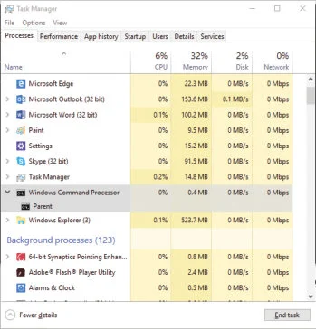
「プロセスのツリーの終了」を実行すると、最初のコマンドプロンプト（Parent）は終了しますが、ペイント（mspaint）は終了せずにそのままデスクトップに残り続けます。中間プロセス（Child）が先に終了してしまっていたため、祖父にあたる Parent と孫にあたるペイントの間の論理的リンクが完全に切断されており、OS側から子孫関係を特定できなかったためです。
Sysinternals Process Explorer
マイクロソフトの Sysinternals ツール群に含まれる Process Explorer は、市販・無償を問わず世界中のあらゆるツールの中で、Windowsのプロセスとスレッドに関する最も深く正確な情報を可視化できる決定版ユーティリティです。本書の随所で行う実験でも主役として活躍します。Process Explorer の主な特徴は以下の通りです：
- プロセスのセキュリティトークン詳細（所属グループ、付与特権、整合性レベル、仮想化状態）
- プロセス、スレッド、DLL、ハンドルの生成・消滅を色分けハイライト表示
- サービスホストプロセス（
svchost.exe等）内部で実行されている具体的なサービス名と説明の一覧
- 緩和策ポリシー（Mitigation Policies）やプロセス保護レベル（Protected Process Light: PPL 等）の可視化
- ジョブオブジェクトに所属するプロセスとその制限設定の詳細
- .NET アプリケーションの詳細（AppDomain一覧、ロード済みアセンブリ、CLRパフォーマンスカウンタ）
- Windows Runtime をホストする Modern/UWP プロセスのパッケージ情報
- プロセスおよび各スレッドの正確な起動日時
- DLLだけでなく、メモリマップトファイルを含む完全なマッピングファイル一覧
- 個別のスレッドやプロセス全体をワンクリックで一時停止（サスペンド）および再開
- 暴走した単一スレッドの強制終了
- 一定期間に最もCPUを消費したプロセスの的確な特定
- 折りたたみ可能な完全なプロセーツリー表示
- プロセスがオープンしている全ハンドル（名前なしハンドル含む）の一覧表示
- スレッドのCPUサイクル数に基づく極めて正確なCPU消費率の把握（第4章「スレッド」で詳解）
- メモリマネージャーの詳細（コミットチャージのピーク値、ページプール/非ページプールのカーネルメモリ消費量など）
それでは、Process Explorer の基本操作を体験してみましょう。
実験：Process Explorer によるプロセス内部の観察
Sysinternals の公式サイトから最新の Process Explorer をダウンロードして実行します。標準ユーザー権限でも動作しますが、右クリックして 管理者として実行 すると、専用のカーネルドライバがロードされ、より多くの内部情報が開放されます。
初回起動時に最も重要なのが「シンボルの設定」です。シンボルが設定されていないと、プロセスのプロパティで「スレッド」タブを開いた際に警告が出たり、関数名が表示されずメモリアドレスのみとなってしまいます。シンボルが正しく設定されると、スレッドの開始関数やコールスタック（関数呼び出し履歴）がシンボル名（関数名）で表示され、各スレッドが内部で何を実行しているかが一目瞭然となります。シンボルを利用するには、Windows SDK に含まれる Debugging Tools for Windows がインストールされている必要があります。メニューの Options → Configure Symbols を開き、Dbghelp.dll のパスとシンボルパスを以下のように設定します：

シンボルパスに srv*c:\symbols*http://msdl.microsoft.com/download/symbols と指定すると、必要なシンボルファイルがマイクロソフトの公式シンボルサーバーから自動的にダウンロードされ、ローカルの C:\symbols フォルダにキャッシュされます。
ヒント： システム環境変数
_NT_SYMBOL_PATHに上記と同じシンボルパス文字列を設定しておくと、Process Explorer だけでなく、WinDbg などのデバッガーや Visual Studio も共通して自動的にこのシンボルサーバーを参照するようになるため、個別の設定の手間が省けます。
Process Explorer を起動すると、上部ペインにプロセーツリーがグラフィカルに表示されます。下部ペイン（View → Show Lower Pane）を開くことで、選択中のプロセスが保持するハンドル一覧や、ロードされているDLLおよびメモリマップトファイルの一覧を瞬時に確認できます。また、プロセスの名前にマウスカーソルを合わせると、ツールチップでフルパスやコマンドラインが表示されます。特定のプロセスでは以下のような付加情報もツールチップに表示されます：
svchost.exeなどのサービスホスト内部で稼働しているサービス名taskhostw.exeなどのタスクホスト内部で稼働しているスケジュールタスク名- コントロールパネル等から呼ばれた
rundll32.exeの呼び出し先ターゲット dllhost.exe（COMサロゲート）内でホストされている COM クラス情報WmiPrvSE.exeなどの WMI ホストが提供しているプロバイダ情報- UWP/Windowsストアアプリのパッケージメタデータ

以下の手順で Process Explorer の基本操作を体験してみましょう：
- プロセスの色分け：既定ではサービスホストはピンク色、自身が起動した通常プロセスは青色などで色分けされています。これらは Options → Configure Colors から自由にカスタマイズ可能です。
- ツールチップの確認：プロセス名の上にマウスを置くと、実行ファイルのフルパスやコマンドライン、ホスト中のサービス名などがポップアップ表示されます。
- 表示列の追加：View → Select Columns を開き、「Process Image」タブで「Image Path（実行ファイルパス）」にチェックを入れて列を追加してみましょう。
- ツリー表示とソートの切り替え：「Process」列ヘッダーをクリックすると、プロセス名によるアルファベット順ソートに切り替わり、ツリー表示が一時的に解除されます。もう一度クリックすると逆順（Z〜A）になり、3回目をクリックすると元のプロセーツリー表示に戻ります。
- 自身のプロセスのみに絞り込む：View メニューの Show Processes from All Users のチェックを外すと、現在のログオンユーザーが所有するプロセスのみに一覧を絞り込めます。
- 差分ハイライトの確認：Options → Difference Highlight Duration を「3 seconds」に変更します。この状態で何か新しいアプリケーション（メモ帳や電卓など）を起動すると、新プロセスが3秒間鮮やかな緑色でハイライトされます。そのアプリを終了すると、今度は3秒間赤色でハイライトされてから一覧から消えます。バックグラウンドで一瞬だけ起動して消えるプロセスの追跡に極めて有用です。
- プロセスのプロパティ探索：任意のプロセスをダブルクリックすると、詳細なプロパティウィンドウが開きます。スレッド、環境変数、セキュリティ、パフォーマンスなど多彩なタブが用意されており、本書の以降の実験でも頻繁に登場します。
スレッド（Threads）
スレッド は、WindowsがCPUの実行時間を割り当てる（スケジュールする）基本単位です。スレッドが存在しなければ、プロセス内のプログラムコードが実行されることはありません。1つのスレッドは以下のコア要素で構成されています：
- CPUレジスタ群の状態（プロセッサコンテキスト）：プログラムカウンタ（命令ポインタ）、スタックポインタ、汎用レジスタなどの値。
- 2つのスタック：カーネルモードで実行中に使用するカーネルスタックと、ユーザーモードで実行中に使用するユーザースタック。
- スレッドローカルストレージ（TLS）：ランタイムライブラリやDLLがスレッド専用の変数を格納するためのプライベート記憶域。
- スレッドID（TID）：システム内でスレッドを一意に識別するID（内部的にはクライアントIDの一部であり、PIDとTIDは同一のID空間から採番されるため重複することはありません）。
さらに、特定のスレッドはクライアントになりすまして処理を行うために、プロセスとは独立した独自の「セキュリティコンテキスト（アクセストークン）」を保持することもあります（マルチスレッドサーバーなどで頻繁に使用されます）。
CPUレジスタ群、スタック、プライベート記憶域などの情報はまとめて スレッドコンテキスト と呼ばれます。これらはCPUアーキテクチャ（x86、x64、ARM）に強く依存するため、OS内部構造としてもアーキテクチャ依存の CONTEXT 構造体として定義されており、GetThreadContext API 関数から取得できます。
あるスレッドから別のスレッドへと実行を切り替える処理は「コンテキストスイッチ」と呼ばれ、カーネルのスケジューラが介入するため一定のCPUオーバーヘッドを伴います。Windowsはこの切り替えコストを最小限に抑えるための仕組みとして、ファイバー（Fibers） と ユーザーモードスケジューリング（UMS） の2つの機構を提供しています。
注意： 64ビット版Windows上で動作する32ビットアプリケーションのスレッドは、32ビット用と64ビット用の両方のコンテキストを保持しています。これらは Wow64（Windows-on-Windows 64-bit）が32ビットモードと64ビットモードを相互に切り替える際に使用されます。このスレッドは2つのユーザースタックと2つの
CONTEXTブロックを持ち、通常の Windows API は64ビット側のコンテキストを返します（32ビット側のコンテキストを取得するにはWow64GetThreadContextを使用します。詳細はPart 2 第8章を参照）。
ファイバー（Fibers）
ファイバー は、Windows標準の優先度ベースのカーネルスケジューラに頼らず、アプリケーション自身の手で実行単位をスケジューリングできるようにする「軽量スレッド」です。カーネルからは完全に不可視であり、すべて Kernel32.dll のユーザーモード空間で協調的に実装されています。
ファイバーを使用するには、まず ConvertThreadToFiber 関数を呼び出して通常のスレッドを稼働中のファイバーへと変換します。その後、CreateFiber を呼び出して追加のファイバーを作成します。ただし通常のスレッドと異なり、ファイバーは生成されても自動的には実行されず、SwitchToFiber 関数を明示的に呼び出して切り替えることで初めて実行が開始されます。呼び出されたファイバーは、自ら終了するか、あるいは別のファイバーを明示的に指定して SwitchToFiber を呼び出すまでCPUを占有し続けます。
注意： 現代のプログラミングにおいて、ファイバーの使用は原則として推奨されません。カーネルから見えないため、スレッドローカルストレージ（TLS）の共有による競合、ファイバーローカルストレージ（FLS）の複雑さ、ブロッキングI/Oによる全体停止など多くの難点があるためです。さらに、複数プロセッサ上での並列実行ができず、協調マルチタスクに縛られます。特別な理由がない限り、Windowsカーネルのスケジューラに任せて通常のスレッドを使用するのが最善です。
ユーザーモードスケジューリング（UMS）
ユーザーモードスケジューリング（UMS） は、64ビット版Windowsでのみサポートされている、ファイバーの利点を活かしつつ欠点を大幅に解消した高度な実行機構です。UMSスレッドはカーネル側にも独立したスレッド状態を持っているため、カーネルから可視であり、ブロッキングシステムコールを発行したりリソース競合を適切に処理できます。
2つ以上のUMSスレッドがユーザーモードで処理を行っている間は、カーネルスケジューラを介さずにユーザーモード内で極めて高速に実行権を切り替えることができます。カーネルから見れば「同じ1つのスレッドが走り続けている」ように見え、オーバーヘッドがありません。そして、UMSスレッドがカーネルに入る操作（システムコール等）を行うと、専用のカーネルスレッドへと切り替わります（ダイレクトコンテキストスイッチ）。複数プロセッサ上での真の並行動作には制約があるものの、単なる協調マルチタスクを超えたプリエンプティブなモデルを実現しています。
スレッドはそれぞれ独立した実行コンテキストを持ちますが、同一プロセス内のすべてのスレッドは、そのプロセスの仮想アドレス空間および各種システムリソースを完全に共有しています。つまり、同一プロセス内の任意のスレッドは、プロセス内の全メモリに対して完全な読み書きアクセス権を持っています。
一方、あるプロセスのスレッドが他のプロセスのメモリ空間を誤って参照してしまうことは、仮想記憶の保護機構により原則として起こり得ません（共有メモリセクションを介して意図的にアドレス空間を共有している場合や、同一ユーザー権限を持つ別プロセスが ReadProcessMemory / WriteProcessMemory などのデバッグAPIを使用して意図的にアクセスする場合を除きます）。
仮想アドレス空間と1つ以上のスレッドに加え、各プロセスはセキュリティコンテキストと、オープンされた各種カーネルオブジェクト（ファイル、共有メモリ、ミューテックス、イベント、セマフォ等）へのハンドルテーブルを保持しています（図1-2）。

プロセスのセキュリティ情報は アクセストークン というカーネルオブジェクトに格納されています。アクセストークンには、プロセスのユーザー識別情報、グループSID、特権一覧などが含まれます。既定ではスレッドは独自のトークンを持ちませんが、必要に応じてスレッド単位でアクセストークンを割り当てることができ、これによりクライアントユーザーの権限になりすまして処理を行う（インパーソネーション）ことが可能になります。
ジョブ（Jobs）
Windowsでは、プロセスをさらに大きな単位で統括管理するための ジョブオブジェクト（Job Object） という機構を提供しています。ジョブを使用すると、関連する複数のプロセスを1つのグループとしてまとめ上げ、グループ全体に対して共通の制限や属性を強制できます。
ジョブオブジェクトが提供する代表的な制御機能には以下のようなものがあります：
- グループ全体、またはプロセス単位での最大CPU使用時間の制限
- プロセス単位、またはジョブ全体のコミットメモリ（仮想メモリ）消費上限の設定
- プロセスの優先順位クラスの強制固定
- 使用できるCPUコア（プロセッサアフィニティ）の制限
- UI制限（クリップボードアクセス、デスクトップ切り替え、ウィンドウ作成、システム終了の制限など）
- セキュリティ制限（特定トークンの強制、管理者特権の剥奪など）
ジョブオブジェクトは、現代のWindowsにおいて極めて重要な役割を果たしています。例えば、ChromiumやEdgeなどのモダンWebブラウザは、タブやレンダリングプロセスを隔離・制限するためにジョブオブジェクトをフル活用しています。また、Windows 10 / Server 2016 で導入された Windows コンテナ（Docker support） のリソース分離基盤としてもジョブが中核で使われています。
注意： Process Explorer では、ジョブによって管理されているプロセスを茶色のハイライトで識別できます（Options → Configure Colors から有効化可能）。また、ジョブに属するプロセスのプロパティには「Job」タブが追加され、所属ジョブの詳細や課されている各種制限をリアルタイムで確認できます。
プロセスとジョブの内部構造については第3章で、スレッドとスケジューリングアルゴリズムについては第4章で詳しく解説します。
仮想メモリ（Virtual memory）
Windowsは、フラット（線形）なアドレス空間に基づく 仮想記憶（仮想メモリ）システム を実装しています。これにより、各プロセスにはまるで自分自身が巨大でプライベートな連続したメモリ空間を独占しているかのような錯覚（抽象化）が与えられます。仮想メモリが提供する論理的なメモリ配置は、背後にある物理RAMの実際の配置とは全く異なっていても構いません。プログラムの実行時、CPUのメモリ管理ユニット（MMU）とOSのメモリマネージャーが協調し、仮想アドレスを物理アドレスへと動的に変換（マッピング）します（図1-3）。

仮想アドレス空間の大きさは、ハードウェアアーキテクチャ（32ビットか64ビットか）によって劇的に異なります。
- 32ビット x86 システム：仮想アドレス空間の理論上の最大値は 4 GB です。既定では、Windowsはこの空間を綺麗に半分に分割し、下位 2 GB（
0x00000000〜0x7FFFFFFF）をユーザープロセス専用のプライベート空間に、上位 2 GB（0x80000000〜0xFFFFFFFF）をOS自身の保護されたシステム空間（カーネル空間）として割り当てます（図1-4）。下位半分のマッピングは実行中のプロセスが切り替わるたびにそのプロセスのものへと切り替わりますが、上位半分はどのプロセスの実行中であっても常に共通のOSシステムコードとデータが常駐します。※特別なブート設定（/3GB）とIMAGE_FILE_LARGE_ADDRESS_AWAREフラグを用いることで、ユーザー空間を 3 GB、カーネル空間を 1 GB に変更することも可能です。

- 64ビット システム（x64 / ARM64）：64ビットCPUの理論上のアドレス空間は 16 EB（エクサバイト＝約160億GB）という途方もない広さですが、現在のハードウェアとOSの実装では、そのうち実用的な一部を使用しています。Windows 8.1 以前の64ビット版では各プロセスに 8 TB のユーザー空間と 8 TB のシステム空間（計 16 TB）が割り当てられていましたが、Windows 10 / Server 2016 ではこれが大幅に拡大され、プロセスごとに 128 TB のユーザー空間と 128 TB のシステム空間（計 256 TB） がサポートされています。これにより、大規模データベースやインメモリ処理がメモリ不足に陥る心配は事実上なくなりました。
図1-5に64ビットWindowsにおける仮想アドレス空間の分割レイアウトを示します。

仮想メモリの詳細な動作原理、ページングファイル、ワーキングセット、アドレス変換テーブル（PTE）などの内部構造については、第5章「メモリ管理」で徹底的に解説します。
カーネルモードとユーザーモード（Kernel mode vs. user mode）
誤動作を起こしたユーザープログラムや悪意のあるソフトウェアが、OS全体を巻き込んでクラッシュさせたり他のプロセスのデータを不正に盗み取ったりすることを防ぐため、Windowsは現代のプロセッサがハードウェアレベルで提供する 2つのプロセッサ実行モード を利用しています。
- ユーザーモード（User mode）：通常のアプリケーションが実行される制限付きモードです。ユーザーモードで動作するコードは、ハードウェアの制御レジスタへの直接アクセスや、他のプロセスのプライベートメモリへの自由なアクセスがCPUレベルで厳格に禁止されています。また、OSのシステム空間メモリにアクセスしようとすると直ちにハードウェア例外（アクセス違反、一般保護違反）が発生し、OSによってそのプロセスだけが安全に強制終了されます。
- カーネルモード（Kernel mode / 特権モード）：オペレーティングシステムのコア部分（カーネル、エグゼクティブ、デバイスドライバ等）が実行される完全な特権モードです。カーネルモードコードはCPUのすべての特権命令を実行でき、システム全体の物理メモリやハードウェアデバイスへ無制限にアクセスできます。
注意： x86およびx64プロセッサは、コードとデータの保護のために 0 から 3 までの 4 つの特権レベル（リング: Ring）を定義しています。Windowsはこのうち「Ring 0」をカーネルモードに、「Ring 3」をユーザーモードに割り当て、中間の Ring 1 と Ring 2 は使用していません。これは、ARMなど他のCPUアーキテクチャがハードウェア的に2つの特権レベルしか持たないため、OSの移植性と設計のシンプルさを保つための賢明な選択でした。
Windowsの各プロセスは独立したプライベートなユーザー空間を持っていますが、カーネルモードで動作するOSコードとデバイスドライバは、システム全体で単一の仮想アドレス空間（システム空間）を共有しています。
仮想メモリの各ページには、読み書きを行うためにCPUがどのモードにある必要があるかを示す属性ビット（U/Kビット）が付与されています。システム空間のページはカーネルモードからしかアクセスできませんが、ユーザー空間のページはユーザーモードとカーネルモードの双方からアクセス可能です。また、データ実行防止（DEP: Data Execution Prevention）が有効な場合、コードを含まないデータ領域のページには「実行不可（NX: No-Execute）」属性が付与され、バッファオーバーフロー攻撃などによる不正なシェルコード実行がCPUレベルで阻止されます。
ここで極めて重要な事実があります。それは、カーネルモードで動作するコンポーネント間には、メモリ保護の壁が存在しないということです。いったんカーネルモードに入ると、サードパーティ製のデバイスドライバであってもOSの全メモリに完全な読み書きアクセス権限を持ち、Windowsのセキュリティ機構を自由に回避できてしまいます。したがって、カーネルモードで動作するコードにたった1つのバグ（バッファ破壊や不正ポインタ参照）があるだけで、システム全体がブルースクリーン（BSoD）となり停止してしまいます。
このリスクを低減するため、マイクロソフトは歴史的にカーネルドライバの品質向上策を強化し続けてきました：
- Driver Verifier：ドライバ開発者が潜在的なバッファオーバーランやメモリリークを検出するための強力なカーネル検証機能（第6章で解説）。
- カーネルモードコード署名（KMCS）：64ビット版Windows 8.1以降、すべてのカーネルドライバは信頼された認証局による暗号署名が義務付けられ、未署名ドライバのロードは管理者権限であっても完全にブロックされます（テストモードでのみ例外許可）。
- Windows 10 の SHA-2 EV署名・SysDev証明義務化：Windows 10 Anniversary Update（バージョン1607）以降、新規の全ドライバは SHA-2 拡張検証（EV）ハードウェア証明書での署名に加え、マイクロソフトの SysDev ポータルに提出して Microsoft による直接の電子署名（アテステーション署名）を受けることが必須となりました。
- Windows Server 2016 の厳格な WHQL 認証：サーバー環境ではさらに厳格化され、単なるアテステーション署名ではロードできず、正式な Windows 認定試験（WHQL）に合格した署名入りドライバのみが実行を許されます。
また、エンタープライズ環境では後述する「Device Guard（コード整合性ポリシー）」を用いて、許可された特定の信頼ドライバ以外の一切のロードをハードウェア仮想化レベルで封じ込めることも可能です。
ユーザーアプリケーションがファイルアクセスなどのOS機能を呼び出す際、CPUはユーザーモードからカーネルモードへと切り替わります（システムコール）。例えば、Windows API の ReadFile を呼び出すと、最終的にファイルを読み取る内部カーネルルーチンを呼ぶ必要があります。このルーチンは保護されたシステムデータ構造を操作するため、カーネルモードで実行されなければなりません。プロセッサの特殊なトラップ命令（x86の sysenter や x64の syscall）が発行されると、CPUは特権モードに遷移してカーネル内のシステムディスパッチャへとジャンプします。そしてカーネル処理を終えると、再びユーザーモードに戻ってアプリケーションの実行を再開します。
注意： ユーザーモードからカーネルモードへの移行（およびその逆）は、スレッドスケジューリングには一切影響を与えません。モード遷移はコンテキストスイッチではありません。同一のスレッドが、単にCPUの特権レベルを切り替えながら処理を継続しているだけです。
このように、通常のスレッドは稼働時間の一部をユーザーモードで、一部をカーネルモードで消費しています。特にグラフィックスやGUI処理の多くもカーネル（win32k.sys）で動作しているため、画面描画を多用するアプリは多くの時間をカーネルモードで過ごします。表1-3に、CPUの実行モード比率を計測するための代表的なパフォーマンスカウンタを示します。
表1-3：モード関連のパフォーマンスカウンタ
| オブジェクト：カウンタ | 説明 |
|---|---|
| Processor: % Privileged Time | CPU（個別または全体）がカーネルモードで実行されていた時間の割合 |
| Processor: % User Time | CPU（個別または全体）がユーザーモードで実行されていた時間の割合 |
| Process: % Privileged Time | 該当プロセスの全スレッドがカーネルモードで実行されていた時間の割合 |
| Process: % User Time | 該当プロセスの全スレッドがユーザーモードで実行されていた時間の割合 |
| Thread: % Privileged Time | 個別スレッドがカーネルモードで実行されていた時間の割合 |
| Thread: % User Time | 個別スレッドがユーザーモードで実行されていた時間の割合 |
実験：カーネルモード時間とユーザーモード時間の計測
Windows付属の「パフォーマンス モニター」を使用すると、システムがカーネルモードとユーザーモードのどちらでどの程度時間を費やしているかを視覚的にリアルタイム監視できます：
- スタートメニューを開き、「パフォーマンス モニター」（
perfmon）と入力して起動する。 - 左側のツリーで「モニタリング ツール → パフォーマンス モニター」を選択する。
- 既定で表示されている折れ線グラフのカウンタを選択し、ツールバーの削除（×）ボタンまたは
Deleteキーを押して削除する。 - ツールバーの追加（＋）ボタンをクリックする。
- 一覧から Processor を展開し、
Ctrlキーを押しながら % Privileged Time と % User Time の両方を選択して「追加」をクリックし、「OK」を押す。 - コマンドプロンプトを開き、
dir \\%computername%\c$ /sなどを実行して大量のファイル走査（高負荷なファイルシステムI/O）を発生させてみる。

ディスクやネットワークの激しいI/O中には、カーネルモード時間（Privileged Time）が跳ね上がることがグラフから確認できます。
タスクマネージャーでも簡単に確認できます。「パフォーマンス」タブを開き、CPUグラフを右クリックして カーネル時間を表示する にチェックを入れると、全体のCPU使用率のうちカーネルモードが占める割合が濃い青色で重ねて表示されるようになります。
ハイパーバイザー（Hypervisor）
近年のWindowsにおける最大のアーキテクチャ的進化の1つが、Hyper-V ハイパーバイザー のOS基盤への深い統合です。ハイパーバイザーはCPUのハードウェア仮想化支援機能（Intel VT-x や AMD-V）を利用して、CPUの特権リングである Ring 0 よりもさらに下層の Ring -1（VMX rootモード） で稼働する超低レベルの仮想化ソフトウェア層です。
かつてハイパーバイザーは、サーバー上で複数の仮想マシン（VM）を動かすためだけの機能でした。しかし Windows 10 および Windows Server 2016 において、マイクロソフトはハイパーバイザーを ホストOS自体の防衛機構 として活用する革新的なアーキテクチャ「VBS（仮想化ベースのセキュリティ: Virtualization-Based Security）」を導入しました。
VBSが有効なシステムでは、たとえWindowsカーネル自体であってもハードウェアの最高特権ではなく、ハイパーバイザー上で動作する1つの仮想マシン（VTL 0: 通常ワールド）に格下げされます。そして、それとは完全にハードウェアレベルでメモリが隔絶された、よりセキュアな隔離空間（VTL 1: セキュアワールド）が作成され、そこに セキュアカーネル（Secure Kernel） や分離型LSASS（Credential Guard）が配置されます。
これにより、万一悪意のあるカーネルドライバによって通常カーネル（Ring 0）が完全に侵害されたとしても、攻撃者はハイパーバイザーによって保護されたセキュアワールドのメモリを盗み見ることも改ざんすることもできません。Pass-the-Hash攻撃で狙われるユーザーの資格情報（パスワードハッシュ）や暗号キーはセキュアワールド内で厳重に防衛され、システムの根本的な乗っ取りが阻止されます（詳細は第7章およびPart 2 第9章で詳解）。
ファームウェア（Firmware）
Windowsが起動する際、最初にハードウェアの初期化を行いブートローダーを呼び出すのがファームウェアです。従来のレガシーな PC では BIOS（Basic Input/Output System）が使われていましたが、現代のWindows PCでは完全に UEFI（Unified Extensible Firmware Interface）へと移行しています。
UEFIは、従来の16ビットリアルモードで動作していたBIOSと異なり、64ビットネイティブコードで動作し、2.2 TBを超えるGPTディスクからのブートをサポートします。さらにWindowsのセキュリティにおいて不可欠な セキュアブート（Secure Boot） を実現します。セキュアブートは、電源投入直後からファームウェア自身、Windowsブートマネージャー、そしてWindowsカーネルに至るまでのすべてのブートコードのデジタル署名を検証し、ルートキットなどの不正コードがOS起動前に潜り込むのを物理的に防ぎます。
ターミナルサービスとマルチセッション
Windowsは、複数のユーザーが同時にマシンにログオンして独立したデスクトップ環境を安全に利用できるように設計された マルチセッション（ターミナルサービス / リモートデスクトップサービス） アーキテクチャを内蔵しています。
システム内の各プロセスは、特定の「セッション（Session）」に所属しています。セッションとは、特定の対話型ログオンユーザーに紐づくすべてのリソース（ウィンドウステーション、デスクトップ、クリップボード、プロセス群）を包括する論理的な分離境界です。
- セッション 0：OSのシステムサービスやバックグラウンドタスク専用の非対話型セッションです。Windows Vista 以降、セキュリティ強化のためユーザーログオンセッションから完全に隔離され、ユーザーと対話するUIを表示することは禁止されています（セッション0分離）。
- セッション 1 以降：対話型ユーザーがログオンするたびに新しく作成されるセッションです。コンソールからログオンしたユーザーも、リモートデスクトップ（RDP）経由で接続したユーザーも、それぞれ独立したセッションIDが割り振られます。
Windows Server では、リモートデスクトップサービス（RDS）の役割を有効化することで、数十人から数百人のユーザーが単一のサーバー上で同時にそれぞれのセッションでアプリケーションを実行できます。
マルチセッション環境において、セッション間でのリソース衝突を防ぎつつ、GDIやUSERなどのGUIサブシステムメモリを効率的に管理するため、Windowsは「セッション空間（Session Space）」と呼ばれるセッション固有のカーネル仮想アドレス領域を使用しています（第5章「メモリ管理」で詳解）。
オブジェクトとハンドル（Objects and handles）
Windowsエグゼクティブ（OSカーネル上位層）の中核設計思想の1つが「オブジェクト指向設計」です。Windowsは、ファイル、ディレクトリ、プロセス、スレッド、セクション（共有メモリ）、ミューテックス、セマフォ、イベント、アクセストークン、レジストリキーなど、管理すべきあらゆるシステムリソースを エグゼクティブオブジェクト（カーネルオブジェクト） としてカプセル化して統一的に扱います。
ユーザーモードアプリケーションは、これらのカーネルオブジェクトのメモリ上の生のアドレス（ポインタ）を直接触ることはできません。代わりに、安全な不透明ポインタである「ハンドル（Handle）」を介してオブジェクトを間接的に参照・操作します。
プロセスがオブジェクトを作成またはオープンすると（例: CreateFile や OpenProcess）、OSはプロセスの「プロセスハンドルテーブル」に新しいエントリを登録し、そのインデックスであるハンドル値を返します。ハンドルはプロセスごとに固有のテーブルのインデックスであるため、プロセスAのハンドル値 0x24 とプロセスBのハンドル値 0x24 は通常全く別のオブジェクトを指しています。
オブジェクトとハンドルによる抽象化は、Windowsに以下のような計り知れない利点をもたらしています：
- 安全なリソース保護：すべてのカーネルデータ構造はユーザーモードから直接書き換えられることがなく、整合性が保たれます。
- 統一されたアクセス制御とセキュリティ：ハンドルをオープンする際、OSのセキュリティサブシステムが「要求されたアクセス権（読み取り、書き込み、終了など）」を検証し、許可された権限フラグをハンドルに記録します。以降の操作ではハンドルに付与された権限のみが許可されます。
- 厳格な生存期間（リファレンスカウント）管理：オブジェクトは「ハンドル参照カウント」と「カーネルポインタ参照カウント」の2種類の参照カウントを保持します。すべてのハンドルがクローズされ（
CloseHandle）、カーネル内からの参照もゼロになった瞬間、オブジェクトは自動的かつ安全にメモリから解放され、リソースリークを防ぎます。 - 名前空間の統一管理：オブジェクトマネージャーは階層構造を持つ名前空間（オブジェクトディレクトリ）を保持しており、プロセス間で名前を指定してオブジェクトを共有（例:
\BaseNamedObjects内の共有ミューテックス）できます。
セキュリティ（Security）
Windowsは誕生当初から、政府機関の厳格なセキュリティ評価基準（C2クラス、後のコモンクライテリア）を満たすよう設計された包括的なセキュリティアーキテクチャを備えています。
Windowsセキュリティモデルの中核を担うのが SRM（セキュリティリファレンスモニター: Security Reference Monitor） と呼ばれるカーネルコンポーネントです。SRMは、スレッドがオブジェクトへのハンドルをオープンしようとするたびに、以下の2つの情報を照合してアクセスを許可するか拒否するかを判定します：
- 主体のセキュリティ属性（アクセストークン）：スレッドまたはプロセスに紐づくユーザーSID、所属グループSID、特権一覧。
- 客体のセキュリティ属性（セキュリティ記述子: Security Descriptor）：オブジェクトに付与された所有者情報、および DACL（随意アクセスコントロールリスト）。DACLには「誰に（どのSIDに）どのようなアクセス権を許可・拒否するか」を定義したエントリ（ACE）が並んでいます。
Windows Vista 以降では、従来のユーザー単位・グループ単位のアクセス制御に加え、強力な新セキュリティレイヤーが追加されてきました：
- 整合性レベル（Mandatory Integrity Control: MIC）：すべてのプロセスとオブジェクトに「低」「中」「高」「システム」などの整合性レベルを割り当て、低整合性のプロセス（サンドボックス化されたブラウザ等）が高整合性のリソースを変更することを禁止する仕組み。
- ユーザーアカウント制御（UAC）：管理者が通常業務を行う際は管理者特権を分離した「制限付きトークン」でアプリを実行し、システム変更時のみ明示的な昇格プロンプトを表示する機構。
- AppContainer：Windowsストアアプリ（UWP）やEdgeブラウザで使用される強力な軽量サンドボックス。ネットワークアクセスやローカルファイルへのアクセスが細分化された「機能（Capabilities）」ごとに極めて厳密に制限されます。
レジストリ（Registry）
レジストリ は、WindowsのOS設定、ハードウェア構成、デバイスドライバ設定、インストール済みアプリケーションの構成情報などを一元管理する中央階層型データベースです。
レジストリはファイルシステムのフォルダ構造に似た階層構造を持ち、フォルダに相当する「キー（Key）」と、ファイルに相当する「値（Value）」から構成されます。ルートには HKEY_LOCAL_MACHINE（マシン全体の設定）、HKEY_CURRENT_USER（ログオンユーザーの設定）などの定義済みキーが存在します。ディスク上では「ハイブ（Hive）」と呼ばれるバイナリファイル（SYSTEM、SOFTWARE、SAM、NTUSER.DAT など）として保存されています。
第7章およびPart 2 第8章で、レジストリのメモリ内データ構造やトランザクション機構（KTM連携）などを詳解します。
Unicode
Windows NT系のアーキテクチャは、その誕生当初から内部のすべての文字列処理を Unicode（UTF-16LE） で行うように設計されています。これにより、単一のグローバルなバイナリで世界中のあらゆる言語・文字セットをネイティブにサポートできます。
後方互換性のため、文字列を受け取る Windows API 関数の多くには「A版（ANSI / 従来の文字コード版）」と「W版（Wide character / Unicode版）」の2種類が用意されています。例えば、ファイルをオープンする CreateFile は関数そのものではなく、コンパイル時にマクロによって CreateFileA または CreateFileW へと展開されます：
#ifdef UNICODE #define CreateFile CreateFileW #else #define CreateFile CreateFileA #endif
重要な点として、Windowsカーネルおよびコアサブシステムは内部でUnicodeしか扱いません。もしアプリケーションが ANSI 版の CreateFileA を呼び出した場合、システムはユーザーモードの Kernel32.dll 内で文字列を ANSI から Unicode（UTF-16）へと一時変換した上で、内部の Unicode 版システムルーチンを呼び出します。そのため、Unicode 版（W版）のAPIを直接呼び出すほうが変換オーバーヘッドがなく、文字化けの危険もありません。
実験：サブシステムDLLのエクスポート関数の確認（Dependency Walker）
Dependency Walker ツールを使用して、Windowsの基幹DLLが ANSI 版と Unicode 版の関数ペアをエクスポートしている様子を観察してみましょう：
- Dependency Walker（
depends.exe）をダウンロードして起動します。 - メニューの File → Open から、
C:\Windows\System32\kernel32.dllを開きます。 - 画面右上の「エクスポート関数一覧」で関数名をクリックしてアルファベット順にソートします。
CreateFileAを探すと、そのすぐ下にCreateFileWが並んでいることが確認できます。

CreateFileMappingA/W、CreateProcessA/W など、文字列を引数に取るほぼすべてのAPIが二重に定義されていることが確認できます。
Windows 内部の深掘り（Digging into Windows internals）
本書で解説する内部構造の多くは、Windowsのソースコード解析やマイクロソフトのカーネル開発者との議論に基づいています。しかし、読者の皆様がそれらをただ鵜呑みにする必要はありません。Windowsには、内部で何が起きているかを読者自身の手で暴き、視覚的に確かめるための強力なツール群が用意されています。
本書の随所に登場する「実験（EXPERIMENT）」は、実際のツールを操作しながらOS内部の挙動を検証できるように設計されています。表1-4に本書で主に使用する代表的なツールの一覧を示します。
表1-4：Windows内部調査ツールの概要
| ツール名 | 実行ファイル | 提供元 | 主な用途 |
|---|---|---|---|
| Autoruns | Autoruns.exe | Sysinternals | 自動起動プログラム・拡張モジュールの完全調査 |
| AccessChk | Accesschk.exe | Sysinternals | ファイル・キー・サービスへのアクセス権検証 |
| Dependency Walker | Depends.exe | 外部ツール | DLLのインポート/エクスポート関数の解析 |
| Gflags | Gflags.exe | Debugging Tools | カーネル/プロセスのグローバルフラグ設定 |
| Handle | Handle.exe | Sysinternals | オープン中のハンドル検索（CLI） |
| WinObj | Winobj.exe | Sysinternals | オブジェクトマネージャー名前空間の探索 |
| Performance Monitor | Perfmon.exe | Windows標準 | パフォーマンスカウンタの計測・記録 |
| Process Explorer | Procexp.exe | Sysinternals | プロセス・スレッド・ハンドルの究極の調査 |
| Process Monitor | Procmon.exe | Sysinternals | ファイル・レジストリ・プロセスのリアルタイム追跡 |
| WinDbg / KD | Windbg.exe / Kd.exe | Debugging Tools | カーネルおよびユーザーモードの深層デバッグ |
| LiveKd | Livekd.exe | Sysinternals | 稼働中マシン上でのライブカーネルデバッグ |
パフォーマンスモニターとリソースモニター
Windows標準の「パフォーマンス モニター（Performance Monitor / perfmon）」は、システム全体の詳細な稼働状態を監視するための最も包括的なツールです。数百ものOSオブジェクトに対して数千のカウンタが用意されており、CPU消費、メモリの各プール使用量、ディスクI/O、ネットワーク転送量などをリアルタイムにグラフ化・ロギングできます。
また、日常的な監視により適した「リソース モニター（Resource Monitor / resmon）」も標準搭載されています。CPU、メモリ、ディスク、ネットワークの4大リソースの状況を直感的に把握できます（図）。

リソースモニターでは、特定のプロセスにチェックを入れることで、そのプロセスに関連するディスクアクセスファイル名、オープンしているネットワーク接続（通信先IP、ポート番号、パケット損失率）、ロードしているモジュールなどをワンクリックで絞り込み表示できます。
カーネルデバッグ（Kernel debugging）
カーネルデバッグ は、Windowsの内部を極限まで深く解き明かすための最強の調査手法です。メモリ上に展開された未公開カーネルデータ構造の生の内容を検査したり、カーネル内の処理フローを追跡したりできます。
カーネルデバッグ用シンボル（Symbols）
デバッガーを真に役立つものにするためには、「シンボルファイル（.PDB）」が不可欠です。シンボルファイルには、関数名、グローバル変数名、データ構造体のメンバ名とオフセット配置情報が記録されています。製品版のWindowsバイナリ（ntoskrnl.exe など）には実行速度とファイルサイズ削減のためシンボル名は含まれていませんが、マイクロソフトは公式の シンボルサーバー を無償公開しており、デバッガーからインターネット経由でオンデマンド取得できるようにしています。
デバッガーで以下のシンボルパスを設定するだけで、必要なシンボルが自動取得されます：
srv*c:\symbols*http://msdl.microsoft.com/download/symbols
Debugging Tools for Windows
Windows SDK に同梱される「Debugging Tools for Windows」には、以下のデバッガーが含まれています：
- cdb / ntsd：コンソールUIベースのユーザーモードデバッガー
- kd：コンソールUIベースのカーネルデバッガー
- WinDbg：GUIを備えた、ユーザーモードおよびカーネルモード両用の高機能デバッガー
カーネルデバッグには主に以下の接続形態があります：
- リモートカーネルデバッグ（2台接続）：デバッグ対象のマシン（ターゲット）と、デバッガーを動かすマシン（ホスト）をネットワーク（KDNET）、USB、1394、シリアルケーブル等で接続します。ブレークポイントを設定してカーネルの実行を完全に一時停止させたり、ステップ実行することが可能です。
- ローカルカーネルデバッグ（Local Kernel Debugging）：1台のマシン上で、自身が稼働中のカーネルをその場で直接参照する手法です（管理者権限のWinDbgから「File → Kernel Debug → Local」）。ブレークポイントによる停止はできませんが、稼働中システムのあらゆるカーネル構造体を読み取って検査できます。図1-6に64ビットWindows 10でのローカルカーネルデバッグ画面を示します。

カーネルデバッガー内では、エクスクラメーションマーク（!）で始まる多数のデバッガー拡張コマンド（例: !process, !thread, !pool, !vm）が利用できるほか、構造体を表示する dt（Display Type）コマンドにより、数千に及ぶカーネルデータ構造のメンバ配置を詳細にダンプできます。
実験：カーネル構造体の型情報の表示（dt nt!_*）
カーネルデバッガー（WinDbg や LiveKd）で dt nt!_* と入力すると、カーネルシンボルに含まれる膨大な構造体の一覧が表示されます：
lkd> dt nt!_* ntkrnlmp!_KSYSTEM_TIME ntkrnlmp!_NT_PRODUCT_TYPE ntkrnlmp!_KUSER_SHARED_DATA ntkrnlmp!_ULARGE_INTEGER ntkrnlmp!_TP_POOL ntkrnlmp!_TEB ...
ワイルドカードを使って特定の構造体を検索することも可能です。例えば割り込みオブジェクトの構造体を探すには dt nt!_*interrupt* と入力します：
lkd> dt nt!_*interrupt* ntkrnlmp!_KINTERRUPT_MODE ntkrnlmp!_KINTERRUPT ntkrnlmp!_INTERRUPT_CONNECTION_DATA ...
構造体名が分かれば、dt nt!_KINTERRUPT のように入力することで、構造体内部のメンバ名、データ型、オフセットが綺麗に整形されて表示されます：
lkd> dt nt!_KINTERRUPT +0x000 Type : Int2B +0x002 Size : Int2B +0x008 InterruptListEntry : _LIST_ENTRY +0x018 ServiceRoutine : Ptr64 unsigned char +0x028 MessageIndex : Uint4B +0x030 ServiceContext : Ptr64 Void +0x038 SpinLock : Uint8B +0x050 DispatchAddress : Ptr64 void +0x058 Vector : Uint4B +0x05c Irql : UChar ...
LiveKd ツール
Sysinternals の LiveKd は、OSをデバッグモードで起動していなくても、稼働中のWindows上で即座に WinDbg や kd によるカーネルデバッグを可能にする画期的な無償ツールです。
LiveKd は稼働中システムの仮想メモリのスナップショット（仮想的なクラッシュダンプ）を透過的に生成してデバッガーに提示するため、マシンの再起動や2台接続の機材を用意することなく、手軽に安全にカーネル内部の生データを調査できます。livekd -w と実行すれば GUI の WinDbg が起動します。
Windows Software Development Kit (Windows SDK)
Windows SDK は、Windowsアプリケーションを開発・デバッグするための公式開発キットです。マイクロソフトの公式サイトから無償でダウンロードできます。
Windows内部構造を探究する上での Windows SDK の最大の価値は、公式のC言語ヘッダーファイル群（Include フォルダ）と、付属する各種調査ツール（Bin フォルダ）にあります。APIの定義や各種フラグ定数の正確な値を確認する上で一級のリソースとなります。
Windows Driver Kit (WDK)
Windows Driver Kit (WDK) は、デバイスドライバの開発者向けキットであり、Windows内部構造情報のまさに宝庫です。公式ドキュメント（カーネルモードドライバアーキテクチャ設計ガイド等）には、通常公開されないカーネルの動作原理や同期オブジェクトの振る舞いが詳細に解説されています。
さらに WDK に含まれるヘッダーファイル（特に ntddk.h, ntifs.h, wdm.h）には、カーネルが使用する内部データ構造体やシステムルーチンのプロトタイプが多数定義されており、カーネルデバッガーで構造体を調査する際のリファレンスとして極めて有用です。
Sysinternals ツール群
本書で紹介する実験の多くは、Windows Sysinternals（sysinternals.com）の無償ツールを使用しています。著者の1人である Mark Russinovich が中心となって開発したこれらのツールは、世界中のWindows管理者やセキュリティ技術者のデファクトスタンダードとなっています。
最も著名な Process Explorer や Process Monitor のほか、Autoruns、Handle、WinObj など、OS内部の可視化において比類なき威力を発揮します。ツール群は頻繁にアップデートされているため、常に最新版をダウンロードして活用してください。
まとめ（Conclusion）
本章では、本書全体を通じて基礎となる Windows の主要なアーキテクチャ概念と基本用語（API、プロセス、スレッド、仮想メモリ、実行モード、オブジェクト、セキュリティ等）を整理し、内部構造を解明するための強力な調査ツール群の基本操作を紹介しました。
これでWindowsの内部世界を探究する準備が整いました。続く第2章では、システム全体の全体像と各コアコンポーネントがどのように結合しているかを解き明かす「システムアーキテクチャ」の旅へと進みましょう。
実験：カーネル構造体の型情報の表示（dt nt!_*）
カーネルデバッガー（WinDbg や LiveKd）で dt nt!_* と入力すると、カーネルシンボルに含まれる構造体のうち、型情報が提供されている一覧が表示されます（ntkrnlmp は64ビットマルチプロセッサカーネルの内部ファイル名です。詳細は第2章を参照）：
lkd> dt nt!_* ntkrnlmp!_KSYSTEM_TIME ntkrnlmp!_NT_PRODUCT_TYPE ntkrnlmp!_ALTERNATIVE_ARCHITECTURE_TYPE ntkrnlmp!_KUSER_SHARED_DATA ntkrnlmp!_ULARGE_INTEGER ntkrnlmp!_TP_POOL ntkrnlmp!_TP_CLEANUP_GROUP ntkrnlmp!_ACTIVATION_CONTEXT ntkrnlmp!_TP_CALLBACK_INSTANCE ntkrnlmp!_TP_CALLBACK_PRIORITY ntkrnlmp!_TP_CALLBACK_ENVIRON_V3 ntkrnlmp!_TEB
dt コマンドではワイルドカードを用いた部分一致検索も可能です。例えば、割り込みオブジェクトの構造体名を探したい場合は、dt nt!_*interrupt* と入力します：
lkd> dt nt!_*interrupt* ntkrnlmp!_KINTERRUPT_MODE ntkrnlmp!_KINTERRUPT_POLARITY ntkrnlmp!_PEP_ACPI_INTERRUPT_RESOURCE ntkrnlmp!_KINTERRUPT ntkrnlmp!_UNEXPECTED_INTERRUPT ntkrnlmp!_INTERRUPT_CONNECTION_DATA ntkrnlmp!_INTERRUPT_VECTOR_DATA ntkrnlmp!_INTERRUPT_HT_INTR_INFO ntkrnlmp!_INTERRUPT_REMAPPING_INFO
構造体名が判明したら、以下のように dt コマンドに対象構造体名を指定して実行することで、構造体の詳細なフィールド定義をダンプできます（デバッガーは大文字小文字を区別しません）：
lkd> dt nt!_KINTERRUPT +0x000 Type : Int2B +0x002 Size : Int2B +0x008 InterruptListEntry : _LIST_ENTRY +0x018 ServiceRoutine : Ptr64 unsigned char +0x020 MessageServiceRoutine : Ptr64 unsigned char +0x028 MessageIndex : Uint4B +0x030 ServiceContext : Ptr64 Void +0x038 SpinLock : Uint8B +0x040 TickCount : Uint4B +0x048 ActualLock : Ptr64 Uint8B +0x050 DispatchAddress : Ptr64 void +0x058 Vector : Uint4B +0x05c Irql : UChar
+0x05d SynchronizeIrql : UChar +0x05e FloatingSave : UChar +0x05f Connected : UChar +0x060 Number : Uint4B +0x064 ShareVector : UChar +0x065 EmulateActiveBoth : UChar +0x066 ActiveCount : Uint2B +0x068 InternalState : Int4B +0x06c Mode : _KINTERRUPT_MODE +0x070 Polarity : _KINTERRUPT_POLARITY +0x074 ServiceCount : Uint4B +0x078 DispatchCount : Uint4B +0x080 PassiveEvent : Ptr64 _KEVENT +0x088 TrapFrame : Ptr64 _KTRAP_FRAME +0x090 DisconnectData : Ptr64 Void +0x098 ServiceThread : Ptr64 _KTHREAD +0x0a0 ConnectionData : Ptr64 _INTERRUPT_CONNECTION_DATA +0x0a8 IntTrackEntry : Ptr64 Void +0x0b0 IsrDpcStats : _ISRDPCSTATS +0x0f0 RedirectObject : Ptr64 Void +0x0f8 Padding : [8] UChar
なお、既定では dt コマンドは内部に含まれるサブ構造体（入れ子の構造体）の中身までは展開しません。サブ構造体のフィールドまで再帰的に展開して表示するには、-r スイッチまたは -b スイッチを使用します。例えば、カーネル割り込みオブジェクトを表示する際にこのスイッチを指定すると、InterruptListEntry フィールドに格納されている _LIST_ENTRY 構造体の内部フォーマット（Flink, Blink）まで詳細に展開されます：
lkd> dt nt!_KINTERRUPT -r +0x000 Type : Int2B +0x002 Size : Int2B +0x008 InterruptListEntry : _LIST_ENTRY +0x000 Flink : Ptr64 _LIST_ENTRY +0x000 Flink : Ptr64 _LIST_ENTRY +0x008 Blink : Ptr64 _LIST_ENTRY +0x008 Blink : Ptr64 _LIST_ENTRY +0x000 Flink : Ptr64 _LIST_ENTRY +0x008 Blink : Ptr64 _LIST_ENTRY +0x018 ServiceRoutine : Ptr64 unsigned char
-r スイッチの後ろに数値を付けることで、再帰展開の深さを指定することも可能です。例えば dt nt!_KINTERRUPT -r1 と指定すると、1階層分だけサブ構造体を展開します。
デバッガーのセットアップや詳しいコマンド体系については、Debugging Tools for Windows のヘルプファイル（Debugger.chm）に網羅されています。さらにデバイスドライバ開発者を主眼に置いたデバッグ手法の詳細については、WDK の公式ドキュメントを参照してください。
LiveKd ツール
Sysinternals の LiveKd は、OSをデバッグモードで起動していなくても、稼働中のWindows上で即座に WinDbg や kd によるカーネルデバッグを可能にする画期的な無償ツールです。
デバッグモードを有効にしていない実稼働マシン上で急遽カーネルレベルの障害調査が必要になった場合や、再起動すると再現しなくなってしまうトラブルを調査する際に極めて大きな威力を発揮します。
LiveKd の使い方は WinDbg や kd とほぼ同様です。指定したコマンドラインオプションは、背後で起動されるデバッガーへとそのまま渡されます。既定ではコンソール版の kd が起動しますが、-w スイッチを付与することで GUI 版の WinDbg を起動できます（利用可能なオプション一覧は livekd -? で確認できます）。
LiveKd は稼働中システムの仮想メモリのスナップショット（仮想的なクラッシュダンプ）を透過的に生成してデバッガーに提示するため、マシンの再起動や2台接続の機材を用意することなく、手軽に安全にカーネル内部の生データを調査できます。なお、メモリは起動時点のスナップショットであるため、時間の経過によって自動更新はされません。システム状態を更新したい場合は、q コマンドでデバッガーを一度終了すると、LiveKd が再起動するか尋ねてきます。デバッガーの出力がループして止まらない場合は Ctrl+C、ハングした場合は Ctrl+Break を押すことでデバッガープロセスを終了できます。
Windows Software Development Kit (Windows SDK)
Windows SDK は、MSDN サブスクリプションまたはマイクロソフトの開発者ポータル（Windows 10 SDK 配布ページ）から誰でも無償でダウンロードできます。Visual Studio のインストーラーからもオプションとして導入可能です。Windows SDK のバージョンは常に最新の Windows OS に追従して提供されます。
Windows SDK には、前述の「Debugging Tools for Windows」に加えて、Windows アプリケーションをコンパイル・リンクするための C言語ヘッダーファイルとライブラリ群が含まれています。Windows 内部構造を探究する観点において特に価値が高いのは、公式の API ヘッダーファイル群（例: C:\Program Files (x86)\Windows Kits\10\Include）と、付属する各種ユーティリティ（Bin フォルダ）です。また、オフラインでも参照できる膨大な技術ドキュメントや、SDK および MSDN ライブラリに付属するサンプルソースコードも重要な知見を与えてくれます。
Windows Driver Kit (WDK)
Windows Driver Kit (WDK) も同様に、MSDN サブスクリプションおよび公式サイトから無償で入手できます。WDK のドキュメントは MSDN ライブラリに完全に統合されています。
WDK は本来デバイスドライバ開発者向けのキットですが、Windows の内部構造に関する比類なき情報源でもあります。例えば、第6章では I/O システムのアーキテクチャやドライバモデルの骨格を解説しますが、個々のカーネルサポート関数の詳細なパラメータまでは網羅していません。WDK のドキュメント（特に『Kernel-Mode Driver Architecture Design Guide』および『Kernel-Mode Driver Reference』）には、すべてのカーネルサポート関数とドライバ機構のチュートリアルおよびリファレンスが網羅されています。
さらに WDK には、重要な内部データ構造体、システム定数、未公開内部ルーチンのインターフェースを定義したヘッダーファイル群（とりわけ ntddk.h、ntifs.h、wdm.h）が同梱されています。本書では構造体の全体的なレイアウトや役割を解説していますが、個々のフィールドの詳細なサイズやデータ型までは掲載していません。オブジェクトディスパッチャヘッダー、待機ブロック、イベント、ミュータント、セマフォなどの正確な構造体定義は、これらの WDK ヘッダーファイルを調べることで完全に把握できます。
本書の解説を超えてさらに深く I/O システムやドライバモデルを極めたい方には、WDK 公式ドキュメントの熟読を強くお勧めします。また、Walter Oney 著『Programming the Microsoft Windows Driver Model, Second Edition』（Microsoft Press, 2002年）や、Penny Orwick & Guy Smith 著『Developing Drivers with the Windows Driver Foundation』（Microsoft Press, 2007年）も非常に有益な参考資料となります。
Sysinternals ツール群
本書で紹介する実験の多くは、Windows Sysinternals（sysinternals.com）の無償ツールを使用しています。著者の1人である Mark Russinovich が中心となって開発したこれらのツールは、世界中のWindows管理者やセキュリティ技術者のデファクトスタンダードとなっています。
最も著名な Process Explorer や Process Monitor のほか、Autoruns、Handle、WinObj など、OS内部の可視化において比類なき威力を発揮します。なお、これらツールの多くはカーネルモードの専用デバイスドライバを動的にロードして動作するため、管理者特権（昇格した権限）での実行が必要ですが、一部の機能は標準ユーザー権限でも稼働します。
Sysinternals ツールは頻繁に新機能の追加やバグ修正が行われているため、常に最新版をダウンロードして活用してください。ツールの更新情報は「Sysinternals Site Blog」（RSSフィードあり）で追跡できます。全ツールの詳しい解説やトラブルシューティングの実例集については、Mark Russinovich & Aaron Margosis 著『Windows Sysinternals Administrator’s Reference』（Microsoft Press, 2011年）および Sysinternals 公式フォーラムをご参照ください。
まとめ（Conclusion）
本章では、本書全体を通じて基礎となる Windows の主要なアーキテクチャ概念と基本用語（API、プロセス、スレッド、仮想メモリ、実行モード、ハイパーバイザー、オブジェクト、セキュリティ等）を整理し、内部構造を解明するための強力な調査ツール群（タスクマネージャー、Process Explorer、パフォーマンスモニター、WinDbg/LiveKd、WDK）の基本操作を紹介しました。
これでWindowsの内部世界を探究する準備が整いました。続く第2章では、システム全体の全体像と各コアコンポーネントがどのように結合しているかを解き明かす「システムアーキテクチャ」の旅へと進みましょう。
第2章 システムアーキテクチャ
第1章で必須となる専門用語、基本概念、および調査ツールの操作方法を習得したところで、いよいよ Microsoft Windows オペレーティングシステム（OS）の内部設計思想と全体構造の探究に入りましょう。本章では、システムの全体アーキテクチャ、主要コンポーネント群、それらの相互作用、そしてそれぞれが実行されるコンテキスト（特権モードやアドレス空間）について詳しく解説します。まずは、Windows の仕様と設計を決定づけた当初の要件と目標から振り返ります。
要件と設計目標
1989年に Windows NT の仕様策定が始まった際、開発チームには以下の厳格な要件が課されていました：
- 真の32ビット（および将来の64ビット）、プリエンプティブ、リエントラントな仮想記憶OSを提供すること。
- 複数のハードウェアアーキテクチャおよびプラットフォーム上で稼働可能であること（移植性）。
- 複数のプロセッサ上でシームレスにスケールし、並列実行できること（対称型マルチプロセッシング：SMP）。
- 分散コンピューティング環境に適した堅牢なネットワーク基盤を備えること。
- 政府機関や企業の厳格なセキュリティ要件（C2クラス等）を満たすこと。
- 主要な業界標準仕様および既存のアプリケーション環境（Win16, DOS, POSIX, OS/2等）と高度な互換性を維持すること。
- 互換性（Compatibility）：既存の技術を継承・拡張しつつ、ユーザーインターフェースおよびAPIは従来の Windows や MS-DOS と高い互換性を維持すること。また、UNIX、OS/2、NetWare など異種OS環境とも円滑に相互運用できること。
- パフォーマンス（Performance）：他の設計目標の制約の範囲内で、各ハードウェアプラットフォーム上で最大限の高速性と応答性を発揮すること。
Windowsの内部構造を読み進めるにつれ、これら当初の設計目標と市場要件が、システムの細部に至るまで極めて見事に織り込まれていることが理解できるはずです。詳細な探究を始める前に、まず Windows の全体的な設計モデルを眺め、他の現代OSと比較してみましょう。
オペレーティングシステムモデル
学術的なOSの分類において、OSアーキテクチャは主に「モノリシックカーネル（単一巨大カーネル）」と「マイクロカーネル（極小カーネル）」の2つに大別されます。
Windows は、伝統的なモノリシックカーネル（すべてのOS機能がカーネル空間で動作）と、純粋なマイクロカーネル（カーネル空間には最小限のIPC・スケジューリングのみを残し、ファイルシステムやドライバをユーザー空間サーバーとして動作させる）の双方の長所を巧みに組み合わせた「ハイブリッド構造」を採用しています。
Windows では、スレッドスケジューリング、割り込み・例外処理、マルチプロセッサ同期などを司るコア部分を「カーネル」として階層化しつつ、その上位にあるメモリ管理、プロセス管理、セキュリティ、I/Oマネージャーなどの「エグゼクティブ」コンポーネント、そしてグラフィックス・ウィンドウ管理（USER/GDI）やデバイスドライバ群も、性能（コンテキストスイッチのオーバーヘッド回避）のために同一のカーネルモード空間で高速に動作させています。一方で、APIインターフェースの提供や環境ごとの仕様差は、ユーザーモードの「環境サブシステム」として独立プロセスに切り離すモジュール化設計を貫いています。
なお、Windows はシステムリソースを表現するために「オブジェクト」という概念を徹底的に活用していますが、厳密な意味でのオブジェクト指向言語で書かれているわけではありません。カーネルモードのOSコードの大部分は、極めて高い実行速度と移植性を確保するために C言語 で記述されています。C言語はクラス継承やポリモーフィズムを直接構文としてはサポートしていないため、Windows におけるオブジェクト実装は、オブジェクト指向の利点を設計思想として巧みに取り入れた独自のC言語ベースの構造体モデルに基づいています。
アーキテクチャの全体像（Architecture overview）
Windows の主要なシステムコンポーネントとその階層関係を簡略化して図2-1に示します。この図は理解を助けるための基本構造であり、内部のあらゆる詳細を含んでいるわけではありませんが、全体像を把握する上で極めて重要です。

図を見れば明らかなように、Windows は大きく ユーザーモード（User Mode） と カーネルモード（Kernel Mode） の2つの世界に明確に二分されています。
ユーザーモードで動作するプロセス群は、主に以下の4つの基本タイプに分類されます：
- 固定システムプロセス（Fixed System Processes）：OSの稼働に不可欠なシステムプロセス群です（ログオンを管理する
Winlogon.exe、セッション管理を行うSmss.exe、認証を担うLsass.exeなど）。これらはWindowsサービスとしては構成されておらず、OSの起動シーケンスの中で直接起動されます。 - サービスプロセス（Service Processes）：タスクスケジューラや印刷スプーラー、Windows Update など、ユーザーのログオン状態とは無関係にバックグラウンドで常駐・実行されるWindowsサービスをホストするプロセスです。Microsoft SQL Server や Exchange Server などのサーバー製品もサービスプロセスとして稼働します。
- ユーザーアプリケーション（User Applications）：一般ユーザーが起動して利用する対話型プログラムです。Win32（32ビット/64ビット）、Windows Runtime（UWP）アプリなどがこれに該当します（16ビットアプリは32ビット版Windowsでのみ動作し、POSIXサブシステムはWindows 8で廃止されました）。
- 環境サブシステムサーバープロセス（Environment Subsystem Processes）：OSのネイティブサービスを、特定のOS環境（Windows API等）の仕様に合わせたセマンティクスとしてアプリケーションに提示するサーバープロセスです（
Csrss.exe）。
ユーザーアプリケーションは、システムサービスを直接呼び出すのではなく、各サブシステムに対応した サブシステムDLL（Kernel32.dll, User32.dll, Gdi32.dll, Advapi32.dll 等）を介してAPIを利用します。サブシステムDLLは、要求に応じてユーザーモードのサブシステムプロセスにメッセージを送信するか、あるいはネイティブシステムコール（Ntdll.dll）を発行してカーネルへと処理を橋渡しします。
一方、カーネルモードのシステムコンポーネント群は以下の要素で構成されています：
- Windows エグゼクティブ（Executive）：OSの上位レベルの基盤機能を提供するモジュール群です。メモリ管理、プロセスとスレッドの管理、セキュリティ、I/O、ネットワーク通信、プロセス間通信（ALPC）などが含まれます。
- Windows カーネル（Kernel）：CPUに最も近い低レベルの制御を受け持ちます。スレッドスケジューリング、割り込みおよび例外のディスパッチ、マルチプロセッサ同期（スピンロック等）を提供し、エグゼクティブが上位構造を構築するための基礎オブジェクトを提供します。
- デバイスドライバ（Device Drivers）：ハードウェアを直接制御するドライバ（ストレージ、ネットワークカード、グラフィックカード等）や、ファイルシステムドライバ、ネットワークプロトコルスタック、フィルタドライバなどのソフトウェアドライバが含まれます。
- ハードウェア抽象化レイヤー（HAL: Hardware Abstraction Layer）：マザーボードやチップセットの差異、割り込みコントローラ（APIC等）の差異を隠蔽し、カーネルやドライバに対して統一された抽象ハードウェアインターフェースを提供する独立した低レベルモジュール（
Hal.dll）です。 - ウィンドウ管理・グラフィックスサブシステム（USER/GDI）：GUIウィンドウの描画、メニュー、ダイアログ、マウスやキーボードの入力イベント配送を行うモジュールです（
Win32k.sys）。Windows NT 4.0 においてパフォーマンス向上のためユーザーモードからカーネルモードへと移行されました。
移植性（Portability）
Windows は最初から多様な CPU アーキテクチャ上で動作するように設計されました。最初の Windows NT 3.1（1993年）は x86 と MIPS の2つのアーキテクチャをサポートして出荷され、直後に DEC Alpha AXP への対応が追加されました（Alpha版は64ビットCPU上で32ビットモードで動作）。その後 Windows NT 3.51 で Motorola PowerPC が追加されました。市場動向の変化により MIPS、PowerPC、Alpha のサポートは順次終了しましたが、Windows はその優れた移植性設計により、後の 64ビット時代において Intel Itanium（IA-64）、x64（AMD64 / Intel 64）、そしてモバイル・組み込みからPCにまで広がる ARM / ARM64 へと迅速かつ極めてスムーズに適応することができました。
Windows がこれほど高い移植性を実現できている理由は、以下の2つの決定的な設計指針にあります：
- 階層化アーキテクチャと HAL：マザーボードやチップセットの差異、タイマー、I/O割り込みコントローラの制御といったハードウェア依存の処理はすべて HAL（Hardware Abstraction Layer） に隔離されており、カーネルやエグゼクティブ本体はハードウェア差異を意識する必要がありません。
- 高級言語（C言語 / C++）による記述の徹底：OSコードの圧倒的大部分（95%以上）がポータブルな標準C言語で書かれており、CPUアーキテクチャ固有の命令（レジスタの直接操作、コンテキストスイッチのスタック操作、MMUのページテーブル制御等）が必要なごく一部のコア部分のみがアセンブリ言語で書かれています。
対称型マルチプロセッシング（Symmetric Multiprocessing: SMP）
マルチタスクOSが複数のCPU（またはCPUコア）を扱う方式には、非対称型（ASMP）と対称型（SMP）の2つがあります。ASMPではOSのコードが特定の1つのCPUでのみ動作し、他のCPUはアプリケーション処理のみを実行するという非効率な制約がありました。
これに対し Windows は、最初から完全な 対称型マルチプロセッシング（SMP） モデルを採用しています。すべてのCPUコアが対等に扱われ、カーネルモードのOSコードもユーザーモードのアプリコードも、システム内の任意のCPU上で自由に並列実行されます（図2-2）。

あるCPUがカーネル内でファイルシステム処理を実行している間に、別のCPUが別のスレッドのメモリ割り当て処理を並行して実行できます。カーネルの共有データ構造はスピンロックやプッシュロックなどの極めて洗練された同期プリミティブで保護されており、複数のプロセッサが互いを阻害することなく最大限のパフォーマンスを発揮します。
スケーラビリティ（Scalability）
プロセッサ数の増加に合わせてシステム全体の処理能力が直線的に向上する能力を「スケーラビリティ」と呼びます。単に複数のCPUを並べるだけでは、共通リソースへのロック競合（ロックの取り合い）によってCPUが増えるほど性能が頭打ちになります。
Windows は、スケーラビリティを高めるために長年にわたってカーネルの大規模な改良を重ねてきました：
- きめ細かなロッキング（Fine-grained locking）：単一の巨大なカーネルロックを廃止し、データ構造ごと、キューごと、プロセッサごとにロックを細分化。
- プロセッサごとのデータ構造（Per-Processor Data Structures）：スレッドの実行可能キュー（Ready Queue）やメモリの割り当てキャッシュ（ルックアサイドリスト）などをプロセッサごとに独立して保持することで、他のCPUと一切競合することなく処理を完結可能に。
- NUMA（Non-Uniform Memory Access）対応：物理メモリが各プロセッサノードに分散配置される大規模マルチソケットサーバーにおいて、スレッドが自身に近いローカルメモリを優先的に利用するようスケジューラとメモリマネージャーが協調。
内部的な処理効率のため、Windows はCPUの稼働状態や割り当て（アフィニティ）を、マシンのネイティブワードサイズ（32ビットまたは64ビット）と同じビット数の「アフィニティマスク（ビットマスク）」で管理してきました。これにより、CPUレジスタ1つで極めて高速にプロセッサのビット演算が行えます。
しかしこの設計には、64ビット環境であっても最大64個の論理プロセッサしか扱えないという制約がありました。現代のデータセンター向けサーバーでは、論理コア数が数百個に達するシステムが珍しくありません。この壁を打破するため、Windows 7 / Server 2008 R2 以降、Windows は「プロセッサグループ（Processor Groups）」という上位概念を導入しました。
プロセッサグループは最大64個のプロセッサを1つのグループとしてまとめ、システム全体で最大4つのグループ（計256プロセッサ）、そして Windows 10 / Server 2016 では 最大64グループ（計4,096プロセッサ） という驚異的なスケーラビリティを誇ります。既存のアプリケーションとの互換性を保ちつつ、超並列サーバーの全パワーを引き出すことが可能です。
クライアント版とサーバー版の違い
Windows は、単一の統一されたソースコードベースからクライアント版（Windows 10）とサーバー版（Windows Server 2016）の双方のバイナリをビルドしています。実際、両者のカーネルイメージ（Ntoskrnl.exe）や主要コンポーネントは本質的に同一です。
デスクトップPC向けの Windows 10 には、Home、Pro、Enterprise、Education などのエディションが存在します。サーバー向けには、Essentials、Standard、Datacenter などのエディションが提供されています。これらは単一のコードから生成されているにもかかわらず、サポートするCPU数や最大物理メモリ容量、提供される機能が大きく異なります。
表2-2に、主要な Windows エディションにおけるプロセッサおよびメモリの仕様制限を示します。
表2-2：主要エディションのプロセッサ・メモリ制限の比較
| エディション | 最大ソケット数 (x64) | 最大論理プロセッサ数 | 最大物理メモリ (x64) |
|---|---|---|---|
| Windows 10 Home | 1 ソケット | 64 | 128 GB |
| Windows 10 Pro | 2 ソケット | 128 | 2 TB |
| Windows 10 Enterprise | 2 ソケット | 128 | 2 TB |
| Windows Server 2016 Standard | 64 ソケット | 512 | 24 TB |
| Windows Server 2016 Datacenter | 64 ソケット | 512 | 24 TB |
同じカーネルバイナリが、どのようにして自身がクライアント版かサーバー版か、あるいはどのエディションかを判別し、振る舞いを変えているのでしょうか？
Windows カーネルは起動時、プロダクトタイプを内部変数（SharedUserData->NtProductType）に読み込みます：
NtProductWinNt（1）：デスクトップクライアント版（Windows 10）NtProductLanManNt（2）：ドメインコントローラーサーバーNtProductServer（3）：通常のメンバーサーバー（Windows Server）
さらに現代のWindowsでは、100項目を超える詳細な機能制限が「ソフトウェアライセンスポリシー（Product Policy）」データとして暗号・デジタル署名付きでレジストリ（HKLM\SYSTEM\CurrentControlSet\Control\ProductOptions）に格納されています。BitLocker、Hyper-V、リモートデスクトップ接続数、最大メモリ容量などの機能の可否は、カーネル内のライセンスマネージャーがこのポリシー値を評価することによって動的に制御されます。
また、クライアントとサーバーではシステムのチューニング（最適化の方向性）も自動的に切り替わります：
- スレッドのタイムスライス（クォンタム）：クライアント版では、前景で操作しているGUIアプリの応答性を最優先にするため、短めのクォンタム（約20ミリ秒）が割り当てられ、フォアグラウンドウィンドウに優先的なブーストが与えられます。一方、サーバー版ではコンテキストスイッチのオーバーヘッドを減らしバックグラウンドのスループットを最大化するため、約6倍長いクォンタム（約120ミリ秒）が既定となります。
- メモリ管理の配分：クライアント版ではアプリケーションのワーキングセット（プロセス物理メモリ）を優先し、サーバー版ではファイルシステムキャッシュ（スタンバイリスト）やシステムプールの拡張を優先するチューニングが行われます。
実験：ライセンスポリシーによる有効化機能の確認
Windowsが内部で保持するライセンスポリシー設定は、非公開のネイティブAPIを呼び出すことでダンプできます。本書のサンプルツール（LicenseInfo.exe）を実行すると、以下のように現在のOSで許可されている詳細なポリシー値が表示されます：
Kernel ------ Maximum allowed processor sockets: 64 Maximum memory allowed in MB (x86): 4096 Maximum memory allowed in MB (x64): 4194304 Add physical memory allowed: Yes Add VM physical memory allowed: Yes Maximum physical page in bytes: 0 Native VHD boot: Yes Dynamic Partitioning supported: Yes Virtual Dynamic Partitioning supported: Yes Memory Mirroring supported: Yes Persist defective memory list: Yes
チェックドビルド（Checked Build）
マイクロソフト社内およびデバッグ用途向けに、通常の製品版（Free build / Retail build）とは別に チェックドビルド（Checked build） と呼ばれる特殊なデバッグ用ビルドが存在します（Windows 8.1 以前はMSDN等で外部公開されていました）。
チェックドビルドは、コンパイル時マクロ DBG=1 を有効にして再コンパイルされたバイナリ群です。コードの最適化が無効化されているか控えめになっており、内部のパラメータ検証、引数の厳格なチェック、メモリ破壊の追跡コードが埋め込まれています。
システムがチェックドビルドで稼働しているかどうかは、PowerShell から WMI を照会することで簡単に判定できます：
PS C:\> (Get-CimInstance Win32_OperatingSystem).Debug False
通常の製品環境では False と表示されます。
チェックドビルド内部の追加コードの多くは、WDKヘッダーで定義されている ASSERT や NT_ASSERT マクロによるものです。これらは関数の入力値やポインタの妥当性を常に監視しており、万一不正な値（論理エラー）を検知すると、即座にカーネルデバッガーにブレークして開発者に問題の発生箇所を通報します。デバイスドライバの開発やカーネルモジュールの厳密なテストにおいて、潜在的なバグを早期発見するための極めて強力な武器となります。
仮想化ベースのセキュリティ（VBS）アーキテクチャ概要
第1章で触れたように、通常のユーザーモードとカーネルモードの二元分離は、悪意ある（またはバグのある）ユーザープログラムからOSを保護する上で不可欠な境界です。しかし、いったん不正なコードがカーネルモードに入り込んでしまうと（パッチ未適用の脆弱性の悪用や、悪意あるドライバのロードなど）、カーネルコードはシステム全体の全メモリに完全な権限を持つため、システムは完全に陥落してしまいます。
この根本的なリスクを封じ込めるため、Windows 10 / Server 2016 で導入されたのが 仮想化ベースのセキュリティ（VBS: Virtualization-Based Security） です。VBSは、プロセッサの仮想化支援機能（Intel VT-x / AMD-V）と Hyper-V ハイパーバイザーを利用して、CPUのハードウェア特権レベルを拡張し、2つの独立した「仮想信頼レベル（VTL: Virtual Trust Level）」を創出します（図2-3）。

- VTL 0（通常ワールド）：従来のWindows環境全体（通常カーネル、ドライバ、ユーザーモードアプリ）がそのまま稼働する領域です。たとえRing 0（カーネルモード）であってもVTL 0に属します。
- VTL 1（セキュアワールド）：VTL 0からハードウェア（SLAT/EPT）レベルで完全に隔離された特権領域です。VTL 1には独立した セキュアカーネル（Secure Kernel） と、隔離されたユーザーモード環境（IUM: Isolated User Mode）が存在します。
セキュアカーネルは、ディスク上では securekernel.exe という独立したバイナリファイルとして存在します。VTL 1内部で動作する隔離ユーザーモード（IUM）は、通常のユーザーモードプロセスから機密データを守るシェルターとして機能します。
VTL 1で動作するプロセスは、通常のシステムコールではなく、VTL 1専用のセキュアシステムコールを使用します。これらのセキュアAPIは、通常版の Ntdll.dll や Kernelbase.dll に対応する特殊なライブラリ（Iumdll.dll および Iumbase.dll）を通じて提供されます。標準のWin32ライブラリのコードを賢く共有することで、VTL 1アプリケーションのメモリフットプリントを最小限に抑えています。
VTL 1の環境は強力な権限を持つため、任意のプログラムを勝手に実行させるわけにはいきません。そのため、マイクロソフトによって特別に署名された トラストレット（Trustlet） と呼ばれる厳選されたバイナリのみがVTL 1で動作することを許されています。
トラストレットの代表例が、認証セキュリティを守る 分離型LSA（Credential Guard: lsaiso.exe） です。パスワードのNTLMハッシュや Kerberos チケット生成鍵などの認証シークレットは、通常の lsass.exe（VTL 0）から切り離され、すべて VTL 1 の lsaiso.exe 内に隔離保管されます。これにより、Mimikatz などのメモリ走査ツールを用いて管理者権限でカーネルメモリをダンプしても、認証資格情報を奪取することが原理的に不可能となります。
主要システムコンポーネント（Key system components）
図2-4に、Windows の全体構造を構成する主要コンポーネントの詳細な配置図を示します。

以降のセクションでは、この図に示されている主要なコンポーネント群を1つずつ詳しく見ていきます。
環境サブシステムとサブシステムDLL
環境サブシステム の役割は、Windows の基本エグゼクティブシステムサービスの一部を、特定のOSセマンティクス（API仕様）に合わせてアプリケーションに公開することです。アプリケーションは、Windows のネイティブサービス（Nt... システムコール）を直接呼ぶのではなく、特定のサブシステム向けに作成されたAPI（Win32など）を呼び出して処理を行います。

実行可能ファイル（PEヘッダー）には、そのプログラムがどのサブシステム向けにビルドされたかを示す「サブシステムタイプ」フィールドが含まれています。
実験：イメージのサブシステムタイプの確認（dumpbin）
Visual Studio のコマンドプロンプトから dumpbin /headers を実行すると、実行ファイルのヘッダー情報を確認できます。以下にメモ帳（notepad.exe）とコマンドプロンプト（cmd.exe）の出力比較を示します：

メモ帳は Windows GUI、コマンドプロンプトは Windows CUI (Console) と表示されています。ただしこれは実行時のウィンドウの扱いの違いを示すフラグに過ぎず、背後にあるサブシステム自体は同一の「Windows サブシステム」です。
アプリケーションがサブシステムDLLの関数を呼び出した際、内部では以下の3パターンのいずれかが発生します：
- DLL内で完全に完結：処理がサブシステムDLLのユーザーモードコードだけで完結する（例:
GetCurrentProcessIdはPEB/TEBから即座に返すためシステムコールも不要）。 - カーネルのシステムコールを発行：メモリ確保やファイル操作などのため、
Ntdll.dllを経由してカーネルモードのエグゼクティブサービスを直接呼び出す。 - サブシステムプロセスと通信：プロセスの起動・終了通知やコンソール制御など、サブシステムサーバープロセス（
Csrss.exe）にALPC経由でリクエストを送信する。
サブシステムの起動と構成
システム起動時にどのサブシステムをロードするかは、レジストリキー HKLM\SYSTEM\CurrentControlSet\Control\Session Manager\SubSystems に定義されています（図2-5）。

Required 値には、システムの稼働に絶対に必要なサブシステムとして Windows が指定されています。そのファイル定義として指定されているのが Csrss.exe（クライアント/サーバーランタイムサブシステム）です。
Windows サブシステム
Windows サブシステム は、現代のWindowsにおいて最も中核となる必須のサブシステムです。他のすべてのプロセスが依存しており、以下の主要コンポーネントで構成されています：
- 環境サブシステムプロセス（
Csrss.exe）：セッションごとに1つ稼働し、プロセスの生成・消滅の追跡、SxS（Side-by-Side）マニフェストキャッシュの管理などを行います。 - カーネルモードグラフィックスドライバ（
Win32k.sys,Win32kbase.sys,Win32kfull.sys）：ウィンドウマネージャー、GDI描画エンジン、入力イベント配送を担当します。 - サブシステムDLL群：
Kernel32.dll,Advapi32.dll,User32.dll,Gdi32.dllなど、膨大な公開Windows APIを実装するライブラリ群です。
歴史的には、GUI描画を司るウィンドウマネージャーとGDIも Csrss.exe のユーザーモード空間に存在していました。しかし、ウィンドウの描画やマウスの追跡のたびに膨大なクライアント/サーバーIPC（コンテキストスイッチ）が発生し性能の重大なボトルネックとなったため、Windows NT 4.0 においてこれらグラフィックスエンジンはカーネルモード（Win32k.sys）へと大胆に移設され、劇的な描画高速化を達成しました。
現代のWindows 10では、モジュール性とセキュリティをさらに高めるため、巨大な Win32k.sys は Win32kbase.sys（基本機能） と Win32kfull.sys（高度なGUI機能） の2つに分割構成されています。
コンソールウィンドウホスト（Conhost.exe）
Windows 7 より前の古いアーキテクチャでは、コマンドプロンプトなどのコンソールアプリケーションの文字描画や入出力管理はすべて特権プロセスである Csrss.exe が直接担っていました。しかし、未特権のコンソールアプリが特権の Csrss.exe と直接通信することは、重大なセキュリティ侵害（権限昇格攻撃）の温床となっていました。
この問題を根本解決するため、Windows 7 以降、conhost.exe（コンソールウィンドウホスト） という専用の独立した分離プロセスが導入されました。コンソールアプリが起動すると、そのアプリと同じユーザー権限で個別の conhost.exe が立ち上がり、ウィンドウ描画やスクロールバッファ管理を行います。さらに Windows 8 以降では、通信の仲介を担う専用カーネルドライバ Condrv.sys が導入され、パフォーマンスとセキュリティが極限まで高められました。
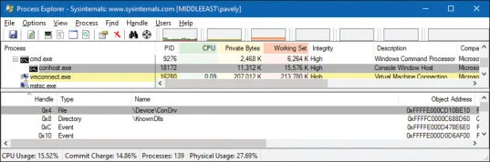
その他のサブシステム
Windowsの柔軟なサブシステムモデルは、Windows API以外の全く異なるOS環境をネイティブに稼働させることも可能にしています。その最も先進的な成果が、Windows 10 で導入された WSL（Windows Subsystem for Linux） です。
Pico プロバイダと Windows Subsystem for Linux (WSL)
初代の WSL（WSL 1）は、仮想マシンを動かすのではなく、Linux の ELF バイナリを Windows カーネル上で直接ネイティブ実行 するという驚異的な仕組みを実現しました。
これを支えているのが「Pico プロセス（Pico Process）」と「Pico プロバイダ（Pico Provider）」というカーネルフレームワークです。Picoプロセスは、通常のWindowsプロセスのようなPEBやTEBを持たない極限まで無駄を削ぎ落とした「空っぽのアドレス空間」です。PicoプロセスのスレッドがLinuxのシステムコール（sys_fork, sys_open, sys_epoll 等）を発行すると、WindowsのPicoプロバイダドライバ（Lxcore.sys および Lxss.sys）がそのシステムコールを直接インターセプトし、対応するWindowsカーネルの処理へとリアルタイムに変換して実行します。
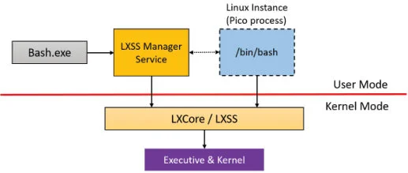
Ntdll.dll
Ntdll.dll は、Windowsのあらゆるユーザーモードプロセスの最下層に位置する、最も重要かつ特別なシステムDLLです。すべてのプロセスのアドレス空間に必ず最初にマッピングされます。Ntdll.dll の主な役割は以下の通りです：
- ネイティブシステムサービスディスパッチャのスタブ：カーネルモードのシステムコールを呼び出すためのプロセッサ命令（
syscallやsysenter）を発行するエントリポイント（NtCreateFile,NtAllocateVirtualMemory等）。 - イメージローダー（Ldr）：実行ファイル（EXE）や依存する各種DLLをメモリに読み込み、アドレスの再配置、インポートテーブルの解決、TLS初期化を行うエンジン。
- ユーザーモードヒープマネージャー（RtlHeap）：
mallocやHeapAllocの基盤となる高速なメモリヒープ管理機構。 - ユーザーモード例外ディスパッチャ（KiUserExceptionDispatcher）：アクセス違反などのハードウェア例外をSEH（構造化例外処理）ハンドラへと配送するハブ。
- スレッドプールおよび非同期I/O完了ルーチン群
実験：システムサービスディスパッチャの逆アセンブル（ntdll.dll）
デバッガーや逆アセンブラで Ntdll.dll のシステムサービス関数を見ると、その中身が極めてシンプルであることが分かります。例えば 64ビット版 Windows で NtReadFile を逆アセンブルすると、以下のわずか数行の命令で構成されています：
ntdll!NtReadFile: mov r10, rcx mov eax, 0x0006 ; システムコール番号 (SSN) syscall ; カーネルモードへ遷移 ret
レジスタ EAX に目的のシステムサービス番号（System Service Number: SSN）をセットし、特権命令 syscall を実行してCPUをカーネルへと切り替えているだけであることが確認できます。
ネイティブイメージ（Native Images）
Windows には、いかなるサブシステムDLLにも依存せず、Ntdll.dll のネイティブAPIのみを直接呼び出して動作する特殊な実行可能ファイルが存在します。これらは ネイティブイメージ（Native Image） と呼ばれます。
ネイティブイメージの代表例が、セッションマネージャー（Smss.exe）や、ブート時にファイルシステムチェックを行う Autochk.exe です。これらはWindowsサブシステム（Csrss.exe）が起動する前の極めて早いブート段階で実行されるため、Win32 APIを一切使わずに純粋な Nt... 関数のみで処理を遂行します。
エグゼクティブ（Executive）
Windows エグゼクティブ は、カーネルイメージ（Ntoskrnl.exe）の上位層を占める、OSの本格的なシステム機能を提供するモジュール群の総称です（図2-6）。

エグゼクティブに含まれる主要なマネージャーコンポーネントは以下の通りです：
- オブジェクトマネージャー（Ob）：すべてのWindowsオブジェクト（プロセス、スレッド、ファイル、イベント等）の作成、削除、名前空間管理、セキュリティ保護、参照カウント管理を一元的に司る。
- メモリマネージャー（Mm）：仮想アドレス空間の管理、ページング、ワーキングセットの制御、システムヒープ（ページプール/非ページプール）の管理を行う。
- プロセスおよびスレッドマネージャー（Ps）：プロセスおよびスレッドオブジェクトの生成・終了、コンテキストのセットアップ、ジョブオブジェクトの制御を行う。
- セキュリティリファレンスモニター（Se）：アクセストークンとセキュリティ記述子を照合し、アクセス権の検証と監査ログの生成を行う。
- I/Oマネージャー（Io）：非同期パケット駆動型のI/O要求（IRP）を生成し、適切なデバイスドライバスタックへとディスパッチする。
- 高度ローカルプロシージャコール（Alpc）：同一マシン上のプロセス間で超高速にメッセージや共有メモリをやり取りする通信基盤。
- 構成マネージャー（Cm）：Windows レジストリの読み書き、ハイブファイルの管理、メモリ内キャッシュキーの管理を行う。
- 電源マネージャー（Po）：スリープ、休止状態、省電力ポリシー、および動的電源フレームワーク（PoFx）の統括制御を行う。
- プラグ＆プレイマネージャー（Pnp）：ハードウェアデバイスの動的な接続・切断を検知し、適切なドライバスタックを自動構成する。
- カーネルトランザクションマネージャー（Ktm）：ファイルシステム（TxF）やレジストリ（TxR）に対するアトミックなトランザクション処理を提供する。
エグゼクティブが公開するエクスポート関数は、頭文字でその担当コンポーネントが明確に判別できるように統一されています（Io... はI/Oマネージャー、Mm... はメモリマネージャー、Ob... はオブジェクトマネージャーなど）。
カーネル（Kernel）
エグゼクティブが大規模なシステム方針（ポリシー）と抽象化を受け持つのに対し、カーネル（Kernel / プレーンカーネル） は、純粋なハードウェア制御メカニズムとCPUスケジューリングのコア機能を提供します（関数プレフィックスは Ke...）。
カーネルの主たる責務は以下の通りです：
- スレッドスケジューリングとディスパッチ：32段階の優先順位に基づくプリエンプティブなCPU時間の配分とコンテキストスイッチ。
- 割り込みおよび例外のハンドリング：ハードウェア割り込み、トラップ、ページフォールト、システムコールのCPUベクター処理。
- マルチプロセッサ同期プリミティブ：カーネルモードでの競合を防ぐスピンロック、キュー付きスピンロック、インターロック命令の実装。
- 基礎オブジェクト（カーネルオブジェクト）の提供：エグゼクティブが上位の複雑なオブジェクトを構築するための素朴なビルディングブロック（ディスパッチャオブジェクト、制御オブジェクト）。
カーネルオブジェクト（Kernel Objects）
エグゼクティブレベルのオブジェクト（プロセス、スレッド、イベント等）には、ハンドルテーブルによる参照、セキュリティ検証、メモリクォータ計算などの管理オーバーヘッドが伴います。カーネル内部ではこれらのオーバーヘッドを排除し、極めて軽量で高速な カーネルオブジェクト を直接操作します。
カーネルオブジェクトは主に以下の2系統に分類されます：
- 制御オブジェクト（Control Objects）：OSの動作制御を司るオブジェクト（非同期プロシージャコール［APC］、遅延プロシージャコール［DPC］、割り込みオブジェクト［KINTERRUPT］など）。
- ディスパッチャオブジェクト（Dispatcher Objects）：スレッドの待機や同期を制御するオブジェクト。内部に「シグナル状態（Signaled / Nonsignaled）」のフラグと、そのオブジェクトを待機しているスレッドのリスト（Wait Block リスト）を保持しています（カーネルスレッド、カーネルミューテックス、カーネルイベント、カーネルセマフォ、タイマー等）。
プロセッサ制御領域（KPCR）とプロセッサ制御ブロック（KPRCB）
カーネルは、システム内の各CPUコアごとに独立した重要な制御構造体をメモリ上に保持しています：
- KPCR（Kernel Processor Control Region）：ハードウェアに近いプロセッサ制御情報を保持する構造体。割り込みコントローラの状態や、現在の割り込み要求レベル（IRQL）、IDT（割り込み記述子テーブル）やGDT（グローバル記述子テーブル）へのポインタが含まれます。64ビットWindowsでは、CPUセグメントレジスタ
GSが常に現在のCPUの KPCR アドレスを直接指すように設定されており、OSは極めて高速に自プロセッサの情報へアクセスできます。 - KPRCB（Kernel Processor Control Block）：KPCR の内部に含まれる、カーネルのスケジューラや統計情報の核心となる構造体です。
KPRCB には、プロセッサごとに完全に独立した以下のデータが格納されています：
- 現在実行中のスレッド（
CurrentThread）、次に実行予定のスレッド（NextThread）、アイドルスレッド（IdleThread）へのポインタ - 32段階の優先度ごとの実行可能スレッドキュー（Ready Queue）
- DPC（遅延プロシージャコール）の実行キュー
- CPUごとの詳細な統計情報（I/O回数、DPC時間、割り込み時間、カーネル時間、ユーザー時間）
- NUMAアーキテクチャに最適化されたプロセッサごとのメモリ割り当てキャッシュ（ルックアサイドリスト）
実験：KPCR と KPRCB のダンプ（!pcr, !prcb）
カーネルデバッガーで !pcr コマンドを実行すると、現在のプロセッサの KPCR の内容が表示されます：
lkd> !pcr
KPCR for Processor 0 at fffff803c3b23000:
Major 1 Minor 1
NtTib.ExceptionList: 0000000000000000
NtTib.StackBase: ffffd00020610000
NtTib.StackLimit: ffffd0002060a000
NtTib.SubSystemTib: 0000000000000000
NtTib.FiberData: 0000000000000000
NtTib.ArbitraryUserPointer: 0000000000000000
NtTib.Self: 00007ff819bb7000
SelfPcr: fffff803c3b23000
Prcb: fffff803c3b23180
Irql: 0000000000000000
lkd> !prcb
PRCB for Processor 0 at fffff803c3b23180:
Current IRQL -- 0
Threads-- Current ffffe0020535a800 Next 0000000000000000 Idle fffff803c3b99740
Processor Index 0 Number (0, 0) GroupSetMember 1
Interrupt Count -- 0010d637
Times -- Dpc 000000f4 Interrupt 00000119
Kernel 0000d952 User 0000425d
現在そのCPU上で走行しているスレッドのアドレスや、アイドルスレッドのアドレス、割り込み回数などがリアルタイムに取得できることが確認できます。
ハードウェア抽象化レイヤー（HAL）
HAL（Hardware Abstraction Layer） は、Hal.dll という独立したバイナリとして提供される低レベルのハードウェア隔離モジュールです。
同じCPU（例: x64）を採用したPCであっても、マザーボードメーカーごとにマザーボード上のタイマーチップ、APIC（高度プログラマブル割り込みコントローラ）、PCIeバスマネージャー、DMAコントローラの物理的な配線や制御方法は微妙に異なります。もしカーネル本体がそれらの違いを直接コーディングしていたら、新しいチップセットが登場するたびにOSカーネルを書き直さなければならなくなります。
HALは、これらのマザーボード固有の差異を完全に吸収し、カーネルやデバイスドライバに対して「標準化された抽象ハードウェア関数（Hal...）」を提供します。

現代のWindows 10では、モジュール性をさらに極限まで高めるため、HAL拡張（HAL Extensions） というプラグイン方式のDLL（例: HalExtPL080.dll、HalExtIntcLpioDMA.dll）がサポートされています。IoT機器や省電力SoCなどの特殊なハードウェアコントローラが存在する場合、ブートローダーが該当するHAL拡張DLLを追加ロードすることで、コアの Hal.dll を書き換えることなくシームレスに特殊チップに対応できます。
実験：Ntoskrnl.exe と HAL の依存関係の確認（Depends）
Dependency Walker で Ntoskrnl.exe を開くと、驚くべき事実が確認できます。Ntoskrnl.exe が直接インポートしているモジュールは、Hal.dll と、ブートビデオドライバ（Bootvid.dll）、デバッガ通信（Kdcom.dll）、コード整合性（Ci.dll）などのわずか数点しかありません。OSカーネルの上位コンポーネントが、ハードウェアの詳細からいかに美しく切り離されているかが一目で分かります。
デバイスドライバ（Device Drivers）
デバイスドライバ は、ロード可能なカーネルモードの実行可能モジュール（通常は拡張子 .sys）です。ハードウェアとエグゼクティブ/アプリケーションとの間の橋渡しを担います。
Windowsのデバイスドライバは、ハードウェアを直接動かすものだけに限定されません。役割に応じて以下のように極めて多彩なカテゴリが存在します：
- ハードウェアデバイスドライバ：物理デバイス（グラフィックス、ネットワーク、ストレージコントローラ、USBコントローラ等）を直接操作する。
- ファイルシステムドライバ：ディスク上の生セクターをファイルやフォルダの構造として解釈・操作する（NTFS, ReFS, FAT, UDF 等）。
- ファイルシステムフィルタドライバ：ファイルI/Oの途中に割り込み、ウイルススキャン（ウイルス対策ソフト）や暗号化（BitLocker）、バックアップなどの付加価値を提供する。
- ネットワークプロトコルスタックドライバ：TCP/IPスタック（
Tcpip.sys）など。 - ソフトウェアドライバ：ハードウェアを直接制御するのではなく、特権的なシステム操作を行うためにロードされるドライバ（Process Explorer や Process Monitor のドライバなど）。
Windows Driver Model（WDM）
Windows 2000 で導入された WDM は、階層化されたモジュール型ドライバモデルです。デバイスに対する1つのI/O要求は、以下のように積み重なった「ドライバスタック」を上から下へと流れていきます：
- クラスドライバ（上層）：特定のデバイスカテゴリ（ディスク、キーボード等）に共通する一般的な処理を行う。
- フィルタドライバ（中間層）：機能の拡張やI/Oの監視を行う（上位フィルタ、下位フィルタ）。
- ミニポート / ファンクションドライバ（下層）：特定のハードウェアチップ固有のレジスタ操作を行う。
- バスドライバ（最下層）：デバイスが接続されているバス（PCIe, USB, I2C等）の電源管理やリソース割り振りを担う。
Windows Driver Foundation（WDF）
WDMドライバの作成は、複雑なマルチプロセッサ同期、非同期I/Oキャンセル、プラグ＆プレイ状態機械、電源遷移などをすべて手動で記述しなければならず、極めて難解でバグを生みやすいものでした。
そこでマイクロソフトが開発したのが WDF（Windows Driver Foundation） です。WDFは複雑なOSの低レベル処理をフレームワークが安全に代行します。WDFには以下の2つの形態があります：
- KMDF（Kernel-Mode Driver Framework）：カーネルモードで動作する高性能ドライバ向けのオブジェクト指向C言語フレームワーク。
- UMDF（User-Mode Driver Framework）：USBデバイス、各種センサー、ポータブルオーディオなどのドライバを ユーザーモード空間で安全に稼働 させる画期的なフレームワーク。万一ドライバがクラッシュしてもOS全体が巻き込まれることがなく、自動的にドライバプロセスが再起動されます。

ユニバーサル Windows ドライバ
OneCore の完成に伴い、Windows 10 では ユニバーサル Windows ドライバ（Universal Windows Drivers: UWD） が導入されました。開発者は単一のドライバパッケージを作成するだけで、デスクトップ、サーバー、Xbox、IoT、HoloLens に至るすべての Windows 10 プラットフォームに共通してインストール・稼働させることができます。
実験：インストール済みデバイスドライバの一覧表示
Windows標準の msinfo32（システム情報）を開き、「ソフトウェア環境 → システム ドライバ」を展開するか、コマンドプロンプトで driverquery を実行すると、システムに登録・ロードされている全デバイスドライバの完全な一覧を取得できます。
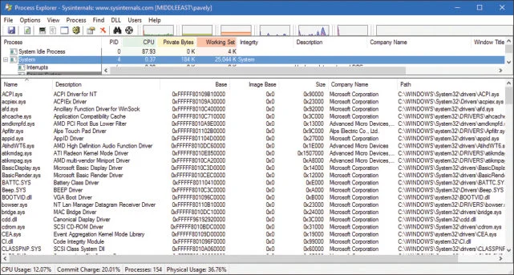
また、管理者権限のコマンドプロンプトから driverquery /v を実行すると、各ドライバのページプール・非ページプールのメモリ消費量や開始モード（ブート時、自動、手動）まで詳細に出力されます。
システムプロセス（System Processes）
Windows が起動を完了すると、常にバックグラウンドで稼働し続ける一連の重要な システムプロセス群 が存在します。これらはタスクマネージャーや Process Explorer で常に確認できます。
主要なシステムプロセスは以下の通りです：
- System Idle Process（PID 0）
- System プロセス（PID 4）
- Secure System プロセス（VBS有効時）
- Memory Compression プロセス
- Session Manager（
Smss.exe） - Windows 初期化プロセス（
Wininit.exe） - サービス制御マネージャー（
Services.exe） - ローカルセキュリティ機関（
Lsass.exe） - ログオンマネージャー（
Winlogon.exe/LogonUI.exe）
システムアイドルプロセス（System Idle Process / PID 0）
システムアイドルプロセスは、CPUコアごとに1つの「アイドルスレッド」を保持する特殊な擬似プロセスです。他のどのスレッドもCPUの実行を要求していない時、このアイドルスレッドがCPUコア上で実行されます。
アイドルスレッドの主な役目は、CPUの消費電力を劇的に削減することです。ACPI仕様に定義された省電力状態（Cステート：HALT命令、C1/C2/C3スリープ等）をプロセッサに発行し、CPUを低消費電力待機状態へと移行させます。タスクマネージャーで「CPU使用率 95% のアイドル」と表示されている場合、それはCPUが酷使されているのではなく、95%の時間省電力スリープしていることを意味します。
システムプロセス（System / PID 4）
PID 4 の System プロセス は、すべてのカーネルモード「システムスレッド」の母体となる特別なプロセスです。通常、カーネルやデバイスドライバのコードは呼び出し元プロセスのコンテキストで実行されますが、遅延書き込み、ワーキングセットのトリミング、メモリの圧縮、非同期I/Oの完了処理など、特定のユーザープロセスに属さないOSのバックグラウンド作業を行うため、カーネル自身が生成したスレッドがこの System プロセス内で永久に稼働し続けます。
Secure System プロセス
VBS（仮想化ベースのセキュリティ）が有効な環境では、通常の System プロセスのほかに Secure System プロセス が現れます。このプロセスは、VTL 1（セキュアワールド）のセキュアカーネル空間で稼働する各種バックグラウンドスレッドを抽象化して表現したものです。
メモリ圧縮プロセス（Memory Compression）
Windows 10 で新たに導入された革新的なメモリ管理機能が メモリ圧縮（Memory Compression） です。物理メモリが逼迫した際、Windows は古いページを直ちに低速なディスク（ページングファイル）へ書き出す（ページアウトする）のではなく、高速な圧縮アルゴリズム（Xpress / LZNT1）を用いてメモリ上で 2〜4 倍に圧縮して専用の「圧縮ストア」に保持します。
タスクマネージャーや Process Explorer では、この圧縮メモリを管理するカーネルスレッド群が「Memory Compression」または System プロセス内部のスレッドとして観測されます（第5章で詳解）。
セッションマネージャー（Smss.exe）
Smss.exe（Session Manager Subsystem） は、カーネルモードの初期化が完了した直後に、カーネル（初期システムスレッド）がユーザーモード空間で最初に起動する すべてのユーザーモードプロセスの祖先 です。
Smss.exe の主な役割は以下の通りです：
- システムの初期環境変数の定義
- ページングファイル（
pagefile.sys）の作成とマッピング - システム全体の基本DOSデバイス名（
\GLOBAL??）のシンボリックリンク作成 - レジストリハイブの完全ロードと整合性チェック
- 保留中のファイル名前変更操作（
PendingFileRenameOperations：再起動時のファイル置換処理）の実行 - Windowsサブシステム（
Csrss.exe）および初期化プロセス（Wininit.exe/Winlogon.exe）の起動 - 新しいユーザーセッション（リモートデスクトップ接続や高速ユーザー切り替え）の作成と初期化
Smss.exe は、セッション0用のサブシステムを起動した後、追加のセッションが要求されるたびに自身の子プロセス（一時的な Smss.exe）をフォークして新しいセッション環境（セッション専用の Csrss.exe と Winlogon.exe）を立ち上げます。環境のセットアップが完了すると子 Smss.exe は直ちに終了するため、新セッションのプロセス群は親プロセスを持たない（孤立した）形で稼働を続けます。
このセッション生成のアーキテクチャにより、Windows は複数の対話型セッションを完全にメモリ上で独立させ、極めて高い安全性と堅牢性を維持しています。
Smss.exe の起動シーケンスにおける細かな初期化手順は、第11章「起動とシャットダウン」でより詳細に紐解かれます。
クラッシュダンプの設定やメモリダンプファイルの準備、NUMAアーキテクチャに応じたメモリ最適化など、OSが本格的なユーザー空間を受け入れるための基盤整備はすべてこの Smss.exe によって完了されます。
Windows 初期化プロセス（Wininit.exe）
Wininit.exe は、セッション 0 におけるコアシステムサービスの初期化を統括するプロセスです。
Wininit.exe は以下の重要処理を順次実行します：
- 自身およびプライマリスレッドを「クリティカル（Critical）」としてマーク（これにより、万一
Wininit.exeが異常終了した場合はシステムクラッシュ（BSoD）となり、中途半端な不安定状態でOSが走り続けるのを防ぎます）。 - ベースの名前付きオブジェクトディレクトリ（
\BaseNamedObjects）の初期化。 - サービス制御マネージャー（
Services.exe） の起動。 - ローカルセキュリティ機関サブシステム（
Lsass.exe） の起動。 - ローカルセッショントランスレーター（
Lsm.exe）（Windows 7以降はサービスDLL化）の起動。
Wininit.exe はこれら基幹プロセスを起動した後、システムがシャットダウンされるか、または管理対象の基幹プロセスのいずれかが異常終了するまで待機し続けます。
サービス制御マネージャー（Services.exe）
Services.exe（Service Control Manager: SCM） は、Windowsにおけるすべてのバックグラウンド「Windowsサービス」の起動、停止、一時停止、および障害回復を統括する中央司令塔です。UNIXにおける init や systemd に相当します。
SCMは、レジストリの HKLM\SYSTEM\CurrentControlSet\Services キーを読み込み、自動起動（Auto-start）や遅延起動（Delayed auto-start）、トリガー起動（Trigger-start）に設定されたサービスを順次起動していきます。
実験：インストール済みサービスの一覧とプロパティの確認
ファイル名を指定して実行（Win+R）から services.msc を実行すると、GUIのサービス管理コンソールが開きます：

任意のサービス（例: Windows Update）をダブルクリックすると、詳細なプロパティが表示されます：
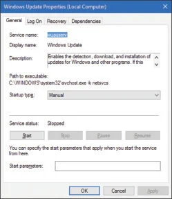
「実行ファイルのパス」欄を見ると、多くのサービスが C:\Windows\system32\svchost.exe -k ... と指定されていることが確認できます。これはメモリを節約するため、複数のサービスDLLを単一の汎用共有プロセス（svchost.exe）に同居させてホストしているためです（Windows 10 バージョン 1703 以降では、RAMが 3.5 GB 以上のPCにおいて安定性と隔離性の向上のため多くのサービスが個別プロセスへと分離されました）。
実験：サービスプロセス内部の調査（Process Explorer）
Process Explorer を使用すると、svchost.exe の内部で実際にどのサービス群が稼働しているかをグラフィカルに確認できます。サービスホストプロセス（ピンク色）をダブルクリックし、「Services」タブを開きます：

サービス名、表示名、説明文、および実際に呼び出されているサービスDLLのファイルパスが綺麗に一覧化されて表示されます。
Winlogon、LogonUI、Userinit
ユーザーの対話型ログオンと認証を担うのが Winlogon.exe です。Winlogon.exe は安全なキーストローク（SAS: セキュアアテンションシーケンス、Ctrl+Alt+Delete）の監視を行います。
ユーザーがログオン画面を開くと、Winlogon.exe は資格情報入力UIを表示する子プロセス LogonUI.exe を起動します。LogonUI.exe はパスワード、PIN、生体認証（Windows Hello）などのクレデンシャルプロバイダを読み込み、ユーザーの入力を受け付けます。入力が完了すると、情報は直ちに Lsass.exe へと渡されて安全に認証され、LogonUI.exe は破棄されます。
認証が成功すると、Winlogon.exe は Userinit.exe を起動します。Userinit.exe はログオンスクリプトの実行、グループポリシーの適用、ネットワークドライブの再接続を行い、最後にユーザーのシェルである Explorer.exe（デスクトップ環境） を立ち上げて自身を終了します。
まとめ（Conclusion）
本章では、Windows の全体システムアーキテクチャを包括的に概観しました。ハイブリッドOSモデルの設計思想から、対称型マルチプロセッシング（SMP）、NUMA対応とプロセッサグループによる超高スケーラビリティ、VBSによるハードウェア仮想化防衛、環境サブシステム（Win32, WSL）、エグゼクティブとカーネルの階層化、HALによるハードウェア抽象化、WDFドライバモデル、そして主要システムプロセス群（Smss, Wininit, Services, Lsass, Winlogon）の役割に至るまで、現代のWindowsを支えるすべての屋台骨を解き明かしました。
続く第3章からは、いよいよ個別の基幹メカニズムの深層へと足を踏み入れます。まずはすべての実行基盤である「プロセスとジョブ」の内部構造を解き明かしていきましょう。
第3章 プロセスとジョブ
本章では、Windows におけるプロセスおよびジョブを制御するデータ構造とアルゴリズムについて詳しく解説します。まずはプロセスの生成メカニズムの全体像を概観し、続いてプロセスを構成する内部データ構造（EPROCESS, KPROCESS, PEB 等）を解剖します。次に、通常のプロセスとは一線を画す「保護プロセス（Protected Processes / PPL）」、超軽量な「Minimal プロセス」と「Pico プロセス」、そして VBS（仮想化ベースのセキュリティ）の隔離世界で稼働する「トラストレット（セキュアプロセス）」について掘り下げます。
その後、Windows API の CreateProcess が内部で実行する全7段階の複雑なプロセス生成フローを順を追って解き明かし、プロセスの終了処理、ユーザーモードイメージローダー（Ldr）の動作、APIセット（API Sets）によるモジュール分離、そして最後にプロセス群をグループとして統合制御しコンテナ基盤（Server Silos）を実現する「ジョブオブジェクト」を詳解します。
プロセスの作成（Creating a process）
プロセスを作成するためにアプリケーションが呼び出す Windows API 関数にはいくつかのバリエーションがあります。最も基本となるのは CreateProcess ですが、追加の属性を指定できる CreateProcessAsUser（特定ユーザーのトークンで起動）、CreateProcessWithTokenW、CreateProcessWithLogonW、そして拡張属性リストを渡せる CreateProcessInternalW や CreateProcessExW（未公開）などが存在します。
図3-1に、Windows におけるプロセス作成 API の呼び出し関係（コールグラフ）を示します。

図から分かるように、すべての高水準な公開 API（CreateProcessW, CreateProcessAsUserW 等）は、最終的にユーザーモードの Kernel32.dll / KernelBase.dll 内の共通ヘルパー関数 CreateProcessInternalW へと合流します。そして CreateProcessInternalW が、Ntdll.dll を通じてカーネルのネイティブシステムコール NtCreateUserProcess を呼び出すことで、カーネルモードでのプロセス生成処理が開始されます。
これらの API は、有効な PE（Portable Executable）形式のバイナリ、バッチファイル（.bat / .cmd）、または 16ビット COM アプリケーションを直接実行することを想定しています。ドキュメントファイル（.txt や .docx 等）を関連付けられた既定のアプリで開きたい場合は、シェル API である ShellExecuteEx を使用します。ShellExecuteEx はレジストリから関連付け実行ファイルを探し出し、内部で CreateProcess を呼び出します。
CreateProcess* 関数の引数
CreateProcess に渡す主要なパラメータには以下のものがあります：
- 実行ファイルパスとコマンドライン引数：起動するバイナリ名とパラメータ文字列。
- セキュリティ属性（SECURITY_ATTRIBUTES）：作成されるプロセスおよびスレッドオブジェクトに付与するセキュリティ記述子と、ハンドルが子プロセスに継承可能かどうかのフラグ。
- ハンドル継承フラグ（bInheritHandles）：親プロセス内の継承可能（Inheritable）としてマークされたハンドルを、新プロセスのアドレス空間に複製（継承）するかどうかの真偽値。
- プロセス作成フラグ（Creation Flags）：プロセスの起動挙動を制御するフラグ群：
CREATE_SUSPENDED：プロセスと初期スレッドを作成するが、スレッドを実行開始（レジューム）させずに一時停止状態で待機させる。デバッガーや親プロセスが初期化前に介入する際に使用。DEBUG_PROCESS/DEBUG_ONLY_THIS_PROCESS：新プロセスをデバッグ対象としてアタッチし、デバッグイベントを受信する。CREATE_NEW_CONSOLE/DETACHED_PROCESS：親のコンソールを共有せず、新しい独立したコンソールウィンドウを割り当てるか、コンソールなしで起動する。EXTENDED_STARTUPINFO_PRESENT：STARTUPINFOEX構造体を通じて、親プロセスの明示的指定やハンドルリストの限定継承など、高度な拡張属性リスト（UpdateProcThreadAttribute）を渡す。
- 環境変数ブロック：親から継承するか、または新プロセス専用に構築された
KEY=VALUE形式の環境変数テーブル。 - カレントディレクトリ：新プロセスの初期作業フォルダ。
- スタートアップ情報（STARTUPINFO）：標準入出力（標準入力、標準出力、標準エラー出力）のリダイレクトハンドルや、初期ウィンドウの座標・表示状態（最大化、最小化等）。
Windows Modern プロセス（UWP アプリ）の作成
Windows 8 以降で導入された UWP / Modern アプリ（Windows ストアアプリ）のプロセスを作成する場合、単に CreateProcess に実行ファイルパスを渡すだけでは起動できません。Modern アプリは特別なサンドボックス（AppContainer）内で動作し、パッケージアイデンティティ（Package Full Name）が必須となるためです。
内部的には、拡張プロセス属性 PROC_THREAD_ATTRIBUTE_PACKAGE_FULL_NAME にアプリの完全パッケージ名をセットして CreateProcessInternalW を呼ぶ必要があります。通常、開発者やシェルは直接これを呼ぶのではなく、COM インターフェース IApplicationActivationManager の ActivateApplication メソッドを呼び出します。このメソッドは内部で dcomlaunch サービスや RuntimeBroker.exe と協調し、適切なサンドボックス構成で Modern アプリを起動します。
その他のプロセス作成
Windows では、通常のWin32やUWPアプリの他にも、いくつかの特殊なプロセス作成経路が存在します：
- Windows サービス：サービス制御マネージャー（
Services.exe）が、サービスの実行アカウント（LocalSystem, NetworkService 等）のアクセストークンを構築し、CreateProcessAsUserWを使用してセッション 0 で起動します。 - UAC による昇格プロセス：標準ユーザー権限から管理者権限へと昇格してアプリを起動する際、シェルは
ShellExecuteExにrunas動詞を指定します。これにより「アプリケーション情報サービス（Appinfo:appinfo.dll）」が呼び出され、同意プロンプト（UAC画面）を表示した上で、完全な管理者トークンを用いてプロセスを起動します。
プロセスの内部構造（Process internals）
Windows カーネル内部において、すべてのプロセスは エグゼクティブプロセス（EPROCESS） 構造体によって表現されます。
EPROCESS はカーネルの非ページプール（またはページプール）に割り当てられる巨大な構造体であり、プロセスのあらゆる属性、統計情報、各種セキュリティ設定、そして他の関連データ構造へのポインタ群が格納されています。図3-2に EPROCESS の主要なフィールド構成を示します。

エグゼクティブのモジュール階層設計に従い、EPROCESS 構造体の最初のメンバは Pcb（Process Control Block: カーネルプロセス KPROCESS 構造体） となっています。
KPROCESS は、エグゼクティブの上位概念（セキュリティやハンドル管理等）を削ぎ落とした、プレーンカーネル（スケジューラやディスパッチャ）が必要とする最も低レベルのプロセッサ制御情報を保持しています（図3-3）。

KPROCESS には、そのプロセスに属するスレッド群のリスト（ThreadListHead）、プロセスの基本優先度、実行可能なCPUコアを限定するアフィニティマスク、プロセッサグループ、スレッドが消費したカーネル時間とユーザー時間、そしてCPUのメモリ管理ユニット（MMU）に設定される ページディレクトリベースの物理アドレス（DirectoryTableBase: CR3 レジスタの値） などが格納されています。
実験：EPROCESS 構造体のフォーマット確認
カーネルデバッガーで dt nt!_eprocess と入力すると、EPROCESS の全フィールド名とオフセットが表示されます：
lkd> dt nt!_eprocess +0x000 Pcb : _KPROCESS +0x2d8 ProcessLock : _EX_PUSH_LOCK +0x2e0 CreateTime : _LARGE_INTEGER +0x2e8 ExitTime : _LARGE_INTEGER +0x2f0 RundownProtect : _EX_RUNDOWN_REF +0x2f8 UniqueProcessId : Ptr64 Void +0x300 ActiveProcessLinks : _LIST_ENTRY +0x320 ObjectTable : Ptr64 _HANDLE_TABLE +0x328 Token : _EX_FAST_REF +0x348 SectionBaseAddress : Ptr64 Void +0x350 SectionObject : Ptr64 Void +0x3b8 ImageFilePointer : Ptr64 _FILE_OBJECT +0x3c0 ImageFileName : [15] UChar +0x3f8 Peb : Ptr64 _PEB +0x478 Session : Ptr64 _MM_SESSION_SPACE
UniqueProcessId（PID）、ActiveProcessLinks（システム全体の全プロセスを繋ぐ二重循環リンクリスト）、ObjectTable（ハンドルテーブルへのポインタ）、Token（アクセストークン）、Peb（ユーザー空間のPEBへのポインタ）など、OSの根幹を支えるフィールドが整然と並んでいることが確認できます。
プロセス環境ブロック（PEB: Process Environment Block）
EPROCESS がカーネルモード空間に存在する保護された構造体であるのに対し、PEB（Process Environment Block） は、プロセスのユーザーモード仮想アドレス空間に配置される特別なデータ構造体 です。
PEB には、ユーザーモードのランタイムライブラリ（Ntdll.dll やサブシステムDLL）がOSカーネルへとわざわざシステムコールを発行することなく高速にアクセスできるプロセス情報がまとめられています：
- イメージのベースアドレス（
ImageBaseAddress） - プロセスヒープへのポインタ（
ProcessHeap） - コマンドライン文字列や環境変数ブロックへのポインタ（
ProcessParameters:RTL_USER_PROCESS_PARAMETERS構造体） - ロード済みモジュール（DLL）の二重リンクリストを保持するローダーデータ（
Ldr:PEB_LDR_DATA構造体） - システムコードページや言語設定（NLS）
- デバッガーがアタッチされているかを示すフラグ（
BeingDebugged）
実験：PEB のダンプとプロセスのコマンドライン調査
カーネルデバッガーでは !peb コマンドを使用することで、任意のプロセスの PEB の内容を綺麗に整形してダンプできます：
lkd> !process 0 0 notepad.exe
PROCESS ffffe00189aec460
SessionId: 1 Cid: 0f64 Peb: 7ff74421b000 ParentCid: 05c8
DirBase: 1a8c0000 ObjectTable: ffffc00020d91340 Image: notepad.exe
lkd> !peb 7ff74421b000
PEB at 00007ff74421b000
InheritedAddressSpace: No
ReadImageFileExecOptions: No
BeingDebugged: No
ImageBaseAddress: 00007ff7441b0000
Ldr 00007ff819cc7110
Ldr.InMemoryOrderModuleList: 00007ff819cc7110 . 00007ff819cc7110
SubSystemData: 0000000000000000
ProcessHeap: 0000000000c80000
ProcessParameters: 0000000000c81210
CommandLine: 'C:\WINDOWS\system32\notepad.exe'
ImagePathName: 'C:\WINDOWS\system32\notepad.exe'
Process Explorer でプロセスのプロパティを開いたときに表示されるコマンドラインやカレントディレクトリ、ロード済みDLLリストなどの情報は、まさにこの PEB から読み取られています。
プロセスの各種リストとリンク
Windows カーネルは、システム内の全プロセスを追跡・検索するために複数の独立したリンクリストを保持しています：
- アクティブプロセスリスト（PsActiveProcessHead）：システム内で稼働中の全プロセスの
EPROCESS->ActiveProcessLinksを結ぶ二重循環リンクリストです。タスクマネージャーやツールはこのリストを辿ってプロセス一覧を取得します。※ルートキットなどのマルウェアは、このリンクリストから自身のEPROCESSを外すことでプロセス一覧から姿を消す「DKOM（Direct Kernel Object Manipulation）」攻撃を仕掛けることがありますが、後述するスレッドディスパッチャリストやハンドルテーブルからは隠蔽できません。 - セッションプロセスリスト：特定のターミナルセッションに所属するプロセス群を繋ぐリスト。
- ジョブプロセスリスト：同一のジョブオブジェクトに所属するプロセス群を結ぶリスト。
保護プロセス（Protected Processes）
Windows Vista で導入された 保護プロセス（Protected Process） は、デジタル著作権管理（DRM）で保護された高品質なデジタルメディア（Blu-ray 等）を再生するプロセス（オーディオエンジン Audiodg.exe やメディアプレイヤー）を、たとえ管理者権限（Administrator / SYSTEM）を持つプロセスであっても外部からメモリを盗み見たり改ざんしたりできないように防衛するアーキテクチャです。
従来のWindowsセキュリティモデルでは、管理者特権を持つユーザーは Debug 特権（SeDebugPrivilege）を行使することで、システム上のあらゆるプロセスに対して OpenProcess（PROCESS_ALL_ACCESS）を呼び出し、ReadProcessMemory や WriteProcessMemory でメモリを読み書きしたり、CreateRemoteThread で任意のコードを注入（DLLインジェクション）することが可能でした。しかし、これではDRM暗号化鍵を管理者権限ツールで簡単にダンプされてしまいます。
保護プロセスに対しては、カーネルの PsOpenProcess がアクセス権チェックに特別なフィルタを適用し、管理者であってもプロセスの強制終了（PROCESS_TERMINATE）や限られた情報照会（PROCESS_QUERY_LIMITED_INFORMATION）以外のハンドルオープンを完全に拒絶します。
保護プロセスとして起動するためには、実行ファイル本体およびそれがロードするすべてのDLLが、マイクロソフトによって特別に発行されたDRM署名（Windows Media 署名）を備えている必要があります。もし未署名または不正なDLLを1つでもロードしようとすると、イメージローダーが直ちにロードを拒否します。
Protected Process Light (PPL)
DRM保護のための保護プロセスモデルは極めて強力でしたが、適用範囲が「マイクロソフトのメディア再生パイプライン」に限定されており、融通が利きませんでした。そこで Windows 8.1 / Server 2012 R2 において、この概念をOSの基幹防御およびウイルス対策ソフト（アンチマルウェア）の自己防衛へと拡大・洗練させた Protected Process Light（PPL） が導入されました。
PPL は、保護レベルを「署名者（Signer）」と「保護タイプ（Type: Full Protected または Protected Light）」の2次元のマトリクスで階層化して管理します（図3-6）。

PPL の保護規則は極めて明確です：
- 完全保護プロセス（Full PP）は、常に PPL よりも上位の特権を持つ。
- 同一の保護タイプ内では、より高い署名者レベル（Signer Level）を持つプロセスのみが、下位のプロセスのハンドルをフルオープンできる。下位のプロセスから上位のプロセスへの強力なアクセスは、管理者権限であっても完全にブロックされる。
表3-2に、PPL における署名者レベルの一覧を示します（数値が大きいほど強力な特権を持ちます）。
表3-2：保護プロセスの署名者レベル（PS_PROTECTED_SIGNER）
| 署名者レベル名 | 値 | 対象プロセス・用途 |
|---|---|---|
| PsProtectedSignerNone | 0 | 通常の非保護プロセス |
| PsProtectedSignerAuthenticode | 1 | Authenticode 署名付きプロセス |
| PsProtectedSignerCodeGen | 2 | .NET などの JIT コード生成エンジン |
| PsProtectedSignerAntimalware | 3 | サードパーティ製アンチマルウェアサービス（ELAM連携） |
| PsProtectedSignerLsa | 4 | ローカルセキュリティ機関（Lsass.exe） |
| PsProtectedSignerWindows | 5 | Windows コアコンポーネント |
| PsProtectedSignerWinTcb | 6 | 信頼できる Windows 基盤（Csrss, Services, Smss 等） |
| PsProtectedSignerWinSystem | 7 | System プロセスおよび Minimal プロセス |
Windows 10 / Server 2016 では、smss.exe、csrss.exe、services.exe、wininit.exe などが WinTcb-Lite の PPL として起動されます。また、認証の中枢である lsass.exe も、レジストリ設定（HKLM\SYSTEM\CurrentControlSet\Control\Lsa の RunAsPPL=1）によって Lsa-Lite の PPL として防衛できます。
これにより、管理者権限を取得した攻撃者が Mimikatz などのツールを用いて lsass.exe のメモリからパスワードハッシュを直接読み出そうとしても、カーネルが OpenProcess を完全に拒絶するため、資格情報窃取攻撃が無力化されます。
サードパーティ製 PPL のサポート
Windows 8.1 以降、ウイルス対策ベンダー（アンチマルウェア企業）も自身の監視サービスを Antimalware-Lite の PPL として保護できるようになりました。マルウェアが管理者権限を奪取してアンチウイルスサービスを強制終了させようとしても、PPL による保護壁によってサービスの停止やコード改変が弾かれます。
サードパーティがこの機能を利用するためには、マイクロソフトの厳格な審査を経て発行された特殊な「早期起動マルウェア対策（ELAM: Early Launch Anti-Malware）」証明書でドライバと実行ファイルを署名する必要があります。
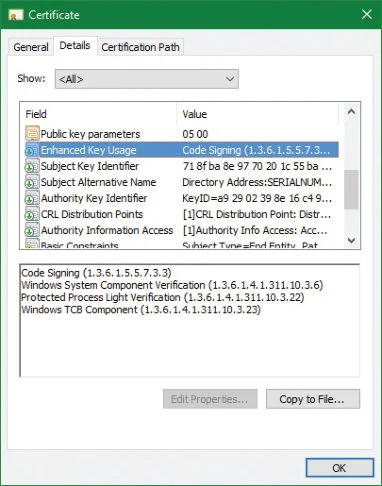
実験：Process Explorer による PPL プロセスの確認
Process Explorer の「Process Image」タブで「Protection」列を追加すると、各プロセスの保護状態（PsProtectedSigner...）を一目で確認できます（図3-8）。

保護プロセスを選択して下部ペインで DLL リストを表示しようとしても、何も表示されません。Process Explorer 自身もユーザーモード API を用いて DLL を走査しているため、カーネルによって保護プロセス内部の参照が遮断されるためです。
Minimal プロセスと Pico プロセス
Windows 10 では、従来の標準的なプロセスモデルの枠組みを超えた、2つの革新的な軽量プロセスアーキテクチャが導入されました。
Minimal プロセス
Minimal プロセス は、ユーザー空間のアドレス空間を持ちながらも、PEB も TEB も持たず、いかなるユーザーモードコードも実行しない「純粋なカーネル用コンテナ」 です。
Minimal プロセスの最大の用途は、第2章で紹介した メモリ圧縮ストア（Memory Compression） です。圧縮されたメモリページをユーザーモードの干渉から完全に隔離された独立した仮想アドレス空間に安全に保持・管理するために使用されています。
Pico プロセス
Pico プロセス は、Minimal プロセスの概念をさらに発展させ、サードパーティのカーネルドライバ（Pico プロバイダ）がプロセスの挙動全体を完全に制御・エミュレーションできるようにした仮想コンテナ です。
Pico プロセス内部のスレッドは、Windows のシステムコール（syscall）を発行する代わりに、Linux などの全く異なる OS のシステムコールを発行します。Pico プロバイダ（WSL 1 の Lxcore.sys）がそれらの命令をトラップし、Windows カーネルの機能を用いて Linux カーネルの振る舞いを完璧に再現します。ユーザーモードバイナリから見れば、自分が Linux 上で動作しているのか Windows 上で動作しているのか区別がつかないほどのネイティブ互換性を実現しています。
Pico プロバイダは、プロセスの作成、終了、スレッド生成、シグナル配送、メモリマッピングのあらゆるライフサイクルイベントにおいてカーネルからのコールバックを受信し、きめ細かな仮想化を提供します。
トラストレット（Trustlets: セキュアプロセス）
第2章で概説した VBS（仮想化ベースのセキュリティ）において、VTL 1（セキュアワールド）の隔離ユーザーモード（IUM）で実行されるセキュアプロセス が トラストレット（Trustlet） です。
トラストレットは、通常の Windows アプリケーション（VTL 0）や通常カーネル（Ring 0）から物理的にメモリがアクセスできないようにハイパーバイザーの拡張ページテーブル（EPT/SLAT）によって強固に保護されています。
トラストレットの構造とポリシーメタデータ
トラストレットの実行可能ファイルには、マイクロソフトの特別なセキュア署名証明書（EKU: 1.3.6.1.4.1.311.10.3.26）が付与されています（図3-9）。

また、トラストレットバイナリ内部には「ポリシーメタデータ（s_IumPolicyMetadata）」という構成構造体が埋め込まれており、デバッグの可否、クラッシュダンプの暗号化要件、利用可能なセキュアストレージの権限などが厳格に定義されています。
表3-6に、Windows 10 / Server 2016 に標準で組み込まれている主要なトラストレットの一覧を示します。
表3-6：システム標準の組み込みトラストレット
| バイナリ名 | トラストレット ID | 役割・説明 |
|---|---|---|
LsaIso.exe | 1 | Credential Guard / Key Guard（資格情報と暗号鍵の隔離保管） |
Vmsp.exe | 2 | 仮想 TPM（vTPM）およびセキュア仮想マシンワーカー |
BioIso.exe | 4 | Windows Hello 生体認証（指紋・顔認識データ）の隔離処理 |
トラストレットは、セキュアカーネルのみが提供する約50種類の限定された「セキュアシステムコール」を利用して、TPM へのアクセス、セキュアストレージへの暗号化保存（Sealing）、DMA保護デバイスとの安全な通信を行います。
CreateProcess の実行フロー（全7段階）
Windows API の CreateProcess を呼び出してから、新プロセスの初期スレッドがユーザーモードで最初のコードを実行開始するまでには、OSの膨大なコンポーネントが協調して一連の精緻なステップを実行します。この一連の処理は、以下の 7つの主要ステージ に大別されます：
- 第1段階：パラメータとフラグの変換と検証
- 第2段階：実行対象イメージ（PEファイル）のオープンとセクション作成
- 第3段階：Windows エグゼクティブプロセスオブジェクト（EPROCESS）の作成
- 第4段階：初期スレッド（ETHREAD）とそのスタックおよび実行コンテキストの作成
- 第5段階：Windows サブシステム（Csrss.exe）へのプロセス登録と初期化
- 第6段階：初期スレッドの実行開始（レジューム）
- 第7段階：新プロセスのコンテキストでのユーザーモード初期化（Ldr と PEB のセットアップ）
第1段階：パラメータとフラグの変換と検証
呼び出し元が CreateProcess を呼び出すと、処理は KernelBase.dll の CreateProcessInternalW で始まります。ここでは、渡された引数、パス、優先度クラス、フラグの妥当性が検証されます。もし実行ファイル名が明示されていない場合、コマンドライン文字列の先頭からスペース区切りで実行ファイルを探索します（引用符で囲まれていないパスに対する脆弱性対策もここで行われます）。
第2段階：実行対象イメージのオープン
実行対象のファイルが NtOpenFile によってオープンされ、ファイルに対する FILE_EXECUTE アクセス権が検証されます。続いて NtCreateSection が呼び出され、実行ファイルのコードとデータを仮想メモリにマップするための イメージセクションオブジェクト が作成されます。PEヘッダーが解析され、CPUアーキテクチャの互換性チェック（x86/x64/ARM）や、イメージファイル実行オプション（IFEO: Image File Execution Options）のデバッガー設定が確認されます。
第3段階：エグゼクティブプロセスオブジェクトの作成
CreateProcessInternalW は、ネイティブシステムコール NtCreateUserProcess を発行してカーネルモードに入ります。カーネルのエグゼクティブ（PspAllocateProcess）は以下の処理を順次行います：
EPROCESS構造体を非ページプールから割り当て、ゼロクリアする。- 親プロセスのトークンを継承して新しいアクセストークンを作成し、プロセスのセキュリティコンテキストを設定する。
- プロセスの新しいプロセスハンドルテーブルを作成する。
- メモリマネージャーを呼び出し、新しい仮想アドレス空間（ページディレクトリテーブル：CR3）を構築する。
- イメージセクションをプロセスのアドレス空間にマッピングする。
- プロセスのユーザー空間に
PEB（プロセス環境ブロック）を作成・初期化する。 - 一意のプロセスID（PID）を採番し、アクティブプロセスリストに登録する。
第4段階：初期スレッドの作成
プロセスオブジェクトのセットアップが完了しても、スレッドが存在しなければプログラムを実行できません。カーネル（PspCreateThread）は、新プロセス内に最初のスレッド（初期スレッド）を作成します：
ETHREAD構造体を割り当て、スレッドID（TID）を採番する。- 初期スレッドのカーネルスタックおよびユーザースタックを割り当てる。
- スレッドの実行コンテキスト（レジスタ状態）を初期化する。命令ポインタ（RIP/EIP）は、ユーザーモードの最初のエントリポイントである
ntdll!LdrInitializeThunkにセットされる。 - スレッドを
Initialized状態にし、スケジューラの実行可能キューへ登録する（ただしCREATE_SUSPENDEDの場合はサスペンドカウントを 1 に設定）。
第5段階：Windows サブシステム固有の初期化
カーネルから制御が CreateProcessInternalW へ戻ると、Windows サブシステムサーバープロセス（Csrss.exe）に対して ALPC メッセージを送信します。Csrss.exe は新プロセスのハンドルを自身のプロセス管理テーブルに登録し、プロセスのグループ管理、SxSマニフェスト情報のキャッシュ、およびGUIアプリの場合は起動カーソル（砂時計/回転リング）の表示処理を行います。
第6段階：初期スレッドの実行開始
プロセスの基盤整備がすべて整ったところで、CREATE_SUSPENDED が指定されていない限り、初期スレッドのサスペンドカウントがデクリメントされ、カーネルスケジューラによってCPUの実行権が与えられます。
第7段階：新プロセスのコンテキストでのユーザーモード初期化
初期スレッドが最初に実行を開始するのは、プログラマが書いた main 関数や WinMain 関数ではありません。スレッドはまずカーネルからユーザーモードへと戻り、Ntdll.dll のローダー関数 LdrInitializeThunk を実行します。
LdrInitializeThunk は、新プロセスのユーザーモード空間内で以下の極めて重要なローダー初期化シーケンス（Ldr）を完遂します：
- プロセスのヒープ（
RtlCreateHeap）を初期化する。 - PEB の
ProcessParametersを解析し、環境変数ブロックを展開する。 - 実行ファイルが依存しているすべてのインポート DLL（
Kernel32.dll等）を再帰的にメモリ空間へとロード・マッピングする。 - インポートアドレステーブル（IAT）を解決し、関数の実際のアドレスを書き込む。
- ロードされた各 DLL の
DllMain（DLL_PROCESS_ATTACH）を依存関係順に呼び出して実行する。 - すべての DLL 初期化が完了したら、いよいよ実行ファイルの真のエントリポイント（
mainCRTStartup等）へとジャンプし、アプリケーション本体のコードが動き始めます。
実験：Process Monitor によるプロセス起動シーケンスの追跡
Sysinternals の Process Monitor（ProcMon） を使用すると、メモ帳（notepad.exe）が起動する際の上記の全ステップ（レジストリ読み込み、DLLの依存関係マッピング、Prefetchファイルの照会等）をミリ秒単位で完全に追跡・観察できます。

イベントのスタックトレースを開くと、CreateProcessInternalW から NtCreateUserProcess が呼ばれ、カーネル内で PspAllocateProcess が実行されている様子が手に取るように確認できます。
プロセスの終了（Terminating a process）
プロセスの終了は、以下のいずれかの方法で発生します：
- すべてのスレッドが処理を終えて自然に終了する。
- プロセス内のいずれかのスレッドが
ExitProcessAPI を呼び出す（正常終了）。 - 外部のプロセスが
TerminateProcessAPI を呼び出す（強制終了）。 - すべてのスレッドが未処理の例外（アクセス違反等）によってクラッシュする。
ExitProcess を呼んだ場合、ロードされているすべての DLL に対して DLL_PROCESS_DETACH 通知が送信され、リソースのフラッシュや解放処理を行う機会が与えられます。一方、TerminateProcess は「非強制終了」であり、DLL のクリーンアップコードを一切実行することなく、カーネルによって全スレッドが即座に停止されます。
ただし、どちらの方法で終了した場合であっても、Windows カーネルがプロセスのすべてのプライベートメモリを自動解放し、オープンされていた全ハンドルを安全にクローズし、仮想アドレス空間を破棄する ため、プロセス終了時にOSリソースがリークすることは絶対にありません。
イメージローダー（Image Loader: Ldr）
Ntdll.dll 内に実装されている イメージローダー（Ldr） は、プロセスのユーザーモード初期化および実行時の動的ライブラリ管理（LoadLibrary / FreeLibrary）を司る極めて洗練されたサブシステムです。
イメージローダーの主たる責務は以下の通りです：
- PEバイナリのインポートテーブル（IAT）の解析とバインディング
- DLL の名前解決、検索パスの適用、および安全な DLL プリロード攻撃対策
- DLL のリダイレクション（
.localファイルや SxS / Fusion マニフェストによるバージョン競合の解消） - APIセット（API Sets）による仮想DLL名の物理DLLへの動的リダイレクト
- アプリケーション互換性エンジン（Shim Engine）の適用
API セット（API Sets）
Windows 8 / 10 において、OneCore アーキテクチャの実現を支える最重要のローダー技術が APIセット（API Sets） です。
長年、Windows の API は Kernel32.dll、Advapi32.dll、User32.dll などの巨大なモノリシック DLL に詰め込まれていました。しかしこれでは、スマートフォンのような小型デバイス向けの Windows でも、不要な古いAPIを含んだ巨大なバイナリを丸ごと搭載せざるを得ず、コードの分離と共有の大きな足かせになっていました。
APIセットは、APIの論理的な契約（コントラクト）と、その背後にある物理的な実装バイナリを完全に分離します。コンパイル時、アプリケーションは api-ms-win-core-processthreads-l1-1-0.dll のような「仮想的なDLL名」にリンクします。実行時、Ntdll.dll のイメージローダーは PEB 内の「APIセットスキーマ拡張テーブル（Apiset.dll）」をメモリ上で高速検索し、そのプラットフォームにおける実際の物理DLL（デスクトップPCなら Kernel32.dll / KernelBase.dll、小型デバイスなら軽量な代替モジュール）へと動的に呼び出し先を解決します。
ジョブ（Jobs）
ジョブオブジェクト（Job Object） は、1つ以上のプロセスを1つのまとまりとしてグループ化し、グループ全体に対して共通のリソース制限、セキュリティ属性、CPU優先度、アカウンティング（使用量課金・統計）を強制するためのエグゼクティブオブジェクトです。
ジョブが設定できる主要な制限（Job Limits）には以下のようなものがあります：
- 基本制限：ジョブ全体、またはプロセス単位での最大コミットメモリ、プロセス優先度クラス、プロセッサアフィニティ、スレッドごとの最大実行時間。
- UI 制限：デスクトップの切り替え、クリップボードの読み書き、システムパラメータの変更、グローバルアトムテーブルの変更、ウィンドウハンドルの作成などの禁止。
- CPU レート制限（CPU Rate Limits）：ジョブ内のプロセス群が消費できるCPU時間の最大パーセンテージ（例: 全CPU能力の最大 20% までに絞る等）のハードキャップ制限。
ネストされたジョブ（Nested Jobs）
Windows 8 より前は、1つのプロセスは同時に1つのジョブにしか所属できませんでした。そのため、親アプリがすでにジョブを使っている場合、子プロセスが独自のジョブを作って制限を課すことができず、大きな制約となっていました。
Windows 8 以降、ネストされたジョブ（Nested Jobs） が完全にサポートされました。ジョブの中に子ジョブを作成して階層構造（ジョブツリー）を構築できます。親ジョブの制限はすべての子孫ジョブに厳格に継承され、子ジョブは親の制限の枠内でさらに厳しい独自の制限を追加できます。
Windows コンテナ（Server Silos）
ジョブオブジェクトの機能が極限まで進化した形態が、Windows 10 / Server 2016 で導入された Windows コンテナ（Server Silos） です。
Linux の Docker コンテナが cgroups と namespaces によって実現されているのと同様に、Windows はジョブオブジェクトを拡張した サーバーサイロ（Server Silo） によってコンテナの軽量仮想化を実現しています。

サーバーサイロは、ジョブオブジェクトに対して以下の強力なOS隔離境界を付与します：
- 専用のオブジェクトマネージャー名前空間ルート（
\）：ホストOSのファイルやデバイス名空間から完全に切り離された、サイロ専用のプライベート名前空間。 - 専用のレジストリハイブ空間：コンテナごとに独立したレジストリ空間。
- 専用のセッション空間とサービスセッション：ホストの対話型セッションと完全に隔離されたサービスセッション。
- サイロモニター（Silo Monitors）：各カーネルドライバ（ネットワークスタック
Afd.sys、ファイルシステムドライバ等）が、コンテナごとに独立したデータ構造を保持するためのプラグインフレームワーク。
これにより、仮想マシンのような重いハードウェアエミュレーションを行うことなく、単一の Windows カーネル上で数千個もの隔離された Windows コンテナ（Docker コンテナ）を瞬時に起動し、安全に実行することが可能になりました。
まとめ（Conclusion）
本章では、Windows におけるプロセスとジョブの全容を解説しました。EPROCESS/KPROCESS/PEB のデータ構造、PPL やトラストレットによる最先端の防御、CreateProcess の全7段階の内部実行シーケンス、APIセットによるOneCoreモジュール化、そして Windows コンテナを支えるサーバーサイロの内部動作に至るまで、プロセス管理の核心を解き明かしました。続く第4章では、CPU時間を実際に消費する実行単位である「スレッド」の深層へと進みます。
3. 保護プロセスとして作成する必要がある場合は、署名ポリシーも確認します。
4. 作成するプロセスがモダンアプリの場合、ライセンスを確認して、実行が許可されているかを調べます。Windows にプリインストールされたアプリは、ライセンスの状態にかかわらず実行できます。設定アプリでアプリのサイドローディングが許可されていれば、ストア経由でなくても、署名済みアプリを実行できます。
5. プロセスが Trustlet の場合、セキュアカーネルが使用できるよう、セクションオブジェクトに特別なフラグを設定します。
6. 指定された実行ファイルが Windows の EXE なら、NtCreateUserProcess はファイルを開き、そのファイルのセクションオブジェクトを作成しようとします。この時点ではメモリにマップされませんが、ファイルは開かれます。セクションオブジェクトを作成できても、そのファイルが有効な Windows イメージとは限りません。DLL や POSIX 実行ファイルの可能性があります。POSIX 実行ファイルなら、POSIX はすでにサポートされていないため呼び出しは失敗します。DLL の場合も CreateProcessInternalW が失敗します。
7. 有効な Windows 実行イメージが見つかると、次節で説明するプロセス作成処理の一環として、NtCreateUserProcess はレジストリの HKLM\SOFTWARE\Microsoft\Windows NT\CurrentVersion\Image File Execution Options を調べます。実行イメージのファイル名と拡張子だけを持つサブキー（ディレクトリやパスは含めません。たとえば Notepad.exe）が存在するかを確認します。存在する場合、PspAllocateProcess はそのキーの Debugger 値を探します。この値があれば、実行するイメージをその値の文字列に置き換え、CreateProcessInternalW はステージ1から再開します。
ヒント：このプロセス作成時の動作を利用すると、Windows アプリケーションの起動コードをデバッグできます。
アプリケーションを別の VDM で実行する場合、実行イメージは Ntvdm.exe に構成パラメーターと 16 ビットプロセス名を続けたものに変更され、CreateProcessInternalW はステージ1から再開します。それ以外の場合、Windows サブシステムは共有 VDM プロセスが存在し、使用できるかを確認するメッセージを送ります。VDM プロセスが別のデスクトップで実行中か、呼び出し元と異なるセキュリティコンテキストで動作している場合は使用できないため、新しい VDM プロセスを作成します。共有 VDM を使える場合は、新しいイメージを実行するようメッセージを送り、CreateProcessInternalW は戻ります。共有 VDM がまだ作成されていない（または存在しても利用できない）場合、実行イメージを VDM サポート用イメージに変更し、CreateProcessInternalW はステージ1から再開します。
ステージ3：Windows エグゼクティブのプロセスオブジェクトを作成する
この時点で NtCreateUserProcess は有効な Windows 実行ファイルを開き、新しいプロセスのアドレス空間にマップするセクションオブジェクトを作成済みです。続いて内部システム関数 PspAllocateProcess を呼び出し、イメージを実行する Windows エグゼクティブのプロセスオブジェクトを作成します。作成スレッドが行うこの処理は、次の段階に分かれます。
- EPROCESS オブジェクトの設定
- 初期プロセスアドレス空間の作成
- カーネルプロセス構造体（KPROCESS）の初期化
- プロセスアドレス空間の設定完了
- PEB の設定
- エグゼクティブプロセスオブジェクトの設定完了
注：親プロセスが存在しないのは、システム初期化中に System プロセスを作成するときだけです。それ以降、新しいプロセスにセキュリティコンテキストを与えるため、親プロセスは常に必要です。
ステージ3A：EPROCESS オブジェクトの設定
EPROCESS の初期化では、親プロセスから情報を引き継ぎ、プロセスの基本的な属性を設定します。残りの手順は次のページに続きます。
ステージ3Aでは、作成スレッドが親プロセスと属性リストに基づいて、新しいプロセスオブジェクトを設定します。処理には、エラー処理モードの決定、親プロセスIDの記録、IFEO（Image File Execution Options）設定の照会、必要な特権の取得、プライマリートークンの複製などが含まれます。
- 属性リストで指定されたハードエラー処理モードを選びます。指定がなければ親から継承します。親がない場合は、すべてのエラーを表示する既定のモードを使います。
- 新しいプロセスオブジェクトの
InheritedFromUniqueProcessIdに親プロセスのIDを保存します。 - IFEO キーの
UseLargePagesを調べ、大きなページを使ってプロセスをマップするか確認します。ただし Wow64 で実行する場合、大きなページは使いません。また、プロセス内で NTDLL を大きなページにマップする設定も確認します。 - IFEO に
PerfOptionsキーがあれば、IoPriority、PagePriority、CpuPriorityClass、WorkingSetLimitInKBなどの値を照会します。 - Wow64 で実行する場合は Wow64 補助構造体（
EWOW64PROCESS）を割り当て、EPROCESS のWoW64Processメンバーに設定します。 - AppContainer（多くの場合モダンアプリ）内で作成する場合、トークンが LowBox として作成されていることを検証します（AppContainer の詳細は第7章を参照）。
- プロセス作成に必要な特権を取得します。リアルタイム優先度クラスの指定、新しいトークンの割り当て、大きなページでのマップ、新しいセッション内での作成には、それぞれ適切な特権が必要です。
- 親のプライマリートークンを複製して、新しいプロセスのプライマリーアクセストークンを作成します。新しいプロセスは親のセキュリティプロファイルを継承します。
前ページの続きとして、プロセスオブジェクトの初期化を進めます。
- プロセスのアドレス空間を初期化します（ステージ3B）。その後、対象セッションが異なる場合はそこから切り離します。
- グループアフィニティを継承しない場合、プロセスのグループアフィニティを選びます。NUMA ノードの伝播が指定されていれば、親から継承してその NUMA ノードを所有するグループを使います。それ以外はラウンドロビンで割り当てます。強制的なグループ認識モードで選択結果がグループ0なら、グループ1が存在する限りグループ1を選びます。
- プロセスオブジェクトの KPROCESS 部分を初期化します（ステージ3C）。
- プロセスのトークンを設定します。
- 親の優先度クラスがアイドルまたは「通常以下」でなければ、プロセスの優先度クラスを「通常」に設定します。親がそのいずれかなら、親の優先度を継承します。
この後、ハンドルテーブルとプロセス環境ブロック（PEB）を初期化し、プロセスオブジェクトの作成を完了します。
初期ページをマップするため、適切なページテーブルにエントリを作成します。ページ数をカーネル変数 MmTotalCommittedPages から差し引き、MmProcessCommit に加算します。システム全体の既定値であるプロセスの最小ワーキングセットサイズ（PsMinimumWorkingSet）を MmResidentAvailablePages から差し引きます。プロセス固有のページやセッション固有メモリ以外のグローバルなシステム空間について、ページテーブル用ページも作成します。
ステージ3C：カーネルプロセス構造体を作成する
PspAllocateProcess の次の段階では、EPROCESS の Pcb メンバーである KPROCESS 構造体を初期化します。この処理は KeInitializeProcess が行い、プロセスに属する全スレッドをつなぐ二重リンクリスト（最初は空）などを初期化します。
アドレス空間の大部分を設定するルーチンは MmInitializeProcessAddressSpace です。別のプロセスからアドレス空間を複製する機能もあります。これは当初 POSIX の fork システムコールを実装するために使われました。将来、ほかの Unix 形式の fork を支えるためにも利用できます（Redstone 1 の Windows Subsystem for Linux では、この方法で fork を実装しています）。以下ではアドレス空間の複製ではなく、通常のプロセスアドレス空間の初期化に注目します。
- 仮想メモリマネージャーは、プロセスの最終トリム時刻を現在時刻に設定します。バランスセットマネージャーのシステムスレッド内で動作するワーキングセットマネージャーは、この値からワーキングセットのトリミングを開始する時期を判断します。
- メモリマネージャーがプロセスのワーキングセットリストを初期化します。これでページフォールトが発生できるようになります。
ステージ3E：PEB を設定する
NtCreateUserProcess は MmCreatePeb を呼び出し、まずシステム全体の NLS（National Language Support）テーブルをプロセスのアドレス空間にマップします。次に MiCreatePebOrTeb を呼んで PEB 用のページを割り当て、複数のフィールドを初期化します。その多くは、レジストリで設定された MmHeap*、MmCriticalSectionTimeout、MmMinimumStackCommitInBytes などの内部変数に基づきます。
ステージ3F：エグゼクティブプロセスオブジェクトの設定を完了する
残りのプロセス属性を設定し、プロセスオブジェクトの初期化を完了します。
ステージ4：初期スレッド、そのスタックとコンテキストを作成する
ここまでで Windows エグゼクティブのプロセスオブジェクトは完成していますが、スレッドがないため、まだ何も実行できません。通常、新しいスレッドの作成は NtCreateThread から呼ばれる PspCreateThread が担当します。しかし初期スレッドはユーザーモードからの入力なしにカーネル内部で作られるため、PspCreateThread が使う PspAllocateThread と PspInsertThread を直接利用します。前者はエグゼクティブスレッドオブジェクトを作成・初期化し、後者はスレッドハンドルとセキュリティ属性を作成して KeStartThread を呼び、スケジュール可能なスレッドにします。
スレッドのコンテキストは、カーネルモードの KiThreadStartup から開始するよう設定されます。最後に KeInitThread はスレッドの状態を Initialized にして PspAllocateThread に戻ります。
UMS スレッドの場合は PspUmsInitThread を呼んで UMS の状態を初期化します。これが終わると NtCreateUserProcess は PspInsertThread を呼び、次の処理を行います。
- 属性で指定されていれば、スレッドの理想プロセッサを初期化します。
- 属性で指定されていれば、スレッドのグループアフィニティを初期化します。
- プロセスがジョブに属する場合、スレッドのグループアフィニティがジョブの制限に違反しないことを確認します。
- プロセスまたはスレッドがすでに終了していないこと、あるいは実行を開始していないことを確認します。条件を満たさない場合、スレッド作成は失敗します。
ジョブリストが属性として渡され、それがプロセスの最初のスレッドであれば、プロセスをリスト内のすべてのジョブに割り当てます。最後に KeReadyThread を呼んでスレッドを実行可能にし、遅延 Ready 状態へ移します（スレッド状態の詳細は第4章を参照）。
ステージ5：Windows サブシステム固有の初期化
NtCreateUserProcess が成功を返すと、必要なエグゼクティブのプロセスオブジェクトとスレッドオブジェクトが作成されています。次に CreateProcessInternalW が Windows サブシステム固有の処理を行い、プロセスの初期化を終えます。
- Windows が実行ファイルの起動を許可するか確認します。ヘッダー内のイメージバージョンの検証や、グループポリシーを通じて Windows アプリケーション認定によりブロックされていないかの確認などを行います。
Windows サブシステムは、プロセスが Windows アプリケーションに属するか（起動カーソルを表示するかを Csrss が判断するため）、UI 言語、DLL リダイレクトと .local フラグ、マニフェストファイルの情報を受け取ります。メッセージを受け取ると、次の処理を行います。
CsrCreateProcessがプロセスとスレッドのハンドルを複製します。作成時に1だった両オブジェクトの使用カウントは2になります。- Csrss のプロセス構造体（
CSR_PROCESS）を割り当てます。 - 新しいプロセスの例外ポートを、Windows サブシステムの汎用関数ポートに設定します。
ステージ6：初期スレッドの実行を開始する
この時点でプロセス環境が決まり、スレッドが使うリソースも割り当てられ、プロセスにはスレッドがあり、Windows サブシステムも新しいプロセスを認識しています。呼び出し元が CREATE_SUSPENDED フラグを指定していなければ、初期スレッドを再開します。スレッドは実行を始め、新しいプロセスのコンテキスト内で行う残りの初期化（ステージ7）を進めます。
ステージ7：新しいプロセスのコンテキスト内で初期化する
新しいスレッドはカーネルモードのスレッド起動ルーチンから開始します。その後、初期化処理が新しいプロセスのユーザーモードコンテキストで行われます。
- アプリケーションのプリフェッチが有効なら、プリフェッチャー（および Superfetch）を呼び出し、プリフェッチ命令ファイルがあれば処理します。前回の実行開始後10秒間に参照されたページも先読みします（詳細は第5章）。
SharedUserDataのシステム全体の Cookie が設定済みか確認します。未設定なら、処理した割り込み数、DPC 配信数、ページフォールト数、割り込み時間、乱数などのシステム情報のハッシュから生成します。この Cookie は、ヒープマネージャーなどでポインターを内部的に復号・符号化し、特定の攻撃を防ぐために使います。- プロセスがセキュア（IUM プロセス）なら、
HvlStartSecureThreadを呼び、制御をセキュアカーネルへ移してスレッドを開始します。この関数はスレッドが終了するまで戻りません。 - イメージローダー初期化ルーチン（
Ntdll.dllのLdrInitializeThunk）と、システム全体のスレッド開始スタブ（同じくNtdll.dllのRtlUserThreadStart）を実行する初期 thunk コンテキストを設定します。スレッドコンテキストをその場で編集し、システムサービス処理を終了して、構成済みのユーザーコンテキストをロードします。LdrInitializeThunkはローダー、ヒープマネージャー、NLS テーブル、TLS・FLS 配列、クリティカルセクション構造体を初期化します。必要な DLL をロードし、各 DLL のエントリポイントをDLL_PROCESS_ATTACHで呼び出します。処理が戻るとNtContinueが新しいユーザーコンテキストを復元します。
この実験では、説明した内部手順のすべてを見られるわけではありませんが、プリフェッチと Superfetch、イメージファイル実行オプション、互換性チェック、イメージローダーによる DLL マッピングなど、複数の処理を観察できます。例として単純な Notepad.exe をコマンドプロンプト（Cmd.exe）から起動します。Cmd.exe 内と Notepad.exe 内の両方の動作を見ることが重要です。カーネルが新しいプロセスオブジェクトを作る前に、親プロセスが CreateProcessInternalW を実行してユーザーモード処理の多くを済ませることを思い出してください。
- Process Monitor に
Cmd.exeとNotepad.exeのフィルターを追加します。この2つだけを対象にし、正しいイベントを観察できるよう、両プロセスの実行中インスタンスがないことを確認します。 - イベントログを無効にし（「File」メニューの「Capture Events」を解除）、コマンドプロンプトを起動します。
- イベントログを有効にしてから
Notepad.exeと入力し、Enter キーを押します。一般的な Windows では500〜3,500件のイベントが表示されます。 - キャプチャを停止し、「Sequence」と「Time of Day」列を隠して、確認したい列に注目します。
Process Monitor のログにある各イベントについて、その処理がユーザーモードとカーネルモードのどちらで、どのルーチンによって行われたかは、イベントのスタックで確認できます。RegOpenKey イベントをダブルクリックし、「Stack」タブを開きます。次の図は、64ビット版 Windows 10 の標準的なスタックです。
このスタックから、NtCreateUserProcess を通じてプロセス作成のカーネルモード部分に到達しており、この確認を担当しているヘルパールーチンが PspAllocateProcess だと分かります。
スレッドとプロセスが作成された後のイベントをたどると、次の3種類のイベントがあります。
- アプリケーション互換性フラグの簡単な確認。シムエンジンを介してアプリケーション互換性データベースを調べる必要があるか、ユーザーモードのプロセス作成コードに知らせます。
- 前述のアセンブリフレームワークに関係する SxS（Side-By-Side）、Manifest、MUI／Language キーの複数の読み取り。
- システム上のアプリケーション互換性データベースである1つ以上の
.sdbファイルへのファイルI/O。このI/Oで追加チェックを行い、このアプリケーションにシムエンジンを呼び出す必要があるか確認します。Notepad は適切に動作する Microsoft プログラムなので、シムは必要ありません。
次の図は、Notepad プロセス内で発生するイベントを示しています。これらは、前述の処理を行うカーネルモードのユーザーモードスレッド起動ラッパーが開始します。最初の2つは Notepad.exe と Ntdll.dll のイメージロードデバッグ通知で、コマンドプロンプトではなく Notepad のプロセスコンテキスト内でコードが動き始めてから発生します。
次にプリフェッチャーが動き、Notepad 用に生成済みのプリフェッチデータベースファイルを探します（詳細は第5章）。Notepad を一度以上実行したシステムではデータベースが存在し、その中の命令をプリフェッチャーが実行します。この場合、下へスクロールすると、複数の DLL が読み取られ照会されるのが分かります。通常の DLL ロードでは、ユーザーモードのイメージローダーがインポートテーブルを調べるか、アプリケーションが明示的に DLL をロードします。ここでのイベントはプリフェッチャーが発生させたものです。
次にプリフェッチャーが起動し、メモ帳用に生成済みのプリフェッチデータベースファイルを探します（詳しくは第5章を参照）。メモ帳が一度でも実行されていればデータベースが存在し、プリフェッチャーはそこに記録されたコマンドを実行し始めます。この場合、スクロールすると複数の DLL が読み取られ、照会される様子を確認できます。インポートテーブルを参照するユーザーモードのイメージローダーや、アプリケーションが手動で DLL を読み込む通常の処理とは異なり、これらのイベントはメモ帳が必要とするライブラリをすでに把握しているプリフェッチャーが生成しています。その後、通常の DLL イメージ読み込みが始まり、次のようなイベントが表示されます。
ここからのイベントは、カーネルモードのラッパー関数が処理を終えた後に呼び出された、ユーザーモードのコードが生成しています。したがって、プロセスの最初のスレッドについて LdrInitializeThunk から呼び出される LdrpInitializeProcess の最初のイベントです。たとえば次のスクリーンショットに示す kernel32.dll のイメージ読み込みイベントのスタックを確認すれば、自分でも確かめられます。
このルーチンと関連するヘルパー関数がさらにイベントを生成し、最終的にはメモ帳内の WinMain 関数からのイベントに到達します。ここで初めて開発者が制御するコードが実行されます。プロセス実行中に発生するすべてのイベントとユーザーモードコンポーネントを詳しく説明すると本章全体を使い切ってしまうため、これ以降のイベントの調査は読者への課題とします。
プロセスの終了
プロセスはコンテナーであり、境界でもあります。あるプロセスが使うリソースは他のプロセスから自動的には見えないため、プロセス間で情報を渡すには何らかのプロセス間通信機構が必要です。そのため、プロセスが誤って他のプロセスのメモリに任意のバイトを書き込むことはできません。これには WriteProcessMemory などの関数を明示的に呼び出す必要があります。それでも、必要なアクセスマスク（PROCESS_VM_WRITE）を持つハンドルを明示的に開く必要があり、許可されるとは限りません。この自然なプロセス分離により、あるプロセスで例外が発生しても他のプロセスには影響しません。最悪の場合でもそのプロセスがクラッシュするだけで、システムの残りは動作を続けます。
プロセスは ExitProcess 関数を呼び出して正常に終了できます。多くのプロセスでは、リンカー設定によっては、最初のスレッドがメイン関数から戻るとプロセス起動コードが代わりに ExitProcess を呼び出します。「正常」とは、プロセスに読み込まれた DLL に処理の機会があり、DLL_PROCESS_DETACH を指定した DllMain の呼び出しでプロセス終了の通知を受けることを指します。
ExitProcess を呼び出せるのは、終了を要求するプロセス自身だけです。TerminateProcess 関数を使えば、プロセス外部から強制終了できます（Process Explorer やタスクマネージャーは要求に応じてこれを使います）。TerminateProcess には PROCESS_TERMINATE アクセスマスクで開いたプロセスハンドルが必要ですが、取得できるとは限りません。そのため、たとえば Csrss など一部のプロセスは簡単には（あるいはまったく）終了させられません。
ここでいう強制終了では、DLL がコードを実行する機会はなく（DLL_PROCESS_DETACH も送られず）、すべてのスレッドが突然終了します。ファイルキャッシュのデータを対象ファイルへフラッシュできない場合など、データ損失につながることがあります。
どのようにプロセスが終了しても、リソースがリークすることはありません。プロセスのプライベートメモリはカーネルが自動的に解放し、アドレス空間を破棄し、カーネルオブジェクトへのすべてのハンドルを閉じます。プロセスへのハンドルが残っている場合（EPROCESS 構造体がまだ存在する場合）、他のプロセスは GetExitCodeProcess で取得できる終了コードなど、プロセス管理情報に引き続きアクセスできます。ハンドルが閉じられると EPROCESS も破棄され、プロセスの痕跡はなくなります。
ただし、サードパーティ製ドライバーが IOCTL やプロセス通知などをきっかけにプロセスのためにカーネルメモリを割り当てた場合、そのプールメモリを解放する責任はドライバー自身にあります。Windows は、プロセスが作成したハンドルに対応するオブジェクトのメモリを除き、プロセスが所有するカーネルメモリを追跡・解放しません。通常は IRP_MJ_CLOSE または IRP_MJ_CLEANUP 通知でデバイスオブジェクトのハンドルが閉じられたことを伝えるか、プロセス終了通知を使います。IOCTL については第6章「I/O システム」を参照してください。
イメージローダー
ここまで見たように、プロセスの起動時にカーネルはプロセスオブジェクトを作成し、カーネル関連の初期化を行います。しかし、これはアプリケーションを実行する処理ではなく、そのコンテキストと環境を準備する処理です。ドライバーがカーネルモードコードであるのに対し、アプリケーションはユーザーモードで動作します。そのため実際の初期化の大部分はカーネルの外で行われます。これをイメージローダー（内部では Ldr とも呼ばれます）が実行します。
イメージローダーはカーネルライブラリではなく、ユーザーモードのシステム DLL である Ntdll.dll にあります。したがって DLL に含まれる通常のコードと同様に振る舞い、メモリアクセスやセキュリティ権限の制約を受けます。このコードが特別なのは、実行中のプロセスに必ず存在し（Ntdll.dll は常に読み込まれます）、新しいプロセスのユーザーモードで最初に実行されるコードだからです。
ローダーはアプリケーション本体のコードより先に動くため、通常ユーザーや開発者からは見えません。一方、初期化処理は隠れていても、実行中に DLL を読み込む・解放する場合や DLL のベースアドレスを照会する場合など、プログラムはローダーのインターフェイスを利用します。主な役割は次のとおりです。
- 初期ヒープの作成、スレッドローカルストレージ（TLS）とファイバーローカルストレージ（FLS）のスロット設定など、アプリケーションのユーザーモード状態を初期化する。
- アプリケーションのインポートテーブル（IAT）を解析して必要な DLL を調べ、各 DLL の IAT も再帰的に解析する。続いて DLL のエクスポートテーブルを解析し、対象関数が存在することを確認する。特殊なフォワーダーエントリはエクスポート先を別の DLL に転送することもある。
- 実行時や要求に応じて DLL を読み込み・解放し、読み込み済みモジュールの一覧（モジュールデータベース）を維持する。
- Windows Side-by-Side（SxS）対応に必要なマニフェストファイル、および多言語ユーザーインターフェイス（MUI）のファイルとリソースを処理する。
- アプリケーション互換性データベースから shim を探し、必要なら shim エンジン DLL を読み込む。
- ユニバーサル Windows プラットフォーム（UWP）アプリの作成を可能にする One Core の重要機能である API Set と API リダイレクトに対応する。
- SwitchBack 機構による動的な実行時互換性緩和を有効にし、shim エンジンや Application Verifier と連携する。
これらの処理の多くはアプリケーションが実際にコードを実行するために不可欠です。処理がなければ、外部関数の呼び出しやヒープの利用などがすぐに失敗します。プロセスの作成後、ローダーは NtContinue という特殊なネイティブ API を呼び出し、例外ハンドラーと同様に、スタック上の例外フレームに基づいて実行を再開します。前節で説明したように、この例外フレームはカーネルが構築し、アプリケーションの実際のエントリーポイントを含みます。ローダーは通常の call や jump でアプリケーションへ移行しないため、スレッドのスタックトレースにある呼び出しツリーにローダー初期化関数は現れません。
実験：イメージローダーを観察する
この実験ではグローバルフラグを使って、ローダーのスナップと呼ばれるデバッグ機能を有効にします。アプリケーションの起動をデバッグするとき、イメージローダーのデバッグ出力を確認できます。
- WinDbg をインストールしたディレクトリから Gflags.exe を起動し、「Image File」タブを選びます。
- 「Image」欄に Notepad.exe と入力して Tab キーを押します。各種オプションが有効になるので、「Show Loader Snaps」を選び、「OK」または「Apply」をクリックします。
- WinDbg を起動し、「File」メニューから「Open Executable」を選び、c:\windows\system32\notepad.exe を指定します。次のようなデバッグ情報が数画面分表示されます。
0f64:2090 @ 02405218 - LdrpInitializeProcess - INFO: Beginning execution of notepad.exe 0f64:2090 @ 02405218 - LdrLoadDll - ENTER: DLL name: KERNEL32.DLL 0f64:2090 @ 02405218 - LdrpFindKnownDll - ENTER: DLL name: KERNEL32.DLL 0f64:2090 @ 02405218 - LdrpFindKnownDll - RETURN: Status: 0x00000000
0f64:2090 @ 02405218 - LdrpMinimalMapModule - ENTER: DLL name: C:\WINDOWS\System32\KERNEL32.DLL ModLoad: 00007fff'5b4b0000 00007fff'5b55d000 C:\WINDOWS\System32\KERNEL32.DLL 0f64:2090 @ 02405218 - LdrpMinimalMapModule - RETURN: Status: 0x00000000 0f64:2090 @ 02405218 - LdrpPreprocessDllName - INFO: DLL api-ms-win-core-rtlsupport-l1-2-0.dll was redirected to C:\WINDOWS\SYSTEM32\ntdll.dll by API set 0f64:2090 @ 02405218 - LdrpFindKnownDll - ENTER: DLL name: KERNELBASE.dll 0f64:2090 @ 02405218 - LdrpFindKnownDll - RETURN: Status: 0x00000000 0f64:2090 @ 02405218 - LdrpMinimalMapModule - ENTER: DLL name: C:\WINDOWS\System32\KERNELBASE.dll ModLoad: 00007fff'58b90000 00007fff'58dc6000 C:\WINDOWS\System32\KERNELBASE.dll 0f64:2090 @ 02405218 - LdrpMinimalMapModule - RETURN: Status: 0x00000000
- 最終的に、デバッガーが接続されているかを確認するローダーコードの途中で、デバッガーがブレークします。g キーを押して続行するとローダーからさらにメッセージが表示され、メモ帳が起動します。
- メモ帳を操作し、どの操作がローダーを呼び出すか確認します。たとえば「開く／保存」ダイアログを表示すると、ローダーは起動時だけでなく、後から別のモジュールを遅延読み込みし、使い終わると解放するスレッド要求にも継続的に応答していることが分かります。
プロセスの初期化
ローダーは特定のサブシステムに属さないネイティブ DLL である Ntdll.dll にあるため、多少の違いを除いて、すべてのプロセスが同じローダー動作の対象になります。前節では、カーネルモードでプロセスを作成する手順と Windows の CreateProcess 関数が行う処理を詳しく見ました。ここでは、最初のユーザーモード命令が実行されるときに、サブシステムに関係なくユーザーモードで行われる残りの処理を説明します。
プロセスの起動時、ローダーは次の処理を行います。
- LdrpProcessInitialized がすでに1か、TEB の SkipLoaderInit フラグが設定されているか確認します。該当する場合は初期化をすべて省略し、LdrpProcessInitializationComplete の呼び出しを3秒間待ちます。これは Windows Error Reporting がプロセスリフレクションを使う場合や、ローダー初期化が不要なプロセスフォークの試行で使います。
- LdrInitState を0（未初期化）に設定します。また PEB の ProcessInitializing フラグと TEB の RanProcessInit を1にします。
- PEB 内のローダーロックを初期化する。
- JIT コードのアンワインドと例外処理に使う動的関数テーブルを初期化する。
- エクスプロイトによる変更を防ぐべきセキュリティ関連のグローバル変数を格納する Mutable Read Only Heap Section（MRDATA）を初期化する（詳しくは第7章を参照）。
- PEB 内のローダーデータベースを初期化する。
- プロセス用の国際化対応テーブル（NLS）を初期化する。
- アプリケーションのイメージパス名を構築する。
- .pdata セクションから SEH 例外ハンドラーを取得し、内部例外テーブルを構築する。
- 5つの重要なローダー関数（NtCreateSection、NtOpenFile、NtQueryAttributesFile、NtOpenSection、NtMapViewOfSection）のシステムコール・サンクを取得する。
- アプリケーションの緩和オプションを読み取る。カーネルが LdrSystemDllInitBlock エクスポート変数を通じて渡します。詳細は第7章で説明します。
- アプリケーションの Image File Execution Options（IFEO）レジストリキーを照会します。GlobalFlags のグローバルフラグやヒープデバッグ設定（DisableHeapLookaside、ShutdownFlags、FrontEndHeapDebugOptions）、ローダー設定（UnloadEventTraceDepth、MaxLoaderThreads、UseImpersonatedDeviceMap）、ETW 設定（TracingFlags）などが含まれます。そのほか MinimumStackCommitInBytes と MaxDeadActivationContexts も確認します。ここで Application Verifier パッケージと関連 DLL を初期化し、CFGOptions から Control Flow Guard（CFG）オプションも読み取ります。
- 実行ファイルのヘッダーを調べ、.NET 固有のイメージディレクトリの有無から .NET アプリかどうか、また32ビットイメージかを確認します。カーネルにも問い合わせ、Wow64 プロセスかどうかを確認します。必要なら Wow64 を必要としない32ビット IL 専用イメージを処理します。
- 実行ファイルの Image Load Configuration Directory に指定された設定を読み取ります。開発者がビルド時に定義し、コンパイラーやリンカーも利用する設定で、CFG などのセキュリティ・緩和機能を含む実行ファイルの動作を制御します。
- FLS と TLS を最小限初期化する。
- クリティカルセクションのデバッグ設定を初期化します。該当するグローバルフラグが有効ならユーザーモードのスタックトレースデータベースを作成し、Image File Execution Options の StackTraceDatabaseSizeInMb を照会します。
- プロセスのヒープマネージャーを初期化し、最初のプロセスヒープを作成します。必要なパラメーターは、ローダー設定、IFEO、グローバルフラグ、実行ファイルヘッダーの各設定から決定します。
- 有効なら、ヒープ破損時にプロセスを終了する緩和策を有効にする。
- 対応するグローバルフラグが有効なら、例外ディスパッチログを初期化する。
- Thread Pool API をサポートするスレッドプールパッケージを初期化し、NUMA 情報を照会して考慮する。
- 環境ブロックとパラメーターブロックを初期化・変換する。特に WoW64 プロセスのサポートに必要な処理を行う。
- \KnownDlls オブジェクトディレクトリを開き、既知 DLL のパスを構築する。WoW64 プロセスでは代わりに \KnownDlls32 を使う。
- ストアアプリでは、トークンの WIN://PKG と WP://SKUID クレームにエンコードされたアプリケーションモデルポリシーを読み取る（第7章「AppContainer」節を参照）。
- プロセスの現在のディレクトリ、システムパス、既定の読み込みパスを決定し、既定の DLL 検索順序を設定する。UWP、Desktop Bridge（Centennial）、Silverlight（Windows Phone 8）のパッケージアプリやサービスに関する現在のポリシーも読み取る。
- Ntdll.dll の最初のローダーデータテーブルエントリを作成し、モジュールデータベースに挿入する。
- アンワインド履歴テーブルを構築する。
- 並列ローダーを初期化する。依存関係が互いにない DLL をスレッドプールと並列スレッドで読み込むために使う。
- メイン実行ファイルのローダーデータテーブルエントリを作成し、モジュールデータベースに挿入する。
- 必要であればメイン実行ファイルのイメージを再配置する。
- 有効なら Application Verifier を初期化する。
- WoW64 プロセスなら WoW64 エンジンを初期化する。この場合、64ビットローダーの初期化が終わると32ビットローダーが制御を引き継ぎ、ここまでの処理の大部分を再実行します。
- .NET イメージの場合は検証し、Mscoree.dll（.NET ランタイムシム）を読み込み、メイン実行ファイルのエントリーポイント _CorExeMain を取得します。例外レコードを書き換えて、通常の main 関数ではなくこれをエントリーポイントにします。
- プロセスの TLS スロットを初期化する。
- Windows サブシステムアプリでは、実際のインポートに関係なく Kernel32.dll と Kernelbase.dll を手動で読み込みます。必要に応じて、これらのライブラリで SRP／Safer（ソフトウェア制限ポリシー）を初期化し、Windows サブシステムのスレッド初期化サンクを取得します。最後に、これら2つのライブラリ間の API Set 依存関係を解決します。
- shim エンジンを初期化し、shim データベースを解析する。
- 前に調べたコアローダー関数にシステムコールフックや detour がなく、ポリシーと IFEO で設定されたローダースレッド数に基づいて有効なら、並列イメージローダーを有効にする。
- LdrInitState を1（インポート読み込み中）に設定する。
これでイメージローダーは、アプリケーションの実行ファイルにあるインポートテーブルを解析し、コンパイル時に動的リンクされた DLL を読み込める状態になります。.NET イメージでは .NET ランタイムを呼び出してインポートを処理し、通常のイメージも同様に処理します。以前は、インポートされた DLL にもインポートテーブルがあるため、必要な DLL と関数がすべて見つかるまで再帰的に処理していました。各 DLL を読み込むと、ローダーは状態情報を管理してモジュールデータベースを構築します。
新しい Windows では、ローダーは先に依存関係マップを構築します。単一 DLL と依存関係グラフを記述するノードを作り、並列に読み込めるノードを分けます。処理の直列化が必要な箇所では、スレッドプールのワーカーキューを空にして同期点とします。その1つは、ローダー処理の最後の段階の1つである、静的インポートの DLL 初期化ルーチンをすべて呼び出す前です。その後、静的 TLS 初期化ルーチンを呼び出します。Windows アプリケーションでは、この2段階の間に Kernel32 のスレッド初期化サンク（BaseThreadInitThunk）を最初に呼び出し、最後に Kernel32 のプロセス初期化後ルーチンを呼び出します。
DLL 名の解決とリダイレクト
名前解決とは、呼び出し元が一意なファイル ID を指定していない、または指定できない状況で、PE 形式バイナリの名前を物理ファイルへ変換する処理です。アプリケーションディレクトリやシステムディレクトリなどの位置はリンク時に固定できないため、すべてのバイナリ依存関係の解決と、フルパスを指定しない LoadLibrary 操作が対象です。
バイナリ依存関係を解決するとき、基本的な Windows アプリケーションモデルは検索パスを使います。検索パスは、ベース名が一致するファイルを順に探す場所の一覧です。システムコンポーネントによっては既定のアプリケーションモデルを拡張するため、この仕組みを上書きします。検索パスの概念は、アプリケーションの現在のディレクトリが意味を持っていたコマンドライン時代の名残で、現代の GUI アプリにはやや時代遅れです。
しかし検索順序に現在のディレクトリを含めると、アプリケーションの現在のディレクトリに同じベース名の悪意あるバイナリを置き、システムバイナリの読み込みを乗っ取れる問題がありました（バイナリプランティングと呼ばれます）。これを防ぐため、既定ですべてのプロセスに有効な「安全な DLL 検索モード」が追加されました。このモードでは現在のディレクトリを3つのシステムディレクトリより後ろへ移動し、検索順序を次のようにします。
- アプリケーションの起動元ディレクトリ
- ネイティブ Windows システムディレクトリ（例：C:\Windows\System32）
- 16ビット Windows システムディレクトリ（例：C:\Windows\System）
- Windows ディレクトリ（例：C:\Windows）
- アプリケーション起動時の現在のディレクトリ
- %PATH% 環境変数で指定されたディレクトリ
DLL の検索パスは、その後 DLL を読み込むたびに再計算されます。アルゴリズムは既定の検索パスと同じですが、アプリケーションは SetEnvironmentVariable API で %PATH% を変更したり、SetCurrentDirectory API で現在のディレクトリを変えたり、SetDllDirectory API でプロセス用 DLL ディレクトリを指定したりできます。DLL ディレクトリを指定すると、検索パス内の現在のディレクトリが置き換わり、プロセスの安全な DLL 検索モード設定は無視されます。
LoadLibraryEx API に LOAD_WITH_ALTERED_SEARCH_PATH フラグを指定し、特定の読み込み操作の DLL 検索パスを変更することもできます。DLL 名にフルパスを指定すると、その DLL があるディレクトリをアプリケーションディレクトリの代わりに検索します。相対パスでは動作が未定義で、危険な可能性がある点に注意してください。Desktop Bridge（Centennial）アプリではこのフラグは無視されます。
LOAD_WITH_ALTERED_SEARCH_PATH の代わりに、LOAD_LIBRARY_SEARCH_DLL_LOAD_DIR、LOAD_LIBRARY_SEARCH_APPLICATION_DIR、LOAD_LIBRARY_SEARCH_SYSTEM32、LOAD_LIBRARY_SEARCH_USER_DIRS などのフラグも指定できます。これらは指定したディレクトリだけを検索するよう順序を変更し、複数を組み合わせることもできます。たとえばアプリケーション、system32、ユーザーディレクトリを組み合わせると LOAD_LIBRARY_SEARCH_DEFAULT_DIRS になります。SetDefaultDllDirectories API でこれらのフラグを全体に設定し、その後のすべての DLL 読み込みに適用することもできます。
アプリケーションがパッケージ化されている場合や、パッケージ化されていないサービスまたは旧式の Silverlight 8.0 Windows Phone アプリでない場合も、検索順序が変わることがあります。この条件では従来の DLL 検索機構や API ではなく、パッケージ依存関係グラフの検索だけを使います。通常の LoadLibraryEx の代わりに LoadPackagedLibrary API を使う場合も同様です。UWP アプリのマニフェストにある Dependencies セクションの PackageDependency エントリからグラフを構築し、パッケージ内の任意の DLL が誤って読み込まれないようにします。
さらに Desktop Bridge アプリ以外のパッケージアプリでは、前述の DLL 検索順序を設定する API など、アプリケーションが変更できる検索パス API はすべて無効になります。ほとんどの UWP アプリではパッケージ依存関係だけを調べる動作と組み合わせ、既定のシステム動作だけを使います。
安全な検索モードと、アプリケーションディレクトリを常に最初に含む旧式アプリの既定検索でも、通常の場所からユーザーがアクセスできる場所へバイナリをコピーできる問題は残ります（たとえば管理者権限なしで c:\windows\system32\notepad.exe を c:\temp\notepad.exe にコピーできます）。攻撃者がそのアプリケーションと同じディレクトリに細工した DLL を置くと、上記の検索順序によりシステム DLL より優先されます。これを使って永続化したり、アプリケーションに介入したりできます。特にユーザーが変更に気付かず UAC で昇格させた場合、特権アプリが影響を受けるおそれがあります。これを防ぐには、プロセスまたは管理者が「Prefer System32 Images」というプロセス緩和ポリシーを使い、名前どおり上記の1番目と2番目の検索順序を入れ替えます（詳細は第7章）。
DLL 名のリダイレクト
DLL 名をファイルに解決する前に、ローダーは DLL 名リダイレクト規則を適用します。これらの規則は、通常 Win32 ファイルシステム名前空間に対応する DLL 名前空間を拡張・上書きし、Windows アプリケーションモデルを拡張します。適用順は次のとおりです。
- MinWin API Set リダイレクト：API Set 機構は契約という概念を導入し、アプリケーションに見える動作を変えずに、Windows のバージョンやエディションごとにシステム API をエクスポートするバイナリを変更できるようにします。第2章で簡単に触れ、後の節で詳しく説明します。
- .LOCAL リダイレクト：フルパス指定の有無に関係なく、特定 DLL のベース名の読み込みをアプリケーションディレクトリ内のローカルコピーへ向けます。DLL 名に .local を付けたファイル（例：MyLibrary.dll.local）を作るか、アプリケーションディレクトリ内に .local フォルダーを作って DLL を置きます（例：C:\MyApp\.LOCAL\MyLibrary.dll）。この方法で転送された DLL は SxS による転送と同じように処理されます。実行ファイルに埋め込みまたは外部マニフェストがない場合だけ有効です。既定では無効で、全体に有効にするには IFEO の基本キー（HKLM\Software\Microsoft\WindowsNT\CurrentVersion\Image File Execution Options）に DWORD 値 DevOverrideEnable を追加して1に設定します。
- Fusion（SxS）リダイレクト：Side-by-Side（SxS）とも呼ばれる Fusion は、マニフェストというバイナリリソースを埋め込み、より詳細な依存関係情報（通常はバージョン情報）を表現できるようにします。異なるバージョンを並行インストールした場合に適切な Windows 共通コントロール（comctl32.dll）を読み込むため、最初に使われました。その後、他のバイナリも同様にバージョン管理されました。Visual Studio 2005 以降、Microsoft リンカーでビルドしたアプリは Fusion を使って適切な C ランタイムを探します。Visual Studio 2015 以降では API Set リダイレクトでユニバーサル CRT を実現します。
Fusion ランタイムツールは Windows リソースローダーでバイナリのリソースセクションから埋め込み依存関係情報を読み取り、アクティベーションコンテキストと呼ぶ検索構造にまとめます。システムは起動時にシステムレベル、プロセス起動時にプロセスレベルの既定アクティベーションコンテキストを作成します。さらに各スレッドにはアクティベーションコンテキストスタックがあり、最上位の構造が有効です。スレッドごとのスタックは ActivateActCtx と DeactivateActCtx API で明示的に管理できるほか、埋め込み依存関係情報を持つバイナリの DLL メインルーチン呼び出し時など、特定の場面ではシステムが暗黙的に管理します。Fusion による DLL 名リダイレクト検索では、スレッドのスタック最上位、プロセス、システムの順にアクティベーションコンテキストを調べます。リダイレクト情報があれば、そのコンテキストで指定されたファイルを読み込みます。
- 既知 DLL リダイレクト：既知 DLL 機構は特定の DLL ベース名をシステムディレクトリ内のファイルに対応付け、別の場所にある代替版 DLL への置き換えを防ぎます。
DLL パス検索アルゴリズムには、64ビットアプリや WoW64 アプリで行われる DLL のバージョン確認という例外的な動作があります。一致するベース名の DLL が見つかっても、誤ったマシンアーキテクチャ向けにコンパイルされている場合（32ビットアプリで64ビットイメージが見つかった場合など）、ローダーはエラーを無視し、そのファイルを見つけた場所の次から検索を再開します。これにより、アプリケーションはグローバル %PATH% に64ビットと32ビットの両方を指定できます。
実験：DLL 読み込みの検索順序を観察する
Sysinternals Process Monitor を使うと、ローダーが DLL をどのように検索するか観察できます。DLL 依存関係を解決するとき、指定された DLL が見つかるか読み込みに失敗するまで、検索順に各場所を CreateFile で調べます。
次は OneDrive.exe の検索を記録した例です。同じ実験を行うには、次の手順に従います。
- OneDrive が起動中なら通知領域のアイコンから終了し、OneDrive の内容を表示しているエクスプローラーのウィンドウも閉じます。
- Process Monitor を開き、OneDrive.exe だけを表示するフィルターを追加します。必要なら CreateFile 操作だけに絞ります。
- %LocalAppData%\Microsoft\OneDrive を開き、OneDrive.exe または OneDrive Personal.cmd（OneDrive.exe を「business」ではなく「personal」として起動）を実行します。64ビットシステム上で32ビットプロセスとして動くことに注意してください。
- KnownDlls の DLL はシステム上の場所から読み込まれます（画像中の ole32.dll など）。
- LoggingPlatform.dll はバージョン別サブディレクトリから読み込まれています。OneDrive が SetDllDirectory を呼び出して、検索先を最新バージョン（画像では17.3.6743.1212）へ向けていると思われます。
- MSVCR120.dll（MSVC ランタイム バージョン12）は実行ファイルのディレクトリで検索されますが、見つかりません。その後バージョンサブディレクトリで見つかります。
- Wsock32.dll（WinSock）は実行ファイルのパス、バージョンサブディレクトリの順に検索され、最後にシステムディレクトリ（SysWow64）で見つかります。この DLL は KnownDll ではありません。
読み込み済みモジュールデータベース
ローダーは、プロセスが読み込んだすべてのモジュール（DLL とメイン実行ファイル）の一覧を管理します。情報は PEB 内の Ldr、すなわち PEB_LDR_DATA というサブ構造に保存されます。構造内には同じ情報を異なる順序（読み込み順、メモリ位置順、初期化順）で保持する3つの双方向リンクリストがあります。各リストには LDR_DATA_TABLE_ENTRY（ローダーデータテーブルエントリ）と呼ばれる構造体があり、モジュール情報を保存します。
リンクリストの検索は線形時間で高コストなため、ローダーは効率的な検索用の赤黒木も2つ管理します。1つはベースアドレス順、もう1つはモジュール名のハッシュ順です。これにより検索を対数時間で実行でき、Windows 8 以降のプロセス作成性能が大きく向上しました。さらにセキュリティ上の対策として、この2つの木のルートは PEB から参照できません（リンクリストのルートとは異なります）。そのため、ASLR が有効な環境で動くシェルコードから見つけにくくなっています。ASLR については第5章を参照してください。
表3-9に、ローダーが各エントリで管理する情報を示します。
| フィールド | 意味 |
|---|---|
| BaseAddressIndexNode | ベースアドレス順の赤黒木に、このエントリをノードとしてつなぐ。 |
| BaseDllName／BaseNameHashValue | フルパスではなくモジュール名を保持する。後者は RtlHashUnicodeString によるハッシュ値。 |
| DdagNode／NodeModuleLink | ワーカースレッドプールによる依存 DLL の並列読み込みを追跡する DDAG へのポインターと、同じグラフに属する LDR_DATA_TABLE_ENTRY へのリンク。 |
| DllBase | モジュールの読み込み先ベースアドレス。 |
| EntryPoint | モジュールの初期ルーチン（DllMain など）。 |
| EntryPointActivationContext | 初期化関数呼び出し時の SxS／Fusion アクティベーションコンテキスト。 |
| Flags | このモジュールのローダー状態フラグ（表3-10参照）。 |
| ForwarderLinks | エクスポートテーブルのフォワーダーによって読み込まれたモジュールのリスト。 |
| FullDllName | モジュールの完全修飾パス。 |
| HashLinks | プロセス起動・終了時の検索を高速化するリンクリスト。 |
| ImplicitPathOptions | LdrSetImplicitPathOptions API で設定できる、または DLL パスから継承した検索オプション。 |
| List Entry Links | エントリをローダーデータベース内の順序付き3リストにつなぐリンク。 |
| LoadContext | DLL の現在の読み込み情報。読み込み中でなければ通常 NULL。 |
| ObsoleteLoadCount | モジュールの参照数。現在は正確ではなく、DDAG ノードへ移動済み。 |
| LoadReason | 動的、静的、フォワーダー、遅延読み込み依存関係など、読み込み理由。 |
| LoadTime | モジュール読み込み時のシステム時刻。 |
| MappingInfoIndexNode | 名前のハッシュ順に並ぶ赤黒木に、このエントリをつなぐ。 |
| OriginalBase | ASLR や再配置前の元のベースアドレス。再配置されたインポート処理を高速化する。 |
（次ページに続く）
表3-9 ローダーデータテーブルエントリのフィールド（続き）
| フィールド | 意味 |
|---|---|
| ParentDllBase | 静的依存関係、フォワーダー、遅延読み込みの場合、この DLL に依存する DLL のアドレス。 |
| SigningLevel | イメージの署名レベル（第2部第8章のコード整合性基盤を参照）。 |
| SizeOfImage | メモリ内モジュールのサイズ。 |
| SwitchBackContext | 後述する SwitchBack が使う、このモジュールに関連付けられた現在の Windows コンテキスト GUID など。 |
| TimeDateStamp | モジュールのリンク時にリンカーが書き込み、ローダーが PE ヘッダーから取得するタイムスタンプ。 |
| TlsIndex | このモジュールに関連付けられた TLS スロット。 |
WinDbg で PEB の整形出力を表示すると、プロセスのローダーデータベースを確認できます。次の実験では、その方法と LDR_DATA_TABLE_ENTRY 構造体の調べ方を説明します。
実験：読み込み済みモジュールデータベースをダンプする
実験を始める前に、前の2つの実験と同じ方法で WinDbg をデバッガーとして Notepad.exe を起動します。これまで g を入力するよう指示されていた初期ブレークポイントに到達したら、次の手順に進みます。
- !peb コマンドで現在のプロセスの PEB を表示します。ここでは表示された Ldr データだけを確認します。
0:000> !peb PEB at 000000dd4c901000 Ldr 00007ffe855d23a0 Ldr.Initialized: Yes Ldr.InInitializationOrderModuleList: ... Ldr.InLoadOrderModuleList: ... Ldr.InMemoryOrderModuleList: ...
- Ldr 行に表示されたアドレスは、前述の PEB_LDR_DATA 構造体へのポインターです。WinDbg が3つのリストのアドレスを表示し、初期化順リストを展開して、各モジュールのフルパス、タイムスタンプ、ベースアドレスを表示していることに注目してください。
- モジュールリストを順にたどって各アドレスのデータを LDR_DATA_TABLE_ENTRY として表示すれば、個々のエントリを調べられます。各エントリを個別に操作する代わりに、WinDbg の !list 拡張を次のように使うと大部分を自動化できます。
!list -x "dt ntdll!_LDR_DATA_TABLE_ENTRY" @@C++(&@$peb->Ldr->InLoadOrderModuleList)
各モジュールのエントリが表示されます。
+0x000 InLoadOrderLinks : _LIST_ENTRY [...] +0x010 InMemoryOrderLinks : _LIST_ENTRY [...] +0x020 InInitializationOrderLinks : _LIST_ENTRY [...] +0x030 DllBase : ... +0x038 EntryPoint : ... +0x040 SizeOfImage : ... +0x048 FullDllName : _UNICODE_STRING "C:\Windows\System32\notepad.exe" +0x058 BaseDllName : _UNICODE_STRING "notepad.exe" +0x068 Flags : 0xa2cc
ここでは Ntdll.dll のユーザーモードローダーを説明しましたが、カーネルにもドライバーや依存 DLL 用の同様のローダーがあり、KLDR_DATA_TABLE_ENTRY という構造体を使います。カーネルモードローダーもエントリのデータベースを持ち、PsActiveModuleList グローバル変数から直接アクセスできます。前の実験の !list コマンドで、末尾のポインターを nt!PsActiveModuleList に、構造体名を nt!_KLDR_DATA_TABLE_ENTRY に置き換えるとダンプできます。
この形式でリストを見ると、!peb だけでは分からない Flags フィールドなど、ローダー内部の情報を詳しく確認できます。フラグの意味は表3-10を参照してください。カーネルとユーザーモードのローダーはどちらもこの構造を使いますが、フラグの意味が常に同じとは限りません。この表ではユーザーモードのフラグだけを扱います（カーネル構造にも一部存在する場合があります）。
表3-10 ローダーデータテーブルエントリのフラグ
| フラグ | 意味 |
|---|---|
| Packaged Binary (0x1) | パッケージアプリの一部（AppX パッケージのメインモジュールだけに設定可能）。 |
| Marked for Removal (0x2) | 実行中のワーカースレッドなどの参照がすべてなくなった時点で解放する。 |
| Image DLL (0x4) | データ DLL や実行ファイルではなく、イメージ DLL である。 |
| Load Notifications Sent (0x8) | このイメージについて登録済み DLL 通知コールバックへ通知済み。 |
| Telemetry Entry Processed (0x10) | このイメージのテレメトリデータを処理済み。 |
| Process Static Import (0x20) | メインアプリケーションバイナリの静的インポート。 |
| In Legacy Lists (0x40) | ローダーの双方向リンクリストに含まれる。 |
| In Indexes (0x80) | ローダーの赤黒木に含まれる。 |
| Shim DLL (0x100) | shim エンジン／アプリケーション互換性データベースの DLL。 |
| In Exception Table (0x200) | .pdata の例外ハンドラーをローダーの反転関数テーブルに登録済み。 |
| Load In Progress (0x800) | 現在読み込み中。 |
| Load Config Processed (0x1000) | イメージの読み込み構成ディレクトリを検出・処理済み。 |
| Entry Processed (0x2000) | ローダーによるこのモジュールの処理が完了。 |
| Protect Delay Load (0x4000) | Control Flow Guard が遅延読み込み IAT の保護を要求（第7章参照）。 |
| Process Attach Called (0x20000) | DLL_PROCESS_ATTACH 通知を DLL に送信済み。 |
| Process Attach Failed (0x40000) | DLL の DllMain が DLL_PROCESS_ATTACH 通知に失敗。 |
| Don't Call for Threads (0x80000) | この DLL に DLL_THREAD_ATTACH／DETACH 通知を送らない。DisableThreadLibraryCalls で設定可能。 |
| COR Deferred Validate (0x100000) | 共通言語ランタイム（COR）がこの .NET イメージを後で検証する。 |
| COR Image (0x200000) | .NET アプリケーションのモジュール。 |
| Don't Relocate (0x400000) | このイメージを再配置またはランダム化しない。 |
| COR IL Only (0x800000) | ネイティブアセンブリコードを含まない .NET 中間言語（IL）専用ライブラリ。 |
| Compat Database Processed (0x40000000) | shim エンジンがこの DLL を処理済み。 |
インポートの解析
ローダーがプロセス内の全モジュールを追跡する方法を説明したので、続いて起動初期化時のローダー処理を見ていきます。この段階ではローダーが次の処理を行います。
- 実行ファイルのインポートテーブルで参照される各 DLL を読み込む。
- モジュールデータベースを調べ、DLL がすでに読み込まれているか確認する。一覧にない場合は DLL を開いてメモリにマップする。
- マッピング中、DLL を探す各種パスと、既知 DLL かどうかを確認する。既知 DLL とは、システムが起動時に読み込み、共有のメモリマップ済みファイルとして提供している DLL です。.local ファイル（ローカルパスの DLL を強制）や、特定バージョンへ転送する DLL を指定できるマニフェストによって、標準検索から外れる場合もあります。
- ディスク上で DLL を見つけてマップすると、カーネルが別の場所に読み込んでいないか確認します。これを再配置と呼びます。再配置が必要なら DLL の再配置情報を解析して処理し、情報がなければ読み込みに失敗します。
- DLL 用のローダーデータテーブルエントリを作り、データベースに挿入する。
- DLL をマップした後、そのインポートテーブルとすべての依存関係を解析するため、同じ処理を繰り返す。
- 各 DLL の読み込み後、IAT を解析し、インポートする関数を探す。通常は名前で指定されますが、序数（インデックス番号）で指定する場合もあります。名前ごとに、インポート先 DLL のエクスポートテーブルを調べて一致する項目を探します。一致するものがなければ処理を中止します。
- イメージのインポートテーブルはバインド済みの場合もあります。これはリンク時に開発者が外部 DLL の関数を指す静的アドレスを設定する方法です。名前ごとの検索は不要になりますが、アプリケーションが使う DLL が常に同じアドレスにあることを前提とします。Windows はアドレス空間ランダム化を使うため（ASLR の詳細は第5章）、システムアプリやライブラリでは通常この前提は成り立ちません。
- インポートされた DLL のエクスポートテーブルにフォワーダーエントリがある場合、実際の関数は別の DLL に実装されています。これはインポートまたは依存関係として扱い、エクスポートテーブル解析後にフォワーダーが指す DLL も読み込み、手順1へ戻ります。
インポートされたすべての DLL とその依存関係が読み込まれ、必要な関数とフォワーダーがすべて解決されると、この段階は完了です。アプリケーションと各 DLL がコンパイル時に定義した依存関係がすべて満たされました。実行中は遅延読み込みの依存関係や LoadLibrary の呼び出しなどでローダーが再び呼び出され、同じ処理を行うことがあります。ただし起動時にこの処理が失敗すると、アプリケーションの起動はエラーになります。たとえば現在の OS に存在しない関数を必要とするアプリを起動すると、図3-12のようなメッセージが表示されます。
図3-12は、必要な（インポートされた）関数が DLL に存在しない場合に表示されるダイアログです。
インポート後のプロセス初期化
必要な依存関係を読み込んだ後、アプリケーションの起動を完了するため、いくつかの初期化処理を行います。この段階でローダーは次の処理を実行します。
- LdrInitState を2（インポート読み込み済み）に設定する。
- WinDbg などのデバッガーを使っている場合、初期デバッガーブレークポイントに到達する。これまでの実験で実行を続けるため g を入力した箇所です。
- Windows サブシステムアプリか確認する。該当する場合、初期化の早い段階で取得した BaseThreadInitThunk 関数を呼び出し、成功したか確認します。同様に、ターミナルサービス対応システムでは、先に取得した TermsrvGetWindowsDirectoryW 関数を呼び出し、System と Windows ディレクトリのパスをリセットします。
- 分散依存関係グラフを再帰的にたどり、イメージの静的インポートすべての初期化関数を実行します。各 DLL の DllMain を呼び出して初期化処理を行わせ（実行時に別の DLL を読み込む場合もあります）、各 DLL の TLS 初期化ルーチンも処理します。この段階はアプリケーションの読み込みが失敗し得る最後の処理の1つです。読み込んだ DLL の DllMain が成功を返さなければ、ローダーはアプリケーションの起動を中止します。
- イメージが TLS スロットを使う場合、その TLS 初期化ルーチンを呼び出す。
- アプリケーション互換性の shim を適用している場合、shim エンジンの初期化後コールバックを実行する。
- PEB に登録されたサブシステム DLL のプロセス初期化後ルーチンを実行する。Windows アプリでは、たとえばターミナルサービス固有の確認を行います。
- プロセスの読み込みが成功したことを示す ETW イベントを書き込む。
- 最小スタックコミット量が設定されている場合、スレッドスタックにアクセスしてコミット済みページをメモリに読み込む。
- LdrInitState を3（初期化完了）にし、PEB の ProcessInitializing を0に戻してから、LdrpProcessInitialized 変数を更新する。
SwitchBack
Windows の新しいバージョンで既存 API の競合状態や不適切なパラメーター検証などのバグを修正すると、変更が小さくてもアプリケーション互換性のリスクが生じます。Windows はローダーに実装された SwitchBack 技術を使い、ソフトウェア開発者が対象 Windows バージョン固有の GUID を実行ファイルのマニフェストに埋め込めるようにします。
たとえば Windows 10 で追加された API の改善を利用したければ、開発者は Windows 10 の GUID をマニフェストに記述します。一方、Windows 7 固有の動作に依存する旧式アプリでは、Windows 7 の GUID を指定します。
SwitchBack はこの情報を解析し、SwitchBack 対応 DLL（イメージの .sb_data セクション内）に埋め込まれた情報と照合して、モジュールが影響対象 API のどのバージョンを呼び出すか決定します。読み込み済みモジュールごとに動作するため、1つのプロセス内で旧式 DLL と現行 DLL が同じ API を呼び出しても、それぞれ異なる結果を得られます。
SwitchBack GUID
Windows は現在、Vista 以降の各バージョンを表す次の GUID を定義しています。
- Windows Vista：{e2011457-1546-43c5-a5fe-008deee3d3f0}
- Windows 7：{35138b9a-5d96-4fbd-8e2d-a2440225f93a}
- Windows 8：{4a2f28e3-53b9-4441-ba9c-d69d4a4a6e38}
- Windows 8.1：{1f676c76-80e1-4239-95bb-83d0f6d0da78}
- Windows 10：{8e0f7a12-bfb3-4fe8-b9a5-48fd50a15a9a}
これらの GUID は、アプリケーションのマニフェストで compatibility 属性の SupportedOS 要素内の ID として指定します。GUID がない場合、既定の互換モードは Windows Vista です。タスクマネージャーの「詳細」タブに「オペレーティングシステムのコンテキスト」列を追加すると、特定の OS コンテキストで実行中のアプリを確認できます（値が空なら通常 Windows 10 モードです）。図3-13は Windows 10 上で Vista または Windows 7 モードで実行されるアプリの例です。
次は Windows 10 の互換性を設定するマニフェストの例です。
<compatibility xmlns="urn:schemas-microsoft-com:compatibility.v1">
<application>
<!-- Windows 10 -->
<supportedOS Id="{8e0f7a12-bfb3-4fe8-b9a5-48fd50a15a9a}" />
</application>
</compatibility>図3-13は互換モードで実行中のプロセス例です。
SwitchBack の互換モード
SwitchBack の機能例として、Windows 7 コンテキストで実行した場合に影響する動作を示します。
- RPC コンポーネントは独自実装ではなく Windows スレッドプールを使う。
- プライマリバッファーでは DirectDraw Lock を取得できない。
- クリッピングウィンドウなしではデスクトップへのブリットを許可しない。
- GetOverlappedResult の競合状態を修正する。
- CreateFile 呼び出しに「ダウングレード」フラグを渡し、呼び出し元に書き込み権限がなくてもファイルを排他的に開けるようにする。これにより NtCreateFile に FILE_DISALLOW_EXCLUSIVE フラグが渡されなくなる。
一方、Windows 10 モードで実行すると、Low Fragmentation Heap（LFH）の動作が微妙に変わります。Windows 10 GUID がない場合、LFH サブセグメント全体をコミットし、各割り当てにヘッダーブロックを追加します。また Windows 10 で「無効ハンドルのクローズ時に例外を発生」緩和策（第7章参照）を使うと、CloseHandle と RegCloseKey がその動作を尊重します。以前の OS では、デバッガーが接続されていない場合、NtClose 呼び出し前にこの動作を無効にし、呼び出し後に再び有効にします。
別の例として、スペルチェック機能は Windows 8.1 ではスペルチェッカーのない言語に「空」のスペルチェッカーを返しますが、Windows 10 では NULL を返します。同様に IShellLink::Resolve は、Windows 8 互換モードで相対パスを渡された場合 E_INVALIDARG を返しますが、Windows 7 モードではそのチェックを行いません。
また GetVersionEx と、Ntdll の RtlVerifyVersionInfo など同等の関数は、指定された SwitchBack コンテキスト GUID に対応する最大のバージョン番号を返します。
注：これらの API は非推奨です。Windows 8 以降では、より新しい SwitchBack GUID を指定しない限り、GetVersionEx はすべてのバージョンで 6.2 を返します。
SwitchBack の動作
互換性を損なう可能性のある変更が Windows API に加わると、その関数のエントリーコードは SbSwitchProcedure を呼び出して SwitchBack を実行します。SwitchBack 機構を示す情報を含む SwitchBack モジュールテーブルへのポインターを渡します。このテーブルには各 SwitchBack ポイントのエントリ配列へのポインターもあります。各分岐点はシンボル名、詳しい説明、緩和策タグで識別されます。通常は Vista 用、Windows 7 用など、モジュール内に複数の分岐点があります。
各分岐点には必要な SwitchBack コンテキストが指定され、実行時にどの分岐を選ぶかを決めます。各記述子は実行コードへの関数ポインターも持ちます。アプリケーションが Windows 10 GUID で実行されている場合、その GUID が SwitchBack コンテキストに含まれます。SbSelectProcedure API はモジュールテーブルを解析し、コンテキストに一致するモジュールエントリを見つけて、記述子内の関数ポインターを呼び出します。
SwitchBack は ETW で選択されたコンテキストと分岐点を追跡し、そのデータを Windows AIT（Application Impact Telemetry）ロガーに渡します。Microsoft は定期的にデータを収集し、各互換性設定の利用状況や利用アプリ（ログには完全なスタックトレースが含まれます）を特定し、サードパーティベンダーへ通知できます。
前述のように、アプリケーションの互換性レベルはマニフェストに保存されています。読み込み時にローダーがマニフェストを解析してコンテキストデータ構造を作成し、PEB の pShimData メンバーにキャッシュします。このコンテキストデータはプロセスが実行される互換性 GUID を持ち、SwitchBack 対応 API が呼び出す分岐のバージョンを決めます。
API Set
SwitchBack は特定のアプリケーション互換性シナリオで API リダイレクトを使いますが、Windows のすべてのアプリケーションに広く使われる API Set というリダイレクト機構もあります。目的は、将来も含めてすべての Windows システムで必要とは限らない数千の API を含む多目的 DLL から、Windows API を小さなサブ DLL に分類することです。
この技術は主に Windows アーキテクチャの最下層を再構成して上位層から分離するために開発され、Kernel32.dll や Advapi32.dll などを複数の仮想 DLL に分割する作業と連携しています。
図3-14は Dependency Walker の画面例です。中核 Windows ライブラリの Kernel32.dll は API-MS-WIN で始まる多数の DLL をインポートしています。各 DLL は Kernel32 が通常提供する API の一部を含み、合わせて Kernel32 が公開する API 全体を構成します。たとえば CORE-STRING ライブラリは Windows の基本文字列関数だけを提供します。
関数を個別のファイルに分けることで、2つの目的を達成できます。第一に、アプリケーションは必要な機能を提供する API ライブラリだけにリンクできます。第二に、たとえばローカライズに対応しない英語専用の組み込みシステムなど、ローカライズ機能を提供しない Windows を Microsoft が作る場合、サブ DLL を削除して API Set スキーマを変更するだけで対応できます。Kernel32 バイナリが小さくなり、ローカライズを必要としないアプリケーションは引き続き動作できます。
この技術では MinWin と呼ばれる Windows の「基本」システムを定義し、ソースレベルでも構築します。カーネル、ファイルシステムなどのコアドライバー、CSRSS や Service Control Manager などの基本システムプロセス、一部の Windows サービスを含む最小限のサービスで構成されます。Windows Embedded の Platform Builder も似た技術に見えます。システムビルダーはシェルやネットワークスタックなど、一部の Windows コンポーネントを削除できるからです。しかし Windows からコンポーネントを削除すると、そのコンポーネントに依存するコードパスが残り、実行時に失敗する可能性があります。一方、MinWin の依存関係はすべて自己完結しています。
プロセスマネージャーは初期化時に PspInitializeApiSetMap 関数を呼び出し、API Set リダイレクトテーブルのセクションオブジェクトを作成します。テーブルは %SystemRoot%\System32\ApiSetSchema.dll に保存されています。この DLL に実行コードはありませんが、.apiset セクションに仮想 API Set DLL と、それらの API を実装する論理 DLL の対応データを持ちます。新しいプロセスが起動するたびに、プロセスマネージャーはセクションオブジェクトをプロセスのアドレス空間へマップし、PEB の ApiSetMap フィールドをマップ先のベースアドレスに設定します。
通常 .local と SxS／Fusion マニフェストのリダイレクトを担うローダーの LdrpApplyFileNameRedirection 関数は、新しい API- で始まる名前のインポートライブラリを静的または動的に読み込むとき、API Set リダイレクトデータも調べます。API Set テーブルはライブラリごとに構成され、各エントリに関数を含む論理 DLL が記されています。実際にはその DLL が読み込まれます。スキーマはバイナリ形式ですが、Sysinternals Strings ツールで文字列をダンプし、定義済み DLL を確認できます。
C:\Windows\System32>strings apisetschema.dll api-ms-onecoreuap-print-render-l1-1-0 printrenderapihost.dll api-ms-win-appmodel-identity-l1-2-0 kernel.appcore.dll api-ms-win-core-console-l1-1-0
（前ページの API Set 一覧に続く）
ジョブ
ジョブは名前を付けられ、セキュリティで保護・共有できるカーネルオブジェクトで、1つ以上のプロセスをグループとして制御します。ジョブオブジェクトの基本機能は、プロセス群を1つの単位として管理・操作することです。プロセスは複数のジョブに属せますが、通常は1つです。ジョブへの関連付けは解除できません。また子プロセスとその子孫も同じジョブに属します（ジョブ側で禁止しておらず、子プロセス作成時に CREATE_BREAKAWAY_FROM_JOB フラグを指定した場合を除きます）。ジョブオブジェクトは、関連付けられているプロセスと、関連付けられた後に終了したプロセスについて、基本的なアカウンティング情報も記録します。
ジョブを I/O 完了ポートオブジェクトに関連付けることもできます。他のスレッドは Windows の GetQueuedCompletionStatus 関数や Thread Pool API（ネイティブ関数 TpAllocJobNotification）を使ってそのポートを待機できます。これにより関係者（通常はジョブの作成者）は、制限違反や、新しいプロセスの作成、異常終了などジョブのセキュリティに影響するイベントを監視できます。
ジョブは多くのシステム機構で重要な役割を担います。
- モダンアプリ（UWP プロセス）を管理します。実際、すべてのモダンアプリがジョブ内で動作します。後述の「ジョブオブジェクトの表示」実験で説明する Process Explorer を使って確認できます。
- 後述するサーバーサイロ機構を通じて Windows コンテナーを実装します。
- Desktop Activity Moderator（DAM）が Win32 アプリやサービスに対して、スロットリング、タイマー仮想化、タイマー凍結などのアイドル化処理を行う主要な手段です。DAM は第2部第8章で説明します。
- 動的な公平共有スケジューリング（DFSS）用のスケジューリンググループを定義・管理します（第4章で説明）。
ジョブオブジェクトを使うと、カスタムメモリパーティションを指定できます。これにより第5章で説明したメモリパーティションAPIを利用できます。また、「別のユーザーとして実行」（Secondary Logon）、Application Boxing、Program Compatibility Assistant などの機能を支えます。Google Chrome や Microsoft Office Document Converter などのアプリケーションにセキュリティサンドボックスの一部を提供し、Windows Management Instrumentation（WMI）要求を通じたサービス拒否（DoS）攻撃の緩和にも役立ちます。
ジョブの制限
ジョブには、CPU、メモリ、I/Oに関する次の制限を指定できます。
- アクティブプロセスの最大数：ジョブ内に同時に存在できるプロセス数を制限します。上限に達すると、ジョブに割り当てる新しいプロセスの作成は阻止されます。
- ジョブ全体のユーザーモードCPU時間制限：ジョブ内プロセスが消費できるユーザーモードCPU時間の最大値を定めます。
- 既定のワーキングセットの最小値と最大値：ジョブ内の各プロセスに設定する最小・最大ワーキングセットサイズです。ジョブ全体に対する設定ではなく、各プロセスが同じ最小値と最大値を個別に持ちます。
- プロセスおよびジョブのコミット済み仮想メモリ制限：単一プロセスまたはジョブ全体がコミットできる仮想アドレス空間の最大量を定めます。
- CPUレート制御：強制スロットリングが発生するまでにジョブが使用できるCPU時間を定めます。第4章で説明したスケジューリンググループのサポートに使われます。
- ネットワーク帯域幅レート制御：スロットリングが始まるまでにジョブ全体が送信できる最大帯域幅を定めます。QoS 用に各ネットワークパケットの DSCP タグを設定することもできます。
ジョブで特に重要なAPIは SetInformationJobObject です。前節の各種制限や設定を行えるほか、コンテナー（Silo）、DAM、Windows UWP アプリケーションなどが使う内部情報クラスも扱います。値は QueryInformationJobObject で読み戻せるため、ジョブに設定された制限を確認できます。制限通知を設定した場合、どの制限に違反したかを呼び出し元が正確に知るためにもこの関数が必要です。もう一つ便利な関数 TerminateJobObject は、ジョブ内のすべてのプロセスを終了します（各プロセスに TerminateProcess を呼ぶのと同じです）。
入れ子のジョブ
Windows 7 と Windows Server 2008 R2 までは、プロセスを関連付けられるジョブは一つだけでした。そのため、複数のジョブで制限を組み合わせることが困難でした。
この階層を作るには、ルートジョブから順にプロセスを追加します。手順は次のとおりです。
- プロセス P1 をジョブ1に追加します。
- プロセス P1 をジョブ2に追加し、最初の入れ子を作ります。
- プロセス P2 をジョブ1に追加します。
- プロセス P2 をジョブ3に追加し、2つ目の入れ子を作ります。
- プロセス P3 をジョブ2に追加します。
- プロセス P4 をジョブ1に追加します。
実験：ジョブオブジェクトを確認する
名前付きジョブは Performance Monitor の「Job Object」および「Job Object Details」カテゴリで確認できます。名前のないジョブはカーネルデバッガーの !job または dt nt!_ejob で表示できます。プロセスがジョブに関連付けられているかは、カーネルデバッガーの !process または Process Explorer で確認できます。
- コマンドプロンプトで
runasを使い、コマンドプロンプト（Cmd.exe）を実行するプロセスを作成します。
たとえば、次のコマンドで別のアカウントとしてコマンドプロンプトを起動できます。画面の指示に従ってパスワードを入力します。
runas /user:ユーザー名 cmd.exe
2. Performance Monitor を起動し、「Job Object」カテゴリを追加します。プロセスがジョブに関連付けられると、そのジョブオブジェクトが一覧に表示されます。
シロ（Silo）
コンテナーの分離は、ジョブにシロを関連付けて実現します。
実際には、ジョブオブジェクトは2種類のシロをホストできます。1つは Desktop Bridge の実装に使われるアプリケーションシロ（ここでは扱わず、第2部第9章で説明します）、もう1つは Docker コンテナーを支えるサーバーシロです。
シロの分離
サーバーシロを定義する最初の要素は、独自のオブジェクトマネージャールートディレクトリオブジェクト（\）です（オブジェクトマネージャーは第2部第8章で説明します）。この仕組みを詳しく学ぶ前に、ファイル、レジストリキー、イベント、ミューテックス、RPCポートなど、アプリケーションから見える名前付きオブジェクトはすべてルート名前空間に置かれ、アプリケーションはその中でオブジェクトを作成、検索、共有できることを押さえてください。サーバーシロが独自のルートを持てば、すべての名前付きオブジェクトへのアクセスを制御できます。方法は3つあります。
前述のコンポーネントを含むコンテナーのアーキテクチャを図に示します。
シロの分離境界
前述のコンポーネントはユーザーモードの分離環境を提供します。しかし、ホストの Ntdll.dll はホストのカーネルやドライバーと通信するため、カーネルはシロ同士を区別する追加の分離境界を設けます。各サーバーシロは、次の要素を個別に持ちます。
- 小型の共有ユーザーデータ（シンボル上の
SILO_USER_SHARED_DATA）：カスタムシステムパス、セッションID、フォアグラウンドPID、製品タイプとスイートを保持します。これらは元のKUSER_SHARED_DATAのうち、ホストOSイメージではなくベースOSイメージに関係するため、ホストから引き継げない情報です。
- オブジェクトディレクトリのルート名前空間：独自の
\SystemRootシンボリックリンク、\Deviceディレクトリ（ユーザーモードの各コンポーネントがデバイスドライバーへ間接的にアクセスする仕組み）、デバイスマップと DOS デバイスマッピング（ユーザーモードアプリケーションがネットワークドライブなどへアクセスする仕組み）、\Sessionsディレクトリなどを持ちます。 - API Set マッピング：ホストOSのファイルシステムではなく、ベースOSの WIM にある API Set スキーマに基づきます。ローダーは API Set マッピングを使って、特定の関数を実装する DLL を判断します。SKU によって異なる場合があるため、アプリケーションにはホストではなくベースOSの SKU を見せる必要があります。
シロでは、変更対象にならないリソースを共有できます。
- ログオンセッション：SYSTEM と Anonymous のローカル一意識別子（LUID）、およびサイロ内のユーザーを表す仮想サービスアカウントの LUID に関連付けられます。これは Smss が作るコンテナーサービスセッション内で動作するサービスやアプリケーションのトークンを表します。LUID とログオンセッションの詳細は第7章を参照してください。
- ETW トレースとロガーコンテキスト：ETW 操作をサイロごとに分離し、コンテナー同士またはホスト OS との間で状態が漏れないようにします（ETW の詳細は第2部第9章を参照）。
サイロコンテキスト
これらはホスト OS カーネル自体が提供する分離境界です。カーネル内の他のコンポーネントや、サードパーティ製を含むドライバーも PsCreateSiloContext API でサイロに独自データを関連付けたり、既存オブジェクトをサイロに関連付けたりできます。各サイロコンテキストはサイロスロットのインデックスを使います。このインデックスは既存および今後作成されるサーバーサイロに追加され、コンテキストへのポインターを格納します。システムは全体で使える組み込みスロットを32個、拡張スロットを256個提供するため、拡張性に余裕があります。
サーバーサイロが作成されると、スレッドがスレッドローカルストレージ（TLS）を持つのと同様に、独自のサイロローカルストレージ（SLS）配列を受け取ります。配列内の各項目はサイロコンテキスト用に割り当てられたスロットに対応します。同じスロット番号でもサイロごとに異なるポインターを格納できますが、そのスロットが表すコンテキストの種類は共通です（たとえばドライバー Foo がすべてのサイロでインデックス5を所有し、サイロごとに異なるポインター／コンテキストを保存できます）。オブジェクトマネージャー、セキュリティ参照モニター（SRM）、構成マネージャーなど組み込みカーネルコンポーネントのほか、Winsock の補助機能ドライバー Afd.sys などの組み込みドライバーが一部のスロットを使います。
サーバーサイロの共有ユーザーデータと同様、各種コンポーネントや API は、従来のグローバルカーネル変数の代わりに該当するサイロコンテキストからデータを取得するよう更新されています。たとえば各コンテナーに独自の Lsass.exe がある一方、カーネルの SRM も Lsass.exe へのハンドルを必要とします（第7章参照）。グローバル変数に単一のハンドルを保存できなくなったため、SRM はアクティブなサーバーサイロのコンテキストを照会してハンドルを取得します。
ではホスト OS 自身で動く Lsass.exe はどう扱うのでしょうか。セッション0にはサーバーサイロがないため、SRM はそのハンドルをどのように取得するのでしょうか。カーネルはこの問題を解決するため、ルートホストサイロを実装しています。つまりホスト自体もサイロの一部とみなします。厳密な意味でのサイロではありませんが、現在のサイロが存在しない状況でもサイロコンテキストを照会できるようにする工夫です。PspHostSiloGlobals というグローバルカーネル変数に、独自の SLS 配列と組み込みコンポーネント用サイロコンテキストを保持して実現します。サイロ API に NULL ポインターを渡すと、「サイロなし」ではなく「ホストサイロを使う」という意味になります。
実験：ホストサイロの SRM サイロコンテキストをダンプする
Windows 10 がクライアント版でサーバーサイロをホストしていない場合でも、カーネルが使うサイロ対応の分離コンテキストを保持するホストサイロが存在します。Windows Debugger の !silo 拡張に -g Host パラメーターを指定すると確認できます。
lkd> !silo -g Host Server silo globals fffff801b73bc580: Default Error Port: ffffb30f25b48080 ServiceSessionId : 0 Root Directory : 00007fff00000000 '' State : Running
出力されたサイログローバルへのポインターはハイパーリンクになっています。クリックすると次のコマンドと出力が表示されます。
lkd> dx -r1 (*((nt!_ESERVERSILO_GLOBALS *)0xfffff801b73bc580)) [+0x000] ObSiloState [+0x2e0] SeSiloState [+0x310] SeRmSiloState [+0x360] CmSiloState [+0x368] EtwSiloState
SeRmSiloState フィールドを展開すると、たとえば Lsass.exe プロセスへのポインターが確認できます。
[+0x000] LsaProcessHandle : 0xffffffff80000870 [+0x008] LsaCommandPortHandle : 0xffffffff8000087c [+0x010] SepRmThreadHandle : 0x0 [+0x018] RmCommandPortHandle : 0xffffffff80000874
サイロモニター
カーネルドライバーは、実行中のサイロやコンテナー起動時に作成される新しいサイロをどのように把握するのでしょうか。サイロモニター機構が、サーバーサイロの作成・終了時に通知を受け取る API（PsRegisterSiloMonitor、PsStartSiloMonitor、PsUnregisterSiloMonitor）と、既存サイロの通知を提供します。各サイロモニターは PsGetSiloMonitorContextSlot を呼び出して自身のスロット番号を取得し、必要に応じて PsInsertSiloContext、PsReplaceSiloContext、PsRemoveSiloContext を使います。PsAllocSiloContextSlot で追加スロットも割り当てられますが、1つのコンポーネントが複数のコンテキストを保存する場合にだけ必要です。ドライバーは PsInsertPermanentSiloContext や
PsMakeSiloContextPermanent API で「永続」サイロコンテキストを使うこともできます。参照カウントやサーバーサイロの有効期間、サイロコンテキスト取得回数に結び付かないコンテキストです。登録後は PsGetSiloContext または PsGetPermanentSiloContext で取得できます。
実験：サイロモニターとコンテキスト
サイロモニターの用途とコンテキスト保存方法を理解するため、Winsock の補助機能ドライバー Afd.sys とそのモニターを見てみましょう。まずモニターを表すデータ構造をダンプします。シンボルファイルには含まれないため、生データとして確認します。
lkd> dps poi(afd!AfdPodMonitor) ffffe387'a79fc120 ffffe387'a7d760c0 ffffe387'a79fc128 ffffe387'a7b54b60 ffffe387'a79fc130 00000009'00000101 ffffe387'a79fc138 fffff807'be4b5b10 afd!AfdPodSiloCreateCallback ffffe387'a79fc140 fffff807'be4bee40 afd!AfdPodSiloTerminateCallback
次にホストサイロからスロット（この例では9）を取得します。サイロは Storage フィールドに SLS を保持します。ここにはポインターとフラグを持つスロットエントリの配列があります。対象スロットのオフセットを得るためインデックスを2倍し、さらに2番目のフィールド（+1）からコンテキストへのポインターを取得します。
lkd> r? @$t0 = (nt!_ESERVERSILO_GLOBALS*)@@masm(nt!PspHostSiloGlobals) lkd> ?? ((void***)@$t0->Storage)[9 * 2 + 1]
永続フラグ（0x2）がポインターに OR されているので、マスクしてから !object 拡張で本当にサイロコンテキストか確認します。
lkd> !object (0xffff988f'ab815941 & -2) Object: ffff988fab815940 Type: PsSiloContextNonPaged
サーバーサイロの作成
サーバーサイロを作るとき、最初にジョブオブジェクトを使います。前述のようにサイロはジョブオブジェクトの機能だからです。標準の CreateJobObject API を使いますが、Anniversary Update で変更され、関連するジョブ ID（JID）を持つようになりました。JID はプロセス ID とスレッド ID（PID、TID）と同じクライアント ID（CID）テーブルから割り当てられるため、他のジョブだけでなくプロセスやスレッドとも重複しません。コンテナー GUID も自動生成されます。
続いてサイロ作成情報クラスを指定して SetInformationJobObject API を呼び出します。これにより、ジョブを表す EJOB 実行オブジェクトに Silo フラグが設定され、前述の EJOB の Storage メンバー内に SLS スロット配列が割り当てられます。この段階ではアプリケーションサイロです。
次に別の情報クラスを指定して SetInformationJobObject を呼び出し、ルートオブジェクトディレクトリの名前空間を作成します。この情報クラスには信頼されたコンピューティング基盤（TCB）権限が必要です。サイロは通常 Vmcompute サービスだけが作成するため、仮想オブジェクト名前空間が悪用され、アプリケーションを混乱させたり破損させたりするのを防ぎます。名前空間の作成時、オブジェクトマネージャーはホストのルート（\）の下に Silos ディレクトリを作成または開き、JID を付けた仮想ルート（例：\Silos\148\）を作ります。その下に KernelObjects、ObjectTypes、GLOBALROOT、DosDevices オブジェクトを作成します。ルートは、起動時にオブジェクトマネージャーが割り当てた PsObjectDirectorySiloContextSlot のインデックスを持つサイロコンテキストとして保存されます。
次に SetInformationJobObject を別の情報クラスで再度呼び出し、サイロをサーバーサイロへ変換します。カーネルの PspConvertSiloToServerSilo 関数が、先の !silo 実験で PspHostSiloGlobals をダンプした際に見た ESERVERSILO_GLOBALS 構造を初期化します。サイロ共有ユーザーデータ、API Set マッピング、SystemRoot、SRM が Lsass.exe のプロセスを識別するコンテキストなど、各種サイロコンテキストを初期化します。変換中、登録・開始済みのサイロモニターには通知が届き、独自のサイロコンテキストを追加できます。
最後に、新しいサービスセッションを初期化してサーバーサイロを「起動」します。サーバーサイロ版のセッション0と考えられます。Vmcompute が作成したジョブオブジェクト（サーバーサイロジョブオブジェクトになったもの）へのハンドルを含む ALPC メッセージを Smss の SmApiPort に送ります。通常のユーザーセッション作成と同様、Smss は自身のコピーを複製しますが、今度は作成時にジョブオブジェクトへ関連付けます。これで新しい Smss コピーがサーバーサイロ内の全コンテナー要素に関連付けられます。Smss はこれをセッション0とみなし、通常どおり Csrss.exe、Wininit.exe、Lsass.exe などを起動します。Wininit.exe が Service Control Manager（Services.exe）を起動し、そこから自動起動サービスが起動するなど、起動処理は続きます。これで新しいアプリケーションがサーバーサイロ内で実行可能になり、前述の仮想サービスアカウント LUID に関連付けられたログオンセッションで動作します。
補助機能
ここまでの短い説明だけでは、起動処理は実際には成功しないと気付いたかもしれません。たとえば初期化中に ntsvcs という名前付きパイプを作るには \Device\NamedPipe と通信する必要があります。Services.exe からは \Silos\JID\Device\NamedPipe に見えますが、そのデバイスオブジェクトはまだ存在しません。
デバイスドライバーへのアクセスを機能させるには、ドライバーがサイロに対応し、サイロモニターを登録して、通知を受けたときにサイロごとのデバイスオブジェクトを作成する必要があります。カーネルは PsAttachSiloToCurrentThread と対になる PsDetachSiloToCurrentThread API を提供します。これを使うと ETHREAD オブジェクトの Silo フィールドを指定されたジョブオブジェクトへ一時的に設定できます。するとオブジェクトマネージャーへのアクセスなど、すべての操作がサイロから行われたものとして扱われます。たとえば名前付きパイプドライバーはこの機能で \Device 名前空間に NamedPipe オブジェクトを作成し、\Silos\JID\ の一部にできます。
アプリケーションが実質的に「サービス」セッションで起動するなら、どうやって対話し、入出力を処理するのでしょうか。Windows コンテナーでは GUI は許可されず、利用できません。コンテナーへのリモートデスクトップ（RDP）接続もできないため、コマンドラインアプリケーションだけが実行できます。それでも通常は対話セッションが必要です。鍵となるのは、コンテナー実行サービスを実装するホストプロセス CExecSvc.exe です。このサービスは名前付きパイプでホスト上の Docker および Vmcompute サービスと通信し、セッション内で実際のコンテナーアプリケーションを起動します。また Conhost.exe が通常提供するコンソール機能をエミュレートし、名前付きパイプ経由で入出力をホスト上の docker コマンド実行元のコマンドプロンプト（または PowerShell）へ転送します。docker cp などでコンテナーとの間でファイルを転送するときも使われます。
コンテナーテンプレート
サイロ作成時にドライバーが作るデバイスオブジェクトだけでは不十分です。カーネルや他のコンポーネントが作る無数のオブジェクトについても、セッション0で動くサービスと相互に通信する必要があります。ユーザーモードにはコンポーネントがこの要件に対応するためのサイロモニター機構がありません。また各ドライバーにサイロごとの専用デバイスオブジェクトを常に作らせるのも合理的ではありません。
たとえばサイロがサウンドカードで音楽を再生する場合、ホストや他のサイロが使うものと同じサウンドカードを表す別オブジェクトを用意する必要はありません。サイロごとの音声分離が必要な場合だけ別のオブジェクトが必要です。AFD も同様です。サイロモニターを使いますが、これはサイロごとのカーネル DNS 要求に対応する DNS クライアントをホストするユーザーモードサービスを特定するためであり、ネットワーク／Winsock スタックはシステムで共有されるため、\Silos\JID\Device\Afd を別途作るためではありません。
ドライバーやオブジェクト以外にも、レジストリにはすべてのサイロから見える必要があるグローバル情報があります。VReg コンポーネントはその情報をサンドボックス化します。
これらの要件に対応するため、サイロの名前空間、レジストリ、ファイルシステムは専用のコンテナーテンプレートファイルで定義されます。Windows コンテナー機能を有効にすると、既定では %SystemRoot%\System32\Containers\wsc.def にあります。このファイルはオブジェクトマネージャーとレジストリの名前空間・規則を記述し、ホスト上の実オブジェクトへのシンボリックリンクも指定できます。使用するジョブオブジェクト、ボリュームのマウントポイント、ネットワーク分離ポリシーも定義します。将来 Windows でサイロオブジェクトの利用が広がれば、別のコンテナー環境用に異なるテンプレートを使うことも考えられます。次はコンテナーを有効にしたシステムにある wsc.def の抜粋です。
wsc.def は、ホスト上のオブジェクトやレジストリキーを名前空間に対応付けるコンテナー定義ファイルです。設定の例では、FileSystem、PdcPort、レジストリ、ドライバーなど一部の名前空間をグローバルに共有し、BaseNamedObjects や Device などをサイロ用に定義しています。レジストリの hive を読み取り専用で読み込み、ControlSet001 などのキーを作成する指定も含まれます。
まとめ
この章では、プロセスの構造と作成・破棄の方法を調べました。ジョブを使ってプロセス群を1つの単位として管理する方法と、サーバーサイロによって Windows Server のコンテナー対応がどのように進化するかを見ました。次章ではスレッドの構造と動作、実行スケジュールの決め方、スレッドを操作・利用するさまざまな方法を説明します。
第4章 スレッド
本章では、Windows におけるスレッド管理およびスレッドスケジューリングの全データ構造とアルゴリズムについて徹底的に解説します。まずはスレッドの作成メカニズムから着手し、スレッドの内部構造（ETHREAD, KTHREAD, TEB 等）を解き明かします。続いて、優先度レベル、スレッドの状態遷移、ディスパッチャデータベース、クォンタム（タイムスライス）、優先度ブースト、コンテキストスイッチなど、Windows スケジューラの心臓部を紐解きます。
さらに、マルチプロセッサ・マルチコアシステム（NUMA、SMT/ハイパースレッディング、ヘテロジニアス big.LITTLE 構成）における高度なプロセッサ選定アルゴリズム、グループベースのスケジューリング、動的フェアシェア（DFSS）、そして高効率な非同期処理を支えるカーネル機構「ワーカファクトリ（スレッドプール）」までを網羅します。
スレッドの作成（Creating threads）
Windows API において通常のスレッドを作成する基本関数は CreateThread です。また、別のプロセスのアドレス空間内にスレッドを強制作成するための強力な関数として CreateRemoteThread（および拡張版の CreateRemoteThreadEx）が存在します。
CreateRemoteThread は、デバッガーがターゲットプロセス内にブレークポイントを発生させる（DebugBreak）際や、プロセス間で高度なインジェクションを行う際に利用されます。ただし、ターゲットプロセスに対して PROCESS_CREATE_THREAD などの適切なアクセス権限を持つハンドルを取得できている必要があり、前章で解説した保護プロセス（PP/PPL）に対しては管理者であってもリモートスレッドの作成は完全に拒絶されます。
スレッドの内部構造（Thread internals）
Windows カーネル内部において、すべてのスレッドは エグゼクティブスレッド（ETHREAD） 構造体によって表現されます。
ETHREAD は、スレッドのあらゆる属性、アカウンティング情報、所属プロセスへのポインタ、セキュリティトークン（インパーソネーション時）などを保持しています（図4-1）。そして ETHREAD の最初のメンバは、プレーンカーネル（スケジューラ）が直接操作する Tcb（Thread Control Block: カーネルスレッド KTHREAD 構造体） となっています（図4-2）。

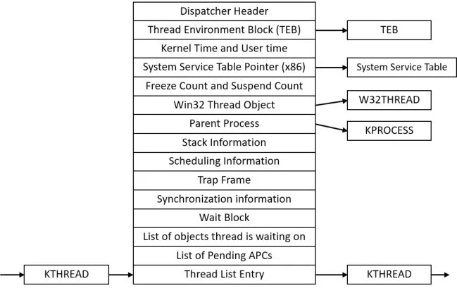
KTHREAD には、スレッドの実行状態（実行中、待機中、実行可能等）、32段階の優先度、カーネルスタックの基底とリミット、残りクォンタム、プロセッサアフィニティ、理想プロセッサ（Ideal Processor）、待機ブロック（Wait Blocks）、そしてコンテキストスイッチ時にCPUレジスタを退避するスタックポインタなどが凝縮されています。
スレッド環境ブロック（TEB: Thread Environment Block）
カーネルモード空間に存在する ETHREAD / KTHREAD に対し、TEB（Thread Environment Block） は、スレッドのユーザーモード仮想アドレス空間に配置される専用のデータ構造体 です（図4-3）。

TEB には、SEH（構造化例外処理）ハンドラチェインの先頭ポインタ、ユーザースタックの基底とリミット、スレッドローカルストレージ（TLS）の配列ポインタ、最後の Win32 エラーコード（GetLastError が返す値）、そして所属プロセスの PEB へのポインタが格納されています。x86 では FS:[0x18]、x64 では GS:[0x30] セグメントレジスタを通じて、ユーザーモードコードから現在の TEB アドレスへ瞬時にアクセス可能です。
実験：カーネルデバッガーによるスレッドのダンプ（!thread）
カーネルデバッガーで !thread コマンドを実行すると、指定したスレッド（または現在のスレッド）の詳細情報がダンプされます：
lkd> !thread
THREAD ffffe0001ac3c080 Cid 23b0.2b88 Teb: 0000000000257000 Win32Thread: ffffe0001570ca20
WAIT: (UserRequest) UserMode Non-Alertable
ffffe0001b6eb470 SynchronizationEvent
Owning Process ffffe00189aec460 Image: notepad.exe
Attached Process N/A Image: N/A
Wait Start TickCount 7233205 Ticks: 270 (0:00:00:04.218)
Context Switch Count 6570 IdealProcessor: 7
UserTime 00:00:00.078
KernelTime 00:00:00.046
Priority 9 BasePriority 8 PriorityDecrement 0 IoPriority 2 PagePriority 5
スレッドの状態（WAIT）、待機している同期オブジェクト、コンテキストスイッチ回数、基本優先度（BasePriority: 8）と動的優先度（Priority: 9）、理想プロセッサ（CPU 7）などが一目で分かります。
スレッドスケジューリング（Thread scheduling）
Windows は、優先度駆動・プリエンプティブなディスパッチャ（Dispatcher） を実装しています。実行可能なスレッドの中で最も高い優先度を持つスレッドが、常に優先してCPUコアに割り当てられます。
スケジューラ（ディスパッチャ）が介入してスレッドの切り替えを行うトリガーには以下のものがあります：
- 新しいスレッドが作成された、または待機状態のスレッドがイベント受信により実行可能（Ready）になった。
- 実行中のスレッドのタイムスライス（クォンタム）が満了した。
- 実行中のスレッドが同期オブジェクトの待機（
WaitForSingleObject等）やI/O完了待ちに入った。 - スレッドの優先度が動的に変更された。
- スレッドが自発的に実行権を譲渡した（
SwitchToThread/Sleep(0)）。
優先度レベル（Priority Levels）
Windows カーネル内部では、スレッドの優先度は 0 から 31 までの 32 段階の数値 で厳格に管理されています：
- リアルタイム優先度（16 〜 31）：最優先の特権クラス。OSのタイムスライスによる動的な優先度変動（デクリメント）を受けず、固定優先度で走行します。カーネル内部の重要スレッドや、Pro Audio・リアルタイム処理に使用されます。
- 動的優先度（1 〜 15）：通常のアプリケーションが使用するクラス。OSによって優先度が動的にブースト（引き上げ）されたり、クォンタム消費に伴って引き下げられたりします。
- ゼロ優先度（0）：システム内で唯一「ゼロページスレッド（Zero Page Thread）」のみに予約された最低優先度。空きメモリページをゼロクリアする処理をCPUが完全にアイドルな時に行います。
Windows API では、直接数値を指定するのではなく、「プロセスの優先度クラス（Normal, High, Real-Time 等）」と「スレッドの相対優先度（Normal, Above Normal, Highest 等）」の掛け合わせによってカーネル優先度が決定されます（表4-1）。

表4-1：Windows API 優先度とカーネル優先度（0-31）のマッピング
| 相対優先度 | Real-Time | High | Above Normal | Normal | Below Normal | Idle |
|---|---|---|---|---|---|---|
| Time-Critical | 31 | 15 | 15 | 15 | 15 | 15 |
| Highest | 26 | 15 | 12 | 10 | 8 | 6 |
| Above Normal | 25 | 14 | 11 | 9 | 7 | 5 |
| Normal | 24 | 13 | 10 | 8 | 6 | 4 |
| Below Normal | 23 | 12 | 9 | 7 | 5 | 3 |
| Lowest | 22 | 11 | 8 | 6 | 4 | 2 |
| Idle | 16 | 1 | 1 | 1 | 1 | 1 |
スレッドの状態遷移（Thread states）
スレッドは、そのライフサイクルにおいて以下の状態（State）を遷移します（図4-8）：
- Initialized（初期化中）：スレッドオブジェクトが作成されている最中の状態。
- Ready（実行可能）：CPUの実行権を待っている状態。ディスパッチャの実行可能キューに並ぶ。
- Standby（スタンバイ）：特定のプロセッサで次に実行されることが決定した状態。
- Running（実行中）：現在CPUコア上でコードを実行している状態。
- Waiting（待機中）：同期オブジェクト（イベント、ミューテックス等）のシグナルやI/O完了を待っている状態。
- Transition（遷移中）：待機が解除されたが、カーネルスタックがページアウトされており、メモリに復帰するのを待っている状態。
- Terminated（終了）：スレッドの実行が終了し、ハンドルがすべてクローズされるのを待っている状態。

ディスパッチャデータベース（Dispatcher Database）
マルチプロセッサシステムにおけるスケジューリングの競合を防ぎスケーラビリティを最大化するため、Windows は CPUコアごとの独立したディスパッチャレディキュー（Per-Processor Ready Queues） を採用しています。各プロセッサの KPRCB 内に、優先度 0〜31 ごとの独立したリンクリストが保持されており、グローバルなロック競合なしに極めて高速に次に実行すべきスレッドを選定できます。
クォンタム（Quantum: タイムスライス）
クォンタム は、スレッドが別のスレッドにプリエンプトされることなくCPU上で連続して実行できる最長時間（タイムスライス）の単位です。
Windows 内部では、クォンタムは単純な時間（ミリ秒）ではなく、「CPUクロックサイクル数（Cycle Time）」に基づいて厳密かつ公平に減算されます。従来のタイマー割り込み単位での計測では、タイマー割り込みの直前に動いたスレッドが丸ごと1ティック分のペナルティを受けたり、割り込み処理時間（DPC/ISR）がスレッドの実行時間として誤認される不公平さがありました。現代のWindowsは、CPUのハードウェアサイクルカウンタ（RDTSC）を用いて真にスレッド自身が消費したサイクルのみをクォンタムから差し引くため、極めて精密で公平なタイムシェアリングを実現しています。
優先度ブースト（Priority Boosts）
動的優先度範囲（1〜15）で動作するスレッドに対し、Windows は応答性とスループットを高めるために様々な場面で 優先度の一時的な引き上げ（優先度ブースト） を自動適用します：
- I/O完了ブースト：キーボードやマウスなどの入力デバイスのI/Oが完了した時（最大 +6 ブースト）、またはディスクI/Oが完了した時（+1 ブースト）。ユーザーの入力に素早く応答させるため。
- フォアグラウンドウィンドウブースト：ユーザーがアクティブに操作している最前面ウィンドウのプロセスに対し、より長いクォンタムと優先度ボーナスを付与。
- GUIスレッドブースト：ウィンドウメッセージキューに新しいメッセージが届いた時。
- 飢餓防止ブースト（CPU Starvation Boost / バランスセットマネージャー）：優先度の高いスレッドがCPUを占有し続けた結果、優先度の低いスレッドが 4 秒以上一度も実行機会を得られない（飢餓状態）場合、カーネルは飢餓スレッドの優先度を一挙に 15 まで引き上げ、2 クォンタム分の実行時間を強制的に与えます。これにより、低優先度スレッドが共有ロックを持ったまま停止してシステム全体が膠着する「優先度逆転（Priority Inversion）」を自動解消します。
マルチプロセッサにおけるスレッド選定
マルチコア・マルチソケットシステムにおいて、Windows はキャッシュ効率（L1/L2/L3キャッシュのヒット率）を最大化するため、以下の洗練された基準でスレッドを実行するCPUコアを選定します：
- 理想プロセッサ（Ideal Processor）：各スレッドに割り当てられる「最も好ましいCPUコア」。スレッド生成時にシステムがCPUの負荷を均等分散して初期設定する。
- 直前プロセッサ（Previous Processor）：スレッドが前回走行していたCPU。CPUキャッシュにまだスレッドのデータが温かく残っている可能性が高いため、優先して再選択される。
- SMT（同時マルチスレッディング / ハイパースレッディング）の考慮：物理コアが同じ論理プロセッサに過密にスレッドを割り当てず、アイドルな物理コアを優先的に活用する。
- NUMA ノードの局所性：スレッドが割り当てられている物理メモリに近いNUMAノード内のプロセッサを最優先する。
- ヘテロジニアス・スケジューリング（big.LITTLE / Intel Hybrid）：高性能コア（Pコア）と高効率コア（Eコア）が混在するCPUにおいて、前景の高負荷スレッドをPコアに、バックグラウンドの低優先度スレッドをEコアにインテリジェントに配分する。
ワーカファクトリ（スレッドプール基盤）
現代の高性能アプリケーションやサーバーは、何千もの非同期タスクを効率的に処理するために「スレッドプール」に依存しています。Windows では、このスレッドプールをカーネルレベルで超高速に制御するための機構として ワーカファクトリ（Worker Factory） を提供しています。
ワーカファクトリは、CPUコア数、未処理のI/O完了パケット（IOCP）、ALPCメッセージの到着キューをカーネル内で直接監視します。スレッドがブロッキングI/Oに入ると自動的に新しいワーカスレッドを即座に起床させ、逆に負荷が下がると余分なスレッドを自動的に休眠・回収します。ユーザーモードとカーネルモードの境界を超えたこの緊密な連携により、最小限のコンテキストスイッチ数で極限のスループットを達成します。
まとめ（Conclusion）
本章では、Windows の実行単位であるスレッドの全容を解説しました。ETHREAD/KTHREAD/TEB によるコンテキスト管理、32段階の優先度制御、公平なサイクルベースのクォンタム消費、飢餓防止やI/Oブースト、マルチコア・NUMA・ハイブリッドCPUを活かし切るスケジューリングアルゴリズム、そしてワーカファクトリによるスレッドプール基盤に至るまで、Windows の比類なき並行処理性能を支えるメカニズムの核心を解剖しました。
続く第5章では、これらのスレッドが動作する舞台である「メモリ管理（仮想メモリ・物理メモリ・ページング）」の壮大な内部世界へと進みます。
- Windows API のパラメーターをネイティブフラグに変換し、オブジェクトパラメーターを記述するネイティブ構造体（第2部第8章で説明する OBJECT_ATTRIBUTES）を構築する。
- クライアント ID と TEB アドレスの2項目を含む属性リストを構築する。属性リストの詳細は第3章「CreateProcess の流れ」を参照。
- スレッドを呼び出し元プロセス内に作成するか、渡されたハンドルが示す別のプロセス内に作成するか判断する。ハンドルが GetCurrentProcess から返される疑似ハンドル（値 -1）なら同じプロセスです。異なるハンドルでも同一プロセスを指す場合があるため、Ntdll の NtQueryInformationProcess を呼び出して確認します。
- Ntdll の NtCreateThreadEx を呼び出してカーネルモードのエグゼクティブへ移行し、カーネル内の同名関数へ処理を引き継ぐ。
- エグゼクティブ内の NtCreateThreadEx はユーザーモードスレッドのコンテキスト（アーキテクチャ依存の構造体）を作成・初期化し、PspCreateThread を呼び出して一時停止状態のエグゼクティブスレッドオブジェクトを作成する。この関数の手順は第3章「CreateProcess の流れ」のステージ3と5を参照。処理が戻ると、最終的にユーザーモードの CreateRemoteThreadEx に戻る。
- CreateRemoteThreadEx は Side-by-Side アセンブリ対応用にスレッドのアクティベーションコンテキストを割り当てます。アクティベーションスタックを調べて有効化が必要か確認し、必要なら有効化します。アクティベーションスタックポインターは新しいスレッドの TEB に保存されます。
- 呼び出し元が CREATE_SUSPENDED フラグを指定していなければ、スレッドを再開して実行スケジュールに載せます。スレッドは実行開始時、ユーザー指定の開始アドレスを呼び出す前に、第3章「ステージ7：新しいプロセスのコンテキストでプロセスを初期化する」で説明した処理を行います。
- スレッドハンドルとスレッド ID を呼び出し元に返す。
スレッド動作の調査
Svchost.exe、Dllhost.exe、Lsass.exe のように複数のサービスをホストするプロセスが動作している理由や、応答しなくなった理由を調べる場合、スレッド動作の確認が特に重要です。
Windows スレッドの状態を確認するツールには、WinDbg（ユーザープロセスへのアタッチとカーネルデバッグ）、パフォーマンスモニター、Process Explorer があります。スレッドスケジュール情報を表示するツールは、本章の「スレッドスケジューリング」節で取り上げます。
Process Explorer でプロセス内のスレッドを表示するには、プロセスを選んでダブルクリックし、プロパティダイアログを開きます。プロセスを右クリックして「Properties」を選んでも開けます。
「Threads」タブを開くと、そのプロセス内のスレッド一覧と、各スレッドの4項目（ID、設定した更新間隔に基づく CPU 使用率、スレッドに計上されたサイクル数、スレッド開始アドレス）が表示されます。どの列でも並べ替えできます。
新しいスレッドは緑色、終了したスレッドは赤色で強調表示されます（表示時間は「Options」メニューの「Difference Highlight Duration」で設定）。プロセス内で要求を処理するたびにスレッドを作るなど、不必要なスレッド作成を見つけるのに役立ちます。一般にスレッドはプロセス起動時に作り、要求ごとに作成するべきではありません。
一覧でスレッドを選ぶと、Process Explorer はスレッド ID、開始時刻、状態、CPU 時間カウンター、計上サイクル数、コンテキストスイッチ回数、理想プロセッサとそのグループ、I/O 優先度、メモリ優先度、基本優先度と現在の（動的）優先度を表示します。「Kill」ボタンで個別スレッドを終了できますが、細心の注意が必要です。「Suspend」ボタンでスレッドを一時停止し、暴走スレッドが CPU を消費し続けるのを防ぐこともできます。しかしデッドロックを引き起こす可能性があるため、「Kill」と同様に慎重に使ってください。「Permissions」ボタンではスレッドのセキュリティ記述子を確認できます（詳細は第7章「セキュリティ」を参照）。
タスクマネージャーなどのプロセス・プロセッサ監視ツールとは異なり、Process Explorer はクロック間隔タイマーではなく、スレッド実行時間の計測用に設計されたクロックサイクルカウンターを使います。そのため CPU 使用率の見え方が大きく異なります。多くのスレッドは実行時間が短く、クロック間隔タイマー割り込みの瞬間に実行中であることがほとんどありません。その結果、CPU 時間がほとんど計上されず、クロックベースのツールでは CPU 使用率が0%に見えることがあります。一方、クロックサイクルの合計は各スレッドが実際に消費したプロセッササイクル数です。プロセッサが各サイクルで内部的にカウントし、Windows が各割り込みの入り口で更新するため、クロック間隔タイマーの解像度に左右されません（コンテキストスイッチ前にも最終集計を行います）。
スレッド開始アドレスは module!function の形式で表示します。module は .EXE または .DLL の名前です。関数名の表示にはモジュールのシンボルファイルが必要です（第1章「プロセスの詳細を Process Explorer で表示する」実験を参照）。モジュールが分からない場合は「Module」ボタンをクリックすると、そのモジュール（.EXE または .DLL など）のエクスプローラーのプロパティが開きます。
注：Windows の CreateThread 関数で作られたスレッドでは、Process Explorer は実際の開始関数ではなく CreateThread に渡された関数を表示します。すべての Windows スレッドは Ntdll.dll の RtlUserThreadStart という共通ラッパーから始まるためです。実際の開始アドレスを表示すると、多くのスレッドが同じアドレスから始まったように見えてしまい、実行コードを調べる役に立ちません。ただし保護プロセスの場合など、ユーザー定義の開始アドレスを取得できないときはラッパー関数が表示され、すべてのスレッドの開始位置が RtlUserThreadStart になります。
スレッド開始アドレスだけでは、そのスレッドが何をしているか、プロセス内のどのコンポーネントが CPU を消費しているか特定できない場合があります。開始アドレスが汎用の初期化関数で、関数名から実際の処理を判断できない場合は特にそうです。そのようなときはスレッドスタックを調べると分かることがあります。スレッドをダブルクリックするか選択して「Stack」ボタンを押すと、ユーザーモードとカーネルモードのスタック（スレッドがカーネルモードの場合）が表示されます。
注：ユーザーモードデバッガー（WinDbg、Ntsd、Cdb）でもプロセスにアタッチしてユーザースタックを表示できますが、Process Explorer なら1回の操作でユーザーとカーネルのスタックを表示できます。次の2つの実験のように、ローカルカーネルデバッグモードの WinDbg でも両方のスレッドスタックを調べられます。
64ビットシステム上で Wow64 として動く32ビットプロセス（第2部第8章「Wow64」参照）では、Process Explorer はスレッドの32ビットスタックと64ビットスタックを両方表示します。実際の（64ビット）システムコール時にスレッドは64ビットのスタックとコンテキストへ切り替わるため、64ビットスタックだけを見ると Wow64 のサンクコードを含む半分の情報しか得られません。Wow64 プロセスを調べるときは両方のスタックを確認してください。
実験：ユーザーモードデバッガーでスレッドスタックを見る
次の手順で WinDbg をプロセスにアタッチし、スレッド情報とスタックを確認します。
- notepad.exe と WinDbg.exe を実行する。
- WinDbg の「File」メニューから「Attach to Process」を選ぶ。
- notepad.exe のインスタンスを選び「OK」をクリックする。デバッガーがメモ帳にアタッチして停止します。
- ~ コマンドでプロセスのスレッド一覧を表示する。各行にはデバッガー ID、クライアント ID（ProcessID.ThreadID）、一時停止回数（ブレークポイントで停止するため通常1）、TEB アドレス、デバッガーコマンドで凍結されているかどうかが表示されます。
0:005> ~ 0 Id: 612c.5f68 Suspend: 1 Teb: 00000022'41da2000 Unfrozen 1 Id: 612c.5564 Suspend: 1 Teb: 00000022'41da4000 Unfrozen 2 Id: 612c.4f88 Suspend: 1 Teb: 00000022'41da6000 Unfrozen ...
- 出力でスレッド5の前にある点は、現在のデバッガースレッドを示します。k コマンドで呼び出しスタックを表示します。
0:005> k # Child-SP RetAddr Call Site 00 ... ntdll!DbgBreakPoint 01 ... ntdll!DbgUiRemoteBreakin 02 ... KERNEL32!BaseThreadInitThunk 03 ... ntdll!RtlUserThreadStart
デバッガーはメモ帳のプロセス内にブレークポイント命令（DbgBreakPoint）を実行するスレッドを挿入しています。WinDbg で現在のデバッガースレッドを切り替えず、別のスレッドのスタックを表示するには ~nk コマンドを使います。n はスレッド番号です。たとえばスレッド2では次のようになります。
0:005> ~2k # Child-SP RetAddr Call Site 00 ... ntdll!ZwWaitForWorkViaWorkerFactory 01 ... ntdll!TppWorkerThread 02 ... KERNEL32!BaseThreadInitThunk 03 ... ntdll!RtlUserThreadStart
デバッガーを別のスレッドへ切り替えるには ~ns コマンドを使います（n はスレッド番号）。スレッド0に切り替えてスタックを表示します。
0:005> ~0s USER32!ZwUserGetMessage+0x14: 0:000> k # Child-SP RetAddr Call Site 00 ... USER32!ZwUserGetMessage 01 ... USER32!GetMessageW 02 ... notepad!WinMain 03 ... notepad!__mainCRTStartup 04 ... KERNEL32!BaseThreadInitThunk 05 ... ntdll!RtlUserThreadStart
スレッドがカーネルモードにいるときでも、ユーザーモードデバッガーはユーザーモードに残る最後の関数（上の例では ZwUserGetMessage）を表示する点に注意してください。
実験：ローカルカーネルデバッガーでスレッドスタックを見る
この実験ではローカルカーネルデバッガーを使い、ユーザーモードとカーネルモードの両方でスレッドスタックを確認します。エクスプローラーのスレッドを例にしますが、他のプロセスやスレッドでも試せます。
- explorer.exe イメージを実行しているプロセスをすべて表示します（エクスプローラーの設定で「フォルダー ウィンドウを別のプロセスで開く」が選ばれていると、デスクトップとタスクバーを管理するプロセスと、ウィンドウを管理するプロセスの2つが表示されることがあります）。
lkd> !process 0 0 explorer.exe PROCESS ffffe00197398080 SessionId: 1 Cid: 18a0 ... Image: explorer.exe PROCESS ffffe00196039080 SessionId: 1 Cid: 1f30 ... Image: explorer.exe
- プロセスを1つ選び、スレッド概要を表示します。
lkd> !process ffffe00196039080 2 PROCESS ffffe00196039080 Image: explorer.exe THREAD ffffe0019758f080 Cid 1f30.0718 Teb: 0000000000291000 WAIT: (UserRequest) UserMode Non-Alertable THREAD ffffe00198911080 Cid 1f30.1aac Teb: 00000000002a1000 WAIT: (UserRequest) UserMode Non-Alertable ...
- プロセスの最初のスレッドのコンテキストへ切り替えます（別のスレッドでもかまいません）。
lkd> .thread /p /r ffffe0019758f080 Implicit thread is now ffffe001'9758f080 Implicit process is now ffffe001'96039080 Loading User Symbols
- スレッドの詳細と呼び出しスタックを表示します（アドレスは出力例で省略しています）。
lkd> !thread ffffe0019758f080 THREAD ffffe0019758f080 Cid 1f30.0718 Owning Process ffffe00196039080 Image: explorer.exe Context Switch Count 2788 UserTime 00:00:00.031 KernelTime 00:00:00.000 Win32 Start Address explorer!wWinMainCRTStartup ... nt!KeWaitForSingleObject nt!NtWaitForMultipleObjects ntdll!ZwWaitForMultipleObjects KERNELBASE!WaitForMultipleObjectsEx USER32!MsgWaitForMultipleObjectsEx explorerframe!SHProcessMessagesUntilEventEx explorer!wWinMain
保護プロセスのスレッドに対する制限
第3章で説明したように、保護プロセス（従来型の保護プロセスまたは PPL）では、システム上で最も高い権限を持つユーザーであっても取得できるアクセス権が制限されます。この制限はプロセス内のスレッドにも適用されます。標準の Windows 関数に必要な権限が与えられないため、保護プロセス内で動くコードを乗っ取ったり、変更したりできません。許可されるのは THREAD_SUSPEND_RESUME と THREAD_SET／QUERY_LIMITED_INFORMATION だけです。
実験：Process Explorer で保護プロセスのスレッド情報を見る
次の手順で保護プロセスのスレッド情報を確認します。
- プロセス一覧から Audiodg.exe や Csrss.exe など、保護プロセスまたは PPL を探す。
- プロパティダイアログを開き、「Threads」タブを選ぶ。
- Process Explorer は Win32 スレッド開始アドレスの代わりに、Ntdll.dll 内の標準スレッド開始ラッパーを表示します。「Stack」ボタンをクリックするとエラーになります。Process Explorer は保護プロセス内の仮想メモリを読む必要がありますが、それができないためです。
- 基本優先度と動的優先度は表示されますが、I/O 優先度、メモリ優先度、Cycles は表示されません。これも、完全な照会権限 THREAD_QUERY_INFORMATION ではなく、限定的な THREAD_QUERY_LIMITED_INFORMATION しかない例です。
- 保護プロセス内のスレッドを終了させてみてください。THREAD_TERMINATE 権限がないため、別のアクセス拒否エラーが表示されます。
スレッドスケジューリング
この節では Windows のスケジューリング方針とアルゴリズムを説明します。まず Windows のスケジューリングの概要と重要用語を紹介し、Windows API とカーネルの両方の観点から優先度レベルを説明します。関連ユーティリティとツールを見た後、スレッドやプロセッサの選択を含む一般的なスケジューリング状況を取り上げ、スケジューリングシステムを構成するデータ構造とアルゴリズムを詳しく説明します。
Windows スケジューリングの概要
Windows は優先度駆動型のプリエンプティブスケジューリングシステムを実装しています。実行可能（レディ）状態にある最も優先度の高いスレッドの少なくとも1つが常に実行されます。ただし、実行可能な高優先度スレッドでも、実行を許可または推奨されるプロセッサが限られている場合があります。これをプロセッサアフィニティと呼びます。最大64個のプロセッサをまとめるプロセッサグループ単位で定義されます。既定では、スレッドはプロセスに関連付けられたグループ内の利用可能なプロセッサだけで実行できます（64個までのプロセッサしかサポートしなかった旧 Windows との互換性を保つためです）。開発者は API やイメージヘッダーのアフィニティマスクで変更でき、ユーザーも実行時やプロセス作成時にツールで変更できます。プロセス内の複数スレッドを異なるグループへ関連付けることはできますが、個々のスレッドは割り当てられたグループ内のプロセッサでしか実行できません。開発者は拡張スケジューリング API を使うグループ対応アプリを作り、複数グループの論理プロセッサをスレッドのアフィニティに関連付けることもできます。そうするとマルチグループプロセスとなり、理論上はマシン内のどの利用可能なプロセッサでもスレッドを実行できます。
実行対象に選ばれたスレッドは、量子と呼ばれる時間だけ実行されます。量子は、同じ優先度の別スレッドに実行機会が回るまでにスレッドへ与えられる時間です。量子の長さはシステムやプロセスによって異なり、次の要因で変わります。
- システム構成（長い／短い量子、可変／固定量子、優先度分離）
- プロセスがフォアグラウンドかバックグラウンドか
- ジョブオブジェクトによる量子変更
詳細は本章後半の「量子」節で説明します。
Windows はプリエンプティブスケジューラーを実装しているため、スレッドが量子を使い切るとは限りません。より高い優先度の別スレッドが実行可能になると、現在のスレッドは時間枠の終了前にプリエンプトされる可能性があります。次に実行するスレッドとして選ばれた後、量子を開始する前にプリエンプトされることさえあります。
Windows のスケジューリングコードはカーネルに実装されています。ただし単一の「スケジューラー」モジュールやルーチンがあるのではなく、スケジューリング関連イベントが発生するカーネル各所に分散しています。
これらの役割を担うルーチン群を、カーネルのディスパッチャーと呼びます。次のイベントでスレッドのディスパッチが必要になることがあります。
- 新しく作成されたときや待機状態から解放されたときなど、スレッドが実行可能になる。
- 量子が終了する、終了処理を行う、実行権を譲る、待機状態に入るなどして、スレッドが実行状態を離れる。
- システムサービス呼び出し、または Windows 自身の変更により、スレッドの優先度が変化する。
- プロセッサアフィニティが変わり、実行中のプロセッサで動作できなくなる。
こうした場面ごとに、Windows は該当する論理プロセッサで次に実行するスレッドを決めるか、そのスレッドを実行する論理プロセッサを決める必要があります。論理プロセッサが新しいスレッドを選択すると、最終的にコンテキストスイッチを実行します。コンテキストスイッチとは、現在のスレッドに対応する揮発性プロセッサ状態を保存し、別のスレッドの状態を読み込み、新しいスレッドの実行を開始する処理です。
前述のとおり、Windows はスレッド単位でスケジュールを決めます。プロセス自身は実行されず、スレッドが動作するためのリソースとコンテキストを提供するだけなので、この方式は合理的です。スケジューリングの判断ではスレッドがどのプロセスに属するか考慮しません。たとえばプロセスAに実行可能なスレッドが10個、プロセスBに2個あり、12個すべて同じ優先度なら、理論上は各スレッドが CPU 時間の12分の1を受け取ります。プロセスAに50%、Bに50%を割り当てるわけではありません。
優先度レベル
スレッドスケジューリングアルゴリズムを理解するには、まず Windows の優先度レベルを知る必要があります。図4-6のように Windows は内部で0〜31の32レベルを使い、31が最も高い値です。
- リアルタイムレベル：16〜31の16段階
- 可変レベル：0〜15の16段階。レベル0はゼロページスレッド用に予約されています（第5章参照）。
スレッドの優先度は Windows API と Windows カーネルという2つの観点から割り当てられます。Windows API はまず作成時に設定するプロセス優先度クラスでプロセスを分類します。括弧内はカーネルが認識する内部 PROCESS_PRIORITY_CLASS インデックスです。
- リアルタイム（4）
- 高（3）
- 通常以上（6）
- 通常（2）
- 通常以下（5）
- アイドル（1）
SetPriorityClass API でプロセスの優先度クラスを変更できます。
次にプロセス内の各スレッドに相対優先度を割り当てます。括弧内はプロセスの基本優先度に加える差分です。
- 時間重視（15）
- 最高（2）
- 通常以上（1）
- 通常（0）
- 通常以下（-1）
- 最低（-2）
- アイドル（-15）
時間重視とアイドルの +15／-15 は飽和値と呼び、単なる相対差ではなく特定の優先度レベルを指定します。SetThreadPriority Windows API に渡すと、スレッドの相対優先度を変更できます。
したがって Windows API の各スレッドは、プロセス優先度クラスとスレッド相対優先度から決まる基本優先度を持ちます。カーネルでは、先に示した PROCESS_PRIORITY_CLASS インデックスを使い、PspPriorityTable グローバル配列からプロセス優先度クラスを基本優先度へ変換します。順に4、8、13、14、6、10へ変換されます。この対応は固定で変更できません。続いてスレッド相対優先度を差分として適用します。たとえば「最高」スレッドは、プロセス基本優先度より2段階高いスレッド基本優先度になります。
Windows API の優先度を内部数値に変換する対応は図4-7と表4-1に示されています。
図4-7は Windows API から見たスレッド優先度の対応を図示しています。表4-1はカーネル優先度と Windows API の対応を示します。
時間重視とアイドルのスレッド相対優先度は、プロセスの優先度クラス（リアルタイムを除く）にかかわらずそれぞれの値を保ちます。Windows API は相対優先度として +16 または -16 を渡し、カーネルに優先度の飽和を要求します。計算式は次のとおりです（HIGH_PRIORITY は31）。
時間重視: (HIGH_PRIORITY + 1) / 2 アイドル: -(HIGH_PRIORITY + 1) / 2
カーネルはこれらの値を飽和要求と判断し、KTHREAD の Saturation フィールドを設定します。正の飽和では優先度クラス（可変またはリアルタイム）内で可能な最高優先度、負の飽和では最低優先度になります。飽和したスレッドは処理コードでスキップされるため、後からプロセス基本優先度を変更しても、そのスレッドの基本優先度には影響しません。
表4-1のとおり、Windows API ではスレッドの相対優先度を7段階から選べます（高クラスでは6段階）。リアルタイムクラスでは図4-7のように16〜31のすべての優先度を設定できます。表の標準定数にない値は、SetThreadPriority の引数に -7、-6、-5、-4、-3、3、4、5、6 を指定します（詳細は後述の「リアルタイム優先度」節を参照）。
Windows API での設定方法（プロセス優先度クラスとスレッド相対優先度の組み合わせ）にかかわらず、スケジューラーにとっては最終的な値だけが重要です。たとえば優先度10は、通常クラス（8）のプロセス内で最高（+2）にしたスレッドと、通常以上クラス（10）のプロセス内で通常（0）にしたスレッドのどちらでも得られます。スケジューラーからは同じ値なので、優先度については同等です。
プロセスが基本優先度を1つだけ持つのに対し、各スレッドは現在（動的）優先度と基本優先度の2つを持ちます。スケジューリングは現在優先度を使います。後述の「優先度ブースト」で説明するように、特定条件下でシステムは可変範囲（1〜15）のスレッドの優先度を一時的に引き上げます。リアルタイム範囲（16〜31）のスレッドの優先度を Windows が調整することはないため、基本優先度と現在優先度は常に同じです。
スレッドの初期基本優先度はプロセスの基本優先度から継承されます。既定では、プロセスも作成元プロセスの基本優先度を継承します。CreateProcess 関数や start コマンドで上書きでき、作成後も SetPriorityClass やタスクマネージャー、Process Explorer などのツールで変更できます（プロセスを右クリックし、新しい優先度クラスを選択）。たとえば CPU 負荷の高いプロセスの優先度を下げ、通常のシステム処理を妨げないようにできます。プロセス優先度を変更するとスレッド優先度も同じ方向に変わりますが、相対設定は保たれます。
通常、ユーザーアプリとサービスは通常の基本優先度で開始し、最初のスレッドは通常レベル8で実行されます。ただしセッションマネージャー、Service Control Manager、ローカルセキュリティ認証プロセスなど一部の Windows システムプロセスは、通常クラスの既定値（8）より少し高い基本優先度を持ちます。これにより、これらのプロセスのスレッドはすべて既定より高い優先度で開始します。
リアルタイム優先度
どのアプリケーションでも可変範囲のスレッド優先度を上げ下げできますが、リアルタイム範囲に入るにはスケジューリング優先度の引き上げ権限（SeIncreaseBasePriorityPrivilege）が必要です。重要な Windows カーネルスレッドも多数リアルタイム範囲で動作するため、その範囲でスレッドを過度に実行すると、メモリマネージャー、キャッシュマネージャー、デバイスドライバーなどの重要機能を妨げるおそれがあります。
標準 Windows API では、プロセスがリアルタイム範囲に入ると、アイドル優先度のスレッドを含むすべてのスレッドがリアルタイム優先度で動作します。そのため標準インターフェイスでは、同一プロセス内でリアルタイムと可変範囲のスレッドを混在できません。SetThreadPriority API は ThreadBasePriority 情報クラスでネイティブ NtSetInformationThread API を呼び出すためです。
この情報クラスでは優先度を同じ範囲内に保ちます。また CSRSS または別のリアルタイムプロセスからの要求でない限り、認識済みの Windows API 差分 -2〜2（または時間重視／アイドル）だけを許可します。つまりリアルタイムプロセスは、前の表で示した Windows API の標準相対優先度では選択肢が限られるように見えても、16〜31の任意の優先度をスレッドに設定できます。
前述のとおり、特殊な値を使って SetThreadPriority を呼び出すと、ThreadActualBasePriority 情報クラスを使う NtSetInformationThread が呼び出されます。これによりリアルタイムプロセス内でも、可変範囲を含め、カーネルの基本優先度を直接設定できます。
注：ここでいう「リアルタイム」は一般的な意味でのリアルタイム OS を指すものではありません。Windows は割り込み遅延の保証や、スレッドが実行時間を保証される仕組みなど、真のリアルタイム OS 機能を提供しません。ここでは単に「他より高い」という意味です。
ツールで優先度を操作する
タスクマネージャーと Process Explorer でプロセスの基本優先度を表示・変更できます。Process Explorer ではプロセス内のスレッドを個別に終了できますが、当然ながら細心の注意が必要です。
パフォーマンスモニター、Process Explorer、WinDbg では個別スレッドの優先度を表示できます。プロセス優先度を上げ下げするのは有用な場合がありますが、プロセス内の個別スレッドを調整するのは通常適切ではありません。スレッドの相対的な重要度を理解しているのは、そのプログラムを熟知した開発者だけだからです。
プロセスの初期優先度クラスを指定するには、Windows コマンドプロンプトの start コマンドを使います。毎回特定の優先度で起動するには、cmd /c で始まる start コマンドのショートカットを作れます。これでコマンドプロンプトを起動し、コマンドを実行してから終了します。たとえばメモ帳をアイドル優先度で起動するには cmd /c start /low Notepad.exe とします。
実験：プロセスとスレッドの優先度を確認・設定する
- 通常どおり notepad.exe を実行する（コマンドウィンドウで Notepad と入力するなど）。
- タスクマネージャーを開き、「詳細」タブを選ぶ。
- 「基本優先度」列を追加する。タスクマネージャーでは優先度クラスをこの名前で表示します。
- 一覧からメモ帳を探します。次のような表示になります。
- メモ帳の優先度クラスが通常（8）で、タスクマネージャーではアイドル優先度クラスが「低」と表示される点を確認します。
- Process Explorer を開く。
- メモ帳をダブルクリックしてプロパティを開き、「Threads」タブを選ぶ。
- 最初のスレッドを選ぶ（複数ある場合）。次のように表示されます。
- スレッド優先度を確認します。基本優先度は8ですが、現在（動的）優先度は10です。優先度がブーストされた理由は、後述の「優先度ブースト」節で説明します。
- 必要ならスレッドを一時停止または終了できます。どちらも慎重に行ってください。
- タスクマネージャーでメモ帳のプロセスを右クリックし、「優先度の設定」から「高」を選びます。
- 確認ダイアログを承認して Process Explorer に戻ります。スレッドの基本優先度が「高」の新しい値13に上がり、動的優先度も同じ相対差を保ったまま上がります。
- タスクマネージャーで優先度クラスを「リアルタイム」に変更します（成功するには管理者である必要があります。Process Explorer からも変更できます）。
Process Explorer でスレッドの基本優先度と動的優先度が24になったことを確認します。カーネルはリアルタイム範囲のスレッドに優先度ブーストを適用しない点を思い出してください。
Windows システムリソースマネージャー
Windows Server 2012 R2 Standard Edition 以降には、任意でインストールできる Windows システムリソースマネージャー（WSRM）があります。管理者はプロセスの CPU 使用率、アフィニティ設定、物理・仮想メモリの上限を定めるポリシーを構成できます。WSRM はリソース使用状況レポートも生成でき、ユーザーとのサービスレベル契約の会計や確認に使えます。
イメージ名（特定のコマンドライン引数の有無を含む）、ユーザー、グループを条件にポリシーを適用できます。適用期間をスケジュールすることも、常時有効にすることもできます。
特定プロセスを管理するリソース割り当てポリシーを設定すると、WSRM サービスが管理対象プロセスの CPU 使用率を監視し、目標の CPU 割り当てを満たさない場合にプロセスの基本優先度を調整します。
物理メモリ上限には SetProcessWorkingSetSizeEx 関数を使ってワーキングセットの厳密な上限を設定します。仮想メモリ上限は、サービスがプロセスのプライベート仮想メモリ使用量を確認して実装します（メモリ上限の詳細は第5章参照）。上限を超えた場合、WSRM はプロセスを終了するか、イベントログに記録するよう設定できます。これにより、システムのコミット済みメモリを使い切る前にプロセスのメモリリークを検出できます。
WSRM のメモリ上限は、Address Windowing Extensions（AWE）メモリ、大きなページのメモリ、カーネルメモリ（ページプールまたは非ページプール）には適用されません。これらの用語の詳細は第5章を参照してください。
スレッドの状態
スレッドスケジューリングアルゴリズムを見る前に、スレッドが取り得る実行状態を理解する必要があります。
- Ready（レディ）：実行を待つ状態、または待機を終えてメモリへ読み戻されるのを待つ状態です。ディスパッチャーが実行対象を探すときは、この状態のスレッドだけを調べます。
- Deferred ready（遅延レディ）：特定プロセッサで実行するよう選択されたものの、まだそのプロセッサで実行を開始していないスレッドの状態です。スケジューリングデータベースに対するプロセッサごとのロックを保持する時間を短くするためにあります。
- Standby（スタンバイ）：特定プロセッサで次に実行するスレッドとして選ばれた状態です。条件が整うとディスパッチャーがコンテキストスイッチを行います。各プロセッサでこの状態になれるスレッドは1つだけです。実行開始前でも、より高い優先度のスレッドが実行可能になるなどしてプリエンプトされることがあります。
- Running（実行中）：ディスパッチャーがコンテキストスイッチを行うとスレッドは実行状態になります。量子終了時に同じ優先度の別スレッドが実行可能である場合、より高い優先度のスレッドにプリエンプトされた場合、終了した場合、実行権を譲った場合、または自発的に待機状態へ入るまで実行を続けます。
- Waiting（待機）：オブジェクトとの同期を待つ、ページング I/O の解決を OS が待つ、環境サブシステムから一時停止を指示されるなど、複数の理由で待機状態になります。待機が終わると優先度に応じてすぐ実行するか、レディ状態へ戻ります。
- Transition（遷移）：実行可能でもカーネルスタックがメモリからページアウトされている状態です。スタックがメモリへ戻るとレディ状態になります（スレッドスタックは第5章で説明）。
- Terminated（終了）：スレッドの実行が終わった状態です。終了後も、システムメモリ上でスレッドを表すエグゼクティブスレッドオブジェクトが解放されるとは限りません。いつ削除するかはオブジェクトマネージャーが決めます。たとえばスレッドへのハンドルが開いていればオブジェクトは残ります。他のスレッドが TerminateThread Windows API で明示的に終了させた場合も、この状態になります。
- Initialized（初期化済み）：スレッド作成中に内部で使う状態です。
図4-8はスレッドの主な状態遷移を示します。数値は各状態の内部値で、パフォーマンスモニターなどで確認できます。Ready と Deferred ready は1つの状態として表しています。Deferred ready はスケジューリング処理で一時的に使う状態だからです。Standby も同様です。これらの状態はほとんどの場合ごく短く、すぐ Ready、Running、または Waiting へ移ります。
図4-8 スレッドの状態と遷移
実験：スレッドのスケジューリング状態の変化
Windows のパフォーマンスモニターを使うと、スレッドの状態変化を確認できます。マルチスレッドアプリケーションをデバッグしていて、プロセス内のスレッドの状態が分からないときに役立ちます。
- 本書のダウンロード資料から CPU Stress ツールを入手します。
- CPUSTRES.exe を実行します。Thread 1 はアクティブになっているはずです。
- 一覧で Thread 2 を選び、Activate をクリックするか、右クリックして Activate を選びます。
- スタートボタンから「perfmon」を起動します。
- 必要ならグラフ表示を選び、既存の CPU カウンターを削除します。
- グラフを右クリックして Properties を選びます。
- Graph タブで縦軸の最大値を7にします。図4-8のとおり状態は0〜7の値に対応します。OK をクリックします。
- ツールバーの Add をクリックして Add Counters を開きます。
- Thread パフォーマンスオブジェクトを選び、Thread State カウンターを選択します。
- Show Description を選ぶと値の定義が表示されます。
- Instances で <All instances> を選び、「cpustres」と入力して Search をクリックします。
- cpustres の最初の3スレッド（cpustres/0、cpustres/1、cpustres/2）を選び、Add >>、OK の順にクリックします。Thread 0 は GUI スレッドで入力を待つため状態5（Waiting）になります。Thread 1 と2は状態2（Running）と5（Waiting）の間を移ります。同じアクティビティレベルと優先度なので、Thread 1 が Thread 2 を隠すことがあります。
- CPU Stress に戻り、Thread 2 を右クリックして Busy を選びます。Thread 2 は Thread 1 より頻繁に状態2（Running）になるはずです。
- Thread 1 を右クリックしてアクティビティレベルを Maximum にします。Thread 2 にも同じ操作をします。両方とも実質的に無限ループを実行するため、常に状態2になるはずです。
単一プロセッサのシステムでは結果が異なります。同時に実行できるスレッドは1つだけなので、2つのスレッドは状態1（Ready）と状態2（Running）を交互に取ります。
- マルチプロセッサシステムでは、タスクマネージャーで CPUSTRES を右クリックし、Set Affinity を選んでプロセッサを1つだけ指定すれば同じ状態を作れます。CPU Stress の Process メニューから Affinity を選んでも設定できます。
- 設定を保ったまま CPU Stress に戻り、Thread 1 の優先度を Above Normal にします。Thread 1 は状態2で動き続け、Thread 2 は状態1（Ready）のままになるはずです。単一プロセッサでは通常、優先度の高いスレッドが優先されます。ただし約4秒ごとに、実行機会を得られないスレッドがブーストされ、短時間動けることがあります。パフォーマンスモニターの更新は1秒単位なので、グラフに変化が出ない場合もあります。詳しくは本章後半の「優先度ブースト」を参照してください。
ディスパッチャーデータベース
スレッドのスケジューリングを決めるため、カーネルはディスパッチャーデータベースと呼ばれるデータ構造群を管理します。ここには実行を待つスレッドと、各プロセッサで実行中のスレッドが記録されます。
スケーラビリティとスレッドディスパッチの並行性を高めるため、Windows のマルチプロセッサシステムではプロセッサごとのレディキューと、プロセッサグループで共有するキューを使います（図4-9）。各 CPU はシステム全体のキューをロックせずに、共有レディキューから次のスレッドを調べられます。
図4-9 Windows のマルチプロセッサ用ディスパッチャーデータベース（6プロセッサの例。P はプロセス、T はスレッド）
Windows 8 および Windows Server 2012 より前は、プロセッサ制御ブロック（PRCB）にプロセッサごとのレディキューとレディサマリーがありました。カーネルデバッガーで dt nt!_kprcb を実行すると確認できます。Windows 8 以降はプロセッサグループごとに共有キューとサマリーを使い、次に使うプロセッサをよりよく決めます。アフィニティ制約のあるスレッドにはCPUごとのキューも使います。
注：共有構造はスピンロックで保護するため、グループを大きくしすぎるべきではありません。現在の最大値は論理プロセッサ4個です。4個を超える場合は複数グループを作り、均等に分けます。たとえば6個なら3個ずつのグループを2つ作ります。
レディキュー、レディサマリーなどはPRCB内の KSHARED_READY_QUEUE に保存されます。構造体は各プロセッサにありますが、グループ先頭のプロセッサが他のプロセッサと共有して使います。
ディスパッチャーのレディキュー（KSHARED_READY_QUEUE の ReadListHead）には、実行を待つ Ready 状態のスレッドが入ります。優先度レベルは32段階で、それぞれにキューがあります。Windows は ready summary（ReadySummary）という32ビットのビットマスクを維持します。セットされたビットは、その優先度のキューにスレッドがあることを示します（ビット0は優先度0、ビット1は優先度1）。各リストを順番に調べる代わりに、プロセッサ命令でビットを走査して最上位のセットビットを見つけるため、処理時間は一定です。
データベースは IRQL を DISPATCH_LEVEL（2）に上げて同期します（IRQL は第6章で説明）。通常のスレッドはIRQL 0または1なので、同じプロセッサ上のスレッドによる割り込みを防げます。しかし他プロセッサも同時に同じIRQLへ上げて操作できるため、追加の同期が必要です。詳しくは本章後半の「マルチプロセッサシステム」を参照してください。
実験：レディスレッドの表示
カーネルデバッガーの !ready は、優先度ごとの Ready スレッド一覧を表示します。以下は論理プロセッサ4個の32ビットマシンでの出力例です。
0: kd> !ready KSHARED_READY_QUEUE 8147e800: (00) ****---------------------------- SharedReadyQueue 8147e800: Ready Threads at priority 8 THREAD 80af8bc0 Cid 1300.15c4 READY on processor 80000002 THREAD 80b58bc0 Cid 0454.0fc0 READY on processor 80000003 SharedReadyQueue 8147e800: Ready Threads at priority 7 THREAD a24b4700 Cid 0004.11dc READY on processor 80000001 THREAD a1bad040 Cid 0004.096c READY on processor 80000001 SharedReadyQueue 8147e800: Ready Threads at priority 6 THREAD a1bad4c0 Cid 0004.0950 READY on processor 80000002 THREAD 80b5e040 Cid 0574.12a4 READY on processor 80000000 SharedReadyQueue 8147e800: Ready Threads at priority 4 THREAD 80b09bc0 Cid 0004.12dc READY on processor 80000003 SharedReadyQueue 8147e800: Ready Threads at priority 0 THREAD 82889bc0 Cid 0004.0008 READY on processor 80000000
プロセッサ番号には 0x8000000 が加算されていますが、実際の番号は読み取れます。最初の行には KSHARED_READY_QUEUE のアドレス、グループ番号、グループ内のプロセッサを示す記号が表示されます。最後にレディスレッドがないと出るのは、古い PRCB メンバー DispatcherReadyListHead の内容です。これはグループ内の一部プロセッサだけに実行を制限されたスレッド向けのキューです。
!ready が示すアドレスを使って構造体も表示できます。
0: kd> dt nt!_KSHARED_READY_QUEUE 8147e800 +0x000 Lock : 0 +0x004 ReadySummary : 0x1d1 +0x008 ReadyListHead : [32] _LIST_ENTRY +0x108 RunningSummary : [32] "???" +0x128 Span : 4 +0x12c LowProcIndex : 0 +0x130 QueueIndex : 1 +0x134 ProcCount : 4 +0x138 Affinity : 0xf
ProcCount は共有グループのプロセッサ数（例では4）です。ReadySummary の 0x1d1 は2進数で 111010001 です。右から1のビットを読むと、優先度0、4、6、7、8にスレッドがあることが分かります。
量子
量子は、同じ優先度で待っている別スレッドがいるかをWindowsが確認するまで、スレッドに実行を許す時間です。同じ優先度の待機スレッドがいなければ、次の量子も実行できます。既定ではクライアント版Windowsはクロック間隔2回分、サーバー版は12回分です。サーバーの値が長いのはコンテキストスイッチを減らし、要求を処理して再び待機へ戻る機会を増やすためです。クロック間隔はハードウェアとHALによって異なり、旧式の単一プロセッサx86では約10ミリ秒、一般的なx86/x64マルチプロセッサでは約15ミリ秒です。間隔は100ナノ秒単位で KeMaximumIncrement に保存されます。
実行時間や量子終了の判定にクロックティック数は使いません。スレッドの実行時間はプロセッササイクルで計算します。起動時に CPU 周波数（Hz）とクロックティックまでの秒数を掛け、量子に相当するサイクル数を求めます。これはカーネル変数 KiCyclesPerClockQuantum に保存されます。スレッドはクロック数ではなく、実行ターンを譲る時点で消費しているはずのサイクル数の推定値である量子ターゲットに基づいて動作します。割り込みに使われたサイクルはスレッドに計上されないため、実際の経過時間は長くなることがあります。
実験：クロック間隔の周波数
GetSystemTimeAdjustment 関数はクロック間隔を返します。Sysinternals の clockres で確認できます。
C:\>clockres ClockRes v2.0 - View the system clock resolution Maximum timer interval: 15.600 ms Minimum timer interval: 0.500 ms Current timer interval: 1.000 ms
マルチメディアタイマー（timeBeginPeriod、timeSetEvent など）が1ミリ秒間隔のコールバックを求めると、現在の間隔が最大値より短くなる場合があります。カーネルタイマーが頻繁に動くため性能が落ちることがありますが、量子の長さには影響しません。KeMaximumIncrement は次のようにも確認できます。
0: kd> dd nt!KeMaximumIncrement L1 814973b4 0002625a 0: kd> ? 0002625a Evaluate expression: 156250 = 0002625a
これは既定の15.6ミリ秒に相当します。
量子の計算
各プロセスは KPROCESS に量子リセット値を持ちます。新しいスレッドの作成時に使われ、KTHREAD にも複製されます。量子単位の値に、1量子あたりのクロックサイクル数を掛けると量子ターゲットになります。実行中のスレッドにはコンテキストスイッチ、割り込み、特定のスケジューリング判断などでCPUサイクルが計上されます。クロック間隔タイマー割り込み時に計上値がターゲットへ達していれば量子終了処理を行い、同じ優先度で待つスレッドがあれば切り替えます。
内部の量子単位はクロックティックの3分の1です。1ティックは3量子なので、既定のリセット値はクライアント版で6（2×3）、サーバー版で36（12×3）です。KiCyclesPerClockQuantum はティックあたりの値なので、計算の最後に3で割ります。
Windows Vista より前は、待機時に量子を部分的に減衰できるよう、量子をティックの端数で保存していました。旧方式ではタイマー割り込みに量子終了を依存していたため、実行と待機を繰り返すスレッドが実行中に割り込みを受けなければ、量子が減らない可能性がありました。現在はCPUサイクルを計上し、タイマー間隔に依存しないため、この調整は不要です。
実験：量子あたりのクロックサイクル数
Windows は値を直接公開しませんが、WinDbg で算出できます。まず !cpuinfo でWindowsが認識したCPU周波数を確認します。以下は2,794 MHzの4プロセッサシステムの例です。
lkd> !cpuinfo CP F/M/S Manufacturer MHz 0 6,60,3 GenuineIntel 2794 1 6,60,3 GenuineIntel 2794 2 6,60,3 GenuineIntel 2794 3 6,60,3 GenuineIntel 2794
- 周波数をHzに変換します。この例では1秒あたり2,794,000,000サイクルです。
- clockres でクロック間隔を確認します。例では15.625ミリ秒です。
- 1秒をミリ秒に換算し、タイマーが毎秒何回動くかを求めます。例では0.015625秒ごとです。
- 周波数に間隔を掛けると、1間隔あたり43,656,250サイクルです。
- 1量子は1間隔の3分の1なので3で割ります。結果は14,528,083（16進数で
0xDE0C13）です。 - WinDbg で KiCyclesPerClockQuantum を確認します。丸め誤差の範囲で一致するはずです。
lkd> dd nt!KiCyclesPerClockQuantum L1 8149755c 00de0c10
量子の制御
全プロセスのスレッド量子は、短い量子（2ティック、クライアントの既定）か長い量子（12ティック、サーバーの既定）に変更できます。
注：長い量子のシステムでは、ジョブオブジェクトを使ってジョブ内のプロセスに別の値を設定できます。
変更するには This PC の Properties から Advanced System Settings、Advanced タブ、Performance の Settings、もう一つの Advanced タブを開きます。図4-10に設定画面を示します。
図4-10 Performance Options の量子設定
設定は2つあります。
- Programs：短く可変の量子を使います。クライアント版Windowsの既定で、ターミナルサーバーをアプリケーションサーバーとして構成した場合も選択されます。Windows Server をデスクトップ用途に使う場合にも選べます。
- Background Services：長く固定された量子を使います。サーバーの既定です。ワークステーションで長時間の計算やエンコードを夜間に実行する際にも選べます。設定変更はすぐ反映されます。
可変量子
可変量子が有効な場合、6個の値を持つ PspVariableQuantums が、PspComputeQuantum 関数で使う3要素の PspForegroundQuantum に読み込まれます。プロセスがフォアグラウンドウィンドウを所有するスレッドを含むかどうかで量子インデックスを決めます。フォアグラウンドでなければ既定量子に対応するインデックス0、フォアグラウンドなら優先度分離値に対応するインデックスを使います。
優先度分離値は、フォアグラウンドスレッドへの優先度ブーストと量子の延長を決めます。優先度が1段階上がるごとに量子が1つ加わり、最大2段階です。既定値は2なので、テーブルのインデックス2を選び、合計3量子を与えます。
表4-2は量子設定とインデックスによる値です（単位はティックの3分の1）。
| 短・0 | 短・1 | 短・2 | 長・0 | 長・1 | 長・2 | |
|---|---|---|---|---|---|---|
| 可変 | 6 | 12 | 18 | 12 | 24 | 36 |
| 固定 | 18 | 18 | 18 | 36 | 36 | 36 |
クライアントシステムでウィンドウを前面にすると、そのウィンドウを持つスレッドのプロセスに属する全スレッドの量子が3倍になります。フォアグラウンド側は6ティック、他のプロセスは既定の2ティックです。同じ優先度なら、前面のプロセスがより多くCPUを使えます。
量子設定のレジストリ値
UI は HKLM\SYSTEM\CurrentControlSet\Control\PriorityControl の Win32PrioritySeparation を変更します。この値は量子の長さ、可変／固定、優先度分離を指定する6ビット値で、3つの2ビットフィールドに分かれます。図4-11はその構成です。
- Short vs. Long：1は長い量子、2は短い量子、0または3はシステム既定です。
- Variable vs. Fixed：1は可変量子テーブルを有効にします。0または3はシステム既定（クライアントは可変、サーバーは固定）です。
- Priority Separation：カーネル変数 PsPrioritySeparation に保存される優先度分離値です（最大2）。
Performance Options で選べるのは、短い量子とフォアグラウンド量子3倍、または長い量子と量子変更なしの2通りです。レジストリを直接編集すれば別の構成も選べます。アイドルプロセス優先度クラスのスレッドは設定にかかわらず単一量子です。
アプリケーションサーバー構成の Windows Server の初期値は16進数26で、Programs と同じ動作です。クライアント版およびそれ以外のサーバーの初期値は2で、量子の種類はシステム既定、優先度分離は2です。Performance Options から変更した値はレジストリを直接編集しないと初期値へ戻せません。
実験：量子構成の変更
ローカルカーネルデバッガーで、Programs と Background Services が PsPrioritySeparation、PspForegroundQuantum、QuantumReset に与える影響を確認します。
- System のプロパティから Advanced System Settings を開きます。
- Advanced タブ、Performance の Settings、2つ目の Advanced タブの順に開きます。
- Programs を選び Apply をクリックし、実験中はダイアログを開いたままにします。
- デバッガーで PsPrioritySeparation と PspForegroundQuantum を表示します。例では可変の短い量子テーブルが使われ、フォアグラウンドアプリに優先度ブースト2が設定されます。
lkd> dd nt!PsPrioritySeparation L1 fffff803'75e0e388 00000002 lkd> db nt!PspForegroundQuantum L3 fffff803'76189d28 06 0c 12
- 任意のプロセスの QuantumReset を調べます。これは補充時の量子全体です。この例では6です。
lkd> dt nt!_KPROCESS ffffe001'4f51f080 QuantumReset QuantumReset : 6
- ダイアログで Background Services を選びます。
- 手順4、5を繰り返すと、次のように値が変わります。
lkd> dd nt!PsPrioritySeparation L1 fffff803'75e0e388 00000000 lkd> db nt!PspForegroundQuantum L3 fffff803'76189d28 24 24 24 lkd> dt nt!_KPROCESS ffffe001'4f51f080 QuantumReset QuantumReset : 36
優先度ブースト
Windows スケジューラーはスレッドの現在（動的）優先度を定期的に調整します。待機中のイベントへの応答を速め、遅延を減らして応答性を高めるほか、優先度逆転や飢餓を防ぐためにブーストします。以降では、スケジューラー／ディスパッチャーイベント、I/O完了、UI入力、ERESOURCEの長時間待機、実行可能なまま動けないスレッドに対するブーストを説明します。
どのスケジューリング方式も完全ではなく、すべてのアプリケーションに有利とは限りません。Windows はリアルタイム範囲（16〜31）のスレッドをブーストしません。この範囲では他のスレッドとの優先度関係が予測可能です。リアルタイム優先度を使う開発者は適切に扱えると想定しています。
クライアント版 Windows にはマルチメディア再生中の擬似ブーストもあります。これはカーネルモードドライバー MMCSS（mmcss.sys）が管理し、通常のブースト規則とは異なります。実際にはブーストではなく、必要に応じてドライバーがスレッドの優先度を設定します。
スケジューラー／ディスパッチャーイベントによるブースト
ディスパッチイベントが発生すると KiExitDispatcher が呼び出され、KiProcessThreadWaitList で遅延レディリストを処理し、KiCheckForThreadDispatch で現在のプロセッサで実行すべきでないスレッドがないか確認します。呼び出し元は、適用するブーストの種類と優先度の増分を指定できます。同期オブジェクトがシグナル状態になりスレッドが起床する AdjustUnwait イベントには、APC のキュー投入、イベントの設定やパルス、タイマー設定やシステム時刻変更に伴うタイマーの再設定、ミューテックスの解放または放棄、プロセス終了、キューへの項目追加やフラッシュ、セマフォ解放、スレッドの alert／suspend／resume／freeze／thaw、UMS スレッド間の切り替え待ちがあります。
SetEvent など公開APIに対応するイベントの増分値は呼び出し元が指定します。Windows ヘッダーは推奨値を定義しています。Alert の場合は通常2（KeAlertThreadByThreadId による alert wait では1）です。
ロック所有権に関係する特別な AdjustBoost イベントもあります。優先度 x のスレッドがロックを解放し、優先度が x 以下の待機スレッドへ所有権を渡す場合、新しい所有者は自分のターンを待つ必要があります。優先度が低ければ実行機会を得られないこともあります。その間、解放したスレッドが動き続けると、本来起床すべき新所有者がCPUを得られません。次のイベントが AdjustBoost を発生させます。
- ERESOURCE の読み書きロックが使う KeSetEventBoostPriority によるイベント設定。
- ゲートロックを解放する内部機構が使う KeSignalGate によるゲート設定。
待機解除ブースト
待機していたスレッドがオブジェクトのシグナルで Ready 状態になってから、処理を始めて Running 状態になるまでの遅延を減らします。KeReleaseMutex、KeSetEvent、KeReleaseSemaphore などのカーネルAPIを呼ぶ側に、MUTANT_INCREMENT、SEMAPHORE_INCREMENT、EVENT_INCREMENT などの推奨値がヘッダーで定義されています。いずれも1なので、通常は優先度が1上がります。ユーザーモードAPIや NtSetEvent などのシステムコールでは増分を指定できず、カーネル側が既定値を使います。ミューテックス放棄やシステム時刻変更に伴うタイマー再設定も同様です。APC の増分は呼び出し元に委ねられ、後述するI/O完了にも使われます。
注：すべてのディスパッチャーオブジェクトにブーストがあるわけではありません。タイマー設定・満了やプロセスのシグナル化ではブーストしません。増分1は解放側と待機側が同じ優先度だと仮定し、待機側を上げてすぐ実行できるようにします。単一プロセッサで待機側の優先度が解放側より大幅に低い場合、ブーストの効果は限定的です。マルチプロセッサでは、負荷分散により別プロセッサで実行される可能性が上がります。
初期NT設計では、一部のロックを除いてロック所有者を追跡しません。カーネルはイベントの所有者や、それがロックとして使われているかを把握できないためです。所有権を追跡していても、エグゼクティブリソースの場合を除き、コンボイを避けるため通常はロックの所有権を渡しません。イベントやゲートを基盤にした一部のロックでは、所有権ブーストがこの問題を解決します。マルチプロセッサでは、Ready スレッドが別のプロセッサに割り当てられる可能性もあり、優先度を上げることで実行機会が増えます。
ロック所有権ブースト
ERESOURCE とクリティカルセクションのロックはディスパッチャーオブジェクトを使うため、解放時に待機解除ブーストが起きます。高水準の実装は所有者を追跡するので、カーネルは AdjustBoost を使ってより適切な判断ができます。AdjustIncrement はロックを解放するスレッドの現在優先度から、GUIフォアグラウンド分離ブーストを差し引いた値です。KiExitDispatcher の前に KiRemoveBoostThread を呼び、解放側スレッドを通常の優先度へ戻します。ロックを繰り返し受け渡すスレッドの優先度が増え続けるコンボイを防ぐためです。
注：競合時に所有者を予測できない unfair lock である Pushlock は、所有権ブーストを行いません。解放時にロックがすぐ空くため、ブーストはプリエンプトや優先度の増殖を招くだけだからです。スケジューラーがブーストを適用する方法は、次節で説明します。
I/O完了後の優先度ブースト
特定のI/Oが完了すると、待っていたスレッドがすぐ処理できるよう、一時的に優先度を上げます。推奨値は WDK ヘッダーの IO_* 定義にあり、実際の値は IoCompleteRequest を呼ぶデバイスドライバーが指定します。表4-3のように、応答性が必要なデバイスほど値が大きくなります。
表4-3 推奨ブースト値
| デバイス | ブースト |
|---|---|
| ディスク、CD-ROM、パラレル、ビデオ | 1 |
| ネットワーク、メールスロット、名前付きパイプ、シリアル | 2 |
| キーボード、マウス | 6 |
| サウンド | 8 |
注：ビデオやディスクより音声のブーストが高いのは直感に反するかもしれません。カーネルはデバイスや人間の感覚が遅延にどれほど敏感かに合わせています。音声は途切れず再生するため約1ミリ秒ごとにデータを必要としますが、映像は人間の目が乱れに気付くまで約40ミリ秒（毎秒24フレーム）あります。
I/O完了ブーストは前述の待機解除ブーストを使います。IoCompleteRequest のシグナル処理は、非同期I/OではAPC、同期I/Oではイベントを使います。非同期ディスク読み取りでドライバーが IO_DISK_INCREMENT を渡すと、カーネルはその増分で KeInsertQueueApc を呼びます。APCで待機が解除されたスレッドは優先度1のブーストを受けます。表の値はMicrosoftの推奨ですが、ドライバーは別の値を使えます。たとえば医療用超音波データを描画アプリへ通知するドライバーは、音声と同じ遅延要件を満たすため8を使うでしょう。一方、多くのミニドライバーはMicrosoft提供のドライバーに処理を委ね、そちらが値を指定します。ファイルシステムドライバーが IO_NO_INCREMENT（0）を指定して要求を完了した場合、カーネルは常に IO_DISK_INCREMENT を適用します。
ERESOURCEの待機中のブースト
スレッドが他のスレッドに排他的に所有された ERESOURCE を取得しようとすると、解放まで待機します。デッドロックの危険を抑えるため、エグゼクティブは無期限に待つ代わりに500ミリ秒間隔で待ちます。
500ミリ秒後もリソースが所有されたままなら、エグゼクティブはディスパッチャーロックを取得し、所有スレッドの優先度が待機側より低く、まだ15でなければ15へ上げ、量子をリセットして再度待機します。ERESOURCE は共有所有も可能なので、まず排他所有者を上げ、続いて共有所有者もすべて上げます。これにより所有者が処理を終えてリソースを解放できるようにします。リソースの Disable Boost フラグが設定されている場合は使いません。
この方式も完全ではありません。共有所有者が複数いる場合、全員が優先度15と完全な量子を得ます。最初の所有者の後に他の共有所有者が動き、優先度が待機スレッドより低くなってから、ようやく待機側が実行できます。共有所有者が排他所有へ移行することもあり、意図どおりに機能しない場合があります。
待機解除後のフォアグラウンドスレッドのブースト
フォアグラウンドプロセスのスレッドがカーネルオブジェクトの待機を終えると、カーネルは現在優先度を PsPrioritySeparation の値だけ上げます。フォアグラウンドプロセスはウィンドウシステムが決めます。この値は量子テーブルのインデックスにも使いますが、ここでは優先度ブースト値です。バックグラウンド処理より先に対話型アプリケーションを動かし、応答性を上げます。
実験：フォアグラウンド優先度ブーストと減衰
CPU Stress でブーストを観察します。
- System のプロパティから Advanced System Settings を開き、Performance の設定画面で Programs を選びます（PsPrioritySeparation は2になります）。
- CPU Stress を実行し、Thread 1 を右クリックして Busy を選びます。
- パフォーマンスモニターを起動し、Add Counter から Thread の Priority Current を追加します。
- Instances で <All Instances> を選んで検索し、CPUSTRES の2番目のスレッド（Thread 1。1番目はGUIスレッド）を追加します。
- カウンターの Properties を開き、Graph タブで縦軸の最大値を16にします。
- CPUSTRES を前面にします。スレッド優先度が2上がり、基準値へ戻るのを確認できます。Busy は約25％の時間待機して起床するため、起床時にブーストを受けます。Maximum は無限ループで待機関数を呼ばないため、ブーストされません。
ウィンドウを所有するスレッドは、ウィンドウメッセージ到着などのGUI活動で起床した際にも2のブーストを受けます。ウィンドウシステム Win32k.sys がGUIスレッドを起こすイベントに KeSetEvent を呼ぶときに適用します。対話型アプリケーションを優先するためです。
実験：GUIスレッドのブースト
GUIアプリケーションの現在優先度を監視し、ウィンドウ上でマウスを動かすと、メッセージ処理の起床時に2のブーストを確認できます。
- コントロールパネルの System を開き、Advanced System Settings、Performance の Settings、Advanced タブを開きます。
- Programs を選びます。PsPrioritySeparation は2になります。
- メモ帳を起動します。
- パフォーマンスモニターを起動し、Thread の Priority Current カウンターを追加します。
- Instances に Notepad と入力して検索し、Notepad/0 を追加します。
- 縦軸の最大値を16にします。メモ帳の Thread 0 は優先度8または10になります。フォアグラウンドプロセスのブースト2を受けてから待機に入るため、10から8へまだ減衰していない場合があります。
- パフォーマンスモニターを前面にしたまま、表示したメモ帳ウィンドウ上でマウスを動かします。優先度が10または9になることがあります。
- 優先度8を捉えるのは難しいでしょう。GUI入力による追加ブーストで再び起床し、減衰が1段階を超える前に次のブーストを受けるためです。
- メモ帳を前面にします。優先度は12に上がるはずです。GUI起床時の2とフォアグラウンドプロセスの2を両方受けるためです。量子終了時に減衰して11になることもあります。
- メモ帳を前面にしたままマウスを動かします。量子終了による減衰で11（場合によっては10）になりますが、前面である限りフォアグラウンドブーストは維持されます。
- パフォーマンスモニターとメモ帳を終了します。
CPU飢餓状態に対するブースト
優先度7のスレッドが実行され続け、優先度4のスレッドが動けないとします。優先度4のスレッドが優先度11のスレッドをブロックするリソースをロックしている場合、優先度11は待ち続け、優先度4も実行できずロックを解放できません。これを優先度逆転と呼びます。
理想的にはロックと所有者を追跡して、処理を前進させるべきスレッドをブーストします。これは後述する Autoboost が実現します。一般的な飢餓状態に対して、Windows は balance-set manager というシステムスレッドで緩和します。このスレッドは主にメモリ管理を行い（第5章参照）、毎秒レディキューを走査して約4秒間実行されていないスレッドを探します。見つけると優先度15へ上げ、CPUサイクル3量子分に相当する量子ターゲットを与えます。量子終了後は基準優先度へ戻ります。まだ実行されず高優先度スレッドがいれば、再び約4秒待機すると対象になります。
CPU時間を抑えるため、1回の走査で優先度ごとに16スレッドだけを調べ、続きは次回に行います。また1回で最大10スレッドだけブーストします。10を超える対象があれば、次回に続けます。
注：スケジューリング判断はスレッド数にかかわらず一定時間で行われますが、balance-set manager はレディキューを走査するためスレッド数に応じて時間がかかります。これはスケジューラー本体ではなく信頼性を高める補助機構です。走査数とブースト数に上限を設けて、性能への影響を抑えています。
実験：CPU飢餓ブーストの観察
- CPUSTRES.exe を実行します。
- Thread 1 のアクティビティを Low から Maximum にします。
- Thread 1 の優先度を Normal から Lowest にします。
- Thread 2 を選び、アクティビティを Low から Maximum にします。
- Process メニューの Affinity を開き、プロセスを論理プロセッサ1つに制限します。どのプロセッサでもかまいません。タスクマネージャーからも変更できます。
- パフォーマンスモニターで Thread の Priority Current を追加します。
- Instances で CPUSTRES を検索し、Thread 0（GUI）を除く Thread 1 と2を追加します。
- 両カウンターの縦軸最大値を16にします。
- 更新は1秒ごとなのでブーストを見逃すことがあります。Ctrl+F で表示を固定し、Ctrl+U を押し続けて更新を増やします。運がよければ低優先度スレッドが15へ上がるのが見えます。
- パフォーマンスモニターと CPU Stress を終了します。
ブーストの適用
KiExitDispatcher から呼ばれる KiProcessThreadWaitList は、DeferredReady スレッドを処理し、（Active と Bypassed のみ）wait block を外して、KTHREAD の AdjustReason と AdjustIncrement を設定します。続いて KiDeferredReadyThread が量子・優先度の選択とプロセッサ選択を行い、実行可能にします。
ブーストが適用されるのはリアルタイム範囲以外のスレッドだけです。AdjustUnwait は、すでに特殊なブーストを受けておらず、SetThreadPriorityBoost によってブーストを無効化していない場合に適用します。量子を使い切ったことをカーネルが認識し、2ティック未満の待機から戻った場合も適用しないことがあります。適用する場合は基準優先度に増分を加えます。フォアグラウンドプロセスなら PsPrioritySeparation も加算し、最終値はリアルタイム範囲へ入らないよう15以下に制限します。フォアグラウンド分離を適用した場合、KTHREAD の ForegroundBoost に記録します。
AdjustBoost では、現在優先度が AdjustIncrement（設定側スレッドの優先度）より低く、13未満で、ブーストが有効な場合に引き上げます。上限は13です。UnusualBoost に値を記録します。PriorityDecrement が設定されたスレッドの量子は KiLockQuantumTarget に基づき1ティック相当へ再計算され、通常より早くブーストが失われます。AdjustBoost 対象が優先度13または14の場合やブースト無効時にも量子を再計算します。処理後 AdjustReason は AdjustNone になります。
ブーストの解除
KiDeferredReadyThread はブースト適用と量子再計算に続けて、優先度調整の種類を確認します。AdjustNone（プリエンプトなどで Ready になった場合）では、動的優先度で実行中に量子ターゲットへ達していたのにクロック割り込みがまだ認識していなければ、量子を再計算します。AdjustUnwait または AdjustBoost では、量子を使い切った、基準優先度が14以上、または2ティックを超える待機から戻り減衰値がない場合などに、量子と優先度を再計算します。
リアルタイム以外のスレッドでは、現在優先度から ForegroundBoost と UnusualBoost を引き、さらに1を引きます。基準優先度より低くならないよう制限し、減衰値をクリアします。ロック所有権などの特殊ブーストは全て失われます。通常の待機解除ブーストは1段階ずつ減衰し、基準優先度で止まります。
KiRemoveBoostThread による解除もあります。ロック所有権ブーストで起床側へ優先度を渡す際に、解放側からブーストを取り除き、ロックコンボイを防ぎます。対象DPCやERESOURCE飢餓ブーストの取り消しにも使います。Windows 7以降は ForegroundBoost と UnusualBoost を分けて処理し、フォアグラウンドのGUIブーストを維持します。図4-12は量子終了に伴う通常ブーストの減衰例です。
図4-12 優先度ブーストと減衰
マルチメディアアプリケーションとゲームの優先度ブースト
CPU飢餓対策のブーストだけでは、Windows Media Player や3DゲームなどCPU負荷の高いアプリの要求に対応できません。音声の途切れは以前からWindowsの問題でしたが、ユーザーモード音声スタックはプリエンプト機会をさらに増やします。クライアント版Windowsは MMCSS ドライバー（%SystemRoot%\System32\Drivers\MMCSS.sys）を使い、登録アプリケーションのメディア再生を途切れにくくします。
注：Windows 7ではMMCSSはドライバーではなくサービスとして実装されていました。管理スレッドが停止すると、管理対象スレッドがリアルタイム優先度のままになり、システム全体が飢餓状態になる恐れがありました。そこでカーネルへ移し、管理スレッドや資源が影響を受けないようにしました。プロセス・スレッドオブジェクトを直接参照でき、IDやハンドル検索を省き、スケジューラーや電源マネージャーとも高速に連携できます。
クライアントアプリケーションは AvSetMmThreadCharacteristics にタスク名を渡して登録します。名前は HKLM\SOFTWARE\Microsoft\Windows NT\CurrentVersion\Multimedia\SystemProfile\Tasks のサブキーに一致する必要があります。既定では Audio、Capture、Distribution、Games、Low Latency、Playback、Pro Audio、Window Manager があります。タスクごとに特性が異なり、スケジューリング上もっとも重要なのは Scheduling Category です。これは登録スレッドの優先度を決めます。表4-4にカテゴリを示します。
表4-4 スケジューリングカテゴリ
| カテゴリ | 優先度 | 説明 |
|---|---|---|
| High | 23〜26 | Pro Audio。重要なシステムスレッド以外より高い。 |
| Medium | 16〜22 | Windows Media Player のようなフォアグラウンドアプリ。 |
| Low | 8〜15 | 他カテゴリ以外のスレッド。 |
| Exhausted | 4〜6 | CPU割当を使い切り、より高い優先度のスレッドが待っていない場合だけ動く。 |
MMCSS は登録プロセスのスレッドをカテゴリと相対優先度に応じて一定時間ブーストし、その後 Exhausted カテゴリへ下げて他のスレッドにも実行機会を与えます。既定ではマルチメディアスレッドに利用可能な CPU の80％、その他に20％を保証します（10ミリ秒なら8ミリ秒と2ミリ秒）。SystemResponsiveness レジストリ値で変更できます。範囲は10〜100で、システム側に保証する割合を表します。既定値は20です。MMCSSスケジューラースレッドは優先度27で動き、Pro Audioスレッドを先に実行して優先度を下げる必要があります。相対優先度は開発者が登録時に示すため、MMCSSが調整できます。
実験：MMCSSの優先度ブースト
- Windows Media Player（wmplayer.exe）を起動して音声を再生します。MMCSS APIを使わない再生ソフトでは試せません。
- タスクマネージャーまたは Process Explorer で Wmplayer.exe のアフィニティをCPU1つにします。
- パフォーマンスモニターを起動します。
- タスクマネージャーでパフォーマンスモニターの優先度クラスを Realtime にします。
- Add Counter から Thread の Priority Current を追加します。
- Instances に Wmplayer と入力して検索し、全スレッドを追加します。
- Action メニューの Properties を開き、Graph タブで縦軸の最大値を32にします。Wmplayer 内に優先度16のスレッドが1つ以上表示されます。Exhausted カテゴリへ下げられたときに、より高い優先度のスレッドがなければ継続実行します。
- CPU Stress を起動し、Thread 1 を Maximum にします。
- Thread 1 の優先度を Normal から Time Critical にします。
- CPUSTRES の優先度クラスを High にします。
- CPUSTRES のアフィニティを Wmplayer と同じCPUにします。システムは大幅に遅くなりますが、音楽再生は続くはずです。時折、システムの応答も戻ります。
- パフォーマンスモニターで Wmplayer の優先度16のスレッドがときどき下がることを確認します。
MMCSSは単純な優先度ブーストだけではありません。ネットワークドライバーとNDISスタックでは、ネットワークカードの割り込み後に処理を遅らせるDPCがよく使われます。DPCはユーザーモードより高いIRQLで実行されるため（第6章参照）、長時間動くネットワークドライバーが、転送中やゲーム中のメディア再生を妨げることがあります。MMCSSは再生中にネットワークスタックへ特別な指示を送り、ネットワークスループットをわずかに犠牲にしてパケットを抑制し、再生を優先します。これはスケジューラーの機能ではないため、詳細は扱いません。
MMCSSはデッドラインスケジューリングにも対応します。音声アプリは常にカテゴリ内最高優先度を必要とするとは限りません。バッファーを再生しながら次を作る場合、AvTaskIndexYield で次に最高優先度が必要な時刻を指定できます。それまではカテゴリ内の最低優先度となり、CPUを他へ回せます。
Autoboost
Autoboost は前節の優先度逆転を対象とする仕組みです。ロック所有者と待機者を追跡して、処理を前進させるスレッドの優先度（必要ならI/O優先度も）を上げます。情報は KTHREAD 内の固定配列にある最大6個の KLOCK_ENTRY に保存します。各エントリーには所有ロック用と待機ロック用の二分木があり、優先度をキーとしてブースト先を一定時間で決めます。必要なら所有者を待機者と同じ優先度にします。I/O優先度が低ければそれも上げることがあります。最大優先度は15で、リアルタイムスレッドは対象外です。
現行実装では、カーネル専用の pushlock と guarded mutex、および一部のエグゼクティブ機構で使います。将来はクリティカルセクションなどユーザーモードから使える所有権付きオブジェクトにも適用される可能性があります。
コンテキストスイッチ
スレッドのコンテキストと切り替え手順はプロセッサのアーキテクチャで異なります。一般には命令ポインター、カーネルスタックポインター、実行するアドレス空間（プロセスのページテーブルディレクトリへのポインター）を保存・復元します。カーネルは旧スレッドのカーネルスタックへ情報を積み、スタックポインターを更新して KTHREAD に保存します。新スレッドのカーネルスタックへ切り替え、コンテキストを復元します。別プロセスならページテーブルディレクトリのアドレスを専用レジスターへ読み込みます（アドレス変換は第5章）。実行待ちのカーネルAPCがあればIRQL 1の割り込みを要求します。なければ復元した命令ポインターへ移り、実行を再開します。
Direct Switch
Windows 8 と Server 2012 では、スレッドが量子とブーストを別スレッドへ譲り、同じプロセッサ上で直ちに実行させる Direct Switch が導入されました。同期的なクライアント／サーバー処理では、スレッドがアイドルCPUへ移動するのを避け、スループットを上げることがあります。クライアントとサーバーのうち同時に動くのは一方だけなので、スケジューラーが一つの論理スレッドのように扱う考え方です。
図4-13 Direct Switch
スレッドT1が同期オブジェクトへシグナルを送り、T2が起床する直前に待機へ入ることを、スケジューラーは自動では把握できません。そこで atomic signal and wait を使って通知します。可能なら KiDirectSwitchThread が切り替えます。Direct Switch を使うフラグが KiExitDispatcher に渡されると呼び出されます。別のフラグで優先度譲渡も指定できます。現行実装では両フラグは常に一緒に指定されるか、どちらも指定されないため、Direct Switch では優先度譲渡も試みます。
対象スレッドのアフィニティが現在のプロセッサを許さない場合など、切り替えに失敗することがあります。成功するとT1の残りの量子はT2へ移り、T1は残りを失います。Direct Switch は SignalObjectAndWait（または NtSignalAndWaitForSingleObject）、ALPC（第2部第8章）、同期RPC、COMリモート呼び出し（現在はMTA間のみ）で使われます。
スケジューリングの状況
Windows はスレッド優先度に基づいてCPUの使用者を決めます。以下では優先度主導のプリエンプティブなマルチタスクを説明します。
自発的な切り替え
スレッドはイベント、ミューテックス、セマフォ、I/O完了ポート、プロセス、スレッドなどを待つことで、自らプロセッサを譲れます。WaitForSingleObject や WaitForMultipleObjects などが使われます。図4-14はスレッドが待機状態へ移り、Windows がレディキューの次のスレッドを選ぶ様子です。譲ったスレッドの優先度が下がるわけではありません。待機対象のキューへ移るだけです。
図4-14 自発的な切り替え
プリエンプション
高優先度スレッドが実行可能になると低優先度スレッドをプリエンプトします。待機の完了や優先度の変更で起こります。Windows は実行中のスレッドを続行させるか、より高い優先度のスレッドへ譲るか判断します。
注：ユーザーモードで実行中のスレッドがカーネルモードのスレッドをプリエンプトすることもあります。実行モードではなく優先度で決まります。プリエンプトされたスレッドは実行時の優先度のレディキュー先頭へ移動します（図4-15）。
図4-15 プリエンプティブなスレッドスケジューリング
量子の終了
実行中のスレッドが量子を使い切ると、Windows は優先度を下げるか、別スレッドを実行するか判断します。ブーストを失って優先度が下がる場合は、その新しい優先度より高いレディスレッドを探します。優先度が変わらず同じ優先度の待機スレッドがあれば、そのキューの次を選びます。実行中だったスレッドはキュー末尾へ移り、新しい量子を受け、Ready 状態になります（図4-16）。同じ優先度の待機スレッドがなければ、もう1量子実行します。
図4-16 量子終了時のスレッドスケジューリング
Windows はクロック間隔タイマーだけで量子を管理せず、CPUサイクル数を使います。タイマーだけの場合、次のような不公平が起こり得ます。
- スレッドAとBがクロック間隔の途中で実行可能になる。
- Aが動き始めるが割り込みで中断され、その時間もAに計上される。
- Aの再開直後に次のクロック間隔が来て、タイマー方式ではAがずっと動いていたと判断され、Bへ切り替わる。
図4-17 Vistaより前のWindowsにおける不公平な時間分割
現在のWindowsはスレッドが実行すべき作業に使ったCPUサイクルを正確に数え、割り込み時間を除外します。また量子終了時に使うべきサイクル数をターゲットとして保持します。そのため前述の不公平は起こりません。
- AとBが間隔の途中で実行可能になる。
- Aは動き始めるが割り込みで中断される。割り込み処理のサイクルはAに計上されない。
- Aが再開してすぐ次のクロック間隔になったら、計上サイクルと量子終了時の想定値を比較する。
- 計上値が想定よりかなり小さければ、Aは間隔途中から実行され、割り込みでも中断されたと判断する。
- Aの量子にクロック間隔を1つ追加し、ターゲットを再計算する。Aはさらに完全な間隔分を実行できる。
- 次の間隔でAの量子が終わり、Bに実行機会が回る。
図4-18 現行Windowsにおける公平な時間分割
終了
スレッドがメインルーチンから戻る、ExitThread を呼ぶ、または TerminateThread で終了されると、Running から Terminated へ移ります。スレッドオブジェクトへのハンドルが残っていなければ、プロセスのスレッド一覧から除かれ、関連データも解放されます。
アイドルスレッド
CPUに実行可能なスレッドがないと、そのCPU専用のアイドルスレッドを実行します。マルチプロセッサでは、あるCPUが実行中でも他CPUには仕事がないことがあるため、CPUごとに必要です。アイドルスレッドはPRCBのポインターから見つかり、すべてアイドルプロセスに属します。アイドルプロセスとスレッドは特殊で、EPROCESS/KPROCESS、ETHREAD/KTHREAD 構造体では表されますが、通常のエグゼクティブオブジェクトではなく、システムプロセス一覧にもありません。そのため !process 0 0 に表示されません。
実験：アイドルスレッドとアイドルプロセスの構造を表示
カーネルデバッガーの !pcr で構造体を調べます。PCR は Processor Control Region の略です。引数は表示するCPU番号で、起動プロセッサは0です。8プロセッサの64ビットシステムで !pcr 0 を実行した例を次に示します。
図4-17の旧方式では、割り込み処理時間もスレッドAのCPU時間に計上され、実行対象に選ばれる前のクロック間隔の待ち時間でも不利になります。現在のWindowsは、実際にスレッドの作業に使ったCPUサイクルを正確に追跡し、割り込みを除外します。また量子終了時に使うべきサイクル数も持ちます。そのため、Aは量子を不当に失いません。
図4-18 現行Windowsでの公平な時間分割
終了
スレッドがメインルーチンから戻る、ExitThread を呼ぶ、または TerminateThread で終了されると、Running から Terminated へ移ります。ハンドルが残っていなければ、プロセスのスレッド一覧から除かれ、関連データも解放されます。
アイドルスレッド
CPUに実行可能なスレッドがない場合、そのCPU専用のアイドルスレッドを実行します。マルチプロセッサではCPUごとに必要です。アイドルスレッドはPRCBのポインターから参照され、全てアイドルプロセスに属します。これらは特殊な EPROCESS/KPROCESS、ETHREAD/KTHREAD で表されますが、通常のエグゼクティブオブジェクトではなく、システムのプロセス一覧にもありません。そのためカーネルデバッガーの !process 0 0 には出ません。
実験：アイドルスレッドとアイドルプロセスの構造
カーネルデバッガーの !pcr でPCR（Processor Control Region）とPRCBの情報を確認できます。引数にはCPU番号を指定します。起動プロセッサは常に0なので !pcr 0 は使えます。以下は8プロセッサの64ビットシステムにおける出力例です。
lkd> !pcr KPCR for Processor 0 at fffff80174bd0000: Major 1 Minor 1 NtTib.ExceptionList: fffff80176b4a000 NtTib.StackBase: fffff80176b4b070 NtTib.StackLimit: 000000000108e3f8 Prcb: fffff80174bd0180 CurrentThread: ffffb882fa27c080 NextThread: 0000000000000000 IdleThread: fffff80174c4c940
現在のCPUスレッドとアイドルスレッドのポインターが異なるため、ダンプ取得時に CPU 0 はアイドル以外のスレッドを実行していました。他のCPUでも !pcr 1 などを実行すると、それぞれ異なる IdleThread ポインターが見つかります。
表示されたアイドルスレッドのアドレスを !thread に渡します。
lkd> !thread fffff80174c4c940 THREAD fffff80174c4c940 Cid 0000.0000 RUNNING on processor 0 Owning Process fffff80174c4b940 Image: Idle Win32 Start Address nt!KiIdleLoop Priority 0 BasePriority 0
次に所有プロセスを !process で表示します。第2引数に3を指定し、各スレッドの最小情報だけを出します。
lkd> !process fffff80174c4b940 3 PROCESS fffff80174c4b940 SessionId: none Cid: 0000 Image: Idle THREAD fffff80174c4c940 Cid 0000.0000 RUNNING on processor 0
これらのアドレスは dt nt!_EPROCESS、dt nt!_KTHREAD などにも使えます。デバッガーは EPROCESS の ImageFileName から Idle と表示しますが、Task Manager と Process Explorer は System Idle Process、tlist は System Process と表示します。PIDとスレッドID（Cid）は0、PEBとTEBも0です。ユーザーアドレス空間がなく、ユーザーモードコードを動かさないためです。アイドルプロセスはオブジェクトマネージャーのプロセスオブジェクトではありません。初期スレッドとプロセス構造体は、プロセスマネージャーとオブジェクトマネージャーの初期化前にシステム起動用として静的に確保されます。追加プロセッサのアイドルスレッド構造体は非ページプールから動的確保され、管理開始後は PsIdleProcess で参照します。
アイドルスレッドの優先度は0と報告されますが、その値は実質的に意味を持ちません。実行対象のスレッドが他にいないときだけ選ばれるため、他スレッドと優先度を比較せず、レディキューにも入りません（システム全体で優先度0で動く別のスレッドは、第5章で扱うゼロページスレッドだけです）。
アイドルスレッドはプリエンプションも特殊です。KiIdleLoop は通常の方法ではプリエンプトされない処理を行います。CPUにアイドル以外のスレッドがなくなると、PRCBでプロセッサをアイドルとして記録します。その後、実行するスレッドが選ばれると、アドレスをPRCBの NextThread に格納します。アイドルループは反復ごとにこのポインターを確認します。アーキテクチャで細部は異なりますが、基本的な処理は次のとおりです。
- 割り込みを一時的に有効化して保留中の割り込みを受け付け、再び無効化します（x86/x64ではSTI、CLI）。アイドルルーチンの重要な部分は割り込み無効で実行するためです。
- 一部アーキテクチャのデバッグビルドでは、カーネルデバッガーが割り込みを要求していないか確認し、要求があれば対応します。
- CPUに保留中のDPCがあるか確認します。キュー登録時にDPC割り込みが発生しなかった場合などに残ることがあります。あれば KiRetireDpcList で処理します。タイマー満了や遅延レディ処理も行います。割り込みを無効にして呼び出し、無効のまま戻ります。
- 量子終了処理が要求されていれば KiQuantumEnd を呼びます。
- 次に実行するスレッドが選ばれているか確認し、あればディスパッチします。DPCやタイマーで待機が解除された場合や、アイドルループ中に他CPUが選んだ場合などです。
- 要求されていれば、他のCPUのレディスレッドを調べ、可能ならこのCPUへ割り当てます（後述の Idle scheduler）。
- プロセッサ電源管理ルーチンを呼びます。通常は intelppm.sys などのドライバー、なければHALにあります。
スレッドの一時停止
SuspendThread と ResumeThread で明示的に停止・再開できます。スレッドは suspend count を持ち、停止で加算、再開で減算します。0なら実行でき、0以外なら実行しません。停止時にカーネルAPCをキューへ入れ、スレッドが実行へ切り替わる際にAPCを先に処理します。スレッドは再開時にシグナルされるイベントを待って停止します。既に待機しているスレッドへ停止要求を出すと、停止のためにいったん起床する必要があり、カーネルスタックがページアウトされていれば読み戻しが起きます。Windows 8.1 と Server 2012 R2 は Lightweight Suspend を追加し、待機中のスレッドをAPC経由ではなく、オブジェクトを直接変更して停止できます。
（深い）フリーズ
フリーズはプロセスを停止状態にし、ResumeThread では解除できない仕組みです。UWPアプリを停止するときに使います。Windowsアプリがタブレットモードで別アプリの前面化、またはデスクトップモードで最小化されると、通常約5秒間だけ作業を許可し、アプリ状態を保存させます。メモリ不足時にアプリを予告なく終了しても、次回起動時に状態を復元できるためです。
プロセスの全スレッドを停止し、ResumeThread で起こせなくします。KTHREAD のフラグで凍結状態を示します。実行には suspend count が0で、凍結フラグが解除されている必要があります。Deep freeze では新規作成スレッドも開始できません。CreateRemoteThreadEx で深く凍結されたプロセス内にスレッドを作っても、開始前に凍結されます。機能はユーザーモードへ直接公開されず、Process State Manager（PSM）サービスがカーネルへ要求します。ジョブを使ったフリーズも可能で、NtSetInformationJobObject を使います。Windowsアプリは通常ジョブに属し、単一プロセスの場合も、関連するバックグラウンドタスク用プロセスを含む場合もあります。ジョブ単位なら一括して凍結・解除できます（第2部第8章参照）。
実験：Deep freeze
仮想マシンをデバッグし、Deep freeze を観察します。
- 管理者権限で WinDbg を開き、Windows 10の仮想マシンへ接続します。
- Ctrl+Break でVMのデバッグを開始します。
- 凍結開始時に対象プロセスを表示するブレークポイントを設定します。
bp nt!PsFreezeProcess "!process -1 0; g"
gまたは F5 で再開します。何度もDeep freezeが発生します。- タスクバーから Cortana UI を起動して閉じます。約5秒後に SearchUI.exe のような表示が出ます。
- デバッガーへ戻り、対象プロセスの詳細を表示します。DeepFreeze 属性が表示され、プロセスがジョブに属していることも分かります。
1: kd> !process 8f518500 1 PROCESS 8f518500 SessionId: 2 Cid: 12c8 DeepFreeze Image: SearchUI.exe Job 8f575030
!job でジョブの詳細を確認します。例ではジョブにCPUレート制御があり、凍結されています。
1: kd> !job 8f575030 FreezeCount: 1 Job Flags [cpu rate control] [frozen] [timers virtualized] [job swapped]
- VMから切断し、デバッガーを閉じます。
スレッド選択
論理プロセッサが次のスレッドを選ぶとき、KiSelectNextThread を呼びます。たとえば、ハードアフィニティ変更で現在／待機中のスレッドが実行不能になった、量子終了時に実行中SMTセットがビジーで理想ノード内に空きセットがある、待機完了後に優先度やアフィニティ変更が保留されている場合です。
これらの場合、スケジューラーは KiSelectReadyThreadEx で次のレディスレッドを探します。見つからなければアイドルスケジューラーを有効にし、アイドルスレッドを選びます。見つかった場合は適切なローカルまたは共有レディキューへ入れます。KiSelectNextThread は次に実行するスレッドを選ぶだけで、まだ実行はしないため、スレッドは Ready 状態になります。
一方、すぐに別スレッドを実行する、または候補がなければ別の処理をする場合もあります。例として、優先度変更で現在の Standby／Running スレッドが最高優先度でなくなった、YieldProcessor や NtYieldExecution で明示的に譲った、量子終了時に同優先度スレッドへ機会を渡す、ブーストを失って優先度が変化した、アイドルスケジューラーの要求後にレディスレッドが現れたか確認する場合があります。
覚え方は、プロセッサが別スレッドを必ず実行しなければならない場合は KiSelectNextThread、可能なら別スレッドを実行する場合は KiSelectReadyThreadEx です。各CPUは共有レディキューを参照するため、KiSelectReadyThreadEx は現在CPUのキューから最優先のスレッドを選びます。ただし、現在のスレッドを続けられる場合は、それより低い優先度を選びません。
アイドルスケジューラー
アイドルスレッドが実行され、アイドルスケジューリングが有効なら、KiSearchForNewThread を呼んで他CPUのレディキューを調べ、実行可能なスレッドを探します。この処理時間はアイドルスレッド時間ではなく、プロセッサの割り込み・DPC時間として計上されます。システム時間として扱われます。
マルチプロセッサシステム
単一プロセッサでは実行したい最高優先度のスレッドが常に動くため、スケジューリングは比較的単純です。マルチプロセッサでは、優先プロセッサや前回の実行CPU、システム構成も考慮するため複雑です。Windows は利用可能な全CPUに高優先度スレッドを割り当てようとしますが、システムのどこかで最高優先度のスレッドの一つが動くことだけを保証します。アフィニティ制約のない共有レディキューでは保証が強まり、プロセッサグループごとに少なくとも1つの最高優先度スレッドを実行します。
パッケージセットとSMTセット
Windows はKPRCBの5つのフィールドを使い、論理プロセッサ構成に応じた判断をします。CoresPerPhysicalProcessor は物理パッケージ内のコア数、LogicalProcessorsPerCore はSMT（Intelのハイパースレッディングなど）セット内の論理プロセッサ数です。どちらも CPUID から取得し、2の累乗へ丸めます。掛け合わせるとソケットに収まる物理パッケージあたりの論理CPU数になります。各PRCBは同じ物理パッケージ内のプロセッサを示す PackageProcessorSet と、同じコア（SMTセット）内を示す CoreProcessorSet を設定します。GroupSetMember は現在の論理CPUを示すビットです。たとえば論理CPU 3なら値8です。
実験：論理プロセッサ情報の表示
カーネルデバッガーの !smt でSMT構成を確認できます。以下はSMT搭載のクアッドコア Intel Core i7（論理プロセッサ8個）の例です。
lkd> !smt SMT Summary: KeActiveProcessors: ********-------------------------------------------------------- (00000000000000ff) IdleSummary: -****--*-------------------------------------------------------- (000000000000009e) No PRCB SMT Set APIC Id 0 fffff803d7546180 **------------------------------- (0000000000000003) 0x00000000 1 ffffba01cb31a180 **------------------------------- (0000000000000003) 0x00000001 2 ffffba01cb3dd180 --**----------------------------- (000000000000000c) 0x00000002 3 ffffba01cb122180 --**----------------------------- (000000000000000c) 0x00000003 4 ffffba01cb266180 ----**--------------------------- (0000000000000030) 0x00000004 5 ffffba01cabd6180 ----**--------------------------- (0000000000000030) 0x00000005 6 ffffba01cb491180 ------**------------------------- (00000000000000c0) 0x00000006 7 ffffba01cb5d4180 ------**------------------------- (00000000000000c0) 0x00000007 Maximum cores per physical processor: 8 Maximum logical processors per core: 2
NUMAシステム
Windows がサポートする別のマルチプロセッサ構成に、非均一メモリアクセス（NUMA）があります。NUMAではプロセッサをノードにまとめ、各ノードが独自のプロセッサとメモリを持ちます。キャッシュコヒーレントなインターコネクトで全体へ接続されます。どのCPUからも全メモリへアクセスできますが、ノードローカルのメモリのほうが速いため非均一と呼ばれます。
カーネルは KNODE 構造体でノード情報を保持し、KeNodeBlock 配列に各KNODEへのポインターを保存します。カーネルデバッガーで dt nt!_KNODE を実行すると形式を確認できます。
lkd> dt nt!_KNODE +0x000 IdleNonParkedCpuSet : Uint8B +0x008 IdleSmtSet : Uint8B +0x010 IdleCpuSet : Uint8B +0x040 DeepIdleSet : Uint8B +0x048 IdleConstrainedSet : Uint8B +0x050 NonParkedSet : Uint8B +0x058 ParkLock : Int4B +0x05c Seed : Uint4B +0x080 SiblingMask : Uint4B +0x088 Affinity : _GROUP_AFFINITY +0x092 NodeNumber : Uint2B +0x094 PrimaryNodeNumber : Uint2B +0x0a0 ProximityId : Uint4B +0x0a4 Lowest : Uint4B +0x0a8 Highest : Uint4B +0x0ac MaximumProcessors : UChar
実験：NUMA情報の表示
カーネルデバッガーの !numa でNUMAノード情報を確認できます。実機がなくても、ホストに論理プロセッサが4個を超えていれば、Hyper-V仮想マシンで複数ノードを構成できます。
- スタートから Hyper-V Manager を起動します。
- VMをシャットダウンします。起動中は設定できません。
- VMを右クリックして Settings を開きます。
- Memory で Dynamic Memory を無効にします。
- Processor で仮想プロセッサ数を4にします。
- Processor を展開し NUMA を選びます。
- Maximum Number of Processors と Maximum NUMA Nodes Allowed on a Socket に2を設定します。
- OK で保存します。
- VMを起動します。
- カーネルデバッガーで
!numaを実行します。
2: kd> !numa NUMA Summary: Number of NUMA nodes : 2 Number of Processors : 4 NODE 0: ProcessorMask ** (00000003) ProximityId 0 Capacity 2 NODE 1: ProcessorMask --** (0000000c) ProximityId 1 Capacity 2
性能を最大化したいアプリはアフィニティマスクで特定NUMAノードのCPUに限定できます。ただしWindowsのNUMA対応スケジューリングも、ほとんどのスレッドを1ノードへ制限します。スケジューリングは本章の「プロセッサ選択」、ノードローカルメモリの最適化は第5章で説明します。
プロセッサグループの割り当て
論理CPU、SMT、マルチコアパッケージ、ソケットの関係を調べた後、Windows は拡張アフィニティマスクで表すプロセッサグループを割り当てます。初期化中、他のフェーズ1処理より前に KePerformGroupConfiguration が呼ばれます。
- 検出したNUMAノードを調べ、各ノードに所属可能な論理CPU数を計算します。これは KeNodeBlock の MaximumProcessors に保存されます。
NUMA proximity IDに対応していれば、各ノードのIDを取得してノードブロックへ保存します。
- NUMAノード間距離を表す KeNodeDistance 配列を確保して計算します。
次の処理では、既定の割り当てを上書きする設定を扱います。たとえばHyper-Vが自動起動するシステムでCPUが拡張ハイパーバイザーインターフェイスに対応しない場合、プロセッサグループは1つだけになり、収容できるNUMAノードはグループ0にまとめられます。この場合、64を超えるCPUをHyper-Vは使えません。
- ローダーから静的なグループ割り当てが渡されたか確認します。ユーザーが設定した場合、NUMAノードのproximity情報とグループを指定します。
注：大規模NUMAサーバーで proximity 情報を試験・検証する場合、HKLM\SYSTEM\CurrentControlSet\Control\NUMA の Group Assignment と Node Distance レジストリ値で設定できます。形式は件数の後に32ビット値の proximity ID とグループ番号の配列を続けます。
- 値が有効か確認する前に proximity ID を照会してノード番号と照合し、指定グループへ関連付けます。NUMAノード0がグループ0に属すること、容量がグループサイズ内であることも確認します。
注：NUMAノード0は常にグループ0です。
- 静的割り当てを維持しながら、残りのノードを動的にグループへ割り当てます。通常は作成グループ数を最小にし、できるだけ多くのノードをまとめます。異なる動作は /MAXGROUP ローダーパラメーター（BCD の maxgroup）で指定できます。有効にすると、最大20グループの範囲でノードをより多くのグループへ分散します。ノードが1つ、または全ノードが1グループに収まる場合は、maxgroup が無効ならグループ0へまとめます。
- 複数ノードなら静的距離を確認し、容量の大きいノードから並べます。グループ最小化では総容量をグループあたりのCPU数で割ってグループ数を見積もります（最大20）。最大化ではノード数を基に見積もります。
- 固定割り当てを確定し、そのグループを作ります。
- ノード間距離が短くなるよう並べ替え、近いノードを同じグループに配置します。
- 動的なノード割り当ても同じように行います。
- 残った空ノードをグループ0に割り当てます。
グループあたりの論理プロセッサ数
通常Windowsは1グループに64プロセッサを割り当てます。/GROUPSIZE（BCD の groupsize）で2の累乗を指定すると、互換性試験のためグループを小さくできます。/FORCEGROUPAWARE（BCD の groupaware）を指定すると、可能な限りグループ0を避け、スレッドやDPCのアフィニティ、プロセスグループ割り当てに高いグループ番号を使います。
グループサイズを1にすると、ほとんどのアプリケーションは実質的に単一プロセッサとして動きます。通常のプロセスは、アプリケーション自身が要求しない限り1つのグループに限定されるからです。
物理パッケージ内の論理CPUが1つのグループに収まらない場合、Windows はパッケージが収まるよう CoresPerPhysicalProcessor を縮小し、SMTも収まらなければ LogicalProcessorsPerCore を縮小します。ただし1パッケージ内に複数NUMAノードを持つマルチチップモジュール（MCM）は例外です。ACPI SRAT が2つのNUMAノードを定義していれば、グループ構成によって異なるグループへ分ける場合があります。
これらの設定は開発者がドライバーやアプリの互換性問題を見つけるためのものですが、性能にも影響します。小さなグループを人工的に作ると、Windows はNUMAノードを複数グループにまたがらせないため、NUMA環境の動作を強制します。たとえば4コアでグループサイズ2なら、2つのグループとサブNUMAノードを作り、実際のNUMAシステムと同様のスケジューリングやメモリ管理を試験できます。
論理プロセッサの状態
Windows は共有／ローカルのレディキューとサマリーに加え、システム内プロセッサの状態を示す2つのビットマスクを維持します。
- KeActiveProcessors：利用可能なCPUごとにビットを立てたマスクです。Windows のライセンス上限により、実CPUより少ない場合があります。KeRegisteredProcessors でライセンスされた物理パッケージ数を確認できます。
- KeMaximumProcessors：ライセンス上限内で動的追加も含めた最大論理CPU数です。HALとACPI SRATから取得したプラットフォーム制限も反映します。KNODE にはノードのアイドルCPU（IdleCpuSet）、非パーク状態のアイドルCPU（IdleNonParkedCpuSet）、アイドルSMTセット（IdleSmtSet）もあります。
スケジューラーのスケーラビリティ
マルチプロセッサでは、あるCPUが別CPUのスケジューリングデータ（そのCPUで実行したいスレッドの挿入など）を変更する場合があります。PRCBごとのキュー式スピンロックを DISPATCH_LEVEL で保持して同期します。スレッド選択は個々のPRCBだけをロックして行えます。スレッドのstealなどでは別CPUのPRCBもロックします。コンテキストスイッチはスレッド単位の細粒度スピンロックでも同期します。
CPUごとに DeferredReadyListHead があり、実行可能だが、より適切なタイミングまでレディ化を遅らせたスレッドを保持します。アフィニティ、優先度、量子などを変更した後、KiProcessDeferredReadyList が処理し、各スレッドに KiDeferredReadyThread を呼びます。CPUパーキング時にも利用し、対象CPUのスレッドを遅延レディリストへ移してから処理します。KiDeferredReadyThread はパーク中のCPUを飛ばすため、別CPUへ振り分けられます。
アフィニティ
各スレッドは実行を許可されたCPUを示すアフィニティマスクを持ち、プロセスから継承します。既定ではプロセスとスレッドは、割り当て済みグループ内の全アクティブCPUを使えます。スループット改善や負荷分割のため、アプリケーションは次の方法で変更できます。
- SetThreadAffinityMask で個別スレッドを設定。
- SetProcessAffinityMask でプロセス内全スレッドを設定。Task Manager、Process Explorer、Sysinternals の PsExec（-a）からも使えます。
- SetInformationJobObject でジョブ全体に設定（第3章参照）。
- アプリケーションのイメージヘッダーにビルド時のアフィニティを指定。
PE形式の詳細は Portable Executable and Common Object File Format Specification を参照してください。イメージにはリンク時にユニプロセッサフラグも設定できます。有効な場合、起動時に MmRotatingProcessorNumber で選ばれた単一CPUへアフィニティを設定し、グループ内で順番に割り当てます。デュアルCPUなら、起動するたびCPU 0、1、0、1となります。マルチプロセッサでだけ表面化する競合状態など、同期バグの暫定回避に使えます。未署名イメージならPE編集ツールでフラグを追加できます。署名済みでも使える方法として Microsoft Application Compatibility Toolkit の shim を使い、互換性データベースで起動時にユニプロセッサ専用として扱えます。
実験：プロセスアフィニティの確認・変更
- コマンドプロンプト（Cmd.exe）を起動します。
- Task Manager または Process Explorer で Cmd.exe を探します。
- 右クリックして Set Affinity を選ぶと、使用可能CPUの一覧が表示されます。8論理CPUなら8個です。
- 一部CPUを選び、OK をクリックします。プロセス内スレッドは選んだCPUに制限されます。
- コマンドプロンプトから Notepad を起動します。
- 新しい Notepad プロセスを探し、Affinity を表示します。
- 親のコマンドプロンプトと同じCPU一覧になっています。子プロセスが親のアフィニティを継承するためです。
Windows は、別CPUでも動けるスレッドを、特定CPUでしか動けないスレッドのために移動させません。たとえばCPU 0で優先度8、CPU 1で優先度4のスレッドが実行中に、CPU 0限定の優先度6スレッドがReadyになっても、優先度8をCPU 1へ移して優先度4をプリエンプトすることはありません。優先度6は待ち続けます。このため、アフィニティ制約によりCPU時間が減る場合があります。通常はWindowsに配置を任せるべきです。
拡張アフィニティマスク
従来のマスクは64ビットで最大64プロセッサを表します。これを超えるシステムでは KAFFINITY_EX という拡張マスクを使います。現在は最大20グループ分のマスク配列です。カーネルAPIでは直接公開せず、グループ番号を引数で受け、そのグループの従来型マスクを返します。Windows API でも通常は現在スレッドが属する固定グループの情報だけを取得します。
拡張APIを使えば、プロセスが当初のグループ境界を越えられます。256 CPUのマシンで、4スレッドがそれぞれグループ0〜3のCPU 4、68、132、196へアフィニティを設定できます。各グループで 0x10 を指定する例です。全ビットを立てれば各スレッドはそのグループ内の任意CPUで実行できます。スレッド作成時に PROC_THREAD_ATTRIBUTE_GROUP_AFFINITY 属性を指定するか、既存スレッドへ SetThreadGroupAffinity を使います。
システムアフィニティマスク
ドライバーは呼び出しスレッドや任意スレッドのコンテキストで動くため、アプリケーションが設定したアフィニティの影響を受けることがあります。ドライバー処理に不要で、割り込みやキュー処理を妨げる場合があります。KeSetSystemAffinityThread(Ex)／KeSetSystemGroupAffinityThread で一時的にユーザーアフィニティを回避し、KeRevertToUserAffinityThread(Ex)／KeRevertToUserGroupAffinityThread で戻せます。
理想プロセッサと最終プロセッサ
KTHREAD は3つのCPU番号を持ちます。Ideal processor は優先CPU、Last processor は最後に動いたCPU、Next processor は実行予定または実行中のCPUです。Ideal processor はスレッド作成時にプロセス制御ブロックの seed から決めます。作成ごとにseedを進め、CPU間へ分散します。最初のプロセスのスレッドはCPU 0、1……となり、次のプロセスでは1、2……のようにずらします。
SMTシステムでは次のSMTセットを選びます。4コア・ハイパースレッディング環境なら、あるプロセスの理想CPUは0、2、4、6、0……、別の系列は3、5、7、1、3……のように分散できます。これは同じ量の仕事を各スレッドが行う想定です。一般的なアプリでは家事用スレッドと多数のワーカーがあるため、SetThreadIdealProcessor で指定するのが有効な場合があります。プロセッサグループでは SetThreadIdealProcessorEx を使います。
64ビットWindowsの KNODE.Stride は、プロセス内の新スレッド配置を均等にします。Stride はNUMAノード内で次の独立した論理CPUスライス（SMTなら別コア、非SMTのマルチコアなら別パッケージ）へ移るために飛ばすアフィニティビット数です。32ビット版は大規模構成をサポートしないため stride を使わず、可能なら同じSMTセットを避けて次のCPU番号を選びます。
理想ノード
NUMAではプロセス作成時に理想ノードを割り当てます。最初はノード0、次はノード1です。スレッドの理想CPUはプロセスの理想ノードから選びます。同じノードを持つプロセスで新スレッドを作るたび、ノード内の次CPUを選びます。
CPUセット
ハードアフィニティはスレッドを指定CPUに制限し、スケジューラーは必ず守ります。理想プロセッサはキャッシュ状態を保つためのソフトアフィニティで、他CPUでの実行を禁止しません。どちらもシステムスレッドなどシステム活動には適用されず、全プロセス一括のハードアフィニティ設定も簡単ではありません。保護プロセスでは PROCESS_SET_INFORMATION 権限が外部へ与えられないため、外部変更できません。
Windows 10 と Server 2016 は CPU sets を導入しました。システム全体（システムスレッドを含む）、プロセス、個別スレッドに設定できます。たとえば低遅延音声アプリがCPUを専有し、残りのシステムを別CPUへ配置できます。公開ユーザーモードAPIには制限があります。GetSystemCpuSetInformation は各CPUセットの SYSTEM_CPU_SET_INFORMATION 配列を返します。
現行実装では1CPUが1CPUセットに対応するため、配列数は論理CPU数です。IDはCPU番号に256（0x100）を加えた値です。SetProcessDefaultCpuSets はプロセス既定値、SetThreadSelectedCpuSets は特定スレッドへ指定します。重要スレッドにCPUを1つ割り当て、他のCPUをプロセス既定値に含めれば、できる限り割り込みを避けられます。システムCPUセットを縮小するWindows APIはありませんが、NtSetSystemInformation を呼び出せます。SeIncreaseBasePriorityPrivilege が必要です。
実験：CPUセット
- 本書の資料から CpuSet.exe を入手します。
- 管理者コマンドウィンドウを開き、CPUSET.exe のある場所へ移動します。
- 引数なしで
cpuset.exeを実行し、現在のシステムCPUセットを表示します。例では8セットあり、各セットのID、グループ、論理CPU、コア、最終レベルキャッシュ、NUMAノード、パーク状態、割当状態などを表示します。 - CPUSTRES.exe を起動し、1〜2スレッドを Maximum にします。CPU使用率は約25％を目安にします。
- Task Manager の Performance タブで CPU を選びます。
- CPUグラフを全体表示から個別プロセッサ表示へ切り替えます。
- コマンドウィンドウで次を実行し、18276を自分のCPUSTRESのプロセスIDへ置き換えます。
CpuSet.exe -p 18276 -s 3
-s はプロセスの既定CPUマスクです。3ならCPU 0と1です。タスクマネージャーでこの2CPUの動作を確認できます。
- CPU 0を調べます。Windows SDK の Windows Performance Recorder（WPR）と Windows Performance Analyzer（WPA）を使います。スタートから WPR を起動し、昇格を許可します。
既定のCPU使用率記録を選びます。WPR はETWイベントを記録します（第2部第8章参照）。Start をクリックし、1〜2秒後に Save をクリックします。保存先を決めた後、WPAで開く提案を受け入れます。WPAで Computation、CPU Usage (Precise) を展開し、Utilization by CPU グラフを開きます。CPU 0を展開すると CPUSTRES 以外のプロセスも動いていることが分かります。
- 最初のCPU以外を使うようシステムを制限します。CPUが8個なら全マスクは255（0xff）、CPU 0を除くと254（0xfe）です。自分のシステムに合わせて指定します。
CpuSet.exe -s 0xfe
Task Manager の表示はほぼ同じですが、CPU 0を調べるためWPRで同じ設定のトレースを再度記録します。WPAでCPU 0を展開すると、主に CPUSTRES だけが実行され、ときどきSystemプロセスが現れます。CPU Usage (in View) (ms) のSystem時間はごく短く、CPU 0がほぼCPU Stress専用になったことが分かります。
- CPUSET.exe を引数なしで実行します。CPU 0のセットはプロセスへ割り当てられ、一般利用されないため Allocated: True になります。
- CPU Stress を閉じ、次のコマンドでシステムCPUセットを既定へ戻します。
Cpuset -s 0
マルチプロセッサでのスレッド選択
前述したスレッド選択アルゴリズムは、新候補がなければ現在のスレッドを続行するか、現在のスレッドがブロックする場合にアイドルスレッドへ切り替えるものでした。これに加え KiSearchForNewThread があります。NtDelayExecution（Windows の Sleep API）など、オブジェクト待機で現在のスレッドがブロックされるときに使います。
注：Sleep(1) は次のタイマー刻みまでブロックするので、SwitchToThread とは異なるアルゴリズムになります。Sleep(1) はこれから説明する方法、SwitchToThread は前節の方法を使います。
KiSearchForNewThread はまず PRCB の NextThread を確認し、選択済みスレッドがあればただちに Running にします。なければ KiSelectReadyThreadEx を呼び、見つかった場合は同様に実行します。候補がなければアイドルスレッドを実行する前にCPUをアイドルと記録し、他CPUの共有キューを調べます。ただしコアがパーク中なら、仕事をしてパーク状態を妨げるよりスリープさせるため、他CPUを調べません。
上記以外では work-stealing ループを実行します。現在のNUMAノードからアイドルCPU（盗むスレッドがないCPU）を除外し、共有レディキューを調べます。スレッドがなければ、各プロセッサグループに切り替えて同じ処理を行い、他グループの共有キューを探します。見つからない場合は、そのグループのCPU別ローカルキューも調べます。DFSSが有効であれば、可能なときはリモートCPUのアイドル専用キューからスレッドを現在CPUへ解放します。候補がなければ番号の小さいCPUへ順に移り、現在NUMAノード内を全て調べます。
見つからなければ次に近いNUMAノードを調べ、グループ内の全ノードを確認します（スレッドのアフィニティは単一グループ内に限られます）。見つからない場合、待機処理中ならアイドルスレッドに入り、アイドルスケジューリングは行いません。既にアイドルスケジューラー内なら、プロセッサはスリープ状態になります。
プロセッサの選択
ここまではCPUが次のスレッドを選ぶ方法を見ました。次はレディスレッドを最初にどのCPUのキューへ入れるか、つまりWindowsがCPUを選ぶ方法です。
アイドルCPUがある場合
スレッドがReadyになると KiDeferredReadyThread が呼ばれます。優先度調整と量子更新（「優先度ブースト」節）、およびスレッドに最適な論理CPUの選択を行います。理想CPUを調べ、ハードアフィニティ内のアイドルCPUを求めて候補を絞ります。
- コアパーキングでパークされたCPUを除きます。全て除かれたら、アイドルCPUがない場合と同様に扱います。
- 理想CPUを含むNUMAノード以外を除きます。ただし全候補がなくなる場合は除外しません。
- SMTでは、理想CPU自体が除かれることになっても、アイドルでないSMTセットを除きます。理想CPUよりアイドルのSMTセットを優先します。
- 理想CPUが残っていれば選びます。なければLast processorが候補にあるか確認し、あれば一時的な理想CPUとして選びます。これはキャッシュヒットを増やすためです。なければ現在のスケジューリング処理を実行するCPUを同様に調べます。
- Last／現在のCPUがアイドルでなければ、理想CPUと同じSMTセットに属さないCPUをさらに除きます。候補がなくなる場合は、現在CPUと同じSMTセット以外を除きます。SMTではコアのキャッシュを共有するため、実行不能な理想CPUや最終CPUと同じセットのアイドルCPUは、キャッシュの観点で近い効果があります。
- 候補が複数残る場合は、番号が最小のCPUを選びます。
CPUを選ぶと、スレッドを Standby 状態にし、そのCPUのPRCBから参照できるようにします。CPUがアイドルでも停止状態でなければ、DPC割り込みを送って直ちに処理させます。KiCheckForThreadDispatch が新スレッドの割当を検出し、可能なら即座にコンテキストスイッチします（Autoboostへ通知し、保留中APCも配信）。実行対象がない場合はDPC割り込みを送ります。
アイドルCPUがない場合
利用可能なアイドルCPUがない、または最初の絞り込みでパーク中のCPUしか残らなかった場合は、KiSelectCandidateProcessor でコアパーキングエンジンに候補を要求します。エンジンは理想NUMAノード内で番号の大きい非パークCPUを選びます。なければ理想CPUのパークを強制解除します。候補がアイドルなら前節と同様に選びます。
それでも使えない場合、実行中スレッドをプリエンプトするか決めます。対象CPUは、優先順に理想CPU、最後に実行したCPU、現在のNUMAノードで最初に使えるCPU、他NUMAノードで最も近いCPUです（アフィニティ制約内）。次に2スレッドの rank を比較します。rank はスケジューリンググループなどから決まる相対的な実行優先度です。新スレッドのrankが0（最高）か現行より低い、または同じrankで優先度が高ければプリエンプトします。実行中スレッドへプリエンプト要求を設定し、DPC割り込みで新スレッドへ切り替えます。
すぐ実行できなければ、アフィニティに応じて共有またはローカルキューへ入れ、順番を待ちます。プリエンプトによってReadyになったかどうかでキューの先頭か末尾に挿入します。
注：状況が異なっても、スレッドの多くは理想CPUのプロセッサごとのレディキューへ入ります。各CPUがスレッドを選ぶアルゴリズムを一貫させるためです。
ヘテロジニアススケジューリング（big.LITTLE）
カーネルは通常SMPを想定しますが、ARMベースCPUには異なるコアを混在させるものがあります。Qualcommなどの構成では、高性能だが電力を多く消費するコアと、低性能だが長く動き低消費電力のコアがあります。big.LITTLE と呼ばれる方式です。Windows 10 はコアの違いを識別し、サイズ、スレッドの前景状態、優先度、予想実行時間などに応じてスケジュールできます。
電源マネージャー初期化時（またはCPUホット追加時）に PoPInitializeHeteroProcessors がプロセッサセットを設定します。レジストリでヘテロ構成を模擬してテストできます。HKLM\System\CurrentControlSet\Control\Session Manager\Kernel\KGroups にグループ番号（2桁の10進数）のキーを作り、SmallProcessorMask という DWORD にsmall扱いするCPUのマスクを設定します。たとえば6CPUのグループで値3なら、CPU 0と1がsmall、残り4つがbigです。これはアフィニティマスクと同じ形式です。
カーネルにはヘテロシステム向けのポリシー設定があります。表4-5は一部の変数と既定値です。
表4-5 ヘテロ構成のカーネル変数
| 変数 | 意味 | 既定値 |
|---|---|---|
| KiHeteroSystem | ヘテロ構成か | False |
| PopHeteroSystem | 構成種別 None／Simulated／EfficiencyClass／FavoredCore | None |
| PpmHeteroPolicy | None／Manual／SmallOnly／LargeOnly／Dynamic | Dynamic |
| KiDynamicHeteroCpuPolicyMask | 重要度判断の要素（前景=1、優先度=2、予想実行時間=4） | 7 |
| KiDefaultDynamicHeteroCpuPolicy | All、Large、LargeOrIdle、Small、SmallOrIdle、Dynamic、BiasedSmall、BiasedLarge | Small |
| KiDynamicHeteroCpuPolicyImportant | 重要な動的スレッドの方針 | LargeOrIdle |
| KiDynamicHeterCpuPolicyImportantShort | 短時間実行の重要スレッドの方針 | Small |
| KiDynamicCpuPolicyExpectedRuntime | 重い処理とみなす実行時間 | 5,200 ms |
| KiDynamicHeteroCpuPolicyImportantPriority | 優先度で重要と判定する閾値 | 8 |
動的ポリシーは KiConvertDynamicHeteroPolicy が、スレッドの前景状態、優先度と閾値、予想実行時間の順に調べて重要度を判定します。重要と判断した場合（実行時間で判断する場合は短い処理もあり得る）は重要スレッド用の設定を使います。
グループベースのスケジューリング
Windows NT初版以来のスレッド単位スケジューリングは、同優先度のスレッド間でCPUを公平に分けます。しかしユーザー単位の割当など、より高いレベルの要件は考慮しません。複数ユーザーがいるターミナルサービスでは、あるユーザーの高優先度スレッドが他ユーザーを飢餓状態にする可能性があります。Windows 8 と Server 2012 は KSCHEDULING_GROUP によるグループ単位のスケジューリングを導入しました。
スケジューリンググループはポリシーとスケジューリングパラメーター、グループに属する各CPUのカーネルスケジューリング制御ブロック（KSCB）を保持します。スレッドは所属グループへのポインターを持ち、NULLならグループ管理外です。図4-19ではT1〜T3がグループに属し、T4は属しません。
図4-19 スケジューリンググループ
- Generation：CPU使用量を計測する期間。
- Quota：1世代でグループに許されるCPU使用量。超過なら割当を使い切り、未満なら残りがあります。
- Weight：グループの相対的重要度（1〜9、既定5）。
- Fair-share scheduling：未割当グループが実行を望まない場合、超過グループへアイドルCPU時間を割り当てる方式。
KSCB は世代内CPUサイクル、長期平均サイクル（短いバーストと継続的負荷を区別）、hard capping などの制御フラグ、通常優先度（0〜15）のレディキューを保持します。リアルタイムスレッドはグループに入りません。
重要なパラメーターに rank があります。グループ内スレッド全体のスケジューリング優先度と考えられ、0が最上位です。rankが大きいほどCPUを多く使っており、追加割当を受けにくくなります。
rank は優先度より優先されます。rankの異なる2スレッドでは、優先度にかかわらず小さいrankが選ばれます。同rankなら優先度を比較します。CPUサイクル使用量に応じてrankは定期的に変わります。rank 0は最高で、スケジューリンググループに属さない通常スレッド、quota未満のスレッド、リアルタイム優先度（16〜31）、IRQL APC_LEVEL（1）でカーネルのcritical／guarded region内を実行するスレッドなどに暗黙に適用されます。
KiQuantumEnd などで次のスレッドを決めるとき、現在と候補のスケジューリンググループを考慮します。グループがあればrankが小さい順、同じなら優先度順、同じ優先度なら先に到着した順（量子終了時はラウンドロビン）です。
動的フェアシェアスケジューリング
DFSS はセッション間でCPU時間を公平に分ける仕組みです。高優先度スレッドが多く動くセッションがCPUを独占しないようにします。リモートデスクトップ役割を持つWindows Serverでは既定で有効ですが、クライアント／サーバーどちらでも構成できます。スケジューリンググループを基盤にします。
起動終盤、Smss.exe が SOFTWARE ハイブを初期化すると、プロセスマネージャーの PsBootPhaseComplete が PspIsDfssEnabled を呼び、DFSSと従来型CPU quotaのどちらを使うか決めます。DFSSを有効にするには、2つのQuota Systemキー双方に EnableCpuQuota を非0で設定します。1つはポリシー用の HKLM\SOFTWARE\Policies\Microsoft\Windows\Session Manager\Quota System、もう1つはシステム用の HKLM\SYSTEM\CurrentControlSet\Control\Session Manager\Quota System です。Windows Serverのリモートデスクトップ役割では既定で有効です。
DFSSが有効だと PsCpuFairShareEnabled が TRUE となり、セッション0以外の全スレッドがグループに属します。PspReadDfssConfigurationValues が設定を読み込み、レジストリ変更も監視します。値が変われば通知コールバックで読み直します。表4-6に設定値を示します。
表4-6 DFSSのレジストリ設定
| 値名 | カーネル変数 | 意味 | 既定値 |
|---|---|---|---|
| DfssShortTermSharingMS | PsDfssShortTermSharingMS | 世代内でrankが上がるまでの時間 | 30 ms |
| DfssLongTermSharingMS | PsDfssLongTermSharingMS | quota超過時にrank 0から上がるまで | 15 ms |
| DfssGenerationLengthMS | PsDfssGenerationLengthMS | CPU使用量を測る世代時間 | 600 ms |
| DfssLongTermFraction1024 | PsDfssLongTermFraction1024 | 長期サイクル計算の指数移動平均式で使う値 | 512 |
DFSS有効後、セッション0以外の新規セッションには MiSessionObjectCreate が重み5（1〜9の中間値）のスケジューリンググループを割り当てます。グループの KSCHEDULING_GROUP_POLICY でDFSS（WeightBased=0）かCPUレート制御（RateControl=1）かを示します。KeInsertSchedulingGroup でグローバル一覧へ挿入し、セッションの SESSION_OBJECT から参照します。プロセッサをホット追加する場合は重みの再計算に使います。
実験：DFSSの動作
- 説明したレジストリキーと値を追加してDFSSを有効にし、再起動します。VMでも実施できます。
- ライブカーネルデバッグで PsCpuFairShareEnabled を調べます。1なら有効です。
lkd> db nt!PsCpuFairShareEnabled L1 fffff800'5183722a 01
- 現在のスレッドを表示します。WinDbgのスレッドのはずです。グループに属し、実行中なのでKSCBもNULLでないことを確認します。
lkd> !thread THREAD ffffd28c07231640 Cid 196c.1a60 RUNNING on processor 1 Priority 8 BasePriority 8 Scheduling Group: ffffd28c089e7a40 KSCB: ffffd28c089e7c68 rank 0
- dt でグループを表示します。
lkd> dt nt!_kscheduling_group ffffd28c089e7a40 +0x000 Policy : _KSCHEDULING_GROUP_POLICY +0x008 RelativeWeight : 0x80 +0x00c ChildMinRate : 0x2710 +0x010 ChildMinWeight : 0 +0x014 ChildTotalWeight : 0 +0x018 QueryHistoryTimeStamp : 0xfed6177 +0x020 NotificationCycles : 0n0 +0x028 MaxQuotaLimitCycles : 0n0 +0x030 MaxQuotaCyclesRemaining : 0n-73125382369 +0x038 SchedulingGroupList : _LIST_ENTRY +0x080 PerProcessor : [1] _KSCB
- マシンに別のローカルユーザーを作ります。
- 現在のセッションでCPU Stressを起動します。
- マシンを圧迫しない範囲で複数スレッドをMaximumにします。例では3CPUのVM上で2スレッドを実行します。
- Ctrl+Alt+Del から Switch User を選び、新しいユーザーでログインします。
- CPU Stressを再度起動し、同じ数のスレッドをMaximumにします。
- CPUSTRES の Priority Class を High にします。DFSSがなければ、3CPUを4スレッドが競うため、高優先度側がほとんどのCPUを使うはずです。
- Process Explorer で両方のCPUSTRESのプロパティを開き、Performance Graphを横に並べます。優先度が異なってもCPU時間がほぼ均等になることを確認します。
- レジストリキーを削除してDFSSを無効にし、再起動して実験を再実行します。高優先度プロセスが多くのCPU時間を受ける違いを確認します。
CPUレート制限
DFSSは新しいスレッドをセッションのスケジューリンググループへ自動配置します。ターミナルサービスには適しますが、任意プロセスのCPU使用を制限する一般機構としては不十分です。ジョブオブジェクトを使えば、より細かく制御できます。第3章のとおりジョブは複数プロセスを管理でき、SetInformationJobObject に JobObjectCpuRateControlInformation を渡して JOBOBJECT_CPU_RATE_CONTROL_INFORMATION を設定します。フラグで3種類の制限を選べます。
- CPU rate：1〜10000で、百分率を100倍した値です。40％なら4000です。
- Weight-based：他ジョブとの相対重みで1〜9を指定します。DFSSもこの方式を使います。
- Minimum and maximum CPU rates：CPU率を指定します。既定600ミリ秒の計測間隔でジョブのスレッドが最大率へ達すると、次間隔までCPU時間を得られません。余剰CPUがあっても強制する hard capping も指定できます。
こうした制限では、ジョブ内の全プロセスの全スレッドが新しいスケジューリンググループに入り、設定が適用されます。
実験：CPUレート制限
記述時点のデバッガーバグを避けるため、ローカルではなくVM上のCPU Stressを使い、ホストからカーネルデバッグするのが適しています。
- テストVMでCPU Stressを実行し、8CPUなら4スレッドをMaximumにするなど、約50％の負荷を作ります。
- Process Explorer で CPUSTRES の Performance Graph を確認します。
- 付属の CPULIMIT を入手します。hard cappingで1プロセスのCPU使用率を制限する簡易ツールです。
- PIDを自分の値へ置き換え、20％に制限します。
CpuLimit.exe 6324 20
Process Explorerで約20％に下がることを確認します。
- ホストでWinDbgを起動します。
- テストVMのカーネルへ接続し、ブレークします。
- 次のコマンドでCPUSTRESを探します。
0: kd> !process 0 0 cpustres.exe
見つかったプロセスを !process <address> 1 で表示すると、ジョブ情報を確認できます。例では CPUSTRES.exe のJobが表示されています。
!jobでジョブの情報を表示します。ツールは CreateJobObject でジョブを作り、AssignProcessToJobObject でプロセスを割り当て、CPU rate 情報クラスに値2000（20％）を設定しています。
0: kd> !job ffff9e06286539a0 Job Flags [close done] [cpu rate control] CPU Rate Control Rate = 20.00% Hard Resource Cap Scheduling Group: ffff9e0628d7c1c0
- 同じプロセスに CPULIMIT を再実行して再び20％を設定します。CPU使用率は約4％になります。ジョブが入れ子になり、20％の20％となるためです。
動的プロセッサの追加と交換
スレッドの実行可能CPUや理想CPUを細かく設定できるのは、実行中CPU数が一定のシステムでは問題ありません。デスクトップはCPUの追加・交換にシャットダウンが必要です。一方、サーバーは停止時間を取れず、負荷が高いときにCPUを追加する場合もあります。サーバー用マザーボードは稼働中のCPU追加・交換に対応するものがあり、ACPI BIOSとハードウェアに加えOS側の対応も必要です。
HALは KeStartDynamicProcessor で新CPUをカーネルへ通知します。起動時に複数CPUを検出したときと同じように関連構造を初期化します。メモリマネージャーはCPU向けのページと構造体、DPCスタックを用意します。カーネルはGDT、IDT、PCR、PRCBなどを初期化します。
他のエグゼクティブ機能も、追加CPU用のプロセッサごとのlook-asideリストを初期化します。I/Oマネージャー、キャッシュマネージャー、オブジェクトマネージャーなどが頻繁に確保する構造を保持しています。カーネルはスレッド化DPCを初期化し、CPU数を示す変数を更新します。メモリマネージャーのマスクやプロセスseedも更新し、新CPUの機能（仮想化対応など）を他CPUと揃えます。最後にWHEAへCPU追加を通知します。HALは起動時とカーネル初期化完了後に呼ばれます。
これらの通知はカーネルをCPU変更に対応させますが、ドライバー側の処理は別です。ドライバーは既定のエグゼクティブコールバック ProcessorAdd に登録し、追加通知を受けられます。電源状態やシステム時刻変更の通知と同様、追加CPUにワーカースレッドを作って並行処理を増やせます。通知後、PnPマネージャーがCPUをデバイスノードへ追加し、割り込みを再配分します。
CPU負荷の高いアプリも新CPUを利用できますが、アフィニティが突然変わると競合状態が現れたり、起動時CPU数から計算した仕事量配分が崩れたりします。そのため追加CPUは既定では使いません。SetProcessAffinityUpdateMode と QueryProcessAffinityUpdateMode（未公開 NtSet/QueryInformationProcess を使うAPI）で、プロセスマネージャーに更新可否を通知します。AffinityUpdateEnable を設定して更新を許可するか、AffinityPermanent で拒否します。一度 permanent にすると後から変更できません。
KeStartDynamicProcessor は割り込み再配分後に PsUpdateActiveProcessAffinity を呼び、プロセスのアフィニティを更新します。System、Svchost、Smssなど一部のWindowsプロセスは対応済みです。サードパーティーアプリは新APIを使うよう再ビルドが必要です。
ワーカーファクトリー（スレッドプール）
ワーカーファクトリーはユーザーモードスレッドプールの内部実装です。従来のスレッドプールは Ntdll.dll のユーザーモードだけで実装され、タイマーキュー（CreateTimerQueue、CreateTimerQueueTimer）、待機コールバック（RegisterWaitForSingleObject）、仕事項目処理とスレッドの自動生成・削除（QueueUserWorkItem）を提供していました。従来方式では1プロセスに1つしかプールを作れず、異なる要求を別プールで優先付けするのが困難でした。
カーネルはユーザーモードより効率よくスケジューリング、スレッド生成、終了を制御できます。そこでスレッドプールを支える機能の多くをカーネルへ移し、開発者の作業も簡素化しました。たとえばリモートプロセスでプールを作る処理は、複雑な仮想メモリ操作ではなく単一APIで済みます。Ntdll.dll はワーカーファクトリー用のインターフェイスと高水準APIを提供します。
カーネル側はオブジェクトマネージャー型 TpWorkerFactory と次のシステムコールで管理します。
- NtCreateWorkerFactory、NtWorkerFactoryWorkerReady、NtReleaseWorkerFactoryWorker、NtShutdownWorkerFactory
- 照会・設定用の NtQueryInformationWorkerFactory、NtSetInformationWorkerFactory
- 待機用の NtWaitForWorkViaWorkerFactory
他のシステムコール同様、TpWorkerFactoryオブジェクトのハンドルを返し、名前、属性、アクセス権、セキュリティ記述子などを持ちます。ただしNtdll.dllのネイティブコードがスレッドプール管理を行うため、開発者は TP_POOL、TP_WORK、TP_TIMER、TP_WAIT などの不透明な記述子を扱います。これらはTpWorkerFactoryハンドルなどを保持します。
ワーカーファクトリーはワーカースレッドを確保し、ユーザーモードの開始関数を呼び、最小・最大スレッド数（永続プールから完全動的プールまで）や使用状況を管理します。スレッドの作成・終了をカーネルが担うため、単一呼び出しでプールを停止できます。必要に応じて動的にスレッドを作り、拡張性を高めます。次の条件を全て満たすと新しいスレッドを作成します。
- 動的スレッド生成が有効。
- 利用可能なワーカー数が工場の最大数（既定500）未満。
- ワーカースレッドが待つALPCポートなどのバインド済みオブジェクトがある、またはプールへスレッドが有効化された。
- ワーカースレッドに関連付いた保留中I/O要求パケット（IRP、第6章参照）がある。
既定で10秒を超えて作業項目を処理しないアイドルスレッドは終了します。また、旧実装でもCPU数に応じたスレッド数を使えましたが、新実装はWindows Serverで実行中に追加されたCPUも自動利用できます。
ワーカーファクトリーの作成
ワーカーファクトリーは、性能を損なわずにユーザーモードで行う面倒な管理を代行します。新スレッドプールのロジックの多くは引き続き Ntdll.dll 側です（未公開関数を使えば別実装も理論上可能です）。スケーラビリティや待機処理、仕事の効率はワーカーファクトリー自体ではなく、古くからあるI/O完了ポート、より正確にはカーネルキュー（KQUEUE）が担います。
ワーカーファクトリー作成前にユーザーモードでI/O完了ポートを作成し、ハンドルを渡します。ユーザーモード実装はこのポートを通じて仕事を登録・待機しますが、ポートAPIではなくワーカーファクトリーシステムコールを呼びます。内部ではrelease呼び出しが IoSetIoCompletionEx を包み、保留仕事を増やします。wait呼び出しは IoRemoveIoCompletion を包みます。どちらもカーネルキューを利用します。
したがってワーカーファクトリーの役割は、固定／動的プールを管理し、I/O完了ポートを自動スレッド作成で停滞しにくいインターフェイスへ包み、終了時の一括解放や新規要求の遮断を簡単にすることです。
ワーカーファクトリーを作成するエグゼクティブ関数 NtCreateWorkerFactory は最大スレッド数、初期のコミット／予約スタックサイズなどを受け取ります。しかし Windows API の CreateThreadpool は実行イメージに埋め込まれた既定スタックサイズを使い、上書き手段を提供しません。スレッドプールの処理は深い呼び出しスタックを必要としないことが多いため、小さいスタックを割り当てられると有利です。
表4-5 ヘテロ構成向けカーネル変数
| 変数 | 意味 | 既定 |
|---|---|---|
| KiHeteroSystem | ヘテロ構成か | False |
| PopHeteroSystem | None、Simulated、EfficiencyClass、FavoredCore | None |
| PpmHeteroPolicy | None、Manual、SmallOnly、LargeOnly、Dynamic | Dynamic |
| KiDynamicHeteroCpuPolicyMask | 重要度判定要素（前景1、優先度2、実行時間4） | 7 |
| KiDefaultDynamicHeteroCpuPolicy | 全CPU／big／bigまたはアイドル／small／smallまたはアイドル／動的／small寄り／big寄り | Small |
| KiDynamicHeteroCpuPolicyImportant | 重要な動的スレッドの方針 | LargeOrIdle |
| KiDynamicHeterCpuPolicyImportantShort | 短時間の重要スレッドの方針 | Small |
| KiDynamicCpuPolicyExpectedRuntime | 重い処理の基準 | 5,200 ms |
| KiDynamicHeteroCpuPolicyImportantPriority | 重要とする優先度の閾値 | 8 |
動的ポリシーは KiConvertDynamicHeteroPolicy が前景状態、優先度、予想実行時間の順で重要度を判断します。重要なら重要スレッド用のポリシーを使います。
グループベースのスケジューリング
Windows NT初版以来のスレッド単位のスケジューリングは、同じ優先度のスレッド間でCPUを公平に分けます。しかしユーザー間でCPUを分配する要件は考慮しません。ターミナルサービスでは、あるユーザーの高優先度スレッドが他ユーザーを飢餓状態にする可能性があります。Windows 8／Server 2012 は KSCHEDULING_GROUP によるグループスケジューリングを導入しました。
グループはポリシー、スケジューリングパラメーター、所属CPUごとのカーネルスケジューリング制御ブロック（KSCB）を持ちます。スレッドは所属グループを指し、ポインターがNULLならグループ管理外です。図4-19ではT1〜T3がグループ内、T4は外です。
図4-19 スケジューリンググループ
- Generation：CPU使用量の計測期間。
- Quota：1世代にグループへ許されるCPU量。
- Weight：グループの相対重要度（1〜9、既定5）。
- Fair-share：未使用CPUがあり、quota未満のグループが実行を望まなければ、超過グループへ割り当てる方式。
KSCBには世代内のCPUサイクル、長期平均（短いバーストと継続負荷を区別）、hard cappingなどのフラグ、通常優先度0〜15のレディキューがあります。リアルタイムスレッドはグループに属しません。グループ全体のスケジューリング優先度を表す rank は0が最上位です。数値が大きいほどCPUを多く消費しており、追加割当を受けにくくなります。
rankはスレッド優先度より優先されます。異なるrankなら小さいほうを選び、同じなら優先度で比べます。使用サイクル数に応じてrankは定期的に変わります。rank 0はスケジューリンググループ外の通常スレッド、quota未満のスレッド、リアルタイム優先度（16〜31）、IRQL APC_LEVELでカーネルのcritical／guarded region内にいるスレッドなどにも暗黙に使われます。同じrankと優先度なら先に到着したスレッド、量子終了時はラウンドロビンで選びます。
動的フェアシェアスケジューリング
DFSSはセッション間でCPU時間を公平に分け、あるセッションが高優先度スレッドでCPUを独占するのを防ぎます。リモートデスクトップ役割を持つWindows Serverでは既定で有効ですが、他のシステムでも構成できます。初期化終盤にPsBootPhaseCompleteがPspIsDfssEnabledを呼び、DFSSと従来型quotaのどちらを使うか決めます。有効化には2つのQuota Systemレジストリキーに EnableCpuQuota を非0で設定します。
HKLM\SOFTWARE\Policies\Microsoft\Windows\Session Manager\Quota System HKLM\SYSTEM\CurrentControlSet\Control\Session Manager\Quota System
後者は既定でWindows Serverのリモートデスクトップ役割に有効です。DFSSが有効になると PsCpuFairShareEnabled がTRUEとなり、セッション0以外のスレッドはグループへ所属します。設定はPspReadDfssConfigurationValuesが読み、レジストリ変更時に再読み込みします。
表4-6 DFSS構成値：DfssShortTermSharingMS（PsDfssShortTermSharingMS）は世代内rank上昇時間、既定30ms。DfssLongTermSharingMS（PsDfssLongTermSharingMS）はquota超過から非0 rankへ移る時間、15ms。DfssGenerationLengthMS（PsDfssGenerationLengthMS）は計測世代、600ms。DfssLongTermFraction1024（PsDfssLongTermFraction1024）は長期平均計算値、512です。
DFSS有効時、新しいセッション（セッション0以外）には MiSessionObjectCreate が重み5のスケジューリンググループを作ります。ポリシーのTypeはDFSS（WeightBased=0）かCPUレート制御（RateControl=1）を示します。KeInsertSchedulingGroup でシステム一覧へ登録し、SESSION_OBJECTから参照します。
実験：DFSS
- レジストリ設定を追加し再起動します。VMでも実行できます。
- ライブカーネルデバッグで PsCpuFairShareEnabled を確認します。1なら有効です。
lkd> db nt!PsCpuFairShareEnabled L1 ... 01
- 現在のWinDbgスレッドを
!threadで表示します。スケジューリンググループと非NULLのKSCBを確認します。
Scheduling Group: ffffd28c089e7a40 KSCB: ffffd28c089e7c68 rank 0
dt nt!_kscheduling_group <address>でグループの構造を表示します。- 別のローカルユーザーを作成します。
- 現在のセッションでCPU Stressを動かし、マシンを飽和させない数のスレッドをMaximumにします。
- ユーザーを切り替え、別セッションでも同じ数のスレッドをMaximumにします。
- CPUSTRESのPriority ClassをHighにします。DFSSがなければ高優先度側がCPUをほぼ独占します。
- Process Explorerで両CPU StressのPerformance Graphを並べ、優先度が違ってもCPU時間がほぼ均等になることを確認します。
- レジストリキーを削除して再起動し、再試験します。DFSSがない場合は高優先度プロセスが多くのCPUを使うことを確認します。
CPUレート制限
DFSSはセッション向けです。より細かいプロセス制御にはジョブオブジェクトを使います。SetInformationJobObject に JobObjectCpuRateControlInformation と JOBOBJECT_CPU_RATE_CONTROL_INFORMATION を渡します。CPU rate は1〜10000で百分率を100倍した値（40％なら4000）です。
ほかに、1〜9の相対重みを指定する Weight-based（DFSSも利用）と、最小・最大CPU率があります。最大率に達すると計測間隔（既定600ms）の残りはCPUを使えません。余剰CPUがあっても制限するhard capも選べます。ジョブ内の全プロセスは新しいスケジューリンググループに入り、この設定が適用されます。
実験：CPUレート制限
記述時点のデバッガーバグを避けるため、VMのCPU Stressをホストからカーネルデバッグするのが適しています。
- 8CPUのVMなら4スレッドをMaximumにし、約50％を使わせます。
- Process ExplorerでCPU使用率を確認します。
- 資料のCPULIMITツールを入手します。
- CPUSTRESのPIDを指定し、20％へ制限します。
CpuLimit.exe 6324 20
- 使用率が約20％になることを確認します。
- ホストでWinDbgを起動し、VMカーネルへ接続して停止します。
- 次のコマンドでプロセスを探します。
0: kd> !process 0 0 cpustres.exe
- 出力されたアドレスで
!process <address> 1を実行します。Job欄にジョブが表示されます。 !job <job address>で確認します。ツールは CreateJobObject、AssignProcessToJobObject を使い、CPU rate 2000（20％）を設定しています。
CPU Rate Control Rate = 20.00% Hard Resource Cap
- 同じプロセスに再び20％を設定します。使用率は約4％になります。ジョブが入れ子になり20％の20％となるためです。
動的プロセッサの追加と交換
CPU数が固定されたデスクトップでは、プロセッサ追加・交換にシャットダウンが必要です。一方サーバーは停止できず、高負荷時にCPUを追加したい場合があります。対応するサーバー用マザーボード、ACPI BIOS、ハードウェアとOSがそろえば、稼働中の追加・交換が可能です。
HALは新CPUを KeStartDynamicProcessor でカーネルへ通知します。起動時の複数CPU初期化に似た処理を行います。メモリマネージャーはCPU用ページや構造体とDPCスタックを確保し、カーネルはGDT、IDT、PCR、PRCBなどを初期化します。
他のエグゼクティブ機能は追加CPU用のlook-asideリストを初期化します。I/Oマネージャー、エグゼクティブ、キャッシュ、オブジェクトマネージャーなどが対象です。カーネルはスレッド化DPCを初期化し、CPU数、メモリマネージャーのマスク、プロセスseedを更新します。新CPUの機能も既存CPUと合わせ、最後にWHEAへ通知します。HALはCPUの起動時とカーネル初期化後に呼び出されます。
ドライバーにも通知するため、既定の ProcessorAdd エグゼクティブコールバックに登録できます。追加CPU向けワーカースレッドなどを用意できます。最後にPnPマネージャーがCPUをデバイスノードへ追加し、割り込みを再配分します。
アプリケーションは突然のアフィニティ変更で競合状態や仕事量配分の乱れが生じる可能性があるため、動的追加CPUを既定では使いません。SetProcessAffinityUpdateMode／QueryProcessAffinityUpdateMode API（未公開の NtSet/QueryInformationProcess を利用）で更新許可または永久固定を指定します。一度永久固定すると変更できません。KeStartDynamicProcessor は割り込み再配分後に PsUpdateActiveProcessAffinity を呼びます。System、Svchost、Smssは対応済みで、他アプリは新APIへの対応が必要です。
ワーカーファクトリー（スレッドプール）
ワーカーファクトリーはユーザーモードスレッドプールの内部機構です。旧方式はNtdll.dll内のユーザーモードだけで実装され、タイマー（CreateTimerQueue／CreateTimerQueueTimer）、待機コールバック（RegisterWaitForSingleObject）、仕事項目とスレッド自動生成（QueueUserWorkItem）を提供していました。1プロセスに1プールだけという制約があり、異なる要求を別プールで優先付けしにくい問題もありました。
カーネルはユーザーモードより効率よくスレッドのスケジュール・生成・終了を扱えるため、機能の多くがカーネル側へ移りました。リモートプロセスのプールも単一APIで作れます。Ntdll.dllはインターフェイスと高水準APIを提供します。
管理対象はオブジェクト型 TpWorkerFactory で、主に次のシステムコールを使います。
- 作成・worker管理：NtCreateWorkerFactory、NtWorkerFactoryWorkerReady、NtReleaseWorkerFactoryWorker、NtShutdownWorkerFactory
- 照会・設定：NtQueryInformationWorkerFactory、NtSetInformationWorkerFactory
- 待機：NtWaitForWorkViaWorkerFactory
呼び出し側にはTpWorkerFactoryハンドルが返り、名前、属性、アクセス権、セキュリティ記述子などが関連付けられます。管理コードはNtdll.dllにあるため、開発者は TP_POOL、TP_WORK、TP_TIMER、TP_WAIT などの不透明ポインターを使います。そこにはファクトリーハンドルなどが格納されます。
ワーカーファクトリーはワーカースレッドを割り当ててユーザーモード開始関数を呼び、最小・最大数や使用状況を管理します。スレッドの作成・終了をカーネルが担うため、単一呼び出しでプールを停止でき、要求に応じて新しいスレッドを作れます。
動的生成が有効で、利用可能ワーカー数が上限（既定500）未満であり、ALPCポートなどバインド済みオブジェクトまたは有効化されたスレッドがあり、ワーカースレッドに関連するI/O要求パケット（IRP）が保留中なら新しいスレッドを作ります。作業項目を処理せず10秒以上アイドルのスレッドは終了します。また、新しい実装はWindows Serverで実行中に追加されたCPUも自動利用できます。
ワーカーファクトリーの作成
この機構はユーザーモードで必要だった一般的な管理を代行しますが、拡張性・待機処理・効率の中心は従来からあるI/O完了ポート、より正確にはカーネルキュー（KQUEUE）です。作成時にユーザーモードでI/O完了ポートを作り、ハンドルを渡します。ユーザーモードは仕事の登録や待機にワーカーファクトリーシステムコールを使います。内部ではreleaseが IoSetIoCompletionEx、waitが IoRemoveIoCompletion を呼び、どちらもカーネルキューを使います。
ワーカーファクトリーの役割は、固定・動的プールの管理、停滞防止のための自動スレッド生成を含むI/O完了ポートのラッパー、シャットダウン時の一括解放と新規要求の遮断です。NtCreateWorkerFactory は最大スレッド数、初期コミット／予約スタックサイズなどを受け取ります。CreateThreadpool API は実行イメージの既定スタックサイズを使い、上書きできません。プールスレッドは深いスタックを必要としないことが多く、小さなスタックを指定できれば有利です。
ワーカーファクトリの実装で使われるデータ構造は公開シンボルに含まれていませんが、一部のワーカープールは次の実験で調べられます。
また、NtQueryInformationWorkerFactory API を使うと、ワーカーファクトリの構造体のほぼすべてのフィールドを取得できます。
Process Explorer で確認するスレッドプール
多くのシステムコンポーネントやアプリケーションがスレッドプールを利用します。 たとえば ALPC ポートを扱うときは、届いた要求の量に応じて処理の並列度を調整できます。 どのプロセスがワーカーファクトリを使っているかを確認するには、Process Explorer のハンドル一覧を調べます。
- Process Explorer を起動します。
- 「View」メニューで「Show Unnamed Handles and Mappings」を有効にします。
Ntdll.dllはワーカーファクトリに名前を付けないので、この設定を有効にしないとハンドルが表示されません。 - プロセス一覧から
svchost.exeのインスタンスを一つ選びます。 - 「View」メニューで「Show Lower Pane」を選び、下部ペインを表示します。
- 「View」の「Lower Pane View」で「Handles」を選び、ハンドル一覧に切り替えます。
- 下部ペインの列見出しを右クリックし、「Select Columns」を選びます。
- 「Type」と「Handle Value」が選ばれていることを確認します。
- 「Type」列の見出しをクリックし、型で並べ替えます。
- 「Type」列を見ながらスクロールして、
TpWorkerFactory型のハンドルを探します。 - 「Handle」列の見出しをクリックし、ハンドル値で並べ替えます。
次の図のように、
TpWorkerFactoryの直前にIoCompletionがあることを確認できます。 これは、ワーカーファクトリを作る前に、作業を受け取る I/O 完了ポートのハンドルを作る必要があるためです。

- 一覧で選択したプロセスをダブルクリックし、「Threads」タブを開いて「Start Address」列をクリックします。
ワーカーファクトリのスレッドは、次の図のように、開始アドレスが
Ntdll.dllのTppWorkerThreadであることから識別できます。Tppは thread pool private の略です。

ほかのワーカースレッドを見ると、イベントなどのオブジェクトを待っているものもあります。
一つのプロセスは複数のスレッドプールを持つことができ、各プールのスレッドが互いに無関係な作業を行う場合もあります。
どの作業を割り当てるかは開発者が決め、スレッドプール API を呼び出して Ntdll.dll 経由で登録します。
まとめ
この章では、スレッドの構造、作成方法、管理方法を取り上げました。 また、Windows が実行するスレッドと実行時間、割り当て先のプロセッサをどう選ぶかを説明しました。 次の章では、OS のもう一つの主要な役割であるメモリ管理を扱います。
第5章 メモリ管理
Windows は仮想メモリをどのように実装し、そのうち物理メモリに置かれている部分をどう管理するのでしょうか。 メモリマネージャーの内部構成と、そこで使われる主なデータ構造やアルゴリズムを説明します。 その前に、メモリマネージャーが提供する基本的なサービスと、メモリの予約とコミットの違い、共有メモリなどの基本概念を確認します。
メモリマネージャーの概要
32 ビット版 Windows では、プロセスの仮想アドレス空間は既定で 2 GB です。 実行イメージが大きなアドレス空間に対応している場合、32 ビット版 Windows では特別な起動オプション（後述の「x86 のアドレス空間レイアウト」を参照）を使うと最大 3 GB、64 ビット版 Windows では最大 4 GB を利用できます。 64 ビット版 Windows 8 と Windows Server 2012 でのプロセスの仮想アドレス空間は 8,192 GB（8 TB）で、64 ビット版 Windows 8.1 および Windows Server 2012 R2 以降では 128 TB です。
第2章「システムアーキテクチャ」の表2-2に示したように、Windows がサポートする物理メモリの上限は、バージョンとエディションに応じて 2 GB から 24 TB まで異なります。 仮想アドレス空間はマシンの物理メモリより大きいことも小さいこともあり、メモリマネージャーには二つの役割があります。
- プロセスの仮想アドレスを物理アドレスに変換（マッピング）します。 これにより、そのプロセスのコンテキストで動くスレッドは、仮想アドレス空間を読み書きするときに正しい物理アドレスを参照できます。 プロセスの仮想アドレス空間のうち物理メモリに常駐している部分を、ワーキングセットと呼びます（後述の「ワーキングセット」を参照）。
- 実行中のスレッドが利用可能な物理メモリを超えてメモリを使おうとしたとき、内容の一部をディスクに退避し、必要になったら物理メモリに戻します。
仮想メモリの管理に加え、メモリマネージャーは Windows の各環境サブシステムの土台となるサービスを提供します。 たとえば、内部ではセクションオブジェクトとして扱われるメモリマップトファイル、コピーオンライト、広いアドレス空間を疎に使うアプリケーションのサポートです。 また、一度に仮想アドレス空間へマッピングできる量より多くの物理メモリを、プロセスが割り当てて使用する仕組みもあります。 たとえば、3 GB を超える物理メモリを搭載した 32 ビットシステムで使えます（後述の「Address Windowing Extensions」を参照）。
注：コントロールパネルの「システム」では、ページファイルのサイズ、数、配置場所を設定できます。 画面の表示名からは仮想メモリとページファイルが同じものに見えますが、ページファイルは仮想メモリを支える仕組みの一つにすぎません。 ページファイルを一つも使わなくても、Windows は仮想メモリを使用します。 この違いは後で詳しく説明します。
メモリマネージャーの構成
メモリマネージャーは Windows エグゼクティブの一部であり、Ntoskrnl.exe に含まれています。
エグゼクティブの中で最大のコンポーネントで、その規模は役割の大きさと実装の複雑さを反映しています。
HAL にはメモリマネージャーの構成要素はありません。
- 仮想メモリの割り当て、解放、管理を行うエグゼクティブのシステムサービス。 大半は Windows API またはカーネルモードのデバイスドライバー向けインターフェイスから利用できます。
- 無効なアドレス変換やアクセスフォールトを処理するトラップハンドラー。 ハードウェアが検出したメモリ管理の例外を処理し、プロセスに代わって仮想ページを物理メモリに常駐させます。
- それぞれが System プロセスの別個のカーネルモードスレッドで動く、六つの主要ルーチン。
- バランスセットマネージャー（
KeBalanceSetManager、優先度 17）：毎秒、および空きメモリがしきい値を下回ったときに、内部のワーキングセットマネージャー（MmWorkingSetManager）を呼び出します。 後者は、ワーキングセットの縮小、ページのエージング、変更済みページの書き出しなど、メモリ管理全体の方針を実行します。 - プロセス／スタックスワッパー（
KeSwapProcessOrStack、優先度 23）：プロセスとカーネルスレッドのスタックをスワップイン、スワップアウトします。 処理が必要になると、バランスセットマネージャーやカーネルのスレッドスケジューラーがこのスレッドを起こします。 - 変更済みページライター（
MiModifiedPageWriter、優先度 18）：変更済みリスト上の未書き込みページを、対応するページファイルに書き戻します。 変更済みリストを縮小する必要があるときに起動します。 - マップ済みページライター（
MiMappedPageWriter、優先度 18）：マップされたファイルの未書き込みページをディスクやリモートストレージに書き戻します。 変更済みリストを縮小する必要があるとき、またはファイルに対応するページがリストに5分を超えて残っているときに起動します。 この処理は空きページを必要とするページフォールトを引き起こすことがあるため、変更済みページライターとは別のスレッドが必要です。 スレッドが一つしかないと、空きページがないときに、そのスレッドが空きページを待ち続けてデッドロックするおそれがあります。 - セグメント参照解除スレッド（
MiDereferenceSegmentThread、優先度 19）：キャッシュを縮小し、ページファイルのサイズを増減します。 たとえば、ページプールを拡張する仮想アドレス空間が足りなければ、ページキャッシュを縮小し、キャッシュの管理に使っていたページプール領域を解放して再利用できるようにします。
- ゼロページスレッド（
MiZeroPageThread、優先度 0）：空きページリスト上のページをゼロで埋め、デマンドゼロのページフォールトに備えてゼロページを蓄えます。 場合によっては、より高速なMiZeroInParallelがゼロ初期化を行います（後述の「ページリストの動作」の注を参照）。
各構成要素の詳細はこの章の後半で説明します。 セグメント参照解除スレッドについては、Part 2 のキャッシュマネージャーの解説を参照してください。
大ページと小ページ
メモリはページという単位で管理します。 ハードウェアのメモリ管理ユニットが仮想アドレスを物理アドレスに変換する粒度がページだからです。 したがって、ハードウェアがメモリを保護できる最小単位もページです（保護の種類は後述の「メモリの保護」を参照）。 Windows が動作するプロセッサは大ページと小ページの二つのサイズをサポートし、実際のサイズはアーキテクチャによって異なります。
| アーキテクチャ | 小ページのサイズ | 大ページのサイズ | 大ページ1枚あたりの小ページ数 |
|---|---|---|---|
| x86（PAE） | 4 KB | 2 MB | 512 |
| x64 | 4 KB | 2 MB | 512 |
| ARM | 4 KB | 4 MB | 1,024 |
注：ページサイズを設定できるプロセッサもありますが、Windows はその機能を使用しません。
大ページの主な利点は、同じページ内のデータへのアクセス時にアドレスをすばやく変換できることです。 大ページのどこか1バイトに初めてアクセスすると、ページ内の残りのアドレスも変換できる情報が、ハードウェアのアドレス変換キャッシュ（TLB。後述の「アドレス変換」を参照）に入ります。 小ページでは、同じ仮想アドレスの範囲をカバーするのに、より多くの TLB エントリが必要です。 その分、未変換のアドレスにアクセスするたびにエントリが入れ替わりやすくなり、キャッシュにないページを参照するにはページテーブルをたどり直すことになります。 容量の小さい TLB を効率よく使えるのが、大ページの利点です。
2 GB を超える RAM を搭載したシステムでは、Windows は主要な OS イメージ（Ntoskrnl.exe と Hal.dll）と、主要な OS データ（非ページプールの先頭部分や物理メモリの各ページの状態を記述するデータ構造など）を大ページでマッピングします。
デバイスドライバーが MmMapIoSpace で要求する I/O 空間も、サイズとアラインメントが条件を満たせば、自動で大ページにマッピングします。
アプリケーションも、実行イメージ、プライベートメモリ、ページファイルをバックストアとするセクションを大ページでマッピングできます（VirtualAlloc、VirtualAllocEx、VirtualAllocExNuma の MEM_LARGE_PAGES フラグを参照）。
ほかのデバイスドライバーを大ページでマッピングするには、HKLM\SYSTEM\CurrentControlSet\Control\Session Manager\Memory Management キーに複数文字列値 LargePageDrivers を追加し、ドライバー名をそれぞれ NUL で終わる文字列として指定します。
OS を長時間動かしたあとでは、大ページの割り当てが失敗することがあります。 一つの大ページには表5-1に示した数の小ページが物理的に連続している必要があり、先頭は大ページ境界にそろっていなければなりません。 たとえば、x64 システムでは物理ページ 0～511 または 512～1,023 を大ページにできますが、10～521 は使えません。 システムの稼働中に空き物理メモリが断片化しても、小ページの割り当てには支障がありませんが、大ページは割り当てられなくなることがあります。
ページファイルは大ページに対応していないため、大ページのメモリはページアウトできません。
そのため、大ページを割り当てるには、呼び出し元に SeLockMemoryPrivilege が必要です。
割り当てたメモリはプロセスのワーキングセットに含まれず、ジョブ全体に設定された仮想メモリ使用量の制限も適用されません。
x64 版 Windows 10 バージョン 1607 と Windows Server 2016 では、1 GB の巨大ページも使用できます。 要求した割り当てサイズが 1 GB を超えると自動的に使われ、サイズは 1 GB の倍数である必要はありません。 たとえば 1,040 MB の割り当てには、巨大ページ1枚（1,024 MB）と通常の大ページ8枚（残りの 16 MB を 2 MB ずつ）が使われます。
大ページには保護の粒度が粗くなるという欠点があります。
ハードウェアによる保護はページ単位のため、巨大ページ、大ページ、小ページのいずれも、ページ全体に一つの保護設定が適用されます。
たとえば、大ページに読み取り専用のコードと読み書き可能なデータが混在すると、ページ全体を書き込み可能にする必要があり、コードにも書き込めてしまいます。
その結果、デバイスドライバーなどのカーネルモードコードが、本来読み取り専用の OS やドライバーのコードを、悪意やバグによってアクセス違反を起こさずに書き換えるおそれがあります。
小ページならアドレス変換の効率は下がりますが、Ntoskrnl.exe や Hal.dll の読み取り専用部分を読み取り専用としてマッピングできます。
ドライバーなどがそこに書き込もうとすると、システムは直ちにクラッシュし、例外情報から原因となった命令を特定できます。
書き込みが許されていると、別のコンポーネントが破損したデータを使ったときにクラッシュする可能性があり、原因を突き止めにくくなります。
カーネルコードの破損が疑われる場合は、第6章「I/O システム」で説明する Driver Verifier を有効にしてください。 大ページが使われなくなります。
注：この章と以降の章では、特に断りがなく文脈からも別の意味を取らない場合、「ページ」は小ページを指します。
メモリ使用量の調査
システムとプロセスのメモリ使用量に関する情報の多くは、Memory と Process のパフォーマンスカウンターから取得できます。
この章では、各構成要素を説明する際に関連するカウンターを示し、具体例や実験を交えて説明します。
ツールによってメモリ項目の名前は異なり、同じ名前が同じ意味で使われるとは限りません。
次の実験でその違いを確認します。用語の定義は後の節で説明します。
タスクマネージャーで見るシステムのメモリ使用量
Windows のタスクマネージャーで「パフォーマンス」タブを開き、左側の「メモリ」を選ぶと、システムの基本的なメモリ情報が表示されます。 次の画面は Windows 10 バージョン 1607 の例です。 パフォーマンスカウンターで取得できる詳細情報の一部にあたり、物理メモリと仮想メモリの両方の使用量が含まれます。 各項目の意味は表のとおりです。
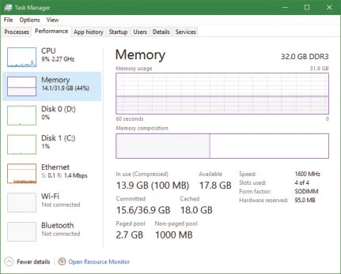
| タスクマネージャーの項目 | 意味 |
|---|---|
| メモリ使用量のグラフ | 線の高さは Windows が使用中の物理メモリ量を表します（同じ値を示すパフォーマンスカウンターはありません）。 線より上の領域は画面下にある「利用可能」の値に対応します。 グラフ全体の高さは、右上に示された合計値（この例では 31.9 GB）に対応します。 これは OS が利用できる RAM の総量で、BIOS のシャドウページやデバイスメモリなどは含まれません。 |
| メモリ構成 | 使用中、スタンバイ、変更済み、空きページとゼロページの各区分の割合を示します。各区分は後述します。 |
| タスクマネージャーの項目（続き） | 意味 |
|---|---|
| 物理メモリの合計（グラフの右上） | Windows が利用できる物理メモリ量です。 |
| 使用中（圧縮） | 現在使用中の物理メモリ量です。 括弧内は圧縮された物理メモリ量です。 値にポインターを重ねると、圧縮によって節約された容量が表示されます（後述の「メモリ圧縮」を参照）。 |
| キャッシュ済み | Memory カテゴリの Cache Bytes、Modified Page List Bytes、Standby Cache Core Bytes、Standby Cache Normal Priority Bytes、Standby Cache Reserve Bytes の合計です。 |
| 利用可能 | OS、プロセス、ドライバーがすぐに利用できるメモリ量で、スタンバイ、空き、ゼロの各ページリストの合計です。 |
| 空き | 空きページリストとゼロページリストの合計容量です。 空きメモリがあり、その領域が見えていれば、「メモリ構成」のバーの右端にポインターを重ねると確認できます。 |
| コミット済み | 二つの数値は、それぞれ Committed Bytes と Commit Limit カウンターの値です。 |
| ページプール | 空き領域と割り当て済み領域を含めた、ページプールの総サイズです。 |
| 非ページプール | 空き領域と割り当て済み領域を含めた、非ページプールの総サイズです。 |
ページプールと非ページプールの使われ方を詳しく確認するには、後述の「プール使用量の監視」で説明する PoolMon を使います。
Sysinternals の Process Explorer では、物理メモリと仮想メモリについて、より多くの情報を表示できます。 メイン画面の「View」メニューから「System Information」を選び、「Memory」タブを開きます。 次の図は 64 ビット版 Windows 10 の表示例です。各カウンターの多くは、対応する節で説明します。

Sysinternals には、さらに詳しいメモリ情報を表示するツールが二つあります。
- VMMap：プロセス内の仮想メモリの使用状況を詳しく表示します。
- RAMMap：物理メモリの使用状況を詳しく表示します。
いずれも、この章の後半の実験で使用します。
カーネルデバッガーの !vm コマンドは、メモリ関連のパフォーマンスカウンターで取得できる基本的なメモリ管理情報を表示します。
クラッシュダンプや応答が止まったシステムを調べるときに役立ちます。
次は、RAM を 32 GB 搭載した 64 ビット版 Windows 10 での出力例です。
lkd> !vm Page File: \??\C:\pagefile.sys Current: 1048576 Kb Free Space: 1034696 Kb Minimum: 1048576 Kb Maximum: 4194304 Kb Page File: \??\C:\swapfile.sys Current: 16384 Kb Free Space: 16376 Kb Minimum: 16384 Kb Maximum: 24908388 Kb No Name for Paging File Current: 58622948 Kb Free Space: 57828340 Kb Minimum: 58622948 Kb Maximum: 58622948 Kb Physical Memory: 8364281 ( 33457124 Kb) Available Pages: 4627325 ( 18509300 Kb) ResAvail Pages: 7215930 ( 28863720 Kb) Locked IO Pages: 0 ( 0 Kb) Free System PTEs: 4295013448 (17180053792 Kb) Modified Pages: 68167 ( 272668 Kb) Modified PF Pages: 68158 ( 272632 Kb) Modified No Write Pages: 0 ( 0 Kb) NonPagedPool Usage: 495 ( 1980 Kb) NonPagedPoolNx Usage: 269858 ( 1079432 Kb) NonPagedPool Max: 4294967296 (17179869184 Kb) PagedPool 0 Usage: 371703 ( 1486812 Kb) PagedPool 1 Usage: 99970 ( 399880 Kb) PagedPool 2 Usage: 100021 ( 400084 Kb) PagedPool 3 Usage: 99916 ( 399664 Kb) PagedPool 4 Usage: 99983 ( 399932 Kb) PagedPool Usage: 771593 ( 3086372 Kb) PagedPool Maximum: 4160749568 (16642998272 Kb) Session Commit: 12210 ( 48840 Kb) Shared Commit: 344197 ( 1376788 Kb) Special Pool: 0 ( 0 Kb) Shared Process: 19244 ( 76976 Kb) Pages For MDLs: 419675 ( 1678700 Kb) Pages For AWE: 0 ( 0 Kb) NonPagedPool Commit: 270387 ( 1081548 Kb) PagedPool Commit: 771593 ( 3086372 Kb) Driver Commit: 24984 ( 99936 Kb) Boot Commit: 100044 ( 400176 Kb)
System PageTables: 5948 ( 23792 Kb) VAD/PageTable Bitmaps: 18202 ( 72808 Kb) ProcessLockedFilePages: 299 ( 1196 Kb) Pagefile Hash Pages: 33 ( 132 Kb) Sum System Commit: 1986816 ( 7947264 Kb) Total Private: 2126069 ( 8504276 Kb) Misc/Transient Commit: 18422 ( 73688 Kb) Committed pages: 4131307 ( 16525228 Kb) Commit limit: 9675001 ( 38700004 Kb) ...
容量表記が併記されている項目では、括弧の外の数値は小ページ（4 KB）の枚数です。 出力項目の多くは、この章の関連する箇所で詳しく説明します。
メモリマネージャー内部の同期
Windows エグゼクティブのほかの構成要素と同じく、メモリマネージャーは再入可能で、マルチプロセッサシステム上での同時実行をサポートします。 複数のスレッドがリソースを使っても互いのデータを壊さないように、スピンロックやインターロック命令などを使って内部データ構造へのアクセスを制御します。 同期オブジェクトについては、Part 2 の第8章「システムメカニズム」を参照してください。
システム全体で共有され、アクセスの同期が必要なリソースには、次のものがあります。
- システム仮想アドレス空間のうち動的に割り当てられた領域
- システムのワーキングセット
- カーネルメモリプール
- ロード済みドライバーの一覧
- ページファイルの一覧
- 物理メモリのページリスト
- イメージのベースアドレスをランダム化する、アドレス空間配置のランダム化（ASLR）用のデータ構造
- ページフレーム番号（PFN）データベースの各エントリ
プロセスごとのメモリ管理用データ構造には、次のロックがあります。
- ワーキングセットロック：ワーキングセットのリストを変更している間、保持します。
- アドレス空間ロック：アドレス空間を変更している間、保持します。
どちらもプッシュロックで実装されています。プッシュロックについては Part 2 の第8章を参照してください。
メモリマネージャーのサービス
メモリマネージャーは、仮想メモリを割り当てたり解放したりするシステムサービスを提供します。 ほかにも、プロセス間でのメモリ共有、ファイルのメモリへのマッピング、仮想ページのディスクへの書き出し、仮想ページ範囲の情報の取得、ページ保護の変更、仮想ページの物理メモリへの固定ができます。
エグゼクティブのほかのサービスと同じように、メモリ管理サービスの呼び出し元は、操作対象をプロセスハンドルで指定できます。 自分自身のメモリだけでなく、必要な権限があれば別のプロセスのメモリも操作できます。 たとえば、親プロセスは既定で子プロセスの仮想メモリを操作する権限を持ちます。 子プロセスのハンドルを引数として渡せば、そのメモリを割り当て、解放し、読み書きできます。 サブシステムはこの仕組みでクライアントプロセスのメモリを管理します。 対象プロセスのメモリを読み書きする必要があるデバッガーにも、この仕組みが使われます。
これらのサービスの大半は Windows API で利用できます。 アプリケーションがメモリ管理に使う Windows API は、図5-1のように四つのグループに分かれます。
- 仮想メモリ API：汎用のメモリ割り当てと解放を行う最も低レベルの API で、常にページ単位で動作します。
メモリマネージャーの機能を直接利用でき、
VirtualAlloc、VirtualFree、VirtualProtect、VirtualLockなどが含まれます。 - ヒープ API：通常は1ページ未満の小さな領域を割り当てます。
内部では仮想メモリ API を使い、その上で領域を管理します。
HeapAlloc、HeapFree、HeapCreate、HeapReAllocなどがあり、詳しくは後述の「ヒープマネージャー」を参照してください。 - Local／Global API：16 ビット版 Windows に由来する API で、現在はヒープ API で実装されています。
- メモリマップトファイル API：ファイルをメモリにマッピングしたり、協調するプロセス間でメモリを共有したりします。
CreateFileMapping、OpenFileMapping、MapViewOfFileなどがあります。

図5-1の点線の枠は、C／C++ ランタイムがヒープ API を使ってメモリを管理する、典型的な実装を表します。
malloc、free、realloc、C++ の new 演算子や delete 演算子が該当します。
点線なのは、この実装が一般的ではあるものの、コンパイラに依存し、必須ではないためです。
Ntdll.dll に実装された C ランタイム相当の関数はヒープ API を使います。
メモリマネージャーは、エグゼクティブのほかのカーネルモードコンポーネントとデバイスドライバーにもサービスを提供します。
例として、物理メモリの割り当てと解放や、直接メモリアクセス（DMA）で転送するページの物理メモリへの固定があります。
これらの関数名は Mm で始まります。
システムヒープ（ページプールと非ページプール）の割り当てや解放、ルックアサイドリストの操作には、メモリマネージャーそのものではなく、名前が Ex で始まるエグゼクティブのサポートルーチンも使います。
これらは後述の「カーネルモードのヒープ（システムメモリプール）」で説明します。
ページの状態とメモリの割り当て
プロセスの仮想アドレス空間にあるページは、空き、予約済み、コミット済み、共有可能のいずれかです。 コミット済みページと共有可能なページは、アクセスすると最終的に有効な物理ページに対応付けられます。 ここでいうコミット済みページは、ほかのプロセスと共有できないため、プライベートページとも呼びます。 共有可能なページは、実際には一つのプロセスだけが使っている場合もあります。
プライベートページを割り当てる VirtualAlloc、VirtualAllocEx、VirtualAllocExNuma は、最終的にエグゼクティブ内のメモリマネージャーの関数 NtAllocateVirtualMemory を呼び出します。
これらの関数では、メモリの予約とコミットの両方ができます。
予約は、配列などに後で使えるように、ほとんどシステムリソースを消費せず連続した仮想アドレスの範囲を確保する操作です。
アプリケーションは実行中に必要になった部分だけをコミットできます。
必要なサイズがあらかじめ分かっているなら、一度の呼び出しで予約とコミットを行うこともできます。
どちらの場合も、コミットしたページにはプロセス内のどのスレッドからでもアクセスできます。
空き領域や予約しただけの領域にはアクセスを処理できる記憶領域が対応付けられていないため、アクセスするとアクセス違反例外が発生します。
まだ一度もアクセスしていないコミット済みのプライベートページは、初回アクセス時にゼロで初期化されます（デマンドゼロ）。 物理メモリが必要になれば、OS がそのページをページファイルに自動で書き出す場合があります。 ここでいう「プライベート」とは、通常はほかのプロセスからアクセスできないことを指します。
注：ReadProcessMemory や WriteProcessMemory は別のプロセスのメモリに直接アクセスするように見えますが、実装ではカーネルモードコードが対象プロセスのコンテキストで実行されます（対象プロセスへのアタッチ）。
対象のセキュリティ記述子が呼び出し元に PROCESS_VM_READ または PROCESS_VM_WRITE の対応するアクセス権を許可しているか、呼び出し元が SeDebugPrivilege 特権を持っている必要があります。
既定では、この特権を付与されるのは Administrators グループのメンバーだけです。
共有ページは通常、セクションのビューにマッピングされます。 ビューはファイルの一部または全体に対応しますが、ページファイルの領域に対応することもあります。 どの共有ページも、ほかのプロセスと共有できます。 Windows API では、セクションはファイルマッピングオブジェクトとして公開されています。
いずれかのプロセスが共有ページに初めてアクセスすると、対応するマップトファイルからページが読み込まれます。 ただし、セクションがページファイルに対応する場合は、ゼロで初期化されたページが作られます。 ページが物理メモリに残っていれば、後からアクセスするプロセスはその内容をそのまま使えます。 システムが共有ページを先読みしている場合もあります。 共有ページの詳細は、後述の「共有メモリとマップトファイル」および「セクションオブジェクト」を参照してください。
変更されたページは、プロセスのワーキングセットからシステム共通の変更済みページリストに移され、そこからディスクまたはリモートストレージへ書き出されます。
この処理を変更済みページの書き出しと呼びます。
ワーキングセットと変更済みページリストについては、この章の後半で説明します。
マップトファイルのページは、FlushViewOfFile を明示的に呼び出すか、メモリ需要に応じてマップ済みページライターが処理することで、元のファイルに書き戻せます。
VirtualFree または VirtualFreeEx を使うと、プライベートページのコミットを取り消したり、アドレス空間を解放したりできます。
コミットだけを取り消しても領域は予約されたままですが、解放するとコミットも予約も解除されます。
先にアドレス空間を予約し、必要になったページだけをコミットすれば、連続した仮想アドレスを使いながら、必要になるまでシステムのコミット使用量を増やさずに済みます。 予約そのものは実メモリをほとんど消費しません。 プロセスのアドレス空間の状態を表す比較的小さなデータ構造を作成または更新するだけだからです。 そのデータ構造であるページテーブルと仮想アドレス記述子（VAD）は、この章の後半で説明します。
広い領域を予約して必要な部分だけをコミットする代表例が、スレッドごとのユーザーモードスタックです。
スレッドを作成するとき、プロセスのアドレス空間の連続領域を予約してスタックを作ります。
既定のサイズは 1 MB ですが、CreateThread や CreateRemoteThread（または CreateRemoteThreadEx）の引数で上書きできます。
リンカーの /STACK オプションで実行イメージごとに指定することもできます。
既定ではスタックの最初のページをコミットし、その次をガードページとして設定します。
コミット済みの範囲を越えるアクセスはガードページで検知し、スタックのコミット範囲を広げます。
予約済みページとコミット済みページの比較
Sysinternals の TestLimit は、大きな仮想メモリ領域を予約したり、プライベートメモリとしてコミットしたりできます。 両者の違いを Process Explorer で確認します。
- コマンドプロンプトを二つ開きます。
- 一方のコマンドプロンプトで TestLimit を実行し、大きなメモリ領域を予約します。
C:\temp>testlimit -r 1 -c 800 Testlimit v5.24 - test Windows limits Copyright (C) 2012-2015 Mark Russinovich Sysinternals - wwww.sysinternals.com Process ID: 18468 Reserving private bytes 1 MB at a time ... Leaked 800 MB of reserved memory (800 MB total leaked). Lasterror: 0 The operation completed successfully.
- もう一方で同じ程度のメモリをコミットします。
C:\temp>testlimit -m 1 -c 800 Testlimit v5.24 - test Windows limits Copyright (C) 2012-2015 Mark Russinovich Sysinternals - wwww.sysinternals.com Process ID: 14528 Leaking private bytes 1 KB at a time ... Leaked 800 MB of private memory (800 MB total leaked). Lasterror: 0 The operation completed successfully.
- タスクマネージャーの「詳細」タブを開き、「コミット サイズ」列を追加します。
- 一覧から二つの
TestLimit.exeを探します。次の図のように表示されます。
タスクマネージャーでのコミットサイズの比較 - タスクマネージャーにはコミットサイズが表示されますが、もう一方の TestLimit が予約したメモリの量を示す項目はありません。
- Process Explorer を開きます。
- 列の選択画面で「Process Memory」タブを開き、「Private Bytes」と「Virtual Size」を有効にします。
- メイン画面から二つの
TestLimit.exeプロセスを探します。
Process Explorer での Private Bytes と Virtual Size の比較 - 二つのプロセスの「Virtual Size」は同じですが、「Private Bytes」が「Virtual Size」に近いのは一方だけです。
もう一方の TestLimit プロセス（PID 18468）で二つの値が大きく異なるのは、予約しただけのメモリがあるためです。
パフォーマンスモニターでも、
ProcessカテゴリのVirtual BytesとPrivate Bytesを使って同じ比較ができます。
コミット使用量とコミット上限
タスクマネージャーの「パフォーマンス」タブで「メモリ」を選ぶと、「コミット済み」に二つの数値が表示されます。 メモリマネージャーは、コミット済みのプライベートメモリなどの使用量をシステム全体で追跡します。 最初の数値はシステム全体でコミットされている仮想メモリの合計で、コミット使用量（commit charge）と呼びます。
同時にコミットできる仮想メモリの量には、システム全体でのコミット上限があります。 この上限は、すべてのページファイルの現在のサイズの合計に、OS が利用できる RAM の量を足したものに相当し、「コミット済み」の2番目の数値に表示されます。 ページファイルが設定上の最大サイズに達していなければ、メモリマネージャーは一つ以上のページファイルを自動で拡大して、コミット上限を引き上げられます。
詳しくは後述の「コミット使用量とシステムのコミット上限」を参照してください。
ページの物理メモリへの固定
通常は、どのページを物理メモリに残すかをメモリマネージャーに任せたほうがよいでしょう。 ただし、アプリケーションやデバイスドライバーがページを物理メモリに固定しておく必要がある場合もあります。 固定方法は二つあります。
- Windows アプリケーションは
VirtualLockを呼び出し、自プロセスのワーキングセットにページを固定できます。 固定を明示的に解除するか、固定したプロセスが終了するまで、ページはメモリに残ります。 固定できるページ数の上限は、ワーキングセットの最小サイズに相当するページ数から8ページを引いた値です。 より多く固定するには、SetProcessWorkingSetSizeExでワーキングセットの最小サイズを引き上げます（後述の「ワーキングセットの管理」を参照）。 - デバイスドライバーは、カーネルモードの
MmProbeAndLockPages、MmLockPagableCodeSection、MmLockPagableDataSection、MmLockPagableSectionByHandleを呼び出せます。 固定したページは、明示的に解除するまでメモリに残ります。 後ろの三つの API は、ドライバーの初回ロード時に常駐可能なページ数の予算に計上されるため、呼び出し時に固定ページ数の上限を課しません。 この事前計上によって、過剰な固定に起因するシステムクラッシュを防ぎます。 一方、MmProbeAndLockPagesでは固定するページを上限の範囲内で計上できなければ処理が失敗します。
アドレス空間の割り当て粒度
Windows は、プロセスのアドレス空間で予約する領域の開始位置を、システムの割り当て粒度の境界にそろえます。
この値は GetSystemInfo または GetNativeSystemInfo で取得でき、64 KB です。
メモリマネージャーはこの粒度により、プロセスの操作を支えるメタデータ（VAD やビットマップなど）を効率よく割り当てられます。
将来、より大きなページサイズ（たとえば最大 64 KB）を持つプロセッサや、システム全体で物理ページと仮想ページのアラインメントをそろえる必要がある仮想インデックス方式のキャッシュをサポートしても、既存のアプリケーションのアラインメントの前提を崩しにくくなります。
注：Windows のカーネルモードコードには同じ制約はなく、1ページ単位でメモリを予約できます。
ただし、この機能はデバイスドライバーには公開されていません。
主な用途は、スレッド環境ブロック（TEB）を隙間なく配置することです。
内部だけで使う仕組みなので、将来のプラットフォームが異なる値を必要とする場合にも変更しやすくなっています。
また、x86 システムで 16 ビットアプリケーションや MS-DOS アプリケーションをサポートするため、MapViewOfFileEx の MEM_DOS_LIM フラグで1ページ単位の割り当てを指定できます。
アドレス空間を予約する際、Windows は領域のサイズとベースアドレスがシステムのページサイズの倍数になるようにします。 たとえば、ページサイズが 4 KB の x86 システムで 18 KB の領域を要求すると、実際には 20 KB が予約されます。
同じ 18 KB の領域に対してベースアドレスを 3 KB に指定すると、実際の予約範囲は 24 KB になります。 この割り当てを記述する VAD の開始位置と長さも 64 KB の境界に合わせて丸められるので、VAD に含まれる残りの部分にはアクセスできません。
共有メモリとマップトファイル
Windows は、複数のプロセスや OS がメモリを共有できる仕組みを提供します。 共有メモリとは、複数のプロセスから見えるメモリ、つまり複数のプロセスの仮想アドレス空間に現れるメモリです。 たとえば二つのプロセスが同じ DLL を使うなら、参照されるコードページを物理メモリに一度だけ読み込み、その DLL をマップしたすべてのプロセスで共有できます（図5-2）。

プロセス固有のデータはそれぞれのプライベート領域に保持しながら、DLL のコードや変更されていないデータページを共有できます。 EXE や DLL などの実行イメージは、コードページを書き込み不可として、書き込みできるページをコピーオンライトとしてマッピングします。 そのため、この種の共有は自動で行われます。 スクリーンセーバー（SCR）のように、拡張子が異なっても実体が DLL であるファイルも同様です（後述の「コピーオンライト」を参照）。
図5-2の二つのプロセスは異なる実行イメージを使っていますが、DLL の内容は物理メモリに一組だけあり、両方のプロセスが参照します。
二つが実行する EXE は異なるため、そのコードは共有されません。
Notepad.exe を複数起動する場合のように、同じ実行イメージを使うプロセス間では EXE のコードも共有されます。
メモリマネージャーが共有メモリを実装する基本単位はセクションオブジェクトです。 Windows API ではファイルマッピングオブジェクトとして公開されています。 内部構造と実装については、後述の「セクションオブジェクト」を参照してください。
セクションを使うと、主記憶やページファイルに対応する領域だけでなく、アプリケーションがメモリと同じようにアクセスしたいほかのファイルも、仮想アドレス空間にマッピングできます。 セクションは一つのプロセスだけでも、複数のプロセスでも開けます。 したがって、セクションオブジェクトが常に共有メモリを表すとは限りません。
セクションオブジェクトは、ディスク上で開いているファイル（マップトファイル）または共有用のコミット済みメモリに対応付けられます。 後者をページファイルをバックストアとするセクションと呼びます。物理メモリが必要になったとき、そのページの書き出し先はマップトファイルではなくページファイルだからです。 ただし、Windows はページファイルなしでも動作するため、実際の保存先が物理メモリだけの場合もあります。 プライベートなコミット済みページなど、ユーザーモードから参照できるほかの空ページと同じく、共有のコミット済みページは初回アクセス時にゼロで埋められます。以前の内容が漏れるのを防ぐためです。
セクションオブジェクトを作るには、CreateFileMapping、CreateFileMappingFromApp、CreateFileMappingNuma またはその拡張版を呼び出します。
マッピングするファイルのハンドルを指定します。ページファイルをバックストアにする場合は INVALID_HANDLE_VALUE を渡します。
必要に応じて、名前とセキュリティ記述子も指定できます。
名前が付いていれば、別のプロセスが OpenFileMapping または CreateFileMapping* でそのセクションを開けます。
ハンドルを作成または開く際に継承可能と指定して渡す方法や、DuplicateHandle で複製して渡す方法もあります。
デバイスドライバーは ZwOpenSection、ZwMapViewOfSection、ZwUnmapViewOfSection を使ってセクションを扱えます。
セクションオブジェクトは、プロセスのアドレス空間に収まりきらないファイルを参照できます。
ページファイルをバックストアとする場合は、ページファイルや RAM に十分な容量が必要です。
大きなセクションを扱うときは、MapViewOfFile、MapViewOfFileEx、MapViewOfFileFromApp、MapViewOfFileExNuma のいずれかで範囲を指定し、必要な部分（セクションのビュー）だけをマッピングできます。
その時点で使うビューだけをマッピングすれば、アドレス空間を節約できます。
Windows アプリケーションは、ファイルを自分のアドレス空間内のデータとして扱い、メモリを読み書きする形でファイル I/O を行えます。 セクションを使うのはユーザーアプリケーションだけではありません。 イメージローダーは実行イメージ、DLL、デバイスドライバーをメモリにマッピングするために使い、キャッシュマネージャーはキャッシュ済みのファイルにアクセスするために使います。 キャッシュマネージャーとメモリマネージャーの連携は Part 2 のキャッシュマネージャーの解説を参照してください。 共有メモリ用のセクションのアドレス変換と内部データ構造は、後述の「セクションオブジェクト」で説明します。
Process Explorer で確認するメモリマップトファイル
Process Explorer の「View」から「Lower Pane View」の「DLLs」を選ぶと、プロセスのメモリマップトファイルを一覧できます。 名前は「DLLs」ですが、プロセスのアドレス空間にマッピングされたファイルがすべて表示されます。 DLL のほか、実行中の EXE や、マッピングされたデータファイルも含まれます。
次の図では、WinDbg が調査対象のメモリダンプを複数のビューにマッピングしています。
ほかの多くの Windows プログラムと同様、WinDbg 本体または使用中の Windows DLL は、国際化を支えるデータファイル Locale.nls へのアクセスにもメモリマッピングを使っています。
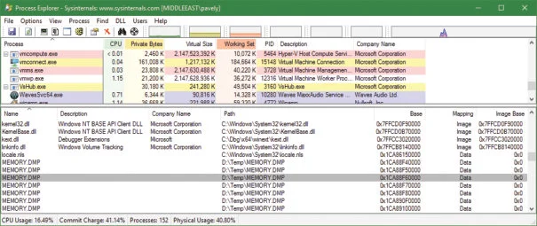
「Find」メニューの「Find Handle or DLL」（Ctrl＋F）でも、メモリマップトファイルを検索できます。 置き換えたい DLL やマップトファイルを、どのプロセスが使っているか調べるときに役立ちます。
メモリの保護
第1章「概念とツール」で説明したように、Windows はユーザープロセスが別のプロセスや OS のアドレス空間を、誤って、あるいは故意に壊さないようにします。 主な保護の仕組みは四つです。
- カーネルモードのシステムコンポーネントが使う、システム共通のデータ構造とメモリプールには、カーネルモードでのみアクセスできます。 ユーザーモードのスレッドがこれらのページにアクセスすると、ハードウェアがフォールトを発生させ、メモリマネージャーがスレッドにアクセス違反として通知します。
- 各プロセスは独立したプライベートアドレス空間を持ち、別のプロセスのスレッドからのアクセスを防ぎます。
共有メモリを参照するときも、各プロセスが使うのは自分の仮想アドレス空間にあるアドレスです。
例外として、対象のプロセスオブジェクトに対する仮想メモリの読み取り権限または書き込み権限、あるいは
SeDebugPrivilegeがあれば、ReadProcessMemoryやWriteProcessMemoryを使えます。 スレッドがアドレスを参照するたびに、仮想メモリ用のハードウェアとメモリマネージャーが仮想アドレスを物理アドレスに変換します。 Windows はこの対応付けを管理することで、別のプロセスのページへの権限のないアクセスを防ぎます。 - アドレス変換による保護に加え、Windows がサポートするすべてのプロセッサは、読み書き可能や読み取り専用などの保護をハードウェアで実施できます。
保護の詳細はプロセッサによって異なります。
たとえば、プロセスのコードページは読み取り専用に設定され、ユーザースレッドによる書き換えを防ぎます。
Windows API のメモリ保護オプションは表5-2を参照してください（
VirtualProtect、VirtualProtectEx、VirtualQuery、VirtualQueryExのドキュメントも参照）。
| 属性 | 説明 |
|---|---|
PAGE_NOACCESS | 読み取り、書き込み、コードの実行はいずれもアクセス違反になります。 |
PAGE_READONLY | 読み取れますが、書き込みはアクセス違反になります。実行禁止をサポートするプロセッサでは、コードの実行もアクセス違反になります。 |
PAGE_READWRITE | 読み書きできますが、実行できません。 |
PAGE_EXECUTE | 実行できますが、書き込みはアクセス違反になります。原著執筆時点のプロセッサでは読み取りもできます。 |
PAGE_EXECUTE_READ* | 実行と読み取りができますが、書き込みはアクセス違反になります。 |
PAGE_EXECUTE_READWRITE* | 読み取り、書き込み、実行ができます。 |
PAGE_WRITECOPY | 書き込むと、システムがそのプロセス専用のページのコピーを作ります。実行禁止をサポートするプロセッサでは、実行はアクセス違反になります。 |
PAGE_EXECUTE_WRITECOPY | 書き込むと、システムがそのプロセス専用のページのコピーを作ります。読み取りや実行ではコピーを作りません。 |
PAGE_GUARD | ガードページを読み書きすると EXCEPTION_GUARD_PAGE 例外が発生し、ガード属性が解除されます。したがって、最初のアクセスだけを検知できます。表中の保護属性のうち、PAGE_NOACCESS を除くものと組み合わせて指定できます。 |
PAGE_NOCACHE | キャッシュしない物理メモリを使います。一般の用途には推奨しませんが、映像のフレームバッファーをキャッシュせずにマッピングするなど、デバイスドライバーで役立ちます。 |
PAGE_WRITECOMBINE | プロセッサは書き込みをキャッシュしませんが、書き込み要求をまとめて効率化します。キャッシュする場合よりメモリトラフィックが大きくなることもあります。同じアドレスへの複数の書き込みは最後の一回だけが反映される場合があり、隣り合うアドレスへの書き込みはまとめられることがあります。一般のアプリケーションよりも、フレームバッファーをマッピングするデバイスドライバーなどで使われます。 |
PAGE_TARGETS_INVALID と PAGE_TARGETS_NO_UPDATE（Windows 10、Windows Server 2016） | 実行可能なページの Control Flow Guard（CFG）の動作を制御します。二つの定数は同じ値ですが、使う API が異なります。PAGE_TARGETS_INVALID はそのページへの間接呼び出しを CFG の検査で拒否し、プロセスを終了させます。PAGE_TARGETS_NO_UPDATE を VirtualProtect に指定すると、対象範囲を実行可能に変更しても CFG の状態は更新されません。詳しくは第7章「セキュリティ」を参照してください。 |
* 実行禁止にはハードウェアの対応が必要です。x64 プロセッサは対応していますが、古い x86 プロセッサは対応しません。非対応の場合、「実行」は「読み取り」と同じ扱いになります。
- 共有メモリ用のセクションオブジェクトには、Windows の標準のアクセス制御リスト（ACL）が付きます。 プロセスがセクションを開くときに確認するため、必要な権限を持つプロセスだけが共有メモリにアクセスできます。 マップトファイル用のセクションを作る場合にもアクセス制御が働きます。 元のファイルオブジェクトへの読み取り権限が少なくともなければ、セクションは作成できません。
スレッドがセクションのハンドルを開いた後も、メモリマネージャーとハードウェアによるページ保護は適用されます。 セクションの仮想ページの保護設定を変更できるのは、セクションオブジェクトの ACL が許可する範囲内に限られます。
たとえば、読み取り専用のセクションのページをコピーオンライトに変更することはできますが、読み書き可能には変更できません。 コピーオンライトであれば、同じデータを共有しているほかのプロセスには影響しないからです。
データ実行防止
データ実行防止（DEP）は、ページを実行禁止（NX）として保護する仕組みです。 実行禁止のページにある命令へ制御を移そうとすると、アクセスフォールトが発生します。 この保護により、スタックなどのデータページに置かれたコードが実行されるのを防ぎます。 また、コードの実行に必要なページのアクセス権を設定していないプログラムの不具合も検出できます。
カーネルモードで実行禁止ページのコードを実行しようとすると、システムはバグチェックコード ATTEMPTED_EXECUTE_OF_NOEXECUTE_MEMORY（0xFC）で停止します。コードの詳細は Part 2 のクラッシュダンプ分析を参照してください。
ユーザーモードで起きた場合は、該当するスレッドに STATUS_ACCESS_VIOLATION（0xC0000005）例外が通知されます。
実行に使うメモリを割り当てる場合は、ページ単位のメモリ割り当て関数で PAGE_EXECUTE、PAGE_EXECUTE_READ、PAGE_EXECUTE_READWRITE、PAGE_EXECUTE_WRITECOPY のいずれかを指定します。
DEP に対応する 32 ビット x86 システムでは、ページテーブルエントリ（PTE）のビット63が実行禁止を表します。
物理アドレス拡張（PAE）モードでないと PTE の幅は 32 ビットにとどまるため、DEP が使えるのは PAE モードで動作するときだけです。
そのため、32 ビットシステムのハードウェア DEP には PAE カーネル（%SystemRoot%\System32\Ntkrnlpa.exe）をロードする必要があります。
本書の対象バージョンでは、これが x86 でサポートされる唯一のカーネルです（後述の「x86 の仮想アドレス変換」を参照）。
ARM システムの DEP は AlwaysOn です。
64 ビット版 Windows では、64 ビットプロセスとデバイスドライバーすべてに実行保護が適用されます。ただし、BCD の nx が AlwaysOff の場合を除きます。
32 ビットプログラムに適用するかどうかは、後述するシステム設定で決まります。
64 ビット版 Windows で保護されるのは、ユーザーモードとカーネルモードのスレッドスタック、実行可能と明示されていないユーザーモードのページ、カーネルのページプール、カーネルのセッションプールです。
32 ビット版 Windows では、スレッドスタックとユーザーモードのページのみが対象で、ページプールとセッションプールには適用されません。
カーネルのメモリプールについては、後述の「カーネルモードのヒープ（システムメモリプール）」を参照してください。
32 ビットプロセスに実行保護が適用されるかどうかは、BCD の nx の値で決まります。
「パフォーマンス オプション」の「データ実行防止」タブ（図5-3）で設定すると、対応する値が BCD に反映されます。
この画面は「コンピューター」の「プロパティ」から「システムの詳細設定」を開き、「パフォーマンス」の「設定」を選ぶと表示されます。
BCD の設定値と画面の選択肢との対応を表5-3に示します。
実行保護の対象から除外される 32 ビットアプリケーションは、レジストリの HKLM\SOFTWARE\Microsoft\Windows NT\CurrentVersion\AppCompatFlags\Layers キーに記録されます。
値の名前は実行ファイルのフルパス、データは DisableNXShowUI です。

| 値 | 「データ実行防止」タブの選択肢 | 動作 |
|---|---|---|
OptIn | 重要な Windows プログラムおよびサービスについてのみ DEP を有効にする | Windows の主要なシステムイメージに DEP を適用します。32 ビットプロセスは実行中に DEP を設定できます。 |
OptOut | 次に選択するものを除くすべてのプログラムおよびサービスについて DEP を有効にする | 指定した実行ファイルを除いて DEP を適用します。32 ビットプロセスは実行中に DEP を設定できます。DEP に関するシステムの互換性修正も有効になります。 |
AlwaysOn | この画面では選択不可 | すべてのコンポーネントに DEP を適用し、アプリケーションを除外できません。32 ビットプロセスによる動的な設定も、システムの互換性修正も無効になります。 |
AlwaysOff | この画面では選択不可 | DEP を無効にします（非推奨）。32 ビットプロセスによる動的な設定も無効になります。 |
クライアント版 Windows では、32 ビット版でも 64 ビット版でも、32 ビットプロセスのうち主要な OS 実行ファイルだけに既定で DEP が適用されます（OptIn）。
自己解凍形式やパックされたプログラムなど、実行可能と明示されていないページからコードを実行する古いアプリケーションが動かなくなるのを避けるためです。
サーバー版 Windows では、既定で 32 ビットプログラム全体が適用対象です（OptOut）。
DEP を有効にしていても、古い実行イメージに対する互換性上の例外があります。
たとえば、イメージローダーは実行ファイルのシグネチャを既知のコピー防止方式（SafeDisc や SecuROM など）と照合します。 一致すれば、その方式で保護された古いゲームなどとの互換性を保つために、そのイメージの実行保護を無効にします。 イメージローダーについては第3章を参照してください。
Process Explorer で確認する DEP の状態
Process Explorer は、各プロセスの現在の DEP の状態と、保護が永続的かどうかを表示できます。 プロセスツリーの列見出しを右クリックし、「Select Columns」を選び、「Process Image」タブで「DEP Status」を有効にします。 表示は次の三通りです。
- DEP (permanent)：重要な Windows プログラムまたはサービスであるため、DEP が有効になっています。
- DEP：プロセスで DEP が有効です。32 ビットプロセス全体に適用するシステムポリシー、
SetProcessDEPPolicyなどの API 呼び出し、ビルド時のリンカーオプション/NXCOMPATなどが理由として考えられます。 - 空欄：システム全体のポリシー、明示的な API 呼び出し、互換性シムのいずれかによって DEP が無効になっています。
古い Active Template Library（ATL 7.1 以前）との互換性を保つため、Windows カーネルには ATL サンクのエミュレーション機能があります。
DEP 例外を起こした ATL サンクの命令列を検出し、期待される処理をエミュレートします。
新しい Microsoft C++ コンパイラーで /NXCOMPAT を指定すると、PE ヘッダーに IMAGE_DLLCHARACTERISTICS_NX_COMPAT が設定され、実行ファイルが DEP に対応しているとシステムに伝わります。
これにより ATL サンクのエミュレーションは適用されません。
システム設定が AlwaysOn の場合も、このエミュレーションは無効です。
システムが OptIn または OptOut の場合、32 ビットプロセスは SetProcessDEPPolicy で自分の DEP ポリシーを設定できます。
この API で DEP を有効にすると、そのプロセスが終了するまでプログラムから無効にはできません。
/NXCOMPAT なしでビルドしたイメージでは、同じ API で ATL サンクのエミュレーションを無効にすることもできます。
64 ビットプロセスの場合や、AlwaysOff または AlwaysOn で起動したシステムでは、この関数は失敗します。
GetProcessDEPPolicy は 32 ビットプロセスの DEP ポリシーを取得します。64 ビットプロセスは常に有効であり、この関数の対象外です。
GetSystemDEPPolicy は、表5-3に示したシステム全体のポリシーに対応する値を返します。
コピーオンライト
コピーオンライトは、メモリマネージャーが物理メモリを節約するためのページ保護方式です。 読み書き可能なページを含むセクションのビューをコピーオンライトでマッピングすると、その時点ではプロセス専用のコピーを作らず、実際に書き込むまでコピーを遅らせます。 図5-4では、二つのプロセスがコピーオンライトに設定された三つのページを共有しており、どちらもまだ書き込んでいません。

どちらかのプロセスのスレッドがページに書き込むと、フォールトが発生します。 書き込み先がコピーオンライトのページだと分かると、メモリマネージャーはフォールトをアクセス違反として通知する代わりに、次の処理を行います。
- 物理メモリに読み書き可能なページを新たに割り当てます。
- 元のページの内容を新しいページにコピーします。
- 書き込んだプロセスのページマッピング情報が新しいページを指すように更新します（ページマッピングはこの章の後半で説明します）。
- 例外を処理し、フォールトを起こした命令を再実行させます。
再実行した書き込みは成功します。 図5-5に示すとおり、コピーされたページは書き込んだプロセス専用で、元のページを共有しているほかのプロセスからは見えません。 ほかのプロセスが同じ共有ページに書き込んだ場合も、そのプロセス専用のコピーが作られます。

コピーオンライトの用途の一つが、デバッガーのブレークポイントです。 通常は書き込めないコードページも、ブレークポイントを設定する際にはデバッガーが命令を書き換える必要があります。
デバッガーは、ページの保護を PAGE_EXECUTE_READWRITE に変更してから、命令列を書き換えます。
コードページはマッピングされたセクションの一部なので、メモリマネージャーはブレークポイントを設定したプロセス専用のコピーを作り、ほかのプロセスは変更前のページを使い続けます。
コピーオンライトは、メモリマネージャーが随所で使う遅延評価の一例です。 コストの高い操作を必要になるまで先送りし、結局その操作が不要なら、処理時間を使わずに済みます。
コピーオンライトによるフォールトの発生頻度は、パフォーマンスモニターの Memory カテゴリにある Write Copies/Sec カウンターで確認できます。
Address Windowing Extensions
32 ビット版 Windows がサポートする物理メモリは最大 64 GB ですが（表2-2）、32 ビットのユーザープロセスが使える仮想アドレス空間は既定で 2 GB です。
BCD の increaseuserva オプションを使うと、最大 3 GB に設定できます（後述の「仮想アドレス空間のレイアウト」を参照）。
一つのプロセスで 2 GB（設定によっては 3 GB）を超えるデータを扱うアプリケーションは、ファイルマッピングを使い、アドレス空間の一部に大きなファイルの異なる範囲を差し替えながらマッピングできます。
ただし、マッピングを切り替えるたびに、相当量のページングが発生します。
Windows は、より高速に、より細かく制御できる方法として Address Windowing Extensions（AWE）を提供します。 AWE によって、プロセスは仮想アドレス空間に収まりきらない量の物理メモリを割り当てられます。 参照したい物理メモリの範囲を仮想アドレス空間の一部にその都度マッピングして、アクセスします。
AllocateUserPhysicalPagesまたはAllocateUserPhysicalPagesNumaで物理メモリを割り当てます。SeLockMemoryPrivilegeが必要です。VirtualAlloc、VirtualAllocEx、VirtualAllocExNumaのいずれかにMEM_PHYSICALを指定し、物理メモリへの窓として使う仮想アドレス領域を一つ以上確保します。- ここまでが初期化です。実際にメモリを使うには、
MapUserPhysicalPagesまたはMapUserPhysicalPagesScatterで、手順1の物理メモリの一部を手順2で確保した窓にマッピングします。
図5-6のアプリケーションは、仮想アドレス空間に 256 MB の窓を確保し、物理メモリを 4 GB 割り当てています。
MapUserPhysicalPages または MapUserPhysicalPagesScatter で、物理メモリの任意の部分をこの窓にマッピングできます。
一度にアクセスできる量は窓の大きさで決まり、ほかの部分を使うときはマッピングを切り替えます。

AWE はどの Windows エディションでも使え、システムの物理メモリの量にも依存しません。
特に役立つのは 2 GB を超える物理メモリを搭載した 32 ビットシステムです。32 ビットプロセスが仮想アドレス空間より多くの RAM を使えるからです。
また、AWE のメモリはページアウトされないため、別の OS で起動してページファイルを調べても、そのデータのコピーは見つかりません。
一般のページを VirtualLock で固定した場合も同様です。
AWE で割り当ててマッピングするメモリには、次の制約があります。
- プロセス間でページを共有できません。
- 同じ物理ページを複数の仮想アドレスにマッピングできません。
- ページ保護は、読み書き可能、読み取り専用、アクセス不可に限られます。
64 ビット版 Windows では、プロセスごとの仮想アドレス空間は 128 TB ですが、RAM の上限は Windows Server 2016 でも 24 TB です。 この構成では物理メモリがプロセスの仮想アドレス空間に収まるため、それを超える RAM を参照する目的で AWE を使う必要はありません。 一方、プロセスのアドレス空間にページアウトされない領域を設ける用途では、引き続き役立ちます。 AWE はシステムのページサイズである 4 KB 単位で使え、64 KB 単位のファイルマッピング API より細かく制御できます。
物理メモリが 4 GB を超えるシステムで、メモリをマッピングするページテーブルのデータ構造は、後述の「x86 の仮想アドレス変換」を参照してください。
カーネルモードのヒープ（システムメモリプール）
システムの初期化時に、メモリマネージャーはサイズが動的に変わる二種類のメモリプール（ヒープ）を作ります。 多くのカーネルモードコンポーネントは、システムメモリをここから割り当てます。
- 非ページプール：物理メモリに常駐するシステム仮想アドレスの範囲です。 アクセスしてもページフォールトが発生しないので、どの割り込み要求レベル（IRQL）からでも使えます。 DPC／ディスパッチレベル以上ではページフォールトを解決できないため、そのレベルで実行する可能性のあるコードと、参照する可能性のあるデータは、ページアウトされないメモリに置きます。
- ページプール：ページインとページアウトが可能な、システム空間の仮想メモリ領域です。 DPC／ディスパッチレベル以上からアクセスする必要のないデバイスドライバーが使用できます。 どのプロセスコンテキストからでもアクセスできます。
両方のプールはアドレス空間のシステム領域にあり、すべてのプロセスの仮想アドレス空間にマッピングされます。
エグゼクティブは、これらのプールから割り当てたり、割り当てを解放したりするルーチンを提供します。
詳しくは WDK ドキュメントの ExAllocatePool、ExAllocatePoolWithTag、ExFreePool で始まる関数を参照してください。
起動時には、システム全体のページプールを構成する四つのページプールと、二つの非ページプールが作られます。 システムの NUMA ノード数に応じてプールが追加され、その数は最大64に達します。 ページプールを複数に分けることで、プール操作が同時に呼ばれたときにシステムコードが待たされる頻度を減らせます。 各プールは異なる NUMA ノードに対応する仮想アドレスの範囲にマッピングされます。 大ページのルックアサイドリストなど、プール割り当てを記述するデータ構造も複数の NUMA ノードに分散してマッピングされます。
ほかにも用途や性質の異なるプールがあります。 セッション空間には、セッション内の全プロセスに共通するデータ用のプール領域があります。 特殊プールから割り当てた領域はアクセス不可のページで囲まれています。 割り当てた範囲の前後にアクセスするコードの不具合を切り分けるためです。
プールのサイズ
非ページプールの初期サイズはシステムの物理メモリ量で決まり、必要になれば拡大します。 初期サイズは RAM の3％です。 3％が 40 MB 未満なら、RAM の10％が 40 MB を超えるときは 40 MB を使い、それ以外では RAM の10％を初期サイズに使います。 Windows はプールの最大サイズを動的に決め、表5-4の上限まで拡大できます。
| プールの種類 | 32 ビット | 64 ビット（Windows 8、Server 2012） | 64 ビット（Windows 8.1、10、Server 2012 R2、2016） |
|---|---|---|---|
| 非ページ | 物理メモリの75％または 2 GB の小さい方 | 物理メモリの75％または 128 GB の小さい方 | 16 TB |
| ページ | 2 GB | 384 GB | 15.5 TB |
Windows 8.x と Windows Server 2012／2012 R2 は、これらのサイズのうち四つを計算し、カーネル変数に格納します。
パフォーマンスカウンターで取得できる値は三つあり、そのうち一つはカウンターの値としてのみ計算されます。
Windows 10 と Windows Server 2016 では、グローバル変数がメモリ管理構造体 MiState（型は MI_SYSTEM_INFORMATION）のフィールドに移されました。
これらの値は Vs メンバー（型は _MI_VISIBLE_STATE）にあり、グローバル変数 MiVisibleState もこのメンバーを指します。
表5-5に、値を調べるための変数とカウンターを示します。
| カーネル変数 | パフォーマンスカウンター | 値の意味 |
|---|---|---|
MmSizeOfNonPagedPoolInBytes | Memory: Pool Nonpaged Bytes | 非ページプールの初期サイズです。システムはメモリ需要に応じてサイズを増減できます。変化はカーネル変数には反映されませんが、カウンターには反映されます。 |
MmMaximumNonPagedPoolInBytes（Windows 8.x、Server 2012／2012 R2） | なし | 非ページプールの最大サイズです。 |
MiVisibleState->MaximumNonPagePoolInBytes（Windows 10、Server 2016） | なし | 非ページプールの最大サイズです。 |
| なし | Memory: Pool Paged Bytes | ページプール全体の現在の仮想サイズです。 |
MmPagedPoolWs（MMSUPPORT 型）の WorkingSetSize（ページ数。Windows 8.x、Server 2012／2012 R2） | Memory: Pool Paged Resident Bytes | ページプールのうち現在物理メモリに常駐している部分のサイズです。 |
MmSizeOfPagedPoolInBytes（Windows 8.x、Server 2012／2012 R2） | なし | ページプールの最大仮想サイズです。 |
MiState.Vs.SizeOfPagedPoolInBytes（Windows 10、Server 2016） | なし | ページプールの最大仮想サイズです。 |
プールの最大サイズを調べる
プールの最大サイズは Process Explorer またはライブカーネルデバッグ（第1章を参照）で調べられます。 Process Explorer では「View」メニューの「System Information」を選び、「Memory」タブをクリックします。 次の図のように「Kernel Memory」欄にプールの上限が表示されます。

注：Process Explorer でこの情報を取得するには、稼働中のカーネルに対応するシンボルが必要です。 設定方法は、第1章の Process Explorer でプロセスの詳細を確認する実験を参照してください。
カーネルデバッガーでは、この章の前半で紹介した !vm コマンドで同じ情報を確認できます。
プール使用量の監視
Memory パフォーマンスオブジェクトには、非ページプールとページプールの使用量を調べるカウンターがあります。
ページプールには仮想サイズと物理メモリに常駐するサイズのカウンターがそれぞれあります。
さらに詳しい使用状況は、WDK の Tools ディレクトリにある PoolMon で監視できます。
PoolMon を起動すると、図5-7のような画面が表示されます。

強調表示された行は、前の更新から値が変わった行です。 実行中に / を押すと強調表示が切り替わり、? を押すとヘルプを表示できます。 監視対象をページプール、非ページプール、両方から選択でき、並べ替え順も変えられます。 たとえば P キーを押して非ページプールだけを表示し、D キーを押して「Diff」列で並べ替えると、非ページプールに最も多く残っている割り当ての種類を調べられます。
コマンドラインオプションを使うと、特定のタグだけを監視したり、特定のタグを除外したりできます。
たとえば poolmon -iCM は、レジストリを管理する構成マネージャーの割り当てに使われる CM タグだけを監視します。
各列の意味を表5-6に示します。
| 列 | 意味 |
|---|---|
| Tag | プールの割り当てに付けられた4バイトのタグです。 |
| Type | プールの種類（ページプールか非ページプールか）です。 |
| Allocs | 割り当ての累計です。括弧内は前回の表示更新からの増分です。 |
| Frees | 解放の累計です。括弧内は前回の表示更新からの増分です。 |
| Diff | 割り当ての回数から解放の回数を引いた値です。 |
| Bytes | このタグの割り当てが消費している合計バイト数です。括弧内は前回の表示更新との差です。 |
| Per Alloc | このタグの割り当て1件あたりのサイズ（バイト）です。 |
Windows が使うプールタグの意味は、Debugging Tools for Windows の Triage サブディレクトリにある Pooltag.txt を参照してください。
このファイルにはサードパーティーのデバイスドライバーのタグが掲載されていませんが、WDK に付属する 32 ビット版 PoolMon の -c オプションで、ローカルのタグ一覧 Localtag.txt を生成できます。
サードパーティー製も含め、システム上で見つかったドライバーが使用するタグが含まれます。
ロード後にドライバーのバイナリが削除されている場合、そのタグは検出されません。
Sysinternals の Strings.exe でドライバーのファイルを調べ、特定のプールタグを検索することもできます。
たとえば、次のコマンドは文字列 abcd を含むドライバーを探します。
strings %SYSTEMROOT%\system32\drivers\*.sys | findstr /i "abcd"
ドライバーは %SystemRoot%\System32\Drivers にあるとは限りません。
ロード済みの全ドライバーのフルパスを調べるには、次の手順を使います。
- 「スタート」メニューを開き、
Msinfo32と入力します。「システム情報」が候補に表示されます。 - 「システム情報」を起動します。
- 「ソフトウェア環境」を選びます。
- 「システム ドライバー」を選びます。ロードした後にファイルが削除されたドライバーは一覧に表示されません。
ドライバーごとのプール使用量を調べる別の方法は、第6章で説明する Driver Verifier のプール追跡を有効にすることです。
この方法ではプールタグからドライバーを割り出す必要はありませんが、対象ドライバーで Driver Verifier を有効にするには再起動が必要です。
プール追跡を有効にした状態で再起動したら、Driver Verifier Manager（%SystemRoot%\System32\Verifier.exe）を開くか、Verifier /Log でプール使用量をファイルに記録します。
カーネルデバッガーの !poolused でもプール使用量を確認できます。
!poolused 2 は非ページプール、!poolused 4 はページプールについて、プールタグを使用量の多い順に表示します。
次に出力の一部を示します。
lkd> !poolused 2 ........ Sorting by NonPaged Pool Consumed NonPaged Paged Tag Allocs Used Allocs Used File 626381 260524032 0 0 File objects Ntfx 733204 227105872 0 0 General Allocation , Binary: ntfs.sys MmCa 513713 148086336 0 0 Mm control areas for mapped files , Binary: nt!mm FMsl 732490 140638080 0 0 STREAM_LIST_CTRL structure , Binary: fltmgr.sys CcSc 104420 56804480 0 0 Cache Manager Shared Cache Map , Binary: nt!cc SQSF 283749 45409984 0 0 UNKNOWN pooltag 'SQSF', please update pooltag.txt FMfz 382318 42819616 0 0 FILE_LIST_CTRL structure , Binary: fltmgr.sys FMsc 36130 32950560 0 0 SECTION_CONTEXT structure , Binary: fltmgr.sys EtwB 517 31297568 107 105119744 Etw Buffer , Binary: nt!etw DFmF 382318 30585440 382318 91756320 UNKNOWN pooltag 'DFmF', please update pooltag.txt DFmE 382318 18351264 0 0 UNKNOWN pooltag 'DFmE', please update pooltag.txt FSfc 382318 18351264 0 0 Unrecoginzed File System Run Time allocations (update pooltag.w) , Binary: nt!fsrtl smNp 4295 17592320 0 0 ReadyBoost store node pool allocations , Binary: nt!store or rdyboost.sys Thre 5780 12837376 0 0 Thread objects , Binary: nt!ps Pool 8 12834368 0 0 Pool tables, etc.
プールのリークを調べる
この実験では、Sysinternals の Notmyfault で実際にページプールのリークを起こし、前の節で説明した方法で原因を突き止めます。 システムのメモリを消費する実験なので、検証用の環境で実施してください。
- OS のビット数に合った
Notmyfault.exeを起動します。たとえば、64 ビット環境では 64 ビット版を使います。 Notmyfault.exeはMyfault.sysデバイスドライバーをロードし、「Crash」タブを選んだ状態で「Not My Fault」画面を表示します。「Leak」タブを開きます。

- 「Leak/Second」が
1000 KBに設定されていることを確認します。 - 「Leak Paged」をクリックします。Notmyfault は、ページプールからメモリを割り当てる要求を Myfault ドライバーに送信し始めます。「Stop Paged」をクリックするまで、要求は送信され続けます。 通常、不具合のあるドライバーを使ってリークを起こしたプログラムを閉じても、リークしたページプールのメモリは再起動まで解放されません。 Myfault ドライバーは検証しやすいように、プロセスの終了を検出し、自分で割り当てたメモリを解放します。
- リークが続いている間に、タスクマネージャーの「パフォーマンス」タブで「メモリ」を選び、「ページ プール」の値が増えていくことを確認します。 Process Explorer でも、「View」から「System Information」を開き、「Memory」タブで確認できます。
- どのプールタグの割り当てがリークしているかを特定するため、PoolMon を実行して B キーを押し、バイト数順に並べ替えます。
- P キーを2回押し、ページプールだけを表示します。
Leakタグが一覧の上位へ移動します。 PoolMon は割り当てが変化した行を強調表示します。 - ページプールを使い切る前に「Stop Paged」をクリックします。
- 前節で説明した方法に従って Sysinternals の Strings を実行し、
Leakタグを含むドライバーのバイナリを探します。Myfault.sysが見つかり、このドライバーがLeakタグを使っていると確認できます。Strings %SystemRoot%\system32\drivers\*.sys | findstr Leak
ルックアサイドリスト
Windows には、ルックアサイドリストという高速なメモリ割り当ての仕組みがあります。 一般のプールでは異なるサイズを割り当てられますが、ルックアサイドリストには決まったサイズのブロックしか入りません。 プールのほうが柔軟ですが、ルックアサイドリストはスピンロックを使わないため高速です。
エグゼクティブのコンポーネントやデバイスドライバーは、頻繁に割り当てるデータ構造のサイズに合わせてリストを作成できます。
非ページプール用には ExInitializeNPagedLookasideList、ページプール用には ExInitializePagedLookasideList を使います（WDK ドキュメントを参照）。
I/O マネージャー、キャッシュマネージャー、オブジェクトマネージャーなどは、マルチプロセッサでの同期の負担を抑えるため、頻繁に参照するデータ構造のリストをプロセッサごとに作ります。
エグゼクティブは、256 バイト以下の小さな割り当てに使える汎用のルックアサイドリストも、ページプール用と非ページプール用にプロセッサごとに作成します。
作成直後など、リストが空の間は、ページプールまたは非ページプールから割り当てます。
解放されたブロックがリストにあれば、それを使ってすばやく割り当てられます。
ブロックが返却されるとリストが増えます。
プールの割り当てルーチンは、ドライバーやエグゼクティブがそのリストを使う頻度に応じて、保持するブロック数を自動で調整します。
割り当て頻度が高ければ多く保持し、リストが使われなければ減らします。
バランスセットマネージャーのスレッドが1秒に1回起き、ExAdjustLookasideDepth を呼んで調べます。
システムのルックアサイドリストを確認する
カーネルデバッガーの !lookaside で、システム上の各ルックアサイドリストの内容とサイズを表示できます。
以下は出力の一部です。
lkd> !lookaside Lookaside "nt!CcTwilightLookasideList" @ 0xfffff800c6f54300 Tag(hex): 0x6b576343 "CcWk" Type = 0200 NonPagedPoolNx Current Depth = 0 Max Depth = 4 Size = 128 Max Alloc = 512 AllocateMisses = 728323 FreeMisses = 728271 TotalAllocates = 1030842 TotalFrees = 1030766 Hit Rate = 29% Hit Rate = 29% Lookaside "nt!IopSmallIrpLookasideList" @ 0xfffff800c6f54500 Tag(hex): 0x73707249 "Irps" Type = 0200 NonPagedPoolNx Current Depth = 0 Max Depth = 4 Size = 280 Max Alloc = 1120 AllocateMisses = 44683 FreeMisses = 43576 TotalAllocates = 232027 TotalFrees = 230903 Hit Rate = 80% Hit Rate = 81%
Lookaside "nt!IopLargeIrpLookasideList" @ 0xfffff800c6f54600 Tag(hex): 0x6c707249 "Irpl" Type = 0200 NonPagedPoolNx Current Depth = 0 Max Depth = 4 Size = 1216 Max Alloc = 4864 AllocateMisses = 143708 FreeMisses = 142551 TotalAllocates = 317297 TotalFrees = 316131 Hit Rate = 54% Hit Rate = 54% ... Total NonPaged currently allocated for above lists = 0 Total NonPaged potential for above lists = 13232 Total Paged currently allocated for above lists = 0 Total Paged potential for above lists = 4176
ヒープマネージャー
多くのアプリケーションが割り当てるブロックは、VirtualAlloc などで領域を予約する際の割り当て粒度である 64 KB より小さくなります。
小さなブロックごとに大きな領域を用意すると、メモリ使用量や性能の面で不利です。
そこで Windows のヒープマネージャーは、ページ単位のメモリ割り当て関数で予約した大きな領域の中から、小さなブロックを切り出します。
割り当て粒度は 32 ビットシステムで8バイト、64 ビットシステムで16バイトです。
小さな割り当てのメモリ使用量を抑え、処理を効率化する設計です。
ヒープマネージャーは Ntdll.dll と Ntoskrnl.exe にあります。
Windows のヒープ API などのサブシステム API は Ntdll.dll の関数を呼び、エグゼクティブの各コンポーネントやデバイスドライバーは Ntoskrnl.exe の関数を呼びます。
名前が Rtl で始まるネイティブインターフェイスは、Windows 内部のコンポーネントまたはカーネルモードのデバイスドライバー向けです。
公開されている Windows のヒープ API（名前が Heap で始まるもの）は、Ntdll.dll のネイティブ関数に転送されます。
古い Windows アプリケーション向けに Local または Global で始まる API もあります。
これらは従来の動作を維持するため、ヒープマネージャーの専用インターフェイスを内部で呼び出します。
主な Windows のヒープ関数は次のとおりです。
HeapCreateとHeapDestroy：ヒープを作成、破棄します。作成時には、最初に予約するサイズとコミットするサイズを指定できます。HeapAlloc：ヒープからブロックを割り当てます。Ntdll.dllのRtlAllocateHeapに転送されます。HeapFree：HeapAllocで割り当てたブロックを解放します。HeapReAlloc：既存のブロックのサイズを増減します。Ntdll.dllのRtlReAllocateHeapに転送されます。HeapLockとHeapUnlock：ヒープ操作の排他制御を行います。HeapWalk：ヒープのエントリと領域を列挙します。
プロセスのヒープ
各プロセスは、少なくとも一つのヒープである既定のプロセスヒープを持ちます。
プロセスの起動時に作成され、プロセスが終了するまで破棄されません。
初期予約サイズは既定で 1 MB ですが、リンカーの /HEAP オプションを使うと、実行イメージにより大きな値を記録できます。
この値は最初の予約サイズにすぎず、ヒープは必要に応じて自動で拡大します。
最初にコミットするサイズも実行イメージに指定できます。
既定のヒープはプログラムが明示的に使うほか、一部の Windows 内部関数も暗黙に使います。
アプリケーションは GetProcessHeap で既定のヒープを取得できます。
HeapCreate で独自のプライベートヒープを追加し、不要になったら HeapDestroy で仮想アドレス空間を解放できます。
プロセスは全ヒープを配列で管理しており、スレッドは GetProcessHeaps で一覧を取得できます。
ユニバーサル Windows プラットフォーム（UWP）アプリのプロセスには、少なくとも次の三つのヒープがあります。
- 既定のプロセスヒープ。
- 同じセッションの
Csrss.exeに大きな引数を渡すための共有ヒープ。Ntdll.dllによるプロセス初期化の初期段階で、同 DLL のCsrClientConnectToServerが作成します。ハンドルはNtdll.dllのグローバル変数CsrPortHeapにあります。 - Microsoft C ランタイムライブラリが作るヒープ。ハンドルは
msvcrtモジュールのグローバル変数_crtheapにあり、malloc、free、new／delete演算子などが内部で使います。
ヒープは、VirtualAlloc で予約した大きな領域でも、プロセスのアドレス空間にマッピングしたファイルオブジェクトの領域でも割り当てを管理できます。
後者は実際にはほとんど使われず、Windows API でも公開されていませんが、二つのプロセス間、またはカーネルモードとユーザーモードのコンポーネント間でブロックの内容を共有するときに使えます。
Win32 GUI サブシステムのドライバー Win32k.sys は、この仕組みを使って GDI および USER オブジェクトをユーザーモードと共有します。
マップトファイルの領域にヒープを作る場合、ヒープ関数を呼ぶ側には次の制約があります。
- 内部のデータ構造がポインターを使うので、別のプロセスでは同じアドレスにマッピングする必要があります。
- プロセス間の同期や、カーネルコンポーネントとユーザープロセスの間の同期は、ヒープ関数でサポートされません。
- カーネルモードとユーザーモードで共有するヒープは、ユーザーモード側を読み取り専用にします。ユーザーモードコードが内部構造を破損させるとシステムがクラッシュするためです。また、カーネルモードのドライバーは、共有ヒープ経由でユーザーモードに漏れないよう、機密データをヒープに置かないようにします。
ヒープの種類
Windows 10 と Windows Server 2016 より前は、ヒープはNT ヒープの一種類だけでした。 NT ヒープの前段には、オプションで低フラグメンテーションヒープ（LFH）を置けます。
Windows 10 では、新しい種類としてセグメントヒープが導入されました。 NT ヒープと共通する要素はありますが、構造と実装は異なります。 既定では、すべての UWP アプリと一部のシステムプロセスがセグメントヒープを使い、それ以外のプロセスは NT ヒープを使います。 この設定はレジストリで変更できます（後述の「セグメントヒープ」を参照）。
NT ヒープの構造
図5-8のように、ユーザーモードの NT ヒープは、フロントエンドとバックエンド（ヒープコアとも呼ばれます）の二層からなります。 バックエンドは、セグメント内のブロック管理、セグメント自体の管理、ヒープを拡大する方針の決定、メモリのコミットとその取り消し、大きなブロックの管理を担います。

フロントエンドをバックエンドの上に置けるのは、ユーザーモードのヒープだけです。 Windows がサポートするフロントエンドは、後述する LFH 一種類です。
ヒープ操作の同期
ヒープマネージャーは既定で、複数のスレッドからの同時アクセスを扱えます。
プロセスがシングルスレッドで動くか、別の方法で同期を取っているなら、ヒープ作成時または割り当て時に HEAP_NO_SERIALIZE フラグを指定して、ヒープマネージャーでの同期を省けます。
ヒープの同期が有効な場合は、ヒープごとに一つのロックがあり、そのヒープの内部構造をすべて保護します。
複数回のヒープ関数呼び出しの間、ヒープの状態を変えたくない場合は、ヒープ全体をロックしてほかのスレッドからの操作を止めることもできます。
たとえば、複数のスレッドが同時にヒープを操作できる場合、HeapWalk でブロックを列挙するにはヒープをロックする必要があります。
ロックには HeapLock、解除には HeapUnlock を使います。
低フラグメンテーションヒープ
Windows で動く多くのアプリケーションは、ヒープを通常 1 MB 未満しか使いません。 この種のアプリケーションでは、要求サイズを満たす空きブロックのうち最小のものを選ぶベストフィット方式で、プロセスのメモリ使用量を抑えられます。 しかし、大きなヒープやマルチプロセッサ環境では、この方式だけではうまく対処できません。 ヒープが断片化し、割り当てに使えるメモリが減ることがあります。 異なるプロセッサで動くスレッドが同じサイズのブロックを頻繁に要求すると、各プロセッサがそのサイズのルックアサイドリストの先頭など、同じメモリ位置を更新しようとするため、対応するキャッシュラインで競合が起こり、性能が落ちることもあります。
低フラグメンテーションヒープ（LFH）は、ブロックサイズをあらかじめ定めたバケットに分けて管理し、断片化を抑えます。 割り当て要求を受けると、要求サイズを収容できる最小のブロックに対応するバケットを選びます。 最小のブロックは8バイトです。最初のバケットは1～8バイト、2番目は9～16バイトを扱います。 この刻みは32番目の249～256バイトまで続き、33番目は257～272バイトを扱います。 最後の128番目は15,873～16,384バイトを扱います（2進バディ方式）。 16,384バイトを超える割り当て要求は、そのままヒープのバックエンドに渡します。
| バケット番号 | 刻み幅（バイト） | 要求サイズの範囲（バイト） |
|---|---|---|
| 1–32 | 8 | 1–256 |
| 33–48 | 16 | 257–512 |
| 49–64 | 32 | 513–1,024 |
| 65–80 | 64 | 1,025–2,048 |
| 81–96 | 128 | 2,049–4,096 |
| 97–112 | 256 | 4,097–8,192 |
| 113–128 | 512 | 8,193–16,384 |
LFH は、ヒープマネージャーの中核機能とルックアサイドリストを使って、断片化と競合を抑えます。 Windows のヒープマネージャーは、ロック競合が発生したときや、LFH を使うと処理が速くなるサイズの要求が頻発するときに、LFH を自動で有効にできます。
大きなヒープでは、割り当てのかなりの部分が特定サイズの比較的少数のバケットに集中します。 LFH は同じサイズのブロックを効率よく扱うことで、このパターンに対応します。
複数のプロセッサが同じ内部データ構造を取り合わないよう、LFH は頻繁に参照する構造を、プロセッサ数の2倍のスロットに分けて持ちます。 スレッドをどのスロットに割り当てるかは LFH のアフィニティマネージャーが決めます。 最初は最初のスロットを使い、内部データへのアクセスで競合を検出すると、そのスレッドを別のスロットに切り替えます。 競合が続くと、さらに多くのスロットにスレッドが分散します。 スロットをバケットごとに管理することで、メモリアクセスの局所性を高め、全体のメモリ消費を抑えます。
フロントエンドとして LFH が有効でも、要求の少ないサイズは引き続きヒープの中核機能で処理することがあります。
頻繁に要求されるサイズは LFH が処理します。
一度有効になったヒープの LFH は無効化できません。
Windows 7 以前では、HeapSetInformation に HeapCompatibilityInformation クラスを指定して LFH を取り外せましたが、この指定は現在は無視されます。
セグメントヒープの構造
図5-9は、Windows 10 で導入されたセグメントヒープの構造を示します。
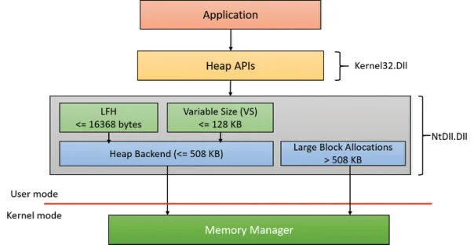
割り当てを処理する層は、要求サイズによって決まります。
- 16,368バイト以下の小さな要求には、そのサイズの要求が頻繁にある場合に限り、LFH アロケーターを使います。 この判定は NT ヒープの LFH フロントエンドと似ています。 LFH がまだ有効になっていない場合は、可変サイズ（VS）アロケーターを使います。
- 128 KB 以下で LFH が処理しない要求には、VS アロケーターを使います。VS と LFH はどちらも、必要に応じてバックエンドでヒープのサブセグメントを作成します。
- 128 KB を超え 508 KB 以下の要求は、ヒープのバックエンドが直接処理します。
- 508 KB を超える要求には、
VirtualAllocでメモリマネージャーを直接呼び出します。この大きさなら、既定の 64 KB の割り当て粒度を使い、サイズをページ単位に丸めても差が小さいためです。
セグメントヒープと NT ヒープには、次の違いがあります。
- セグメントヒープが NT ヒープよりやや遅い場合もあります。原著では、将来の Windows では同程度になると見込んでいます。
- セグメントヒープはメタデータに使うメモリが少なく、携帯電話のようにメモリ容量の小さい端末に適しています。
- NT ヒープはデータの間にメタデータを置きますが、セグメントヒープは両者を分けて置きます。そのため、ブロックのアドレスだけでは割り当てのメタデータにたどり着きにくくなります。
- セグメントヒープは拡張可能なヒープにしか使えず、呼び出し側が用意したマップトファイルを使えません。その条件で作成を要求すると、代わりに NT ヒープが作られます。
- どちらも LFH 方式の割り当てに対応しますが、実装は異なります。セグメントヒープの実装はメモリ消費と処理性能の両面で効率的です。
UWP アプリでは、主にメモリの消費を抑えるため、既定でセグメントヒープを使います。
システムプロセスでも、実行ファイル名が csrss.exe、lsass.exe、runtimebroker.exe、services.exe、smss.exe、svchost.exe の場合に使います。
既存のデスクトップアプリとの互換性に懸念があるため、セグメントヒープはデスクトップアプリの既定ではありません。
原著では、将来のバージョンで既定になる可能性があるとしています。
実行ファイルごとに切り替えるには、Image File Execution Options の FrontEndHeapDebugOptions（DWORD）を設定します。
- ビット2（値4）：無効にします。
- ビット3（値8）：有効にします。
システム全体で切り替えるには、HKLM\SYSTEM\CurrentControlSet\Control\Session Manager\Segment Heap に Enabled（DWORD）を追加します。
0 なら無効になり、0 以外なら有効になります。
UWP プロセスのヒープを調べる
WinDbg で UWP プロセスのヒープを確認します。
- Windows 10 で「スタート」を開き、「電卓」を検索して起動します。
- Windows 10 の電卓は UWP アプリ（
Calculator.exe）です。WinDbg を起動して電卓プロセスにアタッチします。 - アタッチすると、WinDbg は対象プロセスを中断します。
!heapでプロセスのヒープ一覧を表示します。
0:033> !heap Heap Address NT/Segment Heap 2531eb90000 Segment Heap 2531e980000 NT Heap 2531eb10000 Segment Heap 25320a40000 Segment Heap 253215a0000 Segment Heap 253214f0000 Segment Heap 2531eb70000 Segment Heap 25326920000 Segment Heap 253215d0000 NT Heap
- 各ヒープのハンドルと、セグメントヒープか NT ヒープかを確認します。 先頭は既定のプロセスヒープです。拡張可能で、既存のメモリブロックを使わないため、セグメントヒープとして作られています。 2番目は呼び出し側が用意したメモリブロックを使うヒープです（「プロセスのヒープ」を参照）。 セグメントヒープはこの使い方に対応しないため、NT ヒープになっています。
- NT ヒープは
ntdll!_HEAP構造体で管理されます。2番目のヒープの構造体を表示します。
0:033> dt ntdll!_heap 2531e980000 +0x000 Segment : _HEAP_SEGMENT +0x000 Entry : _HEAP_ENTRY +0x010 SegmentSignature : 0xffeeffee +0x014 SegmentFlags : 1 +0x018 SegmentListEntry : _LIST_ENTRY [ 0x00000253'1e980120 - 0x00000253'1e980120 ] +0x028 Heap : 0x00000253'1e980000 _HEAP +0x030 BaseAddress : 0x00000253'1e980000 Void +0x038 NumberOfPages : 0x10 +0x040 FirstEntry : 0x00000253'1e980720 _HEAP_ENTRY +0x048 LastValidEntry : 0x00000253'1e990000 _HEAP_ENTRY +0x050 NumberOfUnCommittedPages : 0xf +0x054 NumberOfUnCommittedRanges : 1 +0x058 SegmentAllocatorBackTraceIndex : 0
+0x05a Reserved : 0 +0x060 UCRSegmentList : _LIST_ENTRY [ 0x00000253'1e980fe0 - 0x00000253'1e980fe0 ] +0x070 Flags : 0x8000 +0x074 ForceFlags : 0 +0x078 CompatibilityFlags : 0 +0x07c EncodeFlagMask : 0x100000 +0x080 Encoding : _HEAP_ENTRY +0x090 Interceptor : 0 +0x094 VirtualMemoryThreshold : 0xff00 +0x098 Signature : 0xeeffeeff +0x0a0 SegmentReserve : 0x100000 +0x0a8 SegmentCommit : 0x2000 +0x0b0 DeCommitFreeBlockThreshold : 0x100 +0x0b8 DeCommitTotalFreeThreshold : 0x1000 +0x0c0 TotalFreeSize : 0x8a +0x0c8 MaximumAllocationSize : 0x00007fff'fffdefff +0x0d0 ProcessHeapsListIndex : 2 ... +0x178 FrontEndHeap : (null) +0x180 FrontHeapLockCount : 0 +0x182 FrontEndHeapType : 0 '' +0x183 RequestedFrontEndHeapType : 0 '' +0x188 FrontEndHeapUsageData : (null) +0x190 FrontEndHeapMaximumIndex : 0 +0x192 FrontEndHeapStatusBitmap : [129] "" +0x218 Counters : _HEAP_COUNTERS +0x290 TuningParameters : _HEAP_TUNING_PARAMETERS
FrontEndHeapは、フロントエンドがあるかどうかを示します。 出力例ではヌルで、フロントエンドがありません。 ヌルでなければ、サポートされるフロントエンドは LFH だけなので、LFH が使われています。- セグメントヒープは
ntdll!_SEGMENT_HEAP構造体で定義されます。既定のプロセスヒープを表示します。
0:033> dt ntdll!_segment_heap 2531eb90000 +0x000 TotalReservedPages : 0x815 +0x008 TotalCommittedPages : 0x6ac +0x010 Signature : 0xddeeddee +0x014 GlobalFlags : 0 +0x018 FreeCommittedPages : 0 +0x020 Interceptor : 0 +0x024 ProcessHeapListIndex : 1 +0x026 GlobalLockCount : 0 +0x028 GlobalLockOwner : 0 +0x030 LargeMetadataLock : _RTL_SRWLOCK +0x038 LargeAllocMetadata : _RTL_RB_TREE +0x048 LargeReservedPages : 0 +0x050 LargeCommittedPages : 0 +0x058 SegmentAllocatorLock : _RTL_SRWLOCK +0x060 SegmentListHead : _LIST_ENTRY [ 0x00000253'1ec00000 -
0x00000253'28a00000 ] +0x070 SegmentCount : 8 +0x078 FreePageRanges : _RTL_RB_TREE +0x088 StackTraceInitVar : _RTL_RUN_ONCE +0x090 ContextExtendLock : _RTL_SRWLOCK +0x098 AllocatedBase : 0x00000253'1eb93200 "" +0x0a0 UncommittedBase : 0x00000253'1eb94000 "--- memory read error at address 0x00000253'1eb94000 ---" +0x0a8 ReservedLimit : 0x00000253'1eba5000 "--- memory read error at address 0x00000253'1eba5000 ---" +0x0b0 VsContext : _HEAP_VS_CONTEXT +0x120 LfhContext : _HEAP_LFH_CONTEXT
Signatureフィールドで、二種類のヒープを区別できます。_HEAP構造体のSegmentSignatureも同じオフセット（0x10）にあります。 この配置により、RtlAllocateHeapなどの関数は、ヒープのハンドル（アドレス）だけでどちらの実装を使うか判別できます。- 出力の最後にある
_SEGMENT_HEAPの二つのフィールドには、VS と LFH のアロケーターの情報が格納されています。 - 各ヒープの詳細を確認するには、
!heap -sを実行します。
0:033> !heap -s Process Total Total Global Heap Reserved Committed Heap Address Signature Flags List Bytes Bytes Index (K) (K) 2531eb90000 ddeeddee 0 1 8276 6832 2531eb10000 ddeeddee 0 3 1108 868 25320a40000 ddeeddee 0 4 1108 16 253215a0000 ddeeddee 0 5 1108 20 253214f0000 ddeeddee 0 6 3156 816 2531eb70000 ddeeddee 0 7 1108 24 25326920000 ddeeddee 0 8 1108 32 **************************************************************************** ************* NT HEAP STATS BELOW **************************************************************************** ************* LFH Key : 0xd7b666e8f56a4b98 Termination on corruption : ENABLED Affinity manager status: - Virtual affinity limit 8 - Current entries in use 0 - Statistics: Swaps=0, Resets=0, Allocs=0 Heap Flags Reserv Commit Virt Free List UCR Virt Lock Fast
(k) (k) (k) (k) length blocks cont. heap --------------------------------------------------------------------------- ---------- 000002531e980000 00008000 64 4 64 2 1 1 0 0 00000253215d0000 00000001 16 16 16 10 1 1 0 N/A --------------------------------------------------------------------------- ----------
- 出力の前半には、セグメントヒープがあればその詳細が表示されます。後半には、そのプロセスの NT ヒープの詳細が表示されます。
デバッガーの !heap には、ヒープを表示、調査、検索するためのオプションが多数あります。
詳しくは Debugging Tools for Windows のドキュメントを参照してください。
ヒープのセキュリティ機能
ヒープマネージャーには、誤ったヒープの使い方を早期に検出し、アプリケーションの脆弱性が悪用された場合の影響を抑える機能があります。 NT ヒープとセグメントヒープはいずれも、メモリ破損が悪用される可能性を減らす仕組みを備えています。
ヒープは内部管理用のメタデータをランダム化して格納します。
内部構造を書き換えてクラッシュを回避したり、攻撃の痕跡を隠したりしにくくするためです。
ブロックのヘッダーには整合性チェックがあり、バッファーの範囲外書き込みなどによる破損を検出できます。
ヒープのベースアドレス（ハンドル）もある程度ランダム化されます。
プロセスが HeapSetInformation に HeapEnableTerminationOnCorruption クラスを指定すると、不整合の検出時に自動終了するよう設定できます。
破損後に意図しないコードが実行されるのを防ぐためです。
ブロックのメタデータはランダム化されているため、デバッガーでヘッダーのメモリをそのままダンプしても、サイズや使用中かどうかは見分けにくくなります。
LFH ブロックはヘッダーに別形式のメタデータを持ちますが、同様に一部がランダム化されています。
デバッガーの !heap -i は、LFH と通常のヒープブロックの両方についてメタデータを取得し、チェックサムや空きリストに不整合があれば報告します。
出力にはブロック全体のサイズ、要求されたサイズ、ブロックを含むセグメント、ヘッダーの部分チェックサムが含まれます。
ヘッダーを正しくデコードするには、そのブロックを含むヒープを、先に !heap -i にヒープハンドルを渡して指定しておく必要があります。
0:004> !heap -i 000001f72a5e0000 Heap context set to the heap 0x000001f72a5e0000
0:004> !heap -i 000001f72a5eb180 Detailed information for block entry 000001f72a5eb180 Assumed heap : 0x000001f72a5e0000 (Use !heap -i NewHeapHandle to change) Header content : 0x2FB544DC 0x1000021F (decoded : 0x7F01007E 0x10000048) Owning segment : 0x000001f72a5e0000 (offset 0) Block flags : 0x1 (busy ) Total block size : 0x7e units (0x7e0 bytes) Requested size : 0x7d0 bytes (unused 0x10 bytes) Previous block size: 0x48 units (0x480 bytes) Block CRC : OK - 0x7f Previous block : 0x000001f72a5ead00 Next block : 0x000001f72a5eb960
セグメントヒープ固有のセキュリティ機能
セグメントヒープには、メモリ破損やコードインジェクションを難しくする仕組みがあります。
- 連結リストの破損を検出したら即時終了：セグメントとサブセグメントは連結リストで管理します。NT ヒープと同様に、ノードの挿入や削除時に整合性を確認し、破損したノードを使った任意のメモリ位置への書き込みを防ぎます。破損を検出すると
RtlFailFastでプロセスを終了します。 - 赤黒木の破損を検出したら即時終了：バックエンドと VS の空き割り当ては赤黒木で管理します。ノードを挿入または削除する際に関係するノードを検証し、破損していれば即時終了します。
- 関数ポインターの符号化：
_SEGMENT_HEAPのVsContextとLfhContextにはコールバックを保持する箇所があります。コールバックが攻撃者のコードを指すように書き換えられるのを難しくするため、内部のランダムなヒープキーとコンテキストのアドレスを使い、排他的論理和（XOR）で関数ポインターを符号化します。これらの値は事前には分かりません。 - ガードページ：LFH と VS のサブセグメントや大きなブロックの末尾にガードページを追加します。割り当て範囲を越えるアクセスや、隣接データの破損の検出に役立ちます。ガードページについては後述の「スタック」を参照してください。
ヒープのデバッグ機能
ヒープマネージャーは、不具合の検出に使える設定をいくつか備えています。
- 末尾チェック：ブロックの末尾にシグネチャを置き、ブロックの解放時に検査します。バッファーの範囲外書き込みでシグネチャの一部または全体が壊れると、ヒープマネージャーがエラーを報告します。
- 解放済みブロックのチェック：空きブロックを所定のパターンで埋めておき、割り当て要求を処理するため空きリストから取り出すときなど、ヒープマネージャーがそのブロックを扱う際にパターンを調べます。 プロセスが解放後もブロックに書き込み続けると、パターンの変化を検出してエラーを報告します。
- 引数チェック：ヒープ関数に渡された引数を詳しく検査します。
- ヒープ全体の検証：ヒープ関数を呼ぶたびに、ヒープ全体の整合性を調べます。
- ヒープタグとスタックトレース：割り当てにタグを付けたり、ヒープ関数の呼び出し時にユーザーモードのスタックトレースを取得したりして、エラーの原因候補を絞り込みます。
イメージローダーがプロセスの起動時にデバッガーの制御下にあると判断すると、末尾チェック、解放済みブロックのチェック、引数チェックが既定で有効になります。
デバッガーはこの動作を上書きして、これらの機能を無効にできます。
実行イメージごとに機能を指定するには、GFlags でイメージヘッダーのデバッグフラグを設定します（次の実験および Part 2 の第8章「Windows のグローバルフラグ」を参照）。
Windows 標準のデバッガーでは、!heap コマンドでデバッグオプションを有効にすることもできます。詳しくはデバッガーのヘルプを参照してください。
ヒープのデバッグオプションは、プロセス内のすべてのヒープに適用されます。 いずれかのオプションを有効にすると、LFH は自動で無効になり、指定したオプションを有効にしたヒープの中核機能が代わりに使われます。 LFH は既存のヒープ構造に追加の領域を必要とするため、拡張できないヒープには使われません。 操作を直列化しないヒープにも使われません。
ページヒープ
末尾チェックや解放済みブロックのチェックで破損が見つかっても、実際の書き込みはずっと前に起きていることがあります。 破損が起きた箇所を捉えるためのデバッグ機能がページヒープです。 ページヒープは、ヒープ関数の呼び出しの一部またはすべてを別のヒープマネージャーに振り分けます。 Debugging Tools for Windows に含まれる GFlags で有効にできます。
ページヒープを有効にすると、割り当てたブロックをページ末尾に配置し、その直後のページを予約します。 予約しただけのページにはアクセスできないので、バッファーの末尾を越えるアクセスは違反となり、原因のコードを特定しやすくなります。 逆に、ブロックをページの先頭に置いて直前のページを予約すれば、発生頻度の低い、バッファーの先頭より手前へのアクセスも検出できます。 また、解放したページへのアクセスを禁止して、解放済みのブロックへの参照も検出できます。
ページヒープでは小さな割り当てにも大きな追加領域が必要になるため、32 ビットプロセスではアドレス空間が不足することがあります。 デマンドゼロページへのアクセスが増え、参照の局所性が下がり、ヒープ構造の検証回数が増えるため、性能も低下することがあります。 ブロックのサイズ、アドレス範囲、割り当て元の DLL で適用対象を絞れば、この影響を抑えられます。
メモ帳でページヒープの影響を調べる
Notepad.exe にページヒープを適用し、メモリ使用量の変化を確認します。
Notepad.exeを起動します。- タスクマネージャーの「詳細」タブを開き、「コミット サイズ」列を追加します。
- 起動したメモ帳のコミットサイズを確認します。
- Debugging Tools for Windows のインストール先にある
Gflags.exeを起動します。管理者権限が必要です。 - 「Image File」タブを開きます。
- 「Image」欄に
notepad.exeと入力してから Tab キーを押すと、設定用のチェックボックスを選べるようになります。 - 「Enable Page Heap」にチェックを入れます。画面は次のようになります。

メモ帳のページヒープ設定 - 「Apply」をクリックします。
- 最初のメモ帳を閉じずに、もう一つのメモ帳を起動します。
- タスクマネージャーで、二つのメモ帳のコミットサイズを比較します。 どちらも文書は空ですが、ページヒープが追加のメモリを割り当てるため、後から起動したほうのコミットサイズがかなり大きくなります。 次の図は 32 ビット版 Windows 10 での例です。

- 追加のメモリが何に使われているかを詳しく調べるには、Sysinternals の VMMap を使います。
二つのメモ帳を実行したまま
VMMap.exeを開き、ページヒープを有効にしたほうのプロセスを選びます。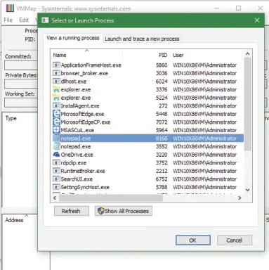
ページヒープを有効にしたプロセスの選択 - VMMap をもう一つ起動して、もう一方のメモ帳を選びます。比較できるよう、二つのウィンドウを並べます。

- コミットサイズの差が、黄色の「Private Data」の部分に表れています。
- 両方の VMMap ウィンドウで、中央の一覧にある「Private Data」行を選び、下部に内訳を表示します。図ではサイズ順に並べています。

Private Data の内訳 - 左側のメモ帳（ページヒープ有効）のほうが、多くのメモリを消費しています。1,024 KB の領域を一つ展開すると、次のように表示されます。

ページヒープが挿入した予約済みページ - コミット済みページの間に予約済みページがあります。ページヒープは、これらのページでバッファーの前後への範囲外アクセスを検出します。 以後のメモ帳でページヒープを使わないように、GFlags の「Enable Page Heap」のチェックを外し、「Apply」をクリックします。
ページヒープの詳細は Debugging Tools for Windows のヘルプを参照してください。
フォールトトレラントヒープ
Microsoft は、ヒープのメタデータの破損がアプリケーションの異常終了の主な原因の一つだと判断しました。 Windows のフォールトトレラントヒープ（FTH）は、こうした問題の影響を抑え、アプリケーション開発者が原因を調べる手掛かりを提供します。
- FTH サーバー：異常終了を検出します。
- FTH クライアント：ヒープの不具合の影響を緩和します。
サーバー側の Fthsvc.dll は、Windows Security Center サービス（Wscsvc.dll）がロードします。
このサービスは Local Service アカウントで動く共有サービスプロセスの一つで実行されます。
アプリケーションが異常終了すると、Windows エラー報告（WER）サービスが FTH サーバーに通知します。
たとえば、アプリケーションが Ntdll.dll 内で、アクセス違反またはヒープの破損を示す例外によって異常終了したとします。
そのアプリケーションがまだ監視対象でなければ、FTH サービスは FTH 用のデータを保持する「チケット」を作ります。
その後1時間に4回を超えて異常終了すると、次回から FTH クライアントを使うように設定します。
FTH クライアントはアプリケーション互換性シムです。 Windows XP 以降、この仕組みは古い Windows 固有の挙動に依存するアプリケーションを新しいバージョンで動かすために使われてきました。 FTH の場合、ヒープルーチンの呼び出しをシムが捕捉し、FTH 自身のコードに振り分けます。 ヒープの不具合が起きてもアプリケーションが動き続けられるよう、複数の緩和策を適用します。
たとえば、小さな範囲外書き込みの影響を抑えるため、各割り当てに8バイトのパディングと FTH 用の予約領域を追加します。
解放したブロックが後から参照される場合に備えて、HeapFree の処理は遅らせます。
解放を要求されたブロックをリストに入れ、合計が 4 MB を超えてから実際に解放します。
どのヒープにも属さない領域や、HeapFree の引数で指定したヒープとは別のヒープに属する領域を解放しようとした場合、要求は無視されます。
exit または RtlExitUserProcess の呼び出し後は、どのブロックも解放しません。
緩和策の適用後も、FTH サーバーはアプリケーションの異常終了の頻度を監視します。 頻度が下がらない場合は緩和策を解除します。
FTH の動作はイベントビューアーで確認できます。
- 「ファイル名を指定して実行」を開き、
eventvwr.mscと入力します。 - 左のツリーで「アプリケーションとサービス ログ」「Microsoft」「Windows」の順に開き、「Fault-Tolerant-Heap」を選びます。
- 「Operational」ログを開きます。
FTH を完全に無効にする設定は、レジストリの HKLM\Software\Microsoft\FTH にある Enabled の値を 0 にすることです。
同じキーには、解放の遅延に関する設定や、対象外とする実行ファイルの一覧などもあります。
既定では smss.exe、csrss.exe、wininit.exe、services.exe、winlogon.exe、taskhost.exe などのシステムプロセスが対象外です。
RuleList には FTH が監視するモジュールと例外の種類、およびフラグが記録されています。
既定では、Ntdll.dll での STATUS_ACCESS_VIOLATION（0xC0000005）を監視するルールが一つあります。
FTH は通常、サービスには適用されません。 Windows Server では性能上の理由で無効になっています。 システム管理者は Application Compatibility Toolkit を使って、アプリケーションやサービスの実行ファイルにシムを手動で適用できます。
仮想アドレス空間のレイアウト
Windows の仮想アドレス空間はユーザー領域とシステム領域に分かれます。 各領域に何が置かれるかを整理してから、32 ビット（x86、ARM）と 64 ビット（x64）のレイアウトを比較します。 この違いから、各プラットフォームでプロセスやシステムが使える仮想メモリの上限が分かります。
Windows が仮想アドレス空間にマッピングするコードとデータは、大きく三種類に分かれます。
- プロセス固有のコードとデータ：第1章で説明したように、各プロセスにはほかのプロセスから直接アクセスできないプライベートアドレス空間があります。
仮想アドレスは現在のプロセスのコンテキストで解釈されるため、スレッドは別のプロセスのプライベートアドレスを直接参照できません。
共有メモリも例外ではありません。共有領域は参加する各プロセスにマッピングされ、どのプロセスも自分の空間にあるアドレスを使います。
ReadProcessMemoryとWriteProcessMemoryも、カーネルモードのコードが対象プロセスのコンテキストで動くことで実現しています。 各プロセスは、仮想アドレス空間を記述するためのページテーブルを個別に持ちます（後述の「アドレス変換」を参照）。 ユーザーモードのスレッドが自分のアドレス空間のレイアウトを勝手に変更できないよう、ページテーブルはカーネルモードからしかアクセスできないページに置かれます。 - セッション共通のコードとデータ：セッションには、一人のユーザーのログオンに対応するプロセスや、ウィンドウステーション、デスクトップ、ウィンドウなどのシステムオブジェクトが含まれます（第2章を参照）。
セッションごとのページプールから、Windows サブシステムのカーネルモード部分（
Win32k.sys）が、そのセッション専用の GUI データ構造を割り当てます。 セッションはそれぞれ、Windows サブシステムのプロセス（Csrss.exe）とログオンプロセス（Winlogon.exe）を持ちます。 セッションマネージャー（Smss.exe）は、新しいセッションを作る際、専用のWin32k.sysをロードし、そのセッション専用のオブジェクトマネージャー名前空間と二つのプロセスを作ります（オブジェクトマネージャーは Part 2 の第8章を参照）。 セッションを仮想化するため、セッション共通のデータ構造は、システム空間内のセッション空間にマッピングされます。 プロセスが作られると、このアドレス範囲に、そのプロセスの属するセッションのページがマッピングされます。
- システム共通のコードとデータ：システム空間には、どのプロセスが実行中でもカーネルモードのコードから参照できる、OS 共通のコードとデータ構造があります。内訳は次のとおりです。
- システムコード：OS イメージ、HAL、および起動に使うデバイスドライバーを含みます。
- 非ページプール：ページアウトできないシステムメモリのヒープです。
- ページプール：ページアウトできるシステムメモリのヒープです。
- システムキャッシュ：システムキャッシュで開いているファイルをマッピングするための仮想アドレス空間です。詳細は Part 2 のキャッシュの解説を参照してください。
- システムページテーブルエントリ（PTE）：I/O 空間、カーネルスタック、メモリ記述子リストなどのシステムページをマッピングするために使う PTE のプールです。
パフォーマンスモニターの
Memory: Free System Page Table Entriesで利用可能な数を確認できます。 - システムワーキングセットリスト：システムキャッシュ、ページプール、システム PTE という三つのシステムワーキングセットを記述するデータ構造です。
- システムのマップ済みビュー：Windows サブシステムのロード可能なカーネルモード部分（
Win32k.sys）と、そこから使われるカーネルモードのグラフィックスドライバーをマッピングします（第2章を参照）。 - ハイパースペース：プロセスのワーキングセットリストなど、ほかのプロセスのコンテキストから参照する必要のないプロセス固有のデータをマッピングする領域です。 物理ページをシステム空間へ一時的にマッピングする用途にも使います。たとえばスタンバイリストからページを外す際、現在とは別のプロセスのページテーブルエントリを無効にするときに使います。
- クラッシュダンプ情報：システムがクラッシュしたときの状態を記録するために予約された領域です。
- HAL 用の領域：HAL 固有のデータ構造用に予約されたシステムメモリです。
これらの構成要素の配置は、x86、ARM、x64 で異なります。
x86 のアドレス空間レイアウト
32 ビット版 Windows では、各ユーザープロセスに既定で 2 GB のプライベートアドレス空間があり、残りの 2 GB は OS が使います。
x86 では BCD の起動オプション increaseuserva で、ユーザーアドレス空間を最大 3 GB まで広げられます。
二つのレイアウトを図5-10に示します。
2 GB を超えられるようにしたのは、32 ビットアプリケーションがそれより多くのデータをメモリに保持できるようにするためです。 64 ビットシステムでは、はるかに大きなアドレス空間を使えます。

プロセスが 2 GB を超えるアドレス空間を使うには、システム全体の increaseuserva に加え、イメージヘッダーの IMAGE_FILE_LARGE_ADDRESS_AWARE フラグが必要です。
フラグがない場合、Windows は追加の領域をそのプロセスに対して予約し、アプリケーションに 0x7FFFFFFF を超える仮想アドレスを渡しません。
明示的に対応を示す必要があるのは、アドレス空間が最大 2 GB だと仮定しているアプリケーションがあるためです。 2 GB 未満のアドレスは 31 ビットで表せるので、そのポインターの最上位ビットは常に0です。 そのビットを独自のフラグとして使い、メモリを参照する前にクリアするアプリケーションがあります。 3 GB のアドレス空間で動かすと、2 GB より上を指すポインターの最上位ビットまで消してしまい、プログラムのエラーやデータの破損を起こすおそれがあります。
ビルド時にこのフラグを設定するには、リンカーに /LARGEADDRESSAWARE を指定します。
Visual Studio なら、プロパティページの「リンカー」「システム」から「大きいアドレスの有効化」を選びます。
署名のない実行イメージなら、Windows SDK に含まれる Editbin.exe などで、ソースコードなしでフラグを追加できます。
ユーザーアドレス空間が 2 GB のシステムでは、このフラグに効果はありません。
大きなアドレス空間を使えるよう、対応フラグが付いたシステムイメージには次のものがあります。
Lsass.exe：ローカルセキュリティ機関サブシステム。Inetinfo.exe：Internet Information Server。Chkdsk.exe：ディスク検査ユーティリティ。
Smss.exe：セッションマネージャー。Dllhst3g.exe：COM+ アプリケーション向けの特別なバージョンのDllhost.exe。
大きなアドレス空間への対応を調べる
実行ファイルが大きなアドレス空間に対応するかどうかは、Visual Studio Tools（または旧バージョンの Windows SDK）に含まれる Dumpbin で確認できます。
/headers オプションを指定して、実行ファイルのヘッダーを表示します。
次は、セッションマネージャーを調べたときの出力例です。
dumpbin /headers c:\windows\system32\smss.exe Microsoft (R) COFF/PE Dumper Version 14.00.24213.1 Copyright (C) Microsoft Corporation. All rights reserved. Dump of file c:\windows\system32\smss.exe PE signature found File Type: EXECUTABLE IMAGE FILE HEADER VALUES 14C machine (x86) 5 number of sections 57898F8A time date stamp Sat Jul 16 04:36:10 2016 0 file pointer to symbol table 0 number of symbols E0 size of optional header 122 characteristics Executable Application can handle large (>2GB) addresses 32 bit word machine
VirtualAlloc、VirtualAllocEx、VirtualAllocExNuma による割り当ては、既定では低い仮想アドレスから始まり、高いほうへ進みます。
メモリを大量に割り当てるか、仮想アドレス空間がひどく断片化しているのでなければ、プロセスには高いアドレスが返されません。
テストで高いアドレスから割り当てるには、これらの関数に MEM_TOP_DOWN を指定するか、レジストリの HKLM\SYSTEM\CurrentControlSet\Control\Session Manager\Memory Management キーに AllocationPreference という DWORD 値を追加して 0x100000 を設定します。
次の出力は、increaseuserva を指定せずに起動した 32 ビット版 Windows で、TestLimit（前の実験を参照）を使い、アドレス空間を予約した例です。
Testlimit.exe -r Testlimit v5.24 - test Windows limits Copyright (C) 2012-2015 Mark Russinovich Sysinternals - www.sysinternals.com Process ID: 5500 Reserving private bytes (MB)... Leaked 1978 MB of reserved memory (1940 MB total leaked). Lasterror: 8
プロセスは 2 GB の上限近くまで予約できましたが、上限には達していません。 通常のプロセスでは、EXE のコードや各種 DLL がアドレス空間の一部にすでにマッピングされているので、空間全体を予約することはできません。
同じシステムで、管理者として開いたコマンドプロンプトから次のコマンドを実行すると、ユーザーアドレス空間を 3 GB に変更できます。
C:\WINDOWS\system32>bcdedit /set increaseuserva 3072 The operation completed successfully.
指定できる値は、既定の 2 GB に相当する 2,048 MB から、上限の 3 GB に相当する 3,072 MB までです。 システムを再起動して設定を有効にした後、TestLimit をもう一度実行すると、次の結果が得られます。
Testlimit.exe -r Testlimit v5.24 - test Windows limits Copyright (C) 2012-2015 Mark Russinovich Sysinternals - www.sysinternals.com Process ID: 2308 Reserving private bytes (MB)... Leaked 2999 MB of reserved memory (2999 MB total leaked). Lasterror: 8
予想どおり、TestLimit は 3 GB 近くまで予約できました。
これは TestLimit が /LARGEADDRESSAWARE を指定してリンクされているためです。
指定されていなければ、increaseuserva を使わずに起動した場合とほぼ同じ結果になります。
注：プロセスごとのユーザーアドレス空間を既定の 2 GB に戻すには、bcdedit /deletevalue increaseuserva を実行します。
x86 のシステムアドレス空間
32 ビット版 Windows は、仮想アドレスの割り当て機構を使って、システムアドレス空間のレイアウトを動的に決めます。この仕組みは後で説明します。 図5-10のように、固定で予約された領域も少数あります。 ただし、多くのカーネルモードのデータ構造にはアドレス空間が動的に割り当てられます。 そのため、一つのデータ構造が仮想アドレス空間の連続領域に収まるとは限らず、システム空間内の離れた領域に分かれることがあります。
動的な割り当てを使う領域には、次のものがあります。
- 非ページプール
- ページプール
- 特殊プール
- システムページテーブルエントリ（PTE）
- システムのマップ済みビュー
- ファイルシステムキャッシュ
- ページフレーム番号（PFN）データベース
- セッション空間
x86 のセッション空間
セッション0はシステムプロセスとサービスが使い、最初にログオンしたユーザーはセッション1を使うので、たいていのシステムには複数のセッションがあります。 各セッションに固有のコードとデータは、システムアドレス空間にマッピングされ、そのセッションに属するプロセス間で共有されます。 図5-11にセッション空間の構成を示します。 ほかのカーネルアドレス空間と同様に、メモリマネージャーはセッション空間の各領域のサイズを動的に設定し、必要に応じて変更します。

プロセスが属するセッションを調べる
タスクマネージャー、Process Explorer、カーネルデバッガーでセッション ID を調べると、各プロセスがどのセッションに属するか分かります。
カーネルデバッガーでは、!session でアクティブなセッションを一覧表示できます。
lkd> !session Sessions on machine: 3 Valid Sessions: 0 1 2 Current Session 2
!session -s で調査対象のセッションを選択し、!sprocess でそのセッションのデータ構造のアドレスと、属するプロセスの一覧を表示します。
lkd> !session -s 1 Sessions on machine: 3
Implicit process is now d4921040 Using session 1 lkd> !sprocess Dumping Session 1 _MM_SESSION_SPACE d9306000 _MMSESSION d9306c80 PROCESS d4921040 SessionId: 1 Cid: 01d8 Peb: 00668000 ParentCid: 0138 DirBase: 179c5080 ObjectTable: 00000000 HandleCount: 0. Image: smss.exe PROCESS d186c180 SessionId: 1 Cid: 01ec Peb: 00401000 ParentCid: 01d8 DirBase: 179c5040 ObjectTable: d58d48c0 HandleCount: <Data Not Accessible> Image: csrss.exe PROCESS d49acc40 SessionId: 1 Cid: 022c Peb: 03119000 ParentCid: 01d8 DirBase: 179c50c0 ObjectTable: d232e5c0 HandleCount: <Data Not Accessible> Image: winlogon.exe PROCESS dc0918c0 SessionId: 1 Cid: 0374 Peb: 003c4000 ParentCid: 022c DirBase: 179c5160 ObjectTable: dc28f6c0 HandleCount: <Data Not Accessible> Image: LogonUI.exe PROCESS dc08e900 SessionId: 1 Cid: 037c Peb: 00d8b000 ParentCid: 022c DirBase: 179c5180 ObjectTable: dc249640 HandleCount: <Data Not Accessible> Image: dwm.exe
セッションの詳細を確認するには、次のように dt コマンドで MM_SESSION_SPACE 構造体を表示します。
lkd> dt nt!_mm_session_space d9306000 +0x000 ReferenceCount : 0n4 +0x004 u : <unnamed-tag> +0x008 SessionId : 1 +0x00c ProcessReferenceToSession : 0n6 +0x010 ProcessList : _LIST_ENTRY [ 0xd4921128 - 0xdc08e9e8 ] +0x018 SessionPageDirectoryIndex : 0x1617f +0x01c NonPagablePages : 0x28 +0x020 CommittedPages : 0x290 +0x024 PagedPoolStart : 0xc0000000 Void +0x028 PagedPoolEnd : 0xffbfffff Void +0x02c SessionObject : 0xd49222b0 Void +0x030 SessionObjectHandle : 0x800003ac Void +0x034 SessionPoolAllocationFailures : [4] 0 +0x044 ImageTree : _RTL_AVL_TREE +0x048 LocaleId : 0x409 +0x04c AttachCount : 0 +0x050 AttachGate : _KGATE +0x060 WsListEntry : _LIST_ENTRY [ 0xcdcde060 - 0xd6307060 ] +0x080 Lookaside : [24] _GENERAL_LOOKASIDE +0xc80 Session : _MMSESSION ...
セッション空間のメモリ使用量を調べる
カーネルデバッガーの !vm 4 で、セッション空間のメモリ使用量を確認できます。
次の出力例は、リモートデスクトップ接続のある 32 ビット版 Windows クライアントから取得しました。
既定の二つにリモート接続用が加わり、セッションは三つあります。
出力中のアドレスは、先ほど表示した MM_SESSION_SPACE オブジェクトのアドレスです。
lkd> !vm 4 ... Terminal Server Memory Usage By Session: Session ID 0 @ d6307000: Paged Pool Usage: 2012 Kb NonPaged Usage: 108 Kb Commit Usage: 2292 Kb Session ID 1 @ d9306000: Paged Pool Usage: 2288 Kb NonPaged Usage: 160 Kb Commit Usage: 2624 Kb Session ID 2 @ cdcde000: Paged Pool Usage: 7740 Kb NonPaged Usage: 208 Kb Commit Usage: 8144 Kb Session Summary Paged Pool Usage: 12040 Kb NonPaged Usage: 476 Kb Commit Usage: 13060 Kb
システムページテーブルエントリ
システムページテーブルエントリ（PTE）は、I/O 空間、カーネルスタック、メモリ記述子リスト（MDL。第6章も参照）に対応するシステムページを動的にマッピングするために使います。 システム PTE の数には上限があります。 利用可能な数から計算すると、32 ビット版 Windows では、理論上 2 GB の連続したシステム仮想アドレス空間を記述できます。 64 ビット版 Windows 10 と Windows Server 2016 では、最大 16 TB の連続領域を記述できます。
利用可能なシステム PTE を調べる
利用可能なシステム PTE の数は、パフォーマンスモニターの Memory: Free System Page Table Entries カウンターか、デバッガーの !sysptes または !vm で確認できます。
メモリ管理の状態を保持する変数 MiState の _MI_SYSTEM_PTE_TYPE 構造体を表示する方法もあります。
Windows 8.x と Windows Server 2012／2012 R2 では、グローバル変数 MiSystemPteInfo を調べます。
この方法では、システム上で PTE の割り当てに失敗した回数も分かります。
回数が多ければ、システム PTE のリークなどの問題が疑われます。
kd> !sysptes System PTE Information Total System Ptes 216560 starting PTE: c0400000 free blocks: 969 total free: 16334 largest free block: 264 kd> ? MiState Evaluate expression: -2128443008 = 81228980
kd> dt nt!_MI_SYSTEM_INFORMATION SystemPtes +0x3040 SystemPtes : _MI_SYSTEM_PTE_STATE
kd> dt nt!_mi_system_pte_state SystemViewPteInfo 81228980+3040 +0x10c SystemViewPteInfo : _MI_SYSTEM_PTE_TYPE
kd> dt nt!_mi_system_pte_type 81228980+3040+10c +0x000 Bitmap : _RTL_BITMAP +0x008 BasePte : 0xc0400000 _MMPTE +0x00c Flags : 0xe +0x010 VaType : c ( MiVaDriverImages ) +0x014 FailureCount : 0x8122bae4 -> 0 +0x018 PteFailures : 0 +0x01c SpinLock : 0 +0x01c GlobalPushLock : (null) +0x020 Vm : 0x8122c008 _MMSUPPORT_INSTANCE +0x024 TotalSystemPtes : 0x120 +0x028 Hint : 0x2576 +0x02c LowestBitEverAllocated : 0xc80 +0x030 CachedPtes : (null) +0x034 TotalFreeSystemPtes : 0x73
システム PTE の割り当てが何度も失敗する場合は、レジストリの HKLM\SYSTEM\CurrentControlSet\Control\Session Manager\Memory Management に TrackPtes という DWORD 値を作成して 1 を設定すると、システム PTE の追跡を有効にできます。
その後、!sysptes 4 で割り当て元の一覧を表示できます。
ARM のアドレス空間レイアウト
図5-12のように、ARM のアドレス空間レイアウトは x86 とほぼ同じです。 メモリの管理自体については、メモリマネージャーは ARM と x86 を同じように扱います。 違いは後述の「アドレス変換」で説明する、アドレスを変換する層にあります。

64 ビットのアドレス空間レイアウト
64 ビットの仮想アドレス空間は、理論上 16 エクサバイト（EB）、つまり 18,446,744,073,709,551,616 バイトです。 原著執筆時点のプロセッサの実装では、アドレスのうち48ビットしか使えないため、実際にアドレスで指定できる範囲は 256 TB（2 の48乗バイト）です。 この空間は二分され、下位 128 TB はユーザープロセスのプライベート空間に、上位 128 TB はシステム空間になります。 Windows 10 と Windows Server 2016 では、システム空間を図5-13のように大きさの異なる領域に分けます。 32 ビットの場合に比べて使える空間は大幅に増えます。 カーネル空間にも ASLR が適用されるため、各領域の実際の開始アドレスが図と一致するとは限りません。

注：Windows 8 と Windows Server 2012 では、Windows 側の実装上の制約によって、アドレス空間が 16 TB に制限されます（『Windows Internals』第6版 Part 2 の第10章を参照）。 内訳はプロセスごとに 8 TB、システム空間に 8 TB です。
大きなアドレス空間に対応する 32 ビットの実行イメージを 64 ビット版 Windows の Wow64 上で実行すると、32 ビットで表せるユーザーアドレス空間の全体、つまり 4 GB を使えます。 2 GB から 3 GB に広げるときとは異なり、3 GB で使うアドレスを 4 GB に広げてもポインターに追加のビットは不要です。 次の出力は、64 ビット版 Windows で TestLimit を 32 ビットアプリケーションとして実行し、アドレス空間を予約した例です。
C:\Tools\Sysinternals>Testlimit.exe -r Testlimit v5.24 - test Windows limits Copyright (C) 2012-2015 Mark Russinovich Sysinternals - www.sysinternals.com Process ID: 264 Reserving private bytes (MB)... Leaked 4008 MB of reserved memory (4008 MB total leaked). Lasterror: 8 Not enough storage is available to process this command.
この結果が得られたのは、TestLimit が /LARGEADDRESSAWARE を指定してリンクされているためです。
指定されていなければ、どちらの結果も約 2 GB になります。
64 ビットアプリケーションでも、このオプションなしでリンクしたものは、32 ビットアプリケーションと同様に、プロセスの仮想アドレス空間の先頭 2 GB に制限されます。
Visual Studio の 64 ビットビルドでは、このフラグは既定で有効です。
x64 の仮想アドレスの制約
64 ビットで仮想アドレスを表す場合、理論上の上限は 16 EB です。 32 ビットで表せる 4 GB よりはるかに大きく、この規模に近いメモリを扱う必要は、原著執筆時点ではなく、近い将来にも見込まれていませんでした。
原著執筆時点の AMD と Intel の x64 プロセッサは、チップの構造を簡潔に保ち、特にアドレス変換の余分な処理を避けるため、256 TB の仮想アドレス空間だけを実装していました。 64 ビットの仮想アドレスのうち、実装されるのは下位48ビットです。 仮想アドレスそのものは64ビット幅のままで、レジスタやメモリでは8バイトを占めます。 上位16ビット（ビット48～63）には、実装された最上位のビット（ビット47）と同じ値が入っていなければなりません。 これは2の補数表現での符号拡張に似た規則です。この規則を満たすアドレスを正準アドレスと呼びます。
この規則に従うと、下位半分は 0x0000000000000000 から 0x00007FFFFFFFFFFF まで、上位半分は 0xFFFF800000000000 から 0xFFFFFFFFFFFFFFFF までです。
正準アドレスが使える範囲は、それぞれ 128 TB です。
より多くのアドレスビットを実装するプロセッサでは、下位半分は 0x7FFFFFFFFFFFFFFF に向かって上へ、上位半分は 0x8000000000000000 に向かって下へ広がります。
システム仮想アドレス空間の動的管理
32 ビット版 Windows では、カーネル内部の仮想アドレス割り当て機構でシステムアドレス空間を管理します。 原著で扱う 64 ビット版 Windows では、各領域が静的に定義されているため（図5-13）、この管理に割り当て機構を使う必要がなく、その処理コストもかかりません。
システムの初期化時に、MiInitializeDynamicVa が動的に割り当てる領域を初期化し、利用可能な仮想アドレスをカーネル空間全体に設定します。
続いて、MiInitializeSystemVaRange で、ブートローダーが読み込んだイメージ、プロセス空間（ハイパースペース）、HAL のアドレス範囲を初期化します。
この関数は、32 ビットシステムでのみ固定のアドレス範囲を設定するために使われます。
その後、非ページプールの初期化時にも同じ関数を使い、プール用のアドレス範囲を予約します。
ドライバーをロードすると、そのイメージが占める範囲の分類は、起動時にロードされた領域からドライバーイメージの領域へ変わります。
この初期化の後は、残りのシステム仮想アドレス空間を MiObtainSystemVa（およびセッション用の MiObtainSessionVa）で動的に確保し、MiReturnSystemVa で解放できます。
システムキャッシュ、システム PTE、非ページプール、ページプール、特殊プールの拡張や、大ページでのマッピング、PFN データベースの作成、新しいセッションの作成では、用途に対応する範囲の仮想アドレスが動的に割り当てられます。
カーネルの仮想アドレス割り当て機構は、特定の用途に仮想アドレス範囲を確保するたびに、MiSystemVaType 配列を更新し、新たに割り当てた範囲の種別を記録します。
表5-8に、この配列に入る値を示します。
| 種別 | 用途 | 上限を設定できるか |
|---|---|---|
MiVaUnused（0） | 未使用 | 該当なし |
MiVaSessionSpace（1） | セッション空間 | 可 |
MiVaProcessSpace（2） | プロセスのアドレス空間 | 不可 |
MiVaBootLoaded（3） | ブートローダーが読み込んだイメージ | 不可 |
MiVaPfnDatabase（4） | PFN データベース | 不可 |
MiVaNonPagedPool（5） | 非ページプール | 可 |
MiVaPagedPool（6） | ページプール | 可 |
MiVaSpecialPoolPaged（7） | 特殊プール（ページプール） | 不可 |
MiVaSystemCache（8） | システムキャッシュ | 不可 |
MiVaSystemPtes（9） | システム PTE | 可 |
MiVaHal（10） | HAL | 不可 |
MiVaSessionGlobalSpace（11） | セッション共通空間 | 不可 |
MiVaDriverImages（12） | ロード済みのドライバーイメージ | 不可 |
MiVaSpecialPoolNonPaged（13） | 特殊プール（非ページプール） | 可 |
MiVaSystemPtesLarge（14） | 大ページ用の PTE | 可 |
不要になった範囲は解放され、別の用途に回せます。 たとえば、ページプールやシステムキャッシュを縮小するときや、特殊プールや大ページのマッピング、起動時に使ったレジストリを解放するときに、対応する仮想アドレス範囲も解放されます。
利用可能な仮想アドレス空間が 128 MB を下回ると、コンポーネントは MiReclaimSystemVa を通じて、システムキャッシュに割り当てられた仮想アドレスの回収を要求できます。
実際の処理はセグメント参照解除スレッドが行います。
初期非ページプールが解放済みであれば、そこからもアドレスを回収できます。
動的な割り当てには、カーネルの各部が使う仮想アドレス空間を調整しやすくするだけでなく、メモリ使用量を抑える利点があります。 ページテーブルとそのエントリを事前に固定で用意せず、必要になったときに割り当てます。 32 ビットでも 64 ビットでも、未使用のアドレスのページテーブルが作られないため、起動時のメモリ消費が減ります。 64 ビットシステムでは、予約しただけの広い範囲のページテーブルをメモリにマップする必要もありません。 そのため、ページング用の構造に使える物理メモリが少ないシステムでも、領域の上限を大きく取れます。
Windows 10 と Server 2016 でシステム仮想アドレスの使用量を調べる
カーネルデバッガーで、システム仮想アドレスの種別ごとに現在とピーク時の使用量を確認できます。
公開シンボルには、これらの情報を持つ MiVisibleState（型は MI_VISIBLE_STATE）が含まれています。次は x86 版 Windows 10 の例です。
MiVisibleStateが持つデータを確認するため、構造体を値とともに表示します。
lkd> dt nt!_mi_visible_state poi(nt!MiVisibleState) +0x000 SpecialPool : _MI_SPECIAL_POOL +0x048 SessionWsList : _LIST_ENTRY [ 0x91364060 - 0x9a172060 ] +0x050 SessionIdBitmap : 0x8220c3a0 _RTL_BITMAP +0x054 PagedPoolInfo : _MM_PAGED_POOL_INFO +0x070 MaximumNonPagedPoolInPages : 0x80000 +0x074 SizeOfPagedPoolInPages : 0x7fc00 +0x078 SystemPteInfo : _MI_SYSTEM_PTE_TYPE +0x0b0 NonPagedPoolCommit : 0x3272 +0x0b4 BootCommit : 0x186d +0x0b8 MdlPagesAllocated : 0x105 +0x0bc SystemPageTableCommit : 0x1e1 +0x0c0 SpecialPagesInUse : 0 +0x0c4 WsOverheadPages : 0x775 +0x0c8 VadBitmapPages : 0x30 +0x0cc ProcessCommit : 0xb40 +0x0d0 SharedCommit : 0x712a +0x0d4 DriverCommit : 0n7276 +0x100 SystemWs : [3] _MMSUPPORT_FULL +0x2c0 SystemCacheShared : _MMSUPPORT_SHARED +0x2e4 MapCacheFailures : 0 +0x2e8 PagefileHashPages : 0x30 +0x2ec PteHeader : _SYSPTES_HEADER +0x378 SessionSpecialPool : 0x95201f48 _MI_SPECIAL_POOL +0x37c SystemVaTypeCount : [15] 0 +0x3b8 SystemVaType : [1024] "" +0x7b8 SystemVaTypeCountFailures : [15] 0 +0x7f4 SystemVaTypeCountLimit : [15] 0 +0x830 SystemVaTypeCountPeak : [15] 0 +0x86c SystemAvailableVa : 0x38800000
- 末尾の配列に注目します。どの配列にも、表5-8の種別に対応する15個の要素があります。次に、
SystemVaTypeCountとSystemVaTypeCountPeakを表示します。
lkd> dt nt!_mi_visible_state poi(nt!mivisiblestate) -a SystemVaTypeCount +0x37c SystemVaTypeCount : [00] 0 [01] 0x1c [02] 0xb [03] 0x15 [04] 0xf [05] 0x1b
[06] 0x46 [07] 0 [08] 0x125 [09] 0x38 [10] 2 [11] 0xb [12] 0x19 [13] 0 [14] 0xd lkd> dt nt!_mi_visible_state poi(nt!mivisiblestate) -a SystemVaTypeCountPeak +0x830 SystemVaTypeCountPeak : [00] 0 [01] 0x1f [02] 0 [03] 0x1f [04] 0xf [05] 0x1d [06] 0x51 [07] 0 [08] 0x1e6 [09] 0x55 [10] 0 [11] 0xb [12] 0x5d [13] 0 [14] 0xe
Windows 8.x と Server 2012／R2 でシステム仮想アドレスの使用量を調べる
これらのバージョンでも、カーネルデバッガーで種別ごとの現在の使用量とピーク時の使用量を確認できます。
表5-8の各種別について、カーネルのグローバル配列 MiSystemVaTypeCount、MiSystemVaTypeCountFailures、MiSystemVaTypeCountPeak が、それぞれ現在の使用量、割り当ての失敗回数、ピーク時の使用量を保持します。
使用量の単位は、一つのページディレクトリエントリ（PDE）がマップする範囲です（後述の「アドレス変換」を参照）。 これは大ページのサイズに相当し、x86 では 2 MB です。 次は 32 ビット版 Windows 8.1 で現在の使用量とピーク時の使用量を順に表示した例です。 失敗回数も同様に表示できます。
lkd> dd /c 1 MiSystemVaTypeCount L f 81c16640 00000000 81c16644 0000001e 81c16648 0000000b 81c1664c 00000018 81c16650 0000000f 81c16654 00000017 81c16658 0000005f 81c1665c 00000000 81c16660 000000c7
81c16664 00000021 81c16668 00000002 81c1666c 00000008 81c16670 0000001c 81c16674 00000000 81c16678 0000000b lkd> dd /c 1 MiSystemVaTypeCountPeak L f 81c16b60 00000000 81c16b64 00000021 81c16b68 00000000 81c16b6c 00000022 81c16b70 0000000f 81c16b74 0000001e 81c16b78 0000007e 81c16b7c 00000000 81c16b80 000000e3 81c16b84 00000027 81c16b88 00000000 81c16b8c 00000008 81c16b90 00000059 81c16b94 00000000 81c16b98 0000000b
システム仮想アドレス空間に空きがある限り、各コンポーネントに割り当てた範囲は、理論上その空きを使い切るまで拡大できます。 ただし、32 ビットシステムでは信頼性と安定性を保つため、カーネルの割り当て機構で種別ごとに上限を設定できます。 本書が対象とする 64 ビットシステムでは、カーネルアドレス空間の枯渇を考慮する必要はありません。 上限は既定では設定されていませんが、表5-8で設定可能とされている種別については、システム管理者がレジストリで変更できます。
MiObtainSystemVa の要求を満たすと上限を超える場合は、失敗を記録し、利用可能なメモリ量に関係なく回収処理を要求します（前の実験を参照）。
回収で空きが増えれば、次の試行では割り当てが成功することがあります。
回収の対象になるのは、システムキャッシュと非ページプールだけです。
システム仮想アドレスの上限を設定する
MiSystemVaTypeCountLimit 配列には、システム仮想アドレスの種別ごとの使用量の上限が保持されます。
メモリマネージャーは表5-8で設定可能とされている種別に限り、文書化されていないシステムコールで実行中に上限を変更できます。
レジストリで設定する方法もあります。
32 ビットシステムでは、本書のダウンロード資料に含まれる MemLimit を使うと、上限を取得、設定でき、現在とピーク時の使用量も確認できます。
次は、-q オプションで現在の上限を照会する例です。
C:\Tools>MemLimit.exe -q MemLimit v1.01 - Query and set hard limits on system VA space consumption Copyright (C) 2008-2016 by Alex Ionescu www.alex-ionescu.com System Va Consumption: Type Current Peak Limit Non Paged Pool 45056 KB 55296 KB 0 KB Paged Pool 151552 KB 165888 KB 0 KB System Cache 446464 KB 479232 KB 0 KB System PTEs 90112 KB 135168 KB 0 KB Session Space 63488 KB 73728 KB 0 KB
実験として、次のコマンドでページプールの上限を 100 MB に設定します。
memlimit.exe -p 100M
次に、Sysinternals の TestLimit で、作成できる限りのハンドルを作ります。 ページプールに余裕があれば通常は約1,600万個を作成できますが、プールを 100 MB に制限すると作成できる数は減ります。
C:\Tools\Sysinternals>Testlimit.exe -h Testlimit v5.24 - test Windows limits Copyright (C) 2012-2015 Mark Russinovich Sysinternals - www.sysinternals.com Process ID: 4780 Creating handles... Created 10727844 handles. Lasterror: 1450
オブジェクト、ハンドル、ページプールの消費については Part 2 の第8章を参照してください。
システム仮想アドレス空間のプロセス別クォータ
前節の上限は、特定のカーネルコンポーネントが使うシステム仮想アドレス空間を、32 ビットシステム全体で制限するものです。 プロセス単位で制限する場合は、メモリマネージャーがプロセスマネージャーと連携し、全プロセス共通またはユーザー別のクォータを各プロセスに適用します。
一つのプロセスが種別ごとに使えるメモリ量は、レジストリの HKLM\SYSTEM\CurrentControlSet\Control\Session Manager\Memory Management にある PagedPoolQuota、NonPagedPoolQuota、PagingFileQuota、WorkingSetPagesQuota で指定できます。
この設定は初期化時に読み込まれ、生成された既定のシステムクォータブロックがすべてのシステムプロセスに割り当てられます。
ユーザープロセスには、次に説明するユーザー別のクォータが設定されていない限り、既定のブロックのコピーが割り当てられます。
ユーザーごとのクォータを設定するには、レジストリの HKLM\SYSTEM\CurrentControlSet\Session Manager\Quota System キーの下に、ユーザーの SID を名前にしたサブキーを作ります。
そのサブキーに前述の値を設定すると、そのユーザーが作成したプロセスだけに上限が適用されます。
表5-9に、値の単位、実行中に変更できる条件、必要な特権を示します。
| 値の名前 | 制限する量 | 単位 | 実行中の変更 | 必要な特権 |
|---|---|---|---|---|
PagedPoolQuota | プロセスが割り当てられるページプールの最大サイズ | MB | システムトークンで実行するプロセスに限り可 | SeIncreaseQuotaPrivilege |
NonPagedPoolQuota | プロセスが割り当てられる非ページプールの最大サイズ | MB | システムトークンで実行するプロセスに限り可 | SeIncreaseQuotaPrivilege |
PagingFileQuota | ページファイルをバックストアとしてプロセスが持てる最大ページ数 | ページ | システムトークンで実行するプロセスに限り可 | SeIncreaseQuotaPrivilege |
WorkingSetPagesQuota | プロセスのワーキングセットとして物理メモリに置ける最大ページ数 | ページ | 可 | ワーキングセットを空にする要求でなければ SeIncreaseBasePriorityPrivilege |
ユーザーアドレス空間のレイアウト
カーネルのアドレス空間と同様に、ユーザーアドレス空間も動的に構成されます。 アプリケーションと読み込むイメージが対応していれば、スレッドのスタック、プロセスのヒープ、実行ファイルや DLL などのイメージのアドレスは、アドレス空間配置のランダム化（ASLR）によって動的に決まります。
OS は、ユーザーアドレス空間を図5-14のようにいくつかの用途別の領域に分けます。 実行ファイルと DLL はメモリマップトイメージとして置かれ、そのほかにプロセスのヒープと各スレッドのスタックがあります。 これらの領域と、TEB、PEB などシステムが予約するデータ構造を除き、いつどの領域が割り当てられるかは、実行時の動作によって決まります。
ASLR は実行時に決まる領域の配置に関わります。 DEP と組み合わせると、メモリ操作を通じたリモートからの脆弱性の悪用を難しくします。 Windows のコードとデータの位置は動的に変わるため、プログラムやシステムの DLL 内の有効な位置を、通常は固定オフセットだけで指定できません。

VMMap でユーザー仮想アドレス空間を調べる
Sysinternals の VMMap では、マシン上の任意のプロセスについて、仮想メモリの使用状況を詳しく調べられます。 VMMap は割り当ての種類を次のように分類します。
- Image：実行ファイル、依存する動的ライブラリ、ほかの PE 形式のイメージをマッピングしている領域です。
- Mapped File：データファイルをメモリにマッピングしている領域です。
- Shareable：共有可能とされた領域で、通常は共有メモリを含みます。メモリマップトファイルは「Image」または「Mapped File」に表示されます。
- Heap：そのプロセスが持つヒープに割り当てられた領域です。
- Managed Heap：.NET CLR がマネージドオブジェクトに割り当てた領域です。.NET を使わないプロセスでは値が表示されません。
- Stack：プロセス内の各スレッドのスタックに割り当てられた領域です。
- Private Data：内部データ構造など、スタックとヒープ以外のプライベートな領域です。
次は、VMMap で 64 ビット版のエクスプローラーを調べた例です。

VMMap は、割り当ての種類に応じて、マップトファイルの名前、ヒープの ID と種類、スタックを使うスレッドの ID なども表示します。 割り当てごとに、コミット済みの量、ワーキングセット内の量、領域のサイズ、保護属性を確認できます。
ASLR は、プロセスの実行ファイルとそれが依存する DLL の配置から始まります。
PE ヘッダーに ASLR 対応を示す IMAGE_DLL_CHARACTERISTICS_DYNAMIC_BASE があり、再配置セクションを持つイメージが対象です。
このフラグは、通常は Microsoft Visual Studio でリンカーに /DYNAMICBASE を指定して設定します。
対象のイメージが見つかると、システムはその起動中に使うイメージオフセットを選びます。
候補は 64 KB 境界にそろった256個の値です。
イメージの配置のランダム化
実行ファイルのロード位置は、ロードのたびに求める疑似乱数の差分で変わります。
現在のプロセッサのタイムスタンプカウンター（TSC）を4ビットシフトし、254で割った余りに1を足します。
これに割り当て粒度の 64 KB を掛けた差分は、0x10000 から 0xFE0000 までの範囲に収まります。
1を足すので差分は0にならず、ASLR を使う実行ファイルは PE ヘッダーに記録されたアドレスそのものにはロードされません。
希望ロードアドレスに差分を足すことで、そのアドレスから 16 MB 以内にロード位置が決まります。
DLL のロードオフセットは、起動ごとにシステム全体で一つ決まるイメージバイアスをもとに計算します。
MiInitializeRelocations がこの値を求め、メモリ管理のグローバル構造体（MI_SYSTEM_INFORMATION）の MiState.Sections.ImageBias に格納します。
Windows 8.x と Windows Server 2012／R2 では、グローバル変数 MiImageBias に格納します。
32 ビットシステムでは、起動時にこの関数を実行している CPU の TSC を読み、シフトとマスクで8ビットに絞って256通りの値を作ります。
64 ビットシステムでも同様に計算しますが、アドレス空間が広いため候補はさらに多くなります。
実行ファイルの場合と異なり、イメージバイアスの計算は起動時の一度だけで、システム全体で共有します。 これにより DLL は一度だけ再配置され、その後は同じ物理メモリを共有できます。 プロセスごとに異なる場所へ DLL をマップすると、ローダーは参照先アドレスをプロセスごとに修正しなければなりません。 共有できたはずの読み取り専用コードがプロセス固有のデータになり、同じ DLL を使うプロセスごとに物理メモリ上のコピーが必要になります。
オフセットを計算すると、メモリマネージャーは MI_SECTION_STATE の一部であるビットマップ ImageBitMap を初期化します。
Windows 8.x と Windows Server 2012／R2 では、グローバル変数 MiImageBitMap を使います。
32 ビットシステムのビットマップは 0x50000000 から 0x78000000 までの範囲を表し、各ビットは割り当て単位である 64 KB に対応します。
DLL をロードするときは、その配置に対応するビットをセットします。
同じ DLL が再びロードされると、再配置済みのセクションオブジェクトを共有します。
DLL をロードするたびに、システムはビットマップの上位アドレス側から空きビットを探します。
走査を始める位置を ImageBias でずらすので、再起動すると DLL の配置が変わります。
最初の DLL は必ず Ntdll.dll で、その時点ではビットマップにまだ何も割り当てられていません。
そのため、ロードアドレスは次の式で求まります。NtDllSizein64KBChunks は DLL のサイズを 64 KB 単位で切り上げた値です。
- 32 ビット：
0x78000000 - (ImageBias + NtDllSizein64KBChunks) * 0x10000 - 64 ビット：
0x7FFFFFFF0000 - (ImageBias64High + NtDllSizein64KBChunks) * 0x10000
後続の DLL は、さらに下位のアドレスにある 64 KB 単位の領域に順にロードされます。
配置順が固定なら、Ntdll.dll のアドレスからほかの DLL のアドレスを推測しやすくなります。
これを避けるため、セッションマネージャー Smss.exe は初期化時に、既知の DLL をマップする順序もランダム化します。
ASLR 用の領域のほとんどが使われ、ビットマップに適切な空きがなくなると、DLL の再配置は実行ファイルと同じ方式に切り替わります。 この場合は、希望ベースアドレスから 16 MB 以内の 64 KB 境界にロードします。
Ntdll.dll のロードアドレスを確認する
Windows 10 の x86 環境で、カーネル変数から計算した Ntdll.dll のロードアドレスを実際の値と照合します。
- ローカルカーネルデバッグを開始します。
ImageBiasの値を調べます。
lkd> ? nt!mistate Evaluate expression: -2113373760 = 820879c0 lkd> dt nt!_mi_system_information sections.imagebias 820879c0 +0x500 Sections : +0x0dc ImageBias : 0x6e
- エクスプローラーを開き、
System32にあるNtdll.dllのサイズを確認します。 この例では 1,547 KB（0x182C00バイト）です。64 KB 単位で切り上げると0x19なので、結果は0x78000000 - (0x6E + 0x19) * 0x10000 = 0x77790000です。 - Process Explorer で任意のプロセスを選び、DLL の一覧にある
Ntdll.dllのロードアドレス（「Base」列または「Image Base」列）を確認します。計算したアドレスと一致します。 - 64 ビットシステムでも同じように確認します。
スタックの配置のランダム化
ASLR は、プロセスの最初のスレッドと、その後に作られる各スレッドのスタックの位置もランダム化します。
プロセスの StackRandomizationDisabled フラグが設定されていなければ、この処理が有効です。
まず、64 KB または 256 KB 間隔の候補32か所から、スタックのベースアドレスを選びます。
最初に条件を満たす空き領域を見つけ、そこから、現在のプロセッサの TSC をシフトとマスクで5ビットにした値に従って、候補を一つ選びます。
次に TSC から別の9ビットの値を求めます。 アラインメントを保つため、この値を4倍して、最大約 2 KB の差分を作ります。 選んだアドレスにこの差分を足すと、最終的なスタックのベースアドレスになります。
ヒープの配置のランダム化
ASLR は、プロセスの初期ヒープと、その後ユーザーモードで作られるヒープの位置もランダム化します。
RtlCreateHeap は TSC から得た5ビットの疑似乱数に 64 KB を掛けて、ベースアドレスを決めます。
初期ヒープの候補は 0x00000000 から 0x001F0000 までです。
さらに、ヒープの先頭より手前にある範囲を明示的に解放し、候補の範囲を端から総当たりで読み書きする試みがアクセス違反になるようにします。
カーネル空間の ASLR
カーネルのアドレス空間でも ASLR は有効です。 ドライバーのロードアドレスには、32 ビット版で64通り、64 ビット版で256通りの候補があります。 ユーザー空間のイメージを再配置するには、カーネル空間に相当量の作業領域が必要です。 カーネル空間に余裕がなければ、System プロセスのユーザーモードアドレス空間を作業領域に使えます。
Windows 10 バージョン 1607 と Windows Server 2016 では、ページプール、非ページプール、システムキャッシュ、ページテーブル、PFN データベースなど、システムメモリの大半の領域にも ASLR が適用されます。
これらの範囲の初期化は MiAssignTopLevelRanges が担います。
セキュリティ緩和策の設定
ASLR をはじめとする Windows のセキュリティ緩和策の多くは、アプリケーションの互換性に影響する可能性があるため、適用の有無を選べます。
たとえば、ASLR の対象はイメージヘッダーに IMAGE_DLL_CHARACTERISTICS_DYNAMIC_BASE ビットが設定されたイメージです。
ハードウェアによる実行禁止（DEP）の設定は、起動オプションとリンカーオプションの組み合わせで決まります。
Microsoft は企業の管理者や個人ユーザーがこれらの機能を確認、管理できるよう、Enhanced Mitigation Experience Toolkit（EMET）を公開していました。 EMET では Windows 標準の緩和策を一元管理でき、当時まだ Windows に含まれていなかった緩和策も利用できました。 緩和策によるアクセスフォールトが起きたときは、イベントログで管理者に通知できます。 アプリケーションの開発元があらかじめ緩和策を有効にしていても、特定の環境で互換性の問題が生じる場合は、そのアプリケーションを手動で対象外にできました。
注：原著執筆時点の EMET はバージョン 5.51 です。 サポート終了日は2018年7月末まで延長されました。 一部の機能は、その後の Windows に組み込まれています。
Process Explorer で ASLR の適用状況を調べる
Sysinternals の Process Explorer では、稼働中のプロセスと、それらがロードした DLL の両方について ASLR 対応を調べられます。 ASLR 非対応の DLL が一つでもロードされると、プロセスは攻撃に対して弱くなることがあります。
- プロセスツリーの列見出しを右クリックし、「Select Columns」を選びます。
- 「Process Image」と「DLL」の両タブで「ASLR Enabled」を選びます。
- Windows 付属のプログラムとサービスは ASLR が有効ですが、サードパーティー製アプリケーションは有効なものと無効なものがあることを確認します。
図では Notepad.exe が選択されており、ロードアドレスは 0x7FF7D76B0000 です。
メモ帳をすべて閉じてから再び開くと、違うアドレスにロードされます。
システムを再起動して実験を繰り返すと、ASLR が有効な DLL のロードアドレスも、起動ごとに変わることを確認できます。

アドレス変換
ユーザーアプリケーションもシステムコードも、メモリを参照するときには仮想アドレスを使います。 仮想アドレスから物理ページへの変換は、まず本書が扱う Windows で唯一サポートされる 32 ビット x86 の PAE モードを例に説明し、次に ARM と x64 との違いを示します。 その後、物理メモリのアドレスに変換できなかった場合に起きるページフォールトと、ワーキングセットおよびページフレームデータベースを使った物理メモリの管理を説明します。
x86 の仮想アドレス変換
初期の x86 カーネルが扱える物理メモリは、当時の CPU の制約で 4 GB まででした。 Intel の x86 プロセッサ Pentium Pro は、物理アドレス拡張（PAE）というメモリマッピングモードを導入しました。 対応するチップセットを使えば、PAE モードで動く 32 ビット OS は、原著執筆時点の Intel x86 プロセッサで最大 64 GB の物理メモリを扱えます。PAE を使わない場合は最大 4 GB です。 x64 プロセッサがレガシーモードで動作するときは最大 1,024 GB まで扱えますが、原著で扱う Windows は、その容量を記述する PFN データベースが大きくなるため 64 GB に制限しています。
Windows は当初、PAE 非対応と PAE 対応の二種類の x86 カーネルを用意していました。 Windows Vista 以降の x86 版 Windows は、物理メモリが 4 GB 以下のシステムでも、PAE 対応のカーネルをインストールします。 性能とメモリ消費の両面で PAE 非対応カーネルを使う利点が小さくなり、ハードウェアによる実行禁止には PAE が必要なので、Microsoft は x86 カーネルを一種類にまとめられました。 以下では PAE の場合だけを説明します。PAE を使わない場合については本書の第6版を参照してください。
CPU は、メモリマネージャーが作成、管理するページテーブルを使い、仮想アドレスを物理アドレスに変換します。 仮想アドレス空間の各ページには、マッピング先の物理アドレスを保持するページテーブルエントリ（PTE）がシステム空間内に対応付けられます。 図5-15は、x86 システムで連続した三つの仮想ページが、物理メモリ上の離れた三つのページにマッピングされる例です。 予約またはコミット済みでも、一度もアクセスされていない領域には PTE が存在しない場合があります。 最初のページフォールトが発生した時点で、ページテーブル自体を割り当てることがあるためです。 図5-15の仮想ページと PTE を結ぶ破線は、仮想ページと物理メモリの対応が間接的であることを示します。

注：デバイスドライバーなどのカーネルモードコードでも、物理メモリのアドレスを直接参照することはできません。 まず物理アドレスを仮想アドレスにマッピングし、その仮想アドレスを使って間接的に参照します。 詳しくは WDK ドキュメントのメモリ記述子リスト（MDL）のサポートルーチンを参照してください。
変換の手順とページテーブル、ページディレクトリのレイアウトは、CPU の仕様で決まります。 OS はその仕様に沿ってデータ構造をメモリ上に構築します。 図5-16は x86 での概要を示しますが、ほかのアーキテクチャでも基本的な考え方は同じです。
図5-16のように、変換時に使うのは 32 ビットの仮想アドレスと、ページテーブル、ページディレクトリ、一つのページディレクトリポインターテーブル（PDPT）、アドレス変換キャッシュ（TLB）です。
変換の結果は、対象のバイトがある RAM 上の 36 ビット物理アドレスです。 36 ビットという幅は、CPU が規定するページテーブルの形式によります。 一般的な小ページの場合は、仮想アドレスの下位12ビットを、変換結果の物理アドレスにそのままコピーします。 12 ビットで指定できる範囲は 4 KB で、小ページ1枚の大きさに相当します。

たとえばページが物理メモリになく、ページファイルにある場合、アドレスは変換できません。 その場合、CPU はページフォールトという例外を発生させ、対象ページを参照できないことを OS に通知します。 CPU にはページの保存先がページファイルか、マップトファイルか、それ以外かは分かりません。 OS が可能なら保存先からページを読み込み、ページテーブルがそのページを指すように更新してから、CPU に変換をやり直させます。 ページフォールトの詳細はこの章の後半を参照してください。
図5-17に、x86 で仮想アドレスを物理アドレスへ変換する流れを示します。

変換する 32 ビットの仮想アドレスは、論理的に四つの部分に分かれます。
下位12ビットは、ページ内のバイトを指定する値としてそのまま使います。
残りのビットを使う変換は、プロセスごとに一つある PDPT から始まります。
CPU がこのテーブルを見つけられるよう、PDPT は常に物理メモリにあり、その物理アドレスは各プロセスの KPROCESS 構造体に格納されます。
x86 の制御レジスタ CR3 は、現在稼働中のプロセスの PDPT の位置を保持します。
コンテキストスイッチで実行するスレッドが別のプロセスに切り替わる場合は、新しいプロセスの KPROCESS に記録された値を CR3 にロードします。
PDPT は 32 バイト境界にそろえる必要があります。また、x86 の CR3 は 32 ビット幅なので、PDPT は RAM の先頭 4 GB 内に置く必要があります。
図5-17の構成に従って、仮想アドレスを物理アドレスに変換します。
- 仮想アドレスの上位2ビット（ビット30と31）で、PDPT の4エントリのうち一つを選びます。このページディレクトリポインターエントリ（PDPE）は、ページディレクトリの物理アドレスを指します。
- ビット21～29の9ビットで、ページディレクトリの512エントリのうち一つを選びます。このページディレクトリエントリ（PDE）は、ページテーブルの物理アドレスを指します。
- ビット12～20の9ビットで、ページテーブルの512エントリのうち一つを選びます。この PTE は、物理ページの先頭アドレスを指します。
- PTE が指すアドレスに、仮想アドレスの下位12ビットで表されるオフセットを足すと、参照先の物理アドレスが求まります。
訳注：手順3のビット範囲は、原文の記載ではなく図5-17に従っています。
各テーブルのエントリはページ境界にそろったアドレスを指し、その値をページフレーム番号（PFN）と呼びます。 一つのエントリは64ビット幅なので、512エントリを持つページディレクトリまたはページテーブルは、4 KB のページ1枚に収まります。 一方、64 GB の物理範囲を表す36ビットのうち、12ビットはオフセットなので、PFN に必要なのは残りの24ビットです。 エントリには PFN 以外の情報を保持する余地があります。
なかでも有効ビットは、PFN が有効であり、CPU がその値を使って変換を続けられるかどうかを示します。 ビットがクリアされていれば、CPU はページフォールト例外を発生させ、OS に処理を委ねます。 たとえば対象ページがディスクに書き出されていた場合は、メモリマネージャーが RAM の空きページに読み戻し、PTE を修正してから CPU に変換を再試行させます。
Windows はプロセスごとにプライベートアドレス空間を用意するので、そのマッピングに使う PDPT、ページディレクトリ、ページテーブルもプロセスごとに持ちます。 一方、システム空間を記述するページディレクトリとページテーブルは全プロセスで共有し、セッション空間は同じセッション内のプロセス間だけで共有します。
同じ仮想メモリを記述するページテーブルが重複しないよう、プロセスを作成するときは、システム空間の PDE が既存のシステムページテーブルを指すように初期化します。 プロセスがセッションに属する場合は、セッション空間の PDE が既存のセッションページテーブルを指すようにして、これらも共有します。
ページテーブルとページテーブルエントリ
小ページを使う場合、各 PDE はページテーブルを指します。 ページテーブルは PTE の配列で、PDPT も同じようにエントリの配列です。 ページテーブルには512個の PTE があり、それぞれが 4 KB のページ1枚をマップします。 したがって、一つのページテーブルで 2 MB（512 × 4 KB）のアドレス空間をマップできます。 同様に、一つのページディレクトリにはページテーブルを指す PDE が512個あるので、1 GB（512 × 2 MB）をマップできます。 PDPE は四つあるため、合わせて 32 ビットで表せるアドレス空間全体、つまり 4 GB をマップできます。
大ページを使う場合は、PDE がページテーブルを経由せず、大ページの先頭の物理アドレスを直接指します。 ページ内のバイトオフセットには、元の仮想アドレスの下位21ビットを使います。
訳注：原文では大ページの物理ベースを指すビット数を11としています。32 ビットの物理アドレスなら11ビットですが、この節で扱う 36 ビットの物理アドレスでは15ビットです。
ページディレクトリとページテーブルのレイアウトは基本的に同じです。
PTE はカーネルデバッガーの !pte で確認できます（後述のアドレス変換の実験を参照）。
ここでは有効な PTE を説明します。無効な PTE は「ページフォールトの処理」で扱います。
有効な PTE の主な要素は、ページの物理アドレスを表す PFN と、ページの状態や保護属性を表すフラグです（図5-18）。

図5-18の「Software」と「Reserved」のビットは、PTE の有効、無効にかかわらず、CPU 内のメモリ管理ユニット（MMU）が読み飛ばします。 これらのビットを設定し、解釈するのはメモリマネージャーです。 有効な PTE の状態と保護を表すビットを表5-10に示します。
| ビット名 | 意味 |
|---|---|
| Accessed | ページにアクセスがあったことを示します。 |
| Cache disabled | このページを CPU がキャッシュしないようにします。 |
| Copy-on-write | このページでコピーオンライトを使います。 |
| ビット名 | 意味 |
|---|---|
| Dirty | ページに書き込みがあったことを示します。 |
| Global | 変換結果は全プロセスに共通です。たとえば、プロセスの切り替えに伴う変換キャッシュのフラッシュでは、この PTE に対応する変換は無効になりません。 |
| Large page | この PDE が 2 MB の大ページをマップすることを示します（「大ページと小ページ」を参照）。 |
| No execute | ページの内容をコードとして実行できず、データとしてのみ使用できることを示します。 |
| Owner | ユーザーモードのコードからアクセスできるか、カーネルモードからしかアクセスできないかを示します。 |
| Prototype | この PTE が、セクションオブジェクトに対応する共有メモリを記述するひな型（プロトタイプ PTE）であることを示します。 |
| Valid | 変換先が物理メモリ上のページかどうかを示します。 |
| Write through | ページをライトスルーに設定します。このビットは、プロセッサがページ属性テーブル（PAT）に対応していれば、ライトコンバインの指定にも使われます。典型的な用途は映像のフレームバッファーのマッピングです。 |
| Write | ページへの書き込みを許可するかどうかを MMU に示します。 |
x86 システムのハードウェア PTE には、MMU が変更できるビットが二つあります。ダーティビット（Dirty）とアクセス済みビット（Accessed）です。 ページが読み書きされると、MMU はアクセス済みビットをセットします。書き込みがあれば、ダーティビットもセットします。 MMU はこれらのビットをクリアしません。必要なときにクリアするのは OS の役割です。
x86 の MMU は書き込みビットを使ってページを保護します。 ビットがクリアされていれば読み取り専用、セットされていれば読み書き可能です。 クリアされているページにスレッドが書き込もうとすると、メモリ管理の例外が発生します。 メモリマネージャーのアクセスフォールトハンドラーは、たとえばコピーオンライトが指定されたページなら書き込みを許可できるかを確認し、許可できなければアクセス違反を通知します（後述の「ページフォールトの処理」を参照）。
PTE のハードウェア書き込みビットとソフトウェア書き込みビット
Windows はソフトウェアで扱う書き込みビット（図5-18を参照）を別に持ち、ダーティビットの更新とメモリ管理用データの更新を同期させます。 単純な実装なら、メモリマネージャーは書き込み可能なページすべてにハードウェアの書き込みビット（ビット1）をセットします。 そのページに書き込むと、MMU は PTE のダーティビットをセットします。 メモリマネージャーは後でこのビットを調べ、その物理ページをほかの用途に使う前に、ページの内容をバックストアへ書き出す必要があると判断します。
ただし、マルチプロセッサシステムでは、この実装だと対処にコストのかかる競合が生じます。 どのプロセッサの MMU も、ハードウェア書き込みビットがセットされた PTE のダーティビットをいつでもセットできます。 メモリマネージャーは、必要なときに PTE のダーティビットの状態をプロセスのワーキングセットリストに反映し、リストへのアクセスはプッシュロックで同期します。 しかし、一つのプロセッサがロックを保持していても、別の CPU の MMU はダーティビットを変更できます。その結果、更新を見落とすことがあります。
競合を避けるため、Windows のメモリマネージャーは、読み取り専用ページでも書き込み可能なページでも、PTE のハードウェア書き込みビット（ビット1）を最初は0にします。 実際に書き込めるかどうかは、ソフトウェア書き込みビット（ビット11）に記録します。 ページへの最初の書き込みは、ハードウェア書き込みビットがクリアされているため、本当に読み取り専用の場合と同様、例外になります。
ソフトウェア書き込みビットを見てページに書き込めると分かった場合、メモリマネージャーはワーキングセットのプッシュロックを取得します。 PTE のダーティビットとハードウェア書き込みビットをセットし、ページが変更されたことをワーキングセットリストに記録します。 ロックを解放して例外の処理を終えると、書き込みは通常どおり進みます。 この仕組みにより、最初にダーティビットをセットする処理は、ワーキングセットリストのロックを保持した状態で行われます。
以後はハードウェア書き込みビットがセットされているため、同じページに書き込んでも、この理由では例外が起きません。 MMU がダーティビットを再度セットしても、ワーキングセットリストに書き込み済みとして記録されているので問題ありません。 最初の書き込みを例外として処理すると余分な負担に見えますが、ページが有効な間、書き込み可能な各ページにつき一度しか発生しません。 さらに、通常は PTE の有効ビット（ビット0）をクリアした状態で初期化するため、ほぼすべてのページの最初のアクセスは、もともと例外として処理されます。 最初のアクセスが書き込みであれば、そのページフォールトを処理する際にダーティビットも処理するので、追加コストは小さくなります。 この実装には、プロセッサが一つでも複数でも、アドレス変換キャッシュをフラッシュする際に、対象ページごとにロックを保持しなくて済む利点もあります。
アドレス変換キャッシュ
ここまでに説明したハードウェアによるアドレス変換では、次の三つのエントリを順に参照します。
- PDPT のエントリ。
- ページテーブルの位置を示す、ページディレクトリのエントリ。
- ページテーブルのエントリ。
仮想アドレスによるメモリアクセスのたびにこの三つを読み取れば、必要なメモリ帯域幅は4倍になり、性能が落ちます。 そこで CPU はアドレス変換の結果をキャッシュし、同じアドレスに繰り返しアクセスするときに再変換せずに済むようにします。 このキャッシュをアドレス変換キャッシュ（TLB）と呼びます。 TLB は連想メモリでできており、複数のエントリを同時に読み出し、探している値と比較できます。
図5-19のように、TLB は最近使った仮想ページと物理ページの対応に加え、ページの大きさや保護属性などを保持します。 キャッシュエントリのタグは仮想アドレスの一部を持ち、データ部は物理ページ番号、保護フィールド、有効ビット、通常は対応するページのダーティビットを持ちます。 PTE のグローバルビットがセットされていると、プロセスを切り替えても対応する TLB エントリは無効化されません。 Windows はすべてのプロセスから見えるシステム空間のページでこのビットをセットします。

頻繁に使う仮想アドレスには TLB エントリが見つかりやすく、仮想アドレスから物理アドレスへの変換もメモリアクセスもすばやく行えます。 TLB にエントリがなくても、ページが物理メモリにある場合は、ページテーブルをたどれば変換できます。 ただし、その分だけメモリアクセスが増え、処理は遅くなります。
ページをページアウトした場合や、PTE を変更した場合、メモリマネージャーは古い変換を使われないように、対応する TLB エントリを明示的に無効にします。 プロセスがそのページに再びアクセスしたとき、ページが物理メモリになければページフォールトが起きます。 メモリマネージャーは必要ならページを読み戻し、PTE を作り直します。再変換が成功すると TLB に新しいエントリが入ります。
カーネルデバッガーでアドレス変換をたどる
x86 の PAE 環境で、カーネルデバッガーを使って PDPT、ページディレクトリ、ページテーブルと PTE を調べ、仮想アドレスを変換します。
ここでは、有効な物理アドレスにマップされている仮想アドレス 0x3166004 を取り上げます。
無効なアドレスの変換をたどる方法は、後の例で説明します。
まず 0x3166004 を2進数に直すと 11.0001.0110.0110.0000.0000.0100 です。
変換に使う三つのインデックスとページ内オフセットに分けると、次の図のようになります。

変換を始めるには、対象プロセスの PDPT の物理アドレスが必要です。
そのプロセスのスレッドが動作している間、このアドレスは CR3 レジスタに入っています。
デバッガーでは !process の出力の DirBase フィールドで確認できます。
lkd> !process -1 0 PROCESS 99aa3040 SessionId: 2 Cid: 1690 Peb: 03159000 ParentCid: 0920 DirBase: 01024800 ObjectTable: b3b386c0 HandleCount: <Data Not Accessible> Image: windbg.exe
DirBase から、PDPT の物理アドレスは 0x1024800 と分かります。
前の図に示したとおり、例題の仮想アドレスの PDPT インデックスは0です。
したがって、必要なページディレクトリの物理アドレスは、PDPT の先頭エントリ（物理アドレス 0x1024800）にあります。
カーネルデバッガーの !pte は、指定した仮想アドレスに対応する PDE と PTE を表示します。
lkd> !pte 3166004 VA 03166004 PDE at C06000C0 PTE at C0018B30 contains 0000000056238867 contains 800000005DE61867 pfn 56238 ---DA--UWEV pfn 5de61 ---DA--UW-V
!pte は PDPT を表示しませんが、物理アドレスが分かっているので、次のように表示できます。
lkd> !dq 01024800 L4 # 1024800 00000000'53c88801 00000000'53c89801 # 1024810 00000000'53c8a801 00000000'53c8d801
ここで使ったデバッガー拡張コマンド !dq は、メモリをクアッドワード（64 ビット値）単位で表示する dq に似ていますが、仮想アドレスではなく物理アドレスを指定できます。
PDPT は4エントリなので、L 4 を指定して出力を4つに絞っています。
PDPT インデックス（仮想アドレスの最上位2ビット）は0ですから、必要なのは先頭のクアッドワードです。
PDPT のエントリの形式は PDE や PTE と似ています。
このエントリから PFN は 0x53C88 と分かります。ページ境界にそろった物理アドレスに直すと 0x53C88000 で、これがページディレクトリの物理アドレスです。
!pte が表示した PDE のアドレス 0xC06000C0 は仮想アドレスです。
x86 では、プロセスの最初のページディレクトリは仮想アドレス 0xC0600000 から始まります。
この PDE の先頭からの差は 0xC0 で、エントリのサイズである8バイトを24倍した値です。
つまり例題のページディレクトリインデックスは24で、25番目の PDE を参照しています。
PDE から、必要なページテーブルの PFN が 0x56238 と分かります。
ページテーブルの物理アドレス 0x56238000 に、ページテーブルインデックス 0x166 と PTE のサイズ8バイトを掛けた値を足します。
求める PTE の物理アドレスは 0x56238B30 です。
デバッガーによると、この PTE の仮想アドレスは 0xC0018B30 です。
ページ内オフセットの 0xB30 は、アドレス変換で変わらないため、物理アドレスの下位と一致します。
メモリマネージャーはページテーブルを 0xC0000000 から順にマップします。
24番（0x18）のテーブルの先頭 0xC0018000 に 0xB30 を加えると、デバッガーの出力どおり 0xC0018B30 になります。
デバッガーは、この PTE の PFN が 0x5DE61 であることも示します。
最後に、MMU が行うように、その PFN に元の仮想アドレスのページ内オフセットを連結します。
得られる物理アドレスは 0x5DE61004 です。
これが、この時点で仮想アドレス 0x3166004 に対応する物理アドレスです。
デバッガーは PFN の右に PTE のフラグを表示します。
たとえば参照したページのフラグは ---DA--UW-V です。
A はアクセス済み、U はカーネルモードに限らずユーザーモードからもアクセス可能、W は書き込み可能、V は有効な物理ページを指すことを表します。
計算結果を確認するため、同じメモリを仮想アドレスと物理アドレスの両方で表示します。
まず、仮想アドレスを指定して dd でダブルワード（32 ビット値）単位に表示します。
lkd> dd 3166004 L 10 03166004 00000034 00000006 00003020 0000004e 03166014 00000000 00020020 0000a000 00000014
次に、計算した物理アドレスを指定して !dd で表示すると、同じ内容が得られます。
lkd> !dd 5DE61004 L 10 #5DE61004 00000034 00000006 00003020 0000004e #5DE61014 00000000 00020020 0000a000 00000014
PTE と PDE についても同様に、それぞれの仮想アドレスと物理アドレスを指定して、出力を比較できます。
x64 の仮想アドレス変換
x64 のアドレス変換は x86 と似ていますが、テーブルが4階層あります。 プロセスごとに、最上位のレベル4ページマップテーブル（PML4）があり、その512個のエントリは第3階層のページディレクトリポインターテーブルを指します。 第3階層は x86 の PAE における PDPT に相当しますが、x86 のようにエントリが四つだけのテーブルを一つ持つのではなく、それぞれ1ページを使う512エントリのテーブルを最大512個持てます。
各 PDPT のエントリは、第2階層のページディレクトリの物理アドレスを指します。 各ページディレクトリには、個々のページテーブルを指すエントリが512個あります。 最後に、各ページテーブルの512個の PTE が、メモリ上のページの物理アドレスを指します。 各階層で次に参照する物理アドレスは、いずれも PFN として保持されます。
原著執筆時点の x64 の実装では、仮想アドレスとして48ビットを使えます。 図5-20は、この48ビットをどのように分け、どのテーブルの参照に各部分を使うかを示します。 図5-21に、x64 のハードウェア PTE の形式を示します。
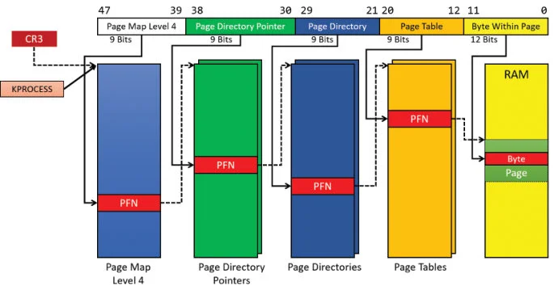

ARM の仮想アドレス変換
32 ビット ARM プロセッサでの仮想アドレス変換には、32 ビット幅のエントリを1,024個持つページディレクトリを一つ使います。 変換に使うデータ構造を図5-22に示します。
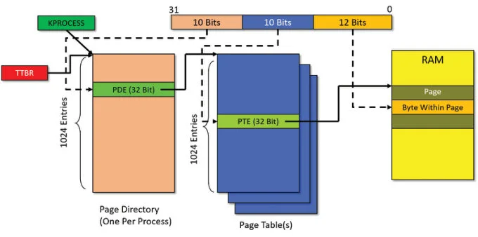
各プロセスにはページディレクトリが一つあり、その物理アドレスは TTBR レジスタ（x86／x64 の CR3 に相当）に入ります。
仮想アドレスの上位10ビットで PDE を選び、最大1,024個のページテーブルのうちどれを参照するかを決めます。
続く10ビットで PTE を選びます。
有効な PTE は物理ページの先頭を指します。ページ内オフセットには、x86 や x64 と同様に下位12ビットを使います。
図5-22の方式で指定できる物理メモリは 4 GB です。 ARM の PTE は、x86 や x64 の64ビット幅より小さい32ビット幅で、PFN に使うのはそのうち20ビットだからです。 ARM プロセッサにも x86 の PAE に似た拡張機能がありますが、原著で扱う Windows は使いません。 原著では、将来 Windows が 64 ビット ARM に対応すれば、物理アドレスの制約が緩和され、プロセスとシステムの仮想アドレス空間も大幅に広がると見込んでいます。
有効な PTE、通常の PDE、大ページ用の PDE のビット配置はそれぞれ異なります。 図5-23は、原著で扱う Windows が使用する ARMv7 の有効な PTE の形式です。 詳しくは ARM の公式ドキュメントを参照してください。

ページフォールトの処理
PTE が有効なら、これまでに示した手順でアドレスを変換できます。 一方、有効ビットがクリアされていれば、目的のページは何らかの理由で、現時点ではそのプロセスからアクセスできません。 無効な PTE にもいくつかの種類があり、参照されたときの処理が異なります。
注：ここで PTE の形式を詳しく説明するのは、32 ビットの x86 だけです。64 ビットや ARM の PTE も同様の情報を持ちますが、レイアウトの詳細は示しません。
無効なページを参照するとページフォールトが発生します。
カーネルのトラップハンドラーは、このフォールトの処理をメモリマネージャーの MmAccessFault に渡します（Part 2 の第8章「トラップのディスパッチ」を参照）。
このルーチンはフォールトを起こしたスレッドのコンテキストで実行され、フォールトを解決できるなら解決し、できない場合は適切な例外を発生させます。
アクセスフォールトの原因と処理を表5-11に示します。
| 原因 | 処理 |
|---|---|
| PTE または PDE の破損 | バグチェックコード 0x1A（MEMORY_MANAGEMENT）でシステムを停止します。 |
| 物理メモリに常駐せず、ディスク上のページファイルまたはマップトファイルにあるページへのアクセス | 物理ページを割り当て、ディスクから対象ページを読み込み、対応するワーキングセットに加えます。 |
| スタンバイリストまたは変更済みリストにあるページへのアクセス | 対応するプロセス、セッション、システムのいずれかのワーキングセットへページを移します。 |
| コミットしていないページへのアクセス（予約のみか、未割り当てのアドレス空間） | アクセス違反例外が発生します。 |
| カーネルモード専用ページへのユーザーモードからのアクセス | アクセス違反例外が発生します。 |
| 読み取り専用ページへの書き込み | アクセス違反例外が発生します。 |
| デマンドゼロページへのアクセス | ゼロで埋めたページを、対応するワーキングセットに加えます。 |
| ガードページへの書き込み | ガードページ違反が発生します。ユーザーモードのスタックへの参照なら、スタックを自動的に拡張します。 |
| コピーオンライトのページへの書き込み | プロセス専用またはセッション専用のコピーを作り、対応するプロセス、セッション、システムのワーキングセットで、元のページをコピーに置き換えます。 |
| 有効なページへの書き込みで、現在のバックストアのコピーにまだ変更が反映されていない場合 | PTE のダーティビットをセットします。 |
| 実行禁止のページでコードを実行 | アクセス違反例外が発生します。 |
PTE のアクセス権とエンクレーブのアクセス権が不一致（後述の「メモリエンクレーブ」と Windows SDK の CreateEnclave の説明を参照） | ユーザーモードではアクセス違反例外が発生します。カーネルモードではバグチェックコード 0x50（PAGE_FAULT_IN_NONPAGED_AREA）でシステムを停止します。 |
次の節では、アクセスフォールトハンドラーが処理する無効な PTE の基本4種類を説明します。 続いて、共有可能なページの実装に使う特殊な無効 PTE であるプロトタイプ PTE を取り上げます。
無効な PTE
アドレス変換で参照した PTE の有効ビットが0なら、その PTE が表すページへの参照は、メモリ管理の例外であるページフォールトを引き起こします。 この場合、MMU は PTE の残りのビットを無視するため、OS はフォールトの解決に必要な情報をそこに記録できます。
無効な PTE の基本4種類と、種別をまだ判定できない場合を以下に示します。 これらは MMU ではなくメモリマネージャーが解釈するため、ソフトウェア PTEと呼ばれます。 一部のフラグは表5-10のハードウェア PTE と共通です。対応するビットフィールドも同じ意味、または似た意味を持つ場合があります。
- ページファイル：対象ページはページファイルにあります。 図5-24のように、PTE の4ビットは最大16個のページファイルのうちの一つを、32ビットはファイル内のページ番号を指定します。 ページング処理はページインを開始し、そのページをメモリに読み込んで有効にします。 ページファイルの先頭と末尾のページはページングに使いません。 オフセットが0の場合と全ビットが1の場合は、次に示す別の形式を表します。
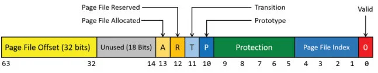
- デマンドゼロ：ページファイル用 PTE と同じ形式ですが、オフセットは0です。 参照されたページには、ゼロで埋めたページを割り当てます。 まずゼロページリストを調べ、空なら空きページリストから1枚取り出してゼロで埋めます。 空きページリストも空なら、いずれかのスタンバイリストから1枚取り出してゼロで埋めます。
- 仮想アドレス記述子：ページファイル用 PTE と同じ形式ですが、オフセットの全ビットが1です。 ページの定義と、バックストアがある場合はその情報を、プロセスの仮想アドレス記述子（VAD）のツリーから取得できます。 この形式は、マップトファイルのセクションをバックストアとするページで使います。 ページング処理は対象アドレスを含む範囲の VAD を探し、VAD が参照するマップトファイルからのページインを開始します（後述の「仮想アドレス記述子」を参照）。
- 遷移：遷移ビットが1です。 対象ページは物理メモリにあり、スタンバイリスト、変更済みリスト、書き出し対象外の変更済みリストのいずれかに入っているか、どのリストにも入っていません。 リストに入っていればそこから取り出し、プロセスのワーキングセットに加えます。 I/O を必要としないため、これはソフトページフォールトと呼ばれます。
- 不明：PTE が0か、ページテーブルがまだ存在しません。後者では、ページテーブルの物理アドレスが入る PDE が0です。
どちらの場合も、メモリマネージャーは VAD を調べて対象の仮想アドレスがコミット済みか確認します。 コミット済みなら、そのアドレス空間を表すページテーブルを作ります。 予約しただけか、まだ割り当てられていなければ、ページフォールトをアクセス違反例外として通知します。
プロトタイプ PTE
メモリマネージャーは、プロセス間で共有できるページをマップするために、プロトタイプ PTEというソフトウェアのデータ構造を使います。 ページファイルをバックストアとするセクションでは、セクションオブジェクトの作成時にプロトタイプ PTE の配列を作ります。 一方、マップトファイルでは、各ビューをマップするたびに、必要な部分の配列を作ります。 この配列はセグメント構造体の一部です（後述の「セクションオブジェクト」を参照）。
プロセスがセクションオブジェクトのビューにマップしたページを初めて参照すると、メモリマネージャーはプロトタイプ PTE の情報をもとに、プロセスのページテーブルで実際の変換に使う PTE を設定します。 VAD が作られるのはビューのマッピング時です。 共有ページが有効になると、プロセスの PTE とプロトタイプ PTE は、どちらもデータが入った物理ページを指します。 この共有ページを参照するプロセス PTE の数を追跡するため、PFN データベースの該当エントリにあるカウンターを増やします。 こうして、どのページテーブルも共有ページを参照していないことを判定し、そのページを無効にして遷移状態のリストへ移したり、ディスクへ書き出したりできます。
共有可能なページを無効にするとき、プロセスのページテーブルには、そのページを記述するプロトタイプ PTE を指す特殊な PTE を設定します（図5-25）。 ページが参照されると、メモリマネージャーはこの PTE に埋め込まれた情報からプロトタイプ PTE を見つけ、参照されたページの状態を調べます。

プロトタイプ PTE が表す共有ページには、次の六つの状態があります。
- アクティブ／有効：ほかのプロセスがアクセスしたため、ページは物理メモリにあります。
- 遷移：ページは物理メモリにあり、スタンバイリストか変更済みリストに入っているか、どのリストにも入っていません。
- 変更済み（書き出しなし）：ページは物理メモリにあり、書き出し対象外の変更済みリストに入っています。
- デマンドゼロ：ゼロで埋めたページを割り当てます。
- ページファイル：ページはページファイルにあります。
- マップトファイル：ページはマップトファイルにあります。
プロトタイプ PTE の形式は通常の PTE と同じですが、アドレス変換には直接使われません。 ページテーブルと PFN データベースの間に置かれ、ページテーブル自体には入りません。
共有可能なページでフォールトが起きたとき、どのプロセスも同じプロトタイプ PTE を参照します。 そのため、メモリマネージャーは共有する各プロセスのページテーブルを一度に更新しなくても、ページを管理できます。 たとえば、ディスクにページアウトした共有コードやデータを読み戻したときは、プロトタイプ PTE だけを更新してページの新しい物理位置を指すようにします。 共有する各プロセスの PTE は、有効ビットがクリアされたままで、引き続きプロトタイプ PTE を指します。 各プロセスが後でそのページを参照したときに、そのプロセス自身の PTE が更新されます。
図5-26は、マップしたビューに含まれる二つの仮想ページを示しています。 一つ目は有効で、プロセスの PTE とプロトタイプ PTE の両方が同じ物理ページを指します。 二つ目は無効で、ページはページファイルにあります。 プロトタイプ PTE がその正確な位置を保持し、ページをマップする各プロセスの PTE がそのプロトタイプ PTE を指します。
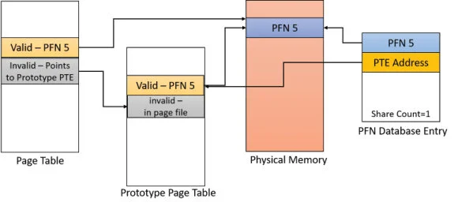
ページイン I/O
ページフォールトを解決するためにページファイルまたはマップトファイルを読み取る必要があるとき、ページイン I/Oが発生します。 ページテーブル自体もページアウトできるため、元の参照先を記述する PTE やプロトタイプ PTE を含むページを読み込むだけでも、追加の I/O が発生することがあります。
ページイン I/O は同期処理です。要求したスレッドは、I/O が完了するまでイベントを待ちます。 この待機は非同期プロシージャ呼び出し（APC）の配信では中断されません。 ページング処理は I/O 要求を発行する際に、ページング I/O であることを示す指定を加えます。 I/O が完了すると I/O システムがイベントを通知し、待機していたページング処理が再開します。
ページング I/O の間、フォールトを起こしたスレッドは、メモリ管理の重要な同期オブジェクトを保持しません。 そのため、同じプロセスのほかのスレッドは仮想メモリを操作したり、ページフォールトを処理したりできます。
待機中に状態が変わることがあるため、ページング処理は I/O 完了時に次の事態を確認します。
- 同じプロセスまたは別のプロセスのスレッドが、同じページに対してフォールトを起こした（次節の「競合するページフォールト」を参照）。
- 仮想アドレス空間からそのページのマッピングが削除され、再マッピングされた。
- ページの保護属性が変更された。
- フォールトの処理に必要なプロトタイプ PTE があり、それを収めたページがワーキングセットから外れた。
ページング処理は I/O 要求を出す前に、これらの変化を判定するのに必要な状態をスレッドのカーネルスタックに保存しておきます。 I/O の完了時に変化を検出したら、必要に応じてページを有効にしないまま、フォールトの処理を終えます。 フォールトを起こした命令が再実行されれば、ページング処理が再び呼ばれ、変更後の PTE を改めて調べます。
競合するページフォールト
あるページを読み込んでいる間に、同じプロセスまたは別のプロセスの別のスレッドが、そのページへの参照でフォールトを起こすことを競合するページフォールト（collided page fault）と呼びます。 マルチスレッドシステムでは頻繁に起きるため、ページング処理は PFN データベースのエントリを調べ、対象ページが遷移状態で読み取りが進行中なら競合として扱います。
競合を検出した場合、ページング処理は PFN データベースのエントリに記録されたイベントを待つことができます。 このイベントは、フォールトを解決するために最初に I/O を発行したスレッドが初期化したものです。 ファイルシステムのデッドロックを防ぐため、別の I/O を並行して発行する場合もあります。 その場合は、最初に完了した I/O の結果だけを使い、ほかの結果は破棄します。
I/O が完了すると、そのイベントを待っていたすべてのスレッドが待機を終えます。 最初に PFN データベースのロックを取得したスレッドが、ページインの完了処理を行います。 I/O が成功したかを確認し、PFN データベースの読み取り進行中ビットをクリアして PTE を更新します。
後続のスレッドがロックを取ったときには、読み取り進行中ビットがクリアされているので、最初の更新が済んでいることが分かります。 これらのスレッドは PFN データベースのページインエラーフラグを調べ、I/O が成功したかを確認します。 フラグがセットされていれば PTE を更新せず、フォールトを起こしたスレッドでページインエラー例外を発生させます。
ページフォールトに伴う一括先読み
メモリマネージャーは、ページフォールトを解決し、システムキャッシュにデータを用意するため、複数のページをまとまりとして先読みします。 データは仮想メモリのワーキングセットではなく、システムのページキャッシュへ直接読み込まれます。 したがって先読みデータは仮想アドレス空間を消費せず、読み込み量は仮想アドレス空間の空き容量に制約されません。
先読みしたページを別の用途に回すときにも、TLB のフラッシュに伴う高コストなプロセッサ間割り込み（IPI）は不要です。 先読みしたページはスタンバイリストに入れ、PTE では遷移状態とします。 後で参照されたページだけがワーキングセットに入り、一度も参照されなければ、解放のために追加のシステムリソースを必要としません。
先読みする範囲にすでにメモリ上にあるページが含まれていても、そのページを読み直す必要はありません。 メモリマネージャーは、図5-27のようにその読み込み先をダミーページに差し替え、全体を一回の大きな I/O で読み込めるようにします。

図のページ A、Y、Z、B に対応するファイル内オフセットと仮想アドレスは連続していますが、物理ページの配置は連続しているとは限りません。 A と B は常駐していないので、読み込む必要があります。 Y と Z はすでに物理メモリにあり、前に読み込んだ後に変更されている可能性もあるので、上書きしてはいけません。
A と B を個別に読み込むより、一度に読み込むほうが効率的です。 そこでメモリマネージャーは、A、Y、Z、B の4ページすべてをバックストアから読み込む単一の要求を発行します。 一つの読み込み要求で扱うページ数は、利用可能なメモリやシステムの現在の使用状況などに応じて決まります。
要求を記述するメモリ記述子リスト（MDL）には、A と B の有効なポインターを入れます。 一方、Y と Z の項目はどちらも、システム全体で共有するダミーページ X を指します。 X はプログラムのアドレス空間には公開されないため、バックストアから読み出した古い可能性のあるデータを書き込んでも問題ありません。 ただし、MDL を使って Y や Z のオフセットを参照するコンポーネントからは、Y や Z ではなく X が見えます。
読み込んだ内容を使わないページは、いくつあっても一つのダミーページで表せます。 同じ MDL で何度も参照されることも、別々のドライバーが同時に使う複数の MDL から参照されることもあります。 そのため、捨てるページに対応する領域の内容はいつでも変わり得ます（MDL の詳細は第6章を参照）。
ページファイル
ページファイルは、プロセスが引き続き使う変更済みページのうち、マッピングが解除されたか、メモリ不足でワーキングセットから外され、ディスクに書き出されたものを保持します。 ページをコミットしたときにページファイルの容量を確保しますが、ページをできるだけまとめて置ける位置は、実際にディスクへ書き出す段階で決まります。
起動時に、セッションマネージャー Smss.exe は、レジストリの HKLM\SYSTEM\CurrentControlSet\Control\Session Manager\Memory Management にある PagingFiles を読み込み、開くページファイルを調べます。
この複数文字列値には、各ページファイルの名前、最小サイズ、最大サイズが含まれます。
Windows がサポートするページファイルは、x86 と x64 で最大16個、ARM で最大2個です。
ページファイル1個の上限は、x86 と x64 で 16 TB、ARM で 4 GB です。
開いたページファイルは System プロセスがハンドルを保持するため、システムの実行中には削除できません。
ページファイルにはプロセスとカーネルの仮想メモリの一部が入るため、セキュリティ上の対策として、シャットダウン時に内容を消去するよう設定できます。
有効にするには、同じレジストリキーの ClearPageFileAtShutdown を 1 に設定します。
無効のままでは、稼働中にページアウトされたデータがシャットダウン後も残り、マシンに物理的にアクセスできる人が読み取れるおそれがあります。
最小サイズと最大サイズがどちらも0か、指定されていなければ、システムがページファイルのサイズを管理します。 Windows 7 と Windows Server 2008 R2 は、RAM の容量だけを使って次のように決めていました。
- 最小サイズ：RAM の容量と 1 GB のうち大きい方。
- 最大サイズ：RAM の容量の3倍と 4 GB のうち大きい方。
この方式では、たとえば RAM を 32 GB や 64 GB 搭載するノート PC やデスクトップ、数百 GB の RAM を搭載するサーバーで、初期サイズが大きくなります。 特に小容量の SSD では、ページファイルがストレージの空きを大きく減らすおそれがあります。 そもそも、搭載する RAM の容量から、普段そのシステムでどれほどメモリを使うかが分かるとは限りません。
本書が扱う世代の実装では、RAM だけでなくページファイルの使用履歴なども考慮して、最小サイズを決めます。
ページファイルを作成、初期化するときに Smss.exe は、四つの要因別に推奨サイズを計算し、それぞれをグローバル変数に記録します。
- RAM（
SmpDesiredPfSizeBasedOnRAM）：RAM の容量に基づく推奨サイズです。 - クラッシュダンプ（
SmpDesiredPfSizeForCrashDump）：クラッシュダンプを保存するための推奨サイズです。 - 使用履歴（
SmpDesiredPfSizeBasedOnHistory）：過去の使用量に基づく推奨サイズです。Smss.exeはタイマーを使い、1時間に1回、ページファイルの使用量を記録します。
- アプリ（
SmpDesiredPfSizeForApps）：Windows アプリのための推奨サイズです。
各値の計算方法を表5-12に示します。
| 要因 | 推奨サイズ |
|---|---|
| RAM | RAM が 1 GB 以下なら 1 GB。1 GB を超えるなら、超えた RAM 1 GB ごとに 1/8 GB を加えます。上限は 32 GB です。 |
| クラッシュダンプ | 専用のダンプファイルがあれば、ダンプの保存にページファイルは不要で、推奨値は0です。専用ファイルを指定するには、レジストリの ダンプの種類が既定の「自動」の場合、RAM が 4 GB 未満なら RAM の1/6です。4 GB 以上なら 2/3 GB に、4 GB を超えた RAM 1 GB ごとに 1/8 GB を加えます。上限は 32 GB です。最近のクラッシュでページファイルの容量が足りなかった場合は、RAM の容量と 32 GB のうち小さい方まで推奨サイズを引き上げます。 完全メモリダンプの場合は、RAM の容量にダンプファイルに含まれる付加情報のサイズを足します。カーネルメモリダンプの場合は RAM の容量です。 |
| 使用履歴 | 十分な数の測定値を記録していれば、使用量の90パーセンタイルを使います。測定値が不足していれば、RAM の容量に基づく値を使います。 |
| アプリ | サーバーでは0です。それ以外では、プロセスライフサイクルマネージャー（PLM）がアプリを終了させるかどうかの判定に使う値をもとに計算します。原著の実装では RAM の2.3倍が基準です。この基準は、モバイル端末のおおよその最低容量を 1 GB として選ばれました。基準から求めるサイズは約 2.5 GB です。これが RAM の容量を上回る場合は RAM の容量を引いた値を、そうでなければ0を返します。 |
システムが管理する場合、ページファイルの最大サイズは、RAM の容量の3倍と 4 GB のうち大きい方です。 最小サイズ（初期サイズ）は次のように決まります。
- システム管理のページファイルの一つ目は、使用履歴に基づく値を基準にします。二つ目以降は、RAM の容量に基づく値を基準にします（表5-12）。
- 一つ目の場合は、基準値がアプリ用の推奨サイズ（
SmpDesiredPfSizeForApps）を下回っていれば、その推奨サイズまで引き上げます。 さらに、基準値がクラッシュダンプ用の推奨サイズ（SmpDesiredPfSizeForCrashDump）を下回っていれば、その推奨サイズまで引き上げます。
ページファイルの設定を確認する
ページファイルの一覧は、レジストリの HKLM\SYSTEM\CurrentControlSet\Control\Session Manager\Memory Management にある PagingFiles で確認できます。
この値には、「システムの詳細設定」から変更できるページファイルの設定が入っています。画面から確認する手順は次のとおりです。
- コントロールパネルを開きます。
- 「システムとセキュリティ」から「システム」を開きます。エクスプローラーで「コンピューター」を右クリックして「プロパティ」を選んでも、同じ画面を開けます。
- 「システムの詳細設定」をクリックします。
- 「パフォーマンス」の「設定」をクリックし、「パフォーマンス オプション」を開きます。
- 「詳細設定」タブを開きます。
- 「仮想メモリ」の「変更」をクリックします。
ページファイルの推奨サイズをデバッガーで調べる
表5-12の計算結果が入った変数を、デバッガーで直接確認します。次は x86 版 Windows 10 での例です。
- ローカルカーネルデバッグを開始します。
Smss.exeのプロセスを探します。
lkd> !process 0 0 smss.exe PROCESS 8e54bc40 SessionId: none Cid: 0130 Peb: 02bab000 ParentCid: 0004 DirBase: bffe0020 ObjectTable: 8a767640 HandleCount: <Data Not Accessible> Image: smss.exe PROCESS 9985bc40 SessionId: 1 Cid: 01d4 Peb: 02f9c000 ParentCid: 0130 DirBase: bffe0080 ObjectTable: 00000000 HandleCount: 0. Image: smss.exe PROCESS a122dc40 SessionId: 2 Cid: 02a8 Peb: 02fcd000 ParentCid: 0130 DirBase: bffe0320 ObjectTable: 00000000 HandleCount: 0. Image: smss.exe
- 先頭に表示された、セッション ID が
noneのプロセスを見つけます。これが親のSmss.exeです（第2章を参照）。 - デバッガーのプロセスコンテキストを、このプロセスに切り替えます。
lkd> .process /r /p 8e54bc40 Implicit process is now 8e54bc40 Loading User Symbols ..
- 前節の四つの変数を表示します。いずれも64ビット幅です。
lkd> dq smss!SmpDesiredPfSizeBasedOnRAM L1 00974cd0 00000000'4fff1a00
lkd> dq smss!SmpDesiredPfSizeBasedOnHistory L1 00974cd8 00000000'05a24700 lkd> dq smss!SmpDesiredPfSizeForCrashDump L1 00974cc8 00000000'1ffecd55 lkd> dq smss!SmpDesiredPfSizeForApps L1 00974ce0 00000000'00000000
- このマシンには
C:\ボリュームしかないので、ページファイルは一つだけ作られます。 個別に設定していなければ、システムがサイズを管理します。 サイズを調べるには、ディスク上のC:\PageFile.Sysを直接確認するか、デバッガーの!vmを使います。
lkd> !vm 1 Page File: \??\C:\pagefile.sys Current: 524288 Kb Free Space: 524280 Kb Minimum: 524288 Kb Maximum: 8324476 Kb Page File: \??\C:\swapfile.sys Current: 262144 Kb Free Space: 262136 Kb Minimum: 262144 Kb Maximum: 4717900 Kb No Name for Paging File Current: 11469744 Kb Free Space: 11443108 Kb Minimum: 11469744 Kb Maximum: 11469744 Kb ...
C:\PageFile.sys の最小サイズは 524,288 KB です。ほかのページファイルの項目は次節で説明します。
四つの変数のうち最大なのは SmpDesiredPfSizeForCrashDump なので、クラッシュダンプ用の推奨サイズが初期サイズを決めています。
その値は 0x1FFECD55（約 524,211 KB）で、表示された値に近くなっています。
ページファイルのサイズは 64 MB の倍数に切り上げられます。
コントロールパネルは、ページファイルを追加するときに、Ntdll.dll に定義された内部システムサービス NtCreatePagingFile を使います。
この操作には SeCreatePagefilePrivilege が必要です。
格納先のディレクトリが圧縮されていても、ページファイル自体は常に非圧縮で作られます。
次節で扱う例外を除き、名前は PageFile.Sys です。
パーティションのルートに隠しファイル属性付きで作られるので、通常の表示では見えません。
誤って削除されないように、ハンドルは System プロセスにも複製されます。作成したプロセスがハンドルを閉じても、System プロセスには開いたままのハンドルが残ります。
スワップファイル
UWP アプリが最小化されるなどしてバックグラウンドに回ると、そのプロセスのスレッドは中断され、CPU を消費しなくなります。 そのプロセスが使っていたプライベートな物理メモリは、ほかのプロセスに回せる場合があります。 メモリの空きが少ないときは、そのプロセスのプライベートワーキングセットをディスクに退避し、空いた物理メモリをほかのプロセスに使わせることがあります。
Windows 8 では、通常のページファイルとは別にスワップファイルが加わりました。
基本的な仕組みは通常のページファイルと同じですが、UWP アプリ専用です。
クライアント版で通常のページファイルが一つ以上作られた場合に限り、システムパーティションのルートに SwapFile.sys（たとえば C:\SwapFile.Sys）が作られます。
通常のページファイルを作った後、Windows は HKLM\System\CurrentControlSet\Control\Session Manager\Memory Management キーを調べます。
DWORD 値 SwapFileControl があり、値が0なら、スワップファイルは作りません。
SwapFile があれば、通常のページファイルと同じ形式の文字列として読み取ります。文字列にはファイル名、初期サイズ、最大サイズが含まれます。
ただし、スワップファイルの場合はサイズに0を指定すると作成されません。
既定ではこの二つのレジストリ値は存在せず、システムパーティションのルートに SwapFile.sys が作られます。
最小サイズは、高速で小容量のディスク（SSD など）なら 16 MB、低速のディスクまたは大容量の SSD なら 256 MB です。
最大サイズは、RAM の容量の1.5倍と、システムパーティションの容量の10％のうち小さい方です。
UWP アプリの詳細は本書の第7章、および Part 2 の第8章と第9章を参照してください。
注：スワップファイルは、サポートされるページファイルの最大個数に含まれません。
仮想ページファイル
デバッガーの !vm には「No Name for Paging File」という項目も表示されます。これが仮想ページファイルです。
実体のあるファイルではなく、後述の「メモリ圧縮」のバックストアとして間接的に使われます。
空き容量を使い切らないよう、十分大きなサイズが設定されています。
圧縮済みページの無効な PTE は、この仮想ページファイルを指します。
データが必要になると、メモリ圧縮のストアは PTE のビットを解釈し、圧縮データが入っているストア、領域、インデックスを特定します。
スワップファイルと仮想ページファイルを調べる
デバッガーの !vm は、スワップファイルと仮想ページファイルを含む、すべてのページファイルの情報を表示します。
lkd> !vm 1 Page File: \??\C:\pagefile.sys Current: 524288 Kb Free Space: 524280 Kb Minimum: 524288 Kb Maximum: 8324476 Kb Page File: \??\C:\swapfile.sys Current: 262144 Kb Free Space: 262136 Kb Minimum: 262144 Kb Maximum: 4717900 Kb No Name for Paging File Current: 11469744 Kb Free Space: 11443108 Kb Minimum: 11469744 Kb Maximum: 11469744 Kb
この Windows 10 の仮想マシンでは、仮想ハードディスク（VHD）が低速ディスクとして扱われるため、スワップファイルの最小サイズは 256 MB です。 RAM が 3 GB、パーティションが 64 GB なので、最大サイズは 4.5 GB と 6.4 GB のうち小さい方の約 4.5 GB になります。
コミット使用量とシステムのコミット上限
VirtualAlloc でメモリをコミットしたり、MapViewOfFile でビューをマップしたりする場合、システムは要求を成功として返す前に、その内容を置く容量が RAM またはバックストアにあることを確認します。
ページファイルをバックストアとするセクションを除けば、マップトメモリは、MapViewOfFile が参照するファイルマッピングオブジェクトのファイルをバックストアとして使います。
それ以外の仮想メモリの割り当ては、システムが管理する共有資源、つまり RAM とページファイルに依存します。
システムはコミット使用量とコミット上限を追跡し、これらの資源で格納できる容量を超えてコミットしないようにします。
注：Windows はページファイルを一つも使わずに動作できますが、通常は推奨されません。 RAM を使い切るとコミット可能な容量を増やせず、メモリの割り当てに失敗します。場合によってはシステムが停止します。 以下では、ページファイルについての説明は一つ以上存在する場合に当てはまります。
システムのコミット上限は、マップトファイルをバックストアとするセクションなど、専用のバックストアがある割り当てとは別に、コミットできる仮想メモリの総量です。 値は、Windows が利用できる RAM の容量と、現在のページファイルのサイズの合計です。 ページファイルを拡張または追加すると上限は上がります。ページファイルがなければ、Windows が利用できる RAM の容量が上限です。
コミット使用量は、RAM またはページファイルに格納する必要があるコミット済み割り当ての、システム全体での合計です。 プロセスのプライベートなコミット済み仮想アドレス空間だけでなく、ほかの種類の割り当ても含みます。
Windows は、プロセスごとにプロセスページファイルクォータというカウンターも持ちます。 コミット使用量に計上される割り当ての多くは、このカウンターにも計上されます。 この値は、各プロセスがシステムのコミット使用量に占めるプライベートな分です。 現在のページファイル使用量ではなく、それらの割り当てをすべてページファイルに書き出すとした場合に必要な容量を表します。
次の種類の割り当ては、システムのコミット使用量に加算されます。その一部はプロセスページファイルクォータにも計上されます。
- プライベートなコミット済みメモリ：
VirtualAllocにMEM_COMMITを指定して割り当てるメモリです。これはコミット使用量に最もよく計上される種類で、プロセスページファイルクォータにも計上されます。
- ページファイルをバックストアとするマップトメモリ：ファイルに関連付けられていないセクションオブジェクトを指定し、
MapViewOfFileでマップするメモリです。システムはページファイルの一部をバックストアとして使います。プロセスページファイルクォータには計上されません。 - マップトメモリのコピーオンライト領域：通常のマップトファイルでも、変更していないページには元のファイルをバックストアとして使えますが、変更したページには使えません。変更したページは RAM またはページファイルに置きます。この割り当てはプロセスページファイルクォータには計上されません。
- 非ページプール、ページプール、およびファイルを明示的にバックストアとしないシステム空間の割り当て：システムメモリプールのうち現在使われていない領域もコミット使用量に含まれます。ページアウトできない領域はページファイルに書き出されませんが、ページアウト可能なプライベートデータに使える RAM を減らすので計上します。これらはプロセスページファイルクォータには計上されません。
- カーネルスタック：スレッドがカーネルモードで実行されるときに使うスタックです。
- ページテーブル：大半はページアウトでき、マップトファイルをバックストアとしません。ページアウトできない場合でも RAM を使うので、いずれも必要な容量をコミット使用量に計上します。
- まだ割り当てていないページテーブルのための容量：プライベートなコミット済み領域など、広い仮想アドレス空間が確保されても、参照されるまではページテーブルを作らなくてよい場合があります。必要になったときに作れるよう、まだ存在しないページテーブルの分もコミット使用量に計上します。
- Address Windowing Extensions（AWE）API で割り当てた物理メモリ：前述のとおり、物理メモリを直接消費します。
このうち多くの項目は、実際に使用している容量ではなく、将来使う可能性がある容量を表します。 たとえば、プライベートなコミット済みページは、初めて参照するまではデマンドゼロページであり、RAM の物理ページも、同じ大きさのページファイルの領域も使いません。 仮想空間を作った時点でコミット使用量には計上するので、後で参照したときには実際に使う容量が確保されています。
ファイルをコピーオンライトでマップした領域にも同じ考え方が当てはまります。 プロセスが書き込むまでは、領域全体のバックストアはマップトファイルです。 ただし、どのページにも実行中に書き込めます。 書き込んだページはその後プロセス専用になり、ページファイルがバックストアになります。 領域の作成時にコミット使用量に計上しておけば、実際に書き込んだときに、プロセス専用のデータを置くための容量が残っています。
プライベートメモリを先に予約し、後からコミットする場合、VirtualAlloc で予約領域を作っても、領域そのものはシステムのコミット使用量に入りません。
ただし Windows 8 と Windows Server 2012 以前では、予約領域を記述する新しいページテーブルの分が、まだ作られていない場合や結局不要になる場合も、コミット使用量に計上されます。 Windows 8.1 と Windows Server 2012 R2 以降は、予約領域のページテーブル階層をすぐには計上しないため、ページテーブル用の容量を使い切ることなく、広大な領域を予約できます。 これは、第7章で扱う Control Flow Guard（CFG）などの機能で役立ちます。 その領域の一部または全体を後からコミットすると、領域とページテーブルの容量がシステムのコミット使用量に加算され、プロセスページファイルクォータにも計上されます。
VirtualAlloc によるコミットや MapViewOfFile が成功したとき、システムは、その時点で容量が必要でなくても、後で必要になれば利用できると保証しています。
そのため、割り当てた領域を後で参照したとき、容量不足を理由に失敗することはありません。
ただし、ページ保護への違反や領域が解放済みであることなど、別の理由では失敗します。
コミット使用量の計上は、この保証を成り立たせる仕組みです。
パフォーマンスモニターの Memory: Committed Bytes はコミット使用量を表します。
タスクマネージャーの「パフォーマンス」タブでは「コミット済み」の最初の数値に当たり、二つ目はコミット上限です。
Process Explorer の「System Information」の「Memory」タブでは、「Commit Charge」欄の「Current」として表示されます。
プロセスページファイルクォータの値は、パフォーマンスカウンターの Process: Page File Bytes と Process: Private Bytes のどちらでも取得できます。
ただし、どちらの名前も、このカウンターの意味を正確には表しません。
コミット使用量が上限に達すると、メモリマネージャーは一つ以上のページファイルを拡張して上限を引き上げようとします。 拡張できなければ、既存のコミット済みメモリが解放されるまで、コミット使用量を増やす新たな割り当ては失敗します。 表5-13のパフォーマンスカウンターを使うと、コミット済みメモリやページファイルの使用状況を、システム全体、プロセス別、ページファイル別に確認できます。
| カウンター | 意味 |
|---|---|
Memory: Committed Bytes | 予約だけの領域を除いた、コミット済み仮想メモリのバイト数です。一度もページアウトされていないプライベートなコミット済みページも含むので、ページファイルの実使用量とは限りません。ページファイルまたは RAM で裏付ける必要がある容量を表します。 |
Memory: Commit Limit | ページファイルを拡張せずにコミットできる仮想メモリのバイト数です。ページファイルを拡張できる場合は、この上限も引き上げられます。 |
Process: Page File Quota | Memory: Committed Bytes のうち、そのプロセスに計上された分です。 |
Process: Private Bytes | Process: Page File Quota と同じ値です。 |
Process: Working Set - Private | Process: Page File Quota に含まれる領域のうち、現在 RAM にあり、ページフォールトなしに参照できる分です。Process: Working Set にも含まれます。 |
Process: Working Set | Process: Virtual Bytes に含まれる領域のうち、現在 RAM にあり、ページフォールトなしに参照できる分です。 |
Process: Virtual Bytes | プロセスの仮想メモリ割り当ての合計です。マップした領域、プライベートなコミット済み領域、プライベートな予約領域を含みます。 |
Paging File: % Usage | ページファイルの容量のうち、現在使っている割合です。 |
Paging File: % Usage Peak | Paging File: % Usage の観測値のうち最大の値です。 |
コミット使用量に応じたページファイルのサイズ
表5-13のカウンターは、ページファイルのサイズを手動で決めるときの参考になります。 RAM の容量をもとにした既定の設定はたいていのマシンで十分ですが、実行する処理によってはページファイルが大きすぎることも、小さすぎることもあります。
起動以降に実行したアプリケーションから必要なページファイルの容量を見積もるには、Process Explorer の「System Information」の「Memory」タブで、コミット使用量のピークを確認します。 この値は、プライベートなコミット済み仮想メモリの大半をページアウトしなければならなかったと仮定した場合に、起動後に必要だったページファイル容量のピークを示す目安です。実際に大半をページアウトすることはまれです。
必要以上にページファイルを大きくしても、システムが実際に使う量は変わらず、性能も上がりません。 増えるのはコミットできる仮想メモリの上限です。 実行中のアプリケーションに対してページファイルが小さすぎると、仮想メモリ不足を示すエラーが表示されることがあります。
その場合は、各プロセスの Private Bytes を調べてメモリリークがないか確認します。
リークしているプロセスが見つからなければ、システムのページプールのサイズを調べます。
デバイスドライバーがページプールをリークしていれば、それが原因かもしれません。
調べ方は「カーネルモードのヒープ（システムメモリプール）」の「プールのリークを調べる」を参照してください。
タスクマネージャーでコミット使用量を確認する
タスクマネージャーの「パフォーマンス」タブで、コミット済みメモリの使用量を確認できます。 ページファイルに関係する項目は次の図のとおりです。
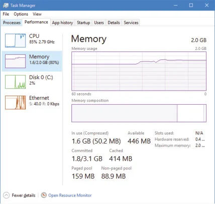
システム全体のコミット状況は、「コミット済み」の下に並ぶ二つの数値で確認できます。 最初の数値はページファイルの実使用量ではなく、システムのコミット使用量です。 プライベートなコミット済み仮想メモリを一度にすべてページアウトすると仮定した場合に、ページファイルがどれだけ必要になるかを見積もれます。
二つ目はコミット上限です。RAM とページファイルで裏付けられる仮想メモリの上限を示し、現在の RAM の容量とページファイルのサイズの合計がおおよその値になります。 今後ページファイルが拡張される可能性は、この値には含まれません。
Process Explorer の「System Information」では、これらに加えて、コミット上限に対するピーク時の使用量と現在の使用量の割合も確認できます。

スタック
スレッドは実行中に、関数の引数、ローカル変数、および呼び出した関数から戻るときのアドレスを一時的に格納する場所を必要とします。 このメモリ領域をスタックと呼びます。 Windows のメモリマネージャーは、スレッドごとにユーザースタックとカーネルスタックを用意します。また、プロセッサごとに DPC スタックを用意します。 第2章では、システムコールの際に、スレッドがユーザースタックからカーネルスタックに切り替わることを説明しました。 次に、スタックに使うメモリを抑える仕組みを説明します。
ユーザースタック
スレッドを作ると、メモリマネージャーは所定の量の仮想メモリを自動で予約します。既定では 1 MB です。
この容量は CreateThread、CreateRemoteThread、CreateRemoteThreadEx の呼び出し時に指定できます。
また、アプリケーションのビルド時に Microsoft C／C++ のリンカーオプション /STACK:reserve を指定すると、実行イメージのヘッダーに予約サイズを記録できます。
既定では 1 MB を予約しますが、PE ヘッダーで別のコミットサイズを指定していなければ、最初にコミットするのはスタックの先頭の1ページとガードページだけです。 スタックが伸びてガードページに達すると例外が発生し、新たなガードページの割り当てが試みられます。 このため、ユーザースタックは最初から 1 MB をコミットするのではなく、必要に応じて拡張されます。一度拡張されると縮小はしません。
作成できるスレッド数の上限を調べる
32 ビットプロセスのユーザーアドレス空間が 2 GB の場合、スレッドごとに予約するスタックのサイズから、スレッド数の上限を見積もれます。
既定の 1 MB なら、約 2 GB を使い切る手前、つまり2,048本弱が上限です。
ただし、BCD の increaseuserva を使い、実行イメージが大きなアドレス空間に対応している場合は、この限りではありません。
各スレッドのスタックの予約サイズを最小の 64 KB にすると、上限は約3万本に増えます。
Sysinternals の TestLimit で確認したときの出力例を次に示します。メモリを使い切る実験なので、検証用の環境で実施してください。
C:\Tools\Sysinternals>Testlimit.exe -t -n 64 Testlimit v5.24 - test Windows limits Copyright (C) 2012-2015 Mark Russinovich Sysinternals - www.sysinternals.com Process ID: 17260 Creating threads with 64 KB stacks... Created 29900 threads. Lasterror: 8
ユーザーアドレス空間が 128 TB ある 64 ビット版 Windows なら、メモリが十分あれば、数十万本のスレッドを作れそうに見えます。
ところが、32 ビット版の Testlimit.exe は Wow64 上で動作するため、実際には 32 ビット版 Windows 上よりスレッド数が少なくなります（Wow64 については Part 2 の第8章を参照）。
各スレッドは 32 ビットの Wow64 用スタックと 64 ビットのスタックの両方を持つため、2倍以上のメモリを使いますが、プロセスのユーザーアドレス空間は 2 GB のままです。
64 ビット版 Windows でスレッド作成の上限を調べるには、Testlimit64.exe を使います。
実験を終えるには、Process Explorer またはタスクマネージャーで TestLimit を終了します。 Ctrl＋C の処理自体が新たなスレッドを必要とするため、メモリを使い切った後はこのキー操作では中断できません。
カーネルスタック
ユーザースタックは通常 1 MB ですが、カーネルスタックに割り当てるメモリはそれより少なく、32 ビットシステムでは 12 KB、64 ビットシステムでは 16 KB です。 隣接するガードページを含めると、仮想アドレス空間をそれぞれ 16 KB、20 KB 占めます。 カーネルで動くコードは、ユーザーコードほど再帰を使わず、変数に使う領域を節約し、スタック上のバッファーを小さくすることが求められます。 カーネルスタックは全プロセスが共有するシステムアドレス空間にあるため、消費するメモリの影響がシステム全体に及びます。
カーネルコード自体は通常再帰しませんが、Win32k.sys が処理するグラフィックスのシステムコールがユーザーモードにコールバックし、そこから再びシステムコールを発行すると、同じカーネルスタック上で処理が入れ子になります。
このため Windows には、カーネルスタックを初期サイズから拡張し、不要になった分を解放する仕組みがあります。
同じスレッドがグラフィックス呼び出しを重ねるたびに、16 KB のカーネルスタックが追加で割り当てられます。
追加領域はシステムアドレス空間内で元の領域と連続している必要はありません。メモリマネージャーは、ガードページに近づいたときに別のスタック領域へ切り替えられます。
入れ子になった呼び出しから戻るたびに、メモリマネージャーが追加の領域を解放します（図5-28）。
この仕組みによって、再帰的なシステムコールを処理でき、システムアドレス空間も効率よく使えます。
ドライバーの開発者も、再帰的なコールアウトに際して、必要に応じて KeExpandKernelStackAndCallout または KeExpandKernelStackAndCalloutEx を使えます。

カーネルスタックのメモリ使用量を調べる
Sysinternals の RAMMap を使うと、カーネルスタックが現在占めている物理メモリを確認できます。 次の図は「Use Counts」タブの表示例です。
- 前の TestLimit の実験を繰り返し、実行した TestLimit はまだ終了しません。
- RAMMap に切り替えます。
- 「File」メニューから「Refresh」を選ぶか、F5 を押します。次の図のように、カーネルスタックの使用量が大幅に増えます。

先に起動した TestLimit を終了せずにさらに何度か起動すると、32 ビットシステムでは物理メモリを簡単に使い切ります。 このメモリ消費は、32 ビットシステム全体で作成できるスレッド数を制約する主な要因の一つです。
DPC スタック
Windows は、DPC を実行するときに使うスタックをプロセッサごとに用意します。 これによって DPC のコードは現在のスレッドのカーネルスタックを使わずに済みます。 切り替えるのはスタックであり、DPC がどのスレッドのコンテキストで実行されるかとは別の話です。DPC は任意のスレッドのコンテキストで実行されます（詳細は第6章を参照）。
DPC スタックは、システムコール命令 sysenter（x86）、svc（ARM）、syscall（x64）の処理を開始するときにも使われます。
CPU は、これらの命令を実行するとき、スタック切り替えに必要な情報として、プロセッサ固有のレジスタ（x86 と x64 では MSR）の設定を使います。
コンテキストスイッチのたびに MSR を設定し直すと処理コストがかかるので、Windows は、プロセッサごとの DPC スタックを使うように設定します。
仮想アドレス記述子
メモリマネージャーは、スレッドがアドレスを参照してページフォールトが起きるまで待ち、必要になってからディスク上のページを読み込みます。 このデマンドページングは、コピーオンライトと同じく、処理が必要になるまで実行を遅らせる遅延評価の一種です。
遅延評価は、ページの読み込みだけでなく、新しいページを記述するページテーブルの作成にも使われます。
スレッドが VirtualAlloc で大きな仮想メモリ領域をコミットしても、一部の範囲には一度もアクセスしないかもしれません。
その範囲のページテーブルを先に作っても使われないため、メモリマネージャーは、スレッドがページフォールトを起こした段階で、対象ページのテーブルを作ります。
多くのメモリを予約またはコミットして、その一部にしかアクセスしないプロセスでは、これによって割り当て処理が速くなります。
まだ作っていないページテーブルに必要な容量も、プロセスページファイルクォータとシステムのコミット使用量に計上します。 こうして、必要になったときにページテーブルを作れるだけの容量を確保しながら、大きな領域でもすばやく割り当てられます。 要求元のスレッドに利用可能なアドレス範囲を返すため、メモリマネージャーは別のデータ構造で、プロセスのアドレス空間のどの範囲が予約済みかを追跡します。 これを仮想アドレス記述子（VAD）と呼び、非ページプールから割り当てます。
プロセスごとの VAD
メモリマネージャーは、各プロセスのアドレス空間の状態を表す VAD を、自己平衡二分探索木の一種であるAVL 木で管理します。 AVL 木では各ノードの左右の部分木の高さの差が1以内に収まり、挿入、検索、削除を高速に行えます。 この構造により、仮想アドレスに対応する VAD を探す際の比較回数を平均して少なくできます。
AVL 木の名前は、考案した Adelson-Velsky と Landis に由来します。
空き領域ではない連続した仮想アドレス範囲について、予約、コミット、マッピングの別や、メモリの保護属性などが同じ範囲ごとに、一つの VAD が対応します。 図5-29は VAD の木の構造を示します。

プロセスがアドレス空間を予約するか、セクションのビューをマップすると、メモリマネージャーは割り当て要求の情報を保持する VAD を作ります。 保持するのは、予約するアドレス範囲、共有かプライベートか、子プロセスが内容を継承できるか、範囲内のページに適用する保護属性などです。
スレッドがアドレスに初めてアクセスすると、メモリマネージャーはそのアドレスを含むページの PTE を作る必要があります。 そこで、アクセス先を範囲に含む VAD を探し、見つかった情報から PTE を設定します。 どの VAD にも含まれないか、予約しただけでコミットしていない範囲なら、まだ使える状態にしていないメモリへのアクセスなので、アクセス違反になります。
カーネルデバッガーで VAD を調べる
カーネルデバッガーの !vad で、指定したプロセスの VAD を表示できます。
まず !process で VAD の木のルートのアドレスを探し、そのアドレスを !vad に渡します。
次は Explorer.exe のプロセスを調べた例です。
lkd> !process 0 1 explorer.exe PROCESS ffffc8069382e080 SessionId: 1 Cid: 43e0 Peb: 00bc5000 ParentCid: 0338 DirBase: 554ab7000 ObjectTable: ffffda8f62811d80 HandleCount: 823. Image: explorer.exe VadRoot ffffc806912337f0 Vads 505 Clone 0 Private 5088. Modified 2146. Locked 0. ...
lkd> !vad ffffc8068ae1e470 VAD Level Start End Commit ffffc80689bc52b0 9 640 64f 0 Mapped READWRITE Pagefile section, shared commit 0x10 ffffc80689be6900 8 650 651 0 Mapped READONLY Pagefile section, shared commit 0x2 ffffc80689bc4290 9 660 675 0 Mapped READONLY Pagefile section, shared commit 0x16 ffffc8068ae1f320 7 680 6ff 32 Private READWRITE ffffc80689b290b0 9 700 701 2 Private READWRITE ffffc80688da04f0 8 710 711 2 Private READWRITE ffffc80682795760 6 720 723 0 Mapped READONLY Pagefile section, shared commit 0x4 ffffc80688d85670 10 730 731 0 Mapped READONLY Pagefile section, shared commit 0x2 ffffc80689bdd9e0 9 740 741 2 Private READWRITE ffffc80688da57b0 8 750 755 0 Mapped READONLY \Windows\en-US\explorer.exe.mui ... Total VADs: 574, average level: 8, maximum depth: 10 Total private commit: 0x3420 pages (53376 KB) Total shared commit: 0x478 pages (4576 KB)
マッピングを切り替える VAD
ビデオカードのドライバーは通常、ユーザーモードのグラフィックスアプリケーションから、ビデオカードのメモリや AGP ポートのメモリなどにデータをコピーします。 これらのコピー先はそれぞれアドレスとキャッシュ属性が異なります。
異なるキャッシュ属性のメモリを、同じプロセスのビューにすばやくマップできるように、メモリマネージャーはローテート VAD（rotate VAD）を備えています。 これを使うと、ビデオドライバーは GPU でデータを直接転送し、不要になったメモリをプロセスのビューから外して、必要なメモリへ切り替えられます。 図5-30は、同じ仮想アドレスのマッピング先をビデオ RAM と通常の仮想メモリとの間で切り替える例です。

NUMA
Windows のメモリマネージャーには、大規模サーバーや Intel i7、AMD Opteron の SMP ワークステーションなどで、非一様メモリアクセスアーキテクチャ（NUMA）をより効果的に使うための改良が、リリースごとに加えられてきました。 ノードの位置、接続関係、アクセスコストをメモリマネージャーが把握しているため、アプリケーションやドライバーは、ハードウェアの詳細を意識せずに NUMA を利用できます。
初期化時にメモリマネージャーは MiComputeNumaCosts を呼び、複数のノードでページやキャッシュに対する処理を試して、完了までの時間を測ります。
その結果から、ノード間の距離をアクセスコストとして表すグラフを作ります。
ある処理にページが必要になると、このグラフから最も近いノードを選びます。
そのノードに空きメモリがなければ、次に近いノードを選びます。
可能な限り、割り当てを要求したスレッドの理想プロセッサが属するノード（理想ノード）からメモリを割り当てます。
アプリケーションがノードを指定することもできます。そのための API には VirtualAllocExNuma、CreateFileMappingNuma、MapViewOfFileExNuma、AllocateUserPhysicalPagesNuma があります。
理想ノードは、アプリケーションからの割り当て要求だけでなく、カーネルの処理やページフォールトにも使います。
たとえば、スレッドが理想プロセッサ以外の CPU で動作していてページフォールトを起こすと、メモリマネージャーは現在のノードではなく、そのスレッドの理想ノードからメモリを割り当てます。
スレッドが現在の CPU にいる間は参照が遅くなる場合がありますが、理想ノードに戻った後はアクセスが速くなります。
理想ノードでメモリを確保できない場合も、ほかのノードを無作為に選ぶのではなく、理想ノードに最も近いノードを選びます。
ドライバーも、MmAllocatePagesForMdlEx や MmAllocateContiguousMemorySpecifyCacheNode といった API でノードを指定できます。
メモリマネージャーのプールやデータ構造も、NUMA 向けに調整されています。 たとえば、非ページプールには、すべてのノードの物理メモリをできるだけ均等に使います。 割り当ての際は、理想ノードを手掛かりに、そのノードの物理メモリに対応する非ページプール内の仮想アドレス範囲を選びます。 プールの空きリストも NUMA ノードごとに用意します。 システムキャッシュ、システム PTE、ルックアサイドリストも同様に、ノードに分散して割り当てます。
ページをゼロで埋める際は、各ページの物理メモリがあるノードに NUMA アフィニティを設定したスレッドを作り、複数ノードで並行に処理します。 論理プリフェッチャーと SuperFetch も、先読みするときに対象プロセスの理想ノードを使います（後述の「SuperFetch による先行メモリ管理」を参照）。 ソフトページフォールトでは、ページがフォールトを起こしたスレッドの理想ノードに移動します。
セクションオブジェクト
前述の「共有メモリとマップトファイル」で説明したように、セクションオブジェクトは、二つ以上のプロセスが共有できるメモリ領域を表します。 Windows サブシステムではファイルマッピングオブジェクトと呼びます。 セクションオブジェクトは、ページファイルまたはディスク上の別のファイルに対応付けられます。
エグゼクティブは実行イメージをメモリに読み込むためにセクションを使い、キャッシュマネージャーはキャッシュしたファイルのデータにアクセスするために使います（詳細は Part 2 のキャッシュマネージャーの解説を参照）。 アプリケーションも、セクションオブジェクトを使って、ファイルをプロセスのアドレス空間にマップできます。 異なる範囲をビューとしてマップすれば、ファイルを直接読み書きする代わりに、メモリ上の大きな配列のように操作できます。 これをマップトファイル I/Oと呼びます。
プログラムが物理メモリにない無効なページにアクセスすると、ページフォールトが発生し、メモリマネージャーがマップトファイルまたはページファイルからページを読み込みます。
アプリケーションがページを書き換えると、メモリマネージャーは通常のページング処理の一環として、変更をファイルに書き戻します。
アプリケーションは FlushViewOfFile でビューを明示的に書き出すこともできます。
ほかのオブジェクトと同様、セクションオブジェクトの割り当てと解放はオブジェクトマネージャーが行います。 オブジェクトマネージャーは、オブジェクトの管理に使うヘッダーを作成して初期化します。セクションオブジェクトの本体を定義するのはメモリマネージャーです（オブジェクトマネージャーは Part 2 の第8章を参照）。 メモリマネージャーは、ユーザーモードのスレッドが本体の属性を取得、変更するためのサービスも実装しています。 図5-31にオブジェクトの構造を、表5-14に本体に格納する固有の属性を示します。

| 属性 | 意味 |
|---|---|
| 最大サイズ | セクションを拡張できる上限をバイト数で表します。ファイルをマップする場合は、ファイルの最大サイズです。 |
| ページ保護 | 作成時にセクション内のすべてのページに適用するメモリ保護です。 |
| ページファイルまたはマップトファイル | セクションを空で作る場合はページファイルを、ファイルを読み込んで使う場合はマップトファイルをバックストアにします。ページファイルをバックストアにする場合、実際にそのファイルの領域を使うのは、ページをディスクに書き出す必要が生じたときです。 |
| ベースアドレス固定の有無 | 固定のセクション（based section）は、共有するすべてのプロセスで同じ仮想アドレスに現れる必要があります。固定でないセクション（non-based section）は、プロセスごとに異なる仮想アドレスに現れても構いません。 |
Process Explorer でセクションオブジェクトを調べる
Sysinternals の Process Explorer で、プロセスがマップしているファイルを確認できます。
- 「View」メニューで「Lower Pane View」から「DLLs」を選びます。
- 「View」メニューの「Select Columns」を開き、「DLL」タブで「Mapping Type」列を有効にします。
- マッピングの種類が「Data」と表示されている行を確認します。
これらはデータとしてマップしたファイルで、イメージローダーがモジュールとしてロードした DLL などとは異なります。
ページファイルをバックストアとするセクションオブジェクトでは、「Name」列に
<Pagefile Backed>と表示されます。それ以外はファイル名が表示されます。

別の方法は、「View」メニューの「Lower Pane View」から「Handles」を選び、型が「Section」のオブジェクトを探すことです。 次の図では、名前が付いている場合はオブジェクトの名前が表示されています。 この名前はバックストアに使われるファイルの名前ではなく、オブジェクトマネージャーの名前空間で付けられたセクションの名前です（Part 2 の第8章を参照）。 項目をダブルクリックすると、開かれているハンドルの数やセキュリティ記述子などを確認できます。

図5-32は、メモリマネージャーがマップ済みセクションを記述するために管理するデータ構造です。 この構造により、ファイルを直接開いた場合でも、メモリにマップした場合でも、読み取るデータの整合性が保たれます。
ファイルオブジェクトで表される各オープンファイルには、セクションオブジェクトへのポインターを保持する構造体が一つあります。 この構造体が、アクセス方法によらずデータの整合性を保ち、ファイルのキャッシュを可能にします。 構造体が指す制御領域は一つか二つです。 一方はファイルをデータとして扱うときに使われ、もう一方は実行イメージとして実行するときに使われます。
制御領域は、ファイル内の各領域のマッピング情報（読み取り専用、読み書き可能、コピーオンライトなど）を持つサブセクション構造体を指します。 制御領域は、ページプールに割り当てられたセグメント構造体も指します。 セグメント構造体が指すのは、セクションオブジェクトがマップする実際のページに対応するプロトタイプ PTE です。 前述のとおり、プロセスのページテーブルはこれらのプロトタイプ PTE を指し、プロトタイプ PTE が参照先のページをマップします。

Windows は、ファイルを読み書きするどのプロセスからも、同じ内容が見えるようにします。 ただし、あるファイルのページが物理メモリに二重に存在する場合があります。その場合も、各プロセスは最新のコピーを参照するため、データの整合性は保たれます。
この重複は、実行イメージのファイルをデータとして読み書きした後、そのイメージを実行すると起こり得ます。 たとえば、リンカーがファイルをデータとして開いて実行イメージを生成し、その後イメージローダーが同じファイルを実行イメージとしてマップする場合です。 内部では、次の処理が行われます。
- ファイルマッピング API またはキャッシュマネージャーを使って実行ファイルを作成した場合、読み書きするデータページを表すデータ用の制御領域を作ります。
- イメージを実行するため、セクションオブジェクトを作成して実行イメージとしてマップします。このとき、メモリマネージャーはファイルのセクションオブジェクトポインターがデータ用の制御領域を指していることを確認し、セクションの変更をディスクへ書き出します。イメージ用の制御領域を通じてファイルにアクセスする前に、変更済みページをすべてディスクに反映させるためです。
- メモリマネージャーは、実行イメージ用の制御領域を作ります。
- イメージの実行が始まると、ページフォールトに応じて、読み取り専用のページをイメージファイルから読み込みます。対応するデータページが物理メモリにあれば、そのページから直接コピーします。
データ用の制御領域がマップしていたページがスタンバイリストに残っていると、同じデータのコピーがメモリ上の異なるページに二つできます。 ただし、変更済みの内容はすでにディスクに書き出されているので、実行イメージから読み込んだページも最新です。また、そのページをディスクに書き戻すことはありません。
カーネルデバッガーで制御領域を調べる
ファイルの制御領域のアドレスを調べるには、まず対象のファイルオブジェクトのアドレスが必要です。
カーネルデバッガーの !handle でプロセスのハンドルテーブルを表示し、ファイルオブジェクトのアドレスを確認します。
!file はファイルオブジェクトの基本情報を表示しますが、セクションオブジェクトポインター構造体へのポインターは表示しません。
そのアドレスを得るには、dt でファイルオブジェクトを構造体として表示します。
セクションオブジェクトポインター構造体には、データ用の制御領域、共有キャッシュマップ（Part 2 のキャッシュマネージャーの解説を参照）、イメージ用の制御領域を指す三つのポインターがあります。
対象の制御領域があれば、そのアドレスを !ca に渡して表示できます。
たとえば PowerPoint ファイルを開いて、そのプロセスのハンドルテーブルを !handle で表示すると、対象ファイルの開いたハンドルが見つかります。出力をテキスト検索しても構いません。
!handle の詳細は Part 2 の第8章「オブジェクトマネージャー」またはデバッガーのドキュメントを参照してください。
lkd> !process 0 0 powerpnt.exe PROCESS ffffc8068913e080
SessionId: 1 Cid: 2b64 Peb: 01249000 ParentCid: 1d38
DirBase: 252e25000 ObjectTable: ffffda8f49269c40 HandleCount: 1915.
Image: POWERPNT.EXE
lkd> .process /p ffffc8068913e080
Implicit process is now ffffc806'8913e080
lkd> !handle
...
0c08: Object: ffffc8068f56a630 GrantedAccess: 00120089 Entry: ffffda8f491d0020
Object: ffffc8068f56a630 Type: (ffffc8068256cb00) File
ObjectHeader: ffffc8068f56a600 (new version)
HandleCount: 1 PointerCount: 30839
Directory Object: 00000000 Name: \WindowsInternals\7thEdition\Chapter05\
diagrams.pptx {HarddiskVolume2}
...
ファイルオブジェクトのアドレス FFFFC8068F56A630 を dt に渡して構造体を表示します。
lkd> dt nt!_file_object ffffc8068f56a630 +0x000 Type : 0n5 +0x002 Size : 0n216 +0x008 DeviceObject : 0xffffc806'8408cb40 _DEVICE_OBJECT +0x010 Vpb : 0xffffc806'82feba00 _VPB +0x018 FsContext : 0xffffda8f'5137cbd0 Void +0x020 FsContext2 : 0xffffda8f'4366d590 Void +0x028 SectionObjectPointer : 0xffffc806'8ec0c558 _SECTION_OBJECT_POINTERS ...
次に、得られたセクションオブジェクトポインター構造体のアドレスを dt に渡します。
lkd> dt nt!_section_object_pointers 0xffffc806'8ec0c558 +0x000 DataSectionObject : 0xffffc806'8e838c10 Void +0x008 SharedCacheMap : 0xffffc806'8d967bd0 Void +0x010 ImageSectionObject : (null)
最後に、制御領域のアドレスを !ca に渡して表示します。
lkd> !ca 0xffffc806'8e838c10 ControlArea @ ffffc8068e838c10 Segment ffffda8f4d97fdc0 Flink ffffc8068ecf97b8 Blink ffffc8068ecf97b8 Section Ref 1 Pfn Ref 58 Mapped Views 2 User Ref 0 WaitForDel 0 Flush Count 0 File Object ffffc8068e5d3d50 ModWriteCount 0 System Views 2 WritableRefs 0 Flags (8080) File WasPurged \WindowsInternalsBook\7thEdition\Chapter05\diagrams.pptx Segment @ ffffda8f4d97fdc0 ControlArea ffffc8068e838c10 ExtendInfo 0000000000000000 Total Ptes 80 Segment Size 80000 Committed 0 Flags (c0000) ProtectionMask
Subsection 1 @ ffffc8068e838c90 ControlArea ffffc8068e838c10 Starting Sector 0 Number Of Sectors 58 Base Pte ffffda8f48eb6d40 Ptes In Subsect 58 Unused Ptes 0 Flags d Sector Offset 0 Protection 6 Accessed Flink ffffc8068bb7fcf0 Blink ffffc8068bb7fcf0 MappedViews 2 Subsection 2 @ ffffc8068c2e05b0 ControlArea ffffc8068e838c10 Starting Sector 58 Number Of Sectors 28 Base Pte ffffda8f3cc45000 Ptes In Subsect 28 Unused Ptes 1d8 Flags d Sector Offset 0 Protection 6 Accessed Flink ffffc8068c2e0600 Blink ffffc8068c2e0600 MappedViews 1
別の方法として、!memusage で制御領域をすべて一覧表示できます。
次は、このコマンドの出力の抜粋です。搭載メモリが多いシステムでは、完了まで時間がかかることがあります。
lkd> !memusage loading PFN database loading (100% complete) Compiling memory usage data (99% Complete). Zeroed: 98533 ( 394132 kb) Free: 1405 ( 5620 kb) Standby: 331221 ( 1324884 kb) Modified: 83806 ( 335224 kb) ModifiedNoWrite: 116 ( 464 kb) Active/Valid: 1556154 ( 6224616 kb) Transition: 5 ( 20 kb) SLIST/Bad: 1614 ( 6456 kb) Unknown: 0 ( 0 kb) TOTAL: 2072854 ( 8291416 kb) Dangling Yes Commit: 130 ( 520 kb) Dangling No Commit: 514812 ( 2059248 kb) Building kernel map Finished building kernel map (Master1 0 for 1c0) (Master1 0 for e80) (Master1 0 for ec0) (Master1 0 for f00) Scanning PFN database - (02% complete) (Master1 0 for de80) Scanning PFN database - (100% complete)
Usage Summary (in Kb):
Control Valid Standby Dirty Shared Locked PageTables name
ffffffffd 1684540 0 0 0 1684540 0 AWE
ffff8c0b7e4797d0 64 0 0 0 0 0 mapped_file( Microsoft-
Windows-Kernel-PnP%4Configuration.evtx )
ffff8c0b7e481650 0 4 0 0 0 0 mapped_file( No name for file )
ffff8c0b7e493c00 0 40 0 0 0 0 mapped_file( FSD-{ED5680AF-
0543-4367-A331-850F30190B44}.FSD )
ffff8c0b7e4a1b30 8 12 0 0 0 0 mapped_file( msidle.dll )
ffff8c0b7e4a7c40 128 0 0 0 0 0 mapped_file( Microsoft-
Windows-Diagnosis-PCW%4Operational.evtx )
ffff8c0b7e4a9010 16 8 0 16 0 0 mapped_file( netjoin.dll
)8a04db00 ...
ffff8c0b7f8cc360 8212 0 0 0 0 0 mapped_file( OUTLOOK.EXE )
ffff8c0b7f8cd1a0 52 28 0 0 0 0 mapped_file( verdanab.ttf )
ffff8c0b7f8ce910 0 4 0 0 0 0 mapped_file( No name for file )
ffff8c0b7f8d3590 0 4 0 0 0 0 mapped_file( No name for file )
…
「Control」列の値は、マップトファイルを記述する制御領域構造体のアドレスです。
カーネルデバッガーの !ca を使うと、制御領域、セグメント、サブセクションを表示できます。
たとえば、一覧にある Outlook.exe の制御領域を表示するには、次のように !ca の後に「Control」列の値を指定します。
lkd> !ca ffff8c0b7f8cc360 ControlArea @ ffff8c0b7f8cc360 Segment ffffdf08d8a55670 Flink ffff8c0b834f1fd0 Blink ffff8c0b834f1fd0 Section Ref 1 Pfn Ref 806 Mapped Views 1 User Ref 2 WaitForDel 0 Flush Count c5a0 File Object ffff8c0b7f0e94e0 ModWriteCount 0 System Views ffff WritableRefs 80000161 Flags (a0) Image File \Program Files (x86)\Microsoft Office\root\Office16\OUTLOOK.EXE Segment @ ffffdf08d8a55670 ControlArea ffff8c0b7f8cc360 BasedAddress 0000000000be0000 Total Ptes 1609 Segment Size 1609000 Committed 0 Image Commit f4 Image Info ffffdf08d8a556b8 ProtoPtes ffffdf08dab6b000 Flags (c20000) ProtectionMask Subsection 1 @ ffff8c0b7f8cc3e0 ControlArea ffff8c0b7f8cc360 Starting Sector 0 Number Of Sectors 2 Base Pte ffffdf08dab6b000 Ptes In Subsect 1 Unused Ptes 0 Flags 2 Sector Offset 0 Protection 1 Subsection 2 @ ffff8c0b7f8cc418 ControlArea ffff8c0b7f8cc360 Starting Sector 2 Number Of Sectors 7b17
Base Pte ffffdf08dab6b008 Ptes In Subsect f63 Unused Ptes 0 Flags 6 Sector Offset 0 Protection 3 Subsection 3 @ ffff8c0b7f8cc450 ControlArea ffff8c0b7f8cc360 Starting Sector 7b19 Number Of Sectors 19a4 Base Pte ffffdf08dab72b20 Ptes In Subsect 335 Unused Ptes 0 Flags 2 Sector Offset 0 Protection 1 Subsection 4 @ ffff8c0b7f8cc488 ControlArea ffff8c0b7f8cc360 Starting Sector 94bd Number Of Sectors 764 Base Pte ffffdf08dab744c8 Ptes In Subsect f2 Unused Ptes 0 Flags a Sector Offset 0 Protection 5 Subsection 5 @ ffff8c0b7f8cc4c0 ControlArea ffff8c0b7f8cc360 Starting Sector 9c21 Number Of Sectors 1 Base Pte ffffdf08dab74c58 Ptes In Subsect 1 Unused Ptes 0 Flags a Sector Offset 0 Protection 5 Subsection 6 @ ffff8c0b7f8cc4f8 ControlArea ffff8c0b7f8cc360 Starting Sector 9c22 Number Of Sectors 1 Base Pte ffffdf08dab74c60 Ptes In Subsect 1 Unused Ptes 0 Flags a Sector Offset 0 Protection 5 Subsection 7 @ ffff8c0b7f8cc530 ControlArea ffff8c0b7f8cc360 Starting Sector 9c23 Number Of Sectors c62 Base Pte ffffdf08dab74c68 Ptes In Subsect 18d Unused Ptes 0 Flags 2 Sector Offset 0 Protection 1 Subsection 8 @ ffff8c0b7f8cc568 ControlArea ffff8c0b7f8cc360 Starting Sector a885 Number Of Sectors 771 Base Pte ffffdf08dab758d0 Ptes In Subsect ef Unused Ptes 0 Flags 2 Sector Offset 0 Protection 1
ワーキングセット
ここまでは、Windows が物理メモリをどう把握し、どの程度の容量を扱えるかを説明しました。 次は、仮想アドレス空間の一部を物理メモリに保持する仕組みです。
仮想ページのうち物理メモリに常駐する部分をワーキングセットと呼びます。ワーキングセットには三つの種類があります。
- プロセスのワーキングセット：一つのプロセス内のスレッドが参照するページを保持します。
- システムのワーキングセット：
Ntoskrnl.exeやドライバーなどのページアウト可能なシステムコード、ページプール、システムキャッシュのうち、物理メモリに常駐する部分を保持します。 - セッションのワーキングセット：各セッションには固有のワーキングセットがあります。Windows サブシステムのカーネルモード部分（
Win32k.sys）が割り当てたセッション固有のデータ構造や、セッションのページプール、マップ済みビュー、セッション空間のほかのデバイスドライバーのうち、物理メモリに常駐する部分を保持します。
各ワーキングセットの詳細に入る前に、どのページを物理メモリに読み込み、どれだけ保持するかを決める方針を説明します。
デマンドページング
Windows のメモリマネージャーは、デマンドページングでページを読み込む際に、近くのページもまとめて読み込みます。 スレッドがページフォールトを起こすと、対象ページに加え、その前後にある少数のページもメモリへ読み込みます。 特に大きなプログラムは、一時点ではアドレス空間の狭い範囲を使って実行される傾向があります。そのため、近接する仮想ページをまとめて読み込むと、ディスクを読む回数を減らせます。 イメージ内のデータページの参照で起きたフォールトでは、3ページを一組として読み込みます。それ以外では7ページです。
一方、デマンドページングでは、プロセスのスレッドが実行を始めた直後や、後で実行を再開したときに、多数のページフォールトが起こることがあります。 Windows は、プロセスやシステムの起動を速めるため、次節で説明する論理プリフェッチャーで必要なページを先読みします。 この章の後半で説明する SuperFetch も、先読みを行う別の機能です。
論理プリフェッチャーと ReadyBoot
システムやアプリケーションの起動時には、あるファイルの一部を読んだ後、同じファイルの離れた箇所、別のファイル、ディレクトリへと読み取り先が移り、最初のファイルに戻ることもあります。 このように読み取り先が飛び飛びになると、アクセスに時間がかかります。起動が遅くなる主な要因の一つは、ディスクのシーク時間です。 必要になるページをまとめて先読みすれば、同じ場所を何度も行き来せずに済み、システムとアプリケーションの起動が速くなります。 繰り返し起動するとほぼ同じデータが参照されるため、必要なページを事前に見込めます。
論理プリフェッチャーは、起動時に参照したコードとデータを記録し、次回以降の起動の初めに読み込みます。 有効になっている間、メモリマネージャーはカーネル内のプリフェッチャーに、ディスクからの読み込みが必要なハードフォールトと、すでにメモリにあるデータをワーキングセットへ加えるだけで済むソフトフォールトの両方を通知します。
アプリケーションは、起動後の最初の10秒間を監視します。 システム起動時は、既定でシステムの開始からユーザーシェル（通常はエクスプローラー）が起動した30秒後までを記録します。 そこまでに至らない場合は、Windows サービスの初期化から60秒後か、システムの開始から120秒後のうち早い時点までを記録します。
カーネルがまとめたトレースには、参照されたファイルとディレクトリ、さらに NTFS ボリュームのファイルやディレクトリにアクセスした場合は、NTFS のマスターファイルテーブル（MFT）のメタデータファイルで起きたフォールトが含まれます。
収集後、カーネルのプリフェッチャーは、Svchost で動く Superfetch サービス（%SystemRoot%\System32\Sysmain.dll）のプリフェッチャー側から要求が来るのを待ちます。
このサービスは、カーネルの論理プリフェッチ機能と、後述する SuperFetch 機能の両方を担当します。
プリフェッチャーは \KernelObjects\PrefetchTracesReady イベントを通知し、Superfetch サービスにトレースデータを取得できることを知らせます。
注：起動時の先読みは、レジストリの HKLM\SYSTEM\CurrentControlSet\Control\Session Manager\Memory Management\PrefetchParameters にある DWORD 値 EnablePrefetcher で設定できます。
0 は両方とも無効、1 はアプリケーションのみ、2 はシステム起動のみ、3 は両方を有効にします。
論理プリフェッチャーをホストする Superfetch サービスは、内部システムコール NtQuerySystemInformation でトレースデータを取得します。
サービスの名前は似ていますが、論理プリフェッチ機能と SuperFetch 機能は別のコンポーネントです。
論理プリフェッチャーは取得したデータを処理し、以前に収集したデータと統合して、%SystemRoot%\Prefetch 内のファイルに書き込みます（図5-33）。
ファイル名は、対象アプリケーションのファイル名、ハイフン、そのパスのハッシュを16進数で表した値を順につなぎ、拡張子 .pf を付けたものです。
たとえば NOTEPAD.EXE-9FB27C0E.PF です。

ただし、ほかのコンポーネントをホストする実行イメージには例外があります。
なかでも、Microsoft 管理コンソール（%SystemRoot%\System32\Mmc.exe）、サービスのホストプロセス（%SystemRoot%\System32\Svchost.exe）、RunDLL（%SystemRoot%\System32\Rundll32.exe）、Dllhost（%SystemRoot%\System32\Dllhost.exe）がこれに当たります。
これらのアプリケーションでは、ホストするコンポーネントをコマンドラインで指定するので、プリフェッチャーはコマンドラインもハッシュの計算に含めます。
そのため、同じアプリケーションでも、コマンドラインで指定したコンポーネントが違えば、別々のトレースが作られます。
システム起動時には、アプリケーション起動時とは異なるReadyBootという仕組みを使います。
ReadyBoot は複数の読み取りを少数の大きな I/O にまとめ、読み込んだデータを RAM に保持します。
システムコンポーネントがデータを要求すると、ディスクから再度読み込まず、RAM から返します。
この方式は特に機械式ディスクで効果があり、SSD でも役立つ場合があります。
先読みするファイルの情報は、起動後、図5-33の Prefetch フォルダー内の ReadyBoot サブフォルダーに保存されます。
起動が完了すると、RAM にキャッシュしたデータは破棄されます。
非常に高速な SSD では、効果が小さいか、ほとんどないため、ReadyBoot は既定で無効です。
システムやアプリケーションが起動すると、プリフェッチャーは対象のトレースファイルが Prefetch フォルダーにあるか調べます。
トレースがあれば、NTFS に MFT のメタデータの先読みを要求し、次に参照先のディレクトリを読み取り、最後に参照先のファイルをすべて開きます。
その後、メモリマネージャーの MmPrefetchPages を呼び、トレースに記録されたコードやデータのうち、まだメモリにないものを読み込みます。
メモリマネージャーは読み取りをすべて非同期で開始し、それらが完了してからアプリケーションの起動を再開します。
プリフェッチファイルの読み書きを観察する
クライアント版 Windows で Sysinternals の Process Monitor を使ってアプリケーションの起動を記録すると、プリフェッチャーがそのアプリケーションのプリフェッチファイルを探し、存在すれば読み込む様子を確認できます。 Windows Server では、先読みは既定で無効です。 起動から約10秒後に、プリフェッチャーがファイルの新しいコピーを書き込むところも確認できます。
次の図はメモ帳の起動を記録したものです。
Process Monitor の「Include」フィルターに prefetch を設定し、%SystemRoot%\Prefetch へのアクセスだけを表示しています。

0～3行目では、メモ帳の起動中に、メモ帳プロセスのコンテキストでプリフェッチファイルを読み込んでいます。
7～19行目は最初の4行より約10秒後の記録です。Svchost プロセスで動く Superfetch サービスが、更新したプリフェッチファイルを書き出しています。
ディスクのシークをさらに減らすため、Superfetch サービスは3日ほどに1回、システムがアイドルのときに、システムやアプリケーションの起動時に参照するファイルとディレクトリを、参照順に並べます。
この一覧を %SystemRoot%\Prefetch\Layout.ini に保存します（図5-34）。
一覧には、Superfetch が追跡している、アクセス頻度の高いファイルも含まれます。
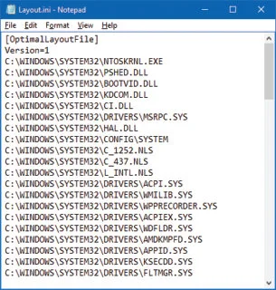
続いてサービスは、ボリューム全体ではなく、このファイルに従ってデフラグするようコマンドラインで指定し、システムのデフラグツールを起動します。 ツールは各ボリュームで、そのボリュームにある一覧中のファイルとディレクトリをすべて収容できる連続領域を探し、そこへ順番に移動します。 ディスク上でデータが読み取り順に並ぶため、以後の先読みが効率よく進みます。 対象は通常数百ファイルにとどまるので、ボリューム全体のデフラグより短時間で済みます。
物理ページの配置方針
スレッドがページフォールトを起こすと、メモリマネージャーは仮想ページを物理メモリのどこに置くかを決めます。 配置先を選ぶ規則を配置方針と呼びます。 Windows はページフレームを選ぶ際に CPU のキャッシュ容量を考慮し、キャッシュの内容がむやみに入れ替わらないようにします。
ページフォールトが発生した時点で物理メモリに空きがなければ、Windows は置換方針に従い、新しいページを置くためにどの仮想ページを物理メモリから外すかを決めます。 代表例は LRU（least recently used）と FIFO（first in, first out）です。 LRU では、仮想メモリシステムがページを最後に使った時点を追跡し、ページフレームが必要になると、最も長く使われていないページをワーキングセットから外します。 多くの UNIX では、クロックアルゴリズムで LRU に近い選択をします。 より単純な FIFO では、使用頻度に関係なく、最も長く物理メモリにあるページを外します。
置換方針は、候補をシステム全体から選ぶか、フォールトを起こしたプロセスだけから選ぶかでも分類できます。 グローバル置換なら、ほかのプロセスが使うページフレームも候補になります。 たとえば FIFO なら、システム全体で最も長くメモリにあるページを解放してフォールトを解決します。 ローカル置換なら、フォールトを起こしたプロセスが使うページの中だけで最も古いものを探します。 グローバル置換では各プロセスがほかのプロセスの影響を受けます。たとえば、一つのアプリケーションが過度にページングすると、その影響がほかのプロセスにも及び、システム全体の性能が落ちることがあります。
Windows はローカル置換とグローバル置換を組み合わせます。 ワーキングセットが上限に達した場合や、物理メモリの需要が高まりワーキングセットを縮小する必要がある場合は、十分な空きページを確保できるまで、ワーキングセットからページを外します。
ワーキングセットの管理
各プロセスのワーキングセットは、既定の最小値が50ページ、最大値が345ページです。
スケジューリング優先度の引き上げを許す SeIncreaseBasePriorityPrivilege を持っていれば、SetProcessWorkingSetSize で値を変更できます。ただし、通常は変更しても大きな効果はありません。
厳密な上限や下限を設定していなければ、これらの値はワーキングセットの大きさを拘束しません。
ページングが多くても、メモリに余裕があれば既定の最大値を超えて拡張できます。
反対に、ページングが起きておらず、システム全体で物理メモリの需要が高ければ、ワーキングセットは最小値を下回ることがあります。
SetProcessWorkingSetSizeEx に QUOTA_LIMITS_HARDWS_MAX_ENABLE を指定すれば厳密な上限を設定できますが、ほとんどの場合はシステムに管理を任せるほうが適切です。
32 ビットシステムでは、初期化時に算出してカーネル変数 MiMaximumWorkingSet に格納した上限を超えることはできません。
x64 は仮想アドレス空間が広いため、実用上の上限は物理メモリの容量です。
ワーキングセットに設定できる最大値は、表5-15のとおりです。
| Windows の種類 | 最大値の上限 |
|---|---|
| x86、ARM | 2 GB から 64 KB を引いた値（0x7FFF0000） |
increaseuserva を指定して起動した x86 | 2 GB から 64 KB を引いた値に、ユーザー仮想アドレス空間の拡張分を加えた値 |
| x64（Windows 8、Server 2012） | 8,192 GB（8 TB） |
| x64（Windows 8.1、10、Server 2012 R2、2016） | 128 TB |
ページフォールトが起こると、メモリマネージャーは、そのプロセスのワーキングセットの制限とシステムの空きメモリ量を調べます。 条件が許せば、ワーキングセットを最大値まで拡張します。厳密な上限がなく、空きページが十分あれば最大値を超えることもあります。 一方、メモリに余裕がなければ、ワーキングセットに単にページを加えるのではなく、既存のページを置き換えます。
Windows は変更済みページをディスクへ書き出して、利用できるメモリを確保しようとします。
ただし、変更済みページが短時間に大量に発生すると、それだけでは足りません。
物理メモリの空きが少なくなると、バランスセットマネージャーのシステムスレッドで動くワーキングセットマネージャーが、ワーキングセットを自動で縮小します。
プロセス自身が、たとえば初期化を終えた後に SetProcessWorkingSetSizeEx を使ってワーキングセットを縮小することもできます。
ワーキングセットマネージャーは空きメモリ量を調べ、縮小するかどうか、縮小するならどのワーキングセットかを決めます。 空きに余裕があれば、必要になったときに外せるページ数を計算します。 縮小が必要なら、設定した最小値を超えているワーキングセットを調べます。 調査の頻度を動的に変え、縮小候補のプロセスを順に並べます。 たとえば、最近アクセスされていないページを多く抱えるプロセスを先に調べます。長時間アイドルでサイズの大きいプロセスは、よく動くサイズの小さいプロセスより先に検討し、フォアグラウンドアプリケーションのプロセスは最後に回します。
最小値を超えているプロセスが見つかると、ワーキングセットから外せるページを探し、ほかの用途に使えるようにします。 それでも空きメモリが少なければ、必要最低限の空きページ数を確保するまでプロセスのワーキングセットからページを外します。
最近アクセスされていないページを見つけるため、ワーキングセットマネージャーはハードウェア PTE のアクセス済みビットを調べます。 ビットがクリアされていれば、そのページの年齢を1増やします。前回の縮小時の走査から参照がなかったことを記録するためです。 後でページを外すときに、この年齢を使って候補を選びます。
アクセス済みビットがセットされていれば、それをクリアして次のページへ進みます。 次回の確認時にビットがクリアされたままなら、その間にアクセスがなかったと分かります。 必要な数のページを外すか、走査が開始位置に戻るまでワーキングセットリストを調べます。 次回の縮小時には、前回の終了位置から走査を再開します。
プロセスのワーキングセットの大きさを調べる
プロセスのワーキングセットのサイズは、パフォーマンスモニターの次の表に示すカウンターで確認できます。 タスクマネージャーや Process Explorer などのプロセス表示ツールでも確認できます。
| カウンター | 意味 |
|---|---|
Process: Working Set | 選択したプロセスの現在のワーキングセットサイズ（バイト）です。 |
Process: Working Set Peak | 選択したプロセスのワーキングセットサイズのピーク（バイト）です。 |
Process: Page Faults/Sec | 選択したプロセスで1秒当たりに発生するページフォールトの数です。 |
パフォーマンスモニターのインスタンス欄で _Total を選ぶと、全プロセスのワーキングセットを合計できます。
_Total は実際のプロセスではなく、現在実行中の全プロセスについてカウンターの値を合計したものです。
ただし、この合計は実際に使っている RAM より大きくなります。複数のプロセスが共有するページは、それぞれのワーキングセットに計上されるからです。
ワーキングセットと仮想メモリのサイズを比べる
この章の前半では、TestLimit で、大きなメモリ領域を予約しただけのプロセスと、プライベートメモリとしてコミットしたプロセスを作り、Process Explorer で比較しました。 次は三つ目のプロセスを作ります。メモリをコミットするだけでなく、実際にアクセスして、ページをワーキングセットに入れます。
- TestLimit を新たに起動します。
C:\Users\pavely>testlimit -d 1 -c 800 Testlimit v5.24 - test Windows limits Copyright (C) 2012-2015 Mark Russinovich Sysinternals - www.sysinternals.com Process ID: 13008 Leaking private bytes with touch 1 MB at a time... Leaked 800 MB of private memory (800 MB total leaked). Lasterror: 0 The operation completed successfully.
- Process Explorer を開きます。
- 「View」メニューの「Select Columns」を選び、「Process Memory」タブを開きます。
- 「Private Bytes」「Virtual Size」「Working Set Size」「WS Shareable Bytes」「WS Private Bytes」を有効にします。
- 次の図のように、TestLimit の三つのインスタンスを探します。

新たに起動した TestLimit は図の三つ目で、PID は13008です。 割り当てたメモリに実際にアクセスしたのはこのプロセスだけなので、実験で割り当てたサイズがワーキングセットに反映されているのも、このプロセスだけです。
この結果が得られるのは、プロセスのワーキングセットをこれだけ拡張できる RAM がある場合に限られます。 このシステムでも、「Private Bytes」の 821,888 KB がすべてワーキングセットの「WS Private」にあるわけではありません。 一部のプライベートページは置換でワーキングセットから外れたか、まだページインされていません。
デバッガーでワーキングセットリストを調べる
カーネルデバッガーの !wsle を使うと、ワーキングセットの各エントリを確認できます。
次は、32 ビットシステムで WinDbg のワーキングセットリストを表示したときの出力の一部です。
lkd> !wsle 7 Working Set Instance @ c0802d50 Working Set Shared @ c0802e30 FirstFree f7d FirstDynamic 6 LastEntry 203d NextSlot 6 LastInitialized 2063 NonDirect 0 HashTable 0 HashTableSize 0 Reading the WSLE data ............................................................. ....... Virtual Address Age Locked ReferenceCount c0603009 0 0 1 c0602009 0 0 1 c0601009 0 0 1 c0600009 0 0 1 c0802d59 6 0 1 c0604019 0 0 1 c0800409 2 0 1 c0006209 1 0 1 77290a05 5 0 1 7739aa05 5 0 1 c0014209 1 0 1
c0004209 1 0 1 72a37805 4 0 1 b50409 2 0 1 b52809 4 0 1 7731dc05 6 0 1 bbec09 6 0 1 bbfc09 6 0 1 6c801805 4 0 1 772a1405 2 0 1 944209 1 0 1 77316a05 5 0 1 773a4209 1 0 1 77317405 2 0 1 772d6605 3 0 1 a71409 2 0 1 c1d409 2 0 1 772d4a05 5 0 1 77342c05 6 0 1 6c80f605 3 0 1 77320405 2 0 1 77323205 1 0 1 77321405 2 0 1 7ffe0215 1 0 2 a5fc09 6 0 1 7735cc05 6 0 1 …
ワーキングセットリストには、ページテーブルのページ（アドレスが 0xC0000000 より大きいもの）、システム DLL のページ（0x7nnnnnnn の範囲にあるもの）、Windbg.exe 自体のコードのページが含まれています。
バランスセットマネージャーとスワッパー
ワーキングセットの拡張と縮小は、システムの初期化時に作られるバランスセットマネージャー（KeBalanceSetManager）というシステムスレッドのコンテキストで行われます。
バランスセットマネージャー自体はカーネルの一部です。ワーキングセットの調査と調整は、メモリマネージャーの MmWorkingSetManager を呼び出して行います。
バランスセットマネージャーは、1秒ごとに満了する周期タイマーのイベントと、ワーキングセットの調整が必要だとメモリマネージャーが判断したときに通知する内部イベントの二つを待ちます。 たとえば、ページフォールトが頻発するか空きページリストが小さくなりすぎると、メモリマネージャーはバランスセットマネージャーを起こします。 バランスセットマネージャーは、ワーキングセットマネージャーを呼び出して、ワーキングセットを縮小します。
メモリに余裕があれば、ワーキングセットマネージャーは、ページフォールトを起こしたプロセスがページをメモリに戻し、ワーキングセットを段階的に拡張できるようにします。 拡張するのは必要な分だけです。
1秒のタイマーが満了してバランスセットマネージャーが起きると、次の処理を行います。
- 仮想セキュアモード（VSM）に対応するシステム（Windows 10、Windows Server 2016）では、セキュアカーネルの定期処理
VslSecureKernelPeriodicTickを呼び出します。 IoAdjustIrpCreditsを呼び出し、IRP の完了処理で使うプロセッサごとのルックアサイドリストを効率よく使えるよう、IRP クレジットを調整します。一部のプロセッサに I/O 負荷が偏ったときのスケーラビリティを改善します（IRP は第6章を参照）。ExAdjustLookasideDepthでルックアサイドリストを調べ、必要なら保持するブロック数を調整します。アクセス時間を短縮し、プールの使用量と断片化を抑えるためです。EtwAdjustTraceBuffersで Event Tracing for Windows（ETW）のバッファープールのサイズを調整し、バッファーを効率よく使います（ETW は Part 2 の第8章を参照）。- メモリマネージャーのワーキングセットマネージャーを呼び出します。ワーキングセットマネージャーは、独自の内部カウンターで、いつ、どの程度縮小するかを決めます。
PsEnforceExecutionLimitsで、ジョブに設定された実行時間の制限を適用します。- タイマーで起きた回数が8の倍数になるたびに、イベントを通知してスワッパー（
KeSwapProcessOrStack）を起こします。 優先度23で動くこのスレッドは、長時間実行されていないスレッドのカーネルスタックをスワップアウトしようとします。 ユーザーモードの待機状態が15秒続いたスレッドは、その後も待機し続けると見込み、カーネルスタックを遷移状態にして、そのページを変更済みリストまたはスタンバイリストへ移します。 これにより、スタックが使っていた物理メモリを回収できるようになります。 プロセスの最後のスレッドのカーネルスタックがメモリから外されると、プロセス全体がスワップアウトの対象になります。 長時間アイドル状態のWininitやWinlogonなどで、ワーキングセットのサイズが0になることがあるのはこのためです。
システムのワーキングセット
プロセスのワーキングセットがプロセス空間のページアウト可能な部分を管理するのと同様に、システム空間のページアウト可能なコードとデータは、次の三つのグローバルなワーキングセットで管理します。
- システムキャッシュのワーキングセット：システムキャッシュに常駐するページを保持します。
- ページプールのワーキングセット：ページプールに常駐するページを保持します。
- システム PTE のワーキングセット：ロード済みのドライバーやカーネルイメージに含まれるページアウト可能なコードとデータ、およびシステム空間にマップしたセクションのページを保持します。
各ワーキングセットを保持する場所を表5-16に示します。
| 種類 | Windows 8.x、Server 2012／R2 | Windows 10、Server 2016 |
|---|---|---|
| システムキャッシュ | MmSystemCacheWs | MiState.SystemVa.SystemWs[0] |
| ページプール | MmPagedPoolWs | MiState.SystemVa.SystemWs[2] |
| システム PTE | MmSystemPtesWs | MiState.SystemVa.SystemWs[1] |
ワーキングセット自体や、各構成要素のサイズは、表5-17に示すパフォーマンスカウンターまたはシステム変数で確認できます。 カウンターはバイト単位、システム変数はページ単位です。
| カウンター（バイト） | システム変数（ページ） | 意味 |
|---|---|---|
Memory: Cache BytesMemory: System Cache Resident Bytes | WorkingSetSize メンバー | ファイルシステムキャッシュが占める物理メモリの量です。 |
Memory: Cache Bytes Peak | PeakWorkingSetSize メンバー（Windows 10、Server 2016）、Peak メンバー（Windows 8.x、Server 2012／R2） | システムのワーキングセットサイズのピークです。 |
Memory: System Driver Resident Bytes | グローバルな SystemPageCounts.SystemDriverPage（Windows 10、Server 2016）、グローバル変数 MmSystemDriverPage（Windows 8.x、Server 2012／R2） | ページアウト可能なデバイスドライバーのコードが占める物理メモリの量です。 |
Memory: Pool Paged Resident Bytes | WorkingSetSize メンバー | ページプールが占める物理メモリの量です。 |
Memory: Cache Faults/Sec カウンターでは、システムキャッシュのワーキングセットで発生するハードフォールトとソフトフォールトを確認できます。
このカウンターの観測元は、システムキャッシュのワーキングセットを表す構造体の PageFaultCount メンバーです。
メモリ通知イベント
Windows は、利用可能な物理メモリ、ページプール、非ページプール、コミットの余裕が少ない場合や十分にある場合に、ユーザーモードのプロセスやカーネルモードのドライバーへ通知する仕組みを備えています。 たとえば、空きメモリが少ないときはアプリケーションがメモリの消費を抑え、ページプールに余裕があるときはドライバーが追加のメモリを割り当てられます。 破損したページを検出したときに通知するイベントもあります。
ユーザーモードのプロセスが受け取れるのは、空きメモリが少ないか十分にあることを示す通知だけです。
アプリケーションは CreateMemoryResourceNotification で、どちらの状態を通知してほしいかを指定し、返されたハンドルを待機関数に渡します。
指定した状態になると待機が完了し、スレッドがその状態を知ることができます。
待機せずに現在の状態を問い合わせるには、QueryMemoryResourceNotification を使います。
一方、ドライバーは、オブジェクトマネージャーの \KernelObjects ディレクトリにメモリマネージャーが用意したイベントを名前で参照します。
メモリマネージャーは、表5-18に示すシステム全体で名前が一意なイベントオブジェクトを使って通知します。
該当するメモリ状態を検出すると、対応するイベントをシグナル状態にし、それを待っているスレッドを起こします。
| イベント名 | 通知条件 |
|---|---|
HighCommitCondition | コミット使用量が最大コミット上限に近づいたとき。物理メモリやページファイルにはほとんど空きがなく、OS はページファイルを拡張できません。 |
HighMemoryCondition | 空き物理メモリが規定量を上回ったとき。 |
HighNonPagedPoolCondition | 非ページプールの空きが規定量を上回ったとき。 |
HighPagedPoolCondition | ページプールの空きが規定量を上回ったとき。 |
LowCommitCondition | 現在のコミット上限に対してコミット使用量が少ないとき。物理メモリやページファイルに十分な余裕があります。 |
LowMemoryCondition | 空き物理メモリが規定量を下回ったとき。 |
LowNonPagedPoolCondition | 非ページプールの空きが規定量を下回ったとき。 |
LowPagedPoolCondition | ページプールの空きが規定量を下回ったとき。 |
MaximumCommitCondition | コミット使用量が最大コミット上限に近づいたとき。物理メモリやページファイルにはほとんど空きがなく、OS はページファイルを拡張することも追加することもできません。 |
MemoryErrors | ゼロで埋まっているはずのページに0以外の値があり、不良ページとして検出したとき。 |
注：空きメモリが少ない、または十分にあると判断するしきい値は、レジストリの HKLM\SYSTEM\CurrentControlSet\Control\Session Manager\Memory Management に DWORD 値 LowMemoryThreshold または HighMemoryThreshold を追加すると変更できます。
しきい値は MB 単位で指定します。
同じキーの DWORD 値 PageValidationAction を 1 に設定すると、不良ページの検出時にメモリエラーイベントを通知する代わりに、システムを停止します。
WinObj でメモリ通知イベントを調べる
Sysinternals の WinObj を起動し、KernelObjects フォルダーを選びます。
右側のペインには、空きメモリが少ない場合と十分にある場合の通知イベントが両方表示されます。

いずれかのイベントをダブルクリックすると、オブジェクトのハンドル数や参照数を確認できます。
メモリ通知を要求しているプロセスがあるか調べるには、ハンドルテーブルで LowMemoryCondition または HighMemoryCondition を参照するハンドルを探します。
Process Explorer なら「Find」メニューで「Find Handle or DLL」を選びます。WinDbg でも検索できます。
ハンドルテーブルについては、Part 2 の第8章「オブジェクトマネージャー」を参照してください。
ページフレーム番号データベース
前の各節では、ページテーブル、PTE、VAD など、Windows のプロセスを仮想メモリの側から見てきました。 ここからは物理メモリの管理を説明します。 ワーキングセットはプロセスやシステムが使う常駐ページを記述しますが、ページフレーム番号（PFN）データベースは物理メモリの各ページの状態を記録します。 物理ページが取り得る状態を表5-19に示します。
| 状態 | 説明 |
|---|---|
| アクティブ（有効） | プロセス、セッション、システムのいずれかのワーキングセットに属します。ページアウトできないカーネルページのように、どのワーキングセットにも属さない場合もあります。通常は有効な PTE がそのページを指します。 |
| 遷移 | どのワーキングセットにもページリストにも属さず、ページに対する I/O が進行中の一時的な状態です。競合するページフォールトを検出し、適切に処理できるよう、PTE に情報を記録します。ここでいう物理ページの「遷移」と、無効な PTE でいう「遷移」は別です。無効な遷移 PTE は、スタンバイリストや変更済みリストにあるページも指します。 |
| スタンバイ | ワーキングセットから外されたか、先読みや一括読み込みによって直接スタンバイリストに入ったページです。前にディスクへ書き出したときから変更されていません。PTE はまだ物理ページを指しますが、無効かつ遷移状態と記録されています。 |
| 状態 | 説明 |
|---|---|
| 変更済み | ワーキングセットから外されたページです。使用中に変更され、現在の内容はまだディスクやリモートストレージに書き出されていません。PTE はまだ物理ページを指しますが、無効かつ遷移状態と記録されています。物理ページを再利用する前に、バックストアへの書き出しが必要です。 |
| 変更済み（書き出しなし） | 変更済みページのうち、変更済みページ書き出しスレッドがディスクに書き出さないよう指定されたものです。キャッシュマネージャーがファイルシステムドライバーの要求に応じて指定します。たとえば NTFS はファイルシステムのメタデータを含むページをこの状態にします。保護対象のページを書き出す前に、トランザクションログのエントリをディスクに反映させるためです（NTFS のトランザクションログは Part 2 のファイルシステムの章を参照）。 |
| 空き | 空いていますが、以前のデータが残っています。セキュリティ上、ゼロで初期化するか、ファイルから読み込んだデータなどで全体を上書きしてから、ユーザープロセスに渡します。 |
| ゼロ化済み | 空いており、ゼロページスレッドがゼロで初期化したか、もともとすべてゼロであると確認されたページです。 |
| ROM | 読み取り専用メモリを表します。 |
| 不良 | パリティエラーなどのハードウェアエラーを起こしたため使用できないページです。この状態はエンクレーブに属するページを表す用途にも使われます。 |
PFN データベースは、システムの物理メモリの各ページを表す構造体の配列です。 図5-35に、PFN データベースとページテーブルの関係を示します。 有効な PTE の PFN は、通常はデータベースのエントリを指し、そのインデックスが物理メモリ内のページを特定します。 反対に、プロトタイプ PTE に対応しない PFN エントリは、ページテーブルから使われていれば、そのページテーブルを指します。 プロトタイプ PTE に対応する場合は、そのプロトタイプ PTE を指します。

表5-19の状態のうち六つは、連結リストで管理されます。 メモリマネージャーは、リストを使って特定の状態のページをすばやく見つけられます。 アクティブ（有効）なページ、遷移状態のページ、および実際の不良とは別の用途で「不良」と記録されたページは、システム全体のページリストには入りません。
スタンバイ状態には、ページの優先度別に八つのリストがあります。優先度については後で説明します。 図5-36はデータベースのエントリをつなぐ例です。 各リストがページフォールトの解決にどう使われ、ページがリスト間をどう移動するかは、次節で説明します。

PFN データベースのリストの大きさを調べる
本書の Web サイトで配布されている MemInfo を -s オプション付きで実行すると、各ページリストの大きさを表示できます。
次は出力例です。
C:\Tools>MemInfo.exe -s MemInfo v3.00 - Show PFN database information Copyright (C) 2007-2016 Alex Ionescu www.alex-ionescu.com Initializing PFN Database... Done PFN Database List Statistics Zeroed: 4867 ( 19468 kb)
Free: 3076 ( 12304 kb) Standby: 4669104 (18676416 kb) Modified: 7845 ( 31380 kb) ModifiedNoWrite: 117 ( 468 kb) Active/Valid: 3677990 (14711960 kb) Transition: 5 ( 20 kb) Bad: 0 ( 0 kb) Unknown: 1277 ( 5108 kb) TOTAL: 8364281 (33457124 kb)
カーネルデバッガーの !memusage でも同様の情報を取得できますが、実行にはかなり時間がかかります。
物理ページの状態遷移
図5-37は、ページフレームの状態がどう変わるかを示します。 図を簡潔にするため、書き出し対象外の変更済みリスト、不良リスト、ROM リストは省いています。
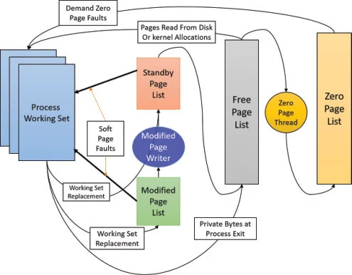
ページフレームは、状況に応じてリスト間を移動します。
- デマンドゼロのページフォールトを解決するために初期化済みページが必要なら、メモリマネージャーはまずゼロページリストから取得します。 このフォールトは、内容がすべてゼロと定義されたページや、一度も参照されていないユーザーモードのコミット済みプライベートページへのアクセスで発生します。 ゼロページリストが空なら、空きページリストからページを取得してゼロで埋めます。空きページリストも空なら、スタンバイリストから取得してゼロで埋めます。
ゼロで初期化したページが必要な理由の一つは、Common Criteria（CC）などのセキュリティ要件です。 CC の多くのプロファイルは、前にそのページを使ったプロセスのデータを読み取れないよう、ユーザーモードのプロセスに初期化済みのページフレームを渡すことを求めています。 そのため、バックストアから読み込む場合を除き、メモリマネージャーはゼロ化済みのページを渡します。 読み込む場合はゼロ化していないページを優先し、ディスクまたはリモートストレージから取得したデータで初期化します。
System プロセスのスレッド0であるゼロページスレッドは、空きページリストのページをゼロで埋め、ゼロページリストに追加します。 ゼロページスレッドは作業を始めるまでゲートオブジェクトで待機し、空きページリストが8ページ以上になるとゲートがシグナル状態になります。 ただし、ゼロページスレッドの優先度は0で、ユーザースレッドに設定できる最低優先度は1です。そのため、ほかに実行できるスレッドのないプロセッサが少なくとも一つあるときだけ動きます。
注：ドライバーが MmAllocatePagesForMdl または MmAllocatePagesForMdlEx で物理ページを割り当てる場合や、アプリケーションが AllocateUserPhysicalPages または AllocateUserPhysicalPagesNuma で物理ページを割り当てる場合にも、メモリのゼロ化が必要です。アプリケーションが大ページを割り当てる場合も同様です。
こうした場合、メモリマネージャーは MiZeroInParallel でゼロ化します。1ページずつ処理するゼロページスレッドより大きい領域をマップできるため、高速です。
マルチプロセッサシステムではさらにシステムスレッドを作って並行にゼロ化します。NUMA システムではノードの配置も考慮します。
- ゼロ化済みページを必要としない場合は、まず空きページリストから取得します。そこが空ならゼロページリスト、そこも空ならスタンバイリストを使います。 スタンバイリストのページフレームを再利用する前には、そのフレームをまだ指している無効な PTE またはプロトタイプ PTE を見つけ、参照を取り除きます。 PFN データベースのエントリには、以前使っていたページテーブルのページへのポインターがあり、共有ページの場合はプロトタイプ PTE の格納先を指すため、対象をすばやく変更できます。
- ワーキングセットに空きがない状態で新しいページを参照した場合や、メモリマネージャーがワーキングセットを縮小した場合は、既存のページを外す必要があります。 変更されていなければスタンバイリストへ、常駐中に変更されていれば変更済みリストへ移します。
- プロセスが終了すると、そのプライベートページはすべて空きページリストに移ります。 また、ページファイルをバックストアとするセクションへの最後の参照が閉じられ、マップ済みのビューが残っていない場合、そのページも空きページリストに移ります。
空きページリストとゼロページリストの変化を調べる
プロセスが終了するときにプライベートページが解放される様子は、Process Explorer の「System Information」で確認できます。 まず、ワーキングセットに多くのプライベートページを持つプロセスを作ります。 前の実験と同様に TestLimit を使います。
C:\Tools\Sysinternals>Testlimit.exe -d 1 -c 1500 Testlimit v5.24 - test Windows limits Copyright (C) 2012-2015 Mark Russinovich Sysinternals - www.sysinternals.com Process ID: 13928 Leaking private bytes with touch 1 MB at a time... Leaked 1500 MB of private memory (1500 MB total leaked). Lasterror: 0 The operation completed successfully.
-d オプションを指定した TestLimit は、メモリをプライベートメモリとしてコミットするだけでなく、実際にアクセスします。
その結果、コミットした仮想メモリの領域に対応する物理メモリが割り当てられます。
RAM に十分な空きがあれば、1,500 MB すべてがそのプロセス用に RAM に置かれます。
このプロセスは、コマンドプロンプトで Ctrl＋C を押すなどして終了させるまで待機します。
- Process Explorer を開きます。
- 「View」メニューの「System Information」を選び、「Memory」タブを開きます。
- 空きページ（「Free」）とゼロ化済みページ（「Zeroed」）のリストの大きさを確認します。
- TestLimit プロセスを終了します。
空きページリストが一瞬だけ大きくなるのが見えることがあります。 空きページが8枚に達すると、ゼロページスレッドが起き、すぐに処理します。 Process Explorer の表示更新は1秒に1回なので、その時点では、大半がゼロ化されてゼロページリストに移っている可能性があります。 一時的な増加を確認できた場合は、その後、空きページリストが0まで減り、ゼロページリストがその分増えるのが分かります。 確認できなかった場合も、ゼロページリストの増加は確認できます。
変更済みページとスタンバイページの移動を調べる
Sysinternals の VMMap と RAMMap、およびライブカーネルデバッガーを使うと、ページがプロセスのワーキングセットから変更済みリストへ、さらにスタンバイリストへ移る様子を確認できます。
- RAMMap を開き、システムの負荷が低いときの状態を確認します。この例は、RAM を 3 GB 搭載した x86 システムです。 各列は図5-37のページの状態に対応します。次の図では、今回使わない列の一部を狭くしています。
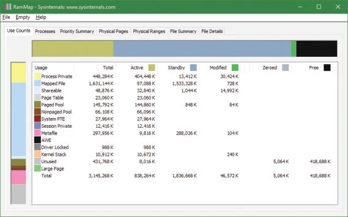
- 空きページとゼロ化済みページのリストを合わせると、空き RAM は約 420 MB です。 約 580 MB はスタンバイリストにあり、利用可能なメモリに数えられますが、最近プロセスのワーキングセットから外れたデータや SuperFetch が使うデータを含んでいると考えられます。 約 830 MB は「Active」で、有効な PTE を介して仮想アドレスに直接マップされています。
- 行を見ると、各状態のページを、プロセスのプライベートページ、マップトファイルなどの用途や割り当て元でさらに分けられます。 たとえば、この時点では「Active」の 830 MB のうち、約 400 MB はプロセスのプライベートな割り当てです。
- 前の実験と同様に、TestLimit を使い、ワーキングセットに多数のページを持つプロセスを作ります。
ここでも
-dオプションを指定して各ページに書き込みます。今回は割り当て回数を制限せず、変更済みのプライベートページを作成できるだけ作ります。
C:\Tools\Sysinternals>Testlimit.exe -d Testlimit v5.24 - test Windows limits Copyright (C) 2012-2015 Mark Russinovich Sysinternals - www.sysinternals.com Process ID: 7548 Leaking private bytes with touch (MB)... Leaked 1975 MB of private memory (1975 MB total leaked). Lasterror: 8
- TestLimit は 1 MB の割り当てを1,975個作成しました。 RAMMap は情報収集に時間がかかるため、表示を自動で更新し続けることはありません。「File」メニューの「Refresh」で更新します。

- 「Active」は 2.8 GB を超え、そのうち 2.4 GB が「Process Private」の行にあります。 この増加は、TestLimit がメモリを割り当ててアクセスしたためです。 一方、スタンバイ、ゼロ化済み、空きの各リストは大幅に小さくなりました。TestLimit に割り当てた RAM の大半は、これらのリストから取得したものです。
- 次に、RAMMap でプロセスに割り当てられた物理ページを調べます。
「Physical Pages」タブを開き、下部のフィルターで「Process」列を選び、値に
Testlimit.exeを指定します。 プロセスのワーキングセットに含まれる物理ページが表示されます。

- TestLimit の
-dオプションで割り当てた仮想アドレス領域に対応する物理ページを一つ特定します。 RAMMap だけでは、どの仮想アドレス領域が TestLimit のVirtualAlloc呼び出しで割り当てられたか分かりません。 同じプロセスを VMMap で調べると、次の図のように、割り当て元を推定する手掛かりが得られます。

- 画面の下部には、プロセスのプライベートデータ用の割り当てが数百件あります。
どの領域もサイズが 1 MB で、全体がコミットされており、TestLimit の割り当てサイズと一致します。
図で選んだ領域の開始仮想アドレスは
0x310000です。 - RAMMap の「Physical Pages」タブに戻ります。 「Virtual Address」列が見える位置に移し、列見出しをクリックして仮想アドレス順に並べ替えると、該当するアドレスを見つけられます。

- この時点では、仮想アドレス
0x310000から始まるページが、物理アドレス0x212D1000にマップされています。 TestLimit の-dオプションは、割り当てた各領域の先頭にプログラム自身の名前を書き込みます。 ローカルカーネルデバッガーの!dcで、物理アドレスを指定して内容を表示すると確認できます。
lkd> !dc 0x212d1000 #212d1000 74736554 696d694c 00000074 00000000 TestLimit....... #212d1010 00000000 00000000 00000000 00000000 ................ ...
- 確認までに時間がかかると、ページがすでにワーキングセットから外れている場合があります。 残りの手順では、ワーキングセットを縮小し、このページが変更済みリスト、次いでスタンバイリストへ移っても、しばらくはデータが保持されることを確かめます。
- VMMap で TestLimit プロセスを選び、「View」メニューから「Empty Working Set」を選びます。 この操作でプロセスのワーキングセットが最小限まで縮小し、VMMap は次の図のようになります。
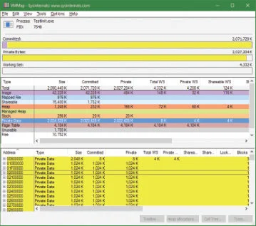
- 「Working Set」の棒グラフはほぼ空です。 画面中央の一覧では、プロセスのワーキングセットの合計はわずか 4 KB で、そのほとんどがページテーブルです。 RAMMap に戻って表示を更新し、「Use Counts」タブを確認します。 アクティブなページが大幅に減り、多数のページが変更済みリストに、一部がスタンバイリストにあることが分かります。

- RAMMap の「Processes」タブで、これらのリストに入ったページの大半が TestLimit プロセスから移ったことを確認できます。

ページの優先度
メモリマネージャーは、システムの各物理ページに0から7までのページ優先度を割り当てます。 主な用途は、スタンバイリストからページを再利用する順序を決めることです。 スタンバイリストは優先度ごとに八つのリストに分かれており、ページが必要になると、優先度の低いリストから先に取り出します。
システムの各スレッドと各プロセスにもページ優先度が割り当てられます。 ページの優先度は通常、最初にその割り当てを起こしたスレッドの優先度を反映します。 共有ページの場合は、そのページを共有するスレッドのうち最も高いページ優先度を反映します。 スレッドは所属するプロセスからページ優先度を継承します。 プロセスが参照しそうなデータをディスクから先読みするときは、メモリマネージャーがそのページの優先度を低く設定します。
プロセスの既定のページ優先度は5です。
アプリケーションは、ユーザーモードの SetProcessInformation と SetThreadInformation を使って、プロセスとスレッドのページ優先度を変更できます。
これらは、それぞれネイティブ関数 NtSetInformationProcess と NtSetInformationThread を呼び出します。
スレッドのメモリ優先度は Process Explorer で確認できます。 個々のページの優先度は PFN データベースのエントリで確認できます。この章の後半の実験でその方法を示します。 図5-38は、Process Explorer の「Threads」タブで Winlogon のメインスレッドを調べた例です。 スレッドのスケジューリング優先度は高いものの、メモリ優先度は標準の5です。
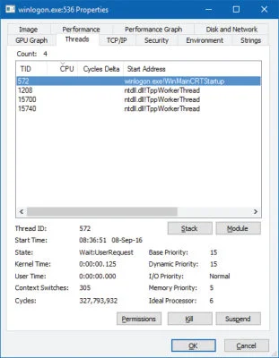
ページを保持する順序を適切に決めるには、個々のページの相対的な重要度を、アプリケーションの利用状況まで踏まえて判断する必要があります。 その役割を担う SuperFetch は、この章の最後で説明します。
優先度ごとのスタンバイリストを調べる
優先度別のスタンバイリストのサイズは、Process Explorer の「System Information」で「Memory」タブを開くと確認できます。
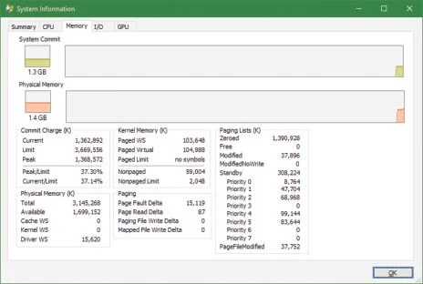
この実験に使った起動直後の x86 システムでは、優先度0に約 9 MB、優先度1に約 47 MB、優先度2に約 68 MB のデータがキャッシュされています。 Sysinternals の TestLimit で、可能な限りメモリをコミットし、その領域にアクセスしたときの変化を確認します。
C:\Tools\Sysinternals>Testlimit.exe -d

「Repurposed」の件数を見ると、優先度の低いリストから先にページが再利用され、それらのリストは大きく縮小したことが分かります。 優先度の高いリストには、引き続きキャッシュされたデータが残っています。
変更済みページとマップトページの書き出し
メモリマネージャーは二つのシステムスレッドを使って、ページをディスクに書き戻し、優先度に応じたスタンバイリストに移します。
変更済みページ書き出しスレッド（MiModifiedPageWriter）はページファイルへ、マップトページ書き出しスレッド（MiMappedPageWriter）はマップトファイルへ、変更済みページを書き出します。
スレッドを分けるのは、デッドロックを防ぐためです。 マップトファイルへの書き出しでページフォールトが起こり、空きページが必要になっても、空きがない場合があります。 このとき変更済みページ書き出しスレッドがページを空ける必要があります。 マップトファイルへの I/O を別のシステムスレッドで実行すれば、そのスレッドが待機しても、通常のページファイルへの I/O は妨げられません。
どちらも優先度18で実行され、初期化を終えると、それぞれの起動条件に対応するイベントオブジェクトを待ちます。 マップトページ書き出しスレッドが待つ18個のイベントは、次の三つに分けられます。
- スレッドの終了を指示するイベント。
- マップトページの書き出しを指示するイベント。システム全体の
MiSystemPartition.Modwriter.MappedPageWriterEventに格納されます。Windows 8.x と Windows Server 2012／R2 ではMmMappedPageWriterEventに格納されます。次の場合にシグナル状態になります。MiInsertPageInListが、引数に応じてスタンバイリストや変更済みリストなどへページを追加したとき。ファイルシステムに書き出す変更済みページが16枚を超え、使用可能なページが1,024枚未満なら、イベントを通知します。MiObtainFreePagesが空きページを確保しようとしたとき。- カーネルのバランスセットマネージャーが1秒ごとに呼び出す
MmWorkingSetManagerが、ファイルシステムに書き出す変更済みページが800枚を超えたと判断したとき。 MmFlushAllPagesが、変更済みページをすべて書き出す要求を受けたとき。MmFlushAllFilesystemPagesが、ファイルシステムに書き出す変更済みページをすべて書き出す要求を受けたとき。
MmFlushAllFilesystemPagesとMmFlushAllPagesでは、この枚数を確認しません。 - 16個のマップトページリストに対応する16個のイベント。
MiSystemPartition.PageLists.MappedPageListHeadEventに格納されます。Windows 8.x と Windows Server 2012／R2 ではMiMappedPageListHeadEventに格納されます。
マップトページが変更されると、MiSystemPartition.WorkingSetControl->CurrentMappedPageBucket に記録されたバケット番号に従い、16本のリストのどれかに入ります。Windows 8.x と Windows Server 2012／R2 では MiCurrentMappedPageBucket を使います。
ページの変更から十分な時間（本書の対象では100秒）が経過したと判断すると、ワーキングセットマネージャーがバケット番号を更新します。
経過時間のカウンターは同じ構造体の WriteGapCounter（Windows 8.x と Windows Server 2012／R2 では MiWriteGapCounter）で、ワーキングセットマネージャーが実行されるたびに増えます。
バケットごとのイベントを設けると、変更済みリストがしきい値の800枚に達していなくても、時間が経ったマップトページを書き出せます。 システムのクラッシュや停電が起きたときに、失われるデータを減らすためです。
変更済みページ書き出しスレッドは、終了イベントと、MiSystemPartition.Modwriter.ModifiedPageWriterEvent に格納されたイベントを待ちます。
Windows 8.x と Windows Server 2012／R2 は、後者の代わりに MmModifiedPageWriterGate に格納されたカーネルのゲートを使います。
書き出しを指示するイベントがシグナル状態になるのは、次の場合です。
- すべてのページを書き出す要求を受けたとき。
- 使用可能なページ数が128枚未満になったとき。この数は
MiSystemPartition.Vp.AvailablePagesに入り、Windows 8.x と Windows Server 2012／R2 ではMmAvailablePagesに入ります。 - ゼロページリストと空きページリストの合計が20,000枚を下回り、ページファイルへ書き出す変更済みページ数が、使用可能なページの16分の1と 64 MB（16,384枚）のうち小さい方を超えたとき。
- ページを追加するためにワーキングセットを縮小しており、使用可能なページ数が15,000枚未満のとき。
MiInsertPageInListがページをリストに追加する際、ページファイルへ書き出す変更済みページが16枚を超え、使用可能なページが1,024枚未満のとき。
このイベントがシグナル状態になった後、スレッドはさらに二つのイベントを待ちます。
一つは、新規ページファイルが作られた場合などに、ページファイルの一覧を調べ直す必要があることを示します。
格納先は MiSystemPartition.Modwriter.RescanPageFilesEvent です。Windows 8.x と Windows Server 2012／R2 では MiRescanPageFilesEvent です。
もう一つは、ページファイルのヘッダー（MiSystemPartition.Modwriter.PagingFileHeader。Windows 8.x と Windows Server 2012／R2 では MmPagingFileHeader）にあり、必要に応じてシステムが明示的にページファイルへの書き出しを要求するために使います。
マップトページ書き出しスレッドは、起動すると、一回の I/O でできるだけ多くのページをディスクに書き出そうとします。 変更済みリストにあるページの PFN エントリから元の PTE を調べ、ディスクの連続した位置に対応するページを探します。 対象が決まると、変更済みリストからそのページを外して I/O を発行します。 I/O が正常に完了したら、各ページを、優先度に対応するスタンバイリストの末尾へ入れます。
書き出し中のページを別のスレッドが参照することもあります。 この場合、対象の物理ページを表す PFN エントリの参照数と共有数を増やし、別のプロセスが使っていることを記録します。 I/O が完了したとき、変更済みページ書き出しスレッドは、参照数が0でなくなったことを確認し、そのページをスタンバイリストに入れません。
PFN のデータ構造
PFN データベースのエントリは固定長ですが、ページの状態に応じて、同じフィールドでも意味が変わります。 図5-39に、状態ごとのエントリの形式を示します。

一部のフィールドは特定の状態でしか使いません。次のフィールドは複数の状態に共通します。
- PTE アドレス：このページを指す PTE の仮想アドレスです。 PTE のアドレスは4バイト境界（64 ビットシステムでは8バイト境界）にそろうため、下位2ビットをロックに使い、同じ PFN エントリへのアクセスを直列化します。
- 参照数：このページへの参照の数です。 ページを初めてワーキングセットに加えたり、デバイスドライバーなどが I/O のために物理メモリに固定したりすると増えます。 共有数が0になったり、ページの固定が解除されたりすると減ります。 共有数が0になれば、ページはどのワーキングセットにも属していません。 参照数も0なら、PFN エントリを更新し、そのページを空き、スタンバイ、変更済みのいずれかのリストに加えます。
- 種別：この PFN が表すページの状態です。アクティブ（有効）、スタンバイ、変更済み、変更済み（書き出しなし）、空き、ゼロ化済み、不良、遷移などがあります。
- フラグ：このフィールドの各ビットの意味を表5-20に示します。
- 優先度：この PFN に対応するページの優先度です。どのスタンバイリストに入れるかを決めます。
- 元の PTE の内容：各 PFN エントリは、そのページを指していた PTE（プロトタイプ PTE の場合もあります）の元の内容を保持します。 物理ページが常駐しなくなったときに、PTE を元に戻せるようにするためです。 例外として、AWE で割り当てたページの PFN エントリは、代わりに AWE の参照数を格納します。
- PTE の PFN：対象ページを指す PTE が置かれたページテーブルの物理ページ番号です。
- カラー：PFN エントリを状態別のリストでつなぐほか、物理ページを「カラー」、つまり NUMA ノード番号でつなぐためのフィールドです。
- 追加のフラグ：PTE に関する追加情報を表します。各ビットの意味を表5-21に示します。
| フラグ | 意味 |
|---|---|
| Write in progress | ページの書き出しが進行中です。最初の DWORD には、I/O の完了時にシグナル状態になるイベントオブジェクトのアドレスが入ります。 |
| Modified state | ページが変更済みかどうかを示します。変更済みなら、物理メモリから取り除く前にディスクへ保存する必要があります。 |
| Read in progress | ページインが進行中です。最初の DWORD には、I/O の完了時にシグナル状態になるイベントオブジェクトのアドレスが入ります。 |
| ROM | ファームウェアやデバイスレジスタなど、読み取り専用のメモリに対応するページです。 |
| In-page error | ページイン中に I/O エラーが発生しました。PFN エントリの最初のフィールドにエラーコードが入ります。 |
| Kernel stack | カーネルスタックに使われるページです。この場合、PFN エントリはスタックの所有者と、このスレッドのスタックの次の PFN を保持します。 |
| Removal requested | ECC やメモリスクラビングの結果、または稼働中のメモリ取り外しに伴い、このページの除外が要求されました。 |
| Parity error | 物理ページで、パリティまたは誤り訂正のエラーが発生しました。 |
| フラグ | 意味 |
|---|---|
| PFN image verified | この PFN が裏付けるイメージについて、暗号署名カタログにある、この PFN に対応するコード署名を検証済みです。 |
| AWE allocation | この PFN は AWE による割り当てに使われています。 |
| Prototype PTE | この PFN エントリが参照する PTE はプロトタイプ PTE です。たとえば、共有可能なページが該当します。 |
残りのフィールドは PFN の状態によって異なります。 図5-39の最初の PFN エントリは、ワーキングセットに属するアクティブなページを表しています。 共有数は、このページを参照する PTE の数です。読み取り専用、コピーオンライト、または読み書き可能な共有ページは、複数のプロセスで共有できます。 ページテーブル自体を格納するページの場合、共有数は、そのテーブル内にある有効な PTE と遷移 PTE の合計です。 共有数が0より大きい間は、ページをメモリから外せません。
ワーキングセットインデックスは、この物理ページをマップする仮想アドレスに対応する、ワーキングセットリスト内の位置です。 プロセス、システム、セッションのいずれかのリストを指し、どのワーキングセットにも属さなければ0です。 プライベートページは一つの仮想アドレスにしかマップされないため、このインデックスは対応するリストエントリを直接指します。
共有ページの場合、インデックスが正しいと保証されるのは、最初にページを有効にしたプロセスだけです。 ほかのプロセスは、可能なら同じインデックスを使います。 最初に設定したプロセスは、正しいインデックスが保証されているため、仮想アドレスをキーとするリストエントリを、ワーキングセットのハッシュ木に追加する必要がありません。 その分、ハッシュ木が小さくなり、対象のエントリを探す時間も短くなります。
図5-39の二つ目の PFN エントリは、スタンバイリストまたは変更済みリストにあるページを表します。 前方リンクと後方リンクがリスト内のエントリをつなぎ、ページフォールトの処理時にページを移動しやすくします。 リスト上のページはどのワーキングセットからも使われないので、共有数は常に0です。そのフィールドは後方リンクに転用できます。 リスト上のページは参照数も0です。 ディスクへの書き出しなどの I/O が始まって参照数が0でなくなる場合は、先にリストから外します。
三つ目の PFN エントリは、カーネルスタックのページを表します。 Windows では、ユーザーモードへのコールバックを始めたり、そこから戻ったりするときや、ドライバーがコールバックのためにスタックの拡張を要求するときに、カーネルスタックを動的に割り当て、拡張し、解放します。 メモリマネージャーは、スタックが使われていれば対応するスレッドを、空いていればルックアサイドリストの次の空きスタックへのリンクを保持します。
四つ目の PFN エントリは、ページ読み込みなどの I/O が進行中のページを表します。 I/O の間は、先頭フィールドが、完了時にシグナル状態になるイベントオブジェクトを指します。 ページインでエラーが起きた場合は、その I/O エラーを表す Windows のステータスコードが入ります。 この形式は、競合するページフォールトの解決に使います。
PFN データベースとは別に、表5-22のシステム変数が、物理メモリ全体の状態を表します。
| Windows 10、Server 2016 | Windows 8.x、Server 2012／R2 | 意味 |
|---|---|---|
MiSystemPartition.Vp.NumberOfPhysicalPages | MmNumberOfPhysicalPages | システムが利用できる物理ページの総数です。 |
MiSystemPartition.Vp.AvailablePages | MmAvailablePages | 利用可能なページの総数です。ゼロページ、空き、スタンバイの各リストのページ数を合計したものです。 |
MiSystemPartition.Vp.ResidentAvailablePages | MmResidentAvailablePages | 全プロセスのワーキングセットをそれぞれの最小サイズまで縮小し、変更済みページをすべてディスクへ書き出したと仮定した場合に、利用できる物理ページの総数です。 |
PFN エントリを調べる
カーネルデバッガーで !pfn に PFN を渡すと、個々のエントリを調べられます。
たとえば、!pfn 0 は最初のエントリを、!pfn 1 は二つ目を表示します。
次の例では、仮想アドレス 0xD20000 に対応する PTE を表示した後、ページディレクトリを含むページと、参照先のページの PFN を順に調べます。
lkd> !pte d20000 VA 00d20000 PDE at C0600030 PTE at C0006900 contains 000000003E989867 contains 8000000093257847 pfn 3e989 ---DA--UWEV pfn 93257 ---D---UW-V lkd> !pfn 3e989 PFN 0003E989 at address 868D8AFC flink 00000071 blink / share count 00000144 pteaddress C0600030 reference count 0001 Cached color 0 Priority 5 restore pte 00000080 containing page 0696B3 Active M Modified lkd> !pfn 93257 PFN 00093257 at address 87218184 flink 000003F9 blink / share count 00000001 pteaddress C0006900 reference count 0001 Cached color 0 Priority 5 restore pte 00000080 containing page 03E989 Active M Modified
MemInfo でも PFN の情報を調べられます。 システムをデバッグモードで起動する必要がなく、デバッガーより多くの情報を表示できる場合もあります。 次は同じ二つの PFN を MemInfo で調べた出力です。
C:\Tools>MemInfo.exe -p 3e989 0x3E989000 Active Page Table 5 N/A 0xC0006000 0x8E499480
C:\Tools>MemInfo.exe -p 93257 0x93257000 Active Process Private 5 windbg.exe 0x00D20000 N/A
左から、物理アドレス、ページの状態と種別、ページ優先度、プロセス名、仮想アドレス、および追加情報があればその内容が表示されます。
MemInfo は最初の PFN をページテーブルと判定しています。二つ目は、デバッガーで !pte d20000 を実行したときにアクティブだった WinDbg プロセスに属しています。
ページファイル内の領域予約
メモリマネージャーは、スタンバイリストや変更済みリスト、後述のメモリ圧縮などを使って物理メモリの利用を効率化し、ページファイルへのアクセスを減らします。 ページファイルにアクセスする場合でも、ファイル内のページの配置を工夫することで、I/O を効率化できます。
回転式ハードディスクでは、読み書きする前にヘッドを目的のセクターまで移動させます。 このシークにはミリ秒単位の時間がかかり、実際の読み書きの時間に加算されます。 移動先から大きなデータを連続して読み書きするなら、シーク時間の割合は小さくなります。 一方、ディスク上に散在するデータを読み書きすると、シークが何度も発生し、その合計時間が処理時間の大部分を占めることがあります。
セッションマネージャー（Smss.exe）は、ページファイルを作るときに、配置先のパーティションが回転式ディスクか SSD かを調べます。
回転式ディスクなら、物理メモリで連続するページをページファイル内でも連続して配置するために、ページファイル内の領域予約を有効にします。
SSD には移動するヘッドがなく、この方式の利点がないので、そのページファイルでは使いません。ハイブリッドディスクも、この機能では SSD と同じ扱いです。
領域予約に関わるのは、ワーキングセットマネージャー、変更済みページ書き出しスレッド、ページフォールトハンドラーの三つです。
ワーキングセットを縮小する際、ワーキングセットマネージャーは MiFreeWsleList を呼び出し、対象ページごとに共有数を減らします。
共有数が0になれば、対応する PTE を遷移 PTE に変更して、ページを変更済みリストへ移せます。
以前の有効な PTE は PFN エントリに保存します。
無効な PTE には、この仕組みのためのビットが二つあります。ページファイル内に領域を予約したことを表すビットと、ページファイル内の領域を割り当てたことを表すビットです（図5-24）。
空き、ゼロ、スタンバイのいずれかのリストから物理ページを取得してアクティブ（有効）にするとき、無効な PTE を PFN エントリの Original PTE フィールドに保存します。
領域の予約状況は、このフィールドで追跡します。
MiCheckReservePageFileSpace は、指定したページを起点にまとめて領域を予約できるか調べます。
対象のページファイルで領域予約が無効になっている場合や、元の PTE がすでに予約済みであることを示す場合は、処理を打ち切ります。
対象はユーザーページだけです。ページプールなどでは利用パターンが予測しにくく、まとまるページ数が少ないので、十分な効果が得られませんでした。
条件を満たせば、MiReservePageFileSpace を呼び、実際に領域を予約します。
まず起点の PTE からアドレスの小さい方向へ進み、連続して予約できるページを探します。 隣接ページがコミット解除済み、非ページプールの一部、または予約済みなら対象外なので、その手前を予約範囲の下限とします。 次に起点からアドレスの大きい方向へ進み、条件を満たすページをできるだけ多く集めます。 このまとまりをクラスターと呼びます。予約に必要な最小サイズは16ページ、最大は512ページです。 図5-40では、一方の端に無効なページ、もう一方に既存のクラスターがあります。 一つのクラスターは、同じページディレクトリ内にある複数のページテーブルにまたがることがあります。

クラスターの範囲が決まったら、そのページ群のために、ページファイル内で予約できる空き領域を探します。 ページファイルの割り当てはビットマップで管理し、セットされたビットはファイル内の使用済みページを表します。 領域予約では、予約専用のビットマップを別に使います。予約は、その領域への書き込みが済んだことを意味しません。書き込み先の使用状況は割り当て用のビットマップで管理します。
二つのビットマップを調べて、予約も割り当てもされていない領域が見つかったら、予約用のビットだけをセットします。 割り当て用のビットは、変更済みページ書き出しスレッドが内容をディスクに書き出す際にセットします。 クラスターが収まる空き領域がなければ、ページファイルの拡張を試みます。 すでに拡張を試みたか、拡張後のサイズが上限に達していれば、見つかった領域に収まるまでクラスターを小さくします。
注：起点の PTE に対応するページを除き、クラスターのページは物理ページのリストにはつなぎません。
予約情報は PFN エントリの Original PTE に格納します。
変更済みページ書き出しスレッドは、予約済みページを特別に扱います。
これまでに集めた情報を使い、ページファイルに書き出すクラスターの PFN を入れた MDL を作ります。
書き出し先が連続するページを探すので、書き出しのまとまりは、予約時のクラスターをまたぐ場合があります。
クラスター間に空きがあれば、全バイトが 0xFF のダミーページで埋めます。ダミーページが32枚を超える場合は、クラスターを分割します。
前方、次いで後方へと調べて、最終的に書き出す範囲を決めます。
図5-41は、書き出し用のクラスターを組み立てた後のページの状態を示します。

読み戻す際は、ページフォールトハンドラーが、予約用ビットマップと PTE の情報からクラスターの始点と終点を求めます。 これによって、回転式ディスクのヘッドの移動を抑えながら、必要なページをまとめて読み戻せます。
物理メモリの上限
一般的なシステムは、実行中に、物理メモリに載りきらない量のコードやデータにアクセスします。 物理メモリに置かれるのは、その時々に使うコードとデータの一部です。 プロセスや OS が必要とするものが物理メモリになければ、メモリマネージャーはディスクやリモートストレージから読み込みます。そのため、物理メモリの容量は性能に影響します。
物理メモリの容量は、ほかのリソースの上限にも関わります。 たとえば、非ページプールは物理メモリに常駐するので、その容量は物理メモリに制約されます。 システムのコミット上限も、おおむね物理メモリの容量と、すべてのページファイルの現在のサイズを合計した値です。 作成できるプロセスの数も、物理メモリの容量に間接的に制約されます。
Windows が扱える物理メモリの容量は、ハードウェアの制約、ライセンス、OS のデータ構造、ドライバーの互換性で決まります。 エディション別の上限は Microsoft のドキュメントに掲載されています。 表5-23は、原著で扱う Windows 8 以降のバージョンの上限です。
| OS のバージョンとエディション | 32 ビット版の上限 | 64 ビット版の上限 |
|---|---|---|
| Windows 8.x Professional、Enterprise | 4 GB | 512 GB |
| Windows 8.x（その他のエディション） | 4 GB | 128 GB |
| Windows Server 2012／R2 Standard、Datacenter | 該当なし | 4 TB |
| Windows Server 2012／R2 Essentials | 該当なし | 64 GB |
| Windows Server 2012／R2 Foundation | 該当なし | 32 GB |
| Windows Storage Server 2012 Workgroup | 該当なし | 32 GB |
| Windows Storage Server 2012 Standard、Hyper-V Server 2012 | 該当なし | 4 TB |
| Windows 10 Home | 4 GB | 128 GB |
| Windows 10 Pro、Education、Enterprise | 4 GB | 2 TB |
| Windows Server 2016 Standard、Datacenter | 該当なし | 24 TB |
原著執筆時点で、サポートされる物理メモリの上限は、一部の Windows Server 2012／R2 エディションで 4 TB、Windows Server 2016 エディションで 24 TB です。 これらの上限は、実装やハードウェアの制約によるものではありません。 Microsoft はテストできる構成だけをサポートするため、ここで挙げたのは、当時テスト済みでサポート対象だった最大のメモリ構成です。
クライアント版 Windows の物理メモリ上限
64 ビットのクライアント版 Windows では、サポートされるメモリ容量はエディションごとに異なり、下位エディションでは 4 GB から、Enterprise や Professional では最大 2 TB です。 一方、32 ビットのクライアント版 Windows は、どのエディションも最大 4 GB です。 これは、標準の x86 のメモリ管理モードでアドレス指定できる物理メモリの上限です。
x86 のクライアント版 Windows は、ハードウェアによる実行禁止のために PAE をサポートします。PAE 自体は、4 GB より上の物理アドレスにもアクセスできます。 しかしテストでは、クライアントでよく使われる映像や音声デバイスなどのドライバーの一部が、4 GB より上の物理アドレスを想定していませんでした。 これらのドライバーがアドレスの上位ビットを切り捨てたことで、メモリが破損し、システムの異常停止、応答停止、起動不能が起きました。 サーバーは一般に、より単純で安定したドライバーを持つ汎用的なデバイスを使うため、この問題はあまり見つかりませんでした。
この互換性問題のため、クライアント版は、理論上はアドレス指定できても、4 GB より上にある物理メモリを無視します。
ドライバー開発者には、BCD の nolowmem オプションを使った検証が推奨されます。
十分なメモリがあるシステムでこのオプションを指定すると、カーネルは 4 GB より上の物理アドレスだけを使うため、該当するドライバーの不具合を検出しやすくなります。
32 ビットのクライアント版でライセンス上使えるのは 4 GB ですが、実際に利用できる容量はそれより少なく、チップセットと接続したデバイスによって異なります。 物理アドレスマップには RAM だけでなくデバイスメモリも含まれます。 x86 と x64 のシステムでは通常、32 ビット OS との互換性を保つために、すべてのデバイスメモリを 4 GB のアドレス境界より下にマップします。
これは、4 GB より上のアドレスを扱えない 32 ビット OS があるためです。 新しいチップセットは PAE を使ってデバイスメモリを再マッピングできますが、クライアント版 Windows は、前述のドライバー互換性の問題からこの機能を使いません。 使った場合は、ドライバーにデバイスメモリを指す64ビットのポインターが渡されます。
たとえば、RAM が 4 GB あり、映像、音声、ネットワークアダプターなどがデバイスメモリへのアクセス用に合計 500 MB のアドレス範囲を使うとします。 図5-42のように、4 GB の RAM のうち 500 MB は、4 GB のアドレス境界より上に配置されます。

このため、RAM を 3 GB 以上搭載していても、32 ビットのクライアント版 Windows では全容量を使えない場合があります。
Windows が検出した搭載量は「システムのプロパティ」で確認できますが、実際に利用できる量を知るには、タスクマネージャーの「パフォーマンス」タブか Msinfo32 を使います。
たとえば、RAM を 4 GB に設定した Hyper-V 仮想マシンに 32 ビット版 Windows 10 をインストールすると、Msinfo32 には次のように表示されます。
- インストール済みの物理メモリ（RAM）
- 4.00 GB
- 合計物理メモリ
- 3.87 GB
物理メモリのアドレス範囲は MemInfo でも確認できます。
次は、32 ビットシステムで MemInfo に -r オプションを指定したときの出力です。
C:\Tools>MemInfo.exe -r MemInfo v3.00 - Show PFN database information Copyright (C) 2007-2016 Alex Ionescu www.alex-ionescu.com Physical Memory Range: 00001000 to 0009F000 (158 pages, 632 KB) Physical Memory Range: 00100000 to 00102000 (2 pages, 8 KB) Physical Memory Range: 00103000 to F7FF0000 (1015533 pages, 4062132 KB) MmHighestPhysicalPage: 1015792
0xA0000 から 0x100000 までの間に 384 KB、0xF8000000 から 0xFFFFFFFF までに 128 MB の空白があります。
MemInfo の出力で空白になっているのは、Windows が RAM として使えない予約済みのアドレス範囲です。 どのデバイスがその範囲を使っているかは、デバイスマネージャーで確認できます。
Devmgmt.mscを実行します。- 「表示」メニューから「接続別リソース」を選びます。
- 「メモリ」を展開します。図5-43の例では、マップされたデバイスメモリを最も多く使っているのは映像アダプター（Hyper-V S3 Cap）で、
0xF8000000～0xFBFFFFFFの範囲を占めています。

訳注：原文は映像アダプターが占める容量を 128 MB としていますが、図の 0xF8000000～0xFBFFFFFF は 64 MB です。
残りの大部分はほかのデバイスが占めます。 起動時にファームウェアがデバイスに必要な領域を余裕を持って見積もるため、PCI バスも追加のアドレス範囲を予約します。
メモリ圧縮
Windows 10 のメモリマネージャーは、変更済みリスト上のプライベートページと、ページファイルをバックストアとするセクションのページを圧縮できます。 主な対象は UWP アプリのプライベートページです。 メモリが不足すると、UWP アプリではもともとワーキングセットのスワップアウトや解放が行われるため、圧縮を組み合わせやすいからです。
アプリが中断され、ワーキングセットがスワップアウトされた後は、必要に応じてそのワーキングセットを空にし、変更済みページを圧縮できます。 これによって、最初のアプリのページを物理メモリから追い出さずに、別のアプリを載せる余裕が生まれることがあります。
注：実験では、速度と圧縮率のバランスを取る Microsoft の Xpress アルゴリズムで、ページの大きさが元の30～50％程度になりました。
メモリ圧縮の実装には次の要件があります。
- 同じページを圧縮前と圧縮後の両方の形式でメモリに残すと、物理メモリを無駄に消費します。 圧縮に成功したら、元のページを解放します。
- 圧縮データと管理用データ構造を合わせても、システム全体のメモリ使用量を減らせることが必要です。十分に小さくならないページは圧縮ストアに追加しません。
- 圧縮済みページを保持している物理メモリは、必要に応じて別の用途に回せるため、利用可能なメモリとして扱います。こうすれば、圧縮したことでかえってメモリ消費が増えたようには見えません。
クライアント版では、スマートフォン、PC、Xbox などでメモリ圧縮が既定で有効です。 原著執筆時点のサーバー版では使われていませんが、将来のバージョンでは変わる可能性があります。
注：Windows Server 2016 でも、タスクマネージャーの圧縮済みメモリ量は括弧内に表示されますが、常に0です。メモリ圧縮用のプロセスもありません。
起動すると、svchost.exe 内で動く Superfetch サービス（sysmain.dll）が NtSetSystemInformation を呼び、エグゼクティブのストアマネージャーに、システム共通のストアを一つ作るよう指示します。
このストアが常に最初に作られ、UWP 以外のアプリケーションで使われます。
UWP アプリは、起動時に Superfetch サービスと通信し、自分専用のストアを作るよう要求します（後述の「SuperFetch による先行メモリ管理」を参照）。
メモリ圧縮でのページの移動
ここでは、物理ページが次の図のような状態にあるとします。

ゼロページリストにはゼロで埋めたページが、空きページリストには以前のデータが残るページがあり、どちらもコミット済みメモリのために使えます。 この例では両方をまとめて一つのリストとして扱います。 アクティブなページは各プロセスが使用中です。 変更済みページには、まだページファイルに書き出していないデータが残っています。そのプロセスが再び参照すると、I/O を伴わないソフトフォールトでワーキングセットに戻せます。
変更済みリストが大きくなりすぎたか、ゼロ化済みページと空きページが少なくなったため、メモリマネージャーが変更済みリストを縮小するとします。 この例では、変更済みリストから外す3ページの内容を、空きページとゼロ化済みページのリストから取った1ページに圧縮します。

ページ11、12、13の内容をページ1に圧縮した後、ページ1は使用中になり、次節で説明するメモリ圧縮用プロセスのワーキングセットに加わります。 ページ11、12、13は不要になり、空きページリストへ移ります。差し引き2ページを節約できました。

続いてページ14、15、16を圧縮します。この例では、圧縮データをページ2と3の2ページに格納します。
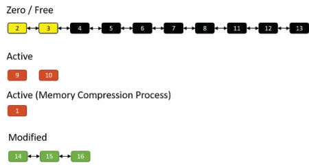
その結果、ページ2と3はメモリ圧縮用プロセスのワーキングセットに加わり、ページ14、15、16は空きになります。

後でメモリマネージャーがメモリ圧縮用プロセスのワーキングセットを縮小するとします。 外したページには、まだページファイルに書き出していないデータが入っているので、変更済みリストに移します。 元のプロセスがデータを参照すれば、空きページに展開することで、いつでもソフトフォールトでそのプロセスに戻せます。 次の図では、ページ1と2をメモリ圧縮用プロセスのアクティブなページから外し、変更済みリストへ移しています。
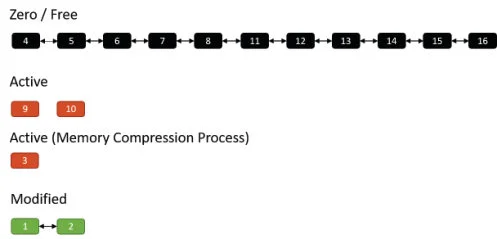
メモリの空きがさらに少なくなると、メモリマネージャーは、圧縮データを保持する変更済みページをページファイルに書き出すことがあります。

ページファイルへの書き出しが済むと、内容が保存されているので、物理ページはスタンバイリストへ移り、必要なら別の用途に使えます。 ページが残っている間は、変更済みリストにあったときと同様に、ソフトフォールトをきっかけに圧縮データを展開し、展開先のページを該当プロセスのワーキングセットに加えてアクティブにできます。 スタンバイリストでは、ページの優先度に応じたリストに入ります（後述の「ページ優先度と再調整」を参照）。

メモリ圧縮の構成
圧縮エンジンは、圧縮したページと、それらを管理するためのデータ構造を置く領域を必要とします。 Windows 10 バージョン 1607 より前は、System プロセスのユーザーアドレス空間を使っていました。 バージョン 1607 以降は、専用の Memory Compression プロセスを使います。
専用プロセスを設けた理由の一つは、従来の表示では System プロセスの使用量が大きく見え、OS 自身が多くのメモリを消費しているように見えたことです。 しかし、圧縮データの分がコミット上限を別途消費するわけではありません。 専用プロセスに分けることで、圧縮による使用量と System プロセスの使用量を区別できます。
Memory Compression は最小プロセスで、DLL を一つもロードしません。 実行イメージも実行せず、カーネルがそのユーザーモードのアドレス空間だけを使います（最小プロセスについては第3章「プロセスとジョブ」を参照）。
注：タスクマネージャーの「詳細」タブには、設計上このプロセスは表示されませんが、Process Explorer には表示されます。
カーネルデバッガーではイメージ名が MemCompression になります。
ストアマネージャーは、ストアごとに、サイズを設定できる領域を単位としてメモリを割り当てます。
本書の対象では、領域のサイズは 128 KB です。
必要に応じて通常の VirtualAlloc を呼び出して割り当てます。
圧縮データは領域内に16バイト単位で格納します。元が 4 KB の1ページ分の圧縮データが、複数の16バイト単位にまたがることもあります。
図5-44は、領域の配列と、それを管理するデータ構造の一部です。

図のように、ストアは各ページを B+ 木（一つのノードが複数の子を持てる木構造）で管理します。 ページごとのエントリは、いずれかの領域にある圧縮データを指します。 ストアの作成時には領域が一つもなく、必要に応じて領域を割り当て、解放します。 領域には優先度もあり、詳しくは後述の「ページ優先度と再調整」で説明します。
ページを追加する主な手順は次のとおりです。
- ページと同じ優先度で使用中の領域がなければ、新しい領域を割り当てて物理メモリに固定し、追加するページと同じ優先度を設定します。その領域を、その優先度で現在使う領域にします。
- ページを圧縮して領域に格納します。必要な容量は格納単位である16バイトの倍数に切り上げます。たとえば、圧縮後に687バイトなら、16バイトの単位を43個使います。 圧縮は現在のスレッドで行い、ほかの処理への影響を抑えるため、CPU の優先度を7に下げます。 展開が必要になったときは、使えるプロセッサすべてで並行に処理します。
- ページ用と領域用の B+ 木で、それぞれの情報を更新します。
- 現在の領域に圧縮済みページが収まらなければ、同じ優先度の領域を新たに割り当て、その優先度で現在使う領域にします。
ストアからページを取り除く手順は次のとおりです。
- ページ用の B+ 木でページのエントリを、領域用の B+ 木で領域のエントリを探します。
- 該当するエントリを取り除き、領域の使用量を更新します。
- 領域が空になったら解放します。
圧縮済みページの追加と削除を繰り返すと、領域内の空きが断片化します。 完全に空にならないと領域は解放されないため、メモリを無駄にしないよう、領域の中身を詰め直す必要があります。 詰め直しは必要になるまで遅らせ、断片化の程度に応じてどこまで進めるかを決めます。 複数の領域をまとめるときは、各領域の優先度も考慮します。
メモリ圧縮用プロセスを調べる
システム内部のメモリ圧縮を外から確認する手段は限られていますが、Process Explorer やカーネルデバッガーでメモリ圧縮用プロセスを表示できます。
次の図は、管理者権限で起動した Process Explorer で Memory Compression のプロパティを開き、「Performance」タブを選んだところです。
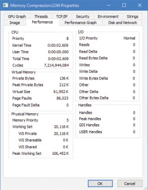
プロセス内で動くのはカーネルスレッドだけなので、ユーザーモードでの CPU 時間は0です。 圧縮したメモリは共有できないため、ワーキングセットはすべてプライベートです。 次のタスクマネージャーの「メモリ」画面と比較します。

括弧内の圧縮済みメモリ量は、圧縮データが占める容量なので、Memory Compression プロセスのワーキングセットの大きさにおおむね対応します。 この画面と前の画面は、約1分の間隔を置いて取得しました。
メモリパーティション
アプリケーションを隔離する従来の方法は、アプリケーションやそのグループごとに別の仮想マシン（VM）を用意することです。 VM 同士は分離されているため、セキュリティとリソースの両面で強い境界になります。 一方、VM を動かすハードウェアの負担と管理コストは大きくなります。 そこで Docker などのコンテナ技術が登場しました。 コンテナは、一台の物理マシンまたは VM 上にアプリケーションごとの実行領域を設け、より少ないコストで隔離とリソース管理を行います。
このようなコンテナを実現するには、通常の Windows 上でリソースを仮想化するカーネルドライバーが必要です。 一つのドライバーにまとめることもできますが、実現すべき機能には次のものがあります。
- ファイルシステムをコンテナごとに隔離して見せる、ファイルシステムフィルターまたはミニフィルター。
CmRegisterCallbacksExを使い、別のレジストリがあるように見せるレジストリ仮想化ドライバー。- サイロを使って作る、コンテナ固有のオブジェクトマネージャー名前空間（第3章を参照）。
PsSetCreateNotifyRoutineExによるプロセス作成通知を使い、各プロセスを正しいコンテナに関連付ける処理。
これらを用意しても、メモリ管理の仮想化は難しいままです。 コンテナごとに PFN データベースやページファイルを分けて使いたい場合があるためです。 64 ビット版 Windows 10 と Windows Server 2016 は、メモリパーティションによって、このようなメモリ管理を可能にします。
メモリパーティションは、スタンバイ、変更済み、ゼロ、空きなどのページリスト、コミット使用量、ワーキングセット、ページを縮小する処理、変更済みページ書き出しスレッド、ゼロページスレッドなどを、ほかのパーティションから独立して持ちます。 システム内では Partition オブジェクトで表され、ほかのエグゼクティブオブジェクトと同様、名前を付けたりアクセスを制御したりできます。
システムパーティションは常に存在し、システム全体を表すとともに、明示的に作成する全パーティションの最上位の親になります。
そのアドレスはグローバル変数 MiSystemPartition に格納されます。
名前は KernelObjects\MemoryPartition0 で、図5-45のように、Sysinternals の WinObj などで確認できます。

すべての Partition オブジェクトはグローバルリストに格納されます。 該当するパーティションの情報にすばやくアクセスできるよう、インデックスは PTE に10ビットで記録されます。そのため、インデックスは最大1,024個です。 うち一つはシステムパーティション、二つは特別な予約値なので、追加のパーティションに使えるのは1,021個です。
ユーザーモードとカーネルモードのどちらからでも、文書化されていない内部関数 NtCreatePartition でメモリパーティションを作れます。
ユーザーモードから呼び出す場合は、メモリのロックを許可する特権が必要です。
親パーティションを指定すると、新しいパーティションに最初に与えるページをそこから取得し、パーティションを破棄する際にそこへ返します。
指定しなければシステムパーティションが親になります。
実際の作成処理は、メモリマネージャーの内部関数 MiCreatePartition が行います。
既存のパーティションは NtOpenPartition で名前を指定して開けます。
ほかのオブジェクトと同様に ACL で保護できるため、開くための特別な特権は不要です。
パーティションにメモリやページファイルを追加したり、別のパーティションにメモリをコピーしたり、パーティションの情報を取得したりするには NtManagePartition を使います。
カーネルデバッガーでメモリパーティションを調べる
カーネルデバッガーで Partition オブジェクトを表示します。
- ローカルカーネルデバッグを開始し、
!partitionを実行します。システム内のすべての Partition オブジェクトが一覧表示されます。
lkd> !partition Partition0 fffff803eb5b2480 MemoryPartition0
- 常に存在するシステムパーティションが表示されます。
!partitionに Partition オブジェクトのアドレスを渡すと、さらに詳しい情報を取得できます。
lkd> !partition fffff803eb5b2480 PartitionObject @ ffffc808f5355920 (MemoryPartition0) _MI_PARTITION 0 @ fffff803eb5b2480 MemoryRuns: 0000000000000000 MemoryNodeRuns: ffffc808f521ade0 AvailablePages: 0n4198472 ( 16 Gb 16 Mb 288 Kb) ResidentAvailablePages: 0n6677702 ( 25 Gb 484 Mb 792 Kb) 0 _MI_NODE_INFORMATION @ fffff10000003800 TotalPagesEntireNode: 0x7f8885 Zeroed Free 1GB 0 ( 0) 0 ( 0) 2MB 41 ( 82 Mb) 0 ( 0) 64KB 3933 ( 245 Mb 832 Kb) 0 ( 0) 4KB 82745 ( 323 Mb 228 Kb) 0 ( 0) Node Free Memory: ( 651 Mb 36 Kb ) InUse Memory: ( 31 Gb 253 Mb 496 Kb ) TotalNodeMemory: ( 31 Gb 904 Mb 532 Kb )
この出力は、パーティションの実体である MI_PARTITION 構造体のアドレスと、格納された情報の一部を示します。
メモリ情報は NUMA ノードごとに表示されます。この例ではノードは一つです。
システムパーティションなので、使用量、空き容量、総容量はタスクマネージャーや Process Explorer が報告する値に対応します。
MI_PARTITION 構造体は、通常の dt コマンドでも調べられます。
将来の用途として原著が挙げているのは、専用の物理メモリが役立つ場合に、特定のプロセスをジョブオブジェクト経由でパーティションに関連付けることです。 原著執筆時点では、Creators Update で予定されていたゲームモードがその一例でした（詳細は Part 2 の第8章を参照）。
メモリの重複排除
メモリマネージャーは、イメージページの共有、データページのコピーオンライト、メモリ圧縮などによって RAM の使用量を抑えます。 もう一つの仕組みがメモリの重複排除（memory combining）です。RAM に内容が同じページが複数あれば、一つにまとめ、残りを解放します。
この仕組みを実装するには、次の点を決める必要があります。
- どのページを候補にするか。
- いつ重複排除を始めるか。
- 一つのプロセス、一つのメモリパーティション、システム全体のどれを対象にするか。
- 通常の処理への影響を抑えるために、どうすれば短時間で処理できるか。
- 統合した書き込み可能ページを後で利用元が変更するときに、どうやってその利用元だけのコピーを作るか。
最後の点には、コピーオンライトで対処します。 統合したページに誰も書き込まなければ何もしません。 プロセスが書き込もうとした場合は、そのプロセス専用のコピーを作り、新しいプライベートページのコピーオンライトフラグを外します。
注：ページの重複排除を無効にするには、レジストリの HKLM\System\CurrentControlSet\Control\Session Manager\Memory Management に DWORD 値 DisablePageCombining を作り、1 に設定します。
注：この節の CRC とハッシュは同じ意味で使います。いずれも、ページの内容を表す64ビットの値で、内容が異なれば値も高い確率で異なります。
メモリマネージャーは MmInitSystem で初期化するときに、システムパーティションを作ります。
パーティションを記述する MI_PARTITION 構造体には、重複ページを識別するための16個の AVL 木の配列があります。
どの木を使うかは、統合ページの CRC の下位4ビットで決まります。
すべてのビットが0のページと、すべてのビットが1（各バイトが 0xFF）のページを、共通ページと呼びます。
これらの CRC は一度だけ計算して保持するので、ページの内容を走査するときに見分けられます。
重複排除を始めるには、ネイティブ API の NtSetSystemInformation に SystemCombinePhysicalMemoryInformation 情報クラスを指定します。
呼び出し元のトークンには、通常ローカルの Administrators グループに付与される SeProfileSingleProcessPrivilege が必要です。
引数のフラグを組み合わせて、次の選択肢を指定できます。
- システムパーティション全体を対象にするか、現在のプロセスだけを対象にするか。
- 共通ページ（すべて0か、すべて1）のみを探すか、内容を問わず同一のページを探すか。
入力構造体には、必要に応じてイベントのハンドルを渡せます。 別のスレッドがそのイベントをシグナル状態にすると、重複排除は中止されます。 本書の対象では、Superfetch サービスの専用スレッドが低い優先度4で実行され、ユーザーが離席中にシステムパーティション全体の重複排除を始めます。 ユーザーが作業中なら15分ごとに実行します（後述の「SuperFetch」を参照）。
Creators Update では、物理メモリが 3.5 GB（3,584 MB）より多い場合、Svchost で動く組み込みサービスの多くは、プロセスごとに一つずつサービスをホストします。
標準構成でもプロセスは数十個増えますが、あるサービスの不安定さやセキュリティ上の問題が別のサービスに波及しにくくなります。
この構成ではサービスコントロールマネージャー（SCM）が、新しい API オプションを使って各 Svchost プロセス内で3分ごとに重複排除を開始します。
処理を起動するのは、基本優先度6で動くスレッドプールのタイマー（ScPerformPageCombineOnServiceImages）です。
Svchost の数が増えたことで増加し得る RAM 使用量を抑えるためです。
Svchost で動かないサービスや、ユーザー別のアカウントまたは専用のユーザーアカウントで動くサービスは、この処理の対象ではありません。
ページの重複排除の処理本体は MiCombineIdenticalPages から始まります。
メモリパーティションの NUMA ノードごとに、ページとその CRC の一覧を確保し、ページ統合を支援するPCS 構造体に格納します。
PCS は、前述の AVL 木の配列など、処理に必要な情報を保持します。
実際に処理するのは要求元のスレッドです。対象の NUMA ノードに属する CPU で動くよう、必要ならスレッドのアフィニティを変更します。
処理は、探索、分類、ページの統合の三段階に分けて説明します。 以下では、現在のプロセスに限定せず、共通ページだけでなくすべての候補を対象にすると仮定します。 対象を絞った場合も原理は同じで、処理はやや単純になります。
重複候補の探索
最初は、対象となる物理ページの CRC を求めます。 アクティブ、変更済み、スタンバイ状態の物理ページを調べ、使われていないゼロ化済みページと空きページは飛ばします。
候補になるのは、たとえばワーキングセットに属する未共有のアクティブなページで、ページテーブルなどのページング用構造をマップしていないページです。 スタンバイや変更済みのページでも、参照数が0なら候補になります。 ユーザープロセス、ページプール、セッション空間のページが対象で、それ以外は飛ばします。
候補ページは通常、呼び出し元とは別のプロセスのコンテキストに属するため、呼び出し元からそのユーザーアドレスを参照できません。
そこで新しいシステム PTE を使って、対象の物理ページをシステムアドレス空間にマップします。
MiComputeHash64 でページの CRC を計算し、システム PTE を解放してマッピングを解除します。
ページのハッシュの計算
8バイトのページハッシュ（CRC）を計算するには、まず大きな64ビットの素数二つを掛け、その結果を初期値にします。 ページを末尾から先頭へ走査し、1サイクルで64バイトを処理します。 8バイトの値を読み取るたびにハッシュ値へ加算し、素数のビット数（2、3、5、7、11、13、17、19の順）だけ右にローテートします。 4,096バイトのページ全体のハッシュを求めるには、8バイトずつ512回読み取ります。
重複候補の分類
一つの NUMA ノードで対象ページのハッシュを計算し終えると、CRC と PFN の組を整理します。 後続の共有処理で、プロセスのコンテキスト切り替えを減らすためです。
MiProcessCrcList は、まずクイックソートで CRC と PFN の一覧をハッシュ順に並べます。
同じハッシュを持つページを追跡し、統合ページをマップする新しいプロトタイプ PTE を保持する構造体が統合ブロックです。
一覧を先頭から調べ、ハッシュが共通ページのものか、一覧の前後に同じハッシュがあるかを確認します。 どちらにも当てはまらなければ、PCS 内にそのハッシュの統合ブロックがすでにあるかを調べます。 ブロックがあれば、前回の処理か別のノードで統合ページが特定されています。 なければ CRC は一意で、統合できないので次のページへ進みます。
今回初めて重複が見つかったハッシュについては、代表 PFN 用に空の統合ブロックを作り、次の共有処理で使う一覧に加えます。 すでに同じハッシュに統合ブロックがあれば、そのページは代表ではないので、現在の CRC／PFN エントリに、既存ブロックへの参照を追加します。
処理では、ページが存在することを MiCombineIdenticalPages で確認してから、その物理ページのアドレスを取得します。
続いて、同じワーキングセットのページをまとめるWS CRC ノードを探します。
見つからなければ新しいノードを作り、別の AVL 木に入れます。
ページの CRC／PFN と仮想アドレスは、そのノード内で関連付けます。
候補をすべて調べたら、新しい共有ページのための物理メモリを MDL を使って確保します。 また、処理を速めるため、各 WS CRC ノード内の候補ページを元の仮想アドレス順に並べます。 これで、代表ページとプロトタイプ PTE を保持する統合ブロックの一覧、ワーキングセットごとに整理した CRC／PFN エントリ、共有データを格納する物理メモリがそろいます。
ページを統合する処理
統合処理は、一つのワーキングセットの全候補ページを含む WS CRC ノードと、プロトタイプ PTE および実際の共有ページを保持するための空き統合ブロックの一覧を使います。 システムは対象プロセスにアタッチし、IRQL をディスパッチレベルに上げて、そのワーキングセットをロックします。 こうすると、再マップせずに各ページを直接読み書きできます。
処理に時間がかかる場合があるため、ディスパッチレベルで次の CRC／PFN エントリを調べる前に、KeShouldYieldProcessor で、プロセッサのキューに DPC などの実行待ちの処理があるかを確認します。
待っている処理があれば、統合処理の状態を保持したうえで実行を譲ります。
共有処理は、ページの状態に応じて三つに分かれます。
- アクティブかつ有効で、内容がすべて0なら、統合せずに PTE をデマンドゼロ PTE で置き換えます。これは
VirtualAllocなどでメモリを割り当てた直後と同じ状態です。 - アクティブかつ有効で、内容がすべて0ではない場合は、共有ページにします。CRC／PFN エントリが有効な統合ブロックを指していなければ、このページが代表になります。そのハッシュを再確認し、共有用の物理ページを割り当てます。既存の統合ブロックを指していれば代表ではないので、そのブロックを使い、参照数を増やします。実際の変換は
MiConvertPrivateToProtoが行います。 - 変更済みリストまたはスタンバイリスト上にある場合は、システムアドレスに有効なページとしてマップし、ハッシュを計算し直します。処理は前のケースと同様ですが、PTE をプロトタイプ PTE に切り替える処理には
MiConvertStandbyToProtoを使います。
現在のページの共有処理を終えると、システムは代表ページの統合ブロックを PCS に追加します。 このブロックが、各プライベート PTE と統合したページの間をつなぎます。
プライベート PTE を共有 PTE に切り替える処理
MiConvertPrivateToProto は、アクティブかつ有効なページの PTE を変換します。
統合ブロック内のプロトタイプ PTE が0なら、代表ページと、その共有プロトタイプ PTE を新たに作ります。
空いている物理ページをシステムアドレスにマップし、プライベートページの内容を新しい共有ページにコピーします。
共有 PTE を作成する前に、ページファイルの予約があれば解放し、共有ページの PFN エントリを設定します。
共有ページの PFN エントリではプロトタイプビットをセットし、PTE フレームへのポインターに、プロトタイプ PTE を含む物理ページの PFN を設定します。 PTE ポインターには統合ブロック内の PTE のアドレスを設定し、ビット63をクリアします。 これによって、その PFN が統合済みページに属することを示します。
次に、プライベートページの PTE が共有ページの PFN を指すように変更し、保護属性をコピーオンライトにして、PTE を有効にします。 統合ブロック内のプロトタイプ PTE も、同じ内容の有効なハードウェア PTE とします。 最後に、プライベートページ用に割り当てていたページファイルの領域を解放し、元の PFN を削除対象として記録します。 TLB をフラッシュし、プロセスのプライベートワーキングセットを1ページ減らします。
一方、統合ブロック内のプロトタイプ PTE が0でなければ、プライベートページは代表ページと重複している候補です。 この場合、変換するのはプライベートページの有効な PTE だけです。 共有ページをシステムアドレスにマップし、二つのページの内容を比較します。 一般に、内容が異なっても同じ CRC になることがあるため、この比較が必要です。 内容が異なれば処理を打ち切ります。 同じなら共有ページのマッピングを解除して、共有 PFN のページ優先度を両方のうち高い方にします。 図5-46は代表ページだけが統合済みの状態です。

次に、プロセス専用のページテーブルに入れる、プロトタイプ PTE を参照する無効なソフトウェア PTE を組み立てます。 統合ブロックから、共有ページをマップするハードウェア PTE のアドレスを読み取り、ビットをシフトして、Prototype ビットと Combined ビットをセットします。 プライベート PFN の共有数が1でなければ、ここで処理を中止します。
共有数が1なら、新しいソフトウェア PTE をプロセスのページテーブルに書き込み、元のプライベートページの PFN が指すページテーブルの共有数を減らします。 アクティブなページの PFN エントリには、そのページを参照するページテーブルへのポインターがあるためです。 対象プロセスのワーキングセットサイズを1ページ減らし、TLB をフラッシュします。 元のプライベートページを遷移状態に移し、その PFN を削除対象にします。 図5-47では、二つ目のページの PTE はプロトタイプ PTE を参照していますが、まだ無効です。
最後に、共有ページがワーキングセットから外されないように、ページフォールトを模擬します。 これによって共有 PFN の共有数が増え、プロセスが共有ページを読もうとする時点では、フォールトを起こさずに参照できます。 プロセス側の PTE は再び有効なハードウェア PTE になります。 図5-48は、このソフトフォールトによって二つ目の PTE が有効になり、共有数が増えた状態です。


統合ページの解放
システムがある仮想アドレスを解放するときは、まずそのアドレスをマップする PTE の位置を調べます。
統合ページの PFN エントリでは、Prototype ビットと Combined ビットがセットされています。
統合された PFN の解放要求は通常のプロトタイプ PFN と同じように処理します。
ただし、Combined ビットがセットされているので、プロトタイプ PFN の処理後に MiDecrementCombinedPte を呼び出します。
MiDecrementCombinedPte は、プロトタイプ PTE に対応する統合ブロックの参照数を減らします。
この時点では、メモリマネージャーはマップ先の物理ページへの参照をすでに解除しています。
物理ページの共有数も0になり、PTE は遷移状態にあります。
統合ブロックの参照数が0になれば、プロトタイプ PTE を解放し、物理ページを空きリストに移し、統合ブロックをメモリパーティションの PCS 構造体にある空きブロックリストに戻します。
メモリの重複排除を確認する
- 第4章「スレッド」で説明したように、仮想マシンを対象とするカーネルデバッグセッションを開始します。
- 本書のダウンロード資料から、対象のビット数に合う
MemCombine32.exeまたはMemCombine64.exeと、MemCombineTest.exeを対象マシンにコピーします。 - 対象マシンで
MemCombineTest.exeを実行します。次のように表示されます。

- 表示された二つのアドレスを控えます。どちらもバッファーの先頭で、各ページの内容が同じになるよう、乱数で生成した同じバイト列を繰り返し書き込んであります。
- デバッガーで実行を中断し、MemCombineTest プロセスを探します。
0: kd> !process 0 0 memcombinetest.exe PROCESS ffffe70a3cb29080 SessionId: 2 Cid: 0728 Peb: 00d08000 ParentCid: 11c4 DirBase: c7c95000 ObjectTable: ffff918ede582640 HandleCount: <Data Not Accessible> Image: MemCombineTest.exe
- 見つけたプロセスにデバッガーのコンテキストを切り替えます。
0: kd> .process /i /r ffffe70a3cb29080 You need to continue execution (press 'g' <enter>) for the context to be switched. When the debugger breaks in again, you will be in the new process context. 0: kd> g Break instruction exception - code 80000003 (first chance) nt!DbgBreakPointWithStatus: fffff801'94b691c0 cc int 3
!pteで、二つのバッファーに対応する PFN を調べます。
0: kd> !pte b80000 VA 0000000000b80000 PXE at FFFFA25128944000 PPE at FFFFA25128800000 PDE at FFFFA25100000028 PTE at FFFFA20000005C00 contains 00C0000025BAC867 contains 0FF00000CAA2D867 contains 00F000003B22F867 contains B9200000DEDFB867 pfn 25bac ---DA--UWEV pfn caa2d ---DA--UWEV pfn 3b22f ---DA-- UWEV pfn dedfb ---DA--UW-V 0: kd> !pte b90000 VA 0000000000b90000 PXE at FFFFA25128944000 PPE at FFFFA25128800000 PDE at FFFFA25100000028 PTE at FFFFA20000005C80 contains 00C0000025BAC867 contains 0FF00000CAA2D867 contains 00F000003B22F867 contains B9300000F59FD867 pfn 25bac ---DA--UWEV pfn caa2d ---DA--UWEV pfn 3b22f ---DA-- UWEV pfn f59fd ---DA--UW-V
- PFN の値が異なっているので、二つのページは異なる物理アドレスにマップされています。対象マシンの実行を再開します。
- 対象マシンで管理者権限のコマンドプロンプトを開き、MemCombine をコピーしたフォルダーに移動して実行します。このツールは対象全体のメモリの重複排除を開始します。数秒かかる場合があります。
- 完了したら、デバッガーで再び実行を中断し、手順6と7を繰り返します。PFN の値が変わります。
1: kd> !pte b80000 VA 0000000000b80000 PXE at FFFFA25128944000 PPE at FFFFA25128800000 PDE at FFFFA25100000028 PTE at FFFFA20000005C00 contains 00C0000025BAC867 contains 0FF00000CAA2D867 contains 00F000003B22F867 contains B9300000EA886225 pfn 25bac ---DA--UWEV pfn caa2d ---DA--UWEV pfn 3b22f ---DA-- UWEV pfn ea886 C---A--UR-V 1: kd> !pte b90000 VA 0000000000b90000 PXE at FFFFA25128944000 PPE at FFFFA25128800000 PDE at FFFFA25100000028 PTE at FFFFA20000005C80 contains 00C0000025BAC867 contains 0FF00000CAA2D867 contains 00F000003B22F867 contains BA600000EA886225 pfn 25bac ---DA--UWEV pfn caa2d ---DA--UWEV pfn 3b22f ---DA-- UWEV pfn ea886 C---A--UR-V
- PFN が等しくなり、両方のページが RAM 上の同じアドレスにマップされていることが分かります。表示の
Cフラグはコピーオンライトを示します。 - 対象の実行を再開し、MemCombineTest のウィンドウで任意のキーを押します。最初のバッファーの1バイトが書き換わります。
- 再びデバッガーで実行を中断し、手順6と7を繰り返します。
1: kd> !pte b80000 VA 0000000000b80000 PXE at FFFFA25128944000 PPE at FFFFA25128800000 PDE at FFFFA25100000028 PTE at FFFFA20000005C00 contains 00C0000025BAC867 contains 0FF00000CAA2D867 contains 00F000003B22F867 contains B9300000813C4867 pfn 25bac ---DA--UWEV pfn caa2d ---DA--UWEV pfn 3b22f ---DA-- UWEV pfn 813c4 ---DA--UW-V 1: kd> !pte b90000 VA 0000000000b90000 PXE at FFFFA25128944000 PPE at FFFFA25128800000 PDE at FFFFA25100000028 PTE at FFFFA20000005C80 contains 00C0000025BAC867 contains 0FF00000CAA2D867 contains 00F000003B22F867 contains BA600000EA886225 pfn 25bac ---DA--UWEV pfn caa2d ---DA--UWEV pfn 3b22f ---DA-- UWEV pfn ea886 C---A--UR-V
- 最初のバッファーの PFN が変わり、コピーオンライトのフラグが外れています。変更したページは RAM 上の別のアドレスに移りました。
メモリエンクレーブ
プロセス内のスレッドは、ページの保護属性が許す範囲で、そのプロセスのアドレス空間全体にアクセスできます。保護属性も変更できます。 通常はこれで問題ありませんが、悪意のあるコードがプロセス内で実行された場合、そのコードも同じ権限を持ち、機密情報を含むデータを読み取ったり書き換えたりできます。
Intel の Software Guard Extensions（SGX）では、プロセスのアドレス空間に、保護されたメモリエンクレーブを作れます。 CPU は、エンクレーブ内のコードとデータを、外部で動くコードから保護します。 逆に、エンクレーブ内のコードは、エンクレーブの外にある同じプロセスのアドレス空間に通常どおりアクセスできます。 この保護は、別のプロセスやカーネルモードのコードによるアクセスにも適用されます。図5-49にその関係を示します。
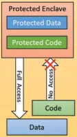
Intel SGX は第6世代 Core プロセッサ（Skylake）以降でサポートされます。 Intel はアプリケーション開発者向けの SDK を提供しており、64 ビット版 Windows 7 以降で使えます。 Windows 10 バージョン 1511 と Windows Server 2016 以降では、Windows API が抽象化層を提供するので、Intel の SDK を使わずにエンクレーブを作れます。 将来、ほかの CPU ベンダーが同様の機能を実装した場合も、同じ API で扱えるようにすることで、エンクレーブの作成とデータの読み込みを比較的移植しやすくします。
注：第6世代 Core プロセッサのすべてが SGX に対応しているわけではありません。また、対応する BIOS 更新が必要です。詳細は Intel SGX のドキュメントを参照してください。
注：原著執筆時点で Intel は SGX 1.0 と 2.0 を提供していましたが、Windows が対応していたのは1.0だけです。違いは SGX のドキュメントを参照してください。
注：原著で扱う SGX はリング0（カーネルモード）のエンクレーブに対応せず、リング3（ユーザーモード）のエンクレーブだけをサポートします。
エンクレーブを扱う API
アプリケーションがエンクレーブを作成して利用する手順は次のとおりです。内部の処理は後の節で説明します。
IsEnclaveTypeSupportedにエンクレーブ技術の種類を渡して、対応しているかを調べます。原著執筆時点で指定できるのはENCLAVE_TYPE_SGXだけです。CreateEnclaveでエンクレーブを作ります。引数はVirtualAllocExと似ており、たとえば呼び出し元とは別のプロセスにも作成できます。ベンダー固有の構成構造体を渡す必要があり、Intel SGX の場合は 4 KB の SGX Enclave Control Structure（SECS）です。Microsoft はこの構造体を明示的には定義していないため、開発者は使う技術のドキュメントに従って用意します。- 空のエンクレーブができたら、
LoadEnclaveDataでエンクレーブ外のメモリにあるコードとデータをコピーします。必要ならこの関数を複数回呼び出せます。
InitializeEnclaveで初期化すると、エンクレーブ内で実行するように準備したコードを起動できるようになります。- 実行を開始するための Windows API はないので、アセンブリ命令を直接使います。
EENTERでエンクレーブ内に制御を移し、EEXITで呼び出し元へ戻ります。フォールトなどで実行が異常終了する場合もあり、非同期エンクレーブ終了（AEX）と呼びます。これらは Windows 固有の仕組みではないので、詳細は SGX のドキュメントを参照してください。 - エンクレーブを破棄するには、
CreateEnclaveで取得したポインターを、通常のVirtualFreeまたはVirtualFreeExに渡します。
起動時のエンクレーブ用メモリの初期化
起動時に Windows のブートローダー Winload は OslEnumerateEnclavePageRegions を呼び、CPUID 命令で SGX に対応しているか確認します。
対応していれば、エンクレーブページキャッシュ（EPC）の記述子を列挙します。
EPC は、エンクレーブの作成と利用のためにプロセッサが提供する保護メモリです。
記述子ごとに BlMmAddEnclavePageRange を呼び、そのページ範囲を LoaderEnclaveMemory 型のメモリ記述子として、ソート済みリストに加えます。
このリストは、ブートローダーがカーネルに情報を渡すための LOADER_PARAMETER_BLOCK 構造体の MemoryDescriptorListHead に格納されます。
初期化のフェーズ1では、メモリマネージャーの MiCreateEnclaveRegions が、見つかったエンクレーブ領域をすばやく検索できるよう AVL 木にまとめ、MiState.Hardware.EnclaveRegions に格納します。
カーネルはエンクレーブ用のページリストを用意し、MiInsertPageInFreeOrZeroedList に専用のフラグを渡すことで、そのリストを利用します。
ところが、リストの識別子は3ビットで、8個すべての値がすでに使われています。
そこでカーネルは、エンクレーブ用ページを、ページインエラーが発生している「不良」ページとして記録します。
これらは不良ページリストに置かれ、不良ページを使わない通常のメモリ管理処理から除外されます。
エンクレーブの作成
CreateEnclave は最終的にカーネルの NtCreateEnclave を呼び出します。
渡す必要がある SECS 構造体は Intel SGX で定義されており、表5-24に示します。
NtCreateEnclave は、比較的遅い CPUID 命令を実行する代わりに、AVL 木のルートを調べて、エンクレーブに対応しているか確認します。
次に、ユーザーモードから受け取った構造体をカーネル側にコピーします。
呼び出し元とは別のプロセスに作成する場合は、KeStackAttachProcess で対象プロセスにアタッチします。
その後、実際の作成処理を行う MiCreateEnclave に制御を渡します。
| フィールド | オフセット（バイト） | サイズ（バイト） | 意味 |
|---|---|---|---|
SIZE | 0 | 8 | エンクレーブのサイズ。バイト単位で、2の累乗である必要があります。 |
BASEADDR | 8 | 8 | エンクレーブのリニアベースアドレス。エンクレーブのサイズに対応する境界にそろえる必要があります。 |
SSAFRAMESIZE | 16 | 4 | SSA フレーム1個当たりのページ数。XSAVE、パディング、GPR、および条件によって MISC を含みます。 |
MRSIGNER | 128 | 32 | エンクレーブを検証した公開鍵で拡張した測定レジスタ。形式は SIGSTRUCT を参照してください。 |
RESERVED | 160 | 96 | |
ISVPRODID | 256 | 2 | エンクレーブの製品 ID。 |
ISVSVN | 258 | 2 | エンクレーブのセキュリティバージョン番号（SVN）。 |
EID | 実装依存 | 8 | エンクレーブの識別子。 |
PADDING | 実装依存 | 352 | 署名に含まれるパディングパターン。鍵導出用の文字列に使います。 |
RESERVED | 260 | 3,836 | EID、ほかの非ゼロの予約フィールド、ゼロでなければならないフィールドを含みます。 |
MiCreateEnclave は、最初に AWE API でも使う Address Windowing Extensions（AWE）の情報構造体を割り当てます。
エンクレーブでは AWE と同様に、ユーザーモードのアプリケーションが、起動時に検出した EPC の物理ページを直接扱うためです。
このようにユーザーモードから物理ページを直接扱う場合は、AWE のデータ構造とロックを使います。
この情報構造体は、EPROCESS の AweInfo フィールドに格納します。
続いて MiAllocateEnclaveVad を呼び、エンクレーブの仮想メモリ範囲を記述する VAD を割り当てます。
この VAD には、通常の AWE VAD と同じ VadAwd フラグに加え、区別のために Enclave フラグを設定します。
最初の CreateEnclave 呼び出しでユーザーモードのアドレスを明示しなかった場合は、VAD の割り当て時に決めます。
次に、エンクレーブのサイズや初期コミット量にかかわらず、エンクレーブ用ページを1枚取得します。
Intel SGX の仕様では、どのエンクレーブにも少なくとも1ページの制御構造体が必要なためです。
MiGetEnclavePage がエンクレーブ用ページリストを調べ、1枚を取り出します。
そのページを、VAD に保持するシステム PTE でマップし、MiInitializeEnclavePfn で対応する PFN エントリを設定して、Modified および ActiveAndValid として記録します。
この PFN エントリ自体には、非ページプールなど、ほかのアクティブなメモリと区別するビットがありません。
カーネルが PFN に対応するページが EPC 領域かどうかを確認するには、MI_PFN_IS_ENCLAVE でエンクレーブ領域の AVL 木を調べます。
PFN の初期化後、システム PTE を最終的なグローバルカーネル PTE に変換し、対応する仮想アドレスを求めます。
最後に MiCreateEnclave は KeCreateEnclave を呼び、SGX ハードウェアとの通信を含む、低レベルの作成処理を行います。
呼び出し元がベースアドレスを指定していなければ、KeCreateEnclave が SECS 構造体に設定します。
SGX ハードウェアに作成を要求する前に、SECS にベースアドレスが入っていなければならないためです。
エンクレーブへのデータの読み込み
作成したエンクレーブにデータを入れる API は LoadEnclaveData です。
この関数は要求をエグゼクティブの NtLoadEnclaveData に渡します。
メモリのコピーに、ページ保護など、VirtualAlloc でも指定する属性の設定を組み合わせた処理です。
CreateEnclave で作成したエンクレーブにコミット済みのページがなければ、まずページを確保します。
ゼロ化したページをエンクレーブに加え、外部のメモリからデータをコピーします。
作成時に初期コミット量を指定していた場合は、コミット済みページに外部から直接データをコピーできます。
エンクレーブメモリも VAD で記述されるため、従来のメモリ管理 API の多くが、少なくとも一部は使えます。
たとえば VirtualAlloc に MEM_COMMIT を指定すると、NtAllocateVirtualMemory を経て MiCommitEnclavePages が呼ばれます。
新しいページの保護マスクが、読み取り、書き込み、実行の組み合わせだけで、特殊なキャッシュやライトコンバインのフラグを含まないことを確認します。
次に MiAddPagesToEnclave に、対象範囲のエンクレーブ VAD へのポインター、指定された保護マスク、コミット範囲に対応する PTE のアドレスを渡します。
MiAddPagesToEnclave は、エンクレーブ VAD に関連付けられた既存の EPC ページが、コミット要求を満たすのに十分か調べます。
不足していれば、MiReserveEnclavePages がエンクレーブ用ページリストの枚数を確認します。
プロセッサが提供した物理 EPC ページが足りなければ失敗します。足りていれば、必要な枚数だけ MiGetEnclavePage を繰り返し呼びます。
取り出した PFN エントリをエンクレーブ VAD の PFN 配列につなぎます。 ページリストから外してアクティブにしたエンクレーブページは、以後この VAD で追跡できます。
必要なページをコミットしたら、MiAddPagesToEnclave は LoadEnclaveData に渡されたページ保護を SGX の対応する属性に変換します。
各 EPC ページのページング情報を保持できるだけのシステム PTE を予約し、最後に KeAddEnclavePage を通じて SGX ハードウェアにページの追加を要求します。
特殊なページ保護属性の一つに PAGE_ENCLAVE_THREAD_CONTROL があります。
この属性は、メモリが SGX のスレッド制御構造体（TCS）用であることを示します。
各 TCS は、エンクレーブ内で独立に実行できる別々のスレッドを表します。
NtLoadEnclaveData は引数を検証してから、実際のコピーを行う MiCopyPagesIntoEnclave を呼びます。
前述のとおり、必要ならコピー先のコミット済みページを確保します。
エンクレーブの実行前の初期化
エンクレーブを作ってデータを移した後、コードを実行する前に InitializeEnclave を呼び、構成が確定したことを SGX に通知します。
この関数には SGX 固有の二つの構造体 SIGSTRUCT と EINITTOKEN を渡す必要があります。詳細は SGX のドキュメントを参照してください。
InitializeEnclave が呼ぶエグゼクティブの NtInitializeEnclave は、引数を検証し、取得したエンクレーブ VAD の属性を確認して、構造体を SGX ハードウェアに渡します。
エンクレーブを初期化できるのは一度だけです。
初期化が済んだら、Intel の EENTER 命令でコードを実行します。
SuperFetch による先行メモリ管理
従来の OS のメモリ管理はデマンドページングが中心でした。ページをまとめて読み込んだり先読みしたりする改良も、主にデマンドページフォールトが起きたときのディスク I/O を効率化するものでした。 クライアント版 Windows の SuperFetch は、最後に使った時刻だけでなく、過去のファイルアクセスの履歴を利用し、今後必要になりそうなページを先に用意します。
以前の Windows のスタンバイリスト管理には二つの制約がありました。 第一に、ページの優先度はプロセスの直近の動作だけで決まり、今後の需要は考慮されませんでした。 第二に、優先度の判断に使う情報は、その時点でプロセスが所有するページに限られていました。
たとえば短時間の離席中に、ウイルス対策のスキャンやディスクのデフラグのようなメモリを大量に使う処理が走ると、席に戻って対話型アプリケーションを使ったり起動したりするときに、応答が鈍くなることがあります。 利用者自身がデータやメモリを多く使うアプリケーションを動かしてから、別のプログラムに戻った場合も同様です。 メモリを大量に使った処理が、対話型アプリケーションがキャッシュしていたコードとデータを追い出し、アプリケーションはディスクから読み直さなければならないためです。 SuperFetch はこの問題に対処します。
SuperFetch の構成
SuperFetch の各コンポーネントは協調して必要なページを先回りして読み込み、処理中も利用者の作業への影響を抑えます。
- トレーサー：カーネルの
Pfコンポーネントが、ページの利用状況、セッション、プロセスの詳細をいつでも問い合わせられるようにします。ファイルの利用状況は FileInfo ミニフィルタードライバー（%SystemRoot%\System32\Drivers\Fileinfo.sys）でも追跡します。 - トレースの収集部と処理部：収集部は追跡データから生のログを作り、メモリに保持して処理部に渡します。処理部はログの各エントリをエージェントに渡します。エージェントは履歴ファイルをメモリに保持し、再起動などでサービスが停止するときにディスクに保存します。
- エージェント：ファイルのどの位置にあるページを参照したかを仮想オフセットで履歴ファイルに記録し、次のような属性でページを分類します。
- 利用者が操作していたときのページ参照。
- フォアグラウンドプロセスによるページ参照。
- 利用者が操作していたときのハードフォールト。
- アプリケーションの起動中のページ参照。
- 長時間アイドルだった後、利用者が操作を再開したときのページ参照。
- シナリオマネージャー：コンテキストエージェントとも呼ばれ、休止状態、スタンバイ、ユーザーの簡易切り替えに対応する三つの計画を管理します。カーネルモード部分は、シナリオの開始と終了、現在の状態の管理、トレース情報の関連付けを行う API を提供します。
- 再調整エージェント：ユーザーモードの Superfetch サービスで動き、各エージェントの情報と優先度別ページリストなどのシステムの状態をもとに、PFN データベースを調べます。各ページのスコアに従って優先度を付け直し、優先度別のスタンバイリストを構成します。メモリマネージャーに指示してプロセスのワーキングセットを変更できる、唯一のエージェントです。ほかのエージェントは、判断に使う情報を選別するだけです。先読みを始める役割も担い、プリフェッチャーのスレッドを通じて FileInfo とカーネルサービスに必要なページを読み込ませます。
これらのコンポーネントは、PFN データベースの各ページの状態や、優先度別リストを含むページリストごとの現在の枚数などを、メモリマネージャーから取得します。 図5-50に各コンポーネントの関係を示します。 利用者への影響を抑えるため、I/O にも優先度を設定します（I/O 優先度は Part 2 の第8章を参照）。
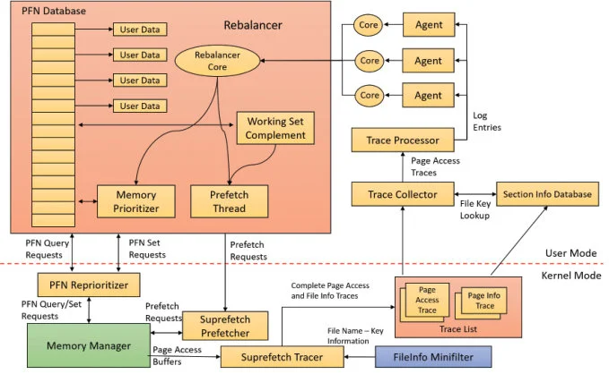
トレースとログの収集
SuperFetch は、生のトレースとログを統合、解析、加工して得た情報を判断の中心に据えています。 トレースは、システム内の特定のコードが実行されるとイベントを生成する点で ETW と似ています。 同時に、電源マネージャーの通知、プロセスのコールバック、ファイルシステムのフィルター処理などの既存機能とも連携します。 トレーサーは、メモリマネージャーにあったページのエージングに加え、SuperFetch 用に実装されたワーキングセットのエージングとアクセスの追跡を使います。
SuperFetch は常にトレースを動かし、システムからデータを継続的に取得します。 ページの利用と参照の追跡には、メモリマネージャーのアクセス済みビットとワーキングセットのエージングを使います。 キャッシュ内のファイルデータに優先度を付けるには、ファイルの利用情報も必要です。 そこで、既存のファイルシステムのフィルター機能に加え、FileInfo ドライバーを使います（フィルタードライバーは第6章を参照）。
FileInfo はファイルシステムのデバイススタックに入り、ストリーム単位でファイルの参照と変更を監視します（NTFS データストリームは Part 2 のファイルシステムの章を参照）。
主な役割は、ファイルオブジェクトの FsContext を一意のキーとして、各ストリームをファイル名に関連付けることです。
これにより、ユーザーモードの Superfetch サービスは、メモリマップトセクションに属するスタンバイページが、どのファイルのどのストリームの何バイト目に対応するかを特定できます。
FileInfo は、ファイルのロックやファイルシステムの状態を乱さずにファイルデータを先読みするためのインターフェイスも提供します。
FileInfo は削除、名前変更、切り詰めを追跡し、ファイルキーの再利用をシーケンス番号で見分けることで、記録の整合性を保ちます。
トレース中はいつでも、再調整エージェントが起動してページの構成を見直すことがあります。 判断の材料には、ワーキングセット、ゼロページリスト、変更済みリスト、スタンバイリストへのメモリの配分、フォールト数、PTE のアクセス済みビット、ページごとの利用トレース、仮想アドレス空間の現在の使用量、ワーキングセットのサイズなどがあります。
トレースには二つの種類があります。 ページアクセストレースは、アクセス済みビットから、プロセスが参照したページを追跡します。ファイルをバックストアとするページもプライベートページも対象です。 名前記録トレースは、ディスク上のファイル名とファイルキーの対応が変わる様子を追跡します。 この二種類の情報から、SuperFetch はページとファイルオブジェクトを関連付けられます。
トレース自体が記録するのはページへのアクセスですが、ユーザーモードの Superfetch サービスは、ページが常駐していたかハードフォールトで読み込まれたか、初回の参照だったか、どの程度の頻度で参照されたかといった情報を加えます。 システムの状態や、トレースしたページが直近で参照されたシナリオも保持します。 生成したトレース情報はロガーを通じてメモリに保持されます。ページアクセスなら仮想アドレスとワーキングセット、名前記録ならファイルとオフセットの組で整理します。 こうして、あるプロセスのどの仮想アドレス範囲でページ関連のイベントが起きたか、あるファイルのどのオフセット範囲で同様のイベントが起きたかを追跡できます。
復帰とユーザー切り替えのシナリオ
SuperFetch は、通常の優先度の再設定や先読みに加えて、次の三つの操作に合わせてページを用意します。
- 休止状態：現在のワーキングセット以外にどのページを休止ファイルに保存するかを決め、復帰からシステムが応答するまでの時間を短くします。
- スタンバイ：復帰直後のハードフォールトをなくすことを目指します。通常の復帰は2秒未満でも、長いスリープの後でハードディスクの回転が安定するまで5秒かかることがあり、ハードフォールトが一度起きるだけで復帰が遅れます。SuperFetch は復帰後に必要なページの優先度を高くして、その遅れを防ぎます。
- ユーザーの簡易切り替え：利用者ごとに必要なメモリを把握し、ページの優先度を維持します。別の利用者に切り替えた直後からセッションを使えるようにし、ページインによる長い待ち時間を避けます。
操作ごとに別の目標を持ちますが、いずれもハードフォールトを減らすか、なくすことが目的です。
シナリオの種類は固定で、SuperFetch はシステムの状態を制御する NtSetSystemInformation と NtQuerySystemInformation を使って管理します。
専用の情報クラス SystemSuperfetchInformation を指定して、カーネルモードのコンポーネントを制御し、シナリオの開始、終了、照会や、一つ以上のトレースの関連付けを要求します。
シナリオごとの計画ファイルには、少なくとも対象ページの一覧が含まれ、次に説明する規則に沿ってページの優先度も割り当てられます。 シナリオが始まると、シナリオマネージャーが、どのページをどの優先度でメモリに入れるかを一覧にします。
ページ優先度と再調整
メモリマネージャーはページの優先度から、スタンバイリストのどのページを再利用するか、あるページをどのリストに入れるかを決めます。 プロセスとスレッドの優先度を利用すると、たとえばデフラグのプロセスがスタンバイリストを埋めたり、対話中のフォアグラウンドプロセスが使うページを追い出したりするのを防げます。 SuperFetch はこの仕組みを使い、アプリケーションからの指定や、どのプロセスが重要かを事前に決めた規則に頼らず、優先度を再設定します。
SuperFetch はページごとにスコアを持ちます。 時間、日、週などの期間ごとに利用回数を数えるほか、最後にアクセスされてからどれだけ経ったかを記録します。 ページが元々どのリストにあったかなど、ほかのアクセス特性もスコアに反映します。
スコアは1～6の優先度に変換します。優先度7は別の用途に使います。 「優先度ごとのスタンバイリストを調べる」で見たように、スタンバイリストのページは優先度の低いものから再利用されます。 通常のアプリケーションは一般に優先度5です。サードパーティーの開発者がバックグラウンド用と指定したアプリケーションには優先度1を使います。 重要性の高いページを一定数、できる限り再利用の対象から外すために、優先度6を使います。 ほかの優先度は各ページのスコアで決まります。
SuperFetch は履歴がなくても、利用者が参照するページを観察して学習できます。 ただし、新しいアプリケーションやサービスパックをインストールしたり、利用者を追加したりするたびに、一から学習しては時間がかかります。 そこで Windows では、内部ツールで SuperFetch のデータを収集し、あらかじめ用意したトレースを作れます。 SuperFetch の開発チームは、スタートメニューを開く、コントロールパネルを開く、ファイルを開く・保存するダイアログを使うなど、多くの利用者に共通する操作を記録しました。
このトレースの履歴ファイルは、Sysmain.dll のリソースとして配布され、特別な優先度7のリストを事前に埋めるために使われます。
このリストには最も重要なデータが置かれ、ページが再利用されることはほとんどありません。
優先度7のファイルページは、プロセスが終了してもメモリに残されます。再起動後も、次回の起動時に読み込み直されます。
優先度7のページは固定されており、優先度は変わりません。 SuperFetch が優先度7でロードするのは事前学習で決めたページだけで、実行中の観察結果から追加することはありません。
再調整エージェントは優先度付きのページをメモリに先読みしますが、再調整そのものは SuperFetch とメモリマネージャーが分担します。 優先度別のスタンバイリストはメモリマネージャー内部の仕組みであり、何を先に手放し、何を保護するかは優先度で決まります。 再調整エージェントがページの優先度を付け直すと、メモリマネージャーがその値に応じて処理します。 必要なページがまだメモリにない場合は、再調整エージェントがディスクから先読みし、エージェントがページのスコアに対応付けた優先度を設定します。
再調整エージェントは、リスト間のページの配分が適切でない場合や、優先度別のリストから再利用されるページ数に問題がある場合には、ほかのエージェントの情報を待たずに処理を開始できます。 SuperFetch でキャッシュするページを確保するため、ワーキングセットの縮小を要求することもあります。 通常は、すでに優先度が低いページ、ゼロ化済みページ、有効なデータはあるものの、どのワーキングセットにも属さず使われていないページなどを使い、決めたページ数の範囲で、より役立つページをメモリにそろえます。 何を先読みし、どの優先度にし、どのページを手放すか決めたら、ディスクに読み取りを要求します。 I/O マネージャーと連携し、利用者の処理を妨げないよう、読み取りの優先度を非常に低くします。
先読みデータにはスタンバイページを使います。 スタンバイページは、別の割り当てのためにいつでも空きページとして使えるので、利用可能なメモリに数えられます。 SuperFetch が不要なデータを先読みしても、必要なときにはそのメモリを再利用できます。
再調整エージェントは、高い優先度を付けたページが最近使われたかも定期的に確認します。 これらのページは再利用されることが少なく、一時期だけ頻繁に参照されたデータを残し続けるとメモリの無駄になります。 そのようなページを見つけると、優先度を下げます。
アプリケーション起動エージェントは、別の方法で先読みします。 時間帯を、朝、昼、夕方、夜のおよそ6時間ずつに分け、さらに平日か週末かを区別します。 同じ時間帯に別のアプリケーションが起動されたという条件のもとで、あるアプリケーションも起動される確率を、マルコフ連鎖でモデル化します。 たとえば週末の夕方に、利用者が Word を起動してから Outlook を起動する傾向があれば、Word の起動後に Outlook を先読みする可能性が高くなります。
原著執筆時点のシステムでは平均して 2 GB を超える RAM があり、よく使うプロセスを快適に動かすのに必要な常駐ページは、その全メモリ使用量の一部です。 SuperFetch はメモリ容量の小さいシステムでも機能しますが、多くの場合は必要なページをすべて RAM に収められます。 収まらない場合でも、ReadyBoost や ReadyDrive でディスクへのアクセスを減らせます。
連続アクセスによるキャッシュの圧迫を抑える仕組み
SuperFetch のロバストネス機能は、ユーザーモードの Superfetch サービスが管理し、カーネルの Pf ルーチンが処理します。
不要なデータがスタンバイリストに入り、システムの性能を落としかねないファイル I/O を監視します。
たとえばプロセスが大きなファイルをコピーすると、そのファイルが長期間使われない場合でも、内容がスタンバイリストに入ります。
その分、同じ優先度のほかのデータが追い出されます。コピーしたのが対話型のアプリケーションであれば、優先度は5以上のこともあります。
監視する I/O パターンは二つあります。
- ファイルの順次アクセス：ファイル内のすべてのデータを順に読み進めます。
- ディレクトリの順次アクセス：ディレクトリ内のすべてのファイルに順にアクセスします。
こうしたアクセスでスタンバイリストに入ったデータ量が内部のしきい値を超えると、SuperFetch はそのファイルをマップするページの優先度を大きく下げます。 この処理は robustion と呼ばれ、対象プロセスのページだけを優先度2に下げるので、ほかのアプリケーションには影響しません。
この処理は予測ではなく観測結果に基づくため、最初は適用されるまでに時間がかかります。 SuperFetch は対象プロセスを記録し、次に実行されたときも調べます。 いつも同じような順次アクセスをするようなら、その後はしきい値を超えるまで待たず、ファイルページをマップした時点で優先度を下げます。 以後、そのプロセスのファイルアクセス全体が対象になります。
ただし、この規則だけでは、順次アクセスでデータを再利用するアプリケーションにも悪影響を与えます。
たとえば Sysinternals の Strings.exe で、ディレクトリ内の実行ファイルすべてから文字列を探す場合、ファイルが多ければ優先度が下がります。
別の文字列を指定して再実行したとき、キャッシュで速くなるはずが、初回と同じくらい時間がかかります。
このため、SuperFetch は引き続き監視するプロセスのリストと、あらかじめ用意した例外のリストを持ちます。
優先度を下げたファイルをプロセスが後で再び参照した場合は、そのプロセスでの優先度引き下げを無効にします。
SuperFetch は利用状況を監視し続け、不要なデータを読み込まないよう判断を更新します。 利用者の操作やアプリケーションの起動パターンが変わると、無関係なデータをキャッシュに入れたり、不要と見なしたデータを追い出したりする場合がありますが、パターンの変化にはすぐに適応します。 行動が不規則で予測できなければ、SuperFetch がないときとほぼ同じ状態になります。 情報が不足していたり、利用状況を確実に追跡できなかったりする場合は、対象プロセスやページに変更を加えません。
ReadyBoost
原著執筆時点では、RAM は10年前より安価で入手しやすくなっていましたが、ハードディスクなどの二次記憶装置ほど安くはありませんでした。 一方、機械式ハードディスクは可動部品が多く、壊れやすいうえ、特にシークを伴う読み書きでは RAM より低速です。 SuperFetch がすぐ使うデータをディスクに置いても、ページをいったんページアウトし、ハードフォールトで読み戻すのと同じくらい時間がかかります。
SSD やハイブリッドドライブは、機械式ディスクの欠点の一部を補いますが、RAM より低速です。 USB フラッシュメモリ、CompactFlash カード、SD カードなど、持ち運びできるフラッシュメディアは、RAM より安価で大容量のものを入手でき、可動部品がないので機械式ディスクより短時間で読み取り位置にアクセスできます。 実際には、CompactFlash カードや SD カードはほとんどの場合 USB アダプター経由で接続されるので、システムからは USB フラッシュメモリとして見えます。
ランダム I/O では、一般的なデスクトップ向けハードディスクのシーク時間と回転待ち時間が合わせて約10ミリ秒かかります。 3～4 GHz のプロセッサにとっては長い待ち時間です。 一方、フラッシュメモリなら、一般的なハードディスクより最大10倍速くランダム読み取りを処理できます。 Windows の ReadyBoost は、フラッシュメモリに、RAM とディスクの間に位置するキャッシュを設けます。
ReadyBoost は ReadyBoot とは別の機能です。
ドライバー %SystemRoot%\System32\Drivers\Rdyboost.sys が、キャッシュデータを不揮発性メモリ（NVRAM）デバイスに書き込みます。
USB フラッシュメモリを挿すと、ReadyBoost はデバイスの性能を測り、結果を HKLM\SOFTWARE\Microsoft\Windows NT\CurrentVersion\Emdmgmt に保存します。
EMD は external memory device の略で、ReadyBoost の開発時の名称です。
デバイスの容量が 256 MB～32 GB で、4 KB のランダム読み取りが毎秒 2.5 MB 以上、512 KB のランダム書き込みが毎秒 1.75 MB 以上なら、ReadyBoost はその領域の一部をディスクキャッシュに使うか尋ねます。
承認すると、デバイスのルートに ReadyBoost.sfcache を作り、キャッシュしたページを格納します。
キャッシュを初期化すると、ReadyBoost は C:\ など、ローカルのハードディスクのボリュームに対する読み書きを捕捉し、そのデータをキャッシュファイルにコピーします。
ただし、長い間読み取られていないデータや、ボリュームスナップショットの要求に属するデータなどには例外があります。
キャッシュ先のデータは圧縮され、典型的な圧縮比は2対1です。したがって、4 GB のキャッシュファイルに通常は 8 GB のデータが入ります。
書き込み時には、起動ごとにランダムに生成するセッションキーを使って、ブロックごとに Advanced Encryption Standard（AES）で暗号化します。
デバイスを取り外しても、キャッシュの内容が読み取られないようにするためです。
ランダム読み取りのデータがキャッシュにあれば、ReadyBoost はそこから返します。 一方、シーケンシャル読み取りは機械式ハードディスクのほうが速いため、キャッシュにあってもディスクに直接読み取りを任せます。 同様に、大きな I/O が必要な読み取りでは、ディスク上のキャッシュを使います。
フラッシュメディアはいつでも利用者が取り外せるため、重要なデータをそのメディアだけに保存することはできません。 書き込みは必ず先に二次記憶装置に対して行います。 次の ReadyDrive は、この制約を解消し、ほかの利点も提供します。
ReadyDrive
ReadyDrive は、NVRAM を内蔵したハイブリッドハードディスク（H-HDD）を利用する Windows の機能です。 一般的な H-HDD には 50 MB～512 MB のキャッシュがあります。
ReadyDrive では、通常のハードディスクにある RAM キャッシュと違い、ドライブのフラッシュメモリを自動キャッシュとして任せきりにはしません。 Windows が ATA-8 コマンドを使い、どのデータをフラッシュメモリに保持するか指定します。 たとえば、シャットダウン時に次の起動で使うデータを保存し、再起動を速めます。 休止時には休止ファイルの一部をキャッシュに保存し、復帰を速めます。 ディスクの回転を止めてもキャッシュは使えるため、バッテリー駆動中はフラッシュメモリを書き込みキャッシュに使い、ディスクを回し始める回数を減らせます。 回転を止めておくと、通常の使用でディスクが消費する電力のかなりの部分を節約できます。
SuperFetch も ReadyDrive を使います。 ReadyBoost と同様の利点があり、外付けのフラッシュ機器が不要で、データを永続的に保持できるという利点もあります。 利用者は通常、稼働中のコンピューターから物理ドライブを取り外せません。 そのため、ドライブコントローラーはキャッシュのデータが消える心配をせず、キャッシュだけに書き込んでディスク本体への書き込みを避けられます。
プロセスのリフレクション
問題のあるプロセスがサービスを提供し続けている場合、完全なメモリダンプを取ったり、対話的にデバッグしたりするために、そのプロセスを長時間中断するのは望ましくありません。 スレッドのレジスタとスタック、およびレジスタが参照するページを記録するミニダンプなら、中断時間を短くできます。 ただし、取得できる情報が限られているため、クラッシュの診断には足りることが多くても、一般的なトラブルシューティングには不足することがあります。
プロセスのリフレクションでは、ミニダンプを取得したり、対象の停止状態のクローンを作ったりする短い間だけ、対象プロセスを中断します。 その後は対象を再開させたまま、クローンから、対象の有効なユーザーモードメモリをすべて含む詳細なダンプを取得できます。
Windows Diagnostic Infrastructure（WDI）の複数のコンポーネントは、経験則で問題が疑われるプロセスを見つけると、リフレクションを使って影響を抑えながらメモリダンプを取ります。 たとえば、Windows のリソース枯渇の検出と解決（RADAR）のメモリリーク診断は、プライベート仮想メモリをリークしているように見えるプロセスのダンプを取り、Windows エラー報告（WER）で Microsoft に送って分析できるようにします。 WDI の応答停止の検出も、互いにデッドロックしているように見えるプロセスに同じ処理を行います。 いずれも経験則に基づくため、実際に不具合が起きているとは断定できず、プロセスを長時間止めたり終了させたりはできません。
リフレクションの実装を担うのは、Ntdll.dll の RtlCreateProcessReflection です。
- 共有メモリ用のセクションを作ります。
- そのセクションに引数を書き込みます。
- セクションを現在のプロセスと対象プロセスにマップします。
- イベントオブジェクトを二つ作り、対象プロセスにハンドルを複製し、二つのプロセスが処理を同期できるようにします。
RtlpCreateUserThreadExを呼び、対象プロセス内にスレッドを作成します。このスレッドはNtdll.dllのRtlpProcessReflectionStartupから実行を始めます。Ntdll.dllは起動時にランダムに決まる同じアドレスに全プロセスでマップされるため、現在のプロセスが自分のマッピングから得た関数アドレスを渡せます。- 呼び出し元がクローンのハンドルを要求していれば、
RtlCreateProcessReflectionは対象プロセス内のスレッドが終了するのを待ちます。要求していなければ、呼び出し元に戻ります。 - 対象内に作られたスレッドは、クローンの作成後に同期するためのイベントオブジェクトを一つ追加します。
- 対象内のスレッドは、開始元のプロセスとの共有セクションから引数を読み、
RtlCloneUserProcessを呼びます。 - ローダーの実行中、ヒープの操作中、プロセス環境ブロック（PEB）の変更中、ファイバーのローカルストレージの変更中を避けてクローンを作るオプションが指定されていれば、関連するロックを取ってから処理を続けます。ダンプ内でこれらのデータ構造の整合性を保てるため、デバッグに役立ちます。
RtlCloneUserProcessは最後に、通常のプロセス作成を担うユーザーモード関数RtlpCreateUserProcessを呼びます。現在のプロセスのクローンを作ることを示すフラグを渡し、RtlpCreateUserProcessはZwCreateUserProcessを呼んでカーネルに作成を要求します。
ZwCreateUserProcess がプロセスを複製するときの処理は、新規プロセスを作るときとほぼ同じです。
違うのは、プロセスオブジェクトと最初のスレッドの作成処理から MmInitializeProcessAddressSpace を呼ぶ際に、空の初期アドレス空間ではなく、対象プロセスのコピーオンライトの複製を作るように指定する点です。
メモリマネージャーは、Services for Unix Applications の fork API に提供している仕組みを使い、効率よくアドレス空間を複製します。
対象プロセスが実行を再開してアドレス空間を変更しても、その変更はクローンには見えません。
そのため、クローンは作成時点の対象プロセスのアドレス空間を保持できます。
クローンは RtlpCreateUserProcess から戻った直後の位置で実行を始めます。
作成に成功すると、クローンのスレッドには STATUS_PROCESS_CLONED が返り、複製を行ったスレッドには STATUS_SUCCESS が返ります。
クローンは対象プロセスと同期した後、RtlCreateProcessReflection に関数が指定されていれば最後にそれを呼びます。この関数は Ntdll.dll に実装されている必要があります。
たとえば RADAR は RtlDetectHeapLeaks を指定し、プロセスのヒープに対する経験則に基づく分析結果を呼び出し元のスレッドに報告します。
関数が指定されていなければ、スレッドは渡されたフラグに応じて、自らを中断するか終了します。
RADAR と WDI がリフレクションを使う場合は、クローンのハンドルを返し、クローンが初期化後に自らを中断するよう要求します。
対象プロセスのミニダンプを取得する間は対象を中断し、その後、クローンからより詳細なダンプを取得します。
ダンプを取得し終えたらクローンを終了します。
ミニダンプの取得が終わってからクローンが作られるまでの間に、対象プロセスが動作することがあります。
このため二つのダンプの内容が食い違う可能性はありますが、ほとんどの場合はトラブルシューティングの妨げになりません。
Sysinternals の ProcDump に -r を指定すると、同じ手順で、対象プロセスのリフレクションを使ったダンプを作れます。
まとめ
Windows のメモリマネージャーは、各プロセスに固有の仮想アドレス空間を設け、別のプロセスからメモリを保護しながら、必要なメモリを効率よく安全に共有できるようにします。 ファイルのマッピングや、広いメモリ範囲のうち必要な部分だけを割り当てる機能も備えています。 Windows 環境サブシステムは、メモリマネージャーの機能の大半を Windows API を通じてアプリケーションに提供します。
次の章では、OS のもう一つの主要な構成要素である I/O システムを扱います。
第6章 I/O システム
Windows の I/O システムは、複数のエグゼクティブコンポーネントで構成されます。 これらのコンポーネントが連携してハードウェアデバイスを管理し、アプリケーションやシステムがデバイスを使うためのインターフェイスを提供します。
まず、実装の前提になった設計目標と、I/O マネージャー、プラグアンドプレイ（PnP）マネージャー、電源マネージャーなどの構成要素を説明します。 次に、デバイスドライバーを種類別に取り上げ、デバイス、ドライバー、I/O 要求を記述する主要なデータ構造を示します。 それを踏まえ、I/O 要求がシステム内のどこを通って完了するかをたどります。 最後に、デバイスの検出、ドライバーのインストール、電源管理の仕組みを説明します。
I/O システムの構成要素
Windows の I/O システムは、物理デバイスと、仮想または論理デバイスを、共通のインターフェイスでアプリケーションに提供するよう設計されています。 設計目標は次のとおりです。
- デバイスの命名とセキュリティの仕組みを統一し、共有可能なリソースを保護する。Windows のセキュリティモデルについては、第7章「セキュリティ」を参照してください。
- パケットベースの高速な非同期 I/O を提供し、処理量の増加に対応できるアプリケーションを実装できるようにする。
- ドライバーを高水準言語で書き、別のマシンアーキテクチャへ移植しやすくするためのサービスを提供する。
- ドライバーを階層化し、既存のドライバーを変更せずに、新しいドライバーを追加して、ほかのドライバーやデバイスの動作を変えられるようにする。呼び出し側は追加を意識する必要がない。
- デバイスドライバーを動的にロード、アンロードし、必要なときだけシステムリソースを使うようにする。
- プラグアンドプレイをサポートする。新しいハードウェアを検出したら、システムがドライバーを探してインストールし、必要なハードウェアリソースを割り当てる。アプリケーションもデバイスインターフェイスを検出し、有効にできる。
- 電源管理をサポートし、システム全体または個々のデバイスを低電力状態に移行できるようにする。
- 複数のインストール可能なファイルシステムをサポートする。対応するものには、FAT とその派生形式の FAT32、exFAT、CD-ROM ファイルシステム（CDFS）、Universal Disk Format（UDF）、Resilient File System（ReFS）、Windows のファイルシステムである NTFS があります。種類と構成の詳細は Part 2 のファイルシステムの章を参照してください。
- Windows Management Instrumentation（WMI）をサポートし、WMI 対応のアプリケーションやスクリプトでドライバーを管理、監視、診断できるようにする。WMI は Part 2 の管理機構の解説を参照してください。
これらを実現するために、Windows の I/O システムには、図6-1に示すエグゼクティブコンポーネントとデバイスドライバーがあります。
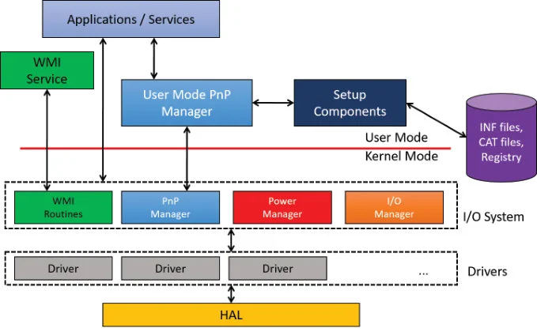
- I/O マネージャーは I/O システムの中核です。アプリケーションやシステムコンポーネントを仮想、論理、物理デバイスにつなぎ、デバイスドライバーが動作するための基盤を定めます。
- デバイスドライバーは、通常、特定の種類のデバイスに対する I/O インターフェイスを提供します。読み取りや書き込みなどの高水準の命令を解釈し、制御レジスタへの書き込みなど、デバイス固有の低水準の命令を発行するソフトウェアモジュールです。 管理するデバイス宛ての命令は I/O マネージャーから受け取り、処理が済んだら I/O マネージャーに通知します。 デバイスのインターフェイスの実装や制御をほかのドライバーと分担する場合は、I/O マネージャーを介して命令を転送します。
- PnP マネージャーは、I/O マネージャーおよび、バスドライバーと呼ばれる種類のデバイスドライバーと連携します。ハードウェアリソースの割り当てを調整し、ハードウェアデバイスの接続と取り外しを検出して対処します。デバイスが見つかると、PnP マネージャーとバスドライバーがドライバーをロードします。適切なドライバーがシステムにない場合は、エグゼクティブのプラグアンドプレイコンポーネントが、ユーザーモードの PnP マネージャーにデバイスのインストールを依頼します。
- 電源マネージャーは、I/O マネージャーや PnP マネージャーと連携し、システム全体や個々のデバイスドライバーの電源状態の遷移を調整します。
- WDM WMI プロバイダーは、Windows Driver Model（WDM）の WMI サポートルーチンです。デバイスドライバーはこのプロバイダーを介してユーザーモードの WMI サービスと通信し、間接的に WMI プロバイダーとして働きます。
- レジストリは、システムに接続された基本的なハードウェアデバイスの情報と、ドライバーの初期化や構成に使う設定を格納するデータベースです。詳細は Part 2 の管理機構の章にあるレジストリの解説を参照してください。
- INF ファイルは、拡張子が
.infのドライバーインストール用ファイルで、ハードウェアデバイスと、そのデバイスを主に制御するドライバーを対応付けます。対象デバイス、ドライバーファイルのコピー元とコピー先、インストール時に必要なレジストリ変更、ドライバー間の依存関係を、スクリプトに似た形式で記述します。Microsoft Windows Hardware Quality Labs（WHQL）のテストに合格したことを Windows が確認するためのデジタル署名は、.catファイルに格納されます。署名はドライバーや INF ファイルの改ざんを検出するためにも使われます。 - ハードウェア抽象化レイヤー（HAL）は、プラットフォーム間の違いを隠す API を提供し、ドライバーをプロセッサや割り込みコントローラーの実装から切り離します。ほかのドライバーが制御しないマザーボード上のデバイスに対しては、実質的にバスドライバーとして働きます。
I/O マネージャー
I/O マネージャーは、デバイスドライバーへ I/O 要求を届けるための共通の処理モデルを定めます。 I/O システムはパケットを使って要求を受け渡します。 ほとんどの I/O 要求は、要求を処理するために必要な情報がすべて入ったI/O 要求パケット（IRP）というデータ構造で表されます。 IRP は I/O システムのコンポーネント間を渡ります。後述の高速 I/O は例外で、IRP を使いません。 この設計により、アプリケーションの一つのスレッドでも、複数の I/O 要求を並行して扱えます（後述の「I/O 要求パケット」を参照）。
I/O マネージャーは対象の操作を表す IRP をメモリに作り、そのポインターを適切なドライバーに渡します。 ドライバーは IRP に指定された操作を行い、処理が完了した場合や、残りの処理を別のドライバーに引き継ぐ必要がある場合に、IRP を I/O マネージャーへ返します。 I/O 操作が完了すると、I/O マネージャーはパケットを解放します。
I/O マネージャーは IRP を作成、解放するほか、複数のドライバーに共通する処理を、ドライバーが呼び出せるルーチンとして提供します。 共通の処理を一か所にまとめることで、個々のドライバーは単純かつ小規模になります。 たとえば、ドライバーから別のドライバーを呼び出す関数を提供し、I/O 要求のバッファーを管理し、ドライバーのタイムアウトを扱います。 OS にロードされたインストール可能なファイルシステムの記録も保持します。 デバイスドライバーが呼び出せる I/O マネージャーのルーチンは約100種類です。
I/O マネージャーのサービスを使うと、Windows や POSIX（現在はサポートされていません）などの環境サブシステムが、それぞれ独自の I/O 機能を実装できます。 たとえば非同期 I/O を使うと、多数の要求を並行して処理できる、高性能なサーバーアプリケーションを作れます。
ドライバーのインターフェイスが共通なので、I/O マネージャーはドライバーの構造や内部実装を知らずに呼び出せます。 OS は、すべての I/O 要求をファイル宛ての要求として扱います。 ドライバーは、この仮想ファイルに対する要求を、ハードウェア固有の要求に変換します。 I/O マネージャーを通じてドライバー同士を呼び出せば、一つの I/O 要求を層ごとに独立して処理できます。
Windows の I/O システムは、通常のオープン、クローズ、読み取り、書き込みに加え、非同期 I/O、直接 I/O、バッファー付き I/O、スキャッター／ギャザー I/O を提供します（後述の「I/O の種類」を参照）。
一般的な I/O 要求の流れ
ほとんどの I/O 操作には、I/O システムの一部のコンポーネントだけが関与します。 典型的な要求は、デバイスからデータを読み取るなど、アプリケーションが I/O 関連の関数を呼ぶところから始まります。 I/O マネージャー、一つ以上のデバイスドライバー、HAL が、その要求を処理します。
Windows のスレッドは、仮想ファイルに対して I/O を行います。
仮想ファイルとは、デバイス、ファイル、ディレクトリ、パイプ、メールスロットなど、ファイルと同じように扱う I/O の入力元や出力先です。
ユーザーモードのクライアントは通常、CreateFile または CreateFile2 で仮想ファイルのハンドルを取得します。
名前に File とありますが、通常のファイルだけでなく、オブジェクトマネージャーの GLOBAL?? ディレクトリでシンボリックリンクとして定義された対象も扱えます。
この関数名の File は、呼び出しの結果、エグゼクティブが作るファイルオブジェクト（FILE_OBJECT）を指しています。
図6-2は、Sysinternals の WinObj で GLOBAL?? を表示したものです。
たとえば C: は、オブジェクトマネージャーの Device ディレクトリにある内部名（図の例では \Device\HarddiskVolume7）へのシンボリックリンクです。
オブジェクトマネージャーとその名前空間については、Part 2 の第8章「システムメカニズム」を参照してください。
GLOBAL?? ディレクトリの名前は、いずれも CreateFile または CreateFile2 の引数の候補になります。
デバイスドライバーなどのカーネルモードのクライアントは、同様の ZwCreateFile を使って仮想ファイルのハンドルを取得できます。

GLOBAL?? ディレクトリ注：.NET Framework や Windows ランタイムには、ファイルやデバイスを扱う独自の API があります。
たとえば .NET には System.IO.File、WinRT には Windows.Storage.StorageFile があります。
ただし、内部で管理するハンドルを取得するには、最終的に CreateFile または CreateFile2 を呼びます。
注：GLOBAL?? ディレクトリは、旧称の DosDevices と呼ばれることもあります。
この名前が今も使えるのは、オブジェクトマネージャーの名前空間のルートで、GLOBAL?? へのシンボリックリンクとして定義されているためです。
ドライバーのコードでは、通常 ?? という文字列で GLOBAL?? を参照します。
I/O マネージャーはデバイス固有の命令を知らないので、OS はすべての I/O 要求を仮想ファイルへの操作として扱います。 オープン、クローズ、読み取り、書き込みといったファイル向けの操作を、デバイス固有の命令に変換するのはドライバーの役割です。 この分担によって、アプリケーションはデバイスごとに異なるインターフェイスを使わずに済みます。
ユーザーモードのアプリケーションは公開 API を呼び出します。その API が内部の I/O システム関数を呼び、読み取りや書き込みなどを要求します。 I/O マネージャーは、仮想ファイルへの要求を実行時に適切なデバイスドライバーへ振り分けます。 図6-3は典型的な読み取り要求の流れです。書き込みなども、使う API が異なるだけで、処理の流れは似ています。

以降では、デバイスドライバーの種類と構造を説明し、ロード、初期化、I/O 要求の処理をたどります。 その後、PnP マネージャーと電源マネージャーの役割と動作を取り上げます。
割り込み要求レベルと遅延プロシージャ呼び出し
ドライバーの I/O 処理を理解するには、Windows カーネルの割り込み要求レベル（IRQL）と遅延プロシージャ呼び出し（DPC）を知っておく必要があります。 以下では I/O 処理に必要な範囲を説明します。詳しくは Part 2 の第8章を参照してください。
割り込み要求レベル
割り込み要求レベル（IRQL）には、割り込み源の優先度と、CPU が現在実行している処理のレベルという、関連する二つの意味があります。
- ハードウェアデバイスの割り込み源に割り当てる優先度です。割り込み処理を必要とするデバイスが接続された割り込みコントローラーと連携して、HAL が値を設定します。
- 各 CPU が保持する現在のレベルです。CPU が実際にその名のレジスタを持つという意味ではありませんが、CPU ごとのレジスタのように考えられます。
低い IRQL の処理は、高い IRQL の処理に割り込めません。 反対に、高い IRQL の処理は、低い IRQL で実行中の処理を横取りできます。 具体例はこの後で示します。図6-4は Windows がサポートするアーキテクチャごとの IRQL の一覧です。 IRQL はスレッドの優先度とは別です。スレッドの優先度がスケジューリングに関係するのは、IRQL が2未満のときだけです。

注：IRQL は IRQ（割り込み要求）とは異なります。IRQ は、ここではデバイスと割り込みコントローラーを結ぶハードウェアの割り込み線を指します。割り込み、IRQ、IRQL の詳細は Part 2 の第8章を参照してください。
通常、プロセッサの IRQL は0です。 このレベルでは、第4章「スレッド」で説明したように、カーネルのスケジューラーが優先度などに基づいてスレッドをスケジュールします。 ユーザーモードでは IRQL は常に0で、引き上げる手段はありません。そのため、ユーザーモード向けのドキュメントでは IRQL を扱いません。
カーネルモードのコードは、KeRaiseIrql と KeLowerIrql で現在の CPU の IRQL を上げ下げできます。
ただし、通常は呼び出されるルーチンの側で、特定の IRQL まで引き上げられていることを前提とします。後述のドライバーによる I/O 処理でその例を示します。
I/O 処理で特に関係する IRQL は次のとおりです。
- パッシブレベル（0）：WDK のヘッダー
wdm.hでPASSIVE_LEVELと定義されています。通常使われる IRQL で、カーネルのスケジューラーは第4章で述べたとおりに動作します。
- ディスパッチ／DPC レベル（2、
DISPATCH_LEVEL）：カーネルのスケジューラーが処理を行うレベルです。スレッドが現在の IRQL を2以上に上げると、クォンタムが事実上無制限になり、ほかのスレッドには横取りされません。IRQL が2未満に戻るまで、この CPU でスケジューラーが別のスレッドに切り替えられないためです。この制約から、次のことが言えます。- IRQL が2以上のときに、ミューテックス、セマフォ、イベントなどのカーネルディスパッチャーオブジェクトを待つと、システムはバグチェックで停止します。スレッドが待機状態になれば、同じ CPU で別のスレッドを動かす必要がありますが、このレベルでは切り替えができません。ただし、タイムアウトに0を指定して待機せず、シグナル状態だけを調べる場合は例外です。
- ページフォールトは処理できません。I/O を待つためにコンテキストスイッチが必要な場合でも切り替えられず、フォールトが起きるとシステムは停止します。したがって IRQL が2以上で動くコードは、ページアウトできないメモリだけを参照できます。通常は、物理メモリに常駐する非ページプールから領域を割り当てます。
- デバイス IRQL（DIRQL）：ハードウェア割り込みに割り当てられるレベルで、x86 では3～26、x64 と ARM では3～12です。割り込みが到着すると、カーネルのトラップディスパッチャーは、CPU の IRQL を割り込みに対応するレベルへ上げてから、対応する割り込みサービスルーチン（ISR）を呼びます。DIRQL は
DISPATCH_LEVELより高いため、IRQL 2 の制約がここでも当てはまります。
ある IRQL で実行中は、そのレベル以下の割り込みがマスクされます。 たとえば ISR が IRQL 8 で実行されている CPU では、IRQL 7 以下の処理は割り込めません。 ユーザーモードのコードは IRQL 0 でしか実行されないので、この間は動けません。 高い IRQL で長く実行するのは一般に望ましくありませんが、システムが正常に動くために必要な場面もあります。
遅延プロシージャ呼び出し
遅延プロシージャ呼び出し（DPC）は、DPC_LEVEL（IRQL 2）で行う関数呼び出しを表すオブジェクトです。
DIRQL で実行している間、ほかの処理待ちの割り込みがマスクされるので、DPC は主に割り込みの後処理に使います。
典型的な ISR は、デバイスの状態を読み、割り込み信号を止めるよう指示するなど、最低限の処理だけを行い、残りは DPC を要求して低い IRQL に回します。
DPC が「遅延」と呼ばれるのは、要求された時点では IRQL が2より高く、すぐに実行できないからです。 ISR から戻った後、優先して処理すべき割り込みがなければ、CPU の IRQL が2に下がり、キューにある DPC が実行されます。 図6-5は、ある CPU が IRQL 0 で通常のコードを実行中に、任意の時点で発生し得るハードウェア割り込みを受けた場合の流れを示します。

図6-5では、次の順に処理が進みます。
- CPU は通常どおり IRQL 0 で、ユーザーモードまたはカーネルモードのコードを実行しています。
- IRQL 5 のハードウェア割り込みが到着します。デバイス IRQL の最小値は3です。5は現在の IRQL である0より高いため、CPU の状態を保存し、IRQL を5に上げて、対応する ISR を呼び出します。スレッドのコンテキストスイッチは起きず、同じスレッドが ISR のコードを実行します。ユーザーモードで動いていた場合は、割り込みの到着時にカーネルモードへ移ります。
- ISR 1 が IRQL 5 で実行を始めます。この時点では、IRQL 5 以下の割り込みは ISR 1 に割り込めません。
- 別の割り込みが IRQL 8 で到着し、システムが同じ CPU で処理するとします。8は5より高いため、実行中の処理を中断し、CPU の状態を保存して、IRQL を8に上げます。CPU は ISR 2 に制御を移します。IRQL が2以上ではスケジューラーが別のスレッドに切り替えられないため、この ISR も同じスレッドで動きます。
- ISR 2 は、IRQL 8 未満の割り込みにも処理の機会を与えるため、割り込みを処理した後に残る作業を、より低い IRQL で行うことにします。
- ISR 2 は終了前に、ドライバーの後処理ルーチンを指すよう初期化した DPC を、
KeInsertQueueDpcでキューに追加します。この後処理の典型例は次節で説明します。その後 ISR 2 から戻り、ISR 2 に入る前に保存した CPU の状態を復元します。 - IRQL が直前の値である5に下がり、CPU は中断されていた ISR 1 の実行を再開します。
- ISR 1 も終了直前に、自身の後処理を行う DPC をキューに追加します。この時点では、まだ DPC キューは処理されていません。ISR 1 から戻り、その実行前に保存した CPU の状態を復元します。
- 通常なら、割り込み処理を始める前の IRQL 0 に戻ります。しかし、待機中の DPC があるため、カーネルは IRQL を2（
DPC_LEVEL）まで下げ、キューにたまった DPC のルーチンを順に呼び出します。キューが空になると、DPC の処理は終了します。 - 最後に IRQL を0に戻し、CPU の状態を復元して、最初に中断されたユーザーモードまたはカーネルモードのコードの実行を再開します。ここまでの処理はすべて、割り込みが到着した時点で実行中だったスレッドのコンテキストで進みます。したがって、ISR や DPC のルーチンは、特定のスレッドやプロセスのコンテキストで動くことを前提にしてはいけません。この制約がドライバーにとって何を意味するかは、次節で説明します。
ここでは、DPC の重要度や、別の CPU を使って DPC を早く処理する仕組みなどを省略しました。 詳しくは Part 2 の第8章を参照してください。
デバイスドライバー
デバイスドライバーが I/O マネージャーなどと連携するには、管理するデバイスの種類と、管理の中で担う役割に応じた実装上の規則に従う必要があります。 以下では Windows がサポートするドライバーの種類と、内部構造を説明します。
注：カーネルモードのデバイスドライバーの大半は C で書かれています。Windows Driver Kit 8.0 以降は、コンパイラーがカーネルモードの C++ を明示的にサポートするため、C++ でも安全に書けます。アセンブリ言語は、実装が複雑になり、Windows がサポートする x86、x64、ARM の間で移植しにくくなるため、推奨されません。
デバイスドライバーの種類
Windows はさまざまな種類のデバイスドライバーと開発環境に対応しています。 同じ種類のドライバーでも、対象デバイスによって使う開発環境が異なる場合があります。 最も大きな区分は、ユーザーモードで動くか、カーネルモードで動くかです。 Windows がサポートするユーザーモードのドライバーには、次の種類があります。
- Windows サブシステムのプリンタードライバー：デバイスに依存しないグラフィックス要求を、プリンター固有の命令に変換します。通常、変換した命令は USB プリンターポートドライバー（
Usbprint.sys）など、カーネルモードのポートドライバーへ転送します。 - User-Mode Driver Framework（UMDF）ドライバー：ユーザーモードで動くハードウェアデバイス用ドライバーです。高度なローカルプロシージャ呼び出し（ALPC）を介して、カーネルモードの UMDF サポートライブラリと通信します。詳細は後述の「User-Mode Driver Framework」を参照してください。
この章では、主にカーネルモードのデバイスドライバーを扱います。 基本的な分類は次のとおりです。
- ファイルシステムドライバー：ファイルに対する I/O 要求を受け付け、その要求を処理するため、より具体的な I/O 要求を大容量記憶装置やネットワークデバイスのドライバーに発行します。
- プラグアンドプレイドライバー：ハードウェアを扱い、Windows の電源マネージャーと PnP マネージャーに連携します。大容量記憶装置、映像アダプター、入力デバイス、ネットワークアダプターのドライバーが含まれます。
- プラグアンドプレイ非対応のドライバー：システムの機能を拡張するカーネル拡張などが含まれます。通常は実際のハードウェアを管理しないため、PnP マネージャーや電源マネージャーとは連携しません。ネットワーク API やプロトコルを実装するドライバー、Sysinternals の Process Monitor が使うドライバーなどが該当します。
カーネルモードのドライバーは、準拠するドライバーモデルと、デバイスへの要求の処理で担う役割によって、さらに分類できます。
WDM ドライバー
WDM ドライバーは Windows Driver Model（WDM）に従うデバイスドライバーです。 WDM は Windows の電源管理、プラグアンドプレイ、WMI に対応しており、プラグアンドプレイドライバーの大半は WDM に従います。 WDM ドライバーには三つの種類があります。
- バスドライバー：論理バスまたは物理バスを管理します。バスの例には PCMCIA、PCI、USB、IEEE 1394 があります。バスドライバーは、管理するバスに接続されたデバイスを検出して PnP マネージャーに知らせ、バスの電源設定を管理します。通常は Microsoft が Windows に同梱しています。
- 機能ドライバー：特定の種類のデバイスを管理します。バスドライバーは、PnP マネージャーを介して機能ドライバーにデバイスを通知します。機能ドライバーは、OS がデバイスを操作するためのインターフェイスを提供し、通常はそのデバイスの動作を最も詳しく把握しています。
- フィルタードライバー：機能ドライバーの上に重ねる上位フィルター（機能フィルター）と、バスドライバーの上に重ねる下位フィルター（バスフィルター）があります。デバイスや別のドライバーの動作を補うか、変更します。たとえば、キーボード入力を記録するユーティリティは、キーボードの機能ドライバーの上に置くフィルタードライバーで実装できます。
図6-6は、バスドライバーが作る物理デバイスオブジェクト（PDO）、下位フィルター、機能ドライバーが作る機能デバイスオブジェクト（FDO）、上位フィルターで構成されるデバイスノード（devnode）です。 必須の層は PDO と FDO だけで、フィルターはなくても構いません。

WDM では、一つのドライバーが特定のデバイスのすべてを制御するわけではありません。 バスドライバーは、デバイスの接続や取り外しを検出し、PnP マネージャーがバス上のデバイスを列挙できるようにします。 バス固有の構成レジスタへのアクセスや、必要に応じて、バス上のデバイスの電源制御も行います。 通常、デバイスのハードウェアそのものにアクセスするのは機能ドライバーだけです。 デバイスがどのように検出、登録されるかは、後述の「プラグアンドプレイマネージャー」で説明します。
ドライバーの階層構成
一つのハードウェアを動かすために必要な機能は、しばしば複数のドライバーに分担させます。 WDM のバスドライバー、機能ドライバー、フィルタードライバーのほかに、次の種類のドライバーを組み合わせる場合があります。
- クラスドライバー：ディスク、キーボード、CD-ROM など、特定のデバイスクラスの I/O を処理します。ハードウェアインターフェイスが標準化されているため、一つのドライバーでさまざまなメーカーの製品に対応できます。
- ミニクラスドライバー：あるデバイスクラスについて、ベンダー固有の I/O 処理を実装します。たとえば、Microsoft は標準のバッテリークラスドライバーを提供していますが、無停電電源装置（UPS）やノート PC のバッテリーは、メーカーごとにインターフェイスが大きく異なるので、ベンダーのミニクラスドライバーが必要です。実体はカーネルモードの DLL で、IRP を直接処理しません。クラスドライバーがその関数を呼び出し、ミニクラスドライバーはクラスドライバーの関数をインポートします。
- ポートドライバー：SATA など、特定の種類の I/O ポートに固有の要求処理を実装します。独立したデバイスドライバーではなく、カーネルモードで動く関数のライブラリとして実装されます。通常はインターフェイスが標準化されており、メーカーが違っても同じポートドライバーを使えるため、ほとんどの場合は Microsoft が提供します。
特殊なハードウェアでは、サードパーティーが独自のポートドライバーを作る場合もあります。 ポートが物理ポートではなく論理ポートを指す場合もあります。たとえば Network Driver Interface Specification（NDIS）は、ネットワーク用の「ポート」ドライバーです。
- ミニポートドライバー：ある種類のポート向けの汎用 I/O 要求を、特定のネットワークアダプターなど、個々のアダプターに対応する処理へ変換します。ミニポートドライバーはポートドライバーの関数をインポートするデバイスドライバーで、サードパーティーが実装し、ポートドライバーから呼び出せるインターフェイスを提供します。ミニクラスドライバーと同様、カーネルモードの DLL であり、IRP は直接処理しません。
図6-7は、ドライバーの階層構成を単純な書き込み要求で示したものです。 ファイルシステムドライバーは、特定のファイル内の指定位置へデータを書き込む要求を受け取ります。 これを、ディスク上の指定した論理位置に、指定されたバイト数を書き込む要求に変換し、I/O マネージャーを介してディスクドライバーに渡します。 ディスクドライバーは論理位置をディスク上の物理位置に変換し、ディスクにデータを書き込ませます。
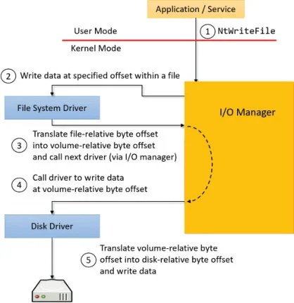
この例で I/O マネージャーが最初に受け取るのは、ファイルの先頭からの相対位置を指定した書き込み要求です。 I/O マネージャーは要求をファイルシステムドライバーに渡します。 ファイルシステムドライバーは、ファイル内の相対位置をディスクの書き込み開始位置（セクター境界）と書き込むバイト数に変換し、I/O マネージャーにディスクドライバーへの転送を依頼します。 ディスクドライバーは、要求を物理的なディスク位置に変換して、データを転送します。
デバイスドライバーもファイルシステムドライバーも、OS に対して共通のインターフェイスを提供します。 そのため、既存のドライバーや I/O システムを変更せずに、階層の途中へ別のドライバーを追加できます。 たとえば、ファイルシステムとディスクドライバーの間に論理ボリュームマネージャーのドライバーを置けば、複数のディスクを一つの大きなディスクとして扱えます（図6-8）。 実際のストレージドライバースタックとボリュームマネージャーのドライバーは、Part 2 のストレージ管理の章を参照してください。

ロード済みドライバーの一覧を調べる
登録済みドライバーを一覧表示するには、スタートメニューから「ファイル名を指定して実行」を開き、Msinfo32.exe を実行します。
「ソフトウェア環境」の「システム ドライバー」を選ぶと、そのシステムに登録されているドライバーが表示されます。
ロード済みのドライバーは、次の図のように「開始」列が「はい」（Yes）になっています。

この一覧は、レジストリの HKLM\System\CurrentControlSet\Services のサブキーから取得されます。
このキーはドライバーとサービスで共用され、どちらもサービスコントロールマネージャー（SCM）が起動できます。
両者を区別するには、各サブキーの Type の値を調べます。
1、2、4、8 はドライバー、16（0x10）と32（0x20）は Windows サービスを示します。
Services キーの詳細は Part 2 の第9章を参照してください。
ロード済みのカーネルモードドライバーは、Process Explorer でも確認できます。 Process Explorer で System プロセスを選び、「View」メニューの「Lower Pane View」から「DLLs」を選びます。

Process Explorer は、ロード済みドライバーの名前、会社や説明を含むバージョン情報、ロードアドレスを表示できます。必要に応じて、対応する列を表示するように設定します。
カーネルデバッガーでクラッシュダンプや稼働中のシステムを調べている場合は、lm kv で同様の情報を表示できます。
kd> lm kv start end module name 80626000 80631000 kdcom (deferred) Image path: kdcom.dll
Image name: kdcom.dll Browse all global symbols functions data Timestamp: Sat Jul 16 04:27:27 2016 (57898D7F) CheckSum: 0000821A ImageSize: 0000B000 Translations: 0000.04b0 0000.04e4 0409.04b0 0409.04e4 81009000 81632000 nt (pdb symbols) e:\symbols\ntkrpamp. pdb\A54DF85668E54895982F873F58C984591\ntkrpamp.pdb Loaded symbol image file: ntkrpamp.exe Image path: ntkrpamp.exe Image name: ntkrpamp.exe Browse all global symbols functions data Timestamp: Wed Sep 07 07:35:39 2016 (57CF991B) CheckSum: 005C6B08 ImageSize: 00629000 Translations: 0000.04b0 0000.04e4 0409.04b0 0409.04e4 81632000 81693000 hal (deferred) Image path: halmacpi.dll Image name: halmacpi.dll Browse all global symbols functions data Timestamp: Sat Jul 16 04:27:33 2016 (57898D85) CheckSum: 00061469 ImageSize: 00061000 Translations: 0000.04b0 0000.04e4 0409.04b0 0409.04e4 8a800000 8a84b000 FLTMGR (deferred) Image path: \SystemRoot\System32\drivers\FLTMGR.SYS Image name: FLTMGR.SYS Browse all global symbols functions data Timestamp: Sat Jul 16 04:27:37 2016 (57898D89) CheckSum: 00053B90 ImageSize: 0004B000 Translations: 0000.04b0 0000.04e4 0409.04b0 0409.04e4 ...
ドライバーの構造
I/O システムは、I/O 要求の処理が進むにつれて、デバイスドライバーの各ルーチンを呼び出します。 図6-9に、ドライバーを構成する主要なルーチンを示します。それぞれの役割はこの後で説明します。

- 初期化ルーチン：I/O マネージャーは、ドライバーを OS にロードするときに、その初期化ルーチンを実行します。WDK がエントリポイントとして設定する
GSDriverEntryは、スタック上のバッファーのオーバーフローを検出するためにコンパイラーが使うセキュリティクッキーを初期化し、ドライバー開発者が実装するDriverEntryを呼びます。DriverEntryはシステムのデータ構造を設定して、ドライバーのほかのルーチンを I/O マネージャーに登録し、必要なドライバー全体の初期化を行います。 - デバイス追加ルーチン：プラグアンドプレイに対応するドライバーが実装します。PnP マネージャーは、そのドライバーが担当するデバイスを検出するたびに、このルーチンを通じて通知します。ドライバーは通常、このルーチンでデバイスを表すデバイスオブジェクトを作ります。デバイスオブジェクトは後述します。
- ディスパッチルーチン：オープン、クローズ、読み取り、書き込み、プラグアンドプレイなどを扱う、デバイスドライバーの主なエントリポイントです。I/O 操作を要求されると、I/O マネージャーは IRP を作り、操作に対応するディスパッチルーチンを呼びます。
- I/O 開始ルーチン：デバイスとのデータ転送を始めるために使えます。要求のキューイングを I/O マネージャーに任せるドライバーだけが定義します。この場合、I/O マネージャーは IRP を一つずつ処理させます。ドライバーは複数の IRP を並行して処理することもできますが、同時に複数の I/O 要求を扱えないデバイスでは、通常、直列化が必要です。
- 割り込みサービスルーチン（ISR）：デバイスが割り込みを発生させると、カーネルの割り込みディスパッチャーがこのルーチンに制御を渡します。ISR はデバイス割り込み要求レベル（DIRQL）で動作するので、前節で説明したように、より低い IRQL の割り込みを待たせないよう、処理を最小限にとどめます。通常は残りの処理を DPC としてキューに入れ、より低い IRQL（DPC／ディスパッチレベル）で実行します。ISR を持つのは割り込み駆動のデバイスのドライバーだけで、たとえばファイルシステムドライバーにはありません。
- 割り込み後処理の DPC ルーチン：ISR の実行後に、デバイス割り込みへの対応の大部分を引き受けます。実行する IRQL 2 は、高い DIRQL と低いパッシブレベル（0）の中間です。典型的な DPC ルーチンは I/O の完了処理を開始し、キューで次に待っているデバイスの I/O 操作を始めます。
図6-9にはありませんが、次のルーチンも多くのドライバーで使われます。
- I/O 完了ルーチン：階層化されたドライバーは、一つ以上の完了ルーチンを登録して、下位ドライバーで IRP の処理が終わったことを通知してもらえます。たとえば、デバイスドライバーがファイルとのデータ転送を終えると、I/O マネージャーがファイルシステムドライバーの完了ルーチンを呼びます。完了ルーチンは操作の成功、失敗、キャンセルをドライバーに知らせ、後処理を行えるようにします。
- I/O キャンセルルーチン：ドライバーは、キャンセル可能な I/O 操作のために、一つ以上のキャンセルルーチンを用意できます。キャンセル可能な要求の IRP を受け取ると、その IRP にキャンセルルーチンを割り当てます。
IRP の処理段階によって、割り当てるキャンセルルーチンが変わることがあります。現在の操作がキャンセルできなければ、ルーチンの割り当てを解除することもあります。
要求の完了前に発行元のスレッドが終了したり、CancelIo や CancelIoEx などで操作がキャンセルされたりすると、I/O マネージャーは、IRP に割り当てられているキャンセルルーチンを実行します。
このルーチンは、そこまでの IRP の処理で取得したリソースを解放し、キャンセルを示すステータスで IRP を完了させます。
- 高速ディスパッチルーチン：ファイルシステムドライバーなど、キャッシュマネージャーを使うドライバーは、通常の I/O 処理を経由せずにカーネルからアクセスできるよう、このルーチンを設けるのが一般的です（キャッシュマネージャーについては Part 2 の解説を参照）。たとえば個々の I/O 要求を生成する代わりに、キャッシュ済みのデータを直接読み書きできます。メモリマネージャーやキャッシュマネージャーがファイルシステムドライバーにコールバックする際にも使います。たとえば、メモリマネージャーがセクションを作るときは、ファイルシステムドライバーを呼び出してファイルを排他的に取得します。
- アンロードルーチン：ドライバーが使っているシステムリソースを解放し、I/O マネージャーがドライバーをメモリから取り除けるようにします。初期化ルーチンの
DriverEntryで取得したリソースは、通常ここで解放します。ドライバーが対応していれば、システムの稼働中にもロードやアンロードができます。ただし、アンロードルーチンを呼ぶのは、デバイスに対するすべてのファイルハンドルが閉じられた後です。 - システムシャットダウン通知ルーチン：シャットダウン時にドライバーの後処理を行えるようにします。
- エラーログ記録ルーチン：ディスクブロックの故障など予期しないエラーが起きると、その発生を記録して I/O マネージャーに知らせます。I/O マネージャーは受け取った情報をエラーログファイルに書き込みます。
ドライバーオブジェクトとデバイスオブジェクト
スレッドがファイルオブジェクトへのハンドルを開くと、I/O マネージャーはファイルオブジェクトの名前から、要求を処理するドライバーを決めます（ファイルオブジェクトは後述の「I/O 処理」を参照）。 同じファイルハンドルが再び使われたときにも、この情報を取得できなければなりません。 そのために次の二つのシステムオブジェクトを使います。
- ドライバーオブジェクト：システム内の一つのドライバーを表す
DRIVER_OBJECT構造体です。I/O マネージャーは、このオブジェクトからドライバーの各ディスパッチルーチンのアドレスを取得します。 - デバイスオブジェクト：システム内の物理または論理デバイスを表す
DEVICE_OBJECT構造体です。バッファーに必要なアラインメントや、受信した IRP をためるデバイスキューの位置など、デバイスの特性を記述します。ハンドルが通信する先なので、すべての I/O 操作の対象になります。
I/O マネージャーは、ドライバーをロードするときにドライバーオブジェクトを作ります。
次に初期化ルーチンの DriverEntry を呼び、ドライバーに、そのエントリポイントをオブジェクトの属性に設定させます。
ロード後、ドライバーは IoCreateDevice または IoCreateDeviceSecure を呼び、物理デバイスや論理デバイス、あるいはドライバーへの論理インターフェイスや接続先を表すデバイスオブジェクトを作れます。
ただし、プラグアンドプレイドライバーの大半は、担当するデバイスが存在することを PnP マネージャーから通知されたときに、デバイス追加ルーチンでオブジェクトを作ります。
一方、プラグアンドプレイ非対応のドライバーは、通常、I/O マネージャーが初期化ルーチンを呼び出したときに作ります。
最後のデバイスオブジェクトが削除され、ドライバーへの参照がなくなると、I/O マネージャーはそのドライバーをアンロードします。
ドライバーオブジェクトと、それに属するデバイスオブジェクトの関係を図6-10に示します。
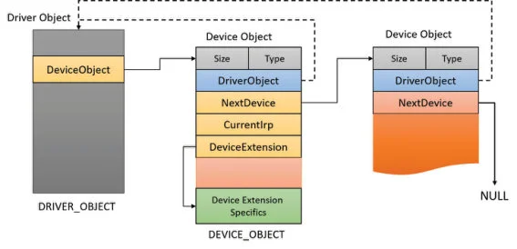
ドライバーオブジェクトの DeviceObject メンバーは、先頭のデバイスオブジェクトを指します。
各 DEVICE_OBJECT の NextDevice メンバーは次のデバイスオブジェクトを指し、末尾では NULL になります。
また、各デバイスオブジェクトの DriverObject メンバーは、そのドライバーオブジェクトを指します。
図の矢印で示す関係は、IoCreateDevice または IoCreateDeviceSecure が設定します。
DeviceExtension ポインターは、ドライバーが管理する各デバイスオブジェクトに付随する、追加のメモリ領域を指します。
注：ドライバーオブジェクトがドライバーの動作を表すのに対し、個々のデバイスオブジェクトは通信の接続先を表します。 たとえばシリアルポートが四つあるシステムでは、ドライバーのバイナリとドライバーオブジェクトは一つですが、各ポートを表すデバイスオブジェクトは四つあります。 一つのポートだけを開いても、ほかのポートには影響しません。 ハードウェアデバイスの場合は、I/O ポート、メモリマップト I/O、割り込み線などのハードウェアリソースもデバイスごとに異なります。 このように、Windows ではドライバー単位ではなく、デバイス単位で操作します。
ドライバーはデバイスオブジェクトを作る際に、必要なら名前を付けられます。
名前を付けると、そのオブジェクトがオブジェクトマネージャーの名前空間に登録されます。
ドライバーが明示的に指定することも、I/O マネージャーに自動生成させることもできます。
慣例としてデバイスオブジェクトは名前空間の \Device ディレクトリに置きますが、Windows API を使うアプリケーションはそこへ直接アクセスできません。
注：\Device 以外のディレクトリにデバイスオブジェクトを置くドライバーもあります。たとえば IDE ドライバーは、IDE のポートやチャネルを表すオブジェクトを \Device\Ide に作ります。ストレージの構成と、ストレージドライバーによるデバイスオブジェクトの使い方については、Part 2 のストレージ管理の章を参照してください。
アプリケーションからデバイスオブジェクトを開けるようにするには、\Device 内のデバイス名へのシンボリックリンクを \GLOBAL?? に作ります。
リンクの作成には IoCreateSymbolicLink を使います。
プラグアンドプレイ非対応のドライバーとファイルシステムドライバーは通常、\Device\HarddiskVolume2 のような既知の名前を使ってリンクを作ります。
ハードウェアが動的に接続、取り外しされる環境では固定の名前の管理が難しいため、PnP ドライバーは IoRegisterDeviceInterface を使い、一つ以上のデバイスインターフェイスを公開します。
その際、公開する機能の種類を表すグローバル一意識別子（GUID）を指定します。
GUID は128ビットの値で、WDK と Windows SDK に含まれる uuidgen や guidgen などで生成できます。
取り得る値の数と生成方法から、生成した GUID が時間や場所を問わず重複する可能性は極めて低くなります。
IoRegisterDeviceInterface は、デバイスインスタンスに対応するシンボリックリンクの名前を生成します。
ただし、I/O マネージャーがリンクを実際に作るには、ドライバーが IoSetDeviceInterfaceState を呼び、デバイスインターフェイスを有効にする必要があります。
通常は PnP マネージャーが、デバイスの起動を指示する IRP を送ったときに有効にします。
この IRP のメジャー関数コードは IRP_MJ_PNP、マイナー関数コードは IRP_MN_START_DEVICE です。IRP は後述の「I/O 要求パケット」で説明します。
GUID で表されるインターフェイスを持つデバイスを開くには、アプリケーションから SetupDiEnumDeviceInterfaces など、ユーザーモードのプラグアンドプレイ用セットアップ関数を呼びます。
この関数で指定した GUID のインターフェイスを列挙し、それぞれについて SetupDiGetDeviceInterfaceDetail を呼び、自動生成されたシンボリックリンクの名前などを取得します。
取得した名前を使って CreateFile または CreateFile2 を呼ぶと、デバイスを開いてハンドルを取得できます。
デバイスオブジェクトの名前を調べる
Sysinternals の WinObj やカーネルデバッガーの !object を使うと、オブジェクトマネージャーの名前空間の \Device にあるデバイス名を確認できます。
次の図は、I/O マネージャーが割り当てたシンボリックリンクが、\Device 内の自動生成名を持つデバイスオブジェクトを指している例です。

カーネルデバッガーの !object に \Device ディレクトリを指定すると、次のように表示されます。
1: kd> !object \device Object: 8200c530 Type: (8542b188) Directory ObjectHeader: 8200c518 (new version) HandleCount: 0 PointerCount: 231 Directory Object: 82007d20 Name: Device Hash Address Type Name ---- ------- ---- ---- 00 d024a448 Device NisDrv 959afc08 Device SrvNet 958beef0 Device WUDFLpcDevice 854c69b8 Device FakeVid1 8befec98 Device RdpBus 88f7c338 Device Beep 89d64500 Device Ndis 8a24e250 SymbolicLink ScsiPort2 89d6c580 Device KsecDD 89c15810 Device 00000025 89c17408 Device 00000019 01 854c6898 Device FakeVid2 88f98a70 Device Netbios 8a48c6a8 Device NameResTrk 89c2fe88 Device 00000026 02 854c6778 Device FakeVid3 8548fee0 Device 00000034 8a214b78 SymbolicLink Ip 89c31038 Device 00000027 03 9c205c40 Device 00000041 854c6658 Device FakeVid4 854dd9d8 Device 00000035 8d143488 Device Video0 8a541030 Device KeyboardClass0 89c323c8 Device 00000028
8554fb50 Device KMDF0 04 958bb040 Device ProcessManagement 97ad9fe0 SymbolicLink MailslotRedirector 854f0090 Device 00000036 854c6538 Device FakeVid5 8bf14e98 Device Video1 8bf2fe20 Device KeyboardClass1 89c332a0 Device 00000029 89c05030 Device VolMgrControl 89c3a1a8 Device VMBus ...
!object にオブジェクトマネージャーのディレクトリオブジェクトを指定すると、カーネルデバッガーは、オブジェクトマネージャーの内部構造に沿って内容を表示します。
ディレクトリはすばやく検索できるよう、オブジェクト名をハッシュ化してハッシュテーブルに格納します。
出力は、テーブルの各バケットに入っているオブジェクトを示しています。
図6-10のとおり、デバイスオブジェクトは自身を管理するドライバーオブジェクトを指します。 I/O マネージャーは、I/O 要求を受け取るとデバイスオブジェクトからドライバーオブジェクトを見つけます。 次に、元の要求の関数コードをインデックスとして使い、ドライバーオブジェクト内の該当するエントリポイントを選びます。 これがディスパッチルーチンです。
一つのドライバーオブジェクトに複数のデバイスオブジェクトが関連付けられることは珍しくありません。 ドライバーをアンロードするとき、I/O マネージャーはデバイスオブジェクトのリストをたどり、どのデバイスが影響を受けるか調べます。
ドライバーオブジェクトとデバイスオブジェクトを表示する
カーネルデバッガーの !drvobj はドライバーオブジェクトを、!devobj はデバイスオブジェクトを表示します。
次の例では、キーボードのクラスドライバーのドライバーオブジェクトを調べ、関連するデバイスオブジェクトを一つ表示します。
1: kd> !drvobj kbdclass Driver object (8a557520) is for: \Driver\kbdclass Driver Extension List: (id , addr) Device Object list: 9f509648 8bf2fe20 8a541030 1: kd> !devobj 9f509648 Device object (9f509648) is for: KeyboardClass2 \Driver\kbdclass DriverObject 8a557520 Current Irp 00000000 RefCount 0 Type 0000000b Flags 00002044 Dacl 82090960 DevExt 9f509700 DevObjExt 9f5097f0 ExtensionFlags (0x00000c00) DOE_SESSION_DEVICE, DOE_DEFAULT_SD_PRESENT
Characteristics (0x00000100) FILE_DEVICE_SECURE_OPEN AttachedTo (Lower) 9f509848 \Driver\terminpt Device queue is not busy.
!devobj の「AttachedTo」行には、表示対象の下にあるデバイスオブジェクトのアドレスと名前も表示されます。
反対に、対象の上にあるデバイスオブジェクトは「AttachedDevice」行に表示できますが、この例にはありません。
!drvobj には、表示する情報を増やすためのオプション引数を指定できます。
次は最も詳しい情報を表示する例です。
1: kd> !drvobj kbdclass 7 Driver object (8a557520) is for: \Driver\kbdclass Driver Extension List: (id , addr) Device Object list: 9f509648 8bf2fe20 8a541030 DriverEntry: 8c30a010 kbdclass!GsDriverEntry DriverStartIo: 00000000 DriverUnload: 00000000 AddDevice: 8c307250 kbdclass!KeyboardAddDevice Dispatch routines: [00] IRP_MJ_CREATE 8c301d80 kbdclass!KeyboardClassCreate [01] IRP_MJ_CREATE_NAMED_PIPE 81142342 nt!IopInvalidDeviceRequest [02] IRP_MJ_CLOSE 8c301c90 kbdclass!KeyboardClassClose [03] IRP_MJ_READ 8c302150 kbdclass!KeyboardClassRead [04] IRP_MJ_WRITE 81142342 nt!IopInvalidDeviceRequest [05] IRP_MJ_QUERY_INFORMATION 81142342 nt!IopInvalidDeviceRequest [06] IRP_MJ_SET_INFORMATION 81142342 nt!IopInvalidDeviceRequest [07] IRP_MJ_QUERY_EA 81142342 nt!IopInvalidDeviceRequest [08] IRP_MJ_SET_EA 81142342 nt!IopInvalidDeviceRequest [09] IRP_MJ_FLUSH_BUFFERS 8c303678 kbdclass!KeyboardClassFlush [0a] IRP_MJ_QUERY_VOLUME_INFORMATION 81142342 nt!IopInvalidDeviceRequest [0b] IRP_MJ_SET_VOLUME_INFORMATION 81142342 nt!IopInvalidDeviceRequest [0c] IRP_MJ_DIRECTORY_CONTROL 81142342 nt!IopInvalidDeviceRequest [0d] IRP_MJ_FILE_SYSTEM_CONTROL 81142342 nt!IopInvalidDeviceRequest [0e] IRP_MJ_DEVICE_CONTROL 8c3076d0 kbdclass!KeyboardClassDevice Control [0f] IRP_MJ_INTERNAL_DEVICE_CONTROL 8c307ff0 kbdclass!KeyboardClassPass Through [10] IRP_MJ_SHUTDOWN 81142342 nt!IopInvalidDeviceRequest [11] IRP_MJ_LOCK_CONTROL 81142342 nt!IopInvalidDeviceRequest [12] IRP_MJ_CLEANUP 8c302260 kbdclass!KeyboardClassCleanup [13] IRP_MJ_CREATE_MAILSLOT 81142342 nt!IopInvalidDeviceRequest [14] IRP_MJ_QUERY_SECURITY 81142342 nt!IopInvalidDeviceRequest [15] IRP_MJ_SET_SECURITY 81142342 nt!IopInvalidDeviceRequest [16] IRP_MJ_POWER 8c301440 kbdclass!KeyboardClassPower [17] IRP_MJ_SYSTEM_CONTROL 8c307f40 kbdclass!KeyboardClassSystem Control
[18] IRP_MJ_DEVICE_CHANGE 81142342 nt!IopInvalidDeviceRequest [19] IRP_MJ_QUERY_QUOTA 81142342 nt!IopInvalidDeviceRequest [1a] IRP_MJ_SET_QUOTA 81142342 nt!IopInvalidDeviceRequest [1b] IRP_MJ_PNP 8c301870 kbdclass!KeyboardPnP
出力にはディスパッチルーチンの配列が表示されています。配列は次節で説明します。
ドライバーがサポートしない操作のエントリは、I/O マネージャーの IopInvalidDeviceRequest ルーチンを指します。
!drvobj に指定するアドレスは DRIVER_OBJECT 構造体のものです。!devobj に指定するのは DEVICE_OBJECT 構造体のアドレスです。
デバッガーを使って、これらの構造体を直接表示することもできます。
1: kd> dt nt!_driver_object 8a557520 +0x000 Type : 0n4 +0x002 Size : 0n168 +0x004 DeviceObject : 0x9f509648 _DEVICE_OBJECT +0x008 Flags : 0x412 +0x00c DriverStart : 0x8c300000 Void +0x010 DriverSize : 0xe000 +0x014 DriverSection : 0x8a556ba8 Void +0x018 DriverExtension : 0x8a5575c8 _DRIVER_EXTENSION +0x01c DriverName : _UNICODE_STRING "\Driver\kbdclass" +0x024 HardwareDatabase : 0x815c2c28 _UNICODE_STRING "\REGISTRY\MACHINE\HARDWARE\ DESCRIPTION\SYSTEM" +0x028 FastIoDispatch : (null) +0x02c DriverInit : 0x8c30a010 long +ffffffff8c30a010 +0x030 DriverStartIo : (null) +0x034 DriverUnload : (null) +0x038 MajorFunction : [28] 0x8c301d80 long +ffffffff8c301d80 1: kd> dt nt!_device_object 9f509648 +0x000 Type : 0n3 +0x002 Size : 0x1a8 +0x004 ReferenceCount : 0n0 +0x008 DriverObject : 0x8a557520 _DRIVER_OBJECT +0x00c NextDevice : 0x8bf2fe20 _DEVICE_OBJECT +0x010 AttachedDevice : (null) +0x014 CurrentIrp : (null) +0x018 Timer : (null) +0x01c Flags : 0x2044 +0x020 Characteristics : 0x100 +0x024 Vpb : (null) +0x028 DeviceExtension : 0x9f509700 Void +0x02c DeviceType : 0xb +0x030 StackSize : 7 '' +0x034 Queue : <unnamed-tag> +0x05c AlignmentRequirement : 0 +0x060 DeviceQueue : _KDEVICE_QUEUE +0x074 Dpc : _KDPC +0x094 ActiveThreadCount : 0 +0x098 SecurityDescriptor : 0x82090930 Void ...
これらの構造体に含まれる主なフィールドは、次節で説明します。
ドライバーの情報をオブジェクトに保持するため、I/O マネージャーは個々のドライバーの実装を知る必要がありません。 ポインターをたどるだけでドライバーを見つけられるため、実装の違いを吸収し、新しいドライバーも容易にロードできます。
デバイスを開く
ファイルオブジェクトは、デバイスへのハンドルに対応するカーネルモードのデータ構造です。 二つ以上のユーザーモードプロセスで共有でき、名前を付けられ、オブジェクト単位でアクセスを制御でき、同期にも使えます。 I/O システムでも、Windows エグゼクティブのほかのコンポーネントと同じように、共有リソースをオブジェクトとして扱います（オブジェクト管理は Part 2 の第8章を参照）。
ファイルオブジェクトは、I/O インターフェイスを通じて読み書きできるリソースをメモリ上に表現したものです。
主な属性を表6-1に示します。フィールドの宣言とサイズは、wdm.h の FILE_OBJECT 構造体の定義を参照してください。
| 属性 | 意味 |
|---|---|
| ファイル名 | ファイルオブジェクトが参照する仮想ファイルの名前です。CreateFile または CreateFile2 に渡された値です。 |
| 現在のバイトオフセット | ファイル内の現在位置です。同期 I/O でのみ有効です。 |
| 共有モード | 現在の呼び出し元がファイルを使っている間に、ほかの呼び出し元が読み取り、書き込み、削除のためにファイルを開けるかを示します。 |
| オープンモードのフラグ | 同期か非同期か、キャッシュを使うか、順次アクセスかランダムアクセスかなどを示します。 |
| デバイスオブジェクトへのポインター | ファイルがあるデバイスの種類を示します。 |
| ボリュームパラメーターブロック（VPB）へのポインター | ファイルシステム上のファイルがあるボリューム、またはパーティションを示します。 |
| セクションオブジェクトポインターへのポインター | マップまたはキャッシュされたファイルを記述する起点の構造体を指します。この構造体には、キャッシュマネージャーがファイルのどの部分をマップし、キャッシュ内のどこに置いたかを示す共有キャッシュマップも含まれます。 |
| プライベートキャッシュマップへのポインター | このハンドルの読み取りパターンやプロセスのページ優先度など、ハンドルごとのキャッシュ情報を保持します。ページ優先度については第5章「メモリ管理」を参照してください。 |
| I/O 要求パケット（IRP）のリスト | スレッドに依存しない I/O を使い、ファイルオブジェクトが完了ポートに関連付けられている場合、そのオブジェクトに関連するすべての I/O 操作のリストです。どちらも後述します。 |
| I/O 完了コンテキスト | 現在有効な I/O 完了ポートがあれば、そのコンテキスト情報です。 |
| ファイルオブジェクト拡張 | ファイルの I/O 優先度（後述）と、共有アクセスのチェックを行うかどうかを記録します。状況に応じた情報を保持する任意の拡張も含まれます。 |
ファイルオブジェクトを使うドライバーから内部の詳細を隠し、構造体を大きくせずに機能を追加できるよう、ファイルオブジェクトには拡張フィールドもあります。 このフィールドを使うと、表6-2に示す最大6種類の属性を追加できます。
| 拡張 | 用途 |
|---|---|
| トランザクションパラメーター | トランザクションの一部として実行するファイル操作の情報が入ったパラメーターブロックを保持します。IoGetTransactionParameterBlock で取得します。 |
| デバイスオブジェクトのヒント | このファイルを関連付けるフィルタードライバーのデバイスオブジェクトを示します。IoCreateFileEx または IoCreateFileSpecifyDeviceObjectHint で指定します。 |
| I/O ステータスブロックの範囲 | ユーザーモードのバッファーをカーネルモードから使えるようにメモリに固定し、非同期 I/O を効率化します。SetFileIoOverlappedRange で設定します。 |
| 汎用 | フィルタードライバー固有の情報と、呼び出し元が追加した拡張作成パラメーター（ECP）を保持します。IoCreateFileEx で設定します。 |
| スケジュールされたファイル I/O | ファイルの帯域幅予約情報を保持します。ストレージシステムはこの情報を使い、マルチメディアアプリケーションのスループットを最適化して保証します。SetFileBandwidthReservation で設定します。詳しくは後述の「帯域幅予約」を参照してください。 |
| シンボリックリンク | マウントポイントやディレクトリジャンクションを通過するか、フィルターが明示的にパスを再解析した場合に、ファイルオブジェクトの作成時に追加されます。呼び出し元が指定したパスと途中のジャンクションの情報を保持するため、相対シンボリックリンクに行き当たったときに、ジャンクションを逆にたどれます。NTFS のシンボリックリンク、マウントポイント、ディレクトリジャンクションは Part 2 のファイルシステムの章を参照してください。 |
呼び出し元がファイルや単純なデバイスを開くと、I/O マネージャーはファイルオブジェクトへのハンドルを返します。
その前に、対象デバイスを担当するドライバーの作成ディスパッチルーチン（IRP_MJ_CREATE）を呼び、デバイスを開けるか確認します。要求を受け付ける場合は、このときドライバーに必要な初期化も行わせます。
注：ファイルオブジェクトが表すのは、ファイルそのものではなく、ファイルを開いた一つのインスタンスです。UNIX 系の vnode とは異なり、Windows はファイルそのものの表現を定めず、各ファイルシステムドライバーに任せます。
エグゼクティブオブジェクトと同じように、ファイルはアクセス制御リスト（ACL）を含むセキュリティ記述子で保護されます。 I/O マネージャーはセキュリティサブシステムに問い合わせ、スレッドが要求したアクセス方法をファイルの ACL がそのプロセスに許しているか確認します。 許可されていれば、オブジェクトマネージャーがアクセスを認め、認めた権限を返すファイルハンドルに関連付けます。 同じプロセスのスレッドが元の要求に含まれない操作を必要とする場合は、必要な権限を指定してファイルをもう一度開くか、その権限でハンドルを複製して別のハンドルを取得します。このときアクセス権も改めて確認します（オブジェクトの保護は第7章を参照）。
デバイスのハンドルを調べる
デバイスを開いているプロセスのハンドルテーブルには、そのオープンインスタンスに対応するファイルオブジェクトがあります。 Process Explorer で対象プロセスを選び、「View」メニューの「Lower Pane View」から「Handles」を選ぶと、このハンドルを確認できます。 「Type」列で並べ替え、「File」と表示されるファイルオブジェクトのハンドルまでスクロールします。

この例では、Desktop Window Manager（dwm.exe）が、カーネルのセキュリティデバイスドライバー（Ksecdd.sys）が作ったデバイスを開いています。
カーネルデバッガーでファイルオブジェクトを調べるには、まずそのアドレスを特定します。
次のコマンドは、図で選択したハンドル（値は 0xD4）の情報を表示します。Dwm.exe のプロセス ID は10進数の452です。
lkd> !handle 348 f 0n452 PROCESS ffffc404b62fb780 SessionId: 1 Cid: 01c4 Peb: b4c3db0000 ParentCid: 0364 DirBase: 7e607000 ObjectTable: ffffe688fd1c38c0 HandleCount: <Data Not Accessible> Image: dwm.exe Handle Error reading handle count. 0348: Object: ffffc404b6406ef0 GrantedAccess: 00100003 (Audit) Entry: ffffe688fd396d20 Object: ffffc404b6406ef0 Type: (ffffc404b189bf20) File ObjectHeader: ffffc404b6406ec0 (new version) HandleCount: 1 PointerCount: 32767
ファイルオブジェクトなので、!fileobj で詳細を確認できます。オブジェクトのアドレスは Process Explorer の表示と同じです。
lkd> !fileobj ffffc404b6406ef0 Device Object: 0xffffc404b2fa7230 \Driver\KSecDD Vpb is NULL Event signalled Flags: 0x40002 Synchronous IO Handle Created CurrentByteOffset: 0
ファイルオブジェクトは共有リソースをメモリ上に表現したもので、そのリソース自体ではない点で、ほかのエグゼクティブオブジェクトと異なります。 ファイルオブジェクトが持つのはハンドル固有の情報で、共有するデータやテキストはファイルそのものにあります。 スレッドがファイルを開くたびに、新しいファイルオブジェクトと、そのハンドル固有の属性が作られます。 たとえば同期 I/O 用に開いたファイルでは、現在のバイトオフセットが、そのハンドルを使った次の読み取りまたは書き込みの位置を示します。 基になるファイルは共有していても、個別に開いたハンドルは別々のオフセットを持ちます。
通常、ファイルオブジェクトは一つのプロセスから参照されます。
例外は、DuplicateHandle で別のプロセスにファイルハンドルを複製した場合や、子プロセスが親からファイルハンドルを継承した場合です。
この場合、二つのプロセスは別々のハンドルで同じファイルオブジェクトを参照します。
ファイルハンドルはプロセスごとに管理されますが、基になる物理リソースは共有されます。
そのため、ファイル、ディレクトリ、デバイスなどへのアクセスは、スレッド間で同期する必要があります。
たとえば、書き込み中にほかのスレッドから書き込まれたくなければ、ファイルを開くときに書き込みの共有を許可しません。
一部の範囲だけを排他的に書き込みたい場合は、LockFile でその範囲をロックする方法もあります。
ファイルを開くとき、内部のファイル名には、ファイルがあるデバイスオブジェクトの名前が含まれます。
たとえば \Device\HarddiskVolume1\Myfile.dat は、C: ボリュームにある Myfile.dat を指すことがあります。
先頭の \Device\HarddiskVolume1 が、そのボリュームを表す Windows 内部のデバイスオブジェクト名です。
Myfile.dat を開くと、I/O マネージャーはファイルオブジェクトを作り、HarddiskVolume1 のデバイスオブジェクトへのポインターを格納してから、呼び出し元にファイルハンドルを返します。
以後は、そのハンドルからデバイスオブジェクトを直接見つけられます。
Windows アプリケーションは、内部のデバイス名をそのまま使えません。
代わりに、オブジェクトマネージャーの名前空間の \GLOBAL?? にある、内部名へのシンボリックリンクを使います。
前述のとおり、アプリケーションからデバイスにアクセスできるよう、リンクはデバイスドライバーが作ります。
プログラムからリンクを調べるには QueryDosDevice、変更するには DefineDosDevice を使います。
I/O 処理
I/O 要求は、複数の処理段階を経てデバイスに届きます。 段階は、単一のドライバーで処理するか、複数層のドライバーを通るかで異なります。 呼び出し元が同期 I/O と非同期 I/O のどちらを指定したかによっても変わるため、まずこの二つの違いから説明します。
I/O の種類
アプリケーションは I/O 要求を発行する際、処理方法を選べます。 ドライバーも、通常の処理を迂回し、IRP の割り当てを避けられるインターフェイスを実装できます。
同期 I/O と非同期 I/O
アプリケーションが発行する I/O 操作の大半は、既定の同期 I/Oです。
デバイスがデータ転送を処理する間、アプリケーションのスレッドは待機します。
完了時にステータスが返ると、プログラムは処理を続け、転送されたデータをすぐに参照できます。
Windows の ReadFile と WriteFile は、最も単純な呼び方では同期的に動作し、I/O 操作を完了してから制御を返します。
非同期 I/Oでは、複数の I/O 要求を発行し、デバイスが処理する間もアプリケーションは動き続けられます。
要求の処理中に、スレッドが別の作業を進められるため、スループットが向上する場合があります。
非同期 I/O を使うには、CreateFile または CreateFile2 を呼ぶときに、FILE_FLAG_OVERLAPPED を指定します。
要求を発行したスレッドは、デバイスドライバーがデータ転送を終えるまで、そのデータにアクセスしてはいけません。 イベントオブジェクト、I/O 完了ポート、ファイルオブジェクト自体など、I/O 完了を通知する同期オブジェクトのハンドルを監視し、完了と同期します。
アプリケーションが同期と非同期のどちらを指定しても、アプリケーションに代わってドライバーに発行する I/O は非同期で処理されます。
つまり、I/O 要求を受け取ったドライバーは、できるだけ早く I/O システムに制御を返します。
I/O システムが呼び出し元にすぐ戻るかどうかは、ハンドルを同期用と非同期用のどちらで開いたかで決まります。
図6-3の読み取り処理では、ファイルオブジェクトのオーバーラップフラグに応じて待機する場合、カーネルモードの NtReadFile が待機します。
保留中の非同期 I/O が完了したかは HasOverlappedIoCompleted マクロで調べられます。
詳細は GetOverlappedResult または GetOverlappedResultEx で取得します。
後述の I/O 完了ポートを使う場合は、GetQueuedCompletionStatus または GetQueuedCompletionStatusEx を使えます。
高速 I/O
高速 I/O（Fast I/O）は、IRP を生成せず、ドライバースタックを直接呼び出して I/O 要求を完了する仕組みです。
IRP を使うと処理が遅くなる一部の経路を効率化するために用います。詳細は Part 2 のファイルシステムとキャッシュマネージャーの章を参照してください。
ドライバーは、ドライバーオブジェクトが PFAST_IO_DISPATCH 型のポインターで参照する構造体に、高速 I/O のエントリポイントを登録します。
ドライバーが登録した高速 I/O ルーチンを調べる
カーネルデバッガーの !drvobj で、ドライバーオブジェクトに登録された高速 I/O ルーチンを一覧表示できます。
通常、このルーチンを使うのはファイルシステムドライバーだけですが、ネットワークプロトコルドライバーやバスフィルタードライバーなどの例外もあります。
次の出力は NTFS のファイルシステムドライバーオブジェクトにある高速 I/O テーブルです。
lkd> !drvobj \filesystem\ntfs 2
Driver object (ffffc404b2fbf810) is for:
\FileSystem\NTFS
DriverEntry: fffff80e5663a030
NTFS!GsDriverEntry
DriverStartIo: 00000000
DriverUnload: 00000000
AddDevice: 00000000
Dispatch routines:
...
Fast I/O routines:
FastIoCheckIfPossible fffff80e565d6750
NTFS!NtfsFastIoCheckIfPossible
FastIoRead fffff80e56526430
NTFS!NtfsCopyReadA
FastIoWrite fffff80e56523310
NTFS!NtfsCopyWriteA
FastIoQueryBasicInfo fffff80e56523140
NTFS!NtfsFastQueryBasicInfo
FastIoQueryStandardInfo fffff80e56534d20
NTFS!NtfsFastQueryStdInfo
FastIoLock fffff80e5651e610
NTFS!NtfsFastLock
FastIoUnlockSingle fffff80e5651e3c0
NTFS!NtfsFastUnlockSingle
FastIoUnlockAll fffff80e565d59e0
NTFS!NtfsFastUnlockAll
FastIoUnlockAllByKey fffff80e565d5c50
NTFS!NtfsFastUnlockAllByKey
ReleaseFileForNtCreateSection fffff80e5644fd90
NTFS!NtfsReleaseForCreate
Section
FastIoQueryNetworkOpenInfo fffff80e56537750
NTFS!NtfsFastQueryNetwork
OpenInfo
AcquireForModWrite fffff80e5643e0c0
NTFS!NtfsAcquireFileForModWrite
MdlRead fffff80e5651e950
NTFS!NtfsMdlReadA
MdlReadComplete fffff802dc6cd844
nt!FsRtlMdlReadCompleteDev
PrepareMdlWrite fffff80e56541a10
NTFS!NtfsPrepareMdlWriteA
MdlWriteComplete fffff802dcb76e48
nt!FsRtlMdlWriteCompleteDev
FastIoQueryOpen fffff80e5653a520
NTFS!NtfsNetworkOpenCreate
ReleaseForModWrite fffff80e5643e2c0
NTFS!NtfsReleaseFileForModWrite
AcquireForCcFlush fffff80e5644ca60
NTFS!NtfsAcquireFileForCcFlush
ReleaseForCcFlush fffff80e56450cf0
NTFS!NtfsReleaseFileForCcFlush出力を見ると、NTFS は NtfsCopyReadA を、高速 I/O テーブルの FastIoRead エントリに登録しています。
I/O マネージャーは、キャッシュされたファイルへの読み取り要求でこの関数を呼びます。
呼び出しが成功しなければ、通常どおり IRP を使って処理します。
マップトファイル I/O とファイルキャッシュ
マップトファイル I/Oは、I/O システムとメモリマネージャーが共同で実現する機能です（マップトファイルの実装については第5章を参照）。 ディスク上のファイルを、プロセスの仮想メモリの一部として参照できます。 プログラムは自分でバッファーを用意したりディスク I/O を発行したりせず、ファイルを大きな配列のように扱えます。 プログラムがメモリを参照すると、メモリマネージャーはページングの仕組みを使って、ディスク上のファイルから対応するページを読み込みます。 アプリケーションがマップされた仮想アドレス範囲を書き換えると、メモリマネージャーが通常のページング処理で変更をファイルに書き戻します。
ユーザーモードでは、CreateFileMapping、MapViewOfFile とその関連関数でこの機能を使えます。
OS 内部では、ファイルのキャッシュやイメージの起動（実行プログラムのロードと実行）などに利用されます。
マップトファイル I/O の主な利用元の一つはキャッシュマネージャーです。
ファイルシステムはキャッシュマネージャーを使ってファイルデータを仮想メモリにマップし、I/O がボトルネックになるプログラムの応答を改善します。
呼び出し元がファイルを使うと、メモリマネージャーは参照されたページをメモリに読み込みます。
ファイルのキャッシュ用に固定容量を取る方式とは異なり、Windows のキャッシュは利用できるメモリ量に応じて拡大、縮小します。 キャッシュマネージャーは、第5章で説明した通常のワーキングセット管理をシステムのワーキングセットに適用し、キャッシュサイズの調整をメモリマネージャーに任せます。 メモリマネージャーのページングを利用することで、同じ処理をキャッシュマネージャーに重ねて実装せずに済みます（詳細は Part 2 のキャッシュマネージャーの章を参照）。
スキャッター／ギャザー I/O
Windows の スキャッター／ギャザー I/Oは、ReadFileScatter と WriteFileGather で利用できます。
仮想メモリ上の複数のバッファーと、ディスク上のファイルの連続領域との間で、バッファーごとに要求を発行せず、一度の読み取りまたは書き込みでデータを転送します。
これを使うには、キャッシュを使わない I/O 用にファイルを開き、ユーザーバッファーをページ境界にそろえ、非同期（オーバーラップ）I/O を使う必要があります。
大容量記憶装置が対象の場合は、I/O の開始位置をデバイスのセクター境界にそろえ、長さをセクターサイズの倍数にします。
I/O 要求パケット
I/O システムは、要求の処理に必要な情報を I/O 要求パケット（IRP）に格納します。 スレッドが I/O API を呼ぶと、I/O マネージャーは、システム内を進むその操作を表す IRP を作ります。 可能な場合は、プロセッサごとに用意した、非ページメモリ上の三つの IRP ルックアサイドリストのいずれかから IRP を割り当てます。
- 小型 IRP のルックアサイドリスト：スタックロケーションを一つ持つ IRP を保持します。スタックロケーションは後述します。
- 中型 IRP のルックアサイドリスト：スタックロケーションを四つ持つ IRP を保持します。必要なスタックロケーションが二つまたは三つの IRP にも使えます。
- 大型 IRP のルックアサイドリスト：スタックロケーションを五つ以上持つ IRP を保持します。既定では14個のスタックロケーションを持つ IRP を格納します。システムは1分ごとに、直近に必要だった個数に応じて割り当てるスタックロケーションの数を調整し、最大20個まで増やせます。
プロセッサごとのリストを補うグローバルなルックアサイドリストもあるので、プロセッサ間で IRP を効率よく受け渡せます。 大型のルックアサイドリストにある IRP より多くのスタックロケーションが必要な場合は、非ページプールから割り当てます。
I/O マネージャーが IRP の割り当てに使う関数は IoAllocateIrp です。
ドライバー開発者もこの関数を使えます。ドライバーが独自に IRP を作成、初期化し、I/O 要求を直接発行する場合があるためです。
IRP を割り当てて初期化した後、I/O マネージャーは、呼び出し元のファイルオブジェクトへのポインターを IRP に格納します。
注：レジストリの HKLM\System\CurrentControlSet\Session Manager\I/O System に DWORD 値 LargeIrpStackLocations があれば、大型 IRP のルックアサイドリストに格納する IRP のスタックロケーション数は、その値で決まります。同じキーの MediumIrpStackLocations で、中型 IRP のスタックロケーション数も変更できます。
図6-11に、IRP 構造体の主なメンバーを示します。
IRP には、次節で説明する IO_STACK_LOCATION が必ず一つ以上付随します。

IRP の主なメンバーは次のとおりです。
IoStatus：IRP のステータスを保持します。ステータスコードのStatusと、操作によって意味が変わるInformationからなります。 読み取りや書き込みの場合、ドライバーは実際に読み書きしたバイト数をInformationに設定します。ReadFileとWriteFileは同じ値を出力引数に返します。MdlAddress：物理メモリ上のバッファーを記述するメモリ記述子リスト（MDL）へのポインターです。 MDL の主な用途は次節で説明します。MDL が要求されていなければNULLです。- I/O スタックロケーションの数と現在位置：IRP に続く I/O スタックロケーションの総数と、この層のドライバーが参照する現在のロケーションを示します。
- ユーザーバッファー：I/O の発行元が指定したバッファーへのポインターです。たとえば
ReadFileやWriteFileに渡したバッファーです。 - ユーザーイベント：オーバーラップ I/O（非同期 I/O）でイベントを指定した場合、そのカーネルイベントオブジェクトを指します。イベントは I/O の完了を通知する手段の一つです。
- キャンセルルーチン：IRP がキャンセルされたときに I/O マネージャーが呼び出す関数です。
AssociatedIrp：三つのメンバーのいずれかを使う共用体です。SystemBufferは、I/O マネージャーがユーザーバッファーをバッファー付き I/O でドライバーに渡す場合に使います。ユーザーモードのバッファーを渡すほかの方法とともに後述します。MasterIrpを使うと、処理を複数の IRP に分けられます。親 IRP が完了するのは、すべての子 IRP が完了したときです。
I/O スタックロケーション
IRP の直後には、I/O の宛先となるデバイスノードの層の数だけ、I/O スタックロケーションが並びます。 操作に関する情報は、IRP 本体と、処理中の層に割り当てられた現在のスタックロケーションに分かれています。図6-12に、スタックロケーションの主なフィールドを示します。
IRP の作成時には、必要なスタックロケーションの数を IoAllocateIrp に渡します。
I/O マネージャーが初期化するのは、IRP 本体と、デバイスノード最上位のデバイスに渡す最初のスタックロケーションだけです。
次のデバイスへ IRP を渡す場合は、各層のドライバーが次のスタックロケーションを初期化します。
- メジャー関数：読み取り、書き込み、作成、プラグアンドプレイなど、要求の種類を示すコードです。ディスパッチルーチンのコードとも呼ばれます。
wdm.hにあるIRP_MJ_で始まる28個の定数（0～27）のいずれかです。I/O マネージャーはこの値をインデックスとして、ドライバーオブジェクトの関数ポインター配列MajorFunctionから呼び出すルーチンを選びます。
多くのドライバーは、一部のメジャー関数コードにだけディスパッチルーチンを設定します。
代表的な操作は、作成（オープン）、読み取り、書き込み、デバイス I/O 制御、電源、プラグアンドプレイ、システム制御（WMI 用）、クリーンアップ、クローズです。
ファイルシステムドライバーは、大半またはすべてのエントリポイントを設定することがあります。
一方、単純な USB デバイスのドライバーなら、通常はオープン、クローズ、読み取り、書き込み、I/O 制御コードの送信に必要なものだけを設定します。
設定されなかったエントリには、I/O マネージャーが IopInvalidDeviceRequest を設定します。このルーチンは、そのデバイスに対して指定されたメジャー関数が無効であることを示すエラーステータスで IRP を完了します。
- マイナー関数：一部の操作で、メジャー関数コードを補足します。たとえば通常の読み取り（
IRP_MJ_READ）や書き込み（IRP_MJ_WRITE）とは異なり、プラグアンドプレイと電源の IRP では、常にマイナー関数コードで具体的な操作を指定します。プラグアンドプレイのメジャーコードIRP_MJ_PNPだけでは操作が決まらず、IRP_MN_START_DEVICEやIRP_MN_REMOVE_DEVICEなどが指示を特定します。 Parameters：メジャー関数コード、またはメジャーとマイナーの組み合わせごとに定義された構造体の共用体です。たとえば読み取り（IRP_MJ_READ）では、Parameters.Readにバッファーサイズなどの情報が入ります。- ファイルオブジェクトとデバイスオブジェクト：要求に対応する
FILE_OBJECTとDEVICE_OBJECTを指します。 - 完了ルーチン：必要に応じて
IoSetCompletionRoutineまたはIoSetCompletionRoutineExで登録する関数です。下位ドライバーが IRP を完了すると呼ばれ、ドライバーは完了ステータスを調べて後処理できます。STATUS_MORE_PROCESSING_REQUIREDを返して完了処理を中断し、必要なら引数を変更して、同じデバイスノードや別のデバイスノードに IRP を再送することもできます。 - コンテキスト：完了ルーチンの登録時に任意に指定できる値で、変更されずに完了ルーチンへ渡されます。

IO_STACK_LOCATION 構造体の主なメンバーIRP 本体と I/O スタックロケーションに情報を分けることで、元の要求の引数を保持したまま、デバイススタックの下位に渡す引数を変更できます。 たとえば USB デバイスへの読み取り IRP は、機能ドライバーによってデバイス I/O 制御の IRP に変換されることがあります。 その入力バッファーは、下位の USB バスドライバーが解釈できる USB 要求ブロック（URB）を指します。
また、最下層を除くどの層でも完了ルーチンを登録できます。 各ルーチンの格納先は、その層の一つ下の I/O スタックロケーションです。
ドライバーのディスパッチルーチンを調べる
カーネルデバッガーの !drvobj にビット1（値2）を指定すると、ドライバーがディスパッチルーチンとして定義した関数を一覧表示できます。
次の出力は、高速 I/O を調べたときと同じ NTFS ドライバーについて、対応するメジャー関数コードを表示したものです。
lkd> !drvobj \filesystem\ntfs 2
Driver object (ffffc404b2fbf810) is for:
\FileSystem\NTFS
DriverEntry: fffff80e5663a030
NTFS!GsDriverEntry
DriverStartIo: 00000000
DriverUnload: 00000000
AddDevice: 00000000
Dispatch routines:
[00] IRP_MJ_CREATE fffff80e565278e0
NTFS!NtfsFsdCreate
[01] IRP_MJ_CREATE_NAMED_PIPE fffff802dc762c80
nt!IopInvalidDeviceRequest
[02] IRP_MJ_CLOSE fffff80e565258c0
NTFS!NtfsFsdClose
[03] IRP_MJ_READ fffff80e56436060
NTFS!NtfsFsdRead
[04] IRP_MJ_WRITE fffff80e564461d0
NTFS!NtfsFsdWrite
[05] IRP_MJ_QUERY_INFORMATION fffff80e565275f0
NTFS!NtfsFsdDispatchWait
[06] IRP_MJ_SET_INFORMATION fffff80e564edb80
NTFS!NtfsFsdSetInformation
[07] IRP_MJ_QUERY_EA fffff80e565275f0
NTFS!NtfsFsdDispatchWait
[08] IRP_MJ_SET_EA fffff80e565275f0
NTFS!NtfsFsdDispatchWait
[09] IRP_MJ_FLUSH_BUFFERS fffff80e5653c9a0
NTFS!NtfsFsdFlushBuffers
[0a] IRP_MJ_QUERY_VOLUME_INFORMATION fffff80e56538d10
NTFS!NtfsFsdDispatch
[0b] IRP_MJ_SET_VOLUME_INFORMATION fffff80e56538d10
NTFS!NtfsFsdDispatch
[0c] IRP_MJ_DIRECTORY_CONTROL fffff80e564d7080
NTFS!NtfsFsdDirectoryControl
[0d] IRP_MJ_FILE_SYSTEM_CONTROL fffff80e56524b20
NTFS!NtfsFsdFileSystemControl
[0e] IRP_MJ_DEVICE_CONTROL fffff80e564f9de0
NTFS!NtfsFsdDeviceControl
[0f] IRP_MJ_INTERNAL_DEVICE_CONTROL fffff802dc762c80
nt!IopInvalidDeviceRequest
[10] IRP_MJ_SHUTDOWN fffff80e565efb50
NTFS!NtfsFsdShutdown
[11] IRP_MJ_LOCK_CONTROL fffff80e5646c870
NTFS!NtfsFsdLockControl
[12] IRP_MJ_CLEANUP fffff80e56525580
NTFS!NtfsFsdCleanup
[13] IRP_MJ_CREATE_MAILSLOT fffff802dc762c80
nt!IopInvalidDeviceRequest
[14] IRP_MJ_QUERY_SECURITY fffff80e56538d10
NTFS!NtfsFsdDispatch
[15] IRP_MJ_SET_SECURITY fffff80e56538d10 NTFS!NtfsFsdDispatch
[16] IRP_MJ_POWER fffff802dc762c80 nt!IopInvalidDeviceRequest
[17] IRP_MJ_SYSTEM_CONTROL fffff802dc762c80 nt!IopInvalidDeviceRequest
[18] IRP_MJ_DEVICE_CHANGE fffff802dc762c80 nt!IopInvalidDeviceRequest[19] IRP_MJ_QUERY_QUOTA fffff80e565275f0
NTFS!NtfsFsdDispatchWait
[1a] IRP_MJ_SET_QUOTA fffff80e565275f0
NTFS!NtfsFsdDispatchWait
[1b] IRP_MJ_PNP fffff80e56566230
NTFS!NtfsFsdPnp
Fast I/O routines:
...
処理中の IRP は通常、I/O を要求したスレッドに関連付けられたリストに入ります。 スレッドに依存しない I/O を使う場合は、後述のとおり、代わりにファイルオブジェクトが IRP を保持します。 スレッドが要求を残したまま終了しても、I/O システムはこのリストから未完了の IRP を見つけ、キャンセルできます。
ページング I/O の IRP も、ページフォールトを起こしたスレッドに関連付けられます。ただし、これらはキャンセルできません。 現在のスレッドが I/O の発行元でもある場合、Windows は非同期プロシージャ呼び出し（APC）を使わず、その場で I/O を完了する最適化を適用できます。 この場合、ページフォールトの処理は APC の配信を待たずに進みます。
スレッドの未完了の IRP を調べる
!thread は、スレッドに関連付けられた IRP を表示します。指定すれば !process でも表示できます。
ローカルまたはライブのカーネルデバッグで、エクスプローラーのプロセスのスレッドを一覧表示します。
lkd> !process 0 7 explorer.exe PROCESS ffffc404b673c780 SessionId: 1 Cid: 10b0 Peb: 00cbb000 ParentCid: 1038 DirBase: 8895f000 ObjectTable: ffffe689011b71c0 HandleCount: <Data Not Accessible> Image: explorer.exe VadRoot ffffc404b672b980 Vads 569 Clone 0 Private 7260. Modified 366527. Locked 784. DeviceMap ffffe688fd7a5d30 Token ffffe68900024920 ElapsedTime 18:48:28.375 UserTime 00:00:17.500 KernelTime 00:00:13.484 ... MemoryPriority BACKGROUND BasePriority 8 CommitCharge 10789 Job ffffc404b6075060 THREAD ffffc404b673a080 Cid 10b0.10b4 Teb: 0000000000cbc000 Win32Thread: ffffc404b66e7090 WAIT: (WrUserRequest) UserMode Non-Alertable ffffc404b6760740 SynchronizationEvent Not impersonating ... THREAD ffffc404b613c7c0 Cid 153c.15a8 Teb: 00000000006a3000 Win32Thread: ffffc404b6a83910 WAIT: (UserRequest) UserMode Non-Alertable
ffffc404b58d0d60 SynchronizationEvent ffffc404b566f310 SynchronizationEvent IRP List: ffffc404b69ad920: (0006,02c8) Flags: 00060800 Mdl: 00000000 ...
多数のスレッドが表示され、その大半で「IRP List」欄に IRP が報告されます。
未完了の I/O 要求が17個を超える場合、デバッガーが表示するのは先頭の17個だけです。
IRP を一つ選び、!irp で調べます。
lkd> !irp ffffc404b69ad920 Irp is active with 2 stacks 1 is current (= 0xffffc404b69ad9f0) No Mdl: No System Buffer: Thread ffffc404b613c7c0: Irp stack trace. cmd flg cl Device File Completion-Context >[IRP_MJ_FILE_SYSTEM_CONTROL(d), N/A(0)] 5 e1 ffffc404b253cc90 ffffc404b5685620 fffff80e55752ed0-ffffc404b63c0e00 Success Error Cancel pending \FileSystem\Npfs FLTMGR!FltpPassThroughCompletion Args: 00000000 00000000 00110008 00000000 [IRP_MJ_FILE_SYSTEM_CONTROL(d), N/A(0)] 5 0 ffffc404b3cdca00 ffffc404b5685620 00000000-00000000 \FileSystem\FltMgr Args: 00000000 00000000 00110008 00000000
この IRP にはスタックロケーションが二つあり、宛先は Named Pipe File System（NPFS）ドライバーが所有するデバイスです。 NPFS については Part 2 のネットワークの章を参照してください。
IRP がデバイススタックを通る流れ
通常、I/O マネージャーが IRP を作り、宛先のデバイスノードの最上位にあるデバイスへ送ります。 図6-13はハードウェア用のデバイスドライバーでの典型的な流れです。

IRP を作るのは I/O マネージャーだけではありません。
PnP マネージャーはメジャー関数コードが IRP_MJ_PNP の IRP を、電源マネージャーは IRP_MJ_POWER の IRP を作ります。
図6-13のデバイスノードは、上位フィルター二つ、FDO、下位フィルター二つ、PDO の六つのデバイスオブジェクトを重ねた例です。 このデバイスノードに送る IRP には、層ごとに一つずつ、合計六つの I/O スタックロケーションが作られます。 スタックの途中にある名前付きデバイスを指定してハンドルを開いても、IRP は常に最上位のデバイスに届きます。
IRP を受け取ったドライバーは、次のいずれかの処理を行います。
- その場で完了する：ドライバーは
IoGetCurrentIrpStackLocationで参照すべきスタックロケーションを取得し、IoCompleteRequestで IRP を完了します。たとえば、バッファーが小さすぎる、I/O 制御コードが無効といった場合や、デバイスの状態の取得、レジストリ値の読み取りなど、即座に処理できる場合です。 - 次の層へ転送する：必要なら処理を加えてから下位ドライバーへ渡します。たとえば上位フィルターは操作を記録してから IRP を送り、通常どおり処理させられます。転送前には、次のドライバーが見るスタックロケーションを準備します。引数を変えない場合は
IoSkipCurrentIrpStackLocationを使えます。変更する場合はIoCopyCurrentIrpStackLocationToNextでコピーし、IoGetNextIrpStackLocationで取得したポインターを使って修正します。準備が済んだらIoCallDriverで転送します。 - 転送時に完了ルーチンも登録する：下位へ渡す前に、
IoSetCompletionRoutineまたはIoSetCompletionRoutineExで登録できます。最下層のドライバーは自身で IRP を完了するので、コールバックは不要です。下位ドライバーがIoCompleteRequestを呼ぶと、IRP はスタックを上に戻りながら、登録とは逆の順序で完了ルーチンを呼び出します。IRP の発行元（I/O マネージャー、PnP マネージャー、電源マネージャー）もこの仕組みで後処理し、最後に IRP を解放します。
注：デバイススタックの層の数はあらかじめ分かるので、I/O マネージャーはスタック上のドライバーごとにスタックロケーションを一つ割り当てます。
ただし、フィルターマネージャーの仲介によって、あるフィルターから別のスタックにあるフィルターへ IRP を転送する場合もあります。たとえば、ローカルのファイルシステムからネットワークファイルシステムへ転送する場合です。
このときは、I/O マネージャーの IoAdjustStackSizeForRedirection で、転送先のスタックに必要なスタックロケーションを追加できます。
デバイススタックを調べる
カーネルデバッガーの !devstack は、指定したデバイスオブジェクトに関連するデバイススタックを表示します。
次は、キーボードのクラスドライバーが所有する \device\keyboardclass0 の例です。
lkd> !devstack keyboardclass0 !DevObj !DrvObj !DevExt ObjectName > ffff9c80c0424440 \Driver\kbdclass ffff9c80c0424590 KeyboardClass0 ffff9c80c04247c0 \Driver\kbdhid ffff9c80c0424910 ffff9c80c0414060 \Driver\mshidkmdf ffff9c80c04141b0 0000003f !DevNode ffff9c80c0414d30 : DeviceInst is "HID\MSHW0029&Col01\5&1599b1c7&0&0000" ServiceName is "kbdhid"
KeyboardClass0 の行には、最初の列に > が付きます。
その行より上はキーボードのクラスドライバーより上位のドライバー、下は下位のドライバーです。
未完了の IRP を調べる
この実験では、未完了の IRP を一つ見つけ、その種類、宛先デバイス、そのデバイスを管理するドライバー、発行元のスレッドと、そのスレッドが属するプロセスを特定します。 32 ビットシステムを別のマシンからカーネルデバッグする方法が適しています。 ローカルカーネルデバッグでも実行できますが、コマンドを発行する間に IRP が完了する場合があるため、結果は変わり得ます。
通常、システムには常にいくつかの未完了 IRP があります。
たとえばネットワークのエンドポイントからのブロッキング読み取りでは、データが使えるようになるまで、ドライバーは要求を完了しません。
カーネルデバッガーの !irpfind で、こうした未完了の IRP を探します。
時間がかかる場合は、いくつか表示されたところで中断できます。
kd> !irpfind Scanning large pool allocation table for tag 0x3f707249 (Irp?) (a5000000 : a5200000) Irp [ Thread ] irpStack: (Mj,Mn) DevObj [Driver] MDL Process 9515ad68 [aa0c04c0] irpStack: ( e, 5) 8bcb2ca0 [ \Driver\AFD] 0xaa1a3540 8bd5c548 [91deeb80] irpStack: ( e,20) 8bcb2ca0 [ \Driver\AFD] 0x91da5c40 Searching nonpaged pool (80000000 : ffc00000) for tag 0x3f707249 (Irp?) 86264a20 [86262040] irpStack: ( e, 0) 8a7b4ef0 [ \Driver\vmbus] 86278720 [91d96b80] irpStack: ( e,20) 8bcb2ca0 [ \Driver\AFD] 0x86270040 86279e48 [91d96b80] irpStack: ( e,20) 8bcb2ca0 [ \Driver\AFD] 0x86270040 862a1868 [862978c0] irpStack: ( d, 0) 8bca4030 [ \FileSystem\Npfs]
862a24c0 [86297040] irpStack: ( d, 0) 8bca4030 [ \FileSystem\Npfs] 862c3218 [9c25f740] irpStack: ( c, 2) 8b127018 [ \FileSystem\NTFS] 862c4988 [a14bf800] irpStack: ( e, 5) 8bcb2ca0 [ \Driver\AFD] 0xaa1a3540 862c57d8 [a8ef84c0] irpStack: ( d, 0) 8b127018 [ \FileSystem\NTFS] 0xa8e6f040 862c91c0 [99ac9040] irpStack: ( 3, 0) 8a7ace48 [ \Driver\vmbus] 0x9517ac40 862d2d98 [9fd456c0] irpStack: ( e, 5) 8bcb2ca0 [ \Driver\AFD] 0x9fc11780 862d6528 [9aded800] irpStack: ( c, 2) 8b127018 [ \FileSystem\NTFS] 862e3230 [00000000] Irp is complete (CurrentLocation 2 > StackCount 1) 862ec248 [862e2040] irpStack: ( d, 0) 8bca4030 [ \FileSystem\Npfs] 862f7d70 [91dd0800] irpStack: ( d, 0) 8bca4030 [ \FileSystem\Npfs] 863011f8 [00000000] Irp is complete (CurrentLocation 2 > StackCount 1) 86327008 [00000000] Irp is complete (CurrentLocation 43 > StackCount 42) 86328008 [00000000] Irp is complete (CurrentLocation 43 > StackCount 42) 86328960 [00000000] Irp is complete (CurrentLocation 43 > StackCount 42) 86329008 [00000000] Irp is complete (CurrentLocation 43 > StackCount 42) 863296d8 [00000000] Irp is complete (CurrentLocation 2 > StackCount 1) 86329960 [00000000] Irp is complete (CurrentLocation 43 > StackCount 42) 89feeae0 [00000000] irpStack: ( e, 0) 8a765030 [ \Driver\ACPI] 8a6d85d8 [99aa1040] irpStack: ( d, 0) 8b127018 [ \FileSystem\NTFS] 0x00000000 8a6dc828 [8bc758c0] irpStack: ( 4, 0) 8b127018 [ \FileSystem\NTFS] 0x00000000 8a6f42d8 [8bc728c0] irpStack: ( 4,34) 8b0b8030 [ \Driver\disk] 0x00000000 8a6f4d28 [8632e6c0] irpStack: ( 4,34) 8b0b8030 [ \Driver\disk] 0x00000000 8a767d98 [00000000] Irp is complete (CurrentLocation 6 > StackCount 5) 8a788d98 [00000000] irpStack: ( f, 0) 00000000 [00000000: Could not read device object or _DEVICE_OBJECT not found ] 8a7911a8 [9fdb4040] irpStack: ( e, 0) 86325768 [ \Driver\DeviceApi] 8b03c3f8 [00000000] Irp is complete (CurrentLocation 2 > StackCount 1) 8b0b8bc8 [863d6040] irpStack: ( e, 0) 8a78f030 [ \Driver\vmbus] 8b0c48c0 [91da8040] irpStack: ( e, 5) 8bcb2ca0 [ \Driver\AFD] 0xaa1a3540 8b118d98 [00000000] Irp is complete (CurrentLocation 9 > StackCount 8) 8b1263b8 [00000000] Irp is complete (CurrentLocation 8 > StackCount 7) 8b174008 [aa0aab80] irpStack: ( 4, 0) 8b127018 [ \FileSystem\NTFS] 0xa15e1c40 8b194008 [aa0aab80] irpStack: ( 4, 0) 8b127018 [ \FileSystem\NTFS] 0xa15e1c40 8b196370 [8b131880] irpStack: ( e,31) 8bcb2ca0 [ \Driver\AFD] 8b1a8470 [00000000] Irp is complete (CurrentLocation 2 > StackCount 1) 8b1b3510 [9fcd1040] irpStack: ( e, 0) 86325768 [ \Driver\DeviceApi] 8b1b35b0 [a4009b80] irpStack: ( e, 0) 86325768 [ \Driver\DeviceApi] 8b1cd188 [9c3be040] irpStack: ( e, 0) 8bc73648 [ \Driver\Beep] …
出力には、完了して、まもなく解放される IRP も含まれます。 また、すでに解放されていても、ルックアサイドリストから割り当てられた領域に、新たな IRP がまだ書き込まれていない場合があります。
各 IRP について、そのアドレスに続けて、要求を発行したスレッドが表示されます。
次に、現在のスタックロケーションのメジャー関数コードとマイナー関数コードが括弧内に表示されます。
個別の IRP を詳しく調べるには !irp を使います。
kd> !irp 8a6f4d28 Irp is active with 15 stacks 6 is current (= 0x8a6f4e4c) Mdl=8b14b250: No System Buffer: Thread 8632e6c0: Irp stack trace. cmd flg cl Device File Completion-Context
!irp の出力（続き）：
[N/A(0), N/A(0)] 0 0 00000000 00000000 00000000-00000000 Args: 00000000 00000000 00000000 00000000 [N/A(0), N/A(0)] 0 0 00000000 00000000 00000000-00000000 Args: 00000000 00000000 00000000 00000000 [N/A(0), N/A(0)] 0 0 00000000 00000000 00000000-00000000 Args: 00000000 00000000 00000000 00000000 [N/A(0), N/A(0)] 0 0 00000000 00000000 00000000-00000000 Args: 00000000 00000000 00000000 00000000 [N/A(0), N/A(0)] 0 0 00000000 00000000 00000000-00000000 Args: 00000000 00000000 00000000 00000000 >[IRP_MJ_WRITE(4), N/A(34)] 14 e0 8b0b8030 00000000 876c2ef0-00000000 Success Error Cancel \Driver\disk partmgr!PmIoCompletion Args: 0004b000 00000000 4b3a0000 00000002 [IRP_MJ_WRITE(4), N/A(3)] 14 e0 8b0fc058 00000000 876c36a0-00000000 Success Error Cancel \Driver\partmgr partmgr!PartitionIoCompletion Args: 4b49ace4 00000000 4b3a0000 00000002 [IRP_MJ_WRITE(4), N/A(0)] 14 e0 8b121498 00000000 87531110-8b121a30 Success Error Cancel \Driver\partmgr volmgr!VmpReadWriteCompletionRoutine Args: 0004b000 00000000 2bea0000 00000002 [IRP_MJ_WRITE(4), N/A(0)] 4 e0 8b121978 00000000 82d103e0-8b1220d9 Success Error Cancel \Driver\volmgr fvevol!FvePassThroughCompletionRdpLevel2 Args: 0004b000 00000000 4b49acdf 00000000 [IRP_MJ_WRITE(4), N/A(0)] 4 e0 8b122020 00000000 82801a40-00000000 Success Error Cancel \Driver\fvevol rdyboost!SmdReadWriteCompletion Args: 0004b000 00000000 2bea0000 00000002 [IRP_MJ_WRITE(4), N/A(0)] 4 e1 8b118538 00000000 828637d0-00000000 Success Error Cancel pending \Driver\rdyboost iorate!IoRateReadWriteCompletion Args: 0004b000 3fffffff 2bea0000 00000002 [IRP_MJ_WRITE(4), N/A(0)] 4 e0 8b11ab80 00000000 82da1610-8b1240d8 Success Error Cancel \Driver\iorate volsnap!VspRefCountCompletionRoutine Args: 0004b000 00000000 2bea0000 00000002 [IRP_MJ_WRITE(4), N/A(0)] 4 e1 8b124020 00000000 87886ada-89aec208 Success Error Cancel pending \Driver\volsnap NTFS!NtfsMasterIrpSyncCompletionRoutine Args: 0004b000 00000000 2bea0000 00000002
[IRP_MJ_WRITE(4), N/A(0)] 4 e0 8b127018 a6de4bb8 871227b2-9ef8eba8 Success Error Cancel \FileSystem\NTFS FLTMGR!FltpPassThroughCompletion Args: 0004b000 00000000 00034000 00000000 [IRP_MJ_WRITE(4), N/A(0)] 4 1 8b12a3a0 a6de4bb8 00000000-00000000 pending \FileSystem\FltMgr Args: 0004b000 00000000 00034000 00000000 Irp Extension present at 0x8a6f4fb4:
この IRP にはスタックロケーションが15個あり、現在のロケーションは6番です。
出力では太字で示され、デバッガーが付けた > 印でも確認できます。
各ロケーションには、メジャー関数とマイナー関数のコードに加え、デバイスオブジェクトや完了ルーチンのアドレスが表示されます。
次に、現在のスタックロケーションにあるデバイスオブジェクトのアドレスを !devobj に渡し、IRP の宛先を確認します。
kd> !devobj 8b0b8030 Device object (8b0b8030) is for: DR0 \Driver\disk DriverObject 8b0a7e30 Current Irp 00000000 RefCount 1 Type 00000007 Flags 01000050 Vpb 8b0fc420 SecurityDescriptor 87da1b58 DevExt 8b0b80e8 DevObjExt 8b0b8578 Dope 8b0fc3d0 ExtensionFlags (0x00000800) DOE_DEFAULT_SD_PRESENT Characteristics (0x00000100) FILE_DEVICE_SECURE_OPEN AttachedDevice (Upper) 8b0fc058 \Driver\partmgr AttachedTo (Lower) 8b0a4d10 \Driver\storflt Device queue is not busy.
最後に、!thread で、IRP を発行したスレッドと、そのスレッドが属するプロセスの詳細を確認します。
kd> !thread 8632e6c0 THREAD 8632e6c0 Cid 0004.0058 Teb: 00000000 Win32Thread: 00000000 WAIT: (Executive) KernelMode Non-Alertable 89aec20c NotificationEvent IRP List: 8a6f4d28: (0006,02d4) Flags: 00060043 Mdl: 8b14b250 Not impersonating DeviceMap 87c025b0 Owning Process 86264280 Image: System Attached Process N/A Image: N/A Wait Start TickCount 8083 Ticks: 1 (0:00:00:00.015) Context Switch Count 2223 IdealProcessor: 0 UserTime 00:00:00.000 KernelTime 00:00:00.046 Win32 Start Address nt!ExpWorkerThread (0x81e68710) Stack Init 89aecca0 Current 89aebeb4 Base 89aed000 Limit 89aea000 Call 00000000 Priority 13 BasePriority 13 PriorityDecrement 0 IoPriority 2 PagePriority 5
一層のハードウェアドライバーへの I/O 要求
図6-14は、一層のカーネルモードデバイスドライバーが IRP を処理する典型例です。
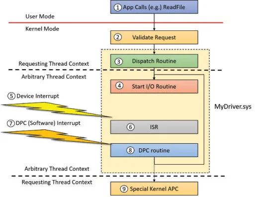
図には二種類の水平線があります。 実線はユーザーモードとカーネルモードの境界です。 点線は、発行元スレッドのコンテキストで動く処理と、任意のスレッドのコンテキストで動く処理を分けています。
- 発行元スレッドのコンテキスト：I/O を要求したスレッドで処理を実行します。元のプロセスのアドレス空間が見えるため、I/O に渡されたユーザーモードのバッファーに直接アクセスできます。
- 任意のスレッドのコンテキスト：処理を実行するスレッドは、発行元とは限りません。通常は別のスレッドであり、見えているユーザーモードのアドレス空間は元のプロセスのものとは限りません。この状態で元のユーザーアドレスを使うと、誤ったメモリにアクセスするおそれがあります。対処方法は次節で説明します。
注：境界線がその位置にある理由は、図6-14の手順をたどると分かります。
- 「Dispatch Routine」「Start I/O Routine」「ISR」「DPC Routine」の四つを囲む大きな長方形は、ドライバーが提供するコードです。ほかのブロックはすべてシステムが提供します。
- 図では、多くのハードウェアと同様に、デバイスは一度に一つの操作だけを処理すると仮定します。複数の要求を同時に処理できるデバイスでも、基本的な流れは同じです。
図6-14の処理は、次の順に進みます。
- クライアントアプリケーションが
ReadFileなどの Windows API を呼びます。ReadFileはNtdll.dllのネイティブ関数NtReadFileを呼びます。スレッドはカーネルモードに移行し、エグゼクティブのNtReadFileに制御が渡ります。 - I/O マネージャーの
NtReadFileは、クライアントが渡したバッファーに、ページ保護の設定上、必要なアクセスが許されているかなど、要求の基本的な検査を行います。次に、渡されたファイルハンドルから担当ドライバーを見つけ、IRP を割り当てて初期化します。IoCallDriverに IRP を渡し、該当するディスパッチルーチン（この例ではIRP_MJ_READに対応するもの）を呼び出します。 - ここで、ドライバーが初めて IRP を受け取ります。通常は発行元のスレッドで呼ばれますが、上位フィルターが IRP を保持し、後で別のスレッドから
IoCallDriverを呼ぶ場合は異なります。この例では、そのようなフィルターはないと仮定します。ハードウェア用ドライバーでは、上位フィルターがあっても、通常は同じスレッドで処理を加え、そのまま下位のドライバーを呼びます。読み取り用のディスパッチルーチンは、まず要求の意味を知るドライバーにしかできない検査を行います。たとえば、読み取りや書き込みのバッファーが十分な大きさか、
DeviceIoControlで指定された I/O 制御コードに対応しているかを確かめます。検査に失敗した場合は、IoCompleteRequestにエラーステータスを渡して IRP を完了し、すぐに戻ります。問題がなければ、I/O 開始ルーチンで操作を始めます。ただし、ハードウェアが前の IRP を処理中なら、IRP をキューに入れ、完了させずに
STATUS_PENDINGを返します。I/O マネージャーのIoStartPacketはデバイスオブジェクトの使用中ビットを調べ、使用中なら同じオブジェクトのキューに IRP を入れます。空いていれば使用中ビットをセットし、DriverEntryでドライバーオブジェクトに登録した I/O 開始ルーチンを呼び出します。IoStartPacketを使わないドライバーも、同様の処理を行います。 - デバイスが空いていれば、ディスパッチルーチンから直接 I/O 開始ルーチンが呼ばれるので、引き続き発行元のスレッドで実行されます。一方、図6-14では、このルーチンを任意のスレッドのコンテキストで動くものとして描いています。手順8で見るように、DPC からも呼ばれるためです。I/O 開始ルーチンは IRP から引数を取り出し、ハードウェアに操作を指示します。
たとえば HAL の WRITE_PORT_UCHAR や WRITE_REGISTER_ULONG で、デバイスのポートやレジスタに書き込みます。
I/O 開始ルーチンから戻った後は、ドライバーのコードが動いていなくても、ハードウェアは指示された処理を続けます。
処理中に、非同期 I/O を使う同じスレッドや、同じデバイスを開いた別のスレッドから追加の要求が届くことがあります。
ディスパッチルーチンはデバイスが使用中であることを確認し、IoStartPacket などを使って IRP をキューに入れます。
- 現在の操作が終わると、デバイスは割り込みを発生させます。カーネルのトラップハンドラーは、割り込みを処理する CPU で動いていたスレッドの CPU コンテキストを保存します。その CPU の IRQL を割り込みに対応する DIRQL に上げ、登録済みの ISR に制御を移します。
- ISR は IRQL 2 より高いデバイス IRQL で実行されるため、処理を最小限にします。デバイスに割り込み信号を止めるよう指示し、状態など必要な情報を取得します。最後に、残りの処理を低い IRQL で行うため、DPC をキューに入れます。これにより、DIRQL とディスパッチレベル（2）の間で待たされていた割り込みは、DPC が実行される前に処理され、システムの遅延が減ります。
- 割り込みの処理が終わると、カーネルは DPC キューが空でないことを検出します。
DPC_LEVEL（2）のソフトウェア割り込みを使い、DPC の処理ループに入ります。 - DPC はキューから取り出されて IRQL 2 で実行され、通常は次の二つの操作を行います。
- キューに次の IRP があれば、取り出してデバイスの操作を開始します。デバイスを長く待たせないよう、この処理を先に行います。ディスパッチルーチンが
IoStartPacketを使っていれば、DPC では対応するIoStartNextPacketを使います。IRP があれば、ここから I/O 開始ルーチンが呼ばれるため、一般には任意のスレッドのコンテキストで動くことになります。IRP がなければ、デバイスの使用中フラグを解除し、次の要求を受け付けられるようにします。 IoCompleteRequestを呼び、デバイスでの操作が終わった IRP を完了します。呼び出した後はいつ解放されてもおかしくないため、ドライバーは IRP に触れてはいけません。IoCompleteRequestは登録されている完了ルーチンを呼びます。最後に I/O マネージャーが自身の完了ルーチンで IRP を解放します。
- キューに次の IRP があれば、取り出してデバイスの操作を開始します。デバイスを長く待たせないよう、この処理を先に行います。ディスパッチルーチンが
- 発行元スレッドに完了を知らせる必要があります。DPC を実行したスレッドは任意のスレッドで、元のプロセスのアドレス空間が見えるとは限りません。発行元スレッドのコンテキストで処理するため、そのスレッドに特殊カーネル APC を発行します。APC は指定されたスレッドのコンテキストで実行される関数です。発行元スレッドに CPU 時間が割り当てられると、特殊カーネル APC が最初に
APC_LEVEL（1）で動きます。待機を解除したり、非同期操作で登録されたイベントをシグナル状態にしたりします（APC は Part 2 の第8章を参照）。
非同期 I/O の ReadFileEx や WriteFileEx にはコールバック関数を渡せます。
渡された場合、I/O マネージャーは完了処理の最後に、発行元スレッドの APC キューにユーザーモード APC を入れます。
この仕組みで、I/O の完了時やキャンセル時に呼び出すルーチンを指定できます。
ユーザーモード APC の完了ルーチンは発行元スレッドのコンテキストで動き、SleepEx、WaitForSingleObjectEx、WaitForMultipleObjectsEx などでスレッドが警告可能な待機状態に入ったときだけ配信されます。
ユーザーアドレス空間のバッファーへのアクセス
図6-14に示す四つのドライバールーチンは、クライアントが用意したユーザー空間のバッファーにアクセスする必要がある場合があります。
アプリケーションやドライバーが NtReadFile、NtWriteFile、NtDeviceIoControlFile、または対応する Windows API の ReadFile、WriteFile、DeviceIoControl を通じて間接的に IRP を作ると、IRP 本体の UserBuffer にバッファーのポインターが入ります。
しかし、このバッファーを直接参照できるのは、クライアントのアドレス空間が見える発行元スレッドのコンテキストで、ページフォールトを処理できる IRQL 0 の場合に限られます。
先ほどの四つのうちこの条件を満たすのは、ディスパッチルーチンだけです。 ただし、上位フィルターが IRP をいったん保持し、後から別のスレッドで転送する場合や、IRQL 2 以上で転送する場合もあるため、ディスパッチルーチンでも条件を満たすとは限りません。
残る I/O 開始ルーチン、ISR、DPC は任意のスレッドのコンテキストで呼ばれ得ます。実行時の IRQL は2で、ISR の場合は DIRQL です。 これらのルーチンからユーザーバッファーを直接参照するのは危険です。
- IRQL が2以上ではページフォールトを処理できません。ユーザーバッファーの一部でもページアウトされていれば、アクセスするとシステムが停止します。
- 任意のスレッドで実行されるため、別のプロセスのアドレス空間が見えている場合があります。元のプロセスのユーザーアドレスを使うと、アクセス違反が起きるか、誤って別のプロセスのデータにアクセスするおそれがあります。
I/O マネージャーは、これらのルーチンから安全にバッファーを参照できるよう準備する、バッファー付き I/O と直接 I/O の二方式を提供します。 どちらも使わず、ドライバー自身がバッファーを扱う方式は Neither I/O と呼ばれます。
読み取りと書き込み（IRP_MJ_READ と IRP_MJ_WRITE）の方式は、DEVICE_OBJECT の Flags メンバーで選びます。
ビット単位の OR で、ほかのフラグを変えずに、バッファー付き I/O なら DO_BUFFERED_IO、直接 I/O なら DO_DIRECT_IO をセットします。
どちらもなければ Neither I/O です。接頭辞 DO は device object の略です。
デバイス I/O 制御要求（IRP_MJ_DEVICE_CONTROL）では、CTL_CODE で作る各制御コードの一部のビットが、バッファーの扱い方を指定します。
そのため、制御コードごとに方式を変えられます。
バッファー付き I/O
バッファー付き I/Oでは、I/O マネージャーが、ユーザーバッファーと同じ大きさのバッファーを非ページプールから割り当てます。
新しいバッファーを指すポインターは、IRP 本体の AssociatedIrp.SystemBuffer に格納します。
図6-15は読み取りの主な段階を示します。書き込みも同様です。

ドライバーは、どのスレッドのコンテキストでも、どの IRQL でも、図6-15のアドレス q が指すシステムバッファーにアクセスできます。
- システム空間のアドレスなので、どのプロセスのコンテキストでも有効です。
- 非ページプールから割り当てるため、参照してもページフォールトは起きません。
書き込みでは、IRP を作る際に、I/O マネージャーが呼び出し元のバッファーから、割り当てたバッファーにデータをコピーします。 読み取りでは、IRP の完了時に、特殊カーネル APC を使って、割り当てたバッファーからユーザーバッファーへコピーし、その後バッファーを解放します。
ほとんどの処理を I/O マネージャーが行うため、ドライバー側の実装は単純です。 一方、コピーが必ず発生するので、大きなバッファーでは効率が下がります。 一般に、バッファーが1ページ（4 KB）以下で、デバイスがダイレクトメモリアクセス（DMA）に対応していない場合に使われます。
DMA なら、CPU を介さず、デバイスと RAM の間でデータを転送できます。 バッファー付き I/O では CPU によるコピーが残るため、DMA だけで転送を完結させる利点が失われます。
直接 I/O
直接 I/Oでは、ドライバーがユーザーバッファーをコピーせずに参照できます。 読み取りまたは書き込みの主な段階を図6-16に示します。

IRP を作るとき、I/O マネージャーは MmProbeAndLockPages を呼び、ユーザーバッファーのページをメモリに固定して、ページアウトできないようにします。
バッファーが占める物理メモリの情報はメモリ記述子リスト（MDL）に記録し、MDL のアドレスは IRP 本体の MdlAddress に格納します。
DMA を使うデバイスはバッファーの物理メモリの情報だけを必要とするので、MDL があれば転送できます。
ドライバーがバッファーの内容を参照する必要がある場合は、MDL を MmGetSystemAddressForMdlSafe に渡し、バッファーをシステムアドレス空間へマップします。
マッピングに成功すれば、返されたポインター（図6-16の q）はシステムアドレスなので、どのスレッドのコンテキストでも参照でき、固定済みのバッファーはページアウトされません。
同じバッファーに二つのマッピングがあることになります。元のユーザーアドレス（図の p）は発行元のプロセスのコンテキストでしか使えませんが、システム空間のマッピングはどのコンテキストでも使えます。
IRP が完了すると、I/O マネージャーは MmUnlockPages を呼び、固定を解除してページアウトを可能にします。メモリを固定、解除する API の詳細は WDK のドキュメントを参照してください。
直接 I/O はコピーを行わないので、1ページを超える大きなバッファーに向いています。特に DMA によるデータ転送に適しています。
Neither I/O
Neither I/O では、I/O マネージャーはバッファーを管理しません。 その扱いはデバイスドライバーに任されます。ドライバーは、ほかの方式で I/O マネージャーが行う処理を自前で実装することもできます。 バッファーの参照がディスパッチルーチン内だけで済むなら、Neither I/O のままで間に合う場合があります。 この方式の主な利点は、I/O マネージャーによるバッファー管理の負担がないことです。
Neither I/O でユーザー空間にある可能性のあるバッファーを扱うドライバーは、アドレスが有効で、カーネルモードのメモリを指していないことを確かめる必要があります。 ポインターを介さずスカラー値だけを渡すのであれば、このアドレス検査は不要です。ただし、スカラー値だけで済むドライバーはほとんどありません。 バッファーを検査しないと、システムが停止したり、アプリケーションからカーネルメモリへのアクセスやコードの注入を許す脆弱性になったりするおそれがあります。
カーネルが提供する ProbeForRead と ProbeForWrite は、バッファー全体がユーザーモードのアドレス範囲内にあることを検査します。
無効なユーザーモードアドレスへの参照でシステムが停止しないよう、ドライバーは検査や参照を、C／C++ の __try／__except で記述する構造化例外処理（SEH）で囲めます。
メモリアクセスの例外を捕捉し、アプリケーションに返すエラーコードへ変換します（SEH は Part 2 の第8章を参照）。
また、アドレス自体が有効でも、呼び出し元はそのデータを後から変更できます。そのため、入力データはすべてカーネルバッファーへコピーしてから使います。
ドライバーの同期
ドライバーは、グローバルデータやハードウェアレジスタへのアクセスを、次の二つの理由で同期する必要があります。
- 優先度の高いスレッド、クォンタムの満了、またはより高い IRQL の割り込みによって、ドライバーの処理が中断されることがあります。
- 一般的なマルチプロセッサシステムでは、複数のプロセッサで同じドライバーのコードが同時に実行され得ます。
たとえば、IRQL 0 で動くディスパッチルーチンが、デバイスレジスタ、ヒープ、静的データなどを変更している最中に、同じドライバーの ISR が割り込むことがあります。 ISR も同じデータを更新するなら、同期していないとデータが壊れかねません。
そのため、複数の IRQL からアクセスされるデータを更新する前に、同じデータ構造を別のスレッドや別の CPU が更新できないようにします。
単一 CPU のシステムでは、KeRaiseIrql で、関係するルーチンのうち最も高い IRQL まで引き上げれば同期できます。
たとえば、IRQL 0 のディスパッチルーチンと IRQL 2 の DPC を同期させるには、ディスパッチルーチンが共有データに触れる前に IRQL を2へ上げます。
DPC と ISR を同期させる場合は、DPC がデバイスの IRQL まで引き上げます。この値は PnP マネージャーがハードウェアリソースを通知する際に渡します。
マルチプロセッサシステムでは、IRQL を上げるだけでは足りません。 IRQL はシステム全体で共有する状態ではなく、CPU ごとの状態なので、ISR などが別の CPU で動く可能性があります。
そこでカーネルは、高い IRQL で CPU 間の同期を行うために、スピンロックを提供します。 共有データを一度に一つの処理だけが使えるようにする点ではミューテックスと似ていますが、動作も使い方も異なります。 表6-3に違いを示します。両者の詳細は Part 2 の第8章を参照してください。
| 項目 | ミューテックス | スピンロック |
|---|---|---|
| 同期の単位 | 一度に一つのスレッドがクリティカルセクションに入り、共有データへアクセスします。 | 一度に一つの CPU がクリティカルセクションに入り、共有データへアクセスします。 |
| 使用する IRQL | DISPATCH_LEVEL（2）未満。 | DISPATCH_LEVEL（2）以上での同期に使います。 |
| 待機方法 | 通常の待機で、待機中は CPU サイクルを消費しません。 | ビジーウェイトで、ロックが空くまで CPU はビットの検査を繰り返します。 |
| 所有権 | 所有スレッドを記録し、同じスレッドによる再帰的な取得を許します。 | 所有 CPU を記録せず、再帰的に取得しようとするとデッドロックになります。 |
スピンロックは、アトミックな検査と更新で操作するメモリ上のビットです。 CPU が取得しているか、空いているかのどちらかです。 IRQL が2以上では、スケジューラーが別のスレッドへ切り替えられません。通常の待機にはその切り替えが必要なので、ミューテックスは使えません。 スピンロックを待つ CPU が、通常の待機状態に入らず、ロックの検査を繰り返すのはこのためです。
CPU がスピンロックを取得する流れは、二段階に分けられます。 まず、同期対象のルーチンのうち最も高い IRQL まで引き上げます。 ディスパッチルーチンと DPC の間なら2、DPC と ISR の間なら対象の割り込みの DIRQL です。 次に、ロックのビットをアトミックに検査してセットし、取得を試みます。 同期する IRQL は、取得に使う関数によって決まります。
注：図6-17はこの二段階を単純化したものです。取得処理の詳細は Part 2 の第8章を参照してください。

ディスパッチルーチンと DPC、または別々の CPU で動く DPC 同士など、IRQL 2 で同期する場合は、KeAcquireSpinLock と KeReleaseSpinLock を使えます。
この組み合わせでは、図6-17の「同期する IRQL」が2になります。派生関数については Part 2 の第8章を参照してください。
ドライバーは通常、デバイスごとのデータを保持するデバイス拡張に KSPIN_LOCK（32 ビットシステムでは4バイト、64 ビットシステムでは8バイト）を置き、KeInitializeSpinLock で初期化します。
ディスパッチルーチンや DPC などを ISR と同期させるには、別の関数を使います。
各割り込みオブジェクト（KINTERRUPT）にはスピンロックがあり、ISR の実行前に取得されます。そのため、同じ ISR が複数の CPU で同時に動くことはありません。
このロックを使って同期するので、新たなロックは不要です。
KeAcquireInterruptSpinLock で取得し、KeReleaseInterruptSpinLock で解放できます。
あるいは KeSynchronizeExecution にコールバックを渡し、割り込みスピンロックの取得と解放の間に実行させることもできます。
特に ISR には注意が必要ですが、ドライバーが使うデータには、別のプロセッサで動く同じドライバーのルーチンもアクセスし得ます。 したがって、グローバルデータや共有データの利用だけでなく、物理デバイス自体へのアクセスも同期させます。
階層化されたドライバーへの I/O 要求
「IRP がデバイススタックを通る流れ」では、標準的な WDM のデバイスノードで各ドライバーが選べる処理を説明しました。 前の節では、一つのドライバーが単純なデバイスを扱う場合の I/O 要求をたどりました。 ファイルを扱うデバイスや、ほかの階層化されたドライバーへの要求も基本は同じです。 図6-18では、ファイルシステムへの非同期 I/O が、ディスクへ届くまでにどのドライバーを通るかを、単純化した例で示します。

I/O マネージャーは、要求を受け付けて IRP を作ります。 ただし、この例で IRP を渡す先はファイルシステムドライバーです。 ファイルシステムドライバーは要求の種類に応じて、同じ IRP をディスク側に転送するか、追加の IRP を作って個別に送るかを決めます。
元の要求をデバイスへの単純な要求一つに変換できるなら、IRP を再利用するのが一般的です。 たとえば、アプリケーションがボリューム上のファイルの先頭512バイトを読み取る場合、NTFS はボリュームマネージャーのドライバーを呼び、ファイルの開始位置から1セクターを読み取るよう要求します。
ディスクコントローラーの DMA アダプターが転送を終えると、ディスクコントローラーがホストに割り込みをかけます。 コントローラーの ISR が動き、IRP を完了する DPC コールバックを要求します（図6-19）。
一つの IRP を再利用する代わりに、ファイルシステムが複数の関連 IRP を作り、一つの I/O 要求を分担させることもできます。 たとえば、読み取るデータがディスク上に分散していれば、ファイルシステムドライバーは複数の IRP を作り、それぞれに別のセクターから要求の一部を読み取らせます。 これらの IRP をキューに入れる流れを図6-20に示します。


ファイルシステムドライバーは関連 IRP をボリュームマネージャーに渡します。 ボリュームマネージャーはディスクデバイスドライバーに転送し、ディスクデバイスドライバーはデバイスのキューに入れます。 関連 IRP は一つずつ処理され、ファイルシステムドライバーが返されたデータを追跡します。 すべての関連 IRP が完了すると、I/O システムは元の IRP を完了し、呼び出し元に戻ります（図6-21）。

注：ディスク上のファイルシステムを管理する Windows のドライバーは、少なくとも三層のドライバースタックに属します。 最上位はファイルシステムドライバー、中央はボリュームマネージャー、最下位はディスクドライバーです。 さらに、その間や上下に任意の数のフィルタードライバーを置けます。 直前の例では流れを分かりやすくするため、ファイルシステムとボリュームマネージャーに絞って描いています。詳細は Part 2 のストレージ管理の章を参照してください。
スレッドに依存しない I/O
これまでに説明した方式では、IRP を発行元スレッドに関連付けてキューに入れます。 I/O マネージャーがそのスレッドへ APC を発行して IRP を完了するため、完了処理は発行元のプロセスやスレッドのコンテキストを参照できます。 発行元スレッドに依存する処理で、大半のアプリケーションの性能とスケーラビリティの要件は満たせます。 一方、Windows は二つの仕組みでスレッドに依存しない I/Oもサポートします。
- I/O 完了ポートを使う。詳細は後述の「I/O 完了ポート」を参照してください。
- ユーザーバッファーをメモリに固定し、システムアドレス空間にマップする。
I/O 完了ポートを使う場合、いつ I/O の完了を確認するかはアプリケーションが決めます。 I/O を発行したスレッドでなくても、完了ポートにアクセスできるスレッドなら完了処理を行えます。
同様に、ユーザーバッファーを固定してカーネル空間にマップすると、どのコンテキストからでもカーネルがアクセスできるので、発行元と同じアドレス空間にいる必要はありません。
アプリケーションは、SeLockMemoryPrivilege を持っていれば SetFileIoOverlappedRange でこの仕組みを有効にできます。
完了ポートを使う場合も、SetFileIoOverlappedRange で設定したファイルバッファーを使う場合も、I/O マネージャーは IRP を発行元スレッドではなく宛先のファイルオブジェクトに関連付けます。
WinDbg の !fileobj は、これらのファイルオブジェクトの IRP リストを表示します。
この仕組みが信頼性と性能にどう関わるかは、後続の節で説明します。
I/O のキャンセル
I/O は正常に完了するとは限らず、多くの要求はキャンセルで終わります。 たとえば、処理中の IRP が残っているデバイスを取り外す場合や、利用者が長時間かかるネットワーク操作を取り消す場合です。 スレッドやプロセスの終了時にもキャンセルが必要です。 スレッドが終了すると、そのスレッドの I/O は不要になりますが、未完了の要求が片付くまでスレッドを削除できません。
I/O マネージャーとドライバーは協力してキャンセルを処理します。
ドライバーは、通常はまだキューにあり、開始していない操作に対して、IoSetCancelRoutine でキャンセルルーチンを登録します。
キャンセル時には I/O マネージャーがそのルーチンを呼びます。
ドライバーがこの処理を正しく実装していないと、画面から消えてもタスクマネージャーや Process Explorer には残り、終了させられないプロセスが生じることがあります。
利用者の操作による I/O のキャンセル
多くのアプリケーションでは、UI の入力を処理するスレッドと、I/O などの作業をする一つ以上のスレッドを分けます。 利用者が UI から開始した処理を取り消すとき、未完了の I/O をキャンセルする必要がある場合があります。 すぐに終わる操作なら不要なこともありますが、大量のデータ転送やネットワーク操作など、完了までの時間を見積もれない処理に対し、Windows は同期 I/O と非同期 I/O の両方でキャンセルをサポートします。
- 同期 I/O のキャンセル：
CancelSynchronousIoを使います。デバイスドライバーが対応していれば、作成（オープン）操作もキャンセルできます。MUP、DFS、SMB など、ネットワークファイルシステムを扱う Windows のドライバーは、ネットワークパスを開く操作をキャンセルできます。 - 非同期 I/O のキャンセル：スレッドは
CancelIoで自分が発行した未完了の非同期 I/O をキャンセルできます。CancelIoExなら、同じプロセス内でどのスレッドが発行したかにかかわらず、指定したファイルハンドルへの非同期 I/O をすべてキャンセルできます。Windows が未完了の要求を I/O 完了ポートに関連付けて追跡するため、スレッドに依存しない I/O でもCancelIoExが使えます。
同期 I/O と非同期 I/O をキャンセルする流れを、それぞれ図6-22と図6-23に示します。ドライバーから見たキャンセル処理は、どちらも同じです。
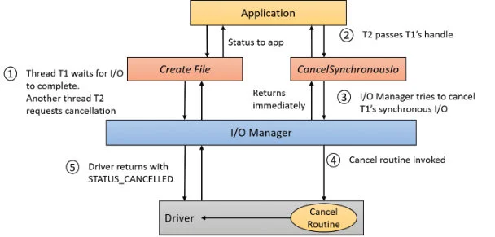

スレッド終了時の I/O のキャンセル
スレッドが自ら終了するときも、所属プロセスの終了に伴って終了するときも、そのスレッドの I/O をキャンセルする必要があります。
I/O マネージャーは、スレッドに関連付けられた IRP のリストをたどり、キャンセル可能な要求を取り消します。
CancelIoEx はキャンセルの完了を待たずに戻りますが、プロセスマネージャーはすべての I/O の処理が済むまで、スレッドの終了を進めません。
ドライバーが IRP をキャンセルできず、要求も完了しなければ、プロセスとスレッドのオブジェクトはシステムがシャットダウンするまで残ります。
注：キャンセルできるのは、ドライバーがキャンセルルーチンを登録した IRP だけです。プロセスマネージャーは、そのスレッドに関連するすべての I/O がキャンセルされるか完了するまで、スレッドを削除しません。
終了できないプロセスをデバッグする
Sysinternals の Notmyfault を使って、プロセスを終了できなくなる条件を確認します。
Notmyfault.exe が使う Myfault.sys ドライバーは、キャンセルルーチンを登録せずに IRP を保持し続けます。
実験には再起動できる検証環境を使ってください。Notmyfault の詳細は Part 2 のクラッシュダンプ解析の章を参照してください。
Notmyfault.exeを実行します。- 「Not My Fault」ダイアログで「Hang」タブを開き、図のように「Hang with IRP」を選び、「Hang」をクリックします。

- 画面上では特に変化せず、「Cancel」でアプリケーションを閉じられます。ただし、タスクマネージャーや Process Explorer には Notmyfault のプロセスが残ります。Myfault ドライバーはキャンセルルーチンを登録していないため、Windows は IRP の完了を待ち続け、プロセスを終了できません。
- WinDbg で、スレッドが現在何をしているか調べます。ローカルカーネルデバッグを開始し、
!processでNotmyfault.exeの情報を表示します。notmyfault64は64ビット版です。
lkd> !process 0 7 notmyfault64.exe PROCESS ffff8c0b88c823c0 SessionId: 1 Cid: 2b04 Peb: 4e5c9f4000 ParentCid: 0d40 DirBase: 3edfa000 ObjectTable: ffffdf08dd140900 HandleCount: <Data Not Accessible> Image: notmyfault64.exe VadRoot ffff8c0b863ed190 Vads 81 Clone 0 Private 493. Modified 8. Locked 0…. THREAD ffff8c0b85377300 Cid 2b04.2714 Teb: 0000004e5c808000 Win32Thread: 0000000000000000 WAIT: (UserRequest) UserMode Non-Alertable fffff80a4c944018 SynchronizationEvent IRP List: ffff8c0b84f1d130: (0006,0118) Flags: 00060000 Mdl: 00000000 Not impersonating DeviceMap ffffdf08cf4d7d20 Owning Process ffff8c0b88c823c0 Image: notmyfault64.exe ... Child-SP RetAddr : Args to Child : Call Site ffffb881'3ecf74a0 fffff802'cfc38a1c : 00000000'00000100 00000000'00000000 00000000'00000000 00000000'00000000 : nt!KiSwapContext+0x76 ffffb881'3ecf75e0 fffff802'cfc384bf : 00000000'00000000 00000000'00000000 00000000'00000000 00000000'00000000 : nt!KiSwapThread+0x17c ffffb881'3ecf7690 fffff802'cfc3a287 : 00000000'00000000 00000000'00000000 00000000'00000000 00000000'00000000 : nt!KiCommitThreadWait+0x14f ffffb881'3ecf7730 fffff80a'4c941fce : fffff80a'4c944018 fffff802'00000006 00000000'00000000 00000000'00000000 : nt!KeWaitForSingleObject+0x377 ffffb881'3ecf77e0 fffff802'd0067430 : ffff8c0b'88d2b550 00000000'00000001 00000000'00000001 00000000'00000000 : myfault+0x1fce ffffb881'3ecf7820 fffff802'd0066314 : ffff8c0b'00000000 ffff8c0b'88d2b504 00000000'00000000 ffffb881'3ecf7b80 : nt!IopSynchronousSer viceTail+0x1a0 ffffb881'3ecf78e0 fffff802'd0065c96 : 00000000'00000000 00000000'00000000 00000000'00000000 00000000'00000000 : nt!IopXxxControlFile+0x674 ffffb881'3ecf7a20 fffff802'cfd57f93 : ffff8c0b'85377300 fffff802'cfcb9640 00000000'00000000 fffff802'd005b32f : nt!NtDeviceIoControlFile+0x56 ffffb881'3ecf7a90 00007ffd'c1564f34 : 00000000'00000000 00000000'00000000 00000000'00000000 00000000'00000000 : nt!KiSystemServiceCopyEnd+0x13 (TrapFrame @ ffffb881'3ecf7b00)
- スタックトレースから、I/O を発行したスレッドが、キャンセルまたは完了を待っていることが分かります。前の実験で使ったデバッガー拡張の
!irpに IRP のポインターを渡し、どこで処理が止まっているか調べます。
lkd> !irp ffff8c0b84f1d130 Irp is active with 1 stacks 1 is current (= 0xffff8c0b84f1d200) No Mdl: No System Buffer: Thread ffff8c0b85377300: Irp stack trace. cmd flg cl Device File Completion-Context >[IRP_MJ_DEVICE_CONTROL(e), N/A(0)] 5 0 ffff8c0b886b5590 ffff8c0b88d2b550 00000000-00000000 \Driver\MYFAULT Args: 00000000 00000000 83360020 00000000
- この出力から、原因は
\Driver\MYFAULT、つまりMyfault.sysだと分かります。アプリケーションに不具合があるだけではこの状態にはならず、ドライバー側に問題があります。原因のドライバーが分かっても、この状態を解消するには通常、システムを再起動するしかありません。Windows が未完了のキャンセルを無視して関連リソースを解放すると、後から戻ってきた IRP がシステムメモリを破損させるおそれがあるためです。
ヒント：実際に遭遇した場合は、新しいバージョンのドライバーに修正が含まれていないか確認してください。
I/O 完了ポート
サーバーアプリケーションの性能は、クライアント要求を処理するスレッドの数と使い方に左右されます。 すべての要求を一つのスレッドで順番に処理すると、処理中の要求が終わるまでほかのクライアントが待たされます。 I/O を開始するたびに別の要求に切り替えれば、一つのスレッドでも複数の要求を並行に扱えますが、実装が複雑になり、複数の論理プロセッサを活用できません。
反対に、大きなスレッドプールを用意し、クライアントの要求ごとにほぼ専用のスレッドを割り当てる方法もあります。 この方法では、多数のスレッドが起きて CPU で処理し、I/O を待ってブロックし、処理が終われば次の要求を待って再びブロックします。 スケジューラーが多数のアクティブなスレッドに CPU 時間を割り振る結果、コンテキストスイッチが増え、処理量の増加に対応しにくくなります。
並列性を高めながらコンテキストスイッチを減らすには、不必要な待機を避けます。 理想は、各プロセッサで一つのスレッドがクライアント要求を処理し、要求が残っていれば、処理を終えたスレッドが待機せずに次の要求へ進むことです。
この構成で、要求を処理中のスレッドがファイルの読み取りなどでブロックした場合には、代わりのスレッドを起こす仕組みが必要になります。
IoCompletion オブジェクト
アプリケーションは、エグゼクティブの IoCompletion オブジェクトを使って、複数のファイルハンドルの I/O 完了を一か所で受け取れます。
Windows API では、このオブジェクトをI/O 完了ポートと呼びます。
ファイルを完了ポートに関連付けると、そのファイルに対する非同期 I/O が完了するたびに、完了パケットがポートのキューに入ります。
スレッドは、ポートにパケットが入るのを待つだけで、複数のファイルに対する未完了の I/O のうち、どれかが終わるのを待てます。
WaitForMultipleObjects にも似た機能がありますが、完了ポートでは、要求を処理するアクティブなスレッドの数（同時実行数）を OS の支援で制御できます。
完了ポートを作るときは、ポートに関連付けられたスレッドを同時にいくつまで実行させるかを指定します。 理想はプロセッサごとに一つのアクティブなスレッドを持つことです。 アクティブなスレッド数が指定値に達していれば、Windows は完了ポートを待つスレッドを起こしません。 代わりに、稼働中のスレッドが現在の要求を処理し終え、別のパケットが待っていれば、自ら取り出して処理します。 こうすればコンテキストスイッチが発生せず、CPU を効率よく使えます。
完了ポートの使い方
図6-24に完了ポートの動作の概要を示します。
ポートは CreateIoCompletionPort で作成します。
ポートでブロックしたスレッドはそのポートに関連付けられ、後入れ先出し（LIFO）で起こされます。つまり、最後にブロックしたスレッドが次のパケットを受け取ります。
長時間ブロックしたスレッドのスタックはディスクへ退避できるので、処理すべき要求よりもスレッドの数が多いとき、長く待っているスレッドが物理メモリを占め続けずに済みます。
サーバーアプリケーションは通常、Winsock2 ソケットや名前付きパイプなど、ファイルハンドルで識別する通信の接続先で要求を受け取ります。
接続先を作るときに完了ポートに関連付け、各スレッドが GetQueuedCompletionStatus または GetQueuedCompletionStatusEx で要求を待ちます。
パケットを受け取ったスレッドは、要求を処理するアクティブなスレッドになります。
処理中のスレッドは、ファイルの読み書きやほかのスレッドとの同期などで何度もブロックすることがあります。 Windows はこれを検出して、ポートのアクティブなスレッド数を一つ減らします。 キューにパケットが残っていれば、完了ポートで待つ別のスレッドを起こします。

Microsoft は、同時実行数の設定値をシステムのプロセッサ数とおおむね同じにすることを推奨しています。 ただし、実際のアクティブなスレッド数が設定値を超えることがあります。 たとえば設定値が1の場合、次のように進みます。
- クライアントの要求が届き、最初のスレッドが処理を始め、アクティブになります。
- 二つ目の要求が届きますが、同時実行数の上限に達しているので、ポートで待っている二つ目のスレッドは処理を開始できません。
- 最初のスレッドがファイル I/O を待ってブロックし、アクティブではなくなります。
- 二つ目のスレッドが起こされます。
- 二つ目が動いている間に最初のスレッドのファイル I/O が完了し、最初のスレッドも再びアクティブになります。どちらかがブロックするまでは、設定値が1でも、アクティブなスレッドが二つになります。
通常、アクティブなスレッド数は設定値と同じか、それより少し多い程度です。
PostQueuedCompletionStatus を使うと、サーバーアプリケーションが独自に定義した完了パケットをキューに入れられます。
たとえば、サーバーを正常終了させる必要があるなど、I/O とは別のイベントをワーカースレッドに知らせるために使います。
完了ポートでは、先に述べたスレッドに依存しない I/O を使い、要求を発行元スレッドではなく完了ポートに関連付けられます。 通常の I/O では発行元スレッドが完了処理を行う必要があります。 完了ポートを使えば、待機中のどのスレッドでも処理できるので、コンテキストスイッチを減らせます。
I/O 完了ポートの内部動作
Windows アプリケーションが、既存の完了ポートのハンドルとして NULL を指定して CreateIoCompletionPort を呼ぶと、システムサービス NtCreateIoCompletion が実行されます。
エグゼクティブの IoCompletion オブジェクトには、カーネルキューという同期オブジェクトが含まれます。
システムサービスは完了ポートを作り、そのメモリの先頭にあるキューオブジェクトを KeInitializeQueue で初期化します。
キューが先頭メンバーなので、完了ポートとキューは同じポインターで参照できます。
キューの同時実行数には、アプリケーションが CreateIoCompletionPort に渡した値を使います。
アプリケーションが CreateIoCompletionPort でファイルハンドルをポートに関連付ける場合は、そのファイルハンドルを主引数として NtSetInformationFile が呼ばれます。
設定する情報クラスは FileCompletionInformation で、データには完了ポートのハンドルと、CreateIoCompletionPort の CompletionKey 引数を使います。
NtSetInformationFile はハンドルからファイルオブジェクトを取得し、完了コンテキストのデータ構造を割り当て、そのポインターをファイルオブジェクトの CompletionContext に格納します。
ファイルオブジェクトに対する非同期 I/O が完了すると、I/O マネージャーは CompletionContext が NULL でないか調べます。
設定されていれば完了パケットを割り当て、KeInsertQueue にポートを渡してパケットをキューに入れます。完了ポートオブジェクトとキューオブジェクトが同じアドレスにあるため、この呼び方ができます。
サーバーのスレッドが GetQueuedCompletionStatus を呼ぶと、NtRemoveIoCompletion が実行されます。
引数を検査し、ポートのハンドルからポートへのポインターを取得して IoRemoveIoCompletion を呼びます。最終的に KeRemoveQueueEx が呼ばれます。
複数の I/O がすでに完了していればスレッドは待たずに済みますが、一件ずつ取得すると、そのたびにカーネルを呼び出します。
GetQueuedCompletionStatusEx は複数の完了ステータスを一度に取得でき、ユーザーモードとカーネルモードの間の往復を減らせます。
内部では NtRemoveIoCompletionEx が IoRemoveIoCompletion を呼び、取得する件数を KeRemoveQueueEx まで渡します。
KeRemoveQueueEx と KeInsertQueue は、完了パケットを待つスレッドを起こすかどうかを決めます。
キューオブジェクトは、アクティブなスレッドの現在数と最大数を保持します。
KeRemoveQueueEx の呼び出し時に現在数が最大数以上なら、呼び出し元のスレッドをキューオブジェクトの待機リストに入れます。待機中のスレッドは LIFO 順で選ばれます。
スレッドの制御ブロック（KTHREAD）には、関連付けられたキューオブジェクトへのポインターがあり、関連付けがなければ NULL です。
Windows は、完了ポート以外でブロックして非アクティブになったスレッドも、スレッドの制御ブロックのキューポインターを使って追跡します。
KeWaitForSingleObject や KeDelayExecutionThread など、スレッドをブロックさせる可能性のあるルーチンは、そのポインターを調べます。
NULL でなければ KiActivateWaiterQueue を呼び、キューに関連付けられたアクティブなスレッドの数を一つ減らします。
その結果が上限未満で、キューにパケットが一つ以上あれば、待機リストの先頭のスレッドを起こし、最も古いパケットを渡します。
一方、キューに関連付けられたスレッドがブロックから復帰すると、スケジューラーは KiUnwaitThread でアクティブ数を一つ増やします。
PostQueuedCompletionStatus は、システムサービス NtSetIoCompletion を呼びます。
このサービスは KeInsertQueue で、指定されたパケットを完了ポートのキューに入れます。
図6-25では、完了パケットを処理できるスレッドがほかに二つあります。 ただし、同時実行数が1で、すでに一つのスレッドがアクティブなので、この二つは完了ポートでブロックしています。

SetFileCompletionNotificationModes で、完了通知の動作を調整できます。
通常はアプリケーションコードの変更が必要ですが、スループットが上がる場合があります。
表6-4に、三つの最適化モードを示します。モードはハンドルごとに設定し、一度設定したものは解除できません。
| 通知モード | 意味 |
|---|---|
FILE_SKIP_COMPLETION_PORT_ON_SUCCESS（1） | ファイルハンドルが完了ポートに関連付けられ、ファイルが非同期 I/O 用に開かれ、要求が ERROR_PENDING を返さず即座に成功した場合は、通常なら追加する完了パケットをキューに入れません。 |
| 通知モード | 意味 |
|---|---|
FILE_SKIP_SET_EVENT_ON_HANDLE（2） | 非同期の関数呼び出しが成功するか ERROR_PENDING を返した場合、ファイルオブジェクトのイベントをシグナル状態にしません。ただし、要求に明示的に渡したイベントは通知します。 |
FILE_SKIP_SET_USER_EVENT_ON_FAST_IO（4） | 非同期の関数呼び出しが高速 I/O で処理され、成功するか ERROR_PENDING を返した場合は、要求に明示的に渡したイベントをシグナル状態にしません。 |
I/O の優先制御
I/O の優先度がなければ、検索インデックスの作成、ウイルススキャン、ディスクのデフラグなどのバックグラウンド処理が、フォアグラウンド処理の応答を大きく遅らせることがあります。 たとえば、別のプロセスがディスク I/O を実行中にアプリケーションを起動したり文書を開いたりすると、フォアグラウンドの処理がディスクへのアクセスを待たされます。 ディスクにある音楽などのストリーミング再生にも、同じように影響します。
Windows では、個々の I/O 操作に優先度を割り当てる方法と、I/O 帯域幅を予約する方法の二つで、フォアグラウンドの操作を優先できます。
I/O の優先度
Windows の I/O マネージャーは、表6-5の五つの優先度を内部でサポートします。 原著で扱うバージョンでは三つを使用しており、将来のバージョンでは High と Low も使われる可能性があります。
| 優先度 | 用途 |
|---|---|
| Critical | メモリマネージャー。 |
| High | 未使用。 |
| Normal | アプリケーションの通常の I/O。 |
| Low | 未使用。 |
| Very Low | スケジュールされたタスク、SuperFetch、デフラグ、コンテンツのインデックス作成などのバックグラウンド処理。 |
既定の I/O 優先度は Normal です。 空きメモリが少ないときに変更済みデータをディスクへ書き出し、ほかのデータやコードのために RAM を空ける場合は、メモリマネージャーが Critical を使います。 タスクスケジューラーは、タスク自体の優先度が既定のものについて、I/O 優先度を Very Low に設定します。 バックグラウンド処理を行うアプリケーションも Very Low を指定します。 Windows Defender のスキャンやデスクトップ検索のインデックス作成など、Windows のバックグラウンド処理も Very Low を使います。
I/O 優先度に応じた処理順序
五つの I/O 優先度は、内部では二つの方式で扱われます。Very Low 以外は優先度順方式、Very Low はアイドル I/O 方式です。
- Critical はすべての High より先に処理します。
- High はすべての Normal より先に処理します。
- Normal はすべての Low より先に処理します。
- Low は、それより高い優先度の要求をすべて処理した後に処理します。
アプリケーションが I/O を発行すると、IRP は優先度別のキューに入ります。優先度順方式では、どのキューを先に処理するかを上の規則で決めます。
アイドル I/O は別のキューで管理されます。アイドル I/O 以外の要求を先に処理するため、その要求が一件でも残り続けると、アイドル I/O がいつまでも処理されないおそれがあります。
そこでアイドル I/O 方式ではタイマーでキューを監視し、発行頻度を抑えながら、一定時間（通常は0.5秒）ごとに少なくとも一件を処理します。 また、通常の I/O が最後に完了してから50ミリ秒待って、次のアイドル I/O を発行します。通常の連続した I/O の途中にアイドル I/O を挟み、余分なシークが発生するのを防ぐためです。 原文では、アイドル I/O 以外の優先度で書き込むと、キャッシュマネージャーが変更を後回しにせずディスクへ反映し、読み取りでは先読みを省くと説明しています。
二つの方式を説明のため一つの仮想的なグローバル I/O キューにまとめた例が図6-26です。 各キュー内は先入れ先出し（FIFO）で、図の並びは一例です。

ユーザーモードのアプリケーションは、プロセス、スレッド、ファイルオブジェクトの三つに I/O 優先度を設定できます。
SetPriorityClass に PROCESS_MODE_BACKGROUND_BEGIN を渡すと現在のプロセス、SetThreadPriority に THREAD_MODE_BACKGROUND_BEGIN を渡すと現在のスレッドが発行する I/O の優先度を Very Low に下げ、各要求の IRP に記録します。
この設定は、スケジューリング優先度を4、メモリの優先度を1にも下げます。
SetFileInformationByHandle は特定のファイルオブジェクトの優先度を設定し、値をそのオブジェクトに格納します。
ドライバーは IoSetIoPriorityHint で IRP に直接設定できます。
注：IRP やファイルオブジェクトの I/O 優先度はヒントです。ストレージスタックのすべてのドライバーが、指定された値に従うとは限らず、対応していない場合もあります。
二つの方式は、それぞれ異なる種類のドライバーが実装します。
優先度順方式を担うのは、ATA、SCSI、USB などのポート上の I/O を管理するストレージポートドライバーです。
ただし、この方式を実装するのは ATA ポートドライバー（Ataport.sys）と USB ポートドライバー（Usbstor.sys）だけです。SCSI ポートドライバーとストレージポートドライバー（Scsiport.sys、Storport.sys）にはありません。
注：どのポートドライバーも、優先度順方式全体に対応するかどうかにかかわらず、Critical の要求を検出するとキューの先頭に回します。メモリマネージャーの緊急のページング I/O を処理し、システムの信頼性を保つためです。
このため、IDE や SATA のハードディスク、USB フラッシュメモリなどの一般向け大容量記憶装置では優先度順方式を利用できますが、SCSI、Fibre Channel、iSCSI のデバイスは利用できません。
一方、アイドル I/O 方式はシステムのストレージクラスドライバー（Classpnp.sys）が実装するため、SCSI ドライブも含め、すべてのストレージデバイスへの I/O に適用されます。
アイドル I/O が多いときも発行頻度を調整してシステムの応答性を保ちつつ、それを使うアプリケーションの処理も進められます。
Microsoft が提供するクラスドライバーで実装することで、旧式のサードパーティー製ポートドライバーが対応していない場合にも起きる性能上の問題を避けられます。
図6-27に、各方式を実装する箇所を示します。ストレージスタックの詳細は Part 2 のストレージ管理の章を参照してください。

I/O の優先度逆転を防ぐ仕組み
I/O 優先度の高いスレッドが、低いスレッドの処理を待ち続けることをI/O の優先度逆転と呼びます。
これを防ぐため、エグゼクティブリソース（ERESOURCE）のロック機構には、I/O 優先度を一時的に引き上げる複数の処理があります。
優先度逆転が起こりやすいファイルシステムドライバーやストレージドライバーで多用されるため、ERESOURCE に I/O 優先度の継承を実装しました（エグゼクティブリソースについては Part 2 の第8章を参照）。
I/O 優先度の低いスレッドが ERESOURCE を取得する際に、Normal 以上で待っているスレッドがあれば、PsBoostThreadIo が取得する側の優先度を一時的に Normal へ引き上げます。
この API は ETHREAD の IoBoostCount を増やし、引き上げやその解除を Autoboost に通知します（第4章を参照）。
続いて IoBoostThreadIoPriority は、対象スレッドにキューイングされた IRP を列挙し、目標（この例では Normal）より優先度が低い、未完了のアイドル I/O を見つけます。
各 IRP を担当するデバイスオブジェクトについて、I/O マネージャーは優先度コールバックの登録を調べます。
ドライバーは IoRegisterPriorityCallback でコールバックを登録し、デバイスオブジェクトに DO_PRIORITY_CALLBACK_ENABLED を設定できます。
ページング I/O ならページングブースト、それ以外ならスレッドブーストと呼びます。
該当する IRP がなくても、未完了の IRP があれば、デバイスオブジェクトや優先度に関係なく、すべて引き上げます。これを一括ブーストと呼びます。
I/O 優先度を引き上げるほかの処理
優先度逆転や要求の滞留を避けるため、Windows は次の場合にも、通常の I/O 処理で優先度を調整します。
- カーネルバンプ：ファイルオブジェクト宛ての IRP で要求元がカーネルモードなら、ファイルオブジェクトのヒントが低くても Normal を使います。
- ページングバンプ：
IoPageReadやIoPageWriteによるページファイルへの要求がカーネルモードから発行され、Superfetch のための要求でなければ、現在のスレッドの I/O 優先度が低くても Normal を使います。Superfetch は常にアイドル I/O を使います。
Very Low と Normal の I/O スループットを比較する
本書に付属する IO Priority サンプルを使って、I/O 優先度が異なる二つのスレッドのスループットを比較します。 Process Monitor では、個々の要求の優先度を確認できます。
IoPriority.exeを起動します。- ダイアログの「Thread 1」で「Low Priority」にチェックを入れます。
- 「Start I/O」をクリックします。次の図のように、二つのスレッドのスループットに大きな差が出ます。

注：システムの負荷が低く、両方のスレッドの優先度が低い場合、二つのスループットを合わせると、この例の Normal のスレッド一つとほぼ同じになります。高い優先度の要求と競合しなければ、低優先度の I/O は意図的には抑制されないためです。
- Process Explorer でプロセスを開き、I/O 優先度を下げたスレッドの各優先度を調べます。
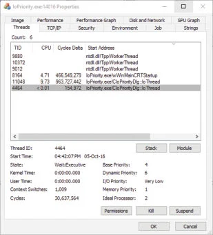
- Process Monitor を起動し、
IoPriority.exeに絞り込んで実験を繰り返します。各 I/O の優先度ヒントを確認できます。このアプリケーションでは、各スレッドが_File_に自分のスレッド ID を付けた名前のファイルから読み取ります。
File_1への書き込みが見えるまでスクロールします。次の図のような出力になります。

- 図では
_File_7920宛ての I/O の優先度が Very Low です。「Time of Day」列と「Relative Time」列を見ると、要求の間隔が0.5秒になっています。アイドル I/O 方式が働いていることが分かります。
I/O 優先度の引き上げ回数を調べる
カーネルは、NtQuerySystemInformation の文書化されていない情報クラス SystemLowPriorityIoInformation を通じて、内部変数を公開します。
専用のアプリケーションを書かなくても、ローカルカーネルデバッガーでこの値を確認できます。対象の変数は次のとおりです。
IoLowPriorityReadOperationCountとIoLowPriorityWriteOperationCountIoKernelIssuedIoBoostedCountIoPagingReadLowPriorityCountとIoPagingWriteLowPriorityCountIoPagingReadLowPriorityBumpedCountとIoPagingWriteHighPriorityBumpedCountIoBoostedThreadedIrpCountとIoBoostedPagingIrpCountIoBlanketBoostCount
どの変数も32ビット値なので、カーネルデバッガーの dd で表示できます。
帯域幅予約（スケジュールされたファイル I/O）
一定の I/O スループットが必要なアプリケーションは、Windows の帯域幅予約を使えます。
たとえば、メディアプレーヤーは SetFileBandwidthReservation で、指定の速度でデバイスから読み取れるよう I/O システムに要求できます。
デバイスが指定の速度でデータを提供でき、既存の予約と両立する場合は、I/O システムが、要求をどれくらいの頻度とサイズで発行すべきかをアプリケーションに知らせます。
対象デバイスで帯域幅を予約したアプリケーションの要件を満たせる場合に限り、I/O システムはほかの要求も処理します。 図6-28は、同じファイルに発行された I/O を時系列に並べた模式図です。ほかのアプリケーションが使えるのは網掛けの時間帯だけです。 すでに帯域幅が使われていれば、新しい要求は次の周期まで待ちます。

帯域幅予約は、優先度順方式と同様にポートドライバーで実装します。そのため、利用できるのは IDE、SATA、USB の大容量記憶装置だけです。
コンテナ通知
ドライバーは IoRegisterContainerNotification で必要な通知クラスを選び、指定のイベントを非同期コールバックで受け取れます。
原著で扱う Windows に実装されているのは IoSessionStateNotification の一つです。
セッションの状態が次のように変わると、登録したコールバックを呼びます。
- セッションの作成または終了。
- 利用者によるセッションへの接続または切断。
- 利用者によるセッションへのログオンまたはログオフ。
特定のセッションに属するデバイスオブジェクトを指定すれば、そのセッションだけが通知対象になります。 グローバルなデバイスオブジェクトを指定するか、何も指定しなければ、システム全体の該当イベントを受け取れます。
この仕組みは、ターミナルサービスのプラグアンドプレイデバイスのリダイレクトで役立ちます。 たとえば、リモートの音声デバイスやプリンターを、接続先ホストの PnP マネージャーでもバス上のデバイスとして扱えます。 利用者が音声再生中にセッションを切断した場合、ドライバーは通知を受け、音声ストリームの転送を止めます。
Driver Verifier
Driver Verifier は、デバイスドライバーやほかのカーネルモードのコードによくある不具合を検出し、原因を切り分けるための仕組みです。 Microsoft は、自社のデバイスドライバーと、ベンダーが WHQL テストに提出するすべてのドライバーをこれで検査します。 Windows との互換性や、よくあるドライバーエラーがないことを確認するためです。 ユーザーモードには Application Verifier という対応するツールもあり、Windows 向けコードの品質改善に役立っています。本書では扱いません。
注：Driver Verifier は主に開発者がデバイスドライバーの不具合を見つけるためのものですが、クラッシュに対処するシステム管理者にも役立ちます。クラッシュ解析での使い方は Part 2 を参照してください。
メモリマネージャー、I/O マネージャー、HAL は、それぞれドライバーを検証する機能を備えています。
検証項目は Driver Verifier Manager（%SystemRoot%\System32\Verifier.exe）で設定します。
引数なしで実行すると、図6-29のウィザードが開きます。
コマンドラインでも検証の有効化、無効化、現在の設定の表示ができます。オプションの一覧を表示するには verifier /? を実行します。

Driver Verifier Manager は、検証項目を標準設定と追加設定に分けています。 厳密な区別ではありませんが、標準設定には、多くのドライバーのテストで選ぶべき項目が含まれます。追加設定には、あまり使われない項目や、特定の種類のドライバーに固有の項目が含まれます。 ウィザードの最初の画面で「Create Custom Settings」を選ぶと、図6-30のように、標準と追加の区分を示す列とともにすべての項目が表示されます。
どの項目を選んでも、Driver Verifier は対象ドライバーを監視し、不正な操作や境界条件での誤りを検出します。 たとえば、不正な IRQL でのカーネルプール関数の呼び出し、メモリの二重解放、スピンロックの不適切な解放、タイマーの解放漏れ、解放済みオブジェクトへの参照、20分を超えるシャットダウンの遅延、サイズ0のメモリ割り当て要求です。

Driver Verifier の設定は、レジストリの HKLM\SYSTEM\CurrentControlSet\Control\Session Manager\Memory Management キーに保存されます。
VerifyDriverLevel は、有効な検証項目を示すビットマスクです。
VerifyDrivers には、監視対象のドライバー名が入ります。
これらの値は、Driver Verifier Manager で検証対象を選ぶまでは存在しません。
すべてのドライバーを選ぶと VerifyDrivers はアスタリスク（*）になりますが、システムが大幅に遅くなるので避けてください。
設定によっては、検証を開始するために再起動が必要です。
起動の初期段階で、メモリマネージャーはレジストリを読み、検証するドライバーと有効な項目を調べます。
セーフモードでは、Driver Verifier の設定は無視されます。
検証対象が一つでも指定されている場合、カーネルはロードする各ドライバーの名前を対象リストと照合します。
一致すると VfLoadDriver が、ほかの内部関数 Vf* を呼び、ドライバーが参照する一部のカーネル関数を検証用の関数へ差し替えます。
たとえば ExAllocatePool を VerifierAllocatePool に差し替えます。
ウィンドウシステムのドライバー（Win32k.sys）も、同様の変更で検証用の関数を使います。
I/O に関する検証項目
I/O Verification
この項目を選ぶと、I/O マネージャーは検証対象のドライバー向けの IRP を特殊プールから割り当て、使用状況を追跡します。 不正なステータスを持つ IRP を完了した場合や、不正なデバイスオブジェクトを I/O マネージャーに渡した場合は、Driver Verifier がシステムを停止させます。
また、すべての IRP を監視し、非同期で完了する要求に正しく印を付けているか、I/O スタックロケーションを適切に管理しているか、デバイスオブジェクトを二重に削除していないかを検査します。 さらに、電源管理や WMI のテスト用 IRP を送り、デバイスの列挙順を変え、PnP や電源の IRP を完了する際のステータスを調整するといった負荷をランダムにかけます。 これにより、ディスパッチルーチンが不正なステータスを返すドライバーを見つけます。 デバイスの取り外しが保留中で、取り外しロックをまだ保持しているにもかかわらず、ロックを再初期化する誤りも検出します。
DMA Checking
DMA は、CPU を介さずにデバイスと物理メモリとの間でデータを転送するハードウェア機能です。 I/O マネージャーは、DMA 操作を始めて制御するための関数を提供します。 この項目は、これらの関数と、DMA 用に提供されるバッファーが正しく使われているかを検査します。
Force Pending I/O Requests
多くのデバイスでは非同期 I/O もすぐ完了するため、ドライバーが、完了を待つ必要のあるケースを正しく処理できない場合があります。
この項目を有効にすると、ドライバーが IoCallDriver を呼んだときに、I/O マネージャーがランダムに STATUS_PENDING を返し、後から完了する場合を再現します。
IRP Logging
ドライバーの IRP の使用状況を追跡し、WMI の情報として記録します。
WDK の Dc2wmiparser.exe で、WMI の記録をテキストファイルに変換できます。
保持するのはデバイスごとに20件で、新しい IRP が最も古い記録を上書きします。
再起動すると記録は消えるため、後で解析するなら再起動の前に変換してください。
メモリに関する検証項目
次の項目はメモリを検証します。一部は I/O にも関係します。
特殊プール
「Special Pool」を選ぶと、プール割り当ての境界に無効なページを置きます。 割り当て範囲の外を参照するとカーネルモードのアクセス違反でシステムが停止し、原因のドライバーを特定できます。 ドライバーがメモリを割り当てたり解放したりするときにも、追加の検査を行います。
この設定を有効にすると、プールの割り当てルーチンは Driver Verifier 用のカーネルメモリ領域を確保します。 Driver Verifier は対象ドライバーの割り当て要求を、通常のプールではなく、この特殊プールに振り分けます。 割り当てをページ境界まで切り上げ、その境界に無効なページを置きます。 これにより、ドライバーがバッファー末尾を越えて読み書きすると、メモリマネージャーがカーネルモードのアクセス違反を発生させます。
図6-31は、範囲の末尾を越えるアクセスを検出するため、特殊プールからドライバーに渡すバッファーの配置例です。

既定では末尾側の範囲外アクセスを検出します。
バッファーをページ末尾に置き、その前をランダムなパターンで埋めます。
Driver Verifier Manager では先頭より手前へのアクセスを検出する設定を選べませんが、レジストリの HKLM\SYSTEM\CurrentControlSet\Control\Session Manager\Memory Management に DWORD 値 PoolTagOverruns を追加し、0 に設定できます。
あるいは Gflags.exe の「Kernel Special Pool Tag」で、既定の「Verify End」の代わりに「Verify Start」を選べます。
先頭側を検査する場合、バッファーはページ末尾ではなく先頭に置かれます。
末尾側を検査する設定でも、先頭側への不正な書き込みをある程度検出できます。 ドライバーがバッファーを解放したとき、Driver Verifier はその手前に書いたパターンが変わっていないか調べます。 変化があれば、ドライバーがバッファーの先頭より手前に書き込んだことになります。
特殊プールは、割り当てと解放を行う際の IRQL が適切かも確認します。 たとえば DPC／ディスパッチレベル以上で、ページアウト可能なメモリを割り当てる誤りを検出します。
同じレジストリキーに DWORD 値 PoolTag を追加し、特殊プールを使う割り当てタグを指定することもできます。
ドライバーそのものを検証対象にしていなくても、割り当てのタグが指定値と一致すれば、特殊プールから割り当てます。
0x2a、つまりワイルドカード * を指定すると、十分な仮想メモリと物理メモリがある限り、ドライバーのすべての割り当てが特殊プールの対象になります。
空きページが不足すれば、通常のプールに戻ります。
プールの追跡
プールの追跡を有効にすると、メモリマネージャーはドライバーのアンロード時に、割り当てたメモリをすべて解放したか調べます。 未解放の割り当てがあればシステムを停止し、原因のドライバーを示します。 Driver Verifier Manager の「Pool Tracking」タブでは一般的なプール統計も確認できます。 ウィザードの最初の画面で「Display Information About the Currently Verified Drivers」を選び、次へ2回進むと表示されます。
カーネルデバッガーの !verifier でも、Driver Verifier Manager より詳しい情報を確認できます。
プールの追跡と特殊プールは、ExAllocatePoolWithTag のような明示的な割り当てだけでなく、内部でプールから割り当てる API も対象にします。
たとえば IoAllocateMdl、IoAllocateIrp などの IRP 割り当て関数、各種の Rtl 文字列 API、IoSetCompletionRoutineEx です。
プールの追跡では、クォータへの計上も検証します。
ExAllocatePoolWithQuotaTag は、割り当てたバイト数を現在のプロセスのプールクォータに計上します。
DPC は任意のプロセスのコンテキストで実行され得るため、DPC ルーチンからこの関数を呼ぶと、どのプロセスに計上されるか分かりません。
そこで、この項目は DPC ルーチンからの呼び出しを検査します。
Driver Verifier は、I/O が完了した後も固定されたままのメモリページを追跡することもできます。
この場合、停止コードは PROCESS_HAS_LOCKED_PAGES ではなく DRIVER_LEFT_LOCKED_PAGES_IN_PROCESS です。
後者では、原因のドライバーと、ページを固定した関数の両方が分かります。
Force IRQL Checking
デバイスドライバーのよくある不具合の一つは、IRQL が高いときに、ページアウト可能なデータやコードにアクセスすることです。
IRQL が DPC／ディスパッチレベル以上では、メモリマネージャーはページフォールトを処理できません。
対象のページがたまたま物理メモリにあれば、システムはこの誤りを検出できない場合があります。
一方、ページアウトされていれば、システムは IRQL_NOT_LESS_OR_EQUAL で停止します。現在の IRQL が、ページアウト可能なメモリへのアクセスに許されるレベル以下ではないという意味です。
「Force IRQL Checking」を選ぶと、この不具合を再現しやすくなります。
検証対象のドライバーが IRQL を引き上げるたびに、Driver Verifier は MiTrimAllSystemPagableMemory を使い、ページアウト可能なカーネルモードのコードとデータをシステムのワーキングセットから外します。
高い IRQL でそのメモリにアクセスすると違反が検出され、停止時に原因のドライバーが示されます。
もう一つのよくある誤りは、ページアウト可能なデータ構造に同期オブジェクトを置き、そのオブジェクトを待つことです。
ディスパッチャーは高い IRQL でアクセスするため、同期オブジェクトをページアウト可能なメモリに置くとシステムが停止するおそれがあります。
Driver Verifier は KTIMER、KMUTEX、KSPIN_LOCK、KEVENT、KSEMAPHORE、ERESOURCE、FAST_MUTEX の配置を検査します。
Low Resources Simulation
この項目を有効にすると、Driver Verifier は、検証対象のドライバーが行うメモリ割り当てをランダムに失敗させます。 以前は、カーネルメモリは常に確保でき、枯渇してもどうせシステムが停止するので対処は不要だと想定して書かれたドライバーが多くありました。
しかし、メモリ不足は一時的な場合もあり、モバイル端末では大型のマシンほどリソースに余裕がありません。 そのため、ドライバーはカーネルメモリ不足による割り当て失敗を正しく処理する必要があります。
ランダムな失敗の対象になるのは、ExAllocatePool*、MmProbeAndLockPages、MmMapLockedPagesSpecifyCache、MmMapIoSpace、MmAllocateContiguousMemory、MmAllocatePagesForMdl、IoAllocateIrp、IoAllocateMdl、IoAllocateWorkItem、IoAllocateErrorLogEntry、IoSetCompletionRoutineEx、およびプールから割り当てる各種の Rtl 文字列 API です。
カーネルの GDI 関数による一部の割り当ても失敗させます。完全な一覧は WDK のドキュメントを参照してください。
verifier.exe のコマンドラインオプションでは次の条件を変更できます。
- 割り当てが失敗する確率：既定では6％です。
- 対象のアプリケーション：既定ではすべてです。
- 対象のプールタグ：既定ではすべてです。
- 失敗を発生させるまでの待ち時間：既定では起動から7分です。メモリ不足がドライバーのロードを妨げるおそれのある、初期化の重要な時間帯を過ぎるまで待ちます。
待ち時間が過ぎると、Driver Verifier は検証対象のドライバーの割り当て呼び出しをランダムに失敗させます。 ドライバーが失敗を正しく処理しなければ、システムの異常停止として現れる可能性があります。
Systematic Low Resources Simulation
この項目も、カーネルや、ネットワークドライバーが使う Ndis.sys への一部の呼び出しを失敗させます。
ただし、失敗を発生させた箇所のコールスタックを調べ、ドライバーが正しく処理したスタックでは、同じ失敗を繰り返しません。
開発者は、報告された問題を一つずつ修正し、次の問題へ進めます。
コールスタックの検査には比較的コストがかかるので、この設定で複数のドライバーを同時に検証することは推奨されません。
使用中の構造体を含むメモリの解放
Driver Verifier のその他の検査項目には、使用中のシステム構造体を含むプール領域が解放されたことを検出するものがあります。 たとえば、次の誤りを検査します。
- 作業項目を残したまま解放：
IoQueueWorkItemでキューに入れた作業項目があるブロックを、ExFreePoolで解放する。 - リソースを残したまま解放：
ExDeleteResourceでERESOURCEを破棄する前に、ExFreePoolを呼ぶ。 - ルックアサイドリストを残したまま解放：
ExDeleteNPagedLookasideListまたはExDeletePagedLookasideListでリストを削除する前に、ExFreePoolを呼ぶ。
検証を有効にすると、個別には有効化も無効化もできない自動検査も行われます。 検出対象には次のような誤りがあります。
- 不適切なフラグを持つ MDL に対して、
MmProbeAndLockPagesやMmProbeAndLockProcessPagesを呼ぶ。たとえば、MmBuildMdlForNonPagedPoolで用意した MDL に対し、MmProbeAndLockPagesを呼ぶのは誤りです。 - 不適切なフラグを持つ MDL に対して
MmMapLockedPagesを呼ぶ。たとえば、すでにシステムアドレスへマップされた MDL や、固定されていない MDL を渡す場合です。 IoBuildPartialMdlで作った部分 MDL に対してMmUnlockPagesやMmUnmapLockedPagesを呼ぶ。- システムアドレスへマップされていない MDL に対して
MmUnmapLockedPagesを呼ぶ。 - イベントやミューテックスなどの同期オブジェクトを
NonPagedPoolSessionのメモリから割り当てる。
多くのドライバーでは、初めて Driver Verifier を使って動かした段階で不具合が見つかりました。 Driver Verifier は開発者の検証とデバッグに役立ち、Windows で動作するカーネルモードコード全体の品質改善につながっています。
プラグアンドプレイマネージャー
PnP マネージャーは、Windows がハードウェア構成の変化を認識し、対応するための主要コンポーネントです。 利用者はハードウェアの詳細や手動での設定方法を知らなくても、デバイスを追加、取り外しできます。 たとえば、稼働中の Windows ノート PC をドッキングステーションに接続すると、PnP マネージャーがドックの追加デバイスを自動で検出し、使えるようにします。
プラグアンドプレイには、ハードウェア、ドライバー、OS の協調が必要です。 バスに接続されたデバイスを列挙し識別するための業界標準が、Windows のプラグアンドプレイの基盤です。 たとえば USB 規格は、USB バス上のデバイスが自身を識別する方法を定めています。 この基盤の上で、Windows は次の機能を提供します。
- デバイスの自動認識：起動時に接続済みのデバイスを列挙し、稼働中にはデバイスの追加や取り外しを検出します。
- ハードウェアリソースの割り当て：PnP マネージャーは、デバイスが必要とする割り込み、I/O メモリ、I/O レジスタ、バス固有のリソースなどの要件を集めます。各デバイスが動作に必要なリソースを得られるよう、リソース調停で割り当てを決めます。起動時の割り当て後にデバイスが追加された場合は、その要件を満たすよう、既存の割り当てを変更できる必要があります。
- 適切なドライバーのロード：PnP マネージャーはデバイスの識別情報から、対応するドライバーがインストール済みか調べます。あれば I/O マネージャーにロードを指示します。なければ、カーネルモードの PnP マネージャーがユーザーモードの PnP マネージャーにインストールを依頼します。ドライバーを探す際に、利用者の操作が必要になる場合もあります。
- 構成変更の通知：アプリケーションやドライバーは、動作に必要なハードウェアが存在するか、追加されたか、取り外されたかを通知するよう要求できます。
- デバイス状態の保存：デバイス状態の保存先を提供し、システムのセットアップ、アップグレード、移行、オフラインイメージの管理に関与します。
- ネットワーク接続デバイスのサポート：専用のバスドライバーがネットワークをバスとして扱い、ネットワーク越しに利用するプロジェクターやプリンターなどのデバイスノードを作れます。
プラグアンドプレイの対応範囲
Windows はプラグアンドプレイの完全なサポートを目指しますが、どこまで使えるかは、接続したデバイスとインストール済みのドライバーによって決まります。 デバイスかドライバーが一つでも未対応なら、システム全体で使えるプラグアンドプレイ機能が制限されることがあります。 未対応のドライバーのために、別のデバイスが使えなくなる場合もあります。 表6-6に組み合わせごとの結果を示します。
| デバイス | 対応ドライバー | 非対応ドライバー |
|---|---|---|
| プラグアンドプレイ対応 | 全面的に利用可能 | 利用不可 |
| プラグアンドプレイ非対応 | 一部を利用できる場合がある | 利用不可 |
旧式の ISA サウンドカードのように、自動検出に対応しないデバイスがあります。 OS がハードウェアの物理的な接続先を把握できないため、ノート PC のドックからの取り外しや、スリープ、休止状態への移行などが許可されません。 ただし、対応するプラグアンドプレイドライバーを手動でインストールすれば、少なくとも PnP マネージャーの指示に従ってリソースを割り当てられます。
非対応のドライバーには、Windows NT 4 などで動いた旧式のドライバーが含まれます。 後の Windows でも動く場合がありますが、新しいデバイスを追加するために割り当ての変更が必要になっても、PnP マネージャーは旧式のドライバーが担当するデバイスのリソースを変更できません。 たとえば、あるデバイスが I/O メモリ範囲 A と B のどちらでも使え、起動時に A を割り当てたとします。 その後、A しか使えないデバイスを接続しても、PnP マネージャーは最初のデバイスのドライバーに B へ移るよう指示できません。 二つ目のデバイスは必要なリソースを取得できないため、システムで使えません。
旧式のドライバーは、スリープや休止状態への移行を妨げることもあります（後述の「電源マネージャー」を参照）。
デバイスの列挙
デバイスの列挙は、システムの起動時、休止状態からの復帰時、または明示的に指示されたときに行われます。 たとえば、デバイスマネージャーで「ハードウェア変更のスキャン」を選ぶと実行されます。 PnP マネージャーはデバイスツリーを作り、以前の列挙で保存したツリーがあれば比較します。 起動時や休止状態からの復帰時は、比較対象のツリーは空です。 新たに見つかったデバイスには適切なドライバーをロードし、取り外されたデバイスについてはドライバーに通知します。
列挙は、コンピューター全体を表す Root という仮想バスドライバーから始まります。
Root は、プラグアンドプレイに対応していないドライバーと HAL のバスドライバーとして働きます。
HAL はバスドライバーとして、マザーボードに直接接続されたデバイスや、バッテリーなどのシステムコンポーネントを報告します。
ただし、HAL が直接列挙するのではなく、セットアップ時にレジストリに記録されたハードウェア情報を使って、主バス（多くの場合は PCI バス）、バッテリー、ファンなどを検出します。
主バスのドライバーは、そのバスに接続されたデバイスを列挙します。 別のバスが見つかれば、PnP マネージャーはそのドライバーを初期化します。 新たに初期化されたドライバーは、さらに下位のバスや、そこに接続されたデバイスを検出できます。 すべてのデバイスを検出して構成するまで、列挙、必要に応じたドライバーのロード、下位バスの列挙を繰り返します。
バスドライバーからデバイスの報告を受けると、PnP マネージャーは、デバイス間の接続関係を表すツリーを内部で構築します。 ツリーの各ノードをデバイスノード（devnode）と呼びます。 各ノードには、デバイスを表すデバイスオブジェクトの情報と、PnP マネージャーが格納したほかのプラグアンドプレイ情報が入ります。 図6-32は、システムの主バスである PCI バスに、USB、ISA、SCSI の各バスが接続された例です。

デバイスマネージャーは、スタートメニューの「管理ツール」にある「コンピューターの管理」から開けます。 コントロールパネルの「システム」にあるリンクからも開けます。 既定ではシステムに存在するデバイスの一覧が表示されます。 「表示」メニューで「接続別デバイス」を選ぶと、デバイスツリー上の接続関係を確認できます（図6-33）。

カーネルデバッガーでデバイスツリーを調べる
デバイスマネージャーより詳細な情報は、カーネルデバッガーの !devnode で確認できます。
引数に 0 1 を指定すると、デバイスツリー内部の devnode 構造体が表示されます。
インデントはノード間の階層関係を表します。
lkd> !devnode 0 1 Dumping IopRootDeviceNode (= 0x85161a98) DevNode 0x85161a98 for PDO 0x84d10390 InstancePath is "HTREE\ROOT\0" State = DeviceNodeStarted (0x308) Previous State = DeviceNodeEnumerateCompletion (0x30d) DevNode 0x8515bea8 for PDO 0x8515b030 DevNode 0x8515c698 for PDO 0x8515c820 InstancePath is "Root\ACPI_HAL\0000" State = DeviceNodeStarted (0x308)
Previous State = DeviceNodeEnumerateCompletion (0x30d) DevNode 0x84d1c5b0 for PDO 0x84d1c738 InstancePath is "ACPI_HAL\PNP0C08\0" ServiceName is "ACPI" State = DeviceNodeStarted (0x308) Previous State = DeviceNodeEnumerateCompletion (0x30d) DevNode 0x85ebf1b0 for PDO 0x85ec0210 InstancePath is "ACPI\GenuineIntel_-_x86_Family_6_Model_15\_0" ServiceName is "intelppm" State = DeviceNodeStarted (0x308) Previous State = DeviceNodeEnumerateCompletion (0x30d) DevNode 0x85ed6970 for PDO 0x8515e618 InstancePath is "ACPI\GenuineIntel_-_x86_Family_6_Model_15\_1" ServiceName is "intelppm" State = DeviceNodeStarted (0x308) Previous State = DeviceNodeEnumerateCompletion (0x30d) DevNode 0x85ed75c8 for PDO 0x85ed79e8 InstancePath is "ACPI\ThermalZone\THM_" State = DeviceNodeStarted (0x308) Previous State = DeviceNodeEnumerateCompletion (0x30d) DevNode 0x85ed6cd8 for PDO 0x85ed6858 InstancePath is "ACPI\pnp0c14\0" ServiceName is "WmiAcpi" State = DeviceNodeStarted (0x308) Previous State = DeviceNodeEnumerateCompletion (0x30d) DevNode 0x85ed7008 for PDO 0x85ed6730 InstancePath is "ACPI\ACPI0003\2&daba3ff&2" ServiceName is "CmBatt" State = DeviceNodeStarted (0x308) Previous State = DeviceNodeEnumerateCompletion (0x30d) DevNode 0x85ed7e60 for PDO 0x84d2e030 InstancePath is "ACPI\PNP0C0A\1" ServiceName is "CmBatt" ...
各 devnode の InstancePath は、HKLM\SYSTEM\CurrentControlSet\Enum の下にある、そのデバイスの列挙用レジストリキーの名前です。
ServiceName は、HKLM\SYSTEM\CurrentControlSet\Services の下にある、ドライバーのレジストリキーに対応します。
割り込み、ポート、メモリなど、各 devnode に割り当てたリソースも表示するには、!devnode に 0 3 を指定します。
デバイススタック
PnP マネージャーが devnode を作る際、そのノードを構成する各層の管理と接続関係を表すために、ドライバーオブジェクトとデバイスオブジェクトが作られます。 この接続関係をデバイススタックと呼びます（「IRP がデバイススタックを通る流れ」を参照）。 デバイスオブジェクトとそれを担当するドライバーの組を、順に並べたものと考えられます。各スタックは下から上へ組み立てます。
図6-34（図6-6の再掲）は、同じ物理デバイスを管理する七つのデバイスオブジェクトで構成された devnode の例です。 各 devnode には少なくとも PDO と FDO の二つのデバイスオブジェクトがあり、ほかのオブジェクトが加わることもあります。

デバイススタックには、次のオブジェクトが含まれます。
- 物理デバイスオブジェクト（PDO）：バスドライバーが列挙中にバス上のデバイスを報告すると、PnP マネージャーの指示に従い、バスドライバーが作ります。デバイスへの物理インターフェイスを表し、必ずスタックの最下層にあります。
- 下位フィルターのフィルターデバイスオブジェクト（FiDO）：必要に応じて、一つ以上を PDO と FDO の間に置きます。「下位」は FDO を基準とした位置です。たとえばバスフィルターは、FDO からバスドライバーへ向かう IRP を途中で受け取れます。
- 機能デバイスオブジェクト（FDO）：検出したデバイスを管理するため、PnP マネージャーがロードした機能ドライバーが、一つだけ作ります。デバイスの論理インターフェイスを表し、機能ドライバーはデバイスの機能を最も詳しく把握しています。FDO が表すデバイスに別のデバイスが接続される場合、機能ドライバーはバスドライバーも兼ねられます。通常は、アプリケーションやほかのドライバーがデバイスを開いて操作できるよう、対応する PDO にデバイスインターフェイス（実質的には名前）を登録します。機能ドライバーをクラスドライバーまたはポートドライバーとミニポートドライバーに分け、FDO の I/O を分担する場合もあります。
- 上位フィルターの FiDO：必要に応じて、一つ以上を FDO の上に置きます。FDO 宛ての IRP を、FDO より先に受け取ります。
注：図6-34では役割を区別しやすいように名前を分けていますが、すべて DEVICE_OBJECT 構造体のインスタンスです。
デバイススタックは I/O マネージャーの階層化機能を使い、下から上へ組み立てます。 IRP は上から下へ流れますが、「IRP がデバイススタックを通る流れ」で説明したように、どの層でも完了させられます。
デバイススタックを構成するドライバーの特定
PnP マネージャーは、表6-7に示す三つのレジストリキーとそのサブキーから、デバイススタックを構成するドライバーを特定します。
表の CCS は CurrentControlSet の略です。
| レジストリキー | 略称 | 内容 |
|---|---|---|
HKLM\System\CCS\Enum | ハードウェアキー | 認識済みのハードウェアデバイスの設定。 |
HKLM\System\CCS\Control\Class | クラスキー | デバイスの種類ごとの設定。 |
HKLM\System\CCS\Services | ソフトウェアキー | ドライバーの設定。 |
バスドライバーは、列挙で新しい物理デバイスを見つけると、それを表す PDO を作ります。
バス上で変化を検出したことは、IoInvalidateDeviceRelations に PDO と列挙値 BusRelations を渡して PnP マネージャーに知らせます。関数の詳細は WDK を参照してください。
PnP マネージャーは IRP を使い、バスドライバーにデバイスの識別子を問い合わせます。
識別子はバスごとに形式が異なります。 たとえば USB デバイスでは、製造元を表すベンダー ID（VID）と、製造元が製品に割り当てた製品 ID（PID）を使います。 PCI デバイスでは、ベンダー ID と、そのベンダー内で機種を一意に識別するデバイス ID を使います。任意の項目もあり、形式の詳細は WDK を参照してください。 プラグアンドプレイでは、これらを組み合わせたものをデバイス IDと呼びます。 同じ機種の個体を区別するため、PnP マネージャーはインスタンス IDも問い合わせます。 この ID は、USB ポートのようなバス上の相対位置や、シリアル番号のようなグローバルに一意の識別情報を表します。
PnP マネージャーは、デバイス ID とインスタンス ID を組み合わせたデバイスインスタンス ID（DIID）を使って、表6-7のハードウェアキーの下からデバイスのキーを探します。
サブキーの形式は <列挙子>\<デバイス ID>\<インスタンス ID> です。
列挙子はバスドライバーを、デバイス ID は機種を、インスタンス ID は同じ機種の個体を識別します。
図6-35は Intel のディスプレイアダプターの列挙用サブキーです。
デバイスの説明のほかに、インストール時に INF ファイルから取得した Service や ClassGUID が入り、ドライバーの特定に使われます。
Serviceの値に対応するソフトウェアキーを調べると、ImagePathにドライバーの SYS ファイルのパスがあります。図6-36では、図6-35のigfxに対応するサブキーを示します。PnP マネージャーは未ロードならドライバーをロードし、デバイス追加ルーチンを呼びます。ドライバーはそのルーチンで FDO を作ります。LowerFiltersがあれば、下位フィルターとしてロードするドライバー名が複数文字列値に入っています。各ドライバーの設定はソフトウェアキーにあり、PnP マネージャーはServiceのドライバーより先にロードします。

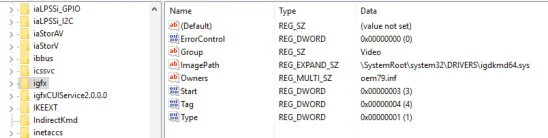
UpperFiltersがあれば、LowerFiltersと同様に、ソフトウェアキーで参照するドライバー名が並んでいます。PnP マネージャーはServiceのドライバーをロードした後、これらを上位フィルターとしてロードします。ClassGUIDは、ディスプレイ、キーボード、ディスクといったデバイスの種類を表し、表6-7のクラスキーの下にあるサブキーを指します。このサブキーの設定は、その種類のデバイスのドライバーすべてに適用されます。LowerFiltersやUpperFiltersがあれば、個別デバイスのハードウェアキーにある同名の値と同様に扱います。そのため、たとえば機種やベンダーにかかわらず、キーボード全体に同じ上位フィルターをロードできます。
図6-37は、キーボードのクラスキーです。
表示名は「Keyboard」ですが、クラスを識別するのは GUID で、その値はインストール用 INF ファイルで指定されます。
UpperFilters には、すべてのキーボードの devnode にロードされる、システム標準のキーボードクラスドライバーが記録されています。
また、IconPath は、デバイスマネージャーでキーボードの種類に使うアイコンを指定します。

一つの devnode のドライバーは、次の順にロードされます。
- バスドライバーをロードし、PDO を作ります。
- ハードウェアのインスタンスキーにある下位フィルターを、複数文字列値の記載順にロードし、各 FiDO を作ります。
- 該当するクラスキーにある下位フィルターを、記載順にロードし、各 FiDO を作ります。
Serviceにあるドライバーをロードし、FDO を作ります。- ハードウェアのインスタンスキーにある上位フィルターを、記載順にロードし、各 FiDO を作ります。
- 該当するクラスキーにある上位フィルターを、記載順にロードし、各 FiDO を作ります。
複合機や、カメラと音楽プレーヤーを内蔵した携帯電話のように、物理デバイス一つに複数の機能がある場合、Windows は devnode にコンテナー IDを関連付けられます。 コンテナー ID は物理デバイスの個体ごとに一意の GUID です。 その機器の各機能を表す devnode は、図6-38のように同じコンテナー ID を共有します。
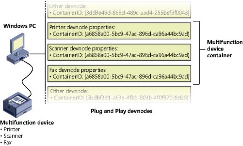
インスタンス ID と同じように、コンテナー ID も対象のハードウェアのバスドライバーが報告するプロパティです。 デバイスの列挙時には、同じ PDO に関連付けられたすべての devnode がその ID を共有します。 Windows は PnP-X、Bluetooth、USB など多くのバスを標準でサポートするため、大半のドライバーはバス固有の ID を返すだけで済みます。Windows がその値からコンテナー ID を生成します。 ほかの種類のデバイスやバスでは、ドライバーがソフトウェアで独自の ID を生成できます。
ドライバーがコンテナー ID を提供しない場合でも、バスの接続構成を ACPI などで問い合わせられれば、Windows はどのデバイスが同じ機器に属するかを推定できます。 あるデバイスが別のデバイスの子か、取り外しや稼働中の抜き差しが可能か、マザーボード上の内部部品とは違って利用者が手を触れられるかを手掛かりに、複数の機能を持つ機器に対応したコンテナー ID を割り当てます。
このグループ化の効果は、コントロールパネルの「デバイスとプリンター」で確認できます。 複合機のスキャナー、プリンター、FAX を別々に並べるのではなく、一つの項目として表示できます。 図6-39では、HP 6830 の三つの機能が一台の機器として表示されています。

デバイスマネージャーで devnode の詳細を調べる
デバイスマネージャーでデバイスのプロパティを開き、「詳細」タブを選ぶと、デバイスインスタンス ID、ハードウェア ID、サービス名、フィルター、電源管理機能などを確認できます。 次の画面は、ドロップダウンリストを開き、表示できる情報の種類を確認した例です。
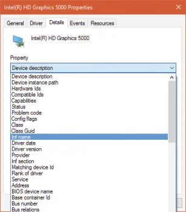
ドライバーによるプラグアンドプレイのサポート
プラグアンドプレイに対応するドライバーは、プラグアンドプレイのディスパッチルーチン（IRP_MJ_PNP）、電源管理のディスパッチルーチン（IRP_MJ_POWER）、デバイス追加ルーチンを実装します。
電源管理については後述の「電源マネージャー」を参照してください。
バスドライバーが対応する要求は、機能ドライバーやフィルタードライバーが扱う要求とは異なります。
たとえば、起動時に PnP マネージャーがデバイスを列挙するときは、PnP IRP でバスドライバーに問い合わせ、それぞれのバス上で見つかったデバイスの情報を取得します。
機能ドライバーとフィルタードライバーは、デバイス追加ルーチンで管理の準備をしますが、まだハードウェアとは通信しません。
プラグアンドプレイのディスパッチルーチンに、PnP マネージャーからデバイスの開始要求（マイナーコード IRP_MN_START_DEVICE）が届くまで待ちます。
PnP マネージャーは、要求を送る前にリソース調停を行い、デバイスへの割り当てを決めます。
開始要求には割り当ての情報が含まれ、受け取ったドライバーは、指定されたリソースを使うようにデバイスを構成します。
開始が済む前にアプリケーションが開こうとすると、デバイスが存在しないことを示すエラーが返ります。
開始後も、PnP マネージャーはデバイスの取り外しやリソースの再割り当てに必要な要求を送れます。 たとえば、利用者がタスクバーの通知領域の USB アイコンから図6-40の取り外しツールを開き、USB フラッシュメモリの取り出しを指示したとします。 PnP マネージャーは、そのデバイスの PnP 通知に登録したアプリケーションへ、取り外しの可否を問い合わせます。 通常、アプリケーションはハンドルを指定して通知に登録し、この通知を受けるとハンドルを閉じます。
取り外しに反対するアプリケーションがなければ、PnP マネージャーはデバイスを担当するドライバーに IRP_MN_QUERY_REMOVE_DEVICE を送ります。
ドライバーは取り外しを拒否することも、保留中の I/O を完了させ、その後に届く要求を拒否し始めることもできます。
ドライバーが同意し、開いているハンドルが残っていなければ、PnP マネージャーは IRP_MN_REMOVE_DEVICE を送り、デバイスへのアクセスを停止し、そのために割り当てたリソースを解放するよう求めます。
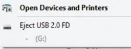
デバイスのリソースを再割り当てする場合、PnP マネージャーはまず IRP_MN_QUERY_STOP_DEVICE を送り、動作を一時停止できるか問い合わせます。
ドライバーはデータの消失や破損につながるなら拒否し、問題がなければ同意します。
同意した場合は、保留中の I/O を完了させ、途中で中止してやり直すことのできない新たな I/O は始めません。
通常は新たな要求をキューに入れ、アクセス中のアプリケーションが再割り当てを意識しなくて済むようにします。
次に PnP マネージャーは IRP_MN_STOP_DEVICE を送り、停止後に別のリソースを割り当てるよう指示し、再度デバイスの開始要求を送れます。
これらの要求は、デバイスの状態を図6-41の規則に従って変化させます。
図は機能ドライバーの状態機械を示します。バスドライバーの状態機械はさらに複雑です。
各遷移に付いた名前は、マイナー IRP の定数から IRP_MN_ を除いたものです。
まだ説明していない要求に IRP_MN_SURPRISE_REMOVAL があります。
たとえば、取り外しツールを使わずに PCMCIA カードを抜いた場合や、デバイスが故障した場合に送られます。
デバイスはもう接続されていないため、ドライバーはただちにアクセスをすべてやめ、保留中の I/O をキャンセルします。

プラグアンドプレイドライバーのインストール
ドライバーがインストールされていないデバイスに出会うと、PnP マネージャーはユーザーモードの PnP マネージャーに処理を任せます。
起動中に検出した場合は devnode を作りますが、ユーザーモードの PnP マネージャーが起動するまでロードを延期します。
このサービスは、通常の Svchost.exe プロセスにホストされる Umpnpmgr.dll で実装されています。
図6-42はドライバーのインストールに関わるコンポーネントを示します。 濃い色は通常システムが提供するコンポーネント、薄い色はドライバーのインストールファイルに含まれるコンポーネントです。 まずバスドライバーが列挙したデバイスのデバイス ID を PnP マネージャーに報告します（1）。 PnP マネージャーは対応する機能ドライバーがあるかレジストリを調べ、見つからなければ、そのデバイス ID をユーザーモードの PnP マネージャーに通知します（2）。
ユーザーモードの PnP マネージャーは、まず利用者の操作なしでインストールを試みます。
操作を求めるダイアログが必要で、ログオン中の利用者に管理者権限があれば、Rundll32.exe でハードウェアのインストールウィザード（%SystemRoot%\System32\Newdev.dll）を実行します（3）。
この Rundll32.exe は、従来の .cpl 形式のコントロールパネル項目もホストするプログラムです。
操作が必要なのに管理者権限がないか、誰もログオンしていなければ、権限を持つ利用者がログオンするまで延期します。
ウィザードは Setupapi.dll と構成マネージャーの CfgMgr32.dll の API を使い、デバイスに対応するドライバーの INF ファイルを探します。
ベンダーの INF を収録したインストールメディアを挿入するよう求める場合もあれば、Windows に同梱されたドライバーや Windows Update からダウンロードしたドライバーを保持するドライバーストア（%SystemRoot%\System32\DriverStore）に適切な INF が見つかる場合もあります。
インストールは二段階です。まずサードパーティーのドライバー開発元が、ドライバーパッケージをドライバーストアに取り込みます。
次にシステムが、%SystemRoot%\System32\Drvinst.exe を通じて、ドライバーを実際にインストールします。

新しいデバイスのドライバーを探す際には、バスドライバーからハードウェア ID と互換 ID のリストを取得します。 互換 ID は、ハードウェア ID より広い種類の機器を表します。 たとえば、あるメーカーの USB マウスに独自のボタンがあっても、専用ドライバーがなければ、汎用マウスの互換 ID に対応する Windows 標準ドライバーで、基本機能だけは利用できます。
これらの ID は、INF でそのハードウェアを識別する方法を列挙したものです。 リストでは、ハードウェアを最も詳しく特定する ID が先に来ます。 複数の INF が一致した場合は、次の優先順位で選びます。
- より具体的に一致するものを優先します。
- デジタル署名のある INF を、署名のないものより優先します。
- 署名のある INF 同士なら、新しいものを優先します。
注：互換 ID で一致した場合は、機器に新しいドライバーが付属している可能性を考慮し、ウィザードがメディアの挿入を求めることがあります。
INF ファイルは機能ドライバーのファイルの場所を示し、レジストリの列挙キーとクラスキーを設定し、必要なファイルをコピーする手順を記述します。 クラスまたはデバイスの共同インストーラー DLL を起動するよう、ウィザードに指示する場合もあります（4）。 共同インストーラーは、デバイス設定用のダイアログを表示するなど、クラスや機器に固有の処理を行います。 最後に、devnode を構成するドライバーがロードされると、デバイススタックが組み立てられます（5）。
キーボードドライバーの INF ファイルを調べる
INF を持つドライバーやソフトウェアをインストールすると、システムは INF を %SystemRoot%\Inf へコピーします。
キーボードクラスドライバーの Keyboard.inf は常にあります。
メモ帳で開くと、次のように表示されます。セミコロン以降はコメントです。
;
; KEYBOARD.INF -- This file contains descriptions of Keyboard class devices
;
;
; Copyright (c) Microsoft Corporation. All rights reserved.
[Version]
Signature ="$Windows NT$"
Class =Keyboard
ClassGUID ={4D36E96B-E325-11CE-BFC1-08002BE10318}
Provider =%MSFT%
DriverVer=06/21/2006,10.0.10586.0
[SourceDisksNames]
3426=windows cd
[SourceDisksFiles]
i8042prt.sys = 3426
kbdclass.sys = 3426
kbdhid.sys = 3426
...
INF は従来の INI 形式で、角括弧で囲んだセクション名の下に、キーと値を等号で結んだ行が並びます。 先頭から順番に「実行」するのではなく、一部の値が次に処理するセクションの名前を指す、ツリーに近い構造です。詳細は WDK を参照してください。
.sys を検索すると、ユーザーモードの PnP マネージャーに i8042prt.sys と kbdclass.sys のインストールを指示するセクションが見つかります。
... [i8042prt_CopyFiles] i8042prt.sys,,,0x100 [KbdClass.CopyFiles] kbdclass.sys,,,0x100 ...
インストール前に、ユーザーモードの PnP マネージャーは、システムのドライバー署名ポリシーを確認します。
未署名のドライバーを遮断するか、警告を出す設定なら、ドライバーのデジタル署名を含むカタログ（拡張子 .cat）の場所を指す項目が、INF にあるか調べます。
Microsoft の WHQL は、Windows に同梱するドライバーとハードウェアベンダーから提出されたドライバーを試験します。 合格したドライバーには Microsoft が署名します。 具体的には、実行イメージを含むドライバーファイルを表すハッシュ値を求め、Microsoft のドライバー署名用秘密鍵で署名します。 署名付きのハッシュを保存したカタログは、Windows のインストールメディアに含めるか、ドライバーに同梱できるよう提出元のベンダーに返します。
カタログファイルを確認する
カタログを含むドライバーなどをインストールすると、Windows はカタログを %SystemRoot%\System32\Catroot 以下のディレクトリにコピーします。
エクスプローラーで開くと、.cat ファイルを含むサブディレクトリがあります。
たとえば Nt5.cat と Nt5ph.cat には、Windows のシステムファイルの署名とページのハッシュが格納されています。
カタログを開くと、二つのタブを持つダイアログが表示されます。 「General」にはカタログの署名の情報、「Security Catalog」には、そのカタログで署名された各コンポーネントのハッシュが表示されます。 次は Intel のオーディオドライバーのカタログで、SYS ファイルのハッシュを表示した例です。 残りのハッシュは、ドライバーに同梱された補助 DLL に対応します。

インストール時には、ユーザーモードの PnP マネージャーがカタログから署名を取り出し、Microsoft のドライバー署名用公開鍵で検証します。 署名が示すハッシュと、インストールしようとしているファイルから計算したハッシュが一致すれば、そのドライバーは WHQL の試験に合格したものと確認できます。 検証に失敗した場合は、システムの署名ポリシーに従い、インストールを中止する、未署名だと利用者に警告する、または警告なしでインストールする、のいずれかになります。
注：セットアッププログラムが直接レジストリを設定してシステムへコピーするドライバーや、アプリケーションが動的にロードするドライバーには、PnP マネージャーの署名ポリシーは適用されません。 代わりに、Part 2 の第8章で説明するカーネルモードのコード署名ポリシーで検査します。 PnP マネージャーが自身のポリシーに照らして検証するのは、INF でインストールするドライバーだけです。
注：ユーザーモードの PnP マネージャーは、インストールしようとしているドライバーが Windows Update の管理する保護対象ドライバーのリストにあるかも確認します。 互換性の問題や不具合が知られているドライバーはこのリストに追加され、インストールが阻止されます。その際、利用者に警告が表示されます。
ドライバーのロードとインストール
前節で説明したハードウェア用ドライバーの大半は、PnP マネージャーが必要に応じてロードします。 担当するデバイスがシステムに追加されるまではロードせず、担当するすべてのデバイスが取り外されるとアンロードします。
レジストリのソフトウェアキーには、デバイスドライバーと Windows サービスの設定が入ります。 サービスは同じキーで管理されますが、ユーザーモードのプログラムであり、カーネルドライバーとは別です。ただし、サービスコントロールマネージャーはどちらも起動できます。 以下ではドライバーを扱います。サービスについては Part 2 の第9章を参照してください。
ドライバーのロード
ソフトウェアキー（HKLM\System\CurrentControlSet\Services）のサブキーには、ドライバーまたはサービスの固定的な設定が入ります。
たとえば、PnP ドライバーのロードで説明した ImagePath です。
図6-36にドライバーのキーの例を、表6-8に主な値を示します。完全な一覧は Part 2 の第9章を参照してください。
Start は、ドライバーまたはサービスをロードする段階を指定します。
この設定に関して、デバイスドライバーとサービスには二つの違いがあります。
- ブート開始（0）またはシステム開始（1）を指定できるのはデバイスドライバーだけです。これらの段階ではまだユーザーモードがなく、サービスはロードできません。
- デバイスドライバーは
GroupとTag（表6-8には記載なし）で、起動の同じ段階におけるロードの順序を制御できます。一方、サービスとは異なり、DependOnGroupやDependOnServiceは指定できません（Part 2 の第9章を参照）。
| 値の名前 | 意味 |
|---|---|
ImagePath | ドライバーのイメージファイル（SYS）へのパスです。 |
Type | キーがサービスとドライバーのどちらを表すかを指定します。1はドライバー、2はファイルシステムドライバーまたはフィルタードライバー、16（0x10）と32（0x20）はサービスです。詳細は Part 2 の第9章を参照してください。 |
Start | ドライバーをロードする時期です。
|
Part 2 の起動とシャットダウンの章では、起動の各段階を説明しています。
Start が0なら OS のローダーが、1ならエグゼクティブのサブシステムが初期化を終えた後に I/O マネージャーがドライバーをロードします。
I/O マネージャーは、同じ起動段階では、ロード順にドライバーの初期化ルーチンを呼び出します。
Windows サービスと同様に、ドライバーはレジストリキーの Group で所属グループを指定します。
同じ起動段階でグループをロードする順序は、HKLM\SYSTEM\CurrentControlSet\Control\ServiceGroupOrder の List で決まります。
グループ内の順序は Tag で指定できます。
I/O マネージャーは各グループのドライバーを Tag に従って並べ、タグがないものは末尾に置きます。
ただし、タグの数値が小さいものから初期化するとは限りません。
タグの優先順は HKLM\SYSTEM\CurrentControlSet\Control\GroupOrderList で指定できるため、数値の大小と異なる順序で初期化できます。
注：Group と Tag は初期の Windows NT からある仕組みで、実際にタグが使われることはまれです。大半のドライバーは、NDIS.sys などリンク先のカーネルライブラリを除き、ほかのドライバーに依存しない設計が望まれます。
Start の値は、次の指針に従って選びます。
- プラグアンドプレイ非対応のドライバーは、ロードする起動段階に合わせて設定します。
- ブートローダーによるロードが必要なドライバーは、プラグアンドプレイへの対応にかかわらず、ブート開始（0）を指定します。システムのバスドライバーや、起動に使うファイルシステムのドライバーが該当します。
- 起動自体には不要でも、システムのバスドライバーでは列挙できないデバイスを検出するドライバーは、システム開始（1）を指定します。たとえばシリアルポートドライバーは、セットアップで検出してレジストリに記録した標準の PC シリアルポートを、PnP マネージャーに報告します。
- 起動時に必要のないプラグアンドプレイ非対応のドライバーやファイルシステムドライバーは、自動開始（2）を指定します。たとえば Multiple UNC Provider（MUP）は、
\\RemoteComputerName\SomeShareのような UNC パスでリモートリソースを扱えるようにします。 - システムの起動に不要なプラグアンドプレイドライバーは、要求時開始（3）を指定します。ネットワークアダプターのドライバーなどが該当します。
プラグアンドプレイドライバーや列挙可能なデバイスのドライバーで Start が担うのは、起動に不可欠なものを OS のローダーにロードさせることだけです。
それ以外のロード順は、PnP マネージャーのデバイス列挙で決まります。
ドライバーのインストール
プラグアンドプレイドライバーのインストールには、扱えるハードウェアのデバイス ID、ファイルのコピー手順、レジストリ値の設定を記述した INF ファイルが必要です。 ファイルシステムドライバー、ファイルシステムフィルター、ネットワークフィルターなども INF を必要とし、それぞれの種類に固有の値を記述します。
Process Explorer が使うような、ハードウェアに対応しないソフトウェア専用ドライバーは、INF を使っても使わなくてもインストールできます。
INF を使わない場合は、CreateService またはそれを内部で使う sc.exe などを利用できます。
管理者権限で動く Process Explorer は、実行ファイルのリソースからドライバーを取り出し、この方法でインストールします。
CreateService は、サービスにもドライバーにも使えます。引数でどちらをインストールするか、Start の値などを指定します。詳しくは Windows SDK のドキュメントを参照してください。
インストール後に StartService を呼ぶとロードされ、ドライバーの場合は通常どおり DriverEntry が呼ばれます。
ソフトウェア専用ドライバーは通常、クライアントが知っている名前でデバイスオブジェクトを作ります。
たとえば Process Explorer は、ドライバーが作った PROCEXP152 を CreateFile で開き、DeviceIoControl などで要求を送ります。I/O マネージャーはその要求を IRP に変換します。
図6-43は、Process Explorer を初めて管理者権限で実行した際に作られた \GLOBAL?? のシンボリックリンクを、Sysinternals の WinObj で表示したものです。
ユーザーモードのクライアントは、このディレクトリの名前を使えます。
リンク先は \Device の実際のデバイスオブジェクトです。この例では両者が同名ですが、同じ名前である必要はありません。

Windows Driver Foundation
Windows Driver Foundation（WDF）は、プラグアンドプレイや電源管理の IRP を正しく処理するなど、複数のドライバーに共通する作業を簡単にする開発フレームワークです。 Kernel-Mode Driver Framework（KMDF）と User-Mode Driver Framework（UMDF）からなります。 WDF のソースコードは GitHub で公開されています。 Windows 7 以降での KMDF と UMDF の対応状況を、それぞれ表6-9と表6-10に示します。
| バージョン | 提供元 | 同梱される Windows | ドライバーが動作する OS |
|---|---|---|---|
| 1.9 | Windows 7 WDK | Windows 7 | Windows XP 以降 |
| 1.11 | Windows 8 WDK | Windows 8 | Windows Vista 以降 |
| 1.13 | Windows 8.1 WDK | Windows 8.1 | Windows 8.1 以降 |
| 1.15 | Windows 10 WDK | Windows 10 | Windows 10、Windows Server 2016 |
| 1.17 | Windows 10 バージョン1511 WDK | Windows 10 バージョン1511 | Windows 10 バージョン1511以降、Windows Server 2016 |
| 1.19 | Windows 10 バージョン1607 WDK | Windows 10 バージョン1607 | Windows 10 バージョン1607以降、Windows Server 2016 |
| バージョン | 提供元 | 同梱される Windows | ドライバーが動作する OS |
|---|---|---|---|
| 1.9 | Windows 7 WDK | Windows 7 | Windows XP 以降 |
| 1.11 | Windows 8 WDK | Windows 8 | Windows Vista 以降 |
| 2.0 | Windows 8.1 WDK | Windows 8.1 | Windows 8.1 以降 |
| 2.15 | Windows 10 WDK | Windows 10 | Windows 10 以降、Windows Server 2016 |
| 2.17 | Windows 10 バージョン1511 WDK | Windows 10 バージョン1511 | Windows 10 バージョン1511以降、Windows Server 2016 |
| 2.19 | Windows 10 バージョン1607 WDK | Windows 10 バージョン1607 | Windows 10 バージョン1607、Windows Server 2016 |
第2章「システムアーキテクチャ」で紹介したユニバーサルドライバーは、Windows 10 で導入されました。 IoT Core、Mobile、デスクトップなどの複数のエディションで実装されている、共通のデバイスドライバーインターフェイス（DDI）を使います。 KMDF、UMDF 2.x、WDM のいずれでも作成でき、Visual Studio では「Target Platform」を「Universal」に設定します。 ユニバーサルドライバーでは使えない DDI があると、コンパイラーが指摘します。
UMDF 1.x は COM ベースで、C でオブジェクトを扱う KMDF とは異なる開発モデルを使っていました。 UMDF 2 は KMDF とほぼ同じ API にそろえられ、WDF ドライバーの開発コストが下がりました。 必要になれば、UMDF 2.x のドライバーを比較的少ない変更で KMDF に移行できます。 本書では UMDF 1.x を扱いません。詳細は WDK を参照してください。
以降では、動作する OS の違いにかかわらず、基本的に一貫した動作をする KMDF と UMDF を説明します。
Kernel-Mode Driver Framework
第2章では WDF の概要を説明しました。 ここでは、カーネルモード側を担う KMDF の主な構成と機能を説明します。 全体の詳細は Windows Driver Kit のドキュメントを参照してください。
注：以下の説明の大部分は UMDF 2.x にも当てはまります。違いは次節で説明します。
KMDF ドライバーの構造と動作
標準的な I/O 処理と IRP の操作を行う WDM 準拠のドライバーなら、通常は KMDF を使えます。 一方、Windows カーネルの API を直接使わず、既存のポートドライバーやクラスドライバーのライブラリを呼ぶドライバーには適していません。 これらは、I/O を処理する WDM ドライバーにコールバックを提供するだけだからです。 ポートドライバーやクラスドライバーに依存せず、自前のディスパッチ関数を持つ場合は、IEEE 1394、ISA、PCI、PCMCIA、SD クライアント（SD ストレージデバイス用）のドライバーでも使えます。
KMDF は WDM を抽象化しますが、基本構造は前述のドライバーと同じです。中心となるルーチンは次のとおりです。
- 初期化ルーチン：ほかのドライバーと同じく、
DriverEntryがドライバーを初期化します。KMDF ドライバーはここでフレームワークを初期化し、ドライバー自身の設定や、フレームワークへの登録を行います。プラグアンドプレイに対応しない場合は、ここで最初のデバイスオブジェクトを作ります。 - デバイス追加ルーチン：KMDF は、後述するイベントとコールバックで動作します。PnP デバイスで中心となるのは
EvtDriverDeviceAddです。カーネルの PnP マネージャーが担当デバイスを列挙すると通知を受けます。 EvtIo*ルーチン：一つ以上のコールバックを用意し、WDM のディスパッチルーチンと同様に、デバイスのキューから特定の種類の I/O 要求を処理します。通常はドライバーが一つ以上のキューを作り、KMDF がそこへ要求を入れます。キューは、要求の種類とディスパッチ方法に応じて設定できます。
最も単純な KMDF ドライバーでは、初期化ルーチンとデバイス追加ルーチンだけで足りる場合があります。 電源管理やプラグアンドプレイのイベントなど、大半の I/O に必要な汎用の処理をフレームワークが提供するためです。 KMDF のイベントとは、ドライバーが応答または関与できる実行時の状態を指します。 同期に使うイベントオブジェクトとは別で、フレームワーク内の仕組みです（同期については Part 2 の第8章を参照）。
ドライバーの動作に欠かせないイベントや、固有の処理が必要なイベントには、コールバックを登録します。
それ以外は、KMDF の既定の処理に任せられます。
たとえば取り出しイベント（EvtDeviceEject）では、コールバックを用意して取り出しに対応するか、対応していないことを利用者に知らせる既定の処理に任せます。
ただし、既定の処理がないイベントにはコールバックが必要です。例として、プラグアンドプレイドライバーの基本となる EvtDriverDeviceAdd があります。
KMDF と UMDF 2 のドライバーを表示する
Debugging Tools for Windows に付属する拡張機能 Wdfkd.dll には、KMDF ドライバーやデバイスをデバッグ、分析するコマンドが多数あります。
標準の WDM 向けの拡張機能だけでは、WDF 固有の情報を取得できない場合があります。
インストール済みの KMDF ドライバーは、!wdfkd.wdfldr で確認できます。
次の出力は、32 ビット版 Windows 10 が動く Hyper-V 仮想マシンで、標準ドライバーを表示した例です。
lkd> !wdfkd.wdfldr --------------------------------------------------------------- KMDF Drivers --------------------------------------------------------------- LoadedModuleList 0x870991ec ---------------------------------- LIBRARY_MODULE 0x8626aad8 Version v1.19 Service \Registry\Machine\System\CurrentControlSet\Services\Wdf01000 ImageName Wdf01000.sys ImageAddress 0x87000000 ImageSize 0x8f000 Associated Clients: 25 ImageName Ver WdfGlobals FxGlobals ImageAddress ImageSize umpass.sys v1.15 0xa1ae53f8 0xa1ae52f8 0x9e5f0000 0x00008000 peauth.sys v1.7 0x95e798d8 0x95e797d8 0x9e400000 0x000ba000 mslldp.sys v1.15 0x9aed1b50 0x9aed1a50 0x8e300000 0x00014000 vmgid.sys v1.15 0x97d0fd08 0x97d0fc08 0x8e260000 0x00008000 monitor.sys v1.15 0x97cf7e18 0x97cf7d18 0x8e250000 0x0000c000 tsusbhub.sys v1.15 0x97cb3108 0x97cb3008 0x8e4b0000 0x0001b000 NdisVirtualBus.sys v1.15 0x8d0fc2b0 0x8d0fc1b0 0x87a90000 0x00009000 vmgencounter.sys v1.15 0x8d0fefd0 0x8d0feed0 0x87a80000 0x00008000 intelppm.sys v1.15 0x8d0f4cf0 0x8d0f4bf0 0x87a50000 0x00021000
vms3cap.sys v1.15 0x8d0f5218 0x8d0f5118 0x87a40000 0x00008000 netvsc.sys v1.15 0x8d11ded0 0x8d11ddd0 0x87a20000 0x00019000 hyperkbd.sys v1.15 0x8d114488 0x8d114388 0x87a00000 0x00008000 dmvsc.sys v1.15 0x8d0ddb28 0x8d0dda28 0x879a0000 0x0000c000 umbus.sys v1.15 0x8b86ffd0 0x8b86fed0 0x874f0000 0x00011000 CompositeBus.sys v1.15 0x8b869910 0x8b869810 0x87df0000 0x0000d000 cdrom.sys v1.15 0x8b863320 0x8b863220 0x87f40000 0x00024000 vmstorfl.sys v1.15 0x8b2b9108 0x8b2b9008 0x87c70000 0x0000c000 EhStorClass.sys v1.15 0x8a9dacf8 0x8a9dabf8 0x878d0000 0x00015000 vmbus.sys v1.15 0x8a9887c0 0x8a9886c0 0x82870000 0x00018000 vdrvroot.sys v1.15 0x8a970728 0x8a970628 0x82800000 0x0000f000 msisadrv.sys v1.15 0x8a964998 0x8a964898 0x873c0000 0x00008000 WindowsTrustedRTProxy.sys v1.15 0x8a1f4c10 0x8a1f4b10 0x87240000 0x00008000 WindowsTrustedRT.sys v1.15 0x8a1f1fd0 0x8a1f1ed0 0x87220000 0x00017000 intelpep.sys v1.15 0x8a1ef690 0x8a1ef590 0x87210000 0x0000d000 acpiex.sys v1.15 0x86287fd0 0x86287ed0 0x870a0000 0x00019000 ---------------------------------- Total: 1 library loaded
UMDF 2.x のドライバーがロードされていれば、同じ一覧に表示されます。これは UMDF 2.x のライブラリの利点の一つです（後述の UMDF の節を参照）。
原著執筆時点の KMDF 1.x は、Wdf01000.sys に実装されています。
将来メジャーバージョンが2になれば、別のカーネルモジュール Wdf02000.sys に実装されると原著は説明しています。
このモジュールは1.xと共存でき、各モジュールは、そのバージョンを対象にビルドされたドライバーとともにロードされます。
こうして、異なるメジャーバージョン向けのドライバーが互いに影響せずに動作できます。
KMDF のオブジェクトモデル
KMDF はカーネルと同様、C で実装したオブジェクトモデルを持ち、プロパティ、メソッド、イベントを提供します。
一方、オブジェクトマネージャーは使いません。
KMDF が内部でオブジェクトを管理し、ドライバーにハンドルだけを公開して、実際のデータ構造は隠します。
種類ごとに、WdfDeviceCreate のような作成関数を含め、オブジェクトを操作するメソッドがあります。
オブジェクトのメンバーのうち、失敗しない操作向けの Get／Set API、または失敗し得る操作向けの Assign／Retrieve API でアクセスするものをプロパティと呼びます。
たとえば WdfInterruptGetInfo は、指定した割り込みオブジェクト（WDFINTERRUPT）の情報を返します。
カーネルオブジェクトの型がそれぞれ独立しているのに対し、KMDF のオブジェクトは一つの階層を構成し、大半の種類は親オブジェクトに関連付けられます。
ルートの WDFDRIVER はドライバー自体を記述する構造体で、I/O マネージャーの DRIVER_OBJECT に相当します。ほかのすべての KMDF 構造体はその子孫です。
WDFDEVICE は検出したデバイスのインスタンスを表し、WdfDeviceCreate で作ります。
WDM と I/O マネージャーで使う DEVICE_OBJECT に相当します。
KMDF がサポートする型は表6-11のとおりです。
| オブジェクト | 型 | 意味 |
|---|---|---|
| 子デバイスリスト | WDFCHILDLIST | デバイスに関連付けられた子 WDFDEVICE の一覧です。バスドライバーだけが使います。 |
| コレクション | WDFCOLLECTION | フィルターの対象となる複数の WDFDEVICE など、同種のオブジェクトの一覧です。 |
| 遅延プロシージャ呼び出し | WDFDPC | DPC オブジェクトのインスタンスです。 |
| デバイス | WDFDEVICE | デバイスのインスタンスです。 |
| DMA 共通バッファー | WDFCOMMONBUFFER | デバイスとドライバーが DMA 用にアクセスできるメモリ領域です。 |
| DMA イネーブラー | WDFDMAENABLER | ドライバーが指定のチャネルで DMA を使えるようにします。 |
| DMA トランザクション | WDFDMATRANSACTION | DMA トランザクションのインスタンスです。 |
| ドライバー | WDFDRIVER | ドライバーと、そのパラメーターやコールバックなどを表します。 |
| ファイル | WDFFILEOBJECT | アプリケーションとドライバー間の通信に使えるファイルオブジェクトのインスタンスです。 |
| 汎用オブジェクト | WDFOBJECT | ドライバー独自のデータをフレームワークのオブジェクトとして扱えるようにします。 |
| 割り込み | WDFINTERRUPT | ドライバーが処理する割り込みのインスタンスです。 |
| I/O キュー | WDFQUEUE | 一つの I/O キューを表します。 |
| I/O 要求 | WDFREQUEST | WDFQUEUE 上の要求を表します。 |
| I/O の宛先 | WDFIOTARGET | WDFREQUEST の宛先となるデバイススタックを表します。 |
| ルックアサイドリスト | WDFLOOKASIDE | エグゼクティブのルックアサイドリストを記述します（第5章を参照）。 |
| メモリ | WDFMEMORY | ページプールまたは非ページプールの領域を記述します。 |
| レジストリキー | WDFKEY | レジストリキーを記述します。 |
| リソースリスト | WDFCMRESLIST | WDFDEVICE に割り当てられたハードウェアリソースを示します。 |
| リソース範囲リスト | WDFIORESLIST | WDFDEVICE が使えるハードウェアリソース範囲の一つを示します。 |
| リソース要件リスト | WDFIORESREQLIST | WDFIORESLIST オブジェクトの配列を持ち、WDFDEVICE が使えるすべてのリソース範囲を記述します。 |
| スピンロック | WDFSPINLOCK | スピンロックを記述します。 |
| 文字列 | WDFSTRING | Unicode 文字列の構造体を記述します。 |
| タイマー | WDFTIMER | エグゼクティブのタイマーを記述します（Part 2 の第8章を参照）。 |
| USB デバイス | WDFUSBDEVICE | USB デバイスのインスタンスを識別します。 |
| USB インターフェイス | WDFUSBINTERFACE | WDFUSBDEVICE のインターフェイスを一つ識別します。 |
| USB パイプ | WDFUSBPIPE | WDFUSBINTERFACE のエンドポイントへつながるパイプを識別します。 |
| 待機ロック | WDFWAITLOCK | カーネルのディスパッチャーイベントオブジェクトを表します。 |
| オブジェクト | 型 | 意味 |
|---|---|---|
| WMI インスタンス | WDFWMIINSTANCE | WDFWMIPROVIDER の WMI データブロックを表します。 |
| WMI プロバイダー | WDFWMIPROVIDER | ドライバーがサポートするすべての WDFWMIINSTANCE の WMI スキーマを記述します。 |
| 作業項目 | WDFWORKITEM | エグゼクティブの作業項目を記述します。 |
それぞれのオブジェクトには、ほかの KMDF オブジェクトを子として関連付けられます。
許される親の型が一つか二つに限られるものも、任意のオブジェクトを親にできるものもあります。
たとえば WDFINTERRUPT は特定の WDFDEVICE に関連付ける必要がありますが、WDFSPINLOCK や WDFSTRING の親は任意です。
この仕組みにより、オブジェクトをどこで、いつまで使えるかを細かく管理でき、グローバルな状態変数を減らせます。
KMDF のオブジェクト階層全体を図6-44に示します。

図6-44で型同士を結んだ関係は、必ずしも直接の親子関係ではありません。
指定の型が、階層を上にたどった先にあればよい場合もあります。
この階層はオブジェクトの所属先だけでなく、寿命にも関わります。
子を作ると、親との関連付けによって子の参照数が増えます。
親を破棄すると、すべての子も破棄されます。
たとえば WDFSTRING や WDFMEMORY を、既定の WDFDRIVER の代わりに適切なオブジェクトに関連付ければ、その親を破棄したときにメモリや状態情報も自動で解放できます。
KMDF のオブジェクトは内部構造が公開されておらず、親オブジェクトに関連付けて管理されます。 そこで、フレームワークが扱わない情報をドライバーがオブジェクトに保持できるように、各オブジェクトにコンテキスト領域を追加できます。 一つのオブジェクトに複数の領域を追加できるため、同じドライバーのコードでも、層ごとに別のデータを保持できます。 WDM ではデバイス拡張を使って独自のデータをデバイスに関連付けますが、KMDF ではスピンロックや文字列にもコンテキスト領域を追加できます。 こうして、一つの I/O 要求に関わるライブラリやコードの各層は、それぞれの領域を使い、ほかのコードとは独立してオブジェクトを扱えます。
KMDF オブジェクトには表6-12の属性もあります。
通常は既定値を使いますが、オブジェクトを作るときに WDF_OBJECT_ATTRIBUTES 構造体を指定して上書きできます。
カーネルオブジェクトの作成時にオブジェクトマネージャーが使う OBJECT_ATTRIBUTES に相当します。
| 属性 | 意味 |
|---|---|
ContextSizeOverride | コンテキスト領域のサイズ。 |
ContextTypeInfo | コンテキスト領域の型情報。 |
EvtCleanupCallback | 削除前のクリーンアップをドライバーに通知するコールバック。この時点では参照が残っている場合があります。 |
EvtDestroyCallback | オブジェクトの破棄直前に通知するコールバック。この時点で参照数は0です。 |
ExecutionLevel | KMDF がコールバックを呼び出せる最大の IRQL。 |
ParentObject | オブジェクトの親。 |
SynchronizationScope | 親、キュー、デバイスのいずれの単位でコールバックを同期させるか、または同期させないかを指定します。 |
KMDF の I/O モデル
KMDF の I/O モデルは、前述の WDM の仕組みに従います。 フレームワーク自体も、カーネル API と WDM の仕組みを使って KMDF の抽象化を実現する WDM ドライバーと考えられます。 フレームワークのドライバーは、自前の WDM 形式の IRP ディスパッチルーチンを設定し、ドライバー宛ての IRP をすべて受け取ります。 後述する三種類のハンドラーのいずれかで処理した後、要求を対応する KMDF オブジェクトにまとめ、必要ならキューに入れ、登録されたイベントのコールバックを呼び出します。 図6-45に、フレームワーク内の I/O の流れを示します。

KMDF は、WDM ドライバーでの処理と同様に、IRP を次のいずれかのハンドラーに渡します。
- 通常のデバイス操作は I/O ハンドラーに渡します。
- PnP と電源管理のイベントは、状態が変わったときにほかのドライバーに通知する PnP／電源ハンドラーに渡します。
- トレースとログの処理は WMI ハンドラーに渡します。
各ハンドラーは、ドライバーが登録したイベントを通知し、さらに処理が必要であれば、別のハンドラーに要求を転送します。
その後、ハンドラー自身の処理か、ドライバーからの呼び出しを受けて、要求を完了させます。
KMDF が IRP の処理を終えても要求自体の処理が済んでいない場合、バスドライバーと機能ドライバーでは STATUS_INVALID_DEVICE_REQUEST で完了し、フィルタードライバーでは次の下位ドライバーに転送します。
KMDF の I/O 処理は、前述の KQUEUE とは別の WDFQUEUE を使います。
このキューは、多数の I/O 要求を WDFREQUEST オブジェクトとして保持できます。
保留中の要求を並べるだけでなく、処理中の要求を追跡し、キャンセル、複数の要求の並行処理と完了、I/O の同期をサポートします（同期の属性は表6-12を参照）。
通常、KMDF ドライバーは少なくとも一つのキューを作り、それぞれに一つ以上のイベントを関連付け、次の項目を設定します。
- コールバック：キューに関連付けたイベントに対して呼び出すルーチンを登録します。
- 電源管理：電源管理の対象にするかどうかを指定します。対象にした場合、I/O ハンドラーは必要かつ可能なときにデバイスを復帰させ、キューに要求がなくなればアイドルタイマーを設定します。システムが動作状態から移行するときは、ドライバーの I/O キャンセルルーチンを呼びます。
- ディスパッチ方法：順次、並行、手動の三つがあります。順次ではドライバーが前の要求を完了してから次を渡します。並行では要求を渡せるようになり次第渡します。手動ではドライバーが自らキューから取り出します。
- 長さ0のバッファー：データを含まない要求などを受け付けるかどうかを指定します。
注：ディスパッチ方法が決めるのは、一つのキューで同時に処理中にできる要求数だけです。 イベントのコールバック自体を並行に呼ぶか、直列化するかは、前述の同期スコープ属性で決まります。 そのため、並行キューで複数の要求を受け付けながら、コールバックの並行実行は無効にすることもできます。
KMDF の I/O ハンドラーは、作成、クローズ、クリーンアップ、書き込み、読み取り、デバイス制御（IOCTL）の要求を、次のように処理します。
- 作成：
EvtDeviceFileCreateでただちに通知を受けるか、手動モードではないキューを作って要求を受け取れます。キューを使う場合は、通知を受け取るEvtIoDefaultコールバックを登録します。どちらも指定しなければ、KMDF は要求を成功として完了するので、ドライバーに固有の処理がなくてもアプリケーションはハンドルを開けます。 - クリーンアップとクローズ：登録していれば、それぞれ
EvtFileCleanupとEvtFileCloseによってただちに通知されます。登録していなければ、KMDF が要求を成功として完了します。 - 書き込み、読み取り、IOCTL：図6-46の流れに従います。
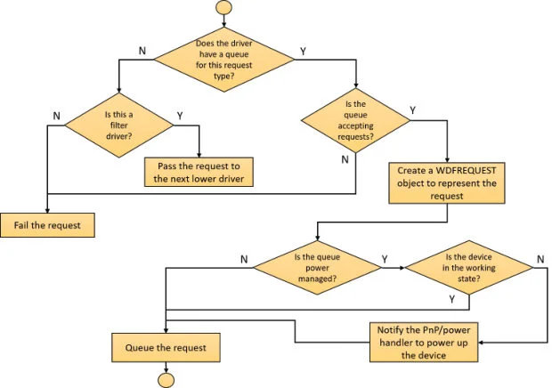
User-Mode Driver Framework
Windows には、WDF の一部である User-Mode Driver Framework（UMDF）を使ってユーザーモードで動くドライバーが増えています。
UMDF 2 のオブジェクトモデル、プログラミングモデル、I/O モデルは KMDF とそろえられています。
ただし、ユーザーモードとカーネルモードには違いがあるので、フレームワークは同一ではありません。
たとえば、WDFCHILDLIST、DMA 関連のオブジェクト、WDFLOOKASIDE（ルックアサイドリストはカーネルモードでのみ割り当て可能）、WDFIORESLIST、WDFIORESREQLIST、WDFDPC、WMI オブジェクトは、UMDF にはありません。
それ以外の KMDF のオブジェクトと考え方の大半は、UMDF 2.x にも当てはまります。
UMDF には、KMDF に比べて次の利点があります。
- ドライバーがユーザーモードで動くので、未処理の例外が発生しても停止するのは UMDF のホストプロセスであり、システム全体ではありません。
- ホストプロセスは Local Service アカウントで動きます。ローカルマシンの権限が限られ、ネットワークへの接続も匿名なので、攻撃に使われ得る範囲が狭くなります。
- ユーザーモードの IRQL は常に0（
PASSIVE_LEVEL）です。ページフォールトを処理でき、イベントやミューテックスなどのカーネルディスパッチャーオブジェクトを使って同期できます。 - KMDF と違い、物理、仮想を問わずマシンを二台に分けて用意する必要がないため、デバッグが容易です。
UMDF の主な欠点は、カーネルモードとユーザーモードの間の切り替えや通信が必要で、遅延が増えることです。 高速 PCI デバイス用など、そもそもユーザーモードで動かす設計ではないドライバーは、UMDF では書けません。
UMDF は、共通の標準プロトコルを使い、その上に固有の機能を実装するデバイスクラス向けに設計されています。 本書の対象では、IEEE 1394（FireWire）、USB、Bluetooth、ヒューマンインターフェイスデバイス（HID）、TCP/IP が含まれます。 これらのバスやネットワークに接続する、携帯音楽プレーヤー、入力デバイス、携帯電話、カメラや Web カメラなどが候補です。 SideShow 対応の補助ディスプレイや、USB のリムーバブルストレージ（USB バルク転送デバイス）に対応する Windows Portable Devices（WPD）フレームワークも、UMDF を使います。 KMDF と同じように、仮想デバイスなどのソフトウェア専用ドライバーも実装できます。
KMDF ドライバーは SYS イメージファイルに対応するドライバーオブジェクトとして動作しますが、UMDF ドライバーは、サービスのホストに似たドライバーホストプロセスで動作します。
実行イメージは %SystemRoot%\System32\WUDFHost.exe です。
このプロセスにはドライバー本体、DLL として実装された UMDF、そして I/O のディスパッチ、ドライバーのロード、デバイススタックの管理、カーネルとの通信、スレッドプールを担うランタイムが入ります。
カーネルの場合と同じく、各 UMDF ドライバーはデバイススタックの一部として動きます。 一つのデバイスを管理する複数のドライバーを、同じスタックに含められます。 ユーザーモードのコードはカーネルのアドレス空間に直接アクセスできないので、UMDF にはカーネルとの専用インターフェイスがあります。 UMDF のカーネルモード部分は、効率のよいプロセス間通信機構である ALPC を使って、ユーザーモードのドライバーホストのランタイムと通信します（ALPC は Part 2 の第8章を参照）。

図6-47には、異なる二つのハードウェアデバイスを管理するデバイススタックがあります。 それぞれの UMDF ドライバーは別のホストプロセスで動いています。 この構成を支えるのは次の要素です。
- アプリケーション：ドライバーのクライアントです。通常の Windows アプリケーションで、KMDF や WDM が管理するデバイスの場合と同じ API で I/O を行います。UMDF のデバイスであることを意識する必要はなく、呼び出しは引き続きカーネルの I/O マネージャーに届きます。
- Windows カーネルの I/O マネージャー：アプリケーションの I/O API の呼び出しに応じ、ほかのデバイスと同じように IRP を作ります。
- リフレクター：UMDF が管理する各デバイスのスタックの最上位に置く WDM フィルタードライバー（
%SystemRoot%\System32\Drivers\WUDFRd.sys）です。カーネルとユーザーモードのドライバーホストとの通信を管理し、電源管理、プラグアンドプレイ、通常の I/O の IRP を ALPC 経由でホストへ転送します。これにより UMDF ドライバーは I/O に応答するだけでなく、デバイスの列挙、インストール、管理にも関与できます。ホストが適切な時間内に応答するかも監視し、ドライバーやアプリケーションが応答しなくなるのを防ぎます。 - ドライバーマネージャー：存在するデバイスに応じてドライバーホストプロセスを起動、終了し、それらの情報を管理します。リフレクターからのメッセージも処理し、たとえばデバイスがインストールされたときは、該当するホストを操作します。標準の
Svchost.exeがホストする Windows サービスとして、%SystemRoot%\System32\WUDFsvc.dllに実装されています。最初の UMDF デバイスドライバーがインストールされた時点で自動起動に設定されます。全ホストを一つのサービスインスタンスが管理し、UMDF ドライバーを動かすために常時稼働します。 - ホストプロセス：
WUDFHost.exeがドライバー用のアドレス空間とランタイムを提供します。Local Service アカウントで動きますが、Windows サービスではなく、SCM ではなくドライバーマネージャーが管理します。システム上のアプリケーションから見える、対象機器のユーザーモードのデバイススタックも提供します。本書の対象ではデバイスの各インスタンスが独自のスタックを持ち、それぞれ別のホストで動きます。原著では、将来は複数のインスタンスで一つのホストを共有する可能性があるとしています。ホストはドライバーマネージャーの子プロセスです。 - カーネルモードドライバー：UMDF が管理するデバイスに固有のカーネル処理が必要なら、それを担うドライバーを別に書けます。一つのデバイスを、UMDF ドライバーと KMDF または WDM のドライバーの両方で管理できます。
データの入った USB フラッシュメモリを挿すと、UMDF の動作を確認できます。
Process Explorer を起動すると、ドライバーホストに対応する WUDFHost.exe プロセスが表示されます。
DLL ビューに切り替え、図6-48のような項目が見つかるまでスクロールします。

前述の構成に対応する三つのコンポーネントを確認できます。
WUDFHost.exe：UMDF ホストの実行ファイル。WUDFx02000.dll：UMDF 2.x のフレームワーク DLL。WUDFPlatform.dll：ランタイム。
電源マネージャー
プラグアンドプレイの場合と同じく、Windows の電源管理にはハードウェア側の対応が必要です。 具体的には、現在は Unified Extensible Firmware Interface（UEFI）の一部である Advanced Configuration and Power Interface（ACPI）仕様に準拠する必要があります。 仕様は UEFI Forum で公開されています。
ACPI は、システムとデバイスに複数の電源状態を定義します。 システムの電源状態は、S0（完全に電源が入った動作状態）から S5（完全な電源オフ）までの六つです（表6-13）。 各状態には次の特性があります。
- 消費電力：システムが消費する電力です。
- ソフトウェアの復帰状態：より電源の入った状態に移るとき、どのソフトウェア状態から再開するかを表します。
- ハードウェアの復帰時間：システムが完全な動作状態に戻るまでの時間です。
| 状態 | 消費電力 | ソフトウェアの再開方法 | ハードウェアの復帰時間 |
|---|---|---|---|
| S0（動作中） | 最大 | 該当なし | なし |
| S1（スリープ） | S0 より少なく、S2 より多い | 中断した時点から再開し、S0 に戻る | 2秒未満 |
| S2（スリープ） | S1 より少なく、S3 より多い | 中断した時点から再開し、S0 に戻る | 2秒以上 |
| S3（スリープ） | S2 より少ない。プロセッサは電源オフ | 中断した時点から再開し、S0 に戻る | S2 と同じ |
| S4（休止状態） | 電源ボタンと復帰回路に微小な電流を供給 | 休止ファイルを読み込み、休止前の時点から再開して S0 に戻る | 長く、規定なし |
| S5（電源オフ） | 電源ボタンに微小な電流を供給 | システムを起動する | 長く、規定なし |
S1～S4 は消費電力が下がり、電源が切れているように見えますが、S0 に戻るために必要な情報をメモリかディスクに保持しています。 S1～S3 ではメモリの内容を保持する電力が必要です。 利用者やデバイスがコンピューターを起こして S0 に戻ると、電源マネージャーは中断前の続きから処理を再開します。
S4 に移るとき、電源マネージャーはメモリの内容を圧縮し、システムボリュームのルートにある隠しファイル Hiberfil.sys に保存します。
ファイルには、圧縮しない場合でもメモリの内容を格納できるだけの容量があります。
圧縮するのは、ディスク I/O を減らして休止と復帰を速めるためです。
保存が済むと、電源マネージャーはコンピューターの電源を切ります。
次に電源を入れたときは通常の起動処理が始まりますが、ブートマネージャーは休止ファイルに有効なメモリイメージがあるかを確認します。
保存された状態があれば、%SystemRoot%\System32\Winresume.exe を起動します。
このプログラムはファイルの内容をメモリに戻し、休止ファイルに記録された位置から実行を再開します。
ハイブリッドスリープを有効にしたシステムでは、スリープの要求に対して S3 と S4 を組み合わせます。 通常のスリープに入る前に、緊急復帰用の休止ファイルもディスクへ書き出します。 通常の休止ファイルには使用中のメモリがほぼすべて入りますが、緊急復帰用には、あとからページインできないデータだけを書き出します。その分だけ中断処理が速くなります。 ドライバーには S4 への移行を通知するため、通常の休止時と同じように設定を変え、状態を保存できます。 その後は通常どおりスリープに入ります。途中で電源が失われても、電源を入れ直せば Windows は緊急復帰用の休止ファイルから再開します。
注：管理者権限のコマンドプロンプトで powercfg /h off を実行すると、休止状態を無効にし、ディスクの空き容量を増やせます。
コンピューターは、S1～S4 のある状態から別の状態へ直接は移りません。 切り替えにはコードを実行する必要がありますが、これらの状態では CPU でコードを実行できないため、いったん S0 に戻ります。 図6-49では、S1～S5 のいずれかから S0 へ移ることを復帰、S0 から S1～S5 のいずれかへ移ることをスリープと呼んでいます。

システムが対応する電源状態を調べる
管理者権限のコマンドプロンプトで powercfg /a を実行すると、サポートされる電源状態が表示されます。
C:\WINDOWS\system32>powercfg /a The following sleep states are available on this system: Standby (S3) Hibernate Fast Startup The following sleep states are not available on this system: Standby (S1) The system firmware does not support this standby state. Standby (S2) The system firmware does not support this standby state. Standby (S0 Low Power Idle) The system firmware does not support this standby state. Hybrid Sleep The hypervisor does not support this standby state.
この例ではスタンバイに S3 を使え、休止状態にも対応しています。休止状態を無効にして、同じコマンドをもう一度実行します。
C:\WINDOWS\system32>powercfg /h off C:\WINDOWS\system32>powercfg /a
The following sleep states are available on this system: Standby (S3) The following sleep states are not available on this system: Standby (S1) The system firmware does not support this standby state. Standby (S2) The system firmware does not support this standby state. Hibernate Hibernation has not been enabled. Standby (S0 Low Power Idle) The system firmware does not support this standby state. Hybrid Sleep Hibernation is not available. The hypervisor does not support this standby state. Fast Startup Hibernation is not available.
ACPI は、デバイスの電源状態を D0～D3 の四つに分けます。D0 は完全な動作状態、D3 は電源オフの状態です。 D1 と D2 の意味は個々のドライバーとデバイスが定めます。ただし、D1 の消費電力は D0 以下、D2 は D1 以下でなければなりません。
Windows 8 以降は、D3 を D3-hot と D3-cold に分けます。 D3-hot ではデバイスの大部分が停止していますが、主電源にはつながっており、親バスのコントローラーはデバイスを検出できます。 D3-cold では主電源が遮断され、バスコントローラーからデバイスを検出できなくなります。その分、消費電力をさらに抑えられます。 デバイスが取り得る状態と遷移を図6-50に示します。

Windows 8 より前は、システムが S0 にある間、デバイスは D3-hot までしか移行できませんでした。 D3-cold への移行は、システムがスリープしたときに暗黙に行われました。 Windows 8 以降は、システムが S0 のままでも、デバイスを D3-cold にできます。
デバイスを制御するドライバーは、直接 D3-cold へ移行させるのではなく、まず D3-hot にします。
同じバス上のほかのデバイスも D3-hot に入れば、バスドライバーとファームウェアが、デバイスをまとめて D3-cold に移す場合があります。
移行するには、バスドライバーとファームウェアが対応しており、デバイスのドライバーも、インストール用 INF ファイルか実行時の SetD3ColdSupport の呼び出しで移行を許可している必要があります。
Microsoft は主なハードウェア OEM と共同で、ディスプレイ、ネットワーク、SCSI などのクラスごとに必要な電源状態を、電源管理の参照仕様に定めています。 完全な動作状態と電源オフの中間状態を持たないデバイスでは、その中間の状態は定義されません。
Connected Standby と Modern Standby
先ほどの実験の出力には「Standby (S0 Low Power Idle)」という項目もあります。 ACPI の独立した電源状態ではなく S0 の一形態で、Windows 8.x では Connected Standby と呼ばれました。 Windows 10 のデスクトップ版とモバイル版で拡張され、Modern Standby になりました。 S3 の従来のスタンバイは、Legacy Standby とも呼ばれます。
従来のスタンバイではシステムが動作していないので、たとえばメールを受信するには S0 へ復帰する必要があります。 設定やデバイスによっては復帰できず、復帰して受信できても、すぐにスリープに戻るわけではありません。 Modern Standby は、この二つの問題に対処します。
対応システムは、スタンバイを指示されたとき、通常は Modern Standby に入ります。 状態は S0 のままなので、CPU はコードを実行できます。 一方、デスクトップアプリと UWP アプリのプロセスは中断されます。UWP アプリの多くは、フォアグラウンドにないためすでに中断されています。 UWP アプリが作成したバックグラウンドタスクは実行できます。たとえばメールクライアントは、新着メールを定期的に確認できます。
Modern Standby からは、完全な動作状態の S0 へすばやく復帰できます。これは Instant On と呼ばれることもあります。 対応の有無はチップセットなどのプラットフォーム構成に依存します。 前の実験に使ったシステムは対応していないので、従来のスタンバイを使います。 詳しくは Windows のハードウェアドキュメントを参照してください。
電源マネージャーの動作
Windows の電源管理は、電源マネージャーと各デバイスドライバーが分担します。 システム全体の電源ポリシーは電源マネージャーが管理し、その時点に適した電源状態を決めます。 スリープ、休止、シャットダウンが必要になれば、電源管理に対応するデバイスに、システムの状態に応じた移行を指示します。
状態を切り替えるかどうかは、次の要因を考慮して決めます。
- システムの稼働状況。
- バッテリー残量。
- アプリケーションからのシャットダウン、休止、スリープの要求。
- 電源ボタンを押すなどの利用者の操作。
- コントロールパネルの電源設定。
PnP マネージャーはデバイスを列挙するときに、電源管理機能も取得します。 ドライバーは、D1 と D2 に対応するかを報告し、必要に応じて D1～D3 から D0 への復帰時間も報告します。 バスドライバーは、各システム状態（S0～S5）とデバイスの電源状態の対応表を返します。電源マネージャーは、この情報をシステムの状態を切り替える判断に使います。
表には、システムの各状態でデバイスが入れる最も低電力の状態が記載されます。 これは、スリープ時や休止時に各電源系統がどのような状態になるかを直接反映しています。 四つのデバイス状態すべてをサポートするバスが返す表の例を、表6-14に示します。
大半のドライバーは、システムが S0 を離れると、消費電力を抑えるためデバイスを D3 にします。 一方、ネットワークアダプターなどの一部のデバイスは、スリープ中のシステムを起こせます。 この機能の有無と、利用できる最も低電力のデバイス状態も、列挙時に報告します。
| システムの電源状態 | デバイスの電源状態 |
|---|---|
| S0（動作中） | D0（動作中） |
| S1（スリープ） | D1 |
| S2（スリープ） | D2 |
| S3（スリープ） | D2 |
| S4（休止状態） | D3（電源オフ） |
| S5（電源オフ） | D3（電源オフ） |
ドライバーによる電源管理
電源マネージャーがシステムの電源状態を切り替えると決めると、ドライバーの電源ディスパッチルーチン（IRP_MJ_POWER）に電源管理の要求を送ります。
デバイスを管理するドライバーが複数あっても、そのデバイスの電源ポリシー所有者になるのは一つだけです。通常は FDO を管理するドライバーです。
このドライバーが、システムの状態に応じてデバイスの状態を決めます。たとえば、システムが S0 から S3 に移るとき、デバイスを D0 から D1 に移す場合があります。
電源ポリシー所有者は、同じデバイスを管理するほかのドライバーへ直接判断を伝えず、PoRequestPowerIrp を使って電源マネージャーに通知を依頼します。
電源マネージャーは、それらの電源ディスパッチルーチンにデバイスの電源状態を変える要求を発行します。
こうすると、システム内で同時に処理される電源要求の数を制御できます。
たとえば、起動時に大きな電流を必要とするデバイスに同時に電源を入れないようにできます。
ドライバーの電源状態の対応を調べる
デバイスマネージャーでデバイスの「プロパティ」を開き、「詳細」タブの「プロパティ」で「電源データ」を選びます。 システム状態に対応するデバイス状態のほか、現在の電源状態、デバイス固有の電源管理機能、システムを起こせる電源状態を確認できます。
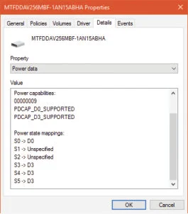
多くの電源管理要求には、対応する問い合わせ要求があります。 たとえば、システムをスリープへ移す前に、電源マネージャーは各デバイスに移行できるか問い合わせます。 時間制約の厳しい操作やハードウェアとの通信を処理中のデバイスが拒否すれば、システムは現在の電源状態を維持します。
システムの電源管理機能とポリシーを確認する
カーネルデバッガーの !pocaps で、コンピューターの電源管理機能を確認できます。
次は x64 版 Windows 10 が動作するノート PC での出力です。
lkd> !pocaps PopCapabilities @ 0xfffff8035a98ce60 Misc Supported Features: PwrButton SlpButton Lid S3 S4 S5 HiberFile FullWake VideoDim Processor Features: Thermal Disk Features: Battery Features: BatteriesPresent Battery 0 - Capacity: 0 Granularity: 0 Battery 1 - Capacity: 0 Granularity: 0 Battery 2 - Capacity: 0 Granularity: 0 Wake Caps Ac OnLine Wake: Sx Soft Lid Wake: Sx RTC Wake: S4 Min Device Wake: Sx Default Wake: Sx
「Misc Supported Features」の行から、S0 のほかに S3、S4、S5 に対応し、S1 と S2 には対応していないことが分かります。 また、S4 に入るときにシステムメモリを保存する、有効な休止ファイルがあります。
コントロールパネルの「電源オプション」では、システムの電源ポリシーの各項目を設定できます。 設定可能な項目は、システムの電源管理機能によって異なります。

OEM は電源プランを追加できます。追加したプランは powercfg /list で一覧表示できます。
C:\WINDOWS\system32>powercfg /list Existing Power Schemes (* Active) ----------------------------------- Power Scheme GUID: 381b4222-f694-41f0-9685-ff5bb260df2e (Balanced) Power Scheme GUID: 8759706d-706b-4c22-b2ec-f91e1ef6ed38 (HP Optimized (recommended)) * Power Scheme GUID: 8c5e7fda-e8bf-4a96-9a85-a6e23a8c635c (High performance) Power Scheme GUID: a1841308-3541-4fab-bc81-f71556f20b4a (Power saver)
定義済みのプランの設定を変更すると、アイドル状態の検出タイムアウトを設定できます。これにより、モニターの電源を切る時刻、ハードディスクを停止する時刻、スタンバイ（前の実験の S3）、休止状態（S4）へ移る時刻を制御できます。「プラン設定の変更」では、電源ボタンやスリープボタンを押したとき、ノート PC のふたを閉じたときの動作も指定できます。

「詳細な電源設定の変更」は、システムの電源ポリシーの値を直接変更します。値はカーネルデバッガーの !popolicy で表示できます。同じシステムでの出力を次に示します。
lkd> !popolicy SYSTEM_POWER_POLICY (R.1) @ 0xfffff8035a98cc64 PowerButton: Sleep Flags: 00000000 Event: 00000000 SleepButton: Sleep Flags: 00000000 Event: 00000000 LidClose: None Flags: 00000000 Event: 00000000 Idle: Sleep Flags: 00000000 Event: 00000000
OverThrottled: None Flags: 00000000 Event: 00000000 IdleTimeout: 0 IdleSensitivity: 90% MinSleep: S3 MaxSleep: S3 LidOpenWake: S0 FastSleep: S3 WinLogonFlags: 1 S4Timeout: 0 VideoTimeout: 600 VideoDim: 0 SpinTimeout: 4b0 OptForPower: 0 FanTolerance: 0% ForcedThrottle: 0% MinThrottle: 0% DyanmicThrottle: None (0)
最初の行は、「電源オプション」の詳細設定で指定したボタンの動作に対応します。このシステムでは、電源ボタンとスリープボタンのどちらもスリープ状態に移行します。ふたを閉じても何も行いません。末尾近くのタイムアウト値は秒単位で、16 進数で表示されます。ここに表示される値は「電源オプション」で設定した内容に直接対応します。たとえばビデオのタイムアウトは 600 なので、600 秒（10 分）後にモニターの電源が切れます。ハードディスクの停止タイムアウトは 0x4b0 で、1200 秒（20 分）に相当します。
ドライバーとアプリケーションによるデバイス電源の制御
ドライバーは、システムの電源状態の遷移に関する電源マネージャーのコマンドに応答するだけでなく、自分のデバイスの電源状態を独自に制御できます。デバイスが一定時間使われなければ、消費電力を下げたい場合があります。暗くするモードを持つモニターや、停止できるディスクが例です。ドライバーは、デバイスがアイドルかどうかを自分で検出するか、電源マネージャーの機能を使えます。電源マネージャーを使う場合は、PoRegisterDeviceForIdleDetection を呼び、デバイスを登録します。
この関数は、アイドル状態の検出に使うタイムアウト値と、アイドル時に適用するデバイスの電源状態を電源マネージャーに伝えます。タイムアウトは二つ指定します。一つは省電力向けの設定、もう一つは最高性能向けの設定です。PoRegisterDeviceForIdleDetection を呼んだ後、ドライバーはデバイスが動作していることを PoSetDeviceBusy または PoSetDeviceBusyEx で通知し、必要に応じてアイドル検出を無効化・再有効化するために再登録します。PoStartDeviceBusy と PoEndDeviceBusy を使うと、この処理のプログラミングを簡略化できます。
デバイスは自分の電源状態を制御できますが、システムの電源状態を操作したり、システムの電源遷移を阻止したりはできません。たとえば低電力状態に対応しないドライバーは、電源を入れたままにするか完全に切るかを選べますが、システム全体が低電力状態へ移ることは妨げません。電源マネージャーは遷移を通知するだけで、同意を求めるわけではないからです。もっとも、システムが低電力状態へ移る前には、ドライバーに IRP_MN_QUERY_POWER が届きます。
ドライバーは要求を拒否できますが、電源マネージャーはそれに従う必要はありません。可能であれば遷移を遅らせます（デバイスが十分に残量のあるバッテリーで動作している場合など）。ただし休止状態への遷移は失敗しません。
電源管理の主な担当はドライバーとカーネルですが、アプリケーションも関与できます。ユーザーモードのプロセスは、バッテリー残量が少ないとき、AC 電源に切り替わったとき、システムが電源遷移を始めるときなどの通知を登録できます。アプリケーションはこれらの操作を拒否できませんが、スリープ前に状態を整理するための時間を最大 2 秒得られます。
電源管理フレームワーク
Windows 8 以降、カーネルはデバイス内の個々のコンポーネント（関数とも呼ぶ）の電源状態を管理するフレームワークを提供します。たとえば音声デバイスに再生と録音のコンポーネントがあり、再生だけが動作しているなら、録音を低電力状態にすると効果的です。電源管理フレームワーク（PoFx）は、ドライバーがコンポーネントの電源状態と要件を伝える API を提供します。すべてのコンポーネントは完全動作状態の F0 に対応する必要があります。番号の大きい F 状態ほど消費電力が少なく、F0 への復帰時間が長くなります。F 状態の管理は、デバイスが D0 のときだけ意味があります。D0 より深い状態では動作しないためです。
デバイスの電源ポリシー所有者（通常は FDO）は、PoFxRegisterDevice を呼んで PoFx に登録します。この呼び出しで、次の情報を渡します。
- デバイス内のコンポーネント数。
- アクティブ状態やアイドル状態への切り替え、D0 への移行、電源制御コードの送信などのイベントを通知するコールバック。
- コンポーネントごとの対応 F 状態の数。
- コンポーネントごとに、復帰できる最も深い F 状態。
- コンポーネントごと、F 状態ごとに、F0 へ戻るまでの時間、その状態に留まる価値がある最小時間、その状態での公称消費電力。消費電力が無視できる場合は、その旨を指定できます。
PoFx は、これらの情報と、ほかのデバイスやシステム全体の電源状態（現在の電源プロファイルなど）を組み合わせ、各コンポーネントに適した F 状態を決めます。課題は、アイドル状態の消費電力をできるだけ抑えることと、必要になったときにすぐ F0 へ戻して「常時接続」のように見せることの両立です。
ドライバーは、コンポーネントを動作させる必要があるとき、PoFxActivateComponent を呼んで F0 を要求します。しばらくすると PoFx がコールバックを呼び、コンポーネントが F0 になったことを伝えます。逆に不要になったときは PoFxIdleComponent を呼び、PoFx が低い F 状態へ移してから通知します。
パフォーマンス状態の管理
ここまでの仕組みでは、アイドル状態（F0 以外）のコンポーネントの消費電力を抑えられます。しかし、F0 のままでも、実際の処理内容に応じて消費電力を下げられるコンポーネントがあります。たとえばグラフィックスカードは、静的な画面の表示中は電力を抑えられますが、3D コンテンツを毎秒 60 フレームで描画するときは多くの電力が必要です。
Windows 8.x では、このようなドライバーが独自のパフォーマンス状態選択アルゴリズムを実装し、platform extension plug-in（PEP）と呼ばれる OS サービスに通知する必要がありました。PEP は特定のプロセッサ系列や SoC に固有なので、ドライバーのコードは PEP に強く依存しました。
Windows 10 では、パフォーマンス状態の管理のために PoFx API が拡張され、ドライバーは標準 API を使えば、プラットフォーム固有の PEP を意識せずに済みます。PoFx はコンポーネントごとに次の種類のパフォーマンス状態を提供します。
- 周波数（Hz）、帯域幅（ビット毎秒）、またはドライバーが解釈する不透明な数値で表す離散的な状態。
- 最小値と最大値の間で連続的に変化する状態（周波数、帯域幅、独自の指標）。
グラフィックスカードが動作可能な周波数を離散的に定義し、それによって消費電力を間接的に制御する例があります。必要に応じて、帯域幅についても同様の性能状態を定義できます。
パフォーマンス状態の管理のために PoFx へ登録するには、まず前述の PoFxRegisterDevice でデバイスを登録します。次に PoFxRegisterComponentPerfStates を呼び、性能の詳細（離散か範囲か、周波数・帯域幅・独自指標の別）と、状態が実際に変わったときのコールバックを渡します。
ドライバーがコンポーネントのパフォーマンス状態を変えると判断したら、PoFxIssuePerfStateChange または PoFxIssuePerfStateChangeMultiple を呼びます。この呼び出しは、指定した状態へコンポーネントを移すよう PEP に要求します。同期、非同期、または PEP に任せる（don't care）を指定できます。いずれの場合も、PoFx は最終的にドライバーが登録したコールバックを、要求した状態（PEP が拒否した場合は別の状態）で呼びます。受け入れられた場合、ドライバーはハードウェアに適切な設定を行います。拒否された場合は、同じ関数を呼び直せます。コールバックが呼ばれるまでに発行できる要求は一つだけです。
電源の可用性要求
開始済みのスリープ遷移を、アプリケーションやドライバーが拒否することはできません。しかし、ユーザーが特定の操作をしている間は、スリープ遷移を始めさせたくない場合があります。たとえば映画の再生中に、マウスやキーボードの入力がないことを理由に 15 分でアイドル状態になると困ります。このようなとき、メディアプレーヤーは再生中だけアイドル遷移を一時的に無効にできるべきです。画面の電源を切る、暗くするといったほかの省電力動作も、映像の視聴を妨げます。
従来の Windows では、SetThreadExecutionState というユーザーモード API で、ユーザーがまだ操作していることを電源マネージャーに伝え、システムとディスプレイのアイドル遷移を制御できました。しかし、診断機能がなく、要求の粒度も不十分でした。また、ドライバーは独自の要求を出せず、ユーザーアプリケーションもスレッド単位の要求を正しく管理する必要がありました。
現在の Windows は、カーネルが実装する電源要求オブジェクトに対応しています。これはオブジェクトマネージャーが定義する正規のオブジェクトです。Sysinternals の WinObj で \ObjectTypes ディレクトリの PowerRequest オブジェクト型を確認するか、カーネルデバッガーの !object を \ObjectTypes\PowerRequest に対して実行すると確かめられます。
電源の可用性要求は、ユーザーモードのアプリケーションが PowerCreateRequest で生成し、PowerSetRequest と PowerClearRequest で有効化・無効化します。カーネルでは、ドライバーが PoCreatePowerRequest、PoSetPowerRequest、PoClearPowerRequest を使います。ハンドルを使わないため、オブジェクトの参照を外すには PoDeletePowerRequest が必要です（ユーザーモードでは CloseHandle を使えます）。
電源要求 API では、次の 4 種類の要求を使えます。
- システム要求：アイドルタイマーによる自動スリープを防ぎます（ユーザーがふたを閉じるなどして手動でスリープさせることはできます）。
- ディスプレイ要求：システム要求と同じことをディスプレイに対して行います。
- アウェイモード要求：通常のスリープ（S3）の動作を変更し、コンピューターを完全な電源投入状態のまま、ディスプレイとサウンドカードだけをオフにします。ユーザーには実際にスリープしているように見えます。主にセットトップボックスやメディアセンターで、物理的なスリープボタンが押されてもメディア配信を続けるために使います。
- 実行要求：Windows 8 / Server 2012 以降で使えます。通常ならプロセスライフサイクルマネージャー（PLM）が終了させる UWP アプリのプロセスに、実行の継続を要求します。延長される時間は電源ポリシーの設定などによって変わります。Modern Standby に対応するシステムだけで使え、それ以外ではシステム要求として扱われます。
実験：電源の可用性要求を確認する
PowerCreateRequest などで作られる電源要求のカーネルオブジェクトは、公開シンボルには含まれていません。しかし Powercfg ユーティリティを使えば、カーネルデバッガーなしで電源要求を一覧表示できます。次は、Windows 10 のノート PC で動画を再生し、Web から音声をストリーミングしているときの出力です。
C:\WINDOWS\system32>powercfg /requests DISPLAY: [PROCESS] \Device\HarddiskVolume4\Program Files\WindowsApps\Microsoft. ZuneVideo_10.16092.10311.0_x64__8wekyb3d8bbwe\Video.UI.exe Windows Runtime Package: Microsoft.ZuneVideo_8wekyb3d8bbwe SYSTEM: [DRIVER] Conexant ISST Audio (INTELAUDIO\FUNC_01&VEN_14F1&DEV_50F4&SUBSYS_103C80D3&R EV_1001\4&1a010da&0&0001) An audio stream is currently in use. [PROCESS] \Device\HarddiskVolume4\Program Files\WindowsApps\Microsoft. ZuneVideo_10.16092.10311.0_x64__8wekyb3d8bbwe\Video.UI.exe Windows Runtime Package: Microsoft.ZuneVideo_8wekyb3d8bbwe AWAYMODE: None. EXECUTION: None. PERFBOOST: None. ACTIVELOCKSCREEN: None.
出力には、前述の 4 種類ではなく 6 種類の要求が表示されています。最後の二つ（perfboost と active lockscreen）は、カーネルのヘッダーで内部的な電源要求の種類として宣言されていますが、現在は使われていません。
まとめ
I/O システムは、Windows における I/O 処理のモデルを定義し、複数のドライバーに共通する処理や、ドライバーから要求される処理を行います。主な役割は、I/O 要求を表す IRP を作成し、そのパケットを各ドライバーへ渡して、I/O の完了時に結果を呼び出し元へ返すことです。I/O マネージャーは、ドライバーオブジェクトやデバイスオブジェクトなどの I/O システムオブジェクトを使って、ドライバーとデバイスを特定します。内部では非同期に動作して高い性能を実現し、ユーザーモードのアプリケーションには同期と非同期の両方の I/O を提供します。
デバイスドライバーには、従来のハードウェア用ドライバーだけでなく、ファイルシステム、ネットワーク、階層化されたフィルタードライバーも含まれます。どのドライバーも共通の構造を持ち、共通の仕組みで互いと I/O マネージャーに通信します。I/O システムのインターフェイスにより、ドライバーを高水準言語で書けるため、開発期間を短縮し、移植性を高められます。ドライバーが OS に共通の構造を提示するので、積み重ねて階層化でき、モジュール性を確保しつつ重複を減らせます。Universal DDI の基盤を使えば、コードを変えずに複数のデバイスやフォームファクターに対応できます。
最後に、PnP マネージャーはドライバーと協力してハードウェアデバイスを動的に検出し、デバイスの列挙とドライバーのインストールを導く内部のデバイスツリーを構築します。電源マネージャーはドライバーと協力し、必要に応じてデバイスを低電力状態へ移して、エネルギーを節約しバッテリーの寿命を延ばします。
次の章では、現代のコンピューターシステムで最も重要な側面の一つであるセキュリティを扱います。
C H A P T E R 7 Security
P
reventing unauthorized access to sensitive data is essential in any environment in which multiple users have access to the same physical or network resources. An operating system, as well as individual users, must be able to protect files, memory, and configuration settings from unwanted viewing and modification. Operating system security includes obvious mechanisms such as accounts, passwords, and file protection. It also includes less obvious mechanisms, such as protecting the operating system from corruption, preventing less privileged users from performing actions (rebooting the computer, for example), and not allowing user programs to adversely affect the programs of other users or the operating system.
In this chapter, we explain how every aspect of the design and implementation of Microsoft Windows was influenced in some way by the stringent requirements of providing robust security.
Security ratings
Having software, including operating systems, rated against well-defined standards helps the government, corporations, and home users protect proprietary and personal data stored in computer systems. The current security rating standard used by the United States and many other countries is the Common Criteria (CC). To understand the security capabilities designed into Windows, however, it’s useful to know the history of the security ratings system that influenced the design of Windows: the Trusted Computer System Evaluation Criteria (TCSEC).
Trusted Computer System Evaluation Criteria
The National Computer Security Center (NCSC) was established in 1981 as part of the U.S. Department of Defense’s (DoD) National Security Agency (NSA). One goal of the NCSC was to create a range of security ratings, listed in Table 7-1, to indicate the degree of protection commercial operating systems, network components, and trusted applications offer. These security ratings, which can be found at http://csrc.nist.gov/publications/history/dod85.pdf, were defined in 1983 and are commonly referred to as the Orange Book.
TABLE 7-1 TCSEC rating levels
Rating Description
A1 Verified design
B3 Security domains
B2 Structured protection
B1 Labeled security protection
C2 Controlled access protection
C1 Discretionary access protection (obsolete)
D Minimal protection
The TCSEC standard consists of levels-of-trust ratings, where higher levels build on lower levels by adding more rigorous protection and validation requirements. No operating system meets the A1 (verified design) rating. Although a few operating systems have earned one of the B-level ratings, C2 is considered sufficient and the highest rating practical for a general-purpose operating system.
The following were the key requirements for a C2 security rating, and they are still considered the core requirements for any secure operating system:
■ ■ A secure logon facility This requires that users be able to be uniquely identified and that they must be granted access to the computer only after they have been authenticated in some way.
■ ■ Discretionary access control This allows the owner of a resource (such as a file) to determine who can access the resource and what they can do with it. The owner grants rights that permit various kinds of access to a user or to a group of users.
■ ■ Security auditing This affords the ability to detect and record security-related events or any attempts to create, access, or delete system resources. Logon identifiers record the identities of all users, making it easy to trace anyone who performs an unauthorized action.
■ ■ Object reuse protection This prevents users from seeing data that another user has deleted or from accessing memory that another user previously used and then released. For example, in some operating systems, it’s possible to create a new file of a certain length and then examine the contents of the file to see data that happens to have occupied the location on the disk where the file is allocated. This data might be sensitive information that was stored in another user’s file but had been deleted. Object reuse protection prevents this potential security hole by initializing all objects, including files and memory, before they are allocated to a user.
Windows also meets two requirements of B-level security:
■ ■ Trusted path functionality This prevents Trojan horse programs from being able to intercept users’ names and passwords as they try to log on. The trusted path functionality in Windows comes in the form of its Ctrl+Alt+Delete logon-attention sequence, which cannot be intercepted by nonprivileged applications. This sequence of keystrokes, which is also known
as the secure attention sequence (SAS), always displays a system-controlled Windows security screen (if a user is already logged on) or the logon screen so that would-be Trojan horses can easily be recognized. (The SAS can also be sent programmatically via the SendSAS API if Group Policy and other restrictions allow it.) A Trojan horse presenting a fake logon dialog box will be bypassed when the SAS is entered.
■ ■ Trusted facility management This requires support for separate account roles for administrative functions. For example, separate accounts are provided for administration (Administrators), user accounts charged with backing up the computer, and standard users.
Windows meets all these requirements through its security subsystem and related components.
The Common Criteria
In January 1996, the United States, United Kingdom, Germany, France, Canada, and the Netherlands released the jointly developed Common Criteria for Information Technology Security Evaluation (CCITSE) specification. CCITSE, usually referred to as the Common Criteria (CC), is the recognized multinational standard for product security evaluation. The CC home page is at http://www.niap-ccevs.org/cc-scheme.
The CC is more flexible than the TCSEC trust ratings and has a structure closer to the ITSEC standard than to the TCSEC standard. The CC includes the concept of a Protection Profile (PP), used to collect security requirements into easily specified and compared sets, and the concept of a Security Target (ST), which contains a set of security requirements that can be made by reference to a PP. The CC also defines a range of seven Evaluation Assurance Levels (EALs), which indicate a level of confidence in the certification. In this way, the CC (like the ITSEC standard before it) removes the link between functionality and assurance level that was present in TCSEC and earlier certification schemes.
Windows 2000, Windows XP, Windows Server 2003, and Windows Vista Enterprise all achieved Common Criteria certification under the Controlled Access Protection Profile (CAPP). This is roughly equivalent to a TCSEC C2 rating. All received a rating of EAL 4+, the “plus” denoting “flaw remediation.” EAL 4 is the highest level recognized across national boundaries.
In March 2011, Windows 7 and Windows Server 2008 R2 were evaluated as meeting the requirements of the US Government Protection Profile for General-Purpose Operating Systems in a Networked Environment, version 1.0 (GPOSPP) (http://www.commoncriteriaportal.org/files/ ppfiles/pp_gpospp_v1.0.pdf). The certification includes the Hyper-V hypervisor. Again, Windows achieved Evaluation Assurance Level 4 with flaw remediation (EAL 4+). The validation report can be found at http://www.commoncriteriaportal.org/files/epfiles/st_vid10390-vr.pdf, and the description of the security target, giving details of the requirements satisfied, can be found at http://www. commoncriteriaportal.org/files/epfiles/st_vid10390-st.pdf. Similar certifications were achieved by Windows 10 and Windows Server 2012 R2 in June 2016. The report can be found at http://www.commoncriteriaportal.org/files/epfiles/cr_windows10.pdf.
Security system components
These are the core components and databases that implement Windows security. (All files mentioned are in the %SystemRoot%\System32 directory unless otherwise specified.)
■ ■ Security reference monitor (SRM) This component in the Windows executive (Ntoskrnl.exe) is responsible for defining the access token data structure to represent a security context, performing security access checks on objects, manipulating privileges (user rights), and generating any resulting security audit messages.
■ ■ Local Security Authority Subsystem Service (Lsass) This user-mode process runs the image Lsass.exe that is responsible for the local system security policy (such as which users are allowed to log on to the machine, password policies, privileges granted to users and groups, and the system security auditing settings), user authentication, and sending security audit messages to the event log. The Local Security Authority service (Lsasrv.dll), a library that Lsass loads, implements most of this functionality.
■ ■ LSAIso.exe This is used by Lsass (if so configured on supported Windows 10 and Server 2016 systems), also known as Credential Guard (see the upcoming “Credential Guard” section for more on Credential Guard), to store users’ token hashes instead of keeping them in Lsass’s memory. Because Lsaiso.exe is a Trustlet (Isolated User Mode process) running in VTL 1, no normal process—not even the normal kernel—can access the address space of this process. Lsass itself stores an encrypted blob of the password hash needed when it communicates with Lsaiso (via ALPC).
■ ■ Lsass policy database This database contains the local system security policy settings. It is stored in the registry in an ACL-protected area under HKLM\SECURITY. It includes such information as what domains are entrusted to authenticate logon attempts, who has permission to access the system and how (interactive, network, and service logons), who is assigned which privileges, and what kind of security auditing is to be performed. The Lsass policy database also stores “secrets” that include logon information used for cached domain logons and Windows service user-account logons. (See Chapter 9, “Management mechanisms,” in Windows Internals Part 2 for more information on Windows services.)
■ ■ Security Accounts Manager (SAM) This service is responsible for managing the database that contains the user names and groups defined on the local machine. The SAM service, which is implemented in Samsrv.dll, is loaded into the Lsass process.
■ ■ SAM database This database contains the defined local users and groups along with their passwords and other attributes. On domain controllers, the SAM does not store the domaindefined users, but stores the system’s administrator recovery account definition and password. This database is stored in the registry under HKLM\SAM.
■ ■ Active Directory This is a directory service that contains a database that stores information about objects in a domain. A domain is a collection of computers and their associated security groups that are managed as a single entity. Active Directory stores information about the objects in the domain, including users, groups, and computers. Password information and privileges for domain users and groups are stored in Active Directory, which is replicated across the computers that are designated as domain controllers of the domain. The Active Directory server, implemented as Ntdsa.dll, runs in the Lsass process. For more information on Active Directory, see Chapter 10, “Networking,” in Part 2.
■ ■ Authentication packages These include dynamic link libraries (DLLs) that run in the context of both Lsass process and client processes and implement Windows authentication policy. An authentication DLL is responsible for authenticating a user by checking whether a given user name and password match (or whatever mechanism was used to provide credentials), and if so, returning to Lsass information detailing the user’s security identity, which Lsass uses to generate a token.
■ ■ Interactive logon manager (Winlogon) This is a user-mode process running Winlogon. exe that is responsible for responding to the SAS and for managing interactive logon sessions. Winlogon creates a user’s first process when the user logs on, for example.
■ ■ Logon user interface (LogonUI) This is a user-mode process running the image LogonUI. exe that presents users with the user interface they can use to authenticate themselves on the system. LogonUI uses credential providers to query user credentials through various methods.
■ ■ Credential providers (CPs) These are in-process COM objects that run in the LogonUI process (started on demand by Winlogon when the SAS is performed) and used to obtain a user’s name and password, smartcard PIN, biometric data (such as a fingerprint), or other identification mechanism. The standard CPs are authui.dll, SmartcardCredentialProvider.dll, BioCredProv. Dll, and FaceCredentialProvider.dll, a face-detection provider added in Windows 10.
■ ■ Network logon service (Netlogon) This is a Windows service (Netlogon.dll, hosted in a standard SvcHost) that sets up the secure channel to a domain controller, over which security requests—such as an interactive logon (if the domain controller is running Windows NT 4) or LAN Manager and NT LAN Manager (v1 and v2) authentication validation—are sent. Netlogon is also used for Active Directory logons.
■ ■ Kernel Security Device Driver (KSecDD) This is a kernel-mode library (%SystemRoot%\ System32\Drivers\Ksecdd.sys) of functions that implement the advanced local procedure call (ALPC) interfaces that other kernel mode security components, including the Encrypting File System (EFS), use to communicate with Lsass in user mode.
■ ■ AppLocker This mechanism allows administrators to specify which executable files, DLLs, and scripts can be used by specified users and groups. AppLocker consists of a driver (%SystemRoot%\ System32\Drivers\AppId.sys) and a service (AppIdSvc.dll) running in a standard SvcHost process.
Figure 7-1 shows the relationships among some of these components and the databases they manage.

FIGURE 7-1 Windows security components.
EXPERIMENT: Looking inside HKLM\SAM and HKLM\Security
The security descriptors associated with the SAM and Security keys in the registry prevent access by any account other than the local system account. One way to gain access to these keys for exploration is to reset their security, but that can weaken the system’s security. Another way is to execute Regedit.exe while running as the local system account. This can be done using the
PsExec tool from Sysinternals with the –s option, as shown here:
C:\>psexec –s –i –d c:\windows\regedit.exe
The -i switch instructs PsExec to run the target executable under the interactive window station. Without it, the process would run in a non-interactive window station, on an invisible desktop. The -d switch just indicates PsExec should not wait until the target process exits.
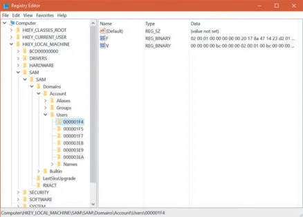
The SRM, which runs in kernel mode, and Lsass, which runs in user mode, communicate using the ALPC facility described in Chapter 8, “System mechanisms,” in Part 2. During system initialization, the SRM creates a port, named SeRmCommandPort, to which Lsass connects. When the Lsass process starts, it creates an ALPC port named SeLsaCommandPort. The SRM connects to this port, resulting in the creation of private communication ports. The SRM creates a shared memory section for messages longer than 256 bytes, passing a handle in the connect call. Once the SRM and Lsass connect to each other during system initialization, they no longer listen on their respective connect ports. Therefore, a later user process has no way to connect successfully to either of these ports for malicious purposes. The connect request will never complete.
Virtualization-based security
It is common to refer to the kernel as trusted, due to its inherently higher level of privilege and isolation from user-mode applications. Yet, countless third-party drivers are written each month—Microsoft has stated that a million unique driver hashes are seen through telemetry, monthly! Each of these can contain any number of vulnerabilities, not to mention purposefully malicious kernel-mode code. In such a reality, the idea that the kernel is a small, protected component, and that user-mode applications are “safe” from attack, is clearly an unrealized ideal. This state of affairs leads to an inability to fully trust the kernel, and leaves key user-mode applications, which may contain highly private user data, open to compromise from other malicious user-mode applications (which exploit buggy kernel-mode components) or malicious kernel-mode programs.
As discussed in Chapter 2, “System architecture,” Windows 10 and Server 2016 include a virtualizationbased security (VBS) architecture that enables an additional orthogonal level of trust: the virtual trust level (VTL). In this section, you will see how Credential Guard and Device Guard leverage VTLs to protect user data and provide an additional hardware-trust-based layer of security for digital code-signing purposes. At the end of this chapter, you will also see how Kernel Patch Protection (KPP) is provided through the PatchGuard component and enhanced by the VBS-powered HyperGuard technology.
As a reminder, normal user-mode and kernel code runs in VTL 0 and is unaware of the existence of VTL 1. This means anything placed at VTL 1 is hidden and inaccessible to VTL 0 code. If malware is able to penetrate the normal kernel, it still cannot gain access to anything stored in VTL 1, including even user-mode code running in VTL 1 (which is called Isolated User Mode). Figure 7-2 shows the main VBS components we’ll be looking at in this section:
■ ■ Hypervisor-Based Code Integrity (HVCI) and Kernel-Mode Code Integrity (KMCI), which power Device Guard
■ ■ LSA (Lsass.exe) and isolated LSA (LsaIso.exe), which power Credential Guard
Additionally, recall that the implementation of Trustlets, which run in IUM, was shown in Chapter 3, “Process and jobs.”
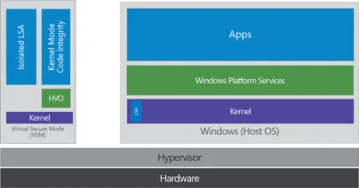
FIGURE 7-2 VBS components.
Of course, like any trusted component, VTL 1 also makes certain assumptions that the components it depends on can also be trusted. As such, VTL 1 requires Secure Boot (and thus, firmware) to function correctly, the hypervisor to not have been compromised, and hardware elements such as the IOMMU and Intel Management Engine to be free of VTL 0–accessible vulnerabilities. For more information on the hardware chain of trust and boot-related security technologies, see Chapter 11, “Startup and shutdown," in Part 2.
Credential Guard
To understand the security boundary and protection that Credential Guard provides, it is important to understand the various components that provide access to a user’s resources and data or login capabilities on a networked environment:
■ ■ Password This is the primary credential used by interactive users to identify themselves on the machine. This credential is used for authentication and to derive the other components of the credential model. It is the most highly sought after piece of a user’s identity.
■ ■ NT one-way function (NT OWF) This is a hash used by legacy components to identify the user (after a successful password logon) using the NT LAN Manager (NTLM) protocol. While modern networked systems no longer use NTLM to authenticate the user, many local components still do, as do some types of legacy network components (such as NTLM-based authenticating proxies). Because NTOWF is an MD4 hash, its algorithmic complexity in the face of today’s hardware, and its lack of anti-repeatability protection, means that intercepting the hash leads to instant compromise and even possible recovery of the password.
■ ■ Ticket-granting ticket (TGT) This is the equivalent of the NTOWF when a much more modern remote authentication mechanism is used: Kerberos. This is the default on Windows Active Directory–based domains and is enforced on Server 2016. The TGT and a corresponding key are provided to the local machine after a successful logon (just like the NTOWF on NTLM), and intercepting both components will result in instant compromise of the user’s credentials, although reuse and password recovery will not be possible.
Without Credential Guard enabled, some or all of these components of a user’s authentication credentials are present in the memory of Lsass.
Note To enable Credential Guard on Windows 10 Enterprise and Server 2016 editions, open the Group Policy editor (gpedit.msc), choose Computer Configuration, select Administrative Templates, choose System, choose Device Guard, and select Turn on Virtualization Based Security. In the top-left part of the dialog box that appears, select Enabled. Finally, select one of the Enabled options in the Credential Guard Configuration combo box.
Protecting the password
The password, encrypted with a local symmetric key, is stored to provide single sign-on (SSO) capabilities over protocols such as digest authentication (WDigest, used for HTTP-based authentication since Windows XP) or Terminal Services/RDP. As these protocols use plaintext authentication, the password must be kept in memory, which is then accessible through code injection, debugger, or other exploit techniques, and decrypted. Credential Guard cannot change the nature of these inherently unsafe protocols. Therefore, the only possible solution, which Credential Guard employs, is to disable SSO functionality for such protocols. This causes a loss of compatibility and forces the user to re-authenticate.
Obviously, a preferable solution is to remove the usage of a password completely, which Windows Hello, described in the “Windows Hello” section later in this chapter, allows. Authenticating with biometric credentials such as a user’s face or fingerprint removes the need to ever type a password, securing the interactive credential against hardware key loggers, kernel sniffing/hooking tools, and user mode–based spoofing applications. If the user never has a password to type, there is no password to steal. Another similar secure credential is the combination of a smart card and associated PIN. While a PIN may be stolen as its typed in, the smart card is a physical element whose key cannot be intercepted without a complex hardware-based attack. This is a type of two-factor authentication (TFA), of which many other implementations exist.
Protecting the NTOWF/TGT key
Even with protected interactive credentials, a successful login results in a domain controller’s key distribution center (KDC) returning the TGT and its key, as well as the NTOWF for legacy applications. Later, the user simply uses the NTOWF for accessing legacy resources and uses the TGT and its key to generate a service ticket. This can then be used to access remote resources (such as files on a share), as shown in Figure 7-3.

FIGURE 7-3 Accessing remote resources.
Thus, with either the NTOWF or the TGT and its key (stored in Lsass) in the attacker’s hands, access to resources is possible even without the smart card, PIN, or user’s face or fingerprint. Protecting Lsass from access by an attacker is thus one option that can be used, and which is possible using the Protected Process Light (PPL) architecture described in Chapter 3.
Lsass can be configured to run protected by setting the DWORD value RunAsPPL in the HKLM\ System\CurrentControlSet\Consol\Lsa registry key to 1. (This is not a default option, as legitimate thirdparty authentication providers [DLLs] load and execute in the context of Lsass, which would not be possible if Lsass would run protected.) Unfortunately, while this protection does guard the NTOWF and TGT key from user-mode attackers, it does not protect against kernel attackers or user-mode attackers that leverage vulnerabilities in any of the millions of drivers that are produced monthly. Credential Guard solves this problem by using another process, Lsaiso.exe, which runs as a Trustlet in VTL 1. This process therefore stores the user’s s secrets in its memory, not in Lsass.
Secure communication
As shown in Chapter 2, VTL 1 has a minimal attack surface, as it does not have the full regular “NT” kernel, nor does it have any drivers or access to I/O of hardware of any kind. As such, isolated LSA, which is a VTL 1 Trustlet, cannot directly communicate with the KDC. This is still the responsibility of the Lsass process, which serves as a proxy and protocol implementer, communicating with the KDC to authenticate the user and to receive the TGT and the key and NTOWF, as well as communicating with the file server by using service ticket. This seemingly results in a problem: the TGT and its key/NTOWF transiently pass through Lsass during authentication, and the TGT and its key are somehow available to Lsass for the generation of service tickets. This leads to two questions: How does Lsass send and receive the secrets from isolated ISA, and how can we prevent an attacker from doing the same?
To answer the first question, recall that Chapter 3, “Processes and jobs,” described which services are available to Trustlets. One was the Advanced Local Procedure Call (ALPC), which the Secure Kernel supports by proxying the NtAlpc* calls to the Normal Kernel. Then, the Isolated User Mode environment implements support for the RPC runtime library (Rpcrt4.dll) over the ALPC protocol, which allows a VTL 0 and VTL 1 application to communicate using local RPC just like any other application and service. In Figure 7-4, which shows Process Explorer, you can see the LsaIso.exe process, which has a handle to the
LSA_ISO_RPC_SERVER ALPC port. This is used to communicate with the Lsass.exe process. (See Chapter 8 in Part 2 for more information on ALPC.)
To answer the second question, some understanding of cryptographic protocols and challenge/ response models is required. If you’re already familiar with some of the basic concepts of SSL/TLS technology and its use in Internet communications to prevent man-in-the-middle (MitM) attacks, you can think of the KDC and isolated LSA protocol in a similar way. Although Lsass sits in the middle as a proxy would, it only sees encrypted traffic between the KDC and isolated LSA, without the ability to understand its contents. Because isolated LSA establishes a local “session key,” which only lives in VTL 1, and then uses a secure protocol to send this session key encrypted with yet another key, which only the KDC has, the KDC can then respond with the TGT and its key after encrypting it with the isolated LSA session key. Therefore, Lsass sees an encrypted message to the KDC (which it can’t decrypt) and an encrypted message from the KDC (which it can’t decrypt).
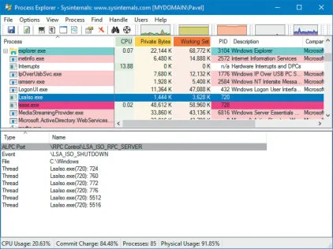
FIGURE 7-4 LsaIso.exe and its ALPC port.
This model can even be used to protect legacy NTLM authentication, which is based on a challenge/ response model. For example, when a user logs in with a plaintext credential, LSA sends it to isolated LSA, which then encrypts it with its session key and returns the encrypted credential to Lsass. Later, when an NTLM challenge/response is required, Lsass sends the NTLM challenge and the previously encrypted credentials to isolated LSA. At this point, only isolated LSA has the encryption key, so it decrypts the credentials and generates an NTLM response based on the challenge.
Note, however, that four possible attacks exist in this model:
■ ■ If the machine is already physically compromised, the plaintext password can be intercepted either as it is inputted or as it is sent to isolated LSA (if Lsass is already compromised). Using Windows Hello can mitigate against this.
■ ■ As mentioned, NTLM does not have anti-replay properties. Therefore, if the NTLM response is captured, it can be replayed for the same challenge. Alternatively, if the attacker can compromise Lsass after logon, it can capture the encrypted credential and force isolated LSA to generate new NTLM responses for arbitrary NTLM challenges. This attack, however, only works until reboot, because isolated LSA generates a new session key at that point.
■ ■ In the case of Kerberos logon, the NTOWF (which is not encrypted) can be intercepted and then reused, just like in a standard pass-the-hash attack. Again, however, this requires an already compromised machine (or physical network interception).
■ ■ The user, with physical access, may be able to disable Credential Guard. In this situation, the legacy authentication model is used (a so-called “downgrade attack”), and older attack models can now be employed.
UEFI lock
Because disabling Credential Guard (which is ultimately nothing more than a registry setting) is trivial for an attacker, Secure Boot and UEFI can be leveraged to prevent a non-physically present administrator (such as malware with admin rights) from disabling Credential Guard. This is done by enabling Credential Guard with UEFI Lock. In this mode, an EFI runtime variable is written to firmware memory and a reboot is required. At the reboot, the Windows boot loader, which still operates in EFI Boot Services mode, will write an EFI boot variable (which has the property of not being readable or writeable once EFI Boot Services mode is exited) to record the fact that Credential Guard is enabled. Additionally, a Boot Configuration Database (BCD) option will be recorded.
When the kernel boots, it will automatically rewrite the required Credential Guard registry key in the presence of the BCD option and/or UEFI runtime variable. If the BCD option is deleted by an attacker, BitLocker (if enabled) and TPM-based remote attestation (if enabled) will detect the change and require physical input of the admin’s recovery key before booting, which will then restore the BCD option based on the UEFI runtime variable. If the UEFI runtime variable is deleted, the Windows boot loader will restore it based on the UEFI boot variable. As such, without special code to delete the UEFI boot variable—which can only be done in EFI Boot Services mode—there is no way to disable Credential Guard in UEFI lock mode.
The only such code that exists is in a special Microsoft binary called SecComp.efi. This must be downloaded by the administrator, who must then either boot the computer from an alternate EFIbased device and manually execute it (which will require the BitLocker recovery key as well as physical access) or modify the BCD (which will require the BitLocker recovery key). At the reboot, SecComp.efi will require user confirmation while in UEFI mode (which can only be done by a physical user).
Authentication policies and armored Kerberos
Using a security model of “secure, unless already compromised before logon or by a physical administrator” is definitely an improvement over the traditional non-Credential Guard–based security model. However, some enterprises and organizations may want an even stronger security guarantee: that even a compromised machine cannot be used to fake or replay a user’s credentials, and that if a user’s credentials have been compromised, they cannot be used outside of specific systems. By leveraging a Server 2016 feature called Authentication Policies, and armored Kerberos, Credential Guard can operate in this heightened security mode.
In this mode, the VTL 1 Secure Kernel will collect, using the TPM (a file on disk can also be used, but makes the security moot), a special machine ID key. This key is then used to generate a machine TGT key during the initial domain join operation as the machine is provisioned (obviously, it is important to ensure the machine is in a trusted state during provisioning), and this TGT key is sent to the KDC. Once configured, when the user logs in with his or her credential, it is combined with the machine’s credential (which only isolated LSA has access to), which forms a proof-of-origin key. The KDC will then reply with the NTOWF and user TGT and its key after encrypting it with the proof-of-origin key. In this mode, two security guarantees are provided:
■ ■ The user is authenticating from a known machine If the user, or an attacker, has the original credentials, and attempts to use them on a different machine, its TPM-based machine credential will be different.
■ ■ The NTLM response/user ticket is coming from isolated LSA and has not been manually generated from Lsass This guarantees that Credential Guard is enabled on the machine, even if the physical user can disable it in some way.
Unfortunately, once again, if the machine is compromised in such a way that the proof-of-originencrypted KDC response that contains the user TGT and its key is intercepted, it can be stored and used to request session key–encrypted service tickets from isolated LSA. This can then be sent to a file server (for example) to access it until a reboot is issued to wipe the session key. As such, on a system with Credential Guard, it is recommended to reboot each time a user logs off. Otherwise, an attacker may be able to issue valid tickets even after the user is no longer present.
Future improvements
As discussed in Chapter 2 and Chapter 3, the Secure Kernel in VTL 1 is currently undergoing improvements to add support for specialized classes of PCI and USB hardware, which can exclusively be communicated with only through the hypervisor and VTL 1 code using the Secure Device Framework (SDF). Combined with BioIso.exe and FsIso.exe, which are new Trustlets to securely obtain biometric data and video frames (from a webcam), a VTL 0 kernel mode–based component cannot intercept the contents of a Windows Hello authentication attempt (which we’ve classified as safe compared to a user’s plaintext password, but still technically capturable through custom driver-based interception). Once released, Windows Hello credentials will be guaranteed at the hardware level to not ever be available to VTL 0. In this mode, Lsass will not need to be involved in a Windows Hello authentication. Isolated LSA will obtain the credentials directly from the isolated biometrics or isolated frame service.
Note The Secure Driver Framework (SDF) is the WDF-equivalent for VTL 1 drivers. This framework is not currently public, but is shared with Microsoft partners only for creating VTL 1 drivers.
Device Guard
While Credential Guard is concerned with safeguarding the user’s credentials, Device Guard has a completely different goal: protecting the user’s machine itself from different kinds of software- and hardware-based attacks. Device Guard leverages the Windows Code Integrity services, such as Kernel- Mode Code Signing (KMCS) and User-Mode Code Integrity (UMCI), and strengthens them through HyperVisor Code Integrity (HVCI). (See Chapter 8 in Part 2 for more information on Code Integrity.)
Additionally, Device Guard is fully configurable, thanks to Custom Code Integrity (CCI) and signing policies that are protected by Secure Boot and defined by the enterprise administrator. These policies, which are explained in Chapter 8, allow the enforcement of inclusion/exclusion lists that are based on cryptographically sound information (such as certificate signers or SHA-2 hashes) instead of file paths or file names as with AppLocker’s policies. (See the section “AppLocker” later in this chapter for more on AppLocker.)
Therefore, while we won’t describe here the different ways in which Code Integrity policies can be defined and customized, we will show how Device Guard enforces whatever these policies may be set to, through the following guarantees:
■ ■ If kernel-mode code signing is enforced, only signed code can load, regardless of the kernel itself being compromised This is because the kernel-loading process will notify the Secure Kernel in VTL 1 whenever it loads a driver, and only successfully load it once HVCI has validated its signature.
■ ■ If kernel-mode code signing is enforced, signed code cannot be modified once loaded, even by the kernel itself This is because the executable code pages will be marked as readonly through the hypervisor’s Second Level Address Translation (SLAT) mechanism, which is further explained in Chapter 8 in Part 2.
■ ■ If kernel-mode code signing is enforced, dynamically allocated code is prohibited (a tautology of the first two bullets) This is because the kernel does not have the ability to allocate executable entries in the SLAT page table entries, even though the kernel’s page tables themselves may mark such code as executable.
■ ■ If kernel-mode code signing is enforced, UEFI runtime code cannot be modified, even by other UEFI runtime code or by the kernel itself Additionally, Secure Boot should already have validated that this code was signed at the time it was loaded. (Device Guard relies on this assumption.) Furthermore, UEFI runtime data cannot be made executable. This is done by reading all the UEFI runtime code and data, enforcing the correct permissions, and duplicating them in the SLAT page table entries, which are protected in VTL 1.
■ ■ If kernel-mode code signing is enforced, only kernel-mode (ring 0) signed code can execute This may once again sound like a tautology of the first three bullets, but consider signed ring 3 code. Such code is valid from UMCI’s perspective and has been authorized as executable code in the SLAT page table entries. The Secure Kernel relies on the Mode-Based Execution Control (MBEC) feature, if present in hardware, which enhances the SLAT with a user/ kernel executable bit, or the hypervisor’s software emulation of this feature, called Restricted User Mode (RUM).
■ ■ If user-mode code signing is enforced, only signed user-mode images can be loaded This means all executable processes must be signed (.exe) files as well as the libraries they load (.dll).
■ ■ If user-mode code signing is enforced, the kernel does not allow user-mode applications to make existing executable code pages writable Obviously, it is impossible for user-mode code to allocate executable memory or to modify existing memory without asking the kernel permission. As such, the kernel can apply its usual enforcement rules. But even in the case of a compromised kernel, the SLAT ensures that no user-mode pages will be executable without the Secure Kernel’s knowledge and approval, and that such executable pages can never be writeable.
■ ■ If user-mode code signing is enforced, and hard code guarantees are requested by the signing policy, dynamically allocated code is prohibited This is an important distinction from the kernel scenarios. By default, signed user-mode code is allowed to allocate additional
executable memory to support JIT scenarios unless a special enhanced key usage (EKU) is present in the application’s certificate, which serves as a dynamic code generation entitlement. At present, NGEN.EXE (.NET Native Image Generation) has this EKU, which allows IL-only .NET executables to function even in this mode.
■ ■ If user-mode PowerShell constrained language mode is enforced, all PowerShell scripts that use dynamic types, reflection, or other language features that allow the execution or arbitrary code and/or marshalling to Windows/.NET API functions must also be signed This prevents possibly malicious PowerShell scripts from escaping constrained mode.
SLAT page table entries are protected in VTL 1 and contain the “ground truth” for what permissions a given page of memory can have. By withholding the executable bit as needed, and/or withholding the writable bit from existing executable pages (a security model known as W^X, pronounced doubleyou xor ex), Device Guard moves all code-signing enforcement into VTL 1 (in a library called SKCI.DLL, or Secure Kernel Code Integrity).
Additionally, even if not configured explicitly on the machine, Device Guard operates in a third mode if Credential Guard is enabled by enforcing that all Trustlets have a specific Microsoft signature with a certificate that includes the Isolated User Mode EKU. Otherwise, an attacker with ring 0 privileges could attack the regular KMCS mechanism and load a malicious Trustlet to attack the isolated LSA component. Furthermore, all user-mode code-signing enforcements are active for the Trustlet, which executes in hard code guarantees mode.
Finally, as a performance optimization, it is important to understand that the HVCI mechanism will not reauthenticate every single page when the system resumes from hibernation (S4 sleep state). In some cases, the certificate data may not even be available. Even if this were the case, the SLAT data must be reconstructed, which means that the SLAT page table entries are stored in the hibernation file itself. As such, the hypervisor needs to trust the hibernation file has not been modified in any way. This is done by encrypting the hibernation file with a local machine key that is stored in the TPM. Unfortunately, without a TPM present, this key must be stored in a UEFI runtime variable, which allows a local attacker to decrypt the hibernation file, modify it, and re-encrypt it.
Protecting objects
Object protection and access logging are the essence of discretionary access control and auditing. The objects that can be protected on Windows include files, devices, mailslots, pipes (named and anonymous), jobs, processes, threads, events, keyed events, event pairs, mutexes, semaphores, shared memory sections, I/O completion ports, LPC ports, waitable timers, access tokens, volumes, window stations, desktops, network shares, services, registry keys, printers, Active Directory objects, and so on—theoretically, anything managed by the executive object manager. In practice, objects that are not exposed to user mode (such as driver objects) are usually not protected. Kernel-mode code is trusted and usually uses interfaces to the object manager that do not perform access checking. Because system resources that are exported to user mode (and hence require security validation) are implemented as objects in kernel mode, the Windows object manager plays a key role in enforcing object security.
You can view object protection with the WinObj Sysinternals tool (for named objects), shown in Figure 7-5. Figure 7-6 shows the Security property page of a section object in the user’s session. Although files are the resources most commonly associated with object protection, Windows uses the same security model and mechanism for executive objects as it does for files in the file system. As far as access controls are concerned, executive objects differ from files only in the access methods supported by each type of object.

FIGURE 7-5 WinObj with a section object selected.

FIGURE 7-6 An executive object and its security descriptor, viewed by WinObj.
What is shown in Figure 7-6 is actually the object’s discretionary access control list (DACL). We will describe DACLs in detail in the section “Security descriptors and access control.”
You can use Process Explorer to view the security properties of objects by double-clicking a handle in the lower pane view (when configured to show handles). This has the added benefit of displaying objects that are unnamed. The Property page shown is the same in both tools, as the page itself is provided by Windows.
To control who can manipulate an object, the security system must first be sure of each user’s identity. This need to guarantee the user’s identity is the reason that Windows requires authenticated logon before accessing any system resources. When a process requests a handle to an object, the object manager and the security system use the caller’s security identification and the object’s security descriptor to determine whether the caller should be assigned a handle that grants the process access to the object it desires.
As discussed later in this chapter, a thread can assume a different security context than that of its process. This mechanism is called impersonation. When a thread is impersonating, security validation mechanisms use the thread’s security context instead of that of the thread’s process. When a thread isn’t impersonating, security validation falls back on using the security context of the thread’s owning process. It’s important to keep in mind that all the threads in a process share the same handle table, so when a thread opens an object—even if it’s impersonating—all the threads of the process have access to the object.
Sometimes, validating the identity of a user isn’t enough for the system to grant access to a resource that should be accessible by the account. Logically, one can think of a clear distinction between a service running under the Alice account and an unknown application that Alice downloaded while browsing the Internet. Windows achieves this kind of intra-user isolation with the Windows integrity mechanism, which implements integrity levels. The Windows integrity mechanism is used by User Account Control (UAC) elevations, User Interface Privilege Isolation (UIPI) and AppContainers, all described later in this chapter.
Access checks
The Windows security model requires that a thread specify up front, at the time that it opens an object, what types of actions it wants to perform on the object. The object manager calls the SRM to perform access checks based on a thread’s desired access. If the access is granted, a handle is assigned to the thread’s process with which the thread (or other threads in the process) can perform further operations on the object.
One event that causes the object manager to perform security access validation is when a thread opens an existing object using a name. When an object is opened by name, the object manager performs a lookup of the specified object in the object manager namespace. If the object isn’t located in a secondary namespace, such as the configuration manager’s registry namespace or a file system driver’s file system namespace, the object manager calls the internal function ObpCreateHandle once it locates the object. As its name implies, ObpCreateHandle creates an entry in the process handle table that becomes associated with the object. ObpCreateHandle first calls ObpGrantAccess to see if the thread has
permission to access the object. If so, ObpCreateHandle calls the executive function ExCreateHandle to create the entry in the process handle table. ObpGrantAccess calls ObCheckObjectAccess to initiate the security access check.
ObpGrantAccess passes to ObCheckObjectAccess the security credentials of the thread opening the object, the types of access to the object that the thread is requesting (read, write, delete, and so forth, including object-specific operations), and a pointer to the object. ObCheckObjectAccess first locks the object’s security descriptor and the security context of the thread. The object security lock prevents another thread in the system from changing the object’s security while the access check is in progress. The lock on the thread’s security context prevents another thread (from that process or a different process) from altering the security identity of the thread while security validation is in progress.
ObCheckObjectAccess then calls the object’s security method to obtain the security settings of the object. (See Chapter 8 in Part 2 for a description of object methods.) The call to the security method might invoke a function in a different executive component. However, many executive objects rely on the system’s default security management support.
When an executive component defining an object doesn’t want to override the SRM’s default security policy, it marks the object type as having default security. Whenever the SRM calls an object’s security method, it first checks to see whether the object has default security. An object with default security stores its security information in its header, and its security method is SeDefaultObjectMethod. An object that doesn’t rely on default security must manage its own security information and supply a specific security method. Objects that rely on default security include mutexes, events, and semaphores. A file object is an example of an object that overrides default security. The I/O manager, which defines the file object type, has the file system driver on which a file resides manage (or choose not to implement) the security for its files. Thus, when the system queries the security on a file object that represents a file on an NTFS volume, the I/O manager file object security method retrieves the file’s security using the NTFS file system driver. Note, however, that ObCheckObjectAccess isn’t executed when files are opened because they reside in secondary namespaces. The system invokes a file object’s security method only when a thread explicitly queries or sets the security on a file (with the Windows
SetFileSecurity or GetFileSecurity functions, for example).
After obtaining an object’s security information, ObCheckObjectAccess invokes the SRM function
SeAccessCheck. SeAccessCheck is one of the functions at the heart of the Windows security model. Among the input parameters SeAccessCheck accepts are the object’s security information, the security identity of the thread as captured by ObCheckObjectAccess, and the access that the thread is requesting. SeAccessCheck returns true or false, depending on whether the thread is granted the access it requested to the object.
Here is an example: Suppose a thread wants to know when a specific process exits (or terminates in some way). It needs to get a handle to the target process by calling the OpenProcess API, passing in two important arguments: the unique process ID (let’s assume it’s known or has been obtained in some way) and an access mask indicating the operations that the thread wants to perform using the returned handle. Lazy developers may just pass PROCESS_ALL_ACCESS for the access mask, specifying they want all possible access rights for the process. One of the following two results would occur:
■ ■ If the calling thread can be granted all the permissions, it would get back a valid handle and then could call WaitForSingleObject to wait for the process to exit. However, another thread in the process, perhaps with fewer privileges, can use the same handle to do other operations with the process, such as terminate it prematurely with TerminateProcess, because the handle allows all possible operations on the process.
■ ■ The call can fail if the calling thread does not have sufficient privileges to be granted all possible access and the result is an invalid handle, meaning no access to the process. This is unfortunate, because the thread just needed to ask for the SYNCHRONIZE access mask. That has a much better chance of succeeding than asking for PROCESS_ALL_ACCESS.
The simple conclusion here is that a thread should request the exact access it requires—no more, no less.
Another event that causes the object manager to execute access validation is when a process references an object using an existing handle. Such references often occur indirectly, as when a process calls on a Windows API to manipulate an object and passes an object handle. For example, a thread opening a file can request read permission to the file. If the thread has permission to access the object in this way, as dictated by its security context and the security settings of the file, the object manager creates a handle— representing the file—in the handle table of the thread’s process. The types of accesses the threads in the process are granted through the handle are stored with the handle by the object manager.
Subsequently, the thread could attempt to write to the file using the WriteFile Windows function, passing the file’s handle as a parameter. The system service NtWriteFile, which WriteFile calls via Ntdll.dll, uses the object manager function ObReferenceObjectByHandle (documented in the WDK) to obtain a pointer to the file object from the handle. ObReferenceObjectByHandle accepts the access that the caller wants from the object as a parameter. After finding the handle entry in the process handle table, ObReferenceObjectByHandle compares the access being requested with the access granted at the time the file was opened. In this example, ObReferenceObjectByHandle will indicate that the write operation should fail because the caller didn’t obtain write access when the file was opened.
The Windows security functions also enable Windows applications to define their own private objects and to call on the services of the SRM (through the AuthZ user-mode APIs, described later) to enforce the Windows security model on those objects. Many kernel-mode functions that the object manager and other executive components use to protect their own objects are exported as Windows user-mode APIs. The user-mode equivalent of SeAccessCheck is the AuthZ API AccessCheck. Windows applications can therefore leverage the flexibility of the security model and transparently integrate with the authentication and administrative interfaces that are present in Windows.
The essence of the SRM’s security model is an equation that takes three inputs: the security identity of a thread, the access that the thread wants to an object, and the security settings of the object. The output is either yes or no and indicates whether the security model grants the thread the access it desires. The following sections describe the inputs in more detail and then document the model’s access-validation algorithm.
EXPERIMENT: Viewing handle access masks
Process Explorer can show the access mask associated with open handles. Follow these steps:
1. Open Process Explorer.
2. Open the View menu, choose Lower Pane View, and select Handles to configure the lower pane to show handles.
3. Right-click the column headers of the lower pane and choose Select Columns to open the dialog box shown here:
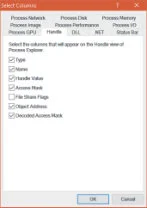
4. Select the Access Mask and Decoded Access Mask check boxes (the latter is available in version 16.10 and later) and click OK.
5. Select Explorer.exe from the process list and look at the lower pane handles. Each handle has an access mask, indicating the access granted using this handle. To help with interpreting the bits of the access mask, the decoded access mask column shows a textual representation of the access masks for many types of objects:
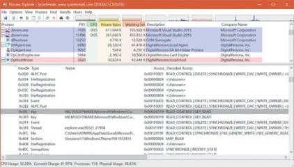
Notice there are generic access rights (for example, READ_CONTROL and SYNCHRONIZE) and specific ones (for example, KEY_READ and MODIFY_STATE). Most of the specific ones are shortened versions of the actual defines in the windows headers (for example, MODIFY_STATE instead of EVENT_MODIFY_STATE, TERMINATE instead of PROCESS_TERMINATE).
Security identifiers
Instead of using names (which might or might not be unique) to identify entities that perform actions in a system, Windows uses security identifiers (SIDs). Users have SIDs, as do local and domain groups, local computers, domains, domain members, and services. A SID is a variable-length numeric value that consists of a SID structure revision number, a 48-bit identifier authority value, and a variable number of 32-bit subauthority or relative identifier (RID) values. The authority value identifies the agent that issued the SID, and this agent is typically a Windows local system or a domain. Subauthority values identify trustees relative to the issuing authority, and RIDs are simply a way for Windows to create unique SIDs based on a common base SID. Because SIDs are long and Windows takes care to generate truly random values within each SID, it is virtually impossible for Windows to issue the same SID twice on machines or domains anywhere in the world.
When displayed textually, each SID carries an S prefix, and its various components are separated with hyphens like so:
S-1-5-21-1463437245-1224812800-863842198-1128
In this SID, the revision number is 1, the identifier authority value is 5 (the Windows security authority), and four subauthority values plus one RID (1128) make up the remainder of the SID. This SID is a domain SID, but a local computer on the domain would have a SID with the same revision number, identifier authority value, and number of subauthority values.
When you install Windows, the Windows Setup program issues the computer a machine SID. Windows assigns SIDs to local accounts on the computer. Each local-account SID is based on the source computer’s SID and has a RID at the end. RIDs for user accounts and groups start at 1000 and increase in increments of 1 for each new user or group. Similarly, Domain Controller Promote (Dcpromo.exe), the utility used to create a new Windows domain, reuses the computer SID of the computer being promoted to domain controller as the domain SID and re-creates a new SID for the computer if it is ever demoted. Windows issues to new domain accounts SIDs that are based on the domain SID and have an appended RID (again starting at 1000 and increasing in increments of 1 for each new user or group). A RID of 1028 indicates that the SID is the twenty-ninth SID the domain issued.
Windows issues SIDs that consist of a computer or domain SID with a predefined RID to many predefined accounts and groups. For example, the RID for the Administrator account is 500, and the RID for the guest account is 501. A computer’s local Administrator account, for example, has the computer SID as its base with the RID of 500 appended to it:
S-1-5-21-13124455-12541255-61235125-500
Windows also defines a number of built-in local and domain SIDs to represent well-known groups. For example, a SID that identifies any and all accounts (except anonymous users) is the Everyone SID: S-1-1-0. Another example of a group that a SID can represent is the Network group, which is the group that represents users who have logged on to a machine from the network. The Network group SID is S-1-5-2. Table 7-2, reproduced here from the Windows SDK documentation, shows some basic wellknown SIDs, their numeric values, and their use. Unlike users’ SIDs, these SIDs are predefined constants, and have the same values on every Windows system and domain in the world. Thus, a file that
is accessible by members of the Everyone group on the system where it was created is also accessible to Everyone on any other system or domain to which the hard drive where it resides happens to be moved. Users on those systems must, of course, authenticate to an account on those systems before becoming members of the Everyone group.
TABLE 7-2 A few well-known SIDs
SID Name Use
S-1-0-0 Nobody Used when the SID is unknown
S-1-1-0 Everyone A group that includes all users except anonymous users
S-1-2-0 Local Users who log on to terminals locally (physically) connected to the system
S-1-3-0 Creator Owner ID A security identifier to be replaced by the security identifier of the user who created a new object (used in inheritable ACEs)
S-1-3-1 Creator Group ID Identifies a security identifier to be replaced by the Primary group SID of the user who created a new object (used in inheritable ACEs)
S-1-5-18 Local System account Used by services
S-1-5-19 Local Service account Used by services
S-1-5-20 Network Service account Used by services
Note See Microsoft Knowledge Base article 243330 for a list of defined SIDs at http://support.microsoft.com/kb/243330.
Finally, Winlogon creates a unique logon SID for each interactive logon session. A typical use of a logon SID is in an access control entry (ACE) that allows access for the duration of a client’s logon session. For example, a Windows service can use the LogonUser function to start a new logon session. The
LogonUser function returns an access token from which the service can extract the logon SID. The service can then use the SID in an ACE (described in the section “Security descriptors and access control” later in this chapter) that allows the client’s logon session to access the interactive window station and desktop. The SID for a logon session is S-1-5-5-X-Y, where the X and Y are randomly generated.
EXPERIMENT: Using PsGetSid and Process Explorer to view SIDs
You can easily see the SID representation for any account you’re using by running the PsGetSid utility from Sysinternals. PsGetSid’s options allow you to translate machine and user account names to their corresponding SIDs and vice versa.
If you run PsGetSid with no options, it prints the SID assigned to the local computer. Because the Administrator account always has a RID of 500, you can determine the name assigned to the account (in cases where a system administrator has renamed the account for security reasons) simply by passing the machine SID appended with -500 as PsGetSid’s command-line argument.
To obtain the SID of a domain account, enter the user name with the domain as a prefix:
c:\>psgetsid redmond\johndoe
You can determine the SID of a domain by specifying the domain’s name as the argument to
PsGetSid:
c:\>psgetsid Redmond
Finally, by examining the RID of your own account, you know at least a number of security accounts (equal to the number resulting from subtracting 999 from your RID) have been created in your domain or on your local machine (depending on whether you are using a domain or local machine account). You can determine what accounts have been assigned RIDs by passing a SID with the RID you want to query to PsGetSid. If PsGetSid reports that no mapping between the SID and an account name was possible and the RID is lower than that of your account, you know that the account assigned the RID has been deleted.
For example, to find out the name of the account assigned the 28th RID, pass the domain SID appended with -1027 to PsGetSid:
c:\>psgetsid S-1-5-21-1787744166-3910675280-2727264193-1027 Account for S-1-5-21-1787744166-3910675280-2727264193-1027: User: redmond\johndoe
Process Explorer can also show you information on account and group SIDs on your system through its Security tab. This tab shows you information such as who owns this process and which groups the account is a member of. To view this information, simply double-click any process (for example, Explorer.exe) in the Process list and then click the Security tab. You should see something similar to the following:

The information displayed in the User field contains the friendly name of the account owning this process, while the SID field contains the actual SID value. The Group list includes information on all the groups that this account is a member of (groups are described later in this chapter).
Integrity levels
As mentioned, integrity levels can override discretionary access to differentiate a process and objects running as and owned by the same user, offering the ability to isolate code and data within a user account. The mechanism of Mandatory Integrity Control (MIC) allows the SRM to have more detailed information about the nature of the caller by associating it with an integrity level. It also provides information on the trust required to access the object by defining an integrity level for it.
The integrity level of a token can be obtained with the GetTokenInformation API with the Token-
IntegrityLevel enumeration value. These integrity levels are specified by a SID. Although integrity levels can be arbitrary values, the system uses six primary levels to separate privilege levels, as described in Table 7-3.
TABLE 7-3 Integrity level SIDs
SID Name (Level) Use
S-1-16-0x0 Untrusted (0) Used by processes started by the Anonymous group. It blocks most write access.
S-1-16-0x1000 Low (1) Used by AppContainer processes (UWP) and Protected Mode Internet Explorer. It blocks write access to most objects (such as files and registry keys) on the system.
S-1-16-0x2000 Medium (2) Used by normal applications being launched while UAC is enabled.
S-1-16-0x3000 High (3) Used by administrative applications launched through elevation when UAC is enabled, or normal applications if UAC is disabled and the user is an administrator.
S-1-16-0x4000 System (4) Used by services and other system-level processes (such as Wininit, Winlogon, Smss, and so on).
S-1-16-0x5000 Protected (5) Currently unused by default. Can be set by kernel-mode caller only.
Another, seemingly additional, integrity level is called AppContainer, used by UWP apps. Although seemingly another level, it’s in fact equal to Low. UWP process tokens have another attribute that indicates they are running inside an AppContainer (described in the “AppContainers” section). This information is available with the GetTokenInformation API with the TokenIsAppContainer enumeration value.
EXPERIMENT: Looking at the integrity level of processes
You can use Process Explorer to quickly display the integrity level for the processes on your system. The following steps demonstrate this functionality.
1. Launch Microsoft Edge browser and Calc.exe (Windows 10).
2. Open an elevated command prompt window.
3. Open Notepad normally (without elevating it).
4. Open an elevated Process Explorer, right-click any column header in the Process list, and then click Select Columns.
5. Select the Process Image tab and select the Integrity Level check box. The dialog box should look similar to the one shown here:

6. Process Explorer shows you the integrity level of the processes on your system. You should see the Notepad process at medium, the Edge (MicrosoftEdge.exe) process at AppContainer, and the elevated command prompt at High. Also note that the services and system processes are running at an even higher integrity level, System.

Every process has an integrity level that is represented in its token and propagated according to the following rules:
■ ■ A process normally inherits the integrity level of its parent (which means an elevated command prompt will spawn other elevated processes).
■ ■ If the file object for the executable image to which the child process belongs has an integrity level and the parent process’s integrity level is medium or higher, the child process will inherit the lower of the two.
■ ■ A parent process can create a child process with an explicit integrity level lower than its own. To do this, it uses DuplicateTokenEx to duplicate its own access token, it uses SetToken-
Information to change the integrity level in the new token to the desired level, and then it calls
CreateProcessAsUser with that new token.
Table 7-3 lists the integrity level associated with processes, but what about objects? Objects also have an integrity level stored as part of their security descriptor, in a structure that is called the mandatory label.
To support migrating from previous versions of Windows (whose registry keys and files would not include integrity-level information), and to make it simpler for application developers, all objects have an implicit integrity level to avoid having to manually specify one. This implicit integrity level is medium, meaning that the mandatory policy (described shortly) on the object will be performed on tokens accessing this object with an integrity level lower than medium.
When a process creates an object without specifying an integrity level, the system checks the integrity level in the token. For tokens with a level of medium or higher, the implicit integrity level of the object remains medium. However, when a token contains an integrity level lower than medium, the object is created with an explicit integrity level that matches the level in the token.
Objects that are created by high- or system-integrity-level processes have a medium integrity level themselves so that users can disable and enable UAC. If object integrity levels always inherited their creator’s integrity level, the applications of an administrator who disables UAC and subsequently reenables it could fail because the administrator would not be able to modify any registry settings or files created when running at the high integrity level. Objects can also have an explicit integrity level that is set by the system or by the creator of the object. For example, processes, threads, tokens, and jobs are given an explicit integrity level by the kernel when it creates them. The reason for assigning an integrity level to these objects is to prevent a process for the same user, but one running at a lower integrity level, from accessing these objects and modifying their content or behavior (for example, DLL injection or code modification).
Apart from an integrity level, objects also have a mandatory policy, which defines the actual level of protection that’s applied based on the integrity-level check. Three types are possible, shown in Table 7-4. The integrity level and the mandatory policy are stored together in the same ACE.
TABLE 7-4 Object mandatory policies
Policy Present on, by Default Description
No-Write-Up Implicit on all objects Used to restrict write access coming from a lower integrity level process to the object.
No-Read-Up Only on process objects Used to restrict read access coming from a lower integrity level process to the object. Specific use on process objects protects against information leakage by blocking address space reads from an external process.
No-Execute-Up Only on binaries implementing COM classes
Used to restrict execute access coming from a lower integrity level process to the object. Specific use on COM classes is to restrict launchactivation permissions on a COM class.
EXPERIMENT: Looking at the integrity level of objects
You can use the AccessChk tool from Sysinternals to display the integrity level of objects on the system, such as files, processes, and registry keys. Here’s an experiment showing the purpose of the LocalLow directory in Windows:
1. Browse to C:\Users\<UserName>\ in a command prompt window, where <username> is your user name.
2. Try running AccessChk on the AppData folder, as follows:
C:\Users\UserName> accesschk –v appdata
3. Note the differences between the Local and LocalLow subfolders in your output, similar to that shown here:
C:\Users\UserName\AppData\Local Medium Mandatory Level (Default) [No-Write-Up] [...] C:\Users\UserName\AppData\LocalLow Low Mandatory Level [No-Write-Up] [...] C:\Users\UserName\AppData\Roaming Medium Mandatory Level (Default) [No-Write-Up] [...]
4. Notice that the LocalLow directory has an integrity level set to Low, while the Local and Roaming directories have integrity levels of Medium (default). The default means the system is using an implicit integrity level.
5. Pass the –e flag to AccessChk so it displays only explicit integrity levels. If you run the tool on the AppData folder again, you’ll notice only the LocalLow information is displayed.
The –o (object), –k (registry key), and –p (process) flags allow you to specify something other than a file or directory.
Tokens
The SRM uses an object called a token (or access token) to identify the security context of a process or thread. A security context consists of information that describes the account, groups, and privileges associated with the process or thread. Tokens also include information such as the session ID, the integrity level, and the UAC virtualization state. (We’ll describe both privileges and UAC’s virtualization mechanism later in this chapter.)
During the logon process (described later in this chapter), Lsass creates an initial token to represent the user logging on. It then determines whether the user logging on is a member of a powerful group or possesses a powerful privilege. The groups checked for in this step are as follows:
■ ■ Built-In Administrators
■ ■ Certificate Administrators
■ ■ Domain Administrators
■ ■ Enterprise Administrators
■ ■ Policy Administrators
■ ■ Schema Administrators
■ ■ Domain Controllers
■ ■ Enterprise Read-Only Domain Controllers
■ ■ Read-Only Domain Controllers
■ ■ Account Operators
■ ■ Backup Operators
■ ■ Cryptographic Operators
■ ■ Network Configuration Operators
■ ■ Print Operators
■ ■ System Operators
■ ■ RAS Servers
■ ■ Power Users
■ ■ Pre-Windows 2000 Compatible Access
Many of the groups listed are used only on domain-joined systems and don’t give users local administrative rights directly. Instead, they allow users to modify domain-wide settings.
The privileges checked for are as follows:
■
■
SeBackupPrivilege ■
■
SeCreateTokenPrivilege ■
■
SeDebugPrivilege ■
■
SeImpersonatePrivilege ■
■
SeLabelPrivilege ■
■
SeLoadDriverPrivilege ■
■
SeRestorePrivilege ■
■
SeTakeOwnershipPrivilege ■
■
SeTcbPrivilegeThese privileges are described in detail in the section “Privileges,” later in this chapter.
If one or more of these groups or privileges are present, Lsass creates a restricted token for the user (also called a filtered admin token) and creates a logon session for both. The standard user token is attached to the initial process or processes that Winlogon starts (by default, Userinit.exe).
Note If UAC has been disabled, administrators run with a token that includes their administrator group memberships and privileges.
Because child processes inherit a copy of the token of their creators by default, all processes in the user’s session run under the same token. You can also generate a token by using the Windows
LogonUser function. You can then use this token to create a process that runs within the security context of the user logged on through the LogonUser function by passing the token to the Windows
CreateProcessAsUser function. The CreateProcessWithLogonW function combines these into a single call, which is how the Runas command launches processes under alternative tokens.
Tokens vary in size because different user accounts have different sets of privileges and associated group accounts. However, all tokens contain the same types of information. The most important contents of a token are represented in Figure 7-7.
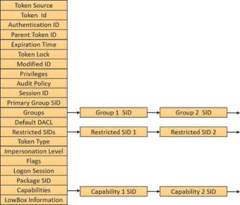
FIGURE 7-7 Access tokens.
The security mechanisms in Windows use two components to determine what objects can be accessed and what secure operations can be performed. One component comprises the token’s user account SID and group SID fields. The SRM uses SIDs to determine whether a process or thread can obtain requested access to a securable object, such as an NTFS file.
The group SIDs in a token indicate which groups a user’s account is a member of. For example, a server application can disable specific groups to restrict a token’s credentials when the server application is performing actions requested by a client. Disabling a group produces nearly the same effect as if the group wasn’t present in the token. (It results in a deny-only group, described in the section “Restricted tokens.” Disabled SIDs are used as part of security access checks, described in the section “Determining access” later in the chapter.) Group SIDs can also include a special SID that contains the integrity level of the process or thread. The SRM uses another field in the token, which describes the mandatory integrity policy, to perform the mandatory integrity check described later in the chapter.
The second component in a token that determines what the token’s thread or process can do is the privilege array. A token’s privilege array is a list of rights associated with the token. An example of a privilege is the right of the process or thread associated with the token to shut down the computer. Privileges are described in more detail later in this chapter.
A token’s default primary group field and default discretionary access control list (DACL) field are security attributes that Windows applies to objects that a process or thread creates when it uses the token. By including security information in tokens, Windows makes it convenient for a process or thread to create objects with standard security attributes because the process or thread doesn’t need to request discrete security information for every object it creates.
Each token’s type distinguishes a primary token (a token that identifies the security context of a process) from an impersonation token (a type of token that threads use to temporarily adopt a different security context, usually of another user). Impersonation tokens carry an impersonation level that signifies what type of impersonation is active in the token. (Impersonation is described later in this chapter.)
A token also includes the mandatory policy for the process or thread, which defines how MIC will behave when processing this token. There are two policies:
■ ■ TOKEN_MANDATORY_NO_WRITE_UP Enabled by default, this sets the No-Write-Up policy on this token, specifying that the process or thread will not be able to access objects with a higher integrity level for write access.
■ ■ TOKEN_MANDATORY_NEW_PROCESS_MIN Also enabled by default, this specifies that the SRM should look at the integrity level of the executable image when launching a child process and compute the minimum integrity level of the parent process and the file object’s integrity level as the child’s integrity level.
Token flags include parameters that determine the behavior of certain UAC and UIPI mechanisms, such as virtualization and user interface access. Those mechanisms will be described later in this chapter.
Each token can also contain attributes that are assigned by the Application Identification service (part of AppLocker) when AppLocker rules have been defined. AppLocker and its use of attributes in the access token are described later in this chapter.
A token for a UWP process includes information on the AppContainer hosting the process. First, it stores a package SID, identifying the UWP package the process originated from. The significance of this SID will be described in the “AppContainers” section later in this chapter. Second, UWP processes need to request capabilities for operations that require the user’s consent. Examples of capabilities include network access, using the phone capabilities of the device (if any), accessing the camera on the device, and more. Each such capability is represented with a SID, stored as part of the token. (Capabilities will be discussed further in the “AppContainers” section.)
The remaining fields in a token serve informational purposes. The token source field contains a short textual description of the entity that created the token. Programs that want to know where a token originated use the token source to distinguish among sources such as the Windows Session Manager, a network file server, or the remote procedure call (RPC) server. The token identifier is a locally unique identifier (LUID) that the SRM assigns to the token when it creates the token. The Windows executive maintains the executive LUID, a monotonically increasing counter it uses to assign a unique numeric identifier to each token. A LUID is guaranteed to be unique only until the system is shut down.
The token authentication ID is another kind of LUID. A token’s creator assigns the token’s authentication ID when calling the LsaLogonUser function. If the creator doesn’t specify a LUID, Lsass obtains the LUID from the executive LUID. Lsass copies the authentication ID for all tokens descended from an initial logon token. A program can obtain a token’s authentication ID to see whether the token belongs to the same logon session as other tokens the program has examined.
The executive LUID refreshes the modified ID every time a token’s characteristics are modified. An application can test the modified ID to discover changes in a security context since the context’s last use.
Tokens contain an expiration time field that can be used by applications performing their own security to reject a token after a specified amount of time. However, Windows itself does not enforce the expiration time of tokens.
Note To guarantee system security, the fields in a token are immutable (because they are located in kernel memory). Except for fields that can be modified through a specific system call designed to modify certain token attributes (assuming the caller has the appropriate access rights to the token object), data such as privileges and SIDs in a token can never be modified from user mode.
EXPERIMENT: Viewing access tokens
The kernel debugger dt _TOKEN command displays the format of an internal token object. Although this structure differs from the user-mode token structure returned by Windows API security functions, the fields are similar. For further information on tokens, see the description in the Windows SDK documentation.
Here’s a token structure on Windows 10:
lkd> dt nt!_token +0x000 TokenSource : _TOKEN_SOURCE +0x010 TokenId : _LUID +0x018 AuthenticationId : _LUID +0x020 ParentTokenId : _LUID +0x028 ExpirationTime : _LARGE_INTEGER +0x030 TokenLock : Ptr64 _ERESOURCE +0x038 ModifiedId : _LUID +0x040 Privileges : _SEP_TOKEN_PRIVILEGES +0x058 AuditPolicy : _SEP_AUDIT_POLICY +0x078 SessionId : Uint4B +0x07c UserAndGroupCount : Uint4B +0x080 RestrictedSidCount : Uint4B +0x084 VariableLength : Uint4B +0x088 DynamicCharged : Uint4B +0x08c DynamicAvailable : Uint4B +0x090 DefaultOwnerIndex : Uint4B +0x098 UserAndGroups : Ptr64 _SID_AND_ATTRIBUTES +0x0a0 RestrictedSids : Ptr64 _SID_AND_ATTRIBUTES +0x0a8 PrimaryGroup : Ptr64 Void +0x0b0 DynamicPart : Ptr64 Uint4B +0x0b8 DefaultDacl : Ptr64 _ACL +0x0c0 TokenType : _TOKEN_TYPE +0x0c4 ImpersonationLevel : _SECURITY_IMPERSONATION_LEVEL +0x0c8 TokenFlags : Uint4B +0x0cc TokenInUse : UChar +0x0d0 IntegrityLevelIndex : Uint4B +0x0d4 MandatoryPolicy : Uint4B +0x0d8 LogonSession : Ptr64 _SEP_LOGON_SESSION_REFERENCES +0x0e0 OriginatingLogonSession : _LUID +0x0e8 SidHash : _SID_AND_ATTRIBUTES_HASH +0x1f8 RestrictedSidHash : _SID_AND_ATTRIBUTES_HASH +0x308 pSecurityAttributes : Ptr64 _AUTHZBASEP_SECURITY_ATTRIBUTES_INFORMATION +0x310 Package : Ptr64 Void +0x318 Capabilities : Ptr64 _SID_AND_ATTRIBUTES +0x320 CapabilityCount : Uint4B +0x328 CapabilitiesHash : _SID_AND_ATTRIBUTES_HASH +0x438 LowboxNumberEntry : Ptr64 _SEP_LOWBOX_NUMBER_ENTRY +0x440 LowboxHandlesEntry : Ptr64 _SEP_LOWBOX_HANDLES_ENTRY +0x448 pClaimAttributes : Ptr64 _AUTHZBASEP_CLAIM_ATTRIBUTES_COLLECTION +0x450 TrustLevelSid : Ptr64 Void +0x458 TrustLinkedToken : Ptr64 _TOKEN +0x460 IntegrityLevelSidValue : Ptr64 Void +0x468 TokenSidValues : Ptr64 _SEP_SID_VALUES_BLOCK +0x470 IndexEntry : Ptr64 _SEP_LUID_TO_INDEX_MAP_ENTRY +0x478 DiagnosticInfo : Ptr64 _SEP_TOKEN_DIAG_TRACK_ENTRY +0x480 SessionObject : Ptr64 Void +0x488 VariablePart : Uint8B
You can examine the token for a process with the !token command. You’ll find the address of the token in the output of the !process command. Here’s an example for an explorer.exe process:
lkd> !process 0 1 explorer.exe PROCESS ffffe18304dfd780 SessionId: 1 Cid: 23e4 Peb: 00c2a000 ParentCid: 2264 DirBase: 2aa0f6000 ObjectTable: ffffcd82c72fcd80 HandleCount: <Data Not Accessible> Image: explorer.exe VadRoot ffffe18303655840 Vads 705 Clone 0 Private 12264. Modified 376410. Locked 18. DeviceMap ffffcd82c39bc0d0 Token ffffcd82c72fc060 ... PROCESS ffffe1830670a080 SessionId: 1 Cid: 27b8 Peb: 00950000 ParentCid: 035c DirBase: 2cba97000 ObjectTable: ffffcd82c7ccc500 HandleCount: <Data Not Accessible> Image: explorer.exe VadRoot ffffe183064e9f60 Vads 1991 Clone 0 Private 19576. Modified 87095. Locked 0. DeviceMap ffffcd82c39bc0d0 Token ffffcd82c7cd9060 ... lkd> !token ffffcd82c72fc060 _TOKEN 0xffffcd82c72fc060 TS Session ID: 0x1 User: S-1-5-21-3537846094-3055369412-2967912182-1001 User Groups: 00 S-1-16-8192 Attributes - GroupIntegrity GroupIntegrityEnabled 01 S-1-1-0 Attributes - Mandatory Default Enabled 02 S-1-5-114 Attributes - DenyOnly 03 S-1-5-21-3537846094-3055369412-2967912182-1004 Attributes - Mandatory Default Enabled 04 S-1-5-32-544 Attributes - DenyOnly 05 S-1-5-32-578 Attributes - Mandatory Default Enabled 06 S-1-5-32-559 Attributes - Mandatory Default Enabled 07 S-1-5-32-545 Attributes - Mandatory Default Enabled 08 S-1-5-4 Attributes - Mandatory Default Enabled 09 S-1-2-1 Attributes - Mandatory Default Enabled 10 S-1-5-11 Attributes - Mandatory Default Enabled
11 S-1-5-15 Attributes - Mandatory Default Enabled 12 S-1-11-96-3623454863-58364-18864-2661722203-1597581903-1225312835-2511459453- 1556397606-2735945305-1404291241 Attributes - Mandatory Default Enabled 13 S-1-5-113 Attributes - Mandatory Default Enabled 14 S-1-5-5-0-1745560 Attributes - Mandatory Default Enabled LogonId 15 S-1-2-0 Attributes - Mandatory Default Enabled 16 S-1-5-64-36 Attributes - Mandatory Default Enabled Primary Group: S-1-5-21-3537846094-3055369412-2967912182-1001 Privs: 19 0x000000013 SeShutdownPrivilege Attributes - 23 0x000000017 SeChangeNotifyPrivilege Attributes - Enabled Default 25 0x000000019 SeUndockPrivilege Attributes - 33 0x000000021 SeIncreaseWorkingSetPrivilege Attributes - 34 0x000000022 SeTimeZonePrivilege Attributes - Authentication ID: (0,1aa448) Impersonation Level: Anonymous TokenType: Primary Source: User32 TokenFlags: 0x2a00 ( Token in use ) Token ID: 1be803 ParentToken ID: 1aa44b Modified ID: (0, 43d9289) RestrictedSidCount: 0 RestrictedSids: 0x0000000000000000 OriginatingLogonSession: 3e7 PackageSid: (null) CapabilityCount: 0 Capabilities: 0x0000000000000000 LowboxNumberEntry: 0x0000000000000000 Security Attributes: Unable to get the offset of nt!_AUTHZBASEP_SECURITY_ATTRIBUTE.ListLink Process Token TrustLevelSid: (null)
Notice that there is no package SID for Explorer, since it’s not running inside an AppContainer.
Run calc.exe under Windows 10, which spawns calculator.exe (now a UWP app), and examine its token:
lkd> !process 0 1 calculator.exe PROCESS ffffe18309e874c0 SessionId: 1 Cid: 3c18 Peb: cd0182c000 ParentCid: 035c DirBase: 7a15e4000 ObjectTable: ffffcd82ec9a37c0 HandleCount: <Data Not Accessible> Image: Calculator.exe VadRoot ffffe1831cf197c0 Vads 181 Clone 0 Private 3800. Modified 3746. Locked 503. DeviceMap ffffcd82c39bc0d0 Token ffffcd82e26168f0 ... lkd> !token ffffcd82e26168f0 _TOKEN 0xffffcd82e26168f0
TS Session ID: 0x1 User: S-1-5-21-3537846094-3055369412-2967912182-1001 User Groups: 00 S-1-16-4096 Attributes - GroupIntegrity GroupIntegrityEnabled 01 S-1-1-0 Attributes - Mandatory Default Enabled 02 S-1-5-114 Attributes - DenyOnly 03 S-1-5-21-3537846094-3055369412-2967912182-1004 Attributes - Mandatory Default Enabled 04 S-1-5-32-544 Attributes - DenyOnly 05 S-1-5-32-578 Attributes - Mandatory Default Enabled 06 S-1-5-32-559 Attributes - Mandatory Default Enabled 07 S-1-5-32-545 Attributes - Mandatory Default Enabled 08 S-1-5-4 Attributes - Mandatory Default Enabled 09 S-1-2-1 Attributes - Mandatory Default Enabled 10 S-1-5-11 Attributes - Mandatory Default Enabled 11 S-1-5-15 Attributes - Mandatory Default Enabled 12 S-1-11-96-3623454863-58364-18864-2661722203-1597581903-1225312835-2511459453- 1556397606-2735945305-1404291241 Attributes - Mandatory Default Enabled 13 S-1-5-113 Attributes - Mandatory Default Enabled 14 S-1-5-5-0-1745560 Attributes - Mandatory Default Enabled LogonId 15 S-1-2-0 Attributes - Mandatory Default Enabled 16 S-1-5-64-36 Attributes - Mandatory Default Enabled Primary Group: S-1-5-21-3537846094-3055369412-2967912182-1001 Privs: 19 0x000000013 SeShutdownPrivilege Attributes - 23 0x000000017 SeChangeNotifyPrivilege Attributes - Enabled Default 25 0x000000019 SeUndockPrivilege Attributes - 33 0x000000021 SeIncreaseWorkingSetPrivilege Attributes - 34 0x000000022 SeTimeZonePrivilege Attributes - Authentication ID: (0,1aa448) Impersonation Level: Anonymous TokenType: Primary Source: User32 TokenFlags: 0x4a00 ( Token in use ) Token ID: 4ddb8c0 ParentToken ID: 1aa44b Modified ID: (0, 4ddb8b2)
RestrictedSidCount: 0 RestrictedSids: 0x0000000000000000 OriginatingLogonSession: 3e7 PackageSid: S-1-15-2-466767348-3739614953-2700836392-1801644223-4227750657- 1087833535-2488631167 CapabilityCount: 1 Capabilities: 0xffffcd82e1bfccd0 Capabilities: 00 S-1-15-3-466767348-3739614953-2700836392-1801644223-4227750657-1087833535- 2488631167 Attributes - Enabled LowboxNumberEntry: 0xffffcd82fa2c1670 LowboxNumber: 5 Security Attributes: Unable to get the offset of nt!_AUTHZBASEP_SECURITY_ATTRIBUTE.ListLink Process Token TrustLevelSid: (null)
You can see there is one capability required by Calculator (which is in fact equal to its AppContainer SID RID, as described in the section “AppContainers” later in this chapter). Looking at the token of the Cortana process (searchui.exe) shows the following capabilities:
lkd> !process 0 1 searchui.exe PROCESS ffffe1831307d080 SessionId: 1 Cid: 29d8 Peb: fb407ec000 ParentCid: 035c DeepFreeze DirBase: 38b635000 ObjectTable: ffffcd830059e580 HandleCount: <Data Not Accessible> Image: SearchUI.exe VadRoot ffffe1831fe89130 Vads 420 Clone 0 Private 11029. Modified 2031. Locked 0. DeviceMap ffffcd82c39bc0d0 Token ffffcd82d97d18f0 ... lkd> !token ffffcd82d97d18f0 _TOKEN 0xffffcd82d97d18f0 TS Session ID: 0x1 User: S-1-5-21-3537846094-3055369412-2967912182-1001 User Groups: ... Primary Group: S-1-5-21-3537846094-3055369412-2967912182-1001 Privs: 19 0x000000013 SeShutdownPrivilege Attributes - 23 0x000000017 SeChangeNotifyPrivilege Attributes - Enabled Default 25 0x000000019 SeUndockPrivilege Attributes - 33 0x000000021 SeIncreaseWorkingSetPrivilege Attributes - 34 0x000000022 SeTimeZonePrivilege Attributes - Authentication ID: (0,1aa448) Impersonation Level: Anonymous TokenType: Primary Source: User32 TokenFlags: 0x4a00 ( Token in use ) Token ID: 4483430 ParentToken ID: 1aa44b Modified ID: (0, 4481b11) RestrictedSidCount: 0 RestrictedSids: 0x0000000000000000 OriginatingLogonSession: 3e7
PackageSid: S-1-15-2-1861897761-1695161497-2927542615-642690995-327840285- 2659745135-2630312742 CapabilityCount: 32 Capabilities: 0xffffcd82f78149b0 Capabilities: 00 S-1-15-3-1024-1216833578-114521899-3977640588-1343180512-2505059295-473916851- 3379430393-3088591068 Attributes - Enabled 01 S-1-15-3-1024-3299255270-1847605585-2201808924-710406709-3613095291-873286183- 3101090833-2655911836 Attributes - Enabled 02 S-1-15-3-1024-34359262-2669769421-2130994847-3068338639-3284271446-2009814230- 2411358368-814686995 Attributes - Enabled 03 S-1-15-3-1 Attributes - Enabled ... 29 S-1-15-3-3633849274-1266774400-1199443125-2736873758 Attributes - Enabled 30 S-1-15-3-2569730672-1095266119-53537203-1209375796 Attributes - Enabled 31 S-1-15-3-2452736844-1257488215-2818397580-3305426111 Attributes - Enabled LowboxNumberEntry: 0xffffcd82c7539110 LowboxNumber: 2 Security Attributes: Unable to get the offset of nt!_AUTHZBASEP_SECURITY_ATTRIBUTE.ListLink Process Token TrustLevelSid: (null)
There are 32 capabilities required by Cortana. This simply indicates the process is richer in features that need to be accepted by end users and validated by the system.
You can indirectly view token contents with Process Explorer’s Security tab in the process Properties dialog box. The dialog box shows the groups and privileges included in the token of the process you examine.
EXPERIMENT: Launching a program at low integrity level
When you elevate a program, either by using the Run as Administrator option or because the program is requesting it, the program is explicitly launched at high integrity level. However, it is also possible to launch a program at low integrity level by using PsExec from Sysinternals:
1. Launch Notepad at low integrity level by using the following command:
c:\psexec –l notepad.exe
2. Try opening a file (such as one of the XML files) in the %SystemRoot%\System32 directory. Notice that you can browse the directory and open any file contained within it.
3. In Notepad, open the File menu and choose New.
4. Enter some text in the window and try saving it in the %SystemRoot%\System32 directory. Notepad displays a dialog box indicating a lack of permissions and suggests saving the file in the Documents folder.

5. Accept Notepad’s suggestion. You will get the same message box again, and repeatedly for each attempt.
6. Now try saving the file in the LocalLow directory of your user profile, shown in an experiment earlier in the chapter.
In the previous experiment, saving a file in the LocalLow directory worked because Notepad was running with low integrity level, and only the LocalLow directory also had low integrity level. All the other directories where you tried to save the file had an implicit medium integrity level. (You can verify this with AccessChk.) However, reading from the %SystemRoot%\System32 directory, as well as opening files within it, did work, even though the directory and its file also have an implicit medium integrity level.
Impersonation
Impersonation is a powerful feature Windows uses frequently in its security model. Windows also uses impersonation in its client/server programming model. For example, a server application can provide access to resources such as files, printers, and databases. Clients wanting to access a resource send a request to the server. When the server receives the request, it must ensure that the client has permission to perform the desired operations on the resource. For example, if a user on a remote machine tries to delete a file on an NTFS share, the server exporting the share must determine whether the user is allowed to delete the file. The obvious way to determine whether a user has permission is for the server to query the user’s account and group SIDs and scan the security attributes on the file. This approach is tedious to program, prone to errors, and wouldn’t permit new security features to be supported transparently. Thus, Windows provides impersonation services to simplify the server’s job.
Impersonation lets a server notify the SRM that the server is temporarily adopting the security profile of a client making a resource request. The server can then access resources on behalf of the client, and the SRM carries out the access validation, but it does so based on the impersonated client security context. Usually, a server has access to more resources than a client does and loses some of its security credentials during impersonation. However, the reverse can be true: The server can gain security credentials during impersonation.
A server impersonates a client only within the thread that makes the impersonation request. Thread-control data structures contain an optional entry for an impersonation token. However, a
thread’s primary token, which represents the thread’s real security credentials, is always accessible in the process’s control structure.
Windows makes impersonation available through several mechanisms. For example, if a server communicates with a client through a named pipe, the server can use the ImpersonateNamedPipeClient Windows API function to tell the SRM that it wants to impersonate the user on the other end of the pipe. If the server is communicating with the client through Dynamic Data Exchange (DDE) or RPC, it can make similar impersonation requests using DdeImpersonateClient and RpcImpersonateClient. A thread can create an impersonation token that’s simply a copy of its process token with the
ImpersonateSelf function. The thread can then alter its impersonation token, perhaps to disable SIDs or privileges. A Security Support Provider Interface (SSPI) package can impersonate its clients with ImpersonateSecurityContext. SSPIs implement a network authentication protocol such as LAN Manager version 2 or Kerberos. Other interfaces such as COM expose impersonation through APIs of their own, such as CoImpersonateClient.
After the server thread finishes its task, it reverts to its primary security context. These forms of impersonation are convenient for carrying out specific actions at the request of a client and for ensuring that object accesses are audited correctly. (For example, the audit that is generated gives the identity of the impersonated client rather than that of the server process.) The disadvantage to these forms of impersonation is that they can’t execute an entire program in the context of a client. In addition, an impersonation token can’t access files or printers on network shares unless it is a delegation-level impersonation (described shortly) and has sufficient credentials to authenticate to the remote machine, or the file or printer share supports null sessions. (A null session is one that results from an anonymous logon.)
If an entire application must execute in a client’s security context or must access network resources without using impersonation, the client must be logged on to the system. The LogonUser Windows API function enables this action. LogonUser takes an account name, a password, a domain or computer name, a logon type (such as interactive, batch, or service), and a logon provider as input, and it returns a primary token. A server thread can adopt the token as an impersonation token, or the server can start a program that has the client’s credentials as its primary token. From a security standpoint, a process created using the token returned from an interactive logon via LogonUser, such as with the CreateProcessAsUser API, looks like a program a user starts by logging on to the machine interactively. The disadvantage to this approach is that a server must obtain the user’s account name and password. If the server transmits this information across the network, the server must encrypt it securely so that a malicious user snooping network traffic can’t capture it.
To prevent the misuse of impersonation, Windows doesn’t let servers perform impersonation without a client’s consent. A client process can limit the level of impersonation that a server process can perform by specifying a security quality of service (SQOS) when connecting to the server. For instance, when opening a named pipe, a process can specify SECURITY_ANONYMOUS, SECURITY_IDENTIFICATION,
SECURITY_IMPERSONATION, or SECURITY_DELEGATION as flags for the Windows CreateFile function. These same options apply to other impersonation-related functions listed earlier. Each level lets a server perform different types of operations with respect to the client’s security context:
■ ■ SecurityAnonymous This is the most restrictive level of impersonation. The server can’t impersonate or identify the client.
■ ■ SecurityIdentification This lets the server obtain the identity (the SIDs) of the client and the client’s privileges, but the server can’t impersonate the client.
■ ■ SecurityImpersonation This lets the server identify and impersonate the client on the local system.
■ ■ SecurityDelegation This is the most permissive level of impersonation. It lets the server impersonate the client on local and remote systems.
Other interfaces such as RPC use different constants with similar meanings (for example, RPC_C_
IMP_LEVEL_IMPERSONATE).
If the client doesn’t set an impersonation level, Windows chooses the SecurityImpersonation level by default. The CreateFile function also accepts SECURITY_EFFECTIVE_ONLY and SECURITY_
CONTEXT_TRACKING as modifiers for the impersonation setting:
■ ■ SECURITY_EFFECTIVE_ONLY This prevents a server from enabling or disabling a client’s privileges or groups while the server is impersonating.
■ ■ SECURITY_CONTEXT_TRACKING This specifies that any changes a client makes to its security context are reflected in a server that is impersonating it. If this option isn’t specified, the server adopts the context of the client at the time of the impersonation and doesn’t receive any changes. This option is honored only when the client and server processes are on the same system.
To prevent spoofing scenarios in which a low-integrity process could create a user interface that captured user credentials and then used LogonUser to obtain that user’s token, a special integrity policy applies to impersonation scenarios: a thread cannot impersonate a token of higher integrity than its own. For example, a low-integrity application cannot spoof a dialog box that queries administrative credentials and then attempt to launch a process at a higher privilege level. The integrity-mechanism policy for impersonation access tokens is that the integrity level of the access token that is returned by
LsaLogonUser must be no higher than the integrity level of the calling process.
Restricted tokens
A restricted token is created from a primary or impersonation token using the CreateRestrictedToken function. The restricted token is a copy of the token it’s derived from, with the following possible modifications:
■ ■ Privileges can be removed from the token’s privilege array.
■ ■ SIDs in the token can be marked as deny-only. These SIDs remove access to any resources for which the SID’s access is denied by using a matching access-denied ACE that would otherwise be overridden by an ACE granting access to a group containing the SID earlier in the security descriptor.
■ ■ SIDs in the token can be marked as restricted. These SIDs are subject to a second pass of the access-check algorithm, which will parse only the restricted SIDs in the token. The results of both the first pass and the second pass must grant access to the resource or no access is granted to the object.
Restricted tokens are useful when an application wants to impersonate a client at a reduced security level, primarily for safety reasons when running untrusted code. For example, the restricted token can have the shutdown-system privilege removed from it to prevent code executed in the restricted token’s security context from rebooting the system.
Filtered admin token
As you saw earlier, restricted tokens are also used by UAC to create the filtered admin token that all user applications will inherit. A filtered admin token has the following characteristics:
■ ■ The integrity level is set to medium.
■ ■ The administrator and administrator-like SIDs mentioned previously are marked as deny-only to prevent a security hole if the group were to be removed altogether. For example, if a file had an access control list (ACL) that denied the Administrators group all access but granted some access to another group the user belongs to, the user would be granted access if the Administrators group was absent from the token, which would give the standard user version of the user’s identity more access than the user’s administrator identity.
■ ■ All privileges are stripped except Change Notify, Shutdown, Undock, Increase Working Set, and Time Zone.
EXPERIMENT: Looking at filtered admin tokens
You can make Explorer launch a process with either the standard user token or the administrator token by following these steps on a machine with UAC enabled:
1. Log on to an account that’s a member of the Administrators group.
2. Open the Start menu, type command, right-click the Command Prompt option that appears, and choose Run as Administrator to run an elevated command prompt.
3. Run a new instance of cmd.exe, but this time do it normally (that is, not elevated).
4. Run Process Explorer elevated, open the Properties dialog boxes for the two command prompt processes, and click the Security tabs. Note that the standard user token contains a deny-only SID and a medium mandatory label, and that it has only a couple of privileges. The properties on the right in the following screenshot are from a command prompt running with an administrator token, and the properties on the left are from one running with the filtered administrator token:

Virtual service accounts
Windows provides a specialized type of account known as a virtual service account (or simply virtual account) to improve the security isolation and access control of Windows services with minimal administrative effort. (See Chapter 9 in Part 2 for more information on Windows services.) Without this mechanism, Windows services must run under one of the accounts defined by Windows for its built-in services (such as Local Service or Network Service) or under a regular domain account. The accounts such as Local Service are shared by many existing services and so offer limited granularity for privilege and access control; furthermore, they cannot be managed across the domain. Domain accounts require periodic password changes for security, and the availability of services during a password-change cycle might be affected. Furthermore, for best isolation, each service should run under its own account, but with ordinary accounts this multiplies the management effort.
With virtual service accounts, each service runs under its own account with its own security ID. The name of the account is always NT SERVICE\ followed by the internal name of the service. Virtual service accounts can appear in access control lists and can be associated with privileges via Group Policy like any other account name. They cannot, however, be created or deleted through the usual accountmanagement tools, nor assigned to groups.
Windows automatically sets and periodically changes the password of the virtual service account. Similar to the Local System and Other Service Accounts, there is a password, but the password is unknown to the system administrators.
EXPERIMENT: Using virtual service accounts
You can create a service that runs under a virtual service account by using the Service Control (Sc.exe) tool. Follow these steps:
1. In an Administrator command prompt, type the create command in the Sc.exe commandline tool to create a service and a virtual account in which it will run. This example uses the srvany service from the Windows 2003 resource kit, which you can download here: https://www.microsoft.com/en-us/download/details.aspx?id=17657.
C:\Windows\system32>sc create srvany obj= "NT SERVICE\srvany" binPath= "c:\temp\srvany.exe" [SC] CreateService SUCCESS
2. The previous command created the service (in the registry and in the service controller manager’s internal list) and created the virtual service account. Now run the Services MMC snap-in (services.msc), select the new service, and open its Properties dialog box.
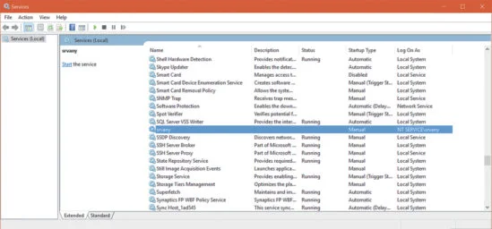
3. Click the Log On tab.

4. You can use the service’s Properties dialog box to create a virtual service account for an existing service. To do so, change the account name to NT SERVICE\servicename in the This Account field and clear both password fields. Note, however, that existing services might not run correctly under a virtual service account because the account might not have access to files or other resources needed by the service.
5. If you run Process Explorer and view the Security tab in the Properties dialog box for a service that uses a virtual account, you can observe the virtual account name and its security ID (SID). To try this, in the Properties dialog box of the srvany service, enter the command-line arguments notepad.exe. (srvany can be used to turn normal executables into services, so it must accept some executable on the command line.) Then click the Start button to start the service.

6. The virtual service account can appear in an access control entry for any object (such as a file) the service needs to access. If you click the Security tab in a file’s Properties dialog box and create an ACL that references the virtual service account, you will find that the account name you typed (for example, NT SERVICE\srvany) is changed to simply the service name (srvany) by the Check Names function, and it appears in the access control list in this shortened form.
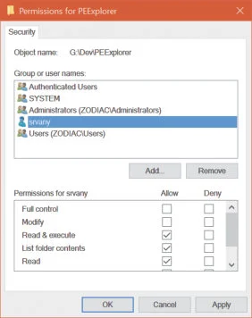
7. The virtual service account can be granted permissions (or user rights) via Group Policy. In this example, the virtual account for the srvany service has been granted the right to create a pagefile (using the Local Security Policy editor, secpol.msc).
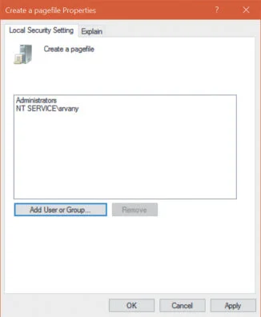
8. You won’t see the virtual service account in user-administration tools like lusrmgr.msc because it is not stored in the SAM registry hive. However, if you examine the registry within the context of the built-in System account (as described previously), you will see evidence of the account in the HKLM\Security\Policy\Secrets key:
C:\>psexec –s –i –d regedit.exe
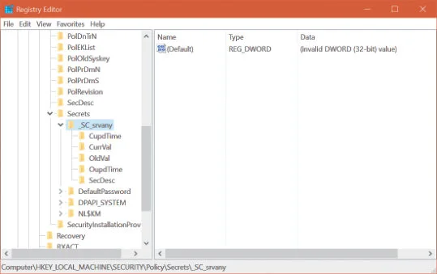
Security descriptors and access control
Tokens, which identify a user’s credentials, are only part of the object security equation. Another part of the equation is the security information associated with an object, which specifies who can perform what actions on the object. The data structure for this information is called a security descriptor. A security descriptor consists of the following attributes:
■ ■ Revision number This is the version of the SRM security model used to create the descriptor.
■ ■ Flags These are optional modifiers that define the behavior or characteristics of the descriptor. These flags are listed in Table 7-5 (most are documented in the Windows SDK).
■ ■ Owner SID This is the owner’s SID.
■ ■ Group SID This is the SID of the primary group for the object (used only by the POSIX subsystem, now unused since POSIX is no longer supported).
■ ■ Discretionary access control list (DACL) This specifies who has what access to the object.
■ ■ System access control list (SACL) This specifies which operations by which users should be logged in the security audit log and the explicit integrity level of an object.
TABLE 7-5 Security descriptor flags
Flag Meaning
SE_OWNER_DEFAULTED This indicates a security descriptor with a default owner security identifier (SID). Use this bit to find all the objects that have default owner permissions set.
SE_GROUP_DEFAULTED This indicates a security descriptor with a default group SID. Use this bit to find all the objects that have default group permissions set.
SE_DACL_PRESENT This indicates a security descriptor that has a DACL. If this flag is not set, or if this flag is set and the DACL is NULL, the security descriptor allows full access to everyone.
SE_DACL_DEFAULTED This indicates a security descriptor with a default DACL. For example, if an object creator does not specify a DACL, the object receives the default DACL from the access token of the creator. This flag can affect how the system treats the DACL with respect to access control entry (ACE) inheritance. The system ignores this flag if the SE_DACL_PRESENT flag is not set.
SE_SACL_PRESENT This indicates a security descriptor that has a system access control list (SACL).
SE_SACL_DEFAULTED This indicates a security descriptor with a default SACL. For example, if an object creator does not specify a SACL, the object receives the default SACL from the access token of the creator. This flag can affect how the system treats the SACL with respect to ACE inheritance. The system ignores this flag if the SE_SACL_PRESENT flag is not set.
SE_DACL_UNTRUSTED This indicates that the ACL pointed to by the DACL of the security descriptor was provided by an untrusted source. If this flag is set and a compound ACE is encountered, the system will substitute known valid SIDs for the server SIDs in the ACEs.
SE_SERVER_SECURITY This requests that the provider for the object protected by the security descriptor be a server ACL based on the input ACL, regardless of its source (explicit or defaulting). This is done by replacing all the GRANT ACEs with compound ACEs granting the current server access. This flag is meaningful only if the subject is impersonating.
SE_DACL_AUTO_INHERIT_REQ This requests that the provider for the object protected by the security descriptor automatically propagate the DACL to existing child objects. If the provider supports automatic inheritance, the DACL is propagated to any existing child objects, and the SE_DACL_AUTO_INHERITED bit in the security descriptor of the parent and child objects is set.
SE_SACL_AUTO_INHERIT_REQ This requests that the provider for the object protected by the security descriptor automatically propagate the SACL to existing child objects. If the provider supports automatic inheritance, the SACL is propagated to any existing child objects, and the SE_SACL_AUTO_INHERITED bit in the security descriptors of the parent object and child objects is set.
SE_DACL_AUTO_INHERITED This indicates a security descriptor in which the DACL is set up to support automatic propagation of inheritable ACEs to existing child objects. The system sets this bit when it performs the automatic inheritance algorithm for the object and its existing child objects.
SE_SACL_AUTO_INHERITED This indicates a security descriptor in which the SACL is set up to support automatic propagation of inheritable ACEs to existing child objects. The system sets this bit when it performs the automatic inheritance algorithm for the object and its existing child objects.
SE_DACL_PROTECTED This prevents the DACL of a security descriptor from being modified by inheritable ACEs.
SE_SACL_PROTECTED This prevents the SACL of a security descriptor from being modified by inheritable ACEs.
TABLE 7-5 Security descriptor flags (continued)
Flag Meaning
SE_RM_CONTROL_VALID This indicates that the resource control manager bits in the security descriptor are valid. The resource control manager bits are 8 bits in the security descriptor structure that contains information specific to the resource manager accessing the structure.
SE_SELF_RELATIVE This indicates a security descriptor in self-relative format, with all the security information in a contiguous block of memory. If this flag is not set, the security descriptor is in absolute format.
Security descriptors (SDs) can be retrieved programmatically by using various functions, such as
GetSecurityInfo, GetKernelObjectSecurity, GetFileSecurity, GetNamedSecurityInfo, and other more esoteric functions. After retrieval, the SD can be manipulated and then the relevant Set function called to make the change. Furthermore, a security descriptor can be constructed using a string in a language called Security Descriptor Definition Language (SDDL), which is capable of representing a security descriptor using a compact string. This string can be converted to a true SD by calling ConvertStringSecurityDescriptorToSecurityDescriptor. As you might expect, the converse function exists as well (ConvertSecurityDescriptorToStringSecurityDescriptor). See the Windows SDK for a detailed description of the SDDL.
An access control list (ACL) is made up of a header and zero or more access control entry (ACE) structures. There are two types of ACLs: DACLs and SACLs. In a DACL, each ACE contains a SID and an access mask (and a set of flags, explained shortly), which typically specifies the access rights (read, write, delete, and so forth) that are granted or denied to the holder of the SID. There are nine types of ACEs that can appear in a DACL: access allowed, access denied, allowed object, denied object, allowed callback, denied callback, allowed object callback, denied-object callback, and conditional claims. As you would expect, the access-allowed ACE grants access to a user, and the access-denied ACE denies the access rights specified in the access mask. The callback ACEs are used by applications that make use of the AuthZ API (described later) to register a callback that AuthZ will call when it performs an access check involving this ACE.
The difference between allowed object and access allowed, and between denied object and access denied, is that the object types are used only within Active Directory. ACEs of these types have a globally unique identifier (GUID) field that indicates that the ACE applies only to particular objects or subobjects (those that have GUID identifiers). (A GUID is a 128-bit identifier guaranteed to be universally unique.) In addition, another optional GUID indicates what type of child object will inherit the ACE when a child is created within an Active Directory container that has the ACE applied to it. The conditional claims ACE is stored in a *-callback type ACE structure and is described in the section on the AuthZ APIs.
The accumulation of access rights granted by individual ACEs forms the set of access rights granted by an ACL. If no DACL is present (a null DACL) in a security descriptor, everyone has full access to the object. If the DACL is empty (that is, it has zero ACEs), no user has access to the object.
The ACEs used in DACLs also have a set of flags that control and specify characteristics of the ACE related to inheritance. Some object namespaces have containers and objects. A container can hold other container objects and leaf objects, which are its child objects. Examples of containers are directories in the file system namespace and keys in the registry namespace. Certain flags in an ACE control how the ACE propagates to child objects of the container associated with the ACE. Table 7-6, reproduced in part from the Windows SDK, lists the inheritance rules for ACE flags.
TABLE 7-6 Inheritance rules for ACE flags
Flag Inheritance Rule
CONTAINER_INHERIT_ACE Child objects that are containers, such as directories, inherit the ACE as an effective ACE. The inherited ACE is inheritable unless the NO_PROPAGATE_ INHERIT_ACE bit flag is also set.
INHERIT_ONLY_ACE This flag indicates an inherit-only ACE that doesn’t control access to the object it’s attached to. If this flag is not set, the ACE controls access to the object to which it is attached.
INHERITED_ACE This flag indicates that the ACE was inherited. The system sets this bit when it propagates an inheritable ACE to a child object.
NO_PROPAGATE_INHERIT_ACE If the ACE is inherited by a child object, the system clears the OBJECT_INHERIT_ ACE and CONTAINER_INHERIT_ACE flags in the inherited ACE. This action prevents the ACE from being inherited by subsequent generations of objects.
OBJECT_INHERIT_ACE Non-container child objects inherit the ACE as an effective ACE. For child objects that are containers, the ACE is inherited as an inherit-only ACE unless the NO_PROPAGATE_INHERIT_ACE bit flag is also set.
A SACL contains two types of ACEs: system audit ACEs and system audit-object ACEs. These ACEs specify which operations performed on the object by specific users or groups should be audited. Audit information is stored in the system audit log. Both successful and unsuccessful attempts can be audited. Like their DACL object-specific ACE cousins, system audit-object ACEs specify a GUID indicating the types of objects or sub-objects that the ACE applies to and an optional GUID that controls propagation of the ACE to particular child object types. If a SACL is null, no auditing takes place on the object. (Security auditing is described later in this chapter.) The inheritance flags that apply to DACL ACEs also apply to system audit and system audit-object ACEs.
Figure 7-8 is a simplified picture of a file object and its DACL. As shown, the first ACE allows USER1 to read the file. The second ACE denies members of the group TEAM1 write access to the file. The third ACE grants all other users (Everyone) execute access.

FIGURE 7-8 Discretionary access control list (DACL).
EXPERIMENT: Viewing a security descriptor
Most executive subsystems rely on the object manager’s default security functionality to manage security descriptors for their objects. The object manager’s default security functions use the security descriptor pointer to store security descriptors for such objects. For example, the process manager uses default security, so the object manager stores process and thread security descriptors in the object headers of process and thread objects, respectively. The security descriptor pointer of events, mutexes, and semaphores also store their security descriptors. You can use live kernel debugging to view the security descriptors of these objects once you locate their object header, as outlined in the following steps. (Note that both Process Explorer and AccessChk can also show security descriptors for processes.)
1. Start local kernel debugging.
2. Type !process 0 0 explorer.exe to obtain process information about Explorer:
lkd> !process 0 0 explorer.exe PROCESS ffffe18304dfd780 SessionId: 1 Cid: 23e4 Peb: 00c2a000 ParentCid: 2264 DirBase: 2aa0f6000 ObjectTable: ffffcd82c72fcd80 HandleCount: <Data Not Accessible> Image: explorer.exe PROCESS ffffe1830670a080 SessionId: 1 Cid: 27b8 Peb: 00950000 ParentCid: 035c DirBase: 2cba97000 ObjectTable: ffffcd82c7ccc500 HandleCount: <Data Not Accessible> Image: explorer.exe
3. If more than one instance of explorer is listed, choose one. (It doesn’t matter which.) Type !object with the address of the EPROCESS in the output of the previous command as the argument to show the object data structure:
lkd> !object ffffe18304dfd780 Object: ffffe18304dfd780 Type: (ffffe182f7496690) Process ObjectHeader: ffffe18304dfd750 (new version) HandleCount: 15 PointerCount: 504639
4. Type dt _OBJECT_HEADER and the address of the object header field from the previous command’s output to show the object header data structure, including the security descriptor pointer value:
lkd> dt nt!_object_header ffffe18304dfd750 +0x000 PointerCount : 0n504448 +0x008 HandleCount : 0n15 +0x008 NextToFree : 0x00000000'0000000f Void +0x010 Lock : _EX_PUSH_LOCK +0x018 TypeIndex : 0xe5 '' +0x019 TraceFlags : 0 '' +0x019 DbgRefTrace : 0y0 +0x019 DbgTracePermanent : 0y0
+0x01a InfoMask : 0x88 '' +0x01b Flags : 0 '' +0x01b NewObject : 0y0 +0x01b KernelObject : 0y0 +0x01b KernelOnlyAccess : 0y0 +0x01b ExclusiveObject : 0y0 +0x01b PermanentObject : 0y0 +0x01b DefaultSecurityQuota : 0y0 +0x01b SingleHandleEntry : 0y0 +0x01b DeletedInline : 0y0 +0x01c Reserved : 0x30003100 +0x020 ObjectCreateInfo : 0xffffe183'09e84ac0 _OBJECT_CREATE_INFORMATION +0x020 QuotaBlockCharged : 0xffffe183'09e84ac0 Void +0x028 SecurityDescriptor : 0xffffcd82'cd0e97ed Void +0x030 Body : _QUAD
5. Finally, use the debugger’s !sd command to dump the security descriptor. The security descriptor pointer in the object header uses some of the low-order bits as flags, and these must be zeroed before following the pointer. On 32-bit systems there are three flag bits, so use & –8 with the security descriptor address displayed in the object header structure, as follows. On 64-bit systems there are four flag bits, so you use & –10 instead.
lkd> !sd 0xffffcd82'cd0e97ed & -10 ->Revision: 0x1 ->Sbz1 : 0x0 ->Control : 0x8814 SE_DACL_PRESENT SE_SACL_PRESENT SE_SACL_AUTO_INHERITED SE_SELF_RELATIVE ->Owner : S-1-5-21-3537846094-3055369412-2967912182-1001 ->Group : S-1-5-21-3537846094-3055369412-2967912182-1001 ->Dacl : ->Dacl : ->AclRevision: 0x2 ->Dacl : ->Sbz1 : 0x0 ->Dacl : ->AclSize : 0x5c ->Dacl : ->AceCount : 0x3 ->Dacl : ->Sbz2 : 0x0 ->Dacl : ->Ace[0]: ->AceType: ACCESS_ALLOWED_ACE_TYPE ->Dacl : ->Ace[0]: ->AceFlags: 0x0 ->Dacl : ->Ace[0]: ->AceSize: 0x24 ->Dacl : ->Ace[0]: ->Mask : 0x001fffff ->Dacl : ->Ace[0]: ->SID: S-1-5-21-3537846094-3055369412-2967912182-1001 ->Dacl : ->Ace[1]: ->AceType: ACCESS_ALLOWED_ACE_TYPE ->Dacl : ->Ace[1]: ->AceFlags: 0x0 ->Dacl : ->Ace[1]: ->AceSize: 0x14 ->Dacl : ->Ace[1]: ->Mask : 0x001fffff ->Dacl : ->Ace[1]: ->SID: S-1-5-18 ->Dacl : ->Ace[2]: ->AceType: ACCESS_ALLOWED_ACE_TYPE
->Dacl : ->Ace[2]: ->AceFlags: 0x0 ->Dacl : ->Ace[2]: ->AceSize: 0x1c ->Dacl : ->Ace[2]: ->Mask : 0x00121411 ->Dacl : ->Ace[2]: ->SID: S-1-5-5-0-1745560 ->Sacl : ->Sacl : ->AclRevision: 0x2 ->Sacl : ->Sbz1 : 0x0 ->Sacl : ->AclSize : 0x1c ->Sacl : ->AceCount : 0x1 ->Sacl : ->Sbz2 : 0x0 ->Sacl : ->Ace[0]: ->AceType: SYSTEM_MANDATORY_LABEL_ACE_TYPE ->Sacl : ->Ace[0]: ->AceFlags: 0x0 ->Sacl : ->Ace[0]: ->AceSize: 0x14 ->Sacl : ->Ace[0]: ->Mask : 0x00000003 ->Sacl : ->Ace[0]: ->SID: S-1-16-8192
The security descriptor contains three access-allowed ACEs: one for the current user (S-1-5-21- 3537846094-3055369412-2967912182-1001), one for the System account (S-1-5-18), and the last for the Logon SID (S-1-5-5-0-1745560). The system access control list has one entry (S-1-16-8192) labeling the process as medium integrity level.
ACL assignment
To determine which DACL to assign to a new object, the security system uses the first applicable rule of the following four assignment rules:
1. If a caller explicitly provides a security descriptor when creating the object, the security system applies it to the object. If the object has a name and resides in a container object (for example, a named event object in the \BaseNamedObjects object manager namespace directory), the system merges any inheritable ACEs (ACEs that might propagate from the object’s container) into the DACL unless the security descriptor has the SE_DACL_PROTECTED flag set, which prevents inheritance.
2. If a caller doesn’t supply a security descriptor and the object has a name, the security system looks at the security descriptor in the container in which the new object name is stored. Some of the object directory’s ACEs might be marked as inheritable, meaning they should be applied to new objects created in the object directory. If any of these inheritable ACEs are present, the security system forms them into an ACL, which it attaches to the new object. (Separate flags indicate ACEs that should be inherited only by container objects rather than by objects that aren’t containers.)
3. If no security descriptor is specified and the object doesn’t inherit any ACEs, the security system retrieves the default DACL from the caller’s access token and applies it to the new object. Several subsystems on Windows have hard-coded DACLs that they assign on object creation (for example, services, LSA, and SAM objects).
4. If there is no specified descriptor, no inherited ACEs, and no default DACL, the system creates the object with no DACL, which allows everyone (all users and groups) full access to the object. This rule is the same as the third rule, in which a token contains a null default DACL.
The rules the system uses when assigning a SACL to a new object are similar to those used for DACL assignment, with some exceptions:
■ ■ Inherited system audit ACEs don’t propagate to objects with security descriptors marked with the SE_SACL_PROTECTED flag (similar to the SE_DACL_PROTECTED flag, which protects DACLs).
■ ■ If there are no specified security audit ACEs and there is no inherited SACL, no SACL is applied to the object. This behavior is different from that used to apply default DACLs because tokens don’t have a default SACL.
When a new security descriptor containing inheritable ACEs is applied to a container, the system automatically propagates the inheritable ACEs to the security descriptors of child objects. (Note that a security descriptor’s DACL doesn’t accept inherited DACL ACEs if its SE_DACL_PROTECTED flag is enabled, and its SACL doesn’t inherit SACL ACEs if the descriptor has the SE_SACL_PROTECTED flag set.) The order in which inheritable ACEs are merged with an existing child object’s security descriptor is such that any ACEs that were explicitly applied to the ACL are kept ahead of ACEs that the object inherits. The system uses the following rules for propagating inheritable ACEs:
■ ■ If a child object with no DACL inherits an ACE, the result is a child object with a DACL containing only the inherited ACE.
■ ■ If a child object with an empty DACL inherits an ACE, the result is a child object with a DACL containing only the inherited ACE.
■ ■ For objects in Active Directory only, if an inheritable ACE is removed from a parent object, automatic inheritance removes any copies of the ACE inherited by child objects.
■ ■ For objects in Active Directory only, if automatic inheritance results in the removal of all ACEs from a child object’s DACL, the child object has an empty DACL rather than no DACL.
As you’ll soon discover, the order of ACEs in an ACL is an important aspect of the Windows security model.
Note Inheritance is generally not directly supported by the object stores, such as file systems, the registry, or Active Directory. Windows APIs that support inheritance, including SetEntriesInAcl, do so by invoking appropriate functions within the security inheritance support DLL (%SystemRoot%\System32\Ntmarta.dll) that know how to traverse those object stores.
Trust ACEs
The advent of protected processes and Protected Processes Light (PPL, discussed in Chapter 3) created a need for such a process to make objects as accessible by protected processes only. This is important to protect certain resources such as the KnownDlls registry key from tampering, even by admin-level code. Such ACEs are specified with well-known SIDs that provide the protection level and signer that is required to obtain access. Table 7-7 shows the SIDs and their level and meaning.
TABLE 7-7 Trust SIDs
SID Protection Level Protection Signer
1-19-512-0 Protected Light None
1-19-512-4096 Protected Light Windows
1-19-512-8192 Protected Light WinTcb
1-19-1024-0 Protected None
1-19-1024-4096 Protected Windows
1-19-1024-8192 Protected WinTcb
A trust SID is part of a token object that exists for tokens attached to protected or PPL processes. The higher the SID number, the more powerful the token is. (remember that Protected is higher than Protected Light).
EXPERIMENT: Viewing trust SIDs
In this experiment, you’ll look at trust SIDs in tokens of protected processes.
Start local kernel debugging.
List Csrss.exe processes with basic information:
lkd> !process 0 1 csrss.exe PROCESS ffff8188e50b5780 SessionId: 0 Cid: 0358 Peb: b3a9f5e000 ParentCid: 02ec DirBase: 1273a3000 ObjectTable: ffffbe0d829e2040 HandleCount: <Data Not Accessible> Image: csrss.exe VadRoot ffff8188e6ccc8e0 Vads 159 Clone 0 Private 324. Modified 4470. Locked 0. DeviceMap ffffbe0d70c15620 Token ffffbe0d829e7060 ... PROCESS ffff8188e7a92080 SessionId: 1 Cid: 03d4 Peb: d5b0de4000 ParentCid: 03bc DirBase: 162d93000 ObjectTable: ffffbe0d8362d7c0 HandleCount: <Data Not Accessible>Modified 462372. Locked 0. DeviceMap ffffbe0d70c15620 Token ffffbe0d8362d060 ...
Select one of the tokens and show its details:
lkd> !token ffffbe0d829e7060 _TOKEN 0xffffbe0d829e7060 TS Session ID: 0 User: S-1-5-18 ... Process Token TrustLevelSid: S-1-19-512-8192
That’s a PPL with a WinTcb signer.
Determining access
Two methods are used for determining access to an object:
■ ■ The mandatory integrity check, which determines whether the integrity level of the caller is high enough to access the resource, based on the resource’s own integrity level and its mandatory policy.
■ ■ The discretionary access check, which determines the access that a specific user account has to an object.
When a process tries to open an object, the integrity check takes place before the standard Windows DACL check in the kernel’s SeAccessCheck function because it is faster to execute and can quickly eliminate the need to perform the full discretionary access check. Given the default integrity policies in its access token (TOKEN_MANDATORY_NO_WRITE_UP and TOKEN_MANDATORY_NEW_PROCESS_
MIN, described previously), a process can open an object for write access if its integrity level is equal to or higher than the object’s integrity level and the DACL also grants the process the accesses it desires. For example, a low-integrity-level process cannot open a medium-integrity-level process for write access, even if the DACL grants the process write access.
With the default integrity policies, processes can open any object—with the exception of process, thread, and token objects—for read access as long as the object’s DACL grants them read access. That means a process running at low integrity level can open any files accessible to the user account in which it’s running. Protected Mode Internet Explorer uses integrity levels to help prevent malware that infects it from modifying user account settings, but it does not stop malware from reading the user’s documents.
Recall that process, thread, and token objects are exceptions because their integrity policy also includes No-Read-Up. That means a process integrity level must be equal to or higher than the integrity level of the process or thread it wants to open, and the DACL must grant it the access it wants for an attempt to open it to succeed. Assuming the DACLs allow the desired access, Table 7-8 shows the types of access that processes running at various integrity levels have to other processes and objects.
TABLE 7-8 Accessing objects and processes based on integrity level
Accessing Process Access to Objects Access to Other Processes
High integrity level Read/write to all objects with integrity level of High or lower Read access to objects with integrity level of System
Read/write access to all processes with High or lower integrity level No read/write access to processes with System integrity level
Medium integrity level Read/write to all objects with integrity level of Medium or Low Read access to objects with integrity level of High or System
Read/write access to all processes with Medium or Low integrity level No read/write access to processes with High or System integrity level
Low integrity level Read/write to all objects with integrity level of Low Read access to objects with integrity level of Medium or higher
Read/write access to all processes with Low integrity level No read/write access to processes with Medium or higher integrity level
Note The read access to a process described in this section means full read access, such as reading the contents of the process address space. No-Read-Up does not prevent opening a higher-integrity-level process from a lower one for a more limited access, such as PROCESS_
QUERY_LIMITED_INFORMATION, which provides only basic information about the process.
User Interface Privilege Isolation
The Windows messaging subsystem also honors integrity levels to implement User Interface Privilege Isolation (UIPI). The subsystem does this by preventing a process from sending window messages to the windows owned by a process having a higher integrity level, with the following informational messages being exceptions:
■ ■ WM_NULL
■ ■ WM_MOVE
■ ■ WM_SIZE
■
■
WM_GETTEXT ■
■
WM_GETTEXTLENGTH ■
■
WM_GETHOTKEY ■
■
WM_GETICON ■
■
WM_RENDERFORMAT ■
■
WM_DRAWCLIPBOARD ■
■
WM_CHANGECBCHAIN ■
■
WM_THEMECHANGEDThis use of integrity levels prevents standard user processes from driving input into the windows of elevated processes or from performing a shatter attack (such as sending the process malformed messages that trigger internal buffer overflows, which can lead to the execution of code at the elevated process’s privilege level). UIPI also blocks window hooks (SetWindowsHookEx API) from affecting the windows of higher-integrity-level processes so that a standard user process can’t log the keystrokes the user types into an administrative application, for example. Journal hooks are also blocked in the same way to prevent lower-integrity-level processes from monitoring the behavior of higher-integrity-level processes.
Processes (running with medium or higher integrity level only) can choose to allow additional messages to pass the guard by calling the ChangeWindowMessageFilterEx API. This function is typically used to add messages required by custom controls to communicate outside native common controls in Windows. An older API, ChangeWindowMessageFilter, performs a similar function, but it is per-process rather than per-window. With ChangeWindowMessageFilter, it is possible for two custom controls inside the same process to be using the same internal window messages, which could lead to one control’s potentially malicious window message to be allowed through, simply because it happens to be a query-only message for the other custom control.
Because accessibility applications such as the On-Screen Keyboard (Osk.exe) are subject to UIPI’s restrictions (which would require the accessibility application to be executed for each kind of visible integrity-level process on the desktop), these processes can enable UI access. This flag
can be present in the manifest file of the image and will run the process at a slightly higher integrity level than medium (between 0x2000 and 0x3000) if launched from a standard user account, or at high integrity level if launched from an Administrator account. Note that in the second case, an elevation request won’t actually be displayed. For a process to set this flag, its image must also be signed and in one of several secure locations, including %SystemRoot% and %ProgramFiles%.
After the integrity check is complete, and assuming the mandatory policy allows access to the object based on the caller’s integrity, one of two algorithms is used for the discretionary check to an object, which will determine the outcome of the access check:
■ ■ Determine the maximum access allowed to the object, a form of which is exported to user mode using the AuthZ API (described in the section “The AuthZ API” later in this chapter) or the older GetEffectiveRightsFromAcl function. This is also used when a program specifies a desired access of MAXIMUM_ALLOWED, which is what the legacy APIs that don’t have a desired access parameter use.
■ ■ Determine whether a specific desired access is allowed, which can be done with the Windows
AccessCheck function or the AccessCheckByType function.
The first algorithm examines the entries in the DACL as follows:
1. If the object has no DACL (a null DACL), the object has no protection and the security system grants all access, unless the access is from an AppContainer process (discussed in the “AppContainers” section later in this chapter), which means access is denied.
2. If the caller has the take-ownership privilege, the security system grants write-owner access before examining the DACL. (Take-ownership privilege and write-owner access are explained in a moment.)
3. If the caller is the owner of the object, the system looks for an OWNER_RIGHTS SID and uses that SID as the SID for the next steps. Otherwise, read-control and write-DACL access rights are granted.
4. For each access-denied ACE that contains a SID that matches one in the caller’s access token, the ACE’s access mask is removed from the granted-access mask.
5. For each access-allowed ACE that contains a SID that matches one in the caller’s access token, the ACE’s access mask is added to the granted-access mask being computed, unless that access has already been denied.
When all the entries in the DACL have been examined, the computed granted-access mask is returned to the caller as the maximum allowed access to the object. This mask represents the total set of access types that the caller will be able to successfully request when opening the object.
The preceding description applies only to the kernel-mode form of the algorithm. The Windows version implemented by GetEffectiveRightsFromAcl differs in that it doesn’t perform step 2, and it considers a single user or group SID rather than an access token.
Owner Rights
Because owners of an object can normally override the security of an object by always being granted read-control and write-DACL rights, a specialized method of controlling this behavior is exposed by Windows: the Owner Rights SID.
The Owner Rights SID exists for two main reasons:
■ ■ To improve service hardening in the operating system Whenever a service creates an object at run time, the Owner SID associated with that object is the account the service is running in (such as local system or local service) and not the actual service SID. This means that any other service in the same account would have access to the object by being an owner. The Owner Rights SID prevents that unwanted behavior.
■ ■ To allow more flexibility for specific usage scenarios For example, suppose an administrator wants to allow users to create files and folders but not to modify the ACLs on those objects. (Users could inadvertently or maliciously grant access to those files or folders to unwanted accounts.) By using an inheritable Owner Rights SID, the users can be prevented from editing or even viewing the ACL on the objects they create. A second usage scenario relates to group changes. Suppose an employee has been part of some confidential or sensitive group, has created several files while a member of that group, and has now been removed from the group for business reasons. Because that employee is still a user, he could continue accessing the sensitive files.
The second algorithm is used to determine whether a specific access request can be granted based on the caller’s access token. Each open function in the Windows API that deals with securable objects has a parameter that specifies the desired access mask, which is the last component of the security equation. To determine whether the caller has access, the following steps are performed:
1. If the object has no DACL (a null DACL), the object has no protection and the security system grants the desired access.
2. If the caller has the take-ownership privilege, the security system grants write-owner access if requested and then examines the DACL. However, if write-owner access was the only access requested by a caller with take-ownership privilege, the security system grants that access and never examines the DACL.
3. If the caller is the owner of the object, the system looks for an OWNER_RIGHTS SID and uses that SID as the SID for the next steps. Otherwise, read-control and write-DACL access rights are granted. If these rights were the only access rights that the caller requested, access is granted without examining the DACL
4. Each ACE in the DACL is examined from first to last. An ACE is processed if one of the following conditions is satisfied:
• The ACE is an access-deny ACE, and the SID in the ACE matches an enabled SID (SIDs can be enabled or disabled) or a deny-only SID in the caller’s access token.
• The ACE is an access-allowed ACE, and the SID in the ACE matches an enabled SID in the caller’s token that isn’t of type deny-only.
• It is the second pass through the descriptor for restricted-SID checks, and the SID in the ACE matches a restricted SID in the caller’s access token.
• The ACE isn’t marked as inherit-only.
5. If it is an access-allowed ACE, the rights in the access mask in the ACE that were requested are granted. If all the requested access rights have been granted, the access check succeeds. If it is an access-denied ACE and any of the requested access rights are in the denied-access rights, access is denied to the object.
6. If the end of the DACL is reached and some of the requested access rights still haven’t been granted, access is denied.
7. If all accesses are granted but the caller’s access token has at least one restricted SID, the system rescans the DACL’s ACEs looking for ACEs with access-mask matches for the accesses the user is requesting and a match of the ACE’s SID with any of the caller’s restricted SIDs. Only if both scans of the DACL grant the requested access rights is the user granted access to the object.
The behavior of both access-validation algorithms depends on the relative ordering of allow and deny ACEs. Consider an object with only two ACEs: one that specifies that a certain user is allowed full access to an object and one that denies the user access. If the allow ACE precedes the deny ACE, the user can obtain full access to the object, but if the order is reversed, the user cannot gain any access to the object.
Several Windows functions, such as SetSecurityInfo and SetNamedSecurityInfo, apply ACEs in the preferred order of explicit deny ACEs preceding explicit allow ACEs. For example, the security editor dialog boxes with which you edit permissions on NTFS files and registry keys use these functions. SetSecurityInfo and SetNamedSecurityInfo also apply ACE inheritance rules to the security descriptor on which they are applied.
Figure 7-9 shows an example of access validation demonstrating the importance of ACE ordering. In the example, access is denied to a user wanting to open a file even though an ACE in the object’s DACL grants the access. This is because the ACE denying the user access (by virtue of the user’s membership in the Writers group) precedes the ACE granting access.

FIGURE 7-9 Access-validation example.
As stated, because it wouldn’t be efficient for the security system to process the DACL every time a process uses a handle, the SRM makes this access check only when a handle is opened, not each time the handle is used. Thus, once a process successfully opens a handle, the security system can’t revoke the access rights that have been granted, even if the object’s DACL changes. Also keep in mind that because kernel-mode code uses pointers rather than handles to access objects, the access check isn’t performed when the operating system uses objects. In other words, the Windows executive trusts itself (and all loaded drivers) in a security sense.
The fact that an object’s owner is always granted write-DACL access to an object means that users can never be prevented from accessing the objects they own. If, for some reason, an object had an empty DACL (no access), the owner would still be able to open the object with write-DACL access and then apply a new DACL with the desired access permissions.
A warning regarding the GUI security editors
When you use the GUI permissions editors to modify security settings on a file, a registry, or an Active Directory object, or on another securable object, the main security dialog box shows you a potentially misleading view of the security that’s applied to the object. If you allow Full Control to the Everyone group and deny the Administrator group Full Control, the list might lead you to believe that the Everyone group access-allowed ACE precedes the Administrator deny ACE because that’s the order in which they appear. However, as we’ve said, the editors place deny ACEs before allow ACEs when they apply the ACL to the object.
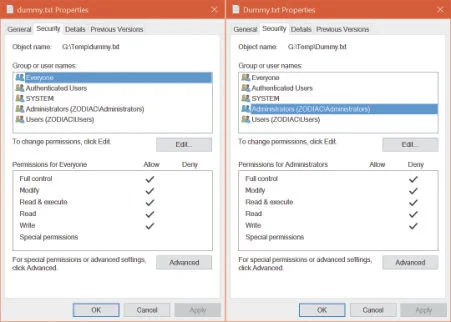
The Permissions tab of the Advanced Security Settings dialog box shows the order of ACEs in the DACL. However, even this dialog box can be confusing because a complex DACL can have deny ACEs for various accesses followed by allow ACEs for other access types.
The only definitive way to know what access a particular user or group will have to an object (other than having that user or a member of the group try to access the object) is to use the Effective Access tab of the dialog box that is displayed when you click the Advanced button in the Properties dialog box. Enter the name of the user or group you want to check and the dialog box shows you what permissions they are allowed for the object.
Dynamic Access Control
The discretionary access control mechanism discussed in previous sections has existed since the first Windows NT version and is useful in many scenarios. There are scenarios, however, where this scheme is not flexible enough. For example, consider a requirement that users accessing a shared file should be allowed to do so if they are using a computer in the workplace, but should not be allowed if accessing the file from their computer at home. There is no way to specify such a condition using an ACE.
Windows 8 and Server 2012 introduced Dynamic Access Control (DAC), a flexible mechanism that can be used to define rules based on custom attributes defined in Active Directory. DAC does not replace the existing mechanism, but adds to it. This means that for an operation to be allowed, both DAC and the classic DACL must grant the permission. Figure 7-10 shows the main aspects of Dynamic Access Control.
FIGURE 7-10 Dynamic Access Control components.
A claim is any piece of information about a user, device (computer in a domain), or resource (generic attribute) that has been published by a domain controller. Examples of valid claims are a user’s title and department classification of a file. Any combination of claims can be used in expressions for building rules. These rules collectively become the central access policy.
DAC configuration is done in Active Directory and pushed through policy. The Kerberos tickets protocol has been enhanced to support authenticated transport of user and device claims (known as Kerberos armoring).
The AuthZ API
The AuthZ Windows API provides authorization functions and implements the same security model as the security reference monitor (SRM), but it implements the model totally in user mode in the %SystemRoot%\System32\Authz.dll library. This gives applications that want to protect their own private objects, such as database tables, the ability to leverage the Windows security model without incurring the cost of user mode–to–kernel mode transitions that they would make if they relied on the SRM.
The AuthZ API uses standard security descriptor data structures, SIDs, and privileges. Instead of using tokens to represent clients, AuthZ uses AUTHZ_CLIENT_CONTEXT. AuthZ includes user-mode equivalents of all access-check and Windows security functions—for example, AuthzAccessCheck is the AuthZ version of the AccessCheck Windows API that uses the SeAccessCheck SRM function.
Another advantage available to applications that use AuthZ is that they can direct AuthZ to cache the results of security checks to improve subsequent checks that use the same client context and security descriptor. AuthZ is fully documented in the Windows SDK.
This type of access checking, using a SID and security group membership in a static, controlled environment, is known as Identity-Based Access Control (IBAC), and it requires that the security system know the identity of every possible accessor when the DACL is placed in an object’s security descriptor.
Windows includes support for Claims Based Access Control (CBAC), where access is granted not based upon the accessor’s identity or group membership, but upon arbitrary attributes assigned to the accessor and stored in the accessor’s access token. Attributes are supplied by an attribute provider, such as AppLocker. The CBAC mechanism provides many benefits, including the ability to create a DACL for a user whose identity is not yet known or dynamically calculated user attributes. The CBAC ACE (also known as a conditional ACE) is stored in a *-callback ACE structure, which is essentially private to AuthZ and is ignored by the system SeAccessCheck API. The kernel-mode routine SeSrpAccessCheck does not understand conditional ACEs, so only applications calling the AuthZ APIs can make use of CBAC. The only system component that makes use of CBAC is AppLocker, for setting attributes such as path or publisher. Third-party applications can make use of CBAC by taking advantage of the CBAC AuthZ APIs.
Using CBAC security checks allows powerful management policies, such as the following:
■ ■ Run only applications approved by the corporate IT department.
■ ■ Allow only approved applications to access your Microsoft Outlook contacts or calendar.
■ ■ Allow only people in a particular building on a specific floor to access printers on that floor.
■ ■ Allow access to an intranet website only to full-time employees (as opposed to contractors).
Attributes can be referenced in what is known as a conditional ACE, where the presence, absence, or value of one or more attributes is checked. An attribute name can contain any alphanumeric Unicode characters, as well as the following characters: colon (:), forward slash (/), and underscore (_). The value of an attribute can be one of the following: 64-bit integer, Unicode string, byte string, or array.
Conditional ACEs
The format of SDDL strings has been expanded to support ACEs with conditional expressions. The new format of an SDDL string is this: AceType;AceFlags;Rights;ObjectGuid;InheritObjectGuid;
AccountSid;(ConditionalExpression).
The AceType for a conditional ACE is either XA (for SDDL_CALLBACK_ACCESS_ALLOWED) or XD (for
SDDL_CALLBACK_ACCESS_DENIED). Note that ACEs with conditional expressions are used for claimstype authorization (specifically, the AuthZ APIs and AppLocker) and are not recognized by the object manager or file systems.
A conditional expression can include any of the elements shown in Table 7-9.
TABLE 7-9 Acceptable Elements for a Conditional Expression
Expression Element Description
AttributeName Tests whether the specified attribute has a non-zero value.
exists AttributeName Tests whether the specified attribute exists in the client context.
AttributeName Operator Value Returns the result of the specified operation. The following operators are defined for use in conditional expressions to test the values of attributes. All these are binary operators (as opposed to unary) and are used in the form AttributeName Operator Value. The operators are Contains any_of , ==, !=, <, <=, >, >=.
ConditionalExpression || ConditionalExpression
Tests whether either of the specified conditional expressions is true.
ConditionalExpression && ConditionalExpression
Tests whether both of the specified conditional expressions are true.
!(ConditionalExpression) The inverse of a conditional expression.
Member_of {SidArray} Tests whether the SID_AND_ATTRIBUTES array of the client context contains all the security identifiers (SIDs) in the comma-separated list specified by SidArray.
A conditional ACE can contain any number of conditions. It is ignored if the resultant evaluation of the condition is false or applied if the result is true. A conditional ACE can be added to an object using the AddConditionalAce API and checked using the AuthzAccessCheck API.
A conditional ACE could specify that access to certain data records within a program should be granted only to a user who meets the following criteria (for example):
■ ■ Holds the Role attribute, with a value of Architect, Program Manager, or Development Lead, and the Division attribute with a value of Windows
■ ■ Whose ManagementChain attribute contains the value John Smith
■ ■ Whose CommissionType attribute is Officer and whose PayGrade attribute is greater than 6 (that is, the rank of General Officer in the US military)
Windows does not include tools to view or edit conditional ACEs.
Account rights and privileges
Many operations performed by processes as they execute cannot be authorized through object access protection because they do not involve interaction with a particular object. For example, the ability to bypass security checks when opening files for backup is an attribute of an account, not of a particular object. Windows uses both privileges and account rights to allow a system administrator to control what accounts can perform security-related operations.
A privilege is the right of an account to perform a particular system-related operation, such as shutting down the computer or changing the system time. An account right grants or denies the account to which it’s assigned the ability to perform a particular type of logon, such as a local logon or interactive logon, to a computer.
A system administrator assigns privileges to groups and accounts using tools such as the Active Directory Users and Groups MMC snap-in for domain accounts or the Local Security Policy editor (%SystemRoot%\System32\secpol.msc). Figure 7-11 shows the User Rights Assignment configuration in the Local Security Policy editor, which displays the complete list of privileges and account rights available on Windows. Note that the tool makes no distinction between privileges and account rights. However, you can differentiate between them: Any user right that does not contain the words log on is an account privilege.

FIGURE 7-11 Local Security Policy editor user rights assignment.
Account rights
Account rights are not enforced by the SRM, nor are they stored in tokens. The function responsible for logon is LsaLogonUser. Winlogon, for example, calls the LogonUser API when a user logs on interactively to a computer, and LogonUser calls LsaLogonUser. LogonUser takes a parameter that indicates the type of logon being performed, which includes interactive, network, batch, service, and Terminal Server client.
In response to logon requests, the Local Security Authority (LSA) retrieves account rights assigned to a user from the LSA policy database at the time that a user attempts to log on to the system. The LSA checks the logon type against the account rights assigned to the user account logging on and denies the logon if the account does not have the right that permits the logon type or it has the right that denies the logon type. Table 7-10 lists the user rights defined by Windows.
TABLE 7-10 Account rights
User Right Role
Deny logon locally, allow logon locally Used for interactive logons that originate on the local machine
Deny logon over the network, allow logon over the network Used for logons that originate from a remote machine
Deny logon through Terminal Services, allow logon through Terminal Services
Used for logons through a Terminal Server client
Deny logon as a service, allow logon as a service Used by the service control manager when starting a service in a particular user account
Deny logon as a batch job, allow logon as a batch job Used when performing a logon of type batch
Windows applications can add and remove user rights from an account by using the LsaAdd-
AccountRights and LsaRemoveAccountRights functions, and they can determine what rights are assigned to an account with LsaEnumerateAccountRights.
Privileges
The number of privileges defined by the operating system has grown over time. Unlike user rights, which are enforced in one place by the LSA, different privileges are defined by different components and enforced by those components. For example, the debug privilege, which allows a process to bypass security checks when opening a handle to another process with the OpenProcess Windows API, is checked for by the process manager.
Table 7-11 is a full list of privileges and describes how and when system components check for them. Each privilege has a macro defined in the SDK headers, in the form SE_privilege_NAME, where
privilege is a privilege constant—for example, SE_DEBUG_NAME for the debug privilege. These macros are defined as strings that start with Se and end with Privilege, as in SeDebugPrivilege. This may seem to indicate that privileges are identified by strings, but in fact they are identified by LUIDs, which naturally are unique for the current boot. Every access to a privilege needs to lookup the correct LUID by calling the LookupPrivilegeValue function. Note, however, that Ntdll and kernel code can identify privileges with integer constants directly without going through a LUID.
TABLE 7-11 Privileges
Privilege User Right Privilege Usage
SeAssignPrimaryTokenPrivilege Replace a processlevel token
Checked for by various components, such as NtSetInformationJobObject, that set a process’s token.
SeAuditPrivilege Generate security audits
Required to generate events for the Security event log with the ReportEvent API.
TABLE 7-11 Privileges (continued)
Privilege User Right Privilege Usage
SeBackupPrivilege Back up files and directories
Causes NTFS to grant the following access to any file or directory, regardless of the security descriptor that’s present: READ_CONTROL, ACCESS_SYSTEM_ SECURITY, FILE_GENERIC_READ, and FILE_ TRAVERSE. Note that when opening a file for backup, the caller must specify the FILE_FLAG_BACKUP_ SEMANTICS flag. Also allows corresponding access to registry keys when using RegSaveKey.
SeChangeNotifyPrivilege Bypass traverse checking
Used by NTFS to avoid checking permissions on intermediate directories of a multilevel directory lookup. Also used by file systems when applications register for notification of changes to the file system structure.
SeCreateGlobalPrivilege Create global objects
Required for a process to create section and symbolic link objects in the directories of the object manager namespace that are assigned to a different session than the caller.
SeCreatePagefilePrivilege Create a pagefile Checked for by NtCreatePagingFile, which is the function used to create a new paging file.
SeCreatePermanentPrivilege Create permanent shared objects
Checked for by the object manager when creating a permanent object (one that doesn’t get deallocated when there are no more references to it).
SeCreateSymbolicLinkPrivilege Create symbolic links
Checked for by NTFS when creating symbolic links on the file system with the CreateSymbolicLink API.
SeCreateTokenPrivilege Create a token object
NtCreateToken, the function that creates a token object, checks for this privilege.
SeDebugPrivilege Debug programs If the caller has this privilege enabled, the process manager allows access to any process or thread using NtOpenProcess or NtOpenThread, regardless of the process’s or thread’s security descriptor (except for protected processes).
SeEnableDelegationPrivilege Enable computer and user accounts to be trusted for delegation
Used by Active Directory services to delegate authenticated credentials.
SeImpersonatePrivilege Impersonate a client after authentication
The process manager checks for this when a thread wants to use a token for impersonation and the token represents a different user than that of the thread’s process token.
SeIncreaseBasePriorityPrivilege Increase scheduling priority
Checked for by the process manager and is required to raise the priority of a process.
SeIncreaseQuotaPrivilege Adjust memory quotas for a process
Enforced when changing a process’s working set thresholds, a process’s paged and nonpaged pool quotas, and a process’s CPU rate quota.
SeIncreaseWorkingSetPrivilege Increase a process working set
Required to call SetProcessWorkingSetSize to increase the minimum working set. This indirectly allows the process to lock up to the minimum working set of memory using VirtualLock.
TABLE 7-11 Privileges (continued)
Privilege User Right Privilege Usage
SeLoadDriverPrivilege Load and unload device drivers
Checked for by the NtLoadDriver and NtUnloadDriver driver functions.
SeLockMemoryPrivilege Lock pages in memory
Checked for by NtLockVirtualMemory, the kernel implementation of VirtualLock.
SeMachineAccountPrivilege Add workstations to the domain
Checked for by the Security Account Manager on a domain controller when creating a machine account in a domain.
SeManageVolumePrivilege Perform volume maintenance tasks
Enforced by file system drivers during a volume open operation, which is required to perform disk-checking and defragmenting activities.
SeProfileSingleProcessPrivilege Profile single process
Checked by Superfetch and the prefetcher when requesting information for an individual process through the NtQuerySystemInformation API.
SeRelabelPrivilege Modify an object label
Checked for by the SRM when raising the integrity level of an object owned by another user, or when attempting to raise the integrity level of an object higher than that of the caller’s token.
SeRemoteShutdownPrivilege Force shutdown from a remote system
Winlogon checks that remote callers of the InitiateSystemShutdown function have this privilege.
SeRestorePrivilege Restore files and directories
This privilege causes NTFS to grant the following access to any file or directory, regardless of the security descriptor that’s present: WRITE_DAC, WRITE_OWNER, ACCESS_SYSTEM_SECURITY, FILE_GENERIC_WRITE, FILE_ADD_FILE, FILE_ADD_SUBDIRECTORY, and DELETE. Note that when opening a file for restore, the caller must specify the FILE_FLAG_BACKUP_ SEMANTICS flag. Allows corresponding access to registry keys when using RegSaveKey.
SeSecurityPrivilege Manage auditing and security log
Required to access the SACL of a security descriptor and to read and clear the security event log.
SeShutdownPrivilege Shut down the system
Checked for by NtShutdownSystem and NtRaiseHardError, which presents a system error dialog box on the interactive console.
SeSyncAgentPrivilege Synchronize directory service data
Required to use the LDAP directory synchronization services. It allows the holder to read all objects and properties in the directory, regardless of the protection on the objects and properties.
SeSystemEnvironmentPrivilege Modify firmware environment variables
Required by NtSetSystemEnvironmentValue and NtQuerySystemEnvironmentValue to modify and read firmware environment variables using the hardware abstraction layer (HAL).
SeSystemProfilePrivilege Profile system performance
Checked for by NtCreateProfile, the function used to perform profiling of the system. This is used by the Kernprof tool, for example.
SeSystemtimePrivilege Change the system time
Required to change the time or date.
TABLE 7-11 Privileges (continued)
Privilege User Right Privilege Usage
SeTakeOwnershipPrivilege Take ownership of files and other objects
Required to take ownership of an object without being granted discretionary access.
SeTcbPrivilege Act as part of the operating system
Checked for by the SRM when the session ID is set in a token, by the Plug and Play manager for Plug and Play event creation and management, by BroadcastSystemMessageEx when called with BSM_ALLDESKTOPS, by LsaRegisterLogonProcess, and when specifying an application as a VDM with NtSetInformationProcess.
SeTimeZonePrivilege Change the time zone
Required to change the time zone.
SeTrustedCredManAccessPrivilege Access Credential Manager as a trusted caller
Checked by the Credential Manager to verify that it should trust the caller with credential information that can be queried in plaintext. It is granted only to Winlogon by default.
SeUndockPrivilege Remove computer from a docking station
Checked for by the user-mode Plug and Play manager when either a computer undock is initiated or a device eject request is made.
SeUnsolicitedInputPrivilege Receive unsolicited data from a terminal device
This privilege isn’t currently used by Windows.
When a component wants to check a token to see whether a privilege is present, it uses the Privilege-
Check or LsaEnumerateAccountRights APIs if running in user mode and SeSinglePrivilegeCheck or SePrivilegeCheck if running in kernel mode. The privilege-related APIs are not account-right aware, but the account-right APIs are privilege-aware.
Unlike account rights, privileges can be enabled and disabled. For a privilege check to succeed, the privilege must be in the specified token and it must be enabled. The idea behind this scheme is that privileges should be enabled only when their use is required so that a process cannot inadvertently perform a privileged security operation. Enabling or disabling privileges can be done with the
AdjustTokenPrivileges function.
EXPERIMENT: Seeing a privilege get enabled
By following these steps, you can see that the Date and Time Control Panel applet enables the
SeTimeZonePrivilege privilege in response to you using its interface to change the time zone of the computer (Windows 10):
1. Run Process Explorer elevated.
2. Right-click the clock in the system tray in the taskbar and choose Adjust Date/Time. Alternatively, open the Settings app and search for time to open the Date and Time settings page.
3. Right-click the SystemSettings.exe process in Process Explorer and choose Properties. Then click the Security tab in the Properties dialog box. You should see that the
SeTimeZonePrivilege privilege is disabled.

4. Change the time zone, close the Properties dialog box, and then open it again. On the Security tab, you should now see that the SeTimeZonePrivilege privilege is enabled:

EXPERIMENT: The Bypass Traverse Checking privilege
If you are a systems administrator, you must be aware of the Bypass Traverse Checking privilege (internally called SeNotifyPrivilege) and its implications. This experiment demonstrates that not understanding its behavior can lead to improperly applied security.
1. Create a folder and, within that folder, a new text file with some sample text.
2. Navigate in Explorer to the new file, open its Properties dialog box, and click the Security tab.
3. Click the Advanced button.
4. Deselect the Inheritance check box.
5. Select Copy when you are prompted as to whether you want to remove or copy inherited permissions.
6. Modify the security of the new folder so that your account does not have any access to the folder. To do so, select your account and check all the Deny boxes in the permissions list.
7. Run Notepad. Then open the File menu, choose Open, and browse to the new directory in the dialog box that appears. You should be denied access to the directory.
8. In the File Name field of the Open dialog box, type the full path of the new file. The file should open.
If your account does not have the Bypass Traverse Checking privilege, NTFS performs an access check on each directory of the path to a file when you try to open a file, which results in you being denied access to the file in this example.
Super privileges
Several privileges are so powerful that a user to which they are assigned is effectively a “super user” who has full control over a computer. These privileges can be used in an infinite number of ways to gain unauthorized access to otherwise off-limit resources and to perform unauthorized operations. However, we’ll focus on using the privilege to execute code that grants the user privileges not assigned to the user, with the knowledge that this capability can be leveraged to perform any operation on the local machine that the user desires.
This section lists the privileges and discusses some of the ways they can be exploited. Other privileges, such as Lock Pages in Physical Memory (SeLockMemoryPrivilege), can be exploited for denialof-service attacks on a system, but these are not discussed. Note that on systems with UAC enabled, these privileges will be granted only to applications running at high integrity level or higher, even if the account possesses them:
■ ■ Debug programs (SeDebugPrivilege) A user with this privilege can open any process on the system (except for a protected process) without regard to the security descriptor present on the process. For example, the user could implement a program that opens the Lsass process, copy executable code into its address space, and then inject a thread with the CreateRemoteThread Windows API to execute the injected code in a more-privileged security context. The code could grant the user additional privileges and group memberships.
■ ■ Take ownership (SeTakeOwnershipPrivilege) This privilege allows a holder to take ownership of any securable object (even protected processes and threads) by writing his own SID into the owner field of the object’s security descriptor. Recall that an owner is always granted permission to read and modify the DACL of the security descriptor, so a process with this privilege could modify the DACL to grant itself full access to the object and then close and reopen the object with full access. This would allow the owner to see sensitive data and to even replace system files that execute as part of normal system operation, such as Lsass, with his own programs that grant a user elevated privileges.
■ ■ Restore files and directories (SeRestorePrivilege) A user assigned this privilege can replace any file on the system with her own. She could exploit this power by replacing system files as described in the preceding paragraph.
■ ■ Load and unload device drivers (SeLoadDriverPrivilege) A malicious user could use this privilege to load a device driver into the system. Device drivers are considered trusted parts of the operating system that can execute within it with System account credentials, so a driver could launch privileged programs that assign the user other rights.
■ ■ Create a token object (SeCreateTokenPrivilege) This privilege can be used in the obvious way to generate tokens that represent arbitrary user accounts with arbitrary group membership and privilege assignment.
■ ■ Act as part of operating system (SeTcbPrivilege) LsaRegisterLogonProcess, the function a process calls to establish a trusted connection to Lsass, checks for this privilege. A malicious user with this privilege can establish a trusted-Lsass connection and then execute LsaLogonUser, a function used to create new logon sessions. LsaLogonUser requires a valid user name and password and accepts an optional list of SIDs that it adds to the initial token created for a new logon session. The user could therefore use her own user name and password to create a new logon session that includes the SIDs of more privileged groups or users in the resulting token.
Note The use of an elevated privilege does not extend past the machine boundary to the network because any interaction with another computer requires authentication with a domain controller and validation of domain passwords. Domain passwords are not stored on a computer either in plaintext or encrypted form, so they are not accessible to malicious code.
Access tokens of processes and threads
Figure 7-12 brings together the concepts covered so far in this chapter by illustrating the basic process and thread security structures. In the figure, notice that the process object and the thread objects have ACLs, as do the access token objects themselves. Also in this figure, thread 2 and thread 3 each have an impersonation token, whereas thread 1 uses the default process access token.

FIGURE 7-12 Process and thread security structures.
Security auditing
The object manager can generate audit events as a result of an access check, and Windows functions available to user applications can generate them directly. Kernel-mode code is always allowed to generate an audit event. Two privileges, SeSecurityPrivilege and SeAuditPrivilege, relate to auditing. A process must have the SeSecurityPrivilege privilege to manage the security event log and to view or set an object’s SACL. Processes that call audit system services, however, must have the
SeAuditPrivilege privilege to successfully generate an audit record.
The audit policy of the local system controls the decision to audit a particular type of security event. The audit policy, also called the Local Security Policy, is one part of the security policy Lsass maintains on the local system. It is configured with the Local Security Policy editor as shown in Figure 7-13. The audit policy configuration (both the basic settings under Local Policies and the Advanced Audit Policy Configuration) is stored in the registry as a bitmapped value in the HKEY_LOCAL_MACHINE\SECURITY\ Policy\PolAdtEv key.

FIGURE 7-13 Local Security Policy editor audit policy configuration.
Lsass sends messages to the SRM to inform it of the auditing policy at system-initialization time and when the policy changes. Lsass is responsible for receiving audit records generated based on the audit events from the SRM, editing the records, and sending them to the event logger. Lsass (instead of the SRM) sends these records because it adds pertinent details, such as the information needed to more completely identify the process that is being audited.
The SRM sends audit records via its ALPC connection to Lsass. The event logger then writes the audit record to the security event log. In addition to audit records the SRM passes, both Lsass and the SAM generate audit records that Lsass sends directly to the event logger, and the AuthZ APIs allow for applications to generate application-defined audits. Figure 7-14 depicts this overall flow.
FIGURE 7-14 Flow of security audit records.
Audit records are put on a queue to be sent to the LSA as they are received. They are not submitted in batches. The audit records are moved from the SRM to the security subsystem in one of two ways. If the audit record is small (less than the maximum ALPC message size), it is sent as an ALPC message. The audit records are copied from the address space of the SRM to the address space of the Lsass process. If the audit record is large, the SRM uses shared memory to make the message available to Lsass and simply passes a pointer in an ALPC message.
Object access auditing
An important use of the auditing mechanism in many environments is to maintain a log of accesses to secured objects—in particular, files. To do this, the Audit object access policy must be enabled, and there must be audit ACEs in system access control lists that enable auditing for the objects in question.
When an accessor attempts to open a handle to an object, the SRM first determines whether the attempt is allowed or denied. If object access auditing is enabled, the SRM then scans the system ACL of the object. There are two types of audit ACEs: access allowed and access denied. An audit ACE must match any of the security IDs held by the accessor, it must match any of the access methods requested, and its type (access allowed or access denied) must match the result of the access check to generate an object access audit record.
Object access audit records include not just the fact of access allowed or denied, but also the reason for the success or failure. This “reason for access” reporting generally takes the form of an access control entry, specified in Security Descriptor Definition Language (SDDL), in the audit record. This allows for a diagnosis of scenarios in which an object to which you believe access should be denied is being permitted, or vice versa, by identifying the specific access control entry that caused the attempted access to succeed or fail.
As was shown in Figure 7-13, object access auditing is disabled by default (as are all other auditing policies).
EXPERIMENT: Object access auditing
You can observe object access auditing by following these steps:
1. In Explorer, navigate to a file to which you would normally have access (such as a text file), open its Properties dialog box, click the Security tab, and then select the Advanced settings.
2. Click the Auditing tab and click through the administrative privileges warning. The resulting dialog box allows you to add auditing of access control entries to the file’s system access control list.
3. Click the Add button and choose Select a Principal.
4. In the resulting Select User or Group dialog box, enter your own user name or a group to which you belong, such as Everyone. Click Check Names and then click OK. This presents a dialog box for creating an Audit access control entry for this user or group for this file.
5. Click OK three times to close the file Properties dialog box.
6. In Explorer, double-click the file to open it with its associated program (for example, Notepad for a text file).
7. Click the Start menu, type event, and choose Event Viewer.
8. Navigate to the Security log. Note that there is no entry for access to the file. This is because the audit policy for object access is not yet configured.
9. In the Local Security Policy editor, navigate to Local Policies and choose Audit Policy.
10. Double-click Audit Object Access and click Success to enable auditing of successful access to files.
11. In Event Viewer, click Action (from the menu) and Refresh. Note that the changes to audit policy resulted in audit records.
12. In Explorer, double-click the file to open it again.
13. In Event Viewer, click Action and Refresh. Note that several file access audit records are now present.
14. Find one of the file access audit records for event ID 4656. This shows up as “a handle to an object was requested.” (You can use the Find option to search for the file name you opened.)
15. Scroll down in the text box to find the Access Reasons section. The following example shows that two access methods, READ_CONTROL, SYNCHRONIZE, and ReadAttributes,
ReadEA (extended attributes), and ReadData were requested. READ_CONTROL was granted because the accessor was the owner of the file. The others were granted because of the indicated access control entry.
Global audit policy
In addition to object-access ACEs on individual objects, a global audit policy can be defined for the system that enables object-access auditing for all file-system objects, all registry keys, or for both. A security auditor can therefore be certain that the desired auditing will be performed, without having to set or examine SACLs on all the individual objects of interest.
An administrator can set or query the global audit policy via the AuditPol command with the
/resourceSACL option. This can also be done programmatically by calling the AuditSetGlobalSacl and AuditQueryGlobalSacl APIs. As with changes to objects’ SACLs, changing these global SACLs requires SeSecurityPrivilege.
EXPERIMENT: Setting global audit policy
You can use the AuditPol command to enable global audit policy.
1. If you didn’t already do so in the previous experiment, open the Local Security Policy editor, navigate to the Audit Policy settings (refer to Figure 7-13), double-click Audit Object Access, and enable auditing for both success and failure. On most systems, SACLs specifying object access auditing are uncommon, so few if any object-access audit records will be produced at this point.
2. In an elevated command prompt window, enter the following command. This will produce a summary of the commands for setting and querying global audit policy.
C:\> auditpol /resourceSACL
3. In the same elevated command prompt window, enter the following commands. On a typical system, each of these commands will report that no global SACL exists for the respective resource type. (Note that the File and Key keywords are case-sensitive.)
C:\> auditpol /resourceSACL /type:File /view C:\> auditpol /resourceSACL /type:Key /view
4. In the same elevated command prompt window, enter the following command. This will set a global audit policy such that all attempts to open files for write access (FW) by the indicated user will result in audit records, whether the open attempts succeed or fail. The user name can be a specific user name on the system, a group such as Everyone, a domain-qualified user name such as domainname\username, or a SID.
C:\> auditpol /resourceSACL /set /type:File /user:yourusername /success /failure /access:FW
5. While running under the user name indicated, use Explorer or other tools to open a file. Then look at the security log in the system event log to find the audit records.
6. At the end of the experiment, use the auditpol command to remove the global SACL you created in step 4, as follows:
C:\> auditpol /resourceSACL /remove /type:File /user:yourusername
The global audit policy is stored in the registry as a pair of system access control lists in HKLM\ SECURITY\Policy\GlobalSaclNameFile and HKLM\SECURITY\Policy\GlobalSaclNameKey. You can examine these keys by running Regedit.exe under the System account, as described in the “Security system components” section earlier in this chapter. These keys will not exist until the corresponding global SACLs have been set at least once.
The global audit policy cannot be overridden by SACLs on objects, but object-specific SACLs can allow for additional auditing. For example, global audit policy could require auditing of read access by all users to all files, but SACLs on individual files could add auditing of write access to those files by specific users or by more specific user groups.
Global audit policy can also be configured via the Local Security Policy editor in the Advanced Audit Policy settings, described in the next section.
Advanced Audit Policy settings
In addition to the Audit Policy settings described previously, the Local Security Policy editor offers a much more fine-grained set of audit controls under the Advanced Audit Policy Configuration heading, shown in Figure 7-15.

FIGURE 7-15 The Local Security Policy editor's Advanced Audit Policy Configuration settings.
Each of the nine audit policy settings under Local Policies (refer to Figure 7-13) maps to a group of settings here that provide more detailed control. For example, while the Audit Object Access settings under Local Policies allow access to all objects to be audited, the settings here allow auditing of access to various types of objects to be controlled individually. Enabling one of the audit policy settings under Local Policies implicitly enables all the corresponding advanced audit policy events, but if finer control over the contents of the audit log is desired, the advanced settings can be set individually. The standard settings then become a product of the advanced settings. However, this is not visible in the Local Security Policy editor. Attempts to specify audit settings by using both the basic and the advanced options can cause unexpected results.
You can use the Global Object Access Auditing option under Advanced Audit Policy Configuration to configure the global SACLs described in the previous section, using a graphical interface identical to that seen in Explorer or the Registry editor for security descriptors in the file system or the registry.
AppContainers
Windows 8 introduced a new security sandbox called an AppContainer. Although it was created primarily to host UWP processes, AppContainers can actually be used for “normal” processes as well (although there is no built-in tool to do that). This section will mostly cover the attributes of packaged AppContainers, which is the term that refers to AppContainers associated with UWP processes and their resulting .Appx format. A complete treatment of UWP apps is beyond the scope of this chapter. You can find more information in Chapter 3 of this book, and in Chapters 8 and 9 in Part 2. Here we’ll concentrate on the security aspects of AppContainers and their typical usage as hosts of UWP apps.
Note The term Universal Windows Platform (UWP) app is the latest used to describe processes that host the Windows Runtime. Older names include immersive app, modern app, metro app, and sometimes simply Windows app. The Universal part indicates the ability of such apps to be deployed and run on various Windows 10 editions and form factors, from IoT core, to mobile, to desktop, to Xbox, to HoloLens. However, they are essentially the same as the ones first introduced in Windows 8. Therefore, the concept of AppContainers discussed in this section is relevant to Windows 8 and later versions of Windows. Note that Universal Application Platform (UAP) is sometimes used instead of UWP; it’s the same thing.
Note The original codename for AppContainer was LowBox. You may see this term come up in many of the API names and data structures throughout this section. They refer to the same concept.
Overview of UWP apps
The mobile device revolution established new ways of obtaining and running software. Mobile devices normally get their applications from a central store, with automatic installation and updates, all with little user intervention. Once a user selects an app from the store, she can see the permissions the app requires to function correctly. These permissions are called capabilities and are declared as part of the package when it’s submitted to the store. This way, the user can decide whether these capabilities are acceptable.
Figure 7-16 shows an example of a capabilities list for a UWP game (Minecraft, Windows 10 beta edition). The game requires internet access as a client and as a server and access to the local home or work network. Once the user downloads the game, she implicitly agrees the game may exercise these capabilities. Conversely, the user can be confident that the game uses only those capabilities. That is, there is no way the game could use other unapproved capabilities, such as accessing the camera on the device.
FIGURE 7-16 Part of an app’s page in the store, showing capabilities, among other things.
To get a sense of the differences between UWP apps and desktop (classic) apps at a high level, consult Table 7-12. From a developer’s perspective, the Windows platform can be seen as shown in Figure 7-17.
TABLE 7-12 High-level comparison of UWP and desktop apps
UWP App Desktop (Classic) App
Device Support Runs on all Windows device families Runs on PCs only
APIs Can access WinRT, subset of COM, and subset of Win32 APIs
Can access COM, Win32, and subset of WinRT APIs
Identity Strong app identity (static and dynamic) Raw EXEs and processes
Information Declarative APPX manifest Opaque binaries
Installation Self-contained APPX package Loose files or MSI
App Data Isolated per-user/per-app storage (local and roaming)
Shared user profile
Lifecycle Participates in app resource management and PLM Process-level lifecycle
Instancing Single instance only Any number of instances

FIGURE 7-17 The Windows platform landscape.
A few items in Figure 7-17 are worth elaborating on:
■ ■ UWP apps can produce normal executables, just like desktop apps. Wwahost.exe (%SystemRoot%\ System32\wwahost.exe) is used to host HTML/JavaScript-based UWP apps, as those produce a DLL, not an executable.
■ ■ The UWP is implemented by the Windows Runtime APIs, which are based on an enhanced version of COM. Language projections are provided for C++ (through proprietary language extensions known as C++/CX), .NET languages, and JavaScript. These projections make it relatively easy to access WinRT types, methods, properties, and events from developers’ familiar environments.
■ ■ Several bridging technologies are available, which can transform other types of applications into UWP. See the MSDN documentation for more information on utilizing these technologies.
■ ■ The Windows Runtime is layered on top of the Windows subsystem DLLs, just like the .NET Framework. It has no kernel components and is not part of a different subsystem because it still leverages the same Win32 APIs that the system offers. However, some policies are implemented in the kernel, as well as the general support for AppContainers.
■ ■ The Windows Runtime APIs are implemented in DLLs residing in the %SystemRoot%\System32 directory, with names in the form Windows.Xxx.Yyy…Dll, where the file name usually indicates the Windows Runtime API namespace implemented. For example, Windows.Globalization.Dll implements the classes residing in the Windows.Globalization namespace. (See the MSDN documentation for the complete WinRT API reference.)
The AppContainer
We’ve seen the steps required to create processes back in Chapter 3; we’ve also seen some of the extra steps required to create UWP processes. The initiation of creation is performed by the DCOMLaunch service, because UWP packages support a set of protocols, one of which is the Launch protocol. The resulting process gets to run inside an AppContainer. Here are several characteristics of packaged processes running inside an AppContainer:
■ ■ The process token integrity level is set to Low, which automatically restricts access to many objects and limits access to certain APIs or functionality for the process, as discussed earlier in this chapter.
■ ■ UWP processes are always created inside a job (one job per UWP app). This job manages the UWP process and any background processes that execute on its behalf (through nested jobs). The jobs allow the Process State Manager (PSM) to suspend or resume the app or background processing in a single stroke.
■ ■ The token for UWP processes has an AppContainer SID, which represents a distinct identity based on the SHA-2 hash of the UWP package name. As you’ll see, this SID is used by the system and other applications to explicitly allow access to files and other kernel objects. This SID is part of the APPLICATION PACKAGE AUTHORITY instead of the NT AUTHORITY you’ve mostly seen so far in this chapter. Thus, it begins with S-1-15-2 in its string format, corresponding to SECURITY_
APP_PACKAGE_BASE_RID (15) and SECURITY_APP_PACKAGE_BASE_RID (2). Because a SHA-2 hash is 32 bytes, there are a total of eight RIDs (recall that a RID is the size of a 4-byte ULONG) in the remainder of the SID.
■ ■ The token may contain a set of capabilities, each represented with a SID. These capabilities are declared in the application manifest and shown on the app’s page in the store. Stored in the capability section of the manifest, they are converted to SID format using rules we’ll see shortly, and belong to the same SID authority as in the previous bullet, but using the well-known SECURITY_
CAPABILITY_BASE_RID (3) instead. Various components in the Windows Runtime, user-mode device-access classes, and kernel can look for capabilities to allow or deny certain operations.
■ ■ The token may only contain the following privileges: SeChangeNotifyPrivilege, SeIncrease-
WorkingSetPrivilege, SeShutdownPrivilege, SeTimeZonePrivilege, and SeUndockPrivilege. These are the default set of privileges associated with standard user accounts. Additionally, the
AppContainerPrivilegesEnabledExt function part of the ms-win-ntos-ksecurity API Set contract extension can be present on certain devices to further restrict which privileges are enabled by default.
■ ■ The token will contain up to four security attributes (see the section on attribute-based access control earlier in this chapter) that identify this token as being associated with a UWP packaged application. These attributes are added by the DcomLaunch service as indicated earlier, which is responsible for the activation of UWP applications. They are as follows:
• WIN://PKG This identifies this token as belonging to a UWP packaged application. It contains an integer value with the application’s origin as well as some flags. See Table 7-13 and Table 7-14 for these values.
• WIN://SYSAPPID This contains the application identifiers (called package monikers or string names) as an array of Unicode string values.
• WIN://PKGHOSTID This identifies the UWP package host ID for packages that have an explicit host through an integer value.
• WIN://BGKD This is only used for background hosts (such as the generic background task host BackgroundTaskHost.exe) that can store packaged UWP services running as COM providers. The attribute’s name stands for background and contains an integer value that stores its explicit host ID.
The TOKEN_LOWBOX (0x4000) flag will be set in the token’s Flags member, which can be queried with various Windows and kernel APIs (such as GetTokenInformation). This allows components to identity and operate differently under the presence of an AppContainer token.
Note A second type of AppContainer exists: a child AppContainer. This is used when a UWP AppContainer (or parent AppContainer) wishes to create its own nested AppContainer to further lock down the security of the application. Instead of eight RIDs, a child AppContainer has four additional RIDs (the first eight match the parents’) to uniquely identify it.
TABLE 7-13 Package origins
Origin Meaning
Unknown (0) The package origin is unknown.
Unsigned (1) The package is unsigned.
Inbox (2) The package is associated with a built-in (inbox) Windows application.
Store (3) The package is associated with a UWP application downloaded from the store. This origin is validated by checking if the DACL of the file associated with the main UWP application’s executable contains a trust ACE.
Developer Unsigned (4) The package is associated with an unsigned developer key.
Developer Signed (5) The package is associated with a signed developer key.
Line-of-Business (6) The package is associated with a side-loaded line-of-business (LOB) application.
TABLE 7-14 Package flags
Flag Meaning
PSM_ACTIVATION_TOKEN_PACKAGED_APPLICATION (0x1) This indicates that the AppContainer UWP application is stored in AppX packaged format. This is the default.
PSM_ACTIVATION_TOKEN_SHARED_ENTITY (0x2) This indicates that this token is being used for multiple executables all part of the same AppX packaged UWP application.
PSM_ACTIVATION_TOKEN_FULL_TRUST (0x4) This indicates that this AppContainer token is being used to host a Project Centennial (Windows Bridge for Desktop) converted Win32 application.
PSM_ACTIVATION_TOKEN_NATIVE_SERVICE (0x8) This indicates that this AppContainer token is being used to host a packaged service created by the Service Control Manager (SCM)’s Resource Manager. See Chapter 9 in Part 2 for more information on services.
PSM_ACTIVATION_TOKEN_DEVELOPMENT_APP (0x10) This indicates that this is an internal development application. Not used on retail systems.
BREAKAWAY_INHIBITED (0x20) The package cannot create a process that is not itself packaged as well. This is set by using the PROC_THREAD_ATTRIBUTE_DESKTOP_ APP_POLICY process-creation attribute. (See Chapter 3 for more information.)
EXPERIMENT: Viewing UWP process information
There are several ways to look at UWP processes, some more obvious than others. Process Explorer can highlight processes that use the Windows Runtime in color (cyan by default). To see this in action, open Process Explorer, open the Options menu, and choose Configure Colors. Then make sure the Immersive Processes check box is selected.

Immersive process is the original term used to describe WinRT (now UWP) apps in Windows 8. (They were mostly full screen, and therefore “immersive.”) This distinction is available by calling the IsImmersiveProcess API.
Run Calc.exe and switch to Process Explorer. You should see several processes highlighted in cyan, including Calculator.exe. Now minimize the Calculator app and notice that the cyan highlight has turned gray. This is because Calculator has been suspended. Restore Calculator’s window, and it’s back to cyan.
You should have similar experiences with other apps—for example, Cortana (SearchUI.exe). Click or tap the Cortana icon on the taskbar and then close it. You should see the gray to cyan and back to gray transition. Or, click or tap the Start button. ShellExperienceHost.exe highlights in a similar fashion.
The presence of some cyan-highlighted processes might surprise you, such as Explorer.exe, TaskMgr.Exe, and RuntimeBroker.exe. These are not really apps, but use Windows Runtime APIs, and so are classified as immersive. (The role of RuntimeBroker will be discussed shortly.)
Finally, make sure the Integrity column is visible in Process Explorer and sort by that column. You’ll find processes such as Calculator.exe and SearchUI.exe with AppContainer integrity level. Notice that Explorer and TaskMgr are not there, clearly showing they are not UWP processes, and so live under different rules.

EXPERIMENT: Viewing an AppContainer token
You can look at the properties of an AppContainer hosted process with several tools. In Process Explorer, the Security tab shows the capabilities associated with the token. Here’s the Security tab for Calculator.exe:

Notice two interesting pieces of information: the AppContainer SID, shown in the Flags column as AppContainer, and a single capability, right underneath the AppContainer SID. Except for the base RID (SECURITY_APP_PACKAGE_BASE_RID versus SECURITY_CAPABILITY_BASE_RID), the remaining eight RIDs are identical, and both refer to the package name in SHA-2 format as discussed. This shows you that there will always be one implicit capability, the capability of being the package itself, which really means Calculator requires no capabilities at all. The upcoming capabilities section covers a much more complex example.
EXPERIMENT: Viewing AppContainer token attributes
You can obtain similar information on the command line by using the AccessChk Sysinternals tool while also adding a full list of all of the token’s attributes. For example, running AccessChk with the -p
-f switches followed by the process ID for SearchUI.exe, which hosts Cortana, shows the following:
C:\ >accesschk -p -f 3728 Accesschk v6.10 - Reports effective permissions for securable objects Copyright (C) 2006-2016 Mark Russinovich Sysinternals - www.sysinternals.com [7416] SearchUI.exe
RW DESKTOP-DD6KTPM\aione RW NT AUTHORITY\SYSTEM RW Package \S-1-15-2-1861897761-1695161497-2927542615-642690995-327840285-2659745135-2630312742 Token security: RW DESKTOP-DD6KTPM\aione RW NT AUTHORITY\SYSTEM RW DESKTOP-DD6KTPM\aione-S-1-5-5-0-459087 RW Package \S-1-15-2-1861897761-1695161497-2927542615-642690995-327840285-2659745135-2630312742 R BUILTIN\Administrators Token contents: User: DESKTOP-DD6KTPM\aione AppContainer: Package \S-1-15-2-1861897761-1695161497-2927542615-642690995-327840285-2659745135-2630312742 Groups: Mandatory Label\Low Mandatory Level INTEGRITY Everyone MANDATORY NT AUTHORITY\Local account and member of Administrators group DENY … Security Attributes: WIN://PKGHOSTID TOKEN_SECURITY_ATTRIBUTE_TYPE_UINT64 [0] 1794402976530433 WIN://SYSAPPID TOKEN_SECURITY_ATTRIBUTE_TYPE_STRING [0] Microsoft.Windows.Cortana_1.8.3.14986_neutral_neutral_cw5n1h2txyewy [1] CortanaUI [2] Microsoft.Windows.Cortana_cw5n1h2txyewy WIN://PKG TOKEN_SECURITY_ATTRIBUTE_TYPE_UINT64 [0] 131073 TSA://ProcUnique [TOKEN_SECURITY_ATTRIBUTE_NON_INHERITABLE] [TOKEN_SECURITY_ATTRIBUTE_COMPARE_IGNORE] TOKEN_SECURITY_ATTRIBUTE_TYPE_UINT64 [0] 204 [1] 24566825
First is the package host ID, converted to hex: 0x6600000000001. Because all package host IDs begin with 0x66, this means Cortana is using the first available host identifier: 1. Next are the system application IDs, which contain three strings: the strong package moniker, the friendly application name, and the simplified package name. Finally, you have the package claim, which is 0x20001 in hex. Based on the Table 7-13 and Table 7-14 fields you saw, this indicates an origin of Inbox (2) and flags set to
PSM_ACTIVATION_TOKEN_PACKAGED_APPLICATION, confirming that Cortana is part of an AppX package.
AppContainer security environment
One of the biggest side-effects caused by the presence of an AppContainer SID and related flags is that the access check algorithm you saw in the “Access checks” section earlier in this chapter is modified to essentially ignore all regular user and group SIDs that the token may contain, essentially treating them as deny-only SIDs. This means that even though Calculator may be launched by a user John Doe belonging to the Users and Everyone groups, it will fail any access checks that grant access to John Doe’s SID, the Users group SID, or the Everyone group SID. In fact, the only SIDs that are checked during the discretionary access check algorithm will be that of the AppContainer SID, followed by the capability access check algorithm, which will look at any capability SIDs part of the token.
Taking things even further than merely treating the discretionary SIDs as deny-only, AppContainer tokens effect one further critical security change to the access check algorithm: a NULL DACL, typically treated as an allow-anyone situation due to the lack of any information (recall that this is different from an empty DACL, which is a deny-everyone situation due to explicit allow rules), is ignored and treated as a deny situation. To make matters simple, the only types of securable objects that an AppContainer can access are those that explicitly have an allow ACE for its AppContainer SID or for one of its capabilities. Even unsecured (NULL DACL) objects are out of the game.
This situation causes compatibility problems. Without access to even the most basic file system, registry, and object manager resources, how can an application even function? Windows takes this into account by preparing a custom execution environment, or “jail” if you will, specifically for each AppContainer. These jails are as follows:
Note So far we’ve implied that each UWP packaged application corresponds to one AppContainer token. However, this doesn’t necessarily imply that only a single executable file can be associated with an AppContainer. UWP packages can contain multiple executable files, which all belong to the same AppContainer. This allows them to share the same SID and capabilities and exchange data between each other, such as a micro-service back-end executable and a foreground front-end executable.
■ ■ The AppContainer SID’s string representation is used to create a subdirectory in the object manager’s namespace under \Sessions\x\AppContainerNamedObjects. This becomes the private directory of named kernel objects. This specific subdirectory object is then ACLed with the AppContainer SID associated with the AppContainer that has an allow-all access mask. This is in contrast to desktop apps, which all use the \Sessions\x\BaseNamedObjects subdirectory (within the same session x). We’ll discuss the implications of that shortly, as well as the requirement for the token to now store handles.
■ ■ The token will contain a LowBox number, which is a unique identifier into an array of LowBox Number Entry structures that the kernel stores in the g_SessionLowboxArray global variable. Each of these maps to a SEP_LOWBOX_NUMBER_ENTRY structure that, most importantly, contains an atom table unique to this AppContainer, because the Windows Subsystem Kernel Mode Driver (Win32k.sys) does not allow AppContainers access to the global atom table.
■ ■ The file system contains a directory in %LOCALAPPDATA% called Packages. Inside it are the package monikers (the string version of the AppContainer SID—that is, the package name) of all the installed UWP applications. Each of these application directories contains applicationspecific directories, such as TempState, RoamingState, Settings, LocalCache, and others, which are all ACLed with the specific AppContainer SID corresponding to the application, set to an allow-all access mask.
■ ■ Within the Settings directory is a Settings.dat file, which is a registry hive file that is loaded as an application hive. (You will learn more about application hives in Chapter 9 in Part 2.) The hive acts as the local registry for the application, where WinRT APIs store the various persistent state of the application. Once again, the ACL on the registry keys explicitly grants allow-all access to the associated AppContainer SID.
These four jails allow AppContainers to securely, and locally, store their file system, registry, and atom table without requiring access to sensitive user and system areas on the system. That being said, what about the ability to access, at least in read-only mode, critical system files (such as Ntdll.dll and Kernel32.dll) or registry keys (such as the ones these libraries will need), or even named objects (such as the \RPC Control\DNSResolver ALPC port used for DNS lookups)? It would not make sense, on each UWP application or uninstallation, to re-ACL entire directories, registry keys, and object namespaces to add or remove various SIDs.
To solve this problem, the security subsystem understands a specific group SID called ALL APPLICATION
PACKAGES, which automatically binds itself to any AppContainer token. Many critical system locations, such as %SystemRoot%\System32 and HKLM\Software\Microsoft\Windows\CurrentVersion, will have this SID as part of their DACL, typically with a read or read-and-execute access mask. Certain objects in the object manager namespace will have this as well, such as the DNSResolver ALPC port in the \RPC Control object manager directory. Other examples include certain COM objects, which grant the execute right. Although not officially documented, third-party developers, as they create non-UWP applications, can also allow interactions with UWP applications by also applying this SID to their own resources.
Unfortunately, because UWP applications can technically load almost any Win32 DLL as part of their WinRT needs (because WinRT is built on top of Win32, as you saw), and because it’s hard to predict what an individual UWP application might need, many system resources have the ALL APPLICATION
PACKAGES SID associated with their DACL as a precaution. This now means there is no way for a UWP developer, for example, to prevent DNS lookups from their application. This greater-than-needed access is also helpful for exploit writers, which could leverage it to escape from the AppContainer sandbox. Newer versions of Windows 10, starting with version 1607 (Anniversary Update), contain an additional element of security to combat this risk: Restricted AppContainers.
By using the PROC_THREAD_ATTRIBUTE_ALL_APPLICATION_PACKAGES_POLICY process attribute and setting it to PROCESS_CREATION_ALL_APPLICATION_PACKAGES_OPT_OUT during process creation (see Chapter 3 for more information on process attributes), the token will not be associated with any ACEs that specify the ALL APPLICATION PACKAGES SID, cutting off access to many system resources that would otherwise be accessible. Such tokens can be identified by the presence of a fourth token attribute named WIN://NOALLAPPPKG with an integer value set to 1.
Of course, this takes us back to the same problem: How would such an application even be able to load Ntdll.dll, which is key to any process initialization? Windows 10 version 1607 introduces a new group, called ALL RESTRICTED APPLICATION PACKAGES, which takes care of this problem. For example, the System32 directory now also contains this SID, also set to allow read and execute permissions, because loading DLLs in this directory is key even to the most sandboxed process. However, the
DNSResolver ALPC port does not, so such an AppContainer would lose access to DNS.
EXPERIMENT: Viewing AppContainer security attributes
In this experiment, we’ll look at the security attributes of some of the directories mentioned in the previous section.
1. Make sure Calculator is running.
2. Open WinObj elevated from Sysinternals and navigate to the object directory corresponding to Calculator’s AppContainer SID. (You saw it in a previous experiment.)
3. Right-click the directory, select Properties, and click the Security tab. You should see something like the following screenshot. Calculator’s AppContainer SID has permission to list, add object, and add subdirectory (among others scrolled out of view), which simply means Calculator can create kernel objects under this directory.

4. Open Calculator’s local folder by navigating to %LOCALAPPDATA%\Packages\ Microsoft.WindowsCalculator_8wekyb3d8bbwe. Then right-click the Settings subdirectory, select Properties, and click the Security tab. You should see Calculator’s AppContainer SID having full permissions for the folder:
5. In Explorer, open the %SystemRoot% directory (for example, C:\Windows), right-click the System32 directory, select Properties, and click the Security tab. You should see the read and execute permissions for all application packages and all restricted application packages (if using Windows 10 version 1607 or later):

As an alternative, you can use the AccessChk Sysinternals command-line tool to view the same information.
EXPERIMENT: Viewing the AppContainer atom table
An atom table is a hash table of integers to strings that’s used by the windowing system for various identification purposes, such as Window Class registration (RegisterClassEx) and custom Windows messages. The AppContainer private atom table can be viewed with the kernel debugger:
1. Run Calculator, open WinDbg, and start local kernel debugging.
2. Find the Calculator process:
lkd> !process 0 1 calculator.exe PROCESS ffff828cc9ed1080 SessionId: 1 Cid: 4bd8 Peb: d040bbc000 ParentCid: 03a4 DeepFreeze DirBase: 5fccaa000 ObjectTable: ffff950ad9fa2800 HandleCount: <Data Not Accessible> Image: Calculator.exe VadRoot ffff828cd2c9b6a0 Vads 168 Clone 0 Private 2938. Modified 3332. Locked 0. DeviceMap ffff950aad2cd2f0 Token ffff950adb313060 ...
3. Use the token value with the following expressions:
lkd> r? @$t1 = @$t0->NumberOfBuckets
lkd> r? @$t0 = (nt!_RTL_ATOM_TABLE*)((nt!_token*)0xffff950adb313060)-
>LowboxNumberEntry->AtomTable
lkd> .for (r @$t3 = 0; @$t3 < @$t1; r @$t3 = @$t3 + 1) { ?? (wchar_t*)@$t0->Buckets[@$t3]->Name }
wchar_t * 0xffff950a'ac39b78a
"Protocols"
wchar_t * 0xffff950a'ac17b7aa
"Topics"
wchar_t * 0xffff950a'b2fd282a
"TaskbarDPI_Deskband"
wchar_t * 0xffff950a'b3e2b47a
"Static"
wchar_t * 0xffff950a'b3c9458a
"SysTreeView32"
wchar_t * 0xffff950a'ac34143a
"UxSubclassInfo"
wchar_t * 0xffff950a'ac5520fa
"StdShowItem"
wchar_t * 0xffff950a'abc6762a
"SysSetRedraw"
wchar_t * 0xffff950a'b4a5340a
"UIA_WindowVisibilityOverridden"
wchar_t * 0xffff950a'ab2c536a
"True"
...
wchar_t * 0xffff950a'b492c3ea
"tooltips_class"
wchar_t * 0xffff950a'ac23f46a
"Save"
wchar_t * 0xffff950a'ac29568a
"MSDraw"
wchar_t * 0xffff950a'ac54f32a
"StdNewDocument"
wchar_t * 0xffff950a'b546127a
"{FB2E3E59-B442-4B5B-9128-2319BF8DE3B0}"
wchar_t * 0xffff950a'ac2e6f4a
"Status"
wchar_t * 0xffff950a'ad9426da
"ThemePropScrollBarCtl"
wchar_t * 0xffff950a'b3edf5ba
"Edit"
wchar_t * 0xffff950a'ab02e32a
"System"
wchar_t * 0xffff950a'b3e6c53a
"MDIClient"
wchar_t * 0xffff950a'ac17a6ca
"StdDocumentName"
wchar_t * 0xffff950a'ac6cbeea
"StdExit"
wchar_t * 0xffff950a'b033c70a
"{C56C5799-4BB3-7FAE-7FAD-4DB2F6A53EFF}"
wchar_t * 0xffff950a'ab0360fa
"MicrosoftTabletPenServiceProperty"
wchar_t * 0xffff950a'ac2f8fea
"OLEsystem"AppContainer capabilities
As you’ve just seen, UWP applications have very restricted access rights. So how, for example, is the Microsoft Edge application able to parse the local file system and open PDF files in the user’s Documents folder? Similarly, how can the Music application play MP3 files from the Music directory? Whether done directly through kernel access checks or by brokers (which you’ll see in the next section), the key lies in capability SIDs. Let’s see where these come from, how they are created, and when they are used.
First, UWP developers begin by creating an application manifest that specifies many details of their application, such as the package name, logo, resources, supported devices, and more. One of the key elements for capability management is the list of capabilities in the manifest. For example, let’s take a look at Cortana’s application manifest, located in %SystemRoot%\SystemApps\Microsoft.Windows. Cortana_cw5n1h2txywey\AppxManifest.xml:
<Capabilities> <wincap:Capability Name="packageContents"/> <!-- Needed for resolving MRT strings --> <wincap:Capability Name="cortanaSettings"/> <wincap:Capability Name="cloudStore"/> <wincap:Capability Name="visualElementsSystem"/> <wincap:Capability Name="perceptionSystem"/> <Capability Name="internetClient"/> <Capability Name="internetClientServer"/> <Capability Name="privateNetworkClientServer"/> <uap:Capability Name="enterpriseAuthentication"/> <uap:Capability Name="musicLibrary"/> <uap:Capability Name="phoneCall"/> <uap:Capability Name="picturesLibrary"/> <uap:Capability Name="sharedUserCertificates"/> <rescap:Capability Name="locationHistory"/> <rescap:Capability Name="userDataSystem"/> <rescap:Capability Name="contactsSystem"/> <rescap:Capability Name="phoneCallHistorySystem"/> <rescap:Capability Name="appointmentsSystem"/> <rescap:Capability Name="chatSystem"/> <rescap:Capability Name="smsSend"/> <rescap:Capability Name="emailSystem"/> <rescap:Capability Name="packageQuery"/> <rescap:Capability Name="slapiQueryLicenseValue"/> <rescap:Capability Name="secondaryAuthenticationFactor"/> <DeviceCapability Name="microphone"/> <DeviceCapability Name="location"/> <DeviceCapability Name="wiFiControl"/> </Capabilities>
You’ll see many types of entries in this list. For example, the Capability entries contain the wellknown SIDs associated with the original capability set that was implemented in Windows 8. These begin with SECURITY_CAPABILITY_―for example, SECURITY_CAPABILITY_INTERNET_CLIENT, which is part of the capability RID under the APPLICATION PACKAGE AUTHORITY. This gives us a SID of S-1-15-3-1 in string format.
Other entries are prefixed with uap, rescap, and wincap. One of these (rescap) refers to restricted capabilities. These are capabilities that require special onboarding from Microsoft and custom approvals before being allowed on the store. In Cortana’s case, these include capabilities such as accessing SMS text messages, emails, contacts, location, and user data. Windows capabilities, on the other hand, refer to capabilities that are reserved for Windows and system applications. No store application can use these. Finally, UAP capabilities refer to standard capabilities that anyone can request on the store. (Recall that UAP is the older name for UWP.)
Unlike the first set of capabilities, which map to hard-coded RIDs, these capabilities are implemented in a different fashion. This ensures a list of well-known RIDs doesn’t have to be constantly maintained. Instead, with this mode, capabilities can be fully custom and updated on the fly. To do this, they simply take the capability string, convert it to full upper-case format, and take a SHA-2 hash of the resulting string, much like AppContainer package SIDs are the SHA-2 hash of the package moniker. Again, since SHA-2 hashes are 32 bytes, this results in 8 RIDs for each capability, following the wellknown SECURITY_CAPABILITY_BASE_RID (3).
Finally, you’ll notice a few DeviceCapability entries. These refer to device classes that the UWP application will need to access, and can be identified either through well-known strings such as the ones you see above or directly by a GUID that identifies the device class. Rather than using one of the two methods of SID creation already described, this one uses yet a third! For these types of capabilities, the GUID is converted into a binary format and then mapped out into four RIDs (because a GUID is 16 bytes). On the other hand, if a well-known name was specified instead, it must first be converted to a GUID. This is done by looking at the HKLM\Software\Microsoft\Windows\CurrentVersion\DeviceAccess\CapabilityMappings registry key, which contains a list of registry keys associated with device capabilities and a list of GUIDs that map to these capabilities. The GUIDs are then converted to a SID as you’ve just seen.
Note For an up-to-date list of supported capabilities, see https://msdn.microsoft.com/enus/windows/uwp/packaging/app-capability-declarations.
As part of encoding all of these capabilities into the token, two additional rules are applied:
■ ■ As you may have seen in the earlier experiment, each AppContainer token contains its own package SID encoded as a capability. This can be used by the capability system to specifically lock down access to a particular app through a common security check instead of obtaining and validating the package SID separately.
■ ■ Each capability is re-encoded as a group SID through the use of the SECURITY_CAPABILITY_APP_
RID (1024) RID as an additional sub-authority preceding the regular eight-capability hash RIDs.
After the capabilities are encoded into the token, various components of the system will read them to determine whether an operation being performed by an AppContainer should be permitted. You’ll note most of the APIs are undocumented, as communication and interoperability with UWP applications is not officially supported and best left to broker services, inbox drivers, or kernel components. For example, the kernel and drivers can use the RtlCapabilityCheck API to authenticate access to certain hardware interfaces or APIs.
As an example, the Power Manager checks for the ID_CAP_SCREENOFF capability before allowing a request to shut off the screen from an AppContainer. The Bluetooth port driver checks for the
bluetoothDiagnostics capability, while the application identity driver checks for Enterprise Data Protection (EDP) support through the enterpriseDataPolicy capability. In user mode, the documented
CheckTokenCapability API can be used, although it must know the capability SID instead of providing the name (the undocumented RtlDeriveCapabilitySidFromName can generate this, however). Another option is the undocumented CapabilityCheck API, which does accept a string.
Finally, many RPC services leverage the RpcClientCapabilityCheck API, which is a helper function that takes care of retrieving the token and requires only the capability string. This function is very commonly used by many of the WinRT-enlightened services and brokers, which utilize RPC to communicate with UWP client applications.
EXPERIMENT: Viewing AppContainer capabilities
To clearly demonstrate all these various capability combinations and their population in the token, let’s look at the capabilities for a complex app such as Cortana. You’ve already seen its manifest, so you can use that output to compare with the UI. First, looking at the Security tab for SearchUI.exe shows the following (sorted by the Flags column):

Clearly, Cortana has obtained many capabilities—all the ones in its manifest. Some are those that were originally in Windows 8 and are known to functions like IsWellKnownSid, for which Process Explorer shows a friendly name. Other capabilities are just shown using their SID, as they represent either hashes or GUIDs, as discussed.
To get the details of the package from which the UWP process was created, you can use the
UWPList tool provided with the downloadable resources for this book. It can show all immersive processes on the system or a single process based on its ID:
C:\WindowsInternals>UwpList.exe 3728 List UWP Processes - version 1.1 (C)2016 by Pavel Yosifovich Building capabilities map... done. Process ID: 3728 ------------------ Image name: C:\Windows\SystemApps\Microsoft.Windows.Cortana_cw5n1h2txyewy\SearchUI.exe Package name: Microsoft.Windows.Cortana Publisher: CN=Microsoft Windows, O=Microsoft Corporation, L=Redmond, S=Washington, C=US Published ID: cw5n1h2txyewy Architecture: Neutral Version: 1.7.0.14393 AppContainer SID: S-1-15-2-1861897761-1695161497-2927542615-642690995-327840285- 2659745135-2630312742 Lowbox Number: 3 Capabilities: 32 cortanaSettings (S-1-15-3-1024-1216833578-114521899-3977640588-1343180512- 2505059295-473916851-3379430393-3088591068) (ENABLED) visualElementsSystem (S-1-15-3-1024-3299255270-1847605585-2201808924-710406709- 3613095291-873286183-3101090833-2655911836) (ENABLED) perceptionSystem (S-1-15-3-1024-34359262-2669769421-2130994847-3068338639- 3284271446-2009814230-2411358368-814686995) (ENABLED) internetClient (S-1-15-3-1) (ENABLED) internetClientServer (S-1-15-3-2) (ENABLED) privateNetworkClientServer (S-1-15-3-3) (ENABLED) enterpriseAuthentication (S-1-15-3-8) (ENABLED) musicLibrary (S-1-15-3-6) (ENABLED) phoneCall (S-1-15-3-1024-383293015-3350740429-1839969850-1819881064-1569454686- 4198502490-78857879-1413643331) (ENABLED) picturesLibrary (S-1-15-3-4) (ENABLED) sharedUserCertificates (S-1-15-3-9) (ENABLED) locationHistory (S-1-15-3-1024-3029335854-3332959268-2610968494-1944663922- 1108717379-267808753-1292335239-2860040626) (ENABLED) userDataSystem (S-1-15-3-1024-3324773698-3647103388-1207114580-2173246572- 4287945184-2279574858-157813651-603457015) (ENABLED) contactsSystem (S-1-15-3-1024-2897291008-3029319760-3330334796-465641623-3782203132- 742823505-3649274736-3650177846) (ENABLED) phoneCallHistorySystem (S-1-15-3-1024-2442212369-1516598453-2330995131-3469896071- 605735848-2536580394-3691267241-2105387825) (ENABLED) appointmentsSystem (S-1-15-3-1024-2643354558-482754284-283940418-2629559125- 2595130947-547758827-818480453-1102480765) (ENABLED) chatSystem (S-1-15-3-1024-2210865643-3515987149-1329579022-3761842879-3142652231- 371911945-4180581417-4284864962) (ENABLED) smsSend (S-1-15-3-1024-128185722-850430189-1529384825-139260854-329499951- 1660931883-3499805589-3019957964) (ENABLED) emailSystem (S-1-15-3-1024-2357373614-1717914693-1151184220-2820539834-3900626439- 4045196508-2174624583-3459390060) (ENABLED)
packageQuery (S-1-15-3-1024-1962849891-688487262-3571417821-3628679630-802580238- 1922556387-206211640-3335523193) (ENABLED) slapiQueryLicenseValue (S-1-15-3-1024-3578703928-3742718786-7859573-1930844942- 2949799617-2910175080-1780299064-4145191454) (ENABLED) S-1-15-3-1861897761-1695161497-2927542615-642690995-327840285-2659745135-2630312742 (ENABLED) S-1-15-3-787448254-1207972858-3558633622-1059886964 (ENABLED) S-1-15-3-3215430884-1339816292-89257616-1145831019 (ENABLED) S-1-15-3-3071617654-1314403908-1117750160-3581451107 (ENABLED) S-1-15-3-593192589-1214558892-284007604-3553228420 (ENABLED) S-1-15-3-3870101518-1154309966-1696731070-4111764952 (ENABLED) S-1-15-3-2105443330-1210154068-4021178019-2481794518 (ENABLED) S-1-15-3-2345035983-1170044712-735049875-2883010875 (ENABLED) S-1-15-3-3633849274-1266774400-1199443125-2736873758 (ENABLED) S-1-15-3-2569730672-1095266119-53537203-1209375796 (ENABLED) S-1-15-3-2452736844-1257488215-2818397580-3305426111 (ENABLED)
The output shows the package full name, executable directory, AppContainer SID, publisher information, version, and list of capabilities. Also shown is the LowBox number, which is just a local index of the app.
Lastly, you can inspect these properties in the kernel debugger with the !token command.
Some UWP apps are called trusted, and although they use the Windows Runtime platform like other UWP apps, they do not run inside an AppContainer, and have an integrity level higher than Low. The canonical example is the System Settings app (%SystemRoot%\ImmersiveControlPanel\ SystemSettings.exe); this seems reasonable, as the Settings app must be able to make changes to the system that would be impossible to do from an AppContainer-hosted process. If you look at its token, you will see the same three attributes—PKG, SYSAPPID, and PKGHOSTID—which confirm that it’s still a packaged application, even without the AppContainer token present.
AppContainer and object namespace
Desktop applications can easily share kernel objects by name. For example, suppose process A creates an event object by calling CreateEvent(Ex) with the name MyEvent. It gets back a handle it can later use to manipulate the event. Process B running in the same session can call CreateEvent(Ex) or
OpenEvent with the same name, MyEvent, and (assuming it has appropriate permissions, which is usually the case if running under the same session) get back another handle to the same underlying event object. Now if process A calls SetEvent on the event object while process B was blocked in a call to
WaitForSingleObject on its event handle, process B’s waiting thread would be released because it’s the same event object. This sharing works because named objects are created in the object manager directory \Sessions\x\BaseNamedObjects, as shown in Figure 7-18 with the WinObj Sysinternals tool.
Furthermore, desktop apps can share objects between sessions by using a name prefixed with Global\. This creates the object in the session 0 object directory located in \BaseNamedObjects (refer to Figure 7-18).
FIGURE 7-18 Object manager directory for named objects.
AppContainer-based processes have their root object namespace under \Sessions\x\AppContainer NamedObjects\<AppContainerSID>. Since every AppContainer has a different AppContainer SID, there is no way two UWP apps can share kernel objects. The ability to create a named kernel object in the session 0 object namespace is not allowed for AppContainer processes. Figure 7-19 shows the object manager’s directory for the Windows UWP Calculator app.
UWP apps that want to share data can do so using well-defined contracts, managed by the Windows Runtime. (See the MSDN documentation for more information.)
Sharing kernel objects between desktop apps and UWP apps is possible, and often done by broker services. For example, when requesting access to a file in the Documents folder (and getting the right capability validated) from the file picker broker, the UWP app will receive a file handle that it can use for reads and writes directly, without the cost of marshalling requests back and forth. This is achieved by having the broker duplicate the file handle it obtained directly in the handle table of the UWP application. (More information on handle duplication appears in Chapter 8 in Part 2.) To simplify things even further, the ALPC subsystem (also described in Chapter 8) allows the automatic transfer of handles in this way through ALPC handle attributes. and the Remote Procedure Call (RPC) services that use ALPC as their underlying protocol can use this functionality as part of their interfaces. Marshallable handles in the IDL file will automatically be transferred in this way through the ALPC subsystem.

FIGURE 7-19 Object manager directory for Calculator.
Outside of official broker RPC services, a desktop app can create a named (or even unnamed) object normally, and then use the DuplicateHandle function to inject a handle to the same object into the UWP process manually. This works because desktop apps typically run with medium integrity level and there’s nothing preventing them from duplicating handles into UWP processes—only the other way around.
Note Communication between a desktop app and a UWP is not usually required because a store app cannot have a desktop app companion, and cannot rely on such an app to exist on the device. The capability to inject handles into a UWP app may be needed in specialized cases such as using the desktop bridge (Centennial) to convert a desktop app to a UWP app and communicate with another desktop app that is known to exist.
AppContainer handles
In a typical Win32 application, the presence of the session-local and global BaseNamedObjects directory is guaranteed by the Windows subsystem, as it creates this on boot and session creation. Unfortunately, the AppContainerBaseNamedObjects directory is actually created by the launch application itself. In the case of UWP activation, this is the trusted DComLaunch service, but recall that not all AppContainers are necessarily tied to UWP. They can also be manually created through the right process-creation attributes. (See Chapter 3 for more information on which ones to use.) In this case, it’s possible for an untrusted application to have created the object directory (and required symbolic links within it), which would result
in the ability for this application to close the handles from underneath the AppContainer application. Even without malicious intent, the original launching application might exit, cleaning up its handles and destroying the AppContainer-specific object directory. To avoid this situation, AppContainer tokens have the ability to store an array of handles that are guaranteed to exist throughout the lifetime of any application using the token. These handles are initially passed in when the AppContainer token is being created (through NtCreateLowBoxToken) and are duplicated as kernel handles.
Similar to the per-AppContainer atom table, a special SEP_CACHED_HANDLES_ENTRY structure is used, this time based on a hash table that’s stored in the logon session structure for this user. (See the “Logon” section later in this chapter for more information on logon sessions.) This structure contains an array of kernel handles that have been duplicated during the creation of the AppContainer token. They will be closed either when this token is destroyed (because the application is exiting) or when the user logs off (which will result in tearing down the logon session).
EXPERIMENT: Viewing token stored handles
To view token stored handles, follow these steps:
1. Run Calculator and launch local kernel debugging.
2. Search for the calculator process:
lkd> !process 0 1 calculator.exe PROCESS ffff828cc9ed1080 SessionId: 1 Cid: 4bd8 Peb: d040bbc000 ParentCid: 03a4 DeepFreeze DirBase: 5fccaa000 ObjectTable: ffff950ad9fa2800 HandleCount: <Data Not Accessible> Image: Calculator.exe VadRoot ffff828cd2c9b6a0 Vads 168 Clone 0 Private 2938. Modified 3332. Locked 0. DeviceMap ffff950aad2cd2f0 Token ffff950adb313060 ElapsedTime 1 Day 08:01:47.018 UserTime 00:00:00.015 KernelTime 00:00:00.031 QuotaPoolUsage[PagedPool] 465880 QuotaPoolUsage[NonPagedPool] 23288 Working Set Sizes (now,min,max) (7434, 50, 345) (29736KB, 200KB, 1380KB) PeakWorkingSetSize 11097 VirtualSize 303 Mb PeakVirtualSize 314 Mb PageFaultCount 21281 MemoryPriority BACKGROUND BasePriority 8 CommitCharge 4925 Job ffff828cd4914060
3. Dump the token using the dt command. (Remember to mask the lower 3 or 4 bits if they are not zero.)
lkd> dt nt!_token ffff950adb313060 +0x000 TokenSource : _TOKEN_SOURCE +0x010 TokenId : _LUID +0x018 AuthenticationId : _LUID +0x020 ParentTokenId : _LUID ... +0x0c8 TokenFlags : 0x4a00 +0x0cc TokenInUse : 0x1 '' +0x0d0 IntegrityLevelIndex : 1 +0x0d4 MandatoryPolicy : 1 +0x0d8 LogonSession : 0xffff950a'b4bb35c0 _SEP_LOGON_SESSION_REFERENCES +0x0e0 OriginatingLogonSession : _LUID +0x0e8 SidHash : _SID_AND_ATTRIBUTES_HASH +0x1f8 RestrictedSidHash : _SID_AND_ATTRIBUTES_HASH +0x308 pSecurityAttributes : 0xffff950a'e4ff57f0 _AUTHZBASEP_SECURITY_ ATTRIBUTES_INFORMATION +0x310 Package : 0xffff950a'e00ed6d0 Void +0x318 Capabilities : 0xffff950a'e8e8fbc0 _SID_AND_ATTRIBUTES +0x320 CapabilityCount : 1 +0x328 CapabilitiesHash : _SID_AND_ATTRIBUTES_HASH +0x438 LowboxNumberEntry : 0xffff950a'b3fd55d0 _SEP_LOWBOX_NUMBER_ENTRY +0x440 LowboxHandlesEntry : 0xffff950a'e6ff91d0 _SEP_LOWBOX_HANDLES_ENTRY +0x448 pClaimAttributes : (null) ...
4. Dump the LowboxHandlesEntry member:
lkd> dt nt!_sep_lowbox_handles_entry 0xffff950a'e6ff91d0 +0x000 HashEntry : _RTL_DYNAMIC_HASH_TABLE_ENTRY +0x018 ReferenceCount : 0n10 +0x020 PackageSid : 0xffff950a'e6ff9208 Void +0x028 HandleCount : 6 +0x030 Handles : 0xffff950a'e91d8490 -> 0xffffffff'800023cc Void
5. There are six handles. Let’s dump their values:
lkd> dq 0xffff950ae91d8490 L6 ffff950a'e91d8490 ffffffff'800023cc ffffffff'80001e80 ffff950a'e91d84a0 ffffffff'80004214 ffffffff'8000425c ffff950a'e91d84b0 ffffffff'800028c8 ffffffff'80001834
6. You can see that these handles are kernel handles—that is, handle values starting with
0xffffffff (64 bit). Now you can use the !handle command to look at individual handles. Here are two examples from the six handles above:
lkd> !handle ffffffff'80001e80 PROCESS ffff828cd71b3600 SessionId: 1 Cid: 27c4 Peb: 3fdfb2f000 ParentCid: 2324
DirBase: 80bb85000 ObjectTable: ffff950addabf7c0 HandleCount: <Data Not Accessible> Image: windbg.exe Kernel handle Error reading handle count. 80001e80: Object: ffff950ada206ea0 GrantedAccess: 0000000f (Protected) (Inherit) (Audit) Entry: ffff950ab5406a00 Object: ffff950ada206ea0 Type: (ffff828cb66b33b0) Directory ObjectHeader: ffff950ada206e70 (new version) HandleCount: 1 PointerCount: 32770 Directory Object: ffff950ad9a62950 Name: RPC Control Hash Address Type Name ---- ------- ---- ---- 23 ffff828cb6ce6950 ALPC Port OLE376512B99BCCA5DE4208534E7732 lkd> !handle ffffffff'800028c8 PROCESS ffff828cd71b3600 SessionId: 1 Cid: 27c4 Peb: 3fdfb2f000 ParentCid: 2324 DirBase: 80bb85000 ObjectTable: ffff950addabf7c0 HandleCount: <Data Not Accessible> Image: windbg.exe Kernel handle Error reading handle count. 800028c8: Object: ffff950ae7a8fa70 GrantedAccess: 000f0001 (Audit) Entry: ffff950acc426320 Object: ffff950ae7a8fa70 Type: (ffff828cb66296f0) SymbolicLink ObjectHeader: ffff950ae7a8fa40 (new version) HandleCount: 1 PointerCount: 32769 Directory Object: ffff950ad9a62950 Name: Session Flags: 00000000 ( Local ) Target String is '\Sessions\1\AppContainerNamedObjects \S-1-15-2-466767348-3739614953-2700836392-1801644223-4227750657 -1087833535-2488631167'
Finally, because the ability to restrict named objects to a particular object directory namespace is a valuable security tool for sandboxing named object access, the upcoming (at the time of this writing) Windows 10 Creators Update includes an additional token capability called BNO isolation (where BNO refers to BaseNamedObjects). Using the same SEP_CACHE_HANDLES_ENTRY structure, a new field, BnoIsolationHandlesEntry, is added to the TOKEN structure, with the type set to
SepCachedHandlesEntryBnoIsolation instead of SepCachedHandlesEntryLowbox. To use this feature, a special process attribute must be used (see Chapter 3 for more information), which contains an isolation prefix and a list of handles. At this point, the same LowBox mechanism is used, but instead of an AppContainer SID object directory, a directory with the prefix indicated in the attribute is used.
Brokers
Because AppContainer processes have almost no permissions except for those implicitly granted with capabilities, some common operations cannot be performed directly by the AppContainer and require help. (There are no capabilities for these, as these are too low level to be visible to users in the store, and difficult to manage.) Some examples include selecting files using the common File Open dialog box or printing with a Print dialog box. For these and other similar operations, Windows provides helper processes, called brokers, managed by the system broker process, RuntimeBroker.exe.
An AppContainer process that requires any of these services communicates with the Runtime Broker through a secure ALPC channel and Runtime Broker initiates the creation of the requested broker process. Examples are %SystemRoot%\PrintDialog\PrintDialog.exe and %SystemRoot%\System32\PickerHost.exe.
EXPERIMENT: Brokers
The following steps show how broker processes are launched and terminated:
1. Click the Start button, type Photos, and select the Photos option to run the built-in Windows 10 Photos application.
2. Open Process Explorer, switch the process list to a tree view, and locate the Microsoft. Photos.exe process. Place both windows side by side.
3. In the Photos app, select a picture file, and click Print in the top ellipsis menu or rightclick the picture and choose Print from the menu that appears. The Print dialog box should open, and Process Explorer should show the newly created broker (PrintDialog. exe). Notice they are all children of the same Svchost process. (All UWP processes are launched by the DCOMLaunch service hosted inside that process.)

4. Close the Print dialog box. The PrintDialog.exe process should exit.
Logon
Interactive logon (as opposed to network logon) occurs through the interaction of the following:
■ ■ The logon process (Winlogon.exe)
■ ■ The logon user interface process (LogonUI.exe) and its credential providers
■ ■ Lsass.exe
■ ■ One or more authentication packages
■ ■ SAM or Active Directory
Authentication packages are DLLs that perform authentication checks. Kerberos is the Windows authentication package for interactive logon to a domain. MSV1_0 is the Windows authentication package for interactive logon to a local computer, for domain logons to trusted pre–Windows 2000 domains, and for times when no domain controller is accessible.
Winlogon is a trusted process responsible for managing security-related user interactions. It coordinates logon, starts the user’s first process at logon, and handles logoff. It also manages various other operations relevant to security, including launching LogonUI for entering passwords at logon, changing passwords, and locking and unlocking the workstation. The Winlogon process must ensure that operations relevant to security aren’t visible to any other active processes. For example, Winlogon guarantees that an untrusted process can’t get control of the desktop during one of these operations and thus gain access to the password.
Winlogon relies on the credential providers installed on the system to obtain a user’s account name or password. Credential providers are COM objects located inside DLLs. The default providers are authui. dll, SmartcardCredentialProvider.dll, and FaceCredentialProvider.dll, which support password, smartcard PIN, and face-recognition authentication, respectively. Allowing other credential providers to be installed enables Windows to use different user-identification mechanisms. For example, a third party might supply a credential provider that uses a thumbprint-recognition device to identify users and extract their passwords from an encrypted database. Credential providers are listed in HKLM\SOFTWARE\Microsoft\ Windows\CurrentVersion\Authentication\Credential Providers, where each subkey identifies a credential provider class by its COM CLSID. (The CLSID itself must be registered at HKCR\CLSID like any other COM class.) You can use the CPlist.exe tool provided with the downloadable resources for this book to list the credential providers with their CLSID, friendly name, and implementation DLL.
To protect Winlogon’s address space from bugs in credential providers that might cause the Winlogon process to crash (which, in turn, will result in a system crash, because Winlogon is considered a critical system process), a separate process, LogonUI.exe, is used to actually load the credential providers and display the Windows logon interface to users. This process is started on demand whenever Winlogon needs to present a user interface to the user, and it exits after the action has finished. It also allows Winlogon to simply restart a new LogonUI process should it crash for any reason.
Winlogon is the only process that intercepts logon requests from the keyboard. These are sent through an RPC message from Win32k.sys. Winlogon immediately launches the LogonUI application to
display the user interface for logon. After obtaining a user name and password from credential providers, Winlogon calls Lsass to authenticate the user attempting to log on. If the user is authenticated, the logon process activates a logon shell on behalf of that user. The interaction between the components involved in logon is illustrated in Figure 7-20.
FIGURE 7-20 Components involved in logon.
In addition to supporting alternative credential providers, LogonUI can load additional network provider DLLs that need to perform secondary authentication. This capability allows multiple network providers to gather identification and authentication information all at one time during normal logon. A user logging on to a Windows system might simultaneously be authenticated on a Linux server. That user would then be able to access resources of the UNIX server from the Windows machine without requiring additional authentication. Such a capability is known as one form of single sign-on.
Winlogon initialization
During system initialization, before any user applications are active, Winlogon performs the following steps to ensure that it controls the workstation once the system is ready for user interaction:
1. It creates and opens an interactive window station (for example, \Sessions\1\Windows\ WindowStations\WinSta0 in the object manager namespace) to represent the keyboard, mouse, and monitor. Winlogon creates a security descriptor for the station that has one and only one ACE containing only the system SID. This unique security descriptor ensures that no other process can access the workstation unless explicitly allowed by Winlogon.
2. It creates and opens two desktops: an application desktop (\Sessions\1\Windows\WinSta0\ Default, also known as the interactive desktop) and a Winlogon desktop (\Sessions\1\Windows\ WinSta0\Winlogon, also known as the Secure Desktop). The security on the Winlogon desktop is created so that only Winlogon can access that desktop. The other desktop allows both
Winlogon and users to access it. This arrangement means that any time the Winlogon desktop is active, no other process has access to any active code or data associated with the desktop. Windows uses this feature to protect the secure operations that involve passwords and locking and unlocking the desktop.
3. Before anyone logs on to a computer, the visible desktop is Winlogon’s. After a user logs on, pressing the SAS sequence (by default, Ctrl+Alt+Del) switches the desktop from Default to Winlogon and launches LogonUI. (This explains why all the windows on your interactive desktop seem to disappear when you press Ctrl+Alt+Del, and then return when you dismiss the Windows Security dialog box.) Thus, the SAS always brings up a Secure Desktop controlled by Winlogon.
4. It establishes an ALPC connection with Lsass. This connection will be used for exchanging information during logon, logoff, and password operations, and is made by calling
LsaRegisterLogonProcess.
5. It registers the Winlogon RPC message server, which listens for SAS, logoff, and workstation lock notifications from Win32k. This measure prevents Trojan horse programs from gaining control of the screen when the SAS is entered.
Note The Wininit process performs steps similar to steps 1 and 2 to allow legacy interactive services running on session 0 to display windows, but it does not perform any other steps because session 0 is not available for user logon.
How SAS is implemented
The SAS is secure because no application can intercept the Ctrl+Alt+Del keystroke combination or prevent Winlogon from receiving it. Win32k.sys reserves the Ctrl+Alt+Del key combination so that whenever the Windows input system (implemented in the raw input thread in Win32k) sees the combination, it sends an RPC message to Winlogon’s message server, which listens for such notifications. The keystrokes that map to a registered hot key are not sent to any process other than the one that registered it, and only the thread that registered a hot key can unregister it, so a Trojan horse application cannot deregister Winlogon’s ownership of the SAS.
A Windows function, SetWindowsHookEx, enables an application to install a hook procedure that’s invoked every time a keystroke is pressed, even before hot keys are processed, and allows the hook to squash keystrokes. However, the Windows hot key processing code contains a special case for Ctrl+Alt+Del that disables hooks so that the keystroke sequence can’t be intercepted. In addition, if the interactive desktop is locked, only hot keys owned by Winlogon are processed.
Once the Winlogon desktop is created during initialization, it becomes the active desktop. When the Winlogon desktop is active, it is always locked. Winlogon unlocks its desktop only to switch to the application desktop or the screen-saver desktop. (Only the Winlogon process can lock or unlock a desktop.)
User logon steps
Logon begins when a user presses the SAS (Ctrl+Alt+Del). After the SAS is pressed, Winlogon starts LogonUI, which calls the credential providers to obtain a user name and password. Winlogon also creates a unique local logon SID for this user, which it assigns to this instance of the desktop (keyboard, screen, and mouse). Winlogon passes this SID to Lsass as part of the LsaLogonUser call. If the user is successfully logged on, this SID will be included in the logon process token—a step that protects access to the desktop. For example, another logon to the same account but on a different system will be unable to write to the first machine’s desktop because this second logon won’t be in the first logon’s desktop token.
When the user name and password have been entered, Winlogon retrieves a handle to a package by calling the Lsass function LsaLookupAuthenticationPackage. Authentication packages are listed in the registry under HKLM\SYSTEM\CurrentControlSet\Control\Lsa. Winlogon passes logon information to the authentication package via LsaLogonUser. Once a package authenticates a user, Winlogon continues the logon process for that user. If none of the authentication packages indicates a successful logon, the logon process is aborted.
Windows uses two standard authentication packages for interactive username/password-based logons:
■ ■ MSV1_0 The default authentication package on a stand-alone Windows system is MSV1_0 (Msv1_0.dll), an authentication package that implements LAN Manager 2 protocol. Lsass also uses MSV1_0 on domain-member computers to authenticate to pre–Windows 2000 domains and computers that can’t locate a domain controller for authentication. (Computers that are disconnected from the network fall into this latter category.)
■ ■ Kerberos The Kerberos authentication package, Kerberos.dll, is used on computers that are members of Windows domains. The Windows Kerberos package, with the cooperation of Kerberos services running on a domain controller, supports the Kerberos protocol. This protocol is based on Internet RFC 1510. (Visit the Internet Engineering Task Force [IETF] website at http://www.ietf.org for detailed information on the Kerberos standard.)
MSV1_0
The MSV1_0 authentication package takes the user name and a hashed version of the password and sends a request to the local SAM to retrieve the account information, which includes the hashed password, the groups to which the user belongs, and any account restrictions. MSV1_0 first checks the account restrictions, such as hours or type of accesses allowed. If the user can’t log on because of the restrictions in the SAM database, the logon call fails and MSV1_0 returns a failure status to the LSA.
MSV1_0 then compares the hashed password and user name to that obtained from the SAM. In the case of a cached domain logon, MSV1_0 accesses the cached information by using Lsass functions that store and retrieve “secrets” from the LSA database (the SECURITY hive of the registry). If the information matches, MSV1_0 generates a LUID for the logon session and creates the logon session by calling Lsass, associating this unique identifier with the session and passing the information needed to ultimately create an access token for the user. (Recall that an access token includes the user’s SID, group SIDs, and assigned privileges.)
Note MSV1_0 does not cache a user’s entire password hash in the registry because that would enable someone with physical access to the system to easily compromise a user’s domain account and gain access to encrypted files and to network resources the user is authorized to access. Instead, it caches half of the hash. The cached half-hash is sufficient to verify that a user’s password is correct, but it isn’t sufficient to gain access to EFS keys and to authenticate as the user on a domain because these actions require the full hash.
If MSV1_0 needs to authenticate using a remote system, as when a user logs on to a trusted pre– Windows 2000 domain, MSV1_0 uses the Netlogon service to communicate with an instance of Netlogon on the remote system. Netlogon on the remote system interacts with the MSV1_0 authentication package on that system, passing back authentication results to the system on which the logon is being performed.
Kerberos
The basic control flow for Kerberos authentication is the same as the flow for MSV1_0. However, in most cases, domain logons are performed from member workstations or servers rather than on a domain controller, so the authentication package must communicate across the network as part of the authentication process. The package does so by communicating via the Kerberos TCP/IP port (port 88) with the Kerberos service on a domain controller. The Kerberos Key Distribution Center service (Kdcsvc.dll), which implements the Kerberos authentication protocol, runs in the Lsass process on domain controllers.
After validating hashed user-name and password information with Active Directory’s user account objects (using the Active Directory server Ntdsa.dll), Kdcsvc returns domain credentials to Lsass, which returns the result of the authentication and the user’s domain logon credentials (if the logon was successful) across the network to the system where the logon is taking place.
Note This description of Kerberos authentication is highly simplified, but it highlights the roles of the various components involved. Although the Kerberos authentication protocol plays a key role in distributed domain security in Windows, its details are outside the scope of this book.
After a logon has been authenticated, Lsass looks in the local policy database for the user’s allowed access, including interactive, network, batch, or service process. If the requested logon doesn’t match the allowed access, the logon attempt will be terminated. Lsass deletes the newly created logon session by cleaning up any of its data structures and then returns failure to Winlogon, which in turn displays an appropriate message to the user. If the requested access is allowed, Lsass adds the appropriate additional security IDs (such as Everyone, Interactive, and the like). It then checks its policy database for any granted privileges for all the SIDs for this user and adds these privileges to the user’s access token.
When Lsass has accumulated all the necessary information, it calls the executive to create the access token. The executive creates a primary access token for an interactive or service logon and an impersonation
token for a network logon. After the access token is successfully created, Lsass duplicates the token, creating a handle that can be passed to Winlogon, and closes its own handle. If necessary, the logon operation is audited. At this point, Lsass returns success to Winlogon along with a handle to the access token, the LUID for the logon session, and the profile information, if any, that the authentication package returned.
EXPERIMENT: Listing active logon sessions
As long as at least one token exists with a given logon session LUID, Windows considers the logon session to be active. You can use the LogonSessions tool from Sysinternals, which uses the LsaEnumerateLogonSessions function (documented in the Windows SDK) to list the active logon sessions:
C:\WINDOWS\system32>logonsessions LogonSessions v1.4 - Lists logon session information Copyright (C) 2004-2016 Mark Russinovich Sysinternals - www.sysinternals.com [0] Logon session 00000000:000003e7: User name: WORKGROUP\ZODIAC$ Auth package: NTLM Logon type: (none) Session: 0 Sid: S-1-5-18 Logon time: 09-Dec-16 15:22:31 Logon server: DNS Domain: UPN: [1] Logon session 00000000:0000cdce: User name: Auth package: NTLM Logon type: (none) Session: 0 Sid: (none) Logon time: 09-Dec-16 15:22:31 Logon server: DNS Domain: UPN: [2] Logon session 00000000:000003e4: User name: WORKGROUP\ZODIAC$ Auth package: Negotiate Logon type: Service Session: 0 Sid: S-1-5-20 Logon time: 09-Dec-16 15:22:31 Logon server: DNS Domain: UPN:
[3] Logon session 00000000:00016239: User name: Window Manager\DWM-1 Auth package: Negotiate Logon type: Interactive Session: 1 Sid: S-1-5-90-0-1 Logon time: 09-Dec-16 15:22:32 Logon server: DNS Domain: UPN: [4] Logon session 00000000:00016265: User name: Window Manager\DWM-1 Auth package: Negotiate Logon type: Interactive Session: 1 Sid: S-1-5-90-0-1 Logon time: 09-Dec-16 15:22:32 Logon server: DNS Domain: UPN: [5] Logon session 00000000:000003e5: User name: NT AUTHORITY\LOCAL SERVICE Auth package: Negotiate Logon type: Service Session: 0 Sid: S-1-5-19 Logon time: 09-Dec-16 15:22:32 Logon server: DNS Domain: UPN: ... [8] Logon session 00000000:0005c203: User name: NT VIRTUAL MACHINE\AC9081B6-1E96-4BC8-8B3B-C609D4F85F7D Auth package: Negotiate Logon type: Service Session: 0 Sid: S-1-5-83-1-2895151542-1271406230-163986315-2103441620 Logon time: 09-Dec-16 15:22:35 Logon server: DNS Domain: UPN: [9] Logon session 00000000:0005d524: User name: NT VIRTUAL MACHINE\B37F4A3A-21EF-422D-8B37-AB6B0A016ED8 Auth package: Negotiate Logon type: Service Session: 0 Sid: S-1-5-83-1-3011463738-1110254063-1806382987-3631087882 Logon time: 09-Dec-16 15:22:35
Logon server: DNS Domain: UPN: ... [12] Logon session 00000000:0429ab2c: User name: IIS APPPOOL\DefaultAppPool Auth package: Negotiate Logon type: Service Session: 0 Sid: S-1-5-82-3006700770-424185619-1745488364-794895919-4004696415 Logon time: 09-Dec-16 22:33:03 Logon server: DNS Domain: UPN:
Information reported for a session includes the SID and name of the user associated with the session, as well as the session’s authentication package and logon time. Note that the Negotiate authentication package, seen in logon sessions 2 and 9 in the preceding output, will attempt to authenticate via Kerberos or NTLM, depending on which is most appropriate for the authentication request.
The LUID for a session is displayed on the Logon Session line of each session block. Using the Handle.exe utility (also from Sysinternals), you can find the tokens that represent a particular logon session. For example, to find the tokens for logon session 8 in the output just shown, you could enter this command:
C:\WINDOWS\system32>handle -a 5c203 Nthandle v4.1 - Handle viewer Copyright (C) 1997-2016 Mark Russinovich Sysinternals - www.sysinternals.com System pid: 4 type: Directory 1274: \Sessions\0\ DosDevices\00000000-0005c203 lsass.exe pid: 496 type: Token D7C: NT VIRTUAL MACHINE\ AC9081B6-1E96-4BC8-8B3B-C609D4F85F7D:5c203 lsass.exe pid: 496 type: Token 2350: NT VIRTUAL MACHINE\ AC9081B6-1E96-4BC8-8B3B-C609D4F85F7D:5c203 lsass.exe pid: 496 type: Token 2390: NT VIRTUAL MACHINE\ AC9081B6-1E96-4BC8-8B3B-C609D4F85F7D:5c203 svchost.exe pid: 900 type: Token 804: NT VIRTUAL MACHINE\ AC9081B6-1E96-4BC8-8B3B-C609D4F85F7D:5c203 svchost.exe pid: 1468 type: Token 10EC: NT VIRTUAL MACHINE\ AC9081B6-1E96-4BC8-8B3B-C609D4F85F7D:5c203 vmms.exe pid: 4380 type: Token A34: NT VIRTUAL MACHINE\ AC9081B6-1E96-4BC8-8B3B-C609D4F85F7D:5c203 vmcompute.exe pid: 6592 type: Token 200: NT VIRTUAL MACHINE\ AC9081B6-1E96-4BC8-8B3B-C609D4F85F7D:5c203 vmwp.exe pid: 7136 type: WindowStation 168: \Windows\WindowStations\ Service-0x0-5c203$ vmwp.exe pid: 7136 type: WindowStation 170: \Windows\WindowStations\ Service-0x0-5c203$
Winlogon then looks in the registry at the value HKLM\SOFTWARE\Microsoft\Windows NT\Current Version\Winlogon\Userinit and creates a process to run whatever the value of that string is. (This value can be several EXEs separated by commas.) The default value is Userinit.exe, which loads the user profile and then creates a process to run whatever the value of HKCU\SOFTWARE\Microsoft\Windows NT\Current Version\Winlogon\Shell is, if that value exists. That value does not exist by default, however. If it doesn’t exist, Userinit.exe does the same for HKLM\SOFTWARE\Microsoft\Windows NT\Current Version\Winlogon\Shell, which defaults to Explorer.exe. Userinit then exits (which is why Explorer.exe shows up as having no parent when examined in Process Explorer). For more information on the steps followed during the user logon process, see Chapter 11 in Part 2.
Assured authentication
A fundamental problem with password-based authentication is that passwords can be revealed or stolen and used by malicious third parties. Windows includes a mechanism that tracks the authentication strength of how a user authenticated with the system, which allows objects to be protected from access if a user did not authenticate securely. (Smartcard authentication is considered to be a stronger form of authentication than password authentication.)
On systems that are joined to a domain, the domain administrator can specify a mapping between an object identifier (OID) (a unique numeric string representing a specific object type) on a certificate used for authenticating a user (such as on a smartcard or hardware security token) and a SID that is placed into the user’s access token when the user successfully authenticates with the system. An ACE in a DACL on an object can specify such a SID be part of a user’s token in order for the user to gain access to the object. Technically, this is known as a group claim. In other words, the user is claiming membership in a particular group, which is allowed certain access rights on specific objects, with the claim based upon the authentication mechanism. This feature is not enabled by default, and it must be configured by the domain administrator in a domain with certificate-based authentication.
Assured authentication builds on existing Windows security features in a way that provides a great deal of flexibility to IT administrators and anyone concerned with enterprise IT security. The enterprise decides which OIDs to embed in the certificates it uses for authenticating users and the mapping of particular OIDs to Active Directory universal groups (SIDs). A user’s group membership can be used to identify whether a certificate was used during the logon operation. Different certificates can have different issuance policies and, thus, different levels of security, which can be used to protect highly sensitive objects (such as files or anything else that might have a security descriptor).
Authentication protocols (APs) retrieve OIDs from certificates during certificate-based authentication. These OIDs must be mapped to SIDs, which are in turn processed during group membership expansion, and placed in the access token. The mapping of OID to universal group is specified in Active Directory.
As an example, an organization might have several certificate-issuance policies named Contractor, Full Time Employee, and Senior Management, which map to the universal groups Contractor-Users, FTE-Users, and SM-Users, respectively. A user named Abby has a smartcard with a certificate issued using the Senior Management issuance policy. When she logs in using her smartcard, she receives an additional group membership (which is represented by a SID in her access token) indicating that she is a member of the SM-Users group. Permissions can be set on objects (using an ACL) such that only
members of the FTE-Users or SM-Users group (identified by their SIDs within an ACE) are granted access. If Abby logs in using her smartcard, she can access those objects, but if she logs in with just her user name and password (without the smartcard), she cannot access those objects because she will not have either the FTE-Users or SM-Users group in her access token. A user named Toby who logs in with a smartcard that has a certificate issued using the Contractor issuance policy would not be able to access an object that has an ACE requiring FTE-Users or SM-Users group membership.
Windows Biometric Framework
Windows provides a standardized mechanism for supporting certain types of biometric devices, such as fingerprint scanners, used to enable user identification via a fingerprint swipe: the Windows Biometric Framework (WBF). Like many other such frameworks, the WBF was developed to isolate the various functions involved in supporting such devices, so as to minimize the code required to implement a new device.
The primary components of the WBF are shown in Figure 7-21. Except as noted in the following list, all of these components are supplied by Windows:
■ ■ The Windows Biometric Service (%SystemRoot%\System32\Wbiosrvc.dll This provides the process-execution environment in which one or more biometric service providers can execute.
■ ■ The Windows Biometric Driver Interface (WBDI) This is a set of interface definitions (IRP major function codes, DeviceIoControl codes, and so forth) to which any driver for a biometric scanner device must conform if it is to be compatible with the Windows Biometric Service. WBDI drivers can be developed using any of the standard driver frameworks (UMDF, KMDF and WDM). However, UMDF is recommended to reduce code size and increase reliability. WBDI is described in the Windows Driver Kit documentation.
■ ■ The Windows Biometric API This allows existing Windows components such as Winlogon and LogonUI to access the biometric service. Third-party applications have access to the Windows Biometric API and can use the biometric scanner for functions other than logging in to Windows. An example of a function in this API is WinBioEnumServiceProviders. The Biometric API is exposed by %SystemRoot%\System32\Winbio.dll.
■ ■ The fingerprint biometric service provider This wraps the functions of biometric-typespecific adapters to present a common interface, independent of the type of biometric, to the Windows Biometric Service. In the future, additional types of biometrics, such as retinal scans or voiceprint analyzers, might be supported by additional biometric service providers. The biometric service provider in turn uses three adapters, which are user-mode DLLs:
• The sensor adapter This exposes the data-capture functionality of the scanner. The sensor adapter usually uses Windows I/O calls to access the scanner hardware. Windows provides a sensor adapter that can be used with simple sensors, those for which a WBDI driver exists. For more complex sensors, the sensor adapter is written by the sensor vendor. • The engine adapter This exposes processing and comparison functionality specific to the scanner’s raw data format and other features. The actual processing and comparison might be performed within the engine adapter DLL, or the DLL might communicate with some other module. The engine adapter is always provided by the sensor vendor.
• The storage adapter This exposes a set of secure storage functions. These are used to store and retrieve templates against which scanned biometric data is matched by the engine adapter. Windows provides a storage adapter using Windows cryptography services and standard disk file storage. A sensor vendor might provide a different storage adapter.
■ ■ The functional device driver for the actual biometric scanner device This exposes the WBDI at its upper edge. It usually uses the services of a lower-level bus driver, such as the USB bus driver, to access the scanner device. This driver is always provided by the sensor vendor.
FIGURE 7-21 Windows Biometric Framework components and architecture.
A typical sequence of operations to support logging in via a fingerprint scan might be as follows:
1. After initialization, the sensor adapter receives from the service provider a request for capture data. The sensor adapter in turn sends a DeviceIoControl request with the IOCTL_
BIOMETRIC_CAPTURE_DATA control code to the WBDI driver for the fingerprint scanner device.
2. The WBDI driver puts the scanner into capture mode and queues the IOCTL_BIOMETRIC_
CAPTURE_DATA request until a fingerprint scan occurs.
3. A prospective user swipes a finger across the scanner. The WBDI driver receives notification of this, obtains the raw scan data from the sensor, and returns this data to the sensor driver in a buffer associated with the IOCTL_BIOMETRIC_CAPTURE_DATA request.
4. The sensor adapter provides the data to the fingerprint biometric service provider, which in turn passes the data to the engine adapter.
5. The engine adapter processes the raw data into a form compatible with its template storage.
6. The fingerprint biometric service provider uses the storage adapter to obtain templates and corresponding security IDs from secure storage. It invokes the engine adapter to compare each template to the processed scan data. The engine adapter returns a status indicating whether it’s a match or not a match.
7. If a match is found, the Windows Biometric Service notifies Winlogon, via a credential provider DLL, of a successful login and passes it the security ID of the identified user. This notification is sent via an ALPC message, providing a path that cannot be spoofed.
Windows Hello
Windows Hello, introduced in Windows 10, provides new ways to authenticate users based on biometric information. With this technology, users can log in effortlessly just by showing themselves to the device’s camera or swiping their finger.
At the time of this writing, Windows Hello supports three types of biometric identification:
■ ■ Fingerprint
■ ■ Face
■ ■ Iris
The security aspect of biometrics needs to be considered first. What is the likelihood of someone being identified as you? What is the likelihood of you not being identified as you? These questions are parameterized by two factors:
■ ■ False accept rate (uniqueness) This is the probability of another user having the same biometric data as you. Microsoft’s algorithms make sure the likelihood is 1 in 100,000.
■ ■ False reject rate (reliability) This is the probability of you not being correctly recognized as you (for example, in abnormal lighting conditions for face or iris recognition). Microsoft’s implementation makes sure there is less than 1 percent chance of this happening. If it does happen, the user can try again or use a PIN code instead.
Using a PIN code may seem less secure than using a full-blown password (the PIN can be as simple as a four-digit number). However, a PIN is more secure than a password for two main reasons:
■ ■ The PIN code is local to the device and is never transmitted across the network. This means that even if someone gets a hold of the PIN, they cannot use it to log in as the user from any other device. Passwords, on the other hand, travel to the domain controller. If someone gets hold of the password, they can log in from another machine into the domain.
■ ■ The PIN code is stored in the Trusted Platform Module (TPM)—a piece of hardware that also plays a part in Secure Boot (discussed in detail in Chapter 11 in Part 2)—so is difficult to access. In any case, it requires physical access to the device, raising the bar considerably for a potential security compromise.
Windows Hello is built upon the Windows Biometric Framework (WBF) (described in the previous section). Current laptop devices support fingerprint and face biometrics, while iris is only supported on the Microsoft Lumia 950 and 950 XL phones. (This will likely change and expand in future devices.) Note that face recognition requires an infrared (IR) camera as well as a normal (RGB) one, and is supported on devices such as the Microsoft Surface Pro 4 and the Surface Book.
User Account Control and virtualization
User Account Control (UAC) is meant to enable users to run with standard user rights as opposed to administrative rights. Without administrative rights, users cannot accidentally (or deliberately) modify system settings, malware can’t normally alter system security settings or disable antivirus software, and users can’t compromise the sensitive information of other users on shared computers. Running with standard user rights can thus mitigate the impact of malware and protect sensitive data on shared computers.
UAC had to address a couple of problems to make it practical for a user to run with a standard user account. First, because the Windows usage model has been one of assumed administrative rights, software developers assumed their programs would run with those rights and could therefore access and modify any file, registry key, or operating system setting. Second, users sometimes need administrative rights to perform such operations as installing software, changing the system time, and opening ports in the firewall.
The UAC solution to these problems is to run most applications with standard user rights, even though the user is logged in to an account with administrative rights. At the same time, UAC makes it possible for standard users to access administrative rights when they need them—whether for legacy applications that require them or for changing certain system settings. As described, UAC accomplishes this by creating a filtered admin token as well as the normal admin token when a user logs in to an administrative account. All processes created under the user’s session will normally have the filtered admin token in effect so that applications that can run with standard user rights will do so. However, the administrative user can run a program or perform other functions that require full Administrator rights through UAC elevation.
Windows also allows certain tasks that were previously reserved for administrators to be performed by standard users, enhancing the usability of the standard user environment. For example, Group Policy settings exist that can enable standard users to install printers and other device drivers approved by IT administrators and to install ActiveX controls from administrator-approved sites.
Finally, when software developers test in the UAC environment, they are encouraged to develop applications that can run without administrative rights. Fundamentally, non-administrative programs should not need to run with administrator privileges; programs that often require administrator privileges are typically legacy programs using old APIs or techniques, and they should be updated.
Together, these changes obviate the need for users to run with administrative rights all the time.
File system and registry virtualization
Although some software legitimately requires administrative rights, many programs needlessly store user data in system-global locations. When an application executes, it can be running in different user accounts, and it should therefore store user-specific data in the per-user %AppData% directory and save per-user settings in the user’s registry profile under HKEY_CURRENT_USER\Software. Standard user accounts don’t have write access to the %ProgramFiles% directory or HKEY_LOCAL_MACHINE\ Software, but because most Windows systems are single-user and most users have been administrators until UAC was implemented, applications that incorrectly saved user data and settings to these locations worked anyway.
Windows enables these legacy applications to run in standard user accounts through the help of file system and registry namespace virtualization. When an application modifies a system-global location in the file system or registry and that operation fails because access is denied, Windows redirects the operation to a per-user area. When the application reads from a system-global location, Windows first checks for data in the per-user area and, if none is found, permits the read attempt from the global location.
Windows will always enable this type of virtualization unless:
■ ■ The application is 64-bit Because virtualization is purely an application-compatibility technology meant to help legacy applications, it is enabled only for 32-bit applications. The world of 64-bit applications is relatively new and developers should follow the development guidelines for creating standard user-compatible applications.
■ ■ The application is already running with administrative rights In this case, there is no need for any virtualization.
■ ■ The operation came from a kernel-mode caller
■ ■ The operation is being performed while the caller is impersonating For example, any operations not originating from a process classified as legacy according to this definition, including network file-sharing accesses, are not virtualized.
■ ■ The executable image for the process has a UAC-compatible manifest Specifying a
requestedExecutionLevel setting, described in the next section.
■ ■ The administrator does not have write access to the file or registry key This exception exists to enforce backward compatibility because the legacy application would have failed before UAC was implemented even if the application was run with administrative rights.
■ ■ Services are never virtualized
You can see the virtualization status (the process virtualization status is stored as a flag in its token) of a process by adding the UAC Virtualization column to Task Manager’s Details page, as shown in Figure 7-22. Most Windows components—including the Desktop Window Manager (Dwm.exe), the Client Server Run-Time Subsystem (Csrss.exe), and Explorer—have virtualization disabled because they have a UAC-compatible manifest or are running with administrative rights and so do not allow virtualization. However, 32-bit Internet Explorer (iexplore.exe) has virtualization enabled because it can host multiple ActiveX controls and scripts and must assume that they were not written to operate correctly with standard user rights. Note that, if required, virtualization can be completely disabled for a system using a Local Security Policy setting.
In addition to file system and registry virtualization, some applications require additional help to run correctly with standard user rights. For example, an application that tests the account in which it’s running for membership in the Administrators group might otherwise work, but it won’t run if it’s not in that group. Windows defines a number of application-compatibility shims to enable such applications to work anyway. The shims most commonly applied to legacy applications for operation with standard user rights are shown in Table 7-15.

FIGURE 7-22 Using Task Manager to view virtualization status.
TABLE 7-15 UAC virtualization shims
Flag Meaning
ElevateCreateProcess This changes CreateProcess to handle ERROR_ELEVATION_REQUIRED errors by calling the application information service to prompt for elevation.
ForceAdminAccess This spoofs queries of Administrator group membership.
VirtualizeDeleteFile This spoofs successful deletion of global files and directories.
LocalMappedObject This forces global section objects into the user’s namespace.
VirtualizeHKCRLite This redirects global registration of COM objects to a per-user location.
VirtualizeRegisterTypeLib This converts per-machine typelib registrations to per-user registrations.
File virtualization
The file system locations that are virtualized for legacy processes are %ProgramFiles%, %ProgramData%, and %SystemRoot%, excluding some specific subdirectories. However, any file with an executable extension—including .exe, .bat, .scr, .vbs, and others—is excluded from virtualization. This means that programs that update themselves from a standard user account fail instead of creating private versions of their executables that aren’t visible to an administrator running a global updater.
Note To add extensions to the exception list, enter them in the HKLM\System\Current- ControlSet\Services\Luafv\Parameters\ExcludedExtensionsAdd registry key and reboot. Use a multistring type to delimit multiple extensions, and do not include a leading dot in the extension name.
Modifications to virtualized directories by legacy processes are redirected to the user’s virtual root directory, %LocalAppData%\VirtualStore. The Local component of the path highlights the fact that virtualized files don’t roam with the rest of the profile when the account has a roaming profile.
The UAC File Virtualization filter driver (%SystemRoot%\System32\Drivers\Luafv.sys) implements file system virtualization. Because this is a file system filter driver, it sees all local file system operations, but it implements functionality only for operations from legacy processes. As shown in Figure 7-23, the filter driver changes the target file path for a legacy process that creates a file in a system-global location but does not for a non-virtualized process with standard user rights. Default permissions on the \Windows directory deny access to the application written with UAC support, but the legacy process acts as though the operation succeeds when it really created the file in a location fully accessible by the user.
FIGURE 7-23 UAC File Virtualization filter driver operation.
EXPERIMENT: File virtualization behavior
In this experiment, you will enable and disable virtualization on the command prompt and see several behaviors to demonstrate UAC file virtualization:
1. Open a non-elevated command prompt (you must have UAC enabled for this to work) and enable virtualization for it. You can change the virtualization status of a process by right-clicking the process in the Task Manager Details tab and selecting UAC Virtualization from the shortcut menu that appears.
2. Navigate to the C:\Windows directory and use the following command to write a file:
echo hello-1 > test.txt
3. List the contents of the directory. You’ll see that the file appears.
dir test.txt
4. Disable virtualization by right-clicking the process in the Task Manager Details tab and deselecting UAC Virtualization. Then list the directory as in step 3. Notice that the file is gone. However, a directory listing of the VirtualStore directory will reveal the file:
dir %LOCALAPPDATA%\VirtualStore\Windows\test.txt
5. Enable virtualization again for this process.
6. To look at a more complex scenario, create a new command prompt window, but elevated this time. Then repeat steps 2 and 3 using the string hello-2.
7. Examine the text inside these files by using the following command in both command prompts. The screenshots that follow show the expected output.
type test.txt


8. From your elevated command prompt, delete the test.txt file:
del test.txt
9. Repeat step 3 of the experiment in both windows. Notice that the elevated command prompt cannot find the file anymore, while the standard user command prompt shows the old contents of the file again. This demonstrates the failover mechanism described earlier: Read operations look in the per-user virtual store location first, but if the file doesn’t exist, read access to the system location will be granted.
Registry virtualization
Registry virtualization is implemented slightly differently from file system virtualization. Virtualized registry keys include most of the HKEY_LOCAL_MACHINE\Software branch, but there are numerous exceptions, such as the following:
■ ■ HKLM\Software\Microsoft\Windows
■ ■ HKLM\Software\Microsoft\Windows NT
■ ■ HKLM\Software\Classes
Only keys that are commonly modified by legacy applications, but that don’t introduce compatibility or interoperability problems, are virtualized. Windows redirects modifications of virtualized keys by a legacy application to a user’s registry virtual root at HKEY_CURRENT_USER\Software\Classes\ VirtualStore. The key is located in the user’s Classes hive, %LocalAppData%\Microsoft\Windows\ UsrClass.dat, which, like any other virtualized file data, does not roam with a roaming user profile. Instead of maintaining a fixed list of virtualized locations as Windows does for the file system, the virtualization status of a key is stored as a combination of flags, shown in Table 7-16.
You can use the Reg.exe utility included in Windows, with the flags option, to display the current virtualization state for a key or to set it. In Figure 7-24, note that the HKLM\Software key is fully virtualized, but the Windows subkey (and all its children) have only silent failure enabled.
TABLE 7-16 Registry virtualization flags
Flag Meaning
REG_KEY_DONT_VIRTUALIZE This specifies whether virtualization is enabled for this key. If the flag is set, virtualization is disabled.
REG_KEY_DONT_SILENT_FAIL If the REG_KEY_DONT_VIRTUALIZE flag is set (virtualization is disabled), this key specifies that a legacy application that would be denied access performing an operation on the key is instead granted MAXIMUM_ALLOWED rights to the key (any access the account is granted) instead of the rights the application requested. If this flag is set, it implicitly disables virtualization as well.
REG_KEY_RECURSE_FLAG This determines whether the virtualization flags will propagate to the child keys (subkeys) of this key.
FIGURE 7-24 UAC registry virtualization flags on the Software and Windows keys.
Unlike file virtualization, which uses a filter driver, registry virtualization is implemented in the configuration manager. (See Chapter 9 in Part 2 for more information on the registry and the configuration manager.) As with file system virtualization, a legacy process creating a subkey of a virtualized key is redirected to the user’s registry virtual root, but a UAC-compatible process is denied access by default permissions. This is shown in Figure 7-25.
FIGURE 7-25 UAC registry virtualization operation.
Elevation
Even if users run only programs that are compatible with standard user rights, some operations still require administrative rights. For example, the vast majority of software installations require administrative rights to create directories and registry keys in system-global locations or to install services or device drivers. Modifying system-global Windows and application settings also requires administrative rights, as does the parental controls feature. It would be possible to perform most of these operations by switching to a dedicated administrator account, but the inconvenience of doing so would likely result in most users remaining in the administrator account to perform their daily tasks, most of which do not require administrative rights.
It’s important to be aware that UAC elevations are conveniences and not security boundaries. A security boundary requires that security policy dictate what can pass through the boundary. User accounts are an example of a security boundary in Windows because one user can’t access the data belonging to another user without having that user’s permission.
Because elevations aren’t security boundaries, there’s no guarantee that malware running on a system with standard user rights can’t compromise an elevated process to gain administrative rights. For example, elevation dialog boxes only identify the executable that will be elevated; they say nothing about what it will do when it executes.
Running with administrative rights
Windows includes enhanced “run as” functionality so that standard users can conveniently launch processes with administrative rights. This functionality requires giving applications a way to identify operations for which the system can obtain administrative rights on behalf of the application, as necessary (we’ll say more on this topic shortly).
To enable users acting as system administrators to run with standard user rights but not have to enter user names and passwords every time they want to access administrative rights, Windows makes use of a mechanism called Admin Approval Mode (AAM). This feature creates two identities for the user at logon: one with standard user rights and another with administrative rights. Since every user on a Windows system is either a standard user or acting for the most part as a standard user in AAM, developers must assume that all Windows users are standard users, which will result in more programs working with standard user rights without virtualization or shims.
Granting administrative rights to a process is called elevation. When elevation is performed by a standard user account (or by a user who is part of an administrative group but not the actual Administrators group), it’s referred to as an over-the-shoulder (OTS) elevation because it requires the entry of credentials for an account that’s a member of the Administrators group, something that’s usually completed by a privileged user typing over the shoulder of a standard user. An elevation performed by an AAM user is called a consent elevation because the user simply has to approve the assignment of his administrative rights.
Stand-alone systems, which are typically home computers, and domain-joined systems treat AAM access by remote users differently because domain-connected computers can use domain administrative groups in their resource permissions. When a user accesses a stand-alone computer’s file share,
Windows requests the remote user’s standard user identity. But on domain-joined systems, Windows honors all the user’s domain group memberships by requesting the user’s administrative identity. Executing an image that requests administrative rights causes the application information service (AIS, contained in %SystemRoot%\System32\Appinfo.dll), which runs inside a standard service host process (SvcHost.exe), to launch %SystemRoot%\System32\Consent.exe. Consent captures a bitmap of the screen, applies a fade effect to it, switches to a desktop that’s accessible only to the local system account (the Secure Desktop), paints the bitmap as the background, and displays an elevation dialog box that contains information about the executable. Displaying this dialog box on a separate desktop prevents any application present in the user’s account from modifying the appearance of the dialog box.
If an image is a Windows component digitally signed (by Microsoft or another entity), the dialog box displays a light blue stripe across the top, as shown at the left of Figure 7-26 (the distinction between Microsoft signed images and other signers has been removed in Windows 10). If the image is unsigned, the stripe becomes yellow, and the prompt stresses the unknown origin of the image (see the right of Figure 7-26). The elevation dialog box shows the image’s icon, description, and publisher for digitally signed images, but it shows only the file name and “Publisher: Unknown” for unsigned images. This difference makes it harder for malware to mimic the appearance of legitimate software. The Show More Details link at the bottom of the dialog box expands it to show the command line that will be passed to the executable if it launches.

FIGURE 7-26 AAC UAC elevation dialog boxes based on image signature.
The OTS consent dialog box, shown in Figure 7-27, is similar, but prompts for administrator credentials. It will list any accounts with administrator rights.

FIGURE 7-27 OTS consent dialog box.
If a user declines an elevation, Windows returns an access-denied error to the process that initiated the launch. When a user agrees to an elevation by either entering administrator credentials or clicking Yes, AIS calls CreateProcessAsUser to launch the process with the appropriate administrative identity. Although AIS is technically the parent of the elevated process, AIS uses new support in the
CreateProcessAsUser API that sets the process’s parent process ID to that of the process that originally launched it. That’s why elevated processes don’t appear as children of the AIS service-hosting process in tools such as Process Explorer that show process trees. Figure 7-28 shows the operations involved in launching an elevated process from a standard user account.
FIGURE 7-28 Launching an administrative application as a standard user.
Requesting administrative rights
There are a number of ways the system and applications identify a need for administrative rights. One that shows up in the Explorer user interface is the Run as Administrator context menu command and shortcut option. These items also include a blue and gold shield icon that should be placed next to any button or menu item that will result in an elevation of rights when it is selected. Choosing the Run as Administrator command causes Explorer to call the ShellExecute API with the runas verb.
The vast majority of installation programs require administrative rights, so the image loader, which initiates the launch of an executable, includes installer-detection code to identify likely legacy installers. Some of the heuristics it uses are as simple as detecting internal version information or whether the image has the words setup, install, or update in its file name. More sophisticated means of detection involve scanning for byte sequences in the executable that are common to third-party installation wrapper utilities. The image loader also calls the application-compatibility library to see if the target executable requires administrator rights. The library looks in the application-compatibility database to see whether the executable has the RequireAdministrator or RunAsInvoker compatibility flag associated with it.
The most common way for an executable to request administrative rights is for it to include a
requestedExecutionLevel tag in its application manifest file. The element’s level attribute can have one of the three values shown in Table 7-17.
TABLE 7-17 Requested elevation levels
Elevation Level Meaning Usage
As invoker No need for administrative rights; never ask for elevation.
Typical user applications that don’t need administrative privileges—for example, Notepad.
Highest available Request approval for highest rights available. If the user is logged on as a standard user, the process will be launched as invoker; otherwise, an AAM elevation prompt will appear, and the process will run with full administrative rights.
Applications that can function without full administrative rights but expect users to want full access if it’s easily accessible. For example, the Registry Editor, Microsoft Management Console, and the Event Viewer use this level.
Require administrator Always request administrative rights. An OTS elevation dialog box prompt will be shown for standard users; otherwise, AAM.
Applications that require administrative rights to work, such as the Firewall Settings Editor, which affects system-wide security.
The presence of the trustInfo element in a manifest (which you can see in the manifest dump of eventvwr.exe) denotes an executable that was written with support for UAC and the
requestedExecutionLevel element nests within it. The uiAccess attribute is where accessibility applications can use the UIPI bypass functionality mentioned earlier.
C:\>sigcheck -m c:\Windows\System32\eventvwr.exe ... <trustInfo xmlns="urn:schemas-microsoft-com:asm.v3"> <security> <requestedPrivileges> <requestedExecutionLevel level="highestAvailable" uiAccess="false" /> </requestedPrivileges> </security> </trustInfo> <asmv3:application> <asmv3:windowsSettings xmlns="http://schemas.microsoft.com/SMI/2005/WindowsSettings"> <autoElevate>true</autoElevate> </asmv3:windowsSettings> </asmv3:application> ...
Auto-elevation
In the default configuration (see the next section for information on changing this), most Windows executables and control panel applets do not result in elevation prompts for administrative users, even if they need administrative rights to run. This is because of a mechanism called auto-elevation. Autoelevation is intended to preclude administrative users from seeing elevation prompts for most of their work; the programs will automatically run under the user’s full administrative token.
Auto-elevation has several requirements. One is that the executable in question must be considered as a Windows executable. This means it must be signed by the Windows publisher (not just by Microsoft; oddly, they are not the same—Windows-signed is considered more privileged than Microsoft-signed). It must also be in one of several directories considered secure: %SystemRoot%\
System32 and most of its subdirectories, %Systemroot%\Ehome, and a small number of directories under %ProgramFiles% (for example, those containing Windows Defender and Windows Journal).
There are additional requirements, depending on the type of executable. EXE files other than Mmc. exe auto-elevate if they are requested via an autoElevate element in their manifest. The manifest shown earlier of eventvwr.exe in the previous section illustrates this.
Mmc.exe is treated as a special case because whether it should auto-elevate or not depends on which system management snap-ins it is to load. Mmc.exe is normally invoked with a command line specifying an MSC file, which in turn specifies which snap-ins are to be loaded. When Mmc.exe is run from a protected administrator account (one running with the limited administrator token), it asks Windows for administrative rights. Windows validates that Mmc.exe is a Windows executable and then checks the MSC. The MSC must also pass the tests for a Windows executable, and furthermore must be on an internal list of auto-elevate MSCs. This list includes nearly all MSC files in Windows.
Finally, COM (out-of-process server) classes can request administrative rights within their registry key. To do so requires a subkey named Elevation with a DWORD value named Enabled, having a value of 1. Both the COM class and its instantiating executable must meet the Windows executable requirements, although the executable need not have requested auto-elevation.
Controlling UAC behavior
UAC can be modified via the dialog box shown in Figure 7-29. This dialog box is available under Change User Account Control Settings. Figure 7-29 shows the control in its default position.
FIGURE 7-29 User Account Control Settings dialog box.
The four possible settings have the effects described in Table 7-18.
The third position is not recommended because the UAC elevation prompt appears not on the Secure Desktop but on the normal user’s desktop. This could allow a malicious program running in the same session to change the appearance of the prompt. It is intended for use only in systems where the video subsystem takes a long time to dim the desktop or is otherwise unsuitable for the usual UAC display.
TABLE 7-18 UAC options
Slider Position When administrative user not running with administrative rights… Remarks
…attempts to change Windows settings (for example, use certain Control Panel applets)
…attempts to install software or run a program whose manifest calls for elevation, or uses Run as Administrator
Highest position (Always Notify)
A UAC elevation prompt appears on the Secure Desktop.
A UAC elevation prompt appears on the Secure Desktop.
This was the Windows Vista behavior.
Second position UAC elevation occurs automatically with no prompt or notification.
A UAC elevation prompt appears on the Secure Desktop.
Windows default setting.
Third position UAC elevation occurs automatically with no prompt or notification.
A UAC elevation prompt appears on the user’s normal desktop.
Not recommended.
Lowest position (Never Notify)
UAC is turned off for administrative users.
UAC is turned off for administrative users.
Not recommended.
The lowest position is strongly discouraged because it turns UAC off completely as far as administrative accounts are concerned. All processes run by a user with an administrative account will be run with the user’s full administrative rights in effect; there is no filtered admin token. Registry and file system virtualization are disabled as well for these accounts, and the Protected mode of Internet Explorer is disabled. However, virtualization is still in effect for non-administrative accounts, and non-administrative accounts will still see an OTS elevation prompt when they attempt to change Windows settings, run a program that requires elevation, or use the Run as Administrator context menu option in Explorer.
The UAC setting is stored in four values in the registry under HKLM\SOFTWARE\Microsoft\ Windows\CurrentVersion\Policies\System, as shown in Table 7-19. ConsentPromptBehaviorAdmin controls the UAC elevation prompt for administrators running with a filtered admin token, and
ConsentPromptBehaviorUser controls the UAC prompt for users other than administrators.
TABLE 7-19 UAC registry values
Slider Position ConsentPrompt BehaviorAdmin
ConsentPrompt
BehaviorUser
EnableLUA
PromptOnSecureDesktopHighest position (Always Notify)
2 (display AAC UAC elevation prompt)
3 (display OTS UAC elevation prompt)
1 (enabled) 1 (enabled)
Second position 5 (display AAC UAC elevation prompt, except for changes to Windows settings)
3 1 1
Third position 5 3 1 0 (disabled; UAC prompt appears on user’s normal desktop)
Lowest position (Never Notify)
0 3 0 (disabled; logins to administrative accounts do not create a restricted admin access token)
0
Exploit mitigations
Throughout this chapter, we’ve seen a number of technologies that help protect the user, guarantee the code-signing properties of executable code, and lock down access to resources through sandboxing. At the end of the day, however, all secure systems have failure points, all code has bugs, and attackers leverage increasingly complex attacks to exploit them. A security model in which all code is assumed to be bug-free, or in which a software developer assumes all bugs will eventually be found and fixed, is destined to fail. Additionally, many security features that provide code-execution “guarantees” do so at a cost of performance or compatibility, which may be unacceptable in such scenarios.
A much more successful approach is to identify the most common techniques used by attackers, as well as employ an internal “red team” (that is, an internal team attacking its own software) to discover new techniques before attackers do and to implement mitigations against such techniques. (These mitigations can be as simple as moving some data around or as complex as employing Control Flow Integrity [CFI] techniques.) Because vulnerabilities can number in the thousands in a complex code base such as Windows, but exploit techniques are limited, the idea is to make large classes of bugs very difficult (or in some cases, impossible) to exploit, without worrying about finding all the bugs.
Process-mitigation policies
While individual applications can implement various exploit mitigations on their own (such as Microsoft Edge, which leverages a mitigation called MemGC to avoid many classes of memory-corruption attacks), this section will cover mitigations that are provided by the operating system to all applications or to the system itself to reduce exploitable bug classes. Table 7-20 describes all mitigations in the latest version of Windows 10 Creators Update, the type of bug class they mitigate against, and mechanisms to activate them.
TABLE 7-20 Process mitigation options
Mitigation Name Use Case Enabling Mechanism
ASLR Bottom Up Randomization This makes calls to VirtualAlloc subject to ASLR with 8-bit entropy, including stack-base randomization.
This is set with the PROCESS_ CREATION_MITIGATION_POLICY_ BOTTOM_UP_ASLR_ALWAYS_ON process-creation attribute flag.
ASLR Force Relocate Images This forces ASLR even on binaries that do not have the /DYNAMICBASE linker flag.
This is set with SetProcessMitigationPolicy or the PROCESS_CREATION_ MITIGATION_POLICY_FORCE_ RELOCATE_IMAGES_ALWAYS_ON process-creation flag.
High Entropy ASLR (HEASLR) This significantly increases entropy of ASLR on 64-bit images, increasing bottom-up randomization to up to 1 TB of variance (that is, bottom-up allocations may start anywhere between 64 KB and 1 TB into the address space, giving 24 bits of entropy).
Must be set through /HIGHENTROPYVA at link time or the PROCESS_CREATION_MITIGATION_ POLICY_HIGH_ENTROPY_ASLR_ ALWAYS_ON process-creation attribute flag.
TABLE 7-20 Process mitigation options (continued)
Mitigation Name Use Case Enabling Mechanism
ASLR Disallow Stripped Images This blocks the load of any library without relocations (linked with the / FIXED flag) when combined with ASLR Force Relocate Images.
This is set with SetProcessMitigationPolicy or with the PROCESS_CREATION_ MITIGATION_POLICY_FORCE_ RELOCATE_IMAGES_ALWAYS_ON_REQ_ RELOCS process-creation flag.
DEP: Permanent This prevents the process from disabling DEP on itself. Only relevant on x86. Only relevant on 32-bit applications (and/or under WoW64)
This is set with the SetProcessMitigationPolicy, process-creation attribute or with SetProcessDEPPolicy.
DEP: Disable ATL Thunk Emulation This prevents legacy ATL library code from executing ATL thunks in the heap, even if a known compatibility issue. Only relevant on 32-bit applications (and/or under WoW64)
This is set with the SetProcessMitigationPolicy, process-creation attribute or with SetProcessDEPPolicy.
SEH Overwrite Protection (SEHOP) This prevents structure exception handlers from being overwritten with incorrect ones, even if the image was not linked with Safe SEH (/SAFESEH). Only relevant on 32-bit applications (and/or under WoW64).
This can be set with SetProcessDEPPolicy or with the PROCESS_CREATION_MITIGATION_ POLICY_SEHOP_ENABLE processcreation flag.
Raise Exception on Invalid Handle This helps catch handle reuse (useafter-handle-close) attacks in which a process uses a handle that is no longer the handle it expected (for example: SetEvent on a mutex) by crashing the process instead of returning a failure that the process might ignore.
This is set with SetProcessMitigationPolicy or the PROCESS_CREATION_ MITIGATION_POLICY_STRICT_ HANDLE_CHECKS_ALWAYS_ON process-creation attribute flag.
Raise Exception on Invalid Handle Close
This helps catch handle reuse (doublehandle-close) attacks in which a process is attempting to close a handle that has already been closed, suggesting that a different handle may potentially be used in other scenarios, in which an exploit would be successful, ultimately limiting its universal effectiveness.
Undocumented, and can only be set through an undocumented API.
Disallow Win32k System Calls This disables all access to the Win32 kernel-mode subsystem driver, which implements the Window Manager (GUI) and Graphics Device Interface (GDI) and DirectX. No system calls to this component will be possible.
This is set with SetProcessMitigationPolicy or the PROCESS_CREATION_ MITIGATION_POLICY_WIN32K_ SYSTEM_CALL_DISABLE_ALWAYS_ON process-creation attribute flag.
Filter Win32k System Calls This filters access to the Win32k kernel-mode subsystem driver only to certain APIs allowing simple GUI and Direct X access, mitigating many of the possible attacks, without completely disabling availability of the GUI/GDI services.
This is set through an internal processcreation attribute flag, which can define one out of three possible sets of Win32k filters that are enabled. However, because the filter sets are hard-coded, this mitigation is reserved for Microsoft internal usage.
TABLE 7-20 Process mitigation options (continued)
Mitigation Name Use Case Enabling Mechanism
Disable Extension Points This prevents a process from loading an input method editor (IME),a Windows hook DLL (SetWindowsHookEx), an appinitialization DLL (AppInitDlls value in the registry), or a Winsock layered service provider (LSP).
This is set with SetProcessMitigationPolicy or the PROCESS_CREATION_ MITIGATION_POLICY_EXTENSION_ POINT_DISABLE_ALWAYS_ON process-creation attribute flag.
Arbitrary Code Guard (CFG) This prevents a process from allocating executable code or from changing the permission of existing executable code to make it writeable. It can be configured to allow a particular thread inside the process to request this capability or to allow a remote process from disabling this mitigation, which are not supported from a security point of view.
This is set with SetProcessMitigationPolicy or the PROCESS_CREATION_ MITIGATION_POLICY_PROHIBIT_ DYNAMIC_CODE_ALWAYS_ON and PROCESS_CREATION_MITIGATION_ POLICY_PROHIBIT_DYNAMIC_ CODE_ALWAYS_ON_ALLOW_OPT_OUT process-creation attribute flags.
Control Flow Guard (CFG) This helps prevent memory corruption vulnerabilities from being used to hijack control flow by validating the target of any indirect CALL or JMP instruction against a list of valid expected target functions. Part of Control Flow Integrity (CFI) mechanisms described in the next section.
The image must be compiled with the /guard:cf option, and linked with the /guard:cf option. It can be set with the PROCESS_ CREATION_MITIGATION_POLICY_ CONTROL_FLOW_GUARD_ALWAYS_ON process-creation attribute flag in case the image does not support it, but CFG enforcement is still desirable for other images loading in the process.
CFG Export Suppression This strengthens CFG by suppressing indirect calls to the exported API table of the image.
The image must be compiled with /guard: exportsuppress, and can also be configured through SetProcessMitigationPolicy or with the PROCESS_CREATION_ MITIGATION_POLICY_CONTROL_ FLOW_GUARD_EXPORT_SUPPRESSION process-creation attribute flag.
CFG Strict Mode This prevents the loading of any image library within the current process that was not linked with the /guard:cf option.
This is set through SetProcessMitigationPolicy or with the PROCESS_CREATION_ MITIGATION_POLICY2_STRICT_ CONTROL_FLOW_GUARD_ALWAYS_ON process-creation attribute flag.
Disable Non System Fonts This prevents the loading of any font files that have not been registered by Winlogon at user logon time, after being installed in the C:\windows\fonts directory.
This is set through SetProcessMitigationPolicy or the PROCESS_CREATION_ MITIGATION_POLICY_ FONT_DISABLE_ALWAYS_ON process-creation attribute flag.
Microsoft-Signed Binaries Only This prevents the loading of any image library within the current process that has not been signed by a Microsoft CA—issued certificate.
This is set through the PROCESS_CREATION_ MITIGATION_POLICY_BLOCK_NON_ MICROSOFT_BINARIES_ALWAYS_ON process-attribute flag at startup time.
TABLE 7-20 Process mitigation options (continued)
Mitigation Name Use Case Enabling Mechanism
Store-Signed Binaries Only This prevents the loading of any image library within the current process that has not been signed by the Microsoft Store CA.
This is set through the PROCESS_CREATION_ MITIGATION_POLICY_BLOCK_NON_ MICROSOFT_BINARIES_ALLOW_STORE process attribute flag at startup time.
No Remote Images This prevents the loading of any image library within the current process that is present on a non-local (UNC or WebDAV) path.
This is set through SetProcessMitigationPolicy or the PROCESS_CREATION_ MITIGATION_POLICY_IMAGE_ LOAD_NO_REMOTE_ALWAYS_ON process-creation attribute flag.
No Low IL Images This prevents the loading of any image library within the current process that has a mandatory label below medium (0x2000).
This is set through SetProcessMitigationPolicy or the PROCESS_CREATION_ MITIGATION_POLICY_IMAGE_ LOAD_NO_LOW_LABEL_ALWAYS_ON process-creation flag. It can also be set through a resource claim ACE called IMAGELOAD on the file of the process being loaded.
Prefer System32 Images This modifies the loader’s search path to always look for the given image library being loaded (through a relative name) in the %SystemRoot%\ System32 directory, regardless of the current search path.
This is set through SetProcessMitigationPolicy or the PROCESS_CREATION_ MITIGATION_POLICY_IMAGE_LOAD_ PREFER_SYSTEM32_ALWAYS_ON process-creation attribute flag.
Return Flow Guard (RFG) This helps prevent additional classes of memory-corruption vulnerabilities that affect control flow by validating, before the execution of a RET instruction, that the function was not called through a return-oriented programming (ROP) exploit by not having begun its execution correctly or by executing on an invalid stack. This is part of the Control Flow Integrity (CFI) mechanisms.
Currently still being implemented in a robust and performant way, this mitigation is not yet available, but is included here for completeness.
Restrict Set Thread Context This restricts the modification of the current thread’s context.
Currently disabled pending the availability of RFG, which makes the mitigation more robust, this mitigation may appear in a future version of Windows. It is included here for completeness.
Loader Continuity This prohibits the process from dynamically loading any DLLs that do not have the same integrity level as the process, in cases where a signature policy mitigation above could not be enabled at startup time due to compatibility concerns. This specifically targets cases of DLL planting attacks.
This is set through SetProcessMitigationPolicy or the PROCESS_CREATION_ MITIGATION_POLICY2_LOADER_ INTEGRITY_CONTINUITY_ALWAYS_ON process-creation attribute flag.
TABLE 7-20 Process mitigation options (continued)
Mitigation Name Use Case Enabling Mechanism
Heap Terminate On Corruption This disables the Fault Tolerant Heap (FTH) and the raising of a continuable exception in the case of heap corruption by terminating the process instead. This prevents the use of heap corruption as a way to force an attacker-controlled exception handler from executing, or in cases where the program ignores the heap exception, or cases where the exploit only sometimes causes heap corruption (limiting its universal effectiveness or reliability).
This is set through HeapSetInformation or by using the PROCESS_CREATION_MITIGATION_ POLICY_HEAP_TERMINATE_ALWAYS_ ON process-creation attribute flag.
Disable Child Process Creation This prohibits the creation of child processes by marking the token with a special restriction, which should stop any other component from creating a process while impersonating the token of this process (for example, WMI process creation, or a kernel component creating the process).
This is set through the PROCESS_ CREATION_CHILD_PROCESS_ RESTRICTED process-creation attribute flag. It can be overridden to allow packaged (UWP) applications with the PROCESS_CREATION_ DESKTOP_APPX_OVERRIDE flag.
All Application Packages Policy This makes an application running under an AppContainer unable to access resources that have an ALL APPLICATION PACKAGES SID present, as was explained earlier in the “AppContainers” section. The presence of an ALL RESTRICTED APPLICATION PACKAGES SID will be required instead. Sometimes referred to as Less Privileged App Container (LPAC).
This is set through the PROC_THREAD_ ATTRIBUTE_ALL_APPLICATION_ PACKAGES_POLICY process-creation attribute.
Note that it is also possible to some of these mitigations on a per-application or per-system basis without the cooperation of the application developer. To do so, open the Local Group Policy Editor. Then expand Computer Configuration, then Administrative Templates, then System, and finally Mitigation Options (see Figure 7-30). In the Process Mitigation Options dialog box, enter the appropriate bit-number value that corresponds to the mitigations being enabled, using 1 to enable a mitigation, 0 to disable it, or ? to leave it to its default or process-requested value (again, see Figure 7-30). The bit numbers are taken from the PROCESS_MITIGATION_POLICY enumeration found in the Winnt.h header file. This will result in the appropriate registry value being written in the Image File Execution Options (IFEO) key for the entered image name. Unfortunately the current version of Windows 10 Creators Update and earlier will strip out many of the newer mitigations. You can avoid this by manually setting the REG_DWORD MitigationOptions registry value.

FIGURE 7-30 Customizing process-mitigation options.
Control Flow Integrity
Data Execution Prevention (DEP) and Arbitrary Code Guard (ACG) make it hard for exploits to place executable code on the heap or stack, to allocate new executable code, or to change existing executable code. As a result, memory/data-only attacks have become more interesting. Such attacks allow the modification of portions of memory to redirect control flow, such as modifying return addresses on the stack or indirect function pointers stored in memory. Techniques such as return-oriented-programming (ROP) and jump-oriented-programming (JOP) are often used to violate the regular code flow of the program and redirect it to known locations of interesting code snippets (“gadgets”).
Because such snippets are often present in the middle or end of various functions, when control flow is redirected in this way, it must be redirected into the middle or end of a legitimate function. By employing Control Flow Integrity (CFI) technologies—which can, for example, validate that the target of an indirect JMP or CALL instruction is the beginning of a real function, or that a RET instruction is pointing to an expected location, or that a RET instruction is issued after the function was entered through its beginning—the operating system and compiler can detect and prevent most classes of such exploits.
Control Flow Guard
Control Flow Guard (CFG) is an exploit-mitigation mechanism first introduced in Windows 8.1 Update 3 that exists in enhanced version in Windows 10 and Server 2016, with further improvements released on various updates (up to and including the latest Creators Update). Originally implemented only for user-mode code, CFG now also exists as Kernel CFG (KCFG) on the Creators Update. CFG addresses the indirect CALL/JMP part of CFI by verifying that the target of an indirect call is at the start of a known function (more on that momentarily). If the target is not at the start of a known function, the process is simply terminated. Figure 7-31 shows the conceptual operation of CFG.
FIGURE 7-31 Conceptual view of Control Flow Guard.
CFG requires the cooperation of a supported compiler that will add the call to the validation code before indirect changes in control flow. The Visual C++ compiler has an option, /guard:cf, that must be set for images (or even on a C/C++ source file level) to be built with CFG support (this option is also available in Visual Studio’s GUI in the C/C++/Code Generation/Control Flow Guard setting in the project’s properties). This setting should also be set in the linker settings, as both components of Visual Studio are required to collaborate to support CFG.
Once those settings are present, images (EXEs and DLLs) that are compiled with CFG-enabled indicate this in their PE header. In addition, they contain a list of functions that are the valid indirect control flow targets in a .gfids PE section (by default merged by the linker with the .rdata section). This list is built by the linker and contains the relative virtual address (RVA) of all functions in the image. This includes those that might not be called by an indirect call by the code present in the image because there’s no way of knowing if outside code does not somehow legitimately know the address of a function and is attempting to call it. This can be especially true of exported functions, which can be called after obtaining their pointer through GetProcAddress.
That being said, programmers can use a technique called CFG suppression, which is supported through the DECLSPEC_GUARD_SUPRESS annotation, and which marks the function in the table of valid functions with a special flag indicating that the programmer never expects such a function to be the target of any indirect call or jump.
Now that a table of valid function targets exists, all that a simple validation function would need to do is to compare the target of the CALL or JMP instruction with one of the functions in the table. Algorithmically, this would result in an O(n) algorithm, where the number of functions needed to check would be equivalent, in the worst case, to the number of functions in the table. Clearly, linearly scanning an entire array during every single indirect change in control flow would bring a program to its knees, so operating system support is needed to perform CFG checks efficiently. We’ll see in the next section how Windows can achieve this.
EXPERIMENT: Control Flow Guard information
The DumpBin Visual Studio tool can show some basic CFG information. The following dumps header and loader configuration information for Smss:
c:\> dumpbin /headers /loadconfig c:\windows\system32\smss.exe Microsoft (R) COFF/PE Dumper Version 14.00.24215.1 Copyright (C) Microsoft Corporation. All rights reserved. Dump of file c:\windows\system32\smss.exe PE signature found File Type: EXECUTABLE IMAGE FILE HEADER VALUES 8664 machine (x64) 6 number of sections 57899A7D time date stamp Sat Jul 16 05:22:53 2016 0 file pointer to symbol table 0 number of symbols F0 size of optional header 22 characteristics Executable Application can handle large (>2GB) addresses OPTIONAL HEADER VALUES 20B magic # (PE32+) 14.00 linker version 12800 size of code EC00 size of initialized data 0 size of uninitialized data 1080 entry point (0000000140001080) NtProcessStartupW 1000 base of code 140000000 image base (0000000140000000 to 0000000140024FFF) 1000 section alignment 200 file alignment 10.00 operating system version 10.00 image version 10.00 subsystem version 0 Win32 version 25000 size of image 400 size of headers 270FD checksum 1 subsystem (Native) 4160 DLL characteristics
High Entropy Virtual Addresses Dynamic base NX compatible Control Flow Guard ... Section contains the following load config: 000000D0 size 0 time date stamp 0.00 Version 0 GlobalFlags Clear 0 GlobalFlags Set 0 Critical Section Default Timeout 0 Decommit Free Block Threshold 0 Decommit Total Free Threshold 0000000000000000 Lock Prefix Table 0 Maximum Allocation Size 0 Virtual Memory Threshold 0 Process Heap Flags 0 Process Affinity Mask 0 CSD Version 0800 Dependent Load Flag 0000000000000000 Edit List 0000000140020660 Security Cookie 00000001400151C0 Guard CF address of check-function pointer 00000001400151C8 Guard CF address of dispatch-function pointer 00000001400151D0 Guard CF function table 2A Guard CF function count 00010500 Guard Flags CF Instrumented FID table present Long jump target table present 0000 Code Integrity Flags 0000 Code Integrity Catalog 00000000 Code Integrity Catalog Offset 00000000 Code Integrity Reserved 0000000000000000 Guard CF address taken IAT entry table 0 Guard CF address taken IAT entry count 0000000000000000 Guard CF long jump target table 0 Guard CF long jump target count 0000000000000000 Dynamic value relocation table Guard CF Function Table Address -------- 0000000140001010 _TlgEnableCallback 0000000140001070 SmpSessionComplete 0000000140001080 NtProcessStartupW 0000000140001B30 SmscpLoadSubSystemsForMuSession 0000000140001D10 SmscpExecuteInitialCommand 0000000140002FB0 SmpExecPgm
0000000140003620 SmpStartCsr 00000001400039F0 SmpApiCallback 0000000140004E90 SmpStopCsr ...
The CFG-related information is marked in bold in the preceding output. We will discuss that shortly. For now, open Process Explorer, right-click the process column header, choose Select Columns. Then, in the Process Image tab, select the Control Flow Guard check box. Also select Virtual Size in the Process Memory tab. You should see something like this:

You should see most Microsoft-provided processes were built with CFG (including Smss, Csrss, Audiodg, Notepad, and many others). The virtual size for CFG-built processes is surprisingly high. Recall that the virtual size indicates the total address space used in the process, whether that memory is committed or reserved. In contrast, the Private Bytes column shows the private committed memory and is not even remotely close to the virtual size (although the virtual size includes non-private memory as well). For 64-bit processes, the virtual size is at least 2 TB, which we will shortly be able to rationalize.
The CFG bitmap
As you saw earlier, forcing the program to iterate through a list of function calls every few instructions would not be practical. Therefore, instead of an algorithm that requires linear time O(n), performance requirements dictate that an O(1) algorithm be used instead—one where a constant lookup time is used, regardless of how many functions are present in the table. This constant lookup time should be as small as possible. A clear winner of such a requirement would be an array that is indexable by the target function’s address, which is an indication if this address is valid or not (such as a simple BOOL). With a 128 TB of possible addresses, though, such an array would itself have to be 128 TB * sizeof(BOOL), which is an unacceptable storage size—bigger than the address space itself. Can we do better?
First, we can leverage the fact that compilers ought to generate x64 function code on 16-byte boundaries. This reduces the size to the required array to only 8 TB * sizeof(BOOL). But using an entire BOOL (which is 4 bytes in the worst case or 1 byte in the best) is extremely wasteful. We only need one state, valid or invalid, which only needs to use 1 bit. This makes the calculation 8 TB / 8, or simply 1 TB. Unfortunately, however, there’s a snag. There’s no guarantee that the compiler will generate all functions on a 16-byte binary. Hand-crafted assembly code and certain optimizations might violate this rule. As such, we’ll have to figure out a solution. One possible option is to simply use another bit to indicate if the function begins somewhere on the next 15 bytes instead of on the 16-byte boundary itself. Thus, we have the following possibilities:
■ ■ {0, 0} No valid function begins inside this 16-byte boundary.
■ ■ {1, 0} A valid function begins exactly on this aligned 16-byte address.
■ ■ {1, 1} A valid function begins somewhere inside of this 16-byte address.
Thanks to this setup, if the attacker attempts to call inside a function that was marked as 16-byte aligned by the linker, the 2-bit state will be {1, 0}, while the required bits (that is, bits 3 and 4) in the address will be {1, 1} as the address won’t be 16-byte aligned. Therefore, an attacker will only be able to call an arbitrary instruction in the first 16 bytes of the function if the linker did not generate the function aligned in the first place (bits would then be {1, 1}, as shown above). Even then, this instruction must somehow be useful to the attacker without crashing the function (typically some sort of stack pivot or gadget that ends in a ret instruction).
With this understanding in mind, we can apply the following formulas to compute the size of the CFG bitmap:
■ ■ 32-bit application on x86 or x64 2 GB / 16 * 2 = 32 MB
■ ■ 32-bit application with /LARGEADDRESSAWARE, booted in 3 GB mode on x86 3 GB / 16 * 2 = 48 MB
■ ■ 64-bit application 128 TB / 16 * 2 = 2 TB
■ ■ 32-bit application with /LARGEADDRESSAWARE, on x64 4 GB / 16 * 2 = 64 MB, plus the size of the 64-bit bitmap, which is needed to protect 64-bit Ntdll.dll and WoW64 components, so 2 TB + 64MB
Allocating and filling out 2 TB of bits on every single process execution is still a tough performance overhead to swallow. Even though we have fixed the execution cost of the indirect call itself, process startup cannot be allowed to take so long, and 2 TB of committed memory would exhaust the commit limit instantly. Therefore, two memory-saving and performance-helping tricks are used.
First, the memory manager will only reserve the bitmap, basing itself on the assumption that the CFG validation function will treat an exception during CFG bitmap access as an indication that the bit state is {0,0}. As such, as long as the region contains 4 KB of bit states that are all {0, 0}, it can be left as reserved, and only pages with at least one bit set {1, X} need to be committed.
Next, as described in the ASLR section of Chapter 5, “Memory management,” the system performs the randomization/relocation of libraries typically only once at boot, as a performance-saving measure to avoid
repeated relocations. As such, after a library that supports ASLR has been loaded once at a given address, it will always be loaded at that same address. This also therefore means that once the relevant bitmap states have been calculated for the functions in that library, they will be identical in all other processes that also load the same binary. As such, the memory manager treats the CFG bitmap as a region of pagefile-backed shareable memory, and the physical pages that correspond to the shared bits only exist in RAM once.
This reduces the cost of the committed pages in RAM and means that only the bits corresponding to private memory need to be calculated. In regular applications, private memory is not executable except in the copy-on-write case where someone has patched a library (but this will not happen at image load), so the cost of loading an application, if it shares the same libraries as other previously launched applications, is almost nil. The next experiment demonstrates this.
EXPERIMENT: Control Flow Guard bitmap
Open the VMMap tool and select a Notepad process. You should see a large reserved block in the Sharable section like so:

You can sort the lower pane by size and quickly locate the large chunk used for the CFGBitmap, as shown. Additionally, if you attach to the process and use the !address command on the process, you will see WinDBG identifying the CFG bitmap for you:
+ 7df5'ff530000 7df6'0118a000 0'01c5a000 MEM_MAPPED MEM_RESERVE Other [CFG Bitmap] 7df6'0118a000 7df6'011fb000 0'00071000 MEM_MAPPED MEM_COMMIT PAGE_NOACCESS Other [CFG Bitmap] 7df6'011fb000 7ff5'df530000 1ff'de335000 MEM_MAPPED MEM_RESERVE Other [CFG Bitmap]
7ff5'df530000 7ff5'df532000 0'00002000 MEM_MAPPED MEM_COMMIT PAGE_READONLY Other [CFG Bitmap]
Note how large regions are marked as MEM_RESERVE, in between regions that are MEM_COMMIT, representing that at least one valid bit state {1, X} is set. Also, all (or almost all) the regions will be
MEM_MAPPED, since they belong to the shared bitmap.
CFG bitmap construction
Upon system initialization, the MiInitializeCfg function is called to initialize support for CFG. The function creates one or two section objects (MmCreateSection) as reserved memory with size appropriate for the platform, as shown earlier. For 32-bit platforms, one bitmap is enough. For x64 platforms, two bitmaps are required—one for 64-bit processes and the other for Wow64 processes (32-bit applications). The section objects’ pointers are stored in a substructure within the MiState global variable.
After a process is created, the appropriate section is securely mapped into the process’s address space. Securely here means that the section cannot be unmapped by code running within the process or have its protection changed. (Otherwise, malicious code could just unmap the memory, reallocate, and fill everything with 1 bits, effectively disabling CFG, or simply modify any bits by marking the region read/write.)
The user mode CFG bitmap(s) are populated in the following scenarios:
■ ■ During image mapping, images that have been dynamically relocated due to ASLR (see Chapter 5, for more on ASLR) will have their indirect call target metadata extracted. If an image does not have indirect call target metadata, meaning it was not compiled with CFG, it is assumed that every address within the image can be called indirectly. As explained, because dynamically relocated images are expected to load at the same address in every process, their metadata is used to populate the shared section that is used for the CFG bitmap.
■ ■ During image mapping, special care is needed for non-dynamically relocated images and images not being mapped at their preferred base. For these image mappings, the relevant pages of the CFG bitmap are made private and are populated using the CFG metadata from the image. For images whose CFG bits are present in the shared CFG bitmap, a check is made to ensure that all the relevant CFG bitmap pages are still shared. If this is not the case, the bits of the private CFG bitmap pages are populated using the CFG metadata from the image.
■ ■ When virtual memory is allocated or re-protected as executable, the relevant pages of the CFG bitmap are made private and initialized to all 1s by default. This is needed for cases such as just-in-time (JIT) compilation, where code is generated on the fly and then executed (for example, .NET or Java).
Strengthening CFG protection
Although CFG does an adequate job to prevent types of exploits that leverage indirect calls or jumps, it could be bypassed through the following ways:
■ ■ If the process can be tricked or an existing JIT engine abused to allocate executable memory, all the corresponding bits will be set to {1, 1}, meaning that all memory is considered a valid call target.
■ ■ For 32-bit applications, if the expected call target is __stdcall (standard calling convention), but an attacker is able to change the indirect call target to __cdecl (C calling convention), the stack will become corrupt, as the C call function will not perform cleanup of the caller’s arguments, unlike a standard call function. Because CFG cannot differentiate between the different calling conventions, this results in a corrupt stack, potentially with an attacker-controlled return address, bypassing the CFG mitigation.
■ ■ Similarly, compiler-generated setjmp/longjmp targets behave differently from true indirect calls. CFG cannot differentiate between the two.
■ ■ Certain indirect calls are harder to protect, such as the Import Address Table (IAT) or Delay- Load Address Table, which is typically in a read-only section of the executable.
■ ■ Exported functions may not be desirable indirect function calls.
Windows 10 introduces advancements to CFG that address all these issues. The first is to introduce a new flag to the VirtualAlloc function called PAGE_TARGETS_INVALID and one to VirtualProtect called PAGE_TARGETS_NO_UPDATE. With these flags set, JIT engines that allocate executable memory will not see all their allocations’ bits set to the {1, 1} state. Instead, they must manually call the SetProcess-
ValidCallTargets function (which calls the native NtSetInformationVirtualMemory function), which will allow them to specify the actual function start addresses of their JITed code. Additionally, this function is marked as a suppressed call with DECLSPEC_GUARD_SUPPRESS, making sure that attackers cannot use an indirect CALL or JMP to redirect into it, even at its function start. (Because it’s an inherently dangerous function, calling it with a controlled stack or registers could result in the bypassing of CFG.)
Next, improved CFG changes the default flow you saw in the beginning of this section with a more refined flow. In this flow, the loader does not implement a simple “verify target, return” function, but rather a “verify target, call target, check stack, return” function, which is used in a subset of places on 32-bit applications (and/or running under WoW64). This improved execution flow is shown in Figure 7-32.
Next, improved CFG adds additional tables inside of the executable, such as the Address Taken IAT table and the Long Jump Address table. When longjmp and IAT CFG protection are enabled in the compiler, these tables are used to store destination addresses for these specific types of indirect calls, and the relevant functions are not placed in the regular function table, therefore not figuring in the bitmap. This means that if code is attempting to indirect jump/call to one of these functions, it will be treated as an illegal transition. Instead, the C Runtime and linker will validate the targets of, say, the
longjmp function, by manually checking this table. Although it’s more inefficient than a bitmap, there should be little to no functions in these tables, making the cost bearable.
Finally, improved CFG implements a feature called export suppression, which must be supported by the compiler and enabled by process-mitigation policy. (See the section “Process-mitigation policies” for more on process level mitigations.) With this feature enabled, a new bit state is implemented (recall that bulleted list had {0, 1} as an undefined state). This state indicates that the function is valid but export-suppressed, and it will be treated differently by the loader.

FIGURE 7-32 Improved CFG.
You can determine which features are present in a given binary by looking at the guard flags in the Image Load Configuration Directory, which the DumpBin application used earlier can decode. For reference, they are listed in Table 7-21.
TABLE 7-21 Control Flow Guard flags
Flag Symbol Value Description
IMAGE_GUARD_CF_INSTRUMENTED 0x100 This indicates CFG support is present for this module.
IMAGE_GUARD_CFW_INSTRUMENTED 0x200 This module performs CFG and write integrity checks.
IMAGE_GUARD_CF_FUNCTION_TABLE_PRESENT 0x400 This module contains CFG-aware function lists.
IMAGE_GUARD_SEURITY_COOKIE_UNUSED 0x800 This module does not make use of the security cookie emitted with the compiler /GS flag.
IMAGE_GUARD_PROTECT_DELAYLOAD_IAT 0x1000 This module supports readonly delay-load Import Address Tables (IATs).
IMAGE_GUARD_DELAYLOAD_IAT_IN_ITS_OWN_SECTION 0x2000 Delay-load IAT is its own section, so it can be re-protected if desired.
IMAGE_GUARD_CF_EXPORT_SUPPRESSION_INFO_PRESENT 0x4000 This module contains suppressed export information.
IMAGE_GUARD_CF_ENABLE_EXPORT_SUPPRESSION 0x8000 This module enables suppression of exports.
IMAGE_GUARD_CF_LONGJUMP_TABLE_PRESENT 0x10000 This module contains longjmp target information.
Loader interaction with CFG
Although it is the memory manager that builds the CFG bitmap, the user-mode loader (see Chapter 3 for more information) serves two purposes. The first is to dynamically enable CFG support only if the feature is enabled (for example, the caller may have requested no CFG for the child process, or the process itself might not have CFG support). This is done by the LdrpCfgProcessLoadConfig loader function, which is called to initialize CFG for each loaded module. If the module DllCharacteristics flags in the optional header of the PE does not have the CFG flag set (IMAGE_DLLCHARACTERISTICS_
GUARD_CF), the GuardFlags member of IMAGE_LOAD_CONFIG_DIRECTORY structure does not have the
IMAGE_GUARD_CF_INSTRUMENTED flag set, or the kernel has forcibly turned off CFG for this module, then there is nothing to do.
Second, if the module is indeed using CFG, LdrpCfgProcessLoadConfig gets the indirect checking function pointer retrieved from the image (the GuardCFCheckFunctionPointer member of
IMAGE_LOAD_CONFIG_DIRECTORY structure) and sets it to either LdrpValidateUserCallTarget or
LdrpValidateUserCallTargetES in Ntdll, depending on whether export suppression is enabled. Additionally, the function first makes sure the indirect pointer has not been somehow modified to point outside the module itself.
Furthermore, if improved CFG was used to compile this binary, a second indirect routine is available, called the dispatch CFG routine. It is used to implement the enhanced execution flow described earlier. If the image includes such a function pointer (in the GuardCFDispatchFunctionPointer member of the abovementioned structure), it is initialized to LdrpDispatchUserCallTarget, or
LdrpDispatchUserCallTargetES if export suppression is enabled.
Note In some cases, the kernel itself can emulate or perform indirect jumps or calls on behalf of user mode. In situations where this is a possibility, the kernel implements its own
MmValidateUserCallTarget routine, which performs the same work as LdrpValidate-
UserCallTarget.
The code generated by the compiler when CFG is enabled issues an indirect call that lands in the
LdrpValidateCallTarget(ES) or LdrpDispatchUserCallTarget(ES) functions in Ntdll. This function uses the target branch address and checks the bit state value for the function:
■ ■ If the bit state is {0, 0}, the dispatch is potentially invalid.
■ ■ If the bit state is {1, 0}, and the address is 16-byte aligned, the dispatch is valid. Otherwise, it is potentially invalid.
■ ■ If the bit state is {1, 1}, and the address is not 16-byte aligned, the dispatch is valid. Otherwise, it is potentially invalid.
■ ■ If the bit state is {0, 1}, the dispatch is potentially invalid.
If the dispatch is potentially invalid, the RtlpHandleInvalidUserCallTarget function will execute to determine the appropriate action. First, it checks if suppressed calls are allowed in the process, which
is an unusual application-compatibility option that might be set if Application Verifier is enabled, or through the registry. If so, it will check if the address is suppressed, which is why it was not inserted into the bitmap (recall that a special flag in the guard function table entry indicates this). If this is the case, the call is allowed through. If the function is not valid at all (meaning it’s not in the table), then the dispatch is aborted and the process terminated.
Second, a check is made to see if export suppression is enabled. If it is, the target address is checked against the list of export-suppressed addresses, which is once again indicated with another flag that is added in the guard function table entry. If this is the case, the loader validates that the target address is a forwarder reference to the export table of another DLL, which is the only allowed case of an indirect call toward an image with suppressed exports. This is done by a complex check that makes sure the target address is in a different image, that its image load directory has enabled export suppression, and that this address is in the import directory of that image. If these checks match, the kernel is called through the NtSetInformationVirtualMemory call described earlier, to change the bit state to {1, 0}. If any of these checks fail, or export suppression is not enabled, then the process is terminated.
For 32-bit applications, an additional check is performed if DEP is enabled for the process. (See Chapter 5 for more on DEP.) Otherwise, because there are no execution guarantees to begin with, the incorrect call is allowed, as it may be an older application calling into the heap or stack for legitimate reasons.
Finally, because large sets of {0, 0} bit states are not committed to save space, if checking the CFG bitmap lands on a reserved page, an access violation exception occurs. On x86, where exception handling setup is expensive, instead of being handled as part of the verification code, it is left to propagate normally. (See Chapter 8 in Part 2 for more on exception dispatching.) The user-mode dispatcher handler, KiUserExceptionDispatcher, has specific checks for recognizing CFG bitmap access violation exceptions within the validation function and will automatically resume execution if the exception code was STATUS_IN_PAGE_ERROR. This simplifies the code in LdrpValidateUserCallTarget(ES) and
LdrpDispatchUserCallTarget(ES), which don’t have to include exception handling code. On x64, where exception handlers are simply registered in tables, the LdrpICallHandler handler runs instead, with the same logic as above.
Kernel CFG
Although drivers compiled with Visual Studio and /guard:cf also ended up with the same binary properties as user-mode images, the first versions of Windows 10 did not do anything with this data. Unlike the user-mode CFG bitmap, which is protected by a higher, more trusted entity (the kernel), there is nothing that can truly “protect” the kernel CFG bitmap if one were to be created. A malicious exploit could simply edit the PTE that corresponded to the page containing the desired bits to modify, mark it as read/write, and proceed with the indirect call or jump. Therefore, the overhead of setting up such a trivially bypassable mitigation was simply not worth it.
With a greater number of users enabling VBS features, once again, the higher security boundary that VTL 1 provides can be leveraged. The SLAT page table entries come to the rescue by providing a second boundary against PTE page protection changes. While the bitmap is readable to VTL 0 because the SLAT entries are marked as read only, if a kernel attacker attempts to change the PTEs to mark them read/write, they cannot do the same to the SLAT entries. As such, this will be detected as an invalid
KCFG bitmap access which HyperGuard can act on (for telemetry reasons alone—since the bits can’t be changed anyway).
KCFG is implemented almost identically to regular CFG, except that export suppression is not enabled, nor is longjmp support, nor is the ability to dynamically request additional bits for JIT purposes. Kernel drivers should not be doing any of these things. Instead, the bits are set in the bitmap based on the “address taken IAT table” entries, if any are set; by the usual function entries in the guard table each time a driver image is loaded; and for the HAL and kernel during boot by MiInitializeKernelCfg. If the hypervisor is not enabled, and SLAT support is not present, then none of this will be initialized, and Kernel CFG will be kept disabled.
Just like in the user-mode case, a dynamic pointer in the load configuration data directory is updated, which in the enabled case will point to __guard_check_icall for the check function and
__guard_dispatch_icall for the dispatch function in enhanced CFG mode. Additionally, a variable named guard_icall_bitmap will hold the virtual address of the bitmap.
One last detail on Kernel CFG is that unfortunately, dynamic Driver Verifier settings will not be configurable (for more information on Driver Verifier, see Chapter 6, “I/O system”), as this would require adding dynamic kernel hooks and redirecting execution to functions that may not be in the bitmap. In this case, STATUS_VRF_CFG_ENABLED (0xC000049F) will be returned, and a reboot is required (at which time the bitmap can be built with the Verifier Driver hooks in place).
Security assertions
Earlier, we described how Control Flow Guard will terminate the process. We also explained how certain other mitigations or security features will raise an exception to kill the process. It is important to be accurate with what exactly happens during these security violations because both these descriptions hide important details about the mechanism.
In fact, when a security-related breach occurs, such as when CFG detects an incorrect indirect call or jump, terminating the process through the standard TerminateProcess mechanism would not be an adequate path. There would be no crash generated, and no telemetry sent to Microsoft. These are both important tools for the administrator to understand that a potential exploit has executed or that an application compatibility issue exists, as well as for Microsoft to track zero-day exploitation in the wild. On the flip side, while raising an exception would achieve the desired result, exceptions are callbacks, which can be:
■ ■ Potentially hooked by attackers if /SAFESEH and SEHOP mitigations are not enabled, causing the security check to be the one that gives control to an attacker in the first place—or an attacker can simply “swallow” the exception.
■ ■ Potentially hooked by legitimate parts of the software through an unhandled exception filter or vectored exception handler, both of which might accidentally swallow the exception.
■ ■ Same as above, but intercepted by a third-party product that has injected its own library into the process. Common to many security tools, this can also lead in the exception not being correctly delivered to Windows Error Reporting (WER).
■ ■ A process might have an application recovery callback registered with WER. This might then display a less clear UI to the user, and might restart the process in its current exploited state, leading anywhere from a recursive crash/start loop to the exception being swallowed whole.
■ ■ Likely in a C++-based product, caught by an outer exception handler as if “thrown” by the program itself, which, once again, might swallow the exception or continue execution in an unsafe manner.
Solving these issues requires a mechanism that can raise an exception that cannot be intercepted by any of the process’s components outside of the WER service, which must itself be guaranteed to receive the exception. This is where security assertions come into play.
Compiler and OS support
When Microsoft libraries, programs, or kernel components encounter unusual security situations, or when mitigations recognize dangerous violations of security state, they now use a special compiler intrinsic supported by Visual Studio, called __fastfail, which takes one parameter as input. Alternatively, they can call a runtime library (Rtl) function in Ntdll called RtlFailFast2, which itself contains a __fastfail intrinsic. In some cases, the WDK or SDK contain inline functions that call this intrinsic, such as when using the LIST_ENTRY functions InsertTailList and RemoveEntryList. In other situations, it is the Universal CRT (uCRT) itself that has this intrinsic in its functions. In yet others, APIs will do certain checks when called by applications and may use this intrinsic as well.
Regardless of the situation, when the compiler sees this intrinsic, it generates assembly code that takes the input parameter, moves it into the RCX (x64) or ECX (x86) register, and then issues a software interrupt with the number 0x29. (For more information on interrupts, see Chapter 8 in Part 2.)
In Windows 8 and later, this software interrupt is registered in the Interrupt Dispatch Table (IDT) with the handler KiRaiseSecurityCheckFailure, which you can verify on your own by using the !idt 29 command in the debugger. This will result (for compatibility reasons) in KiFastFailDispatch being called with the STATUS_STACK_BUFFER_OVERRUN status code (0xC0000409). This will then do regular exception dispatching through KiDispatchException, but treat this as a second-chance exception, which means that the debugger and process won’t be notified.
This condition will be specifically recognized and an error message will be sent to the WER error ALPC port as usual. WER will claim the exception as non-continuable, which will then cause the kernel to terminate the process with the usual ZwTerminateProcess system call. This, therefore, guarantees that once the interrupt is used, no return to user mode will ever be performed within this process again, that WER will be notified, and that the process will be terminated (additionally, the error code will be the exception code). When the exception record is generated, the first exception argument will be the input parameter to __fastfail.
Kernel-mode code can also raise exceptions, but in this case KiBugCheckDispatch will be called instead, which will result in a special kernel mode crash (bugcheck) with code 0x139 (KERNEL_SECURITY_
CHECK_FAILURE), where the first argument will be the input parameter to __fastfail.
Fast fail/security assertion codes
Because the __fastfail intrinsic contains an input argument that is bubbled up to the exception record or crash screen, it allows the failing check to identify what part of the system or process is not working correctly or has encountered a security violation. Table 7-22 shows the various failure conditions and their meaning or significance.
TABLE 7-22 __fastfail failure codes
Code Meaning
Legacy OS Violation (0x0) An older buffer security check present in a legacy binary has failed, and has been converted to a security assertion instead.
V-Table Guard Failure (0x1) The Virtual Table Guard Mitigation in Internet Explorer 10 and higher has encountered a corrupted virtual function table pointer.
Stack Cookie Check Failure (0x2) The stack cookie generated with the /GS compiler option (also called a stack canary) has been corrupted.
Corrupt List Entry (0x3) One of the macros for manipulating LIST_ENTRY structures has detected an inconsistent linked list, where the grandparent or grandchild entry does not point to the parent or child entry of the item being manipulated.
Incorrect Stack (0x4) A user-mode or kernel-mode API that is often potentially called from ROPbased exploits while operating on an attacker-controlled stack has been called, and the stack is therefore not the expected one.
Invalid Argument (0x5) A user-mode CRT API (typically) or other sensitive function has been called with an invalid argument, suggesting potential ROP-based use or an otherwise corrupted stack.
Stack Cookie Init Failure (0x6) The initialization of the stack cookie has failed, suggesting image patching or corruption.
Fatal App Exit (0x7) The application has used the FatalAppExit user-mode API, which has been converted into a security assertion to grant it the advantages this has.
Range Check Failure (0x8) Additional validation checks in certain fixed array buffers to check if the array element index is within expected bounds.
Unsafe Registry Access (0x9) A kernel-mode driver is attempting to access registry data from a user-controllable hive (such as an application hive or user profile hive) and is not using the RTL_QUERY_REGISTRY_TYPECHECK flag to protect itself.
CFG Indirect Call Failure (0xA) Control Flow Guard has detected an indirect CALL or JMP instruction to a target address that is not a valid dispatch per the CFG bitmap.
CFG Write Check Failure (0xB) Control Flow Guard with write protection has detected an invalid write to protected data. This feature (/guard:cfw) is not supported outside of testing at Microsoft.
Invalid Fiber Switch (0xC) The SwitchToFiber API was used on an invalid fiber or from a thread which has not been converted to a fiber.
Invalid Set of Context (0xD) An invalid context record structure was detected while attempting to restore it (due to an exception or SetThreadContext API), in which the stack pointer is not valid. Checked only when CFG is active on the process.
Invalid Reference Count (0xE) A reference countered object (such as the OBJECT_HEADER in kernel-mode or a Win32k.sys GDI object) has underflowed its reference count below 0 or overflowed beyond its maximum capacity back to 0.
Invalid Jump Buffer (0x12) A longjmp attempt is being made with a jump buffer that contains an invalid stack address or invalid instruction pointer. Checked only when CFG is active on the process.
TABLE 7-22 __fastfail failure codes (continued)
Code Meaning
MRDATA Modified (0x13) The mutable read-only data heap/section of the loader has been modified. Checked only when CFG is active on the process.
Certification Failure (0x14) One or more Cryptographic Services APIs has encountered an issue parsing a certificate or an invalid ASN.1 stream.
Invalid Exception Chain (0x15) An image linked with /SAFESEH, or with the SEHOP mitigation, has encountered an invalid exception handler dispatch.
Crypto Library (0x16) CNG.SYS, KSECDD.SYS, or their equivalent APIs in user mode have encountered some critical failure.
Invalid Call in DLL Callout (0x17) An attempt to call dangerous functions while in the user-mode loader’s notification callback has occurred.
Invalid Image Base (0x18) An invalid value for __ImageBase (IMAGE_DOS_HEADER structure) was detected by the user-mode image loader.
Delay Load Protection Failure (0x19) The delay-loaded IAT has been found to be corrupted while delay-loading an imported function. Checked only when CFG is active on the process, and delayload IAT protection is enabled.
Unsafe Extension Call (0x1A) Checked when certain kernel-mode extension APIs are called, and the caller state is incorrect.
Deprecated Service Called (0x1B) Checked when certain no-longer supported, and undocumented system calls, are called.
Invalid Buffer Access (0x1C) Checked by the runtime library functions in Ntdll and the kernel when a generic buffer structure is corrupt in some way.
Invalid Balanced Tree (0x1D) Checked by the runtime library functions in Ntdll and the kernel when an RTL_RB_TREE or RTL_AVL_TABLE structure has invalid nodes (where siblings and/or parent nodes do not match up with the grandparent’s, similar to the LIST_ENTRY checks).
Invalid Next Thread (0x1E) Checked by the kernel scheduler when the next thread to schedule in the KPRCB is invalid in some way.
CFG Call Suppressed (0x1F) Checked when CFG is allowing a suppressed call due to compatibility concerns. In this situation, WER will mark the error as handled, and the kernel will not terminate the process, but telemetry will still be sent to Microsoft.
APCs Disabled (0x20) Checked by the kernel when returning to user-mode and kernel APCs are still disabled.
Invalid Idle State (0x21) Checked by the kernel power manager when the CPU is attempting to enter an invalid C-state.
MRDATA Protection Failure (0x22) Checked by the user-mode loader when the Mutable Read-Only Heap Section has already been unprotected outside of the expected code path.
Unexpected Heap Exception (0x23) Checked by the heap manager whenever the heap is corrupted in ways that indicate potential exploitation attempts.
Invalid Lock State (0x24) Checked by the kernel when certain locks are not in their expected state, such as if an acquired lock is already in a released state.
Invalid Longjmp (0x25) Checked by longjmp when called, and CFG is active on the process with Longjmp Protection enabled, but the Longjmp Table is corrupt or missing in some way.
Invalid Longjmp Target (0x26) Same conditions as above, but the Longjmp Table indicates that this is not a valid Longjmp target function.
TABLE 7-22 __fastfail failure codes (continued)
Code Meaning
Invalid Dispatch Context (0x27) Checked by the exception handler in kernel-mode when an exception is attempted to be dispatched with an incorrect CONTEXT record.
Invalid Thread (0x28) Checked by the scheduler in kernel-mode when the KTHREAD structure is corrupt during certain scheduling operations.
Invalid System Call Number (0x29) Similar to Deprecated Service Called, but WER will mark the exception as handled, resulting in the process continuing and therefore only used for telemetry.
Invalid File Operation (0x2A) Used by the I/O Manager and certain file systems, as another telemetry-type failure as above.
LPAC Access Denied (0x2B) Used by the SRM’s access check function when a lower-privilege AppContainer attempts to access an object that does not have the ALL RESTRICTED APPLICATION PACKAGES SID and tracing of such failures is enabled. Once more, results only in telemetry data, not a process crash.
RFG Stack Failure (0x2C) Used by Return Flow Guard (RFG), although this feature is currently disabled.
Loader Continuity Failure (0x2D) Used by the process-mitigation policy of the same name, shown earlier, to indicate that an unexpected image with a different signature or no signature has been loaded.
CFG Export Suppression Failure (0x2D) Used by CFG when enabled with export suppression to indicate that a suppressed export has been the target of an indirect branch.
Invalid Control Stack (0x2E) Used by RFG, although this feature is currently disabled.
Set Context Denied (0x2F) Used by the process-mitigation policy of the same name, shown earlier, although this feature is currently disabled.
Application Identification
Historically, security decisions in Windows have been based on a user’s identity (in the form of the user’s SID and group membership), but a growing number of security components (AppLocker, firewall, antivirus, anti-malware, Rights Management Services, and others) need to make security decisions based on what code is to be run. In the past, each of these security components used their own proprietary method for identifying applications, which led to inconsistent and overly complicated policy authoring. The purpose of Application Identification (AppID) is to bring consistency to how the security components recognize applications by providing a single set of APIs and data structures.
Note This is not the same as the AppID used by DCOM/COM+ applications, where a GUID represents a process that is shared by multiple CLSIDs, nor is it related to UWP application ID.
Just as a user is identified when she logs in, an application is identified just before it is started by generating the main program’s AppID. An AppID can be generated from any of the following attributes of the application:
■ ■ Fields Fields within a code-signing certificate embedded within the file allow for different combinations of publisher name, product name, file name, and version. APPID://FQBN is a
fully qualified binary name, and it is a string in the following form: {Publisher\Product\
Filename,Version}. Publisher is the Subject field of the x.509 certificate used to sign the code, using the following fields:
• O Organization
• L Locality
• S State or province
• C Country
■ ■ File hash there are several methods that can be used for hashing. The default is APPID://
SHA256HASH. However, for backward compatibility with SRP and most x.509 certificates, SHA-1 (APPID://SHA1HASH) is still supported. APPID://SHA256HASH specifies the SHA-256 hash of the file.
■ ■ The partial or complete path to the file APPID://Path specifies a path with optional wildcard characters (*).
Note An AppID does not serve as a means for certifying the quality or security of an application. An AppID is simply a way of identifying an application so that administrators can reference the application in security policy decisions.
The AppID is stored in the process access token, allowing any security component to make authorization decisions based on a single consistent identification. AppLocker uses conditional ACEs (described earlier) for specifying whether a particular program is allowed to be run by the user.
When an AppID is created for a signed file, the certificate from the file is cached and verified to a trusted root certificate. The certificate path is reverified daily to ensure the certificate path remains valid. Certificate caching and verification are recorded in the system event log at Application and Services Logs\Microsoft\Windows\AppID\Operational.
AppLocker
Windows 8.1 and Windows 10 (Enterprise editions) and Windows Server 2012/R2/2016 support a feature known as AppLocker, which allows an administrator to lock down a system to prevent unauthorized programs from being run. Windows XP introduced Software Restriction Policies (SRP), which was the first step toward this capability, but SRP was difficult to manage, and it couldn’t be applied to specific users or groups. (All users were affected by SRP rules.) AppLocker is a replacement for SRP, and yet coexists alongside SRP, with AppLocker’s rules being stored separately from SRP’s rules. If both AppLocker and SRP rules are in the same Group Policy object (GPO), only the AppLocker rules will be applied.
Another feature that makes AppLocker superior to SRP is AppLocker’s auditing mode, which allows an administrator to create an AppLocker policy and examine the results (stored in the system event log) to determine whether the policy will perform as expected—without actually performing the
restrictions. AppLocker auditing mode can be used to monitor which applications are being used by one or more users on a system.
AppLocker allows an administrator to restrict the following types of files from being run:
■ ■ Executable images (EXE and COM)
■ ■ Dynamic-link libraries (DLL and OCX)
■ ■ Microsoft Software Installer (MSI and MSP) for both install and uninstall
■ ■ Scripts
■ ■ Windows PowerShell (PS1)
■ ■ Batch (BAT and CMD)
■ ■ VisualBasic Script (VBS)
■ ■ Java Script (JS)
AppLocker provides a simple GUI rule-based mechanism, which is very similar to network firewall rules, for determining which applications or scripts are allowed to be run by specific users and groups, using conditional ACEs and AppID attributes. There are two types of rules in AppLocker:
■ ■ Allow the specified files to run, denying everything else.
■ ■ Deny the specified files from being run, allowing everything else. Deny rules take precedence over allow rules.
Each rule can also have a list of exceptions to exclude files from the rule. Using an exception, you could create a rule to, for example, allow everything in the C:\Windows or C:\Program Files directories to be run except RegEdit.exe.
AppLocker rules can be associated with a specific user or group. This allows an administrator to support compliance requirements by validating and enforcing which users can run specific applications. For example, you can create a rule to allow users in the Finance security group to run the finance lineof-business applications. This blocks everyone who is not in the Finance security group from running finance applications (including administrators) but still provides access for those who have a business need to run the applications. Another useful rule would be to prevent users in the Receptionists group from installing or running unapproved software.
AppLocker rules depend upon conditional ACEs and attributes defined by AppID. Rules can be created using the following criteria:
■ ■ Fields within a code-signing certificate embedded within the file, allowing for different combinations of publisher name, product name, file name, and version For example, a rule could be created to allow all versions greater than 9.0 of Contoso Reader to run or allow anyone in the Graphics group to run the installer or application from Contoso for GraphicsShop as long as the version is 14.*. For example, the following SDDL string denies execute access to
any signed programs published by Contoso for the RestrictedUser user account (identified by the user’s SID):
D:(XD;;FX;;;S-1-5-21-3392373855-1129761602-2459801163-1028;((Exists APPID://FQBN)
&& ((APPID://FQBN) >= ({"O=CONTOSO, INCORPORATED, L=REDMOND,
S=CWASHINGTON, C=US\*\*",0}))))■ ■ Directory path, allowing only files within a particular directory tree to run This can also be used to identify specific files. For example, the following SDDL string denies execute access to the programs in the directory C:\Tools for the RestrictedUser user account (identified by the user’s SID):
D:(XD;;FX;;;S-1-5-21-3392373855-1129761602-2459801163-1028;(APPID://PATH Contains "%OSDRIVE%\TOOLS\*"))
■ ■ File hash Using a hash will also detect if a file has been modified and prevent it from running. This can also be a weakness if files are changed frequently because the hash rule will need to be updated frequently. File hashes are often used for scripts because few scripts are signed. For example, this SDDL string denies execute access to programs with the specified hash values for the RestrictedUser user account (identified by the user’s SID):
D:(XD;;FX;;;S-1-5-21-3392373855-1129761602-2459801163-1028;(APPID://SHA256HASH
Any_of {#7a334d2b99d48448eedd308dfca63b8a3b7b44044496ee2f8e236f5997f1b647,
#2a782f76cb94ece307dc52c338f02edbbfdca83906674e35c682724a8a92a76b}))AppLocker rules can be defined on the local machine using the Security Policy MMC snap-in (secpol. msc, see Figure 7-33) or a Windows PowerShell script, or they can be pushed to machines within a domain using Group Policy. AppLocker rules are stored in multiple locations within the registry:
■ ■ HKLM\Software\Policies\Microsoft\Windows\SrpV2 This key is also mirrored to HKLM\SOFTWARE\Wow6432Node\Policies\Microsoft\Windows\SrpV2. The rules are stored in XML format.
■ ■ HKLM\SYSTEM\CurrentControlSet\Control\Srp\Gp\Exe The rules are stored as SDDL and a binary ACE.
■ ■ HKEY_CURRENT_USER\Software\Microsoft\Windows\CurrentVersion\Group Policy Objects\{GUID}Machine\Software\Policies\Microsoft\Windows\SrpV2 AppLocker policy pushed down from a domain as part of a GPO are stored here in XML format.
Certificates for files that have been run are cached in the registry under the key HKLM\SYSTEM\ CurrentControlSet\Control\AppID\CertStore. AppLocker also builds a certificate chain (stored in HKLM\SYSTEM\CurrentControlSet\Control\AppID\CertChainStore) from the certificate found in a file back to a trusted root certificate.
There are also AppLocker-specific PowerShell commands (cmdlets) to enable deployment and testing via scripting. After using the Import-Module AppLocker to get AppLocker cmdlets into PowerShell, several cmdlets are available. These include Get-AppLockerFileInformation, Get-AppLockerPolicy,
New-AppLockerPolicy, Set-AppLockerPolicy, and Test-AppLockerPolicy.

FIGURE 7-33 AppLocker configuration page in Local Security Policy.
The AppID and SRP services coexist in the same binary (AppIdSvc.dll), which runs within an SvcHost process. The service requests a registry change notification to monitor any changes under that key, which is written by either a GPO or the AppLocker UI in the Local Security Policy MMC snap-in. When a change is detected, the AppID service triggers a user-mode task (AppIdPolicyConverter.exe), which reads the new rules (described with XML) and translates them into binary format ACEs and SDDL strings, which are understandable by both the user-mode and kernel-mode AppID and AppLocker components. The task stores the translated rules under HKLM\SYSTEM\CurrentControlSet\Control\Srp\ Gp. This key is writable only by System and Administrators, and it is marked read-only for authenticated users. Both user-mode and kernel-mode AppID components read the translated rules from the registry directly. The service also monitors the local machine trusted root certificate store, and it invokes a usermode task (AppIdCertStoreCheck.exe) to reverify the certificates at least once per day and whenever there is a change to the certificate store. The AppID kernel-mode driver (%SystemRoot%\System32\ drivers\AppId.sys) is notified about rule changes by the AppID service through an APPID_POLICY_
CHANGED DeviceIoControl request.
An administrator can track which applications are being allowed or denied by looking at the system event log using Event Viewer (once AppLocker has been configured and the service started). See Figure 7-34.

FIGURE 7-34 Event Viewer showing AppLocker allowing and denying access to various applications. Event ID 8004 is denied; 8002 is allowed.
The implementations of AppID, AppLocker, and SRP are somewhat blurred and violate strict layering, with various logical components coexisting within the same executables, and the naming is not as consistent as one would like.
The AppID service runs as LocalService so that it has access to the Trusted Root Certificate Store on the system. This also enables it to perform certificate verification. The AppID service is responsible for the following:
■ ■ Verification of publisher certificates
■ ■ Adding new certificates to the cache
■ ■ Detecting AppLocker rule updates and notifying the AppID driver
The AppID driver performs the majority of the AppLocker functionality and relies on communication (via DeviceIoControl requests) from the AppID service, so its device object is protected by an ACL, granting access only to the NT SERVICE\AppIDSvc, LOCAL SERVICE and BUILTIN\Administrators groups. Thus, the driver cannot be spoofed by malware.
When the AppID driver is first loaded, it requests a process-creation callback by calling
PsSetCreateProcessNotifyRoutineEx. When the notification routine is called, it is passed a PPS_
CREATE_NOTIFY_INFO structure (describing the process being created). It then gathers the AppID attributes that identify the executable image and writes them to the process’s access token. Then it calls the undocumented routine SeSrpAccessCheck, which examines the process token and the conditional ACE AppLocker rules, and determines whether the process should be allowed to run. If the process should
not be allowed to run, the driver writes STATUS_ACCESS_DISABLED_BY_POLICY_OTHER to the Status field of the PPS_CREATE_NOTIFY_INFO structure, which causes the process creation to be canceled (and sets the process’s final completion status).
To perform DLL restriction, the image loader sends a DeviceIoControl request to the AppID driver whenever it loads a DLL into a process. The driver then checks the DLL’s identity against the AppLocker conditional ACEs, just like it would for an executable.
Note Performing these checks for every DLL load is time-consuming and might be noticeable to end users. For this reason, DLL rules are normally disabled, and they must be specifically enabled via the Advanced tab in the AppLocker properties page in the Local Security Policy snap-in.
The scripting engines and the MSI installer have been modified to call the user-mode SRP APIs whenever they open a file, to check whether a file is allowed to be opened. The user-mode SRP APIs call the AuthZ APIs to perform the conditional ACE access check.
Software Restriction Policies
Windows contains a user-mode mechanism called Software Restriction Policies (SRP) that enables administrators to control what images and scripts execute on their systems. The Software Restriction Policies node of the Local Security Policy editor, shown in Figure 7-35, serves as the management interface for a machine’s code execution policies, although per-user policies are also possible using domain group policies.

FIGURE 7-35 Software Restriction Policy configuration.
Several global policy settings appear beneath the Software Restriction Policies node:
■ ■ Enforcement This policy configures whether restriction policies apply to libraries, such as DLLs, and whether policies apply to users only or to administrators as well.
■ ■ Designated File Types This policy records the extensions for files that are considered executable code.
■ ■ Trusted Publishers This policy controls who can select which certificate publishers are trusted.
When configuring a policy for a particular script or image, an administrator can direct the system to recognize it using its path, its hash, its Internet zone (as defined by Internet Explorer), or its cryptographic certificate, and can specify whether it is associated with the Disallowed or Unrestricted security policy.
Enforcement of SRPs takes place within various components where files are treated as containing executable code. Some of these components are listed here:
■ ■ The user-mode Windows CreateProcess function in Kernel32.dll enforces it for executable images.
■ ■ The DLL loading code in Ntdll enforces it for DLLs.
■ ■ The Windows command prompt (Cmd.exe) enforces it for batch file execution.
■ ■ Windows Scripting Host components that start scripts—Cscript.exe (for command-line scripts), Wscript.exe (for UI scripts), and Scrobj.dll (for script objects)—enforce it for script execution.
■ ■ The PowerShell host (PowerShell.exe) enforces it for PowerShell script execution.
Each of these components determines whether the restriction policies are enabled by reading the TransparentEnabled registry value in the HKLM\Software\Policies\Microsoft \Windows\Safer\ CodeIdentifiers key, which if set to 1 indicates that policies are in effect. Then it determines whether the code it’s about to execute matches one of the rules specified in a subkey of the CodeIdentifiers key and, if so, whether the execution should be allowed. If there is no match, the default policy, as specified in the DefaultLevel value of the CodeIdentifiers key, determines whether the execution is allowed.
Software Restriction Policies are a powerful tool for preventing the unauthorized access of code and scripts, but only if properly applied. Unless the default policy is set to disallow execution, a user can make minor changes to an image that’s been marked as disallowed so that he can bypass the rule and execute it. For example, a user can change an innocuous byte of a process image so that a hash rule fails to recognize it, or copy a file to a different location to avoid a path-based rule.
EXPERIMENT: Watching Software Restriction Policy enforcement
You can indirectly see SRPs being enforced by watching accesses to the registry when you attempt to execute an image that you’ve disallowed.
1. Run secpol.msc to open the Local Security Policy editor and navigate to the Software Restriction Policies node.
2. Choose Create New Policies from the context menu if no policies are defined.
3. Create a path-based disallow restriction policy (under the Additional Rules node) for %SystemRoot%\System32\Notepad.exe.
4. Run Process Monitor and set an include a Path filter for Safer.
5. Open a command prompt and run Notepad from the prompt.
Your attempt to run Notepad should result in a message telling you that you cannot execute the specified program, and Process Monitor should show the command prompt (cmd.exe) querying the local machine restriction policies.
Kernel Patch Protection
Some device drivers modify the behavior of Windows in unsupported ways. For example, they patch the system call table to intercept system calls or patch the kernel image in memory to add functionality to specific internal functions. Such modifications are inherently dangerous and can reduce system stability and security. Additionally, it is also possible for such modifications to be made with malicious intent, either by rogue drivers or through exploits due to vulnerabilities in Windows drivers.
Without the presence of a more privileged entity than the kernel itself, detecting and protecting against kernel-based exploits or drivers from within the kernel itself is a tricky game. Because both the detection/protection mechanism and the unwanted behavior operate in ring 0, it is not possible to define a security boundary in the true sense of the word, as the unwanted behavior could itself be used to disable, patch, or fool the detection/prevention mechanism. That being said, even in such conditions, a mechanism to react to such unwanted operations can still be useful in the following ways:
■ ■ By crashing the machine with a clearly identifiable kernel-mode crash dump, both users and administrators can easily see that an unwanted behavior has been operating inside of their kernel and they can take action. Additionally, it means that legitimate software vendors will not want to take the risk of crashing their customers’ systems and will find supported ways of extending kernel functionality (such as by using the filter manager for file system filters or other callbackbased mechanisms).
■ ■ Obfuscation (which is not a security boundary) can make it costly—either in time or in complexity—for the unwanted behavior to disable the detection mechanism. This added cost means that the unwanted behavior is more clearly identified as potentially malicious, and that its complexity results in additional costs to a potential attacker. By shifting the obfuscation techniques, it means that legitimate vendors will be better off taking the time to move away from their legacy extension mechanisms and implement supported techniques instead, without the risk of looking like malware.
■ ■ Randomization and non-documentation of which specific checks the detection/prevention mechanism makes to monitor kernel integrity, and non-determinism of when such checks are executed, cripple the ability of attackers to ensure their exploits are reliable. It forces them to account for every possible non-deterministic variable and state transition that the mechanism has through static analysis, which obfuscation makes nearly impossible within the timeframe required before another obfuscation shift or feature change is implemented in the mechanism.
■ ■ Because kernel mode crash dumps are automatically submitted to Microsoft, it allows the company to receive telemetry of in-the-wild unwanted code, and to either identify software vendors whose code is unsupported and is crashing systems, or to track the progress of malicious drivers in the wild, or even zero-day kernel-mode exploitations, and fix bugs that may not have been reported, but are actively exploited.
PatchGuard
Shortly after the release of 64-bit Windows for x64 and before a rich third-party ecosystem had developed, Microsoft saw an opportunity to preserve the stability of 64-bit Windows, and to add telemetry and exploit-crippling patch detection to the system, through a technology called Kernel Patch Protection (KPP), also referred to as PatchGuard. When Windows Mobile was released, which operates on a 32-bit ARM processor core, the feature was ported to such systems, too, and it will be present in 64-bit ARM (AArch64) systems as well. Due to the existence of too many legacy 32-bit drivers that still use unsupported and dangerous hooking techniques, however, this mechanism is not enabled on such systems, even on Windows 10 operating systems. Fortunately, usage of 32-bit systems is almost coming to an end, and server versions of Windows no longer support this architecture at all.
Although both Guard and Protection imply that this mechanism will protect the system, it is important to realize that the only guard/protection offered is the crashing of the machine, which prevents further execution of the unwanted code. The mechanism does not prevent the attack in the first place, nor mitigate against it, nor undo it. Think of KPP as an Internet-connected video security system, or CCTV, with a loud alarm (the crash) inside the vault (the kernel), not as an impenetrable lock on the vault.
KPP has a variety of checks that it makes on protected systems, and documenting them all would both be impractical (due to the difficulty of static analysis) and valuable to potential attackers (reducing their research time). However, Microsoft does document certain checks, which we generalize in Table 7-23. When, where, and how KPP makes these checks, and which specific functions or data structures are affected, is outside of the scope of this analysis.
TABLE 7-23 Generalized description of elements protected by KPP
Component Legitimate Usage Potential Unwanted Usage
Executable code in the kernel, its dependencies, and core drivers, as well as the Import Address Table (IAT) of these components
Standard Windows components key to operation of kernel-mode usage.
Patching code in these components can modify their behavior and introduce unwanted back doors to the system, hide data or unwanted communications from the system, as well as reduce the stability of the system, or even add additional vulnerabilities through buggy third-party code.
Global Descriptor Table (GDT) CPU hardware protection for the implementation of ring privilege levels (ring 0 versus ring 3).
Modification of expected permissions and mappings between code and ring levels, allowing ring 3 code ring 0 access.
Interrupt Descriptor Table (IDT) or Interrupt Vector Table
Table read by the CPU to deliver interrupt vectors to the correct handling routine.
Hooking of keystrokes, network packets, paging mechanism, system calls, hypervisor communication, and more, which can be used for back-dooring, hiding malicious data or communications, or accidentally adding vulnerabilities through buggy third-party code.
System Service Descriptor Table (SSDT)
Table containing the array of pointers for each system call handler.
Hooking of all user-mode communications with the kernel. Same issues as above.
Critical CPU registers such as Control Registers, Vector Base Address Register, and Model Specific Registers
Used for system calls, virtualization, enabling CPU security features such as SMEP, and more.
Same as above, plus disabling of key CPU security features or hypervisor protection.
Various function pointers in the kernel Used as indirect calls to various internal functionality.
Can be used to hook certain internal kernel operations, leading to back doors and/or instability.
Various global variables in the kernel Used to configure various parts of the kernel, including certain security features.
Malicious code would disable these security features, such as through an exploit from user mode allowing arbitrary memory overwrites.
Process and module list Used to show the user, in tools such as Task Manager, Process Explorer, and the Windows Debugger, which processes are active, and which drivers are loaded.
Malicious code can hide the existence of certain processes or drivers on the machine, making them invisible to the user and most applications such as security software.
Kernel stacks Store function arguments, the call stack (where a function should return), and variables.
Operating on a non-standard kernel stack is often the sign of a returnoriented programming (ROP) exploit operating on a pivoted stack as part of the attack.
Window Manager, graphical system calls, callbacks, and more
Provides the GUI, GDI, and DirectX services.
Same hooking abilities as described earlier, but specifically targeting the graphics and window-management stack. Same issues as other types of hooks.
Object types Definitions for the various objects (such as processes and files) that the system supports through the object manager.
Can be used as another hooking technique, which does not target indirect function pointers in binaries’ data sections, nor patching code directly. Same issues.
TABLE 7-23 Generalized description of elements protected by KPP (continued)
Component Legitimate Usage Potential Unwanted Usage
Local APIC Used to receive hardware interrupts on the processor, receive timer interrupts, and inter-processor interrupts (IPI).
Can be used to hook timer execution, IPIs, or interrupts, or as a way for persistent code to covertly maintain liveness on the machine, executing on a periodic basis.
Filter and third-party notification callbacks
Used by legitimate third-party security software (and Windows Defender) to receive notifications about system actions, and in some cases even block/ defend against certain actions. Exists as the supported way to achieve much of what KPP prevents.
Could be used by malicious code to hook all the filterable operations, as well as maintain liveness on a machine, executing on a periodic basis.
Specialized configuration and flags Various data structures, flags, and elements of legitimate components that provide security and/or mitigation guarantees to them.
Could be used by malicious code to bypass certain mitigations or violate certain guarantees or expectations that user-mode processes might have, such as unprotecting a protected process.
KPP engine itself Code related to bug-checking the system during a KPP violation, executing the callbacks associated with KPP, and more.
By modifying certain parts of the system used by KPP, unwanted components could attempt to silence, ignore, or otherwise cripple KPP.
As mentioned, when KPP detects unwanted code on the system, it crashes the system with an easily identifiable code. This corresponds to bugcheck code 0x109, which stands for CRITICAL_STRUCTURE_
CORRUPTION, and the Windows Debugger can be used to analyze this crash dump. (See Chapter 15, “Crash dump analysis,” in Part 2 for more information.) The dump information will contain some information about the corrupted or scrumptiously modified part of the kernel, but any additional data must be analyzed by Microsoft’s Online Crash Analysis (OCA) and/or Windows Error Reporting (WER) teams and is not exposed to users.
For third-party developers who use techniques that KPP deters, the following supported techniques can be used:
■ ■ File system (mini) filters Use these to hook all file operations, including loading image files and DLLs, that can be intercepted to purge malicious code on-the-fly or block reading of known bad executables or DLLs. (See Chapter 13, “File systems,” in Part 2 for more information on these.)
■ ■ Registry filter notifications Use these to hook all registry operations. (See Chapter 9 in Part 2 for more information on these notifications.) Security software can block modification of critical parts of the registry, as well as heuristically determine malicious software by registry access patterns or known bad registry keys.
■ ■ Process notifications Security software can monitor the execution and termination of all processes and threads on the system, as well as DLLs being loaded or unloaded. With the enhanced notifications added for antivirus and other security vendors, they also can block process launch. (See Chapter 3 for more information on these notifications.)
■ ■ Object manager filtering Security software can remove certain access rights being granted to processes and/or threads to defend their own utilities against certain operations. (These are discussed in Chapter 8 in Part 2.)
■ ■ NDIS Lightweight Filters (LWF) and Windows Filtering Platform (WFP) filters Security software can intercept all socket operations (accept, listen, connect, close, and so on) and even the packets themselves. With LWF, security vendors have access to the raw Ethernet frame data that is going from the network card (NIC) to the wire.
■ ■ Event Tracing for Windows (ETW) Through ETW, many types of operations that have interesting security properties can be consumed by a user-mode component, which can then react to data in near real-time. In certain cases, special secure ETW notifications are available to anti-malware-protected processes under NDA with Microsoft and participation in various security programs, which give access to a greater set of tracing data. (ETW is discussed in Chapter 8 in Part 2.)
HyperGuard
On systems that run with virtualization-based security (described earlier in this chapter in the section “Virtualization-based security”), it is no longer true that attackers with kernel-mode privileges are essentially running at the same security boundary as a detection/prevention mechanism. In fact, such attackers would operate at VTL 0, while a mechanism could be implemented in VTL 1. In the Anniversary Update of Windows 10 (version 1607), such a mechanism does indeed exist, which is appropriately named HyperGuard. HyperGuard has a few interesting properties that set it apart from PatchGuard:
■ ■ It does not need to rely on obfuscation. The symbol files and function names that implement HyperGuard are available for anyone to see, and the code is not obfuscated. Complete static analysis is possible. This is because HyperGuard is a true security boundary.
■ ■ It does not need to operate non-deterministically because this would provide no advantage due to the preceding property. In fact, by operating deterministically, HyperGuard can crash the system at the precise time unwanted behavior is detected. This means crash data will contain clear and actionable data for the administrator (and Microsoft’s analysis teams), such as the kernel stack, which will show the code that performed the undesirable behavior.
■ ■ Due to the preceding property, it can detect a wider variety of attacks, because the malicious code does not have the chance to restore a value back to its correct value during a precise time window, which is an unfortunate side-effect of PatchGuard’s non-determinism.
HyperGuard is also used to extend PatchGuard’s capabilities in certain ways, and to strengthen its ability to run undetected by attackers trying to disable it. When HyperGuard detects an inconsistency, it too will crash the system, albeit with a different code: 0x18C (HYPERGUARD_VIOLATION). As before, it might be valuable to understand, at a generic level, what kind of things HyperGuard will detect, which you can see in Table 7-24.
TABLE 7-24 Generalized description of elements protected by HyperGuard
Component Legitimate Usage Potential Unwanted Usage
Executable code in the kernel, its dependencies, and core drivers, as well as the Import Address Table (IAT) of these components
Refer to Table 7-23. Refer to Table 7-23.
Global Descriptor Table (GDT) Refer to Table 7-23. Refer to Table 7-23.
Interrupt Descriptor Table (IDT) or Interrupt Vector Table
Refer to Table 7-23. Refer to Table 7-23.
Critical CPU registers such as Control Registers, GDTR, IDTR, Vector Base Address Register, and Model Specific Registers
Refer to Table 7-23. Refer to Table 7-23.
Executable code, callbacks, and data regions in the Secure Kernel and its dependencies, including HyperGuard itself
Standard Windows components key to operation of VTL 1 and secure kernel-mode usage.
Patching code in these components implies the attacker has access to some sort of vulnerability in VTL 1, either through hardware or the hypervisor. Could be used to subvert Device Guard, HyperGuard, and Credential Guard.
Structures and features used by Trustlets
Sharing data between one Trustlet to another, or Trustlets and the kernel, or Trustlets and VTL 0.
Implies that some vulnerability might exist in one or more Trustlets, which could be used to hamper features such as Credential Guard or Shielded Fabric/vTPM.
Hypervisor structures and regions Used by the hypervisor to communicate with VTL 1.
Implies a potential vulnerability in a VTL 1 component or the hypervisor itself, which may be accessible from ring 0 in VTL 0.
Kernel CFG bitmap Used to identify valid kernel functions that are the subject of indirect function calls or jumps, as described earlier.
Implies that an attacker has been able to perform a modification to the VTL 1-protected KCFG bitmap through some sort of hardware or hypervisor exploit.
Page verification Used to implement HVCI-related work for Device Guard.
Implies that an attacker has somehow attacked SKCI, which could result in Device Guard compromise or non-authorized IUM Trustlets.
NULL page None. Implies that an attacker has somehow coerced the kernel and/or secure kernel to allocate virtual page 0, which can be used to exploit NULLpage vulnerabilities in either VTL 0 or VTL 1.
On systems with VBS enabled, there is another security-related feature that is worth describing, which is implemented in the hypervisor itself: Non-Privileged Instruction Execution Prevention (NPIEP). This mitigation targets specific x64 instructions that can be used to leak the kernel-mode addresses of the GDT, IDT, and LDT, which are SGDT, SIDT, and SLDT. With NPIEP, these instructions are still allowed to execute (due to compatibility concerns), but will return a per-processor unique number that is not actually the kernel address of these structures. This serves as a mitigation against Kernel ASLR (KASLR) information leaks from local attackers.
Finally, note that there is no way to disable PatchGuard or HyperGuard once they are enabled. However, because device-driver developers might need to make changes to a running system as part of debugging, PatchGuard is not enabled when the system boots in debugging mode with an active remote kernel-debugging connection. Similarly, HyperGuard is disabled if the hypervisor boots in debugging mode with a remote debugger attached.
Conclusion
Windows provides an extensive array of security functions that meet the key requirements of both government agencies and commercial installations. In this chapter, we’ve taken a brief tour of the internal components that are the basis of these security features. In Chapter 8 of Part 2, we’ll look at various mechanisms that are spread out throughout the Windows system.
Index
Symbols
! (exclamation points), 40 .NET Framework, 6–7 64-bit address space layouts, 357–359 64-bit extended systems, 50
A
AAM (Admin Approval Mode), 729 access
access checks, 621–624 access masks, 624 access tokens, 20, 677 ACEs (access control entries). See ACEs ACLs (access control lists). See ACLs object access auditing, 679–681 access checks, 621–624 access control entries. See ACEs access control lists. See ACLs access masks, 624 access tokens, 20, 677 accounting (quantums), 233 accounts
privileges, 668–675
Bypass Traverse Checking privilege, 675 super privileges, 675–676 rights, 668–670 User Account Control. See UAC ACEs (access control entries)
conditional ACEs, 667–668 GUI security editors, 664–665 overview, 650–653 trust SIDs, 657–658 ACLs (access control lists)
assigning, 656–657 determining access, 659–665 GUI security editors, 664–665 inheritance, 656–657 overview, 650–653 Owner Rights SIDs, 662 activation contexts, 163 address spaces
64-bit address space layouts, 357–359 ARM address space layouts, 356–357 canonical addresses, 359 creating processes, 140–142 dynamic allocation, 359–365 image bias, 368 PTEs, 355–356 quotas, 364–365 sessions, 353–355 setting address limits, 363–364 types of data, 348–349
user address spaces. See user address
spaces viewing address usage, 361–363 x64 virtual address limitations, 359 x86 address space layouts, 349–352 x86 session space, 353–355 x86 system address space layouts, 352–353 address translation
ARM virtual address translation, 381–382 overview, 371 page tables, 375–376 PTEs, 375–376 TLB, 377–378 viewing, 378–380 write bits, 376–377 x64 virtual address translation, 380–381 x86 virtual address translation, 371–375 Address Windowing Extensions (AWE), 22,
323–324 addresses, canonical, 359 Admin Approval Mode (AAM), 729 administrative rights (UAC), 729–732 advanced audit policy, 683–684 affinity manager, 336 affinity masks
extended affinity masks, 276–277 symmetric multiprocessing, 53 threads, 275–277 allocating
address spaces
dynamic allocation, 359–365 quotas, 364–365 memory, 310–315 API Sets (image loader), 173–176 APIs (application programming interfaces)
API Sets (image loader), 173–176 AuthZ, 666–667 COM (component object model), 5 .NET Framework, 6–7 overview, 4 Windows Runtime, 5–6 AppContainers
brokers, 709 capabilities, 699–703 handles, 705–708 lowboxes, defined, 134 object namespaces, 703–705 overview, 684 security environment. See security
environment tokens, 690–692 UWP apps, 685–687 UWP processes, 687–692 AppIDs, 756–757 application programming interfaces. See APIs
applications. See also processes
APIs. See APIs AppContainers. See AppContainers AppIDs, 756–757 AppLocker, 757–762 classic apps, 103 desktop apps, 103 immersive apps, 103 large address spaces, 351 modern apps, 103 UWP apps, 685–687 AppLocker, 757–762 applying priority boosts, 249 architecture
components, 61–62 kernel mode, 47–49 overview, 47–49, 61–62 user mode, 47–49 VBS, 59–61 ARM address space layouts, 356–357 ARM virtual address translation, 381–382 ASLR. See address spaces assertions
compilers, 753 fast fail failure codes, 754–756 operating system, 753 overview, 752–753 assigning
ACLs, 656–657 processors (groups), 271–273 assured authentication, 718–719 asymmetric multiprocessing, 51 asynchronous I/O, 511 atom tables, 697–698 attributes
AppContainer security, 695–697 converting, 131–135 trustlets, 125 auditing (security)
advanced audit policy, 683–684 global audit policy, 682–683 object access auditing, 679–681 overview, 677–679 authentication
policies (Credential Guard), 616–617 users, 713–718
Kerberos, 714–715 MSV1_0, 713–714 viewing active logon sessions,
715–717 AuthZ API, 666–667 Autoboost, 254 auto-elevation (UAC), 732–733 AWE (Address Windowing Extensions), 22,
323–324
balance set manager–cores (threads)
B
balance set manager
priority boosts, 247 working sets, 421–422 bandwidth, reserving, 551–552 binary planting, 160 bitmaps (CFG), 744–747 BNO isolation, 708 brokers (AppContainers), 709 buckets (heaps), 335 built-in trustlets, 125 bumps, 549, 551 bus drivers, 493 Bypass Traverse Checking Privilege, 675
C
caching files, 513 calculating load address, 368–369 cancelling I/O
overview, 537 thread termination, 539 users, 537–538 canonical addresses, 359 catalog files (Plug and Play), 574 CBAC (Claims-Based Access Control), 667 CC (Common Criteria), 607 CFG (Control Flow Guard), 741
bitmaps, 744–747 image loader, 750–751 kernel CFG, 751–752 overview, 741–742 strengthening, 747–749 suppression, 741, 748 viewing, 742–744 CFI (control flow integrity), 740 checked build (kernel debugging), 57–58 checking large address space support, 351 Claims-Based Access Control (CBAC), 667 class drivers, 494 classic apps, 103 classification, memory combining, 461 clients, memory limits, 447–449 clock cycles, 233–234 clock interval, 232 clustered page faults, 387–388 collided page faults, 387 COM (component object model), 5 combining memory
classification, 461 combined pages release, 464–465 creating shared PTEs, 462–464 overview, 459–460 page combining, 462 searching, 460 viewing, 465–467 command prompt windows, opening, 13 commands
! (exclamation points), 40 !address, 746 !ca, 408, 411 !cpuinfo, 233 !dbgprint, 58
!dd, 380 !devnode, 562–563 !devobj, 504–506, 524 !devstack, 521 !dq, 379 !drvobj, 504–506, 512, 517 !file, 408 !fileobj, 509 !handle, 109, 408, 707 !heap, 338 !heap -i, 341–343 !heap -s, 340 !irp, 519, 522, 541 !irpfind, 521 !job, 180–182, 265, 294 !list, 167 !lookaside, 331 !memusage, 410 !numa, 270 !object, 502–504 !partition, 448 !pcr, 77, 260 !peb, 109–110, 166 !pfn, 443 !poolused, 328 !popcaps, 597 !popolicy, 598 !prcb, 77s !process, 109, 180–181, 197, 261, 518 !pte, 375, 379, 466 !ready, 230–231 !runas, 180 !sd, 655 !session, 353 !silo, 189 !smt, 268 !sysptes, 355 !teb, 201–205 !thread, 109, 197–199, 201, 261, 518 !token, 637 !vad, 402 !verifier, 557 !vm, 307 !vm 4, 355 !wdfkd.wdfldr, 580 !wmiprint, 58 !wsle, 420 .process, 109–110 ~, 202, 209 at, 8 AuditPol, 682 bang commands, 40 cron, 8 dd, 380 docker, 190 dt, 40–42, 78, 108, 182 dump, 40 g, 70, 265 k, 70, 210 lm, 112 poolmon, 327 powercfg /a, 592 powercfg /h, 591 powercfg /list, 598
q, 43 runas, 101 schtacks, 8 start, 218–219 u, 71 ver, 3 winver, 3 commit charge
memory manager, 313 page faults. See page faults commit limit
commit charge, 394–396 memory manager, 313 committed pages (private pages), 310–313 Common Criteria (CC), 607 communication, secure, 614–615 compilers, assertions, 753 completion ports, 541–546 component object model (COM), 5 components
architecture, 61–62 I/O, 483–488 memory manager, 302–303 security, 608–611 SuperFetch, 473–474 compression (memory), 449–456 concurrency (threads), 542 conditional ACEs, 667–668 configuring
DFSS, 290–292 quantum, 237–238 Connected Standby, 594 consent elevation (UAC), 729 consoles, 67 container notification (I/O), 552 containers (silos)
ancillary functionality, 189–190 containers, 190–191 contexts, 186–188 creating, 188–189 isolation, 184–186 monitors, 187–188 objects, 183–184 overview, 183 context switches, 215 context switching, 255–256 contexts
activation contexts, 163 context switches, 215 context switching, 255–256 Direct Switch, 255–256 directed context switch, 19 image loader, 163 jobs (silos), 186–188 threads, 18 Control Flow Guard. See CFG control flow integrity (CFI), 740 controlling
power, 599–600 quantums, 234–235 converting attributes, 131–135 copy-on-write, 321–323 cores (threads), 52
CPU–executive process object
CPU
rate limits, 292–295 sets, 278–283 starvation, 246–248 Credential Guard
authentication policies, 616–617 Kerberos armoring, 616–617 NTOWF/TGT key, 613–614 overview, 612–613 passwords, 613 secure communication, 614–615 UEFI, 616 credential providers (DLLs), 98 CSR_PROCESS data structure, 105, 111–112 CSR_THREAD data structure, 195, 205–206
D
DAC (Dynamic Access Control), 666 DACLs. See ACLs data
address spaces, 348–349 loading, 471–472 Data Execution Protection (DEP), 319–321 data structures
PFN, 440–443 processes
!process command, 109 CSR_PROCESS, 105, 111–112 DXGPROCESS, 105 EPROCESS, 105–108 ETHREAD, 105 KPROCESS, 106–107 W32PROCESS, 105, 113 threads
CSR_THREAD, 195, 205, 206 ETHREAD, 194–201 KTHREAD, 194–201 databases
dispatcher database, 228–230 image loader, 164–168 loaded modules database, 164–168 deadline scheduling, 254 debuggers
kernel-mode debugger, 210–212 user-mode debugger, 209–210 debugging
DebugActiveProcess function, 39 DebugBreak function, 194 heaps, 342–346 kernel-mode debugger, 210–212 kernel debugging. See kernel debugging unkillable processes, 539–541 user-mode debugger, 209–210 Debugging Tools for Windows (kernel de-
bugging), 38–42 kernel-mode debugging, 39–40 user-mode debugging, 39 viewing type information, 41–42 Deferred Procedure Calls (DPCs)
I/O, 490–492 stacks, 401 demand paging, 413
DEP (Data Execution Protection), 319–321 Dependency Walker
exported functions, 34–35 HAL image dependencies, 80–82 subsystems, 62–63 design goals (Windows), 45–46 desktop apps, 103 determining access (ACLs), 659–665 device drivers
bus drivers, 493 class drivers, 494 device objects, 500–507 dispatch routines, 504, 517–518 driver objects, 500–507 Driver Verifier. See Driver Verifier file objects, 507–510 filter drivers, 493 function drivers, 493 installing, 571–575, 577 IRPs
dispatch routines, 517–518 layered drivers, 533–536 overview, 525–528 user address spaces, 528–531 KMDF, 578–587 layered drivers
IRPs, 533–536 overview, 494–496 loading, 575–577 opening devices, 507–510 overview, 82–83, 492–496 port drivers, 494–495 power manager, 596 routines, 498–500 support, 560–561, 569–571 types, 492–496 UMDF, 578–581, 587–590 Universal Windows Drivers, 85 viewing, 85–88, 496–498 WDF. See WDF WDK (Windows Driver Kit), 43–44 WDM, 83–84, 493–494 Device Guard, 617–619 device objects (device drivers), 500–507 devices
drivers. See device drivers device stacks, 563–569 devnodes, 563–569 enumeration, 561–563 opening, 507–510 support, 560–561 trees, 561–563 DFSS (dynamic fair share scheduling),
289–292 Direct Swit0ch, 255–256 directed context switch, 19 dispatch events, 239–240 dispatch routines
device drivers, 504 IRPs, 517–518 dispatcher database, 228–230 dispatchers, 215 displaying. See viewing
DLLs
credential providers, 98 DllMain function, 154 image loader
import parsing, 168–170 name redirection, 162–163 name resolution, 160–162 safe DLL search mode, 160 viewing DLL load search order, 163–164 Ntdll.dll, 70–72 overview, 8 subsystem DLLs, 48 subsystems, 62–63 DPCs (Deferred Procedure Calls)
I/O, 490–492 stacks, 401 driver objects (device drivers), 500–507 Driver Verifier
I/O, 554–555 memory
IRQL checking, 557 low resources simulation, 557–558 miscellaneous checks, 558–559 pool tracking, 556–557 special pool, 555–556 overview, 552–554 drivers. See device drivers dumping
device trees, 562–563 dump command, 40 ETHREAD structure, 197–198 KTHREAD structure, 197–198 silo contexts, 187–188 DXGPROCESS data structure, 105 Dynamic Access Control (DAC), 666 dynamic allocation (address spaces), 359–365 dynamic fair share scheduling (DFSS), 289–292 dynamic processors, 295–296
E
editions (Windows), 54–57 EMET (Enhanced Mitigation Experience
Toolkit), 370 enclaves (memory), 467–472 Enhanced Mitigation Experience Toolkit
(EMET), 370 entries (PFN), 443 enumeration (devices), 561–563 environment (AppContainers security)
overview, 693–695 viewing atom table, 697–698 viewing security attributes, 695–697 EPROCESS data structure, 105–108 EPROCESS object, 138–140 ETHREAD data structure, 105, 194–201 events
dispatch events, 239–240 notification events, 423–425 examining. See viewing exclamation points (!), 40 executing initial thread, 148 executive, 72–75 executive process object, 138–143
executive resources (priority boosts)–free pages
executive resources (priority boosts), 242–243 exiting threads, 260 experiments
allocating memory, 311–313 Bypass Traverse Checking Privilege, 675 calculating load address, 368–369 checked build, 57–58 checking large address space support, 351 configuring quantums, 237–238 creating maximum number of threads, 399 debugging unkillable processes, 539–541 dumping
device trees, 562–563 ETHREAD structure, 197–198 KTHREAD structure, 197–198 silo contexts, 187–188 identifying trustlets, 129 launching programs at low integrity
levels, 641–642 Performance Monitor kernel mode/user
mode comparison, 26–27 setting address limits, 363–364 tracing process startup, 149–154 troubleshooting pool leaks, 329–330 using virtual service accounts, 647–650 viewing
access masks, 624 active logon sessions, 715–717 address translation, 378–380 address usage, 361–363 AppContainer atom table, 697–698 AppContainer capabilities, 701–703 AppContainer security attributes,
695–697 AppContainer tokens, 690–692 brokers, 709 CFG, 742–744 CFG bitmaps, 746–747 clock cycles per quantum, 233–234 control areas, 408–412 CPU rate limits, 293–295 CPU sets, 279–283 CPU starvation, 247–248 CSR_PROCESS structure, 112 CSR_THREAD structure, 206 DEP, 321 device drivers, 85–88 device objects, 502–506 devnodes, 568–569 DLL load search order, 163–164 driver catalog files, 574 driver dispatch routines, 517–518 driver INF files, 573 driver objects, 504–506 driver power mappings, 596 drivers, 496–498 DSS, 290–292 enabling privileges, 673–675 EPROCESS data structure, 107–108 ETHREAD structure, 196–201 exported functions, 34–35 fast I/O, 512–513 file objects, 508–509 file virtualization, 726–727
filtered admin tokens, 645–646 foreground boosts, 243–245 free page lists, 429–430 global audit policy, 682 GUI boosts, 245–246 HAL image dependencies, 80–82 heaps, 338–341 idle threads, 260–262 image loader, 156–157 integrity levels, 628–631 I/O priority boosting/bumping, 551 I/O priority throughput, 549–551 IRPs, 518–519, 521–524 jobs, 180–183 kernel stacks, 400–401 kernel type information, 41–42 KMDF drivers, 580–581 KPCR, 77–78 KPRCB, 77–78 KTHREAD structure, 196–201 loaded modules database, 166–167 look-aside lists, 331–332 memory, 305–308 memory compression, 455–456 memory partitions, 458 memory-mapped files, 316–317 MMCSS priority boosting, 252–253 modified page lists, 430–435 notification events, 424–425 NUMA processors, 270–271 object access auditing, 679–681 page files, 390–392, 397–398 page priorities, 437 pageheap, 344–346 PEB, 110–111 PFN, 427–428 PFN entries, 443 pool size, 326–327 power availability requests, 603 power states, 592–593 prefetch file reads and writes, 415–416 processes, affinity, 275–276 processes, data structures, 109 processes, process tree, 12–13 processes, Process Explorer, 16–18 processes, Task Manager, 9–11 protected processes, 118–119 PTEs, 355–356 ready threads, 230–231 section objects, 406–407 security descriptors, 654–656 service processes, 97–98 services, 97 sessions, 353–355 SIDs, 626–627 SMT processors, 268–269 SRPs, 764 stacks, 521 standby page lists, 430–435 subsystems, 62–63 swap files, 393 system power capabilities, 597–599 system service dispatcher, 70–71 TEB, 201–205
thread freezing, 265–266 thread pools, 299–300 thread priorities, 219–222 thread states, 224–228 threads, clock interval, 232 threads, kernel-mode debugger,
210–212 threads, protected processes, 213 threads, user-mode debugger, 209–210 token stored handles, 706–708 tokens, 635–640 trust SIDs, 658 UMDF drivers, 580–581 user address spaces, 366–367 UWP processes, 689–690 VADs, 402–403 virtual page files, 393 Windows edition enabled features,
56–57 working sets, 418–421 zero page lists, 429–430 exploit mitigation
assertions. See assertions CFG. See CFG control flow integrity, 740 overview, 735 process mitigation policies, 735–740 extended affinity masks, 276–277
F
facilities (Windows edition enabled features),
56–57 fast fail failure codes, 754–756 fast I/O, 511–513 fast user switching, 30, 475 fault-tolerant heaps (FTH), 347–348 fibers, 19 file mapping objects, 20 file objects (device driv0ers), 507–510 files
caching, 513 catalog files, 574 file mapping objects, 20 INF files, 573 mapped-file I/O, 513 memory-mapped files, 315–317 page files. See page files virtualization (UAC), 722–727 filter drivers, 493 filtered admin tokens (SIDs), 645–646 filters (function drivers), 493 firmware, 29 flags, converting, 131–135 flow (IRPs), 519–520 foreground threads, 243–245 frameworks
.NET Framework, 6–7 power management framework, 600–601 WBF (Windows Biometric Framework),
719–721 free pages
lists, 429–430 memory manager, 310–313
freezing threads–hypervisor
freezing threads, 264–266 FTH (fault-tolerant heaps), 347–348 functions
AllocConsole, 63 AvTaskIndexYield, 254 BaseThreadInit, 160, 170 ConvertThreadToFiber, 19 CreateFiber, 19 CreateFile, 34 CreateProcess, 101–104, 129–131, 134, 157 CreateProcessAsUser, 101–103, 139 CreateProcessInternal, 101–103 CreateProcessInternalW, 129, 131, 134–138,
146–147, 150 CreateProcessWithLogonW, 101–103 CreateProcessWithTokenW, 101–103 CreateRemoteThread, 193–194 CreateRemoteThreadEx, 194, 206–207 CreateThread, 193–194, 199, 208 Csr, 71–72 DbgUi, 72 DebugActiveProcess, 39 DebugBreak, 194 DeviceIoControl, 73 DgbPrintEx, 58 DllMain, 154 drivers, 493 Etw, 72 Ex, 73 ExitProcess, 154 exported, 34–35 GetQueueCompletionStatus, 176 GetSystemTimeAdjustment, 232 GetThreadContext, 18 GetVersionEx, 2 HeapAlloc, 332 HeapCreate, 332 HeapDestroy, 332 HeapFree, 332 HeapLock, 332 HeapReAlloc, 332 HeapUnlock, 332 HeapWalk, 332 Inbv, 73 Io, 73 IoCompleteRequest, 241 Iop, 73 Ke, 75 KeStartDynamicProcessor, 295 KiConvertDynamicHeteroPolicy, 287 KiDeferredReadyThread, 274, 284 KiDirectSwitchThread, 256 KiExitDispatcher, 241, 256 KiProcessDeferredReadyList, 274 KiRemoveBoostThread, 241, 250 KiSearchForNewThreadOnProcessor, 283 KiSelecthreadyThreadEx, 267 KiSelectNextThread, 266–267 Ldr, 70–71 LdrApplyFileNameRedirection, 175 Mi, 73 MiZeroInParallel, 303 NtCreateProcessEx, 104, 120 NtCreateThreadEx, 207
NtCreateUserProcess, 104 NtCreateWorkerFactory, 298 OpenProcess, 39 overview, 7–8 PopInitializeHeteroProcessors, 286 prefixes, list of, 87–88 PsCreateSystemThread, 194 PspAllocateProcess, 104, 138 PspComputeQuantum, 235 PspCreatePicoProcess, 104 PspInitializeApiSetMap, 175 PspInsertProcess, 104, 143 PsTerminateSystemThread, 194 QueryInformationJobObject, 179 ReadFile, 25 ReadProcessMemory, 20 ResumeThread, 264 Rtl, 72 RtlAssert, 58 RtlCreateUserProcess, 104 RtlGetVersion, 55 RtlUserThreadStart, 208 RtlVerifyVersionInfo, 55 secure system calls, 71 SetInformationJobObject, 275 SetPriorityClass, 218 SetProcessAffinityMask, 275 SetProcessWorkingSetSize, 222 SetThreadAffinityMask, 275 SetThreadIdealProcessor, 278 SetThreadSelectedCpuSets, 279 subsystem DLLs, 63 SuspendThread, 264 SwitchToFiber, 19 system services, 72 SystemParametersInfo, 178 TerminateJobObject, 179 TerminateProcess, 154 TermsrvGetWindowsDirectoryW, 170 TimeBeginPeriod, 232 TimeSetEvent, 232 TpAllocJobNotification, 176 UserHandleGrantAccess, 176 VerifyVersionInfo, 2, 55 VirtualLock, 314 WaitForMultipleObjects, 256 WaitForSingleObject, 256 Wow64GetThreadContext, 19 WriteProcessMemory, 20 ZwUserGetMessage, 210
G
games (priority boosts), 251–254 global audit policy, 682–683 granularity (memory), 314–315 groups
claims, 718 processors, 271–273 scheduling
CPU rate limits, 292–295 DFSS, 289–292 dynamic processors, 295–296 overview, 287–289
GUI
security editors, 664–665 threads (priority boosts), 245–246 GUIDs (Switchback), 171–173
H
HAL (hardware abstraction layer)
overview, 79–82 viewing image dependencies, 80–82 handles
AppContainers, 705–708 token stored handles, 706–708 hardware
firmware, 29 HAL. See HAL kernel support, 78–79 hashes (AppContainer atom tables), 697–698 heaps/pools
affinity manager, 336 buckets, 335 debugging, 342–346 FTH (fault tolerant heaps), 347–348 HeapAlloc function, 332 HeapCreate function, 332 HeapDestroy function, 332 HeapFree function, 332 HeapLock function, 332 HeapReAlloc function, 332 HeapUnlock function, 332 HeapWalk function, 332 leaks, 329–330 LFH (low-fragmentation heaps), 335–336 look-aside lists, 331–332 NT heaps, 334 non-paged pools, 325 overview, 324–325, 332 paged pools, 325 pageheap, 343–346 poolmon command, 327 processes, 333 randomizing (user address spaces), 369 security, 341–342 segment heaps, 336–337 size, 325–327 special pools, 325, 555–556 synchronization, 334–335 thread pools, 297–300 tracking, 556–557 types, 334 usage, 327–329 viewing, 338–341 heterogenous multiprocessing, 52 heterogenous scheduling, 286–287 hibernation, 475 hiding. See viewing hierarchies (jobs), 179–180 host (consoles), 67 hybrid jobs, 183 HyperGuard, 768–769 hypervisor, 27–28
IBAC (Identity-Based Access Control)–KMDF (WDF)
I
IBAC (Identity-Based Access Control), 667 ideal node, 278 ideal processor, 277–278 identification
AppIDs, 756–757 trustlets, 129 identities (trustlets), 125–126 Identity-Based Access Control (IBAC), 667 Idle process, 89–90 idle threads, 260–263, 267 image bias, 368 image loader
activation contexts, 163 API Sets, 173–176 binary planting, 160 CFG, 750–751 DLL import parsing, 168–170 DLL load search order, 163–164 DLL name redirection, 162–163 DLL name resolution, 160–162 early initialization, 157–160 loaded modules database, 164–168 overview, 155–156 post-import process initialization, 170 safe DLL search mode, 160 Switchback, 171–173 viewing, 156–157 images
HAL, 80–82 image bias, 368 loading. See image loader native images (subsystems), 72 opening, 135–138 randomizing (user address spaces),
367–369 immersive applications, 103 immersive processes, 103–104 impersonation (SIDs), 642–644 implementation (SAS), 712 importing DLLs, 168–170 INF files, 573 inheritance (ACLs), 656–657 initial thread
creating, 144–146 executing, 148 initializing
memory enclaves, 469, 472 processes
creating processes, 148–149 image loader, early, 157–160 image loader, post-import process, 170 subsystem, 146–147 Winlogon, 711–712 in-paging I/O, 386–387 input. See I/O installing drivers, 571–575, 577 integrity levels (SIDs), 628–631, 641–642 interfaces (APIs)
API Sets (image loader), 173–176 AuthZ, 666–667 COM (component object model), 5 .NET Framework, 6–7
overview, 4 Windows Runtime, 5–6 internal synchronization, 308 Interrupt Request Levels (IRQLs), 488–490,
557 invalid PTEs, 384–385 inversion
I/O priorities, 549 priority boosts, 246 I/O
asynchronous, 511 cancelling
overview, 537 thread termination, 539 users, 537–538 completion ports, 541–546 components, 483–488 concurrency, 542 container notifications, 552 device drivers. See device drivers DPCs, 490–492 Driver Verifier, 554–555, 557 fast I/O, 511–513 file caching, 513 in-paging I/O, 386–387 I/O manager, 485–486 IRPs (I/O request packets). See IRPs
(I/O request packets) IRQLs, 488–490, 557 mapped-file I/O, 513 overview, 483–488 Plug and Play
catalog files, 574 device enumeration, 561–563 device stacks, 563–569 device support, 560–561 device trees, 561–563 devnodes, 563–569 driver installation, 571–575 driver support, 560–561, 569–571 INF files, 573 overview, 559–560 power manager
controlling power, 599–600 drivers, 596 overview, 590–594 performance states, 601 power availability requests, 602–603 power management framework,
600–601 power mappings, 595 power states, 590–594 system capabilities, 597–599 priorities. See priorities priority boosts, 241–242 processing, 486–488 scatter/gather I/O, 513 synchronous, 511 thread-agnostic I/O, 536–537 WDF. See WDF I/O manager, 485–486 I/O request packets. See IRPs IoCompletion object, 542 IRPs (I/O request packets), 513
cancelling 537–539 dispatch routines, 517–518 flow, 519–520 layered drivers, 533–536 overview, 513–515, 525–528 stacks, 515–519, 521 synchronization, 531–533 user address spaces, 528–531 viewing, 518–519, 521–524 IRQLs (Interrupt Request Levels), 488–490, 557 isolation (jobs), 184–186
J
jobs
creating, 178–179 hierarchies, 179–180 hybrid jobs, 183 limits, 177–178 overview, 20–21, 176–177 silos. See silos (jobs) viewing, 180–183
K
Kerberos
armoring, 616–617 authentication, 714–715 kernel
debugging
checked build, 57–58 Debugging Tools for Windows, 38–42 kernel-mode debugging, 39–40 LiveKd, 43 overview, 38 symbols, 38 threads, 210–212 type information, 41–42 user-mode debugging, 39 hardware support, 78–79 jobs. See jobs kernel CFG, 751–752 kernel mode. See kernel mode KPCR, 76–78 KPRCB, 76–78 objects, 75 overview, 75 patches processes
defined, 106 structure, 141 secure kernel, 59–61 stacks, 400–401 user address spaces, 369 kernel mode
architecture, 47–49 user mode comparison, 23–27, 46 kernel patches
HyperGuard, 768–769 overview, 764–765 PatchGuard, 765–768 kernel processor control block (KPRCB), 76–78 kernel processor control region (KPCR), 76–78 KMDF (WDF), 578–587
KPCR (kernel processor control region)–nodes
KPCR (kernel processor control region), 76–78 KPRCB (kernel processor control block), 76–78 KPROCESS data structure, 106–107 KTHREAD data structure, 194–201
L
large address spaces, checking support, 351 large pages (memory manager), 303–304 last processor, 277–278 launching programs at low integrity levels,
641–642 layered drivers
IRPs, 533–536 overview, 494–496 layouts
64-bit address space layouts, 357–359 ARM address space layouts, 356–357 user address spaces, 365–367 x86 address space layouts, 349–352 x86 system address space layouts,
352–353 lazy evaluation, 323 leaks (pools), 329–330 Legacy Standby, 594 levels
SID integrity levels, 628–631, 641–642 thread priorities, 215–219 LFH, 335–336 (low-fragmentation heaps),
335–336 lightweight threads, 19 Linux subsystems, 68–70 lists
look-aside lists (pools), 331–332 minimum TCB list, 117 page lists, 429–435 LiveKd, 43 load address (user address spaces), 368–369 loading
data (memory enclaves), 471–472 drivers, 575–577 images. See image loader load address (user address spaces),
368–369 locking/locks
memory, 314 priority boosts, 241 logging (SuperFetch), 474–475 logical prefetcher (working sets), 413–416 logon
assured authentication, 718–719 group claims, 718 overview, 710–711 SAS implementation, 712 user authentication, 713–718
Kerberos, 714–715 MSV1_0, 713–714 viewing active logon sessions, 715–717 WBF, 719–721 Windows Hello, 721 Windows logon process, 98–99 Winlogon initialization, 711–712 look-aside lists, 331–332 low resources simulation, 557–558
LowBox. See AppContainers low-fragmentation heaps (LFH), 335–336
M
managing
power. See power manager working sets, 417–421 mandatory labels (SIDs), 630 mapped page writer, 438–439 mapped-file I/O, 513 mappings (power), 595 masks
access masks, 624 affinity masks. See affinity masks memory
address spaces. See address spaces address translation. See address translation AWE (Address Windowing Extensions),
22, 323–324 combining, 459–467 compression, 449–456 Driver Verifier
IRQL checking, 557 low resources simulation, 557–558 miscellaneous checks, 558–559 pool tracking, 556–557 special pool, 555–556 enclaves, 467–472 heaps/pools. See heaps/pools limits
physical memory, 446–447 Windows clients, 447–449 Memory Compression process, 91 memory manager. See memory manager NUMA (non-uniform memory architecture).
See NUMA page faults. See page faults partitions, 456–458 PFN. See PFN section objects, 405–412 stacks, 398 SuperFetch. See SuperFetch VADs (virtual address descriptors). See
VADs (virtual address descriptors) virtual memory, 21–23 working sets WSRM, 222–223 Memory Compression process, 91 memory manager
allocating memory, 310–315 attaching to the process, 310 AWE, 323–324 commit charge, 313 commit limit, 313 committed pages, 310–313 components, 302–303 copy-on-write, 321–323 DEP, 319–321 free pages, 310–313 granularity, 314–315 internal synchronization, 308 large pages, 303–304 lazy evaluation, 323
locking memory, 314 memory-mapped files, 315–317 NX page protection, 319 overview, 301–302 pages, defined, 304 protecting memory, 317–319 reserved pages, 310–313 services overview, 309–310 shareable pages, 310–313 shared memory, 315 small pages, 303–304 viewing memory, 305–308 memory-mapped files, 315–317 minimal processes, 104, 120 minimum TCB list, 117 miscellaneous checks (Device Driver), 558–559 mitigating exploits. See exploit mitigation mitigations (security), 370 MMCSS (Multimedia Class Scheduler Service),
239, 251–254 model (operating system), 46–47 modern apps, 103 modern processes, 103–104 Modern Standby, 594 modified page lists, 430–435 modified page writer, 438–439 modules (image loader), 164–168 monitors (silos), 187–188 MSV1_0 authentication, 713–714 Multimedia Class Scheduler Service (MMCSS),
239, 251–254 multiple sessions, 29–30 multiprocessor systems
affinity masks, 53, 275–276 asymmetric, 51 CPU sets, 278–283 extended affinity masks, 276–277 heterogenous, 52 ideal node, 278 ideal processor, 277–278 last processor, 277–278 NUMA systems, 269–271 overview, 268 processors
groups, 53, 271–273 number per group, 273 selecting, 284–286 state, 274 scheduler scalability, 274 selecting, 283–284 SMT systems, 268–269 symmetric, 51–53 multitasking (operating system), 51
N
namespaces, 703–705 native images, 72 native processes, 104 .NET Framework, 6–7 nodes
devnodes, 563–569 ideal node, 278 processors, 52
no-execute (NX) page protection–policies
no-execute (NX) page protection, 319 non-paged pools, 325 non-uniform memory architecture. See NUMA notification events, 423–425 NT heaps, 334 Ntdll.dll, 70–72 NTOWF/TGT key, 613–614 NUMA (non-uniform memory architecture)
overview, 404 processors, 270–271 systems, 269–271 numbers
processors per group, 273 threads, creating maximum, 399 NX (no-execute) page protection, 319
O
objects
device drivers
device objects, 500–507 file objects, 507–510 driver objects
device drivers, 500–507 dispatch routines, 504 EPROCESS object, 138–140 executive process object, 138–143 file mapping objects, 20 IoCompletion, 542 jobs. See jobs kernel objects, 75 namespaces (AppContainers), 703–705 object access auditing, 679–681 overview, 30–31 section objects, 405–412 security
access checks, 621–624 ACEs. See ACEs ACLs. See ACLs DAC, 666 overview, 619–621 security descriptors, 650–656 SIDs. See SIDs virtual service accounts, 646–650 OneCore, 3–4 opening
command prompt windows, 13 devices, 507–510 images, 135–138 operating system (OS)
assertions, 753 model, 46–47 multitasking, 51 scalability, 53 OTS (over-the-shoulder ) elevation, 729 output. See I/O over-the-shoulder (OTS) elevation, 729 Owner Rights SIDs, 662
P
packets. See IRPs PAE (Physical Address Extension), 371 page directory entry (PDE), 374
page directory pointer entry (PDPE), 374 page directory pointer table (PDPT), 372 page faults
clustered page faults, 387–388 collided page faults, 387 commit charge
commit limit, 394–396 page file size, 397–398 in-paging I/O, 386–387 overview, 383–384 page files
overview, 389–390 swap files, 392–393 viewing, 390–392 virtual page files, 393 PTEs
invalid PTEs, 384–385 prototype PTEs, 385–386 soft page faults, 384 page files
overview, 389–390 reservations (PFNs), 443–446 size (commit charge), 397–398 swap files, 392–393 viewing, 390–392 virtual page files, 393 page frame number. See PFN page lists, 428–435 page table entries. See PTEs page tables, address translation, 375–376 paged pools, 325 pageheap, 343–346 pages
combining
memory combining, 462 releasing, 464–465 committed pages, 310–313 defined, 304 faults. See page faults files. See page files free pages, 310–313 mapped page writer, 438–439 memory manager, 310–313 modified page writer, 438–439 page frame number. See PFN page lists. See page lists page tables, address translation, 375–376 paged pools, 325 pageheap, 343–346 PDE (page directory entry), 374 PDPE (page directory pointer entry), 374 PDPT (page directory pointer table), 372 PFN. See PFN priorities, 436–437, 476–478 PTEs (page table entries). See PTEs reserved pages, 310–313 shareable pages, 310–313 states, 425–428 SuperFetch, 476–478 parameters, validating, 131–135 parsing DLLs, 168–170 partitions, 456–458 passwords (Credential Guard), 613
patches (kernel). See patches (kernels)
HyperGuard, 768–769 overview, 764–765 PatchGuard, 765–768 PatchGuard, 765–768 PCB (process control block), 106 PCR (processor control region), 260 PDE (page directory entry), 374 PDPE (page directory pointer entry), 374 PDPT (page directory pointer table), 372 PEB (Process Environmental Block), 105
overview, 105 setting up, 143 viewing, 110–111 performance
Performance Monitor. See Performance
Monitor robust performance, 478–479 states, 601 SuperFetch, 478–479 Performance Monitor
kernel mode/user mode comparison,
26–27 overview, 36–38 PFN (page frame number)
data structures, 440–443 entries, 443 mapped page writer, 438–439 modified page writer, 438–439 overview, 425–428 page files (reservations), 443–446 page lists, 428–435 page priorities, 436–437 page states, 425–428 viewing, 427–428 Physical Address Extension (PAE), 371 physical memory limits, 446–447 Pico
creating processes, 104 overview, 121–122 subsystems, 68–70 placement policies (working sets), 416–417 Plug and Play (PnP)
devices
catalog files, 574 device stacks, 563–569 devnodes, 563–569 driver installation, 571–575 driver support, 569–571 enumeration, 561–563 INF files, 573 support, 560–561 trees, 561–563 drivers, 560–561 overview, 559–560 policies
advanced audit policy, 683–684 authentication policies, 616–617 Credential Guard, 616–617 global audit policy, 682–683 process mitigation policies, 735–740 SRPs (software restriction policies), 757,
762–764
policies–quotas (address spaces)
trustlets, 124–125 Windows edition enabled features, 56–57 pools
size, 326–327 threads, 299–300 usage, 327–329 port drivers, 494–495 portability (Windows), 50–51 ports
completion ports, 541–546 port drivers, 494–495 power manager
Connected Standy, 594 controlling power, 599–600 drivers, 596 Legacy Standy, 594 Modern Standy, 594 overview, 590–594 performance states, 601 power availability requests, 602–603 power management framework, 600–601 power mapings, 595 power states, 590–594 system capabilities, 597–599 PPL (Protected Processes Light), 115–120 preemption (threads), 257–258 prefetcher (working sets), 413–416 prefixes (functions), 87–88 priorities. See also priority boosts
I/O
bandwidth reservation, 551–552 boosts, 549, 551 bumps, 549, 551 inversion, 549 overview, 546 strategies, 547–548 viewing throughput, 549–551 pages, 436–437
SuperFetch, 476–478 threads
levels, 215–219 real-time, 218–219 viewing, 219–222 priority boosts. See also priorities
applying, 249 Autoboost, 254 balance set manager, 247 CPU starvation, 246–248 deadline scheduling, 254 dispatch events, 239–240 executive resources, 242–243 foreground threads, 243–245 games, 251–254 GUI threads, 245–246 I/O, 241–242 locks, 241 MMCSS, 239, 251–254 multimedia, 251–254 overview, 238–239 priority inversion, 246 removing, 250 scheduling category, 251 unwait boosts, 240–241
private pages (committed pages), 310–313 privileges (accounts), 668–675
Bypass Traverse Checking privilege, 675 super privileges, 675–676 .process, 109–110 process control block (PCB), 106 Process Environmental Block (PEB), 105
overview, 105 setting up, 143 viewing, 110–111 Process Explorer, 14–18 process reflection (SuperFetch), 480–482 process tree, viewing, 12–14 process VADs, 402–403 processes. See also applications
access tokens, 677 attaching to the process, 310 console host, 67 creating
address space, 140–142 converting attributes, 131–135 converting flags, 131–135 executing initial thread, 148 executive process object, 138–143 initial thread, 144–146 initializing process, 148–149 initializing subsystem, 146–147 kernel process structure, 141 opening images, 135–138 overview, 101–104, 129–130 setting up EPROCESS object, 138–140 setting up PEB, 143 tracing startup, 149–154 validating parameters, 131–135 data structures
!process command, 109 CSR_PROCESS, 105, 111–112 DXGPROCESS, 105 EPROCESS, 105–108 ETHREAD, 105 KPROCESS, 106–107 W32PROCESS, 105, 113 debugging unkillable processes, 539–541 heaps, 333 image loader. See image loader immersive processes, 103–104 jobs. See jobs kernel processes, 106 minimal processes, 104, 120 minimum TCB list, 117 mitigation policies, 735–740 modern processes, 103–104 native processes, 104 overview, 8–18 PCB (process control block), 106 PEB (Process Environmental Block). See
PEB (Process Environmental Block) Pico. See Pico protected processes. See protected
processes reflection (SuperFetch), 480–482 secure processes. See trustlets system processes. See system processes
terminating, 154–155 trustlets. See trustlets UWP processes, 687–692 VADs, 402–403 viewing
DLL load search order, 163–164 image loader, 156–157, 163–164 PEB, 110–111 Process Explorer, 14–18, 118–119 process tree, 12–14 protected processes, 118–119, 212–213 Task Manager, 9–11 processing I/O, 486–488 processor control region (PCR), 260 processors
groups
assigning, 271–273 number of processors per group, 273 scheduling (dynamic processors),
295–296 symmetric multiprocessing, 53 ideal processor, 277–278 KPCR, 76–78 KPRCB, 76–78 last processor, 277–278 nodes, 52 multiprocessor systems. See multipro-
cessing/multiprocessor systems NUMA, 270–271 PCR (processor control region), 260 selecting, 284–286 SMT, 268–269 state, 274 programs. See applications Protected Process Light (PPL), 115–120 protected processes
overview, 113–115 PPLs, 115–120 viewing
Process Explorer, 118–119 threads, 212–213 protecting memory, 317–319 prototype PTEs, 385–386 PspInsertProcess function, 104, 143 PTEs (page table entries)
address spaces, 355–356 address translation, 375–376 creating shared PTEs, 462–464 defined, 372 invalid PTEs, 384–385 prototype PTEs, 385–386
Q
quantums (threads), 258–260
accounting, 233 clock cycles, 233–234 clock interval, 232 configuring, 237–238 controlling, 234–235 overview, 231–232 registry value, 236–237 variable quantums, 235–236 quotas (address spaces), 364–365
randomization–SIDs (security identifiers)
R
randomization (user address spaces)
heap, 369 images, 367–369 stacks, 369 viewing support, 370–371 ratings (security)
CC, 607 TCSEC, 605–607 ready threads, 230–231 ReadyBoost, 479–480 ReadyBoot, 413–416 ReadyDrive, 480 real-time priorities (threads), 218–219 reflection (process reflection), 480–482 registry
overview, 32–33 threads (quantum), 236–237 viewing (security keys), 610 virtualization (UAC), 722–724, 727–728 releasing combined pages, 464–465 removing priority boosts, 250 requests. See IRPs reservations (PFNs), 443–446 reserved pages (memory manager), 310–313 reserving bandwidth, 551–552 Resource Monitor, 36–38 resources
Driver Verifier, 557–558 low resources simulation, 557–558 Resource Monitor, 36–38 restricted tokens (SIDs), 644–645 rights (accounts), 668–670 robust performance, 478–479 rotate VADs, 403 routines
device drivers, 498–500 dispatch routines. See dispatch routines overview, 7–8
S
SACLs. See ACLs safe DLL search mode, 160 sandboxes (lowboxes), 134 SAS implementation, 712 saturation values, 216 scalability
operating system, 53 scheulers, 274 scatter/gather I/O, 513 scenarios (SuperFetch), 475–476 schedulers (scalability), 274 scheduling
groups
CPU rate limits, 292–295 DFSS, 289–292 dynamic processors, 295–296 overview, 287–289 priority boosts
deadline scheduling, 254 scheduling category, 251 schedulers (scalability), 274
threads
context switches, 215 dispatchers, 215 exiting, 260 heterogenous, 286–287 preemption, 257–258 quantums, 258–260 terminating, 260 voluntary switching, 256–257 scheduling category, 251 SDK (software development kit), 43 searching
image loader, 160 memory combining, 460 safe DLL search mode, 160 section objects, 405–412 secure communication (Credential Guard),
614–615 secure kernel, 59–61 secure processes (trustlets)
attributes, 125 built-in, 125 identifying, 129 identities, 125–126 overview, 61, 123–124 policies, 124–125 services, 127–128 system calls, 128 Secure System process, 91 security
access tokens. See access tokens accounts
privileges, 668–675 privileges, Bypass Traverse Checking
privilege, 675 privileges, super privileges, 675–676 rights, 668–670 AppContainers. See AppContainers AppIDs, 756–757 AppLocker, 757–762 auditing. See auditing (security) AuthZ API, 666–667 CBAC, 667 components, 608–611 Credential Guard. See Credential Guard Device Guard, 617–619 exploit mitigation. See exploit mitigation GUI security editors, 664–665 heaps, 341–342 IBAC, 667 kernel patches. See kernel patches logon. See logon mitigations (user address spaces), 370 objects
access checks, 621–624 ACEs. See ACEs ACLs. See ACLs DAC, 666 overview, 619–621 security descriptors. See security
descriptors, 650 SIDs. See SIDs, 625 virtual service accounts, 646–650 overview, 31–32, 605
ratings. See ratings (security) secure communication (Credential
Guard), 614–615 secure kernel, 59–61 secure processes. See secure processes
(trustlets) secure system calls (functions), 71 Secure System process, 91 security descriptors. See security
descriptors SIDs (security identifiers). See SIDs SRPs, 757, 762–764 trustlets. See trustlets UAC (User Account Control). See UAC
(User Account Control) UIPI, 660–661 VBS (virtualization-based security). See
VBS (virtualization-based security) architecture, 59–61 hypervisor, 28 viewing (registry keys), 610 virtualization
files, 722–727 overview, 611–612, 722 registry, 722–724, 727–728 VSM. See VSB security descriptors
overview, 650–653 viewing, 654–656 security identifiers. See SIDs segment heaps, 336–337 selecting
processors, 284–286 threads, 266–267, 283–284 server silos. See silos Service Control Manager, 96 service processes, 97–98 services
memory manager, 309–310 overview, 7–8 Service Control Manager, 96 service processes, 97–98 system service dispatcher, 70–71 trustlets, 127–128 viewing, 97 Session Manager process, 92–95 sessions
multiple, 29–30 viewing, 353–355 Session Manager process, 92–95 x86 session space, 353–355 setting
address limits, 363–364 EPROCESS object, 138–140 PEB, 143 UAC, 733–734 shareable pages, 310–313 shared memory, 315 sharing PTEs, 462–464 showing. See viewing SIDs (security identifiers)
filtered admin tokens, 645–646 impersonation, 642–644
SIDs (security identifiers)–thread pools
integrity levels, 628–631, 641–642 mandatory labels, 630 overview, 625–626 Owner Rights SIDs, 662 restricted tokens, 644–645 tokens, 632–640 trust SIDs, 657–658 viewing, 626–627 silos (jobs)
ancillary functionality, 189–190 containers, 190–191 contexts, 186–188 creating, 188–189 isolation, 184–186 monitors, 187–188 objects, 183–184 overview, 183 simulating low resources, 557–558 size
large address spaces, checking support,
351 page files
commit charge, 397–398 memory manager, 303–304 pools, 325–327 small pages (memory manager), 303–304 SMT systems, 268–269 soft page faults, 384 software development kit (SDK), 43 software PTEs, 384–385 software restriction policies (SRPs), 757, 762–764 special pools, 325, 555–556 SRPs (software restriction policies), 757, 762–764 stacks
device stacks, 563–569 DPC stacks, 401 IRPs, 515–519, 521 kernel stacks, 400–401 overview, 398 Plug and Play, 563–569 randomizing, 369 user address spaces, 369 user stacks, 399 standby
SuperFetch, 475 page lists, 430–435 startup (subsystems), 63–64 states
pages (PFN), 425–428 processors, 274 threads, 223–228 storage (TLS), 18 strategies (I/O priorities), 547–548 strengthening CFG, 747–749 structures
data structures. See data structures kernel process structure, 141 subsystems
console host, 67 DLLs, 62–63 initializing, 146–147 Linux, 68–70 native images, 72
Ntdll.dll, 70–72 overview, 62–63 Pico providers, 68–70 startup, 63–64 subsystem DLLs, 48 viewing types, 62–63 Windows subsystem, 64–67 super privileges, 675–676 SuperFetch
components, 473–474 fast user switching, 475 hibernation, 475 logging, 474–475 overview, 472–474 page priorities, 476–478 process reflection, 480–482 ReadyBoost, 479–480 ReadyDrive, 480 robust performance, 478–479 scenarios, 475–476 standby, 475 tracing, 474–475 support (Plug and Play), 560–561, 569–571 suppression (CFG), 741, 748 suspending threads, 264 swap files, 392–393 swapper (working sets), 421–422 switches/switching
context switches/switching, 215, 255–256 Direct Switch, 255–256 directed context switch, 19 voluntary switching, 256–257 symbols
kernel debugging, 38 viewing kernel type information, 41–42 symmetric multiprocessing, 51–53 synchronization
heaps, 334–335 internal synchronization, 308 IRPs, 531–533 memory, 308 synchronous I/O, 511 Sysinternals, 44 system address space layouts (x86), 352–353 System and Compressed Memory process, 90 system calls (trustlets), 128 system capabilities (power manager),
597–599 System process, 90–91 system processes
Idle process, 89–90 Memory Compression process, 91 overview, 88–89 Secure System process, 91 Service Control Manager, 96 service processes, 97–98 Session Manager process, 92–95 System and Compressed Memory
process, 90 System process, 90–91 system thread, 90–91 Windows Initialization process, 95–96 Windows logon process, 98–99
system PTEs (page table entries)
address spaces, 355–356 address translation, 375–376 creating shared PTEs, 462–464 defined, 372 invalid PTEs, 384–385 prototype PTEs, 385–386 system services (functions), 72 system thread, 90–91 system working sets, 422–423 systems
PTEs (page table entries). See PTEs
(page table entries) subsystems. See subsystems Sysinternals, 44 system address space layouts (x86),
352–353 System and Compressed Memory
process, 90 system calls (trustlets), 128 system capabilities (power manager),
597–599 System process, 90–91 system processes. See system processes system services (functions), 72 system thread, 90–91 system working sets, 422–423 SystemParametersInfo function, 178 viewing (system service dispatcher), 70–71
T
tables (PTEs, page table entries)
address spaces, 355–356 address translation, 375–376 creating shared PTEs, 462–464 defined, 372 invalid PTEs, 384–385 prototype PTEs, 385–386 Task Manager, 9–11 TCB (thread control block)
minimum TCB list, 117 overview, 196 TCSEC (Trusted Computer System Evaluation
Criteria), 605–607 TEB (thread environment block)
overview, 194, 198 viewing, 201–205 Terminal Services, 29–30 terminating
I/O, 539 processes, 154–155 TerminateJobObject function, 179 threads, 260, 539 thread-agnostic I/O, 536–537 thread control block (TCB)
minimum TCB list, 117 overview, 196 thread environment block (TEB)
overview, 194, 198 viewing, 201–205 Thread Information Block (TIB), 201 thread local storage (TLS), 18 thread pools, 297–300
threads–user stacks
threads
access tokens, 20, 677 cancelling I/O, 539 concurrency, 542 context, 18 context switching, 255–256 contexts, 18 cores, 52 creating, 193–194, 206–207, 399 data structures
CSR_THREAD, 195, 205–206 ETHREAD, 194–201 KTHREAD, 194–201 Direct Switch, 255–256 directed context switch, 19 dispatcher database, 228–230 fibers, 19 file mapping objects, 20 freezing, 264–266 group scheduling
CPU rate limits, 292–295 DFSS, 289–292 dynamic processors, 295–296 overview, 287–289 idle threads, 260–263, 267 initial thread, 144, 145–146, 148 maximum number, 399 multiprocessor systems. See multiproces-
sor systems overview, 18–19 PCR, 260 priorities
levels, 215–219 real-time, 218–219 viewing, 219–222 priority boosts
applying, 249 Autoboost, 254 balance set manager, 247 CPU starvation, 246–248 deadline scheduling, 254 dispatch events, 239–240 executive resources, 242–243 foreground threads, 243–245 games, 251–254 GUI threads, 245–246 I/O, 241–242 locks, 241 MMCSS, 239, 251–254 multimedia, 251–254 overview, 238–239 priority inversion, 246 removing, 250 scheduling category, 251 unwait boosts, 240–241 quantums. See quantums (threads) ready, 230–231 saturation values, 216 scheduling
context switches, 215 dispatchers, 215 exiting, 260 heterogenous, 286–287 preemption, 257–258
quantums, 258–260 terminating, 260 voluntary switching, 256–257 scheduling overview, 214–215 selecting, 266–267, 283–284 states, 223–228 suspending, 264 system thread, 90–91 TCB (thread control block). See TCB
(thread control block) TEB (thread environment block). See TEB
(thread environment block) terminating, 539 thread-agnostic I/O, 536–537 thread pools, 297–300 TIB (Thread Information Block), 201 TLS (thread local storage), 18 UMS threads, 19–20 VADs (virtual address descriptors), 20 viewing
kernel-mode debugger, 210–212 overview, 207–209 protected processes, 212–213 ready, 230–231 TEB, 201–205 user-mode debugger, 209–210 worker factories, 297–300 throughput (I/O priorities), 549–551 TIB (Thread Information Block), 201 TLB (translation look-aside buffer), 377–378 TLS (thread local storage), 18 tokens
access tokens, 677 AppContainters, 690–692 BNO isolation, 708 SIDs, 632–640 stored handles, 706–708 tools
Debugging Tools for Windows (kernel
debugging), 38–42 Windows, viewing internals, 35–36 tracing
process startup, 149–154 SuperFetch, 474–475 tracking pools (Device Driver), 556–557 translating addresses
ARM virtual address translation, 381–382 overview, 371 page tables, 375–376 PTEs, 375–376 TLB, 377–378 viewing, 378–380 write bits, 376–377 x64 virtual address translation, 380–381 x86 virtual address translation, 371–375 translation look-aside buffer (TLB), 377–378 trees (Plug and Play), 561–563 troubleshooting pools, 329–330 trust SIDs, 657–658 Trusted Computer System Evaluation Criteria
(TCSEC), 605–607 trustlets
attributes, 125 built-in, 125
identifying, 129 identities, 125–126 overview, 61, 123–124 policies, 124–125 services, 127–128 system calls, 128 types
device drivers, 492–496 heaps, 334 kernels, 41–42 subsystems, 62–63
U
UAC (User Account Control)
elevation
Admin Approval Mode (AAM), 729 administrative rights, 729–732 auto-elevation, 732–733 consent, 729 over-the-shoulder (OTS), 729 overview, 729 settings, 733–734 overview, 722 virtualization
files, 722–727 registry, 722–724, 727–728 UEFI (Credential Guard), 616 UIPI (User Interface Privilege Isolation),
660–661 UMDF (WDF), 578, 580–581, 587–590 UMS threads (user mode scheduling threads),
19–20 Unicode, 33–35 Universal Windows Drivers, 85 unkillable processes, debugging, 539–541 unwait boosts, 240–241 updating Windows, 3 usage (pools), 327–329 User Account Control. See UAC user address spaces
calculating load address, 368–369 EMET, 370 heap randomization, 369 image randomization, 367–369 IRPs, 528–531 kernel, 369 layouts, 365–367 overview, 365–367 security mitigations, 370 stack randomization, 369 viewing, 366–367 viewing randomization support, 370–371 User Interface Privilege Isolation (UIPI),
660–661 user mode
architecture, 47–49 kernel mode comparison, 23–27, 46 user-mode debugging
Debugging Tools for Windows, 39 viewing threads, 209–210 user mode scheduling threads (UMS threads),
19–20 user stacks, 399
users-viewing
users
authentication, 713–718
Kerberos, 714–715 MSV1_0, 713–714 viewing active logon sessions,
715–717 cancelling I/O, 537–538 fast user switching, 30, 475 multiple sessions, 29–30 SuperFetch, 475 UAC. See UAC user address spaces. See user address
spaces using virtual service accounts, 647–650 UWP apps, 685–687 UWP processes, 687–692
V
VADs (virtual address descriptors)
overview, 20, 401 process VADs, 402–403 rotate VADs, 403 validating parameters (processes), 131–135 values (saturation values), 216 variable quantums, 235–236 VBS (virtualization-based security)
architecture, 59–61 hypervisor, 28 versions (Windows)
OneCore, 3–4 overview, 1–3 updating, 3 viewing
access masks, 624 active logon sessions, 715–717 addresses
randomization support, 370–371 translation, 378–380 usage, 361–363 user address spaces, 366–367,
370–371 VADs (virtual address descriptors),
402–403 AppContainer
atom table, 697–698 capabilities, 701–703 security attributes, 695–697 tokens, 690–692 brokers, 709 CFG, 742–744 CFG bitmaps, 746–747 control areas, 408–412 CPU. See CPU CSR_PROCESS data structure, 112 CSR_THREAD structure, 206 DEP, 321 device drivers, 85–88 device objects, 502–506 devnodes, 568–569 DFSS (dynamic fair share scheduling),
290–292 drivers, 496–498
catalog files, 574
device drivers, 85–88 dispatch routines, 517–518 INF files, 573 KMDF drivers, 580–581 objects, 504–506 power mappings, 596 UMDF drivers, 580–581 dumping. See dumping enabling privileges, 673–675 EPROCESS data structure, 107–108 ETHREAD structure, 196–201 files
catalog files, 574 file objects, 508–509 INF files, 573 memory-mapped files, 316–317 page files, 390–392, 397–398 prefetch file reads and writes,
415–416 swap files, 393 virtual page files, 393 virtualization, 726–727 free page lists, 429–430 functions, exported, 34–35 global audit policy, 682 HAL image dependencies, 80–82 heaps, 338–341 image loader, 156–157
DLL load search order, 163–164 loaded modules database, 166–167 integrity levels, 628–631 I/O
fast I/O, 512–513 IRPs, 518–519, 521–524 priority boosting/bumping, 551 priority throughput, 549–551 IRPs, 518–519, 521–524 jobs, 180–183 kernel
kernel-mode debugger, 210–212 KPRCB (kernel processor control
block), 77–78 KPCR (kernel processor control
region), 77–78 stacks, 400–401 type information, 41–42 KTHREAD structure, 196–201 look-aside lists, 331–332 memory, 305–308
combining, 465–467 compression, 455–456 memory-mapped files, 316–317 partitions, 458 modified page lists, 430–435 notification events, 424–425 NUMA processors, 270–271 object access auditing, 679–681 pages
files, 390–392, 397–398 free page lists, 429–430 modified page lists, 430–435 pageheap, 344–346 PFN (Page Frame Number), 427–428,
443
priorities, 437 PTEs (page table entries), 355–356 standby page lists, 430–435 virtual page files, 393 zero page lists, 429–430 PEB (Process Environmental Block), 110–111 PFN (Page Frame Number), 427–428, 443 pools. See pools power
availability requests, 603 driver power mappings, 596 states, 592–593 system capabilities, 597–599 prefetch file reads and writes, 415–416 priority boosts
bumping (I/O), 551 CPU starvation, 247–248 foreground threads, 243–245 GUI threads, 245–246 MMCSS (Multimedia Class Scheduler
Service), 252–253 processes
affinity, 275–276 data structures, 109 PEB (Process Environmental Block),
110–111 Process Explorer, 14–18, 118–119 process tree, 12–14 protected processes, 118–119, 212–213 service processes, 97–98 Task Manager, 9–11 UWP processes, 689–690 PTEs (page table entries), 355–356 section objects, 406–407 security
AppContainer, 695–697 descriptors, 654–656 registry keys, 610 SIDs (security identifiers), 626–627 trust SIDs, 658 services, 97
MMCSS (Multimedia Class Scheduler
Service), 252–253 service processes, 97–98 system service dispatcher, 70–71 sessions, 353–355, 715–717 SMT processors, 268–269 SRPs (software restriction policies), 764 stacks, 400–401, 521 standby page lists, 430–435 swap files, 393 systems
power capabilities, 597–599 subsystems, 62–63 system service dispatcher, 70–71 threads
clock cycles per quantum, 233–234 clock interval, 232 foreground threads, 243–245 freezing, 265–266 GUI threads, 245–246 idle threads, 260–262 kernel-mode debugger, 210–212 KTHREAD structure, 196–201
viewing–zero page lists
viewing, threads (continued)
overview, 207–209 pools, 299–300 priorities, 219–222 protected processes, 118–119, 212–213 ready, 230–231 states, 224–228 user-mode debugger, 209–210 tokens, 635–640
AppContainers, 690–692 filtered admin tokens, 645–646 token stored handles, 706–708 virtual page files, 393 Windows
enabled features, 56–57 tools, 35–36 working sets, 418–421 zero page lists, 429–430 virtual address descriptors (VADs). See VADs
(virtual address descriptors) virtual address spaces. See address spaces virtual memory, 21–23 virtual page files, 393 Virtual Secure Mode. See VBS virtual service accounts, 646–650 Virtual Trust Levels (VTLs), 59–61 virtualization
security
authentication policies, 616–617 Device Guard, 617–619 files, 722–727 Kerberos armoring, 616–617 NTOWF/TGT key, 613–614 overview, 611–613, 722 passwords, 613 registry, 722–724, 727–728 secure communication, 614–615 UEFI, 616 VBS (virtualization-based security). See
VBS (virtualization-based security) virtualization-based security (VBS): See VBS
(virtualization-based security) voluntary switching, 256–257 VSM. See VBS VTLs (Virtual Trust Levels), 59–61
W
W32PROCESS data structure, 105, 113 WBF (Windows Biometric Framework),
719–721 WDF (Windows Driver Foundation)
KMDF, 578–587 overview, 84, 578–579 UMDF, 578, 580–581, 587–590 WDK (Windows Driver Kit), 43–44 WDM (Windows Driver Model), 83–84,
493–494 windows, opening command prompts, 13 Windows
client memory limits, 447–449 design goals, 45–46 editions
comparison, 54–56 viewing enabled features, 56–57 operating system model, 46–47 portability, 50–51 SDK (software development kit), 43 versions
OneCore, 3–4 overview, 1–3 updating, 3 viewing internals, 35–36 W32PROCESS data structure, 105, 113 WBF (Windows Biometric Framework),
719–721 WDF (Windows Driver Foundation). See
WDF Windows Driver Foundation) WDK (Windows Driver Kit), 43–44 WDM (Windows Driver Model), 83–84,
493–494 Windows API. See APIs Windows Hello, 721 Windows Initialization process, 95–96 Windows logon process, 98–99 Windows Runtime, 5–6 Windows subsystem, 64–67 Winlogon initialization, 711–712 winver command, 3 WSRM (Windows System Resource
Manager ), 222–223
Windows Biometric Framework (WBF),
719–721 Windows Driver Foundation (WDF)
KMDF, 578–587 overview, 84, 578–579 UMDF, 578, 580–581, 587–590 Windows Driver Kit (WDK), 43–44 Windows Driver Model (WDM), 83–84,
493–494 Windows Hello, 721 Windows Initialization process, 95–96 Windows logon process, 98–99 Windows Runtime, 5–6 Windows System Resource Manager (WSRM),
222–223 Winlogon initialization, 711–712 worker factories, 297–300 working sets
balance set manager, 421–422 demand paging, 413 managing, 417–421 memory, 412 notification events, 423–425 overview, 413 placement policies, 416–417 prefetcher, 413–416 ReadyBoot, 413–416 swapper, 421–422 system working sets, 422–423 viewing, 418–421 write bits, 376–377 WSRM (Windows System Resource Manager),
222–223
X–Z
x64 systems, 50 x64 virtual address limitations, 359 x64 virtual address translation, 380–381 x86 address space layouts, 349–352 x86 session space, 353–355 x86 system address space layouts, 352–353 x86 virtual address translation, 371–375 zero page lists, 429–430
About the Authors
ANDREA ALLIEVI is a system-level developer and security research engineer with more than 15 years of experience. He graduated from the University of Milano-Bicocca in 2010 with a bachelor’s degree in computer science. For his thesis, he developed a Master Boot Record (MBR) Bootkit entirely in 64-bits, capable of defeating all the Windows 7 kernel-protections (PatchGuard and Driver Signing enforcement). Andrea is also a reverse engineer who specializes in operating systems internals, from kernel-level code all the way to user-mode code. He is the original designer of the first UEFI Bootkit (developed for research purposes and published in 2012), multiple PatchGuard bypasses, and many other research papers and articles. He is the author of multiple system tools and software used for removing malware and advanced persistent threads. In his career, he has worked in various computer security companies—Italian TgSoft, Saferbytes (now MalwareBytes), and Talos group of Cisco Systems Inc. He originally joined Microsoft in 2016 as a security research engineer in the Microsoft Threat Intelligence Center (MSTIC) group. Since January 2018, Andrea has been a senior core OS engineer in the Kernel Security Core team of Microsoft, where he mainly maintains and develops new features (like Retpoline or the Speculation Mitigations) for the NT and Secure Kernel.
Andrea continues to be active in the security research community, authoring technical articles on new kernel features of Windows in the Microsoft Windows Internals blog, and speaking at multiple technical conferences, such as Recon and Microsoft BlueHat. Follow Andrea on Twitter at @aall86.
ALEX IONESCU is the vice president of endpoint engineering at CrowdStrike, Inc., where he started as its founding chief architect. Alex is a world-class security architect and consultant expert in low-level system software, kernel development, security training, and reverse engineering. Over more than two decades, his security research work has led to the repair of dozens of critical security vulnerabilities in the Windows kernel and its related components, as well as multiple behavioral bugs.
Previously, Alex was the lead kernel developer for ReactOS, an open-source Windows clone written from scratch, for which he wrote most of the Windows NT-based subsystems. During his studies in computer science, Alex worked at Apple on the iOS kernel, boot loader, and drivers on the original core platform team behind the iPhone, iPad, and AppleTV. Alex is also the founder of Winsider Seminars & Solutions, Inc., a company that specializes in low-level system software, reverse engineering, and security training for various institutions.
Alex continues to be active in the community and has spoken at more than two dozen events around the world. He offers Windows Internals training, support, and resources to organizations and individuals worldwide. Follow Alex on Twitter at @aionescu and his blogs at www.alex-ionescu.com and www.windows-internals.com/blog.
Foreword
H
aving used and explored the internals of the wildly successful Windows 3.1 operating system, I immediately recognized the world-changing nature of Windows NT 3.1 when Microsoft released it in 1993. David Cutler, the architect and engineering leader for Windows NT, had created a version of Windows that was secure, reliable, and scalable, but with the same user interface and ability to run the same software as its older yet more immature sibling. Helen Custer’s book Inside Windows NT was a fantastic guide to its design and architecture, but I believed that there was a need for and interest in a book that went deeper into its working details. VAX/VMS Internals and Data Structures, the definitive guide to David Cutler’s previous creation, was a book as close to source code as you could get with text, and I decided that I was going to write the Windows NT version of that book.
Progress was slow. I was busy finishing my PhD and starting a career at a small software company. To learn about Windows NT, I read documentation, reverse-engineered its code, and wrote systems monitoring tools like Regmon and Filemon that helped me understand the design by coding them and using them to observe the under-the-hood views they gave me of Windows NT’s operation. As I learned, I shared my newfound knowledge in a monthly “NT Internals” column in Windows NT Magazine, the magazine for Windows NT administrators. Those columns would serve as the basis for the chapterlength versions that I’d publish in Windows Internals, the book I’d contracted to write with IDG Press.
My book deadlines came and went because my book writing was further slowed by my full-time job and time I spent writing Sysinternals (then NTInternals) freeware and commercial software for Winternals Software, my startup. Then, in 1996, I had a shock when Dave Solomon published Inside Windows NT, 2nd Edition. I found the book both impressive and depressing. A complete rewrite of the Helen’s book, it went deeper and broader into the internals of Windows NT like I was planning on doing, and it incorporated novel labs that used built-in tools and diagnostic utilities from the Windows NT Resource Kit and Device Driver Development Kit (DDK) to demonstrate key concepts and behaviors. He’d raised the bar so high that I knew that writing a book that matched the quality and depth he’d achieved was even more monumental than what I had planned.
As the saying goes, if you can’t beat them, join them. I knew Dave from the Windows conference speaking circuit, so within a couple of weeks of the book’s publication I sent him an email proposing that I join him to coauthor the next edition, which would document what was then called Windows NT 5 and would eventually be renamed as
Windows 2000. My contribution would be new chapters based on my NT Internals column about topics Dave hadn’t included, and I’d also write about new labs that used my Sysinternals tools. To sweeten the deal, I suggested including the entire collection of Sysinternals tools on a CD that would accompany the book—a common way to distribute software with books and magazines.
Dave was game. First, though, he had to get approval from Microsoft. I had caused Microsoft some public relations complications with my public revelations that Windows NT Workstation and Windows NT Server were the same exact code with different behaviors based on a Registry setting. And while Dave had full Windows NT source access, I didn’t, and I wanted to keep it that way so as not to create intellectual property issues with the software I was writing for Sysinternals or Winternals, which relied on undocumented APIs. The timing was fortuitous because by the time Dave asked Microsoft, I’d been repairing my relationship with key Windows engineers, and Microsoft tacitly approved.
Writing Inside Windows 2000 with Dave was incredibly fun. Improbably and completely coincidentally, he lived about 20 minutes from me (I lived in Danbury, Connecticut and he lived in Sherman, Connecticut). We’d visit each other’s houses for marathon writing sessions where we’d explore the internals of Windows together, laugh at geeky jokes and puns, and pose technical questions that would pit him and me in races to find the answer with him scouring source code while I used a disassembler, debugger, and Sysinternals tools. (Don’t rub it in if you talk to him, but I always won.)
Thus, I became a coauthor to the definitive book describing the inner workings of one of the most commercially successful operating systems of all time. We brought in Alex Ionescu to contribute to the fifth edition, which covered Windows XP and Windows Vista. Alex is among the best reverse engineers and operating systems experts in the world, and he added both breadth and depth to the book, matching or exceeding our high standards for legibility and detail. The increasing scope of the book, combined with Windows itself growing with new capabilities and subsystems, resulted in the 6th Edition exceeding the single-spine publishing limit we’d run up against with the 5th Edition, so we split it into two volumes.
I had already moved to Azure when writing for the sixth edition got underway, and by the time we were ready for the seventh edition, I no longer had time to contribute to the book. Dave Solomon had retired, and the task of updating the book became even more challenging when Windows went from shipping every few years with a major release and version number to just being called Windows 10 and releasing constantly with feature and functionality upgrades. Pavel Yosifovitch stepped in to help Alex with Part 1, but he too became busy with other projects and couldn’t contribute to Part 2. Alex was also busy with his startup CrowdStrike, so we were unsure if there would even be a Part 2.
Fortunately, Andrea came to the rescue. He and Alex have updated a broad swath of the system in Part 2, including the startup and shutdown process, Registry subsystem, and UWP. Not just content to provide a refresh, they’ve also added three new chapters that detail Hyper-V, caching and file systems, and diagnostics and tracing. The legacy of the Windows Internals book series being the most technically deep and accurate word on the inner workings on Windows, one of the most important software releases in history, is secure, and I’m proud to have my name still listed on the byline.
A memorable moment in my career came when we asked David Cutler to write the foreword for Inside Windows 2000. Dave Solomon and I had visited Microsoft a few times to meet with the Windows engineers and had met David on a few of the trips. However, we had no idea if he’d agree, so were thrilled when he did. It’s a bit surreal to now be on the other side, in a similar position to his when we asked David, and I’m honored to be given the opportunity. I hope the endorsement my foreword represents gives you the same confidence that this book is authoritative, clear, and comprehensive as David Cutler’s did for buyers of Inside Windows 2000.
Mark Russinovich Azure Chief Technology Officer and Technical Fellow
Microsoft
March 2021 Bellevue, Washington
Introduction
W
indows Internals, Seventh Edition, Part 2 is intended for advanced computer professionals (developers, security researchers, and system administrators) who want to understand how the core components of the Microsoft Windows 10 (up to and including the May 2021 Update, a.k.a. 21H1) and Windows Server (from Server 2016 up to Server 2022) operating systems work internally, including many components that are shared with Windows 11X and the Xbox Operating System.
With this knowledge, developers can better comprehend the rationale behind design choices when building applications specific to the Windows platform and make better decisions to create more powerful, scalable, and secure software. They will also improve their skills at debugging complex problems rooted deep in the heart of the system, all while learning about tools they can use for their benefit.
System administrators can leverage this information as well because understanding how the operating system works “under the hood” facilitates an understanding of the expected performance behavior of the system. This makes troubleshooting system problems much easier when things go wrong and empowers the triage of critical issues from the mundane.
Finally, security researchers can figure out how software applications and the operating system can misbehave and be misused, causing undesirable behavior, while also understanding the mitigations and security features offered by modern Windows systems against such scenarios. Forensic experts can learn which data structures and mechanisms can be used to find signs of tampering, and how Windows itself detects such behavior.
Whoever the reader might be, after reading this book, they will have a better understanding of how Windows works and why it behaves the way it does.
History of the book
This is the seventh edition of a book that was originally called Inside Windows NT (Microsoft Press, 1992), written by Helen Custer (prior to the initial release of Microsoft Windows NT 3.1). Inside Windows NT was the first book ever published about Windows NT and provided key insights into the architecture and design of the system. Inside Windows NT, Second Edition (Microsoft Press, 1998) was written by David Solomon. It updated the original book to cover Windows NT 4.0 and had a greatly increased level of technical depth.
Inside Windows 2000, Third Edition (Microsoft Press, 2000) was authored by David Solomon and Mark Russinovich. It added many new topics, such as startup and shutdown, service internals, registry internals, file-system drivers, and networking. It also covered kernel changes in Windows 2000, such as the Windows Driver Model (WDM), Plug and Play, power management, Windows Management Instrumentation (WMI), encryption, the job object, and Terminal Services. Windows Internals, Fourth Edition (Microsoft Press, 2004) was the Windows XP and Windows Server 2003 update and added more content focused on helping IT professionals make use of their knowledge of Windows internals, such as using key tools from Windows SysInternals and analyzing crash dumps.
Windows Internals, Fifth Edition (Microsoft Press, 2009) was the update for Windows Vista and Windows Server 2008. It saw Mark Russinovich move on to a full-time job at Microsoft (where he is now the Azure CTO) and the addition of a new co-author, Alex Ionescu. New content included the image loader, user-mode debugging facility, Advanced Local Procedure Call (ALPC), and Hyper-V. The next release, Windows Internals, Sixth Edition (Microsoft Press, 2012), was fully updated to address the many kernel changes in Windows 7 and Windows Server 2008 R2, with many new hands-on experiments to reflect changes in the tools as well.
Seventh edition changes
The sixth edition was also the first to split the book into two parts, due to the length of the manuscript having exceeded modern printing press limits. This also had the benefit of allowing the authors to publish parts of the book more quickly than others (March 2012 for Part 1, and September 2012 for Part 2). At the time, however, this split was purely based on page counts, with the same overall chapters returning in the same order as prior editions.
After the sixth edition, Microsoft began a process of OS convergence, which first brought together the Windows 8 and Windows Phone 8 kernels, and eventually incorporated the modern application environment in Windows 8.1, Windows RT, and Windows Phone 8.1. The convergence story was complete with Windows 10, which runs on desktops, laptops, cell phones, servers, Xbox One, HoloLens, and various Internet of Things (IoT) devices. With this grand unification completed, the time was right for a new edition of the series, which could now finally catch up with almost half a decade of changes.
With the seventh edition (Microsoft Press, 2017), the authors did just that, joined for the first time by Pavel Yosifovich, who took over David Solomon’s role as the “Microsoft insider” and overall book manager. Working alongside Alex Ionescu, who like Mark, had moved on to his own full-time job at CrowdStrike (where is now the VP of endpoint
engineering), Pavel made the decision to refactor the book’s chapters so that the two parts could be more meaningfully cohesive manuscripts instead of forcing readers to wait for Part 2 to understand concepts introduced in Part 1. This allowed Part 1 to stand fully on its own, introducing readers to the key concepts of Windows 10’s system architecture, process management, thread scheduling, memory management, I/O handling, plus user, data, and platform security. Part 1 covered aspects of Windows 10 up to and including Version 1703, the May 2017 Update, as well as Windows Server 2016.
Changes in Part 2
With Alex Ionescu and Mark Russinovich consumed by their full-time jobs, and Pavel moving on to other projects, Part 2 of this edition struggled for many years to find a champion. The authors are grateful to Andrea Allievi for having eventually stepped up to carry on the mantle and complete the series. Working with advice and guidance from Alex, but with full access to Microsoft source code as past coauthors had and, for the first time, being a full-fledged developer in the Windows Core OS team, Andrea turned the book around and brought his own vision to the series.
Realizing that chapters on topics such as networking and crash dump analysis were beyond today’s readers’ interests, Andrea instead added exciting new content around Hyper-V, which is now a key part of the Windows platform strategy, both on Azure and on client systems. This complements fully rewritten chapters on the boot process, on new storage technologies such as ReFS and DAX, and expansive updates on both system and management mechanisms, alongside the usual hands-on experiments, which have been fully updated to take advantage of new debugger technologies and tooling.
The long delay between Parts 1 and 2 made it possible to make sure the book was fully updated to cover the latest public build of Windows 10, Version 2103 (May 2021 Update / 21H1), including Windows Server 2019 and 2022, such that readers would not be “behind” after such a long gap long gap. As Windows 11 builds upon the foundation of the same operating system kernel, readers will be adequately prepared for this upcoming version as well.
Hands-on experiments
Even without access to the Windows source code, you can glean much about Windows internals from the kernel debugger, tools from SysInternals, and the tools developed specifically for this book. When a tool can be used to expose or demonstrate some aspect of the internal behavior of Windows, the steps for trying the tool yourself are listed in special “EXPERIMENT” sections. These appear throughout the book, and we
encourage you to try them as you’re reading. Seeing visible proof of how Windows works internally will make much more of an impression on you than just reading about it will.
Topics not covered
Windows is a large and complex operating system. This book doesn’t cover everything relevant to Windows internals but instead focuses on the base system components. For example, this book doesn’t describe COM+, the Windows distributed object-oriented programming infrastructure, or the Microsoft .NET Framework, the foundation of managed code applications. Because this is an “internals” book and not a user, programming, or system administration book, it doesn’t describe how to use, program, or configure Windows.
A warning and a caveat
Because this book describes undocumented behavior of the internal architecture and the operation of the Windows operating system (such as internal kernel structures and functions), this content is subject to change between releases. By “subject to change,” we don’t necessarily mean that details described in this book will change between releases, but you can’t count on them not changing. Any software that uses these undocumented interfaces, or insider knowledge about the operating system, might not work on future releases of Windows. Even worse, software that runs in kernel mode (such as device drivers) and uses these undocumented interfaces might experience a system crash when running on a newer release of Windows, resulting in potential loss of data to users of such software.
In short, you should never use any internal Windows functionality, registry key, behavior, API, or other undocumented detail mentioned in this book during the development of any kind of software designed for end-user systems or for any other purpose other than research and documentation. Always check with the Microsoft Software Development Network (MSDN) for official documentation on a particular topic first.
Assumptions about you
The book assumes the reader is comfortable with working on Windows at a power-user level and has a basic understanding of operating system and hardware concepts, such as CPU registers, memory, processes, and threads. Basic understanding of functions, pointers, and similar C programming language constructs is beneficial in some sections.
Organization of this book
The book is divided into two parts (as was the sixth edition), the second of which you’re holding in your hands.
I Chapter 8, “System mechanisms,” provides information about the important internal mechanisms that the operating system uses to provide key services to device drivers and applications, such as ALPC, the Object Manager, and synchronization routines. It also includes details about the hardware architecture that Windows runs on, including trap processing, segmentation, and side channel vulnerabilities, as well as the mitigations required to address them.
I Chapter 9, “Virtualization technologies,” describes how the Windows OS uses the virtualization technologies exposed by modern processors to allow users to create and use multiple virtual machines on the same system. Virtualization is also extensively used by Windows to provide a new level of security. Thus, the Secure Kernel and Isolated User Mode are extensively discussed in this chapter.
I Chapter 10, “Management, diagnostics, and tracing,” details the fundamental mechanisms implemented in the operating system for management, configuration, and diagnostics. In particular, the Windows registry, Windows services, WMI, and Task Scheduling are introduced along with diagnostics services like Event Tracing for Windows (ETW) and DTrace.
I Chapter 11, “Caching and file systems,” shows how the most important “storage” components, the cache manager and file system drivers, interact to provide to Windows the ability to work with files, directories, and disk devices in an efficient and fault-safe way. The chapter also presents the file systems that Windows supports, with particular detail on NTFS and ReFS.
I Chapter 12, “Startup and shutdown,” describes the flow of operations that occurs when the system starts and shuts down, and the operating system components that are involved in the boot flow. The chapter also analyzes the new technologies brought on by UEFI, such as Secure Boot, Measured Boot, and Secure Launch.
Conventions
The following conventions are used in this book:
I Boldface type is used to indicate text that you type as well as interface items that you are instructed to click or buttons that you are instructed to press.
I Italic type is used to indicate new terms.
I Code elements appear in italics or in a monospaced font, depending on context.
I The first letters of the names of dialog boxes and dialog box elements are capitalized—for example, the Save As dialog box.
I Keyboard shortcuts are indicated by a plus sign (+) separating the key names. For example, Ctrl+Alt+Delete means that you press the Ctrl, Alt, and Delete keys at the same time.
About the companion content
We have included companion content to enrich your learning experience. You can download the companion content for this book from the following page:
MicrosoftPressStore.com/WindowsInternals7ePart2/downloads
Acknowledgments
The book contains complex technical details, as well as their reasoning, which are often hard to describe and understand from an outsider’s perspective. Throughout its history, this book has always had the benefit of both proving an outsider’s reverse-engineering view as well as that of an internal Microsoft contractor or employee to fill in the gaps and to provide access to the vast swath of knowledge that exists within the company and the rich development history behind the Windows operating system. For this Seventh Edition, Part 2, the authors are grateful to Andrea Allievi for having joined as a main author and having helped spearhead most of the book and its updated content.
Apart from Andrea, this book wouldn’t contain the depth of technical detail or the level of accuracy it has without the review, input, and support of key members of the Windows development team, other experts at Microsoft, and other trusted colleagues, friends, and experts in their own domains.
It is worth noting that the newly written Chapter 9, “Virtualization technologies” wouldn’t have been so complete and detailed without the help of Alexander Grest and Jon Lange, who are world-class subject experts and deserve a special thanks, in particular for the days that they spent helping Andrea understand the inner details of the most obscure features of the hypervisor and the Secure Kernel.
Alex would like to particularly bring special thanks to Arun Kishan, Mehmet Iyigun, David Weston, and Andy Luhrs, who continue to be advocates for the book and Alex’s inside access to people and information to increase the accuracy and completeness of the book.
Furthermore, we want to thank the following people, who provided technical review and/or input to the book or were simply a source of support and help to the authors: Saar Amar, Craig Barkhouse, Michelle Bergeron, Joe Bialek, Kevin Broas, Omar Carey, Neal Christiansen, Chris Fernald, Stephen Finnigan, Elia Florio, James Forshaw, Andrew Harper, Ben Hillis, Howard Kapustein, Saruhan Karademir, Chris Kleynhans, John Lambert, Attilio Mainetti, Bill Messmer, Matt Miller, Jake Oshins, Simon Pope, Jordan Rabet, Loren Robinson, Arup Roy, Yarden Shafir, Andrey Shedel, Jason Shirk, Axel Souchet, Atul Talesara, Satoshi Tanda, Pedro Teixeira, Gabrielle Viala, Nate Warfield, Matthew Woolman, and Adam Zabrocki.
We continue to thank Ilfak Guilfanov of Hex-Rays (http://www.hex-rays.com) for the IDA Pro Advanced and Hex-Rays licenses granted to Alex Ionescu, including most recently a lifetime license, which is an invaluable tool for speeding up the reverse engineering of the Windows kernel. The Hex-Rays team continues to support Alex’s research and builds relevant new decompiler features in every release, which make writing a book such as this possible without source code access.
Finally, the authors would like to thank the great staff at Microsoft Press (Pearson) who have been behind turning this book into a reality. Loretta Yates, Charvi Arora, and their support staff all deserve a special mention for their unlimited patience from turning a contract signed in 2018 into an actual book two and a half years later.
Errata and book support
We’ve made every effort to ensure the accuracy of this book and its companion content. You can access updates to this book—in the form of a list of submitted errata and their related corrections at
MicrosoftPressStore.com/WindowsInternals7ePart2/errata
If you discover an error that is not already listed, please submit it to us at the same page.
For additional book support and information, please visit
http://www.MicrosoftPressStore.com/Support.
Please note that product support for Microsoft software and hardware is not offered through the previous addresses. For help with Microsoft software or hardware, go to
http://support.microsoft.com.
Stay in touch
Let’s keep the conversation going! We’re on Twitter: @MicrosoftPress.
C H A P T E R 8 System mechanisms
T
he Windows operating system provides several base mechanisms that kernel-mode components such as the executive, the kernel, and device drivers use. This chapter explains the following system mechanisms and describes how they are used:
I Processor execution model, including ring levels, segmentation, task states, trap dispatching, including interrupts, deferred procedure calls (DPCs), asynchronous procedure calls (APCs), timers, system worker threads, exception dispatching, and system service dispatching
I Speculative execution barriers and other software-side channel mitigations
I The executive Object Manager
I Synchronization, including spinlocks, kernel dispatcher objects, wait dispatching, and usermode-specific synchronization primitives such as address-based waits, conditional variables, and slim reader-writer (SRW) locks
I Advanced Local Procedure Call (ALPC) subsystem
I Windows Notification Facility (WNF)
I WoW64
I User-mode debugging framework
Additionally, this chapter also includes detailed information on the Universal Windows Platform (UWP) and the set of user-mode and kernel-mode services that power it, such as the following:
I Packaged Applications and the AppX Deployment Service
I Centennial Applications and the Windows Desktop Bridge
I Process State Management (PSM) and the Process Lifetime Manager (PLM)
I Host Activity Moderator (HAM) and Background Activity Moderator (BAM)
Processor execution model
This section takes a deep look at the internal mechanics of Intel i386–based processor architecture and its extension, the AMD64-based architecture used on modern systems. Although the two respective companies first came up with these designs, it’s worth noting that both vendors now implement each other’s designs, so although you may still see these suffixes attached to Windows files and registry keys, the terms x86 (32-bit) and x64 (64-bit) are more common in today’s usage.
We discuss concepts such as segmentation, tasks, and ring levels, which are critical mechanisms, and we discuss the concept of traps, interrupts, and system calls.
Segmentation
High-level programming languages such as C/C++ and Rust are compiled down to machine-level code, often called assembler or assembly code. In this low-level language, processor registers are accessed directly, and there are often three primary types of registers that programs access (which are visible when debugging code):
I The Program Counter (PC), which in x86/x64 architecture is called the Instruction Pointer (IP) and is represented by the EIP (x86) and RIP (x64) register. This register always points to the line of assembly code that is executing (except for certain 32-bit ARM architectures).
I The Stack Pointer (SP), which is represented by the ESP (x86) and RSP (x64) register. This register points to the location in memory that is holding the current stack location.
I Other General Purpose Registers (GPRs) include registers such as EAX/RAX, ECX/RCX, EDX/RDX, ESI/RSI and R8, R14, just to name a few examples.
Although these registers can contain address values that point to memory, additional registers are involved when accessing these memory locations as part of a mechanism called protected mode segmentation. This works by checking against various segment registers, also called selectors:
I All accesses to the program counter are first verified by checking against the code segment (CS) register.
I All accesses to the stack pointer are first verified by checking against the stack segment (SS) register.
I Accesses to other registers are determined by a segment override, which encoding can be used to force checking against a specific register such as the data segment (DS), extended segment (ES), or F segment (FS).
These selectors live in 16-bit segment registers and are looked up in a data structure called the Global Descriptor Table (GDT). To locate the GDT, the processor uses yet another CPU register, the GDT Register, or GDTR. The format of these selectors is as shown in Figure 8-1.
28-bit Offset Table Indicator (TI)
Ring Level (0-3)
FIGURE 8-1 Format of an x86 segment selector.
The offset located in the segment selector is thus looked up in the GDT, unless the TI bit is set, in which case a different structure, the Local Descriptor Table is used, which is identified by the LDTR register instead and is not used anymore in the modern Windows OS. The result is in a segment entry being discovered—or alternatively, an invalid entry, which will issue a General Protection Fault (#GP) or Segment Fault (#SF) exception.
This entry, called segment descriptor in modern operating systems, serves two critical purposes:
I For a code segment, it indicates the ring level, also called the Code Privilege Level (CPL) at which code running with this segment selector loaded will execute. This ring level, which can be from 0 to 3, is then cached in the bottom two bits of the actual selector, as was shown in Figure 8-1. Operating systems such as Windows use Ring 0 to run kernel mode components and drivers, and Ring 3 to run applications and services.
Furthermore, on x64 systems, the code segment also indicates whether this is a Long Mode or Compatibility Mode segment. The former is used to allow the native execution of x64 code, whereas the latter activates legacy compatibility with x86. A similar mechanism exists on x86 systems, where a segment can be marked as a 16-bit segment or a 32-bit segment.
I For other segments, it indicates the ring level, also called the Descriptor Privilege Level (DPL), that is required to access this segment. Although largely an anachronistic check in today’s modern systems, the processor still enforces (and applications still expect) this to be set up correctly.
Finally, on x86 systems, segment entries can also have a 32-bit base address, which will add that value to any value already loaded in a register that is referencing this segment with an override. A corresponding segment limit is then used to check if the underlying register value is beyond a fixed cap. Because this base address was set to 0 (and limit to 0xFFFFFFFF) on most operating systems, the x64 architecture does away with this concept, apart from the FS and GS selectors, which operate a little bit differently:
I If the Code Segment is a Long Mode code segment, then get the base address for the FS segment from the FS_BASE Model Specific Register (MSR)—0C0000100h. For the GS segment, look at the current swap state, which can be modified with the swapgs instruction, and load either the GS_BASE MSR—0C0000101h or the GS_SWAP MSR—0C0000102h.
If the TI bit is set in the FS or GS segment selector register, then get its value from the LDT entry at the appropriate offset, which is limited to a 32-bit base address only. This is done for compatibility reasons with certain operating systems, and the limit is ignored.
I If the Code Segment is a Compatibility Mode segment, then read the base address as normal from the appropriate GDT entry (or LDT entry if the TI bit is set). The limit is enforced and validated against the offset in the register following the segment override.
This interesting behavior of the FS and GS segments is used by operating systems such as Windows to achieve a sort of thread-local register effect, where specific data structures can be pointed to by the segment base address, allowing simple access to specific offsets/fields within it.
For example, Windows stores the address of the Thread Environment Block (TEB), which was described in Part 1, Chapter 3, “Processes and jobs,” in the FS segment on x86 and in the GS (swapped) segment on x64. Then, while executing kernel-mode code on x86 systems, the FS segment is manually modified to a different segment entry that contains the address of the Kernel Processor Control Region (KPCR) instead, whereas on x64, the GS (non-swapped) segment stores this address.
Therefore, segmentation is used to achieve these two effects on Windows—encode and enforce the level of privilege that a piece of code can execute with at the processor level and provide direct access to the TEB and KPCR data structures from user-mode and/or kernel-mode code, as appropriate. Note that since the GDT is pointed to by a CPU register—the GDTR—each CPU can have its own GDT. In fact, this is exactly what Windows uses to make sure the appropriate per-processor KPCR is loaded for each GDT, and that the TEB of the currently executing thread on the current processor is equally present in its segment.
EXPERIMENT: Viewing the GDT on an x64 system
You can view the contents of the GDT, including the state of all segments and their base addresses (when relevant) by using the dg debugger command, if you are doing remote debugging or analyzing a crash dump (which is also the case when using LiveKD). This command accepts the starting segment and the ending segment, which will be 10 and 50 in this example:
0: kd> dg 10 50
P Si Gr Pr Lo
Sel Base Limit Type l ze an es ng Flags
---- ----------------- ----------------- ---------- - -- -- -- -- --------
0010 00000000`00000000 00000000`00000000 Code RE Ac 0 Nb By P Lo 0000029b
0018 00000000`00000000 00000000`00000000 Data RW Ac 0 Bg By P Nl 00000493
0020 00000000`00000000 00000000`ffffffff Code RE Ac 3 Bg Pg P Nl 00000cfb
0028 00000000`00000000 00000000`ffffffff Data RW Ac 3 Bg Pg P Nl 00000cf3
0030 00000000`00000000 00000000`00000000 Code RE Ac 3 Nb By P Lo 000002fb
0050 00000000`00000000 00000000`00003c00 Data RW Ac 3 Bg By P Nl 000004f3The key segments here are 10h, 18h, 20h, 28h, 30h, and 50h. (This output was cleaned up a bit to remove entries that are not relevant to this discussion.)
At 10h (KGDT64_R0_CODE), you can see a Ring 0 Long Mode code segment, identified by the number 0 under the Pl column , the letters “Lo” under the Long column, and the type being Code RE. Similarly, at 20h (KGDT64_R3_CMCODE), you’ll note a Ring 3 Nl segment (not long—i.e., compatibility mode), which is the segment used for executing x86 code under the WoW64 subsystem, while at 30h (KGDT64_R3_CODE), you’ll find an equivalent Long Mode segment. Next, note the 18h (KGDT64_R0_DATA) and 28h (KGDT64_R3_DATA) segments, which correspond to the stack, data, and extended segment.
EXPERIMENT: Viewing the GDT on an x64 system
You can view the contents of the GDT, including the state of all segments and their base addresses (when relevant) by using the dg debugger command, if you are doing remote debugging or analyzing a crash dump (which is also the case when using LiveKD). This command accepts the starting segment and the ending segment, which will be 10 and 50 in this example:
0: kd> dg 10 50
P Si Gr Pr Lo
Sel Base Limit Type l ze an es ng Flags
---- ----------------- ----------------- ---------- - -- -- -- -- --------
0010 00000000`00000000 00000000`00000000 Code RE Ac 0 Nb By P Lo 0000029b
0018 00000000`00000000 00000000`00000000 Data RW Ac 0 Bg By P Nl 00000493
0020 00000000`00000000 00000000`ffffffff Code RE Ac 3 Bg Pg P Nl 00000cfb
0028 00000000`00000000 00000000`ffffffff Data RW Ac 3 Bg Pg P Nl 00000cf3
0030 00000000`00000000 00000000`00000000 Code RE Ac 3 Nb By P Lo 000002fb
0050 00000000`00000000 00000000`00003c00 Data RW Ac 3 Bg By P Nl 000004f3The key segments here are 10h, 18h, 20h, 28h, 30h, and 50h. (This output was cleaned up a bit to remove entries that are not relevant to this discussion.)
At 10h (KGDT64_R0_CODE), you can see a Ring 0 Long Mode code segment, identified by the number 0 under the Pl column , the letters “Lo” under the Long column, and the type being Code RE. Similarly, at 20h (KGDT64_R3_CMCODE), you’ll note a Ring 3 Nl segment (not long—i.e., compatibility mode), which is the segment used for executing x86 code under the WoW64 subsystem, while at 30h (KGDT64_R3_CODE), you’ll find an equivalent Long Mode segment. Next, note the 18h (KGDT64_R0_DATA) and 28h (KGDT64_R3_DATA) segments, which correspond to the stack, data, and extended segment.
There’s one last segment at 50h (KGDT_R3_CMTEB), which typically has a base address of zero, unless you’re running some x86 code under WoW64 while dumping the GDT. This is where the base address of the TEB will be stored when running under compatibility mode, as was explained earlier.
To see the 64-bit TEB and KPCR segments, you’d have to dump the respective MSRs instead, which can be done with the following commands if you are doing local or remote kernel debugging (these commands will not work with a crash dump):
lkd> rdmsr c0000101 msr[c0000101] = ffffb401`a3b80000
lkd> rdmsr c0000102 msr[c0000102] = 000000e5`6dbe9000
You can compare these values with those of @$pcr and @$teb, which should show you the same values, as below:
lkd> dx -r0 @$pcr
@$pcr
: 0xffffb401a3b80000 [Type: _KPCR *]lkd> dx -r0 @$teb
@$teb
: 0xe56dbe9000 [Type: _TEB *]EXPERIMENT: Viewing the GDT on an x86 system
On an x86 system, the GDT is laid out with similar segments, but at different selectors, additionally, due to usage of a dual FS segment instead of the swapgs functionality, and due to the lack of Long Mode, the number of selectors is a little different, as you can see here:
kd> dg 8 38
P Si Gr Pr Lo Sel Base Limit Type l ze an es ng Flags ---- -------- -------- ---------- - -- -- -- -- -------- 0008 00000000 ffffffff Code RE Ac 0 Bg Pg P Nl 00000c9b 0010 00000000 ffffffff Data RW Ac 0 Bg Pg P Nl 00000c93 0018 00000000 ffffffff Code RE 3 Bg Pg P Nl 00000cfa 0020 00000000 ffffffff Data RW Ac 3 Bg Pg P Nl 00000cf3 0030 80a9e000 00006020 Data RW Ac 0 Bg By P Nl 00000493 0038 00000000 00000fff Data RW 3 Bg By P Nl 000004f2
The key segments here are 8h, 10h, 18h, 20h, 30h, and 38h. At 08h (KGDT_R0_CODE), you can see a Ring 0 code segment. Similarly, at 18h (KGDT_R3_CODE), note a Ring 3 segment. Next, note the 10h (KGDT_R0_DATA) and 20h (KGDT_R3_DATA) segments, which correspond to the stack, data, and extended segment.
On x86, you’ll find at segment 30h (KGDT_R0_PCR) the base address of the KPCR, and at segment 38h (KGDT_R3_TEB), the base address of the current thread’s TEB. There are no MSRs used for segmentation on these systems.
There’s one last segment at 50h (KGDT_R3_CMTEB), which typically has a base address of zero, unless you’re running some x86 code under WoW64 while dumping the GDT. This is where the base address of the TEB will be stored when running under compatibility mode, as was explained earlier.
To see the 64-bit TEB and KPCR segments, you’d have to dump the respective MSRs instead, which can be done with the following commands if you are doing local or remote kernel debugging (these commands will not work with a crash dump):
lkd> rdmsr c0000101 msr[c0000101] = ffffb401`a3b80000
lkd> rdmsr c0000102 msr[c0000102] = 000000e5`6dbe9000
You can compare these values with those of @$pcr and @$teb, which should show you the same values, as below:
lkd> dx -r0 @$pcr
@$pcr
: 0xffffb401a3b80000 [Type: _KPCR *]lkd> dx -r0 @$teb
@$teb
: 0xe56dbe9000 [Type: _TEB *]EXPERIMENT: Viewing the GDT on an x86 system
On an x86 system, the GDT is laid out with similar segments, but at different selectors, additionally, due to usage of a dual FS segment instead of the swapgs functionality, and due to the lack of Long Mode, the number of selectors is a little different, as you can see here:
kd> dg 8 38
P Si Gr Pr Lo Sel Base Limit Type l ze an es ng Flags ---- -------- -------- ---------- - -- -- -- -- -------- 0008 00000000 ffffffff Code RE Ac 0 Bg Pg P Nl 00000c9b 0010 00000000 ffffffff Data RW Ac 0 Bg Pg P Nl 00000c93 0018 00000000 ffffffff Code RE 3 Bg Pg P Nl 00000cfa 0020 00000000 ffffffff Data RW Ac 3 Bg Pg P Nl 00000cf3 0030 80a9e000 00006020 Data RW Ac 0 Bg By P Nl 00000493 0038 00000000 00000fff Data RW 3 Bg By P Nl 000004f2
The key segments here are 8h, 10h, 18h, 20h, 30h, and 38h. At 08h (KGDT_R0_CODE), you can see a Ring 0 code segment. Similarly, at 18h (KGDT_R3_CODE), note a Ring 3 segment. Next, note the 10h (KGDT_R0_DATA) and 20h (KGDT_R3_DATA) segments, which correspond to the stack, data, and extended segment.
On x86, you’ll find at segment 30h (KGDT_R0_PCR) the base address of the KPCR, and at segment 38h (KGDT_R3_TEB), the base address of the current thread’s TEB. There are no MSRs used for segmentation on these systems.
Lazy segment loading
Based on the description and values of the segments described earlier, it may be surprising to investigate the values of DS and ES on an x86 and/or x64 system and find that they do not necessarily match the defined values for their respective ring levels. For example, an x86 user-mode thread would have the following segments:
CS = 1Bh (18h | 3)
ES, DS = 23 (20h | 3)
FS = 3Bh (38h | 3)
Yet, during a system call in Ring 0, the following segments would be found:
CS = 08h (08h | 0)
ES, DS = 23 (20h | 3)
FS = 30h (30h | 0)
Similarly, an x64 thread executing in kernel mode would also have its ES and DS segments set to 2Bh (28h | 3). This discrepancy is due to a feature known as lazy segment loading and reflects the meaninglessness of the Descriptor Privilege Level (DPL) of a data segment when the current Code Privilege Level (CPL) is 0 combined with a system operating under a flat memory model. Since a higher CPL can always access data of a lower DPL—but not the contrary—setting DS and/or ES to their “proper” values upon entering the kernel would also require restoring them when returning to user mode.
Although the MOV DS, 10h instruction seems trivial, the processor’s microcode needs to perform a number of selector correctness checks when encountering it, which would add significant processing costs to system call and interrupt handling. As such, Windows always uses the Ring 3 data segment values, avoiding these associated costs.
Task state segments
Other than the code and data segment registers, there is an additional special register on both x86 and x64 architectures: the Task Register (TR), which is also another 16-bit selector that acts as an offset in the GDT. In this case, however, the segment entry is not associated with code or data, but rather with a task. This represents, to the processor’s internal state, the current executing piece of code, which is called the Task State—in the case of Windows, the current thread. These task states, represented by segments (Task State Segment, or TSS), are used in modern x86 operating systems to construct a variety of tasks that can be associated with critical processor traps (which we’ll see in the upcoming section). At minimum, a TSS represents a page directory (through the CR3 register), such as a PML4 on x64 systems (see Part 1, Chapter 5, “Memory management,” for more information on paging), a Code Segment, a Stack Segment, an Instruction Pointer, and up to four Stack Pointers (one for each ring level). Such TSSs are used in the following scenarios:
I To represent the current execution state when there is no specific trap occurring. This is then used by the processor to correctly handle interrupts and exceptions by loading the Ring 0 stack from the TSS if the processor was currently running in Ring 3.
I To work around an architectural race condition when dealing with Debug Faults (#DB), which requires a dedicated TSS with a custom debug fault handler and kernel stack.
I To represent the execution state that should be loaded when a Double Fault (#DF) trap occurs. This is used to switch to the Double Fault handler on a safe (backup) kernel stack instead of the current thread’s kernel stack, which may be the reason why a fault has happened.
I To represent the execution state that should be loaded when a Non Maskable Interrupt (#NMI) occurs. Similarly, this is used to load the NMI handler on a safe kernel stack.
I Finally, to a similar task that is also used during Machine Check Exceptions (#MCE), which, for the same reasons, can run on a dedicated, safe, kernel stack.
On x86 systems, you’ll find the main (current) TSS at selector 028h in the GDT, which explains why the TR register will be 028h during normal Windows execution. Additionally, the #DF TSS is at 58h, the NMI TSS is at 50h, and the #MCE TSS is at 0A0h. Finally, the #DB TSS is at 0A8h.
On x64 systems, the ability to have multiple TSSs was removed because the functionality had been relegated to mostly this one need of executing trap handlers that run on a dedicated kernel stack. As such, only a single TSS is now used (in the case of Windows, at 040h), which now has an array of eight possible stack pointers, called the Interrupt Stack Table (IST). Each of the preceding traps is now associated with an IST Index instead of a custom TSS. In the next section, as we dump a few IDT entries, you will see the difference between x86 and x64 systems and their handling of these traps.
EXPERIMENT: Viewing the TSSs on an x86 system
On an x86 system, we can look at the system-wide TSS at 28h by using the same dg command utilized earlier:
kd> dg 28 28
P Si Gr Pr Lo Sel Base Limit Type l ze an es ng Flags ---- -------- -------- ---------- - -- -- -- -- -------- 0028 8116e400 000020ab TSS32 Busy 0 Nb By P Nl 0000008b
This returns the virtual address of the KTSS data structure, which can then be dumped with the dx or dt commands:
kd> dx (nt!_KTSS*)0x8116e400
(nt!_KTSS*)0x8116e400
: 0x8116e400 [Type: _KTSS *]
[+0x000] Backlink
: 0x0 [Type: unsigned short]
[+0x002] Reserved0
: 0x0 [Type: unsigned short]
[+0x004] Esp0
: 0x81174000 [Type: unsigned long]
[+0x008] Ss0
: 0x10 [Type: unsigned short]Note that the only fields that are set in the structure are the Esp0 and Ss0 fields because Windows never uses hardware-based task switching outside of the trap conditions described earlier. As such, the only use for this particular TSS is to load the appropriate kernel stack during a hardware interrupt.
EXPERIMENT: Viewing the TSSs on an x86 system
On an x86 system, we can look at the system-wide TSS at 28h by using the same dg command utilized earlier:
kd> dg 28 28
P Si Gr Pr Lo Sel Base Limit Type l ze an es ng Flags ---- -------- -------- ---------- - -- -- -- -- -------- 0028 8116e400 000020ab TSS32 Busy 0 Nb By P Nl 0000008b
This returns the virtual address of the KTSS data structure, which can then be dumped with the dx or dt commands:
kd> dx (nt!_KTSS*)0x8116e400
(nt!_KTSS*)0x8116e400
: 0x8116e400 [Type: _KTSS *]
[+0x000] Backlink
: 0x0 [Type: unsigned short]
[+0x002] Reserved0
: 0x0 [Type: unsigned short]
[+0x004] Esp0
: 0x81174000 [Type: unsigned long]
[+0x008] Ss0
: 0x10 [Type: unsigned short]Note that the only fields that are set in the structure are the Esp0 and Ss0 fields because Windows never uses hardware-based task switching outside of the trap conditions described earlier. As such, the only use for this particular TSS is to load the appropriate kernel stack during a hardware interrupt.
As you’ll see in the “Trap dispatching” section, on systems that do not suffer from the “Meltdown” architectural processor vulnerability, this stack pointer will be the kernel stack pointer of the current thread (based on the KTHREAD structure seen in Part 1, Chapter 5), whereas on systems that are vulnerable, this will point to the transition stack inside of the Processor Descriptor Area. Meanwhile, the Stack Segment is always set to 10h, or KGDT_R0_DATA.
Another TSS is used for Machine Check Exceptions (#MC) as described above. We can use dg to look at it:
kd> dg a0 a0
P Si Gr Pr Lo Sel Base Limit Type l ze an es ng Flags ---- -------- -------- ---------- - -- -- -- -- -------- 00A0 81170590 00000067 TSS32 Avl 0 Nb By P Nl 00000089
This time, however, we’ll use the .tss command instead of dx, which will format the various fields in the KTSS structure and display the task as if it were the currently executing thread. In this case, the input parameter is the task selector (A0h).
kd> .tss a0
eax=00000000 ebx=00000000 ecx=00000000 edx=00000000 esi=00000000 edi=00000000 eip=81e1a718 esp=820f5470 ebp=00000000 iopl=0 nv up di pl nz na po nc cs=0008 ss=0010 ds=0023 es=0023 fs=0030 gs=0000 efl=00000000
hal!HalpMcaExceptionHandlerWrapper: 81e1a718 fa cli
Note how the segment registers are set up as described in the “Lazy segment loading” section earlier, and how the program counter (EIP) is pointing to the handler for #MC. Additionally, the stack is configured to point to a safe stack in the kernel binary that should be free from memory corruption. Finally, although not visible in the .tss output, CR3 is configured to the System Page Directory. In the “Trap dispatching” section, we revisit this TSS when using the !idt command.
EXPERIMENT: Viewing the TSS and the IST on an x64 system
On an x64 system, the dg command unfortunately has a bug that does not correctly show 64-bit segment base addresses, so obtaining the TSS segment (40h) base address requires dumping what appear to be two segments, and combining the high, middle, and low base address bytes:
0: kd> dg 40 48
P Si Gr Pr Lo
Sel Base Limit Type l ze an es ng Flags
---- ----------------- ----------------- ---------- - -- -- -- -- --------
0040 00000000`7074d000 00000000`00000067 TSS32 Busy 0 Nb By P Nl 0000008b
0048 00000000`0000ffff 00000000`0000f802 <Reserved> 0 Nb By Np Nl 00000000As you’ll see in the “Trap dispatching” section, on systems that do not suffer from the “Meltdown” architectural processor vulnerability, this stack pointer will be the kernel stack pointer of the current thread (based on the KTHREAD structure seen in Part 1, Chapter 5), whereas on systems that are vulnerable, this will point to the transition stack inside of the Processor Descriptor Area. Meanwhile, the Stack Segment is always set to 10h, or KGDT_R0_DATA.
Another TSS is used for Machine Check Exceptions (#MC) as described above. We can use dg to look at it:
kd> dg a0 a0
P Si Gr Pr Lo Sel Base Limit Type l ze an es ng Flags ---- -------- -------- ---------- - -- -- -- -- -------- 00A0 81170590 00000067 TSS32 Avl 0 Nb By P Nl 00000089
This time, however, we’ll use the .tss command instead of dx, which will format the various fields in the KTSS structure and display the task as if it were the currently executing thread. In this case, the input parameter is the task selector (A0h).
kd> .tss a0
eax=00000000 ebx=00000000 ecx=00000000 edx=00000000 esi=00000000 edi=00000000 eip=81e1a718 esp=820f5470 ebp=00000000 iopl=0 nv up di pl nz na po nc cs=0008 ss=0010 ds=0023 es=0023 fs=0030 gs=0000 efl=00000000
hal!HalpMcaExceptionHandlerWrapper: 81e1a718 fa cli
Note how the segment registers are set up as described in the “Lazy segment loading” section earlier, and how the program counter (EIP) is pointing to the handler for #MC. Additionally, the stack is configured to point to a safe stack in the kernel binary that should be free from memory corruption. Finally, although not visible in the .tss output, CR3 is configured to the System Page Directory. In the “Trap dispatching” section, we revisit this TSS when using the !idt command.
EXPERIMENT: Viewing the TSS and the IST on an x64 system
On an x64 system, the dg command unfortunately has a bug that does not correctly show 64-bit segment base addresses, so obtaining the TSS segment (40h) base address requires dumping what appear to be two segments, and combining the high, middle, and low base address bytes:
0: kd> dg 40 48
P Si Gr Pr Lo
Sel Base Limit Type l ze an es ng Flags
---- ----------------- ----------------- ---------- - -- -- -- -- --------
0040 00000000`7074d000 00000000`00000067 TSS32 Busy 0 Nb By P Nl 0000008b
0048 00000000`0000ffff 00000000`0000f802 <Reserved> 0 Nb By Np Nl 00000000In this example, the KTSS64 is therefore at 0xFFFFF8027074D000. To showcase yet another way of obtaining it, note that the KPCR of each processor has a field called TssBase, which contains a pointer to the KTSS64 as well:
0: kd> dx @$pcr->TssBase
@$pcr->TssBase
: 0xfffff8027074d000 [Type: _KTSS64 *]
[+0x000] Reserved0
: 0x0 [Type: unsigned long]
[+0x004] Rsp0
: 0xfffff80270757c90 [Type: unsigned __int64]Note how the virtual address is the same as the one visible in the GDT. Next, you’ll also notice how all the fields are zero except for RSP0, which, similarly to x86, contains the address of the kernel stack for the current thread (on systems without the “Meltdown” hardware vulnerability) or the address of the transition stack in the Processor Descriptor Area.
On the system on which this experiment was done, a 10th Generation Intel processor was used; therefore, RSP0 is the current kernel stack:
0: kd> dx @$thread->Tcb.InitialStack @$thread->Tcb.InitialStack : 0xfffff80270757c90 [Type: void *]
Finally, by looking at the Interrupt Stack Table, we can see the various stacks that are associated with the #DF, #MC, #DB, and NMI traps, and in the Trap Dispatching section, we’ll see how the Interrupt Dispatch Table (IDT) references these stacks:
0: kd> dx @$pcr->TssBase->Ist
@$pcr->TssBase->Ist [Type: unsigned __int64 [8]]
[0]
: 0x0 [Type: unsigned __int64]
[1]
: 0xfffff80270768000 [Type: unsigned __int64]
[2]
: 0xfffff8027076c000 [Type: unsigned __int64]
[3]
: 0xfffff8027076a000 [Type: unsigned __int64]
[4]
: 0xfffff8027076e000 [Type: unsigned __int64]Now that the relationship between ring level, code execution, and some of the key segments in the GDT has been clarified, we’ll take a look at the actual transitions that can occur between different code segments (and their ring level) in the upcoming section on trap dispatching. Before discussing trap dispatching, however, let’s analyze how the TSS configuration changes in systems that are vulnerable to the Meltdown hardware side-channels attack.
Hardware side-channel vulnerabilities
Modern CPUs can compute and move data between their internal registers very quickly (in the order of pico-seconds). A processor’s registers are a scarce resource. So, the OS and applications’ code always instruct the CPU to move data from the CPU registers into the main memory and vice versa. There are different kinds of memory that are accessible from the main CPU. Memory located inside the CPU package and accessible directly from the CPU execution engine is called cache and has the characteristic of being fast and expensive. Memory that is accessible from the CPU through an external bus is usually the RAM (Random Access Memory) and has the characteristic of being slower, cheaper, and big
In this example, the KTSS64 is therefore at 0xFFFFF8027074D000. To showcase yet another way of obtaining it, note that the KPCR of each processor has a field called TssBase, which contains a pointer to the KTSS64 as well:
0: kd> dx @$pcr->TssBase
@$pcr->TssBase
: 0xfffff8027074d000 [Type: _KTSS64 *]
[+0x000] Reserved0
: 0x0 [Type: unsigned long]
[+0x004] Rsp0
: 0xfffff80270757c90 [Type: unsigned __int64]Note how the virtual address is the same as the one visible in the GDT. Next, you’ll also notice how all the fields are zero except for RSP0, which, similarly to x86, contains the address of the kernel stack for the current thread (on systems without the “Meltdown” hardware vulnerability) or the address of the transition stack in the Processor Descriptor Area.
On the system on which this experiment was done, a 10th Generation Intel processor was used; therefore, RSP0 is the current kernel stack:
0: kd> dx @$thread->Tcb.InitialStack @$thread->Tcb.InitialStack : 0xfffff80270757c90 [Type: void *]
Finally, by looking at the Interrupt Stack Table, we can see the various stacks that are associated with the #DF, #MC, #DB, and NMI traps, and in the Trap Dispatching section, we’ll see how the Interrupt Dispatch Table (IDT) references these stacks:
0: kd> dx @$pcr->TssBase->Ist @$pcr->TssBase->Ist [Type: unsigned __int64 [8]]
[0]
: 0x0 [Type: unsigned __int64]
[1]
: 0xfffff80270768000 [Type: unsigned __int64]
[2]
: 0xfffff8027076c000 [Type: unsigned __int64]
[3]
: 0xfffff8027076a000 [Type: unsigned __int64]
[4]
: 0xfffff8027076e000 [Type: unsigned __int64]in size. The locality of the memory in respect to the CPU defines a so-called memory hierarchy based on memories of different speeds and sizes (the more memory is closer to the CPU, the more memory is faster and smaller in size). As shown in Figure 8-2, CPUs of modern computers usually include three different levels of fast cache memory, which is directly accessible by the execution engine of each physical core: L1, L2, and L3 cache. L1 and L2 caches are the closest to a CPU’s core and are private per each core. L3 cache is the farthest one and is always shared between all CPU’s cores (note that on embedded processors, the L3 cache usually does not exist).
Core 1 Registers
L1 Cache
L2 Cache
Core 2 Registers
L1 Cache
L2 Cache
L3 Cache
Shared
Size: Speed:
~ 2KB 250 ps 64 KB 1 ns 256 KB 3 - 10 ns 2 - 32 KB 10 + 20 ns 8 -128 KB 50 - 100 ns 128 GB - 2 TB 50 - 100 µs
SSD
CPU
FIGURE 8-2 Caches and storage memory of modern CPUs and their average size and access time.
One of main characteristics of cache is its access time, which is comparable to CPU’s registers (even though it is still slower). Access time to the main memory is instead a hundred times slower. This means that in case the CPU executes all the instructions in order, many times there would be huge slowdowns due to instructions accessing data located in the main memory. To overcome this problem, modern CPUs implement various strategies. Historically, those strategies have led to the discovery of side-channel attacks (also known as speculative attacks), which have been proven to be very effective against the overall security of the end-user systems.
To correctly describe side-channel hardware attacks and how Windows mitigates them, we should discuss some basic concepts regarding how the CPU works internally.
Out-of-order execution
A modern microprocessor executes machine instructions thanks to its pipeline. The pipeline contains many stages, including instruction fetch, decoding, register allocation and renaming, instructions reordering, execution, and retirement. A common strategy used by the CPUs to bypass the memory slowdown problem is the capability of their execution engine to execute instructions out of order as soon as the required resources are available. This means that the CPU does not execute the instructions in a strictly sequential order, maximizing the utilization of all the execution units of the CPU core as exhaustive as possible. A modern processor can execute hundreds of instructions speculatively before it is certain that those instructions will be needed and committed (retired).
One problem of the described out-of-order execution regards branch instructions. A conditional branch instruction defines two possible paths in the machine code. The correct path to be taken depends on the previously executed instructions. When calculating the condition depends on previous
instructions that access slow RAM memory, there can be slowdowns. In that case, the execution engine waits for the retirement of the instructions defining the conditions (which means waiting for the memory bus to complete the memory access) before being able to continue in the out-of-order execution of the following instructions belonging to the correct path. A similar problem happens in the case of indirect branches. In this case, the execution engine of the CPU does not know the target of a branch (usually a jump or a call) because the address must be fetched from the main memory. In this context, the term speculative execution means that the CPU’s pipeline decodes and executes multiple instructions in parallel or in an out-of-order way, but the results are not retired into permanent registers, and memory writes remain pending until the branch instruction is finally resolved.
The CPU branch predictor
How does the CPU know which branch (path) should be executed before the branch condition has been completely evaluated? (The issue is similar with indirect branches, where the target address is not known). The answer lies in two components located in the CPU package: the branch predictor and the branch target predictor.
The branch predictor is a complex digital circuit of a CPU that tries to guess which path a branch will go before it is known definitively. In a similar way, the branch target predictor is the part of the CPU that tries to predict the target of indirect branches before it is known. While the actual hardware implementation heavily depends on the CPU manufacturer, the two components both use an internal cache called Branch Target Buffer (BTB), which records the target address of branches (or information about what the conditional branch has previously done in the past) using an address tag generated through an indexing function, similar to how the cache generates the tag, as explained in the next section. The target address is stored in the BTB the first time a branch instruction is executed. Usually, at the first time, the execution pipeline is stalled, forcing the CPU to wait for the condition or target address to be fetched from the main memory. The second time the same branch is executed, the target address in the BTB is used for fetching the predicted target into the pipeline. Figure 8-3 shows a simple scheme of an example branch target predictor.
Virtual address: 0xFFFF AAAA9F43AA17
Indexing Function
Idx
12
Address Tag
9F43AA17
Target
0x9F528092
Branch Target Buffer
F(Addr)
FIGURE 8-3 The scheme of a sample CPU branch predictor.
In case the prediction was wrong, and the wrong path was executed speculatively, then the instruction pipeline is flushed, and the results of the speculative execution are discarded. The other path is fed into the CPU pipeline and the execution restarts from the correct branch. This case is called branch
misprediction. The total number of wasted CPU cycles is not worse than an in-order execution waiting for the result of a branch condition or indirect address evaluation. However, different side effects of the speculative execution can still happen in the CPU, like the pollution of the CPU cache lines. Unfortunately, some of these side effects can be measured and exploited by attackers, compromising the overall security of the system.
The CPU cache(s)
As introduced in the previous section, the CPU cache is a fast memory that reduces the time needed for data or instructions fetch and store. Data is transferred between memory and cache in blocks of fixed sizes (usually 64 or 128 bytes) called lines or cache blocks. When a cache line is copied from memory into the cache, a cache entry is created. The cache entry will include the copied data as well as a tag identifying the requested memory location. Unlike the branch target predictor, the cache is always indexed through physical addresses (otherwise, it would be complex to deal with multiple mappings and changes of address spaces). From the cache perspective, a physical address is split in different parts. Whereas the higher bits usually represent the tag, the lower bits represent the cache line and the offset into the line. A tag is used to uniquely identify which memory address the cache block belongs to, as shown in Figure 8-4.
When the CPU reads or writes a location in memory, it first checks for a corresponding entry in the cache (in any cache lines that might contain data from that address. Some caches have different ways indeed, as explained later in this section). If the processor finds that the memory content from that location is in the cache, a cache hit has occurred, and the processor immediately reads or writes the data from/in the cache line. Otherwise, a cache miss has occurred. In this case, the CPU allocates a new entry in the cache and copies data from main memory before accessing it.

CPU
RAM Memory
48-bits one-way 256 blocks CACHE Block size: 256 byte
Physical Address 0x00019F56 60 30
0x019F566030
0
0
10
20
30
40
50
60
70
80
90
A0
B0
C0
D0
E0
F0
10 20 30 40 50 60 70 80 90 A0 B0 C0 D0 E0 F0 TAG
0x019F56 DATA
FIGURE 8-4 A sample 48-bit one-way CPU cache.
In Figure 8-4, a one-way CPU cache is shown, and it’s capable of addressing a maximum 48-bits of virtual address space. In the sample, the CPU is reading 48 bytes of data located at virtual address 0x19F566030. The memory content is initially read from the main memory into the cache block 0x60. The block is entirely filled, but the requested data is located at offset 0x30. The sample cache has just
256 blocks of 256 bytes, so multiple physical addresses can fill block number 0x60. The tag (0x19F56) uniquely identifies the physical address where data is stored in the main memory.
In a similar way, when the CPU is instructed to write some new content to a memory address, it first updates the cache line(s) that the memory address belongs to. At some point, the CPU writes the data back to the physical RAM as well, depending on the caching type (write-back, write-through, uncached, and so on) applied to the memory page. (Note that this has an important implication in multiprocessor systems: A cache coherency protocol must be designed to prevent situations in which another CPU will operate on stale data after the main CPU has updated a cache block. (Multiple CPU cache coherency algorithms exist and are not covered in this book.)
To make room for new entries on cache misses, the CPU sometime should evict one of the existing cache blocks. The algorithm the cache uses to choose which entry to evict (which means which block will host the new data) is called the placement policy. If the placement policy can replace only one block for a particular virtual address, the cache is called direct mapped (the cache in Figure 8-4 has only one way and is direct mapped). Otherwise, if the cache is free to choose any entry (with the same block number) to hold the new data, the cache is called fully associative. Many caches implement a compromise in which each entry in main memory can go to any one of N places in the cache and are described as N-ways set associative. A way is thus a subdivision of a cache, with each way being of equal size and indexed in the same fashion. Figure 8-5 shows a four-way set associative cache. The cache in the figure can store data belonging to four different physical addresses indexing the same cache block (with different tags) in four different cache sets.
Data RAM
Offset
Tag
Tag RAM
Way
Index
Set
Line
FIGURE 8-5 A four-way set associative cache.
Side-channel attacks
As discussed in the previous sections, the execution engine of modern CPUs does not write the result of the computation until the instructions are actually retired. This means that, although multiple instructions are executed out of order and do not have any visible architectural effects on CPU registers and memory, they have microarchitectural side effects, especially on the CPU cache. At the end of the year
2017, novel attacks were demonstrated against the CPU out-of-order engines and their branch predictors. These attacks relied on the fact that microarchitectural side effects can be measured, even though they are not directly accessible by any software code.
The two most destructive and effective hardware side-channel attacks were named Meltdown and Spectre.
Meltdown
Meltdown (which has been later called Rogue Data Cache load, or RDCL) allowed a malicious usermode process to read all memory, even kernel memory, when it was not authorized to do so. The attack exploited the out-of-order execution engine of the processor and an inner race condition between the memory access and privilege check during a memory access instruction processing.
In the Meltdown attack, a malicious user-mode process starts by flushing the entire cache (instructions that do so are callable from user mode). The process then executes an illegal kernel memory access followed by instructions that fill the cache in a controlled way (using a probe array). The process cannot access the kernel memory, so an exception is generated by the processor. The exception is caught by the application. Otherwise, it would result in the termination of the process. However, due to the out-of-order execution, the CPU has already executed (but not retired, meaning that no architectural effects are observable in any CPU registers or RAM) the instructions following the illegal memory access that have filled the cache with the illegally requested kernel memory content.
The malicious application then probes the entire cache by measuring the time needed to access each page of the array used for filling the CPU cache’s block. If the access time is behind a certain threshold, the data is in the cache line, so the attacker can infer the exact byte read from the kernel memory. Figure 8-6, which is taken from the original Meltdown research paper (available at the https://meltdownattack.com/ web page), shows the access time of a 1 MB probe array (composed of 256 4KB pages):

Access time
(cycles)
500 400 300 200 0 50 100 150 200 250
Page
FIGURE 8-6 CPU time employed for accessing a 1 MB probe array.
Figure 8-6 shows that the access time is similar for each page, except for one. Assuming that secret data can be read one byte per time and one byte can have only 256 values, knowing the exact page in the array that led to a cache hit allows the attacker to know which byte is stored in the kernel memory.
Spectre
The Spectre attack is similar to Meltdown, meaning that it still relies on the out-of-order execution flaw explained in the previous section, but the main CPU components exploited by Spectre are the branch predictor and branch target predictor. Two variants of the Spectre attack were initially presented. Both are summarized by three phases:
1. In the setup phase, from a low-privileged process (which is attacker-controlled), the attacker performs multiple repetitive operations that mistrain the CPU branch predictor. The goal is to train the CPU to execute a (legit) path of a conditional branch or a well-defined target of an indirect branch.
2. In the second phase, the attacker forces a victim high-privileged application (or the same process) to speculatively execute instructions that are part of a mispredicted branch. Those instructions usually transfer confidential information from the victim context into a microarchitectural channel (usually the CPU cache).
3. In the final phase, from the low-privileged process, the attacker recovers the sensitive information stored in the CPU cache (microarchitectural channel) by probing the entire cache (the same methods employed in the Meltdown attack). This reveals secrets that should be secured in the victim high-privileged address space.
The first variant of the Spectre attack can recover secrets stored in a victim process’s address space (which can be the same or different than the address space that the attacker controls), by forcing the CPU branch predictor to execute the wrong branch of a conditional branch speculatively. The branch is usually part of a function that performs a bound check before accessing some nonsecret data contained in a memory buffer. If the buffer is located adjacent to some secret data, and if the attacker controls the offset supplied to the branch condition, she can repetitively train the branch predictor supplying legal offset values, which satisfies the bound check and allows the CPU to execute the correct path.
The attacker then prepares in a well-defined way the CPU cache (such that the size of the memory buffer used for the bound check wouldn’t be in the cache) and supplies an illegal offset to the function that implements the bound check branch. The CPU branch predictor is trained to always follow the initial legit path. However, this time, the path would be wrong (the other should be taken). The instructions accessing the memory buffer are thus speculatively executed and result in a read outside the boundaries, which targets the secret data. The attacker can thus read back the secrets by probing the entire cache (similar to the Meltdown attack).
The second variant of Spectre exploits the CPU branch target predictor; indirect branches can be poisoned by an attacker. The mispredicted path of an indirect branch can be used to read arbitrary memory of a victim process (or the OS kernel) from an attacker-controlled context. As shown in Figure 8-7, for variant 2, the attacker mistrains the branch predictor with malicious destinations, allowing the CPU to build enough information in the BTB to speculatively execute instructions located at an address chosen by the attacker. In the victim address space, that address should point to a gadget. A gadget is a group of instructions that access a secret and store it in a buffer that is cached in a controlled way (the attacker needs to indirectly control the content of one or more CPU registers in the victim, which is a common case when an API accepts untrusted input data).
After the attacker has trained the branch target predictor, she flushes the CPU cache and invokes a service provided by the target higher-privileged entity (a process or the OS kernel). The code that implements the service must implement similar indirect branches as the attacker-controlled process. The CPU branch target predictor in this case speculatively executes the gadget located at the wrong target address. This, as for Variant 1 and Meltdown, creates microarchitectural side effects in the CPU cache, which can be read from the low-privileged context.
kernelbase.dll
Attacker process
(low privileged)
CPU Branch
Predictor
0x105F0 + ∆
0x110BC + ∆
0x2147A + ∆
_imp_NtSetEvent:
dl @ntdll!gadget
SetEvent:
call [_imp_NtSetEvent]
ntdll.dll
0x24026 + ∆
gadget:
ret
NtSetEvent:
mov
eax,0Eh
sysenterCALL
kernelbase.dll
Victim process (high privileged)
0x105F0 + Ω
0x110BC + Ω
0x2147A + Ω
_imp_NtSetEvent:
dl @ntdll!NtSetEvent
SetEvent:
call [_imp_NtSetEvent]
ntdll.dll
0x24026 + Ω
gadget:
mov eax, array$[esp-4] mov d1, [eax+ecx*4] mov eax, _array2$[esp-4]
NtSetEvent:
mov
eax,0Eh
sysenterSpeculate
CPU
FIGURE 8-7 A scheme of Spectre attack Variant 2.
Other side-channel attacks
After Spectre and Meltdown attacks were originally publicly released, multiple similar side-channel hardware attacks were discovered. Even though they were less destructive and effective compared to Meltdown and Spectre, it is important to at least understand the overall methodology of those new side-channel attacks.
Speculative store bypass (SSB) arises due to a CPU optimization that can allow a load instruction, which the CPU evaluated not to be dependent on a previous store, to be speculatively executed before the results of the store are retired. If the prediction is not correct, this can result in the load operation reading stale data, which can potentially store secrets. The data can be forwarded to other operations executed during speculation. Those operations can access memory and generate microarchitectural side effects (usually in the CPU cache). An attacker can thus measure the side effects and recover the secret value.
The Foreshadow (also known as L1TF) is a more severe attack that was originally designed for stealing secrets from a hardware enclave (SGX) and then generalized also for normal user-mode software executing in a non-privileged context. Foreshadow exploited two hardware flaws of the speculative execution engine of modern CPUs. In particular:
I Speculation on inaccessible virtual memory. In this scenario, when the CPU accesses some data stored at a virtual address described by a Page table entry (PTE) that does not include the present bit (meaning that the address is is not valid) an exception is correctly generated. However, if the entry contains a valid address translation, the CPU can speculatively execute the instructions that depend on the read data. As for all the other side-channel attacks, those instructions are not retired by the processor, but they produce measurable side effects. In this scenario, a user-mode application would be able to read secret data stored in kernel memory. More seriously, the application, under certain circumstances, would also be able to read data belonging
to another virtual machine: when the CPU encounters a nonpresent entry in the Second Level Address Translation table (SLAT) while translating a guest physical address (GPA), the same side effects can happen. (More information on the SLAT, GPAs, and translation mechanisms are present in Chapter 5 of Part 1 and in Chapter 9, “Virtualization technologies”).
I Speculation on the logical (hyper-threaded) processors of a CPU’s core. Modern CPUs can have more than one execution pipeline per physical core, which can execute in an out-of-order way multiple instruction streams using a single shared execution engine (this is Symmetric multithreading, or SMT, as explained later in Chapter 9.) In those processors, two logical processors (LPs) share a single cache. Thus, while an LP is executing some code in a high-privileged context, the other sibling LP can read the side effects produced by the high-privileged code executed by the other LP. This has very severe effects on the global security posture of a system. Similar to the first Foreshadow variant, an LP executing the attacker code on a low-privileged context can even spoil secrets stored in another high-security virtual-machine just by waiting for the virtual machine code that will be scheduled for execution by the sibling LP. This variant of Foreshadow is part of the Group 4 vulnerabilities.
Microarchitectural side effects are not always targeting the CPU cache. Intel CPUs use other intermediate high-speed buffers with the goal to better access cached and noncached memory and reorder micro-instructions. (Describing all those buffers is outside the scope of this book.) The Microarchitectural Data Sampling (MDS) group of attacks exposes secrets data located in the following microarchitectural structures:
I Store buffers While performing store operations, processors write data into an internal temporary microarchitectural structure called store buffer, enabling the CPU to continue to execute instructions before the data is actually written in the cache or main memory (for noncached memory access). When a load operation reads data from the same memory address as an earlier store, the processor may be able to forward data directly from the store buffer.
I Fill buffers A fill buffer is an internal processor structure used to gather (or write) data on a first level data cache miss (and on I/O or special registers operations). Fill buffers are the intermediary between the CPU cache and the CPU out-of-order execution engine. They may retain data from prior memory requests, which may be speculatively forwarded to a load operation.
I Load ports Load ports are temporary internal CPU structures used to perform load operations from memory or I/O ports.
Microarchitectural buffers usually belong to a single CPU core and are shared between SMT threads. This implies that, even if attacks on those structures are hard to achieve in a reliable way, the speculative extraction of secret data stored into them is also potentially possible across SMT threads (under specific conditions).
In general, the outcome of all the hardware side-channel vulnerabilities is the same: secrets will be spoiled from the victim address space. Windows implements various mitigations for protecting against Spectre, Meltdown, and almost all the described side-channel attacks.
Side-channel mitigations in Windows
This section takes a peek at how Windows implements various mitigations for defending against sidechannel attacks. In general, some side-channel mitigations are implemented by CPU manufacturers through microcode updates. Not all of them are always available, though; some mitigations need to be enabled by the software (Windows kernel).
KVA Shadow
Kernel virtual address shadowing, also known as KVA shadow (or KPTI in the Linux world, which stands for Kernel Page Table Isolation) mitigates the Meltdown attack by creating a distinct separation between the kernel and user page tables. Speculative execution allows the CPU to spoil kernel data when the processor is not at the correct privilege level to access it, but it requires that a valid page frame number be present in the page table translating the target kernel page. The kernel memory targeted by the Meltdown attack is generally translated by a valid leaf entry in the system page table, which indicates only supervisor privilege level is allowed. (Page tables and virtual address translation are covered in Chapter 5 of Part 1.) When KVA shadow is enabled, the system allocates and uses two top-level page tables for each process:
I The kernel page tables map the entire process address space, including kernel and user pages. In Windows, user pages are mapped as nonexecutable to prevent kernel code to execute memory allocated in user mode (an effect similar to the one brought by the hardware SMEP feature).
I The User page tables (also called shadow page tables) map only user pages and a minimal set of kernel pages, which do not contain any sort of secrets and are used to provide a minimal functionality for switching page tables, kernel stacks, and to handle interrupts, system calls, and other transitions and traps. This set of kernel pages is called transition address space.
In the transition address space, the NT kernel usually maps a data structure included in the processor’s PRCB, called KPROCESSOR_DESCRIPTOR_AREA, which includes data that needs to be shared between the user (or shadow) and kernel page tables, like the processor’s TSS, GDT, and a copy of the kernel mode GS segment base address. Furthermore, the transition address space includes all the shadow trap handlers located in the “.KVASCODE” section of the NT Kernel image.
A system with KVA shadow enabled runs unprivileged user-mode threads (i.e., running without Administrator-level privileges) in processes that do not have mapped any kernel page that may contain secrets. The Meltdown attack is not effective anymore; kernel pages are not mapped as valid in the process’s page table, and any sort of speculation in the CPU targeting those pages simply cannot happen. When the user process invokes a system call, or when an interrupt happens while the CPU is executing code in the user-mode process, the CPU builds a trap frame on a transition stack, which, as specified before, is mapped in both the user and kernel page tables. The CPU then executes the code of the shadow trap handler that handles the interrupt or system call. The latter normally switches to the kernel page tables, copies the trap frame on the kernel stack, and then jumps to the original trap handler (this implies that a well-defined algorithm for flushing stale entries in the TLB must be properly implemented. The TLB flushing algorithm is described later in this section.) The original trap handler is executed with the entire address space mapped.
Initialization
The NT kernel determines whether the CPU is susceptible to Meltdown attack early in phase -1 of its initialization, after the processor feature bits are calculated, using the internal KiDetectKvaLeakage routine. The latter obtains processor’s information and sets the internal KiKvaLeakage variable to 1 for all Intel processors except Atoms (which are in-order processors).
In case the internal KiKvaLeakage variable is set, KVA shadowing is enabled by the system via the KiEnableKvaShadowing routine, which prepares the processor’s TSS (Task State Segment) and transition stacks. The RSP0 (kernel) and IST stacks of the processor’s TSS are set to point to the proper transition stacks. Transition stacks (which are 512 bytes in size) are prepared by writing a small data structure, called KIST_BASE_FRAME on the base of the stack. The data structure allows the transition stack to be linked against its nontransition kernel stack (accessible only after the page tables have been switched), as illustrated by Figure 8-8. Note that the data structure is not needed for the regular non-IST kernel stacks. The OS obtains all the needed data for the user-to-kernel switch from the CPU’s PRCB. Each thread has a proper kernel stack. The scheduler set a kernel stack as active by linking it in the processor PRCB when a new thread is selected to be executed. This is a key difference compared to the IST stacks, which exist as one per processor.
Transition Space 0
+ 0x200
+ 0x5FE0
+ 0x6000
+ 0x6000
+ 0x5FE0
+ 0x6000
0
0
0 BASE/TOP
BASE
TOP BASE
TOP
BASE
TOP
+ 0x200
+ 0x200 Processor’s TSS
Kernel Space
+
Memory
IST Transition
Stack
KTHREAD
KIST_BASE_FRAME
KIST_LINK_FRAME
IST Stack
IST Transition
Stack KIST_BASE_FRAME
RSP 0
…
IST 0
…
IST 2
…
IoMapBase
0
+ 0x1D0
0
+ 0x1D0
Transition
Stack
BASE
TOP
BASE/TOP
KIST_LINK_FRAME
IST Stack
Kernel Stack*
FIGURE 8-8 Configuration of the CPU’s Task State Segment (TSS) when KVA shadowing is active.
The KiEnableKvaShadowing routine also has the important duty of determining the proper TLB flush algorithm (explained later in this section). The result of the determination (global entries or PCIDs) is stored in the global KiKvaShadowMode variable. Finally, for non-boot processors, the routine invokes KiShadowProcessorAllocation, which maps the per-processor shared data structures in the shadow page tables. For the BSP processor, the mapping is performed later in phase 1, after the SYSTEM process and its shadow page tables are created (and the IRQL is dropped to passive level). The shadow trap handlers are mapped in the user page tables only in this case (they are global and not per-processor specific).
Shadow page tables
Shadow (or user) page tables are allocated by the memory manager using the internal MiAllocate ProcessShadow routine only when a process’s address space is being created. The shadow page tables for the new process are initially created empty. The memory manager then copies all the kernel shadow top-level page table entries of the SYSTEM process in the new process shadow page table.
This allows the OS to quickly map the entire transition address space (which lives in kernel and is shared between all user-mode processes) in the new process. For the SYSTEM process, the shadow page tables remain empty. As introduced in the previous section, they will be filled thanks to the KiShadowProcessorAllocation routine, which uses memory manager services to map individual chunks of memory in the shadow page tables and to rebuild the entire page hierarchy.
The shadow page tables are updated by the memory manager only in specific cases. Only the kernel can write in the process page tables to map or unmap chunks of memory. When a request to allocate or map new memory into a user process address space, it may happen that the top-level page table entry for a particular address would be missing. In this case, the memory manager allocates all the pages for the entire page-table hierarchy and stores the new top-level PTE in the kernel page tables. However, in case KVA shadow is enabled, this is not enough; the memory manager must also write the top-level PTE on the shadow page table. Otherwise, the address will be not present in the user-mapping after the trap handler correctly switches the page tables before returning to user mode.
Kernel addresses are mapped in a different way in the transition address space compared to the kernel page tables. To prevent false sharing of addresses close to the chunk of memory being mapped in the transition address space, the memory manager always recreates the page table hierarchy mapping for the PTE(s) being shared. This implies that every time the kernel needs to map some new pages in the transition address space of a process, it must replicate the mapping in all the processes’ shadow page tables (the internal MiCopyTopLevelMappings routine performs exactly this operation).
TLB flushing algorithm
In the x86 architecture, switching page tables usually results in the flushing of the current processor’s TLB (translation look-aside buffer). The TLB is a cache used by the processor to quickly translate the virtual addresses that are used while executing code or accessing data. A valid entry in the TLB allows the processor to avoid consulting the page tables chain, making execution faster. In systems without KVA shadow, the entries in the TLB that translate kernel addresses do not need to be explicitly flushed: in Windows, the kernel address space is mostly unique and shared between all processes. Intel and AMD introduced different techniques to avoid flushing kernel entries on every page table switching, like the global/non-global bit and the Process-Context Identifiers (PCIDs). The TLB and its flushing methodologies are described in detail in the Intel and AMD architecture manuals and are not further discussed in this book.
Using the new CPU features, the operating system is able to only flush user entries and keep performance fast. This is clearly not acceptable in KVA shadow scenarios where a thread is obligated to switch page tables even when entering or exiting the kernel. In systems with KVA enabled, Windows employs an algorithm able to explicitly flush kernel and user TLB entries only when needed, achieving the following two goals:
I No valid kernel entries will be ever maintained in the TLB when executing a thread user-code. Otherwise, this could be leveraged by an attacker with the same speculation techniques used in Meltdown, which could lead her to read secret kernel data.
I Only the minimum amount of TLB entries will be flushed when switching page tables. This will keep the performance degradation introduced by KVA shadowing acceptable.
The TLB flushing algorithm is implemented in mainly three scenarios: context switch, trap entry, and trap exit. It can run on a system that either supports only the global/non-global bit or also PCIDs. In the former case, differently from the non-KVA shadow configurations, all the kernel pages are labeled as non-global, whereas the transition and user pages are labeled as global. Global pages are not flushed while a page table switch happens (the system changes the value of the CR3 register). Systems with PCID support labels kernel pages with PCID 2, whereas user pages are labelled with PCID 1. The global and non-global bits are ignored in this case.
When the current-executing thread ends its quantum, a context switch is initialized. When the kernel schedules execution for a thread belonging to another process address space, the TLB algorithm assures that all the user pages are removed from the TLB (which means that in systems with global/ non-global bit a full TLB flush is needed. User pages are indeed marked as global). On kernel trap exits (when the kernel finishes code execution and returns to user mode) the algorithm assures that all the kernel entries are removed (or invalidated) from the TLB. This is easily achievable: on processors with global/non-global bit support, just a reload of the page tables forces the processor to invalidate all the non-global pages, whereas on systems with PCID support, the user-page tables are reloaded using the User PCID, which automatically invalidates all the stale kernel TLB entries.
The strategy allows kernel trap entries, which can happen when an interrupt is generated while the system was executing user code or when a thread invokes a system call, not to invalidate anything in the TLB. A scheme of the described TLB flushing algorithm is represented in Table 8-1.
TABLE 8-1 KVA shadowing TLB flushing strategies
Configuration Type User Pages Kernel Pages Transition Pages
KVA shadowing disabled Non-global Global N / D
KVA shadowing enabled, PCID strategy PCID 1, non-global PCID 2, non-global PCID 1, non-global
KVA shadowing enabled, global/non-global strategy Global Non-global Global
Hardware indirect branch controls (IBRS, IBPB, STIBP, SSBD)
Processor manufacturers have designed hardware mitigations for various side-channel attacks. Those mitigations have been designed to be used with the software ones. The hardware mitigations for sidechannel attacks are mainly implemented in the following indirect branch controls mechanisms, which are usually exposed through a bit in CPU model-specific registers (MSR):
I Indirect Branch Restricted Speculation (IBRS) completely disables the branch predictor (and clears the branch predictor buffer) on switches to a different security context (user vs kernel mode or VM root vs VM non-root). If the OS sets IBRS after a transition to a more privileged mode, predicted targets of indirect branches cannot be controlled by software that was executed in a less privileged mode. Additionally, when IBRS is on, the predicted targets of indirect branches cannot be controlled by another logical processor. The OS usually sets IBRS to 1 and keeps it on until it returns to a less privileged security context.
The implementation of IBRS depends on the CPU manufacturer: some CPUs completely disable branch predictors buffers when IBRS is set to on (describing an inhibit behavior), while some
others just flush the predictor’s buffers (describing a flush behavior). In those CPUs the IBRS mitigation control works in a very similar way to IBPB, so usually the CPU implement only IBRS.
I Indirect Branch Predictor Barrier (IBPB) flushes the content of the branch predictors when it is set to 1, creating a barrier that prevents software that executed previously from controlling the predicted targets of indirect branches on the same logical processor.
I Single Thread Indirect Branch Predictors (STIBP) restricts the sharing of branch prediction between logical processors on a physical CPU core. Setting STIBP to 1 on a logical processor prevents the predicted targets of indirect branches on a current executing logical processor from being controlled by software that executes (or executed previously) on another logical processor of the same core.
I Speculative Store Bypass Disable (SSBD) instructs the processor to not speculatively execute loads until the addresses of all older stores are known. This ensures that a load operation does not speculatively consume stale data values due to bypassing an older store on the same logical processor, thus protecting against Speculative Store Bypass attack (described earlier in the “Other side-channel attacks” section).
The NT kernel employs a complex algorithm to determine the value of the described indirect branch controls, which usually changes in the same scenarios described for KVA shadowing: context switches, trap entries, and trap exits. On compatible systems, the system runs kernel code with IBRS always on (except when Retpoline is enabled). When no IBRS is available (but IBPB and STIBP are supported), the kernel runs with STIBP on, flushing the branch predictor buffers (with an IBPB) on every trap entry (in that way the branch predictor can’t be influenced by code running in user mode or by a sibling thread running in another security context). SSBD, when supported by the CPU, is always enabled in kernel mode.
For performance reasons, user-mode threads are generally executed with no hardware speculation mitigations enabled or just with STIBP on (depending on STIBP pairing being enabled, as explained in the next section). The protection against Speculative Store Bypass must be manually enabled if needed through the global or per-process Speculation feature. Indeed, all the speculation mitigations can be fine-tuned through the global HKLM\System\CurrentControlSet\Control\Session Manager\Memory Management\FeatureSettings registry value. The value is a 32-bit bitmask, where each bit corresponds to an individual setting. Table 8-2 describes individual feature settings and their meaning.
TABLE 8-2 Feature settings and their values
Name Value Meaning
FEATURE_SETTINGS_DISABLE_IBRS_EXCEPT_ HVROOT 0x1 Disable IBRS except for non-nested root partition (default setting for Server SKUs)
FEATURE_SETTINGS_DISABLE_KVA_SHADOW 0x2 Force KVA shadowing to be disabled
FEATURE_SETTINGS_DISABLE_IBRS 0x4 Disable IBRS, regardless of machine configuration
FEATURE_SETTINGS_SET_SSBD_ALWAYS 0x8 Always set SSBD in kernel and user
FEATURE_SETTINGS_SET_SSBD_IN_KERNEL 0x10 Set SSBD only in kernel mode (leaving user-mode code to be vulnerable to SSB attacks)
FEATURE_SETTINGS_USER_STIBP_ALWAYS 0x20 Always keep STIBP on for user-threads, regardless of STIBP pairing
Name Value Meaning
FEATURE_SETTINGS_DISABLE_USER_TO_USER 0x40 Disables the default speculation mitigation strategy (for AMD systems only) and enables the user-to-user only mitigation. When this flag is set, no speculation controls are set when running in kernel mode.
FEATURE_SETTINGS_DISABLE_STIBP_PAIRING 0x80 Always disable STIBP pairing
FEATURE_SETTINGS_DISABLE_RETPOLINE 0x100 Always disable Retpoline
FEATURE_SETTINGS_FORCE_ENABLE_RETPOLINE 0x200 Enable Retpoline regardless of the CPU support of IBPB or IBRS (Retpoline needs at least IBPB to properly protect against Spectre v2)
FEATURE_SETTINGS_DISABLE_IMPORT_LINKING 0x20000 Disable Import Optimization regardless of Retpoline
Retpoline and import optimization
Keeping hardware mitigations enabled has strong performance penalties for the system, simply because the CPU’s branch predictor is limited or disabled when the mitigations are enabled. This was not acceptable for games and mission-critical applications, which were running with a lot of performance degradation. The mitigation that was bringing most of the performance degradation was IBRS (or IBPB), while used for protecting against Spectre. Protecting against the first variant of Spectre was possible without using any hardware mitigations thanks to the memory fence instructions. A good example is the LFENCE, available in the x86 architecture. Those instructions force the processor not to execute any new operations speculatively before the fence itself completes. Only when the fence completes (and all the instructions located before it have been retired) will the processor’s pipeline restart to execute (and to speculate) new opcodes. The second variant of Spectre was still requiring hardware mitigations, though, which implies all the performance problems brought by IBRS and IBPB.
To overcome the problem, Google engineers designed a novel binary-modification technique called Retpoline. The Retpoline sequence, shown in Figure 8-9, allows indirect branches to be isolated from speculative execution. Instead of performing a vulnerable indirect call, the processor jumps to a safe control sequence, which dynamically modifies the stack, captures eventual speculation, and lands to the new target thanks to a “return” operation.

FIGURE 8-9 Retpoline code sequence of x86 CPUs.
In Windows, Retpoline is implemented in the NT kernel, which can apply the Retpoline code sequence to itself and to external driver images dynamically through the Dynamic Value Relocation Table (DVRT). When a kernel image is compiled with Retpoline enabled (through a compatible compiler), the
compiler inserts an entry in the image’s DVRT for each indirect branch that exists in the code, describing its address and type. The opcode that performs the indirect branch is kept as it is in the final code but augmented with a variable size padding. The entry in the DVRT includes all the information that the NT kernel needs to modify the indirect branch’s opcode dynamically. This architecture ensures that external drivers compiled with Retpoline support can run also on older OS versions, which will simply skip parsing the entries in the DVRT table.
Note The DVRT was originally developed for supporting kernel ASLR (Address Space Layout Randomization, discussed in Chapter 5 of Part 1). The table was later extended to include Retpoline descriptors. The system can identify which version of the table an image includes.
In phase -1 of its initialization, the kernel detects whether the processor is vulnerable to Spectre, and, in case the system is compatible and enough hardware mitigations are available, it enables Retpoline and applies it to the NT kernel image and the HAL. The RtlPerformRetpolineRelocationsOnImage routine scans the DVRT and replaces each indirect branch described by an entry in the table with a direct branch, which is not vulnerable to speculative attacks, targeting the Retpoline code sequence. The original target address of the indirect branch is saved in a CPU register (R10 in AMD and Intel processors), with a single instruction that overwrites the padding generated by the compiler. The Retpoline code sequence is stored in the RETPOL section of the NT kernel’s image. The page backing the section is mapped in the end of each driver’s image.
Before being started, boot drivers are physically relocated by the internal MiReloadBootLoadedDrivers routine, which also applies the needed fixups to each driver’s image, including Retpoline. All the boot drivers, the NT kernel, and HAL images are allocated in a contiguous virtual address space by the Windows Loader and do not have an associated control area, rendering them not pageable. This means that all the memory backing the images is always resident, and the NT kernel can use the same RtlPerformRetpolineRelocationsOnImage function to modify each indirect branch in the code directly. If HVCI is enabled, the system must call the Secure Kernel to apply Retpoline (through the PERFORM_ RETPOLINE_RELOCATIONS secure call). Indeed, in that scenario, the drivers’ executable memory is protected against any modification, following the W^X principle described in Chapter 9. Only the Secure Kernel is allowed to perform the modification.
Note Retpoline and Import Optimization fixups are applied by the kernel to boot drivers before Patchguard (also known as Kernel Patch Protection; see Part 1, Chapter 7, “Security,” for further details) initializes and protects some of them. It is illegal for drivers and the NT kernel itself to modify code sections of protected drivers.
Runtime drivers, as explained in Chapter 5 of Part 1, are loaded by the NT memory manager, which creates a section object backed by the driver’s image file. This implies that a control area, including a prototype PTEs array, is created to track the pages of the memory section. For driver sections, some of the physical pages are initially brought in memory just for code integrity verification and then moved in the standby list. When the section is later mapped and the driver’s pages are accessed for the first
time, physical pages from the standby list (or from the backing file) are materialized on-demand by the page fault handler. Windows applies Retpoline on the shared pages pointed by the prototype PTEs. If the same section is also mapped by a user-mode application, the memory manager creates new private pages and copies the content of the shared pages in the private ones, reverting Retpoline (and Import Optimization) fixups.
Note Some newer Intel processors also speculate on “return” instructions. For those CPUs, Retpoline cannot be enabled because it would not be able to protect against Spectre v2. In this situation, only hardware mitigations can be applied. Enhanced IBRS (a new hardware mitigation) solves the performance problems of IBRS.
The Retpoline bitmap
One of the original design goals (restraints) of the Retpoline implementation in Windows was to support a mixed environment composed of drivers compatible with Retpoline and drivers not compatible with it, while maintaining the overall system protection against Spectre v2. This implies that drivers that do not support Retpoline should be executed with IBRS on (or STIBP followed by an IBPB on kernel entry, as discussed previously in the ”Hardware indirect branch controls” section), whereas others can run without any hardware speculation mitigations enabled (the protection is brought by the Retpoline code sequences and memory fences).
To dynamically achieve compatibility with older drivers, in the phase 0 of its initialization, the NT kernel allocates and initializes a dynamic bitmap that keeps track of each 64 KB chunk that compose the entire kernel address space. In this model, a bit set to 1 indicates that the 64-KB chunk of address space contains Retpoline compatible code; a 0 means the opposite. The NT kernel then sets to 1 the bits referring to the address spaces of the HAL and NT images (which are always Retpoline compatible). Every time a new kernel image is loaded, the system tries to apply Retpoline to it. If the application succeeds, the respective bits in the Retpoline bitmap are set to 1.
The Retpoline code sequence is augmented to include a bitmap check: Every time an indirect branch is performed, the system checks whether the original call target resides in a Retpoline-compatible module. In case the check succeeds (and the relative bit is 1), the system executes the Retpoline code sequence (shown in Figure 8-9) and lands in the target address securely. Otherwise (when the bit in the Retpoline bitmap is 0), a Retpoline exit sequence is initialized. The RUNNING_NON_RETPOLINE_CODE flag is set in the current CPU’s PRCB (needed for context switches), IBRS is enabled (or STIBP, depending on the hardware configuration), an IBPB and LFENCE are emitted if needed, and the SPEC_CONTROL kernel event is generated. Finally, the processor lands on the target address, still in a secure way (hardware mitigations provide the needed protection).
When the thread quantum ends, and the scheduler selects a new thread, it saves the Retpoline status (represented by the presence of the RUNNING_NON_RETPOLINE_CODE flag) of the current processors in the KTHREAD data structure of the old thread. In this way, when the old thread is selected again for execution (or a kernel trap entry happens), the system knows that it needs to re-enable the needed hardware speculation mitigations with the goal of keeping the system always protected.
Import optimization
Retpoline entries in the DVRT also describe indirect branches targeting imported functions. An imported control transfer entry in the DVRT describes this kind of branch by using an index referring to the correct entry in the IAT. (The IAT is the Image Import Address Table, an array of imported functions’ pointers compiled by the loader.) After the Windows loader has compiled the IAT, it is unlikely that its content would have changed (excluding some rare scenarios). As shown in Figure 8-10, it turns out that it is not needed to transform an indirect branch targeting an imported function to a Retpoline one because the NT kernel can ensure that the virtual addresses of the two images (caller and callee) are close enough to directly invoke the target (less than 2 GB).
FIGURE 8-10 Different indirect branches on the ExAllocatePool function.
Import optimization (internally also known as “import linking”) is the feature that uses Retpoline dynamic relocations to transform indirect calls targeting imported functions into direct branches. If a direct branch is used to divert code execution to an imported function, there is no need to apply Retpoline because direct branches are not vulnerable to speculation attacks. The NT kernel applies Import Optimization at the same time it applies Retpoline, and even though the two features can be configured independently, they use the same DVRT entries to work correctly. With Import Optimization, Windows has been able to gain a performance boost even on systems that are not vulnerable to Spectre v2. (A direct branch does not require any additional memory access.)
STIBP pairing
In hyperthreaded systems, for protecting user-mode code against Spectre v2, the system should run user threads with at least STIBP on. On nonhyperthreaded systems, this is not needed: protection against a previous user-mode thread speculation is already achieved thanks to the IBRS being enabled while previously executing kernel-mode code. In case Retpoline is enabled, the needed IBPB is emitted in the first kernel trap return executed after a cross-process thread switch. This ensures that the CPU branch prediction buffer is empty before executing the code of the user thread.
Leaving STIBP enabled in a hyper-threaded system has a performance penalty, so by default it is disabled for user-mode threads, leaving a thread to be potentially vulnerable by speculation from a sibling SMT thread. The end-user can manually enable STIBP for user threads through the
USER_STIBP_ALWAYS feature setting (see the “Hardware Indirect Branch Controls” section previously in this chapter for more details) or through the RESTRICT_INDIRECT_BRANCH_PREDICTION process mitigation option.
The described scenario is not ideal. A better solution is implemented in the STIBP pairing mechanism. STIBP pairing is enabled by the I/O manager in phase 1 of the NT kernel initialization (using the KeOptimizeSpecCtrlSettings function) only under certain conditions. The system should have hyperthreading enabled, and the CPU should support IBRS and STIBP. Furthermore, STIBP pairing is compatible only on non-nested virtualized environments or when Hyper-V is disabled (refer to Chapter 9 for further details.)
In an STIBP pairing scenario, the system assigns to each process a security domain identifier (stored in the EPROCESS data structure), which is represented by a 64-bit number. The system security domain identifier (which equals 0) is assigned only to processes running under the System or a fully administrative token. Nonsystem security domains are assigned at process creation time (by the internal PspInitializeProcessSecurity function) following these rules:
I If the new process is created without a new primary token explicitly assigned to it, it obtains the same security domain of the parent process that creates it.
I In case a new primary token is explicitly specified for the new process (by using the CreateProcessAsUser or CreateProcessWithLogon APIs, for example), a new user security domain ID is generated for the new process, starting from the internal PsNextSecurityDomain symbol. The latter is incremented every time a new domain ID is generated (this ensures that during the system lifetime, no security domains can collide).
I Note that a new primary token can be also assigned using the NtSetInformationProcess API (with the ProcessAccessToken information class) after the process has been initially created. For the API to succeed, the process should have been created as suspended (no threads run in it). At this stage, the process still has its original token in an unfrozen state. A new security domain is assigned following the same rules described earlier.
Security domains can also be assigned manually to different processes belonging to the same group. An application can replace the security domain of a process with another one of a process belonging to the same group using the NtSetInformationProcess API with the ProcessCombineSecurityDomainsInformation class. The API accepts two process handles and replaces the security domain of the first process only if the two tokens are frozen, and the two processes can open each other with the PROCESS_VM_WRITE and PROCESS_VM_OPERATION access rights.
Security domains allow the STIBP pairing mechanism to work. STIBP pairing links a logical processor (LP) with its sibling (both share the same physical core. In this section, we use the term LP and CPU interchangeably). Two LPs are paired by the STIBP pairing algorithm (implemented in the internal KiUpdateStibpPairing function) only when the security domain of the local CPU is the same as the one of the remote CPU, or one of the two LPs is Idle. In these cases, both the LPs can run without STIBP being set and still be implicitly protected against speculation (there is no advantage in attacking a sibling CPU running in the same security context).
The STIBP pairing algorithm is implemented in the KiUpdateStibpPairing function and includes a full state machine. The routine is invoked by the trap exit handler (invoked when the system exits the kernel for executing a user-mode thread) only in case the pairing state stored in the CPU’s PRCB is stale. The pairing state of an LP can become stale mainly for two reasons:
I The NT scheduler has selected a new thread to be executed in the current CPU. If the new thread security domain is different than the previous one, the CPU’s PRCB pairing state is marked as stale. This allows the STIBP pairing algorithm to re-evaluate the pairing state of the two.
I When the sibling CPU exits from its idle state, it requests the remote CPU to re-evaluate its STIBP pairing state.
Note that when an LP is running code with STIBP enabled, it is protected from the sibling CPU speculation. STIBP pairing has been developed based also on the opposite notion: when an LP executes with STIBP enabled, it is guaranteed that its sibling CPU is protected against itself. This implies that when a context switches to a different security domain, there is no need to interrupt the sibling CPU even though it is running user-mode code with STIBP disabled.
The described scenario is not true only when the scheduler selects a VP-dispatch thread (backing a virtual processor of a VM in case the Root scheduler is enabled; see Chapter 9 for further details) belonging to the VMMEM process. In this case, the system immediately sends an IPI to the sibling thread for updating its STIBP pairing state. Indeed, a VP-dispatch thread runs guest-VM code, which can always decide to disable STIBP, moving the sibling thread in an unprotected state (both runs with STIBP disabled).
EXPERIMENT: Querying system side-channel mitigation status
Windows exposes side-channel mitigation information through the SystemSpeculationControl Information and SystemSecureSpeculationControlInformation information classes used by the NtQuerySystemInformation native API. Multiple tools exist that interface with this API and show to the end user the system side-channel mitigation status:
I The SpeculationControl PowerShell script, developed by Matt Miller and officially supported by Microsoft, which is open source and available at the following GitHub repository: https://github.com/microsoft/SpeculationControl
I The SpecuCheck tool, developed by Alex Ionescu (one of the authors of this book), which is open source and available at the following GitHub repository: https://github.com/ionescu007/SpecuCheck
I The SkTool, developed by Andrea Allievi (one of the authors of this book) and distributed (at the time of this writing) in newer Insider releases of Windows.
All of the three tools yield more or less the same results. Only the SkTool is able to show the side-channel mitigations implemented in the Secure Kernel, though (the hypervisor and the Secure Kernel are described in detail in Chapter 9.) In this experiment, you will understand which
EXPERIMENT: Querying system side-channel mitigation status
Windows exposes side-channel mitigation information through the SystemSpeculationControl Information and SystemSecureSpeculationControlInformation information classes used by the NtQuerySystemInformation native API. Multiple tools exist that interface with this API and show to the end user the system side-channel mitigation status:
I The SpeculationControl PowerShell script, developed by Matt Miller and officially supported by Microsoft, which is open source and available at the following GitHub repository: https://github.com/microsoft/SpeculationControl
I The SpecuCheck tool, developed by Alex Ionescu (one of the authors of this book), which is open source and available at the following GitHub repository: https://github.com/ionescu007/SpecuCheck
I The SkTool, developed by Andrea Allievi (one of the authors of this book) and distributed (at the time of this writing) in newer Insider releases of Windows.
All of the three tools yield more or less the same results. Only the SkTool is able to show the side-channel mitigations implemented in the Secure Kernel, though (the hypervisor and the Secure Kernel are described in detail in Chapter 9.) In this experiment, you will understand which
mitigations have been enabled in your system. Download SpecuCheck and execute it by opening a command prompt window (type cmd in the Cortana search box). You should get output like the following:
SpecuCheck v1.1.1 -- Copyright(c) 2018 Alex Ionescu https://ionescu007.github.io/SpecuCheck/ -- @aionescu --------------------------------------------------------
Mitigations for CVE-2017-5754 [rogue data cache load]
--------------------------------------------------------
[-] Kernel VA Shadowing Enabled:
yes
> Unnecessary due lack of CPU vulnerability: no
> With User Pages Marked Global:
no
> With PCID Support:
yes
> With PCID Flushing Optimization (INVPCID): yesMitigations for CVE-2018-3620 [L1 terminal fault]
[-] L1TF Mitigation Enabled:
yes
> Unnecessary due lack of CPU vulnerability: no
> CPU Microcode Supports Data Cache Flush: yes
> With KVA Shadow and Invalid PTE Bit:
yes(The output has been trimmed for space reasons.)
You can also download the latest Windows Insider release and try the SkTool. When launched with no command-line arguments, by default the tool displays the status of the hypervisor and Secure Kernel. To show the status of all the side-channel mitigations, you should invoke the tool with the /mitigations command-line argument:
Hypervisor / Secure Kernel / Secure Mitigations Parser Tool 1.0
Querying Speculation Features... Success! This system supports Secure Speculation Controls.
System Speculation Features. Enabled: 1 Hardware support: 1 IBRS Present: 1 STIBP Present: 1 SMEP Enabled: 1 Speculative Store Bypass Disable (SSBD) Available: 1 Speculative Store Bypass Disable (SSBD) Supported by OS: 1 Branch Predictor Buffer (BPB) flushed on Kernel/User transition: 1 Retpoline Enabled: 1 Import Optimization Enabled: 1 SystemGuard (Secure Launch) Enabled: 0 (Capable: 0) SystemGuard SMM Protection (Intel PPAM / AMD SMI monitor) Enabled: 0
Secure system Speculation Features. KVA Shadow supported: 1 KVA Shadow enabled: 1 KVA Shadow TLB flushing strategy: PCIDs Minimum IBPB Hardware support: 0 IBRS Present: 0 (Enhanced IBRS: 0)
mitigations have been enabled in your system. Download SpecuCheck and execute it by opening a command prompt window (type cmd in the Cortana search box). You should get output like the following:
SpecuCheck v1.1.1 -- Copyright(c) 2018 Alex Ionescu https://ionescu007.github.io/SpecuCheck/ -- @aionescu --------------------------------------------------------
Mitigations for CVE-2017-5754 [rogue data cache load]
--------------------------------------------------------
[-] Kernel VA Shadowing Enabled:
yes
> Unnecessary due lack of CPU vulnerability: no
> With User Pages Marked Global:
no
> With PCID Support:
yes
> With PCID Flushing Optimization (INVPCID): yesMitigations for CVE-2018-3620 [L1 terminal fault]
[-] L1TF Mitigation Enabled:
yes
> Unnecessary due lack of CPU vulnerability: no
> CPU Microcode Supports Data Cache Flush: yes
> With KVA Shadow and Invalid PTE Bit:
yes(The output has been trimmed for space reasons.)
You can also download the latest Windows Insider release and try the SkTool. When launched with no command-line arguments, by default the tool displays the status of the hypervisor and Secure Kernel. To show the status of all the side-channel mitigations, you should invoke the tool with the /mitigations command-line argument:
Hypervisor / Secure Kernel / Secure Mitigations Parser Tool 1.0
Querying Speculation Features... Success!
This system supports Secure Speculation Controls.
System Speculation Features.
Enabled: 1 Hardware support: 1 IBRS Present: 1 STIBP Present: 1 SMEP Enabled: 1 Speculative Store Bypass Disable (SSBD) Available: 1 Speculative Store Bypass Disable (SSBD) Supported by OS: 1 Branch Predictor Buffer (BPB) flushed on Kernel/User transition: 1 Retpoline Enabled: 1 Import Optimization Enabled: 1 SystemGuard (Secure Launch) Enabled: 0 (Capable: 0) SystemGuard SMM Protection (Intel PPAM / AMD SMI monitor) Enabled: 0
Secure system Speculation Features.
KVA Shadow supported: 1 KVA Shadow enabled: 1 KVA Shadow TLB flushing strategy: PCIDs Minimum IBPB Hardware support: 0 IBRS Present: 0 (Enhanced IBRS: 0)
STIBP Present: 0 SSBD Available: 0 (Required: 0) Branch Predictor Buffer (BPB) flushed on Kernel/User transition: 0 Branch Predictor Buffer (BPB) flushed on User/Kernel and VTL 1 transition: 0 L1TF mitigation: 0 Microarchitectural Buffers clearing: 1
Trap dispatching
Interrupts and exceptions are operating system conditions that divert the processor to code outside the normal flow of control. Either hardware or software can generate them. The term trap refers to a processor’s mechanism for capturing an executing thread when an exception or an interrupt occurs and transferring control to a fixed location in the operating system. In Windows, the processor transfers control to a trap handler, which is a function specific to a particular interrupt or exception. Figure 8-11 illustrates some of the conditions that activate trap handlers.
The kernel distinguishes between interrupts and exceptions in the following way. An interrupt is an asynchronous event (one that can occur at any time) that is typically unrelated to what the processor is executing. Interrupts are generated primarily by I/O devices, processor clocks, or timers, and they can be enabled (turned on) or disabled (turned off). An exception, in contrast, is a synchronous condition that usually results from the execution of a specific instruction. (Aborts, such as machine checks, are a type of processor exception that’s typically not associated with instruction execution.) Both exceptions and aborts are sometimes called faults, such as when talking about a page fault or a double fault. Running a program for a second time with the same data under the same conditions can reproduce exceptions. Examples of exceptions include memory-access violations, certain debugger instructions, and divide-by-zero errors. The kernel also regards system service calls as exceptions (although technically they’re system traps).
Trap handlers
Interrupt
Interrupt
service routines
Interrupt
service routines
Interrupt
service routines
System service call
Interrupt
service routines
Interrupt
service routines
System services
Virtual address
exceptions
Interrupt
service routines
Interrupt
service routines
Virtual memory
manager’s
pager
Interrupt
service routines
Interrupt
service routines
Exception
handlers
Hardware exceptions
Software exceptions
Exception dispatcher
(Exception
frame)
FIGURE 8-11 Trap dispatching.
STIBP Present: 0 SSBD Available: 0 (Required: 0) Branch Predictor Buffer (BPB) flushed on Kernel/User transition: 0 Branch Predictor Buffer (BPB) flushed on User/Kernel and VTL 1 transition: 0 L1TF mitigation: 0 Microarchitectural Buffers clearing: 1
Either hardware or software can generate exceptions and interrupts. For example, a bus error exception is caused by a hardware problem, whereas a divide-by-zero exception is the result of a software bug. Likewise, an I/O device can generate an interrupt, or the kernel itself can issue a software interrupt (such as an APC or DPC, both of which are described later in this chapter).
When a hardware exception or interrupt is generated, x86 and x64 processors first check whether the current Code Segment (CS) is in CPL 0 or below (i.e., if the current thread was running in kernel mode or user mode). In the case where the thread was already running in Ring 0, the processor saves (or pushes) on the current stack the following information, which represents a kernel-to-kernel transition.
I The current processor flags (EFLAGS/RFLAGS)
I The current code segment (CS)
I The current program counter (EIP/RIP)
I Optionally, for certain kind of exceptions, an error code
In situations where the processor was actually running user-mode code in Ring 3, the processor first looks up the current TSS based on the Task Register (TR) and switches to the SS0/ESP0 on x86 or simply RSP0 on x64, as described in the “Task state segments” section earlier in this chapter. Now that the processor is executing on the kernel stack, it saves the previous SS (the user-mode value) and the previous ESP (the user-mode stack) first and then saves the same data as during kernel-to-kernel transitions.
Saving this data has a twofold benefit. First, it records enough machine state on the kernel stack to return to the original point in the current thread’s control flow and continue execution as if nothing had happened. Second, it allows the operating system to know (based on the saved CS value) where the trap came from—for example, to know if an exception came from user-mode code or from a kernel system call.
Because the processor saves only enough information to restore control flow, the rest of the machine state—including registers such as EAX, EBX, ECX, EDI, and so on is saved in a trap frame, a data structure allocated by Windows in the thread's kernel stack. The trap frame stores the execution state of the thread, and is a superset of a thread’s complete context, with additional state information. You can view its definition by using the dt nt!_KTRAP_FRAME command in the kernel debugger, or, alternatively, by downloading the Windows Driver Kit (WDK) and examining the NTDDK.H header file, which contains the definition with additional commentary. (Thread context is described in Chapter 5 of Part 1.) The kernel handles software interrupts either as part of hardware interrupt handling or synchronously when a thread invokes kernel functions related to the software interrupt.
In most cases, the kernel installs front-end, trap-handling functions that perform general traphandling tasks before and after transferring control to other functions that field the trap. For example, if the condition was a device interrupt, a kernel hardware interrupt trap handler transfers control to the interrupt service routine (ISR) that the device driver provided for the interrupting device. If the condition was caused by a call to a system service, the general system service trap handler transfers control to the specified system service function in the executive.
In unusual situations, the kernel can also receive traps or interrupts that it doesn’t expect to see or handle. These are sometimes called spurious or unexpected traps. The trap handlers typically execute
the system function KeBugCheckEx, which halts the computer when the kernel detects problematic or incorrect behavior that, if left unchecked, could result in data corruption. The following sections describe interrupt, exception, and system service dispatching in greater detail.
Interrupt dispatching
Hardware-generated interrupts typically originate from I/O devices that must notify the processor when they need service. Interrupt-driven devices allow the operating system to get the maximum use out of the processor by overlapping central processing with I/O operations. A thread starts an I/O transfer to or from a device and then can execute other useful work while the device completes the transfer. When the device is finished, it interrupts the processor for service. Pointing devices, printers, keyboards, disk drives, and network cards are generally interrupt driven.
System software can also generate interrupts. For example, the kernel can issue a software interrupt to initiate thread dispatching and to break into the execution of a thread asynchronously. The kernel can also disable interrupts so that the processor isn’t interrupted, but it does so only infrequently—at critical moments while it’s programming an interrupt controller or dispatching an exception, for example.
The kernel installs interrupt trap handlers to respond to device interrupts. Interrupt trap handlers transfer control either to an external routine (the ISR) that handles the interrupt or to an internal kernel routine that responds to the interrupt. Device drivers supply ISRs to service device interrupts, and the kernel provides interrupt-handling routines for other types of interrupts.
In the following subsections, you’ll find out how the hardware notifies the processor of device interrupts, the types of interrupts the kernel supports, how device drivers interact with the kernel (as a part of interrupt processing), and the software interrupts the kernel recognizes (plus the kernel objects that are used to implement them).
Hardware interrupt processing
On the hardware platforms supported by Windows, external I/O interrupts come into one of the inputs on an interrupt controller, for example an I/O Advanced Programmable Interrupt Controller (IOAPIC). The controller, in turn, interrupts one or more processors’ Local Advanced Programmable Interrupt Controllers (LAPIC), which ultimately interrupt the processor on a single input line.
Once the processor is interrupted, it queries the controller to get the global system interrupt vector (GSIV), which is sometimes represented as an interrupt request (IRQ) number. The interrupt controller translates the GSIV to a processor interrupt vector, which is then used as an index into a data structure called the interrupt dispatch table (IDT) that is stored in the CPU’s IDT Register, or IDTR, which returns the matching IDT entry for the interrupt vector.
Based on the information in the IDT entry, the processor can transfer control to an appropriate interrupt dispatch routine running in Ring 0 (following the process described at the start of this section), or it can even load a new TSS and update the Task Register (TR), using a process called an interrupt gate.
In the case of Windows, at system boot time, the kernel fills in the IDT with pointers to both dedicated kernel and HAL routines for each exception and internally handled interrupt, as well as with pointers to thunk kernel routines called KiIsrThunk, that handle external interrupts that third-party device drivers can register for. On x86 and x64-based processor architectures, the first 32 IDT entries, associated with interrupt vectors 0–31 are marked as reserved for processor traps, which are described in Table 8-3.
TABLE 8-3 Processor traps
Vector (Mnemonic) Meaning
0 (#DE) Divide error
1 (#DB) Debug trap
2 (NMI) Nonmaskable interrupt
3 (#BP) Breakpoint trap
4 (#OF) Overflow fault
5 (#BR) Bound fault
6 (#UD) Undefined opcode fault
7 (#NM) FPU error
8 (#DF) Double fault
9 (#MF) Coprocessor fault (no longer used)
10 (#TS) TSS fault
11 (#NP) Segment fault
12 (#SS) Stack fault
13 (#GP) General protection fault
14 (#PF) Page fault
15 Reserved
16 (#MF) Floating point fault
17 (#AC) Alignment check fault
18 (#MC) Machine check abort
19 (#XM) SIMD fault
20 (#VE) Virtualization exception
21 (#CP) Control protection exception
22-31 Reserved
The remainder of the IDT entries are based on a combination of hardcoded values (for example, vectors 30 to 34 are always used for Hyper-V-related VMBus interrupts) as well as negotiated values between the device drivers, hardware, interrupt controller(s), and platform software such as ACPI. For example, a keyboard controller might send interrupt vector 82 on one particular Windows system and 67 on a different one.
EXPERIMENT: Viewing the 64-bit IDT
You can view the contents of the IDT, including information on what trap handlers Windows has assigned to interrupts (including exceptions and IRQs), using the !idt kernel debugger command. The !idt command with no flags shows simplified output that includes only registered hardware interrupts (and, on 64-bit machines, the processor trap handlers).
The following example shows what the output of the !idt command looks like on an x64 system:
0: kd> !idt
Dumping IDT: fffff8027074c000
00: fffff8026e1bc700 nt!KiDivideErrorFault
01: fffff8026e1bca00 nt!KiDebugTrapOrFault Stack = 0xFFFFF8027076E000
02: fffff8026e1bcec0 nt!KiNmiInterrupt
Stack = 0xFFFFF8027076A000
03: fffff8026e1bd380 nt!KiBreakpointTrap
04: fffff8026e1bd680 nt!KiOverflowTrap
05: fffff8026e1bd980 nt!KiBoundFault
06: fffff8026e1bde80 nt!KiInvalidOpcodeFault
07: fffff8026e1be340 nt!KiNpxNotAvailableFault
08: fffff8026e1be600 nt!KiDoubleFaultAbort Stack = 0xFFFFF80270768000
09: fffff8026e1be8c0 nt!KiNpxSegmentOverrunAbort
0a: fffff8026e1beb80 nt!KiInvalidTssFault
0b: fffff8026e1bee40 nt!KiSegmentNotPresentFault
0c: fffff8026e1bf1c0 nt!KiStackFault
0d: fffff8026e1bf500 nt!KiGeneralProtectionFault
0e: fffff8026e1bf840 nt!KiPageFault
10: fffff8026e1bfe80 nt!KiFloatingErrorFault
11: fffff8026e1c0200 nt!KiAlignmentFault
12: fffff8026e1c0500 nt!KiMcheckAbort
Stack = 0xFFFFF8027076C000
13: fffff8026e1c0fc0 nt!KiXmmException
14: fffff8026e1c1380 nt!KiVirtualizationException
15: fffff8026e1c1840 nt!KiControlProtectionFault
1f: fffff8026e1b5f50 nt!KiApcInterrupt
20: fffff8026e1b7b00 nt!KiSwInterrupt
29: fffff8026e1c1d00 nt!KiRaiseSecurityCheckFailure
2c: fffff8026e1c2040 nt!KiRaiseAssertion
2d: fffff8026e1c2380 nt!KiDebugServiceTrap
2f: fffff8026e1b80a0 nt!KiDpcInterrupt
30: fffff8026e1b64d0 nt!KiHvInterrupt
31: fffff8026e1b67b0 nt!KiVmbusInterrupt0
32: fffff8026e1b6a90 nt!KiVmbusInterrupt1
33: fffff8026e1b6d70 nt!KiVmbusInterrupt2
34: fffff8026e1b7050 nt!KiVmbusInterrupt3
35: fffff8026e1b48b8 hal!HalpInterruptCmciService (KINTERRUPT fffff8026ea59fe0)
b0: fffff8026e1b4c90 ACPI!ACPIInterruptServiceRoutine (KINTERRUPT ffffb88062898dc0)
ce: fffff8026e1b4d80 hal!HalpIommuInterruptRoutine (KINTERRUPT fffff8026ea5a9e0)
d1: fffff8026e1b4d98 hal!HalpTimerClockInterrupt (KINTERRUPT fffff8026ea5a7e0)
d2: fffff8026e1b4da0 hal!HalpTimerClockIpiRoutine (KINTERRUPT fffff8026ea5a6e0)
d7: fffff8026e1b4dc8 hal!HalpInterruptRebootService (KINTERRUPT fffff8026ea5a4e0)
d8: fffff8026e1b4dd0 hal!HalpInterruptStubService (KINTERRUPT fffff8026ea5a2e0)
df: fffff8026e1b4e08 hal!HalpInterruptSpuriousService (KINTERRUPT fffff8026ea5a1e0)
e1: fffff8026e1b8570 nt!KiIpiInterrupt
e2: fffff8026e1b4e20 hal!HalpInterruptLocalErrorService (KINTERRUPT fffff8026ea5a3e0)EXPERIMENT: Viewing the 64-bit IDT
You can view the contents of the IDT, including information on what trap handlers Windows has assigned to interrupts (including exceptions and IRQs), using the !idt kernel debugger command. The !idt command with no flags shows simplified output that includes only registered hardware interrupts (and, on 64-bit machines, the processor trap handlers).
The following example shows what the output of the !idt command looks like on an x64 system:
0: kd> !idt
Dumping IDT: fffff8027074c000
00: fffff8026e1bc700 nt!KiDivideErrorFault
01: fffff8026e1bca00 nt!KiDebugTrapOrFault Stack = 0xFFFFF8027076E000
02: fffff8026e1bcec0 nt!KiNmiInterrupt
Stack = 0xFFFFF8027076A000
03: fffff8026e1bd380 nt!KiBreakpointTrap
04: fffff8026e1bd680 nt!KiOverflowTrap
05: fffff8026e1bd980 nt!KiBoundFault
06: fffff8026e1bde80 nt!KiInvalidOpcodeFault
07: fffff8026e1be340 nt!KiNpxNotAvailableFault
08: fffff8026e1be600 nt!KiDoubleFaultAbort Stack = 0xFFFFF80270768000
09: fffff8026e1be8c0 nt!KiNpxSegmentOverrunAbort
0a: fffff8026e1beb80 nt!KiInvalidTssFault
0b: fffff8026e1bee40 nt!KiSegmentNotPresentFault
0c: fffff8026e1bf1c0 nt!KiStackFault
0d: fffff8026e1bf500 nt!KiGeneralProtectionFault
0e: fffff8026e1bf840 nt!KiPageFault
10: fffff8026e1bfe80 nt!KiFloatingErrorFault
11: fffff8026e1c0200 nt!KiAlignmentFault
12: fffff8026e1c0500 nt!KiMcheckAbort
Stack = 0xFFFFF8027076C000
13: fffff8026e1c0fc0 nt!KiXmmException
14: fffff8026e1c1380 nt!KiVirtualizationException
15: fffff8026e1c1840 nt!KiControlProtectionFault
1f: fffff8026e1b5f50 nt!KiApcInterrupt
20: fffff8026e1b7b00 nt!KiSwInterrupt
29: fffff8026e1c1d00 nt!KiRaiseSecurityCheckFailure
2c: fffff8026e1c2040 nt!KiRaiseAssertion
2d: fffff8026e1c2380 nt!KiDebugServiceTrap
2f: fffff8026e1b80a0 nt!KiDpcInterrupt
30: fffff8026e1b64d0 nt!KiHvInterrupt
31: fffff8026e1b67b0 nt!KiVmbusInterrupt0
32: fffff8026e1b6a90 nt!KiVmbusInterrupt1
33: fffff8026e1b6d70 nt!KiVmbusInterrupt2
34: fffff8026e1b7050 nt!KiVmbusInterrupt3
35: fffff8026e1b48b8 hal!HalpInterruptCmciService (KINTERRUPT fffff8026ea59fe0)
b0: fffff8026e1b4c90 ACPI!ACPIInterruptServiceRoutine (KINTERRUPT ffffb88062898dc0)
ce: fffff8026e1b4d80 hal!HalpIommuInterruptRoutine (KINTERRUPT fffff8026ea5a9e0)
d1: fffff8026e1b4d98 hal!HalpTimerClockInterrupt (KINTERRUPT fffff8026ea5a7e0)
d2: fffff8026e1b4da0 hal!HalpTimerClockIpiRoutine (KINTERRUPT fffff8026ea5a6e0)
d7: fffff8026e1b4dc8 hal!HalpInterruptRebootService (KINTERRUPT fffff8026ea5a4e0)
d8: fffff8026e1b4dd0 hal!HalpInterruptStubService (KINTERRUPT fffff8026ea5a2e0)
df: fffff8026e1b4e08 hal!HalpInterruptSpuriousService (KINTERRUPT fffff8026ea5a1e0)
e1: fffff8026e1b8570 nt!KiIpiInterrupt
e2: fffff8026e1b4e20 hal!HalpInterruptLocalErrorService (KINTERRUPT fffff8026ea5a3e0)e3: fffff8026e1b4e28 hal!HalpInterruptDeferredRecoveryService
(KINTERRUPT fffff8026ea5a0e0) fd: fffff8026e1b4ef8 hal!HalpTimerProfileInterrupt (KINTERRUPT fffff8026ea5a8e0) fe: fffff8026e1b4f00 hal!HalpPerfInterrupt (KINTERRUPT fffff8026ea5a5e0)
On the system used to provide the output for this experiment, the ACPI SCI ISR is at interrupt number B0h. You can also see that interrupt 14 (0Eh) corresponds to KiPageFault, which is a type of predefined CPU trap, as explained earlier.
You can also note that some of the interrupts—specifically 1, 2, 8, and 12—have a Stack pointer next to them. These correspond to the traps explained in the section on “Task state segments” from earlier, which require dedicated safe kernel stacks for processing. The debugger knows these stack pointers by dumping the IDT entry, which you can do as well by using the dx command and dereferencing one of the interrupt vectors in the IDT. Although you can obtain the IDT from the processor’s IDTR, you can also obtain it from the kernel’s KPCR structure, which has a pointer to it in a field called IdtBase.
0: kd> dx @$pcr->IdtBase[2].IstIndex @$pcr->IdtBase[2].IstIndex : 0x3 [Type: unsigned short]
0: kd> dx @$pcr->IdtBase[0x12].IstIndex @$pcr->IdtBase[0x12].IstIndex : 0x2 [Type: unsigned short]
If you compare the IDT Index values seen here with the previous experiment on dumping the x64 TSS, you should find the matching kernel stack pointers associated with this experiment.
Each processor has a separate IDT (pointed to by their own IDTR) so that different processors can run different ISRs, if appropriate. For example, in a multiprocessor system, each processor receives the clock interrupt, but only one processor updates the system clock in response to this interrupt. All the processors, however, use the interrupt to measure thread quantum and to initiate rescheduling when a thread’s quantum ends. Similarly, some system configurations might require that a particular processor handle certain device interrupts.
Programmable interrupt controller architecture
Traditional x86 systems relied on the i8259A Programmable Interrupt Controller (PIC), a standard that originated with the original IBM PC. The i8259A PIC worked only with uniprocessor systems and had only eight interrupt lines. However, the IBM PC architecture defined the addition of a second PIC, called the secondary, whose interrupts are multiplexed into one of the primary PIC’s interrupt lines. This provided 15 total interrupts (7 on the primary and 8 on the secondary, multiplexed through the master’s eighth interrupt line). Because PICs had such a quirky way of handling more than 8 devices, and because even 15 became a bottleneck, as well as due to various electrical issues (they were prone to spurious interrupts) and the limitations of uniprocessor support, modern systems eventually phased out this type of interrupt controller, replacing it with a variant called the i82489 Advanced Programmable Interrupt Controller (APIC).
Because APICs work with multiprocessor systems, Intel and other companies defined the Multiprocessor Specification (MPS), a design standard for x86 multiprocessor systems that centered on the use of
e3: fffff8026e1b4e28 hal!HalpInterruptDeferredRecoveryService
(KINTERRUPT fffff8026ea5a0e0) fd: fffff8026e1b4ef8 hal!HalpTimerProfileInterrupt (KINTERRUPT fffff8026ea5a8e0) fe: fffff8026e1b4f00 hal!HalpPerfInterrupt (KINTERRUPT fffff8026ea5a5e0)
On the system used to provide the output for this experiment, the ACPI SCI ISR is at interrupt number B0h. You can also see that interrupt 14 (0Eh) corresponds to KiPageFault, which is a type t,t of predefined CPU trap, as explained earlier.
You can also note that some of the interrupts—specifically 1, 2, 8, and 12—have a Stack pointer next to them. These correspond to the traps explained in the section on “Task state segments” from earlier, which require dedicated safe kernel stacks for processing. The debugger knows these stack pointers by dumping the IDT entry, which you can do as well by using the dx command and dereferencing one of the interrupt vectors in the IDT. Although you can obtain the IDT from the processor’s IDTR, you can also obtain it from the kernel’s KPCR structure, which has a pointer to it in a field called IdtBase.
0: kd> dx @$pcr->IdtBase[2].IstIndex @$pcr->IdtBase[2].IstIndex : 0x3 [Type: unsigned short]
0: kd> dx @$pcr->IdtBase[0x12].IstIndex @$pcr->IdtBase[0x12].IstIndex : 0x2 [Type: unsigned short]
If you compare the IDT Index values seen here with the previous experiment on dumping the x64 TSS, you should find the matching kernel stack pointers associated with this experiment.
APIC and the integration of both an I/O APIC (IOAPIC) connected to external hardware devices to a Local APIC (LAPIC), connected to the processor core. With time, the MPS standard was folded into the Advanced Configuration and Power Interface (ACPI)—a similar acronym to APIC by chance. To provide compatibility with uniprocessor operating systems and boot code that starts a multiprocessor system in uniprocessor mode, APICs support a PIC compatibility mode with 15 interrupts and delivery of interrupts to only the primary processor. Figure 8-12 depicts the APIC architecture.
As mentioned, the APIC consists of several components: an I/O APIC that receives interrupts from devices, local APICs that receive interrupts from the I/O APIC on the bus and that interrupt the CPU they are associated with, and an i8259A-compatible interrupt controller that translates APIC input into PIC-equivalent signals. Because there can be multiple I/O APICs on the system, motherboards typically have a piece of core logic that sits between them and the processors. This logic is responsible for implementing interrupt routing algorithms that both balance the device interrupt load across processors and attempt to take advantage of locality, delivering device interrupts to the same processor that has just fielded a previous interrupt of the same type. Software programs can reprogram the I/O APICs with a fixed routing algorithm that bypasses this piece of chipset logic. In most cases, Windows will reprogram the I/O APIC with its own routing logic to support various features such as interrupt steering, but device drivers and firmware also have a say.
Because the x64 architecture is compatible with x86 operating systems, x64 systems must provide the same interrupt controllers as the x86. A significant difference, however, is that the x64 versions of Windows refused to run on systems that did not have an APIC because they use the APIC for interrupt control, whereas x86 versions of Windows supported both PIC and APIC hardware. This changed with Windows 8 and later versions, which only run on APIC hardware regardless of CPU architecture. Another difference on x64 systems is that the APIC’s Task Priority Register, or TPR, is now directly tied to the processor’s Control Register 8 (CR8). Modern operating systems, including Windows, now use this register to store the current software interrupt priority level (in the case of Windows, called the IRQL) and to inform the IOAPIC when it makes routing decisions. More information on IRQL handling will follow shortly.
Device interrupts
i8259Aequivalent
PIC
I/O APIC
CPU 0
Processor Core
Local APIC
CPU 1
Processor Core
Local APIC
FIGURE 8-12 APIC architecture.
EXPERIMENT: Viewing the PIC and APIC
You can view the configuration of the PIC on a uniprocessor and the current local APIC on a multiprocessor by using the !pic and !apic kernel debugger commands, respectively. Here’s the output of the !pic command on a uniprocessor. Note that even on a system with an APIC, this command still works because APIC systems always have an associated PIC-equivalent for emulating legacy hardware.
lkd> !pic
----- IRQ Number ----- 00 01 02 03 04 05 06 07 08 09 0A 0B 0C 0D 0E 0F
Physically in service: Y . . . . . . . . Y Y Y . . . .
Physically masked:
Y Y Y Y Y Y Y Y Y Y Y Y Y Y Y Y
Physically requested: Y . . . . . . . . Y Y Y . . . .
Level Triggered:
. . . . . . . . . . . . . . . .Here’s the output of the !apic command on a system running with Hyper-V enabled, which you can see due to the presence of the SINTI entries, referring to Hyper-V’s Synthetic Interrupt Controller (SynIC), described in Chapter 9. Note that during local kernel debugging, this command shows the APIC associated with the current processor—in other words, whichever processor the debugger’s thread happens to be running on as you enter the command. When looking at a crash dump or remote system, you can use the ~ (tilde) command followed by the processor number to switch the processor of whose local APIC you want to see. In either case, the number next to the ID: label will tell you which processor you are looking at.
lkd> !apic
Apic (x2Apic mode) ID:1 (50014) LogDesc:00000002 TPR 00
TimeCnt: 00000000clk SpurVec:df FaultVec:e2 error:0
Ipi Cmd: 00000000`0004001f Vec:1F FixedDel Dest=Self
edg high
Timer..: 00000000`000300d8 Vec:D8 FixedDel Dest=Self
edg high
m
Linti0.: 00000000`000100d8 Vec:D8 FixedDel Dest=Self
edg high
m
Linti1.: 00000000`00000400 Vec:00 NMI Dest=Self
edg high
Sinti0.: 00000000`00020030 Vec:30 FixedDel Dest=Self
edg high
Sinti1.: 00000000`00010000 Vec:00 FixedDel Dest=Self
edg high
m
Sinti2.: 00000000`00010000 Vec:00 FixedDel Dest=Self
edg high
m
Sinti3.: 00000000`000000d1 Vec:D1 FixedDel Dest=Self
edg high
Sinti4.: 00000000`00020030 Vec:30 FixedDel Dest=Self
edg high
Sinti5.: 00000000`00020031 Vec:31 FixedDel Dest=Self
edg high
Sinti6.: 00000000`00020032 Vec:32 FixedDel Dest=Self
edg high
Sinti7.: 00000000`00010000 Vec:00 FixedDel Dest=Self
edg high
m
Sinti8.: 00000000`00010000 Vec:00 FixedDel Dest=Self
edg high
m
Sinti9.: 00000000`00010000 Vec:00 FixedDel Dest=Self
edg high
m
Sintia.: 00000000`00010000 Vec:00 FixedDel Dest=Self
edg high
m
Sintib.: 00000000`00010000 Vec:00 FixedDel Dest=Self
edg high
m
Sintic.: 00000000`00010000 Vec:00 FixedDel Dest=Self
edg high
m
Sintid.: 00000000`00010000 Vec:00 FixedDel Dest=Self
edg high
m
Sintie.: 00000000`00010000 Vec:00 FixedDel Dest=Self
edg high
m
Sintif.: 00000000`00010000 Vec:00 FixedDel Dest=Self
edg high
m
TMR: 95, A5, B0
IRR:
ISR:EXPERIMENT: Viewing the PIC and APIC
You can view the configuration of the PIC on a uniprocessor and the current local APIC on a multiprocessor by using the !pic and !apic kernel debugger commands, respectively. Here’s the output of the !pic command on a uniprocessor. Note that even on a system with an APIC, this command still works because APIC systems always have an associated PIC-equivalent for emulating legacy hardware.
lkd> !pic
----- IRQ Number ----- 00 01 02 03 04 05 06 07 08 09 0A 0B 0C 0D 0E 0F
Physically in service: Y . . . . . . . . Y Y Y . . . .
Physically masked:
Y Y Y Y Y Y Y Y Y Y Y Y Y Y Y Y
Physically requested: Y . . . . . . . . Y Y Y . . . .
Level Triggered:
. . . . . . . . . . . . . . . .Here’s the output of the !apic command on a system running with Hyper-V enabled, which you can see due to the presence of the SINTI entries, referring to Hyper-V’s Synthetic Interrupt Controller (SynIC), described in Chapter 9. Note that during local kernel debugging, this command shows the APIC associated with the current processor—in other words, whichever processor the debugger’s thread happens to be running on as you enter the command. When looking at a crash dump or remote system, you can use the ~ (tilde) command followed by the processor number to switch the processor of whose local APIC you want to see. In either case, the number next to the ID: label will tell you which processor you are looking at.
lkd> !apic
Apic (x2Apic mode) ID:1 (50014) LogDesc:00000002 TPR 00
TimeCnt: 00000000clk SpurVec:df FaultVec:e2 error:0
Ipi Cmd: 00000000`0004001f Vec:1F FixedDel Dest=Self
edg high
Timer..: 00000000`000300d8 Vec:D8 FixedDel Dest=Self
edg high
m
Linti0.: 00000000`000100d8 Vec:D8 FixedDel Dest=Self
edg high
m
Linti1.: 00000000`00000400 Vec:00 NMI Dest=Self
edg high
Sinti0.: 00000000`00020030 Vec:30 FixedDel Dest=Self
edg high
Sinti1.: 00000000`00010000 Vec:00 FixedDel Dest=Self
edg high
m
Sinti2.: 00000000`00010000 Vec:00 FixedDel Dest=Self
edg high
m
Sinti3.: 00000000`000000d1 Vec:D1 FixedDel Dest=Self
edg high
Sinti4.: 00000000`00020030 Vec:30 FixedDel Dest=Self
edg high
Sinti5.: 00000000`00020031 Vec:31 FixedDel Dest=Self
edg high
Sinti6.: 00000000`00020032 Vec:32 FixedDel Dest=Self
edg high
Sinti7.: 00000000`00010000 Vec:00 FixedDel Dest=Self
edg high
m
Sinti8.: 00000000`00010000 Vec:00 FixedDel Dest=Self
edg high
m
Sinti9.: 00000000`00010000 Vec:00 FixedDel Dest=Self
edg high
m
Sintia.: 00000000`00010000 Vec:00 FixedDel Dest=Self
edg high
m
Sintib.: 00000000`00010000 Vec:00 FixedDel Dest=Self
edg high
m
Sintic.: 00000000`00010000 Vec:00 FixedDel Dest=Self
edg high
m
Sintid.: 00000000`00010000 Vec:00 FixedDel Dest=Self
edg high
m
Sintie.: 00000000`00010000 Vec:00 FixedDel Dest=Self
edg high
m
Sintif.: 00000000`00010000 Vec:00 FixedDel Dest=Self
edg high
m
TMR: 95, A5, B0
IRR:
ISR:The various numbers following the Vec labels indicate the associated vector in the IDT with the given command. For example, in this output, interrupt number 0x1F is associated with the Interrupt Processor Interrupt (IPI) vector, and interrupt number 0xE2 handles APIC errors. Going back to the !idt output from the earlier experiment, you can notice that 0x1F is the kernel’s APC Interrupt (meaning that an IPI was recently used to send an APC from one processor to another), and 0xE2 is the HAL’s Local APIC Error Handler, as expected.
The following output is for the !ioapic command, which displays the configuration of the I/O APICs, the interrupt controller components connected to devices. For example, note how GSIV/ IRQ 9 (the System Control Interrupt, or SCI) is associated with vector B0h, which in the !idt output from the earlier experiment was associated with ACPI.SYS.
0: kd> !ioapic
Controller at 0xfffff7a8c0000898 I/O APIC at VA 0xfffff7a8c0012000
IoApic @ FEC00000 ID:8 (11) Arb:0
Inti00.: 00000000`000100ff Vec:FF FixedDel Ph:00000000
edg high
m
Inti01.: 00000000`000100ff Vec:FF FixedDel Ph:00000000
edg high
m
Inti02.: 00000000`000100ff Vec:FF FixedDel Ph:00000000
edg high
m
Inti03.: 00000000`000100ff Vec:FF FixedDel Ph:00000000
edg high
m
Inti04.: 00000000`000100ff Vec:FF FixedDel Ph:00000000
edg high
m
Inti05.: 00000000`000100ff Vec:FF FixedDel Ph:00000000
edg high
m
Inti06.: 00000000`000100ff Vec:FF FixedDel Ph:00000000
edg high
m
Inti07.: 00000000`000100ff Vec:FF FixedDel Ph:00000000
edg high
m
Inti08.: 00000000`000100ff Vec:FF FixedDel Ph:00000000
edg high
m
Inti09.: ff000000`000089b0 Vec:B0 LowestDl Lg:ff000000
lvl high
Inti0A.: 00000000`000100ff Vec:FF FixedDel Ph:00000000
edg high
m
Inti0B.: 00000000`000100ff Vec:FF FixedDel Ph:00000000
edg high
mSoftware interrupt request levels (IRQLs)
Although interrupt controllers perform interrupt prioritization, Windows imposes its own interrupt priority scheme known as interrupt request levels (IRQLs). The kernel represents IRQLs internally as a number from 0 through 31 on x86 and from 0 to 15 on x64 (and ARM/ARM64), with higher numbers representing higher-priority interrupts. Although the kernel defines the standard set of IRQLs for software interrupts, the HAL maps hardware-interrupt numbers to the IRQLs. Figure 8-13 shows IRQLs defined for the x86 architecture and for the x64 (and ARM/ARM64) architecture.
Interrupts are serviced in priority order, and a higher-priority interrupt preempts the servicing of a lower-priority interrupt. When a high-priority interrupt occurs, the processor saves the interrupted thread’s state and invokes the trap dispatchers associated with the interrupt. The trap dispatcher raises the IRQL and calls the interrupt’s service routine. After the service routine executes, the interrupt dispatcher lowers the processor’s IRQL to where it was before the interrupt occurred and then loads the saved machine state. The interrupted thread resumes executing where it left off. When the kernel lowers the IRQL, lower-priority interrupts that were masked might materialize. If this happens, the kernel repeats the process to handle the new interrupts.
The various numbers following the Vec labels indicate the associated vector in the IDT with c c the given command. For example, in this output, interrupt number 0x1F is associated with the Interrupt Processor Interrupt (IPI) vector, and interrupt number 0xE2 handles APIC errors. Going back to the !idt output from the earlier experiment, you can notice that 0x1F is the kernel’s APC Interrupt (meaning that an IPI was recently used to send an APC from one processor to another), and 0xE2 is the HAL’s Local APIC Error Handler, as expected.
The following output is for the !ioapic command, which displays the configuration of the I/O APICs, the interrupt controller components connected to devices. For example, note how GSIV/ IRQ 9 (the System Control Interrupt, or SCI) is associated with vector B0h, which in the !idt output from the earlier experiment was associated with ACPI.SYS.
0: kd> !ioapic
Controller at 0xfffff7a8c0000898 I/O APIC at VA 0xfffff7a8c0012000
IoApic @ FEC00000 ID:8 (11) Arb:0
Inti00.: 00000000`000100ff Vec:FF FixedDel Ph:00000000
edg high
m
Inti01.: 00000000`000100ff Vec:FF FixedDel Ph:00000000
edg high
m
Inti02.: 00000000`000100ff Vec:FF FixedDel Ph:00000000
edg high
m
Inti03.: 00000000`000100ff Vec:FF FixedDel Ph:00000000
edg high
m
Inti04.: 00000000`000100ff Vec:FF FixedDel Ph:00000000
edg high
m
Inti05.: 00000000`000100ff Vec:FF FixedDel Ph:00000000
edg high
m
Inti06.: 00000000`000100ff Vec:FF FixedDel Ph:00000000
edg high
m
Inti07.: 00000000`000100ff Vec:FF FixedDel Ph:00000000
edg high
m
Inti08.: 00000000`000100ff Vec:FF FixedDel Ph:00000000
edg high
m
Inti09.: ff000000`000089b0 Vec:B0 LowestDl Lg:ff000000
lvl high
Inti0A.: 00000000`000100ff Vec:FF FixedDel Ph:00000000
edg high
m
Inti0B.: 00000000`000100ff Vec:FF FixedDel Ph:00000000
edg high
mx86
Hardware interrupts
Software interrupts
Normal thread execution
High Power fail Interprocessor interrupt
Clock Profile/Synch
Device n
• • •
Corrected Machine Check Interrupt
Device 1 DPC/dispatch
APC Passive/Low
•••
31 30 29 28 27 26
5 4 3 2 1 0
x64
•••
15
14
13
12
11
4
3
2
1
0
High/Profile
Interprocessor interrupt/Power
Clock
Synch
Device n
Device 1
Dispatch/DPC
APC
Passive/Low
FIGURE 8-13 x86 and x64 interrupt request levels (IRQLs).
IRQL priority levels have a completely different meaning than thread-scheduling priorities (which are described in Chapter 5 of Part 1). A scheduling priority is an attribute of a thread, whereas an IRQL is an attribute of an interrupt source, such as a keyboard or a mouse. In addition, each processor has an IRQL setting that changes as operating system code executes. As mentioned earlier, on x64 systems, the IRQL is stored in the CR8 register that maps back to the TPR on the APIC.
Each processor’s IRQL setting determines which interrupts that processor can receive. IRQLs are also used to synchronize access to kernel-mode data structures. (You’ll find out more about synchronization later in this chapter.) As a kernel-mode thread runs, it raises or lowers the processor’s IRQL directly by calling KeRaiseIrql and KeLowerIrql or, more commonly, indirectly via calls to functions that acquire kernel synchronization objects. As Figure 8-14 illustrates, interrupts from a source with an IRQL above the current level interrupt the processor, whereas interrupts from sources with IRQLs equal to or below the current level are masked until an executing thread lowers the IRQL.
Interrupts masked on
Processor A
Interrupts masked on Processor B
Processor B
Processor A
IRQL setting
•••
High/Profile
Interprocessor interrupt/Power
Clock
Synch
Device n
Device 1
Dispatch/DPC
APC
Passive/Low
IRQL = DPC/dispatch
IRQL = Clock
FIGURE 8-14 Masking interrupts.
A kernel-mode thread raises and lowers the IRQL of the processor on which it’s running, depending on what it’s trying to do. For example, when an interrupt occurs, the trap handler (or perhaps the processor, depending on its architecture) raises the processor’s IRQL to the assigned IRQL of the interrupt source. This elevation masks all interrupts at and below that IRQL (on that processor only), which ensures that the processor servicing the interrupt isn’t waylaid by an interrupt at the same level or a lower level. The masked interrupts are either handled by another processor or held back until the IRQL drops. Therefore, all components of the system, including the kernel and device drivers, attempt to keep the IRQL at passive level (sometimes called low level). They do this because device drivers can respond to hardware interrupts in a timelier manner if the IRQL isn’t kept unnecessarily elevated for long periods. Thus, when the system is not performing any interrupt work (or needs to synchronize with it) or handling a software interrupt such as a DPC or APC, the IRQL is always 0. This obviously includes any user-mode processing because allowing user-mode code to touch the IRQL would have significant effects on system operation. In fact, returning to a user-mode thread with the IRQL above 0 results in an immediate system crash (bugcheck) and is a serious driver bug.
Finally, note that dispatcher operations themselves—such as context switching from one thread to another due to preemption—run at IRQL 2 (hence the name dispatch level), meaning that the processor behaves in a single-threaded, cooperative fashion at this level and above. It is, for example, illegal to wait on a dispatcher object (more on this in the “Synchronization” section that follows) at this IRQL, as a context switch to a different thread (or the idle thread) would never occur. Another restriction is that only nonpaged memory can be accessed at IRQL DPC/dispatch level or higher.
This rule is actually a side effect of the first restriction because attempting to access memory that isn’t resident results in a page fault. When a page fault occurs, the memory manager initiates a disk I/O and then needs to wait for the file system driver to read the page in from disk. This wait would, in turn, require the scheduler to perform a context switch (perhaps to the idle thread if no user thread is waiting to run), thus violating the rule that the scheduler can’t be invoked (because the IRQL is still DPC/dispatch level or higher at the time of the disk read). A further problem results in the fact that I/O completion typically occurs at APC_LEVEL, so even in cases where a wait wouldn’t be required, the I/O would never complete because the completion APC would not get a chance to run.
If either of these two restrictions is violated, the system crashes with an IRQL_NOT_LESS_OR_EQUAL or a DRIVER_IRQL_NOT_LESS_OR_EQUAL crash code. (See Chapter 10, “Management, diagnostics, and tracing” for a thorough discussion of system crashes.) Violating these restrictions is a common bug in device drivers. The Windows Driver Verifier has an option you can set to assist in finding this particular type of bug.
Conversely, this also means that when working at IRQL 1 (also called APC level), preemption is still active and context switching can occur. This makes IRQL 1 essentially behave as a thread-local IRQL instead of a processor-local IRQL, since a wait operation or preemption operation at IRQL 1 will cause the scheduler to save the current IRQL in the thread’s control block (in the KTHREAD structure, as seen in Chapter 5), and restore the processor’s IRQL to that of the newly executed thread. This means that a thread at passive level (IRQL 0) can still preempt a thread running at APC level (IRQL 1), because below IRQL 2, the scheduler decides which thread controls the processor.
EXPERIMENT: Viewing the IRQL
You can view a processor’s saved IRQL with the !irql debugger command. The saved IRQL represents the IRQL at the time just before the break-in to the debugger, which raises the IRQL to a static, meaningless value:
kd> !irql Debugger saved IRQL for processor 0x0 -- 0 (LOW_LEVEL)
Note that the IRQL value is saved in two locations. The first, which represents the current IRQL, is the processor control region (PCR), whereas its extension, the processor region control block (PRCB), contains the saved IRQL in the DebuggerSavedIRQL field. This trick is used because using a remote kernel debugger will raise the IRQL to HIGH_LEVEL to stop any and all asynchronous processor operations while the user is debugging the machine, which would cause the output of !irql to be meaningless. This “saved” value is thus used to indicate the IRQL right before the debugger is attached.
Each interrupt level has a specific purpose. For example, the kernel issues an interprocessor interrupt (IPI) to request that another processor perform an action, such as dispatching a particular thread for execution or updating its translation look-aside buffer (TLB) cache. The system clock generates an interrupt at regular intervals, and the kernel responds by updating the clock and measuring thread execution time. The HAL provides interrupt levels for use by interrupt-driven devices; the exact number varies with the processor and system configuration. The kernel uses software interrupts (described later in this chapter) to initiate thread scheduling and to asynchronously break into a thread’s execution.
Mapping interrupt vectors to IRQLs
On systems without an APIC-based architecture, the mapping between the GSIV/IRQ and the IRQL had to be strict. To avoid situations where the interrupt controller might think an interrupt line is of higher priority than another, when in Windows’s world, the IRQLs reflected an opposite situation. Thankfully, with APICs, Windows can easily expose the IRQL as part of the APIC’s TPR, which in turn can be used by the APIC to make better delivery decisions. Further, on APIC systems, the priority of each hardware interrupt is not tied to its GSIV/IRQ, but rather to the interrupt vector: the upper 4 bits of the vector map back to the priority. Since the IDT can have up to 256 entries, this gives a space of 16 possible priorities (for example, vector 0x40 would be priority 4), which are the same 16 numbers that the TPR can hold, which map back to the same 16 IRQLs that Windows implements!
Therefore, for Windows to determine what IRQL to assign to an interrupt, it must first determine the appropriate interrupt vector for the interrupt, and program the IOAPIC to use that vector for the associated hardware GSIV. Or, conversely, if a specific IRQL is needed for a hardware device, Windows must choose an interrupt vector that maps back to that priority. These decisions are performed by the Plug and Play manager working in concert with a type of device driver called a bus driver, which determines the presence of devices on its bus (PCI, USB, and so on) and what interrupts can be assigned to a device.
EXPERIMENT: Viewing the IRQL
You can view a processor’s saved IRQL with the !irql debugger command. The saved IRQL represents the IRQL at the time just before the break-in to the debugger, which raises the IRQL to a static, meaningless value:
kd> !irql Debugger saved IRQL for processor 0x0 -- 0 (LOW_LEVEL)
Note that the IRQL value is saved in two locations. The first, which represents the current IRQL, is the processor control region (PCR), whereas its extension, the processor region control block (PRCB), contains the saved IRQL in the DebuggerSavedIRQL field. This trick is used because using a remote kernel debugger will raise the IRQL to HIGH_LEVEL to stop any and all asynchronous processor operations while the user is debugging the machine, which would cause the output of !irql to be meaningless. This “saved” value is thus used to indicate the IRQL right before the debugger is attached.
Each interrupt level has a specific purpose. For example, the kernel issues an interprocessor interrupt (IPI) to request that another processor perform an action, such as dispatching a particular t thread for execution or updating its translation look-aside buffer (TLB) cache. The system clock generates an interrupt at regular intervals, and the kernel responds by updating the clock and measuring thread execution time. The HAL provides interrupt levels for use by interrupt-driven devices; the exact number varies with the processor and system configuration. The kernel uses software interrupts (described later in this chapter) to initiate thread scheduling and to asynchronously break into a thread’s execution.
The bus driver reports this information to the Plug and Play manager, which decides—after taking into account the acceptable interrupt assignments for all other devices—which interrupt will be assigned to each device. Then it calls a Plug and Play interrupt arbiter, which maps interrupts to IRQLs. This arbiter is exposed by the HAL, which also works with the ACPI bus driver and the PCI bus driver to collectively determine the appropriate mapping. In most cases, the ultimate vector number is selected in a roundrobin fashion, so there is no computable way to figure it out ahead of time. However, an experiment later in this section shows how the debugger can query this information from the interrupt arbiter.
Outside of arbitered interrupt vectors associated with hardware interrupts, Windows also has a number of predefined interrupt vectors that are always at the same index in the IDT, which are defined in Table 8-4.
TABLE 8-4 Predefined interrupt vectors
Vector Usage
0x1F APC interrupt
0x2F DPC interrupt
0x30 Hypervisor interrupt
0x31-0x34 VMBus interrupt(s)
0x35 CMCI interrupt
0xCD Thermal interrupt
0xCE IOMMU interrupt
0xCF DMA interrupt
0xD1 Clock timer interrupt
0xD2 Clock IPI interrupt
0xD3 Clock always on interrupt
0xD7 Reboot Interrupt
0xD8 Stub interrupt
0xD9 Test interrupt
0xDF Spurious interrupt
0xE1 IPI interrupt
0xE2 LAPIC error interrupt
0xE3 DRS interrupt
0xF0 Watchdog interrupt
0xFB Hypervisor HPET interrupt
0xFD Profile interrupt
0xFE Performance interrupt
You’ll note that the vector number’s priority (recall that this is stored in the upper 4 bits, or nibble) typically matches the IRQLs shown in the Figure 8-14—for example, the APC interrupt is 1, the DPC
interrupt is 2, while the IPI interrupt is 14, and the profile interrupt is 15. On this topic, let’s see what the predefined IRQLs are on a modern Windows system.
Predefined IRQLs
Let’s take a closer look at the use of the predefined IRQLs, starting from the highest level shown in Figure 8-13:
I The kernel typically uses high level only when it’s halting the system in KeBugCheckEx and masking out all interrupts or when a remote kernel debugger is attached. The profile level shares the same value on non-x86 systems, which is where the profile timer runs when this functionality is enabled. The performance interrupt, associated with such features as Intel Processor Trace (Intel PT) and other hardware performance monitoring unit (PMU) capabilities, also runs at this level.
I Interprocessor interrupt level is used to request another processor to perform an action, such as updating the processor’s TLB cache or modifying a control register on all processors. The Deferred Recovery Service (DRS) level also shares the same value and is used on x64 systems by the Windows Hardware Error Architecture (WHEA) for performing recovery from certain Machine Check Errors (MCE).
I Clock level is used for the system’s clock, which the kernel uses to track the time of day as well as to measure and allot CPU time to threads.
I The synchronization IRQL is internally used by the dispatcher and scheduler code to protect access to global thread scheduling and wait/synchronization code. It is typically defined as the highest level right after the device IRQLs.
I The device IRQLs are used to prioritize device interrupts. (See the previous section for how hardware interrupt levels are mapped to IRQLs.)
I The corrected machine check interrupt level is used to signal the operating system after a serious but corrected hardware condition or error that was reported by the CPU or firmware through the Machine Check Error (MCE) interface.
I DPC/dispatch-level and APC-level interrupts are software interrupts that the kernel and device drivers generate. (DPCs and APCs are explained in more detail later in this chapter.)
I The lowest IRQL, passive level, isn’t really an interrupt level at all; it’s the setting at which normal thread execution takes place and all interrupts can occur.
Interrupt objects
The kernel provides a portable mechanism—a kernel control object called an interrupt object, or KINTERRUPT—that allows device drivers to register ISRs for their devices. An interrupt object contains all the information the kernel needs to associate a device ISR with a particular hardware interrupt, including the address of the ISR, the polarity and trigger mode of the interrupt, the IRQL at which the device interrupts, sharing state, the GSIV and other interrupt controller data, as well as a host of performance statistics.
These interrupt objects are allocated from a common pool of memory, and when a device driver registers an interrupt (with IoConnectInterrupt or IoConnectInterruptEx), one is initialized with all the necessary information. Based on the number of processors eligible to receive the interrupt (which is indicated by the device driver when specifying the interrupt affinity), a KINTERRUPT object is allocated for each one—in the typical case, this means for every processor on the machine. Next, once an interrupt vector has been selected, an array in the KPRCB (called InterruptObject) of each eligible processor is updated to point to the allocated KINTERRUPT object that’s specific to it.
As the KINTERRUPT is allocated, a check is made to validate whether the chosen interrupt vector is a shareable vector, and if so, whether an existing KINTERRUPT has already claimed the vector. If yes, the kernel updates the DispatchAddress field (of the KINTERRUPT data structure) to point to the function KiChainedDispatch and adds this KINTERRUPT to a linked list (InterruptListEntry) contained in the first existing KINTERRUPT already associated with the vector. If this is an exclusive vector, on the other hand, then KiInterruptDispatch is used instead.
The interrupt object also stores the IRQL associated with the interrupt so that KiInterruptDispatch or KiChainedDispatch can raise the IRQL to the correct level before calling the ISR and then lower the IRQL after the ISR has returned. This two-step process is required because there’s no way to pass a pointer to the interrupt object (or any other argument for that matter) on the initial dispatch because the initial dispatch is done by hardware.
When an interrupt occurs, the IDT points to one of 256 copies of the KiIsrThunk function, each one having a different line of assembly code that pushes the interrupt vector on the kernel stack (because this is not provided by the processor) and then calling a shared KiIsrLinkage function, which does the rest of the processing. Among other things, the function builds an appropriate trap frame as explained previously, and eventually calls the dispatch address stored in the KINTERRUPT (one of the two functions above). It finds the KINTERRUPT by reading the current KPRCB’s InterruptObject array and using the interrupt vector on the stack as an index, dereferencing the matching pointer. On the other hand, if a KINTERRUPT is not present, then this interrupt is treated as an unexpected interrupt. Based on the value of the registry value BugCheckUnexpectedInterrupts in the HKLM\SYSTEM\CurrentControlSet\ Control\Session Manager\Kernel key, the system might either crash with KeBugCheckEx, or the interrupt is silently ignored, and execution is restored back to the original control point.
On x64 Windows systems, the kernel optimizes interrupt dispatch by using specific routines that save processor cycles by omitting functionality that isn’t needed, such as KiInterruptDispatchNoLock, which is used for interrupts that do not have an associated kernel-managed spinlock (typically used by drivers that want to synchronize with their ISRs), KiInterruptDispatchNoLockNoEtw for interrupts that do not want ETW performance tracing, and KiSpuriousDispatchNoEOI for interrupts that are not required to send an end-of-interrupt signal since they are spurious.
Finally, KiInterruptDispatchNoEOI, which is used for interrupts that have programmed the APIC in Auto-End-of-Interrupt (Auto-EOI) mode—because the interrupt controller will send the EOI signal automatically, the kernel does not need the extra code to perform the EOI itself. For example, many HAL interrupt routines take advantage of the “no-lock” dispatch code because the HAL does not require the kernel to synchronize with its ISR.
Another kernel interrupt handler is KiFloatingDispatch, which is used for interrupts that require saving the floating-point state. Unlike kernel-mode code, which typically is not allowed to use floatingpoint (MMX, SSE, 3DNow!) operations because these registers won’t be saved across context switches, ISRs might need to use these registers (such as the video card ISR performing a quick drawing operation). When connecting an interrupt, drivers can set the FloatingSave argument to TRUE, requesting that the kernel use the floating-point dispatch routine, which will save the floating registers. (However, this greatly increases interrupt latency.) Note that this is supported only on 32-bit systems.
Regardless of which dispatch routine is used, ultimately a call to the ServiceRoutine field in the KINTERRUPT will be made, which is where the driver’s ISR is stored. Alternatively, for message signaled interrupts (MSI), which are explained later, this is a pointer to KiInterruptMessageDispatch, which will then call the MessageServiceRoutine pointer in KINTERRUPT instead. Note that in some cases, such as when dealing with Kernel Mode Driver Framework (KMDF) drivers, or certain miniport drivers such as those based on NDIS or StorPort (more on driver frameworks is explained in Chapter 6 of Part 1, “I/O system”), these routines might be specific to the framework and/or port driver, which will do further processing before calling the final underlying driver.
Figure 8-15 shows typical interrupt control flow for interrupts associated with interrupt objects.
KiInterruptDispatch
Read from device
Acknowledge- Interrupt
Request DPC
Driver ISR
Raise IRQL
Grab Spinlock
Drop Spinlock
Lower IRQL
Dispatch
Code
KilsrLinkage
I/O APIC Peripheral Device
Controller
CPU Interrupt Dispatch Table
Interrupt
Object
ISR Address
Spinlock
Dispatcher
CPU KPRCB
CPU
CPU
CPU Local
APIC
0 2 3
n
0 2 3
n
FIGURE 8-15 Typical interrupt control flow.
Associating an ISR with a particular level of interrupt is called connecting an interrupt object, and dissociating an ISR from an IDT entry is called disconnecting an interrupt object. These operations, accomplished by calling the kernel functions IoConnectInterruptEx and IoDisconnectInterruptEx, allow a device driver to “turn on” an ISR when the driver is loaded into the system and to “turn off” the ISR if the driver is unloaded.
As was shown earlier, using the interrupt object to register an ISR prevents device drivers from fiddling directly with interrupt hardware (which differs among processor architectures) and from needing to know any details about the IDT. This kernel feature aids in creating portable device drivers because it eliminates the need to code in assembly language or to reflect processor differences in device drivers. Interrupt objects provide other benefits as well. By using the interrupt object, the kernel can synchronize the execution of the ISR with other parts of a device driver that might share data with the ISR. (See Chapter 6 in Part 1 for more information about how device drivers respond to interrupts.)
We also described the concept of a chained dispatch, which allows the kernel to easily call more than one ISR for any interrupt level. If multiple device drivers create interrupt objects and connect them to the same IDT entry, the KiChainedDispatch routine calls each ISR when an interrupt occurs at the specified interrupt line. This capability allows the kernel to easily support daisy-chain configurations, in which several devices share the same interrupt line. The chain breaks when one of the ISRs claims ownership for the interrupt by returning a status to the interrupt dispatcher.
If multiple devices sharing the same interrupt require service at the same time, devices not acknowledged by their ISRs will interrupt the system again once the interrupt dispatcher has lowered the IRQL. Chaining is permitted only if all the device drivers wanting to use the same interrupt indicate to the kernel that they can share the interrupt (indicated by the ShareVector field in the KINTERRUPT object); if they can’t, the Plug and Play manager reorganizes their interrupt assignments to ensure that it honors the sharing requirements of each.
EXPERIMENT: Examining interrupt internals
Using the kernel debugger, you can view details of an interrupt object, including its IRQL, ISR address, and custom interrupt-dispatching code. First, execute the !idt debugger command and check whether you can locate an entry that includes a reference to I8042KeyboardInterruptService, the ISR routine for the PS2 keyboard device. Alternatively, you can look for entries pointing to Stornvme.sys or Scsiport.sys or any other third-party driver you recognize. In a Hyper-V virtual machine, you may simply want to use the Acpi.sys entry. Here’s a system with a PS2 keyboard device entry:
70: fffff8045675a600 i8042prt!I8042KeyboardInterruptService (KINTERRUPT ffff8e01cbe3b280)
To view the contents of the interrupt object associated with the interrupt, you can simply click on the link that the debugger offers, which uses the dt command, or you can manually use the dx command as well. Here’s the KINTERRUPT from the machine used in the experiment:
6: kd> dt nt!_KINTERRUPT ffff8e01cbe3b280
+0x000 Type
: 0n22
+0x002 Size
: 0n256
+0x008 InterruptListEntry : _LIST_ENTRY [ 0x00000000`00000000 - 0x00000000`00000000 ]EXPERIMENT: Examining interrupt internals
Using the kernel debugger, you can view details of an interrupt object, including its IRQL, ISR address, and custom interrupt-dispatching code. First, execute the !idt debugger command and check whether you can locate an entry that includes a reference to I8042KeyboardInterruptService, the ISR routine for the PS2 keyboard device. Alternatively, you can look for entries pointing to Stornvme.sys or Scsiport.sys or any other third-party driver you recognize. In a Hyper-V virtual machine, you may simply want to use the Acpi.sys entry. Here’s a system with a PS2 keyboard device entry:
70: fffff8045675a600 i8042prt!I8042KeyboardInterruptService (KINTERRUPT ffff8e01cbe3b280)
To view the contents of the interrupt object associated with the interrupt, you can simply click on the link that the debugger offers, which uses the dt command, or you can manually use the dx command as well. Here’s the KINTERRUPT from the machine used in the experiment:
6: kd> dt nt!_KINTERRUPT ffff8e01cbe3b280
+0x000 Type
: 0n22
+0x002 Size
: 0n256
+0x008 InterruptListEntry : _LIST_ENTRY [ 0x00000000`00000000 - 0x00000000`00000000 ]+0x018 ServiceRoutine : 0xfffff804`65e56820
unsigned char i8042prt!I8042KeyboardInterruptService
+0x020 MessageServiceRoutine : (null)
+0x028 MessageIndex : 0
+0x030 ServiceContext : 0xffffe50f`9dfe9040 Void
+0x038 SpinLock
: 0
+0x040 TickCount
: 0
+0x048 ActualLock
: 0xffffe50f`9dfe91a0 -> 0
+0x050 DispatchAddress : 0xfffff804`565ca320 void nt!KiInterruptDispatch+0
+0x058 Vector
: 0x70
+0x05c Irql
: 0x7 ''
+0x05d SynchronizeIrql : 0x7 ''
+0x05e FloatingSave : 0 ''
+0x05f Connected
: 0x1 ''
+0x060 Number
: 6
+0x064 ShareVector
: 0 ''
+0x065 EmulateActiveBoth : 0 ''
+0x066 ActiveCount
: 0
+0x068 InternalState : 0n4
+0x06c Mode
: 1 ( Latched )
+0x070 Polarity
: 0 ( InterruptPolarityUnknown )
+0x074 ServiceCount : 0
+0x078 DispatchCount : 0
+0x080 PassiveEvent : (null)
+0x088 TrapFrame
: (null)
+0x090 DisconnectData : (null)
+0x098 ServiceThread : (null)
+0x0a0 ConnectionData : 0xffffe50f`9db3bd90 _INTERRUPT_CONNECTION_DATA
+0x0a8 IntTrackEntry : 0xffffe50f`9d091d90 Void
+0x0b0 IsrDpcStats
: _ISRDPCSTATS
+0x0f0 RedirectObject : (null)
+0x0f8 Padding
: [8] ""In this example, the IRQL that Windows assigned to the interrupt is 7, which matches the fact that the interrupt vector is 0x70 (and hence the upper 4 bits are 7). Furthermore, you can see from the DispatchAddress field that this is a regular KiInterruptDispatch-style interrupt with no additional optimizations or sharing.
If you wanted to see which GSIV (IRQ) was associated with the interrupt, there are two ways in which you can obtain this data. First, recent versions of Windows now store this data as an INTERRUPT_CONNECTION_DATA structure embedded in the ConnectionData field of the KINTERRUPT, as shown in the preceding output. You can use the dt command to dump the pointer from your system as follows:
6: kd> dt 0xffffe50f`9db3bd90 _INTERRUPT_CONNECTION_DATA Vectors[0].. nt!_INTERRUPT_CONNECTION_DATA
+0x008 Vectors
: [0]
+0x000 Type
: 0 ( InterruptTypeControllerInput )
+0x004 Vector
: 0x70
+0x008 Irql
: 0x7 ''
+0x00c Polarity : 1 ( InterruptActiveHigh )
+0x010 Mode
: 1 ( Latched )
+0x018 TargetProcessors :+0x018 ServiceRoutine : 0xfffff804`65e56820
unsigned char i8042prt!I8042KeyboardInterruptService
+0x020 MessageServiceRoutine : (null)
+0x028 MessageIndex : 0
+0x030 ServiceContext : 0xffffe50f`9dfe9040 Void
+0x038 SpinLock
: 0
+0x040 TickCount
: 0
+0x048 ActualLock
: 0xffffe50f`9dfe91a0 -> 0
+0x050 DispatchAddress : 0xfffff804`565ca320 void nt!KiInterruptDispatch+0
+0x058 Vector
: 0x70
+0x05c Irql
: 0x7 ''
+0x05d SynchronizeIrql : 0x7 ''
+0x05e FloatingSave : 0 ''
+0x05f Connected
: 0x1 ''
+0x060 Number
: 6
+0x064 ShareVector
: 0 ''
+0x065 EmulateActiveBoth : 0 ''
+0x066 ActiveCount
: 0
+0x068 InternalState : 0n4
+0x06c Mode
: 1 ( Latched )
+0x070 Polarity
: 0 ( InterruptPolarityUnknown )
+0x074 ServiceCount : 0
+0x078 DispatchCount : 0
+0x080 PassiveEvent : (null)
+0x088 TrapFrame
: (null)
+0x090 DisconnectData : (null)
+0x098 ServiceThread : (null)
+0x0a0 ConnectionData : 0xffffe50f`9db3bd90 _INTERRUPT_CONNECTION_DATA
+0x0a8 IntTrackEntry : 0xffffe50f`9d091d90 Void
+0x0b0 IsrDpcStats
: _ISRDPCSTATS
+0x0f0 RedirectObject : (null)
+0x0f8 Padding
: [8] ""In this example, the IRQL that Windows assigned to the interrupt is 7, which matches the fact that the interrupt vector is 0x70 (and hence the upper 4 bits are 7). Furthermore, you can see from the DispatchAddress field that this is a regular KiInterruptDispatch-style interrupt with no additional optimizations or sharing.
If you wanted to see which GSIV (IRQ) was associated with the interrupt, there are two ways in which you can obtain this data. First, recent versions of Windows now store this data as an INTERRUPT_CONNECTION_DATA structure embedded in the ConnectionData field of the KINTERRUPT, as shown in the preceding output. You can use the dt command to dump the pointer from your system as follows:
6: kd> dt 0xffffe50f`9db3bd90 _INTERRUPT_CONNECTION_DATA Vectors[0].. nt!_INTERRUPT_CONNECTION_DATA
+0x008 Vectors
: [0]
+0x000 Type
: 0 ( InterruptTypeControllerInput )
+0x004 Vector
: 0x70
+0x008 Irql
: 0x7 ''
+0x00c Polarity : 1 ( InterruptActiveHigh )
+0x010 Mode
: 1 ( Latched )
+0x018 TargetProcessors : +0x000 Mask
: 0xff
+0x008 Group
: 0
+0x00a Reserved : [3] 0
+0x028 IntRemapInfo : +0x000 IrtIndex : 0y000000000000000000000000000000 (0)
+0x000 FlagHalInternal : 0y0
+0x000 FlagTranslated : 0y0
+0x004 u
: <anonymous-tag>
+0x038 ControllerInput :+0x000 Gsiv
: 1The Type indicates that this is a traditional line/controller-based input, and the Vector and Irql fields confirm earlier data seen in the KINTERRUPT already. Next, by looking at the ControllerInput structure, you can see that the GSIV is 1 (i.e., IRQ 1). If you’d been looking at a different kind of interrupt, such as a Message Signaled Interrupt (more on this later), you would dereference the MessageRequest field instead, for example.
Another way to map GSIV to interrupt vectors is to recall that Windows keeps track of this translation when managing device resources through what are called arbiters. For each resource type, an arbiter maintains the relationship between virtual resource usage (such as an interrupt vector) and physical resources (such as an interrupt line). As such, you can query the ACPI IRQ arbiter and obtain this mapping. Use the !apciirqarb command to obtain information on the ACPI IRQ arbiter:
6: kd> !acpiirqarb
Processor 0 (0, 0): Device Object: 0000000000000000 Current IDT Allocation: ... 000000070 - 00000070 D ffffe50f9959baf0 (i8042prt) A:ffffce0717950280 IRQ(GSIV):1 ...
Note that the GSIV for the keyboard is IRQ 1, which is a legacy number from back in the IBM PC/AT days that has persisted to this day. You can also use !arbiter 4 (4 tells the debugger to display only IRQ arbiters) to see the specific entry underneath the ACPI IRQ arbiter:
6: kd> !arbiter 4
DEVNODE ffffe50f97445c70 (ACPI_HAL\PNP0C08\0)
Interrupt Arbiter "ACPI_IRQ" at fffff804575415a0
Allocated ranges:
0000000000000001 - 0000000000000001
ffffe50f9959baf0 (i8042prt)In this case, note that the range represents the GSIV (IRQ), not the interrupt vector. Further, note that in either output, you are given the owner of the vector, in the type of a device object (in this case, 0xFFFFE50F9959BAF0). You can then use the !devobj command to get information on the i8042prt device in this example (which corresponds to the PS/2 driver):
6: kd> !devobj 0xFFFFE50F9959BAF0 Device object (ffffe50f9959baf0) is for: 00000049 \Driver\ACPI DriverObject ffffe50f974356f0
+0x000 Mask
: 0xff
+0x008 Group
: 0
+0x00a Reserved : [3] 0
+0x028 IntRemapInfo : +0x000 IrtIndex : 0y000000000000000000000000000000 (0)
+0x000 FlagHalInternal : 0y0
+0x000 FlagTranslated : 0y0
+0x004 u
: <anonymous-tag>
+0x038 ControllerInput :+0x000 Gsiv
: 1The Type indicates that this is a traditional line/controller-based input, and the Vector and Irql fields confirm earlier data seen in the KINTERRUPT already. Next, by looking at the l ControllerInput structure, you can see that the GSIV is 1 (i.e., IRQ 1). If you’d been looking at a t t different kind of interrupt, such as a Message Signaled Interrupt (more on this later), you would dereference the MessageRequest field instead, for example. t
Another way to map GSIV to interrupt vectors is to recall that Windows keeps track of this translation when managing device resources through what are called arbiters. For each resource type, an arbiter maintains the relationship between virtual resource usage (such as an interrupt vector) and physical resources (such as an interrupt line). As such, you can query the ACPI IRQ arbiter and obtain this mapping. Use the !apciirqarb command to obtain information on the ACPI IRQ arbiter:
6: kd> !acpiirqarb
Processor 0 (0, 0): Device Object: 0000000000000000 Current IDT Allocation: ...
000000070 - 00000070 D ffffe50f9959baf0 (i8042prt) A:ffffce0717950280 IRQ(GSIV):1 ...
Note that the GSIV for the keyboard is IRQ 1, which is a legacy number from back in the IBM PC/AT days that has persisted to this day. You can also use !arbiter 4 (4 tells the debugger to display only IRQ arbiters) to see the specific entry underneath the ACPI IRQ arbiter:
6: kd> !arbiter 4
DEVNODE ffffe50f97445c70 (ACPI_HAL\PNP0C08\0)
Interrupt Arbiter "ACPI_IRQ" at fffff804575415a0
Allocated ranges:
0000000000000001 - 0000000000000001
ffffe50f9959baf0 (i8042prt)In this case, note that the range represents the GSIV (IRQ), not the interrupt vector. Further, note that in either output, you are given the owner of the vector, in the type of a device object (in t t this case, 0xFFFFE50F9959BAF0). You can then use the !devobj command to get information on the i8042prt device in this example (which corresponds to the PS/2 driver):
6: kd> !devobj 0xFFFFE50F9959BAF0 Device object (ffffe50f9959baf0) is for:
00000049 \Driver\ACPI DriverObject ffffe50f974356f0
Current Irp 00000000 RefCount 1 Type 00000032 Flags 00001040 SecurityDescriptor ffffce0711ebf3e0 DevExt ffffe50f995573f0 DevObjExt ffffe50f9959bc40 DevNode ffffe50f9959e670 ExtensionFlags (0x00000800) DOE_DEFAULT_SD_PRESENT Characteristics (0x00000080) FILE_AUTOGENERATED_DEVICE_NAME AttachedDevice (Upper) ffffe50f9dfe9040 \Driver\i8042prt Device queue is not busy.
The device object is associated to a device node, which stores all the device’s physical resources. You can now dump these resources with the !devnode command, and using the 0xF flag to ask for both raw and translated resource information:
6: kd> !devnode ffffe50f9959e670 f DevNode 0xffffe50f9959e670 for PDO 0xffffe50f9959baf0 InstancePath is "ACPI\LEN0071\4&36899b7b&0" ServiceName is "i8042prt" TargetDeviceNotify List - f 0xffffce0717307b20 b 0xffffce0717307b20 State = DeviceNodeStarted (0x308) Previous State = DeviceNodeEnumerateCompletion (0x30d) CmResourceList at 0xffffce0713518330 Version 1.1 Interface 0xf Bus #0 Entry 0 - Port (0x1) Device Exclusive (0x1)
Flags (PORT_MEMORY PORT_IO 16_BIT_DECODE
Range starts at 0x60 for 0x1 bytes
Entry 1 - Port (0x1) Device Exclusive (0x1) Flags (PORT_MEMORY PORT_IO 16_BIT_DECODE
Range starts at 0x64 for 0x1 bytes
Entry 2 - Interrupt (0x2) Device Exclusive (0x1) Flags (LATCHED
Level 0x1, Vector 0x1, Group 0, Affinity 0xffffffff
...
TranslatedResourceList at 0xffffce0713517bb0 Version 1.1 Interface 0xf Bus #0
Entry 0 - Port (0x1) Device Exclusive (0x1) Flags (PORT_MEMORY PORT_IO 16_BIT_DECODE
Range starts at 0x60 for 0x1 bytes
Entry 1 - Port (0x1) Device Exclusive (0x1) Flags (PORT_MEMORY PORT_IO 16_BIT_DECODE
Range starts at 0x64 for 0x1 bytes
Entry 2 - Interrupt (0x2) Device Exclusive (0x1)Flags (LATCHED Level 0x7, Vector 0x70, Group 0, Affinity 0xff
The device node tells you that this device has a resource list with three entries, one of which is an interrupt entry corresponding to IRQ 1. (The level and vector numbers represent the GSIV rather than the interrupt vector.) Further down, the translated resource list now indicates the IRQL as 7 (this is the level number) and the interrupt vector as 0x70.
On ACPI systems, you can also obtain this information in a slightly easier way by reading the extended output of the !acpiirqarb command introduced earlier. As part of its output, it displays the IRQ to IDT mapping table:
Interrupt Controller (Inputs: 0x0-0x77):
(01)Cur:IDT-70 Ref-1 Boot-0 edg hi Pos:IDT-00 Ref-0 Boot-0 lev unk (02)Cur:IDT-80 Ref-1 Boot-1 edg hi Pos:IDT-00 Ref-0 Boot-1 lev unk (08)Cur:IDT-90 Ref-1 Boot-0 edg hi Pos:IDT-00 Ref-0 Boot-0 lev unk
Current Irp 00000000 RefCount 1 Type 00000032 Flags 00001040 SecurityDescriptor ffffce0711ebf3e0 DevExt ffffe50f995573f0 DevObjExt ffffe50f9959bc40 DevNode ffffe50f9959e670 ExtensionFlags (0x00000800) DOE_DEFAULT_SD_PRESENT Characteristics (0x00000080) FILE_AUTOGENERATED_DEVICE_NAME AttachedDevice (Upper) ffffe50f9dfe9040 \Driver\i8042prt Device queue is not busy.
The device object is associated to a device node, which stores all the device’s physical resources. You can now dump these resources with the !devnode command, and using the 0xF flag to ask for both raw and translated resource information:
6: kd> !devnode ffffe50f9959e670 f DevNode 0xffffe50f9959e670 for PDO 0xffffe50f9959baf0
InstancePath is "ACPI\LEN0071\4&36899b7b&0" ServiceName is "i8042prt" TargetDeviceNotify List - f 0xffffce0717307b20 b 0xffffce0717307b20 State = DeviceNodeStarted (0x308) Previous State = DeviceNodeEnumerateCompletion (0x30d) CmResourceList at 0xffffce0713518330 Version 1.1 Interface 0xf Bus #0 Entry 0 - Port (0x1) Device Exclusive (0x1)
Flags (PORT_MEMORY PORT_IO 16_BIT_DECODE
Range starts at 0x60 for 0x1 bytes
Entry 1 - Port (0x1) Device Exclusive (0x1) Flags (PORT_MEMORY PORT_IO 16_BIT_DECODE
Range starts at 0x64 for 0x1 bytes
Entry 2 - Interrupt (0x2) Device Exclusive (0x1) Flags (LATCHED
Level 0x1, Vector 0x1, Group 0, Affinity 0xffffffff
...TranslatedResourceList at 0xffffce0713517bb0 Version 1.1 Interface 0xf Bus #0 Entry 0 - Port (0x1) Device Exclusive (0x1)
Flags (PORT_MEMORY PORT_IO 16_BIT_DECODE
Range starts at 0x60 for 0x1 bytes
Entry 1 - Port (0x1) Device Exclusive (0x1) Flags (PORT_MEMORY PORT_IO 16_BIT_DECODE
Range starts at 0x64 for 0x1 bytes
Entry 2 - Interrupt (0x2) Device Exclusive (0x1)Flags (LATCHED Level 0x7, Vector 0x70, Group 0, Affinity 0xff
The device node tells you that this device has a resource list with three entries, one of which is an interrupt entry corresponding to IRQ 1. (The level and l vector numbers represent the GSIV r r rather than the interrupt vector.) Further down, the translated resource list now indicates the IRQL as 7 (this is the level number) and the interrupt vector as 0x70. l
On ACPI systems, you can also obtain this information in a slightly easier way by reading the extended output of the !acpiirqarb command introduced earlier. As part of its output, it displays the IRQ to IDT mapping table:
Interrupt Controller (Inputs: 0x0-0x77):
(01)Cur:IDT-70 Ref-1 Boot-0 edg hi Pos:IDT-00 Ref-0 Boot-0 lev unk (02)Cur:IDT-80 Ref-1 Boot-1 edg hi Pos:IDT-00 Ref-0 Boot-1 lev unk (08)Cur:IDT-90 Ref-1 Boot-0 edg hi Pos:IDT-00 Ref-0 Boot-0 lev unk
(09)Cur:IDT-b0 Ref-1 Boot-0 lev hi Pos:IDT-00 Ref-0 Boot-0 lev unk (0e)Cur:IDT-a0 Ref-1 Boot-0 lev low Pos:IDT-00 Ref-0 Boot-0 lev unk (10)Cur:IDT-b5 Ref-2 Boot-0 lev low Pos:IDT-00 Ref-0 Boot-0 lev unk (11)Cur:IDT-a5 Ref-1 Boot-0 lev low Pos:IDT-00 Ref-0 Boot-0 lev unk (12)Cur:IDT-95 Ref-1 Boot-0 lev low Pos:IDT-00 Ref-0 Boot-0 lev unk (14)Cur:IDT-64 Ref-2 Boot-0 lev low Pos:IDT-00 Ref-0 Boot-0 lev unk (17)Cur:IDT-54 Ref-1 Boot-0 lev low Pos:IDT-00 Ref-0 Boot-0 lev unk (1f)Cur:IDT-a6 Ref-1 Boot-0 lev low Pos:IDT-00 Ref-0 Boot-0 lev unk (41)Cur:IDT-96 Ref-1 Boot-0 edg hi Pos:IDT-00 Ref-0 Boot-0 lev unk
As expected, IRQ 1 is associated with IDT entry 0x70. For more information on device objects, resources, and other related concepts, see Chapter 6 in Part 1.
Line-based versus message signaled–based interrupts
Shared interrupts are often the cause of high interrupt latency and can also cause stability issues. They are typically undesirable and a side effect of the limited number of physical interrupt lines on a computer. For example, in the case of a 4-in-1 media card reader that can handle USB, Compact Flash, Sony Memory Stick, Secure Digital, and other formats, all the controllers that are part of the same physical device would typically be connected to a single interrupt line, which is then configured by the different device drivers as a shared interrupt vector. This adds latency as each one is called in a sequence to determine the actual controller that is sending the interrupt for the media device.
A much better solution is for each device controller to have its own interrupt and for one driver to manage the different interrupts, knowing which device they came from. However, consuming four traditional IRQ lines for a single device quickly leads to IRQ line exhaustion. Additionally, PCI devices are each connected to only one IRQ line anyway, so the media card reader cannot use more than one IRQ in the first place even if it wanted to.
Other problems with generating interrupts through an IRQ line is that incorrect management of the IRQ signal can lead to interrupt storms or other kinds of deadlocks on the machine because the signal is driven “high” or “low” until the ISR acknowledges it. (Furthermore, the interrupt controller must typically receive an EOI signal as well.) If either of these does not happen due to a bug, the system can end up in an interrupt state forever, further interrupts could be masked away, or both. Finally, line-based interrupts provide poor scalability in multiprocessor environments. In many cases, the hardware has the final decision as to which processor will be interrupted out of the possible set that the Plug and Play manager selected for this interrupt, and device drivers can do little about it.
A solution to all these problems was first introduced in the PCI 2.2 standard called message-signaled interrupts (MSI). Although it was an optional component of the standard that was seldom found in client machines (and mostly found on servers for network card and storage controller performance), most modern systems, thanks to PCI Express 3.0 and later, fully embrace this model. In the MSI world, a device delivers a message to its driver by writing to a specific memory address over the PCI bus; in fact, this is essentially treated like a Direct Memory Access (DMA) operation as far as hardware is concerned. This action causes an interrupt, and Windows then calls the ISR with the message content (value) and
(09)Cur:IDT-b0 Ref-1 Boot-0 lev hi Pos:IDT-00 Ref-0 Boot-0 lev unk (0e)Cur:IDT-a0 Ref-1 Boot-0 lev low Pos:IDT-00 Ref-0 Boot-0 lev unk (10)Cur:IDT-b5 Ref-2 Boot-0 lev low Pos:IDT-00 Ref-0 Boot-0 lev unk (11)Cur:IDT-a5 Ref-1 Boot-0 lev low Pos:IDT-00 Ref-0 Boot-0 lev unk (12)Cur:IDT-95 Ref-1 Boot-0 lev low Pos:IDT-00 Ref-0 Boot-0 lev unk (14)Cur:IDT-64 Ref-2 Boot-0 lev low Pos:IDT-00 Ref-0 Boot-0 lev unk (17)Cur:IDT-54 Ref-1 Boot-0 lev low Pos:IDT-00 Ref-0 Boot-0 lev unk (1f)Cur:IDT-a6 Ref-1 Boot-0 lev low Pos:IDT-00 Ref-0 Boot-0 lev unk (41)Cur:IDT-96 Ref-1 Boot-0 edg hi Pos:IDT-00 Ref-0 Boot-0 lev unk
As expected, IRQ 1 is associated with IDT entry 0x70. For more information on device objects, resources, and other related concepts, see Chapter 6 in Part 1.
the address where the message was delivered. A device can also deliver multiple messages (up to 32) to the memory address, delivering different payloads based on the event.
For even more performance and latency-sensitive systems, MSI-X, an extension to the MSI model, which is introduced in PCI 3.0, adds support for 32-bit messages (instead of 16-bit), a maximum of 2048 different messages (instead of just 32), and more importantly, the ability to use a different address (which can be dynamically determined) for each of the MSI payloads. Using a different address allows the MSI payload to be written to a different physical address range that belongs to a different processor, or a different set of target processors, effectively enabling nonuniform memory access (NUMA)aware interrupt delivery by sending the interrupt to the processor that initiated the related device request. This improves latency and scalability by monitoring both load and the closest NUMA node during interrupt completion.
In either model, because communication is based across a memory value, and because the content is delivered with the interrupt, the need for IRQ lines is removed (making the total system limit of MSIs equal to the number of interrupt vectors, not IRQ lines), as is the need for a driver ISR to query the device for data related to the interrupt, decreasing latency. Due to the large number of device interrupts available through this model, this effectively nullifies any benefit of sharing interrupts, decreasing latency further by directly delivering the interrupt data to the concerned ISR.
This is also one of the reasons why you’ve seen this text, as well as most of the debugger commands, utilize the term “GSIV” instead of IRQ because it more generically describes an MSI vector (which is identified by a negative number), a traditional IRQ-based line, or even a General Purpose Input Output (GPIO) pin on an embedded device. And, additionally, on ARM and ARM64 systems, neither of these models are used, and a Generic Interrupt Controller, or GIC, architecture is leveraged instead. In Figure 8-16, you can see the Device Manager on two computer systems showing both traditional IRQ-based GSIV assignments, as well as MSI values, which are negative.
FIGURE 8-16 IRQ and MSI-based GSIV assignment.
Interrupt steering
On client (that is, excluding Server SKUs) systems that are not running virtualized, and which have between 2 and 16 processors in a single processor group, Windows enables a piece of functionality called interrupt steering to help with power and latency needs on modern consumer systems. Thanks to this feature, interrupt load can be spread across processors as needed to avoid bottlenecking a single CPU, and the core parking engine, which was described in Chapter 6 of Part 1, can also steer interrupts away from parked cores to avoid interrupt distribution from keeping too many processors awake at the same time.
Interrupt steering capabilities are dependent on interrupt controllers— for example, on ARM systems with a GIC, both level sensitive and edge (latched) triggered interrupts can be steered, whereas on APIC systems (unless running under Hyper-V), only level-sensitive interrupts can be steered. Unfortunately, because MSIs are always level edge-triggered, this would reduce the benefits of the technology, which is why Windows also implements an additional interrupt redirection model to handle these situations.
When steering is enabled, the interrupt controller is simply reprogrammed to deliver the GSIV to a different processor’s LAPIC (or equivalent in the ARM GIC world). When redirection must be used, then all processors are delivery targets for the GSIV, and whichever processor received the interrupt manually issues an IPI to the target processor to which the interrupt should be steered toward.
Outside of the core parking engine’s use of interrupt steering, Windows also exposes the functionality through a system information class that is handled by KeIntSteerAssignCpuSetForGsiv as part of the Real-Time Audio capabilities of Windows 10 and the CPU Set feature that was described in the “Thread scheduling” section in Chapter 4 of Part 1. This allows a particular GSIV to be steered to a specific group of processors that can be chosen by the user-mode application, as long as it has the Increase Base Priority privilege, which is normally only granted to administrators or local service accounts.
Interrupt affinity and priority
Windows enables driver developers and administrators to somewhat control the processor affinity (selecting the processor or group of processors that receives the interrupt) and affinity policy (selecting how processors will be chosen and which processors in a group will be chosen). Furthermore, it enables a primitive mechanism of interrupt prioritization based on IRQL selection. Affinity policy is defined according to Table 8-5, and it’s configurable through a registry value called InterruptPolicyValue in the Interrupt Management\Affinity Policy key under the device’s instance key in the registry. Because of this, it does not require any code to configure—an administrator can add this value to a given driver’s key to influence its behavior. Interrupt affinity is documented on Microsoft Docs at https://docs. microsoft.com/en-us/windows-hardware/drivers/kernel/interrupt-affinity-and-priority.
TABLE 8-5 IRQ affinity policies
Policy Meaning
IrqPolicyMachineDefault The device does not require a particular affinity policy. Windows uses the default machine policy, which (for machines with less than eight logical processors) is to select any available processor on the machine.
IrqPolicyAllCloseProcessors On a NUMA machine, the Plug and Play manager assigns the interrupt to all the processors that are close to the device (on the same node). On non-NUMA machines, this is the same as IrqPolicyAllProcessorsInMachine.
IrqPolicyOneCloseProcessor On a NUMA machine, the Plug and Play manager assigns the interrupt to one processor that is close to the device (on the same node). On non- NUMA machines, the chosen processor will be any available processor on the system.
IrqPolicyAllProcessorsInMachine The interrupt is processed by any available processor on the machine.
IrqPolicySpecifiedProcessors The interrupt is processed only by one of the processors specified in the affinity mask under the AssignmentSetOverride registry value.
IrqPolicySpreadMessagesAcrossAllProcessors Different message-signaled interrupts are distributed across an optimal set of eligible processors, keeping track of NUMA topology issues, if possible. This requires MSI-X support on the device and platform.
IrqPolicyAllProcessorsInGroupWhenSteered The interrupt is subject to interrupt steering, and as such, the interrupt should be assigned to all processor IDTs as the target processor will be dynamically selected based on steering rules.
Other than setting this affinity policy, another registry value can also be used to set the interrupt’s priority, based on the values in Table 8-6.
TABLE 8-6 IRQ priorities
Priority Meaning
IrqPriorityUndefined No particular priority is required by the device. It receives the default priority (IrqPriorityNormal).
IrqPriorityLow The device can tolerate high latency and should receive a lower IRQL than usual (3 or 4).
IrqPriorityNormal The device expects average latency. It receives the default IRQL associated with its interrupt vector (5 to 11).
IrqPriorityHigh The device requires as little latency as possible. It receives an elevated IRQL beyond its normal assignment (12).
As discussed earlier, it is important to note that Windows is not a real-time operating system, and as such, these IRQ priorities are hints given to the system that control only the IRQL associated with the interrupt and provide no extra priority other than the Windows IRQL priority-scheme mechanism. Because the IRQ priority is also stored in the registry, administrators are free to set these values for drivers should there be a requirement of lower latency for a driver not taking advantage of this feature.
Software interrupts
Although hardware generates most interrupts, the Windows kernel also generates software interrupts for a variety of tasks, including these:
I Initiating thread dispatching
I Non-time-critical interrupt processing
I Handling timer expiration
I Asynchronously executing a procedure in the context of a particular thread
I Supporting asynchronous I/O operations
These tasks are described in the following subsections.
Dispatch or deferred procedure call (DPC) interrupts
A DPC is typically an interrupt-related function that performs a processing task after all device interrupts have already been handled. The functions are called deferred because they might not execute immediately. The kernel uses DPCs to process timer expiration (and release threads waiting for the timers) and to reschedule the processor after a thread’s quantum expires (note that this happens at DPC IRQL but not really through a regular kernel DPC). Device drivers use DPCs to process interrupts and perform actions not available at higher IRQLs. To provide timely service for hardware interrupts, Windows—with the cooperation of device drivers—attempts to keep the IRQL below device IRQL levels. One way that this goal is achieved is for device driver ISRs to perform the minimal work necessary to acknowledge their device, save volatile interrupt state, and defer data transfer or other less timecritical interrupt processing activity for execution in a DPC at DPC/dispatch IRQL. (See Chapter 6 in Part 1 for more information on the I/O system.)
In the case where the IRQL is passive or at APC level, DPCs will immediately execute and block all other non-hardware-related processing, which is why they are also often used to force immediate execution of high-priority system code. Thus, DPCs provide the operating system with the capability to generate an interrupt and execute a system function in kernel mode. For example, when a thread can no longer continue executing, perhaps because it has terminated or because it voluntarily enters a wait state, the kernel calls the dispatcher directly to perform an immediate context switch. Sometimes, however, the kernel detects that rescheduling should occur when it is deep within many layers of code. In this situation, the kernel requests dispatching but defers its occurrence until it completes its current activity. Using a DPC software interrupt is a convenient way to achieve this delayed processing.
The kernel always raises the processor’s IRQL to DPC/dispatch level or above when it needs to synchronize access to scheduling-related kernel structures. This disables additional software interrupts and thread dispatching. When the kernel detects that dispatching should occur, it requests a DPC/dispatch-level interrupt; but because the IRQL is at or above that level, the processor holds the interrupt in check. When the kernel completes its current activity, it sees that it will lower the IRQL below DPC/dispatch level and checks to see whether any dispatch interrupts are pending. If there are, the IRQL drops to DPC/dispatch level, and the dispatch interrupts are processed. Activating the thread dispatcher by
using a software interrupt is a way to defer dispatching until conditions are right. A DPC is represented by a DPC object, a kernel control object that is not visible to user-mode programs but is visible to device drivers and other system code. The most important piece of information the DPC object contains is the address of the system function that the kernel will call when it processes the DPC interrupt. DPC routines that are waiting to execute are stored in kernel-managed queues, one per processor, called DPC queues. To request a DPC, system code calls the kernel to initialize a DPC object and then places it in a DPC queue.
By default, the kernel places DPC objects at the end of one of two DPC queues belonging to the processor on which the DPC was requested (typically the processor on which the ISR executed). A device driver can override this behavior, however, by specifying a DPC priority (low, medium, mediumhigh, or high, where medium is the default) and by targeting the DPC at a particular processor. A DPC aimed at a specific CPU is known as a targeted DPC. If the DPC has a high priority, the kernel inserts the DPC object at the front of the queue; otherwise, it is placed at the end of the queue for all other priorities.
When the processor’s IRQL is about to drop from an IRQL of DPC/dispatch level or higher to a lower IRQL (APC or passive level), the kernel processes DPCs. Windows ensures that the IRQL remains at DPC/ dispatch level and pulls DPC objects off the current processor’s queue until the queue is empty (that is, the kernel “drains” the queue), calling each DPC function in turn. Only when the queue is empty will the kernel let the IRQL drop below DPC/dispatch level and let regular thread execution continue. DPC processing is depicted in Figure 8-17.
A timer expires, and the kernel queues a DPC that will release any threads waiting on the timer. The kernel then requests a software interrupt.
When the IRQL drops below DPC/dispatch level, a DPC interrupt occurs.
The dispatcher executes each DPC routine in the DPC queue, emptying the queue as it proceeds. If required, the dispatcher also reschedules the processor.
After the DPC interrupt, control transfers to the (thread) dispatcher.
High Power failure
DPC/dispatch
APC Passive
DPC queue
IRQL setting
table
•••
DPC
DPC
Dispatcher
1
2
4
3
DPC
FIGURE 8-17 Delivering a DPC.
DPC priorities can affect system behavior another way. The kernel usually initiates DPC queue draining with a DPC/dispatch-level interrupt. The kernel generates such an interrupt only if the DPC is directed at the current processor (the one on which the ISR executes) and the DPC has a priority higher than low. If the DPC has a low priority, the kernel requests the interrupt only if the number of outstanding DPC requests (stored in the DpcQueueDepth field of the KPRCB) for the processor rises above a threshold (called MaximumDpcQueueDepth in the KPRCB) or if the number of DPCs requested on the processor within a time window is low.
If a DPC is targeted at a CPU different from the one on which the ISR is running and the DPC’s priority is either high or medium-high, the kernel immediately signals the target CPU (by sending it a dispatch IPI) to drain its DPC queue, but only as long as the target processor is idle. If the priority is medium or low, the number of DPCs queued on the target processor (this being the DpcQueueDepth again) must exceed a threshold (the MaximumDpcQueueDepth) for the kernel to trigger a DPC/dispatch interrupt. The system idle thread also drains the DPC queue for the processor it runs on. Although DPC targeting and priority levels are flexible, device drivers rarely need to change the default behavior of their DPC objects. Table 8-7 summarizes the situations that initiate DPC queue draining. Medium-high and high appear, and are, in fact, equal priorities when looking at the generation rules. The difference comes from their insertion in the list, with high interrupts being at the head and medium-high interrupts at the tail.
TABLE 8-7 DPC interrupt generation rules
DPC Priority DPC Targeted at ISR’s Processor DPC Targeted at Another Processor
Low DPC queue length exceeds maximum DPC queue length, or DPC request rate is less than minimum DPC request rate
DPC queue length exceeds maximum DPC queue length, or system is idle
Medium Always DPC queue length exceeds maximum DPC queue length, or system is idle
Medium-High Always Target processor is idle
High Always Target processor is idle
Additionally, Table 8-8 describes the various DPC adjustment variables and their default values, as well as how they can be modified through the registry. Outside of the registry, these values can also be set by using the SystemDpcBehaviorInformation system information class.
TABLE 8-8 DPC interrupt generation variables
Variable Definition Default Override Value
KiMaximumDpcQueueDepth Number of DPCs queued before an interrupt will be sent even for Medium or below DPCs
4 DpcQueueDepth
KiMinimumDpcRate Number of DPCs per clock tick where low DPCs will not cause a local interrupt to be generated
3 MinimumDpcRate
KiIdealDpcRate Number of DPCs per clock tick before the maximum DPC queue depth is decremented if DPCs are pending but no interrupt was generated
20 IdealDpcRate
KiAdjustDpcThreshold Number of clock ticks before the maximum DPC queue depth is incremented if DPCs aren’t pending
20 AdjustDpcThreshold
Because user-mode threads execute at low IRQL, the chances are good that a DPC will interrupt the execution of an ordinary user’s thread. DPC routines execute without regard to what thread is running, meaning that when a DPC routine runs, it can’t assume what process address space is currently mapped. DPC routines can call kernel functions, but they can’t call system services, generate page faults, or create or wait for dispatcher objects (explained later in this chapter). They can, however, access nonpaged system memory addresses, because system address space is always mapped regardless of what the current process is.
Because all user-mode memory is pageable and the DPC executes in an arbitrary process context, DPC code should never access user-mode memory in any way. On systems that support Supervisor Mode Access Protection (SMAP) or Privileged Access Neven (PAN), Windows activates these features for the duration of the DPC queue processing (and routine execution), ensuring that any user-mode memory access will immediately result in a bugcheck.
Another side effect of DPCs interrupting the execution of threads is that they end up “stealing” from the run time of the thread; while the scheduler thinks that the current thread is executing, a DPC is executing instead. In Chapter 4, Part 1, we discussed mechanisms that the scheduler uses to make up for this lost time by tracking the precise number of CPU cycles that a thread has been running and deducting DPC and ISR time, when applicable.
While this ensures the thread isn’t penalized in terms of its quantum, it does still mean that from the user’s perspective, the wall time (also sometimes called clock time—the real-life passage of time) is still being spent on something else. Imagine a user currently streaming their favorite song off the Internet: If a DPC were to take 2 seconds to run, those 2 seconds would result in the music skipping or repeating in a small loop. Similar impacts can be felt on video streaming or even keyboard and mouse input. Because of this, DPCs are a primary cause for perceived system unresponsiveness of client systems or workstation workloads because even the highest-priority thread will be interrupted by a running DPC. For the benefit of drivers with long-running DPCs, Windows supports threaded DPCs. Threaded DPCs, as their name implies, function by executing the DPC routine at passive level on a real-time priority (priority 31) thread. This allows the DPC to preempt most user-mode threads (because most application threads don’t run at real-time priority ranges), but it allows other interrupts, nonthreaded DPCs, APCs, and other priority 31 threads to preempt the routine.
The threaded DPC mechanism is enabled by default, but you can disable it by adding a DWORD value named ThreadDpcEnable in the HKEY_LOCAL_MACHINE\System\CurrentControlSet\Control\Session Manager\Kernel key, and setting it to 0. A threaded DPC must be initialized by a developer through the KeInitializeThreadedDpc API, which sets the DPC internal type to ThreadedDpcObject. Because threaded DPCs can be disabled, driver developers who make use of threaded DPCs must write their routines following the same rules as for nonthreaded DPC routines and cannot access paged memory, perform dispatcher waits, or make assumptions about the IRQL level at which they are executing. In addition, they must not use the KeAcquire/ReleaseSpinLockAtDpcLevel APIs because the functions assume the CPU is at dispatch level. Instead, threaded DPCs must use KeAcquire/ReleaseSpinLockForDpc, which performs the appropriate action after checking the current IRQL.
While threaded DPCs are a great feature for driver developers to protect the system’s resources when possible, they are an opt-in feature—both from the developer’s point of view and even the system administrator. As such, the vast majority of DPCs still execute nonthreaded and can result in perceived system lag. Windows employs a vast arsenal of performance tracking mechanisms to diagnose and assist with DPC-related issues. The first of these, of course, is to track DPC (and ISR) time both through performance counters, as well as through precise ETW tracing.
EXPERIMENT: Monitoring DPC activity
You can use Process Explorer to monitor DPC activity by opening the System Information dialog box and switching to the CPU tab, where it lists the number of interrupts and DPCs executed each time Process Explorer refreshes the display (1 second by default):
EXPERIMENT: Monitoring DPC activity
You can use Process Explorer to monitor DPC activity by opening the System Information dialog box and switching to the CPU tab, where it lists the number of interrupts and DPCs executed each time Process Explorer refreshes the display (1 second by default):

You can also use the kernel debugger to investigate the various fields in the KPRCB that start with Dpc, such as DpcRequestRate, DpcLastCount, DpcTime, and DpcData (which contains the DpcQueueDepth and DpcCount for both nonthreaded and threaded DPCs). Additionally, newer versions of Windows also include an IsrDpcStats field that is a pointer to an _ISRDPCSTATS structure that is present in the public symbol files. For example, the following command will show you the total number of DPCs that have been queued on the current KPRCB (both threaded and nonthreaded) versus the number that have executed:
lkd> dx new { QueuedDpcCount = @$prcb->DpcData[0].DpcCount + @$prcb->DpcData[1].DpcCount,
ExecutedDpcCount = ((nt!_ISRDPCSTATS*)@$prcb->IsrDpcStats)->DpcCount },d
QueuedDpcCount : 3370380
ExecutedDpcCount : 1766914 [Type: unsigned __int64]The discrepancy you see in the example output is expected; drivers might have queued a DPC that was already in the queue, a condition that Windows handles safely. Additionally, a DPC initially queued for a specific processor (but not targeting any specific one), may in some cases execute on a different processor, such as when the driver uses KeSetTargetProcessorDpc (the API allows a driver to target the DPC to a particular processor.)
Windows doesn’t just expect users to manually look into latency issues caused by DPCs; it also includes built-in mechanisms to address a few common scenarios that can cause significant problems. The first is the DPC Watchdog and DPC Timeout mechanism, which can be configured through certain registry values in HKEY_LOCAL_MACHINE\SYSTEM\CurrentControlSet\Control\Session Manager\ Kernel such as DPCTimeout, DpcWatchdogPeriod, and DpcWatchdogProfileOffset.
The DPC Watchdog is responsible for monitoring all execution of code at DISPATCH_LEVEL or above, where a drop in IRQL has not been registered for quite some time. The DPC Timeout, on the other hand, monitors the execution time of a specific DPC. By default, a specific DPC times out after 20 seconds, and all DISPATCH_LEVEL (and above) execution times out after 2 minutes. Both limits are configurable with the registry values mentioned earlier (DPCTimeout controls a specific DPC time limit, whereas the DpcWatchdogPeriod controls the combined execution of all the code running at high IRQL). When these thresholds are hit, the system will either bugcheck with DPC_WATCHDOG_ VIOLATION (indicating which of the situations was encountered), or, if a kernel debugger is attached, raise an assertion that can be continued.
Driver developers who want to do their part in avoiding these situations can use the KeQueryDpcWatchdogInformation API to see the current values configured and the time remaining. Furthermore, the KeShouldYieldProcessor API takes these values (and other system state values) into consideration and returns to the driver a hint used for making a decision whether to continue its DPC work later, or if possible, drop the IRQL back to PASSIVE_LEVEL (in the case where a DPC wasn’t executing, but the driver was holding a lock or synchronizing with a DPC in some way).
On the latest builds of Windows 10, each PRCB also contains a DPC Runtime History Table (DpcRuntimeHistoryHashTable), which contains a hash table of buckets tracking specific DPC callback functions that have recently executed and the amount of CPU cycles that they spent running. When
You can also use the kernel debugger to investigate the various fields in the KPRCB that start with Dpc, such as DpcRequestRate, DpcLastCount, t,t DpcTime, and DpcData (which contains the DpcQueueDepth and DpcCount for both nonthreaded and threaded DPCs). Additionally, newer t versions of Windows also include an IsrDpcStats field that is a pointer to an _ISRDPCSTATS structure that is present in the public symbol files. For example, the following command will show you the total number of DPCs that have been queued on the current KPRCB (both threaded and nonthreaded) versus the number that have executed:
lkd> dx new { QueuedDpcCount = @$prcb->DpcData[0].DpcCount + @$prcb->DpcData[1].DpcCount,
ExecutedDpcCount = ((nt!_ISRDPCSTATS*)@$prcb->IsrDpcStats)->DpcCount },dQueuedDpcCount : 3370380 ExecutedDpcCount : 1766914 [Type: unsigned __int64]
The discrepancy you see in the example output is expected; drivers might have queued a DPC that was already in the queue, a condition that Windows handles safely. Additionally, a DPC initially queued for a specific processor (but not targeting any specific one), may in some cases execute on a different processor, such as when the driver uses KeSetTargetProcessorDpc (the API c allows a driver to target the DPC to a particular processor.)
analyzing a memory dump or remote system, this can be useful in figuring out latency issues without access to a UI tool, but more importantly, this data is also now used by the kernel.
When a driver developer queues a DPC through KeInsertQueueDpc, the API will enumerate the processor’s table and check whether this DPC has been seen executing before with a particularly long runtime (a default of 100 microseconds but configurable through the LongDpcRuntimeThreshold registry value in HKEY_LOCAL_MACHINE\SYSTEM\CurrentControlSet\Control\Session Manager\Kernel). If this is the case, the LongDpcPresent field will be set in the DpcData structure mentioned earlier.
For each idle thread (See Part 1, Chapter 4 for more information on thread scheduling and the idle thread), the kernel now also creates a DPC Delegate Thread. These are highly unique threads that belong to the System Idle Process—just like Idle Threads—and are never part of the scheduler’s default thread selection algorithms. They are merely kept in the back pocket of the kernel for its own purposes. Figure 8-18 shows a system with 16 logical processors that now has 16 idle threads as well as 16 DPC delegate threads. Note that in this case, these threads have a real Thread ID (TID), and the Processor column should be treated as such for them.

FIGURE 8-18 The DPC delegate threads on a 16-CPU system.
Whenever the kernel is dispatching DPCs, it checks whether the DPC queue depth has passed the threshold of such long-running DPCs (this defaults to 2 but is also configurable through the same registry key we’ve shown a few times). If this is the case, a decision is made to try to mitigate the issue by looking at the properties of the currently executing thread: Is it idle? Is it a real-time thread? Does its affinity mask indicate that it typically runs on a different processor? Depending on the results, the kernel may decide to schedule the DPC delegate thread instead, essentially swapping the DPC from its thread-starving position into a dedicated thread, which has the highest priority possible (still executing at DISPATCH_LEVEL). This gives a chance to the old preempted thread (or any other thread in the standby list) to be rescheduled to some other CPU.
This mechanism is similar to the Threaded DPCs we explained earlier, with some exceptions. The delegate thread still runs at DISPATCH_LEVEL. Indeed, when it is created and started in phase 1 of the NT kernel initialization (see Chapter 12 for more details), it raises its own IRQL to DISPATCH level, saves it in the WaitIrql field of its kernel thread data structure, and voluntarily asks the scheduler to perform a context switch to another standby or ready thread (via the KiSwapThread routine.) Thus, the delegate DPCs provide an automatic balancing action that the system takes, instead of an opt-in that driver developers must judiciously leverage on their own.
If you have a newer Windows 10 system with this capability, you can run the following command in the kernel debugger to take a look at how often the delegate thread was needed, which you can infer from the amount of context switches that have occurred since boot:
lkd> dx @$cursession.Processes[0].Threads.Where(t => t.KernelObject.ThreadName->
ToDisplayString().Contains("DPC Delegate Thread")).Select(t => t.KernelObject.Tcb.
ContextSwitches),d
[44]
: 2138 [Type: unsigned long]
[52]
: 4 [Type: unsigned long]
[60]
: 11 [Type: unsigned long]
[68]
: 6 [Type: unsigned long]
[76]
: 13 [Type: unsigned long]
[84]
: 3 [Type: unsigned long]
[92]
: 16 [Type: unsigned long]
[100]
: 19 [Type: unsigned long]
[108]
: 2 [Type: unsigned long]
[116]
: 1 [Type: unsigned long]
[124]
: 2 [Type: unsigned long]
[132]
: 2 [Type: unsigned long]
[140]
: 3 [Type: unsigned long]
[148]
: 2 [Type: unsigned long]
[156]
: 1 [Type: unsigned long]
[164]
: 1 [Type: unsigned long]Asynchronous procedure call interrupts
Asynchronous procedure calls (APCs) provide a way for user programs and system code to execute in the context of a particular user thread (and hence a particular process address space). Because APCs are queued to execute in the context of a particular thread, they are subject to thread scheduling rules and do not operate within the same environment as DPCs—namely, they do not operate at DISPATCH_LEVEL and can be preempted by higher priority threads, perform blocking waits, and access pageable memory.
That being said, because APCs are still a type of software interrupt, they must somehow still be able to wrangle control away from the thread’s primary execution path, which, as shown in this section, is in part done by operating at a specific IRQL called APC_LEVEL. This means that although APCs don’t operate under the same restrictions as a DPC, there are still certain limitations imposed that developers must be wary of, which we’ll cover shortly.
APCs are described by a kernel control object, called an APC object. APCs waiting to execute reside in one of two kernel-managed APC queues. Unlike the DPC queues, which are per-processor (and divided into threaded and nonthreaded), the APC queues are per-thread—with each thread having two APC queues: one for kernel APCs and one for user APCs.
When asked to queue an APC, the kernel looks at the mode (user or kernel) of the APC and then inserts it into the appropriate queue belonging to the thread that will execute the APC routine. Before looking into how and when this APC will execute, let’s look at the differences between the two modes. When an APC is queued against a thread, that thread may be in one of the three following situations:
I The thread is currently running (and may even be the current thread).
I The thread is currently waiting.
I The thread is doing something else (ready, standby, and so on).
First, you might recall from Part 1, Chapter 4, “Thread scheduling,” that a thread has an alertable state whenever performing a wait. Unless APCs have been completely disabled for a thread, for kernel APCs, this state is ignored—the APC always aborts the wait, with consequences that will be explained later in this section. For user APCs however, the thread is interrupted only if the wait was alertable and instantiated on behalf of a user-mode component or if there are other pending user APCs that already started aborting the wait (which would happen if there were lots of processors trying to queue an APC to the same thread).
User APCs also never interrupt a thread that’s already running in user mode; the thread needs to either perform an alertable wait or go through a ring transition or context switch that revisits the User APC queue. Kernel APCs, on the other hand, request an interrupt on the processor of the target thread, raising the IRQL to APC_LEVEL, notifying the processor that it must look at the kernel APC queue of its currently running thread. And, in both scenarios, if the thread was doing “something else,” some transition that takes it into either the running or waiting state needs to occur. As a practical result of this, suspended threads, for example, don’t execute APCs that are being queued to them.
We mentioned that APCs could be disabled for a thread, outside of the previously described scenarios around alertability. Kernel and driver developers can choose to do so through two mechanisms, one being to simply keep their IRQL at APC_LEVEL or above while executing some piece of code. Because the thread is in a running state, an interrupt is normally delivered, but as per the IRQL rules we’ve explained, if the processor is already at APC_LEVEL (or higher), the interrupt is masked out. Therefore, it is only once the IRQL has dropped to PASSIVE_LEVEL that the pending interrupt is delivered, causing the APC to execute.
The second mechanism, which is strongly preferred because it avoids changing interrupt controller state, is to use the kernel API KeEnterGuardedRegion, pairing it with KeLeaveGuardedRegion when you want to restore APC delivery back to the thread. These APIs are recursive and can be called multiple times in a nested fashion. It is safe to context switch to another thread while still in such a region because the state updates a field in the thread object (KTHREAD) structure—SpecialApcDisable and not per-processor state.
Similarly, context switches can occur while at APC_LEVEL, even though this is per-processor state. The dispatcher saves the IRQL in the KTHREAD using the field WaitIrql and then sets the processor IRQL to the WaitIrql of the new incoming thread (which could be PASSIVE_LEVEL). This creates an interesting scenario where technically, a PASSIVE_LEVEL thread can preempt an APC_LEVEL thread. Such a possibility is common and entirely normal, proving that when it comes to thread execution, the scheduler outweighs any IRQL considerations. It is only by raising to DISPATCH_LEVEL, which disables thread preemption, that IRQLs supersede the scheduler. Since APC_LEVEL is the only IRQL that ends up behaving this way, it is often called a thread-local IRQL, which is not entirely accurate but is a sufficient approximation for the behavior described herein.
Regardless of how APCs are disabled by a kernel developer, one rule is paramount: Code can neither return to user mode with the APC at anything above PASSIVE_LEVEL nor can SpecialApcDisable be set to anything but 0. Such situations result in an immediate bugcheck, typically meaning some driver has forgotten to release a lock or leave its guarded region.
In addition to two APC modes, there are two types of APCs for each mode—normal APCs and special APCs—both of which behave differently depending on the mode. We describe each combination:
I Special Kernel APC This combination results in an APC that is always inserted at the tail of all other existing special kernel APCs in the APC queue but before any normal kernel APCs. The kernel routine receives a pointer to the arguments and to the normal routine of the APC and operates at APC_LEVEL, where it can choose to queue a new, normal APC.
I Normal Kernel APC This type of APC is always inserted at the tail end of the APC queue, allowing for a special kernel APC to queue a new normal kernel APC that will execute soon thereafter, as described in the earlier example. These kinds of APCs can not only be disabled through the mechanisms presented earlier but also through a third API called KeEnterCriticalRegion (paired with KeLeaveCriticalRegion), which updates the KernelApcDisable counter in KTHREAD but not SpecialApcDisable.
I These APCs first execute their kernel routine at APC_LEVEL, sending it pointers to the arguments and the normal routine. If the normal routine hasn’t been cleared as a result, they then drop the IRQL to PASSIVE_LEVEL and execute the normal routine as well, with the input arguments passed in by value this time. Once the normal routine returns, the IRQL is raised back to APC_LEVEL again.
I Normal User APC This typical combination causes the APC to be inserted at the tail of the APC queue and for the kernel routine to first execute at APC_LEVEL in the same way as the preceding bullet. If a normal routine is still present, then the APC is prepared for user-mode
delivery (obviously, at PASSIVE_LEVEL) through the creation of a trap frame and exception frame that will eventually cause the user-mode APC dispatcher in Ntdll.dll to take control of the thread once back in user mode, and which will call the supplied user pointer. Once the usermode APC returns, the dispatcher uses the NtContinue or NtContinueEx system call to return to the original trap frame.
I Note that if the kernel routine ended up clearing out the normal routine, then the thread, if alerted, loses that state, and, conversely, if not alerted, becomes alerted, and the user APC pending flag is set, potentially causing other user-mode APCs to be delivered soon. This is performed by the KeTestAlertThread API to essentially still behave as if the normal APC would’ve executed in user mode, even though the kernel routine cancelled the dispatch.
I Special User APC This combination of APC is a recent addition to newer builds of Windows 10 and generalizes a special dispensation that was done for the thread termination APC such that other developers can make use of it as well. As we’ll soon see, the act of terminating a remote (noncurrent) thread requires the use of an APC, but it must also only occur once all kernel-mode code has finished executing. Delivering the termination code as a User APC would fit the bill quite well, but it would mean that a user-mode developer could avoid termination by performing a nonalertable wait or filling their queue with other User APCs instead.
To fix this scenario, the kernel long had a hard-coded check to validate if the kernel routine of a User APC was KiSchedulerApcTerminate. In this situation, the User APC was recognized as being “special” and put at the head of the queue. Further, the status of the thread was ignored, and the “user APC pending” state was always set, which forced execution of the APC at the next user-mode ring transition or context switch to this thread.
This functionality, however, being solely reserved for the termination code path, meant that developers who want to similarly guarantee the execution of their User APC, regardless of alertability state, had to resort to using more complex mechanisms such as manually changing the context of the thread using SetThreadContext, which is error-prone at best. In response, the QueueUserAPC2 API was created, which allows passing in the QUEUE_USER_APC_FLAGS_SPECIAL_USER_APC flag, officially exposing similar functionality to developers as well. Such APCs will always be added before any other user-mode APCs (except the termination APC, which is now extra special) and will ignore the alertable flag in the case of a waiting thread. Additionally, the APC will first be inserted exceptionally as a Special Kernel APC such that its kernel routine will execute almost instantaneously to then reregister the APC as a special user APC.
Table 8-9 summarizes the APC insertion and delivery behavior for each type of APC.
The executive uses kernel-mode APCs to perform operating system work that must be completed within the address space (in the context) of a particular thread. It can use special kernel-mode APCs to direct a thread to stop executing an interruptible system service, for example, or to record the results of an asynchronous I/O operation in a thread’s address space. Environment subsystems use special kernel-mode APCs to make a thread suspend or terminate itself or to get or set its user-mode execution context. The Windows Subsystem for Linux (WSL) uses kernel-mode APCs to emulate the delivery of UNIX signals to Subsystem for UNIX Application processes.
TABLE 8-9 APC insertion and delivery
APC Type Insertion Behavior Delivery Behavior
Special (kernel) Inserted right after the last special APC (at the head of all other normal APCs)
Kernel routine delivered at APC level as soon as IRQL drops, and the thread is not in a guarded region. It is given pointers to arguments specified when inserting the APC.
Normal (kernel) Inserted at the tail of the kernelmode APC list
Kernel routine delivered at APC_LEVEL as soon as IRQL drops, and the thread is not in a critical (or guarded) region. It is given pointers to arguments specified when inserting the APC. Executes the normal routine, if any, at PASSIVE_LEVEL after the associated kernel routine was executed. It is given arguments returned by the associated kernel routine (which can be the original arguments used during insertion or new ones).
Normal (user) Inserted at the tail of the usermode APC list
Kernel routine delivered at APC_LEVEL as soon as IRQL drops and the thread has the “user APC pending” flag set (indicating that an APC was queued while the thread was in an alertable wait state). It is given pointers to arguments specified when inserting the APC. Executes the normal routine, if any, in user mode at PASSIVE_LEVEL after the associated kernel routine is executed. It is given arguments returned by the associated kernel routine (which can be the original arguments used during insertion or new ones). If the normal routine was cleared by the kernel routine, it performs a test-alert against the thread.
User Thread Terminate APC (KiSchedulerApcTerminate)
Inserted at the head of the usermode APC list
Immediately sets the “user APC pending” flag and follows similar rules as described earlier but delivered at PASSIVE_LEVEL on return to user mode, no matter what. It is given arguments returned by the threadtermination special APC.
Special (user) Inserted at the head of the user-mode APC list but after the thread terminates APC, if any.
Same as above, but arguments are controlled by the caller of QueueUserAPC2 (NtQueueApcThreadEx2). Kernel routine is internal KeSpecialUserApcKernelRoutine function that re-inserts the APC, converting it from the initial special kernel APC to a special user APC.
Another important use of kernel-mode APCs is related to thread suspension and termination. Because these operations can be initiated from arbitrary threads and directed to other arbitrary threads, the kernel uses an APC to query the thread context as well as to terminate the thread. Device drivers often block APCs or enter a critical or guarded region to prevent these operations from occurring while they are holding a lock; otherwise, the lock might never be released, and the system would hang.
Device drivers also use kernel-mode APCs. For example, if an I/O operation is initiated and a thread goes into a wait state, another thread in another process can be scheduled to run. When the device finishes transferring data, the I/O system must somehow get back into the context of the thread that initiated the I/O so that it can copy the results of the I/O operation to the buffer in the address space of the process containing that thread. The I/O system uses a special kernel-mode APC to perform this action unless the application used the SetFileIoOverlappedRange API or I/O completion ports. In that case, the buffer will either be global in memory or copied only after the thread pulls a completion item from the port. (The use of APCs in the I/O system is discussed in more detail in Chapter 6 of Part 1.)
Several Windows APIs—such as ReadFileEx, WriteFileEx, and QueueUserAPC—use user-mode APCs. For example, the ReadFileEx and WriteFileEx functions allow the caller to specify a completion routine to be called when the I/O operation finishes. The I/O completion is implemented by queuing an APC to the thread that issued the I/O. However, the callback to the completion routine doesn’t necessarily take place when the APC is queued because user-mode APCs are delivered to a thread only when it’s in an alertable wait state. A thread can enter a wait state either by waiting for an object handle and specifying that its wait is alertable (with the Windows WaitForMultipleObjectsEx function) or by testing directly whether it has a pending APC (using SleepEx). In both cases, if a user-mode APC is pending, the kernel interrupts (alerts) the thread, transfers control to the APC routine, and resumes the thread’s execution when the APC routine completes. Unlike kernel-mode APCs, which can execute at APC_LEVEL, usermode APCs execute at PASSIVE_LEVEL.
APC delivery can reorder the wait queues—the lists of which threads are waiting for what, and in what order they are waiting. (Wait resolution is described in the section “Low-IRQL synchronization,” later in this chapter.) If the thread is in a wait state when an APC is delivered, after the APC routine completes, the wait is reissued or re-executed. If the wait still isn’t resolved, the thread returns to the wait state, but now it will be at the end of the list of objects it’s waiting for. For example, because APCs are used to suspend a thread from execution, if the thread is waiting for any objects, its wait is removed until the thread is resumed, after which that thread will be at the end of the list of threads waiting to access the objects it was waiting for. A thread performing an alertable kernel-mode wait will also be woken up during thread termination, allowing such a thread to check whether it woke up as a result of termination or for a different reason.
Timer processing
The system’s clock interval timer is probably the most important device on a Windows machine, as evidenced by its high IRQL value (CLOCK_LEVEL) and due to the critical nature of the work it is responsible for. Without this interrupt, Windows would lose track of time, causing erroneous results in calculations of uptime and clock time—and worse, causing timers to no longer expire, and threads never to consume their quantum. Windows would also not be a preemptive operating system, and unless the current running thread yielded the CPU, critical background tasks and scheduling could never occur on a given processor.
Timer types and intervals
Traditionally, Windows programmed the system clock to fire at some appropriate interval for the machine, and subsequently allowed drivers, applications, and administrators to modify the clock interval for their needs. This system clock thus fired in a fixed, periodic fashion, maintained by either by the Programmable Interrupt Timer (PIT) chip that has been present on all computers since the PC/AT or the Real Time Clock (RTC). The PIT works on a crystal that is tuned at one-third the NTSC color carrier frequency (because it was originally used for TV-Out on the first CGA video cards), and the HAL uses various achievable multiples to reach millisecond-unit intervals, starting at 1 ms all the way up to 15 ms. The RTC, on the other hand, runs at 32.768 kHz, which, by being a power of two, is easily configured to run at various intervals that are also powers of two. On RTC-based systems, the APIC Multiprocessor HAL configured the RTC to fire every 15.6 milliseconds, which corresponds to about 64 times a second.
The PIT and RTC have numerous issues: They are slow, external devices on legacy buses, have poor granularity, force all processors to synchronize access to their hardware registers, are a pain to emulate, and are increasingly no longer found on embedded hardware devices, such as IoT and mobile. In response, hardware vendors created new types of timers, such as the ACPI Timer, also sometimes called the Power Management (PM) Timer, and the APIC Timer (which lives directly on the processor). The ACPI Timer achieved good flexibility and portability across hardware architectures, but its latency and implementation bugs caused issues. The APIC Timer, on the other hand, is highly efficient but is often already used by other platform needs, such as for profiling (although more recent processors now have dedicated profiling timers).
In response, Microsoft and the industry created a specification called the High Performance Event Timer, or HPET, which a much-improved version of the RTC. On systems with an HPET, it is used instead of the RTC or PIC. Additionally, ARM64 systems have their own timer architecture, called the Generic Interrupt Timer (GIT). All in all, the HAL maintains a complex hierarchy of finding the best possible timer on a given system, using the following order:
1. Try to find a synthetic hypervisor timer to avoid any kind of emulation if running inside of a virtual machine.
2. On physical hardware, try to find a GIT. This is expected to work only on ARM64 systems.
3. If possible, try to find a per-processor timer, such as the Local APIC timer, if not already used.
4. Otherwise, find an HPET—going from an MSI-capable HPET to a legacy periodic HPET to any kind of HPET.
5. If no HPET was found, use the RTC.
6. If no RTC is found, try to find some other kind of timer, such as the PIT or an SFI Timer, first trying to find ones that support MSI interrupts, if possible.
7. If no timer has yet been found, the system doesn’t actually have a Windows compatible timer, which should never happen.
The HPET and the LAPIC Timer have one more advantage—other than only supporting the typical periodic mode we described earlier, they can also be configured in a one shot mode. This capability will allow recent versions of Windows to leverage a dynamic tick model, which we explain later.
Timer granularity
Some types of Windows applications require very fast response times, such as multimedia applications. In fact, some multimedia tasks require rates as low as 1 ms. For this reason, Windows from early on implemented APIs and mechanisms that enable lowering the interval of the system’s clock interrupt, which results in more frequent clock interrupts. These APIs do not adjust a particular timer’s specific rate (that functionality was added later, through enhanced timers, which we cover in an upcoming section); instead, they end up increasing the resolution of all timers in the system, potentially causing other timers to expire more frequently, too.
That being said, Windows tries its best to restore the clock timer back to its original value whenever it can. Each time a process requests a clock interval change, Windows increases an internal reference count and associates it with the process. Similarly, drivers (which can also change the clock rate) get added to the global reference count. When all drivers have restored the clock and all processes that modified the clock either have exited or restored it, Windows restores the clock to its default value (or barring that, to the next highest value that’s been required by a process or driver).
EXPERIMENT: Identifying high-frequency timers
Due to the problems that high-frequency timers can cause, Windows uses Event Tracing for Windows (ETW) to trace all processes and drivers that request a change in the system’s clock interval, displaying the time of the occurrence and the requested interval. The current interval is also shown. This data is of great use to both developers and system administrators in identifying the causes of poor battery performance on otherwise healthy systems, as well as to decrease overall power consumption on large systems. To obtain it, simply run powercfg /energy, and you should obtain an HTML file called energy-report.html, similar to the one shown here:
EXPERIMENT: Identifying high-frequency timers
Due to the problems that high-frequency timers can cause, Windows uses Event Tracing for Windows (ETW) to trace all processes and drivers that request a change in the system’s clock interval, displaying the time of the occurrence and the requested interval. The current interval is also shown. This data is of great use to both developers and system administrators in identifying the causes of poor battery performance on otherwise healthy systems, as well as to decrease overall power consumption on large systems. To obtain it, simply run powercfg /energy, and y,y you should obtain an HTML file called energy-report.html, similar to the one shown here: l,l
Scroll down to the Platform Timer Resolution section, and you see all the applications that have modified the timer resolution and are still active, along with the call stacks that caused this call. Timer resolutions are shown in hundreds of nanoseconds, so a period of 20,000 corresponds to 2 ms. In the sample shown, two applications—namely, Microsoft Edge and the TightVNC remote desktop server—each requested a higher resolution.
You can also use the debugger to obtain this information. For each process, the EPROCESS structure contains the fields shown next that help identify changes in timer resolution:
+0x4a8 TimerResolutionLink : _LIST_ENTRY [ 0xfffffa80'05218fd8 - 0xfffffa80'059cd508 ] +0x4b8 RequestedTimerResolution : 0 +0x4bc ActiveThreadsHighWatermark : 0x1d +0x4c0 SmallestTimerResolution : 0x2710 +0x4c8 TimerResolutionStackRecord : 0xfffff8a0'0476ecd0 _PO_DIAG_STACK_RECORD
Note that the debugger shows you an additional piece of information: the smallest timer resolution that was ever requested by a given process. In this example, the process shown corresponds to PowerPoint 2010, which typically requests a lower timer resolution during slideshows but not during slide editing mode. The EPROCESS fields of PowerPoint, shown in the preceding code, prove this, and the stack could be parsed by dumping the PO_DIAG_STACK_RECORD structure.
Finally, the TimerResolutionLink field connects all processes that have made changes to timer resolution, through the ExpTimerResolutionListHead doubly linked list. Parsing this list with the debugger data model can reveal all processes on the system that have, or had, made changes to the timer resolution, when the powercfg command is unavailable or information on past processes is required. For example, this output shows that Edge, at various points, requested a 1 ms resolution, as did the Remote Desktop Client, and Cortana. WinDbg Preview, however, now only previously requested it but is still requesting it at the moment this command was written.
lkd> dx -g Debugger.Utility.Collections.FromListEntry(*(nt!_LIST_ENTRY*)&nt!ExpTimerReso
lutionListHead, "nt!_EPROCESS", "TimerResolutionLink").Select(p => new { Name = ((char*)
p.ImageFileName).ToDisplayString("sb"), Smallest = p.SmallestTimerResolution, Requested =
p.RequestedTimerResolution}),d
======================================================
= = Name = Smallest = Requested =
======================================================
= [0] - msedge.exe - 10000 - 0
=
= [1] - msedge.exe - 10000 - 0
=
= [2] - msedge.exe - 10000 - 0
=
= [3] - msedge.exe - 10000 - 0
=
= [4] - mstsc.exe - 10000 - 0
=
= [5] - msedge.exe - 10000 - 0
=
= [6] - msedge.exe - 10000 - 0
=
= [7] - msedge.exe - 10000 - 0
=
= [8] - DbgX.Shell.exe - 10000 - 10000 =
= [9] - msedge.exe - 10000 - 0
=
= [10] - msedge.exe - 10000 - 0
=
= [11] - msedge.exe - 10000 - 0
=
= [12] - msedge.exe - 10000 - 0
=
= [13] - msedge.exe - 10000 - 0
=
= [14] - msedge.exe - 10000 - 0
=Scroll down to the Platform Timer Resolution section, and you see all the applications that have modified the timer resolution and are still active, along with the call stacks that caused this call. Timer resolutions are shown in hundreds of nanoseconds, so a period of 20,000 corresponds to 2 ms. In the sample shown, two applications—namely, Microsoft Edge and the TightVNC remote desktop server—each requested a higher resolution.
You can also use the debugger to obtain this information. For each process, the EPROCESS structure contains the fields shown next that help identify changes in timer resolution:
+0x4a8 TimerResolutionLink : _LIST_ENTRY [ 0xfffffa80'05218fd8 - 0xfffffa80'059cd508 ] +0x4b8 RequestedTimerResolution : 0 +0x4bc ActiveThreadsHighWatermark : 0x1d +0x4c0 SmallestTimerResolution : 0x2710 +0x4c8 TimerResolutionStackRecord : 0xfffff8a0'0476ecd0 _PO_DIAG_STACK_RECORD
Note that the debugger shows you an additional piece of information: the smallest timer resolution that was ever requested by a given process. In this example, the process shown corresponds to PowerPoint 2010, which typically requests a lower timer resolution during slideshows but not during slide editing mode. The EPROCESS fields of PowerPoint, shown in the preceding code, prove S this, and the stack could be parsed by dumping the PO_DIAG_STACK_RECORD structure.
Finally, the TimerResolutionLink field connects all processes that have made changes to timer k k resolution, through the ExpTimerResolutionListHead doubly linked list. Parsing this list with the d d debugger data model can reveal all processes on the system that have, or had, made changes to the timer resolution, when the powercfg command is unavailable or information on past processes is required. For example, this output shows that Edge, at various points, requested a 1 ms resolution, as did the Remote Desktop Client, and Cortana. WinDbg Preview, however, now only previously requested it but is still requesting it at the moment this command was written.
lkd> dx -g Debugger.Utility.Collections.FromListEntry(*(nt!_LIST_ENTRY*)&nt!ExpTimerReso
lutionListHead, "nt!_EPROCESS", "TimerResolutionLink").Select(p => new { Name = ((char*)
p.ImageFileName).ToDisplayString("sb"), Smallest = p.SmallestTimerResolution, Requested =
p.RequestedTimerResolution}),d
======================================================
= = Name = Smallest = Requested =
======================================================
= [0] - msedge.exe - 10000 - 0
=
= [1] - msedge.exe - 10000 - 0
=
= [2] - msedge.exe - 10000 - 0
=
= [3] - msedge.exe - 10000 - 0
=
= [4] - mstsc.exe - 10000 - 0
=
= [5] - msedge.exe - 10000 - 0
=
= [6] - msedge.exe - 10000 - 0
=
= [7] - msedge.exe - 10000 - 0
=
= [8] - DbgX.Shell.exe - 10000 - 10000 =
= [9] - msedge.exe - 10000 - 0
=
= [10] - msedge.exe - 10000 - 0
=
= [11] - msedge.exe - 10000 - 0
=
= [12] - msedge.exe - 10000 - 0
=
= [13] - msedge.exe - 10000 - 0
=
= [14] - msedge.exe - 10000 - 0
== [15] - msedge.exe - 10000 - 0 = = [16] - msedge.exe - 10000 - 0 = = [17] - msedge.exe - 10000 - 0 = = [18] - msedge.exe - 10000 - 0 = = [19] - SearchApp.exe - 40000 - 0 = ======================================================
Timer expiration
As we said, one of the main tasks of the ISR associated with the interrupt that the clock source generates is to keep track of system time, which is mainly done by the KeUpdateSystemTime routine. Its second job is to keep track of logical run time, such as process/thread execution times and the system tick time, which is the underlying number used by APIs such as GetTickCount that developers use to time operations in their applications. This part of the work is performed by KeUpdateRunTime. Before doing any of that work, however, KeUpdateRunTime checks whether any timers have expired.
Windows timers can be either absolute timers, which implies a distinct expiration time in the future, or relative timers, which contain a negative expiration value used as a positive offset from the current time during timer insertion. Internally, all timers are converted to an absolute expiration time, although the system keeps track of whether this is the “true” absolute time or a converted relative time. This difference is important in certain scenarios, such as Daylight Savings Time (or even manual clock changes). An absolute timer would still fire at 8:00 p.m. if the user moved the clock from 1:00 p.m. to 7:00 p.m., but a relative timer—say, one set to expire “in two hours”—would not feel the effect of the clock change because two hours haven’t really elapsed. During system time-change events such as these, the kernel reprograms the absolute time associated with relative timers to match the new settings.
Back when the clock only fired in a periodic mode, since its expiration was at known interval multiples, each multiple of the system time that a timer could be associated with is an index called a hand, which is stored in the timer object's dispatcher header. Windows used that fact to organize all driver and application timers into linked lists based on an array where each entry corresponds to a possible multiple of the system time. Because modern versions of Windows 10 no longer necessarily run on a periodic tick (due to the dynamic tick functionality), a hand has instead been redefined as the upper 46 bits of the due time (which is in 100 ns units). This gives each hand an approximate “time” of 28 ms. Additionally, because on a given tick (especially when not firing on a fixed periodic interval), multiple hands could have expiring timers, Windows can no longer just check the current hand. Instead, a bitmap is used to track each hand in each processor’s timer table. These pending hands are found using the bitmap and checked during every clock interrupt.
Regardless of method, these 256 linked lists live in what is called the timer table—which is in the PRCB—enabling each processor to perform its own independent timer expiration without needing to acquire a global lock, as shown in Figure 8-19. Recent builds of Windows 10 can have up to two timer tables, for a total of 512 linked lists.
Later, you will see what determines which logical processor’s timer table a timer is inserted on. Because each processor has its own timer table, each processor also does its own timer expiration
= [15] - msedge.exe - 10000 - 0 = = [16] - msedge.exe - 10000 - 0 = = [17] - msedge.exe - 10000 - 0 = = [18] - msedge.exe - 10000 - 0 = = [19] - SearchApp.exe - 40000 - 0 = ======================================================
work. As each processor gets initialized, the table is filled with absolute timers with an infinite expiration time to avoid any incoherent state. Therefore, to determine whether a clock has expired, it is only necessary to check if there are any timers on the linked list associated with the current hand.
31 0
255
CPU 0 Timer Table
Timer Hand
0
31 0
255
CPU 1 Timer Table
Timer Hand
0
Driver Process
Timer 1 Timer 2 Timer 3 Timer 4
FIGURE 8-19 Example of per-processor timer lists.
Although updating counters and checking a linked list are fast operations, going through every timer and expiring it is a potentially costly operation—keep in mind that all this work is currently being performed at CLOCK_LEVEL, an exceptionally elevated IRQL. Similar to how a driver ISR queues a DPC to defer work, the clock ISR requests a DPC software interrupt, setting a flag in the PRCB so that the DPC draining mechanism knows timers need expiration. Likewise, when updating process/thread runtime, if the clock ISR determines that a thread has expired its quantum, it also queues a DPC software interrupt and sets a different PRCB flag. These flags are per-PRCB because each processor normally does its own processing of run-time updates because each processor is running a different thread and has different tasks associated with it. Table 8-10 displays the various fields used in timer expiration and processing.
DPCs are provided primarily for device drivers, but the kernel uses them, too. The kernel most frequently uses a DPC to handle quantum expiration. At every tick of the system clock, an interrupt occurs at clock IRQL. The clock interrupt handler (running at clock IRQL) updates the system time and then decrements a counter that tracks how long the current thread has run. When the counter reaches 0, the thread’s time quantum has expired, and the kernel might need to reschedule the processor, a lowerpriority task that should be done at DPC/dispatch IRQL. The clock interrupt handler queues a DPC to initiate thread dispatching and then finishes its work and lowers the processor’s IRQL. Because the DPC interrupt has a lower priority than do device interrupts, any pending device interrupts that surface before the clock interrupt completes are handled before the DPC interrupt occurs.
Once the IRQL eventually drops back to DISPATCH_LEVEL, as part of DPC processing, these two flags will be picked up.
TABLE 8-10 Timer processing KPRCB fields
KPRCB Field Type Description
LastTimerHand Index (up to 256) The last timer hand that was processed by this processor. In recent builds, part of TimerTable because there are now two tables.
ClockOwner Boolean Indicates whether the current processor is the clock owner.
TimerTable KTIMER_TABLE List heads for the timer table lists (256, or 512 on more recent builds).
DpcNormalTimerExpiration Bit Indicates that a DISPATCH_LEVEL interrupt has been raised to request timer expiration.
Chapter 4 of Part 1 covers the actions related to thread scheduling and quantum expiration. Here, we look at the timer expiration work. Because the timers are linked together by hand, the expiration code (executed by the DPC associated with the PRCB in the TimerExpirationDpc field, usually KiTimerExpirationDpc) parses this list from head to tail. (At insertion time, the timers nearest to the clock interval multiple will be first, followed by timers closer and closer to the next interval but still within this hand.) There are two primary tasks to expiring a timer:
I The timer is treated as a dispatcher synchronization object (threads are waiting on the timer as part of a timeout or directly as part of a wait). The wait-testing and wait-satisfaction algorithms will be run on the timer. This work is described in a later section on synchronization in this chapter. This is how user-mode applications, and some drivers, make use of timers.
I The timer is treated as a control object associated with a DPC callback routine that executes when the timer expires. This method is reserved only for drivers and enables very low latency response to timer expiration. (The wait/dispatcher method requires all the extra logic of wait signaling.) Additionally, because timer expiration itself executes at DISPATCH_LEVEL, where DPCs also run, it is perfectly suited as a timer callback.
As each processor wakes up to handle the clock interval timer to perform system-time and run-time processing, it therefore also processes timer expirations after a slight latency/delay in which the IRQL drops from CLOCK_LEVEL to DISPATCH_LEVEL. Figure 8-20 shows this behavior on two processors— the solid arrows indicate the clock interrupt firing, whereas the dotted arrows indicate any timer expiration processing that might occur if the processor had associated timers.
Time Interrupt
Time Software Timer Expiration
Processor 1 Processor 0
Time
FIGURE 8-20 Timer expiration.
Processor selection
A critical determination that must be made when a timer is inserted is to pick the appropriate table to use—in other words, the most optimal processor choice. First, the kernel checks whether timer serialization is disabled. If it is, it then checks whether the timer has a DPC associated with its expiration, and if the DPC has been affinitized to a target processor, in which case it selects that processor’s timer table. If the timer has no DPC associated with it, or if the DPC has not been bound to a processor, the kernel scans all processors in the current processor’s group that have not been parked. (For more information on core parking, see Chapter 4 of Part 1.) If the current processor is parked, it picks the next closest neighboring unparked processor in the same NUMA node; otherwise, the current processor is used.
This behavior is intended to improve performance and scalability on server systems that make use of Hyper-V, although it can improve performance on any heavily loaded system. As system timers pile up—because most drivers do not affinitize their DPCs—CPU 0 becomes more and more congested with the execution of timer expiration code, which increases latency and can even cause heavy delays or missed DPCs. Additionally, timer expiration can start competing with DPCs typically associated with driver interrupt processing, such as network packet code, causing systemwide slowdowns. This process is exacerbated in a Hyper-V scenario, where CPU 0 must process the timers and DPCs associated with potentially numerous virtual machines, each with their own timers and associated devices.
By spreading the timers across processors, as shown in Figure 8-21, each processor’s timer-expiration load is fully distributed among unparked logical processors. The timer object stores its associated processor number in the dispatcher header on 32-bit systems and in the object itself on 64-bit systems.
Timers Queue on CPU 0 Timers Queued on Current CPU
CPU
0 CPU
1 CPU
2 CPU
3 CPU
0 CPU
1 CPU
2 CPU
3
FIGURE 8-21 Timer queuing behaviors.
This behavior, although highly beneficial on servers, does not typically affect client systems that much. Additionally, it makes each timer expiration event (such as a clock tick) more complex because a processor may have gone idle but still have had timers associated with it, meaning that the processor(s) still receiving clock ticks need to potentially scan everyone else’s processor tables, too. Further, as various processors may be cancelling and inserting timers simultaneously, it means there’s inherent asynchronous behaviors in timer expiration, which may not always be desired. This complexity makes it nearly impossible to implement Modern Standby’s resiliency phase because no one single processor can ultimately remain to manage the clock. Therefore, on client systems, timer serialization is enabled if Modern Standby is available, which causes the kernel to choose CPU 0 no matter what. This allows CPU 0 to behave as the default clock owner—the processor that will always be active to pick up clock interrupts (more on this later).
Note This behavior is controlled by the kernel variable KiSerializeTimerExpiration, which is initialized based on a registry setting whose value is different between a server and client installation. By modifying or creating the value SerializeTimerExpiration under HKLM\ SYSTEM\CurrentControlSet\Control\Session Manager\Kernel and setting it to any value other than 0 or 1, serialization can be disabled, enabling timers to be distributed among processors. Deleting the value, or keeping it as 0, allows the kernel to make the decision based on Modern Standby availability, and setting it to 1 permanently enables serialization even on non-Modern Standby systems.
EXPERIMENT: Listing system timers
You can use the kernel debugger to dump all the current registered timers on the system, as well as information on the DPC associated with each timer (if any). See the following output for a sample:
0: kd> !timer Dump system timers
Interrupt time: 250fdc0f 00000000 [12/21/2020 03:30:27.739]
PROCESSOR 0 (nt!_KTIMER_TABLE fffff8011bea6d80 - Type 0 - High precision)
List Timer Interrupt Low/High Fire Time
DPC/threadPROCESSOR 0 (nt!_KTIMER_TABLE fffff8011bea6d80 - Type 1 - Standard)
List Timer Interrupt Low/High Fire Time
DPC/thread
1 ffffdb08d6b2f0b0 0807e1fb 80000000 [
NEVER
] thread ffffdb08d748f480
4 ffffdb08d7837a20 6810de65 00000008 [12/21/2020 04:29:36.127]
6 ffffdb08d2cfc6b0 4c18f0d1 00000000 [12/21/2020 03:31:33.230] netbt!TimerExpiry(DPC @ ffffdb08d2cfc670) fffff8011fd3d8a8 A fc19cdd1 00589a19 [ 1/ 1/2100 00:00:00.054] nt!ExpCenturyDpcRoutine
(DPC @ fffff8011fd3d868) 7 ffffdb08d8640440 3b22a3a3 00000000 [12/21/2020 03:31:04.772] thread ffffdb08d85f2080 ffffdb08d0fef300 7723f6b5 00000001 [12/21/2020 03:39:54.941]
FLTMGR!FltpIrpCtrlStackProfilerTimer (DPC @ ffffdb08d0fef340)
11 fffff8011fcffe70 6c2d7643 00000000 [12/21/2020 03:32:27.052] nt!KdpTimeSlipDpcRoutine
(DPC @ fffff8011fcffe30)
ffffdb08d75f0180 c42fec8e 00000000 [12/21/2020 03:34:54.707] thread ffffdb08d75f0080
14 fffff80123475420 283baec0 00000000 [12/21/2020 03:30:33.060] tcpip!IppTimeout
(DPC @ fffff80123475460)
. . .
58 ffffdb08d863e280 P 3fec06d0 00000000 [12/21/2020 03:31:12.803] thread ffffdb08d8730080
fffff8011fd3d948 A 90eb4dd1 00000887 [ 1/ 1/2021 00:00:00.054] nt!ExpNextYearDpcRoutine (DPC @ fffff8011fd3d908)
. . .
104 ffffdb08d27e6d78 P 25a25441 00000000 [12/21/2020 03:30:28.699]
tcpip!TcpPeriodicTimeoutHandler (DPC @ ffffdb08d27e6d38)
ffffdb08d27e6f10 P 25a25441 00000000 [12/21/2020 03:30:28.699] tcpip!TcpPeriodicTimeoutHandler (DPC @ ffffdb08d27e6ed0)
106 ffffdb08d29db048 P 251210d3 00000000 [12/21/2020 03:30:27.754]
CLASSPNP!ClasspCleanupPacketTimerDpc (DPC @ ffffdb08d29db088)EXPERIMENT: Listing system timers
You can use the kernel debugger to dump all the current registered timers on the system, as well as information on the DPC associated with each timer (if any). See the following output for a sample:
0: kd> !timer Dump system timers
Interrupt time: 250fdc0f 00000000 [12/21/2020 03:30:27.739]
PROCESSOR 0 (nt!_KTIMER_TABLE fffff8011bea6d80 - Type 0 - High precision)
List Timer Interrupt Low/High Fire Time
DPC/threadPROCESSOR 0 (nt!_KTIMER_TABLE fffff8011bea6d80 - Type 1 - Standard)
List Timer Interrupt Low/High Fire Time
DPC/thread
1 ffffdb08d6b2f0b0 0807e1fb 80000000 [
NEVER
] thread ffffdb08d748f480
4 ffffdb08d7837a20 6810de65 00000008 [12/21/2020 04:29:36.127]
6 ffffdb08d2cfc6b0 4c18f0d1 00000000 [12/21/2020 03:31:33.230] netbt!TimerExpiry
(DPC @ ffffdb08d2cfc670)
fffff8011fd3d8a8 A fc19cdd1 00589a19 [ 1/ 1/2100 00:00:00.054] nt!ExpCenturyDpcRoutine(DPC @ fffff8011fd3d868) 7 ffffdb08d8640440 3b22a3a3 00000000 [12/21/2020 03:31:04.772] thread ffffdb08d85f2080 ffffdb08d0fef300 7723f6b5 00000001 [12/21/2020 03:39:54.941]
FLTMGR!FltpIrpCtrlStackProfilerTimer (DPC @ ffffdb08d0fef340)
11 fffff8011fcffe70 6c2d7643 00000000 [12/21/2020 03:32:27.052] nt!KdpTimeSlipDpcRoutine
(DPC @ fffff8011fcffe30)
ffffdb08d75f0180 c42fec8e 00000000 [12/21/2020 03:34:54.707] thread ffffdb08d75f0080
14 fffff80123475420 283baec0 00000000 [12/21/2020 03:30:33.060] tcpip!IppTimeout
(DPC @ fffff80123475460)
. . .
58 ffffdb08d863e280 P 3fec06d0 00000000 [12/21/2020 03:31:12.803] thread ffffdb08d8730080
fffff8011fd3d948 A 90eb4dd1 00000887 [ 1/ 1/2021 00:00:00.054] nt!ExpNextYearDpcRoutine (DPC @ fffff8011fd3d908)
. . .
104 ffffdb08d27e6d78 P 25a25441 00000000 [12/21/2020 03:30:28.699]
tcpip!TcpPeriodicTimeoutHandler (DPC @ ffffdb08d27e6d38)
ffffdb08d27e6f10 P 25a25441 00000000 [12/21/2020 03:30:28.699] tcpip!TcpPeriodicTimeoutHandler (DPC @ ffffdb08d27e6ed0)
106 ffffdb08d29db048 P 251210d3 00000000 [12/21/2020 03:30:27.754]
CLASSPNP!ClasspCleanupPacketTimerDpc (DPC @ ffffdb08d29db088)fffff80122e9d110 258f6e00 00000000 [12/21/2020 03:30:28.575]
Ntfs!NtfsVolumeCheckpointDpc (DPC @ fffff80122e9d0d0)
108 fffff8011c6e6560 19b1caef 00000002 [12/21/2020 03:44:27.661]
tm!TmpCheckForProgressDpcRoutine (DPC @ fffff8011c6e65a0)
111 ffffdb08d27d5540 P 25920ab5 00000000 [12/21/2020 03:30:28.592]
storport!RaidUnitPendingDpcRoutine (DPC @ ffffdb08d27d5580)
ffffdb08d27da540 P 25920ab5 00000000 [12/21/2020 03:30:28.592]storport!RaidUnitPendingDpcRoutine (DPC @ ffffdb08d27da580) . . .
Total Timers: 221, Maximum List: 8 Current Hand: 139
In this example, which has been shortened for space reasons, there are multiple driverassociated timers, due to expire shortly, associated with the Netbt.sys and Tcpip.sys drivers (both related to networking), as well as Ntfs, the storage controller driver drivers. There are also background housekeeping timers due to expire, such as those related to power management, ETW, registry flushing, and Users Account Control (UAC) virtualization. Additionally, there are a dozen or so timers that don’t have any DPC associated with them, which likely indicates user-mode or kernel-mode timers that are used for wait dispatching. You can use !thread on the thread pointers to verify this.
Finally, three interesting timers that are always present on a Windows system are the timer that checks for Daylight Savings Time time-zone changes, the timer that checks for the arrival of the upcoming year, and the timer that checks for entry into the next century. One can easily locate them based on their typically distant expiration time, unless this experiment is performed on the eve of one of these events.
Intelligent timer tick distribution
Figure 8-20, which shows processors handling the clock ISR and expiring timers, reveals that processor 1 wakes up several times (the solid arrows) even when there are no associated expiring timers (the dotted arrows). Although that behavior is required as long as processor 1 is running (to update the thread/process run times and scheduling state), what if processor 1 is idle (and has no expiring timers)? Does it still need to handle the clock interrupt? Because the only other work required that was referenced earlier is to update the overall system time/clock ticks, it’s sufficient to designate merely one processor as the timekeeping processor (in this case, processor 0) and allow other processors to remain in their sleep state; if they wake, any time-related adjustments can be performed by resynchronizing with processor 0.
Windows does, in fact, make this realization (internally called intelligent timer tick distribution), and Figure 8-22 shows the processor states under the scenario where processor 1 is sleeping (unlike earlier, when we assumed it was running code). As you can see, processor 1 wakes up only five times to handle its expiring timers, creating a much larger gap (sleeping period). The kernel uses a variable KiPendingTimerBitmaps, which contains an array of affinity mask structures that indicate which logical processors need to receive a clock interval for the given timer hand (clock-tick interval). It can then
fffff80122e9d110 258f6e00 00000000 [12/21/2020 03:30:28.575]
Ntfs!NtfsVolumeCheckpointDpc (DPC @ fffff80122e9d0d0)
108 fffff8011c6e6560 19b1caef 00000002 [12/21/2020 03:44:27.661]
tm!TmpCheckForProgressDpcRoutine (DPC @ fffff8011c6e65a0)
111 ffffdb08d27d5540 P 25920ab5 00000000 [12/21/2020 03:30:28.592]
storport!RaidUnitPendingDpcRoutine (DPC @ ffffdb08d27d5580)
ffffdb08d27da540 P 25920ab5 00000000 [12/21/2020 03:30:28.592]storport!RaidUnitPendingDpcRoutine (DPC @ ffffdb08d27da580) . . .
Total Timers: 221, Maximum List: 8 Current Hand: 139
In this example, which has been shortened for space reasons, there are multiple driverassociated timers, due to expire shortly, associated with the Netbt.sys and Tcpip.sys drivers (both related to networking), as well as Ntfs, the storage controller driver drivers. There are also background housekeeping timers due to expire, such as those related to power management, ETW, registry flushing, and Users Account Control (UAC) virtualization. Additionally, there are a dozen or so timers that don’t have any DPC associated with them, which likely indicates user-mode or kernel-mode timers that are used for wait dispatching. You can use !thread on the thread pointers to verify this.
Finally, three interesting timers that are always present on a Windows system are the timer that checks for Daylight Savings Time time-zone changes, the timer that checks for the arrival of the upcoming year, and the timer that checks for entry into the next century. One can easily locate them based on their typically distant expiration time, unless this experiment is performed on the eve of one of these events.
appropriately program the interrupt controller, as well as determine to which processors it will send an IPI to initiate timer processing.
Time Interrupt
Time Software Timer Expiration
Processor 1 Processor 0
Time
FIGURE 8-22 Intelligent timer tick distribution applied to processor 1.
Leaving as large a gap as possible is important due to the way power management works in processors: as the processor detects that the workload is going lower and lower, it decreases its power consumption (P states), until it finally reaches an idle state. The processor then can selectively turn off parts of itself and enter deeper and deeper idle/sleep states, such as turning off caches. However, if the processor has to wake again, it will consume energy and take time to power up; for this reason, processor designers will risk entering these lower idle/sleep states (C-states) only if the time spent in a given state outweighs the time and energy it takes to enter and exit the state. Obviously, it makes no sense to spend 10 ms to enter a sleep state that will last only 1 ms. By preventing clock interrupts from waking sleeping processors unless needed (due to timers), they can enter deeper C-states and stay there longer.
Timer coalescing
Although minimizing clock interrupts to sleeping processors during periods of no timer expiration gives a big boost to longer C-state intervals, with a timer granularity of 15 ms, many timers likely will be queued at any given hand and expire often, even if just on processor 0. Reducing the amount of software timer-expiration work would both help to decrease latency (by requiring less work at DISPATCH_LEVEL) as well as allow other processors to stay in their sleep states even longer. (Because we’ve established that the processors wake up only to handle expiring timers, fewer timer expirations result in longer sleep times.) In truth, it is not just the number of expiring timers that really affects sleep state (it does affect latency), but the periodicity of these timer expirations—six timers all expiring at the same hand is a better option than six timers expiring at six different hands. Therefore, to fully optimize idle-time duration, the kernel needs to employ a coalescing mechanism to combine separate timer hands into an individual hand with multiple expirations.
Timer coalescing works on the assumption that most drivers and user-mode applications do not particularly care about the exact firing period of their timers (except in the case of multimedia applications, for example). This “don’t care” region grows as the original timer period grows—an application waking up every 30 seconds probably doesn’t mind waking up every 31 or 29 seconds instead, while a driver polling every second could probably poll every second plus or minus 50 ms without too
many problems. The important guarantee most periodic timers depend on is that their firing period remains constant within a certain range—for example, when a timer has been changed to fire every second plus 50 ms, it continues to fire within that range forever, not sometimes at every two seconds and other times at half a second. Even so, not all timers are ready to be coalesced into coarser granularities, so Windows enables this mechanism only for timers that have marked themselves as coalescable, either through the KeSetCoalescableTimer kernel API or through its user-mode counterpart, SetWaitableTimerEx.
With these APIs, driver and application developers are free to provide the kernel with the maximum tolerance (or tolerably delay) that their timer will endure, which is defined as the maximum amount of time past the requested period at which the timer will still function correctly. (In the previous example, the 1-second timer had a tolerance of 50 ms.) The recommended minimum tolerance is 32 ms, which corresponds to about twice the 15.6 ms clock tick—any smaller value wouldn’t really result in any coalescing because the expiring timer could not be moved even from one clock tick to the next. Regardless of the tolerance that is specified, Windows aligns the timer to one of four preferred coalescing intervals: 1 second, 250 ms, 100 ms, or 50 ms.
When a tolerable delay is set for a periodic timer, Windows uses a process called shifting, which causes the timer to drift between periods until it gets aligned to the most optimal multiple of the period interval within the preferred coalescing interval associated with the specified tolerance (which is then encoded in the dispatcher header). For absolute timers, the list of preferred coalescing intervals is scanned, and a preferred expiration time is generated based on the closest acceptable coalescing interval to the maximum tolerance the caller specified. This behavior means that absolute timers are always pushed out as far as possible past their real expiration point, which spreads out timers as far as possible and creates longer sleep times on the processors.
Now with timer coalescing, refer to Figure 8-20 and assume all the timers specified tolerances and are thus coalescable. In one scenario, Windows could decide to coalesce the timers as shown in Figure 8-23. Notice that now, processor 1 receives a total of only three clock interrupts, significantly increasing the periods of idle sleep, thus achieving a lower C-state. Furthermore, there is less work to do for some of the clock interrupts on processor 0, possibly removing the latency of requiring a drop to DISPATCH_LEVEL at each clock interrupt.
Time Interrupt
Time Software Timer Expiration
Processor 1 Processor 0
Time
FIGURE 8-23 Timer coalescing.
Enhanced timers
Enhanced timers were introduced to satisfy a long list of requirements that previous timer system improvements had still not yet addressed. For one, although timer coalescing reduced power usage, it also made timers have inconsistent expiration times, even when there was no need to reduce power (in other words, coalescing was an all-or-nothing proposition). Second, the only mechanism in Windows for high-resolution timers was for applications and drivers to lower the clock tick globally, which, as we've seen, had significant negative impact on systems. And, ironically, even though the resolution of these timers was now higher, they were not necessarily more precise because regular time expiration can happen before the clock tick, regardless of how much more granular it’s been made.
Finally, recall that the introduction of Connected/Modern Standby, described in Chapter 6 of Part 1, added features such as timer virtualization and the Desktop Activity Moderator (DAM), which actively delay the expiration of timers during the resiliency phase of Modern Standby to simulate S3 sleep. However, some key system timer activity must still be permitted to periodically run even during this phase.
These three requirements led to the creation of enhanced timers, which are also internally known as Timer2 objects, and the creation of new system calls such as NtCreateTimer2 and NtSetTimer2, as well as driver APIs such as ExAllocateTimer and ExSetTimer. Enhanced timers support four modes of behavior, some of which are mutually exclusive:
I No-wake This type of enhanced timer is an improvement over timer coalescing because it provides for a tolerable delay that is only used in periods of sleep.
I High-resolution This type of enhanced timer corresponds to a high-resolution timer with a precise clock rate that is dedicated to it. The clock rate will only need to run at this speed when approaching the expiration of the timer.
I Idle-resilient This type of enhanced timer is still active even during deep sleep, such as the resiliency phase of modern standby.
I Finite This is the type for enhanced timers that do not share one of the previously described properties.
High-resolution timers can also be idle resilient, and vice-versa. Finite timers, on the other hand, cannot have any of the described properties. Therefore, if finite enhanced timers do not have any “special” behavior, why create them at all? It turns out that since the new Timer2 infrastructure was a rewrite of the legacy timer logic that’s been there since the start of the kernel’s life, it includes a few other benefits regardless of any special functionality:
I It uses self-balancing red-black binary trees instead of the linked lists that form the timer table.
I It allows drivers to specify an enable and disable callback without worrying about manually creating DPCs.
I It includes new, clean, ETW tracing entries for each operation, aiding in troubleshooting.
I It provides additional security-in-depth through certain pointer obfuscation techniques and additional assertions, hardening against data-only exploits and corruption.
Therefore, driver developers that are only targeting Windows 8.1 and later are highly recommended to use the new enhanced timer infrastructure, even if they do not require the additional capabilities.
Note The documented ExAllocateTimer API does not allow drivers to create idle-resilient timers. In fact, such an attempt crashes the system. Only Microsoft inbox drivers can create such timers through the ExAllocateTimerInternal API. Readers are discouraged from attempting to use this API because the kernel maintains a static, hard-coded list of every known legitimate caller, tracked by a unique identifier that must be provided, and further has knowledge of how many such timers the component is allowed to create. Any violations result in a system crash (blue screen of death).
Enhanced timers also have a more complex set of expiration rules than regular timers because they end up having two possible due times. The first, called the minimum due time, specifies the earliest system clock time at which point the timer is allowed to expire. The second, maximum due time, is the latest system clock time at which the timer should ever expire. Windows guarantees that the timer will expire somewhere between these two points in time, either because of a regular clock tick every interval (such as 15 ms), or because of an ad-hoc check for timer expiration (such as the one that the idle thread does upon waking up from an interrupt). This interval is computed by taking the expected expiration time passed in by the developer and adjusting for the possible “no wake tolerance” that was passed in. If unlimited wake tolerance was specified, then the timer does not have a maximum due time.
As such, a Timer2 object lives in potentially up to two red-black tree nodes—node 0, for the minimum due time checks, and node 1, for the maximum due time checks. No-wake and high-resolution timers live in node 0, while finite and idle-resilient timers live in node 1.
Since we mentioned that some of these attributes can be combined, how does this fit in with the two nodes? Instead of a single red-black tree, the system obviously needs to have more, which are called collections (see the public KTIMER2_COLLECTION_INDEX data structure), one for each type of enhanced timer we’ve seen. Then, a timer can be inserted into node 0 or node 1, or both, or neither, depending on the rules and combinations shown in Table 8-11.
TABLE 8-11 Timer types and node collection indices
Timer type Node 0 collection index Node 1 collection index
No-wake NoWake, if it has a tolerance NoWake, if it has a non-unlimited or no tolerance
Finite Never inserted in this node Finite
High-resolution Hr, always Finite, if it has a non-unlimited or no tolerance
Idle-resilient NoWake, if it has a tolerance Ir, if it has a non-unlimited or no tolerance
High-resolution & Idle-resilient Hr, always Ir, if it has a non-unlimited or no tolerance
Think of node 1 as the one that mirrors the default legacy timer behavior—every clock tick, check if a timer is due to expire. Therefore, a timer is guaranteed to expire as long as it’s in at least node 1, which implies that its minimum due time is the same as its maximum due time. If it has unlimited tolerance;
however, it won’t be in node 1 because, technically, the timer could never expire if the CPU remains sleeping forever.
High-resolution timers are the opposite; they are checked exactly at the “right” time they’re supposed to expire and never earlier, so node 0 is used for them. However, if their precise expiration time is “too early” for the check in node 0, they might be in node 1 as well, at which point they are treated like a regular (finite) timer (that is, they expire a little bit later than expected). This can also happen if the caller provided a tolerance, the system is idle, and there is an opportunity to coalesce the timer.
Similarly, an idle-resilient timer, if the system isn’t in the resiliency phase, lives in the NoWake collection if it’s not also high resolution (the default enhanced timer state) or lives in the Hr collection otherwise. However, on the clock tick, which checks node 1, it must be in the special Ir collection to recognize that the timer needs to execute even though the system is in deep sleep.
Although it may seem confusing at first, this state combination allows all legal combinations of timers to behave correctly when checked either at the system clock tick (node 1—enforcing a maximum due time) or at the next closest due time computation (node 0—enforcing a minimum due time).
As each timer is inserted into the appropriate collection (KTIMER2_COLLECTION) and associated red-black tree node(s), the collection’s next due time is updated to be the earliest due time of any timer in the collection, whereas a global variable (KiNextTimer2Due) reflects the earliest due time of any timer in any collection.
EXPERIMENT: Listing enhanced system timers
You also can use the same kernel debugger shown earlier to display enhanced timers (Timer2’s), which are shown at the bottom of the output:
KTIMER2s:
Address,
Due time,
Exp. Type Callback, Attributes,
ffffa4840f6070b0 1825b8f1f4 [11/30/2020 20:50:16.089] (Interrupt) [None] NWF (1826ea1ef4[11/30/2020 20:50:18.089]) ffffa483ff903e48 1825c45674 [11/30/2020 20:50:16.164] (Interrupt) [None] NW P (27ef6380) ffffa483fd824960 1825dd19e8 [11/30/2020 20:50:16.326] (Interrupt) [None] NWF (1828d80a68
[11/30/2020 20:50:21.326]) ffffa48410c07eb8 1825e2d9c6 [11/30/2020 20:50:16.364] (Interrupt) [None] NW P (27ef6380) ffffa483f75bde38 1825e6f8c4 [11/30/2020 20:50:16.391] (Interrupt) [None] NW P (27ef6380) ffffa48407108e60 1825ec5ae8 [11/30/2020 20:50:16.426] (Interrupt) [None] NWF (1828e74b68
[11/30/2020 20:50:21.426]) ffffa483f7a194a0 1825fe1d10 [11/30/2020 20:50:16.543] (Interrupt) [None] NWF (18272f4a10
[11/30/2020 20:50:18.543]) ffffa483fd29a8f8 18261691e3 [11/30/2020 20:50:16.703] (Interrupt) [None] NW P (11e1a300) ffffa483ffcc2660 18261707d3 [11/30/2020 20:50:16.706] (Interrupt) [None] NWF (18265bd903
[11/30/2020 20:50:17.157]) ffffa483f7a19e30 182619f439 [11/30/2020 20:50:16.725] (Interrupt) [None] NWF (182914e4b9
[11/30/2020 20:50:21.725]) ffffa483ff9cfe48 182745de01 [11/30/2020 20:50:18.691] (Interrupt) [None] NW P (11e1a300) ffffa483f3cfe740 18276567a9 [11/30/2020 20:50:18.897] (Interrupt)
Wdf01000!FxTimer::_FxTimerExtCallbackThunk (Context @ ffffa483f3db7360) NWF
(1827fdfe29 [11/30/2020 20:50:19.897]) P (02faf080)
EXPERIMENT: Listing enhanced system timers
You also can use the same kernel debugger shown earlier to display enhanced timers (Timer2’s), which are shown at the bottom of the output:
KTIMER2s:
Address,
Due time,
Exp. Type Callback, Attributes,
ffffa4840f6070b0 1825b8f1f4 [11/30/2020 20:50:16.089] (Interrupt) [None] NWF (1826ea1ef4[11/30/2020 20:50:18.089]) ffffa483ff903e48 1825c45674 [11/30/2020 20:50:16.164] (Interrupt) [None] NW P (27ef6380) ffffa483fd824960 1825dd19e8 [11/30/2020 20:50:16.326] (Interrupt) [None] NWF (1828d80a68
[11/30/2020 20:50:21.326]) ffffa48410c07eb8 1825e2d9c6 [11/30/2020 20:50:16.364] (Interrupt) [None] NW P (27ef6380) ffffa483f75bde38 1825e6f8c4 [11/30/2020 20:50:16.391] (Interrupt) [None] NW P (27ef6380) ffffa48407108e60 1825ec5ae8 [11/30/2020 20:50:16.426] (Interrupt) [None] NWF (1828e74b68
[11/30/2020 20:50:21.426]) ffffa483f7a194a0 1825fe1d10 [11/30/2020 20:50:16.543] (Interrupt) [None] NWF (18272f4a10
[11/30/2020 20:50:18.543]) ffffa483fd29a8f8 18261691e3 [11/30/2020 20:50:16.703] (Interrupt) [None] NW P (11e1a300) ffffa483ffcc2660 18261707d3 [11/30/2020 20:50:16.706] (Interrupt) [None] NWF (18265bd903
[11/30/2020 20:50:17.157]) ffffa483f7a19e30 182619f439 [11/30/2020 20:50:16.725] (Interrupt) [None] NWF (182914e4b9
[11/30/2020 20:50:21.725]) ffffa483ff9cfe48 182745de01 [11/30/2020 20:50:18.691] (Interrupt) [None] NW P (11e1a300) ffffa483f3cfe740 18276567a9 [11/30/2020 20:50:18.897] (Interrupt)
Wdf01000!FxTimer::_FxTimerExtCallbackThunk (Context @ ffffa483f3db7360) NWF
(1827fdfe29 [11/30/2020 20:50:19.897]) P (02faf080)
ffffa48404c02938 18276c5890 [11/30/2020 20:50:18.943] (Interrupt) [None] NW P (27ef6380) ffffa483fde8e300 1827a0f6b5 [11/30/2020 20:50:19.288] (Interrupt) [None] NWF (183091c835
[11/30/2020 20:50:34.288]) ffffa483fde88580 1827d4fcb5 [11/30/2020 20:50:19.628] (Interrupt) [None] NWF (18290629b5
[11/30/2020 20:50:21.628])
In this example, you can mostly see No-wake (NW) enhanced timers, with their minimum due time shown. Some are periodic (P) and will keep being reinserted at expiration time. A few also have a maximum due time, meaning that they have a tolerance specified, showing you the latest time at which they might expire. Finally, one enhanced timer has a callback associated with it, owned by the Windows Driver Foundation (WDF) framework (see Chapter 6 of Part 1 for more information on WDF drivers).
System worker threads
During system initialization, Windows creates several threads in the System process, called system worker threads, which exist solely to perform work on behalf of other threads. In many cases, threads executing at DPC/dispatch level need to execute functions that can be performed only at a lower IRQL. For example, a DPC routine, which executes in an arbitrary thread context (because DPC execution can usurp any thread in the system) at DPC/dispatch level IRQL, might need to access paged pool or wait for a dispatcher object used to synchronize execution with an application thread. Because a DPC routine can’t lower the IRQL, it must pass such processing to a thread that executes at an IRQL below DPC/dispatch level.
Some device drivers and executive components create their own threads dedicated to processing work at passive level; however, most use system worker threads instead, which avoids the unnecessary scheduling and memory overhead associated with having additional threads in the system. An executive component requests a system worker thread’s services by calling the executive functions ExQueueWorkItem or IoQueueWorkItem. Device drivers should use only the latter (because this associates the work item with a Device object, allowing for greater accountability and the handling of scenarios in which a driver unloads while its work item is active). These functions place a work item on a queue dispatcher object where the threads look for work. (Queue dispatcher objects are described in more detail in the section “I/O completion ports” in Chapter 6 in Part 1.)
The IoQueueWorkItemEx, IoSizeofWorkItem, IoInitializeWorkItem, and IoUninitializeWorkItem APIs act similarly, but they create an association with a driver’s Driver object or one of its Device objects.
Work items include a pointer to a routine and a parameter that the thread passes to the routine when it processes the work item. The device driver or executive component that requires passive-level execution implements the routine. For example, a DPC routine that must wait for a dispatcher object can initialize a work item that points to the routine in the driver that waits for the dispatcher object. At some stage, a system worker thread will remove the work item from its queue and execute the driver’s routine. When the driver’s routine finishes, the system worker thread checks to see whether there are more work items to process. If there aren’t any more, the system worker thread blocks until a work item
ffffa48404c02938 18276c5890 [11/30/2020 20:50:18.943] (Interrupt) [None] NW P (27ef6380) ffffa483fde8e300 1827a0f6b5 [11/30/2020 20:50:19.288] (Interrupt) [None] NWF (183091c835
[11/30/2020 20:50:34.288]) ffffa483fde88580 1827d4fcb5 [11/30/2020 20:50:19.628] (Interrupt) [None] NWF (18290629b5
[11/30/2020 20:50:21.628])
In this example, you can mostly see No-wake (NW) enhanced timers, with their minimum due time shown. Some are periodic (P) and will keep being reinserted at expiration time. A few also have a maximum due time, meaning that they have a tolerance specified, showing you the latest time at which they might expire. Finally, one enhanced timer has a callback associated with it, owned by the Windows Driver Foundation (WDF) framework (see Chapter 6 of Part 1 for more information on WDF drivers).
is placed on the queue. The DPC routine might or might not have finished executing when the system worker thread processes its work item.
There are many types of system worker threads:
I Normal worker threads execute at priority 8 but otherwise behave like delayed worker threads.
I Background worker threads execute at priority 7 and inherit the same behaviors as normal worker threads.
I Delayed worker threads execute at priority 12 and process work items that aren’t considered time-critical.
I Critical worker threads execute at priority 13 and are meant to process time-critical work items.
I Super-critical worker threads execute at priority 14, otherwise mirroring their critical counterparts.
I Hyper-critical worker threads execute at priority 15 and are otherwise just like other critical threads.
I Real-time worker threads execute at priority 18, which gives them the distinction of operating in the real-time scheduling range (see Chapter 4 of Part 1 for more information), meaning they are not subject to priority boosting nor regular time slicing.
Because the naming of all of these worker queues started becoming confusing, recent versions of Windows introduced custom priority worker threads, which are now recommended for all driver developers and allow the driver to pass in their own priority level.
A special kernel function, ExpLegacyWorkerInitialization, which is called early in the boot process, appears to set an initial number of delayed and critical worker queue threads, configurable through optional registry parameters. You may even have seen these details in an earlier edition of this book. Note, however, that these variables are there only for compatibility with external instrumentation tools and are not actually utilized by any part of the kernel on modern Windows 10 systems and later. This is because recent kernels implemented a new kernel dispatcher object, the priority queue (KPRIQUEUE), coupled it with a fully dynamic number of kernel worker threads, and further split what used to be a single queue of worker threads into per-NUMA node worker threads.
On Windows 10 and later, the kernel dynamically creates additional worker threads as needed, with a default maximum limit of 4096 (see ExpMaximumKernelWorkerThreads) that can be configured through the registry up to a maximum of 16,384 threads and down to a minimum of 32. You can set this using the MaximumKernelWorkerThreads value under the registry key HKLM\SYSTEM\ CurrentControlSet\Control\Session Manager\Executive.
Each partition object, which we described in Chapter 5 of Part 1, contains an executive partition, which is the portion of the partition object relevant to the executive—namely, the system worker thread logic. It contains a data structure tracking the work queue manager for each NUMA node part of the partition (a queue manager is made up of the deadlock detection timer, the work queue item reaper, and a handle to the actual thread doing the management). It then contains an array of pointers to each of the eight possible work queues (EX_WORK_QUEUE). These queues are associated with an individual index and track the number of minimum (guaranteed) and maximum threads, as well as how many work items have been processed so far.
Every system includes two default work queues: the ExPool queue and the IoPool queue. The former is used by drivers and system components using the ExQueueWorkItem API, whereas the latter is meant for IoAllocateWorkItem-type APIs. Finally, up to six more queues are defined for internal system use, meant to be used by the internal (non-exported) ExQueueWorkItemToPrivatePool API, which takes in a pool identifier from 0 to 5 (making up queue indices 2 to 7). Currently, only the memory manager’s Store Manager (see Chapter 5 of Part 1 for more information) leverages this capability.
The executive tries to match the number of critical worker threads with changing workloads as the system executes. Whenever work items are being processed or queued, a check is made to see if a new worker thread might be needed. If so, an event is signaled, waking up the ExpWorkQueueManagerThread for the associated NUMA node and partition. An additional worker thread is created in one of the following conditions:
I There are fewer threads than the minimum number of threads for this queue.
I The maximum thread count hasn’t yet been reached, all worker threads are busy, and there are pending work items in the queue, or the last attempt to try to queue a work item failed.
Additionally, once every second, for each worker queue manager (that is, for each NUMA node on each partition) the ExpWorkQueueManagerThread can also try to determine whether a deadlock may have occurred. This is defined as an increase in work items queued during the last interval without a matching increase in the number of work items processed. If this is occurring, an additional worker thread will be created, regardless of any maximum thread limits, hoping to clear out the potential deadlock. This detection will then be disabled until it is deemed necessary to check again (such as if the maximum number of threads has been reached). Since processor topologies can change due to hot add dynamic processors, the thread is also responsible for updating any affinities and data structures to keep track of the new processors as well.
Finally, once every double the worker thread timeout minutes (by default 10, so once every 20 minutes), this thread also checks if it should destroy any system worker threads. Through the same registry key, this can be configured to be between 2 and 120 minutes instead, using the value WorkerThreadTimeoutInSeconds. This is called reaping and ensures that system worker thread counts do not get out of control. A system worker thread is reaped if it has been waiting for a long time (defined as the worker thread timeout value) and no further work items are waiting to be processed (meaning the current number of threads are clearing them all out in a timely fashion).
EXPERIMENT: Listing system worker threads
Unfortunately, due to the per-partition reshuffling of the system worker thread functionality (which is no longer per-NUMA node as before, and certainly no longer global), the kernel debugger’s !exqueue command can no longer be used to see a listing of system worker threads classified by their type and will error out.
Since the EPARTITION, EX_PARTITION, and EX_WORK_QUEUE data structures are all available in the public symbols, the debugger data model can be used to explore the queues and their
EXPERIMENT: Listing system worker threads
Unfortunately, due to the per-partition reshuffling of the system worker thread functionality (which is no longer per-NUMA node as before, and certainly no longer global), the kernel debugger’s !exqueue command can no longer be used to see a listing of system worker threads classified by their type and will error out.
Since the EPARTITION, EX_PARTITION, and EX_WORK_QUEUE data structures are all available E in the public symbols, the debugger data model can be used to explore the queues and their
manager. For example, here is how you can look at the NUMA Node 0 worker thread manager for the main (default) system partition:
lkd> dx ((nt!_EX_PARTITION*)(*(nt!_EPARTITION**)&nt!PspSystemPartition)->ExPartition)->
WorkQueueManagers[0]
((nt!_EX_PARTITION*)(*(nt!_EPARTITION**)&nt!PspSystemPartition)->ExPartition)->
WorkQueueManagers[0]
: 0xffffa483edea99d0 [Type: _EX_WORK_QUEUE_MANAGER *]
[+0x000] Partition
: 0xffffa483ede51090 [Type: _EX_PARTITION *]
[+0x008] Node
: 0xfffff80467f24440 [Type: _ENODE *]
[+0x010] Event
[Type: _KEVENT]
[+0x028] DeadlockTimer [Type: _KTIMER]
[+0x068] ReaperEvent
[Type: _KEVENT]
[+0x080] ReaperTimer
[Type: _KTIMER2]
[+0x108] ThreadHandle : 0xffffffff80000008 [Type: void *]
[+0x110] ExitThread
: 0x0 [Type: unsigned long]
[+0x114] ThreadSeed
: 0x1 [Type: unsigned short]Alternatively, here is the ExPool for NUMA Node 0, which currently has 15 threads and has processed almost 4 million work items so far!
lkd> dx ((nt!_EX_PARTITION*)(*(nt!_EPARTITION**)&nt!PspSystemPartition)->ExPartition)->
WorkQueues[0][0],d
((nt!_EX_PARTITION*)(*(nt!_EPARTITION**)&nt!PspSystemPartition)->ExPartition)->
WorkQueues[0][0],d
: 0xffffa483ede4dc70 [Type: _EX_WORK_QUEUE *]
[+0x000] WorkPriQueue [Type: _KPRIQUEUE]
[+0x2b0] Partition
: 0xffffa483ede51090 [Type: _EX_PARTITION *]
[+0x2b8] Node
: 0xfffff80467f24440 [Type: _ENODE *]
[+0x2c0] WorkItemsProcessed : 3942949 [Type: unsigned long]
[+0x2c4] WorkItemsProcessedLastPass : 3931167 [Type: unsigned long]
[+0x2c8] ThreadCount
: 15 [Type: long]
[+0x2cc (30: 0)] MinThreads
: 0 [Type: long]
[+0x2cc (31:31)] TryFailed
: 0 [Type: unsigned long]
[+0x2d0] MaxThreads
: 4096 [Type: long]
[+0x2d4] QueueIndex
: ExPoolUntrusted (0) [Type: _EXQUEUEINDEX]
[+0x2d8] AllThreadsExitedEvent : 0x0 [Type: _KEVENT *]You could then look into the ThreadList field of the WorkPriQueue to enumerate the worker threads associated with this queue:
lkd> dx -r0 @$queue = ((nt!_EX_PARTITION*)(*(nt!_EPARTITION**)&nt!PspSystemPartition)->
ExPartition)->WorkQueues[0][0]
@$queue = ((nt!_EX_PARTITION*)(*(nt!_EPARTITION**)&nt!PspSystemPartition)->ExPartition)->
WorkQueues[0][0]
: 0xffffa483ede4dc70 [Type: _EX_WORK_QUEUE *]lkd> dx Debugger.Utility.Collections.FromListEntry(@$queue->WorkPriQueue.ThreadListHead,
"nt!_KTHREAD", "QueueListEntry")
Debugger.Utility.Collections.FromListEntry(@$queue->WorkPriQueue.ThreadListHead,
"nt!_KTHREAD", "QueueListEntry")
[0x0]
[Type: _KTHREAD]
[0x1]
[Type: _KTHREAD]
[0x2]
[Type: _KTHREAD]
[0x3]
[Type: _KTHREAD]
[0x4]
[Type: _KTHREAD]
[0x5]
[Type: _KTHREAD]
[0x6]
[Type: _KTHREAD]manager. For example, here is how you can look at the NUMA Node 0 worker thread manager for the main (default) system partition:
lkd> dx ((nt!_EX_PARTITION*)(*(nt!_EPARTITION**)&nt!PspSystemPartition)->ExPartition)->
WorkQueueManagers[0] ((nt!_EX_PARTITION*)(*(nt!_EPARTITION**)&nt!PspSystemPartition)->ExPartition)->
WorkQueueManagers[0]
: 0xffffa483edea99d0 [Type: _EX_WORK_QUEUE_MANAGER *]
[+0x000] Partition
: 0xffffa483ede51090 [Type: _EX_PARTITION *]
[+0x008] Node
: 0xfffff80467f24440 [Type: _ENODE *]
[+0x010] Event
[Type: _KEVENT]
[+0x028] DeadlockTimer [Type: _KTIMER]
[+0x068] ReaperEvent
[Type: _KEVENT]
[+0x080] ReaperTimer
[Type: _KTIMER2]
[+0x108] ThreadHandle : 0xffffffff80000008 [Type: void *]
[+0x110] ExitThread
: 0x0 [Type: unsigned long]
[+0x114] ThreadSeed
: 0x1 [Type: unsigned short]Alternatively, here is the ExPool for NUMA Node 0, which currently has 15 threads and has processed almost 4 million work items so far!
lkd> dx ((nt!_EX_PARTITION*)(*(nt!_EPARTITION**)&nt!PspSystemPartition)->ExPartition)->
WorkQueues[0][0],d ((nt!_EX_PARTITION*)(*(nt!_EPARTITION**)&nt!PspSystemPartition)->ExPartition)->
WorkQueues[0][0],d
: 0xffffa483ede4dc70 [Type: _EX_WORK_QUEUE *]
[+0x000] WorkPriQueue [Type: _KPRIQUEUE]
[+0x2b0] Partition
: 0xffffa483ede51090 [Type: _EX_PARTITION *]
[+0x2b8] Node
: 0xfffff80467f24440 [Type: _ENODE *]
[+0x2c0] WorkItemsProcessed : 3942949 [Type: unsigned long]
[+0x2c4] WorkItemsProcessedLastPass : 3931167 [Type: unsigned long]
[+0x2c8] ThreadCount
: 15 [Type: long]
[+0x2cc (30: 0)] MinThreads
: 0 [Type: long]
[+0x2cc (31:31)] TryFailed
: 0 [Type: unsigned long]
[+0x2d0] MaxThreads
: 4096 [Type: long]
[+0x2d4] QueueIndex
: ExPoolUntrusted (0) [Type: _EXQUEUEINDEX]
[+0x2d8] AllThreadsExitedEvent : 0x0 [Type: _KEVENT *]You could then look into the ThreadList field of the t WorkPriQueue to enumerate the worker threads associated with this queue:
lkd> dx -r0 @$queue = ((nt!_EX_PARTITION*)(*(nt!_EPARTITION**)&nt!PspSystemPartition)->
ExPartition)->WorkQueues[0][0] @$queue = ((nt!_EX_PARTITION*)(*(nt!_EPARTITION**)&nt!PspSystemPartition)->ExPartition)->
WorkQueues[0][0]
: 0xffffa483ede4dc70 [Type: _EX_WORK_QUEUE *]lkd> dx Debugger.Utility.Collections.FromListEntry(@$queue->WorkPriQueue.ThreadListHead,
"nt!_KTHREAD", "QueueListEntry") Debugger.Utility.Collections.FromListEntry(@$queue->WorkPriQueue.ThreadListHead,
"nt!_KTHREAD", "QueueListEntry")
[0x0]
[Type: _KTHREAD]
[0x1]
[Type: _KTHREAD]
[0x2]
[Type: _KTHREAD]
[0x3]
[Type: _KTHREAD]
[0x4]
[Type: _KTHREAD]
[0x5]
[Type: _KTHREAD]
[0x6]
[Type: _KTHREAD][0x7]
[Type: _KTHREAD]
[0x8]
[Type: _KTHREAD]
[0x9]
[Type: _KTHREAD]
[0xa]
[Type: _KTHREAD]
[0xb]
[Type: _KTHREAD]
[0xc]
[Type: _KTHREAD]
[0xd]
[Type: _KTHREAD]
[0xe]
[Type: _KTHREAD]
[0xf]
[Type: _KTHREAD]That was only the ExPool. Recall that the system also has an IoPool, which would be the next index (1) on this NUMA Node (0). You can also continue the experiment by looking at private pools, such as the Store Manager’s pool.
lkd> dx ((nt!_EX_PARTITION*)(*(nt!_EPARTITION**)&nt!PspSystemPartition)->ExPartition)->
WorkQueues[0][1],d
((nt!_EX_PARTITION*)(*(nt!_EPARTITION**)&nt!PspSystemPartition)->ExPartition)->
WorkQueues[0][1],d
: 0xffffa483ede77c50 [Type: _EX_WORK_QUEUE *]
[+0x000] WorkPriQueue [Type: _KPRIQUEUE]
[+0x2b0] Partition
: 0xffffa483ede51090 [Type: _EX_PARTITION *]
[+0x2b8] Node
: 0xfffff80467f24440 [Type: _ENODE *]
[+0x2c0] WorkItemsProcessed : 1844267 [Type: unsigned long]
[+0x2c4] WorkItemsProcessedLastPass : 1843485 [Type: unsigned long]
[+0x2c8] ThreadCount
: 5 [Type: long]
[+0x2cc (30: 0)] MinThreads
: 0 [Type: long]
[+0x2cc (31:31)] TryFailed
: 0 [Type: unsigned long]
[+0x2d0] MaxThreads
: 4096 [Type: long]
[+0x2d4] QueueIndex
: IoPoolUntrusted (1) [Type: _EXQUEUEINDEX]
[+0x2d8] AllThreadsExitedEvent : 0x0 [Type: _KEVENT *]Exception dispatching
In contrast to interrupts, which can occur at any time, exceptions are conditions that result directly from the execution of the program that is running. Windows uses a facility known as structured exception handling, which allows applications to gain control when exceptions occur. The application can then fix the condition and return to the place the exception occurred, unwind the stack (thus terminating execution of the subroutine that raised the exception), or declare back to the system that the exception isn’t recognized, and the system should continue searching for an exception handler that might process the exception. This section assumes you’re familiar with the basic concepts behind Windows structured exception handling—if you’re not, you should read the overview in the Windows API reference documentation in the Windows SDK or Chapters 23 through 25 in Jeffrey Richter and Christophe Nasarre’s book Windows via C/C++ (Microsoft Press, 2007) before proceeding. Keep in mind that although exception handling is made accessible through language extensions (for example, the __try construct in Microsoft Visual C++), it is a system mechanism and hence isn’t language specific.
On the x86 and x64 processors, all exceptions have predefined interrupt numbers that directly correspond to the entry in the IDT that points to the trap handler for a particular exception. Table 8-12 shows x86-defined exceptions and their assigned interrupt numbers. Because the first entries of the IDT are used for exceptions, hardware interrupts are assigned entries later in the table, as mentioned earlier.
[0x7]
[Type: _KTHREAD]
[0x8]
[Type: _KTHREAD]
[0x9]
[Type: _KTHREAD]
[0xa]
[Type: _KTHREAD]
[0xb]
[Type: _KTHREAD]
[0xc]
[Type: _KTHREAD]
[0xd]
[Type: _KTHREAD]
[0xe]
[Type: _KTHREAD]
[0xf]
[Type: _KTHREAD]That was only the ExPool. Recall that the system also has an IoPool, which would be the next index (1) on this NUMA Node (0). You can also continue the experiment by looking at private pools, such as the Store Manager’s pool.
lkd> dx ((nt!_EX_PARTITION*)(*(nt!_EPARTITION**)&nt!PspSystemPartition)->ExPartition)->
WorkQueues[0][1],d ((nt!_EX_PARTITION*)(*(nt!_EPARTITION**)&nt!PspSystemPartition)->ExPartition)->
WorkQueues[0][1],d
: 0xffffa483ede77c50 [Type: _EX_WORK_QUEUE *]
[+0x000] WorkPriQueue [Type: _KPRIQUEUE]
[+0x2b0] Partition
: 0xffffa483ede51090 [Type: _EX_PARTITION *]
[+0x2b8] Node
: 0xfffff80467f24440 [Type: _ENODE *]
[+0x2c0] WorkItemsProcessed : 1844267 [Type: unsigned long]
[+0x2c4] WorkItemsProcessedLastPass : 1843485 [Type: unsigned long]
[+0x2c8] ThreadCount
: 5 [Type: long]
[+0x2cc (30: 0)] MinThreads
: 0 [Type: long]
[+0x2cc (31:31)] TryFailed
: 0 [Type: unsigned long]
[+0x2d0] MaxThreads
: 4096 [Type: long]
[+0x2d4] QueueIndex
: IoPoolUntrusted (1) [Type: _EXQUEUEINDEX]
[+0x2d8] AllThreadsExitedEvent : 0x0 [Type: _KEVENT *]All exceptions, except those simple enough to be resolved by the trap handler, are serviced by a kernel module called the exception dispatcher. The exception dispatcher’s job is to find an exception handler that can dispose of the exception. Examples of architecture-independent exceptions that the kernel defines include memory-access violations, integer divide-by-zero, integer overflow, floatingpoint exceptions, and debugger breakpoints. For a complete list of architecture-independent exceptions, consult the Windows SDK reference documentation.
TABLE 8-12 x86 exceptions and their interrupt numbers
Interrupt Number Exception Mnemonic
0 Divide Error #DE
1 Debug (Single Step) #DB
2 Non-Maskable Interrupt (NMI) -
3 Breakpoint #BP
4 Overflow #OF
5 Bounds Check (Range Exceeded) #BR
6 Invalid Opcode #UD
7 NPX Not Available #NM
8 Double Fault #DF
9 NPX Segment Overrun -
10 Invalid Task State Segment (TSS) #TS
11 Segment Not Present #NP
12 Stack-Segment Fault #SS
13 General Protection #GP
14 Page Fault #PF
15 Intel Reserved -
16 x87 Floating Point #MF
17 Alignment Check #AC
18 Machine Check #MC
19 SIMD Floating Point #XM or #XF
20 Virtualization Exception #VE
21 Control Protection (CET) #CP
The kernel traps and handles some of these exceptions transparently to user programs. For example, encountering a breakpoint while executing a program being debugged generates an exception, which the kernel handles by calling the debugger. The kernel handles certain other exceptions by returning an unsuccessful status code to the caller.
A few exceptions are allowed to filter back, untouched, to user mode. For example, certain types of memory-access violations or an arithmetic overflow generate an exception that the operating system
doesn’t handle. 32-bit applications can establish frame-based exception handlers to deal with these exceptions. The term frame-based refers to an exception handler’s association with a particular procedure activation. When a procedure is invoked, a stack frame representing that activation of the procedure is pushed onto the stack. A stack frame can have one or more exception handlers associated with it, each of which protects a particular block of code in the source program. When an exception occurs, the kernel searches for an exception handler associated with the current stack frame. If none exists, the kernel searches for an exception handler associated with the previous stack frame, and so on, until it finds a frame-based exception handler. If no exception handler is found, the kernel calls its own default exception handlers.
For 64-bit applications, structured exception handling does not use frame-based handlers (the frame-based technology has been proven to be attackable by malicious users). Instead, a table of handlers for each function is built into the image during compilation. The kernel looks for handlers associated with each function and generally follows the same algorithm we described for 32-bit code.
Structured exception handling is heavily used within the kernel itself so that it can safely verify whether pointers from user mode can be safely accessed for read or write access. Drivers can make use of this same technique when dealing with pointers sent during I/O control codes (IOCTLs).
Another mechanism of exception handling is called vectored exception handling. This method can be used only by user-mode applications. You can find more information about it in the Windows SDK or Microsoft Docs at https://docs.microsoft.com/en-us/windows/win32/debug/vectored-exception-handling.
When an exception occurs, whether it is explicitly raised by software or implicitly raised by hardware, a chain of events begins in the kernel. The CPU hardware transfers control to the kernel trap handler, which creates a trap frame (as it does when an interrupt occurs). The trap frame allows the system to resume where it left off if the exception is resolved. The trap handler also creates an exception record that contains the reason for the exception and other pertinent information.
If the exception occurred in kernel mode, the exception dispatcher simply calls a routine to locate a frame-based exception handler that will handle the exception. Because unhandled kernel-mode exceptions are considered fatal operating system errors, you can assume that the dispatcher always finds an exception handler. Some traps, however, do not lead into an exception handler because the kernel always assumes such errors to be fatal; these are errors that could have been caused only by severe bugs in the internal kernel code or by major inconsistencies in driver code (that could have occurred only through deliberate, low-level system modifications that drivers should not be responsible for). Such fatal errors will result in a bug check with the UNEXPECTED_KERNEL_MODE_TRAP code.
If the exception occurred in user mode, the exception dispatcher does something more elaborate. The Windows subsystem has a debugger port (this is actually a debugger object, which will be discussed later) and an exception port to receive notification of user-mode exceptions in Windows processes. (In this case, by “port” we mean an ALPC port object, which will be discussed later in this chapter.) The kernel uses these ports in its default exception handling, as illustrated in Figure 8-24.
Debugger breakpoints are common sources of exceptions. Therefore, the first action the exception dispatcher takes is to see whether the process that incurred the exception has an associated debugger
process. If it does, the exception dispatcher sends a debugger object message to the debug object associated with the process (which internally the system refers to as a “port” for compatibility with programs that might rely on behavior in Windows 2000, which used an LPC port instead of a debug object).
Trap handler
Debugger (first chance)
Frame-based
handlers
Debugger (second chance)
Environment
subsystem
Windows Error
Reporting
Debugger
port
Debugger
port
Exception
port
Error
port
Kernel default
handler
Exception
record
Function call
ALPC
Exception dispatcher
FIGURE 8-24 Dispatching an exception.
If the process has no debugger process attached or if the debugger doesn’t handle the exception, the exception dispatcher switches into user mode, copies the trap frame to the user stack formatted as a CONTEXT data structure (documented in the Windows SDK), and calls a routine to find a structured or vectored exception handler. If none is found or if none handles the exception, the exception dispatcher switches back into kernel mode and calls the debugger again to allow the user to do more debugging. (This is called the second-chance notification.)
If the debugger isn’t running and no user-mode exception handlers are found, the kernel sends a message to the exception port associated with the thread’s process. This exception port, if one exists, was registered by the environment subsystem that controls this thread. The exception port gives the environment subsystem, which presumably is listening at the port, the opportunity to translate the exception into an environment-specific signal or exception. However, if the kernel progresses this far in processing the exception and the subsystem doesn’t handle the exception, the kernel sends a message to a systemwide error port that Csrss (Client/Server Run-Time Subsystem) uses for Windows Error Reporting (WER)—which is discussed in Chapter 10—and executes a default exception handler that simply terminates the process whose thread caused the exception.
Unhandled exceptions
All Windows threads have an exception handler that processes unhandled exceptions. This exception handler is declared in the internal Windows start-of-thread function. The start-of-thread function runs when a user creates a process or any additional threads. It calls the environment-supplied thread start routine specified in the initial thread context structure, which in turn calls the user-supplied thread start routine specified in the CreateThread call.
The generic code for the internal start-of-thread functions is shown here:
VOID RtlUserThreadStart(VOID)
{
LPVOID StartAddress = RCX; // Located in the initial thread context structure
LPVOID Argument = RDX; // Located in the initial thread context structure
LPVOID Win32StartAddr;
if (Kernel32ThreadInitThunkFunction != NULL) { Win32StartAddr = Kernel32ThreadInitThunkFunction;
} else { Win32StartAddr = StartAddress;
}
__try
{ DWORD ThreadExitCode = Win32StartAddr(Argument);
RtlExitUserThread(ThreadExitCode);
}
__except(RtlpGetExceptionFilter(GetExceptionInformation()))
{NtTerminateProcess(NtCurrentProcess(), GetExceptionCode()); } }
Notice that the Windows unhandled exception filter is called if the thread has an exception that it doesn’t handle. The purpose of this function is to provide the system-defined behavior for what to do when an exception is not handled, which is to launch the WerFault.exe process. However, in a default configuration, the Windows Error Reporting service, described in Chapter 10, will handle the exception and this unhandled exception filter never executes.
EXPERIMENT: Viewing the real user start address for Windows threads
The fact that each Windows thread begins execution in a system-supplied function (and not the user-supplied function) explains why the start address for thread 0 is the same for every Windows process in the system (and why the start addresses for secondary threads are also the same). To see the user-supplied function address, use Process Explorer or the kernel debugger.
Because most threads in Windows processes start at one of the system-supplied wrapper functions, Process Explorer, when displaying the start address of threads in a process, skips the initial call frame that represents the wrapper function and instead shows the second frame on the stack. For example, notice the thread start address of a process running Notepad.exe:
EXPERIMENT: Viewing the real user start address for Windows threads
The fact that each Windows thread begins execution in a system-supplied function (and not the user-supplied function) explains why the start address for thread 0 is the same for every Windows process in the system (and why the start addresses for secondary threads are also the same). To see the user-supplied function address, use Process Explorer or the kernel debugger.
Because most threads in Windows processes start at one of the system-supplied wrapper functions, Process Explorer, when displaying the start address of threads in a process, skips the initial call frame that represents the wrapper function and instead shows the second frame on the stack. For example, notice the thread start address of a process running Notepad.exe:
Process Explorer does display the complete call hierarchy when it displays the call stack. Notice the following results when the Stack button is clicked:
Process Explorer does display the complete call hierarchy when it displays the call stack. Notice the following results when the Stack button is clicked: k k

Line 20 in the preceding screen shot is the first frame on the stack—the start of the internal thread wrapper. The second frame (line 19) is the environment subsystem’s thread wrapper—in this case, kernel32, because you are dealing with a Windows subsystem application. The third frame (line 18) is the main entry point into Notepad.exe.
To show the correct function names, you should configure Process Explorer with the proper symbols. First you need to install the Debugging Tools, which are available in the Windows SDK or WDK. Then you should select the Configure Symbols menu item located in the Options menu. The dbghelp.dll path should point to the file located in the debugging tools folder (usually C:\ Program Files\Windows Kits\10\Debuggers; note that the dbghelp.dll file located in C:\Windows\ System32 would not work), and the Symbols path should be properly configured to download the symbols from the Microsoft symbols store in a local folder, as in the following figure:
System service handling
As Figure 8-24 illustrated, the kernel’s trap handlers dispatch interrupts, exceptions, and system service calls. In the preceding sections, you saw how interrupt and exception handling work; in this section, you’ll learn about system services. A system service dispatch (shown in Figure 8-25) is triggered as a result of executing an instruction assigned to system service dispatching. The instruction that Windows uses for system service dispatching depends on the processor on which it is executing and whether Hypervisor Code Integrity (HVCI) is enabled, as you’re about to learn.
User mode
Kernel mode
System service call
System service 2
0
1
2
3
n
•••
System service dispatcher
System service
dispatch table
FIGURE 8-25 System service dispatching.
Line 20 in the preceding screen shot is the first frame on the stack—the start of the internal thread wrapper. The second frame (line 19) is the environment subsystem’s thread wrapper—in this case, kernel32, because you are dealing with a Windows subsystem application. The third frame (line 18) is the main entry point into Notepad.exe.
To show the correct function names, you should configure Process Explorer with the proper symbols. First you need to install the Debugging Tools, which are available in the Windows SDK or WDK. Then you should select the Configure Symbols menu item located in the Options menu. The dbghelp.dll path should point to the file located in the debugging tools folder (usually C:\ Program Files\Windows Kits\10\Debuggers; note that the dbghelp.dll file located in C:\Windows\ System32 would not work), and the Symbols path should be properly configured to download the symbols from the Microsoft symbols store in a local folder, as in the following figure:
Architectural system service dispatching
On most x64 systems, Windows uses the syscall instruction, which results in the change of some of the key processor state we have learned about in this chapter, based on certain preprogrammed model specific registers (MSRs):
I 0xC0000081, known as STAR (SYSCALL Target Address Register)
I 0xC0000082, known as LSTAR (Long-Mode STAR)
I 0xC0000084, known as SFMASK (SYSCALL Flags Mask)
Upon encountering the syscall instruction, the processor acts in the following manner:
I The Code Segment (CS) is loaded from Bits 32 to 47 in STAR, which Windows sets to 0x0010 (KGDT64_R0_CODE).
I The Stack Segment (SS) is loaded from Bits 32 to 47 in STAR plus 8, which gives us 0x0018 (KGDT_R0_DATA).
I The Instruction Pointer (RIP) is saved in RCX, and the new value is loaded from LSTAR, which Windows sets to KiSystemCall64 if the Meltdown (KVA Shadowing) mitigation is not needed, or KiSystemCall64Shadow otherwise. (More information on the Meltdown vulnerability was provided in the “Hardware side-channel vulnerabilities” section earlier in this chapter.)
I The current processor flags (RFLAGS) are saved in R11 and then masked with SFMASK, which Windows sets to 0x4700 (Trap Flag, Direction Flag, Interrupt Flag, and Nested Task Flag).
I The Stack Pointer (RSP) and all other segments (DS, ES, FS, and GS) are kept to their current user-space values.
Therefore, although the instruction executes in very few processor cycles, it does leave the processor in an insecure and unstable state—the user-mode stack pointer is still loaded, GS is still pointing to the TEB, but the Ring Level, or CPL, is now 0, enabling kernel mode privileges. Windows acts quickly to place the processor in a consistent operating environment. Outside of the KVA shadow-specific operations that might happen on legacy processors, these are the precise steps that KiSystemCall64 must perform:
By using the swapgs instruction, GS now points to the PCR, as described earlier in this chapter.
The current stack pointer (RSP) is saved into the UserRsp field of the PCR. Because GS has now correctly been loaded, this can be done without using any stack or register.
The new stack pointer is loaded from the RspBase field of the PRCB (recall that this structure is stored as part of the PCR).
Now that the kernel stack is loaded, the function builds a trap frame, using the format described earlier in the chapter. This includes storing in the frame the SegSs set to KGDT_R3_DATA (0x2B), Rsp from the UserRsp in the PCR, EFlags from R11, SegCs set to KGDT_R3_CODE (0x33), and storing Rip from RCX. Normally, a processor trap would’ve set these fields, but Windows must emulate the behavior based on how syscall operates.
Loading RCX from R10. Normally, the x64 ABI dictates that the first argument of any function (including a syscall) be placed in RCX—yet the syscall instruction overrides RCX with the instruction pointer of the caller, as shown earlier. Windows is aware of this behavior and copies RCX into R10 before issuing the syscall instruction, as you’ll soon see, so this step restores the value.
The next steps have to do with processor mitigations such as Supervisor Mode Access Prevention (SMAP)—such as issuing the stac instruction—and the myriad processor side-channel mitigations, such as clearing the branch tracing buffers (BTB) or return store buffer (RSB). Additionally, on processors with Control-flow Enforcement Technology (CET), the shadow stack for the thread must also be synchronized correctly. Beyond this point, additional elements of the trap frame are stored, such as various nonvolatile registers and debug registers, and the nonarchitectural handling of the system call begins, which we discuss in more detail in just a bit.
Not all processors are x64, however, and it’s worth pointing out that on x86 processors, for example, a different instruction is used, which is called sysenter. As 32-bit processors are increasingly rare, we don’t spend too much time digging into this instruction other than mentioning that its behavior is similar—a certain amount of processor state is loaded from various MSRs, and the kernel does some additional work, such as setting up the trap frame. More details can be found in the relevant Intel processor manuals. Similarly, ARM-based processors use the svc instruction, which has its own behavior and OSlevel handling, but these systems still represent only a small minority of Windows installations.
There is one more corner case that Windows must handle: processors without Mode Base Execution Controls (MBEC) operating while Hypervisor Code Integrity (HVCI) is enabled suffer from a design issue that violates the promises HVCI provides. (Chapter 9 covers HVCI and MBEC.) Namely, an attacker could allocate user-space executable memory, which HVCI allows (by marking the respective SLAT entry as executable), and then corrupt the PTE (which is not protected against kernel modification) to make the virtual address appear as a kernel page. Because the MMU would see the page as being kernel, Supervisor Mode Execution Prevention (SMEP) would not prohibit execution of the code, and because it was originally allocated as a user physical page, the SLAT entry wouldn’t prohibit the execution either. The attacker has now achieved arbitrary kernel-mode code execution, violating the basic tenet of HVCI.
MBEC and its sister technologies (Restricted User Mode) fix this issue by introducing distinct kernel versus user executable bits in the SLAT entry data structures, allowing the hypervisor (or the Secure Kernel, through VTL1-specific hypercalls) to mark user pages as kernel non executable but user executable. Unfortunately, on processors without this capability, the hypervisor has no choice but to trap all code privilege level changes and swap between two different sets of SLAT entries—ones marking all user physical pages as nonexecutable, and ones marking them as executable. The hypervisor traps CPL changes by making the IDT appear empty (effectively setting its limit to 0) and decoding the underlying instruction, which is an expensive operation. However, as interrupts can directly be trapped by the hypervisor, avoiding these costs, the system call dispatch code in user space prefers issuing an interrupt if it detects an HVCI-enabled system without MBEC-like capabilities. The SystemCall bit in the Shared User Data structure described in Chapter 4, Part 1, is what determines this situation.
Therefore, when SystemCall is set to 1, x64 Windows uses the int 0x2e instruction, which results in a trap, including a fully built-out trap frame that does not require OS involvement. Interestingly, this happens to be the same instruction that was used on ancient x86 processors prior to the Pentium Pro,
and continues to still be supported on x86 systems for backward compatibility with three-decade-old software that had unfortunately hardcoded this behavior. On x64, however, int 0x2e can be used only in this scenario because the kernel will not fill out the relevant IDT entry otherwise.
Regardless of which instruction is ultimately used, the user-mode system call dispatching code always stores a system call index in a register—EAX on x86 and x64, R12 on 32-bit ARM, and X8 on ARM64— which will be further inspected by the nonarchitectural system call handling code we’ll see next. And, to make things easy, the standard function call processor ABI (application binary interface) is maintained across the boundary—for example, arguments are placed on the stack on x86, and RCX (technically R10 due to the behavior of syscall), RDX, R8, R9 plus the stack for any arguments past the first four on x64.
Once dispatching completes, how does the processor return to its old state? For trap-based system calls that occurred through int 0x2e, the iret instruction restores the processor state based on the hardware trap frame on the stack. For syscall and sysenter, though, the processor once again leverages the MSRs and hardcoded registers we saw on entry, through specialized instructions called sysret and sysexit, respectively. Here’s how the former behaves:
I The Stack Segment (SS) is loaded from bits 48 to 63 in STAR, which Windows sets to 0x0023 (KGDT_R3_DATA).
I The Code Segment (CS) is loaded from bits 48 to 63 in STAR plus 0x10, which gives us 0x0033 (KGDT64_R3_CODE).
I The Instruction Pointer (RIP) is loaded from RCX.
I The processor flags (RFLAGS) are loaded from R11.
I The Stack Pointer (RSP) and all other segments (DS, ES, FS, and GS) are kept to their current kernel-space values.
Therefore, just like for system call entry, the exit mechanics must also clean up some processor state. Namely, RSP is restored to the Rsp field that was saved on the manufactured hardware trap frame from the entry code we analyzed, similar to all the other saved registers. RCX register is loaded from the saved Rip, R11 is loaded from EFlags, and the swapgs instruction is used right before issuing the sysret instruction. Because DS, ES, and FS were never touched, they maintain their original user-space values. Finally, EDX and XMM0 through XMM5 are zeroed out, and all other nonvolatile registers are restored from the trap frame before the sysret instruction. Equivalent actions are taken on for sysexit and ARM64’s exit instruction (eret). Additionally, if CET is enabled, just like in the entry path, the shadow stack must correctly be synchronized on the exit path.
EXPERIMENT: Locating the system service dispatcher
As mentioned, x64 system calls occur based on a series of MSRs, which you can use the rdmsr debugger command to explore. First, take note of STAR, which shows KGDT_R0_CODE (0x0010) and KGDT64_R3_DATA (0x0023).
lkd> rdmsr c0000081 msr[c0000081] = 00230010`00000000
EXPERIMENT: Locating the system service dispatcher
As mentioned, x64 system calls occur based on a series of MSRs, which you can use the rdmsr debugger command to explore. First, take note of STAR, which shows KGDT_R0_CODE (0x0010) E and KGDT64_R3_DATA (0x0023).
lkd> rdmsr c0000081 msr[c0000081] = 00230010`00000000
Next, you can investigate LSTAR, and then use the ln command to see if it’s pointing to KiSystemCall64 (for systems that don’t require KVA Shadowing) or KiSystemCall64Shadow (for those that do):
lkd> rdmsr c0000082 msr[c0000082] = fffff804`7ebd3740
lkd> ln fffff804`7ebd3740 (fffff804`7ebd3740) nt!KiSystemCall64
Finally, you can look at SFMASK, which should have the values we described earlier:
lkd> rdmsr c0000084 msr[c0000084] = 00000000`00004700
x86 system calls occur through sysenter, which uses a different set of MSRs, including 0x176, which stores the 32-bit system call handler:
lkd> rdmsr 176 msr[176] = 00000000'8208c9c0
lkd> ln 00000000'8208c9c0 (8208c9c0) nt!KiFastCallEntry
Finally, on both x86 systems as well as x64 systems without MBEC but with HVCI, you can see the int 0x2e handler registered in the IDT with the !idt 2e debugger command:
lkd> !idt 2e
Dumping IDT: fffff8047af03000
2e:
fffff8047ebd3040 nt!KiSystemServiceYou can disassemble the KiSystemService or KiSystemCall64 routine with the u command. For the interrupt handler, you’ll eventually notice
nt!KiSystemService+0x227: fffff804`7ebd3267 4883c408 add rsp,8 fffff804`7ebd326b 0faee8 lfence fffff804`7ebd326e 65c604255308000000 mov byte ptr gs:[853h],0 fffff804`7ebd3277 e904070000 jmp nt!KiSystemServiceUser (fffff804`7ebd3980)
while the MSR handler will fall in
nt!KiSystemCall64+0x227: fffff804`7ebd3970 4883c408 add rsp,8 fffff804`7ebd3974 0faee8 lfence fffff804`7ebd3977 65c604255308000000 mov byte ptr gs:[853h],0 nt!KiSystemServiceUser: fffff804`7ebd3980 c645ab02 mov byte ptr [rbp-55h],2
This shows you that eventually both code paths arrive in KiSystemServiceUser, which then does most common actions across all processors, as discussed in the next section.
Next, you can investigate LSTAR, and then use the ln command to see if it’s pointing to KiSystemCall64 (for systems that don’t require KVA Shadowing) or 4 4 KiSystemCall64Shadow (for w those that do):
lkd> rdmsr c0000082 msr[c0000082] = fffff804`7ebd3740
lkd> ln fffff804`7ebd3740 (fffff804`7ebd3740) nt!KiSystemCall64
Finally, you can look at SFMASK, which should have the values we described earlier:
lkd> rdmsr c0000084 msr[c0000084] = 00000000`00004700
x86 system calls occur through sysenter, which uses a different set of MSRs, including 0x176, r,r which stores the 32-bit system call handler:
lkd> rdmsr 176 msr[176] = 00000000'8208c9c0
lkd> ln 00000000'8208c9c0 (8208c9c0) nt!KiFastCallEntry
Finally, on both x86 systems as well as x64 systems without MBEC but with HVCI, you can see the int 0x2e handler registered in the IDT with the !idt 2e debugger command:
lkd> !idt 2e
Dumping IDT: fffff8047af03000
2e:
fffff8047ebd3040 nt!KiSystemServiceYou can disassemble the KiSystemService or KiSystemCall64 routine with the u command. For the interrupt handler, you’ll eventually notice
nt!KiSystemService+0x227: fffff804`7ebd3267 4883c408 add rsp,8 fffff804`7ebd326b 0faee8 lfence fffff804`7ebd326e 65c604255308000000 mov byte ptr gs:[853h],0 fffff804`7ebd3277 e904070000 jmp nt!KiSystemServiceUser (fffff804`7ebd3980)
while the MSR handler will fall in
nt!KiSystemCall64+0x227: fffff804`7ebd3970 4883c408 add rsp,8 fffff804`7ebd3974 0faee8 lfence fffff804`7ebd3977 65c604255308000000 mov byte ptr gs:[853h],0 nt!KiSystemServiceUser: fffff804`7ebd3980 c645ab02 mov byte ptr [rbp-55h],2
This shows you that eventually both code paths arrive in KiSystemServiceUser, which then does r,r most common actions across all processors, as discussed in the next section.
Nonarchitectural system service dispatching
As Figure 8-25 illustrates, the kernel uses the system call number to locate the system service information in the system service dispatch table. On x86 systems, this table is like the interrupt dispatch table described earlier in the chapter except that each entry contains a pointer to a system service rather than to an interrupt-handling routine. On other platforms, including 32-bit ARM and ARM64, the table is implemented slightly differently; instead of containing pointers to the system service, it contains offsets relative to the table itself. This addressing mechanism is more suited to the x64 and ARM64 application binary interface (ABI) and instruction-encoding format, and the RISC nature of ARM processors in general.
Note System service numbers frequently change between OS releases. Not only does Microsoft occasionally add or remove system services, but the table is also often randomized and shuffled to break attacks that hardcode system call numbers to avoid detection.
Regardless of architecture, the system service dispatcher performs a few common actions on all platforms:
I Save additional registers in the trap frame, such as debug registers or floating-point registers.
I If this thread belongs to a pico process, forward to the system call pico provider routine (see Chapter 3, Part 1, for more information on pico providers).
I If this thread is an UMS scheduled thread, call KiUmsCallEntry to synchronize with the primary (see Chapter 1, Part 1, for an introduction on UMS). For UMS primary threads, set the UmsPerformingSyscall flag in the thread object.
I Save the first parameter of the system call in the FirstArgument field of the thread object and the system call number in SystemCallNumber.
I Call the shared user/kernel system call handler (KiSystemServiceStart), which sets the TrapFrame field of the thread object to the current stack pointer where it is stored.
I Enable interrupt delivery.
At this point, the thread is officially undergoing a system call, and its state is fully consistent and can be interrupted. The next step is to select the correct system call table and potentially upgrade the thread to a GUI thread, details of which will be based on the GuiThread and RestrictedGuiThread fields of the thread object, and which will be described in the next section. Following that, GDI Batching operations will occur for GUI threads, as long as the TEB’s GdiBatchCount field is non-zero.
Next, the system call dispatcher must copy any of the caller’s arguments that are not passed by register (which depends on the CPU architecture) from the thread’s user-mode stack to its kernel-mode stack. This is needed to avoid having each system call manually copy the arguments (which would require assembly code and exception handling) and ensure that the user can’t change the arguments as the kernel is accessing them. This operation is done within a special code block that is recognized by the exception handlers as being associated to user stack copying, ensuring that the kernel does not
crash in the case that an attacker, or incorrectly written program, is messing with the user stack. Since system calls can take an arbitrary number of arguments (well, almost), you see in the next section how the kernel knows how many to copy.
Note that this argument copying is shallow: If any of the arguments passed to a system service points to a buffer in user space, it must be probed for safe accessibility before kernel-mode code can read and/or write from it. If the buffer will be accessed multiple times, it may also need to be captured, or copied, into a local kernel buffer. The responsibility of this probe and capture operation lies with each individual system call and is not performed by the handler. However, one of the key operations that the system call dispatcher must perform is to set the previous mode of the thread. This value corresponds to either KernelMode or UserMode and must be synchronized whenever the current thread executes a trap, identifying the privilege level of the incoming exception, trap, or system call. This will allow the system call, using ExGetPreviousMode, to correctly handle user versus kernel callers.
Finally, two last steps are taken as part of the dispatcher’s body. First, if DTrace is configured and system call tracing is enabled, the appropriate entry/exit callbacks are called around the system call. Alternatively, if ETW tracing is enabled but not DTrace, the appropriate ETW events are logged around the system call. Finally, if neither DTrace nor ETW are enabled, the system call is made without any additional logic. The second, and final, step, is to increment the KeSystemCalls variable in the PRCB, which is exposed as a performance counter that you can track in the Performance & Reliability Monitor.
At this point, system call dispatching is complete, and the opposite steps will then be taken as part of system call exit. These steps will restore and copy user-mode state as appropriate, handle user-mode APC delivery as needed, address side-channel mitigations around various architectural buffers, and eventually return with one of the CPU instructions relevant for this platform.
Kernel-issued system call dispatching
Because system calls can be performed both by user-mode code and kernel mode, any pointers, handles, and behaviors should be treated as if coming from user mode—which is clearly not correct.
To solve this, the kernel exports specialized Zw versions of these calls—that is, instead of NtCreateFile, the kernel exports ZwCreateFile. Additionally, because Zw functions must be manually exported by the kernel, only the ones that Microsoft wishes to expose for third-party use are present. For example, ZwCreateUserProcess is not exported by name because kernel drivers are not expected to launch user applications. These exported APIs are not actually simple aliases or wrappers around the Nt versions. Instead, they are “trampolines” to the appropriate Nt system call, which use the same system call-dispatching mechanism.
Like KiSystemCall64 does, they too build a fake hardware trap frame (pushing on the stack the data that the CPU would generate after an interrupt coming from kernel mode), and they also disable interrupts, just like a trap would. On x64 systems, for example, the KGDT64_R0_CODE (0x0010) selector is pushed as CS, and the current kernel stack as RSP. Each of the trampolines places the system call number in the appropriate register (for example, EAX on x86 and x64), and then calls KiServiceInternal, which saves additional data in the trap frame, reads the current previous mode, stores it in the trap frame, and then sets the previous mode to KernelMode (this is an important difference).
User-issued system call dispatching
As was already introduced in Chapter 1 of Part 1, the system service dispatch instructions for Windows executive services exist in the system library Ntdll.dll. Subsystem DLLs call functions in Ntdll to implement their documented functions. The exception is Windows USER and GDI functions, including DirectX Kernel Graphics, for which the system service dispatch instructions are implemented in Win32u.dll. Ntdll.dll is not involved. These two cases are shown in Figure 8-26.
As shown in the figure, the Windows WriteFile function in Kernel32.dll imports and calls the WriteFile function in API-MS-Win-Core-File-L1-1-0.dll, one of the MinWin redirection DLLs (see Chapter 3, Part 1, for more information on API redirection), which in turn calls the WriteFile function in KernelBase.dll, where the actual implementation lies. After some subsystem-specific parameter checks, it then calls the NtWriteFile function in Ntdll.dll, which in turn executes the appropriate instruction to cause a system service trap, passing the system service number representing NtWriteFile.
The system service dispatcher in Ntoskrnl.exe (in this example, KiSystemService) then calls the real NtWriteFile to process the I/O request. For Windows USER, GDI, and DirectX Kernel Graphics functions, the system service dispatch calls the function in the loadable kernel-mode part of the Windows subsystem, Win32k.sys, which might then filter the system call or forward it to the appropriate module, either Win32kbase.sys or Win32kfull.sys on Desktop systems, Win32kmin.sys on Windows 10X systems, or Dxgkrnl.sys if this was a DirectX call.
Call WriteFile(…) Windows application
Windows kernel APIs
Call NtWriteFile Return to caller WriteFile in Kernelbase.dll
Call NtWriteFile
Dismiss trap KiSystemService
in Ntoskrnl.exe
Do the operation
Return to caller NtWriteFile in
Ntoskrnl.exe
Windowsspecific
Used by all subsystems Return to caller NtWriteFile in
Ntdll.dll
Call BitBlt(…) Application
Windows USER, GDI
or DirectX APIs
Call NtGdiBitBlt Return to caller Gdi32.dll or User32.dll
Windowsspecific
Windowsspecific
User mode
Kernel mode
Return to caller NtGdiBitBlt in
Win32u.dll
Software trap
Call NtGdiBitBlt
Routine Dismiss trap
KiSystemService
in Ntoskrnl.exe
If not filtered call
NtGdiBitBlt Return to caller
Service entry point
in Win32k.sys
Do the operation
Return to caller NtGdiBitBlt in Win32kfull.sys
Software trap
FIGURE 8-26 System service dispatching.
System call security
Since the kernel has the mechanisms that it needs for correctly synchronizing the previous mode for system call operations, each system call service can rely on this value as part of processing. We previously mentioned that these functions must first probe any argument that’s a pointer to a user-mode buffer of any sort. By probe, we mean the following:
1. Making sure that the address is below MmUserProbeAddress, which is 64 KB below the highest user-mode address (such as 0x7FFF0000 on 32-bit).
2. Making sure that the address is aligned to a boundary matching how the caller intends to access its data—for example, 2 bytes for Unicode characters, 8 bytes for a 64-bit pointer, and so on.
3. If the buffer is meant to be used for output, making sure that, at the time the system call begins, it is actually writable.
Note that output buffers could become invalid or read-only at any future point in time, and the system call must always access them using SEH, which we described earlier in this chapter, to avoid crashing the kernel. For a similar reason, although input buffers aren’t checked for readability, because they will likely be imminently used anyway, SEH must be used to ensure they can be safely read. SEH doesn’t protect against alignment mismatches or wild kernel pointers, though, so the first two steps must still be taken.
It’s obvious that the first check described above would fail for any kernel-mode caller right away, and this is the first part where previous mode comes in—probing is skipped for non-UserMode calls, and all buffers are assumed to be valid, readable and/or writeable as needed. This isn’t the only type of validation that a system call must perform, however, because some other dangerous situations can arise:
I The caller may have supplied a handle to an object. The kernel normally bypasses all security access checks when referencing objects, and it also has full access to kernel handles (which we describe later in the “Object Manager” section of this chapter), whereas user-mode code does not. The previous mode is used to inform the Object Manager that it should still perform access checks because the request came from user space.
I In even more complex cases, it’s possible that flags such as OBJ_FORCE_ACCESS_CHECK need to be used by a driver to indicate that even though it is using the Zw API, which sets the previous mode to KernelMode, the Object Manager should still treat the request as if coming from UserMode.
I Similarly, the caller may have specified a file name. It’s important for the system call, when opening the file, to potentially use the IO_FORCE_ACCESS_CHECKING flag, to force the security reference monitor to validate access to the file system, as otherwise a call such as ZwCreateFile would change the previous mode to KernelMode and bypass access checks. Potentially, a driver may also have to do this if it’s creating a file on behalf of an IRP from user-space.
I File system access also brings risks with regard to symbolic links and other types of redirection attacks, where privileged kernel-mode code might be incorrectly using various process-specific/user-accessible reparse points.
I Finally, and in general, any operation that results in a chained system call, which is performed with the Zw interface, must keep in mind that this will reset the previous mode to KernelMode and respond accordingly.
Service descriptor tables
We previously mentioned that before performing a system call, the user-mode or kernel-mode trampolines will first place a system call number in a processor register such as RAX, R12, or X8. This number is technically composed of two elements, which are shown in Figure 8-27. The first element, stored in the bottom 12 bits, represents the system call index. The second, which uses the next higher 2 bits (12- 13), is the table identifier. As you’re about to see, this allows the kernel to implement up to four different types of system services, each stored in a table that can house up to 4096 system calls.
Table Index
Index into table System service number
0
0
Native API
Unused
KeServiceDescriptorTable KeServiceDescriptorTableShadow
1
0
Native API
Win32k.sys API
1
11 13 31
FIGURE 8-27 System service number to system service translation.
The kernel keeps track of the system service tables using three possible arrays—KeServiceDescriptor Table, KeServiceDescriptorTableShadow, and KeServiceDescriptorTableFilter. Each of these arrays can have up to two entries, which store the following three pieces of data:
I A pointer to the array of system calls implemented by this service table
I The number of system calls present in this service table, called the limit
I A pointer to the array of argument bytes for each of the system calls in this service table
The first array only ever has one entry, which points to KiServiceTable and KiArgumentTable, with a little over 450 system calls (the precise number depends on your version of Windows). All threads, by default, issue system calls that only access this table. On x86, this is enforced by the ServiceTable pointer in the thread object, while all other platforms hardcode the symbol KeServiceDescriptorTable in the system call dispatcher.
The first time that a thread makes a system call that’s beyond the limit, the kernel calls PsConvertTo GuiThread, which notifies the USER and GDI services in Win32k.sys about the thread and sets either the thread object’s GuiThread flag or its RestrictedGuiThread flag after these return successfully. Which one is used depends on whether the EnableFilteredWin32kSystemCalls process mitigation option is enabled, which we described in the “Process-mitigation policies” section of Chapter 7, Part 1. On x86 systems, the thread object’s ServiceTable pointer now changes to KeServiceDescriptorTableShadow or KeServiceDescriptorTableFilter depending on which of the flags is set, while on other platforms it is a hardcoded symbol chosen at each system call. (Although less performant, the latter avoids an obvious hooking point for malicious software to abuse.)
As you can probably guess, these other arrays include a second entry, which represents the Windows USER and GDI services implemented in the kernel-mode part of the Windows subsystem, Win32k.sys, and, more recently, the DirectX Kernel Subsystem services implemented by Dxgkrnl.sys, albeit these still transit through Win32k.sys initially. This second entry points to W32pServiceTable or W32pServiceTableFilter and W32pArgumentTable or W32pArgumentTableFilter, respectively, and has about 1250 system calls or more, depending on your version of Windows.
Note Because the kernel does not link against Win32k.sys, it exports a KeAddSystemServiceTable function that allows the addition of an additional entry into the KeServiceDescriptorTableShadow and the KeServiceDescriptorTableFilter table if it has not already been filled out. If Win32k.sys has already called these APIs, the function fails, and PatchGuard protects the arrays once this function has been called, so that the structures effectively become read only.
The only material difference between the Filter entries is that they point to system calls in Win32k.sys with names like stub_UserGetThreadState, while the real array points to NtUserGetThreadState. The former stubs will check if Win32k.sys filtering is enabled for this system call, based, in part, on the filter set that’s been loaded for the process. Based on this determination, they will either fail the call and return STATUS_INVALID_SYSTEM_SERVICE if the filter set prohibits it or end up calling the original function (such as NtUserGetThreadState), with potential telemetry if auditing is enabled.
The argument tables, on the other hand, are what help the kernel to know how many stack bytes need to be copied from the user stack into the kernel stack, as explained in the dispatching section earlier. Each entry in the argument table corresponds to the matching system call with that index and stores the count of bytes to copy (up to 255). However, kernels for platforms other than x86 employ a mechanism called system call table compaction, which combines the system call pointer from the call table with the byte count from the argument table into a single value. The feature works as follows:
1. Take the system call function pointer and compute the 32-bit difference from the beginning of the system call table itself. Because the tables are global variables inside of the same module that contains the functions, this range of ±2 GB should be more than enough.
2. Take the stack byte count from the argument table and divide it by 4, converting it into an argument count (some functions might take 8-byte arguments, but for these purposes, they’ll simply be considered as two “arguments”).
3. Shift the 32-bit difference from the first step by 4 bits to the left, effectively making it a 28-bit difference (again, this is fine—no kernel component is more than 256 MB) and perform a bitwise or operation to add the argument count from the second step.
4. Override the system call function pointer with the value obtained in step 3.
This optimization, although it may look silly at first, has a number of advantages: It reduces cache usage by not requiring two distinct arrays to be looked up during a system call, it simplifies the amount of pointer dereferences, and it acts as a layer of obfuscation, which makes it harder to hook or patch the system call table while making it easier for PatchGuard to defend it.
EXPERIMENT: Mapping system call numbers to functions and arguments
You can duplicate the same lookup performed by the kernel when dealing with a system call ID to figure out which function is responsible for handling it and how many arguments it takes. On an x86 system, you can just ask the debugger to dump each system call table, such as KiServiceTable with the dps command, which stands for dump pointer symbol, which will actually perform a lookup for you. You can then similarly dump the KiArgumentTable (or any of the Win32k.sys ones) with the db command or dump bytes.
A more interesting exercise, however, is dumping this data on an ARM64 or x64 system, due to the encoding we described earlier. The following steps will help you do that.
1. You can dump a specific system call by undoing the compaction steps described earlier. Take the base of the table and add it to the 28-bit offset that’s stored at the desired index, as shown here, where system call 3 in the kernel’s service table is revealed to be NtMapUserPhysicalPagesScatter:
lkd> ?? ((ULONG)(nt!KiServiceTable[3]) >> 4) + (int64)nt!KiServiceTable unsigned int64 0xfffff803`1213e030
lkd> ln 0xfffff803`1213e030 (fffff803`1213e030) nt!NtMapUserPhysicalPagesScatter
2. You can see the number of stack-based 4-byte arguments this system call takes by taking the 4-bit argument count:
lkd> dx (((int*)&(nt!KiServiceTable))[3] & 0xF) (((int*)&(nt!KiServiceTable))[3] & 0xF) : 0
3. Note that this doesn’t mean the system call has no arguments. Because this is an x64 system, the call could take anywhere between 0 and 4 arguments, all of which are in registers (RCX, RDX, R8, and R9).
EXPERIMENT: Mapping system call numbers to functions and arguments
You can duplicate the same lookup performed by the kernel when dealing with a system call ID to figure out which function is responsible for handling it and how many arguments it takes. On an x86 system, you can just ask the debugger to dump each system call table, such as KiServiceTable with the dps command, which stands for dump pointer symbol, which will actu l,l ally perform a lookup for you. You can then similarly dump the KiArgumentTable (or any of the Win32k.sys ones) with the db command or dump bytes.
A more interesting exercise, however, is dumping this data on an ARM64 or x64 system, due to the encoding we described earlier. The following steps will help you do that.
1. You can dump a specific system call by undoing the compaction steps described earlier. Take the base of the table and add it to the 28-bit offset that’s stored at the desired index, as shown here, where system call 3 in the kernel’s service table is revealed to be NtMapUserPhysicalPagesScatter:
lkd> ?? ((ULONG)(nt!KiServiceTable[3]) >> 4) + (int64)nt!KiServiceTable unsigned int64 0xfffff803`1213e030
lkd> ln 0xfffff803`1213e030 (fffff803`1213e030) nt!NtMapUserPhysicalPagesScatter
2. You can see the number of stack-based 4-byte arguments this system call takes by taking the 4-bit argument count:
lkd> dx (((int*)&(nt!KiServiceTable))[3] & 0xF) (((int*)&(nt!KiServiceTable))[3] & 0xF) : 0
3. Note that this doesn’t mean the system call has no arguments. Because this is an x64 system, the call could take anywhere between 0 and 4 arguments, all of which are in registers (RCX, RDX, R8, and R9).
4. You could also use the debugger data model to create a LINQ predicate using projection, dumping the entire table, leveraging the fact that the KiServiceLimit variable corresponds to the same limit field in the service descriptor table (just like W32pServiceLimit for the Win32k.sys entries in the shadow descriptor table). The output would look like this:
lkd> dx @$table = &nt!KiServiceTable @$table = &nt!KiServiceTable : 0xfffff8047ee24800 [Type: void *]
lkd> dx (((int(*)[90000])&(nt!KiServiceTable)))->Take(*(int*)&nt!KiServiceLimit)->
Select(x => (x >> 4) + @$table)
(((int(*)[90000])&(nt!KiServiceTable)))->Take(*(int*)&nt!KiServiceLimit)->Select
(x => (x >> 4) + @$table)
[0]
: 0xfffff8047eb081d0 [Type: void *]
[1]
: 0xfffff8047eb10940 [Type: void *]
[2]
: 0xfffff8047f0b7800 [Type: void *]
[3]
: 0xfffff8047f299f50 [Type: void *]
[4]
: 0xfffff8047f012450 [Type: void *]
[5]
: 0xfffff8047ebc5cc0 [Type: void *]
[6]
: 0xfffff8047f003b20 [Type: void *]5. You could use a more complex version of this command that would also allow you to convert the pointers into their symbolic forms, essentially reimplementing the dps command that works on x86 Windows:
lkd> dx @$symPrint = (x => Debugger.Utility.Control.ExecuteCommand(".printf \"%y\\n\"," +
((unsigned __int64)x).ToDisplayString("x")).First())
@$symPrint = (x => Debugger.Utility.Control.ExecuteCommand(".printf \"%y\\n\"," +
((unsigned __int64)x).ToDisplayString("x")).First())lkd> dx (((int(*)[90000])&(nt!KiServiceTable)))->Take(*(int*)&nt!KiServiceLimit)->Select
(x => @$symPrint((x >> 4) + @$table))
(((int(*)[90000])&(nt!KiServiceTable)))->Take(*(int*)&nt!KiServiceLimit)->Select(x =>
@$symPrint((x >> 4) + @$table))
[0]
: nt!NtAccessCheck (fffff804`7eb081d0)
[1]
: nt!NtWorkerFactoryWorkerReady (fffff804`7eb10940)
[2]
: nt!NtAcceptConnectPort (fffff804`7f0b7800)
[3]
: nt!NtMapUserPhysicalPagesScatter (fffff804`7f299f50)
[4]
: nt!NtWaitForSingleObject (fffff804`7f012450)
[5]
: nt!NtCallbackReturn (fffff804`7ebc5cc0)6. Finally, as long as you’re only interested in the kernel’s service table and not the Win32k.sys entries, you can also use the !chksvctbl -v command in the debugger, whose output will include all of this data while also checking for inline hooks that a rootkit may have attached:
lkd> !chksvctbl -v # ServiceTableEntry DecodedEntryTarget(Address) CompactedOffset ========================================================================================== 0 0xfffff8047ee24800 nt!NtAccessCheck(0xfffff8047eb081d0) 0n-52191996 1 0xfffff8047ee24804 nt!NtWorkerFactoryWorkerReady(0xfffff8047eb10940) 0n-51637248 2 0xfffff8047ee24808 nt!NtAcceptConnectPort(0xfffff8047f0b7800) 0n43188226 3 0xfffff8047ee2480c nt!NtMapUserPhysicalPagesScatter(0xfffff8047f299f50) 0n74806528 4 0xfffff8047ee24810 nt!NtWaitForSingleObject(0xfffff8047f012450) 0n32359680
4. You could also use the debugger data model to create a LINQ predicate using projection, dumping the entire table, leveraging the fact that the KiServiceLimit variable corresponds t t to the same limit field in the service descriptor table (just like W32pServiceLimit for the Win32k.sys entries in the shadow descriptor table). The output would look like this:
lkd> dx @$table = &nt!KiServiceTable @$table = &nt!KiServiceTable : 0xfffff8047ee24800 [Type: void *]
lkd> dx (((int(*)[90000])&(nt!KiServiceTable)))->Take(*(int*)&nt!KiServiceLimit)->
Select(x => (x >> 4) + @$table) (((int(*)[90000])&(nt!KiServiceTable)))->Take(*(int*)&nt!KiServiceLimit)->Select
(x => (x >> 4) + @$table)
[0]
: 0xfffff8047eb081d0 [Type: void *]
[1]
: 0xfffff8047eb10940 [Type: void *]
[2]
: 0xfffff8047f0b7800 [Type: void *]
[3]
: 0xfffff8047f299f50 [Type: void *]
[4]
: 0xfffff8047f012450 [Type: void *]
[5]
: 0xfffff8047ebc5cc0 [Type: void *]
[6]
: 0xfffff8047f003b20 [Type: void *]5. You could use a more complex version of this command that would also allow you to convert the pointers into their symbolic forms, essentially reimplementing the dps command that works on x86 Windows:
lkd> dx @$symPrint = (x => Debugger.Utility.Control.ExecuteCommand(".printf \"%y\\n\"," +
((unsigned __int64)x).ToDisplayString("x")).First())
@$symPrint = (x => Debugger.Utility.Control.ExecuteCommand(".printf \"%y\\n\"," +
((unsigned __int64)x).ToDisplayString("x")).First())lkd> dx (((int(*)[90000])&(nt!KiServiceTable)))->Take(*(int*)&nt!KiServiceLimit)->Select
(x => @$symPrint((x >> 4) + @$table)) (((int(*)[90000])&(nt!KiServiceTable)))->Take(*(int*)&nt!KiServiceLimit)->Select(x => @$symPrint((x >> 4) + @$table))
[0]
: nt!NtAccessCheck (fffff804`7eb081d0)
[1]
: nt!NtWorkerFactoryWorkerReady (fffff804`7eb10940)
[2]
: nt!NtAcceptConnectPort (fffff804`7f0b7800)
[3]
: nt!NtMapUserPhysicalPagesScatter (fffff804`7f299f50)
[4]
: nt!NtWaitForSingleObject (fffff804`7f012450)
[5]
: nt!NtCallbackReturn (fffff804`7ebc5cc0)6. Finally, as long as you’re only interested in the kernel’s service table and not the Win32k.sys entries, you can also use the !chksvctbl -v command in the debugger, whose output will include all of this data while also checking for inline hooks that a rootkit may have attached:
lkd> !chksvctbl -v # ServiceTableEntry DecodedEntryTarget(Address) CompactedOffset ========================================================================================== 0 0xfffff8047ee24800 nt!NtAccessCheck(0xfffff8047eb081d0) 0n-52191996 1 0xfffff8047ee24804 nt!NtWorkerFactoryWorkerReady(0xfffff8047eb10940) 0n-51637248 2 0xfffff8047ee24808 nt!NtAcceptConnectPort(0xfffff8047f0b7800) 0n43188226 3 0xfffff8047ee2480c nt!NtMapUserPhysicalPagesScatter(0xfffff8047f299f50) 0n74806528 4 0xfffff8047ee24810 nt!NtWaitForSingleObject(0xfffff8047f012450) 0n32359680
EXPERIMENT: Viewing system service activity
You can monitor system service activity by watching the System Calls/Sec performance counter in the System object. Run the Performance Monitor, click Performance Monitor under Monitoring Tools, and click the Add button to add a counter to the chart. Select the System object, select the System Calls/Sec counter, and then click the Add button to add the counter to the chart.
You’ll probably want to change the maximum to a much higher value, as it’s normal for a system to have hundreds of thousands of system calls a second, especially the more processors the system has. The figure below shows what this data looked like on the author’s computer.
WoW64 (Windows-on-Windows)
WoW64 (Win32 emulation on 64-bit Windows) refers to the software that permits the execution of 32-bit applications on 64-bit platforms (which can also belong to a different architecture). WoW64 was originally a research project for running x86 code in old alpha and MIPS version of Windows NT 3.51. It has drastically evolved since then (that was around the year 1995). When Microsoft released Windows XP 64-bit edition in 2001, WoW64 was included in the OS for running old x86 32-bit applications in the new 64-bit OS. In modern Windows releases, WoW64 has been expanded to support also running ARM32 applications and x86 applications on ARM64 systems.
WoW64 core is implemented as a set of user-mode DLLs, with some support from the kernel for creating the target’s architecture versions of what would normally only be 64-bit native data structures, such as the process environment block (PEB) and thread environment block (TEB). Changing WoW64 contexts through Get/SetThreadContext is also implemented by the kernel. Here are the core usermode DLLs responsible for WoW64:
EXPERIMENT: Viewing system service activity
You can monitor system service activity by watching the System Calls/Sec performance counter in the System object. Run the Performance Monitor, click Performance Monitor under r Monitoring Tools, and click the Add button to add a counter to the chart. Select the System object, select the System Calls/Sec counter, and then click the Add button to add the counter to the chart.
You’ll probably want to change the maximum to a much higher value, as it’s normal for a system to have hundreds of thousands of system calls a second, especially the more processors the system has. The figure below shows what this data looked like on the author’s computer.

I Wow64.dll Implements the WoW64 core in user mode. Creates the thin software layer that acts as a kind of intermediary kernel for 32-bit applications and starts the simulation. Handles CPU context state changes and base system calls exported by Ntoskrnl.exe. It also implements file-system redirection and registry redirection.
I Wow64win.dll Implements thunking (conversion) for GUI system calls exported by Win32k. sys. Both Wow64win.dll and Wow64.dll include thunking code, which converts a calling convention from an architecture to another one.
Some other modules are architecture-specific and are used for translating machine code that belongs to a different architecture. In some cases (like for ARM64) the machine code needs to be emulated or jitted. In this book, we use the term jitting to refer to the just-in-time compilation technique that involves compilation of small code blocks (called compilation units) at runtime instead of emulating and executing one instruction at a time.
Here are the DLLs that are responsible in translating, emulating, or jitting the machine code, allowing it to be run by the target operating system:
I Wow64cpu.dll Implements the CPU simulator for running x86 32-bit code in AMD64 operating systems. Manages the 32-bit CPU context of each running thread inside WoW64 and provides processor architecture-specific support for switching CPU mode from 32-bit to 64-bit and vice versa.
I Wowarmhw.dll Implements the CPU simulator for running ARM32 (AArch32) applications on ARM64 systems. It represents the ARM64 equivalent of the Wow64cpu.dll used in x86 systems.
I Xtajit.dll Implements the CPU emulator for running x86 32-bit applications on ARM64 systems. Includes a full x86 emulator, a jitter (code compiler), and the communication protocol between the jitter and the XTA cache server. The jitter can create compilation blocks including ARM64 code translated from the x86 image. Those blocks are stored in a local cache.
The relationship of the WoW64 user-mode libraries (together with other core WoW64 components) is shown in Figure 8-28.
x86 on AMD64 ARM32 on ARM64 x86 on ARM64
NT Kernel
x86 32-bit EXEs, DLLs
Ntdll.dll x86 32-bit
Wow64cpu.dll
ARM Thumb-2
EXEs, DLLs
Ntdll.dll ARM 32-bit
Ntdll.dll Native
Wow64win.dll
Xtac.exe
Ntoskrnl.exe Win32k.sys
WoW64 Core Wow64.dll
Wowarmhw.dll
Ntdll.dll CHPE
Xtajit.dll
x86 32-bit EXEs, DLLs
CHPE OS EXEs, DLLs
XtaCache.exe
XtaCache Service
FIGURE 8-28 The WoW64 architecture.
Note Older Windows versions designed to run in Itanium machines included a full x86 emulator integrated in the WoW64 layer called Wowia32x.dll. Itanium processors were not able to natively execute x86 32-bit instructions in an efficient manner, so an emulator was needed. The Itanium architecture was officially discontinued in January 2019.
A newer Insider release version of Windows also supports executing 64-bit x86 code on ARM64 systems. A new jitter has been designed for that reason. However emulating AMD64 code in ARM systems is not performed through WoW64. Describing the architecture of the AMD64 emulator is outside the scope of this release of this book.
The WoW64 core
As introduced in the previous section, the WoW64 core is platform independent: It creates a software layer for managing the execution of 32-bit code in 64-bit operating systems. The actual translation is performed by another component called Simulator (also known as Binary Translator), which is platform specific. In this section, we will discuss the role of the WoW64 core and how it interoperates with the Simulator. While the core of WoW64 is almost entirely implemented in user mode (in the Wow64.dll library), small parts of it reside in the NT kernel.
WoW64 core in the NT kernel
During system startup (phase 1), the I/O manager invokes the PsLocateSystemDlls routine, which maps all the system DLLs supported by the system (and stores their base addresses in a global array) in the System process user address space. This also includes WoW64 versions of Ntdll, as described by Table 8-13. Phase 2 of the process manager (PS) startup resolves some entry points of those DLLs, which are stored in internal kernel variables. One of the exports, LdrSystemDllInitBlock, is used to transfer WoW64 information and function pointers to new WoW64 processes.
TABLE 8-13 Different Ntdll version list
Path Internal Name Description
c:\windows\system32\ntdll.dll ntdll.dll The system Ntdll mapped in every user process (except for minimal processes). This is the only version marked as required.
c:\windows\SysWow64\ntdll.dll ntdll32.dll 32-bit x86 Ntdll mapped in WoW64 processes running in 64-bit x86 host systems.
c:\windows\SysArm32\ntdll.dll ntdll32.dll 32-bit ARM Ntdll mapped in WoW64 processes running in 64-bit ARM host systems.
c:\windows\SyChpe32\ntdll.dll ntdllwow.dll 32-bit x86 CHPE Ntdll mapped in WoW64 processes running in 64-bit ARM host systems.
When a process is initially created, the kernel determines whether it would run under WoW64 using an algorithm that analyzes the main process executable PE image and checks whether the correct Ntdll version is mapped in the system. In case the system has determined that the process is WoW64, when the kernel initializes its address space, it maps both the native Ntdll and the correct WoW64 version.
As explained in Chapter 3 of Part 1, each nonminimal process has a PEB data structure that is accessible from user mode. For WoW64 processes, the kernel also allocates the 32-bit version of the PEB and stores a pointer to it in a small data structure (EWoW64PROCESS) linked to the main EPROCESS representing the new process. The kernel then fills the data structure described by the 32-bit version of the LdrSystemDllInitBlock symbol, including pointers of Wow64 Ntdll exports.
When a thread is allocated for the process, the kernel goes through a similar process: along with the thread initial user stack (its initial size is specified in the PE header of the main image), another stack is allocated for executing 32-bit code. The new stack is called the thread’s WoW64 stack. When the thread’s TEB is built, the kernel will allocate enough memory to store both the 64-bit TEB, followed by a 32-bit TEB.
Furthermore, a small data structure (called WoW64 CPU Area Information) is allocated at the base of the 64-bit stack. The latter is composed of the target images machine identifier, a platform-dependent 32-bit CPU context (X86_NT5_CONTEXT or ARM_CONTEXT data structures, depending on the target architecture), and a pointer of the per-thread WoW64 CPU shared data, which can be used by the Simulator. A pointer to this small data structure is stored also in the thread’s TLS slot 1 for fast referencing by the binary translator. Figure 8-29 shows the final configuration of a WoW64 process that contains an initial single thread.
ID, Start Addr,…
Thread List Entry
••••
TEB
Kernel Stack TCB
Image base
Flags
Ldr Database
Os Information
•••• Nt Global Flags
Native PEB
PCB
ID, Token, …
Thread List
WoW64Process
•••• PEB
32-bit PEB
Ntdll Type
Guest Context
Per-thr. Data
Flags
TOP
Native NT_TIB
Flags, CSR Info,…
WowTebOffset
•••
TLS Slot Array
User Stack
Native & 32-bit TEB
Native Stack
TOP
BASE
TOP
BASE
32-bit Stack 32-bit NT_TIB
Flags, CSR Info,…
WowTebOffset
•••
TLS Slots Array
User Stack
EWoW64PROCESS
Kernel-mode
User-mode
WoW64INFO
EPROCESS
ETHREAD
WoW64 CPU Area Info
32-bit Image base
Flags
32-bit Ldr DB
Os Information
•••• Nt Global Flags
CpuFlags
CrossSection
Host/Guest
Machine
32-bit PEB
WoW64 Process WoW64 Thread
CpuFlags
CrossSection
Host/Guest
Machine
FIGURE 8-29 Internal configuration of a WoW64 process with only a single thread.
User-mode WoW64 core
Aside from the differences described in the previous section, the birth of the process and its initial thread happen in the same way as for non-WoW64 processes, until the main thread starts its execution by invoking the loader initialization function, LdrpInitialize, in the native version of Ntdll. When the loader detects that the thread is the first to be executed in the context of the new process, it invokes the process initialization routine, LdrpInitializeProcess, which, along with a lot of different things (see the “Early process initialization” section of Chapter 3 in Part 1 for further details), determines whether the process is a WoW64 one, based on the presence of the 32-bit TEB (located after the native TEB and linked to it). In case the check succeeded, the native Ntdll sets the internal UseWoW64 global variable to 1, builds the path of the WoW64 core library, wow64.dll, and maps it above the 4 GB virtual address space limit (in that way it can’t interfere with the simulated 32-bit address space of the process.) It then gets the address of some WoW64 functions that deal with process/thread suspension and APC and exception dispatching and stores them in some of its internal variables.
When the process initialization routine ends, the Windows loader transfers the execution to the WoW64 Core via the exported Wow64LdrpInitialize routine, which will never return. From now on, each new thread starts through that entry point (instead of the classical RtlUserThreadStart). The WoW64 core obtains a pointer to the CPU WoW64 area stored by the kernel at the TLS slot 1. In case the thread is the first of the process, it invokes the WoW64 process initialization routine, which performs the following steps:
1. Tries to load the WoW64 Thunk Logging DLL (wow64log.dll). The Dll is used for logging WoW64 calls and is not included in commercial Windows releases, so it is simply skipped.
2. Looks up the Ntdll32 base address and function pointers thanks to the LdrSystemDllInitBlock filled by the NT kernel.
3. Initializes the files system and registry redirection. File system and registry redirection are implemented in the Syscall layer of WoW64 core, which intercepts 32-bit registry and files system requests and translates their path before invoking the native system calls.
4. Initializes the WoW64 service tables, which contains pointers to system services belonging to the NT kernel and Win32k GUI subsystem (similar to the standard kernel system services), but also Console and NLS service call (both WoW64 system service calls and redirection are covered later in this chapter.)
5. Fills the 32-bit version of the process’s PEB allocated by the NT kernel and loads the correct CPU simulator, based on the process main image’s architecture. The system queries the “default” registry value of the HKLM\SOFTWARE\Microsoft\Wow64\<arch> key (where <arch> can be x86 or arm, depending on the target architecture), which contains the simulator’s main DLL name. The simulator is then loaded and mapped in the process’s address space. Some of its exported functions are resolved and stored in an internal array called BtFuncs. The array is the key that links the platform-specific binary translator to the WoW64 subsystem: WoW64 invokes simulator’s functions only through it. The BtCpuProcessInit function, for example, represents the simulator’s process initialization routine.
6. The thunking cross-process mechanism is initialized by allocating and mapping a 16 KB shared section. A synthesized work item is posted on the section when a WoW64 process calls an API targeting another 32-bit process (this operation propagates thunk operations across different processes).
7. The WoW64 layer informs the simulator (by invoking the exported BtCpuNotifyMapViewOfSection) that the main module, and the 32-bit version of Ntdll have been mapped in the address space.
8. Finally, the WoW64 core stores a pointer to the 32-bit system call dispatcher into the Wow64Transition exported variable of the 32-bit version of Ntdll. This allows the system call dispatcher to work.
When the process initialization routine ends, the thread is ready to start the CPU simulation. It invokes the Simulator’s thread initialization function and prepares the new 32-bit context, translating the 64-bit one initially filled by the NT kernel. Finally, based on the new context, it prepares the 32-bit stack for executing the 32-bit version of the LdrInitializeThunk function. The simulation is started via the simulator’s BTCpuSimulate exported function, which will never return to the caller (unless a critical error in the simulator happens).
File system redirection
To maintain application compatibility and to reduce the effort of porting applications from Win32 to 64-bit Windows, system directory names were kept the same. Therefore, the \Windows\System32 folder contains native 64-bit images. WoW64, as it intercepts all the system calls, translates all the path related APIs and replaces various system paths with the WoW64 equivalent (which depends on the target process’s architecture), as listed in Table 8-14. The table also shows paths redirected through the use of system environment variables. (For example, the %PROGRAMFILES% variable is also set to \Program Files (x86) for 32-bit applications, whereas it is set to the \Program Files folder for 64-bit applications.)
TABLE 8-14 WoW64 redirected paths
Path Architecture Redirected Location
c:\windows\system32 X86 on AMD64 C:\Windows\SysWow64
X86 on ARM64 C:\Windows\SyChpe32 (or C:\Windows\SysWow64 if the target file does not exist in SyChpe32)
ARM32 C:\Windows\SysArm32
%ProgramFiles% Native C:\Program Files
X86 C:\Program Files (x86)
ARM32 C:\Program Files (Arm)
%CommonProgramFiles% Native C:\Program Files\Common Files
X86 C:\Program Files (x86)
ARM32 C:\Program Files (Arm)\Common Files
C:\Windows\regedit.exe X86 C:\Windows\SysWow64\regedit.exe
ARM32 C:\Windows\SysArm32\regedit.exe
C:\Windows\LastGood\System32 X86 C:\Windows\LastGood\SysWow64
ARM32 C:\Windows\LastGood\SysArm32
There are a few subdirectories of \Windows\System32 that, for compatibility and security reasons, are exempted from being redirected such that access attempts to them made by 32-bit applications actually access the real one. These directories include the following:
I %windir%\system32\catroot and %windir%\system32\catroot2
I %windir%\system32\driverstore
I %windir%\system32\drivers\etc
I %windir%\system32\hostdriverstore
I %windir%\system32\logfiles
I %windir%\system32\spool
Finally, WoW64 provides a mechanism to control the file system redirection built into WoW64 on a per-thread basis through the Wow64DisableWow64FsRedirection and Wow64RevertWow64FsRedirection functions. This mechanism works by storing an enabled/disabled value on the TLS index 8, which is consulted by the internal WoW64 RedirectPath function. However, the mechanism can have issues with delay-loaded DLLs, opening files through the common file dialog and even internationalization— because once redirection is disabled, the system no longer uses it during internal loading either, and certain 64-bit-only files would then fail to be found. Using the %SystemRoot%\Sysnative path or some of the other consistent paths introduced earlier is usually a safer methodology for developers to use.
Note Because certain 32-bit applications might indeed be aware and able to deal with 64-bit images, a virtual directory, \Windows\Sysnative, allows any I/Os originating from a 32-bit application to this directory to be exempted from file redirection. This directory doesn’t actually exist—it is a virtual path that allows access to the real System32 directory, even from an application running under WoW64.
Registry redirection
Applications and components store their configuration data in the registry. Components usually write their configuration data in the registry when they are registered during installation. If the same component is installed and registered both as a 32-bit binary and a 64-bit binary, the last component registered will override the registration of the previous component because they both write to the same location in the registry.
To help solve this problem transparently without introducing any code changes to 32-bit components, the registry is split into two portions: Native and WoW64. By default, 32-bit components access the 32-bit view, and 64-bit components access the 64-bit view. This provides a safe execution environment for 32-bit and 64-bit components and separates the 32-bit application state from the 64-bit one, if it exists.
As discussed later in the “System calls” section, the WoW64 system call layer intercepts all the system calls invoked by a 32-bit process. When WoW64 intercepts the registry system calls that open or create a registry key, it translates the key path to point to the WoW64 view of the registry (unless the caller explicitly asks for the 64-bit view.) WoW64 can keep track of the redirected keys thanks to multiple tree data structures, which store a list of shared and split registry keys and subkeys (an anchor tree node defines where the system should begin the redirection). WoW64 redirects the registry at these points:
I HKLM\SOFTWARE
I HKEY_CLASSES_ROOT
Not the entire hive is split. Subkeys belonging to those root keys can be stored in the private WoW64 part of the registry (in this case, the subkey is a split key). Otherwise, the subkey can be kept shared between 32-bit and 64-bit apps (in this case, the subkey is a shared key). Under each of the split keys (in the position tracked by an anchor node), WoW64 creates a key called WoW6432Node (for x86 application) or WowAA32Node (for ARM32 applications). Under this key is stored 32-bit configuration information. All other portions of the registry are shared between 32-bit and 64-bit applications (for example, HKLM\SYSTEM).
As extra help, if an x86 32-bit application writes a REG_SZ or REG_EXPAND_SZ value that starts with the data “%ProgramFiles%” or %CommonProgramFiles%” to the registry, WoW64 modifies the actual values to “%ProgramFiles(x86)%” and %CommonProgramFiles(x86)%” to match the file system redirection and layout explained earlier. The 32-bit application must write exactly these strings using this case—any other data will be ignored and written normally.
For applications that need to explicitly specify a registry key for a certain view, the following flags on the RegOpenKeyEx, RegCreateKeyEx, RegOpenKeyTransacted, RegCreateKeyTransacted, and RegDeleteKeyEx functions permit this:
I KEY_WoW64_64KEY Explicitly opens a 64-bit key from either a 32-bit or 64-bit application and disables the REG_SZ or REG_EXPAND_SZ interception explained earlier
I KEY_WoW64_32KEY Explicitly opens a 32-bit key from either a 32-bit or 64-bit application
X86 simulation on AMD64 platforms
The interface of the x86 simulator for AMD64 platforms (Wow64cpu.dll) is pretty simple. The simulator process initialization function enables the fast system call interface, depending on the presence of software MBEC (Mode Based Execute Control is discussed in Chapter 9). When the WoW64 core starts the simulation by invoking the BtCpuSimulate simulator’s interface, the simulator builds the WoW64 stack frame (based on the 32-bit CPU context provided by the WoW64 core), initializes the Turbo thunks
array for dispatching fast system calls, and prepares the FS segment register to point to the thread’s 32-bit TEB. It finally sets up a call gate targeting a 32-bit segment (usually the segment 0x20), switches the stacks, and emits a far jump to the final 32-bit entry point (at the first execution, the entry point is set to the 32-bit version of the LdrInitializeThunk loader function). When the CPU executes the far jump, it detects that the call gate targets a 32-bit segment, thus it changes the CPU execution mode to 32-bit. The code execution exits 32-bit mode only in case of an interrupt or a system call being dispatched. More details about call gates are available in the Intel and AMD software development manuals.
Note During the first switch to 32-bit mode, the simulator uses the IRET opcode instead of a far call. This is because all the 32-bit registers, including volatile registers and EFLAGS, need to be initialized.
System calls
For 32-bit applications, the WoW64 layer acts similarly to the NT kernel: special 32-bit versions of Ntdll. dll, User32.dll, and Gdi32.dll are located in the \Windows\Syswow64 folder (as well as certain other DLLs that perform interprocess communication, such as Rpcrt4.dll). When a 32-bit application requires assistance from the OS, it invokes functions located in the special 32-bit versions of the OS libraries. Like their 64-bit counterparts, the OS routines can perform their job directly in user mode, or they can require assistance from the NT kernel. In the latter case, they invoke system calls through stub functions like the one implemented in the regular 64-bit Ntdll. The stub places the system call index into a register, but, instead of issuing the native 32-bit system call instruction, it invokes the WoW64 system call dispatcher (through the Wow64Transition variable compiled by the WoW64 core).
The WoW64 system call dispatcher is implemented in the platform-specific simulator (wow64cpu.dll). It emits another far jump for transitioning to the native 64-bit execution mode, exiting from the simulation. The binary translator switches the stack to the 64-bit one and saves the old CPU’s context. It then captures the parameters associated with the system call and converts them. The conversion process is called “thunking” and allows machine code executed following the 32-bit ABI to interoperate with 64-bit code. The calling convention (which is described by the ABI) defines how data structure, pointers, and values are passed in parameters of each function and accessed through the machine code.
Thunking is performed in the simulator using two strategies. For APIs that do not interoperate with complex data structures provided by the client (but deal with simple input and output values), the Turbo thunks (small conversion routines implemented in the simulator) take care of the conversion and directly invoke the native 64-bit API. Other complex APIs need the Wow64SystemServiceEx routine’s assistance, which extracts the correct WoW64 system call table number from the system call index and invokes the correct WoW64 system call function. WoW64 system calls are implemented in the WoW64 core library and in Wow64win.dll and have the same name as the native system calls but with the wh- prefix. (So, for example, the NtCreateFile WoW64 API is called whNtCreateFile.)
After the conversion has been correctly performed, the simulator issues the corresponding native 64-bit system call. When the native system call returns, WoW64 converts (or thunks) any output parameters if necessary, from 64-bit to 32-bit formats, and restarts the simulation.
Exception dispatching
Similar to WoW64 system calls, exception dispatching forces the CPU simulation to exit. When an exception happens, the NT kernel determines whether it has been generated by a thread executing usermode code. If so, the NT kernel builds an extended exception frame on the active stack and dispatches the exception by returning to the user-mode KiUserExceptionDispatcher function in the 64-bit Ntdll (for more information about exceptions, refer to the “Exception dispatching” section earlier in this chapter).
Note that a 64-bit exception frame (which includes the captured CPU context) is allocated in the 32-bit stack that was currently active when the exception was generated. Thus, it needs to be converted before being dispatched to the CPU simulator. This is exactly the role of the Wow64PrepareForException function (exported by the WoW64 core library), which allocates space on the native 64-bit stack and copies the native exception frame from the 32-bit stack in it. It then switches to the 64-bit stack and converts both the native exception and context records to their relative 32-bit counterpart, storing the result on the 32-bit stack (replacing the 64-bit exception frame). At this point, the WoW64 Core can restart the simulation from the 32-bit version of the KiUserExceptionDispatcher function, which dispatches the exception in the same way the native 32-bit Ntdll would.
32-bit user-mode APC delivery follows a similar implementation. A regular user-mode APC is delivered through the native Ntdll’s KiUserApcDispatcher. When the 64-bit kernel is about to dispatch a user-mode APC to a WoW64 process, it maps the 32-bit APC address to a higher range of 64-bit address space. The 64-bit Ntdll then invokes the Wow64ApcRoutine routine exported by the WoW64 core library, which captures the native APC and context record in user mode and maps it back in the 32-bit stack. It then prepares a 32-bit user-mode APC and context record and restarts the CPU simulation from the 32-bit version of the KiUserApcDispatcher function, which dispatches the APC the same way the native 32-bit Ntdll would.
ARM
ARM is a family of Reduced Instruction Set Computing (RISC) architectures originally designed by the ARM Holding company. The company, unlike Intel and AMD, designs the CPU’s architecture and licenses it to other companies, such as Qualcomm and Samsung, which produce the final CPUs. As a result, there have been multiple releases and versions of the ARM architecture, which have quickly evolved during the years, starting from very simple 32-bit CPUs, initially brought by the ARMv3 generation in the year 1993, up to the latest ARMv8. The, latest ARM64v8.2 CPUs natively support multiple execution modes (or states), most commonly AArch32, Thumb-2, and AArch64:
I AArch32 is the most classical execution mode, where the CPU executes 32-bit code only and transfers data to and from the main memory through a 32-bit bus using 32-bit registers.
I Thumb-2 is an execution state that is a subset of the AArch32 mode. The Thumb instruction set has been designed for improving code density in low-power embedded systems. In this mode, the CPU can execute a mix of 16-bit and 32-bit instructions, while still accessing 32-bit registers and memory.
I AArch64 is the modern execution mode. The CPU in this execution state has access to 64-bit general purpose registers and can transfer data to and from the main memory through a 64-bit bus.
Windows 10 for ARM64 systems can operate in the AArch64 or Thumb-2 execution mode (AArch32 is generally not used). Thumb-2 was especially used in old Windows RT systems. The current state of an ARM64 processor is determined also by the current Exception level (EL), which defines different levels of privilege: ARM currently defines three exception levels and two security states. They are both discussed more in depth in Chapter 9 and in the ARM Architecture Reference Manual.
Memory models
In the “Hardware side-channel vulnerabilities” earlier in this chapter, we introduced the concept of a cache coherency protocol, which guarantees that the same data located in a CPU’s core cache is observed while accessed by multiple processors (MESI is one of the most famous cache coherency protocols). Like the cache coherency protocol, modern CPUs also should provide a memory consistency (or ordering) model for solving another problem that can arise in multiprocessor environments: memory reordering. Some architectures (ARM64 is an example) are indeed free to re-order memory accesses with the goal to make more efficient use of the memory subsystem and parallelize memory access instructions (achieving better performance while accessing the slower memory bus). This kind of architecture follows a weak memory model, unlike the AMD64 architecture, which follows a strong memory model, in which memory access instructions are generally executed in program order. Weak models allow the processor to be faster and access the memory in a more efficient way but bring a lot of synchronization issues when developing multiprocessor software. In contrast, a strong model is more intuitive and stable, but it has the big drawback of being slower.
CPUs that can do memory reordering (following the weak model) provide some machine instructions that act as memory barriers. A barrier prevents the processor from reordering memory accesses before and after the barrier, helping multiprocessors synchronization issues. Memory barriers are slow; thus, they are used only when strictly needed by critical multiprocessor code in Windows, especially in synchronization primitives (like spinlocks, mutexes, pushlocks, and so on).
As we describe in the next section, the ARM64 jitter always makes use of memory barriers while translating x86 code in a multiprocessor environment. Indeed, it can’t infer whether the code that will execute could be run by multiple threads in parallel at the same time (and thus have potential synchronization issues. X86 follows a strong memory model, so it does not have the reordering issue, a part of generic out-of-order execution as explained in the previous section).
Note Other than the CPU, memory reordering can also affect the compiler, which, during compilation time, can reorder (and possibly remove) memory references in the source code for efficiency and speed reasons. This kind of reordering is called compiler reordering, whereas the type described in the previous section is processor reordering.
ARM32 simulation on ARM64 platforms
The simulation of ARM32 applications under ARM64 is performed in a very similar way as for x86 under AMD64. As discussed in the previous section, an ARM64v8 CPU is capable of dynamic switching between the AArch64 and Thumb-2 execution state (so it can execute 32-bit instructions directly in hardware). However, unlike AMD64 systems, the CPU can’t switch execution mode in user mode via a specific instruction, so the WoW64 layer needs to invoke the NT kernel to request the execution mode switch. To do this, the BtCpuSimulate function, exported by the ARM-on-ARM64 CPU simulator (Wowarmhw.dll), saves the nonvolatile AArch64 registers in the 64-bit stack, restores the 32-bit context stored in WoW64 CPU area, and finally emits a well-defined system call (which has an invalid syscall number, –1).
The NT kernel exception handler (which, on ARM64, is the same as the syscall handler), detects that the exception has been raised due to a system call, thus it checks the syscall number. In case the number is the special –1, the NT kernel knows that the request is due to an execution mode change coming from WoW64. In that case, it invokes the KiEnter32BitMode routine, which sets the new execution state for the lower EL (exception level) to AArch32, dismisses the exception, and returns to user mode.
The code starts the execution in AArch32 state. Like the x86 simulator for AMD64 systems, the execution controls return to the simulator only in case an exception is raised or a system call is invoked. Both exceptions and system calls are dispatched in an identical way as for the x86 simulator under AMD64.
X86 simulation on ARM64 platforms
The x86-on-ARM64 CPU simulator (Xtajit.dll) is different from other binary translators described in the previous sections, mostly because it cannot directly execute x86 instructions using the hardware. The ARM64 processor is simply not able to understand any x86 instruction. Thus, the x86-on-ARM simulator implements a full x86 emulator and a jitter, which can translate blocks of x86 opcodes in AArch64 code and execute the translated blocks directly.
When the simulator process initialization function (BtCpuProcessInit) is invoked for a new WoW64 process, it builds the jitter main registry key for the process by combining the HKLM\SOFTWARE\Microsoft\ Wow64\x86\xtajit path with the name of the main process image. If the key exists, the simulator queries multiple configuration information from it (most common are the multiprocessor compatibility and JIT block threshold size. Note that the simulator also queries configuration settings from the application compatibility database.) The simulator then allocates and compiles the Syscall page, which, as the name implies, is used for emitting x86 syscalls (the page is then linked to Ntdll thanks to the Wow64Transition variable). At this point, the simulator determines whether the process can use the XTA cache.
The simulator uses two different caches for storing precompiled code blocks: The internal cache is allocated per-thread and contains code blocks generated by the simulator while compiling x86 code executed by the thread (those code blocks are called jitted blocks); the external XTA cache is managed by the XtaCache service and contains all the jitted blocks generated lazily for an x86 image by the XtaCache service. The per-image XTA cache is stored in an external cache file (more details provided later in this chapter.) The process initialization routine allocates also the Compile Hybrid Executable (CHPE) bitmap, which covers the entire 4-GB address space potentially used by a 32-bit process. The bitmap uses a single bit to indicate that a page of memory contains CHPE code (CHPE is described later in this chapter.)
The simulator thread initialization routine (BtCpuThreadInit) initializes the compiler and allocates the per-thread CPU state on the native stack, an important data structure that contains the per-thread compiler state, including the x86 thread context, the x86 code emitter state, the internal code cache, and the configuration of the emulated x86 CPU (segment registers, FPU state, emulated CPUIDs.)
Simulator’s image load notification
Unlike any other binary translator, the x86-on-ARM64 CPU simulator must be informed any time a new image is mapped in the process address space, including for the CHPE Ntdll. This is achieved thanks to the WoW64 core, which intercepts when the NtMapViewOfSection native API is called from the 32-bit code and informs the Xtajit simulator through the exported BTCpuNotifyMapViewOfSection routine. It is important that the notification happen because the simulator needs to update the internal compiler data, such as
I The CHPE bitmap (which needs to be updated by setting bits to 1 when the target image contains CHPE code pages)
I The internal emulated CFG (Control Flow Guard) state
I The XTA cache state for the image
In particular, whenever a new x86 or CHPE image is loaded, the simulator determines whether it should use the XTA cache for the module (through registry and application compatibility shim.) In case the check succeeded, the simulator updates the global per-process XTA cache state by requesting to the XtaCache service the updated cache for the image. In case the XtaCache service is able to identify and open an updated cache file for the image, it returns a section object to the simulator, which can be used to speed up the execution of the image. (The section contains precompiled ARM64 code blocks.)
Compiled Hybrid Portable Executables (CHPE)
Jitting an x86 process in ARM64 environments is challenging because the compiler should keep enough performance to maintain the application responsiveness. One of the major issues is tied to the memory ordering differences between the two architectures. The x86 emulator does not know how the original x86 code has been designed, so it is obliged to aggressively use memory barriers between each memory access made by the x86 image. Executing memory barriers is a slow operation. On average, about 40% of many applications’ time is spent running operating system code. This meant that not emulating OS libraries would have allowed a gain in a lot of overall applications’ performance.
These are the motivations behind the design of Compiled Hybrid Portable Executables (CHPE). A CHPE binary is a special hybrid executable that contains both x86 and ARM64-compatible code, which has been generated with full awareness of the original source code (the compiler knew exactly where to use memory barriers). The ARM64-compatible machine code is called hybrid (or CHPE) code: it is still executed in AArch64 mode but is generated following the 32-bit ABI for a better interoperability with x86 code.
CHPE binaries are created as standard x86 executables (the machine ID is still 014C as for x86); the main difference is that they include hybrid code, described by a table in the Hybrid Image metadata (stored as part of the image load configuration directory). When a CHPE binary is loaded into the
WoW64 process’s address space, the simulator updates the CHPE bitmap by setting a bit to 1 for each page containing hybrid code described by the Hybrid metadata. When the jitter compiles the x86 code block and detects that the code is trying to invoke a hybrid function, it directly executes it (using the 32-bit stack), without wasting any time in any compilation.
The jitted x86 code is executed following a custom ABI, which means that there is a nonstandard convention on how the ARM64 registers are used and how parameters are passed between functions. CHPE code does not follow the same register conventions as jitted code (although hybrid code still follows a 32-bit ABI). This means that directly invoking CHPE code from the jitted blocks built by the compiler is not directly possible. To overcome this problem, CHPE binaries also include three different kinds of thunk functions, which allow the interoperability of CHPE with x86 code:
I A pop thunk allows x86 code to invoke a hybrid function by converting incoming (or outgoing) arguments from the guest (x86) caller to the CHPE convention and by directly transferring execution to the hybrid code.
I A push thunk allows CHPE code to invoke an x86 routine by converting incoming (or outgoing) arguments from the hybrid code to the guest (x86) convention and by calling the emulator to resume execution on the x86 code.
I An export thunk is a compatibility thunk created for supporting applications that detour x86 functions exported from OS modules with the goal of modifying their functionality. Functions exported from CHPE modules still contain a little amount of x86 code (usually 8 bytes), which semantically does not provide any sort of functionality but allows detours to be inserted by the external application.
The x86-on-ARM simulator makes the best effort to always load CHPE system binaries instead of standard x86 ones, but this is not always possible. In case a CHPE binary does not exist, the simulator will load the standard x86 one from the SysWow64 folder. In this case, the OS module will be jitted entirely.
EXPERIMENT: Dumping the hybrid code address range table
The Microsoft Incremental linker (link.exe) tool included in the Windows SDK and WDK is able to show some information stored in the hybrid metadata of the Image load configuration directory of a CHPE image. More information about the tool and how to install it are available in Chapter 9.
In this experiment, you will dump the hybrid metadata of kernelbase.dll, a system library that also has been compiled with CHPE support. You also can try the experiment with other CHPE libraries. After having installed the SDK or WDK on a ARM64 machine, open the Visual Studio Developer Command Prompt (or start the LaunchBuildEnv.cmd script file in case you are using the EWDK’s Iso image.) Move to the CHPE folder and dump the image load configuration directory of the kernelbase.dll file through the following commands:
cd c:\Windows\SyChpe32 link /dump /loadconfig kernelbase.dll > kernelbase_loadconfig.txt
EXPERIMENT: Dumping the hybrid code address range table
The Microsoft Incremental linker (link.exe) tool included in the Windows SDK and WDK is able to show some information stored in the hybrid metadata of the Image load configuration directory of a CHPE image. More information about the tool and how to install it are available in Chapter 9.
In this experiment, you will dump the hybrid metadata of kernelbase.dll, a system library that also has been compiled with CHPE support. You also can try the experiment with other CHPE libraries. After having installed the SDK or WDK on a ARM64 machine, open the Visual Studio Developer Command Prompt (or start the LaunchBuildEnv.cmd script file in case you are using the EWDK’s Iso image.) Move to the CHPE folder and dump the image load configuration directory of the kernelbase.dll file through the following commands:
cd c:\Windows\SyChpe32 link /dump /loadconfig kernelbase.dll > kernelbase_loadconfig.txt
Note that in the example, the command output has been redirected to the kernelbase_loadconfig.txt text file because it was too large to be easily displayed in the console. Open the text file with Notepad and scroll down until you reach the following text:
Section contains the following hybrid metadata:
4 Version
102D900C Address of WowA64 exception handler function pointer
102D9000 Address of WowA64 dispatch call function pointer
102D9004 Address of WowA64 dispatch indirect call function pointer
102D9008 Address of WowA64 dispatch indirect call function pointer (with CFG check)
102D9010 Address of WowA64 dispatch return function pointer
102D9014 Address of WowA64 dispatch leaf return function pointer
102D9018 Address of WowA64 dispatch jump function pointer
102DE000 Address of WowA64 auxiliary import address table pointer
1011DAC8 Hybrid code address range table
4 Hybrid code address range countHybrid Code Address Range Table
Address Range ---------------------- x86 10001000 - 1000828F (00001000 - 0000828F) arm64 1011E2E0 - 1029E09E (0011E2E0 - 0029E09E) x86 102BA000 - 102BB865 (002BA000 - 002BB865) arm64 102BC000 - 102C0097 (002BC000 - 002C0097)
The tool confirms that kernelbase.dll has four different ranges in the Hybrid code address range table: two sections contain x86 code (actually not used by the simulator), and two contain CHPE code (the tool shows the term “arm64” erroneously.)
The XTA cache
As introduced in the previous sections, the x86-on-ARM64 simulator, other than its internal per-thread cache, uses an external global cache called XTA cache, managed by the XtaCache protected service, which implements the lazy jitter. The service is an automatic start service, which, when started, opens (or creates) the C:\Windows\XtaCache folder and protects it through a proper ACL (only the XtaCache service and members of the Administrators group have access to the folder). The service starts its own ALPC server through the {BEC19D6F-D7B2-41A8-860C-8787BB964F2D} connection port. It then allocates the ALPC and lazy jit worker threads before exiting.
The ALPC worker thread is responsible in dispatching all the incoming requests to the ALPC server. In particular, when the simulator (the client), running in the context of a WoW64 process, connects to the XtaCache service, a new data structure tracking the x86 process is created and stored in an internal list, together with a 128 KB memory mapped section, which is shared between the client and XtaCache (the memory backing the section is internally called Trace buffer). The section is used by the simulator to send hints about the x86 code that has been jitted to execute the application and was not present in any cache, together with the module ID to which they belong. The information stored in the section is
Note that in the example, the command output has been redirected to the kernelbase_loadconfig.txt text file because it was too large to be easily displayed in the console. Open the text file with Notepad and scroll down until you reach the following text:
Section contains the following hybrid metadata:
4 Version
102D900C Address of WowA64 exception handler function pointer
102D9000 Address of WowA64 dispatch call function pointer
102D9004 Address of WowA64 dispatch indirect call function pointer
102D9008 Address of WowA64 dispatch indirect call function pointer (with CFG check)
102D9010 Address of WowA64 dispatch return function pointer
102D9014 Address of WowA64 dispatch leaf return function pointer
102D9018 Address of WowA64 dispatch jump function pointer
102DE000 Address of WowA64 auxiliary import address table pointer
1011DAC8 Hybrid code address range table
4 Hybrid code address range countHybrid Code Address Range Table
Address Range ---------------------- x86 10001000 - 1000828F (00001000 - 0000828F) arm64 1011E2E0 - 1029E09E (0011E2E0 - 0029E09E) x86 102BA000 - 102BB865 (002BA000 - 002BB865) arm64 102BC000 - 102C0097 (002BC000 - 002C0097)
The tool confirms that kernelbase.dll has four different ranges in the Hybrid code address range table: two sections contain x86 code (actually not used by the simulator), and two contain CHPE code (the tool shows the term “arm64” erroneously.)
processed every 1 second by the XTA cache or in case the buffer becomes full. Based on the number of valid entries in the list, the XtaCache can decide to directly start the lazy jitter.
When a new image is mapped into an x86 process, the WoW64 layer informs the simulator, which sends a message to the XtaCache looking for an already-existing XTA cache file. To find the cache file, the XtaCache service should first open the executable image, map it, and calculate its hashes. Two hashes are generated based on the executable image path and its internal binary data. The hashes are important because they avoid the execution of jitted blocks compiled for an old stale version of the executable image. The XTA cache file name is then generated using the following name scheme: <module name>.<module header hash>.<module path hash>.<multi/uniproc>. <cache file version>.jc. The cache file contains all the precompiled code blocks, which can be directly executed by the simulator. Thus, in case a valid cache file exists, the XtaCache creates a file-mapped section and injects it into the client WoW64 process.
The lazy jitter is the engine of the XtaCache. When the service decides to invoke it, a new version of the cache file representing the jitted x86 module is created and initialized. The lazy jitter then starts the lazy compilation by invoking the XTA offline compiler (xtac.exe). The compiler is started in a protected low-privileged environment (AppContainer process), which runs in low-priority mode. The only job of the compiler is to compile the x86 code executed by the simulator. The new code blocks are added to the ones located in the old version of the cache file (if one exists) and stored in a new version of the cache file.
EXPERIMENT: Witnessing the XTA cache
Newer versions of Process Monitor can run natively on ARM64 environments. You can use Process Monitor to observe how an XTA cache file is generated and used for an x86 process. In this experiment, you need an ARM64 system running at least Windows 10 May 2019 update (1903). Initially, you need to be sure that the x86 application used for the experiment has never before been executed by the system. In this example, we will install an old x86 version of MPC-HC media player, which can be downloaded from https://sourceforge.net/projects/mpc-hc/files/latest/download. Any x86 application is well suited for this experiment though.
Install MPC-HC (or your preferred x86 application), but, before running it, open Process Monitor and add a filter on the XtaCache service’s process name (XtaCache.exe, as the service runs in its own process; it is not shared.) The filter should be configured as in the following figure:
EXPERIMENT: Witnessing the XTA cache
Newer versions of Process Monitor can run natively on ARM64 environments. You can use Process Monitor to observe how an XTA cache file is generated and used for an x86 process. In this experiment, you need an ARM64 system running at least Windows 10 May 2019 update (1903). Initially, you need to be sure that the x86 application used for the experiment has never before been executed by the system. In this example, we will install an old x86 version of MPC-HC media player, which can be downloaded from https://sourceforge.net/projects/mpc-hc/files/latest/download. Any x86 application is well suited for this experiment though.
Install MPC-HC (or your preferred x86 application), but, before running it, open Process Monitor and add a filter on the XtaCache service’s process name (XtaCache.exe, as the service runs in its own process; it is not shared.) The filter should be configured as in the following figure:
If not already done, start the events capturing by selecting Capture Events from the File menu. Then launch MPC-HC and try to play some video. Exit MPC-HC and stop the event capturing in Process Monitor. The number of events displayed by Process Monitor are significant. You can filter them by removing the registry activity by clicking the corresponding icon on the toolbar (in this experiment, you are not interested in the registry).
If you scroll the event list, you will find that the XtaCache service first tried to open the MPC- HC cache file, but it failed because the file didn’t exist. This meant that the simulator started to compile the x86 image on its own and periodically sent information to the XtaCache. Later, the lazy jitter would have been invoked by a worker thread in the XtaCache. The latter created a new version of the Xta cache file and invoked the Xtac compiler, mapping the cache file section to both itself and Xtac:
If you restart the experiment, you would see different events in Process Monitor: The cache file will be immediately mapped into the MPC-HC WoW64 process. In that way, the emulator can execute it directly. As a result, the execution time should be faster. You can also try to delete the generated XTA cache file. The XtaCache service automatically regenerates it after you launch the MPC-HC x86 application again.
However, remember that the %SystemRoot%\XtaCache folder is protected through a welldefined ACL owned by the XtaCache service itself. To access it, you should open an administrative command prompt window and insert the following commands:
takeown /f c:\windows\XtaCache icacls c:\Windows\XtaCache /grant Administrators:F
If not already done, start the events capturing by selecting Capture Events from the File menu. Then launch MPC-HC and try to play some video. Exit MPC-HC and stop the event capturing in Process Monitor. The number of events displayed by Process Monitor are significant. You can filter them by removing the registry activity by clicking the corresponding icon on the toolbar (in this experiment, you are not interested in the registry).
If you scroll the event list, you will find that the XtaCache service first tried to open the MPC- HC cache file, but it failed because the file didn’t exist. This meant that the simulator started to compile the x86 image on its own and periodically sent information to the XtaCache. Later, the lazy jitter would have been invoked by a worker thread in the XtaCache. The latter created a new version of the Xta cache file and invoked the Xtac compiler, mapping the cache file section to both itself and Xtac:
If you restart the experiment, you would see different events in Process Monitor: The cache file will be immediately mapped into the MPC-HC WoW64 process. In that way, the emulator can execute it directly. As a result, the execution time should be faster. You can also try to delete the generated XTA cache file. The XtaCache service automatically regenerates it after you launch the MPC-HC x86 application again.
However, remember that the %SystemRoot%\XtaCache folder is protected through a welldefined ACL owned by the XtaCache service itself. To access it, you should open an administrative command prompt window and insert the following commands:
takeown /f c:\windows\XtaCache icacls c:\Windows\XtaCache /grant Administrators:F
Jitting and execution
To start the guest process, the x86-on-ARM64 CPU simulator has no other chances than interpreting or jitting the x86 code. Interpreting the guest code means translating and executing one machine instruction at time, which is a slow process, so the emulator supports only the jitting strategy: it dynamically compiles x86 code to ARM64 and stores the result in a guest “code block” until certain conditions happen:
I An illegal opcode or a data or instruction breakpoint have been detected.
I A branch instruction targeting an already-visited block has been encountered.
I The block is bigger than a predetermined limit (512 bytes).
The simulation engine works by first checking in the local and XTA cache whether a code block (indexed by its RVA) already exists. If the block exists in the cache, the simulator directly executes it using a dispatcher routine, which builds the ARM64 context (containing the host registers values) and stores it in the 64-bit stack, switches to the 32-bit stack, and prepares it for the guest x86 thread state. Furthermore, it also prepares the ARM64 registers to run the jitted x86 code (storing the x86 context in them). Note that a well-defined non-standard calling convention exists: the dispatcher is similar to a pop thunk used for transferring the execution from a CHPE to an x86 context.
When the execution of the code block ends, the dispatcher does the opposite: It saves the new x86 context in the 32-bit stack, switches to the 64-bit stack, and restores the old ARM64 context containing the state of the simulator. When the dispatcher exits, the simulator knows the exact x86 virtual address where the execution was interrupted. It can then restart the emulation starting from that new memory address. Similar to cached entries, the simulator checks whether the target address points to a memory page containing CHPE code (it knows this information thanks to the global CHPE bitmap). If that is the case, the simulator resolves the pop thunk for the target function, adds its address to the thread’s local cache, and directly executes it.
In case one of the two described conditions verifies, the simulator can have performances similar to executing native images. Otherwise, it needs to invoke the compiler for building the native translated code block. The compilation process is split into three phases:
1. The parsing stage builds instructions descriptors for each opcode that needs to be added in the code block.
2. The optimization stage optimizes the instruction flow.
3. Finally, the code generation phase writes the final ARM64 machine code in the new code block.
The generated code block is then added to the per-thread local cache. Note that the simulator cannot add it in the XTA cache, mainly for security and performance reasons. Otherwise, an attacker would be allowed to pollute the cache of a higher-privileged process (as a result, the malicious code could have potentially been executed in the context of the higher-privileged process.) Furthermore, the simulator does not have enough CPU time to generate highly optimized code (even though there is an optimization stage) while maintaining the application’s responsiveness.
However, information about the compiled x86 blocks, together with the ID of the binary hosting the x86 code, are inserted into the list mapped by the shared Trace buffer. The lazy jitter of the XTA cache knows that it needs to compile the x86 code jitted by the simulator thanks to the Trace buffer. As a result, it generates optimized code blocks and adds them in the XTA cache file for the module, which will be directly executed by the simulator. Only the first execution of the x86 process is generally slower than the others.
System calls and exception dispatching
Under the x86-on-ARM64 CPU simulator, when an x86 thread performs a system call, it invokes the code located in the syscall page allocated by the simulator, which raises the exception 0x2E. Each x86 exception forces the code block to exit. The dispatcher, while exiting from the code block, dispatches the exception through an internal function that ends up in invoking the standard WoW64 exception handler or system call dispatcher (depending on the exception vector number.) Those have been already discussed in the previous X86 simulation on AMD64 platforms section of this chapter.
EXPERIMENT: Debugging WoW64 in ARM64 environments
Newer releases of WinDbg (the Windows Debugger) are able to debug machine code run under any simulator. This means that in ARM64 systems, you will be able to debug native ARM64, ARM Thumb-2, and x86 applications, whereas in AMD64 systems, you can debug only 32- and 64-bit x86 programs. The debugger is also able to easily switch between the native 64-bit and 32-bit stacks, which allows the user to debug both native (including the WoW64 layer and the emulator) and guest code (furthermore, the debugger also supports CHPE.)
In this experiment, you will open an x86 application using an ARM64 machine and switch between three execution modes: ARM64, ARM Thumb-2, and x86. For this experiment, you need to install a recent version of the Debugging tools, which you can find in the WDK or SDK. After installing one of the kits, open the ARM64 version of Windbg (available from the Start menu.)
Before starting the debug session, you should disable the exceptions that the XtaJit emulator generates, like Data Misaligned and in-page I/O errors (these exceptions are already handled by the emulator itself). From the Debug menu, click Event Filters. From the list, select the Data Misaligned event and check the Ignore option box from the Execution group. Repeat the same for the In-page I/O error. At the end, your configuration should look similar to the one in following figure:
EXPERIMENT: Debugging WoW64 in ARM64 environments
Newer releases of WinDbg (the Windows Debugger) are able to debug machine code run under any simulator. This means that in ARM64 systems, you will be able to debug native ARM64, ARM Thumb-2, and x86 applications, whereas in AMD64 systems, you can debug only 32- and 64-bit x86 programs. The debugger is also able to easily switch between the native 64-bit and 32-bit stacks, which allows the user to debug both native (including the WoW64 layer and the emulator) and guest code (furthermore, the debugger also supports CHPE.)
In this experiment, you will open an x86 application using an ARM64 machine and switch between three execution modes: ARM64, ARM Thumb-2, and x86. For this experiment, you need to install a recent version of the Debugging tools, which you can find in the WDK or SDK. After installing one of the kits, open the ARM64 version of Windbg (available from the Start menu.)
Before starting the debug session, you should disable the exceptions that the XtaJit emulator generates, like Data Misaligned and in-page I/O errors (these exceptions are already handled by the emulator itself). From the Debug menu, click Event Filters. From the list, select the Data Misaligned event and check the Ignore option box from the Execution group. Repeat the same for the In-page I/O error. At the end, your configuration should look similar to the one in following figure:
Click Close, and then from the main debugger interface, select Open Executable from the File menu. Choose one of the 32-bit x86 executables located in %SystemRoot%\SysWOW64 folder. (In this example, we are using notepad.exe, but any x86 application works.) Also open the disassembly window by selecting it through the View menu. If your symbols are configured correctly (refer to the https://docs.microsoft.com/en-us/windows-hardware/drivers/debugger/ symbol-path webpage for instructions on how to configure symbols), you should see the first native Ntdll breakpoint, which can be confirmed by displaying the stack with the k command:
0:000> k
# Child-SP
RetAddr
Call Site
00 00000000`001eec70 00007ffb`bd47de00 ntdll!LdrpDoDebuggerBreak+0x2c
01 00000000`001eec90 00007ffb`bd47133c ntdll!LdrpInitializeProcess+0x1da8
02 00000000`001ef580 00007ffb`bd428180 ntdll!_LdrpInitialize+0x491ac
03 00000000`001ef660 00007ffb`bd428134 ntdll!LdrpInitialize+0x38
04 00000000`001ef680 00000000`00000000 ntdll!LdrInitializeThunk+0x14The simulator is still not loaded at this time: The native and CHPE Ntdll have been mapped into the target binary by the NT kernel, while the WoW64 core binaries have been loaded by the native Ntdll just before the breakpoint via the LdrpLoadWow64 function. You can check that by enumerating the currently loaded modules (via the lm command) and by moving to the next frame in the stack via the .f+ command. In the disassembly window, you should see the invocation of the LdrpLoadWow64 routine:
00007ffb`bd47dde4 97fed31b bl
ntdll!LdrpLoadWow64 (00007ffb`bd432a50)Click Close, and then from the main debugger interface, select Open Executable from the File menu. Choose one of the 32-bit x86 executables located in %SystemRoot%\SysWOW64 folder. (In this example, we are using notepad.exe, but any x86 application works.) Also open the disassembly window by selecting it through the View menu. If your symbols are configured correctly (refer to the https://docs.microsoft.com/en-us/windows-hardware/drivers/debugger/ symbol-path webpage for instructions on how to configure symbols), you should see the first native Ntdll breakpoint, which can be confirmed by displaying the stack with the k command: k
0:000> k
# Child-SP
RetAddr
Call Site
00 00000000`001eec70 00007ffb`bd47de00 ntdll!LdrpDoDebuggerBreak+0x2c
01 00000000`001eec90 00007ffb`bd47133c ntdll!LdrpInitializeProcess+0x1da8
02 00000000`001ef580 00007ffb`bd428180 ntdll!_LdrpInitialize+0x491ac
03 00000000`001ef660 00007ffb`bd428134 ntdll!LdrpInitialize+0x38
04 00000000`001ef680 00000000`00000000 ntdll!LdrInitializeThunk+0x14The simulator is still not loaded at this time: The native and CHPE Ntdll have been mapped into the target binary by the NT kernel, while the WoW64 core binaries have been loaded by the native Ntdll just before the breakpoint via the LdrpLoadWow64 function. You can check that by enumerating the currently loaded modules (via the lm command) and by moving to the next frame in the stack via the .f+ command. In the disassembly window, you should see the invocation of the LdrpLoadWow64 routine:
00007ffb`bd47dde4 97fed31b bl
ntdll!LdrpLoadWow64 (00007ffb`bd432a50)Now resume the execution with the g command (or F5 key). You should see multiple modules being loaded in the process address space and another breakpoint raising, this time under the x86 context. If you again display the stack via the k command, you can notice that a new column is displayed. Furthermore, the debugger added the x86 word in its prompt:
0:000:x86> k # Arch ChildEBP RetAddr 00 x86 00acf7b8 77006fb8 ntdll_76ec0000!LdrpDoDebuggerBreak+0x2b 01 CHPE 00acf7c0 77006fb8 ntdll_76ec0000!#LdrpDoDebuggerBreak$push_thunk+0x48 02 CHPE 00acf820 76f44054 ntdll_76ec0000!#LdrpInitializeProcess+0x20ec 03 CHPE 00acfad0 76f43e9c ntdll_76ec0000!#_LdrpInitialize+0x1a4 04 CHPE 00acfb60 76f43e34 ntdll_76ec0000!#LdrpInitialize+0x3c 05 CHPE 00acfb80 76ffc3cc ntdll_76ec0000!LdrInitializeThunk+0x14
If you compare the new stack to the old one, you will see that the stack addresses have drastically changed (because the process is now executing using the 32-bit stack). Note also that some functions have the # symbol preceding them: WinDbg uses that symbol to represent functions containing CHPE code. At this point, you can step into and over x86 code, as in regular x86 operating systems. The simulator takes care of the emulation and hides all the details. To observe how the simulator is running, you should move to the 64-bit context through the .effmach command. The command accepts different parameters: x86 for the 32-bit x86 context; arm64 or amd64 for the native 64-bit context (depending on the target platform); arm for the 32-bit ARM Thumb2 context; CHPE for the 32-bit CHPE context. Switching to the 64-bit stack in this case is achieved via the arm64 parameter:
0:000:x86> .effmach arm64
Effective machine: ARM 64-bit (AArch64) (arm64)
0:000> k
# Child-SP
RetAddr
Call Site
00 00000000`00a8df30 00007ffb`bd3572a8 wow64!Wow64pNotifyDebugger+0x18f54
01 00000000`00a8df60 00007ffb`bd3724a4 wow64!Wow64pDispatchException+0x108
02 00000000`00a8e2e0 00000000`76e1e9dc wow64!Wow64RaiseException+0x84
03 00000000`00a8e400 00000000`76e0ebd8 xtajit!BTCpuSuspendLocalThread+0x24c
04 00000000`00a8e4c0 00000000`76de04c8 xtajit!BTCpuResetFloatingPoint+0x4828
05 00000000`00a8e530 00000000`76dd4bf8 xtajit!BTCpuUseChpeFile+0x9088
06 00000000`00a8e640 00007ffb`bd3552c4 xtajit!BTCpuSimulate+0x98
07 00000000`00a8e6b0 00007ffb`bd353788 wow64!RunCpuSimulation+0x14
08 00000000`00a8e6c0 00007ffb`bd47de38 wow64!Wow64LdrpInitialize+0x138
09 00000000`00a8e980 00007ffb`bd47133c ntdll!LdrpInitializeProcess+0x1de0
0a 00000000`00a8f270 00007ffb`bd428180 ntdll!_LdrpInitialize+0x491ac
0b 00000000`00a8f350 00007ffb`bd428134 ntdll!LdrpInitialize+0x38
0c 00000000`00a8f370 00000000`00000000 ntdll!LdrInitializeThunk+0x14From the two stacks, you can see that the emulator was executing CHPE code, and then a push thunk has been invoked to restart the simulation to the LdrpDoDebuggerBreak x86 function, which caused an exception (managed through the native Wow64RaiseException) notified to the debugger via the Wow64pNotifyDebugger routine. With Windbg and the .effmach command, you can effectively debug multiple contexts: native, CHPE, and x86 code. Using the g @$exen-
try command, you can move to the x86 entry point of Notepad and continue the debug session of x86 code or the emulator itself. You can restart this experiment also in different environments, debugging an app located in SysArm32, for example.
Now resume the execution with the g command (or F5 key). You should see multiple modules being loaded in the process address space and another breakpoint raising, this time under the x86 context. If you again display the stack via the k command, you can notice that a new column k is displayed. Furthermore, the debugger added the x86 word in its prompt:
0:000:x86> k # Arch ChildEBP RetAddr 00 x86 00acf7b8 77006fb8 ntdll_76ec0000!LdrpDoDebuggerBreak+0x2b 01 CHPE 00acf7c0 77006fb8 ntdll_76ec0000!#LdrpDoDebuggerBreak$push_thunk+0x48 02 CHPE 00acf820 76f44054 ntdll_76ec0000!#LdrpInitializeProcess+0x20ec 03 CHPE 00acfad0 76f43e9c ntdll_76ec0000!#_LdrpInitialize+0x1a4 04 CHPE 00acfb60 76f43e34 ntdll_76ec0000!#LdrpInitialize+0x3c 05 CHPE 00acfb80 76ffc3cc ntdll_76ec0000!LdrInitializeThunk+0x14
If you compare the new stack to the old one, you will see that the stack addresses have drastically changed (because the process is now executing using the 32-bit stack). Note also that some functions have the # symbol preceding them: WinDbg uses that symbol to represent functions containing CHPE code. At this point, you can step into and over x86 code, as in regular x86 operating systems. The simulator takes care of the emulation and hides all the details. To observe how the simulator is running, you should move to the 64-bit context through the .effmach command. The command accepts different parameters: x86 for the 32-bit x86 context; arm64 or amd64 for the native 64-bit context (depending on the target platform); arm for the 32-bit ARM Thumb2 context; CHPE for the 32-bit CHPE context. Switching to the 64-bit stack in this case is achieved via the arm64 parameter:
0:000:x86> .effmach arm64
Effective machine: ARM 64-bit (AArch64) (arm64)
0:000> k
# Child-SP
RetAddr
Call Site
00 00000000`00a8df30 00007ffb`bd3572a8 wow64!Wow64pNotifyDebugger+0x18f54
01 00000000`00a8df60 00007ffb`bd3724a4 wow64!Wow64pDispatchException+0x108
02 00000000`00a8e2e0 00000000`76e1e9dc wow64!Wow64RaiseException+0x84
03 00000000`00a8e400 00000000`76e0ebd8 xtajit!BTCpuSuspendLocalThread+0x24c
04 00000000`00a8e4c0 00000000`76de04c8 xtajit!BTCpuResetFloatingPoint+0x4828
05 00000000`00a8e530 00000000`76dd4bf8 xtajit!BTCpuUseChpeFile+0x9088
06 00000000`00a8e640 00007ffb`bd3552c4 xtajit!BTCpuSimulate+0x98
07 00000000`00a8e6b0 00007ffb`bd353788 wow64!RunCpuSimulation+0x14
08 00000000`00a8e6c0 00007ffb`bd47de38 wow64!Wow64LdrpInitialize+0x138
09 00000000`00a8e980 00007ffb`bd47133c ntdll!LdrpInitializeProcess+0x1de0
0a 00000000`00a8f270 00007ffb`bd428180 ntdll!_LdrpInitialize+0x491ac
0b 00000000`00a8f350 00007ffb`bd428134 ntdll!LdrpInitialize+0x38
0c 00000000`00a8f370 00000000`00000000 ntdll!LdrInitializeThunk+0x14From the two stacks, you can see that the emulator was executing CHPE code, and then a push thunk has been invoked to restart the simulation to the LdrpDoDebuggerBreak x86 function, k k which caused an exception (managed through the native Wow64RaiseException) notified to the debugger via the Wow64pNotifyDebugger routine. With Windbg and the .effmach command, you can effectively debug multiple contexts: native, CHPE, and x86 code. Using the g @$exen-
try command, you can move to the x86 entry point of Notepad and continue the debug session of x86 code or the emulator itself. You can restart this experiment also in different environments, debugging an app located in SysArm32, for example.
Object Manager
As mentioned in Chapter 2 of Part 1, “System architecture,” Windows implements an object model to provide consistent and secure access to the various internal services implemented in the executive. This section describes the Windows Object Manager, the executive component responsible for creating, deleting, protecting, and tracking objects. The Object Manager centralizes resource control operations that otherwise would be scattered throughout the operating system. It was designed to meet the goals listed after the experiment.
EXPERIMENT: Exploring the Object Manager
Throughout this section, you’ll find experiments that show you how to peer into the Object Manager database. These experiments use the following tools, which you should become familiar with if you aren’t already:
I WinObj (available from Sysinternals) displays the internal Object Manager’s namespace and information about objects (such as the reference count, the number of open handles, security descriptors, and so forth). WinObjEx64, available on GitHub, is a similar tool with more advanced functionality and is open source but not endorsed or signed by Microsoft.
I Process Explorer and Handle from Sysinternals, as well as Resource Monitor (introduced in Chapter 1 of Part 1) display the open handles for a process. Process Hacker is another tool that shows open handles and can show additional details for certain kinds of objects.
I The kernel debugger !handle extension displays the open handles for a process, as does the Io.Handles data model object underneath a Process such as @$curprocess.
WinObj and WinObjEx64 provide a way to traverse the namespace that the Object Manager maintains. (As we’ll explain later, not all objects have names.) Run either of them and examine the layout, as shown in the figure.
EXPERIMENT: Exploring the Object Manager
Throughout this section, you’ll find experiments that show you how to peer into the Object Manager database. These experiments use the following tools, which you should become familiar with if you aren’t already:
I WinObj (available from Sysinternals) displays the internal Object Manager’s namespace and information about objects (such as the reference count, the number of open handles, security descriptors, and so forth). WinObjEx64, available on GitHub, is a similar tool with more advanced functionality and is open source but not endorsed or signed by Microsoft.
I Process Explorer and Handle from Sysinternals, as well as Resource Monitor (introduced in Chapter 1 of Part 1) display the open handles for a process. Process Hacker is another tool that shows open handles and can show additional details for certain kinds of objects.
I The kernel debugger !handle extension displays the open handles for a process, as does the Io.Handles data model object underneath a Process such as @$curprocess.
WinObj and WinObjEx64 provide a way to traverse the namespace that the Object Manager maintains. (As we’ll explain later, not all objects have names.) Run either of them and examine the layout, as shown in the figure.

The Windows Openfiles/query command, which lists local and remote files currently opened in the system, requires that a Windows global flag called maintain objects list be enabled. (See the “Windows global flags” section later in Chapter 10 for more details about global flags.) If you type Openfiles/Local, it tells you whether the flag is enabled. You can enable it with the Openfiles/ Local ON command, but you still need to reboot the system for the setting to take effect. Process Explorer, Handle, and Resource Monitor do not require object tracking to be turned on because they query all system handles and create a per-process object list. Process Hacker queries per-process handles using a mode-recent Windows API and also does not require the flag.
The Object Manager was designed to meet the following goals:
I Provide a common, uniform mechanism for using system resources.
I Isolate object protection to one location in the operating system to ensure uniform and consistent object access policy.
I Provide a mechanism to charge processes for their use of objects so that limits can be placed on the usage of system resources.
I Establish an object-naming scheme that can readily incorporate existing objects, such as the devices, files, and directories of a file system or other independent collections of objects.
I Support the requirements of various operating system environments, such as the ability of a process to inherit resources from a parent process (needed by Windows and Subsystem for UNIX Applications) and the ability to create case-sensitive file names (needed by Subsystem for UNIX Applications). Although Subsystem for UNIX Applications no longer exists, these facilities were also useful for the later development of the Windows Subsystem for Linux.
I Establish uniform rules for object retention (that is, for keeping an object available until all processes have finished using it).
I Provide the ability to isolate objects for a specific session to allow for both local and global objects in the namespace.
I Allow redirection of object names and paths through symbolic links and allow object owners, such as the file system, to implement their own type of redirection mechanisms (such as NTFS junction points). Combined, these redirection mechanisms compose what is called reparsing.
Internally, Windows has three primary types of objects: executive objects, kernel objects, and GDI/ User objects. Executive objects are objects implemented by various components of the executive (such as the process manager, memory manager, I/O subsystem, and so on). Kernel objects are a more primitive set of objects implemented by the Windows kernel. These objects are not visible to usermode code but are created and used only within the executive. Kernel objects provide fundamental capabilities, such as synchronization, on which executive objects are built. Thus, many executive objects contain (encapsulate) one or more kernel objects, as shown in Figure 8-30.
The Windows Openfiles/query command, which lists local and remote files currently opened y in the system, requires that a Windows global flag called maintain objects list be enabled. (See the t “Windows global flags” section later in Chapter 10 for more details about global flags.) If you type Openfiles/Local, it tells you whether the flag is enabled. You can enable it with the Openfiles/ Local ON command, but you still need to reboot the system for the setting to take effect. Process Explorer, Handle, and Resource Monitor do not require object tracking to be turned on because they query all system handles and create a per-process object list. Process Hacker queries per-process handles using a mode-recent Windows API and also does not require the flag.
Note The vast majority of GDI/User objects, on the other hand, belong to the Windows subsystem (Win32k.sys) and do not interact with the kernel. For this reason, they are outside the scope of this book, but you can get more information on them from the Windows SDK. Two exceptions are the Desktop and Windows Station User objects, which are wrapped in executive objects, as well as the majority of DirectX objects (Shaders, Surfaces, Compositions), which are also wrapped as executive objects.
Owned by the object manager
Owned by the
kernel
Owned by the
executive
Kernel object
Name HandleCount ReferenceCount Type
Executive object
FIGURE 8-30 Executive objects that contain kernel objects.
Details about the structure of kernel objects and how they are used to implement synchronization are given later in this chapter. The remainder of this section focuses on how the Object Manager works and on the structure of executive objects, handles, and handle tables. We just briefly describe how objects are involved in implementing Windows security access checking; Chapter 7 of Part 1 thoroughly covers that topic.
Executive objects
Each Windows environment subsystem projects to its applications a different image of the operating system. The executive objects and object services are primitives that the environment subsystems use to construct their own versions of objects and other resources.
Executive objects are typically created either by an environment subsystem on behalf of a user application or by various components of the operating system as part of their normal operation. For example, to create a file, a Windows application calls the Windows CreateFileW function, implemented in the Windows subsystem DLL Kernelbase.dll. After some validation and initialization, CreateFileW in turn calls the native Windows service NtCreateFile to create an executive file object.
The set of objects an environment subsystem supplies to its applications might be larger or smaller than the set the executive provides. The Windows subsystem uses executive objects to export its own set of objects, many of which correspond directly to executive objects. For example, the Windows mutexes and semaphores are directly based on executive objects (which, in turn, are based on corresponding kernel objects). In addition, the Windows subsystem supplies named pipes and mailslots, resources that are based on executive file objects. When leveraging Windows Subsystem for Linux (WSL), its subsystem driver (Lxcore.sys) uses executive objects and services as the basis for presenting Linux-style processes, pipes, and other resources to its applications.
Table 8-15 lists the primary objects the executive provides and briefly describes what they represent. You can find further details on executive objects in the chapters that describe the related executive components (or in the case of executive objects directly exported to Windows, in the Windows API reference documentation). You can see the full list of object types by running Winobj with elevated rights and navigating to the ObjectTypes directory.
Note The executive implements a total of about 69 object types (depending on the Windows version). Some of these objects are for use only by the executive component that defines them and are not directly accessible by Windows APIs. Examples of these objects include Driver, Callback, and Adapter.
TABLE 8-15 Executive objects exposed to the Windows API
Object Type Represents
Process The virtual address space and control information necessary for the execution of a set of thread objects.
Thread An executable entity within a process.
Job A collection of processes manageable as a single entity through the job.
Section A region of shared memory (known as a file-mapping object in Windows).
File An instance of an opened file or an I/O device, such as a pipe or socket.
Token The security profile (security ID, user rights, and so on) of a process or a thread.
Event, KeyedEvent An object with a persistent state (signaled or not signaled) that can be used for synchronization or notification. The latter allows a global key to be used to reference the underlying synchronization primitive, avoiding memory usage, making it usable in low-memory conditions by avoiding an allocation.
Semaphore A counter that provides a resource gate by allowing some maximum number of threads to access the resources protected by the semaphore.
Mutex A synchronization mechanism used to serialize access to a resource.
Timer, IRTimer A mechanism to notify a thread when a fixed period of time elapses. The latter objects, called Idle Resilient Timers, are used by UWP applications and certain services to create timers that are not affected by Connected Standby.
IoCompletion, IoCompletionReserve A method for threads to enqueue and dequeue notifications of the completion of I/O operations (known as an I/O completion port in the Windows API). The latter allows preallocation of the port to combat low-memory situations.
Key A mechanism to refer to data in the registry. Although keys appear in the Object Manager namespace, they are managed by the configuration manager, in a way like that in which file objects are managed by file system drivers. Zero or more key values are associated with a key object; key values contain data about the key.
Directory A virtual directory in the Object Manager’s namespace responsible for containing other objects or object directories.
SymbolicLink A virtual name redirection link between an object in the namespace and another object, such as C:, which is a symbolic link to \Device\HarddiskVolumeN.
TpWorkerFactory A collection of threads assigned to perform a specific set of tasks. The kernel can manage the number of work items that will be performed on the queue, how many threads should be responsible for the work, and dynamic creation and termination of worker threads, respecting certain limits the caller can set. Windows exposes the worker factory object through thread pools.
TmRm (Resource Manager), TmTx (Transaction), TmTm (Transaction Manager), TmEn (Enlistment)
Objects used by the Kernel Transaction Manager (KTM) for various transactions and/or enlistments as part of a resource manager or transaction manager. Objects can be created through the CreateTransactionManager, CreateResourceManager, CreateTransaction, and CreateEnlistment APIs.
RegistryTransaction Object used by the low-level lightweight registry transaction API that does not leverage the full KTM capabilities but still allows simple transactional access to registry keys.
WindowStation An object that contains a clipboard, a set of global atoms, and a group of Desktop objects.
Desktop An object contained within a window station. A desktop has a logical display surface and contains windows, menus, and hooks.
PowerRequest An object associated with a thread that executes, among other things, a call to SetThreadExecutionState to request a given power change, such as blocking sleeps (due to a movie being played, for example).
EtwConsumer Represents a connected ETW real-time consumer that has registered with the StartTrace API (and can call ProcessTrace to receive the events on the object queue).
CoverageSampler Created by ETW when enabling code coverage tracing on a given ETW session.
EtwRegistration Represents the registration object associated with a user-mode (or kernel-mode) ETW provider that registered with the EventRegister API.
ActivationObject Represents the object that tracks foreground state for window handles that are managed by the Raw Input Manager in Win32k.sys.
ActivityReference Tracks processes managed by the Process Lifetime Manager (PLM) and that should be kept awake during Connected Standby scenarios.
ALPC Port Used mainly by the Remote Procedure Call (RPC) library to provide Local RPC (LRPC) capabilities when using the ncalrpc transport. Also available to internal services as a generic IPC mechanism between processes and/or the kernel.
Composition, DxgkCompositionObject, DxgkCurrentDxgProcessObject, DxgkDisplayManagerObject, DxgkSharedBundleObject, DxgkSharedKeyedMutexObject, DxgkShartedProtectedSessionObject, DgxkSharedResource, DxgkSwapChainObject, DxgkSharedSyncObject
Used by DirectX 12 APIs in user-space as part of advanced shader and GPGPU capabilities, these executive objects wrap the underlying DirectX handle(s).
CoreMessaging Represents a CoreMessaging IPC object that wraps an ALPC port with its own customized namespace and capabilities; used primarily by the modern Input Manager but also exposed to any MinUser component on WCOS systems.
EnergyTracker Exposed to the User Mode Power (UMPO) service to allow tracking and aggregation of energy usage across a variety of hardware and associating it on a perapplication basis.
FilterCommunicationPort, FilterConnectionPort
Underlying objects backing the IRP-based interface exposed by the Filter Manager API, which allows communication between user-mode services and applications, and the mini-filters that are managed by Filter Manager, such as when using FilterSendMessage.
Partition Enables the memory manager, cache manager, and executive to treat a region of physical memory as unique from a management perspective vis-à-vis the rest of system RAM, giving it its own instance of management threads, capabilities, paging, caching, etc. Used by Game Mode and Hyper-V, among others, to better distinguish the system from the underlying workloads.
Profile Used by the profiling API that allows capturing time-based buckets of execution that track anything from the Instruction Pointer (IP) all the way to low-level processor caching information stored in the PMU counters.
RawInputManager Represents the object that is bound to an HID device such as a mouse, keyboard, or tablet and allows reading and managing the window manager input that is being received by it. Used by modern UI management code such as when Core Messaging is involved.
Session Object that represents the memory manager’s view of an interactive user session, as well as tracks the I/O manager’s notifications around connect/disconnect/logoff/logon for third-party driver usage.
Terminal Only enabled if the terminal thermal manager (TTM) is enabled, this represents a user terminal on a device, which is managed by the user mode power manager (UMPO).
TerminalEventQueue Only enabled on TTM systems, like the preceding object type, this represents events being delivered to a terminal on a device, which UMPO communicates with the kernel’s power manager about.
UserApcReserve Similar to IoCompletionReserve in that it allows precreating a data structure to be reused during low-memory conditions, this object encapsulates an APC Kernel Object (KAPC) as an executive object.
WaitCompletionPacket Used by the new asynchronous wait capabilities that were introduced in the usermode Thread Pool API, this object wraps the completion of a dispatcher wait as an I/O packet that can be delivered to an I/O completion port.
WmiGuid Used by the Windows Management Instrumentation (WMI) APIs when opening WMI Data Blocks by GUID, either from user mode or kernel mode, such as with IoWMIOpenBlock.
Note Because Windows NT was originally supposed to support the OS/2 operating system, the mutex had to be compatible with the existing design of OS/2 mutual-exclusion objects, a design that required that a thread be able to abandon the object, leaving it inaccessible. Because this behavior was considered unusual for such an object, another kernel object—the mutant—was created. Eventually, OS/2 support was dropped, and the object became used by the Windows 32 subsystem under the name mutex (but it is still called mutant internally).
Object structure
As shown in Figure 8-31, each object has an object header, an object body, and potentially, an object footer. The Object Manager controls the object headers and footer, whereas the owning executive components control the object bodies of the object types they create. Each object header also contains an index to a special object, called the type object, that contains information common to each instance of the object. Additionally, up to eight optional subheaders exist: The name information header, the quota information header, the process information header, the handle information header, the audit information header, the padding information header, the extended information header, and the creator information header. If the extended information header is present, this means that the object has a footer, and the header will contain a pointer to it.
Object header
Object
body
Object Type Table
Type object
Object
footer
Object name
Object directory
Security descriptor
Quota charges
Open handles list
034DEF0 2A1DDAF 6D3AED4 0A3C44A1 3DF12AB4
Type name Pool type Default quota charges Access types Generic access rights mapping Synchronizable? (Y/N) Methods:
Open, close, delete parse, security query name
Object name Object directory Security descriptor Quota charges Open handle count Open handles list Object type Reference count
Additional Data
Process
1 Process
2 Process
3
Object-specific data
FIGURE 8-31 Structure of an object.
Object headers and bodies
The Object Manager uses the data stored in an object’s header to manage objects without regard to their type. Table 8-16 briefly describes the object header fields, and Table 8-17 describes the fields found in the optional object subheaders.
In addition to the object header, which contains information that applies to any kind of object, the subheaders contain optional information regarding specific aspects of the object. Note that these structures are located at a variable offset from the start of the object header, the value of which depends on the number of subheaders associated with the main object header (except, as mentioned
earlier, for creator information). For each subheader that is present, the InfoMask field is updated to reflect its existence. When the Object Manager checks for a given subheader, it checks whether the corresponding bit is set in the InfoMask and then uses the remaining bits to select the correct offset into the global ObpInfoMaskToOffset table, where it finds the offset of the subheader from the start of the object header.
TABLE 8-16 Object header fields
Field Purpose
Handle count Maintains a count of the number of currently opened handles to the object.
Pointer count Maintains a count of the number of references to the object (including one reference for each handle), and the number of usage references for each handle (up to 32 for 32-bit systems, and 32,768 for 64-bit systems). Kernel-mode components can reference an object by pointer without using a handle.
Security descriptor Determines who can use the object and what they can do with it. Note that unnamed objects, by definition, cannot have security.
Object type index Contains the index to a type object that contains attributes common to objects of this type. The table that stores all the type objects is ObTypeIndexTable. Due to a security mitigation, this index is XOR’ed with a dynamically generated sentinel value stored in ObHeaderCookie and the bottom 8 bits of the address of the object header itself.
Info mask Bitmask describing which of the optional subheader structures described in Table 8-17 are present, except for the creator information subheader, which, if present, always precedes the object. The bitmask is converted to a negative offset by using the ObpInfoMaskToOffset table, with each subheader being associated with a 1-byte index that places it relative to the other subheaders present.
Flags Characteristics and object attributes for the object. See Table 8-20 for a list of all the object flags.
Lock Per-object lock used when modifying fields belonging to this object header or any of its subheaders.
Trace Flags Additional flags specifically related to tracing and debugging facilities, also described in Table 8-20.
Object Create Info Ephemeral information about the creation of the object that is stored until the object is fully inserted into the namespace. This field converts into a pointer to the Quota Block after creation.
These offsets exist for all possible combinations of subheader presence, but because the subheaders, if present, are always allocated in a fixed, constant order, a given header will have only as many possible locations as the maximum number of subheaders that precede it. For example, because the name information subheader is always allocated first, it has only one possible offset. On the other hand, the handle information subheader (which is allocated third) has three possible locations because it might or might not have been allocated after the quota subheader, itself having possibly been allocated after the name information. Table 8-17 describes all the optional object subheaders and their locations. In the case of creator information, a value in the object header flags determines whether the subheader is present. (See Table 8-20 for information about these flags.)
TABLE 8-17 Optional object subheaders
Name Purpose Bit Offset
Creator information
Links the object into a list for all the objects of the same type and records the process that created the object, along with a back trace.
0 (0x1) ObpInfoMaskToOffset[0])
Name information
Contains the object name, responsible for making an object visible to other processes for sharing, and a pointer to the object directory, which provides the hierarchical structure in which the object names are stored.
1 (0x2) ObpInfoMaskToOffset[InfoMask & 0x3]
Handle information
Contains a database of entries (or just a single entry) for a process that has an open handle to the object (along with a per-process handle count).
2 (0x4) ObpInfoMaskToOffset[InfoMask & 0x7]
Quota information
Lists the resource charges levied against a process when it opens a handle to the object.
3 (0x8) ObpInfoMaskToOffset[InfoMask & 0xF]
Process information
Contains a pointer to the owning process if this is an exclusive object. More information on exclusive objects follows later in the chapter.
4 (0x10) ObpInfoMaskToOffset[InfoMask & 0x1F]
Audit information
Contains a pointer to the original security descriptor that was used when first creating the object. This is used for File Objects when auditing is enabled to guarantee consistency.
5 (0x20) ObpInfoMaskToOffset[InfoMask & 0x3F]
Extended information
Stores the pointer to the object footer for objects that require one, such as File and Silo Context Objects.
6 (0x40) ObpInfoMaskToOffset[InfoMask & 0x7F]
Padding information
Stores nothing—empty junk space—but is used to align the object body on a cache boundary, if this was requested.
7 (0x80) ObpInfoMaskToOffset[InfoMask & 0xFF]
Each of these subheaders is optional and is present only under certain conditions, either during system boot or at object creation time. Table 8-18 describes each of these conditions.
TABLE 8-18 Conditions required for presence of object subheaders
Name Condition
Creator information The object type must have enabled the maintain type list flag. Driver objects have this flag set if the Driver Verifier is enabled. However, enabling the maintain object type list global flag (discussed earlier) enables this for all objects, and Type objects always have the flag set.
Name information The object must have been created with a name.
Handle information The object type must have enabled the maintain handle count flag. File objects, ALPC objects, WindowStation objects, and Desktop objects have this flag set in their object type structure.
Quota information The object must not have been created by the initial (or idle) system process.
Process information The object must have been created with the exclusive object flag. (See Table 8-20 for information about object flags.)
Audit Information The object must be a File Object, and auditing must be enabled for file object events.
Extended information The object must need a footer, either due to handle revocation information (used by File and Key objects) or to extended user context info (used by Silo Context objects).
Padding Information The object type must have enabled the cache aligned flag. Process and thread objects have this flag set.
As indicated, if the extended information header is present, an object footer is allocated at the tail of the object body. Unlike object subheaders, the footer is a statically sized structure that is preallocated for all possible footer types. There are two such footers, described in Table 8-19.
TABLE 8-19 Conditions required for presence of object footer
Name Condition
Handle Revocation Information
The object must be created with ObCreateObjectEx, passing in AllowHandleRevocation in the OB_EXTENDED_CREATION_INFO structure. File and Key objects are created this way.
Extended User Information
The object must be created with ObCreateObjectEx, passing in AllowExtendedUserInfo in the OB_EXTENDED_CREATION_INFO structure. Silo Context objects are created this way.
Finally, a number of attributes and/or flags determine the behavior of the object during creation time or during certain operations. These flags are received by the Object Manager whenever any new object is being created, in a structure called the object attributes. This structure defines the object name, the root object directory where it should be inserted, the security descriptor for the object, and the object attribute flags. Table 8-20 lists the various flags that can be associated with an object.
Note When an object is being created through an API in the Windows subsystem (such as CreateEvent or CreateFile), the caller does not specify any object attributes—the subsystem DLL performs the work behind the scenes. For this reason, all named objects created through Win32 go in the BaseNamedObjects directory, either the global or persession instance, because this is the root object directory that Kernelbase.dll specifies as part of the object attributes structure. More information on BaseNamedObjects and how it relates to the per-session namespace follows later in this chapter.
TABLE 8-20 Object flags
Attributes Flag Header Flag Bit Purpose
OBJ_INHERIT Saved in the handle table entry Determines whether the handle to the object will be inherited by child processes and whether a process can use DuplicateHandle to make a copy.
OBJ_PERMANENT PermanentObject Defines object retention behavior related to reference counts, described later.
OBJ_EXCLUSIVE ExclusiveObject Specifies that the object can be used only by the process that created it.
OBJ_CASE_INSENSITIVE Not stored, used at run time Specifies that lookups for this object in the namespace should be case insensitive. It can be overridden by the case insensitive flag in the object type.
OBJ_OPENIF Not stored, used at run time Specifies that a create operation for this object name should result in an open, if the object exists, instead of a failure.
OBJ_OPENLINK Not stored, used at run time Specifies that the Object Manager should open a handle to the symbolic link, not the target.
OBJ_KERNEL_HANDLE KernelObject Specifies that the handle to this object should be a kernel handle (more on this later).
Attributes Flag Header Flag Bit Purpose
OBJ_FORCE_ACCESS_CHECK Not stored, used at run time Specifies that even if the object is being opened from kernel mode, full access checks should be performed.
OBJ_KERNEL_EXCLUSIVE KernelOnlyAccess Disables any user-mode process from opening a handle to the object; used to protect the \Device\ PhysicalMemory and \Win32kSessionGlobals section objects.
OBJ_IGNORE_IMPERSONATED_ DEVICEMAP
Not stored, used at run time Indicates that when a token is being impersonated, the DOS Device Map of the source user should not be used, and the current impersonating process’s DOS Device Map should be maintained for object lookup. This is a security mitigation for certain types of file-based redirection attacks.
OBJ_DONT_REPARSE Not stored, used at run time Disables any kind of reparsing situation (symbolic links, NTFS reparse points, registry key redirection), and returns STATUS_REPARSE_POINT_ ENCOUNTERED if any such situation occurs. This is a security mitigation for certain types of path redirection attacks.
N/A DefaultSecurityQuota Specifies that the object’s security descriptor is using the default 2 KB quota.
N/A SingleHandleEntry Specifies that the handle information subheader contains only a single entry and not a database.
N/A NewObject Specifies that the object has been created but not yet inserted into the object namespace.
N/A DeletedInline Specifies that the object is not being deleted through the deferred deletion worker thread but rather inline through a call to ObDereferenceObject(Ex).
In addition to an object header, each object has an object body whose format and contents are unique to its object type; all objects of the same type share the same object body format. By creating an object type and supplying services for it, an executive component can control the manipulation of data in all object bodies of that type. Because the object header has a static and well-known size, the Object Manager can easily look up the object header for an object simply by subtracting the size of the header from the pointer of the object. As explained earlier, to access the subheaders, the Object Manager subtracts yet another well-known value from the pointer of the object header. For the footer, the extended information subheader is used to find the pointer to the object footer.
Because of the standardized object header, footer, and subheader structures, the Object Manager is able to provide a small set of generic services that can operate on the attributes stored in any object header and can be used on objects of any type (although some generic services don’t make sense for certain objects). These generic services, some of which the Windows subsystem makes available to Windows applications, are listed in Table 8-21.
Although all of these services are not generally implemented by most object types, they typically implement at least create, open, and basic management services. For example, the I/O system implements a create file service for its file objects, and the process manager implements a create process service for its process objects.
However, some objects may not directly expose such services and could be internally created as the result of some user operation. For example, when opening a WMI Data Block from user mode, a WmiGuid object is created, but no handle is exposed to the application for any kind of close or query services. The key thing to understand, however, is that there is no single generic creation routine.
Such a routine would have been quite complicated because the set of parameters required to initialize a file object, for example, differs markedly from what is required to initialize a process object. Also, the Object Manager would have incurred additional processing overhead each time a thread called an object service to determine the type of object the handle referred to and to call the appropriate version of the service.
TABLE 8-21 Generic object services
Service Purpose
Close Closes a handle to an object, if allowed (more on this later).
Duplicate Shares an object by duplicating a handle and giving it to another process (if allowed, as described later).
Inheritance If a handle is marked as inheritable, and a child process is spawned with handle inheritance enabled, this behaves like duplication for those handles.
Make permanent/temporary Changes the retention of an object (described later).
Query object Gets information about an object’s standard attributes and other details managed at the Object Manager level.
Query security Gets an object’s security descriptor.
Set security Changes the protection on an object.
Wait for a single object Associates a wait block with one object, which can then synchronize a thread’s execution or be associated with an I/O completion port through a wait completion packet.
Signal an object and wait for another Signals the object, performing wake semantics on the dispatcher object backing it, and then waits on a single object as per above. The wake/wait operation is done atomically from the scheduler’s perspective..
Wait for multiple objects Associates a wait block with one or more objects, up to a limit (64), which can then synchronize a thread’s execution or be associated with an I/O completion port through a wait completion packet.
Type objects
Object headers contain data that is common to all objects but that can take on different values for each instance of an object. For example, each object has a unique name and can have a unique security descriptor. However, objects also contain some data that remains constant for all objects of a particular type. For example, you can select from a set of access rights specific to a type of object when you open a handle to objects of that type. The executive supplies terminate and suspend access (among others) for thread objects and read, write, append, and delete access (among others) for file objects. Another example of an object-type-specific attribute is synchronization, which is described shortly.
To conserve memory, the Object Manager stores these static, object-type-specific attributes once when creating a new object type. It uses an object of its own, a type object, to record this data. As Figure 8-32 illustrates, if the object-tracking debug flag (described in the “Windows global flags”
section later in this chapter) is set, a type object also links together all objects of the same type (in this case, the process type), allowing the Object Manager to find and enumerate them, if necessary. This functionality takes advantage of the creator information subheader discussed previously.
Process Object 1
Process Object 2
Process
type object
Process Object 3
Process Object 4
FIGURE 8-32 Process objects and the process type object.
EXPERIMENT: Viewing object headers and type objects
You can look at the process object type data structure in the kernel debugger by first identifying a process object with the dx @$cursession.Processes debugger data model command:
lkd> dx -r0 &@$cursession.Processes[4].KernelObject
&@$cursession.Processes[4].KernelObject
: 0xffff898f0327d300 [Type: _EPROCESS *]Then execute the !object command with the process object address as the argument:
lkd> !object 0xffff898f0327d300 Object: ffff898f0327d300 Type: (ffff898f032954e0) Process ObjectHeader: ffff898f0327d2d0 (new version) HandleCount: 6 PointerCount: 215645
Notice that on 32-bit Windows, the object header starts 0x18 (24 decimal) bytes prior to the start of the object body, and on 64-bit Windows, it starts 0x30 (48 decimal) bytes prior—the size of the object header itself. You can view the object header with this command:
lkd> dx (nt!_OBJECT_HEADER*)0xffff898f0327d2d0
(nt!_OBJECT_HEADER*)0xffff898f0327d2d0
: 0xffff898f0327d2d0 [Type: _OBJECT_HEADER *]
[+0x000] PointerCount : 214943 [Type: __int64]
[+0x008] HandleCount
: 6 [Type: __int64]
[+0x008] NextToFree
: 0x6 [Type: void *]
[+0x010] Lock
[Type: _EX_PUSH_LOCK]
[+0x018] TypeIndex
: 0x93 [Type: unsigned char]
[+0x019] TraceFlags
: 0x0 [Type: unsigned char]
[+0x019 ( 0: 0)] DbgRefTrace
: 0x0 [Type: unsigned char]EXPERIMENT: Viewing object headers and type objects
You can look at the process object type data structure in the kernel debugger by first identifying a process object with the dx @$cursession.Processes debugger data model command:
lkd> dx -r0 &@$cursession.Processes[4].KernelObject
&@$cursession.Processes[4].KernelObject
: 0xffff898f0327d300 [Type: _EPROCESS *]Then execute the !object command with the process object address as the argument:
lkd> !object 0xffff898f0327d300 Object: ffff898f0327d300 Type: (ffff898f032954e0) Process
ObjectHeader: ffff898f0327d2d0 (new version) HandleCount: 6 PointerCount: 215645
Notice that on 32-bit Windows, the object header starts 0x18 (24 decimal) bytes prior to the start of the object body, and on 64-bit Windows, it starts 0x30 (48 decimal) bytes prior—the size of the object header itself. You can view the object header with this command:
lkd> dx (nt!_OBJECT_HEADER*)0xffff898f0327d2d0
(nt!_OBJECT_HEADER*)0xffff898f0327d2d0
: 0xffff898f0327d2d0 [Type: _OBJECT_HEADER *]
[+0x000] PointerCount : 214943 [Type: __int64]
[+0x008] HandleCount
: 6 [Type: __int64]
[+0x008] NextToFree
: 0x6 [Type: void *]
[+0x010] Lock
[Type: _EX_PUSH_LOCK]
[+0x018] TypeIndex
: 0x93 [Type: unsigned char]
[+0x019] TraceFlags
: 0x0 [Type: unsigned char]
[+0x019 ( 0: 0)] DbgRefTrace
: 0x0 [Type: unsigned char][+0x019 ( 1: 1)] DbgTracePermanent : 0x0 [Type: unsigned char]
[+0x01a] InfoMask
: 0x80 [Type: unsigned char]
[+0x01b] Flags
: 0x2 [Type: unsigned char]
[+0x01b ( 0: 0)] NewObject : 0x0 [Type: unsigned char]
[+0x01b ( 1: 1)] KernelObject : 0x1 [Type: unsigned char]
[+0x01b ( 2: 2)] KernelOnlyAccess : 0x0 [Type: unsigned char]
[+0x01b ( 3: 3)] ExclusiveObject : 0x0 [Type: unsigned char]
[+0x01b ( 4: 4)] PermanentObject : 0x0 [Type: unsigned char]
[+0x01b ( 5: 5)] DefaultSecurityQuota : 0x0 [Type: unsigned char]
[+0x01b ( 6: 6)] SingleHandleEntry : 0x0 [Type: unsigned char]
[+0x01b ( 7: 7)] DeletedInline : 0x0 [Type: unsigned char]
[+0x01c] Reserved
: 0xffff898f [Type: unsigned long]
[+0x020] ObjectCreateInfo : 0xfffff8047ee6d500 [Type: _OBJECT_CREATE_INFORMATION *]
[+0x020] QuotaBlockCharged : 0xfffff8047ee6d500 [Type: void *]
[+0x028] SecurityDescriptor : 0xffffc704ade03b6a [Type: void *]
[+0x030] Body
[Type: _QUAD]
ObjectType
: Process
UnderlyingObject [Type: _EPROCESS]Now look at the object type data structure by copying the pointer that !object showed you earlier:
lkd> dx (nt!_OBJECT_TYPE*)0xffff898f032954e0
(nt!_OBJECT_TYPE*)0xffff898f032954e0
: 0xffff898f032954e0 [Type: _OBJECT_TYPE *]
[+0x000] TypeList
[Type: _LIST_ENTRY]
[+0x010] Name
: "Process" [Type: _UNICODE_STRING]
[+0x020] DefaultObject : 0x0 [Type: void *]
[+0x028] Index
: 0x7 [Type: unsigned char]
[+0x02c] TotalNumberOfObjects : 0x2e9 [Type: unsigned long]
[+0x030] TotalNumberOfHandles : 0x15a1 [Type: unsigned long]
[+0x034] HighWaterNumberOfObjects : 0x2f9 [Type: unsigned long]
[+0x038] HighWaterNumberOfHandles : 0x170d [Type: unsigned long]
[+0x040] TypeInfo
[Type: _OBJECT_TYPE_INITIALIZER]
[+0x0b8] TypeLock
[Type: _EX_PUSH_LOCK]
[+0x0c0] Key
: 0x636f7250 [Type: unsigned long]
[+0x0c8] CallbackList [Type: _LIST_ENTRY]The output shows that the object type structure includes the name of the object type, tracks the total number of active objects of that type, and tracks the peak number of handles and objects of that type. The CallbackList also keeps track of any Object Manager filtering callbacks that are associated with this object type. The TypeInfo field stores the data structure that keeps attributes, flags, and settings common to all objects of the object type as well as pointers to the object type’s custom methods, which we’ll describe shortly:
lkd> dx ((nt!_OBJECT_TYPE*)0xffff898f032954e0)->TypeInfo
((nt!_OBJECT_TYPE*)0xffff898f032954e0)->TypeInfo
[Type: _OBJECT_TYPE_INITIALIZER]
[+0x000] Length : 0x78 [Type: unsigned short]
[+0x002] ObjectTypeFlags : 0xca [Type: unsigned short]
[+0x002 ( 0: 0)] CaseInsensitive : 0x0 [Type: unsigned char]
[+0x002 ( 1: 1)] UnnamedObjectsOnly : 0x1 [Type: unsigned char]
[+0x002 ( 2: 2)] UseDefaultObject : 0x0 [Type: unsigned char]
[+0x002 ( 3: 3)] SecurityRequired : 0x1 [Type: unsigned char]
[+0x002 ( 4: 4)] MaintainHandleCount : 0x0 [Type: unsigned char]
[+0x002 ( 5: 5)] MaintainTypeList : 0x0 [Type: unsigned char][+0x019 ( 1: 1)] DbgTracePermanent : 0x0 [Type: unsigned char]
[+0x01a] InfoMask
: 0x80 [Type: unsigned char]
[+0x01b] Flags
: 0x2 [Type: unsigned char]
[+0x01b ( 0: 0)] NewObject : 0x0 [Type: unsigned char]
[+0x01b ( 1: 1)] KernelObject : 0x1 [Type: unsigned char]
[+0x01b ( 2: 2)] KernelOnlyAccess : 0x0 [Type: unsigned char]
[+0x01b ( 3: 3)] ExclusiveObject : 0x0 [Type: unsigned char]
[+0x01b ( 4: 4)] PermanentObject : 0x0 [Type: unsigned char]
[+0x01b ( 5: 5)] DefaultSecurityQuota : 0x0 [Type: unsigned char]
[+0x01b ( 6: 6)] SingleHandleEntry : 0x0 [Type: unsigned char]
[+0x01b ( 7: 7)] DeletedInline : 0x0 [Type: unsigned char]
[+0x01c] Reserved
: 0xffff898f [Type: unsigned long]
[+0x020] ObjectCreateInfo : 0xfffff8047ee6d500 [Type: _OBJECT_CREATE_INFORMATION *]
[+0x020] QuotaBlockCharged : 0xfffff8047ee6d500 [Type: void *]
[+0x028] SecurityDescriptor : 0xffffc704ade03b6a [Type: void *]
[+0x030] Body
[Type: _QUAD]
ObjectType
: Process
UnderlyingObject [Type: _EPROCESS]Now look at the object type data structure by copying the pointer that !object showed you earlier:
lkd> dx (nt!_OBJECT_TYPE*)0xffff898f032954e0
(nt!_OBJECT_TYPE*)0xffff898f032954e0
: 0xffff898f032954e0 [Type: _OBJECT_TYPE *]
[+0x000] TypeList
[Type: _LIST_ENTRY]
[+0x010] Name
: "Process" [Type: _UNICODE_STRING]
[+0x020] DefaultObject : 0x0 [Type: void *]
[+0x028] Index
: 0x7 [Type: unsigned char]
[+0x02c] TotalNumberOfObjects : 0x2e9 [Type: unsigned long]
[+0x030] TotalNumberOfHandles : 0x15a1 [Type: unsigned long]
[+0x034] HighWaterNumberOfObjects : 0x2f9 [Type: unsigned long]
[+0x038] HighWaterNumberOfHandles : 0x170d [Type: unsigned long]
[+0x040] TypeInfo
[Type: _OBJECT_TYPE_INITIALIZER]
[+0x0b8] TypeLock
[Type: _EX_PUSH_LOCK]
[+0x0c0] Key
: 0x636f7250 [Type: unsigned long]
[+0x0c8] CallbackList [Type: _LIST_ENTRY]The output shows that the object type structure includes the name of the object type, tracks the total number of active objects of that type, and tracks the peak number of handles and objects of that type. The CallbackList also keeps track of any Object Manager filtering callbacks t t that are associated with this object type. The TypeInfo field stores the data structure that keeps attributes, flags, and settings common to all objects of the object type as well as pointers to the object type’s custom methods, which we’ll describe shortly:
lkd> dx ((nt!_OBJECT_TYPE*)0xffff898f032954e0)->TypeInfo
((nt!_OBJECT_TYPE*)0xffff898f032954e0)->TypeInfo
[Type: _OBJECT_TYPE_INITIALIZER]
[+0x000] Length : 0x78 [Type: unsigned short]
[+0x002] ObjectTypeFlags : 0xca [Type: unsigned short]
[+0x002 ( 0: 0)] CaseInsensitive : 0x0 [Type: unsigned char]
[+0x002 ( 1: 1)] UnnamedObjectsOnly : 0x1 [Type: unsigned char]
[+0x002 ( 2: 2)] UseDefaultObject : 0x0 [Type: unsigned char]
[+0x002 ( 3: 3)] SecurityRequired : 0x1 [Type: unsigned char]
[+0x002 ( 4: 4)] MaintainHandleCount : 0x0 [Type: unsigned char]
[+0x002 ( 5: 5)] MaintainTypeList : 0x0 [Type: unsigned char][+0x002 ( 6: 6)] SupportsObjectCallbacks : 0x1 [Type: unsigned char]
[+0x002 ( 7: 7)] CacheAligned : 0x1 [Type: unsigned char]
[+0x003 ( 0: 0)] UseExtendedParameters : 0x0 [Type: unsigned char]
[+0x003 ( 7: 1)] Reserved
: 0x0 [Type: unsigned char]
[+0x004] ObjectTypeCode : 0x20 [Type: unsigned long]
[+0x008] InvalidAttributes : 0xb0 [Type: unsigned long]
[+0x00c] GenericMapping [Type: _GENERIC_MAPPING]
[+0x01c] ValidAccessMask : 0x1fffff [Type: unsigned long]
[+0x020] RetainAccess : 0x101000 [Type: unsigned long]
[+0x024] PoolType
: NonPagedPoolNx (512) [Type: _POOL_TYPE]
[+0x028] DefaultPagedPoolCharge : 0x1000 [Type: unsigned long]
[+0x02c] DefaultNonPagedPoolCharge : 0x8d8 [Type: unsigned long]
[+0x030] DumpProcedure : 0x0 [Type: void (__cdecl*)(void *,_OBJECT_DUMP_CONTROL *)]
[+0x038] OpenProcedure : 0xfffff8047f062f40 [Type: long (__cdecl*)(_OB_OPEN_REASON,char,_EPROCESS *,void *,unsigned long *,unsigned long)] [+0x040] CloseProcedure : 0xfffff8047F087a90 [Type: void (__cdecl*)
(_EPROCESS *,void *,unsigned __int64,unsigned __int64)] [+0x048] DeleteProcedure : 0xfffff8047f02f030 [Type: void (__cdecl*)(void *)] [+0x050] ParseProcedure : 0x0 [Type: long (__cdecl*)(void *,void *,_ACCESS_STATE *,
char,unsigned long,_UNICODE_STRING *,_UNICODE_STRING *,void *,
_SECURITY_QUALITY_OF_SERVICE *,void * *)] [+0x050] ParseProcedureEx : 0x0 [Type: long (__cdecl*)(void *,void *,_ACCESS_STATE *,
char,unsigned long,_UNICODE_STRING *,_UNICODE_STRING *,void *,
_SECURITY_QUALITY_OF_SERVICE *,_OB_EXTENDED_PARSE_PARAMETERS *,void * *)]
[+0x058] SecurityProcedure : 0xfffff8047eff57b0 [Type: long (__cdecl*)(void *,_SECURITY_OPERATION_CODE,unsigned long *,void *,unsigned long *,
void * *,_POOL_TYPE,_GENERIC_MAPPING *,char)] [+0x060] QueryNameProcedure : 0x0 [Type: long (__cdecl*)(void *,unsigned char,_
OBJECT_NAME_INFORMATION *,unsigned long,unsigned long *,char)] [+0x068] OkayToCloseProcedure : 0x0 [Type: unsigned char (__cdecl*)(_EPROCESS *,
void *,void *,char)] [+0x070] WaitObjectFlagMask : 0x0 [Type: unsigned long] [+0x074] WaitObjectFlagOffset : 0x0 [Type: unsigned short] [+0x076] WaitObjectPointerOffset : 0x0 [Type: unsigned short]
Type objects can’t be manipulated from user mode because the Object Manager supplies no services for them. However, some of the attributes they define are visible through certain native services and through Windows API routines. The information stored in the type initializers is described in Table 8-22.
TABLE 8-22 Type initializer fields
Attribute Purpose
Type name The name for objects of this type (Process, Event, ALPC Port, and so on).
Pool type Indicates whether objects of this type should be allocated from paged or nonpaged memory.
Default quota charges Default paged and non-paged pool values to charge to process quotas.
Valid access mask The types of access a thread can request when opening a handle to an object of this type (read, write, terminate, suspend, and so on).
Generic access rights mapping A mapping between the four generic access rights (read, write, execute, and all) to the type-specific access rights.
[+0x002 ( 6: 6)] SupportsObjectCallbacks : 0x1 [Type: unsigned char]
[+0x002 ( 7: 7)] CacheAligned : 0x1 [Type: unsigned char]
[+0x003 ( 0: 0)] UseExtendedParameters : 0x0 [Type: unsigned char]
[+0x003 ( 7: 1)] Reserved
: 0x0 [Type: unsigned char]
[+0x004] ObjectTypeCode : 0x20 [Type: unsigned long]
[+0x008] InvalidAttributes : 0xb0 [Type: unsigned long]
[+0x00c] GenericMapping [Type: _GENERIC_MAPPING]
[+0x01c] ValidAccessMask : 0x1fffff [Type: unsigned long]
[+0x020] RetainAccess : 0x101000 [Type: unsigned long]
[+0x024] PoolType
: NonPagedPoolNx (512) [Type: _POOL_TYPE]
[+0x028] DefaultPagedPoolCharge : 0x1000 [Type: unsigned long]
[+0x02c] DefaultNonPagedPoolCharge : 0x8d8 [Type: unsigned long]
[+0x030] DumpProcedure : 0x0 [Type: void (__cdecl*)(void *,_OBJECT_DUMP_CONTROL *)]
[+0x038] OpenProcedure : 0xfffff8047f062f40 [Type: long (__cdecl*)(_OB_OPEN_REASON,char,_EPROCESS *,void *,unsigned long *,unsigned long)] [+0x040] CloseProcedure : 0xfffff8047F087a90 [Type: void (__cdecl*)
(_EPROCESS *,void *,unsigned __int64,unsigned __int64)] [+0x048] DeleteProcedure : 0xfffff8047f02f030 [Type: void (__cdecl*)(void *)] [+0x050] ParseProcedure : 0x0 [Type: long (__cdecl*)(void *,void *,_ACCESS_STATE *,
char,unsigned long,_UNICODE_STRING *,_UNICODE_STRING *,void *,
_SECURITY_QUALITY_OF_SERVICE *,void * *)] [+0x050] ParseProcedureEx : 0x0 [Type: long (__cdecl*)(void *,void *,_ACCESS_STATE *,
char,unsigned long,_UNICODE_STRING *,_UNICODE_STRING *,void *,
_SECURITY_QUALITY_OF_SERVICE *,_OB_EXTENDED_PARSE_PARAMETERS *,void * *)]
[+0x058] SecurityProcedure : 0xfffff8047eff57b0 [Type: long (__cdecl*)(void *,_SECURITY_OPERATION_CODE,unsigned long *,void *,unsigned long *,
void * *,_POOL_TYPE,_GENERIC_MAPPING *,char)] [+0x060] QueryNameProcedure : 0x0 [Type: long (__cdecl*)(void *,unsigned char,_
OBJECT_NAME_INFORMATION *,unsigned long,unsigned long *,char)] [+0x068] OkayToCloseProcedure : 0x0 [Type: unsigned char (__cdecl*)(_EPROCESS *,
void *,void *,char)] [+0x070] WaitObjectFlagMask : 0x0 [Type: unsigned long] [+0x074] WaitObjectFlagOffset : 0x0 [Type: unsigned short] [+0x076] WaitObjectPointerOffset : 0x0 [Type: unsigned short]
Attribute Purpose
Retain access Access rights that can never be removed by any third-party Object Manager callbacks (part of the callback list described earlier).
Flags Indicate whether objects must never have names (such as process objects), whether their names are case-sensitive, whether they require a security descriptor, whether they should be cache aligned (requiring a padding subheader), whether they support object-filtering callbacks, and whether a handle database (handle information subheader) and/or a type-list linkage (creator information subheader) should be maintained. The use default object flag also defines the behavior for the default object field shown later in this table. Finally, the use extended parameters flag enables usage of the extended parse procedure method, described later.
Object type code Used to describe the type of object this is (versus comparing with a well-known name value). File objects set this to 1, synchronization objects set this to 2, and thread objects set this to 4. This field is also used by ALPC to store handle attribute information associated with a message.
Invalid attributes Specifies object attribute flags (shown earlier in Table 8-20) that are invalid for this object type.
Default object Specifies the internal Object Manager event that should be used during waits for this object, if the object type creator requested one. Note that certain objects, such as File objects and ALPC port objects already contain embedded dispatcher objects; in this case, this field is a flag that indicates that the following wait object mask/offset/ pointer fields should be used instead.
Wait object flags, pointer, offset Allows the Object Manager to generically locate the underlying kernel dispatcher object that should be used for synchronization when one of the generic wait services shown earlier (WaitForSingleObject, etc.) is called on the object.
Methods One or more routines that the Object Manager calls automatically at certain points in an object’s lifetime or in response to certain user-mode calls.
Synchronization, one of the attributes visible to Windows applications, refers to a thread’s ability to synchronize its execution by waiting for an object to change from one state to another. A thread can synchronize with executive job, process, thread, file, event, semaphore, mutex, timer, and many other different kinds of objects. Yet, other executive objects don’t support synchronization. An object’s ability to support synchronization is based on three possibilities:
I The executive object is a wrapper for a dispatcher object and contains a dispatcher header, a kernel structure that is covered in the section “Low-IRQL synchronization” later in this chapter.
I The creator of the object type requested a default object, and the Object Manager provided one.
I The executive object has an embedded dispatcher object, such as an event somewhere inside the object body, and the object’s owner supplied its offset (or pointer) to the Object Manager when registering the object type (described in Table 8-14).
Object methods
The last attribute in Table 8-22, methods, comprises a set of internal routines that are similar to C++ constructors and destructors—that is, routines that are automatically called when an object is created or destroyed. The Object Manager extends this idea by calling an object method in other situations as well, such as when someone opens or closes a handle to an object or when someone attempts to change the protection on an object. Some object types specify methods whereas others don’t, depending on how the object type is to be used.
When an executive component creates a new object type, it can register one or more methods with the Object Manager. Thereafter, the Object Manager calls the methods at well-defined points in the lifetime of objects of that type, usually when an object is created, deleted, or modified in some way. The methods that the Object Manager supports are listed in Table 8-23.
TABLE 8-23 Object methods
Method When Method Is Called
Open When an object handle is created, opened, duplicated, or inherited
Close When an object handle is closed
Delete Before the Object Manager deletes an object
Query name When a thread requests the name of an object
Parse When the Object Manager is searching for an object name
Dump Not used
Okay to close When the Object Manager is instructed to close a handle
Security When a process reads or changes the protection of an object, such as a file, that exists in a secondary object namespace
One of the reasons for these object methods is to address the fact that, as you’ve seen, certain object operations are generic (close, duplicate, security, and so on). Fully generalizing these generic routines would have required the designers of the Object Manager to anticipate all object types. Not only would this add extreme complexity to the kernel, but the routines to create an object type are actually exported by the kernel! Because this enables external kernel components to create their own object types, the kernel would be unable to anticipate potential custom behaviors. Although this functionality is not documented for driver developers, it is internally used by Pcw.sys, Dxgkrnl.sys, Win32k.sys, FltMgr.sys, and others, to define WindowStation, Desktop, PcwObject, Dxgk*, FilterCommunication/ ConnectionPort, NdisCmState, and other objects. Through object-method extensibility, these drivers can define routines for handling operations such as delete and query.
Another reason for these methods is simply to allow a sort of virtual constructor and destructor mechanism in terms of managing an object’s lifetime. This allows an underlying component to perform additional actions during handle creation and closure, as well as during object destruction. They even allow prohibiting handle closure and creation, when such actions are undesired—for example, the protected process mechanism described in Part 1, Chapter 3, leverages a custom handle creation method to prevent less protected processes from opening handles to more protected ones. These methods also provide visibility into internal Object Manager APIs such as duplication and inheritance, which are delivered through generic services.
Finally, because these methods also override the parse and query name functionality, they can be used to implement a secondary namespace outside of the purview of the Object Manager. In fact, this is how File and Key objects work—their namespace is internally managed by the file system driver and the configuration manager, and the Object Manager only ever sees the \REGISTRY and \Device\HarddiskVolumeN object. A little later, we’ll provide details and examples for each of these methods.
The Object Manager only calls routines if their pointer is not set to NULL in the type initializer—with one exception: the security routine, which defaults to SeDefaultObjectMethod. This routine does not need to know the internal structure of the object because it deals only with the security descriptor for the object, and you’ve seen that the pointer to the security descriptor is stored in the generic object header, not inside the object body. However, if an object does require its own additional security checks, it can define a custom security routine, which again comes into play with File and Key objects that store security information in a way that’s managed by the file system or configuration manager directly.
The Object Manager calls the open method whenever it creates a handle to an object, which it does when an object is created, opened, duplicated, or inherited. For example, the WindowStation and Desktop objects provide an open method. Indeed, the WindowStation object type requires an open method so that Win32k.sys can share a piece of memory with the process that serves as a desktoprelated memory pool.
An example of the use of a close method occurs in the I/O system. The I/O manager registers a close method for the file object type, and the Object Manager calls the close method each time it closes a file object handle. This close method checks whether the process that is closing the file handle owns any outstanding locks on the file and, if so, removes them. Checking for file locks isn’t something the Object Manager itself can or should do.
The Object Manager calls a delete method, if one is registered, before it deletes a temporary object from memory. The memory manager, for example, registers a delete method for the section object type that frees the physical pages being used by the section. It also verifies that any internal data structures the memory manager has allocated for a section are deleted before the section object is deleted. Once again, the Object Manager can’t do this work because it knows nothing about the internal workings of the memory manager. Delete methods for other types of objects perform similar functions.
The parse method (and similarly, the query name method) allows the Object Manager to relinquish control of finding an object to a secondary Object Manager if it finds an object that exists outside the Object Manager namespace. When the Object Manager looks up an object name, it suspends its search when it encounters an object in the path that has an associated parse method. The Object Manager calls the parse method, passing to it the remainder of the object name it is looking for. There are two namespaces in Windows in addition to the Object Manager’s: the registry namespace, which the configuration manager implements, and the file system namespace, which the I/O manager implements with the aid of file system drivers. (See Chapter 10 for more information on the configuration manager and Chapter 6 in Part 1 for more details about the I/O manager and file system drivers.)
For example, when a process opens a handle to the object named \Device\HarddiskVolume1\docs\ resume.doc, the Object Manager traverses its name tree until it reaches the device object named HarddiskVolume1. It sees that a parse method is associated with this object, and it calls the method, passing to it the rest of the object name it was searching for—in this case, the string docs\resume.doc. The parse method for device objects is an I/O routine because the I/O manager defines the device object type and registers a parse method for it. The I/O manager’s parse routine takes the name string and passes it to the appropriate file system, which finds the file on the disk and opens it.
The security method, which the I/O system also uses, is similar to the parse method. It is called whenever a thread tries to query or change the security information protecting a file. This information is different for files than for other objects because security information is stored in the file itself rather than in memory. The I/O system therefore must be called to find the security information and read or change it.
Finally, the okay-to-close method is used as an additional layer of protection around the malicious—or incorrect—closing of handles being used for system purposes. For example, each process has a handle to the Desktop object or objects on which its thread or threads have windows visible. Under the standard security model, it is possible for those threads to close their handles to their desktops because the process has full control of its own objects. In this scenario, the threads end up without a desktop associated with them—a violation of the windowing model. Win32k.sys registers an okay-toclose routine for the Desktop and WindowStation objects to prevent this behavior.
Object handles and the process handle table
When a process creates or opens an object by name, it receives a handle that represents its access to the object. Referring to an object by its handle is faster than using its name because the Object Manager can skip the name lookup and find the object directly. As briefly referenced earlier, processes can also acquire handles to objects by inheriting handles at process creation time (if the creator specifies the inherit handle flag on the CreateProcess call and the handle was marked as inheritable, either at the time it was created or afterward by using the Windows SetHandleInformation function) or by receiving a duplicated handle from another process. (See the Windows DuplicateHandle function.)
All user-mode processes must own a handle to an object before their threads can use the object. Using handles to manipulate system resources isn’t a new idea. C and C++ run-time libraries, for example, return handles to opened files. Handles serve as indirect pointers to system resources; this indirection keeps application programs from fiddling directly with system data structures.
Object handles provide additional benefits. First, except for what they refer to, there is no difference between a file handle, an event handle, and a process handle. This similarity provides a consistent interface to reference objects, regardless of their type. Second, the Object Manager has the exclusive right to create handles and to locate an object that a handle refers to. This means that the Object Manager can scrutinize every user-mode action that affects an object to see whether the security profile of the caller allows the operation requested on the object in question.
Note Executive components and device drivers can access objects directly because they are running in kernel mode and therefore have access to the object structures in system memory. However, they must declare their usage of the object by incrementing the reference count so that the object won’t be deallocated while it’s still being used. (See the section “Object retention” later in this chapter for more details.) To successfully make use of this object, however, device drivers need to know the internal structure definition of the object, and this is not provided for most objects. Instead, device drivers are encouraged to use the appropriate kernel APIs to modify or read information from the object. For example, although device drivers can get a pointer to the Process object (EPROCESS), the structure is opaque, and the Ps* APIs must be used instead. For other objects, the type itself is opaque (such as most executive objects that wrap a dispatcher object—for example, events or mutexes). For these objects, drivers must use the same system calls that user-mode applications end up calling (such as ZwCreateEvent) and use handles instead of object pointers.
EXPERIMENT: Viewing open handles
Run Process Explorer and make sure the lower pane is enabled and configured to show open handles. (Click on View, Lower Pane View, and then Handles.) Then open a command prompt and view the handle table for the new Cmd.exe process. You should see an open file handle to the current directory. For example, assuming the current directory is C:\Users\Public, Process Explorer shows the following:
Now pause Process Explorer by pressing the spacebar or selecting View, Update Speed and choosing Pause. Then change the current directory with the cd command and press F5 to refresh the display. You will see in Process Explorer that the handle to the previous current directory is closed, and a new handle is opened to the new current directory. The previous handle is highlighted in red, and the new handle is highlighted in green.
EXPERIMENT: Viewing open handles
Run Process Explorer and make sure the lower pane is enabled and configured to show open handles. (Click on View, Lower Pane View, and then Handles.) Then open a command prompt and view the handle table for the new Cmd.exe process. You should see an open file handle to the current directory. For example, assuming the current directory is C:\Users\Public, Process Explorer shows the following:
Now pause Process Explorer by pressing the spacebar or selecting View, Update Speed and choosing Pause. Then change the current directory with the cd command and press F5 to refresh the display. You will see in Process Explorer that the handle to the previous current directory is closed, and a new handle is opened to the new current directory. The previous handle is highlighted in red, and the new handle is highlighted in green.
Process Explorer’s differences-highlighting feature makes it easy to see changes in the handle table. For example, if a process is leaking handles, viewing the handle table with Process Explorer can quickly show what handle or handles are being opened but not closed. (Typically, you see a long list of handles to the same object.) This information can help the programmer find the handle leak.
Resource Monitor also shows open handles to named handles for the processes you select by checking the boxes next to their names. The figure shows the command prompt’s open handles:
You can also display the open handle table by using the command-line Handle tool from Sysinternals. For example, note the following partial output of Handle when examining the file object handles located in the handle table for a Cmd.exe process before and after changing the directory. By default, Handle filters out non-file handles unless the –a switch is used, which displays all the handles in the process, similar to Process Explorer.
C:\Users\aione>\sysint\handle.exe -p 8768 -a users
Nthandle v4.22 - Handle viewer
Copyright (C) 1997-2019 Mark Russinovich
Sysinternals - www.sysinternals.com
cmd.exe
pid: 8768 type: File
150: C:\Users\PublicProcess Explorer’s differences-highlighting feature makes it easy to see changes in the handle table. For example, if a process is leaking handles, viewing the handle table with Process Explorer can quickly show what handle or handles are being opened but not closed. (Typically, you see a long list of handles to the same object.) This information can help the programmer find the handle leak.
Resource Monitor also shows open handles to named handles for the processes you select by checking the boxes next to their names. The figure shows the command prompt’s open handles:

You can also display the open handle table by using the command-line Handle tool from Sysinternals. For example, note the following partial output of Handle when examining the file object handles located in the handle table for a Cmd.exe process before and after changing the directory. By default, Handle filters out non-file handles unless the –a switch is used, which displays all the handles in the process, similar to Process Explorer.
C:\Users\aione>\sysint\handle.exe -p 8768 -a users
Nthandle v4.22 - Handle viewer
Copyright (C) 1997-2019 Mark Russinovich
Sysinternals - www.sysinternals.com
cmd.exe
pid: 8768 type: File
150: C:\Users\PublicAn object handle is an index into a process-specific handle table, pointed to by the executive process (EPROCESS) block (described in Chapter 3 of Part 1). The index is multiplied by 4 (shifted 2 bits) to make room for per-handle bits that are used by certain API behaviors—for example, inhibiting notifications on I/O completion ports or changing how process debugging works. Therefore, the first handle index is 4, the second 8, and so on. Using handle 5, 6, or 7 simply redirects to the same object as handle 4, while 9, 10, and 11 would reference the same object as handle 8.
A process’s handle table contains pointers to all the objects that the process currently has opened a handle to, and handle values are aggressively reused, such that the next new handle index will reuse an existing closed handle index if possible. Handle tables, as shown in Figure 8-33, are implemented as a three-level scheme, similar to the way that the legacy x86 memory management unit implemented virtual-to-physical address translation but with a cap of 24 bits for compatibility reasons, resulting in a maximum of 16,777,215 (224-1) handles per process. Figure 8-34 describes instead the handle table entry layout on Windows. To save on kernel memory costs, only the lowest-level handle table is allocated on process creation—the other levels are created as needed. The subhandle table consists of as many entries as will fit in a page minus one entry that is used for handle auditing. For example, for 64-bit systems, a page is 4096 bytes, divided by the size of a handle table entry (16 bytes), which is 256, minus 1, which is a total of 255 entries in the lowest-level handle table. The mid-level handle table contains a full page of pointers to subhandle tables, so the number of subhandle tables depends on the size of the page and the size of a pointer for the platform. Again using 64-bit systems as an example, this gives us 4096/8, or 512 entries. Due to the cap of 24 bits, only 32 entries are allowed in the top-level pointer table. If we multiply things together, we arrive at 32*512*255 or 16,711,680 handles.
Process
Handle
table
Top-level
pointers
Middle-level
pointers
Subhandle
table
FIGURE 8-33 Windows process handle table architecture.
EXPERIMENT: Creating the maximum number of handles
The test program Testlimit from Sysinternals has an option to open handles to an object until it cannot open any more handles. You can use this to see how many handles can be created in a single process on your system. Because handle tables are allocated from paged pool, you might run out of paged pool before you hit the maximum number of handles that can be created in a single process. To see how many handles you can create on your system, follow these steps:
1. Download the Testlimit executable file corresponding to the 32-bit/64-bit Windows you need from https://docs.microsoft.com/en-us/sysinternals/downloads/testlimit.
2. Run Process Explorer, click View, and then click System Information. Then click the Memory tab. Notice the current and maximum size of paged pool. (To display the maximum pool size values, Process Explorer must be configured properly to access the symbols for the kernel image, Ntoskrnl.exe.) Leave this system information display running so that you can see pool utilization when you run the Testlimit program.
3. Open a command prompt.
4. Run the Testlimit program with the –h switch (do this by typing testlimit –h). When Testlimit fails to open a new handle, it displays the total number of handles it was able to create. If the number is less than approximately 16 million, you are probably running out of paged pool before hitting the theoretical per-process handle limit.
5. Close the Command Prompt window; doing this kills the Testlimit process, thus closing all the open handles.
As shown in Figure 8-34, on 32-bit systems, each handle entry consists of a structure with two 32-bit members: a pointer to the object (with three flags consuming the bottom 3 bits, due to the fact that all objects are 8-byte aligned, and these bits can be assumed to be 0), and the granted access mask (out of which only 25 bits are needed, since generic rights are never stored in the handle entry) combined with two more flags and the reference usage count, which we describe shortly.
Pointer to object header
Access mask
32 bits
Audit on close
Inheritable
Lock
A I L
No Rights Upgrade
Protect from close
U P Usage Count
FIGURE 8-34 Structure of a 32-bit handle table entry.
EXPERIMENT: Creating the maximum number of handles
The test program Testlimit from Sysinternals has an option to open handles to an object until it cannot open any more handles. You can use this to see how many handles can be created in a single process on your system. Because handle tables are allocated from paged pool, you might run out of paged pool before you hit the maximum number of handles that can be created in a single process. To see how many handles you can create on your system, follow these steps:
1. Download the Testlimit executable file corresponding to the 32-bit/64-bit Windows you need from https://docs.microsoft.com/en-us/sysinternals/downloads/testlimit.
2. Run Process Explorer, click View, and then click System Information. Then click the Memory tab. Notice the current and maximum size of paged pool. (To display the y maximum pool size values, Process Explorer must be configured properly to access the symbols for the kernel image, Ntoskrnl.exe.) Leave this system information display running so that you can see pool utilization when you run the Testlimit program.
3. Open a command prompt.
4. Run the Testlimit program with the –h switch (do this by typing testlimit –h). When Testlimit fails to open a new handle, it displays the total number of handles it was able to create. If the number is less than approximately 16 million, you are probably running out of paged pool before hitting the theoretical per-process handle limit.
5. Close the Command Prompt window; doing this kills the Testlimit process, thus closing all the open handles.
On 64-bit systems, the same basic pieces of data are present but are encoded differently. For example, 44 bits are now needed to encode the object pointer (assuming a processor with four-level paging and 48-bits of virtual memory), since objects are 16-byte aligned, and thus the bottom four bits can now be assumed to be 0. This now allows encoding the “Protect from close” flag as part of the original three flags that were used on 32-bit systems as shown earlier, for a total of four flags. Another change is that the reference usage count is encoded in the remaining 16 bits next to the pointer, instead of next to the access mask. Finally, the “No rights upgrade” flag remains next to the access mask, but the remaining 6 bits are spare, and there are still 32-bits of alignment that are also currently spare, for a total of 16 bytes. And on LA57 systems with five levels of paging, things take yet another turn, where the pointer must now be 53 bits, reducing the usage count bits to only 7.
Since we mentioned a variety of flags, let’s see what these do. First, the first flag is a lock bit, indicating whether the entry is currently in use. Technically, it’s called “unlocked,” meaning that you should expect the bottom bit to normally be set. The second flag is the inheritance designation—that is, it indicates whether processes created by this process will get a copy of this handle in their handle tables. As already noted, handle inheritance can be specified on handle creation or later with the SetHandleInformation function. The third flag indicates whether closing the object should generate an audit message. (This flag isn’t exposed to Windows—the Object Manager uses it internally.) Next, the “Protect from close” bit indicates whether the caller is allowed to close this handle. (This flag can also be set with the SetHandleInformation function.) Finally, the “No rights upgrade” bit indicates whether access rights should be upgraded if the handle is duplicated to a process with higher privileges.
These last four flags are exposed to drivers through the OBJECT_HANDLE_INFORMATION structure that is passed in to APIs such as ObReferenceObjectByHandle, and map to OBJ_INHERIT (0x2), OBJ_ AUDIT_OBJECT_CLOSE (0x4), OBJ_PROTECT_CLOSE (0x1), and OBJ_NO_RIGHTS_UPGRADE (0x8), which happen to match exactly with “holes” in the earlier OBJ_ attribute definitions that can be set when creating an object. As such, the object attributes, at runtime, end up encoding both specific behaviors of the object, as well as specific behaviors of a given handle to said object.
Finally, we mentioned the existence of a reference usage count in both the encoding of the pointer count field of the object’s header, as well as in the handle table entry. This handy feature encodes a cached number (based on the number of available bits) of preexisting references as part of each handle entry and then adds up the usage counts of all processes that have a handle to the object into the pointer count of the object’s header. As such, the pointer count is the number of handles, kernel references through ObReferenceObject, and the number of cached references for each handle.
Each time a process finishes to use an object, by dereferencing one of its handles—basically by calling any Windows API that takes a handle as input and ends up converting it into an object—the cached number of references is dropped, which is to say that the usage count decreases by 1, until it reaches 0, at which point it is no longer tracked. This allows one to infer exactly the number of times a given object has been utilized/accessed/managed through a specific process’s handle.
The debugger command !trueref, when executed with the -v flag, uses this feature as a way to show each handle referencing an object and exactly how many times it was used (if you count the number of consumed/dropped usage counts). In one of the next experiments, you’ll use this command to gain additional insight into an object’s usage.
System components and device drivers often need to open handles to objects that user-mode applications shouldn’t have access to or that simply shouldn’t be tied to a specific process to begin with. This is done by creating handles in the kernel handle table (referenced internally with the name ObpKernelHandleTable), which is associated with the System process. The handles in this table are accessible only from kernel mode and in any process context. This means that a kernel-mode function can reference the handle in any process context with no performance impact.
The Object Manager recognizes references to handles from the kernel handle table when the high bit of the handle is set—that is, when references to kernel-handle-table handles have values greater than 0x80000000 on 32-bit systems, or 0xFFFFFFFF80000000 on 64-bit systems (since handles are defined as pointers from a data type perspective, the compiler forces sign-extension).
The kernel handle table also serves as the handle table for the System and minimal processes, and as such, all handles created by the System process (such as code running in system threads) are implicitly kernel handles because the ObpKernelHandleTable symbol is set the as ObjectTable of the EPROCESS structure for these processes. Theoretically, this means that a sufficiently privileged user-mode process could use the DuplicateHandle API to extract a kernel handle out into user mode, but this attack has been mitigated since Windows Vista with the introduction of protected processes, which were described in Part 1.
Furthermore, as a security mitigation, any handle created by a kernel driver, with the previous mode set to KernelMode, is automatically turned into a kernel handle in recent versions of Windows to prevent handles from inadvertently leaking to user space applications.
EXPERIMENT: Viewing the handle table with the kernel debugger
The !handle command in the kernel debugger takes three arguments:
!handle <handle index> <flags> <processid>
The handle index identifies the handle entry in the handle table. (Zero means “display all handles.”) The first handle is index 4, the second 8, and so on. For example, typing !handle 4 shows the first handle for the current process.
The flags you can specify are a bitmask, where bit 0 means “display only the information in the handle entry,” bit 1 means “display free handles (not just used handles),” and bit 2 means “display information about the object that the handle refers to.” The following command displays full details about the handle table for process ID 0x1540:
lkd> !handle 0 7 1540
PROCESS ffff898f239ac440 SessionId: 0 Cid: 1540 Peb: 1ae33d000 ParentCid: 03c0 DirBase: 211e1d000 ObjectTable: ffffc704b46dbd40 HandleCount: 641. Image: com.docker.service
Handle table at ffffc704b46dbd40 with 641 entries in use
0004: Object: ffff898f239589e0 GrantedAccess: 001f0003 (Protected) (Inherit) Entry: ffffc704b45ff010
EXPERIMENT: Viewing the handle table with the kernel debugger
The !handle command in the kernel debugger takes three arguments:
!handle <handle index> <flags> <processid>
The handle index identifies the handle entry in the handle table. (Zero means “display all handles.”) The first handle is index 4, the second 8, and so on. For example, typing !handle 4 shows the first handle for the current process.
The flags you can specify are a bitmask, where bit 0 means “display only the information in the handle entry,” bit 1 means “display free handles (not just used handles),” and bit 2 means “display information about the object that the handle refers to.” The following command displays full details about the handle table for process ID 0x1540:
lkd> !handle 0 7 1540
PROCESS ffff898f239ac440
SessionId: 0 Cid: 1540 Peb: 1ae33d000 ParentCid: 03c0 DirBase: 211e1d000 ObjectTable: ffffc704b46dbd40 HandleCount: 641. Image: com.docker.service
Handle table at ffffc704b46dbd40 with 641 entries in use
0004: Object: ffff898f239589e0 GrantedAccess: 001f0003 (Protected) (Inherit) Entry: ffffc704b45ff010
Object: ffff898f239589e0 Type: (ffff898f032e2560) Event ObjectHeader: ffff898f239589b0 (new version)
HandleCount: 1 PointerCount: 32766
0008: Object: ffff898f23869770 GrantedAccess: 00000804 (Audit) Entry: ffffc704b45ff020 Object: ffff898f23869770 Type: (ffff898f033f7220) EtwRegistration ObjectHeader: ffff898f23869740 (new version)
HandleCount: 1 PointerCount: 32764
Instead of having to remember what all these bits mean, and convert process IDs to hexadecimal, you can also use the debugger data model to access handles through the Io.Handles namespace of a process. For example, typing dx @$curprocess.Io.Handles[4] will show the first handle for the current process, including the access rights and name, while the following command displays full details about the handles in PID 5440 (that is, 0x1540):
lkd> dx -r2 @$cursession.Processes[5440].Io.Handles @$cursession.Processes[5440].Io.Handles [0x4]
Handle
: 0x4
Type
: Event
GrantedAccess : Delete | ReadControl | WriteDac | WriteOwner | Synch |
QueryState | ModifyState Object
[Type: _OBJECT_HEADER]
[0x8] Handle
: 0x8
Type
: EtwRegistration
GrantedAccess
Object
[Type: _OBJECT_HEADER]
[0xc] Handle
: 0xc
Type
: Event
GrantedAccess : Delete | ReadControl | WriteDac | WriteOwner | Synch |
QueryState | ModifyStateObject
[Type: _OBJECT_HEADER]You can use the debugger data model with a LINQ predicate to perform more interesting searches, such as looking for named section object mappings that are Read/Write:
lkd> dx @$cursession.Processes[5440].Io.Handles.Where(h => (h.Type == "Section") &&
(h.GrantedAccess.MapWrite) && (h.GrantedAccess.MapRead)).Select(h => h.ObjectName)
@$cursession.Processes[5440].Io.Handles.Where(h => (h.Type == "Section") &&
(h.GrantedAccess.MapWrite) && (h.GrantedAccess.MapRead)).Select(h => h.ObjectName)
[0x16c]
: "Cor_Private_IPCBlock_v4_5440"
[0x170]
: "Cor_SxSPublic_IPCBlock"
[0x354]
: "windows_shell_global_counters"
[0x3b8]
: "UrlZonesSM_DESKTOP-SVVLOTP$"
[0x680]
: "NLS_CodePage_1252_3_2_0_0"Object: ffff898f239589e0 Type: (ffff898f032e2560) Event
ObjectHeader: ffff898f239589b0 (new version)
HandleCount: 1 PointerCount: 32766
0008: Object: ffff898f23869770 GrantedAccess: 00000804 (Audit) Entry: ffffc704b45ff020 Object: ffff898f23869770 Type: (ffff898f033f7220) EtwRegistration
ObjectHeader: ffff898f23869740 (new version)
HandleCount: 1 PointerCount: 32764
Instead of having to remember what all these bits mean, and convert process IDs to hexadecimal, you can also use the debugger data model to access handles through the Io.Handles namespace of a process. For example, typing dx @$curprocess.Io.Handles[4] will show the first handle for the current process, including the access rights and name, while the following command displays full details about the handles in PID 5440 (that is, 0x1540):
lkd> dx -r2 @$cursession.Processes[5440].Io.Handles @$cursession.Processes[5440].Io.Handles
[0x4]
Handle
: 0x4
Type
: Event
GrantedAccess : Delete | ReadControl | WriteDac | WriteOwner | Synch |
QueryState | ModifyState Object
[Type: _OBJECT_HEADER]
[0x8] Handle
: 0x8
Type
: EtwRegistration
GrantedAccess
Object
[Type: _OBJECT_HEADER]
[0xc] Handle
: 0xc
Type
: Event
GrantedAccess : Delete | ReadControl | WriteDac | WriteOwner | Synch |
QueryState | ModifyStateObject
[Type: _OBJECT_HEADER]You can use the debugger data model with a LINQ predicate to perform more interesting searches, such as looking for named section object mappings that are Read/Write:
lkd> dx @$cursession.Processes[5440].Io.Handles.Where(h => (h.Type == "Section") && (h.GrantedAccess.MapWrite) && (h.GrantedAccess.MapRead)).Select(h => h.ObjectName) @$cursession.Processes[5440].Io.Handles.Where(h => (h.Type == "Section") && (h.GrantedAccess.MapWrite) && (h.GrantedAccess.MapRead)).Select(h => h.ObjectName)
[0x16c]
: "Cor_Private_IPCBlock_v4_5440"
[0x170]
: "Cor_SxSPublic_IPCBlock"
[0x354]
: "windows_shell_global_counters"
[0x3b8]
: "UrlZonesSM_DESKTOP-SVVLOTP$"
[0x680]
: "NLS_CodePage_1252_3_2_0_0"EXPERIMENT: Searching for open files with the kernel debugger
Although you can use Process Hacker, Process Explorer, Handle, and the OpenFiles.exe utility to search for open file handles, these tools are not available when looking at a crash dump or analyzing a system remotely. You can instead use the !devhandles command to search for handles opened to files on a specific volume. (See Chapter 11 for more information on devices, files, and volumes.)
1. First you need to pick the drive letter you are interested in and obtain the pointer to its Device object. You can use the !object command as shown here:
lkd> !object \Global??\C: Object: ffffc704ae684970 Type: (ffff898f03295a60) SymbolicLink ObjectHeader: ffffc704ae684940 (new version) HandleCount: 0 PointerCount: 1 Directory Object: ffffc704ade04ca0 Name: C: Flags: 00000000 ( Local ) Target String is '\Device\HarddiskVolume3' Drive Letter Index is 3 (C:)
2. Next, use the !object command to get the Device object of the target volume name:
1: kd> !object \Device\HarddiskVolume1 Object: FFFF898F0820D8F0 Type: (fffffa8000ca0750) Device
3. Now you can use the pointer of the Device object with the !devhandles command. Each object shown points to a file:
lkd> !devhandles 0xFFFF898F0820D8F0
Checking handle table for process 0xffff898f0327d300 Kernel handle table at ffffc704ade05580 with 7047 entries in use
PROCESS ffff898f0327d300 SessionId: none Cid: 0004 Peb: 00000000 ParentCid: 0000 DirBase: 001ad000 ObjectTable: ffffc704ade05580 HandleCount: 7023. Image: System
019c: Object: ffff898F080836a0 GrantedAccess: 0012019f (Protected) (Inherit) (Audit) Entry: ffffc704ade28670 Object: ffff898F080836a0 Type: (ffff898f032f9820) File ObjectHeader: ffff898F08083670 (new version)
HandleCount: 1 PointerCount: 32767 Directory Object: 00000000 Name: \$Extend\$RmMetadata\$TxfLog\
$TxfLog.blf {HarddiskVolume4}
Although this extension works just fine, you probably noticed that it took about 30 seconds to a minute to begin seeing the first few handles. Instead, you can use the debugger data model to achieve the same effect with a LINQ predicate, which instantly starts returning results:
lkd> dx -r2 @$cursession.Processes.Select(p => p.Io.Handles.Where(h =>
h.Type == "File").Where(f => f.Object.UnderlyingObject.DeviceObject ==
(nt!_DEVICE_OBJECT*)0xFFFF898F0820D8F0).Select(f =>
f.Object.UnderlyingObject.FileName))
@$cursession.Processes.Select(p => p.Io.Handles.Where(h => h.Type == "File").EXPERIMENT: Searching for open files with the kernel debugger
Although you can use Process Hacker, Process Explorer, Handle, and the OpenFiles.exe utility to search for open file handles, these tools are not available when looking at a crash dump or analyzing a system remotely. You can instead use the !devhandles command to search for handles opened to files on a specific volume. (See Chapter 11 for more information on devices, files, and volumes.)
1. First you need to pick the drive letter you are interested in and obtain the pointer to its Device object. You can use the !object command as shown here:
lkd> !object \Global??\C: Object: ffffc704ae684970 Type: (ffff898f03295a60) SymbolicLink
ObjectHeader: ffffc704ae684940 (new version) HandleCount: 0 PointerCount: 1 Directory Object: ffffc704ade04ca0 Name: C: Flags: 00000000 ( Local ) Target String is '\Device\HarddiskVolume3' Drive Letter Index is 3 (C:)
2. Next, use the !object command to get the Device object of the target volume name:
1: kd> !object \Device\HarddiskVolume1 Object: FFFF898F0820D8F0 Type: (fffffa8000ca0750) Device
3. Now you can use the pointer of the Device object with the !devhandles command. Each object shown points to a file:
lkd> !devhandles 0xFFFF898F0820D8F0
Checking handle table for process 0xffff898f0327d300 Kernel handle table at ffffc704ade05580 with 7047 entries in use
PROCESS ffff898f0327d300
SessionId: none Cid: 0004 Peb: 00000000 ParentCid: 0000 DirBase: 001ad000 ObjectTable: ffffc704ade05580 HandleCount: 7023. Image: System
019c: Object: ffff898F080836a0 GrantedAccess: 0012019f (Protected) (Inherit) (Audit) Entry: ffffc704ade28670 Object: ffff898F080836a0 Type: (ffff898f032f9820) File
ObjectHeader: ffff898F08083670 (new version)
HandleCount: 1 PointerCount: 32767 Directory Object: 00000000 Name: \$Extend\$RmMetadata\$TxfLog\
$TxfLog.blf {HarddiskVolume4}
Although this extension works just fine, you probably noticed that it took about 30 seconds to a minute to begin seeing the first few handles. Instead, you can use the debugger data model to achieve the same effect with a LINQ predicate, which instantly starts returning results:
lkd> dx -r2 @$cursession.Processes.Select(p => p.Io.Handles.Where(h =>
h.Type == "File").Where(f => f.Object.UnderlyingObject.DeviceObject ==
(nt!_DEVICE_OBJECT*)0xFFFF898F0820D8F0).Select(f =>
f.Object.UnderlyingObject.FileName))
@$cursession.Processes.Select(p => p.Io.Handles.Where(h => h.Type == "File").Where(f => f.Object.UnderlyingObject.DeviceObject == (nt!_DEVICE_OBJECT*) 0xFFFF898F0820D8F0).Select(f => f.Object.UnderlyingObject.FileName)) [0x0] [0x19c] : "\$Extend\$RmMetadata\$TxfLog\$TxfLog.blf" [Type: _UNICODE_STRING] [0x2dc] : "\$Extend\$RmMetadata\$Txf:$I30:$INDEX_ALLOCATION" [Type: _UNICODE_STRING] [0x2e0] : "\$Extend\$RmMetadata\$TxfLog\$TxfLogContainer00000000000000000002"
[Type: _UNICODE_STRING]
Reserve Objects
Because objects represent anything from events to files to interprocess messages, the ability for applications and kernel code to create objects is essential to the normal and desired runtime behavior of any piece of Windows code. If an object allocation fails, this usually causes anything from loss of functionality (the process cannot open a file) to data loss or crashes (the process cannot allocate a synchronization object). Worse, in certain situations, the reporting of errors that led to object creation failure might themselves require new objects to be allocated. Windows implements two special reserve objects to deal with such situations: the User APC reserve object and the I/O Completion packet reserve object. Note that the reserve-object mechanism is fully extensible, and future versions of Windows might add other reserve object types—from a broad view, the reserve object is a mechanism enabling any kernelmode data structure to be wrapped as an object (with an associated handle, name, and security) for later use.
As was discussed earlier in this chapter, APCs are used for operations such as suspension, termination, and I/O completion, as well as communication between user-mode applications that want to provide asynchronous callbacks. When a user-mode application requests a User APC to be targeted to another thread, it uses the QueueUserApc API in Kernelbase.dll, which calls the NtQueueApcThread system call. In the kernel, this system call attempts to allocate a piece of paged pool in which to store the KAPC control object structure associated with an APC. In low-memory situations, this operation fails, preventing the delivery of the APC, which, depending on what the APC was used for, could cause loss of data or functionality.
To prevent this, the user-mode application, can, on startup, use the NtAllocateReserveObject system call to request the kernel to preallocate the KAPC structure. Then the application uses a different system call, NtQueueApcThreadEx, that contains an extra parameter that is used to store the handle to the reserve object. Instead of allocating a new structure, the kernel attempts to acquire the reserve object (by setting its InUse bit to true) and uses it until the KAPC object is not needed anymore, at which point the reserve object is released back to the system. Currently, to prevent mismanagement of system resources by third-party developers, the reserve object API is available only internally through system calls for operating system components. For example, the RPC library uses reserved APC objects to guarantee that asynchronous callbacks will still be able to return in low-memory situations.
A similar scenario can occur when applications need failure-free delivery of an I/O completion port message or packet. Typically, packets are sent with the PostQueuedCompletionStatus API in Kernelbase. dll, which calls the NtSetIoCompletion API. Like the user APC, the kernel must allocate an I/O manager structure to contain the completion-packet information, and if this allocation fails, the packet cannot
Where(f => f.Object.UnderlyingObject.DeviceObject == (nt!_DEVICE_OBJECT*) 0xFFFF898F0820D8F0).Select(f => f.Object.UnderlyingObject.FileName)) [0x0] [0x19c] : "\$Extend\$RmMetadata\$TxfLog\$TxfLog.blf" [Type: _UNICODE_STRING] [0x2dc] : "\$Extend\$RmMetadata\$Txf:$I30:$INDEX_ALLOCATION" [Type: _UNICODE_STRING] [0x2e0] : "\$Extend\$RmMetadata\$TxfLog\$TxfLogContainer00000000000000000002"
[Type: _UNICODE_STRING]
be created. With reserve objects, the application can use the NtAllocateReserveObject API on startup to have the kernel preallocate the I/O completion packet, and the NtSetIoCompletionEx system call can be used to supply a handle to this reserve object, guaranteeing a successful path. Just like User APC reserve objects, this functionality is reserved for system components and is used both by the RPC library and the Windows Peer-To-Peer BranchCache service to guarantee completion of asynchronous I/O operations.
Object security
When you open a file, you must specify whether you intend to read or to write. If you try to write to a file that is open for read access, you get an error. Likewise, in the executive, when a process creates an object or opens a handle to an existing object, the process must specify a set of desired access rights— that is, what it wants to do with the object. It can request either a set of standard access rights (such as read, write, and execute) that apply to all object types or specific access rights that vary depending on the object type. For example, the process can request delete access or append access to a file object. Similarly, it might require the ability to suspend or terminate a thread object.
When a process opens a handle to an object, the Object Manager calls the security reference monitor, the kernel-mode portion of the security system, sending it the process’s set of desired access rights. The security reference monitor checks whether the object’s security descriptor permits the type of access the process is requesting. If it does, the reference monitor returns a set of granted access rights that the process is allowed, and the Object Manager stores them in the object handle it creates. How the security system determines who gets access to which objects is explored in Chapter 7 of Part 1.
Thereafter, whenever the process’s threads use the handle through a service call, the Object Manager can quickly check whether the set of granted access rights stored in the handle corresponds to the usage implied by the object service the threads have called. For example, if the caller asked for read access to a section object but then calls a service to write to it, the service fails.
EXPERIMENT: Looking at object security
You can look at the various permissions on an object by using either Process Hacker, Process Explorer, WinObj, WinObjEx64, or AccessChk, which are all tools from Sysinternals or opensource tools available on GitHub. Let’s look at different ways you can display the access control list (ACL) for an object:
I You can use WinObj or WinObjEx64 to navigate to any object on the system, including object directories, right-click the object, and select Properties. For example, select the BaseNamedObjects directory, select Properties, and click the Security tab. You should see a dialog box like the one shown next. Because WinObjEx64 supports a wider variety of object types, you’ll be able to use this dialog on a larger set of system resources.
By examining the settings in the dialog box, you can see that the Everyone group doesn’t have delete access to the directory, for example, but the SYSTEM account does (because this is where session 0 services with SYSTEM privileges will store their objects).
EXPERIMENT: Looking at object security
You can look at the various permissions on an object by using either Process Hacker, Process Explorer, WinObj, WinObjEx64, or AccessChk, which are all tools from Sysinternals or opensource tools available on GitHub. Let’s look at different ways you can display the access control list (ACL) for an object:
I You can use WinObj or WinObjEx64 to navigate to any object on the system, including object directories, right-click the object, and select Properties. For example, select the BaseNamedObjects directory, select Properties, and click the Security tab. You should y see a dialog box like the one shown next. Because WinObjEx64 supports a wider variety of object types, you’ll be able to use this dialog on a larger set of system resources.
By examining the settings in the dialog box, you can see that the Everyone group doesn’t have delete access to the directory, for example, but the SYSTEM account does (because this is where session 0 services with SYSTEM privileges will store their objects).
I Instead of using WinObj or WinObjEx64, you can view the handle table of a process using Process Explorer, as shown in the experiment “Viewing open handles” earlier in this chapter, or using Process Hacker, which has a similar view. Look at the handle table for the Explorer.exe process. You should notice a Directory object handle to the \Sessions\n\BaseNamedObjects directory (where n is an arbitrary session number defined at boot time. We describe the per-session namespace shortly.) You can double-click the object handle and then click the Security tab and see a similar dialog box (with more users and rights granted).
I Finally, you can use AccessChk to query the security information of any object by using the –o switch as shown in the following output. Note that using AccessChk will also show you the integrity level of the object. (See Chapter 7 of Part 1, for more information on integrity levels and the security reference monitor.)
C:\sysint>accesschk -o \Sessions\1\BaseNamedObjects
Accesschk v6.13 - Reports effective permissions for securable objects Copyright (C) 2006-2020 Mark Russinovich Sysinternals - www.sysinternals.com
\Sessions\1\BaseNamedObjects Type: Directory RW Window Manager\DWM-1 RW NT AUTHORITY\SYSTEM RW DESKTOP-SVVLOTP\aione RW DESKTOP-SVVLOTP\aione-S-1-5-5-0-841005 RW BUILTIN\Administrators R Everyone NT AUTHORITY\RESTRICTED
I Instead of using WinObj or WinObjEx64, you can view the handle table of a process using Process Explorer, as shown in the experiment “Viewing open handles” earlier in this chapter, or using Process Hacker, which has a similar view. Look at the handle table for the Explorer.exe process. You should notice a Directory object handle to the \Sessions\n\BaseNamedObjects directory (where n is an arbitrary session number defined at boot time. We describe the per-session namespace shortly.) You can double-click the object handle and then click the Security tab and see a similar dialog box (with more users and rights granted). y
I Finally, you can use AccessChk to query the security information of any object by using the –o switch as shown in the following output. Note that using AccessChk will also show you the integrity level of the object. (See Chapter 7 of Part 1, for more information on integrity l levels and the security reference monitor.)
C:\sysint>accesschk -o \Sessions\1\BaseNamedObjects
Accesschk v6.13 - Reports effective permissions for securable objects Copyright (C) 2006-2020 Mark Russinovich Sysinternals - www.sysinternals.com
\Sessions\1\BaseNamedObjects
Type: Directory RW Window Manager\DWM-1 RW NT AUTHORITY\SYSTEM RW DESKTOP-SVVLOTP\aione RW DESKTOP-SVVLOTP\aione-S-1-5-5-0-841005 RW BUILTIN\Administrators R Everyone NT AUTHORITY\RESTRICTED
Windows also supports Ex (Extended) versions of the APIs—CreateEventEx, CreateMutexEx, CreateSemaphoreEx—that add another argument for specifying the access mask. This makes it possible for applications to use discretionary access control lists (DACLs) to properly secure their objects without breaking their ability to use the create object APIs to open a handle to them. You might be wondering why a client application would not simply use OpenEvent, which does support a desired access argument. Using the open object APIs leads to an inherent race condition when dealing with a failure in the open call—that is, when the client application has attempted to open the event before it has been created. In most applications of this kind, the open API is followed by a create API in the failure case. Unfortunately, there is no guaranteed way to make this create operation atomic—in other words, to occur only once.
Indeed, it would be possible for multiple threads and/or processes to have executed the create API concurrently, and all attempt to create the event at the same time. This race condition and the extra complexity required to try to handle it makes using the open object APIs an inappropriate solution to the problem, which is why the Ex APIs should be used instead.
Object retention
There are two types of objects: temporary and permanent. Most objects are temporary—that is, they remain while they are in use and are freed when they are no longer needed. Permanent objects remain until they are explicitly freed. Because most objects are temporary, the rest of this section describes how the Object Manager implements object retention—that is, retaining temporary objects only as long as they are in use and then deleting them.
Because all user-mode processes that access an object must first open a handle to it, the Object Manager can easily track how many of these processes, and which ones, are using an object. Tracking these handles represents one part of implementing retention. The Object Manager implements object retention in two phases. The first phase is called name retention, and it is controlled by the number of open handles to an object that exists. Every time a process opens a handle to an object, the Object Manager increments the open handle counter in the object’s header. As processes finish using the object and close their handles to it, the Object Manager decrements the open handle counter. When the counter drops to 0, the Object Manager deletes the object’s name from its global namespace. This deletion prevents processes from opening a handle to the object.
The second phase of object retention is to stop retaining the objects themselves (that is, to delete them) when they are no longer in use. Because operating system code usually accesses objects by using pointers instead of handles, the Object Manager must also record how many object pointers it has dispensed to operating system processes. As we saw, it increments a reference count for an object each time it gives out a pointer to the object, which is called the pointer count; when kernel-mode components finish using the pointer, they call the Object Manager to decrement the object’s reference count. The system also increments the reference count when it increments the handle count, and likewise decrements the reference count when the handle count decrements because a handle is also a reference to the object that must be tracked.
Finally, we also described usage reference count, which adds cached references to the pointer count and is decremented each time a process uses a handle. The usage reference count has been added
since Windows 8 for performance reasons. When the kernel is asked to obtain the object pointer from its handle, it can do the resolution without acquiring the global handle table lock. This means that in newer versions of Windows, the handle table entry described in the “Object handles and the process handle table” section earlier in this chapter contains a usage reference counter, which is initialized the first time an application or a kernel driver uses the handle to the object. Note that in this context, the verb use refers to the act of resolving the object pointer from its handle, an operation performed in kernel by APIs like the ObReferenceObjectByHandle.
Let’s explain the three counts through an example, like the one shown in Figure 8-35. The image represents two event objects that are in use in a 64-bit system. Process A creates the first event, obtaining a handle to it. The event has a name, which implies that the Object Manager inserts it in the correct directory object (\BaseNamedObjects, for example), assigning an initial reference count to 2 and the handle count to 1. After initialization is complete, Process A waits on the first event, an operation that allows the kernel to use (or reference) the handle to it, which assigns the handle’s usage reference count to 32,767 (0x7FFF in hexadecimal, which sets 15 bits to 1). This value is added to the first event object’s reference count, which is also increased by one, bringing the final value to 32,770 (while the handle count is still 1.)
Handle Table
Handle Table
Other structure
Handles
HandleCount=2 ReferenceCount=65536
Process A
Process B
System space
Event object
HandleCount=1 ReferenceCount=32770
Event object
DuplicateHandle
Index
FIGURE 8-35 Handles and reference counts.
Process B initializes, creates the second named event, and signals it. The last operation uses (references) the second event, allowing it also to reach a reference value of 32,770. Process B then opens the first event (allocated by process A). The operation lets the kernel create a new handle (valid only in the Process B address space), which adds both a handle count and reference count to the first event object, bringing its counters to 2 and 32,771. (Remember, the new handle table entry still has its usage reference count uninitialized.) Process B, before signaling the first event, uses its handle three times:
the first operation initializes the handle’s usage reference count to 32,767. The value is added to the object reference count, which is further increased by 1 unit, and reaches the overall value of 65,539. Subsequent operations on the handle simply decreases the usage reference count without touching the object’s reference count. When the kernel finishes using an object, it always dereferences its pointer, though—an operation that releases a reference count on the kernel object. Thus, after the four uses (including the signaling operation), the first object reaches a handle count of 2 and reference count of 65,535. In addition, the first event is being referenced by some kernel-mode structure, which brings its final reference count to 65,536.
When a process closes a handle to an object (an operation that causes the NtClose routine to be executed in the kernel), the Object Manager knows that it needs to subtract the handle usage reference counter from the object’s reference counter. This allows the correct dereference of the handle. In the example, even if Processes A and B both close their handles to the first object, the object would continue to exist because its reference count will become 1 (while its handle count would be 0). However, when Process B closes its handle to the second event object, the object would be deallocated, because its reference count reaches 0.
This behavior means that even after an object’s open handle counter reaches 0, the object’s reference count might remain positive, indicating that the operating system is still using the object in some way. Ultimately, it is only when the reference count drops to 0 that the Object Manager deletes the object from memory. This deletion has to respect certain rules and also requires cooperation from the caller in certain cases. For example, because objects can be present both in paged or nonpaged pool memory (depending on the settings located in their object types), if a dereference occurs at an IRQL level of DISPATCH_LEVEL or higher and this dereference causes the pointer count to drop to 0, the system would crash if it attempted to immediately free the memory of a paged-pool object. (Recall that such access is illegal because the page fault will never be serviced.) In this scenario, the Object Manager performs a deferred delete operation, queuing the operation on a worker thread running at passive level (IRQL 0). We’ll describe more about system worker threads later in this chapter.
Another scenario that requires deferred deletion is when dealing with Kernel Transaction Manager (KTM) objects. In some scenarios, certain drivers might hold a lock related to this object, and attempting to delete the object will result in the system attempting to acquire this lock. However, the driver might never get the chance to release its lock, causing a deadlock. When dealing with KTM objects, driver developers must use ObDereferenceObjectDeferDelete to force deferred deletion regardless of IRQL level. Finally, the I/O manager also uses this mechanism as an optimization so that certain I/Os can complete more quickly, instead of waiting for the Object Manager to delete the object.
Because of the way object retention works, an application can ensure that an object and its name remain in memory simply by keeping a handle open to the object. Programmers who write applications that contain two or more cooperating processes need not be concerned that one process might delete an object before the other process has finished using it. In addition, closing an application’s object handles won’t cause an object to be deleted if the operating system is still using it. For example, one process might create a second process to execute a program in the background; it then immediately closes its handle to the process. Because the operating system needs the second process to run the program, it maintains a reference to its process object. Only when the background program finishes executing does the Object Manager decrement the second process’s reference count and then delete it.
Because object leaks can be dangerous to the system by leaking kernel pool memory and eventually causing systemwide memory starvation—and can break applications in subtle ways—Windows includes a number of debugging mechanisms that can be enabled to monitor, analyze, and debug issues with handles and objects. Additionally, WinDbg comes with two extensions that tap into these mechanisms and provide easy graphical analysis. Table 8-24 describes them.
TABLE 8-24 Debugging mechanisms for object handles
Mechanism Enabled By Kernel Debugger Extension
Handle Tracing Database Kernel Stack Trace systemwide and/or per-process with the User Stack Trace option checked with Gflags.exe
!htrace <handle value> <process ID>
Object Reference Tracing Per-process-name(s), or per-object-type-pool-tag(s), with Gflags.exe, under Object Reference Tracing
!obtrace <object pointer>
Object Reference Tagging Drivers must call appropriate API N/A
Enabling the handle-tracing database is useful when attempting to understand the use of each handle within an application or the system context. The !htrace debugger extension can display the stack trace captured at the time a specified handle was opened. After you discover a handle leak, the stack trace can pinpoint the code that is creating the handle, and it can be analyzed for a missing call to a function such as CloseHandle.
The object-reference-tracing !obtrace extension monitors even more by showing the stack trace for each new handle created as well as each time a handle is referenced by the kernel (and each time it is opened, duplicated, or inherited) and dereferenced. By analyzing these patterns, misuse of an object at the system level can be more easily debugged. Additionally, these reference traces provide a way to understand the behavior of the system when dealing with certain objects. Tracing processes, for example, display references from all the drivers on the system that have registered callback notifications (such as Process Monitor) and help detect rogue or buggy third-party drivers that might be referencing handles in kernel mode but never dereferencing them.
Note When enabling object-reference tracing for a specific object type, you can obtain the name of its pool tag by looking at the key member of the OBJECT_TYPE structure when using the dx command. Each object type on the system has a global variable that references this structure—for example, PsProcessType. Alternatively, you can use the !object command, which displays the pointer to this structure.
Unlike the previous two mechanisms, object-reference tagging is not a debugging feature that must be enabled with global flags or the debugger but rather a set of APIs that should be used by devicedriver developers to reference and dereference objects, including ObReferenceObjectWithTag and ObDereferenceObjectWithTag. Similar to pool tagging (see Chapter 5 in Part 1 for more information on pool tagging), these APIs allow developers to supply a four-character tag identifying each reference/dereference pair. When using the !obtrace extension just described, the tag for each reference or dereference operation is also shown, which avoids solely using the call stack as a mechanism to identify where leaks or underreferences might occur, especially if a given call is performed thousands of times by the driver.
Resource accounting
Resource accounting, like object retention, is closely related to the use of object handles. A positive open handle count indicates that some process is using that resource. It also indicates that some process is being charged for the memory the object occupies. When an object’s handle count and reference count drop to 0, the process that was using the object should no longer be charged for it.
Many operating systems use a quota system to limit processes’ access to system resources. However, the types of quotas imposed on processes are sometimes diverse and complicated, and the code to track the quotas is spread throughout the operating system. For example, in some operating systems, an I/O component might record and limit the number of files a process can open, whereas a memory component might impose a limit on the amount of memory that a process’s threads can allocate. A process component might limit users to some maximum number of new processes they can create or a maximum number of threads within a process. Each of these limits is tracked and enforced in different parts of the operating system.
In contrast, the Windows Object Manager provides a central facility for resource accounting. Each object header contains an attribute called quota charges that records how much the Object Manager subtracts from a process’s allotted paged and/or nonpaged pool quota when a thread in the process opens a handle to the object.
Each process on Windows points to a quota structure that records the limits and current values for nonpaged-pool, paged-pool, and page-file usage. These quotas default to 0 (no limit) but can be specified by modifying registry values. (You need to add/edit NonPagedPoolQuota, PagedPoolQuota, and PagingFileQuota under HKLM\SYSTEM\CurrentControlSet\Control\Session Manager\Memory Management.) Note that all the processes in an interactive session share the same quota block (and there’s no documented way to create processes with their own quota blocks).
Object names
An important consideration in creating a multitude of objects is the need to devise a successful system for keeping track of them. The Object Manager requires the following information to help you do so:
I A way to distinguish one object from another
I A method for finding and retrieving a particular object
The first requirement is served by allowing names to be assigned to objects. This is an extension of what most operating systems provide—the ability to name selected resources, files, pipes, or a block of shared memory, for example. The executive, in contrast, allows any resource represented by an object to have a name. The second requirement, finding and retrieving an object, is also satisfied by object names. If the Object Manager stores objects by name, it can find an object by looking up its name.
Object names also satisfy a third requirement, which is to allow processes to share objects. The executive’s object namespace is a global one, visible to all processes in the system. One process can create an object and place its name in the global namespace, and a second process can open a handle to the object by specifying the object’s name. If an object isn’t meant to be shared in this way, its creator doesn’t need to give it a name.
To increase efficiency, the Object Manager doesn’t look up an object’s name each time someone uses the object. Instead, it looks up a name under only two circumstances. The first is when a process creates a named object: the Object Manager looks up the name to verify that it doesn’t already exist before storing the new name in the global namespace. The second is when a process opens a handle to a named object: The Object Manager looks up the name, finds the object, and then returns an object handle to the caller; thereafter, the caller uses the handle to refer to the object. When looking up a name, the Object Manager allows the caller to select either a case-sensitive or case-insensitive search, a feature that supports Windows Subsystem for Linux (WSL) and other environments that use casesensitive file names.
Object directories
The object directory object is the Object Manager’s means for supporting this hierarchical naming structure. This object is analogous to a file system directory and contains the names of other objects, possibly even other object directories. The object directory object maintains enough information to translate these object names into pointers to the object headers of the objects themselves. The Object Manager uses the pointers to construct the object handles that it returns to user-mode callers. Both kernel-mode code (including executive components and device drivers) and user-mode code (such as subsystems) can create object directories in which to store objects.
Objects can be stored anywhere in the namespace, but certain object types will always appear in certain directories due to the fact they are created by a specialized component in a specific way. For example, the I/O manager creates an object directory named \Driver, which contains the names of objects representing loaded non-file-system kernel-mode drivers. Because the I/O manager is the only component responsible for the creation of Driver objects (through the IoCreateDriver API), only Driver objects should exist there.
Table 8-25 lists the standard object directories found on all Windows systems and what types of objects you can expect to see stored there. Of the directories listed, only \AppContainerNamedObjects, \BaseNamedObjects, and \Global?? are generically available for use by standard Win32 or UWP applications that stick to documented APIs. (See the “Session namespace” section later in this chapter for more information.)
TABLE 8-25 Standard object directories
Directory Types of Object Names Stored
\AppContainerNamedObjects Only present under the \Sessions object directory for non-Session 0 interactive sessions; contains the named kernel objects created by Win32 or UWP APIs from within processes that are running in an App Container.
\ArcName Symbolic links mapping ARC-style paths to NT-style paths.
\BaseNamedObjects Global mutexes, events, semaphores, waitable timers, jobs, ALPC ports, symbolic links, and section objects.
\Callback Callback objects (which only drivers can create).
Directory Types of Object Names Stored
\Device Device objects owned by most drivers except file system and filter manager devices, plus the VolumesSafeForWriteAccess event, and certain symbolic links such as SystemPartition and BootPartition. Also contains the PhysicalMemory section object that allows direct access to RAM by kernel components. Finally, contains certain object directories, such as Http used by the Http.sys accelerator driver, and HarddiskN directories for each physical hard drive.
\Driver Driver objects whose type is not “File System Driver” or “File System Recognizer” (SERVICE_FILE_SYSTEM_DRIVER or SERVICE_RECOGNIZER_DRIVER).
\DriverStore(s) Symbolic links for locations where OS drivers can be installed and managed from. Typically, at least SYSTEM which points to \SystemRoot, but can contain more entries on Windows 10X devices.
\FileSystem File-system driver objects (SERVICE_FILE_SYSTEM_DRIVER) and file-system recognizer (SERVICE_RECOGNIZER_DRIVER) driver and device objects. The Filter Manager also creates its own device objects under the Filters object directory.
\GLOBAL?? Symbolic link objects that represent MS-DOS device names. (The \Sessions\0\ DosDevices\<LUID>\Global directories are symbolic links to this directory.)
\KernelObjects Contains event objects that signal kernel pool resource conditions, the completion of certain operating system tasks, as well as Session objects (at least Session0) representing each interactive session, and Partition objects (at least MemoryPartition0) for each memory partition. Also contains the mutex used to synchronize access to the Boot Configuration Database (BC). Finally, contains dynamic symbolic links that use a custom callback to refer to the correct partition for physical memory and commit resource conditions, and for memory error detection.
\KnownDlls Section objects for the known DLLs mapped by SMSS at startup time, and a symbolic link containing the path for known DLLs.
\KnownDlls32 On a 64-bit Windows installation, \KnownDlls contains the native 64-bit binaries, so this directory is used instead to store WoW64 32-bit versions of those DLLs.
\NLS Section objects for mapped national language support (NLS) tables.
\ObjectTypes Object type objects for each object type created by ObCreateObjectTypeEx.
\RPC Control ALPC ports created to represent remote procedure call (RPC) endpoints when Local RPC (ncalrpc) is used. This includes explicitly named endpoints, as well as auto-generated COM (OLEXXXXX) port names and unnamed ports (LRPC-XXXX, where XXXX is a randomly generated hexadecimal value).
\Security ALPC ports and events used by objects specific to the security subsystem.
\Sessions Per-session namespace directory. (See the next subsection.)
\Silo If at least one Windows Server Container has been created, such as by using Docker for Windows with non-VM containers, contains object directories for each Silo ID (the Job ID of the root job for the container), which then contain the object namespace local to that Silo.
\UMDFCommunicationPorts ALPC ports used by the User-Mode Driver Framework (UMDF).
\VmSharedMemory Section objects used by virtualized instances (VAIL) of Win32k.sys and other window manager components on Windows 10X devices when launching legacy Win32 applications. Also contains the Host object directory to represent the other side of the connection.
\Windows Windows subsystem ALPC ports, shared section, and window stations in the WindowStations object directory. Desktop Window Manager (DWM) also stores its ALPC ports, events, and shared sections in this directory, for non-Session 0 sessions. Finally, stores the Themes service section object.
Object names are global to a single computer (or to all processors on a multiprocessor computer), but they’re not visible across a network. However, the Object Manager’s parse method makes it possible to access named objects that exist on other computers. For example, the I/O manager, which supplies file-object services, extends the functions of the Object Manager to remote files. When asked to open a remote file object, the Object Manager calls a parse method, which allows the I/O manager to intercept the request and deliver it to a network redirector, a driver that accesses files across the network. Server code on the remote Windows system calls the Object Manager and the I/O manager on that system to find the file object and return the information back across the network.
Because the kernel objects created by non-app-container processes, through the Win32 and UWP API, such as mutexes, events, semaphores, waitable timers, and sections, have their names stored in a single object directory, no two of these objects can have the same name, even if they are of a different type. This restriction emphasizes the need to choose names carefully so that they don’t collide with other names. For example, you could prefix names with a GUID and/or combine the name with the user’s security identifier (SID)—but even that would only help with a single instance of an application per user.
The issue with name collision may seem innocuous, but one security consideration to keep in mind when dealing with named objects is the possibility of malicious object name squatting. Although object names in different sessions are protected from each other, there’s no standard protection inside the current session namespace that can be set with the standard Windows API. This makes it possible for an unprivileged application running in the same session as a privileged application to access its objects, as described earlier in the object security subsection. Unfortunately, even if the object creator used a proper DACL to secure the object, this doesn’t help against the squatting attack, in which the unprivileged application creates the object before the privileged application, thus denying access to the legitimate application.
Windows exposes the concept of a private namespace to alleviate this issue. It allows user-mode applications to create object directories through the CreatePrivateNamespace API and associate these directories with boundary descriptors created by the CreateBoundaryDescriptor API, which are special data structures protecting the directories. These descriptors contain SIDs describing which security principals are allowed access to the object directory. In this manner, a privileged application can be sure that unprivileged applications will not be able to conduct a denial-of-service attack against its objects. (This doesn’t stop a privileged application from doing the same, however, but this point is moot.) Additionally, a boundary descriptor can also contain an integrity level, protecting objects possibly belonging to the same user account as the application based on the integrity level of the process. (See Chapter 7 of Part 1 for more information on integrity levels.)
One of the things that makes boundary descriptors effective mitigations against squatting attacks is that unlike objects, the creator of a boundary descriptor must have access (through the SID and integrity level) to the boundary descriptor. Therefore, an unprivileged application can only create an unprivileged boundary descriptor. Similarly, when an application wants to open an object in a private namespace, it must open the namespace using the same boundary descriptor that was used to create it. Therefore, a privileged application or service would provide a privileged boundary descriptor, which would not match the one created by the unprivileged application.
EXPERIMENT: Looking at the base named objects and private objects
You can see the list of base objects that have names with the WinObj tool from Sysinternals or with WinObjEx64. However, in this experiment, we use WinObjEx64 because it supports additional object types and because it can also show private namespaces. Run Winobjex64.exe, and click the BaseNamedObjects node in the tree, as shown here:
The named objects are listed on the right. The icons indicate the object type:
I Mutexes are indicated with a stop sign.
I Sections (Windows file-mapping objects) are shown as memory chips.
I Events are shown as exclamation points.
I Semaphores are indicated with an icon that resembles a traffic signal.
I Symbolic links have icons that are curved arrows.
I Folders indicate object directories.
I Power/network plugs represent ALPC ports.
I Timers are shown as Clocks.
I Other icons such as various types of gears, locks, and chips are used for other object types.
EXPERIMENT: Looking at the base named objects and private objects
You can see the list of base objects that have names with the WinObj tool from Sysinternals or with WinObjEx64. However, in this experiment, we use WinObjEx64 because it supports additional object types and because it can also show private namespaces. Run Winobjex64.exe, and click the BaseNamedObjects node in the tree, as shown here:

The named objects are listed on the right. The icons indicate the object type:
I Mutexes are indicated with a stop sign.
I Sections (Windows file-mapping objects) are shown as memory chips.
I Events are shown as exclamation points.
I Semaphores are indicated with an icon that resembles a traffic signal.
I Symbolic links have icons that are curved arrows.
I Folders indicate object directories.
I Power/network plugs represent ALPC ports.
I Timers are shown as Clocks.
I Other icons such as various types of gears, locks, and chips are used for other object types.
Now use the Extras menu and select Private Namespaces. You’ll see a list, such as the one shown here:
For each object, you’ll see the name of the boundary descriptor (for example, the Installing mutex is part of the LoadPerf boundary), and the SID(s) and integrity level associated with it (in this case, no explicit integrity is set, and the SID is the one for the Administrators group). Note that for this feature to work, you must have enabled kernel debugging on the machine the tool is running on (either locally or remotely), as WinObjEx64 uses the WinDbg local kernel debugging driver to read kernel memory.
Now use the Extras menu and select Private Namespaces. You’ll see a list, such as the one shown here:
For each object, you’ll see the name of the boundary descriptor (for example, the Installing mutex is part of the LoadPerf boundary), and the SID(s) and integrity level associated with it (in this case, no explicit integrity is set, and the SID is the one for the Administrators group). Note that for this feature to work, you must have enabled kernel debugging on the machine the tool is running on (either locally or remotely), as WinObjEx64 uses the WinDbg local kernel debugging driver to read kernel memory.
EXPERIMENT: Tampering with single instancing
Applications such as Windows Media Player and those in Microsoft Office are common examples of single-instancing enforcement through named objects. Notice that when launching the Wmplayer.exe executable, Windows Media Player appears only once—every other launch simply results in the window coming back into focus. You can tamper with the handle list by using Process Explorer to turn the computer into a media mixer! Here’s how:
1. Launch Windows Media Player and Process Explorer to view the handle table (by clicking View, Lower Pane View, and then Handles). You should see a handle whose name contains Microsoft_WMP_70_CheckForOtherInstanceMutex, as shown in the figure.
2. Right-click the handle and select Close Handle. Confirm the action when asked. Note that Process Explorer should be started as Administrator to be able to close a handle in another process.
3. Run Windows Media Player again. Notice that this time a second process is created.
4. Go ahead and play a different song in each instance. You can also use the Sound Mixer in the system tray (click the Volume icon) to select which of the two processes will have greater volume, effectively creating a mixing environment.
Instead of closing a handle to a named object, an application could have run on its own before Windows Media Player and created an object with the same name. In this scenario, Windows Media Player would never run because it would be fooled into believing it was already running on the system.
EXPERIMENT: Tampering with single instancing
Applications such as Windows Media Player and those in Microsoft Office are common examples of single-instancing enforcement through named objects. Notice that when launching the Wmplayer.exe executable, Windows Media Player appears only once—every other launch simply results in the window coming back into focus. You can tamper with the handle list by using Process Explorer to turn the computer into a media mixer! Here’s how:
1. Launch Windows Media Player and Process Explorer to view the handle table (by clicking View, Lower Pane View, and then Handles). You should see a handle whose name contains Microsoft_WMP_70_CheckForOtherInstanceMutex, as shown in the figure.
2. Right-click the handle and select Close Handle. Confirm the action when asked. Note that Process Explorer should be started as Administrator to be able to close a handle in another process.
3. Run Windows Media Player again. Notice that this time a second process is created.
4. Go ahead and play a different song in each instance. You can also use the Sound Mixer in the system tray (click the Volume icon) to select which of the two processes will have greater volume, effectively creating a mixing environment.
Instead of closing a handle to a named object, an application could have run on its own before Windows Media Player and created an object with the same name. In this scenario, Windows Media Player would never run because it would be fooled into believing it was already running on the system.
Symbolic links
In certain file systems (on NTFS, Linux, and macOS systems, for example), a symbolic link lets a user create a file name or a directory name that, when used, is translated by the operating system into a different file or directory name. Using a symbolic link is a simple method for allowing users to indirectly share a file or the contents of a directory, creating a cross-link between different directories in the ordinarily hierarchical directory structure.
The Object Manager implements an object called a symbolic link object, which performs a similar function for object names in its object namespace. A symbolic link can occur anywhere within an object name string. When a caller refers to a symbolic link object’s name, the Object Manager traverses its object namespace until it reaches the symbolic link object. It looks inside the symbolic link and finds a string that it substitutes for the symbolic link name. It then restarts its name lookup.
One place in which the executive uses symbolic link objects is in translating MS-DOS-style device names into Windows internal device names. In Windows, a user refers to hard disk drives using the names C:, D:, and so on, and serial ports as COM1, COM2, and so on. The Windows subsystem creates these symbolic link objects and places them in the Object Manager namespace under the \Global?? directory, which can also be done for additional drive letters through the DefineDosDevice API.
In some cases, the underlying target of the symbolic link is not static and may depend on the caller’s context. For example, older versions of Windows had an event in the \KernelObjects directory called LowMemoryCondition, but due to the introduction of memory partitions (described in Chapter 5 of Part 1), the condition that the event signals are now dependent on which partition the caller is running in (and should have visibility of). As such, there is now a LowMemoryCondition event for each memory partition, and callers must be redirected to the correct event for their partition. This is achieved with a special flag on the object, the lack of a target string, and the existence of a symbolic link callback executed each time the link is parsed by the Object Manager. With WinObjEx64, you can see the registered callback, as shown in the screenshot in Figure 8-36 (you could also use the debugger by doing a !object \KernelObjects\LowMemoryCondition command and then dumping the _OBJECT_ SYMBOLIC_LINK structure with the dx command.)
FIGURE 8-36 The LowMemoryCondition symbolic link redirection callback.
Session namespace
Services have full access to the global namespace, a namespace that serves as the first instance of the namespace. Regular user applications then have read-write (but not delete) access to the global namespace (minus some exceptions we explain soon.) In turn, however, interactive user sessions are then given a session-private view of the namespace known as a local namespace. This namespace provides full read/write access to the base named objects by all applications running within that session and is also used to isolate certain Windows subsystem-specific objects, which are still privileged. The parts of the namespace that are localized for each session include \DosDevices, \Windows, \BaseNamedObjects, and \AppContainerNamedObjects.
Making separate copies of the same parts of the namespace is known as instancing the namespace. Instancing \DosDevices makes it possible for each user to have different network drive letters and Windows objects such as serial ports. On Windows, the global \DosDevices directory is named \Global?? and is the directory to which \DosDevices points, and local \DosDevices directories are identified by the logon session ID.
The \Windows directory is where Win32k.sys inserts the interactive window station created by Winlogon, \WinSta0. A Terminal Services environment can support multiple interactive users, but each user needs an individual version of WinSta0 to preserve the illusion that he is accessing the predefined interactive window station in Windows. Finally, regular Win32 applications and the system create shared objects in \BaseNamedObjects, including events, mutexes, and memory sections. If two users are running an application that creates a named object, each user session must have a private version of the object so that the two instances of the application don’t interfere with one another by accessing the same object. If the Win32 application is running under an AppContainer, however, or is a UWP application, then the sandboxing mechanisms prevent it from accessing \BaseNamedObjects, and the \AppContainerNamedObjects object directory is used instead, which then has further subdirectories whose names correspond to the Package SID of the AppContainer (see Chapter 7 of Part 1, for more information on AppContainer and the Windows sandboxing model).
The Object Manager implements a local namespace by creating the private versions of the four directories mentioned under a directory associated with the user’s session under \Sessions\n (where n is the session identifier). When a Windows application in remote session two creates a named event, for example, the Win32 subsystem (as part of the BaseGetNamedObjectDirectory API in Kernelbase.dll) transparently redirects the object’s name from \BaseNamedObjects to \Sessions\2\ BaseNamedObjects, or, in the case of an AppContainer, to \Sessions\2\AppContainerNamedObjects\ <PackageSID>\.
One more way through which name objects can be accessed is through a security feature called Base Named Object (BNO) Isolation. Parent processes can launch a child with the ProcThreadAttribute BnoIsolation process attribute (see Chapter 3 of Part 1 for more information on a process’s startup attributes), supplying a custom object directory prefix. In turn, this makes KernelBase.dll create the directory and initial set of objects (such as symbolic links) to support it, and then have NtCreateUserProcess set the prefix (and related initial handles) in the Token object of the child process (specifically, in the BnoIsolationHandlesEntry field) through the data in the native version of process attribute.
Later, BaseGetNamedObjectDirectory queries the Token object to check if BNO Isolation is enabled, and if so, it appends this prefix to any named object operation, such that \Sessions\2\BaseNamedObjects will, for example, become \Sessions\2\BaseNamedObjects\IsolationExample. This can be used to create a sort of sandbox for a process without having to use the AppContainer functionality.
All object-manager functions related to namespace management are aware of the instanced directories and participate in providing the illusion that all sessions use the same namespace. Windows subsystem DLLs prefix names passed by Windows applications that reference objects in the \DosDevices directory with \?? (for example, C:\Windows becomes \??\C:\Windows). When the Object Manager sees the special \?? prefix, the steps it takes depend on the version of Windows, but it always relies on a field named DeviceMap in the executive process object (EPROCESS, which is described further in Chapter 3 of Part 1) that points to a data structure shared by other processes in the same session.
The DosDevicesDirectory field of the DeviceMap structure points at the Object Manager directory that represents the process’ local \DosDevices. When the Object Manager sees a reference to \??, it locates the process’ local \DosDevices by using the DosDevicesDirectory field of the DeviceMap. If the Object Manager doesn’t find the object in that directory, it checks the DeviceMap field of the directory object. If it’s valid, it looks for the object in the directory pointed to by the GlobalDosDevicesDirectory field of the DeviceMap structure, which is always \Global??.
Under certain circumstances, session-aware applications need to access objects in the global session even if the application is running in another session. The application might want to do this to synchronize with instances of itself running in other remote sessions or with the console session (that is, session 0). For these cases, the Object Manager provides the special override \Global that an application can prefix to any object name to access the global namespace. For example, an application in session two opening an object named \Global\ApplicationInitialized is directed to \BaseNamedObjects\ ApplicationInitialized instead of \Sessions\2\BaseNamedObjects\ApplicationInitialized.
An application that wants to access an object in the global \DosDevices directory does not need to use the \Global prefix as long as the object doesn’t exist in its local \DosDevices directory. This is because the Object Manager automatically looks in the global directory for the object if it doesn’t find it in the local directory. However, an application can force checking the global directory by using \GLOBALROOT.
Session directories are isolated from each other, but as mentioned earlier, regular user applications can create a global object with the \Global prefix. However, an important security mitigation exists: Section and symbolic link objects cannot be globally created unless the caller is running in Session 0 or if the caller possesses a special privilege named create global object, unless the object’s name is part of an authorized list of “unsecured names,” which is stored in HKLM\SYSTEM\CurrentControlSet\ Control\Session Manager\kernel, under the ObUnsecureGlobalNames value. By default, these names are usually listed:
I netfxcustomperfcounters.1.0
I SharedPerfIPCBlock
I Cor_Private_IPCBlock
I Cor_Public_IPCBlock_
EXPERIMENT: Viewing namespace instancing
You can see the separation between the session 0 namespace and other session namespaces as soon as you log in. The reason you can is that the first console user is logged in to session 1 (while services run in session 0). Run Winobj.exe as Administrator and click the \Sessions directory. You’ll see a subdirectory with a numeric name for each active session. If you open one of these directories, you’ll see subdirectories named DosDevices, Windows, AppContainerNamedObjects, and BaseNamedObjects, which are the local namespace subdirectories of the session. The following figure shows a local namespace:
Next, run Process Explorer and select a process in your session (such as Explorer.exe), and then view the handle table (by clicking View, Lower Pane View, and then Handles). You should see a handle to \Windows\WindowStations\WinSta0 underneath \Sessions\n, where n is the session ID.
EXPERIMENT: Viewing namespace instancing
You can see the separation between the session 0 namespace and other session namespaces as soon as you log in. The reason you can is that the first console user is logged in to session 1 (while services run in session 0). Run Winobj.exe as Administrator and click the \Sessions directory. You’ll see a subdirectory with a numeric name for each active session. If you open one of these directories, you’ll see subdirectories named DosDevices, Windows, AppContainerNamedObjects, and BaseNamedObjects, which are the local namespace subdirectories of the session. The following figure shows a local namespace:

Next, run Process Explorer and select a process in your session (such as Explorer.exe), and then view the handle table (by clicking View, Lower Pane View, and then Handles). You should see a handle to \Windows\WindowStations\WinSta0 underneath \Sessions\n, where n is the session ID.

Object filtering
Windows includes a filtering model in the Object Manager, akin to the file system minifilter model and the registry callbacks mentioned in Chapter 10. One of the primary benefits of this filtering model is the ability to use the altitude concept that these existing filtering technologies use, which means that multiple drivers can filter Object Manager events at appropriate locations in the filtering stack. Additionally, drivers are permitted to intercept calls such as NtOpenThread and NtOpenProcess and even to modify the access masks being requested from the process manager. This allows protection against certain operations on an open handle—such as preventing a piece of malware from terminating a benevolent security process or stopping a password dumping application from obtaining read memory permissions on the LSA process. Note, however, that an open operation cannot be entirely blocked due to compatibility issues, such as making Task Manager unable to query the command line or image name of a process.
Furthermore, drivers can take advantage of both pre and post callbacks, allowing them to prepare for a certain operation before it occurs, as well as to react or finalize information after the operation has occurred. These callbacks can be specified for each operation (currently, only open, create, and duplicate are supported) and be specific for each object type (currently, only process, thread, and desktop objects are supported). For each callback, drivers can specify their own internal context value, which can be returned across all calls to the driver or across a pre/post pair. These callbacks can be registered with the ObRegisterCallbacks API and unregistered with the ObUnregisterCallbacks API—it is the responsibility of the driver to ensure deregistration happens.
Use of the APIs is restricted to images that have certain characteristics:
I The image must be signed, even on 32-bit computers, according to the same rules set forth in the Kernel Mode Code Signing (KMCS) policy. The image must be compiled with the /integritycheck linker flag, which sets the IMAGE_DLLCHARACTERISTICS_FORCE_INTEGRITY value in the PE header. This instructs the memory manager to check the signature of the image regardless of any other defaults that might not normally result in a check.
I The image must be signed with a catalog containing cryptographic per-page hashes of the executable code. This allows the system to detect changes to the image after it has been loaded in memory.
Before executing a callback, the Object Manager calls the MmVerifyCallbackFunction on the target function pointer, which in turn locates the loader data table entry associated with the module owning this address and verifies whether the LDRP_IMAGE_INTEGRITY_FORCED flag is set.
Synchronization
The concept of mutual exclusion is a crucial one in operating systems development. It refers to the guarantee that one, and only one, thread can access a particular resource at a time. Mutual exclusion is necessary when a resource doesn’t lend itself to shared access or when sharing would result in an unpredictable outcome. For example, if two threads copy a file to a printer port at the same time, their output could be interspersed. Similarly, if one thread reads a memory location while another one writes to it, the first thread will receive unpredictable data. In general, writable resources can’t be shared without restrictions,
whereas resources that aren’t subject to modification can be shared. Figure 8-37 illustrates what happens when two threads running on different processors both write data to a circular queue.
Processor A
Get queue tail
Insert data at current location
•••
Increment tail pointer
•••
Time
Processor B
•••
Get queue tail
•••
Insert data at current location /*ERROR*/
Increment tail pointer
•••
FIGURE 8-37 Incorrect sharing of memory.
Because the second thread obtained the value of the queue tail pointer before the first thread finished updating it, the second thread inserted its data into the same location that the first thread used, overwriting data and leaving one queue location empty. Even though Figure 8-37 illustrates what could happen on a multiprocessor system, the same error could occur on a single-processor system if the operating system performed a context switch to the second thread before the first thread updated the queue tail pointer.
Sections of code that access a nonshareable resource are called critical sections. To ensure correct code, only one thread at a time can execute in a critical section. While one thread is writing to a file, updating a database, or modifying a shared variable, no other thread can be allowed to access the same resource. The pseudocode shown in Figure 8-37 is a critical section that incorrectly accesses a shared data structure without mutual exclusion.
The issue of mutual exclusion, although important for all operating systems, is especially important (and intricate) for a tightly coupled, symmetric multiprocessing (SMP) operating system such as Windows, in which the same system code runs simultaneously on more than one processor, sharing certain data structures stored in global memory. In Windows, it is the kernel’s job to provide mechanisms that system code can use to prevent two threads from modifying the same data at the same time. The kernel provides mutual-exclusion primitives that it and the rest of the executive use to synchronize their access to global data structures.
Because the scheduler synchronizes access to its data structures at DPC/dispatch level IRQL, the kernel and executive cannot rely on synchronization mechanisms that would result in a page fault or reschedule operation to synchronize access to data structures when the IRQL is DPC/dispatch level or higher (levels known as an elevated or high IRQL). In the following sections, you’ll find out how the kernel and executive use mutual exclusion to protect their global data structures when the IRQL is high and what mutual-exclusion and synchronization mechanisms the kernel and executive use when the IRQL is low (below DPC/dispatch level).
High-IRQL synchronization
At various stages during its execution, the kernel must guarantee that one, and only one, processor at a time is executing within a critical section. Kernel critical sections are the code segments that modify a global data structure such as the kernel’s dispatcher database or its DPC queue. The operating system can’t function correctly unless the kernel can guarantee that threads access these data structures in a mutually exclusive manner.
The biggest area of concern is interrupts. For example, the kernel might be updating a global data structure when an interrupt occurs whose interrupt-handling routine also modifies the structure. Simple single-processor operating systems sometimes prevent such a scenario by disabling all interrupts each time they access global data, but the Windows kernel has a more sophisticated solution. Before using a global resource, the kernel temporarily masks the interrupts whose interrupt handlers also use the resource. It does so by raising the processor’s IRQL to the highest level used by any potential interrupt source that accesses the global data. For example, an interrupt at DPC/dispatch level causes the dispatcher, which uses the dispatcher database, to run. Therefore, any other part of the kernel that uses the dispatcher database raises the IRQL to DPC/dispatch level, masking DPC/dispatchlevel interrupts before using the dispatcher database.
This strategy is fine for a single-processor system, but it’s inadequate for a multiprocessor configuration. Raising the IRQL on one processor doesn’t prevent an interrupt from occurring on another processor. The kernel also needs to guarantee mutually exclusive access across several processors.
Interlocked operations
The simplest form of synchronization mechanisms relies on hardware support for multiprocessorsafe manipulation of integer values and for performing comparisons. They include functions such as InterlockedIncrement, InterlockedDecrement, InterlockedExchange, and InterlockedCompareExchange. The InterlockedDecrement function, for example, uses the x86 and x64 lock instruction prefix (for example, lock xadd) to lock the multiprocessor bus during the addition operation so that another processor that’s also modifying the memory location being decremented won’t be able to modify it between the decrementing processor’s read of the original value and its write of the decremented value. This form of basic synchronization is used by the kernel and drivers. In today’s Microsoft compiler suite, these functions are called intrinsic because the code for them is generated in an inline assembler, directly during the compilation phase, instead of going through a function call (it’s likely that pushing the parameters onto the stack, calling the function, copying the parameters into registers, and then popping the parameters off the stack and returning to the caller would be a more expensive operation than the actual work the function is supposed to do in the first place.)
Spinlocks
The mechanism the kernel uses to achieve multiprocessor mutual exclusion is called a spinlock. A spinlock is a locking primitive associated with a global data structure, such as the DPC queue shown in Figure 8-38.
Do
Try to acquire DPC queue spinlock Until SUCCESS
Do
Try to acquire DPC queue spinlock Until SUCCESS
Processor A
•••
Processor B
•••
DPC queue
Begin Remove DPC from queue End
Release DPC queue spinlock
Begin Add DPC from queue End
Release DPC queue spinlock
Critical section
Spinlock
DPC DPC
FIGURE 8-38 Using a spinlock.
Before entering either critical section shown in Figure 8-38, the kernel must acquire the spinlock associated with the protected DPC queue. If the spinlock isn’t free, the kernel keeps trying to acquire the lock until it succeeds. The spinlock gets its name from the fact that the kernel (and thus, the processor) waits, “spinning,” until it gets the lock.
Spinlocks, like the data structures they protect, reside in nonpaged memory mapped into the system address space. The code to acquire and release a spinlock is written in assembly language for speed and to exploit whatever locking mechanism the underlying processor architecture provides. On many architectures, spinlocks are implemented with a hardware-supported test-and-set operation, which tests the value of a lock variable and acquires the lock in one atomic instruction. Testing and acquiring the lock in one instruction prevents a second thread from grabbing the lock between the time the first thread tests the variable and the time it acquires the lock. Additionally, a hardware instruction such the lock instruction mentioned earlier can also be used on the test-and-set operation, resulting in the combined lock bts opcode on x86 and x64 processors, which also locks the multiprocessor bus; otherwise, it would be possible for more than one processor to perform the operation atomically. (Without the lock, the operation is guaranteed to be atomic only on the current processor.) Similarly, on ARM processors, instructions such as ldrex and strex can be used in a similar fashion.
All kernel-mode spinlocks in Windows have an associated IRQL that is always DPC/dispatch level or higher. Thus, when a thread is trying to acquire a spinlock, all other activity at the spinlock’s IRQL or lower ceases on that processor. Because thread dispatching happens at DPC/dispatch level, a thread that holds a spinlock is never preempted because the IRQL masks the dispatching mechanisms. This masking allows code executing in a critical section protected by a spinlock to continue executing so that it will release the lock quickly. The kernel uses spinlocks with great care, minimizing the number of instructions it executes while it holds a spinlock. Any processor that attempts to acquire the spinlock will essentially be busy, waiting indefinitely, consuming power (a busy wait results in 100% CPU usage) and performing no actual work.
On x86 and x64 processors, a special pause assembly instruction can be inserted in busy wait loops, and on ARM processors, yield provides a similar benefit. This instruction offers a hint to the processor that the loop instructions it is processing are part of a spinlock (or a similar construct) acquisition loop. The instruction provides three benefits:
I It significantly reduces power usage by delaying the core ever so slightly instead of continuously looping.
I On SMT cores, it allows the CPU to realize that the “work” being done by the spinning logical core is not terribly important and awards more CPU time to the second logical core instead.
I Because a busy wait loop results in a storm of read requests coming to the bus from the waiting thread (which might be generated out of order), the CPU attempts to correct for violations of memory order as soon as it detects a write (that is, when the owning thread releases the lock). Thus, as soon as the spinlock is released, the CPU reorders any pending memory read operations to ensure proper ordering. This reordering results in a large penalty in system performance and can be avoided with the pause instruction.
If the kernel detects that it is running under a Hyper-V compatible hypervisor, which supports the spinlock enlightenment (described in Chapter 9), the spinlock facility can use the HvlNotifyLongSpinWait library function when it detects that the spinlock is currently owned by another CPU, instead of contiguously spinning and use the pause instruction. The function emits a HvCallNotifyLongSpinWait hypercall to indicate to the hypervisor scheduler that another VP should take over instead of emulating the spin.
The kernel makes spinlocks available to other parts of the executive through a set of kernel functions, including KeAcquireSpinLock and KeReleaseSpinLock. Device drivers, for example, require spinlocks to guarantee that device registers and other global data structures are accessed by only one part of a device driver (and from only one processor) at a time. Spinlocks are not for use by user programs— user programs should use the objects described in the next section. Device drivers also need to protect access to their own data structures from interrupts associated with themselves. Because the spinlock APIs typically raise the IRQL only to DPC/dispatch level, this isn’t enough to protect against interrupts. For this reason, the kernel also exports the KeAcquireInterruptSpinLock and KeReleaseInterruptSpinLock APIs that take as a parameter the KINTERRUPT object discussed at the beginning of this chapter. The system looks inside the interrupt object for the associated DIRQL with the interrupt and raises the IRQL to the appropriate level to ensure correct access to structures shared with the ISR.
Devices can also use the KeSynchronizeExecution API to synchronize an entire function with an ISR instead of just a critical section. In all cases, the code protected by an interrupt spinlock must execute extremely quickly—any delay causes higher-than-normal interrupt latency and will have significant negative performance effects.
Kernel spinlocks carry with them restrictions for code that uses them. Because spinlocks always have an IRQL of DPC/dispatch level or higher, as explained earlier, code holding a spinlock will crash the system if it attempts to make the scheduler perform a dispatch operation or if it causes a page fault.
Queued spinlocks
To increase the scalability of spinlocks, a special type of spinlock, called a queued spinlock, is used in many circumstances instead of a standard spinlock, especially when contention is expected, and fairness is required.
A queued spinlock works like this: When a processor wants to acquire a queued spinlock that is currently held, it places its identifier in a queue associated with the spinlock. When the processor that’s holding the spinlock releases it, it hands the lock over to the next processor identified in the queue. In the meantime, a processor waiting for a busy spinlock checks the status not of the spinlock itself but of a per-processor flag that the processor ahead of it in the queue sets to indicate that the waiting processor’s turn has arrived.
The fact that queued spinlocks result in spinning on per-processor flags rather than global spinlocks has two effects. The first is that the multiprocessor’s bus isn’t as heavily trafficked by interprocessor synchronization, and the memory location of the bit is not in a single NUMA node that then has to be snooped through the caches of each logical processor. The second is that instead of a random processor in a waiting group acquiring a spinlock, the queued spinlock enforces first-in, first-out (FIFO) ordering to the lock. FIFO ordering means more consistent performance (fairness) across processors accessing the same locks. While the reduction in bus traffic and increase in fairness are great benefits, queued spinlocks do require additional overhead, including extra interlocked operations, which do add their own costs. Developers must carefully balance the management overheard with the benefits to decide if a queued spinlock is worth it for them.
Windows uses two different types of queued spinlocks. The first are internal to the kernel only, while the second are available to external and third-party drivers as well. First, Windows defines a number of global queued spinlocks by storing pointers to them in an array contained in each processor’s processor control region (PCR). For example, on x64 systems, these are stored in the LockArray field of the KPCR data structure.
A global spinlock can be acquired by calling KeAcquireQueuedSpinLock with the index into the array at which the pointer to the spinlock is stored. The number of global spinlocks originally grew in each release of the operating system, but over time, more efficient locking hierarchies were used that do not require global per-processor locking. You can view the table of index definitions for these locks in the WDK header file Wdm.h under the KSPIN_LOCK_QUEUE_NUMBER enumeration, but note, however, that acquiring one of these queued spinlocks from a device driver is an unsupported and heavily frowned-upon operation. As we said, these locks are reserved for the kernel’s internal use.
EXPERIMENT: Viewing global queued spinlocks
You can view the state of the global queued spinlocks (the ones pointed to by the queued spinlock array in each processor’s PCR) by using the !qlocks kernel debugger command. In the following example, note that none of the locks are acquired on any of the processors, which is a standard situation on a local system doing live debugging.
lkd> !qlocks Key: O = Owner, 1-n = Wait order, blank = not owned/waiting, C = Corrupt
Processor Number
Lock Name
0 1 2 3 4 5 6 7KE - Unused Spare MM - Unused Spare MM - Unused Spare MM - Unused Spare CC - Vacb CC - Master EX - NonPagedPool IO - Cancel CC - Unused Spare
In-stack queued spinlocks
Device drivers can use dynamically allocated queued spinlocks with the KeAcquireInStackQueued SpinLock and KeReleaseInStackQueuedSpinLock functions. Several components—including the cache manager, executive pool manager, and NTFS—take advantage of these types of locks instead of using global queued spinlocks.
KeAcquireInStackQueuedSpinLock takes a pointer to a spinlock data structure and a spinlock queue handle. The spinlock queue handle is actually a data structure in which the kernel stores information about the lock’s status, including the lock’s ownership and the queue of processors that might be waiting for the lock to become available. For this reason, the handle shouldn’t be a global variable. It is usually a stack variable, guaranteeing locality to the caller thread and is responsible for the InStack part of the spinlock and API name.
Reader/writer spin locks
While using queued spinlocks greatly improves latency in highly contended situations, Windows supports another kind of spinlock that can offer even greater benefits by potentially eliminating contention in many situations to begin with. The multi-reader, single-writer spinlock, also called the executive spinlock, is an enhancement on top of regular spinlocks, which is exposed through the ExAcquireSpinLockExclusive, ExAcquireSpinLockShared API, and their ExReleaseXxx counterparts. Additionally, ExTryAcquireSpinLockSharedAtDpcLevel and ExTryConvertSharedSpinLockToExclusive functions exist for more advanced use cases.
EXPERIMENT: Viewing global queued spinlocks
You can view the state of the global queued spinlocks (the ones pointed to by the queued spinlock array in each processor’s PCR) by using the !qlocks kernel debugger command. In the following example, note that none of the locks are acquired on any of the processors, which is a standard situation on a local system doing live debugging.
lkd> !qlocks Key: O = Owner, 1-n = Wait order, blank = not owned/waiting, C = Corrupt
Processor Number
Lock Name
0 1 2 3 4 5 6 7KE - Unused Spare MM - Unused Spare MM - Unused Spare MM - Unused Spare CC - Vacb CC - Master EX - NonPagedPool IO - Cancel CC - Unused Spare
As the name suggests, this type of lock allows noncontended shared acquisition of a spinlock if no writer is present. When a writer is interested in the lock, readers must eventually release the lock, and no further readers will be allowed while the writer is active (nor additional writers). If a driver developer often finds themself iterating over a linked list, for example, while only rarely inserting or removing items, this type of lock can remove contention in the majority of cases, removing the need for the complexity of a queued spinlock.
Executive interlocked operations
The kernel supplies some simple synchronization functions constructed on spinlocks for more advanced operations, such as adding and removing entries from singly and doubly linked lists. Examples include ExInterlockedPopEntryList and ExInterlockedPushEntryList for singly linked lists, and ExInterlockedInsertHeadList and ExInterlockedRemoveHeadList for doubly linked lists. A few other functions, such as ExInterlockedAddUlong and ExInterlockedAddLargeInteger also exist. All these functions require a standard spinlock as a parameter and are used throughout the kernel and device drivers’ code.
Instead of relying on the standard APIs to acquire and release the spinlock parameter, these functions place the code required inline and also use a different ordering scheme. Whereas the Ke spinlock APIs first test and set the bit to see whether the lock is released and then atomically perform a locked test-and-set operation to make the acquisition, these routines disable interrupts on the processor and immediately attempt an atomic test-and-set. If the initial attempt fails, interrupts are enabled again, and the standard busy waiting algorithm continues until the test-and-set operation returns 0—in which case the whole function is restarted again. Because of these subtle differences, a spinlock used for the executive interlocked functions must not be used with the standard kernel APIs discussed previously. Naturally, noninterlocked list operations must not be mixed with interlocked operations.
Note Certain executive interlocked operations silently ignore the spinlock when possible. For example, the ExInterlockedIncrementLong or ExInterlockedCompareExchange APIs use the same lock prefix used by the standard interlocked functions and the intrinsic functions. These functions were useful on older systems (or non-x86 systems) where the lock operation was not suitable or available. For this reason, these calls are now deprecated and are silently inlined in favor of the intrinsic functions.
Low-IRQL synchronization
Executive software outside the kernel also needs to synchronize access to global data structures in a multiprocessor environment. For example, the memory manager has only one page frame database, which it accesses as a global data structure, and device drivers need to ensure that they can gain exclusive access to their devices. By calling kernel functions, the executive can create a spinlock, acquire it, and release it.
Spinlocks only partially fill the executive’s needs for synchronization mechanisms, however. Because waiting for a spinlock literally stalls a processor, spinlocks can be used only under the following strictly limited circumstances:
I The protected resource must be accessed quickly and without complicated interactions with other code.
I The critical section code can’t be paged out of memory, can’t make references to pageable data, can’t call external procedures (including system services), and can’t generate interrupts or exceptions.
These restrictions are confining and can’t be met under all circumstances. Furthermore, the executive needs to perform other types of synchronization in addition to mutual exclusion, and it must also provide synchronization mechanisms to user mode.
There are several additional synchronization mechanisms for use when spinlocks are not suitable:
I Kernel dispatcher objects (mutexes, semaphores, events, and timers)
I Fast mutexes and guarded mutexes
I Pushlocks
I Executive resources
I Run-once initialization (InitOnce)
Additionally, user-mode code, which also executes at low IRQL, must be able to have its own locking primitives. Windows supports various user-mode-specific primitives:
I System calls that refer to kernel dispatcher objects (mutants, semaphores, events, and timers)
I Condition variables (CondVars)
I Slim Reader-Writer Locks (SRW Locks)
I Address-based waiting
I Run-once initialization (InitOnce)
I Critical sections
We look at the user-mode primitives and their underlying kernel-mode support later; for now, we focus on kernel-mode objects. Table 8-26 compares and contrasts the capabilities of these mechanisms and their interaction with kernel-mode APC delivery.
TABLE 8-26 Kernel synchronization mechanisms
Exposed for Use by Device Drivers
Disables Normal Kernel- Mode APCs
Disables Special Kernel-Mode APCs
Supports Recursive Acquisition
Supports Shared and Exclusive Acquisition
Kernel dispatcher mutexes
Yes Yes No Yes No
Kernel dispatcher semaphores, events, timers
Yes No No No No
Fast mutexes Yes Yes Yes No No
Guarded mutexes Yes Yes Yes No No
Pushlocks Yes No No No Yes
Executive resources Yes No No Yes Yes
Rundown protections Yes No No Yes No
Kernel dispatcher objects
The kernel furnishes additional synchronization mechanisms to the executive in the form of kernel objects, known collectively as dispatcher objects. The Windows API-visible synchronization objects acquire their synchronization capabilities from these kernel dispatcher objects. Each Windows API-visible object that supports synchronization encapsulates at least one kernel dispatcher object. The executive’s synchronization semantics are visible to Windows programmers through the WaitForSingleObject and WaitForMultipleObjects functions, which the Windows subsystem implements by calling analogous system services that the Object Manager supplies. A thread in a Windows application can synchronize with a variety of objects, including a Windows process, thread, event, semaphore, mutex, waitable timer, I/O completion port, ALPC port, registry key, or file object. In fact, almost all objects exposed by the kernel can be waited on. Some of these are proper dispatcher objects, whereas others are larger objects that have a dispatcher object within them (such as ports, keys, or files). Table 8-27 (later in this chapter in the section “What signals an object?”) shows the proper dispatcher objects, so any other object that the Windows API allows waiting on probably internally contains one of those primitives.
Two other types of executive synchronization mechanisms worth noting are the executive resource and the pushlock. These mechanisms provide exclusive access (like a mutex) as well as shared read access (multiple readers sharing read-only access to a structure). However, they’re available only to kernel-mode code and thus are not accessible from the Windows API. They’re also not true objects— they have an API exposed through raw pointers and Ex APIs, and the Object Manager and its handle system are not involved. The remaining subsections describe the implementation details of waiting for dispatcher objects.
Waiting for dispatcher objects
The traditional way that a thread can synchronize with a dispatcher object is by waiting for the object’s handle, or, for certain types of objects, directly waiting on the object’s pointer. The NtWaitForXxx class of APIs (which is also what’s exposed to user mode) works with handles, whereas the KeWaitForXxx APIs deal directly with the dispatcher object.
Because the Nt API communicates with the Object Manager (ObWaitForXxx class of functions), it goes through the abstractions that were explained in the section on object types earlier in this chapter. For example, the Nt API allows passing in a handle to a File Object, because the Object Manager uses the information in the object type to redirect the wait to the Event field inside of FILE_OBJECT. The Ke API, on the other hand, only works with true dispatcher objects—that is to say, those that begin with a DISPATCHER_HEADER structure. Regardless of the approach taken, these calls ultimately cause the kernel to put the thread in a wait state.
A completely different, and more modern, approach to waiting on dispatcher objects is to rely on asynchronous waiting. This approach leverages the existing I/O completion port infrastructure to associate a dispatcher object with the kernel queue backing the I/O completion port, by going through an intermediate object called a wait completion packet. Thanks to this mechanism, a thread essentially registers a wait but does not directly block on the dispatcher object and does not enter a wait state. Instead, when the wait is satisfied, the I/O completion port will have the wait completion packet inserted, acting as a notification for anyone who is pulling items from, or waiting on, the I/O completion port. This allows one or more threads to register wait indications on various objects, which a separate thread (or pool of threads) can essentially wait on. As you’ve probably guessed, this mechanism is the linchpin of the Thread Pool API’s functionality supporting wait callbacks, in APIs such as CreateThreadPoolWait and SetThreadPoolWait.
Finally, an extension of the asynchronous waiting mechanism was built into more recent builds of Windows 10, through the DPC Wait Event functionality that is currently reserved for Hyper-V (although the API is exported, it is not yet documented). This introduces a final approach to dispatcher waits, reserved for kernel-mode drivers, in which a deferred procedure call (DPC, explained earlier in this chapter) can be associated with a dispatcher object, instead of a thread or I/O completion port. Similar to the mechanism described earlier, the DPC is registered with the object, and when the wait is satisfied, the DPC is then queued into the current processor’s queue (as if the driver had now just called KeInsertQueueDpc). When the dispatcher lock is dropped and the IRQL returns below DISPATCH_ LEVEL, the DPC executes on the current processor, which is the driver-supplied callback that can now react to the signal state of the object.
Irrespective of the waiting mechanism, the synchronization object(s) being waited on can be in one of two states: signaled state or nonsignaled state. A thread can’t resume its execution until its wait is satisfied, a condition that occurs when the dispatcher object whose handle the thread is waiting for also undergoes a state change, from the nonsignaled state to the signaled state (when another thread sets an event object, for example).
To synchronize with an object, a thread calls one of the wait system services that the Object Manager supplies, passing a handle to the object it wants to synchronize with. The thread can wait for one or several objects and can also specify that its wait should be canceled if it hasn’t ended within a certain amount of time. Whenever the kernel sets an object to the signaled state, one of the kernel’s signal routines checks to see whether any threads are waiting for the object and not also waiting for other objects to become signaled. If there are, the kernel releases one or more of the threads from their waiting state so that they can continue executing.
To be asynchronously notified of an object becoming signaled, a thread creates an I/O completion port, and then calls NtCreateWaitCompletionPacket to create a wait completion packet object and receive a handle back to it. Then, it calls NtAssociateWaitCompletionPacket, passing in both the handle to the I/O completion port as well as the handle to the wait completion packet it just created, combined with a handle to the object it wants to be notified about. Whenever the kernel sets an object to the signaled state, the signal routines realize that no thread is currently waiting on the object, and instead check whether an I/O completion port has been associated with the wait. If so, it signals the queue object associated with the port, which causes any threads currently waiting on it to wake up and consume the wait completion packet (or, alternatively, the queue simply becomes signaled until a thread comes in and attempts to wait on it). Alternatively, if no I/O completion port has been associated with the wait, then a check is made to see whether a DPC is associated instead, in which case it will be queued on the current processor. This part handles the kernel-only DPC Wait Event mechanism described earlier.
The following example of setting an event illustrates how synchronization interacts with thread dispatching:
I A user-mode thread waits for an event object’s handle.
I The kernel changes the thread’s scheduling state to waiting and then adds the thread to a list of threads waiting for the event.
I Another thread sets the event.
I The kernel marches down the list of threads waiting for the event. If a thread’s conditions for waiting are satisfied (see the following note), the kernel takes the thread out of the waiting state. If it is a variable-priority thread, the kernel might also boost its execution priority. (For details on thread scheduling, see Chapter 4 of Part 1.)
Note Some threads might be waiting for more than one object, so they continue waiting, unless they specified a WaitAny wait, which will wake them up as soon as one object (instead of all) is signaled.
What signals an object?
The signaled state is defined differently for different objects. A thread object is in the nonsignaled state during its lifetime and is set to the signaled state by the kernel when the thread terminates. Similarly, the kernel sets a process object to the signaled state when the process’s last thread terminates. In contrast, the timer object, like an alarm, is set to “go off” at a certain time. When its time expires, the kernel sets the timer object to the signaled state.
When choosing a synchronization mechanism, a programmer must take into account the rules governing the behavior of different synchronization objects. Whether a thread’s wait ends when an object is set to the signaled state varies with the type of object the thread is waiting for, as Table 8-27 illustrates.
TABLE 8-27 Definitions of the signaled state
Object Type Set to Signaled State When Effect on Waiting Threads
Process Last thread terminates. All are released.
Thread Thread terminates. All are released.
Event (notification type) Thread sets the event. All are released.
Event (synchronization type) Thread sets the event. One thread is released and might receive a boost; the event object is reset.
Gate (locking type) Thread signals the gate. First waiting thread is released and receives a boost.
Gate (signaling type) Thread signals the type. First waiting thread is released.
Keyed event Thread sets event with a key. Thread that’s waiting for the key and which is of the same process as the signaler is released.
Semaphore Semaphore count drops by 1. One thread is released.
Timer (notification type) Set time arrives or time interval expires. All are released.
Timer (synchronization type) Set time arrives or time interval expires. One thread is released.
Mutex Thread releases the mutex. One thread is released and takes ownership of the mutex.
Queue Item is placed on queue. One thread is released.
When an object is set to the signaled state, waiting threads are generally released from their wait states immediately.
For example, a notification event object (called a manual reset event in the Windows API) is used to announce the occurrence of some event. When the event object is set to the signaled state, all threads waiting for the event are released. The exception is any thread that is waiting for more than one object at a time; such a thread might be required to continue waiting until additional objects reach the signaled state.
In contrast to an event object, a mutex object has ownership associated with it (unless it was acquired during a DPC). It is used to gain mutually exclusive access to a resource, and only one thread at a time can hold the mutex. When the mutex object becomes free, the kernel sets it to the signaled state and then selects one waiting thread to execute, while also inheriting any priority boost that had been applied. (See Chapter 4 of Part 1 for more information on priority boosting.) The thread selected by the kernel acquires the mutex object, and all other threads continue waiting.
A mutex object can also be abandoned, something that occurs when the thread currently owning it becomes terminated. When a thread terminates, the kernel enumerates all mutexes owned by the thread and sets them to the abandoned state, which, in terms of signaling logic, is treated as a signaled state in that ownership of the mutex is transferred to a waiting thread.
This brief discussion wasn’t meant to enumerate all the reasons and applications for using the various executive objects but rather to list their basic functionality and synchronization behavior. For information on how to put these objects to use in Windows programs, see the Windows reference documentation on synchronization objects or Jeffrey Richter and Christophe Nasarre’s book Windows via C/C++ from Microsoft Press.
Object-less waiting (thread alerts)
While the ability to wait for, or be notified about, an object becoming signaled is extremely powerful, and the wide variety of dispatcher objects at programmers’ disposal is rich, sometimes a much simpler approach is needed. One thread wants to wait for a specific condition to occur, and another thread needs to signal the occurrence of the condition. Although this can be achieved by tying an event to the condition, this requires resources (memory and handles, to name a couple), and acquisition and creation of resources can fail while also taking time and being complex. The Windows kernel provides two mechanisms for synchronization that are not tied to dispatcher objects:
I Thread alerts
I Thread alert by ID
Although their names are similar, the two mechanisms work in different ways. Let’s look at how thread alerts work. First, the thread wishing to synchronize enters an alertable sleep by using SleepEx (ultimately resulting in NtDelayExecutionThread). A kernel thread could also choose to use KeDelayExecutionThread. We previously explained the concept of alertability earlier in the section on software interrupts and APCs. In this case, the thread can either specify a timeout value or make the sleep infinite. Secondly, the other side uses the NtAlertThread (or KeAlertThread) API to alert the thread, which causes the sleep to abort, returning the status code STATUS_ALERTED. For the sake of completeness, it’s also worth noting that a thread can choose not to enter an alertable sleep state, but instead, at a later time of its choosing, call the NtTestAlert (or KeTestAlertThread) API. Finally, a thread could also avoid entering an alertable wait state by suspending itself instead (NtSuspendThread or KeSuspendThread). In this case, the other side can use NtAlertResumeThread to both alert the thread and then resume it.
Although this mechanism is elegant and simple, it does suffer from a few issues, beginning with the fact that there is no way to identify whether the alert was the one related to the wait—in other words, any other thread could’ve also alerted the waiting thread, which has no way of distinguishing between the alerts. Second, the alert API is not officially documented—meaning that while internal kernel and user services can leverage this mechanism, third-party developers are not meant to use alerts. Third, once a thread becomes alerted, any pending queued APCs also begin executing—such as user-mode APCs if these alert APIs are used by applications. And finally, NtAlertThread still requires opening a handle to the target thread—an operation that technically counts as acquiring a resource, an operation which can fail. Callers could theoretically open their handles ahead of time, guaranteeing that the alert will succeed, but that still does add the cost of a handle in the whole mechanism.
To respond to these issues, the Windows kernel received a more modern mechanism starting with Windows 8, which is the alert by ID. Although the system calls behind this mechanism— NtAlertThreadByThreadId and NtWaitForAlertByThreadId—are not documented, the Win32 user-mode wait API that we describe later is. These system calls are extremely simple and require zero resources,
using only the Thread ID as input. Of course, since without a handle, this could be a security issue, the one disadvantage to these APIs is that they can only be used to synchronize with threads within the current process.
Explaining the behavior of this mechanism is fairly obvious: first, the thread blocks with the NtWaitForAlertByThreadId API, passing in an optional timeout. This makes the thread enter a real wait, without alertability being a concern. In fact, in spite of the name, this type of wait is non-alertable, by design. Next, the other thread calls the NtAlertThreadByThreadId API, which causes the kernel to look up the Thread ID, make sure it belongs to the calling process, and then check whether the thread is indeed blocking on a call to NtWaitForAlertByThreadId. If the thread is in this state, it’s simply woken up. This simple, elegant mechanism is the heart of a number of user-mode synchronization primitives later in this chapter and can be used to implement anything from barriers to more complex synchronization methods.
Data structures
Three data structures are key to tracking who is waiting, how they are waiting, what they are waiting for, and which state the entire wait operation is at. These three structures are the dispatcher header, the wait block, and the wait status register. The former two structures are publicly defined in the WDK include file Wdm.h, whereas the latter is not documented but is visible in public symbols with the type KWAIT_ STATUS_REGISTER (and the Flags field corresponds to the KWAIT_STATE enumeration).
The dispatcher header is a packed structure because it needs to hold a lot of information in a fixedsize structure. (See the upcoming “EXPERIMENT: Looking at wait queues” section to see the definition of the dispatcher header data structure.) One of the main techniques used in its definition is to store mutually exclusive flags at the same memory location (offset) in the structure, which is called a union in programming theory. By using the Type field, the kernel knows which of these fields is relevant. For example, a mutex can be Abandoned, but a timer can be Relative. Similarly, a timer can be Inserted into the timer list, but debugging can only be Active for a process. Outside of these specific fields, the dispatcher header also contains information that’s meaningful regardless of the dispatcher object: the Signaled state and the Wait List Head for the wait blocks associated with the object.
These wait blocks are what represents that a thread (or, in the case of asynchronous waiting, an I/O completion port) is tied to an object. Each thread that is in a wait state has an array of up to 64 wait blocks that represent the object(s) the thread is waiting for (including, potentially, a wait block pointing to the internal thread timer that’s used to satisfy a timeout that the caller may have specified). Alternatively, if the alert-by-ID primitives are used, there is a single block with a special indication that this is not a dispatcher-based wait. The Object field is replaced by a Hint that is specified by the caller of NtWaitForAlertByThreadId. This array is maintained for two main purposes:
I When a thread terminates, all objects that it was waiting on must be dereferenced, and the wait blocks deleted and disconnected from the object(s).
I When a thread is awakened by one of the objects it’s waiting on (that is, by becoming signaled and satisfying the wait), all the other objects it may have been waiting on must be dereferenced and the wait blocks deleted and disconnected.
Just like a thread has this array of all the objects it’s waiting on, as we mentioned just a bit earlier, each dispatcher object also has a linked list of wait blocks tied to it. This list is kept so that when a dispatcher object is signaled, the kernel can quickly determine who is waiting on (or which I/O completion port is tied to) that object and apply the wait satisfaction logic we explain shortly.
Finally, because the balance set manager thread running on each CPU (see Chapter 5 of Part 1 for more information about the balance set manager) needs to analyze the time that each thread has been waiting for (to decide whether to page out the kernel stack), each PRCB has a list of eligible waiting threads that last ran on that processor. This reuses the Ready List field of the KTHREAD structure because a thread can’t both be ready and waiting at the same time. Eligible threads must satisfy the following three conditions:
I The wait must have been issued with a wait mode of UserMode (KernelMode waits are assumed to be time-sensitive and not worth the cost of stack swapping).
I The thread must have the EnableStackSwap flag set (kernel drivers can disable this with the KeSetKernelStackSwapEnable API).
I The thread’s priority must be at or below the Win32 real-time priority range start (24—the default for a normal thread in the “real-time” process priority class).
The structure of a wait block is always fixed, but some of its fields are used in different ways depending on the type of wait. For example, typically, the wait block has a pointer to the object being waited on, but as we pointed out earlier, for an alert-by-ID wait, there is no object involved, so this represents the Hint that was specified by the caller. Similarly, while a wait block usually points back to the thread waiting on the object, it can also point to the queue of an I/O completion port, in the case where a wait completion packet was associated with the object as part of an asynchronous wait.
Two fields that are always maintained, however, are the wait type and the wait block state, and, depending on the type, a wait key can also be present. The wait type is very important during wait satisfaction because it determines which of the five possible types of satisfaction regimes to use: for a wait any, the kernel does not care about the state of any other object because at least one of them (the current one!) is now signaled. On the other hand, for a wait all, the kernel can only wake the thread if all the other objects are also in a signaled state at the same time, which requires iterating over the wait blocks and their associated objects.
Alternatively, a wait dequeue is a specialized case for situations where the dispatcher object is actually a queue (I/O completion port), and there is a thread waiting on it to have completion packets available (by calling KeRemoveQueue(Ex) or (Nt)IoRemoveIoCompletion). Wait blocks attached to queues function in a LIFO wake order (instead of FIFO like other dispatcher objects), so when a queue is signaled, this allows the correct actions to be taken (keep in mind that a thread could be waiting on multiple objects, so it could have other wait blocks, in a wait any or wait all state, that must still be handled regularly).
For a wait notification, the kernel knows that no thread is associated with the object at all and that this is an asynchronous wait with an associated I/O completion port whose queue will be signaled. (Because a queue is itself a dispatcher object, this causes a second order wait satisfaction for the queue and any threads potentially waiting on it.)
Finally, a wait DPC, which is the newest wait type introduced, lets the kernel know that there is no thread nor I/O completion port associated with this wait, but a DPC object instead. In this case, the pointer is to an initialized KDPC structure, which the kernel queues on the current processor for nearly immediate execution once the dispatcher lock is dropped.
The wait block also contains a volatile wait block state (KWAIT_BLOCK_STATE) that defines the current state of this wait block in the transactional wait operation it is currently engaged in. The different states, their meaning, and their effects in the wait logic code are explained in Table 8-28.
TABLE 8-28 Wait block states
State Meaning Effect
WaitBlockActive (4) This wait block is actively linked to an object as part of a thread that is in a wait state.
During wait satisfaction, this wait block will be unlinked from the wait block list.
WaitBlockInactive (5) The thread wait associated with this wait block has been satisfied (or the timeout has already expired while setting it up).
During wait satisfaction, this wait block will not be unlinked from the wait block list because the wait satisfaction must have already unlinked it during its active state.
WaitBlockSuspended (6) The thread associated with this wait block is undergoing a lightweight suspend operation.
Essentially treated the same as WaitBlockActive but only ever used when resuming a thread. Ignored during regular wait satisfaction (should never be seen, as suspended threads can’t be waiting on something too!).
WaitBlockBypassStart (0) A signal is being delivered to the thread while the wait has not yet been committed.
During wait satisfaction (which would be immediate, before the thread enters the true wait state), the waiting thread must synchronize with the signaler because there is a risk that the wait object might be on the stack— marking the wait block as inactive would cause the waiter to unwind the stack while the signaler might still be accessing it.
WaitBlockBypassComplete (1) The thread wait associated with this wait block has now been properly synchronized (the wait satisfaction has completed), and the bypass scenario is now completed.
The wait block is now essentially treated the same as an inactive wait block (ignored).
WaitBlockSuspendBypassStart (2) A signal is being delivered to the thread while the lightweight suspend has not yet been committed.
The wait block is treated essentially the same as a WaitBlockBypassStart.
WaitBlockSuspendBypassComplete (3) The lightweight suspend associated with this wait block has now been properly synchronized.
The wait block now behaves like a WaitBlockSuspended.
Finally, we mentioned the existence of a wait status register. With the removal of the global kernel dispatcher lock in Windows 7, the overall state of the thread (or any of the objects it is being required to start waiting on) can now change while wait operations are still being set up. Since there’s no longer any global state synchronization, there is nothing to stop another thread—executing on a different logical processor—from signaling one of the objects being waited, or alerting the thread, or even sending it an APC. As such, the kernel dispatcher keeps track of a couple of additional data points for
each waiting thread object: the current fine-grained wait state of the thread (KWAIT_STATE, not to be confused with the wait block state) and any pending state changes that could modify the result of an ongoing wait operation. These two pieces of data are what make up the wait status register (KWAIT_STATUS_REGISTER).
When a thread is instructed to wait for a given object (such as due to a WaitForSingleObject call), it first attempts to enter the in-progress wait state (WaitInProgress) by beginning the wait. This operation succeeds if there are no pending alerts to the thread at the moment (based on the alertability of the wait and the current processor mode of the wait, which determine whether the alert can preempt the wait). If there is an alert, the wait is not entered at all, and the caller receives the appropriate status code; otherwise, the thread now enters the WaitInProgress state, at which point the main thread state is set to Waiting, and the wait reason and wait time are recorded, with any timeout specified also being registered.
Once the wait is in progress, the thread can initialize the wait blocks as needed (and mark them as WaitBlockActive in the process) and then proceed to lock all the objects that are part of this wait. Because each object has its own lock, it is important that the kernel be able to maintain a consistent locking ordering scheme when multiple processors might be analyzing a wait chain consisting of many objects (caused by a WaitForMultipleObjects call). The kernel uses a technique known as address ordering to achieve this: because each object has a distinct and static kernel-mode address, the objects can be ordered in monotonically increasing address order, guaranteeing that locks are always acquired and released in the same order by all callers. This means that the caller-supplied array of objects will be duplicated and sorted accordingly.
The next step is to check for immediate satisfaction of the wait, such as when a thread is being told to wait on a mutex that has already been released or an event that is already signaled. In such cases, the wait is immediately satisfied, which involves unlinking the associated wait blocks (however, in this case, no wait blocks have yet been inserted) and performing a wait exit (processing any pending scheduler operations marked in the wait status register). If this shortcut fails, the kernel next attempts to check whether the timeout specified for the wait (if any) has already expired. In this case, the wait is not “satisfied” but merely “timed out,” which results in slightly faster processing of the exit code, albeit with the same result.
If none of these shortcuts were effective, the wait block is inserted into the thread’s wait list, and the thread now attempts to commit its wait. (Meanwhile, the object lock or locks have been released, allowing other processors to modify the state of any of the objects that the thread is now supposed to attempt waiting on.) Assuming a noncontended scenario, where other processors are not interested in this thread or its wait objects, the wait switches into the committed state as long as there are no pending changes marked by the wait status register. The commit operation links the waiting thread in the PRCB list, activates an extra wait queue thread if needed, and inserts the timer associated with the wait timeout, if any. Because potentially quite a lot of cycles have elapsed by this point, it is again possible that the timeout has already elapsed. In this scenario, inserting the timer causes immediate signaling of the thread and thus a wait satisfaction on the timer and the overall timeout of the wait. Otherwise, in the much more common scenario, the CPU now context-switches away to the next thread that is ready for execution. (See Chapter 4 of Part 1 for more information on scheduling.)
In highly contended code paths on multiprocessor machines, it is possible and likely that the thread attempting to commit its wait has experienced a change while its wait was still in progress. One
possible scenario is that one of the objects it was waiting on has just been signaled. As touched upon earlier, this causes the associated wait block to enter the WaitBlockBypassStart state, and the thread’s wait status register now shows the WaitAborted wait state. Another possible scenario is for an alert or APC to have been issued to the waiting thread, which does not set the WaitAborted state but enables one of the corresponding bits in the wait status register. Because APCs can break waits (depending on the type of APC, wait mode, and alertability), the APC is delivered, and the wait is aborted. Other operations that modify the wait status register without generating a full abort cycle include modifications to the thread’s priority or affinity, which are processed when exiting the wait due to failure to commit, as with the previous cases mentioned.
As we briefly touched upon earlier, and in Chapter 4 of Part 1 in the scheduling section, recent versions of Windows implemented a lightweight suspend mechanism when SuspendThread and ResumeThread are used, which no longer always queues an APC that then acquires the suspend event embedded in the thread object. Instead, if the following conditions are true, an existing wait is instead converted into a suspend state:
I KiDisableLightWeightSuspend is 0 (administrators can use the DisableLightWeightSuspend value in the HKLM\SYSTEM\CurrentControlSet\Session Manager\Kernel registry key to turn off this optimization).
I The thread state is Waiting—that is, the thread is already in a wait state.
I The wait status register is set to WaitCommitted—that is, the thread’s wait has been fully engaged.
I The thread is not an UMS primary or scheduled thread (see Chapter 4 of Part 1 for more information on User Mode Scheduling) because these require additional logic implemented in the scheduler’s suspend APC.
I The thread issued a wait while at IRQL 0 (passive level) because waits at APC_LEVEL require special handling that only the suspend APC can provide.
I The thread does not have APCs currently disabled, nor is there an APC in progress, because these situations require additional synchronization that only the delivery of the scheduler’s suspend APC can achieve.
I The thread is not currently attached to a different process due to a call to KeStackAttachProcess because this requires special handling just like the preceding bullet.
I If the first wait block associated with the thread’s wait is not in a WaitBlockInactive block state, its wait type must be WaitAll; otherwise, this means that the there’s at least one active WaitAny block.
As the preceding list of criteria is hinting, this conversion happens by taking any currently active wait blocks and converting them to a WaitBlockSuspended state instead. If the wait block is currently pointing to an object, it is unlinked from its dispatcher header’s wait list (such that signaling the object will no longer wake up this thread). If the thread had a timer associated with it, it is canceled and removed from the thread’s wait block array, and a flag is set to remember that this was done. Finally, the original wait mode (Kernel or User) is also preserved in a flag as well.
Because it no longer uses a true wait object, this mechanism required the introduction the three additional wait block states shown in Table 8-28 as well as four new wait states: WaitSuspendInProgress, WaitSuspended, WaitResumeInProgress, and WaitResumeAborted. These new states behave in a similar manner to their regular counterparts but address the same possible race conditions described earlier during a lightweight suspend operation.
For example, when a thread is resumed, the kernel detects whether it was placed in a lightweight suspend state and essentially undoes the operation, setting the wait register to WaitResumeInProgress. Each wait block is then enumerated, and for any block in the WaitBlockSuspended state, it is placed in WaitBlockActive and linked back into the object’s dispatcher header’s wait block list, unless the object became signaled in the meantime, in which case it is made WaitBlockInactive instead, just like in a regular wake operation. Finally, if the thread had a timeout associated with its wait that was canceled, the thread’s timer is reinserted into the timer table, maintaining its original expiration (timeout) time.
Figure 8-39 shows the relationship of dispatcher objects to wait blocks to threads to PRCB (it assumes the threads are eligible for stack swapping). In this example, CPU 0 has two waiting (committed) threads: Thread 1 is waiting for object B, and thread 2 is waiting for objects A and B. If object A is signaled, the kernel sees that because thread 2 is also waiting for another object, thread 2 can’t be readied for execution. On the other hand, if object B is signaled, the kernel can ready thread 1 for execution right away because it isn’t waiting for any other objects. (Alternatively, if thread 1 was also waiting for other objects but its wait type was a WaitAny, the kernel could still wake it up.)
State
Dispatcher objects
Object A Wait list head
Object-type-
specific data
Size Type
State
Object B Wait list head
Object-type-
specific data
Size Type
List entry
Thread 2 wait block
Thread 1 wait block
Thread
Object
Next link
Key Type
List entry
Thread 2 wait block
Thread
Object
Next link
Key Type
List entry
Wait blocks
Thread
Object
Next link
Key Type
Thread 1
Wait block list
List entry
Thread 2
Wait block list
List entry
Thread object
PRCB 0
Wait list head
FIGURE 8-39 Wait data structures.
EXPERIMENT: Looking at wait queues
You can see the list of objects a thread is waiting for with the kernel debugger’s !thread command. For example, the following excerpt from the output of a !process command shows that the thread is waiting for an event object:
lkd> !process 0 4 explorer.exe
THREAD ffff898f2b345080 Cid 27bc.137c Teb: 00000000006ba000 Win32Thread: 0000000000000000 WAIT: (UserRequest) UserMode Non-Alertable
ffff898f2b64ba60 SynchronizationEvent
You can use the dx command to interpret the dispatcher header of the object like this:
lkd> dx (nt!_DISPATCHER_HEADER*)0xffff898f2b64ba60
(nt!_DISPATCHER_HEADER*)0xffff898f2b64ba60: 0xffff898f2b64ba60 [Type: _DISPATCHER_HEADER*]
[+0x000] Lock
: 393217 [Type: long]
[+0x000] LockNV
: 393217 [Type: long]
[+0x000] Type
: 0x1 [Type: unsigned char]
[+0x001] Signalling
: 0x0 [Type: unsigned char]
[+0x002] Size
: 0x6 [Type: unsigned char]
[+0x003] Reserved1
: 0x0 [Type: unsigned char]
[+0x000] TimerType
: 0x1 [Type: unsigned char]
[+0x001] TimerControlFlags : 0x0 [Type: unsigned char]
[+0x001 ( 0: 0)] Absolute
: 0x0 [Type: unsigned char]
[+0x001 ( 1: 1)] Wake
: 0x0 [Type: unsigned char]
[+0x001 ( 7: 2)] EncodedTolerableDelay : 0x0 [Type: unsigned char]
[+0x002] Hand
: 0x6 [Type: unsigned char]
[+0x003] TimerMiscFlags : 0x0 [Type: unsigned char]
[+0x003 ( 5: 0)] Index
: 0x0 [Type: unsigned char]
[+0x003 ( 6: 6)] Inserted
: 0x0 [Type: unsigned char]
[+0x003 ( 7: 7)] Expired
: 0x0 [Type: unsigned char]
[+0x000] Timer2Type
: 0x1 [Type: unsigned char]
[+0x001] Timer2Flags
: 0x0 [Type: unsigned char]
[+0x001 ( 0: 0)] Timer2Inserted : 0x0 [Type: unsigned char]
[+0x001 ( 1: 1)] Timer2Expiring : 0x0 [Type: unsigned char]
[+0x001 ( 2: 2)] Timer2CancelPending : 0x0 [Type: unsigned char]
[+0x001 ( 3: 3)] Timer2SetPending : 0x0 [Type: unsigned char]
[+0x001 ( 4: 4)] Timer2Running : 0x0 [Type: unsigned char]
[+0x001 ( 5: 5)] Timer2Disabled : 0x0 [Type: unsigned char]
[+0x001 ( 7: 6)] Timer2ReservedFlags : 0x0 [Type: unsigned char]
[+0x002] Timer2ComponentId : 0x6 [Type: unsigned char]
[+0x003] Timer2RelativeId : 0x0 [Type: unsigned char]
[+0x000] QueueType : 0x1 [Type: unsigned char]
[+0x001] QueueControlFlags : 0x0 [Type: unsigned char]
[+0x001 ( 0: 0)] Abandoned : 0x0 [Type: unsigned char]
[+0x001 ( 1: 1)] DisableIncrement : 0x0 [Type: unsigned char]
[+0x001 ( 7: 2)] QueueReservedControlFlags : 0x0 [Type: unsigned char]
[+0x002] QueueSize
: 0x6 [Type: unsigned char]
[+0x003] QueueReserved : 0x0 [Type: unsigned char]
[+0x000] ThreadType
: 0x1 [Type: unsigned char]
[+0x001] ThreadReserved : 0x0 [Type: unsigned char]
[+0x002] ThreadControlFlags : 0x6 [Type: unsigned char]
[+0x002 ( 0: 0)] CycleProfiling : 0x0 [Type: unsigned char]
[+0x002 ( 1: 1)] CounterProfiling : 0x1 [Type: unsigned char]EXPERIMENT: Looking at wait queues
You can see the list of objects a thread is waiting for with the kernel debugger’s !thread command. For example, the following excerpt from the output of a !process command shows that the thread is waiting for an event object:
lkd> !process 0 4 explorer.exe
THREAD ffff898f2b345080 Cid 27bc.137c Teb: 00000000006ba000 Win32Thread: 0000000000000000 WAIT: (UserRequest) UserMode Non-Alertable
ffff898f2b64ba60 SynchronizationEvent
You can use the dx command to interpret the dispatcher header of the object like this:
lkd> dx (nt!_DISPATCHER_HEADER*)0xffff898f2b64ba60 (nt!_DISPATCHER_HEADER*)0xffff898f2b64ba60: 0xffff898f2b64ba60 [Type: _DISPATCHER_HEADER*]
[+0x000] Lock
: 393217 [Type: long]
[+0x000] LockNV
: 393217 [Type: long]
[+0x000] Type
: 0x1 [Type: unsigned char]
[+0x001] Signalling
: 0x0 [Type: unsigned char]
[+0x002] Size
: 0x6 [Type: unsigned char]
[+0x003] Reserved1
: 0x0 [Type: unsigned char]
[+0x000] TimerType
: 0x1 [Type: unsigned char]
[+0x001] TimerControlFlags : 0x0 [Type: unsigned char]
[+0x001 ( 0: 0)] Absolute
: 0x0 [Type: unsigned char]
[+0x001 ( 1: 1)] Wake
: 0x0 [Type: unsigned char]
[+0x001 ( 7: 2)] EncodedTolerableDelay : 0x0 [Type: unsigned char]
[+0x002] Hand
: 0x6 [Type: unsigned char]
[+0x003] TimerMiscFlags : 0x0 [Type: unsigned char]
[+0x003 ( 5: 0)] Index
: 0x0 [Type: unsigned char]
[+0x003 ( 6: 6)] Inserted
: 0x0 [Type: unsigned char]
[+0x003 ( 7: 7)] Expired
: 0x0 [Type: unsigned char]
[+0x000] Timer2Type
: 0x1 [Type: unsigned char]
[+0x001] Timer2Flags
: 0x0 [Type: unsigned char]
[+0x001 ( 0: 0)] Timer2Inserted : 0x0 [Type: unsigned char]
[+0x001 ( 1: 1)] Timer2Expiring : 0x0 [Type: unsigned char]
[+0x001 ( 2: 2)] Timer2CancelPending : 0x0 [Type: unsigned char]
[+0x001 ( 3: 3)] Timer2SetPending : 0x0 [Type: unsigned char]
[+0x001 ( 4: 4)] Timer2Running : 0x0 [Type: unsigned char]
[+0x001 ( 5: 5)] Timer2Disabled : 0x0 [Type: unsigned char]
[+0x001 ( 7: 6)] Timer2ReservedFlags : 0x0 [Type: unsigned char]
[+0x002] Timer2ComponentId : 0x6 [Type: unsigned char]
[+0x003] Timer2RelativeId : 0x0 [Type: unsigned char]
[+0x000] QueueType : 0x1 [Type: unsigned char]
[+0x001] QueueControlFlags : 0x0 [Type: unsigned char]
[+0x001 ( 0: 0)] Abandoned : 0x0 [Type: unsigned char]
[+0x001 ( 1: 1)] DisableIncrement : 0x0 [Type: unsigned char]
[+0x001 ( 7: 2)] QueueReservedControlFlags : 0x0 [Type: unsigned char]
[+0x002] QueueSize
: 0x6 [Type: unsigned char]
[+0x003] QueueReserved : 0x0 [Type: unsigned char]
[+0x000] ThreadType
: 0x1 [Type: unsigned char]
[+0x001] ThreadReserved : 0x0 [Type: unsigned char]
[+0x002] ThreadControlFlags : 0x6 [Type: unsigned char]
[+0x002 ( 0: 0)] CycleProfiling : 0x0 [Type: unsigned char]
[+0x002 ( 1: 1)] CounterProfiling : 0x1 [Type: unsigned char][+0x002 ( 2: 2)] GroupScheduling : 0x1 [Type: unsigned char]
[+0x002 ( 3: 3)] AffinitySet : 0x0 [Type: unsigned char]
[+0x002 ( 4: 4)] Tagged : 0x0 [Type: unsigned char]
[+0x002 ( 5: 5)] EnergyProfiling : 0x0 [Type: unsigned char]
[+0x002 ( 6: 6)] SchedulerAssist : 0x0 [Type: unsigned char]
[+0x002 ( 7: 7)] ThreadReservedControlFlags : 0x0 [Type: unsigned char]
[+0x003] DebugActive
: 0x0 [Type: unsigned char]
[+0x003 ( 0: 0)] ActiveDR7
: 0x0 [Type: unsigned char]
[+0x003 ( 1: 1)] Instrumented : 0x0 [Type: unsigned char]
[+0x003 ( 2: 2)] Minimal
: 0x0 [Type: unsigned char]
[+0x003 ( 5: 3)] Reserved4
: 0x0 [Type: unsigned char]
[+0x003 ( 6: 6)] UmsScheduled : 0x0 [Type: unsigned char]
[+0x003 ( 7: 7)] UmsPrimary
: 0x0 [Type: unsigned char]
[+0x000] MutantType
: 0x1 [Type: unsigned char]
[+0x001] MutantSize
: 0x0 [Type: unsigned char]
[+0x002] DpcActive
: 0x6 [Type: unsigned char]
[+0x003] MutantReserved : 0x0 [Type: unsigned char]
[+0x004] SignalState
: 0 [Type: long]
[+0x008] WaitListHead [Type: _LIST_ENTRY][+0x000] Flink
: 0xffff898f2b3451c0 [Type: _LIST_ENTRY *]
[+0x008] Blink
: 0xffff898f2b3451c0 [Type: _LIST_ENTRY *]Because this structure is a union, you should ignore any values that do not correspond to the given object type because they are not relevant to it. Unfortunately, it is not easy to tell which fields are relevant to which type, other than by looking at the Windows kernel source code or the WDK header files’ comments. For convenience, Table 8-29 lists the dispatcher header flags and the objects to which they apply.
TABLE 8-29 Usage and meaning of the dispatcher header flags
Flag Applies To Meaning
Type All dispatcher objects Value from the KOBJECTS enumeration that identifies the type of dispatcher object that this is.
Lock All objects Used for locking an object during wait operations that need to modify its state or linkage; actually corresponds to bit 7 (0x80) of the Type field.
Signaling Gates A priority boost should be applied to the woken thread when the gate is signaled.
Size Events, Semaphores, Gates, Processes
Size of the object divided by 4 to fit in a single byte.
Timer2Type Idle Resilient Timers Mapping of the Type field.
Timer2Inserted Idle Resilient Timers Set if the timer was inserted into the timer handle table.
Timer2Expiring Idle Resilient Timers Set if the timer is undergoing expiration.
Timer2CancelPending Idle Resilient Timers Set if the timer is being canceled.
Timer2SetPending Idle Resilient Timers Set if the timer is being registered.
Timer2Running Idle Resilient Timers Set if the timer’s callback is currently active.
Timer2Disabled Idle Resilient Timers Set if the timer has been disabled.
[+0x002 ( 2: 2)] GroupScheduling : 0x1 [Type: unsigned char]
[+0x002 ( 3: 3)] AffinitySet : 0x0 [Type: unsigned char]
[+0x002 ( 4: 4)] Tagged : 0x0 [Type: unsigned char]
[+0x002 ( 5: 5)] EnergyProfiling : 0x0 [Type: unsigned char]
[+0x002 ( 6: 6)] SchedulerAssist : 0x0 [Type: unsigned char]
[+0x002 ( 7: 7)] ThreadReservedControlFlags : 0x0 [Type: unsigned char]
[+0x003] DebugActive
: 0x0 [Type: unsigned char]
[+0x003 ( 0: 0)] ActiveDR7
: 0x0 [Type: unsigned char]
[+0x003 ( 1: 1)] Instrumented : 0x0 [Type: unsigned char]
[+0x003 ( 2: 2)] Minimal
: 0x0 [Type: unsigned char]
[+0x003 ( 5: 3)] Reserved4
: 0x0 [Type: unsigned char]
[+0x003 ( 6: 6)] UmsScheduled : 0x0 [Type: unsigned char]
[+0x003 ( 7: 7)] UmsPrimary
: 0x0 [Type: unsigned char]
[+0x000] MutantType
: 0x1 [Type: unsigned char]
[+0x001] MutantSize
: 0x0 [Type: unsigned char]
[+0x002] DpcActive
: 0x6 [Type: unsigned char]
[+0x003] MutantReserved : 0x0 [Type: unsigned char]
[+0x004] SignalState
: 0 [Type: long]
[+0x008] WaitListHead [Type: _LIST_ENTRY][+0x000] Flink
: 0xffff898f2b3451c0 [Type: _LIST_ENTRY *]
[+0x008] Blink
: 0xffff898f2b3451c0 [Type: _LIST_ENTRY *]Because this structure is a union, you should ignore any values that do not correspond to the given object type because they are not relevant to it. Unfortunately, it is not easy to tell which fields are relevant to which type, other than by looking at the Windows kernel source code or the WDK header files’ comments. For convenience, Table 8-29 lists the dispatcher header flags and the objects to which they apply.
TABLE 8-29 Usage and meaning of the dispatcher header flags
Flag Applies To Meaning
Type All dispatcher objects Value from the KOBJECTS enumeration that identifies the type of dispatcher object that this is.
Lock All objects Used for locking an object during wait operations that need to modify its state or linkage; actually corresponds to bit 7 (0x80) of the Type field.
Signaling Gates A priority boost should be applied to the woken thread when the gate is signaled.
Size Events, Semaphores, Gates, Processes
Size of the object divided by 4 to fit in a single byte.
Timer2Type Idle Resilient Timers Mapping of the Type field.
Timer2Inserted Idle Resilient Timers Set if the timer was inserted into the timer handle table.
Timer2Expiring Idle Resilient Timers Set if the timer is undergoing expiration.
Timer2CancelPending Idle Resilient Timers Set if the timer is being canceled.
Timer2SetPending Idle Resilient Timers Set if the timer is being registered.
Timer2Running Idle Resilient Timers Set if the timer’s callback is currently active.
Timer2Disabled Idle Resilient Timers Set if the timer has been disabled.
Flag Applies To Meaning
Timer2ComponentId Idle Resilient Timers Identifies the well-known component associated with the timer.
Timer2RelativeId Idle Resilient Timers Within the component ID specified earlier, identifies which of its timers this is.
TimerType Timers Mapping of the Type field.
Absolute Timers The expiration time is absolute, not relative.
Wake Timers This is a wakeable timer, meaning it should exit a standby state when signaled.
EncodedTolerableDelay Timers The maximum amount of tolerance (shifted as a power of two) that the timer can support when running outside of its expected periodicity.
Hand Timers Index into the timer handle table.
Index Timers Index into the timer expiration table.
Inserted Timers Set if the timer was inserted into the timer handle table.
Expired Timers Set if the timer has already expired.
ThreadType Threads Mapping of the Type field.
ThreadReserved Threads Unused.
CycleProfiling Threads CPU cycle profiling has been enabled for this thread.
CounterProfiling Threads Hardware CPU performance counter monitoring/profiling has been enabled for this thread.
GroupScheduling Threads Scheduling groups have been enabled for this thread, such as when running under DFSS mode (Distributed Fair-Share Scheduler) or with a Job Object that implements CPU throttling.
AffinitySet Threads The thread has a CPU Set associated with it.
Tagged Threads The thread has been assigned a property tag.
EnergyProfiling Threads Energy estimation is enabled for the process that this thread belongs to.
SchedulerAssist Threads The Hyper-V XTS (eXTended Scheduler) is enabled, and this thread belongs to a virtual processor (VP) thread inside of a VM minimal process.
Instrumented Threads Specifies whether the thread has a user-mode instrumentation callback.
ActiveDR7 Threads Hardware breakpoints are being used, so DR7 is active and should be sanitized during context operations. This flag is also sometimes called DebugActive.
Minimal Threads This thread belongs to a minimal process.
AltSyscall Threads An alternate system call handler has been registered for the process that owns this thread, such as a Pico Provider or a Windows CE PAL.
Flag Applies To Meaning
Timer2ComponentId Idle Resilient Timers Identifies the well-known component associated with the timer.
Timer2RelativeId Idle Resilient Timers Within the component ID specified earlier, identifies which of its timers this is.
TimerType Timers Mapping of the Type field.
Absolute Timers The expiration time is absolute, not relative.
Wake Timers This is a wakeable timer, meaning it should exit a standby state when signaled.
EncodedTolerableDelay Timers The maximum amount of tolerance (shifted as a power of two) that the timer can support when running outside of its expected periodicity.
Hand Timers Index into the timer handle table.
Index Timers Index into the timer expiration table.
Inserted Timers Set if the timer was inserted into the timer handle table.
Expired Timers Set if the timer has already expired.
ThreadType Threads Mapping of the Type field.
ThreadReserved Threads Unused.
CycleProfiling Threads CPU cycle profiling has been enabled for this thread.
CounterProfiling Threads Hardware CPU performance counter monitoring/profiling has been enabled for this thread.
GroupScheduling Threads Scheduling groups have been enabled for this thread, such as when running under DFSS mode (Distributed Fair-Share Scheduler) or with a Job Object that implements CPU throttling.
AffinitySet Threads The thread has a CPU Set associated with it.
Tagged Threads The thread has been assigned a property tag.
EnergyProfiling Threads Energy estimation is enabled for the process that this thread belongs to.
SchedulerAssist Threads The Hyper-V XTS (eXTended Scheduler) is enabled, and this thread belongs to a virtual processor (VP) thread inside of a VM minimal process.
Instrumented Threads Specifies whether the thread has a user-mode instrumentation callback.
ActiveDR7 Threads Hardware breakpoints are being used, so DR7 is active and should be sanitized during context operations. This flag is also sometimes called DebugActive.
Minimal Threads This thread belongs to a minimal process.
AltSyscall Threads An alternate system call handler has been registered for the process that owns this thread, such as a Pico Provider or a Windows CE PAL.
Flag Applies To Meaning
UmsScheduled Threads This thread is a UMS Worker (scheduled) thread.
UmsPrimary Threads This thread is a UMS Scheduler (primary) thread.
MutantType Mutants Mapping of the Type field.
MutantSize Mutants Unused.
DpcActive Mutants The mutant was acquired during a DPC.
MutantReserved Mutants Unused.
QueueType Queues Mapping of the Type field.
Abandoned Queues The queue no longer has any threads that are waiting on it.
DisableIncrement Queues No priority boost should be given to a thread waking up to handle a packet on the queue.
Finally, the dispatcher header also has the SignalState field, which we previously mentioned, and the WaitListHead, which was also described. Keep in mind that when the wait list head pointers are identical, this can either mean that there are no threads waiting or that one thread is waiting on this object. You can tell the difference if the identical pointer happens to be the address of the list itself—which indicates that there’s no waiting thread at all. In the earlier example, 0XFFFF898F2B3451C0 was not the address of the list, so you can dump the wait block as follows:
lkd> dx (nt!_KWAIT_BLOCK*)0xffff898f2b3451c0
(nt!_KWAIT_BLOCK*)0xffff898f2b3451c0
: 0xffff898f2b3451c0 [Type: _KWAIT_BLOCK *]
[+0x000] WaitListEntry [Type: _LIST_ENTRY]
[+0x010] WaitType
: 0x1 [Type: unsigned char]
[+0x011] BlockState
: 0x4 [Type: unsigned char]
[+0x012] WaitKey
: 0x0 [Type: unsigned short]
[+0x014] SpareLong
: 6066 [Type: long]
[+0x018] Thread : 0xffff898f2b345080 [Type: _KTHREAD *]
[+0x018] NotificationQueue : 0xffff898f2b345080 [Type: _KQUEUE *]
[+0x020] Object
: 0xffff898f2b64ba60 [Type: void *]
[+0x028] SparePtr
: 0x0 [Type: void *]In this case, the wait type indicates a WaitAny, so we know that there is a thread blocking on the event, whose pointer we are given. We also see that the wait block is active. Next, we can investigate a few wait-related fields in the thread structure:
lkd> dt nt!_KTHREAD 0xffff898f2b345080 WaitRegister.State WaitIrql WaitMode WaitBlockCount WaitReason WaitTime
+0x070 WaitRegister
:
+0x000 State
: 0y001
+0x186 WaitIrql
: 0 ''
+0x187 WaitMode
: 1 ''
+0x1b4 WaitTime
: 0x39b38f8
+0x24b WaitBlockCount : 0x1 ''
+0x283 WaitReason
: 0x6 ''Flag Applies To Meaning
UmsScheduled Threads This thread is a UMS Worker (scheduled) thread.
UmsPrimary Threads This thread is a UMS Scheduler (primary) thread.
MutantType Mutants Mapping of the Type field.
MutantSize Mutants Unused.
DpcActive Mutants The mutant was acquired during a DPC.
MutantReserved Mutants Unused.
QueueType Queues Mapping of the Type field.
Abandoned Queues The queue no longer has any threads that are waiting on it.
DisableIncrement Queues No priority boost should be given to a thread waking up to handle a packet on the queue.
Finally, the dispatcher header also has the SignalState field, which we previously mentioned, and the WaitListHead, which was also described. Keep in mind that when the wait list head d,d pointers are identical, this can either mean that there are no threads waiting or that one thread is waiting on this object. You can tell the difference if the identical pointer happens to be the address of the list itself—which indicates that there’s no waiting thread at all. In the earlier example, 0XFFFF898F2B3451C0 was not the address of the list, so you can dump the wait block as follows:
lkd> dx (nt!_KWAIT_BLOCK*)0xffff898f2b3451c0
(nt!_KWAIT_BLOCK*)0xffff898f2b3451c0
: 0xffff898f2b3451c0 [Type: _KWAIT_BLOCK *]
[+0x000] WaitListEntry [Type: _LIST_ENTRY]
[+0x010] WaitType
: 0x1 [Type: unsigned char]
[+0x011] BlockState
: 0x4 [Type: unsigned char]
[+0x012] WaitKey
: 0x0 [Type: unsigned short]
[+0x014] SpareLong
: 6066 [Type: long]
[+0x018] Thread : 0xffff898f2b345080 [Type: _KTHREAD *]
[+0x018] NotificationQueue : 0xffff898f2b345080 [Type: _KQUEUE *]
[+0x020] Object
: 0xffff898f2b64ba60 [Type: void *]
[+0x028] SparePtr
: 0x0 [Type: void *]In this case, the wait type indicates a WaitAny, so we know that there is a thread blocking on y,y the event, whose pointer we are given. We also see that the wait block is active. Next, we can investigate a few wait-related fields in the thread structure:
lkd> dt nt!_KTHREAD 0xffff898f2b345080 WaitRegister.State WaitIrql WaitMode WaitBlockCount
WaitReason WaitTime
+0x070 WaitRegister
:
+0x000 State
: 0y001
+0x186 WaitIrql
: 0 ''
+0x187 WaitMode
: 1 ''
+0x1b4 WaitTime
: 0x39b38f8
+0x24b WaitBlockCount : 0x1 ''
+0x283 WaitReason
: 0x6 ''The data shows that this is a committed wait that was performed at IRQL 0 (Passive Level) with a wait mode of UserMode, at the time shown in 15 ms clock ticks since boot, with the reason indicating a user-mode application request. We can also see that this is the only wait block this thread has, meaning that it is not waiting for any other object.
If the wait list head had more than one entry, you could’ve executed the same commands on the second pointer value in the WaitListEntry field of the wait block (and eventually executing !thread on the thread pointer in the wait block) to traverse the list and see what other threads are waiting for the object. If those threads were waiting for more than one object, you’d have to look at their WaitBlockCount to see how many other wait blocks were present, and simply keep incrementing the pointer by sizeof(KWAIT_BLOCK).
Another possibility is that the wait type would have been WaitNotification, at which point you’d have used the notification queue pointer instead to dump the Queue (KQUEUE) structure, which is itself a dispatcher object. Potentially, it would also have had its own nonempty wait block list, which would have revealed the wait block associated with the worker thread that will be asynchronously receiving the notification that the object has been signaled. To determine which callback would eventually execute, you would have to dump user-mode thread pool data structures.
Keyed events
A synchronization object called a keyed event bears special mention because of the role it played in user-mode-exclusive synchronization primitives and the development of the alert-by-ID primitive, which you’ll shortly realize is Windows’ equivalent of the futex in the Linux operating system (a wellstudied computer science concept). Keyed events were originally implemented to help processes deal with low-memory situations when using critical sections, which are user-mode synchronization objects that we’ll see more about shortly. A keyed event, which is not documented, allows a thread to specify a “key” for which it waits, where the thread wakes when another thread of the same process signals the event with the same key. As we pointed out, if this sounds familiar to the alerting mechanism, it is because keyed events were its precursor.
If there was contention, EnterCriticalSection would dynamically allocate an event object, and the thread wanting to acquire the critical section would wait for the thread that owns the critical section to signal it in LeaveCriticalSection. Clearly, this introduces a problem during low-memory conditions: critical section acquisition could fail because the system was unable to allocate the event object required. In a pathological case, the low-memory condition itself might have been caused by the application trying to acquire the critical section, so the system would deadlock in this situation. Low memory wasn’t the only scenario that could cause this to fail—a less likely scenario was handle exhaustion. If the process reached its handle limit, the new handle for the event object could fail.
It might seem that preallocating a global standard event object, similar to the reserve objects we talked about previously, would fix the issue. However, because a process can have multiple critical sections, each of which can have its own locking state, this would require an unknown number of preallocated event objects, and the solution doesn’t work. The main feature of keyed events, however, was
The data shows that this is a committed wait that was performed at IRQL 0 (Passive Level) with a wait mode of UserMode, at the time shown in 15 ms clock ticks since boot, with the reason indicating a user-mode application request. We can also see that this is the only wait block this thread has, meaning that it is not waiting for any other object.
If the wait list head had more than one entry, you could’ve executed the same commands on the second pointer value in the WaitListEntry field of the wait block (and eventually executing y y !thread on the thread pointer in the wait block) to traverse the list and see what other threads d are waiting for the object. If those threads were waiting for more than one object, you’d have to look at their WaitBlockCount to see how many other wait blocks were present, and simply keep t t incrementing the pointer by sizeof(KWAIT_BLOCK).
Another possibility is that the wait type would have been WaitNotification, at which point you’d have used the notification queue pointer instead to dump the Queue (KQUEUE) structure, which is itself a dispatcher object. Potentially, it would also have had its own nonempty wait block list, which would have revealed the wait block associated with the worker thread that will be asynchronously receiving the notification that the object has been signaled. To determine which callback would eventually execute, you would have to dump user-mode thread pool data structures.
that a single event could be reused among different threads, as long as each one provided a different key to distinguish itself. By providing the virtual address of the critical section itself as the key, this effectively allows multiple critical sections (and thus, waiters) to use the same keyed event handle, which can be preallocated at process startup time.
When a thread signals a keyed event or performs a wait on it, it uses a unique identifier called a key, which identifies the instance of the keyed event (an association of the keyed event to a single critical section). When the owner thread releases the keyed event by signaling it, only a single thread waiting on the key is woken up (the same behavior as synchronization events, in contrast to notification events). Going back to our use case of critical sections using their address as a key, this would imply that each process still needs its own keyed event because virtual addresses are obviously unique to a single process address space. However, it turns out that the kernel can wake only the waiters in the current process so that the key is even isolated across processes, meaning that there can be only a single keyed event object for the entire system.
As such, when EnterCriticalSection called NtWaitForKeyedEvent to perform a wait on the keyed event, it gave a NULL handle as parameter for the keyed event, telling the kernel that it was unable to create a keyed event. The kernel recognizes this behavior and uses a global keyed event named ExpCritSecOutOfMemoryEvent. The primary benefit is that processes don’t need to waste a handle for a named keyed event anymore because the kernel keeps track of the object and its references.
However, keyed events were more than just a fallback object for low-memory conditions. When multiple waiters are waiting on the same key and need to be woken up, the key is signaled multiple times, which requires the object to keep a list of all the waiters so that it can perform a “wake” operation on each of them. (Recall that the result of signaling a keyed event is the same as that of signaling a synchronization event.) However, a thread can signal a keyed event without any threads on the waiter list. In this scenario, the signaling thread instead waits on the event itself.
Without this fallback, a signaling thread could signal the keyed event during the time that the usermode code saw the keyed event as unsignaled and attempt a wait. The wait might have come after the signaling thread signaled the keyed event, resulting in a missed pulse, so the waiting thread would deadlock. By forcing the signaling thread to wait in this scenario, it actually signals the keyed event only when someone is looking (waiting). This behavior made them similar, but not identical, to the Linux futex, and enabled their usage across a number of user-mode primitives, which we’ll see shortly, such as Slim Read Writer (SRW) Locks.
Note When the keyed-event wait code needs to perform a wait, it uses a built-in semaphore located in the kernel-mode thread object (ETHREAD) called KeyedWaitSemaphore. (This semaphore shares its location with the ALPC wait semaphore.) See Chapter 4 of Part 1 for more information on thread objects.
Keyed events, however, did not replace standard event objects in the critical section implementation. The initial reason, during the Windows XP timeframe, was that keyed events did not offer scalable performance in heavy-usage scenarios. Recall that all the algorithms described were meant to be used
only in critical, low-memory scenarios, when performance and scalability aren’t all that important. To replace the standard event object would’ve placed strain on keyed events that they weren’t implemented to handle. The primary performance bottleneck was that keyed events maintained the list of waiters described in a doubly linked list. This kind of list has poor traversal speed, meaning the time required to loop through the list. In this case, this time depended on the number of waiter threads. Because the object is global, dozens of threads could be on the list, requiring long traversal times every single time a key was set or waited on.
Note The head of the list is kept in the keyed event object, whereas the threads are linked through the KeyedWaitChain field (which is shared with the thread’s exit time, stored as a LARGE_INTEGER, the same size as a doubly linked list) in the kernel-mode thread object (ETHREAD). See Chapter 4 of Part 1 for more information on this object.
Windows Vista improved keyed-event performance by using a hash table instead of a linked list to hold the waiter threads. This optimization is what ultimately allowed Windows to include the three new lightweight user-mode synchronization primitives (to be discussed shortly) that all depended on the keyed event. Critical sections, however, continued to use event objects, primarily for application compatibility and debugging, because the event object and internals are well known and documented, whereas keyed events are opaque and not exposed to the Win32 API.
With the introduction of the new alerting by Thread ID capabilities in Windows 8, however, this all changed again, removing the usage of keyed events across the system (save for one situation in init once synchronization, which we’ll describe shortly). And, as more time had passed, the critical section structure eventually dropped its usage of a regular event object and moved toward using this new capability as well (with an application compatibility shim that can revert to using the original event object if needed).
Fast mutexes and guarded mutexes
Fast mutexes, which are also known as executive mutexes, usually offer better performance than mutex objects because, although they are still built on a dispatcher object—an event—they perform a wait only if the fast mutex is contended. Unlike a standard mutex, which always attempts the acquisition through the dispatcher, this gives the fast mutex especially good performance in contended environments. Fast mutexes are used widely in device drivers.
This efficiency comes with costs, however, as fast mutexes are only suitable when all kernel-mode APC (described earlier in this chapter) delivery can be disabled, unlike regular mutex objects that block only normal APC delivery. Reflecting this, the executive defines two functions for acquiring them: ExAcquireFastMutex and ExAcquireFastMutexUnsafe. The former function blocks all APC delivery by raising the IRQL of the processor to APC level. The latter, “unsafe” function, expects to be called with all kernel-mode APC delivery already disabled, which can be done by raising the IRQL to APC level. ExTryToAcquireFastMutex performs similarly to the first, but it does not actually wait if the fast mutex is already held, returning FALSE instead. Another limitation of fast mutexes is that they can’t be acquired recursively, unlike mutex objects.
In Windows 8 and later, guarded mutexes are identical to fast mutexes but are acquired with KeAcquireGuardedMutex and KeAcquireGuardedMutexUnsafe. Like fast mutexes, a KeTryToAcquireGuardedMutex method also exists.
Prior to Windows 8, these functions did not disable APCs by raising the IRQL to APC level, but by entering a guarded region instead, which set special counters in the thread’s object structure to disable APC delivery until the region was exited, as we saw earlier. On older systems with a PIC (which we also talked about earlier in this chapter), this was faster than touching the IRQL. Additionally, guarded mutexes used a gate dispatcher object, which was slightly faster than an event—another difference that is no longer true.
Another problem related to the guarded mutex was the kernel function KeAreApcsDisabled. Prior to Windows Server 2003, this function indicated whether normal APCs were disabled by checking whether the code was running inside a critical section. In Windows Server 2003, this function was changed to indicate whether the code was in a critical or guarded region, changing the functionality to also return TRUE if special kernel APCs are also disabled.
Because there are certain operations that drivers should not perform when special kernel APCs are disabled, it made sense to call KeGetCurrentIrql to check whether the IRQL is APC level or not, which was the only way special kernel APCs could have been disabled. However, with the introduction of guarded regions and guarded mutexes, which were heavily used even by the memory manager, this check failed because guarded mutexes did not raise IRQL. Drivers then had to call KeAreAllApcsDisabled for this purpose, which also checked whether special kernel APCs were disabled through a guarded region. These idiosyncrasies, combined with fragile checks in Driver Verifier causing false positives, ultimately all led to the decision to simply make guarded mutexes revert to just being fast mutexes.
Executive resources
Executive resources are a synchronization mechanism that supports shared and exclusive access; like fast mutexes, they require that all kernel-mode APC delivery be disabled before they are acquired. They are also built on dispatcher objects that are used only when there is contention. Executive resources are used throughout the system, especially in file-system drivers, because such drivers tend to have long-lasting wait periods in which I/O should still be allowed to some extent (such as reads).
Threads waiting to acquire an executive resource for shared access wait for a semaphore associated with the resource, and threads waiting to acquire an executive resource for exclusive access wait for an event. A semaphore with unlimited count is used for shared waiters because they can all be woken and granted access to the resource when an exclusive holder releases the resource simply by signaling the semaphore. When a thread waits for exclusive access of a resource that is currently owned, it waits on a synchronization event object because only one of the waiters will wake when the event is signaled. In the earlier section on synchronization events, it was mentioned that some event unwait operations can actually cause a priority boost. This scenario occurs when executive resources are used, which is one reason why they also track ownership like mutexes do. (See Chapter 4 of Part 1 for more information on the executive resource priority boost.)
Because of the flexibility that shared and exclusive access offer, there are several functions for acquiring resources: ExAcquireResourceSharedLite, ExAcquireResourceExclusiveLite, ExAcquireShared StarveExclusive, and ExAcquireShareWaitForExclusive. These functions are documented in the WDK.
Recent versions of Windows also added fast executive resources that use identical API names but add the word “fast,” such as ExAcquireFastResourceExclusive, ExReleaseFastResource, and so on. These are meant to be faster replacements due to different handling of lock ownership, but no component uses them other than the Resilient File System (ReFS). During highly contended file system access, ReFS has slightly better performance than NTFS, in part due to the faster locking.
EXPERIMENT: Listing acquired executive resources
The kernel debugger !locks command uses the kernel’s linked list of executive resources and dumps their state. By default, the command lists only executive resources that are currently owned, but the –d option is documented as listing all executive resources—unfortunately, this is no longer the case. However, you can still use the -v flag to dump verbose information on all resources instead. Here is partial output of the command:
lkd> !locks -v **** DUMP OF ALL RESOURCE OBJECTS ****
Resource @ nt!ExpFirmwareTableResource (0xfffff8047ee34440) Available Resource @ nt!PsLoadedModuleResource (0xfffff8047ee48120) Available Contention Count = 2 Resource @ nt!SepRmDbLock (0xfffff8047ef06350) Available Contention Count = 93 Resource @ nt!SepRmDbLock (0xfffff8047ef063b8) Available Resource @ nt!SepRmDbLock (0xfffff8047ef06420) Available Resource @ nt!SepRmDbLock (0xfffff8047ef06488) Available Resource @ nt!SepRmGlobalSaclLock (0xfffff8047ef062b0) Available Resource @ nt!SepLsaAuditQueueInfo (0xfffff8047ee6e010) Available Resource @ nt!SepLsaDeletedLogonQueueInfo (0xfffff8047ee6ded0) Available Resource @ 0xffff898f032a8550 Available Resource @ nt!PnpRegistryDeviceResource (0xfffff8047ee62b00) Available Contention Count = 27385 Resource @ nt!PopPolicyLock (0xfffff8047ee458c0) Available Contention Count = 14 Resource @ 0xffff898f032a8950 Available Resource @ 0xffff898f032a82d0 Available
Note that the contention count, which is extracted from the resource structure, records the number of times threads have tried to acquire the resource and had to wait because it was already owned. On a live system where you break in with the debugger, you might be lucky enough to catch a few held resources, as shown in the following output:
2: kd> !locks **** DUMP OF ALL RESOURCE OBJECTS **** KD: Scanning for held locks.....
Resource @ 0xffffde07a33d6a28 Shared 1 owning threads Contention Count = 28 Threads: ffffde07a9374080-01<*>
EXPERIMENT: Listing acquired executive resources
The kernel debugger !locks command uses the kernel’s linked list of executive resources and dumps their state. By default, the command lists only executive resources that are currently owned, but the –d option is documented as listing all executive resources—unfortunately, this is no longer the case. However, you can still use the -v flag to dump verbose information on all resources instead. Here is partial output of the command:
lkd> !locks -v **** DUMP OF ALL RESOURCE OBJECTS ****
Resource @ nt!ExpFirmwareTableResource (0xfffff8047ee34440) Available Resource @ nt!PsLoadedModuleResource (0xfffff8047ee48120) Available
Contention Count = 2 Resource @ nt!SepRmDbLock (0xfffff8047ef06350) Available
Contention Count = 93 Resource @ nt!SepRmDbLock (0xfffff8047ef063b8) Available Resource @ nt!SepRmDbLock (0xfffff8047ef06420) Available Resource @ nt!SepRmDbLock (0xfffff8047ef06488) Available Resource @ nt!SepRmGlobalSaclLock (0xfffff8047ef062b0) Available Resource @ nt!SepLsaAuditQueueInfo (0xfffff8047ee6e010) Available Resource @ nt!SepLsaDeletedLogonQueueInfo (0xfffff8047ee6ded0) Available Resource @ 0xffff898f032a8550 Available Resource @ nt!PnpRegistryDeviceResource (0xfffff8047ee62b00) Available
Contention Count = 27385 Resource @ nt!PopPolicyLock (0xfffff8047ee458c0) Available
Contention Count = 14 Resource @ 0xffff898f032a8950 Available Resource @ 0xffff898f032a82d0 Available
Note that the contention count, which is extracted from the resource structure, records the number of times threads have tried to acquire the resource and had to wait because it was already owned. On a live system where you break in with the debugger, you might be lucky enough to catch a few held resources, as shown in the following output:
2: kd> !locks **** DUMP OF ALL RESOURCE OBJECTS **** KD: Scanning for held locks.....
Resource @ 0xffffde07a33d6a28 Shared 1 owning threads
Contention Count = 28 Threads: ffffde07a9374080-01<*>
KD: Scanning for held locks....
Resource @ 0xffffde07a2bfb350 Shared 1 owning threads Contention Count = 2 Threads: ffffde07a9374080-01<*> KD: Scanning for held locks...........................................................
Resource @ 0xffffde07a8070c00 Shared 1 owning threads Threads: ffffde07aa3f1083-01<*> *** Actual Thread ffffde07aa3f1080 KD: Scanning for held locks...........................................................
Resource @ 0xffffde07a8995900 Exclusively owned Threads: ffffde07a9374080-01<*> KD: Scanning for held locks........................................................... 9706 total locks, 4 locks currently held
You can examine the details of a specific resource object, including the thread that owns the resource and any threads that are waiting for the resource, by specifying the –v switch and the address of the resource, if you find one that’s currently acquired (owned). For example, here’s a held shared resource that seems to be associated with NTFS, while a thread is attempting to read from the file system:
2: kd> !locks -v 0xffffde07a33d6a28
Resource @ 0xffffde07a33d6a28 Shared 1 owning threads Contention Count = 28 Threads: ffffde07a9374080-01<*>
THREAD ffffde07a9374080 Cid 0544.1494 Teb: 000000ed8de12000 Win32Thread: 0000000000000000 WAIT: (Executive) KernelMode Non-Alertable
ffff8287943a87b8 NotificationEvent IRP List:
ffffde07a936da20: (0006,0478) Flags: 00020043 Mdl: ffffde07a8a75950
ffffde07a894fa20: (0006,0478) Flags: 00000884 Mdl: 00000000
Not impersonating
DeviceMap
ffff8786fce35840
Owning Process
ffffde07a7f990c0
Image:
svchost.exe
Attached Process
N/A
Image:
N/A
Wait Start TickCount
3649
Ticks: 0
Context Switch Count
31
IdealProcessor: 1
UserTime 00:00:00.015
KernelTime 00:00:00.000
Win32 Start Address 0x00007ff926812390
Stack Init ffff8287943aa650 Current ffff8287943a8030
Base ffff8287943ab000 Limit ffff8287943a4000 Call 0000000000000000
Priority 7 BasePriority 6 PriorityDecrement 0 IoPriority 0 PagePriority 1
Child-SP
RetAddr
Call Site
ffff8287`943a8070 fffff801`104a423a nt!KiSwapContext+0x76
ffff8287`943a81b0 fffff801`104a5d53 nt!KiSwapThread+0x5ba
ffff8287`943a8270 fffff801`104a6579 nt!KiCommitThreadWait+0x153
ffff8287`943a8310 fffff801`1263e962 nt!KeWaitForSingleObject+0x239
ffff8287`943a8400 fffff801`1263d682 Ntfs!NtfsNonCachedIo+0xa52
ffff8287`943a86b0 fffff801`1263b756 Ntfs!NtfsCommonRead+0x1d52
ffff8287`943a8850 fffff801`1049a725 Ntfs!NtfsFsdRead+0x396
ffff8287`943a8920 fffff801`11826591 nt!IofCallDriver+0x55KD: Scanning for held locks....
Resource @ 0xffffde07a2bfb350 Shared 1 owning threads
Contention Count = 2 Threads: ffffde07a9374080-01<*> KD: Scanning for held locks...........................................................
Resource @ 0xffffde07a8070c00 Shared 1 owning threads
Threads: ffffde07aa3f1083-01<*> *** Actual Thread ffffde07aa3f1080 KD: Scanning for held locks...........................................................
Resource @ 0xffffde07a8995900 Exclusively owned
Threads: ffffde07a9374080-01<*> KD: Scanning for held locks...........................................................
9706 total locks, 4 locks currently held
You can examine the details of a specific resource object, including the thread that owns the resource and any threads that are waiting for the resource, by specifying the –v switch and the address of the resource, if you find one that’s currently acquired (owned). For example, here’s a held shared resource that seems to be associated with NTFS, while a thread is attempting to read from the file system:
2: kd> !locks -v 0xffffde07a33d6a28
Resource @ 0xffffde07a33d6a28 Shared 1 owning threads
Contention Count = 28 Threads: ffffde07a9374080-01<*>
THREAD ffffde07a9374080 Cid 0544.1494 Teb: 000000ed8de12000 Win32Thread: 0000000000000000 WAIT: (Executive) KernelMode Non-Alertable
ffff8287943a87b8 NotificationEvent IRP List:
ffffde07a936da20: (0006,0478) Flags: 00020043 Mdl: ffffde07a8a75950
ffffde07a894fa20: (0006,0478) Flags: 00000884 Mdl: 00000000
Not impersonating
DeviceMap
ffff8786fce35840
Owning Process
ffffde07a7f990c0
Image:
svchost.exe
Attached Process
N/A
Image:
N/A
Wait Start TickCount
3649
Ticks: 0
Context Switch Count
31
IdealProcessor: 1
UserTime 00:00:00.015
KernelTime 00:00:00.000
Win32 Start Address 0x00007ff926812390
Stack Init ffff8287943aa650 Current ffff8287943a8030
Base ffff8287943ab000 Limit ffff8287943a4000 Call 0000000000000000
Priority 7 BasePriority 6 PriorityDecrement 0 IoPriority 0 PagePriority 1
Child-SP
RetAddr
Call Site
ffff8287`943a8070 fffff801`104a423a nt!KiSwapContext+0x76
ffff8287`943a81b0 fffff801`104a5d53 nt!KiSwapThread+0x5ba
ffff8287`943a8270 fffff801`104a6579 nt!KiCommitThreadWait+0x153
ffff8287`943a8310 fffff801`1263e962 nt!KeWaitForSingleObject+0x239
ffff8287`943a8400 fffff801`1263d682 Ntfs!NtfsNonCachedIo+0xa52
ffff8287`943a86b0 fffff801`1263b756 Ntfs!NtfsCommonRead+0x1d52
ffff8287`943a8850 fffff801`1049a725 Ntfs!NtfsFsdRead+0x396
ffff8287`943a8920 fffff801`11826591 nt!IofCallDriver+0x55Pushlocks
Pushlocks are another optimized synchronization mechanism built on event objects; like fast and guarded mutexes, they wait for an event only when there’s contention on the lock. They offer advantages over them, however, in that they can also be acquired in shared or exclusive mode, just like an executive resource. Unlike the latter, however, they provide an additional advantage due to their size: a resource object is 104 bytes, but a pushlock is pointer sized. Because of this, pushlocks do not require allocation nor initialization and are guaranteed to work in low-memory conditions. Many components inside of the kernel moved away from executive resources to pushlocks, and modern third-party drivers all use pushlocks as well.
There are four types of pushlocks: normal, cache-aware, auto-expand, and address-based. Normal pushlocks require only the size of a pointer in storage (4 bytes on 32-bit systems, and 8 bytes on 64-bit systems). When a thread acquires a normal pushlock, the pushlock code marks the pushlock as owned if it is not currently owned. If the pushlock is owned exclusively or the thread wants to acquire the thread exclusively and the pushlock is owned on a shared basis, the thread allocates a wait block on the thread’s stack, initializes an event object in the wait block, and adds the wait block to the wait list associated with the pushlock. When a thread releases a pushlock, the thread wakes a waiter, if any are present, by signaling the event in the waiter’s wait block.
Because a pushlock is only pointer-sized, it actually contains a variety of bits to describe its state. The meaning of those bits changes as the pushlock changes from being contended to noncontended. In its initial state, the pushlock contains the following structure:
I One lock bit, set to 1 if the lock is acquired
I One waiting bit, set to 1 if the lock is contended and someone is waiting on it
I One waking bit, set to 1 if the lock is being granted to a thread and the waiter’s list needs to be optimized
I One multiple shared bit, set to 1 if the pushlock is shared and currently acquired by more than one thread
I 28 (on 32-bit Windows) or 60 (on 64-bit Windows) share count bits, containing the number of threads that have acquired the pushlock
As discussed previously, when a thread acquires a pushlock exclusively while the pushlock is already acquired by either multiple readers or a writer, the kernel allocates a pushlock wait block. The structure of the pushlock value itself changes. The share count bits now become the pointer to the wait block. Because this wait block is allocated on the stack, and the header files contain a special alignment directive to force it to be 16-byte aligned, the bottom 4 bits of any pushlock wait-block structure will be all zeros. Therefore, those bits are ignored for the purposes of pointer dereferencing; instead, the 4 bits shown earlier are combined with the pointer value. Because this alignment removes the share count bits, the share count is now stored in the wait block instead.
A cache-aware pushlock adds layers to the normal (basic) pushlock by allocating a pushlock for each processor in the system and associating it with the cache-aware pushlock. When a thread wants to
acquire a cache-aware pushlock for shared access, it simply acquires the pushlock allocated for its current processor in shared mode; to acquire a cache-aware pushlock exclusively, the thread acquires the pushlock for each processor in exclusive mode.
As you can imagine, however, with Windows now supporting systems of up to 2560 processors, the number of potential cache-padded slots in the cache-aware pushlock would require immense fixed allocations, even on systems with few processors. Support for dynamic hot-add of processors makes the problem even harder because it would technically require the preallocation of all 2560 slots ahead of time, creating multi-KB lock structures. To solve this, modern versions of Windows also implement the auto-expand push lock. As the name suggests, this type of cache-aware pushlock can dynamically grow the number of cache slots as needed, both based on contention and processor count, while guaranteeing forward progress, leveraging the executive’s slot allocator, which pre-reserves paged or nonpaged pool (depending on flags that were passed in when allocating the auto-expand pushlock).
Unfortunately for third-party developers, cache-aware (and their newer cousins, auto-expand) pushlocks are not officially documented for use, although certain data structures, such as FCB Headers in Windows 10 21H1 and later, do opaquely use them (more information about the FCB structure is available in Chapter 11.) Internal parts of the kernel in which auto-expand pushlocks are used include the memory manager, where they are used to protect Address Windowing Extension (AWE) data structures.
Finally, another kind of nondocumented, but exported, push-lock is the address-based pushlock, which rounds out the implementation with a mechanism similar to the address-based wait we’ll shortly see in user mode. Other than being a different “kind” of pushlock, the address-based pushlock refers more to the interface behind its usage. On one end, a caller uses ExBlockOnAddressPushLock, passing in a pushlock, the virtual address of some variable of interest, the size of the variable (up to 8 bytes), and a comparison address containing the expected, or desired, value of the variable. If the variable does not currently have the expected value, a wait is initialized with ExTimedWaitForUnblockPushLock. This behaves similarly to contended pushlock acquisition, with the difference that a timeout value can be specified. On the other end, a caller uses ExUnblockOnAddressPushLockEx after making a change to an address that is being monitored to signal a waiter that the value has changed. This technique is especially useful when dealing with changes to data protected by a lock or interlocked operation, so that racing readers can wait for the writer’s notification that their change is complete, outside of a lock. Other than a much smaller memory footprint, one of the large advantages that pushlocks have over executive resources is that in the noncontended case they do not require lengthy accounting and integer operations to perform acquisition or release. By being as small as a pointer, the kernel can use atomic CPU instructions to perform these tasks. (For example, on x86 and x64 processors, lock cmpxchg is used, which atomically compares and exchanges the old lock with a new lock.) If the atomic compare and exchange fails, the lock contains values the caller did not expect (callers usually expect the lock to be unused or acquired as shared), and a call is then made to the more complex contended version.
To improve performance even further, the kernel exposes the pushlock functionality as inline functions, meaning that no function calls are ever generated during noncontended acquisition—the assembly code is directly inserted in each function. This increases code size slightly, but it avoids the slowness of a function call. Finally, pushlocks use several algorithmic tricks to avoid lock convoys (a situation that can occur when multiple threads of the same priority are all waiting on a lock and little
actual work gets done), and they are also self-optimizing: the list of threads waiting on a pushlock will be periodically rearranged to provide fairer behavior when the pushlock is released.
One more performance optimization that is applicable to pushlock acquisition (including for addressbased pushlocks) is the opportunistic spinlock-like behavior during contention, before performing the dispatcher object wait on the pushlock wait block’s event. If the system has at least one other unparked processor (see Chapter 4 of Part 1 for more information on core parking), the kernel enters a tight spinbased loop for ExpSpinCycleCount cycles just like a spinlock would, but without raising the IRQL, issuing a yield instruction (such as a pause on x86/x64) for each iteration. If during any of the iterations, the pushlock now appears to be released, an interlocked operation to acquire the pushlock is performed.
If the spin cycle times out, or the interlocked operation failed (due to a race), or if the system does not have at least one additional unparked processor, then KeWaitForSingleObject is used on the event object in the pushlock wait block. ExpSpinCycleCount is set to 10240 cycles on any machine with more than one logical processor and is not configurable. For systems with an AMD processor that implements the MWAITT (MWAIT Timer) specification, the monitorx and mwaitx instructions are used instead of a spin loop. This hardware-based feature enables waiting, at the CPU level, for the value at an address to change without having to enter a loop, but they allow providing a timeout value so that the wait is not indefinite (which the kernel supplies based on ExpSpinCycleCount).
On a final note, with the introduction of the AutoBoost feature (explained in Chapter 4 of Part 1), pushlocks also leverage its capabilities by default, unless callers use the newer ExXxxPushLockXxxEx, functions, which allow passing in the EX_PUSH_LOCK_FLAG_DISABLE_AUTOBOOST flag that disables the functionality (which is not officially documented). By default, the non-Ex functions now call the newer Ex functions, but without supplying the flag.
Address-based waits
Based on the lessons learned with keyed events, the key synchronization primitive that the Windows kernel now exposes to user mode is the alert-by-ID system call (and its counterpart to wait-on-alert-by- ID). With these two simple system calls, which require no memory allocations or handles, any number of process-local synchronizations can be built, which will include the addressed-based waiting mechanism we’re about to see, on top of which other primitives, such as critical sections and SRW locks, are based upon.
Address-based waiting is based on three documented Win32 API calls: WaitOnAddress, WakeBy AddressSingle, and WakeByAddressAll. These functions in KernelBase.dll are nothing more than forwarders into Ntdll.dll, where the real implementations are present under similar names beginning with Rtl, standing for Run Time Library. The Wait API takes in an address pointing to a value of interest, the size of the value (up to 8 bytes), and the address of the undesired value, plus a timeout. The Wake APIs take in the address only.
First, RtlWaitOnAddress builds a local address wait block tracking the thread ID and address and inserts it into a per-process hash table located in the Process Environment Block (PEB). This mirrors the work done by ExBlockOnAddressPushLock as we saw earlier, except that a hash table wasn’t needed because the caller had to store a push lock pointer somewhere. Next, just like the kernel API, RtlWaitOnAddress checks whether the target address already has a value different than the undesirable
one and, if so, removes the address wait block, returning FALSE. Otherwise, it will call an internal function to block.
If there is more than one unparked processor available, the blocking function will first attempt to avoid entering the kernel by spinning in user mode on the value of the address wait block bit indicating availability, based on the value of RtlpWaitOnAddressSpinCount, which is hardcoded to 1024 as long as the system has more than one processor. If the wait block still indicates contention, a system call is now made to the kernel using NtWaitForAlertByThreadId, passing in the address as the hint parameter, as well as the timeout.
If the function returns due to a timeout, a flag is set in the address wait block to indicate this, and the block is removed, with the function returning STATUS_TIMEOUT. However, there is a subtle race condition where the caller may have called the Wake function just a few cycles after the wait has timed out. Because the wait block flag is modified with a compare-exchange instruction, the code can detect this and actually calls NtWaitForAlertByThreadId a second time, this time without a timeout. This is guaranteed to return because the code knows that a wake is in progress. Note that in nontimeout cases, there’s no need to remove the wait block, because the waker has already done so.
On the writer’s side, both RtlWakeOnAddressSingle and RtlWakeOnAddressAll leverage the same helper function, which hashes the input address and looks it up in the PEB’s hash table introduced earlier in this section. Carefully synchronizing with compare-exchange instructions, it removes the address wait block from the hash table, and, if committed to wake up any waiters, it iterates over all matching wait blocks for the same address, calling NtAlertThreadByThreadId for each of them, in the All usage of the API, or only the first one, in the Single version of the API.
With this implementation, we essentially now have a user-mode implementation of keyed events that does not rely on any kernel object or handle, not even a single global one, completely removing any failures in low-resource conditions. The only thing the kernel is responsible for is putting the thread in a wait state or waking up the thread from that wait state.
The next few sections cover various primitives that leverage this functionality to provide synchronization during contention.
Critical sections
Critical sections are one of the main synchronization primitives that Windows provides to user-mode application developers on top of the kernel-based synchronization primitives. Critical sections and the other user-mode primitives you’ll see later have one major advantage over their kernel counterparts, which is saving a round trip to kernel mode in cases in which the lock is noncontended (which is typically 99 percent of the time or more). Contended cases still require calling the kernel, however, because it is the only piece of the system that can perform the complex waking and dispatching logic required to make these objects work.
Critical sections can remain in user mode by using a local bit to provide the main exclusive locking logic, much like a pushlock. If the bit is 0, the critical section can be acquired, and the owner sets the bit to 1. This operation doesn’t require calling the kernel but uses the interlocked CPU operations discussed earlier. Releasing the critical section behaves similarly, with bit state changing from 1 to 0 with
an interlocked operation. On the other hand, as you can probably guess, when the bit is already 1 and another caller attempts to acquire the critical section, the kernel must be called to put the thread in a wait state.
Akin to pushlocks and address-based waits, critical sections implement a further optimization to avoid entering the kernel: spinning, much like a spinlock (albeit at IRQL 0—Passive Level) on the lock bit, hoping it clears up quickly enough to avoid the blocking wait. By default, this is set to 2000 cycles, but it can be configured differently by using the InitializeCriticalSectionEx or InitializeCriticalSectionAndSpinCount API at creation time, or later, by calling SetCriticalSectionSpinCount.
Note As we discussed, because WaitForAddressSingle already implements a busy spin wait as an optimization, with a default 1024 cycles, technically there are 3024 cycles spent spinning by default—first on the critical sections’ lock bit and then on the wait address block’s lock bit, before actually entering the kernel.
When they do need to enter the true contention path, critical sections will, the first time they’re called, attempt to initialize their LockSemaphore field. On modern versions of Windows, this is only done if RtlpForceCSToUseEvents is set, which is the case if the KACF_ALLOCDEBUGINFOFORCRITSECTIONS (0x400000) flag is set through the Application Compatibility Database on the current process. If the flag is set, however, the underlying dispatcher event object will be created (even if the field refers to semaphore, the object is an event). Then, assuming that the event was created, a call to WaitForSingleObject is performed to block on the critical section (typically with a per-process configurable timeout value, to aid in the debugging of deadlocks, after which the wait is reattempted).
In cases where the application compatibility shim was not requested, or in extreme low-memory conditions where the shim was requested but the event could not be created, critical sections no longer use the event (nor any of the keyed event functionality described earlier). Instead, they directly leverage the address-based wait mechanism described earlier (also with the same deadlock detection timeout mechanism from the previous paragraph). The address of the local bit is supplied to the call to WaitOnAddress, and as soon as the critical section is released by LeaveCriticalSection, it either calls SetEvent on the event object or WakeAddressSingle on the local bit.
Note Even though we’ve been referring to APIs by their Win32 name, in reality, critical sections are implemented by Ntdll.dll, and KernelBase.dll merely forwards the functions to identical functions starting with Rtl instead, as they are part of the Run Time Library. Therefore, RtlLeaveCriticalSection calls NtSetEvent. RtlWakeAddressSingle, and so on.
Finally, because critical sections are not kernel objects, they have certain limitations. The primary one is that you cannot obtain a kernel handle to a critical section; as such, no security, naming, or other Object Manager functionality can be applied to a critical section. Two processes cannot use the same critical section to coordinate their operations, nor can duplication or inheritance be used.
User-mode resources
User-mode resources also provide more fine-grained locking mechanisms than kernel primitives. A resource can be acquired for shared mode or for exclusive mode, allowing it to function as a multiplereader (shared), single-writer (exclusive) lock for data structures such as databases. When a resource is acquired in shared mode and other threads attempt to acquire the same resource, no trip to the kernel is required because none of the threads will be waiting. Only when a thread attempts to acquire the resource for exclusive access, or the resource is already locked by an exclusive owner, is this required.
To make use of the same dispatching and synchronization mechanism you saw in the kernel, resources make use of existing kernel primitives. A resource data structure (RTL_RESOURCE) contains handles to two kernel semaphore objects. When the resource is acquired exclusively by more than one thread, the resource releases the exclusive semaphore with a single release count because it permits only one owner. When the resource is acquired in shared mode by more than one thread, the resource releases the shared semaphore with as many release counts as the number of shared owners. This level of detail is typically hidden from the programmer, and these internal objects should never be used directly.
Resources were originally implemented to support the SAM (or Security Account Manager, which is discussed in Chapter 7 of Part 1) and not exposed through the Windows API for standard applications. Slim Reader-Writer Locks (SRW Locks), described shortly, were later implemented to expose a similar but highly optimized locking primitive through a documented API, although some system components still use the resource mechanism.
Condition variables
Condition variables provide a Windows native implementation for synchronizing a set of threads that are waiting on a specific result to a conditional test. Although this operation was possible with other user-mode synchronization methods, there was no atomic mechanism to check the result of the conditional test and to begin waiting on a change in the result. This required that additional synchronization be used around such pieces of code.
A user-mode thread initializes a condition variable by calling InitializeConditionVariable to set up the initial state. When it wants to initiate a wait on the variable, it can call SleepConditionVariableCS, which uses a critical section (that the thread must have initialized) to wait for changes to the variable, or, even better, SleepConditionVariableSRW, which instead uses a Slim Reader/Writer (SRW) lock, which we describe next, giving the caller the advantage to do a shared (reader) of exclusive (writer) acquisition.
Meanwhile, the setting thread must use WakeConditionVariable (or WakeAllConditionVariable) after it has modified the variable. This call releases the critical section or SRW lock of either one or all waiting threads, depending on which function was used. If this sounds like address-based waiting, it’s because it is—with the additional guarantee of the atomic compare-and-wait operation. Additionally, condition variables were implemented before address-based waiting (and thus, before alert-by-ID) and had to rely on keyed events instead, which were only a close approximation of the desired behavior.
Before condition variables, it was common to use either a notification event or a synchronization event (recall that these are referred to as auto-reset or manual-reset in the Windows API) to signal the
change to a variable, such as the state of a worker queue. Waiting for a change required a critical section to be acquired and then released, followed by a wait on an event. After the wait, the critical section had to be reacquired. During this series of acquisitions and releases, the thread might have switched contexts, causing problems if one of the threads called PulseEvent (a similar problem to the one that keyed events solve by forcing a wait for the signaling thread if there is no waiter). With condition variables, acquisition of the critical section or SRW lock can be maintained by the application while SleepConditionVariableCS/SRW is called and can be released only after the actual work is done. This makes writing work-queue code (and similar implementations) much simpler and predictable.
With both SRW locks and critical sections moving to the address-based wait primitives, however, conditional variables can now directly leverage NtWaitForAlertByThreadId and directly signal the thread, while building a conditional variable wait block that’s structurally similar to the address wait block we described earlier. The need for keyed events is thus completely elided, and they remain only for backward compatibility.
Slim Reader/Writer (SRW) locks
Although condition variables are a synchronization mechanism, they are not fully primitive locks because they do implicit value comparisons around their locking behavior and rely on higherlevel abstractions to be provided (namely, a lock!). Meanwhile, address-based waiting is a primitive operation, but it provides only the basic synchronization primitive, not true locking. In between these two worlds, Windows has a true locking primitive, which is nearly identical to a pushlock: the Slim Reader/Writer lock (SRW lock).
Like their kernel counterparts, SRW locks are also pointer sized, use atomic operations for acquisition and release, rearrange their waiter lists, protect against lock convoys, and can be acquired both in shared and exclusive mode. Just like pushlocks, SRW locks can be upgraded, or converted, from shared to exclusive and vice versa, and they have the same restrictions around recursive acquisition. The only real difference is that SRW locks are exclusive to user-mode code, whereas pushlocks are exclusive to kernel-mode code, and the two cannot be shared or exposed from one layer to the other. Because SRW locks also use the NtWaitForAlertByThreadId primitive, they require no memory allocation and are guaranteed never to fail (other than through incorrect usage).
Not only can SRW locks entirely replace critical sections in application code, which reduces the need to allocate the large CRITICAL_SECTION structure (and which previously required the creation of an event object), but they also offer multiple-reader, single-writer functionality. SRW locks must first be initialized with InitializeSRWLock or can be statically initialized with a sentinel value, after which they can be acquired or released in either exclusive or shared mode with the appropriate APIs: AcquireSRWLockExclusive, ReleaseSRWLockExclusive, AcquireSRWLockShared, and ReleaseSRWLockShared. APIs also exist for opportunistically trying to acquire the lock, guaranteeing that no blocking operation will occur, as well as converting the lock from one mode to another.
Note Unlike most other Windows APIs, the SRW locking functions do not return with a value—instead, they generate exceptions if the lock could not be acquired. This makes it obvious that an acquisition has failed so that code that assumes success will terminate instead of potentially proceeding to corrupt user data. Since SRW locks do not fail due to resource exhaustion, the only such exception possible is STATUS_RESOURCE_NOT_OWNED in the case that a nonshared SRW lock is incorrectly being released in shared mode.
The Windows SRW locks do not prefer readers or writers, meaning that the performance for either case should be the same. This makes them great replacements for critical sections, which are writeronly or exclusive synchronization mechanisms, and they provide an optimized alternative to resources. If SRW locks were optimized for readers, they would be poor exclusive-only locks, but this isn’t the case. This is why we earlier mentioned that conditional variables can also use SRW locks through the SleepConditionVariableSRW API. That being said, since keyed events are no longer used in one mechanism (SRW) but are still used in the other (CS), address-based waiting has muted most benefits other than code size—and the ability to have shared versus exclusive locking. Nevertheless, code targeting older versions of Windows should use SRW locks to guarantee the increased benefits are there on kernels that still used keyed events.
Run once initialization
The ability to guarantee the atomic execution of a piece of code responsible for performing some sort of initialization task—such as allocating memory, initializing certain variables, or even creating objects on demand—is a typical problem in multithreaded programming. In a piece of code that can be called simultaneously by multiple threads (a good example is the DllMain routine, which initializes a DLL), there are several ways of attempting to ensure the correct, atomic, and unique execution of initialization tasks.
For this scenario, Windows implements init once, or one-time initialization (also called run once initialization internally). The API exists both as a Win32 variant, which calls into Ntdll.dll’s Run Time Library (Rtl) as all the other previously seen mechanisms do, as well as the documented Rtl set of APIs, which are exposed to kernel programmers in Ntoskrnl.exe instead (obviously, user-mode developers could bypass Win32 and use the Rtl functions in Ntdll.dll too, but that is never recommended). The only difference between the two implementations is that the kernel ends up using an event object for synchronization, whereas user mode uses a keyed event instead (in fact, it passes in a NULL handle to use the low-memory keyed event that was previously used by critical sections).
Note Since recent versions of Windows now implement an address-based pushlock in kernel mode, as well as the address-based wait primitive in user mode, the Rtl library could probably be updated to use RtlWakeAddressSingle and ExBlockOnAddressPushLock, and in fact a future version of Windows could always do that—the keyed event merely provided a more similar interface to a dispatcher event object in older Windows versions. As always, do not rely on the internal details presented in this book, as they are subject to change.
The init once mechanism allows for both synchronous (meaning that the other threads must wait for initialization to complete) execution of a certain piece of code, as well as asynchronous (meaning that the other threads can attempt to do their own initialization and race) execution. We look at the logic behind asynchronous execution after explaining the synchronous mechanism.
In the synchronous case, the developer writes the piece of code that would normally execute after double-checking the global variable in a dedicated function. Any information that this routine needs can be passed through the parameter variable that the init once routine accepts. Any output information is returned through the context variable. (The status of the initialization itself is returned as a Boolean.) All the developer has to do to ensure proper execution is call InitOnceExecuteOnce with the parameter, context, and run-once function pointer after initializing an INIT_ONCE object with InitOnceInitialize API. The system takes care of the rest.
For applications that want to use the asynchronous model instead, the threads call InitOnceBeginInitialize and receive a BOOLEAN pending status and the context described earlier. If the pending status is FALSE, initialization has already taken place, and the thread uses the context value for the result. (It’s also possible for the function to return FALSE, meaning that initialization failed.) However, if the pending status comes back as TRUE, the thread should race to be the first to create the object. The code that follows performs whatever initialization tasks are required, such as creating objects or allocating memory. When this work is done, the thread calls InitOnceComplete with the result of the work as the context and receives a BOOLEAN status. If the status is TRUE, the thread won the race, and the object that it created or allocated is the one that will be the global object. The thread can now save this object or return it to a caller, depending on the usage.
In the more complex scenario when the status is FALSE, this means that the thread lost the race. The thread must undo all the work it did, such as deleting objects or freeing memory, and then call InitOnceBeginInitialize again. However, instead of requesting to start a race as it did initially, it uses the INIT_ONCE_CHECK_ONLY flag, knowing that it has lost, and requests the winner’s context instead (for example, the objects or memory that were created or allocated by the winner). This returns another status, which can be TRUE, meaning that the context is valid and should be used or returned to the caller, or FALSE, meaning that initialization failed and nobody has been able to perform the work (such as in the case of a low-memory condition, perhaps).
In both cases, the mechanism for run-once initialization is similar to the mechanism for condition variables and SRW locks. The init once structure is pointer-size, and inline assembly versions of the SRW acquisition/release code are used for the noncontended case, whereas keyed events are used when contention has occurred (which happens when the mechanism is used in synchronous mode) and the other threads must wait for initialization. In the asynchronous case, the locks are used in shared mode, so multiple threads can perform initialization at the same time. Although not as highly efficient as the alert-by-ID primitive, the usage of a keyed event still guarantees that the init once mechanism will function even in most cases of memory exhaustion.
Advanced local procedure call
All modern operating systems require a mechanism for securely and efficiently transferring data between one or more processes in user mode, as well as between a service in the kernel and clients in user mode. Typically, UNIX mechanisms such as mailslots, files, named pipes, and sockets are used for portability, whereas in other cases, developers can use OS-specific functionality, such as the ubiquitous window messages used in Win32 graphical applications. In addition, Windows also implements an internal IPC mechanism called Advanced (or Asynchronous) Local Procedure Call, or ALPC, which is a high-speed, scalable, and secured facility for message passing arbitrary-size messages.
Note ALPC is the replacement for an older IPC mechanism initially shipped with the very first kernel design of Windows NT, called LPC, which is why certain variables, fields, and functions might still refer to “LPC” today. Keep in mind that LPC is now emulated on top of ALPC for compatibility and has been removed from the kernel (legacy system calls still exist, which get wrapped into ALPC calls).
Although it is internal, and thus not available for third-party developers, ALPC is widely used in various parts of Windows:
I Windows applications that use remote procedure call (RPC), a documented API, indirectly use ALPC when they specify local-RPC over the ncalrpc transport, a form of RPC used to communicate between processes on the same system. This is now the default transport for almost all RPC clients. In addition, when Windows drivers leverage kernel-mode RPC, this implicitly uses ALPC as well as the only transport permitted.
I Whenever a Windows process and/or thread starts, as well as during any Windows subsystem operation, ALPC is used to communicate with the subsystem process (CSRSS). All subsystems communicate with the session manager (SMSS) over ALPC.
I When a Windows process raises an exception, the kernel’s exception dispatcher communicates with the Windows Error Reporting (WER) Service by using ALPC. Processes also can communicate with WER on their own, such as from the unhandled exception handler. (WER is discussed later in Chapter 10.)
I Winlogon uses ALPC to communicate with the local security authentication process, LSASS.
I The security reference monitor (an executive component explained in Chapter 7 of Part 1) uses ALPC to communicate with the LSASS process.
I The user-mode power manager and power monitor communicate with the kernel-mode power manager over ALPC, such as whenever the LCD brightness is changed.
I The User-Mode Driver Framework (UMDF) enables user-mode drivers to communicate with the kernel-mode reflector driver by using ALPC.
I The new Core Messaging mechanism used by CoreUI and modern UWP UI components use ALPC to both register with the Core Messaging Registrar, as well as to send serialized message objects, which replace the legacy Win32 window message model.
I The Isolated LSASS process, when Credential Guard is enabled, communicates with LSASS by using ALPC. Similarly, the Secure Kernel transmits trustlet crash dump information through ALPC to WER.
I As you can see from these examples, ALPC communication crosses all possible types of security boundaries—from unprivileged applications to the kernel, from VTL 1 trustlets to VTL 0 services, and everything in between. Therefore, security and performance were critical requirements in its design.
Connection model
Typically, ALPC messages are used between a server process and one or more client processes of that server. An ALPC connection can be established between two or more user-mode processes or between a kernel-mode component and one or more user-mode processes, or even between two kernel-mode components (albeit this would not be the most efficient way of communicating). ALPC exposes a single executive object called the port object to maintain the state needed for communication. Although this is just one object, there are several kinds of ALPC ports that it can represent:
I Server connection port A named port that is a server connection request point. Clients can connect to the server by connecting to this port.
I Server communication port An unnamed port a server uses to communicate with one of its clients. The server has one such port per active client.
I Client communication port An unnamed port each client uses to communicate with its server.
I Unconnected communication port An unnamed port a client can use to communicate locally with itself. This model was abolished in the move from LPC to ALPC but is emulated for Legacy LPC for compatibility reasons.
ALPC follows a connection and communication model that’s somewhat reminiscent of BSD socket programming. A server first creates a server connection port (NtAlpcCreatePort), whereas a client attempts to connect to it (NtAlpcConnectPort). If the server was in a listening state (by using NtAlpcSendWaitReceivePort), it receives a connection request message and can choose to accept it (NtAlpcAcceptConnectPort). In doing so, both the client and server communication ports are created, and each respective endpoint process receives a handle to its communication port. Messages are then sent across this handle (still by using NtAlpcSendWaitReceivePort), which the server continues to receive by using the same API. Therefore, in the simplest scenario, a single server thread sits in a loop calling NtAlpcSendWaitReceivePort and receives with connection requests, which it accepts, or messages, which it handles and potentially responds to. The server can differentiate between messages by reading the PORT_HEADER structure, which sits on top of every message and contains a message type. The various message types are shown in Table 8-30.
TABLE 8-30 ALPC message types
Type Meaning
LPC_REQUEST A normal ALPC message, with a potential synchronous reply
LPC_REPLY An ALPC message datagram, sent as an asynchronous reply to a previous datagram
LPC_DATAGRAM An ALPC message datagram, which is immediately released and cannot be synchronously replied to
LPC_LOST_REPLY Deprecated, used by Legacy LPC Reply API
LPC_PORT_CLOSED Sent whenever the last handle of an ALPC port is closed, notifying clients and servers that the other side is gone
LPC_CLIENT_DIED Sent by the process manager (PspExitThread) using Legacy LPC to the registered termination port(s) of the thread and the registered exception port of the process
LPC_EXCEPTION Sent by the User-Mode Debugging Framework (DbgkForwardException) to the exception port through Legacy LPC
LPC_DEBUG_EVENT Deprecated, used by the legacy user-mode debugging services when these were part of the Windows subsystem
LPC_ERROR_EVENT Sent whenever a hard error is generated from user-mode (NtRaiseHardError) and sent using Legacy LPC to exception port of the target thread, if any, otherwise to the error port, typically owned by CSRSS
LPC_CONNECTION_REQUEST An ALPC message that represents an attempt by a client to connect to the server’s connection port
LPC_CONNECTION_REPLY The internal message that is sent by a server when it calls NtAlpcAcceptConnectPort to accept a client’s connection request
LPC_CANCELED The received reply by a client or server that was waiting for a message that has now been canceled
LPC_UNREGISTER_PROCESS Sent by the process manager when the exception port for the current process is swapped to a different one, allowing the owner (typically CSRSS) to unregister its data structures for the thread switching its port to a different one
The server can also deny the connection, either for security reasons or simply due to protocol or versioning issues. Because clients can send a custom payload with a connection request, this is usually used by various services to ensure that the correct client, or only one client, is talking to the server. If any anomalies are found, the server can reject the connection and, optionally, return a payload containing information on why the client was rejected (allowing the client to take corrective action, if possible, or for debugging purposes).
Once a connection is made, a connection information structure (actually, a blob, as we describe shortly) stores the linkage between all the different ports, as shown in Figure 8-40.
Handle
Client view
of section
Handle
Handle
Server view
of section
Client communication
port
Server communication
port
Kernel address space Client address
space
Client process
Connection port
Server address
space
Server process
Message
queue
Shared section
FIGURE 8-40 Use of ALPC ports.
Message model
Using ALPC, a client and thread using blocking messages each take turns performing a loop around the NtAlpcSendWaitReceivePort system call, in which one side sends a request and waits for a reply while the other side does the opposite. However, because ALPC supports asynchronous messages, it’s possible for either side not to block and choose instead to perform some other runtime task and check for messages later (some of these methods will be described shortly). ALPC supports the following three methods of exchanging payloads sent with a message:
I A message can be sent to another process through the standard double-buffering mechanism, in which the kernel maintains a copy of the message (copying it from the source process), switches to the target process, and copies the data from the kernel’s buffer. For compatibility, if legacy LPC is being used, only messages of up to 256 bytes can be sent this way, whereas ALPC can allocate an extension buffer for messages up to 64 KB.
I A message can be stored in an ALPC section object from which the client and server processes map views. (See Chapter 5 in Part 1 for more information on section mappings.)
An important side effect of the ability to send asynchronous messages is that a message can be canceled—for example, when a request takes too long or if the user has indicated that they want to cancel the operation it implements. ALPC supports this with the NtAlpcCancelMessage system call.
An ALPC message can be on one of five different queues implemented by the ALPC port object:
I Main queue A message has been sent, and the client is processing it.
I Pending queue A message has been sent and the caller is waiting for a reply, but the reply has not yet been sent.
I Large message queue A message has been sent, but the caller’s buffer was too small to receive it. The caller gets another chance to allocate a larger buffer and request the message payload again.
I Canceled queue A message that was sent to the port but has since been canceled.
I Direct queue A message that was sent with a direct event attached.
Note that a sixth queue, called the wait queue, does not link messages together; instead, it links all the threads waiting on a message.
EXPERIMENT: Viewing subsystem ALPC port objects
You can see named ALPC port objects with the WinObj tool from Sysinternals or WinObjEx64 from GitHub. Run one of the two tools elevated as Administrator and select the root directory. A gear icon identifies the port objects in WinObj, and a power plug in WinObjEx64, as shown here (you can also click on the Type field to easily sort all the objects by their type):
EXPERIMENT: Viewing subsystem ALPC port objects
You can see named ALPC port objects with the WinObj tool from Sysinternals or WinObjEx64 from GitHub. Run one of the two tools elevated as Administrator and select the root directory. A gear icon identifies the port objects in WinObj, and a power plug in WinObjEx64, as shown here (you can also click on the Type field to easily sort all the objects by their type):
You should see the ALPC ports used by the power manager, the security manager, and other internal Windows services. If you want to see the ALPC port objects used by RPC, you can select the \RPC Control directory. One of the primary users of ALPC, outside of Local RPC, is the Windows subsystem, which uses ALPC to communicate with the Windows subsystem DLLs that are present in all Windows processes. Because CSRSS loads once for each session, you will find its ALPC port objects under the appropriate \Sessions\X\Windows directory, as shown here:
Asynchronous operation
The synchronous model of ALPC is tied to the original LPC architecture in the early NT design and is similar to other blocking IPC mechanisms, such as Mach ports. Although it is simple to design, a blocking IPC algorithm includes many possibilities for deadlock, and working around those scenarios creates complex code that requires support for a more flexible asynchronous (nonblocking) model. As such, ALPC was primarily designed to support asynchronous operation as well, which is a requirement for scalable RPC and other uses, such as support for pending I/O in user-mode drivers. A basic feature of ALPC, which wasn’t originally present in LPC, is that blocking calls can have a timeout parameter. This allows legacy applications to avoid certain deadlock scenarios.
However, ALPC is optimized for asynchronous messages and provides three different models for asynchronous notifications. The first doesn’t actually notify the client or server but simply copies the data payload. Under this model, it’s up to the implementor to choose a reliable synchronization method. For example, the client and the server can share a notification event object, or the client can poll for data arrival. The data structure used by this model is the ALPC completion list (not to be confused with
You should see the ALPC ports used by the power manager, the security manager, and other internal Windows services. If you want to see the ALPC port objects used by RPC, you can select the \RPC Control directory. One of the primary users of ALPC, outside of Local RPC, is the Windows subsystem, which uses ALPC to communicate with the Windows subsystem DLLs that are present in all Windows processes. Because CSRSS loads once for each session, you will find its ALPC port objects under the appropriate \Sessions\X\Windows directory, as shown here:

the Windows I/O completion port). The ALPC completion list is an efficient, nonblocking data structure that enables atomic passing of data between clients, and its internals are described further in the upcoming “Performance” section.
The next notification model is a waiting model that uses the Windows completion-port mechanism (on top of the ALPC completion list). This enables a thread to retrieve multiple payloads at once, control the maximum number of concurrent requests, and take advantage of native completion-port functionality. The user-mode thread pool implementation provides internal APIs that processes use to manage ALPC messages within the same infrastructure as worker threads, which are implemented using this model. The RPC system in Windows, when using Local RPC (over ncalrpc), also makes use of this functionality to provide efficient message delivery by taking advantage of this kernel support, as does the kernel mode RPC runtime in Msrpc.sys.
Finally, because drivers can run in arbitrary context and typically do not like creating dedicated system threads for their operation, ALPC also provides a mechanism for a more basic, kernel-based notification using executive callback objects. A driver can register its own callback and context with NtSetInformationAlpcPort, after which it will get called whenever a message is received. The Power Dependency Coordinator (Pdc.sys) in the kernel employs this mechanism for communicating with its clients, for example. It’s worth noting that using an executive callback object has potential advantages—but also security risks—in terms of performance. Because the callbacks are executed in a blocking fashion (once signaled), and inline with the signaling code, they will always run in the context of an ALPC message sender (that is, inline with a user-mode thread calling NtAlpcSendWaitReceivePort). This means that the kernel component can have the chance to examine the state of its client without the cost of a context switch and can potentially consume the payload in the context of the sender.
The reason these are not absolute guarantees, however (and this becomes a risk if the implementor is unaware), is that multiple clients can send a message to the port at the same time and existing messages can be sent by a client before the server registers its executive callback object. It’s also possible for another client to send yet another message while the server is still processing the first message from a different client. In all these cases, the server will run in the context of one of the clients that sent a message but may be analyzing a message sent by a different client. The server should distinguish this situation (since the Client ID of the sender is encoded in the PORT_HEADER of the message) and attach/ analyze the state of the correct sender (which now has a potential context switch cost).
Views, regions, and sections
Instead of sending message buffers between their two respective processes, a server and client can choose a more efficient data-passing mechanism that is at the core of the memory manager in Windows: the section object. (More information is available in Chapter 5 in Part 1.) This allows a piece of memory to be allocated as shared and for both client and server to have a consistent, and equal, view of this memory. In this scenario, as much data as can fit can be transferred, and data is merely copied into one address range and immediately available in the other. Unfortunately, shared-memory communication, such as LPC traditionally provided, has its share of drawbacks, especially when considering security ramifications. For one, because both client and server must have access to the shared memory, an unprivileged client can use this to corrupt the server’s shared memory and even build executable
payloads for potential exploits. Additionally, because the client knows the location of the server’s data, it can use this information to bypass ASLR protections. (See Chapter 5 in Part 1 for more information.)
ALPC provides its own security on top of what’s provided by section objects. With ALPC, a specific ALPC section object must be created with the appropriate NtAlpcCreatePortSection API, which creates the correct references to the port, as well as allows for automatic section garbage collection. (A manual API also exists for deletion.) As the owner of the ALPC section object begins using the section, the allocated chunks are created as ALPC regions, which represent a range of used addresses within the section and add an extra reference to the message. Finally, within a range of shared memory, the clients obtain views to this memory, which represents the local mapping within their address space.
Regions also support a couple of security options. First, regions can be mapped either using a secure mode or an unsecure mode. In the secure mode, only two views (mappings) are allowed to the region. This is typically used when a server wants to share data privately with a single client process. Additionally, only one region for a given range of shared memory can be opened from within the context of a given port. Finally, regions can also be marked with write-access protection, which enables only one process context (the server) to have write access to the view (by using MmSecureVirtualMemoryAgainstWrites). Other clients, meanwhile, will have read-only access only. These settings mitigate many privilege-escalation attacks that could happen due to attacks on shared memory, and they make ALPC more resilient than typical IPC mechanisms.
Attributes
ALPC provides more than simple message passing; it also enables specific contextual information to be added to each message and have the kernel track the validity, lifetime, and implementation of that information. Users of ALPC can assign their own custom context information as well. Whether it’s system-managed or user-managed, ALPC calls this data attributes. There are seven attributes that the kernel manages:
I The security attribute, which holds key information to allow impersonation of clients, as well as advanced ALPC security functionality (which is described later).
I The data view attribute, responsible for managing the different views associated with the regions of an ALPC section. It is also used to set flags such as the auto-release flag, and when replying, to unmap a view manually.
I The context attribute, which allows user-managed context pointers to be placed on a port, as well as on a specific message sent across the port. In addition, a sequence number, message ID, and callback ID are stored here and managed by the kernel, which allows uniqueness, messagebased hashing, and sequencing to be implemented by users of ALPC.
I The handle attribute, which contains information about which handles to associate with the message (which is described in more detail later in the “Handle passing” section).
I The token attribute, which can be used to get the Token ID, Authentication ID, and Modified ID of the message sender, without using a full-blown security attribute (but which does not, on its own, allow impersonation to occur).
I The direct attribute, which is used when sending direct messages that have a synchronization object associated with them (described later in the “Direct event” section).
I The work-on-behalf-of attribute, which is used to encode a work ticket used for better power management and resource management decisions (see the “Power management” section later).
Some of these attributes are initially passed in by the server or client when the message is sent and converted into the kernel’s own internal ALPC representation. If the ALPC user requests this data back, it is exposed back securely. In a few cases, a server or client can always request an attribute, because it is ALPC that internally associates it with a message and always makes it available (such as the context or token attributes). By implementing this kind of model and combining it with its own internal handle table, described next, ALPC can keep critical data opaque between clients and servers while still maintaining the true pointers in kernel mode.
To define attributes correctly, a variety of APIs are available for internal ALPC consumers, such as AlpcInitializeMessageAttribute and AlpcGetMessageAttribute.
Blobs, handles, and resources
Although the ALPC subsystem exposes only one Object Manager object type (the port), it internally must manage a number of data structures that allow it to perform the tasks required by its mechanisms. For example, ALPC needs to allocate and track the messages associated with each port, as well as the message attributes, which it must track for the duration of their lifetime. Instead of using the Object Manager’s routines for data management, ALPC implements its own lightweight objects called blobs. Just like objects, blobs can automatically be allocated and garbage collected, reference tracked, and locked through synchronization. Additionally, blobs can have custom allocation and deallocation callbacks, which let their owners control extra information that might need to be tracked for each blob. Finally, ALPC also uses the executive’s handle table implementation (used for objects and PIDs/TIDs) to have an ALPC-specific handle table, which allows ALPC to generate private handles for blobs, instead of using pointers.
In the ALPC model, messages are blobs, for example, and their constructor generates a message ID, which is itself a handle into ALPC’s handle table. Other ALPC blobs include the following:
I The connection blob, which stores the client and server communication ports, as well as the server connection port and ALPC handle table.
I The security blob, which stores the security data necessary to allow impersonation of a client. It stores the security attribute.
I The section, region, and view blobs, which describe ALPC’s shared-memory model. The view blob is ultimately responsible for storing the data view attribute.
I The reserve blob, which implements support for ALPC Reserve Objects. (See the “Reserve objects” section earlier in this chapter.)
I The handle data blob, which contains the information that enables ALPC’s handle attribute support.
Because blobs are allocated from pageable memory, they must carefully be tracked to ensure their deletion at the appropriate time. For certain kinds of blobs, this is easy: for example, when an ALPC message is freed, the blob used to contain it is also deleted. However, certain blobs can represent numerous attributes attached to a single ALPC message, and the kernel must manage their lifetime appropriately. For example, because a message can have multiple views associated with it (when many clients have access to the same shared memory), the views must be tracked with the messages that reference them. ALPC implements this functionality by using a concept of resources. Each message is associated with a resource list, and whenever a blob associated with a message (that isn’t a simple pointer) is allocated, it is also added as a resource of the message. In turn, the ALPC library provides functionality for looking up, flushing, and deleting associated resources. Security blobs, reserve blobs, and view blobs are all stored as resources.
Handle passing
A key feature of Unix Domain Sockets and Mach ports, which are the most complex and most used IPC mechanisms on Linux and macOS, respectively, is the ability to send a message that encodes a file descriptor which will then be duplicated in the receiving process, granting it access to a UNIX-style file (such as a pipe, socket, or actual file system location). With ALPC, Windows can now also benefit from this model, with the handle attribute exposed by ALPC. This attribute allows a sender to encode an object type, some information about how to duplicate the handle, and the handle index in the table of the sender. If the handle index matches the type of object the sender is claiming to send, a duplicated handle is created, for the moment, in the system (kernel) handle table. This first part guarantees that the sender truly is sending what it is claiming, and that at this point, any operation the sender might undertake does not invalidate the handle or the object beneath it.
Next, the receiver requests exposing the handle attribute, specifying the type of object they expect. If there is a match, the kernel handle is duplicated once more, this time as a user-mode handle in the table of the receiver (and the kernel copy is now closed). The handle passing has been completed, and the receiver is guaranteed to have a handle to the exact same object the sender was referencing and of the type the receiver expects. Furthermore, because the duplication is done by the kernel, it means a privileged server can send a message to an unprivileged client without requiring the latter to have any type of access to the sending process.
This handle-passing mechanism, when first implemented, was primarily used by the Windows subsystem (CSRSS), which needs to be made aware of any child processes created by existing Windows processes, so that they can successfully connect to CSRSS when it is their turn to execute, with CSRSS already knowing about their creation from the parent. It had several issues, however, such as the inability to send more than a single handle (and certainly not more than one type of object). It also forced receivers to always receive any handle associated with a message on the port without knowing ahead of time if the message should have a handle associated with it to begin with.
To rectify these issues, Windows 8 and later now implement the indirect handle passing mechanism, which allows sending multiple handles of different types and allows receivers to manually retrieve handles on a per-message basis. If a port accepts and enables such indirect handles (non-RPC-based ALPC servers typically do not use indirect handles), handles will no longer be automatically duplicated based
on the handle attribute passed in when receiving a new message with NtAlpcSendWaitReceivePort— instead, ALPC clients and servers will have to manually query how many handles a given message contains, allocate sufficient data structures to receive the handle values and their types, and then request the duplication of all the handles, parsing the ones that match the expected types (while closing/dropping unexpected ones) by using NtAlpcQueryInformationMessage and passing in the received message.
This new behavior also introduces a security benefit—instead of handles being automatically duplicated as soon as the caller specifies a handle attribute with a matching type, they are only duplicated when requested on a per-message basis. Because a server might expect a handle for message A, but not necessarily for all other messages, nonindirect handles can be problematic if the server doesn’t think of closing any possible handle even while parsing message B or C. With indirect handles, the server would never call NtAlpcQueryInformationMessage for such messages, and the handles would never be duplicated (or necessitate closing them).
Due to these improvements, the ALPC handle-passing mechanism is now exposed beyond just the limited use-cases described and is integrated with the RPC runtime and IDL compiler. It is now possible to use the system_handle(sh_type) syntax to indicate more than 20 different handle types that the RPC runtime can marshal from a client to a server (or vice-versa). Furthermore, although ALPC provides the type checking from the kernel’s perspective, as described earlier, the RPC runtime itself also does additional type checking—for example, while both named pipes, sockets, and actual files are all “File Objects” (and thus handles of type “File”), the RPC runtime can do marshalling and unmarshalling checks to specifically detect whether a Socket handle is being passed when the IDL file indicates system_handle(sh_pipe), for example (this is done by calling APIs such as GetFileAttribute, GetDeviceType, and so on).
This new capability is heavily leveraged by the AppContainer infrastructure and is the key way through which the WinRT API transfers handles that are opened by the various brokers (after doing capability checks) and duplicated back into the sandboxed application for direct use. Other RPC services that leverage this functionality include the DNS Client, which uses it to populate the ai_resolutionhandle field in the GetAddrInfoEx API.
Security
ALPC implements several security mechanisms, full security boundaries, and mitigations to prevent attacks in case of generic IPC parsing bugs. At a base level, ALPC port objects are managed by the same Object Manager interfaces that manage object security, preventing nonprivileged applications from obtaining handles to server ports with ACL. On top of that, ALPC provides a SID-based trust model, inherited from the original LPC design. This model enables clients to validate the server they are connecting to by relying on more than just the port name. With a secured port, the client process submits to the kernel the SID of the server process it expects on the side of the endpoint. At connection time, the kernel validates that the client is indeed connecting to the expected server, mitigating namespace squatting attacks where an untrusted server creates a port to spoof a server.
ALPC also allows both clients and servers to atomically and uniquely identify the thread and process responsible for each message. It also supports the full Windows impersonation model through the
NtAlpcImpersonateClientThread API. Other APIs give an ALPC server the ability to query the SIDs associated with all connected clients and to query the LUID (locally unique identifier) of the client’s security token (which is further described in Chapter 7 of Part 1).
ALPC port ownership
The concept of port ownership is important to ALPC because it provides a variety of security guarantees to interested clients and servers. First and foremost, only the owner of an ALPC connection port can accept connections on the port. This ensures that if a port handle were to be somehow duplicated or inherited into another process, it would not be able to illegitimately accept incoming connections. Additionally, when handle attributes are used (direct or indirect), they are always duplicated in the context of the port owner process, regardless of who may be currently parsing the message.
These checks are highly relevant when a kernel component might be communicating with a client using ALPC—the kernel component may currently be attached to a completely different process (or even be operating as part of the System process with a system thread consuming the ALPC port messages), and knowledge of the port owner means ALPC does not incorrectly rely on the current process.
Conversely, however, it may be beneficial for a kernel component to arbitrarily accept incoming connections on a port regardless of the current process. One poignant example of this issue is when an executive callback object is used for message delivery. In this scenario, because the callback is synchronously called in the context of one or more sender processes, whereas the kernel connection port was likely created while executing in the System context (such as in DriverEntry), there would be a mismatch between the current process and the port owner process during the acceptance of the connection. ALPC provides a special port attribute flag—which only kernel callers can use—that marks a connection port as a system port; in such a case, the port owner checks are ignored.
Another important use case of port ownership is when performing server SID validation checks if a client has requested it, as was described in the “Security” section. This validation is always done by checking against the token of the owner of the connection port, regardless of who may be listening for messages on the port at this time.
Performance
ALPC uses several strategies to enhance performance, primarily through its support of completion lists, which were briefly described earlier. At the kernel level, a completion list is essentially a user Memory Descriptor List (MDL) that’s been probed and locked and then mapped to an address. (For more information on MDLs, see Chapter 5 in Part 1.) Because it’s associated with an MDL (which tracks physical pages), when a client sends a message to a server, the payload copy can happen directly at the physical level instead of requiring the kernel to double-buffer the message, as is common in other IPC mechanisms.
The completion list itself is implemented as a 64-bit queue of completed entries, and both usermode and kernel-mode consumers can use an interlocked compare-exchange operation to insert and remove entries from the queue. Furthermore, to simplify allocations, once an MDL has been initialized, a bitmap is used to identify available areas of memory that can be used to hold new messages that are still being queued. The bitmap algorithm also uses native lock instructions on the processor to provide
atomic allocation and deallocation of areas of physical memory that can be used by completion lists. Completion lists can be set up with NtAlpcSetInformationPort.
A final optimization worth mentioning is that instead of copying data as soon as it is sent, the kernel sets up the payload for a delayed copy, capturing only the needed information, but without any copying. The message data is copied only when the receiver requests the message. Obviously, if shared memory is being used, there’s no advantage to this method, but in asynchronous, kernel-buffer message passing, this can be used to optimize cancellations and high-traffic scenarios.
Power management
As we’ve seen previously, when used in constrained power environments, such as mobile platforms, Windows uses a number of techniques to better manage power consumption and processor availability, such as by doing heterogenous processing on architectures that support it (such as ARM64’s big. LITTLE) and by implementing Connected Standby as a way to further reduce power on user systems when under light use.
To play nice with these mechanisms, ALPC implements two additional features: the ability for ALPC clients to push wake references onto their ALPC server’s wake channel and the introduction of the Work On Behalf Of Attribute. The latter is an attribute that a sender can choose to associate with a message when it wants to associate the request with the current work ticket that it is associated with, or to create a new work ticket that describes the sending thread.
Such work tickets are used, for example, when the sender is currently part of a Job Object (either due to being in a Silo/Windows Container or by being part of a heterogenous scheduling system and/ or Connected Standby system) and their association with a thread will cause various parts of the system to attribute CPU cycles, I/O request packets, disk/network bandwidth attribution, and energy estimation to be associated to the “behalf of” thread and not the acting thread.
Additionally, foreground priority donation and other scheduling steps are taken to avoid big.LITTLE priority inversion issues, where an RPC thread is stuck on the small core simply by virtue of being a background service. With a work ticket, the thread is forcibly scheduled on the big core and receives a foreground boost as a donation.
Finally, wake references are used to avoid deadlock situations when the system enters a connected standby (also called Modern Standby) state, as was described in Chapter 6 of Part 1, or when a UWP application is targeted for suspension. These references allow the lifetime of the process owning the ALPC port to be pinned, preventing the force suspend/deep freeze operations that the Process Lifetime Manager (PLM) would attempt (or the Power Manager, even for Win32 applications). Once the message has been delivered and processed, the wake reference can be dropped, allowing the process to be suspended if needed. (Recall that termination is not a problem because sending a message to a terminated process/closed port immediately wakes up the sender with a special PORT_CLOSED reply, instead of blocking on a response that will never come.)
ALPC direct event attribute
Recall that ALPC provides two mechanisms for clients and servers to communicate: requests, which are bidirectional, requiring a response, and datagrams, which are unidirectional and can never be synchronously replied to. A middle ground would be beneficial—a datagram-type message that cannot be replied to but whose receipt could be acknowledged in such a way that the sending party would know that the message was acted upon, without the complexity of having to implement response processing. In fact, this is what the direct event attribute provides.
By allowing a sender to associate a handle to a kernel event object (through CreateEvent) with the ALPC message, the direct event attribute captures the underlying KEVENT and adds a reference to it, tacking it onto the KALPC_MESSAGE structure. Then, when the receiving process gets the message, it can expose this direct event attribute and cause it to be signaled. A client could either have a Wait Completion Packet associated with an I/O completion port, or it could be in a synchronous wait call such as with WaitForSingleObject on the event handle and would now receive a notification and/or wait satisfaction, informing it of the message’s successful delivery.
This functionality was previously manually provided by the RPC runtime, which allows clients calling RpcAsyncInitializeHandle to pass in RpcNotificationTypeEvent and associate a HANDLE to an event object with an asynchronous RPC message. Instead of forcing the RPC runtime on the other side to respond to a request message, such that the RPC runtime on the sender’s side would then signal the event locally to signal completion, ALPC now captures it into a Direct Event attribute, and the message is placed on a Direct Message Queue instead of the regular Message Queue. The ALPC subsystem will signal the message upon delivery, efficiently in kernel mode, avoiding an extra hop and context-switch.
Debugging and tracing
On checked builds of the kernel, ALPC messages can be logged. All ALPC attributes, blobs, message zones, and dispatch transactions can be individually logged, and undocumented !alpc commands in WinDbg can dump the logs. On retail systems, IT administrators and troubleshooters can enable the ALPC events of the NT kernel logger to monitor ALPC messages, (Event Tracing for Windows, also known as ETW, is discussed in Chapter 10.) ETW events do not include payload data, but they do contain connection, disconnection, and send/receive and wait/unblock information. Finally, even on retail systems, certain !alpc commands obtain information on ALPC ports and messages.
EXPERIMENT: Dumping a connection port
In this experiment, you use the CSRSS API port for Windows processes running in Session 1, which is the typical interactive session for the console user. Whenever a Windows application launches, it connects to CSRSS’s API port in the appropriate session.
1. Start by obtaining a pointer to the connection port with the !object command:
lkd> !object \Sessions\1\Windows\ApiPort Object: ffff898f172b2df0 Type: (ffff898f032f9da0) ALPC Port ObjectHeader: ffff898f172b2dc0 (new version) HandleCount: 1 PointerCount: 7898 Directory Object: ffffc704b10d9ce0 Name: ApiPort
2. Dump information on the port object itself with !alpc /p. This will confirm, for example, that CSRSS is the owner:
lkd> !alpc /P ffff898f172b2df0
Port ffff898f172b2df0
Type
: ALPC_CONNECTION_PORT
CommunicationInfo
: ffffc704adf5d410
ConnectionPort
: ffff898f172b2df0 (ApiPort), Connections
ClientCommunicationPort : 0000000000000000
ServerCommunicationPort : 0000000000000000
OwnerProcess
: ffff898f17481140 (csrss.exe), Connections
SequenceNo
: 0x0023BE45 (2342469)
CompletionPort
: 0000000000000000
CompletionList
: 0000000000000000
ConnectionPending
: No
ConnectionRefused
: No
Disconnected
: No
Closed
: No
FlushOnClose
: Yes
ReturnExtendedInfo
: No
Waitable
: No
Security
: Static
Wow64CompletionList
: No5 thread(s) are waiting on the port:
THREAD ffff898f3353b080 Cid 0288.2538 Teb: 00000090bce88000 Win32Thread: ffff898f340cde60 WAIT THREAD ffff898f313aa080 Cid 0288.19ac Teb: 00000090bcf0e000 Win32Thread: ffff898f35584e40 WAIT THREAD ffff898f191c3080 Cid 0288.060c Teb: 00000090bcff1000 Win32Thread: ffff898f17c5f570 WAIT THREAD ffff898f174130c0 Cid 0288.0298 Teb: 00000090bcfd7000 Win32Thread: ffff898f173f6ef0 WAIT THREAD ffff898f1b5e2080 Cid 0288.0590 Teb: 00000090bcfe9000 Win32Thread: ffff898f173f82a0 WAIT THREAD ffff898f3353b080 Cid 0288.2538 Teb: 00000090bce88000 Win32Thread: ffff898f340cde60 WAIT
EXPERIMENT: Dumping a connection port
In this experiment, you use the CSRSS API port for Windows processes running in Session 1, which is the typical interactive session for the console user. Whenever a Windows application launches, it connects to CSRSS’s API port in the appropriate session.
1. Start by obtaining a pointer to the connection port with the !object command:
lkd> !object \Sessions\1\Windows\ApiPort Object: ffff898f172b2df0 Type: (ffff898f032f9da0) ALPC Port
ObjectHeader: ffff898f172b2dc0 (new version) HandleCount: 1 PointerCount: 7898 Directory Object: ffffc704b10d9ce0 Name: ApiPort
2. Dump information on the port object itself with !alpc /p. This will confirm, for example, that CSRSS is the owner:
lkd> !alpc /P ffff898f172b2df0 Port ffff898f172b2df0
Type
: ALPC_CONNECTION_PORT
CommunicationInfo
: ffffc704adf5d410
ConnectionPort
: ffff898f172b2df0 (ApiPort), Connections
ClientCommunicationPort : 0000000000000000
ServerCommunicationPort : 0000000000000000
OwnerProcess
: ffff898f17481140 (csrss.exe), Connections
SequenceNo
: 0x0023BE45 (2342469)
CompletionPort
: 0000000000000000
CompletionList
: 0000000000000000
ConnectionPending
: No
ConnectionRefused
: No
Disconnected
: No
Closed
: No
FlushOnClose
: Yes
ReturnExtendedInfo
: No
Waitable
: No
Security
: Static
Wow64CompletionList
: No5 thread(s) are waiting on the port:
THREAD ffff898f3353b080 Cid 0288.2538 Teb: 00000090bce88000 Win32Thread: ffff898f340cde60 WAIT THREAD ffff898f313aa080 Cid 0288.19ac Teb: 00000090bcf0e000 Win32Thread: ffff898f35584e40 WAIT THREAD ffff898f191c3080 Cid 0288.060c Teb: 00000090bcff1000 Win32Thread: ffff898f17c5f570 WAIT THREAD ffff898f174130c0 Cid 0288.0298 Teb: 00000090bcfd7000 Win32Thread: ffff898f173f6ef0 WAIT THREAD ffff898f1b5e2080 Cid 0288.0590 Teb: 00000090bcfe9000 Win32Thread: ffff898f173f82a0 WAIT THREAD ffff898f3353b080 Cid 0288.2538 Teb: 00000090bce88000 Win32Thread: ffff898f340cde60 WAIT
Main queue is empty.
Direct message queue is empty.
Large message queue is empty.
Pending queue is empty.
Canceled queue is empty.
3. You can see what clients are connected to the port, which includes all Windows processes running in the session, with the undocumented !alpc /lpc command, or, with a newer version of WinDbg, you can simply click the Connections link next to the ApiPort name. You will also see the server and client communication ports associated with each connection and any pending messages on any of the queues:
lkd> !alpc /lpc ffff898f082cbdf0
ffff898f082cbdf0('ApiPort') 0, 131 connections
ffff898f0b971940 0 ->ffff898F0868a680 0 ffff898f17479080('wininit.exe')
ffff898f1741fdd0 0 ->ffff898f1742add0 0 ffff898f174ec240('services.exe')
ffff898f1740cdd0 0 ->ffff898f17417dd0 0 ffff898f174da200('lsass.exe')
ffff898f08272900 0 ->ffff898f08272dc0 0 ffff898f1753b400('svchost.exe')
ffff898f08a702d0 0 ->ffff898f084d5980 0 ffff898f1753e3c0('svchost.exe')
ffff898f081a3dc0 0 ->ffff898f08a70070 0 ffff898f175402c0('fontdrvhost.ex')
ffff898F086dcde0 0 ->ffff898f17502de0 0 ffff898f17588440('svchost.exe')
ffff898f1757abe0 0 ->ffff898f1757b980 0 ffff898f17c1a400('svchost.exe')4. Note that if you have other sessions, you can repeat this experiment on those sessions also (as well as with session 0, the system session). You will eventually get a list of all the Windows processes on your machine.
Windows Notification Facility
The Windows Notification Facility, or WNF, is the core underpinning of a modern registrationless publisher/subscriber mechanism that was added in Windows 8 as a response to a number of architectural deficiencies when it came to notifying interested parties about the existence of some action, event, or state, and supplying a data payload associated with this state change.
To illustrate this, consider the following scenario: Service A wants to notify potential clients B, C, and D that the disk has been scanned and is safe for write access, as well as the number of bad sectors (if any) that were detected during the scan. There is no guarantee that B, C, D start after A—in fact, there’s a good chance they might start earlier. In this case, it is unsafe for them to continue their execution, and they should wait for A to execute and report the disk is safe for write access. But if A isn’t even running yet, how does one wait for it in the first place?
Main queue is empty.
Direct message queue is empty.
Large message queue is empty.
Pending queue is empty.
Canceled queue is empty.
3. You can see what clients are connected to the port, which includes all Windows processes running in the session, with the undocumented !alpc /lpc command, or, with a newer version of WinDbg, you can simply click the Connections link next to the ApiPort name. You will also see the server and client communication ports associated with each connection and any pending messages on any of the queues:
lkd> !alpc /lpc ffff898f082cbdf0
ffff898f082cbdf0('ApiPort') 0, 131 connections
ffff898f0b971940 0 ->ffff898F0868a680 0 ffff898f17479080('wininit.exe')
ffff898f1741fdd0 0 ->ffff898f1742add0 0 ffff898f174ec240('services.exe')
ffff898f1740cdd0 0 ->ffff898f17417dd0 0 ffff898f174da200('lsass.exe')
ffff898f08272900 0 ->ffff898f08272dc0 0 ffff898f1753b400('svchost.exe')
ffff898f08a702d0 0 ->ffff898f084d5980 0 ffff898f1753e3c0('svchost.exe')
ffff898f081a3dc0 0 ->ffff898f08a70070 0 ffff898f175402c0('fontdrvhost.ex')
ffff898F086dcde0 0 ->ffff898f17502de0 0 ffff898f17588440('svchost.exe')
ffff898f1757abe0 0 ->ffff898f1757b980 0 ffff898f17c1a400('svchost.exe')4. Note that if you have other sessions, you can repeat this experiment on those sessions also (as well as with session 0, the system session). You will eventually get a list of all the Windows processes on your machine.
A typical solution would be for B to create an event “CAN_I_WAIT_FOR_A_YET” and then have A look for this event once started, create the “A_SAYS_DISK_IS_SAFE” event and then signal “CAN_I_WAIT_ FOR_A_YET,” allowing B to know it’s now safe to wait for “A_SAYS_DISK_IS_SAFE”. In a single client scenario, this is feasible, but things become even more complex once we think about C and D, which might all be going through this same logic and could race the creation of the “CAN_I_WAIT_FOR_A_YET” event, at which point they would open the existing event (in our example, created by B) and wait on it to be signaled. Although this can be done, what guarantees that this event is truly created by B? Issues around malicious “squatting” of the name and denial of service attacks around the name now arise. Ultimately, a safe protocol can be designed, but this requires a lot of complexity for the developer(s) of A, B, C, and D— and we haven’t even discussed how to get the number of bad sectors.
WNF features
The scenario described in the preceding section is a common one in operating system design—and the correct pattern for solving it clearly shouldn’t be left to individual developers. Part of a job of an operating system is to provide simple, scalable, and performant solutions to common architectural challenges such as these, and this is what WNF aims to provide on modern Windows platforms, by providing:
I The ability to define a state name that can be subscribed to, or published to by arbitrary processes, secured by a standard Windows security descriptor (with a DACL and SACL)
I The ability to associate such a state name with a payload of up to 4 KB, which can be retrieved along with the subscription to a change in the state (and published with the change)
I The ability to have well-known state names that are provisioned with the operating system and do not need to be created by a publisher while potentially racing with consumers—thus consumers will block on the state change notification even if a publisher hasn’t started yet
I The ability to persist state data even between reboots, such that consumers may be able to see previously published data, even if they were not yet running
I The ability to assign state change timestamps to each state name, such that consumers can know, even across reboots, if new data was published at some point without the consumer being active (and whether to bother acting on previously published data)
I The ability to assign scope to a given state name, such that multiple instances of the same state name can exist either within an interactive session ID, a server silo (container), a given user token/SID, or even within an individual process.
I Finally, the ability to do all of the publishing and consuming of WNF state names while crossing the kernel/user boundary, such that components can interact with each other on either side.
WNF users
As the reader can tell, providing all these semantics allows for a rich set of services and kernel components to leverage WNF to provide notifications and other state change signals to hundreds of clients (which could be as fine-grained as individual APIs in various system libraries to large scale processes). In fact, several key system components and infrastructure now use WNF, such as
I The Power Manager and various related components use WNF to signal actions such as closing and opening the lid, battery charging state, turning the monitor off and on, user presence detection, and more.
I The Shell and its components use WNF to track application launches, user activity, lock screen behavior, taskbar behavior, Cortana usage, and Start menu behavior.
I The System Events Broker (SEB) is an entire infrastructure that is leveraged by UWP applications and brokers to receive notifications about system events such as the audio input and output.
I The Process Manager uses per-process temporary WNF state names to implement the wake channel that is used by the Process Lifetime Manager (PLM) to implement part of the mechanism that allows certain events to force-wake processes that are marked for suspension (deep freeze).
Enumerating all users of WNF would take up this entire book because more than 6000 different well-known state names are used, in addition to the various temporary names that are created (such as the per-process wake channels). However, a later experiment showcases the use of the wnfdump utility part of the book tools, which allows the reader to enumerate and interact with all of their system’s WNF events and their data. The Windows Debugging Tools also provide a !wnf extension that is shown in a future experiment and can also be used for this purpose. Meanwhile, the Table 8-31 explains some of the key WNF state name prefixes and their uses. You will encounter many Windows components and codenames across a vast variety of Windows SKUs, from Windows Phone to XBOX, exposing the richness of the WNF mechanism and its pervasiveness.
TABLE 8-31 WNF state name prefixes
Prefix # of Names Usage
9P 2 Plan 9 Redirector
A2A 1 App-to-App
AAD 2 Azure Active Directory
AA 3 Assigned Access
ACC 1 Accessibility
ACHK 1 Boot Disk Integrity Check (Autochk)
ACT 1 Activity
AFD 1 Ancillary Function Driver (Winsock)
AI 9 Application Install
AOW 1 Android-on-Windows (Deprecated)
ATP 1 Microsoft Defender ATP
Prefix # of Names Usage
AUDC 15 Audio Capture
AVA 1 Voice Activation
AVLC 3 Volume Limit Change
BCST 1 App Broadcast Service
BI 16 Broker Infrastructure
BLTH 14 Bluetooth
BMP 2 Background Media Player
BOOT 3 Boot Loader
BRI 1 Brightness
BSC 1 Browser Configuration (Legacy IE, Deprecated)
CAM 66 Capability Access Manager
CAPS 1 Central Access Policies
CCTL 1 Call Control Broker
CDP 17 Connected Devices Platform (Project “Rome”/Application Handoff)
CELL 78 Cellular Services
CERT 2 Certificate Cache
CFCL 3 Flight Configuration Client Changes
CI 4 Code Integrity
CLIP 6 Clipboard
CMFC 1 Configuration Management Feature Configuration
CMPT 1 Compatibility
CNET 10 Cellular Networking (Data)
CONT 1 Containers
CSC 1 Client Side Caching
CSHL 1 Composable Shell
CSH 1 Custom Shell Host
CXH 6 Cloud Experience Host
DBA 1 Device Broker Access
DCSP 1 Diagnostic Log CSP
DEP 2 Deployment (Windows Setup)
DEVM 3 Device Management
DICT 1 Dictionary
DISK 1 Disk
DISP 2 Display
DMF 4 Data Migration Framework
Prefix # of Names Usage
DNS 1 DNS
DO 2 Delivery Optimization
DSM 2 Device State Manager
DUMP 2 Crash Dump
DUSM 2 Data Usage Subscription Management
DWM 9 Desktop Window Manager
DXGK 2 DirectX Kernel
DX 24 DirectX
EAP 1 Extensible Authentication Protocol
EDGE 4 Edge Browser
EDP 15 Enterprise Data Protection
EDU 1 Education
EFS 2 Encrypted File Service
EMS 1 Emergency Management Services
ENTR 86 Enterprise Group Policies
EOA 8 Ease of Access
ETW 1 Event Tracing for Windows
EXEC 6 Execution Components (Thermal Monitoring)
FCON 1 Feature Configuration
FDBK 1 Feedback
FLTN 1 Flighting Notifications
FLT 2 Filter Manager
FLYT 1 Flight ID
FOD 1 Features on Demand
FSRL 2 File System Runtime (FsRtl)
FVE 15 Full Volume Encryption
GC 9 Game Core
GIP 1 Graphics
GLOB 3 Globalization
GPOL 2 Group Policy
HAM 1 Host Activity Manager
HAS 1 Host Attestation Service
HOLO 32 Holographic Services
HPM 1 Human Presence Manager
HVL 1 Hypervisor Library (Hvl)
Prefix # of Names Usage
HYPV 2 Hyper-V
IME 4 Input Method Editor
IMSN 7 Immersive Shell Notifications
IMS 1 Entitlements
INPUT 5 Input
IOT 2 Internet of Things
ISM 4 Input State Manager
IUIS 1 Immersive UI Scale
KSR 2 Kernel Soft Reboot
KSV 5 Kernel Streaming
LANG 2 Language Features
LED 1 LED Alert
LFS 12 Location Framework Service
LIC 9 Licensing
LM 7 License Manager
LOC 3 Geolocation
LOGN 8 Logon
MAPS 3 Maps
MBAE 1 MBAE
MM 3 Memory Manager
MON 1 Monitor Devices
MRT 5 Microsoft Resource Manager
MSA 7 Microsoft Account
MSHL 1 Minimal Shell
MUR 2 Media UI Request
MU 1 Unknown
NASV 5 Natural Authentication Service
NCB 1 Network Connection Broker
NDIS 2 Kernel NDIS
NFC 1 Near Field Communication (NFC) Services
NGC 12 Next Generation Crypto
NLA 2 Network Location Awareness
NLM 6 Network Location Manager
NLS 4 Nationalization Language Services
Prefix # of Names Usage
NPSM 1 Now Playing Session Manager
NSI 1 Network Store Interface Service
OLIC 4 OS Licensing
OOBE 4 Out-Of-Box-Experience
OSWN 8 OS Storage
OS 2 Base OS
OVRD 1 Window Override
PAY 1 Payment Broker
PDM 2 Print Device Manager
PFG 2 Pen First Gesture
PHNL 1 Phone Line
PHNP 3 Phone Private
PHN 2 Phone
PMEM 1 Persistent Memory
PNPA-D 13 Plug-and-Play Manager
PO 54 Power Manager
PROV 6 Runtime Provisioning
PS 1 Kernel Process Manager
PTI 1 Push to Install Service
RDR 1 Kernel SMB Redirector
RM 3 Game Mode Resource Manager
RPCF 1 RPC Firewall Manager
RTDS 2 Runtime Trigger Data Store
RTSC 2 Recommended Troubleshooting Client
SBS 1 Secure Boot State
SCH 3 Secure Channel (SChannel)
SCM 1 Service Control Manager
SDO 1 Simple Device Orientation Change
SEB 61 System Events Broker
SFA 1 Secondary Factor Authentication
SHEL 138 Shell
SHR 3 Internet Connection Sharing (ICS)
SIDX 1 Search Indexer
SIO 2 Sign-In Options
Prefix # of Names Usage
SYKD 2 SkyDrive (Microsoft OneDrive)
SMSR 3 SMS Router
SMSS 1 Session Manager
SMS 1 SMS Messages
SPAC 2 Storage Spaces
SPCH 4 Speech
SPI 1 System Parameter Information
SPLT 4 Servicing
SRC 1 System Radio Change
SRP 1 System Replication
SRT 1 System Restore (Windows Recovery Environment)
SRUM 1 Sleep Study
SRV 2 Server Message Block (SMB/CIFS)
STOR 3 Storage
SUPP 1 Support
SYNC 1 Phone Synchronization
SYS 1 System
TB 1 Time Broker
TEAM 4 TeamOS Platform
TEL 5 Microsoft Defender ATP Telemetry
TETH 2 Tethering
THME 1 Themes
TKBN 24 Touch Keyboard Broker
TKBR 3 Token Broker
TMCN 1 Tablet Mode Control Notification
TOPE 1 Touch Event
TPM 9 Trusted Platform Module (TPM)
TZ 6 Time Zone
UBPM 4 User Mode Power Manager
UDA 1 User Data Access
UDM 1 User Device Manager
UMDF 2 User Mode Driver Framework
UMGR 9 User Manager
USB 8 Universal Serial Bus (USB) Stack
Prefix # of Names Usage
USO 16 Update Orchestrator
UTS 2 User Trusted Signals
UUS 1 Unknown
UWF 4 Unified Write Filter
VAN 1 Virtual Area Networks
VPN 1 Virtual Private Networks
VTSV 2 Vault Service
WAAS 2 Windows-as-a-Service
WBIO 1 Windows Biometrics
WCDS 1 Wireless LAN
WCM 6 Windows Connection Manager
WDAG 2 Windows Defender Application Guard
WDSC 1 Windows Defender Security Settings
WEBA 2 Web Authentication
WER 3 Windows Error Reporting
WFAS 1 Windows Firewall Application Service
WFDN 3 WiFi Display Connect (MiraCast)
WFS 5 Windows Family Safety
WHTP 2 Windows HTTP Library
WIFI 15 Windows Wireless Network (WiFi) Stack
WIL 20 Windows Instrumentation Library
WNS 1 Windows Notification Service
WOF 1 Windows Overlay Filter
WOSC 9 Windows One Setting Configuration
WPN 5 Windows Push Notifications
WSC 1 Windows Security Center
WSL 1 Windows Subsystem for Linux
WSQM 1 Windows Software Quality Metrics (SQM)
WUA 6 Windows Update
WWAN 5 Wireless Wire Area Network (WWAN) Service
XBOX 116 XBOX Services
WNF state names and storage
WNF state names are represented as random-looking 64-bit identifiers such as 0xAC41491908517835 and then defined to a friendly name using C preprocessor macros such as WNF_AUDC_CAPTURE_ACTIVE. In reality, however, these numbers are used to encode a version number (1), a lifetime (persistent versus temporary), a scope (process-instanced, container-instanced, user-instanced, session-instanced, or machine-instanced), a permanent data flag, and, for well-known state names, a prefix identifying the owner of the state name followed by a unique sequence number. Figure 8-41 below shows this format.
Owner Tag Version Permanent
Data
Data Scope
Name Lifetime Sequence Number
32 bits 4 bits 1 bit 4 bits 2 bits 21 bits
FIGURE 8-41 Format of a WNF state name.
As mentioned earlier, state names can be well-known, which means that they are preprovisioned for arbitrary out-of-order use. WNF achieves this by using the registry as a backing store, which will encode the security descriptor, maximum data size, and type ID (if any) under the HKLM\SYSTEM\ CurrentControlSet\Control\Notifications registry key. For each state name, the information is stored under a value matching the 64-bit encoded WNF state name identifier.
Additionally, WNF state names can also be registered as persistent, meaning that they will remain registered for the duration of the system’s uptime, regardless of the registrar’s process lifetime. This mimics permanent objects that were shown in the “Object Manager” section of this chapter, and similarly, the SeCreatePermanentPrivilege privilege is required to register such state names. These WNF state names also live in the registry, but under the HKLM\SOFTWARE\Microsoft\Windows NT\ CurrentVersion\VolatileNotifications key, and take advantage of the registry’s volatile flag to simply disappear once the machine is rebooted. You might be confused to see “volatile” registry keys being used for “persistent” WNF data—keep in mind that, as we just indicated, the persistence here is within a boot session (versus attached to process lifetime, which is what WNF calls temporary, and which we’ll see later).
Furthermore, a WNF state name can be registered as permanent, which endows it with the ability to persist even across reboots. This is the type of “persistence” you may have been expecting earlier. This is done by using yet another registry key, this time without the volatile flag set, present at HKLM\SOFTWARE\Microsoft\Windows NT\CurrentVersion\Notifications. Suffice it to say, the SeCreatePermanentPrivilege is needed for this level of persistence as well. For these types of WNF states, there is an additional registry key found below the hierarchy, called Data, which contains, for each 64-bit encoded WNF state name identifier, the last change stamp, and the binary data. Note that if the WNF state name was never written to on your machine, the latter information might be missing.
Experiment: View WNF state names and data in the registry
In this experiment, you use the Registry Editor to take a look at the well-known WNF names as well as some examples of permanent and persistent names. By looking at the raw binary registry data, you will be able to see the data and security descriptor information.
Open Registry Editor and navigate to the HKEY_LOCAL_MACHINE\SYSTEM\ CurrentControlSet\Control\Notifications key.
Take a look at the values you see, which should look like the screenshot below.
Double-click the value called 41950C3EA3BC0875 (WNF_SBS_UPDATE_AVAILABLE), which opens the raw registry data binary editor.
Note how in the following figure, you can see the security descriptor (the highlighted binary data, which includes the SID S-1-5-18), as well as the maximum data size (0 bytes).
Experiment: View WNF state names and data in the registry
In this experiment, you use the Registry Editor to take a look at the well-known WNF names as well as some examples of permanent and persistent names. By looking at the raw binary registry data, you will be able to see the data and security descriptor information.
Open Registry Editor and navigate to the HKEY_LOCAL_MACHINE\SYSTEM\ CurrentControlSet\Control\Notifications key.
Take a look at the values you see, which should look like the screenshot below.

Double-click the value called 41950C3EA3BC0875 (WNF_SBS_UPDATE_AVAILABLE), which opens the raw registry data binary editor.
Note how in the following figure, you can see the security descriptor (the highlighted binary data, which includes the SID S-1-5-18), as well as the maximum data size (0 bytes).
Be careful not to change any of the values you see because this could make your system inoperable or open it up to attack.
Finally, if you want to see some examples of permanent WNF state, use the Registry Editor to go to the HKEY_LOCAL_MACHINE\SOFTWARE\Microsoft\Windows NT\CurrentVersion\Notifications\ Data key, and look at the value 418B1D29A3BC0C75 (WNF_DSM_DSMAPPINSTALLED). An example is shown in the following figure, in which you can see the last application that was installed on this system (MicrosoftWindows.UndockedDevKit).
Finally, a completely arbitrary state name can be registered as a temporary name. Such names have a few distinctions from what was shown so far. First, because their names are not known in advance, they do require the consumers and producers to have some way of passing the identifier between each other. Normally, whoever either attempts to consume the state data first or to produce state data instead ends up internally creating and/or using the matching registry key to store the data. However, with temporary WNF state names, this isn’t possible because the name is based on a monotonically increasing sequence number.

Be careful not to change any of the values you see because this could make your system inoperable or open it up to attack.
Finally, if you want to see some examples of permanent WNF state, use the Registry Editor to go to the HKEY_LOCAL_MACHINE\SOFTWARE\Microsoft\Windows NT\CurrentVersion\Notifications\ Data key, and look at the value 418B1D29A3BC0C75 (WNF_DSM_DSMAPPINSTALLED). An example is shown in the following figure, in which you can see the last application that was installed on this system (MicrosoftWindows.UndockedDevKit).

Second, and related to this fact, no registry keys are used to encode temporary state names—they are tied to the process that registered a given instance of a state name, and all the data is stored in kernel pool only. These types of names, for example, are used to implement the per-process wake channels described earlier. Other uses include power manager notifications, and direct service triggers used by the SCM.
WNF publishing and subscription model
When publishers leverage WNF, they do so by following a standard pattern of registering the state name (in the case of non-well-known state names) and publishing some data that they want to expose. They can also choose not to publish any data but simply provide a 0-byte buffer, which serves as a way to “light up” the state and signals the subscribers anyway, even though no data was stored.
Consumers, on the other hand, use WNF’s registration capabilities to associate a callback with a given WNF state name. Whenever a change is published, this callback is activated, and, for kernel mode, the caller is expected to call the appropriate WNF API to retrieve the data associated with the state name. (The buffer size is provided, allowing the caller to allocate some pool, if needed, or perhaps choose to use the stack.) For user mode, on the other hand, the underlying WNF notification mechanism inside of Ntdll.dll takes care of allocating a heap-backed buffer and providing a pointer to this data directly to the callback registered by the subscriber.
In both cases, the callback also provides the change stamp, which acts as a unique monotonic sequence number that can be used to detect missed published data (if a subscriber was inactive, for some reason, and the publisher continued to produce changes). Additionally, a custom context can be associated with the callback, which is useful in C++ situations to tie the static function pointer to its class.
Note WNF provides an API for querying whether a given WNF state name has been registered yet (allowing a consumer to implement special logic if it detects the producer must not yet be active), as well as an API for querying whether there are any subscriptions currently active for a given state name (allowing a publisher to implement special logic such as perhaps delaying additional data publication, which would override the previous state data).
WNF manages what might be thousands of subscriptions by associating a data structure with each kernel and/or user-mode subscription and tying all the subscriptions for a given WNF state name together. This way, when a state name is published to, the list of subscriptions is parsed, and, for user mode, a delivery payload is added to a linked list followed by the signaling of a per-process notification event—this instructs the WNF delivery code in Ntdll.dll to call the API to consume the payload (and any other additional delivery payloads that were added to the list in the meantime). For kernel mode, the mechanism is simpler—the callback is synchronously executed in the context of the publisher.
Note that it’s also possible to subscribe to notifications in two modes: data-notification mode, and meta-notification mode. The former does what one might expect—executing the callback when new data has been associated with a WNF state name. The latter is more interesting because it sends notifications when a new consumer has become active or inactive, as well as when a publisher has terminated (in the case of a volatile state name, where such a concept exists).
Finally, it’s worth pointing out that user-mode subscriptions have an additional wrinkle: Because Ntdll.dll manages the WNF notifications for the entire process, it’s possible for multiple components (such as dynamic libraries/DLLs) to have requested their own callback for the same WNF state name (but for different reasons and with different contexts). In this situation, the Ntdll.dll library needs to associate registration contexts with each module, so that the per-process delivery payload can be translated into the appropriate callback and only delivered if the requested delivery mode matches the notification type of the subscriber.
Experiment: Using the WnfDump utility to dump WNF state names
In this experiment, you use one of the book tools (WnfDump) to register a WNF subscription to the WNF_SHEL_DESKTOP_APPLICATION_STARTED state name and the WNF_AUDC_RENDER state name.
Execute wnfdump on the command line with the following flags:
-i WNF_SHEL_DESKTOP_APPLICATION_STARTED -v
The tool displays information about the state name and reads its data, such as shown in the following output:
C:\>wnfdump.exe -i WNF_SHEL_DESKTOP_APPLICATION_STARTED -v WNF State Name | S | L | P | AC | N | CurSize | MaxSize ------------------------------------------------------------------------------------------- WNF_SHEL_DESKTOP_APPLICATION_STARTED | S | W | N | RW | I | 28 | 512 65 00 3A 00 6E 00 6F 00-74 00 65 00 70 00 61 00 e.:.n.o.t.e.p.a. 64 00 2E 00 65 00 78 00-65 00 00 00 d...e.x.e...
Because this event is associated with Explorer (the shell) starting desktop applications, you will see one of the last applications you double-clicked, used the Start menu or Run menu for, or, in general, anything that the ShellExecute API was used on. The change stamp is also shown, which will end up a counter of how many desktop applications have been started this way since booting this instance of Windows (as this is a persistent, but not permanent, event).
Launch a new desktop application such as Paint by using the Start menu and try the wnfdump command again. You should see the change stamp incremented and new binary data shown.
WNF event aggregation
Although WNF on its own provides a powerful way for clients and services to exchange state information and be notified of each other’s statuses, there may be situations where a given client/subscriber is interested in more than a single WNF state name.
For example, there may be a WNF state name that is published whenever the screen backlight is off, another when the wireless card is powered off, and yet another when the user is no longer physically present. A subscriber may want to be notified when all of these WNF state names have
Experiment: Using the WnfDump utility to dump WNF state names
In this experiment, you use one of the book tools (WnfDump) to register a WNF subscription to the WNF_SHEL_DESKTOP_APPLICATION_STARTED state name and the WNF_AUDC_RENDER state name.
Execute wnfdump on the command line with the following flags:
-i WNF_SHEL_DESKTOP_APPLICATION_STARTED -v
The tool displays information about the state name and reads its data, such as shown in the following output:
C:\>wnfdump.exe -i WNF_SHEL_DESKTOP_APPLICATION_STARTED -v WNF State Name | S | L | P | AC | N | CurSize | MaxSize ------------------------------------------------------------------------------------------- WNF_SHEL_DESKTOP_APPLICATION_STARTED | S | W | N | RW | I | 28 | 512 65 00 3A 00 6E 00 6F 00-74 00 65 00 70 00 61 00 e.:.n.o.t.e.p.a. 64 00 2E 00 65 00 78 00-65 00 00 00 d...e.x.e...
Because this event is associated with Explorer (the shell) starting desktop applications, you will see one of the last applications you double-clicked, used the Start menu or Run menu for, or, in general, anything that the ShellExecute API was used on. The change stamp is also shown, which will end up a counter of how many desktop applications have been started this way since booting this instance of Windows (as this is a persistent, but not t,t permanent, event). t,t
Launch a new desktop application such as Paint by using the Start menu and try the wnfdump command again. You should see the change stamp incremented and new binary data shown.
been published—yet another may require a notification when either the first two or the latter has been published.
Unfortunately, the WNF system calls and infrastructure provided by Ntdll.dll to user-mode clients (and equally, the API surface provided by the kernel) only operate on single WNF state names. Therefore, the kinds of examples given would require manual handling through a state machine that each subscriber would need to implement.
To facilitate this common requirement, a component exists both in user mode as well as in kernel mode that handles the complexity of such a state machine and exposes a simple API: the Common Event Aggregator (CEA) implemented in CEA.SYS for kernel-mode callers and EventAggregation.dll for user-mode callers. These libraries export a set of APIs (such as EaCreateAggregatedEvent and EaSignalAggregatedEvent), which allow an interrupt-type behavior (a start callback while a WNF state is true, and a stop callback once the WNF state if false) as well as the combination of conditions with operators such as AND, OR, and NOT.
Users of CEA include the USB Stack as well as the Windows Driver Foundation (WDF), which exposes a framework callback for WNF state name changes. Further, the Power Delivery Coordinator (Pdc.sys) uses CEA to build power state machines like the example at the beginning of this subsection. The Unified Background Process Manager (UBPM) described in Chapter 9 also relies on CEA to implement capabilities such as starting and stopping services based on low power and/or idle conditions.
Finally, WNF is also integral to a service called the System Event Broker (SEB), implemented in SystemEventsBroker.dll and whose client library lives in SystemEventsBrokerClient.dll. The latter exports APIs such as SebRegisterPrivateEvent, SebQueryEventData, and SebSignalEvent, which are then passed through an RPC interface to the service. In user mode, SEB is a cornerstone of the Universal Windows Platform (UWP) and the various APIs that interrogate system state, and services that trigger themselves based on certain state changes that WNF exposes. Especially on OneCore-derived systems such as Windows Phone and XBOX (which, as was shown earlier, make up more than a few hundred of the wellknown WNF state names), SEB is a central powerhouse of system notification capabilities, replacing the legacy role that the Window Manager provided through messages such as WM_DEVICEARRIVAL, WM_SESSIONENDCHANGE, WM_POWER, and others.
SEB pipes into the Broker Infrastructure (BI) used by UWP applications and allows applications, even when running under an AppContainer, to access WNF events that map to systemwide state. In turn, for WinRT applications, the Windows.ApplicationModel.Background namespace exposes a SystemTrigger class, which implements IBackgroundTrigger, that pipes into the SEB’s RPC services and C++ API, for certain well-known system events, which ultimately transforms to WNF_SEB_XXX event state names. It serves as a perfect example of how something highly undocumented and internal, such as WNF, can ultimately be at the heart of a high-level documented API for Modern UWP application development. SEB is only one of the many brokers that UWP exposes, and at the end of the chapter, we cover background tasks and the Broker Infrastructure in full detail.
User-mode debugging
Support for user-mode debugging is split into three different modules. The first one is located in the executive itself and has the prefix Dbgk, which stands for Debugging Framework. It provides the necessary internal functions for registering and listening for debug events, managing the debug object, and packaging the information for consumption by its user-mode counterpart. The user-mode component that talks directly to Dbgk is located in the native system library, Ntdll.dll, under a set of APIs that begin with the prefix DbgUi. These APIs are responsible for wrapping the underlying debug object implementation (which is opaque), and they allow all subsystem applications to use debugging by wrapping their own APIs around the DbgUi implementation. Finally, the third component in user-mode debugging belongs to the subsystem DLLs. It is the exposed, documented API (located in KernelBase.dll for the Windows subsystem) that each subsystem supports for performing debugging of other applications.
Kernel support
The kernel supports user-mode debugging through an object mentioned earlier: the debug object. It provides a series of system calls, most of which map directly to the Windows debugging API, typically accessed through the DbgUi layer first. The debug object itself is a simple construct, composed of a series of flags that determine state, an event to notify any waiters that debugger events are present, a doubly linked list of debug events waiting to be processed, and a fast mutex used for locking the object. This is all the information that the kernel requires for successfully receiving and sending debugger events, and each debugged process has a debug port member in its executive process structure pointing to this debug object.
Once a process has an associated debug port, the events described in Table 8-32 can cause a debug event to be inserted into the list of events.
Apart from the causes mentioned in the table, there are a couple of special triggering cases outside the regular scenarios that occur at the time a debugger object first becomes associated with a process. The first create process and create thread messages will be manually sent when the debugger is attached, first for the process itself and its main thread and followed by create thread messages for all the other threads in the process. Finally, load dll events for the executable being debugged, starting with Ntdll.dll and then all the current DLLs loaded in the debugged process will be sent. Similarly, if a debugger is already attached, but a cloned process (fork) is created, the same events will also be sent for the first thread in the clone (as instead of just Ntdll.dll, all other DLLs are also present in the cloned address space).
There also exists a special flag that can be set on a thread, either during creation or dynamically, called hide from debugger. When this flag is turned on, which results in the HideFromDebugger flag in the TEB to be set, all operations done by the current thread, even if the debug port has a debug port, will not result in a debugger message.
TABLE 8-32 Kernel-mode debugging events
Event Identifier Meaning Triggered By
DbgKmExceptionApi An exception has occurred. KiDispatchException during an exception that occurred in user mode.
DbgKmCreateThreadApi A new thread has been created. Startup of a user-mode thread.
DbgKmCreateProcessApi A new process has been created. Startup of a user-mode thread that is the first thread in the process, if the CreateReported flag is not already set in EPROCESS.
DbgKmExitThreadApi A thread has exited. Death of a user-mode thread, if the ThreadInserted flag is set in ETHREAD.
DbgKmExitProcessApi A process has exited. Death of a user-mode thread that was the last thread in the process, if the ThreadInserted flag is set in ETHREAD.
DbgKmLoadDllApi A DLL was loaded. NtMapViewOfSection when the section is an image file (could be an EXE as well), if the SuppressDebugMsg flag is not set in the TEB.
DbgKmUnloadDllApi A DLL was unloaded. NtUnmapViewOfSection when the section is an image file (could be an EXE as well), if the SuppressDebugMsg flag is not set in the TEB.
DbgKmErrorReportApi A user-mode exception must be forwarded to WER.
This special case message is sent over ALPC, not the debug object, if the DbgKmExceptionApi message returned DBG_EXCEPTION_NOT_HANDLED, so that WER can now take over exception processing.
Once a debugger object has been associated with a process, the process enters the deep freeze state that is also used for UWP applications. As a reminder, this suspends all threads and prevents any new remote thread creation. At this point, it is the debugger’s responsibility to start requesting that debug events be sent through. Debuggers usually request that debug events be sent back to user mode by performing a wait on the debug object. This call loops the list of debug events. As each request is removed from the list, its contents are converted from the internal DBGK structure to the native structure that the next layer up understands. As you’ll see, this structure is different from the Win32 structure as well, and another layer of conversion has to occur. Even after all pending debug messages have been processed by the debugger, the kernel does not automatically resume the process. It is the debugger’s responsibility to call the ContinueDebugEvent function to resume execution.
Apart from some more complex handling of certain multithreading issues, the basic model for the framework is a simple matter of producers—code in the kernel that generates the debug events in the previous table—and consumers—the debugger waiting on these events and acknowledging their receipt.
Native support
Although the basic protocol for user-mode debugging is quite simple, it’s not directly usable by Windows applications—instead, it’s wrapped by the DbgUi functions in Ntdll.dll. This abstraction is required to allow native applications, as well as different subsystems, to use these routines (because code inside Ntdll.dll has no dependencies). The functions that this component provides are mostly analogous to the Windows API functions and related system calls. Internally, the code also provides the functionality required to create a debug object associated with the thread. The handle to a debug
object that is created is never exposed. It is saved instead in the thread environment block (TEB) of the debugger thread that performs the attachment. (For more information on the TEB, see Chapter 4 of Part 1.) This value is saved in the DbgSsReserved[1] field.
When a debugger attaches to a process, it expects the process to be broken into—that is, an int 3 (breakpoint) operation should have happened, generated by a thread injected into the process. If this didn’t happen, the debugger would never actually be able to take control of the process and would merely see debug events flying by. Ntdll.dll is responsible for creating and injecting that thread into the target process. Note that this thread is created with a special flag, which the kernel sets on the TEB, which results in the SkipThreadAttach flag to be set, avoiding DLL_THREAD_ATTACH notifications and TLS slot usage, which could cause unwanted side effects each time a debugger would break into the process.
Finally, Ntdll.dll also provides APIs to convert the native structure for debug events into the structure that the Windows API understands. This is done by following the conversions in Table 8-33.
TABLE 8-33 Native to Win32 conversions
Native State Change Win32 State Change Details
DbgCreateThreadStateChange CREATE_THREAD_DEBUG_EVENT
DbgCreateProcessStateChange CREATE_PROCESS_DEBUG_EVENT lpImageName is always NULL, and fUnicode is always TRUE.
DbgExitThreadStateChange EXIT_THREAD_DEBUG_EVENT
DbgExitProcessStateChange EXIT_PROCESS_DEBUG_EVENT
DbgExceptionStateChange DbgBreakpointStateChange DbgSingleStepStateChange
OUTPUT_DEBUG_STRING_EVENT, RIP_EVENT, or EXCEPTION_DEBUG_EVENT
Determination is based on the Exception Code (which can be DBG_PRINTEXCEPTION_C / DBG_PRINTEXCEPTION_WIDE_C, DBG_RIPEXCEPTION, or something else).
DbgLoadDllStateChange LOAD_DLL_DEBUG_EVENT fUnicode is always TRUE
DbgUnloadDllStateChange UNLOAD_DLL_DEBUG_EVENT
EXPERIMENT: Viewing debugger objects
Although you’ve been using WinDbg to do kernel-mode debugging, you can also use it to debug user-mode programs. Go ahead and try starting Notepad.exe with the debugger attached using these steps:
1. Run WinDbg, and then click File, Open Executable.
2. Navigate to the \Windows\System32\ directory and choose Notepad.exe.
3. You’re not going to do any debugging, so simply ignore whatever might come up. You can type g in the command window to instruct WinDbg to continue executing Notepad.
Now run Process Explorer and be sure the lower pane is enabled and configured to show open handles. (Select View, Lower Pane View, and then Handles.) You also want to look at unnamed handles, so select View, Show Unnamed Handles And Mappings.
EXPERIMENT: Viewing debugger objects
Although you’ve been using WinDbg to do kernel-mode debugging, you can also use it to debug user-mode programs. Go ahead and try starting Notepad.exe with the debugger attached using these steps:
1. Run WinDbg, and then click File, Open Executable.
2. Navigate to the \Windows\System32\ directory and choose Notepad.exe.
3. You’re not going to do any debugging, so simply ignore whatever might come up. You can type g in the command window to instruct WinDbg to continue executing Notepad.
Now run Process Explorer and be sure the lower pane is enabled and configured to show open handles. (Select View, Lower Pane View, and then Handles.) You also want to look at unnamed handles, so select View, Show Unnamed Handles And Mappings.
Next, click the Windbg.exe (or EngHost.exe, if you’re using the WinDbg Preview) process and look at its handle table. You should see an open, unnamed handle to a debug object. (You can organize the table by Type to find this entry more readily.) You should see something like the following:
You can try right-clicking the handle and closing it. Notepad should disappear, and the following message should appear in WinDbg:
ERROR: WaitForEvent failed, NTSTATUS 0xC0000354 This usually indicates that the debuggee has been killed out from underneath the debugger. You can use .tlist to see if the debuggee still exists.
In fact, if you look at the description for the NTSTATUS code given, you will find the text: “An attempt to do an operation on a debug port failed because the port is in the process of being deleted,” which is exactly what you’ve done by closing the handle.
As you can see, the native DbgUi interface doesn’t do much work to support the framework except for this abstraction. The most complicated task it does is the conversion between native and Win32 debugger structures. This involves several additional changes to the structures.
Windows subsystem support
The final component responsible for allowing debuggers such as Microsoft Visual Studio or WinDbg to debug user-mode applications is in KernelBase.dll. It provides the documented Windows APIs. Apart from this trivial conversion of one function name to another, there is one important management job that this side of the debugging infrastructure is responsible for: managing the duplicated file and thread handles.
Recall that each time a load DLL event is sent, a handle to the image file is duplicated by the kernel and handed off in the event structure, as is the case with the handle to the process executable during the create process event. During each wait call, KernelBase.dll checks whether this is an event that
Next, click the Windbg.exe (or EngHost.exe, if you’re using the WinDbg Preview) process and look at its handle table. You should see an open, unnamed handle to a debug object. (You can organize the table by Type to find this entry more readily.) You should see something like the following:

You can try right-clicking the handle and closing it. Notepad should disappear, and the following message should appear in WinDbg:
ERROR: WaitForEvent failed, NTSTATUS 0xC0000354 This usually indicates that the debuggee has been killed out from underneath the debugger. You can use .tlist to see if the debuggee still exists.
In fact, if you look at the description for the NTSTATUS code given, you will find the text: “An S attempt to do an operation on a debug port failed because the port is in the process of being deleted,” which is exactly what you’ve done by closing the handle.
results in a new duplicated process and/or thread handles from the kernel (the two create events). If so, it allocates a structure in which it stores the process ID, thread ID, and the thread and/or process handle associated with the event. This structure is linked into the first DbgSsReserved array index in the TEB, where we mentioned the debug object handle is stored. Likewise, KernelBase.dll also checks for exit events. When it detects such an event, it “marks” the handles in the data structure.
Once the debugger is finished using the handles and performs the continue call, KernelBase.dll parses these structures, looks for any handles whose threads have exited, and closes the handles for the debugger. Otherwise, those threads and processes would never exit because there would always be open handles to them if the debugger were running.
Packaged applications
Starting with Windows 8, there was a need for some APIs that run on different kind of devices, from a mobile phone, up to an Xbox and to a fully-fledged personal computer. Windows was indeed starting to be designed even for new device types, which use different platforms and CPU architectures (ARM is a good example). A new platform-agnostic application architecture, Windows Runtime (also known as “WinRT”) was first introduced in Windows 8. WinRT supported development in C++, JavaScript, and managed languages (C#, VB.Net, and so on), was based on COM, and supported natively both x86, AMD64, and ARM processors. Universal Windows Platform (UWP) is the evolution of WinRT. It has been designed to overcome some limitations of WinRT and it is built on the top of it. UWP applications no longer need to indicate which OS version has been developed for in their manifest, but instead they target one or more device families.
UWP provides Universal Device Family APIs, which are guaranteed to be present in all device families, and Extension APIs, which are device specific. A developer can target one device type, adding the extension SDK in its manifest; furthermore, she can conditionally test the presence of an API at runtime and adapt the app’s behavior accordingly. In this way, a UWP app running on a smartphone may start behaving the way it would if it were running on a PC when the phone is connected to a desktop computer or a suitable docking station.
UWP provides multiple services to its apps:
I Adaptive controls and input—the graphical elements respond to the size and DPI of the screen by adjusting their layout and scale. Furthermore, the input handling is abstracted to the underlying app. This means that a UWP app works well on different screens and with different kinds of input devices, like touch, a pen, a mouse, keyboard, or an Xbox controller
I One centralized store for every UWP app, which provides a seamless install, uninstall, and upgrade experience
I A unified design system, called Fluent (integrated in Visual Studio)
I A sandbox environment, which is called AppContainer
AppContainer はもともと WinRT 向けに設計され、現在も UWP アプリケーションで使われています。AppContainer のセキュリティ面は第1部第7章で説明しました。UWP アプリを適切に実行・管理するため、Windows には内部で AppModel と呼ばれる新しいアプリケーションモデル（Modern Application Model）が構築されました。このモデルはOSの各リリースで何度も進化・変更されています。本書では Windows 10 のモデルを扱います。複数のコンポーネントが連携し、パッケージ化アプリの状態とバックグラウンド処理を電力効率よく管理します。
Host Activity Manager（HAM）
Host Activity Manager は Windows 10 で導入された新しいコンポーネントです。UWP アプリのライフサイクルと状態を制御していた従来の複数コンポーネント（Process Lifetime Manager、Foreground Manager、Resource Policy、Resource Manager）を置き換え、統合します。Background Task Infrastructure サービス（BrokerInfrastructure）内で動作します。Background Broker Infrastructure と混同しないでください。また Process State Manager と緊密に連携します。クライアント側の Rmclient.dll とサーバー側の PsmServiceExtHost.dll という2つのライブラリに実装されています。
Windows 10 S のようなセキュアなデバイスでも標準 Win32 アプリケーションを実行できるようにし、従来アプリを新しいモデルへ変換できるよう、Microsoft は Desktop Bridge（内部名 Centennial）を設計しました。開発者は Visual Studio または Desktop App Converter から利用できます。Win32 アプリを AppContainer 内で実行すること自体は可能ですが、推奨されません。標準 Win32 アプリは広いシステムAPIへのアクセスを前提に設計されており、AppContainer ではその多くが制限されるためです。
UWP アプリケーション
UWP アプリケーションの概要と実行時のセキュリティ環境は第1部第7章で説明しました。この章の概念を理解するため、モダンな UWP アプリの基本的な属性を整理します。Windows 8 では、プロセスに次の重要な属性が導入されました。
- パッケージID
- アプリケーションID
- AppContainer
- Modern UI
AppContainer はすでに詳しく説明しました。ユーザーがモダンな UWP アプリをダウンロードすると、通常は AppX パッケージに格納されています。一つのパッケージに、同じ発行元が公開し、相互に関連する複数のアプリケーションを含めることができます。
パッケージIDはパッケージを一意に識別する論理的な識別子です。発行元名、リソースID、バージョンなどから構成されます。パッケージファミリー名は、たとえば AdobeSystemsIncorporated.AdobePhotoshopExpress_ynb6jyjzte8ga のような簡略名です。
パッケージ内の各アプリケーションは、アプリケーションIDで表されます。これは、実装方法にかかわらず、単一のユーザー向けプログラムを構成するウィンドウ、プロセス、ショートカット、アイコン、機能の集合を一意に識別します。UWP では単純な文字列である Package Relative Application ID（PRAID）を使います。PRAID とパッケージファミリー名を組み合わせたものが Application User Model ID（AUMID）です。
たとえば Windows のモダンなスタートメニューの AUMID は Microsoft.Windows.ShellExperienceHost_cw5n1h2txyewy!App です。このうち App が PRAID です。パッケージの完全名とアプリケーションIDは、モダンアプリのセキュリティコンテキストを表すトークンの WIN://SYSAPPID セキュリティ属性に格納されます。
Centennial アプリケーション
Windows 10 以降の新しいアプリケーションモデルでは、Desktop Bridge を通じて従来のデスクトップアプリケーションをパッケージ化できます。
Windows Store で配布される Kali Linux は、Centennial アプリケーションの典型例です。レジストリのマージと仮想化は、NT カーネル（Configuration Manager）に統合された Virtual Registry Namespace Filter ドライバー（WscVReg）が提供します。パッケージのアクティブ化時に、ユーザーモードの AppInfo サービスは VRegDriver デバイスと通信し、Centennial アプリケーションのレジストリ操作をマージおよびリダイレクトします。
アプリが仮想化されたハイブにあるレジストリ値を読み取ろうとすると、I/O はパッケージのハイブへリダイレクトされます。この種の値への書き込みは許可されません。値が仮想化ハイブにまだ存在しなければ、リダイレクトせず実際のハイブに作成します。別のリダイレクト方式は HKEY_CURRENT_USER ルートキー全体に適用されます。
Centennial ランタイムがシロのアプリケーションコンテナーを設定するとき、パッケージの VFS フォルダーにあるファイルとディレクトリをすべて走査します。これはパッケージのアクティブ化が行う Centennial Virtual File System 構成の一部です。Centennial ランタイムは、表8-35のように VFS 内の各フォルダーに対応するマッピング一覧を持ちます。
表8-35：Centennial アプリで仮想化されるシステムフォルダー
| フォルダー | リダイレクト先 | アーキテクチャ |
|---|---|---|
| SystemX86 | C:\Windows\SysWOW64 | 32／64ビット |
| System | C:\Windows\System32 | 32／64ビット |
| SystemX64 | C:\Windows\System32 | 64ビットのみ |
| ProgramFilesX86 | C:\Program Files (x86) | 32／64ビット |
| ProgramFilesX64 | C:\Program Files | 64ビットのみ |
| Windows | C:\Windows | 共通 |
| CommonAppData | C:\ProgramData | 共通 |
ファイルシステム仮想化は、フィルタードライバーによって提供されます。
重要なのは、BindFlt フィルターは個々のファイルを扱う一方、Wcnfs および Wcifs ドライバーはフォルダーを扱う点です。Centennial はミニフィルターの通信ポートを使って、仮想ファイルシステム基盤を正しく設定します。設定はメッセージベースの通信で行い、Centennial ランタイムがミニフィルターへメッセージを送り、その応答を待ちます。
アプリケーションのサスペンドと再開は Host Activity Manager（HAM）が管理します。アプリがフォアグラウンドでなくなった場合、システムのリソースが限られている場合、省電力モードに移る場合、またはUIイベントを待っている場合などにサスペンドできます。
サスペンドが要求されると、アプリにはサスペンド状態へ移るための限られた時間（通常は最大5秒）が与えられます。時間内に移行できなければ終了させられます。
パッケージ化されたアプリケーションを正しくサスペンド・再開するため、Host Activity Manager は新しいカーネルAPI PsFreezeProcess と PsThawProcess を使います。プロセスの Freeze／Thaw はサスペンド／再開に似ていますが、次の違いがあります。
- 深く Freeze されたプロセスのコンテキストに新しいスレッドを注入または作成しても、作成時に
CREATE_SUSPENDEDを指定しなかった場合やNtResumeProcessを呼んだ場合でも、そのスレッドは実行されません。 - EPROCESS データ構造に Freeze カウンターが追加されています。プロセスを複数回 Freeze でき、Thaw 要求数が Freeze 要求数と一致したときに限り、サスペンドされていないスレッドが実行可能になります。
State Repository
Modern Application Model は、パッケージ化されたアプリの設定、パッケージ依存関係、一般的なアプリケーションデータを保存する新しい方法を導入しました。
アプリケーションのファイル一覧と、各モダンアプリのマニフェストファイルのコピーを保持します。Deployment パーティションは通常 StateRepository-Deployment.srd というファイルに保存されます。
すべてのパーティションは SQLite データベースとして保存されます。Windows は独自の SQLite を StateRepository.Core.dll に組み込み、このライブラリは State Repository サービスが呼び出す Data Access Layer（DAL）API を提供します。これらのAPIは主に内部データベースエンジンのラッパーです。
State Repository のデータが書き込まれたり変更されたりしたことを、各種コンポーネントが知る必要がある場合があります。Windows 10 Anniversary Update では、変更とイベントの追跡が追加され、複数のシナリオに対応しました。
- コンポーネントは特定のエンティティのデータ変更を購読でき、データが変更されるとコールバックを受け取ります。これは SQL トランザクションで実装されます。
- 複数の SQL トランザクションが一つの Deployment 操作を構成する場合、それらをまとめて追跡できます。
State Repository の参照は、モダンアプリのインストールやアクティブ化など、Modern Application Model の各処理で行われます。
EXPERIMENT: Witnessing the state repository
You can open each partition of the state repository fairly easily using your preferred SQLite browser application. For this experiment, you need to download and install an SQLite browser, like the open-source DB Browser for SQLite, which you can download from http://sqlitebrowser. org/. The State Repository path is not accessible by standard users. Furthermore, each partition’s file could be in use in the exact moment that you will access it. Thus, you need to copy the database file in another folder before trying to open it with the SQLite browser. Open an administrative command prompt (by typing cmd in the Cortana search box and selecting Run As Administrator after right-clicking the Command Prompt label) and insert the following commands:
C:\WINDOWS\system32>cd “C:\ProgramData\Microsoft\Windows\AppRepository” C:\ProgramData\Microsoft\Windows\AppRepository>copy StateRepository-Machine.srd "%USERPROFILE%\Documents"
In this way, you have copied the State Repository machine partition into your Documents folder. The next stage is to open it. Start DB Browser for SQLite using the link created in the Start menu or the Cortana search box and click the Open Database button. Navigate to the Documents folder, select All Files (*) in the File Type combo box (the state repository database doesn’t use a standard SQLite file extension), and open the copied StateRepository-machine.
EXPERIMENT: Witnessing the state repository
You can open each partition of the state repository fairly easily using your preferred SQLite browser application. For this experiment, you need to download and install an SQLite browser, like the open-source DB Browser for SQLite, which you can download from http://sqlitebrowser. org/. The State Repository path is not accessible by standard users. Furthermore, each parti /./ tion’s file could be in use in the exact moment that you will access it. Thus, you need to copy the database file in another folder before trying to open it with the SQLite browser. Open an administrative command prompt (by typing cmd in the Cortana search box and selecting Run As Administrator after right-clicking the Command Prompt label) and insert the following commands:
C:\WINDOWS\system32>cd “C:\ProgramData\Microsoft\Windows\AppRepository” C:\ProgramData\Microsoft\Windows\AppRepository>copy StateRepository-Machine.srd "%USERPROFILE%\Documents"

In this way, you have copied the State Repository machine partition into your Documents folder. The next stage is to open it. Start DB Browser for SQLite using the link created in the Start menu or the Cortana search box and click the Open Database button. Navigate to the Documents folder, select All Files (*) in the File Type combo box (the state repository database doesn’t use a standard SQLite file extension), and open the copied StateRepository-machine.
srd file. The main view of DB Browser for SQLite is the database structure. For this experiment you need to choose the Browse Data sheet and navigate through the tables like Package, Application, PackageLocation, and PrimaryTile.
The Application Activation Manager and many other components of the Modern Application Model use standard SQL queries to extract the needed data from the State Repository. For example, to extract the package location and the executable name of a modern application, a SQL query like the following one could be used:
SELECT p.DisplayName, p.PackageFullName, pl.InstalledLocation, a.Executable, pm.Name FROM Package AS p INNER JOIN PackageLocation AS pl ON p._PackageID=pl.Package INNER JOIN PackageFamily AS pm ON p.PackageFamily=pm._PackageFamilyID INNER JOIN Application AS a ON a.Package=p._PackageID WHERE pm.PackageFamilyName="<Package Family Name>"
The DAL (Data Access Layer) uses similar queries to provide services to its clients.
You can annotate the total number of records in the table and then install a new application from the store. If, after the deployment process is completed, you again copy the database file, you will find that number of the records change. This happens in multiple tables. Especially if the new app installs a new tile, even the PrimaryTile table adds a record for the new tile shown in the Start menu.
srd file. The main view of DB Browser for SQLite is the database structure. For this experiment you need to choose the Browse Data sheet and navigate through the tables like Package, Application, PackageLocation, and PrimaryTile.
The Application Activation Manager and many other components of the Modern Application Model use standard SQL queries to extract the needed data from the State Repository. For example, to extract the package location and the executable name of a modern application, a SQL query like the following one could be used:
SELECT p.DisplayName, p.PackageFullName, pl.InstalledLocation, a.Executable, pm.Name FROM Package AS p INNER JOIN PackageLocation AS pl ON p._PackageID=pl.Package INNER JOIN PackageFamily AS pm ON p.PackageFamily=pm._PackageFamilyID INNER JOIN Application AS a ON a.Package=p._PackageID WHERE pm.PackageFamilyName="<Package Family Name>"
The DAL (Data Access Layer) uses similar queries to provide services to its clients.

You can annotate the total number of records in the table and then install a new application from the store. If, after the deployment process is completed, you again copy the database file, you will find that number of the records change. This happens in multiple tables. Especially if the new app installs a new tile, even the PrimaryTile table adds a record for the new tile shown in the Start menu.
Dependency Mini Repository
SQLite データベースを開き、SQL クエリで必要な情報を抽出する処理は高コストになる場合があります。また、現在のアーキテクチャでは RPC によるプロセス間通信も必要です。この2つの制約を満たせない場面があります。
典型例は、ユーザーがコマンドラインから新しいアプリケーション（Execution Alias など）を起動する場合です。プロセスを作成するたびに State Repository を調べると、大きな性能問題になります。これを解決するため、Application Model はモダンアプリの情報を保持する、より小さなストアである Dependency Mini Repository（DMR）を導入しました。
State Repository と異なり、DMR はデータベースを使いません。Microsoft 独自のバイナリ形式でデータを保存し、カーネルモードドライバーを含め、どのセキュリティコンテキストからもファイルシステム経由でアクセスできます。
バックグラウンドタスクと Broker インフラストラクチャ
UWP アプリケーションは、メインのフォアグラウンドプロセスとやり取りせずにコードの一部をバックグラウンドで実行する必要がある場合があります。UWP のバックグラウンドタスクを使うと、メインプロセスが中断中または動作していない間もアプリケーションの機能を提供できます。リアルタイム通信、メール、インスタントメッセージ、音楽や動画の再生など、さまざまな用途があります。
バックグラウンドタスクにはトリガーと条件を関連付けられます。トリガーはシステム全体の非同期イベントで、発生するとタスクの開始を通知します。条件によってはタスクを開始しない場合もあります。たとえば、インスタントメッセージアプリのタスクを、ユーザーのログオン時に限り、かつインターネット接続がある場合だけ開始できます。
Windows 10 には2種類のバックグラウンドタスクがあります。
- ネットワーク接続 Broker：特定のポートで接続が確立したとき、UWP アプリケーションにイベントを通知します。
- デバイスサービス Broker：ユーザーがデバイスを接続または切断したときの通知を提供します。カーネルが発行する Plug and Play イベントを監視します。
- モバイルブロードバンド体験 Broker：電話や SIM に関する重要なトリガーを提供します。
各 Broker のサーバー部分は Windows サービスとして実装され、その実装は Broker ごとに異なります。多くは Windows カーネルが発行する WNF 状態（この章の「Windows Notification Facility」節を参照）を購読します。Time Broker のように、標準 Win32 API の上に構築されたものもあります。すべての Broker の実装詳細は本書の範囲外です。Broker は別の場所（Windows カーネルなど）で生成されたイベントを転送することも、新しいイベントを生成することもできます。
Background Broker Infrastructure が Broker とクライアントに提供するもう一つの重要なサービスは、バックグラウンドタスクの保存機能です。これにより、ユーザーがシステムをシャットダウンして再起動しても、登録済みタスクを復元し、再起動前と同じように再スケジュールできます。
システム起動時に Service Control Manager（詳細は第10章）が Broker Infrastructure サービスを開始すると、初期化の一環としてルートストレージGUIDを割り当て、ネイティブAPI NtLoadKeyEx を使って Background Broker レジストリハイブのプライベートコピーをロードします。サービスは特別なフラグ（REG_APP_HIVE）を指定して、NTカーネルにハイブのプライベートコピーをロードさせます。BI ハイブは C:\Windows\System32\Config\BBI にあります。ルートキーは \Registry\A\<Root Storage GUID> にマウントされ、共有サービスホスト内で動作する Broker Infrastructure サービスのプロセス（この場合は svchost.exe）だけがアクセスできます。
ハイブには GUID で識別・順序付けされたイベントと作業項目が含まれます。イベントはバックグラウンドタスクのトリガーであり、イベント型を提供する Broker ID、パッケージの完全名、関連する UWP アプリのユーザーなどに関連付けられます。作業項目はスケジュール済みバックグラウンドタスクで、名前、条件一覧、タスクのエントリポイント、トリガーイベントGUIDを保持します。
パッケージのアクティブ化
新しい AppExecution エイリアスを除き、UWP アプリケーションは EXE ファイルを実行するだけでは起動できません（AppExecution エイリアスは本章の後半で説明します）。モダンアプリを起動するには、モダンメニューのタイルをクリックする、Explorer が解釈できる特別なリンクファイルを使う、アプリケーション文書をダブルクリックする、専用URLを呼び出すなどの方法を使います。ShellExperienceHost プロセスはアプリケーションの種類に応じて起動方法を決めます。
UWP アプリケーション
このアクティブ化を管理する主なコンポーネントは Activation Manager です。ActivationManager.dll に実装され、ユーザーのデスクトップとやり取りするため sihost.exe サービス内で動作します。Activation Manager は View Manager と連携します。モダンメニューは RPC 経由で Activation Manager を呼び出し、次の手順を始めます。
- アクティブ化を要求したユーザーのSID、パッケージファミリーID、パッケージの PRAID を取得します。Dependency Mini Repository とそのレジストリキャッシュを使い、パッケージがシステムに登録済みか確認します。
- 登録が必要なら AppX Deployment クライアントを呼び、パッケージを登録します。アプリケーションをダウンロード済みでも完全にはインストールしない「オンデマンド登録」や、アプリケーションが未登録の場合に登録が必要です。
- 残りのアクティブ化処理は
Kernelbase.dllで続きます。DcomLaunchが作成したトークンはまだ AppContainer ではありませんが、UWP のセキュリティ属性を含みます。CreateProcessInternalの特別なコードは Dependency Mini Repository のレジストリキャッシュから、ルートフォルダー、パッケージ状態、AppContainer パッケージSID、アプリケーション機能一覧を取得します。ゲームで広く使われるライセンス改ざん検査も行います。その後、Dependency Mini Repository ファイルを親プロセスにマップし、UWP アプリケーションDLLの代替ロードパスを解決します。 BasepCreateLowBoxが AppContainer トークン、オブジェクト名前空間、シンボリックリンクを作成します。大部分はユーザーモードで処理しますが、AppContainer トークン自体はカーネル関数NtCreateLowBoxTokenが作成します（AppContainer トークンは第1部第7章で説明しました）。- カーネルのプロセスオブジェクトは通常どおり
NtCreateUserProcessAPI で作成します。 - CSRSS サブシステムへの通知後、
BasepPostSuccessAppXExtensionが Dependency Mini Repository を子プロセスの PEB にマップし、親プロセスからアンマップします。最後にメインスレッドを再開して新しいプロセスを開始します。
図は、Activation Manager、Host Activity Manager（HAM）、View Manager、WinRT Activation、State Repository、Dependency Mini Repository の間で、プロセス属性設定、ライセンス確認、トークン複製とスタンプ、CreateProcessAsUser 呼び出しがどのように連携するかを示します。
Centennial applications
The Centennial applications activation process is similar to the UWP activation but is implemented in a totally different way. The modern menu, ShellExperienceHost, always calls into Explorer.exe for this kind of activation. Multiple libraries are involved in the Centennial activation type and mapped in Explorer, like Daxexec.dll, Twinui.dll, and Windows.Storage.dll. When Explorer receives the activation request, it gets the package full name and application id, and, through RPC, grabs the main application executable path and the package properties from the State Repository. It then executes the same steps (2 through 4) as for UWP activations. The main difference is that, instead of using the DcomLaunch service, Centennial activation, at this stage, it launches the process using the ShellExecute API of the Shell32 library. ShellExecute code has been updated to recognize Centennial applications and to use a special activation procedure located in Windows.Storage.dll (through COM). The latter library uses RPC to call the RAiLaunchProcessWithIdentity function located in the AppInfo service. AppInfo uses the State Repository to verify the license of the application, the integrity of all its files, and the calling process’s token. It then stamps the token with the needed security attributes and finally creates the process in a suspended state. AppInfo passes the package full name to the CreateProcessAsUser API using the PROC_THREAD_ATTRIBUTE_PACKAGE_FULL_NAME process attribute.
Unlike the UWP activation, no AppContainer is created at all, AppInfo calls the PostCreateProcess DesktopAppXActivation function of DaxExec.dll, with the goal of initializing the virtualization layer of Centennial applications (registry and file system). Refer to the “Centennial application” section earlier in this chapter for further information.
EXPERIMENT: Activate Modern apps through the command line
In this experiment, you will understand better the differences between UWP and Centennial, and you will discover the motivation behind the choice to activate Centennial applications using the ShellExecute API. For this experiment, you need to install at least one Centennial application. At the time of this writing, a simple method to recognize this kind of application exists by using the Windows Store. In the store, after selecting the target application, scroll down to the “Additional Information” section. If you see “This app can: Uses all system resources,” which is usually located before the “Supported languages” part, it means that the application is Centennial type.
In this experiment, you will use Notepad++. Search and install the “(unofficial) Notepad++” application from the Windows Store. Then open the Camera application and Notepad++. Open an administrative command prompt (you can do this by typing cmd in the Cortana search box and selecting Run As Administrator after right-clicking the Command Prompt label). You need to find the full path of the two running packaged applications using the following commands:
wmic process where "name='WindowsCamera.exe'" get ExecutablePath wmic process where "name='notepad++.exe’" get ExecutablePath
EXPERIMENT: Activate Modern apps through the command line
In this experiment, you will understand better the differences between UWP and Centennial, and you will discover the motivation behind the choice to activate Centennial applications using the ShellExecute API. For this experiment, you need to install at least one Centennial application. At the time of this writing, a simple method to recognize this kind of application exists by using the Windows Store. In the store, after selecting the target application, scroll down to the “Additional Information” section. If you see “This app can: Uses all system resources,” which is usually located before the “Supported languages” part, it means that the application is Centennial type.
In this experiment, you will use Notepad++. Search and install the “(unofficial) Notepad++” application from the Windows Store. Then open the Camera application and Notepad++. Open an administrative command prompt (you can do this by typing cmd in the Cortana search box and selecting Run As Administrator after right-clicking the Command Prompt label). You need to find the full path of the two running packaged applications using the following commands:
wmic process where "name='WindowsCamera.exe'" get ExecutablePath wmic process where "name='notepad++.exe’" get ExecutablePath
Now you can create two links to the application’s executables using the commands:
mklink "%USERPROFILE%\Desktop\notepad.exe" "<Notepad++ executable Full Path>" mklink "%USERPROFILE%\Desktop\camera.exe" "<WindowsCamera executable full path>
replacing the content between the < and > symbols with the real executable path discovered by the first two commands.
You can now close the command prompt and the two applications. You should have created two new links in your desktop. Unlike with the Notepad.exe link, if you try to launch the Camera application from your desktop, the activation fails, and Windows returns an error dialog box like the following:
This happens because Windows Explorer uses the Shell32 library to activate executable links. In the case of UWP, the Shell32 library has no idea that the executable it will launch is a UWP application, so it calls the CreateProcessAsUser API without specifying any package identity. In a different way, Shell32 can identify Centennial apps; thus, in this case, the entire activation process is executed, and the application correctly launched. If you try to launch the two links using the command prompt, none of them will correctly start the application. This is explained by the fact that the command prompt doesn’t make use of Shell32 at all. Instead, it invokes the CreateProcess API directly from its own code. This demonstrates the different activations of each type of packaged application.
Note Starting with Windows 10 Creators Update (RS2), the Modern Application Model supports the concept of Optional packages (internally called RelatedSet). Optional packages are heavily used in games, where the main game supports even DLC (or expansions), and in packages that represent suites: Microsoft Office is a good example. A user can download and install Word and implicitly the framework package that contains all the Office common code. When the user wants to install even Excel, the deployment operation could skip the download of the main Framework package because Word is an optional package of its main Office framework.
Optional packages have relationship with their main packages through their manifest files. In the manifest file, there is the declaration of the dependency to the main package (using AMUID). Deeply describing Optional packages architecture is beyond the scope of this book.
Now you can create two links to the application’s executables using the commands:
mklink "%USERPROFILE%\Desktop\notepad.exe" "<Notepad++ executable Full Path>" mklink "%USERPROFILE%\Desktop\camera.exe" "<WindowsCamera executable full path>
replacing the content between the < and > symbols with the real executable path discovered by the first two commands.
You can now close the command prompt and the two applications. You should have created two new links in your desktop. Unlike with the Notepad.exe link, if you try to launch the Camera application from your desktop, the activation fails, and Windows returns an error dialog box like the following:
This happens because Windows Explorer uses the Shell32 library to activate executable links. In the case of UWP, the Shell32 library has no idea that the executable it will launch is a UWP application, so it calls the CreateProcessAsUser API without specifying any package identity. r In a different way, Shell32 can identify Centennial apps; thus, in this case, the entire activation process is executed, and the application correctly launched. If you try to launch the two links using the command prompt, none of them will correctly start the application. This is explained by the fact that the command prompt doesn’t make use of Shell32 at all. Instead, it invokes the CreateProcess API directly from its own code. This demonstrates the different activations of each type of packaged application.
パッケージのアクティブ化
新しい AppExecution エイリアスを除き、パッケージ化されたアプリケーションは EXE ファイルを実行するだけでは起動できません。モダンアプリを起動するには、モダンメニューのタイルをクリックする、Explorer が解釈できる特別なリンクファイルを使う、アプリケーションの文書をダブルクリックする、専用URLを呼び出すなどの方法を使います。ShellExperienceHost プロセスは、アプリケーションの種類に応じて起動方法を決めます。
UWP アプリケーション
この種のアクティブ化を管理する主なコンポーネントは Activation Manager です。ActivationManager.dll に実装され、ユーザーのデスクトップとやり取りする必要があるため、sihost.exe サービス内で動作します。Activation Manager は他のシステムコンポーネントと連携してアプリケーションを起動します。
残りのアクティブ化処理は Kernelbase.dll で続きます。DcomLaunch が作成したトークンはまだ AppContainer ではありませんが、UWP のセキュリティ属性を含みます。CreateProcessInternal の特別なコードは Dependency Mini Repository のレジストリキャッシュを使い、パッケージ化されたアプリケーションのルートフォルダー、パッケージ状態、AppContainer パッケージSID、アプリケーション機能一覧を取得します。次にライセンスが改ざんされていないことを検証します（ゲームで広く使われる機能です）。ここで Dependency Mini Repository ファイルを親プロセスへマップし、UWP アプリケーションDLLの代替ロードパスを解決します。
AppContainer トークン、そのオブジェクト名前空間、その他のセキュリティ情報を準備した後、アプリケーションプロセスを作成します。
AppExecution エイリアス
前述のとおり、パッケージ化されたアプリケーションは実行ファイルを直接実行して起動できません。これは新しいモダンなコンソールアプリケーションにとって大きな制約です。コマンドラインからモダンアプリ（Centennial および UWP）を起動できるように、Windows 10 Fall Creators Update（ビルド1709）から Modern Application Model に AppExecution エイリアスが導入されました。この機能で、コンソールから Edge などのモダンアプリを起動できます。
AppExecution エイリアスは、基本的には C:\Users\<UserName>\AppData\Local\Microsoft\WindowsApps に置かれる長さ0バイトの実行ファイルです。この場所は PATH 環境変数を通じて実行ファイル検索パスに追加されるため、ユーザーは完全なパスを指定せずにファイル名だけでアプリを実行できます。0バイトのファイルからどうやってアプリを起動するのでしょうか。答えは、ファイルシステムのあまり知られていない機能である再解析ポイントにあります。
パッケージの登録
モダンアプリをインストールするとき、ユーザーは通常 AppStore を開き、アプリを探して「入手」をクリックします。これにより、パッケージマニフェスト、アプリケーションのデジタル署名、署名に含まれる証明書の信頼チェーンを表すブロックマップなどを含むアーカイブのダウンロードが始まります。アーカイブは最初に C:\Windows\SoftwareDistribution\Download に保存されます。AppStore プロセス（WinStore.App.exe）は、ダウンロード要求を管理する Windows Update サービス（wuaueng.dll）と通信します。
ダウンロードされたマニフェストには、モダンアプリの全ファイル、依存関係、ライセンス情報、パッケージを正しく登録する手順が記載されています。Windows Update サービスは要求がモダンアプリ向けであることを認識し、呼び出し元トークン（AppContainer である必要があります）を検証します。さらに AppXDeploymentClient.dll のサービスを使って、パッケージがシステムに未インストールであることを確かめます。その後 AppX Deployment 要求を作成し、RPC 経由で AppX Deployment Server に送信します。このサーバーは共有サービスホストプロセス内で PPL サービスとして動作します。
ステージング処理では、まずアプリケーションファイル用のディスク領域を事前に確保し、最終的なダウンロードサイズを計算して、AppX ファイル内に圧縮されたパッケージ一式を置くサーバーURLを取得します。最後に Windows Update サービスを使い、リモートサーバーから AppX をダウンロードします。
フェーズ2：ユーザーデータのステージング
このフェーズはアプリケーションを更新する場合だけ実行します。以前のパッケージのユーザーデータを復元し、新しいアプリケーションパスに保存します。
フェーズ3：パッケージの登録
展開で最も重要なフェーズです。AppXDeploymentExtensions.onecore.dll（デスクトップ固有の展開処理では AppXDeploymentExtensions.desktop.dll）のサービスを使います。これを Package Core Installation と呼びます。AppX Deployment Server は主に State Repository を更新し、パッケージ、そのパッケージを構成する1つ以上のアプリケーション、新しいタイル、パッケージの機能、アプリケーションライセンスなどのエントリを作成します。データベーストランザクションを使い、以前のエラーがなければ最後にコミットします。エラーがあればトランザクションは破棄されます。
第9章 仮想化技術
一台の物理マシン上で複数のオペレーティングシステムを実行するための重要な技術が仮想化です。現在はさまざまなハードウェアメーカーが複数の仮想化技術を提供しており、長年にわたって進化してきました。仮想化は複数OSの実行だけでなく、ハイパーバイザーなしでは動作しない Virtual Secure Mode（VSM）や Hypervisor-Enforced Code Integrity（HVCI）などのセキュリティ機能の基盤にもなっています。本章では Windows の仮想化ソリューション Hyper-V の概要を説明します。Hyper-V は、プラットフォーム固有の仮想化ハードウェアを管理するハイパーバイザーと、その上に構築された仮想化スタックで構成されます。ハイパーバイザーのメモリ管理、仮想プロセッサ、インターセプト、スケジューラーなどの内部構造を解説し、ルートパーティションとゲストパーティションに各種サービスを提供する仮想化スタック（VM Worker プロセス、仮想マシン管理サービス、VID ドライバー、VMBus など）と、サポートされるハードウェアエミュレーションも紹介します。最後に VSM や HVCI など、仮想化を利用する技術と、それらがシステムに提供するセキュリティサービスを説明します。
Windows ハイパーバイザー
Hyper-V ハイパーバイザー（Windows ハイパーバイザーとも呼ばれます）は、タイプ1（ネイティブ、またはベアメタル）のハイパーバイザーです。ホストのハードウェア上で直接動作する小規模なOSとして、単一のルートOSと一つ以上のゲストOSを管理します。通常のアプリケーションのように一般的なOS上で動作するタイプ2（ホスト型）と異なり、Windows ハイパーバイザーはルートOSを抽象化します。ルートOSはハイパーバイザーの存在を認識し、連携して一つ以上のゲスト仮想マシンを実行します。ハイパーバイザーはOSの一部としてゲストを管理し、ゲストとの連携もOSに統合されています。
図9-1は Hyper-V のアーキテクチャ（ハイパーバイザーと仮想化スタック）を示しています。最下層のハイパーバイザーはシステム起動の早い段階で起動し、ハイパーコールインターフェイスを通じて仮想化スタックにサービスを提供します。起動処理は第12章「起動とシャットダウン」で説明します。Windows Loader がハイパーバイザーと Secure Kernel を起動するか判断し、起動する場合は Hvloader.dll が適切なハードウェアプラットフォームを検出して対応するハイパーバイザーをロードします。Intel、AMD、ARM64 ではハードウェア支援仮想化の実装が異なるため、CPU に対する CPUID 命令の結果に基づき起動時に適切なものが選択されます。Intel では Hvix64.exe、AMD では Hvax64.exe がロードされます。Windows 10 May 2019 Update（19H1）以降、ARM64 版 Windows も独自のハイパーバイザーをサポートし、Hvaa64.exe として実装されています。
ハイパーバイザーが使うハードウェア仮想化拡張機能は、OSカーネルとプロセッサの間に位置する薄い層です。この層はOSのカーネルより高い特権レベルで動作し、OSが実行する機密性の高い操作を捕捉して安全にエミュレートします。Intel はこのモードを VMXROOT と呼び、多くの文献では「リング -1」と表現します。OSの操作が捕捉されると、プロセッサはOSコードの実行を中断し、より高い特権レベルのハイパーバイザーへ制御を移します。この処理を VMEXIT と呼びます。
パーティション、プロセス、スレッド
Windows ハイパーバイザーの主要な構成要素にパーティションがあります。パーティションはOSインストールのインスタンスを表す基本的な分離単位で、従来ホストまたはゲストと呼ばれていたものに相当します。Windows ハイパーバイザーのモデルでは、それぞれルートパーティション、子パーティションと呼びます。パーティションは物理メモリと、一つ以上の仮想プロセッサ（VP）、それぞれのローカル仮想APICおよびタイマーで構成されます（仮想マザーボードや仮想周辺機器も含める広義のパーティションは、ハイパーバイザーではなく仮想化スタックの概念です）。Hyper-V システムには最低限、マシンを制御するメインOSが動作するルートパーティション、仮想化スタック、および関連コンポーネントがあります。仮想化環境で動作する各OSは子パーティションとなり、ハードウェアへのアクセスを最適化したりOSを管理したりする追加ツールを含むことがあります。
パーティションは階層構造になっています。ルートパーティションは各子パーティションを制御し、子パーティション内で発生した特定のイベントについて通知（インターセプト）を受け取ります。ルート内で発生する物理ハードウェアアクセスの大半はハイパーバイザーを通過するため、いくつかの例外を除き親パーティションからハードウェアへ直接アクセスできます。一方、子パーティションは通常、物理マシンのハードウェアに直接アクセスできません（例外は後述します）。必要なI/Oはハイパーバイザーが捕捉し、ルートへ転送します。
Windows ハイパーバイザーはマイクロカーネルのように、小さくモジュール化することを設計目標としています。ハイパーバイザー用ドライバーや完全なモノリシックモジュールを持つ必要はありません。そのため仮想化処理の多くは、図9-1のように独立した仮想化スタックが担います。ハイパーバイザーは既存の Windows の機能を活用しつつ、仮想化に必要な中核機能を提供します。
図9-2はルートパーティションのコンポーネントを示しています。
子パーティション
子パーティションは、親パーティションと並行して動作するOSのインスタンスです（状態を保存または一時停止できるため、常に実行中とは限りません）。APIC、I/Oポート、物理メモリ（ただしハイパーバイザーと Secure Kernel の物理メモリを除く）へ広くアクセスできる親パーティションと異なり、子パーティションはセキュリティと管理上の理由から、自身のアドレス空間（ハイパーバイザーが管理するゲスト物理アドレス、GPA空間）に制限され、ハードウェアへ直接アクセスできません。ただし一部のデバイスには直接アクセスできる場合があります（詳細は「仮想化スタック」を参照）。ハイパーバイザーに対して子パーティションが行える操作も、主に通知と状態変更に限られます。たとえば他のパーティションを制御したり、新しいパーティションを作成したりできません。
子パーティションには仮想化スタックを実行する責任がなく、スタックと通信するだけなので、親より仮想化コンポーネントが少なくなります。環境の性能を高めるものの、利用に必須ではないコンポーネントもあります。図9-3は一般的な Windows 子パーティションの構成を示しています。
プロセスとスレッド
Windows ハイパーバイザーは、パーティションのデータ構造によって仮想マシンを表します。前節のとおり、パーティションはゲスト物理メモリと一つ以上の仮想プロセッサ（VP）で構成されます。ハイパーバイザー内では各VPがスケジュール可能な実行単位であり、通常のNTカーネルと同様にスケジューラーがあります。スケジューラーは異なるパーティションに属するVPを各物理CPUへ割り当てます（スケジューラーの種類は後述の「Hyper-V スケジューラー」で説明します）。
ハイパーバイザースレッド（TH_THREAD データ構造）は、VPとスケジュール単位を結び付けます。図9-4のデータ構造は現在の物理実行コンテキストを表し、スレッドの実行スタック、スケジュール情報、VPへのポインター、後述するスレッドディスパッチループのエントリーポイント、そして最も重要な所属先ハイパーバイザープロセスへのポインターを含みます。
ハイパーバイザーは作成した各VPにスレッドを一つ構築し、新しいスレッドをVPのデータ構造（VM_VP）に関連付けます。図9-5のハイパーバイザープロセス（TH_PROCESS データ構造）はパーティションを表し、その物理・仮想アドレス空間を保持します。スレッド一覧、実行可能な物理CPUのアフィニティなどのスケジュール情報、パーティションの基本メモリ構造（メモリコンパートメント、予約ページ、ページディレクトリのルートなど）へのポインターを含みます。通常、新しい仮想マシンを表すパーティション（VM_PARTITION）の構築時にプロセスが作られます。
エンライトメント
エンライトメントは、Windows の仮想化が活用する主要な性能最適化の一つです。標準の Windows カーネルコードに直接変更を加え、OSが子パーティションで動作していることを検出して処理を切り替えます。通常、これらの最適化はハードウェアに強く依存し、ハイパーバイザーへ通知するハイパーコールを発行します。
たとえば、長時間のビジーウェイト（スピンループ）をハイパーバイザーに通知できます。ハイパーバイザーはスピン待ちの状態を保持し、条件が満たされるまで同じ物理プロセッサ上で別のVPを実行するようスケジュールできます。割り込み状態への移行と復帰、APICへのアクセスもハイパーバイザーと調整でき、実アクセスを捕捉してから仮想化する処理を避けられます。
もう一つの例はメモリ管理、特にトランスレーション・ルックアサイド・バッファー（TLB）のフラッシュです（詳細は第1部第5章「メモリ管理」を参照）。通常、OSはCPU命令で古いTLBエントリをフラッシュしますが、その命令の影響は単一プロセッサに限られます。マルチプロセッサシステムでは、通常すべてのアクティブなプロセッサのキャッシュから該当エントリを消す必要があり、システムは各プロセッサへプロセッサ間割り込みを送ります。しかし、子パーティションは複数の他の子パーティションと物理CPUを共有する可能性があり、フラッシュ時に別VMのVPが実行中なら、その情報まで消してしまいます。また、VPがTLBフラッシュ用IPIだけを実行するために再スケジュールされ、性能が大きく低下します。Windows がハイパーバイザー上で動作している場合は、ハイパーコールによって子パーティションに属する情報だけをフラッシュします。
パーティションは通常VIDドライバーによって作成されますが、作成直後にはVPがまだ関連付けられていません。この段階でVIDドライバーはパーティションの特権を追加・削除できます。作成時にハイパーバイザーはパーティションの種類に応じた既定の特権を割り当てます。
パーティション特権は、そのパーティション内で動作するエンライトされたOSが、パーティションを代表して実行できる操作を定めます。通常、ハイパーコールまたは合成MSR（モデル固有レジスター）を介して利用します。たとえば「ルートスケジューラーへのアクセス」特権があれば、子パーティションはイベント発生をルートへ通知し、ゲストVPの再スケジュールを要求できます（通常、VPを支えるスレッドの優先度が上がります）。「VSMへのアクセス」特権は、パーティションがVTL 1を有効にし、そのプロパティや設定（通常は合成レジスター経由）へアクセスすることを許可します。表9-1に既定の特権を示します。
パーティション特権を設定できるのは、パーティションがVPを作成・実行する前だけです。一つでもVPの実行が始まると、ハイパーバイザーは特権設定要求を許可しません。パーティションのプロパティは特権と似ていますが、この制限がなく、いつでも設定・照会できます。照会・設定できるプロパティはグループに分かれており、表9-2に示します。
パーティションの作成時に、VID基盤は仮想マシンの構成ファイルで指定された互換性レベルをハイパーバイザーへ渡します。ハイパーバイザーはこのレベルに応じて、VPからゲストOSへ公開する仮想ハードウェア機能を有効または無効にします。互換性レベルによってVPの動作を調整する機能が複数あります。
その一例が、仮想メモリのキャッシュ方式を設定するハードウェア Page Attribute Table（PAT）です。Windows 10 Anniversary Update（RS1）より前は、ゲストVMでPATを利用できませんでした。そのため、VMの互換性レベルがWindows 10 RS1相当であっても、ハイパーバイザーはゲストOSへPATレジスターを公開しません。互換性レベルがRS1より新しければ、ゲストOSにPATを公開します。起動時にルートパーティションを作成すると、ハイパーバイザーは最高の互換性レベルを有効にします。これによりルートOSは物理ハードウェアがサポートするすべての機能を利用できます。
表9-1：パーティションの特権
| パーティションの種類 | 既定の特権 |
|---|---|
| ルートおよび子パーティション | VPの実行時カウンターの読み書き、現在のパーティション参照時刻の読み取り、SynICタイマーとレジスターへのアクセス、VPの仮想APIC支援ページの照会・設定、ハイパーコールMSRの読み書き、VPのアイドル移行要求、VPインデックスの読み取り、ハイパーコールのコード領域のマップ・アンマップ、VPのエミュレートされたTSCと周波数の読み取り、パーティションのTSCおよび再エンライトメントエミュレーションの制御、VSM合成レジスターとVPごとのVTLレジスターの読み書き、AP仮想プロセッサの起動、パーティションの高速ハイパーコール対応の有効化 |
| ルートパーティションのみ | 子パーティションの作成、IDによるパーティションの検索と参照、パーティションコンパートメントへのメモリの預け入れ・引き出し、接続ポートへのメッセージ送信とイベント通知、接続ポートの作成・削除・プロパティ取得および接続・切断、ハイパーバイザー統計ページのマップ・アンマップ、パーティションのハイパーバイザーデバッガー有効化、子パーティションのVPのスケジュールとSynIC合成MSRへのアクセス、エンライトされたシステムリセットの実行、パーティションのデバッガーオプション読み取り |
| 子パーティションのみ | ルートパーティションへの拡張ハイパーコールインターセプトの生成、イベント発生をルートスケジューラーのVPスレッドへ通知 |
| EXOパーティション | なし |
表9-2：パーティションのプロパティ
| プロパティグループ | 説明 |
|---|---|
| スケジュール | 従来型およびコアスケジューラーのCap、Weight、Reserveなどを設定・照会する |
| 時刻 | パーティションの一時停止と再開を許可する |
| デバッグ | ハイパーバイザーデバッガーの実行時設定を変更する |
| リソース | TLBサイズやSGX対応など、パーティションの仮想ハードウェア固有のプロパティを照会する |
| 互換性 | 初期互換性機能に関連する、仮想ハードウェア固有のプロパティを照会する |
ハイパーバイザーの起動
第12章では、UEFIベースのワークステーションの起動時に、正しいハイパーバイナリの読み込みと起動に関わるコンポーネントを解説します。ここでは HvLoader モジュールが実行制御をハイパーバイザーへ渡し、ハイパーバイザーが初めて制御を得た後の処理を簡単に説明します。
HvLoader はCPUメーカーに応じたハイパーバイナリをロードし、ハイパーバイザーローダーブロックを作成します。最初の仮想プロセッサを起動するために必要な最小限のプロセッサコンテキストを保存した後、新しく作成したアドレス空間へ切り替え、ハイパーバイナリのエントリーポイント KiSystemStartup を呼び出して制御を移します。この関数はプロセッサをハイパーバイザー実行用に準備し、CPU_PLS データ構造を初期化します。CPU_PLS は物理プロセッサを表し、NTカーネルのPRCBに相当します。ハイパーバイザーは GS セグメントを使って素早くアクセスできます。NTカーネルとは異なり、KiSystemStartup はブートプロセッサに対してだけ呼び出されます（APの起動は本章後半の「アプリケーションプロセッサ（AP）の起動」で説明します）。実際の初期化は BmpInitBootProcessor に委ねられます。
BmpInitBootProcessor はシステムを調べ、EPTやVPIDなどCPUがサポートする仮想化機能を問い合わせます。機能はIntel、AMD、ARM版のハイパーバイザーで異なります。次に仮想プロセッサのスケジュール方法を決めるハイパーバイザースケジューラーを選びます。IntelおよびAMDのサーバーではコアスケジューラーが既定で、ARM64を含むクライアントシステムではルートスケジューラーが既定です。BCDオプション hypervisorschedulertype で手動変更できます。
入れ子のエンライトメントも初期化されます。これにより、実ハードウェアを管理するルート側の L0 ハイパーバイザー上で、仮想マシン内の L1 ハイパーバイザーを動かせます。その後、メモリマネージャー（PFNデータベースとルートコンパートメント）、ハードウェア抽象化レイヤー（HAL）、プロセス／スレッドサブシステムを初期化します。選択したスケジューラーに応じて、パーティションに属さずハイパーバイザーコードを実行するスレッドを保持する特殊なシステムプロセスと初期スレッドを作成します。VMX仮想化抽象化レイヤー（VAL）はIntel、AMD、ARM64の仮想化拡張機能の違いを吸収します。たとえばIntelでは unrestricted guest、EPT、SGX、MBECなどを扱います。最後に合成割り込みコントローラー（SynIC）とI/Oメモリ管理ユニット（IOMMU）を初期化します。
アドレスマネージャー（AM）は、パーティションへ割り当てたゲスト物理メモリ（GPA）と、システム物理メモリへの変換を管理します。初期のHyper-Vはソフトウェア方式のシャドウページテーブルをサポートしていましたが、Windows 8.1以降は、ハードウェアの変換機構を設定するプラットフォーム固有コードを使います（IntelのEPT、AMDのネステッドページテーブル）。パーティションの物理アドレス空間はアドレスドメインと呼ばれます。プラットフォームに依存しない物理アドレス変換は第2レベルアドレス変換（SLAT）と呼ばれ、IntelのEPT、AMDのNPT、ARMの2段階変換を指します。
続いて、ブートプロセッサ用の CPU_PLS を完成させます。Intel用VMCSまたはAMD用VMCBを割り当て、最初のVMXON操作で仮想化を有効にします。最後にプロセッサごとの割り込みマッピング構造を初期化します。
実験：ハイパーバイザーデバッガーへの接続
起動シーケンスを調べるため、シリアルまたはネットワーク経由でデバッガーを接続します。物理マシン、または入れ子の仮想化を有効にした仮想マシンをデバッグできます。後者の場合、L1ハイパーバイザーのデバッグにはシリアル接続だけを使えます。
仮想化拡張機能に対応し、Hyper-Vを有効にした別の物理マシンをデバッグ対象として用意し、デバッグツールを実行するホストに接続します。代わりに、本章後半の実験のように入れ子のVMを使うこともできます。
まずホストに Windows SDK または WDK の「Debugging Tools for Windows」をインストールします。代わりに、当時Windows Storeで「WinDbg Preview」として提供されていた WinDbgX も使用できます。
デバッグ対象ではセキュアブートを無効にしてください。ハイパーバイザーのデバッグはセキュアブートと互換性がありません。無効化方法はワークステーションのマニュアルを参照してください（通常はUEFI BIOSに設定があります）。その後、管理者としてコマンドプロンプトを開きます。
ネットワークカード経由でデバッグする場合、次のコマンドを入力します。<HostIp> はホストのIPアドレス、<HostPort> はホストで使う49152以上のポート番号、<NetCardBusParams> はデバッグ対象のネットワークカードのバスパラメーターです。形式は「バス番号.デバイス番号.機能番号」（XX.YY.ZZ）です。デバイスマネージャーまたはWindows SDKの KDNET.exe で確認できます。
bcdedit /hypervisorsettings net hostip:<HostIp> port:<HostPort>
bcdedit /set {hypervisorsettings} hypervisordebugpages 1000
bcdedit /set {hypervisorsettings} hypervisorbusparams <NetCardBusParams>
bcdedit /set hypervisordebug on図の例では、デバッグ用ネットワークインターフェイスのバスパラメーターは 0.25.0、ホストのIPアドレスは 192.168.0.56、ポート番号は 58010 です。返されたデバッグキーを控えてください。対象システムの再起動後、ホストで次のコマンドを実行します。
windbg.exe -d -k net:port=<HostPort>,key=<DebuggingKey>
これで起動シーケンスを追跡できます。Microsoftがメインのハイパーバイザーモジュールのシンボルを公開していない場合でもデバッグできます。
入れ子の仮想化を有効にしたVMでは、デバッグ対象で次のコマンドを実行し、シリアルポート経由でのみL1ハイパーバイザーデバッガーを有効にできます。
bcdedit /hypervisorsettings SERIAL DEBUGPORT:1 BAUDRATE:115200
完全に初期化されたハイパーバイザーが最初に行う処理は、ルートパーティションと、システム起動に使う最初の仮想プロセッサ（BSP VP）の作成です。ルートパーティションは子パーティションとほぼ同じ手順で作られ、複数の層が順に初期化されます。
- VM層は許可される最大数のVTLを初期化し、パーティションの種類に応じて特権を設定します。また、互換性レベルに基づいて利用可能な機能を決めます。ルートパーティションでは最大限の機能を有効にします。
- VP層は、ゲストOSからCPUIDが要求されたとき、パーティション内のすべてのVPが使う仮想CPUID情報を初期化し、パーティションを支えるハイパーバイザープロセスを作成します。
- アドレスマネージャー（AM）は、プラットフォーム固有コードでパーティションの初期物理アドレス空間を構築します（IntelではEPT、AMDではNPT）。ルートパーティションでは恒等マッピングを使い、ゲスト物理メモリをシステム物理メモリと同じアドレスに対応付けます。詳細は後述の「パーティションの物理アドレス空間」を参照してください。
パーティションのSynIC、IOMMU、インターセプト共有ページを正しく設定した後、ハイパーバイザーはルートパーティションにBSP仮想プロセッサを作成して起動します。これはブートプロセスを再開するために使う唯一のVPです。
ハイパーバイザーの仮想プロセッサ（VP）は、大きなデータ構造 VM_VP で表されます（図9-6）。この構造は、仮想プロセッサの状態を追跡するデータを保持します。プラットフォーム固有のレジスター状態（汎用レジスター、デバッグ情報、XSAVE領域、スタックなど）、VPのプライベートアドレス空間、VPの各仮想トラストレベル（VTL）の状態を追跡する VM_VPLC 配列が含まれます。また、VPを支えるスレッドと、VPを現在実行している物理プロセッサへのポインターも保持します。
図9-6：仮想プロセッサを表す VM_VP データ構造（インターセプトパケット、バッキングスレッド、仮想レジスター状態、物理 CPU_PLS へのポインター、VM_VPLC 配列、VPのプライベートアドレス空間とゾーン、SynICデータ、VTL 1、VTL 0、物理CPU）
ルートパーティションのBSP VP作成も、通常のVP作成と同様です。VmAllocateVp がパーティションコンパートメントから必要なメモリを割り当てて初期化し、VM_VP、プラットフォーム固有部分、サポートされるVTLごとの VM_VPLC を格納します。ハイパーバイザーはHvLoaderが起動時に指定したプロセッサコンテキストを VM_VP にコピーし、VPのプライベートアドレス空間を作成してそこへ接続します（アドレス空間分離が有効な場合）。最後にVPを支えるスレッドを作成します。VPの構築はこの専用スレッドのコンテキストで続きます。ハイパーバイザーのメインシステムスレッドは初期化完了を待ち、スケジューラーは新しいスレッドを実行対象にします。そのスレッドは ObConstructVp を実行し、新しいバッキングスレッドのコンテキストでVPを構築します。
ObConstructVp はパーティションと同じくVPの各層を構築し、初期化します。まずVM層が物理プロセッサのデータ構造（CPU_PLS）をVPに関連付け、VTL 0をアクティブにします。
- VAL層はレジスター、XSAVE領域、スタック、デバッグ情報など、VPのプラットフォーム固有部分を初期化します。各VTLについて、ハードウェアが仮想マシン状態を追跡するVMCS（AMDではVMCB）とVTL用SLATページテーブルを割り当てて初期化します。これにより各VTLを相互に分離します（後述の「仮想トラストレベル（VTL）とVirtual Secure Mode（VSM）」を参照）。VAL層はVTL 0を有効にしてアクティブにします。プラットフォーム固有のVMCS／VMCBを完成させ、VTL 0のSLATテーブルを有効にし、リアルモードエミュレーターを初期化します。VMCSのホスト状態はハイパーバイザーのVALディスパッチループを指すよう設定されます。このルーチンは、ゲストが発生させるすべてのVMEXITイベントを処理する中核です。
- VP層はVP用のハイパーコールページと、各VTL用の支援ページおよびインターセプトメッセージページを割り当てます。これらのページを使って、ハイパーバイザーとゲストOSの間でコードやデータを共有します。
ObConstructVp の処理が終わると、VPディスパッチスレッドはVPと合成割り込みコントローラー（SynIC）を有効にします。ルートパーティションの最初のVPであれば、HvLoaderがブート時に指定した初期コンテキストを VM_VP から復元し、保存済みレジスターをプラットフォーム固有のVMCS／VMCBへ書き込みます。初期化完了を通知すると、メインシステムスレッドはアイドルループへ移ります。ディスパッチスレッドはVALディスパッチループに入り、新しいVPの初回実行を準備して VMLAUNCH 命令でVMを起動します。新しいVMはHvLoaderがハイパーバイザーへ制御を渡した地点から再開し、ブートプロセスは新しいハイパーバイザーパーティションのコンテキストで続きます。
ハイパーバイザーのメモリマネージャーはNTやSecure Kernelのものに比べて単純です。物理メモリページの集合はメモリコンパートメントが管理します。起動前にHvloader.dllはハイパーバイザーローダーブロックを作成し、起動とルートパーティションの作成に必要な最大ページ数を計算します。IOMMU初期化用のメモリ範囲構造、システムPFNデータベース、SLATページテーブル、HALの仮想アドレス空間などに必要なページ数です。ローダーはこの数の物理ページを事前割り当てして予約し、ページ一覧をローダーブロックへ登録します。ハイパーバイザーは起動時にこの一覧を使ってルートコンパートメントを作成します。
図9-7のメモリコンパートメント構造は、コンパートメントに「預け入れ」られた物理ページの総数と、その割り当て・解放状態を管理します。ページはNUMAノードごとに分けたリストに格納され、コンパートメントは各リストの先頭だけを保持します。各ページの状態とNUMAリスト内のリンクはPFNデータベースのエントリーで管理されます。
各コンパートメントは親（ルート）との関係を追跡します。親が所有する物理ページを使って新しいコンパートメントを作成できます。コンパートメントを削除すると、残っている物理ページはすべて親へ返却されます。図9-7は、グローバルゾーン、親コンパートメント、預け入れ済みページ数、空きページ数、NUMAノードごとのページリスト、PFNデータベースの関係を示しています。グローバルゾーンの仮想アドレス空間は、コンパートメントデータ構造の末尾から予約されます。
ハイパーバイザーが処理用の物理メモリを必要とすると、対象パーティションのアクティブなコンパートメントから割り当てます。このため割り当てに失敗する場合があります。ハイパーバイザー内部（通常はルートのため）の処理で失敗した場合、失敗は起きないはずなのでシステムをクラッシュさせます。ルートコンパートメントに割り当てる総ページ数を起動時に正確に計算する理由はここにあります。子パーティションのための要求（通常はハイパーコール経由）が失敗した場合は、INSUFFICIENT_MEMORY を返します。ルートパーティションが物理ページを割り当て、HvDepositMemory ハイパーコールで子のコンパートメントへ預け入れます。その後、要求を再試行できます（通常は成功します）。
コンパートメントから割り当てた物理ページは、通常、仮想アドレスを使ってハイパーバイザー内にマップします。コンパートメントを作成すると、コンパートメント、PDEビットマップ、グローバルゾーンをマップするための仮想アドレス範囲を割り当てます。サイズはルートで4GB、子で8GBです。ハイパーバイザーのゾーンは、全体のアドレス空間と共有しないプライベートなVA範囲をカプセル化します（後述の「アドレス空間の分離」を参照）。
ハイパーバイザーはNTカーネル（KVAシャドウを使用）と異なり、一つのルートページテーブルで実行します。ルートページテーブル内の2エントリーがプライベートアドレス空間のマッピングに使われます。
パーティションの物理アドレス空間
前節のとおり、パーティションの作成時にハイパーバイザーは物理アドレス空間を割り当てます。これには、パーティションのゲスト物理アドレス（GPA）をシステム物理アドレス（SPA）へ変換するために、ハードウェアが使うデータ構造一式が含まれます。この変換機能は一般に第2レベルアドレス変換（SLAT）と呼ばれます。SLATはプラットフォーム共通の名称で、Intelは拡張ページテーブル（EPT）、AMDはネステッドページテーブル（NPT）、ARMはステージ2アドレス変換と呼びます。
SLATは通常、x64ページテーブルと同様の4段階変換で構成されます（仮想アドレス変換の詳細は第1部第5章を参照）。パーティション内のOSはベアメタル上と同じ仮想アドレス変換を行いますが、物理プロセッサはさらに、仮想アドレスから物理アドレスへの変換に加えて、物理アドレスから実際の物理アドレスへの変換も行います。図9-8はゲストパーティションのSLATを示します。通常、ゲストパーティションのGPAは別のSPAへ変換されますが、ルートパーティションでは異なります。
ハイパーバイザーはルートパーティションを作成するとき、恒等マッピングで初期物理アドレス空間を構築します。つまり各GPAが同じSPAに対応します（たとえばルートのゲストフレーム 0x1000 は物理フレーム 0x1000 にマップされます）。Windows LoaderがUEFIサービスで検出したマシン全体の物理アドレス空間を、許可された各VTLへマップするためのメモリを事前割り当てします（ルートパーティションは通常二つのVTLをサポートします）。各VTLのSLATページテーブルには同じGPAとSPAのエントリーが含まれますが、保護属性は異なる場合があります。
注：性能上の理由から、ハイパーバイザーは物理メモリのマッピング作成時に連続した大きな領域を検出し、仮想メモリと同様にラージページでマップできます。パーティション内のOSが物理ページにより細かな保護を設定する場合、予約メモリを使ってSLAT上のラージページを分割します。
以前のハイパーバイザーは、SLATに対応しないマシンでパーティションの物理アドレス空間をマップするシャドウページングもサポートしていました。しかし性能への負荷が非常に大きいため、現在はサポートされません。SLAT対応が必須で、非対応のマシンではハイパーバイザーは起動しません。
ルートのSLATテーブルはパーティション作成時に構築しますが、子パーティションでは手順が異なります。子を作成した段階では初期物理アドレス空間を用意するだけで、各VTLのルートページテーブル（PML4）のみを割り当てます。VM起動前にVIDドライバー（仮想化スタックの一部）が、VMのメモリサイズに応じて必要な物理ページをルートパーティションから割り当てます（物理ページを割り当てられるのはドライバーだけです）。VIDはページ一覧を保持し、大きなページに分割した後、HvMapGpaPages Rep ハイパーコールでハイパーバイザーへ渡します。
マッピングを要求する前に、VIDドライバーは必要なSLATページテーブルと内部の物理メモリ構造を作成するようハイパーバイザーへ依頼します。利用可能な各VTLにページテーブル階層を割り当てる処理を事前コミットと呼びます。子のコンパートメントに十分なページがなければ失敗するため、VIDはルートから追加のメモリを割り当てて子コンパートメントに預け入れます。その後、VIDは子パーティションの物理ページをマップできます。ここでハイパーバイザーは子の物理ページをすべてマップし、VTLごとに異なる保護を設定したSLATページテーブルを構築します（ラージページは間接参照が一段少なくなります）。これで子パーティションの物理アドレス空間が完成します。
アドレス空間の分離
現代のCPUで発見された投機実行の脆弱性（Meltdown、Spectre、Foreshadowなど）では、攻撃者がキャッシュに残った古いデータを投機的に読み、より高い特権の実行コンテキストにある秘密情報を取得できる可能性がありました。ゲストVMのソフトウェアが、ハイパーバイザーやより高い特権を持つルートパーティションのメモリを投機的に読める恐れがあります。Spectre、Meltdown、その他サイドチャネル脆弱性とWindowsの緩和策は第8章で詳しく説明しました。
ハイパーバイザーは HyperClear 緩和策を実装し、これらの攻撃の大部分を防ぎます。HyperClearは、コアスケジューラー、仮想プロセッサのアドレス空間分離、機密データの消去という三要素でVM間の強い分離を実現します。現代のマルチコアCPUでは、異なるSMTスレッドが同じCPUキャッシュを共有することがあります（コアスケジューラーとSMTの詳細は「Hyper-Vスケジューラー」を参照）。仮想化環境では、割り込みなどによって、コア上のSMTスレッドが個別にゲストVPの実行からハイパーバイザーの実行へ切り替わります。一方のSMTスレッドがハイパーバイザーを実行中に、兄弟スレッドがVMのゲストVPを実行することもあります。その場合、信頼度の低いゲストで動く攻撃者がサイドチャネル脆弱性を利用して、兄弟スレッドのハイパーバイザーが扱う機密データを観測する可能性があります。
ハイパーバイザーはゲストSMTスレッド（VP）ごとに別々の仮想アドレス範囲を維持して、悪意あるゲストからデータを保護します。特定のSMTスレッドでハイパーバイザーのコンテキストに入ると、秘密データはアドレス指定できません。CPUキャッシュに入るのは、そのゲストVPに属するデータか、共有ハイパーバイザーデータだけです。図9-9のように、あるSMTスレッド上のVPがハイパーバイザーへ入ると、ルートスケジューラーは兄弟LPで同じVMに属するVPを実行させます。ハイパーバイザー内で共有秘密情報をマップしません。ハイパーバイザーが秘密データへアクセスする必要がある場合は、兄弟SMTスレッドに別のVPをスケジュールしないようにします。
NTカーネルと異なり、ハイパーバイザーは常に単一のページテーブルルートで動作し、単一のグローバル仮想アドレス空間を持ちます。ハイパーバイザーが「プライベートアドレス空間」と呼ぶ仕組みは、名前に反してグローバルなページテーブルルートのPML4エントリー二つ（1TBの仮想アドレス範囲）を予約し、プライベート範囲をマップ／アンマップするものです。VPの初期構築時にこの二つのエントリーを割り当て、スタックや機密データを含むデータ構造など、VPの秘密情報をマップします。アドレス空間の切り替えでは、グローバルなページテーブルルート内の二つのエントリーを書き換えます。したがって「プライベートアドレス空間」は正確にはプライベートなアドレス範囲です。
スレッド切り替え時にも、プライベートアドレス範囲の更新によって、ハイパーバイザースレッドには自身のVPのプライベートデータだけがマップされ、他の秘密情報は参照できません（スレッドはVPを基盤とし、コアスケジューラーは兄弟SMTスレッドが異なるパーティションのVPを実行しないようにします）。
秘密データをプライベートアドレス空間にマップするには、MM_ZONE データ構造で表されるメモリゾーンを使います。メモリゾーンはプライベートアドレス空間内の私有VAサブ範囲をカプセル化し、通常はVPごとの秘密情報を格納します。
メモリゾーンはプライベートアドレス空間と似ていますが、グローバルページテーブルルートのエントリーではなく、プライベートアドレス範囲に使う二つのルートエントリー内で専用ページディレクトリをマップします。ゾーンはマップ・アンマップするページディレクトリの配列と、使用中のページテーブルを追跡するビットマップを保持します。図9-10はプライベートアドレス空間とメモリゾーンの関係を示しています。メモリゾーンは必要に応じてマップ・アンマップできますが、通常はVP作成時にだけ切り替えます。プライベートアドレス空間がゾーンの公開するVA範囲を内包するため、スレッド切り替え時にゾーンを切り替える必要はありません。
図9-10：ハイパーバイザーのプライベートアドレス空間とプライベートメモリゾーン。共有ページテーブル階層に対し、ゾーンごとのページディレクトリとページテーブルをプライベート範囲へマップします。
図9-10では、プライベートアドレス空間に関係するページテーブル構造をパターンで塗り、メモリゾーンに関係する構造を灰色、ハイパーバイザーが共有する構造を破線で示しています。プライベートアドレス空間の切り替えは比較的軽い処理で、ハイパーバイザーのページテーブルルートにある二つのPML4エントリーを書き換えるだけです。メモリゾーンをプライベートアドレス空間へ接続・切断するには、ゾーンのPDPTEを変更します（ゾーンのVAサイズは可変ですが、PDPTEは常に連続して割り当てられます）。
仮想マシンによって、割り当て済み物理メモリの使用率は異なります。割り当てられたゲスト物理メモリの一部しか使わず、多くを空きまたはゼロ化済みにするVMもあります。一方、ゲスト物理メモリが不足すると、ページファイルを頻繁に使う高メモリ負荷が生じ、性能が低下する場合があります。この問題を防ぐため、ハイパーバイザーと仮想化スタックは動的メモリをサポートします。動的メモリは、VMへの物理メモリの割り当てと回収を実行中に行う機能です。複数のコンポーネントが連携します。
- NTカーネルのメモリマネージャー。ベアメタル上と同様に物理メモリのホット追加・ホット削除をサポートします。
- SLATを介して管理するハイパーバイザー（アドレスマネージャーが担当）。
- VM Worker プロセス。動的メモリコントローラーモジュール
Vmdynmem.dllを使い、子パーティション内のVMBus動的メモリVSCドライバー（Dmvsc.sys）と接続します。
動的メモリを説明する前に、NTカーネルがページフレーム番号（PFN）データベースを作る方法を確認します（詳細は第1部第5章を参照）。Windowsはこのデータベースで物理メモリを追跡します。NTカーネルはまず、システムで扱える最大物理アドレス（標準的な64ビットシステムでは256TB）をマップするために必要な仮想アドレス空間を計算し、その全体を予約してベースアドレスをグローバル変数 MmPfnDatabase に保存します。この時点ではページテーブルはまだ割り当てません。次にブートマネージャーがUEFIサービスで検出した各物理メモリ記述子を走査し、できるだけ長い範囲にまとめ、各範囲のPFNデータベースエントリーをラージページでマップします。図9-11のように、PFNデータベースには最大量の物理メモリを記述する領域がありますが、実際の物理ページにマップされるのはその一部だけです。この方式をスパースメモリと呼びます。
図9-11：一部の物理メモリが取り外されたPFNデータベースの例。
物理メモリのホット追加・削除はこの仕組みを利用します。新しい物理メモリを追加すると、プラグアンドプレイメモリドライバー（Pnpmem.sys）が検出し、NTカーネルがエクスポートする MmAddPhysicalMemory を呼び出します。カーネルは新しい範囲のページ数と所属NUMAノードを計算し、予約済みVA空間に必要なページテーブルを作って、新しいPFNエントリーをデータベースにマップします。追加された物理ページは空きリストに入ります（第1部第5章を参照）。
物理メモリをホット削除するときは逆の処理を行います。対象ページが正しい物理ページリストに属することを確認し、物理ページ総数など内部カウンターを更新した後、該当PFNエントリーを解放して「不良」としてマークします。メモリマネージャーはそのページを再利用しません。PFNデータベースの仮想アドレス空間自体はアンマップされず、該当ページのメモリを将来再び追加できます。
エンライトされたVMが起動すると、動的メモリドライバー（Dmvsc.sys）は子VMがホット追加に対応するか確認します。対応していればワーカースレッドを作り、プロトコルを交渉してVSPのVMBusチャネルへ接続します（VSCとVSPは後述の「仮想化スタック」を参照）。子パーティションのドライバーと、ルートパーティションのVM Worker プロセスにマップされたコントローラーモジュール（Vmdynmem.dll）の間でメッセージ交換が始まります。子パーティションは毎秒、メモリマネージャーの性能カウンター（ページファイル使用量、利用可能・コミット済み・変更済みページ数、ページフォルト数、空き・ゼロ化済みリストのページ数など）からメモリ圧力レポートを作成し、ルートへ送信します。
ルートパーティションのVM Worker プロセスは、VmComputeサービスのVMMSバランサーが提供する機能を使い、ホット追加が可能か計算します。ルートパーティションのメモリ状態に余裕があれば、VMMSバランサーは子パーティションへ預け入れるページ数を決め、COM経由でVM Worker に通知します。VM Worker はVIDドライバーの支援を受けて次の処理を行います。
- ルートパーティションで必要量の物理メモリを予約する。
- ルートが予約したシステム物理ページを、適切な保護属性で子VMのゲスト物理ページへマップするようハイパーバイザーへ要求する。
- 子パーティションの動的メモリドライバーへ通知し、ハイパーバイザーがマップ済みのゲスト物理ページをホット追加する。
子パーティションの動的メモリドライバーは、NTカーネルの MmAddPhysicalMemory APIを使ってホット追加します。新しいゲスト物理メモリを記述するPFNをデータベースにマップし、必要ならデータベースを支えるページも追加します。
反対に、子VMに十分な空き物理ページがあるとVMMSバランサーが判断した場合、VM Worker を通じて子パーティションに一部の物理ページのホット削除を要求できます。動的メモリドライバーは MmRemovePhysicalMemory APIを使います。NTカーネルは指定範囲内のページがゼロ化済みまたは空きリストにあるか、または安全にページアウトできるスタックに属するかを確認します。条件を満たせば、ドライバーは削除するページ範囲をVM Worker に返します。VM Worker はVIDドライバーのサービスを使い、子パーティションから物理ページをアンマップしてNTカーネルへ返します。
注：入れ子の仮想化では動的メモリをサポートしません。
ハイパーバイザーはWindows（ルートパーティションのOS）より下で動く小さなOSです。そのため、どの物理プロセッサでどのスレッド（VPを支えるスレッド）を実行するかを決めます。物理プロセッサ数を合計VP数が上回る複数VM環境では特に重要です。ハイパーバイザースケジューラーは、実行中スレッドのタイムスライスが終わった後に、物理CPUで次に動かすスレッドを選びます。Hyper-Vには三種類のスケジューラーがあります。各スケジューラーを管理するため、ハイパーバイザーはスケジューラーAPIを公開します。これらのルーチンだけがハイパーバイザースケジューラーへの入口となり、個別実装へ呼び出しを振り分けます。
ハイパーバイザースケジューラーの確認
Windowsクライアント版ではルートスケジューラーが既定ですが、Windows Server 2019ではコアスケジューラーが既定です。この実験では、現在有効なスケジューラーを調べ、次回起動時に別の種類へ切り替える方法を確認します。
Windowsハイパーバイザーは使用するスケジューラーを決めた後、システムイベントを記録します。Cortanaの検索ボックスに eventvwr と入力してイベントビューアーを起動し、「Windowsログ」から「システム」を選択します。イベントソースが「Hyper-V-Hypervisor」、イベントIDが2のイベントを探してください。右側の「現在のログをフィルター」から絞り込むか、「イベントID」列で並べ替えます（時間がかかる場合があります）。該当イベントをダブルクリックすると詳細を確認できます。
起動イベントID 2の値は、ハイパーバイザースケジューラーの種類を表します。
- 1：クラシックスケジューラー（SMT無効）
- 2：クラシックスケジューラー
- 3：コアスケジューラー
- 4：ルートスケジューラー
図の例は、既定でコアスケジューラーを使うWindows Serverシステムです。クラシックまたはルートスケジューラーへ変更するには、管理者のコマンドプロンプトで次を実行します。
bcdedit /set hypervisorschedulertype Type
Type はクラシックスケジューラーなら Classic、コアスケジューラーなら Core、ルートスケジューラーなら Root です。システムを再起動し、新しく記録されたHyper-V-HypervisorイベントID 2を確認します。管理者のPowerShellで次を実行して、現在有効なスケジューラーを確認することもできます。
Get-WinEvent -FilterHashTable @{ProviderName='Microsoft-Windows-Hyper-V-Hypervisor'; ID=2} -MaxEvents 1このコマンドはシステムイベントログから最新のイベントID 2を取得します。
クラシックスケジューラーは、Hyper-Vの初版から使われてきた既定のスケジューラーです。既定では単純なラウンドロビン方式を採用し、現在実行可能な状態にあるVP（実行可能状態はシステムで動作しているVM数によって異なります）を均等に選びます。VPのアフィニティ設定をサポートし、物理プロセッサのNUMAノードを考慮してスケジュールを決めます。ゲストVPが現在どの処理を実行中かは把握しません。例外はスピンロックのエンライトメントです。パーティション内で動作するWindowsカーネルがスピンロックを待つ場合、ハイパーコールでハイパーバイザーに通知します（高IRQL同期は第8章「システムメカニズム」を参照）。クラシックスケジューラーは割り当て済みタイムスライスが残っていても現在のVPをプリエンプトし、別のVPをスケジュールできます。これによりCPUがスピン待ちに費やす時間を削減します。
クラシックスケジューラーの既定設定では、各VPに同じタイムスライスを割り当てます。そのため、複数のVPが実行を競い、物理プロセッサが十分に忙しい高負荷のオーバーサブスクライブ環境では、性能が急速に低下する可能性があります。
この問題に対処するため、クラシックスケジューラーには内部のスケジュール判断を調整するオプションがあります（図9-12）。
- VP予約：VMが実行されるたびに利用できる物理プロセッサ容量の割合を、ユーザーが事前予約できます。この最低容量を確保できる場合にVPを実行するため、割り当てられたタイムスライスが保証されます。
- VP上限：VPが使用できる物理CPUの割合を制限できます。高負荷時にVPへ割り当てるタイムスライスを減らします。
- VPウェイト：予約分を満たした後にVPがスケジュールされる確率を制御します。既定では各VPの実行確率は同じですが、VMに属するVPにウェイトを設定すると、その相対値に基づきます。たとえば4 CPUのシステムで3台のVMを実行し、それぞれのウェイトを100、200、300に設定すると、各VMのVPが選ばれる確率はおよそ17%、33%、50%になります（各VMに同数のVPがあると仮定）。
図9-12：クラシックスケジューラーの調整設定ページ。クラシックスケジューラーが有効な場合にのみ表示されます。
通常のCPUコアでは一つの実行パイプライン上で命令を順番に処理します。命令はパイプラインに入り、データ読み込み、計算、書き込みなどの段階を経て完了します。命令の種類によってCPUコア内の異なる部分を使います。近年のCPUコアは、パイプラインに入った順序と異なる順番で複数の命令を実行するアウト・オブ・オーダー実行に対応しています。こうしたCPUは対称型マルチスレッディング（SMT）を実装することが多く、一つのコアに二つの実行パイプラインを持ち、システムには複数の論理プロセッサを提示します。共有の実行エンジンを使いながら、二つの命令ストリームを並行して処理します（キャッシュなどコアの資源も共有されます）。ソフトウェアからは二つの独立CPUとして見えます。以降、Windowsに独立CPUとして公開されたSMTコアの実行パイプラインを論理プロセッサ（LP）と呼びます（SMTは第1部第2章と第4章で説明します）。
このハードウェア構成はセキュリティ上の問題も生みます。共有論理CPU上で実行される一方の命令が、兄弟LP上の命令に影響を与えることがあります。また、物理コアのキャッシュメモリは共有されます。一方のLPがキャッシュ内容を変更すると、もう一方のCPUは同じキャッシュラインのメモリアクセス時間を測定して内容を推測し、兄弟LPがアクセスした「秘密データ」を明らかにできる可能性があります（第8章の「ハードウェアのサイドチャネル脆弱性」を参照）。クラシックスケジューラーは同じ物理コアの二つのLPに、異なるVMのスレッドを割り当てる場合があります。そうなると一方のVMが他方のデータを読み取る恐れがあります。
この問題を解決し、SMT対応VMの性能を予測可能にするため、Windows Server 2016でコアスケジューラーが導入されました。SMTの特性を利用して、ゲストVPを分離し強固なセキュリティ境界を設けます。Hyper-Vは仮想コアを物理コアへ割り当て、異なるVMのVPが同じ物理コアの兄弟SMTスレッドで同時実行されないようにします。コアスケジューラーではVMがSMTを利用できます。VMに公開されるVPはSMTセットを構成できるため、ゲストOSやアプリケーションは非仮想化環境と同じようにSMTの動作やAPIを使って、SMTスレッド間で処理を制御・分配できます。
図9-13は二つのCPUコアに四つのLPがあるSMTシステムの例です。三台のVMが動作し、最初と2番目のVMには二つずつのグループに分かれた4VP、3番目のVMには1VPが割り当てられています。グループはA〜Eで示します。アイドル状態（実行するコードがない）のVPは濃い色で表しています。
図9-13：二つのプロセッサコアで三つのVMを実行するSMTシステムの例。各コアには、実行準備ができたVPグループを保持する実行リストと、実行可能だがまだ実行リストに追加されていないグループを保持する遅延リストがあります。VPグループは物理コア上で実行されます。グループ内のVPがすべてアイドルになると、そのグループはスケジュール解除され、どの実行リストにも現れません（図のグループD）。グループEの唯一のVPは最近アイドル状態を抜け、CPUコア2に割り当てられています。図にはダミーの兄弟VPも描かれています。コア2の片方のLPがVM 3のVPを実行中は、もう一方のLPが別のVPを実行しないためです。同様に、グループAなど、一方のLP内のVPがアイドルになっても兄弟LPが実行中なら、物理コアには別のVPを割り当てません。
各コアは実行リストの先頭にあるVPグループを実行します。実行するグループがなければコアはアイドルになり、遅延リストへVPグループが追加されるのを待ちます。追加されるとコアはアイドルから復帰し、遅延リストの項目を実行リストへ移します。
コアスケジューラーはいくつかのコンポーネントで構成され、各層を厳密に分離します（図9-14）。中核はスケジューリングユニットで、仮想コアまたはSMT VPのグループを表します（SMTを使わないVMでは単一VPです）。VMの種類に応じて1本または2本のスレッドが関連付けられます。ハイパーバイザープロセスはスケジューリングユニットのリストを持ち、各ユニットはVMに属するVPを支えるスレッドを保持します。
スケジューリングユニットはコアスケジューラーが扱う単一のスケジュール単位で、予約、ウェイト、上限などの設定が実行中に適用されます。タイムスライスの間アクティブであり、ブロック／ブロック解除され、異なる物理プロセッサコアへ移動できます。クラシックスケジューラーのスレッドに似ていますが、実行に使うスタックやVPコンテキスト自体は持ちません。スケジューリングユニットに関連付けられたスレッドの一つが物理コア上で実行されます。
スレッドギャングスケジューラーは各スケジューリングユニットの調停役です。アクティブなユニットのどのスレッドを物理コアのどのLPで実行するか決めます。スレッドのアフィニティを強制し、スレッドのスケジュールポリシーを適用して、関連カウンターを更新します。
図9-14：コアスケジューラーのコンポーネント（スケジューラーサービス、スケジューラーマネージャー、ユニットスケジューラー、コアディスパッチャー、CPU_PLS、スケジューリングユニット、TH_THREAD、TH_PROCESS、論理プロセッサディスパッチャー、スレッドギャングスケジューラー）。
物理プロセッサコアの各LPには、論理プロセッサディスパッチャーが一つずつあります。スレッド切り替え、タイマー管理、現在のスレッドに対するVMCS（またはアーキテクチャに応じてVMCB）のフラッシュを担当します。論理プロセッサディスパッチャーはコアディスパッチャーが所有します。コアディスパッチャーは単一の物理コアを表し、二つのSMT LPを持ち、現在の（アクティブな）スケジューリングユニットを管理します。コアディスパッチャーに関連付けられたユニットスケジューラーは、その物理コアで次に実行するスケジューリングユニットを選びます。最後に、スケジューラーマネージャーがシステム内の全ユニットスケジューラーを所有し、状態を全体的に把握します。ユニットスケジューラーに負荷分散と理想的なコア割り当て機能を提供します。
ルートスケジューラー
統合スケジューラーとも呼ばれるルートスケジューラーは、Windows 10 April 2018 Update（RS4）で導入され、ルートパーティションがゲストパーティションのVPをスケジュールできるようにしました。Windows Defender Application Guardで使う軽量コンテナーをサポートする目的で設計されました。内部名をBarcelonaまたはKryptonというこれらのコンテナーはルートパーティションが管理し、メモリとディスク容量の消費を小さくする必要があります（Kryptonコンテナーの詳細は本書の範囲外です。サーバーコンテナーについては第1部第3章「プロセスとジョブ」を参照）。また、ルートOSのスケジューラーはコンテナー内のCPU利用率をすぐに計測し、システム上の他のワークロードと同じスケジュールポリシーの入力として利用できます。
ルートパーティションのNTスケジューラーは、システムLPへの作業割り当て全体を管理します。統合スケジューラーのルート側コンポーネントはVIDドライバー内にあり、ゲストVPごとにルートパーティション内（新しいVMMEMプロセスのコンテキスト）でVPディスパッチスレッドを作成します（VA-backed VMは後述します）。ルートパーティションのNTスケジューラーは、追加のVM／VP固有ポリシーとエンライトメントを適用しながら、通常のスレッドとしてVPディスパッチスレッドをスケジュールします。各スレッドはVIDが対応VPを終了するまでVPディスパッチループを実行します。
VIDドライバーは、後述する仮想化スタックのVM Worker Process（VMWP）が SETUP_PARTITION IOCTLでパーティションとVPの作成を要求した後、VPディスパッチスレッドを作成します。VIDはWinHvrドライバーと通信し、WinHvrは HvCreatePartition ハイパーコールでゲストパーティションを初期化します。作成するパーティションがVA-backed VMの場合、またはルートスケジューラーが有効な場合、VIDはカーネル拡張経由でNTカーネルを呼び出し、ゲストパーティション用のVMMEMミニマルプロセスを作成します。さらにパーティション内の各VPにVPディスパッチスレッドを作成します。これはカーネルモードでVMMEMプロセスのコンテキスト内を実行し（VMMEMにはユーザーモードコードがありません）、VIDおよびWinHvrドライバーに実装されています。図9-15のように、各スレッドはVIDがVPを終了するか、ゲストパーティションからインターセプトが発生するまでVPディスパッチループを実行します。
図9-15：ルートスケジューラーのVPディスパッチスレッドと、ハイパーバイザーのメッセージを処理するVMWPワーカースレッド。
VPディスパッチループ内で、VPディスパッチスレッドは次の処理を行います。
- 新しい
HvDispatchVpハイパーコールインターフェイスで、現在のプロセッサ上にVPをディスパッチします。ハイパーバイザーはルートVPから指定されたゲストVPへコンテキストを切り替え、ゲストコードを実行します。このハイパーコールを発行するコードはPASSIVE_LEVEL IRQLで動作する必要があります。ゲストVPが自発的にブロックする、ルートへのインターセプトを発生させる、ルートVP宛ての割り込みが発生する、のいずれかまでゲストVPを実行します。クロック割り込みは引き続きルートパーティションが処理します。ゲストVPが割り当て済みタイムスライスを使い切った場合は、NTスケジューラーがVPバッキングスレッドをプリエンプトします。いずれかの事象が発生するとハイパーバイザーはルートVPへ戻り、HvDispatchVpハイパーコールを完了してルートパーティションへ制御を返します。
- ハイパーバイザー内の対応VPがブロックされている場合、VPディスパッチイベントで待機します。ゲストVPが自発的にブロックすると、ハイパーバイザーがVPを再開してVIDドライバーへ通知するまで、VPディスパッチスレッドもイベント待ちになります。VIDドライバーがイベントを通知すると、NTスケジューラーはVPディスパッチスレッドを実行可能にし、次の
HvDispatchVpを発行できるようにします。 - ディスパッチハイパーコールから戻る際、ハイパーバイザーが報告したすべてのインターセプトを処理します。ゲストVPがルートへのインターセプトを発生させた場合、スレッドはハイパーコールから戻った後に要求を処理し、VIDによる処理完了後に次のディスパッチ要求を発行します。各インターセプトの扱いは異なります。ユーザーモードのVMWPプロセスによる処理が必要なら、WinHvrドライバーはループを抜けてVIDへ戻ります。VIDはVMWPのバッキングスレッドにイベントを通知し、VMWPがユーザーモードでメッセージを処理するまで待ってからループを再開します。
統合スケジューラーは、ハイパーバイザーからルートのVPディスパッチスレッドへ通知するため、スケジューラーメッセージ交換機構を提供します。ハイパーバイザーは共有ページを使ってメッセージを送り、新しいメッセージを通知するためルートへSINT割り込みを注入します。ルートはWinHvrドライバーの対応ISRへ届け、ドライバーがVIDのインターセプトコールバック（VidInterceptIsrCallback）へ転送します。コールバックはVID内で直接処理を試みます。直接処理できなければ同期イベントを通知し、ディスパッチループを終了させてVMWPワーカースレッドの一つにユーザーモードで処理させます。
ルートスケジューラーが有効な場合、コンテキスト切り替えは他のハイパーバイザースケジューラーより高コストです。たとえば二つのゲストVPを切り替えるたびに、ルートパーティションへの出口を二度発生させます。統合スケジューラーは、同じ TH_THREAD 構造で表現されるルートVPスレッドとゲストVPスレッドを異なる方法で扱います。
- 物理プロセッサへゲストVPスレッドを登録できるのはルートVPスレッドだけです。実行中またはディスパッチ中のゲストVPよりルートVPが優先されます。ルートVPがブロックされていなければ、できるだけ早くルートVPスレッドへ切り替えます。
- ゲストVPスレッドは、スレッド内部状態とルート状態の二種類を持ちます。ルート状態はハイパーバイザーがルートへ伝えるVPディスパッチスレッドの状態です。統合スケジューラーは各ゲストVPスレッドの状態を保持し、ルート側の対応スレッドへ起床通知を送るタイミングを判断します。
ゲストVPのディスパッチを開始できるのはルートVPだけです。HvDispatchVp ハイパーコールによる「外部処理」か、対象ゲストVPへの同期要求が必要な別のハイパーコールによる「内部処理」として実行します。ゲストVPが直前に同じ物理プロセッサで動いていた場合はすぐディスパッチできます。別のプロセッサで動いていた場合、VPコンテキストをフラッシュする要求を最後に実行したプロセッサへ送り、その完了を待ちます。これは移行と呼ばれ、ハイパーバイザーはスレッド内部状態とルート状態（詳細は割愛）で追跡します。
実験：VPディスパッチスレッドの確認
NTスケジューラーは、VMに属するVPをいつ、どれくらい実行するか決めます。この実験では、すべてのVPディスパッチスレッドがVIDドライバーの作成するVMMEMプロセス内で実行されることを確認します。Windows 10 April 2018 Update（RS4）以降、Hyper-Vを有効にしたワークステーションと、任意のOSをインストールしたVMが必要です。VMの作成手順はMicrosoftのHyper-Vクイックスタートを参照してください。
- 前述の「ハイパーバイザースケジューラーの制御」実験を参考に、ルートスケジューラーが有効であることを確認します。対象VMは停止しておきます。
- タスクマネージャーを開き、「詳細」タブで実行中のVMMEMプロセス数を調べます。VMが動作していなければ通常は存在しません。Windows Defender Application Guard（WDAG）がインストールされている場合、事前ロードされたWDAGコンテナーをホストするVMMEMが存在することがあります。その場合はPIDを控えます。
- Hyper-VマネージャーからVMを起動します。ゲストOSが起動したらタスクマネージャーへ戻り、新しいVMMEMプロセスを探します。「ユーザー名」列を表示すると、VMのGUIDをユーザー名とするトークンに関連付けられていることが分かります。管理者PowerShellで
Get-VM -VmName VmName | ft VMName, VmIdを実行し、VmNameをVM名に置き換えるとGUIDを確認できます。
VM IDとVMMEMプロセスのユーザー名が一致することを図で確認できます。Process Explorerをダウンロードして管理者として起動し、前の手順で特定したVMMEMプロセスのPID（例では27312）を探します。右クリックして「Suspend（一時停止）」を選ぶと、CPUタブに正しいCPU時間の代わりに「Suspended」と表示されます。
VMへ戻ると応答しなくなり、完全に停止したように見えます。VM内のすべてのVPのディスパッチスレッドをホストするプロセスを一時停止したためです。NTカーネルがこれらのスレッドをスケジュールできず、WinHvrドライバーがVP実行を再開するための HvDispatchVp ハイパーコールを発行できません。
一時停止したVMMEMを右クリックして「Resume（再開）」を選ぶと、VMは実行を再開します。
ハイパーコールとハイパーバイザーTLFS
ハイパーコールは、ルートまたは子パーティション内のOSがハイパーバイザーへサービスを要求する仕組みです。入出力パラメーターの形式は定義されています。ハイパーバイザー最上位機能仕様（TLFS）はオンラインで公開され、パラメーター指定に使う呼び出し規約を定義します。また、公開されているハイパーバイザー機能、パーティションプロパティ、ハイパーバイザーおよびVSMインターフェイスを列挙しています。
ハイパーコールにはプラットフォーム固有の命令コードを使います（IntelはVMCALL、AMDはVMMCALL、ARM64はHVC）。実行すると必ずVM_EXITが発生し、VPを中断して、システム内の他のソフトウェア（ファームウェアのSMMコンテキストを除く）より高い特権レベルのハイパーバイザーコードへ制御が移ります。VM_EXITにはさまざまな理由があります。ハードウェアはプラットフォーム固有のVMCS／VMCBに不透明なデータ構造を保持し、終了理由を示すインデックスを記録します。ハイパーバイザーはこの値を読み、ハイパーコールによる終了であれば、呼び出し元が指定した入力値を取得します（一般にCPU汎用レジスターから読み、64ビットIntel／AMDではRCXを使います）。図9-16の64ビット入力値はハイパーコールコード、属性、呼び出し規約を指定します。
- 標準ハイパーコール：入出力パラメーターを8バイト境界にそろえたゲスト物理アドレス（GPA）に格納します。OSは64ビットIntel／AMDの場合、RDXとR8で二つのアドレスを渡します。
- 高速ハイパーコール：通常、出力パラメーターは使いません。標準呼び出しの二つの汎用レジスターで入力パラメーターだけを渡します（最大16バイト）。
- 拡張高速ハイパーコール（XMM高速ハイパーコール）：高速呼び出しに似ていますが、追加の浮動小数点レジスター六つを使い、最大112バイトの入力パラメーターを渡せます。
図9-16：ハイパーバイザーTLFSに定義されたハイパーコール入力値。フィールドは予約（RsvdZ）、Fastビット、繰り返し開始インデックス、可変ヘッダーサイズ、呼び出しコード、繰り返し回数で構成されます。
ハイパーコールには単純型とrep型（repeat、繰り返し）の二種類があります。単純型は固定サイズの入出力パラメーターを使って一回の処理を実行します。rep型は単純型の処理を繰り返します。呼び出し側は最初の実行時にパラメーターリストの要素数を示すrep countと、次に処理する要素を示すrep start indexを指定します。
すべてのハイパーコールは、ハイパーコール結果値（図9-17）と呼ばれる64ビット値も返します。通常、この値は処理結果を示し、rep型ハイパーコールでは完了した繰り返し回数も表します。
図9-17：ハイパーバイザーTLFSに定義されたハイパーコール結果値。予約ビット、繰り返し完了数、結果コードで構成されます。
ハイパーコールの完了に時間がかかることがあります。割り込みを受け取れない物理CPUを長時間占有すると、ホストOSにとって危険です。たとえば Windows は、CPUがクロック割り込みを16ミリ秒以上受け取っていないことを検出すると、ブルースクリーンでシステムを停止します。そのためハイパーバイザーは、rep型を含む一部のハイパーコールに継続処理の仕組みを使います。通常50マイクロ秒の制限時間内に完了しない場合、制御を呼び出し元へ戻します（VM_ENTRY）。このとき命令ポインターはハイパーコール命令の先へ進めません。これにより保留中の割り込みを処理し、ほかの仮想プロセッサをスケジュールできます。呼び出し元のスレッドが再開するとハイパーコール命令を再実行し、処理を進めます。
ドライバーがプラットフォーム依存の命令を直接使ってハイパーコールを発行することは通常ありません。代わりに Windows ハイパーバイザーインターフェイスドライバーが提供するサービスを使います。
- WinHvr.sys：OSがルートパーティションで動作するとき起動時にロードされ、ルートと子の両パーティションで利用できるハイパーコールを公開します。
- WinHv.sys：OSが子パーティションで動作するときだけロードされ、子パーティションで利用できるハイパーコールを公開します。
これらのドライバーが公開するルーチンとデータ構造は仮想化スタックで広く使われ、とりわけ Hyper-V 全体の重要な機能を担う VID ドライバーが利用します。
インターセプト
ルートパーティションは、物理ハードウェア向けに作られた未変更のゲストOSを仮想環境で動かせる必要があります。従来型のゲストは、仮想マシンには存在しない物理デバイス（特定のI/OポートやMSRなど）へアクセスすることがあります。その場合、ハイパーバイザーのホストインターセプト機能を使います。ゲストVMのVPが特定の命令を実行するか例外を発生させると、許可されたルートパーティションがそのイベントを捕捉し、命令の効果を変更して、子パーティションには実機上と同様の動作に見せられます。
子パーティションでインターセプトイベントが発生すると、そのVPは中断され、ハイパーバイザーが合成割り込みコントローラー（SynIC、次節で説明）のメッセージをルートパーティションへ送ります。メッセージは、NTカーネルが起動時のフェーズ0でインストールするハイパーバイザー合成ISR（割り込みサービスルーチン）で受信します。ただし、システムがハイパーバイザー上で動作し、ハイパーバイザーに対応している場合に限ります。通常ベクター0x30に設定されるISR（KiHvInterrupt）は、VIDドライバーが起動時に HvlRegisterInterruptCallback カーネルAPIで登録したコールバックへ処理を渡します。
VIDドライバーはインターセプトドライバーです。ハイパーバイザーにホストインターセプトを登録し、子パーティションで起きたイベントを受け取れます。パーティションの初期化後、VM Worker プロセスは仮想化スタックの各種コンポーネントに対するインターセプトを登録します（たとえば仮想マザーボードは、仮想マシンの各COMポートへのI/Oを捕捉します）。VM Worker は VID ドライバーへIOCTLを送り、VIDは HvInstallIntercept ハイパーコールで子パーティションに設定します。子パーティションで該当イベントが起きると、ハイパーバイザーはVPを中断してルートパーティションに合成割り込みを注入します。ISRからVIDの登録済みコールバックへ処理が渡り、イベントを処理した後、中断中のVPのインターセプト中断用合成レジスターをクリアして再開します。
子パーティションでは次のイベントを捕捉できます。
- I/Oポートへの読み書き
- VPのMSRへの読み書き
CPUID命令の実行- 例外
- 汎用レジスターへのアクセス
- ハイパーコール
合成割り込みコントローラー（SynIC）
ハイパーバイザーは合成割り込みコントローラー（SynIC）を通じて、ルートとゲストの両パーティションの割り込みや例外を仮想化します。SynICは仮想化されたローカルAPICを拡張し、仮想プロセッサ（VP）へ仮想割り込みを配送します。パーティションが受け取る割り込みは外部割り込みと合成割り込み（内部割り込み、または単に仮想割り込みとも呼ぶ）に分かれます。外部割り込みは別のパーティションやデバイスから届き、合成割り込みはハイパーバイザーが生成してパーティションのVPへ送ります。
パーティションにVPを作成すると、ハイパーバイザーはサポート対象の各VTLにSynICを初期化します。続いてVTL 0のSynICを起動し、VMCS（またはVMCB）のハードウェアデータ構造で物理CPUのAPIC仮想化を有効にします。
外部ハードウェア割り込みを扱う際、ハイパーバイザーは三種類のAPIC仮想化をサポートします。
- 標準モード：イベント注入のハードウェア支援でAPICを仮想化します。パーティションがVPのローカルAPICレジスター、I/Oポート、または（x2APICの場合）MSRへアクセスするたびにVMEXITが発生します。ハイパーバイザーはSynICを通じて割り込みを配送し、物理APICと同様の判定ロジックで配送可能か確認したうえで、VMCS／VMCBのフィールドを操作して適切なゲストVPへイベントを注入します。
- APICエミュレーション：標準モードと同様に、ハードウェアから物理割り込み（通常はIOAPIC経由）が届くとVMEXITが起きます。ただし、ハイパーバイザーはイベントを直接注入せず、APICレジスターへのアクセスを仮想化する仮想APICページを操作します。イベントを注入するときはページ上の仮想レジスターを変更し、VMENTRY時にハードウェアがイベントを配送します。ゲストVPがローカルAPICの一部を操作してもVMEXITは発生せず、変更は仮想APICページに記録されます。
- Posted interrupt：特定の外部割り込みをVMEXITなしでゲストパーティションへ直接配送できます。これによりデバイスを子パーティションへ直接割り当てても、VMEXITによる性能低下を避けられます。物理プロセッサは仮想割り込みを仮想APICページに保留状態として直接記録します。
ハイパーバイザーはプロセッサを起動するとき、通常、その物理プロセッサ（CPU_PLS データ構造で表す）用にSynICモジュールを初期化します。物理プロセッサのSynICモジュールは割り込み記述子の配列で、物理割り込みと仮想割り込みの対応を管理します。図9-18のハイパーバイザー割り込み記述子（IDTエントリー）には、配送先（パーティション、ハイパーバイザー、スプリアス割り込み）、対象VP（ルート、子、複数VP、合成割り込み）、割り込みベクター、対象VTLなどが記録されます。
図9-18：ハイパーバイザーの物理割り込み記述子。配送種別、対象VPとVTL、仮想ベクター、割り込み特性を含みます。
既定の構成では、割り込みはすべてルートパーティションのVTL 0か、ハイパーバイザー自身（この場合、割り込み記述子は「Hypervisor Reserved」）へ配送されます。外部割り込みをゲストパーティションへ配送できるのは、NVMeデバイスなどを子パーティションへ直接割り当てた場合だけです。
VPを実行するスレッドがスケジュールされるたびに、ハイパーバイザーは配送待ちの合成割り込みがあるか確認します。合成割り込みはハードウェアではなく、特定の条件下でハイパーバイザーが生成し、SynICを通じて適切なVPへ注入します。NTカーネルでは、ハイパーバイザー対応クロックタイマーなどで広く使われます。また、Virtual Secure Mode（VSM）にとっても不可欠です（本章後半の「セキュアカーネル」で説明します）。ルートパーティションは、TLFSに記載された HvAssertVirtualInterrupt ハイパーコールで、子パーティションへ独自の仮想割り込みを送れます。
パーティション間通信
SynICは仮想マシン間のパーティション間通信も担います。ハイパーバイザーは、あるパーティションから別のパーティションへ通信するため、メッセージとイベントという二つの仕組みを提供します。どちらも合成割り込みで対象VPへ通知し、宛先ポートに関連付けた事前作成済みの接続を通じて送信します。
SynICの通信機能を使う主要なコンポーネントがVMBusです（構造は本章後半の「仮想化スタック」で説明します）。ルートのVMBusドライバー（Vmbusr.sys）は32ビットのポートIDを割り当て、WinHvドライバーのサービスを通じて HvCreatePort ハイパーコールを発行し、子パーティションにポートを作成します。ポートはハイパーバイザー内の受信側メモリプールに割り当てられ、作成時に16個のメッセージバッファーを確保します。バッファーはVPのSynICにあるSINT（合成割り込みソース）ごとのキューで管理されます。ハイパーバイザーは16個の割り込みソースを公開するため、ルートのVMBusドライバーは最大16個のメッセージキューを管理できます。
合成メッセージは固定長256バイトで、ヘッダーに16バイトを使うため、ペイロードは240バイトです。HvCreatePort の呼び出し元は配送先のVPとSINTを指定します。メッセージ受信用にWinHvドライバーは合成割り込みメッセージページ（SIMP）を割り当て、ハイパーバイザーと共有します。対象パーティション宛てのメッセージがキューに入ると、ハイパーバイザーは対応するSINTスロットへコピーします。ルートのVMBusドライバーは HvConnectPort で子VMのポートと接続します。子が該当SINTで合成割り込みの受信を有効にすると通信を開始できます。送信側が対象ポートIDを指定して HvPostMessage を発行すると、ハイパーバイザーが対象VPへ合成割り込みを注入し、受信側はSIMPからメッセージを読み取ります。
The hypervisor supports ports and connections of three types:
I Message ports Transmit 240-byte messages from and to a partition. A message port is associated with a single SINT in the parent and child partition. Messages will be delivered in order through a single port message queue. This characteristic makes messages ideal for VMBus channel setup and teardown (further details are provided in the “Virtualization stack” section later in this chapter).
I Event ports Receive simple interrupts associated with a set of flags, set by the hypervisor when the opposite endpoint makes a HvSignalEvent hypercall. This kind of port is normally used as a synchronization mechanism. VMBus, for example, uses an event port to notify that a message has been posted on the ring buffer described by a particular channel. When the event interrupt is delivered to the target partition, the receiver knows exactly to which channel the interrupt is targeted thanks to the flag associated with the event.
I Monitor ports An optimization to the Event port. Causing a VMEXIT and a VM context switch for every single HvSignalEvent hypercall is an expensive operation. Monitor ports are set up by allocating a shared page (between the hypervisor and the partition) that contains a data structure indicating which event port is associated with a particular monitored notification flag (a bit in the page). In that way, when the source partition wants to send a synchronization interrupt, it can just set the corresponding flag in the shared page. Sooner or later the hypervisor will notice the bit set in the shared page and will trigger an interrupt to the event port.
The Windows hypervisor platform API and EXO partitions
Windows increasingly uses Hyper-V’s hypervisor for providing functionality not only related to running traditional VMs. In particular, as we will discuss discuss in the second part of this chapter, VSM, an important security component of modern Windows versions, leverages the hypervisor to enforce a higher level of isolation for features that provide critical system services or handle secrets such as passwords. Enabling these features requires that the hypervisor is running by default on a machine.
External virtualization products, like VMware, Qemu, VirtualBox, Android Emulator, and many others use the virtualization extensions provided by the hardware to build their own hypervisors, which is needed for allowing them to correctly run. This is clearly not compatible with Hyper-V, which launches its hypervisor before the Windows kernel starts up in the root partition (the Windows hypervisor is a native, or bare-metal hypervisor).
As for Hyper-V, external virtualization solutions are also composed of a hypervisor, which provides generic low-level abstractions for the processor’s execution and memory management of the VM, and a virtualization stack, which refers to the components of the virtualization solution that provide the emulated environment for the VM (like its motherboard, firmware, storage controllers, devices, and so on).
The Windows Hypervisor Platform API, which is documented at https://docs.microsoft.com/en-us /virtualization/api/, has the main goal to enable running third-party virtualization solutions on the Windows hypervisor. Specifically, a third-party virtualization product should be able to create, delete, start, and stop VMs with characteristics (firmware, emulated devices, storage controllers) defined by its
サードパーティ製品の仮想化スタックと管理インターフェイスは、引き続きルートパーティションのWindows上で動作するため、利用者は既存の仮想マシンをそのまま使えます。図9-19のとおり、Windows Hypervisor Platform APIはすべてユーザーモードで動作し、VIDとWinHvrドライバーの上に構築された WinHvPlatform.dll と WinHvEmulation.dll が実装します。後者はMMIO用の命令エミュレーターを提供します。
仮想マシンと仮想プロセッサを作るユーザーモードアプリケーションは、通常次の手順を実行します。
WHvCreatePartitionAPIを使い、VIDライブラリ（Vid.dll）にパーティションを作成します。WHvSetPartitionPropertyAPIで、仮想プロセッサ数、APICエミュレーションモード、要求するVMEXITの種類など、パーティションのプロパティを設定します。WHvSetupPartitionAPIでVIDドライバーとハイパーバイザーにパーティションを作成します。この種のパーティションはEXOパーティションと呼ばれます（後述）。このAPIはパーティションの仮想プロセッサも作成し、停止状態にします。WHvCreateVirtualProcessorAPIでVIDライブラリに対応する仮想プロセッサを作ります。このAPIは、ハイパーバイザーや仮想CPUを実行するスレッドと非同期通信するためのメッセージバッファーを、ユーザーモードアプリケーションに設定してマップします。- 通常の
VirtualAlloc関数で大きな仮想メモリー領域を予約し、WHvMapGpaRangeAPIでハイパーバイザーにマップして、パーティションのアドレス空間を確保します。予約領域の異なる範囲をコミットすることで、ゲスト仮想アドレス空間内のゲスト物理メモリーに細かな保護属性を設定できます。
図9-19：Windows Hypervisor Platform APIの構成。ユーザーモードの仮想化スタックからVIDドライバーとハイパーバイザーを介して、ゲストパーティション、VP、GPA空間へ接続します。
- ページテーブルを作成し、初期ファームウェアコードをコミット済みメモリーへコピーします。
WHvSetVirtualProcessorRegistersAPIで、初期VPのレジスターを設定します。- ブロッキングAPIの
WHvRunVirtualProcessorを呼び、仮想プロセッサを実行します。ゲストコードが仮想化スタックで処理すべき操作を実行してVMEXITが発生するか、仮想プロセッサの破棄など外部要求が届くまで、この関数は戻りません。
Windows Hypervisor Platform APIは通常、初期化時にVIDドライバーが作成する \Device\VidExo デバイスオブジェクトへ複数のIOCTLを送り、ハイパーバイザーのサービスを呼び出します。ただし、レジストリ値 HKLM\System\CurrentControlSet\Services\Vid\Parameters\ExoDeviceEnabled が1に設定されている場合に限ります。そうでなければ、システムはこのAPIをサポートしません。
性能が重要なAPI（たとえば WHvRunVirtualProcessor）は、ユーザーモードからDoorbellページを使ってハイパーバイザーを直接呼び出すこともあります。Doorbellページは特殊な無効ゲスト物理ページで、アクセスすると必ずVMEXITが起こります。Windows Hypervisor Platform APIはVIDドライバーからそのアドレスを取得し、ユーザーモードからハイパーコールを発行するときに書き込みます。SLATページテーブルで物理アドレスが「特殊」と印付けされているため、ハイパーバイザーはこのフォールトを識別して通常と異なる処理を行います。ハイパーバイザーは通常のハイパーコールと同じくVPのレジスターからコードとパラメーターを読み、対応するハンドラーを実行します。処理後はVMENTRYし、フォールトを起こした命令の次から再開します。ゲストVPを実行するスレッドが、ハイパーコールのたびにカーネルへ入る必要がなくなり、多くのサイクルを節約できます。なおVMCALLなどの命令はカーネル権限でしか実行できません。
新しいサードパーティ製VMの仮想プロセッサはルートスケジューラーが実行します。ルートスケジューラーを無効にすると、Hypervisor Platform APIの機能は動作しません。
ハイパーバイザー内に作成されるパーティションはEXOパーティションです。EXOパーティションは合成機能を持たない最小限のパーティションで、サードパーティ製VMに適した次の特徴があります。
- 常にVAバック型です（VAバック型、またはマイクロVMについては後の「仮想化スタック」で説明します）。メモリーをホストするプロセスは、新しいVMMEMプロセスではなく、VMを作成したユーザーモードアプリケーションです。
- パーティション権限を持たず、VTL 0以外をサポートしません。従来型パーティションの権限は、通常Hyper-V仮想化スタックに公開される合成機能を対象としていますが、EXOパーティションはそれらを必要としません。
- 時刻管理を自ら行います。EXOパーティションにはハイパーバイザーから仮想クロック割り込みが提供されないため、サードパーティ製仮想化スタックが代わりに管理します。そのため仮想プロセッサのタイムスタンプカウンターを読む操作はVMEXITとなり、VPを実行するユーザーモードスレッドへインターセプトが渡されます。
注：EXOパーティションには、従来型のハイパーバイザーパーティションとの細かな違いもありますが、本書の説明には関係しないため省略します。
入れ子型仮想化
大規模サーバーやクラウド事業者では、ゲストパーティション内でコンテナーや別の仮想マシンを動かす必要が生じることがあります。図9-20のL0ハイパーバイザー（Level 0）は、ベアメタルのハードウェア上で動き、ハードウェアの仮想化拡張機能を使ってゲストVMを作成します。さらにL0はプロセッサの仮想化拡張機能をエミュレートしてゲストVMに公開します。これを入れ子型仮想化と呼びます。ゲストVMは公開された拡張機能を使い、L1ハイパーバイザー（Level 1）を起動できます。L1は入れ子のルートパーティションを作り、L2ルートOSを起動します。同じように、L2ルートOSはL1と連携して、入れ子のゲストVMを起動できます。この構成の最終的なゲストVMをL2ゲストと呼びます。
図9-20：入れ子型仮想化の構成。L0のHyper-Vハイパーバイザーが、ハードウェアのVT-x拡張機能を使ってL1のWindowsルートOSとL1ハイパーバイザーを動かし、その中でL2のルートOSとゲストOSを実行します。
入れ子型仮想化はソフトウェアで実現する機能です。ハイパーバイザーは仮想化拡張命令をエミュレートして管理する必要があります。L1ゲストVMが仮想化命令を実行するたびにVMEXITが起き、L0ハイパーバイザーはエミュレーターを使って命令を解釈し、必要な処理を行います。本書の執筆時点ではIntelとAMDのハードウェアだけがサポートされています。L1仮想マシンで入れ子型仮想化を明示的に有効にしないと、ゲストOSが仮想化命令を実行した際、L0はVMへ一般保護例外を注入します。
Intelハードウェアでは、Hyper-Vは主に二つの仕組みで入れ子型仮想化を実現します。
- VT-x仮想化拡張機能のエミュレーション
- 入れ子のアドレス変換
前述のとおり、Intelでは仮想マシンの基本データ構造を仮想マシン制御構造（VMCS）と呼びます。L1 VMを表す通常の物理VMCSとは別に、L0ハイパーバイザーは入れ子型仮想化をサポートするパーティションのVPを作ると、入れ子VMCSを割り当てます（別概念である仮想VMCSとは異なります）。入れ子VMCSは、L2パーティションの入れ子VPを起動・実行するために必要な情報を保持するソフトウェア記述子です。
L1ハイパーバイザーの起動時に、仮想環境で動いていることを検出すると、Enlightened VMCSやDirect Virtual Flushなど、入れ子型の拡張機能を有効にします（後述）。図9-21のように、L0は各入れ子VMCSに対応して、L2 VM内のVPを表すVirtual VMCSとハードウェア物理VMCSも割り当てます。Virtual VMCSは入れ子の仮想化データを保持します。L2 VMを起動する際、L1ハイパーバイザーの VMLAUNCH をL0が捕捉すると、L0は物理VMCSをロードします。
図9-21：L0ハイパーバイザーがL1ハイパーバイザーのVP 1を介して、L2 VMのVP 2を実行する例。入れ子VMCS、Virtual VMCS、物理VMCSの対応を示します。L1はVirtual VMCSに複製された仮想化データだけを操作します。
VT-x仮想化拡張機能のエミュレーション
Intelハードウェアでは、L0ハイパーバイザーはEnlightenedと非Enlightenedの両方のL1ハイパーバイザーをサポートします。ただし、公式にサポートされる構成はHyper-V上でHyper-Vを動かす場合だけです。
非Enlightenedハイパーバイザーでは、L1ゲストが実行するVT-x命令はすべてVMEXITになります。L1ハイパーバイザーは通常、L2 VMを記述するゲスト物理VMCSを割り当て、Intelの VMPTRLD 命令でアクティブにします。L0はこれを捕捉し、L1が指定したゲスト物理VMCSに割り当て済みの入れ子VMCSを対応付けます。さらにVirtual VMCSの初期値を設定し、現在のVPで入れ子VMCSをアクティブにします（物理VMCSは切り替えません。実行コンテキストはL1のままです）。その後、L1がVMCSを読み書きするたびにL0が捕捉し、操作をVirtual VMCSへ振り向けます（図9-21）。
L1が VMLAUNCH 命令でVMを起動すると、L0がそれを捕捉します。非Enlightened構成では、L0はVirtual VMCSのゲストフィールドをL2 VM用の別の物理VMCSへコピーし、ホストフィールドをL0のエントリーポイントに設定して、その物理VMCSをハードウェア上でアクティブにします。L1がIntelの拡張ページテーブル（EPT）を使う場合、L0は現在アクティブなL1のEPTをシャドウ化します（次節参照）。そしてハードウェア命令で実際にVMENTRYし、L2 VMのコードを実行します。
L2 VMの実行中にVMEXITが起きると、実行コンテキストはL1ではなくL0へ戻ります。L0は元のL1用物理VMCSで再びVMENTRYし、合成VMEXITイベントを注入します。L1は再開して通常のVMEXITと同様に処理します。処理が終わってL1がVMRESUMEすると、L0はその命令を捕捉し、先ほどのVMENTRYと同じように処理します。
L1が仮想化命令を実行するたびにVMEXITを起こすと、L2 VMの性能が低下します。Hyper-Vはこの問題を解決するため、Enlightened VMCSをサポートします。有効にするとL1はL0との共有メモリページにある仮想化データを読み書きでき、ハードウェア命令によるVMEXITを避けられます。Enlightened構成でL0が捕捉するのは、主にVMENTRYとVMEXITです（ほかにも本書の説明に関係しないものがあります）。L0はVMENTRYを処理するとき、通常の手順に入る前に、共有されたEnlightened VMCSページのデータをL2 VM用のVirtual VMCSへコピーします。
注：非Enlightened構成で入れ子型仮想化データを管理する際、VMEXITを抑えるための別の仕組みとして、ハードウェア最適化のEnlightened VMCSに似たShadow VMCSもサポートされています。
入れ子のアドレス変換
前述の「パーティションの物理アドレス空間」で説明したように、ハイパーバイザーはSLATを使い、VMごとに分離されたゲスト物理アドレス空間を提供して、GPAを実際のSPAへ変換します。入れ子VMでは、すでにある二段階の変換にもう一段必要です。L2のGPAをL1のGPAへ変換する層です。しかし三段階の変換を処理するMMUを実装すると回路が複雑になるため、Hyper-Vはシャドウ入れ子ページテーブルを使い、L2 GPAをSPAへ直接変換します。
入れ子型仮想化をサポートするパーティションを作ると、L0ハイパーバイザーは入れ子ページテーブルのシャドウ管理領域を割り当て、初期化します。このデータ構造は、そのパーティションに作成された複数のL2 VMに対応するシャドウ入れ子ページテーブルの一覧、パーティションのアクティブなドメイン世代番号（後述）、入れ子メモリー統計を保持します。
L0が最初のVMENTRYでL2 VMを起動するとき、対応するシャドウ入れ子ページテーブルを割り当て、空のアドレス空間として初期化します。L2 VMがコードを実行し始めると、入れ子ページフォールト（IntelではEPT違反）によるVMEXITが直ちに起きます。L0はそのフォールトをL1へ注入する代わりに、L1が作成したゲストの入れ子ページテーブルをたどります。指定されたL2 GPAに有効なエントリーがあれば、対応するL1 GPAを読み、SPAへ変換して、L2 VMをマップするシャドウ入れ子ページテーブル階層を作成します。リーフエントリーにSPAを設定し（大きなページを使用します）、L2 VMを記述する入れ子VMCSをアクティブにして、そのVMへ直接実行を戻します。
正しい変換を続けるには、L1の入れ子ページテーブルが変更されたことをL0が把握し、L2 VMが古いエントリーを使わないようにする必要があります。一般的な実装ではL2の入れ子ページテーブルへの書き込みを禁止し、L1が変更したときに検出します。Hyper-Vは次の二点を利用し、L2 VMを記述するシャドウ入れ子ページテーブルを常に最新に保ちます。
- L1ハイパーバイザーがL2の入れ子ページテーブルにエントリーを追加しても、入れ子VM向けのほかの操作をしない限りL0でインターセプトは発生しません。シャドウページテーブルにエントリーを追加するのは、前述のように入れ子ページフォールトでL0がVMEXITを処理するときだけです。
- 通常のVMと同じく、入れ子ページテーブルのエントリーを変更・削除した場合、ハードウェアTLBを正しく無効化するため、ハイパーバイザーはTLBフラッシュを発行する必要があります。次頁へ続きます。
L1ハイパーバイザーがTLBフラッシュを発行すると、L0は要求を捕捉してシャドウ入れ子ページテーブル全体を無効化します。L0はシャドウVMCSとシャドウ管理領域に世代IDを保持して仮想TLBを管理します。全体を無効化するのは、Intelの INVEPT 命令では単一GPAを指定してTLBから削除できないためです。
従来型VMでは起動時にメモリーをすべて割り当てるため、アドレス空間の変更は頻繁ではありません。しかしVAバック型VMやVSMでは事情が異なります。性能向上のため、ハイパーバイザーは「Direct Virtual Flush」拡張機能をサポートし、L1からTLBを直接無効化するハイパーコールを提供します。TLFSの HvFlushGuestPhysicalAddressList はシャドウ入れ子ページテーブルの単一エントリーを無効化し、全体のフラッシュと再構築のためのVMEXITを避けます。
実験：Hyper-Vで入れ子型仮想化を有効にする
L1 Hyper-V VM内でVMを動かすには、ホストで入れ子型仮想化を有効にします。IntelまたはAMD CPU、Windows 10またはWindows Server 2019（最低RS1）、4GB以上のメモリーを持つ第2種VMが必要です。初期設定後にVMをシャットダウンし、管理者PowerShellで Set-VMProcessor -VMName "<VmName>" -ExposeVirtualizationExtension $true を実行します。次に $(Get-VMProcessor -VMName "<VmName>").ExposeVirtualizationExtensions がTrueなら有効です。VMを再起動し、コントロールパネルの「プログラム」から「Windowsの機能の有効化または無効化」を開き、Hyper-V全体を有効にします。
「OK」を押し、処理後に「再起動」を選んでVMを再起動します。システム情報アプリケーションでL1ハイパーバイザーの起動を確認できます。何らかの理由で起動していなければ、VM内で管理者コマンドプロンプトから bcdedit /set {current} hypervisorlaunchtype Auto を実行します。これでHyper-VマネージャーまたはPowerShellから、VM内にL2ゲストVMを作成できます。
L2ルートパーティションからL1ハイパーバイザーデバッガーを有効にできますが、入れ子構成ではネットワークデバッグを使えず、シリアルポートだけがサポートされます。ホスト上のL1 VMに仮想シリアルポートを二つ設定して名前付きパイプへ接続します（<VMName> はVM名に置き換えます）。1番を \\.\pipe\HV_dbg、2番を \\.\pipe\NT_dbg に割り当て、ハイパーバイザーデバッガーはCOM1、NTカーネルデバッガーはCOM2に接続します。
ARM64版Windowsハイパーバイザー
x86やAMD64と異なり、ARM64はハードウェア仮想化を前提に設計されています。実行環境は例外レベル（EL）に分かれ、特権レベルが高いほど番号も大きくなります。ユーザーモードはEL0、NTカーネルとドライバーは通常EL1、ハイパーバイザー（仮想マシンマネージャー）はEL2で動きます。Secure WorldにはEL2がありません。
図9-22：ARM64実行環境。Non-Secure Worldにアプリケーション、カーネル、ハイパーバイザーがあり、Secure Worldに信頼されたアプリケーションとセキュアカーネルがあります。EL3はモニターが使います。
AMD64では特定条件下でカーネルからハイパーバイザーのルートモードへ入ります。一方、ARM64デバイスはUEFIファームウェアとブートマネージャーがEL2から起動します。ハイパーバイザーローダー（またはSecure Launcher）がハイパーバイザーを起動し、後に例外リターン命令（ERET）でEL1へ移る機種もあります。
TrustZoneは実行環境をSecureとNon-secureの二つの状態に分けます。Secure側のソフトウェアは通常どちらのメモリーやリソースにもアクセスできますが、通常のソフトウェアがアクセスできるのはNon-secure側だけです。Non-secure状態はNormal Worldとも呼ばれ、同じハードウェア上でOSと信頼されたOSを並行実行し、特定のソフトウェア攻撃やハードウェア攻撃から保護します。
Secure Worldではセキュアデバイスなど、プロセッサがセキュア状態で動く必要のある処理を実行します。Non-secure OSはセキュアメソッドコール（SMC）でSecure Worldと通信し、TrustZoneが処理します。TrustZoneはハードウェアのメモリー保護ユニット（QualcommではXPU）で両Worldを分離します。XPUはファームウェアが設定し、各実行環境が許可されたメモリー領域だけへアクセスできるようにします。
ARM64サーバーではWindowsがハイパーバイザーを直接起動できます。クライアント機はXPUがないことが多く、Windows搭載ARM64クライアントの大半はQualcomm製です。その場合QHEEという独自ハイパーバイザーが、SLATと同じstage-2変換でメモリーを分離します。QHEEはOSが発行するSMCを捕捉し、権限を確認してTrustZoneへ転送するか、代わりに処理します。TrustZoneはファームウェアを検証し、Secure LaunchではQHEEと連携します。
WindowsはVTLで分離するため通常Secure Worldを使いませんが、Hyper-VはEL2で動きます。QHEEもEL2を使うため、Secure Launch中はQHEEが起動を支援し、完了時に終了して、ロード済みのWindowsハイパーバイザーへ制御を渡します。後にセキュアカーネルが起動し、SMSSが最初のユーザーセッションを作る段階で、QcExtという特別なトラストレットが作られます。これは元のARM64ハイパーバイザーの役割を担い、SMCを捕捉して整合性を確認し、セキュアカーネルのサービスでメモリーを分離し、EL3のSecure Monitorと通信します。
SMCを捕捉する仕組みはNTカーネルとARM64トラストレットの両方に実装されており、本書の範囲外です。このトラストレットにより、多くのARM64クライアント機でSecure LaunchとVSMが既定で有効になりました（VSMは本章後半で説明します）。
仮想化スタック
ハイパーバイザーは分離と仮想化ハードウェアを管理する低レベルのサービスを提供します。一方、仮想マシンの高レベルの実装は仮想化スタックが担います。仮想化スタックはVMの状態とメモリーを管理し、仮想マザーボード、システムファームウェア、エミュレート型・合成型・直接アクセス型の仮想デバイスを提供します。また、ゲストVMとルートパーティションを高速に結ぶVMBusと、カーネルモードクライアントライブラリ（KMCL）の抽象化層も含みます。
図9-23：仮想化スタックの主な構成要素。ルート側にはVmCompute、VMWP、VMMS、VSP、物理デバイスドライバー、VMBus、VID.sys、WinHvr.sysがあり、子側にはゲストOS、VSC、仮想デバイスドライバー、VMBus、WinHv.sysがあります。
仮想マシンマネージャーサービスとWorkerプロセス
仮想マシンマネージャーサービス（Vmms.exe）は、ルートパーティションにWindows Management Instrumentation（WMI）インターフェイスを提供します。Microsoft Management Console（MMC）プラグインやPowerShellから子パーティションを管理できます。VMMSはWMI経由の要求をGUIDで識別されるVMに代わって処理し、起動、電源オフ、シャットダウン、一時停止、再開、再起動などを実行します。子パーティションに見せるデバイスや、各パーティションのメモリーとプロセッサの割り当ても管理します。
VMMSはデバイスの追加と削除を管理します。VM起動時には仮想マシンWorkerプロセス（VMWP.exe）を作り、実行中のVMのスナップショット要求をVMWPへ転送します。VMWPは停止中のVMのスナップショットを自ら取得します。
VMWPは、一般的なモノリシック型ハイパーバイザーやソフトウェア仮想化製品が担う処理を実行します。子パーティションの状態機械を管理してスナップショットや状態遷移を支え、ハイパーバイザーからの通知に応答し、エミュレートデバイスを処理し、VMサービスと構成コンポーネントに連携します。仮想マザーボードを起動し、各仮想デバイスの状態も管理します。リモート管理機能や、リモートデスクトップで子パーティションの画面を操作するRDPコンポーネントも含みます。VMWPはVMMSやVmComputeサービスとの通信に使うCOMオブジェクトを公開します。
VMホストコンピュートサービス（Vmcompute.exeおよびVmcompute.dll）は、VM Manager Serviceが実装しない計算負荷の高い処理を多く担います。動的メモリー用レポートの解析、VHD／VHDXファイルの管理、コンテナーのベースレイヤー作成などが含まれます。VMWPとVMMSは、公開されたCOMオブジェクトでこのサービスと通信します。
VMMS、VMWP、VMコンピュートサービスは、VM一覧と各VMの構成ファイルを読み取ります。構成リポジトリはシステム内のVM名、構成ファイル、GUIDを data.vmcx に保存します。VMデータストアリポジトリは通常 .vmcx の構成ファイルを読み書きし、仮想デバイスと仮想ハードウェアを記録します。一時停止中のVMについては、パーティション、メモリー、各デバイスの状態を後から復元する保存状態ファイルも管理します。構成はキーと値を表すXMLですが、電源障害に備える書き込みジャーナルを備えた独自バイナリー形式で圧縮保存されます。
VIDドライバーと仮想化スタックのメモリーマネージャー
Virtual Infrastructure Driver（VID.sys）は、子パーティションのVM向けにパーティション、メモリー、プロセッサ管理を提供する仮想化スタックの主要コンポーネントです。ルート上のVMWPとVMMSはVIDを通じてハイパーバイザーと通信します。VIDはWinHv.sys／WinHvr.sysのインターフェイスを使い、ハイパーコール処理を行います。OSや一般のカーネルドライバーは、ハイパーコールを直接出さずWindows API経由で利用できます。
VIDには仮想化スタックのメモリーマネージャーも含まれます。ハイパーバイザーメモリーマネージャーがハイパーバイザー自身のメモリーを管理するのに対し、VMのゲスト物理メモリーは仮想化スタックが確保します。VM起動時にVMWP.exeは IMemoryManager COMインターフェイスのサービスを呼んでゲストRAMを構成します。
- VMWPはVMMS内のMemory Balancerからシステムのメモリー状況を得て、VID_RESERVE IOCTLで要求する物理メモリーブロックのサイズ（64MB〜4GB）を決めます。VIDはMDL管理関数、特に
MmAllocatePartitionNodePagesForMdlExを使い、性能と断片化対策のため可能なら1GBや2MBの大きなページから確保します。ページはVID内部の予約バケットに入り、ページ種別とNUMAノードに基づくQOS順に管理されます。ここでの「物理メモリーの予約」は、NTメモリーマネージャーの仮想メモリー予約とは異なります。 - 物理メモリーのコミットでは、予約ページをバケットから取り出し、VMWPが作成・所有するVIDメモリーブロック（
VSMM_MEMORY_BLOCK）へ移します。VIDはWinHvrとHvDepositMemoryハイパーコールで、VMのSLAT階層に必要なページをハイパーバイザーへ渡します。続いてゲストRAM全体をSLATにマップし、適切な権限を設定してGPA範囲をVIDパーティションに登録します。
VIDメモリーブロックはVMWPが所有し、ゲストメモリーの追跡やDAXファイルバックメモリーにも使います（第11章「キャッシュとファイルシステムのサポート」参照）。エミュレートデバイスを扱うVMWPは、ブロック内のページにアクセスできます。
仮想マシンの誕生
VM起動は主にVMMSとVMWPが管理します。PowerShellまたはHyper-VマネージャーからVMMSへGUID付きの起動要求が届くと、VMMSはデータストアからVM構成と仮想デバイス一覧を読み込みます。VHD／VHDXファイルのACLも確認し、構成に従って新しいVMWP用のACLに修正します。
VMMSはCOMでホストコンピュートサービスに新しいVMWPを起動させます。サービスはレジストリのCOM登録情報から実行ファイルを特定し、VMのSIDを所有者とするアクセストークンでプロセスを作成します。NT Authorityのサブ権限値83はVMを表します。VMWPの初期化が終わりCOMインターフェイスが準備できると、VMMSは IVirtualMachine COMインターフェイスを通じてVMを起動します。
VMWPはVMを「コールドスタート」へ遷移させ、「仮想マザーボード」のサービスでVM全体を管理します。第1世代VMではIntel i440BX、第2世代VMでは独自マザーボードをエミュレートします。構成から仮想デバイスを読み込み、各デバイスの状態遷移を管理します。デバイスはDLL内のCOMオブジェクトとして実装され、IVirtualDevice インターフェイスを公開します。
VMWPは各デバイスのリソースを予約し、VIDを通じてルートパーティションから物理メモリーを確保してゲスト物理アドレス空間（仮想RAM）を作ります。仮想マザーボードが各VDEVの電源を入れ、合成デバイスは通常、初期化時にVirtualization Service Provider（VSP）と通信します。仮想BIOS（Vmchipset.dll）は起動時のファームウェアを提供します。第1世代VMにはレガシーBIOS、第2世代にはUEFIを使い、ACPIやSRATテーブルを構成してVID経由でゲストメモリーへ配置します。VIDはVMWPがユーザーモードからアクセスできるようメモリーをマップします。この処理を「メモリーアパーチャの作成」と呼びます。
図9-24：VMWPとVMの「コールドスタート」を行うインターフェイス。
すべての仮想デバイスが起動すると、VMWPはVIDドライバーへIOCTLを送り、VMのブートストラップVPと、VIDとVMWP間でメッセージを交換するメッセージポンプを開始します。
実験：VMWPと仮想ハードディスクのセキュリティ
WMI経由でVMMSにVM起動要求が届くと、VMMSはホストコンピュートサービス（Vmcompute.exe）にVMWPを起動させます。その際、VMMSはWorkerプロセス用のセキュリティトークンを作ります。VMを支えるWindowsセキュリティモデルには次の三つが追加されています（第1部第7章参照）。
S-1-5-83-0で識別する「仮想マシン」セキュリティグループ。- VM固有のGUIDから作られ、VMWPトークンの所有者となるVM SID。
- AppContainer内のアプリケーションに、VMWPが必要とするHyper-Vサービスへのアクセスを許可するセキュリティ機能。
実験：VM Workerプロセスと仮想ハードディスクのセキュリティ
Hyper-Vマネージャーで、現在のユーザーとAdministratorsグループだけがアクセスできる場所にVMを作成し、VMファイルとVMWPプロセスのセキュリティを確認します。管理者コマンドプロンプトで C:\TestVm のようなフォルダーを作り、継承ACEを外してAdministratorsと現在のユーザーにフルアクセスを許可します。
md C:\TestVm
icacls C:\TestVm /inheritance:r
icacls C:\TestVm /grant Administrators:(CI)(OI)F
icacls C:\TestVm /grant <UserName>:(CI)(OI)F
エクスプローラーでフォルダーの「プロパティ」から「セキュリティ」タブを開き、ACLを確認します。Hyper-VマネージャーでVMを作り、このフォルダーへ保存します。OSのインストールは不要です。ウィザードを終えたらVMを起動します。
Process Explorerを管理者として起動し、vmwp.exe のプロパティを開きます。親プロセスはホストコンピュートサービスの vmcompute.exe です。「セキュリティ」タブではVM SIDがプロセスの所有者で、トークンがVirtual Machinesグループに属することを確認できます。
SIDはVMのGUIDから作られます。例では {F156B42C-4AE6-4291-8AD6-EDFE0960A1CE} です。GUIDは16バイトで、32ビット整数一つ、16ビット整数二つ、残る8バイトに分かれます。
0xF156B42Cは10進数で4048991276です。0x4AE6と0x4291はリトルエンディアンで結合すると0x42914AE6、10進数で1116818150です。- 残りの
8A D6 ED FE 09 60 A1 CEは0xFEEDD68Aと0xCEA16009、10進数で4276999818と3466682377になります。
計算した値にNT AuthorityのSID識別子 S-1-5 とVMの基底RID 83 を加えると、例のSID S-1-5-83-4048991276-1116818150-4276999818-3466682377 が得られます。
VMWPのトークンにはAdministratorsグループがなく、ログオンユーザーとして作成されてもいません。それでも仮想ハードディスクや構成ファイルにアクセスできるのは、VM作成時にVMMSがパス上のDACLを調整するためです。VMのルートフォルダーにはVirtual MachinesグループのACEが追加され、仮想ハードディスクにはVM SIDを対象にしたアクセス許可ACEが追加されます。
エクスプローラーで「Virtual Hard Disks」フォルダー内のVHDX／VHDを選び、「プロパティ」から「セキュリティ」タブを確認します。元のACEに加えて、VM用ACEとAppContainer向けVM Workerプロセス機能のACEがあります。VMを停止して仮想マシンACEを削除すると起動できなくなります。ACLはMicrosoft GalleryのHyper-V ACL復元用PowerShellスクリプトで戻せます。
VMBus
VMBusはHyper-V仮想化スタックが提供するVM間通信の仕組みで、ゲストとホストをチャネルで結びます。チャネルを通じてデータを共有し、準仮想化（合成）デバイスを使えます。ルートパーティションのVirtualization Service Provider（VSP）がVMBus経由で子パーティションのデバイス要求を処理し、ゲスト側のVirtualization Service Consumer（VSC）が要求をVSPへ転送します。準仮想化デバイスにはVMBusとVSCのドライバーが必要です。
チャネルは通常、上りと下りの二つのリングバッファーでデータを転送します。ハイパーバイザーが両パーティションにマップし、SynICによる通信を支えます。VMWPがVM起動時に電源を入れる最初のVDEVの一つはVMBus VDEV（Vmbusvdev.dll）です。VMBUS_VDEV_SETUP IOCTLを \Device\RootVmBus に送り、VMWPをルート側VMBusドライバー（Vmbusr.sys）へ接続します。
ルートドライバーは子VMとの双方向通信の親側を管理します。VMがまだ起動していない初期化時に、子VMを表すXPartitionを作り、必要なSynIC割り込みソース（SINT）を接続します。ルートでは初期メッセージ交換用とリングバッファーイベント用に二つ、子では一つのSINTを使います。初期化時に子VMにはメッセージポートを、ルートには対応する接続を作り、各VPにはイベントポートを割り当てます。二つのSINTは KiVmbusInterrupt0 と KiVmbusInterrupt1 ISRで処理します。
メッセージやイベントが届くとISRはDPCをキューに入れて検証し、有効なら後でpassive IRQLで実行する作業項目を登録します。ルートVMBusの準備が整うと、各VSPはカーネルモードクライアントライブラリ（KMCL）を使って子VM向けチャネルを作ります。KMCLは不透明な KMODE_CLIENT_CONTEXT でチャネルを表し、VmbChannelAllocate で割り当て、VmbChannelEnabled で子へ提示します。KMCLはルート用Vmbkmclr.sysと子用Vmbkmcl.sysに実装されています。
ルートでのチャネル提示は次のように進みます。
- KMCLドライバーはVDEVの起動時に開いたファイルオブジェクトを使ってルートVMBusドライバーと通信します。ドライバーは子パーティションのXPartitionを取得し、提示を始めます。
- VMBusは一つのチャネル提示を表す
LOCAL_OFFERを割り当て、SynIC用メッセージを準備します。リングバッファーへの書き込み後に子がイベントを通知できるよう、ルートに合成イベントポートを作り、提示情報を内部一覧へ追加します。 - チャネル作成後、VMBusは
OfferChannelメッセージで子に通知しようとします。しかし子VMはまだ初期メッセージ交換を始めていないので、この時点では失敗します。
VSPがすべてチャネルを提示し、VDEVの起動が終わると、VMWPがVMを起動します。ゲスト側のVMBus子ドライバー（Vmbus.sys）がロードされて起動すると、チャネルと接続を初期化できます。
VMBusの初期メッセージ交換
WindowsのVMBus子ドライバーはWDFバスドライバーです。PnPマネージャーにより列挙・起動され、ACPIルート列挙子の下に置かれます（Linux版もありますが、本書では扱いません）。子VMのNTカーネルが起動すると、ドライバーは内部状態と作業項目を初期化し、\Device\VmBus ルートFDOを作ります。
PnPマネージャーはリソース割り当てハンドラーを呼びます。ハンドラーはWinHv経由の HvSetVpRegisters ハイパーコールでSINTを設定し、KiVmbusInterrupt2 ISRへ接続します。また、合成メッセージ用のSIMPページを取得し、親パーティションを表すXPartitionを作ります。
FDOの起動要求が届くと、VMBusドライバーは初期メッセージ交換を開始します。各メッセージでWinHv経由の HvPostMessage ハイパーコールを発行し、ハイパーバイザーが対象へ合成割り込みを送ります。受信側はSIMPページを読み、読み取り後に種別を MessageTypeNone にして取得を通知します（詳細はハイパーバイザーTLFS参照）。図9-25の初期交換は二段階で進みます。
図9-25：VMBusの初期メッセージ交換。
最初の段階ではVMの稼働期間中に一度だけ、子VMからルートへ Initiate Contact メッセージを送り、双方が対応するVMBusプロトコルのバージョンを交渉します。本書執筆時点では主なバージョンが五つあり、細かな派生もあります。ルートはメッセージを解析し、プロトコルが対応していればクライアントが割り当てたモニターページをハイパーバイザーにマップさせ、提案されたバージョンを受け入れます。ルート側のWindowsが子より古く、対応できない場合は、子が互換性のあるバージョンまで下げて再試行します。
交渉が終わると子は Request Offers メッセージを送ります。ルートは、VSPがすでに提示しているチャネル一覧を返します。図9-25は、ハイパーバイザー経由でチャネルを準備する合成メッセージを示します。ルートはServer Channels一覧の各 LOCAL_OFFER を走査し、子へ Offer Channel を送ります。これは前節で説明したチャネル提示の最後に送るものと同じメッセージです。
初期メッセージ交換の第一段階はVMごとに一度だけですが、第二段階は新しいチャネルが提示されるたびに行えます。Offer Channel には、チャネル種別とインスタンスを一意に識別するGUIDなどが含まれます。VDEVのチャネルではPnPマネージャーが仮想デバイスを特定するために使います。
子はチャネルを表すクライアント側の LOCAL_OFFER と XInterrupt を割り当て、物理デバイスオブジェクト（PDO）が必要か判断します。VDEVのチャネルでは通常PDOが必要です。VMBusドライバーはチャネルごとのPDOを作り、システムと管理者だけにアクセスを許すセキュリティ記述子を設定します。新しいPDOに付与される標準VMBusデバイスインターフェイスが、PDOとチャネルの対応を管理します。Offer Channel内のVDEV種別とインスタンスGUIDを使って、PnPマネージャーは正しいVSCドライバーを特定してロードします。VSCドライバーは通常、KMCLの VmbEnableChannel APIを呼び、チャネルを開いて最終的なリングバッファーを作ります。
実験：VMBusで公開される仮想デバイス（VDEV）の一覧
VMBusチャネルは種別GUIDとインスタンスGUIDで識別します。VDEVのチャネルでは、これらのGUIDがデバイスも示します。VMBus子ドライバーがPDOを作る際、チャネルのGUIDをデバイスインスタンスパス、ハードウェアID、互換IDなどのプロパティに設定します。Windows 10 VMをHyper-Vマネージャーで起動し、デバイスマネージャーを開きます。「表示」から「接続別のデバイス」を選び、ACPI x64ベースPCのルートノードを展開し、「Microsoft ACPI-Compliant System」配下のACPI Module Deviceを探します。
ACPI Module Deviceを展開すると「Microsoft Hyper-V Virtual Machine Bus」ノードがあります。これはルートVMBus PDOです。その下には、ルートパーティションからチャネルが提示された後に、VMBus FDOが作成した各インスタンスデバイスが表示されます。Microsoft Hyper-V Videoなどのデバイスを右クリックして「プロパティ」を開き、「詳細」タブを確認すると、チャネルの種別GUIDとインスタンスGUIDを異なる形式で示すプロパティがあります。デバイスインスタンスパス、ハードウェアID、互換IDです。互換IDには種別GUID（図では {da0a7802-e377-4aac-8e77-0558eb1073f8}）だけが含まれ、ハードウェアIDとインスタンスパスには両方のGUIDが含まれます。
VMBusチャネルを開いてリングバッファーを作る
パーティション間通信を始め、リングバッファーを作るにはチャネルを開く必要があります。VSCはクライアント側のチャネルを VmbChannelAllocate で割り当てた後、通常KMCLの VmbChannelEnable APIを呼びます。子パーティションでは、このAPIがルートから提示済みのチャネルを開きます。KMCLはVMBusドライバーと通信し、チャネル種別、インスタンスGUID、使用するMMIO領域などを取得して、受信パケット用の作業項目を作ります。続いてリングバッファーを割り当てます（図9-26）。サイズは通常、VSCがKMCLの VmbClientChannelInitSetRingBufferPageCount APIで指定します。
図9-26：子パーティションに16ページのリングバッファーを割り当てた例。
リングバッファーは子VMの非ページプールから確保し、double mappingという手法でMDLを使ってマップします（MDLは第1部第5章参照）。受信または送信バッファーの物理ページをMDLのPFN配列に二度並べ、配列の前半と後半で同じページを参照します。これでリング状に扱えます。たとえば図の送信バッファーは16ページ（0x10）で、アドレス 0xFFFFCA803D8C0000 にマップされています。送信側がバッファー末尾近く、オフセット 0x9FF00 から1KBのパケットを書いてもアクセス違反になりません。末尾に256（0x100）バイト、先頭に残り768（0x300）バイトが続けて書かれます。
受信・送信バッファーの両側には制御ページがあります。両端で共有されるVMリング制御ブロックには、最後に書き込んだパケット位置や、パケット配送時に割り込みを送るか制御するビットが含まれます。
リングバッファーを作ると、KMCLドライバーはIOCTLでVMBusにGPA記述子リスト（GPADL）の作成を要求します。GPADLはメモリー範囲を表すMDLに似た構造ですが、PFNではなく64ビットのゲスト物理アドレス（GPA）の配列を含みます。VMBusは合成メッセージ（最大240バイト）を複数回使って、受信・送信リングバッファー全体を表すGPADLをルートへ転送します。
ルートはGPADLを再構成して内部リストに保存します。子VMが最後に Open Channel メッセージを送ると、ルート側にGPADLをマップします。ルートVMBusドライバーはVIDのサービスを使い、VMの物理アドレス空間を構成するメモリーブロック範囲からGPADLを自身のアドレス空間にマップします。これでチャネルが準備でき、両パーティションはリングバッファーへの読み書きで通信できます。
送信側は書き込み完了後、KMCLの VmbChannelSendSynchronousRequest APIを呼びます。KMCLはVMBusサービスを使って、チャネルに関連付けたXInterruptオブジェクトのモニターページにイベントを通知します。古いVMBusプロトコルでは各チャネルにビットを持つ割り込みページを使っていました。遅延要件に応じて、VMBusがチャネルのイベントポートへ直接通知することもできます。
VSC以外にも、VMBusを使って高水準のインターフェイスを実装するコンポーネントがあります。たとえばVMBusパイプは、カーネルモードライブラリのVmbuspipe.dllとVmbuspiper.dllに実装され、IOCTL経由でVMBusドライバーを利用します。Hyper-V Sockets（HvSockets）は標準ソケットAPIで高速なパーティション間通信を提供します。宛先IPアドレスとポートの代わりに、AF_HYPERVソケットへ接続先VMのGUIDとサービス登録GUIDを指定します。両端は HKLM\SOFTWARE\Microsoft\Windows NT\CurrentVersion\Virtualization\GuestCommunicationServices に登録されている必要があります。
HvSocketsは複数のドライバーで実装されています。HvSocket.sysは低レベルのトランスポート、HvSocketControl.sysはシステムにVMBusがない場合にプロバイダーをロードする制御、HvSocket.dllはユーザーモード向けの追加ソケットAPIを提供します。内部構造の詳細は本書の範囲外ですが、Microsoft Docsに説明があります。
仮想ハードウェアのサポート
VMを正しく動かすには、仮想化スタックが仮想デバイスをサポートする必要があります。I/O（ストレージ、ネットワーク、キーボード、マウス、シリアルポート、GPUなど）は主にルートOSが仲介します。Hyper-Vはゲストへ三種類のデバイスを公開します。
- エミュレート型（完全仮想化型）デバイス
- 合成型（準仮想化型）デバイス
- ハードウェア支援型（直接アクセス型）デバイス
物理デバイスとのI/Oには、デバイスのI/Oポートへの読み書きとメモリーマップドI/Oの二方式があります。AMD64のI/Oアドレス空間は物理メモリーと別で、6万5千以上のポートを個別に扱え、主に旧式デバイスで使われます。
図9-27：第1世代VMの仮想IDEコントローラーはエミュレートI/Oでデータを転送します。
メモリーマップドI/Oでは、メモリーとして応答するデバイスをプロセッサの物理メモリーアドレス空間に配置します。CPUは通常の命令でデバイスにアクセスし、該当する物理メモリー範囲がデバイスへ割り当てられます。
仮想プロセッサがデバイスのMMIO領域を読み書きするか、I/Oポート命令を実行するたびにVMEXITが発生します。ハイパーバイザーは適切なインターセプトルーチンを呼び、VIDドライバーがVIDメッセージを作って内部キューに入れます。VMWP内のメッセージポンプスレッドがキューを処理し、VMEXITを起こした物理アドレスに対応するVDEVを特定して、通常は読み書きコールバックを呼びます。VDEVのコードは命令エミュレーターを使って停止した命令を実行し、例のIDEコントローラーなどを再現します。
注：VMWPの完全な命令エミュレーターは、インターセプトが頻発するコードの高速化にも使われます。VMEXITのオーバーヘッドを避け、インターセプト間もWorkerプロセス内で実行コンテキストを維持できます。古いハードウェア仮想化拡張機能がゲストVMでのリアルモード実行を禁止していた時代にも、仮想化スタックはエミュレーターでリアルモードコードを実行していました。
準仮想化デバイス
エミュレート型デバイスは常にVMEXITを発生させるため低速です。図9-28は合成型（準仮想化型）デバイスである合成ストレージアダプターの例です。合成デバイスは仮想環境を認識しているため、構造を単純化して高い性能を実現します。合成RDPのように、実在する物理ハードウェアを模倣しない仮想デバイスもあります。
準仮想化デバイスには通常、次の三つのコンポーネントがあります。
- ルートパーティションで動くVirtualization Service Provider（VSP）ドライバー。VMBusのサービスを使い、ゲストへ仮想化専用インターフェイスを提供します。
- VMWP内にマップされる合成VDEV。主に仮想デバイスの起動、終了、保存、復元を扱い、通常運用中は使われません。VDEVはデバイス固有のリソースを初期化・確保し、VSPがゲストのVSCへVMBusチャネルを提示できるようにします。このチャネルでルートと通信し、ハイパーバイザー経由でデバイス固有の通知を送ります。
- 子パーティションで動くVirtualization Service Consumer（VSC）ドライバー。VSPの仮想化専用インターフェイスを理解し、VMBus経由で共有されたメモリー上のメッセージや通知を読み書きします。これによりエミュレート型より高速に動作できます。
ハードウェア支援型デバイス
サーバー版WindowsではVPCI基盤を通じ、物理デバイスをゲストパーティションへ直接割り当てられます。SR-IOVやDiscrete Device Assignment（DDA）に対応したデバイスなら、ゲストはMMIO領域へ直接アクセスし、ハイパーバイザーのインターセプトなしにゲストメモリーとのDMAを実行できます。IOMMUはDMAをそのVMに属する物理メモリーだけに制限し、安全性を保ちます。
ハードウェア支援デバイスの管理には次のコンポーネントが関わります。
- VMWP内のVPCI VDEV（Vpcievdev.dll）は、VM構成から割り当てるデバイスを読み込み、仮想PCIバスを構築してデバイスをVSPに割り当てます。
- PCI Proxyドライバー（Pcip.sys）はDDA対応デバイスをルートから取り外し、資源を取得します。SR-IOVなどを通じてMMIO領域と割り込みを調べ、物理構成空間へのアクセスを提供し、取り外したデバイスをホストOSから見えなくします。
- VPCI VSP（Vpcivsp.sys）は仮想バスオブジェクトを管理します。デバイスをVMBusチャネル経由でゲストへ公開します。
- ゲストVMのVPCI VSC（Vpci.sys）はWDFバスドライバーです。VSPのチャネルにつながり、デバイス一覧と資源を受け取り、各デバイスのPDOを作ります。通常の物理環境と同じように、個別デバイスドライバーがPDOへ接続します。
ユーザーがPowerShellでデバイスをVMへ割り当てると、最初にルートパーティションから取り外します。VMMSはPciControlデバイス経由で標準PCIドライバーに連絡し、バス・デバイス・ファンクション番号を含む記述子と PCIDRIVE_ADD_VMPROXYPATH IOCTLを送ります。検証後、PCIドライバーは記述子をレジストリに記録します。続いてPnPマネージャーがデバイスを再列挙し、PCIドライバーがプロキシのPcip.sysをロードします。Pcip.sysはデバイスを仮想化スタック用に予約してホストOSから隠します。
図9-29：ハードウェア支援型デバイスの構成。
次にVMMSがデバイス記述子をVM構成ファイルへ書き込み、VMへの割り当てを設定します。起動時にVPCI VDEV（Vpcievdev.dll）が構成を読み、主にVPCI VSP（Vpcivsp.sys）が仮想バス作成とデバイス割り当てを進めます。仮想バスはルートパーティション、ゲストVM、割り当てデバイスを結び付けるVPCIのデータ構造です。VPCI VSPはVMBusチャネルを作ってゲストへ提示し、双方向通信のパケットやゲストの電源状態などへの参照を仮想バスに保持します。
仮想バスができるとVPCI VSPはデバイスを割り当てます。ハードウェア支援デバイスはLUIDで識別され、VSPが仮想デバイスオブジェクトを作ります。LUIDに対応するプロキシ（Mux）ドライバー、通常はPcip.sysを見つけ、SR-IOVまたはDDAインターフェイスからPnP情報とMMIO、BARレジスター、DMAチャネルなどの必要資源を取得します。
準備ができるとVPCI VSPはWinHvrサービス経由で HvAttachDevice ハイパーコールを発行します。ハイパーバイザーはシステムIOMMUを再構成して、デバイスのアドレス空間をゲストへマップします。ゲストはVPCI VSC（Vpci.sys）を通じてデバイスを認識します。
ゲストのVPCI VSCは、VMBusバスドライバーが列挙・起動するWDFバスドライバーです。VM起動時に作られるFDOと、物理デバイスをゲストへマップしたPDOで構成されます。VPCI VSCはVSPと通信するVMBusチャネルのクライアント側を作り、最初に Send bus relations メッセージを送ります。ルート側VSPはVMに割り当て済みの各デバイスのハードウェアIDを返します。PnPマネージャーから新しいデバイス関係を要求されると、VSCは検出したデバイスごとにPDOを作り、使用する資源をVSPに要求します。初期設定後はVSCとVSPが関与することはほとんどありません。ゲスト内のデバイスドライバーがPDOに接続し、物理マシンに取り付けた場合と同じように周辺機器を管理します。
実験：ハードウェア支援型NVMeディスクをVMへ割り当てる
SR-IOVとDDAに対応する物理デバイスは、Windows Server 2019ホスト上のゲストVMへ直接割り当てられます。ここではPCI Express接続でDDA対応のNVMeディスクをWindows 10 VMへ割り当てます。対応デバイスにはメッセージシグナル割り込みとMMIOが必要で、ホストにはSR-IOVと適切なI/O MMUが必要です。まずシステムBIOSでSR-IOVが有効か確認します（手順はメーカーにより異なります）。
次にMicrosoftの survey-dda.ps1 を取得してNVMeコントローラーの互換性を調べます。管理者PowerShellで実行ポリシーを確認し、Unrestricted以外なら必要に応じてローカルマシンのポリシーを変更します。スクリプトを実行すると、NVMeデバイスをゲストへ再割り当てできるか表示されます。例ではStandard NVM Express Controllerが検出され、割り込みがメッセージ方式なので割り当て可能と判定されます。
デバイスの場所を表すパス（例では PCIROOT(0)#PCI(0302)#PCI(0000)）を控えます。DDAの必須手順としてVMの自動停止動作を「電源オフ」に設定し、デバイスをホストから取り外します。例ではVM名はVibraniumです。コマンドのVM名と場所は環境に合わせて変更します。
Set-VM -Name "Vibranium" -AutomaticStopAction TurnOff
Dismount-VMHostAssignableDevice -LocationPath "PCIROOT(0)#PCI(0302)#PCI(0000)"
取り外しに失敗する場合、デバイスが無効化されていない可能性があります。デバイスマネージャーでNVMeコントローラーを無効にしてから再試行します。次にVMへ割り当てます。
Add-VMAssignableDevice -LocationPath "PCIROOT(0)#PCI(0302)#PCI(0000)" -VMName "Vibranium"
ホストのデバイスマネージャーからNVMeコントローラーが消えたことを確認し、VMを起動します。起動エラーになる場合は、BIOSのSR-IOV設定またはI/O MMUが要件を満たしていない可能性があります。正常ならゲストのデバイスマネージャーにNVMeコントローラーとディスクが表示され、通常のディスクと同じようにパーティションを作成できます。性能低下なしにフルスピードで動作します。
ホストへ戻すには、VMをシャットダウンして割り当てを解除し、デバイスを再マウントします。
Remove-VMAssignableDevice -LocationPath "PCIROOT(0)#PCI(0302)#PCI(0000)" -VMName "Vibranium"
Mount-VMHostAssignableDevice -LocationPath "PCIROOT(0)#PCI(0302)#PCI(0000)"
ホストのデバイスマネージャーに再表示されたら、再び有効にします。
VAバック型仮想マシン
VMの用途の一つはコンテナーなどの隔離環境で従来のソフトウェアを実行することです（サーバーとアプリケーションのサイロは第1部第3章「プロセスとジョブ」参照）。XenonやKryptonという完全分離型コンテナーでは、素早い起動、低いオーバーヘッド、小さなメモリー使用量が求められます。こうしたVMのゲスト物理メモリーは複数コンテナー間で共有されることがあります。Windows Defender Application Guardはブラウザーを隔離し、Windows Sandboxは完全隔離の環境を提供する例です。コンテナーはファームウェア、OS、アプリケーションなどの基底レイヤーを共有することが多いため、各コンテナー専用にゲスト物理メモリーを持つと大量の無駄が生じます。
そこで仮想化スタックはVAバック型VMをサポートします。ホストOSのメモリーマネージャーを利用し、メモリー重複排除、トリミング、直接マップ、クローン、ページングなどをゲスト物理メモリーへ適用できます（第1部第5章参照）。従来型VMは起動前にVIDドライバーがシステム物理ページを割り当ててGPAへ直接マップします。VAバック型ではGPAとSPAの間に間接層を置きます。VIDは空のGPA空間を作り、ユーザーモードの最小プロセスVMMEMに仮想アドレス（VA）空間を持たせ、MicroVMを介してGPAとVAを結びます。NTメモリーマネージャーがVAとSPAの対応を管理し、MicroVMはVIDのGPA-VA対応と組み合わせてGPAからSPAへの変換を担います。これによりWindowsプロセス向けの多くのメモリー管理機能を使えます。
VMWPがVIDにパーティションのメモリーブロックを作らせる際、VAバック型VMでは割り当て済み仮想ページを追跡するGPA対応ビットマップも作ります。通常、VMのRAMサイズに相当する大きなVA範囲をVMMEMプロセス内で NtAllocateVirtualMemory により予約します（複数のVA範囲を別々のGPA範囲に対応させることも可能です）。遅延コミットが無効なら、VIDはさらに同APIを呼んで範囲をコミットします。コミットはシステムのコミット上限を消費しますが、物理ページはまだ割り当てず、PTEは無効なデマンドゼロ状態です。
VIDはWinHvr経由で HvMapGpaPages を呼び、パーティションのGPA全体を特殊な無効SPAへマップします。ゲストがそのGPAにアクセスするとVMEXITが起き、ハイパーバイザーは特殊値を認識してルートへメモリーインターセプトを送ります。VIDはカーネル拡張経由でMicroVMの VmCreateMemoryRange を呼び、新しいVAバック型GPA範囲を登録します。
MicroVMは VM_PROCESS_CONTEXT を割り当て、VM内のGPA範囲とルートパーティションのシステム仮想アドレス（SVA）範囲を表す二つのRBツリーを初期化します。この構造体へのポインターはVMMEMプロセスのEPROCESSに保存します。VMWPがVMメモリーへ書き込むときや、GPAからSPAへの変換失敗でメモリーインターセプトが起きたとき、VIDはMicroVMのページフォールトハンドラー VmAccessFault を呼びます。ハンドラーはまずフォールトした仮想ページのPTEを有効にして障害を解決し、続いてWinHvr経由の HvMapGpaPages ハイパーコールで子VMのSLATを更新します。その後、通常のプロセスメモリーと同じようにゲスト物理ページをページアウトできます。そのためMicroVMの主要な処理はpassive IRQLで実行する必要があります。
NTメモリーマネージャーの機能も活用できます。クローンテンプレートを使えば複数のVAバック型VMのメモリーをすばやく複製できます。直接マップでは共有実行イメージやデータファイルのセクションオブジェクトをVMMEM内へマップし、そのVA範囲をGPAに対応させます。基礎となる物理ページを複数のVMやホストプロセスで共有し、メモリー密度を高められます。
VAバック型VMの最適化
まだ実体が割り当てられていない、または必要な権限がないVAバック型GPAへゲストがアクセスすると、通常は高コストな処理になります。VMEXITでゲストVPを停止し、ルートVPをスケジュールし、VIDへメモリーインターセプトを送る必要があります。VIDのコールバックは高いIRQLで呼ばれますが、MicroVMでの処理はPASSIVE_LEVELが必要なためDPCを登録します。DPCは処理スレッドを起こします。MicroVMがフォールトを解決して別のハイパーコールでSLATを更新すると、ゲストVPを再開します。実行中に多数のインターセプトが発生すると性能が低下するため、複数の最適化がゲスト拡張機能や構成として用意されています。
- メモリーゼロ化拡張機能
- メモリーアクセスヒント
- 拡張ページフォールト
- 遅延コミットなどの最適化
メモリーゼロ化拡張機能
ルートや別VMが以前使ったメモリーの情報がゲストへ漏れないよう、ゲストRAMへ割り当てるメモリーは公開前にゼロ化します。物理マシンでは起動時にOSが物理メモリーをゼロにしますが、VMではホストとゲストOSが二重にゼロ化する可能性があります。物理バック型VMではCPU時間の無駄になり、VAバック型VMではゲストOSのゼロ化が高コストなメモリーインターセプトを発生させます。
ハイパーバイザーはこれを避けるためメモリーゼロ化拡張機能を提供します。Windows LoaderがOSをロードする際、UEFIサービスから物理メモリーマップを取得します。VAバック型VMを起動すると、ハイパーバイザーは HvGetBootZeroedMemory ハイパーコールを公開し、すでにゼロ化された物理メモリー範囲をWindows Loaderが取得できるようにします。Loaderはその範囲をEFIサービスの記述子と結合してLoaderブロックに格納し、NTカーネルへ制御を渡す前にゼロ化済みページ一覧へ登録します。カーネルは初期ゼロ化を省略できます（起動処理は第12章参照）。
ホットアドするメモリーにも同様の拡張があります。動的メモリーVSCドライバー（dmvsc.sys）は物理メモリーの追加要求に MM_ADD_PHYSICAL_MEMORY_ALREADY_ZEROED フラグを指定します。これによりメモリーマネージャーは新しいページをゼロ化済み一覧へ直接追加できます。
メモリーアクセスヒント
物理バック型VMでは、ゲストのメモリーマネージャーが各ページをどう使うかルート側にはほとんど分かりません。ただし物理ページとGPAの対応は起動時に作られて固定されるため、情報はあまり重要ではありません。VAバック型VMでは、ホストメモリーマネージャーがVMMEMのワーキングセットを管理するので、アクセス情報が有用です。
ゲストはホットヒントで、近くまたは頻繁に使う物理ページをマップするよう要求できます。VIDはMicroVMにページを直ちにフォールトインさせ、VMMEMのワーキングセットから削除しないよう伝えます。コールドヒントは、当面使わないページをゲストから外す要求です。VIDはMicroVMへ転送し、ワーキングセットから直ちに削除します。ゲストは通常、バックグラウンドのゼロページスレッドがゼロ化したページにコールドヒントを使います。ページのヒントは HvMemoryHeatHint ハイパーコールで指定します。
拡張ページフォールト（EPF）
EPFは、VAバック型GPAへのアクセスでメモリーインターセプトを起こしたVP上のスレッドを、ゲストが再スケジュールできる機能です。通常はルートでアクセスフォールトを同期的に解決し、完了後にVPを再開します。EPFが有効な場合、ルートのVIDドライバーはバックグラウンドワーカースレッドを作ってMicroVMのフォールトハンドラーを呼び、ゲストVPへ同期例外を送ります（非同期割り込みとは別物です）。ゲストはフォールトを起こしたスレッドを再スケジュールし、その間にホストがフォールトを解決します。完了するとVIDは元のGPAを完了キューへ追加し、ゲストへ非同期割り込みを送ります。ゲストはキューを確認し、EPF完了を待つスレッドを再開します。
遅延コミットなどの最適化
遅延コミットを有効にすると、VIDはバックページを最初にアクセスされるまでコミットしません。ページファイルのサイズを増やさずに同時実行VM数を増やせる可能性がありますが、VA範囲は予約のみでコミットされていないため、ルートのコミット上限に達すると実行中にVMがクラッシュすることがあります。
ほかにもMicroVMがフォールト処理で割り当てるページサイズ（小ページ／大ページ）を指定する最適化や、初回アクセス後にバックページを固定する設定があります。固定すると経年化やトリミングを防いで性能を安定させますが、メモリー消費が増えて密度が下がります。
VMMEMプロセス
VMMEMプロセスの主な役割は二つです。
- ルートスケジューラー有効時に、ゲストVPをスケジュール可能な単位として扱うVPディスパッチスレッドのループをホストする。
- VAバック型VMのVA空間をホストする。
VMのパーティション作成中にVIDドライバーがVMMEMを作ります。通常のパーティションと同様、VMWPはVID.dll経由のIOCTLで初期化します。新しいパーティションがVAバック型と判定されると、VIDはMicroVMの VsmmNtSlatMemoryProcessCreate を呼び、最小プロセスを作ります。MicroVMは PsCreateMinimalProcess でプロセスとアドレス空間を作成してプロセス一覧に登録し、直接マップ画像を下位4GBに置かないようその範囲を予約します。
VIDドライバーはVMMEMに固有のセキュリティ記述子を設定し、SYSTEMとVMWPだけにアクセスを許可します。VMWPはVM固有GUIDから作られたSIDを所有者とするトークンで起動します。こうしなければVMMEMの仮想アドレス空間へ誰でもアクセスでき、悪意あるユーザーがプロセスのメモリーを読み取って、VMのプライベートなゲスト物理メモリーを盗み見られるおそれがあります。
仮想化ベースのセキュリティ（VBS）
前節ではHyper-VがWindows上のVMを管理・実行する仕組みを説明しました。ハイパーバイザーはパーティション間の分離を保証し、VMが別のVMの実行へ干渉できないようにします。本節ではWindows仮想化基盤のもう一つの重要な要素であるセキュアカーネルを扱います。セキュアカーネルは仮想化ベースのセキュリティの基本サービスを提供します。まずサービスと要件、アーキテクチャ、基本コンポーネントと内部データ構造を説明し、ハイパーバイザーに強く依存するセキュアカーネルとVirtual Secure Mode（VSM）の起動方法を見ます。最後にIsolated User Mode、Hypervisor-Enforced Code Integrity、セキュアエンクレーブ、セキュアデバイス、Windowsカーネルのホットパッチとマイクロコードサービスなどを紹介します。
仮想トラストレベル（VTL）とVirtual Secure Mode（VSM）
ハイパーバイザーはSLATで各パーティションに専用のメモリー空間を維持します。パーティション内のOSは通常どおりページテーブルでゲスト仮想アドレスをGPAへ変換し、その後ハードウェアがハイパーバイザー管理のSLATでGPAをSPAへ変換します。同じ仕組みで、一つのパーティション内にも複数のセキュリティ領域を作れます。これを利用してMicrosoftはVSMの基盤となるセキュアカーネルを設計しました。
従来、OSは単一の物理アドレス空間を持ち、リング0のソフトウェア（カーネルやドライバー）はどの物理メモリーにもアクセスできました。そのためスーパーバイザーモードのソフトウェアが侵害されると、システム全体が侵害されました。VSMはハイパーバイザーを使って新しい信頼境界を作り、スーパーバイザーモードのコードがアクセスできる資源を制限します。これによりカーネルが侵害されてもシステム全体の侵害を防げる可能性があります。境界は仮想トラストレベル（VTL）で表し、各VTLに異なる物理メモリーアクセス保護を設定します。
VSMでは仮想プロセッサが常に特定のVTLで動作し、そのVTLに対してハイパーバイザーのSLATで許可された物理メモリーだけにアクセスできます。たとえばVTL 0で実行中ならVTL 0用の保護設定が適用され、パーティション内のスーパーバイザーモードコードから変更できません。VTLは階層化され、上位レベルほど特権が高く、下位レベルのメモリー保護を設定できます。VTL 1のソフトウェアはVTL 0がアクセスできるメモリーを制限し、隠せます。
現在ハイパーバイザーがサポートするVTLは二つです。VTL 0はユーザーが操作する通常OS環境、VTL 1はセキュアカーネルとIsolated User Mode（IUM）が動くセキュアモードです。
注：VSMは当初最大16レベルを想定して設計されましたが、本書執筆時点でサポートされるのは二つです。将来、新しいVTLが加わる可能性があります。たとえばAzure上の最新Windows Serverでは、Host Compatibility Layer（HCL）がVTL 2で動くConfidential VMもサポートします。
各VTLには次の特性があります。
- メモリーアクセス保護：ゲスト物理メモリーへのアクセス方法を定義します。
- 仮想プロセッサ状態：一部のレジスターはVTL間で共有し、ほかはVTLごとにプライベートです。下位VTLから上位のプライベート状態を読み取れないため、プロセッサ状態を分離できます。
- 割り込みサブシステム：ハイパーバイザーのSynICが管理するVTL固有の割り込み機構です。下位VTLからアクセスできず、割り込みをマスクしたり予期しない割り込みを生成したりする攻撃を防ぎます。
図9-30はVSMのメモリー保護を示します。ハイパーバイザーはVPのVTLごとに異なるVMCSとSLATを使用し、各レベルのソフトウェアは割り当てられた物理ページだけにアクセスできます。SLATの保護対象は、通常ページテーブルで保護する仮想ページではなく物理ページです。
図9-30：ハイパーバイザーがVSMへ提供するメモリー保護の構成。VTL 0とVTL 1にそれぞれ異なるアクセス保護とEPT、VMCSを割り当て、デバイスとプロセッサ状態も分離します。
VSMのサービスと要件
ハイパーバイザー上に構築されるVSMは、Windowsに次のサービスを提供します。
- 分離：IUMはVTL 1で動作する各ソフトウェアにハードウェアベースの隔離環境を提供します。セキュアカーネルが管理するセキュアデバイスもVTL 1のユーザーモードで動き、他のシステムから分離されます。VTL 1のソフトウェアは通常、VTL 0から傍受・取得できない秘密情報を保持します。Credential Guardはこの仕組みを使い、システム資格情報をVTL 1のユーザーモードで実行するLsaIsoトラストレットのメモリーに保存します。
- VTL 0の制御：Hypervisor-Enforced Code Integrity（HVCI）は通常OSがロード・実行するモジュールの署名と整合性を確認します。この検証はVTL 0の物理メモリー全体へアクセスできるVTL 1で行われ、VTL 0のソフトウェアは署名確認に干渉できません。またHVCIは、通常モードで実行コードを含むメモリーページをすべて書き込み不可にします（W^X、第1部第7章参照）。
- セキュアインターセプト：上位VTLが重要なシステム資源をロックし、下位VTLからのアクセスを防ぐ仕組みです。HyperGuardが広く利用し、重要なOSコンポーネントへの悪意ある変更を止めてVTL 0カーネルを保護します。
- VBSベースのエンクレーブ：ユーザーモードプロセスのアドレス空間内にある隔離メモリー領域です。高い特権レベルからもアクセスできません。元の実装ではハードウェア機能でプロセスのメモリーを暗号化していましたが、VBSベースのエンクレーブはVSMによって分離を保証します。
- カーネルControl Flow Guard：HVCIが有効な場合、VSMは通常モードでロードされた各カーネルモジュールとNTカーネルにCFGを提供します。通常モードのカーネルコードからCFGビットマップは読み取り専用なので、攻撃者は変更できません。これをSecure Kernel CFG（SKCFG）とも呼びます。CFGは実行フローの乗っ取りを防ぐ制御フロー整合性技術です（第1部第7章参照）。
- セキュアデバイス：VTL 1でセキュアカーネルだけが管理する新しい種類のデバイスです。ドライバーはVTL 1のユーザーモードで動き、セキュアカーネルのサービスを使ってデバイスI/O空間をマップします。
VSMにはハードウェア要件があります。ホストは仮想化拡張機能（Intel VT-x、AMD SVM、またはARM TrustZone）とSLATをサポートする必要があります。これらがCPUにないとVSMは動作しません。
ほかの機能は必須ではありませんが、欠けると保護できない攻撃があります。
- IOMMUがない場合、物理デバイスのDMA攻撃に弱くなります。VSM自体は動作可能です。
- UEFI BIOSとSecure Bootは、ハイパーバイザーやセキュアカーネルが起動する前のブートチェーンを保護します。Secure Bootなしでは起動前に整合性を改ざんされるおそれがあります。
TPMがあれば、セキュアカーネルがマスター暗号化キーの保管やSecure Launch（DRTM、第12章参照）に利用できます。またMBEC（Mode-Based Execute Control）はHVCI有効時の応答性を高めます。
ハードウェアMBECがあると、ハイパーバイザーはVTLのCPL（カーネル／ユーザー）に応じて物理ページの実行可否を設定できます。その結果、ユーザーモードアプリケーションのメモリー内のコードはユーザーモードだけで実行でき、カーネル攻撃者がそこへ置いたコードを実行できません。MBECがなければ、ハイパーバイザーはVTL 0用のSLATを二つ用意して、ユーザー／カーネルの切り替え時に交換してエミュレートします。この場合、CPLが変わるたびにVMEXITが起きます。HVCIの詳しい説明は第1部第7章を参照してください。
実験：VBSと提供サービスを確認する
第12章ではVSMの起動ポリシーと、VBSを手動で有効・無効にする手順を扱います。ここではハイパーバイザーとセキュアカーネルが提供する機能の状態を確認します。VBSは直接は見えませんが、Windows標準の「システム情報」ツールでセキュアカーネルと関連技術の詳細を確認できます。検索ボックスで msinfo32 を起動し、管理者として実行してください。一部の情報は完全な権限を持つユーザーにのみ表示されます。
図の例ではVBSが有効で、HVCI（Hypervisor Enforced Code Integrity）、UEFIランタイム仮想化（UEFI Readonly）、MBEC（Mode Based Execution Control）が使われています。一方、Secure Bootは有効ではなく、IOMMUも動作していません。システム情報の「仮想化ベースのセキュリティで使用可能なセキュリティプロパティ」ではDMA Protectionとして表示されます。VBS構成の有効化、無効化、ロックについては第12章の「VSMポリシーを理解する」実験を参照してください。
セキュアカーネル
セキュアカーネルの主な実装は securekernel.exe で、ハイパーバイザーの起動後にWindows Loaderが起動します（図9-31）。VTL 0の通常カーネルと連携する最小限のOSです。通常OSと同じく、VTL 1のCPL 0（リング0、カーネルモード）で動き、VTL 1のCPL 3（リング3、ユーザーモード）で実行されるIsolated User Mode（IUM）へサービスを提供します。その多くはシステムコールです。外部からの攻撃対象を減らすため小さく設計され、通常カーネルと異なり外部デバイスドライバーで拡張できません。
機能を拡張するカーネルモジュールはWindows LoaderがVSM起動前にロードし、securekernel.exeからインポートします。
Skci.dll：セキュアカーネルのHVCI機能。Cng.sys：暗号処理エンジン。Vmsvcext.dll：Intel TXT（Trusted Boot）環境でセキュアカーネルの構成要素を検証する機能（Trusted Bootは第12章参照）。
セキュアカーネル自体は拡張できませんが、Isolated User Modeにはトラストレットという専用プロセスがあります。トラストレット同士は分離され、専用のデジタル署名要件があります。システムコールでセキュアカーネルと通信し、MailslotやALPCで通常環境と通信できます。IUMは本章後半で説明します。
図9-31：ハイパーバイザー上に構築されるVSMの構成。VTL 0の通常カーネルとプロセスに対し、VTL 1ではセキュアカーネルと分離プロセスが動作します。
仮想割り込み
ハイパーバイザーは仮想パーティションを構成する際、物理APICから外部割り込みが届くたびにVMEXITするよう物理プロセッサを設定します。ハードウェアの仮想マシン拡張機能はゲストパーティションに仮想割り込みを注入できます。この仕組みからハイパーバイザーの合成割り込みコントローラー（SynIC）が成り立ちます。
SynICは二種類の割り込みを扱います。仮想割り込みはゲストパーティションの仮想APICへ届き、実ハードウェアが発生させた物理割り込みを表すことも、ハイパーバイザーがイベントに応じて生成する合成割り込みを表すこともあります。SynICは物理割り込みを仮想割り込みに対応付けます。各VTLは、そこで動く各VPに対応したSynICを持ちます。
本書執筆時点でハイパーバイザーは合成割り込みベクターを16個サポートしますが、実際に使用するのは二つです。NTカーネルの初期化フェーズ1でACPIドライバーがHALのサービスを使い、各割り込みを正しいベクターへ対応付けます。NT HALはハイパーバイザー対応で、VSM上で動作している場合はハイパーバイザーに依頼して物理割り込みを対応するVTLへ割り当てます。セキュアカーネルも同様の設定はできますが、現時点ではセキュアカーネルに物理割り込みを割り当てていません（将来変わる可能性はあり、ハイパーバイザーはすでにサポートしています）。セキュアカーネルが受信するのは、Secure Timer、Virtual Interrupt Notification Assist（VINA）、Secure Interceptの仮想割り込みです。
注：VMEXITが必要なのは外部割り込みの処理です。例外は別で、VPが実行中の同じVTLで処理されます。命令が例外を起こしてもVMEXITは発生せず、そのVTL内の構造化例外処理（SEH）コードが対応します。
三種類の仮想割り込みを理解するには、ハイパーバイザーが割り込みを扱う方法を見ておきます。各VTLは同じレベルに割り当てられたデバイスの割り込みを安全に受け取り、下位VTLから干渉されないタイマーを使い、上位VTLで動作中に下位宛て割り込みを抑止できます。また他プロセッサへIPIを送れます。
- 現在のVTL宛ての割り込みは、VPの仮想APICの状態に従って通常どおり処理されます。
- 上位VTL宛ての割り込みが届き、そのVTLのIRQLで受け付け可能なら上位VTLへ切り替えます。受け付けられないIRQLなら、現在のVTLを切り替えずにキューへ入れます。これにより上位VTLは、下位へ戻る際に割り込みを一時的にマスクできます。
- 現在のVTLより下位宛ての割り込みはキューに入り、VPがそのVTLへ遷移するまで配送されません。実行中の上位VTLを割り込むことはありません。
下位VTL宛ての割り込みを止める方法は、ミッションクリティカルなシステムやゲームなどで通常OSの実行を遅くすることがあります。そこでVINAが導入されました。通常のイベント配送ループで、ハイパーバイザーは下位VTL向けの保留割り込みがあるか調べます。あれば、現在実行中のVTLにVINA割り込みを注入します。セキュアカーネルは仮想IDTにVINAベクター用の ShvlVinaHandler を登録しています。このハンドラーはVTL 0への通常呼び出し（NORMALKERNEL_VINA）を発行し、ハイパーバイザーに通常カーネルへ切り替えさせます。VTLを切り替えている間、保留割り込みは正しく配送されます。通常カーネルは SECUREKERNEL_RESUMETHREAD セキュア呼び出しを発行してVTL 1へ戻ります。
セキュアIRQL
NTカーネルと同じく、VINAハンドラーがすぐに実行されるかは現在のIRQLに依存します。コードのIRQLは、それ以下のIRQLに対応する割り込みをマスクします。ベクターとIRQLの対応は、物理APICと同様に仮想APICのタスク優先度レジスター（TPR）で管理します。
図9-32：セキュアカーネルの割り込み要求レベル。通常スレッド、APC、DPC／Dispatch、タイマー、IPI、Intercept／Highなどに異なるベクターと優先度を割り当てます。
セキュアカーネルの最初の三つのIRQLは通常環境と似た方法で管理します。VTL 0宛ての通常APCとDPCはVTL 1のコードをプリエンプトできませんが、VINAはセキュアカーネルへ届きます。通常OSは対象プロセッサのAPIC TPRへ書き込んでソフトウェア割り込みを管理しますが、この操作はVMEXITを起こします。そのためDispatchより低い互換IRQLでVTL 1を実行しているときに通常モードのDPCが届けば、VINAでVTL 0へ切り替わり、通常カーネルがIRQLを一時的にDispatchへ上げてDPCを処理します。キューが空になると通常IRQLが下がり、VSM通信ループの VslpEnterIumSecureMode がセキュアカーネルへ戻します。
セキュアカーネルは最初の三つのセキュアIRQLを通常IRQLに対応付けます。Dispatch以下のIRQLで通常環境からセキュア呼び出しを行うと、セキュア側も同じレベルへ切り替わります。セキュアカーネルが通常呼び出しでNTカーネルへ戻る際も、通常側のIRQLをセキュア側と同じにします。
これは最初の三段階でのみ可能です。通常Raisedレベルは、NTカーネルがDPCより高いIRQLでセキュア環境へ入る場合に使います。この場合セキュアカーネルは、DPCより上にある通常IRQLをすべて一つのNormal Raisedセキュアレベルへ対応付けます。このレベルで動作するセキュアカーネルコードには、通常カーネルのソフトウェアIRQLによるVINAは届きません（ハードウェア割り込みのVINAは届くことがあります）。NTカーネルがDPCより高いIRQLでセキュア環境へ入るたび、セキュアIRQLをNormal Raisedへ上げます。VINA以上のセキュアIRQLは通常環境のコードにプリエンプトされません。これがセキュアな非プリエンプトタイマーやSecure Interceptを実現します。
セキュアタイマーはハイパーバイザーのクロックISRが生成します。通常カーネルへクロック割り込みを注入する前に、期限切れのセキュアタイマーがあればVTL 1へ合成タイマー割り込みを送り、その後で通常VTLにもクロック割り込みを渡します。
セキュアインターセプト
下位VTLで実行するNTカーネルが重要なシステム資源へアクセスできないよう、セキュアカーネルが制限する場合があります。たとえば特定のプロセッサMSRへの書き込みはハイパーバイザーを無効化したり保護を回避したりする攻撃に使われるおそれがあります。VSMは上位VTLが重要資源をロックし、下位VTLからのアクセスを防ぐセキュアインターセプトを提供します。
セキュアカーネルはハイパーバイザーが提供する合成割り込み（ベクター0xF0）を登録してこの機能を実装します。インターセプト対象のイベントでVMEXITが起きると、ハイパーバイザーは発生したVP上の上位VTLへ合成割り込みを注入します。現在、セキュアカーネルは次のイベントを捕捉します。
- AMD64の重要なMSR（Star、Lstar、Cstar、Efer、Sysenter、Ia32Misc、APIC base）やGDT、IDT、LDTへの書き込み。
- CR0、CR4、XCR0などの制御レジスターへの書き込み。
- PCIデバイスの再構成に関わるI/Oポート（0xCF8、0xCFCなど）への書き込み。
- 保護されたゲスト物理メモリーへの不正アクセス。
VTL 0のソフトウェアがVTL 1へ配送されるインターセプトを起こすと、セキュアカーネルのISRはイベント種別を調べます。そのためSynICが「Intercept」合成割り込みソース用に確保したメッセージキューを使います。セキュアカーネルはハイパーバイザーが仮想化するSIMP合成MSRを確認し、物理ページを特定してマップします。このマップはVTL 1でのセキュアカーネル初期化時に行います。
HyperGuardはセキュアインターセプトを広く使い、通常NTカーネルの重要部分を保護します。NTカーネルのルートキットがシステムコールハンドラーのCSTARやLSTARなど、保護対象レジスターを書き換えようとすると、ShvlpInterceptHandler が値を検査します。不正ならVTL 0のNTカーネルへマスク不能の一般保護例外（GPF）を注入し、直ちにバグチェックしてシステムを停止します。許可される値なら、セキュアカーネルが HvSetVpRegisters ハイパーコールでレジスターを書き換えます。つまりレジスターアクセスを代理します。
ハイパーコールの制御
セキュアカーネルが登録する最後のインターセプトはハイパーコールです。VTL 0のコードが出した要求が正当で、外部モジュールではなくOS本体から発行されたことを確認します。どのVTLからでもハイパーコールを発行すると設計上VMEXITになりますが、ハイパーバイザーが上位VTLへインターセプト割り込みを送るのは、ハイパーバイザー自身へのサービス要求だけです。セキュア／通常呼び出しは対象外です。
正当な要求でなければ実行せず、セキュアカーネルは下位VTLのレジスターを更新してエラーを返します。現時点ではシステムをクラッシュさせず、呼び出し元がエラーを処理します（今後変わる可能性があります）。
VSMのシステムコール
VSMはハイパーコールを拡張し、セキュアカーネルとの間でサービスを要求します。
- セキュア呼び出し：VTL 0の通常NTカーネルからVTL 1のセキュアカーネルへ要求します。
- 通常呼び出し：VTL 1のセキュアカーネルから、VTL 0で動くNTカーネルのサービスを要求します。IUMのセキュアプロセス（トラストレット）もセキュアカーネルや通常NTカーネルのサービスを要求することがあります。
これらのシステムコールはハイパーバイザー、セキュアカーネル、通常NTカーネルが実装します。ハイパーバイザーはVTL間を切り替える二つのハイパーコール HvVtlCall と HvVtlReturn を提供します。セキュアカーネルとNTカーネルはセキュア呼び出しと通常呼び出しを配送するループを持ちます。セキュアカーネルはIUMのトラストレットだけが利用できる「セキュアシステムコール」も実装します。通常NTカーネルには公開されず、処理にハイパーバイザーも関与しません。
仮想プロセッサの状態
セキュア呼び出しと通常呼び出しの仕組みへ進む前に、VTL遷移中のVP状態を見ます。セキュアVTLは常にページング有効のロングモードで動作し、ほかの実行モードはサポートしません。これによりセキュアVTLの起動と管理が簡単になり、セキュアモードのコードをさらに保護できます。
効率化のためVPのレジスターにはVTL間で共有するものと、VTLごとにプライベートなものがあります。共有レジスターは切り替えても値が変わらず、少量の情報をすばやく受け渡し、コンテキスト切り替えのコストを減らします。各VTLは他VTLからアクセスできないプライベートレジスターを持ち、ハイパーバイザーが切り替え時に保存・復元します。そのVTLへ戻ったとき、プライベート状態は前回の実行終了時の値になります。
汎用レジスター、ベクターレジスター、浮動小数点レジスターの大部分は共有されますが、RIPやRSPなどは例外です。プライベートな状態には一部の制御・アーキテクチャーレジスターとハイパーバイザー仮想MSRが含まれます。セキュアインターセプトで通常環境がアクセスできるMSRも制御できます。表9-3に各VTLで共有／プライベートなレジスターをまとめます。
表9-3：VTLごとの仮想プロセッサレジスター状態。共有状態にはRAX〜RDI、R8〜R15、X87・XMM・AVX状態、一部MSRなどが含まれます。プライベート状態にはRIP、RSP、RFLAGS、CR0／CR3／CR4、IDTR／GDTR、セグメントレジスター、TSC、システムコール関連MSR、SynICやAPIC関連MSRなどが含まれます。
セキュア呼び出し
NTカーネルがセキュアカーネルのサービスを必要とすると、特別な関数 VslpEnterIumSecureMode を使います。関数は104バイトのSKCALL構造体を受け取ります。構造体には要求の種類（サービス呼び出し、TLBフラッシュ、スレッド再開、エンクレーブ呼び出し）、セキュア呼び出し番号、最大12個の8バイト引数が含まれます。
関数は必要ならIRQLを上げ、要求を処理するセキュアスレッドを示すSecure Thread cookieを決めて、セキュア呼び出しの配送ループを開始します。各VTLが実行可能かどうかは相手側VTLにも依存する状態機械です。図9-33左側のVTL 0上の処理（セキュア割り込みを除く）はこのループで管理します。NTカーネルはセキュアカーネルへ入り、セキュアカーネルは通常カーネルへ戻ることができます。
ループは要求された操作を指定して HvlSwitchToVsmVtl1 からセキュアカーネルへ入ります。この関数はセキュアカーネルがVTL切り替えを要求した場合にのみ戻ります。共有レジスターを保存し、SKCALL全体をRBXとSSEレジスターXMM10〜XMM15へコピーし、HvVtlCall ハイパーコールを発行します。ハイパーバイザーは保存済みVTL別VMCSをロードして対象VTLへ切り替えます。
ハイパーバイザーはVTL制御ページにVTL 1へ入った理由を書き込みます。セキュアVTLごとに共有されるこの情報ページは、VP上のハイパーバイザーとセキュアVTLのコードが双方向通信するために使います。
図9-33：VSMの配送ループ。通常カーネルとセキュアカーネルがセキュア／通常呼び出しを処理し、セキュアスレッドを開始・再開・終了します。VINAとセキュア割り込みも扱います。
VPはセキュアカーネルの SkCallNormalMode 関数からVTL 1で実行を再開します。VTLへ入った理由を読み、セキュア割り込み以外なら現在のプロセッサのSKPRCBを取得して、セキュアスレッドcookieを手掛かりに実行スレッドを選びます。共有CPUレジスターからSKCALLをメモリーバッファーへコピーし、IumInvokeSecureService ディスパッチャーで要求されたサービスを処理します。
セキュアカーネルはVTL 0のメモリーにもマップしてアクセスできるため、引数が指すデータ構造をVTL 1のメモリーへマーシャリングしてコピーする必要はありません。通常呼び出しでは事情が異なります。
セキュア割り込みやインターセプトはハイパーバイザーが配送し、VTL 0で動作するコードもプリエンプトします。VTL 1の処理が始まると、適切なISRが割り込みを処理します。ISR後、セキュアカーネルは直ちに HvVtlReturn を呼びます。するとVTL 0はセキュア呼び出しループではなく、中断された元の位置から再開します。そのためセキュア割り込みはVTL遷移を伴いますが、セキュア呼び出しの配送ループには含まれません。
通常呼び出し
通常呼び出しはVTL 1にある同様の配送ループで処理しますが、重要な違いがあります。
- セキュアカーネルは
HvVtlReturnで通常VTLへ戻る前に、VTL間共有レジスターを安全に消去し、セキュアデータが通常環境へ漏れるのを防ぎます。
- 通常NTカーネルはVTL 1のセキュアメモリーを読み取れません。通常呼び出しの引数やデータ構造を渡すには、両カーネルが共有できるメモリーバッファーが必要です。セキュアカーネルはポインター引数のいらない
ALLOCATE_VM通常呼び出しでバッファーを確保し、通常カーネルのMmAllocateVirtualMemoryを呼びます。確保したメモリーはセキュアカーネルにも同じ仮想アドレスでマップされ、セキュアプロセス共有メモリープールの一部になります。 - IUMは当初、通常環境でもセキュア環境でも実行できる特殊なWin32実行ファイルを想定していました。そのため通常版のNtdll.dllとKernelBase.dllもIUMにマップされます。Kernel32.dllなど多くのユーザーライブラリが依存するNT APIのほとんどを、セキュアカーネルが代理する必要があります。そこでセキュアカーネルはマーシャラーを持ち、API引数が指すデータ構造を判別して共有バッファーへコピーします。必要なバッファーの大きさも判断し、セキュアプロセスのメモリープールから確保します。
セキュアカーネルは三種類の通常呼び出しを定義します。
- 無効化された通常呼び出し：セキュアカーネルに実装されず、IUMから呼ぶと
STATUS_INVALID_SYSTEM_SERVICEで失敗します。セキュアカーネル自身も直接呼べません。 - 有効な通常呼び出し：通常NTカーネルにだけ実装され、IUMからNtdll.dll経由で元のNt／Zw APIとして呼べます。セキュアカーネルも要求できますが、小さなスタブで呼び出し番号をロードし、最上位ビットを立てて
IumGenericSyscallに渡します。このビットはIUM内のNtdll.dllではなく、セキュアカーネル自身が要求元であることを示します。 - 特殊な通常呼び出し：セキュアカーネル内で一部または全部を実装し、元関数の結果をフィルターするか動作を書き換えます。
有効・特殊な通常呼び出しにはKernelOnly属性を付けられます。その場合、セキュアプロセスからは呼べず、セキュアカーネル自身だけが要求できます。VSM上のソフトウェアから呼び出せる一覧は第1部第3章「トラストレットが利用できるシステムコール」にあります。
図9-34は特殊な通常呼び出しの例です。LsaIsoトラストレットが NtQueryInformationProcess を呼び、プロセス情報を要求します。IUM内にマップされたNtdll.dllがシステムコール番号を用意してSYSCALL命令を実行し、VTL 1のセキュアカーネルにあるグローバルディスパッチャー KiSystemServiceStart へ制御を移します。ディスパッチャーは呼び出し番号が通常呼び出しか判定し、IumSyscallDispatchTable を参照します。
通常呼び出しディスパッチテーブルは、セキュアカーネルの起動フェーズ0で作られる圧縮エントリーの配列です（起動手順は後述）。各エントリーには対象関数へのテーブル相対オフセットと引数の数（フラグ付き）が含まれます。最初はすべてのオフセットが IumGenericSyscall を指します。初期化後、起動ルーチンが特殊呼び出しのエントリーを修正して、セキュアカーネル内の実装へ向けます。
図9-34：トラストレットが NtQueryInformationProcess を特殊な通常呼び出しとして実行する例。図9-35はこのAPIのシステムコール選択番号を示します。
グローバルディスパッチャーはセキュアカーネル内の NtQueryInformationProcess 実装へ制御を移します。ここでは、要求された情報クラスがセキュアカーネルに公開された少数の項目か確認し、対象なら小さなスタブから通常呼び出しディスパッチャー IumGenericSyscall を呼びます。スタブはシステムコール番号の最上位ビット（Nビット）を立て、セキュアカーネル自身が要求元であることを示します。ディスパッチャーは引数を確認し、マーシャラーへ渡します。マーシャラーは各引数を適切な形式に変換し、共有バッファーの正しい位置へコピーします。選択番号には、通常呼び出しかセキュアシステムコールかを区別する別のビットもあります。
図9-35：セキュアカーネルのシステムコール選択番号。NtQueryInformationProcessの番号25に加え、Nビットはセキュアカーネルからの通常呼び出し、Sビットはセキュアシステムコールを示します。
マーシャラーは通常呼び出しを記述する二つの配列を参照します。一つは呼び出し記述子、もう一つは引数記述子です。これらの情報から、呼び出しの種類、マーシャリング関数番号、引数型、サイズ、ポインター引数が指すデータ型を取得します。
共有バッファーを埋めると、セキュアカーネルはSKCALLを作成して通常呼び出しディスパッチループ（SkCallNormalMode）へ入ります。このループは共有VPレジスターを保存・消去し、割り込みを無効化してスレッドコンテキストをPRCBスレッドへ移し（スケジューリングは後述）、SKCALLを共有レジスターへコピーし、最後に HvVtlReturn を呼びます。実行はVTL 0のセキュア呼び出しループへ戻ります。IRQLが許せば保留割り込みを処理した後、通常呼び出し要求に従ってVTL 0で実装された NtQueryInformationProcess を実行します。
処理後、ループは再びセキュアカーネルへ入り、今回は「スレッド再開」を要求します。これにより、セキュアカーネルは通常呼び出しのため中断していた元のセキュアスレッドに戻ります。有効な通常呼び出しも同様ですが、ディスパッチテーブルのエントリーが IumGenericSyscall を直接指すので、セキュアカーネル内のAPI実装を経由せずハンドラーへ進みます。
セキュアシステムコール
セキュアカーネルが提供する最後のシステムコールは、通常NTカーネルがVTL 0のユーザーモードへ提供するものに似ています。セキュアシステムコールはトラストレットなどセキュアプロセスだけにサービスを提供し、VTL 0のソフトウェアから発行できません。
後述のように各トラストレットは、IUM Native Layer DLL（Iumdll.dll）をアドレス空間へマップします。これはVTL 0のNtdll.dllと同様に、ユーザーモードのネイティブシステムコールスタブを提供します。スタブはシステムコール番号をレジスターへコピーしてSYSCALL命令を実行します（命令コードはプラットフォームによって異なります）。AMD64では番号の28ビット目、ARM64では16ビット目が1ならセキュアシステムコールです。グローバルディスパッチャー KiSystemServiceStart は通常呼び出しではなくセキュアシステムコールと判定し、SkiSecureServiceTable を参照します。番号の範囲を検証し、必要なら引数用スタックを割り当て、最終的な関数アドレスへ処理を移します。実行はVTL 1内にとどまり、VPの特権レベルがユーザーモードの3からカーネルモードの0へ上がります。このディスパッチテーブルも起動フェーズ0で圧縮されますが、すべてのエントリーが有効でセキュアカーネル内の関数を指します。
セキュアスレッドとスケジューリング
後述するようにVSMの実行単位はセキュアプロセスのアドレス空間に属するセキュアスレッドです。カーネルモードとユーザーモードのスレッドがあります。各ユーザーモードセキュアスレッドには、VTL 0の通常スレッドが厳密に対応します。セキュアカーネルは独自のスケジューラーを持たず、スレッドのスケジューリングを通常NTカーネルに全面的に依存します。攻撃対象を小さく保つための設計です。
第1部第3章「プロセスとジョブ」の初期スレッド作成では、まずエグゼクティブのスレッドオブジェクトとカーネル／ユーザースタックを作ります。ユーザースレッドでは KeInitThread が初期コンテキストを設定し、最初に KiStartUserThread が実行されてIRQLを下げ、PspUserThreadStartup を呼びます。その後 NtCreateUserProcess に戻り、PspInsertThread が初期化を完了してオブジェクトマネージャーの名前空間へ登録します。
PspInsertThread はスレッドがセキュアプロセスに属すると、VslCreateSecureThread を呼びます。これはCreate Threadセキュアサービス呼び出しを使い、セキュアカーネルに対応するセキュアスレッドの作成を要求します。セキュアカーネルは引数を検証し、プロセスのセキュアイメージ情報を取得し、セキュアスレッドオブジェクトとTEBを割り当てます。初期コンテキストを作成し、最初に実行する SkpUserThreadStartup を設定して、スケジュール可能にします。またスレッドcookieを返し、ETHREADに格納します。
新しいセキュアスレッドも最初はVTL 0で始まります。PspUserThreadStartup が所有プロセスをトラストレットと認識すると、VslStartSecureThread を呼び、VTL 0の VslpEnterIumSecureMode を通じてセキュア呼び出しループを開始します。Create Thread要求が返したcookieを渡します。最初の要求はセキュアスレッドの再開です。セキュアカーネルはループ内から新しいスレッドへ切り替えて、そのアドレス空間に接続し、実行可能にします。Create Threadセキュア呼び出しで準備済みのスタックを選択すると、そのスタックには最初のシステム関数 SkpUserThreadStartup が置かれています。この関数は通常スレッドと同じく、イメージローダー初期化関数 LdrInitializeThunk を実行する初期サンクを作ります。
セキュアスレッドは起動後、主に二つの理由で通常モードへ戻ります。VTL 0で処理する通常呼び出しを発行する場合と、VINAに実行を中断された場合です。経路は少し異なりますが、どちらも通常呼び出しディスパッチループ（SkCallNormalMode）へ進みます。
第1部第4章「スレッド」で説明したとおり、NTスケジューラーは通常約15.6ミリ秒ごとのクロック割り込みを使います。ISRはプロセッサ時間を更新し、量子が切れたか計算します。割り込みの宛先はVTL 0なので、VPがVTL 1を実行中ならハイパーバイザーは図9-36のようにVINAをセキュアカーネルへ注入します。VINAは実行中コードを中断し、IRQLを中断前の値に戻して、VTL 0へ入る通常呼び出しを発行します。
図9-36：セキュアスレッドのスケジューリング。通常サービス呼び出しやVINAの後に、通常カーネルがスレッドを選び直し、セキュア呼び出しループから新しいセキュアスレッドを再開します。
通常呼び出しの標準的な処理と同じく、セキュアカーネルは HvVtlReturn の前に、現在の実行スレッドをVPのPRCBから外します。これでVTL 1のVPは特定スレッドに結び付かず、ループの次の周回で別スレッドへ切り替えるか、同じスレッドを再スケジュールできます。
VTL切り替え後、NTカーネルは新しいスレッドのコンテキストでセキュア呼び出しループを再開します。コードを実行する前にクロックISRが動き、量子が切れていれば別スレッドへ切り替えます。コンテキスト切り替え後に別のスレッドがVTL 1へ入ると、通常呼び出しループはcookieに応じてセキュアスレッドを選びます。
- 通常カーネルがセキュア呼び出しを処理するために入った場合、cookieは0なのでセキュアスレッドプールから選びます。
- 新しいスレッドの再スケジュールならcookieは有効値で、そのスレッドを選びます。
図9-36のようにVP 3など別VPが新しいスレッドを再スケジュールする場合もあります。すべてのスケジューリング判断はVTL 0で行い、セキュア呼び出しループと通常呼び出しループが協調してVTL 1内のスレッドコンテキストを切り替えます。すべてのセキュアスレッドにVTL 0の対応スレッドがありますが、その逆は成り立ちません。通常スレッドがセキュア呼び出しを行う場合、セキュアカーネルはスレッドプールから任意のコンテキストを使って要求を処理します。
Hypervisor-Enforced Code Integrity（HVCI）
HVCIはDevice Guardを支え、VTL 0カーネルメモリーにW^X（ダブリュー・エックス）の性質を与えます。通常NTカーネルはセキュアカーネルの支援なしに、カーネルモードで実行可能メモリーをマップ・実行できません。セキュアカーネルは正しくデジタル署名されたドライバーだけを実行させます。通常カーネルの仮想ページを追跡し、実行可能とされたページを特権ページとして扱います。SKCIが内容を検証した後、特権ページへ書き込めるのはセキュアカーネルだけです。HVCIの詳細は第1部第7章「Device Guard」と「Credential Guard」を参照してください。
UEFIランタイムの仮想化
HVCIが有効な場合、セキュアカーネルはUEFIランタイムサービスを仮想化して保護します。UEFIファームウェアサービスの多くは関数ポインターの大きなテーブルとして実装されています。OSが制御を得て ExitBootServices を呼ぶとブートサービス用のテーブルはメモリーから削除されますが、ランタイムサービス用のテーブルはOS起動後もマップされ続けます。OSがUEFI構成やサービスとやり取りする必要があるためです。
各ハードウェアメーカーは独自のUEFIファームウェアを実装します。HVCIに対応するには、実行可能な各メモリーページを書き込み不可にする必要があります。ファームウェアのメモリー範囲はEFIメモリーマップの複数の MEMORY_DESCRIPTOR で表され、Windows Loaderが解析して保護します。しかし初期のUEFIはコードとデータを一つまたは複数のセクションに混在させ、相対的なメモリー記述子で管理していました。また一部ドライバーはUEFIメモリー領域から構成データを直接読み書きするため、HVCIと互換性がありません。
セキュアカーネルは二つの方法で対応します。
- UEFI 2.6以降に準拠する新しいファームウェアは、ブートサービス表から参照されるMemory Attribute Table（MAT）を備えます。MATはEFIメモリーマップの記述子を細分化し、実行可能と書き込み可能を同時に許可しない範囲を定義します。
- 古いファームウェアでは、UEFI全体の物理メモリーをVTL 0に読み取り専用でマップします。
新しい方式ではWindows LoaderがEFIメモリーマップとMATを結合し、ファームウェア領域全体を正確に表す記述子配列を作ります。これを休止状態復帰で使うVTL 1の予約バッファーへコピーし、各範囲がW^Xに違反しないことを確認します。セキュアカーネル起動時に、該当する物理ページへ正しいSLAT保護を適用します。VTL 0の仮想アドレス空間上はRWXのままにします。MAT保護が変わる休止状態復帰を支え、UEFIメモリーの正しいセクションを読む・書く古いドライバーとの互換性を保つためです。UEFIコードもVTL 0へマップされた自分のメモリーに書き込めます。
この方式ではファームウェアコードをVTL 1へマップせずに済み、VTL 1に残るのはランタイム関数テーブルだけです。復帰処理がUEFIランタイムサービスの関数ポインターを直接更新できるためです。
古いファームウェア向け方式は最適ではなく、HVCIを有効にしたまま旧システムを動かすためだけに使います。MATがない場合、セキュアカーネルはUEFIランタイムサービスのコード全体をVTL 1へマップせざるを得ません。UEFI、特にSMMファームウェアには過去に脆弱性が見つかっており、VTL 1へのマップは危険ですが、HVCIとの互換性を保つ唯一の方法です。
この旧方式ではUEFIの全物理メモリーがVTL 0に読み取り専用でマップされます。ACPIテーブルなどの情報をドライバーが読めるようにするためです。ただしUEFI領域へ直接書き込む古いドライバーはHVCIと互換性がありません。
休止状態から復帰すると、セキュアカーネルはUEFIサービス表を新しい配置先へ更新します。新しいUEFIファームウェアを使うシステムでは、Windows Loaderが必要に応じて領域の仮想アドレスを変更できるため、セキュアカーネルがVTL 0にマップされた各範囲のSLAT保護を再適用します。
VSMの起動
Windowsの起動とシャットダウン全体は第12章で説明しますが、ここではセキュアカーネルとVSM基盤の起動を見ます。セキュアカーネルの起動にはハイパーバイザー、Windows Loader、NTカーネルが必要です。Windows Loaderやハイパーバイザーローダー、VTL 0での初期化については第12章で扱います。本節では securekernel.exe に実装されたVSM起動に注目します。
securekernel.exeの最初のコードは、ハイパーバイザー起動後、VTL 1用ページテーブルが用意された状態で、まだVTL 0で実行されます。ここで初期化する主な要素は次のとおりです。
- メモリーマネージャーがVTL 0のルートページテーブルのPFNを保存し、コード整合性情報を保持して、HVCI、MBEC、カーネルCFG、ホットパッチを有効にします。
- GDTやIDTなど共有するCPUアーキテクチャー要素。
- 通常呼び出しとセキュアシステムコールのディスパッチテーブル。
- ブートプロセッサ。セキュアカーネル用スタックと割り込みスタックを割り当て、TSSなどプロセッサ固有要素を初期化し、CPUごとの重要情報を保持するSKPRCBを作ります。
セキュアカーネルはVTL 1へ初めて入る準備をします。ハイパーバイザーサブシステム初期化関数 ShvlInitSystem はハイパーバイザーCPUIDクラス経由で対応機能を調べ、Windows Loaderが用意したVTL 1のページテーブルと、ハイパーコール引数用ページを保存します。
セキュアカーネルは次の手順でVTL 1を初期化します。
HvEnablePartitionVtlハイパーコールで現在のパーティションのVTL 1を有効にします。ハイパーバイザーは通常VTL 0のSLATをVTL 1へ複製し、MBECと新しいVTLを有効にします。HvEnableVpVtlでブートプロセッサのVTL 1を有効にします。ハイパーバイザーはVTL別のVMCSを初期化し、SLATを設定します。- プラットフォーム固有のVtlCall／VtlReturnハイパーコールコードの位置をハイパーバイザーへ問い合わせます。命令コードを隠蔽することでセキュアカーネルの大部分をプラットフォーム非依存にします。最後に
HvVtlCallでVTL 1へ移ります。ハイパーバイザーは新しいVTL用VMCSをロードして有効にします。
VTL 1ではWindows LoaderとNTカーネルに依存する複雑な初期化を行います。この時点ではVTL 1のメモリーはVTL 0から同一アドレスで参照でき、セキュアカーネルや依存モジュールも通常環境からアクセスできます。VTL 1へ切り替えた後、ブートプロセッサを初期化します。
- SynIC共有ページ、TSC、VP Assistページの仮想アドレスを取得し、ハイパーコールページをVTL 1へマップします。
- 下位VTLから他のプロセッサを起動できないようにし、再起動時にメモリーをゼロ化するようハイパーバイザーへ要求します。
- ブートプロセッサのIDTを初期化し、IPI、コールバック、セキュアタイマーのISRを設定します。既定SKPRCBスレッドも設定します。
- セキュアメモリーマネージャーを開始し、ブートテーブルを作成します。ブートローダーのメモリーをマップし、セキュアPFNデータベースとシステムハイパースペース、メモリープールを用意します。VTL 0のLoaderブロックからSkci.dll、Cng.sys、Vmsvcext.sysの記述子を取得し、ロード済みドライバー一覧を調べます。各ドライバーのNARとページごとのNTEを作り、適切なVTL 0 SLAT保護を適用します。
- HAL、セキュアスレッドプール、プロセスサブシステム、合成APIC、Secure PnP、Secure PCIを初期化します。
- セキュアカーネルのページにVTL 0からの読み取り専用SLAT保護を適用し、MBECを構成してブートプロセッサのVINAを有効にします。
この初期化が終わるとブートローダーがロードしたメモリーをアンマップします。セキュアメモリーマネージャーはVTL 1の物理メモリーを所有せず、割り当てや解放にはVTL 0のメモリーマネージャーを必要とします。この段階ではWindows Loaderが事前確保したページだけを使います。NTカーネル起動後に通常呼び出しでVTL 0のメモリーサービスを利用できるよう、一部の初期化は後回しになります。制御はVTL 0のWindows Loaderへ戻り、NTカーネルがロード・起動されます。セキュアカーネルの残りはNT初期化のフェーズ0と1で行われます（第12章参照）。
NT初期化のフェーズ0ではメモリーサービスがまだ使えませんが、通常環境を全面的に信頼できる最後の時点です。ブートドライバーはまだ初期化されておらず、Secure Bootで初期起動を保護済みのはずです。PHASE3_INIT セキュア呼び出しハンドラーは、セキュアカーネルと依存モジュールの物理ページへのSLAT保護を変更し、VTL 0からアクセスできなくします。カーネルCFGビットマップも読み取り専用にします。
この段階でセキュアカーネルはページファイル整合性を有効にし、初期システムプロセスとアドレス空間を作成し、IDT、GDT、システムコールMSRなど共有CPUレジスターの信頼できる値を保存します。参照先の構造体もNTEデータベースで検証します。最後にセキュアスレッドプール、オブジェクトマネージャー、Skci.dll、HyperGuardを初期化します（HyperGuardは第1部第7章参照）。
VTL 0へ戻るとNTカーネルは残りのアプリケーションプロセッサ（AP）を起動できます。VSM有効時にはAP起動方法が異なります。NT初期化フェーズ1でI/Oマネージャーが開始し、ブートドライバーとELAMドライバーを初期化します。ユーザーシステムDLL用セクションを作る前に、PHASE4_INIT セキュア呼び出しでセキュアカーネルの最後の初期化段階を始めます。この時点でセキュアカーネルはVTL 0を信頼しませんが、NTメモリーマネージャーのサービスを利用できます。
セキュアカーネルは共有ユーザーデータページ（VTL 1のユーザー／カーネル両方にマップ）を初期化し、エグゼクティブの初期化を完了します。起動中に予約した資源を回収し、自身の依存モジュール、特に通常ブートドライバーより先に開始するCng.sysとVmsvcext.sysのエントリーポイントを呼びます。休止状態、クラッシュダンプ、ページファイルの暗号化とページ整合性に必要な資源も確保し、APIセットスキーマをVTL 1メモリーに読み込みます。ここでVSMの初期化が完了します。
アプリケーションプロセッサ（AP）の起動
セキュアカーネルが提供するセキュリティ機能の一つが、システム起動で使わないAPの起動です。IntelおよびAMDのx86／AMD64仕様は、マルチプロセッサシステムでブートストラッププロセッサ（BSP）を選ぶ手順を定めています。ブートプロセッサは16ビットリアルモードで起動し、物理メモリーの最初の1MBだけにアクセスできます。通常はUEFIなどのファームウェアを実行します。コードはリセットベクターと呼ぶ特定の物理アドレスに置かれます。
ブートプロセッサはOS、ハイパーバイザー、セキュアカーネルの初期化の大部分を実行します。ほかのプロセッサを起動するには、各プロセッサのローカルAPICへ起動IPI（SIPI）を送ります。SIPIベクターは、プロセッサ起動ブロックの物理アドレスを含みます。このコードは次の基本処理を実行します。
- GDTをロードし、ページングなしで16ビットリアルモードから32ビット保護モードへ切り替えます。
- 基本ページテーブルを設定してページングを有効にし、64ビットロングモードへ入ります。
- 64ビットIDTとGDTをロードし、プロセッサレジスターを設定してOS起動関数
KiSystemStartupへ移ります。
この方式ではAP上で実行中の起動コードを外部から改変でき、NTカーネルは起動途中のプロセッサを制御できません。攻撃者に書き換えられるとVSMの保護をすり抜けるおそれがあります。ハイパーバイザーとセキュアカーネルが有効な場合もAPはNTカーネルが起動しますが、ハイパーバイザーを介します。
NT初期化フェーズ1の KeStartAllProcessors は、共有IDTを作り、ACPIのMADTから全プロセッサを列挙します。各CPUのPRCB、プライベートデータ、カーネルスタック、DPCスタックを確保します。VSM有効時は START_PROCESSOR セキュア呼び出しでセキュアカーネルにAP起動を依頼します。セキュアカーネルは、初期レジスター値や KiSystemStartup を含め、新しいCPU用に作られたデータ構造を検証し、各APが一度ずつ順番に起動することを保証します。新しいAP用のSKPRCBなどVTL 1構造を初期化し、セキュア呼び出しのためのPRCBスレッドを開始し、VTL 0のCPUデータをSLATで保護します。
セキュアカーネルは新しいAPのVTL 1を有効にし、HvStartVirtualProcessor ハイパーコールで起動します。ハイパーバイザーは前述と同様にSIPIでAPを開始しますが、APはハイパーバイザーコンテキストから起動し、64ビットロングモードへ移ってVTL 1へ戻ります。最初に実行される関数はセキュアカーネルにあります。CPU初期化ルーチンはVP AssistページとSynIC制御ページをマップし、MBECとVINAを有効にして、HvVtlReturn でVTL 0へ戻ります。VTL 0では KiSystemStartup がNTカーネル用データとHALを初期化してアイドルループへ進みます。セキュア呼び出しディスパッチループは、後で最初のセキュア呼び出しが行われたとき通常NTカーネルが初期化します。
この安全なAP起動では、攻撃者がプロセッサ起動ブロックや初期レジスター、データ構造を変更してもセキュアカーネルが検出し、バグチェックして攻撃を阻止します。
セキュアカーネルのメモリーマネージャー
セキュアカーネルのメモリーマネージャーはNTメモリーマネージャーに大きく依存し、起動コードではWindows Loaderのメモリーマネージャーにも依存します。詳細全体は本書の範囲外なので、次節では主要な概念とデータ構造だけを説明します。
ブートフェーズが完了すると、セキュアカーネルは実行不可の物理ページすべてに、読み書きのみ許すSLAT保護を適用済みです。その後に新しい実行可能ページを割り当てられるのは、Secure HVCIがコードを検証した場合だけです。システム、アプリケーション、PnPマネージャーが新しいランタイムドライバーをロードするとき、NTとセキュアカーネルのメモリーマネージャーが協調して次を行います。
- NTメモリーマネージャーがセクションオブジェクトとControl Areaを作成し、バイナリーの先頭ページを読みます。Secure HVCIで内容を検証するためセキュアカーネルへ依頼し、モジュールを表すSECURE_IMAGEを作成します。
- セキュアカーネルがSECURE_IMAGEを作り、バイナリーの各セクションを解析してセキュアプロトタイプPTE配列を作ります。
- NTカーネルはControl AreaのプロトタイプPTEが示す実行不可の共有メモリーへバイナリー全体を読み込みます。Secure HVCIで各セクションを走査し、最終イメージのハッシュを計算します。
- ハッシュがデジタル署名内の値と一致したら、NTメモリーマネージャーはイメージ全体を走査し、各ページをセキュアカーネルに検証させます。セキュアカーネルは事前計算したハッシュを確認し、ASLR、Retpoline、インポート最適化の再配置を適用して、書き込み不可・実行可能なSLAT保護を設定します。
- セクション作成後、NTメモリーマネージャーはドライバーをアドレス空間へマップするため、仮想アドレス範囲を表す特権PTEを割り当てるようセキュアカーネルへ要求します。セキュアカーネルはNARを作り、検証済み物理ページを
MiMapSystemImageでマップします。
注：ランタイムドライバーのNARを初期化すると、その仮想範囲を表すNTEの一部が埋まります。共有ページであってプライベートページではないため、ドライバーの仮想範囲の追跡には使いません。該当するNTアドレステーブル部分は無効な「予約済み」NTEで埋めます。
VTL 0のカーネル仮想アドレス範囲はNARで表し、セキュアカーネルはVTL 1のユーザーモード仮想アドレスをセキュアVADで追跡します。セキュアVADはプライベート仮想メモリーの割り当て、トラストレットへのイメージマップ、VBSエンクレーブの作成やモジュールマップ時に作ります。NTカーネルのVADと同様に範囲、参照カウント、フラグ、SKCIが作ったセキュアセクションへのポインターを持ちます。プライベート割り当てを示すセキュアVADではセキュアセクションポインターは0です。
ページ識別情報とセキュアPFNデータベース
ドライバーをVTL 0メモリーに正しくロードしてマップした後、NTメモリーマネージャーはページアウト、プライベートページ作成、プライベート修正の適用などを行うため、ページを管理する必要があります（第1部第5章参照）。保護対象メモリーを扱うにはセキュアカーネルの協力が必要です。NTメモリーマネージャーが特権メモリーを扱うため、セキュアカーネルは主に保護ページのコピーと削除の二つのサービスを提供します。
セキュアカーネルがページの種類を追跡するため、PAGE_IDENTITY構造体を使います。Address ContextとVirtual Addressの二つのフィールドからなります。NTカーネルが特権ページを操作する場合、物理ページ番号に加えて、そのページの用途を示す有効なPAGE_IDENTITYを渡します。セキュアカーネルはこれを検証して要求を許可するか決めます。
- ランタイムドライバーの共有実行ページをコピーまたは解放する要求では、指定されたセキュアイメージハンドルを検証し、SECURE_IMAGEを得ます。相対仮想アドレス（RVA）をセキュアプロトタイプ配列のインデックスに使い、共有ページのPFNを取得します。これが呼び出し元の指定PFNと一致すれば許可します。
- トラストレットまたはエンクレーブのページでは、指定仮想アドレスに対応するセキュアプロセスのページテーブルを調べ、PTEに正しいPFNがあるか確認します。
- プライベートカーネルページでは、仮想アドレスからNTEを探し、有効PFNが指定PFNと一致するか検証します。
- プレースホルダーページはSLATで保護された空きページです。PFNデータベースで状態を確認します。
表9-4：ページ種別とAddress Context、Virtual Address、検証構造。カーネル共有ページはセキュアイメージハンドルとRVAを使ってセキュアプロトタイプPTEを検証します。トラストレット／エンクレーブはセキュアプロセスハンドルとVAでセキュアPTEを確認します。カーネルプライベートページはNTE、プレースホルダーはPFNエントリーを使います。
セキュアカーネルのメモリーマネージャーは全物理ページの状態をPFNデータベースに記録します。セキュアカーネルのPFNエントリーはNT側より小さく、ページ状態と共有カウントを主に持ちます。ページ状態はinvalid、free、shared、I/O、secured、image（保護されたNTプライベートページ）です。secured状態はセキュアカーネル専用ページ、またはNTカーネルが割り当て後にSecure HVCIで検証した実行コードページです。識別情報を持つのはプライベートでないsecuredページだけです。
NTカーネルが保護ページをページアウトするとき、セキュアカーネルへ削除を要求し、ページ識別情報を検証します。識別情報がエンクレーブまたはトラストレットのページなら、セキュアカーネルは内容を暗号化してからNTカーネルへ渡し、ページファイルに保存させます。通常NTカーネルがプライベートメモリーの平文を傍受できないようにします。
セキュアメモリーの割り当て
起動時にセキュアカーネルはファームウェアのメモリー記述子を解析し、自身で使う物理メモリーを確保します。初期化フェーズ1ではNTカーネルのメモリーサービスが使えないため、ファームウェア記述子の空き領域から2MBのSLABを予約します。SLABは連続する2MBの物理メモリーで、ハイパーバイザーの入れ子ページテーブルのディレクトリエントリー一つでマップされます。各SLABのページは同じSLAT保護を持ちます。2MBを単一エントリーでマップすることで変換を高速化し、SLATテーブルのキャッシュミスを減らします。
最初のセキュアカーネルのページバンドルには割り当てたSLABの1MBを入れます。図9-37のページバンドルは連続する空きPFNの一覧です。メモリーが必要になると、配列末尾からPFNを一つ以上取り出します。バンドルを使い切るまでは、ファームウェアの記述子を再確認する必要がありません。
セキュアカーネル初期化のフェーズ3が終わるとNTメモリーサービスを使えるため、ブート時の記述子一覧を解放し、バンドル内のページは保持します。それ以降はNTカーネルの通常呼び出しでメモリーを要求します。ページバンドルは割り当てのたびに通常呼び出しを行わずに済むよう設計されています。バンドルが空になると、NTカーネルへ1MBの連続物理ページを要求する ALLOC_PHYSICAL_PAGES 通常呼び出しで新しいものを作ります。
セキュアカーネルがプライベートメモリーを解放すると、対応する物理ページを正しいバンドルへ戻し、空きPFN配列を最大256ページまで増やします。配列が満杯になりバンドル全体が空くと作業項目をキューに入れます。作業項目はページをゼロ化し、FREE_PHYSICAL_PAGES 通常呼び出しを発行してNTメモリーマネージャーの MmFreePagesFromMdl を実行します。ページをバンドルへ出し入れする際はSLATでVTL 0から保護します。この処理を「バンドルの保護」と呼びます。
セキュアカーネルは異なるSLABから割り当てる三種類のバンドルをサポートします。アクセス不可、読み取り専用、読み取り・実行です。
図9-37：80ページが空いているセキュアページバンドル。ヘッダー、次のバンドルPFN、フラグ、ページ数、PFN配列で構成されます。
ホットパッチ
以前の32ビット版WindowsはOSコンポーネントのホットパッチに対応していました。パッチ可能な関数はプロローグに2バイトの余分な命令と、関数の前にパディングを持ちます。NTカーネルは冒頭命令を間接ジャンプへ置き換え、パディング領域を使って別モジュールのパッチ関数へ制御を移せます。Windows Updateはこの機能を使い、即時再起動せずにシステムを更新しました。
64ビット化に伴い、複数の問題で実現できなくなりました。たとえばPatchGuardで保護されたカーネルバイナリーを確実に変更し、内部インターフェイスを公開せずPatchGuard自体を更新する方法がありませんでした。公開したPatchGuardインターフェイスは、保護を無効化する攻撃に悪用される可能性がありました。
セキュアカーネルは64ビットの課題を解決し、カーネルバイナリーのホットパッチ機能を再導入しました。セキュアカーネル有効時は次の実行イメージをホットパッチできます。
- VTL 0のユーザーモード実行ファイルとライブラリ。
- PatchGuard保護の有無を問わず、カーネルドライバー、HAL、NTカーネル。
- VTL 1のセキュアカーネルと依存モジュール。
- Intel、AMD、ARM版ハイパーバイザー。
VTL 0用のパッチを通常パッチ、その他をセキュアパッチと呼びます。セキュアカーネルが無効の場合はユーザーアプリケーションだけをパッチできます。
ホットパッチイメージは通常のPEバイナリーで、パッチ関数を追跡するホットパッチテーブルを含みます。ロード構成データディレクトリから参照され、更新対象となる基底イメージのチェックサムとタイムスタンプを使って対象を特定します。これにより誤ったイメージへパッチを当てるのを防ぎます。テーブルは基底またはパッチイメージ内で更新する関数やグローバルデータの一覧も持ちます。各項目には両イメージの関数オフセットと置換対象となる元バイトが含まれます。
複数パッチを順番に適用できます。同じパッチを繰り返してもよく、適用処理は冪等です。常に最後に適用したパッチが有効になります。インストール、削除、管理には NtManageHotPatch システムコールを使います。システム全体へ適用するか、VTL 0ユーザーコードの場合は特定セッションの全プロセスへ適用できます。
NTカーネルはパッチバイナリーのテーブルを検証し、DETERMINE_HOT_PATCH_TYPE セキュア呼び出しで種類を判定します。セキュアパッチはセキュアカーネルだけが適用できるため、APPLY_HOT_PATCH セキュア呼び出しに渡してNT側処理を終えます。それ以外では、まずロード済みカーネルモジュールを検索してチェックサムが一致する基底イメージを探します。
ホットパッチは HKEY_LOCAL_MACHINE\SYSTEM\CurrentControlSet\Control\Session Manager\Memory Management\HotPatchTableSize レジストリ値が標準ページサイズ（4,096）の倍数の場合にだけ有効です。有効時は、仮想アドレス空間へマップする各イメージの直後に一定の予約領域が必要です。この領域にホットパッチアドレステーブル（HPAT）を置きます。ホットパッチテーブルとは別物で、パッチ関数のアドレスを格納し、各関数に必要なパディングを減らします。
関数をパッチするときは、HPATの位置を使い、基底イメージの元の関数からパッチイメージ内の関数へ間接ジャンプします（Retpolineとの互換性のため、間接ジャンプの代わりに別種のRetpolineルーチンを使います）。NTカーネルは適合するカーネルドライバーを見つけると、パッチバイナリーをカーネルアドレス空間へロードしてマップし、ローダーデータテーブルエントリーを作成します。次に基底イメージとパッチイメージの各ページを調べ、ホットパッチに関係するページをメモリーにロックします。適用中にページアウトされないようにするためです。最後に APPLY_HOT_PATCH セキュア呼び出しを発行します。
実際の適用処理はセキュアカーネルで始まります。パッチイメージのホットパッチテーブルを取得して検証し、基底イメージと照合します。その後、基底イメージとパッチイメージの双方をVTL 1へマップし、必要なHPAT領域を確保してからパッチを適用します。関数の参照先は原子的に切り替わるため、処理中も未パッチのコードは元のイメージで実行されます。
図9-38は、ユーザーモード、ドライバー、NTカーネル、セキュアカーネルなど異なる種類のバイナリーへホットパッチを適用する構成を示しています。
分離ユーザーモード
分離ユーザーモード（IUM）、セキュアカーネルがセキュアプロセス（トラストレット）へ提供するサービス、およびトラストレットの基本構造は、第1部第3章で説明しました。ここでは、分離ユーザーモードで使われるサービスとライブラリを補足します。
トラストレットには、通常のユーザーモードプロセスと異なる信頼境界が適用されます。VTL 1で実行されるコードはNTカーネルから保護され、必要な操作はセキュアシステムコールや通常呼び出しを介して行います。
主要なIUMライブラリには、システムコールのスタブを提供する Iumdll.dll、ID管理、プロセス間通信、暗号、セキュアメモリーなどのAPIを持つ Iumbase.dll、LsaIsoなどの暗号処理向け IumCrypt.dll があります。
kernelbase と kernel32 が提供するサービスのほとんどは、Ntdll.dll を通じてシステムコールを実行します。VTL 1では、これらのシステムコールは通常呼び出しに変換され、VTL 0のカーネルへ転送されます。通常呼び出しはIUM関数やセキュアカーネル自身でも使われるため、すべてのトラストレットに ntdll.dll がマップされます。
Vertdll.dll はVSMエンクレーブの実行環境を管理するランタイムDLLです。セキュアエンクレーブで使えるサービスは限られており、このライブラリはソフトウェアエンクレーブ向けに公開されたサービスを実装します。通常のVTL 1プロセスにはロードされません。
この仕組みを踏まえ、VTL 0の CreateProcess APIから始まるトラストレット生成を見ていきます。呼び出しは CREATE_SECURE_PROCESS フラグ付きでNTカーネルへ届き、セキュアプロセス作成経路へ進みます。NT側は通常プロセスの基本構造を作成し、セキュアカーネルと連携してVTL 1側のプロセスを初期化します。
PspInsertThread はすでにスレッドのカーネルスタックを確保し、KiStartUserThread から始動するためのデータを設定しています（詳しくは第1部第3章のステージ4を参照）。対象がトラストレットなら、NTカーネルは最終的なセキュアスレッド作成のため CREATE_THREAD セキュア呼び出しを発行します。
セキュアカーネルは新しいセキュアプロセスのアドレス空間へ入り、セキュアスレッドのデータ構造、セキュアTEB、カーネルスタックを初期化します。スタックには最初のカーネルルーチン SkpUserThreadStart を設定します。さらに、実際のイメージ開始アドレスと最初のユーザーモードルーチンを含むハードウェアコンテキストを初期化します。
最後に通常のスレッドオブジェクトを新しいセキュアスレッドへ関連付け、セキュアスレッド一覧へ追加して実行可能にします。再開後はディスパッチ経路を通り、LdrInitializeThunk と RtlUserThreadStart を経てアプリケーションのエントリーポイントへ進みます。
実験：トラストレットのデバッグ
ユーザーモードデバッガーによるトラストレットのデバッグは、トラストレットがポリシーメタデータ（.tPolicy セクション）で明示的に許可している場合だけ可能です。ここではカーネルデバッガーで調べます。VBSを有効にしたテストシステムにカーネルデバッガーを接続してください。ローカルカーネルデバッガーでも構いません。HVCIは必須ではありません。
まず !process 0 0 lsaiso.exe でLsaIsoトラストレットを探します。プロセスを対象にしてPEBを調べると、一部の情報がゼロまたは読み取り不可になっています。これは通常プロセスの情報がVTL 0から見える状態とは異なります。
イメージの最初のページはマップされていれば読み取れることがありますが、後続ページは無効に見える場合があります。!pte でページテーブルを調べると、VTL 0からのアクセスがセキュアカーネルによって制限されていることを確認できます。スレッド一覧にも、トラストレットのスレッドとTEBが通常プロセスと異なる形で管理されている様子が表れます。
ダンプにはLsaIsoの複数スレッドが表示されます。これらは通常のWindowsスレッドオブジェクトと関連付けられていますが、トラストレット側にはセキュアなTEBとスレッド状態があります。カーネルデバッガーで確認できる情報は限られ、VTL 0から保護されたメモリーの内容は直接読み取れません。
この制約はデバッグ上の不便さではなく、分離の目的そのものです。VTL 0のカーネルが侵害されても、トラストレットのコードやデータを自由に検査・変更できないようにしています。
セキュアデバイス
VBSでは、ドライバーの一部コードをセキュア環境で実行できます。ただしセキュアカーネル自体を拡張してカーネルドライバーを動かすことはできません。攻撃対象領域が大きくなり、セキュリティ目的のコンポーネントへ外部コードが持ち込む不具合も許容できないためです。
ユーザーモードドライバーフレームワーク（UMDF）は、メインドライバーに連携する「ドライバーコンパニオン」の概念でこの問題に対応します。コンパニオンはユーザーモードのVTL 0またはVTL 1で実行でき、セキュア環境で必要なコードだけをKMDFドライバーの拡張としてロードします。標準WDMドライバーもサポートされます。
VTL 0のカーネルモードで動くメインドライバーは、引き続きデバイスのPnPと電源状態を管理します。処理の一部をセキュアコンパニオンへ委ねる場合は、KMDFの通信インターフェイスを使います。
セキュアコンパニオンは通常、VTL 0のメインドライバーと組み合わせて提供されます。トラストレットと同様に適切な署名（IUM EKUを含む）が必要で、メタデータセクションで機能を宣言します。管理対象デバイスの所有権を持つため、このデバイスをセキュアデバイスと呼ぶことがあります。
主な機能の一つはセキュアDMAです。ドライバーはデバイスにVTL 0からアクセスできないVTL 1の保護メモリーへのDMA転送を指示できます。セキュアコンパニオンはDMAデータを処理し、必要な一部だけを標準KMDF通信インターフェイス（ALPC）経由でVTL 0側ドライバーへ渡します。
IumGetDmaEnabler と IumDmaMapMemory のセキュアシステムコールは、セキュアコンパニオンがDMAを設定し、メモリーをマップするために使われます。
セキュアデバイスの構成では、セキュアコンパニオンがデバイスの処理と保護データを担当し、VTL 0側のメインドライバーが通常のPnP・電源管理を続けます。DMAバッファーはセキュア環境で処理し、必要な情報だけを境界越しに渡します。これにより、デバイスからの入力が通常カーネルを経由する場合でも、機密データをVTL 0へ露出させずに済みます。
このモデルは、デバイス制御全体を新しいカーネルへ移すのではなく、信頼が必要な処理だけを分離して実行する方法です。
VBSエンクレーブ
VBSエンクレーブは、既存アプリケーションの一部をVTL 1で実行するための保護領域です。トラストレットと違い、通常プロセス内からエンクレーブを作成して利用します。エンクレーブのメモリーはVTL 0から隔離され、コードとデータをセキュアカーネルが保護します。
エンクレーブを使うアプリケーションは、まず対応する属性を含むエンクレーブイメージを用意し、CreateEnclave APIでアドレス範囲を予約します。初期化後にコードをロードして実行できます。エンクレーブで使えるAPIは制限され、通常のOSサービスへ自由にアクセスすることはできません。
エンクレーブの種類はポリシーと署名で制御されます。イメージのメタデータには、許可するエンクレーブ属性やセキュリティ要件が記録されます。Windowsは初期化時にこの情報を検証し、適切なセキュア環境を構成します。
初期化されたエンクレーブでは、呼び出し元プロセスのスレッドがエンクレーブのスレッドへ結び付けられます。エンクレーブから戻る際は通常のVTL 0スレッドへ復帰します。セキュアカーネルは呼び出し境界を検証し、許可された引数とメモリーだけを共有します。
エンクレーブ内のコードは LoadEnclaveImage APIを使ってモジュールをロードできます。エンクレーブには任意のデータではなく、検証されたイメージだけをロードします。各イメージのページはVTL 1のアドレス空間へコピーされ、エンクレーブ専用のプライベートページになります。初期化にはメインイメージとなるモジュールが少なくとも一つ必要です。
アプリケーションがエンクレーブのベースアドレスとモジュール名を指定すると、Windowsローダー（Ntdll.dll）はDLLを検索し、ファイルを開いてバイナリーを検証します。その後、読み取り専用で呼び出し元プロセスにマップされるセクションオブジェクトを作成し、インポートアドレステーブルを解析して依存関係を調べます。
ローダーは依存モジュールを確認し、エンクレーブに必要なイメージを準備します。エンクレーブ内へロードできるのは署名とポリシーが適合するモジュールだけです。任意のデータや未検証のページを持ち込めない設計により、VTL 1のコードとデータの出所を追跡できます。
イメージの検証が済むと、カーネルとセキュアカーネルが連携してページをエンクレーブ専用メモリーへ複製します。
指定されたイメージをVBSエンクレーブへロードするには、セクションオブジェクトの共有ページをVTL 1のプライベートページへ複製します。カーネルの MiMapImageForEnclaveUse 関数はセクションオブジェクトのコントロールエリアを取得し、SKCIで検証します。失敗すれば処理を中断して呼び出し元へエラーを返します。
検証に成功すると、システムはセキュアシステムプロセスへ切り替え、VTL 0側のアドレス空間にイメージのセクションオブジェクトをマップします。この時点でモジュールの共有ページは有効または無効のどちらでもあり得ます。次に、親プロセス内でモジュールの仮想アドレス空間をコミットし、セキュアカーネルがVTL 1でイメージをロードするときに使うデマンドゼロPTEを作ります。
セキュアカーネルは呼び出し元VTL 0スレッドをエンクレーブスレッドへ結び付けます。通常スレッドが初めてエンクレーブを呼び出した場合は、空いているエンクレーブスレッドを選びます。空きがなければ、呼び出し元が指定した場合は空きができるまで待機し、そうでなければ失敗します。以前に同じエンクレーブから呼び出されたスレッドなら、前回ホストへ戻した同じエンクレーブスレッドを使います。
NTカーネルとセキュアカーネルはエンクレーブスレッドの記述子一覧をそれぞれ管理します。通常スレッドと結び付いたエンクレーブスレッドは「結合済みスレッド一覧」に移され、実行中として扱われます。
エンクレーブのアドレス空間にマップされるページはすべてプライベートです。親プロセスに属するページや、その割り当てを表すVADはエンクレーブ内にありません。それでもエンクレーブは、必要なときに親プロセスのメモリーへアクセスできます。
セキュアカーネルのページフォルトハンドラー SkmmAccessFault がこの処理を担います。フォルトしたプロセスがエンクレーブなら、まずエンクレーブ領域外のコードを実行しようとしたか確認し、その場合はアクセス違反を発生させます。読み書きが領域外で起きた場合は GET_PHYSICAL_PAGE 通常サービスを発行し、VTL 0のアクセスフォルトハンドラーに処理を渡します。検証されたページだけをエンクレーブ側へ取り込みます。
エンクレーブは、VBSエンクレーブとして実行され、アーキテクチャが提供する保護を受けていることを第三者へ証明できます。アテステーションレポートは、対象エンクレーブがセキュアカーネルの管理下で動いていることを示します。レポートにはロード済みコードの識別情報と、実行を制御するポリシーが含まれます。
シーリングとアテステーションの内部詳細は本書の範囲外です。エンクレーブは EnclaveGetAttestationReport APIでレポートを作成できます。返されたバッファーを別のエンクレーブへ送り、相手は EnclaveVerifyAttestationReport で元の実行環境の完全性を検証できます。
System Guardランタイムアテステーション
System Guardランタイムアテステーション（SGRA）は、起動時だけでなく実行中のシステム状態も評価する仕組みです。
図9-41はWindows Defender System Guardランタイムアテステーションの構成を示します。SGRAは脅威へ迅速に対応するため、VTL 1エンクレーブ内で動くLuaスクリプトエンジンをアサーション機構の中核にします。ロジックを頻繁に更新でき、エンクレーブの分離によって検証コードを保護できます。
VTL 1のスレッドはVTL 0のNT APIへ直接アクセスできません。そのため、ランタイムコンポーネントが有用な検査を行えるよう、制限されたエンクレーブAPIを補う仲介経路を用意します。VTL 1のアサーションエンジンはホストのブローカーへ要求し、カーネルモードエージェントを通じて対象情報を取得します。
アサーションは定期的に実行されます。検証対象の条件に違反が見つかると、失敗をエンクレーブ内に記録します。この結果はセッション証明書で署名したランタイムレポートに含まれ、依拠する側へ公開されます。
SGRAのアサーション例として、実行中プロセスを定期的に列挙し、保護プロセスポリシーを制御する属性や保護ビットの状態を確認するものがあります。概略の流れは、VTL 1のアサーションエンジンがホストプロセス（SgrmBroker）へカーネルによるプロセスオブジェクト参照を要求し、ブローカーがその要求をカーネルモードエージェントへ転送する、というものです。
セッションレポートと証明書は依拠する側へ返されます。依拠する側はその有効性を確認できます。その後、確立したセッションを使ってSGRAへランタイムレポートを定期的に要求できます。SgrmEnclave のアサーションエンジンは実行済みチェックの状態をまとめ、セッション作成時にエンクレーブ内で生成した秘密鍵で署名して返します。秘密鍵がエンクレーブの外へ出ることはありません。
依拠する側は先に取得したランタイム証明書でレポートを検証し、起動時の状態を示すセッションレポートと、実行中の状態を示すランタイムレポートの両方に基づいてポリシーを判断できます。
SGRAのAPIはデバイスの状態を特定時点で証明するために使えます。
APIはプラットフォームで有効な機能を調べ、その能力に応じて信頼レベルを割り当てます。Microsoftは各種セキュリティ技術の有効化状況をセキュリティレベルへ対応付け、APIをサードパーティー向けに公開する際に共有する予定です。最高レベルには少なくとも次の機能が必要になる見込みです。
- VBS対応ハードウェアとOEM構成。
- 起動時の動的な信頼の起点測定。
- セキュアブートによるハイパーバイザー、NT、セキュアカーネルの検証。
- HVCIとKMCIを有効にし、テスト署名とカーネルデバッグを無効にするセキュアポリシー。
- ELAMドライバー。
まとめ
WindowsはHyper-Vハイパーバイザーと仮想化スタックを組み合わせ、複数の仮想マシンを管理・実行できます。二つのコンポーネントは発展を続け、さまざまなOSをVM上で動かす機能を提供してきました。
第10章 管理、診断、トレース
この章では、Windowsの管理と構成に欠かせない基本機構を説明します。レジストリ、サービス、統合バックグラウンドプロセスマネージャー、Windows Management Instrumentation（WMI）を扱います。また、診断やトレースに使うEvent Tracing for Windows（ETW）、Windows Notification Facility（WNF）、Windows Error Reporting（WER）も紹介します。最後にWindowsのグローバルフラグと、カーネルおよびユーザーのShim Engineを取り上げます。
レジストリ
レジストリはWindowsシステムの構成と制御で重要な役割を担い、システム全体およびユーザーごとの設定を保存します。ハードディスク上の静的なデータベースと思われがちですが、Windowsのエグゼクティブやカーネルが管理するメモリー内構造を参照する窓口でもあります。
まず構造とデータ型、Windowsが保持する主要情報を概観します。次に、レジストリデータベースを実装する構成マネージャーの内部、ディスク上のハイブ構造、アプリケーションの要求に応じた構成情報の取得方法、データベースを保護する仕組みを説明します。
レジストリの表示と変更
通常、レジストリを直接編集する必要はありません。変更が必要なアプリケーションやシステム設定には、対応するユーザーインターフェイスが用意されているべきです。ただし、一部の高度な設定やデバッグ設定には編集画面がありません。Windowsにはレジストリを表示・変更するGUIとコマンドラインのツールがあります。主なGUIツールは Regedit.exe です。
Reg.exe はレジストリキーのインポート、エクスポート、バックアップ、復元、比較、変更、削除ができます。UAC仮想化のフラグも設定・照会できます。Regini.exe はASCIIまたはUnicodeの構成データを記したテキストファイルからレジストリデータを取り込みます。
Windows Driver Kit（WDK）には再頒布可能な Offregs.dll も含まれています。これはOffline Registry Libraryを提供し、ハイブファイルをバイナリー形式のまま読み込んで直接操作します。通常のレジストリ操作に必要な論理ロードやマッピングを経由しません。主に整合性検査や検証など、オフラインでレジストリへアクセスする用途に使います。レジストリシステムコールではなくローカルファイルI/Oで処理するため、データをシステムから見えない状態に保ちたい場合は性能面でも有利です。
レジストリの利用
構成データが読み取られる主なタイミングは四つあります。
- 初期ブート時：ブートローダーがカーネル初期化前に構成と起動デバイスドライバー一覧を読み込みます。BCDもレジストリハイブに保存されるため、OS選択画面を表示するブートマネージャーの段階からレジストリが使われるとも言えます。
- カーネルのブート時：ロードするデバイスドライバーや、メモリーマネージャー、プロセスマネージャーなどの構成・調整設定を読み込みます。
- ログオン時：Explorerなどがネットワークドライブ、壁紙、スクリーンセーバー、メニュー、アイコン配置、スタートアップアプリ、最近使ったファイルなどユーザー設定を読みます。
- アプリケーションの起動時：オプション機能やライセンスなどのシステム設定と、メニュー・ツールバー・最近使った文書などのユーザー設定を読みます。
設定変更への応答など、ほかのタイミングでも読み取りは行われます。変更通知には非同期コールバックが推奨されますが、ポーリングで設定を監視するアプリケーションもあります。アイドル状態のシステムでは通常レジストリへのアクセスがないはずで、常時監視は望ましくありません。SysinternalsのProcess Monitorを使うと、アクセスと原因アプリケーションを特定できます。
レジストリが変更される代表的な場面は次のとおりです。
- Windowsのセットアップメディアには初期構造と多くの既定値を含むひな型があり、新規インストール時にコピーされます。
- アプリケーションのセットアッププログラムが、既定値やインストール時の選択を反映した設定を作成します。
- デバイスドライバーのインストール時に、PnPシステムがドライバーの起動方法や動作設定をレジストリへ書き込みます（第1部第6章「I/Oシステム」を参照）。
- ユーザーインターフェイスからアプリケーションやシステムの設定を変更すると、その値がレジストリへ保存されることがあります。
レジストリのデータ型
レジストリはディスクボリュームに似た構造を持つデータベースです。キーはディレクトリ、値はファイルに相当します。キーはサブキーや値を格納するコンテナーであり、値はデータを保存します。最上位のキーをルートキーと呼びます。この節では「サブキー」と「キー」を同じ意味で使います。
名前付けもファイルシステムに似ています。たとえば trade キーにある mark 値は trade\mark と表せます。ただし各キーには名前のない値もあり、Regeditでは「(既定)」と表示されます。
値には12種類のデータ型があります。よく使われるのは REG_DWORD、REG_BINARY、REG_SZ です。DWORDは数値や真偽値、BINARYは32ビットを超える数値や暗号化パスワードなどの生データ、SZは名前・ファイル名・パス・種類などのUnicode文字列を保存します。
表10-1：レジストリ値の型。REG_NONE（型なし）、REG_SZ（固定長Unicode文字列）、REG_EXPAND_SZ（環境変数を含められる可変長文字列）、REG_BINARY（任意長のバイナリーデータ）、REG_DWORD（32ビット数値）、REG_DWORD_BIG_ENDIAN（上位バイト先行の32ビット数値）、REG_LINK（Unicodeシンボリックリンク）、REG_MULTI_SZ（NULL終端Unicode文字列の配列）、REG_RESOURCE_LIST、REG_FULL_RESOURCE_DESCRIPTOR（ハードウェアリソース記述）、REG_RESOURCE_REQUIREMENTS_LIST（リソース要件）、REG_QWORD（64ビット数値）。
REG_LINK はキーが別のキーを透過的に参照できる点で特徴的です。リンクをたどると、対象キーからパス検索が続きます。たとえば \Root1\Link が \Root2\RegKey を指し、RegKeyに RegValue があれば、\Root1\Link\RegValue と \Root2\RegKey\RegValue のどちらでも同じ値を参照できます。Windowsではレジストリリンクを広く使っており、六つのルートキーのうち三つは、リンクでないルートキー内のサブキーを指しています。
レジストリの論理構造
レジストリ内のデータからその構成を把握できます。情報を格納するルートキーは九つあり、新規作成や削除はできません（表10-2）。
HKEY_CURRENT_USER：現在ログオン中のユーザーに関連するデータ。HKEY_CURRENT_USER_LOCAL_SETTINGS：ローミングプロファイルから除外される、現在のユーザーのコンピューター固有データ。HKEY_USERS：コンピューター上の全アカウント情報。HKEY_CLASSES_ROOT：ファイル関連付けとCOMオブジェクト登録。HKEY_LOCAL_MACHINE：システム情報。HKEY_PERFORMANCE_DATA：パフォーマンス情報。HKEY_PERFORMANCE_NLSTEXT：地域の言語によるパフォーマンスカウンターの説明文字列。HKEY_PERFORMANCE_TEXT：米国英語によるカウンターの説明文字列。HKEY_CURRENT_CONFIG：現在のハードウェアプロファイル情報（非推奨）。
ルートキー名がHで始まるのは、キーへのハンドル（Handle）の名前だからです。HKLMは HKEY_LOCAL_MACHINE の略称です。表10-3に略称とリンク関係を示します。
- HKCUはログオン中ユーザーの
HKEY_USERS配下のプロファイルを参照します。 - HKCULSは
HKCU\Software\Classes\Local Settingsへのリンクです。 - HKUはロード済みユーザープロファイルのサブキーを持ち、リンクではありません。
- HKCRはHKLMとユーザー側のSoftware\Classesを統合したビューです。
- HKLMはコンピューター全体の設定を持ちます。
残りのルートキーは次のとおりです。HKCCは HKLM\SYSTEM\CurrentControlSet\Hardware Profiles\Current を参照します。HKPDはパフォーマンスカウンターを提供し、HKPNTとHKPTはカウンターの説明文字列（HKPTは米国英語）を提供します。これらはリンクではありません。
HKEY_CURRENT_USER
HKCUは、現在コンピューターへログオンしているユーザーの設定やソフトウェア構成を保持します。ハードディスク上では通常 \Users\<ユーザー名>\Ntuser.dat にあるユーザープロファイルを参照します（ルートキーとファイルの対応は後述の「レジストリ内部構造」で説明します）。ログオン時や特定ユーザー名でサービスプロセスを実行するときにプロファイルがロードされると、HKCUは HKEY_USERS 配下の該当キーへマップされます。複数のユーザーがログオンしている場合、各ユーザーには異なるHKCUが見えます。
表10-4にHKCUの主なサブキーを示します。
AppEvents：サウンドとイベントの関連付け。Console：コマンドウィンドウの幅、高さ、色など。Control Panel：スクリーンセーバー、デスクトップ、キーボード、マウス、アクセシビリティ、地域設定。Environment：環境変数。EUDC：外字情報。Keyboard Layout：キーボード配列。Network：ネットワークドライブの割り当てと設定。Printers：プリンター接続。Software：ユーザー固有のソフトウェア設定。Volatile Environment：揮発性環境変数。
HKEY_USERS
HKUには、ロード済みのユーザープロファイルとユーザークラス登録データベースごとにサブキーがあります。また、システムプロファイルを参照する HKU\.DEFAULT も含まれます。これはローカルシステムアカウントで動作するプロセスが使うプロファイルで、後の「サービス」の節で説明します。たとえばWinlogonはこのプロファイルを使うため、ここでデスクトップ背景を変更するとログオン画面に反映されます。
ユーザーが初めてログオンし、ドメインコントローラーが指定するローミングプロファイルを使わない場合、システムは %SystemDrive%\Users\Default のプロファイルを基にアカウント用プロファイルを作成します。
プロファイルの保存先は、既定で %SystemDrive%\Users に設定されるレジストリ値 HKLM\Software\Microsoft\Windows NT\CurrentVersion\ProfileList\ProfilesDirectory で決まります。ProfileListキーにはシステム上のプロファイル一覧もあります。各プロファイルのサブキー名はアカウントのセキュリティ識別子（SID）に基づきます（SIDは第1部第7章「セキュリティ」を参照）。キーには最終ロード時刻の LocalProfileLoadTimeLow、SIDのバイナリー表現を格納する Sid、ディスク上のハイブ（Ntuser.dat）へのパスを示す ProfileImagePath などが保存されます。
図10-1はユーザープロファイル管理ダイアログです。コントロールパネルの「ユーザーアカウント」から「システムの詳細設定」で開けます。
実験：プロファイルのロードとアンロードを見る
現在ログオンしていないアカウントで Runas を使ってプロセスを起動すると、プロファイルがレジストリへロードされ、その後アンロードされる様子を確認できます。プロセスの実行中にRegeditを開き、HKEY_USERS 配下にロードされたプロファイルキーがあることを確認します。プロセスを終了し、RegeditでF5キーを押して更新すると、そのキーは消えます。
HKEY_CLASSES_ROOT
HKCRには、ファイル拡張子の関連付け、COMクラス登録、ユーザーアカウント制御（UAC）の仮想化レジストリルートという三種類の情報があります（UACは第1部第7章を参照）。登録済み拡張子ごとにキーがあり、多くの場合 REG_SZ 値で、ファイル種別の関連付け情報を持つHKCR内の別キーを指します。たとえば HKCR\.xls はMicrosoft Office Excelファイルの情報を参照し、既定値の Excel.Sheet.8 はExcel COMオブジェクトの生成に使われます。ほかのキーにはシステム上のCOMオブジェクトの構成情報があります。UAC仮想化の VirtualStore キーは、これらとは別の情報です。
HKCRのデータは二つの場所から統合されます。
- ユーザーごとのクラス登録：
HKCU\SOFTWARE\Classes（ディスク上では\Users\<ユーザー名>\AppData\Local\Microsoft\Windows\Usrclass.dat）。 - システム全体のクラス登録：
HKLM\SOFTWARE\Classes。
ユーザーごとの登録情報とシステム全体の登録情報を分けることで、ローミングプロファイルにユーザー独自の設定を含められます。非特権ユーザーやアプリケーションはシステム全体のデータを読み取り、キーや値を新しく追加できます（追加分はユーザーごとのデータにも反映されます）が、既存のデータを変更できるのは自分の領域だけです。これにより、非特権ユーザーがシステム全体のHKCRキーを変更・削除してアプリケーションの動作へ影響を与えるセキュリティ上の穴も塞げます。
HKEY_LOCAL_MACHINE
HKLMはシステム全体の構成を持つルートキーです。主なサブキーは BCD00000000、必要に応じて動的にロードされる COMPONENTS、HARDWARE、SAM、SECURITY、SOFTWARE、SYSTEM です。
HKLM\BCD00000000 にはレジストリハイブとしてロードされたブート構成データベース（BCD）があります。Windows Vista以前のBoot.iniを置き換え、インストールごとのブート構成を柔軟かつ分離して管理します。実体は隠しBCDファイルで、UEFIシステムでは \EFI\Microsoft\Boot にあります（詳しくは第12章「起動とシャットダウン」を参照）。
Windowsのインストールやコマンドライン設定などBCDの各項目は Objects サブキーに格納されます。ブートエントリーはGUIDで参照され、各設定要素は番号付きサブキーです。要素の多くはMicrosoft DocsのBCDリファレンスに記載され、コマンドライン設定やブートパラメーターを定義します。BCDEdit は要素とオブジェクトのシンボル名でBCDを変更でき、ブートオプションのヘルプも提供します。レジストリエディターからハイブをリモートで開いたり、ハイブファイルをインポートしたりできます。次の実験ではレジストリエディターでカーネルデバッグを有効にします。
実験：リモートBCDの編集
bcdedit /store でオフラインBCDを編集する方法もありますが、ここではレジストリにロードされたBCDを編集してデバッグを有効にします。この手法はローカル以外のコンピューターのBCDハイブにも使えます。まずレジストリエディターで HKLM\BCD00000000 を開き、各サブキーを展開してElementsキーの番号を確認します。
- Windowsのブートエントリーを特定します。Typeが
0x10200003のDescriptionを探し、Elementsツリーの12000004キーを選択します。Element値にWindows 10などの名前が入っています。複数のWindowsや回復環境などがある場合は、パス（例：\Windows）を持つ22000002Elementsも確認します。 - 対象インストールのGUIDが分かったら、そのGUIDのElements配下に
0x260000a0というサブキーを作ります。すでにあれば開きます。このGUIDはbcdedit /vのWindows Boot Loader欄にある識別子と一致します。オフラインストアは/storeオプションで確認できます。 - 新しいキーを作成した場合は、その中に
Elementというバイナリー値を作成します。 - 値を編集して
1に設定すると、カーネルモードデバッグが有効になります。
注：ID 0x12000004 は BcdLibraryString_ApplicationPath、0x22000002 は BcdOSLoaderString_SystemRoot、追加した 0x260000a0 は BcdOSLoaderBoolean_KernelDebuggerEnabled に対応します。これらはMicrosoft DocsのBCDリファレンスに記載されています。
HKLM\COMPONENTS にはComponent Based Servicing（CBS）スタックの情報があります。CBSスタックはWindowsのインストールイメージ（Windows AIKやOEM Preinstallation Kitで使うもの）または稼働中のシステムを構成するファイルとリソースを管理します。保守用のCBS APIはこのキーでインストール済みコンポーネントと構成を識別し、コンポーネントを個別の単位またはパッケージ単位で追加・更新・削除します。キーは大きくなるため、CBSスタックが要求を処理するときだけ動的にロード・アンロードされます。実体は \Windows\System32\config のCOMPONENTSハイブです。
HKLM\HARDWARE は旧式ハードウェアの記述と、一部デバイスからドライバーへの対応を保持します。現在のシステムではキーボード、マウス、ACPI BIOSなど一部だけが登録されます。デバイスマネージャーは主に HKLM\SYSTEM\CurrentControlSet\Enum を使いますが、HARDWAREキーからもレジストリ情報を読み取ります。
HKLM\SAM にはローカルアカウントとグループ、ユーザーパスワード、グループ定義、ドメインとの関連付けなどが保存されます。ドメインコントローラーとして動くWindows Serverは、ドメイン全体のアカウントと設定をActive Directoryに保存します。既定ではSAMキーのセキュリティ記述子により、管理者アカウントでもアクセスできません。
HKLM\SECURITY はシステム全体のセキュリティポリシーとユーザー権利の割り当てを持ちます。SAMは HKLM\SECURITY\SAM にリンクされています。両キーは既定でSYSTEMアカウントだけがアクセスできます。管理者に読み取り権限を与えるか、PsExecでSYSTEMとしてRegeditを起動すれば内部を見られます。ただしデータは文書化されておらず、パスワードは一方向に暗号化されるため、暗号文から元のパスワードは分かりません。SAMとSECURITYの実体はブートパーティションの \Windows\System32\config にあります。
HKLM\SOFTWARE はブートに不要なシステム全体の構成を保持します。サードパーティーアプリケーションも、ファイルやディレクトリのパス、ライセンス、有効期限などの設定をここへ保存します。HKLM\SYSTEM にはシステム全体の構成が格納されます。
HKEY_PERFORMANCE_DATAとHKEY_PERFORMANCE_TEXT
Windowsでは、OSコンポーネントやサーバーアプリケーションのパフォーマンスカウンター値にアクセスする仕組みとしてレジストリを使います。レジストリAPIはリモートからも利用できるため、カウンター情報へのアクセスを提供すれば、リモート監視も特別な仕組みなしで行えます。
特別なキー HKEY_PERFORMANCE_DATA を開いて配下の値を照会すると、パフォーマンス情報を直接取得できます。このキーはRegeditには表示されず、RegQueryValueEx などのレジストリ関数からのみ利用できます。情報は実際にはレジストリに保存されていません。レジストリ関数がこのキーへのアクセスを、パフォーマンスデータプロバイダーから取得した最新情報へ転送します。
HKEY_PERFORMANCE_TEXT もカウンター情報（通常は名前と説明）の取得に使う特別なキーです。Counter 値からカウンター名を、Help 値から説明を取得できます。返されるのは米国英語です。HKEY_PERFORMANCE_NLSTEXT はOSの実行言語で名前と説明を返します。
Performance Data Helper（PDH）APIが提供する関数からも取得できます。図10-2はアクセスに関与するコンポーネントを示します。レジストリキーは Advapi32.dll に静的リンクされるPerformance Library（Perflib）によって抽象化されます。WindowsカーネルはHKEY_PERFORMANCE_DATAを認識しておらず、Regeditに表示されないのもそのためです。
アプリケーションハイブ
通常、アプリケーションはグローバルレジストリのデータを読み書きできます。キーを開くと、Windowsカーネルはプロセス（スレッドが偽装中ならそのスレッド）のアクセストークンとキーのACLを照合します（偽装は第1部第7章を参照）。アプリケーションは RegSaveKeyEx と RegLoadKeyEx APIでハイブを保存・ロードすることもできますが、同等以上の権限を持つ別プロセスからデータへ干渉される可能性があります。また、ハイブのロードと保存にはBackupとRestoreの特権が必要で、通常は管理者アカウントで実行するプロセスだけに与えられます。
独自設定を保存するためのプライベートな領域を必要とする多くのアプリケーションにとって、これは制約でした。Windows 7ではアプリケーションハイブが導入されました。これは通常のハイブファイル（対応するログファイルも含む）を、要求したアプリケーションだけに見える状態でマウントする仕組みです。開発者は RegSaveKeyEx で通常のキーをハイブファイルへ書き出し、RegLoadAppKey でプライベートにマウントできます。REG_PROCESS_APPKEY フラグを指定すると、ほかのアプリケーションは同じハイブへアクセスできません。
内部ではランダムGUIDを生成し、\Registry\A\<GUID> 形式のプライベート名前空間を割り当てます（レジストリ名前空間は後述）。指定されたDOSパスをNT形式に変換し、適切な引数で NtLoadKeyEx を呼びます。レジストリコールバックを経由しますが、アプリケーションハイブだと判定すると CmLoadAppKey がハイブとログをプライベート名前空間へロードします。この名前空間は他のアプリケーションから列挙できず、呼び出し元プロセスの寿命に結び付きます（ファイルは後述するレジストリプロセスにもマップされます）。アプリケーションは標準APIで設定を読み書きでき、終了時または最後のキー・ハンドルを閉じたときにハイブは自動アンロードされます。
アプリケーション互換性テレメトリエージェント（CompatTelRunner.exe）やModern Application Modelなど、Windowsの複数コンポーネントがアプリケーションハイブを利用します。UWPアプリはWinRTクラスの情報保存にも使います。
UWPアプリケーションは、アプリ実行中だけ使うローカルなデータコンテナーと、インストール済みの全デバイス間で自動共有できるコンテナーを利用できます。どちらもWinRTライブラリ Windows.Storage.ApplicationData.dll が実装し、アプリ固有のアプリケーションハイブ（実体は settings.dat）へ設定を保存します。
settings.dat と ActivationStore.dat は、アプリのインストール時にModern Application Modelの展開処理が作成します。パッケージアプリケーションについては第8章「システムメカニズム」で詳しく扱いました。
トランザクションレジストリ（TxR）
Kernel Transaction Manager（KTM、第8章を参照）を使うと、レジストリ操作をファイルやデータベースの操作と結び付け、障害時に回復できる堅牢な処理を実装できます。
トランザクションを使うAPIは RegCreateKeyTransacted、RegOpenKeyTransacted、RegDeleteKeyTransacted の三つです。通常の対応APIと同じ引数にトランザクションハンドルが加わります。開発者はKTMの CreateTransaction を呼んでハンドルを取得します。
トランザクション付きでキーを作成・オープンすると、そのキー内の値の作成、削除、変更など後続操作もトランザクションに含まれます。ただしサブキーの操作は自動的に含まれないため、RegDeleteKeyTransacted でトランザクション内の削除を明示します。変更データは他のKTM操作と同様、Common Log File System（CLFS）のログへ書き込まれます。
コミットまたはロールバック（アプリケーションによる操作、電源障害、システムクラッシュなどで決まる）されるまで、通常APIを使う外部アプリケーションには変更が見えません。トランザクション同士も分離され、コミット前の変更は別トランザクションからも見えません。
注：競合が起きると、トランザクション外の書き込みがトランザクションを中断することがあります。たとえばトランザクション内で作成した値を、トランザクションが有効な間に通常の書き込み側が同じキーへ作成しようとする場合です。
TxRの分離レベルは、データベース用語でカーソル安定性とも呼ばれる「予測可能な読み取り」です。トランザクション内で一度読み取った値は、その後も同じ読み取り結果になります。Read-committedではこの保証がありません。このため、レジストリトランザクションを値の原子的な加算・減算に使うことはできません。
変更を確定するには、トランザクションハンドルを使っていたアプリケーションがKTMの CommitTransaction を呼びます。変更は通常のレジストリAPIからも見えるようになります。取り消す場合（エラー処理など）は RollbackTransaction を呼びます。
注：CreateTransaction で作成したトランザクションのハンドルを、コミット前に閉じると（ほかに開いているハンドルがなければ）、システムはロールバックします。
KTMのCLFSログに加え、TxRはシステムボリュームの %SystemRoot%\System32\Config\Txr に .regtrans-ms 拡張子の内部ログも保存します（既定で隠しファイル）。ブート時にマウントされた全ハイブにはグローバルレジストリリソースマネージャー（RM）が対応し、明示的にマウントされた各ハイブには個別のRMが作られます。アプリケーションからは透過的で、KTMが二相コミット／中止プロトコルを調整します。グローバルRMのCLFSログは前述のTxrフォルダーに、他のハイブのログは同じディレクトリに置かれます。ファイル名には対応するハイブ名が付き、末尾は .regtrans-ms です。
レジストリアクティビティの監視
システムやアプリケーションは構成値に強く依存するため、レジストリデータやセキュリティ設定の変更によって障害が起きることがあります。アクセスできるはずの設定を読めないと、正常に動作しない、原因の分かりにくいエラーを表示する、クラッシュするといった結果になります。原因特定には、SysinternalsのProcess Monitorが役立ちます。
Process Monitorはレジストリ操作をリアルタイムで監視します。各操作について、実行プロセス、時刻、種類、結果、操作時のスレッドスタックを表示します。アプリケーションが設定をどう読み書きするか調べるのに使えます。
Process Monitorの内部
Process Monitorは、起動時に実行ファイルから取り出すデバイスドライバーに依存します。初回起動には、実行アカウントのLoad Driver特権とDebug特権が必要です。同じブートセッション中の二回目以降は、ドライバーが常駐しているためDebug特権だけで起動できます。
実験：アイドル状態のシステムでレジストリアクティビティを見る
レジストリには、アプリケーションが変更通知を要求できる RegNotifyChangeKey 関数があります。そのため、アイドル状態のシステムでProcess Monitorを起動しても、同じキーや値へのアクセスが繰り返し表示されるべきではありません。こうした動きがあれば、不要なポーリングを行ってシステム性能を下げるアプリケーションを特定できます。
Process Monitorを実行し、ツールバーでは「レジストリアクティビティを表示」だけを有効にして、ファイルシステム、ネットワーク、プロセスやスレッド由来のノイズを除きます。数秒後にログを確認し、ポーリングがないか調べます。該当行を右クリックして「Process Properties」を選ぶと、操作を行ったプロセスの詳細を確認できます。
実験：Process Monitorでアプリケーションの設定を探す
トラブルシューティングでは、システムやアプリケーションが設定を保存している場所を特定したいことがあります。ここではメモ帳の設定を調べます。メモ帳は折り返し、フォントとサイズ、ウィンドウ位置などを起動間で保持します。読み書きを記録すれば保存先のレジストリキーが分かります。
- Process Monitorのログで検索しやすい設定を保存します。メモ帳を起動し、フォントをTimes New Romanにして終了します。
- Process Monitorを起動し、フィルターダイアログでProcess Nameを選び、
notepad.exeを指定してAddをクリックします。これでメモ帳の操作だけが記録されます。 - メモ帳をもう一度起動し、起動後にProcess MonitorのFileメニューからCapture Eventsを切り替えて記録を停止します。
- ログの先頭行を選択します。
- Ctrl+Fで検索ダイアログを開き、
times newを検索します。メモ帳がレジストリからフォント値を読み取った行が強調表示されます。近くの行から他の設定操作も分かります。 - 該当行を右クリックして「Jump To」を選ぶと、Process MonitorがRegeditを起動し、メモ帳が参照した値へ移動して選択します。
レジストリ内部構造
この節では、レジストリを実装するエグゼクティブサブシステムである構成マネージャーが、レジストリのディスク上のファイルをどのように編成するかを説明します。アプリケーションやOSコンポーネントがキーや値を読み書きするときの管理方法と、変更中のクラッシュ後もレジストリを回復可能な状態に保つ仕組みを見ていきます。
ハイブ
ディスク上のレジストリは一つの巨大ファイルではなく、ハイブと呼ばれる複数のファイルに分かれています。各ハイブにはレジストリツリーがあり、ルートとなるキーの下にサブキーと値が置かれます。Regeditに表示されるルートキーが各ハイブのルートキーと対応するわけではありません。表10-5にハイブとディスク上のファイル名を示します。
ユーザープロファイルを除き、ハイブのパス名は構成マネージャーに定義されています。システムプロファイルなどのハイブをロードすると、構成マネージャーは HKLM\SYSTEM\CurrentControlSet\Control\Hivelist の値にパスを記録し、アンロード時に削除します。さらにルートキーを作成して各ハイブを結び付け、なじみのあるレジストリ構造を組み立てます。
表10-5：レジストリパスに対応するディスク上のハイブファイル。HKLM配下のBCD、COMPONENTS、SYSTEM、SAM、SECURITY、SOFTWARE、HARDWARE、AppLockerCache、ELAMなどは、それぞれブート領域や %SystemRoot%\System32\Config 内のファイルに対応します。ローカルサービス、ネットワークサービス、各ユーザーのプロファイルも、対応するNtuser.datやUsrclass.datを持ちます。.DEFAULT はConfig内のDefaultハイブです。
表には仮想化されたハイブもあります。Windows 10 Anniversary Update以降、NTカーネルはVirtualized Registry（VReg）をサポートし、Heliumコンテナーで動くCentennialパッケージアプリを分離します。アプリ起動時に必要なパッケージハイブがマウントされます。たとえば仮想化されたHKLM\SOFTWARE、HKCU、HKLM\SOFTWARE\Classesは、通常 \ProgramData\Packages\<PackageFullName>\<UserSid>\SystemAppData\Helium 以下の異なるデータファイルへ対応します。これらのアプリとModern Application Modelは第8章で説明しました。
一部のハイブは揮発性で、対応するファイルがありません。システムがメモリー上だけで作成・管理し、起動のたびに作り直します。たとえばHKLM\HARDWAREには物理デバイスと割り当てられたリソースの情報があります。検出と割り当ては毎回の起動時に行われるため、ディスクへ保存しません。
実験：ハイブを手動でロード／アンロードする
RegeditのFileメニューからハイブをロードできます。起動できないシステムやバックアップにあるハイブを調べるトラブルシューティングに便利です。ここではWindowsセットアップが作成したHKLM\SYSTEMハイブをロードします。
- ハイブはHKLMまたはHKUの下にだけロードできます。RegeditでHKLMを選択し、Fileメニューの「Load Hive」を選びます。
- ファイル選択画面で
%SystemRoot%\System32\Config\RegBackを開き、Systemを選びます。新しいシステムではRegBackが空の場合があります。その場合はConfig内のELAMハイブを試します。キー名を求められたらTestと入力します。 - 作成された
HKLM\Testを開き、内容を調べます。 HKLM\SYSTEM\CurrentControlSet\Control\Hivelistを開き、\Registry\Machine\Testのエントリーを探します。ロード済みハイブがHivelistに記録されていることが分かります。HKLM\Testを選択し、Fileメニューの「Unload Hive」でアンロードします。
ハイブサイズの制限
場合によってハイブサイズは制限されます。たとえばHKLM\SYSTEMには上限があります。仮想メモリーによるページングが始まる前のブート初期に、WinloadがSYSTEMハイブ全体を物理メモリーへ読み込むためです。WinloadはNtoskrnlとブートデバイスドライバーも物理メモリーに置くので、SYSTEMに割り当てる容量を抑える必要があります。32ビットでは最大400MBまたは物理メモリーの半分の小さい方、x64では最大2GBです（Winloadについては第12章を参照）。
起動とレジストリプロセス
Windows 8.1以前、NTカーネルはロード済みハイブの内容をページプールに保持していました。多くのハイブはシャットダウンまでメモリーに残ります。たとえばSession Managerがシステム起動フェーズ1の後にロードするSOFTWAREハイブは数百MBになることがあります。ページプールは一定時間アクセスされないとメモリーマネージャーのバランスセットマネージャーによりページアウトできるため、使われない部分が長くワーキングセットに残るとは限りません。一方、コミット済み仮想メモリーはページファイルに裏付けられ、システムコミット量を増やして他用途の仮想メモリーを減らします。
この問題に対処するため、Windows 10 April 2018 Update（RS4）はセクションバックドレジストリを導入しました。NTカーネル初期化のフェーズ1で構成マネージャーがキャッシュ、ワーカースレッド、トランザクション、コールバックなどを初期化し、Keyオブジェクト型を作ります。必要なハイブをロードする前に、レジストリプロセスという完全保護された最小プロセス（SYSTEMと同じWinSystemレベル）を作成します。構成マネージャーは開かれたハイブに対する多くのI/Oをこのプロセスで実行します。
初期化時に事前ロード済みハイブをレジストリプロセスへマップします。SYSTEMとELAMは引き続きカーネルアドレスでマップされた非ページメモリー上に置かれます。ブート後半ではSession Managerが NtInitializeRegistry システムコールを使いSOFTWAREハイブをロードします。
SOFTWAREハイブファイルを裏付けとするセクションオブジェクトを作成し、2MB単位に分割します。NtMapViewOfSection を使い、各チャンクに対応する予約済みマッピングをレジストリプロセスのユーザーアドレス空間へ作成します（予約マッピングは有効なVADで追跡されますが、物理ページはまだ割り当てられません。第1部第5章を参照）。各ビューは読み取り専用です。構成マネージャーがデータを読むとアクセスフォルトが起き、メモリーマネージャーが共有ページをロードします。ページファイルではなくハイブファイルが裏付けなので、システムワーキングセットは増えますがコミット量は増えません。
レジストリプロセスのハードワーキングセット上限は64MBです。メモリー不足時もレジストリが使うワーキングセットをこの範囲に抑えます。アプリケーションやシステムがレジストリAPIを呼ぶと、構成マネージャーはレジストリプロセスのアドレス空間へ切り替えて処理します。ただし対象キーの制御ブロックがキャッシュにあれば、切り替えずに結果を返せます。主な用途は低レベルのハイブファイルI/Oです。
ハイブ内の値を変更すると、対象の2MBビューを PAGE_WRITECOPY に変えてコピーオンライトします。書き込み時に新しいプライベートページが作られ、コミット量が増えます。レジストリ更新時、新しいエントリーはまずログへ書き込まれます。
レジストリのシンボリックリンク
構成マネージャーがキーを別のキーへ転送する、レジストリシンボリックリンクという特殊なキーがあります。たとえば HKLM\SAM はSAMハイブのルートキーへのリンクです。RegCreateKey または RegCreateKeyEx に REG_CREATE_LINK を指定して作成します。内部には対象キーのパスを含む SymbolicLinkValue という REG_LINK 値が作られます。REG_SZ ではないためRegeditには表示されませんが、ディスク上のハイブには保存されます。
実験：ハイブのハンドルを見る
構成マネージャーはカーネルハンドルテーブル（第8章を参照）でハイブを開きます。これにより、どのプロセスコンテキストからでもアクセスできます。ユーザープロセスから保護すべきハンドルをSystemプロセスだけで開くようにドライバーやエグゼクティブを介する方法より効率的です。
Process Explorerを管理者として起動すると、ハイブへのハンドルを確認できます。Systemプロセスを選び、ViewメニューのLower Pane ViewからHandlesを開きます。ハンドル型で並べ替え、ハイブファイルを探します。
ハイブの構造
構成マネージャーはファイルシステムがディスクをクラスターに分けるように、ハイブをブロックと呼ぶ単位で管理します。レジストリブロックは4,096バイト（4KB）で、新しいデータによりハイブが拡張するときはこの単位で増えます。先頭ブロックはベースブロックです。
ベースブロックには、ハイブを識別する regf シグネチャ、二つの更新シーケンス番号、最後に書き込みを開始した時刻、Winloadによる修復・回復情報、ハイブ形式のバージョン、チェックサム、内部ファイル名（例：\Device\HarddiskVolume1\WINDOWS\SYSTEM32\CONFIG\SAM）など、全体に関する情報が含まれます。シーケンス番号と時刻の意味は、ハイブへの書き込みを説明する際に扱います。
形式バージョンはハイブ内データの形式を示します。構成マネージャーは1.5を使い、1MBを超える大きな値と、名前全体のハッシュを使った検索（先頭4文字だけをキャッシュする方式より衝突を削減）をサポートします。コンテナー向けに導入された差分ハイブは1.6形式です。
ハイブ内のレジストリデータはセルというコンテナーに格納されます。セルはキー、値、セキュリティ記述子、サブキー一覧、値一覧などを保持します。セルデータの先頭にある4バイトのタグが種類を示します（表10-6）。セルヘッダーにはセルのサイズを1の補数で記録します（CM_構造体には含まれません）。セルを追加してハイブを拡張する必要がある場合、システムはビンという割り当て単位を作ります。
ビンのサイズは新しいセルのサイズを次のブロック境界またはページ境界の大きい方へ切り上げた値です。セル末尾からビン末尾までの領域は、他のセルへ再割り当てできる空き領域になります。ビンにも hbin シグネチャと、ハイブファイル内のオフセットおよびビンサイズを記録するヘッダーがあります。
表10-6のキーセル（CM_KEY_NODE）はレジストリキーを保持します。シグネチャ（キーならkn、リンクノードならkl）、更新時刻、親キーセルのインデックス、サブキー一覧とセキュリティ記述子のセル番号、クラス名を持つ文字列セル番号、キー名（例：CurrentControlSet）などを含みます。サブキー数や最大キー名・値名・データ・クラス名サイズなどのキャッシュ情報も保持します。
表10-6にはほかに、16KBを超える値を表すBig Valueセル（CM_BIG_DATA。16KBセルを指すセルインデックスの配列を持ちます）、共通の親キーのサブキーを指すサブキー一覧セル、値を指す値一覧セル（いずれも CM_KEY_INDEX）、セキュリティ記述子セル（CM_KEY_SECURITY。ks シグネチャと、この記述子を共有するキー数の参照カウントを持つ）があります。
セルではなくビンを使ってレジストリの有効領域を追跡することで、管理処理を減らせます。通常、セルよりビンの方が割り当て・解放の頻度が低く、構成マネージャーはメモリーを効率よく管理できます。ハイブをメモリーへ読み込むと、空のビンも含めて全体を読みますが、後から破棄できます。セルの追加・削除により、有効なビンの間に空きビンが残ることがあります。これはファイルの作成・削除によるディスク断片化に似ています。ビンが空になると構成マネージャーは隣接する空ビンを結合し、可能な限り大きく連続した空き領域を作ります。削除された隣接セルも結合して大きな空きセルにします。
ハイブファイルが縮小するのは末尾のビンが空いた場合だけです。Windows Backupなどが使う RegSaveKey と RegReplaceKey でバックアップ・復元すると、レジストリを圧縮できます。また、後述の再編成アルゴリズムで初期化時にビンを圧縮します。
ハイブの構造をつなぐリンクはセルインデックスです。セルインデックスは、ハイブファイル内のセル位置からベースブロックのサイズを引いたオフセットです。構成マネージャーはこれをハイブ先頭からの相対ポインターとして扱います。たとえばキーを表すセルには、親キーセルのインデックスが記録されます。
図10-3はレジストリハイブの内部構造を示します。構成マネージャーは検索を速めるため、サブキー一覧セルをアルファベット順に並べます。これにより二分探索でサブキーを探せます。一覧中央の名前と比較し、対象が前なら前半、後なら後半へ絞り込む操作を繰り返します。一方、値一覧セルは並べ替えず、新しい値を末尾へ追加します。
セルマップ
ハイブのサイズが変わらないなら、構成マネージャーはメモリー上のハイブをファイルのように扱えます。セルインデックス（ハイブファイル内のオフセット）をメモリー上のハイブ先頭へ加算すればセル位置が分かります。起動初期にWinloadがSYSTEMハイブを読み取り専用で全てメモリーへ読み込むときは、この方式を使います。
しかし新しいキーや値が追加されるとハイブは成長します。新しいキーや値を含むビンを格納するため、予約ビューを追加し、ハイブファイルを拡張しなければなりません。レジストリデータを保持する予約ビューは、メモリー上で連続しているとは限りません。
構成マネージャーはメモリーマネージャーの仮想アドレス変換に似た方法を採用し、セルインデックスからレジストリプロセス上のビューを引きます。セルインデックス（ハイブファイル内のオフセット）を入力すると、該当するセルが属するブロックのメモリーアドレスを特定します。ビンには複数ブロックが含まれることがあります。
図10-4のとおり、セルインデックスは複数フィールドとして解釈されます。最初のフィールドはハイブのセルマップディレクトリのインデックスです。ディレクトリには1024エントリーがあり、各エントリーは512個のマップエントリーを含むセルマップテーブルを参照します。セルインデックスの二つ目のフィールドでテーブル内のエントリーを選び、セルを含むビンとブロックのメモリーアドレスを得ます。最後のフィールドは特定したブロック内のオフセットで、セルの正確な位置を示します。初期化時に構成マネージャーは各ブロックのマップエントリーを含むテーブルを動的に作成し、ハイブサイズの変化に合わせてディレクトリ内のテーブルを追加・削除します。
ハイブの再編成
実際のファイルシステムと同様、レジストリハイブも断片化します。ビン内のセルを解放しても空間を連続領域にまとめられないと、小さな空き領域が各所に残ります。新しいセルに必要な連続領域がない場合、断片化した空間を再利用せず、ハイブファイル末尾に新しいビンを追加します。
この問題に対処するためWindows 8.1以降は、構成マネージャーがハイブをマウントするたび、再編成の必要性を確認します。最終再編成の時刻はハイブの基本ブロックに記録されます。有効なログがあり、揮発性ハイブではなく、前回から7日以上経過していれば再編成します。目的はハイブファイルを縮小し、最適化することです。
元と同じ構造の空ハイブを作り、元ハイブのルートキーと値を（サブキーを除いて）複製します。続いて子キーを調べます。構成マネージャーはキーへのアクセスを記録し、そのキーセルにOS実行段階（ブートまたは通常動作）を示すインデックスを保存しています。
再編成アルゴリズムは、通常動作中にアクセスされたキー、ブート中にアクセスされたキー、前回の再編成から一度もアクセスされなかったキーの順に複製します。異なるキーをハイブファイル内の連続したビンへまとめ、各セルを順に格納して末尾にビンを追加するため、断片化のないファイルができます。頻繁に使うキー（ホット）と使われないキー（コールド）が大きな連続領域にまとまるので、ブート時と実行時のレジストリ読み込みが速くなります。
再編成アルゴリズムは新しいセルのアクセス状態をリセットし、次のサイクルに向けて中立状態から使用状況を記録し直します。次回の再編成は7日後です。結果は HKLM\SYSTEM\CurrentControlSet\Control\Session Manager\Configuration Manager\Defrag に記録されます。図10-5の例では2019年4月10日に実行され、断片化領域を10MB削減しています。
レジストリ名前空間と操作
構成マネージャーはKeyオブジェクト型を定義し、レジストリ名前空間をカーネルの一般名前空間へ統合します。Windows名前空間のルートに Registry というオブジェクトを置き、レジストリへの入口にします。Regeditでは HKEY_LOCAL_MACHINE\SYSTEM\CurrentControlSet と表示されますが、Windowsサブシステムは \Registry\Machine\System\CurrentControlSet のようなオブジェクト名前空間のパスへ変換します。
Windowsオブジェクトマネージャーがこの名前を解析し、最初にRegistryキーオブジェクトに到達すると、残りのパスを構成マネージャーへ渡します。構成マネージャーが内部のハイブツリーを検索し、対象キーや値を探します。一般的なレジストリ操作の流れを説明する前に、キーオブジェクトとキー制御ブロックを見ていきます。
アプリケーションがレジストリキーを開くか作成すると、オブジェクトマネージャーがキーを参照するハンドルを渡します。ハンドルは構成マネージャーがオブジェクトマネージャーの支援で割り当てたキーオブジェクトに対応します。オブジェクトマネージャーの機能を利用することで、構成マネージャーはセキュリティと参照カウントを活用できます。
開かれたキーごとに、構成マネージャーはキー制御ブロック（KCB）も割り当てます。KCBにはキー名、参照先キーセルのインデックス、最後のハンドルが閉じたときにキーセルを削除すべきかを示すフラグがあります。名前で既存KCBを素早く検索できるよう、すべてハッシュテーブルへ格納します。キーオブジェクトは対応するKCBを参照するため、二つのアプリケーションが同じキーを開いても、それぞれ異なるキーオブジェクトが共通KCBを参照します。
既存キーを開くと、アプリケーションはレジストリAPIへキー名を渡し、オブジェクトマネージャーの名前解析を開始します。名前空間内でレジストリキーオブジェクトに到達すると、オブジェクトマネージャーはパスを構成マネージャーへ渡します。構成マネージャーはKCBハッシュテーブルを検索します。該当KCBがあれば追加処理は不要で、レジストリプロセスへの切り替えもありません。見つからない場合は、検索対象に最も近いKCBを手がかりに、レジストリプロセスへ切り替えてメモリー上のハイブ構造を検索し、キーとサブキーをたどります。キーセルが見つかるとKCBツリーを調べ、同じアプリケーションまたは別のアプリケーションがすでに開いているかを確認します。
構成マネージャーはKCBの参照カウントで、不要になったKCBを判断します。キーを参照する全ハンドルが閉じてカウントが0になると、KCBは不要です。削除APIを呼んだアプリケーションが削除フラグを設定していれば、キーを開いているアプリケーションがないため、構成マネージャーはハイブからキーを削除できます。
実験：キー制御ブロックを表示する
カーネルデバッガーの !reg openkeys で、システム上に割り当てられたKCBを一覧できます。特定のオープンキーは !reg querykey で調べられます。さらに報告されたKCBを !reg kcb に渡すと、参照カウント、フラグ、親、ハイブ、キーセルのインデックス、階層数、最大名サイズ、最終書き込み時刻などが表示されます。
KCBの例では SubKeyCount が137で、対象キーに137個のサブキーがあることを示します。Flagsの「CompressedName」は名前が圧縮形式で保存されていることを表します。
安定した記憶域
ディスクファイルを持つ非揮発性ハイブを常に回復可能に保つため、構成マネージャーはログハイブを使います。各ハイブには同じベース名と .logN 拡張子を持つ隠しログファイルがあります。処理を確実に継続するため、二重ログ方式を採用し、.log1 と .log2 を使う場合があります。たとえば.log1の書き込み後にプライマリログへのダーティデータ書き込みが失敗すると、次回のフラッシュでは累積したデータを.log2へ切り替えます。そちらも失敗した場合は.log1の内容とその後の変更を合わせて.log2へ保存します。次回は再び.log1を使い、プライマリファイルへの書き込みが成功するまで切り替えます。失敗がなければ.log1だけを使います。
%SystemRoot%\System32\Config にはSystem.log1、Sam.log1などが見つかります（隠しファイルを表示し、保護されたOSファイルを隠す設定を解除してください）。ハイブ初期化時に、構成マネージャーはハイブの512バイト領域（セクター）ごとに1ビットを割り当てたダーティセクター配列を作ります。ビットが立っていれば、メモリー上で変更されておりハイブへ書き戻す必要があります。立っていなければメモリーとファイルの内容は一致しています。
キーや値を作成・変更すると、構成マネージャーはプライマリハイブで変更されたセクターを記録し、遅延フラッシュ（ログ同期）を予約します。ハイブ遅延書き込みシステムスレッドは要求の1分後に起き、ダーティセクター配列の有効ビットに対応するメモリー上のセクターからログエントリーを生成し、ログファイルへ書き込みます。同時に、プライマリハイブの書き込みも準備します。
ハイブ書き込み中にクラッシュすると、次回起動時に構成マネージャーはベースブロックの二つのシーケンス番号が一致しないことを検出します。ログ内のダーティセクターを使ってハイブをロールフォワードし、一貫した最新状態へ戻せます。
ログを書き込んだ後、遅延フラッシャーはダーティセクター配列の該当ビットを消し、別の重要な配列である「未照合配列」に移します。これにより、ログの各エントリーをプライマリハイブのどこへ書くべきか分かります。増分ログ方式により、OS稼働中にプライマリファイルを書き換える頻度は低くなりました。メモリー内とログ内の変更をプライマリハイブへ反映し、二つのシーケンス番号を設定する処理を同期プロトコルと呼びます。コストの高い複数段階の処理で、後述します。
別種の遅延書き込みスレッド「Reconciler」は1時間ごとに起動し、ログを固定してダーティログエントリーをプライマリハイブへ書き込みます。メモリー内ハイブのどの部分を書くかはダーティセクター配列と未照合配列から判断します。ログに記録済みの情報があればクラッシュ後にハイブを再構成できるため、照合を1時間ごと（またはハイブのあるボリューム容量に応じたログ量のしきい値を超えたとき）に行う方式は性能を大きく改善します。データ損失の可能性があるのはログのフラッシュと次のフラッシュの間だけです。
照合だけではプライマリハイブの二つ目のシーケンス番号は更新されません。二つの番号が同じ値になるのは「検証」段階であり、これはハイブのアンロード時（アプリケーションが RegUnloadKey を呼ぶとき）、システム終了時、またはハイブ初回ロード時にだけ行われます。そのためOS稼働中の大半はプライマリハイブがダーティ状態で、正しく読むにはログが必要です。Windowsブートローダーにもレジストリの信頼性を保つ処理があります。
- 未照合：セルのデータが変更され、ログへの書き込みは完了したが、プライマリファイルにはまだ反映されていません。
- ダーティかつ未照合：ログへの書き込み後にセルが再変更されました。最初の変更はログにありますが、最後の変更はメモリーにしかありません。
Windows 8.1以前の同期方式は、セル変更後5秒で動作し、次の四段階で処理しました。
- ダーティベクターで示される全変更セルを一つのログエントリーに書き込みます。
- 二つのシーケンス番号の片方だけを増やし、ハイブのベースブロックを無効状態にします。
- 変更データをプライマリハイブファイルへ書き込みます。
- プライマリハイブを検証し、二つのシーケンス番号を同じ値にします。
完全性と回復性を保つには各段階の後にファイルシステムへのフラッシュが必要です。ランダムアクセスデータのフラッシュは、特に回転ディスクでは高コストです。
増分ログ方式がこの性能問題を解決しました。従来は複数回の検証間に変更した全データを一つのログエントリーへ書いていましたが、新方式では遅延フラッシャーが動くたびに新しいエントリーを一つ書きます。プライマリハイブの無効化は最初の一回だけで、後続フラッシュでは触れません。1時間ごと、またはログ容量が尽きたときにReconcilerが全エントリーをプライマリハイブへ書き戻しますが、検証段階は行いません。ログ領域を回収しながら回復可能性を維持できます。クラッシュ時には、既存エントリーまたはログ先頭の新エントリーをハイブロード時に再適用します。図10-6は各タイミングでクラッシュした場合の状態を示します。
図10-6は、未照合の無効ハイブ、照合済みの無効ハイブ、照合後に新しいデータが加わったハイブの各状態と、ログ内の有効エントリーを示します。
ハイブの検証はまれな場合に限られます。アンロード時は照合後にプライマリファイルを検証し、二つのシーケンス番号を同じ新しい値にしてから、最後のファイルシステムフラッシュを要求してメモリーから外します。システム再起動時、ロード処理は同一のシーケンス番号からプライマリハイブがクリーンだと判断し、回復処理を省略できます。増分同期方式により、従来のログ方式による性能低下は解消されました。
注：Windows 8.1以降で作成されたハイブのプライマリファイルがダーティ状態の場合、古いOS（例：Windows 7）でロードすると問題が起きます。古いOSは新形式のログを処理できません。このためMicrosoftはWindows Assessment and Deployment Kit（ADK）でRegHiveRecoveryミニフィルタードライバーを提供しました。このドライバーはレジストリコールバックを使い、ハイブロード要求を捕捉して回復が必要かを判断します。
レジストリフィルタリング
Windowsカーネルの構成マネージャーは、Process Monitorなどがレジストリ操作を監視できる強力なフィルタリング機構を実装しています。ドライバーがコールバックを使う場合、構成マネージャーへコールバック関数を登録します。レジストリシステムサービスの実行前後に呼ばれ、ドライバーはアクセスを把握・制御できます。ウイルス対策ソフトがレジストリデータを検査したり、許可されていないプロセスによる変更を防いだりする用途にも使われます。
コールバックには高度（Altitude）の概念があります。各ベンダーがフィルタースタック上の「高さ」を登録し、呼び出し順序を決定的で正しいものにします。たとえば暗号化キーの検査より先に、暗号化製品が復号コールバックを実行できます。ツールの種類（暗号化、検査など）に応じて高度の範囲が割り当てられ、同じ範囲内で競合しないようベンダーはMicrosoftへ登録します。
フィルタリングでは、構成マネージャーに処理させずドライバーが操作を完全に引き受けることや、WoW64のレジストリリダイレクトのように別操作へ転送することもできます。出力引数や戻り値の変更、キーごと・操作ごとのドライバー独自コンテキストの設定にも対応します。作成またはオープン時に設定したコンテキストは記憶され、そのキーへの後続操作で返されます。
レジストリ仮想化
Windows 10 Anniversary Update（RS1）はArgonおよびHeliumコンテナー向けのレジストリ仮想化と、ハイブ形式1.6を使う差分ハイブを導入しました。構成マネージャーと、Windowsカーネルに統合されたVRegドライバーが連携して次の機能を提供します。
OS初期化フェーズ1で構成マネージャーはVRegDriverデバイスオブジェクト（SYSTEMとAdministratorのみアクセスできるセキュリティ記述子付き）と、コンテナーのSiloコンテキストを表すVRegConfigurationContextオブジェクト型を作ります。コンテキストは名前空間リダイレクトとハイブ統合を追跡します。Server Siloは第1部第3章「プロセスとジョブ」を参照してください。
名前空間リダイレクト
レジストリ名前空間のリダイレクトは、Server SiloとアプリケーションSiloを含むSiloコンテナー内でだけ有効にできます。アプリケーションはSiloを作成した後、開始する前にSiloハンドルを添えてVRegデバイスオブジェクトへ初期化IOCTLを送ります。VRegドライバーは空の構成コンテキストを作り、Siloオブジェクトに関連付けます。次にコンテナーの \Registry\WC ルートをホスト側キーへ対応付ける名前空間ノードを一つ作ります。コンテナー間で同じビューを共有するためです。このルートはSilo用の仮想化ハイブをマウントするために使います。
VRegドライバーはレジストリフィルタードライバーとしてコールバックを利用し、名前空間リダイレクトを実装します。アプリケーションが初めてリダイレクトを初期化すると、VRegは内部API（CmRegisterCallbackEx に似たもの）でメインのRegistryCallbackを登録します。ルートキーのリダイレクトを追加するには、コンテナーから見える仮想キーのパス、実ホストキーのパス、コンテナーのジョブハンドルを指定してCreate Namespace Node IOCTLを送ります。ドライバーはキー情報とフラグを持つ小さな名前空間ノードを作成し、Siloの構成コンテキストへ追加します。
コンテナー用のレジストリリダイレクトを設定し終えたら、アプリケーションは自プロセスまたは新規プロセスを AssignProcessToJobObject でSiloへ割り当てます。以降、そのプロセスが発行するレジストリI/OはVRegミニフィルターに捕捉されます。例としてModern Application ModelがCentennialアプリ用に複数の名前空間リダイレクトを設定し、HKCUのキーをホスト側 \Registry\WC 配下のGUID付き領域へ対応付けるケースを考えます。
差分ハイブ
名前空間リダイレクトはVRegドライバーが実装し、コンテナー環境だけで使えます。一方、レジストリの統合はシステム全体で利用でき、主に構成マネージャー自身が実装します（差分ハイブを基底キーへマウントする入口にはVRegドライバーも使います）。差分ハイブは形式1.6で、1.5に似ていますが、差分キーのメタデータを保持できます。形式を上げることで、レジストリ仮想化に対応しないシステムへ誤ってマウントすることも防ぎます。
アプリケーションはVRegデバイスへのIOCTLで、差分ハイブをシステム全体またはSiloコンテナーへマウントできます。BackupとRestoreの特権が必要なので、管理者アプリケーションだけが操作できます。マウント時には、基底レイヤー（差分ハイブ内のサブキーや値を適用する起点のルートキー）、差分ハイブのパス、マウントポイントを構造体に設定し、VR_LOAD_DIFFERENCING_HIVE 制御コードでVRegへ渡します。マウントポイントでは差分ハイブと基底レイヤーのデータを統合して見せます。
VRegドライバーはロード済み差分ハイブをハッシュテーブルで管理し、同じ差分ハイブを複数のマウントポイントへマウントできます。Modern Application Modelは \Registry\WC 内のランダムGUIDを使い、Centennialアプリごとに独立した差分ハイブをマウントします。ハッシュテーブルへの登録後、ドライバーは要求を構成マネージャー内部の CmLoadDifferencingKey 関数へ渡します。実処理の多くはこの関数が行い、レジストリコールバックを呼んで差分ハイブをロードします。通常ハイブと同様にハイブを作成し、基底レイヤーのKCBへリンクするKCBを割り当てます。
マウントポイントまたは配下のキーに対するオープン・読み取り要求では、構成マネージャーは対応KCBが差分ハイブを表すと認識し、基底と差分の両方を検索します。
ライトスルーハイブは変更不可の差分ハイブですが、マウントポイントや子キーへの書き込みは、変更可能な基底レイヤーへ転送されます。
NTカーネルとアプリケーションは差分ハイブをマウントし、そのマウントポイントへ名前空間リダイレクトを重ねることもできます。これにより図10-7のCentennialアプリのような複雑な仮想化構成を実装します。Modern Application ModelとCentennialアプリの構造は第8章で説明しました。
図10-7は各CentennialアプリのSilo内でHKLM\Softwareのマウントポイントへ差分ハイブを重ね、ホスト側レジストリと統合する構成を示します。
レジストリの最適化
構成マネージャーは性能向上のためいくつかの最適化を行います。ほぼすべてのキーにはアクセスを保護するセキュリティ記述子がありますが、各キーに固有のコピーを保存すると非効率です。同じセキュリティ設定がレジストリのサブツリー全体に適用されることが多いためです。キーへセキュリティを設定する際、構成マネージャーは同じハイブ内で使われる一意な記述子のプールを調べ、既存の記述子を共有します。その結果、各一意な記述子はハイブ内に最大一つだけ存在します。
キー名と値名の保存方法も最適化します。レジストリはUnicodeに対応していますが、名前がASCII文字だけでできている場合、ハイブにはASCII形式で保存します。
構成マネージャーは名前を読み出すとき（名前検索時など）にメモリー上でUnicodeへ変換します。ASCII保存によってハイブサイズを大きく削減できます。
メモリーを節約するため、KCBはレジストリキーの完全なパスを保存せず、キー名だけを参照します。たとえば \Registry\System\Control のKCBが保持するのは全パスではなく Control です。さらに、構成マネージャーはキー名制御ブロックで名前を管理し、同じ名前のキーに属するKCBは一つの名前制御ブロックを共有します。検索を速めるためKCB名をハッシュテーブルに保存します。
頻繁にアクセスされるKCBはキャッシュテーブル（ハッシュテーブル）へ保持します。KCBを検索するとき、まずこのキャッシュを調べます。もう一つのキャッシュである遅延クローズテーブルは、アプリケーションが閉じたKCBを保持し、最近閉じたキーをすぐ再オープンできるようにします。各キャッシュはハイブごとに用意されます。新しいクローズ済みKCBを追加すると、最も古いものを削除します。
Windowsサービス
ほとんどのOSには、対話ユーザーに結び付かずシステム起動時にプロセスを実行する機構があります。Windowsではこれをサービス、またはWindowsサービスと呼びます。UNIXのデーモンに似ており、クライアント／サーバー型アプリケーションのサーバー側を担うことがよくあります。たとえばWebサーバーは、誰もログオンしていない間も動き、管理者が手動で起動しなくてもシステム起動時に実行される必要があります。
Windowsサービスはサービスアプリケーション、サービス制御プログラム（SCP）、サービスコントロールマネージャー（SCM）の三要素で構成されます。サービスアプリケーション、サービスアカウント、ユーザーサービスとパッケージサービス、SCMの操作を順に説明します。その後、自動起動サービスのブート時起動、起動失敗時のSCMの対応、サービスのシャットダウンを扱います。
サービスアプリケーションは通常のWindows実行ファイル（GUIまたはコンソール）に、SCMからコマンドを受け取り、状態をSCMへ返すコードを加えたものです。多くのサービスにはユーザーインターフェイスがないため、コンソールプログラムとして作られます。
サービスを含むアプリをインストールするとき、セットアッププログラム（通常はSCPも兼ねる）が Advapi32.dll のサービスAPI CreateService を呼び、サービスを登録します。Advapi32.dllが実装するのはSCMクライアントAPIの一部だけです。主要APIの多くはSCMおよびLSAクライアントAPIのホストライブラリである Sechost.dll に実装され、Advapi32にないAPIはここへ転送されます。SCMクライアントAPIの多くはRPCでSCMと通信します。SCMは Services.exe に実装されます。
CreateService を呼ぶと、対象コンピューターで動くSCMへRPC要求が送られます。SCMは HKLM\SYSTEM\CurrentControlSet\Services にサービス用のレジストリキーを作成します。ServicesキーはSCMデータベースの永続表現です。各サービスのキーには実行ファイルのパス、パラメーター、構成設定が含まれます。
インストールや管理プログラムは、作成後に StartService でサービスを起動できます。ブート時に初期化が必要なサービスは、自動起動として登録され、インストール完了に再起動が必要な場合には、起動時にSCMが開始します。
CreateService では、サービスが専用プロセスで動くか複数サービス共有プロセスで動くかといった型や、実行ファイルの場所など、サービスの特性を指定します。
サービスプロセスは、サービスコマンドを適切なサービスへ送受信するためのディスパッチャーを持ちます。SCMはプロセス内のサービスを開始するたびに起動コマンドを送ります。StartServiceCtrlDispatcher は受け取った各コマンドに対してサービススレッドを作成し、サービスのエントリーポイント（ServiceMain）を呼び出してコマンド処理ループを実行します。SCMからのコマンドを待ち続け、プロセス内のすべてのサービスが停止してからメイン関数へ戻るため、終了前にリソースを整理できます。
ServiceMainは最初に RegisterServiceCtrlHandler を呼びます。この関数はサービスが実装する制御ハンドラーへのポインターを受け取り、保存します。SCMとの通信は行わず、StartServiceCtrlDispatcherが使えるようプロセス内へ登録します。サービスはメモリー確保、通信エンドポイント作成、レジストリからの個別設定の読み取りなどを行い、初期化を続けます。多くのサービスはサービスキー配下の Parameters サブキーへパラメーターを保存します。
初期化中、サービスは SetServiceStatus で定期的にSCMへ状態を送り、起動の進み具合を知らせる必要があります。初期化が終わり SERVICE_RUNNING を通知すると、サービススレッドは通常クライアント要求を待ちます。WebサーバーならTCP待ち受けソケットを初期化し、HTTP接続を待ちます。
StartServiceCtrlDispatcher を実行するサービスプロセスのメインスレッドは、サービス宛てのSCMコマンドを受け取り、登録済みハンドラーを呼び出します。コマンドには停止、一時停止、再開、状態照会、シャットダウン、アプリケーション定義のものがあります。図10-8はメインスレッドとサービススレッドからなるプロセス内部を示します。
サービスの特性
SCMは各特性をサービスのレジストリキーの値として保存します。図10-9はサービスキーの例です。表10-7にはサービスやドライバーに関する設定を示しますが、すべてが全種類に適用されるわけではありません。
注：SCMがサービスの Parameters サブキーを参照するのはサービス削除時だけです。その際、SCMはサブキーを含むサービスキー全体を削除します。
Start の値は起動方法を示します。SERVICE_BOOT_START (0x0) はWinloadがドライバーを事前ロードし、ブート中にメモリー上へ置きます（SYSTEM_STARTより先に初期化）。SERVICE_SYSTEM_START (0x1) はカーネル初期化中にBOOT_STARTの後でロード・初期化します。SERVICE_AUTO_START (0x2) はServices.exe起動後にSCMが開始します。SERVICE_DEMAND_START (0x3) はクライアントのStartService呼び出し、トリガー、依存するサービスの起動などを受けて開始します。SERVICE_DISABLED (0x4) はロード・初期化できません。
ErrorControl は起動失敗時の対応を指定します。IGNORE（0）は無視し、警告もログも出しません。NORMAL（1）はイベントログへ記録します。SEVERE（2）とCRITICAL（3）は、Last Known Goodを使っていない場合はそこから再起動し、すでに使っている場合はイベントを記録します。
Type はサービス種別を示します。KERNEL_DRIVER（1）はデバイスドライバー、FILE_SYSTEM_DRIVER（2）はカーネルモードのファイルシステムドライバー、ADAPTER（4）は廃止、RECOGNIZER_DRIVER（8）はファイルシステム認識ドライバーです。WIN32_OWN_PROCESS（0x10）は単独サービス用プロセス、WIN32_SHARE_PROCESS（0x20）は複数サービス共有プロセス、USER_OWN_PROCESS（0x50）とUSER_SHARE_PROCESS（0x60）はログオンユーザーのトークンで動きます。INTERACTIVE_PROCESS（0x100）はコンソールセッション（0）でウィンドウ表示と入力を許可する旧式設定です。他セッションのユーザーアプリと対話できないよう制限され、現在は非推奨です。
Group はドライバーやサービスの初期化グループ、Tag はグループ内の初期化順序です（サービスには適用されません）。ImagePath は実行ファイルのパスで、ドライバーで省略するとI/Oマネージャーは %SystemRoot%\System32\Drivers を探します。Windowsサービスでは必須です。DependOnGroup は指定グループのドライバーやサービスがロードされるまで待機し、DependOnService は指定サービスの後に起動します（ドライバーやAUTO／DEMAND以外には適用されません）。ObjectName は通常LocalSystemですが、.\Administrator などのアカウントも指定できます。
サービスキーのその他の設定は次のとおりです。
DeleteFlag：サービスが削除予定であることをSCMが記録する一時フラグ（0/1）。Description：最大32,767バイトの説明。FailureActions：サービスプロセスが予期せず終了したときにSCMが実行する処理（再起動、システム再起動、指定プログラムの実行など）。ドライバーには適用されません。FailureCommand：FailureActionsが指定プログラムを起動する場合に読むコマンドライン。ドライバーには適用されません。DelayedAutoStart：SCM起動後、一定時間待ってからサービスを開始し、起動時に同時起動する数を減らします。PreshutdownTimeout：既定の180秒を上書きする事前シャットダウン通知タイムアウト。期限までに応答しない場合、SCMがサービスのシャットダウン処理を進めます。ServiceSidType：NONE（0）は互換性設定、UNRESTRICTED（1）は作成したプロセストークンのグループ所有者へサービスSIDを加え、RESTRICTED（3）は書き込み制限トークンと制限SID一覧を使います。Alias：サービスの別名。RequiredPrivileges：サービスが必要とする特権一覧。共有プロセスのトークンを作る場合、SCMが関連サービスの要求を統合します。Security：SCM内部で作るサービスオブジェクトのアクセス権を定義する任意のセキュリティ記述子。省略時は既定値を適用します。LaunchProtected：NONE（0）は保護なし、WINDOWS（1）はWindows保護プロセス、WINDOWS_LIGHT（2）は軽量保護プロセスとして起動します。
UserServiceFlags は既定ユーザーがユーザーサービスを開始できるかなどを指定し、SvcHostSplitDisable は1にすると共有サービスでSCMのSvchost分割を禁止します。PackageFullName と AppUserModelId はパッケージサービスのパッケージ名とAUMIDを示します。PackageOrigin はAppXパッケージの作成元（未署名、Windows標準、Store、開発者未署名、開発者署名）を表します。
Typeにはデバイスドライバー、ファイルシステムドライバー、ファイルシステム認識ドライバーの種別もあります。ドライバーもServicesキーに設定を保存します。SCMは非PnPドライバーのAUTO_STARTやDEMAND_STARTを起動するため、ドライバー情報もSCMデータベースに含まれます。サービスでは相互排他的なWIN32_OWN_PROCESSとWIN32_SHARE_PROCESSを使います。前者は一つのサービスだけをホストし、後者は複数サービスを一つのプロセスにまとめて起動コストを抑えます。ただし同じプロセス内の一つが異常終了すると全サービスが終了し、全て同じアカウントで動く必要があります。サービスのセキュリティ強化機構で攻撃への露出を制限できます。
SERVICE_USER_SERVICE フラグは、現在ログオンしているユーザーのIDで動くユーザーサービスを示します。トリガー情報は通常 TriggerInfo サブキーに保存され、各イベントは0から始まる番号付きの子キーに格納されます。たとえば三つ目のトリガーは TriggerInfo\2 です。
表10-8のトリガー設定では、Actionによりイベント発生時にサービスを開始または停止します。Typeにはデバイスインターフェイス到着、IPアドレスの利用可能／不可、ドメイン参加・離脱、ファイアウォールポートの開閉、グループポリシー変更、ネットワークエンドポイントでのパケット到着、ETWプロバイダーによるカスタムイベントがあります。Guidはトリガー種別に応じたサブタイプGUIDです。Data[Index]はイベント固有データ、DataType[Index]はその形式（バイナリー、文字列、バイト値、64ビット整数のいずれか）を示します。
サービスアカウント
サービスのセキュリティコンテキストは、アクセスできるリソースを決めるため、開発者と管理者の双方にとって重要です。組み込みサービスの多くは、権限を制限したサービスアカウントで動きます。サービスのインストール時には、サービスプログラムや管理者が実行時のセキュリティコンテキストを指定します。通常はローカルシステムアカウント（SYSTEMともLocalSystemとも表示）などから選びます。
ローカルシステムアカウント
ローカルシステムアカウントは、Session Manager（Smss.exe）、Windowsサブシステム（Csrss.exe）、Local Security Authority（Lsass.exe）、Winlogon.exeなど、Windowsの中核ユーザーモードコンポーネントが使うアカウントです（第1部第7章を参照）。ローカルシステム上では、ローカルまたはドメインのどのアカウントよりも強い権限を持ちます。
- ローカルAdministratorsグループのメンバーです（表10-9。グループによるアクセス検査は第1部第7章を参照）。
- 通常のローカル管理者には与えられないトークン作成などを含め、すべての特権を有効化できます（表10-10）。
- 多くのファイルとレジストリキーがフルアクセスを許可します。許可されていない場合でも所有権取得特権でアクセスを得られます。
- 既定のユーザープロファイル（
HKU\.DEFAULT）で動作するため、LoadUserProfileを明示的に使わない限り他アカウントのプロファイル設定へ直接アクセスできません。 - Windowsドメインのメンバーでは、実行中コンピューターのマシンSIDを含みます。そのためサービスはコンピューターアカウントを使い、同じフォレスト内の他のマシンで自動認証されます（フォレストはドメインの集合です）。
- マシンアカウントにネットワークリソース（共有や名前付きパイプなど）への権限がなければ、資格情報不要のNULLセッションを許可するリソースへアクセスできます。許可する共有やパイプは
HKLM\SYSTEM\CurrentControlSet\Services\LanmanServer\ParametersのNullSessionPipesとNullSessionSharesで指定します。
表10-10はサービスアカウントごとの特権を比較します。LocalSystemはトークン割り当て、監査、バックアップ、ドライバーのロード、デバッグ、セキュリティ管理、所有権取得など多くの特権を持ちます。LocalServiceとNetworkServiceは共通して変更通知、グローバルオブジェクト作成、偽装、ワーキングセット変更、シャットダウンや時刻設定などの限られた特権だけを持ちます。NetworkServiceには一部追加特権があり、LocalServiceにはそれらがありません。
ネットワークサービスアカウント
NetworkServiceは、ローカルシステムと同様にコンピューターアカウントでネットワーク上の他マシンへ認証したいものの、Administratorsグループや多くの特権を必要としないサービス向けです。Administratorsに属さず特権も少ないため、アクセスできるレジストリキーやフォルダー、ファイルが少なく、侵害時の影響も抑えられます。たとえばデバイスドライバーをロードしたり任意のプロセスを開いたりできません。
NetworkServiceで動くプロセスは専用プロファイルを使います。レジストリは HKU\S-1-5-20 にロードされ、ファイルやディレクトリは %SystemRoot%\ServiceProfiles\NetworkService にあります。DNS Clientなどのサービスがこのアカウントで動きます。
ローカルサービスアカウント
LocalServiceはNetworkServiceとほぼ同じですが、匿名アクセスを許可するネットワークリソースだけに接続できます。特権はNetworkServiceと同じで、グループ構成はNetworkServiceグループの代わりにLocalServiceグループへ属する点が異なります。プロファイルは HKU\S-1-5-19 にロードされ、%SystemRoot%\ServiceProfiles\LocalService に保存されます。
Remote Registry Service（ローカルシステムのレジストリへのリモートアクセスを許可）や、NetBIOS名を解決するLmHostsサービスがLocalServiceで動作します。
別アカウントでのサービス実行
前述の制約があるため、ユーザーアカウントの資格情報で動く必要があるサービスもあります。作成時に指定するか、WindowsサービスMMCスナップインでアカウントとパスワードを設定できます。サービスのプロパティを開き、「ログオン」タブの「このアカウント」を選択します（図10-10）。
別アカウントで動くサービスは、必要なときにその資格情報で起動します。ユーザーがログオンしていなくてもユーザープロファイルがロードされるため、ユーザーサービスがこの問題を解決するよう設計されました。ユーザーサービスはユーザーのログオン時だけロードされます（後述の「ユーザーサービス」を参照）。
最小権限での実行
サービスプロセスは通常、アカウントが持つ全特権をそのままサービスへ与える「全か無か」のモデルです。必要なのは一部だけというサービスもあります。最小権限の原則に沿って必要な特権だけを与えるため、開発者はサービスが必要とする特権を指定でき、SCMはその特権だけを含むセキュリティトークンを作成します。
サービス開発者は ChangeServiceConfig2 APIの SERVICE_CONFIG_REQUIRED_PRIVILEGES_INFO 情報レベルで特権一覧を指定します。値はサービスルートキーの RequiredPrivileges に保存され（表10-7）、起動時にSCMが読み込み、ホストプロセスのトークンへ反映します。
専用プロセスで動きRequiredPrivileges値があるサービスでは、必要特権だけのトークンを作成します。共有プロセスのサービスが特権を要求する場合は、各サービスの要求を統合し、どのサービスも要求していない特権だけを削除します。値がない場合は最小権限に対応していない、または全特権が必要とみなし、全特権を含むトークンを作ります。ほぼ全ての特権を外すには、Change Notifyだけを指定できます。
注：指定できる特権は、そのサービスが使うアカウントで利用可能な特権の部分集合でなければなりません。
実験：サービスが必要とする特権を確認する
SCMの sc.exe qprivs でサービスの要求特権を表示できます。Process Explorerでは実行中のサービスプロセスのトークンを確認でき、sc.exeの結果と実際の特権一覧を比較できます。
Process Explorerを管理者として起動し、プロセス一覧を確認します。サービスをホストする複数のSvchost.exeがあり、Svchost分割が有効ならさらに増えます。Process Explorerではピンク色で表示されます。
- CryptSvcは共有ホストプロセスで動くサービスです。Windows 10ではタスクマネージャーで対象を特定できます。サービスDLL名を調べる必要はありません。これは
HKLM\SYSTEM\CurrentControlSet\Services\CryptSvc\Parametersに記録されています。 - タスクマネージャーの「サービス」タブでCryptSvcを見つけ、ホストプロセスのPIDを確認します。
- Process Explorerへ戻り、同じPIDのSvchost.exeをダブルクリックしてプロパティを開きます。
- 「サービス」タブにCryptSvcがあることを確認します。サービス分割が有効なら一つだけ、無効なら複数のサービスが表示されます。「セキュリティ」タブを開き、トークンの情報を見ます。
サービスはLocalServiceアカウントで動いていても、表10-10のアカウント全体の特権一覧より、実際に割り当てられた特権がかなり少ないことがあります。ホストプロセスの特権は、その中のサービスが要求する特権の和集合です。Process Explorerに表示される以上の特権をDnsCacheやLanmanWorkstationが要求していないことを意味します。Svchostサービス分割が無効の場合は、各サービスで sc.exe を実行して確認できます。
サービスの分離
特権を制限すると、侵害されたサービスプロセスが他のプロセスへ影響を与える能力を抑えられます。しかし、実行アカウントが通常アクセスできるリソースからサービス自体を隔離する効果はありません。前述のとおり、LocalSystemアカウントはACLで許可された重要なシステムファイル、レジストリキー、その他の保護可能オブジェクトに広くアクセスできます。
サービスが一部のリソースにアクセスする必要がある一方、他のオブジェクトからは隔離したい場合があります。以前は必要なリソースへの権限を得るため標準ユーザーアカウントでサービスを動かし、システムオブジェクトへACLを追加していましたが、悪意あるコードに対する危険が増しました。サービス専用アカウントを作って個別にACLを設定する方法も、管理負担が大きくなります。
現在のWindowsは両方の方式を扱いやすく組み合わせます。非特権アカウントで動くサービスに、オブジェクトの保護を弱めず特定の特権リソースだけを許可できます。オブジェクトのACLへサービス用のSIDを直接記述でき、専用ユーザーアカウントは不要です。SCMはサービスを表すService SIDを生成し、レジストリキーやファイルへのアクセス許可に使います。
SCMはService SIDを複数の方法で利用します。仮想サービスアカウント（NT SERVICE\ ドメイン）で起動する設定の場合、Service SIDが生成されます。
実験：Service SIDを確認する
第9章ではVMワーカープロセスごとにVM SIDを生成する実験を行いました。Service SIDも同じような定義済みアルゴリズムで生成されます。この実験ではProcess ExplorerでService SIDを見て生成方法を確認します。
仮想サービスアカウント、または制限／非制限トークンで動くサービスを選びます。Regeditで HKLM\SYSTEM\CurrentControlSet\Services を開き、EditメニューのFindを選びます。サービスアカウントは ObjectName 値に保存されます。仮想サービスアカウント（NT SERVICE\ ドメイン）を使うサービスは少ないため、制限トークンのサービスを探す方が簡単です。ServiceSidType を検索します。値3は制限、値1は非制限を示します。目的の値でなければF3で次を探します。ここではBFEサービスを選びます。
Process ExplorerでBFEをホストするプロセスを探して開き、「セキュリティ」タブを選びます。NT SERVICE\BFE グループ（Service SIDの人間可読表記）、または別サービスを選んだ場合はそのSIDを選択し、拡張グループSIDを確認します。仮想サービスアカウントの場合、Service SIDは「セキュリティ」タブの2行目に表示されます。
表示例：S-1-5-80-1383147646-27650227-2710666058-1662982300-1023958487。NT Authority（ID 5）がService SIDの権限機関です。サービス名を大文字化したUTF-16 Unicode文字列のSHA-1ハッシュ（160ビット、20バイト）と、サービス用ベースRID 80から生成されます。
SHA-1ハッシュの各DWORD値を10進数にすると、例では 0xA1917B4A＝2710666058、0x631F189C＝1662982300、0x3D085DD7＝1023958487です。これらを結合し、Service SIDのAuthorityと最初のRID（S-1-5-80）を加えるとProcess ExplorerのSIDと一致します。
サービスごとのSIDがあれば、システムオブジェクトへのACLを個別に設定してアクセスを細かく制御できます。さらに、同じアカウントで動くサービスから、そのアカウントがアクセスできるリソースを保護する必要があります。アクセスを拒否すべき全オブジェクトへService SIDのDenyエントリーを追加する方法は管理不能です。
サービスの実行アカウントが利用できるリソースへのアクセスを一律に許さないため、Service SIDには制限付き（SERVICE_SID_TYPE_RESTRICTED）と非制限（SERVICE_SID_TYPE_UNRESTRICTED）の二種類があります。既定は非制限です。名称は誤解を招くかもしれませんが、Service SID自体は常に同じ方法で生成され、ホストプロセスのトークン構成が異なります。
非制限Service SIDは既定で有効なグループ所有者SIDとして作られます。プロセストークンにはサービスログオンSIDへのフルアクセスACEも追加され、SCMとの通信を続けられます（起動・停止中にプロセス内のService SIDを有効化／無効化する用途など）。非制限トークンで起動したSYSTEMサービスは、通常のSYSTEMサービスより強い権限を持つこともあります。
制限Service SIDでは、サービスホストプロセスのトークンが書き込み制限トークンになります。制限トークン（第1部第7章を参照）で保護可能オブジェクトへアクセスすると、通常の有効グループを使うアクセス検査に加えて追加の検査が行われます。
- World SIDは、通常誰でも利用できるオブジェクトへの書き込みを許します。特にロードパス上の一部DLLで必要です。
- サービスログオンSIDはSCMとの通信を許可します。
- 書き込み制限SIDは、書き込み制限サービスに書き込みを許可するオブジェクトで使います。たとえばETWはこのSIDを自身のオブジェクトに設定し、制限サービスがイベントを生成できるようにします。
図10-11は、制限Service SIDが設定されたサービスを含むホストプロセスの例です。Windowsファイアウォールの規則を適用するBase Filtering Engine（BFE）が含まれます。BFEの規則は、サービス侵害後の悪意ある書き込みから守る必要のあるレジストリキーに保存されています。保護がなければ、攻撃者は脆弱なサービスを悪用して外向きのファイアウォール規則を無効化し、双方向通信を可能にするおそれがあります。
制限Service SIDは、実行アカウントから継承すれば書き込めるオブジェクトへの書き込みを拒否します。これにより、特権アカウントで動くサービスが重要なシステムファイル、レジストリキー、その他のオブジェクトへ書き込むのを防ぎ、侵害時の影響を減らします。
WindowsではService SIDと関連付けたファイアウォール規則も設定できます。表10-11の動作は三種類です。ShellHWDetectionの例のように全ネットワーク通信（送受信）を遮断するもの、RPCサービス（Rpcss）のTCP/UDP 135番のように固定ポートだけ許可するもの、DNSサービスのように可変UDPポートを設定可能な範囲へ制限するものです。
仮想サービスアカウント
前述のとおり、仮想サービスアカウントで動くサービスではService SIDをトークン所有者に設定できます。このアカウントはLocalServiceやNetworkServiceより特権が少なく、ネットワーク認証に使える資格情報もありません。Service SIDがトークン所有者となり、トークンはEveryone、Users、Authenticated Users、All Servicesグループに属します。標準ユーザーが所有するオブジェクトは読み取れ、制限SIDを使わなければ書き込みも可能ですが、AdministratorやSystemなど高権限グループのオブジェクトにはアクセスできません。
他の種類と異なり、仮想サービスアカウントには専用プロファイルがあります。通常サービスと同様に、サービスログオン時にProfSvc（Profsvc.dll）がロードします（後述の「サービスログオン」を参照）。
システムは仮想サービスアカウント名を対応するSIDへ変換できるため、そのサービスだけにオブジェクトへの詳細なアクセス権を設定できます（図10-12）。同じ仕組みは、非システムアカウントで動く通常サービスにも使えます。
対話型サービスとSession 0分離
正規のサービスアカウント（LocalSystem、LocalService、NetworkService）で動くサービスには、ユーザーのデスクトップへダイアログやウィンドウを表示できない制約があります。これはアカウント自体ではなく、Windowsサブシステムがサービスプロセスをウィンドウステーションへ割り当てる方法によります。さらにSession 0分離により、サービスはユーザーのデスクトップと直接対話できません。
Windowsサブシステムは各プロセスをウィンドウステーションへ関連付けます。ウィンドウステーションはデスクトップを持ち、デスクトップがウィンドウを持ちます。一度に表示されてユーザーのマウス・キーボード入力を受け取るウィンドウステーションは一つだけです。ターミナルサービス環境ではセッションごとに一つが表示されますが、サービスは隠されたSession 0で動きます。表示用は WinSta0 と呼ばれ、対話型プロセスはここを使います。
指定がなければ、適切なサービスアカウントまたはローカルシステムアカウントで動くサービスは、非表示の Service-0x0-3e7$ という共用ウィンドウステーションへ割り当てられます。名前の3e7は、非対話型LocalSystemサービス用ログオンセッションにLSASSが付けるIDです。
同様に、LocalServiceはログオンセッション3e5、NetworkServiceは3e4に対応するウィンドウステーションを使います。ユーザーアカウント（LocalSystem以外）で動くサービスには、サービスのログオンセッション用にLSASSが割り当てたIDの別ウィンドウステーションが使われます。図10-13はSysinternals WinObjで見たオブジェクトマネージャーのウィンドウステーション一覧で、表示用WinSta0と三つの非対話型サービス用ステーションを示します。
サービスがユーザー、LocalSystem、LocalService、NetworkServiceのどのアカウントで動いていても、表示されないウィンドウステーション上のサービスはユーザー入力を受け取れず、画面にウィンドウを表示できません。モーダルダイアログを出すとユーザーから見えず、入力で閉じられないためサービスが停止したように見えます。
サービスがダイアログなどでユーザーと対話する正当な理由を持つ場合もあります。サービスキーのTypeに SERVICE_INTERACTIVE_PROCESS を設定すると、ホストプロセスは対話型のWinSta0に接続されます（ユーザーアカウントで動くサービスは対話型にできません）。サービスと同じセッションでユーザープロセスも動いていれば、同じウィンドウステーションを共有して表示・入力が可能になります。
しかしSession 0で動くのはシステム所有プロセスとWindowsサービスだけです。コンソールユーザーを含む他のログオンセッションは別セッションなので、Session 0のウィンドウはユーザーに見えません。
この境界はシャッター攻撃も防ぎます。低権限アプリケーションが同じウィンドウステーション上のウィンドウへメッセージを送り、高権限プロセスのバグを悪用して、そのプロセス内でコードを実行する攻撃です。以前はInteractive Services Detection（UI0Detect）サービスが、Session 0のWinSta0にサービスのウィンドウが現れたことを通知し、ユーザーが切り替えられるようにしていました。セキュリティ上まず無効化され、Windows 10 April 2018 Update（RS4）以降は完全に削除されています。
SCMは対話型サービスを現在もサポートします（HKLM\SYSTEM\CurrentControlSet\Control\Windows\NoInteractiveServices を0に設定）が、Session 0へアクセスできないため、文書化されていない回避策を除きサービスはウィンドウを表示できません。
サービスコントロールマネージャー（SCM）
SCMの実行ファイルは %SystemRoot%\System32\Services.exe で、ほとんどのサービスプロセスと同様にWindowsコンソールプログラムとして動作します。Wininitがブート初期に起動します（詳しくは第12章）。SCMの起動関数 SvcCtrlMain は、自動起動に設定されたサービスの起動を調整します。
SvcCtrlMain はプロセスのセキュリティ緩和策と未処理例外フィルターを設定し、既知SIDのメモリー内表現を作成します。続いて非シグナル状態の同期イベント SvcctrlStartEvent_A3752DX と SC_AutoStartComplete を作成します。最初のイベントは…
SCMはサービスグループ一覧を拡張でき、Microsoft Transaction Serverなどは「MS Transactions」グループを追加します。
ScGenerateServiceDB は HKLM\SYSTEM\CurrentControlSet\Services を走査し、各キーにサービスレコードを作ります。レコードにはサービス設定と状態追跡フィールドが含まれます。SCMはサービスとドライバーの両方を登録します。自動起動するサービスやドライバーを開始し、ブート開始・システム開始ドライバーの失敗を検出し、アプリケーションに状態を照会させるためです。ブート開始とシステム開始のドライバーはユーザーモードプロセスより先にI/Oマネージャーがロードするため、SCMがサービスを開始する前に起動します。
ScGenerateServiceDB は Group 値を使ってグループ一覧へ関連付け、DependOnGroup と DependOnService を読み、依存関係を記録します。図10-14のサービス一覧はレジストリキーの列挙順に従いアルファベット順です。
サービス起動時、SCMはLSASSを使うことがあるため、LSASSが初期化完了時にシグナルする LSA_RPC_SERVER_ACTIVE を待ちます。WininitはSCMとLSASSを起動するため、初期化は並行して進み、完了順は一定ではありません。
SCMはセーフモード起動かを HKLM\System\CurrentControlSet\Control\Safeboot\Option\OptionValue で確認し、後でサービス開始を判断します。続いて \Pipe\Ntsvcs というRPC名前付きパイプを作り、SCPからの要求を待つスレッドを開始し、初期化完了イベント SvcctrlStartEvent_A3752DX を通知します。コンソール終了イベントハンドラーとWindowsサブシステムへの登録を行い、シャットダウンに備えます。
自動起動サービス開始前に、UMDFドライバーを管理するUMDFドライバーマネージャーも初期化します。Windows 10 Fall Creators Update（RS3）以降SCMの一部となり、Session Managerが通知する \KnownDlls\SmKnownDllsInitialized イベントを待ちます。
実験：サービスのログ記録を有効にする
SCMは通常、サービス起動や構成変更の失敗など異常時だけETWイベントを記録します。サービスの状態変更に役立つイベント7036（状態変更）と7042（STOP制御要求）を有効にできます。Windows 10クライアントでは既定で無効です。Regeditで HKLM\SYSTEM\CurrentControlSet\Control\ScEvents を開き、なければ作成します。DWORD値 7036 と 7042 を作り、両方を1にします。
再起動後、管理者コマンドプロンプトでサービス（例：AppXSvc）を停止・開始します：sc stop AppXSvc、sc start AppXSvc。イベントビューアーの「Windowsログ」→「システム」を確認すると、SCMのイベントID 7036と7042が記録されています。
SCMは既定で起動時に自動開始するサービスのイベントも全て記録するため、ログが大量になることがあります。これを抑えるには HKLM\System\CurrentControlSet\Control に EnableAutostartEvents を作って0にします。既定値はクライアント・サーバーとも1です。設定後はサービスアプリケーションが対象サービスを開始、一時停止、停止したときのイベントだけが記録されます。
ネットワークドライブ文字
SCMはサービス管理とは別に、ネットワークドライブの割り当て作成・削除をGUIアプリケーションへ通知します。Multiple Provider Router（MPR）がリモート共有へのドライブ文字割り当て・解除時に \BaseNamedObjects\ScNetDrvMsg イベントを通知します。SCMは GetDriveType で接続済みドライブを調べ、一覧が変わればExplorerなどへ WM_DEVICECHANGE をブロードキャストします。種別は DBT_DEVICEREMOVECOMPLETE または DBT_DEVICEARRIVAL です。
サービス制御プログラム
SCPは CreateService、OpenService、StartService、ControlService、QueryServiceStatus、DeleteService などを使う標準Windowsアプリです。OpenSCManager でSCMとの通信を開き、必要な権限を指定します。サービス列挙だけなら列挙権限を要求します。
SCMは初期化時にデータベースオブジェクトを作成し、セキュリティ記述子で保護します。Authenticated Usersには列挙権限を与えますが、サービス作成・削除権限は管理者に限ります。個々のサービスにも同様にセキュリティを適用します。
SCPは QueryServiceStatus でサービス状態を確認し、状態更新が続いているか応答が止まっているかを判断できます。SCMはサービスの状況をユーザーへ知らせ、必要な対応を取ります。
自動起動サービスの開始
SvcCtrlMain は ScAutoStartServices を呼び、遅延起動とユーザーサービスを除く自動起動サービスとドライバーを開始します。特に断りがなければ「サービス」はドライバーも含みます。
まずPlug and Play（Umpnpmgr.dll）とPower（Umpo.dll）を起動します。PnPハードウェアと電源インターフェイスの管理に必要な基本サービスです。次に、自動起動段階をPowerなどへ伝えるWNF状態を登録します。
他のサービスに先立ち ScGetBootAndSystemDriverState がデータベースを調べ、ブート開始・システム開始ドライバーの起動状態を確認します。ドライバーはロード時にI/Oマネージャーによってオブジェクトマネージャーの \Driver ディレクトリへ登録されるため、名前の有無で判断できます（WinObjで表示可能、図10-15）。未起動で現在のプロファイルに属するドライバーは ScStoppedDrivers に記録されます。SCM初期化の最後に、起動失敗したブートドライバー一覧をイベントログへ記録するために使います。
ScAutoStartServices はグループごとに段階を分け、HKLM\SYSTEM\CurrentControlSet\Control\ServiceGroupOrder\List に保存された順に処理します（図10-16）。このListにはSCMが起動するグループ名が並びます。グループへ所属させると、異なるグループのサービスに対する相対起動順を細かく調整できます。
各段階でSCMは対象グループのサービスを起動候補にし、開始可能か調べます。遅延自動起動またはユーザーサービスのテンプレートなら後の段階で開始します（遅延自動起動はグループに所属しない必要があります）。
DependOnGroup があれば、依存先グループの初期化が完了し、少なくとも一つのサービスが正常起動していなければなりません。サービスが自分のグループより後に起動するグループへ依存すると循環依存エラーになります。Windowsサービスまたは自動起動ドライバーの場合は、DependOnService に指定されたサービスの起動も確認します。後続グループのサービスへ依存する場合も循環依存として開始しません。同じグループ内の依存関係も…
依存関係を満たした後、SCMは現在のブート構成でサービスを開始してよいか確認します。セーフモードでは HKLM\SYSTEM\CurrentControlSet\Control\SafeBoot の Minimal または Network キーにサービス名かグループ名が登録されている必要があります。通常のセーフモードまたはコマンドプロンプト付きはMinimal、ネットワーク付きはNetworkを使います。SafeBootの Option 文字列値でモードが判断されます（詳しくは第12章「セーフモード」を参照）。
サービスの起動
サービス開始を決めるとSCMは StartInternal を呼びます。Windowsサービスの場合、サービスキーの ImagePath から実行ファイルを特定します。実行ファイルがLSASS.exeなら制御パイプを初期化して既存のLSASSへ接続し、その応答を待ちます。準備ができるとLSASSが従来の StartServiceCtrlDispatcher を呼んでSCMへ接続します。
図10-17のCredential ManagerやEncrypting File Systemなどは、ローカルシステムのパスワード、特権、監査などのポリシーに関する暗号処理のため、Local Security Authority Subsystem Service（LSASS）プロセスと連携します（第1部第7章を参照）。
SCMは次にサービスが重要か（レジストリのFailureAction値）や、WoW64上で動くかを調べます。32ビットサービスならファイルシステムリダイレクトが必要です（第8章のWoW64を参照）。またTypeを確認し、次の条件を満たす場合は内部Image Record Databaseを検索します。
- サービス型に
SERVICE_WIN32_SHARE_PROCESS (0x20)が含まれる。 - エラー後の再起動ではない。
- Svchostサービス分割が禁止されている（後述）。
Image Recordは少なくとも一つのサービスをホストする起動済みプロセスを表すデータ構造です。条件に当てはまると、SCMは新サービスのImagePathと同じ実行ファイル名を持つレコードを探します。
一致する既存レコードがあれば、サービスはそのプロセスと共有できます。SCMはホストプロセスが対象サービスと同じアカウントでログオンしていることを確認します。たとえばLocalServiceで動かす設定なのに、LocalSystemで実行中のSvchost（netsvcs）をImagePathに指定する誤構成を防ぐためです。サービスアカウントは ObjectName 値にあり、省略またはLocalSystemならローカルシステムで動きます。プロセスは一つのアカウントでしかログオンできないため、同じプロセス内の既存サービスと異なるアカウントを指定するとSCMはエラーにします。
既存Image Recordを使う場合、最後にホストプロセスのトークンを開いて必要なService SIDがあり、必要な特権が有効か確認します。条件を満たさなければ開始に失敗します。
StartServiceCtrlDispatcher APIのメッセージループを通じて、サービスアプリケーションはSCMの起動コマンドを処理します。必要ならサービスタグループSIDをトークンで有効化し、ServiceMainを実行するサービススレッドを作ります。その後SCMへコールバックし、新しいサービスのハンドルを作って内部ディスパッチテーブル（INTERNAL_DISPATCH_TABLE）へ保存します。これはホストプロセス内のアクティブサービスを追跡します。タイムアウトまでに起動コマンドへ正常応答がない場合、SCMは起動失敗としてシステムイベントログへ記録します。
StartInternal 対象のTypeが SERVICE_KERNEL_DRIVER または SERVICE_FILE_SYSTEM_DRIVER なら実際はドライバーです。SCMプロセスでLoad Driver特権を有効にし、ドライバーキーの ImagePath を引数にカーネルの NtLoadDriver を呼びます。ドライバーはImagePathを省略でき、省略時はSCMがドライバー名を %SystemRoot%\System32\Drivers\ に連結してパスを作ります。
注：SERVICE_AUTO_STARTまたはSERVICE_DEMAND_STARTのドライバーはSCMが実行時ドライバーとして起動し、共有ページとコントロールエリアを使います。SERVICE_BOOT_STARTやSERVICE_SYSTEM_STARTはWindows LoaderがロードしてI/Oマネージャーが開始し、プライベートページを使うため共有不可で、コントロールエリアもありません（第1部第5章を参照）。
ScAutoStartServices は各グループのサービスが起動するか依存エラーになるまで処理を繰り返し、依存関係に応じた順序を自動的に解決します。
SCMはLocalSystem以外のサービスをLSASSの LogonUserExEx でログオンさせます。通常はパスワードが必要ですが、SCMはサービスのパスワードが HKLM\SECURITY\Policy\Secrets にあるLSASSのsecretへ保存されていると伝えます（SECURITYは既定でSYSTEMだけがアクセスできます）。サービスログオン型を指定すると、LSASSは _SC_<サービス名> 形式のサブキーからパスワードを取得します。仮想サービスアカウントではパスワード不要なのでSCMは渡しません。
SCPがログオン情報を設定するとき、SCMは LsaStorePrivateData でパスワードをsecretとして保存するようLSASSへ指示します。ログオン成功後、LogonUserExExがトークンハンドルを返し、SCMは必要なService SIDを加えます。制限SIDが必要なら ScMakeServiceTokenWriteRestricted が適切な制限SIDを追加して書き込み制限トークンへ変換します。アクセストークンはユーザーのセキュリティコンテキストを表し、サービスを実装するプロセスへ関連付けられます。
SCMは新しいサービスプロセス用のユーザー環境ブロックとセキュリティ記述子を作ります。パッケージサービスではレジストリからパッケージ名、起源、AUMIDを読み、Appinfoサービスを呼びます。AppinfoはトークンへAppModelのセキュリティ属性を付け、最新パッケージのサービス起動に備えます（第8章を参照）。
ログオン成功後、プロファイルが未ロードならUser Profile Basic API DLL（%SystemRoot%\System32\Profapi.dll）の LoadProfileBasic を呼びます。ProfileImagePath にあるハイブをLoadUserProfileがロードし、サービスのHKCUにします。
SCMは CreateProcessAsUser でサービスプロセスを一時停止状態で起動します（LocalSystemのホストはSCMがSYSTEMトークンを持つため通常のCreateProcessを使用）。再開前に非同期RPC通信用の構造体を作ります。制御シーケンス、制御・応答バッファー、サービスとホストの情報、同期イベント、非同期RPC状態へのポインターを含みます。
ResumeThread でプロセスを再開し、SCMパイプへの接続を待ちます。HKLM\SYSTEM\CurrentControlSet\Control\ServicesPipeTimeout があれば、サービスが StartServiceCtrlDispatcher を呼び接続するまでその時間待ちます。期限を過ぎるとSCMはプロセスを終了して起動失敗とします。値がなければ既定30秒です。全サービス通信に同じタイムアウトを使います。
遅延自動起動サービス
ログオン時に起動するサービスが増えるとブートが遅れ、デスクトップが応答可能になるまで時間がかかります。自動起動サービスは本来、他サービスが依存するRPCサービスのようにブート初期に必要なものや、Windows Updateのように無人で起動したいもの向けでした。
無人起動サービスを遅延させると、重要サービスを先に起動でき、ログオン後にデスクトップを早く利用できます。遅延サービスはバックグラウンドモードで動き、スレッド、I/O、メモリーの優先度が下がります。ChangeServiceConfig2 APIで設定し、sc.exe qc で状態を確認します。注：遅延サービスに依存する非遅延サービスがあると、依存を満たすため遅延設定は無視され、直ちに起動します。
トリガー起動サービス
特定イベント後にオンデマンドで開始するサービスのため、Windows 7でトリガー起動が導入されました。SCPは ChangeServiceConfig2 の SERVICE_CONFIG_TRIGGER_INFO でDEMAND_STARTサービスをイベントに応じて開始・停止するよう設定します。イベント例は、デバイスインターフェイスの接続、ドメイン参加・離脱、ファイアウォールTCP/IPポートの開閉、コンピューターまたはユーザーポリシー変更、IPアドレスの利用可能・不可、RPC要求や名前付きパイプの到着、ETWイベント生成です。
初期実装は統合バックグラウンドプロセスマネージャーを使いました。Windows 8.1ではModernアプリ向けイベントを管理するBroker Infrastructureが導入され、以降はDesktop Activity Broker、System Event Broker、Event Aggregationが処理します（第8章を参照）。
ScAutoStartServices の第1段階（通常は HKLM\SYSTEM\CurrentControlSet\Control\EarlyStartServices の重要サービス開始）が終わると、SCMは ScRegisterServicesForTriggerAction を呼び、各Win32サービスのトリガーを登録します。各サービス用の一時WNF状態名は NtCreateWnfStateName で作成します。
SCMは適切なセキュリティ記述子を持つWNF状態名を作成し、サービス状態を状態データとして公開します（WNFの構造は第8章を参照）。これはサービス状態変更の通知に使います。次に TriggerInfo レジストリキーからトリガーを全て読み、妥当性を確認します。トリガーがなければここで終了します。
各トリガーについて、SCMは対象サービス名、SID、ブローカー名、トリガーパラメーターを持つ内部構造を作り、種類に応じたブローカーを選びます。外部デバイスイベントはSystem Events Broker、それ以外はDesktop Activity Brokerが管理します。SCMはブローカーの登録関数を呼びます。登録は非公開で、各トリガーや条件に対してブローカー固有のWNF状態名を生成します。
Event Aggregation Brokerは二つのブローカーが公開する非公開WNF状態名とSCMをつなぎます。RtlSubscribeWnfStateChangeNotification で該当状態を購読し、必要な条件が揃ってシグナルされるとSCMへ通知します。SCMはそれに応じてトリガー起動サービスを開始または停止できます。
トリガーごとのWNF状態名とは別に、SCMは各Win32サービスの状態変更用WNF状態名を常に公開します。トリガー登録の有無にかかわらず、SCPは NotifyServiceStatusChange を呼んでサービス状態を購読できます。SCMが状態を変更するたびに新しい状態データを公開し、待機中のスレッドを起こします。
ErrorControlが SERVICE_ERROR_SEVERE (2) または SERVICE_ERROR_CRITICAL (3) のサービスが起動に失敗すると、SCMはイベントログへ記録し、ScRevertToLastKnownGood を呼びます。この関数はLast Known Good機能が有効か確認し、有効なら最後に正常起動した構成へレジストリを戻し、エグゼクティブの NtShutdownSystem サービスで再起動します。すでにLast Known Goodで起動中、または機能が無効なら、イベント記録だけで終わります。
ブート構成とLast Known Goodの確定
SCMはサービス開始に加えて、レジストリ構成 HKLM\SYSTEM\CurrentControlSet をLast Known Goodとして保存する時点も判断します。CurrentControlSetにはSCMデータベースに対応するServicesキーと、カーネルモード・ユーザーモードの構成を持つControlキーがあります。既定では自動起動サービスが正常に開始し、ユーザーがログオンするとブート成功です。ブート中にドライバーがシステムをクラッシュさせる、または重大度SEVERE／CRITICALの自動起動サービスが失敗するとブート失敗です。
Windowsクライアントでは通常Last Known Goodが無効で、HKLM\SYSTEM\CurrentControlSet\Control\Session Manager\Configuration Manager\LastKnownGood\Enabled を1にすると有効になります。Windows Serverでは既定で有効です。
SCMは自動起動サービスの完了を把握しますが、ユーザーログオン成功はWinlogon（%SystemRoot%\System32\Winlogon.exe）が通知します。ログオン時に NotifyBootConfigStatus を呼び、SCMへメッセージを送ります。
自動起動サービスの開始完了と NotifyBootConfigStatus の通知のうち、遅い方が到着したとき、Last Known Goodが有効ならSCMはシステム関数 NtInitializeRegistry を呼び、現在の起動構成を保存します。
サードパーティー開発者は、Winlogonとは別の基準でログオン成功を判断できます。たとえばMicrosoft SQL Server搭載システムでは、SQL Serverがトランザクションを受け付けるまでブート成功とみなさないことがあります。ブート検証プログラムを作成して HKLM\SYSTEM\CurrentControlSet\Control\BootVerificationProgram に実行ファイルのパスを登録します。さらに HKLM\SOFTWARE\Microsoft\Windows NT\CurrentVersion\Winlogon\ReportBootOk を0にし、Winlogonによる NotifyBootConfigStatus 呼び出しを無効にします。SCMは自動起動サービスを開始した後に検証プログラムを起動し、そのプログラムがNotifyBootConfigStatusを呼ぶまでLast Known Good制御セットを保存しません。
Windowsは複数のCurrentControlSetを保持し、CurrentControlSet自体はその一つを指すレジストリシンボリックリンクです。実体は HKLM\SYSTEM\ControlSet001、ControlSet002 などです。HKLM\SYSTEM\Select の値が各制御セットの役割を示します。CurrentControlSetがControlSet001を指すなら、Current値は1です。LastKnownGood値は最後に正常起動した制御セット番号です。Failed値がある場合、起動失敗してLast Known Goodへ切り替えられた制御セットを示します。図10-19はWindows Serverの制御セットとSelect値の例です。
CurrentControlSetの変更（HKLM\SYSTEM\Controlの性能設定変更やサービス／ドライバー追加など）で次回起動に失敗したとき、Last Known Goodが役立ちます。有効な場合、最新またはWindows回復環境のトラブルシューティングからStartup Settingsを開き、最後に正常起動した制御セットを使ってブートできます。旧式ブートメニューではF8でAdvanced Boot Optionsを開きます。「Last Known Good Configuration」を選ぶと、レジストリ構成を前回成功時へ戻して起動します。回復方法の詳細は第12章を参照してください。
サービスの失敗
サービスキーには任意の FailureActions と FailureCommand 値を設定できます。SCMはサービス起動時に記録し、サービスプロセス終了をシステムから通知されるよう登録します。予期しない終了が起きると、そのプロセス内で動いていたサービスを調べ、各設定に従って回復処理を実行します。クラッシュ以外にもメモリーリークなどがサービス障害を起こす場合があります。
サービスが SERVICE_STOPPED 状態へ移行し、SCMへ返したエラーが ERROR_SUCCESS 以外の場合、FailureActionsOnNonCrashFailures フラグが有効なら、SCMはクラッシュ時と同じ回復処理を実行します。ChangeServiceConfig2 APIまたは sc.exe failureflag で1に設定できます。既定は0で、他のサービスは従来のWindowsと同じ動作です。
SCMに依頼できる処理にはサービス再起動、プログラム実行、コンピューター再起動があります。初回、二回目、それ以降で異なる処理を指定でき、再起動前の待ち時間も設定できます。サービスMMCスナップインのプロパティにある「回復」タブから管理できます（図10-21）。
次の失敗処理がコンピューター再起動の場合、SCMはサービス起動後に NtSetInformationProcess の ProcessBreakOnTermination でホストプロセスをクリティカルにします。予期せず終了すると CRITICAL_PROCESS_DIED バグチェックでシステムがクラッシュします（第1部第2章を参照）。
サービスのシャットダウン
WinlogonがWindowsの ExitWindowsEx を呼ぶと、CSRSSへシャットダウンを要求し、CSRSSは稼働中プロセスへ通知します。SCM以外の各システムプロセスには、HKCU\Control Panel\Desktop\WaitToKillTimeout（既定5秒）のミリ秒指定で終了を待ちます。SCMにも通知しますが、サービスの後処理時間を考慮して専用タイムアウトを使います。CSRSSはSCMが初期化時に RegisterServicesProcess で登録したPIDから判別します。タイムアウトは HKLM\SYSTEM\CurrentControlSet\Control\WaitToKillServiceTimeout にあり、既定20秒です。
SCMのシャットダウンハンドラーは、初期化時に通知を要求した全サービスへ終了を伝えます。ScShutdownAllServices は HKLM\SYSTEM\CurrentControlSet\Control\ShutdownTimeout を読み（値がなければ20秒）、SCMデータベースを走査します。トリガー登録を解除し、通知を希望するサービスへ SERVICE_CONTROL_SHUTDOWN を送ります。通知はスレッドプールのワーカースレッドを使って並行に行います。送信先サービスのwait hintも記録し、必要な待機時間を見積もります。
この通知はデータベースサーバーなど終了に時間がかかるサービスを識別し、後処理の時間を与えるためのものです。SCMは進捗確認要求を送り、サービスの応答を10秒待ちます。応答しなければシャットダウン中に終了させます。応答を続ける限り、サービスは必要なだけ実行できます。
事前シャットダウンに参加するサービスは、他サービスに対する終了順序も指定できます。Windows Update完了後に停止すべきGroup Policyサービスのような依存関係は、HKLM\SYSTEM\CurrentControlSet\Control\PreshutdownOrder で設定します。
共有サービスプロセス
全サービスを個別プロセスにすると、共有できる場合にもシステム資源を浪費します。一方で共有すると、一つのサービスの不具合でプロセスが終了した際、同じプロセス内の全サービスが停止します。
Windows組み込みサービスには専用プロセスで動くものと共有するものがあります。たとえばLSASSにはSecurity Accounts Manager（SamSs）、Net Logon（Netlogon）、Encrypting File System（EFS）、CNG Key Isolation（KeyIso）などセキュリティ関連サービスが入ります。
複数サービスを収容する汎用プロセスService Host（SvcHost、%SystemRoot%\System32\Svchost.exe）もあります。複数のSvchostインスタンスが別プロセスとして動き、Telephony（TapiSrv）、RPC（RpcSs）、Remote Access Connection Manager（RasMan）などをホストします。サービスはDLLとして実装し、サービスキーのImagePathに %SystemRoot%\System32\svchost.exe -k netsvcs のような値を設定します。さらにParametersサブキーの ServiceDll にDLLパスを指定します。
同じSvchostプロセスを共有するサービスは、ImagePathに…
…対応するプロセスがすでに起動しています。既存Svchostプロセスはサービスキーの ServiceDll を読み、新サービスのグループSIDをトークンで有効にし、DLLをロードしてサービスを開始します。
表10-12はWindowsの主なサービスグループと所属サービスの例を示します。
LocalService：Network Store Interface、Windows Diagnostic Host、Windows Time、COM+ Event System、HTTP Auto-Proxy、Software Protection Platform UI Notificationなど。LocalServiceで動き、複数ポートを使うかネットワークを使いません。LocalServiceAndNoImpersonation：UPnP/SSDP、Smart Card、TPM、Font Cache、Function Discovery、AppID、qWAVEなど。固定ポートを使い、書き込み制限トークンで動きます。LocalServiceNetworkRestricted：DHCP、Event Logger、Windows Audio、NetBIOS、Security Centerなど。LocalServiceで固定ポートを使います。LocalServiceNoNetwork：Diagnostic Policy Engine、Base Filtering Engine、Windows Firewallなど。ネットワークを使わず、書き込み制限トークンで動きます。LocalSystemNetworkRestricted：DWM、Network Connections、Windows Audio Endpoint、PnP-X、UMDF Serviceなど。LocalSystemで固定ポートを使います。NetworkService：Cryptographic Services、DHCP Client、Terminal Services、Workstation、DNS Client、WinRMなど。
Svchostサービスの分割
サービスを共有ホストプロセスで実行するとシステム資源を節約できますが、サービスで未処理エラーが起きると同じホスト内の他のサービスも終了させる必要があります。この問題に対処するため、Windows 10 Creators Update（RS2）でSvchostサービス分割が導入されました。
SCMは起動時に、サービス全体のコミット上限を表すレジストリ値（低・中・最大）を読み込み、メモリー不足時の通知に使います。さらに HKLM\SYSTEM\CurrentControlSet\Control\SvcHostSplitThresholdInKB から分割のしきい値を読みます。既定値はクライアントで3.5GB、サーバーで約3.7GBです。GlobalMemoryStatusEx で取得した物理メモリー量がしきい値を超えると、分割を有効にします。
分割が有効な場合、SCMは共有可能なサービスでも専用のSvchostプロセスで起動し、型を SERVICE_WIN32_OWN_PROCESS に変更します。対象になるのは、分割が全体で有効、サービスが重大サービスではない、ホスト名がSvchost.exe、サービスキーの SvcHostSplitDisable で無効化されていない場合です。メモリー圧縮や結合などの機能により、プロセスが増えても物理ページを共有して資源消費を抑えられます。
実験：Svchostサービス分割を試す
メモリー4GB以上のWindows 10では、タスクマネージャーに多数のSvchost.exeが表示されます。これは必ずしもメモリー浪費ではありませんが、分割を無効にすることもできます。まずタスクマネージャーで数を確認します。Windows 10 May 2019 Updateでは約80個です。管理者PowerShellで次を実行して数えられます。
(get-process -Name "svchost" | measure).Count
例では85個でした。レジストリエディターで HKLM\SYSTEM\CurrentControlSet\Control を開き、SvcHostSplitThresholdInKB の現在値を記録します。値を0にすると分割を全体で無効化できます。再起動後に同じコマンドを実行すると、例では次のように26個まで減りました。
PS C:\> (get-process -Name "svchost" | measure).Count 26
元の動作に戻すには、記録した値を復元します。このDWORD値を変更すれば、分割を有効にする物理メモリー量も調整できます。
サービス タグ
サービスホストプロセスでは、CPU時間や資源使用量を個々のサービスごとに把握しにくくなります。同じプロセス内でアドレス空間、ハンドル表、CPU集計値を共有するためです。サービスのスレッドがワーカースレッドを使う場合や、開始アドレス・スタックからDLL名を特定できない場合は、所属サービスの判別が特に難しくなります。
Windowsはサービス タグという属性を使います（ドライバータグとは別物です）。SCMはサービス作成時または起動時のデータベース生成時に ScGenerateServiceTag を呼び、サービスを識別するインデックスを生成します。タグは各スレッドのTEBにある SubProcessTag に保存され、スレッドプールAPIが間接的に作成したスレッドを除き、サービスが作成するスレッドへ引き継がれます。
サービス タグはSCM内部の属性ですが、Netstat.exeなどのWindowsユーティリティは非公開APIを使ってタグを照会し、サービス名に対応付けます。Winsider Seminars & SolutionsのScTagQueryもタグを調べるツールです。システム全体またはプロセスごとの対応を表示し、サービスホスト内の各スレッドがどのサービスに属するかも示せます（スレッドに正しいタグが付いている場合）。これにより、CPUを大量消費するサービスを特定できます。
ユーザーサービス
前述のとおり、サービスはローカルシステムユーザーのアカウントで起動できます。その場合、ユーザーがログオンしていなくても指定アカウントで動作します。しかしマルチユーザー環境では、現在ログオン中のユーザーのアクセストークンで実行したいサービスに制約となります。また、悪意あるユーザーがサービスプロセスへコードを注入し、許可されていない資源へのアクセスやネットワーク認証にトークンを悪用する危険もあります。
Windows 10 Creators Update（RS2）で導入されたユーザーサービスは、現在ログオン中のユーザーのトークンで実行されます。通常のサービスと同様に専用プロセスまたは同じユーザーの複数サービスを共有するプロセスで動作し、対話ログオン時に開始、ログオフ時に停止します。SCMにはテンプレートとインスタンスを識別する SERVICE_USER_SERVICE（64）および SERVICE_USERSERVICE_INSTANCE（128）の型フラグがあります。
対話ログオンを開始すると、Winlogonの状態機械（第12章参照）がログオンセッション、ウィンドウステーション、デスクトップ、環境を作り、HKEY_CURRENT_USERハイブをマップして、LogonUIとUser Managerへ通知します。User Manager（Usermgr.dll）はRPCでSCMに WTS_SESSION_LOGON イベントを送ります。SCMは ScCreateUserServicesForUser でUser Managerからユーザーのトークンを得て、データベースのユーザーサービス・テンプレートを列挙し、各インスタンスの名前を生成します。
実験：ユーザーサービスを確認する
カーネルデバッガーを使うと、プロセスのトークンに含まれるセキュリティ属性を調べられます。Windows 10と、ホストに接続したカーネルデバッガー（ローカルデバッガーでも可）が必要です。ユーザーサービスのインスタンスを選び、ホストプロセスのトークンを確認します。
Cortana検索から「サービス」を開きます。標準サービスに加えユーザーサービスも表示されます。アカウント欄は誤ってLocal Systemと表示されますが、User Managerが生成したローカル一意識別子（LUID）が名前に付くため見分けられます。例では「Connected Device User Service_55d01」と表示されます。
サービスをダブルクリックすると、実際のインスタンス名（例では CDPUserSvc_55d01）が分かります。共有プロセスでホストされている場合は、レジストリエディターでLUIDを除いたテンプレート名（例：CDPUserSvc）のサービスキーを開きます。「サービスに必要な特権を確認する」実験と同様に、Parameters サブキーのService DLL名を使い、Process ExplorerまたはタスクマネージャーでホストのPIDを探します。
PIDが分かったらカーネルデバッガーを中断し、<ServicePid> をPIDに置き換えて次を実行します。
!process <ServicePid> 1
デバッガーは関連するセキュリティトークンのアドレスなどを表示します。
Kd: 0> !process 0n5936 1 Searching for Process with Cid == 1730 PROCESS ffffe10646205080 SessionId: 2 Cid: 1730 Peb: 81ebbd1000 ParentCid: 0344 DirBase: 8fe39002 ObjectTable: ffffa387c2826340 HandleCount: 313 Image: svchost.exe Token ffffa387c2bdc060 ElapsedTime 00:35:29.441 ...（出力は省略）
トークンのセキュリティ属性を表示するには、前のコマンドが返したトークンオブジェクトのアドレスを !token に渡します。出力に WIN://SCMUserService 属性があれば、そのプロセスがユーザーサービスをホストしていることを確認できます。
0: kd> !token ffffa387c2bdc060 _TOKEN 0xffffa387c2bdc060 TS Session ID: 0x2 User: S-1-5-21-725390342-1520761410-3673083892-1001 ... Security Attributes: 00 Claim Name : WIN://SCMUserService Claim Flags: 0x40 - UNKNOWN Value Type: CLAIM_SECURITY_ATTRIBUTE_TYPE_UINT64 Value Count: 1 Value[0]: 0 01 Claim Name : TSA://ProcUnique Claim Flags: 0x41 - UNKNOWN Value Type: CLAIM_SECURITY_ATTRIBUTE_TYPE_UINT64 Value Count: 2 Value[0]: 102 Value[1]: 352550
Process Hackerも同じ情報を抽出できます。
ユーザーサービスのインスタンス名は、元のサービス名にUser Managerが対話セッションごとに生成するLUID（内部名はコンテキストID）を付けて作ります。このIDは揮発性キー HKLM\SOFTWARE\Microsoft\Windows NT\CurrentVersion\Winlogon\VolatileUserMgrKey\<Session ID>\<User SID>\contextLuid に保存されます。レジストリエディターで開けば、インスタンス名に使われたIDを確認できます。
図10-22は、ログオン中ユーザーのトークンで動くClipboard User Serviceの例です。セッション1のコンテキストIDは 0x3a182 です。SCMは ScCreateService を呼び、データベースに新しいサービスレコードを作って通常サービスと同様にレジストリへ保存します。セキュリティ記述子、依存サービス、トリガー情報はテンプレートからインスタンスへ複製されます。
SCMはサービスのトリガーを登録し、起動種類が SERVICE_AUTO_START ならサービスを開始します。ユーザーサービスをホストするプロセスには、ログオン中ユーザーのトークンと、SCMがサービスホストと識別するための WIN://ScmUserService セキュリティ属性が設定されます。ログオン後、Servicesキーには同じサービスを表すインスタンスとテンプレートのサブキーが存在します。インスタンスのキーはログオフ時に削除され、起動時に残っていても無視されます。
パッケージ化サービス
Windows 10 Anniversary Update（RS1）以降、SCMはパッケージ化サービスをサポートします。サービス型に SERVICE_PKG_SERVICE（512）フラグを設定して識別します。主に、サービスを伴う従来のWin32デスクトップアプリをModern Application Modelへ変換したアプリを支援します。Desktop App Converterで変換したCentennialアプリは、Heliumと呼ばれる軽量コンテナー内で動作します（第8章参照）。
起動時にSCMはレジストリからパッケージ情報を読み、AppInfoサービスを呼び出します。AppInfoはState Repositoryに情報があることと、パッケージファイルの整合性を確認し、ホストプロセスのトークンに適切なセキュリティ属性を付与します。プロセスはパッケージの完全名を指定して CreateProcessAsUser で一時停止状態に起動され、Heliumコンテナーが作られます。通常のCentennialアプリと同じく、レジストリリダイレクトと仮想ファイルシステム（VFS）が適用されます。
保護サービス
第1部第3章では、保護プロセスと保護プロセスライト（PPL）の構造を説明しました。Windows 8.1のSCMは保護サービスをサポートします。この執筆時点では、Windows、Windows light、Antimalware light、Appの4段階があります。サービス制御プログラムは ChangeServiceConfig2 の SERVICE_CONFIG_LAUNCH_PROTECTED 情報レベルで保護レベルを指定できます。サービスの実行ファイル（共有サービスならライブラリ）は、保護プロセスと同じ規則に従って正しく署名されている必要があります。システムはデジタル署名のEKUとルート証明書を調べ、最大署名者レベルを決めます。
保護されたホストプロセスは、保護されていないプロセスから一定のアクセスを防ぎます。たとえば、非保護プロセスは保護サービスのプロセスへコードを注入できません。SYSTEMアカウントのプロセスでもアクセスできない場合がありますが、SCM自身はアクセスする必要があります。そのためWininit.exeは、ユーザーモードで最大の保護レベルであるWinTcb Lightを指定してSCMを起動します。図10-24はSCM実行ファイルservices.exeの署名にWindows TCB Component EKU（1.3.6.1.4.1.311.10.3.23）が含まれることを示します。
保護のもう一つの仕組みはSCMによる要求検査です。クライアントが保護サービスへの操作を求めると、SCMは ScCheckServiceProtectedProcess で呼び出し元に十分な権限があるか確認します。表10-13のとおり、非保護プロセスからの構成変更、セキュリティ記述子変更、削除は禁止されます。制御コードはサービス定義のコードと SERVICE_CONTROL_INTERROGATE のみ許可され、STOPはAntimalware以外の保護レベルで許可されます。
この関数はハンドルからサービスレコードを取得します。保護されていなければ許可します。保護されていればクライアントを偽装し、そのプロセスの保護レベルを調べます。STOP要求は対象がAntimalware保護でなければ許可します。クライアントトークンにTrustedInstallerサービスSIDがある場合も許可します。それ以外は RtlTestProtectedAccess で保護プロセスと同様の互換性検査を行います。たとえばWindows保護プロセスは全レベルを操作できますが、Antimalware PPLが操作できるのはAntimalwareとApp保護サービスです。
TrustedInstaller仮想サービスアカウントで動くクライアントには最後の検査を行いません。Windows Updateが強い署名を持たなくても、サービスの開始・停止・制御を行えるようにする設計です。
タスクスケジューリングとUBPM
Windowsの機能が複雑になるにつれて、SCM、DCOM Server Launcher、WMI Providerなど複数のコンポーネントが、ホストされたコードやバックグラウンドタスクを実行してきました。Modernアプリの多くのタスクはBackground Broker Infrastructureが管理しますが（第8章参照）、Win32タスクの中心は引き続きTask Schedulerです。Windowsには、Task Schedulerのタスクを扱うUnified Background Process Manager（UBPM）があります。
Task Schedulerサービス（Schedule）は Schedsvc.dll に実装され、共有Svchostプロセスで動作します。タスクデータベースを保持し、タスクの開始・停止、アクションとトリガーの管理を行うUBPMをホストします。UBPMはDesktop Activity Broker（DAB）、System Events Broker（SEB）、Resource Managerの機能を使い、トリガー発生の通知を受けます。DABとSEBはSystem Events Brokerサービス、Resource ManagerはBroker Infrastructureサービスでホストされます。Task SchedulerとUBPMはRPCで公開インターフェイスを提供し、外部アプリはCOMオブジェクト経由で接続してWin32タスクを操作できます。
Task Scheduler
Task Schedulerは各タスクの保存領域となるタスクストアを実装します。また、システムのアイドル状態への移行・復帰を検出するScheduler idle serviceと、マシン状態の変化に応じた起動や内部イベントログによるトリガーを支援するEvent trap providerもホストします。
UBPM Proxyはタスクのアクションとトリガーを集め、記述子をUBPMが扱える形式へ変換して送ります。図10-25のとおり、Task SchedulerとUBPMは密接に連携し、どちらも共有Svchost.exe内のTask Schedulerサービスで動きます。UBPMはタスク状態を管理し、SEB、DAB、Resource ManagerからWNF状態を通じて通知を受けます。
Task Schedulerは、COM Task Scheduler APIのサーバー機能を公開します。タスク制御プログラムがAPIを呼ぶと、COMエンジンがアプリのアドレス空間に Taskschd.dll をロードします。このライブラリはRPCでTask Schedulerへ要求を送り、クライアントに代わってサービスを利用します。
Task SchedulerのWMIプロバイダー（Schedprov.dll）も、COMクラスとメソッドを通じて同じAPIライブラリと通信します。WMIクラス、プロパティ、イベントはPowerShellのScheduledTasksコマンドレットから利用できます。互換性プラグインによりATコマンドなど旧式アプリも動作しますが、Windows 10 May 2019 Update（19H1）でATは非推奨となり、schtasks.exe の使用が推奨されています。
初期化
SCMがTask Schedulerサービスを起動すると、サービスは初期化を始めます。最初にマニフェストベースのETWイベントプロバイダー（GUID DE7B24EA-73C8-4A09-985D-5BDADCFA9017）を登録します。Task Schedulerが生成するイベントはUBPMが消費します。次にCredential Managerの資格情報へ安全にアクセスするCredential storeと、Task storeを初期化します。Task storeは互換性のために保持される影コピー（通常は %SystemRoot%\System32\Tasks）内のXML記述子が、キャッシュと同期しているか確認します。キャッシュは HKLM\SOFTWARE\Microsoft\Windows NT\CurrentVersion\Schedule\TaskCache 以下のレジストリキーです。
続いて UBPM.dll の UbpmInitialize がコア機能を起動し、Task SchedulerのETWイベントを購読してResource Managerへ接続します。Resource ManagerはBroker Infrastructureサービス内のProcess State Manager（Psmsrv.dll）がロードし、マシン状態や全体の資源使用量に応じたポリシーを適用します。UBPMは低いCPU使用率、ゲームモード無効、ユーザー不在など特定の状態で実行するメンテナンスタスクを管理します。また、System Event BrokerからAC電源、アイドル状態、ネットワーク可用性、バッテリー切替などのWNF状態名を取得します。
UBPMはワーカースレッドを初期化し、電源機能を取得します。メンテナンス用と重要タスクのアクションをレジストリおよびグループポリシーから読み、電源状態変更の通知を購読します。最後にTask Scheduler自身とUBPMのRPCインターフェイスを登録します。クライアント側の Taskschd.dll はTask Scheduler COMインターフェイス経由でこれらを利用します。
初期化後、Task storeはインストール済みタスクを列挙し、各タスクを開始します。タスクはBoot、logon、plain、Maintenanceの4グループに分類されます。グループごとにTask storeのルートキー（HKLM\SOFTWARE\Microsoft\Windows NT\CurrentVersion\Schedule\TaskCache）にIndex Group Tasksキーがあります。グループキー内の各タスクはGUIDのサブキーで表されます。Task Schedulerはサブキー名を列挙し、Tasksサブキーにある対応タスクのマスターキーを開きます。図10-26はGUID {0C7D8A27-9B28-49F1-979C-AD37C4D290B1} を持つブートタスクの例です。
マスターキーにはタスクを定義する情報がすべて含まれます。特に重要なのは、実行条件を表すトリガーと、実行内容を表すアクションです。どちらも Triggers、Actions という名前のバイナリ値に保存されます。Task Schedulerはまず記述子全体のハッシュを読み、設定、トリガー、アクションのデータを解析して、各記述子を内部リストへ追加します。
Task Schedulerはレジストリから読み込んだ記述子のSHA-256ハッシュを再計算し、期待値と比較します。一致しなければ、影コピー内のXMLファイル（%SystemRoot%\System32\Tasks）を開いて解析し、新しいハッシュを計算して、レジストリ内の記述子を置き換えます。タスク定義はレジストリのバイナリデータと、規定スキーマに従うXMLファイルの両方で表現されます。
実験：タスクのXML記述子を調べる
タスク記述子はXMLファイルとレジストリの2形式で保存されます。Task Scheduler（taskschd.msc）を開き、タスクスケジューラ ライブラリを展開してMicrosoft\Windows以下を調べます。「操作」タブが「カスタム ハンドラー」のタスクを探します。例ではMemoryDiagnosticのイベント処理タスクを使います。管理者権限のコマンドプロンプトで次を実行すると、XML記述子を表示できます。
schtasks /query /xml /tn "\Microsoft\Windows\MemoryDiagnostic\ProcessMemoryDiagnosticEvents"
出力にはタスクのセキュリティ記述子、作成者と説明、実行するセキュリティ主体、設定、トリガー、アクションが含まれます。例のタスクはイベントトリガーとCOMハンドラーを使います。
この例のXMLにはタスクの登録情報、管理者グループを主体とする設定、バッテリー動作やアイドル条件、ETWイベントトリガー、COMハンドラーのクラスIDが記載されています。次のような構造です。
<Task xmlns="http://schemas.microsoft.com/windows/2004/02/mit/task">
<RegistrationInfo>...</RegistrationInfo>
<Principals>...</Principals>
<Settings>...</Settings>
<Triggers><EventTrigger>...</EventTrigger></Triggers>
<Actions Context="LocalAdmin">
<ComHandler><ClassId>{8168E74A-B39F-46D8-ADCD-7BED477B80A3}</ClassId><Data>Event</Data></ComHandler>
</Actions>
</Task>XMLのタスク記述子には、未許可のIDによるオープンを防ぐセキュリティ記述子、作成者と説明、実行主体、設定、トリガー、アクションが含まれます。
ProcessMemoryDiagnosticEventsタスクには複数のETWトリガーがあり、指定した診断イベントが生成されたときだけ実行されます。トリガー記述子にはXPath形式のETWクエリが含まれます。登録済みアクションはComHandlerで、タスクを表すCOMオブジェクトのCLSIDだけを指定します。タスク記述子のClassIdにあるCLSIDをコピーし、レジストリエディターで HKLM\SOFTWARE\Classes\CLSID を検索すると、タスクを実装するDLLを見つけられます。そのDLLは、後述するTask Hostクライアント（Taskhostw.exe）でホストされる ITaskHandler を実装します。
レジストリの HKLM\SOFTWARE\Microsoft\Windows NT\CurrentVersion\Schedule\TaskCache\Tasks では、タスクURIを検索してキャッシュ内のGUIDを特定できます。GUIDはXML構成ファイルには記録されません。レジストリ内の記述子情報は、影コピー（%SystemRoot%\System32\Tasks\Microsoft\Windows\MemoryDiagnostic\ProcessMemoryDiagnosticEvents）内のXMLと同じ内容で、保存形式だけが異なります。
有効なタスクはUBPMへ登録します。Task SchedulerはUbpm Proxyの RegisterTask を呼び、Credential storeからタスク起動に使う資格情報を取得し、内部リストのアクションとトリガーをUBPM形式へ変換します。最後に UBPM.dll の UbpmTriggerConsumerRegister を呼びます。条件が満たされればタスクを実行できます。
Unified Background Process Manager（UBPM）
従来UBPMは、タスクの開始・停止・有効化などのライフサイクルと状態、および通知とトリガーを主に管理していました。Windows 8.1でBroker Infrastructureが導入されると、トリガーと通知の管理は複数のブローカーへ移されました。
Windows 10ではUBPMはModernアプリと従来のWin32アプリの両方に使われるブローカーへの仲介役となり、Win32タスクのトリガー要求を適切なブローカーへ変換します。UBPMはアプリケーション向けCOM APIも提供し、トリガーコンシューマーの登録・解除やハンドルの開閉、通知やトリガーの生成、トリガープロバイダーへのコマンド送信を可能にします。構成要素はTask Hostサーバーとクライアント、COMベースのTask Hostライブラリ、Event Managerです。
Task Hostサーバー
システムブローカーがUBPMのトリガーコンシューマーに登録されたイベントをWNF状態変更で通知すると、UbpmTriggerArrived コールバックが実行されます。UBPMはWNF状態名で内部のタスクトリガー一覧を検索し、一致するタスクのアクションを処理します。この時点でサポートされるアクションは実行ファイルの起動です。通常のWin32実行ファイルはUBPMと直接やり取りしない非ホスト型、UBPMと直接連携するCOMクラスはTask Hostクライアントでホストするホスト型です。Taskhostw.exeはSvchostの共有サービスに似ており、トークンに応じて複数タスクをホストできます。
UBPMはSCMと同様に、タスクの記述子にあるアカウント情報からトークンを作ります。所有者は登録ユーザー、仮想サービス、Network Service、Local Serviceです。SCMと異なり対話トークンも完全にサポートします。User Manager（Usermgr.dll）からアクティブな対話セッションを列挙し、記述子のユーザーSIDと一致するセッションのトークンを複製して実行ファイルに使います。そのため対話タスクは標準ユーザーアカウントでのみ実行できます。非対話タスクは上記の全アカウント型を使えます。
トークンを用意するとUBPMはタスクのホストプロセスを開始します。COMホスト型の場合、UbpmFindHost はTaskhostw.exeの既存インスタンスから、同じセキュリティコンテキストで動くプロセスを探します。見つかればローカルRPCでタスク名とCLSIDを含むStart Taskコマンドを送り、応答を待ちます。
適合するクライアントがない場合、または通常の実行ファイルを起動する場合、UBPMは環境ブロックを作ってコマンドラインを解析し、CreateProcessAsUser で一時停止状態のプロセスを作ります。各タスクのホストプロセスはJobオブジェクトに入れます。Jobにより複数タスクの状態をまとめて管理し、バックグラウンドタスクの資源割り当てを調整できます。UBPMはセッションIDとタスク種別（通常、重要、COM、非ホスト型）が同じJobを探し、あれば AssignProcessToJobObject で割り当て、なければ新規作成して一覧に登録します。
Job作成後、初期スレッドを再開します。COMホスト型では、タスクホストがUBPMとのRPC通信を開始するのを待ってStart Taskコマンドを送り、ホストプロセスの予期しない終了を検出する待機コールバックを登録します。
Task Hostクライアント
Task Hostクライアントは、Task Schedulerサービス内のTask Hostサーバー（UBPM）からコマンドを受け取ります。初期化時にUBPMが作ったローカルRPCインターフェイスを開き、コマンドを待ち続けます。現在サポートするのは、ホスト停止、タスク開始、タスク停止、タスク終了の4種類です。タスク処理は汎用COMタスクライブラリが実装し、COMタスクの作成・破棄につながります。
実験：COMホスト型タスクを確認する
この実験では、Task Hostクライアントがタスクを実装するCOMサーバーDLLをどうロードするかを確認します。Windows SDKに含まれるデバッグツールが必要です。次の手順でタスク起動時のデバッガー停止を有効にします。
- カーネルデバッガーを接続していない場合は、管理者コマンドプロンプトでWinDbgを既定の事後デバッガーに設定します。デバッグツールの場所に移動して実行します。
cd "C:\Program Files (x86)\Windows Kits\10\Debuggers\x64" windbg.exe /I
パスはデバッガーのバージョンやインストール先で異なります。 - WinDbgに成功メッセージが出たらOKを押します。WinDbgは自動的に終了します。
- コマンドプロンプトから
taskschd.mscを開きます。カーネルデバッガーがない場合、非対話タスクの初期ブレークポイントは有効にしないでください。別の非対話セッションにデバッガーが起動し、操作できなくなります。 - 前の実験を参考に、
\Microsoft\Windows\Wininet配下の対話COMタスクCacheTaskを探します。「操作」タブが「カスタム ハンドラー」であることを確認します。 - レジストリエディターを開き、
HKLM\SOFTWARE\Microsoft\Windows NT\CurrentVersion\Scheduleへ移動します。Scheduleキーの「新規」から複数行文字列値を作成します。
- 値の名前を
EnableDebuggerBreakForTaskStartとし、タスクの完全パス\Microsoft\Windows\Wininet\CacheTaskを入力します。このパスはタスクURIとも呼ばれます。 - レジストリエディターを閉じてTask Schedulerへ戻ります。
- CacheTaskを右クリックして「実行」を選びます。正しく設定できていれば新しいWinDbgウィンドウが開きます。
- 「File」メニューの「Symbol File Path」でWindowsシンボルサーバーへのパスを設定します。
kコマンドで、中断直前のTaskhostw.exeのコールスタックを確認します。UBPMがタスクホストを起動し、Startコマンドを送った位置が分かります。- WinDbgコンソールで
~.を実行して現在のスレッドIDを記録します。 - 次のコマンドでCOM API
CoCreateInstanceにブレークポイントを置き、実行を再開します。bp combase!CoCreateInstance g
- 再び中断したら
~.でスレッドIDを確認します。 - スレッドIDが変わっていれば、Task Hostクライアントがタスクのエントリーポイントを実行する新しいスレッドを作成したことを示します。
CoCreateInstanceは、パラメーターで指定されたCLSIDのCOMオブジェクトを作るAPIです。タスクを表すCOMクラスのGUIDと、COMオブジェクトが実装するインターフェイスIDを調べます。
64ビットシステムでは呼び出し規約により最初の4個の引数がレジスターで渡されるため、GUIDを簡単に読み取れます。
0:004> dt combase!CLSID @rcx
{0358b920-0ac7-461f-98f4-58e32cd89148}
0:004> dt combase!IID @r9
{839d7762-5121-4009-9234-4f0d19394f04}COMサーバーのCLSIDは {0358b920-0ac7-461f-98f4-58e32cd89148} です。前の実験で調べたCacheTaskのXML記述子にある唯一のCOMアクションと一致します。要求されたインターフェイスID {839d7762-5121-4009-9234-4f0d19394f04} は、COMタスクハンドラーの ITaskHandler インターフェイスです。
Task Scheduler COMインターフェイス
COMタスクは、UBPMが状態遷移を管理するための規定インターフェイスに従います。開始時期の決定と状態管理はUBPMが担い、登録・削除・手動開始や停止などの操作はTask Schedulerのクライアント側DLL（Taskschd.dll）が実装します。
ITaskService はクライアントがTask Schedulerへ接続する中心インターフェイスです。登録済みタスクの列挙、ITaskFolder で表されるTask storeの取得、タスクの有効化・無効化・削除・登録、ITaskDefinition によるトリガーやアクションの管理ができます。クライアントがCOM経由で初めてAPIを呼ぶと、COMサーバーの契約に従ってインプロセスCOMサーバーのTaskschd.dllがプロセスへロードされます。要求はRPCでTask Schedulerサービスへ送られ、必要に応じUBPMへ転送されます。この構造により、PowerShellのScheduledTasksコマンドレットやVBScriptなどから操作できます。
Windows Management Instrumentation
Windows Management Instrumentation（WMI）は、Distributed Management Task Force（DMTF）が定めるWeb-Based Enterprise Management（WBEM）標準の実装です。
WBEM標準は、ローカルやリモートの多様なシステムを管理するため、柔軟で拡張可能なデータ収集・管理機能を定めています。
WMIのアーキテクチャ
図10-27に示すWMIの主な構成要素は、管理アプリケーション、WMIインフラストラクチャ、プロバイダー、管理対象オブジェクトです。管理アプリケーションは、管理対象オブジェクトの情報にアクセスして表示・処理するWindowsアプリです。たとえばパフォーマンスAPIの代わりにWMIから情報を取得するツールや、企業内PCのソフトウェア・ハードウェア構成を自動調査する管理システムがあります。
開発者は特定のオブジェクトのデータを収集・管理するアプリを作ります。オブジェクトはネットワークアダプターなどの単一部品や、コンピューター全体のような部品の集合を表します。プロバイダーは管理アプリが扱うオブジェクトを定義し、公開します。たとえばネットワークアダプターの製造元は、Windows標準のWMI対応へ独自の属性を加え、管理アプリの指示に応じて状態や動作を照会・設定できるようにします。デバイスドライバーなどでは、Microsoft提供のAPIを持つプロバイダーを利用し、少ない実装で独自オブジェクトを管理できる場合もあります。
WMIインフラストラクチャの中心はCommon Information Model（CIM）Object Manager（CIMOM）で、管理アプリとプロバイダーを結び付けます。また、オブジェクトクラスを保存し、多くの場合は永続プロパティの保管も担います。WMIはCIMOM Object Repositoryというディスク上のデータベースをリポジトリとして使います。管理アプリがオブジェクトデータへアクセスし、プロバイダーがデータやクラス定義を供給するための複数のAPIも提供します。
WindowsプログラムやPowerShellなどのスクリプトは、主要な管理APIであるWMI COM APIを使ってWMIへ直接接続します。ODBCアダプターを使えば、Microsoft Accessなどのデータベースにオブジェクトデータを参照として埋め込み、WMIのデータを含むクエリからレポートを作れます。ActiveXコントロールやスクリプトAPIもあり、Web画面やVisual Basic Scriptなどから利用できます。
管理アプリはCOMクライアントですが、プロバイダーはWMIが呼び出すCOMまたはDCOMサーバーです。プロバイダーはWMI管理プロセスへロードするDLL、単独のWindowsアプリ、Windowsサービスなどで実装できます。MicrosoftはPerformance API、レジストリ、Event Manager、Active Directory、SNMP、最新のデバイスドライバーなどのデータを公開する組み込みプロバイダーを提供します。WMI SDKを使って第三者プロバイダーも開発できます。
WMIプロバイダー
WBEMの中核にはDMTFが定めたCIM仕様があります。CIMは、システム管理の観点からコンピューター、アプリ、デバイスなどをどう表現するか定めます。
表10-14はプロバイダーの分類を示します。
| 分類 | 説明 |
|---|---|
| クラス | プロバイダー固有クラスの供給、変更、削除、列挙を行い、クエリ処理も支援できます。Active Directoryはクラスプロバイダーを使う珍しい例です。 |
| インスタンス | システムまたはプロバイダー固有クラスのインスタンスを供給、変更、削除、列挙します。インスタンスは管理対象オブジェクトを表し、クエリ処理も支援できます。 |
| プロパティ | 個々のオブジェクトのプロパティ値を供給・変更します。 |
| メソッド | プロバイダー固有クラスのメソッドを提供します。 |
| イベント | イベント通知を生成します。 |
| イベントコンシューマー | 物理コンシューマーを論理コンシューマーへ対応付け、イベント通知を支援します。 |
Event Logプロバイダーはイベントログのレコードデータを定義し、アプリが列挙できるようにします。バックアップと復元のメソッドも実装するため、メソッドプロバイダーでもあります。また新しいレコードが書き込まれた際に通知を登録できるので、WMIイベント通知を利用するイベントプロバイダーの役割も果たします。
Common Information ModelとManaged Object Format言語
CIMはC++やC#などのオブジェクト指向言語と同様に、クラスで表現をモデル化します。継承と合成を使え、サブクラスは親クラスの属性を継承し、独自の特性を追加したり継承した特性を上書きしたりできます。クラスを組み合わせて別のクラスを作ることもできます。CIMクラスはプロパティとメソッドで構成され、プロパティは管理対象資源の構成や状態、メソッドはその資源に対する操作を表します。
DMTFはWBEM標準の一部として、管理全般に適用する基本クラスを提供します。これらはCIMコアモデルを構成します。たとえば CIM_ManagedSystemElement はハードウェアデバイスなどの物理部品や、プロセス・ファイルなどの論理部品を識別する基本プロパティ（説明、設置日、状態など）を持ちます。CIM_LogicalElement と CIM_PhysicalElement はこのクラスを継承します。これらの抽象クラス自体にオブジェクトインスタンスはなく、他クラスが利用するテンプレートです。
第2のクラス群は特定の管理分野を表しながら、個々の実装には依存しません。コアモデルを拡張する共通モデルを構成します。ファイルシステムはほぼすべてのOSにあるため、CIM_FileSystem は共通モデルの一部です。
最後の拡張モデルは、特定技術に固有の追加クラスを含みます。WindowsはWindows環境のオブジェクトを表す多数のクラスを定義しています。全OSがファイルを扱うため、CIMには CIM_LogicalFile があります。CIM_DataFile はそれを継承し、WindowsはWindows固有のファイル型として Win32_PageFile と Win32_ShortcutFile を加えています。
Windowsには、管理者がWMIの名前空間やクラスを操作する管理アプリが複数あります。WMIC.exeやPowerShellはWMIに接続し、クエリを実行してクラスオブジェクトのメソッドを呼べます。図10-28はPowerShellでEvent Logプロバイダーの Win32_NTEventlogFile クラスを調べています。このクラスは CIM_DataFile を継承し、ログファイル名（LogfileName）やレコード数（NumberOfRecords）など、イベントログ固有の属性を持ちます。継承関係は CIM_DataFile → CIM_LogicalFile → CIM_LogicalElement → CIM_ManagedSystemElement です。
WMIプロバイダーの開発者は、MOF言語でクラスを記述します。次は図10-28で調べたEvent Logプロバイダーの Win32_NTEventlogFile 定義の抜粋です。
class Win32_NTEventlogFile : CIM_DataFile {
string LogfileName;
uint32 MaxFileSize;
uint32 NumberOfRecords;
string OverWritePolicy;
uint32 OverwriteOutDated;
string Sources[];
uint32 ClearEventlog([in] string ArchiveFileName);
uint32 BackupEventlog([in] string ArchiveFileName);
};ここで dynamic はクラスを説明する指定子です。動的クラスでは、管理アプリがプロパティを照会するたびにWMIインフラストラクチャがプロバイダーから値を取得します。静的クラスはリポジトリに保存され、WMIはプロバイダーではなくリポジトリから値を返します。リポジトリの更新には比較的大きなコストがかかるため、頻繁に変わるプロパティを持つオブジェクトでは動的プロバイダーが効率的です。
実験：WMIクラスのMOF定義を見る
Windows付属のWindows Management Instrumentation Tester（WbemTest）で、任意のWMIクラスのMOF定義を確認できます。ここでは Win32_NTEventLogFile を調べます。検索から「Wbemtest」を起動し、「接続」をクリックします。名前空間を root\cimv2 に変更して接続すると、各種操作ボタンが有効になります。
- 「クラスの列挙」をクリックし、「再帰」を選んでOKを押します。
- 一覧から
Win32_NTEventLogFileを探し、ダブルクリックしてクラスのプロパティを表示します。 - 「MOFを表示」を押すと、MOFテキストが開きます。
MOFでクラスを定義した後、WMIへ渡す方法はいくつかあります。WDMドライバー開発者はMOFをより小さなバイナリ表現のBMFへコンパイルし、WDMインフラストラクチャへ動的に渡すか、バイナリへ静的に含めます。プロバイダーがMOFをコンパイルし、WMI COM APIで定義を渡すこともできます。あるいはMOF Compiler（Mofcomp.exe）を使ってクラス定義を直接コンパイルし、WMIへ登録できます。
注：Windows 7までの以前の版には、WMI Administrative Toolに含まれるWMI CIM StudioというGUIツールがあり、名前空間、クラス、プロパティ、メソッドを表示できました。現在はサポートされず、PowerShellのWMI機能に置き換えられています。GUIを持たないスクリプト言語のため、同様の画面を持つサードパーティーツールもあります。
Common Information Model（CIM）リポジトリは %SystemRoot%\System32\wbem\Repository に保存され、次のファイルを含みます。
Index.btr：B-treeインデックスMappingX.map：トランザクション制御ファイル（Xは1から始まる番号）Objects.data：管理対象資源の定義を保存するCIMリポジトリ
WMI名前空間
クラスはWMIプロバイダーが提供するオブジェクトを定義し、オブジェクトはシステム上のクラスインスタンスです。WMIはオブジェクトを整理する階層的な名前空間を使います。管理アプリは名前空間に接続してから、その中のオブジェクトへアクセスします。
名前空間のルート名はROOTです。すべてのWMI環境には、その下にCIMV2、Default、Security、WMIの4つの定義済み名前空間があります。一部にはさらに名前空間があり、たとえばCIMV2の下にはApplicationsとms_409があります。プロバイダーが独自名前空間を定義することもあります。
ファイルシステムと異なり、WMI名前空間は一段の階層です。オブジェクトは名前ではなく、キーとして定義されたプロパティで識別します。アプリは名前空間内でクラス名とキー名を指定し、対象を特定します。クラスインスタンスはキー値によって一意に識別できなければなりません。たとえばEvent Logプロバイダーの Win32_NTLogEvent は、ログ名（文字列）とレコード番号（符号なし整数）をキーとしてログレコードを表します。オブジェクトパスの例を示します。
\ANDREA-LAPTOP\root\CIMV2:Win32_NTLogEvent.Logfile="Application", RecordNumber="1"
最初の部分はオブジェクトがあるコンピューター、次は名前空間を示し、コロンの後にクラス名、その後にキーと値が続きます。
関連付けを使うとクラス同士を結び付けられます。関連付けクラスはクラス名とRef修飾子だけを持つ2つのプロパティで構成できます。次のMOFはEvent Logプロバイダーが Win32_NTLogEvent と Win32_ComputerSystem を関連付ける例です。
class Win32_NTLogEventComputer {
[key, read] Win32_ComputerSystem ref Computer;
[key, read] Win32_NTLogEvent ref Record;
};この関連付けにより、管理アプリはオブジェクトから関連オブジェクトを照会でき、プロバイダーはオブジェクト間の関係を定義できます。図10-29はCIMV2名前空間にある最初の Win32_NTLogEventComputer インスタンスをPowerShellで表示しています。この集約インスタンスから、Applicationログのレコード1031を生成した WIN-46E4EFTBP6Q という Win32_ComputerSystem オブジェクトを参照できます。
実験：WMIスクリプトでシステムを管理する
WMIの強力な機能の一つはスクリプト言語のサポートです。Microsoftはユーザーアカウント、ファイル、レジストリ、プロセス、ハードウェアなどを管理する多数のスクリプトを公開してきました。スクリプトのテキストをファイル（拡張子.vbs）へ保存し、Windows Script Hostのコマンドライン版である cscript script.vbs を実行すれば使えます。
次の例は、Win32_Process インスタンス（プロセス起動時に作られる）の生成イベントを監視し、プロセス名を表示します。
strComputer = "."
Set objWMIService = GetObject("winmgmts:{impersonationLevel=impersonate}!\" & strComputer & "\root\cimv2")
Set colMonitoredProcesses = objWMIService.ExecNotificationQuery( _
"SELECT * FROM __InstanceCreationEvent WITHIN 1 WHERE TargetInstance ISA 'Win32_Process'")
i = 0
Do While i = 0
Set objLatestProcess = colMonitoredProcesses.NextEvent
Wscript.Echo objLatestProcess.TargetInstance.Name
LoopExecNotificationQuery の引数はSELECT文です。WMIは読み取り専用のANSI SQLサブセットWQLをサポートし、必要な情報を柔軟に指定できます。スクリプトを実行してメモ帳を起動すると、NOTEPAD.EXE と表示されます。
PowerShellでも Register-WmiEvent と Get-Event を使って同様にイベントを登録・取得できます。プロセスIDや実行ファイルパスなどをイベント引数から取り出せます。
WMIの実装
WMIサービスはLocal Systemアカウントの共有Svchostプロセスで動作します。プロバイダーはDCOM Launcher（RPCサービス）プロセスの子として起動するプロバイダーホスト WmiPrvSE.exe にロードされます。プロバイダーを表す Win32Provider オブジェクトの HostingModel に応じて、WmiPrvSEはLocal System、Local Service、Network Serviceのいずれかで実行します。最後のプロバイダー要求から1分後にキャッシュからプロバイダーが外れると、WmiPrvSEプロセスも終了します。
実験：WmiPrvseの起動を見る
Process Explorerを起動してWmicを実行すると、DCOM LauncherサービスをホストするSvchostの子としてWmiPrvSEが現れます。Process ExplorerでJobの強調表示を有効にしていれば、Jobの色で表示されます。プロバイダーの暴走による仮想メモリー消費を防ぐため、WmiPrvSEはJobオブジェクト内で実行され、作成できる子プロセス数と、各プロセスおよびJob全体が確保できる仮想メモリー量が制限されます（第5章参照）。
WMIの多くの構成要素は %SystemRoot%\System32 と %SystemRoot%\System32\Wbem にあります。ここにはWindowsのMOFファイル、組み込みプロバイダーDLL、管理アプリ向けWMI DLLなどが含まれます。Wbemフォルダーの Ntevt.mof はEvent LogプロバイダーのMOFファイル、Ntevt.dll はWMIサービスが使う同プロバイダーのDLLです。
プロバイダーは通常、COMサーバーを公開するDLLとして実装され、定められたインターフェイス（中心は IWbemServices）を実装します。一般に1つのプロバイダーは1つのCOMサーバーです。Windowsには標準プロバイダーが多数含まれ、Win32サブシステム、イベントログ、パフォーマンスカウンター、レジストリなど既知のOS情報と管理機能を提供します。
| プロバイダー | DLL | 名前空間 | 説明 |
|---|---|---|---|
| Active Directory | dsprov.dll | root\directory\ldap | Active DirectoryオブジェクトをWMIへ対応付ける |
| Event Log | ntevt.dll | root\cimv2 | Windowsイベントログの読み取り、バックアップ、消去、監視、設定変更など |
| Performance Counter | wbemperf.dll | root\cimv2 | 生のパフォーマンスデータへのアクセス |
| Registry | stdprov.dll | root\default | レジストリキーと値の読み書き、列挙、監視、作成、削除 |
| Virtualization | vmmsprox.dll | root\virtualization\v2 | 仮想マシン管理などvmms.exeの仮想化機能へのアクセス |
| WDM | wmiprov.dll | root\wmi | WDMデバイスドライバー情報へのアクセス |
| Win32 | cimwin32.dll | root\cimv2 | コンピューター、ディスク、周辺機器、ファイル、ネットワーク、OS、プリンター、プロセス、サービス、共有、SAMユーザーなどの情報 |
| Windows Installer | msiprov.dll | root\cimv2 | インストール済みソフトウェア情報へのアクセス |
Event Logプロバイダーの Ntevt.dll はCOMサーバーであり、CLSID {F55C5B4C-517D-11d1-AB57-00C04FD9159E} で HKLM\Software\Classes\CLSID に登録されています。%SystemRoot%\System32\Wbem 以下にはリポジトリ、ログ、第三者MOFファイルなどがあります。
WMIのセキュリティ
WMIは名前空間単位でセキュリティを適用します。管理アプリが名前空間へ接続できれば、その中の全オブジェクトのプロパティを参照できます。管理者はWMI Controlアプリで名前空間へアクセスできるユーザーを制御できます。内部では標準のWindowsセキュリティモデルに従い、ACLとセキュリティ記述子を使ってアクセスチェックを行います（第1部第7章参照）。
WMI Controlを開くには、検索から「コンピューターの管理」を起動し、「サービスとアプリケーション」を開きます。WMI Controlを右クリックして「プロパティ」を選びます。名前空間の権限は「セキュリティ」タブで名前空間を選択し、「セキュリティ」を押して設定します。他のタブでは、レジストリに保存されるパフォーマンス設定とバックアップ設定を変更できます。
Event Tracing for Windows（ETW）
ETWはアプリケーションとカーネルモードドライバーに、ログやトレースイベントの生成、消費、管理を提供する主要機能です。イベントはログファイルや循環バッファーに保存でき、リアルタイムで処理することもできます。ドライバー、.NET CLRなどのフレームワーク、アプリのデバッグや性能問題の把握に使います。主な実装はNTカーネルにありますが、カーネルモードへ切り替わらないプライベートロガーも利用できます。
ETWを使うアプリケーションには次の役割があります。
- コントローラー：トレースセッションを開始・停止し、バッファープールのサイズを管理して、プロバイダーがセッションへ記録できるよう有効化します。Reliability and Performance MonitorやWindows Performance ToolkitのXPerfが例です。
- プロバイダー：イベント計測を含むアプリまたはドライバーです。生成可能なイベントを定めるGUIDをETWへ登録し、トレースセッションを通じてコントローラーに有効・無効を制御されます。
- コンシューマー：一つ以上のトレースセッションを選び、ログファイル、循環バッファー、リアルタイムセッションからイベントを読み取ります。
ETWではプロバイダー、セッション、特性、プロバイダーグループがそれぞれGUIDで表されます。イベントを提供する技術は4種類あり、主にイベント定義と保存方法が異なります。MOF（クラシック）プロバイダーは旧方式で、特にWMIで使われます。
Windowsには最初から多数のプロバイダーがあり、OSコンポーネントが診断イベントや性能トレースを記録します。Hyper-Vにもハイパーバイザー、動的メモリー、Vidドライバー、仮想化スタックなどのプロバイダーがあります。図10-31のとおりETWは複数の構成要素に実装されています。
- グローバルセッションの作成、プロバイダー登録と有効化、主要ロガースレッドなど大半はNTカーネルにあります。
- SCM、SDDL、LSA Lookup APIのホストライブラリである
Sechost.dllは、セッション作成、プロバイダー有効化、イベント消費の主要ユーザーモードAPIを提供します。Ntdllの機能を使ってNTカーネルのETWを呼び出します。プロバイダー登録やイベント生成など一部APIはSechostを介さずNtdllに直接実装されています。 - Event Trace Decode Helper（
TDH.dll）は、コンシューマーがイベントをデコードする機能を提供します。 - Eventing Consumption and Configuration（
WevtApi.dll）はWindows Event Log API（Evt API）を実装し、ローカル・リモートマシンのプロバイダーやイベントを管理します。XPath 1.0または構造化XMLクエリでETWイベントを解析できます。 - Secure KernelはVTL 0のNTカーネル内ETWと連携する基本サービスを提供し、トラストレットやSecure Kernelが独自のセキュアイベントを記録できるようにします。
ETWの初期化
ETWの初期化はNTカーネル起動の早い段階で始まり、内部関数 EtwInitialize が3段階で調整します。フェーズ0では、グローバルETWセッションを表すロガーコンテキスト配列など、SiloごとのETWデータ構造を確保・初期化します。グローバルセッションの最大数は HKLM\System\CurrentControlSet\Control\WMI\EtwMaxLoggers から読みます。指定値は32〜256で、値がない場合は既定の64です。
続いてフェーズ1の IoInitSystemPreDrivers がETW初期化を進め、次の処理を行います。
- システム起動時刻と基準時刻を取得し、QPC周波数を計算します。
- ETWセキュリティキーを初期化し、既定セッションとプロバイダーのセキュリティ記述子を読みます。
- PRCBにあるプロセッサごとのグローバルトレース構造を初期化します。
- ユーザーモードのリアルタイムコンシューマーがメインロガースレッドへ接続するためのEtwConsumerオブジェクト型と、ユーザーモードアプリからプロバイダーを登録するEtwRegistration型を作成します。
- BugCheck時にロガーセッションをダンプへ記録するコールバックを登録します。
- レジストリのAutoLoggerおよびGlobalLoggerキーに基づき、Global LoggerとAutologgerセッションを初期化・開始します。
- EtwRegisterカーネルAPIで、Kernel Event Tracing、General Events、Process、Network、Disk、File Name、I/O、MemoryなどのNTカーネルプロバイダーを登録します。
- ETW初期化完了を表すWNF状態名を公開します。
- Global TraceとGeneral Eventsの両プロバイダーへSystemStartイベントを書き込みます。
ETW初期化の第2フェーズでは、SystemStartイベントをEvent Viewerで確認できます。起動の初期段階はレジストリとI/Oサブシステムがまだ完全に初期化されていないため、ETWはログファイルへ直接書き込めません。起動後半にSession Manager（SMSS.exe）がソフトウェアハイブを初期化すると、ETW初期化の最終フェーズが実行されます。すでに登録された各グローバルセッションにファイルシステムの準備完了を知らせ、ETWバッファーに保存されたイベントをログファイルへ書き出せるようにします。
ETWセッション
ETWの重要な要素であるセッション（内部名はlogger instance）は、プロバイダーとコンシューマーを結び付けます。トレースセッションは、コントローラーが有効化した一つ以上のプロバイダーからイベントを記録します。どのプロバイダーのどのイベントを記録し、どう処理するかを設定します。たとえばMicrosoft-Windows-Hyper-V-Hypervisor（GUID {52fc89f8-995e-434c-a91e-199986449890}）の全イベントを受け取り、イベントレベル、キーワード、IDなどでフィルターできます。
セッションではイベント時刻の基準（QPC、TSC、システム時刻など）、スタックトレースを記録するイベントなども指定できます。セッションはETWロガースレッドを持ち、イベントをログファイルへフラッシュするか、リアルタイムコンシューマーへ配信します。
セッションは StartTrace APIで作成し、ControlTrace と EnableTraceEx2 で設定します。xperf、logman、tracelog、wevtutilなどのコマンドラインツールもこれらのAPIを使います。セッションを作成プロセス専用にすることもできます。このプライベートセッションでは、同じアプリケーションがプロバイダーとコンシューマーを兼ね、カーネルモードへの切替コストを避けます。対象プロセスのスレッドが生成するイベントだけを記録でき、リアルタイム配信には使えません。
グローバルセッションの作成時、StartTrace は引数を検証してデータ構造へコピーします。NtTraceControl がカーネル内の EtwpStartLogger を呼び出します。セッションは ETW_LOGGER_CONTEXT 構造体で表され、イベントを書き込むセッションバッファーへの重要なポインターを含みます。システムがサポートするセッション数には上限があり、Siloごとのグローバル配列に格納されます。EtwpStartLogger は空き領域と同名セッションの有無を確認し、重複がなければ（呼び出し元が指定していない場合）セッションGUIDを生成して、コンテキストを初期化し、インデックスを割り当てて配列に登録します。
ETWは HKLM\System\CurrentControlSet\Control\Wmi\Security にあるセッションのセキュリティ記述子も参照します。各レジストリ値の名前はセッションGUIDです。
EtwpStartLogger は現在プロセスのアクセストークンを使い、セッションのセキュリティ記述子に対してアクセスチェックを行います。要求する権利は TRACELOG_GUID_ENABLE と、ログ方式に応じた TRACELOG_CREATE_REALTIME または TRACELOG_CREATE_ONDISK です。許可されれば、物理メモリー量に基づいて既定のバッファーサイズ（8、16、64KB）とバッファー数を計算します。バッファー数はプロセッサ数と、イベントをプロセッサごとのバッファーへ分けない EVENT_TRACE_NO_PER_PROCESSOR_BUFFERING フラグにも左右されます。
ETWはセッションの基準時刻を取得します。現在の時刻源はQPC（システム時刻の影響を受けない高精度時刻）、システム時刻、CPUサイクルカウンターの3種類です。EtwpAllocateTraceBuffer が必要なバッファーを確保し、ログ方式に応じてページプール、非ページプール、物理ラージページのいずれかから割り当てます。バッファーはセッション内の複数リストに登録され、ロガースレッドとプロバイダーから高速に検索できます。循環バッファー方式でなければ、EtwpStartLogger はイベントをログファイルへ書き出すかリアルタイムコンシューマーへ送るメインETWロガースレッドを開始します。
開始後、ETWは特別なセッション通知プロバイダー（GUID 2a6e185b-90de-4fc5-826c-9f44e608a427）へ通知します。これにより、セッションやログファイルの作成・破棄、ログエラーなどをコンシューマーへ知らせます。
実験：ETWセッションを列挙する
Windows 10では複数の方法でアクティブなETWセッションを列挙できます。以降のETW実験ではWindows ADKのWindows Performance Toolkitに含まれるXPERFを使います。次のコマンドで一覧を取得できます。
xperf -Loggers xperf -Loggers > ETW_Sessions.txt
出力は非常に長くなるため、ファイルへリダイレクトすることを推奨します。
ツールはセッション設定をデコードし、人が読める形式で表示できます。例はEvent Viewerに表示されるApplication.evtxへイベントを書き込むEvent loggerサービス（Wevtsvc.dll）のEventLog-Applicationセッションです。出力にはロガー名、ID、スレッドID、バッファーサイズと数、空き数、書き込み数、イベント損失数、フラッシュ間隔、リアルタイム方式、ログファイル方式、最大ファイルサイズなどが含まれます。
有効な各プロバイダー名と、セッションに書き込むイベントカテゴリのビットマスクもデコードできます。ビットマスクの意味はプロバイダーごとに異なります。たとえばビット0が初期化・終了処理、ビット1がレジストリI/O時のイベントを表すことがあります。Systemセッションでは、システムが記録するカーネルイベントの種類を指定する有効化カーネルフラグとして解釈されます。
MicrosoftのLogmanコンソールツール（%SystemRoot%\System32\logman.exe）でも、-ets 引数を使ってアクティブなETWセッションを列挙できます。
ETWプロバイダー
プロバイダーはイベント計測を含むアプリやドライバーで、イベントを生成します。ETWは複数種類のプロバイダーをサポートし、イベントのエンコード方法は異なりますが、プログラミングモデルは共通です。イベント生成前にプロバイダーをETWへ登録し、コントローラーはそのプロバイダーを有効化してETWセッションに関連付けます。有効化されたセッションがなければ、プロバイダーはイベントを生成しません。有効・無効の状態をどう扱うかはプロバイダーが定めますが、通常は有効なら生成し、無効なら生成しません。
プロバイダーの登録
プロバイダーの種類ごとに登録APIがあります。たとえばマニフェストベースのユーザーモードプロバイダーは EventRegister、カーネルモードでは EtwRegister を使います。最終的に各方式はカーネルまたはNTDLLに実装された内部関数 EtwpRegisterProvider を呼び、登録を行います。この関数はプロバイダーを表す ETW_GUID_ENTRY を割り当てて初期化します。同じ構造体は通知と特性にも使われ、プロバイダーGUID、セキュリティ記述子、参照カウンター、セッションごとの有効化情報、登録一覧を保持します。
ユーザーモードの登録では、NTカーネルが呼び出しプロセスのトークンに対し TRACELOG_REGISTER_GUIDS 権限を検査します。許可された場合、またはカーネルコードからの要求であれば、ETWはプロバイダーGUIDのハッシュをキーとして、ETW_GUID_ENTRY をSiloごとのグローバルETWハッシュテーブルへ登録します。すでに同じGUIDがあれば既存エントリーを使います。これは別のドライバーやアプリが登録前にプロバイダーを有効化した場合、または同じGUIDのプロバイダーが以前に登録された場合に起こります。同一GUIDの複数登録はサポートされています。
グローバル一覧への追加後、ETWは個別登録を表すETW Registrationオブジェクトを初期化します。内部の ETW_REG_ENTRY がプロバイダーを登録元プロセスとセッションへ結び付けます。異なるセッションからも登録できます。オブジェクトは ETW_GUID_ENTRY 内の登録一覧へ追加されます。
実験：ETWプロバイダーを列挙する
XPERFは現在登録済みのプロバイダー一覧を列挙できます。Windows付属のWEVTUTILでも同じことができます。管理者コマンドプロンプトでWindows Performance Toolkitのディレクトリへ移動し、-providers とオプションを指定します。ここではIとRを使い、インストール済みと登録済みのプロバイダーを調べます。
xperf -providers R > registered_providers.txt xperf -providers I > installed_providers.txt
登録済み一覧には名前とGUIDが混在します。名前はWINEVTのPublishersレジストリキーにも登録されたプロバイダー、GUIDだけの項目は EventRegister APIで登録されたものです。登録されていてもPublisherキーにインストールされていないプロバイダーは、TDHを使うコンシューマーがイベントをデコードできません。名前付きプロバイダーはインストール済み一覧にもGUIDとともに載ります。XPERFのKフラグ（KFとKGの両方を包含）では、システムロガーがサポートするカーネルフラグとグループも列挙できます。
プロバイダーの有効化
プロバイダーがイベントを生成するにはETWセッションへ関連付ける必要があります。
ETWはプロバイダーを表す ETW_GUID_ENTRY を割り当てて初期化するか、すでに登録されていればSiloごとのグローバル構造体から既存項目を取得します。次にセッションごとの有効化情報を追加し、プロバイダーとロガーセッションを関連付けます。まだ登録されていないプロバイダーにはETW登録オブジェクトがないため、この処理を終えます。プロバイダーは最初の登録後に有効になります。
旧式のMOFとWPPプロバイダーは一度に1セッションだけで有効化できますが、マニフェストベースとTraceLoggingのプロバイダーは最大8セッションで有効化できます。ETW_GUID_ENTRY は各セッションの有効化情報を保持します。EtwpEnableGuid は有効なセッションに基づいてビットマスクを計算し、登録を表す ETW_REG_ENTRY に保存します。アプリやドライバーがイベントを書き込むとき、このマスクの各ビットを調べます。1なら対応セッションのバッファーへ記録し、0ならそのセッションを飛ばします。
セキュアセッションではマスク更新前に追加のアクセス検査があります。呼び出し元トークンにセッションのセキュリティ記述子が TRACELOG_LOG_EVENT 権限を許可していなければ、対応ビットは1にならず、その登録のイベントは対象セッションへ届きません。
イベントの提供
プロバイダーを登録したアプリはイベントを生成できます。コントローラーがセッション内で有効化する前でも生成自体は可能です。マニフェストベースのアプリは通常、XMLマニフェストに従うイベント記述子を作り、EventWrite で書き込みます。MOFとWPPでは TraceEvent を使います。
マニフェストベースのイベントは複数の条件でフィルターできます。ETWはアプリがハンドルで指定した登録から ETW_GUID_ENTRY を取得し、EtwpEventWriteFull で有効な各セッション（ETW_LOGGER_CONTEXT）を調べます。イベントがすべてのフィルターを通過すれば、ペイロードのサイズを計算し、現在のセッションバッファーに空きがあるか確認します。
空きがなければ、ETWはセッションのFIFOキューに空きバッファーがあるか調べます。あれば現在のバッファーをdirtyとして新しいものへ切り替えます。これによりロガースレッドが起き、満杯のバッファーをログファイルへフラッシュするかリアルタイムコンシューマーへ渡せます。循環ログ方式ではロガースレッドを作らず、満杯バッファーを空きキュー末尾へ戻すためキューは空になりません。空きがなければ追加バッファーを確保し、それも失敗した場合に呼び出し元へエラーを返します。
領域が確保されると EtwpEventWriteFull はペイロード全体をアトミックに書き込みます。有効化マスクが0なら関連セッションがなく、イベントは記録されず失われます。MOFとWPPも類似の処理ですが、通常は単一セッションだけをサポートし、フィルターは少なめです。セキュアセッションでは誰もイベントを書き込めず、呼び出し元へエラーが返ります。
実験：ETWでプロセスの動作を記録する
Windows 10では、Microsoft-Windows-Kernel-Process プロバイダーまたはPROC_THREADカーネルフラグを使うNTカーネルロガーでプロセス動作を監視できます。ここではイベントデコード情報が揃っている前者を使い、XPERFでトレースを取得します。
ETWロガースレッド
ロガースレッドはETWの重要な要素です。イベントをログファイルへフラッシュするかリアルタイムコンシューマーへ配信し、配信数と損失数を追跡します。セッション作成時に開始されますが、循環ログ方式では作られません。スレッドは対応する ETW_LOGGER_CONTEXT に接続し、主にFlushイベントとタイムアウトタイマーの二つを待ちます。
セッションのバッファーが満杯になる、新しいリアルタイムコンシューマーが接続を要求する、セッション停止が始まると、ETWはFlushイベントを通知します。タイムアウトは通常1秒で、リアルタイムセッションまたは StartTrace で明示的に指定されたセッションに設定されます。
どちらかが通知されるとロガースレッドは待機を再設定し、ファイルシステムが準備済みか調べます。未準備なら再び待機します。準備済みなら各バッファーをログファイルへ書き出すか、リアルタイムコンシューマーへ配信します。
リアルタイムセッションでは最初に %SystemRoot%\System32\LogFiles\WMI\RtBackup に一時ETLファイルを作ります。名前はリアルタイムセッション名にEtwRTを付けて生成します。これはコンシューマーへ渡す前のイベントを保持し、期限内に届かなかったイベントの保存にも使われます。
ロガースレッドだけがリアルタイムコンシューマーとセッションを接続できます。コンシューマーが初めて ProcessTrace を呼ぶと、ETWはRealTimeConsumerオブジェクトを作成し、コンシューマーとセッションを結び付けます。カーネル内の ETW_REALTIME_CONSUMER 構造体に対応するこのオブジェクトにより、イベントをコンシューマープロセスのアドレス空間へ注入できます。ユーザーモードバッファーはコンシューマーが用意します。
非リアルタイムセッションでは、ロガースレッドが指定されたETLファイルを開くか新規作成します。EVENT_TRACE_FILE_MODE_NEWFILE を使い、現在のファイルが上限に達した場合は新しいログファイルも作成できます。セッションの各バッファーへイベントヘッダーを付け、NtWriteFile でバイナリデータをETLへ書き込みます。リアルタイムセッションでは次にスレッドが起きた時、一時ファイル内のイベントをユーザーモードのコンシューマーへ注入します。そのためイベントは同期的には配信されません。
イベントの消費
ETWイベントの消費は、Sechost.dllの機能を使い、ほぼすべてユーザーモードで行われます。コンシューマーは OpenTrace でロガースレッドが生成したETLを開くか、リアルタイムロガーへ接続します。アプリのコールバック関数を指定し、イベントを受け取ります。一つのアプリで複数のOpenTraceハンドルを扱い、複数ETLからイベントを解析できます。
循環バッファー方式のETWセッションでは、ロガースレッドがないため、前述の方法でイベントを処理しません。通常コントローラーは、FlushTrace APIで現在のバッファーのスナップショットをログファイルへ書き出します。APIは NtTraceControl システムコールを通じてカーネルに入り、セッションを探し、呼び出し元トークンに TRACELOG_CREATE_ONDISK 権限があるか確認します。許可され、有効なファイル名が指定されていれば、カーネルの EtwpBufferingModeFlush がETLを作り、ヘッダーを付けてセッションの全バッファーを書き込みます。コンシューマーは OpenTrace と ProcessTrace でイベントを解析できます。
イベントのデコード
ProcessTrace がバッファー内のイベントを見つけると、通常コンシューマーアプリ内にあるイベントコールバックを呼びます。イベントを正しく処理するにはペイロードをデコードする必要があり、Event Trace Decode Helper（TDH.dll）がその機能を提供します。プロバイダーの種類によってデコード情報の形式は異なります。たとえばマニフェストベースのプロバイダーはXML記述子をバイナリにコンパイルし、アプリまたはドライバーのリソース領域に保存します。
実験：ETLファイルをデコードする
WindowsにはETLログをデコード情報付きで変換する EvtExportLog APIを使うツールが複数あります。ここでは netsh.exe を使います（TraceRpt.exeでも可能です）。前の実験で作成したETLファイルのあるフォルダーで、テキストへ変換します。
netsh trace convert input=process_trace.etl output=process_trace.txt dump=txt overwrite=yes
テキストファイルを開くと、各イベントが説明とともに表示されます。例ではKernel-ProcessプロバイダーがNotepad.exeの起動時刻、親プロセス、セッション、実行パスを記録しています。プロバイダーマニフェストに情報がないため、まれに完全にデコードされないイベントもあります。例のThreadWorkOnBehalfUpdateが該当します。CSVまたはEVTXに記録されたキーワードを使い、そのイベントを含めないトレースを取得できます。
Event Viewerで開くEVTX形式へ変換するには次を実行します。
netsh trace convert input=process_trace.etl output=process_trace.evtx dump=evtx overwrite=yes
Event Viewerを開き、左側の「イベント ビューアー（ローカル）」を右クリックして「保存されたログを開く」を選び、作成したファイルを開きます。名前と保存ログのフォルダーを指定します。
Event Viewerはログ内の各イベントを表示します。「日付と時刻」列をクリックして古い順に並べ、Ctrl+FでProcessStartを検索するとNotepad.exe作成イベントを見つけられます。
説明がないThreadWorkOnBehalfUpdateイベントはノイズになるため、トレースから除去できます。イベントを選んで「詳細」タブのSystemノードを開くと、WINEVENT_KEYWORD_WORK_ON_BEHALF カテゴリに属し、キーワードマスクが 0x8000000000002000 と分かります。64ビット値のビット反転は 0x7FFFFFFFFFFFDFFF です。
Event Viewerを閉じ、XPERFでこのキーワードを除外したトレースを取得します。
xperf -start TestSession -on Microsoft-Windows-Kernel-Process:0x7FFFFFFFFFFFDFFF -f c:\process_trace.etl
Notepadなどを起動してから前の実験と同じ手順でトレースを停止し、ETLをEVTXへ変換します。新しいログは小さくなり、ThreadWorkOnBehalfUpdateイベントを含みません。
システムロガー
通常のETWセッションとプロバイダーに加え、Windows XP以降はシステムロガーがサポートされています。プロバイダーに結び付かず、NTカーネルがシステム全体のログイベントを生成し、主に性能測定に使います。主なものはNT Kernel LoggerとCircular Kernel Context Loggerです（Global LoggerはNT Kernel Loggerの一部）。NTカーネルは最大8つのシステムロガーセッションをサポートし、システムロガーからイベントを受け取るセッションをシステムセッションと呼びます。
アプリは StartTrace に EVENT_TRACE_SYSTEM_LOGGER_MODE フラグ、またはシステムロガーのGUIDを渡して開始します。カーネルの EtwpStartLogger はフラグや特別なGUIDを認識し、呼び出し元トークンに対してカーネルロガーのセキュリティ記述子が TRACELOG_GUID_ENABLE 権限を認めるか追加確認します。許可されればシステムロガーのインデックスを決め、ロガーグループマスクとシステム全体の性能グループマスクを更新します。
| Index | 名前 | GUID | シンボル |
|---|---|---|---|
| 0 | NT Kernel Logger | {9e814aad-3204-11d2-9a82-006008a86939} | SystemTraceControlGuid |
| 1 | Global Logger | {e8908abc-aa84-11d2-9a93-00805f85d7c6} | GlobalLoggerGuid |
| 2 | Circular Kernel Context Logger | {54dea73a-ed1f-42a4-af71-3e63d056f174} | CKCLGuid |
高IRQLでも実行される低レベル関数（Context Swapperなど）は性能グループマスクを見て、システムロガーへイベントを記録するか決めます。コントローラーは StartTrace と ControlTrace のEnableFlagsマスクを変更し、記録するイベントを切り替えます。イベント群は8個の32ビット値からなるグローバル性能グループマスクに定められた順序で保存されます。各インデックスがイベント群を表し、XPERFで列挙できます。
表10-17はシステムロガーのイベント（カーネルフラグ）と所属グループを示します。例として、ALL_FAULTSは全ページフォールト、ALPCはAdvanced Local Procedure Call、CACHE_FLUSHはキャッシュフラッシュ、CSWITCHはコンテキスト切り替え、DISK_IOはディスクI/O、DPCはDPCイベント、FILE_IOはファイルシステム操作、HARD_FAULTSはハードページフォールト、INTERRUPTは割り込み、NETWORKTRACEはネットワークイベント、PROC_THREADはプロセス・スレッドの作成と削除、REGISTRYはレジストリのトレースなどを記録します。各フラグが属するグループは、Diag、IOTrace、FileIO、Network、Baseなどです。
システムセッションが始まると、イベントは直ちに記録されます。有効化が必要なプロバイダーはありません。そのため、コンシューマーがイベントを汎用的にデコードする方法はありません。システムロガーのイベントはNTPERFというイベント種別ごとに定められた形式でエンコードされます。ただしNTカーネルロガーのイベントを表すデータ構造の多くはWindows Platform SDKに記載されています。
実験：カーネルロガーでTCP/IP動作を記録する
この実験ではWindows Performance Monitorを使い、システムロガーが生成するネットワークイベントを記録します。Performance Monitorはパフォーマンスカウンターを取得するだけでなく、システムセッションを含むETWセッションの開始・停止・管理もできます。
- 検索から
perfmonを開き、「データ コレクター セット」→「ユーザー定義」を選びます。 - 「ユーザー定義」を右クリックして「新規」→「データ コレクター セット」を選びます。
- 名前（例：experiment）を入力し、「手動で作成（詳細）」を選んで次へ進みます。
- 「データ ログの作成」で「イベント トレース データ」を選びます。プロバイダーの追加で「Windows Kernel Trace」を選び、プロパティの「キーワード（任意）」を編集します。
- 「自動」を選び、Network TCP/IPの「net」だけにチェックしてOKを押します。
前ページから続けて、Performance Monitorでデータコレクターセットを作成し、Windows Kernel TraceのキーワードからNetwork TCP/IPの「net」だけを有効にします。
「次へ」を押し、ログファイルの保存場所を指定します。既定の場所は %SystemDrive%\PerfLogs\Admin\experiment です。「実行するアカウント」へAdministratorを指定して完了します。作成したデータコレクターセットを右クリックして開始し、ブラウザーでWebサイトを開いてネットワーク通信を発生させます。その後、セットを停止します。
取得したETLを前の「ETLファイルをデコードする」実験の手順で変換する場合、結果はCSV形式で読むのが最適です。システムセッションのイベントにはデコード情報が含まれないため、netsh.exeではイベント固有の構造体を通常の方法でEVTXへ変換できません。
XPERFでも同じ実験を行えます。必要なら出力先を変更します。
xperf -on NETWORKTRACE -f c:\network.etl
システムトレースセッションを停止し、トレースを変換するとPerformance Monitorと同様のイベントを確認できます。
作成したデータコレクターセットを開始し、Webサイトへアクセスしてネットワーク通信を発生させます。セットを右クリックして停止します。取得したETLはCSVへ変換すると読みやすくなります。システムセッションのイベントにはデコード情報がないため、netsh.exeはイベント固有構造体を通常の方法でEVTXへ格納できません。
同じ操作はXPERFで実行できます。出力ファイル名は任意に変更できます。
xperf -on NETWORKTRACE -f c:\network.etl
システムトレースセッションを停止してから取得したファイルを変換すると、Performance Monitorで得たものと同様のイベントを確認できます。
Global LoggerとAutologger
起動時に自動で開始するロガーセッションがあります。Global LoggerはNTカーネルロガーのイベントを含め、OS起動の早い段階で発生するイベントを記録します（表10-16のとおり、これはシステムロガーです）。アプリやドライバーはユーザーログオン前のトレース取得に利用できます。ただしセッション開始時点ではディスクドライバーなど未ロードのものもあります。Global Loggerは主にNTカーネルプロバイダーのトレースを記録し、AutologgerはNTカーネルロガーではなく従来型ETWプロバイダーのトレースを記録します。
Global Loggerは HKLM\SYSTEM\CurrentControlSet\Control\WMI\GlobalLogger のレジストリ値で設定します。AutologgerはWMIルートのAutologgersキーに、セッション名のサブキーを作って設定します。
ETWはNTカーネル初期化のフェーズ1前半で、Global LoggerとAutologgerをほぼ同時に開始します。内部関数 EtwStartAutoLogger はレジストリから設定を読み、検証して EtwpStartLogger でセッションを作ります。Global Loggerはシステムロガーなので、作成後にプロバイダーを有効化しません。Autologgerはプロバイダーを有効化する必要があります。セッション名を列挙し、各AutologgerサブキーにあるGUIDで識別されるプロバイダーを調べて有効化します。図10-36のEventLog-Systemセッションは、Event Viewerに表示される主要Windowsログの一つです。プロバイダー設定を検証後、従来型ETWセッションと同じく内部の EtwpEnableTrace で有効化します。
ETWのセキュリティ
ETWセッションの開始・停止は高い特権を要します。イベントにはシステムの完全性を脅かす情報が含まれる場合があり、特にシステムロガーで重要です。WindowsセキュリティモデルはETWを保護するアクセス権を追加しました。操作ごとに、セッション、プロバイダー、またはプロバイダーグループのセキュリティ記述子が適切な権限を許可する必要があります。
| 権限 | 用途 | 対象 |
|---|---|---|
| WMIGUID_QUERY | トレースセッション情報の照会 | セッション |
| WMIGUID_NOTIFICATION | セッション通知プロバイダーへの通知 | セッション |
| TRACELOG_CREATE_REALTIME | リアルタイムセッションの開始・更新 | セッション |
| TRACELOG_CREATE_ONDISK | ログファイルへ書くセッションの開始・更新 | セッション |
| TRACELOG_GUID_ENABLE | プロバイダーの有効化 | プロバイダー |
| TRACELOG_LOG_EVENT | SECURE方式のセッションへのイベント記録 | セッション |
| TRACELOG_ACCESS_REALTIME | リアルタイムイベントの消費 | セッション |
| TRACELOG_REGISTER_GUIDS | プロバイダー登録 | プロバイダー |
| TRACELOG_JOIN_GROUP | マニフェストまたはTraceLoggingプロバイダーをグループへ追加 | プロバイダー |
多くの権限はSYSTEM、Administrators、Local Service、Network Serviceへ自動的に付与され、通常ユーザーは明示的に許可されない限りETWを操作できません。一般ユーザーがトレースセッションを制御できるようPerformance Log Usersグループがあります。このグループは既定でほぼすべてのETW権限を持ちます。Performance Monitor Usersはパフォーマンスカウンター利用向けで、既定のセッション通知権限だけを持ちます。
ETWのセキュリティ記述子は HKLM\System\CurrentControlSet\Control\Wmi\Security にバイナリ形式で保存されます。GUIDで表される各対象を個別の記述子で保護できます。アプリは通常、レジストリを直接操作せずSechost.dllの EventAccessControl と EventAccessQuery を使います。
実験：ETWセッションの既定セキュリティ記述子を確認する
専用記述子を持たないETWセッションの既定セキュリティ記述子は、カーネルデバッガーで確認できます。Windows 10のカーネルデバッガーをホストへ接続するか、ローカルカーネルデバッガーまたはLiveKdを使います。シンボルを設定した後、次のコマンドで既定のSDを表示します。
!sd poi(nt!EtwpDefaultTraceSecurityDescriptor)
出力にはリビジョン、制御フラグ、所有者とグループのSID、DACLが含まれます。DACLにはWorld、SYSTEM、Local Service、Network Service、Administrators、Performance Log Users、Performance Monitor UsersなどのACEが並び、それぞれに許可する権限マスクが記録されます。
PsGetSidでSIDを読みやすい名前へ変換できます。既定の記述子ではSYSTEM、LOCAL SERVICE、NETWORK SERVICE、AdministratorsにETWアクセスが許可されます。Performance Log Users（SID S-1-5-32-559）はほぼすべてのETW権限を持ち、Performance Monitor Users（SID S-1-5-32-558）は WMIGUID_NOTIFICATION だけを持ちます。
Security Audit logger
Security Audit loggerは、Windows Event Loggerサービス（wevtsvc.dll）がSecurity Lsass Provider（GUID {54849625-5478-4994-a5ba-3e3b0328c30d}）のイベントを受信するETWセッションです。このプロバイダーはETW初期化時にNTカーネルだけが登録でき、グローバルプロバイダーハッシュテーブルには入りません。Security Audit loggerと、レジストリの EnableSecurityProvider が1のAutologgerだけがイベントを受け取れます。セッション作成時に SECURITY_TRACE フラグを有効にし、セキュリティ監査イベントを受け取れるロガー一覧へ追加します。このフラグがあると、Antimalware、Windows、WinTcbレベルのPPLを除くユーザーモードアプリは、セッションの照会、停止、フラッシュ、制御ができません。
セキュアロガー
従来型MOFとWPPプロバイダーは、マニフェストベースやTraceLoggingのセキュリティ機能すべてをサポートするようには設計されていません。そのためAutologgerまたは通常のETWセッションは、セキュア方式で作成できます。
EVENT_TRACE_SECURE_MODE フラグを指定するとセッションをセキュアとしてマークし、信頼できるIDからのイベントだけを受け取れるようにします。主な効果は二つです。
- 従来型（MOF）とWPPのプロバイダーはセキュアセッションへイベントを書き込めません。セキュアセッションで有効化してもイベントを生成できません。
- プロバイダーを有効化するコントローラーのアクセストークンに、セッションのセキュリティ記述子が
TRACELOG_LOG_EVENTを許可する必要があります。
この権限によりセッション記述子で細かな制御ができます。非信頼ユーザーに TRACELOG_GUID_ENABLE だけを許可しても、カーネルドライバーやより特権のあるアプリがセッションをセキュアとして作れば、ユーザーはプロバイダーを有効化できません。非セキュアセッションでは有効化できます。
動的トレース（DTrace）
ETWはOSや.NET CLRなど、あらかじめ定義されたコンポーネントが生成するイベントしか記録できない静的トレースです。この制限を補うためWindows 10 May 2019 Update（19H1）でDTraceが導入されました。管理者は実稼働システム上でユーザープログラムやOSの動作を調べられます。DTraceはSolaris向けに開発されたオープンソース技術で、illumosなど他のOSにも移植されています。
DTraceはプローブと呼ばれる関心のある位置でOSやアプリを動的にトレースします。プローブはバイナリコード上の位置または活動で、DTraceがログ、スタックトレース、タイムスタンプなどのアクションを結び付けられます。プローブが発火するとDTraceはデータを収集し、関連アクションを実行します。プローブとアクションはスクリプトファイル（またはコマンドライン）で指定します。
DTraceには次のプロバイダーがあります。
- ETW：ETWエンジンが生成するマニフェストベースおよびTraceLoggingイベントへ接続します。
etw_traceアクションを使い、プロバイダーに属さない新しいETWプロバイダーとイベントを定義できます。 - PROFILE：一定間隔で発生する時間割り込みに対応するプローブを提供します。
- DTRACE：DTraceエンジンが暗黙に有効化する組み込みプロバイダーです。
これらにより管理者はWindows OSの大部分とユーザーモードアプリを動的にトレースできます。注：Windows版DTraceの初期版（Windows 10 May 2019 Update）と、執筆時点の安定版（May 2021 Update）には大きな違いがあります。初期版ではFBTプロバイダーを有効にするのにカーネルデバッガーが必要で、ETWプロバイダーも完全には利用できませんでした。
実験：DTraceを有効にしてプロバイダーを列挙する
Windows 10 May 2020 Update（20H1）以降が必要です。管理者コマンドプロンプトでDTraceを有効にします（BitLockerが有効なら先に無効化します）。
bcdedit /set dtrace ON
成功したらDTraceパッケージをダウンロードしてインストールし、PCまたは仮想マシンを再起動します。管理者コマンドプロンプトで次を実行します。
cd /d "C:\Program Files\DTrace" dtrace -l > providers.txt
作成されたファイルにDTrace、syscall、ETWなどのプロバイダーとプローブが一覧表示されます。プローブにはIDと人が読める名前があります。名前は通常4部分で構成されますが、プロバイダーによって省略や意味の拡張があります。
プローブ名の4要素は、プロバイダー、モジュール、関数、名前です。モジュールは特定プログラム内の位置を示す場合に使われ、PIDとETWプロバイダーではモジュール名が出力されないこともあります。関数は対象の関数名、最後の名前は BEGIN や END などプローブの意味を表します。各要素はコロンで区切ります。例の syscall::NtQuerySystemInformation:entry は、syscallプロバイダーが提供するNtQuerySystemInformationの入口です。syscallプロバイダーはモジュール名を指定しないため空欄です。
PIDとFBTプロバイダーは、対象プロセスまたはカーネルイメージと利用可能なシンボルに応じてプローブを動的生成します。特定プロセスのPIDプローブを列挙するには、まずタスクマネージャーの「詳細」タブでPIDを確認します。例ではNotepadのPIDが8020です。
dtrace -ln pid8020:::entry > pid_notepad.txt
このコマンドはNotepadの各関数入口のプローブを一覧表示します。出力は多くなります。シンボルストアのパスを設定しないと、プライベートシンボルのプローブが表示されない場合があります。
内部アーキテクチャ
Windows 10 May 2020 Update（20H1）ではDTraceの一部を外部パッケージからインストールします。将来はOSイメージへ完全統合される可能性があります。OSと深く統合されていますが、正しく動作するにはNT固有の実装とCDDLライセンスのオリジナルDTraceコードを含む3つの外部コンポーネントが必要です。
DTrace.sys：プローブに関連付けたアクションを実行し、結果を循環バッファーに保存する拡張ドライバーです。ユーザーモードアプリはIOCTLで結果を取得します。DTrace.dll：ユーザーモードエンジンLibDTraceを含みます。Dスクリプトをコンパイルし、DTraceドライバーへIOCTLを送り、ドライバーが結果を保存する循環バッファーを消費します。DTrace.exe：コマンドラインの要求をLibDTraceへ渡す実行ファイルです。
ユーザーはDTrace.exeにコマンドまたは外部スクリプトを指定し、Windowsカーネル、ドライバー、ユーザーモードアプリのトレースを開始します。
プローブを有効にする場合、DTrace.exeはLibDTraceの dtrace_program_fcompile を呼び、DスクリプトをコンパイルしてDTrace Intermediate Format（DIF）バイトコードを出力バッファーへ作ります。DIF形式やスクリプトのコンパイル詳細は本書の範囲外です。
コンパイラーはLibDTrace内のユーザーモードで動作します。実行時はLibDTraceが DTRACEIOC_ENABLE IOCTLをドライバーへ送り、DTrace.sysのDIF仮想マシンにバイトコードを評価させます。仮想マシンはD句を処理し、指定されたアクションを実行します。一部のアクションは限られたネイティブコードとして実行され、D仮想マシンでは解釈されません。
DTraceの初期化
DTraceドライバーは全プロバイダーを実装します。Windowsローダーがカーネル起動に必要なモジュールを読み込む初期段階で初期化が始まります。重要な要素の一つは apisetschema.dll です。BCD起動項目に DTRACE_ENABLED（値 0x26000145）が設定されていると、ローダーは %SystemRoot%\System32\Drivers に dtrace.sys があるか調べます。存在すれば ext-ms-win-ntos-trace-l1-1-0 API Setスキーマ拡張を作り、システムのAPI Setスキーマへ統合します。
カーネル初期化フェーズ1で TraceInitSystem が呼ばれ、動的トレースを初期化します。このAPIは上記API Set経由でカーネルにインポートされます。DTraceが有効でなければ名前解決に失敗するため、処理は実質的に何もしません。
TraceInitSystem は、トレースプローブが発火したときカーネルが呼び出す関数を格納するコールアウト配列を作ります。配列は KiDynamicTraceCallouts にあり、PatchGuardが保護して悪意あるドライバーによるシステムルーチンの実行先改変を防ぎます。ドライバーとカーネルはプライベートなシステムインターフェイスも交換します。
PnPマネージャーは後にブートドライバーとしてインストールされたDTraceドライバーを起動し、DriverEntry を呼びます。ドライバーは制御デバイス \Device\DTrace とシンボリックリンク \GLOBAL??\DTrace を登録し、内部状態と組み込みDTraceプロバイダーを初期化します。各プロバイダーの初期化関数を呼び、利用可能なプロバイダーを登録します。通常は内部の dtrace_register を呼びます。
プロバイダー初期化時には、制御デバイスのハンドラーも登録できます。ユーザーモードアプリは仮想ファイル（ハンドラー）を公開する制御デバイスを通じてDTraceや各プロバイダーと通信します。たとえばLibDTraceは \.\DTrace\Fasttrap を開き、PIDプロバイダーと直接通信します。
syscallプロバイダー
syscallプロバイダーが有効化されると、DTraceはNTカーネルの KeSetSystemServiceCallback を呼び、プローブに指定されたシステムコールのコールバックを有効化します。この関数はNTシステムインターフェイス配列を通じてDTraceドライバーへ公開されます。配列は初期化時に作られ、KiDynamicTraceContext という拡張コンテキストに保持されます。
Function Boundary Tracing（FBT）とProcess（PID）プロバイダー
FBTとPIDは、システムコール以外も含む任意の関数の入口と出口へプローブを設定できます。対象がカーネルやドライバーの関数ならFBT、プロセスが実行するユーザーモードモジュールならPIDを使います。プローブを有効にすると、対象関数のコードへブレークポイント命令（x86のINT 3、ARM64のBRK）を書き込みます。
- プローブ発火時には置き換えた命令を再実行してから対象関数を呼ぶ必要があります。DTraceはAMD64とARM64に対応する命令エミュレーターを使います。これはNTカーネルに実装され、通常ブレークポイント例外を処理するシステム例外ハンドラーから呼ばれます。
- 関数名はエクスポートされない限り最終バイナリに含まれません。DTraceは複数の方法で関数を識別します。
- 関数は複数の分岐から戻ることがあります。出口を見つけるには命令を逆アセンブルする関数グラフ解析が必要です。ユーザーモード関数にはLibDTraceの最適化された解析器を使います。カーネル関数の出口はPDATA v2のアンワインド情報から特定します。この情報のないカーネルモジュールには、FBTは戻りプローブを作りません。
DTraceはNTカーネルの KeSetTracepoint でFBTまたはPIDプローブを設定します。引数（特にコールバックポインター）を検証し、カーネル対象の場合は既知のカーネルモジュールの実行可能セクションに対象関数があることを確認します。KI_TRACEPOINT_ENTRY にプロセス、アクセスモード、関数アドレスを記録し、グローバルの KiTpHashTable へ追加します。対象の命令をエミュレーターへ取り込み、ブレークポイントへ置き換え、KiDynamicTraceMask のトラップビットを設定します。
カーネル関数の置き換えはVBS有効時だけ可能です。MmWriteSystemImageTracepoint はローダーのエントリーを探し、Secure Kernelに SECURESERVICE_SET_TRACEPOINT を要求します。Secure KernelだけがHyperGuardと連携し、ブレークポイント挿入を正当なコード変更として扱えます。
ブレークポイント命令はNTカーネルの MmDbgCopyMemory が書き込みます（デバッグ中のシステムではPatchGuardが無効です）。DTraceのFBTまたはPIDプローブでデバッガー例外が発生すると、例外ハンドラー KiDispatchException は KiDynamicTraceMask のtrapビットを確認します。設定されていれば KiTpHandleTrap が KiTpHashTable を検索し、登録プローブの発火か判定します。ユーザーモードならプロセスコンテキストも確認します。該当すれば FbtpCallback でプローブのアクションを実行し、その後エミュレーターで関数の元の先頭命令を実行して対象関数へ処理を渡します。
実験：動的メモリーをトレースする
Hyper-V Managerで第2世代VMを作成し、最小768MB、最大値無制限の動的メモリーを設定します。ゲストはWindows 10 May 2019（19H1）またはMay 2020（20H1）以降とDTraceを必要とします。サンプルの dynamic_memory.d をDTraceディレクトリへコピーして管理者プロンプトから実行します。
cd /d "C:\Program Files\DTrace" dtrace.exe -s dynamic_memory.d
既定ではシンボルストアのパスが未設定のため、非公開関数 MiRemovePhysicalMemory のプローブを解決できずコンパイルが失敗することがあります。Microsoft公開シンボルサーバーを指定します。
set _NT_SYMBOL_PATH=srv*C:\symbols*http://msdl.microsoft.com/download/symbols
シンボルストアのパスを設定して dynamic_memory.d を再実行すると、スクリプトをコンパイルして開始できます。ブラウザーで多数のタブを開く、3Dゲームを実行する、またはTestLimitの -d でメモリーを確保して、メモリー不足の状況を作ります。ルートパーティションのVMワーカープロセスは圧力を検出し、子VMへメモリーを追加します。DTraceは追加要求を記録します。ゲスト内のアプリを終了し、ホスト側でメモリー不足を再現すると、メモリー削除要求も記録できます。
Ctrl+CでDTraceを停止すると、追加・削除回数や起動時から増減したメモリー量が表示されます。スクリプトは4つのFBTプローブと2つの組み込みプローブを使い、イベントを記録・集計します。たとえば fbt:nt:MmAddPhysicalMemory:return は、関数入口で得た開始物理アドレスが0でない場合に戻り地点へプローブを設定します。
ETWプロバイダー
DTraceは、指定ETWプロバイダーのイベント発生時にプローブを実行するETWプロバイダーと、カスタムTraceLogging ETWイベントを生成する etw_trace アクションをサポートします。後者はLibDTraceに実装され、TraceLogging APIで新しいETWプロバイダーを動的に登録し、イベントを生成します。
ETWプロバイダーはDTraceドライバーに実装されています。PnPマネージャーがトレースエンジンを初期化すると、各プロバイダーをDTraceへ登録します。ETWプロバイダーは登録時に循環バッファーを使う DTraceLoggingSession を設定します。コマンドラインからDTraceを起動するとドライバーへIOCTLを送り、各プロバイダーの処理を呼び出します。DtEtwpCreate は EtwEnumTraceGuidList で NtTraceControl を呼び、システムに登録されたETWプロバイダーを列挙して各プロバイダーのプローブを作ります。dtrace -l でもETWプローブを表示できます。
ETWプロバイダーを対象とするDスクリプトを実行すると DtEtwEnable がプローブを有効化します。登録済みのログセッションが開始されていなければ開始し、ドライバーはプライベートなシステムインターフェイス経由で、セッションにイベントが記録されるたびに呼ばれるカーネルコールバックを登録します。プローブごとに追跡構造体を作り、有効なETWプローブを表すグローバルRBツリー DtEtwpProbeTree へ入れます。プロバイダーと関連プローブを結び付け、適切な有効化レベルとキーワードマスクを計算し、NtTraceControl でセッション内のプロバイダーを有効にします。
イベント生成時にETWはコールバックを呼びます。コールバックはETWプローブツリーから対応する構造体を探し、内部の dtrace_probe でプローブを発火させてアクションを実行します。
DTrace型ライブラリ
DTraceでは管理者がOS内部のデータ構造を調べ、プローブのアクションを記述するD句で型を使えます。標準D言語に加えた型もサポートします。OS依存型を扱い、FBT・PIDで内部関数へプローブを設定するため、複数の情報源から情報を得ます。実行ファイルのエクスポート表やデバッグ情報から関数名、シグネチャー、型を抽出します。
Solaris版DTraceはELF実行ファイル内のCompact C Type Format（CTF）を使い、実行ファイル自身に型情報を保持していました。Windows版もCTFの一部をサポートし、LibDTrace（DTrace.dll）のリソース領域に追加しています。CTFによりシンボルファイルなしで基本OS型を利用できます。その他の非公開型や内部関数シグネチャーの多くはPDBシンボルから取得します。OSモジュールの公開シンボルはMicrosoft Symbol Serverからダウンロードでき、FBTが内部関数を識別したり、システムコールや関数の引数型を取得したりするために使われます。
DTraceシンボルサーバー
DTraceは公開シンボルストアからPDBをダウンロードし、サブシステムへ提供する独自シンボルサーバーを備えます。主にLibDTraceに実装され、ドライバーとはInverted Callモデルで通信します。ドライバーは登録時にSymServer擬似プロバイダーを登録します。これは実際のプロバイダーではなく、DTrace制御デバイスのsymsrvハンドラー登録を可能にする仕組みです。
DTraceを起動するとLibDTraceは CreateFile で \.\dtrace\symsrv を開きます。ドライバーはIRPハンドラーでユーザープロセスを登録し、シンボルサーバープロセス一覧へ追加します。LibDTraceはスレッドを作り、ダミーIOCTLを送り、ドライバーからの応答を待ちます。プロバイダーがシンボルを必要とするとドライバーが保留中IRPを完了し、シンボルサーバースレッドが起きます。Windows Image Helper（Dbghelp.dll）でPDBをダウンロード・解析し、結果を含むIOCTLをドライバーへ返します。
Windows Error Reporting（WER）
WERはユーザーモードプロセスのクラッシュとカーネルクラッシュの報告を自動化します。Windows 10には、クラッシュ時にMicrosoftまたは管理者が設定した内部サーバーへ送る情報をGUIで設定する画面はありません。コントロールパネルの「セキュリティとメンテナンス」では、アプリやカーネルのクラッシュ後に作られたレポートの履歴と基本情報を確認できます。
WERはクラッシュの種類に応じて、OS内の複数コンポーネントで実装されています。
- Windows Error Reporting Service（WerSvc.dll）：ユーザーモードプロセス、保護プロセス、トラストレットのクラッシュ時にレポートを作成し、送信します。
- Windows Fault Reporting / Secure Fault Reporting（WerFault.exe、WerFaultSecure.exe）：クラッシュしたアプリのスナップショットを取得し、Microsoft Online Crash Analysisまたは社内サーバー向けレポートの作成・送信を開始します。
- Windows Error Reporting DLL（Wer.dll）：WERエンジン内部の機能と、アプリがWERを利用するための公開APIを実装します。一部APIはKernelbase.dllとFaultrep.dllにもあります。
- Windows User Mode Crash Reporting DLL（Faultrep.dll）：アプリのクラッシュやハング時にKernel32.dllやWERサービスなどが使う共通スタブを含みます。クラッシュ署名の作成、ハングの通知、レポート作成・送信に適切なセキュリティコンテキストの管理（正しいトークンでのWerFault起動など）を支援します。
Werenc.dllはトラストレットのクラッシュでSecure Fault Reportingが作成するダンプを暗号化します。WerKernel.sysはライブカーネルメモリーダンプを取得してMicrosoft Online Crash Analysisへ送る関数を公開します。またカーネルドライバーからユーザーモード障害レポートを作成・送信するAPIも含みます。ここでは主にユーザーアプリとNTカーネルまたはカーネルドライバーのクラッシュ報告を扱います。
ユーザーアプリケーションのクラッシュ
WindowsのユーザーモードスレッドはすべてNtdllの RtlUserThreadStart から始まり、構造化例外処理（第8章参照）の下で実際の開始ルーチンを呼びます。これを保護する最後の例外ハンドラーはUnhandled Exception Handlerと呼ばれ、例外を処理できなければ通常 NtTerminateProcess でプロセスを終了します。ハンドラーを実行するか決めるのは RtlpThreadExceptionFilter です。通常アプリは内部の例外ハンドラーで例外を処理します。
Win32プロセス開始時、ローダーはインポートされたライブラリをマップします。Kernelbaseの初期化ルーチンはプロセスに UnhandledExceptionFilter を登録します。致命的な未処理例外が起きると、このフィルターはレジスター、スタック、プロセスID、スレッドIDなどのコンテキスト情報を作り、次のように処理します。
- デバッガーが接続されている場合は例外を検索継続（
CONTINUE_SEARCH）にし、デバッガーが停止できるようにします。 - トラストレットなら通常の処理を止め、カーネルへSecure Fault Reporting（WerFaultSecure.exe）の起動を依頼します。
- CRTの未処理例外ルーチンがあれば呼び、処理できなければ内部の
WerpReportFaultでWERサービスへ接続します。
ALPC接続前に WerpReportFault はWERサービスを起動し、取得済みコンテキストを保存する継承可能な共有メモリーセクションを準備します。WERサービスはトリガー起動サービスで、WER_SERVICE_START WNF状態の更新、またはMicrosoft-Windows-Feedback-Service-TriggerproviderというダミーETWプロバイダーへのイベント記録によってSCMが開始します。
WerpReportFault はWERサービス準備完了を示す \KernelObjects\SystemErrorPortReady イベントを待ち、WERサービスが通知すると接続します。NtdllはWERサービスのALPCポート \WindowsErrorReportingServicePort へ接続し、WERSVC_REPORT_CRASH メッセージを送って応答を待ちます。WERサービスはクラッシュしたプログラムの状態を分析し、レポートを作成します。通常はWerFault.exeを起動します。
ユーザーモードのクラッシュでは、Windows Fault Reportingプロセスを障害プロセスの資格情報で2回起動します。最初はクラッシュプロセスのスナップショットを取得します。この機能はWindows 8.1で導入され、当時シングルインスタンスだったUWPアプリのレポート作成を高速化し、レポート完了を待たずに再起動できるようにしました。
スナップショットの作成
WerFaultはクラッシュデータを含む共有メモリーをマップし、障害プロセスとスレッドを開きます。プロセススナップショットを要求する -pss 引数で起動された場合、Ntdllの PssNtCaptureSnapshot を呼びます。この関数は基本情報、Job情報、プロセス時間、セキュリティ緩和策、ファイル名、共有ユーザーデータなどを照会します。またプロセスのユーザーアドレス空間全体にマップされたファイル裏付けメモリー領域も取得し、PSS_SNAPSHOT データ構造へ保存します。
WERサービスから呼び出される WerpInitiateCrashReporting は、適切なFault Reportingプロセスを実行する環境を準備します。WERライブラリのAPIを使い、既定で C:\ProgramData\Microsoft\Windows\WER にあるマシンストアを初期化し、レジストリのWER設定を読み込みます。設定はグループポリシーまたはレジストリで変更できます。WERは障害アプリを起動したユーザーを偽装し、WerFaultまたはWerFaultSecureを -u で起動します。この引数でユーザークラッシュの処理と新規レポート作成を指示します。
低整合性またはAppContainerトークンで実行するModernアプリがクラッシュした場合は、User Managerサービスを使い、起動ユーザーを表す中整合性レベルトークンを作ります。WER設定はコンピューター単位では HKLM\SOFTWARE\Microsoft\Windows\Windows Error Reporting、ユーザー単位では同等のHKEY_CURRENT_USERパスにあります。一部はPoliciesキーにも設定できます。
| 設定 | 意味・値 |
|---|---|
| ConfigureArchive | アーカイブ内容：1はパラメーター、2は全データ |
| Consent\DefaultConsent | 同意が必要なデータ：1全データ、2パラメーター、3パラメーターと安全なデータ、4すべて |
| Consent\DefaultOverrideBehavior | 既定の同意設定でプラグイン設定を上書き（1で有効） |
| Consent\PluginName | 特定WERプラグインの同意設定 |
| CorporateWERDirectory / Server / PortNumber | 社内WERストアのパス、サーバー名、ポート |
| CorporateWERUseAuthentication / UseSSL | 統合認証またはSSLの有効化（1で有効） |
| DebugApplications | デバッグか続行かをユーザーに選ばせるアプリ一覧 |
| DisableArchive / Disabled / DisableQueue | アーカイブ、WER、キューの無効化（1で無効） |
| DontShowUI | WER UIの表示制御（1で非表示） |
| 設定 | 意味・値 |
|---|---|
| DontSendAdditionalData | 追加クラッシュデータを送信しない（1で有効） |
| ExcludedApplications\AppName | WER対象外アプリ一覧 |
| ForceQueue | レポートをユーザーキューへ送る（1で有効） |
| LocalDumps\DumpFolder | ダンプ保存先 |
| LocalDumps\DumpCount | 保存するダンプの最大数 |
| LocalDumps\DumpType | 0カスタム、1ミニダンプ、2フルダンプ |
| LocalDumps\CustomDumpFlags | カスタムダンプのMINIDUMP_TYPEオプション |
| LoggingDisabled | ログ記録を無効化（1で有効） |
| MaxArchiveCount / MaxQueueCount | アーカイブ（1〜5000件）とキュー（1〜500件）の上限 |
| QueuePesterInterval | 解決策の確認をユーザーへ促す間隔（日数） |
-u で起動されたFault Reportingプロセスは共有クラッシュデータを再度マップし、例外レコードと記述子を特定して、先ほどのスナップショットを取得します。なければ停止中の障害プロセスを直接調べます。まずサービス、ネイティブ、標準、シェルのどのプロセスかを判定します。SetErrorMode で重大エラーを報告しない設定ならプロセスを終了し、レポートは作りません。それ以外は AeDebug（保護プロセスでは AeDebugProtected）の設定を調べ、既定の事後デバッガーがあるか確認します。
デバッガー起動方式がAutoならWERはデバッガーを起動し、デバッグイベントが通知されるまでレポート作成を待ちます。Faultrep.dllの GenerateCrashReport がレポート作成を開始し、WERプラグインを設定してWER.dllの WerReportCreate でレポートを初期化します（この時点ではメモリー上にあります）。このルーチンはレポートIDとクラッシュ署名を計算し、プロセス時間、起動パラメーター、アプリ固有データなど診断情報を追加します。WER設定を参照してダンプ形式を選び、既定ではミニダンプを取得します。WER.dllの WerReportAddDump で障害プロセスのダンプ取得を設定し、以前にスナップショットがあればそれを使います。
WER.dllの WerReportSubmit は中心となる処理です。障害プロセスのダンプとレポートファイルを作成し、設定に応じてUIを表示して、Online Crashサーバーへ送ります。レポートには通常、ミニダンプ（memory.hdmp）、例外情報・クラッシュ署名・OS情報・関連ファイル・ロード済みモジュール一覧を含むテキスト（report.wer）、クラッシュ時点の全プロセスとスレッド数・プライベートワーキングセット・ハードフォールト数などを含むCSV、グローバルメモリー状態、アプリ互換性情報が含まれます。
Fault ReportingプロセスはALPC経由でWERサービスと通信し、レポートに必要な情報の大半を作るコマンドを送ります。ファイル生成後、設定されていれば重大なエラーが起きたことを知らせるダイアログを表示します。Windows 10では既定で無効です。
インターネットへ接続しない環境や、Microsoftへ送るエラーレポートを管理者が制御したい環境では、送信先を社内ファイルサーバーに設定できます。Microsoft Desktop Optimization PackのSystem Center Desktop Error Monitoringは、WERのディレクトリ構造を理解し、選択したレポートをMicrosoftへ送信できます。
WERサービスはクラッシュプロセスとの通信にALPCポートを使います。WERサービスは NtSetInformationProcess（内部で DbgkRegisterErrorPort を使用）によりシステム全体のエラーポートを登録します。そのためWindowsの全プロセスには、WERサービスが登録したALPCポートオブジェクトが設定されます。カーネルとNtdllの未処理例外フィルターはこのポートを使ってWERへ通知します。スレッドの状態が深刻に破損していても、WERはクラッシュスレッド自身に処理をさせずにWerFault.exeを起動し、イベントログへの記録やUI表示ができます。これにより無言のプロセス終了を防ぎ、ユーザーへの通知、デバッグ、サービス管理者によるクラッシュ確認が可能になります。
実験：WERのユーザーインターフェイスを有効にする
Windows 10ではWERのクラッシュUIは既定で無効です。Application Recovery and RestartのRestart Managerが、クラッシュやハング、更新のための再起動時にアプリの再起動・回復コールバックを呼び出せるためです。コールバックを登録していない従来型アプリは、未処理例外でメッセージを表示せず終了しますが、エラーはシステムログへ記録され、レポートは自動生成・送信されます。
付属リソースからBuggedAppをコピーして実行し、キーを押すと未処理例外が発生します。既定ではUIなしで終了し、イベントログとレポートが作られます。UIを戻すには、レジストリエディターで HKLM\SOFTWARE\Microsoft\Windows\Windows Error Reporting を開き、DWORD DontShowUI を0に設定します。アプリを再起動してキーを押すと、WERの画面が表示されます。
カーネルモード（システム）クラッシュ
カーネルクラッシュ時のWER処理に先立ち、カーネルがクラッシュ情報を記録する仕組みを見ます。既定ではブルースクリーン（BSOD）表示後に再起動する前に、システム状態を記録する設定になっています。コントロールパネルの「システム」→「システムの詳細設定」→「詳細設定」タブで、「起動と回復」の設定を開くと確認できます。
クラッシュダンプファイル
システムクラッシュ時には複数の情報量のダンプを記録できます。
- アクティブメモリーダンプ：クラッシュ時にWindowsが利用する、アクセス可能な物理メモリーを含みます。完全メモリーダンプからトラブルシューティングに不要なページを除外したものです。ユーザーアプリのメモリー、カーネルやユーザー空間にマップされたアクティブページ、VirtualAllocやページファイル裏付け領域など一部のTransition、Standby、Modifiedページを含みます。Free/Zeroedリスト、ファイルキャッシュ、ゲストVMのページなどは含みません。
- 完全メモリーダンプ：Windowsがアクセスできる全物理ページを含む最大のカーネルダンプです。すべてのプラットフォームで完全にはサポートされず、アクティブメモリーダンプに置き換えられました。
- カーネルメモリーダンプ：クラッシュ時に物理メモリー上にあるOS、HAL、ドライバーのカーネルモードページだけを含み、ユーザープロセスのページは含みません。Windowsをクラッシュさせるのはカーネルモードコードなので、通常ユーザーページは解析に不要です。プロセス一覧、現在スレッドのカーネルスタック、ロード済みドライバーなどの解析用データ構造は非ページメモリーに保存されます。サイズはOSとドライバーが割り当てたカーネルメモリー量で変わります。
- 自動メモリーダンプ：Windowsクライアントとサーバーの既定です。カーネルダンプに似ていますが、クラッシュ時にアクティブなユーザープロセスの一部メタデータも保存します。カーネルダンプを多くの場合に取得できるよう、RAMより小さいながら十分なページファイルを設定しやすくします。
- 小さいメモリーダンプ：通常128KB〜1MBのミニダンプまたはトリアージダンプです。停止コードと引数、ロード済みドライバー、現在のプロセス・スレッド（EPROCESS、ETHREAD）、障害スレッドのカーネルスタック、レジスターが参照するページなど、ヒューリスティックで関連性が高いと判断した情報を含みます。
ドライバーは KeRegisterBugCheckReasonCallback で追加ダンプデータを登録できます。クラッシュ後、カーネルが呼び出すコールバックはデバイスメモリーや機器情報などを追加できます。全ドライバー合計で最大256MBまでで、各コールバックは追加領域の最大8分の1を使えます。領域がなくなると以降のドライバーはデータを追加できません。
ミニダンプではデバッガーが利用できる情報が限られ、実行中プロセス一覧など基本コマンドでも必要データが不足することがあります。
カーネルダンプはより多くの情報を含みますが、必要データが含まれず別プロセスのアドレス空間へ切り替えられないことがあります。完全ダンプは他形式の上位集合ですが、サイズが物理メモリー量に比例して非常に大きくなります。アクティブメモリーダンプはFree/Zeroedリストのページを除き、実際に使われているメモリーだけを保存するため、ダンプ内でアドレス空間を切り替えられます。
ミニダンプは小さく、メールなどで共有しやすい利点があります。クラッシュごとに %SystemRoot%\Minidump へ、日付、起動後の経過ミリ秒、連番を使った固有名（例：040712-24835-01.dmp）で保存します。競合時は GetTickCount で時刻を更新し、連番も増やします。既定では直近50個を保持し、HKLM\SYSTEM\CurrentControlSet\Control\CrashControl\MinidumpsCount で変更できます。情報が少ないため解析が難しくなることがあります。カーネルダンプを設定している場合でも、記録に必要な条件が満たされないとミニダンプへ切り替わります。
カーネルダンプのサイズを確認するには、キーボードから手動クラッシュを開始できるレジストリ設定を行うか、Notmyfaultツールを使ってクラッシュを発生させます。
自動メモリーダンプはページファイルを適切に管理し、多くの場合カーネルダンプを取得できるようにします。クラッシュ時にページファイルが小さく、カーネルダンプを保存できない場合、Windowsはページファイルを少なくとも物理RAMと同じ大きさへ拡張します。
ダンプによるディスク消費を抑えるため、Windowsは最後のカーネルまたは完全ダンプを保持するか判定します。サーバーは常に保存します。クライアントはドメイン参加済みなら既定で常に保存します。非ドメイン参加PCでは、保存先ボリュームの空き領域が25GBを超える場合だけ保持します（ARM64では4GB。HKLM\SYSTEM\CurrentControlSet\Control\CrashControl\PersistDumpDiskSpaceLimit で設定可能）。保存できなければダンプ削除イベントをシステムログへ記録します。この動作はDWORD HKLM\SYSTEM\CurrentControlSet\Control\CrashControl\AlwaysKeepMemoryDump を1にすると上書きされ、空き容量に関係なくダンプを保持します。
実験：ダンプファイル情報を見る
各クラッシュダンプにはヘッダーがあり、停止コードと引数、クラッシュしたシステムのバージョン、解析に必要なカーネル構造体へのポインター、ダンプ形式固有の情報を記録します。デバッガーの .dumpdebug で表示できます。例は自動ダンプに設定したシステムです。
0: kd> .dumpdebug ----- 64 bit Kernel Bitmap Dump Analysis ----- DUMP_HEADER64: MajorVersion 0000000f MinorVersion 000047ba DirectoryTableBase 00000000`006d4000 PsLoadedModuleList fffff800`5df00170 PsActiveProcessHead fffff800`5def0b60 NumberProcessors 00000003 BugCheckCode 000000e2 ... HeaderSize 16000 BitmapSize 9ba00 Pages 25dee
.enumtag コマンドではダンプ内のタグ付き領域を列挙できます。
ダンプのタグ付き領域には、ファームウェアや仮想化情報などが含まれる場合があります。
クラッシュダンプの生成
システム起動フェーズ1でI/Oマネージャーは HKLM\SYSTEM\CurrentControlSet\Control\CrashControl からダンプ設定を読みます。ダンプが設定されていれば、I/OマネージャーはCrashdmp.sysをロードし、初期化します。ドライバーはI/Oマネージャーがクラッシュダンプドライバーとやり取りするための制御関数テーブルを返します。I/OマネージャーはSecure Kernelが暗号化ページを保存するためのセキュア暗号化も初期化します。
制御関数の一つはグローバルなクラッシュダンプ機能を初期化し、ページファイルが置かれた物理ディスクセクター（ファイルエクステント）とボリュームデバイスオブジェクトを取得します。次にページファイルの物理ディスクを管理するミニポートドライバーを取得し、MmLoadSystemImageEx でクラッシュダンプドライバーとミニポートドライバーのコピーを作ります。名前の先頭に dump_ を付け、ミニポートの依存ドライバーもコピーします。
システムはダンプ書き込みに必要なフィルタードライバー（例：BitLockerのCrashdump FilterであるDumpfve.sys）、ディスクミニポート名、I/Oマネージャー構造体、ディスク上のページファイル位置などの情報を集め、ダンプコンテキストに2部保存します。これで破損した経路を避けてダンプを書ける状態になります。
クラッシュ時、Crashdmp.sysは起動時に取得した2つのダンプコンテキストが一致するかメモリー比較で検証します。不一致なら書き込み失敗やディスク破損のおそれがあるためダンプを書きません。一致すれば、コピーしたミニポートや必要なフィルタードライバーの支援を受け、ファイルシステムとストレージドライバースタックを迂回して、ページファイルが占めるセクターへ直接記録します。
ページファイルは起動初期に開かれるため、起動時ドライバー初期化の不具合による多くのクラッシュもダンプできます。HALやブートドライバー初期化など、ページファイル準備前に起きるクラッシュでは別のコンピューターから起動処理をデバッグする必要があります。
起動中、Session Manager（Smss.exe）は ExistingPageFiles にある前回起動時のページファイルを調べ、SmpCheckForCrashDump で PAGEDUMP（32ビット）または PAGEDU64（64ビット）の署名を確認します。ダンプ情報があればCrashControlの DumpFile（通常は %SystemRoot%\Memory.dmp）などを読みます。保存先が別ボリュームなら空き容量を確認してページファイルをダンプサイズへ切り詰め、一時名 DUMPxxxx.tmp へ変更します。その後、隠し・システム属性を外し、適切なセキュリティ記述子を設定します。
Session Managerは揮発性キー HKLM\SYSTEM\CurrentControlSet\Control\CrashControl\MachineCrash を作成し、一時ファイル名を DumpFile 値に保存します。TempDestination はダンプ先が一時場所か示します。ページファイルとダンプ先が同じボリュームなら一時ファイルを使わず、ページファイルを切り詰めて最終名へ直接変更します。この場合 TempDestination は0です。
起動後半、WininitはMachineCrashキーがあればWindows Fault Reporting（WerFault.exe）を -k -c で起動します。kはカーネルエラー報告、cは完全またはカーネルダンプをミニダンプへ変換する指定です。WerFaultは値を読み、一時ファイルなら最終保存先へ移動し、SYSTEMとローカルAdministratorsだけがアクセスできるよう保護します。最後に最終ファイル名を FinalDumpFileLocation に記録します。
SAN起動やページファイルのボリューム容量不足などに対応するため、専用ダンプファイルも利用できます。CrashControlキーの DedicatedDumpFile と DumpFileSize で設定します。指定時はダンプドライバーが専用ファイルを作り、ページファイルの代わりにそこへ書き込みます。サイズを省略すると完全ダンプに必要な最大値（物理ページ数、ダンプヘッダー、最大256MBの追加データ）を計算します。完全またはカーネルダンプに必要な容量がなければミニダンプへ切り替えます。
カーネルレポート
WininitがWerFaultを起動し最終ダンプを作成した後、WerFaultはMicrosoft Online Crash Analysisまたは設定された社内サーバーへ送るレポートを生成します。
- ミニダンプ以外の形式ならダンプからミニダンプを抽出し、CrashControlの
MinidumpDirがなければ%SystemRoot%\Minidumpに保存します。 - ミニダンプ名を
HKLM\SOFTWARE\Microsoft\Windows\Windows Error Reporting\KernelFaults\Queueに書きます。 - 次回ユーザーのログオン時に報告するため、RunOnceへ
WerFault.exe -k -rqを登録します。ログオン時のWerFaultは-k -qで自身を再起動して、シェルがレポート処理を待たないよう最初のプロセスを終了します。
新しいWerFaultはKernelFaults\Queueにある未送信レポートを処理します。
ハング報告は WERSVC_HANG_REPORTING_STARTED をDWMへ返して開始します。その後WERは TerminateProcess で応答しないプロセスを終了します。通常10秒以内（TerminationTimeout で変更可能）に終了しない場合、WERサービスはSYSTEMの完全トークンで別のWerFaultを起動し、より長いタイムアウト（既定60秒、LongTerminationTimeout で変更可能）を待ちます。これでも終了しなければ、Applicationログへプロセスを終了できなかったETWイベントを記録します。イベントの説明は、実際には終了できなかった点を誤解させる表現です。
グローバルフラグ
Windowsには NtGlobalFlag と NtGlobalFlag2 というシステム全体のフラグがあり、内部デバッグ、トレース、検証機能を有効にします。カーネル初期化のフェーズ0で、レジストリの HKLM\SYSTEM\CurrentControlSet\Control\Session Manager にある GlobalFlag と GlobalFlag2 から読み込みます。既定値は0です。各イメージにも別形式のイメージ単位グローバルフラグがあり、内部のトレースや検証コードを有効化します。
デバッグツールのGFlags.exeでシステムフラグ（レジストリまたは実行中システム）とイメージフラグを表示・変更できます。コマンドラインとGUIの両方に対応します。コマンドラインのオプションは gflags /?、GUIは引数なしで起動します。
WERがハングレポート開始をDWMへ通知すると、WERは TerminateProcess でハングしたプロセスを終了させます。通常10秒以内に終了しない場合（TerminationTimeout で変更可能）、WERサービスはSYSTEMの完全トークンで別のWerFaultを起動し、さらに長いタイムアウト（通常60秒、LongTerminationTimeout で変更可能）待ちます。それでも終了しなければ、Applicationログへ終了不能を示すETWイベントを記録します。図10-45のイベント説明は誤解を招きますが、実際にWERはアプリを終了できていません。
グローバルフラグ
Windowsの NtGlobalFlag と NtGlobalFlag2 は、内部デバッグ、トレース、検証を有効化するシステム全体のフラグです。カーネル起動時に HKLM\SYSTEM\CurrentControlSet\Control\Session Manager の GlobalFlag と GlobalFlag2 から読み込みます。既定ではどちらも0です。イメージ単位のフラグもあり、システム全体のものとはビット配置が少し異なります。
デバッグツールのGFlags.exeで、システムフラグ（レジストリまたは実行中システム）とイメージフラグを表示・変更できます。コマンドラインとGUIに対応し、gflags /? でオプションを確認できます。
GFlagsのグローバルフラグは次のカテゴリに分かれます。
- カーネルフラグ：ヒープ管理、例外、割り込みハンドラーなどNTカーネルの各部が処理します。
- ユーザーフラグ：通常Ntdllなどユーザーモードのコンポーネントが処理します。
- ブート専用フラグ：システム起動時だけ処理します。
- イメージファイルごとのフラグ：ローダー、WER、その他のユーザーモードコンポーネントがプロセスの状況に応じて処理します。
GFlagsのページ名は少し誤解を招きます。各ページにはカーネル、ブート専用、ユーザーフラグが混在します。「System Registry」ページで設定したGlobalFlagとGlobalFlag2は起動時に読み込むため、再起動後に有効になります。「Kernel Flags」ページも実行中のシステムへカーネルフラグを即時適用するものではありません。再起動なしで変更できるのは一部のユーザーフラグ（例：ページヒープ有効化）だけです。GFlagsは NtSetSystemInformation の SystemFlagsInformation クラスで設定します。
実験：グローバルフラグの確認と設定
カーネルデバッガーの !gflag で NtGlobalFlag の状態を確認・変更できます。現在有効なフラグが表示され、!gflag -? で全種類を確認できます。執筆時点ではこの拡張は NtGlobalFlag2 を表示しません。
イメージファイルごとのフラグは、レジストリのImage File Execution Options（IFEO）に保存されます。新しいプロセスのローダーがメイン実行ファイルと依存ライブラリを初期化するとき（第1部第3章参照）、内部関数 LdrpInitializeExecutionOptions はイメージ名に対応するIFEOキーを開き、設定とフラグを解析します。取得したフラグはプロセスのPEBにある NtGlobalFlag と NtGlobalFlag2 に保存され、そのプロセス内の各イメージ（Ntdllを含む）が参照できます。
利用可能なグローバルフラグの多くはMicrosoftのGFlags一覧に記載されています。
実験：Windowsローダーの問題を調べる
第1部第3章の「イメージローダーを見る」実験で使ったGFlagsのローダー実行時情報は、エラーを表示せずアプリが起動しない原因の調査に役立ちます。Paint（mspaint.exe）で同じ実験を試せます。%SystemRoot%\system32\Msftedit.dll（Rich Text Edit Controlライブラリ）の名前を変更してください。PaintはこのDLLを直接ではなくMSCTF.dll経由で動的にロードします。管理者プロンプトで所有権と権限を変更してからリネームします。
cd /d C:\Windows\System32 takeown /f msftedit.dll icacls msftedit.dll /grant Administrators:F ren msftedit.dll msftedit.disabled
GFlagsでローダースナップを有効にし、WinDbgからmspaint.exeを起動すると、MSCTF.dllがMSFTEDIT.DLLを検索して見つけられず、状態コード 0xc0000135 で失敗する様子が分かります。
新しいプロセスの初期化時、ローダーはベースイメージ名に基づくIFEOキーを開き、イメージ単位の設定を読み取ります。フラグはPEBの NtGlobalFlag と NtGlobalFlag2 に格納され、Ntdllを含むプロセス内の任意のイメージから参照できます。
カーネルシム
Windowsの新しいリリースで旧ドライバーが正しく動作せず、ハングやブルースクリーンを起こすことがあります。Windows 8.1で導入されたKernel Shimエンジンは、古いドライバーを動的に変更して新OSでも動作できるようにします。主な実装はNTカーネルにあり、シムはレジストリとShim Databaseで登録されます。シムドライバーは KseRegisterShimEx を使って、必要な対象ドライバーへ適用するシムを登録します。Kernel Shimはデバイスまたはドライバーに適用する主に2種類のシムをサポートします。
Shimエンジンの初期化
OS起動の初期段階、Windowsローダーはブートドライバーをロードするときに互換性データベース %SystemRoot%\apppatch\Drvmain.sdb を読み込んでマップします。存在すれば Drvpatch.sdb も読みます。NTカーネル初期化フェーズ1でI/OマネージャーがKernel Shim初期化の2段階を開始します。
ローダースナップでは、MSCTF.dllが MSFTEDIT.DLL を動的にロードしようとして複数の検索先を調べ、どこにも見つからず 0xc0000135 を返すことが分かります。
カーネルシム
Windowsの新しいリリースでは、古いドライバーが新しい環境で正しく動作できず、システムハングやブルースクリーンを起こす場合があります。Windows 8.1で導入されたKernel Shimエンジンは、古いドライバーを動的に変更して新OSでも継続して使えるようにします。エンジンは主にNTカーネルに実装されます。ドライバー用シムはレジストリとShim Databaseファイルに登録され、シムドライバーが KseRegisterShimEx APIで対象ドライバーに適用するシムを登録します。
ブート初期にWindowsローダーはブートドライバーを読み込む際、互換性データベース %SystemRoot%\apppatch\Drvmain.sdb を読み込み、マップします。存在する場合は Drvpatch.sdb も処理します。NTカーネル初期化のフェーズ1でI/OマネージャーがKernel Shimエンジンの初期化を開始します。
初期化フェーズ0でカーネルはShim Databaseをページプールのグローバルバッファーへコピーし、シム全体が無効か調べます。Safe ModeまたはWinPE起動時、Driver Verifier有効時はShimエンジンを有効にしません。システムポリシーや HKLM\SYSTEM\CurrentControlSet\Control\Compatibility\DisableFlags でも制御できます。FADTからBIOS情報やOEM IDなど、デバイスシム適用に必要な低レベル情報を取得し、最初の組み込みプロバイダーDriverScopeを KseRegisterShimEx で登録します。
Windows組み込みシムには、ドライバーの健全性ETWイベントを収集するDriverScope、Windows 7/8/8.1のようにOSバージョンを報告するVersion Lie、アンロード処理を無効にするSkipDriverUnload、プール割り当てメモリーをゼロ初期化するZeroPoolなどがあります。
ほかの組み込みシムには、CR3から物理メモリーをマップする一部ウイルス対策ドライバー向けにPCIDビットを消すClearPCIDBits、旧Kasperskyフィルタードライバー向けシム、デバイスメモリーにも使える安全だが遅いMemcpy、破棄可能なカーネルセクションを保持し対象ドライバーのロードを防ぐKernelPadSectionsOverride、NDISバージョン互換用シム、ストレージIOCTLを捕捉するSrbShimなどがあります。
シムは KSE_SHIM データ構造で表され、GUID、表示名、複数のフックコレクションを含みます。フックはNTカーネル、HAL、ドライバーライブラリがエクスポートする関数や、ドライバーのオブジェクトコールバック関数へ設定できます。初期化フェーズ1ではShimエンジンがETWプロバイダーMicrosoft-Windows-Kernel-ShimEngine（GUID {0bf2fb94-7b60-4b4d-9766-e82f658df540}）を登録し、ドライバーシムデータベースを開いて、残りの組み込みシムを初期化します。
KseRegisterShimEx は KSE_SHIM と各フックの整合性を確認します（すべてのフックが呼び出し元ドライバーのアドレス空間内になければなりません）。次に参照カウンターとドライバーオブジェクトへのポインターを含む KSE_REGISTERED_SHIM_ENTRY を作成し、システム内の全登録シムを追跡するグローバル一覧へ追加します。
Shimデータベース
SDB形式はWindows XPのアプリ互換性機能向けに導入されました。OSの支援が必要なプログラムやドライバーを記録するバイナリXML形式のデータベースです。後にカーネルシムにも対応しました。各タグは2バイトで、4ビットの型と12ビットのインデックスからなり、後続データの形式、サイズ、解釈を示します。SDBは12バイトヘッダーとタグ群を持ち、主にINDEX、DATABASE、STRING TABLEの3ブロックで構成されます。
INDEXブロックにはデータベース要素を素早く探すインデックスタグが昇順に並び、二分探索できます。Kernel Shimエンジンではシム名から生成した8バイトキーを使います。DATABASEブロックにはシム、ドライバー、デバイス、実行ファイルを示すトップレベルタグと、各エンティティの属性を示す子タグがあります。STRING TABLEブロックはDATABASE内のタグから参照される文字列を保持し、共通文字列を再利用してファイルを小さくします。
MicrosoftはSDB形式と読み書きAPIの一部を文書化しています。APIはApplication Compatibility Client Library（apphelp.dll）に実装されています。
ドライバーシム
NTメモリーマネージャーはドライバー読み込み時に KseDriverLoadImage でシム適用を決めます（ブートドライバーは第12章で述べるようにI/Oマネージャーが処理します）。Driver Verifier、Import Optimization、Kernel Patch保護が適用される前に呼ばれます。これらより後では不具合がBugCheckを起こすためです。シム適用済みカーネルモジュール一覧はグローバル変数に保持します。
KsepGetShimsForDriver はSDBのドライバー情報と互換性データを照合します。ドライバーバージョン、ファイル名、パス、初期化時に取得したハードウェア情報などが一致しなければ、ドライバーをスキップします。一致すればKDRIVERの子タグにあるKSHIM_REFからシム名を得て、データベースに有効なシム記述子があることを再検証し、適用対象のシム情報を返します。
MicrosoftのApplication Compatibility Toolkitはシムデータベースの編集・作成に使えますが、内部GUIDで識別されるシステムデータベースには対応せず、drvmain.sdb のカーネルシムをすべて解析できません。SDB Explorerなどのサードパーティーツールがあります。
実験：カーネルシムを確認する
この実験では drvmain.sdb を調べ、付属のShimDriverへカーネルシムを適用します。テスト用の自己署名証明書で署名されたドライバーを使うため、まずテスト署名を有効にします。
bcdedit /set testsigning on
- PCを再起動します。SDB Explorerをダウンロードして実行し、
%SystemRoot%\apppatch\drvmain.sdbを開きます。 - Indexes、Databases、String tableの各ブロックを確認します。DATABASESを展開し、KDEVICEの後にあるKSHIM一覧を探します。
- ShimDriverを
%SystemRoot%\System32\Driversにコピーし、64ビット環境の管理者プロンプトで登録します。
sc create ShimDriver type= kernel start= demand error= normal binPath= C:\Windows\System32\ShimDriver64.sys
デバッグメッセージ確認のためSysinternalsのDebugViewを起動してから、ドライバーを開始します。
sc start shimdriver
DebugViewに表示される内容は、実行中のWindowsバージョンにより異なります。次にドライバーを停止し、SDBにあるVersion Lieシムを有効にします。
sc stop shimdriver reg add "HKLM\System\CurrentControlSet\Control\Compatibility\Driver\ShimDriver64.sys" /v Shims /t REG_MULTI_SZ /d KmWin81VersionLie /f /reg:64
ここではWindows 8.1を報告するシムを設定しましたが、別のバージョンも選べます。ドライバーを再起動すると、DebugViewのメッセージが変わります。ShimエンジンがOSバージョン取得用NT APIへフックを適用した結果です。ドライバー自身もシムを検出できます。
同じ実験は別のシムでも行えます。たとえば SkipDriverUnload はドライバーのアンロードルーチンを無効にし、KernelPadSectionsOverride は対象ドライバーのロードを防ぎます。
デバイスシム
ドライバーシムとは異なり、Deviceオブジェクトへのシムは必要になった時点で読み込み、適用します。NTカーネルの KseQueryDeviceData は、デバイスにシムが必要かドライバーが照会できるAPIです。KseQueryDeviceFlags もエクスポートされますが、前者の機能の一部です。ユーザーモードアプリも NtQuerySystemInformation の SystemDeviceDataInformation 情報クラスで照会できます。
デバイスシムは次の場所をこの順で調べます。
HKLM\System\CurrentControlSet\Control\Compatibility\Device。PNPハードウェアIDをキー名にし、レジストリで混乱しないようバックスラッシュを「!」に置換します。値は照会対象のシムデータ（通常はデバイスクラスのフラグ）です。- カーネルシムキャッシュ。
KSE_CACHEで表し、フラグやデータ検索を高速化します。 - SDBファイルのKDEVICEルートタグ。デバイス説明、製造元、GUIDなどの子に
<DataName:HardwareID>形式のNAMEタグがあり、KFLAGまたはKDATAタグにシム値を格納します。
SDBだけにあってキャッシュにないデバイスシムは、見つかった時点でキャッシュへ追加されます。以降の照会は高速になり、データベースファイルへアクセスせずに済みます。
結論
この章では、Windowsの管理機能を提供するレジストリ、ユーザーモードサービス、タスクスケジューリング、UBPM、WMIを説明しました。また、ETW、DTrace、WER、GFlagsがOSやユーザーアプリの問題をトレース・診断する仕組みを紹介しました。最後にKernel Shimエンジンを取り上げ、古いOS向けコンポーネントを互換性シムで動作させる方法を説明しました。
次章では、Windowsで使われる各種ファイルシステムと、ファイルやデータへのアクセスを高速化するグローバルキャッシュを扱います。
第11章 キャッシュとファイルシステム
Cache Managerは、メモリーマネージャーと協調するカーネル関数・システムスレッド群で、ローカルとネットワーク双方のWindowsファイルシステムドライバーにデータキャッシュを提供します。本章では内部データ構造と関数、システム初期化時のサイズ決定、OSとの連携、パフォーマンスカウンターによる観測方法を説明します。また、CreateFileのファイルキャッシュに関わる5つのフラグと、特定のI/OでCache Managerを迂回するメモリーマップ型ディスクDAXも扱います。
すべてのWindowsファイルシステムドライバーはCache Managerの機能を使い、ディスクI/Oを高速に処理します。Windowsがサポートするファイルシステム、特に広く使われるNTFSとReFSの内部構造や基本操作、メモリーマネージャー・Cache Managerとの連携も説明します。最後に、ダイナミックディスクの後継として設計されたStorage Spacesを紹介します。階層化やシンプロビジョニングの仮想ディスクを作り、上位のファイルシステムに機能を提供します。
用語
- ディスク：ハードディスク、CD/DVD/Blu-ray、SSD、NVMe、不揮発性メモリーディスク、フラッシュドライブなどの物理記憶装置です。
- セクター：記憶媒体上でハードウェアが扱うアドレス指定可能なブロックです。サイズは装置によって異なり、多くのハードディスクは512または4096バイト、DVDやBlu-rayは通常2048バイトです。
- パーティション：ディスク上で連続するセクターの集合です。パーティションテーブルなどが管理情報を持ちます。
- ボリューム：複数パーティションのセクターを組み合わせることもでき、単純ボリュームにはない性能、信頼性、容量の機能を提供します。
- ファイルシステム形式：記憶媒体上のファイルデータの保存方法と機能を定めます。アクセス許可を表せない形式ではセキュリティを実装できません。ファイルや記憶装置の上限サイズ、大小のファイルやディスクへの効率も異なります。NTFS、exFAT、ReFSは異なる特徴と用途を持ちます。
- クラスター：多くのファイルシステムが使うアドレス指定可能なブロックです。サイズはセクターサイズの倍数です。図11-1の例では8セクターで1クラスターを構成します。セクターより大きい単位でディスク領域を管理できますが、ファイルサイズがクラスターの倍数でないと未使用領域（内部断片化）が生じます。
- メタデータ：ファイルシステムの管理に使うボリューム上のデータで、通常アプリから直接見えません。ファイルやディレクトリの配置情報などが含まれます。
Cache Managerの主な機能
- ローカルとネットワークの全ファイルシステムをサポートし、各ファイルシステムが個別にキャッシュ管理を実装する必要をなくします。
- メモリーマネージャーを使い、ファイルのどの部分を物理メモリーに置くか管理します。ユーザープロセスとOSの物理メモリー需要を調整します。
- ディスクボリューム上の論理ブロックではなく、ファイル内オフセット単位の仮想ブロックでキャッシュします。先読みを最適化し、ファイルシステムドライバーを介さず高速アクセスできます（Fast I/O）。
- ファイルを開くときのアプリからのヒント（ランダム・順次アクセス、一時ファイルなど）を使います。
- トランザクションログを使うものなど、障害後に回復するファイルシステムをサポートします。
- SSD、NVMe、DAXディスクをサポートします。
単一の集中型システムキャッシュ
OSによっては各ファイルシステムが独自にキャッシュを持ち、コードやメモリー管理の重複、キャッシュ可能データの制限につながります。Windowsはローカルディスク、USBリムーバブルドライブ、ネットワークサーバー、DVDなど外部記憶上の全データを一元的にキャッシュします。ファイル内容と読み書きなどのユーザーデータストリーム、ディレクトリやファイルヘッダーなどのメタデータをキャッシュできます。アクセス方法はデータの種類に応じて異なります。
メモリーマネージャー
Cache Managerは、キャッシュデータが物理メモリーにどれだけ載っているか把握しません。頻繁に使うデータを物理メモリーに保持するのがキャッシュの目的なので、一見意外です。Cache Managerは標準のセクションオブジェクト（Windows APIではファイルマッピングオブジェクト）を使い、システム仮想アドレス空間へファイルのビューをマップします。ビュー内のアドレスへアクセスすると、メモリーマネージャーが物理メモリーにないページを読み込みます。メモリー需要が高まると、メモリーマネージャーがページを退避します。詳細は第1部第5章を参照してください。
キャッシュの一貫性
キャッシュ管理の重要な役割は、どのプロセスからアクセスしても最新データを返すことです。あるプロセスがファイルを開いてキャッシュする一方、別プロセスが MapViewOfFile で直接アドレス空間へマップすると、不整合が心配されます。WindowsではCache Managerとアプリのファイルマッピングが同じメモリー管理サービスを使うため、この問題は起きません。メモリーマネージャーはセクションオブジェクトやビューが複数あっても、同じファイルの一意な表現を一つだけ保持し、重複する範囲を含め全ビューを物理メモリー上の同一ページへマップします。
たとえばプロセス1がユーザー空間にファイルのビューを持ち、プロセス2がシステムキャッシュ経由で同じファイルへアクセスしている場合、プロセス2はプロセス1が変更した内容をフラッシュ前でも確認できます。メモリーマネージャーは全ユーザーマップページを無条件にフラッシュせず、変更ビットが立ったページだけを書き戻します。
そのため、I/Oシステム経由で開いたプロセスも、ファイルマッピング関数でアドレス空間にマップしたプロセスも、常に最新のファイル内容を参照できます。注：ここでいう一貫性は、ユーザーマップデータとキャッシュI/Oの間の一貫性です。キャッシュを使わないハードウェアアクセスやI/Oとの間では、通常一貫性は保証されません。ネットワークリダイレクターはネットワークデータの一貫性を保つため追加のフラッシュ・パージ処理が必要で、ローカルファイルシステムより複雑です。
仮想ブロックキャッシュ
Windows Cache Managerは、ファイルのどの部分がキャッシュにあるかを追跡する仮想ブロックキャッシュ方式を使います。メモリーマネージャーの専用システムキャッシュルーチンを使い、ファイルの256KBビューをシステム仮想アドレス空間にマップします。主な利点は次のとおりです。
- どのファイル範囲がキャッシュ済みか分かるので、次に読みそうな位置を予測して先読みできます。
- キャッシュにあるデータ要求ではI/Oシステムがファイルシステムを呼ばず、キャッシュデータのアドレスを返して処理できます（Fast I/O）。
詳細は本章後半の「Fast I/O」と「先読みと遅延書き込み」で説明します。
ストリーム単位のキャッシュ
Cache Managerはファイル単位ではなくストリーム単位でキャッシュします。ストリームはファイル内のバイト列です。NTFSなど一つのファイルに複数ストリームを持てるファイルシステムでは、各ストリームを個別にキャッシュします。NTFSはこの機能をマスターファイルテーブルの構成に利用できます。
回復可能なファイルシステムのサポート
NTFSなどの回復可能なファイルシステムは、システム障害後にディスクボリュームの構造を再構築します。障害時に進行中だったI/Oは、再起動後に完全に反映されるか、完全に取り消されなければなりません。中途半端なI/Oはボリュームを破損し、アクセス不能にするおそれがあります。そのためファイルシステムは、メタデータ変更をボリュームへ書く前に、実行予定の変更をログへ記録します。障害後はログを使って更新を再実行します。
回復を保証するには、ボリューム更新前に更新記録をディスクへ完全に書く必要があります。キャッシュ書き込みのため、Cache Managerとファイルシステムはログを先にフラッシュするよう協調します。
- ファイルシステムが予定するメタデータ変更のログレコードを書きます。
- Cache Managerにログレコードのディスクへのフラッシュを依頼します。
- ファイルシステムがキャッシュ内のメタデータを変更します。
- Cache Managerが変更済みメタデータをフラッシュし、ボリューム構造を更新します。
注：ここでいうメタデータは、ファイル・ディレクトリの作成、名前変更、削除など、ファイルシステム構造の変更を指します。キャッシュへのデータ書き込み時、ファイルシステムはログ内の対応レコードを識別する論理シーケンス番号（LSN）を渡せます。Cache Managerはページごとに関連する最小・最大LSNを保持します。
NTFSのMFTワーキングセット改善
Cache ManagerはメモリーマネージャーのメモリーマップI/Oと同様に、ファイルのビューをシステム仮想アドレス空間へマップしてアクセスします。不要になればビューをアンマップします。一般データには適していますが、ファイルシステム構造を保持するメタデータには問題があります。
ファイルハンドルが閉じられるか所有プロセスが終了すると、キャッシュデータはワーキングセットから外されます。NTFSはマスターファイルテーブル（MFT）を巨大なファイルとして扱い、他のファイルと同様にキャッシュします。しかしMFTはSystemプロセスのコンテキストでマップ・処理されるシステムファイルなので、ボリュームをアンマウントするまでハンドルが閉じられません。そのためビューは残り、最初にマップしたプロセスがハンドルを閉じたり終了したりした後もシステムキャッシュを消費します。メモリー圧力がかかるまで解除されません。
Windows 8.1ではVCBに動的な多段配列を持ち、各MFTレコードの参照カウンターを記録して問題を解決しました。FCBを作成するたびに該当MFTレコードのカウンターを増やし、FCB破棄時（対象ファイルやディレクトリの全ハンドルが閉じた時）に減らします。その後 CcUnmapFileOffsetFromSystemCache を呼んで不要なMFTビューを解除します。
メモリーパーティションのサポート
Windows 10はHyper-Vコンテナーとゲームモードのためメモリーパーティションを導入しました（第1部第5章参照）。パーティションは大きな MI_PARTITION 構造体で表され、ページリスト、コミット量、ワーキングセット、ページトリマー、変更ページ書き込みスレッド、ゼロページスレッドなどを管理します。Cache Managerもメモリーマネージャーと協調します。カーネル初期化フェーズ1でSystem Executive partition（MemoryPartition0）に属するキャッシュマネージャーパーティションを作ります。グローバルデータは CC_PARTITION へ移されました。
キャッシュマネージャーパーティションには、共有キャッシュマップ一覧、先読み・遅延書き込み・非同期読み込みのワーカースレッド、遅延書き込みスキャンイベント、書き込み履歴、ダーティページの上下限と現在数などが含まれます。初期化時に必要なシステムスレッドを、そのパーティションに属するSystemプロセスで開始します。各パーティションには作成時（NtCreatePartition）に最小限のSystemプロセスが関連付けられます。
新しいメモリーパーティションを作る際は空の MI_PARTITION を初期化し、親からメモリーを移すか、後から NtManagePartition で追加します。キャッシュマネージャーパーティションは必要になった時点で作成します。新しいパーティションでファイルが作られなければ不要です。ファイルをキャッシュ対象として開くと CcInitializeCacheMap(Ex) が所属パーティションを調べ、必要なら CcCreatePartition で専用のCache Managerパーティションを作ります。先読みや遅延書き込みなどのスレッドと、そのパーティションのページ数に応じたダーティページ閾値も用意します。
ファイルオブジェクトはコントロールエリアを介して所属パーティションに結び付きます。ファイルシステムがSCBを作成・マップするときにコントロールエリアを割り当て、パーティション情報は MemoryPartitionInformation 型のファイルオブジェクト拡張に保存します。メモリーマネージャーはSCBのセクション作成時に確認します。通常ファイルは共有されるため、ファイルシステムがSystem Partition以外へ自動関連付けすることはできません。アプリは NtSetInformationFileKernel の FileMemoryPartitionInformation で指定できます。
Cache Managerの仮想メモリー管理
Windowsシステムキャッシュは物理メモリーではなく仮想アドレス空間を使い、VACB（仮想アドレス制御ブロック）で管理します。VACBはアドレス空間を256KBのビューに区切ります。起動時に初期VACB配列を確保し、キャッシュ需要が増えれば追加し、他の需要が高まれば仮想アドレス空間を縮小できます。
ファイルの最初の読み書き時、要求データを含む256KB境界の領域をシステムキャッシュの空きスロットへマップします。たとえばオフセット300,000から10バイト読む場合、ビューは2番目の256KB境界であるオフセット262,144から始まります。
Cache Managerはファイルビューをラウンドロビン方式で256KBスロットへ割り当てます。図11-3の例ではFile B、File A、File Cの順で要求されたため、File Bのビューが最初のスロットを使います。File Bの先頭256KBだけがマップされるのは一部しかアクセスされていないためです。File Cは100KBでも、キャッシュビューより小さいので256KBスロットを一つ使います。
ビューはアクティブな間はマップされたままです（非アクティブ後も残ることがあります）。読み書き操作中だけアクティブとみなします。CreateFile で FILE_FLAG_RANDOM_ACCESS を指定していなければ、順次アクセスと判断したファイルの新しいビューをマップするとき、非アクティブなビューを解除します。解除したページは変更済みかどうかに応じてStandbyまたはModifiedリストへ移されます。Cache Managerはメモリーマネージャーの専用インターフェイスで配置先を選べます。FILE_FLAG_SEQUENTIAL_SCAN で開いたファイルのページはリスト先頭へ、それ以外は末尾へ置きます。順次読み取りのページ再利用を促し、大きなファイルコピーが物理メモリーの大半を汚染しないようにします。このフラグは解除にも影響し、指定時はビューを積極的に解除します。
空きスロットがなくビューをマップする必要がある場合、最も古くマップされた非アクティブビューを解除して再利用します。利用可能なビューがなければ、システム資源不足のI/Oエラーを返します。ただしアクティブは読み書き中だけなので、何千ものファイルへ同時にアクセスしない限り起こりにくい状況です。
キャッシュサイズ
システムキャッシュの仮想サイズと物理サイズは複数要因で決まります。
キャッシュの仮想サイズ
32ビットWindowsでは、システムキャッシュの仮想サイズはカーネルモード仮想アドレス空間と、任意設定の SystemCacheLimit レジストリ値で制限されます。上限はシステムアドレス空間の2GBですが、システムPTE、ページプール・非ページプール、ページテーブルなども共有するため実際はかなり小さくなります。64ビットWindowsの最大仮想サイズは64TBです。将来56ビットアドレスをサポートするシステムでは32PBとなります。
キャッシュのワーキングセットサイズ
Windows Cache Managerの特徴は、物理メモリー管理をグローバルなメモリーマネージャーへ委ねる点です。ワーキングセットの拡大・縮小、Modified・Standbyリスト管理の既存機構を使い、プロセスとOSの物理メモリー需要を動的に調整します。
システムキャッシュには独立したワーキングセットがありません。キャッシュデータ、ページプール、ページアウト可能なカーネルコードとドライバーコードを含む単一のSystem working setを共有します。内部ではこれをsystem cache working setと呼びますが、本書ではsystem working setと呼びます。
StandbyやModifiedリストにデータがあれば、ディスクから読み直すハードフォールトではなくソフトフォールトでプロセスのワーキングセットへ戻します。これらのリストはページファイル、実行イメージ、データファイル上のデータをメモリーに保持するキャッシュでもあります。したがってシステムのキャッシュ済みファイルデータ量は、System working setだけでなくStandbyとModifiedページリストの合計にも及びます。
専用ファイルサーバーの例を考えます。ネットワーク経由でクライアントが数千個の1MBファイルを読むと、Cache ManagerはVACBマッピング領域が拡張できなくなった時点でビューを再利用し始めます。ビューを解除しても、メモリーマネージャーはSystem working set内のファイルデータを破棄せずStandbyへ移します。他の物理メモリー需要がなければStandbyがSystem working set外のメモリーの大半を占め、物理メモリーのほぼ全体がファイルデータのキャッシュに使われます。
キャッシュデータにはSystem working set、Modified、Standbyリストが含まれ、すべてメモリーマネージャーが制御します。その意味ではメモリーマネージャーこそ実質的なキャッシュ管理者です。Cache Managerは便利なインターフェイスを提供します。
Process ExplorerのSystem Informationに表示されるKernel WSやDriver WSなどの値を確認できます。これらの名称が作られた当時は、System WSの大部分がCache WSでした。現在はそうではありませんが、Task Managerには古い呼び名が残っています。
キャッシュデータ構造
Cache Managerはキャッシュ対象ファイルを追跡するため、次のデータ構造を使います。
- システムキャッシュ内の各256KBスロットはVACBで表します。
- キャッシュ対象ファイルを個別に開いた各ハンドルは、先読み制御情報を持つプライベートキャッシュマップを持ちます。
- キャッシュ対象ファイルごとに共有キャッシュマップが一つあり、ファイルのビューをマップしたシステムキャッシュのスロットを指します。
システム全体のキャッシュデータ構造
Cache Managerは非ページプール上のVACB配列で、システムキャッシュの各ビューの状態を追跡します。32ビットではVACB一つが32バイト、配列は128KBで4096個のVACBを持ちます。64ビットではVACB一つが40バイトで、配列ごとに3276個です。起動時に初期VACB配列を割り当て、システム全体の配列一覧 CcVacbArrays へ登録します。
各VACBはシステムキャッシュ内の256KBビュー一つを表します。図11-6はVACB配列とビューの対応、図11-7はVACBの構造を示します。VACBにはキャッシュ内のデータ仮想アドレス、共有キャッシュマップへのポインター、ファイルオフセット、LRU一覧へのリンク、所属VACB配列へのポインターなどがあります。
VACB配列には低優先度マッピングと高優先度マッピングの2種類があります。各配列の最初の64個は高優先度VACBとして事前にシステムアドレス空間のビューを割り当てます。通常のビューがなく、高優先度のマッピング要求ならこれを使います。重要なファイルシステムメタデータやキャッシュのパージなどに利用されます。高優先度VACBを使い切ると、ビューを必要とする処理は資源不足で失敗します。通常は低優先度ですが、ファイルシステムはキャッシュデータの固定時に PIN_HIGH_PRIORITY を指定して高優先度VACBを要求できます。
VACBの先頭はキャッシュ内データの仮想アドレス、次にキャッシュ対象ファイルを識別する共有キャッシュマップへのポインター、続いてビュー開始位置のファイルオフセットです。256KB境界に揃うため下位16ビットは常に0となり、ビューを参照中の読み書き数を保持するために使われます。次のリンクは解放されたVACBをLRU一覧へつなぎ、新しい割り当て時に先に調べます。最後のリンクは配列ヘッダーへつなぎます。
ファイルI/O中はVACB参照数を増やし、完了後に減らします。参照数が0以外ならアクティブです。ファイルシステムメタデータのアクセスでは、アクティブ数はファイルシステムドライバーが保持するビュー参照を表します。
実験：VACBを確認する
CcVacbArrays はVACB配列ヘッダーへのポインター配列です。まず最大インデックスを取得し、各要素を参照します。
1: kd> dd nt!CcVacbArraysHighestUsedIndex l1 fffff800`d0529c1c 00000000
例では最大インデックスが0なのでヘッダーは一つです。
1: kd> ?? (*((nt!_VACB_ARRAY_HEADER***)@@(nt!CcVacbArrays)))[0] _VACB_ARRAY_HEADER * 0xffffc40d`221cb000 VacbArrayIndex: 0 MappingCount: 0x302 HighestMappedIndex: 0x301
このシステムではVACB配列が一つで、770（0x302）個のVACBがアクティブです。CcNumberOfFreeVacbs は空き一覧の数です。例では2506（0x9ca）で、アクティブ770個との合計は64ビット配列の3276個に一致します。空きVACBがなくなるとCache Managerは配列を追加します。確認の間にもファイルI/Oで数が変わることがあり、合計が一致しなければ何度か繰り返してください。
ファイルごとのキャッシュデータ構造
ファイルを開く各ハンドルには対応するファイルオブジェクトがあります（第1部第6章参照）。キャッシュ対象なら、ファイルオブジェクトは先読み位置などを保持するプライベートキャッシュマップを指します。
共有キャッシュマップには、そのファイル用のVACBと現在マップ済みのビューが記録されます。異なるファイル用の共有キャッシュマップは、Cache Managerのパーティション構造内にあるグローバル一覧へリンクされます（図11-8）。ファイルから読む際、Cache Managerは「ファイルがキャッシュ対象か」「要求位置を参照するVACBがあるか」を確認します。対象オフセットのビューがマップされていなければ、要求データは現在システムキャッシュにありません。
ファイルのどのビューがマップ済みか追跡するため、VACBインデックス配列を持ちます。先頭エントリーはファイルの先頭256KB、次は次の256KBを参照します。
ファイルの特定位置へアクセスすると、Cache Managerは対応するVACBインデックス配列エントリーを見ます。ゼロ以外ならVACBへのポインターがあり、データはキャッシュに存在します。VACBからシステムキャッシュ内のマップ位置が分かります。ゼロなら空きシステムキャッシュスロットとVACBを探してビューをマップします。
サイズを抑えるため、共有キャッシュマップ自体に4エントリーの小さなVACBインデックス配列を含みます。各VACBは256KBを表すため、最大1MBのファイルを記述できます。1MBを超える場合は、ファイルサイズを256KB単位で切り上げた要素数のVACBインデックス配列を非ページプールから割り当て、共有キャッシュマップから参照します。
さらに32MBを超えるファイルでは、非ページプールの配列を128エントリーずつの疎な多段配列にします。必要段数は「ファイルサイズを表すビット数−18」を7で割り、切り上げて求めます。18は256KB（2の18乗）を表し、7は128エントリー（2の7乗）に対応します。
多段VACB配列は、非常に大きな疎ファイルを効率的に扱います。現在マップされたビューを格納する分だけ配列を確保します。たとえば32GBの疎ファイルで256KBだけをシステムキャッシュにマップする場合、3段階配列のうち実際に必要な枝だけ確保します。多段配列がなければ128,000エントリー、つまり約1000個分のVACB配列が必要です。
ファイルシステムインターフェイス
キャッシュ対象の読み書きでファイルデータへ初めてアクセスするとき、ファイルシステムドライバーはそのファイルの一部がシステムキャッシュにマップ済みか調べます。未設定なら CcInitializeCacheMap を呼び、前述のファイル単位データ構造を作ります。
キャッシュアクセスを設定した後、ファイルシステムドライバーは状況に応じて次の3方式の関数でデータにアクセスします。
- コピー方式：システム空間のキャッシュバッファーとユーザー空間のプロセスバッファーの間でデータをコピーします。
- マッピング・固定方式：仮想アドレスを使い、キャッシュバッファーを直接読み書きします。
- 物理メモリーアクセス方式：物理アドレスでキャッシュバッファーを直接読み書きします。
メモリーマネージャーがページフォールトを解決する際に再帰的にファイルシステムへ戻る無限ループを避けるため、ファイルシステムドライバーはキャッシュ読み取りと非キャッシュ読み取りの両方を実装します。ページフォールト時にデータ取得を要求するIRPには「キャッシュなし」と「ページングI/O」のフラグを設定します。
図11-11はユーザーの読み書きに対するCache Manager、メモリーマネージャー、ファイルシステムドライバー間の一般的な流れを示します。CcCopyRead や CcCopyWrite のコピーインターフェイスで呼び出します。読み取りではCache Managerが対象ファイルのビューをマップし、ビューからユーザーバッファーへデータをコピーします。ビュー内の未有効ページに触れるとページフォールトになり、メモリーマネージャーは非キャッシュI/Oを開始して、ページに対応するデータをファイルシステムから取得します。
キャッシュとの間のコピー
システムキャッシュはシステム空間にあり、すべてのプロセスのアドレス空間にマップされます。しかし、システム空間ページはユーザーモードからアクセスできません。キャッシュ内にあるファイルを読む権限のないプロセスが内容を取得するなど、セキュリティホールになるためです。そのためキャッシュ対象ファイルをユーザーアプリが読み書きするときは、カーネルルーチンがシステム空間のキャッシュバッファーとユーザー空間のアプリバッファー間でコピーします。
マッピング・固定インターフェイスによるキャッシュ
ファイルシステムドライバーは、自身のファイルを正しく管理するメタデータ（ボリューム構造データ）も読み書きします。ドライバーはカーネルモードなので、Cache Managerが情報を管理していればキャッシュを直接変更できます。Cache Managerの関数はメタデータの仮想メモリー上の位置を返し、中間バッファーを使わない更新を可能にします。
メタデータを読むときはマッピングインターフェイスで仮想アドレスを取得します。Cache Managerは必要ページをメモリーへ読み込み、ドライバーへ制御を返します。更新するときは固定（pinning）サービスを呼び、ページが再利用されないよう仮想メモリー上でアクティブにします。DMA転送のように物理メモリーへロックするわけではありません。
通常ドライバーはメタデータストリームをNo Writeにし、明示的な指示までメモリーマネージャーのマップ済みページ書き込み機能がディスクへ書かないようにします。アンピンするとCache Managerは資源を解放し、変更を遅延フラッシュしてビューを解除できます。直接キャッシュ上のメタデータを操作できるため、更新に必要な最大バッファー数を予測する問題がなくなります。制約は利用可能なメモリー量だけです。
DMAインターフェイスによるキャッシュ
メタデータを直接扱うマッピング・固定方式のほか、Cache Managerはキャッシュページを中間バッファーなしで読み書きするDMAインターフェイスも提供します。ネットワークファイルシステムがネットワーク転送を行う場合などに使います。
DMAインターフェイスは、マッピング・固定方式の仮想アドレスではなく、キャッシュ済みユーザーデータの物理アドレスをファイルシステムへ返します。これによりネットワークデバイスへ物理メモリーから直接転送できます。1〜2KB程度なら通常のバッファーコピーで十分ですが、大きなデータではリモートファイル要求を処理するサーバーの性能を大きく改善できます。物理メモリーへの参照はメモリーデスクリプターリスト（MDL）で表します（第1部第5章参照）。
Fast I/O
可能ならキャッシュ対象ファイルの読み書きはFast I/Oで処理します。IRPを生成せずに読み書きする高速方式です。I/OマネージャーはファイルシステムドライバーのFast I/Oルーチンを呼び、Cache Managerだけで要求を満たせるか確認します。Cache Managerは仮想メモリー上に構築されているため、ドライバーはIRP生成の負荷なしに、対象ファイルがマップされたページとの間でコピーできます。
常にFast I/Oが使えるわけではありません。初回読み書きではキャッシュ設定とデータ構造作成が必要です。非同期I/Oでは、キャッシュコピーに必要なページングI/Oで呼び出し元が停止する可能性があり、非同期の意味を満たさないため使いません。同期I/OでもLockFile/UnlockFileでロックされた範囲など、妥当性検査が必要な場合はドライバーがIRPを生成します。
- スレッドが読み書きを要求します。
- キャッシュ済みのファイルへの同期要求はファイルシステムドライバーのFast I/O入口へ進みます。未設定ならキャッシュを初期化し、次回使えるようにします。
- Fast I/O可能ならドライバーはCache Managerの読み書き関数を呼びます。不可能ならI/Oシステムへ戻し、通常のIRPとファイルシステム読み書きルーチンで処理します。
- Cache Managerはファイルオフセットをキャッシュ内の仮想アドレスに変換します。
- 読み取りではCache Managerがキャッシュから要求プロセスのバッファーへコピーし、書き込みではプロセスのバッファーからキャッシュへコピーします。
- 読み取りでは、
FILE_FLAG_RANDOM_ACCESSが指定されていなければ呼び出し元のプライベートキャッシュマップの先読み情報を更新し、先読みをキューに入れることがあります。書き込みでは変更ページをdirtyにして遅延書き込みに知らせます。Write-throughファイルなら変更を直ちにディスクへフラッシュします。
図11-12はFast I/Oの判断フローを示します。
先読みと遅延書き込み
ここでは、ファイルシステムドライバーに代わってCache Managerがファイルデータを読み書きする方法を説明します。Cache Managerが関与するのは、FILE_FLAG_NO_BUFFERING なしで開き、Windows I/O関数で読み書きする場合です。マップ済みファイルやこのフラグを指定して開いたファイルは対象外です。
FILE_FLAG_NO_BUFFERING で開いたファイルのI/Oは、デバイス境界に揃ったオフセットから始め、サイズをアラインメント単位の倍数にします。入力・出力バッファーの仮想アドレスもデバイス境界に揃える必要があります。ファイルシステムでは通常セクターサイズ（NTFSで一般に4096バイト、CDFSで2048バイト）です。Cache Managerは中間バッファリングにより、任意にアラインされていないサイズのI/Oを可能にします。
インテリジェント先読み
Cache Managerは空間局所性を利用し、現在の読み込みから次に必要なデータを予測して先読みします。システムキャッシュは仮想アドレスベースで、ファイル内のアドレスは連続するため、物理メモリー上で隣接している必要はありません。論理ブロックキャッシュではディスク上の位置から先読みするためファイルシステムドライバーとの密接な連携が必要で、ファイルがディスク上で連続配置とは限らないので複雑です。先読みはCache: Read Aheads/secカウンターまたは CcReadAheadIos で観測できます。
順次アクセスで次のブロックを読むと効果的ですが、ディスクヘッドのシークが発生します。前後に飛ぶアクセスも予測できるよう、Cache Managerはハンドルごとのプライベートキャッシュマップに直近2回の読み取りを保持します（履歴付き非同期先読み）。たとえばページ4000、3000の順に読めば、次に2000を必要とすると予測して先読みします。予測可能な順序を確立するには最低3回の読み取りが必要ですが、保存するのは2件です。
FILE_FLAG_SEQUENTIAL_SCAN を指定すると、履歴による予測ではなく順次先読みを使います。非アクティブビューを解除し、変更されていないページをStandbyリストの先頭に置いてすぐ再利用できるようにします。また、通常の2倍のデータを先読みします。読み込みが続く間は、現在の読み取りサイズ約1回分だけ先行して追加データを読みます。
先読みは呼び出し元とは別のスレッドで非同期に進みます。要求データを返した後、Cache Managerは追加データ取得をシステムワーカースレッドへキューイングします。プログラムが実行を続ける間に先読みページをメモリーへ読み込むので、次の要求時にはすでに利用できます。
予測可能な読み取りパターンがない場合は、CreateFile に FILE_FLAG_RANDOM_ACCESS を指定します。次の位置の予測を止め、先読みを無効化します。またファイルの他の範囲へ再アクセスしたときのマッピング・解除を減らすため、ビューを積極的に解除しなくなります。
先読みの改善
Windows 8.1では先読み機能が強化されました。ファイルシステムドライバーやネットワークリダイレクターは CcSetReadAheadGranularityEx で先読みの粒度と拡大方法を指定できます。
- 先読み粒度：最小の先読み単位と、次の先読み終端オフセットを決めます。既定はメモリーページサイズの4KBですが、ファイルシステムごとに異なり、NTFSは64KBです。
図11-13は粒度64KBの200KBファイルで、オフセット0x10800から境界に揃わない1KB読み取りがあり、すでに順次アクセスと判定済みの場合の先読みを示します。
- 先読みの積極度：3回目の順次読み取りを検出した後、先読みサイズを増やす割合をドライバーが指定します。たとえば1MB単位で大きなファイルを読み、10回目で10MB読み終わっている場合、拡大率60%なら次の先読みサイズを
順次読み取り数 × 最後の読み取りサイズ × 拡大率で算出し、6MBになります。粒度64KB、I/Oサイズ1MBで2MBとする場合より大きくなります。既定値は50%です。
ライトバックキャッシュと遅延書き込み
Cache Managerは遅延書き込みのライトバックキャッシュを実装します。ファイルへ書いたデータをまずキャッシュページに保存し、後でディスクへ書きます。短時間に複数の書き込みをまとめてフラッシュし、ディスクI/O回数を減らします。
メモリーマネージャーは物理メモリーが不足した時に限り、揮発データとしてページをディスクへ書きます。そのためCache Managerはキャッシュページのフラッシュを明示的に依頼します。キャッシュ済みファイルは不揮発性データなので、変更内容を適時ディスクへ反映する必要があります。
またCache Managerはメモリーマネージャーのマップ済み書き込みスレッドを抑制できます。Modifiedリストは論理ブロックアドレス順に並ばず、大きな連続I/Oのためにページをまとめようとしても、繰り返しシークが発生することがあります。これを避けるためCache Managerは独自の遅延書き込み処理を行います。
メモリーマネージャーのModifiedリストを通じてページを書き出す方法と、シークを抑えるCache Managerの遅延書き込みを両立させるため、lazy writer scanがシステムワーカースレッド上で毎秒実行されます。主な処理は次のとおりです。
- 現在のパーティションの利用可能ページ数とダーティページ数を調べ、ダーティページ閾値の上下限を更新します。閾値は前サイクルで書き込んだダーティページ数などに応じて変わります。書き込み対象がなければスリープします。
CcCalculatePagesToWriteでディスクへ書くページ数を決めます。ダーティページが256枚（1MB）を超えると、総数の8分の1を書き出すようキューへ追加します。生成速度が書き込み量を上回る場合、追いつくため追加ページ数を計算します。- 現在のパーティション内にある共有キャッシュマップ一覧を走査し、
CcShouldLazyWriteCacheMapで各ファイルを書き出す必要があるか判断します。別スレッドがI/Oを開始済み、一時ファイル、ダーティページなしなどの場合は書き出しません。対象なら十分な利用可能ページを確認し、Cache Managerのシステムワーカースレッドへ作業を登録します。
実験：Cache Managerの動作を見る
Process Monitorで、Windows Explorerが大きなファイル（例：DVDイメージ）をローカルディレクトリ間でコピーするときのファイルシステム動作を観察します。先読みと遅延書き込みも確認します。
Process Monitorでコピー元・コピー先のパス、Explorer.exeとSystemプロセス、ReadFileとWriteFile操作を含めるフィルターを設定します。例では C:\Users\Andrea\Documents\Windows_10_RS3.iso を C:\ISOs\Windows_10_RS3.iso へコピーします。
コピー時のトレースでは、最初のエントリーにコピーエンジンとCache Managerの初期I/Oが現れます。Explorerの最初のキャッシュ読み取りは1MBです。サイズはファイルサイズに基づく内部計算で128KB〜1MBの範囲で変わります。例のファイルは大きいためコピーエンジンが1MBを選びました。
最初の1MB読み取りでは、キャッシュのページフォールトにより元データが物理メモリーへ読み込まれます。Process Monitorの各エントリーのStackを確認すると、NTFSの読み取りルーチンから呼ばれたCache Managerの CcCopyRead が原因となっていることが分かります。
このページフォールトI/O後、Cache Managerの先読みが始まり、Systemプロセスによる次のオフセット（1MB）からの非キャッシュ1MB読み取りとして現れます。ファイルサイズとExplorerの読み取り単位から、先読みサイズは1MBに選ばれました。スタックを見ると、Cache Managerのワーカースレッドが先読みを行っています。
以降は先読みスレッドがExplorerに先行して1MB単位でデータを読み込むため、Explorerの読み取りでページフォールトはほぼ起きません。先読みが間に合わない場合は同期ページングI/Oとしてまとまったページフォールトが起こります。スタックでは MmPrefetchForCacheManager ではなく MmAccessFault や MiIssueHardFault が呼ばれます。
Explorerは読み取りと同時に、コピー先へ順次キャッシュ書き込みを始めます。約124MBを読み込んだ時点で、Systemプロセスによる最初のWriteFileが記録されます。スタックから、この書き込みはメモリーマネージャーのマップ済みページ書き込みスレッドが担当したと分かります。最初の数MBではCache Managerがまだ遅延書き込みを始めておらず、メモリーマネージャーが変更済みコピー先データをフラッシュしました（第10章参照）。
Cache Managerの動作を分かりやすくするにはProcess MonitorのExplorerフィルターを外し、Systemプロセスだけ表示します。Cache Managerの1MB単位の遅延書き込みを確認できます。Windowsクライアントの最大書き込みサイズは1MB、サーバー版は32MBです（例はクライアント）。スタックからCache Managerワーカースレッドが遅延書き込みを実行していると確認できます。
別のWindowsシステムへのリモートコピーや、サイズの異なるファイルでも試すと、送信側と受信側でコピーエンジンとCache Managerの動作が変わることを観察できます。
ファイルの遅延書き込みを無効にする
CreateFile 関数に FILE_ATTRIBUTE_TEMPORARY 属性を指定して一時ファイルを作成すると、物理メモリが著しく不足した場合か、ファイルを明示的にフラッシュした場合を除き、遅延書き込みスレッドは変更済みページをディスクへ書き込みません。最終的に破棄される可能性のあるデータをすぐにディスクへ書かずに済むため、性能が向上します。アプリケーションは通常、一時ファイルを閉じた直後に削除します。
キャッシュからディスクへ即時に書き込む
ファイルを書き込んでからディスクに反映されるまでのわずかな遅延も許容できないアプリケーション向けに、キャッシュマネージャーはファイルオブジェクト単位のライトスルーキャッシュをサポートしています。有効にすると、変更は直ちにディスクへ書き込まれます。CreateFile の呼び出しに FILE_FLAG_WRITE_THROUGH フラグを指定するか、データをディスクへ書き込む必要が生じた時点で FlushFileBuffers 関数を呼び出して、開いているファイルを明示的にフラッシュします。
マップされたファイルのフラッシュ
遅延書き込みスレッドが、別プロセスのアドレス空間にもマップされたビューからデータを書き出す場合は、処理が少し複雑になります。キャッシュマネージャーが把握できるのは、自身が変更したページだけです。別プロセスが変更したページは、そのプロセスのページテーブルエントリにある変更ビットで管理されるためです。
メモリマネージャーは、ユーザーモードからファイルがマップされたことをキャッシュマネージャーに通知します。キャッシュ内のファイルをフラッシュすると（たとえば FlushFileBuffers の呼び出し）、キャッシュマネージャーはまず自身の変更済みページを書き出し、そのファイルが別プロセスにもマップされているかを確認します。別プロセスにもマップされていれば、そちらのプロセスが変更した可能性のあるページを書き出すため、セクションビュー全体をフラッシュします。
キャッシュで開いているファイルのビューをユーザーがマップした場合、ビューのマップ解除時に変更済みページへ dirty マークが付きます。その後、遅延書き込みスレッドがビューをフラッシュすると、これらのページもディスクへ書き込まれます。この方法が期待どおりに動作するのは、次の順序の場合です。
- ユーザーがビューのマップを解除する。
- プロセスがファイルバッファーをフラッシュする。
この順序で実行しなければ、どのページがディスクへ書き込まれるか予測できません。
実験: キャッシュのフラッシュを観察する
パフォーマンスモニターを起動し、「Cache」グループから Data Maps/sec と Lazy Write Flushes/sec のカウンターを追加すると、キャッシュマネージャーがシステムキャッシュへビューをマップし、ページをディスクへフラッシュする動きを観察できます。大きなファイルを別の場所へコピーしてください。グラフでは通常、高い線が Data Maps/sec、もう一方が Lazy Write Flushes/sec です。コピー中は後者の値が大きく増加します。
書き込みのスロットリング
ファイルシステムとキャッシュマネージャーは、キャッシュ書き込みがシステム性能へ与える影響を判断し、遅延書き込みを調整します。まずファイルシステムは CcCanIWrite を呼び出し、性能を損なわずに指定バイト数を書き込めるかを確認します。必要ならその場で書き込みを止めます。非同期 I/O の場合は CcDeferWrite でコールバックを登録し、再び書き込みが許可されたときに自動実行させます。それ以外は CcCanIWrite が続行を許可するまでスレッドを待機させます。
書き込み要求を受けると、キャッシュマネージャーはキャッシュ内の変更済みページ数と利用可能な物理メモリ量を調べます。空き物理ページが少ない場合、キャッシュへの書き込みを要求したファイルシステムスレッドを一時停止します。遅延書き込みスレッドが変更済みページをディスクへ書き出すと、待機中のスレッドを再開します。このスロットリングにより、ファイルシステムやネットワークサーバーが大量の書き込みを行ってメモリを使い切り、システム性能が低下することを防ぎます。
注: 書き込みスロットリングはボリュームごとに作用します。たとえば、RAID-0 SSD へ大きなファイルをコピーしながら、別の文書を USB メモリへ転送しても、USB ディスクへの書き込みが SSD 側の転送をスロットリングすることはありません。
変更済みページしきい値は、キャッシュされた書き込みを制限する前に、システムキャッシュ内で dirty 状態のまま保持できるページ数です。この値は、NT カーネル起動のフェーズ1でキャッシュマネージャーのパーティションが初期化されるときに計算され、クライアント版かサーバー版かによって決まります。さらに上限しきい値と下限しきい値も計算されます。メモリ使用量や dirty ページの処理速度に応じて遅延書き込みスキャンが内部関数 CcAdjustThrottle を呼び出し、サーバーではこの上下限を使って現在のしきい値を動的に調整します。大量の書き込みで読み取りキャッシュが圧迫される場合にも、読み取りキャッシュを保護するためです。
表11-1に、変更済みページしきい値の計算方法を示します。
| 製品種別 | 変更済みページしきい値 | 上限しきい値 | 下限しきい値 |
|---|---|---|---|
| クライアント | 物理ページ数 ÷ 8 | 物理ページ数 ÷ 8 | 物理ページ数 ÷ 8 |
| サーバー | 物理ページ数 ÷ 2 | 物理ページ数 ÷ 2 | 物理ページ数 ÷ 8 |
ネットワークリダイレクターが低速回線でデータを送信する場合にも、書き込みスロットリングは役立ちます。たとえば、ローカルプロセスが 640 Kbps の低速回線を通じてリモートファイルシステムへ大量のデータを書き込むとします。データがリモートディスクへ届くのは、キャッシュマネージャーの遅延書き込みスレッドがキャッシュをフラッシュしたときです。リダイレクターが大量の dirty ページを蓄積して一度に送信すると、転送完了前に受信側がタイムアウトする可能性があります。CcSetDirtyPageThreshold を使うと、ネットワークリダイレクターはストリームごとに許容する dirty ページ数を指定でき、フラッシュによるネットワークタイムアウトを防げます。
システムスレッド
前述のとおり、キャッシュマネージャーは共通のクリティカルシステムワーカースレッドプールへ要求を送信し、遅延書き込みと先読み I/O を実行します。ただし、利用するスレッド数はクリティカルシステムワーカースレッド全体より1つ少なく制限されます。クライアントシステムでは全体で5本、サーバーシステムでは10本です。
キャッシュマネージャーは内部の作業要求を4つのキューに分けます。どのキューも同じエグゼクティブワーカースレッド群が処理します。
- 即時キュー: 先読み処理に使います。
- 通常キュー: dirty データを書き出す遅延書き込みスキャン、書き戻し、遅延クローズに使います。
- 高速解体キュー: メモリマネージャーが、キャッシュマネージャー所有のデータセクションを解放してファイルをイメージセクションとして開こうとするときに使います。
CcWriteBehindがファイル全体を書き戻し、共有キャッシュマップを解体します。 - tick 後キュー: 遅延書き込みスレッドの各「tick」、つまり各処理サイクルの最後に通知を受け取るため、キャッシュマネージャーが内部登録するときに使います。
ワーカースレッドが処理する作業項目を管理するため、キャッシュマネージャーはプロセッサごとに固定長のルックアサイドリストを作ります。ここにはワーカーキュー項目の構造体が格納されます（ルックアサイドリストは Part 1 の第5章で説明しています）。作業項目数はシステム種別によって異なり、クライアントでは128、サーバーでは256です。プロセッサ間の性能向上のため、同じサイズのグローバルルックアサイドリストも割り当てます。
積極的な書き戻しと低優先度の遅延書き込み
Windows 8.1以降、キャッシュマネージャーの遅延書き込み機能は、性能向上と eMMC など低速ディスクとの互換性を目的に大幅に強化されました。
遅延書き込みスキャンは、変更済みページしきい値とその上下限を調整します。利用可能なページ数の履歴を分析し、上下限を複数回調整します。また、直近の1秒間の処理サイクルで、遅延書き込みが予定されたページ数を書けたかを調べて、しきい値自体も調整します。書き込みページ数が CcCalculatePagesToWrite の計算した予定数に満たない場合、ディスクが発生した I/O のスループットに追いついていないことを意味します。そのため dirty ページしきい値を下げ、スロットリングを強めます。CcCanIWrite を呼ぶ一部のクライアントは待たされます。前回サイクルからの未処理ページがなければ、しきい値を上げられます。いずれの場合も、しきい値は下限と上限の範囲内に保たれます。
大きな改善の一つが「追加書き戻し」ワーカースレッドです。サーバー版では最大9本（クリティカルシステムワーカースレッド総数から1を引いた数）、クライアント版では1本を使えます。システムの遅延書き込みスキャンが要求されると、dirty ページがメモリ圧迫の原因かを簡単な式で判定します。dirty ページがしきい値の4分の1未満、かつ利用可能ページ数の半分未満なら、圧迫はないと判断します。その場合、システム全体のキャッシュマネージャースレッドプールルーチン CcWorkerThread が複雑なアルゴリズムで追加スレッドを起動できるか判断し、他のスレッドと並行して dirty ページをディスクへ書き込みます。
追加 I/O を発行するスレッドを増やして性能が悪化しないか判断するため、キャッシュマネージャーは以前の遅延書き込みサイクルのディスクスループットを記録し、現在のサイクルと比較します。現在のスループットが以前と同等以上なら、ディスクは全体の I/O 負荷に対応できるため、追加の遅延書き込みスレッド（追加書き戻しスレッド）を起動できます。
一方、現在のスループットが前回より低ければ、ディスクは並列書き込みの追加負荷に耐えられないため、追加書き戻しスレッドを終了します。この機能を「積極的な書き戻し」と呼びます。
Windows クライアント版では、低速ディスクに対応する最適化も行います。遅延書き込みスキャンが要求されたとき、またはファイルシステムドライバーがキャッシュへ書き込むとき、キャッシュマネージャーは遅延書き込みスレッドを低優先度で動かすか判断します（スレッド優先度は Part 1 の第4章を参照）。次の条件を両方満たす場合、遅延書き込みスレッドの優先度を既定で低くします。それ以外では通常の優先度を使います。
- 呼び出し元が現在の遅延書き込みスキャンの完了を待っていない。
- パーティション内の dirty ページの合計サイズが32 MB未満である。
この条件では、作業項目を低優先度キューへ登録します。遅延書き込みスレッドは優先度6（最低）で動くシステムワーカースレッドから起動されます。実際の I/O をファイルシステムドライバーへ渡す直前には、I/O 優先度も最低に設定します。
動的メモリ
変更済みページしきい値は、利用可能な物理メモリ量に基づいて動的に計算されます。キャッシュマネージャーは、この値を使って書き込みをいつ制限するか、どの程度積極的に書き戻すかを判断します。
パーティションの導入前は、カーネル初期化フェーズ1で実行される CcInitializeCacheManager が、グローバル値 MmNumberOfPhysicalPages を調べてしきい値を計算していました。現在は、キャッシュマネージャーの各パーティション初期化関数が、そのメモリパーティションに属する利用可能な物理ページ数をもとに計算します（詳細は本章の「メモリパーティションのサポート」を参照）。ただし、Windows は物理メモリのホット追加にも対応しており、Hyper-V では子 VM の動的メモリに広く使われるため、これだけでは不十分です。
メモリマネージャーの初期化フェーズ0で、MiCreatePfnDatabase は PFN データベースの最大サイズを計算します。64ビットシステムでは、アドレス可能な仮想メモリ範囲全体を、搭載可能な物理メモリの最大量と見なします。たとえば LA57 非対応システムでは256 TBです。全仮想アドレス範囲の各ページについて PFN を格納できるよう、システムは仮想アドレス空間を予約します。この仮想 PFN データベースのサイズは約64 GBです。続いて MiCreateSparsePfnDatabase は Winload が検出した有効な物理メモリ範囲を順に処理し、有効な PFN をデータベースへマップします。PFN データベースはスパースメモリを使います。MiAddPhysicalMemory は新しい物理メモリを検出すると、PFN データベース内に新しい領域を割り当てて PFN を追加します。動的メモリについては第9章「仮想化技術」で説明しています。
キャッシュマネージャーは、ホット追加またはホット削除されたメモリを検出し、新しいシステム構成に合わせる必要があります。対応しないと、次のような問題が起こります。
- メモリをホット追加したのに、キャッシュマネージャーがシステムのメモリ量を少なく見積もると、変更済みページしきい値が本来より低くなります。その結果、dirty ページを十分にキャッシュできず、書き込みを早い段階でスロットリングします。
- 利用可能なメモリの大部分がロックされたり、使えなくなったりすると、キャッシュ I/O が他のアプリケーションの応答性を損なう可能性があります。ホット削除後にメモリがほとんど残らない場合は特に問題です。
この状況に対処するため、キャッシュマネージャーはメモリマネージャーへコールバックを登録せず、遅延書き込みスキャン（LWS）スレッドで適応的な補正を行います。LWS スレッドは共有キャッシュマップの一覧を調べて書き出す dirty ページを選ぶだけでなく、フォアグラウンドの負荷、書き込み速度、利用可能なメモリに応じて dirty ページしきい値を変更します。パーティション内で利用可能な物理ページ数と dirty ページ数の平均履歴を保持し、毎秒その一覧を更新して集計値を計算します。集計値を使ってメモリ量の変化に対応し、急な変動を吸収しながら上下限しきい値を徐々に調整します。
キャッシュマネージャーによるディスク I/O の計上
Windows 8.1 より前は、単一プロセスが実行した I/O の総量を正確に調べることはできませんでした。理由は複数あります。
- 遅延書き込みと先読みは、I/O の原因となったプロセスやスレッドのコンテキストでは実行されません。キャッシュマネージャーはデータを遅れて書き出し、通常は System のコンテキストで書き込みを完了します。元のプロセスが終了した後に I/O が起きることもあります。同様に、プロセスが要求した量より多くのデータをキャッシュマネージャーが先読みする場合があります。
- 非キャッシュ I/O など、キャッシュマネージャーをまったく経由しない場合もあります。
- 一部の特殊なアプリケーションは、ディスクスタック下層のドライバーを使って低レベルのディスク I/O を発行できます。
Windows は I/O を発行したスレッドへのポインターを IRP の末尾に格納しますが、そのスレッドが要求を開始したスレッドとは限りません。そのため、I/O の多くが誤って System プロセスに計上されていました。Windows 8.1 では、キャッシュマネージャーとファイルシステムドライバーが連携して使う PsUpdateDiskCounters API が導入され、この問題を解決しました。この関数は読み書きしたバイト数と I/O 操作数を、NT カーネルがプロセスを表すために使う EPROCESS 構造体へ記録します（詳細は Part 1 の第3章を参照）。
キャッシュマネージャーは、キャッシュ読み書き（公開しているすべてのファイルシステムインターフェイス経由）と先読み I/O（エクスポートされた CcScheduleReadAheadEx API 経由）を実行するときに PsUpdateDiskCounters を呼び、プロセスごとのディスクカウンターを更新します。NTFS と ReFS のファイルシステムドライバーも、非キャッシュ I/O やページング I/O の実行時に同関数を呼び出します。
CcScheduleReadAheadEx と同様に、キャッシュマネージャーの複数の API は、I/O を発行したスレッド、つまり I/O を計上する対象のスレッドへのポインターを受け取るよう拡張されました。CcCopyReadEx と CcCopyWriteEx がその例です。新しいファイルシステムドライバーは、非同期 I/O の場合にどのスレッドへ計上するかも指定できます。
プロセスごとのカウンターに加え、キャッシュマネージャーはファイルシステムがストレージスタックへ発行したすべての I/O を追跡するグローバルディスク I/O カウンターも管理します。この値は、ファイルシステムドライバーが非キャッシュ I/O やページング I/O を発行するたびに更新されます。特定のディスクデバイスへ発行された I/O の合計からこの値を差し引くと、特定プロセスに計上できない I/O が分かります。合計値はアプリケーションが IOCTL_DISK_PERFORMANCE 制御コードで取得できます。たとえば、変更済みページ書き込みスレッドによるページング I/O や、ミニフィルタードライバー内部の I/O がここに含まれます。
新しいプロセス別ディスクカウンターは、SystemProcessInformation 情報クラスを使って NtQuerySystemInformation API から取得できます。タスクマネージャーや Process Explorer などの診断ツールは、この方法で実行中の各プロセスに関連する I/O 数を正確に照会します。
実験: ディスク I/O を計測する
パフォーマンスモニターが公開する各カウンターを使って、システム全体の I/O を正確に計測できます。「FileSystem Disk Activity」グループにある FileSystem Bytes Read と FileSystem Bytes Written を追加します。さらに「Process」グループからプロセス別の IO Read Bytes/sec と IO Write Bytes/sec を追加してください。後者のカウンターを追加するときは、「Instances Of Selected Object」で Explorer プロセスを選びます。
大きなファイルをコピーすると、Explorer のカウンターが増加し、システム全体のファイルシステムディスク活動のカウンターに近づくことを確認できます。
ファイルシステム
この節では、Windows がサポートするファイルシステム形式を概観します。続いて、ファイルシステムドライバーの種類と基本動作、メモリマネージャーやキャッシュマネージャーなど他のシステムコンポーネントとの連携を説明します。その後、重要な2つのファイルシステムである NTFS と ReFS の機能とデータ構造を詳しく見ていきます。内部アーキテクチャーから始め、ディスク上の構造や、圧縮、回復性、暗号化、階層化、ファイルスナップショットなどの高度な機能を取り上げます。
Windows のファイルシステム形式
Windows は次のファイルシステム形式をサポートしています。
- CDFS
- UDF
- FAT12、FAT16、FAT32
- exFAT
- NTFS
- ReFS
それぞれに適した利用環境があります。
CDFS
CDFS（%SystemRoot%\System32\Drivers\Cdfs.sys）、すなわち CD-ROM ファイルシステムは読み取り専用のファイルシステムドライバーです。ISO-9660 形式の上位互換と Joliet ディスク形式の上位互換をサポートします。ISO-9660 は比較的単純で、最大32文字の大文字 ASCII 名しか使えないなどの制約があります。一方 Joliet はより柔軟で、長さに制限のない Unicode 名をサポートします。互換性を最大限にするため両形式の構造がディスクにある場合、CDFS は Joliet 形式を使います。CDFS には次の制約があります。
- 最大ファイルサイズは4 GB。
- ディレクトリ数は最大65,535。
光学メディアの業界標準として Universal Disk Format（UDF）が採用されたため、CDFS は旧式の形式と見なされています。
UDF
Windows の Universal Disk Format（UDF）ファイルシステム実装は、OSTA（Optical Storage Technology Association）の UDF 仕様に準拠しています。UDF は ISO-13346 形式のサブセットで、CD-R や DVD-R/RW などに対応する拡張を含みます。OSTA は主に DVD-ROM などの光磁気メディア向けに、ISO-9660 を置き換える形式として1995年に UDF を定義しました。UDF は DVD 仕様に含まれ、CDFS より柔軟です。特徴は次のとおりです。
- ディレクトリ名とファイル名は ASCII で最大254文字、Unicode で最大127文字。
- スパースファイルをサポートします（本章の「圧縮とスパースファイル」で説明します）。
- ファイルサイズは64ビットで表します。
- アクセス制御リスト（ACL）をサポートします。
- 代替データストリームをサポートします。
Windows の UDF ドライバーはバージョン2.60までをサポートします。UDF は書き換え可能なメディアを想定して設計されました。Windows の UDF ドライバー（%SystemRoot%\System32\Drivers\Udfs.sys）は UDF 2.50 で Blu-ray、DVD-RAM、CD-R/RW、DVD±R/RW ドライブへの読み書きをサポートし、UDF 2.60 では読み取りのみをサポートします。ただし、Windows は名前付きストリームやアクセス制御リストなど一部の UDF 機能を実装していません。
FAT12、FAT16、FAT32
Windows は主にマルチブート環境で他のオペレーティングシステムとの互換性を保つため、また USB フラッシュドライブやメモリーカードの形式として FAT をサポートしています。Windows の FAT ファイルシステムドライバーは %SystemRoot%\System32\Drivers\Fastfat.sys に実装されています。
各 FAT 形式の名前に含まれる数字は、ディスク上のクラスターを識別するために使うビット数です。12ビットのクラスター識別子を持つ FAT12 では、パーティションに最大 2^12（4,096）クラスターを格納できます。Windows で使えるクラスターサイズは512バイトから8 KBなので、FAT12 ボリュームの最大サイズは32 MBです。
注: すべての FAT 形式は、ボリュームの先頭2クラスターと末尾16クラスターを予約します。そのため FAT12 で利用できるクラスター数は4,096より少なくなります。
16ビットのクラスター識別子を使う FAT16 では、2^16（65,536）クラスターをアドレス指定できます。Windows の FAT16 クラスターサイズは、セクターサイズにあたる512バイトから、セクターサイズが512バイトのディスクでの64 KBまでです。このためボリュームの最大サイズは4 GBです。セクターサイズが4,096バイトのディスクでは、256 KB のクラスターを使えます。実際のクラスターサイズはボリュームサイズによって決まり、表11-2に示します。format コマンドまたは「ディスクの管理」スナップインで16 MB未満のボリュームを FAT 形式にすると、Windows は FAT16 ではなく FAT12 を使います。
表11-2に、Windows における FAT16 の既定のクラスターサイズを示します。
| ボリュームサイズ | 既定のクラスターサイズ |
|---|---|
| 8 MB未満 | 非対応 |
| 8 MB～32 MB | 512バイト |
| 32 MB～64 MB | 1 KB |
| 64 MB～128 MB | 2 KB |
| 128 MB～256 MB | 4 KB |
| 256 MB～512 MB | 8 KB |
| 512 MB～1,024 MB | 16 KB |
| 1 GB～2 GB | 32 KB |
| 2 GB～4 GB | 64 KB |
| 16 GB超 | 非対応 |
FAT ボリュームはいくつかの領域に分かれます（図11-14）。FAT という名前の由来になったファイルアロケーションテーブルには、ボリューム内の各クラスターに対応するエントリがあります。ボリュームの内容を正しく解釈するにはこのテーブルが欠かせないため、FAT 形式ではテーブルを2部保持します。ディスクの不良セクターなどでファイルシステムドライバーや Chkdsk から一方を読めない場合、もう一方を利用できます。
ファイルアロケーションテーブルのエントリは、ファイルやディレクトリが使うクラスターの割り当てチェーンを定義します（図11-15）。チェーンのリンクは、ファイルデータの次のクラスターを示すインデックスです。ディレクトリエントリにはファイルの開始クラスターが格納されます。割り当てチェーンの最後のエントリは FAT16 では予約値 0xFFFF、FAT12 では 0xFFF です。未使用クラスターの FAT エントリ値は0です。
図11-15では、FILE1 はクラスター2、3、4を使用し、FILE2 は断片化してクラスター5、6、8を使用し、FILE3 はクラスター7だけを使用しています。FAT ボリュームからファイルを読むとき、割り当てチェーンをたどるためにファイルアロケーションテーブルの広い範囲を読み込むことがあります。
FAT12 と FAT16 ボリュームでは、ルートディレクトリに256個のディレクトリエントリを格納できる領域が、ボリューム先頭にあらかじめ確保されています。そのため、ルートディレクトリに保存できるファイルとディレクトリの数には上限があります。FAT32 のルートディレクトリには、事前に確保された領域もサイズ上限もありません。FAT のディレクトリエントリは32バイトで、ファイル名、サイズ、開始クラスター、最終アクセス日時や作成日時などのタイムスタンプ情報を格納します。ファイル名が Unicode であるか、MS-DOS の 8.3 形式に従わない場合は、長いファイル名を保存するため追加のディレクトリエントリが割り当てられます。補助エントリはファイル本体のエントリより前に置かれます。
図11-16は「The quick brown fox」というファイル名の例です。システムは 8.3 形式の名前 THEQUI~1.FOX を作成しています。ディレクトリエントリでは8文字目の後にピリオドがあると見なすため、「.」は表示されません。また、Unicode の長いファイル名を保存するため、追加で2つのディレクトリエントリを使います。図の各行は16バイトです。
FAT32 は32ビットのクラスター識別子を使いますが、上位4ビットを予約するため、実質的には28ビットです。クラスターサイズを最大64 KBにできるので、理論上は最大16 TBのボリュームをアドレス指定できます。Windows は他のオペレーティングシステムで作成した、これより大きな既存の FAT32 ボリュームも扱えますが、新しく作成する FAT32 ボリュームは最大32 GBに制限します。FAT32 は FAT16 より多くのクラスターを扱えるため、ディスクをより効率的に管理できます。512バイトのクラスターで最大128 GBのボリュームを扱えます。表11-3に既定のクラスターサイズを示します。
| パーティションサイズ | 既定のクラスターサイズ |
|---|---|
| 32 MB未満 | 非対応 |
| 32 MB～64 MB | 512バイト |
| 64 MB～128 MB | 1 KB |
| 128 MB～256 MB | 2 KB |
| 256 MB～8 GB | 4 KB |
| 8 GB～16 GB | 8 KB |
| 16 GB～32 GB | 16 KB |
| 32 GB超 | 非対応 |
FAT32 はクラスター数の上限が高いことに加え、FAT12 や FAT16 に対して次の利点があります。ルートディレクトリをボリューム内の固定位置に置く必要がなく、サイズ上限もありません。また、信頼性を高めるためブートセクターの複製を保存します。一方、FAT16 と同じ制約として、ディレクトリにファイルサイズを32ビット値で保存するため、最大ファイルサイズは4 GBです。
exFAT
Microsoft が設計した拡張ファイルアロケーションテーブル（exFAT、FAT64 とも呼ばれます）は、従来の FAT を改善した形式で、特にフラッシュドライブ向けに作られています。主な目的は NTFS の高度な機能の一部を提供しつつ、多くのフラッシュメディアに適さない書き込みパターンを生むメタデータ構造のオーバーヘッドやメタデータログを避けることです。
FAT64 という名前のとおり、ファイルサイズの上限は 2^64 バイト、つまり16エクサバイトに拡張されています。クラスターサイズの上限も拡大され、現在の実装では最大32 MBですが、理論上は 2^55 セクターまで扱えます。また、空きクラスターを追跡するビットマップを追加し、割り当てや削除を高速化しました。1つのディレクトリに1,000を超えるファイルを保存できます。これらの特徴により、スケーラビリティが高まり、大容量ディスクをサポートします。
表11-4に、セクターサイズが512バイトの場合の exFAT の既定クラスターサイズを示します。
| ボリュームサイズ | 既定のクラスターサイズ |
|---|---|
| 256 MB未満 | 4 KB |
| 256 MB～32 GB | 32 KB |
| 32 GB～512 GB | 128 KB |
| 512 GB～1 TB | 256 KB |
| 1 TB～2 TB | 512 KB |
| 2 TB～4 TB | 1 MB |
| 4 TB～8 TB | 2 MB |
| 8 TB～16 TB | 4 MB |
| 16 TB～32 TB | 8 MB |
| 32 TB～64 TB | 16 MB |
| 64 TB以上 | 32 MB |
さらに exFAT は、アクセス制御リスト（ACL）やトランザクション（Transaction-Safe FAT、TFAT）など、以前は NTFS だけが備えていた機能の一部も実装しています。Windows Embedded CE 版 exFAT はこれらを含みますが、Windows の exFAT 実装は対応していません。
注: Part 1 の第5章「メモリ管理」で説明する ReadyBoost は、exFAT 形式のフラッシュドライブを使い、4 GBを超えるキャッシュファイルを扱えます。
NTFS
章の冒頭で述べたように、NTFS は Windows のネイティブファイルシステム形式の一つです。NTFS は64ビットのクラスター番号を使うため、最大16エクサクラスターのボリュームをアドレス指定できます。ただし Windows は、32ビットのクラスターでアドレス指定できるサイズ、つまり2 MBクラスターの場合で8ペタバイト弱までに制限しています。表11-5に NTFS の既定クラスターサイズを示します。NTFS ボリュームをフォーマットするときに既定値を変更することもできます。NTFS は1ボリュームあたり 2^32-1 個のファイルをサポートします。形式上は16エクサバイトのファイルを扱えますが、実装上の最大ファイルサイズは16 TBです。
| ボリュームサイズ | 既定のクラスターサイズ |
|---|---|
| 7 MB未満 | 非対応 |
| 7 MB～16 TB | 4 KB |
| 16 TB～32 TB | 8 KB |
| 32 TB～64 TB | 16 KB |
| 64 TB～128 TB | 32 KB |
| 128 TB～256 TB | 64 KB |
| 256 TB～512 TB | 128 KB |
| 512 TB～1,024 TB | 256 KB |
| 1 PB～2 PB | 512 KB |
| 2 PB～4 PB | 1 MB |
| 4 PB～8 PB | 2 MB |
NTFS は、ファイルやディレクトリのセキュリティ、代替データストリーム、ディスククォータ、スパースファイル、ファイル圧縮、シンボリックリンクとハードリンク、トランザクションセマンティクス、ジャンクションポイント、暗号化など多くの高度な機能を備えています。特に重要なのは回復性です。システムが予期せず停止すると、FAT ボリュームのメタデータが不整合になり、大量のファイルやディレクトリのデータが破損する可能性があります。NTFS はメタデータの変更をトランザクション方式でログに記録するため、ファイルやディレクトリの構造情報を失わずに、ファイルシステムを整合した状態へ修復できます（TxF を使わない限り、ファイルデータ自体は失われる可能性があります。TxF は本章の後半で説明します）。また Windows の NTFS ドライバーは自己修復機能を実装しており、再起動せずに実行中のファイルシステム構造の軽微な破損の多くを修復します。
注: 執筆時点で、ディスクデバイスの一般的な物理セクターサイズは4 KBです。互換性のため、こうしたディスクでもストレージスタックはファイルシステムドライバーに512バイトの論理セクターサイズを公開します。NTFS ドライバーがクラスターサイズを決める計算では、物理サイズではなく論理セクターサイズを使います。
Windows 10 以降、NTFS は DAX ボリュームをネイティブにサポートしています（DAX ボリュームは本章の「DAX ボリューム」で説明します）。NTFS ファイルシステムドライバーは、この種のボリュームに対する大ページ I/O もサポートします。DAX ボリューム上のファイルを大ページでマップする方法は2つあります。NTFS がファイルを2 MBクラスター境界へ自動的に配置する方法と、ボリュームを2 MBクラスターサイズでフォーマットする方法です。
ReFS
Resilient File System（ReFS）も、Windows がネイティブにサポートするファイルシステムです。主に大容量ストレージを持つサーバー向けに設計されており、オンライン自己修復やボリューム修復がないこと、ファイルスナップショットをサポートしないことなど、NTFS の制約を克服することを目指しています。
ReFS は「新しい場所へ書き込む」ファイルシステムです。ボリュームのメタデータを更新するときは、常に基盤メディアへ新しいデータを書き込み、古いメタデータを削除済みとしてマークします。ディスク上の構造を扱う ReFS の下位層は、Minstore と呼ばれるオブジェクトストアライブラリを使い、呼び出し元にキーと値のテーブルインターフェイスを提供します。Minstore は現代的なデータベースエンジンに似ており、移植可能で、NTFS とは異なるデータ構造やアルゴリズム（B+ ツリーなど）を使います。
ReFS の重要な設計目標の一つは、Storage Spaces で作成できるような巨大なボリュームをサポートすることでした。ReFS は NTFS と同じく64ビットのクラスター番号を使い、最大16エクサクラスターのボリュームをアドレス指定できます。アドレス指定可能な値のサイズに制限がないため、理論上は最大1ヨタバイトのボリュームを管理できます（クラスターサイズが64 KBの場合）。
NTFS とは異なり、Minstore はボリューム内に自身のメタデータを置く中央領域を必要としません（オブジェクトテーブルはある程度集中しているとも考えられます）。またアドレス可能な値に制限がないため、多種類のクラスターサイズをサポートする必要もありません。ReFS がサポートするクラスターサイズは4 KBと64 KBだけです。執筆時点では DAX ボリュームに対応していません。
NTFS と ReFS のデータ構造と高度な機能は、この章の後半で詳しく説明します。
ローカルファイルシステムドライバー
ローカル FSD には Ntfs.sys、Refs.sys、Refsv1.sys、Fastfat.sys、Exfat.sys、Udfs.sys、Cdfs.sys と、Ntoskrnl.exe に組み込まれた RAW FSD があります。図11-17に、ローカル FSD と I/O マネージャー、ストレージデバイスドライバーの関係を簡略化して示します。
ローカル FSD は I/O マネージャーに登録します。登録後、アプリケーションまたはシステムがボリュームへ初めてアクセスすると、I/O マネージャーは FSD にボリュームの形式を認識させます。認識処理ではボリュームのブートセクターを調べ、整合性確認のためファイルシステムのメタデータも検査することがあります。登録済みのファイルシステムがどれも形式を認識できない場合、システムはそのボリュームに RAW ファイルシステムドライバーを割り当て、フォーマットするかどうかをユーザーに尋ねます。フォーマットしない場合、RAW ドライバーを通じてアクセスできますが、セクター単位に限られます。つまり、セクター全体を読み書きできます。
ファイルシステム認識機能は、有効だが認識できないファイルシステムに対して、RAW 以外の選択肢を提供します。そのためにシステムは、ボリュームの最初のセクターへ書き込む固定形式のデータ構造 FILE_SYSTEM_RECOGNITION_STRUCTURE を定義しています。この構造があればオペレーティングシステムは認識し、有効だが未対応のファイルシステムが含まれることをユーザーに通知します。RAW ドライバーは引き続きボリュームにロードされますが、フォーマットを促すダイアログは表示されません。ユーザーアプリケーションやカーネルモードドライバーは、新しいファイルシステム I/O 制御コード FSCTL_QUERY_FILE_SYSTEM_RECOGNITION で構造のコピーを要求できます。
Windows がサポートするすべてのファイルシステム形式では、ボリュームの最初のセクターをブートセクターとして予約します。ブートセクターには、ローカル FSD がボリュームの形式を識別し、その FSD が管理する形式かどうかを判断する情報と、ボリューム上の他のメタデータの位置を特定する情報が含まれます。
ローカル FSD がボリュームを認識すると、マウントしたファイルシステム形式を表すデバイスオブジェクトを作成します。I/O マネージャーは、ボリュームパラメーターブロック（VPB）を介して、ストレージデバイスドライバーが作成したボリュームのデバイスオブジェクトと FSD が作成したデバイスオブジェクトを接続します。この接続により、ボリュームのデバイスオブジェクト宛ての I/O 要求は FSD のデバイスオブジェクトへリダイレクトされます。
性能向上のため、ローカル FSD は通常、キャッシュマネージャーを使ってメタデータを含むファイルシステムデータをキャッシュします。また、マップされたファイルが正しく実装されるよう、メモリマネージャーとも連携します。たとえば、アプリケーションがファイルを切り詰めようとするとき、FSD はメモリマネージャーに問い合わせ、切り詰め位置より後ろをプロセスがマップしていないか確認する必要があります（メモリマネージャーは Part 1 の第5章を参照）。Windows では、アプリケーションがマップしたファイルデータを切り詰めやファイル削除で消すことはできません。
ローカル FSD は、システムがボリュームオブジェクトから FSD を切り離すファイルシステムのマウント解除にも対応します。アプリケーションがボリューム上のデータへ raw アクセスする場合や、ボリュームに関連付けられたメディアが交換された場合に、マウント解除が起きます。マウント解除後にアプリケーションがメディアへ初めてアクセスすると、I/O マネージャーが再びボリュームをマウントします。
リモートファイルシステムドライバー
各リモート FSD はクライアントとサーバーの2つのコンポーネントで構成されます。クライアント側のリモート FSD は、アプリケーションがリモートのファイルやディレクトリへアクセスできるようにします。アプリケーションから受け取った I/O 要求を SMB などのネットワークファイルシステムプロトコルのコマンドに変換し、ネットワーク経由でサーバー側コンポーネントへ送ります。サーバー側 FSD はネットワーク接続からコマンドを受け取り、対象のファイルやディレクトリがあるボリュームを管理するローカル FSD に I/O 要求を発行して処理します。
Windows には、クライアント側のリモート FSD である LANMan リダイレクター（通常は単にリダイレクターと呼びます）と、サーバー側の LANMan Server（%SystemRoot%\System32\Drivers\Srv2.sys）があります。図11-18は、クライアントがリダイレクターとサーバー FSD を介してリモートファイルへアクセスする構成を示します。
Windows は Common Internet File System（CIFS）プロトコルを使い、リダイレクターとサーバーの間で交換するメッセージを構成します。CIFS は Microsoft の Server Message Block（SMB）プロトコルの一種です。
クライアント側のリモート FSD は、ローカル FSD と同じく、キャッシュマネージャーを使ってリモートファイルやディレクトリのデータをローカルキャッシュへ保存するのが一般的です。その場合、クライアントとサーバーの両方に分散ロック機構が必要です。SMB クライアント側 FSD は oplock（opportunistic locking、機会的ロック）という分散キャッシュ整合性プロトコルを実装し、アプリケーションがリモートファイルを読むときに、他のコンピューター上で同じファイルを読むアプリケーションと同じデータを見られるようにします。サードパーティのファイルシステムは oplock を利用するか、独自のプロトコルを実装できます。サーバー側のリモート FSD はクライアント間のキャッシュ整合性維持に参加しますが、ローカル FSD が自身のデータをキャッシュするため、ローカル FSD のデータはキャッシュしません。
複数の利用者が同時に共有できるリソースでは、書き込みを調停し、常に一つの利用者だけが書き込めるよう直列化する仕組みが不可欠です。これがなければリソースが破損する可能性があります。SMB を実装するファイルサーバーでは、oplock とリースのロック機構を使います。どちらを使うかはサーバーとクライアントの機能によって決まり、通常はリースが優先されます。
Oplock
oplock 機能はファイルシステムランタイムライブラリ（FsRtlXxx 関数）に実装されており、任意のファイルシステムドライバーが利用できます。リモートファイルサーバーのクライアントは oplock を使い、ネットワークトラフィックを抑えるため、クライアント側でどのキャッシュ方式を使うか動的に判断します。アプリケーションが共有ファイルを開くとき、ファイルシステムドライバーまたはリダイレクターが代わりに oplock を要求します。許可されると、クライアントは読み書きのたびにサーバーへ送る代わりに、ファイルをローカルにキャッシュできます。たとえば、排他的アクセスで開き、読み書きをすべてキャッシュして、ファイルを閉じるときに更新をサーバーへ反映できます。サーバーが oplock を許可しない場合、すべての読み書きをサーバーへ送ります。
oplock が許可されると、クライアントはその種類に応じた方法でファイルをキャッシュできます。クライアントがファイルを使い終えるまで oplock が維持されるとは限りません。サーバーが既存のロックと両立しない要求を受けると、いつでも oplock を解除できます。そのためクライアントは解除にすばやく応答し、キャッシュ方式を動的に切り替える必要があります。
SMB 2.1 より前には、次の4種類の oplock がありました。
- レベル1、排他的アクセス: クライアントがファイルを排他的に開けます。先読みバッファリングと読み書きキャッシュが可能です。
- レベル2、共有アクセス: 複数のクライアントが同時にファイルを読み込めますが、書き込みはできません。ファイルデータや属性の先読みと読み取りキャッシュが可能です。誰かがファイルへ書き込むと、ロック保持者へロック解除が通知されます。
- バッチ、排他的アクセス: バッチ（.bat）ファイルを1行ずつ処理するため、開閉を繰り返すロック方式に由来する名前です。アプリケーションがファイルを（たとえば一時的に）閉じた後も、クライアントはサーバー上で開いたままにできます。読み取り、書き込み、ハンドルのキャッシュをサポートします。
- フィルター、排他的アクセス: 他のクライアントが同じファイルへアクセスしようとしたとき、アプリケーションやファイルシステムフィルターがロックを手放せる仕組みです。レベル2ロックと違い、ファイルを削除アクセスで開けず、他のクライアントに共有違反も返しません。読み書きのキャッシュをサポートします。
複数のクライアントがサーバー共有ファイルをキャッシュしていても、サーバーを含め、すべてのアプリケーションが読み取りだけを行うなら、各システムのローカルキャッシュで読み取りに応じられます。サーバーから各システムへファイル内容を送る必要がなくなるため、ネットワークトラフィックを大幅に削減できます。クライアントとサーバーの間でロック情報をやりとりする必要はありますが、必要な帯域はごくわずかです。一方、クライアントの一つでも読み書きアクセス（または排他的書き込み）でファイルを開くと、実際には書き込まなくても、どのクライアントもローカルキャッシュを使えず、すべての I/O を直ちにサーバーへ送る必要があります。ロックモードは個々の I/O 要求ではなく、ファイルを開く方法で決まります。
図11-19は oplock の動作例です。最初にサーバーファイルを開いたクライアントには、サーバーがレベル1 oplock を自動的に許可します。クライアント上のリダイレクターは、読み書きするファイルデータをクライアントマシンのファイルキャッシュへ保存します。2つ目のクライアントもファイルを開くとレベル1 oplock を要求します。しかし2つのクライアントが同じファイルへアクセスするため、サーバーは両者に一貫したデータを見せなければなりません。図11-19のように最初のクライアントがファイルへ書き込んでいた場合、サーバーはその oplock を取り消し、どちらのクライアントにも許可しません。oplock を取り消された最初のクライアントは、キャッシュしていた変更済みデータをサーバーへフラッシュします。
最初のクライアントが書き込んでいなければ、その oplock はレベル2へ切り替わります。サーバーは2つ目のクライアントにも同じ種類の oplock を許可します。両クライアントは読み取りをキャッシュできますが、どちらかがファイルへ書き込むと、サーバーは両方の oplock を取り消し、非キャッシュ操作に切り替えます。一度解除された oplock が、同じファイルのオープンインスタンスに対して再び許可されることはありません。ただしクライアントがファイルを閉じて開き直すと、サーバーは他のクライアントがそのファイルを開いているか、少なくとも一つのクライアントが書き込んだかを確認し、許可する oplock のレベルを改めて決めます。
実験: 登録済みファイルシステムの一覧を見る
I/O マネージャーがデバイスドライバーをメモリへロードするとき、通常はドライバーを表すドライバーオブジェクトに名前を付け、オブジェクトマネージャーの \Driver ディレクトリへ配置します。I/O マネージャーがロードしたドライバーのうち、Type 属性が SERVICE_FILE_SYSTEM_DRIVER（2）のものは、\FileSystem ディレクトリに配置されます。Sysinternals の WinObj などを使うと、システムに登録されているファイルシステムを確認できます。ファイルシステムフィルタードライバーもこの一覧に表示されます。フィルタードライバーはこの節の後半で説明します。
登録済みファイルシステムを確認する別の方法は、システム情報ビューアーを使うことです。スタートメニューの「ファイル名を指定して実行」から Msinfo32 を起動し、「ソフトウェア環境」の「システムドライバー」を選びます。「種類」列をクリックして並べ替えると、Type 属性が SERVICE_FILE_SYSTEM_DRIVER のドライバーがまとまって表示されます。
ドライバーがファイルシステムドライバー型として登録されていても、ローカルまたはリモート FSD とは限りません。たとえば Npfs（Named Pipe File System）は、ファイルシステムに似たプライベート名前空間を通じて名前付きパイプを実装するドライバーです。前述のとおり、この一覧にはファイルシステムフィルタードライバーも含まれます。
リース
SMB 2.1 より前の SMB プロトコルは、クライアントとサーバー間のネットワーク接続が切れないことを前提とし、一時的なネットワーク障害、サーバー再起動、クラスターのフェールオーバーによる切断に対応できませんでした。クライアントがネットワーク切断イベントを受けると、影響を受けたサーバーで開いているすべてのハンドルを孤立状態にし、その後それらのハンドルで発生した I/O をすべて失敗させていました。同様にサーバーは、切断されたユーザーセッションに関連する開いているハンドルやリソースを解放していました。この動作により、アプリケーションの状態が失われ、不要なネットワーク通信も発生していました。
SMB 2.1 では、oplock に似た新しいクライアントキャッシュ機構としてリースが導入されました。リースと oplock の目的は同じですが、リースのほうが柔軟性に優れ、性能も大幅に高くなっています。
- 読み取り（R）、共有アクセス: 複数のクライアントが同時にファイルを読めますが、書き込みはできません。先読みバッファリングと読み取りキャッシュを許可します。
- 読み取り・ハンドル（RH）、共有アクセス: レベル2 oplock に似ていますが、クライアント側の利用者がファイルを閉じた後も、サーバー上では開いたままにできます。キャッシュマネージャーは未書き込みデータを遅れてフラッシュし、メモリの利用状況に応じて未変更のキャッシュページを破棄します。ファイルハンドルを開閉するたびにリースを解除する必要がないため、レベル2 oplock より優れています。この点ではバッチ oplock に近い動作です。何度も開閉されるファイルでは、閉じるたびにキャッシュを無効化し、開くたびに再度読み込む必要がないため、I/O の多い複雑なアプリケーションで特に大きな性能向上が得られます。
- 読み取り・書き込み（RW）、排他的アクセス: クライアントがファイルを排他的に開き、先読みバッファリングと読み書きキャッシュを行えます。
- 読み取り・書き込み・ハンドル（RWH）、排他的アクセス: クライアントがファイルを排他的に開き、読み取り、書き込み、ハンドルのキャッシュを行えます。読み取り・ハンドルリースに似ています。
oplock に対するリースのもう一つの利点は、クライアントが同じファイルを複数のハンドルで開いている場合にもキャッシュできることです。これは多くのアプリケーションで一般的な動作です。クライアントが GUID を使ったリースキーを作成し、キャッシュするファイルのファイル制御ブロック（FCB）へ関連付けることで実現します。同じファイルのすべてのハンドルはリース状態を共有し、ハンドル単位ではなくファイル単位でキャッシュできます。リース導入前は、同じクライアントからのオープンであっても、新しいハンドルを開くたびに oplock が解除されました。図11-20に複数ハンドルの場合の oplock、図11-21に新しいリースの動作を示します。
SMB 2.1 より前の oplock は許可または解除だけでしたが、リースは種類を変換することもできます。たとえば読み取りリースを読み取り・書き込みリースへ変換できます。レベル2 oplock を解除し、レベル1 oplock を要求して許可される場合と違い、ファイルのキャッシュを無効化して再読み込みする必要がないため、ネットワークトラフィックを大幅に減らせます。
図11-20は、同じクライアント上の複数ハンドルに対する oplock の動作を示します。アプリケーションAが読み書き可能でファイルを開くと、サーバーは最初のハンドルを開き、バッチ oplock を許可します。Aの読み取りや書き込みはクライアント側キャッシュで処理され、サーバーには通知されません。Aの読み取り範囲外のデータが必要になった場合は、サーバーから読み込んで先読みデータをキャッシュします。
その後、アプリケーションBが同じファイルを読み取り専用で開くと、サーバーに2つ目のハンドルが作成されます。oplock が解除され、キャッシュはフラッシュされます。それ以降、そのファイルではキャッシュできません。以後の読み書きはサーバーとの間で直接行われます。
図11-21では、同じ状況で読み取り・ハンドルリースを使います。アプリケーションAがファイルを開いてリースを取得した後、アプリケーションBが同じファイルを開いても、リースは維持されます。Aがキャッシュへ書き込んだデータは、後でクライアントがサーバーへフラッシュします。サーバーに新しいハンドルが作成された後も、クライアント側ではキャッシュを使った読み書きが続き、ネットワーク通信は発生しません。
ファイルシステム操作
アプリケーションやシステムがファイルへアクセスする方法は2つあります。ReadFile や WriteFile などのファイル I/O 関数を直接使う方法と、マップされたファイルセクションに対応するアドレス空間の一部を読み書きする方法です（マップされたファイルの詳細は Part 1 の第5章を参照）。図11-22は、ファイルシステム操作に関わるコンポーネントと相互作用を簡略化して示しています。FSD は次の複数の経路から呼び出されます。
- 明示的なファイル I/O を行うユーザーまたはシステムのスレッド。
- メモリマネージャーの変更済みページ書き込みスレッドやマップ済みページ書き込みスレッド。
- キャッシュマネージャーの遅延書き込みスレッドを介した間接呼び出し。
- キャッシュマネージャーの先読みスレッドを介した間接呼び出し。
- メモリマネージャーのページフォールトハンドラー。
以下では、それぞれの状況と FSD が通常行う処理を説明します。FSD がメモリマネージャーやキャッシュマネージャーにどれほど依存しているかが分かります。
明示的なファイル I/O
アプリケーションがファイルへアクセスする最も一般的な方法は、CreateFile、ReadFile、WriteFile などの Windows I/O 関数を呼び出すことです。CreateFile でファイルを開き、返されたハンドルを他の Windows 関数に渡して読み書きや削除を行います。Windows クライアント側 DLL の Kernel32.dll に実装された CreateFile は、ネイティブ関数 NtCreateFile を呼び出します。アプリケーションが渡したパス名の「.」や「..」を処理してルート相対の完全なパスを作り、先頭に \?? を付けます（例: \??\C:\Daryl\Todo.txt）。
NtCreateFile システムサービスは ObOpenObjectByName を使ってファイルを開きます。この関数は、オブジェクトマネージャーのルートディレクトリとパス名の先頭要素（「??」）から名前を解析します。オブジェクトマネージャーの名前解決やプロセスのデバイスマップの利用は、第8章「システムメカニズム」で詳しく説明します。ここではボリュームのドライブ文字を探す処理に焦点を当てます。
最初にオブジェクトマネージャーは \?? を、プロセスオブジェクト内のデバイスマップ構造体が参照する、プロセスごとのセッション名前空間ディレクトリへ変換します。そのデバイスマップの DosDevicesDirectory フィールドは、ログオンセッションの最初のプロセスから引き継がれています。ネットワーク共有のボリューム名や Subst.exe が割り当てたドライブ文字だけが、通常このセッション別ディレクトリに格納されます。例の C: が見つからなければ、オブジェクトマネージャーは検索をやり直し、セッション別ディレクトリのデバイスマップにある GlobalDosDevicesDirectory フィールドが参照するディレクトリを調べます。このフィールドは常に \GLOBAL?? を指し、Windows はここにローカルボリュームのドライブ文字を格納します（詳細は第8章の「セッション名前空間」を参照）。プロセスは独自のデバイスマップを持つこともできます。これは RPC などのプロトコルで偽装を行う際に重要です。
ボリュームのドライブ文字を表すシンボリックリンクは、\Device 配下のボリュームデバイスオブジェクトを指します。オブジェクトマネージャーがボリュームオブジェクトに到達すると、残りのパス名を、I/O マネージャーがデバイスオブジェクト用に登録した解析関数 IopParseDevice へ渡します（ダイナミックディスク上のボリュームでは、シンボリックリンクが中間リンクを指し、そのリンクがボリュームデバイスオブジェクトを指す場合があります）。図11-23では、オブジェクトマネージャーの名前空間を通じてボリュームオブジェクトへアクセスする様子を示しています。\GLOBAL??\C: のシンボリックリンクは \Device\HarddiskVolume6 のボリュームデバイスオブジェクトを指しています。
呼び出し元のセキュリティコンテキストをロックし、トークンからセキュリティ情報を取得した後、IopParseDevice は IRP_MJ_CREATE 型の I/O 要求パケット（IRP）を作成します。開こうとしているファイル名を格納するファイルオブジェクトを作り、ボリュームデバイスオブジェクトの VPB をたどってマウント済みファイルシステムのデバイスオブジェクトを特定し、IoCallDriver で IRP をその FSD へ渡します。
FSD が IRP_MJ_CREATE IRP を受け取ると、指定されたファイルを検索し、セキュリティを検証します。ファイルが存在し、要求された方法でユーザーがアクセスする権限を持つ場合、成功状態を返します。オブジェクトマネージャーはプロセスのハンドルテーブルにファイルオブジェクトのハンドルを作り、呼び出し元を通じてアプリケーションへ返します。
そのハンドルは最終的に CreateFile の戻り値としてアプリケーションへ返されます。ファイルシステムが作成処理に失敗した場合、I/O マネージャーは作成済みのファイルオブジェクトを削除します。
FSD がボリューム上のファイルを特定する詳しい手順は省きましたが、ReadFile も FSD とキャッシュマネージャー、ストレージドライバーの間で同様のやりとりを行います。ReadFile と CreateFile はどちらも I/O マネージャーの関数に対応するシステムコールです。ただし NtReadFile は名前を検索する必要がありません。オブジェクトマネージャーに ReadFile から渡されたハンドルをファイルオブジェクトへのポインターへ変換させます。ファイルを開くときに呼び出し元へ読み取り権限が与えられていれば、NtReadFile は IRP_MJ_READ 型の IRP を作り、ファイルがあるボリュームの FSD へ送ります。ファイルオブジェクトに保存された FSD のデバイスオブジェクトを取得し、IoCallDriver を呼び出すと、I/O マネージャーがデバイスオブジェクトから FSD を見つけて IRP を渡します。
読み取り対象ファイルをキャッシュできる場合（ファイルを開く CreateFile に FILE_FLAG_NO_BUFFERING が指定されていない場合）、FSD はファイルオブジェクトのキャッシュが初期化済みか確認します。初期化済みであれば、ファイルオブジェクトの PrivateCacheMap フィールドが、前節で説明したプライベートキャッシュマップを指します。ファイルオブジェクトに対して最初の読み書きを行う前はこのフィールドは null です。FSD はキャッシュマネージャーの CcInitializeCacheMap を呼び、プライベートキャッシュマップを作成します。同じファイルを参照する別のファイルオブジェクトでまだキャッシュを初期化していない場合は、共有キャッシュマップとセクションオブジェクトも作成されます。
ファイルのキャッシュが有効だと確認すると、FSD はキャッシュマネージャーの仮想メモリから、スレッドが ReadFile に渡したバッファーへ要求されたデータをコピーします。無効なアプリケーションバッファーによる例外を捕捉できるよう、ファイルシステムは try/except ブロック内でコピーします。コピーにはキャッシュマネージャーの CcCopyRead を使い、ファイルオブジェクト、ファイルオフセット、長さを渡します。
CcCopyRead はファイルオブジェクトに保存された共有キャッシュマップへのポインターを取得します。共有キャッシュマップには仮想アドレス制御ブロック（VACB）へのポインターが格納され、ファイルの256 KBブロックごとに1つの VACB があります。読み取り対象部分の VACB ポインターが null の場合、CcCopyRead は VACB を割り当て、キャッシュマネージャーの仮想アドレス空間に256 KBのビューを確保し、MmMapViewInSystemCache で対象部分をそのビューへマップします。次にマップしたビューから、ReadFile が渡したバッファーへデータをコピーします。ファイルデータが物理メモリにない場合、コピーによってページフォールトが発生し、MmAccessFault が処理します。
ページフォールトが発生すると、MmAccessFault は原因となった仮想アドレスを調べ、フォールトを起こしたプロセスの VAD ツリーから仮想アドレス記述子（VAD）を見つけます（VAD ツリーは Part 1 の第5章を参照）。この場合、VAD は読み取り対象ファイルのキャッシュマネージャーによるマップ済みビューを表すため、MmAccessFault は有効な仮想アドレスのページフォールトを処理する MiDispatchFault を呼び出します。MiDispatchFault は VAD が指すコントロール領域を見つけ、そこから開いているファイルを表すファイルオブジェクトを取得します。ファイルが複数回開かれている場合は、複数のファイルオブジェクトがプライベートキャッシュマップ内のポインターでつながれています。
ファイルオブジェクトを取得すると、MiDispatchFault は I/O マネージャーの IoPageRead を呼び、IRP_MJ_READ 型の IRP を作成して、ファイルオブジェクトが指すデバイスオブジェクトを所有する FSD へ送ります。つまりファイルシステムは、CcCopyRead が要求したデータを読むため再度呼び出されますが、今度の IRP には非キャッシュ I/O とページング I/O のフラグが付きます。FSD はこれらのフラグを見て、ファイルシステムキャッシュを介さずにディスクから直接データを取得します。ディスク上で要求データを含むクラスターを特定し（方法はファイルシステムごとに異なります）、ボリュームを管理するボリュームマネージャーへ IRP を送ります。FSD のデバイスオブジェクト内の VPB フィールドはボリュームデバイスオブジェクトを指します。
メモリマネージャーは FSD が読み取り IRP を完了するまで待ち、キャッシュマネージャーへ制御を戻します。キャッシュマネージャーはページフォールトで中断されたコピーを続けます。CcCopyRead が完了すると、FSD は呼び出し元の NtReadFile スレッドへ戻ります。この時点で、キャッシュマネージャーとメモリマネージャーの支援を受けて要求されたデータがスレッドのバッファーへコピーされています。
WriteFile の処理も同様ですが、NtWriteFile が IRP_MJ_WRITE 型の IRP を作り、FSD は CcCopyRead の代わりに CcCopyWrite を呼びます。CcCopyWrite は書き込み部分をキャッシュへマップし、WriteFile から渡されたバッファーをキャッシュへコピーします。
ファイルデータがシステムのワーキングセットにすでにキャッシュされている場合、先ほどの処理にはいくつか違いがあります。データがキャッシュにあれば CcCopyRead でページフォールトは発生しません。また特定の条件下では、NtReadFile と NtWriteFile は IRP を作って FSD へ送る代わりに、その FSD の Fast I/O エントリポイントを呼びます。条件には、読み取り部分がファイルの先頭4 GB以内にあること、ファイルにロックがないこと、読み書き部分が現在割り当て済みのファイルサイズ内にあることなどがあります。
ほとんどの FSD の Fast I/O 読み書きエントリポイントは、キャッシュマネージャーの CcFastCopyRead と CcFastCopyWrite を呼びます。これらはコピー前にファイルデータがファイルシステムキャッシュへマップされていることを確認します。条件を満たさない場合は Fast I/O を実行できないと通知します。その場合、NtReadFile と NtWriteFile は IRP を作る通常の経路に戻ります。詳しくは前節「Fast I/O」を参照してください。
メモリマネージャーの変更済みページ書き込みスレッドとマップ済みページ書き込みスレッド
メモリマネージャーのこれらのスレッドは定期的に（また利用可能メモリが少なくなったときにも）起動し、変更済みページをディスク上の保存先へ書き出します。IoAsynchronousPageWrite を呼んで IRP_MJ_WRITE 型の IRP を作り、ページングファイルまたはマップ後に変更されたファイルへページを書き込みます。MiDispatchFault が作る IRP と同様、非キャッシュ I/O およびページング I/O としてマークされます。そのため FSD はファイルシステムキャッシュを迂回し、IRP をストレージドライバーへ直接送ってメモリの内容をディスクへ書き込みます。
キャッシュマネージャーの遅延書き込みスレッド
遅延書き込みスレッドも、dirty と分かっているキャッシュ内のマップ済みセクションビューを定期的にフラッシュし、変更済みページの書き込みを行います。キャッシュマネージャーが MmFlushSection を呼び出すと、メモリマネージャーはフラッシュ対象のセクション内にある変更済みページをディスクへ書き出します。変更済みページ書き込みスレッドと同様に、MmFlushSection は IoSynchronousPageWrite を使ってデータを FSD へ送ります。
キャッシュマネージャーの先読みスレッド
キャッシュは、プログラムによるコードやデータの参照に見られる時間的局所性と空間的局所性を利用します。時間的局所性とは、あるメモリ位置が参照されると近いうちに再び参照される可能性が高いことです。空間的局所性とは、あるメモリ位置が参照されると近くの位置もすぐに参照される可能性が高いことです。そのためキャッシュは、最近アクセスされた場所へのアクセスを高速化する一方、まだアクセスされていない範囲を先読みしないと効果がありません。
近いうちに使われる可能性が高いデータをキャッシュへ取り込むため、キャッシュマネージャーは先読みスレッドと Superfetch の2つの仕組みを実装しています。
前節で説明したように、先読みスレッドはアプリケーション、ドライバー、システムスレッドが明示的に要求する前に、ファイルからデータを読み込もうとします。ファイルオブジェクトのプライベートキャッシュマップに保存された読み取り履歴をもとに、どれだけ読むかを決めます。対象となるファイルの部分をキャッシュへマップし（必要に応じて VACB を割り当て）、マップ済みデータへアクセスします。メモリアクセスで発生したページフォールトをページフォールトハンドラーが処理し、ページをシステムのワーキングセットへ読み込みます。
先読みスレッドの制約は、すでに開かれているファイルだけを対象にすることです。Windows ではファイルが開かれる前からキャッシュへ取り込むため、Superfetch が追加されました。メモリマネージャーはページ利用状況を Superfetch サービス（%SystemRoot%\System32\Sysmain.dll）へ送り、ファイルシステムミニフィルターがファイル名の解決情報を提供します。Superfetch サービスは「給与計算は毎週金曜日の正午に実行される」「Outlook は毎朝8時に起動する」といったファイル利用パターンを探します。パターンを特定するとデータベースへ保存し、タイマーを設定します。ファイルが使われそうな時刻の直前にタイマーが起動し、低優先度のディスク I/O を使って低優先度メモリへファイルを読み込むようメモリマネージャーへ指示します。ファイルが開かれればデータはすでにメモリにあるため、ディスクからの読み込みを待つ必要がありません。開かれなければ、低優先度メモリはシステムによって回収されます。Superfetch の内部構造と詳細は Part 1 の第5章で説明しています。
メモリマネージャーのページフォールトハンドラー
ページフォールトハンドラーは、明示的なファイル I/O やキャッシュマネージャーの先読み処理だけでなく、マップ済みファイルを表す仮想メモリへアプリケーションがアクセスし、ファイルの該当部分がまだメモリにないときにも呼び出されます。メモリマネージャーの MmAccessFault は、CcCopyRead や CcCopyWrite が起こしたページフォールトと同じ手順を使い、IoPageRead で IRP を送り、ファイルが保存されたファイルシステムから読み込みます。
ファイルシステムフィルタードライバーとミニフィルター
ファイルシステムドライバーの上位に重ねるフィルタードライバーを、ファイルシステムフィルタードライバーと呼びます。Windows の I/O モデルは2種類をサポートします。
- 従来型ファイルシステムフィルタードライバーは通常、1つ以上のデバイスオブジェクトを作成し、
IoAttachDeviceToDeviceStackAPI でファイルシステムデバイスへ接続します。キャッシュマネージャーや I/O マネージャーからのすべての要求を捕捉し、標準の IRP ディスパッチ関数と Fast I/O 経路の両方を実装する必要があります。同期の問題、未文書化インターフェイス、元のファイルシステムへの依存など、開発が複雑なため、Microsoft はミニフィルターという専用ドライバーを使う統合フィルターモデルを開発し、従来型ドライバーを非推奨にしました（DAX ボリュームではIoAttachDeviceToDeviceStackAPI は失敗します）。
ミニフィルターはファイルシステムフィルターマネージャー（Fltmgr.sys）のクライアントです。フィルターマネージャーは従来型のファイルシステムフィルタードライバーであり、FSD とキャッシュマネージャー間の複雑なやりとりを隠す、文書化された豊富なフィルター作成インターフェイスを提供します。ミニフィルターは FltRegisterFilter API で登録します。通常、呼び出し元はインスタンス設定ルーチンと複数の操作コールバックを指定します。インスタンス設定ルーチンは、フィルターマネージャーがファイルシステムの管理する有効なボリュームデバイスごとに呼び出します。ミニフィルターはそのボリュームへ接続するかどうかを選べます。各主要 IRP 関数コードに対して、I/O の前後に実行するコールバックを指定できるほか、ファイルシステムアクセスに関わるメモリマネージャーやキャッシュマネージャー内部の意味を表す「疑似操作」も指定できます。Pre コールバックは FSD が I/O を処理する前に、Post コールバックは操作完了後に実行されます。フィルターマネージャーは、ミニフィルターと関連するユーザーモードアプリケーションの間で使える独自の通信機構も提供します。
ファイルシステム要求をすべて監視し、必要に応じて変更または完了できるため、リモートファイル複製、ファイル暗号化、効率的なバックアップ、ライセンス管理など多様なアプリケーションを実装できます。一般にマルウェア対策製品には、アプリケーションがファイルを開いたり変更したりする処理を捕捉するミニフィルターが含まれます。たとえばマルウェアスキャナーは、IRP を対象の FSD へ渡す前にファイルを検査します。安全なら IRP を続行させ、感染していればファイルを隔離するか駆除します。駆除できない場合は、通常アクセス拒否エラーで IRP を失敗させ、マルウェアが実行されないようにします。
ミニフィルターと従来型フィルタードライバーの全体構造は本章の範囲外です。従来型フィルタードライバーは Part 1 の第6章「I/O システム」、ミニフィルターは Microsoft のドライバー資料を参照してください。
データスキャンセクション
Windows 8.1 以降、フィルターマネージャーはファイルシステムドライバーと連携し、マルウェア対策製品が使えるデータスキャンセクションオブジェクトを提供します。これは通常のセクションオブジェクトに似ていますが、次の違いがあります。
- ミニフィルターのコールバック関数から作成できます。具体的には、アプリケーションがファイルを開く、または作成するときにフィルターマネージャーが呼び出す
IRP_MJ_CREATEのコールバックです。マルウェアスキャナーはデータスキャンセクションを作成し、コールバックを完了する前にスキャンを開始できます。 - 作成用 API
FltCreateSectionForDataScanはFILE_OBJECTポインターを受け取るため、呼び出し元がファイルハンドルを渡す必要はありません。通常、この時点ではハンドルはまだ存在しません。FltCreateFileで作り直すと、ファイル作成 IRP がさらに発生し、下位のファイルシステムフィルターを再帰的に通ることになります。この API を使えば余分な再帰呼び出しがなくなり、処理が大幅に速くなります。
従来の API を使えば、データスキャンセクションも通常のセクションと同じようにマップできます。そのためマルウェア対策アプリケーションは、ユーザーモードアプリケーションまたはカーネルモードドライバーとしてスキャンエンジンを実装できます。データスキャンセクションをマップしても、ミニフィルタードライバーでは IRP_MJ_READ イベントが引き続き生成されますが、読み取りコールバック自体を登録する必要はないため問題になりません。
名前付きパイプとメールスロットのフィルタリング
ユーザーアプリケーションに属するプロセスが、プロセス、カーネルドライバー、リモートアプリケーションなどと通信するとき、オペレーティングシステムの機能を利用できます。従来からよく使われているのは、他のオペレーティングシステムでも利用できる名前付きパイプとメールスロットです。
名前付きパイプは、パイプサーバーと1つ以上のパイプクライアントを結ぶ、名前付きの一方向通信チャネルです。同じ名前のパイプインスタンスは、それぞれ独自のバッファーとハンドルを持ち、クライアントとサーバー間に個別の通信路を提供します。名前付きパイプは NPFS ドライバー（Npfs.sys）で実装されます。
メールスロットは、メールスロットサーバーと1つ以上のクライアント間の多方向通信チャネルです。サーバーは Win32 API CreateMailslot でメールスロットを作成するプロセスで、1つ以上のクライアントが送信した小さなメッセージだけを読み取れます。リモートコンピューター間では最大424バイトです。クライアントはメールスロットへメッセージを書き込むプロセスです。標準の CreateFile API で接続し、WriteFile でメッセージを送ります。メールスロットは通常、ドメイン内のブロードキャストに使われます。ドメイン内の複数のサーバープロセスが同じ名前のメールスロットを作成すると、その宛先へ送られたメッセージは参加しているすべてのプロセスが受信します。メールスロットは Msfs.sys で実装されます。
メールスロットと NPFS の両ドライバーは、単純なファイルシステムを実装しています。ファイルとディレクトリからなる名前空間を管理し、セキュリティ、開閉、読み書きをサポートします。両ドライバーの実装詳細は本章の範囲外です。
Windows 8 以降、メールスロットと名前付きパイプはフィルターマネージャーに対応しました。ミニフィルターは登録時に FLTFL_REGISTRATION_SUPPORT_NPFS_MSFS フラグを指定すると、メールスロットと名前付きパイプのボリューム（実際のボリュームではない \Device\NamedPipe と \Device\Mailslot）へ接続できます。その後、ローカルまたはリモートのプロセス間、あるいはユーザーアプリケーションとカーネルドライバー間で発生する名前付きパイプとメールスロットの I/O をすべて捕捉して変更できます。また FltCreateNamedPipeFile や FltCreateMailslotFile API を使い、再帰的なイベントを発生させずに名前付きパイプやメールスロットを開いたり作成したりできます。
注: 名前付きパイプやメールスロットのファイルシステムドライバーが NTFS や ReFS より単純なのは、キャッシュマネージャーとの連携が少ないためです。名前付きパイプドライバーは Fast I/O 経路を実装しますが、キャッシュ読み取りや書き戻しには対応しません。メールスロットドライバーはキャッシュマネージャーと連携しません。
再解析ポイントの動作制御
NTFS は再解析ポイントに対応しています。再解析ポイントは、単一ファイルに関連付けられる最大16 KBの、アプリケーションまたはシステムが定義するデータブロックです（本章の後半でも複数の節で説明します）。ボリュームマウントポイントやシンボリックリンクなどは、プレースホルダーとして使われる元のファイル（または空のディレクトリ）と、別のファイルとのリンクを保持します。リンク先は別ボリュームにある場合もあります。NTFS ドライバーがパス上で再解析ポイントに遭遇すると、デバイススタック上位のドライバーへエラーコードを返します。上位ドライバー（別のフィルタードライバーの場合もあります）は再解析ポイントの内容を調べ、シンボリックリンクの場合は正しいボリュームデバイスへ新たな I/O を発行します。
この処理はフィルタードライバーにとって複雑で扱いにくいものです。ミニフィルターは STATUS_REPARSE エラーコードを捕捉し、新しい FltCreateFileEx2 API で再解析ポイントを開き直せます。この API は追加作成パラメーター（ECP）のリストを受け取り、ミニフィルターのコンテキストから対象ファイルを開く、または作成する動作を細かく調整できます。フィルターマネージャーは複数の ECP をサポートし、それぞれに一意の GUID が割り当てられます。ECP と ECP リストを扱う文書化済み API も提供します。通常、ミニフィルターは FltAllocateExtraCreateParameter で ECP を割り当てて内容を設定し、FltInsertExtraCreateParameter でリストに追加してから、フィルターマネージャーの I/O API を呼びます。
FLT_CREATEFILE_TARGET ECP を使うと、呼び出し元がフラグを指定するだけで、フィルターマネージャーがボリュームをまたぐファイル作成を自動的に処理できます。ミニフィルター側で複雑な処理を追加する必要はありません。
コンテナーの分離を実現するため、空でないディレクトリにも再解析ポイントを設定でき、ディレクトリ再解析ポイントを持つ新しいファイルも作成できます。空でないディレクトリの再解析ポイントに遭遇したときの既定動作は、再解析ポイントがファイルの完全パスの最後の要素かどうかで異なります。最後の要素なら空のディレクトリと同様に STATUS_REPARSE を返し、それ以外ならパスの解析を続けます。
フィルターマネージャーは TYPE_OPEN_REPARSE という別の ECP で、この新しい種類の再解析ポイントにも対応します。ECP には記述子（OPEN_REPARSE_LIST_ENTRY 構造体）のリストが含まれ、各記述子は再解析タグでポイントの種類を示し、パス解析中にその種類へ遭遇したときの動作を指定します。ミニフィルターは記述子リストを初期化した後、次の方法で新しい動作を適用できます。
FltCreateFileEx2を使って、パスのいずれかの要素に再解析ポイントを含むファイルを新たに開く（または作成する）。この方法はFLT_CREATEFILE_TARGETECP の場合と似ています。- Pre-Create コールバックが捕捉するすべてのファイルに対して、新しい再解析ポイント動作をグローバルに適用する。ファイル作成リクエストを捕捉した後、実際の作成前に対象ファイルの動作を設定するには、
FltAddOpenReparseEntryとFltRemoveOpenReparseEntryAPI を使います。Windows コンテナー分離ミニフィルタードライバー（Wcifs.sys）はこの方法を使います。
Process Monitor
本書で何度も登場する Sysinternals のシステム活動監視ツール Process Monitor（Procmon）は、アプリケーションとファイルシステムドライバー間の IRP の流れを変更しない受動的なミニフィルタードライバーの例です。
Process Monitor は、起動後に初めて実行したとき、実行ファイル（Procmon.exe 内のリソース）からファイルシステムミニフィルターデバイスドライバーを取り出し、メモリにインストールした後、ドライバーイメージをディスクから削除します。ブート時の監視を常時有効にする設定の場合は削除しません。GUI から、ドライブ文字が割り当てられたローカルボリューム、ネットワーク共有、名前付きパイプ、メールスロットのファイルシステム活動を監視するよう指定できます。ボリュームの監視開始を指示されると、ドライバーはフィルターマネージャーにフィルタリングコールバックを登録します。フィルターマネージャーは、そのボリューム上でマウント済みファイルシステムを表すデバイスオブジェクトに接続されています。接続後、I/O マネージャーは下位デバイスオブジェクト宛ての IRP を、接続されたデバイスを所有するドライバー（この場合はフィルターマネージャー）へリダイレクトし、登録済みミニフィルター（ここでは Process Monitor）へイベントを送ります。
Process Monitor ドライバーは IRP を捕捉すると、そのコマンドや対象ファイル名、読み書きの長さとオフセットなどのパラメーターを非ページカーネルバッファーへ記録します。500ミリ秒ごとに GUI プログラムがインターフェイスデバイスオブジェクトへ IRP を送り、最新の活動を含むバッファーのコピーを要求して、出力ウィンドウに表示します。すべてのファイル活動をリアルタイムで表示するため、ファイルシステム関連のシステムやアプリケーションの障害を調べるのに適しています。システムで初めて実行するアカウントには「ドライバーの読み込み」と「デバッグ」の特権が必要です。一度ロードされるとドライバーは常駐するため、以後の実行には「デバッグ」特権だけが必要です。
Process Monitor は基本モードで起動し、トラブルシューティングに役立つことが多いファイルシステム活動を表示します。このモードでは、次の一部の操作は表示されません。
- NTFS メタデータファイルへの I/O
- ページングファイルへの I/O
- System プロセスが発行した I/O
- Process Monitor プロセスが発行した I/O
基本モードでは、IRP の種類ではなく、分かりやすい名前でファイル I/O 操作を表示します。たとえば IRP_MJ_WRITE と FASTIO_WRITE はどちらも WriteFile と表示されます。IRP_MJ_CREATE は、既存ファイルを開く操作なら Open、新しいファイルを作成する操作なら Create と表示されます。
実験: Process Monitor のミニフィルタードライバーを確認する
ロード済みのファイルシステムミニフィルタードライバーを確認するには、管理者コマンドプロンプトを開き、フィルターマネージャー制御プログラム（%SystemRoot%\System32\Fltmc.exe）を実行します。Process Monitor（ProcMon.exe）を起動してから、もう一度 Fltmc を実行します。「Instances」列がゼロ以外の Process Monitor フィルタードライバー（PROCMON20）がロードされていることを確認できます。次に Process Monitor を終了して再度 Fltmc を実行します。今度はドライバーがロードされたままですが、インスタンス数がゼロになっています。
NT ファイルシステム（NTFS）
次の節では、NTFS の設計要件から始めて内部アーキテクチャーを分析します。ディスク上のデータ構造を調べた後、回復機能、階層化ボリューム、暗号化ファイルシステム（EFS）など、NTFS の高度な機能を説明します。
高機能ファイルシステムに求められる要件
NTFS は当初から、エンタープライズ向けファイルシステムに必要な機能を備えるよう設計されました。予期しないシステム停止やクラッシュによるデータ損失を最小限にするには、メタデータの整合性を常に保証する必要があります。機密データを不正アクセスから守るには、統合されたセキュリティモデルが必要です。さらに、ユーザーデータ保護のため、ハードウェア冗長化に代わる低コストのソフトウェア冗長化も提供する必要があります。この節では NTFS が各機能をどのように実装しているかを説明します。
回復性
信頼性の高いデータ保存とアクセスを実現するため、NTFS はアトミックトランザクションの考え方に基づくファイルシステム回復機能を提供します。アトミックトランザクションはデータベースの変更を扱う技術で、システム障害が起きてもデータベースの正確性や整合性が損なわれないようにします。基本原則は、トランザクションと呼ぶ一連のデータベース操作をすべて実行するか、まったく実行しないかのどちらかにすることです（ここでトランザクションとは、ファイルシステムデータを変更するか、ボリュームのディレクトリ構造を変更する I/O 操作です）。トランザクションを構成する個々のディスク更新はアトミックに実行します。つまり処理を開始したら、すべての更新を完了させます。システム障害で中断された場合、完了済みの部分を取り消してロールバックし、トランザクションがなかったかのように既知の整合した状態へデータベースを戻します。
NTFS はアトミックトランザクションを使ってファイルシステム回復機能を実装しています。プログラムが NTFS ボリュームの構造を変更する I/O 操作（ディレクトリ構造の変更、ファイルの拡張、新規ファイル用の領域割り当てなど）を開始すると、NTFS はその操作をアトミックトランザクションとして扱います。処理を完了するか、実行中にシステム障害が発生した場合はロールバックすることを保証します。詳しくは本章後半の「NTFS の回復機能」を参照してください。また NTFS は重要なファイルシステム情報を冗長に保存し、ディスクセクターが故障してもボリュームの重要なデータへアクセスできるようにします。
セキュリティ
NTFS のセキュリティは Windows のオブジェクトモデルに直接基づいています。ファイルやディレクトリは、権限のないユーザーから保護されます（Windows セキュリティの詳細は Part 1 の第7章「セキュリティ」を参照）。開いているファイルはファイルオブジェクトとして実装されます。そのセキュリティ記述子はディスク上の隠しメタファイル $Secure 内にある $SDS（セキュリティ記述子ストリーム）というストリームに保存されます。ファイルオブジェクトを含む任意のオブジェクトに対してプロセスがハンドルを開く前に、Windows セキュリティシステムは適切な権限があるか確認します。セキュリティ記述子に加え、ユーザーがシステムへログオンして識別用パスワードを提示する必要があるため、システム管理者またはファイル所有者から明示的に許可されない限り、プロセスはファイルへアクセスできません（セキュリティ記述子の詳細は Part 1 第7章の「セキュリティ記述子とアクセス制御」を参照）。
データの冗長化とフォールトトレランス
ファイルシステムデータの回復性に加えて、停電やディスクの重大な故障からデータを守る必要がある顧客もいます。NTFS の回復機能はボリューム上のファイルシステムにアクセスできる状態を保ちますが、ユーザーファイルを完全に回復する保証はありません。ファイルデータを失えないアプリケーションは、データ冗長化で保護できます。
ユーザーファイルの冗長化は、フォールトトレラントディスクをサポートする Windows の階層型ドライバーを通じて実装されます。NTFS はボリュームマネージャーと通信し、ボリュームマネージャーはディスクドライバーと通信してデータを書き込みます。ボリュームマネージャーは、あるディスクのデータを別のディスクへミラーリング（複製）し、常に冗長コピーを取り出せるようにできます。この仕組みは一般に…
RAID レベル1ではディスク間にデータの複製を保存します。ボリュームマネージャーは3台以上のディスクへストライプ状に書き込み、1台分の容量をパリティ情報の保持に使うこともできます。いずれかのディスクのデータが失われるかアクセスできなくなった場合、ドライバーは排他的論理和演算で内容を再構築します。この方式を RAID レベル5と呼びます。
Windows 7 では、Windows の階層型ドライバーを介した NTFS のデータ冗長化をダイナミックディスクが提供していました。Windows 8.1 では、ストレージハードウェアを仮想化する新技術 Storage Spaces が導入され、ダイナミックディスクの複数の制約が解消されました。Storage Spaces は、データ冗長性とフォールトトレランスを備えた仮想ディスクを作成できます。ボリュームマネージャーは仮想ディスクと実ディスクを区別しないため、ユーザーモードのコンポーネントからも違いは見えません。NTFS ドライバーは Storage Spaces と連携し、階層化ディスクと仮想 RAID 構成をサポートします。Storage Spaces と Storage Spaces Direct は本章の後半で説明します。
NTFS の高度な機能
NTFS は回復性、安全性、信頼性、ミッションクリティカルなシステムに必要な効率性を備え、幅広いアプリケーションをサポートする次の機能も提供します。API として公開された機能と、内部機能があります。
- 複数のデータストリーム
- Unicode 名
- 汎用インデックス機能
- 不良クラスターの動的再マップ
- ハードリンク
- シンボリックリンクとジャンクション
- 圧縮とスパースファイル
- 変更ログ
- ユーザーごとのボリュームクォータ
- リンク追跡
- 暗号化
- POSIX サポート
- デフラグ
- 読み取り専用サポートと動的パーティション分割
- 階層化ボリュームのサポート
以下では、これらの機能を概観します。
複数のデータストリーム
NTFS では、ファイルに関連する名前、所有者、タイムスタンプ、内容などの情報を、ファイル属性（NTFS オブジェクト属性）として実装します。各属性は単一のストリーム、つまり単純なバイト列で構成されます。この汎用的な実装により、ファイルへ属性（したがってストリーム）を追加しやすくなっています。ファイルのデータ自体も「ファイルの属性の一つ」であり、新しい属性を追加できるため、NTFS のファイルやディレクトリは複数のデータストリームを持てます。
NTFS ファイルには、名前のない既定のデータストリームが一つあります。アプリケーションは名前付きストリームを追加し、その名前でアクセスできます。ファイル名に文字列を取る Windows I/O API を変更せずに済むよう、ストリーム名はファイル名の後ろにコロン（:）を付けて指定します。コロンは予約文字なので、ファイル名とストリーム名の区切りに使えます。例: myfile.dat:stream2
各ストリームは、割り当てサイズ（予約したディスク領域）、実際のサイズ（呼び出し元が使ったバイト数）、有効データ長（初期化済みの範囲）を個別に持ちます。またバイト範囲のロックと並行アクセスのため、ストリームごとにファイルロックが設けられます。
Windows では、Edge や Outlook などがインターネットから取得した添付ファイルを保存するとき、添付ファイル実行サービスが複数ストリームを利用します。ダウンロード元のゾーン（マイコンピューター、イントラネット、信頼されていないゾーンなど）によって、Windows Explorer は信頼できない場所から来たファイルだと警告したり、アクセスを完全にブロックしたりします。たとえば Sysinternals から Process Explorer をダウンロードして実行するときのダイアログを図11-24に示します。このストリームは $Zone.Identifier と呼ばれ、通称「Mark of the Web」です。
注: 「このファイルを開く前に常に確認する」のチェックを外すと、ゾーン識別子のデータストリームはファイルから削除されます。
複数データストリームは他の用途にも使えます。たとえばバックアップユーティリティは、追加ストリームにファイルのバックアップ用タイムスタンプを保存できます。アーカイブユーティリティは、古いファイルや一定期間アクセスされていないファイルをオフラインストレージへ移す階層化ストレージを実装できます。その場合、ファイルをオフラインへコピーし、既定のデータストリームを0にし、保存場所を示すストリームを追加します。
実験: ストリームを見る
多くの Windows アプリケーションは代替の名前付きストリームに対応していませんが、echo と more は対応しています。echo で名前付きストリームを作成し、more で表示できます。
C:\Test>echo Hello from a named stream! > test:stream C:\Test>more < test:stream Hello from a named stream!
ディレクトリ一覧で表示される Test ファイルのサイズには、代替ストリームのデータは含まれません。NTFS はファイル照会やディレクトリ一覧に対し、名前のないデータストリームのサイズだけを返します。代替データストリームがあるファイルやディレクトリは、Sysinternals の Streams ユーティリティ、または dir コマンドの /r オプションで確認できます。
C:\Test>streams test C:\Test\test: :stream:$DATA 29
Unicode ベースの名前
Windows 全体と同様に、NTFS はファイル名、ディレクトリ名、ボリューム名の保存に16ビット Unicode 1.0/UTF-16 文字をサポートしています。Unicode なら世界の主要言語の各文字を一意に表現でき（絵文字や小さな図形も表せます）、国をまたぐデータ移動が容易になります。これは一部の文字を8ビット、他の文字を16ビットで保存し、利用可能な文字を決めるためにコードページの読み込みが必要だった従来の国際文字表現より優れています。Unicode では各文字が一意に表されるため、ロード済みのコードページに依存しません。パス内の各ファイル名やディレクトリ名は最大255文字で、Unicode 文字、空白、複数のピリオドを含められます。
汎用インデックス機能
NTFS のアーキテクチャーは、ディスクボリューム上の任意のファイル属性を B ツリーでインデックス化できるよう設計されています（任意属性のインデックス作成機能はユーザーに公開されていません）。この構造により、特定のディレクトリ内の全ファイルなど、条件に合うファイルを効率よく見つけられます。FAT はファイル名をインデックス化しますが並べ替えないため、大きなディレクトリの検索が遅くなります。
汎用インデックスは複数の NTFS 機能に使われています。たとえば、ボリューム内のファイルやディレクトリのセキュリティ記述子を一つの内部ストリームへまとめ、重複を除去し、NTFS が定義する内部セキュリティ識別子でインデックス化します。これらの機能でのインデックス利用は、本章後半の「NTFS のディスク上構造」で説明します。
不良クラスターの動的再マップ
通常、不良ディスクセクターからデータを読み込もうとすると失敗し、割り当て済みクラスターのデータへアクセスできなくなります。しかしフォールトトレラント NTFS ボリュームなら、データ冗長性を提供するコンポーネントに応じて Windows ボリュームマネージャーまたは Storage Spaces が正常なコピーを動的に取得し、その後セクター不良を NTFS に通知します。NTFS は新しいクラスターを割り当て、不良セクターを含むクラスターを置き換えてデータをコピーします。また不良クラスターをボリュームの一覧（隠しメタデータファイル $BadClus に保存）へ追加し、以後使いません。データ回復と不良クラスターの動的再マップは、ファイルサーバー、フォールトトレラントシステム、またはデータ損失を許容できないアプリケーションに特に有用です。セクター故障時にボリュームマネージャーや Storage Spaces が利用できない場合（起動シーケンスの初期など）も、NTFS はクラスターを置き換えて再利用しませんが、不良セクターにあったデータは回復できません。
ハードリンク
ハードリンクを使うと、複数のパスから同じファイルを参照できます（ディレクトリには対応しません）。たとえば既存の C:\Users\Administrator\Documents\Spec.doc を指す C:\Documents\Spec.doc を作成すると、どちらのパスもディスク上の同じファイルを指し、どちらからでも変更できます。Windows の CreateHardLink 関数で作成します。
NTFS は実データへの参照数を管理し、ハードリンクを追加するたびにファイル名の参照を一つ増やします。そのため元のファイル名を削除しても、他のハードリンクは残ってデータを参照します。ただしハードリンクはファイルレコード番号で表すディスク上のローカル参照なので、同じボリューム内に限られます。ボリュームやコンピューターをまたぐことはできません。
実験: ハードリンクを作成する
fsutil hardlink create コマンド、または /H オプションを付けた mklink ユーティリティで作成できます。後でシンボリックリンクにも使うため、ここでは mklink を使います。まず test.txt を作成してテキストを追加します。
C:\>echo Hello from a Hard Link > test.txt
次に hard.txt というハードリンクを作成します。
C:\>mklink hard.txt test.txt /H ハードリンクを作成しました: hard.txt <===>> test.txt
ディレクトリの内容を表示すると、ファイル名以外は作成日時、アクセス許可、ファイルサイズまで同じであることが分かります。
シンボリックリンクとジャンクション
ハードリンクに加えて、NTFS はシンボリックリンク（ソフトリンク）という別のファイル名エイリアスもサポートします。ハードリンクと異なり、シンボリックリンクは動的に解釈される文字列で、相対パスまたは絶対パスを指定できます。別のローカルボリュームや別システムの共有を含め、任意のストレージ上の場所を参照できます。元ファイルの参照数は増えないため、元ファイルを削除するとデータが失われ、存在しないファイルを指すシンボリックリンクだけが残ります。またファイルだけでなくディレクトリも参照できます。
たとえば C:\Drivers が %SystemRoot%\System32\Drivers を指すディレクトリシンボリックリンクなら、アプリケーションが C:\Drivers\Ntfs.sys を読むと、実際には %SystemRoot%\System32\Drivers\Ntfs.sys を読みます。ディレクトリシンボリックリンクを使うと、元のツリー構造や内容を変えずに、深い位置のディレクトリを便利な場所から参照できます。先ほどの例では Drivers ディレクトリをボリュームのルートへ移した形になり、リンク経由でアクセスする Ntfs.sys の階層は3段から1段に減ります。ファイルシンボリックリンクも同様に動作します。Windows Explorer が管理する .lnk ファイルではなく、ファイルシステム上に実装されたショートカットと考えられます。ハードリンクと同様に、/H を付けない mklink または CreateSymbolicLink API で作成できます。
一部の旧式アプリケーションは、特にコンピューター間でシンボリックリンクを扱うと安全に動作しない場合があるため、作成には通常管理者だけに付与される SeCreateSymbolicLink 特権が必要です。Windows 10 以降では、開発者モードが有効な場合に限り、CreateSymbolicLink API へ SYMBOLIC_LINK_FLAG_ALLOW_UNPRIVILEGED_CREATE フラグを指定して制約を回避できます。これにより標準ユーザーもコマンドプロンプトからシンボリックリンクを作成できます。ファイルシステムには SymLinkEvaluation という動作設定もあり、次のコマンドで構成できます。
fsutil behavior set SymLinkEvaluation
既定では、ローカルからローカル、およびローカルからリモートへのリンクだけを許可し、逆方向は許可しません。
D:\>fsutil behavior query SymLinkEvaluation ローカルからローカル: 有効 ローカルからリモート: 有効 リモートからローカル: 無効 リモートからリモート: 無効
シンボリックリンクは NTFS の再解析ポイント機構で実装されています（再解析ポイントは本章後半の「再解析ポイント」で説明します）。再解析ポイントは、ファイルまたはディレクトリに関連付けられた再解析データを持ちます。再解析データは、その状態や位置などのユーザー定義情報であり、作成したアプリケーション、ファイルシステムフィルタードライバー、I/O マネージャーが読み取れます。NTFS がファイルやディレクトリの検索中に再解析ポイントに遭遇すると、STATUS_REPARSE を返します。この状態コードを受けたボリューム接続済みのファイルシステムフィルタードライバーと I/O マネージャーは、再解析データを調べます。各種の再解析ポイントには一意な再解析タグがあります。タグによって解釈を担当するコンポーネントは、データの中身を調べずに種類を識別できます。再解析タグの所有者であるファイルシステムフィルタードライバーまたは I/O マネージャーは、再解析データを認識すると次のいずれかを選べます。
- ファイル I/O 操作で指定されたパス名を変更し、変更後のパス名で I/O を再発行する。ジャンクションはこの方法でディレクトリ検索先を切り替えます。
- ファイルから再解析ポイントを削除し、ファイルを何らかの方法で変更してから、ファイル I/O 操作を再発行する。
再解析ポイントを作成する Windows 関数はありません。プロセスは Windows の DeviceIoControl 関数と FSCTL_SET_REPARSE_POINT ファイルシステム制御コードを使います。内容の照会には FSCTL_GET_REPARSE_POINT を使います。再解析ポイントのファイル属性には FILE_ATTRIBUTE_REPARSE_POINT フラグが設定されるため、アプリケーションは GetFileAttributes で有無を確認できます。
NTFS がサポートする別の再解析ポイントにジャンクション（ボリュームマウントポイントとも呼ばれます）があります。これは従来からある NTFS の機能で、ボリューム内に限られる点を除けば、ディレクトリシンボリックリンクとほぼ同じです。古い Windows との互換性が必要な場合を除き、ディレクトリシンボリックリンクの代わりにジャンクションを使う利点はありません。
前節で見たように、最近の Windows では空でないディレクトリを指す再解析ポイントも作成できます。ミニフィルターから制御できるシステム動作は、対象ファイルの完全パス内で再解析ポイントがどこにあるかによって変わります。フィルターマネージャー、NTFS、ReFS の各ドライバーは、公開 API FsRtlIsNonEmptyDirectoryReparsePointAllowed を使い、その種類の再解析ポイントが空でないディレクトリに許可されるかを確認します。
実験: シンボリックリンクを作成する
同じボリューム上でも、シンボリックリンクとハードリンクでは動作が異なります。前の実験で作成した test.txt を指す soft.txt を作成します。
C:\>mklink soft.txt test.txt soft.txt <===>> test.txt のシンボリックリンクを作成しました
ディレクトリ一覧では、シンボリックリンクにファイルサイズはなく、種類が <SYMLINK> と表示されます。作成日時は対象ファイルではなくリンク自身の日時です。対象ファイルとは異なるセキュリティアクセス許可を設定することもできます。
C:\>dir *.txt 05/12/2012 11:55 PM 8 hard.txt 05/13/2012 12:28 AM <SYMLINK> soft.txt [test.txt] 05/12/2012 11:55 PM 8 test.txt 3 ファイル 16 バイト
元の test.txt を削除してもハードリンクとシンボリックリンク自体は残ります。ただしシンボリックリンクの参照先は存在しなくなり、ハードリンクからは元のファイルデータへアクセスできます。
圧縮とスパースファイル
NTFS はファイルデータの圧縮をサポートします。圧縮と展開は透過的に行われるため、アプリケーションを変更する必要はありません。ディレクトリも圧縮でき、その中に後から作成したファイルは圧縮されます。
アプリケーションは DeviceIoControl に FSCTL_SET_COMPRESSION ファイルシステム制御コードを渡し、ファイルを圧縮または展開します。状態の照会には FSCTL_GET_COMPRESSION を使います。圧縮中のファイルやディレクトリには FILE_ATTRIBUTE_COMPRESSED 属性フラグが設定されるため、GetFileAttributes でも確認できます。
もう一つの圧縮形式がスパースファイルです。ファイルをスパースとしてマークすると、アプリケーションが空と指定した範囲のディスク領域を NTFS は割り当てません。スパースファイルの空領域を読むと、NTFS はゼロで埋めたバッファーを返します。たとえばサーバーがファイルに記録し、クライアントが非同期に読む循環バッファーログに便利です。クライアントが読んだ後のデータは不要なので、ファイルに保存し続ける必要はありません。ファイルをスパースにすれば、クライアントが読み終えた範囲を空として指定し、ボリュームの領域を解放できます。サーバーはファイルがボリュームの空き領域を使い切る心配なく、データを追記し続けられます。
圧縮ファイルと同様に、NTFS はスパースファイルを透過的に管理します。DeviceIoControl に FSCTL_SET_SPARSE を渡してスパース状態を設定します。範囲を空にするには FSCTL_SET_ZERO_DATA を使い、割り当て済み範囲の照会には FSCTL_QUERY_ALLOCATED_RANGES を使います。スパースファイルの用途の一つが、次に説明する NTFS 変更ジャーナルです。
変更ログ
多くのアプリケーションはボリューム上のファイルやディレクトリの変更を監視する必要があります。たとえば自動バックアッププログラムは、最初に完全バックアップを行い、その後は変更分を増分バックアップできます。単純な方法は、ボリュームをスキャンしてファイルやディレクトリの状態を記録し、次回のスキャンで差分を検出することです。しかし、数千から数万のファイルがあるコンピューターでは、システム性能に悪影響を与える可能性があります。
別の方法として、アプリケーションは Windows 関数 FindFirstChangeNotification または ReadDirectoryChangesW でディレクトリ変更通知を登録できます。監視するディレクトリを指定し、その内容が変わると関数から通知を受けます。ボリューム全体のスキャンより効率的ですが、アプリケーションを常時実行しておく必要があります。また FindFirstChangeNotification は変更が起きたことだけを通知し、何が変わったかは示さないため、ディレクトリの再スキャンが必要になることがあります。ReadDirectoryChangesW では FSD が変更記録を書き込むバッファーを渡せます。
ただしバッファーがあふれた場合、アプリケーションはディレクトリを再スキャンする必要があります。
NTFS は先の方法の欠点を解消する第三の方法として、変更ジャーナル機能を提供します。アプリケーションが DeviceIoControl に FSCTL_CREATE_USN_JOURNAL ファイルシステム制御コードを渡すと（USN は更新シーケンス番号）、NTFS はファイルやディレクトリの変更情報を「変更ジャーナル」という内部ファイルへ記録します。通常、変更ジャーナルは十分に大きく、アプリケーションが変更を見落とさず処理できる可能性が高くなります。FSCTL_QUERY_USN_JOURNAL で記録を読み取れます。新しい記録が届くまで DeviceIoControl を完了させない指定もできます。
ユーザーごとのボリュームクォータ
システム管理者は共有ストレージ上のディスク使用量を追跡または制限する必要があるため、NTFS はクォータ管理をサポートします。ユーザーごとにクォータの適用を設定でき、使用量の追跡や警告値・上限値への到達を把握できます。ユーザーが警告値を超えた場合、System イベントログへ記録するよう構成できます。クォータ上限を超えるストレージを使おうとした場合もイベントを記録し、違反の原因となるアプリケーションのファイル I/O を「ディスクがいっぱいです」エラーで失敗させられます。
NTFS は、ファイルやディレクトリに作成者のセキュリティ ID（SID）を付ける仕組みを利用して、ユーザーの使用量を追跡します（SID は Part 1 第7章「セキュリティ」を参照）。ユーザー所有のファイルやディレクトリの論理サイズが、管理者の定めたクォータ上限に加算されます。そのため、上限を超えるサイズの空のスパースファイルを作り、後からゼロ以外のデータで埋めてクォータを回避することはできません。同様に、50 KB のファイルが圧縮後に10 KBになっても、クォータ計算では50 KBを使用したものとして扱います。
既定ではボリュームのクォータ追跡は無効です。図11-25のように、ボリュームのプロパティダイアログにある「クォータ」タブで有効にし、既定の警告値と上限値、各しきい値に達したときの NTFS の動作を設定します。このダイアログから起動できる「クォータエントリ」では、ユーザーごとに異なる上限や動作を指定できます。NTFS クォータ管理とやりとりするアプリケーションは、IDiskQuotaControl、IDiskQuotaUser、IDiskQuotaEvents などの COM クォータインターフェイスを使います。
図11-25は、ボリュームのプロパティウィンドウから開ける「クォータ設定」ダイアログです。
リンク追跡
シェルショートカットを使うと、ファイルシステム名前空間内のファイルへリンクする項目を、デスクトップなどのシェル名前空間に置けます。Windows のスタートメニューでも広く使われています。同様に、オブジェクトのリンクと埋め込み（OLE）リンクは、あるアプリケーションの文書を別のアプリケーションの文書へ透過的に埋め込めます。PowerPoint、Excel、Word などの Microsoft Office 製品が OLE リンクを利用します。
シェルリンクや OLE リンクはファイル同士やシェル名前空間を簡単につなげられますが、リンク元（リンク先となるファイルまたはディレクトリ）が移動すると管理が難しくなります。Windows の NTFS は分散リンク追跡サービスをサポートし、対象が移動してもシェルリンクや OLE リンクを維持します。NTFS ボリューム上のリンク対象が、元のボリュームと同じドメイン内にある別の NTFS ボリュームへ移動した場合、リンク追跡サービスは移動を透過的に追跡し、リンクを更新できます。
NTFS のリンク追跡は、オブジェクト ID と呼ばれる任意のファイル属性に基づいています。FSCTL_CREATE_OR_GET_OBJECT_ID（未設定なら ID を割り当てる）または FSCTL_SET_OBJECT_ID ファイルシステム制御コードで、ファイルにオブジェクト ID を割り当てられます。照会には FSCTL_CREATE_OR_GET_OBJECT_ID または FSCTL_GET_OBJECT_ID を使い、削除には FSCTL_DELETE_OBJECT_ID を使います。
暗号化
企業のユーザーは、機密情報を自分のコンピューターに保存することがあります。会社のサーバー上のデータは、適切なネットワークセキュリティ設定や物理的なアクセス制御によって通常は保護されていますが、ノート PC 上のデータは、紛失や盗難によって漏えいするおそれがあります。Windows を起動せずに NTFS ボリュームを読み取るソフトウェアを使えば、NTFS のアクセス許可に関係なくボリューム全体へアクセスできるため、ファイルアクセス許可ではデータを保護できません。また、別の Windows を起動して管理者アカウントからアクセスした場合も、NTFS のアクセス許可は役に立ちません。第1部の第6章で説明したとおり、管理者アカウントには所有権の取得とバックアップの特権があり、オブジェクトのセキュリティ設定を上書きして保護されたオブジェクトへアクセスできます。
NTFS には暗号化ファイルシステム（EFS）があり、ユーザーはこれを使って機密データを暗号化できます。ファイル圧縮と同様、EFS の動作はアプリケーションから完全に透過的です。データの閲覧を許可されたユーザーのアカウントで実行中のアプリケーションがファイルを読み込むと自動的に復号され、許可されたアプリケーションがデータを変更すると自動的に暗号化されます。
注: NTFS は、システムボリュームのルートディレクトリや \Windows ディレクトリにあるファイルを暗号化できません。これらの場所には起動時に必要なファイルがあり、起動中は EFS が動作しないためです。この要件には、ボリューム全体を暗号化できる BitLocker のほうが適しています。後述のとおり、BitLocker はファイル暗号化をサポートするために NTFS と連携します。
EFS は Windows のユーザーモード暗号化サービスを利用します。そのため、NTFS と密接に統合されたカーネルモードコンポーネントに加え、ローカルセキュリティ機関サブシステム（LSASS）や暗号化 DLL と通信するユーザーモード DLL で構成されています。
暗号化されたファイルへアクセスするには、アカウントの EFS 公開鍵・秘密鍵ペアの秘密鍵が必要です。秘密鍵はアカウントのパスワードで保護されます。したがって、紛失・盗難に遭ったノート PC 上の EFS 暗号化ファイルは、閲覧を許可されたアカウントのパスワードがなければ（総当たりの暗号解読を除き）アクセスできません。
アプリケーションは Windows API の EncryptFile と DecryptFile でファイルを暗号化・復号でき、FileEncryptionStatus でファイルやディレクトリが暗号化されているかなど、EFS 関連の属性を取得できます。暗号化されたファイルやディレクトリには属性として FILE_ATTRIBUTE_ENCRYPTED フラグが設定されるため、GetFileAttributes でも暗号化状態を判定できます。
POSIX 形式の削除セマンティクス
POSIX サブシステムは非推奨となり、Windows から削除されました。後継の Windows Subsystem for Linux（WSL）に対応するため、NTFS ファイルシステムドライバーは Windows と Linux の I/O 操作の違いを埋めるよう更新されています。その違いの一つが、Linux の unlink（または rm）コマンドによるファイルやフォルダーの削除です。Windows では、別のアプリケーションがファイルを使用中（ハンドルを開いている状態）だと削除できません。一方 Linux では通常、削除後も他のプロセスが元のファイルを使い続けられます。WSL をサポートするため、Windows 10 の NTFS ドライバーには POSIX 削除操作が追加されました。
Win32 の DeleteFile API は標準のファイル削除を実装します。対象ファイルを開いて新しいハンドルを作成し、ネイティブ API の NtSetInformationFile を通じて削除指定を付けます。この指定は、ファイルを削除する予定であることを NTFS ドライバーに伝えます。ドライバーは FCB（ファイル制御ブロック）への参照数が1、つまり他に開いているハンドルがないことを確認します。そうであればファイルに「クローズ時に削除」の印を付けて戻ります。ハンドルを閉じたときに初めて、IRP_MJ_CLEANUP のディスパッチルーチンが記憶媒体からファイルを実際に削除します。
この仕組みは Linux の unlink コマンドとは両立しません。WSL は POSIX 形式で削除するとき、新しい FileDispositionInformationEx 情報クラスと FILE_DISPOSITION_POSIX_SEMANTICS フラグを指定して、ネイティブ API の NtSetInformationFile を呼び出します。NTFS ドライバーは、開いているファイルインスタンスのコンテキストを表すデータ構造である CCB（コンテキスト制御ブロック）にフラグを設定し、ファイルを POSIX 削除済みとしてマークします。さらに内部ルーチンでファイルを再度開き、そのハンドル（ここでは PosixDeleted ハンドルと呼びます）を SCB（ストリーム制御ブロック）に関連付けます。元のハンドルが閉じられると、ドライバーは PosixDeleted ハンドルを検出して、そのクローズを作業項目としてキューに入れます。作業項目の処理が終わると、クリーンアップルーチンは POSIX 削除の指定を確認し、ファイルを隠しディレクトリ \$Extend\$Deleted へ内部的に移動します。ファイルは元の名前空間からは見えなくなりますが、他のアプリケーションは引き続き開いたファイルを操作できます。最初の削除要求で FCB にクローズ時削除が指定されており、最後のハンドルが閉じられた時点でファイルが削除されます。
カーネルドライバーの参照が残る、突然停電するといった例外的な理由で削除できなかった場合、次に NTFS がボリュームをマウントするときに \$Extend\$Deleted を確認し、標準の削除手順で中のファイルをすべて削除します。
注: Windows 10 の May 2019 Update（19H1）以降、POSIX 削除が既定の削除方法になりました。そのため DeleteFile API も新しい動作を使います。
実験: POSIX 削除を確認する
この実験では、書籍のダウンロード資料に含まれる FsTool アプリケーションを使って POSIX 削除を確認します。Windows Server 2019（RS5）を使用してください。新しいクライアント版 Windows では POSIX 削除が既定で使われるためです。コマンドプロンプトを開き、FsTool の /touch 引数で、アプリケーションが排他的に使用するテキストファイルを作成します。
D:\>FsTool.exe /touch d:\Test.txt NTFS / ReFS Tool v0.1 Copyright (C) 2018 Andrea Allievi (AaLl86) Touching "d:\Test.txt" file... Success. The File handle is valid... Press Enter to write to the file.
Enter キーを押さずに、別のコマンドプロンプトを開いてファイルを開いたり削除したりしてみます。
D:\>type Test.txt
The process cannot access the file because it is being used by another process.
D:\>del Test.txt
D:\>dir Test.txt
Volume in drive D is DATA
Volume Serial Number is 62C1-9EB3
Directory of D:\
12/13/2018 12:34 AM
49 Test.txt
1 File(s) 49 bytes
0 Dir(s) 1,486,254,481,408 bytes free予想どおり、FsTool が排他的に開いている間はファイルを開けません。削除を試みても、システムは削除対象としてマークするだけで、ファイルシステムの名前空間から取り除けません。エクスプローラーから削除しても同じです。最初のコマンドプロンプトで Enter を押して FsTool を終了すると、NTFS ドライバーが実際にファイルを削除します。
次に POSIX 削除を試します。最初のコマンドプロンプトで FsTool の /touch 引数を使って起動し直します（元のファイルはすでに削除対象としてマークされているため、再度削除することはできません）。Enter を押す前に2つ目のウィンドウへ切り替え、次のコマンドを実行します。
D:\>FsTool /pdel Test.txt NTFS / ReFS Tool v0.1 Copyright (C) 2018 Andrea Allievi (AaLl86) Deleting "Test.txt" file (Posix semantics)... Success. Press any key to exit...
D:\>dir Test.txt Volume in drive D is DATA Volume Serial Number is 62C1-9EB3 Directory of D:\ File Not Found
この場合、Test.txt はファイルシステムの名前空間から完全に取り除かれていますが、ファイル自体はまだ有効です。最初のコマンドプロンプトで Enter を押しても、FsTool はそのファイルへ書き込めます。ファイルは内部的に、隠しシステムディレクトリ \$Extend\$Deleted へ移動されているためです。
デフラグ
NTFS はファイルを拡張するとき、ブロックが連続するように割り当てようとします。それでも、何度も拡張した場合や空き領域が限られている場合など、時間の経過とともにボリューム上のファイルは断片化します。ファイルのデータが連続しないクラスターに分かれて格納されている状態を断片化といいます。たとえば図11-26は、5つの断片に分かれたファイルを示しています。しかし Windows の FAT など多くのファイルシステムと同様、NTFS はファイルを連続配置するための特別な処理を行いません（これは組み込みのデフラグ機能が担当します）。例外は MFT 用に確保される領域である MFT ゾーンです（ボリュームの空き容量が減ると、他のファイルも MFT ゾーンを使用できます）。MFT 用領域を確保すると MFT の断片化を抑えられますが、MFT 自体も断片化することがあります。詳しくは本章後半の「マスターファイルテーブル」を参照してください。
図11-26: 断片化したファイルと連続したファイル。
サードパーティ製のデフラグツールを開発できるように、Windows にはファイルデータを移動して連続したクラスターへ配置するためのデフラグ API があります。この API は、ボリュームの空き・使用中クラスターのマップを取得する FSCTL_GET_VOLUME_BITMAP、ファイルのクラスター使用状況を取得する FSCTL_GET_RETRIEVAL_POINTERS、ファイルを移動する FSCTL_MOVE_FILE などのファイルシステム制御コードで構成されます。
Windows には組み込みのデフラグツールがあります。図11-27に示す「ドライブの最適化」ユーティリティ（%SystemRoot%\System32\Dfrgui.exe）から利用できるほか、コマンドラインインターフェイスの %SystemRoot%\System32\Defrag.exe を対話的に実行したり、スケジュールしたりできます。ただし、詳細なレポートは出力されず、デフラグ処理からファイルやディレクトリを除外するといった制御もできません。
図11-27: 「ドライブの最適化」ツール。
NTFS のデフラグ実装には、ページファイルと NTFS ログファイルをデフラグできないという制限があります。「ドライブの最適化」は Windows 7 の「ディスク デフラグ ツール」を発展させたものです。階層化ボリューム、SMR ディスク、SSD に対応するよう更新されています。最適化エンジンは Optimize Drive サービス（Defragsvc.dll）に実装され、GUI とコマンドラインの両方が利用する IDefragEngine COM インターフェイスを公開します。
SSD では、このツールは retrim 操作も実行します。理解のため、SSD の構造を簡単に見ておきましょう。SSD はフラッシュメモリセルにデータを保存します。セルは通常4～16 KB のページにまとめられ、ページは通常128～512個単位のブロックにまとめられます。フラッシュメモリセルへ直接書き込めるのは空のときだけです。データが入っている場合は、書き込み前に消去する必要があります。SSD の書き込みはページ単位で行えますが、ハードウェア上の制約から消去コマンドは常にブロック全体に作用します。そのため、空のページへの書き込みは非常に高速ですが、以前書き込んだページを上書きすると大幅に遅くなります。この場合、まずブロック全体の内容をキャッシュへ保存してからブロック全体を消去し、上書きするページをキャッシュ上のブロックへ書き込み、最後に更新済みのブロック全体をフラッシュ媒体へ書き戻します。
この問題に対処するため、NTFS ファイルシステムドライバーはディスク上のクラスターを削除するたび（ファイルの一部または全体に属する場合があります）に、SSD コントローラーへ TRIM コマンドを送ろうとします。TRIM を受け取ると、SSD は可能であれば非同期にブロック全体の消去を始めます。ただし、削除された領域がブロック内の一部のページだけに当たる場合、SSD コントローラーは処理できません。
retrim 操作は SSD を調べ、空き領域のすべてのクラスターに対して（1 MB 単位で）TRIM コマンドを送ります。理由は次のとおりです。
- TRIM コマンドが常に発行されるわけではありません。ファイルシステムは TRIM の発行を厳密には保証しません。
- NTFS ファイルシステムはページ単位で TRIM を発行しますが、SSD のブロック単位ではありません。ディスクの最適化ツールは retrim 操作で断片化したブロックを探します。見つけた場合、有効なデータを一時ブロックへ移動して元のブロックをデフラグし、他の断片化ブロックに属していたページも含めて整理してから、元のブロックに TRIM コマンドを発行します。
注: ディスクの最適化ツールが空き領域へ TRIM コマンドを発行する方法は少し複雑です。空のスパースファイルを割り当て、128 KB～1 GB の範囲で変化する空き領域のまとまりを探します。その後、FSCTL_MOVE_FILE 制御コードでファイルシステムに依頼し、サイズは1 GBでも有効なデータを含まないスパースファイルを空き領域へ移動します。下位のファイルシステムは1つ以上の SSD ブロックの内容を実際に消去します（有効なデータがないスパースファイルを読み取ると、ゼロで埋められたデータが返ります）。これが、SSD ファームウェアの TRIM コマンドを実現する方法です。
階層化ディスクと SMR ディスクでは、「ドライブの最適化」は「スラブ化」（スラブ統合とも呼ばれます）と「階層最適化」という2つの操作にも対応します。階層化ボリューム上の大きなファイルは、異なる階層にある複数のエクステントで構成される場合があります。スラブ統合は、ファイルのエクステントテーブルをデフラグする処理（統合フェーズ）に加えて、ファイルの内容を連続したスラブへ移動します。スラブとはシンプロビジョニングされたディスクの割り当て単位です（詳しくは本章後半の「記憶域スペース」を参照）。これにより、ファイルが使うスラブ数を減らします。
階層最適化は、アクセス頻度の高いファイル（明示的に固定されたファイルも含む）を容量階層からパフォーマンス階層へ移し、逆にアクセス頻度の低いファイルをパフォーマンス階層から容量階層へ移します。最適化エンジンは階層化エンジンを参照します。階層化エンジンはユーザーがアクセスした各ファイルのヒートマップに基づき、容量階層とパフォーマンス階層のどちらへ移すべきか、ファイルのエクステントを提示します。
注: 階層化ディスクと階層化エンジンについては、本章の次の節で詳しく説明します。
実験: SSD ボリュームを retrim する
高速 SSD または NVMe のボリュームでは、次の例のように defrag.exe /L コマンドを使って retrim を実行できます。
D:\>defrag /L c: Microsoft Drive Optimizer Copyright (c) Microsoft Corp. Invoking retrim on (C:)... The operation completed successfully. Post Defragmentation Report: Volume Information: Volume size = 475.87 GB Free space = 343.80 GB Retrim: Total space trimmed = 341.05 GB
この例では、ボリュームのサイズは475.87 GB、空き領域は343.80 GB です。そのうち341 GB だけが消去され、TRIM されました。通常の HDD 上のボリュームでこのコマンドを実行すると、ハードウェアが要求された操作をサポートしていないというエラーが返ります。
動的なパーティションサイズ変更
NTFS ドライバーを使うと、十分な空き領域があれば、システムパーティションを含む任意のパーティションを動的に縮小・拡張できます。ディスクに十分な空き領域がある場合、拡張は簡単で、ファイルシステム制御コード FSCTL_EXPAND_VOLUME で実行できます。縮小は、縮小後に残る領域へ、削除対象領域にあるファイルシステムデータを移動する必要があるため（デフラグに似た仕組み）、より複雑です。縮小処理は縮小エンジンとファイルシステムドライバーの2つのコンポーネントで実装されています。
縮小エンジンはユーザーモードで動作します。NTFS と通信して、再利用可能な最大バイト数、つまりサイズ変更対象領域から残す領域へ移動できるデータ量を調べます。前述の標準デフラグ機構を使いますが、使用中のページファイルの断片や、FSCTL_MARK_HANDLE ファイルシステム制御コードで移動不可に指定されたファイル（休止状態ファイルなど）は移動できません。MFT のバックアップ（$MftMirr）、NTFS メタデータのトランザクションログ（$LogFile）、ボリュームラベルファイル（$Volume）も移動できません。このため縮小できる最小サイズに制約が生じ、未使用領域が残ることがあります。
ファイルシステムドライバーの縮小コードは、縮小処理の間、ボリュームの整合性を保つ役割を担います。そのため、現在の操作を示す3種類の要求を FSCTL_SHRINK_VOLUME 制御コード経由で受け付けます。
ShrinkPrepare: 他の操作より先に発行する必要があります。新しいボリュームの希望サイズをセクター数で受け取り、その境界より外側への新たな割り当てをファイルシステムが止められるようにします。指定された量だけ実際に縮小できるかは検証しませんが、数値として妥当であり、他の縮小処理が進行中でないことを確認します。準備後、ボリュームのファイルハンドルは縮小要求に関連付けられます。ハンドルを閉じると、処理は中止されたものと見なされます。ShrinkCommit: 縮小エンジンがShrinkPrepareの後に発行します。ファイルシステムは、直近の準備要求で指定された数のクラスターを削除しようとします。異なるサイズの準備要求が複数届いていた場合は、最後の要求が有効です。縮小エンジンの処理が完了していることを前提とし、縮小対象領域に割り当て済みブロックが残っていれば失敗します。ShrinkAbort: 縮小エンジンが発行するか、ボリュームのファイルハンドルが閉じられるなどのイベントによって実行されます。ShrinkCommitを取り消し、パーティションを元のサイズに戻して、縮小対象だった領域への新しい割り当てを再び許可します。ただし、縮小エンジンが行ったデフラグの変更は残ります。
縮小処理中にシステムが再起動した場合、後述するメタデータ回復機構によって NTFS はファイルシステムを整合した状態に戻します。実際の縮小は他のすべての操作が完了するまで実行されないため、ボリュームは元のサイズを保ち、すでにディスクへ書き込まれたデフラグ処理だけが残ります。
ボリュームを縮小すると、ボリュームシャドウコピー（VSS）の仕組みにも影響します。コピーオンライト方式では、変更されたファイルの一部だけを保持し、元のファイルデータへのリンクを維持できます。削除済みファイルのデータは表示されるファイルには属しませんが、空き領域として扱われます。その空き領域が、これから縮小する領域にある可能性があります。そのため縮小エンジンは VSS と連携して処理を進めます。VSS は削除済みファイルのデータを差分領域へコピーし、追加データを収容する必要があれば差分領域を拡張します。この制約により、空き領域が十分あるボリュームでも縮小可能なサイズが制限されます。
階層化ボリュームに対する NTFS のサポート
階層化ボリュームは、種類の異なるストレージデバイスや媒体で構成されます。通常は単一の物理ディスクまたは仮想ディスク上に作られます。記憶域スペースでは複数の物理ディスクから仮想ディスクを構成でき、NVMe、SSD、回転式ハードディスクなど、性能の異なるディスクを組み合わせられます。この種の仮想ディスクを階層化ディスクと呼びます（記憶域スペースでは「記憶域階層」と呼びます）。一方、ランダムアクセスが高速な領域と、厳密にシーケンシャルな容量領域を持つ SMR 物理ディスク上にも階層化ボリュームを作成できます。階層化ボリュームには共通して、ランダム I/O が高速な「パフォーマンス」階層と、ランダム I/O をサポートする場合もしない場合もあり、低速ながら大容量の「容量」階層があります。
注: SMR ディスク、階層化ボリューム、記憶域スペースについては、本章後半で詳しく説明します。
NTFS ファイルシステムドライバーは、次の複数の方法で階層化ボリュームをサポートします。
- ボリュームは、階層化ディスクの容量領域とパフォーマンス領域に対応する2つの領域に分割されます。
- 新しい
$DSC属性（種類は$LOGGED_UTILITY_STREAM）でファイルの保存先階層を指定します。NTFS は新たに「固定」インターフェイスを公開します。ファイルを特定階層に固定すると（これが pinning の語源です）、階層化エンジンによる移動を防げます。 - 記憶域階層管理サービスは、階層化ボリュームのサポートで中心的な役割を果たします。NTFS ドライバーはファイルストリームの読み書きのたびに ETW の「ヒート」イベントを記録します。階層化エンジンはイベントを受け取り、1 MB 単位で集計して、1時間ごとに JET データベースへ記録します。4時間ごとにヒートデータベースを処理し、複雑な「ヒートの経年変化」アルゴリズムで最近使われた（ホットな）ファイルと古い（コールドな）ファイルを判定します。算出したヒートデータに基づいて、パフォーマンス階層と容量階層の間でファイルを移動します。
NTFS のアロケーターも変更され、$DSC 属性で指定された階層に応じてファイルのクラスターを割り当てます。ボリュームのクラスターをどの階層から割り当てるかは、次の順序で判定します。
- ファイルがボリュームの USN ジャーナルなら、常に容量階層を使います。
- MFT エントリ（ファイルレコード）とシステムメタデータファイルは、常にパフォーマンス階層を使います。
- ファイルが明示的に固定済み（
$DSC属性がある）なら、指定された記憶域階層を使います。 - クライアント版 Windows ではパフォーマンス階層を優先します。それ以外では容量階層を使います。
- パフォーマンス階層に空きがなければ、容量階層を使います。
アプリケーションは NtSetInformationFile API と FileDesiredStorageClassInformation 情報クラスを使って、ファイルの保存先階層を指定できます。この操作をファイル固定と呼びます。新規作成したファイルのハンドルに対して実行すると、中央アロケーターが指定階層に新しいファイルの内容を割り当てます。既存ファイルが希望と異なる階層にある場合は、階層化エンジンが次回実行されたときに移動します。この操作は階層最適化と呼ばれ、階層化エンジンのスケジュールタスクまたは SchedulerDefrag タスクから開始できます。
注: ここで説明した NTFS の階層化ボリューム対応は、ReFS ファイルシステムドライバーによる対応とはまったく異なります。
実験: 階層化ボリュームでファイル固定を確認する
前節で説明したとおり、NTFS アロケーターは独自のアルゴリズムで割り当て先の階層を決めます。この実験では、大きなファイルを階層化ボリュームにコピーし、ファイル固定の効果を確認します。コピーが終わったら、スタートメニューのアイコンを右クリックして「Windows PowerShell（管理者）」を開き、Get-FileStorageTier コマンドでファイルの階層情報を取得します。
PS E:\> Get-FileStorageTier -FilePath 'E:\Big_Image.iso' | FL FileSize, DesiredStorageTierClass, FileSizeOnPerformanceTierClass, FileSizeOnCapacityTierClass, PlacementStatus, State FileSize : 4556566528 DesiredStorageTierClass : Unknown FileSizeOnPerformanceTierClass : 0 FileSizeOnCapacityTierClass : 4556566528 PlacementStatus : Unknown State : Unknown
この例は、Big_Image.iso が容量階層から割り当てられたことを示しています（Windows Server で実行した例です）。確認するには、階層化ディスクから高速 SSD ボリュームへファイルをコピーします。回転ディスクの速度にもよりますが、通常は160～250 MB/秒程度の低速な転送になるはずです。
次の例のように、Set-FileStorageTier コマンドで「固定」要求を実行できます。
PS E:\> Get-StorageTier -MediaType SSD | FL FriendlyName, Size, FootprintOnPool, UniqueId
FriendlyName : SSD
Size : 128849018880
FootprintOnPool : 128849018880
UniqueId : {448abab8-f00b-42d6-b345-c8da68869020}
PS E:\> Set-FileStorageTier -FilePath 'E:\Big_Image.iso' -DesiredStorageTierFriendlyName 'SSD'
PS E:\> Get-FileStorageTier -FilePath 'E:\Big_Image.iso' | FL FileSize,
DesiredStorageTierClass, FileSizeOnPerformanceTierClass, FileSizeOnCapacityTierClass,
PlacementStatus, State
FileSize : 4556566528
DesiredStorageTierClass : Performance
FileSizeOnPerformanceTierClass : 0
FileSizeOnCapacityTierClass : 4556566528
PlacementStatus : Not on tier
State : Pendingこの例では、ファイルはパフォーマンス階層に正しく固定されましたが、内容はまだ容量階層にあります。階層化エンジンのスケジュールタスクが実行されると、ファイルのエクステントが容量階層からパフォーマンス階層へ移動します。組み込みの defrag.exe /g ツールでドライブ最適化を実行すれば、階層最適化を強制できます。
PS E:\> defrag /g /h e: Microsoft Drive Optimizer Copyright (c) Microsoft Corp. Invoking tier optimization on Test (E:)... Pre-Optimization Report: Volume Information: Volume size = 2.22 TB Free space = 1.64 TB Total fragmented space = 36% Largest free space size = 1.56 TB Note: File fragments larger than 64MB are not included in the fragmentation statistics. The operation completed successfully. Post Defragmentation Report: Volume Information: Volume size = 2.22 TB Free space = 1.64 TB Storage Tier Optimization Report:
階層最適化レポートには、パフォーマンス階層で処理された I/O の割合と、必要なパフォーマンス階層のサイズが示されます。例では、現在のパフォーマンス階層は474.98 GB で、全 I/O の99%を処理しています。パフォーマンス階層に固定されたファイルは4.21 GB（全 I/O の1%）で、容量階層に固定されたファイルは0バイト（全 I/O の0%）です。
ドライブ最適化ツールでファイルが固定されたことを確認できました。Get-FileStorageTier コマンドで状態を再確認し、ファイルを SSD ボリュームへもう一度コピーしてみましょう。今度はファイルの内容がすべてパフォーマンス階層にあるため、転送速度が大幅に上がるはずです。
PS E:\> Get-FileStorageTier -FilePath 'E:\Big_Image.iso' | FL FileSize, DesiredStorageTierClass, FileSizeOnPerformanceTierClass, FileSizeOnCapacityTierClass, PlacementStatus, State FileSize : 4556566528 DesiredStorageTierClass : Performance FileSizeOnPerformanceTierClass : 0 FileSizeOnCapacityTierClass : 4556566528 PlacementStatus : Completely on tier State : OK
Windows 10 クライアント版でも、同じ実験を繰り返せます。Windows 10 クライアント版では既定でファイルのクラスターがパフォーマンス階層に割り当てられるため、この場合はファイルを容量階層に固定します。書籍のダウンロード資料に含まれる FsTool アプリケーションにも同じ固定機能が実装されており、希望する階層へファイルを直接コピーできます。
NTFS ファイルシステムドライバー
第1部の第6章で説明したとおり、Windows I/O システムでは NTFS などのファイルシステムは、カーネルモードで動作するロード可能なデバイスドライバーです。Windows や他の I/O API を使うアプリケーションから間接的に呼び出されます。図11-28のように、Windows の環境サブシステムが Windows システムサービスを呼び出し、システムサービスが適切な読み込み済みドライバーを特定して呼び出します。システムサービスのディスパッチについては、第8章の「システムサービスのディスパッチ」を参照してください。
図11-28: Windows I/O システムのコンポーネント。
階層化されたドライバーは、Windows エグゼクティブの I/O マネージャーを介して I/O 要求を渡し合います。仲介役として I/O マネージャーを使うことで、各ドライバーは独立性を保ち、他のドライバーへ影響を与えずに読み込み・読み込み解除できます。また NTFS ドライバーは、図11-29の左側に示す、ファイルシステムと密接に関係する Windows エグゼクティブの3つのコンポーネントとも連携します。
ログファイルサービス（LFS）は、ディスク書き込みのログを管理する NTFS の一部です。LFS が書き込むログファイルは、システム障害時に NTFS 形式のボリュームを回復するために使われます（本章後半の「ログファイルサービス」を参照）。
図11-29: NTFS と関連コンポーネント。
すでに説明したとおり、キャッシュマネージャーは NTFS をはじめ、ネットワークファイルシステムのサーバーやリダイレクターを含む他のファイルシステムドライバーに、システム全体で使うキャッシュ機能を提供する Windows エグゼクティブのコンポーネントです。Windows 用に実装されたすべてのファイルシステムは、キャッシュされたファイルをシステムアドレス空間へマッピングし、仮想メモリー経由でアクセスします。そのためにキャッシュマネージャーは、Windows メモリーマネージャー専用のファイルシステムインターフェイスを提供します。プログラムがキャッシュに読み込まれていないファイルの一部へアクセスしようとすると（キャッシュミス）、メモリーマネージャーが NTFS を呼び出してディスクドライバーへアクセスし、ディスクからファイル内容を取得します。キャッシュマネージャーは、遅延書き込みスレッドからメモリーマネージャーを呼び出し、バックグラウンドでキャッシュ内容をディスクへ書き戻すことで、ディスク I/O を最適化します（非同期ディスク書き込み）。
NTFS は他のファイルシステムと同様、ファイルをオブジェクトとして実装し、Windows のオブジェクトモデルに参加します。この実装により、Windows エグゼクティブのオブジェクトを管理するオブジェクトマネージャーがファイルを共有・保護できます（第8章の「オブジェクトマネージャー」を参照）。
アプリケーションは他の Windows オブジェクトと同様、オブジェクトハンドルを使ってファイルを作成・アクセスします。I/O 要求が NTFS に届く時点で、Windows のオブジェクトマネージャーとセキュリティシステムは、呼び出し元プロセスが要求どおりにファイルオブジェクトへアクセスする権限を持つか確認済みです。セキュリティシステムは呼び出し元のアクセストークンを、ファイルオブジェクトのアクセス制御リストの項目と照合しています（アクセス制御リストについて詳しくは第1部の第7章を参照）。また I/O マネージャーはファイルハンドルをファイルオブジェクトへのポインターに変換済みです。NTFS はファイルオブジェクトの情報を使って、ディスク上のファイルへアクセスします。
図11-30は、ファイルハンドルとファイルシステムのディスク上の構造を結び付けるデータ構造を示しています。
図11-30: NTFS のデータ構造。
NTFS は複数のポインターをたどり、ファイルオブジェクトからディスク上のファイルの位置を特定します。図11-30のように、ファイルオブジェクトはファイルを開くシステムサービスの呼び出し1回を表し、呼び出し元が読み書きしようとしているファイル属性のストリーム制御ブロック（SCB）を指します。この図では、プロセスがファイルの名前なしデータ属性と名前付きストリーム（代替データ属性）の両方を開いています。SCB は個々のファイル属性を表し、その属性をファイル内で見つける方法を保持します。1つのファイルに属するすべての SCB は、共通のデータ構造であるファイル制御ブロック（FCB）を指します。FCB には、ディスク上のマスターファイルテーブル（MFT）にあるファイルレコードへのポインターが含まれます。実際には MFT 内のインデックスであり、詳しくは本章後半の「ファイルレコード番号」で説明します。
NTFS のディスク上の構造
この節では NTFS ボリュームのディスク上の構造について説明します。ディスク領域をクラスターへ分割・整理する方法、ファイルをディレクトリへ整理する方法、実際のファイルデータと属性情報をディスクへ保存する方法、そして NTFS のデータ圧縮の仕組みを取り上げます。
ボリューム
NTFS の構造はボリュームを基点とします。ボリュームはディスク上の論理パーティションに相当し、ディスク全体または一部を NTFS 用にフォーマットすると作成されます。「記憶域スペースの管理」コントロールパネルのスナップインや、Windows PowerShell の記憶域スペース用コマンド（新しい記憶域プールを作成する New-StoragePool など）を使うと、複数の物理ディスクにまたがる RAID 仮想ディスクも作成できます。記憶域スペース用 PowerShell コマンドの一覧は Microsoft Docs にあります。
1台のディスクに1つまたは複数のボリュームを作成できます。NTFS は各ボリュームを個別に扱います。図11-31は、2 TB のハードディスクで考えられる構成例を3つ示しています。
図11-31: ディスク構成の例。
ボリュームは、ファイルと、ディスクパーティション内に残る未割り当て領域で構成されます。FAT ファイルシステムでは、ファイルシステム専用にフォーマットされた領域もボリュームに含まれます。一方、NTFS や ReFS のボリュームでは、ビットマップやディレクトリなどのファイルシステムデータ、さらにはシステムのブートストラップまでも通常のファイルとして保存します。
注: Windows 10 と Windows Server 2019 の NTFS ボリューム形式はバージョン3.1です。Windows XP と Windows Server 2003 以降、同じバージョンが使われています。ボリュームのバージョン番号は $Volume メタデータファイルに格納されます。
クラスター
NTFS ボリュームのクラスターサイズ（クラスター係数）は、ユーザーが format コマンドまたはディスクの管理 MMC スナップインでボリュームをフォーマットするときに決まります。既定のクラスター係数はボリュームサイズに応じて変わりますが、必ず物理セクター数の整数で、2のべき乗（1、2、4、8セクターなど）になります。クラスター係数は、512バイト、1 KB、2 KB など、クラスターのバイト数で表されます。
NTFS は内部的にはクラスターだけを扱います（ただし、低レベルのボリューム I/O 操作ではクラスターをセクター境界に合わせ、長さがセクターサイズの倍数になるようにします）。物理セクターサイズから独立するため、NTFS はクラスターを割り当て単位として使います。これにより、クラスター係数を大きくして非常に大きなディスクを効率よく扱ったり、512バイト以外のセクターサイズを持つ新しいディスクをサポートしたりできます。大容量ボリュームで大きなクラスター係数を使うと、断片化を減らし割り当てを高速化できますが、ディスク領域が無駄になることがあります（クラスターサイズが64 KB でファイルが16 KB の場合、48 KB が未使用になります）。コマンドプロンプトの format コマンドと、ディスクの管理 MMC スナップインの「操作」メニューにある「すべてのタスク」から開く「フォーマット」は、ボリュームサイズに応じて既定のクラスター係数を選びますが、変更もできます。
NTFS は、ディスク上の物理位置を論理クラスター番号（LCN）で表します。LCN はボリュームの先頭から末尾まで、すべてのクラスターに順番に付けた番号です。LCN を物理ディスクアドレスへ変換するには、LCN にクラスター係数を掛けてボリューム内の物理バイトオフセットを求めます。ディスクドライバーのインターフェイスではこの形式が必要です。ファイル内のデータ位置は仮想クラスター番号（VCN）で表します。VCN は個々のファイルに属するクラスターへ0から m まで番号を付けたものです。VCN は物理的に連続しているとは限らず、ボリューム上の任意の LCN に対応付けられます。
マスターファイルテーブル
NTFS ボリューム上のデータはすべてファイルに格納されます。ファイルの検索・取得に使うデータ構造、ブートストラップデータ、ボリューム全体の割り当て状態を記録するビットマップ（NTFS メタデータ）も例外ではありません。すべてをファイルとして保存することで、ファイルシステムはデータを簡単に特定・管理でき、各ファイルを個別のセキュリティ記述子で保護できます。また、ディスクの一部が故障しても、NTFS はメタデータファイルを移動してディスク全体が使えなくなるのを防げます。
MFT は NTFS ボリューム構造の中心です。ファイルレコードの配列として実装され、各レコードのサイズはボリュームのフォーマット時に決まり、1 KB または4 KB です。サイズは基盤の物理媒体の種類に応じて変わります。4 KB のネイティブセクターを持つ新しい物理ディスクや階層化ディスクでは通常4 KB、セクターサイズが512バイトの古いディスクでは1 KB のレコードが使われます。MFT エントリのサイズはクラスターサイズには依存せず、フォーマット時に Format /l コマンドで指定できます（ファイルレコードの構造は、本章後半の「ファイルレコード」で説明します）。論理的には、MFT にはボリューム上の各ファイルにつき1つのレコードがあり、MFT 自体のレコードも含みます。さらに各 NTFS ボリュームには、ファイルシステム構造の実装に必要な情報を持つメタデータファイル群があります。これらのファイル名はドル記号（$）で始まり、隠しファイルです。たとえば MFT のファイル名は $MFT です。それ以外は、図11-32に示す通常のユーザーファイルやディレクトリです。
通常、MFT の各レコードは別々のファイルに対応します。ただし、ファイルの属性数が多い場合やファイルが大きく断片化した場合は、1つのファイルに複数のレコードが必要になることがあります。この場合、他のレコードの位置を保存する最初のレコードをベースファイルレコードと呼びます。
図11-32: MFT 内の NTFS メタデータファイルのファイルレコード。
NTFS がボリュームへ初めてアクセスするときは、ボリュームをマウントします。つまり、ディスクからメタデータを読み込み、アプリケーションのファイルシステムアクセスを処理するための内部データ構造を組み立てます。マウント時に NTFS は、LCN 0 にあるボリュームブートレコード（VBR）を調べます。VBR にはブートパラメータブロック（BPB）というデータ構造が含まれ、MFT の物理ディスクアドレスが記録されています。MFT のファイルレコードはテーブルの先頭にあります。2番目のレコードは、ディスクの中央付近にある MFT ミラー（ファイル名は $MFTMirr）を指します。MFT ミラーには MFT の先頭4行のコピーが格納されています。何らかの理由で MFT ファイルの一部が読めない場合、この部分コピーを使ってメタデータファイルを特定します。
MFT のファイルレコードを見つけると、NTFS はそのデータ属性にある VCN から LCN への対応情報を取得してメモリーに保存します。各ラン（ランについては本章後半の「常駐属性と非常駐属性」で説明します）には、VCN と LCN の対応、およびランの長さが記録されています。VCN に対応する LCN を特定するために必要な情報はこれだけです。この対応情報は…
これにより NTFS は、MFT を含むランの位置をディスク上で特定できます。続いて MFT レコードを処理し、いくつかのメタデータファイルを開きます。その後、本章後半の「回復」節で説明するファイルシステム回復を実行し、最後に残りのメタデータファイルを開きます。これでボリュームを利用できる状態になります。
注：説明を分かりやすくするため、本章の文章と図ではランを VCN、LCN、ランの長さで表しています。実際には NTFS はディスク上に LCN と次の VCN の組として圧縮して保存します。開始 VCN が分かれば、次の VCN から開始 VCN を引いてランの長さを求められます。
システムの実行中、NTFS は別の重要なメタデータファイルであるログファイル（$LogFile）にも書き込みます。ログファイルは、ファイルの作成や、コピーなどディレクトリ構造を変更するコマンドを含む、NTFS ボリュームの構造に影響するすべての操作を記録します。ログファイルはシステム障害後に NTFS ボリュームを回復するために使います。詳しくは「回復」節で説明します。
MFT の別のエントリはルートディレクトリ（\、たとえば C:\）用に予約されています。このファイルレコードには、NTFS ディレクトリ構造のルートにあるファイルとディレクトリのインデックスが含まれます。NTFS がファイルを開くよう最初に要求されると、ルートディレクトリのファイルレコードから検索を始めます。ファイルを開くと、その MFT レコード番号を保存します。後でファイルを読み書きするとき、直接そのレコードへアクセスできるようにするためです。
NTFS はビットマップファイル（$BitMap）にボリュームの割り当て状態を記録します。このファイルのデータ属性にはビットマップが含まれ、各ビットがボリューム上の1クラスターを表し、そのクラスターが空きかファイルに割り当て済みかを示します。
セキュリティファイル（$Secure）はボリューム全体のセキュリティ記述子データベースを保存します。NTFS のファイルやディレクトリには個別にセキュリティ記述子を設定できますが、領域を節約するため、共通ファイルに設定を保存します。これにより同じセキュリティ設定を持つファイルやディレクトリが同じ記述子を共有できます。多くの環境ではディレクトリツリー全体で設定が共通するため、ディスク領域を大きく節約できます。
別のシステムファイルであるブートファイル（$Boot）は、ボリュームがシステムボリュームなら Windows のブートストラップコードを保存します。システム以外のボリュームには、そこから起動しようとした場合に画面へエラーメッセージを表示するコードが保存されます。システムを起動するには、ブートマネージャーが見つけられるよう、ブートストラップコードをディスク上の特定のアドレスに配置する必要があります。フォーマット時に format コマンドがファイルレコードを作成し、この領域をファイルとして定義します。NTFS ではすべてのファイルは MFT にあり、すべてのクラスターは空きかファイルに割り当て済みです。隠しファイルや隠しクラスターはありません。ただし、メタデータなど、一部のファイルはユーザーには見えません。ブートファイルや NTFS メタデータファイルも、他の Windows オブジェクトと同じようにセキュリティ記述子で個別に保護できます。「ディスク上のすべてがファイル」というモデルでは通常のファイル I/O でブートストラップを書き換えることもできますが、ブートファイルは編集から保護されています。
NTFS は、ボリューム上の不良箇所を記録する不良クラスター・ファイル（$BadClus）と、ボリューム名、ボリュームをフォーマットした NTFS の
バージョン、ボリュームの状態や健全性を示す複数のフラグ（Chkdsk による修復が必要な破損状態を示すビットなど）を含むボリュームファイル（$Volume）も管理します。Chkdsk については本章後半で詳しく説明します。大文字変換ファイル（$UpCase）は、Unicode 文字の大文字・小文字の変換情報を保存します。
NTFS は、拡張機能に関する情報を保存するファイルも持っています。オブジェクト識別子ファイルはファイルのオブジェクト ID を保存し、クォータファイルはクォータが有効なボリュームの制限値や動作を保存します。変更ジャーナルファイルはファイルやディレクトリの変更を記録し、再解析ポイントファイルはボリューム内で再解析ポイントデータを含むファイルやディレクトリの情報を保存します。これらのファイルは既定のリソースマネージャーディレクトリ（$RmMetadata）内にあります。
Posix Delete ディレクトリ（$Deleted）には、新しい POSIX セマンティクスで削除された、ユーザーから見えないファイルが格納されます。削除を最初に要求したアプリケーションがファイルハンドルを閉じると、ファイルはこのディレクトリへ移動します。ほかのアプリケーションがそのファイルへの有効な参照を持ち続けていても、名前空間から名前が削除された状態で処理を続けられます。POSIX 削除の詳細は前節で説明しました。
既定のリソースマネージャーディレクトリには、トランザクション対応 NTFS（TxF）のサポートに関係するディレクトリもあります。トランザクションログディレクトリ（$TxfLog）、トランザクション分離ディレクトリ（$Txf）、トランザクション修復ディレクトリ（$Repair）です。トランザクションログディレクトリには TxF 基本ログファイル（$TxfLog.blf）と、ログサイズに応じた数のログコンテナーファイルがあります。最低でも2つあり、1つはカーネルトランザクションマネージャー（KTM）のログストリーム（$TxfLogContainer00000000000000000001）、もう1つは TxF ログストリーム（$TxfLogContainer00000000000000000002）用です。また、後で説明する TxF 古いページストリーム（$Tops）も含まれます。
実験：NTFS の情報を表示する
Windows に組み込まれた Fsutil.exe コマンドラインプログラムを使うと、MFT と MFT ゾーンの配置やサイズなど、NTFS ボリュームの情報を表示できます。
d:\>fsutil fsinfo ntfsinfo d:
表示される情報には、ボリュームのシリアル番号、NTFS バージョン、LFS バージョン、セクター数、クラスター総数と空き数、予約領域、セクター・クラスター・ファイルレコードのサイズ、MFT の有効データ長と開始 LCN、MFT2 の開始 LCN、MFT ゾーンの開始・終了位置、デバイスおよびボリュームの TRIM 上限、リソースマネージャー ID が含まれます。
この例では、D: ボリュームは4KBのファイルレコード（MFT エントリ）を使っています。ディスクのネイティブセクターサイズは4KBですが、古い512バイトセクターをエミュレートしています。クラスターサイズも4KBです。
ファイルレコード番号
NTFS ボリューム上のファイルは、ファイル番号とシーケンス番号からなる64ビット値のファイルレコード番号で識別されます。ファイル番号は、MFT 内にあるファイルレコードの位置から1を引いた値です。ファイルが複数のファイルレコードを持つ場合は、ベースファイルレコードの位置から1を引いた値になります。MFT のファイルレコード位置が再利用されるたびに増加するシーケンス番号により、NTFS は内部整合性を検査できます。図11-33はファイルレコード番号の形式を示しています。
ファイルレコード
NTFS はファイルを単なるテキストやバイナリデータの入れ物としてではなく、属性と値の組み合わせとして保存します。その属性の1つがファイルの内容（名前なしデータ属性）です。他の属性にはファイル名、タイムスタンプ情報、追加の名前付きデータ属性などがあります。図11-34は小さなファイルの MFT レコードを示しています。
図11-34: 小さなファイルの MFT レコード。
各ファイル属性は、ファイル内の独立したバイトストリームとして格納されます。厳密には NTFS が読み書きするのはファイルではなく属性ストリームです。NTFS は属性に対して、作成、削除、バイト範囲の読み取り、バイト範囲の書き込みを行います。通常、読み書きサービスはファイルの名前なしデータ属性を対象としますが、名前付きデータストリームの構文を使って別のデータ属性を指定することもできます。
表11-6に NTFS ボリューム上のファイル属性を示します（すべてのファイルにすべての属性があるわけではありません）。NTFS の各属性には名前がない場合とある場合があります。名前付き属性の例として $LOGGED_UTILITY_STREAM があり、複数の NTFS コンポーネントがさまざまな用途に利用します。表11-7に、この属性で使われる名前と用途を示します。
表11-6: NTFS ファイルの属性。
| 属性 | 属性の種類 | 常駐 | 説明 |
|---|---|---|---|
| ボリューム情報 | $VOLUME_INFORMATION、$VOLUME_NAME | 常に、常に | $Volume メタデータファイルだけに存在します。ボリュームのバージョンとラベル情報を格納します。 |
| 標準情報 | $STANDARD_INFORMATION | 常に | 読み取り専用、アーカイブなどのファイル属性と、ファイルの作成・最終変更時刻などのタイムスタンプです。 |
| ファイル名 | $FILE_NAME | 場合による | Unicode 1.0 文字で表したファイル名です。ハードリンクがある場合や、MS-DOS・16ビット Windows アプリケーション向けに長いファイル名から自動生成された短い名前がある場合など、複数のファイル名属性を持つことがあります。 |
| セキュリティ記述子 | $SECURITY_DESCRIPTOR | 場合による | 以前の NTFS との後方互換性のための属性で、現行の NTFS 3.1 ではほとんど使われません。NTFS はほぼすべてのセキュリティ記述子を $Secure メタデータファイルに格納し、同じ設定のファイルやディレクトリ間で共有します。以前の NTFS は各ファイルやディレクトリに個別のセキュリティ記述子を格納していました。$Boot など、この属性を持つファイルも残っています。 |
| データ | $DATA | 場合による | ファイルの内容です。NTFS のファイルは既定の名前なしデータ属性を1つ持ち、追加で名前付きデータ属性を持てます。つまり複数のデータストリームを持てます。ディレクトリには既定のデータ属性はありませんが、任意の名前付きデータ属性を持てます。名前付きデータストリームはシステム用途にも使われます。たとえば記憶域予約領域テーブル（SRAT）ストリーム（$SRAT）は、記憶域サービスがボリューム上の領域予約を作成するために使います。この属性は $Bitmap メタデータファイルだけに設定されます。記憶域予約については本章後半で説明します。 |
| インデックスルート、インデックス割り当て | $INDEX_ROOT、$INDEX_ALLOCATION | 常に、なし | ディレクトリ、セキュリティ、クォータなどのメタデータファイルで B ツリー構造を実装するための属性です。 |
| 属性リスト | $ATTRIBUTE_LIST | 場合による | ファイルを構成する属性と、各属性がある MFT エントリのファイルレコード番号の一覧です。1つのファイルに複数の MFT ファイルレコードが必要な場合に存在します。 |
| インデックスビットマップ | $BITMAP | 場合による | 複数の用途に使われます。非常駐ディレクトリ（必ず $INDEX_ALLOCATION も存在）では、B ツリーで使用中または今後の拡張用に空いている4 KB のインデックスブロックを記録します。MFT には名前なしの $Bitmap 属性があり、使用中の MFT セグメントと、新規ファイルや追加領域が必要な既存ファイルに使える空きセグメントを追跡します。 |
表11-6（続き）: NTFS ファイルの属性。
| 属性 | 属性の種類 | 常駐 | 説明 |
|---|---|---|---|
| オブジェクト ID | $OBJECT_ID | 常に | ファイルやディレクトリを識別する16バイトの GUID です。リンク追跡サービスがシェルショートカットや OLE リンクのリンク元に割り当てます。NTFS はファイル名ではなくオブジェクト ID でファイルやディレクトリを開く API を提供します。 |
| 再解析情報 | $REPARSE_POINT | 場合による | ファイルの再解析ポイントデータを格納します。NTFS のジャンクションやマウントポイントにこの属性が含まれます。 |
| 拡張属性 | $EA、$EA_INFORMATION | 場合による、常に | 拡張属性は名前と値の組で、通常は使われませんが OS/2 アプリケーションとの後方互換性のために提供されています。 |
| ログ付きユーティリティストリーム | $LOGGED_UTILITY_STREAM | 場合による | 複数の NTFS コンポーネントがさまざまな用途に使う属性です。詳細は表11-7を参照してください。 |
表11-7: $LOGGED_UTILITY_STREAM 属性。
| 用途 | 属性名 | 常駐 | 説明 |
|---|---|---|---|
| 暗号化ファイルストリーム | $EFS | 場合による | EFS は、ファイル暗号化を管理するデータをこの属性に格納します。たとえば、ファイルの復号に必要な鍵の暗号化版や、ファイルへのアクセスを許可されたユーザーの一覧です。 |
| オンライン暗号化バックアップ | $EfsBackup | 場合による | EFS オンライン暗号化が、元の暗号化データストリームの断片を保存するために使います。 |
| Transactional NTFS データ | $TXF_DATA | 場合による | ファイルやディレクトリがトランザクションの一部になると、TxF は固有のトランザクション ID などのトランザクションデータをこの属性に保存します。 |
| 希望する記憶域クラス | $DSC | 常駐 | ファイルを希望する記憶域階層に「固定」するために使います。詳しくは「階層化ボリュームに対する NTFS のサポート」を参照してください。 |
表11-6には属性名を示しましたが、実際の属性は数値の型コードに対応し、NTFS はこのコードを使ってファイルレコード内の属性を並べます。MFT レコード内の属性は型コードの昇順に並びます。同じ種類の属性が複数回現れることもあります（複数のデータ属性やファイル名がある場合など）。可能な属性の型と名前はすべて $AttrDef メタデータファイルに記載されています。
ファイルレコード内の各属性は属性型コードで識別され、値と任意の名前を持ちます。値は属性を構成するバイトストリームです。たとえば $FILE_NAME 属性の値はファイル名、$DATA 属性の値はユーザーがファイルへ保存したバイト列です。
ほとんどの属性には名前がありませんが、インデックス関連属性と $DATA 属性には名前が付くことがよくあります。名前によって、ファイルが同じ型の属性を複数持つ場合に区別できます。たとえば名前付きデータストリームを持つファイルには、既定の名前なしデータストリームを保存する名前なしの $DATA 属性と、代替ストリームの名前を持ちそのデータを保存する名前付き $DATA 属性の2つがあります。
ファイル名
NTFS と FAT は、パス内の各ファイル名に最大255文字を使えます。ファイル名には Unicode 文字、複数のピリオド、途中の空白を含められます。一方、MS-DOS 付属の FAT ファイルシステムでは、ファイル名は（Unicode ではない）8文字までで、その後にピリオドと3文字の拡張子が続く形式に制限されます。図11-35は、Windows がサポートするさまざまなファイル名前空間とその重なりを示しています。
Windows がサポートするアプリケーション実行環境の中で、最も広い名前空間を必要とするのは Windows Subsystem for Linux（WSL）です。そのため NTFS の名前空間は WSL の名前空間と同等です。WSL では、末尾にピリオドや空白がある名前など、Windows や MS-DOS のアプリケーションから見えない名前も作成できます。通常、この広い POSIX 名前空間を使ってファイルを作成しても問題ありません。そのファイルを使うのは WSL アプリケーションを想定しているためです。
一方、32ビット Windows アプリケーションと MS-DOS・16ビット Windows アプリケーションの互換性は、より密接です。図11-35の Windows 領域は、NTFS 上で Windows サブシステムが作成できるものの、MS-DOS や16ビット Windows アプリケーションからは見えないファイル名を表します。MS-DOS の8.3形式を超える名前、Unicode（国際文字）を含む名前、複数のピリオドや先頭のピリオドを含む名前、途中に空白がある名前が該当します。互換性のため、このような名前でファイルを作成すると、NTFS は MS-DOS 形式の代替ファイル名を自動生成します。dir コマンドで /x オプションを使うと、Windows でこれらの短い名前を表示できます。
MS-DOS ファイル名は NTFS ファイルの完全な別名であり、長いファイル名と同じディレクトリに保存されます。MS-DOS ファイル名が自動生成されたファイルの MFT レコードを図11-36に示します。
図11-36: MS-DOS ファイル名属性を持つ MFT ファイルレコード。
NTFS 名と自動生成された MS-DOS 名は同じファイルレコードに保存されているため、同じファイルを指します。MS-DOS 名を使ってファイルを開き、読み書きやコピーを行えます。ユーザーが長い名前または短い名前でファイル名を変更すると、新しい名前で既存の両方の名前が置き換わります。新しい名前が有効な MS-DOS 名ではない場合、NTFS は別の MS-DOS 名を生成します（NTFS が MS-DOS 形式のファイル名を生成するのは、最初のファイル名に対してだけです）。
注: ハードリンクも同様の方法で実装されます。ファイルへのハードリンクを作成すると、NTFS はファイルの MFT レコードに別のファイル名属性を追加し、新しいリンクがあるディレクトリのインデックス割り当て属性にもエントリを追加します。ただし、両者には違いがあります。複数の名前（ハードリンク）を持つファイルをユーザーが削除しても、最後のファイル名が削除されるまではファイルレコードとファイルが残ります。一方、NTFS 名と自動生成された MS-DOS 名を持つファイルは、どちらの名前を使っても削除できます。
NTFS が長いファイル名から MS-DOS 名を生成するアルゴリズムを説明します。このアルゴリズムはカーネル関数 RtlGenerate8dot3Name に実装され、今後の Windows リリースで変更される可能性があります。この関数は CDFS、FAT、サードパーティ製ファイルシステムなど、他のドライバーでも使われます。
- 長い名前から、空白や Unicode 文字など MS-DOS 名で使えない文字を取り除きます。先頭と末尾のピリオドを削除し、最後のピリオド以外の途中のピリオドもすべて削除します。
- ピリオドより前の文字列を（すでに6文字以下の場合を除き）6文字に切り詰めます。2文字以下なら4桁の16進チェックサムを生成して連結します。続けて、同じ名前に切り詰められるファイルを区別するための
~n（n は1から始まる番号）を追加します。ピリオドより後ろの文字列があれば3文字に切り詰めます。 - 結果を大文字にします。MS-DOS は大文字と小文字を区別しないため、これにより大文字小文字だけが異なる名前を NTFS が生成するのを防ぎます。
- 生成した名前がディレクトリ内の既存名と重複する場合は、
~nの番号を増やします。n が4を超え、まだチェックサムが付いていない場合は、ピリオドより前を2文字に切り詰め、4桁の16進チェックサムを生成して連結します。
表11-8に図11-35の長い Windows ファイル名と、NTFS が生成する MS-DOS 形式の名前を示します。現在のアルゴリズムと図11-35の例から、NTFS が生成する MS-DOS 形式の名前の見た目が分かります。
注: Windows 8.1 以降、NTFS の起動可能でないボリュームでは、短いファイル名の生成が既定で無効です。古い Windows でも、レジストリの HKLM\SYSTEM\CurrentControlSet\Control\FileSystem\NtfsDisable8dot3NameCreation を DWORD 値1に設定してコンピューターを再起動すれば、短い名前の生成を無効化できます。ただし、古いアプリケーションとの互換性に問題が起きる可能性があります。
表11-8: NTFS が生成するファイル名。
| Windows の長い名前 | NTFS が生成する短い名前 |
|---|---|
LongFileName | LONGFI~1 |
UnicodeName.FDPL | UNICOD~1 |
File.Name.With.Dots | FILENA~1.DOT |
File.Name2.With.Dots | FILENA~2.DOT |
File.Name3.With.Dots | FILENA~3.DOT |
File.Name4.With.Dots | FILENA~4.DOT |
File.Name5.With.Dots | FIF596~1.DOT |
Name With Embedded Spaces | NAMEWI~1 |
.BeginningDot | BEGINN~1 |
25¢.two characters | 255440~1.TWO |
© | 6E2D~1 |
トンネリング
NTFS はトンネリングという仕組みを使い、ファイルが削除・名前変更された後もしばらくの間、ファイルシステムが特定のメタデータをキャッシュすることに依存した古いプログラムとの互換性を保ちます。トンネリングにより、元のファイルと同じ名前で一定時間内に作成された新しいファイルは、元のファイルのメタデータの一部を引き継ぎます。これは、MS-DOS プログラムがセーフセーブ方式を使うときに期待される動作を再現するためです。この方式では、変更後のデータを一時ファイルへコピーし、元のファイルを削除してから、一時ファイルを元の名前に変更します。このとき名前を変更した一時ファイルが元のファイルと同じものとして見えることが期待されます。そうでなければ、変更のたびに作成時刻が更新され続けてしまいます（変更時刻はこの目的で使われます）。
NTFS は、ディレクトリからファイル名が削除されたとき、長い名前と短い名前、作成時刻をキャッシュに保存します。新しいファイルがディレクトリに追加されると、キャッシュを調べて復元するトンネリングデータがないか確認します。これらの操作はディレクトリ単位で行われるため、各ディレクトリのインスタンスが独自のキャッシュを持ち、ディレクトリが削除されるとキャッシュも削除されます。
ファイル名を削除して同じ名前のファイルを再作成する次の操作では、NTFS がトンネリングを使います。
- 削除してから作成
- 削除してから名前変更
- 名前変更してから作成
- 名前変更してから別の名前へ変更
既定では NTFS はトンネリングキャッシュを15秒間保持します。このタイムアウトは、レジストリキー HKLM\SYSTEM\CurrentControlSet\Control\FileSystem に MaximumTunnelEntryAgeInSeconds という値を作成して変更できます。MaximumTunnelEntries という値を作成して0に設定すると、トンネリングを完全に無効化できます。ただし、この互換動作に依存する古いアプリケーションが動かなくなる可能性があります。短い名前の生成が無効な NTFS ボリュームでは、トンネリングも既定で無効です。
コマンドプロンプトで次の簡単な実験を行うと、トンネリングを確認できます。
file1というファイルを作成します。- 15秒以上待ちます（既定のトンネルキャッシュのタイムアウトです）。
file2というファイルを作成します。dir /TCを実行し、作成時刻を確認します。file1の名前をfileに変更します。file2の名前をfile1に変更します。- もう一度
dir /TCを実行すると、作成時刻が同じであることを確認できます。
常駐属性と非常駐属性
小さなファイルでは、そのすべての属性と値（たとえばファイルデータ）がファイルを記述するファイルレコードに収まります。属性の値が MFT 内（ファイルのメインファイルレコード、または MFT 内の別の場所にある拡張レコード）に保存される場合、その属性を常駐属性と呼びます（たとえば図11-37の属性はすべて常駐です）。NTFS が非常駐属性の位置を特定できるよう、常に常駐する属性も定義されています。標準情報属性やインデックスルート属性は常に常駐します。
各属性は、属性を汎用的に管理するために NTFS が使う情報を含む標準ヘッダーから始まります。常に常駐するこのヘッダーには、属性値が常駐か非常駐かが記録されます。常駐属性の場合、図11-37のファイル名属性の例のように、ヘッダーから属性値までのオフセットと値の長さも含まれます。
図11-37: 常駐属性のヘッダーと値。
属性値を MFT に直接格納すると、NTFS がその値にアクセスする時間が大きく短縮されます。FAT ファイルシステムのように、テーブルでファイルを検索し、割り当て単位を順にたどってデータを見つける必要がなく、ディスクへ一度アクセスするだけですぐにデータを取得できます。
図11-38に示すように、小さなファイルだけでなく小さなディレクトリの属性も MFT に常駐させられます。小さなディレクトリでは、インデックスルート属性に B ツリー形式のインデックスがあり、そのディレクトリ内のファイル（およびサブディレクトリ）のファイルレコード番号を保持します。
図11-38: 小さなディレクトリの MFT ファイルレコード。
多くのファイルやディレクトリは、固定サイズの1 KB または4 KB の MFT レコードに収まりません。ファイルのデータ属性など特定の属性値が MFT ファイルレコードに収まらない場合、NTFS は MFT の外部にあるクラスターをその属性値用に割り当てます。連続したクラスターのまとまりをラン（またはエクステント）と呼びます。後から属性値が増えた場合（たとえばユーザーがファイルへデータを追加した場合）、NTFS は追加データ用に別のランを割り当てます。値が MFT 内ではなくランに格納される属性を、非常駐属性と呼びます。特定の属性を常駐または非常駐のどちらにするかはファイルシステムが決め、データの格納場所はそれを使うプロセスから透過的です。
大きなファイルのデータ属性のように属性が非常駐の場合、ヘッダーにはディスク上の属性値を見つけるために必要な情報が含まれます。図11-39は、2つのランに格納された非常駐データ属性を示しています。
図11-39: 2つのデータランを持つ大きなファイルの MFT ファイルレコード。
標準属性のうち、非常駐になれるのは拡張可能な属性だけです。ファイルでは、データ属性と属性リスト（図11-39には示されていません）が該当します。標準情報属性とファイル名属性は常に常駐です。
図11-40のように、大きなディレクトリも非常駐属性（一部が非常駐の属性を含む）を持つことがあります。この例では、MFT ファイルレコードに大きなディレクトリ内のファイルのインデックスを表す B ツリー全体が収まりません。インデックスの一部はインデックスルート属性に格納され、残りはインデックス割り当てと呼ばれる非常駐ランに格納されます。図では、インデックスルート、インデックス割り当て、ビットマップの各属性を簡略化して示しています。詳しくは次節で説明します。標準情報属性とファイル名属性は常に常駐です。ディレクトリのインデックスルート属性は、ヘッダーと値の少なくとも一部が常駐します。
図11-40: 非常駐のファイル名インデックスを持つ大きなディレクトリの MFT ファイルレコード。
属性値が MFT ファイルレコードに収まらず、別に割り当てが必要な場合、NTFS は VCN から LCN への対応ペアを使ってランを追跡します。LCN はボリューム全体のクラスターを0から n まで順番に番号付けしたものです。VCN は個別のファイルに属するクラスターを0から m まで番号付けしたものです。たとえば、図11-41のように、非常駐データ属性のランに含まれるクラスターには番号が付けられます。
図11-41: 非常駐データ属性の VCN。
このファイルに3つ目のランがある場合、そのランの番号は VCN 8 から始まります。図11-42のように、データ属性ヘッダーにはここで示した2つのランの VCN・LCN 対応が含まれ、NTFS がディスク上の割り当て領域を簡単に特定できます。
図11-42: 非常駐データ属性の VCN と LCN の対応。
図11-41ではデータランだけを示していますが、MFT ファイルレコードに収まらない場合は、他の属性もランに格納できます。特定のファイルの属性が多すぎて MFT レコードに収まらない場合は、追加の属性（または非常駐属性のヘッダー）を格納するために2つ目の MFT レコードを使います。このとき属性リストという属性が追加されます。属性リスト属性にはファイルの各属性の名前と型コード、および属性が格納されている MFT レコードのファイル番号が含まれます。属性リスト属性は、ファイルのすべての属性が1つのファイルレコードに収まらない場合や、ファイルが大きくなったり断片化したりして、すべてのランを見つけるための多数の VCN・LCN 対応が1つの MFT レコードに収まらなくなった場合に使われます。一般に200を超えるランを持つファイルでは属性リストが必要です。まとめると、属性ヘッダーは常に MFT 内のファイルレコードに含まれますが、属性値は MFT の外にある1つ以上のエクステントに格納されることがあります。
データ圧縮とスパースファイル
NTFS は LZ77 アルゴリズムの変種である LZNT1 を使い、ファイル単位、ディレクトリ単位、ボリューム単位で圧縮できます（NTFS 圧縮の対象はユーザーデータだけで、ファイルシステムのメタデータは対象外です）。Windows 8.1 以降では、より新しい複数のアルゴリズム（最も高圧縮な LZX、速度に応じて4、8、16 KB のブロックサイズを使う XPRESS など）でファイルを圧縮することもできます。シェルの compact コマンドや File Provider API から利用できるこの方式は、Windows Overlay Filter（WOF）ファイルシステムフィルタードライバー（Wof.sys）を使います。WOF は NTFS の代替データストリームとスパースファイルを利用するもので、NTFS ドライバー自体の機能ではありません。WOF は本書の範囲外ですが、詳しくは Microsoft の解説を参照してください。
Windows の GetVolumeInformation 関数でボリュームが圧縮されているか確認できます。ファイルの実際の圧縮サイズを取得するには GetCompressedFileSize 関数を使います。ファイルやディレクトリの圧縮設定を調べたり変更したりするには DeviceIoControl 関数を使い、ファイルシステム制御コード FSCTL_GET_COMPRESSION と FSCTL_SET_COMPRESSION を指定します。ファイルに圧縮状態を設定するとすぐに圧縮（または解凍）されますが、ディレクトリやボリュームに圧縮状態を設定しても、直ちに圧縮・解凍されるわけではありません。新しく作成するファイルやサブディレクトリに適用される既定の圧縮状態が設定されます（ただしエクスプローラーでディレクトリのプロパティページから圧縮を設定すると、ディレクトリツリー全体が直ちに圧縮されます）。
次節では、まずスパースデータを圧縮する簡単なケースを使って NTFS 圧縮を紹介し、その後、通常のファイルとスパースファイルの圧縮について説明します。
注: NTFS 圧縮は DAX ボリュームや暗号化ファイルではサポートされません。
スパースデータの圧縮
スパースデータはサイズが大きくても、全体に対してゼロ以外のデータが少量しか含まれないことがよくあります。スパース行列はその一例です。前述のとおり、NTFS はファイルのクラスターを0から m までの VCN で列挙します。各 VCN は、ディスク上のクラスターの位置を示す対応する LCN に対応付けられます。図11-43は、通常の非圧縮ファイルのラン（ディスク上の割り当て）と、対応する VCN・LCN を示しています。
図11-43: 非圧縮ファイルのラン。
このファイルはそれぞれ4クラスターの3つのランに格納され、合計12クラスターを使います。図11-44にこのファイルの MFT レコードを示します。前述のとおり、領域を節約するため、VCN と LCN の対応を含む MFT レコードのデータ属性には、クラスターごとではなくランごとに1つの対応だけが記録されます。ただし、VCN 0から11のそれぞれに対応する LCN があることに注意してください。最初のエントリは VCN 0から始まり4クラスターをカバーし、2番目は VCN 4から始まり4クラスターをカバーします。この形式は非圧縮ファイルの標準的なものです。
図11-44: 非圧縮ファイルの MFT レコード。
ユーザーが NTFS ボリューム上のファイルを圧縮対象に指定すると、NTFS の圧縮方式の1つはファイル中の長いゼロ列を取り除くことです。ファイルのデータがスパースなら、通常は必要だったディスク領域の一部だけで済むようになります。
ファイルへの書き込み時に、NTFS はゼロ以外のデータを含むランにだけ領域を割り当てます。図11-45は、スパースデータを含む圧縮ファイルのランを示しています。VCN 16～31と64～127など、ディスク領域が割り当てられていない VCN の範囲があります。
図11-45: スパースデータを含む圧縮ファイルのラン。
この圧縮ファイルの MFT レコードでは、ゼロを含み物理領域が割り当てられていない VCN のブロックは省略されます。たとえば図11-46の最初のデータエントリは VCN 0から始まり16クラスターをカバーします。2番目のエントリは VCN 32まで進み、そこから16クラスターをカバーします。
図11-46: スパースデータを含む圧縮ファイルの MFT レコード。
プログラムが圧縮ファイルを読み込むと、NTFS は MFT レコードを確認し、読み込み位置をカバーする VCN・LCN 対応があるか調べます。割り当てのないファイル内の「穴」から読み込む場合、その部分のデータはゼロなので、NTFS はディスクへアクセスせずにゼロを返します。プログラムが「穴」にゼロ以外のデータを書き込むと、NTFS は表に出さずにディスク領域を割り当て、そのデータを書き込みます。この方式は、ゼロデータを多く含むスパースファイルに対して非常に効率的です。
スパースではないデータの圧縮
前のスパースファイルの圧縮例は少し特殊です。ファイルの一部がゼロで埋められているケースであり、残りのデータは圧縮の影響を受けません。多くのファイルのデータはスパースではありませんが、圧縮アルゴリズムを適用すれば圧縮できます。
NTFS では、個々のファイルまたはディレクトリ内の全ファイルに圧縮を指定できます。圧縮対象としてマークされたディレクトリに新しく作成したファイルは自動的に圧縮されます。プログラムから FSCTL_SET_COMPRESSION を使って圧縮を有効にする場合、既存ファイルは個別に圧縮する必要があります。NTFS はファイルを圧縮するとき、未処理データを16クラスター単位の圧縮ユニットに分割します（たとえばクラスターサイズが8 KB なら128 KB）。圧縮してもあまり小さくならないデータ列もあるため、各圧縮ユニットについて、圧縮により少なくとも1クラスター分の領域を節約できるかを判定します。1クラスター分も節約できなければ、16クラスターのランを割り当て、そのユニットのデータを圧縮せずにディスクへ書き込みます。16クラスターのユニットが15クラスター以下に圧縮できるなら、圧縮データに必要なクラスターだけを割り当ててディスクへ書き込みます。図11-47は4つのランからなるファイルの圧縮を示しています。図の網掛けされていない領域が、圧縮後にファイルが実際に使う記憶領域です。1、2、4番目のランは圧縮され、3番目は圧縮されていません。圧縮されないランが1つあっても、このファイルはディスク領域を26クラスター、つまり41%節約できました。
図11-47: 圧縮ファイルのデータラン。
注: この章の図では連続した LCN を示していますが、圧縮ユニットを物理的に連続するクラスターに格納する必要はありません。連続しないクラスターを占めるランでは、図11-47より少し複雑な MFT レコードになります。
圧縮ファイルにデータを書き込むとき、NTFS は各ランが仮想的な16クラスター境界から始まるようにします。そのため各ランの開始 VCN は16の倍数で、ランの長さは最大16クラスターです。圧縮ファイルにアクセスすると、NTFS は一度に少なくとも1つの圧縮ユニットを読み書きします。ただし圧縮データを書き込む際は、単一の I/O 操作でまとめて読み込めるよう、圧縮ユニットを物理的に連続した領域に保存しようとします。NTFS の圧縮ユニットを16クラスターにしたのは、内部断片化を減らすためです。圧縮ユニットを大きくするほど、データ保存に必要なディスク領域全体は小さくなります。この16クラスターというサイズは、圧縮ファイルを小さくすることと、ファイルをランダムアクセスするプログラムの読み込みを遅くしないことの妥協点です。キャッシュミスごとに16クラスター相当を解凍する必要があります（ランダムアクセスではキャッシュミスが起こりやすくなります）。図11-48は、図11-47の圧縮ファイルの MFT レコードです。
図11-48: 圧縮ファイルの MFT レコード。
この圧縮ファイルと先ほどのスパースデータを含む圧縮ファイルの違いは、圧縮されたランのうち3つが16クラスターより短いことです。ファイルの MFT レコードからこの情報を読み取ると、NTFS はファイル内のデータが圧縮されているか判定できます。16クラスターより短いランには圧縮データが含まれ、NTFS はデータを初めてキャッシュへ読み込むときに解凍する必要があります。ちょうど16クラスターのランには圧縮データが含まれないため、解凍は不要です。
ランのデータが圧縮されている場合、NTFS はスクラッチバッファへ解凍してから、呼び出し元のバッファへコピーします。解凍済みデータはキャッシュにも読み込まれるため、同じランへの次回以降の読み込みは他のキャッシュ読み込みと同じ速度になります。NTFS はファイルの更新内容をキャッシュへ書き込み、遅延書き込みスレッドが変更データを非同期に圧縮してディスクへ書き込みます。この方式により、圧縮ファイルへの書き込みで、非圧縮ファイルより大きな遅延が生じないようにしています。
NTFS は可能な限り、圧縮ファイルのディスク割り当てを連続させます。LCN が示すように、図11-47の圧縮ファイルでは最初の2つのラン同士と、最後の2つのラン同士が物理的に連続しています。2つ以上のランが連続している場合、NTFS は他のファイルと同様にディスクの先読みを行います。プログラムが要求する前に、ファイルデータの読み込みと解凍が非同期に行われるため、後続の読み込みではキャッシュから直接データを取得でき、読み取り性能が大きく向上します。
スパースファイル
スパースファイル（先に説明したスパースデータだけからなるファイルとは異なる NTFS のファイル形式）は、基本的には圧縮ファイルですが、NTFS はスパースではないデータを圧縮しません。ただし NTFS は、スパースファイルの MFT レコード内のランデータを、スパースデータと通常データを含む圧縮ファイルの場合と同じ方法で管理します。
変更ジャーナルファイル
変更ジャーナルファイル \$Extend\$UsnJrnl はスパースファイルで、ファイルやディレクトリの変更記録を NTFS が格納します。Windows ファイルレプリケーションサービス（FRS）や Windows Search などのアプリケーションは、変更が発生したときに応答するためジャーナルを利用します。
ジャーナルは変更エントリを $J データストリームに、ジャーナルの最大サイズを $Max データストリームに格納します。各エントリにはバージョンがあり、ファイルやディレクトリの変更について次の情報が含まれます。
- 変更時刻
- 変更理由（表11-9を参照）
- ファイルまたはディレクトリの属性
- ファイルまたはディレクトリの名前
- ファイルまたはディレクトリの MFT ファイルレコード番号
- 親ディレクトリのファイルレコード番号
- セキュリティ ID
- レコードの更新シーケンス番号（USN）
- 変更元（ユーザー、FRS など）に関する追加情報
表11-9: 変更ジャーナルの変更理由。
| 識別子 | 理由 |
|---|---|
USN_REASON_DATA_OVERWRITE | ファイルまたはディレクトリのデータが上書きされた。 |
USN_REASON_DATA_EXTEND | ファイルまたはディレクトリにデータが追加された。 |
USN_REASON_DATA_TRUNCATION | ファイルまたはディレクトリのデータが切り詰められた。 |
USN_REASON_NAMED_DATA_OVERWRITE | ファイルのデータストリームが上書きされた。 |
USN_REASON_NAMED_DATA_EXTEND | ファイルのデータストリームが拡張された。 |
USN_REASON_NAMED_DATA_TRUNCATION | ファイルのデータストリームが切り詰められた。 |
USN_REASON_FILE_CREATE | ファイルまたはディレクトリが新しく作成された。 |
USN_REASON_FILE_DELETE | ファイルまたはディレクトリが削除された。 |
USN_REASON_EA_CHANGE | ファイルまたはディレクトリの拡張属性が変更された。 |
USN_REASON_SECURITY_CHANGE | ファイルまたはディレクトリのセキュリティ記述子が変更された。 |
USN_REASON_RENAME_OLD_NAME | ファイルまたはディレクトリの名前が変更された。この理由は変更前の名前を表す。 |
USN_REASON_RENAME_NEW_NAME | ファイルまたはディレクトリの名前が変更された。この理由は変更後の名前を表す。 |
USN_REASON_INDEXABLE_CHANGE | ファイルまたはディレクトリのインデックス作成状態（インデックスサービスが処理するかどうか）が変更された。 |
USN_REASON_BASIC_INFO_CHANGE | ファイルまたはディレクトリの属性やタイムスタンプが変更された。 |
USN_REASON_HARD_LINK_CHANGE | ファイルまたはディレクトリにハードリンクが追加または削除された。 |
USN_REASON_COMPRESSION_CHANGE | ファイルまたはディレクトリの圧縮状態が変更された。 |
USN_REASON_ENCRYPTION_CHANGE | ファイルまたはディレクトリの EFS 暗号化が有効または無効になった。 |
USN_REASON_OBJECT_ID_CHANGE | ファイルまたはディレクトリのオブジェクト ID が変更された。 |
USN_REASON_REPARSE_POINT_CHANGE | ファイルまたはディレクトリの再解析ポイントが変更された、またはシンボリックリンクなどの再解析ポイントが追加・削除された。 |
USN_REASON_STREAM_CHANGE | ファイルにデータストリームが追加・削除された、または名前が変更された。 |
USN_REASON_TRANSACTED_CHANGE | TxF トランザクションが直近でコミットされた結果の変更であることを示すため、変更理由に追加（OR 演算）される値。 |
USN_REASON_CLOSE | ファイルまたはディレクトリのハンドルが閉じられ、この一連の操作における最後の変更であることを示す。 |
USN_REASON_INTEGRITY_CHANGE | ファイルのエクステント（ラン）の内容が変更され、対応する整合性ストリームのチェックサムが更新された。ReFS ファイルシステムが生成する識別子。 |
USN_REASON_DESIRED_STORAGE_CLASS_CHANGE | NTFS ドライバーがストリームを容量階層とパフォーマンス階層の間で移動したときに生成されるイベント。 |
実験: 変更ジャーナルを読む
組み込みの %SystemRoot%\System32\Fsutil.exe ツールで、次のようにジャーナル情報を作成、削除、照会できます。
d:\>fsutil usn queryjournal d: Usn Journal ID : 0x01d48f4c3853cc72 First Usn : 0x0000000000000000 Next Usn : 0x0000000000000a60 Lowest Valid Usn : 0x0000000000000000 Max Usn : 0x7fffffffffff0000 Maximum Size : 0x0000000000a00000 Allocation Delta : 0x0000000000200000 Minimum record version supported : 2 Maximum record version supported : 4 Write range tracking: Disabled
出力には、ボリューム上の変更ジャーナルの最大サイズ（10 MB）と現在の状態が示されています。NTFS がジャーナルに変更を記録する方法を見る簡単な実験として、現在のディレクトリに Usn.txt を作成し、UsnNew.txt に名前を変更してから、Fsutil でジャーナルを表示します。
d:\>echo Hello USN Journal! > Usn.txt d:\>ren Usn.txt UsnNew.txt
d:\>fsutil usn readjournal d: ... Usn : 2656 File name : Usn.txt File name length : 14 Reason : 0x00000100: File create Time stamp : 12/8/2018 15:22:05 File attributes : 0x00000020: Archive File ID : 0000000000000000000c000000617912 Parent file ID : 00000000000000000018000000617ab6 Source info : 0x00000000: *NONE* Security ID : 0 Major version : 3 Minor version : 0 Record length : 96 Usn : 2736 File name : Usn.txt File name length : 14 Reason : 0x00000102: Data extend | File create Time stamp : 12/8/2018 15:22:05 File attributes : 0x00000020: Archive File ID : 0000000000000000000c000000617912 Parent file ID : 00000000000000000018000000617ab6 Source info : 0x00000000: *NONE* Security ID : 0 Major version : 3 Minor version : 0 Record length : 96 Usn : 2816 File name : Usn.txt File name length : 14 Reason : 0x80000102: Data extend | File create | Close Time stamp : 12/8/2018 15:22:05 File attributes : 0x00000020: Archive File ID : 0000000000000000000c000000617912 Parent file ID : 00000000000000000018000000617ab6 Source info : 0x00000000: *NONE* Security ID : 0 Major version : 3 Minor version : 0 Record length : 96 Usn : 2896 File name : Usn.txt File name length : 14 Reason : 0x00001000: Rename: old name Time stamp : 12/8/2018 15:22:15 File attributes : 0x00000020: Archive File ID : 0000000000000000000c000000617912 Parent file ID : 00000000000000000018000000617ab6 Source info : 0x00000000: *NONE* Security ID : 0
Major version : 3 Minor version : 0 Record length : 96 Usn : 2976 File name : UsnNew.txt File name length : 20 Reason : 0x00002000: Rename: new name Time stamp : 12/8/2018 15:22:15 File attributes : 0x00000020: Archive File ID : 0000000000000000000c000000617912 Parent file ID : 00000000000000000018000000617ab6 Source info : 0x00000000: *NONE* Security ID : 0 Major version : 3 Minor version : 0 Record length : 96 Usn : 3056 File name : UsnNew.txt File name length : 20 Reason : 0x80002000: Rename: new name | Close Time stamp : 12/8/2018 15:22:15 File attributes : 0x00000020: Archive File ID : 0000000000000000000c000000617912 Parent file ID : 00000000000000000018000000617ab6 Source info : 0x00000000: *NONE* Security ID : 0 Major version : 3 Minor version : 0 Record length : 96
これらのエントリには、コマンドライン操作に伴う個々の変更処理が反映されています。ボリュームで変更ジャーナルが有効でない場合（ファイル変更通知や USN ジャーナルの作成を要求したアプリケーションがない非システムボリュームでよくあります）、次のコマンドで簡単に作成できます。この例では10 MB のジャーナルを要求しています。
d:\>fsutil usn createJournal d: m=10485760 a=2097152
ジャーナルはスパースファイルなので、容量を超過しません。ジャーナルのディスク上のサイズがファイルに定義された最大値を超えると、NTFS は最大ジャーナルサイズに相当する変更情報の保持範囲より前にあるファイルデータをゼロ化し始めます（図11-49を参照）。アプリケーションがジャーナルのサイズを超え続けるたびにサイズ変更が発生するのを防ぐため、NTFS がジャーナルを縮小するのは、サイズが設定済み最大値をアプリケーション定義値の2倍だけ上回ったときです。
図11-49: 変更ジャーナル（$UsnJrnl）の領域割り当て。
インデックス
NTFS では、ファイルディレクトリはファイル名のインデックスにすぎません。ファイル名とファイルレコード番号の組を B ツリーとして整理したものです。ディレクトリを作成する際、NTFS はそのディレクトリ内のファイルのファイル名属性をインデックス化します。図11-50は、ボリュームのルートディレクトリの MFT レコードを示しています。
図11-50: ボリュームのルートディレクトリのファイル名インデックス。
概念上、ディレクトリの MFT エントリでは、インデックスルート属性にそのディレクトリ内のファイルを並べた一覧が含まれます。ただし大きなディレクトリでは、ファイル名は実際には固定サイズ4 KB のインデックスバッファー（インデックス割り当て属性の非常駐値）に格納され、整理されます。インデックスバッファーは B ツリー構造を実装し、特に大きなディレクトリで特定のファイルを見つけるために必要なディスクアクセスを最小限に抑えます。インデックスルート属性は B ツリーの第1階層（ルートのサブディレクトリ）を含み、次の階層（さらに下のサブディレクトリやファイル）があるインデックスバッファーを指します。
図11-50では、インデックスルート属性とインデックスバッファー（たとえば file6）にファイル名だけを示していますが、インデックスの各エントリには、そのファイルを記述する MFT レコード番号、タイムスタンプ、ファイルサイズも含まれます。NTFS はファイルの MFT レコードからタイムスタンプとファイルサイズを複製します。この方式は FAT と NTFS で使われ、更新情報を2か所に書き込む必要があります。それでも、ディレクトリ内のすべてのファイルを開かずにファイルシステムが各ファイルのタイムスタンプとサイズを表示できるため、ディレクトリ一覧表示が大幅に高速化します。
インデックス割り当て属性は、インデックスバッファーのランの VCN を、ディスク上のインデックスバッファーの位置を示す LCN に対応付けます。ビットマップ属性は、インデックスバッファー内で使用中の VCN と空いている VCN を追跡します。図11-50では VCN（つまりクラスター）ごとにファイルエントリを1つ示していますが、実際には各クラスターにファイル名エントリが詰め込まれます。各4 KB のインデックスバッファーには通常、ディレクトリ内のファイル名の長さに応じて20～30個ほどのファイル名エントリが含まれます。
B ツリーは平衡木の一種で、ディスクに保存された整列済みデータの整理に適しています。エントリを見つけるためのディスクアクセスを最小限にできるためです。MFT では、ディレクトリのインデックスルート属性に複数のファイル名があり、B ツリーの第2階層へのインデックスとして働きます。各ファイル名には任意のポインターが付くことがあり、インデックスバッファーを指します。インデックスバッファーには、そのファイル名より辞書順で前にくるファイル名が格納されます。たとえば図11-50の file4 は B ツリーの第1階層のエントリです。辞書順で前にくる file0、file1、file3 などを含むインデックスバッファーを指します。この例の file1、file3 などの名前は実際のファイル名ではなく、表示順に辞書順で並べたファイルの相対位置を示すためのものです。
ファイル名を B ツリーに格納すると、いくつかの利点があります。名前が整列済みなのでディレクトリ検索が高速になり、上位ソフトウェアがディレクトリ内のファイルを列挙するとき、NTFS は整列済みの名前を返せます。また B ツリーは深くなるより広がる傾向があるため、ディレクトリが大きくなっても NTFS の高速検索性能は低下しません。
NTFS はファイル名以外のデータをインデックス化する一般的な仕組みも提供します。オブジェクト ID、クォータ追跡、統合セキュリティなどの機能が、内部データの管理にインデックスを使います。
B ツリーインデックスは NTFS の汎用機能であり、セキュリティ記述子、セキュリティ ID、オブジェクト ID、ディスククォータのレコード、再解析ポイントの整理に使われます。ディレクトリのインデックスはファイル名インデックスと呼ばれ、それ以外の種類はビューインデックスと呼ばれます。
オブジェクト ID
NTFS はファイルまたはディレクトリの MFT レコードにある $OBJECT_ID 属性へオブジェクト ID を格納するだけでなく、\$Extend\$ObjId メタデータファイルの $O インデックスにオブジェクト ID とファイルレコード番号の対応も保持します。このインデックスは GUID であるオブジェクト ID 順に並ぶため、ID からファイルをすばやく特定できます。この機能を使うと、アプリケーションはネイティブ API の NtCreateFile に FILE_OPEN_BY_FILE_ID フラグを指定し、ファイル名ではなくオブジェクト ID でファイルやディレクトリを開けます。図11-51は、$ObjId メタデータファイルと MFT レコードの $OBJECT_ID 属性の対応を示しています。
図11-51: $ObjId と $OBJECT_ID の関係。
クォータ追跡
NTFS は \$Extend\$Quota メタデータファイルにクォータ情報を保存します。このファイルは、$O と $Q という名前付きインデックスルート属性で構成されます。図11-52に各インデックスの構成を示します。NTFS は各セキュリティ記述子に固有の内部セキュリティ ID を割り当てるのと同様に、各ユーザーへ固有のユーザー ID を割り当てます。管理者がユーザーのクォータ情報を定義すると、NTFS はユーザーの SID に対応するユーザー ID を割り当てます。$O インデックスには SID とユーザー ID の対応エントリを作成し、SID 順に並べます。$Q インデックスにはクォータ制御エントリを作成します。クォータ制御エントリには、ユーザーのクォータ上限と、そのユーザーがボリューム上で使用しているディスク領域が含まれます。
アプリケーションがファイルまたはディレクトリを作成すると、NTFS はアプリケーションのユーザーの SID を取得し、$O インデックスから対応するユーザー ID を検索します。NTFS はこのユーザー ID を新しいファイルまたはディレクトリの $STANDARD_INFORMATION 属性に記録し、そのファイルやディレクトリに割り当てられたディスク領域をユーザーのクォータへ計上します。続いて $Q インデックスのクォータエントリを検索し、新たな割り当てによってユーザーが警告しきい値または上限を超えるかを判断します。新しい割り当てによってユーザーが…
ユーザーがしきい値を超えると、NTFS はシステムイベントログへ記録したり、そのユーザーがファイルやディレクトリを作成できないようにしたりします。ファイルやディレクトリのサイズが変わるたびに、NTFS は $STANDARD_INFORMATION 属性に格納されたユーザー ID に対応するクォータ制御エントリを更新します。NTFS は汎用の B ツリーインデックスを使い、ユーザー ID とアカウント SID を効率よく対応付け、ユーザー ID からクォータ制御情報を検索します。
図11-52: $Quota のインデックス構成。
統合セキュリティ
NTFS は当初からセキュリティをサポートし、管理者が個々のファイルやディレクトリへのアクセスを許可するユーザーと拒否するユーザーを指定できます。NTFS はボリューム内で各セキュリティ記述子のインスタンスを1つだけ保存するため、$Secure という中央メタデータファイルを使ってディスク領域を節約します。
$Secure ファイルには2つのインデックス属性（$SDH、セキュリティ記述子ハッシュと、$SII、セキュリティ ID インデックス）と、$SDS という名前のデータストリーム属性（セキュリティ記述子ストリーム）があります（図11-53）。NTFS はボリューム内の一意なセキュリティ記述子ごとに、内部の NTFS セキュリティ ID を割り当てます。これはコンピューターやユーザーアカウントを一意に識別する Windows SID とは別のものです。また、簡単なハッシュアルゴリズムでセキュリティ記述子をハッシュ化します。ハッシュは、必ずしも一意ではない記述子の短い表現です。$SDH インデックスのエントリは、セキュリティ記述子のハッシュを $SDS データ属性内の保存位置に対応付けます。$SII インデックスのエントリは、NTFS セキュリティ ID を $SDS 内の記述子の位置に対応付けます。
ファイルやディレクトリへセキュリティ記述子を適用するとき、NTFS は記述子をハッシュ化し、$SDH インデックスから一致するエントリを探します。NTFS は対応するセキュリティ記述子のハッシュ順に $SDH エントリを並べ、B ツリーとして格納します。一致するエントリがあれば、そのエントリのオフセット値から記述子のオフセットを特定し、$SDS 属性から読み取ります。ハッシュは一致してもセキュリティ記述子自体が一致しない場合は、$SDH インデックス内の別の候補を調べます。完全一致が見つかると、適用先のファイルやディレクトリは、$SDS 属性にある既存のセキュリティ記述子を参照できます。そのために NTFS は $SDH エントリから NTFS セキュリティ ID を読み取り、ファイルやディレクトリの $STANDARD_INFORMATION 属性に保存します。
図11-53: $Secure のインデックス。
適用しようとしている記述子と一致するエントリが $SDH インデックスにない場合、その記述子はボリューム内で一意です。NTFS は新しい内部セキュリティ ID を割り当てます。NTFS の内部セキュリティ ID は32ビット値ですが、SID は通常その数倍の大きさです。そのため $STANDARD_INFORMATION 属性では、SID の代わりに NTFS セキュリティ ID を使うと領域を節約できます。NTFS はセキュリティ記述子を $SDS データ属性の末尾に追加し、$SDH と $SII の両インデックスにも $SDS 内のオフセットを示すエントリを追加します。
アプリケーションがファイルやディレクトリを開こうとすると、NTFS は $SII インデックスを使ってそのセキュリティ記述子を探します。NTFS は MFT エントリの $STANDARD_INFORMATION 属性から内部セキュリティ ID を読み取り、$Secure ファイルの $SII インデックスで、その ID に対応する $SDS データ属性内のエントリを見つけます。$SDS 属性内のオフセットを使ってセキュリティ記述子を読み取り、セキュリティチェックを完了します。NTFS は最近アクセスした32個のセキュリティ記述子を $SII インデックスエントリとともにキャッシュします。$SII がキャッシュにないときだけ $Secure ファイルへアクセスします。
NTFS は、ボリューム上のどのファイルやディレクトリからも参照されなくなった場合でも、$Secure ファイルのエントリを削除しません。長期間使われたボリュームでも一意なセキュリティ記述子は比較的少ないため、これらのエントリを削除しなくてもディスク領域への影響は大きくありません。
NTFS の汎用 B ツリーインデックスを使うことで、同じセキュリティ設定のファイルやディレクトリはセキュリティ記述子を効率よく共有できます。$SII インデックスにより、NTFS はセキュリティチェック中に $Secure ファイル内の記述子をすばやく検索できます。また $SDH インデックスにより、適用しようとしている記述子がすでに $Secure ファイルに保存され、共有可能かどうかをすばやく判断できます。
再解析ポイント
本章の前半で説明したとおり、再解析ポイントは最大16 KB のアプリケーション定義再解析データと32ビットの再解析タグで構成され、ファイルまたはディレクトリの $REPARSE_POINT 属性に格納されます。アプリケーションが再解析ポイントを作成・削除すると、NTFS は \$Extend\$Reparse メタデータファイルを更新します。このファイルには、再解析ポイントを持つファイルやディレクトリのファイルレコード番号が記録されます。レコードを一か所に保存することで、NTFS はボリューム内のすべての再解析ポイントや、マウントポイントなど特定種類の再解析ポイントを列挙するインターフェイスをアプリケーションに提供できます。\$Extend\$Reparse ファイルは NTFS の汎用 B ツリーインデックスを使います。$R というインデックス内で、再解析タグとファイルレコード番号の順にエントリを並べます。
実験: さまざまな再解析ポイントを見る
ファイルやディレクトリの再解析ポイントには、任意のデータを格納できます。この実験では、第8章の実験と同様に、組み込みの fsutil.exe ツールでシンボリックリンクとモダンアプリの AppExecutionAlias の再解析ポイントの内容を調べます。まず、シンボリックリンクを作成します。
C:\>mklink test_link.txt d:\Test.txt symbolic link created for test_link.txt <<===>> d:\Test.txt
次に fsutil reparsePoint query コマンドで、再解析ポイントの内容を確認します。
C:\>fsutil reparsePoint query test_link.txt Reparse Tag Value : 0xa000000c Tag value: Microsoft Tag value: Name Surrogate Tag value: Symbolic Link Reparse Data Length: 0x00000040 Reparse Data: 0000: 16 00 1e 00 00 00 16 00 00 00 00 00 64 00 3a 00 ............d.:. 0010: 5c 00 54 00 65 00 73 00 74 00 2e 00 74 00 78 00 \.T.e.s.t...t.x. 0020: 74 00 5c 00 3f 00 3f 00 5c 00 64 00 3a 00 5c 00 t.\.?.?.\.d.:.\. 0030: 54 00 65 00 73 00 74 00 2e 00 74 00 78 00 74 00 T.e.s.t...t.x.t.
予想どおり、内容は単純なデータ構造です。Microsoft Docs に記載されている REPARSE_DATA_BUFFER にシンボリックリンクのリンク先と表示用ファイル名が含まれます。fsutil reparsePoint delete コマンドで再解析ポイントを削除することもできます。
C:\>more test_link.txt This is a test file! C:\>fsutil reparsePoint delete test_link.txt C:\>more test_link.txt
再解析ポイントを削除すると、ファイルは0バイトになります。リンクファイルの名前なしデータストリーム（$DATA）が空なので、これは意図した動作です。インストール済みのモダンアプリの AppExecutionAlias でも同じ実験を行えます。次の例では Spotify を使います。
C:\>cd C:\Users\Andrea\AppData\Local\Microsoft\WindowsApps C:\Users\andrea\AppData\Local\Microsoft\WindowsApps>fsutil reparsePoint query Spotify.exe Reparse Tag Value : 0x8000001b Tag value: Microsoft Reparse Data Length: 0x00000178 Reparse Data: 0000: 03 00 00 00 53 00 70 00 6f 00 74 00 69 00 66 00 ....S.p.o.t.i.f. 0010: 79 00 41 00 42 00 2e 00 53 00 70 00 6f 00 74 00 y.A.B...S.p.o.t. 0020: 69 00 66 00 79 00 4d 00 75 00 73 00 69 00 63 00 i.f.y.M.u.s.i.c. 0030: 5f 00 7a 00 70 00 64 00 6e 00 65 00 6b 00 64 00 _.z.p.d.n.e.k.d. 0040: 72 00 7a 00 72 00 65 00 61 00 30 00 00 00 53 00 r.z.r.e.a.0...S 0050: 70 00 6f 00 74 00 69 00 66 00 79 00 41 00 42 00 p.o.t.i.f.y.A.B. 0060: 2e 00 53 00 70 00 6f 00 74 00 69 00 66 00 79 00 ..S.p.o.t.i.f.y. 0070: 4d 00 75 00 73 00 69 00 63 00 5f 00 7a 00 70 00 M.u.s.i.c._.z.p. 0080: 64 00 6e 00 65 00 6b 00 64 00 72 00 7a 00 72 00 d.n.e.k.d.r.z.r. 0090: 65 00 61 00 30 00 21 00 53 00 70 00 6f 00 74 00 e.a.0.!.S.p.o.t. 00a0: 69 00 66 00 79 00 00 00 43 00 3a 00 5c 00 50 00 i.f.y...C.:.\\.P. 00b0: 72 00 6f 00 67 00 72 00 61 00 6d 00 20 00 46 00 r.o.g.r.a.m. .F. 00c0: 69 00 6c 00 65 00 73 00 5c 00 57 00 69 00 6e 00 i.l.e.s.\\.W.i.n. 00d0: 64 00 6f 00 77 00 73 00 41 00 70 00 70 00 73 00 d.o.w.s.A.p.p.s. 00e0: 5c 00 53 00 70 00 6f 00 74 00 69 00 66 00 79 00 \\.S.p.o.t.i.f.y. 00f0: 41 00 42 00 2e 00 53 00 70 00 6f 00 74 00 69 00 A.B...S.p.o.t.i. 0100: 66 00 79 00 4d 00 75 00 73 00 69 00 63 00 5f 00 f.y.M.u.s.i.c._. 0110: 31 00 2e 00 39 00 34 00 2e 00 32 00 36 00 32 00 1...9.4...2.6.2. 0120: 2e 00 30 00 5f 00 78 00 38 00 36 00 5f 00 5f 00 ..0._.x.8.6._._. 0130: 7a 00 70 00 64 00 6e 00 65 00 6b 00 64 00 72 00 z.p.d.n.e.k.d.r. 0140: 7a 00 72 00 65 00 61 00 30 00 5c 00 53 00 70 00 z.r.e.a.0.\\.S.p. 0150: 6f 00 74 00 69 00 66 00 79 00 4d 00 69 00 67 00 o.t.i.f.y.M.i.g. 0160: 72 00 61 00 74 00 6f 00 72 00 2e 00 65 00 78 00 r.a.t.o.r...e.x. 0170: 65 00 00 00 30 00 00 00
この出力から、モダンアプリが使う AppExecutionAlias という別の種類の再解析ポイントが分かります。詳しくは第8章を参照してください。
記憶域予約と NTFS の予約
システムボリュームの空き領域がほとんどなくても、Windows Update と Windows セットアップは重要なセキュリティ更新プログラムを正しく適用できなければなりません。そのためには十分なディスク領域が必要です。Windows 10 では、この問題に対処するため「記憶域予約」が導入されました。記憶域予約について説明する前に、NTFS の予約の仕組みとその必要性を理解しておく必要があります。
NTFS ファイルシステムがボリュームをマウントすると、使用中領域と空き領域を計算します。この2つのカウンターを記録するディスク上の属性はありません。NTFS はボリューム内のすべてのクラスターの状態を表すボリュームビットマップをディスク上で管理します。NTFS のマウントコードはビットマップを走査し、ビットが1になっている使用中クラスター数を数えて、単純な式（ボリュームの総クラスター数から使用中クラスター数を引く）で空きクラスター数を求めます。2つのカウンターは、マウント中のボリュームを表すボリューム制御ブロック（VCB）データ構造に保存され、メモリー上にだけ存在します。ボリュームをマウント解除すると破棄されます。
通常のボリューム I/O 中、NTFS は予約済みクラスターの総数も管理する必要があります。このカウンターは次の理由で必要です。
- 圧縮ファイルやスパースファイルへ書き込むとき、ファイル全体に書き込み可能な状態を保証する必要があります。この種のファイルを扱うアプリケーションは、ファイル全体に有効な非圧縮データを書き込む可能性があるためです。
- 書き込み可能なイメージベースのセクションを初めて作成するとき、ボリュームに物理領域がまだ割り当てられていなくても、ファイルシステムはセクション全体のサイズ分の空き領域を予約しなければなりません。
- USN ジャーナルと TxF は、USN ログと NTFS トランザクション用の領域を確保するためにこのカウンターを使います。
NTFS は通常の I/O 中に「利用可能な空き領域合計」という別のカウンターも管理します。これはユーザーが新しいファイルやデータの保存に使える最終的な空き領域です。これら3つの概念を NTFS の予約と呼びます。NTFS の予約カウンターはメモリー上だけに存在する揮発性の値であり、ボリュームのマウント解除時に破棄されます。
記憶域予約は NTFS の予約を基盤とする機能で、ファイルに記憶域予約領域を割り当てられます。記憶域予約では15種類の予約領域（うち2つは OS 用）を定義でき、メモリーと NTFS のディスク上のデータ構造の両方に記録されます。
新しいディスク上の予約を使うには、アプリケーションがファイルシステム制御コード FSCTL_QUERY_STORAGE_RESERVE を使って、ボリュームの記憶域予約領域を定義します。データ構造で予約領域の合計サイズと領域 ID を指定します。これにより VCB の複数のカウンターが更新され（記憶域予約領域はメモリー上で管理されます）、$Bitmap メタデータファイルの $SRAT 名前付きデータストリームに新しいデータが追加されます。$SRAT データストリームには各予約領域を追跡するデータ構造があり、予約済みクラスター数と使用済みクラスター数が含まれます。アプリケーションは FSCTL_QUERY_STORAGE_RESERVE で領域情報を照会でき、FSCTL_DELETE_STORAGE_RESERVE で記憶域予約を削除できます。
記憶域予約領域を定義すると、その領域は他のコンポーネントに使われないことが保証されます。アプリケーションはネイティブ API の NtSetInformationFile と FileStorageReserveIdInformationEx 情報クラスを使い、ファイルやディレクトリを予約領域に割り当てられます。NTFS ドライバーは予約領域のメモリー上の予約済み・使用済みクラスター数を更新し、NTFS の予約に属するボリューム全体の予約済みクラスター数も更新します。また対象ファイルのディスク上の $STANDARD_INFO 属性も保存・更新します。この属性の4ビットで記憶域予約領域 ID を保持します。これにより MFT エントリを解析するだけで、その予約領域に属する各ファイルをすばやく列挙できます（NTFS は FSCTL_QUERY_FILE_LAYOUT のディスパッチ関数で列挙を実装しています）。ユーザーは fsutil storageReserve findByID コマンドにボリュームのパス名と予約 ID を指定し、その予約に属するファイルを列挙できます。
記憶域予約により、ファイル作成や名前変更など基本的なファイル操作にも新しい副作用が生じます。新しく作成されたファイルやディレクトリは親の記憶域予約 ID を自動的に継承します。別の親へ名前変更（移動）されたファイルやディレクトリにも同じ規則が適用されます。名前変更で記憶域予約 ID が変わる場合があるため、ディスク領域不足で操作が失敗することがあります。空でないディレクトリを新しい親へ移動すると、新しい記憶域予約 ID が配下のすべてのファイルとサブディレクトリへ再帰的に適用されます。記憶域予約の領域を使い切ると、システムはボリュームの利用可能な空き領域を使い始めるため、操作の成功は保証されません。
実験: 記憶域予約を確認する
Windows 10 May 2019 Update（19H1）以降では、組み込みの fsutil.exe ツールで既存の NTFS 予約を確認できます。
C:\>fsutil storagereserve query c: Reserve ID: 1 Flags: 0x00000000 Space Guarantee: 0x0 (0 MB) Space Used: 0x0 (0 MB) Reserve ID: 2 Flags: 0x00000000 Space Guarantee: 0x0 (0 MB) Space Used: 0x199ed000 (409 MB)
Windows セットアップは2つの NTFS 予約を定義します。ハード予約（ID 1）はセットアップアプリケーションのファイル保存に使われ、他のアプリケーションが削除・置換できません。ソフト予約（ID 2）はシステムログや Windows Update のダウンロードファイルなど、一時ファイルの保存に使われます。上の例では、セットアップアプリケーションは必要なファイルをすべてインストール済みで、Windows Update も実行されていないため、ハード予約は空です。ソフト予約は予約領域をすべて割り当て済みです。fsutil storagereserve findById コマンドで予約に属するファイルを列挙できます。出力は非常に大きくなるため、> 演算子でファイルへリダイレクトするとよいでしょう。
C:\>fsutil storagereserve findbyid c: 2 ... ********* File 0x0002000000018762 ********* File reference number : 0x0002000000018762 File attributes : 0x00000020: Archive File entry flags : 0x00000000 Link (ParentID: Name) : 0x0001000000001165: NTFS Name: Windows\System32\winevt\Logs\OAlerts.evtx Link (ParentID: Name) : 0x0001000000001165: DOS Name: OALERT~1.EVT Creation Time : 12/9/2018 3:26:55 Last Access Time : 12/10/2018 0:21:57 Last Write Time : 12/10/2018 0:21:57 Change Time : 12/10/2018 0:21:57 LastUsn : 44,846,752 OwnerId : 0 SecurityId : 551
記憶域予約 ID など、予約領域に属するファイルの情報を示す Fsutil 出力例が続きます。
トランザクションのサポート
カーネル内の Kernel Transaction Manager（KTM）のサポートと Common Log File System が提供する機能を利用して、NTFS は TxF（Transactional NTFS）と呼ばれるトランザクションモデルを実装します。TxF は、アプリケーションがファイルやディレクトリに対するトランザクション操作に使えるユーザーモード API 群と、リソースマネージャーを管理するファイルシステム制御（FSCTL）インターフェイスを提供します。
注: Windows Vista では、Windows にアトミックトランザクションを導入するため TxF が追加されました。NTFS ドライバーは変更されましたが、NTFS データ構造の形式は変更されていません。そのため NTFS 形式のバージョン番号3.1は Windows XP と Windows Server 2003 以降と同じです。TxF は新しい属性を追加する代わりに、以前は EFS のサポートだけに使われていた属性型（$LOGGED_UTILITY_STREAM）を再利用することで後方互換性を実現しています。
TxF は強力な API ですが、複雑で開発者が考慮すべき問題も多いため、採用したアプリケーションは少数です。本書執筆時点では、Microsoft は将来の Windows で TxF API を非推奨にすることを検討しています。そのため本書では、TxF アーキテクチャの概要だけを説明します。
図11-54に示す TxF の全体アーキテクチャは、次の複数のコンポーネントを使います。
Kernel32.dllライブラリに実装されたトランザクション対応 API- TxF ログを読み取るライブラリ（
%SystemRoot%\System32\Txfw32.dll）
- TxF ログ機能を提供する COM コンポーネント（
%SystemRoot%\System32\Txflog.dll） - NTFS ドライバー内の Transactional NTFS ライブラリ
- ログレコードの読み書きを行う CLFS 基盤
図11-54: TxF のアーキテクチャ。
分離
トランザクション対応のファイル操作は明示的に選択して使いますが、第10章で説明したトランザクション対応レジストリ（TxR）操作と同様に、TxF は通常のアプリケーションにも影響します。トランザクション操作の分離を保証するためです。たとえば、あるアプリケーションがトランザクション操作でファイルを変更しているときにウイルス対策プログラムがそのファイルをスキャンするとします。TxF はスキャナーにトランザクション開始前のデータを読み取らせ、同じトランザクション内でファイルにアクセスするアプリケーションには変更後のデータを扱わせる必要があります。このモデルを読み取り確定分離（read-committed isolation）と呼びます。
読み取り確定分離には、トランザクション対応の書き手と読み手という概念があります。書き手は常にファイルの最新バージョンを参照し、現在そのファイルに関連付けられたトランザクションのすべての変更を含みます。1つのファイルに同時に存在できるトランザクション対応の書き手は1つだけであり、排他的な書き込みアクセスになります。一方、トランザクション対応の読み手が参照できるのは、ファイルを開いた時点でコミット済みのバージョンだけです。そのため、トランザクション対応の書き手が行う変更から分離されます。書き手が変更をコミットしても、読み手は一貫したファイルの状態を参照できます。更新されたデータを見るには、変更後のファイルに対して新しいハンドルを開く必要があります。
トランザクションに参加しない書き手は、トランザクション対応の書き手や読み手がファイルを開いている間はファイルを開けません。そのためトランザクションに参加せずに変更することはできません。トランザクションに参加しない読み手も、ファイルハンドルを開いた時点で最後にコミットされていたファイル内容だけを参照する点では、トランザクション対応の読み手と似ています。ただし、読み取り確定分離は適用されません。ファイルハンドルを開き直さなくても、トランザクション対応ファイルの最新コミット済みバージョンが常に見えます。これにより、トランザクションに対応していないアプリケーションも期待どおりに動作できます。
TxF の読み取り確定分離モデルの特徴をまとめます。
- 変更はトランザクション対応の読み手から分離されます。
- 関連するトランザクションがロールバックされた場合、コンピューターがクラッシュした場合、またはボリュームが強制的にマウント解除された場合、変更は取り消されます。
- 関連するトランザクションがコミットされると、変更がディスクへ書き込まれます。
トランザクション対応 API
TxF は Windows ファイル I/O API のトランザクション版を実装しており、名前に Transacted が付きます。
- 作成 API:
CreateDirectoryTransacted、CreateFileTransacted、CreateHardLinkTransacted、CreateSymbolicLinkTransacted - 検索 API:
FindFirstFileNameTransacted、FindFirstFileTransacted、FindFirstStreamTransacted - 照会 API:
GetCompressedFileSizeTransacted、GetFileAttributesTransacted、GetFullPathNameTransacted、GetLongPathNameTransacted - 削除 API:
DeleteFileTransacted、RemoveDirectoryTransacted - コピー・移動・名前変更 API:
CopyFileTransacted、MoveFileTransacted - 設定 API:
SetFileAttributesTransacted
また、CreateFileTransacted API などで作成したトランザクション内のファイルハンドルを渡すと、自動的にトランザクションへ参加する API もあります。表11-10に、トランザクション内のファイルハンドルを扱う際に動作が変わる Windows API を示します。
表11-10: TxF によって動作が変わる API。
| API 名 | 変更内容 |
|---|---|
CloseHandle | アプリケーションが対象ファイルのトランザクション内ハンドルをすべて閉じるまで、トランザクションはコミットされません。 |
CreateFileMapping、MapViewOfFile | トランザクション内のファイルのマップビューに対する変更は、そのトランザクションに関連付けられます。 |
FindNextFile、ReadDirectoryChanges、GetInformationByHandle、GetFileSize | ファイルハンドルがトランザクションに属する場合、これらの操作に読み取り分離ルールが適用されます。 |
GetVolumeInformation | ボリュームが TxF をサポートする場合、関数は FILE_SUPPORTS_TRANSACTIONS を返します。 |
ReadFile、WriteFile | トランザクション内のファイルハンドルへの読み書き操作は、トランザクションの一部になります。 |
SetFileInformationByHandle | ハンドルがトランザクションに属する場合、FileBasicInfo、FileRenameInfo、FileAllocationInfo、FileEndOfFileInfo、FileDispositionInfo クラスへの変更はトランザクション化されます。 |
SetEndOfFile、SetFileShortName、SetFileTime | ファイルハンドルがトランザクションに属する場合、変更はトランザクション化されます。 |
ディスク上の実装
前述の表11-7のとおり、TxF は $LOGGED_UTILITY_STREAM 属性型を使い、トランザクションの一部である、または一部だったファイルやディレクトリに追加データを保存します。この属性は $TXF_DATA と呼ばれ、TxF がファイルのオフラインデータをトランザクション内で維持するための重要な情報を含みます。この属性は MFT に永続的に保存されます。ファイルがトランザクションに属さなくなった後も残ります。その理由は後述します。主な構成要素を図11-55に示します。
図11-55: $TXF_DATA 属性。
最初のフィールドには、そのファイルに関連するトランザクションを管理するリソースマネージャーのルートのファイルレコード番号が入ります。既定のリソースマネージャーでは5です。これは図11-31で示した MFT のルートディレクトリ（\）のファイルレコード番号です。NTFS がファイル用の FCB を作成するとき、正しいリソースマネージャーへ関連付けるためにこの情報が必要です。リソースマネージャーは、NTFS がトランザクション内のファイル要求を受け取ったときに、トランザクションへの参加登録を作成します。
$TXF_DATA 属性に格納されるもう1つの重要な情報は TxF ファイル ID、つまり TxID です。これが $TXF_DATA 属性を削除しない理由です。NTFS はトランザクションログへファイル名を書き込むため、同じディレクトリ内で同じ名前だったファイルを一意に識別する手段が必要です。たとえばトランザクション内で sample.txt を削除し、同じトランザクション内で同じディレクトリに同名の新しいファイルを作成した場合、TxF は2つのインスタンスを区別しなければなりません。そのため TxF は64ビットの一意な番号である TxID を使います。新しいファイル（またはファイルのインスタンス）がトランザクションに参加するたびに、TxID を増やします。TxID は再利用されないため永続的であり、ファイルから $TXF_DATA 属性が削除されることもありません。
さらに、トランザクションに参加する各ファイルには Common Log File System（CLFS）の LSN が3つ保存されます。作成、名前変更、書き込みなどの操作でトランザクションが有効な間、TxF は CLFS ログへログレコードを書き込みます。各レコードには LSN が割り当てられ、その LSN は $TXF_DATA 属性の該当フィールドに書き込まれます。最初の LSN は、このファイルに関係する NTFS メタデータの変更を示すログレコードを記録します。たとえばトランザクション操作でファイルの標準属性が変更されると、TxF は関連する MFT ファイルレコードを更新し、変更を記述するログレコードの LSN を保存します。2つ目の LSN はファイルデータの変更に使います。3つ目の LSN は、ファイルが参加したトランザクションに関連してディレクトリのファイル名インデックスを変更するとき、またはディレクトリ自体がトランザクションに参加して TxID を受け取ったときに使います。
$TXF_DATA 属性には、TxF が状態を把握するための内部フラグと、コミット時にファイルへ適用された USN レコードのインデックスも格納されます。TxF トランザクションは複数の USN レコードにまたがることがあります。NTFS の回復機構（後述）によって一部だけ更新されている場合があるため、このインデックスで回復後に適用すべき USN レコード数を TxF が判断します。
TxF はボリュームごとに既定のリソースマネージャーを使い、トランザクション状態を追跡します。また、セカンダリリソースマネージャーと呼ばれる追加のリソースマネージャーもサポートします。アプリケーション開発者が定義でき、メタデータは任意のディレクトリに配置できます。セカンダリリソースマネージャーは、取り消し、バックアップ、復元、再実行操作に関する独自のトランザクション処理単位を定義します。既定のリソースマネージャーとセカンダリリソースマネージャーには、現在の状態を記述する複数のメタデータファイルとディレクトリがあります。
$Extend\$RmMetadataディレクトリ内の$Txfディレクトリ。トランザクション操作でファイルが削除または上書きされたとき、そのファイルがここへ関連付けられます。$Tops（TxF Old Page Stream、TOPS）ファイル。既定のデータストリームと$Tという代替データストリームを持ちます。既定ストリームには、リソースマネージャーの GUID、CLFS ログポリシー、回復を開始する LSN などのメタデータが含まれます。$Tストリームには、トランザクション対応の書き手が一部を上書きしたファイルデータが含まれます（ファイル全体を上書きする場合は$Txfディレクトリへ移動します）。- トランザクションレコードを格納する CLFS ログファイル。既定のリソースマネージャーでは
$TxfLogディレクトリ内にありますが、セカンダリリソースマネージャーは任意の場所に保存できます。TxF は$TxfLog.blfという多重化ベースログファイルを使います。\$Extend\$RmMetadata\$TxfLog\$TxfLogファイルには2つのストリームがあります。KTM のメタデータレコード用のKtmLogと、TxF ログレコードを含むTxfLogです。
実験: リソースマネージャー情報を照会する
組み込みの Fsutil.exe コマンドラインプログラムで、既定のリソースマネージャーの情報を照会したり、セカンダリリソースマネージャーの作成・開始・停止や、ログポリシーと動作を設定したりできます。次のコマンドは、ルートディレクトリ（\）で識別される既定のリソースマネージャー情報を照会します。
d:\>fsutil resource info \ Resource Manager Identifier : 81E83020-E6FB-11E8-B862-D89EF33A38A7 KTM Log Path for RM : \\Device\\HarddiskVolume8\\$Extend\\$RmMetadata\\$TxfLog\\$TxfLog::KtmLog Space used by TOPS : 1 Mb TOPS free space : 100% RM State : Active Running transactions : 0 One phase commits : 0 Two phase commits : 0 System initiated rollbacks : 0 Age of oldest transaction : 00:00:00 Logging Mode : Simple Number of containers : 2
Container size : 10 Mb Total log capacity : 20 Mb Total free log space : 19 Mb Minimum containers : 2 Maximum containers : 20 Log growth increment : 2 container(s) Auto shrink : Not enabled RM prefers availability over consistency.
fsutil resource コマンドには TxF リソースマネージャーを設定する多くのオプションがあり、任意のディレクトリにセカンダリリソースマネージャーを作成することもできます。たとえば fsutil resource create c:\rmtest で Rmtest ディレクトリにセカンダリリソースマネージャーを作成し、続けて fsutil resource start c:\rmtest で開始できます。このフォルダーに $Tops ファイルや $TxfLogContainer* ファイル、TxfLog と $Txf ディレクトリがあることを確認してください。
ログの実装
前述のとおり、進行中のトランザクションによってディスク上の変更が発生するたびに、TxF はその変更をログへ記録します。TxF はトランザクションの変更を追跡するため複数種類のログレコードを使いますが、どの種類のレコードにも共通ヘッダーがあり、レコードの種類、関連する操作、そのレコードが対象とする TxID、関連する KTM トランザクションの GUID が含まれます。
redo レコードは、すでにボリュームへコミット済みだがキャッシュからディスクへまだ書き出されていないトランザクション変更を再適用する方法を指定します。一方 undo レコードは、ロールバック時に未コミットのトランザクション変更を取り消す方法を指定します。redo 専用で、対応する undo データを含まないレコードもあれば、redo と undo の両方の情報を含むレコードもあります。
TxF は TOPS ファイルを通じて、ベース LSN と再開 LSN という2つの重要な値を管理します。ベース LSN はログ内で最初に有効なレコードの LSN を示し、再開 LSN はリソースマネージャーの開始時に回復を開始する LSN を示します。TxF が再開レコードを書き込むと、これらの値を更新します。これはボリュームに変更が行われてディスクへ書き出されたことを示し、ファイルシステムが新しい再開 LSN まで完全に整合していることを意味します。
TxF は補償ログレコード（CLR）も書き込みます。これらのレコードはトランザクションのロールバック中に実行している処理を記録します。主に次の undo LSN を保持し、すでに処理済みの undo レコードを飛ばすことで、回復中にシステム障害が起きて undo 処理の一部が終わっていた場合でも、同じ取り消しを繰り返さないようにします。TxF はさらに、TxF に関連する KTM トランザクションの状態を示す準備レコード、中止レコード、コミットレコードも扱います。
NTFS の回復サポート
NTFS の回復サポートにより、停電やシステム障害が起きてもファイルシステム操作（トランザクション）が未完了のまま残らず、ディスクボリュームの構造を損なわずに保てます。ディスク修復ユーティリティを実行する必要もありません。NTFS の Chkdsk ユーティリティは、I/O エラー（ディスクセクターの不良、電気的異常、ディスク故障など）やソフトウェアのバグによる重大なディスク破損を修復します。しかし NTFS の回復機能により、Chkdsk が必要になることはほとんどありません。
前述の「回復可能性」の節で触れたとおり、NTFS はトランザクション処理方式を使って回復可能性を実装します。この方式は完全なディスク回復を保証し、最大規模のディスクでも数秒程度で完了します。NTFS は最低限、ファイルシステムの破損によってユーザーがボリューム全体を失わないよう、回復処理の対象をファイルシステムデータに限定しています。ただし、アプリケーションがキャッシュされたファイルをディスクへフラッシュするなど特別な対処をしない限り、クラッシュ時にユーザーデータが完全に更新済みであることは保証されません。それを担うのが TxF（Transactional NTFS）です。
以下では、NTFS がファイルシステムのデータ構造に対する変更を記録するトランザクションログ方式と、システム障害時にボリュームを回復する方法を説明します。
設計
NTFS は回復可能なファイルシステムとして設計されています。この種のファイルシステムは、トランザクション処理用に開発されたログ記録（ジャーナリングとも呼ばれる）を使ってボリュームの整合性を保ちます。オペレーティングシステムがクラッシュすると、ログファイルに保存された情報を使う回復手順を実行して整合性を復元します。ファイルシステムのディスク書き込みがログに記録されているため、ボリュームサイズに関係なく数秒で回復できます（FAT ファイルシステムでは修復時間がボリュームサイズに比例します）。回復手順は正確で、ボリュームが整合した状態に戻ることを保証します。
回復可能なファイルシステムが提供する安全性にはコストもあります。ボリューム構造を変更する各トランザクションは、その下位操作ごとに1つのレコードをログファイルへ書き込む必要があります。ファイルシステムは複数のログレコードをまとめて1回の I/O 操作で書き込むことで、この負荷を軽減します。また、回復可能なファイルシステムは遅延書き込み方式の最適化も利用できます。システムクラッシュ前にキャッシュの変更がディスクへフラッシュされなくても、ファイルシステムのメタデータを回復できるため、キャッシュフラッシュの間隔を延ばすことさえできます。遅延書き込みファイルシステムのキャッシュ性能に対するこの利点は、ログ記録の負荷を補って余りあることがよくあります。
慎重な書き込み方式でも遅延書き込み方式でも、ユーザーファイルデータの保護は保証しません。アプリケーションがファイルを書き込み中にシステムがクラッシュすると、ファイルが失われたり壊れたりすることがあります。さらに、クラッシュによって遅延書き込みファイルシステム自体が破損し、既存ファイルが壊れたり、ボリューム全体へアクセスできなくなったりする可能性もあります。
NTFS の回復可能なファイルシステムは、従来型のファイルシステムより信頼性を高める複数の方式を実装しています。第一に、回復機能によってボリューム構造の破損を防ぎ、システム障害後もすべてのファイルへアクセスできるようにします。第二に、クラッシュ時のユーザーデータ保護までは保証しませんが（キャッシュ中の一部の変更は失われる可能性があります）、アプリケーションは NTFS のライトスルーやキャッシュフラッシュ機能を使い、適切な間隔でファイル変更をディスクへ記録できます。
キャッシュのライトスルー（書き込みを直ちにディスクへ記録する）とキャッシュフラッシュ（キャッシュ内容をディスクへ書き込む）は、どちらも効率的です。複数のファイルシステムデータ構造の変更は1回の書き込みでログファイルに記録されるため、NTFS は変更をフラッシュするために追加のディスク I/O を行う必要がありません。障害が起きてキャッシュ内容が失われても、ログからファイルシステムの変更を回復できます。さらに FAT と異なり、NTFS はライトスルーまたはキャッシュフラッシュの直後にユーザーデータが整合し、利用可能であることを保証します。その後システムが障害を起こした場合も同様です。
メタデータのログ記録
NTFS は TxF と同じログ記録方式を使い、ファイルシステムのメタデータを変更するすべての操作をログファイルへ記録して、ファイルシステムの回復可能性を提供します。ただし TxF と異なり、NTFS に組み込まれたファイルシステム回復機能は CLFS を使わず、ログファイルサービスという内部ログ実装を使います（第10章で説明したバックグラウンドサービスプロセスではありません）。また、TxF は呼び出し元がトランザクション操作を選んだ場合だけ使われますが、NTFS はシステム障害時に整合性を保つため、すべてのメタデータ変更を記録します。
ログファイルサービス
ログファイルサービス（LFS）は、NTFS ドライバー内にあるカーネルモードルーチン群で、NTFS がログファイルへアクセスするために使います。NTFS はアクセス対象のログファイルを指定する、開いているファイルオブジェクトへのポインターを LFS に渡します。LFS は新しいログファイルを初期化するか、図11-56のように Windows キャッシュマネージャーを呼び出してキャッシュ経由で既存のログファイルにアクセスします。LFS と CLFS は名前が似ていますが、別々の用途に使う独立したログ実装です。ただし動作には多くの共通点があります。
図11-56: ログファイルサービス（LFS）。
図11-57に示すように、LFS はログファイルを再開領域と「無限」ログ領域の2つに分けます。
図11-57: ログファイルの領域。
NTFS は LFS を呼び出して再開領域を読み書きします。再開領域には、システム障害後の回復で NTFS がログ領域のどこから読み始めるかなど、コンテキスト情報が格納されます。最初の再開データが破損するかアクセス不能になった場合に備え、LFS は再開データのコピーをもう1つ保持します。ログファイルの残りがログ領域で、システム障害時にボリュームを回復するため NTFS が書き込むトランザクションレコードを含みます。LFS はログファイルを循環利用しますが、必要な情報を上書きしないようにすることで、ログファイルを無限であるかのように扱えるようにします。CLFS と同様、LFS はログファイルへ書き込むレコードの識別に LSN を使います。ファイル内を循環するたびに LSN の値を増やします。NTFS は LSN を64ビットで表すため、可能な LSN の数は事実上無限です。
NTFS はログファイルから直接トランザクションを読み取ったり、ログファイルへ直接書き込んだりしません。LFS は NTFS が呼び出すサービスを提供し、ログファイルを開く、ログレコードを書き込む、前方向または後方向に読み取る、指定した LSN までフラッシュする、ログファイルの開始位置をより大きい LSN へ移す操作を行います。回復中、NTFS は LFS を呼び出し、TxF の回復節で説明したのと同じ処理を行います。まず未フラッシュのコミット済み変更を redo し、続いて未コミットの変更を undo します。
ボリュームを回復可能にする仕組みは次のとおりです。
- NTFS はまず LFS を呼び出し、ボリューム構造を変更するトランザクションを（キャッシュ上の）ログファイルへ記録します。
- NTFS がボリュームを変更します（これもキャッシュ上で行います）。
- キャッシュマネージャーが LFS にログファイルをディスクへフラッシュするよう要求します（LFS はキャッシュマネージャーを呼び戻し、フラッシュするメモリーページを伝えてフラッシュを実行します。図11-56の呼び出し順序を参照してください）。
- キャッシュマネージャーがログファイルをディスクへフラッシュした後、ボリュームの変更（メタデータ操作そのもの）をディスクへフラッシュします。
これらの手順により、ファイルシステムの変更に失敗した場合でも、対応するトランザクションをログファイルから取得し、ファイルシステム回復の一環として redo または undo できます。
システム再起動後、ボリュームが初めて使われるとファイルシステムの回復が自動的に始まります。NTFS はクラッシュ前にログファイルへ記録されたトランザクションがボリュームに適用されたかを確認し、未適用なら再実行します。また、クラッシュ前に完全にログへ記録されていなかったトランザクションは取り消し、ボリュームに反映されないよう保証します。
ログレコードの種類
NTFS の回復機構は TxF の回復機構と似たログレコードを使います。TxF の redo・undo レコードに相当する更新レコードと、TxF の再開レコードに似たチェックポイントレコードです。図11-58はログファイル内の3つの更新レコードを示しています。各レコードは新しいファイルを作成するトランザクションの下位操作を1つ表します。各更新レコードの redo 項目は、その下位操作をボリュームへ再適用する方法を NTFS に伝えます。undo 項目は、下位操作をロールバック（取り消し）する方法を示します。
図11-58: ログファイル内の更新レコード。
この例では、LFS を呼び出して3つの更新レコードをログファイルへ書き込むことでトランザクションを記録した後、NTFS はキャッシュ上のボリュームに対して下位操作を実行します。キャッシュの更新が終わると、NTFS はトランザクション全体が完了したことを示すレコードをログファイルへ書き込みます。この下位操作をトランザクションのコミットと呼びます。一度コミットされると、その後オペレーティングシステムが障害を起こしても、トランザクション全体がボリュームに反映されることを NTFS は保証します。
システム障害後の回復時、NTFS はログファイルを調べ、コミット済みの各トランザクションを再実行します。NTFS はシステム障害前にコミット済みトランザクションを完了させていますが、キャッシュマネージャーがボリュームの変更をディスクへ間に合うようにフラッシュしたかは分かりません。障害時に変更がキャッシュから失われていた可能性があります。そのため NTFS はディスクが最新状態であることを確実にするため、コミット済みトランザクションをもう一度実行します。
ファイルシステムの回復中にコミット済みトランザクションを redo した後、NTFS は障害時点で未コミットだったログ内のトランザクションをすべて特定し、記録済みの各下位操作をロールバックします。図11-58では、NTFS はまず下位操作 T1c を undo し、次に後方ポインターをたどって T1b を undo します。トランザクションの最初の下位操作に達するまでポインターをたどって取り消しを続けます。ポインターに従うことで、トランザクションをロールバックするためにどの更新レコードを取り消すべきか、その数も分かります。
redo と undo の情報は物理的にも論理的にも表現できます。ファイルシステム構造を管理する最下層のソフトウェアである NTFS は、ディスク上の特定のバイト範囲を変更・移動するなど、ボリューム更新を物理的に記述した更新レコードを書き込みます。「A.dat を削除する」のような操作で更新を論理的に記述する TxF とは異なります。NTFS は次の各トランザクションについて、通常は複数の更新レコードを書き込みます。
- ファイルの作成
- ファイルの削除
- ファイルの拡張
- ファイルの切り詰め
- ファイル情報の設定
- ファイル名の変更
- ファイルに適用するセキュリティの変更
更新レコード内の redo と undo 情報は慎重に設計する必要があります。NTFS はトランザクションを取り消すとき、システム障害から回復するとき、さらには通常動作中でも、すでに完了したトランザクションを redo したり、まだ起きていない、またはすでに取り消されたトランザクションを undo したりする可能性があります。同様に、複数の更新レコードからなるトランザクションについて、ディスク上では一部のレコードだけが完了している状態で redo や undo を試みることもあります。更新レコードの形式は、重複する redo や undo を実行しても中立な結果になる（冪等である）ことを保証しなければなりません。たとえば、すでに1に設定されたビットをもう一度設定しても影響はありませんが、すでに反転されたビットをもう一度反転すると値が変わります。ファイルシステムは中間状態も正しく扱う必要があります。
更新レコードに加えて、NTFS は図11-59のように、定期的にチェックポイントレコードをログファイルへ書き込みます。
図11-59: ログファイル内のチェックポイントレコード。
チェックポイントレコードにより、直後にクラッシュが起きた場合にボリュームの回復に必要となる処理を NTFS が判断できます。たとえばチェックポイントレコードの情報から、回復を開始するためにログファイルをどこまでさかのぼるか分かります。チェックポイントレコードを書き込んだ後、NTFS はそのレコードの LSN を再開領域に保存します。これによりクラッシュ後のファイルシステム回復時に、直近のチェックポイントレコードをすばやく見つけられます。これは同じ目的で TxF が使う再開 LSN に似ています。
LFS は NTFS にログファイルを無限に大きいかのように見せますが、実際には有限です。ログファイルが十分大きく、チェックポイントレコードを頻繁に書き込むと（通常、この操作でログファイルの領域が解放されます）、ログファイルが満杯になる可能性はきわめて低くなります。それでも LFS は CLFS と同様、次の複数の運用パラメーターを追跡してこの可能性に備えます。
- 使用可能なログ領域
- 新しいログレコードを書き込み、必要に応じてその書き込みを undo するために必要な領域
- 必要に応じて、すべてのアクティブ（未コミット）トランザクションをロールバックするために必要な領域
最後の2項目の合計を確保できる空き領域がログファイルにない場合、LFS は「ログファイルが満杯」というエラーを返し、NTFS は例外を発生させます。NTFS の例外ハンドラーは現在のトランザクションをロールバックし、後で再開できるようキューに入れます。
ログファイルの領域を解放するには、NTFS はファイル上の新たなトランザクションを一時的に止める必要があります。NTFS はファイルの作成と削除をブロックし、すべてのシステムファイルへ排他的アクセスを要求し、すべてのユーザーファイルへ共有アクセスを要求します。アクティブなトランザクションは徐々に正常終了するか、「ログファイルが満杯」の例外を受け取ります。例外を受け取ったトランザクションは NTFS によってロールバックされ、キューに入れられます。
このようにファイルのトランザクション処理を止めた後、NTFS はキャッシュマネージャーに未書き込みデータ（未書き込みのログファイルデータを含む）をディスクへフラッシュさせます。すべてが安全にディスクへ書き出されたら、NTFS はログファイル内のデータを必要としなくなります。ログファイルの開始位置を現在位置へ移して「空」にし、キューに入れたトランザクションを再開します。I/O 処理がわずかに一時停止する以外、「ログファイルが満杯」エラーが実行中プログラムへ影響することはありません。
これは、NTFS がログファイルをファイルシステムの回復だけでなく、通常動作中のエラー回復にも使う例の1つです。エラー回復については次節で詳しく説明します。
回復
システム起動後、プログラムが NTFS ボリュームへ初めてアクセスすると、NTFS はディスク回復を自動的に実行します（回復が必要なければ、ごく短時間で完了します）。回復では、NTFS がメモリー内で管理する2つのテーブルを使います。TxF のものと同様に動作するトランザクションテーブルと、ファイルシステム構造の変更を含み、まだディスクへ書き込まれていないキャッシュページを記録するダーティページテーブルです。回復中にこのデータをディスクへフラッシュする必要があります。
NTFS は5秒ごとにログファイルへチェックポイントレコードを書き込みます。その直前に LFS を呼び出し、トランザクションテーブルとダーティページテーブルの現在のコピーをログファイルに保存します。続いて NTFS は、そのコピーを含むログレコードの LSN をチェックポイントレコードに記録します。システム障害後に回復を始めると、NTFS は LFS を呼び出して、直近のチェックポイントレコードと、トランザクションテーブルおよびダーティページテーブルの最新コピーを含むログレコードを見つけます。その後、テーブルをメモリーへコピーします。
通常、ログファイルには最後のチェックポイントレコードより後の更新レコードも含まれます。これらは最後のチェックポイントレコード後に発生したボリューム変更を表し…
最後のチェックポイント以降に書き込まれた更新を反映するには、NTFS はトランザクションテーブルとダーティページテーブルを更新する必要があります。テーブルを更新した後、NTFS はテーブルとログファイルの内容を使ってボリューム自体を更新します。
ボリューム回復を実行するため、NTFS はログファイルを3回走査します。最初のパスではディスク I/O を最小限にするため、ファイルをメモリーへ読み込みます。各パスにはそれぞれ目的があります。
- 分析
- トランザクションの redo
- トランザクションの undo
分析パス
図11-60のように、分析パスでは NTFS が最後のチェックポイント操作の開始位置からログファイルを前方向に走査し、更新レコードを見つけて、メモリーへコピーしたトランザクションテーブルとダーティページテーブルを更新します。図ではチェックポイント操作が3つのレコードをログファイルに保存し、その間に更新レコードが入ることがあります。そのため NTFS はチェックポイント操作の開始位置から走査する必要があります。
図11-60: 分析パス。
チェックポイント操作の開始後にログファイルへ現れる更新レコードの大半は、トランザクションテーブルまたはダーティページテーブルを変更します。たとえば更新レコードが「トランザクションのコミット」を示す場合、そのトランザクションをトランザクションテーブルから削除する必要があります。同様に、ファイルシステムデータ構造を変更するページ更新レコードなら、変更を反映してダーティページテーブルを更新します。
メモリー上のテーブルが最新になったら、NTFS はテーブルを走査し、ディスクへまだ反映されていない操作を記録した最も古い更新レコードの LSN を特定します。トランザクションテーブルには未コミット（未完了）トランザクションの LSN があり、ダーティページテーブルにはディスクへフラッシュされていないキャッシュ内レコードの LSN があります。この2つのテーブルで見つかった最も古い更新レコードの LSN を、redo パスの開始位置とします。ただし最後のチェックポイントレコードのほうが古い場合は、そこから redo パスを開始します。
注: TxF の回復モデルには独立した分析パスがありません。前述の TxF 回復の節で説明したとおり、redo パスで同等の処理を実行します。
Redo パス
図11-61のように、redo パスでは分析パスで見つけた最も古い更新レコードの LSN から、NTFS がログファイルを前方向に走査します。システム障害前に書き込まれたものの、ディスクへフラッシュされていない可能性があるボリューム変更を含むページ更新レコードを探し、キャッシュ内で更新を再実行します。
図11-61: redo パス。
NTFS がログファイルの末尾に達すると、必要なボリューム変更をキャッシュへ反映し終えています。キャッシュマネージャーの遅延書き込みスレッドは、バックグラウンドでキャッシュ内容をディスクへ書き込み始められます。
Undo パス
redo パスの完了後、NTFS は undo パスを開始し、システム障害時にコミットされていなかったトランザクションをロールバックします。図11-62はログファイル内の2つのトランザクションを示します。トランザクション1は停電前にコミット済みですが、トランザクション2は未コミットなので NTFS はこれを undo する必要があります。
図11-62: undo パス。
トランザクション2がファイルを作成したとします。この操作は3つの下位操作からなり、それぞれに更新レコードがあります。通常、トランザクションの更新レコードは連続していないため、ログファイル内の後方ポインターで相互に関連付けられています。
NTFS のトランザクションテーブルには、未コミットの各トランザクションについて、最後にログ記録した更新レコードの LSN が含まれます。この例では、トランザクションテーブルが LSN 4049 をトランザクション2の最後の更新レコードとして示しています。図11-63のように、NTFS は右から左へトランザクション2をロールバックします。
図11-63: トランザクションの undo。
LSN 4049 を見つけると、NTFS は undo 情報を確認して実行し、割り当てビットマップのビット3～9をクリアします。次に後方ポインターをたどって LSN 4048 を参照し、該当するファイル名インデックスから新しいファイル名を削除します。最後にもう一つの後方ポインターをたどり、LSN 4046 の更新レコードが指定するとおり、ファイル用に予約された MFT ファイルレコードを割り当て解除します。これでトランザクション2はロールバックされます。他にも未コミットのトランザクションがあれば、同じ手順で取り消します。トランザクションの undo はボリュームのファイルシステム構造に影響するため、NTFS は undo 操作もログファイルへ記録します。回復中に再び停電が起きる可能性があり、その場合 NTFS は undo 操作を redo しなければならないためです。
回復の undo パスが終了すると、ボリュームは整合した状態に戻ります。この時点で NTFS は、ボリュームを最新状態にするためキャッシュ変更をディスクへフラッシュできます。ただしその前に、LFS のフラッシュ通知を受け取るため TxF が登録したコールバックを実行します。TxF と NTFS はどちらも先行書き込みログ方式を使うため、NTFS ログをフラッシュする前に TxF が CLFS 経由で自分のログをフラッシュし、自身のメタデータの整合性を確保する必要があります（CLFS が管理するログファイルより先に TOPS ファイルもフラッシュする必要があります）。次に NTFS は「空」の LFS 再開領域を書き込み、ボリュームが整合しており、直後に再びシステム障害が起きても回復は不要であることを示します。これで回復は完了です。
NTFS は回復によってボリュームが既存の整合状態へ戻ることを保証しますが、必ずしもシステムクラッシュ直前の状態へ戻るとは限りません。性能上、NTFS は遅延コミットアルゴリズムを使うため、この保証はできません。トランザクションのコミットレコードを書き込むたびにログファイルを直ちにディスクへフラッシュするのではなく、キャッシュマネージャーが LFS にログファイルのフラッシュを要求したとき、または LFS が5秒ごとにチェックポイントレコードを書き込むときに、複数のコミットレコードをまとめて書き込みます。また、クラッシュ時に複数の並列トランザクションが動作中で、一部のコミットレコードだけがディスクへ到達していた可能性もあります。回復後の整合したボリュームには、コミットレコードがディスクへ到達したトランザクションの更新がすべて含まれ、到達しなかったトランザクションの更新は含まれません。
NTFS はログファイルをボリュームの回復に使うだけでなく、トランザクションをログに記録することで得られる重要な利点も活用します。ファイルシステムには、通常のファイル I/O 中に発生するファイルシステムエラーから回復するためのコードが多く必要です。NTFS はボリューム構造を変更する各トランザクションをログに記録するため、ファイルシステムエラー発生時の回復にもログファイルを使え、エラー処理コードを大幅に簡略化できます。前述した「ログファイルが満杯」エラーは、ログファイルをエラー回復に使う例の1つです。
プログラムが受け取る I/O エラーのほとんどはファイルシステムエラーではないため、NTFS だけでは完全に解決できません。たとえばファイル作成時、NTFS はまず MFT にファイルレコードを作り、次にディレクトリインデックスへ新しいファイル名を登録することがあります。その後、ビットマップからファイル用領域を割り当てようとしたとき、ディスクが満杯で作成要求を完了できないと分かることがあります。この場合、NTFS はログファイル内の情報を使って、すでに完了した操作の一部を取り消し、ファイル用に確保したデータ構造を割り当て解除します。そして呼び出し元へディスク満杯エラーを返し、呼び出し元は適切に対応しなければなりません。
NTFS の不良クラスター回復
Windows のボリュームマネージャー（VolMgr）は、フォールトトレラントボリューム上の不良セクターからデータを回復できます。しかしハードディスクが不良セクターの再マッピングに対応していない場合や、予備セクターを使い切った場合、ボリュームマネージャーは不良セクターを置き換えられません。ファイルシステムがそのセクターを読み取ると、ボリュームマネージャーはデータを回復し、データのコピーが1つしか残っていないことを警告としてファイルシステムへ返します。
FAT ファイルシステムは、このボリュームマネージャーの警告に対応しません。また FAT もボリュームマネージャーも不良セクターを追跡しないため、ボリュームマネージャーがファイルシステム向けにデータ回復を繰り返さないようにするには、ユーザーが Chkdsk または Format を実行する必要があります。しかし、Chkdsk と Format は不良セクターを使用対象から外す方法として理想的ではありません。Chkdsk は不良セクターの発見と除外に時間がかかり、Format はフォーマット対象パーティションのデータをすべて消去します。
ボリュームマネージャーによる不良セクター置換に相当するファイルシステム機能として、NTFS は不良セクターを含むクラスターを動的に置き換え、その不良クラスターを追跡して再利用を防ぎます（NTFS は物理セクターではなく論理クラスターを指定することで可搬性を維持します）。ボリュームマネージャーが不良セクターを置き換えられない場合、NTFS がこれらの処理を行います。ボリュームマネージャーから不良セクターの警告を受け取ったとき、またはハードディスクドライバーから不良セクターエラーが返ったとき、NTFS は問題のセクターを含むクラスターを置き換える新しいクラスターを割り当てます。ボリュームマネージャーが回復したデータを新しいクラスターへコピーし、データの冗長性を回復します。
図11-64は、データランの1つに不良クラスターが発生する前のユーザーファイルの MFT レコードを示しています。不良セクターエラーを受け取ると、NTFS はセクターを含むクラスターを不良クラスター用ファイル $BadClus に再割り当てします。これにより、不良クラスターが別のファイルへ割り当てられるのを防ぎます。次にファイル用の新しいクラスターを割り当て、ファイルの VCN・LCN 対応を変更して新しいクラスターを指すようにします。本章前半で説明した不良クラスターの再マッピングを図11-64に示します。不良セクターを含むクラスター番号1357を正常なクラスターに置き換える必要があります。
図11-64: 不良クラスターを持つユーザーファイルの MFT レコード。
不良セクターエラーは望ましくありませんが、発生した場合、NTFS とボリュームマネージャーの組み合わせで最善の処理ができます。不良セクターが冗長ボリューム上にあれば、ボリュームマネージャーがデータを回復し、可能ならセクターを置き換えます。置き換えられない場合は NTFS に警告を返し、NTFS がその不良セクターを含むクラスターを置き換えます。
ボリュームが冗長構成でなければ、不良セクター内のデータを回復できません。FAT ボリュームでボリュームマネージャーがデータを回復できない場合、不良セクターの読み込み結果は不定です。ファイルシステムの制御構造が不良セクターにあると、ファイルやファイル群、場合によってはディスク全体を失う可能性があります。最悪でも、影響を受けたファイルのデータの一部（多くの場合、不良セクター以降のデータ全体）が失われます。さらに FAT はその不良セクターを同じファイルやボリューム内の別ファイルへ再割り当てする可能性があり、問題が再発します。
他のファイルシステムと同様、NTFS もボリュームマネージャーの助けなしに不良セクターからデータを回復できません。ただし、不良セクターによる損害を大幅に抑えられます。読み取り中に不良セクターを検出すると、NTFS は図11-65のように、そのセクターがあるクラスターを再マッピングします。ボリュームが冗長構成でなければ、NTFS は呼び出し元プログラムへデータ読み取りエラーを返します。そのクラスター内のデータは失われますが、残りのファイルとファイルシステムは保持されます。呼び出し元のプログラムはデータ損失に適切に対応でき、不良クラスターが今後の割り当てに使われることもありません。NTFS が読み取りではなく書き込み中に不良クラスターを見つけた場合は、書き込む前にクラスターを再マッピングするため、データを失わずエラーも発生しません。
ファイルシステムデータが不良セクターに保存されていた場合も、同じ回復手順が行われます。不良セクターが冗長ボリューム上にあれば、ボリュームマネージャーが回復したデータを使って NTFS がクラスターを動的に置き換えます。冗長構成でなければデータは回復できないため、NTFS は $Volume メタデータファイルのビットを設定し、ボリュームが破損していることを示します。次回のシステム再起動時、NTFS の Chkdsk ユーティリティがこのビットを調べ、設定されていれば実行されます。Chkdsk は NTFS メタデータを再構築し、ファイルシステムの破損を修復します。
図11-65: 不良クラスターの再マッピング。
フォールトトレラントなディスク構成でも、まれにファイルシステムが破損することがあります。二重の障害でファイルシステムデータと、その再構築手段の両方が失われる可能性があります。たとえば NTFS が MFT ファイルレコード、ファイル名インデックス、ログファイルなどのミラーコピーを書き込んでいる最中にシステムがクラッシュすると、ミラー側のファイルシステムデータが完全には更新されない場合があります。システムを再起動した後、プライマリディスクで未完了の書き込みとまったく同じ位置に不良セクターエラーが発生すると、NTFS はディスクミラーから正しいデータを回復できません。NTFS はファイルシステムデータのこの種の破損を検出する特別な方式を実装しています。不整合が見つかると、ボリュームファイルの破損ビットを設定します。これにより次回のシステム再起動時に Chkdsk が NTFS メタデータを再構築します。フォールトトレラントなディスク構成でファイルシステムが破損することはまれなので、Chkdsk が必要になることもほとんどありません。Chkdsk は主要なデータ回復手段ではなく、念のための安全策として提供されています。
NTFS での Chkdsk の使われ方は FAT ファイルシステムの場合と大きく異なります。FAT はディスクへ書き込む前にボリュームのダーティビットを設定し、変更完了後にビットをリセットします。システムクラッシュ時に I/O 操作が進行中なら、ダーティビットが設定されたまま残り、再起動時に Chkdsk が実行されます。一方 NTFS では、予期しない、または読み取れないファイルシステムデータが見つかり、冗長ボリュームや単一ボリューム内の冗長なファイルシステム構造から回復できない場合にだけ Chkdsk が実行されます（システムブートセクターは複製され、ディスクの最後のセクターにも…
（ボリューム末尾のセクターにも複製されます。MFT の一部である $MftMirr には、システム起動と NTFS 回復に必要な部分が保存されます。この冗長性により NTFS は常に起動して自身を回復できます。）
表11-11は、この節で説明したさまざまな条件に応じて、Windows がサポートするファイルシステムでフォーマットしたディスクボリューム上のセクターが不良になったときの動作をまとめています。
表11-11: NTFS のデータ回復シナリオ。
| 状況 | 不良セクター再マッピング対応で予備セクターがあるディスク | 再マッピングしない、または予備セクターがないディスク |
|---|---|---|
| フォールトトレラントボリューム | 1. ボリュームマネージャーがデータを回復する。 2. ボリュームマネージャーが不良セクターを置き換える。 3. ファイルシステムはエラーを認識しない。 | 1. ボリュームマネージャーがデータを回復する。 2. データと不良セクターエラーをファイルシステムへ返す。 3. NTFS がクラスターを再マッピングする。 |
| 非フォールトトレラントボリューム | 1. ボリュームマネージャーはデータを回復できない。 2. 不良セクターエラーをファイルシステムへ返す。 3. NTFS がクラスターを再マッピングする。データは失われる（書き込み操作では、NTFS が書き込み前にクラスターを再マッピングするためデータは失われない）。 | 1. ボリュームマネージャーはデータを回復できない。 2. 不良セクターエラーをファイルシステムへ返す。 3. NTFS がクラスターを再マッピングする。データは失われる。 |
フォールトトレラントボリュームとは、ミラーセット（RAID-1）または RAID-5 セットです。
不良セクターがフォールトトレラントボリューム（ミラー、RAID-1、RAID-5、RAID-6）上にあり、ハードディスクが不良セクターの置換に対応して予備セクターを使い切っていなければ、FAT と NTFS のどちらのファイルシステムを使っていても問題ありません。ユーザーやファイルシステムの介入なしにボリュームマネージャーが不良セクターを置き換えます。
不良セクター置換に対応していないハードディスクの場合、ファイルシステムが不良セクター（NTFS では不良セクターを含むクラスター）を置き換え、再マッピングする必要があります。FAT ファイルシステムはセクターやクラスターの再マッピングを提供しません。NTFS のクラスター再マッピングには、ファイル（場合によってはファイルシステム）に損害を与えずに不良領域を修復でき、不良クラスターを二度と使わないという利点があります。
自己修復
現在のマルチテラバイトストレージでは、整合性チェックのためにボリュームをオフラインにすると、何時間ものサービス停止につながることがあります。ディスク破損の多くは1つのファイルやメタデータの一部に局在することから、NTFS はボリュームをオンラインに保ったまま損傷を修復する自己修復機能を実装しています。破損を検出すると、NTFS は損傷したファイルへのアクセスを防ぎ、システムワーカースレッドを作成して Chkdsk に似た修正を行います。完了後、修復されたファイルへアクセスできるようになります。この間も他のファイルへのアクセスは通常どおり続き、サービス停止を最小限に抑えます。
fsutil repair set コマンドでボリュームの修復オプションを確認・設定できます。表11-12にまとめます。Fsutil はファイルシステム制御コード FSCTL_SET_REPAIR を使って設定し、ボリュームの VCB に保存します。
表11-12: NTFS の自己修復動作。
| フラグ | 動作 |
|---|---|
SET_REPAIR_ENABLED | ボリュームの自己修復を有効にします。 |
SET_REPAIR_WARN_ABOUT_DATA_LOSS | 自己修復でファイルを完全に回復できない場合に、ユーザーへ画面上で警告するか指定します。 |
SET_REPAIR_DISABLED_AND_BUGCHECK_ON_CORRUPTION | fsutil behavior set NtfsBugCheckOnCorrupt 1 で NTFS レジストリ値 NtfsBugCheckOnCorrupt を設定し、このフラグも設定した場合、システムは STOP エラー 0x24 でクラッシュし、ファイルシステム破損を示します。再起動ループを防ぐため、この設定は起動時に自動的に解除されます。 |
画面上の警告が無効（既定値）の場合を含め、すべてのケースで NTFS は自己修復操作をシステムイベントログへ記録します。
定期的に自動実行する自己修復のほか、NTFS は手動で開始する自己修復サイクル（プロアクティブ修復と呼びます）もサポートします。ファイルシステム制御コード FSCTL_INITIATE_REPAIR と FSCTL_WAIT_FOR_REPAIR を使い、fsutil repair initiate と fsutil repair wait コマンドから開始できます。ユーザーは特定のファイルを強制的に修復し、完了まで待てます。
自己修復機構の状態は、FSCTL_QUERY_REPAIR 制御コードまたは fsutil repair query コマンドで確認できます。
C:\>fsutil repair query c: Self healing state on c: is: 0x9 Values: 0x1 - Enable general repair. 0x9 - Enable repair and warn about potential data loss. 0x10 - Disable repair and bugcheck once on first corruption.
オンラインのディスクチェックと高速修復
自己修復やログファイルサービスなどを通じて NTFS ドライバーが処理できないまれなディスク破損では、Windows の Check Disk ツールを実行し、ボリュームをオフラインにする必要があります。ハードディスクの媒体エラーや一時的なメモリーエラーなど、ディスク破損にはさまざまな原因があり、ファイルシステムのメタデータが破損する可能性があります。数テラバイトのディスクを持つ大規模ファイルサーバーで完全な Check Disk を実行すると何日もかかることがあり、このような長時間のボリューム停止は通常許容できません。
Windows 8 より前、NTFS の正常性モデルは単純で、ボリュームは正常か異常かのどちらかでした（$VOLUME_INFORMATION 属性に保存されるダーティビットで示します）。このモデルでは、ファイルシステムの破損を修復してボリュームが正常になるまでオフラインにしました。停止時間はボリューム内のファイル数に比例しました。Windows 8 では、ファイルシステム破損による停止時間の短縮・回避を目的に、NTFS の正常性モデルとディスクチェックが再設計されました。
新しいモデルでは、オンラインのディスクチェックを実現し、重大なファイルシステム破損が検出された場合の停止時間を大幅に短縮する複数のコンポーネントが連携します。NTFS ドライバーは通常のシステム I/O 中に複数種類の破損を識別できます。破損を検出すると、前述の自己修復を試みます。成功しなければ、\$Extend\$RmMetadata\$Repair ファイルの $Verify ストリームに新しい破損レコードを書き込みます。
破損レコードは、NTFS がメタデータ破損を記述するために使う共通データ構造で、メモリー上とディスク上の両方で使われます。固定サイズのヘッダーにはバージョン情報とフラグが含まれ、GUID でレコードの種類を一意に示します。これに可変サイズの破損内容の説明と、任意のコンテキストが続きます。
エントリが正しく追加されると、NTFS は独自のイベントプロバイダー（Microsoft-Windows-Ntfs-UBPM）を通じて ETW イベントを発行します。イベントはサービスコントロールマネージャーにより消費され、Spot Verifier サービスが開始されます（トリガー開始サービスについては第10章を参照）。
Spot Verifier サービス（Svsvc.dll ライブラリに実装）は、通知された破損が誤検出でないことを確認します（メモリーの問題などで破損が一時的に見えることがあり、ディスク上の実際の破損とは限りません）。Spot Verifier は検証中に $Verify ストリームからエントリを削除します。記述された破損が誤検出でなければ、Spot Verifier はボリュームの $VOLUME_INFORMATION 属性にあるプロアクティブスキャンビット（P-bit）を設定し、ファイルシステムのオンラインスキャンを開始させます。オンラインスキャンはプロアクティブスキャナーが実行します。Windows タスクスケジューラのメンテナンスタスク（図11-66に示す Microsoft\Windows\Chkdsk 内のタスク）として、適切なタイミングで動作します。
図11-66: プロアクティブスキャンのメンテナンスタスク。
プロアクティブスキャナーは Untfs.dll ライブラリに実装され、Windows Check Disk ツール（Chkdsk.exe）から読み込まれます。実行時、プロアクティブスキャナーはボリュームシャドウコピーサービスを使って対象ボリュームのスナップショットを作成し、そのシャドウボリュームに対して Check Disk を全面的に実行します。シャドウボリュームは読み取り専用であるため、Check Disk コードはこれを検出し、エラーを直接修正する代わりに NTFS の自己修復機能で破損の自動修正を試みます。失敗した場合はファイルシステムドライバーへ FSCTL_CORRUPTION_HANDLING コードを送り、ドライバーは \$Extend\$RmMetadata\$Repair メタデータファイルの $Corrupt ストリームにエントリを作成し、ボリュームのダーティビットを設定します。
ダーティビットの意味は以前の Windows と少し異なります。NTFS ルート名前空間の $VOLUME_INFORMATION 属性には引き続きダーティビットがありますが、プロアクティブスキャンを要求する P-bit と、破損が重大なため完全なディスクチェックを要求する F-bit も含まれます。P-bit または F-bit が有効なとき、あるいは $Corrupt ストリームに1つ以上の破損レコードがあるとき、ファイルシステムドライバーはダーティビットを1に設定します。
それでも破損が解決しなければ、ボリュームをオフラインにしない限り（必ずしも直ちにマウント解除する必要はありません）、他に修正する方法はありません。Spot Fixer は Check Disk と Autocheck の両方で共有される新しいコンポーネントです。Spot Fixer はプロアクティブスキャナーが $Corrupt ストリームに追加したレコードを処理します。起動時に Autocheck ネイティブアプリケーションがボリュームのダーティ状態を検出すると、Check Disk を全面的に実行する代わりに、$Corrupt ストリームに記録された破損エントリだけを数秒で修正します。図11-67は、NTFS ボリュームのオンラインディスクチェックと高速破損修復に連携するコンポーネントと修復方法をまとめています。
図11-67: NTFS ボリュームのオンラインディスクチェックと高速破損修復に連携するコンポーネント。
chkdsk /scan コマンドを使うと、ボリュームのプロアクティブスキャンを手動で開始できます。同様に Check Disk ツールで /spotfix コマンドライン引数を指定すると、Spot Fixer を実行できます。
実験: オンラインディスクチェックを試す
簡単な実験でオンラインの Check Disk を試せます。D: ボリュームに対して実行する場合、まず D ドライブから大きな動画を再生します。その間に管理者としてコマンドプロンプトを開き、次のコマンドでオンラインチェックを開始します。
C:\>chkdsk d: /scan The type of the file system is NTFS. Volume label is DATA. Stage 1: Examining basic file system structure ... 4041984 file records processed. File verification completed. 3778 large file records processed. 0 bad file records processed. Stage 2: Examining file name linkage ... Progress: 3454102 of 4056090 done; Stage: 85%; Total: 51%; ETA: 0:00:43 ..
動画の再生は止まらず、滑らかに続くことが分かります。オンラインチェックで、ボリュームがマウント中には修復できないエラーが見つかった場合、システムファイル $Repair の $Corrupt ストリームに記録されます。エラーを修復するにはボリュームをマウント解除する必要がありますが、修正は非常に速く完了します。コンピューターを再起動するか、次のようにコマンドラインから Spot Fixer を手動で実行できます。
C:\>chkdsk d: /spotfix
Spot Fixer を実行すると、ボリュームのマウント解除が必要なため、動画の再生は中断されます。
暗号化ファイルシステム
Windows には Windows BitLocker ドライブ暗号化というボリューム全体の暗号化機能があります。BitLocker はボリュームを暗号化し、オフライン攻撃から保護しますが、システム起動後は役割を終えます。暗号化ファイルシステム（EFS）は、システム上の他の認証済みユーザーから個々のファイルやディレクトリを保護します。データ保護に BitLocker と EFS のどちらを選ぶかという二者択一ではありません。それぞれ異なる脅威を保護します。両方を組み合わせることで、システム上のデータを多層防御できます。
EFS は対称暗号化（ファイルの暗号化と復号に同じ鍵を使う方式）でファイルやディレクトリを暗号化します。その対称鍵を、ファイルへのアクセスを許可されたユーザーごとに非対称暗号化で暗号化します。非対称暗号化では、暗号化用の鍵（公開鍵）と復号用の別の鍵（秘密鍵）を使います。これらの暗号化方式の詳細と理論は本書の範囲外ですが、Microsoft の解説が参考になります。
EFS は Windows Cryptography Next Generation（CNG）API と連携するため、CNG がサポートする、または追加された任意のアルゴリズムを使うよう構成できます。既定では、対称暗号化に Advanced Encryption Standard（AES、256ビット鍵）、非対称暗号化に Rivest-Shamir-Adleman（RSA）公開鍵アルゴリズム（2048ビット鍵）を使います。
ユーザーはエクスプローラーでファイルのプロパティダイアログを開き、「詳細設定」をクリックして「内容を暗号化してデータをセキュリティで保護する」を選び、ファイルを暗号化できます（図11-68）。ファイルは暗号化または圧縮のいずれか一方だけを適用できます。コマンドラインユーティリティの Cipher（%SystemRoot%\System32\Cipher.exe）や、EncryptFile、AddUsersToEncryptedFile などの Windows API から暗号化することもできます。
暗号化対象として指定されたディレクトリにあるファイルは、Windows が自動的に暗号化します。ファイルを暗号化するとき、EFS はそのファイル用のランダムな番号であるファイル暗号化キー（FEK）を生成します。FEK を使い、対称暗号化でファイル内容を暗号化します。次に、ユーザーの非対称公開鍵で FEK を暗号化し、暗号化済み FEK をファイルの $EFS 代替データストリームに保存します。公開鍵は、割り当て済みの X.509 証明書やスマートカードから取得するよう管理者が指定することも、ランダムに生成することもできます。ランダムに生成された鍵はユーザーの証明書ストアに追加され、「証明書マネージャー」（%SystemRoot%\System32\Certmgr.msc）で確認できます。EFS がこれらの手順を完了するとファイルは保護されます。他のユーザーは復号済み FEK がなければデータを復号できず、ユーザーの秘密鍵がなければ FEK を復号できません。
図11-68: 「詳細属性」ダイアログボックスでファイルを暗号化する。
対称暗号化アルゴリズムは一般に非常に高速なため、ファイルデータのような大量のデータの暗号化に適しています。ただし、鍵を入手されると保護を回避できる弱点があります。対称暗号化だけで保護された1つの暗号化ファイルを複数のユーザーで共有するには、全員がファイルの FEK にアクセスできなければなりません。FEK を暗号化しないのは明らかなセキュリティ上の問題ですが、一度だけ暗号化すると全ユーザーが同じ FEK 復号鍵を共有する必要があり、別のセキュリティ問題が生じます。
FEK の安全な管理は難しい問題です。EFS は暗号化アーキテクチャの公開鍵方式の部分で対処します。ファイルへアクセスする各ユーザー向けに FEK を個別に暗号化すれば、複数ユーザーで暗号化ファイルを共有できます。EFS は各ユーザーの公開鍵で FEK を暗号化し、それぞれの暗号化済み FEK をファイルの $EFS データストリームに格納できます。ユーザーの公開鍵には誰でもアクセスできますが、誰も…
公開鍵で暗号化されたデータを復号できるのは、対応する秘密鍵だけです。ユーザーがファイルを復号するには、オペレーティングシステムがアクセスできる秘密鍵を使う必要があります。ユーザーの秘密鍵は、そのユーザー向けに暗号化された FEK を復号します。公開鍵方式は通常低速ですが、EFS は FEK の暗号化にだけ使います。公開鍵と秘密鍵に鍵管理を分けると、対称暗号化より鍵を管理しやすくなり、FEK の安全性を保つ問題も解決できます。
図11-69の EFS アーキテクチャに示すように、複数のコンポーネントが連携して EFS を実現します。EFS のサポートは NTFS ドライバーに統合されています。暗号化ファイルに遭遇すると NTFS は内部の EFS 関数を実行します。EFS 関数はアプリケーションが暗号化ファイルへアクセスするときにデータを暗号化・復号します。ファイルには FEK が保存されていますが、FEK はユーザーの公開鍵で暗号化されています。ファイルデータを暗号化・復号するには、ユーザーモードにある CNG の鍵管理サービスを利用して、EFS が FEK を復号する必要があります。
図11-69: EFS アーキテクチャ。
ローカルセキュリティ機関サブシステム（LSASS、%SystemRoot%\System32\Lsass.exe）はログオンセッションを管理するとともに、EFS サービス（Efssvc.dll）もホストします。たとえばユーザーがアクセスするファイルデータを復号するため FEK が必要な場合、NTFS は LSASS 内の EFS サービスへ要求を送ります。
ファイルを初めて暗号化する
暗号化ファイルに遭遇すると、NTFS ドライバーは EFS ヘルパー関数を呼び出します。ファイル属性には、そのファイルが圧縮されている場合と同じように暗号化状態が記録されています（本章前半を参照）。NTFS にはファイルを非暗号化状態から暗号化状態へ変換する専用インターフェイスがありますが、処理の大部分はユーザーモードコンポーネントが制御します。前述のとおり、Windows でファイルを暗号化する方法は2つあります。Cipher コマンドラインユーティリティを使うか、エクスプローラーでファイルの「詳細属性」ダイアログボックスにある「内容を暗号化してデータをセキュリティで保護する」チェックボックスをオンにします。エクスプローラーと Cipher はどちらも EncryptFile Windows API に依存します。
EFS は暗号化ファイルに情報ブロックを1つだけ保存し、そのブロックにはファイルを共有する各ユーザーのエントリが含まれます。これらのエントリを鍵エントリと呼び、ファイルの EFS データのうちデータ復号フィールド（DDF）に格納します。複数の鍵エントリの集まりは鍵リングと呼ばれます。前述のとおり、EFS では複数ユーザーが暗号化ファイルを共有できます。
図11-70はファイルの EFS 情報と鍵エントリの形式を示しています。鍵エントリの前半には、ユーザーの公開鍵を正確に記述する情報が含まれます。ユーザーのセキュリティ ID（SID。存在が保証されるわけではありません）、鍵を格納するコンテナー名、暗号化プロバイダー名、非対称鍵ペア証明書のハッシュなどです。復号処理で使われるのは非対称鍵ペア証明書のハッシュだけです。鍵エントリの後半には暗号化済み FEK が含まれます。EFS は CNG を使い、選択した非対称暗号化アルゴリズムとユーザーの公開鍵で FEK を暗号化します。
図11-70: EFS 情報と鍵エントリの形式。
EFS はファイルのデータ回復フィールド（DRF）に回復鍵エントリの情報を保存します。DRF エントリの形式は DDF エントリと同じです。DRF は、管理上ユーザーデータへのアクセスが必要な場合、指定アカウント（回復エージェント）がユーザーファイルを復号できるようにします。たとえば会社の従業員がログオンパスワードを忘れたとします。管理者はユーザーのパスワードをリセットできますが、回復エージェントがいなければ、誰もユーザーの暗号化データを復元できません。
回復エージェントは、ローカルコンピューターまたはドメインの「暗号化データ回復エージェント」セキュリティポリシーで定義します。このポリシーは図11-71に示すローカルセキュリティポリシー MMC スナップインから設定できます。「暗号化ファイルシステム」を右クリックし、「データ回復エージェントの追加」を選んでデータ回復エージェントの追加ウィザードを使うと、回復エージェントを追加し、EFS 回復に使う公開鍵・秘密鍵ペア（証明書で指定）を選択できます。Lsasrv（第1部の第7章で説明するローカルセキュリティ機関サービス）は、初期化時と回復ポリシーが変更された通知を受け取ったときにポリシーを解釈します。EFS は EFS 回復用に登録された暗号化プロバイダーを使い、各回復エージェントの DRF 鍵エントリを作成します。
ユーザーは cipher /r コマンドを使って、独自のデータ回復エージェント（DRA）証明書を作成できます。生成された秘密鍵証明書ファイルは、回復エージェントウィザードや、管理者が暗号化ファイルを復号できるようにするドメインコントローラーまたはコンピューターの証明書スナップインからインポートできます。
ファイルの EFS 情報を作成する最後の手順として、Lsasrv は Base Cryptographic Provider 1.0 の MD5 ハッシュ機能で DDF と DRF のチェックサムを計算します。チェックサムの結果は EFS 情報ヘッダーに保存します。復号時に EFS はこのチェックサムを参照し、ファイルの EFS 情報が破損または改ざんされていないことを確認します。
ファイルデータの暗号化
ユーザーが既存ファイルを暗号化すると、次の処理が行われます。
- EFS サービスがファイルを排他的アクセスで開きます。
- ファイル内のすべてのデータストリームを、システムの一時ディレクトリにある平文の一時ファイルへコピーします。
- FEK をランダムに生成し、AES-256 でファイルを暗号化します。
- ユーザーの公開鍵で暗号化した FEK を格納する DDF を作成します。EFS はユーザーの X.509 バージョン3ファイル暗号化証明書から公開鍵を自動取得します。
- グループポリシーで回復エージェントが指定されている場合、RSA と回復エージェントの公開鍵で暗号化した FEK を格納する DRF を作成します。
- EFS は EFS 回復ポリシーに保存された回復エージェントの X.509 バージョン3証明書から、ファイル回復用の公開鍵を自動取得します。回復エージェントが複数ある場合は、各エージェントの公開鍵で FEK のコピーを暗号化し、それぞれの暗号化 FEK を格納する DRF エントリを作成します。
注: 証明書のファイル回復プロパティは、拡張鍵使用法（EKU）フィールドの一例です。EKU 拡張と拡張プロパティは、証明書の用途を指定・制限します。「ファイル回復」は Microsoft が Microsoft 公開鍵基盤（PKI）の一部として定義した EKU フィールドの1つです。
- EFS は暗号化データを DDF および DRF とともにファイルへ書き戻します。対称暗号化ではデータが増えないため、暗号化によるファイルサイズの増加はわずかです。主に暗号化 FEK からなるメタデータは通常1 KB 未満です。暗号化前後のファイルサイズは通常同じと報告されます。
- 平文の一時ファイルを削除します。
暗号化用に設定されたフォルダーへファイルを保存する場合も同様の処理ですが、一時ファイルは作成されません。
復号処理
アプリケーションが暗号化ファイルへアクセスすると、次のように復号します。
- NTFS はファイルが暗号化されていることを認識し、EFS ドライバーへ要求を送ります。
- EFS ドライバーは DDF を取得し、EFS サービスへ渡します。
- EFS サービスはユーザーのプロファイルから秘密鍵を取得し、DDF を復号して FEK を取り出します。
- EFS サービスは FEK を EFS ドライバーへ返します。
- EFS ドライバーは FEK を使い、アプリケーションが必要とするファイルの部分を復号します。
注: EFS は暗号ブロック連鎖を使うため、アプリケーションがファイルを開いても、アプリケーションが使う部分だけが復号されます。ユーザーがファイルから暗号化属性を削除した場合は動作が異なります。この場合、ファイル全体を復号して平文として書き直します。
- EFS ドライバーは復号したデータを NTFS へ返し、NTFS が要求元アプリケーションへ送ります。
暗号化ファイルのバックアップ
ファイル暗号化機能を設計するうえで重要なのは、暗号化機能を通じてファイルへアクセスするアプリケーション以外には、ファイルデータを平文で利用できないことです。この制約は、ファイルをアーカイブ媒体へ保存するバックアップユーティリティに特に影響します。EFS は、暗号化状態のままファイルをバックアップ・復元できる機能をバックアップユーティリティに提供して、この問題に対処します。したがってバックアップユーティリティはファイルデータを復号する必要も、バックアップ処理で再暗号化する必要もありません。
バックアップユーティリティは Windows の EFS API 関数 OpenEncryptedFileRaw、ReadEncryptedFileRaw、WriteEncryptedFileRaw、CloseEncryptedFileRaw を使い、ファイルの暗号化内容へアクセスします。バックアップ中にファイルを raw アクセスで開いた後、ユーティリティは ReadEncryptedFileRaw を呼び出してファイルデータを取得します。EFS のバックアップ API はすべて、NTFS ファイルシステムへ FSCTL を発行して動作します。たとえば ReadEncryptedFileRaw API はまず FSCTL_ENCRYPTION_FSCTL_IO 制御コードを NTFS ドライバーへ発行し、$EFS ストリームを読み込みます。次にファイル内のすべてのストリーム（$DATA ストリームや任意の代替データストリームを含む）を読み込みます。ストリームが暗号化されている場合、FSCTL_READ_RAW_ENCRYPTED 制御コードを使ってファイルシステムドライバーへ暗号化ストリームデータを要求します。
実験: EFS 情報を見る
アプリケーションが暗号化ファイルを操作するための EFS API は他にもあります。たとえば AddUsersToEncryptedFile API 関数で暗号化ファイルへのアクセス権を他のユーザーに追加し、RemoveUsersFromEncryptedFile でアクセス権を取り消せます。QueryUsersOnEncryptedFile 関数はファイルに関連付けられた DDF・DRF 鍵フィールドの情報を取得します。各 DDF・DRF 鍵フィールドにある SID、証明書ハッシュ値、表示情報を返します。次は、暗号化ファイルをコマンドライン引数に指定したときの Sysinternals の EFSDump ユーティリティの出力です。
C:\Andrea>efsdump Test.txt EFS Information Dumper v1.02 Copyright (C) 1999 Mark Russinovich Systems Internals - http://www.sysinternals.com C:\Andrea\Test.txt: DDF Entries: WIN-46E4EFTBP6Q\Andrea: Andrea(Andrea@WIN-46E4EFTBP6Q) Unknown user: Tony(Tony@WIN-46E4EFTBP6Q) DRF Entry: Unknown user: EFS Data Recovery
Test.txt には Andrea と Tony の2つの DDF エントリと、現在システムに登録されている唯一の回復エージェントである EFS Data Recovery 用の DRF エントリが1つあります。Cipher ツールでファイルの DDF エントリにユーザーを追加・削除できます。たとえば次のコマンドで、Tony が暗号化ファイル Test.txt にアクセスできるようになります（ファイルの DDF にエントリを追加します）。
cipher /adduser /user:Tony Test.txt
暗号化ファイルのコピー
暗号化ファイルをコピーするとき、システムはファイルを復号してコピー先で再暗号化するのではなく、暗号化データと EFS 代替データストリームを指定先へそのままコピーします。ただしコピー先が代替データストリームをサポートしない場合（FAT ボリュームなど NTFS 以外のボリューム、または NTFS ボリュームであってもネットワーク共有の場合）、代替データストリームが失われるため通常のコピーを実行できません。エクスプローラーでコピーすると、コピー先ボリュームが暗号化をサポートしないことを示すダイアログが表示され、暗号化せずにコピーするか尋ねられます。ユーザーが同意するとファイルを復号してコピーします。コマンドプロンプトからコピーした場合は失敗し、「指定されたファイルを暗号化できません」というエラーメッセージが返ります。
BitLocker への暗号化オフロード
NTFS ファイルシステムドライバーは、EFS が提供するサービスを使ってファイルを暗号化・復号します。ユーザーモードの暗号化ファイルサービス（Efssvc.dll）と通信するこれらのカーネルモードサービスは、コールバック経由で NTFS に提供されます。ユーザーまたはアプリケーションが初めてファイルを暗号化するとき、EFS サービスは FSCTL_SET_ENCRYPTION 制御コードを NTFS ドライバーへ送ります。NTFS ドライバーは EFS の「write」コールバックを使い、元ファイル内のデータをメモリー上で暗号化します。実際の暗号化では、通常2 MB 単位で処理するファイル内容を512バイトの小さなチャンクに分割します。EFS ライブラリは BCryptEncrypt API を使ってチャンクを暗号化します。前述のとおり、暗号化エンジンは Kernel CNG ドライバー（Cng.sys）が提供します。EFS が使う AES や3DES をはじめ、多数のアルゴリズムに対応しています。EFS は標準的なハードディスクセクターの物理最小サイズである512バイトごとに暗号化し、各ラウンドで現在のブロックのバイトオフセットを使って IV（初期化ベクトル、ソルト値とも呼ばれる）を更新します。IV は暗号化方式にランダム性を与える128ビット値です。
Windows 10 では BitLocker 暗号化オフロードによって暗号化性能が向上しました。BitLocker が有効な場合、ストレージスタックには Full Volume Encryption Driver（Fvevol.sys）が作成したデバイスが含まれます。ボリュームが暗号化されていれば物理ディスクセクターをリアルタイムで暗号化・復号し、暗号化されていなければ I/O 要求をそのまま通します。
NTFS ドライバーは IRP 拡張を使ってファイル暗号化を遅延できます。IRP 拡張は I/O マネージャーが提供する機能（第1部の第6章を参照）で、IRP にさまざまな追加情報を保存できます。ファイル作成時、EFS ドライバーは IOCTL_FVE_GET_CDOPATH 制御コードを使ってデバイススタックを調べ、BitLocker 制御デバイスオブジェクト（CDO）があるか確認します。存在すれば SCB にフラグを設定し、そのストリームが暗号化オフロードに対応することを示します。
暗号化ファイルの読み書き時や、ファイルを初めて暗号化するとき、NTFS ドライバーは設定済みフラグを調べ、各ファイルブロックの暗号化・復号が必要か判断します。暗号化オフロードが有効なら EFS の呼び出しを省略し、物理 I/O を実行する関連ボリュームデバイスへ送る IRP に IRP 拡張を追加します。NTFS ドライバーは IRP 拡張に、ストレージドライバーが読み書きするファイルブロックの仮想バイトオフセットの開始位置、サイズ、いくつかのフラグを格納します。最後に IoCallDriver API を使って、関連ボリュームデバイスへ I/O を送ります。
ボリュームマネージャーは IRP を解析し、適切なストレージドライバーへ渡します。BitLocker ドライバーは IRP 拡張を認識し、物理セクターを対象にする独自のルーチンで、NTFS からデバイススタックへ送られたデータを暗号化します（ボリュームフィルタードライバーである BitLocker は、ファイルやディレクトリの概念を実装していません）。動的ディスクをサポートする Logical Disk Manager ドライバー（VolmgrX.sys）など一部のストレージドライバーはフィルタードライバーであり、ボリュームデバイスオブジェクトに接続します。こうしたドライバーはボリュームマネージャーより下、BitLocker ドライバーより上に位置し、データの冗長化、ストライピング、ストレージ仮想化を提供できます。通常、元の IRP を複数の物理ディスクへ送る複数のセカンダリ IRP に分割して実装します。この場合、分割された I/O を BitLocker ドライバーが処理すると、異なるソルト値でデータを暗号化することになり、ファイルデータが破損します。
IRP 拡張は IRP の伝播に対応し、元の IRP が分割されるたびに拡張内のファイル仮想バイトオフセットを自動的に調整します。通常 EFS ドライバーは512バイト境界でファイルブロックを暗号化し、IRP はセクターサイズより小さな境界では分割できません。その結果 BitLocker はデータを正しく暗号化・復号でき、破損を防げます。
BitLocker ドライバーの多くのルーチンはメモリー障害に耐えられません。しかし IRP が分割されると IRP 拡張は非ページプールから動的に割り当てられるため、割り当てに失敗する可能性があります。I/O マネージャーは IoAllocateIrpEx ルーチンでこれを解決します。従来の IoAllocateIrp と同様、カーネルドライバーが IRP を割り当てるために使えますが、新しいルーチンは追加のスタック位置を割り当て、その中に IRP 拡張を保存します。新しい API で割り当てた IRP に拡張を要求するドライバーは、非ページプールから追加メモリーを確保する必要がありません。
注: ストレージドライバーは、複数の物理デバイスへ I/O を送る必要があるかどうかにかかわらず、さまざまな理由で IRP を分割する場合があります。たとえば Volume Shadow Copy ドライバー（Volsnap.sys）は、コピーオンライト方式のボリュームシャドウコピーからファイルを読み取るとき、ライブボリュームとシャドウコピーの差分ファイル（隠しディレクトリ System Volume Information 内）にまたがるファイルを読み取る必要があれば I/O を分割します。
オンライン暗号化のサポート
ファイルストリームを暗号化または復号するとき、NTFS ドライバーはファイルを排他的にロックします。暗号化・復号処理中はアプリケーションがファイルにアクセスできません。大きなファイルでは数秒から数分にわたり利用できなくなる可能性があり、大規模なファイルサーバー環境では受け入れられません。
これを解決するため、Windows 10 の新しいバージョンにはオンライン暗号化のサポートが導入されました。適切な同期を行うことで、NTFS ドライバーはファイルへの排他的アクセスを保持せずに暗号化・復号できます。EFS がオンライン暗号化を有効にするのは、対象ストリームがデータストリーム（名前付きまたは名前なし）であり、かつ非常駐の場合だけです（それ以外では通常の暗号化処理が始まります）。両方の条件を満たすと、EFS サービスは FSCTL_SET_ENCRYPTION 制御コードを NTFS ドライバーへ送り、オンライン暗号化を有効にするフラグを設定します。
オンライン暗号化は $LOGGED_UTILITY_STREAM 型の $EfsBackup 属性と、新しい機能である範囲ロックによって可能になります。範囲ロックを使うと、ファイルシステムドライバーはファイル全体ではなく一部の範囲だけを排他または共有モードでロックできます。オンライン暗号化を有効にすると、内部関数 NtfsEncryptDecryptOnline は $EfsBackup 属性と SCB を作成し、ファイルの最初の2 MB 範囲に共有ロックを取得して暗号化・復号処理を開始します。共有ロック中も複数の読み手はその範囲を読めますが、他の書き手は暗号化・復号が終わるまで新しいデータを書き込めません。
NTFS ドライバーは非ページプールから2 MB のバッファーを割り当て、ボリュームから2 MB の空き領域を表すためのクラスターを予約します（クラスター数はボリュームのクラスターサイズによって異なります）。オンライン暗号化関数は物理ディスクから元データを読み取り、割り当てたバッファーに保存します。前節の BitLocker 暗号化オフロードが有効でなければ、EFS サービスを使ってバッファーを暗号化します。有効な場合は、予約済みクラスターへバッファーを書き込むときに BitLocker ドライバーが暗号化します。
この段階で NTFS は短時間だけファイル全体をロックします。元のストリームのエクステントテーブルから非暗号化データのクラスターを削除し、$EfsBackup 非常駐属性へ割り当て、元ストリームのエクステントテーブルの削除範囲を新しく暗号化したデータのクラスターに置き換えるために必要な時間だけです。排他ロックを解除する前に、NTFS ドライバーは新しいハイウォーターマーク値を計算し、元ファイルのメモリー上の SCB と $EFS 代替データストリーム内の EFS ペイロードの両方へ保存します。その後、排他ロックを解除します。元データを含むクラスターはまずゼロ化され、他に処理するブロックがなければ最終的に解放されます。残りのブロックがあれば、次の2 MB チャンクからオンライン暗号化を再開します。
ハイウォーターマーク値は、暗号化済みデータと未暗号化データの境界となるファイルオフセットを保持します。境界より後への並行書き込みは元の形式で実行できますが、境界より前への他の並行書き込みは、成功する前に暗号化する必要があります。現在ロックされている範囲への書き込みはできません。図11-72は16 MB のファイルをオンライン暗号化している例です。最初の2ブロック（各2 MB）はすでに暗号化されており、ハイウォーターマークは4 MB に設定されています。範囲ロックはハイウォーターマークに続く2 MB ブロックに設定されています。アプリケーションはこのブロックを読み取れますが、新しいデータを書き込むことはできず、書き込み時は待機する必要があります。ブロックのデータは暗号化され…
予約済みクラスターへ保存されます。ファイル全体の排他所有権を取得すると、元のブロックのクラスターを $EfsBackup ストリームへ再マッピングします（元のファイルのエクステントテーブルのエントリを削除または分割し、$EfsBackup 属性へ新しいエントリを挿入します）。そして元のクラスターの代わりに新しいクラスターを挿入します。ハイウォーターマーク値を増やしてファイルロックを解除すると、オンライン暗号化は6 MB の位置から次の段階へ進みます。$EfsBackup ストリームにある以前のクラスターは並行してゼロ化され、次の段階で再利用できます。
図11-72: 16 MB のファイルをオンライン暗号化している例。
新しい実装により、NTFS は一時ファイルを使わずにその場で暗号化・復号できるようになりました（詳しくは前述の「ファイルデータの暗号化」を参照）。さらに重要なのは、他のアプリケーションが対象ファイルストリームを使い続け、変更することもできる間に、NTFS がファイルを暗号化・復号できることです（排他ロックの保持時間は短く、ファイルを使うアプリケーションからはほとんど分かりません）。
ダイレクトアクセス（DAX）ディスク
永続メモリーはソリッドステートディスク技術の発展形です。RAM に似た性能（低レイテンシ、高帯域幅）を持ち、メモリーバス（DDR）上に配置され、標準的なディスクデバイスのように使える新しい不揮発性ストレージ媒体です。
ダイレクトアクセスディスク（DAX）は、Windows オペレーティングシステムがこの種の永続メモリー技術を指す用語です（ストレージクラスメモリー、略して SCM とも呼ばれます）。図11-73に示す不揮発性デュアルインラインメモリーモジュール（NVDIMM）は、この新しい種類のストレージの一例です。NVDIMM は電源を切っても内容を保持するメモリーです。「デュアルインライン」は DIMM パッケージを使うことを示します。本書の執筆時点では3種類あります。NVDIMM-F はフラッシュストレージだけを含み、最も一般的な NVDIMM-N は…
NVDIMM-P は電源障害時にもデータを失わない永続 DRAM チップを持ちます。DAX の主な特徴の1つであり、高速性能の鍵となるのが、永続メモリーへのゼロコピーアクセスです。そのため、ファイルシステムドライバーやメモリーマネージャーなど多くのコンポーネントが DAX に対応するよう更新される必要があります。DAX は大きな変革を伴う技術です。
Windows Server 2016 は DAX を初めてサポートした Windows です。新しいストレージモデルは既存アプリケーションの大半と互換性があり、変更なしで DAX ディスク上で実行できます。最高性能を得るには、DAX ボリューム上のファイルやディレクトリをメモリーマップ API でメモリーにマッピングし、ボリュームを専用の DAX モードでフォーマットする必要があります。本書の執筆時点では DAX ボリュームをサポートするのは NTFS だけです。
図11-73: DRAM とフラッシュチップを搭載した NVDIMM。DRAM チップのデータを保持するため、バッテリーまたはオンボードのスーパーキャパシターが必要です。
以下では、ダイレクトアクセスディスクの動作、新しいドライバーモデルのアーキテクチャ、DAX ボリュームをサポートする主なコンポーネント（NTFS ドライバー、メモリーマネージャー、キャッシュマネージャー、I/O マネージャー）の変更点を詳しく説明します。さらに DAX を十分活用するには、Windows 標準およびサードパーティ製ファイルシステムフィルタードライバー（ミニフィルターを含む）も個別に更新する必要があります。
DAX ドライバーモデル
DAX ボリュームをサポートするため、Windows には新しいストレージドライバーモデルが必要でした。SCM バスドライバー（Scmbus.sys）は新しいバスドライバーで、メモリーバスに接続されたシステム内の物理・論理永続メモリー（PM）デバイスを列挙します（ACPI の NFIT テーブルを使って列挙します）。このバスドライバーは I/O パスの一部ではありません。HAL（ハードウェア抽象化レイヤー）が提供する ACPI 列挙子により管理されるプライマリーバスドライバーで、ハードウェアデータベースのレジストリキー（HKLM\SYSTEM\CurrentControlSet\Enum\ACPI）を通じて管理されます。プラグアンドプレイデバイス列挙の詳細は第1部の第6章を参照してください。
図11-74は SCM ストレージドライバーモデルのアーキテクチャを示しています。SCM バスドライバーは2種類のデバイスオブジェクトを作成します。
- 物理デバイスオブジェクト（PDO）は物理 PM デバイスを表します。NVDIMM デバイスは通常、1つ以上のインターリーブされた NVDIMM-N モジュールで構成されます。1つだけの場合、SCM バスドライバーは NVDIMM ユニットを表す物理デバイスオブジェクトを1つ作成します。複数の場合は各 NVDIMM-N モジュールを表すデバイスを2つ作成します。すべての物理デバイスはミニポートドライバー
Nvdimm.sysが管理します。このドライバーは物理 NVDIMM を制御し、正常性を監視します。 - 機能デバイスオブジェクト（FDO）は個々の DAX ディスクを表し、永続メモリードライバー
Pmem.sysが管理します。このドライバーはバイトアドレス指定可能なインターリーブセットを制御し、DAX ボリューム宛てのすべての I/O を処理します。永続メモリードライバーは各 DAX ディスクのクラスドライバーです（従来のストレージスタックのDisk.sysに代わります）。
SCM バスドライバーと NVDIMM ミニポートドライバーはどちらも、PM クラスドライバーとの通信インターフェイスを公開します。インターフェイスは IRP_MJ_PNP のメジャー関数に対する IRP_MN_QUERY_INTERFACE 要求を通じて公開されます。呼び出し元が {8de064ff-b630-42e4-ea88-6f24c8641175} インターフェイス GUID を指定すると、SCM バスドライバーは通信インターフェイスを公開します。同様に永続メモリードライバーは、{0079c21b-917e-405e-cea9-0732b5bbcebd} GUID を通じて NVDIMM デバイスとの通信インターフェイスを要求します。
図11-74: SCM ストレージドライバーモデル。
新しいストレージドライバーモデルは責務を明確に分離します。PM クラスドライバーは論理ディスク機能（オープン、クローズ、読み書き、メモリーマッピングなど）を管理し、NVDIMM ドライバーは物理デバイスとその正常性を管理します。将来、新しい種類の NVDIMM への対応は Nvdimm.sys ドライバーを更新するだけで容易に追加できます（Pmem.sys を変更する必要はありません）。
DAX ボリューム
DAX ストレージドライバーモデルでは、DAX ボリュームという新しい種類のボリュームを導入します。ユーザーは Format ツールでパーティションを初めてフォーマットするとき、コマンドラインに /DAX 引数を指定できます。基盤媒体が DAX ディスクで GPT 方式でパーティション分割されている場合、NTFS ファイルシステムに必要な基本ディスクデータ構造を作成する前に、対象ボリュームの GPT パーティションエントリへ GPT_BASIC_DATA_ATTRIBUTE_DAX フラグを書き込みます。
（ビット番号58に対応します。）GUID パーティションテーブルについては参考資料を参照してください。
NTFS ドライバーがボリュームをマウントすると、このフラグを認識し、下位のストレージドライバーへ STORAGE_QUERY_PROPERTY 制御コードを送ります。この IOCTL を認識した SCM バスドライバーは、基盤ディスクが DAX ディスクであることを示す別のフラグをファイルシステムドライバーへ返します。このフラグを設定できるのは SCM バスドライバーだけです。2つの条件が確認され、レジストリ値 HKLM\System\CurrentControlSet\Control\FileSystem\NtfsEnableDirectAccess で DAX サポートが無効化されていなければ、NTFS は DAX ボリュームのサポートを有効にします。
DAX ボリュームは、永続メモリーへのゼロコピーアクセスをサポートする点で標準ボリュームと異なります。メモリーマップファイルにより、アプリケーションはマップビューを通じて基盤ハードウェアのディスクセクターへ直接アクセスできます。I/O を仲介するコンポーネントはありません。この特性により非常に高い性能が得られます（ただし前述のとおり、ミニフィルターを含むファイルシステムフィルタードライバーへ影響する可能性があります）。
アプリケーションが DAX ボリューム上のファイルを基盤とするメモリーマップセクションを作成すると、メモリーマネージャーはファイルシステムへ DAX モードでセクションを作成すべきか問い合わせます。ボリュームも DAX モードでフォーマットされている場合だけ有効です。後で MapViewOfFile API からファイルをマッピングするとき、メモリーマネージャーはファイルの指定範囲に対応する物理メモリー範囲をファイルシステムへ問い合わせます。ファイルシステムドライバーは要求されたファイル範囲を1つ以上のボリューム相対エクステント（セクターオフセットと長さ）に変換し、PM ディスククラスドライバーに物理メモリー範囲への変換を要求します。物理メモリー範囲を受け取ると、メモリーマネージャーは対象プロセスのセクション用ページテーブルを更新し、永続ストレージを直接マッピングします。これは真のゼロコピーアクセスです。アプリケーションは永続メモリーへ直接アクセスし、ページング読み込み・書き込みは発生しません。この場合キャッシュマネージャーは関与しません。影響は本章後半で説明します。
アプリケーションは GetVolumeInformation API を使って DAX ボリュームを識別できます。返されたフラグに FILE_DAX_VOLUME が含まれていれば、ボリュームは DAX 対応ファイルシステム（本書執筆時点では NTFS だけ）でフォーマットされています。同様に GetVolumeInformationByHandle API を使うと、ファイルが DAX ディスク上にあるか確認できます。
DAX ボリュームのキャッシュ I/O と非キャッシュ I/O
DAX ボリュームのメモリーマップ I/O は基盤ストレージへゼロコピーアクセスしますが、標準的な方法（従来の ReadFile、WriteFile API）による I/O もサポートします。章の冒頭で説明したとおり、Windows には通常の I/O としてキャッシュ I/O と非キャッシュ I/O の2種類があり、DAX ボリュームではそれぞれ大きく動作が異なります。
キャッシュ I/O では引き続きキャッシュマネージャーが関与します。ファイル用の共有キャッシュマップを作成するとき、キャッシュマネージャーはメモリーマネージャーに PM ハードウェアを直接マッピングするセクションオブジェクトを作成させます。NTFS は新しい CcInitializeCacheMapEx ルーチンで、対象ファイルが DAX モードであることをキャッシュマネージャーへ伝えられます。その後キャッシュマネージャーはユーザーバッファーから永続メモリーへデータをコピーします。したがってキャッシュ I/O は永続ストレージへ1回コピーしてアクセスします。キャッシュ I/O は他のメモリーマップ I/O と一貫性を保ちます（キャッシュマネージャーが同じセクションを使うためです）。
メモリーマップ I/O と同様にページング読み書きは発生しないため、遅延書き込みスレッドや高度な先読みも有効になりません。
直接マッピングの影響の1つとして、NtWriteFile 関数が完了すると、キャッシュマネージャーはすぐに DAX ディスクへ直接書き込みます。つまりキャッシュ I/O は実質的に非キャッシュ I/O です。そのため、非キャッシュ I/O 要求もファイルシステムによってキャッシュ I/O に変換され、キャッシュマネージャーがユーザーバッファーと永続メモリー間で直接コピーします。この I/O はキャッシュ I/O やメモリーマップ I/O と一貫性を保ちます。
NTFS は引き続き標準 I/O を使ってメタデータファイルの更新を処理します。各ファイルの DAX モード I/O はストリーム作成時に決まり、ストリーム制御ブロックにフラグを設定します。システムメタデータファイルにはこの属性が設定されません。そのためキャッシュマネージャーがマッピングすると、標準的な非 DAX ファイルベースのセクションが作成され、標準ストレージスタックを使ってページング読み書き I/O を実行します（最終的にはブロックボリュームと同じく、セクターのアトミック性アルゴリズムを使って各 I/O を Pmem ドライバーが処理します。詳しくは「ブロックボリューム」を参照してください）。この動作は先行書き込みログとの互換性を保つために必要です。対応するログをフラッシュする前にメタデータをディスクへ永続化してはいけません。メタデータファイルが DAX マッピングされると、この先行書き込みログの要件に違反します。
ファイルシステム機能への影響
通常のページング I/O がなく、アプリケーションが永続メモリーへ直接アクセスできるため、ファイルシステムと関連フィルターが各種機能の実装に使っていた従来のフックポイントがなくなります。ファイル暗号化、圧縮・スパースファイル、スナップショット、USN ジャーナルなど、複数の機能は DAX 対応ボリュームでサポートされません。
DAX モードでは、書き込み可能なメモリーマップファイルが変更されたことをファイルシステムが把握できなくなります。メモリーセクションを初めて作成したとき、NTFS ドライバーはファイルの変更時刻とアクセス時刻を更新し、USN 変更ジャーナルでファイルを変更済みとして記録します。同時にディレクトリ変更通知を発行します。DAX ボリュームは従来型のフィルタードライバーと互換性がなく、ミニフィルター（フィルターマネージャーのクライアント）にも大きな影響があります。BitLocker やボリュームシャドウコピードライバー（Volsnap.sys）などは DAX ボリュームで動作せず、デバイススタックから取り除かれます。ミニフィルターはファイルが変更されたか把握できなくなるため、前述のようなマルウェア対策のファイルアクセススキャナーは、ファイルをウイルススキャンすべきか判断できません。ハンドルを閉じるたびに変更があった可能性を想定する必要があります。これは性能を大きく損なうため、ミニフィルターは DAX ボリュームへの対応を明示的に選択しなければなりません。
実行可能イメージのマッピング
Windows ローダーが実行可能イメージをメモリーにマッピングするとき、メモリーマネージャーが提供するメモリーマッピングサービスを使います。ローダーは NtCreateSection API に SEC_IMAGE フラグを指定して、メモリーマップイメージセクションを作成します。このフラグは必要な修正を適用し、セクションをイメージとしてマッピングするよう指定します。DAX モードでこれを許可すると、再配置や修正が PM ディスク上の元のイメージファイルに適用されてしまいます。これに正しく対処するため、メモリーマネージャーは DAX モードボリュームに保存された実行可能イメージをマッピングするとき、次の方式を使います。
- バイナリファイルをデータとして表す制御領域がすでに存在する（アプリケーションがイメージをバイナリデータとして読み込んでいる）場合、メモリーマネージャーはメモリーベースの空のイメージセクションを作成し、既存のデータセクションから新しいイメージセクションへデータをコピーしてから、必要な修正を適用します。
- ファイルのデータセクションが存在しない場合、メモリーマネージャーは通常の非 DAX イメージセクションを作成し、標準の無効なプロトタイプ PTE を生成します（詳細は第1部の第5章を参照）。この場合、イメージベースのセクションに属するアドレスへ無効アクセスしたページフォールトが発生すると、メモリーマネージャーは Pmem ドライバーの標準読み書きルーチンでデータをメモリーへ読み込みます。
本書執筆時点で Windows 10 はインプレース実行をサポートしていません。ローダーは DAX ストレージから直接イメージを実行できません。ただし DAX モードボリュームは元々、データを高性能に保存するために設計されているため問題にはなりません。DAX ボリュームからのインプレース実行は将来の Windows リリースでサポートされる予定です。
実験: Process Monitor で DAX I/O を確認する
Sysinternals の Process Monitor と書籍のダウンロード資料にある FsTool.exe アプリケーションで、DAX I/O を確認できます。DAX モードボリューム上のメモリーマップファイルをアプリケーションが読み書きしても、システムはページング I/O を生成しません。そのため NTFS ドライバーにも、上下に接続されたミニフィルターにも何も見えません。この動作を見るには Process Monitor を開き、P: と Q: に2つの異なるボリュームがマウントされているものとして、図のようにフィルターを設定します（Q: ドライブが DAX モードボリュームです）。
DAX モードボリュームで I/O を発生させるには、FsTool アプリケーションで DAX コピーをシミュレートします。次の例では、P: の DAX ブロックモードボリュームにある ISO イメージ（通常ディスク上に作成した標準ボリュームでも実験できます）を DAX モードの Q: ドライブへコピーします。
P:\>fstool.exe /daxcopy p:\Big_image.iso q:\test.iso NTFS / ReFS Tool v0.1 Copyright (C) 2018 Andrea Allievi (AaLl86) Starting DAX copy... Source file path: p:\Big_image.iso. Target file path: q:\test.iso. Source Volume: p:\ - File system: NTFS - Is DAX Volume: False. Target Volume: q:\ - File system: NTFS - Is DAX Volume: True. Source file size: 4.34 GB Performing file copy... Success! Total execution time: 8 Sec. Copy Speed: 489.67 MB/Sec Press any key to exit...
Process Monitor は DAX コピー操作をトレースし、予想どおりの結果を確認できます。トレースでは、コピー先ファイル（Q:\test.iso）について捕捉されたのは CreateFileMapping 操作だけで、WriteFile イベントはありません。コピー中に Process Monitor が検出したのは、コピー元ファイルに対するページング I/O だけです。これらのページング I/O は、メモリーマップファイルへアクセス中のアプリケーションでページフォールトが発生した際、メモリーマネージャーがコピー元ボリュームからデータを読み込むために生成されました。
メモリーマップ I/O と標準キャッシュ I/O の違いを見るには、標準的なファイルコピー操作でもう一度ファイルをコピーします。コピー元ファイルのページング I/O を確認するには、システムを再起動してください。再起動しないと元データがキャッシュに残っています。
P:\>fstool.exe /copy p:\Big_image.iso q:\test.iso NTFS / ReFS Tool v0.1 Copyright (C) 2018 Andrea Allievi (AaLl86) Copying "Big_image.iso" to "test.iso" file... Success. Total File-Copy execution time: 13 Sec - Transfer Rate: 313.71 MB/s. Press any key to exit...
Process Monitor のトレースを前の例と比較すると、キャッシュ I/O が1回コピーであると確認できます。キャッシュマネージャーはアプリケーション提供のバッファーと、DAX ディスクに直接マッピングされたシステムキャッシュの間でメモリーチャンクをコピーします。コピー先ファイルにページング I/O が記録されていないことからも確認できます。
最後に、同じ DAX モードボリューム内の2つのファイル間、または異なる DAX モードボリューム上のファイル間で DAX コピーを試します。
P:\>fstool /daxcopy q:\test.iso q:\test_copy_2.iso NTFS / ReFS Tool v0.1 Copyright (C) 2018 Andrea Allievi (AaLl86) Starting DAX copy... Source file path: q:\test.iso. Target file path: q:\test_copy_2.iso. Source Volume: q:\ - File system: NTFS - Is DAX Volume: True. Target Volume: q:\ - File system: NTFS - Is DAX Volume: True. Great! Both the source and the destination reside on a DAX volume. Performing a full System Speed Copy!
Source file size: 4.34 GB Performing file copy... Success! Total execution time: 8 Sec. Copy Speed: 501.60 MB/Sec Press any key to exit...
最後の実験で収集したトレースは、DAX ボリュームのメモリーマップ I/O がページング I/O を生成しないことを示しています。コピー元・コピー先のどちらのファイルにも WriteFile や ReadFile イベントはありません。
ブロックボリューム
DAX ボリュームの制限が受け入れられない場面もあります。Windows はブロックモードボリュームで PM ハードウェアとの後方互換性を提供します。ブロックモードボリュームは回転ディスクや SSD と同じ通常ボリュームとして、従来の I/O スタック全体で管理されます。既存のストレージセマンティクスを維持し、すべての I/O 操作がストレージスタックを通って PM ディスククラスドライバーへ届きます（ミニポートドライバーは不要なためありません）。既存アプリケーション、従来型フィルター、ミニフィルタードライバーと完全に互換性があります。
永続メモリーはバイト単位の I/O を実行できます。より正確には、アーキテクチャによって異なりますが、通常は64バイトのキャッシュライン単位です。しかしブロックモードボリュームは標準ボリュームとして公開され、512バイトまたは4 KB のセクター単位で I/O を行います。DAX ボリュームで書き込み中に突然電源が切れると、データブロック（セクター）に古いデータと新しいデータが混在します。アプリケーションはこの状況に対処できるとは限りません。ブロックモードでは PM ディスククラスドライバーが BTT（Block Translation Table）アルゴリズムを実装してセクターのアトミック性を保証します。
Intel が開発した BTT アルゴリズムは、使用可能なディスク領域を最大512 GB の「アリーナ」と呼ばれるチャンクに分割します。各アリーナには BTT があり、LBA をアリーナ内の内部ブロックへ対応付ける簡単な間接参照・検索テーブルです。各32ビットのマップエントリでは、最上位2ビット（MSB）にブロックの状態（有効、ゼロ化済み、エラーの3状態）を保存します。テーブルは各 LBA の状態を記録しますが、BTT アルゴリズムは nfree ブロックの配列を含む flog 領域を使ってセクターのアトミック性を提供します。
nfree ブロックには、セクターのアトミック性を提供するためアルゴリズムが必要とするすべてのデータが含まれます。配列には256個の nfree エントリがあり、各エントリは32バイトなので、flog 領域は8 KB です。各 nfree は1つの CPU が使用します。そのため nfree の数は、アリーナが同時に処理できるアトミック I/O 数を表します。図11-75はブロックモードでフォーマットした DAX ディスクのレイアウトを示しています。BTT アルゴリズムが使うデータ構造はファイルシステムドライバーには見えません。BTT アルゴリズムはサブセクターの書き込み分断を防ぎ、前述のとおりファイルシステムのメタデータ書き込みに対応するには DAX 形式ボリュームでも必要です。
図11-75: セクターアトミック性（BTT アルゴリズム）に対応する DAX ディスクのレイアウト。
ブロックモードボリュームのパーティションエントリには GPT_BASIC_DATA_ATTRIBUTE_DAX フラグがありません。NTFS は通常のボリュームと同じように、キャッシュ I/O をキャッシュマネージャーに任せ、非キャッシュ I/O を PM ディスククラスドライバー経由で処理します。Pmem ドライバーは読み書き関数を公開します。ユーザーバッファーとデバイスの物理ブロックアドレスの両方にメモリ記述子リスト（MDL）を構築して、ダイレクトメモリーアクセス（DMA）転送を行います（MDL の詳細は第1部の第5章を参照）。BTT アルゴリズムがセクターのアトミック性を提供します。図11-76は従来型ボリューム、DAX ボリューム、ブロックボリュームの I/O スタックを示しています。
図11-76: 従来型ボリューム、ブロックモードボリューム、DAX ボリュームのデバイス I/O スタック比較。
ファイルシステムフィルタードライバーと DAX
従来型のフィルタードライバーやミニフィルターは DAX ボリュームで動作しません。通常、これらのドライバーはファイルシステムドライバーが管理するすべての操作とやり取りし、ファイルシステムの機能を拡張します。ウイルス対策、暗号化、レプリケーション、圧縮、階層型ストレージ管理（HSM）など、新しい機能を提供したり、ファイルシステムドライバーの既存機能を変更したりするさまざまな種類のフィルターがあります。DAX ドライバーモデルは、DAX ボリュームとこうしたコンポーネントとのやり取りを大きく変えます。
本章で説明したとおり、DAX モードではファイルがメモリーにマッピングされても、ファイルシステムには読み書き I/O 要求が届きません。ファイルシステムドライバーの上下にあるフィルタードライバーにも届きません。データの傍受に依存するフィルタードライバーは動作しません。互換性の問題を最小限に抑えるため、既存のミニフィルターには DAX ボリュームのマウント時に通知（InstanceSetup コールバック）が送られません。DAX ボリュームでも動作する新規または更新版ミニフィルタードライバーは、カーネル API FltRegisterFilter でフィルターマネージャーに登録する際、FLTL_REGISTRATION_SUPPORT_DAX_VOLUME フラグを指定する必要があります。
DAX ボリュームへの対応を選択したミニフィルターには、ページング I/O を一切傍受できないという制限があります。メモリーマップファイルでは、データ変換フィルター（暗号化や圧縮を提供）は正しく動作しません。前述のとおり、マルウェア対策フィルターは、書き込みが実際に行われたか判定できなくなり、ファイルを開くたび閉じるたびにスキャンしなければならないため影響を受けます（特にファイルの最終更新時刻の検出が問題になります）。従来型フィルターは互換性がありません。ドライバーが IoAttachDeviceToDeviceStack API（または類似関数）を呼び出すと、I/O マネージャーは要求を失敗させ、ETW イベントを記録します。
DAX モード I/O のフラッシュ
従来のディスク（HDD、SSD、NVMe）には、全体的な性能を向上させるキャッシュがあります。ストレージドライバーが書き込み I/O を発行すると、実データはまずキャッシュへ転送され、後で永続媒体へ書き込まれます。オペレーティングシステムは、データが最終ストレージへ確実に書き込まれるフラッシュと、正しい順序で書き込まれる時間順序を保証します。通常のキャッシュ I/O では、アプリケーションが FlushFileBuffers API を呼び出してデータがディスクに確実に保存されたことを確認できます（NTFS ドライバーが実装するメジャー関数コード IRP_MJ_FLUSH_BUFFERS の IRP が生成されます）。非キャッシュ I/O は NTFS がディスクへ直接書き込むため、順序付けやフラッシュの心配はありません。
DAX モードボリュームでは、これまでの方法を使えません。ファイルをメモリーにマッピングした後、NTFS ドライバーはディスクへ書き込まれるデータを把握できません。アプリケーションが DAX ボリュームに重要なデータ構造を書いているときに停電すると、データ構造がすべて基盤媒体へ正しく書き込まれている保証も、要求した順序で書き込まれた保証もありません。CPU から見ると PM ストレージは従来型の物理メモリーとして実装されているためです。プロセッサーは DAX ボリュームを読み書きするとき、独自のキャッシュ機構である CPU キャッシュを使います。
そのため Windows 10 の新しいバージョンでは、CPU キャッシュから PM 内容を最適にフラッシュする新しい DAX マップ領域用 API が導入されました。ユーザーモードアプリケーションとカーネルモードドライバーの両方が使え、CPU アーキテクチャに合わせて高度に最適化されています（標準的な x64 システムでは CLFLUSH や CLWB オペコードを使います）。DAX ボリュームで I/O の順序とフラッシュを必要とするアプリケーションは、PM マップ領域に対して RtlGetNonVolatileToken を呼び出します。返された不揮発性トークンを RtlFlushNonVolatileMemory または RtlFlushNonVolatileMemoryRanges API に渡すと、データを CPU キャッシュから基盤 PM デバイスへ実際にフラッシュできます。
標準 OS 関数によるメモリーコピーは、既定で時間的コピーを実行します。データは常に CPU キャッシュを通り、実行順序が保たれます。一方、非時間的コピーはプロセッサー専用オペコード（CPU アーキテクチャに依存し、x64 CPU では MOVNTI）を使い、CPU キャッシュを迂回します。この場合、実行順序は保たれませんが高速です。RtlWriteNonVolatileMemory は不揮発性メモリーとの間のメモリーコピーを提供します。既定では通常の時間的コピーを行いますが、アプリケーションは WRITE_NV_MEMORY_FLAG_NON_TEMPORAL フラグを指定し、より高速な非時間的コピーを要求できます。
ラージページとヒュージページのサポート
DAX モードボリューム上のファイルをメモリーマップセクション経由で読み書きするとき、メモリーマネージャーは非 DAX セクションと同様に処理します。マッピング時に MEM_LARGE_PAGES フラグが指定されると、1つ以上のファイルエクステントが十分なサイズで、物理的に整列・連続しているか（NTFS がファイルエクステントを割り当てます）を調べ、ラージページ（2 MB）またはヒュージページ（1 GB）を使って物理 DAX 領域をマッピングします（メモリーマネージャーとラージページについて詳しくは第1部の第5章を参照してください）。ラージページとヒュージページには通常の4 KB ページに比べてさまざまな利点があります。特に DAX ファイルでは、プロセッサーのページテーブル構造を検索する回数と、トランスレーション・ルックアサイド・バッファー（TLB）のエントリ数が減り、性能が向上します。メモリー使用量が大きくランダムアクセスするアプリケーションでは、TLB エントリの検索や、TLB ミス時のページテーブル階層の読み書きに CPU が多くの時間を使うことがあります。またラージページやヒュージページはコミット量を大幅に節約できます。課金対象はページディレクトリの親とページディレクトリ（ヒュージページではなくラージページの場合だけ）で、ページテーブル領域（リーフ VA 領域2 MB あたり4 KB）には課金されません。たとえば2 TB のファイルマッピングでは、ラージページとヒュージページを使うことで、システムはコミット済みメモリーを4 GB 節約できます。
NTFS ドライバーはメモリーマネージャーと連携し、DAX ボリューム上のファイルのマッピングでラージページとヒュージページをサポートします。
- 既定では各 DAX パーティションは2 MB 境界に整列されます。
- NTFS は2 MB クラスターをサポートします。2 MB クラスターでフォーマットした DAX ボリュームでは、保存されるすべてのファイルにラージページだけが使われます。
- NTFS は1 GB クラスターをサポートしません。DAX ボリューム上のファイルが1 GB を超え、1つ以上のファイルエクステントが十分に連続した物理領域に保存されていれば、メモリーマネージャーはヒュージページを使ってファイルをマッピングします（ヒュージページはマップのページ階層が2段、ラージページは3段です）。
第5章で説明したように、通常のメモリーベースセクションでは、PM ページを記述するエクステントが DAX ボリューム上で適切に整列されている場合に限り、メモリーマネージャーはラージページやヒュージページを使います（整列位置はファイルの VCN ではなく、ボリュームの LCN を基準にします）。ラージページではエクステントが2 MB 境界、ヒュージページでは1 GB 境界から始まる必要があります。DAX ボリューム上のファイル全体が整列していない場合、メモリーマネージャーは整列済みブロックだけにラージページやヒュージページを使い、その他のブロックには標準の4 KB ページを使います。
ラージページの利用を容易にし増やすため、NTFS は FSCTL_SET_DAX_ALLOC_ALIGNMENT_HINT 制御コードを提供します。アプリケーションは新しいファイルエクステントに希望する整列を指定できます。この I/O 制御コードは希望する整列値、整列要件を適用する開始オフセット、いくつかのフラグを受け取ります。通常、アプリケーションは新しいファイルを作成した後、マッピングする前にファイルシステムドライバーへ IOCTL を送ります。こうするとファイル用の領域割り当て時に、NTFS は希望する整列境界内の空きクラスターを取得します。
ボリュームの断片化などで希望した整列が利用できない場合、IOCTL ではファイルシステムの代替動作を指定できます。要求を失敗させるか、代替の整列（入力パラメーターで指定可能）へ切り替えるかです。この IOCTL は…
既存ファイルにもこの IOCTL を使い、将来割り当てるエクステントの整列を指定できます。ファイルに属するすべてのエクステントの整列は、FSCTL_QUERY_FILE_REGIONS 制御コードまたは fsutil dax queryfilealignment コマンドラインツールで照会できます。
実験: DAX ファイルの整列を試す
書籍のダウンロード資料にある FsTool アプリケーションで、さまざまな DAX ファイル整列を確認できます。この実験には DAX ボリュームが必要です。コマンドプロンプトを開き、このツールで大きなファイル（少なくとも4 GB を推奨）を DAX ボリュームへコピーします。次の例では、P: と Q: に2つの DAX ディスクをマウントし、FsTool アプリケーションから標準コピー操作を実行して Big_DVD_Image.iso を Q: の DAX ボリュームへコピーします。
D:\>fstool.exe /copy p:\Big_DVD_Image.iso q:\test.iso NTFS / ReFS Tool v0.1 Copyright (C) 2018 Andrea Allievi (AaLl86) Copying "Big_DVD_Image.iso" to "test.iso" file... Success. Total File-Copy execution time: 10 Sec - Transfer Rate: 495.52 MB/s. Press any key to exit...
新しい test.iso ファイルの整列は、FsTool.exe の /queryalign コマンドライン引数、または Windows に組み込まれた fsutil.exe ツールの queryFileAlignment 引数で確認できます。
D:\>fsutil dax queryFileAlignment q:\test.iso File Region Alignment: Region Alignment StartOffset LengthInBytes 0 Other 0 0x1fd000 1 Large 0x1fd000 0x3b800000 2 Huge 0x3b9fd000 0xc0000000 3 Large 0xfb9fd000 0x13e00000 4 Other 0x10f7fd000 0x17e000
出力から、ファイルの最初のチャンクが4 KB 境界に整列したクラスターに保存されていることが分かります。ツールが表示するオフセットはボリューム相対の LCN ではなく、ファイル相対の VCN です。ラージページやヒュージページのマッピングに必要な整列は、ボリュームのページオフセットを基準にするため、この違いは重要です。ファイルが大きくなるにつれて、一部のクラスターはボリューム内で2 MB または1 GB 境界に整列したオフセットから割り当てられます。こうした部分はメモリーマネージャーがラージページやヒュージページでマッピングできます。前の実験と同様、今度は対象の整列ヒントを指定して DAX コピーを実行します。
P:\>fstool.exe /daxcopy p:\Big_DVD_Image.iso q:\test.iso /align:1GB NTFS / ReFS Tool v0.1 Copyright (C) 2018 Andrea Allievi (AaLl86) Starting DAX copy... Source file path: p:\Big_DVD_Image.iso. Target file path: q:\test.iso. Source Volume: p:\ - File system: NTFS - Is DAX Volume: True.
Target Volume: q:\ - File system: NTFS - Is DAX Volume: True. Source file size: 4.34 GB Target file alignment (1GB) correctly set. Performing file copy... Success! Total execution time: 6 Sec. Copy Speed: 618.81 MB/Sec Press any key to exit... P:\>fsutil dax queryFileAlignment q:\test.iso File Region Alignment: Region Alignment StartOffset LengthInBytes 0 Huge 0 0x100000000 1 Large 0x100000000 0xf800000 2 Other 0x10f800000 0x17b000
この例では、ファイルが次の1 GB 境界に整列したクラスターからすぐに割り当てられました。ファイル内容の最初の4 GB（0x100000000 バイト）は連続領域に格納されています。メモリーマネージャーがこの部分をマッピングすると、2048個のページテーブルの代わりに4つのページディレクトリポインターテーブル（PDPT）エントリだけを使います。物理メモリー領域を節約し、プロセッサーが DAX セクションのデータにアクセスする性能を大幅に向上させます。ラージページを使って実際にコピーされたことを確認するには、カーネルデバッガー（ローカルカーネルデバッガーでも十分）を接続し、FsTool アプリケーションの /debug スイッチを使います。
P:\>fstool.exe /daxcopy p:\Big_DVD_Image.iso q:\test.iso /align:1GB /debug NTFS / ReFS Tool v0.1 Copyright (C) 2018 Andrea Allievi (AaLl86) Starting DAX copy... Source file path: p:\Big_DVD_Image.iso. Target file path: q:\test.iso. Source Volume: p:\ - File system: NTFS - Is DAX Volume: False. Target Volume: q:\ - File system: NTFS - Is DAX Volume: True. Source file size: 4.34 GB Target file alignment (1GB) correctly set. Performing file copy... [Debug] (PID: 10412) Source and Target file correctly mapped. Source file mapping address: 0x000001F1C0000000 (DAX mode: 1). Target file mapping address: 0x000001F2C0000000 (DAX mode: 1). File offset : 0x0 - Alignment: 1GB. Press enter to start the copy... [Debug] (PID: 10412) File chunk’s copy successfully executed. Press enter go to the next chunk / flush the file...
デバッガーの !pte 拡張機能を使うと、実際のメモリーマッピングを確認できます。まず .process コマンドで適切なプロセスコンテキストへ切り替え、次に FsTool が示したマッピング先仮想アドレスを調べます。
8: kd> !process 0n10412 0 Searching for Process with Cid == 28ac PROCESS ffffd28124121080 SessionId: 2 Cid: 28ac Peb: a29717c000 ParentCid: 31bc DirBase: 4cc491000 ObjectTable: ffff950f94060000 HandleCount: 49. Image: FsTool.exe 8: kd> .process /i ffffd28124121080 You need to continue execution (press 'g' <enter>) for the context to be switched. When the debugger breaks in again, you will be in the new process context. 8: kd> g Break instruction exception - code 80000003 (first chance) nt!DbgBreakPointWithStatus: fffff804`3d7e8e50 cc int 3 8: kd> !pte 0x000001F2C0000000 VA 000001f2c0000000 PXE at FFFFB8DC6E371018 PPE at FFFFB8DC6E203E58 PDE at FFFFB8DC407CB000 contains 0A0000D57CEA8867 contains 8A000152400008E7 contains 0000000000000000 pfn d57cea8 ---DA--UWEV pfn 15240000 --LDA--UW-V LARGE PAGE pfn 15240000 PTE at FFFFB880F9600000 contains 0000000000000000 LARGE PAGE pfn 15240000
!pte デバッガーコマンドにより、DAX ファイルの最初の1 GB がヒュージページでマッピングされていることを確認できました。ページディレクトリもページテーブルも存在しません。FsTool アプリケーションは既存ファイルの整列も設定できます。ただし FSCTL_SET_DAX_ALLOC_ALIGNMENT_HINT 制御コードはデータを移動しません。ファイルが今後拡張されるときに割り当てられる新しいファイルエクステントへのヒントを指定するだけです。
D:\>fstool e:\test.iso /align:2MB /offset:0 NTFS / ReFS Tool v0.1 Copyright (C) 2018 Andrea Allievi (AaLl86) Applying file alignment to "test.iso" (Offset 0x0)... Success. Press any key to exit... D:\>fsutil dax queryfileAlignment e:\test.iso File Region Alignment: Region Alignment StartOffset LengthInBytes 0 Huge 0 0x100000000 1 Large 0x100000000 0xf800000 2 Other 0x10f800000 0x17b000
仮想 PM ディスクと記憶域スペースのサポート
永続メモリーは、応答時間の短縮や毎秒数千件のクエリ処理が必要な巨大 SQL データベースなど、サーバーシステムやミッションクリティカルなアプリケーション向けに設計されました。この種のサーバーでは、Hyper-V が提供する仮想マシン上でアプリケーションが動くことがよくあります。Windows Server 2019 は仮想 PM ディスクという新しい仮想ハードディスクに対応します。仮想 PM ディスクは VHDPMEM ファイルを基盤とし、本書執筆時点では Windows PowerShell でのみ作成（または通常の VHD ファイルから変換）できます。仮想 PM ディスクは VHDPMEM ファイルを介して、ホストにある実 DAX ディスク上の領域を直接マッピングします。VHDPMEM ファイルはその DAX ボリューム上に置く必要があります。
仮想マシンに接続すると、Hyper-V はゲストに仮想 PM デバイス（VPMEM）を公開します。この仮想 PM デバイスは仮想 UEFI BIOS 内の NVDIMM Firmware Interface Table（NFIT）に記述されます（NFIT テーブルの詳細は ACPI 6.2 仕様を参照してください）。SCM バスドライバーはテーブルを読み取り、仮想 NVDIMM デバイスと PM ディスクを表す通常のデバイスオブジェクトを作成します。Pmem ディスククラスドライバーは通常の PM ディスクと同様に仮想 PM ディスクを管理し、その上に仮想ボリュームを作成します。Windows ハイパーバイザーと各コンポーネントの詳細は第9章を参照してください。図11-77は仮想 PM デバイスを使う仮想マシンの PM スタックです。濃い灰色のコンポーネントは仮想化されたスタックの一部で、薄い灰色はゲストとホストの両パーティションで共通です。
図11-77: 仮想 PM アーキテクチャ。
仮想 PM デバイスはホストから仮想化された連続アドレス空間を公開します（ホスト上の VHDPMEM ファイル自体は連続である必要はありません）。DAX モードとブロックモードの両方に対応し、ホストの場合と同様にボリュームのフォーマット時に選びます。ホストシステムと同じ方法で活用できるラージページとヒュージページもサポートします。仮想 PM デバイスと VHDPMEM ファイルのマッピングに対応するのは第2世代仮想マシンだけです。
Windows Server 2019 の記憶域スペース ダイレクトも、仮想記憶域プール内の DAX ディスクをサポートします。1つ以上の DAX ディスクを、種類の異なるディスクをまとめたアレイに含められます。アレイ内の PM ディスクは、大きな階層化仮想ディスクの容量階層またはパフォーマンス階層として構成するか、高性能キャッシュとして構成できます。記憶域スペースの詳細は本章後半で説明します。
実験: VHDPMEM イメージを作成してマウントする
前節で説明したとおり、PowerShell を使って仮想 PM ディスクを作成・変換し、Hyper-V 仮想マシンへ割り当てられます。この実験では DAX ディスクと、Windows 10 October Update（RS5 以降）をインストールした第2世代仮想マシンが必要です（VM の作成方法はこの実験の範囲外です）。管理者として Windows PowerShell を開き、DAX モードディスクへ移動して仮想 PM ディスクを作成します。この例では DAX ディスクは Q: ドライブです。
PS Q:\> New-VHD VmPmemDis.vhdpmem -Fixed -SizeBytes 256GB -PhysicalSectorSizeBytes 4096 ComputerName : 37-4611k2635 Path : Q:\VmPmemDis.vhdpmem VhdFormat : VHDX VhdType : Fixed FileSize : 274882101248 Size : 274877906944 MinimumSize : LogicalSectorSize : 4096 PhysicalSectorSize : 4096 BlockSize : 0 ParentPath : DiskIdentifier : 3AA0017F-03AF-4948-80BE-B40B4AA6BE24 FragmentationPercentage : 0 Alignment : 1 Attached : False DiskNumber : IsPMEMCompatible : True AddressAbstractionType : None Number :
仮想 PM ディスクは固定サイズに限られます。設計上、仮想ディスクの全領域を割り当てます。次に仮想 PM コントローラーを作成し、仮想マシンに接続します。VM の電源がオフであることを確認し、次のコマンドを実行します（TestPmVm は対象の仮想マシン名に置き換えてください）。
PS Q:\> Add-VMPmemController -VMName "TestPmVm"
作成した仮想 PM ディスクを仮想マシンの PM コントローラーに接続します。
PS Q:\> Add-VMHardDiskDrive "TestVm" PMEM -ControllerLocation 1 -Path 'Q:\VmPmemDis.vhdpmem'
Get-VMPmemController コマンドで操作結果を確認できます。
PS Q:\> Get-VMPmemController -VMName "TestPmVm"
VMName ControllerNumber Drives
------ ---------------- ------
TestPmVm 0 {Persistent Memory Device on PMEM controller number 0 at location 1}仮想マシンを起動すると、Windows は新しい仮想ディスクを検出します。仮想マシン内で「ディスクの管理」MMC スナップイン（diskmgmt.msc）を開き、GPT パーティション形式でディスクを初期化します。次にシンプルボリュームを作成してドライブ文字を割り当てますが、フォーマットはまだ行いません。
仮想 PM ディスクは DAX モードでフォーマットする必要があります。仮想マシンで管理者としてコマンドプロンプトを開き、仮想 PM ディスクのドライブ文字が E: だとすると、次のコマンドを実行します。
C:\>format e: /DAX /fs:NTFS /q The type of the file system is RAW. The new file system is NTFS. WARNING, ALL DATA ON NON-REMOVABLE DISK DRIVE E: WILL BE LOST! Proceed with Format (Y/N)? y QuickFormatting 256.0 GB Volume label (32 characters, ENTER for none)? DAX-In-Vm Creating file system structures. Format complete. 256.0 GB total disk space. 255.9 GB are available.
組み込みの fsutil.exe ツールに fsinfo volumeinfo コマンドライン引数を指定すると、仮想ディスクが DAX モードでフォーマットされていることを確認できます。
C:\>fsutil fsinfo volumeinfo C: Volume Name : DAX-In-Vm Volume Serial Number : 0x1a1bdc32 Max Component Length : 255 File System Name : NTFS Is ReadWrite Not Thinly-Provisioned Supports Case-sensitive filenames Preserves Case of filenames Supports Unicode in filenames Preserves & Enforces ACL’s Supports Disk Quotas Supports Reparse Points Returns Handle Close Result Information Supports POSIX-style Unlink and Rename Supports Object Identifiers Supports Named Streams Supports Hard Links Supports Extended Attributes Supports Open By FileID Supports USN Journal Is DAX Volume
Resilient File System（ReFS）
Windows Server 2012 R2 では、新しい高度なファイルシステムである Resilient File System（ReFS）が導入されました。ReFS は記憶域スペースと呼ばれる新しいストレージアーキテクチャの一部です。記憶域スペースには SSD と従来型回転ディスクで構成する階層化仮想ボリュームの作成などの機能があります（記憶域スペースと階層化ストレージについては本章後半で説明します）。ReFS は「新規書き込み」方式のファイルシステムです。ファイルシステムメタデータをその場で更新せず、新しい場所へ更新済みメタデータを書き込み、古いメタデータを削除済みとしてマークします。この性質は重要であり、データ整合性を確保する機能の1つです。ReFS の当初の目標は次のとおりです。
- 自己修復、オンラインのボリュームチェックと修復（ファイルシステム破損による利用不能時間をほぼなくす）、ライトスルーのサポート（ライトスルーは本節後半で説明します）。
- すべてのユーザーデータのデータ整合性（ハードウェアとソフトウェアの両面）。
- 効率的で高速なファイルスナップショット（ブロッククローン）。
- エクサバイト級の極めて大きなボリュームとファイルのサポート。
- データとメタデータの自動階層化、SMR（瓦磁気記録）や将来の SSD のサポート。
ReFS には複数のバージョンがあります。本書で説明するのは ReFS v2 で、Windows Server 2016 で初めて実装されました。図11-78は NTFS と ReFS の高レベルな実装の違いを示します。NTFS ファイルシステム全体を書き直すのではなく、ReFS は NTFS の実装を2つに分けます。ディスク上の形式を理解する部分と、理解しない部分です。
図11-78: NTFS と比較した ReFS の高レベル実装。
ReFS はディスク上のストレージエンジンを Minstore に置き換えます。Minstore は回復可能なオブジェクトストアライブラリで、呼び出し元にキーと値のテーブルインターフェイスを提供し、テーブルの変更に書き込み時割り当て方式を実装し、Windows キャッシュマネージャーと統合します。基本的には、現代的でスケーラブルなコピーオンライトファイルシステムの中核を実装するライブラリです。ReFS は Minstore を利用してファイルやディレクトリなどを実装します。ReFS を説明するには Minstore の基本を理解する必要があるため、まず Minstore を説明します。
Minstore アーキテクチャ
Minstore ではすべてがテーブルです。テーブルは複数の行からなり、各行はキーと値のペアです。ディスク上に保存される Minstore テーブルは B+ ツリーで表現されます。揮発性メモリー（RAM）上ではハッシュテーブルで表現します。平衡木とも呼ばれる B+ ツリーには、次の重要な性質があります。
- 通常、ノードあたり多数の子を持ちます。
- データポインター（キー値を含むディスクファイルブロックへのポインター）は内部ノードではなく葉にだけ保存します。
- ルートノードから葉ノードまでの経路の長さがすべて同じです。
他のファイルシステム（NTFS など）は一般に B ツリーを使います（B ツリーは二分探索木を一般化した別のデータ構造で、「二分木」と混同しないでください）。B ツリーは各ノードにキーとデータポインターを一緒に保存します。この方式では B ツリーのノードに格納できるエントリ数が大幅に減ります。その結果、B ツリーの階層が増え、レコード検索に時間がかかります。
図11-79は B+ ツリーの例です。図のルートと内部ノードには、葉ノードにあるデータへ適切にアクセスするためのキーだけが含まれます。葉ノードはすべて同じ階層にあり、通常は相互にリンクされています。そのためツリー内の要素を見つけるために大量の I/O を行う必要がありません。
たとえば Minstore がキー20のノードへアクセスするとします。ルートノードにはインデックスとして使うキーが1つあります。値が13以上のキーは右ポインターが指す子ノードにあり、13未満のキーは左側の子ノードにあります。実データを含む葉ノードへ到達すると、ツリー全体を走査せずにキー16や25のノードにも簡単にアクセスできます。
さらに葉ノードは通常、リンクリストで相互に接続されています。そのため巨大なツリーでも、たとえば図の葉の値がすべてファイルを表すなら、Minstore はルートと中間ノードへ一度だけアクセスしてフォルダー内のファイルをすべて照会できます。前述のとおり、Minstore は一般にファイルやディレクトリ以外のさまざまなオブジェクトを表すため B+ ツリーを使います。
図11-79: B+ ツリーの例。データポインターを含むのは葉ノードだけです。ディレクトリノードには子ノードへのリンクだけが含まれます。
本書では B+ ツリーと B+ テーブルを同じ概念として使います。Minstore は複数種類のテーブルを定義します。テーブルを作成し、行を追加・削除・更新できます。外部の要素はテーブルを列挙するか、単一の行を検索できます。Minstore の中核はオブジェクトテーブルです。オブジェクトテーブルはボリューム内のすべてのルート（埋め込みではない）B+ ツリーの位置を示すインデックスです。B+ ツリーは別のツリーに埋め込めます。子ツリーのルートは親ツリーの行に格納されます。
Minstore の各テーブルはコンポジットとスキーマで定義されます。コンポジットはルートノード（場合によっては子ノード）の動作、B+ テーブルの各ノードを検索・操作する方法を記述する規則の集合です。Minstore はそれぞれ対応するコンポジットが管理する2種類のルートノードをサポートします。
- コピーオンライト（CoW）: ツリーが変更されると、この種類のルートノードは位置が変わります。変更時には新しい B+ ツリーを書き込み、古いツリーを削除対象としてマークします。こうしたノードを扱うには、対応するコンポジットがテーブル書き込み時に使うオブジェクト ID を管理する必要があります。
- 埋め込み: 別の B+ ツリーのインデックスエントリのデータ部分（葉ノードの値）にルートノードを格納します。埋め込みコンポジットは、埋め込みルートノードを格納するインデックスエントリへの参照を管理します。
テーブル作成時にスキーマを指定すると、Minstore は使用するキーの種類、テーブルのルートノードと葉ノードのサイズ、行のレイアウトを把握できます。ReFS はファイルとディレクトリに異なるスキーマを使います。ディレクトリはオブジェクトテーブルから参照される B+ テーブルオブジェクトで、ファイル、リンク、ファイル ID の3種類の行を含められます。ReFS では各行のキーがファイル名、リンク名、ファイル ID を表します。ファイルは行に属性（属性コードと値のペア）を含むテーブルです。
テーブルに対して実行できる操作（閉じる、変更する、ディスクへ書き込む、削除する）はすべて Minstore トランザクションで表現されます。Minstore トランザクションはデータベーストランザクションと似ています。複数の操作からなることもある作業単位で、アトミックに成功または失敗します。テーブルをディスクへ書き込む処理をツリー更新と呼びます。ツリー更新が要求されると、ツリーのトランザクションをすべて排出し、更新完了まで新しいトランザクションの開始を許可しません。
ReFS の重要な概念の1つが埋め込みテーブルです。別の B+ ツリーの行内にルートノードがある B+ ツリーです。ReFS は埋め込みテーブルを多用します。たとえば各ファイルは B+ ツリーであり、そのルートはディレクトリの行に埋め込まれています。埋め込みテーブルは親テーブルを変更する移動操作にも対応します。ルートノードのサイズは固定で、テーブルのスキーマから決まります。
B+ ツリーの物理レイアウト
Minstore の B+ ツリーはバケットで構成されます。バケットは一般的な B+ ツリーのノードに相当します。葉バケットにはツリーが保持するデータがあり、中間バケット（ディレクターノードと呼びます）はツリーの次の階層を直接検索するために使われます（図11-79では各ノードがバケットです）。ディレクターノードは子バケットへの誘導だけを行うため、子バケット内のキーを正確に複製する必要はありません。2つのバケットの間の値を選んで使えます（ReFS では通常、キーは圧縮されたファイル名です）。一方、中間バケットのデータには、参照先バケットの論理クラスター番号（LCN）とチェックサムの両方が含まれます（チェックサムにより ReFS は自己修復機能を実装できます）。Minstore テーブルの中間ノードは、各葉ノードにデータブロックのハッシュを付け、各非葉ノードに子ノードのラベルの暗号学的ハッシュを付ける Merkle ツリーと見なせます。
各バケットは、バケットを記述するインデックスヘッダーと、インデックスエントリを正しい順序で指すオフセット配列のフッターで構成されます。ヘッダーとフッターの間にインデックスエントリがあります。インデックスエントリは B+ テーブルの行を表します。行はキーとデータの位置・サイズを示す単純なデータ構造で、キーとデータは両方とも同じバケットにあります。図11-80は、フッター内のオフセットで順序付けられた3つの行を含む葉バケットの例です。葉ページでは各行にキーと実データ（または別の埋め込みツリーのルートノード）が含まれます。
図11-80: フッターのオフセット配列で順序付けられた3つのインデックスエントリを持つ葉バケット。
アロケーター
ファイルシステムが Minstore にバケットを割り当てるよう要求するとき（B+ テーブルはバケットの pinning と呼ばれる処理で要求します）、Minstore は基盤媒体の空き領域を追跡する必要があります。Minstore の初期バージョンは階層型アロケーターを使い、複数のアロケーターオブジェクトを持ち、それぞれが親アロケーターから領域を割り当てます。ルートアロケーターがボリューム全体の領域を対応付けると、各アロケーターは lcn-count テーブルスキーマを使う B+ ツリーになります。このスキーマでは、行のキーが親ノードからアロケーターが取得した LCN 範囲を表し、行の値がアロケーター領域になります。元の実装では、アロケーター領域は子ノードに対する範囲内の各チャンクの状態（空きまたは割り当て済み）と、その領域を所有するオブジェクトの所有者 ID を記述していました。
図11-81は元の階層型アロケーターの簡略図です。大きなアロケーターには割り当て単位が1つだけ設定され、そのビットが示す領域は中間アロケーターへ割り当てられています。中間アロケーターは現在空です。この場合、中間アロケーターは大きなアロケーターの子です。
図11-81: 旧階層型アロケーター。
B+ テーブルは新しいバケットを取得したり、既存バケットのコピーオンライト用コピー領域を探したりするため、アロケーターに大きく依存します（新規書き込み方式を実装します）。Minstore の最新バージョンでは、階層型アロケーターをポリシー駆動型アロケーターに置き換えました。階層化をサポートするファイルシステムの中央位置を提供することが目的です。
階層とは、SSD、NVMe、従来型回転ディスクなどストレージデバイスの種類です。階層化については本章後半で説明します。通常これは、高速なランダムアクセス領域と、それより大きい低速なシーケンシャル専用領域で構成されたディスクを扱う機能です。
新しいポリシー駆動型アロケーターは高度に最適化され（1秒あたり非常に多数の割り当てに対応）、要求された階層（基盤ストレージデバイスの種類）に応じて異なる割り当て領域を定義します。ファイルシステムが新しいデータ用の領域を要求すると、中央アロケーターがポリシー駆動エンジンで割り当て領域を決めます。このポリシーエンジンは階層化を認識します（メタデータはランダム書き込みが行われるため、常にパフォーマンス階層へ書き込み、SMR の容量階層へは書き込みません）。さらに ReFS バンドに対応し、遅延割り当てロジック（DAL）を実装します。DAL はファイルシステムがファイルを作成するとき、通常は内容用の領域も同時に割り当てるという性質を利用します。Minstore は LCN 範囲を基盤ファイルシステムへ返す代わりに、ディスクが満杯になることを防ぐ領域予約を含むトークンを返します。ファイルへ実際に書き込むとき、アロケーターが内容用の LCN を割り当ててメタデータを更新します。これにより SMR ディスクの問題（本章後半で説明します）を解決し、ReFS が巨大なファイル（64 TB 以上）も1秒未満で作成できるようになります。
ポリシー駆動型アロケーターは、グローバル B+ テーブルとしてディスク上に実装される3つの中央アロケーターで構成されます。メモリーへ読み込むと AVL ツリーとして表現されます。AVL ツリーは自己平衡二分木の一種で、本書では説明しません。B+ テーブルの各行は引き続き範囲でインデックス化されますが、行のデータ部分にはビットマップ、または最適化として割り当て済みクラスター数（領域が連続している場合のみ）を含められます。3つのアロケーターはそれぞれ異なる目的に使われます。
- 中間アロケーター（MAA）は、他のアロケーターから割り当てた一部の B+ テーブルを除き、名前空間内の各ファイル用のアロケーターです。中間アロケーター自体も B+ テーブルであるため、新しい書き込み方式に従うメタデータ更新用の領域が必要です。この役割を小アロケーター（SAA）が担います。
- 小アロケーター（SAA）は、自分自身、中間アロケーター、および2つのテーブルの領域を割り当てます。2つのテーブルは、ReFS が整合性ストリームをサポートするための整合性状態テーブルと、ファイルのブロッククローンをサポートするためのブロック参照カウンターテーブルです。
- コンテナーアロケーター（CAA）は、ReFS にクラスター仮想化を提供し、コンテナーの圧縮にも広く使われる基盤テーブルであるコンテナーテーブル用の領域を割り当てます（詳細は以下の節を参照）。さらに CAA は、自身が使う領域を記述する1つ以上のエントリも含みます。
Format ツールが ReFS 用の基本データ構造を最初に作成するとき、3つのアロケーターも作成します。中間アロケーターは最初にボリュームの全クラスターを記述します。SAA と CAA のメタデータ（B+ テーブル）の領域は MAA から割り当てます（ボリュームのライフサイクル中、この処理が発生するのは一度だけです）。中間アロケーターが使う領域を記述するエントリを SAA に挿入します。アロケーター作成後は、SAA と CAA の追加エントリが中間アロケーターから割り当てられることはありません（アロケーター自体に破損が見つかった場合を除きます）。
ファイルに対して write-to-new（新しい場所への書き込み）操作を行うには、ReFS はまず MAA アロケーターを参照して書き込み先の空き領域を探します。階層化構成では、階層を考慮して領域を選びます。操作が成功すると、ファイルのストリームエクステントテーブルを更新してそのエクステントの新しい場所を記録し、ファイルのメタデータも更新します。新しい B+ ツリーを空き領域ブロックに書き込み、古いテーブルを空き領域として扱います。書き込みが write-through（クラッシュ後にも検出できる必要がある書き込み）として指定されている場合、ReFS は write-to-new 操作を記録するログレコードを書き込みます。詳しくは本章後半の「ReFS の write-through」節を参照してください。
ページテーブル
Minstore が B+ ツリーのバケットを更新するとき（子ノードを移動したり、テーブルに行を追加したりする場合など）、通常は親ノード（ディレクターノード）も更新する必要があります。より正確には、Minstore は各ノードで新旧の子バケットを指す別々のリンクを使います。各ディレクターノードは子のチェックサムを持ち、リーフノードは移動または削除される可能性があるためです。こうした変更には同期が必要です。たとえば、行の削除中に別のスレッドが B+ ツリーを読み取っている場合を考えてください。ツリー全体をロックし、変更のたびに物理媒体へ書き込むのは非常に高コストです。Minstore は、ツリーの状態を素早く把握する方法を必要とします。Minstore Page Table（CPU のページテーブルとは無関係）は、通常ディレクトリテーブルやファイルテーブルである各 Minstore ルートテーブルに専属するメモリ内ハッシュテーブルで、変更済み、解放済み、削除済みのバケットを追跡します。このテーブルがディスクに保存されることはありません。Minstore では bucket と page を同じ意味で使います。通常、page はメモリ内、bucket はディスク上にありますが、概念としては同じものです。tree と table も同じ意味で使われるため、page table という名前になっています。ページテーブルの各行は、対象バケットの LCN をキーとし、ページの状態を追跡して B+ ツリーの同期を助けるデータ構造を値として持ちます。
ページを初めて読み込むか作成すると、ハッシュテーブルにページテーブルのエントリが追加されます。エントリを削除できるのは、次の条件をすべて満たす場合だけです。
- そのページにアクセス中のトランザクションがない。
- ページがクリーンで、変更されていない。
- 以前のページをコピーオンライトで複製した新しいページではない。
この規則により、クリーンなページはページテーブルに追加されては削除されることを繰り返します。一方、変更済みページは B+ ツリーが更新され、最終的にディスクへ書き込まれるまで残ります。ツリーを安定記憶媒体へ書き込む処理は、その時点のページテーブルの状態に大きく左右されます。図11-82のように、Minstore はページテーブルをメモリ内キャッシュとして使い、ページの状態を表す暗黙の状態機械を構成します。
図11-82は、ページテーブル内の変更済みページ（バケット）の状態を示しています。新しいページは、古いページをコピーオンライトで複製した場合、または B+ ツリーが拡張してバケットの保存領域が必要になった場合に作られます。
Minstore の I/O
Minstore が最終的な物理媒体上の B+ ツリーを読み書きする方法は独特です。読み取りは通常、トランザクションアクセスの一部として、あるいは先読み処理として一部のリーフバケットだけを対象にするなど、部分的に行われます。バケットがキャッシュマネージャーのキャッシュに読み込まれても、そのチェックサムを検証するまでは Minstore は内容を解釈できません。期待されるチェックサムは親ノードに保存されています。ReFS ドライバー（Minstore の上位層）が読み取りデータを受け取ると、ノードの検証が必要だと分かります。子へ到達するためにツリーをたどった時点で親ノードはすでにキャッシュにあり、子のチェックサムを持っているからです。これで Minstore は、バケットのデータが有効かどうかを検証できます。まだアクセスされていないページがページテーブルに存在することもあります。チェックサムの検証がまだ必要だからです。
Minstore は B+ ツリー全体を単一のトランザクションとして書き込み、ツリーを更新します。この処理では、変更済みページを物理ディスクへ書き込みます。アプリケーションが明示的に変更をフラッシュした場合、メモリ不足などの状況が発生した場合、キャッシュマネージャーがキャッシュデータをディスクへフラッシュした場合など、更新が必要になる理由はいくつもあります。Minstore は通常、遅延書き込みスレッドを使って新しいツリーを遅延書き込みします。前の節で説明したように、変更済みページ数が一定のしきい値に達したときなど、遅延書き込みを開始する契機が複数あります。
Minstore はツリー更新要求の理由を認識しません。まず複雑な同期プリミティブを使って、他のトランザクションがツリーを変更していないことを確認します。同期が済むと、変更済みページと削除済みページの書き込みを始めます。write-to-new 方式では、新しいページは内容が変更・置換されたバケットを表し、解放済みページは親からリンクを外す必要がある古いページを表します。トランザクションがリーフノードを変更すると、ルートバケットとリーフページをメモリ内でコピーします。その後 Minstore は、リンクを変更せずに対応するページテーブルエントリを作成します。
ツリー更新アルゴリズムは、ページテーブルにある各ページを列挙します。ページテーブルには B+ ツリー内での階層情報がないため、アルゴリズムは通常リーフから始めてルートへ向かい、B+ ツリーの各階層を調べます。各ページに対して次の処理を行います。
- ページの状態を調べます。解放済みならスキップします。変更済みなら親ポインターとチェックサムを更新し、書き込み対象ページの内部リストに追加します。
- 古いページを破棄します。
ルートノードに到達すると、オブジェクトテーブル内の親ポインターとチェックサムを直接更新し、ルートバケットも書き込み対象リストに追加します。これで Minstore は、古いツリーを元の場所に残したまま、基盤ボリュームの空き領域に新しいツリーを書き込めます。古いツリーは解放済みとしてマークされますが、物理媒体上には残ります。これは write-to-new 方式の重要な特徴であり、上位の ReFS ファイルシステムが高度なオンライン回復機能を提供できる理由です。図11-83は、2つの新しいリーフページ A' と B' を持つ B+ テーブルの更新例を示します。図ではページテーブル内のページを薄い色、古いページを濃い色で表しています。
図11-83は、Minstore によるツリー更新処理を示しています。
ページテーブルには、オブジェクトテーブルと同様に、新旧ページやチェックサムなどが記録されます。
ツリー更新中に排他ロックを保持すると、ロック中は他の処理が B+ ツリーを読み書きできず、性能上の問題になります。Windows 10 の新しいバージョンでは、Minstore の B+ ツリーに世代番号が付くようになりました。これにより、ページは特定の世代に対して変更済みであると記録できます。ページが現在のツリー世代に対してのみ変更されており、最終的なツリーがまだディスクへ書き込まれていないなら、コピーオンライトせずに直接更新できます。
新しい方式では、ツリー更新を通常、次の2段階に分けます。
- 失敗する可能性がある段階：Minstore はツリーを排他ロックし、世代番号を増やし、ツリー更新に必要なメモリを計算して割り当てた後、ロックを共有モードに切り替えます。
- 失敗しない段階：共有ロック下で実行します。他の I/O はツリーを読み取れます。Minstore はディレクターノードのリンクとツリー全体のチェックサムを更新し、最終的なツリーを基盤ディスクへ書き込みます。別のトランザクションが書き込み中にツリーを変更しようとすると、世代番号が進んでいることを検出し、ツリーを再びコピーオンライトします。
この方式では、失敗する可能性がある段階だけで排他ロックを保持します。そのため、ツリー更新と他の Minstore トランザクションを並行して実行でき、全体の性能が大きく向上します。
ReFS のアーキテクチャ
前述のように、ReFS（Resilient File System）は NTFS の実装と Minstore を組み合わせたハイブリッドです。各ファイルとディレクトリは、特定のスキーマで構成された B+ ツリーです。ファイルシステムのボリュームは、ディレクトリのフラットな名前空間です。NTFS は次の複数のコンポーネントで構成されます。
- ファイルシステムの基本サポート：キャッシュマネージャーや I/O サブシステムなど、ファイルシステムと他のシステムコンポーネントのインターフェイスを定義し、ファイルの作成、オープン、読み取り、書き込み、クローズなどの操作を提供します。
- 上位レベルのファイルシステム機能：ファイル圧縮、ファイルリンク、クォータ追跡、再解析ポイント、ファイル暗号化、回復サポートなど、最新のファイルシステムの高水準機能を提供します。
- ディスク上の形式に依存するコンポーネントとデータ構造：MFT とファイルレコード、クラスター、インデックスパッケージ、常駐属性と非常駐属性などです。詳しくは本章前半の「NT ファイルシステム（NTFS）」節を参照してください。
図11-84に示すように、ReFS は最初の2つをほぼ変更せずに維持し、ディスク形式に依存する部分を Minstore に置き換えています。
図11-84は ReFS のアーキテクチャを示しています。
本章の「NTFS ドライバー」節では、ファイルハンドルとファイルシステムのディスク上の構造を結び付けるデータ構造を紹介しました。ReFS ファイルシステムドライバーでも、呼び出し元が読み取ろうとしている NTFS 属性を表すストリーム制御ブロック（SCB）と、ディスク上の MFT 内にあるファイルレコードへのポインターを含むファイル制御ブロック（FCB）は有効です。ただし、それらが表す永続ストレージの意味は少し異なります。オブジェクトへの変更は Minstore を経由し、ディスク上の MFT への直接の変更にはなりません。図11-85に示すように、ReFS では次のようになります。
- ファイル制御ブロック（FCB）：単一のファイルまたはディレクトリを表します。Minstore B+ ツリーへのポインターと、親ディレクトリの SCB およびキー（ディレクトリ名）への参照を持ちます。ファイルオブジェクトは FsContext2 フィールドを介して FCB を指します。
- ストリーム制御ブロック（SCB）：ファイルオブジェクトで開かれたストリームを表します。ReFS のデータ構造は NTFS のものを簡略化しています。ただし、ディレクトリを表す SCB は、そのディレクトリを表す B+ ツリー内にあるインデックスへのリンクを持ちます。ファイルオブジェクトは FsContext フィールドを介して SCB を指します。
- ボリューム制御ブロック（VCB）：ReFS でフォーマットされ、現在マウントされているボリュームを表します。ReFS ドライバーが適切にフォーマットされたボリュームを検出すると、VCB データ構造を作成してボリュームデバイスオブジェクトの拡張領域に取り付け、ドライバーの初期化時に割り当てたグローバルデータ構造内のリストにリンクします。VCB は、現在開かれているボリューム内のすべてのディレクトリ FCB を参照 ID で索引付けしたテーブルを持ちます。
図11-85は、ReFS のファイルとディレクトリがメモリ内に持つデータ構造を示しています。
ReFS では、開かれた各ファイルにつきメモリ内に FCB が1つあり、開かれたストリームの数に応じて複数の SCB から参照されます。属性を正しく変更するためにファイルの MFT エントリだけを知ればよい NTFS とは異なり、ReFS の FCB はファイルレコードを表す B+ ツリーを指す必要があります。ファイルの B+ ツリー内の各行は、ID、完全な名前、エクステントテーブルなど、ファイルの属性を表します。各行のキーは属性コード（整数値）です。
ファイルレコードは、そのファイルが存在するディレクトリ内のエントリです。ファイルを表す B+ ツリーのルートノードは、ディレクトリエントリの値データに埋め込まれ、オブジェクトテーブルには現れません。エクステントテーブルで表されるファイルデータストリームも、ファイルレコード内に埋め込まれた B+ ツリーです。エクステントテーブルは範囲をキーにして索引付けされます。各行では VCN の範囲がキーになり、ファイルエクステントの LCN が値になります。エクステントテーブルは通常の B+ ツリーであるため、ReFS では非常に大きくなることがあります。この仕組みにより、ReFS は NTFS の制限を超える巨大なファイルをサポートします。
図11-86は、オブジェクトテーブル、ファイル、ディレクトリ、ファイルエクステントテーブルを示します。ReFS ではこれらすべてが B+ ツリーで表され、ファイルシステムの名前空間を構成します。
ディレクトリは、フラットな名前空間を構成する Minstore B+ ツリーです。ReFS のディレクトリには次のものを格納できます。
- ファイル
- ディレクトリへのリンク
- 他のファイルへのリンク（ファイル ID）
ディレクトリ B+ ツリーの行は「キー、＜型、値＞」の組で構成されます。キーはエントリ名で、値はディレクトリエントリの型によって異なります。クエリなどの高水準の意味情報をサポートするため、Minstore は内部データも非表示のディレクトリ行に保存します。この種の行では、キーが Unicode のゼロ文字で始まります。もう1つ重要な行は、ディレクトリ自身のファイル行です。すべてのディレクトリはレコードを持ち、ReFS ではそのファイルレコードを同じディレクトリ内のファイル行として、既知のゼロキーを使って保存します。これにより、ReFS がディレクトリ用に保持するメモリ内データ構造にも影響があります。NTFS ではディレクトリはファイルレコードの属性（Index Root と Index Allocation）ですが、ReFS ではディレクトリ自身の内部にファイルレコード（ディレクトリインデックスレコード）を保存します。そのため、ディレクトリ内のファイルを操作または調査するときは、ディレクトリインデックスが開かれ、メモリに常駐している必要があります。ディレクトリを更新できるように、ReFS は開かれたストリーム制御ブロックにディレクトリのインデックスレコードへのポインターを保存します。
この B+ ツリー構成だけでは重要な問題が残ります。ディレクトリ内のファイルを列挙するたびに、システムは各ファイルの B+ ツリーを開いて解析しなければなりません。基盤媒体上のさまざまな場所に対して、多数の I/O 要求が発生します。媒体が回転ディスクの場合、性能はかなり低下します。
この問題を解決するため、ReFS は STANDARD_INFORMATION データ構造を子ファイルの B+ テーブルの行ではなく、ファイルの埋め込みテーブルのルートノードに保存します。STANDARD_INFORMATION には、アクセス時刻、サイズ、属性、セキュリティ記述子 ID、更新シーケンス番号など、ファイル列挙に必要な情報が含まれます。ファイルの埋め込みルートノードは、親ディレクトリの B+ ツリー内のリーフバケットに格納されます。このため、ディレクトリ内のファイルを列挙するときは、個々のファイルを記述する B+ テーブルにアクセスせず、ディレクトリ B+ ツリーのエントリだけを解析すれば済みます。ディレクトリの B+ ツリーはすでにページテーブルにあるため、列挙は高速です。
ReFS のディスク上の構造
この節では、前の NTFS の節と同様に ReFS ボリュームのディスク上の構造を説明します。前節ですでに説明した概念は扱わず、NTFS との違いに焦点を当てます。
ReFS ボリュームのブートセクターは、NTFS と同様にシリアル番号やクラスターサイズなどの基本的なボリューム情報、ReFS OEM 文字列とバージョンからなるファイルシステム識別子、ReFS コンテナーサイズを含む小さなデータ構造です（コンテナーの詳細は本章後半の「瓦磁気記録（SMR）ボリューム」節を参照）。ボリュームで最も重要なデータ構造はボリュームスーパーブロックです。最新のボリュームチェックポイントレコードのオフセットを保持し、
ボリュームスーパーブロックは3つの異なるクラスターに複製されます。ボリュームをマウントする際、ReFS はボリュームチェックポイントの1つを読み取り、チェックサムを含むチェックポイントレコードを検証して解析し、各グローバルテーブルのオフセットを取得します。
ボリュームのマウント処理ではオブジェクトテーブルを開き、ボリュームの名前空間を構成するすべてのディレクトリツリーを含むルートディレクトリを読み取るために必要な情報を取得します。オブジェクトテーブルとコンテナーテーブルは、すべてのボリュームメタデータの出発点となる最も重要なデータ構造です。コンテナーテーブルは仮想化された名前空間を公開します。これがなければ、ReFS は各クラスターの最終的な位置を正しく特定できません。Minstore では、クライアントがオブジェクトテーブルの行に情報を保存できます。図11-87のように、行の値は Minstore が所有する部分と ReFS が所有する部分に分かれています。ReFS は親情報と、ディレクトリ内の USN 番号の上限値を保存します（詳しくは本章後半の「セキュリティと変更ジャーナル」節を参照）。
オブジェクト ID
ReFS が解決する必要のあるもう1つの問題は、ファイル ID です。主に名前空間に依存せず、ファイルのメタデータを効率的に追跡・保存するために、ReFS はアプリケーションがファイル ID を使ってファイルを開く操作（たとえば OpenFileById API）をサポートします。NTFS では $Extend\$ObjId ファイルを使い、これを実現します（詳細は前の NTFS の節を参照）。ReFS では Minstore がディレクトリのオブジェクト ID をオブジェクトテーブルに保存するため、各ディレクトリに ID を割り当てるのは簡単です。問題は、ファイルにも ID を割り当てる必要があることです。ReFS には NTFS のような中央ファイル ID リポジトリがありません。ディレクトリツリー内でファイル ID を正しく特定するため、ReFS は ID 空間をディレクトリ部分とファイル部分に分割します。ディレクトリ ID はディレクトリ部分を占め、オブジェクトテーブルの行のキーとして索引付けされます。ファイル部分はディレクトリ内部のファイル ID 空間から割り当てます。通常、ディレクトリを表す ID のファイル部分はゼロですが、そのディレクトリ内のすべてのファイルは同じディレクトリ部分を共有します。ReFS はディレクトリの B+ ツリーに「ファイル ID、ファイル名」の組を別の行として追加し、ファイル ID をディレクトリ内のファイル名に対応付けます。
ReFS ボリューム内のファイルをファイル ID で開く要求を受けると、ReFS は次の手順で処理します。
- ID のディレクトリ部分で指定されたディレクトリを開く。
- ファイル部分に対応するキーを持つ FileId 行をディレクトリ B+ ツリーで検索する。
- 最初の検索で見つかったファイル名を使い、ディレクトリ B+ ツリーを検索する。
ファイルの名前変更や移動時の処理が気になるかもしれません。名前変更後もファイル ID は以前と同じであるべきですが、新しいディレクトリの ID はファイル ID のディレクトリ部分が異なります。ReFS は、古いディレクトリ B+ ツリーにある元のファイル ID エントリを新しい「トゥームストーン」エントリで置き換えます。このエントリは値にファイル名ではなく、名前変更後の新しいファイル ID（ディレクトリ部分とファイル部分の両方が変わる）を含みます。新しいディレクトリの B+ ツリーにも別の File ID エントリが割り当てられ、名前変更後のファイルに新しいローカルファイル ID を付与します。そのファイルをさらに別のディレクトリへ移動すると、2つ目のディレクトリの ID エントリは不要になるため削除されます。各ファイルに存在するトゥームストーンは最大1つです。
セキュリティと変更ジャーナル
ファイルシステムにおける Windows オブジェクトセキュリティの仕組みは、大部分が NTFS から変更されていない上位コンポーネントにあります。基盤となるディスク上の実装は、同じ意味上の動作をサポートするよう変更されています。ReFS では、オブジェクトのセキュリティ記述子をボリュームのグローバルセキュリティディレクトリ B+ テーブルに保存します。テーブル内の各セキュリティ記述子に対して（自己相対形式のセキュリティ記述子だけを扱う独自アルゴリズムで）ハッシュを計算し、ID を割り当てます。
ファイルに新しいセキュリティ記述子を設定すると、ReFS ドライバーはそのハッシュを計算し、グローバルセキュリティテーブルにすでに存在するか確認します。存在する場合、対応する ID を取得し、ファイルの B+ ツリーに埋め込まれたルートノード内の STANDARD_INFORMATION データ構造に保存します。まだ存在しない場合は、まず新しいセキュリティ記述子をグローバル B+ ツリーに追加し、新しい ID を生成してから同様に処理します。
グローバルセキュリティテーブルの各行は「＜ハッシュ、ID＞、＜セキュリティ記述子、参照数＞」という形式です。ハッシュと ID は前述のとおりです。セキュリティ記述子は記述子自体の生バイト列で、参照数はボリューム内でその記述子を使うオブジェクト数のおおよその値です。
前節で説明したように、NTFS は変更ジャーナル機能を実装し、ボリューム内のファイルに対する過去の変更をアプリケーションやサービスが照会できるようにします。ReFS も NTFS 互換の変更ジャーナルを実装していますが、その方法は少し異なります。ReFS のジャーナルは、ボリュームの別のグローバル Minstore B+ ツリーであるメタデータディレクトリテーブル内の変更ジャーナルファイルに記録されます。ReFS はボリュームのマウント時に変更ジャーナルファイルを開いて解析します。ジャーナルの最大サイズは、ジャーナルファイルの $USN_MAX 属性に保存されています。ReFS では各ファイルとディレクトリの最終 USN（更新シーケンス番号）を、親ディレクトリの埋め込みルートノード内にある STANDARD_INFORMATION データ構造に保存します。ジャーナルファイルと各ファイル・ディレクトリの USN により、ReFS はジャーナルの読み取りと列挙に使う次の3つの FSCTL を提供します。
- FSCTL_READ_USN_JOURNAL：USN ジャーナルを直接読み取ります。呼び出し元は、読み取るジャーナル ID と、読み取りを期待する USN レコード番号を指定します。
- FSCTL_READ_FILE_USN_DATA：指定したファイルまたはディレクトリの USN 変更ジャーナル情報を取得します。
- FSCTL_ENUM_USN_DATA：すべてのファイルレコードを調べ、呼び出し元が指定した範囲内の USN レコードで最後に更新されたものだけを列挙します。ReFS はオブジェクトテーブルを調べ、そこから参照される各ディレクトリを走査して、指定範囲内のファイルを返せます。各ディレクトリを開いて調べる必要があり、ディレクトリの B+ ツリーがディスク上に分散していることもあるため、この処理は低速です。ReFS は各ディレクトリ内の全ファイルのうち最大の USN を、そのディレクトリのオブジェクトテーブルエントリに保存して最適化します。これにより指定範囲内にあると分かっているディレクトリだけを調べれば済みます。
ReFS の高度な機能
この節では、Azure クラウドなどを支える大規模サーバーシステムに ReFS が適している理由となる、高度な機能を説明します。
ファイルのブロッククローン（スナップショット対応）と疎な VDL
従来、ストレージシステムはボリュームレベルでスナップショットやクローン機能を実装していました（たとえばダイナミックボリューム）。多数の仮想マシンを1つのボリュームに格納する最新のデータセンターでは、こうした方式では拡張性が足りません。ReFS の設計目標の1つは、ファイル単位のスナップショットと、拡張性の高いクローンをサポートすることでした（VM は通常、ホストストレージ上の1つまたは少数のファイルに対応します）。そのため ReFS には、ファイル全体、あるいは一部のブロックだけを高速に複製する方法が必要です。あるファイルのブロック範囲を、同じファイルまたは別のファイルの範囲へクローンすれば、ファイル単位のスナップショットだけでなく、1つ以上のファイル間でブロックを入れ替える必要があるアプリケーション向けの細かい粒度の複製も可能です。VHD 差分ディスクのマージがその一例です。
ReFS は FSCTL_DUPLICATE_EXTENTS_TO_FILE を提供し、あるファイルのブロック範囲を同じファイル内または別のファイル内の別の範囲へ複製します。クローン後、どちらかのファイル内のクローン範囲に書き込むと、クローンしたブロックを保持するため write-to-new 方式で処理します。参照が1つだけになったブロックは、その場で書き込めます。呼び出し元はソースとターゲットのファイルハンドルに加え、どの範囲を複製するかなどをパラメーターで指定します。
ReFS は、各ファイルとディレクトリの最終 USN（更新シーケンス番号）を、親ディレクトリの埋め込みルートノード内の STANDARD_INFORMATION に保存します。ジャーナルファイルと各ファイル・ディレクトリの USN を使って、ボリュームの変更ジャーナルを読み取り、列挙する次の3つの FSCTL を提供します。
- FSCTL_READ_USN_JOURNAL：USN ジャーナルを直接読み取ります。呼び出し元はジャーナル ID と、読み取りを期待する USN レコード番号を指定します。
- FSCTL_READ_FILE_USN_DATA：指定したファイルまたはディレクトリの USN 変更ジャーナル情報を取得します。
- FSCTL_ENUM_USN_DATA：全ファイルレコードを走査し、指定された範囲内の USN レコードで最後に更新されたものだけを列挙します。ReFS はオブジェクトテーブルと、そこから参照される各ディレクトリを調べ、範囲内のファイルを返せます。ディレクトリを1つずつ開いて調べる必要があり、B+ ツリーがディスク上に分散する場合もあるため低速です。最適化のため、ReFS は各ディレクトリ内の全ファイルの最大 USN を、そのディレクトリのオブジェクトテーブルエントリに保存します。これにより指定範囲内にあると分かっているディレクトリだけを調べられます。
ReFS の高度な機能
この節では、Azure クラウドを支えるような大規模サーバーシステムに ReFS が適している理由となる高度な機能を説明します。
ファイルのブロッククローン（スナップショット対応）と疎な VDL
従来、ストレージシステムはボリューム単位でスナップショットとクローンを実装していました（たとえばダイナミックボリューム）。多数の仮想マシンを1つのボリュームに格納するデータセンターでは、その方式は拡張性に乏しくなります。ReFS の設計目標の1つは、ファイル単位のスナップショットと拡張性の高いクローンをサポートすることでした。VM は通常、ホストストレージ上の1つか少数のファイルに対応するため、ファイル全体または一部を高速に複製する方法が必要です。あるファイルのブロック範囲を、同じファイルまたは別のファイルの範囲へ複製すれば、ファイル単位のスナップショットに加えて、複数ファイル間でブロックを入れ替える細粒度の複製もできます。VHD 差分ディスクのマージがその一例です。
ReFS は FSCTL_DUPLICATE_EXTENTS_TO_FILE を公開し、あるファイルのブロック範囲を同じファイルまたは別のファイルの範囲へ複製します。クローン後にいずれかのファイルの複製範囲へ書き込むと、複製したブロックを保つため write-to-new 方式で処理します。参照が1つだけになったブロックは、その場で書き込めます。ソースとターゲットのファイルハンドル、複製元・複製先の範囲などをパラメーターで指定します。
前節で見たように、ReFS はファイルデータストリームを構成する LCN を、ファイルレコード内の行に埋め込まれた B+ ツリーであるエクステントインデックステーブルに記録します。ブロッククローンをサポートするため、Minstore はブロック参照カウントテーブルというグローバルインデックス B+ ツリーを使い、現在クローンされている各ブロック範囲の参照数を追跡します。テーブルは最初は空です。クローン操作が初めて成功すると、参照数が2になったことを示す行が1つ以上追加されます。ブロックを参照するビューが削除されると、その行も削除されます。このインデックスは書き込み時に参照し、write-to-new が必要か、その場で書き込めるか判断します。アロケーターでブロックを空きとしてマークする前にも確認します。ファイルのクラスター範囲を解放すると参照数を減らし、テーブル内の値がゼロになったときに領域を実際に解放します。
図11-88はファイルクローンの例です。ファイル全体（File 1 と File 2）を複製すると、両ファイルは同じエクステントテーブルを持ち、Minstore のブロック参照カウントテーブルには両ボリュームエクステントへの参照が2つずつ記録されます。
Minstore はテーブルを小さくするため、可能な場合はブロック参照カウントテーブルの行を自動的に結合します。Windows Server 2016 では Hyper-V が新しいクローン用 FSCTL を使用します。そのため VM の複製や複数スナップショットのマージを非常に高速に行えます。
ReFS は NTFS と同様にファイルの Valid Data Length（VDL、有効データ長）をサポートします。ファイルデータストリームの $$ZeroRangeInStream を使い、割り当て済みデータブロックごとの有効・無効状態を追跡します。新しい割り当ては無効状態で始まり、初回の書き込みで有効になります。無効範囲への読み取りにはゼロを返します。この手法は、本章前半で説明した DAL と似ています。FSCTL_SET_ZERO_DATA を使うと、実データを書き込まずにファイルの一部を論理的にゼロ化できます。Hyper-V は固定サイズ VHD を高速に作成するためにこの機能を使います。
実験：Hyper-V で ReFS のスナップショット対応を確認する
この実験では Hyper-V を使って、ReFS のボリュームスナップショット対応を確認します。Hyper-V マネージャーで仮想マシンを作成し、任意の OS をインストールします。最初の起動時に、仮想マシン名を右クリックして「チェックポイント」を選び、VM のチェックポイントを作成します。その後、仮想マシンにいくつかのアプリケーションをインストールし（次の例では Office をインストールした Windows Server 2012 マシンを示しています）、もう一度チェックポイントを作成します。
仮想マシンをシャットダウンし、エクスプローラーで仮想ハードディスクファイルの保存場所を開くと、仮想ハードディスクと、現在のチェックポイントと直前のチェックポイントとの差分を表す複数のファイルが見つかります。
Hyper-V マネージャーを再び開き、最初のルートチェックポイントを右クリックして「チェックポイントのサブツリーを削除」を選び、チェックポイントツリー全体を削除してみてください。マージ処理全体が数秒で完了します。Hyper-V が FSCTL_DUPLICATE_EXTENTS_TO_FILE I/O 制御コードを通じて ReFS のブロッククローン機能を使い、チェックポイントの内容をベースの仮想ハードディスクファイルへ適切にマージするためです。前述のように、ブロッククローンは実際にデータを移動しません。同じ実験を exFAT または NTFS でフォーマットしたボリュームで行うと、チェックポイントのマージにかなり時間がかかります。
ReFS の write-through
ReFS の目標の1つは、ファイルシステムの破損による停止をほぼゼロにすることです。次の節では、ディスクの損傷から回復するために ReFS が利用するオンライン修復方法を説明します。その前に、ReFS が基盤媒体へトランザクションを書き込む際の write-through の仕組みを理解する必要があります。
write-through とは、ファイルの作成、ファイルの拡張、ブロックの書き込みなど、クラッシュ後の回復でも操作の結果が見えると合理的に保証できるまで完了してはならない変更操作を指します。write-through の性能はさまざまな I/O シナリオで重要です。ファイルシステム操作は、データとメタデータの2種類に分けられます。
メタデータを変更せずにファイルをその場で更新する場合（ファイルの長さを変えずに、割り当て済み領域の内容を書き換える場合など）、ReFS の write-through による性能への影響はわずかです。ReFS はメタデータに allocate-on-write 方式を使うため、メタデータを変更する他の操作で write-through を保証するにはコストがかかります。たとえばファイル名の変更を確実に行うには、ファイルシステムのルートからファイル名を記述するブロックまでのメタデータブロックを、新しい場所へ書き込む必要があります。ReFS の allocate-on-write 方式はデータをその場で変更しません。そのため、NTFS と異なり、システム回復時に操作を取り消す必要はありません。
write-through を実現するため、Minstore は先行書き込みログ（WAL）を使います。図11-89の方式では、論理的に無限長のログへレコードを追加し、回復時にログを読み取って再生します。Minstore はアロケーターテーブルを除くすべてのテーブルについて、論理的な REDO トランザクションレコードを記録します。各ログレコードはトランザクション全体を記述し、回復時に再生します。各トランザクションレコードには、実行する高水準操作（たとえばテーブル X にキー K／値 V の組を挿入する）を記述した1つ以上の操作 REDO レコードがあります。トランザクションレコードによって回復処理はトランザクションを区別でき、原子性の単位となります（トランザクションの一部だけが再実行されることはありません）。ログは論理的には各 ReFS トランザクションが所有します。小さなログバッファーにログレコードを保持します。トランザクションがコミットされるとログバッファーはメモリ内ボリュームログに追加され、後でディスクへ書き込まれます。トランザクションが中止された場合は、内部ログバッファーを破棄します。write-through トランザクションは、その時点までのログがコミットされたというログエンジンからの確認を待ちます。一方、通常のトランザクションは確認を待たずに続行できます。
さらに ReFS はチェックポイントを使い、システム状態の一部を基盤ディスクへコミットします。チェックポイントによって影響を受けたツリーの状態がディスクへ保存されると、それ以前のログレコードの一部は不要になります。チェックポイントの時点以降、対象トランザクションの REDO ログレコードを再生する必要はありません。そのため、ログエンジンはチェックポイントに基づき、破棄できるログレコードの範囲を決めます。
ReFS の回復サポート
ファイルシステムボリュームを常に利用可能に保つため、ReFS は複数の回復方法を使います。NTFS にも同様の回復機能がありますが、ReFS の目標は、巨大なディスクでは何時間もかかり OS の再起動も必要になるオフラインのディスク検査ツール（NTFS の Chkdsk など）をなくすことです。ReFS の回復方法は主に4つあります。
- チェックサムと誤り訂正符号でメタデータの破損を検出します。整合性ストリームはファイルの実データのチェックサム（ファイルの B+ ツリーテーブルの行に保存）を使い、ファイルデータの整合性を検証して維持します。これによりファイルシステムのメタデータだけでなく、ファイル自体の整合性も保ちます。
- 有効なコピーが別にある場合、破損したデータをインテリジェントに修復します。別のコピーは、オブジェクトテーブルなど重要な構造のメタデータを複製している ReFS 自身が保持している場合と、記憶域スペース（本章後半で説明）によるボリューム冗長性から提供される場合があります。
- オンラインのまま、破損したデータをファイルシステムの名前空間から除去するサルベージ処理を実装しています。
- 可能な限りの手法を使って、失われたメタデータを再構築します。
最初の2つは、ReFS が利用する Minstore ライブラリの機能です（整合性ストリームの詳細はこの節の後半で説明します）。オブジェクトテーブルとすべてのグローバル Minstore B+ ツリーテーブルには、別のディスクブロックに保存された子ノードまたはディレクターノードへの各リンクについてチェックサムが含まれます。Minstore はブロックが期待した内容でないことを検出すると、複製があれば自動的にそこから修復を試みます。複製がなければ、上位層の ReFS にエラーを返します。ReFS はこのエラーを受けてオンラインサルベージを開始します。
サルベージとは、ReFS がディレクトリ B+ ツリーのメタデータ破損を検出した際に、できる限り多くのデータを復元する修復を指します。これは zap 技法を発展させたものです。zap の目的は、破損データを失う可能性があってもボリュームをオンラインに戻すことでした。破損メタデータをすべてファイル名前空間から削除して、修復後に利用可能にします。
ディレクトリ B+ ツリーのディレクターノードが破損したとします。この場合、zap 処理は親ノードを修復し、子へのリンクを書き換えてツリーを再平衡化しますが、破損ノードが指していた元のデータは完全に失われます。Minstore は、破損したディレクターノードが指していたエントリを復元する方法を知りません。
この問題を解決し、サルベージ処理でディレクトリツリーを適切に復元するには、ディレクトリテーブル自体が利用できない場合（たとえばディレクターノードが破損した場合）でも、ReFS がサブディレクトリの識別子を把握する必要があります。失われたディレクトリツリーの一部を復元するため、ReFS は親子テーブルというボリュームのグローバルテーブルを導入し、ディレクトリ情報に冗長性を持たせます。親子テーブルのキーは親テーブルの ID で、値は子テーブル ID の一覧です。サルベージ処理はこのテーブルを走査して子テーブル一覧を読み取り、破損ノードのサブディレクトリをすべて含む新しい正常な B+ ツリーを再作成します。子テーブル ID が必要なだけでなく、
破損した親ディレクトリを完全に復元するには、親 B+ ツリーのキーに格納されていた子テーブル名も必要です。子テーブルには、この情報を含む自己レコードエントリがあります（前節で説明したディレクトリへのリンク型）。サルベージ処理は復元した子テーブルを開き、自己レコードを読み取り、そのディレクトリへのリンクを親テーブルへ再挿入します。この方法により、ディレクターノードまたはルートノードの破損から、ReFS はすべてのサブディレクトリを復元できます（ファイルは復元されません）。図11-90は、Bar ディレクトリを表すルートノードが破損したときの zap とサルベージを比較しています。サルベージ処理ではファイルシステムをすばやくオンラインに戻し、ディレクトリ内のファイルを2つ失うだけで済みます。
サルベージ完了後、ReFS はさまざまなベストエフォート手法で失われた情報の再構築を試みます。たとえばファイル ID とテーブルが分離されている規則を利用し、別のバケットから情報を読み取って失われたファイル ID を復元できます。また、修復を迅速に行えるよう、ReFS は Minstore のオブジェクトテーブルに少量の情報を追加します。こうしたヒューリスティックもありますが、ReFS はデータを失わずに破損を修復するため、主にメタデータとストレージスタックが提供する冗長性に依存することを理解してください。
まれに重要なメタデータが破損した場合、ReFS はボリュームを読み取り専用モードでマウントできます。ただし、破損したテーブルがあるとマウントできません。たとえば、コンテナーテーブルとその複製すべてが破損している場合、読み取り専用モードでもマウントできません。こうしたテーブル（アロケーターなど）を読み飛ばすことで、ファイルシステムはグローバルテーブルを利用せずに処理を続け、ユーザーがデータを復元できる可能性を残します。
ReFS はファイルシステムのメタデータだけでなく、ファイルデータの整合性を保証するためにチェックサムを使うファイル整合性ストリームもサポートします。整合性ストリームが有効な場合、ReFS はファイルのエクステントテーブルを構成する各範囲のチェックサムを、エクステントテーブル行のデータ領域に保存します。これによりデータへアクセスする前に整合性を検証できます。データを返す前に ReFS はチェックサムを計算し、ファイルメタデータ内のチェックサムと比較します。一致しなければデータが破損しています。
ReFS は FSCTL_SCRUB_DATA 制御コードを公開し、スクラバー（データ整合性スキャナー）が使用します。データ整合性スキャナーは Discan.dll ライブラリに実装され、システム起動時と毎週実行されるタスクスケジューラのタスクとして公開されています。スクラバーが ReFS ドライバーに FSCTL を送信すると、ドライバーはボリューム全体の整合性チェックを開始します。ブートセクター、各グローバル B+ ツリー、ファイルシステムのメタデータを検査します。
注：この節で説明したオンラインのサルベージ処理は、オフラインのサルベージとは異なります。Windows に含まれる refsutil.exe ツールがオフライン処理をサポートします。これはボリュームが読み取り専用モードでもマウントできないほど破損した場合（まれな状態）に使います。オフラインのサルベージ処理はボリューム内の全クラスターを調べ、メタデータページらしきものを探し、ベストエフォートの手法で組み直します。
リーク検出
クラスターリークとは、クラスターが割り当て済みとマークされているものの、それを参照するものがない状態です。ReFS ではさまざまな理由で発生します。ディレクトリーが破損した際、オンラインサルベージは破損を切り離してツリーを再構築できます。この場合、ルートディレクトリにあった一部のファイルを失うだけで済むことがあります。ツリー更新アルゴリズムが Minstore のトランザクションをディスクに書き込む前にシステムがクラッシュすると、ファイル名が失われる可能性があります。ファイルデータ自体は正しくディスクに書き込まれていても、ReFS には参照するメタデータがありません。ファイルを表す B+ ツリーテーブルがディスク上に残っていることはありますが、埋め込みテーブルはどのディレクトリ B+ ツリーにもリンクされていません。
Windows に組み込まれた refsutil.exe ツールはリーク検出をサポートします。ボリューム全体を走査し、Minstore を使って名前空間全体をたどります。識別ヘッダーを含む既知のデータ構造を使って、名前空間で見つかったすべての B+ ツリーを一覧にします。続いて Minstore アロケーターに問い合わせ、見つかった各ツリーとアロケーターが有効と記録したツリーを比較します。不一致があれば ReFS ドライバーに通知し、見つかったリークツリーのクラスターを解放済みとしてマークします。
もう1つのリークはブロック参照カウンターテーブルに関するものです。たとえば、行内のクラスター範囲の参照数が、それを参照する実際のファイル数より多い場合です。このツールは正しい参照数を数え直し、問題を修正できます。
リークを正確に特定・修正するにはオフラインのボリュームで実行する必要があります。ただし NTFS のオンラインスキャンと同様に、ボリュームシャドウコピーサービスが提供する対象ボリュームの読み取り専用スナップショット上でも実行できます。
実験：Refsutil で ReFS ボリュームのリークを検出・修正する
この実験では、Windows に組み込まれた refsutil.exe を使い、ReFS ボリュームで発生する可能性のあるクラスターリークを検出して修正します。ツールは読み取り専用のボリュームスナップショット上で動作するため、通常はボリュームをアンマウントする必要がありません。検出したリークを修正するには、コマンドライン引数 /x で設定を上書きします。管理者用コマンドプロンプトを開き、次のコマンドを入力します（例では1TBの ReFS ボリュームを E: ドライブとしてマウントしています。/v スイッチで詳細出力を有効にします）。
C:\>refsutil leak /v e:
ドライブ \\?\Volume{92aa4440-51de-4566-8c00-bc73e0671b92} のボリュームスナップショットを作成中...
作業用ファイルを作成中...
ボリュームのスキャンを開始します...しばらくかかることがあります...
リーク検証パス1（クラスターリーク）を開始...
パス1終了。ボリュームにリークしたクラスターは見つかりませんでした。
リーク検証パス2（参照数リーク）を開始...
パス2終了。リークした参照は見つかりませんでした。
リーク検証パス3（圧縮クラスターリーク）を開始...
パス3終了。
リーク検証パス4（残りのクラスターリーク）を開始...
パス4終了。このパスで修正したリークはありません。
完了。
リークしたクラスター：0
リークした参照：0
修正したクラスター合計：0瓦磁気記録（SMR）ボリューム
本書執筆時点で、従来型の回転式ハードディスクが直面する大きな問題の1つは、記録方式の物理的な制約です。ディスク容量を増やすにはプラッターの面記録密度を高め続ける必要があります。一方、ごく小さな単位の情報を読み書きするため、回転ディスクのヘッドはますます小型化しています。その結果、ビット反転を防ぐエネルギー障壁が低くなり、周囲の熱エネルギーによって偶発的にビットが反転しやすくなって、データの整合性が低下します。SSD は多くの一般向けシステムで普及しましたが、大容量を低コストで必要とする大規模ストレージサーバーでは、今も回転ディスクが使われています。この問題を解決する方式はいくつかあります。最も効果的なものが、図11-91に示す瓦磁気記録（SMR）です。トラックを平行に配置する垂直磁気記録（PMR）と異なり、SMR ディスクは書き込みヘッドより小さな読み取りヘッドを使います。幅広の書き込みヘッドは、読み取りや安定性を損なわずに媒体を効率よく磁化できます。
図11-91は、SMR ディスクで書き込みトラックが読み取りトラックより幅広であることを示しています。
この新しい構成では、隣接トラックのデータを部分的に上書きせずにトラックへ書き込むのがほぼ不可能になるという論理上の問題があります。SMR ディスクでは、ドライブを技術的にバンドと呼ばれるゾーンに分割して解決します。ゾーンには主に次の2種類があります。
- 従来型（高速）ゾーン：従来の PMR ディスクと同様に、ランダム書き込みが可能です。
- 書き込みポインターゾーン：専用の「書き込みポインター」を持ち、厳密な順次書き込みが必要なバンドです。厳密には、ホスト対応型 SMR ディスクにはランダム書き込みも可能な「順次書き込み推奨ゾーン」という概念もあります。ただし ReFS はこの種のゾーンを使いません。
SMR ディスクの各バンドは通常256MBで、基本的な I/O 単位として機能します。あるバンドへの書き込みが隣のバンドに影響しないということです。SMR ディスクには次の3種類があります。
- ドライブ管理型：ホストからは瓦磁気記録ではないドライブと同じように見えます。データの扱い、ゾーンの存在、順次書き込みの制約はすべてデバイスのファームウェアが管理するため、ホストに特別なプロトコルは不要です。互換性は優れていますが、ランダム書き込みを順次書き込みに変換するディスクキャッシュの容量が限られること、バンドの消去が複雑であること、順次書き込みの検出が難しいことなどの制約が性能を下げます。
- ホスト管理型：ホストは専用の I/O 規則を厳密に守る必要があります。既存データを破壊しないよう順次に書き込む必要があり、規則に違反するコマンドはドライブに拒否されます。ホスト管理型ドライブがサポートするのは順次書き込みゾーンと従来型ゾーンです。後者には非 SMR 媒体、ドライブ管理型 SMR、フラッシュなどを使えます。
- ホスト対応型：ドライブ管理型とホスト管理型を組み合わせています。ドライブ自身が瓦磁気記録方式を管理し、順次でないコマンドも含めてホストからのコマンドを実行します。一方、ホストもドライブが瓦磁気記録方式であることを認識し、SMR ゾーンの情報を取得できます。これによりホストは SMR に合わせて書き込みを最適化でき、ドライブ側の柔軟性と下位互換性も保てます。ホスト対応型ドライブは順次書き込み推奨ゾーンに対応します。
本書執筆時点で、ホスト管理型 SMR ディスクをネイティブにサポートするファイルシステムは ReFS だけです。20TB 以上の大容量も実現できるこうしたドライブを ReFS がサポートする方法は、通常は記憶域スペース（最終節で説明）によって構成される階層化ボリュームの方法と同じです。
ReFS による階層化ボリュームと SMR のサポート
階層化ボリュームはホスト対応型 SMR ディスクと似ています。通常、SSD などが提供する高速なランダムアクセス領域と、低速な順次書き込み領域から構成されます。ただし、これは必須ではありません。階層化ディスクを同じ速度のものを含む、複数のランダムアクセスディスクで構成することもできます。ReFS はボリュームの名前空間上に、ファイルとディレクトリの名前空間を結び付ける新しい論理間接層を設け、階層化ボリューム（および SMR ディスク）を適切に管理します。この層はボリュームを互いに重ならない論理コンテナーに分割します（同じクラスターが同時に複数コンテナーに存在することはありません）。コンテナーはボリューム内の領域を表し、ボリューム内のコンテナーはすべて同じサイズです。サイズは基盤ディスクの種類で決まり、一般的な階層化ディスクでは64MB、SMR ディスクでは256MBです。SMR ディスクで使用する場合、コンテナーは SMR のバンドと同じサイズになり、各コンテナーは各バンドに一対一で対応するため、ReFS はコンテナーを ReFS バンドと呼びます。
図11-92に示すように、間接層はグローバルコンテナーテーブルで構成・管理されます。このテーブルの行のキーには、コンテナーの ID と型が格納されます。行のデータはコンテナーの型によって異なり、圧縮またはコンパクションされたコンテナーの場合もあります。コンパクションされていないコンテナーでは（ReFS のコンパクションは次節で説明）、行のデータにコンテナーが指すクラスター範囲の対応関係を含むデータ構造が格納されます。これによって ReFS は、仮想 LCN 名前空間から実 LCN 名前空間への対応付けを行えます。
コンテナーテーブルは重要です。例外はわずかで、ReFS と Minstore が管理するすべてのデータはこのテーブルを通過する必要があるため、ReFS は重要なテーブルを複数コピー保持します。ブロックに I/O を実行するとき、ReFS はまずエクステントのコンテナーの場所を検索して
実際のデータ位置は、行のデータ部分に対象となる仮想 LCN の範囲を持つエクステントテーブルを通じて特定します。コンテナー ID は LCN から数式で求められます。この間接層により、ReFS はファイルのエクステントテーブルを参照・変更せずにコンテナーの位置を移動できます。
ReFS は記憶域スペースが生成する階層、ハードウェアの階層化ボリューム、SMR ディスクを利用します。小さなランダム I/O を高速階層の一部へ送り、コンテナー単位でそれらの書き込みをまとめ、低速階層へ順次書き込みします。ReFS でいう高速階層（フラッシュ階層）はランダムアクセス領域で、SMR ディスクの従来型バンド、または SSD や NVMe デバイス全体が該当します。低速階層（HDD 階層）は、順次書き込みバンドまたは回転ディスクを指します。基盤媒体の種類に応じて動作は異なります。非 SMR ディスクでは順次書き込みの制約がないため、ボリューム内の任意の場所からクラスターを割り当てられます。前述のように、SMR ディスクには厳密な順次書き込みが必要なので、ReFS は低速階層へランダムデータを書き込みません。
既定では、ReFS が使うすべてのメタデータを高速階層に保持します。通常の書き込み要求でも高速階層を使おうとします。非 SMR ディスクでは、フラッシュコンテナーがいっぱいになると、ReFS はコンテナーをフラッシュから HDD へ移動します（連続した書き込みが続く場合、コンテナーは継続的にフラッシュから HDD へ移動されます）。必要に応じて、HDD のコンテナーをフラッシュへ移動し、後続の書き込みに備えることもできます。この機能はコンテナー回転と呼ばれ、2段階で実行します。ストレージドライバーが実データをコピーした後、ReFS は前述のコンテナー LCN の対応付けを変更します。ファイルのエクステントテーブルを変更する必要はありません。
コンテナー回転は非 SMR ディスクでのみ実行されます。SMR ディスクでは ReFS ファイルシステムドライバーが階層間でデータを自動的に移動しません。SMR ディスクを認識して容量階層へデータを書き込みたいアプリケーションは FSCTL_SET_REFS_FILE_STRICTLY_SEQUENTIAL 制御コードを使えます。ファイルハンドルに対してこの制御コードを送ると、ReFS ドライバーは新しいデータをすべてボリュームの容量階層に書き込みます。
実験：SMR ディスクの階層を確認する
Windows に付属する FsUtil を使うと、SMR ディスクの各階層のサイズや使用可能領域、空き領域などを照会できます。管理者用コマンドプロンプトを開いて、次のコマンドを実行します。Cortana の検索ボックスで cmd を検索し、コマンドプロンプトを右クリックして「管理者として実行」を選ぶと開けます。
fsutil volume smrInfo <VolumeDrive>
<VolumeDrive> を SMR ディスクのドライブ文字に置き換えてください。
次のコマンドでガベージコレクションを開始することもできます（この機能の詳細は次の段落を参照）。
fsutil volume smrGc <VolumeDrive> Action=startfullspeed
対応する Action パラメーターを使えば、ガベージコレクションを停止または一時停止できます。IoGranularity パラメーターで I/O の粒度を指定し、startfullspeed ではなく start アクションを使うと、より細かくガベージコレクションを開始できます。
コンテナーのコンパクション
コンテナー回転には性能上の問題があります。特に、バンド全体を埋めない小さなファイルを保存する場合に顕著です。また前述のように、SMR ディスクではコンテナー回転を実行できません。SMR の各バンドには、順次書き込みの位置を示す（ハードウェアで実装された）書き込みポインターがあります。システムがポインターより前や後ろへ順不同に書き込むと、他のクラスターのデータが破損する可能性があります。そのため SMR ファームウェアは、そのような書き込みを拒否しなければなりません。
ReFS はコンテナーを2種類サポートします。仮想クラスター範囲を物理領域に直接対応させる基本コンテナーと、1つの仮想コンテナーを複数の基本コンテナーに対応させるコンパクション済みコンテナーです。コンパクション済みコンテナーの領域と、それを構成する基本コンテナーの対応を正確に管理するため、ReFS は割り当てビットマップを実装します。このビットマップは、単一のコンパクション済みコンテナーを記述する行を持つグローバルコンテナーインデックステーブルに格納されます。該当クラスターが割り当て済みならビットは1、そうでなければ0です。
図11-93は、仮想 LCN 0x8000〜0x8400 の範囲を、実ボリュームの LCN 0xB800〜0xBC00（R46）に対応付ける基本コンテナー C32 の例です。前述のように、仮想 LCN 範囲の開始クラスター番号からコンテナー ID を決定するため、各
コンテナーは仮想的に連続しています。このため ReFS は各範囲に対するコンテナー ID を検索する必要がありません。図11-93のコンテナー C32 では、1,024クラスターのうち560（0x230）だけが連続して割り当てられています。ReFS が利用できるのは基本コンテナー末尾の空き領域だけです。ただし非 SMR ディスクでは、基本コンテナーの途中に大きな空き領域ができた場合も再利用できます。非 SMR ディスクでも、領域が連続していることが重要な条件です。
小さなファイルのエクステントが解放されるなどしてコンテナーが断片化すると、ReFS は基本コンテナーをコンパクション済みコンテナーに変換できます。この操作により、そのコンテナーが記述するクラスターを使用中のファイルのエクステントテーブル行を再割り当てせずに、空き領域を再利用できます。
図11-93は、210MB のファイルが参照する基本コンテナーの例です。コンテナー C32 は64MBのうち35MBだけを使っています。
ReFS は断片化したコンテナーを最適化する手段を用意しています。通常のシステム I/O では、小さなファイルやデータチャンクが多数更新・作成されます。その結果、低速階層のコンテナーには解放済みの小さなクラスター範囲がたまり、すぐに断片化します。コンテナーコンパクションは、低速階層に新しい空のバンドを作り、コンテナーを適切に最適化する機能です。階層化ボリュームの容量階層でのみ実行され、次の2つを目的として設計されました。
- SMR ディスクのガベージコレクター：SMR では、ReFS は容量ゾーンに順次書き込みしかできません。低速階層のコンテナーにある小さなデータだけを個別に更新することはできません。データは SMR の書き込みポインターが指す位置にないため、このような I/O はバンド内の他データを破損させる可能性があります。その場合、データは新しいバンドにコピーされます。非 SMR ディスクではこの問題はなく、ReFS は小さい階層にあるデータを直接更新できます。
- 非 SMR 階層化ボリュームでのコンテナー回転の生成：生成された空きコンテナーは、データを高速階層から低速階層へ移す順方向の回転先として使えます。
ReFS はボリュームのフォーマット時に、コンパクション専用の基本コンテナーを容量階層へ割り当てます。これらはコンパクション予約コンテナーと呼ばれます。まず低速階層で断片化したコンテナーを探し、システムメモリに読み込んで断片化を解消します。前述のように、最適化したデータを容量階層にあるコンパクション予約コンテナーへ格納します。ファイルのエクステントテーブルが参照する元のコンテナーは、コンパクション済みになります。この範囲は仮想化され（コンパクションでさらに1つの間接層が加わります）、予約コンテナーが記述する仮想 LCN を指します。コンパクション完了後、元の物理コンテナーは解放済みとしてマークされ、別の用途に再利用されます。新しいコンパクション予約コンテナーになる場合もあります。低速階層のコンテナーは短期間でひどく断片化することが多いため、コンパクションによって低速階層に多数の空きバンドを作れます。
コンパクション済みコンテナーの割り当て済みクラスターは、複数の基本コンテナーに保存できます。これを管理するため、ReFS はグローバルコンテナーインデックステーブルと、コンパクション済みコンテナーの別形式による追加の間接層を使います。図11-94は、図11-93と同じコンテナーが560クラスターのうち272個を解放したためにコンパクションされた例です。コンテナーテーブル内の行には、コンパクション済みコンテナーのクラスター範囲と、基本コンテナーが記述する仮想クラスターの対応が保存されます。コンパクション済みコンテナーは、レッグと呼ばれる異なる範囲を最大4つサポートします。4つのレッグが2段目の間接層を構成し、ReFS はコンテナーを効率よく最適化できます。コンパクション済みコンテナーの割り当てビットマップも2段目の間接層を提供します。ビットマップ上の割り当て済みクラスター（値が1の位置）を調べ、コンパクション済みコンテナー内の各断片化クラスターを正しく対応付けられます。
図11-94の例では、最初に1となるビットの位置は17、16進数では0x11です。この例では1ビットが16クラスターに対応しますが、実際の実装では1ビットが1クラスターに対応します。つまりコンパクション済みコンテナー C32 のオフセット0x110にある最初の割り当て済みクラスターは、基本コンテナー C124 内の仮想クラスター0x1F2E0に格納されます。コンパクション済みコンテナー C32 のオフセット0x230のクラスター以降にある空き領域は、基本コンテナー C56 に対応付けられます。物理コンテナー R46 は ReFS によって対応先を変更され、基本コンテナー C180 が指す空のコンパクション予約コンテナーになっています。
図11-94は、コンテナー C32 が基本コンテナー C124 と C56 にコンパクションされた状態を示しています。
SMR ディスクでは、コンパクションを開始する処理をガベージコレクションと呼びます。アプリケーションは FSCTL_SET_REFS_SMR_VOLUME_GC_PARAMETERS 制御コードを使い、いつでもガベージコレクションを手動で開始、停止、一時停止できます。
非 SMR ディスクでは、ReFS ボリューム分析エンジンがコンテナーコンパクションを自動的に開始できます。ReFS は低速・高速階層の空き領域と、低速階層で書き込み可能な空き領域を追跡します。空き領域と利用可能領域の差がしきい値を超えると、ボリューム分析エンジンがコンパクションを開始します。基盤ストレージが記憶域スペースの場合、専用スレッドが定期的にコンパクションを実行します。
圧縮とゴースト化
ReFS はファイルシステム標準の圧縮に対応していませんが、階層化ボリュームではコンテナー圧縮により低速階層の空きコンテナーを増やせます。コンテナーのコンパクション時、ReFS は断片化した基本コンテナーの元データをメモリへ読み込みます。圧縮が有効ならデータを圧縮し、圧縮コンテナーへ書き込みます。ReFS は LZNT1、LZX、XPRESS、XPRESS_HUFF の4種類をサポートします。
多くの階層型ストレージ管理（HSM）ソフトウェアは、ゴースト化ファイルに対応しています。たとえば HSM がユーザーファイルの一部をクラウドへ移行した後、別のデバイスからクラウド上のコピーを変更した場合、HSM のフィルタードライバーは変更された範囲を追跡してゴースト状態に設定する必要があります。ReFS ではフィルタードライバーが FSCTL_GHOST_FILE_EXTENTS を送信し、ファイルの一部をゴースト状態にできます。FSCTL_QUERY_GHOSTED_FILE_EXTENTS でゴースト状態の範囲を照会することもできます。
ReFS は、前節で説明したファイルレコード内の埋め込みエクステントテーブルに状態情報を直接保存し、ファイルをゴースト状態にします。フィルタードライバーはファイルの各範囲（クラスター境界に揃える必要があります）をゴースト状態に設定できます。ゴースト範囲への読み取り要求を ReFS ドライバーが受けると、呼び出し元へ STATUS_GHOSTED エラーコードを返します。フィルタードライバーはこのエラーを捕捉し、適切な場所（前述の例ではクラウド）から読み取るように処理できます。
記憶域スペース
記憶域スペースはダイナミックディスクに代わる技術で、物理ストレージを仮想化します。当初は大規模ストレージサーバー向けに設計されましたが、Windows 10 クライアント版でも利用できます。異なる性能特性を持つ物理媒体を組み合わせて仮想ディスクを作成できます。
本書執筆時点で対応するストレージデバイスは、不揮発性メモリ Express（NVMe）、フラッシュディスク、永続メモリ（PM）、SATA および SAS 接続の SSD、従来型回転 HDD の4種類です。最速は NVMe、最遅は HDD です。記憶域スペースは次の4つを目標に設計されています。
- 性能：組み込みのサーバー側キャッシュ、階層化ディスク、RAID 0 構成に対応し、ストレージ性能を高めます。
- 信頼性：スパンボリューム（RAID 0）のほか、複数の物理ディスクやクラスター内ノードにデータを分散するミラー（RAID 1、10）とパリティ（RAID 5、6、50、60）構成をサポートします。
- 柔軟性：クラスターのノード間で自動移動でき、実際の使用量に応じて自動で縮小・拡張する仮想ディスクを作成できます。
- 可用性：ドライブやクラスター内のサーバー全体が故障しても、ユーザー操作なしに他の正常なノードへ I/O を振り向けます。単一障害点がありません。
記憶域スペースダイレクトは、記憶域スペースを発展させた技術です。速度の異なるディスクを持つ複数サーバーを組み合わせ、大規模データセンター向けのプールを作ります。従来の記憶域スペースは JBOD ディスクアレイに接続していないサーバークラスターに対応しなかったため、「ダイレクト」が名称に加わりました。サーバー同士は高速イーサネット（たとえば10GbEや40GbE）で接続します。リモートディスクをローカルのように見せる役割は、クラスター・ミニポートドライバー（Clusport.sys）とクラスター・ブロックフィルタードライバー（Clusbflt.sys）が担います。これらは本章の範囲外です。ローカルとリモートの物理ストレージをストレージプールに追加します。これは管理、集約、分離の基本単位で、ここから仮想ディスクを作成します。
記憶域スペースはクラスター全体を BluePrint と呼ぶ XML ファイルで表します。このファイルは GUI が自動生成し、ラック、シャーシ、マシン、JBOD（多数のディスクをまとめたもの）、ディスクからなるツリーでクラスターを記述します。サーバーが複数の JBOD に接続する場合や、複数ディスクが直接接続されている場合があります。この場合 JBOD は単一のエンティティとして表されます。複数のマシンが1つのシャーシ内にあり、そのシャーシがサーバーラックに含まれることもあります。クラスターを複数ラックで構成することもできます。BluePrint により、ディスク、JBOD、マシンの障害時に、記憶域スペースダイレクトはクラスター内の全ディスクを扱って正しい代替先へ I/O を振り向けられます。同時に最大2つの障害に耐えられます。
記憶域スペースの内部アーキテクチャ
記憶域スペースとダイナミックディスクの大きな違いの1つは、記憶域スペースが仮想ディスクオブジェクトを作り、ストレージドライバー Spaceport.sys を通じて実ディスクデバイスオブジェクトとして公開することです。ダイナミックディスクはより上位の層で動作し、仮想ボリュームオブジェクトを公開します（ユーザーモードアプリケーションから元のディスクにもアクセスできます）。複数のダイナミックディスクから単一のボリュームを作るのはボリュームマネージャーです。記憶域スペースのドライバーは、パーティションマネージャー（Partmgr.sys）とディスククラスドライバーの間に位置するフィルタードライバーです（ミニフィルターではなく完全なフィルタードライバーです）。
図11-95のアーキテクチャは、記憶域スペースの中核を実装するプラットフォーム非依存ライブラリと、中核を現在の環境へ結び付けるプラットフォーム依存の環境部分からなります。環境層は、実行環境ごとに異なる方法で実装される基本機能を提供します。記憶域スペースは起動可能なエンティティとして使われるため、Windows ブートローダーとブートマネージャーもその形式を解析する必要があり、UEFI と Windows の両方の実装があります。基本機能にはメモリ管理（alloc、free、lock、unlock など）、デバイス I/O（Control、PnP、Read、Write）、同期処理が含まれます。通常、これらはシステム固有ルーチンのラッパーです。たとえば Windows の読み取りは IRP_MJ_READ の IRP を作成して適切なディスクドライバーへ送り、UEFI では BLOCK_IO_PROTOCOL を使います。
記憶域スペースは、起動時と Windows カーネル内だけでなく、クラッシュダンプ作成中にも利用できる必要があります。これはクラッシュダンプ用フィルタードライバー Spacedump.sys が実現します。記憶域スペースはユーザーモードライブラリ Backspace.dll としても提供され、記憶域スペースが作成した仮想ディスク（特に VHD）を扱う必要がある旧バージョンの Windows と互換性があります。また UEFI DXE ドライバー HyperSpace.efi としても提供されます。EFI システムパーティション自体が記憶域スペース上にある場合、UEFI BIOS がこのドライバーを実行できます。一部の新しい Surface デバイスでは、大容量 SSD が複数の高速 NVMe ディスクで構成されています。
記憶域スペースの中核はプラットフォーム非依存の静的ライブラリで、各環境層から利用されます。Core、Store、Metadata、I/O の4層で構成されます。最上位の Core は記憶域スペースの全サービスを実装します。Store は BluePrint ファイルから作られたクラスターのデータベースに属するレコードを読み書きします。Metadata は Store が読み取ったバイナリレコードを解釈し、Pool、Drive、Space、Extent、Column、Tier、Metadata などのオブジェクトとしてクラスターのデータベース全体を公開します。最下層の I/O は、上位層が解析した情報に基づいて、クラスター内の適切なデバイスへ正しい順序で I/O を発行します。
記憶域スペースが提供するサービス
記憶域スペースでは、高速ディスク（SSD、NVMe、PM）だけ、低速ディスクだけ、または4種類すべてを組み合わせたハイブリッド構成で仮想ディスクを作れます。異なるクラスのデバイスを混在させる場合、クラスターを高速かつ効率的にする次の2機能を利用できます。
- サーバーキャッシュ：高速ドライブをクラスターから隠し、低速ドライブ用のキャッシュにできます。PM は NVMe または SSD のキャッシュ、NVMe は SSD のキャッシュ、SSD は回転 HDD のキャッシュに使えます。階層化ディスクと異なり、キャッシュは仮想ボリューム上のファイルシステムから見えず、ファイルのアクセス頻度も把握しません。記憶域スペースはホットブロックとコールドブロックを追跡するログを使います。よくアクセスされるファイル範囲がホット、ほとんどアクセスされない範囲がコールドです。ログはキューとして動き、ホットブロックを先頭、コールドブロックを末尾に置きます。キャッシュがいっぱいになると、低速ストレージだけに残してよいコールドブロックから削除します。ホットブロックはより長く残ります。
- 階層化：ReFS と NTFS が管理する階層化ディスクを作れます。ReFS は SMR にも対応しますが、NTFS が対応するのは記憶域スペースが提供する階層化ディスクだけです。ファイルシステムはホット・コールドブロックを追跡し、使用状況に応じてバンドを移動します。記憶域スペースは、ファイルを高速階層に固定し、解除までそこに保つ機能も提供します。固定中はバンド回転を行いません。Windows は OS のアップグレード中、新しいファイルを高速階層へ置くためにこの機能を使います。
記憶域スペースは柔軟性のため、クラスターの物理デバイスに実際に割り当てた領域だけを消費する拡張可能な仮想ディスクも作れます。この種類のディスクは
シンクプロビジョニングと呼ばれます。基盤ストレージの全領域を確保する固定プロビジョニングと異なり、実際に使った領域だけを割り当てます。基盤クラスターより大きな仮想ディスクも作成できます。空き領域が少なくなると、管理者はクラスターにディスクを追加できます。記憶域スペースは新しい物理ディスクをプールに自動追加し、割り当て済みブロックを再配置します。
シンクプロビジョニングはスラブを使って実現します。スラブは割り当て単位で、ReFS コンテナーと似ていますが、より下位層に属し、仮想ディスクの単位であってファイルシステムの概念ではありません。既定では1スラブは256MBですが、基盤クラスターに十分な空き領域がある場合は大きくできます。記憶域スペースの中核は仮想ディスク内のスラブを追跡し、独自のアロケーターで動的に割り当て・解放します。ミラーやパリティ構成ではスラブが信頼性の単位となり、スラブ内のデータはクラスター全体に自動複製されます。
シンクプロビジョニングのディスクを作るときもサイズを指定します。ファイルシステムはこの仮想ディスクサイズを使ってボリュームを正しくフォーマットし、必要なメタデータを作成します。準備後、記憶域スペースは新しいデータが実際に書き込まれるときだけスラブを割り当てます。これを allocate-on-write と呼びます。プロビジョニング方式はファイルシステムから見えないため、基盤ディスクがシンクか固定かは分かりません。
記憶域スペースはミラーリングとパリティを使い、単一障害点をなくします。複数ディスクからなる大規模クラスターでは、通常 RAID 6 がパリティ方式として使われます。RAID 6 は基盤デバイス2台までの故障に耐え、ユーザー操作なしでデータを再構築できます。しかし1台または2台が故障すると、アレイの再構築に必要な平均修復時間（MTTR）が長くなり、性能が大きく低下することがあります。
記憶域スペースはローカル再構築コード（LRC）アルゴリズムを使い、追加のパリティ単位と引き換えに、大規模ディスクアレイ再構築時の読み取り数を減らします。図11-96のように、ディスクアレイを複数行に分け、各行にパリティ単位を追加します。ディスクが故障した場合、同じ行の他のディスクだけを読むため、再構築を速く効率的に行えます。
実験：階層化ボリュームを作成する
記憶域スペースは Windows 10 のサーバー版とクライアント版の両方でネイティブにサポートされています。GUI または Windows PowerShell で階層化ディスクを作成できます。この実験では仮想階層化ディスクを作成します。Windows の起動ディスクに加え、空の SSD と従来型回転 HDD があるワークステーションを用意してください。テスト目的なら Hyper-V でエミュレートできます。その場合、仮想ディスクファイルの一方を SSD、もう一方を回転ディスクに置きます。
スタートメニューを右クリックして「Windows PowerShell（管理者）」を起動し、システムがディスクの種類を正しく認識しているか確認します。
PS C:\> Get-PhysicalDisk | FT DeviceId, FriendlyName, UniqueID, Size, MediaType, CanPool
例では SSD 2台と HDD 1台が認識されています。空のディスクの CanPool が True であることを確認してください。そうでなければ有効なパーティションが残っており、削除が必要です。仮想環境では基盤ディスクの種類を正しく認識できない場合があります。
PS C:\> Get-PhysicalDisk | FT DeviceId, FriendlyName, UniqueID, Size, MediaType, CanPool
この場合は次のコマンドで種類を手動指定します。IDX は前の出力の行番号、MediaType はディスクに応じて SSD または HDD です。
PS C:\> Set-PhysicalDisk -UniqueId (Get-PhysicalDisk)[0].UniqueID -MediaType SSD PS C:\> Set-PhysicalDisk -UniqueId (Get-PhysicalDisk)[1].UniqueID -MediaType HDD PS C:\> Get-PhysicalDisk | FT DeviceId, FriendlyName, UniqueID, Size, MediaType, CanPool
次に仮想ディスクを構成する物理ディスクを格納するストレージプールを作成し、ストレージ階層を作ります。この例ではプールを DefaultPool と名付けます。
PS C:\> New-StoragePool -StorageSubSystemId (Get-StorageSubSystem).UniqueId -FriendlyName DefaultPool -PhysicalDisks (Get-PhysicalDisk -CanPool $true) PS C:\> Get-StoragePool DefaultPool | New-StorageTier -FriendlyName SSD -MediaType SSD ... PS C:\> Get-StoragePool DefaultPool | New-StorageTier -FriendlyName HDD -MediaType HDD ...
続いて名前と各階層のサイズを指定し、仮想階層化ボリュームを作成します。この例の TieredVirtualDisk は、性能階層120GBと容量階層1,000GBからなります。
PS C:\> $SSD = Get-StorageTier -FriendlyName SSD PS C:\> $HDD = Get-StorageTier -FriendlyName HDD PS C:\> Get-StoragePool Pool | New-VirtualDisk -FriendlyName "TieredVirtualDisk" -ResiliencySettingName "Simple" -StorageTiers $SSD, $HDD -StorageTierSizes 128GB, 1000GB ... PS C:\> Get-VirtualDisk | FT FriendlyName, OperationalStatus, HealthStatus, Size, FootprintOnPool
仮想ディスクの作成後、ディスク管理スナップインや Format ツールなどの標準手段でパーティションを作成し、新しいボリュームをフォーマットします。完了したら fsutil.exe で階層化ボリュームであることを確認できます。
PS E:\> fsutil tiering regionList e:
このボリュームの領域数：2
返された領域数：2
領域 #0：
階層 ID: {448ABAB8-F00B-42D6-B345-C8DA68869020}
名前: TieredVirtualDisk-SSD
オフセット: 0x0000000000000000
長さ: 0x0000001dff000000
領域 #1：
階層 ID: {16A7BB83-CE3E-4996-8FF3-BEE98B68EBE4}
名前: TieredVirtualDisk-HDD
オフセット: 0x0000001dff000000
長さ: 0x000000f9ffe00000まとめ
Windows は、ローカルシステムとリモートクライアントの双方から利用できる幅広いファイルシステム形式をサポートします。ファイルシステムフィルタードライバーのアーキテクチャは、ファイルシステムへのアクセスを拡張・補強する明快な方法を提供します。NTFS と ReFS はどちらも、ローカルストレージ向けに信頼性、安全性、拡張性の高い形式です。比較的新しい ReFS は、大規模サーバー環境向けの高度な機能を実装しています。NTFS も POSIX 削除、オンラインディスクチェック、暗号化など、新しいデバイスや機能に対応するよう更新されてきました。
キャッシュマネージャーは、ディスク I/O を減らしシステム全体のスループットを高める、高速でインテリジェントな仕組みを提供します。仮想ブロック単位でキャッシュすることで、ネットワーク越しのリモートファイルシステムも含め、状況に応じた先読みを行えます。グローバルメモリマネージャーのマップ済みファイル機能でファイルデータにアクセスするため、読み書きに必要な CPU 時間を減らせます。また物理メモリ管理を Windows メモリマネージャーに任せることで、コードの重複を抑え効率を高めています。
DAX と PM ディスクのサポート、記憶域スペースと記憶域スペースダイレクト、階層化ボリューム、SMR ディスクとの互換性を通じて、Windows は高可用性、信頼性、性能、クラウド規模を目指す次世代ストレージアーキテクチャを先導し続けています。
次章では Windows の起動とシャットダウンを取り上げます。
C H A P T E R 1 2 Startup and shutdown
I
n this chapter, we describe the steps required to boot Windows and the options that can affect system startup. Understanding the details of the boot process will help you diagnose problems that can arise during a boot. We discuss the details of the new UEFI firmware, and the improvements brought by it compared to the old historical BIOS. We present the role of the Boot Manager, Windows Loader, NT kernel, and all the components involved in standard boots and in the new Secure Launch process, which detects any kind of attack on the boot sequence. Then we explain the kinds of things that can go wrong during the boot process and how to resolve them. Finally, we explain what occurs during an orderly system shutdown.
Boot process
In describing the Windows boot process, we start with the installation of Windows and proceed through the execution of boot support files. Device drivers are a crucial part of the boot process, so we explain how they control the point in the boot process at which they load and initialize. Then we describe how the executive subsystems initialize and how the kernel launches the user-mode portion of Windows by starting the Session Manager process (Smss.exe), which starts the initial two sessions (session 0 and session 1). Along the way, we highlight the points at which various on-screen messages appear to help you correlate the internal process with what you see when you watch Windows boot.
The early phases of the boot process differ significantly on systems with an Extensible Firmware Interface (EFI) versus the old systems with a BIOS (basic input/output system). EFI is a newer standard that does away with much of the legacy 16-bit code that BIOS systems use and allows the loading of preboot programs and drivers to support the operating system loading phase. EFI 2.0, which is known as Unified EFI, or UEFI, is used by the vast majority of machine manufacturers. The next sections describe the portion of the boot process specific to UEFI-based machines.
To support these different firmware implementations, Windows provides a boot architecture that abstracts many of the differences away from users and developers to provide a consistent environment and experience regardless of the type of firmware used on the installed system.
The UEFI boot
The Windows boot process doesn’t begin when you power on your computer or press the reset button. It begins when you install Windows on your computer. At some point during the execution of the Windows Setup program, the system’s primary hard disk is prepared in a way that both the Windows
Boot Manager and the UEFI firmware can understand. Before we get into what the Windows Boot Manager code does, let’s have a quick look at the UEFI platform interface.
The UEFI is a set of software that provides the first basic programmatic interface to the platform. With the term platform, we refer to the motherboard, chipset, central processing unit (CPU), and other components that compose the machine “engine.” As Figure 12-1 shows, the UEFI specifications provide four basic services that run in most of the available CPU architectures (x86, ARM, and so on). We use the x86-64 architecture for this quick introduction:
I Power on When the platform is powered on, the UEFI Security Phase handles the platform restart event, verifies the Pre EFI Initialization modules’ code, and switches the processor from 16-bit real mode to 32-bit flat mode (still no paging support).
I Platform initialization The Pre EFI Initialization (PEI) phase initializes the CPU, the UEFI core’s code, and the chipset and finally passes the control to the Driver Execution Environment (DXE) phase. The DXE phase is the first code that runs entirely in full 64-bit mode. Indeed, the last PEI module, called DXE IPL, switches the execution mode to 64-bit long mode. This phase searches inside the firmware volume (stored in the system SPI flash chip) and executes each peripheral’s startup drivers (called DXE drivers). Secure Boot, an important security feature that we talk about later in this chapter in the “Secure Boot” section, is implemented as a UEFI DXE driver.
I OS boot After the UEFI DXE phase ends, execution control is handed to the Boot Device Selection (BDS) phase. This phase is responsible for implementing the UEFI Boot Loader. The UEFI BDS phase locates and executes the Windows UEFI Boot Manager that the Setup program has installed.
I Shutdown The UEFI firmware implements some runtime services (available even to the OS) that help in powering off the platform. Windows doesn’t normally make use of these functions (relying instead on the ACPI interfaces).
Pre Verifier
Processor
Init
Chipset
Init
Device,
Bus, or Service
Driver
?
Device,
Bus, or Service
Driver
Device,
Bus, or Service
Driver
OS-Absent
App
Device,
Bus, or Service
Driver
Device,
Bus, or Service
Driver
Security
(SEC)
Power on [ . . Platform initialization . . ] [ . . . . OS boot . . . . ] Shutdown
Pre EFI Initialization
(PEI)
Driver Execution
Environment
(DXE)
Boot Dev
Select
(BDS)
Transient System Load
(TSL)
Run Time
(RT)
After
Life (AL)
Intrinsic Services
Boot Manager
UEFI Interface
Transient OS Boot Loader
Transient OS Environment
OS-Present
App
Final OS Boot
Loader
Final OS Environment
EFI Driver Dispatcher
Board
Init
verify
FIGURE 12-1 The UEFI framework.
Describing the entire UEFI framework is beyond the scope of this book. After the UEFI BDS phase ends, the firmware still owns the platform, making available the following services to the OS boot loader:
I Boot services Provide basic functionality to the boot loader and other EFI applications, such as basic memory management, synchronization, textual and graphical console I/O, and disk and file I/O. Boot services implement some routines able to enumerate and query the installed “protocols” (EFI interfaces). These kinds of services are available only while the firmware owns the platform and are discarded from memory after the boot loader has called the ExitBootServices EFI runtime API.
I Runtime services Provide date and time services, capsule update (firmware upgrading), and methods able to access NVRAM data (such as UEFI variables). These services are still accessible while the operating system is fully running.
I Platform configuration data System ACPI and SMBIOS tables are always accessible through the UEFI framework.
The UEFI Boot Manager can read and write from computer hard disks and understands basic file systems like FAT, FAT32, and El Torito (for booting from a CD-ROM). The specifications require that the boot hard disk be partitioned through the GPT (GUID partition table) scheme, which uses GUIDs to identify different partitions and their roles in the system. The GPT scheme overcomes all the limitations of the old MBR scheme and allows a maximum of 128 partitions, using a 64-bit LBA addressing mode (resulting in a huge partition size support). Each partition is identified using a unique 128-bit GUID value. Another GUID is used to identify the partition type. While UEFI defines only three partition types, each OS vendor defines its own partition’s GUID types. The UEFI standard requires at least one EFI system partition, formatted with a FAT32 file system.
The Windows Setup application initializes the disk and usually creates at least four partitions:
I The EFI system partition, where it copies the Windows Boot Manager (Bootmgrfw.efi), the memory test application (Memtest.efi), the system lockdown policies (for Device Guardenabled systems, Winsipolicy.p7b), and the boot resource file (Bootres.dll).
I A recovery partition, where it stores the files needed to boot the Windows Recovery environment in case of startup problems (boot.sdi and Winre.wim). This partition is formatted using the NTFS file system.
I A Windows reserved partition, which the Setup tool uses as a fast, recoverable scratch area for storing temporary data. Furthermore, some system tools use the Reserved partition for remapping damaged sectors in the boot volume. (The reserved partition does not contain any file system.)
I A boot partition—which is the partition on which Windows is installed and is not typically the same as the system partition—where the boot files are located. This partition is formatted using NTFS, the only supported file system that Windows can boot from when installed on a fixed disk.
The Windows Setup program, after placing the Windows files on the boot partition, copies the boot manager in the EFI system partition and hides the boot partition content for the rest of the system. The UEFI specification defines some global variables that can reside in NVRAM (the system’s nonvolatile RAM) and are accessible even in the runtime phase when the OS has gained full control of the platform
(some other UEFI variables can even reside in the system RAM). The Windows Setup program configures the UEFI platform for booting the Windows Boot Manager through the settings of some UEFI variables (Boot000X one, where X is a unique number, depending on the boot load- option number, and BootOrder). When the system reboots after setup ends, the UEFI Boot Manager is automatically able to execute the Windows Boot Manager code.
Table 12-1 summarizes the files involved in the UEFI boot process. Figure 12-2 shows an example of a hard disk layout, which follows the GPT partition scheme. (Files located in the Windows boot partition are stored in the \Windows\System32 directory.)
TABLE 12-1 UEFI boot process components
Component Responsibilities Location
bootmgfw.efi Reads the Boot Configuration Database (BCD), if required, presents boot menu, and allows execution of preboot programs such as the Memory Test application (Memtest.efi).
EFI system partition
Winload.efi Loads Ntoskrnl.exe and its dependencies (SiPolicy.p7b, hvloader.dll, hvix64.exe, Hal.dll, Kdcom.dll, Ci.dll, Clfs.sys, Pshed.dll) and bootstart device drivers.
Windows boot partition
Winresume.efi If resuming after a hibernation state, resumes from the hibernation file (Hiberfil.sys) instead of typical Windows loading.
Windows boot partition
Memtest.efi If selected from the Boot Immersive Menu (or from the Boot Manager), starts up and provides a graphical interface for scanning memory and detecting damaged RAM.
EFI system partition
Hvloader.dll If detected by the boot manager and properly enabled, this module is the hypervisor launcher (hvloader.efi in the previous Windows version).
Windows boot partition
Hvix64.exe (or hvax64.exe) The Windows Hypervisor (Hyper-V). Depending on the processor architecture, this file could have different names. It’s the basic component for Virtualization Based Security (VBS).
Windows boot partition
Ntoskrnl.exe Initializes executive subsystems and boot and system-start device drivers, prepares the system for running native applications, and runs Smss.exe.
Windows boot partition
Securekernel.exe The Windows Secure Kernel. Provides the kernel mode services for the secure VTL 1 World, and some basic communication facility with the normal world (see Chapter 9, “Virtualization Technologies”).
Windows boot partition
Hal.dll Kernel-mode DLL that interfaces Ntoskrnl and drivers to the hardware. It also acts as a driver for the motherboard, supporting soldered components that are not otherwise managed by another driver.
Windows boot partition
Smss.exe Initial instance starts a copy of itself to initialize each session. The session 0 instance loads the Windows subsystem driver (Win32k.sys) and starts the Windows subsystem process (Csrss.exe) and Windows initialization process (Wininit.exe). All other per-session instances start a Csrss and Winlogon process.
Windows boot partition
Wininit.exe Starts the service control manager (SCM), the Local Security Authority process (LSASS), and the local session manager (LSM). Initializes the rest of the registry and performs usermode initialization tasks.
Windows boot partition
Winlogon.exe Coordinates log-on and user security; launches Bootim and LogonUI.
Windows boot partition
Component Responsibilities Location
Logonui.exe Presents interactive log on dialog screen. Windows boot partition
Bootim.exe Presents the graphical interactive boot menu. Windows boot partition
Services.exe Loads and initializes auto-start device drivers and Windows services.
Windows boot partition
TcbLaunch.exe Orchestrates the Secure Launch of the operating system in a system that supports the new Intel TXT technology.
Windows boot partition
TcbLoader.dll Contains the Windows Loader code that runs in the context of the Secure Launch.
Windows boot partition
Protective
MBR
Primary
GPT
UEFI system partition
Windows Recovery
petition
Reserved
partition
Windows Boot
Partition
GPT Protective partition
LBA 0 LBA z
Backup GPT
FIGURE 12-2 Sample UEFI hard disk layout.
Another of Setup’s roles is to prepare the BCD, which on UEFI systems is stored in the \EFI\Microsoft \Boot\BCD file on the root directory of the system volume. This file contains options for starting the version of Windows that Setup installs and any preexisting Windows installations. If the BCD already exists, the Setup program simply adds new entries relevant to the new installation. For more information on the BCD, see Chapter 10, “Management, diagnostics, and tracing.”
All the UEFI specifications, which include the PEI and BDS phase, secure boot, and many other concepts, are available at https://uefi.org/specifications.
The BIOS boot process
Due to space issues, we don’t cover the old BIOS boot process in this edition of the book. The complete description of the BIOS preboot and boot process is in Part 2 of the previous edition of the book.
Secure Boot
As described in Chapter 7 of Part 1, Windows was designed to protect against malware. All the old BIOS systems were vulnerable to Advanced Persistent Threats (APT) that were using a bootkit to achieve stealth and code execution. The bootkit is a particular type of malicious software that runs before the Windows Boot Manager and allows the main infection module to run without being detected by
antivirus solutions. Initial parts of the BIOS bootkit normally reside in the Master Boot Record (MBR) or Volume Boot Record (VBR) sector of the system hard disk. In this way, the old BIOS systems, when switched on, execute the bootkit code instead of the main OS code. The OS original boot code is encrypted and stored in other areas of the hard disk and is usually executed in a later stage by the malicious code. This type of bootkit was even able to modify the OS code in memory during any Windows boot phase.
As demonstrated by security researchers, the first releases of the UEFI specification were still vulnerable to this problem because the firmware, bootloader, and other components were not verified. So, an attacker that has access to the machine could tamper with these components and replace the bootloader with a malicious one. Indeed, any EFI application (executable files that follow the portable executable or terse executable file format) correctly registered in the relative boot variable could have been used for booting the system. Furthermore, even the DXE drivers were not correctly verified, allowing the injection of a malicious EFI driver in the SPI flash. Windows couldn’t correctly identify the alteration of the boot process.
This problem led the UEFI consortium to design and develop the secure boot technology. Secure Boot is a feature of UEFI that ensures that each component loaded during the boot process is digitally signed and validated. Secure Boot makes sure that the PC boots using only software that is trusted by the PC manufacturer or the user. In Secure Boot, the firmware is responsible for the verification of all the components (DXE drivers, UEFI boot managers, loaders, and so on) before they are loaded. If a component doesn’t pass the validation, an error message is shown to the user and the boot process is aborted.
The verification is performed through the use of public key algorithms (like RSA) for digital signing, against a database of accepted and refused certificates (or hashes) present in the UEFI firmware. In these kind of algorithms, two different keys are employed:
I A public key is used to decrypt an encrypted digest (a digest is a hash of the executable file binary data). This key is stored in the digital signature of the file.
I The private key is used to encrypt the hash of the binary executable file and is stored in a secure and secret location. The digital signing of an executable file consists of three phases:
1. Calculate the digest of the file content using a strong hashing algorithm, like SHA256. A strong “hashing” should produce a message digest that is a unique (and relatively small) representation of the complete initial data (a bit like a sophisticated checksum). Hashing algorithms are a one-way encryption—that is, it’s impossible to derive the whole file from the digest.
2. Encrypt the calculated digest with the private portion of the key.
3. Store the encrypted digest, the public portion of the key, and the name of the hashing algorithm in the digital signature of the file.
In this way, when the system wants to verify and validate the integrity of the file, it recalculates the file hash and compares it against the digest, which has been decrypted from the digital signature. Nobody except the owner of the private key can modify or alter the encrypted digest stored into the digital signature.
This simplified model can be extended to create a chain of certificates, each one trusted by the firmware. Indeed, if a public key located in a specific certificate is unknown by the firmware, but the certificate is signed another time by a trusted entity (an intermediate or root certificate), the firmware could assume that even the inner public key must be considered trusted. This mechanism is shown in Figure 12-3 and is called the chain of trust. It relies on the fact that a digital certificate (used for code signing) can be signed using the public key of another trusted higher-level certificate (a root or intermediate certificate). The model is simplified here because a complete description of all the details is outside the scope of this book.
reference
End-entity Certificate
Owner’s name
Issuer’s signature
Owner’s public key
Issuer’s (CA’s) name
Intermediate Certificate
reference
sign
sign
self-sign
Owner’s (CA’s) name
Issuer’s signature
Owner’s public key
Issuer’s (root CA’s) name
Root Certificate
Root CA’s name
Root CA’s signature
Root CA’s public key
FIGURE 12-3 A simplified representation of the chain of trust.
The allowed/revoked UEFI certificates and hashes have to establish some hierarchy of trust by using the entities shown in Figure 12-4, which are stored in UEFI variables:
I Platform key (PK) The platform key represents the root of trust and is used to protect the key exchange key (KEK) database. The platform vendor puts the public portion of the PK into UEFI firmware during manufacturing. Its private portion stays with the vendor.
I Key exchange key (KEK) The key exchange key database contains trusted certificates that are allowed to modify the allowed signature database (DB), disallowed signature database (DBX), or timestamp signature database (DBT). The KEK database usually contains certificates of the operating system vendor (OSV) and is secured by the PK.
Hashes and signatures used to verify bootloaders and other pre-boot components are stored in three different databases. The allowed signature database (DB) contains hashes of specific binaries or certificates (or their hashes) that were used to generate code-signing certificates that have signed bootloader and other preboot components (following the chain of trust model). The disallowed signature database (DBX) contains the hashes of specific binaries or certificates (or their hashes) that were
compromised and/or revoked. The timestamp signature database (DBT) contains timestamping certificates used when signing bootloader images. All three databases are locked from editing by the KEK.
KEK–Key exchange key database
PK–Platform key
DB–allowed signatures database
DBX–revoked signatures database
DBT–timestamping database
FIGURE 12-4 The certificate the chain of trust used in the UEFI Secure Boot.
To properly seal Secure Boot keys, the firmware should not allow their update unless the entity attempting the update can prove (with a digital signature on a specified payload, called the authentication descriptor) that they possess the private part of the key used to create the variable. This mechanism is implemented in UEFI through the Authenticated Variables. At the time of this writing, the UEFI specifications allow only two types of signing keys: X509 and RSA2048. An Authenticated Variable may be cleared by writing an empty update, which must still contain a valid authentication descriptor. When an Authenticated Variable is first created, it stores both the public portion of the key that created it and the initial value for the time (or a monotonic count) and will accept only subsequent updates signed with that key and which have the same update type. For example, the KEK variable is created using the PK and can be updated only by an authentication descriptor signed with the PK.
Note The way in which the UEFI firmware uses the Authenticated Variables in Secure Boot environments could lead to some confusion. Indeed, only the PK, KEK, and signatures databases are stored using Authenticated Variables. The other UEFI boot variables, which store boot configuration data, are still regular runtime variables. This means that in a Secure Boot environment, a user is still able to update or change the boot configuration (modifying even the boot order) without any problem. This is not an issue, because the secure verification is always made on every kind of boot application (regardless of its source or order). Secure Boot is not designed to prevent the modification of the system boot configuration.
The Windows Boot Manager
As discussed previously, the UEFI firmware reads and executes the Windows Boot Manager (Bootmgfw.efi). The EFI firmware transfers control to Bootmgr in long mode with paging enabled, and the memory space defined by the UEFI memory map is mapped one to one. So, unlike wBIOS systems, there’s no need to switch execution context. The Windows Boot Manager is indeed the first application that’s invoked when starting or resuming the Windows OS from a completely off power state or from hibernation (S4 power state). The Windows Boot Manager has been completely redesigned starting from Windows Vista, with the following goals:
I Support the boot of different operating systems that employ complex and various boot technologies.
I Separate the OS-specific startup code in its own boot application (named Windows Loader) and the Resume application (Winresume).
I Isolate and provide common boot services to the boot applications. This is the role of the boot libraries.
Even though the final goal of the Windows Boot Manager seems obvious, its entire architecture is complex. From now on, we use the term boot application to refer to any OS loader, such as the Windows Loader and other loaders. Bootmgr has multiple roles, such as the following:
I Initializes the boot logger and the basic system services needed for the boot application (which will be discussed later in this section)
I Initializes security features like Secure Boot and Measured Boot, loads their system policies, and verifies its own integrity
I Locates, opens, and reads the Boot Configuration Data store
I Creates a “boot list” and shows a basic boot menu (if the boot menu policy is set to Legacy)
I Manages the TPM and the unlock of BitLocker-encrypted drives (showing the BitLocker unlock screen and providing a recovery method in case of problems getting the decryption key)
I Launches a specific boot application and manages the recovery sequence in case the boot has failed (Windows Recovery Environment)
One of the first things performed is the configuration of the boot logging facility and initialization of the boot libraries. Boot applications include a standard set of libraries that are initialized at the start of the Boot Manager. Once the standard boot libraries are initialized, then their core services are available to all boot applications. These services include a basic memory manager (that supports address translation, and page and heap allocation), firmware parameters (like the boot device and the boot manager entry in the BCD), an event notification system (for Measured Boot), time, boot logger, crypto modules, the Trusted Platform Module (TPM), network, display driver, and I/O system (and a basic PE Loader). The reader can imagine the boot libraries as a special kind of basic hardware abstraction layer (HAL) for the Boot Manager and boot applications. In the early stages of library initialization, the System Integrity boot library component is initialized. The goal of the System Integrity service is to provide a platform for reporting and recording security-relevant system events, such as loading of new code, attaching a
debugger, and so on. This is achieved using functionality provided by the TPM and is used especially for Measured Boot. We describe this feature later in the chapter in the “Measured Boot” section.
To properly execute, the Boot Manager initialization function (BmMain) needs a data structure called Application Parameters that, as the name implies, describes its startup parameters (like the Boot Device, BCD object GUID, and so on). To compile this data structure, the Boot Manager uses the EFI firmware services with the goal of obtaining the complete relative path of its own executable and getting the startup load options stored in the active EFI boot variable (BOOT000X). The EFI specifications dictate that an EFI boot variable must contain a short description of the boot entry, the complete device and file path of the Boot Manager, and some optional data. Windows uses the optional data to store the GUID of the BCD object that describes itself.
Note The optional data could include any other boot options, which the Boot Manager will parse at later stages. This allows the configuration of the Boot Manager from UEFI variables without using the Windows Registry at all.
EXPERIMENT: Playing with the UEFI boot variables
You can use the UefiTool utility (found in this book’s downloadable resources) to dump all the UEFI boot variables of your system. To do so, just run the tool in an administrative command prompt and specify the /enum command-line parameter. (You can launch the command prompt as administrator by searching cmd in the Cortana search box and selecting Run As Administrator after right-clicking Command Prompt.) A regular system uses a lot of UEFI variables. The tool supports filtering all the variables by name and GUID. You can even export all the variable names and data in a text file using the /out parameter.
Start by dumping all the UEFI variables in a text file:
C:\Tools>UefiTool.exe /enum /out Uefi_Variables.txt UEFI Dump Tool v0.1 Copyright 2018 by Andrea Allievi (AaLl86)
Firmware type: UEFI Bitlocker enabled for System Volume: NO
Successfully written “Uefi_Variables.txt” file.
You can get the list of UEFI boot variables by using the following filter:
C:\Tools>UefiTool.exe /enum Boot UEFI Dump Tool v0.1 Copyright 2018 by Andrea Allievi (AaLl86)
Firmware type: UEFI Bitlocker enabled for System Volume: NO
EXPERIMENT: Playing with the UEFI boot variables
You can use the UefiTool utility (found in this book’s downloadable resources) to dump all the UEFI boot variables of your system. To do so, just run the tool in an administrative command prompt and specify the /enum command-line parameter. (You can launch the command prompt as administrator by searching cmd in the Cortana search box and selecting d d Run As Administrator after right-clicking Command Prompt.) A regular system uses a lot of UEFI variables. The tool supports filtering all the variables by name and GUID. You can even export all the variable names and data in a text file using the /out parameter.
Start by dumping all the UEFI variables in a text file:
C:\Tools>UefiTool.exe /enum /out Uefi_Variables.txt UEFI Dump Tool v0.1 Copyright 2018 by Andrea Allievi (AaLl86)
Firmware type: UEFI Bitlocker enabled for System Volume: NO
Successfully written “Uefi_Variables.txt” file.
You can get the list of UEFI boot variables by using the following filter:
C:\Tools>UefiTool.exe /enum Boot UEFI Dump Tool v0.1 Copyright 2018 by Andrea Allievi (AaLl86)
Firmware type: UEFI Bitlocker enabled for System Volume: NO
EFI Variable “BootCurrent”
Guid
: {8BE4DF61-93CA-11D2-AA0D-00E098032B8C}
Attributes: 0x06 ( BS RT )
Data size : 2 bytes
Data:
00 00
|EFI Variable “Boot0002”
Guid
: {8BE4DF61-93CA-11D2-AA0D-00E098032B8C}
Attributes: 0x07 ( NV BS RT )
Data size : 78 bytes
Data:
01 00 00 00 2C 00 55 00 53 00 42 00 20 00 53 00 | , U S B S
74 00 6F 00 72 00 61 00 67 00 65 00 00 00 04 07 | t o r a g e
14 00 67 D5 81 A8 B0 6C EE 4E 84 35 2E 72 D3 3E | g␟ü¿␟l␟Nä5.r␟>
45 B5 04 06 14 00 71 00 67 50 8F 47 E7 4B AD 13 | E␟q gPÅG␟K¡
87 54 F3 79 C6 2F 7F FF 04 00 55 53 42 00 | çTy</< USBEFI Variable “Boot0000”
Guid
: {8BE4DF61-93CA-11D2-AA0D-00E098032B8C}
Attributes: 0x07 ( NV BS RT )
Data size : 300 bytes
Data:
01 00 00 00 74 00 57 00 69 00 6E 00 64 00 6F 00 | t W I n d o
77 00 73 00 20 00 42 00 6F 00 6F 00 74 00 20 00 | w s B o o t
4D 00 61 00 6E 00 61 00 67 00 65 00 72 00 00 00 | M a n a g e r
04 01 2A 00 02 00 00 00 00 A0 0F 00 00 00 00 00 | * á
00 98 0F 00 00 00 00 00 84 C4 AF 4D 52 3B 80 44 | ÿ ä␟»MR;ÇD
98 DF 2C A4 93 AB 30 B0 02 02 04 04 46 00 5C 00 | ÿ␟,ñô½0␟F \
45 00 46 00 49 00 5C 00 4D 00 69 00 63 00 72 00 | E F I \ M i c r
6F 00 73 00 6F 00 66 00 74 00 5C 00 42 00 6F 00 | o s o f t \ B o
6F 00 74 00 5C 00 62 00 6F 00 6F 00 74 00 6D 00 | o t \ b o o t m
67 00 66 00 77 00 2E 00 65 00 66 00 69 00 00 00 | g f w . e f i
7F FF 04 00 57 49 4E 44 4F 57 53 00 01 00 00 00 | ␟ WINDOWS
88 00 00 00 78 00 00 00 42 00 43 00 44 00 4F 00 | ê x B C D O
42 00 4A 00 45 00 43 00 54 00 3D 00 7B 00 39 00 | B J E C T = { 9
64 00 65 00 61 00 38 00 36 00 32 00 63 00 2D 00 | d e a 8 6 2 c -
35 00 63 00 64 00 64 00 2D 00 34 00 65 00 37 00 | 5 c d d - 4 e 7
30 00 2D 00 61 00 63 00 63 00 31 00 2D 00 66 00 | 0 - a c c 1 - f
33 00 32 00 62 00 33 00 34 00 34 00 64 00 34 00 | 3 2 b 3 4 4 d 4
37 00 39 00 35 00 7D 00 00 00 6F 00 01 00 00 00 | 7 9 5 } o
10 00 00 00 04 00 00 00 7F FF 04 00
|EFI Variable "BootOrder"
Guid
: {8BE4DF61-93CA-11D2-AA0D-00E098032B8C}
Attributes: 0x07 ( NV BS RT )
Data size : 8 bytes
Data:
02 00 00 00 01 00 03 00
|<Full output cut for space reasons>
EFI Variable “BootCurrent”
Guid
: {8BE4DF61-93CA-11D2-AA0D-00E098032B8C}
Attributes: 0x06 ( BS RT )
Data size : 2 bytes
Data:
00 00
|EFI Variable “Boot0002”
Guid
: {8BE4DF61-93CA-11D2-AA0D-00E098032B8C}
Attributes: 0x07 ( NV BS RT )
Data size : 78 bytes
Data:
01 00 00 00 2C 00 55 00 53 00 42 00 20 00 53 00 | , U S B S
74 00 6F 00 72 00 61 00 67 00 65 00 00 00 04 07 | t o r a g e
14 00 67 D5 81 A8 B0 6C EE 4E 84 35 2E 72 D3 3E | g␟ü¿ l Nä5.r >
45 B5 04 06 14 00 71 00 67 50 8F 47 E7 4B AD 13 | E q gPÅG K¡
87 54 F3 79 C6 2F 7F FF 04 00 55 53 42 00 | çTy /
USBEFI Variable “Boot0000”
Guid
: {8BE4DF61-93CA-11D2-AA0D-00E098032B8C}
Attributes: 0x07 ( NV BS RT )
Data size : 300 bytes
Data:
01 00 00 00 74 00 57 00 69 00 6E 00 64 00 6F 00 | t W I n d o
77 00 73 00 20 00 42 00 6F 00 6F 00 74 00 20 00 | w s B o o t
4D 00 61 00 6E 00 61 00 67 00 65 00 72 00 00 00 | M a n a g e r
04 01 2A 00 02 00 00 00 00 A0 0F 00 00 00 00 00 | * á
00 98 0F 00 00 00 00 00 84 C4 AF 4D 52 3B 80 44 | ÿ ä »MR;ÇD
98 DF 2C A4 93 AB 30 B0 02 02 04 04 46 00 5C 00 | ÿ ,ñô½0 F \
45 00 46 00 49 00 5C 00 4D 00 69 00 63 00 72 00 | E F I \ M i c r
6F 00 73 00 6F 00 66 00 74 00 5C 00 42 00 6F 00 | o s o f t \ B o
6F 00 74 00 5C 00 62 00 6F 00 6F 00 74 00 6D 00 | o t \ b o o t m
67 00 66 00 77 00 2E 00 65 00 66 00 69 00 00 00 | g f w . e f i
7F FF 04 00 57 49 4E 44 4F 57 53 00 01 00 00 00 |
WINDOWS
88 00 00 00 78 00 00 00 42 00 43 00 44 00 4F 00 | ê x B C D O
42 00 4A 00 45 00 43 00 54 00 3D 00 7B 00 39 00 | B J E C T = { 9
64 00 65 00 61 00 38 00 36 00 32 00 63 00 2D 00 | d e a 8 6 2 c -
35 00 63 00 64 00 64 00 2D 00 34 00 65 00 37 00 | 5 c d d - 4 e 7
30 00 2D 00 61 00 63 00 63 00 31 00 2D 00 66 00 | 0 - a c c 1 - f
33 00 32 00 62 00 33 00 34 00 34 00 64 00 34 00 | 3 2 b 3 4 4 d 4
37 00 39 00 35 00 7D 00 00 00 6F 00 01 00 00 00 | 7 9 5 } o
10 00 00 00 04 00 00 00 7F FF 04 00
|EFI Variable "BootOrder"
Guid
: {8BE4DF61-93CA-11D2-AA0D-00E098032B8C}
Attributes: 0x07 ( NV BS RT )
Data size : 8 bytes
Data:
02 00 00 00 01 00 03 00
|<Full output cut for space reasons>
The tool can even interpret the content of each boot variable. You can launch it using the /enumboot parameter:
C:\Tools>UefiTool.exe /enumboot UEFI Dump Tool v0.1 Copyright 2018 by Andrea Allievi (AaLl86)
Firmware type: UEFI Bitlocker enabled for System Volume: NO
System Boot Configuration Number of the Boot entries: 4 Current active entry: 0 Order: 2, 0, 1, 3
Boot Entry #2 Type: Active Description: USB Storage
Boot Entry #0
Type: Active
Description: Windows Boot Manager
Path: Harddisk0\Partition2 [LBA: 0xFA000]\\EFI\Microsoft\Boot\bootmgfw.efi
OS Boot Options: BCDOBJECT={9dea862c-5cdd-4e70-acc1-f32b344d4795}Boot Entry #1 Type: Active Description: Internal Storage
Boot Entry #3 Type: Active Description: PXE Network
When the tool is able to parse the boot path, it prints the relative Path line (the same applies for the Winload OS load options). The UEFI specifications define different interpretations for the path field of a boot entry, which are dependent on the hardware interface. You can change your system boot order by simply setting the value of the BootOrder variable, or by using the /setbootorder command-line parameter. Keep in mind that this could invalidate the BitLocker Volume master key. (We explain this concept later in this chapter in the “Measured Boot” section):
C:\Tools>UefiTool.exe /setvar bootorder {8BE4DF61-93CA-11D2-AA0D-00E098032B8C}
0300020000000100
UEFI Dump Tool v0.1
Copyright 2018 by Andrea Allievi (AaLl86)Firmware type: UEFI Bitlocker enabled for System Volume: YES
Warning, The "bootorder" firmware variable already exist. Overwriting it could potentially invalidate the system Bitlocker Volume Master Key. Make sure that you have made a copy of the System volume Recovery Key. Are you really sure that you would like to continue and overwrite its content? [Y/N] y The "bootorder" firmware variable has been successfully written.
The tool can even interpret the content of each boot variable. You can launch it using the /enumboot parameter:
C:\Tools>UefiTool.exe /enumboot UEFI Dump Tool v0.1 Copyright 2018 by Andrea Allievi (AaLl86)
Firmware type: UEFI Bitlocker enabled for System Volume: NO
System Boot Configuration
Number of the Boot entries: 4 Current active entry: 0 Order: 2, 0, 1, 3
Boot Entry #2
Type: Active Description: USB Storage
Boot Entry #0
Type: Active
Description: Windows Boot Manager
Path: Harddisk0\Partition2 [LBA: 0xFA000]\\EFI\Microsoft\Boot\bootmgfw.efi
OS Boot Options: BCDOBJECT={9dea862c-5cdd-4e70-acc1-f32b344d4795}Boot Entry #1
Type: Active Description: Internal Storage
Boot Entry #3
Type: Active Description: PXE Network
When the tool is able to parse the boot path, it prints the relative Path line (the same applies for the Winload OS load options). The UEFI specifications define different interpretations for the path field of a boot entry, which are dependent on the hardware interface. You can change your system boot order by simply setting the value of the BootOrder variable, or by using the /setbootorder command-line parameter. Keep in mind that this could invalidate the BitLocker Volume master key. (We explain this concept later in this chapter in the “Measured Boot” section):
C:\Tools>UefiTool.exe /setvar bootorder {8BE4DF61-93CA-11D2-AA0D-00E098032B8C}
0300020000000100
UEFI Dump Tool v0.1
Copyright 2018 by Andrea Allievi (AaLl86)Firmware type: UEFI Bitlocker enabled for System Volume: YES
Warning, The "bootorder" firmware variable already exist. Overwriting it could potentially invalidate the system Bitlocker Volume Master Key. Make sure that you have made a copy of the System volume Recovery Key. Are you really sure that you would like to continue and overwrite its content? [Y/N] y The "bootorder" firmware variable has been successfully written.
After the Application Parameters data structure has been built and all the boot paths retrieved (\EFI\Microsoft\Boot is the main working directory), the Boot Manager opens and parses the Boot Configuration Data file. This file internally is a registry hive that contains all the boot application descriptors and is usually mapped in an HKLM\BCD00000000 virtual key after the system has completely started. The Boot Manager uses the boot library to open and read the BCD file. The library uses EFI services to read and write physical sectors from the hard disk and, at the time of this writing, implements a light version of various file systems, such as NTFS, FAT, ExFAT, UDFS, El Torito, and virtual file systems that support Network Boot I/O, VMBus I/O (for Hyper-V virtual machines), and WIM images I/O. The Boot Configuration Data hive is parsed, the BCD object that describes the Boot Manager is located (through its GUID), and all the entries that represent boot arguments are added to the startup section of the Application Parameters data structure. Entries in the BCD can include optional arguments that Bootmgr, Winload, and other components involved in the boot process interpret. Table 12-2 contains a list of these options and their effects for Bootmgr, Table 12-3 shows a list of BCD options available to all boot applications, and Table 12-4 shows BCD options for the Windows boot loader. Table 12-5 shows BCD options that control the execution of the Windows Hypervisor.
TABLE 12-2 BCD options for the Windows Boot Manager (Bootmgr)
Readable name Values BCD Element Code1 Meaning
bcdfilepath Path BCD_FILEPATH Points to the BCD (usually \Boot\BCD) file on the disk.
displaybootmenu Boolean DISPLAY_BOOT_MENU Determines whether the Boot Manager shows the boot menu or picks the default entry automatically.
noerrordisplay Boolean NO_ERROR_DISPLAY Silences the output of errors encountered by the Boot Manager.
resume Boolean ATTEMPT_RESUME Specifies whether resuming from hibernation should be attempted. This option is automatically set when Windows hibernates.
timeout Seconds TIMEOUT Number of seconds that the Boot Manager should wait before choosing the default entry.
resumeobject GUID RESUME_OBJECT Identifier for which boot application should be used to resume the system after hibernation.
displayorder List DISPLAY_ORDER Definition of the Boot Manager’s display order list.
toolsdisplayorder List TOOLS_DISPLAY_ORDER Definition of the Boot Manager’s tool display order list.
bootsequence List BOOT_SEQUENCE Definition of the one-time boot sequence.
default GUID DEFAULT_OBJECT The default boot entry to launch.
customactions List CUSTOM_ACTIONS_LIST Definition of custom actions to take when a specific keyboard sequence has been entered.
processcustomactionsfirst
Boolean PROCESS_CUSTOM _ACTIONS_FIRST
Specifies whether the Boot Manager should run custom actions prior to the boot sequence.
bcddevice GUID BCD_DEVICE Device ID of where the BCD store is located.
Readable name Values BCD Element Code1 Meaning
hiberboot Boolean HIBERBOOT Indicates whether this boot was a hybrid boot.
fverecoveryurl String FVE_RECOVERY_URL Specifies the BitLocker recovery URL string.
fverecoverymessage String FVE_RECOVERY _MESSAGE
Specifies the BitLocker recovery message string.
flightedbootmgr Boolean BOOT_FLIGHT _BOOTMGR
Specifies whether execution should proceed through a flighted Bootmgr.
1 All the Windows Boot Manager BCD element codes start with BCDE_BOOTMGR_TYPE, but that has been omitted due to limited space.
TABLE 12-3 BCD library options for boot applications (valid for all object types)
Readable Name Values BCD Element Code2 Meaning
advancedoptions Boolean DISPLAY_ADVANCED _OPTIONS
If false, executes the default behavior of launching the auto-recovery command boot entry when the boot fails; otherwise, displays the boot error and offers the user the advanced boot option menu associated with the boot entry. This is equivalent to pressing F8.
avoidlowmemory Integer AVOID_LOW_PHYSICAL _MEMORY
Forces physical addresses below the specified value to be avoided by the boot loader as much as possible. Sometimes required on legacy devices (such as ISA) where only memory below 16 MB is usable or visible.
badmemoryaccess Boolean ALLOW_BAD_MEMORY _ACCESS
Forces usage of memory pages in the Bad Page List (see Part 1, Chapter 5, “Memory management,” for more information on the page lists).
badmemorylist Array of page frame numbers (PFNs)
BAD_MEMORY_LIST Specifies a list of physical pages on the system that are known to be bad because of faulty RAM.
baudrate Baud rate in bps DEBUGGER_BAUDRATE Specifies an override for the default baud rate (19200) at which a remote kernel debugger host will connect through a serial port.
bootdebug Boolean DEBUGGER_ENABLED Enables remote boot debugging for the boot loader. With this option enabled, you can use Kd.exe or Windbg.exe to connect to the boot loader.
bootems Boolean EMS_ENABLED Causes Windows to enable Emergency Management Services (EMS) for boot applications, which reports boot information and accepts system management commands through a serial port.
busparams String DEBUGGER_BUS _PARAMETERS
If a physical PCI debugging device is used to provide kernel debugging, specifies the PCI bus, function, and device number (or the ACPI DBG table index) for the device.
channel Channel between 0 and 62
DEBUGGER_1394 _CHANNEL
Used in conjunction with <debugtype> 1394 to specify the IEEE 1394 channel through which kernel debugging communications will flow.
Readable Name Values BCD Element Code2 Meaning
configaccesspolicy Default, DisallowMmConfig
CONFIG_ACCESS _POLICY
Configures whether the system uses memory-mapped I/O to access the PCI manufacturer’s configuration space or falls back to using the HAL’s I/O port access routines. Can sometimes be helpful in solving platform device problems.
debugaddress Hardware address DEBUGGER_PORT _ADDRESS
Specifies the hardware address of the serial (COM) port used for debugging.
debugport COM port number DEBUGGER_PORT _NUMBER
Specifies an override for the default serial port (usually COM2 on systems with at least two serial ports) to which a remote kernel debugger host is connected.
debugstart Active, AutoEnable, Disable
DEBUGGER_START _POLICY
Specifies settings for the debugger when kernel debugging is enabled. AutoEnable enables the debugger when a breakpoint or kernel exception, including kernel crashes, occurs.
debugtype Serial, 1394, USB, or Net DEBUGGER_TYPE Specifies whether kernel debugging will be communicated through a serial, FireWire (IEEE 1394), USB, or Ethernet port. (The default is serial.)
hostip Ip address DEBUGGER_NET _HOST_IP
Specifies the target IP address to connect to when the kernel debugger is enabled through Ethernet.
port Integer DEBUGGER_NET_PORT Specifies the target port number to connect to when the kernel debugger is enabled through Ethernet.
key String DEBUGGER_NET_KEY Specifies the encryption key used for encrypting debugger packets while using the kernel Debugger through Ethernet.
emsbaudrate Baud rate in bps EMS_BAUDRATE Specifies the baud rate to use for EMS.
emsport COM port number EMS_PORT_NUMBER Specifies the serial (COM) port to use for EMS.
extendedinput Boolean CONSOLE_EXTENDED _INPUT
Enables boot applications to leverage BIOS support for extended console input.
keyringaddress Physical address FVE_KEYRING_ADDRESS Specifies the physical address where the BitLocker key ring is located.
firstmegabytepolicy UseNone, UseAll, UsePrivate
FIRST_MEGABYTE _POLICY
Specifies how the low 1 MB of physical memory is consumed by the HAL to mitigate corruptions by the BIOS during power transitions.
fontpath String FONT_PATH Specifies the path of the OEM font that should be used by the boot application.
graphicsmodedisabled Boolean GRAPHICS_MODE _DISABLED
Disables graphics mode for boot applications.
graphicsresolution Resolution GRAPHICS_RESOLUTION Sets the graphics resolution for boot applications.
initialconsoleinput Boolean INITIAL_CONSOLE _INPUT
Specifies an initial character that the system inserts into the PC/ AT keyboard input buffer.
integrityservices Default, Disable, Enable SI_POLICY Enables or disables code integrity services, which are used by Kernel Mode Code Signing. Default is Enabled.
Readable Name Values BCD Element Code2 Meaning
locale Localization string PREFERRED_LOCALE Sets the locale for the boot application (such as EN-US).
noumex Boolean DEBUGGER_IGNORE_ USERMODE_EXCEPTIONS
Disables user-mode exceptions when kernel debugging is enabled. If you experience system hangs (freezes) when booting in debugging mode, try enabling this option.
recoveryenabled Boolean AUTO_RECOVERY _ENABLED
Enables the recovery sequence, if any. Used by fresh installations of Windows to present the Windows PE-based Startup And Recovery interface.
recoverysequence List RECOVERY_SEQUENCE Defines the recovery sequence (described earlier).
relocatephysical Physical address RELOCATE_PHYSICAL _MEMORY
Relocates an automatically selected NUMA node’s physical memory to the specified physical address.
targetname String DEBUGGER_USB _TARGETNAME
Defines the target name for the USB debugger when used with USB2 or USB3 debugging (debugtype is set to USB).
testsigning Boolean ALLOW_PRERELEASE _SIGNATURES
Enables test-signing mode, which allows driver developers to load locally signed 64-bit drivers. This option results in a watermarked desktop.
truncatememory Address in bytes TRUNCATE_PHYSICAL _MEMORY
Disregards physical memory above the specified physical address.
2 All the BCD elements codes for Boot Applications start with BCDE_LIBRARY_TYPE, but that has been omitted due to limited space.
TABLE 12-4 BCD options for the Windows OS Loader (Winload)
BCD Element Values BCD Element Code3 Meaning
bootlog Boolean LOG_INITIALIZATION Causes Windows to write a log of the boot to the file %SystemRoot%\Ntbtlog.txt.
bootstatuspolicy DisplayAllFailures, ignoreAllFailures, IgnoreShutdownFailures, IgnoreBootFailures
BOOT_STATUS_POLICY Overrides the system’s default behavior of offering the user a troubleshooting boot menu if the system didn’t complete the previous boot or shutdown.
bootux Disabled, Basic, Standard BOOTUX_POLICY Defines the boot graphics user experience that the user will see. Disabled means that no graphics will be seen during boot time (only a black screen), while Basic will display only a progress bar during load. Standard displays the usual Windows logo animation during boot.
bootmenupolicy Legacy Standard
BOOT_MENU_POLICY Specify the type of boot menu to show in case of multiple boot entries (see “The boot menu” section later in this chapter).
clustermodeaddressing Number of processors CLUSTERMODE _ADDRESSING
Defines the maximum number of processors to include in a single Advanced Programmable Interrupt Controller (APIC) cluster.
configflags Flags PROCESSOR_ CONFIGURATION_FLAGS
Specifies processor-specific configuration flags.
BCD Element Values BCD Element Code3 Meaning
dbgtransport Transport image name DBG_TRANSPORT_PATH Overrides using one of the default kernel debugging transports (Kdcom.dll, Kd1394, Kdusb.dll) and instead uses the given file, permitting specialized debugging transports to be used that are not typically supported by Windows.
debug Boolean KERNEL_DEBUGGER _ENABLED
Enables kernel-mode debugging.
detecthal Boolean DETECT_KERNEL_AND _HAL
Enables the dynamic detection of the HAL.
driverloadfailurepolicy Fatal, UseErrorControl DRIVER_LOAD_FAILURE _POLICY
Describes the loader behavior to use when a boot driver has failed to load. Fatal will prevent booting, whereas UseErrorControl causes the system to honor a driver’s default error behavior, specified in its service key.
ems Boolean KERNEL_EMS_ENABLED Instructs the kernel to use EMS as well. (If only bootems is used, only the boot loader will use EMS.)
evstore String EVSTORE Stores the location of a boot preloaded hive.
groupaware Boolean FORCE_GROUP _AWARENESS
Forces the system to use groups other than zero when associating the group seed to new processes. Used only on 64-bit Windows.
groupsize Integer GROUP_SIZE Forces the maximum number of logical processors that can be part of a group (maximum of 64). Can be used to force groups to be created on a system that would normally not require them to exist. Must be a power of 2 and is used only on 64-bit Windows.
hal HAL image name HAL_PATH Overrides the default file name for the HAL image (Hal.dll). This option can be useful when booting a combination of a checked HAL and checked kernel (requires specifying the kernel element as well).
halbreakpoint Boolean DEBUGGER_HAL _BREAKPOINT
Causes the HAL to stop at a breakpoint early in HAL initialization. The first thing the Windows kernel does when it initializes is to initialize the HAL, so this breakpoint is the earliest one possible (unless boot debugging is used). If the switch is used without the /DEBUG switch, the system will present a blue screen with a STOP code of 0x00000078 (PHASE0_ EXCEPTION).
novesa Boolean BCDE_OSLOADER_TYPE _DISABLE_VESA_BIOS
Disables the usage of VESA display modes.
optionsedit Boolean OPTIONS_EDIT_ONE _TIME
Enables the options editor in the Boot Manager. With this option, Boot Manager allows the user to interactively set on-demand command-line options and switches for the current boot. This is equivalent to pressing F10.
osdevice GUID OS_DEVICE Specifies the device on which the operating system is installed.
BCD Element Values BCD Element Code3 Meaning
pae Default, ForceEnable, ForceDisable
PAE_POLICY Default allows the boot loader to determine whether the system supports PAE and loads the PAE kernel. ForceEnable forces this behavior, while ForceDisable forces the loader to load the non-PAE version of the Windows kernel, even if the system is detected as supporting x86 PAEs and has more than 4 GB of physical memory. However, non-PAE x86 kernels are not supported anymore in Windows 10.
pciexpress Default, ForceDisable PCI_EXPRESS_POLICY Can be used to disable support for PCI Express buses and devices.
perfmem Size in MB PERFORMANCE_DATA _MEMORY
Size of the buffer to allocate for performance data logging. This option acts similarly to the removememory element, since it prevents Windows from seeing the size specified as available memory.
quietboot Boolean DISABLE_BOOT_DISPLAY Instructs Windows not to initialize the VGA video driver responsible for presenting bitmapped graphics during the boot process. The driver is used to display boot progress information, so disabling it disables the ability of Windows to show this information.
ramdiskimagelength Length in bytes RAMDISK_IMAGE _LENGTH
Size of the ramdisk specified.
ramdiskimageoffset Offset in bytes RAMDISK_IMAGE _OFFSET
If the ramdisk contains other data (such as a header) before the virtual file system, instructs the boot loader where to start reading the ramdisk file from.
ramdisksdipath Image file name RAMDISK_SDI_PATH Specifies the name of the SDI ramdisk to load.
ramdisktftpblocksize Block size RAMDISK_TFTP_BLOCK _SIZE
If loading a WIM ramdisk from a network Trivial FTP (TFTP) server, specifies the block size to use.
ramdisktftpclientport Port number RAMDISK_TFTP_CLIENT _PORT
If loading a WIM ramdisk from a network TFTP server, specifies the port.
ramdisktftpwindowsize Window size RAMDISK_TFTP_ WINDOW_SIZE
If loading a WIM ramdisk from a network TFTP server, specifies the window size to use.
removememory Size in bytes REMOVE_MEMORY Specifies an amount of memory Windows won’t use.
restrictapiccluster Cluster number RESTRICT_APIC_CLUSTER Defines the largest APIC cluster number to be used by the system.
resumeobject Object GUID ASSOCIATED_RESUME _OBJECT
Describes which application to use for resuming from hibernation, typically Winresume.exe.
safeboot Minimal, Network, DsRepair
SAFEBOOT Specifies options for a safe-mode boot. Minimal corresponds to safe mode without networking, Network to safe mode with networking, and DsRepair to safe mode with Directory Services Restore mode. (See the “Safe mode” section later in this chapter.)
BCD Element Values BCD Element Code3 Meaning
safebootalternateshell Boolean SAFEBOOT_ALTERNATE _SHELL
Tells Windows to use the program specified by the HKLM\SYSTEM\CurrentControlSet\ Control\SafeBoot\AlternateShell value as the graphical shell rather than the default, which is Windows Explorer. This option is referred to as safe mode with command prompt in the alternate boot menu.
sos Boolean SOS Causes Windows to list the device drivers marked to load at boot time and then to display the system version number (including the build number), amount of physical memory, and number of processors.
systemroot String SYSTEM_ROOT Specifies the path, relative to osdevice, in which the operating system is installed.
targetname Name KERNEL_DEBUGGER _USB_TARGETNAME
For USB debugging, assigns a name to the machine that is being debugged.
tpmbootentropy Default, ForceDisable, ForceEnable
TPM_BOOT_ENTROPY _POLICY
Forces a specific TPM Boot Entropy policy to be selected by the boot loader and passed on to the kernel. TPM Boot Entropy, when used, seeds the kernel’s random number generator (RNG) with data obtained from the TPM (if present).
usefirmwarepcisettings Boolean USE_FIRMWARE_PCI _SETTINGS
Stops Windows from dynamically assigning IO/IRQ resources to PCI devices and leaves the devices configured by the BIOS. See Microsoft Knowledge Base article 148501 for more information.
uselegacyapicmode Boolean USE_LEGACY_APIC _MODE
Forces usage of basic APIC functionality even though the chipset reports extended APIC functionality as present. Used in cases of hardware errata and/or incompatibility.
usephysicaldestination Boolean USE_PHYSICAL_ DESTINATION,
Forces the use of the APIC in physical destination mode.
useplatformclock Boolean USE_PLATFORM_CLOCK Forces usage of the platforms’s clock source as the system’s performance counter.
vga Boolean USE_VGA_DRIVER Forces Windows to use the VGA display driver instead of the third-party high-performance driver.
winpe Boolean WINPE Used by Windows PE, this option causes the configuration manager to load the registry SYSTEM hive as a volatile hive such that changes made to it in memory are not saved back to the hive image.
x2apicpolicy Disabled, Enabled, Default
X2APIC_POLICY Specifies whether extended APIC functionality should be used if the chipset supports it. Disabled is equivalent to setting uselegacyapicmode, whereas Enabled forces ACPI functionality on even if errata are detected. Default uses the chipset’s reported capabilities (unless errata are present).
xsavepolicy Integer XSAVEPOLICY Forces the given XSAVE policy to be loaded from the XSAVE Policy Resource Driver (Hwpolicy.sys).
BCD Element Values BCD Element Code3 Meaning
xsaveaddfeature0-7 Integer XSAVEADDFEATURE0-7 Used while testing support for XSAVE on modern Intel processors; allows for faking that certain processor features are present when, in fact, they are not. This helps increase the size of the CONTEXT structure and confirms that applications work correctly with extended features that might appear in the future. No actual extra functionality will be present, however.
xsaveremovefeature Integer XSAVEREMOVEFEATURE Forces the entered XSAVE feature not to be reported to the kernel, even though the processor supports it.
xsaveprocessorsmask Integer XSAVEPROCESSORSMASK Bitmask of which processors the XSAVE policy should apply to.
xsavedisable Boolean XSAVEDISABLE Turns off support for the XSAVE functionality even though the processor supports it.
3 All the BCD elements codes for the Windows OS Loader start with BCDE_OSLOADER_TYPE, but this has been omitted due to limited space.
TABLE 12-5 BCD options for the Windows Hypervisor loader (hvloader)
BCD Element Values BCD Element Code4 Meaning
hypervisorlaunchtype Off Auto
HYPERVISOR_LAUNCH _TYPE
Enables loading of the hypervisor on a Hyper-V system or forces it to be disabled.
hypervisordebug Boolean HYPERVISOR_ DEBUGGER_ENABLED
Enables or disables the Hypervisor Debugger.
hypervisordebugtype Serial 1394 None Net
HYPERVISOR_ DEBUGGER_TYPE
Specifies the Hypervisor Debugger type (through a serial port or through an IEEE- 1394 or network interface).
hypervisoriommupolicy Default Enable Disable
HYPERVISOR_IOMMU _POLICY
Enables or disables the hypervisor DMA Guard, a feature that blocks direct memory access (DMA) for all hot-pluggable PCI ports until a user logs in to Windows.
hypervisormsrfilterpolicy Disable Enable
HYPERVISOR_MSR _FILTER_POLICY
Controls whether the root partition is allowed to access restricted MSRs (model specific registers).
hypervisormmionxpolicy Disable Enable
HYPERVISOR_MMIO _NX_POLICY
Enables or disables the No-Execute (NX) protection for UEFI runtime service code and data memory regions.
hypervisorenforcedcodeintegrity
Disable Enable Strict
HYPERVISOR _ENFORCED_CODE _INTEGRITY
Enables or disables the Hypervisor Enforced Code Integrity (HVCI), a feature that prevents the root partition kernel from allocating unsigned executable memory pages.
hypervisorschedulertype Classic Core Root
HYPERVISOR _SCHEDULER_TYPE
Specifies the hypervisor’s partitions scheduler type.
hypervisordisableslat Boolean HYPERVISOR_SLAT_DISA BLED
Forces the hypervisor to ignore the presence of the second layer address translation (SLAT) feature if supported by the processor.
hypervisornumproc Integer HYPERVISOR_NUM _PROC
Specifies the maximum number of logical processors available to the hypervisor.
BCD Element Values BCD Element Code4 Meaning
hypervisorrootprocpernode
Integer HYPERVISOR_ROOT _PROC_PER_NODE
Specifies the total number of root virtual processors per node.
hypervisorrootproc Integer HYPERVISOR_ROOT _PROC
Specifies the maximum number of virtual processors in the root partition.
hypervisorbaudrate Baud rate in bps HYPERVISOR_ DEBUGGER_BAUDRATE
If using serial hypervisor debugging, specifies the baud rate to use.
hypervisorchannel Channel number from 0 to 62 HYPERVISOR _DEBUGGER_1394 _CHANNEL
If using FireWire (IEEE 1394) hypervisor debugging, specifies the channel number to use.
hypervisordebugport COM port number HYPERVISOR_ DEBUGGER_PORT_ NUMBER
If using serial hypervisor debugging, specifies the COM port to use.
hypervisoruselargevtlb Boolean HYPERVISOR_USE_ LARGE_VTLB
Enables the hypervisor to use a larger number of virtual TLB entries.
hypervisorhostip IP address (binary format)
HYPERVISOR_ DEBUGGER_NET_HOST_ IP
Specifies the IP address of the target machine (the debugger) used in hypervisor network debugging.
hypervisorhostport Integer HYPERVISOR_ DEBUGGER_NET_HOST_ PORT
Specifies the network port used in hypervisor network debugging.
hypervisorusekey String HYPERVISOR_ DEBUGGER_NET_KEY
Specifies the encryption key used for encrypting the debug packets sent through the wire.
hypervisorbusparams String HYPERVISOR_ DEBUGGER_BUSPARAMS
Specifies the bus, device, and function numbers of the network adapter used for hypervisor debugging.
hypervisordhcp Boolean HYPERVISOR_ DEBUGGER_NET_DHCP
Specifies whether the Hypervisor Debugger should use DHCP for getting the network interface IP address.
4 All the BCD elements codes for the Windows Hypervisor Loader start with BCDE_OSLOADER_TYPE, but this has been omitted due to limited space.
All the entries in the BCD store play a key role in the startup sequence. Inside each boot entry (a boot entry is a BCD object), there are listed all the boot options, which are stored into the hive as registry subkeys (as shown in Figure 12-5). These options are called BCD elements. The Windows Boot Manager is able to add or remove any boot option, either in the physical hive or only in memory. This is important because, as we describe later in the section “The boot menu,” not all the BCD options need to reside in the physical hive.
If the Boot Configuration Data hive is corrupt, or if some error has occurred while parsing its boot entries, the Boot Manager retries the operation using the Recovery BCD hive. The Recovery BCD hive is normally stored in \EFI\Microsoft\Recovery\BCD. The system could be configured for direct use of this store, skipping the normal one, via the recoverybcd parameter (stored in the UEFI boot variable) or via the Bootstat.log file.

FIGURE 12-5 An example screenshot of the Windows Boot Manager’s BCD objects and their associated boot options (BCD elements).
The system is ready to load the Secure Boot policies, show the boot menu (if needed), and launch the boot application. The list of boot certificates that the firmware can or cannot trust is located in the db and dbx UEFI authenticated variables. The code integrity boot library reads and parses the UEFI variables, but these control only whether a particular boot manager module can be loaded. Once the Windows Boot Manager is launched, it enables you to further customize or extend the UEFI-supplied Secure Boot configuration with a Microsoft-provided certificates list. The Secure Boot policy file (stored in \EFI\Microsoft\Boot\SecureBootPolicy.p7b), the platform manifest polices files (.pm files), and the supplemental policies (.pol files) are parsed and merged with the policies stored in the UEFI variables. Because the kernel code integrity engine ultimately takes over, the additional policies contain OSspecific information and certificates. In this way, a secure edition of Windows (like the S version) could verify multiple certificates without consuming precious UEFI resources. This creates the root of trust because the files that specify new customized certificates lists are signed by a digital certificate contained in the UEFI allowed signatures database.
If not disabled by boot options (nointegritycheck or testsigning) or by a Secure Boot policy, the Boot Manager performs a self-verification of its own integrity: it opens its own file from the hard disk and validates its digital signature. If Secure Boot is on, the signing chain is validated against the Secure Boot signing policies.
The Boot Manager initializes the Boot Debugger and checks whether it needs to display an OEM bitmap (through the BGRT system ACPI table). If so, it clears the screen and shows the logo. If Windows has enabled the BCD setting to inform Bootmgr of a hibernation resume (or of a hybrid boot), this shortcuts the boot process by launching the Windows Resume Application, Winresume.efi, which will read the contents of the hibernation file into memory and transfer control to code in the kernel that
resumes a hibernated system. That code is responsible for restarting drivers that were active when the system was shut down. Hiberfil.sys is valid only if the last computer shutdown was a hibernation or a hybrid boot. This is because the hibernation file is invalidated after a resume to avoid multiple resumes from the same point. The Windows Resume Application BCD object is linked to the Boot Manager descriptor through a specific BCD element (called resumeobject, which is described in the “Hibernation and Fast Startup” section later in this chapter).
Bootmgr detects whether OEM custom boot actions are registered through the relative BCD element, and, if so, processes them. At the time of this writing, the only custom boot action supported is the launch of an OEM boot sequence. In this way the OEM vendors can register a customized recovery sequence invoked through a particular key pressed by the user at startup.
The boot menu
In Windows 8 and later, in the standard boot configurations, the classical (legacy) boot menu is never shown because a new technology, modern boot, has been introduced. Modern boot provides Windows with a rich graphical boot experience while maintaining the ability to dive more deeply into boot-related settings. In this configuration, the final user is able to select the OS that they want to execute, even with touch-enabled systems that don’t have a proper keyboard and mouse. The new boot menu is drawn on top of the Win32 subsystem; we describe its architecture later in this chapter in the ”Smss, Csrss, and Wininit” section.
The bootmenupolicy boot option controls whether the Boot Loader should use the old or new technology to show the boot menu. If there are no OEM boot sequences, Bootmgr enumerates the system boot entry GUIDs that are linked into the displayorder boot option of the Boot Manager. (If this value is empty, Bootmgr relies on the default entry.) For each GUID found, Bootmgr opens the relative BCD object and queries the type of boot application, its startup device, and the readable description. All three attributes must exist; otherwise, the Boot entry is considered invalid and will be skipped. If Bootmgr doesn’t find a valid boot application, it shows an error message to the user and the entire Boot process is aborted. The boot menu display algorithm begins here. One of the key functions, BmpProcessBootEntry, is used to decide whether to show the Legacy Boot menu:
I If the boot menu policy of the default boot application (and not of the Bootmgr entry) is explicitly set to the Modern type, the algorithm exits immediately and launches the default entry through the BmpLaunchBootEntry function. Noteworthy is that in this case no user keys are checked, so it is not possible to force the boot process to stop. If the system has multiple boot entries, a special BCD option5 is added to the in-memory boot option list of the default boot application. In this way, in the later stages of the System Startup, Winlogon can recognize the option and show the Modern menu.
I Otherwise, if the boot policy for the default boot application is legacy (or is not set at all) and there is only an entry, BmpProcessBootEntry checks whether the user has pressed the F8 or F10 key. These are described in the bootmgr.xsl resource file as the Advanced Options and Boot
5 The multi-boot “special option” has no name. Its element code is BCDE_LIBRARY_TYPE_MULTI_BOOT_SYSTEM (that corresponds to 0x16000071 in hexadecimal value).
Options keys. If Bootmgr detects that one of the keys is pressed at startup time, it adds the relative BCD element to the in-memory boot options list of the default boot application (the BCD element is not written to the disk). The two boot options are processed later in the Windows Loader. Finally, BmpProcessBootEntry checks whether the system is forced to display the boot menu even in case of only one entry (through the relative “displaybootmenu” BCD option).
I In case of multiple boot entries, the timeout value (stored as a BCD option) is checked and, if it is set to 0, the default application is immediately launched; otherwise, the Legacy Boot menu is shown with the BmDisplayBootMenu function.
While displaying the Legacy Boot menu, Bootmgr enumerates the installed boot tools that are listed in the toolsdisplayorder boot option of the Boot Manager.
Launching a boot application
The last goal of the Windows Boot Manager is to correctly launch a boot application, even if it resides on a BitLocker-encrypted drive, and manage the recovery sequence in case something goes wrong. BmpLaunchBootEntry receives a GUID and the boot options list of the application that needs to be executed. One of the first things that the function does is check whether the specified entry is a Windows Recovery (WinRE) entry (through a BCD element). These kinds of boot applications are used when dealing with the recovery sequence. If the entry is a WinRE type, the system needs to determine the boot application that WinRE is trying to recover. In this case, the startup device of the boot application that needs to be recovered is identified and then later unlocked (in case it is encrypted).
The BmTransferExecution routine uses the services provided by the boot library to open the device of the boot application, identify whether the device is encrypted, and, if so, decrypt it and read the target OS loader file. If the target device is encrypted, the Windows Boot Manager tries first to get the master key from the TPM. In this case, the TPM unseals the master key only if certain conditions are satisfied (see the next paragraph for more details). In this way, if some startup configuration has changed (like the enablement of Secure Boot, for example), the TPM won’t be able to release the key. If the key extraction from the TPM has failed, the Windows Boot Manager displays a screen similar to the one shown in Figure 12-6, asking the user to enter an unlock key (even if the boot menu policy is set to Modern, because at this stage the system has no way to launch the Modern Boot user interface). At the time of this writing, Bootmgr supports four different unlock methods: PIN, passphrase, external media, and recovery key. If the user is unable to provide a key, the startup process is interrupted and the Windows recovery sequence starts.
The firmware is used to read and verify the target OS loader. The verification is done through the Code Integrity library, which applies the secure boot policies (both the systems and all the customized ones) on the file’s digital signature. Before actually passing the execution to the target boot application, the Windows Boot Manager needs to notify the registered components (ETW and Measured Boot in particular) that the boot application is starting. Furthermore, it needs to make sure that the TPM can’t be used to unseal anything else.

FIGURE 12-6 The BitLocker recovery procedure, which has been raised because something in the boot configuration has changed.
Finally, the code execution is transferred to the Windows Loader through BlImgStartBootApplication. This routine returns only in case of certain errors. As before, the Boot Manager manages the latter situation by launching the Windows Recovery Sequence.
Measured Boot
In late 2006, Intel introduced the Trusted Execution Technology (TXT), which ensures that an authentic operating system is started in a trusted environment and not modified or altered by an external agent (like malware). The TXT uses a TPM and cryptographic techniques to provide measurements of software and platform (UEFI) components. Windows 8.1 and later support a new feature called Measured Boot, which measures each component, from firmware up through the boot start drivers, stores those measurements in the TPM of the machine, and then makes available a log that can be tested remotely to verify the boot state of the client. This technology would not exist without the TPM. The term measurement refers to a process of calculating a cryptographic hash of a particular entity, like code, data structures, configuration, or anything that can be loaded in memory. The measurements are used for various purposes. Measured Boot provides antimalware software with a trusted (resistant to spoofing and tampering) log of all boot components that started before Windows. The antimalware software uses the log to determine whether components that ran before it are trustworthy or are infected with malware. The software on the local machine sends the log to a remote server for evaluation. Working with the TPM and non-Microsoft software, Measured Boot allows a trusted server on the network to verify the integrity of the Windows startup process.
The main rules of the TPM are the following:
I Provide a secure nonvolatile storage for protecting secrets
I Provide platform configuration registers (PCRs) for storing measurements
I Provide hardware cryptographic engines and a true random number generator
The TPM stores the Measured Boot measurements in PCRs. Each PCR provides a storage area that allows an unlimited number of measurements in a fixed amount of space. This feature is provided by a property of cryptographic hashes. The Windows Boot Manager (or the Windows Loader in later stages) never writes directly into a PCR register; it “extends” the PCR content. The “extend” operation takes the current value of the PCR, appends the new measured value, and calculates a cryptographic hash (SHA-1 or SHA-256 usually) of the combined value. The hash result is the new PCR value. The “extend” method assures the order-dependency of the measurements. One of the properties of the cryptographic hashes is that they are order-dependent. This means that hashing two values A and B produces two different results from hashing B and A. Because PCRs are extended (not written), even if malicious software is able to extend a PCR, the only effect is that the PCR would carry an invalid measurement. Another property of the cryptographic hashes is that it’s impossible to create a block of data that produces a given hash. Thus, it’s impossible to extend a PCR to get a given result, except by measuring the same objects in exactly the same order.
At the early stages of the boot process, the System Integrity module of the boot library registers different callback functions. Each callback will be called later at different points in the startup sequence with the goal of managing measured-boot events, like Test Signing enabling, Boot Debugger enabling, PE Image loading, boot application starting, hashing, launching, exiting, and BitLocker unlocking. Each callback decides which kind of data to hash and to extend into the TPM PCR registers. For instance, every time the Boot Manager or the Windows Loader starts an external executable image, it generates three measured boot events that correspond to different phases of the Image loading: LoadStarting, ApplicationHashed, and ApplicationLaunched. In this case, the measured entities, which are sent to the PCR registers (11 and 12) of the TPM, are the following: hash of the image, hash of the digital signature of the image, image base, and size.
All the measurements will be employed later in Windows when the system is completely started, for a procedure called attestation. Because of the uniqueness property of cryptographic hashes, you can use PCR values and their logs to identify exactly what version of software is executing, as well as its environment. At this stage, Windows uses the TPM to provide a TPM quote, where the TPM signs the PCR values to assure that values are not maliciously or inadvertently modified in transit. This guarantees the authenticity of the measurements. The quoted measurements are sent to an attestation authority, which is a trusted third-party entity that is able to authenticate the PCR values and translate those values by comparing them with a database of known good values. Describing all the models used for attestation is outside the scope of this book. The final goal is that the remote server confirms whether the client is a trusted entity or could be altered by some malicious component.
Earlier we explained how the Boot Manager is able to automatically unlock the BitLocker-encrypted startup volume. In this case, the system takes advantage of another important service provided by the TPM: secure nonvolatile storage. The TPM nonvolatile random access memory (NVRAM) is persistent
across power cycles and has more security features than system memory. While allocating TPM NVRAM, the system should specify the following:
I Read access rights Specify which TPM privilege level, called locality, can read the data. More importantly, specify whether any PCRs must contain specific values in order to read the data.
I Write access rights The same as above but for write access.
I Attributes/permissions Provide optional authorizations values for reading or writing (like a password) and temporal or persistent locks (that is, the memory can be locked for write access).
The first time the user encrypts the boot volume, BitLocker encrypts its volume master key (VMK) with another random symmetric key and then “seals” that key using the extended TPM PCR values (in particular, PCR 7 and 11, which measure the BIOS and the Windows Boot sequence) as the sealing condition. Sealing is the act of having the TPM encrypt a block of data so that it can be decrypted only by the same TPM that has encrypted it, only if the specified PCRs have the correct values. In subsequent boots, if the “unsealing” is requested by a compromised boot sequence or by a different BIOS configuration, TPM refuses the request to unseal and reveal the VMK encryption key.
EXPERIMENT: Invalidate TPM measurements
In this experiment, you explore a quick way to invalidate the TPM measurements by invalidating the BIOS configuration. Before measuring the startup sequence, drivers, and data, Measured Boot starts with a static measurement of the BIOS configuration (stored in PCR1). The measured BIOS configuration data strictly depends on the hardware manufacturer and sometimes even includes the UEFI boot order list. Before starting the experiment, verify that your system includes a valid TPM. Type tpm.msc in the Start menu search box and execute the snap-in. The Trusted Platform Module (TPM) Management console should appear. Verify that a TPM is present and enabled in your system by checking that the Status box is set to The TPM Is Ready For Use.
EXPERIMENT: Invalidate TPM measurements
In this experiment, you explore a quick way to invalidate the TPM measurements by invalidating the BIOS configuration. Before measuring the startup sequence, drivers, and data, Measured Boot starts with a static measurement of the BIOS configuration (stored in PCR1). The measured BIOS configuration data strictly depends on the hardware manufacturer and sometimes even includes the UEFI boot order list. Before starting the experiment, verify that your system includes a valid TPM. Type tpm.msc in the Start menu search box and execute the snap-in. The Trusted Platform Module (TPM) Management console should appear. Verify that a TPM is present and enabled in your system by checking that the Status box is set to The TPM Is Ready For Use.
Start the BitLocker encryption of the system volume. If your system volume is already encrypted, you can skip this step. You must be sure to save the recovery key, though. (You can check the recovery key by selecting Back Up Your Recovery Key, which is located in the Bitlocker drive encryption applet of the Control Panel.) Open File Explorer by clicking its taskbar icon, and navigate to This PC. Right-click the system volume (the volume that contains all the Windows files, usually C:) and select Turn On BitLocker. After the initial verifications are made, select Let Bitlocker Automatically Unlock My Drive when prompted on the Choose How to Unlock Your Drive at Startup page. In this way, the VMK will be sealed by the TPM using the boot measurements as the “unsealing” key. Be careful to save or print the recovery key; you’ll need it in the next stage. Otherwise, you won’t be able to access your files anymore. Leave the default value for all the other options.
After the encryption is complete, switch off your computer and start it by entering the UEFI BIOS configuration. (This procedure is different for each PC manufacturer; check the hardware user manual for directions for entering the UEFI BIOS settings.) In the BIOS configuration pages, simply change the boot order and then restart your computer. (You can change the startup boot order by using the UefiTool utility, which is in the downloadable files of the book.) If your hardware manufacturer includes the boot order in the TPM measurements, you should get the BitLocker recovery message before Windows boots. Otherwise, to invalidate the TPM measurements, simply insert the Windows Setup DVD or flash drive before switching on the workstation. If the boot order is correctly configured, the Windows Setup bootstrap code starts, which prints
Start the BitLocker encryption of the system volume. If your system volume is already encrypted, you can skip this step. You must be sure to save the recovery key, though. (You can check the recovery key by selecting Back Up Your Recovery Key, which is located in the Bitlocker drive encryption applet of the Control Panel.) Open File Explorer by clicking its taskbar icon, and navigate to This PC. Right-click the system volume (the volume that contains all the Windows files, usually C:) and select Turn On BitLocker. After the initial verifications are made, select Let Bitlocker Automatically Unlock My Drive when prompted on the Choose How to Unlock Your Drive at Startup page. In this way, the VMK will be sealed by the TPM using the boot measurements as the “unsealing” key. Be careful to save or print the recovery key; you’ll need it in the next stage. Otherwise, you won’t be able to access your files anymore. Leave the default value for all the other options.

After the encryption is complete, switch off your computer and start it by entering the UEFI BIOS configuration. (This procedure is different for each PC manufacturer; check the hardware user manual for directions for entering the UEFI BIOS settings.) In the BIOS configuration pages, simply change the boot order and then restart your computer. (You can change the startup boot order by using the UefiTool utility, which is in the downloadable files of the book.) If your hardware manufacturer includes the boot order in the TPM measurements, you should get the BitLocker recovery message before Windows boots. Otherwise, to invalidate the TPM measurements, simply insert the Windows Setup DVD or flash drive before switching on the workstation. If the boot order is correctly configured, the Windows Setup bootstrap code starts, which prints
the Press Any Key For Boot From CD Or DVD message. If you don’t press any key, the system proceeds to boot the next Boot entry. In this case, the startup sequence has changed, and the TPM measurements are different. As a result, the TPM won’t be able to unseal the VMK.
You can invalidate the TPM measurements (and produce the same effects) if you have Secure Boot enabled and you try to disable it. This experiment demonstrates that Measured Boot is tied to the BIOS configuration.
Trusted execution
Although Measured Boot provides a way for a remote entity to confirm the integrity of the boot process, it does not resolve an important issue: Boot Manager still trusts the machine’s firmware code and uses its services to effectively communicate with the TPM and start the entire platform. At the time of this writing, attacks against the UEFI core firmware have been demonstrated multiple times. The Trusted Execution Technology (TXT) has been improved to support another important feature, called Secure Launch. Secure Launch (also known as Trusted Boot in the Intel nomenclature) provides secure authenticated code modules (ACM), which are signed by the CPU manufacturer and executed
by the chipset (and not by the firmware). Secure Launch provides the support of dynamic measurements made to PCRs that can be reset without resetting the platform. In this scenario, the OS provides a special Trusted Boot (TBOOT) module used to initialize the platform for secure mode operation and initiate the Secure Launch process.
An authenticated code module (ACM) is a piece of code provided by the chipset manufacturer. The ACM is signed by the manufacturer, and its code runs in one of the highest privilege levels within a special secure memory that is internal to the processor. ACMs are invoked using a special GETSEC instruction. There are two types of ACMs: BIOS and SINIT. While BIOS ACM measures the BIOS and performs some BIOS security functions, the SINIT ACM is used to perform the measurement and launch of the Operating System TCB (TBOOT) module. Both BIOS and SINIT ACM are usually contained inside the System BIOS image (this is not a strict requirement), but they can be updated and replaced by the OS if needed (refer to the “Secure Launch” section later in this chapter for more details).
The ACM is the core root of trusted measurements. As such, it operates at the highest security level and must be protected against all types of attacks. The processor microcode copies the ACM module in the secure memory and performs different checks before allowing the execution. The processor verifies that the ACM has been designed to work with the target chipset. Furthermore, it verifies the ACM integrity, version, and digital signature, which is matched against the public key hardcoded in the chipset fuses. The GETSEC instruction doesn’t execute the ACM if one of the previous checks fails.
Another key feature of Secure Launch is the support of Dynamic Root of Trust Measurement (DRTM) by the TPM. As introduced in the previous section, “Measured Boot,” 16 different TPM PCR registers (0 through 15) provide storage for boot measurements. The Boot Manager could extend these PCRs, but it’s not possible to clear their contents until the next platform reset (or power up). This explains why these kinds of measurements are called static measurements. Dynamic measurements are measurements made to PCRs that can be reset without resetting the platform. There are six dynamic PCRs (actually there are eight, but two are reserved and not usable by the OS) used by Secure Launch and the trusted operating system.
In a typical TXT Boot sequence, the boot processor, after having validated the ACM integrity, executes the ACM startup code, which measures critical BIOS components, exits ACM secure mode, and jumps to the UEFI BIOS startup code. The BIOS then measures all of its remaining code, configures the platform, and verifies the measurements, executing the GETSEC instruction. This TXT instruction loads the BIOS ACM module, which performs the security checks and locks the BIOS configuration. At this stage the UEFI BIOS could measure each option ROM code (for each device) and the Initial Program Load (IPL). The platform has been brought to a state where it’s ready to boot the operating system (specifically through the IPL code).
The TXT Boot sequence is part of the Static Root of Trust Measurement (SRTM) because the trusted BIOS code (and the Boot Manager) has been already verified, and it’s in a good known state that will never change until the next platform reset. Typically, for a TXT-enabled OS, a special TCB (TBOOT) module is used instead of the first kernel module being loaded. The purpose of the TBOOT module is to initialize the platform for secure mode operation and initiate the Secure Launch. The Windows TBOOT
module is named TcbLaunch.exe. Before starting the Secure Launch, the TBOOT module must be verified by the SINIT ACM module. So, there should be some components that execute the GETSEC instructions and start the DRTM. In the Windows Secure Launch model, this component is the boot library.
Before the system can enter the secure mode, it must put the platform in a known state. (In this state, all the processors, except the bootstrap one, are in a special idle state, so no other code could ever be executed.) The boot library executes the GETSEC instruction, specifying the SENTER operation. This causes the processor to do the following:
1. Validate the SINIT ACM module and load it into the processor’s secure memory.
2. Start the DRTM by clearing all the relative dynamic PCRs and then measuring the SINIT ACM.
3. Execute the SINIT ACM code, which measures the trusted OS code and executes the Launch Control Policy. The policy determines whether the current measurements (which reside in some dynamic PCR registers) allow the OS to be considered “trusted.”
When one of these checks fails, the machine is considered to be under attack, and the ACM issues a TXT reset, which prevents any kind of software from being executed until the platform has been hard reset. Otherwise, the ACM enables the Secure Launch by exiting the ACM mode and jumping to the trusted OS entry point (which, in Windows is the TcbMain function of the TcbLaunch.exe module). The trusted OS then takes control. It can extend and reset the dynamic PCRs for every measurement that it needs (or by using another mechanism that assures the chain of trust).
Describing the entire Secure Launch architecture is outside the scope of this book. Please refer to the Intel manuals for the TXT specifications. Refer to the “Secure Launch” section, later in this chapter, for a description of how Trusted Execution is implemented in Windows. Figure 12-7 shows all the components involved in the Intel TXT technology.
CPU
BIOS TPM
v1.2
Tools
IOH/PCH
TPM by third party
(TCG* compliant)
SINIT AC Module
BIOS AC Module
Third-party
software: MLE, hosted OS, apps, etc.
VT-x and TXT support
CPU
VT-x and TXT support
(VMX+SMX)
TXT and VT-d support in IOH
TPM support
AC modules and platform
initialization
FIGURE 12-7 Intel TXT (Trusted Execution Technology) components.
The Windows OS Loader
The Windows OS Loader (Winload) is the boot application launched by the Boot Manager with the goal of loading and correctly executing the Windows kernel. This process includes multiple primary tasks:
I Create the execution environment of the kernel. This involves initializing, and using, the kernel’s page tables and developing a memory map. The EFI OS Loader also sets up and initializes the kernel’s stacks, shared user page, GDT, IDT, TSS, and segment selectors.
I Load into memory all modules that need to be executed or accessed before the disk stack is initialized. These include the kernel and the HAL because they handle the early initialization of basic services once control is handed off from the OS Loader. Boot-critical drivers and the registry system hive are also loaded into memory.
I Determine whether Hyper-V and the Secure Kernel (VSM) should be executed, and, if so, correctly load and start them.
I Draw the first background animation using the new high-resolution boot graphics library (BGFX, which replaces the old Bootvid.dll driver).
I Orchestrate the Secure Launch boot sequence in systems that support Intel TXT. (For a complete description of Measured Boot, Secure Launch, and Intel TXT, see the respective sections earlier in this chapter). This task was originally implemented in the hypervisor loader, but it has moved starting from Windows 10 October Update (RS5).
The Windows loader has been improved and modified multiple times during each Windows release. OslMain is the main loader function (called by the Boot Manager) that (re)initializes the boot library and calls the internal OslpMain. The boot library, at the time of this writing, supports two different execution contexts:
I Firmware context means that the paging is disabled. Actually, it’s not disabled but it’s provided by the firmware that performs the one-to-one mapping of physical addresses, and only firmware services are used for memory management. Windows uses this execution context in the Boot Manager.
I Application context means that the paging is enabled and provided by the OS. This is the context used by the Windows Loader.
The Boot Manager, just before transferring the execution to the OS loader, creates and initializes the four-level x64 page table hierarchy that will be used by the Windows kernel, creating only the self-map and the identity mapping entries. OslMain switches to the Application execution context, just before starting. The OslPrepareTarget routine captures the boot/shutdown status of the last boot, reading from the bootstat.dat file located in the system root directory.
When the last boot has failed more than twice, it returns to the Boot Manager for starting the Recovery environment. Otherwise, it reads in the SYSTEM registry hive, \Windows\System32\Config\ System, so that it can determine which device drivers need to be loaded to accomplish the boot. (A hive is a file that contains a registry subtree. More details about the registry were provided in Chapter 10.) Then it initializes the BGFX display library (drawing the first background image) and shows the Advanced Options menu if needed (refer to the section “The boot menu” earlier in this chapter). One
of the most important data structures needed for the NT kernel boot, the Loader Block, is allocated and filled with basic information, like the system hive base address and size, a random entropy value (queried from the TPM if possible), and so on.
OslInitializeLoaderBlock contains code that queries the system’s ACPI BIOS to retrieve basic device and configuration information (including event time and date information stored in the system’s CMOS). This information is gathered into internal data structures that will be stored under the HKLM \HARDWARE\DESCRIPTION registry key later in the boot. This is mostly a legacy key that exists only for compatibility reasons. Today, it’s the Plug and Play manager database that stores the true information on hardware.
Next, Winload begins loading the files from the boot volume needed to start the kernel initialization. The boot volume is the volume that corresponds to the partition on which the system directory (usually \Windows) of the installation being booted is located. Winload follows these steps:
1. Determines whether the hypervisor or the Secure Kernel needs to be loaded (through the hypervisorlaunchtype BCD option and the VSM policy); if so, it starts phase 0 of the hypervisor setup. Phase 0 pre-loads the HV loader module (Hvloader.dll) into RAM memory and executes its HvlLoadHypervisor initialization routine. The latter loads and maps the hypervisor image (Hvix64.exe, Hvax64.exe, or Hvaa64.exe, depending on the architecture) and all its dependencies in memory.
2. Enumerates all the firmware-enumerable disks and attaches the list in the Loader Parameter Block. Furthermore, loads the Synthetic Initial Machine Configuration hive (Imc.hiv) if specified by the configuration data and attaches it to the loader block.
3. Initializes the kernel Code Integrity module (CI.dll) and builds the CI Loader block. The Code Integrity module will be then shared between the NT kernel and Secure Kernel.
4. Processes any pending firmware updates. (Windows 10 supports firmware updates distributed through Windows Update.)
5. Loads the appropriate kernel and HAL images (Ntoskrnl.exe and Hal.dll by default). If Winload fails to load either of these files, it prints an error message. Before properly loading the two modules’ dependencies, Winload validates their contents against their digital certificates and loads the API Set Schema system file. In this way, it can process the API Set imports.
6. Initializes the debugger, loading the correct debugger transport.
7. Loads the CPU microcode update module (Mcupdate.dll), if applicable.
8. OslpLoadAllModules finally loads the modules on which the NT kernel and HAL depend, ELAM drivers, core extensions, TPM drivers, and all the remaining boot drivers (respecting the load order—the file system drivers are loaded first). Boot device drivers are drivers necessary to boot the system. The configuration of these drivers is stored in the SYSTEM registry hive. Every device driver has a registry subkey under HKLM\SYSTEM\CurrentControlSet\Services. For example, Services has a subkey named rdyboost for the ReadyBoost driver, which you can see in Figure 12-8 (for a detailed description of the Services registry entries, see the section “Services” in Chapter 10). All the boot drivers have a start value of SERVICE_BOOT_START (0).
9. At this stage, to properly allocate physical memory, Winload is still using services provided by the EFI Firmware (the AllocatePages boot service routine). The virtual address translation is instead managed by the boot library, running in the Application execution context.
FIGURE 12-8 ReadyBoost driver service settings.
10. Reads in the NLS (National Language System) files used for internationalization. By default, these are l_intl.nls, C_1252.nls, and C_437.nls.
11. If the evaluated policies require the startup of the VSM, executes phase 0 of the Secure Kernel setup, which resolves the locations of the VSM Loader support routines (exported by the Hvloader.dll module), and loads the Secure Kernel module (Securekernel.exe) and all of its dependencies.
12. For the S edition of Windows, determines the minimum user-mode configurable code integrity signing level for the Windows applications.
13. Calls the OslArchpKernelSetupPhase0 routine, which performs the memory steps required for kernel transition, like allocating a GDT, IDT, and TSS; mapping the HAL virtual address space; and allocating the kernel stacks, shared user page, and USB legacy handoff. Winload uses the UEFI GetMemoryMap facility to obtain a complete system physical memory map and maps each physical page that belongs to EFI Runtime Code/Data into virtual memory space. The complete physical map will be passed to the OS kernel.
14. Executes phase 1 of VSM setup, copying all the needed ACPI tables from VTL0 to VTL1 memory. (This step also builds the VTL1 page tables.)
15. The virtual memory translation module is completely functional, so Winload calls the ExitBootServices UEFI function to get rid of the firmware boot services and remaps all the remaining Runtime UEFI services into the created virtual address space, using the SetVirtualAddressMap UEFI runtime function.
16. If needed, launches the hypervisor and the Secure Kernel (exactly in this order). If successful, the execution control returns to Winload in the context of the Hyper-V Root Partition. (Refer to Chapter 9, “Virtualization technologies,” for details about Hyper-V.)
17. Transfers the execution to the kernel through the OslArchTransferToKernel routine.
Booting from iSCSI
Internet SCSI (iSCSI) devices are a kind of network-attached storage in that remote physical disks are connected to an iSCSI Host Bus Adapter (HBA) or through Ethernet. These devices, however, are different from traditional network-attached storage (NAS) because they provide block-level access to disks, unlike the logical-based access over a network file system that NAS employs. Therefore, an iSCSIconnected disk appears as any other disk drive, both to the boot loader and to the OS, as long as the Microsoft iSCSI Initiator is used to provide access over an Ethernet connection. By using iSCSI-enabled disks instead of local storage, companies can save on space, power consumption, and cooling.
Although Windows has traditionally supported booting only from locally connected disks or network booting through PXE, modern versions of Windows are also capable of natively booting from iSCSI devices through a mechanism called iSCSI Boot. As shown in Figure 12-9, the boot loader (Winload.efi) detects whether the system supports iSCSI boot devices reading the iSCSI Boot Firmware Table (iBFT) that must be present in physical memory (typically exposed through ACPI). Thanks to the iBFT table, Winload knows the location, path, and authentication information for the remote disk. If the table is present, Winload opens and loads the network interface driver provided by the manufacturer, which is marked with the CM_SERVICE_NETWORK_BOOT_LOAD (0x1) boot flag.
Additionally, Windows Setup also has the capability of reading this table to determine bootable iSCSI devices and allow direct installation on such a device, such that no imaging is required. In combination with the Microsoft iSCSI Initiator, this is all that’s required for Windows to boot from iSCSI.
Boot parameter
driver
iBF Table
EFI
UNDI
NIC
iSCSI initiator
TCPIP
NDIS
NDIS miniport
NIC
Pre-boot Windows
Microsoft iSCSI Microsoft Windows Vendor
FIGURE 12-9 iSCSI boot architecture.
The hypervisor loader
The hypervisor loader is the boot module (its file name is Hvloader.dll) used to properly load and start the Hyper-V hypervisor and the Secure Kernel. For a complete description of Hyper-V and the Secure Kernal, refer to Chapter 9. The hypervisor loader module is deeply integrated in the Windows Loader and has two main goals:
I Detect the hardware platform; load and start the proper version of the Windows Hypervisor (Hvix64.exe for Intel Systems, Hvax64.exe for AMD systems and Hvaa64.exe for ARM64 systems).
I Parse the Virtual Secure Mode (VSM) policy; load and start the Secure Kernel.
In Windows 8, this module was an external executable loaded by Winload on demand. At that time the only duty of the hypervisor loader was to load and start Hyper-V. With the introduction of the VSM and Trusted Boot, the architecture has been redesigned for a better integration of each component.
As previously mentioned, the hypervisor setup has two different phases. The first phase begins in Winload, just after the initialization of the NT Loader Block. The HvLoader detects the target platform through some CPUID instructions, copies the UEFI physical memory map, and discovers the IOAPICs and IOMMUs. Then HvLoader loads the correct hypervisor image (and all the dependencies, like the Debugger transport) in memory and checks whether the hypervisor version information matches the one expected. (This explains why the HvLoader couldn’t start a different version of Hyper-V.) HvLoader at this stage allocates the hypervisor loader block, an important data structure used for passing system parameters between HvLoader and the hypervisor itself (similar to the Windows loader block). The most important step of phase 1 is the construction of the hypervisor page tables hierarchy. The justborn page tables include only the mapping of the hypervisor image (and its dependencies) and the system physical pages below the first megabyte. The latter are identity-mapped and are used by the startup transitional code (this concept is explained later in this section).
The second phase is initiated in the final stages of Winload: the UEFI firmware boot services have been discarded, so the HvLoader code copies the physical address ranges of the UEFI Runtime Services into the hypervisor loader block; captures the processor state; disables the interrupts, the debugger, and paging; and calls HvlpTransferToHypervisorViaTransitionSpace to transfer the code execution to the below 1 MB physical page. The code located here (the transitional code) can switch the page tables, re-enable paging, and move to the hypervisor code (which actually creates the two different address spaces). After the hypervisor starts, it uses the saved processor context to properly yield back the code execution to Winload in the context of a new virtual machine, called root partition (more details available in Chapter 9).
The launch of the virtual secure mode is divided in three different phases because some steps are required to be done after the hypervisor has started.
1. The first phase is very similar to the first phase in the hypervisor setup. Data is copied from the Windows loader block to the just-allocated VSM loader block; the master key, IDK key, and Crashdump key are generated; and the SecureKernel.exe module is loaded into memory.
2. The second phase is initiated by Winload in the late stages of OslPrepareTarget, where the hypervisor has been already initialized but not launched. Similar to the second phase of the hypervisor setup, the UEFI runtime services physical address ranges are copied into the VSM loader block, along with ACPI tables, code integrity data, the complete system physical memory map, and the hypercall code page. Finally, the second phase constructs the protected page tables hierarchy used for the protected VTL1 memory space (using the OslpVsmBuildPageTables function) and builds the needed GDT.
3. The third phase is the final “launch” phase. The hypervisor has already been launched. The third phase performs the final checks. (Checks such as whether an IOMMU is present, and
whether the root partition has VSM privileges. The IOMMU is very important for VSM. Refer to Chapter 9 for more information.) This phase also sets the encrypted hypervisor crash dump area, copies the VSM encryption keys, and transfers execution to the Secure Kernel entry point (SkiSystemStartup). The Secure Kernel entry point code runs in VTL 0. VTL 1 is started by the Secure Kernel code in later stages through the HvCallEnablePartitionVtl hypercall. (Read Chapter 9 for more details.)
VSM startup policy
At startup time, the Windows loader needs to determine whether it has to launch the Virtual Secure Mode (VSM). To defeat all the malware attempts to disable this new layer of protection, the system uses a specific policy to seal the VSM startup settings. In the default configurations, at the first boot (after the Windows Setup application has finished to copy the Windows files), the Windows Loader uses the OslSetVsmPolicy routine to read and seal the VSM configuration, which is stored in the VSM root registry key HKLM\SYSTEM\CurrentControlSet\Control\DeviceGuard.
VSM can be enabled by different sources:
I Device Guard Scenarios Each scenario is stored as a subkey in the VSM root key. The Enabled DWORD registry value controls whether a scenario is enabled. If one or more scenarios are active, the VSM is enabled.
I Global Settings Stored in the EnableVirtualizationBasedSecurity registry value.
I HVCI Code Integrity policies Stored in the code integrity policy file (Policy.p7b).
Also, by default, VSM is automatically enabled when the hypervisor is enabled (except if the HyperVVirtualizationBasedSecurityOptOut registry value exists).
Every VSM activation source specifies a locking policy. If the locking mode is enabled, the Windows loader builds a Secure Boot variable, called VbsPolicy, and stores in it the VSM activation mode and the platform configuration. Part of the VSM platform configuration is dynamically generated based on the detected system hardware, whereas another part is read from the RequirePlatformSecurityFeatures registry value stored in the VSM root key. The Secure Boot variable is read at every subsequent boot; the configuration stored in the variable always replaces the configuration located in the Windows registry.
In this way, even if malware can modify the Windows Registry to disable VSM, Windows will simply ignore the change and keep the user environment secure. Malware won’t be able to modify the VSM Secure Boot variable because, per Secure Boot specification, only a new variable signed by a trusted digital signature can modify or delete the original one. Microsoft provides a special signed tool that could disable the VSM protection. The tool is a special EFI boot application, which sets another signed Secure Boot variable called VbsPolicyDisabled. This variable is recognized at startup time by the Windows Loader. If it exists, Winload deletes the VbsPolicy secure variable and modifies the registry to disable VSM (modifying both the global settings and each Scenario activation).
EXPERIMENT: Understanding the VSM policy
In this experiment, you examine how the Secure Kernel startup is resistant to external tampering. First, enable Virtualization Based Security (VBS) in a compatible edition of Windows (usually the Pro and Business editions work well). On these SKUs, you can quickly verify whether VBS is enabled using Task Manager; if VBS is enabled, you should see a process named Secure System on the Details tab. Even if it’s already enabled, check that the UEFI lock is enabled. Type Edit Group policy (or gpedit.msc) in the Start menu search box, and start the Local Policy Group Editor snapin. Navigate to Computer Configuration, Administrative Templates, System, Device Guard, and double-click Turn On Virtualization Based Security. Make sure that the policy is set to Enabled and that the options are set as in the following figure:
EXPERIMENT: Understanding the VSM policy
In this experiment, you examine how the Secure Kernel startup is resistant to external tampering. First, enable Virtualization Based Security (VBS) in a compatible edition of Windows (usually the Pro and Business editions work well). On these SKUs, you can quickly verify whether VBS is enabled using Task Manager; if VBS is enabled, you should see a process named Secure System on the Details tab. Even if it’s already enabled, check that the UEFI lock is enabled. Type Edit Group policy (or y y gpedit.msc) in the Start menu search box, and start the Local Policy Group Editor snapin. Navigate to Computer Configuration, Administrative Templates, System, Device Guard, and double-click Turn On Virtualization Based Security. Make sure that the policy is set to Enabled and that the options are set as in the following figure:

Make sure that Secure Boot is enabled (you can use the System Information utility or your system BIOS configuration tool to confirm the Secure Boot activation), and restart the system. The Enabled With UEFI Lock option provides antitampering even in an Administrator context. After your system is restarted, disable VBS through the same Group policy editor (make sure that all the settings are disabled) and by deleting all the registry keys and values located in HKEY_ LOCAL_MACHINE\SYSTEM\CurrentControlSet\Control\DeviceGuard (setting them to 0 produces the same effect). Use the registry editor to properly delete all the values:
Disable the hypervisor by running bcdedit /set {current} hypervisorlaunchtype off from an elevated command prompt. Then restart your computer again. After the system is restarted, even if VBS and hypervisor are expected to be turned off, you should see that the Secure System and LsaIso process are still present in the Task Manager. This is because the UEFI secure variable VbsPolicy still contains the original policy, so a malicious program or a user could not easily disable the additional layer of protection. To properly confirm this, open the system event viewer by typing eventvwr and navigate to Windows Logs, System. If you scroll between the events, you should see the event that describes the VBS activation type (the event has Kernel-Boot source).
Make sure that Secure Boot is enabled (you can use the System Information utility or your system BIOS configuration tool to confirm the Secure Boot activation), and restart the system. The Enabled With UEFI Lock option provides antitampering even in an Administrator context. After your system is restarted, disable VBS through the same Group policy editor (make sure that all the settings are disabled) and by deleting all the registry keys and values located in HKEY_ LOCAL_MACHINE\SYSTEM\CurrentControlSet\Control\DeviceGuard (setting them to 0 produces the same effect). Use the registry editor to properly delete all the values:

Disable the hypervisor by running bcdedit /set {current} hypervisorlaunchtype off from f f an elevated command prompt. Then restart your computer again. After the system is restarted, even if VBS and hypervisor are expected to be turned off, you should see that the Secure System and LsaIso process are still present in the Task Manager. This is because the UEFI secure variable VbsPolicy still contains the original policy, so a malicious program or a user could not easily dis y y able the additional layer of protection. To properly confirm this, open the system event viewer by typing eventvwr and navigate to Windows Logs, System. If you scroll between the events, you should see the event that describes the VBS activation type (the event has Kernel-Boot source).

VbsPolicy is a Boot Services–authenticated UEFI variable, so this means it’s not visible after the OS switches to Runtime mode. The UefiTool utility, used in the previous experiment, is not able to show these kinds of variables. To properly examine the VBSpolicy variable content, restart your computer again, disable Secure Boot, and use the Efi Shell. The Efi Shell (found in this book’s downloadable resources, or downloadable from https://github.com/tianocore/ edk2/tree/UDK2018/ShellBinPkg/UefiShell/X64) must be copied into a FAT32 USB stick in a file named bootx64.efi and located into the efi\boot path. At this point, you will be able to boot from the USB stick, which will launch the Efi Shell. Run the following command:
dmpstore VbsPolicy -guid 77FA9ABD-0359-4D32-BD60-28F4E78F784B
(77FA9ABD-0359-4D32-BD60-28F4E78F784B is the GUID of the Secure Boot private namespace.)
The Secure Launch
If Trusted Execution is enabled (through a specific feature value in the VSM policy) and the system is compatible, Winload enables a new boot path that’s a bit different compared to the normal one. This new boot path is called Secure Launch. Secure Launch implements the Intel Trusted Boot (TXT) technology (or SKINIT in AMD64 machines). Trusted Boot is implemented in two components: boot library and the TcbLaunch.exe file. The Boot library, at initialization time, detects that Trusted Boot is enabled and registers a boot callback that intercepts different events: Boot application starting, hash calculation, and Boot application ending. The Windows loader, in the early stages, executes to the three stages of Secure Launch Setup (from now on we call the Secure Launch setup the TCB setup) instead of loading the hypervisor.
As previously discussed, the final goal of Secure Launch is to start a secure boot sequence, where the CPU is the only root of trust. To do so, the system needs to get rid of all the firmware dependencies.
VbsPolicy is a Boot Services–authenticated UEFI variable, so this means it’s not visible af y ter the OS switches to Runtime mode. The UefiTool utility, used in the previous experiment, is not able to show these kinds of variables. To properly examine the VBSpolicy variable content, y restart your computer again, disable Secure Boot, and use the Efi Shell. The Efi Shell (found in this book’s downloadable resources, or downloadable from https://github.com/tianocore/ edk2/tree/UDK2018/ShellBinPkg/UefiShell/X64) must be copied into a FAT32 USB stick in a file named bootx64.efi and located into the efi\boot path. At this point, you will be able to boot from the USB stick, which will launch the Efi Shell. Run the following command:
dmpstore VbsPolicy -guid 77FA9ABD-0359-4D32-BD60-28F4E78F784B
(77FA9ABD-0359-4D32-BD60-28F4E78F784B is the GUID of the Secure Boot private namespace.)

Windows achieves this by creating a RAM disk formatted with the FAT file system, which includes Winload, the hypervisor, the VSM module, and all the boot OS components needed to start the system. The windows loader (Winload) reads TcbLaunch.exe from the system boot disk into memory, using the BlImgLoadBootApplication routine. The latter triggers the three events that the TCB boot callback manages. The callback first prepares the Measured Launch Environment (MLE) for launch, checking the ACM modules, ACPI table, and mapping the required TXT regions; then it replaces the boot application entry point with a special TXT MLE routine.
The Windows Loader, in the latest stages of the OslExecuteTransition routine, doesn’t start the hypervisor launch sequence. Instead, it transfers the execution to the TCB launch sequence, which is quite simple. The TCB boot application is started with the same BlImgStartBootApplication routine described in the previous paragraph. The modified boot application entry point calls the TXT MLE launch routine, which executes the GETSEC(SENTER) TXT instruction. This instruction measures the TcbLaunch.exe executable in memory (TBOOT module) and if the measurement succeeds, the MLE launch routine transfers the code execution to the real boot application entry point (TcbMain).
TcbMain function is the first code executed in the Secure Launch environment. The implementation is simple: reinitialize the Boot Library, register an event to receive virtualization launch/resume notification, and call TcbLoadEntry from the Tcbloader.dll module located in the secure RAM disk. The Tcbloader.dll module is a mini version of the trusted Windows loader. Its goal is to load, verify, and start the hypervisor; set up the Hypercall page; and launch the Secure Kernel. The Secure Launch at this stage ends because the hypervisor and Secure Kernel take care of the verification of the NT kernel and other modules, providing the chain of trust. Execution then returns to the Windows loader, which moves to the Windows kernel through the standard OslArchTransferToKernel routine.
Figure 12-10 shows a scheme of Secure Launch and all its involved components. The user can enable the Secure Launch by using the Local Group policy editor (by tweaking the Turn On Virtualization Based Security setting, which is under Computer Configuration, Administrative Templates, System, Device Guard).
Bootmgr
Allocates Ramdisk Reads TcbLaunch Preload HvLoader, debugger transports and hypervisor
GETSEC(SENTER) SINIT ACM measures TcbLaunch
Continue standard system initialization (load Nt Kernel, Boot drivers, …)
Preload Secure Kernel
PHASE 0 PHASE 1 LAUNCH Winload
Winload Secure Kernel
Nt Kernel
Hypervisor TcbLaunch
Prepare the MLE Load SINIT ACM
Verifies Winload and Nt Kernel
Verifies hypervisor and Secure Kernel
FIGURE 12-10 The Secure Launch scheme. Note that the hypervisor and Secure Kernel start from the RAM disk.
Note The ACM modules of Trusted Boot are provided by Intel and are chipset-dependent. Most of the TXT interface is memory mapped in physical memory. This means that the Hv Loader can access even the SINIT region, verify the SINIT ACM version, and update it if needed. Windows achieves this by using a special compressed WIM file (called Tcbres.wim) that contains all the known SINIT ACM modules for each chipset. If needed, the MLE preparation phase opens the compressed file, extracts the right binary module, and replaces the contents of the original SINIT firmware in the TXT region. When the Secure Launch procedure is invoked, the CPU loads the SINIT ACM into secure memory, verifies the integrity of the digital signature, and compares the hash of its public key with the one hardcoded into the chipset.
Secure Launch on AMD platforms
Although Secure Launch is supported on Intel machines thanks to TXT, the Windows 10 Spring 2020 update also supports SKINIT, which is a similar technology designed by AMD for the verifiable startup of trusted software, starting with an initially untrusted operating mode.
SKINIT has the same goal as Intel TXT and is used for the Secure Launch boot flow. It’s different from the latter, though: The base of SKINIT is a small type of software called secure loader (SL), which in Windows is implemented in the amdsl.bin binary included in the resource section of the Amddrtm.dll library provided by AMD. The SKINIT instruction reinitializes the processor to establish a secure execution environment and starts the execution of the SL in a way that can’t be tampered with. The secure loader lives in the Secure Loader Block, a 64-Kbyte structure that is transferred to the TPM by the SKINIT instruction. The TPM measures the integrity of the SL and transfers execution to its entry point.
The SL validates the system state, extends measurements into the PCR, and transfers the execution to the AMD MLE launch routine, which is located in a separate binary included in the TcbLaunch.exe module. The MLE routine initializes the IDT and GDT and builds the page table for switching the processor to long mode. (The MLE in AMD machines are executed in 32-bit protected mode, with a goal of keeping the code in the TCB as small as possible.) It finally jumps back in the TcbLaunch, which, as for Intel systems, reinitializes the Boot Library, registers an event to receive virtualization launch/resume notification, and calls TcbLoadEntry from the tcbloader.dll module. From now on, the boot flow is identical to the Secure Launch implementation for the Intel systems.
Initializing the kernel and executive subsystems
When Winload calls Ntoskrnl, it passes a data structure called the Loader Parameter block. The Loader Parameter block contains the system and boot partition paths, a pointer to the memory tables Winload generated to describe the system physical memory, a physical hardware tree that is later used to build the volatile HARDWARE registry hive, an in-memory copy of the SYSTEM registry hive, and a pointer to the list of boot drivers Winload loaded. It also includes various other information related to the boot processing performed until this point.
EXPERIMENT: Loader Parameter block
While booting, the kernel keeps a pointer to the Loader Parameter block in the KeLoaderBlock variable. The kernel discards the parameter block after the first boot phase, so the only way to see the contents of the structure is to attach a kernel debugger before booting and break at the initial kernel debugger breakpoint. If you’re able to do so, you can use the dt command to dump the block, as shown:
kd> dt poi(nt!KeLoaderBlock) nt!LOADER_PARAMETER_BLOCK
+0x000 OsMajorVersion : 0xa
+0x004 OsMinorVersion : 0
+0x008 Size
: 0x160
+0x00c OsLoaderSecurityVersion : 1
+0x010 LoadOrderListHead : _LIST_ENTRY [ 0xfffff800`2278a230 - 0xfffff800`2288c150 ]
+0x020 MemoryDescriptorListHead : _LIST_ENTRY [ 0xfffff800`22949000 - 0xfffff800`22949de8 ]
+0x030 BootDriverListHead : _LIST_ENTRY [ 0xfffff800`22840f50 - 0xfffff800`2283f3e0 ]
+0x040 EarlyLaunchListHead : _LIST_ENTRY [ 0xfffff800`228427f0 - 0xfffff800`228427f0 ]
+0x050 CoreDriverListHead : _LIST_ENTRY [ 0xfffff800`228429a0 - 0xfffff800`228405a0 ]
+0x060 CoreExtensionsDriverListHead : _LIST_ENTRY [ 0xfffff800`2283ff20 - 0xfffff800`22843090 ]
+0x070 TpmCoreDriverListHead : _LIST_ENTRY [ 0xfffff800`22831ad0 - 0xfffff800`22831ad0 ]
+0x080 KernelStack : 0xfffff800`25f5e000
+0x088 Prcb
: 0xfffff800`22acf180
+0x090 Process
: 0xfffff800`23c819c0
+0x098 Thread
: 0xfffff800`23c843c0
+0x0a0 KernelStackSize : 0x6000
+0x0a4 RegistryLength : 0xb80000
+0x0a8 RegistryBase : 0xfffff800`22b49000 Void
+0x0b0 ConfigurationRoot : 0xfffff800`22783090 _CONFIGURATION_COMPONENT_DATA
+0x0b8 ArcBootDeviceName : 0xfffff800`22785290 "multi(0)disk(0)rdisk(0)partition(4)"
+0x0c0 ArcHalDeviceName : 0xfffff800`22785190 "multi(0)disk(0)rdisk(0)partition(2)"
+0x0c8 NtBootPathName : 0xfffff800`22785250 "\WINDOWS\"
+0x0d0 NtHalPathName : 0xfffff800`22782bd0 "\"
+0x0d8 LoadOptions : 0xfffff800`22772c80 "KERNEL=NTKRNLMP.EXE NOEXECUTE=OPTIN HYPERVISORLAUNCHTYPE=AUTO DEBUG ENCRYPTION_KEY=**** DEBUGPORT=NET
HOST_IP=192.168.18.48 HOST_PORT=50000 NOVGA"
+0x0e0 NlsData
: 0xfffff800`2277a450 _NLS_DATA_BLOCK
+0x0e8 ArcDiskInformation : 0xfffff800`22785e30 _ARC_DISK_INFORMATION
+0x0f0 Extension
: 0xfffff800`2275cf90 _LOADER_PARAMETER_EXTENSION
+0x0f8 u
: <unnamed-tag>
+0x108 FirmwareInformation : _FIRMWARE_INFORMATION_LOADER_BLOCK
+0x148 OsBootstatPathName : (null)
+0x150 ArcOSDataDeviceName : (null)
+0x158 ArcWindowsSysPartName : (null)Additionally, you can use the !loadermemorylist command on the MemoryDescriptorListHead field to dump the physical memory ranges:
kd> !loadermemorylist 0xfffff800`22949000
Base Length Type
0000000001 0000000005 (26) HALCachedMemory
( 20 Kb )
0000000006 000000009a ( 5) FirmwareTemporary ( 616 Kb )
...EXPERIMENT: Loader Parameter block
While booting, the kernel keeps a pointer to the Loader Parameter block in the KeLoaderBlock variable. The kernel discards the parameter block after the first boot phase, so the only way to see the contents of the structure is to attach a kernel debugger before booting and break at the initial kernel debugger breakpoint. If you’re able to do so, you can use the dt command to dump the block, as shown:
kd> dt poi(nt!KeLoaderBlock) nt!LOADER_PARAMETER_BLOCK
+0x000 OsMajorVersion : 0xa
+0x004 OsMinorVersion : 0
+0x008 Size
: 0x160
+0x00c OsLoaderSecurityVersion : 1
+0x010 LoadOrderListHead : _LIST_ENTRY [ 0xfffff800`2278a230 - 0xfffff800`2288c150 ]
+0x020 MemoryDescriptorListHead : _LIST_ENTRY [ 0xfffff800`22949000 - 0xfffff800`22949de8 ]
+0x030 BootDriverListHead : _LIST_ENTRY [ 0xfffff800`22840f50 - 0xfffff800`2283f3e0 ]
+0x040 EarlyLaunchListHead : _LIST_ENTRY [ 0xfffff800`228427f0 - 0xfffff800`228427f0 ]
+0x050 CoreDriverListHead : _LIST_ENTRY [ 0xfffff800`228429a0 - 0xfffff800`228405a0 ]
+0x060 CoreExtensionsDriverListHead : _LIST_ENTRY [ 0xfffff800`2283ff20 - 0xfffff800`22843090 ]
+0x070 TpmCoreDriverListHead : _LIST_ENTRY [ 0xfffff800`22831ad0 - 0xfffff800`22831ad0 ]
+0x080 KernelStack : 0xfffff800`25f5e000
+0x088 Prcb
: 0xfffff800`22acf180
+0x090 Process
: 0xfffff800`23c819c0
+0x098 Thread
: 0xfffff800`23c843c0
+0x0a0 KernelStackSize : 0x6000
+0x0a4 RegistryLength : 0xb80000
+0x0a8 RegistryBase : 0xfffff800`22b49000 Void
+0x0b0 ConfigurationRoot : 0xfffff800`22783090 _CONFIGURATION_COMPONENT_DATA
+0x0b8 ArcBootDeviceName : 0xfffff800`22785290 "multi(0)disk(0)rdisk(0)partition(4)"
+0x0c0 ArcHalDeviceName : 0xfffff800`22785190 "multi(0)disk(0)rdisk(0)partition(2)"
+0x0c8 NtBootPathName : 0xfffff800`22785250 "\WINDOWS\"
+0x0d0 NtHalPathName : 0xfffff800`22782bd0 "\"
+0x0d8 LoadOptions : 0xfffff800`22772c80 "KERNEL=NTKRNLMP.EXE NOEXECUTE=OPTIN HYPERVISORLAUNCHTYPE=AUTO DEBUG ENCRYPTION_KEY=**** DEBUGPORT=NET
HOST_IP=192.168.18.48 HOST_PORT=50000 NOVGA"
+0x0e0 NlsData
: 0xfffff800`2277a450 _NLS_DATA_BLOCK
+0x0e8 ArcDiskInformation : 0xfffff800`22785e30 _ARC_DISK_INFORMATION
+0x0f0 Extension
: 0xfffff800`2275cf90 _LOADER_PARAMETER_EXTENSION
+0x0f8 u
: <unnamed-tag>
+0x108 FirmwareInformation : _FIRMWARE_INFORMATION_LOADER_BLOCK
+0x148 OsBootstatPathName : (null)
+0x150 ArcOSDataDeviceName : (null)
+0x158 ArcWindowsSysPartName : (null)Additionally, you can use the !loadermemorylist command on the MemoryDescriptorListHead field to dump the physical memory ranges:
kd> !loadermemorylist 0xfffff800`22949000
Base Length Type
0000000001 0000000005 (26) HALCachedMemory
( 20 Kb )
0000000006 000000009a ( 5) FirmwareTemporary ( 616 Kb )
...0000001304 0000000001 ( 7) OsloaderHeap
( 4 Kb )
0000001305 0000000081 ( 5) FirmwareTemporary ( 516 Kb )
0000001386 000000001c (20) MemoryData
( 112 Kb )
...
0000001800 0000000b80 (19) RegistryData
( 11 Mb 512 Kb )
0000002380 00000009fe ( 9) SystemCode
( 9 Mb 1016 Kb )
0000002d7e 0000000282 ( 2) Free
( 2 Mb 520 Kb )
0000003000 0000000391 ( 9) SystemCode
( 3 Mb 580 Kb )
0000003391 0000000068 (11) BootDriver
( 416 Kb )
00000033f9 0000000257 ( 2) Free
( 2 Mb 348 Kb )
0000003650 00000008d2 ( 5) FirmwareTemporary ( 8 Mb 840 Kb )
000007ffc9 0000000026 (31) FirmwareData
( 152 Kb )
000007ffef 0000000004 (32) FirmwareReserved ( 16 Kb )
000007fff3 000000000c ( 6) FirmwarePermanent ( 48 Kb )
000007ffff 0000000001 ( 5) FirmwareTemporary ( 4 Kb )
NumberOfDescriptors: 90Summary
Memory Type
Pages
Free
000007a89c ( 501916) ( 1 Gb 936 Mb 624 Kb )
LoadedProgram
0000000370 ( 880)
( 3 Mb 448 Kb )
FirmwareTemporary 0000001fd4 ( 8148) ( 31 Mb 848 Kb )
FirmwarePermanent 000000030e ( 782)
( 3 Mb 56 Kb )
OsloaderHeap
0000000275 ( 629)
( 2 Mb 468 Kb )
SystemCode
0000001019 ( 4121) ( 16 Mb 100 Kb )
BootDriver
000000115a ( 4442) ( 17 Mb 360 Kb )
RegistryData
0000000b88 ( 2952) ( 11 Mb 544 Kb )
MemoryData
0000000098 ( 152)
( 608 Kb )
NlsData
0000000023 ( 35)
( 140 Kb )
HALCachedMemory 0000000005 ( 5)
( 20 Kb )
FirmwareCode
0000000008 ( 8)
( 32 Kb )
FirmwareData
0000000075 ( 117)
( 468 Kb )
FirmwareReserved 0000000044 ( 68)
( 272 Kb )
========== ==========
Total
000007FFDF ( 524255) = ( ~2047 Mb )The Loader Parameter extension can show useful information about the system hardware, CPU features, and boot type:
kd> dt poi(nt!KeLoaderBlock) nt!LOADER_PARAMETER_BLOCK Extension
+0x0f0 Extension : 0xfffff800`2275cf90 _LOADER_PARAMETER_EXTENSION kd> dt 0xfffff800`2275cf90 _LOADER_PARAMETER_EXTENSION nt!_LOADER_PARAMETER_EXTENSION
+0x000 Size
: 0xc48
+0x004 Profile
: _PROFILE_PARAMETER_BLOCK
+0x018 EmInfFileImage : 0xfffff800`25f2d000 Void
...
+0x068 AcpiTable
: (null)
+0x070 AcpiTableSize : 0
+0x074 LastBootSucceeded : 0y1+0x074 LastBootShutdown : 0y1 +0x074 IoPortAccessSupported : 0y1 +0x074 BootDebuggerActive : 0y0 +0x074 StrongCodeGuarantees : 0y0 +0x074 HardStrongCodeGuarantees : 0y0 +0x074 SidSharingDisabled : 0y0
0000001304 0000000001 ( 7) OsloaderHeap
( 4 Kb )
0000001305 0000000081 ( 5) FirmwareTemporary ( 516 Kb )
0000001386 000000001c (20) MemoryData
( 112 Kb )
...
0000001800 0000000b80 (19) RegistryData
( 11 Mb 512 Kb )
0000002380 00000009fe ( 9) SystemCode
( 9 Mb 1016 Kb )
0000002d7e 0000000282 ( 2) Free
( 2 Mb 520 Kb )
0000003000 0000000391 ( 9) SystemCode
( 3 Mb 580 Kb )
0000003391 0000000068 (11) BootDriver
( 416 Kb )
00000033f9 0000000257 ( 2) Free
( 2 Mb 348 Kb )
0000003650 00000008d2 ( 5) FirmwareTemporary ( 8 Mb 840 Kb )
000007ffc9 0000000026 (31) FirmwareData
( 152 Kb )
000007ffef 0000000004 (32) FirmwareReserved ( 16 Kb )
000007fff3 000000000c ( 6) FirmwarePermanent ( 48 Kb )
000007ffff 0000000001 ( 5) FirmwareTemporary ( 4 Kb )
NumberOfDescriptors: 90Summary
Memory Type
Pages
Free
000007a89c ( 501916) ( 1 Gb 936 Mb 624 Kb )
LoadedProgram
0000000370 ( 880)
( 3 Mb 448 Kb )
FirmwareTemporary 0000001fd4 ( 8148) ( 31 Mb 848 Kb )
FirmwarePermanent 000000030e ( 782)
( 3 Mb 56 Kb )
OsloaderHeap
0000000275 ( 629)
( 2 Mb 468 Kb )
SystemCode
0000001019 ( 4121) ( 16 Mb 100 Kb )
BootDriver
000000115a ( 4442) ( 17 Mb 360 Kb )
RegistryData
0000000b88 ( 2952) ( 11 Mb 544 Kb )
MemoryData
0000000098 ( 152)
( 608 Kb )
NlsData
0000000023 ( 35)
( 140 Kb )
HALCachedMemory 0000000005 ( 5)
( 20 Kb )
FirmwareCode
0000000008 ( 8)
( 32 Kb )
FirmwareData
0000000075 ( 117)
( 468 Kb )
FirmwareReserved 0000000044 ( 68)
( 272 Kb )
==========
==========
Total
000007FFDF ( 524255) = ( ~2047 Mb )The Loader Parameter extension can show useful information about the system hardware, CPU features, and boot type:
kd> dt poi(nt!KeLoaderBlock) nt!LOADER_PARAMETER_BLOCK Extension
+0x0f0 Extension : 0xfffff800`2275cf90 _LOADER_PARAMETER_EXTENSION kd> dt 0xfffff800`2275cf90 _LOADER_PARAMETER_EXTENSION nt!_LOADER_PARAMETER_EXTENSION
+0x000 Size
: 0xc48
+0x004 Profile
: _PROFILE_PARAMETER_BLOCK
+0x018 EmInfFileImage : 0xfffff800`25f2d000 Void
...
+0x068 AcpiTable
: (null)
+0x070 AcpiTableSize : 0
+0x074 LastBootSucceeded : 0y1+0x074 LastBootShutdown : 0y1 +0x074 IoPortAccessSupported : 0y1 +0x074 BootDebuggerActive : 0y0 +0x074 StrongCodeGuarantees : 0y0 +0x074 HardStrongCodeGuarantees : 0y0 +0x074 SidSharingDisabled : 0y0
+0x074 TpmInitialized : 0y0
+0x074 VsmConfigured : 0y0
+0x074 IumEnabled
: 0y0
+0x074 IsSmbboot
: 0y0
+0x074 BootLogEnabled : 0y0
+0x074 FeatureSettings : 0y0000000 (0)
+0x074 FeatureSimulations : 0y000000 (0)
+0x074 MicrocodeSelfHosting : 0y0
...
+0x900 BootFlags
: 0
+0x900 DbgMenuOsSelection : 0y0
+0x900 DbgHiberBoot : 0y1
+0x900 DbgSoftRestart : 0y0
+0x908 InternalBootFlags : 2
+0x908 DbgUtcBootTime : 0y0
+0x908 DbgRtcBootTime : 0y1
+0x908 DbgNoLegacyServices : 0y0Ntoskrnl then begins phase 0, the first of its two-phase initialization process (phase 1 is the second). Most executive subsystems have an initialization function that takes a parameter that identifies which phase is executing.
During phase 0, interrupts are disabled. The purpose of this phase is to build the rudimentary structures required to allow the services needed in phase 1 to be invoked. Ntoskrnl’s startup function, KiSystemStartup, is called in each system processor context (more details later in this chapter in the “Kernel initialization phase 1” section). It initializes the processor boot structures and sets up a Global Descriptor Table (GDT) and Interrupt Descriptor Table (IDT). If called from the boot processor, the startup routine initializes the Control Flow Guard (CFG) check functions and cooperates with the memory manager to initialize KASLR. The KASLR initialization should be done in the early stages of the system startup; in this way, the kernel can assign random VA ranges for the various virtual memory regions (such as the PFN database and system PTE regions; more details about KASLR are available in the “Image randomization” section of Chapter 5, Part 1). KiSystemStartup also initializes the kernel debugger, the XSAVE processor area, and, where needed, KVA Shadow. It then calls KiInitializeKernel. If KiInitializeKernel is running on the boot CPU, it performs systemwide kernel initialization, such as initializing internal lists and other data structures that all CPUs share. It builds and compacts the System Service Descriptor table (SSDT) and calculates the random values for the internal KiWaitAlways and KiWaitNever values, which are used for kernel pointers encoding. It also checks whether virtualization has been started; if it has, it maps the Hypercall page and starts the processor’s enlightenments (more details about the hypervisor enlightenments are available in Chapter 9).
KiInitializeKernel, if executed by compatible processors, has the important role of initializing and enabling the Control Enforcement Technology (CET). This hardware feature is relatively new, and basically implements a hardware shadow stack, used to detect and prevent ROP attacks. The technology is used for protecting both user-mode applications as well as kernel-mode drivers (only when VSM is available). KiInitializeKernel initializes the Idle process and thread and calls ExpInitializeExecutive. KiInitializeKernel and ExpInitializeExecutive are normally executed on each system processor. When
+0x074 TpmInitialized : 0y0
+0x074 VsmConfigured : 0y0
+0x074 IumEnabled
: 0y0
+0x074 IsSmbboot
: 0y0
+0x074 BootLogEnabled : 0y0
+0x074 FeatureSettings : 0y0000000 (0)
+0x074 FeatureSimulations : 0y000000 (0)
+0x074 MicrocodeSelfHosting : 0y0
...
+0x900 BootFlags
: 0
+0x900 DbgMenuOsSelection : 0y0
+0x900 DbgHiberBoot : 0y1
+0x900 DbgSoftRestart : 0y0
+0x908 InternalBootFlags : 2
+0x908 DbgUtcBootTime : 0y0
+0x908 DbgRtcBootTime : 0y1
+0x908 DbgNoLegacyServices : 0y0executed by the boot processor, ExpInitializeExecutive relies on the function responsible for orchestrating phase 0, InitBootProcessor, while subsequent processors call only InitOtherProcessors.
Note Return-oriented programming (ROP) is an exploitation technique in which an attacker gains control of the call stack of a program with the goal of hijacking its control flow and executes carefully chosen machine instruction sequences, called “gadgets,” that are already present in the machine’s memory. Chained together, multiple gadgets allow an attacker to perform arbitrary operations on a machine.
InitBootProcessor starts by validating the boot loader. If the boot loader version used to launch Windows doesn’t correspond to the right Windows kernel, the function crashes the system with a LOADER_BLOCK_MISMATCH bugcheck code (0x100). Otherwise, it initializes the pool look-aside pointers for the initial CPU and checks for and honors the BCD burnmemory boot option, where it discards the amount of physical memory the value specifies. It then performs enough initialization of the NLS files that were loaded by Winload (described earlier) to allow Unicode to ANSI and OEM translation to work. Next, it continues by initializing Windows Hardware Error Architecture (WHEA) and calling the HAL function HalInitSystem, which gives the HAL a chance to gain system control before Windows performs significant further initialization. HalInitSystem is responsible for initializing and starting various components of the HAL, like ACPI tables, debugger descriptors, DMA, firmware, I/O MMU, System Timers, CPU topology, performance counters, and the PCI bus. One important duty of HalInitSystem is to prepare each CPU interrupt controller to receive interrupts and to configure the interval clock timer interrupt, which is used for CPU time accounting. (See the section “Quantum” in Chapter 4, “Threads,” in Part 1 for more on CPU time accounting.)
When HalInitSystem exits, InitBootProcessor proceeds by computing the reciprocal for clock timer expiration. Reciprocals are used for optimizing divisions on most modern processors. They can perform multiplications faster, and because Windows must divide the current 64-bit time value in order to find out which timers need to expire, this static calculation reduces interrupt latency when the clock interval fires. InitBootProcessor uses a helper routine, CmInitSystem0, to fetch registry values from the control vector of the SYSTEM hive. This data structure contains more than 150 kernel-tuning options that are part of the HKLM\SYSTEM\CurrentControlSet\Control registry key, including information such as the licensing data and version information for the installation. All the settings are preloaded and stored in global variables. InitBootProcessor then continues by setting up the system root path and searching into the kernel image to find the crash message strings it displays on blue screens, caching their location to avoid looking them up during a crash, which could be dangerous and unreliable. Next, InitBootProcessor initializes the timer subsystem and the shared user data page.
InitBootProcessor is now ready to call the phase 0 initialization routines for the executive, Driver Verifier, and the memory manager. These components perform the following initialization tasks:
1. The executive initializes various internal locks, resources, lists, and variables and validates that the product suite type in the registry is valid, discouraging casual modification of the registry to “upgrade” to an SKU of Windows that was not actually purchased. This is only one of the many such checks in the kernel.
2. Driver Verifier, if enabled, initializes various settings and behaviors based on the current state of the system (such as whether safe mode is enabled) and verification options. It also picks which drivers to target for tests that target randomly chosen drivers.
3. The memory manager constructs the page tables, PFN database, and internal data structures that are necessary to provide basic memory services. It also enforces the limit of the maximum supported amount of physical memory and builds and reserves an area for the system file cache. It then creates memory areas for the paged and nonpaged pools (described in Chapter 5 in Part 1). Other executive subsystems, the kernel, and device drivers use these two memory pools for allocating their data structures. It finally creates the UltraSpace, a 16 TB region that provides support for fast and inexpensive page mapping that doesn’t require TLB flushing.
Next, InitBootProcessor enables the hypervisor CPU dynamic partitioning (if enabled and correctly licensed), and calls HalInitializeBios to set up the old BIOS emulation code part of the HAL. This code is used to allow access (or to emulate access) to 16-bit real mode interrupts and memory, which are used mainly by Bootvid (this driver has been replaced by BGFX but still exists for compatibility reasons).
At this point, InitBootProcessor enumerates the boot-start drivers that were loaded by Winload and calls DbgLoadImageSymbols to inform the kernel debugger (if attached) to load symbols for each of these drivers. If the host debugger has configured the break on symbol load option, this will be the earliest point for a kernel debugger to gain control of the system. InitBootProcessor now calls HvlPhase1Initialize, which performs the remaining HVL initialization that hasn’t been possible to complete in previous phases. When the function returns, it calls HeadlessInit to initialize the serial console if the machine was configured for Emergency Management Services (EMS).
Next, InitBootProcessor builds the versioning information that will be used later in the boot process, such as the build number, service pack version, and beta version status. Then it copies the NLS tables that Winload previously loaded into the paged pool, reinitializes them, and creates the kernel stack trace database if the global flags specify creating one. (For more information on the global flags, see Chapter 6, “I/O system,” in Part 1.)
Finally, InitBootProcessor calls the object manager, security reference monitor, process manager, user-mode debugging framework, and Plug and Play manager. These components perform the following initialization steps:
1. During the object manager initialization, the objects that are necessary to construct the object manager namespace are defined so that other subsystems can insert objects into it. The system process and the global kernel handle tables are created so that resource tracking can begin. The value used to encrypt the object header is calculated, and the Directory and SymbolicLink object types are created.
2. The security reference monitor initializes security global variables (like the system SIDs and Privilege LUIDs) and the in-memory database, and it creates the token type object. It then creates and prepares the first local system account token for assignment to the initial process. (See Chapter 7 in Part 1 for a description of the local system account.)
3. The process manager performs most of its initialization in phase 0, defining the process, thread, job, and partition object types and setting up lists to track active processes and threads. The
systemwide process mitigation options are initialized and merged with the options specified in the HKLM\SYSTEM\CurrentControlSet\Control\Session Manager\Kernel\MitigationOptions registry value. The process manager then creates the executive system partition object, which is called MemoryPartition0. The name is a little misleading because the object is actually an executive partition object, a new Windows object type that encapsulates a memory partition and a cache manager partition (for supporting the new application containers).
4. The process manager also creates a process object for the initial process and names it idle. As its last step, the process manager creates the System protected process and a system thread to execute the routine Phase1Initialization. This thread doesn’t start running right away because interrupts are still disabled. The System process is created as protected to get protection from user mode attacks, because its virtual address space is used to map sensitive data used by the system and by the Code Integrity driver. Furthermore, kernel handles are maintained in the system process’s handle table.
5. The user-mode debugging framework creates the definition of the debug object type that is used for attaching a debugger to a process and receiving debugger events. For more information on user-mode debugging, see Chapter 8, “System mechanisms.”
6. The Plug and Play manager’s phase 0 initialization then takes place, which involves initializing an executive resource used to synchronize access to bus resources.
When control returns to KiInitializeKernel, the last step is to allocate the DPC stack for the current processor, raise the IRQL to dispatch level, and enable the interrupts. Then control proceeds to the Idle loop, which causes the system thread created in step 4 to begin executing phase 1. (Secondary processors wait to begin their initialization until step 11 of phase 1, which is described in the following list.)
Kernel initialization phase 1
As soon as the Idle thread has a chance to execute, phase 1 of kernel initialization begins. Phase 1 consists of the following steps:
1. Phase1InitializationDiscard, as the name implies, discards the code that is part of the INIT section of the kernel image in order to preserve memory.
2. The initialization thread sets its priority to 31, the highest possible, to prevent preemption.
3. The BCD option that specifies the maximum number of virtual processors (hypervisorrootproc) is evaluated.
4. The NUMA/group topology relationships are created, in which the system tries to come up with the most optimized mapping between logical processors and processor groups, taking into account NUMA localities and distances, unless overridden by the relevant BCD settings.
5. HalInitSystem performs phase 1 of its initialization. It prepares the system to accept interrupts from external peripherals.
6. The system clock interrupt is initialized, and the system clock tick generation is enabled.
7. The old boot video driver (bootvid) is initialized. It’s used only for printing debug messages and messages generated by native applications launched by SMSS, such as the NT chkdsk.
8. The kernel builds various strings and version information, which are displayed on the boot screen through Bootvid if the sos boot option was enabled. This includes the full version information, number of processors supported, and amount of memory supported.
9. The power manager’s initialization is called.
10. The system time is initialized (by calling HalQueryRealTimeClock) and then stored as the time the system booted.
11. On a multiprocessor system, the remaining processors are initialized by KeStartAllProcessors and HalAllProcessorsStarted. The number of processors that will be initialized and supported depends on a combination of the actual physical count, the licensing information for the installed SKU of Windows, boot options such as numproc and bootproc, and whether dynamic partitioning is enabled (server systems only). After all the available processors have initialized, the affinity of the system process is updated to include all processors.
12. The object manager initializes the global system silo, the per-processor nonpaged lookaside lists and descriptors, and base auditing (if enabled by the system control vector). It then creates the namespace root directory (\), \KernelObjects directory, \ObjectTypes directory, and the DOS device name mapping directory (\Global??), with the Global and GLOBALROOT links created in it. The object manager then creates the silo device map that will control the DOS device name mapping and attach it to the system process. It creates the old \DosDevices symbolic link (maintained for compatibility reasons) that points to the Windows subsystem device name mapping directory. The object manager finally inserts each registered object type in the \ObjectTypes directory object.
13. The executive is called to create the executive object types, including semaphore, mutex, event, timer, keyed event, push lock, and thread pool worker.
14. The I/O manager is called to create the I/O manager object types, including device, driver, controller, adapter, I/O completion, wait completion, and file objects.
15. The kernel initializes the system watchdogs. There are two main types of watchdog: the DPC watchdog, which checks that a DPC routine will not execute more than a specified amount of time, and the CPU Keep Alive watchdog, which verifies that each CPU is always responsive. The watchdogs aren’t initialized if the system is executed by a hypervisor.
16. The kernel initializes each CPU processor control block (KPRCB) data structure, calculates the Numa cost array, and finally calculates the System Tick and Quantum duration.
17. The kernel debugger library finalizes the initialization of debugging settings and parameters, regardless of whether the debugger has not been triggered prior to this point.
18. The transaction manager also creates its object types, such as the enlistment, resource manager, and transaction manager types.
19. The user-mode debugging library (Dbgk) data structures are initialized for the global system silo.
20. If driver verifier is enabled and, depending on verification options, pool verification is enabled, object handle tracing is started for the system process.
21. The security reference monitor creates the \Security directory in the object manager namespace, protecting it with a security descriptor in which only the SYSTEM account has full access, and initializes auditing data structures if auditing is enabled. Furthermore, the security reference monitor initializes the kernel-mode SDDL library and creates the event that will be signaled after the LSA has initialized (\Security\LSA_AUTHENTICATION_INITIALIZED).
Finally, the Security Reference Monitor initializes the Kernel Code Integrity component (Ci.dll) for the first time by calling the internal CiInitialize routine, which initializes all the Code Integrity Callbacks and saves the list of boot drivers for further auditing and verification.
22. The process manager creates a system handle for the executive system partition. The handle will never be dereferenced, so as a result the system partition cannot be destroyed. The Process Manager then initializes the support for kernel optional extension (more details are in step 26). It registers host callouts for various OS services, like the Background Activity Moderator (BAM), Desktop Activity Moderator (DAM), Multimedia Class Scheduler Service (MMCSS), Kernel Hardware Tracing, and Windows Defender System Guard.
Finally, if VSM is enabled, it creates the first minimal process, the IUM System Process, and assigns it the name Secure System.
23. The \SystemRoot symbolic link is created.
24. The memory manager is called to perform phase 1 of its initialization. This phase creates the Section object type, initializes all its associated data structures (like the control area), and creates the \Device\PhysicalMemory section object. It then initializes the kernel Control Flow Guard support and creates the pagefile-backed sections that will be used to describe the user mode CFG bitmap(s). (Read more about Control Flow Guard in Chapter 7, Part 1.) The memory manager initializes the Memory Enclave support (for SGX compatible systems), the hot-patch support, the page-combining data structures, and the system memory events. Finally, it spawns three memory manager system worker threads (Balance Set Manager, Process Swapper, and Zero Page Thread, which are explained in Chapter 5 of Part 1) and creates a section object used to map the API Set schema memory buffer in the system space (which has been previously allocated by the Windows Loader). The just-created system threads have the chance to execute later, at the end of phase 1.
25. NLS tables are mapped into system space so that they can be mapped easily by user-mode processes.
26. The cache manager initializes the file system cache data structures and creates its worker threads.
27. The configuration manager creates the \Registry key object in the object manager namespace and opens the in-memory SYSTEM hive as a proper hive file. It then copies the initial hardware tree data passed by Winload into the volatile HARDWARE hive.
28. The system initializes Kernel Optional Extensions. This functionality has been introduced in Windows 8.1 with the goal of exporting private system components and Windows loader data
(like memory caching requirements, UEFI runtime services pointers, UEFI memory map, SMBIOS data, secure boot policies, and Code Integrity data) to different kernel components (like the Secure Kernel) without using the standard PE (portable executable) exports.
29. The errata manager initializes and scans the registry for errata information, as well as the INF (driver installation file, described in Chapter 6 of Part 1) database containing errata for various drivers.
30. The manufacturing-related settings are processed. The manufacturing mode is a special operating system mode that can be used for manufacturing-related tasks, such as components and support testing. This feature is used especially in mobile systems and is provided by the UEFI subsystem. If the firmware indicates to the OS (through a specific UEFI protocol) that this special mode is enabled, Windows reads and writes all the needed information from the HKLM\System\CurrentControlSet\Control\ManufacturingMode registry key.
31. Superfetch and the prefetcher are initialized.
32. The Kernel Virtual Store Manager is initialized. The component is part of memory compression.
33. The VM Component is initialized. This component is a kernel optional extension used to communicate with the hypervisor.
34. The current time zone information is initialized and set.
35. Global file system driver data structures are initialized.
36. The NT Rtl compression engine is initialized.
37. The support for the hypervisor debugger, if needed, is set up, so that the rest of the system does not use its own device.
38. Phase 1 of debugger-transport-specific information is performed by calling the KdDebuggerInitialize1 routine in the registered transport, such as Kdcom.dll.
39. The advanced local procedure call (ALPC) subsystem initializes the ALPC port type and ALPC waitable port type objects. The older LPC objects are set as aliases.
40. If the system was booted with boot logging (with the BCD bootlog option), the boot log file is initialized. If the system was booted in safe mode, it finds out if an alternate shell must be launched (as in the case of a safe mode with command prompt boot).
41. The executive is called to execute its second initialization phase, where it configures part of the Windows licensing functionality in the kernel, such as validating the registry settings that hold license data. Also, if persistent data from boot applications is present (such as memory diagnostic results or resume from hibernation information), the relevant log files and information are written to disk or to the registry.
42. The MiniNT/WinPE registry keys are created if this is such a boot, and the NLS object directory is created in the namespace, which will be used later to host the section objects for the various memory-mapped NLS files.
43. The Windows kernel Code Integrity policies (like the list of trusted signers and certificate hashes) and debugging options are initialized, and all the related settings are copied from the Loader Block to the kernel CI module (Ci.dll).
44. The power manager is called to initialize again. This time it sets up support for power requests, the power watchdogs, the ALPC channel for brightness notifications, and profile callback support.
45. The I/O manager initialization now takes place. This stage is a complex phase of system startup that accounts for most of the boot time.
The I/O manager first initializes various internal structures and creates the driver and device object types as well as its root directories: \Driver, \FileSystem, \FileSystem\Filters, and \UMDFCommunication Ports (for the UMDF driver framework). It then initializes the Kernel Shim Engine, and calls the Plug and Play manager, power manager, and HAL to begin the various stages of dynamic device enumeration and initialization. (We covered all the details of this complex and specific process in Chapter 6 of Part 1.) Then the Windows Management Instrumentation (WMI) subsystem is initialized, which provides WMI support for device drivers. (See the section “Windows Management Instrumentation” in Chapter 10 for more information.) This also initializes Event Tracing for Windows (ETW) and writes all the boot persistent data ETW events, if any.
The I/O manager starts the platform-specific error driver and initializes the global table of hardware error sources. These two are vital components of the Windows Hardware Error infrastructure. Then it performs the first Secure Kernel call, asking the Secure Kernel to perform the last stage of its initialization in VTL 1. Also, the encrypted secure dump driver is initialized, reading part of its configuration from the Windows Registry (HKLM\System\ CurrentControlSet\Control\CrashControl).
All the boot-start drivers are enumerated and ordered while respecting their dependencies and load-ordering. (Details on the processing of the driver load control information on the registry are also covered in Chapter 6 of Part 1.) All the linked kernel mode DLLs are initialized with the built-in RAW file system driver.
At this stage, the I/O manager maps Ntdll.dll, Vertdll.dll, and the WOW64 version of Ntdll into the system address space. Finally, all the boot-start drivers are called to perform their driverspecific initialization, and then the system-start device drivers are started. The Windows subsystem device names are created as symbolic links in the object manager’s namespace.
46. The configuration manager registers and starts its Windows registry’s ETW Trace Logging Provider. This allows the tracing of the entire configuration manager.
47. The transaction manager sets up the Windows software trace preprocessor (WPP) and registers its ETW Provider.
48. Now that boot-start and system-start drivers are loaded, the errata manager loads the INF database with the driver errata and begins parsing it, which includes applying registry PCI configuration workarounds.
49. If the computer is booting in safe mode, this fact is recorded in the registry.
50. Unless explicitly disabled in the registry, paging of kernel-mode code (in Ntoskrnl and drivers) is enabled.
51. The power manager is called to finalize its initialization.
52. The kernel clock timer support is initialized.
53. Before the INIT section of Ntoskrnl will be discarded, the rest of the licensing information for the system is copied into a private system section, including the current policy settings that are stored in the registry. The system expiration time is then set.
54. The process manager is called to set up rate limiting for jobs and the system process creation time. It initializes the static environment for protected processes, and looks up various systemdefined entry points in the user-mode system libraries previously mapped by the I/O manager (usually Ntdll.dll, Ntdll32.dll, and Vertdll.dll).
55. The security reference monitor is called to create the Command Server thread that communicates with LSASS. This phase creates the Reference Monitor command port, used by LSA to send commands to the SRM. (See the section “Security system components” in Chapter 7 in Part 1 for more on how security is enforced in Windows.)
56. If the VSM is enabled, the encrypted VSM keys are saved to disk. The system user-mode libraries are mapped into the Secure System Process. In this way, the Secure Kernel receives all the needed information about the VTL 0’s system DLLs.
57. The Session Manager (Smss) process (introduced in Chapter 2, “System architecture,” in Part 1) is started. Smss is responsible for creating the user-mode environment that provides the visible interface to Windows—its initialization steps are covered in the next section.
58. The bootvid driver is enabled to allow the NT check disk tool to display the output strings.
59. The TPM boot entropy values are queried. These values can be queried only once per boot, and normally, the TPM system driver should have queried them by now, but if this driver has not been running for some reason (perhaps the user disabled it), the unqueried values would still be available. Therefore, the kernel also manually queries them to avoid this situation; in normal scenarios, the kernel’s own query should fail.
60. All the memory used by the loader parameter block and all its references (like the initialization code of Ntoskrnl and all boot drivers, which reside in the INIT sections) are now freed.
As a final step before considering the executive and kernel initialization complete, the phase 1 initialization thread sets the critical break on termination flag to the new Smss process. In this way, if the Smss process exits or gets terminated for some reason, the kernel intercepts this, breaks into the attached debugger (if any), and crashes the system with a CRITICAL_PROCESS_DIED stop code.
If the five-second wait times out (that is, if five seconds elapse), the Session Manager is assumed to have started successfully, and the phase 1 initialization thread exits. Thus, the boot processor executes one of the memory manager’s system threads created in step 22 or returns to the Idle loop.
Smss, Csrss, and Wininit
Smss is like any other user-mode process except for two differences. First, Windows considers Smss a trusted part of the operating system. Second, Smss is a native application. Because it’s a trusted operating system component, Smss runs as a protected process light (PPL; PPLs are covered in Part 1, Chapter 3, “Processes and jobs”) and can perform actions few other processes can perform, such as creating security tokens. Because it’s a native application, Smss doesn’t use Windows APIs—it uses only core executive APIs known collectively as the Windows native API (which are normally exposed by Ntdll). Smss doesn’t use the Win32 APIs, because the Windows subsystem isn’t executing when Smss launches. In fact, one of Smss’s first tasks is to start the Windows subsystem.
Smss initialization has been already covered in the “Session Manager” section of Chapter 2 of Part 1. For all the initialization details, please refer to that chapter. When the master Smss creates the children Smss processes, it passes two section objects’ handles as parameters. The two section objects represent the shared buffers used for exchanging data between multiple Smss and Csrss instances (one is used to communicate between the parent and the child Smss processes, and the other is used to communicate with the client subsystem process). The master Smss spawns the child using the RtlCreateUserProcess routine, specifying a flag to instruct the Process Manager to create a new session. In this case, the PspAllocateProcess kernel function calls the memory manager to create the new session address space.
The executable name that the child Smss launches at the end of its initialization is stored in the shared section, and, as stated in Chapter 2, is usually Wininit.exe for session 0 and Winlogon.exe for any interactive sessions. An important concept to remember is that before the new session 0 Smss launches Wininit, it connects to the Master Smss (through the SmApiPort ALPC port) and loads and initializes all the subsystems.
The session manager acquires the Load Driver privilege and asks the kernel to load and map the Win32k driver into the new Session address space (using the NtSetSystemInformation native API). It then launches the client-server subsystem process (Csrss.exe), specifying in the command line the following information: the root Windows Object directory name (\Windows), the shared section objects’ handles, the subsystem name (Windows), and the subsystem’s DLLs:
I Basesrv.dll The server side of the subsystem process
I Sxssrv.dll The side-by-side subsystem support extension module
I Winsrv.dll The multiuser subsystem support module
The client–server subsystem process performs some initialization: It enables some process mitigation options, removes unneeded privileges from its token, starts its own ETW provider, and initializes a linked list of CSR_PROCESS data structures to trace all the Win32 processes that will be started in the system. It then parses its command line, grabs the shared sections’ handles, and creates two ALPC ports:
I CSR API command port (\Sessions\<ID>\Windows\ApiPort) This ALPC Port will be used by every Win32 process to communicate with the Csrss subsystem. (Kernelbase.dll connects to it in its initialization routine.)
I Subsystem Session Manager API Port (\Sessions\<ID>\Windows\SbApiPort) This port is used by the session manager to send commands to Csrss.
Csrss creates the two threads used to dispatch the commands received by the ALPC ports. Finally, it connects to the Session Manager, through another ALPC port (\SmApiPort), which was previously created in the Smss initialization process (step 6 of the initialization procedure described in Chapter 2). In the connection process, the Csrss process sends the name of the just-created Session Manager API port. From now on, new interactive sessions can be started. So, the main Csrss thread finally exits.
After spawning the subsystem process, the child Smss launches the initial process (Wininit or Winlogon) and then exits. Only the master instance of Smss remains active. The main thread in Smss waits forever on the process handle of Csrss, whereas the other ALPC threads wait for messages to create new sessions or subsystems. If either Wininit or Csrss terminate unexpectedly, the kernel crashes the system because these processes are marked as critical. If Winlogon terminates unexpectedly, the session associated with it is logged off.
Pending file rename operations
The fact that executable images and DLLs are memory-mapped when they’re used makes it impossible to update core system files after Windows has finished booting (unless hotpatching technology is used, but that’s only for Microsoft patches to the operating system). The MoveFileEx Windows API has an option to specify that a file move be delayed until the next boot. Service packs and hotfixes that must update in-use memory-mapped files install replacement files onto a system in temporary locations and use the MoveFileEx API to have them replace otherwise in-use files. When used with that option, MoveFileEx simply records commands in the PendingFileRenameOperations and PendingFileRenameOperations2 keys under KLM\SYSTEM\CurrentControlSet\Control\Session Manager. These registry values are of type MULTI_SZ, where each operation is specified in pairs of file names: The first file name is the source location, and the second is the target location. Delete operations use an empty string as their target path. You can use the Pendmoves utility from Windows Sysinternals (https://docs.microsoft.com/en-us/sysinternals/) to view registered delayed rename and delete commands.
Wininit performs its startup steps, as described in the “Windows initialization process” section of Chapter 2 in Part 1, such as creating the initial window station and desktop objects. It also sets up the user environment, starts the Shutdown RPC server and WSI interface (see the “Shutdown” section later in this chapter for further details), and creates the service control manager (SCM) process (Services.exe), which loads all services and device drivers marked for auto-start. The local session manager (Lsm.dll) service, which runs in a shared Svchost process, is launched at this time. Wininit next checks whether there has been a previous system crash, and, if so, it carves the crash dump and starts the Windows Error Reporting process (werfault.exe) for further processing. It finally starts the Local Security Authentication Subsystem Service (%SystemRoot%\System32\Lsass.exe) and, if Credential Guard is enabled, the Isolated LSA Trustlet (Lsaiso.exe) and waits forever for a system shutdown request.
On session 1 and beyond, Winlogon runs instead. While Wininit creates the noninteractive session 0 windows station, Winlogon creates the default interactive-session Windows station, called WinSta0, and two desktops: the Winlogon secure desktop and the default user desktop. Winlogon then queries the system boot information using the NtQuerySystemInformation API (only on the first interactive logon session). If the boot configuration includes the volatile Os Selection menu flag, it starts the GDI system (spawning a UMDF host process, fontdrvhost.exe) and launches the modern boot menu application (Bootim.exe). The volatile Os Selection menu flag is set in early boot stages by the Bootmgr only if a multiboot environment was previously detected (for more details see the section “The boot menu” earlier in this chapter).
Bootim is the GUI application that draws the modern boot menu. The new modern boot uses the Win32 subsystem (graphics driver and GDI+ calls) with the goal of supporting high resolutions for displaying boot choices and advanced options. Even touchscreens are supported, so the user can select which operating system to launch using a simple touch. Winlogon spawns the new Bootim process and waits for its termination. When the user makes a selection, Bootim exits. Winlogon checks the exit code; thus it’s able to detect whether the user has selected an OS or a boot tool or has simply requested a system shutdown. If the user has selected an OS different from the current one, Bootim adds the bootsequence one-shot BCD option in the main system boot store (see the section “The Windows Boot Manager” earlier in this chapter for more details about the BCD store). The new boot sequence is recognized (and the BCD option deleted) by the Windows Boot Manager after Winlogon has restarted the machine using NtShutdownSystem API. Winlogon marks the previous boot entry as good before restarting the system.
EXPERIMENT: Playing with the modern boot menu
The modern boot menu application, spawned by Winlogon after Csrss is started, is really a classical Win32 GUI application. This experiment demonstrates it. In this case, it’s better if you start with a properly configured multiboot system; otherwise, you won’t be able to see the multiple entries in the Modern boot menu.
Open a non-elevated console window (by typing cmd in the Start menu search box) and go to the \Windows\System32 path of the boot volume by typing cd /d C:\Windows\System32 (where C is the letter of your boot volume). Then type Bootim.exe and press Enter. A screen similar to the modern boot menu should appear, showing only the Turn Off Your Computer option. This is because the Bootim process has been started under the standard non-administrative token (the one generated for User Account Control). Indeed, the process isn’t able to access the system boot configuration data. Press Ctrl+Alt+Del to start the Task Manager and terminate the BootIm process, or simply select Turn Off Your Computer. The actual shutdown process is started by the caller process (which is Winlogon in the original boot sequence) and not by BootIm.
EXPERIMENT: Playing with the modern boot menu
The modern boot menu application, spawned by Winlogon after Csrss is started, is really a classical Win32 GUI application. This experiment demonstrates it. In this case, it’s better if you start with a properly configured multiboot system; otherwise, you won’t be able to see the multiple entries in the Modern boot menu.
Open a non-elevated console window (by typing cmd in the Start menu search box) and go to the \Windows\System32 path of the boot volume by typing cd /d C:\Windows\System32 (where C is the letter of your boot volume). Then type Bootim.exe and press Enter. A screen similar to the modern boot menu should appear, showing only the Turn Off Your Computer option. This is because the Bootim process has been started under the standard non-administrative token (the one generated for User Account Control). Indeed, the process isn’t able to access the system boot configuration data. Press Ctrl+Alt+Del to start the Task Manager and terminate the BootIm process, or simply select Turn Off Your Computer. The actual shutdown process is started by the caller process (which is Winlogon in the original boot sequence) and not by BootIm.
Now you should run the Command Prompt window with an administrative token by rightclicking its taskbar icon or the Command Prompt item in the Windows search box and selecting Run As Administrator. In the new administrative prompt, start the BootIm executable. This time you will see the real modern boot menu, compiled with all the boot options and tools, similar to the one shown in the following picture:
In all other cases, Winlogon waits for the initialization of the LSASS process and LSM service. It then spawns a new instance of the DWM process (Desktop Windows Manager, a component used to draw the modern graphical interface) and loads the registered credential providers for the system (by default, the Microsoft credential provider supports password-based, pin-based, and biometrics-based logons) into a child process called LogonUI (%SystemRoot%\System32\Logonui.exe), which is responsible for displaying the logon interface. (For more details on the startup sequence for Wininit, Winlogon, and LSASS, see the section “Winlogon initialization” in Chapter 7 in Part 1.)
After launching the LogonUI process, Winlogon starts its internal finite-state machine. This is used to manage all the possible states generated by the different logon types, like the standard interactive logon, terminal server, fast user switch, and hiberboot. In standard interactive logon types, Winlogon shows a welcome screen and waits for an interactive logon notification from the credential provider (configuring the SAS sequence if needed). When the user has inserted their credential (that can be a password, PIN, or biometric information), Winlogon creates a logon session LUID, and validates the logon using the authentication packages registered in Lsass (a process for which you can find more
Now you should run the Command Prompt window with an administrative token by rightclicking its taskbar icon or the Command Prompt item in the Windows search box and selecting Run As Administrator. In the new administrative prompt, start the BootIm executable. This time you will see the real modern boot menu, compiled with all the boot options and tools, similar to the one shown in the following picture:

information in the section “User logon steps” in Chapter 7 in Part 1). Even if the authentication won’t succeed, Winlogon at this stage marks the current boot as good. If the authentication succeeded, Winlogon verifies the “sequential logon” scenario in case of client SKUs, in which only one session each time could be generated, and, if this is not the case and another session is active, asks the user how to proceed. It then loads the registry hive from the profile of the user logging on, mapping it to HKCU. It adds the required ACLs to the new session’s Windows Station and Desktop and creates the user’s environment variables that are stored in HKCU\Environment.
Winlogon next waits the Sihost process and starts the shell by launching the executable or executables specified in HKLM\SOFTWARE\Microsoft\Windows NT\CurrentVersion\WinLogon\Userinit (with multiple executables separated by commas) that by default points at \Windows\System32\Userinit.exe. The new Userinit process will live in Winsta0\Default desktop. Userinit.exe performs the following steps:
1. Creates the per-session volatile Explorer Session key HKCU\Software\Microsoft\Windows\ CurrentVersion\Explorer\SessionInfo\.
2. Processes the user scripts specified in HKCU\Software\Policies\Microsoft\Windows\System\ Scripts and the machine logon scripts in HKLM\SOFTWARE\Policies\Microsoft\Windows\ System\Scripts. (Because machine scripts run after user scripts, they can override user settings.)
3. Launches the comma-separated shell or shells specified in HKCU\Software\Microsoft\Windows NT\CurrentVersion\Winlogon\Shell. If that value doesn’t exist, Userinit.exe launches the shell or shells specified in HKLM\SOFTWARE\Microsoft\Windows NT\CurrentVersion\Winlogon\Shell, which is by default Explorer.exe.
4. If Group Policy specifies a user profile quota, starts %SystemRoot%\System32\Proquota.exe to enforce the quota for the current user.
Winlogon then notifies registered network providers that a user has logged on, starting the mpnotify.exe process. The Microsoft network provider, Multiple Provider Router (%SystemRoot%\System32\ Mpr.dll), restores the user’s persistent drive letter and printer mappings stored in HKCU\Network and HKCU\Printers, respectively. Figure 12-11 shows the process tree as seen in Process Monitor after a logon (using its boot logging capability). Note the Smss processes that are dimmed (meaning that they have since exited). These refer to the spawned copies that initialize each session.
FIGURE 12-11 Process tree during logon.
ReadyBoot
Windows uses the standard logical boot-time prefetcher (described in Chapter 5 of Part 1) if the system has less than 400 MB of free memory, but if the system has 400 MB or more of free RAM, it uses an in- RAM cache to optimize the boot process. The size of the cache depends on the total RAM available, but it’s large enough to create a reasonable cache and yet allow the system the memory it needs to boot smoothly. ReadyBoot is implemented in two distinct binaries: the ReadyBoost driver (Rdyboost.sys) and the Sysmain service (Sysmain.dll, which also implements SuperFetch).
The cache is implemented by the Store Manager in the same device driver that implements ReadyBoost caching (Rdyboost.sys), but the cache’s population is guided by the boot plan previously stored in the registry. Although the boot cache could be compressed like the ReadyBoost cache, another difference between ReadyBoost and ReadyBoot cache management is that while in ReadyBoot mode, the cache is not encrypted. The ReadyBoost service deletes the cache 50 seconds after the service starts, or if other memory demands warrant it.
When the system boots, at phase 1 of the NT kernel initialization, the ReadyBoost driver, which is a volume filter driver, intercepts the boot volume creation and decides whether to enable the cache. The cache is enabled only if the target volume is registered in the HKLM\System\CurrentControlSet\ Services\rdyboost\Parameters\ReadyBootVolumeUniqueId registry value. This value contains the ID of the boot volume. If ReadyBoot is enabled, the ReadyBoost driver starts to log all the volume boot I/Os (through ETW), and, if a previous boot plan is registered in the BootPlan registry binary value, it spawns a system thread that will populate the entire cache using asynchronous volume reads. When a new Windows OS is installed, at the first system boot these two registry values do not exist, so neither the cache nor the log trace are enabled.
In this situation the Sysmain service, which is started later in the boot process by the SCM, determines whether the cache needs to be enabled, checking the system configuration and the running Windows SKU. There are situations in which ReadyBoot is completely disabled, such as when the boot disk is a solid state drive. If the check yields a positive result, Sysmain enables ReadyBoot by writing the boot volume ID on the relative registry value (ReadyBootVolumeUniqueId) and by enabling the WMI ReadyBoot Autologger in the HKLM\SYSTEM\CurrentControlSet\Control\WMI\AutoLogger\Readyboot registry key. At the next system boot, the ReadyBoost driver logs all the Volume I/Os but without populating the cache (still no boot plan exists).
After every successive boot, the Sysmain service uses idle CPU time to calculate a boot-time caching plan for the next boot. It analyzes the recorded ETW I/O events and identifies which files were accessed and where they’re located on disk. It then stores the processed traces in %SystemRoot%\Prefetch\Readyboot as .fx files and calculates the new caching boot plan using the trace files of the five previous boots. The Sysmain service stores the new generated plan under the registry value, as shown in Figure 12-12. The ReadyBoost boot driver reads the boot plan and populates the cache, minimizing the overall boot startup time.

FIGURE 12-12 ReadyBoot configuration and statistics.
Images that start automatically
In addition to the Userinit and Shell registry values in Winlogon’s key, there are many other registry locations and directories that default system components check and process for automatic process startup during the boot and logon processes. The Msconfig utility (%SystemRoot%\System32\Msconfig.exe) displays the images configured by several of the locations. The Autoruns tool, which you can download from Sysinternals and is shown in Figure 12-13, examines more locations than Msconfig and displays more information about the images configured to automatically run. By default, Autoruns shows only the locations that are configured to automatically execute at least one image, but selecting the Include Empty Locations entry on the Options menu causes Autoruns to show all the locations it inspects. The Options menu also has selections to direct Autoruns to hide Microsoft entries, but you should always combine this option with Verify Image Signatures; otherwise, you risk hiding malicious programs that include false information about their company name information.

FIGURE 12-13 The Autoruns tool available from Sysinternals.
Shutdown
The system shutdown process involves different components. Wininit, after having performed all its initialization, waits for a system shutdown.
If someone is logged on and a process initiates a shutdown by calling the Windows ExitWindowsEx function, a message is sent to that session’s Csrss instructing it to perform the shutdown. Csrss in turn impersonates the caller and sends an RPC message to Winlogon, telling it to perform a system shutdown. Winlogon checks whether the system is in the middle of a hybrid boot transition (for further details about hybrid boot, see the “Hybernation and Fast Startup” section later in this chapter), then impersonates the currently logged-on user (who might or might not have the same security context as
the user who initiated the system shutdown), asks LogonUI to fade out the screen (configurable through the registry value HKLM\Software\Microsoft\Windows NCurrentVersion\Winlogon\ FadePeriodConfiguration), and calls ExitWindowsEx with special internal flags. Again, this call causes a message to be sent to the Csrss process inside that session, requesting a system shutdown.
This time, Csrss sees that the request is from Winlogon and loops through all the processes in the logon session of the interactive user (again, not the user who requested a shutdown) in reverse order of their shutdown level. A process can specify a shutdown level, which indicates to the system when it wants to exit with respect to other processes, by calling SetProcessShutdownParameters. Valid shutdown levels are in the range 0 through 1023, and the default level is 640. Explorer, for example, sets its shutdown level to 2, and Task Manager specifies 1. For each active process that owns a top-level window, Csrss sends the WM_QUERYENDSESSION message to each thread in the process that has a Windows message loop. If the thread returns TRUE, the system shutdown can proceed. Csrss then sends the WM_ENDSESSION Windows message to the thread to request it to exit. Csrss waits the number of seconds defined in HKCU\Control Panel\Desktop\HungAppTimeout for the thread to exit. (The default is 5000 milliseconds.)
If the thread doesn’t exit before the timeout, Csrss fades out the screen and displays the hungprogram screen shown in Figure 12-14. (You can disable this screen by creating the registry value HKCU\ Control Panel\Desktop\AutoEndTasks and setting it to 1.) This screen indicates which programs are currently running and, if available, their current state. Windows indicates which program isn’t shutting down in a timely manner and gives the user a choice of either killing the process or aborting the shutdown. (There is no timeout on this screen, which means that a shutdown request could wait forever at this point.) Additionally, third-party applications can add their own specific information regarding state—for example, a virtualization product could display the number of actively running virtual machines (using the ShutdownBlockReasonCreate API).

FIGURE 12-14 Hung-program screen.
EXPERIMENT: Witnessing the HungAppTimeout
You can see the use of the HungAppTimeout registry value by running Notepad, entering text into its editor, and then logging off. After the amount of time specified by the HungAppTimeout registry value has expired, Csrss.exe presents a prompt that asks you whether you want to end the Notepad process, which has not exited because it’s waiting for you to tell it whether to save the entered text to a file. If you select Cancel, Csrss.exe aborts the shutdown.
As a second experiment, if you try shutting down again (with Notepad’s query dialog box still open), Notepad displays its own message box to inform you that shutdown cannot cleanly proceed. However, this dialog box is merely an informational message to help users—Csrss.exe will still consider that Notepad is “hung” and display the user interface to terminate unresponsive processes.
If the thread does exit before the timeout, Csrss continues sending the WM_QUERYENDSESSION/ WM_ENDSESSION message pairs to the other threads in the process that own windows. Once all the threads that own windows in the process have exited, Csrss terminates the process and goes on to the next process in the interactive session.
If Csrss finds a console application, it invokes the console control handler by sending the CTRL_ LOGOFF_EVENT event. (Only service processes receive the CTRL_SHUTDOWN_EVENT event on shutdown.) If the handler returns FALSE, Csrss kills the process. If the handler returns TRUE or doesn’t respond by the number of seconds defined by HKCU\Control Panel\Desktop\WaitToKillTimeout (the default is 5,000 milliseconds), Csrss displays the hung-program screen shown in Figure 12-14.
Next, the Winlogon state machine calls ExitWindowsEx to have Csrss terminate any COM processes that are part of the interactive user’s session.
At this point, all the processes in the interactive user’s session have been terminated. Wininit next calls ExitWindowsEx, which this time executes within the system process context. This causes Wininit to send a message to the Csrss part of session 0, where the services live. Csrss then looks at all the processes belonging to the system context and performs and sends the WM_QUERYENDSESSION/ WM_ENDSESSION messages to GUI threads (as before). Instead of sending CTRL_LOGOFF_EVENT, however, it sends CTRL_SHUTDOWN_EVENT to console applications that have registered control handlers. Note that the SCM is a console program that registers a control handler. When it receives the shutdown request, it in turn sends the service shutdown control message to all services that registered
EXPERIMENT: Witnessing the HungAppTimeout
You can see the use of the HungAppTimeout registry value by running Notepad, entering text into its editor, and then logging off. After the amount of time specified by the HungAppTimeout registry value has expired, Csrss.exe presents a prompt that asks you whether you want to end the Notepad process, which has not exited because it’s waiting for you to tell it whether to save the entered text to a file. If you select Cancel, Csrss.exe aborts the shutdown.
As a second experiment, if you try shutting down again (with Notepad’s query dialog box still open), Notepad displays its own message box to inform you that shutdown cannot cleanly proceed. However, this dialog box is merely an informational message to help users—Csrss.exe will still consider that Notepad is “hung” and display the user interface to terminate unresponsive processes.
for shutdown notification. For more details on service shutdown (such as the shutdown timeout Csrss uses for the SCM), see the “Services” section in Chapter 10.
Although Csrss performs the same timeouts as when it was terminating the user processes, it doesn’t display any dialog boxes and doesn’t kill any processes. (The registry values for the system process timeouts are taken from the default user profile.) These timeouts simply allow system processes a chance to clean up and exit before the system shuts down. Therefore, many system processes are in fact still running when the system shuts down, such as Smss, Wininit, Services, and LSASS.
Once Csrss has finished its pass notifying system processes that the system is shutting down, Wininit wakes up, waits 60 seconds for all sessions to be destroyed, and then, if needed, invokes System Restore (at this stage no user process is active in the system, so the restore application can process all the needed files that may have been in use before). Wininit finishes the shutdown process by shutting down LogonUi and calling the executive subsystem function NtShutdownSystem. This function calls the function PoSetSystemPowerState to orchestrate the shutdown of drivers and the rest of the executive subsystems (Plug and Play manager, power manager, executive, I/O manager, configuration manager, and memory manager).
For example, PoSetSystemPowerState calls the I/O manager to send shutdown I/O packets to all device drivers that have requested shutdown notification. This action gives device drivers a chance to perform any special processing their device might require before Windows exits. The stacks of worker threads are swapped in, the configuration manager flushes any modified registry data to disk, and the memory manager writes all modified pages containing file data back to their respective files. If the option to clear the paging file at shutdown is enabled, the memory manager clears the paging file at this time. The I/O manager is called a second time to inform the file system drivers that the system is shutting down. System shutdown ends in the power manager. The action the power manager takes depends on whether the user specified a shutdown, a reboot, or a power down.
Modern apps all rely on the Windows Shutdown Interface (WSI) to properly shut down the system. The WSI API still uses RPC to communicate between processes and supports the grace period. The grace period is a mechanism by which the user is informed of an incoming shutdown, before the shutdown actually begins. This mechanism is used even in case the system needs to install updates. Advapi32 uses WSI to communicate with Wininit. Wininit queues a timer, which fires at the end of the grace period and calls Winlogon to initialize the shutdown request. Winlogon calls ExitWindowsEx, and the rest of the procedure is identical to the previous one. All the UWP applications (and even the new Start menu) use the ShutdownUX module to switch off the system. ShutdownUX manages the power transitions for UWP applications and is linked against Advapi32.dll.
Hibernation and Fast Startup
To improve the system startup time, Windows 8 introduced a new feature called Fast Startup (also known as hybrid boot). In previous Windows editions, if the hardware supported the S4 system powerstate (see Chapter 6 of Part 1 for further details about the power manager), Windows allowed the user to put the system in Hibernation mode. To properly understand Fast Startup, a complete description of the Hibernation process is needed.
When a user or an application calls SetSuspendState API, a worker item is sent to the power manager. The worker item contains all the information needed by the kernel to initialize the power state transition. The power manager informs the prefetcher of the outstanding hibernation request and waits for all its pending I/Os to complete. It then calls the NtSetSystemPowerState kernel API.
NtSetSystemPowerState is the key function that orchestrates the entire hibernation process. The routine checks that the caller token includes the Shutdown privilege, synchronizes with the Plug and Play manager, Registry, and power manager (in this way there is no risk that any other transactions could interfere in the meantime), and cycles against all the loaded drivers, sending an IRP_MN_QUERY_ POWER Irp to each of them. In this way the power manager informs each driver that a power operation is started, so the driver’s devices must not start any more I/O operations or take any other action that would prevent the successful completion of the hibernation process. If one of the requests fails (perhaps a driver is in the middle of an important I/O), the procedure is aborted.
The power manager uses an internal routine that modifies the system boot configuration data (BCD) to enable the Windows Resume boot application, which, as the name implies, attempts to resume the system after the hibernation. (For further details, see the section “The Windows Boot Manager” earlier in this chapter). The power manager:
I Opens the BCD object used to boot the system and reads the associated Windows Resume application GUID (stored in a special unnamed BCD element that has the value 0x23000003).
I Searches the Resume object in the BCD store, opens it, and checks its description. Writes the device and path BCD elements, linking them to the \Windows\System32\winresume.efi file located in the boot disk, and propagates the boot settings from the main system BCD object (like the boot debugger options). Finally, it adds the hibernation file path and device descriptor into filepath and filedevice BCD elements.
I Updates the root Boot Manager BCD object: writes the resumeobject BCD element with the GUID of the discovered Windows Resume boot application, sets the resume element to 1, and, in case the hibernation is used for Fast Startup, sets the hiberboot element to 1.
Next, the power manager flushes the BCD data to disk, calculates all the physical memory ranges that need to be written into the hibernation file (a complex operation not described here), and sends a new power IRP to each driver (IRP_MN_SET_POWER function). This time the drivers must put their device to sleep and don’t have the chance to fail the request and stop the hibernation process. The system is now ready to hibernate, so the power manager starts a “sleeper” thread that has the sole purpose of powering the machine down. It then waits for an event that will be signaled only when the resume is completed (and the system is restarted by the user).
The sleeper thread halts all the CPUs (through DPC routines) except its own, captures the system time, disables interrupts, and saves the CPU state. It finally invokes the power state handler routine (implemented in the HAL), which executes the ACPI machine code needed to put the entire system to sleep and calls the routine that actually writes all the physical memory pages to disk. The sleeper thread uses the crash dump storage driver to emit the needed low-level disk I/Os for writing the data in the hibernation file.
The Windows Boot Manager, in its earlier boot stages, recognizes the resume BCD element (stored in the Boot Manager BCD descriptor), opens the Windows Resume boot application BCD object, and reads the saved hibernation data. Finally, it transfers the execution to the Windows Resume boot application (Winresume.efi). HbMain, the entry point routine of Winresume, reinitializes the boot library and performs different checks on the hibernation file:
I Verifies that the file has been written by the same executing processor architecture
I Checks whether a valid page file exists and has the correct size
I Checks whether the firmware has reported some hardware configuration changes (through the FADT and FACS ACPI tables)
I Checks the hibernation file integrity
If one of these checks fails, Winresume ends the execution and returns control to the Boot Manager, which discards the hibernation file and restarts a standard cold boot. On the other hand, if all the previous checks pass, Winresume reads the hibernation file (using the UEFI boot library) and restores all the saved physical pages contents. Next, it rebuilds the needed page tables and memory data structures, copies the needed information to the OS context, and finally transfers the execution to the Windows kernel, restoring the original CPU context. The Windows kernel code restarts from the same power manager sleeper thread that originally hibernated the system. The power manager reenables interrupts and thaws all the other system CPUs. It then updates the system time, reading it from the CMOS, rebases all the system timers (and watchdogs), and sends another IRP_MN_SET_POWER Irp to each system driver, asking them to restart their devices. It finally restarts the prefetcher and sends it the boot loader log for further processing. The system is now fully functional; the system power state is S0 (fully on).
Fast Startup is a technology that’s implemented using hibernation. When an application passes the EWX_HYBRID_SHUTDOWN flag to the ExitWindowsEx API or when a user clicks the Shutdown start menu button, if the system supports the S4 (hibernation) power state and has a hibernation file enabled, it starts a hybrid shutdown. After Csrss has switched off all the interactive session processes, session 0 services, and COM servers (see the ”Shutdown” section for all the details about the actual shutdown process), Winlogon detects that the shutdown request has the Hybrid flag set, and, instead of waking up the shutdown code of Winint, it goes into a different route. The new Winlogon state uses the NtPowerInformation system API to switch off the monitor; it next informs LogonUI about the outstanding hybrid shutdown, and finally calls the NtInitializePowerAction API, asking for a system hibernation. The procedure from now on is the same as the system hibernation.
EXPERIMENT: Understanding hybrid shutdown
You can see the effects of a hybrid shutdown by manually mounting the BCD store after the system has been switched off, using an external OS. First, make sure that your system has Fast Startup enabled. To do this, type Control Panel in the Start menu search box, select System and Security, and then select Power Options. After clicking Choose What The Power Button does, located in the upper-left side of the Power Options window, the following screen should appear:
As shown in the figure, make sure that the Turn On Fast Startup option is selected. Otherwise, your system will perform a standard shutdown. You can shut down your workstation using the power button located in the left side of the Start menu. Before the computer shuts down, you should insert a DVD or USB flash drive that contains the external OS (a copy of a live Linux should work well). For this experiment, you can’t use the Windows Setup Program (or any WinRE based environments) because the setup procedure clears all the hibernation data before mounting the system volume.
EXPERIMENT: Understanding hybrid shutdown
You can see the effects of a hybrid shutdown by manually mounting the BCD store after the system has been switched off, using an external OS. First, make sure that your system has Fast Startup enabled. To do this, type Control Panel in the Start menu search box, select System and Security,y,y and then select Power Options. After clicking Choose What The Power Button does, located in the upper-left side of the Power Options window, the following screen should appear:
As shown in the figure, make sure that the Turn On Fast Startup option is selected. Otherwise, your system will perform a standard shutdown. You can shut down your workstation using the power button located in the left side of the Start menu. Before the computer shuts down, you should insert a DVD or USB flash drive that contains the external OS (a copy of a live Linux should work well). For this experiment, you can’t use the Windows Setup Program (or any WinRE based environments) because the setup procedure clears all the hibernation data before mounting the system volume.
When you switch on the workstation, perform the boot from an external DVD or USB drive. This procedure varies between different PC manufacturers and usually requires accessing the BIOS interface. For instructions on accessing the BIOS and performing the boot from an external drive, check your workstation’s user manual. (For example, in the Surface Pro and Surface Book laptops, usually it’s sufficient to press and hold the Volume Up button before pushing and releasing the Power button for entering the BIOS configuration.) When the new OS is ready, mount the main UEFI system partition with a partitioning tool (depending on the OS type). We don’t describe this procedure. After the system partition has been correctly mounted, copy the system Boot Configuration Data file, located in \EFI\Microsoft \Boot\BCD, to an external drive (or in the same USB flash drive used for booting). Then you can restart your PC and wait for Windows to resume from hibernation.
After your PC restarts, run the Registry Editor and open the root HKEY_LOCAL_MACHINE registry key. Then from the File menu, select Load Hive. Browse for your saved BCD file, select Open, and assign the BCD key name for the new loaded hive. Now you should identify the main Boot Manager BCD object. In all Windows systems, this root BCD object has the {9DEA862C- 5CDD-4E70-ACC1-F32B344D4795} GUID. Open the relative key and its Elements subkey. If the system has been correctly switched off with a hybrid shutdown, you should see the resume and hiberboot BCD elements (the corresponding keys names are 26000005 and 26000025; see Table 12-2 for further details) with their Element registry value set to 1.
To properly locate the BCD element that corresponds to your Windows Installation, use the displayorder element (key named 24000001), which lists all the installed OS boot entries. In the Element registry value, there is a list of all the GUIDs of the BCD objects that describe the installed operating systems loaders. Check the BCD object that describes the Windows Resume application, reading the GUID value of the resumeobject BCD element (which corresponds to the 23000006 key). The BCD object with this GUID includes the hibernation file path into the filepath element, which corresponds to the key named 22000002.
When you switch on the workstation, perform the boot from an external DVD or USB drive. This procedure varies between different PC manufacturers and usually requires accessing the BIOS interface. For instructions on accessing the BIOS and performing the boot from an external drive, check your workstation’s user manual. (For example, in the Surface Pro and Surface Book laptops, usually it’s sufficient to press and hold the Volume Up button before pushing and releasing the Power button for entering the BIOS configuration.) When the new OS is ready, mount the main UEFI system partition with a partitioning tool (depending on the OS type). We don’t describe this procedure. After the system partition has been correctly mounted, copy the system Boot Configuration Data file, located in \EFI\Microsoft\Boot\BCD, to an external drive (or in the same USB flash drive used for booting). Then you can restart your PC and wait for Windows to resume from hibernation.
After your PC restarts, run the Registry Editor and open the root HKEY_LOCAL_MACHINE registry key. Then from the File menu, select Load Hive. Browse for your saved BCD file, select Open, and assign the BCD key name for the new loaded hive. Now you should identify the main Boot Manager BCD object. In all Windows systems, this root BCD object has the {9DEA862C- 5CDD-4E70-ACC1-F32B344D4795} GUID. Open the relative key and its Elements subkey. If the system has been correctly switched off with a hybrid shutdown, you should see the resume and hiberboot BCD elements (the corresponding keys names are 26000005 and 26000025; see Table t 12-2 for further details) with their Element registry value set to 1. t t
To properly locate the BCD element that corresponds to your Windows Installation, use the displayorder element (key named 24000001), which lists all the installed OS boot entries. In r r the Element registry value, there is a list of all the GUIDs of the BCD objects that describe the t installed operating systems loaders. Check the BCD object that describes the Windows Resume application, reading the GUID value of the resumeobject BCD element (which corresponds to the t t 23000006 key). The BCD object with this GUID includes the hibernation file path into the filepath element, which corresponds to the key named 22000002.

Windows Recovery Environment (WinRE)
The Windows Recovery Environment provides an assortment of tools and automated repair technologies to fix the most common startup problems. It includes six main tools:
I System Restore Allows restoring to a previous restore point in cases in which you can’t boot the Windows installation to do so, even in safe mode.
I System Image Recover Called Complete PC Restore or Automated System Recovery (ASR) in previous versions of Windows, this restores a Windows installation from a complete backup, not just from a system restore point, which might not contain all damaged files and lost data.
I Startup Repair An automated tool that detects the most common Windows startup problems and automatically attempts to repair them.
I PC Reset A tool that removes all the applications and drivers that don’t belong to the standard Windows installation, restores all the settings to their default, and brings back Windows to its original state after the installation. The user can choose to maintain all personal data files or remove everything. In the latter case, Windows will be automatically reinstalled from scratch.
I Command Prompt For cases where troubleshooting or repair requires manual intervention (such as copying files from another drive or manipulating the BCD), you can use the command prompt to have a full Windows shell that can launch almost any Windows program (as long as the required dependencies can be satisfied)—unlike the Recovery Console on earlier versions of Windows, which only supported a limited set of specialized commands.
I Windows Memory Diagnostic Tool Performs memory diagnostic tests that check for signs of faulty RAM. Faulty RAM can be the reason for random kernel and application crashes and erratic system behavior.
When you boot a system from the Windows DVD or boot disks, Windows Setup gives you the choice of installing Windows or repairing an existing installation. If you choose to repair an installation, the system displays a screen similar to the modern boot menu (shown in Figure 12-15), which provides different choices.
The user can select to boot from another device, use a different OS (if correctly registered in the system BCD store), or choose a recovery tool. All the described recovery tools (except for the Memory Diagnostic Tool) are located in the Troubleshoot section.
The Windows setup application also installs WinRE to a recovery partition on a clean system installation. You can access WinRE by keeping the Shift key pressed when rebooting the computer through the relative shutdown button located in the Start menu. If the system uses the Legacy Boot menu, WinRE can be started using the F8 key to access advanced boot options during Bootmgr execution. If you see the Repair Your Computer option, your machine has a local hard disk copy. Additionally, if your system failed to boot as the result of damaged files or for any other reason that Winload can understand, it instructs Bootmgr to automatically start WinRE at the next reboot cycle. Instead of the dialog box shown in Figure 12-15, the recovery environment automatically launches the Startup Repair tool, shown in Figure 12-16.

FIGURE 12-15 The Windows Recovery Environment startup screen.
FIGURE 12-16 The Startup Recovery tool.
At the end of the scan and repair cycle, the tool automatically attempts to fix any damage found, including replacing system files from the installation media. If the Startup Repair tool cannot automatically fix the damage, you get a chance to try other methods, and the System Recovery Options dialog box is displayed again.
The Windows Memory Diagnostics Tool can be launched from a working system or from a Command Prompt opened in WinRE using the mdsched.exe executable. The tool asks the user if they want to reboot the computer to run the test. If the system uses the Legacy Boot menu, the Memory Diagnostics Tool can be executed using the Tab key to navigate to the Tools section.
Safe mode
Perhaps the most common reason Windows systems become unbootable is that a device driver crashes the machine during the boot sequence. Because software or hardware configurations can change over time, latent bugs can surface in drivers at any time. Windows offers a way for an administrator to attack the problem: booting in safe mode. Safe mode is a boot configuration that consists of the minimal set of device drivers and services. By relying on only the drivers and services that are necessary for booting, Windows avoids loading third-party and other nonessential drivers that might crash.
There are different ways to enter safe mode:
I Boot the system in WinRE and select Startup Settings in the Advanced options (see Figure 12-17).

FIGURE 12-17 The Startup Settings screen, in which the user can select three different kinds of safe mode.
I In multi-boot environments, select Change Defaults Or Choose Other Options in the modern boot menu and go to the Troubleshoot section to select the Startup Settings button as in the previous case.
I If your system uses the Legacy Boot menu, press the F8 key to enter the Advanced Boot Options menu.
You typically choose from three safe-mode variations: Safe mode, Safe mode with networking, and Safe mode with command prompt. Standard safe mode includes the minimum number of device drivers and services necessary to boot successfully. Networking-enabled safe mode adds network drivers and services to the drivers and services that standard safe mode includes. Finally, safe mode with command prompt is identical to standard safe mode except that Windows runs the Command Prompt application (Cmd.exe) instead of Windows Explorer as the shell when the system enables GUI mode.
Windows includes a fourth safe mode—Directory Services Restore mode—which is different from the standard and networking-enabled safe modes. You use Directory Services Restore mode to boot the system into a mode where the Active Directory service of a domain controller is offline and unopened. This allows you to perform repair operations on the database or restore it from backup media. All drivers and services, with the exception of the Active Directory service, load during a Directory Services Restore mode boot. In cases when you can’t log on to a system because of Active Directory database corruption, this mode enables you to repair the corruption.
Driver loading in safe mode
How does Windows know which device drivers and services are part of standard and networkingenabled safe mode? The answer lies in the HKLM\SYSTEM\CurrentControlSet\Control\SafeBoot registry key. This key contains the Minimal and Network subkeys. Each subkey contains more subkeys that specify the names of device drivers or services or of groups of drivers. For example, the BasicDisplay.sys subkey identifies the Basic display device driver that the startup configuration includes. The Basic display driver provides basic graphics services for any PC-compatible display adapter. The system uses this driver as the safe-mode display driver in lieu of a driver that might take advantage of an adapter’s advanced hardware features but that might also prevent the system from booting. Each subkey under the SafeBoot key has a default value that describes what the subkey identifies; the BasicDisplay.sys subkey’s default value is Driver.
The Boot file system subkey has as its default value Driver Group. When developers design a device driver’s installation script (.inf file), they can specify that the device driver belongs to a driver group. The driver groups that a system defines are listed in the List value of the HKLM\SYSTEM\CurrentControlSet\ Control\ServiceGroupOrder key. A developer specifies a driver as a member of a group to indicate to Windows at what point during the boot process the driver should start. The ServiceGroupOrder key’s primary purpose is to define the order in which driver groups load; some driver types must load either before or after other driver types. The Group value beneath a driver’s configuration registry key associates the driver with a group.
Driver and service configuration keys reside beneath HKLM\SYSTEM\CurrentControlSet\Services. If you look under this key, you’ll find the BasicDisplay key for the basic display device driver, which you can see in the registry is a member of the Video group. Any file system drivers that Windows requires for access to the Windows system drive are automatically loaded as if part of the Boot file system group. Other file system drivers are part of the File System group, which the standard and networkingenabled safe-mode configurations also include.
When you boot into a safe-mode configuration, the boot loader (Winload) passes an associated switch to the kernel (Ntoskrnl.exe) as a command-line parameter, along with any switches you’ve specified in the
BCD for the installation you’re booting. If you boot into any safe mode, Winload sets the safeboot BCD option with a value describing the type of safe mode you select. For standard safe mode, Winload sets minimal, and for networking-enabled safe mode, it adds network. Winload adds minimal and sets alternateshell for safe mode with command prompt and dsrepair for Directory Services Restore mode.
Note An exception exists regarding the drivers that safe mode excludes from a boot. Winload, rather than the kernel, loads any drivers with a Start value of 0 in their registry key, which specifies loading the drivers at boot time. Winload doesn’t check the SafeBoot registry key because it assumes that any driver with a Start value of 0 is required for the system to boot successfully. Because Winload doesn’t check the SafeBoot registry key to identify which drivers to load, Winload loads all boot-start drivers (and later Ntoskrnl starts them).
The Windows kernel scans the boot parameters in search of the safe-mode switches at the end of phase 1 of the boot process (Phase1InitializationDiscard, see the “Kernel initialization phase 1” section earlier in this chapter), and sets the internal variable InitSafeBootMode to a value that reflects the switches it finds. During the InitSafeBoot function, the kernel writes the InitSafeBootMode value to the registry value HKLM\SYSTEM\CurrentControlSet\Control\SafeBoot\Option\OptionValue so that user-mode components, such as the SCM, can determine what boot mode the system is in. In addition, if the system is booting in safe mode with command prompt, the kernel sets the HKLM\SYSTEM\CurrentControlSet\ Control \SafeBoot\ Option\UseAlternateShell value to 1. The kernel records the parameters that Winload passes to it in the value HKLM\SYSTEM\CurrentControlSet\Control\SystemStartOptions.
When the I/O manager kernel subsystem loads device drivers that HKLM\SYSTEM\CurrentControlSet \ Services specifies, the I/O manager executes the function IopLoadDriver. When the Plug and Play manager detects a new device and wants to dynamically load the device driver for the detected device, the Plug and Play manager executes the function PipCallDriverAddDevice. Both these functions call the function IopSafebootDriverLoad before they load the driver in question. IopSafebootDriverLoad checks the value of InitSafeBootMode and determines whether the driver should load. For example, if the system boots in standard safe mode, IopSafebootDriverLoad looks for the driver’s group, if the driver has one, under the Minimal subkey. If IopSafebootDriverLoad finds the driver’s group listed, IopSafebootDriverLoad indicates to its caller that the driver can load. Otherwise, IopSafebootDriverLoad looks for the driver’s name under the Minimal subkey. If the driver’s name is listed as a subkey, the driver can load. If IopSafebootDriverLoad can’t find the driver group or driver name subkeys, the driver will not be loaded. If the system boots in networking-enabled safe mode, IopSafebootDriverLoad performs the searches on the Network subkey. If the system doesn’t boot in safe mode, IopSafebootDriverLoad lets all drivers load.
Safe-mode-aware user programs
When the SCM user-mode component (which Services.exe implements) initializes during the boot process, the SCM checks the value of HKLM\SYSTEM\CurrentControlSet\ Control\SafeBoot\ Option\OptionValue to determine whether the system is performing a safe-mode boot. If so, the SCM mirrors the actions of IopSafebootDriverLoad. Although the SCM processes the services listed under HKLM \SYSTEM\CurrentControlSet\Services, it loads only services that the appropriate safe-mode
subkey specifies by name. You can find more information on the SCM initialization process in the section “Services” in Chapter 10.
Userinit, the component that initializes a user’s environment when the user logs on (%SystemRoot%\ System32\Userinit.exe), is another user-mode component that needs to know whether the system is booting in safe mode. It checks the value of HKLM\SYSTEM\CurrentControlSet\Control\SafeBoot\ Option\UseAlternateShell. If this value is set, Userinit runs the program specified as the user’s shell in the value HKLM\SYSTEM\CurrentControlSet\Control\SafeBoot\AlternateShell rather than executing Explorer.exe. Windows writes the program name Cmd.exe to the AlternateShell value during installation, making the Windows command prompt the default shell for safe mode with command prompt. Even though the command prompt is the shell, you can type Explorer.exe at the command prompt to start Windows Explorer, and you can run any other GUI program from the command prompt as well.
How does an application determine whether the system is booting in safe mode? By calling the Windows GetSystemMetrics(SM_CLEANBOOT) function. Batch scripts that need to perform certain operations when the system boots in safe mode look for the SAFEBOOT_OPTION environment variable because the system defines this environment variable only when booting in safe mode.
Boot status file
Windows uses a boot status file (%SystemRoot%\Bootstat.dat) to record the fact that it has progressed through various stages of the system life cycle, including boot and shutdown. This allows the Boot Manager, Windows loader, and Startup Repair tool to detect abnormal shutdown or a failure to shut down cleanly and offer the user recovery and diagnostic boot options, like the Windows Recovery environment. This binary file contains information through which the system reports the success of the following phases of the system life cycle:
I Boot
I Shutdown and hybrid shutdown
I Resume from hibernate or suspend
The boot status file also indicates whether a problem was detected the last time the user attempted to boot the operating system and the recovery options shown, indicating that the user has been made aware of the problem and taken action. Runtime Library APIs (Rtl) in Ntdll.dll contain the private interfaces that Windows uses to read from and write to the file. Like the BCD, it cannot be edited by users.
Conclusion
In this chapter, we examined the detailed steps involved in starting and shutting down Windows (both normally and in error cases). A lot of new security technologies have been designed and implemented with the goal of keeping the system safe even in its earlier startup stages and rendering it immune from a variety of external attacks. We examined the overall structure of Windows and the core system mechanisms that get the system going, keep it running, and eventually shut it down, even in a fast way.
A P P E N D I X Contents of Windows Internals, Seventh Edition, Part 1
Introduction . . . . . . . . . . . . . . . . . . . . . . . . . . . . . . . . . . . . . . . . . . . . . . . . . . . . . . . . . . xi
Chapter 1 Concepts and tools 1
Windows operating system versions . . . . . . . . . . . . . . . . . . . . . . . . . . . . . . . . . . . . 1
Windows 10 and future Windows versions . . . . . . . . . . . . . . . . . . . . . . . . 3
Windows 10 and OneCore . . . . . . . . . . . . . . . . . . . . . . . . . . . . . . . . . . . . . . . . 3
Foundation concepts and terms . . . . . . . . . . . . . . . . . . . . . . . . . . . . . . . . . . . . . . . . 4
Windows API . . . . . . . . . . . . . . . . . . . . . . . . . . . . . . . . . . . . . . . . . . . . . . . . . . . . 4
Services, functions, and routines . . . . . . . . . . . . . . . . . . . . . . . . . . . . . . . . . 7
Processes . . . . . . . . . . . . . . . . . . . . . . . . . . . . . . . . . . . . . . . . . . . . . . . . . . . . . . . 8
Threads . . . . . . . . . . . . . . . . . . . . . . . . . . . . . . . . . . . . . . . . . . . . . . . . . . . . . . . . 18
Jobs . . . . . . . . . . . . . . . . . . . . . . . . . . . . . . . . . . . . . . . . . . . . . . . . . . . . . . . . . . .20
Virtual memory . . . . . . . . . . . . . . . . . . . . . . . . . . . . . . . . . . . . . . . . . . . . . . . . 21
Kernel mode vs. user mode . . . . . . . . . . . . . . . . . . . . . . . . . . . . . . . . . . . . .23
Hypervisor . . . . . . . . . . . . . . . . . . . . . . . . . . . . . . . . . . . . . . . . . . . . . . . . . . . . . 27
Firmware . . . . . . . . . . . . . . . . . . . . . . . . . . . . . . . . . . . . . . . . . . . . . . . . . . . . . . .29
Terminal Services and multiple sessions . . . . . . . . . . . . . . . . . . . . . . . . . .29
Objects and handles . . . . . . . . . . . . . . . . . . . . . . . . . . . . . . . . . . . . . . . . . . . .30
Security . . . . . . . . . . . . . . . . . . . . . . . . . . . . . . . . . . . . . . . . . . . . . . . . . . . . . . . . 31
Registry . . . . . . . . . . . . . . . . . . . . . . . . . . . . . . . . . . . . . . . . . . . . . . . . . . . . . . . .32
Unicode . . . . . . . . . . . . . . . . . . . . . . . . . . . . . . . . . . . . . . . . . . . . . . . . . . . . . . . .33
Digging into Windows internals . . . . . . . . . . . . . . . . . . . . . . . . . . . . . . . . . . . . . . . 35
Performance Monitor and Resource Monitor . . . . . . . . . . . . . . . . . . . . .36
Kernel debugging . . . . . . . . . . . . . . . . . . . . . . . . . . . . . . . . . . . . . . . . . . . . . .38
Windows Software Development Kit . . . . . . . . . . . . . . . . . . . . . . . . . . . . .43
Windows Driver Kit . . . . . . . . . . . . . . . . . . . . . . . . . . . . . . . . . . . . . . . . . . . . .43
Sysinternals tools . . . . . . . . . . . . . . . . . . . . . . . . . . . . . . . . . . . . . . . . . . . . . . .44
Conclusion . . . . . . . . . . . . . . . . . . . . . . . . . . . . . . . . . . . . . . . . . . . . . . . . . . . . . . . . . . .44
Chapter 2 System architecture 45
Requirements and design goals . . . . . . . . . . . . . . . . . . . . . . . . . . . . . . . . . . . . . . .45
Operating system model . . . . . . . . . . . . . . . . . . . . . . . . . . . . . . . . . . . . . . . . . . . . . .46
Architecture overview . . . . . . . . . . . . . . . . . . . . . . . . . . . . . . . . . . . . . . . . . . . . . . . . 47
Portability . . . . . . . . . . . . . . . . . . . . . . . . . . . . . . . . . . . . . . . . . . . . . . . . . . . . . .50
Symmetric multiprocessing . . . . . . . . . . . . . . . . . . . . . . . . . . . . . . . . . . . . . 51
Scalability . . . . . . . . . . . . . . . . . . . . . . . . . . . . . . . . . . . . . . . . . . . . . . . . . . . . . .53
Differences between client and server versions . . . . . . . . . . . . . . . . . . .54
Checked build . . . . . . . . . . . . . . . . . . . . . . . . . . . . . . . . . . . . . . . . . . . . . . . . . . 57
Virtualization-based security architecture overview . . . . . . . . . . . . . . . . . . . . 59
Key system components . . . . . . . . . . . . . . . . . . . . . . . . . . . . . . . . . . . . . . . . . . . . . . 61
Environment subsystems and subsystem DLLs . . . . . . . . . . . . . . . . . . . .62
Other subsystems . . . . . . . . . . . . . . . . . . . . . . . . . . . . . . . . . . . . . . . . . . . . . .68
Executive . . . . . . . . . . . . . . . . . . . . . . . . . . . . . . . . . . . . . . . . . . . . . . . . . . . . . . . 72
Kernel . . . . . . . . . . . . . . . . . . . . . . . . . . . . . . . . . . . . . . . . . . . . . . . . . . . . . . . . . . 75
Hardware abstraction layer . . . . . . . . . . . . . . . . . . . . . . . . . . . . . . . . . . . . . . 79
Device drivers . . . . . . . . . . . . . . . . . . . . . . . . . . . . . . . . . . . . . . . . . . . . . . . . . .82
System processes . . . . . . . . . . . . . . . . . . . . . . . . . . . . . . . . . . . . . . . . . . . . . . .88
Conclusion . . . . . . . . . . . . . . . . . . . . . . . . . . . . . . . . . . . . . . . . . . . . . . . . . . . . . . . . . . .99
Chapter 3 Processes and jobs 101
Creating a process . . . . . . . . . . . . . . . . . . . . . . . . . . . . . . . . . . . . . . . . . . . . . . . . . . . .101
CreateProcess* functions arguments. . . . . . . . . . . . . . . . . . . . . . . . . . . . 102
Creating Windows modern processes . . . . . . . . . . . . . . . . . . . . . . . . . . . 103
Creating other kinds of processes . . . . . . . . . . . . . . . . . . . . . . . . . . . . . . .104
Process internals . . . . . . . . . . . . . . . . . . . . . . . . . . . . . . . . . . . . . . . . . . . . . . . . . . . . . 105
Protected processes . . . . . . . . . . . . . . . . . . . . . . . . . . . . . . . . . . . . . . . . . . . . . . . . . 113
Protected Process Light (PPL) . . . . . . . . . . . . . . . . . . . . . . . . . . . . . . . . . . . 115
Third-party PPL support . . . . . . . . . . . . . . . . . . . . . . . . . . . . . . . . . . . . . . . 119
Minimal and Pico processes . . . . . . . . . . . . . . . . . . . . . . . . . . . . . . . . . . . . . . . . . . 120
Minimal processes . . . . . . . . . . . . . . . . . . . . . . . . . . . . . . . . . . . . . . . . . . . . . 120
Pico processes . . . . . . . . . . . . . . . . . . . . . . . . . . . . . . . . . . . . . . . . . . . . . . . . . 121
Trustlets (secure processes). . . . . . . . . . . . . . . . . . . . . . . . . . . . . . . . . . . . . . . . . . . 123
Trustlet structure . . . . . . . . . . . . . . . . . . . . . . . . . . . . . . . . . . . . . . . . . . . . . . 123
Trustlet policy metadata . . . . . . . . . . . . . . . . . . . . . . . . . . . . . . . . . . . . . . . 124
Trustlet attributes . . . . . . . . . . . . . . . . . . . . . . . . . . . . . . . . . . . . . . . . . . . . . . 125
System built-in Trustlets . . . . . . . . . . . . . . . . . . . . . . . . . . . . . . . . . . . . . . . . 125
Trustlet identity . . . . . . . . . . . . . . . . . . . . . . . . . . . . . . . . . . . . . . . . . . . . . . . 126
Isolated user-mode services . . . . . . . . . . . . . . . . . . . . . . . . . . . . . . . . . . . . 127
Trustlet-accessible system calls . . . . . . . . . . . . . . . . . . . . . . . . . . . . . . . . . 128
Flow of CreateProcess . . . . . . . . . . . . . . . . . . . . . . . . . . . . . . . . . . . . . . . . . . . . . . . 129
Stage 1: Converting and validating parameters and flags . . . . . . . . . 131
Stage 2: Opening the image to be executed . . . . . . . . . . . . . . . . . . . . . 135
Stage 3: Creating the Windows executive process object . . . . . . . . . 138
Stage 4: Creating the initial thread and its stack and context . . . . .144
Stage 5: Performing Windows subsystem–specific initialization . . 146
Stage 6: Starting execution of the initial thread . . . . . . . . . . . . . . . . . . 148
Stage 7: Performing process initialization in the context of the new process . . . . . . . . . . . . . . . . . . . . . . . . . . . . . . . . . . . . . . . . . . . 148
Terminating a process . . . . . . . . . . . . . . . . . . . . . . . . . . . . . . . . . . . . . . . . . . . . . . . 154
Image loader . . . . . . . . . . . . . . . . . . . . . . . . . . . . . . . . . . . . . . . . . . . . . . . . . . . . . . . . 155
Early process initialization . . . . . . . . . . . . . . . . . . . . . . . . . . . . . . . . . . . . . . 157
DLL name resolution and redirection . . . . . . . . . . . . . . . . . . . . . . . . . . . 160
Loaded module database . . . . . . . . . . . . . . . . . . . . . . . . . . . . . . . . . . . . . .164
Import parsing . . . . . . . . . . . . . . . . . . . . . . . . . . . . . . . . . . . . . . . . . . . . . . . . 168
Post-import process initialization . . . . . . . . . . . . . . . . . . . . . . . . . . . . . . . 170
SwitchBack . . . . . . . . . . . . . . . . . . . . . . . . . . . . . . . . . . . . . . . . . . . . . . . . . . . . 171
API Sets . . . . . . . . . . . . . . . . . . . . . . . . . . . . . . . . . . . . . . . . . . . . . . . . . . . . . . . 173
Jobs . . . . . . . . . . . . . . . . . . . . . . . . . . . . . . . . . . . . . . . . . . . . . . . . . . . . . . . . . . . . . . . . 176
Job limits . . . . . . . . . . . . . . . . . . . . . . . . . . . . . . . . . . . . . . . . . . . . . . . . . . . . . . 177
Working with a job . . . . . . . . . . . . . . . . . . . . . . . . . . . . . . . . . . . . . . . . . . . . 178
Nested jobs . . . . . . . . . . . . . . . . . . . . . . . . . . . . . . . . . . . . . . . . . . . . . . . . . . . 179
Windows containers (server silos) . . . . . . . . . . . . . . . . . . . . . . . . . . . . . . . 183
Conclusion . . . . . . . . . . . . . . . . . . . . . . . . . . . . . . . . . . . . . . . . . . . . . . . . . . . . . . . . . . 191
Chapter 4 Threads 193
Creating threads . . . . . . . . . . . . . . . . . . . . . . . . . . . . . . . . . . . . . . . . . . . . . . . . . . . . . 193
Thread internals . . . . . . . . . . . . . . . . . . . . . . . . . . . . . . . . . . . . . . . . . . . . . . . . . . . . . 194
Data structures . . . . . . . . . . . . . . . . . . . . . . . . . . . . . . . . . . . . . . . . . . . . . . . . 194
Birth of a thread . . . . . . . . . . . . . . . . . . . . . . . . . . . . . . . . . . . . . . . . . . . . . . .206
Examining thread activity . . . . . . . . . . . . . . . . . . . . . . . . . . . . . . . . . . . . . . . . . . . .207
Limitations on protected process threads . . . . . . . . . . . . . . . . . . . . . . . 212
Thread scheduling . . . . . . . . . . . . . . . . . . . . . . . . . . . . . . . . . . . . . . . . . . . . . . . . . . . 214
Overview of Windows scheduling . . . . . . . . . . . . . . . . . . . . . . . . . . . . . . 214
Priority levels . . . . . . . . . . . . . . . . . . . . . . . . . . . . . . . . . . . . . . . . . . . . . . . . . . 215
Thread states . . . . . . . . . . . . . . . . . . . . . . . . . . . . . . . . . . . . . . . . . . . . . . . . . .223
Dispatcher database . . . . . . . . . . . . . . . . . . . . . . . . . . . . . . . . . . . . . . . . . . .228
Quantum . . . . . . . . . . . . . . . . . . . . . . . . . . . . . . . . . . . . . . . . . . . . . . . . . . . . . 231
Priority boosts . . . . . . . . . . . . . . . . . . . . . . . . . . . . . . . . . . . . . . . . . . . . . . . . .238
Context switching . . . . . . . . . . . . . . . . . . . . . . . . . . . . . . . . . . . . . . . . . . . . .255
Scheduling scenarios . . . . . . . . . . . . . . . . . . . . . . . . . . . . . . . . . . . . . . . . . .256
Idle threads . . . . . . . . . . . . . . . . . . . . . . . . . . . . . . . . . . . . . . . . . . . . . . . . . . .260
Thread suspension . . . . . . . . . . . . . . . . . . . . . . . . . . . . . . . . . . . . . . . . . . . . .264
(Deep) freeze . . . . . . . . . . . . . . . . . . . . . . . . . . . . . . . . . . . . . . . . . . . . . . . . . .264
Thread selection . . . . . . . . . . . . . . . . . . . . . . . . . . . . . . . . . . . . . . . . . . . . . . .266
Multiprocessor systems . . . . . . . . . . . . . . . . . . . . . . . . . . . . . . . . . . . . . . . .268
Thread selection on multiprocessor systems . . . . . . . . . . . . . . . . . . . .283
Processor selection . . . . . . . . . . . . . . . . . . . . . . . . . . . . . . . . . . . . . . . . . . . .284
Heterogeneous scheduling (big.LITTLE) . . . . . . . . . . . . . . . . . . . . . . . . .286
Group-based scheduling . . . . . . . . . . . . . . . . . . . . . . . . . . . . . . . . . . . . . . . . . . . . .287
Dynamic fair share scheduling . . . . . . . . . . . . . . . . . . . . . . . . . . . . . . . . . .289
CPU rate limits . . . . . . . . . . . . . . . . . . . . . . . . . . . . . . . . . . . . . . . . . . . . . . . . .292
Dynamic processor addition and replacement . . . . . . . . . . . . . . . . . .295
Worker factories (thread pools) . . . . . . . . . . . . . . . . . . . . . . . . . . . . . . . . . . . . . . .297
Worker factory creation . . . . . . . . . . . . . . . . . . . . . . . . . . . . . . . . . . . . . . . .298
Conclusion . . . . . . . . . . . . . . . . . . . . . . . . . . . . . . . . . . . . . . . . . . . . . . . . . . . . . . . . . .300
Chapter 5 Memory management 301
Introduction to the memory manager . . . . . . . . . . . . . . . . . . . . . . . . . . . . . . . . 301
Memory manager components . . . . . . . . . . . . . . . . . . . . . . . . . . . . . . . .302
Large and small pages . . . . . . . . . . . . . . . . . . . . . . . . . . . . . . . . . . . . . . . . .303
Examining memory usage . . . . . . . . . . . . . . . . . . . . . . . . . . . . . . . . . . . . .305
Internal synchronization . . . . . . . . . . . . . . . . . . . . . . . . . . . . . . . . . . . . . . .308
Services provided by the memory manager . . . . . . . . . . . . . . . . . . . . . . . . . . .309
Page states and memory allocations . . . . . . . . . . . . . . . . . . . . . . . . . . . . 310
Commit charge and commit limit . . . . . . . . . . . . . . . . . . . . . . . . . . . . . . . 313
Locking memory . . . . . . . . . . . . . . . . . . . . . . . . . . . . . . . . . . . . . . . . . . . . . . 314
Allocation granularity . . . . . . . . . . . . . . . . . . . . . . . . . . . . . . . . . . . . . . . . . . 314
Shared memory and mapped files . . . . . . . . . . . . . . . . . . . . . . . . . . . . . . 315
Protecting memory . . . . . . . . . . . . . . . . . . . . . . . . . . . . . . . . . . . . . . . . . . . . 317
Data Execution Prevention . . . . . . . . . . . . . . . . . . . . . . . . . . . . . . . . . . . . . 319
Copy-on-write . . . . . . . . . . . . . . . . . . . . . . . . . . . . . . . . . . . . . . . . . . . . . . . . 321
Address Windowing Extensions . . . . . . . . . . . . . . . . . . . . . . . . . . . . . . . .323
Kernel-mode heaps (system memory pools) . . . . . . . . . . . . . . . . . . . . . . . . . .324
Pool sizes . . . . . . . . . . . . . . . . . . . . . . . . . . . . . . . . . . . . . . . . . . . . . . . . . . . . .325
Monitoring pool usage . . . . . . . . . . . . . . . . . . . . . . . . . . . . . . . . . . . . . . . .327
Look-aside lists . . . . . . . . . . . . . . . . . . . . . . . . . . . . . . . . . . . . . . . . . . . . . . . . 331
Heap manager . . . . . . . . . . . . . . . . . . . . . . . . . . . . . . . . . . . . . . . . . . . . . . . . . . . . . .332
Process heaps . . . . . . . . . . . . . . . . . . . . . . . . . . . . . . . . . . . . . . . . . . . . . . . . .333
Heap types . . . . . . . . . . . . . . . . . . . . . . . . . . . . . . . . . . . . . . . . . . . . . . . . . . . .334
The NT heap . . . . . . . . . . . . . . . . . . . . . . . . . . . . . . . . . . . . . . . . . . . . . . . . . .334
Heap synchronization . . . . . . . . . . . . . . . . . . . . . . . . . . . . . . . . . . . . . . . . . .334
The low-fragmentation heap . . . . . . . . . . . . . . . . . . . . . . . . . . . . . . . . . . .335
The segment heap . . . . . . . . . . . . . . . . . . . . . . . . . . . . . . . . . . . . . . . . . . . . .336
Heap security features . . . . . . . . . . . . . . . . . . . . . . . . . . . . . . . . . . . . . . . . . 341
Heap debugging features . . . . . . . . . . . . . . . . . . . . . . . . . . . . . . . . . . . . . .342
Pageheap . . . . . . . . . . . . . . . . . . . . . . . . . . . . . . . . . . . . . . . . . . . . . . . . . . . . .343
Fault-tolerant heap . . . . . . . . . . . . . . . . . . . . . . . . . . . . . . . . . . . . . . . . . . . .347
Virtual address space layouts . . . . . . . . . . . . . . . . . . . . . . . . . . . . . . . . . . . . . . . . .348
x86 address space layouts . . . . . . . . . . . . . . . . . . . . . . . . . . . . . . . . . . . . . .349
x86 system address space layout . . . . . . . . . . . . . . . . . . . . . . . . . . . . . . .352
x86 session space . . . . . . . . . . . . . . . . . . . . . . . . . . . . . . . . . . . . . . . . . . . . . .353
System page table entries . . . . . . . . . . . . . . . . . . . . . . . . . . . . . . . . . . . . . .355
ARM address space layout . . . . . . . . . . . . . . . . . . . . . . . . . . . . . . . . . . . . .356
64-bit address space layout . . . . . . . . . . . . . . . . . . . . . . . . . . . . . . . . . . . .357
x64 virtual addressing limitations . . . . . . . . . . . . . . . . . . . . . . . . . . . . . . .359
Dynamic system virtual address space management . . . . . . . . . . . . .359
System virtual address space quotas . . . . . . . . . . . . . . . . . . . . . . . . . . . .364
User address space layout . . . . . . . . . . . . . . . . . . . . . . . . . . . . . . . . . . . . . .365
Address translation . . . . . . . . . . . . . . . . . . . . . . . . . . . . . . . . . . . . . . . . . . . . . . . . . . 371
x86 virtual address translation . . . . . . . . . . . . . . . . . . . . . . . . . . . . . . . . . . 371
Translation look-aside buffer . . . . . . . . . . . . . . . . . . . . . . . . . . . . . . . . . . .377
x64 virtual address translation . . . . . . . . . . . . . . . . . . . . . . . . . . . . . . . . . .380
ARM virtual address translation . . . . . . . . . . . . . . . . . . . . . . . . . . . . . . . . 381
Page fault handling . . . . . . . . . . . . . . . . . . . . . . . . . . . . . . . . . . . . . . . . . . . . . . . . . .383
Invalid PTEs . . . . . . . . . . . . . . . . . . . . . . . . . . . . . . . . . . . . . . . . . . . . . . . . . . .384
Prototype PTEs . . . . . . . . . . . . . . . . . . . . . . . . . . . . . . . . . . . . . . . . . . . . . . . .385
In-paging I/O . . . . . . . . . . . . . . . . . . . . . . . . . . . . . . . . . . . . . . . . . . . . . . . . .386
Collided page faults . . . . . . . . . . . . . . . . . . . . . . . . . . . . . . . . . . . . . . . . . . .387
Clustered page faults . . . . . . . . . . . . . . . . . . . . . . . . . . . . . . . . . . . . . . . . . .387
Page files . . . . . . . . . . . . . . . . . . . . . . . . . . . . . . . . . . . . . . . . . . . . . . . . . . . . . .389
Commit charge and the system commit limit . . . . . . . . . . . . . . . . . . . .394
Commit charge and page file size . . . . . . . . . . . . . . . . . . . . . . . . . . . . . . .397
Stacks . . . . . . . . . . . . . . . . . . . . . . . . . . . . . . . . . . . . . . . . . . . . . . . . . . . . . . . . . . . . . . .398
User stacks . . . . . . . . . . . . . . . . . . . . . . . . . . . . . . . . . . . . . . . . . . . . . . . . . . . .399
Kernel stacks . . . . . . . . . . . . . . . . . . . . . . . . . . . . . . . . . . . . . . . . . . . . . . . . . 400
DPC stack . . . . . . . . . . . . . . . . . . . . . . . . . . . . . . . . . . . . . . . . . . . . . . . . . . . . .401
Virtual address descriptors . . . . . . . . . . . . . . . . . . . . . . . . . . . . . . . . . . . . . . . . . . .401
Process VADs . . . . . . . . . . . . . . . . . . . . . . . . . . . . . . . . . . . . . . . . . . . . . . . . . .402
Rotate VADs . . . . . . . . . . . . . . . . . . . . . . . . . . . . . . . . . . . . . . . . . . . . . . . . . . .403
NUMA . . . . . . . . . . . . . . . . . . . . . . . . . . . . . . . . . . . . . . . . . . . . . . . . . . . . . . . . . . . . . 404
Section objects . . . . . . . . . . . . . . . . . . . . . . . . . . . . . . . . . . . . . . . . . . . . . . . . . . . . . .405
Working sets . . . . . . . . . . . . . . . . . . . . . . . . . . . . . . . . . . . . . . . . . . . . . . . . . . . . . . . . 412
Demand paging . . . . . . . . . . . . . . . . . . . . . . . . . . . . . . . . . . . . . . . . . . . . . . . 413
Logical prefetcher and ReadyBoot . . . . . . . . . . . . . . . . . . . . . . . . . . . . . . 413
Placement policy . . . . . . . . . . . . . . . . . . . . . . . . . . . . . . . . . . . . . . . . . . . . . . 416
Working set management . . . . . . . . . . . . . . . . . . . . . . . . . . . . . . . . . . . . . 417
Balance set manager and swapper . . . . . . . . . . . . . . . . . . . . . . . . . . . . . . 421
System working sets . . . . . . . . . . . . . . . . . . . . . . . . . . . . . . . . . . . . . . . . . . .422
Memory notification events . . . . . . . . . . . . . . . . . . . . . . . . . . . . . . . . . . . .423
Page frame number database . . . . . . . . . . . . . . . . . . . . . . . . . . . . . . . . . . . . . . . .425
Page list dynamics . . . . . . . . . . . . . . . . . . . . . . . . . . . . . . . . . . . . . . . . . . . . .428
Page priority . . . . . . . . . . . . . . . . . . . . . . . . . . . . . . . . . . . . . . . . . . . . . . . . . .436
Modified page writer and mapped page writer . . . . . . . . . . . . . . . . . .438
PFN data structures . . . . . . . . . . . . . . . . . . . . . . . . . . . . . . . . . . . . . . . . . . . 440
Page file reservation . . . . . . . . . . . . . . . . . . . . . . . . . . . . . . . . . . . . . . . . . . 443
Physical memory limits . . . . . . . . . . . . . . . . . . . . . . . . . . . . . . . . . . . . . . . . . . . . . 446
Windows client memory limits . . . . . . . . . . . . . . . . . . . . . . . . . . . . . . . . .447
Memory compression . . . . . . . . . . . . . . . . . . . . . . . . . . . . . . . . . . . . . . . . . . . . . . 449
Compression illustration . . . . . . . . . . . . . . . . . . . . . . . . . . . . . . . . . . . . . . .450
Compression architecture . . . . . . . . . . . . . . . . . . . . . . . . . . . . . . . . . . . . . .453
Memory partitions . . . . . . . . . . . . . . . . . . . . . . . . . . . . . . . . . . . . . . . . . . . . . . . . . .456
Memory combining . . . . . . . . . . . . . . . . . . . . . . . . . . . . . . . . . . . . . . . . . . . . . . . . .459
The search phase . . . . . . . . . . . . . . . . . . . . . . . . . . . . . . . . . . . . . . . . . . . . . .460
The classification phase . . . . . . . . . . . . . . . . . . . . . . . . . . . . . . . . . . . . . . . . 461
The page combining phase . . . . . . . . . . . . . . . . . . . . . . . . . . . . . . . . . . . .462
From private to shared PTE . . . . . . . . . . . . . . . . . . . . . . . . . . . . . . . . . . . . .462
Combined pages release . . . . . . . . . . . . . . . . . . . . . . . . . . . . . . . . . . . . . . 464
Memory enclaves . . . . . . . . . . . . . . . . . . . . . . . . . . . . . . . . . . . . . . . . . . . . . . . . . . . .467
Programmatic interface . . . . . . . . . . . . . . . . . . . . . . . . . . . . . . . . . . . . . . . .468
Memory enclave initializations . . . . . . . . . . . . . . . . . . . . . . . . . . . . . . . . .469
Enclave construction . . . . . . . . . . . . . . . . . . . . . . . . . . . . . . . . . . . . . . . . . . .469
Loading data into an enclave . . . . . . . . . . . . . . . . . . . . . . . . . . . . . . . . . . . 471
Initializing an enclave . . . . . . . . . . . . . . . . . . . . . . . . . . . . . . . . . . . . . . . . . .472
Proactive memory management (SuperFetch) . . . . . . . . . . . . . . . . . . . . . . . .472
Components . . . . . . . . . . . . . . . . . . . . . . . . . . . . . . . . . . . . . . . . . . . . . . . . . .473
Tracing and logging . . . . . . . . . . . . . . . . . . . . . . . . . . . . . . . . . . . . . . . . . . .474
Scenarios . . . . . . . . . . . . . . . . . . . . . . . . . . . . . . . . . . . . . . . . . . . . . . . . . . . . . .475
Page priority and rebalancing . . . . . . . . . . . . . . . . . . . . . . . . . . . . . . . . . .476
Robust performance . . . . . . . . . . . . . . . . . . . . . . . . . . . . . . . . . . . . . . . . . . .478
ReadyBoost . . . . . . . . . . . . . . . . . . . . . . . . . . . . . . . . . . . . . . . . . . . . . . . . . . .479
ReadyDrive . . . . . . . . . . . . . . . . . . . . . . . . . . . . . . . . . . . . . . . . . . . . . . . . . . . .480
Process reflection . . . . . . . . . . . . . . . . . . . . . . . . . . . . . . . . . . . . . . . . . . . . . .480
Conclusion . . . . . . . . . . . . . . . . . . . . . . . . . . . . . . . . . . . . . . . . . . . . . . . . . . . . . . . . . .482
Chapter 6 I/O system 483
I/O system components . . . . . . . . . . . . . . . . . . . . . . . . . . . . . . . . . . . . . . . . . . . . . .483
The I/O manager . . . . . . . . . . . . . . . . . . . . . . . . . . . . . . . . . . . . . . . . . . . . . .485
Typical I/O processing . . . . . . . . . . . . . . . . . . . . . . . . . . . . . . . . . . . . . . . . .486
Interrupt Request Levels and Deferred Procedure Calls . . . . . . . . . . . . . . . .488
Interrupt Request Levels . . . . . . . . . . . . . . . . . . . . . . . . . . . . . . . . . . . . . . .488
Deferred Procedure Calls . . . . . . . . . . . . . . . . . . . . . . . . . . . . . . . . . . . . . .490
Device drivers . . . . . . . . . . . . . . . . . . . . . . . . . . . . . . . . . . . . . . . . . . . . . . . . . . . . . . .492
Types of device drivers . . . . . . . . . . . . . . . . . . . . . . . . . . . . . . . . . . . . . . . . .492
Structure of a driver . . . . . . . . . . . . . . . . . . . . . . . . . . . . . . . . . . . . . . . . . . .498
Driver objects and device objects . . . . . . . . . . . . . . . . . . . . . . . . . . . . . . .500
Opening devices. . . . . . . . . . . . . . . . . . . . . . . . . . . . . . . . . . . . . . . . . . . . . . .507
I/O processing . . . . . . . . . . . . . . . . . . . . . . . . . . . . . . . . . . . . . . . . . . . . . . . . . . . . . . . 510
Types of I/O . . . . . . . . . . . . . . . . . . . . . . . . . . . . . . . . . . . . . . . . . . . . . . . . . . . 511
I/O request packets . . . . . . . . . . . . . . . . . . . . . . . . . . . . . . . . . . . . . . . . . . . . 513
I/O request to a single-layered hardware-based driver. . . . . . . . . . .525
I/O requests to layered drivers . . . . . . . . . . . . . . . . . . . . . . . . . . . . . . . . .533
Thread-agnostic I/O . . . . . . . . . . . . . . . . . . . . . . . . . . . . . . . . . . . . . . . . . . .536
I/O cancellation . . . . . . . . . . . . . . . . . . . . . . . . . . . . . . . . . . . . . . . . . . . . . . .537
I/O completion ports . . . . . . . . . . . . . . . . . . . . . . . . . . . . . . . . . . . . . . . . . . 541
I/O prioritization . . . . . . . . . . . . . . . . . . . . . . . . . . . . . . . . . . . . . . . . . . . . . .546
Container notifications . . . . . . . . . . . . . . . . . . . . . . . . . . . . . . . . . . . . . . . . .552
Driver Verifier . . . . . . . . . . . . . . . . . . . . . . . . . . . . . . . . . . . . . . . . . . . . . . . . . . . . . . .552
I/O-related verification options . . . . . . . . . . . . . . . . . . . . . . . . . . . . . . . . .554
Memory-related verification options . . . . . . . . . . . . . . . . . . . . . . . . . . .555
The Plug and Play manager . . . . . . . . . . . . . . . . . . . . . . . . . . . . . . . . . . . . . . . . . .559
Level of Plug and Play support . . . . . . . . . . . . . . . . . . . . . . . . . . . . . . . . .560
Device enumeration . . . . . . . . . . . . . . . . . . . . . . . . . . . . . . . . . . . . . . . . . . . 561
Device stacks . . . . . . . . . . . . . . . . . . . . . . . . . . . . . . . . . . . . . . . . . . . . . . . . . .563
Driver support for Plug and Play . . . . . . . . . . . . . . . . . . . . . . . . . . . . . . . .569
Plug-and-play driver installation . . . . . . . . . . . . . . . . . . . . . . . . . . . . . . . 571
General driver loading and installation . . . . . . . . . . . . . . . . . . . . . . . . . . . . . . .575
Driver loading . . . . . . . . . . . . . . . . . . . . . . . . . . . . . . . . . . . . . . . . . . . . . . . . .575
Driver installation . . . . . . . . . . . . . . . . . . . . . . . . . . . . . . . . . . . . . . . . . . . . . .577
The Windows Driver Foundation . . . . . . . . . . . . . . . . . . . . . . . . . . . . . . . . . . . . .578
Kernel-Mode Driver Framework . . . . . . . . . . . . . . . . . . . . . . . . . . . . . . . .579
User-Mode Driver Framework . . . . . . . . . . . . . . . . . . . . . . . . . . . . . . . . . .587
The power manager . . . . . . . . . . . . . . . . . . . . . . . . . . . . . . . . . . . . . . . . . . . . . . . . .590
Connected Standby and Modern Standby . . . . . . . . . . . . . . . . . . . . . .594
Power manager operation . . . . . . . . . . . . . . . . . . . . . . . . . . . . . . . . . . . . .595
Driver power operation . . . . . . . . . . . . . . . . . . . . . . . . . . . . . . . . . . . . . . . .596
Driver and application control of device power . . . . . . . . . . . . . . . . . .599
Power management framework . . . . . . . . . . . . . . . . . . . . . . . . . . . . . . . .600
Power availability requests . . . . . . . . . . . . . . . . . . . . . . . . . . . . . . . . . . . . .602
Conclusion . . . . . . . . . . . . . . . . . . . . . . . . . . . . . . . . . . . . . . . . . . . . . . . . . . . . . . . . . .603
Chapter 7 Security 605
Security ratings . . . . . . . . . . . . . . . . . . . . . . . . . . . . . . . . . . . . . . . . . . . . . . . . . . . . . .605
Trusted Computer System Evaluation Criteria . . . . . . . . . . . . . . . . . . .605
The Common Criteria . . . . . . . . . . . . . . . . . . . . . . . . . . . . . . . . . . . . . . . . . .607
Security system components . . . . . . . . . . . . . . . . . . . . . . . . . . . . . . . . . . . . . . . . .608
Virtualization-based security . . . . . . . . . . . . . . . . . . . . . . . . . . . . . . . . . . . . . . . . . 611
Credential Guard . . . . . . . . . . . . . . . . . . . . . . . . . . . . . . . . . . . . . . . . . . . . . . 612
Device Guard . . . . . . . . . . . . . . . . . . . . . . . . . . . . . . . . . . . . . . . . . . . . . . . . . . 617
Protecting objects . . . . . . . . . . . . . . . . . . . . . . . . . . . . . . . . . . . . . . . . . . . . . . . . . . . 619
Access checks . . . . . . . . . . . . . . . . . . . . . . . . . . . . . . . . . . . . . . . . . . . . . . . . . 621
Security identifiers . . . . . . . . . . . . . . . . . . . . . . . . . . . . . . . . . . . . . . . . . . . . .625
Virtual service accounts . . . . . . . . . . . . . . . . . . . . . . . . . . . . . . . . . . . . . . . .646
Security descriptors and access control . . . . . . . . . . . . . . . . . . . . . . . . .650
Dynamic Access Control . . . . . . . . . . . . . . . . . . . . . . . . . . . . . . . . . . . . . . .666
The AuthZ API . . . . . . . . . . . . . . . . . . . . . . . . . . . . . . . . . . . . . . . . . . . . . . . . . . . . . . .666
Conditional ACEs . . . . . . . . . . . . . . . . . . . . . . . . . . . . . . . . . . . . . . . . . . . . . .667
Account rights and privileges . . . . . . . . . . . . . . . . . . . . . . . . . . . . . . . . . . . . . . . .668
Account rights . . . . . . . . . . . . . . . . . . . . . . . . . . . . . . . . . . . . . . . . . . . . . . . . .669
Privileges . . . . . . . . . . . . . . . . . . . . . . . . . . . . . . . . . . . . . . . . . . . . . . . . . . . . .670
Super privileges . . . . . . . . . . . . . . . . . . . . . . . . . . . . . . . . . . . . . . . . . . . . . . .675
Access tokens of processes and threads . . . . . . . . . . . . . . . . . . . . . . . . . . . . . . .677
Security auditing . . . . . . . . . . . . . . . . . . . . . . . . . . . . . . . . . . . . . . . . . . . . . . . . . . . .677
Object access auditing . . . . . . . . . . . . . . . . . . . . . . . . . . . . . . . . . . . . . . . . .679
Global audit policy . . . . . . . . . . . . . . . . . . . . . . . . . . . . . . . . . . . . . . . . . . . .682
Advanced Audit Policy settings . . . . . . . . . . . . . . . . . . . . . . . . . . . . . . . . .683
AppContainers . . . . . . . . . . . . . . . . . . . . . . . . . . . . . . . . . . . . . . . . . . . . . . . . . . . . . .684
Overview of UWP apps . . . . . . . . . . . . . . . . . . . . . . . . . . . . . . . . . . . . . . . .685
The AppContainer . . . . . . . . . . . . . . . . . . . . . . . . . . . . . . . . . . . . . . . . . . . . .687
Logon . . . . . . . . . . . . . . . . . . . . . . . . . . . . . . . . . . . . . . . . . . . . . . . . . . . . . . . . . . . . . . 710
Winlogon initialization . . . . . . . . . . . . . . . . . . . . . . . . . . . . . . . . . . . . . . . . . 711
User logon steps . . . . . . . . . . . . . . . . . . . . . . . . . . . . . . . . . . . . . . . . . . . . . . . 713
Assured authentication . . . . . . . . . . . . . . . . . . . . . . . . . . . . . . . . . . . . . . . . 718
Windows Biometric Framework . . . . . . . . . . . . . . . . . . . . . . . . . . . . . . . . 719
Windows Hello . . . . . . . . . . . . . . . . . . . . . . . . . . . . . . . . . . . . . . . . . . . . . . . . 721
User Account Control and virtualization . . . . . . . . . . . . . . . . . . . . . . . . . . . . . .722
File system and registry virtualization . . . . . . . . . . . . . . . . . . . . . . . . . . .722
Elevation . . . . . . . . . . . . . . . . . . . . . . . . . . . . . . . . . . . . . . . . . . . . . . . . . . . . . .729
Exploit mitigations . . . . . . . . . . . . . . . . . . . . . . . . . . . . . . . . . . . . . . . . . . . . . . . . . . .735
Process-mitigation policies . . . . . . . . . . . . . . . . . . . . . . . . . . . . . . . . . . . . .735
Control Flow Integrity . . . . . . . . . . . . . . . . . . . . . . . . . . . . . . . . . . . . . . . . . .740
Security assertions . . . . . . . . . . . . . . . . . . . . . . . . . . . . . . . . . . . . . . . . . . . . .752
Application Identification . . . . . . . . . . . . . . . . . . . . . . . . . . . . . . . . . . . . . . . . . . . .756
AppLocker . . . . . . . . . . . . . . . . . . . . . . . . . . . . . . . . . . . . . . . . . . . . . . . . . . . . . . . . . .757
Software Restriction Policies . . . . . . . . . . . . . . . . . . . . . . . . . . . . . . . . . . . . . . . . .762
Kernel Patch Protection . . . . . . . . . . . . . . . . . . . . . . . . . . . . . . . . . . . . . . . . . . . . . .764
PatchGuard . . . . . . . . . . . . . . . . . . . . . . . . . . . . . . . . . . . . . . . . . . . . . . . . . . . . . . . . .765
HyperGuard . . . . . . . . . . . . . . . . . . . . . . . . . . . . . . . . . . . . . . . . . . . . . . . . . . . . . . . . .768
Conclusion . . . . . . . . . . . . . . . . . . . . . . . . . . . . . . . . . . . . . . . . . . . . . . . . . . . . . . . . . .770
Index 771
Index
APCs (asynchronous procedure calls), 61–66 APIC, and PIC (Programmable Interrupt
Controller), 37–38 APIC (Advanced Programmable Interrupt
Controller), 35–36 !apic command, 37 APIC Timer, 67 APIs, 690 \AppContainer NamedObjects directory, 160 AppContainers, 243–244 AppExecution aliases, 263–264 apps, activating through command line,
261–262. See also packaged applications APT (Advanced Persistent Threats), 781 !arbiter command, 48 architectural system service dispatching, 92–95 \ArcName directory, 160 ARM32 simulation on ARM 64 platforms, 115 assembly code, 2 associative cache, 13 atomic execution, 207 attributes, resident and nonresident, 667–670 auto-expand pushlocks, 201 Autoruns tool, 837 autostart services startup, 451–457 AWE (Address Windowing Extension), 201
B
B+ Tree physical layout, ReFS (Resilient File
System), 742–743 background tasks and Broker Infrastructure,
256–258
SYMBOLS
\ (root directory), 692
NUMBERS
32-bit handle table entry, 147 64-bit IDT, viewing, 34–35
A
AAM (Application Activation Manager), 244 ACL (access control list), displaying, 153–154 ACM (authenticated code module), 805–806 !acpiirqarb command, 49 ActivationObject object, 129 ActivityReference object, 129 address-based pushlocks, 201 address-based waits, 202–203 ADK (Windows Assessment and
Deployment Kit), 421 administrative command prompt, opening,
253, 261 AeDebug and AeDebugProtected root keys,
WER (Windows Error Reporting), 540 AES (Advanced Encryption Standard), 711 allocators, ReFS (Resilient File System), 743–745 ALPC (Advanced Local Procedure Call), 209 !alpc command, 224 ALPC message types, 211 ALPC ports, 129, 212–214 ALPC worker thread, 118 APC level, 40, 43, 62, 63, 65 !apciirqarb command, 48
Background Broker Infrastructure
Background Broker Infrastructure, 244, 256–258 backing up encrypted files, 716–717 bad-cluster recovery, NTFS recovery support,
703–706. See also clusters bad-cluster remapping, NTFS, 633 base named objects, looking at, 163–164.
See also objects \BaseNamedObjects directory, 160 BCD (Boot Configuration Database), 392,
398–399 BCD library for boot operations, 790–792 BCD options
Windows hypervisor loader (Hvloader),
796–797 Windows OS Loader, 792–796 bcdedit command, 398–399 BI (Background Broker Infrastructure), 244,
256–258 BI (Broker Infrastructure), 238 BindFlt (Windows Bind minifilter driver), 248 BitLocker
encryption offload, 717–718 recovery procedure, 801 turning on, 804 block volumes, DAX (Direct Access Disks),
728–730 BNO (Base Named Object) Isolation, 167 BOOLEAN status, 208 boot application, launching, 800–801 Boot Manager
BCD objects, 798 overview, 785–799 and trusted execution, 805 boot menu, 799–800 boot process. See also Modern boot menu
BIOS, 781 driver loading in safe mode, 848–849 hibernation and Fast Startup, 840–844 hypervisor loader, 811–813 images start automatically, 837 kernel and executive subsystems, 818–824
kernel initialization phase 1, 824–829 Measured Boot, 801–805 ReadyBoot, 835–836 safe mode, 847–850 Secure Boot, 781–784 Secure Launch, 816–818 shutdown, 837–840 Smss, Csrss, Wininit, 830–835 trusted execution, 805–807 UEFI, 777–781 VSM (Virtual Secure Mode) startup policy,
813–816 Windows OS Loader, 808–810 WinRE (Windows Recovery
Environment), 845 boot status file, 850 Bootim.exe command, 832 booting from iSCSI, 811 BPB (boot parameter block), 657 BTB (Branch Target Buffer), 11 bugcheck, 40
C
C-states and timers, 76 cache
copying to and from, 584 forcing to write through to disk, 595 cache coherency, 568–569 cache data structures, 576–582 cache manager
in action, 591–594 centralized system cache, 567 disk I/O accounting, 600–601 features, 566–567 lazy writer, 622 mapping views of files, 573 memory manager, 567 memory partitions support, 571–572 NTFS MFT working set enhancements, 571 read-ahead thread, 622–623 recoverable file system support, 570
commands
stream-based caching, 569 virtual block caching, 569 write-back cache with lazy write, 589 cache size, 574–576 cache virtual memory management, 572–573 cache-aware pushlocks, 200–201 caches and storage memory, 10 caching
with DMA (direct memory access) inter-
faces, 584–585 with mapping and pinning interfaces, 584 caching and file systems
disks, 565 partitions, 565 sectors, 565 volumes, 565–566 \Callback directory, 160 cd command, 144, 832 CDFS legacy format, 602 CEA (Common Event Aggregator), 238 Centennial applications, 246–249, 261 CFG (Control Flow Integrity), 343 Chain of Trust, 783–784 change journal file, NTFS on-disk structure,
675–679 change logging, NTFS, 637–638 check-disk and fast repair, NTFS recovery
support, 707–710 checkpoint records, NTFS recovery support, 698 !chksvctbl command, 103 CHPE (Compile Hybrid Executable) bitmap,
115–118 CIM (Common Information Model), WMI
(Windows Management Instrumentation), 488–495 CLFS (common logging file system), 403–404 Clipboard User Service, 472 clock time, 57 cloning ReFS files, 755 Close method, 141 clusters. See also bad-cluster recovery
defined, 566 NTFS on-disk structure, 655–656 cmd command, 253, 261, 275, 289, 312, 526, 832 COM-hosted task, 479, 484–486 command line, activating apps through,
261–262 Command Prompt, 833, 845 commands
!acpiirqarb, 49 !alpc, 224 !apciirqarb, 48 !apic, 37 !arbiter, 48 bcdedit, 398–399 Bootim.exe, 832 cd, 144, 832 !chksvctbl, 103 cmd, 253, 261, 275, 289, 312, 526, 832 db, 102 defrag.exe, 646 !devhandles, 151 !devnode, 49 !devobj, 48 dg, 7–8 dps, 102–103 dt, 7–8 dtrace, 527 .dumpdebug, 547 dx, 7, 35, 46, 137, 150, 190 .enumtag, 547 eventvwr, 288, 449 !exqueue, 83 fsutil resource, 693 fsutil storagereserve findById, 687 g, 124, 241 Get-FileStorageTier, 649 Get-VMPmemController, 737 !handle, 149 !idt, 34, 38, 46 !ioapic, 38 !irql, 41
commands
commands (continued)
k, 485 link.exe/dump/loadconfig, 379 !locks, 198 msinfo32, 312, 344 notepad.exe, 405 !object, 137–138, 151, 223 perfmon, 505, 519 !pic, 37 !process, 190 !qlocks, 176 !reg openkeys, 417 regedit.exe, 468, 484, 542 Runas, 397 Set-PhysicalDisk, 774 taskschd.msc, 479, 484 !thread, 75, 190 .tss, 8 Wbemtest, 491 wnfdump, 237 committing a transaction, 697 Composition object, 129 compressing
nonsparse data, 673–674 sparse data, 671–672 compression and ghosting, ReFS (Resilient File
System), 769–770 compression and sparse files, NTFS, 637 condition variables, 205–206 connection ports, dumping, 223–224 container compaction, ReFS (Resilient File
System), 766–769 container isolation, support for, 626 contiguous file, 643 copying
to and from cache, 584 encrypted files, 717 CoreMessaging object, 130 corruption record, NTFS recovery support, 708 CoverageSampler object, 129
CPL (Code Privilege Level), 6 CPU branch predictor, 11–12 CPU cache(s), 9–10, 12–13 crash dump files, WER (Windows Error
Reporting), 543–548 crash dump generation, WER (Windows Error
Reporting), 548–551 crash report generation, WER (Windows Error
Reporting), 538–542 crashes, consequences of, 421 critical sections, 203–204 CS (Code Segment)), 31 Csrss, 830–835, 838–840
D
data compression and sparse files, NTFS, 670–671 data redundancy and fault tolerance, 629–630 data streams, NTFS, 631–632 data structures, 184–189 DAX (Direct Access Disks). See also disks
block volumes, 728–730 cached and noncached I/O in volume,
723–724 driver model, 721–722 file system filter driver, 730–731 large and huge pages support, 732–735 mapping executable images, 724–728 overview, 720–721 virtual PMs and storage spaces support,
736–739 volumes, 722–724 DAX file alignment, 733–735 DAX mode I/Os, flushing, 731 db command, 102
/debug switch, FsTool, 734 debugger
breakpoints, 87–88 objects, 241–242 !pte extension, 735 !trueref command, 148
enclave configuration, dumping
debugging. See also user-mode debugging
object handles, 158 trustlets, 374–375 WoW64 in ARM64 environments, 122–124 decryption process, 715–716 defrag.exe command, 646 defragmentation, NTFS, 643–645 Delete method, 141 Dependency Mini Repository, 255 Desktop object, 129 !devhandles command, 151 \Device directory, 161 device shims, 564 !devnode command, 49 !devobj command, 48 dg command, 4, 7–8 Directory object, 129 disk I/Os, counting, 601 disks, defined, 565. See also DAX (Direct
Access Disks) dispatcher routine, 121 DLLs
Hvloader.dll, 811 IUM (Isolated User Mode), 371–372 Ntevt.dll, 497 for Wow64, 104–105 DMA (Direct Memory Access), 50, 584–585 DMTF, WMI (Windows Management
Instrumentation), 486, 489 DPC (dispatch or deferred procedure call) inter-
rupts, 54–61, 71. See also software interrupts DPC Watchdog, 59 dps (dump pointer symbol) command, 102–103 drive-letter name resolution, 620
\Driver directory, 161 driver loading in safe mode, 848–849 driver objects, 451 driver shims, 560–563 \DriverStore(s) directory, 161 dt command, 7, 47
DTrace (dynamic tracing)
ETW provider, 533–534 FBT (Function Boundary Tracing) provider,
531–533 initialization, 529–530 internal architecture, 528–534 overview, 525–527 PID (Process) provider, 531–533 symbol server, 535 syscall provider, 530 type library, 534–535 dtrace command, 527 .dump command, LiveKd, 545 dump files, 546–548 Dump method, 141 .dumpdebug command, 547 Duplicate object service, 136 DVRT (Dynamic Value Relocation Table),
23–24, 26 dx command, 7, 35, 46, 137, 150, 190 Dxgk* objects, 129 dynamic memory, tracing, 532–533 dynamic partitioning, NTFS, 646–647
E
EFI (Extensible Firmware Interface), 777 EFS (Encrypting File System)
architecture, 712 BitLocker encryption offload, 717–718 decryption process, 715–716 described, 640 first-time usage, 713–715 information and key entries, 713 online support, 719–720 overview, 710–712 recovery agents, 714 EFS information, viewing, 716 EIP program counter, 8 enclave configuration, dumping, 379–381
encrypted files
encrypted files
backing up, 716–717 copying, 717 encrypting file data, 714–715 encryption NTFS, 640 encryption support, online, 719–720 EnergyTracker object, 130 enhanced timers, 78–81. See also timers /enum command-line parameter, 786 .enumtag command, 547 Error Reporting. See WER (Windows Error
Reporting) ETL file, decoding, 514–515 ETW (Event Tracing for Windows). See also trac-
ing dynamic memory architecture, 500 consuming events, 512–515 events decoding, 513–515 Global logger and autologgers, 521 and high-frequency timers, 68–70 initialization, 501–502 listing processes activity, 510 logger thread, 511–512 overview, 499–500 providers, 506–509 providing events, 509–510 security, 522–525 security registry key, 503 sessions, 502–506 system loggers, 516–521 ETW provider, DTrace (dynamic tracing), 533–534 ETW providers, enumerating, 508 ETW sessions
default security descriptor, 523–524 enumerating, 504–506 ETW_GUID_ENTRY data structure, 507 ETW_REG_ENTRY, 507 EtwConsumer object, 129 EtwRegistration object, 129 Event Log provider DLL, 497
Event object, 128 Event Viewer tool, 288 eventvwr command, 288, 449 ExAllocatePool function, 26 exception dispatching, 85–91 executive mutexes, 196–197 executive objects, 126–130 executive resources, 197–199 exFAT, 606 explicit file I/O, 619–622 export thunk, 117 !exqueue command, 83
F
F5 key, 124, 397 fast I/O, 585–586. See also I/O system fast mutexes, 196–197 fast repair and check-disk, NTFS recovery sup-
port, 707–710 Fast Startup and hibernation, 840–844 FAT12, FAT16, FAT32, 603–606 FAT64, 606 Fault Reporting process, WER (Windows Error
Reporting), 540 fault tolerance and data redundancy, NTFS,
629–630 FCB (File Control Block), 571 FCB Headers, 201 feature settings and values, 22–23 FEK (File Encryption Key), 711 file data, encrypting, 714–715 file names, NTFS on-disk structure, 664–666 file namespaces, 664 File object, 128 file record numbers, NTFS on-disk structure, 660 file records, NTFS on-disk structure, 661–663 file system drivers, 583 file system formats, 566 file system interfaces, 582–585 File System Virtualization, 248
HKEY_PERFORMANCE_TEXT
file systems
CDFS, 602 data-scan sections, 624–625 drivers architecture, 608 exFAT, 606 explicit file I/O, 619–622 FAT12, FAT16, FAT32, 603–606 filter drivers, 626 filter drivers and minifilters, 623–626 filtering named pipes and mailslots, 625 FSDs (file system drivers), 608–617 mapped page writers, 622 memory manager, 622 NTFS file system, 606–607 operations, 618 Process Monitor, 627–628 ReFS (Resilient File System), 608 remote FSDs, 610–617 reparse point behavior, 626 UDF (Universal Disk Format), 603 \FileSystem directory, 161 fill buffers, 17 Filter Manager, 626 FilterCommunicationPort object, 130 FilterConnectionPort object, 130 Flags, 132 flushing mapped files, 595–596 Foreshadow (L1TF) attack, 16 fragmented file, 643 FSCTL (file system control) interface, 688 FSDs (file system drivers), 608–617 FsTool, /debug switch, 734 fsutil resource command, 693 fsutil storagereserve findById command, 687
G
g command, 124, 241 gadgets, 15 GDI/User objects, 126–127. See also
user-mode debugging
GDT (Global Descriptor Table), 2–5 Get-FileStorageTier command, 649 Get-VMPmemController command, 737 Gflags.exe, 554–557 GIT (Generic Interrupt Timer), 67 \GLOBAL?? directory, 161 global flags, 554–557 global namespace, 167 GPA (guest physical address), 17 GPIO (General Purpose Input Output), 51 GSIV (global system interrupt vector), 32, 51 guarded mutexes, 196–197 GUI thread, 96
H
HAM (Host Activity Manager), 244, 249–251 !handle command, 149 Handle count, 132 handle lists, single instancing, 165 handle tables, 146, 149–150 handles
creating maximum number of, 147 viewing, 144–145 hard links, NTFS, 634 hardware indirect branch controls, 21–23 hardware interrupt processing, 32–35 hardware side-channel vulnerabilities, 9–17 hibernation and Fast Startup, 840–844 high-IRQL synchronization, 172–177 hive handles, 410 hives. See also registry
loading, 421 loading and unloading, 408 reorganization, 414–415 HKEY_CLASSES_ROOT, 397–398 HKEY_CURRENT_CONFIG, 400 HKEY_CURRENT_USER subkeys, 395 HKEY_LOCAL_MACHINE, 398–400 HKEY_PERFORMANCE_DATA, 401 HKEY_PERFORMANCE_TEXT, 401
HKEY_USERS
HKEY_USERS, 396 HKLM\SYSTEM\CurrentControlSet\Control\
SafeBoot registry key, 848 HPET (High Performance Event Timer), 67 hung program screen, 838 HungAppTimeout, 839 HVCI (Hypervisor Enforced Code Integrity), 358 hybrid code address range table, dumping,
117–118 hybrid shutdown, 843–844 hypercalls and hypervisor TLFS (Top Level
Functional Specification), 299–300 Hyper-V schedulers. See also Windows
hypervisor classic, 289–290 core, 291–294 overview, 287–289 root scheduler, 294–298 SMT system, 292 hypervisor debugger, connecting, 275–277 hypervisor loader boot module, 811–813
I
IBPB (Indirect Branch Predictor Barrier), 22, 25 IBRS (Indirect Branch Restricted Speculation),
21–22, 25 IDT (interrupt dispatch table), 32–35 !idt command, 34, 38, 46 images starting automatically, 837 Import Optimization and Retpoline, 23–26 indexing facility, NTFS, 633, 679–680 Info mask, 132 Inheritance object service, 136 integrated scheduler, 294 interlocked operations, 172 interrupt control flow, 45 interrupt dispatching
hardware interrupt processing, 32–35 overview, 32 programmable interrupt controller
architecture, 35–38
software IRQLs (interrupt request levels),
38–50 interrupt gate, 32 interrupt internals, examining, 46–50 interrupt objects, 43–50 interrupt steering, 52 interrupt vectors, 42 interrupts
affinity and priority, 52–53 latency, 50 masking, 39 I/O system, components of, 652. See also
Fast I/O IOAPIC (I/O Advanced Programmable Interrupt
Controller), 32, 36 !ioapic command, 38 IoCompletion object, 128 IoCompletionReserve object, 128 Ionescu, Alex, 28 IRPs (I/O request packets), 567, 583, 585, 619,
621–624, 627, 718 IRQ affinity policies, 53 IRQ priorities, 53 IRQL (interrupt request levels), 347–348.
See also software IRQLs (interrupt request levels) !irql command, 41 IRTimer object, 128 iSCSI, booting from, 811 isolation, NTFS on-disk structure, 689–690 ISR (interrupt service routine), 31 IST (Interrupt Stack Table), 7–9 IUM (Isolated User Mode)
overview, 371–372 SDF (Secure Driver Framework), 376 secure companions, 376 secure devices, 376–378 SGRA (System Guard Runtime attestation),
386–390 trustlets creation, 372–375 VBS-based enclaves, 378–386
local procedure call
J
jitted blocks, 115, 117 jitting and execution, 121–122 Job object, 128
K
k command, 485 Kali Linus, 247 KeBugCheckEx system function, 32 KEK (Key Exchange Key), 783 kernel. See also Secure Kernel
dispatcher objects, 179–181 objects, 126 spinlocks, 174 synchronization mechanisms, 179 kernel addresses, mapping, 20 kernel debugger
!handle extension, 125 !locks command, 198 searching for open files with, 151–152 viewing handle table with, 149–150 kernel logger, tracing TCP/IP activity with,
519–520 Kernel Patch Protection, 24 kernel reports, WER (Windows Error
Reporting), 551 kernel shims
database, 559–560 device shims, 564 driver shims, 560–563 engine initialization, 557–559 shim database, 559–560 witnessing, 561–563 kernel-based system call dispatching, 97 kernel-mode debugging events, 240 \KernelObjects directory, 161 Key object, 129 keyed events, 194–196 KeyedEvent object, 128 KilsrThunk, 33
KINTERRUPT object, 44, 46 \KnownDlls directory, 161 \KnownDlls32 directory, 161 KPCR (Kernel Processor Control Region), 4 KPRCB fields, timer processing, 72 KPTI (Kernel Page Table Isolation ), 18 KTM (Kernel Transaction Manager), 157, 688 KVA Shadow, 18–21
L
L1TF (Foreshadow) attack, 16 LAPIC (Local Advanced Programmable
Interrupt Controllers), 32 lazy jitter, 119 lazy segment loading, 6 lazy writing
disabling, 595 and write-back caching, 589–595 LBA (logical block address), 589 LCNs (logical cluster numbers), 656–658 leak detections, ReFS (Resilient File System),
761–762 leases, 614–615, 617 LFENCE, 23 LFS (log file service), 652, 695–697 line-based versus message signaled-based
interrupts, 50–66 link tracking, NTFS, 639 link.exe tool, 117, 379 link.exe/dump/loadconfig command, 379 LiveKd, .dump command, 545 load ports, 17 loader issues, troubleshooting, 556–557 Loader Parameter block, 819–821 local namespace, 167 local procedure call
ALPC direct event attribute, 222 ALPC port ownership, 220 asynchronous operation, 214–215 attributes, 216–217 blobs, handles, and resources, 217–218
local procedure call
local procedure call (continued)
connection model, 210–212 debugging and tracing, 222–224 handle passing, 218–219 message model, 212–214 overview, 209–210 performance, 220–221 power management, 221 security, 219–220 views, regions, and sections, 215–216 Lock, 132 !locks command, kernel debugger, 198 log record types, NTFS recovery support,
697–699 $LOGGED_UTILITY_STREAM attribute, 663 logging implementation, NTFS on-disk struc-
ture, 693 Low-IRQL synchronization. See also
synchronization address-based waits, 202–203 condition variables, 205–206 critical sections, 203–204 data structures, 184–194 executive resources, 197–202 kernel dispatcher objects, 179–181 keyed events, 194–196 mutexes, 196–197 object-less waiting (thread alerts), 183–184 overview, 177–179 run once initialization, 207–208 signalling objects, 181–183 (SRW) Slim Reader/Writer locks, 206–207 user-mode resources, 205 LRC parity and RAID 6, 773
LSASS (Local Security Authority Subsystem
Service) process, 453, 465 LSN (logical sequence number), 570
M
mailslots and named pipes, filtering, 625 Make permanent/temporary object service, 136
mapped files, flushing, 595–596 mapping and pinning interfaces, caching
with, 584 masking interrupts, 39 MBEC (Mode Base Execution Controls), 93 MDL (Memory Descriptor List), 220 MDS (Microarchitectural Data Sampling), 17 Measured Boot, 801–805 media mixer, creating, 165 Meltdown attack, 14, 18 memory, sharing, 171 memory hierarchy, 10 memory manager
modified and mapped page writer, 622 overview, 567 page fault handler, 622–623 memory partitions support, 571–572 metadata
defined, 566, 570 metadata logging, NTFS recovery support, 695 MFT (Master File Table)
NTFS metadata files in, 657 NTFS on-disk structure, 656–660 record for small file, 661 MFT file records, 668–669 MFT records, compressed file, 674 Microsoft Incremental linker ((link.exe)), 117 minifilter driver, Process Monitor, 627–628 Minstore architecture, ReFS (Resilient File
System), 740–742 Minstore I/O, ReFS (Resilient File System),
746–748 Minstore write-ahead logging, 758 Modern Application Model, 249, 251, 262 modern boot menu, 832–833. See also boot
process MOF (Managed Object Format), WMI
(Windows Management Instrumentation), 488–495 MPS (Multiprocessor Specification), 35 Msconfig utility, 837
NTFS recovery support
MSI (message signaled interrupts), 50–66 msinfo32 command, 312, 344 MSRs (model specific registers), 92 Mutex object, 128 mutexes, fast and guarded, 196–197 mutual exclusion, 170
N
named pipes and mailslots, filtering, 625 namespace instancing, viewing, 169 \NLS directory, 161 nonarchitectural system service dispatching,
96–97 nonsparse data, compressing, 673–674 notepad.exe command, 405 notifications. See WNF (Windows Notification
Facility) NT kernel, 18–19, 22 Ntdll version list, 106 Ntevt.dll, 497 NTFS bad-cluster recovery, 703–706 NTFS file system
advanced features, 630 change logging, 637–638 compression and sparse files, 637 data redundancy, 629–630 data streams, 631–632 data structures, 654 defragmentation, 643–646 driver, 652–654 dynamic bad-cluster remapping, 633 dynamic partitioning, 646–647 encryption, 640 fault tolerance, 629–630
hard links, 634 high-end requirements, 628 indexing facility, 633 link tracking, 639 metadata files in MFT, 657 overview, 606–607 per-user volume quotas, 638–639
POSIX deletion, 641–643 recoverability, 629 recoverable file system support, 570 and related components, 653 security, 629 support for tiered volumes, 647–651 symbolic links and junctions, 634–636 Unicode-based names, 633 NTFS files, attributes for, 662–663 NTFS information, viewing, 660 NTFS MFT working set enhancements, 571 NTFS on-disk structure
attributes, 667–670 change journal file, 675–679 clusters, 655–656 consolidated security, 682–683 data compression and sparse files, 670–674 on-disk implementation, 691–693 file names, 664–666 file record numbers, 660 file records, 661–663 indexing, 679–680 isolation, 689–690 logging implementation, 693 master file table, 656–660 object IDs, 681 overview, 654 quota tracking, 681–682 reparse points, 684–685 sparse files, 675 Storage Reserves and reservations, 685–688 transaction support, 688–689 transactional APIs, 690 tunneling, 666–667 volumes, 655 NTFS recovery support
analysis pass, 700 bad clusters, 703–706 check-disk and fast repair, 707–710 design, 694–695 LFS (log file service), 695–697
NTFS recovery support
NTFS recovery support (continued)
log record types, 697–699 metadata logging, 695 recovery, 699–700 redo pass, 701 self-healing, 706–707 undo pass, 701–703 NTFS reservations and Storage Reserves,
685–688 Ntoskrnl and Winload, 818 NVMe (Non-volatile Memory disk), 565
O
!object command, 137–138, 151, 223 Object Create Info, 132 object handles, 146, 158 object IDs, NTFS on-disk structure, 681 Object Manager
executive objects, 127–130 overview, 125–127 resource accounting, 159 symbolic links, 166–170 Object type index, 132 object-less waiting (thread alerts), 183–184 objects. See also base named objects; private
objects; reserve objects directories, 160–165 filtering, 170 flags, 134–135 handles and process handle table, 143–152 headers and bodies, 131–136 methods, 140–143 names, 159–160 reserves, 152–153 retention, 155–158 security, 153–155 services, 136 signalling, 181–183 structure, 131 temporary and permanent, 155 types, 126, 136–140
\ObjectTypes directory, 161 ODBC (Open Database Connectivity),
WMI (Windows Management Instrumentation), 488 Okay to close method, 141 on-disk implementation, NTFS on-disk
structure, 691–693 open files, searching for, 151–152 open handles, viewing, 144–145 Open method, 141 Openfiles/query command, 126 oplocks and FSDs, 611–612, 616 Optimize Drives tool, 644–645 OS/2 operating system, 130 out-of-order execution, 10–11
P
packaged applications. See also apps
activation, 259–264 BI (Background Broker Infrastructure),
256–258 bundles, 265 Centennial, 246–249 Dependency Mini Repository, 255 Host Activity Manager, 249–251 overview, 243–245 registration, 265–266 scheme of lifecycle, 250 setup and startup, 258 State Repository, 251–254 UWP, 245–246 page table, ReFS (Resilient File System),
745–746 PAN (Privileged Access Neven), 57
Parse method, 141 Partition object, 130 partitions
caching and file systems, 565 defined, 565 Pc Reset, 845 PCIDs (Process-Context Identifiers), 20
ReFS (Resilient File System)
PEB (process environment block), 104 per-file cache data structures, 579–582 perfmon command, 505, 519 per-user volume quotas, NTFS, 638–639 PFN database, physical memory removed
from, 286 PIC (Programmable Interrupt Controller), 35–38 !pic command, 37 pinning and mapping interfaces, caching
with, 584 pinning the bucket, ReFS (Resilient File
System), 743 PIT (Programmable Interrupt Timer), 66–67 PM (persistent memory), 736 Pointer count field, 132 pop thunk, 117 POSIX deletion, NTFS, 641–643 PowerRequest object, 129 private objects, looking at, 163–164.
See also objects Proactive Scan maintenance task, 708–709 !process command, 190 Process Explorer, 58, 89–91, 144–145, 147,
153–154, 165 169 Process Monitor, 591–594, 627–628, 725–728 Process object, 128, 137 processor execution model, 2–9 processor selection, 73–75 processor traps, 33 Profile object, 130 PSM (Process State Manager), 244 !pte extension of debugger, 735 PTEs (Page table entries), 16, 20 push thunk, 117 pushlocks, 200–202
Q
!qlocks command, 176 Query name method, 141 Query object service, 136 Query security object service, 136
queued spinlocks, 175–176 quota tracking, NTFS on-disk structure,
681–682
R
RAID 6 and LRC parity, 773 RAM (Random Access Memory), 9–11 RawInputManager object, 130 RDCL (Rogue Data Cache load), 14 Read (R) access, 615 read-ahead and write-behind
cache manager disk I/O accounting,
600–601 disabling lazy writing, 595 dynamic memory, 599–600 enhancements, 588–589 flushing mapped files, 595–596 forcing cache to write through disk, 595 intelligent read-ahead, 587–588 low-priority lazy writes, 598–599 overview, 586–587 system threads, 597–598 write throttling, 596–597 write-back caching and lazy writing,
589–594 reader/writer spinlocks, 176–177 ReadyBoost driver service settings, 810 ReadyBoot, 835–836 Reconciler, 419–420 recoverability, NTFS, 629 recoverable file system support, 570 recovery, NTFS recovery support, 699–700.
See also WinRE (Windows Recovery Environment) redo pass, NTFS recovery support, 701 ReFS (Resilient File System)
allocators, 743–745 architecture’s scheme, 749 B+ tree physical layout, 742–743 compression and ghosting, 769–770 container compaction, 766–769
ReFS (Resilient File System)
ReFS (Resilient File System) (continued)
data integrity scanner, 760 on-disk structure, 751–752 file integrity streams, 760 files and directories, 750 file’s block cloning and spare VDL, 754–757 leak detections, 761–762 Minstore architecture, 740–742 Minstore I/O, 746–748 object IDs, 752–753 overview, 608, 739–740, 748–751 page table, 745–746 pinning the bucket, 743 recovery support, 759–761 security and change journal, 753–754 SMR (shingled magnetic recording) vol-
umes, 762–766 snapshot support through HyperV, 756–757 tiered volumes, 764–766 write-through, 757–758 zap and salvage operations, 760 ReFS files, cloning, 755 !reg openkeys command, 417 regedit.exe command, 468, 484, 542 registered file systems, 613–614 registry. See also hives
application hives, 402–403 cell data types, 411–412 cell maps, 413–414 CLFS (common logging file system), 403–404 data types, 393–394 differencing hives, 424–425 filtering, 422 hive structure, 411–413 hives, 406–408 HKEY_CLASSES_ROOT, 397–398 HKEY_CURRENT_CONFIG, 400 HKEY_CURRENT_USER subkeys, 395 HKEY_LOCAL_MACHINE, 398–400 HKEY_PERFORMANCE_DATA, 401 HKEY_PERFORMANCE_TEXT, 401
HKEY_USERS, 396 HKLM\SYSTEM\CurrentControlSet\Control\
SafeBoot key, 848 incremental logging, 419–421 key control blocks, 417–418 logical structure, 394–401 modifying, 392–393 monitoring activity, 404 namespace and operation, 415–418 namespace redirection, 423 optimizations, 425–426 Process Monitor, 405–406 profile loading and unloading, 397 Reconciler, 419–420 remote BCD editing, 398–399 reorganization, 414–415 root keys, 394–395 ServiceGroupOrder key, 452 stable storage, 418–421 startup and process, 408–414 symbolic links, 410 TxR (Transactional Registry), 403–404 usage, 392–393 User Profiles, 396 viewing and changing, 391–392 virtualization, 422–425 RegistryTransaction object, 129 reparse points, 626, 684–685 reserve objects, 152–153. See also objects resident and nonresident attributes, 667–670 resource manager information, querying,
692–693 Resource Monitor, 145 Restricted User Mode, 93 Retpoline and Import optimization, 23–26 RH (Read-Handle) access, 615 RISC (Reduced Instruction Set Computing), 113 root directory (\), 692 \RPC Control directory, 161 RSA (Rivest-Shamir-Adleman) public key
algorithm, 711
side-channel attacks
RTC (Real Time Clock), 66–67 run once initialization, 207–208 Runas command, 397 runtime drivers, 24 RW (Read-Write) access, 615 RWH (Read-Write-Handle) access, 615
S
safe mode, 847–850 SCM (Service Control Manager)
network drive letters, 450 overview, 446–449 and Windows services, 426–428 SCM Storage driver model, 722 SCP (service control program), 426–427 SDB (shim database), 559–560 SDF (Secure Driver Framework), 376 searching for open files, 151–152 SEB (System Events Broker), 226, 238 second-chance notification, 88 Section object, 128 sectors
caching and file systems, 565 and clusters on disk, 566 defined, 565 secure boot, 781–784 Secure Kernel. See also kernel
APs (application processors) startup,
362–363 control over hypercalls, 349 hot patching, 368–371 HVCI (Hypervisor Enforced Code
Integrity), 358 memory allocation, 367–368
memory manager, 363–368 NAR data structure, 365 overview, 345 page identity/secure PFN database,
366–367 secure intercepts, 348–349 secure IRQLs, 347–348
secure threads and scheduling, 356–358 Syscall selector number, 354 trustlet for normal call, 354 UEFI runtime virtualization, 358–360 virtual interrupts, 345–348 VSM startup, 360–363 VSM system calls, 349–355 Secure Launch, 816–818 security consolidation, NTFS on-disk structure,
682–683 Security descriptor field, 132 \Security directory, 161 Security method, 141 security reference monitor, 153 segmentation, 2–6 self-healing, NTFS recovery support, 706–707 Semaphore object, 128 service control programs, 450–451 service database, organization of, 447 service descriptor tables, 100–104 ServiceGroupOrder registry key, 452 services logging, enabling, 448–449 session namespace, 167–169 Session object, 130 \Sessions directory, 161 Set security object service, 136 /setbootorder command-line parameter, 788 Set-PhysicalDisk command, 774 SGRA (System Guard Runtime attestation),
386–390 SGX, 16 shadow page tables, 18–20 shim database, 559–560 shutdown process, 837–840 SID (security identifier), 162 side-channel attacks
L1TF (Foreshadow), 16 MDS (Microarchitectural Data Sampling), 17 Meltdown, 14 Spectre, 14–16 SSB (speculative store bypass), 16
Side-channel mitigations in Windows
Side-channel mitigations in Windows
hardware indirect branch controls, 21–23 KVA Shadow, 18–21 Retpoline and import optimization, 23–26 STIPB pairing, 26–30 Signal an object and wait for another service, 136 Sihost process, 834 \Silo directory, 161 SKINIT and Secure Launch, 816, 818 SkTool, 28–29 SLAT (Second Level Address Translation) table, 17 SMAP (Supervisor Mode Access Protection),
57, 93 SMB protocol, 614–615 SMP (symmetric multiprocessing), 171 SMR (shingled magnetic recording) volumes,
762–763 SMR disks tiers, 765–766 Smss user-mode process, 830–835 SMT system, 292 software interrupts. See also DPC (dispatch or
deferred procedure call) interrupts APCs (asynchronous procedure calls), 61–66 DPC (dispatch or deferred procedure call),
54–61 overview, 54 software IRQLs (interrupt request levels), 38–
50. See also IRQL (interrupt request levels) Spaces. See Storage Spaces sparse data, compressing, 671–672 sparse files
and data compression, 670–671 NTFS on-disk structure, 675 Spectre attack, 14–16 SpecuCheck tool, 28–29 SpeculationControl PowerShell script, 28 spinlocks, 172–177 Spot Verifier service, NTFS recovery support, 708 spurious traps, 31 SQLite databases, 252 SRW (Slim Read Writer) Locks, 178, 195, 205–207
SSB (speculative store bypass), 16 SSBD (Speculative Store Bypass Disable), 22 SSD (solid-state disk), 565, 644–645 SSD volume, retrimming, 646 Startup Recovery tool, 846 Startup Repair, 845 State Repository, 251–252 state repository, witnessing, 253–254 STIBP (Single Thread Indirect Branch
Predictors), 22, 25–30 Storage Reserves and NTFS reservations,
685–688 Storage Spaces
internal architecture, 771–772 overview, 770–771 services, 772–775 store buffers, 17 stream-based caching, 569 structured exception handling, 85 Svchost service splitting, 467–468 symbolic links, 166 symbolic links and junctions, NTFS, 634–637 SymbolicLink object, 129 symmetric encryption, 711 synchronization. See also Low-IRQL
synchronization High-IRQL, 172–177 keyed events, 194–196 overview, 170–171 syscall instruction, 92 system call numbers, mapping to functions and
arguments, 102–103 system call security, 99–100 system call table compaction, 101–102 system calls and exception dispatching, 122 system crashes, consequences of, 421 System Image Recover, 845 SYSTEM process, 19–20 System Restore, 845 system service activity, viewing, 104 system service dispatch table, 96
trap dispatching
system service dispatcher, locating, 94–95 system service dispatching, 98 system service handling
architectural system service dispatching,
92–95 overview, 91 system side-channel mitigation status,
querying, 28–30 system threads, 597–598 system timers, listing, 74–75. See also timers system worker threads, 81–85
T
take state segments, 6–9 Task Manager, starting, 832 Task Scheduler
boot task master key, 478 COM interfaces, 486 initialization, 477–481 overview, 476–477 Triggers and Actions, 478 and UBPM (Unified Background Process
Manager), 481–486 XML descriptor, 479–481 task scheduling and UBPM, 475–476 taskschd.msc command, 479, 484 TBOOT module, 806 TCP/IP activity, tracing with kernel logger,
519–520 TEB (Thread Environment Block), 4–5, 104 Terminal object, 130 TerminalEventQueue object, 130 thread alerts (object-less waiting), 183–184 !thread command, 75, 190
thread-local register effect, 4. See also
Windows threads thunk kernel routines, 33 tiered volumes. See also volumes
creating maximum number of, 774–775 support for, 647–651 Time Broker, 256
timer coalescing, 76–77 timer expiration, 70–72 timer granularity, 67–70 timer lists, 71 Timer object, 128 timer processing, 66 timer queuing behaviors, 73 timer serialization, 73 timer tick distribution, 75–76 timer types
and intervals, 66–67 and node collection indices, 79 timers. See also enhanced timers; system timers
high frequency, 68–70 high resolution, 80 TLB flushing algorithm, 18, 20–21, 272 TmEn object, 129 TmRm object, 129 TmTm object, 129 TmTx object, 129 Token object, 128 TPM (Trusted Platform Module), 785, 800–801 TPM measurements, invalidating, 803–805 TpWorkerFactory object, 129 TR (Task Register), 6, 32 Trace Flags field, 132 tracing dynamic memory, 532–533. See also
DTrace (dynamic tracing); ETW (Event Tracing for Windows) transaction support, NTFS on-disk structure,
688–689 transactional APIs, NTFS on-disk structure, 690 transactions
committing, 697 undoing, 702 transition stack, 18 trap dispatching
exception dispatching, 85–91 interrupt dispatching, 32–50 line-based interrupts, 50–66 message signaled-based interrupts, 50–66
trap dispatching
trap dispatching (continued)
overview, 30–32 system service handling, 91–104 system worker threads, 81–85 timer processing, 66–81 TRIM commands, 645 troubleshooting Windows loader issues,
556–557 !trueref debugger command, 148 trusted execution, 805–807 trustlets
creation, 372–375 debugging, 374–375 secure devices, 376–378 Secure Kernel and, 345 secure system calls, 354 VBS-based enclaves, 378 in VTL 1, 371 Windows hypervisor on ARM64, 314–315 TSS (Task State Segment), 6–9 .tss command, 8 tunneling, NTFS on-disk structure, 666–667 TxF APIs, 688–690 $TXF_DATA attribute, 691–692 TXT (Trusted Execution Technology), 801,
805–807, 816 type initializer fields, 139–140 type objects, 131, 136–140
U
UBPM (Unified Background Process Manager),
481–486 UDF (Universal Disk Format), 603 UEFI boot, 777–781 UEFI runtime virtualization, 358–363 UMDF (User-Mode Driver Framework), 209 \UMDFCommunicationPorts directory, 161 undo pass, NTFS recovery support, 701–703 unexpected traps, 31 Unicode-based names, NTFS, 633 user application crashes, 537–542
User page tables, 18 UserApcReserve object, 130 user-issued system call dispatching, 98 user-mode debugging. See also debugging;
GDI/User objects kernel support, 239–240 native support, 240–242 Windows subsystem support, 242–243 user-mode resources, 205 UWP (Universal Windows Platform)
and application hives, 402 application model, 244 bundles, 265 and SEB (System Event Broker), 238 services to apps, 243 UWP applications, 245–246, 259–260
V
VACBs (virtual address control blocks), 572,
576–578, 581–582 VBO (virtual byte offset), 589 VBR (volume boot record), 657 VBS (virtualization-based security)
detecting, 344 overview, 340 VSM (Virtual Secure Mode), 340–344 VTLs (virtual trust levels), 340–342 VCNs (virtual cluster numbers), 656–658,
669–672 VHDPMEM image, creating and mounting,
737–739 virtual block caching, 569 virtual PMs architecture, 736 virtualization stack
deferred commit, 339 EPF (enlightened page fault), 339 explained, 269 hardware support, 329–335 hardware-accelerated devices, 332–335 memory access hints, 338 memory-zeroing enlightenments, 338
Windows hypervisor
overview, 315 paravirtualized devices, 331 ring buffer, 327–329 VA-backed virtual machines, 336–340 VDEVs (virtual devices), 326–327 VID driver and memory manager, 317 VID.sys (Virtual Infrastructure Driver), 317 virtual IDE controller, 330 VM (virtual machine), 318–322 VM manager service and worker processes,
315–316 VM Worker process, 318–322, 330 VMBus, 323–329 VMMEM process, 339–340 Vmms.exe (virtual machine manager ser-
vice), 315–316 VM (View Manager), 244 VMENTER event, 268 VMEXIT event, 268, 330–331 \VmSharedMemory directory, 161 VMXROOT mode, 268 volumes. See also tiered volumes
caching and file systems, 565–566 defined, 565–566 NTFS on-disk structure, 655 setting repair options, 706 VSM (Virtual Secure Mode)
overview, 340–344 startup policy, 813–816 system calls, 349–355 VTLs (virtual trust levels), 340–342
W
wait block states, 186 wait data structures, 189 Wait for a single object service, 136 Wait for multiple objects service, 136 wait queues, 190–194 WaitCompletionPacket object, 130 wall time, 57 Wbemtest command, 491
Wcifs (Windows Container Isolation minifilter
driver), 248 Wcnfs (Windows Container Name
Virtualization minifilter driver), 248 WDK (Windows Driver Kit), 392 WER (Windows Error Reporting)
ALPC (advanced local procedure call), 209 AeDebug and AeDebugProtected root
keys, 540 crash dump files, 543–548 crash dump generation, 548–551 crash report generation, 538–542 dialog box, 541 Fault Reporting process, 540 implementation, 536 kernel reports, 551 kernel-mode (system) crashes, 543–551 overview, 535–537 process hang detection, 551–553 registry settings, 539–540 snapshot creation, 538 user application crashes, 537–542 user interface, 542 Windows 10 Creators Update (RS2), 571 Windows API, executive objects, 128–130 Windows Bind minifilter driver, (BindFit) 248 Windows Boot Manager, 785–799
BCD objects, 798 \Windows directory, 161 Windows hypervisor. See also Hyper-V
schedulers address space isolation, 282–285 AM (Address Manager), 275, 277 architectural stack, 268 on ARM64, 313–314 boot virtual processor, 277–279 child partitions, 269–270, 323 dynamic memory, 285–287 emulation of VT-x virtualization extensions,
309–310 enlightenments, 272
Windows hypervisor
Windows hypervisor (continued)
execution vulnerabilities, 282 Hyperclear mitigation, 283 intercepts, 300–301 memory manager, 279–287 nested address translation, 310–313 nested virtualization, 307–313 overview, 267–268 partitions, processes, threads, 269–273 partitions physical address space, 281–282 PFN database, 286 platform API and EXO partitions, 304–305 private address spaces/memory zones, 284 process data structure, 271 processes and threads, 271 root partition, 270, 277–279 SLAT table, 281–282 startup, 274–279 SynIC (synthetic interrupt controller),
301–304 thread data structure, 271 VAL (VMX virtualization abstraction layer),
274, 279 VID driver, 272 virtual processor, 278 VM (Virtualization Manager), 278 VM_VP data structure, 278 VTLs (virtual trust levels), 281 Windows hypervisor loader (Hvloader), BCD
options, 796–797 Windows loader issues, troubleshooting,
556–557 Windows Memory Diagnostic Tool, 845 Windows OS Loader, 792–796, 808–810 Windows PowerShell, 774 Windows services
accounts, 433–446 applications, 426–433 autostart startup, 451–457 boot and last known good, 460–462 characteristics, 429–433
Clipboard User Service, 472 control programs, 450–451 delayed autostart, 457–458 failures, 462–463 groupings, 466 interactive services/session 0 isolation,
444–446 local service account, 436 local system account, 434–435 network service account, 435 packaged services, 473 process, 428 protected services, 474–475 Recovery options, 463 running services, 436 running with least privilege, 437–439 SCM (Service Control Manager), 426, 446–450 SCP (service control program), 426 Service and Driver Registry parameters,
429–432 service isolation, 439–443 Service SIDs, 440–441 shared processes, 465–468 shutdown, 464–465 startup errors, 459–460 Svchost service splitting, 467–468 tags, 468–469 triggered-start, 457–459 user services, 469–473 virtual service account, 443–444 window stations, 445 Windows threads, viewing user start address
for, 89–91. See also thread-local register effect WindowStation object, 129 Wininit, 831–835 Winload, 792–796, 808–810 Winlogon, 831–834, 838 WinObjEx64 tool, 125 WinRE (Windows Recovery Environment),
845–846. See also recovery
XTA cache
WMI (Windows Management Instrumentation)
architecture, 487–488 CIM (Common Information Model),
488–495 class association, 493–494 Control Properties, 498 DMTF, 486, 489 implementation, 496–497 Managed Object Format Language,
489–495 MOF (Managed Object Format), 488–495 namespace, 493 ODBC (Open Database Connectivity), 488 overview, 486–487 providers, 488–489, 497 scripts to manage systems, 495 security, 498 System Control commands, 497 WmiGuid object, 130 WmiPrvSE creation, viewing, 496 WNF (Windows Notification Facility)
event aggregation, 237–238 features, 224–225 publishing and subscription model, 236–237 state names and storage, 233–237 users, 226–232 WNF state names, dumping, 237 wnfdump command, 237 WnfDump utility, 226, 237 WoW64 (Windows-on-Windows)
ARM, 113–114 ARM32 simulation on ARM 64 platforms, 115
core, 106–109 debugging in ARM64, 122–124 exception dispatching, 113 file system redirection, 109–110 memory models, 114 overview, 104–106 registry redirection, 110–111 system calls, 112 user-mode core, 108–109 X86 simulation on AMD64 platforms, 759–751 X86 simulation on ARM64 platforms, 115–125 write throttling, 596–597 write-back caching and lazy writing, 589–595 write-behind and read-ahead. See read-ahead
and write-behind WSL (Windows Subsystem for Linux), 64, 128
X
x64 systems, 2–4
viewing GDT on, 4–5 viewing TSS and IST on, 8–9 x86 simulation in ARM64 platforms, 115–124 x86 systems, 3, 35, 94–95, 101–102
exceptions and interrupt numbers, 86 Retpoline code sequence, 23 viewing GDT on, 5 viewing TSSs on, 7–8 XML descriptor, Task Scheduler, 479–481 XPERF tool, 504 XTA cache, 118–120